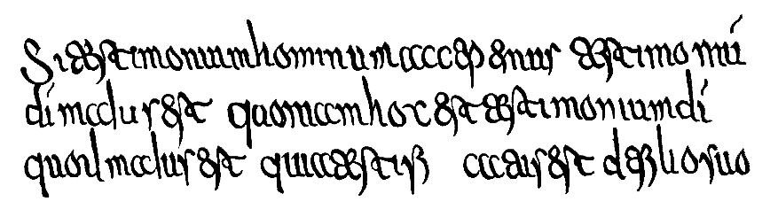
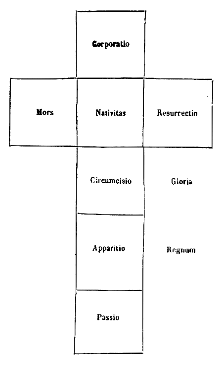

072
PATROLOGIAE CURSUS COMPLETUS
SIVE BIBLIOTHECA UNIVERSALIS, INTEGRA, UNIFORMIS, COMMODA, OECONOMICA, OMNIUM SS. PATRUM, DOCTORUM SCRIPTORUMQUE ECCLESIASTICORUM QUI AB AEVO APOSTOLICO AD INNOCENTII III TEMPORA FLORUERUNT; RECUSIO CHRONOLOGICA OMNIUM QUAE EXSTITERE MONUMENTORUM CATHOLICAE TRADITIONIS PER DUODECIM PRIORA ECCLESIAE SAECULA, JUXTA EDITIONES ACCURATISSIMAS, INTER SE CUMQUE NONNULLIS CODICIBUS MANUSCRIPTIS COLLATAS, PERQUAM DILIGENTER CASTIGATA; DISSERTATIONIBUS, COMMENTARIIS LECTIONIBUSQUE VARIANTIBUS CONTINENTER ILLUSTRATA; OMNIBUS OPERIBUS POST AMPLISSIMAS EDITIONES QUAE TRIBUS NOVISSIMIS SAECULIS DBRENTUR ABSOLUTAS DETECTIS, AUCTA; INDICIBUS PARTICULARIBUS ANALYTICIS, SINGULOS SIVE TOMOS, SIVE AUCTORES ALICUJUS MOMENTI SUBSEQUENTIBUS, DONATA; CAPITULIS INTRA IPSUM TEXTUM RITE DISPOSITIS, NECNON ET TITULIS SINGULARUM PAGINARUM MARGINEM SUPERIOREM DISTINGUENTIBUS SUBJECTAMQUE MATERIAM SIGNIFICANTIBUS, ADORNATA; OPERIBUS CUM DUBIIS TUM APOCRYPHIS, ALIQUA VERO AUCTORITATE IN ORDINE AD TRADITIONEM ECCLESIASTICAM POLLENTIBUS, AMPLIFICATA; DUOBUS INDICIBUS GENERALIBUS LOCUPLETATA: ALTERO SCILICET RERUM, QUO CONSULTO, QUIDQUID UNUSQUISQUE PATRUM IN QUODLIBET THEMA SCRIPSERIT UNO INTUITU CONSPICIATUR; ALTERO SCRIPTURAE SACRAE, EX QUO LECTORI COMPERIRE SIT OBVIUM QUINAM PATRES ET IN QUIBUS OPERUM SUORUM LOCIS SINGULOS SINGULORUM LIBRORUM SCRIPTURAE TEXTUS COMMENTATI SINT. EDITIO ACCURATISSIMA, CAETERISQUE OMNIBUS FACILE ANTEPONENDA, SI PERPENDANTUR: CHARACTERUM NITIDITAS CHARTAE QUALITAS, INTEGRITAS TEXTUS, PERFECTO CORRECTIONIS, OPERUM RECUSORUM TUM VARIETAS TUM NUMERUS, FORMA VOLUMINUM PERQUAM COMMODA SIBIQUE IN TOTO OPERIS DECURSU CONSTANTER SIMILIS, PRETII EXIGUITAS, PRAESERTIMQUE ISTA COLLECTIO, UNA, METHODICA ET CHRONOLOGICA, SEXCENTORUM FRAGMENTORUM OPUSCULORUMQUE HACTENUS HIC ILLIC SPARSORUM, PRIMUM AUTEM IN NOSTRA BIBLIOTHECA, EX OPERIBUS AD OMNES AETATES, LOCOS, LINGUAS FORMASQUE PERTINENTIBUS, COADUNATORUM.
SERIES PRIMA,
IN QUA PRODEUNT PATRES, DOCTORES SCRIPTORESQUE ECCLESIAE LATINAE A TERTULLIANO AD GREGORIUM MAGNUM. Acurrante J.-P. Migne, BIBLIOTHECAE CLERI UNIVERSAE, SIVE CURSUUM COMPLETORUM IN SINGULOS SCIENTIAE ECCLESIASTICAE RAMOS EDITORE.
PATROLOGIAE TOMUS LXXII.
TOMUS UNICUS.
1849
SUMMORUM PONTIFICUM
OPERA OMNIA.
INTERMISCENTUR
QUORUM EPISCOPATU SEDES BRACARENSIS, CENOMANENSIS, CABELLITANA, AUTISSIODORENSIS, HISPALENSIS, CARTHAGINENSIS, BITERRENSIS, AVENTICENSIS, ARELATENSIS ILLUSTRATAE SUNT, NECNON
PARISIENSIS EPISCOPI,
VITAM MONASTICAM PROFESSORUM, AC DEMUM
SCRIPTA QUAE EXSTANT UNIVERSA
AP S. GERMANI OPUSCULA IN APPENDICIS VICEM ACCEDENTIBUS PRETIOSISSIMIS ANTIQUAE LITURGIAE MONUMENTIS, INTER QUAE LOCUM PRINCIPEM OBTINENT MABILLONII LIBRI TRES DE LITURGIA GALLICANA. TOMUM CLAUDIT SYNTAGMA LEGUM DECRETORUMQUE SELECTORUM QUIBUS SIVE REGES SIVE IMPERATORES, SEXTO PRAESERTIM SAECULO, SESE REBUS ECCLESIASTICIS INGESSERUNT AUT SUAM IN DEUM PIETATEM TESTATI SUNT.
TOMUS UNICUS.
VENIT SEX FRANCIS GALLICIS.
1849
Epistolae et decreta.
Col. 9
Opuscula septem.
21
Epistola ad Brunichildem.
77
Privilegium monasterii S. Germani.
81
Expositio brevis antiquae liturgiae Gallicanae.
83
Appendix ad Opera S. Germani, varia liturgica monumenta continens, inter quae principem locum obtinet Mabillonii opus de Liturgia Gallicana.
99
S. Domnoli Vita et Testamentum.
629-651
S. Radegundis Vita et Testamentum.
651-681
Epistolae.
Ibid.
Epistolae duae.
637
Sententia de castitate servanda.
701
Epistolae et decreta.
Ibid.
Relatio concilii ab Aunario celebrati.
761
Aunarii et Stephani abbatis epistolae amoebaeae.
767
Homilia de Epiphania.
771
Sermones duo (hic tantum memorati).
773
Vita et Testamentum (hic tantum memorata).
Ibid.
Vita S. Brigidae virginis.
775
Chronicon.
793
Commentarii in aliquot Novi Testamenti partes.
803
Epist. ad Virgines monasterii Sanctae Mariae.
859
Chronicon.
863
Regula.
873
Homilia in laudem Ecclesiae.
893
Itinerarium.
897
Epistola ad S. Nicetium.
917
Appendix ad Eusebii Chronicon (hic tantum memorata).
919
Syntagma decretorum, praeceptionum ac edictorum praecipuorum, quibus sive imperatores sive reges sese rebus ecclesiasticis ingesserunt.
Ibid.
Vita Joannis III
(NOTA Labbaeo esse tribuendum quidquid, uncinis [] conclusum, non cod. Lucensi nominatim tribuitur.)
[Col. 0009A] Joannes [Col. 0009A] Die 27 mensis Junii, anno Christi Redemptoris 559, qui est Justiniani imperatoris 33, in locum Pelagii subrogatus fuit Joannes hujus nominis papa tertius, postquam sedes apostolica tribus mensibus et viginti quinque diebus pastore orbata et viduata fuisset. His temporibus Theodomirus, post filium suum in transportatione reliquiarum sancti Martini miraculose sanatum, ab Arianismo ad fidem catholicam est conversus. Gens Pictorum, in Britannia insula commorantium, per sanctum Columbanum ad fidem Christi perducta fuit (Beda de Gestis angelicis, libro III cap. 4) . Belisarius anno 3 pontificatus Joannis in suspicionem conjurationis adductus, a Justiniano imperatore, omnium scriptorum testimonio, in ordinem redactus fuit; eamque suae impietatis poenam incurrit, de qua supra dixi in notis ad Vitam Silverii, quem ille innocentem injuste relegaverat. Post obitum Childeberti regis, Clotarius germanus illius frater regnum accepit; ejectisque filiabus Childeberti, solus [Col. 0009B] totius Francici regni monarchia potitus fuit. Hic cum Parisios venisset, ibique repente in morbum incidisset, ideo quod sanctum Germanum ejus civitatis episcopum contempsisset, per ejusdem sancti Germani contactum miraculose sanitatem recuperavit ( Fortunatus in Vita sancti Germani apud Surium, etc.). Rex compluribus delictis obnoxius, ob incestas nuptias a Nicetio Trevirensi, quem relegaverat, saepe monitus et excommunicatus, obiit. Defuncto illo, quatuor illius filii, nempe Charibertus, Chilpericus, Guntheramus et Sigebertus regnum vicissim inter se partiti fuerunt, anno post natum Christum 565 [imo 561, aut 562], postque obitum Clodovei regis 51. Justinianus imperator, qui se divinis rebus plus nimio immiscuit, quique pontificium munus inferendis legibus ecclesiasticis, iisque exigendis, et in relegandis episcopis, sibi arroganter assumpsit, cum haereticis velamento pacis et concordiae familiarius quam oportebat agere consuevit, a Theodoro illo [Col. 0009C] nequissimo Caesareae Cappadociae archiepiscopo Origenista et occulto Eutychiano, in errorem Apthardocitarum sive incorruptibilium justo Dei vindicis permissu inductus, et specioso Incorruptibilis nomine deceptus, exsecrabilem et detestabilem haeresim in ecclesiam induxit, eorumque, quibuscum liberius vivebat, venena pestilentissima imbibit. Resistentem suae sententiae Eutychium Constantinopolitanum episcopum exsiliis multavit: cumque «Anastasii, inquit Nicephorus lib. XVII cap. 31, sacerdotumque ejus, qui eodem cum illo ardore flagrabant, [Col. 0010A] exsilii bellum dictaret, visibili ictus plaga ex nac vita excessit.» Quando nimirum annis triginta octo et mensibus octo imperium administrasset. Corrupticolae sive Severiani, et Aphthardocitae sive Incorruptibiles, qui erant duarum Eutychianarum sectarum diversi sectarii, his temporibus inter se confligebant. Corrupticolae affirmabant (quod haereticum est) Christum habuisse carnem corruptibilem et passionibus ex necessitate obnoxiam, ut nequaquam se ab his liberum reddere potuerit. Aphthardocitae contra docebant Christi carnem (quod non minus erroneum est) sua natura incorruptibilem et passionum expertem fuisse; tamen quando volebat, eam passionibus subjicere potuisse. Horum de incorruptione venenosam sententiam Justinianus non tantum imbibit, sed etiam inconsulta sententia episcoporum, edicto publico, ut refert Evagrius lib. IV cap. 38, stabilivit et confirmavit; ita ut exsilii poenam incurreret quisquis contra suam hac da re opinionem [Col. 0010B] sentiret. Nullo metu exsilii aut mortis prohibente, Anastasius Antiochiae episcopus edicto imperatoris contradixit. Justinianus eum sine dubio gravi poena relegationis punivisset, nisi ultione divina percussus, in proposito suo exsequendo morte praeventus fuisset. Facti hujus turpissimi illum in extremis poenituisse, atque Eutychium, quem relegaverat, ab exsilio revocari mandasse, non citra probabilitatem a plurimis asseritur ex eo, quod sanctus Gregorius papa una cum Patribus synodi VI aliisque pluribus eum nominet imperatorem piae memoriae, quando illius alibi mentionem facit. Ut ut sit, non immerito respuit Ecclesia illa Justiniani scripta et constitutiones, quas de usuris, ecclesiis, personisque ecclesiasticis arroganter nimis edidit. Suidas tradit illum litterarum imperitum ac plane analphabetum fuisse. Quod si verum est, affirmari debet, quod sicut Triboniani fuerunt leges civiles, ita etiam Theodori Caesariensis fuerint illa scripta [Col. 0010C] atque edicta de fide, quae sub nomine Justiniani vulgata leguntur. Justinus ex sorore Justiniani nepos, prout illi Eutychius episcopus ante triennium praedixerat, defuncto Justiniano successit: insignia imperii non prius accepit, quam ad templum progressus pias preces fudisset. A patriarcha Joanne benedictus, coronatus, et in solio collocatus, absolutis acclamationibus ad populum orationem habuit, ante cujus initium frontem signo crucis obsignavit. De fide catholica edictum edidit. Quae sane maxima laude digna forent, si non admodum in voluptatibus [Col. 0011B] obscenis volutatus, illicita conjugia constitutione sua approbasset, justumque matrimonium communi conjugum consensu dissolvi posse, lege sancita edixisset; denique, si non pecuniae ardenter appetens, etiam ipsa sacerdotia plebeiis hominibus venalia exposuisset (Evagrius lib. V, cap. 1) . De Justino refert Cedrenus, quod cum apud rebelles subditos scriptis non proficeret, ad populum libere dixerit, si praeceptis suis parere nollent, alium sibi suo arbitrio [Col. 0011C] imperatorem deligerent. «Ego enim (illum dixisse ait) contumacibus, injustis et aliena volentibus imperare nolo.» Addit unius refractarii graviore et acerbiore supplicio effectum fuisse, ut ubique in summa pace viveretur, atque intra trigesimam diem neque actor ullus esset, neque reus injuriarum. Anno 9 pontificatus Joannis, qui est Christi 568, Alboinus rex Langobardorum e Pannonia (quam, ex Scandinavia insula progressus, per suos occupatam quadraginta duobus annis obtinuerat) primus in Italiam magnis viribus potens ingreditur. Per conjugium Clothosindae Clotarii filiae, quam, teste Gregorio, in uxorem duxerat, quatuor reges Francorum sibi confoederavit, ita ut aliorum etiam barbarorum auxilia adeptus, Romanis effectus fuerit formidabilis. Post vastatam Venetam provinciam, captasque prope universas Liguriae civitates (justo enim Dei judicio primum feris barbaris consumendi traduntur schismatici Aquileiensis provinciae illi, quos tam multis [Col. 0011D] litteris Pelagius papa ad Ecclesiae unionem invitaverat) praeter eas quae in littore maris sitae sunt, insidiis Rosimundae uxoris interficitur, cum tres annos et sex menses in Italia regnasset. Successit post Alboinum Clephis, tenuitque regnum Italiae anno uno et mensibus quinque. Ita Dei permissu feri barbari Italiam invadere coeperunt, ut ejus dominio orientales imperatores, quibusvis barbaris adversus Romanos truculentiores, paulatim exueret; sicque tandem fieret, ut excussa Graecorum tyrannide, et vendicata a Francis cum urbe Italia, eadem magna ex parte Romano pontifici cederet. (Paulus diaconus de Gestis Langobardorum lib. II cap. 10 et seqq.) natione Romanus de patre Anastasio [Col. 0010A] illustri [ Cod. Luc., illustrio], sedit annos duodecim [Col. 0011A] [Col. 0011D] Annis tredecim atque diebus quatuordecim pontificatum tenuisse indicant ea tempora quibus hoc munus apostolicum administrare coepit et desiit. III Idus Julii defunctum esse fatetur Anastasius. Si ergo die 27 Junii post interregnum trium mensium et [Col. 0012B] viginti quinque dierum, pontificatum adeptus fuit anno Christi 559 ut supra dixi, necessario affirmari debet quod qui ad mensem Julium anni 572 supervixit, per annos tredecim et dies duodecim sedem pontificiam obtinuerit. , menses undecim, dies viginti sex. Hic ampliavit [ Cod. Luc., amavit] et restauravit coemeteria sanctorum martyrum. Hic constituit ut oblationes et amulae, vel luminaria in eadem coemeteria per omnes dominicas de Lateranis ministrarentur. Hic perfecit ecclesiam sanctorum Philippi et Jacobi, et dedicavit eam.
Eodem tempore Eruli [ Forsan, Heruli in Tusciam] in Tursiam [ Cod. Luc., Tassiam] exierunt, et levaverunt sibi regem Sindual [ Cod. Luc., Sinduad], et premebant cunctam Italiam. At egressus Narses ad eum, interfecit regem [ Cod. Luc., interfectus est rex], et omnem gentem Erulorum sibi subjugavit. Deinde venit Amingus dux Francorum, et Bucellinus [Col. 0012B] Haec teste Agathia lib. IV contigerunt anno 29 Justiniani imperatoris, anno Domini 555, sub pontificatu Vigilii, et Theodobaldo Francorum rege. Errat itaque Anastasius, qui hanc historiam ad tempora [Col. 0012C] Joannis papae III hic refert (Vide Baronium anno 555, num. 12, et 15) . ; et simili modo ipsi premebant Italiam. Sed, [Col. 0011B] auxiliante Domino, et ipsi a Narsete interfecti sunt. Erat ergo tota Italia gaudens. Tunc Romani [Col. 0012C] Ad historiam istam Anastasii Paulus diaconus lib. I cap. 5 de Gestis Langobardorum addit, Narsetem Romanorum invidiam incurrisse, quia multum auri et argenti, aliarumque rerum divitias acquisivisset. In reliquis fere conveniunt; nisi quod Paulus diaconus historiam hanc paulo prolixius recenseat. Utriusque historiam tanquam fabulosam et plane commentitiam refellit Baronius anno 567, num. 11 et seqq., ubi, auctore Corippo grammatico Africano, ostendit Narsetem ante annum 567, quo Langobardi ex Pannonia in Italiam irruere coeperunt, Constantinopolim revocatum, magnumque honorem consecutum fuisse. Deinde idem eo argumento convincit, quod ipsi scripto proprio fatentur mortui cadaver cum honore Constantinopolim translatum esse. Quod si verum est, ipsi Narsetem ab Italia proditionis crimine immunem reddunt, suamque hac de re enarrationem [Col. 0012D] in mendaciorum textrina contexta esse, propria confessione revelant. Nam si Narses, quod referunt illi, Langobardos in Italiam evocavit, pro sceleris magnitudine, non modo tanto honore et triumpho spoliandus fuerat, sed potius exhumandus, combustisque cineribus plane foras ejiciendus erat. Si dicas ipsum Narsetem ab imperatore iterum in Italiam esse missum cum eodem munere praefecturae; repugnant omnes scriptores, qui unanimi consensui fatentur, Longinum in locum Narsetis subrogatum fuisse. Explosa igitur fabulosa utriusque hac enarratione de proditione Narsetis, ejusque obitu et translatione, cum Graecis scriptoribus asseramus, ipsum honorifice Constantinopolim esse reversum, substitutoque illi Longino successore, mirifice cultum, ibidem usque ad obitum permansisse, et sumptuosa aedificia erexisse. Haec ex Cedreno, Corippo, aliisque scriptoribus, Baronius ann. 567 et 568, num. 3 et sequentibus. , invidia ducti suggesserunt Justino [ Cod. Luc., Justiniano] et Sophiae, quia expediret [ Forsan, quia magis] Romanos Gothis servire, quam Graecis, ubi Narses eunuchus imperat, et servitio nos subjicit, et piissimus imperator haec [ Cod. Luc., princeps noster haec] ignorat. Aut libera nos de manu ejus et civitatem [Col. 0012A] [ Cod. Luc., aut certe et civitatem] Romanam, aut certe gentibus deserviemus. Quo audito, Narses dixit: Si mala feci Romanis; male inveniam. Tunc egressus Narses de Roma, venit in Campaniam, et scripsit genti Langobardorum ut venirent, et possiderent Italiam. Ut cognovit Joannes papa, quia suggestionem suam ad imperatorem contra Narsetem misissent, festinus venit Neapolim, coepitque eum Joannes papa rogare, ut reverteretur Romam. Tunc Narses dixit ei: Dic, sanctissime papa, quid mali feci Romanis? Vadam ad pedes ejus qui me misit, ut cognoscat omnis Italia, quomodo totis viribus laboravi pro ea.
Respondit Joannes papa, dicens: Citius ego vadam, quam tu de hac terra egressus fueris. Reversus est [Col. 0012B] ergo Narses cum Joanne sanctissimo papa. Tunc sanctissimus papa retinuit se in coemeterio sanctorum Tiburtii et Valeriani, et habitavit ibi multum temporis, ut etiam episcopos ibi consecraret. Narses vero ingressus Romam, post non [ In Cod. Luc. non deest ] multum temporis mortuus est. Cujus corpus positum est in locello plumbeo, et reductum est cum omnibus divitiis ejus Constantinopolim. Eodem tempore [Col. 0013A] Joannes papa et ipse mortuus est, et sepultus in basilica beati Petri apostoli, III Idus Julias [ In Cod. Luc. III id. Jul. deest ]. Hic fecit ordinationes duas per mensem Decembrium, presbyteros triginta octo [ In Cod. Luc., triginta novem] diacones tredecim episcopos per diversa loca numero sexaginta unum. Et cessavit episcopatus menses, dies tres [ In Cod. Luc., menses decem, dies tres sub die 13 mensis Jul.]
Epistola I
I. Primum chorepiscopos quosdam temerarios olim jam damnatos arguit, quod nimium sibi sumerent auctoritatis in impositione manuum.
II. Deinde monstrat Clementem I post beatum Petrum [Col. 0013B] sedem apostolicam rexisse, idque tradente sibi ipso Petro.
III. Tertio tradit quanta cura atque sollicitudo illi subeunda sit, qui gregem Christi pascat.
Joannes episcopus universis per Germania et Galliae provincias constitutis, in Domino salutem.
Optaveram siquidem, charissimi, pro nostri charitate collegii, omnes Domini sacerdotes in una devotione persistere, nec quemquam prohibita gratia aut favore sacerdotum sectari, aut a via recta discedere. Et quanquam credamus, Dilectionem vestram ad omne opus bonum esse paratam [devotam], ut tamen efficacior fiat congruum nobis visum est, litteris sedis apostolicae (ut antecessorum quoque nostrorum vestigia imitemur) vos monere, praecepta [Col. 0013C] divina et apostolicae sedis instituta viriliter peragere, et prohibita non tangere, sed cavere; nec cuiquam liceat unquam doctrinam Patrum deserere, et sacerdotali honore gaudere.
I. Perlatum est ad sedem apostolicam emersisse et denuo reviviscere prohibitum et funditus exstirpatum tam a sancto Damaso, quam a sancto Leone, viris apostolicis, atque ab universis synodali auctoritate episcopis, reprehensibilem atque oppido inolitum usum, eo quod quidam chorepiscopi (qui et a praedictorum antecessorum sanctorum apostolicorum patribus et viris apostolicis, et ab ipsis, sive a nobis sunt prohibiti, sicut eorum hactenus testantur decreta) ultra modum suum progredientes (Conc. Parisiense VI. lib. I c. 27) , donum sancti Spiritus per [Col. 0013D] impositionem manuum tradant, et alia, quae, solum pontificibus debentur, contra fas peragant: praesertim [Col. 0014A] cum nullus ex septuaginta discipulis, quorum speciem in ecclesia gerunt, legatur donum Spiritus sancti per manus impositionem tradidisse. Quod autem solis apostolis, eorumque successoribus proprii sit officii tradere Spiritum sanctum, liber Actuum apostolorum (Act. VIII) docet. In concilio vero Caesareensi ita de chorepiscopis habetur scriptum (Neocaes. concil., can. 13) : Chorepiscopi quoque ad exemplum et formam septuaginta videntur esse: ut comministri autem, propter studium quod erga pauperes exhibent, honorentur. Si enim meliores sanctioresque sanctis apostolis [vos] esse putatis, facite quae illi non fecerunt, et superextollite vos illis. Si vero ejusdem ordinis estis, et aequiparare vos vultis illis, nolite ea agere, quae illi non egerunt: sed imitamini, [Col. 0014B] prout melius potestis, exempla et vestigia eorum. Illi autem, praecipiente Domino, illisque denuntiante, ut illi et successores eorum tantummodo per manus impositionem traderent Spiritum sanctum, nulli unquam ex septuaginta tradere Spiritum sanctum per manus impositionem permiserunt, eis (quorum typum, ut praedictum est, chorepiscopi, antequam prohibiti essent, gerebant in ecclesia) scientes illicitum fore, dantes successoribus eorum exemplum, ne unquam talia praesumerent. Unde in Actibus apostolorum scriptum est (Act. VIII) : Cum audissent apostoli qui erant Hierosolymis, quia recepit Samaria verbum Dei, miserunt ad eos Petrum et Joannem. Qui cum venissent, oraverunt pro ipsis, ut acciperent Spiritum sanctum. Nec dum enim in quemquam illorum venerat, [Col. 0014C] sed baptizati tantum erant in nomine domini Jesu. Tunc imponebant manus super illos, et accipiebant Spiritum sanctum. Non ergo (ut jam dictum est) aliquem ex septuaginta, licet pauci essent apostoli, ad hoc opus perficiendum direxerunt, sed Petrum et Joannem apostolos per manus impositionem tradere Spiritum sanctum miserunt: quorum vicem episcopi in ecclesia gerunt, et non chorepiscopi (Nicol. I, in epist. ad Rudolphum Bitur. arch.) , qui septuaginta discipulorum formam ante prohibitionem eorum gerebant. Quod illi non fecerunt, vos facere nolite, ne dissimiles eis, et indigni eorum successione et ministerio esse videamini: quia (ut ait Dominus in Evangelio) qui non est mecum, adversum me est: et qui non colligit mecum, dispergit (Luc. XI, 23) .
[Col. 0014D] II. Si autem Petrus princeps apostolorum adjutores sibi ascivit Linum et Cletum, non tamen potestatem [Col. 0015A] pontificii, aut ligandi, aut solvendi eis normam tradidit, sed successori suo sancto Clementi, qui sedem apostolicam post eum, et potestatem pontificalem, tradente sibi beato Petro, tenere promeruit. Linus vero et Cletus ministrabant exteriora, princeps autem apostolorum Petrus verbo et orationi insistebat: quae non incongrue ad traditionem Spiritus sancti per manus impositionem pertinent. Unde et in Actibus apostolorum scriptum habetur (Act. VI) : Non est aequum, nos relinquere verbum Dei, et ministrare mensis. Quapropter septuaginta electi sunt discipuli, qui exteriora peragerent, ipsi vero apostoli verbo et orationi insisterent; inde et in Evangelio secundum Lucam scriptum est ita: Post haec autem designavit Dominus et alios septuaginta duos, et misit [Col. 0015B] illos binos ante faciem suam in omnem civitatem et locum, quo erat ipse venturus. Et dicebat illis: Messis quidem multa, operarii autem pauci. Rogate ergo dominum messis, ut mittat operarios in messem suam. Ite. Ecce ego mitto vos sicut agnos inter lupos. Nolite portare sacculum, neque peram, neque calceamenta; et neminem per viam salutaveritis. In quamcunque domum intraveritis, primum dicite: Pax huic domui. Et si ibi fuerit filius pacis, requiescet super illum pax vestra; sin autem, ad vos revertetur. In eadem autem domo manete, edentes et bibentes quae apud illos sunt. Dignus est enim operarius mercede sua. Nolite transire de domo in domum. Et in quamcunque civitatem intraveritis, et susceperint vos, manducate quae apponuntur vobis, et curate infirmos qui in illa sunt, et dicite [Col. 0015C] illis: Appropinquabit in vos regnum Dei. In quamcunque autem civitatem intraveritis, et non receperint vos, exeuntes in plateas ejus, dicite: Etiam pulverem qui adhaesit nobis de civitate vestra, extergimus in vos. Tamen hoc scitote, quia appropinquabit regnum Dei. Dico vobis, quia Sodomis in illa die remissius erit quam illi civitati (Luc. X) . Et in Matthaeo evangelista est: Ecce ego mitto vos sicut oves in medio luporum. Estote ergo prudentes sicut serpentes, et simplices sicut columbae. Cavete autem ab hominibus. Tradent enim vos in conciliis, et in synagogis suis flagellabunt vos; et ad reges et praesides ducemini propter me, in testimonium illis et gentibus. Cum autem tradent vos, nolite cogitare quomodo aut quid loquamini. Dabitur enim vobis in illa hora quid loquamini. Non enim vos estis qui loquimini, [Col. 0015D] sed spiritus Patris vestri qui loquitur in vobis. Tradet autem frater fratrem in mortem, et pater filium, et insurgent filii in parentes, et morte eos afficient. Et eritis odio omnibus propter nomen meum. Qui autem perseveraverit usque in finem, hic salvus erit (Matth. X) . Linum namque et Cletum nihil legitur unquam ex pontificali ministerio egisse potestative: sed quantum eis a beato Petro praecipiebatur, tantum solummodo agebant. Nam et in canone legitur Nicaeno (Nicaeni concilii can. 4) : Episcopum namque convenit maxime quidem ab omnibus qui sunt in provincia episcopis ordinari. Si autem hoc [Col. 0016A] difficile fuerit, aut propter instantem necessitatem, aut propter itineris longitudinem, a tribus tamen omnimodis in idipsum convenientibus, et absentibus quoque pari modo decernentibus, et per scripta consentientibus, tunc ordinatio celebratur. Firmitas autem eorum quae gerentur per unamquamque provinciam, metropolitano tribuatur episcopo. Omnia quoque maxima concilia affirmant, eum non esse episcopum, qui minus quam a tribus episcopis, auctoritate etiam metropolitani, fuerit factus episcopus. Ideoque illos quos chorepiscopos vocatis, quia ab uno (ut audivimus) fiunt episcopo, episcopos non esse, nec aliquid de pontificali privilegio agere debere, perspicuum est. Quoniam si nomen non habent, quomodo officium possunt habere [facere]? [Col. 0016B] Si ergo episcopi non sunt, et presbyteri (quorum vicem gerunt, quia ad exemplum et formam septuaginta olim fiebant) esse despiciunt, quid erunt? Profecto quod ratione caret, aut nihil, aut parum prorsus est. Si quis de his amplius, et quod fieri non debeant, voluerit scire, legat praedictorum apostolicorum (Damasi scilicet et Leonis) decreta, et ibi reperiet. De quibus aliqua et hic inserere, dignum duximus.
III. Si Domini desideramus esse discipuli [Col. 0015] Damasi papae epistola 5, imo impostoris Mercatoris ineptus cento. LABB. , ipsius imitemur vestigia, ut de nobis dicatur: Ego sum pastor bonus, et agnosco oves meas, et voco eas nominatim, et cognoscunt me meae, et reliqua (Joan. X) . Et iterum, monente dominicae vocis imperio, quo beatissimus apostolus Petrus trina repetitione mysticae sanctionis imbuitur (Joan. ult.), ut Christi oves, [Col. 0016C] qui Christum amat, diligenter et cum magna cura pascat, quoniam ipsius sanctae sedis (cui per abundantiam divinae gratiae praesumus) ipsius amore et reverentia coarctamur, ut tantae superstitionis, quae nullius (ut saepe dictum est) fulcitur auctoritate, periculum (quantum possumus) declinemus, ne beati magistri nostri Petri summi apostoli dilectio, qua se amatorem Dei esse testatus est, vana inveniatur in nobis: quoniam omnis negligenter pascens toties commendatum sibi dominicum gregem, convincitur summum non amare pastorem, nec ejus velle se discipulum fieri, cujus exempla negligit imitari. Nam gratia prorsus major acquiritur, si de commissis ovibus lucrum offerat domino sollicitudo pastoris. Nam et beatum Jacob, qui pro uxoribus diu servierat, [Col. 0016D] dixisse meminimus (Genes. XXXI) : Viginti annis fui tecum: oves tuae et caprae steriles non fuerunt: arietes gregis tui non comedi, nec captum a bestia ostendi tibi: ego damnum omne reddebam, et quidquid furto perierat, a me exigebas. Die noctuque aestu urebar et gelu, fugiebat somnus ab oculis meis. Si igitur sic laborat et vigilat, qui pascit oves Laban, quanto labore, quantisque vigiliis debet intendere, qui pascit oves Dei? Sed in his omnibus ipse nos instruat, qui pro suis dedit ovibus animam, et adjuvet nos, ut de his qui nobis commissi sunt, fructum multiplicem [multiplicet], ac mensuram supereffluentem ad aeterna [Col. 0017A] gaudia reportare concedat: tantusque vos beati Petri apostolorum principis amor accendat, ut in ovili ipsius, cui omnes creaturae sunt traditae, omnes taliter errantes, et illicita atque prohibita praesumentes, sanctis vestris studiis summo redintegrare cum desiderio festinetis, qualiter animae pretioso Christi sanguine redemptae, eorum non depereant deceptione. Restat etiam, quod per ostium hi nequaquam subintrarunt, quia non habebant ostium per quod ingrederentur: quia (ut dictum est) si nec episcopi sunt, et plusquam presbyteri esse ambiunt, per quod ostium intrabunt? cum hi tantum duo ordines in ecclesia legantur, nec amplius ad pastorale officium aliquod patet ostium, per quod pastor intret. Audite, fratres, non me, sed ipsam Veritatem dicentem [Col. 0017B] (Joan. X) : Qui non intrat per ostium in ovile ovium, sed ascendit aliunde, ille fur est et latro, et reliqua. Cum etiam egregius praedicator dicat: Fundamentum aliud nemo potest ponere praeter id quod positum est: (I Cor. III) : praedicta duo fundamenta in Ecclesia tantummodo posita inveniantur, quidquid amplius in his positum invenitur, stare nullatenus poterit. Et ideo cum omnibus suis fundamentis, actionibus atque radicibus ut evellatur, necesse est, ita ut amplius nec pullulare, nec germinare valeat. Non ergo generet, et non faciat vobis, fratres, toties repetita locutio fastidium: quia summa necessitas est saepius prohiberi quod toties illicite usurpatur: et quoniam veritas saepius exagitata, magis splendescit in lucem; et quod toties repetendo admonetur, minus usurpatur. Super his enim multa jam ab antecessoribus nostris dicta sunt; [Col. 0017C] a quibus ipsi, sicut nunc a nobis, ita olim ab ipsis damnati et prohibiti sunt. Ideo saepius repetentes, omnes monemus, ut vitentur hujusmodi, et a talibus se abstineant, qui noluerint una cum eis a sacerdotali ministerio, ut rebelles, fieri alieni. Quod demum probare poterimus, si tales exstirpare, et [Col. 0018A] non eis favere, decertaveritis; et ita in postmodum de tali re querela cessabit: quia contumeliae studio fit [appetitur], quidquid interdictum toties usurpatur. Omnia haec decretalia, et cunctorum decessorum nostrum constituta, quae de ecclesiasticis ordinibus et canonum promulgata sunt disciplinis, ita vobis et omnibus episcopis, ac cunctis generaliter sacerdotibus custodiri debere mandamus, ut si quis in illa commiserit, veniam sibi deinceps noverit denegari: quoniam occurreret veritas, si falsitas displiceret. Et merito nos, qui summa ecclesiae tenere debemus gubernacula, causa respicit; si silentio faveamus errori [Col. 0017C] Hactenus ex laciniis Isidori sub persona Damasi delitescentis. LABB. . Data XIV Kalendas Augusti, Justino [Justiniano] sexto et Narsete viris clarissimis consulibus [Col. 0018C] Falsa consulum nota. LABB. .
Epistola II
OBSERVATIO LABBAEI. Joannes a Bosco monachus ord. Coelestinorum, editor Bibliothecae Floriacensis coenobii O. B., vulgavit perbrevem Joannis III papae epistolam ad Edaldum Viennae antistitem, quae sic habet:
Joannes episcopus Edaldo Viennensi, archiepiscopo.
De officiis missarum, de quibus in litteris vestris requisistis, sciat Charitas vestra quia varie apud diversas Ecclesias fiant; aliter enim Alexandrina Ecclesia, aliter Hierosolymitana, aliter Ephesina, aliter Romana facit: cujus morem et institua debet servare Ecclesia tua, quae fundamentum sancti habitus ab illa sumpsit. Venerabilis pallii usum per sanctum presbyterum vestrum Felicem tibi destinavimus [Col. 0018C] nolentes te privari antiquo beati Petri munere: simul mittentes de capillis sancti Pauli, ut esset Ecclesiae vestrae illius intercessione solatium, per cujus discipulum suscepit primum religionis honorem. Et alia manu: Benedictio apostolorum vos ab imbre malignorum defendat.
Notitia
[Col. 0017D] I. Inter eos viros eruditos qui sancti Martini Bracarensis episcopi gesta litteris tradidere, cl. Mabillonius eminere nobis videtur; ex quo proinde caeteris summatim pro instituti nostri ratione nonnulla hic describenda censuimus. Et primum quidem inquit [Col. 0017D] Mabill. Act. SS. Ord. Ben. saec. I, 244. : «Martinum alii Pannonium a patria, alii Galliciensem [Col. 0018D] a provincia Hispanica in qua degit, Dumiensem et Bracarensem alii a sedibus quibus episcopus praefuit, cognominarunt.» Ex his porro viri docti verbis nobis succurrit, quod in Baronio nostro Tamayus notavit [Col. 0018D] Tamay. Martyr. Hisp. tom. II, pag. 306. ; ipsum nempe res Hispanicas obiter tractantem, de unico Martino tres conflasse, [Col. 0019A] Galliciensem scilicet, Bracarensem et Dumiensem [Col. 0019D] Baron. Notat. in Martyr. Rom. ad diem XI Kal. Jul. . Verum si censor iste Hispanus ea novisset quae magnus Annalium ecclesiasticorum parens de suis illis notationibus in Tabulas ecclesiasticas praemonitum lectorem voluit, fortasse paulo mitius cum viro maximo egisset. Sic igitur ille [Col. 0019D] Id., ad ann. 257, § 3. : «Quod autem in nostris notis ad Romanum Martyrologium negatum est, Lucium esse passum sub Volusiano, ex Annalibus errorem corrige: sicque semper, cum videris discrepare ab iisdem notis Annales, eas ex his emenda. Nunquam hactenus concessum doleo, ut easdem singulas recognoscerem.» Hac igitur generali regula adhibita, quam ipsemet Notationum auctor praescripsit, se ipsum jam dudum emendasse, neque Tamayo παιδευτῇ opus habuisse intelligimus. Agnovit enim [Col. 0019B] fuisse unum eumdemque Martinum Dumiensem et Bracarensem, ut ex Annalibus compertum habemus [Col. 0019D] Id., ad ann. 560, § 12 et 572, § 10. ; qui nimirum primum fuerit monasterii Dumiensis episcopus, deinde tanquam metropolitanus concilio Bracarensi II praesederit. Quod si alicubi etiam Galliciensem episcopum post Gregorium Turonensem [Col. 0019D] Greg. Tur. Hist. Franc. lib. V cap. 38. appellat, existimandus propterea eum sic nominasse, quod Bracara qua in urbe sedebat, Gallaeciae metropolis ordine censebatur.
II. Verum his missis, ut ad ea propius accedamus quae sunt reliqua de praesule nostro enarranda, e Pannonia digressus ille, in Orientem tum religionis tum litterarum discendarum gratia profectus est; unde postea redux in Gallaeciam pervenit, ut ex Gregorio Turonensi [Col. 0019D] Id., ibid. et Isidoro Hispalensi [Col. 0019D] Isid. Hisp. lib. de Vir. illustr. cap. 35 edit. Breul.; al., 22. erudimur; [Col. 0019C] quorum prior disertius haec habet: «Martinus Galliciensis episcopus Pannoniae ortus fuit, et exinde ad visitanda loca sancta in Orientem properans, in tantum se litteris imbuit, ut nulli secundum suis temporibus haberetur. Exinde Galliciam venit, ubi cum beati Martini reliquiae portarentur, episcopus ordinatur.» Posterior vero: Martinus, inquit, Dumiensis monasterii sanctissimus pontifex, ex Orientis partibus navigans, in Gallaeciam venit.» Porro ut sancti antistitis Hispalensis verba, quibus tum hic, tum in Chronico Suevorum sub finem [Col. 0019D] Id. Chron. Suev. pag. 404 edit. Paris. 1601. , Martinum Dumiensis monasterii pontificem et episcopum vocat, rite percipiantur, animadvertendum praesulem nostrum de quo loquimur, aedificasse in Dumio, nobili Tarraconensis Hispaniae oppido, vix uno milliari a [Col. 0019D] Bracara distante, illustre coenobium instituti Benedictini, ut concilium Toletanum X, anno 656 celebratum, perhibet hisce verbis [Col. 0020D] Concil. tom. VII, pag. 482, c, editionis primae Ven. Labb. : «Delatum est ad nos in conventu sancti concilii . . . . testamentum gloriosae memoriae sancti Martini ecclesiae Bracarensis episcopi, qui et Dumiense monasterium visus est construxisse.» [Col. 0020A] Hujusmodi autem monasterium ex concilii Lucensis I decreto in sedem episcopalem erectum comperimus [Col. 0020D] Concil. tom. VII, pag. 557, a. eique familia regia, sive ut in aliis exemplaribus, familia servorum sex attributa. Quae tamen posterior lectio sic reformanda videtur cum Harduino, ut legatur Familia Suevorum pro servorum vulgata. Testatur siquidem Isidorus [Col. 0020D] Isid., loc. cit. , Martinum cum in Gallaeciam pervenisset, «conversis ab Ariana impietate ad fidem catholicam Suevorum populis» cum Theodemiro eorum rege, «regulam fidei et sanctae religionis constituisse, ecclesias confirmasse, monasteria condidisse, etc.» Quapropter Dumiensis coenobii ab eo constructi primus abbas et episcopus effectus, sibi assignatae Familiae regiae sive Familiae Suevorum regimen sumpsisse dicendus videtur. Verum [Col. 0020B] alio sensu synodi Lucensis verba, Familia servorum sex, interpretatur Garsias Loaysa [Col. 0020D] Concil. tom. VI, pag. 570, e. , sic inquiens: «Attribuitur ei tantum Familia regia, hoc est, regimen sanctorum monachorum; nam ipsi sunt ex regia familia; et alibi dicitur Familia servorum, qui Christo regi summo dicati, studium omne in cultu religionis et pietatis collocant.» Cur porro non edisseruit interpres numerum illum sex in synodi contextu additum verbis iis, Familia servorum? Existimarim equidem pro sex (VI) rescribendum undecim (XI) ut intelligatur Christi: qua quidem restitutione admissa, proba videri queat Garsiae sententia, ut synodi locus accipiatur de Familia servorum Christi.
III. Utcunque autem res se habeat, Martinus episcopali [Col. 0020C] charactere insignitus, antequam sedem Bracarensem obtinuisset, concilio Bracarensi I subscripserat [Col. 0020D] Ibid., pag. 523, c. , quod male in editis ordine II inscribitur; adeoque, ut recte arguit Mabillonius [Col. 0020D] Mabill., pag. 246, § 11. «si acta synodi Lucensis I conferantur cum synodo Bracarensi I anno 3 regis Theodemiri sive Christi 563 habita, cui Martinus jam episcopus Dumiensis subscripsit; facile intelligemus concilium Bracarense I posterius esse Lucensi itidem I, in quo Martino abbati Dumiensi episcopalis dignitas et ditio concessa est.» Deinceps vero metropolitae Bracarensi Lucretio decedenti suffectus perhibetur antistes noster Dumiensis: quo autem anno, haud satis liquet. Hanc certe novam dignitatem dudum consecutus fuisse existimandus anno 572, quo praefuit concilio Bracarensi II quod perperam [Col. 0020D] in editione Labbeana dicitur III [Col. 0020D] Greg. Tur. lib. V capp. 34 et 38, . Denique post plurima virtutum insignia quibus Dei Ecclesiam illustravit, in coelos migravit. Ejus obitum Gregorius Turonensis anno 5 Childeberti II consignat [Col. 0020D] Concil. t. VI, p. 575 et 581, d. ; adeoque supremum diem clauserit beatissimus praesul anno 580, in quem juxta communiorem sententiam [Col. 0021A] incidit annus 5 Childeberti junioris. Sic Mabillonius [Col. 0021B] Mabill. loc. cit. pag. 247, num. 15. . Qua de re videsis Pagium [Col. 0021B] Pagi. ad ann. 583, § 8. et Bollandianos [Col. 0021C] Bolland. Act. sanct. tom. III, Mart., pag. 86, § 1, num. 2. . Ejus dies festus celebratur die 20 Martii. Exstat apud Fortunatum [Col. 0021C] Fortun. lib. V, carm. 1, Bibl. PP. Lugd. tom. X, pag. 552 seq. luculentum carmen cui praemittitur epistola eidem Martino inscripta, ubi praeclare ejus gesta miris laudibus exornantur. De eo item refert alia nonnulla, praeter superius allata, Gregorius Turonensis [Col. 0021C] Greg. Turon. lib. I de Mirac. sancti Martin. cap. 11. .
IV. Plura exstant ipsius ingenii monumenta: «In his, inquit Mariana [Col. 0021C] Marian. de Reb. Hispan. lib. V, cap. 9, tom. I, p. 177, edit. Hag. Com. 1733. , quoniam crebris sententiis et styli acumine ad Senecae similitudinem proxime accedit, duo libri De moribus, et De differentia quatuor virtutum cardinalium, ejus philosophi nomine inter reliqua ejus opera circumferuntur.» Septem itaque beati hujus praesulis typis excudenda tradidimus opuscula, quae in antea editis divulsa habebantur. Eorum [Col. 0021B] primum inscribitur Formula honestae vitae, prout illud ex auctoris sententia laudant Trithemius [Col. 0021C] Trithem. de Scriptor. eccl. cap. 221. et Sigebertus [Col. 0022B] Sigebert. de Scriptor. eccl. cap. 19. . Idem tamen se legisse testatur sanctus Isidorus sub titulo De differentiis quatuor virtutum [Col. 0022B] Isid. Hisp. de Vir. illustr. cap. 35; al., 32. ; cui proxime accedit anonymus Mellicensis [Col. 0022C] Anon. Mellic. de Script. eccl. cap. 68. . Hujusmodi libellum dicavit auctor Mironi regi Galliciae: quam nuncupatoriam epistolam velut adhuc ineditam Dacherius in suo Spicilegio evulgavit [Col. 0022C] Dacher. Spicil. tom. III, p. 312 nov. edit. ; cum jam pridem eam edidisset Pictavis anno 1544 Elias Vinetus, et quidem alicubi emendationem, ut ex collatione ab editore Dacheriano instituta constat. Prodiit vero libellus idem absque praefatione tum inter [Col. 0022A] opera Gilberti Cognati anno 1562, Basileae, tum in heroicis et ecclesiasticis Quaestionibus Boethii Eponis, Duaci, anno 1581.
Opusculum istud excipit alterum De moribus, cura Leodegarii a Quercu anno 1556, Parisiis, in lucem emissum. Utrumque porro excusum exstat in bibliotheca PP. Lugdunensi [Col. 0022C] Bibl. PP. Lugd. tom. X. pagg. 382 seqq. , ut alias editiones omittamus. Quae vero sequuntur reliqua quinque, Pro repellenda jactantia, De superbia, Exhortatio humilitatis, De ira et De Pascha, ex codicibus manu exaratis descripsit ediditque Joannes Tamayus Salazar in suo Martyrologio Hispano [Col. 0022C] Tamay. Martyrol. Hisp. tom. II, pagg. 317-328. , unde illa desumpsimus, subjectis nonnullis conjecturis, quibus melior lectio fortasse alicubi reddatur. Denique septem hisce opusculis subdidimus ejusdem sancti Martini carmina [Col. 0022B] tria, quae Sirmondo accepta referimus [Col. 0022C] Sirmond. opp. tom. II, p. 907 seq. edit. Paris. , quorum prius Gregorio Turonensi memoratur his verbis [Col. 0022C] Greg. Turon. Hist. Franc. lib. V cap. 38. : «Versiculos, inquit, qui super ostium sunt a parte meridiana in basilica sancti Martini, ipse (Martinus Galliciensis episcopus) composuit.» Qui quidem Gregorii locus cl. editori haud succurrit. Porro non est cur hic disseramus neque de Sententiis patrum Aegyptiorum ab auctore nostro ex Graeco Latine redditis, quas in Vitis Patrum edidit Rosweydus; neque de Collectione canonum orientalium ex Graecis synodis, quorum item Latinam versionem idem elucubravit; de qua vero Collectione plura videas apud Fabricium [Col. 0022C] Fabric. Bibl. Gr. tom. XI, p. 65 seq. .
Formula honestae vitae
[Col. 0021D] Gloriosissimo ac tranquillissimo, et insigni catholicae fidei praedito pietate, Mironi regi Martinus humilis [Col. 0022D] episcopus. Non ignoro, clementissime rex, flagrantissimam animi tui sitim sapientiae insatiabiliter [Col. 0023A] poculis inhiare, eaque te ardenter quibus moralis [Col. 0023D] Sic ex editione Vineti Pictavis vulgata anno 1544 Baluzius; antea mendose legebatur mortalis. — Editor Bacherianus, qui ex eadem editione, mox tuis [Col. 0024D] addidit ante illa saepius litteris. scientiae rivuli manant, fluenta requirere. Et ob hoc humilitatem meam tuis saepius litteris admones, ut Dignationi tuae crebro aliquid per epistolam scribens aut consolationis aut exhortationis alicujus, et qualiacunque sint dicta offeram [Col. 0024D] Sic idem rescribit, ubi antea erat afferam dictu. . Sed quamvis hoc a me exigat laudabile tuae pietatis studium, scito tamen tenuitatis meae insolentem continuo a cautis impingi propterviam, si regalis reverentiae gravitatem aut assiduis aut vilibus, ut libet, dictis adjungam. Et ideo ne aut ego licentia piae invitationis abuterer loquendo, aut vestro magis desiderio obsisterem reticendo, libellum hunc nulla sophismatum ostentatione politum, sed planitie purae simplicitatis excerptum, capacibus fidenter auribus obtuli recitandum. Quem [Col. 0023B] non vestrae specialiter instituo potestati, cui naturalis sapientiae sagacitas praesto est, sed generaliter his conscripsi, quos ministeriis tuis astantes haec convenit legere, intelligere et tenere. Titulus autem libelli est: Formula vitae honestae; quem idcirco tali volui vocabulo superscribi, quia non illa ardua et perfecta, quae a paucis et peregregiis Deicolis patrantur, instituit; sed ea magis commonet, quae et sine divinarum Scripturarum praeceptis, naturali tantum humanae intelligentiae lege etiam a laicis recte honesteque viventibus valeant adimpleri.
Quatuor virtutum species multorum sapientium sententiis definitae sunt, quibus animus humanus componi ad honestatem vitae possit. Harum prima est prudentia; secunda magnanimitas; tertia, continentia; [Col. 0023C] quarta, justitia. Singulae tibi in officiis quae subsunt, annexae sunt, ac bene moratum virum efficiunt.
Quisquis prudentiam sequi desideras, tunc per rationem recte vives, si omnia prius existimes et perpenses, et dignitatem rebus non ex opinione multorum, sed ex earum natura constituas. Nam scire debes quia sunt quae videantur esse bona et non sunt, et sunt quae videantur non bona esse et sunt. Quaecunque autem ex rebus transitoriis possides, non mireris, nec magnum existimes quod caducum est; nec apud te quae habes tanquam aliena servabis, [Col. 0023D] sed pro te tanquam tua dispenses et utaris. Si prudentiam amplecteris, ubique idem eris; et prout rerum ac temporum varietas exigit, ita te accommodes tempori; nec te in aliquibus mutes, sed potius aptes: sicut manus quae eadem est, et cum in palmam extenditur, et cum in pugnum astringitur. Prudentis proprium est examinare consilia, et non cito facili credulitate ad falsa prolabi. De dubiis non definias, sed suspensam teneas sententiam. Nihil inexpertum affirmes, quia non omne verisimile statim verum est; sicut et saepius quod primum incredibile [Col. 0024A] videtur, non continuo falsum est. Crebro siquidem faciem mendacii veritas retinet. Crebro mendacium specie veritatis occulitur. Nam sicut aliquando tristem frontem amicus, et blandam adulator ostendit; sic verisimilitudine coloratur veritas et ut fallat vel subrepat, coloratur. Si prudens esse cupis, in futurum, prospectum intende; et quae possunt contingere, animo tuo cuncta propone. Nihil tibi subitum sit, sed per otium ante conspicies. Nam qui prudens est, non dicit: Non putavi quidem hoc fieri; quia non dubitat, sed exspectat; nec suspicatur, sed cavet. Cujuscunque facti causam require: cum initia inveneris, exitus cogitabis. Scito te in quibusdam debere perseverare, quia coepisti: quaedam vero nec incipere, in quibus perseverare sit noxium. Prudens [Col. 0024B] fallere non vult, falli non potest. Boni est viri, etiam in morte neminem fallere. Opiniones tuae judicia sint. Cogitationes vagas et inutiles, et velut somnio similes, non recipies; quibus si animus tuus se oblectaverit, cum omnia disposueris, tristis remanebis: sed cogitatio tua stabilis, et certa sit; sive deliberet, sive quaerat, sive contempletur, non recedat a vero. Sermo quoque tuus non sit inanis, sed aut suadeat, aut moneat, aut consoletur, aut praecipiat. Lauda parce, vitupera parcius. Nam similiter reprehensibilis est nimia laudatio, ut immoderata vituperatio. Illa siquidem adulatione, ista malignitate suspecta est. Testimonium veritati, non amicitiae reddes. Cum consideratione promitte plenius quae promiseris praesta. Si prudens est animus tuus, [Col. 0024C] tribus temporibus dispensetur. Praesentia ordina, futura praevide, praeterita recordare. Nam qui nil de praeterito cogitat, perdit vitam, qui nil de futuro praemeditatur, in omnia incautus incidit. Proponas in animo tuo futura mala et bona ut illa sustinere possis et ista moderari. Non semper in actu sis, sed interdum animo tuo requiem dato: et requies ipsa plena sit sapientiae studiis, et cogitationibus bonis: nam prudens nunquam otio marcet. Habet autem aliquando remissum animum, nunquam solutum. Accelerat tarda, perplexa expedit, dura mollit, exaequat ardua. Scit enim quid qua via aggredi debeat: et distincte cuncta videt. Consilium peritorum, ex apertis obscura aestimat, ex parvulis magna, ex proximis remota, ex partibus tota. Non te moveat [Col. 0024D] dicentis auctoritas, nec quis, sed quid dicat, intendito. Nec quam multis, sed qualibus placeat, cogita. Id quaere quod invenire possis. Id disce, quod potes scire. Id opta, quod optari coram bonis potest. Nec altiori te rei imponas, in qua tibi stanti tremendum, ascendenti cadendum sit. Consilia tibi salutifera advoca. Cum tibi alludit vitae prosperitas, tunc te velut in lubrico retinebis ac sistes, nec tibi dabis impetus liberos, sed circumspicies quo eundum sit, vel quousque.
Magnanimitas vero, quae et fortitudo dicitur, si insit animo tuo, cum magna fiducia vives liber, intrepidus, alacer. Magni animi hominis bonum est non vacillare, constare sibi, et finem vitae intrepidus exspectare. Nil aliud magnum in rebus humanis, nisi animus magna despiciens. Si magnanimus fueris, nunquam judicabis tibi contumeliam fieri. De inimico dices: Non nocuit mihi, sed animum nocendi habuit; et cum illum in potestate tua videris, vindictam putabis, vindicare potuisse. Scito enim honestum et magnum genus vindictae esse ignoscere. Neminem susurro appetas, neminem suffodias, palam aggredere. Non geres, conflictum nisi indixeris; nam [Col. 0025B] fraudes et doli imbecillum decent. Eris magnanimus, si pericula nec appetas, ut temerarius, nec formides, ut timidus; nam nil timidum facit animum, nisi reprehensibilis vitae conscientia. Mensura ergo magnanimitatis est, nec timidum esse hominem, nec audacem.
Continentiam vero si diligis, circumcide superflua et in arctum desideria tua constringe. Considera tecum, quantum natura poscat, et non quantum cupiditas expetat. Si continens fueris, eo usque pervenies, ut te ipso contentus sis. Nam qui sibi ipsi satis est, cum divitiis natus est. Impone concupiscentiae [Col. 0025C] tuae frenum et modum, omniaque blandimenta quae occultam voluptatem trahunt, rejice. Ede citra cruditatem, bibe citra ebrietatem. Observa ne in convivio aut in qualibet vitae communitate, quos non imitaberis, damnare videaris. Nec praesentibus deliciis inhaerebis, nec desiderabis absentes. Victus tibi ex facili sit, nec ad voluptatem, sed ad cibum accede. Palatum tuum fames excitet, non sapores. Desideria tua parvo redime, quia hoc tantum curare debes, ut desinant: atque quasi ad exemplar compositus divinum, a corpore ad spiritum, quantum potes, te festina reducere. Si continentiae studes, habita non amoene, sed salubriter: nec dominum esse velis notum a domo, sed domum a domino. Non tibi ascribas quod non eris, nec quod [Col. 0025D] es; nec majus quam es videri velis. Hoc majus observa, ne paupertas tibi immunda sit, nec parcimonia sordida, nec simplicitas neglecta, nec lenitas languida; et si tibi res exiguae sunt, non tamen sint angustae. Nec tua defleas, nec aliena mireris. Si continentiam diligis, turpia fugito ante quam accedant; nec quemquam alium vereberis plus quam te. Omnia tolerabilia praeter turpitudinem crede. A verbis quoque turpibus abstineto, quia eorum licentiam imprudentiam nutrit. Sermones utiles magis quam facetos et amabiles ama, rectos potius quam obsecundantes. Miscebis interdum seriis jocos, sed temperatos, et sine detrimento dignitatis ac verecundiae. Nam reprehensibilis risus est, si immodicus, si pueriliter [Col. 0026A] effusus, si muliebriter fractus. Odibilem quoque hominem facit risus, aut superbus, aut clarus [ An elatus?], aut malignus et furtivus, aut alienis malis evocatus. Si ergo ipsos jocos exigis, hoc quoque dignitate sapientiae gere, ut te nec gravent tanquam asperum, nec contemnant tanquam vilem. Non erit tibi scurrilitas, sed grata urbanitas. Sales tui sint sine dente, joci sine vilitate, risus sine cachinno, vox sine clamore, incessus sine tumultu: quies tibi, non desidia erit; et cum ab aliis luditur, tu sancti aliquid honestique tractabis. Si continens es, adulationes evita: sitque tibi tam triste laudari a turpibus, quam si lauderis ob turpia. Laetior esto, quoties displices malis, et malorum de te existimationes malas, veram tui laudationem ascribe. Difficillimum [Col. 0026B] continentiae opus est, assentationes adulatione repellere, quarum sermones animum voluptate resolvunt. Nullius per assentationem amicitiam merearis, nec ad tuam promerendam per hanc aditum pandas. Non eris audax, nec arrogans: submittes te, non projicies; gravitate servata, admoneberis libenter, et reprehenderis patienter. Si merito objurgabit aliquis, scito quia profuit; si immerito, scito quia prodesse voluit. Non acerba, sed blanda timebis verba. Esto vitiorum fugax ipse; aliorum vero neque curiosus scrutator, neque acerbus reprehensor, sed sine exprobratione correptor, ita ut admonitionem hilaritate praevenias, et errori facile veniam dato. Nec extollas quemquam, neque dejicias. Dicentium esto tacitus auditor, audientium [Col. 0026C] promptus receptor. Requirenti facile responde, contemnenti facile cede: ne in jurgia exsecrationesque discedas. Si continens es, animi tui motus corporisque observa, ne indecori sint. Nec illos ideo contemnas quia latent; nam nil differt, si nemo videat, cum tu ipse illos videas. Mobilis esto, non levis; constans, non pertinax. Alicujus rei scientiam habere te nec ignotum sit, nec molestum. Omnes tibi pares facies: sed inferiores superbiendo non contemnes. Superiores, recte vivendo, non metuas. In reddenda officiositate, neque negligens, neque exactor appareas. Cunctis esto benignus, nemini blandus, paucis familiaris, omnibus aequus. Severior esto in judicio quam sermone, vita quam vultu: cultor clementiae, detestator saevitiae, bonae famae, neque tuae seminator, [Col. 0026D] neque alienae invidus. Rumoribus, criminibus, suspicionibus minime credulus vel malignus, sed potius his qui per speciem simplicitatis ad nocendum aliquibus subrepunt, oppositissimus. Ad iram tardus, ad misericordiam pronus, in adversis firmus, in prosperis cautus et humilis: occultator virtutum, sicut alii vitiorum. Vanae gloriae contemptor, et bonorum quibus praeditus es, non acerbus exactor. Nullius imprudentiam despicias. Rari sermonis ipse, sed loquentium patiens. Severus, non saevus; sed hilarem non aspernens. Sapientiae cupidus et docilis: quae nosti, sine arrogantia postulanti imparties; quae nescis, sine occultatione ignorantiae tibi postula impartiri. Non conturbabit sapiens mores publicos, nec [Col. 0027A] populum in se vitae novitate convertet. Justitiae post haec virtus est.
Quid est justitia, nisi naturae tacita conventio, in adjutorium multorum inventa? Justitia non nostra constitutio, sed divina lex est, vinculum societatis humanae. In hac non est quod aestimemus quid expediat: expedit tibi, quidquid illa dictaverit. Quisquis ergo hanc sectari desideras, Deum time prius et ama, ut ameris a Deo. Amabilis eris Deo, si in hoc illum imitaberis, ut velis omnibus prodesse, et nulli nocere. Et tunc te justum virum appellabunt omnes, sequentur, venerabuntur et diligent. Justus enim ut sis, non solum non nocebis, sed etiam nocentes prohibebis: [Col. 0027B] nam nil nocere, non est justitia, sed abstinentia alieni est. Ab his ergo incipe, ut non auferas, ut ad majora proveharis, et aliis ablata restituas. Raptores quoque ipsos ne aliis timendi sint, castiga et cohibe. Ex nulla vocis ambiguitate controversiam nectes, sed animi qualitatem speculare. Nihil tibi intersit, an firmes, an jures [Col. 0027D] Caute lege: nam multum interest inter simplicem assertionem et juramentum. Et hoc sane opus est religionis: illud non. Forsan hyperbolice ita locutus est, quod vir probus atque perfectus, Est est, Non non, nisi major adsit necessitas, contentus esse debet, ut Christus monet in Evangelio. . De fide et religione scias agi, ubicunque de veritate tractatur: nam si jurejurando Deus invocetur, et non invocanti testis est, amen non transies veritatem, ne justitiae transeas legem. Quod si aliquando coarcteris uti mendacio, utere non ad falsi, sed ad veri custodiam [Col. 0027D] Caute ista lege: nam certum est, mendacium [Col. 0028D] quantumvis officiosum, nunquam esse licitum. Vide S. Thomam 2. 2. quaest. 110. art. 3. et Sixtum Senensem lib. V, Bibl. annot. 107. ; et si contigerit fidelitatem mendacio redimi, non mentieris, sed potius excusaberis: quia ubi honesta causa est, justus secreta non prodit, tacenda enim [Col. 0027C] tacet, loquenda loquitur: atque illi aperta, et secura tranquillitas, ut dum alii vincantur a malis, vincantur ab illo mala. Haec ergo si studere curaveris, laetus et intrepidus cursus tui finem exspectabis, prospicies haec tristia hujus mundi hilaris, tumultuosa quietus, extrema securus.
His ergo institutionibus observatis, quatuor virtutum species perfectum te facient virum, si mensuram rectitudinis earum aequo vivendi fine servaveris. Nam si prudentia terminos suos excedat, callida et pavida commiseris, investigator latentium, et scrutator qualiumcunque noxarum ostenderis, notaberis timidus, speciosus [ forte, suspiciosus], attentus, semper [Col. 0027D] aliquid quaerens, semper aliquid timens, semper aliquid dubitans, et subtilissimas suspiciones suas ad animi tui apprehensionem impingas. Monstraberis digito astutia plenus, versipellis, et simplicitatis inimicus, contemplatorque culparum, et postremo uno nomine vocaberis a cunctis, malus homo. In has [Col. 0028A] ergo maculas prudentia immensurata perducet. Quicunque in illa mediocri lance persistit, nec obtusum in se aliquid habeat, nec versutum.
Magnanimitas autem si se extra modum suum extollat, faciet virum minacem, inflatum, turbidum, inquietum: et in quascunque extollentias dictorum actorumque, neglecta honestate, festinum; qui momentis omnibus supercilia subrigens, et bestiarius etiam quieta excitat, alium ferit, alium fugat. Sed quamvis audax sit impugnator, tamen multa extra se valentia ferre non poterit. Sed aut miserum appetit finem, aut aerumnosam sui memoriam derelinquit. Mensura ergo magnanimitatis est, nec timidum esse [Col. 0028B] hominem, nec audacem.
Continentia deinde his terminis astringat: cave ne parcus sis, ne speciose et timide manum contrahas. Ne in minimis quoque speculum ponas. Nam talis et tam circumcisa vilis putabitur integritas. Hac ergo mediocritatis linea continentiam observabis, ut nec voluptati deditus, prodigus et luxuriosus appareas nec avara tenacitate sordidus aut obscurus exsistas.
Justitia postremo eo mediocritatis tibi itinere regenda [Col. 0028C] est, ut nec ductu jugiter [ Al. turpiter] levi immotam semper animi rationem negligentia subsequatur. Dum neque de magnis, neque de minimis errantium vitiis corrigendi curam geris, sed neque licentiam peccandi, aut illudentibus tibi blande, aut illudentibus proterve permittis, neque rursus nimia rigiditate et asperitate, nil veniae aut benignitati reservans, humanae societati durus appareas. Ita ergo justitiae regula tenenda est, ut reverentia disciplinae ejus neque nimia negligentiae communitate despecta vilescat, neque severiori atrocitate diuturna gratiam humanae amabilitatis amittat.
Si quis ergo vitam suam ad utilitatem non tantum [Col. 0028D] pariat, sed multorum inculpabiliter componere desiderat, hanc praedictarum virtutum formulam pro qualitatibus temporum, locorum, personarum atque causarum sequatur: eo mediocritatis insistens, quo per abrupta altrinsecus praecipitia, aut ruentem corporis devitet insaniam, aut efficientem puniat ignaviam [Col. 0028D] In ms. Cocice his verbis desinit hoc opusculum: Aut deficientem contemnat invidiam, ut observat laudatus editor Bucherianus. .
De moribus
[Col. 0029A] I. Omne peccatum actio est. Actio autem omnis voluntaria est tam honesta quam turpis; ergo voluntarium est omne peccatum. Tolle excusationem; nemo peccat invitus. Educatio et disciplina mores faciunt; et id unusquisque sapit, quod didicit. Itaque bona consuetudo excutere debet quod mala instruxit. Nihil interest quo animo facias quod fecisse vitiosum est, quia facta cernuntur, animus vero non videtur. Nulla autem laus est non facere quod facere non possis. Quid homini est inimicissimum? Homo. Libenter feras quod necesse est; dolor patientia vincitur. Exspecta quo nunquam poeniteas. Non quam multis placeas, sed qualibus stude. In hoc tantum incumbe, ut libentius audias quam loquaris. Multos vitam differentes mors juncta praevenit. Itaque omnis dies [Col. 0029B] velut ultimus judicetur. Tristitiam, si potes, ne admiseris; sin minus, ne ostenderis. Amicos secreto admone, palam autem lauda. Verba rebus, non personis aestimanda sunt. Oratorem te puta, si tibi ante omnes quod oportet persuaseris. Ut licentiosa mancipia animi, imperio coerce linguam, ventrem et libidinem. Quod tacitum esse velis, nemini dixeris. Si tibi non imperasti, quomodo ab alio silentium speras? Ridiculum est aliquem odio nocentis innocentiam perdere.
II. Monstro similis est avaritia senilis. Quid enim stultius est, quod dici solet, quam via deficiente viaticum augere? Omnes infantes terra nudos excipit. Non pudet te fortius nasci quam vivere? Quid dulcius quam habere amicum cum quo audeas ut tecum [Col. 0029C] omnia loqui? Magnarum virium est negligere laedentem. Quid sis interest, non quid habeas. Nondum es felix si te turba non deriserit. Si vis beatus esse, cogita hoc primum, contemnere et contemni. Prius quam promittas deliberes; et cum promiseris, facias. Id agas, ne quis merito te oderit; et si nullos inimicos tibi faciet injuria, multos facit invidia. Solitudinem quaeret, qui vult cum innocentibus vivere; optimus ergo animus et pulcherrimus cultor Dei est. Abstinebis ab alieno matrimonio. Praestabis parentibus pietatem, cognatis indulgentiam, omnibus aequitatem. Devitabis crudelitatem, et ministram crudelitatis iram. Non aliter vivas in solitudine, aliter in foro. Nihil petas, quod negaturus fuisti: nihil negabis, quod petiturus fuisti. Pacem cum hominibus habebis, [Col. 0029D] cum vitiis bellum. Hoc habet omnis affectus, ut in quod ipse insanit, in id putet etiam caeteros furere. Maximum in eo vitium est, qui non melioribus vult placere, sed pluribus. Vis omnibus esse notus? prius effice ut neminem noveris. Bonum est non laudari, et esse laudabilem. Stultum est timere quod vitare non potes.
III. Male opinentur de te homines, sed mali. Malis [Col. 0030A] displicere, est laudari. Male de te loquuntur homines, bene autem loqui nesciunt; non quod merearis, sed quod solent ipsi. Homines de te mala loquuntur? Si merito, non quod loquuntur molestum est, sed quod non mentiuntur. Si immerito? Innocentia mea nunc maxime gaudeo; apparet enim illos vera objecturos, si possent. Non es in patria tua? Patria tua est, ubicunque bene es; illud enim per quod bene est, non est in loco, sed in homine. Nihil magnum, nisi magno animo despicias. Quae sunt maximae divitiae? Non desiderare divitias. Quis plurimum habet? Is qui minimum cupit. Quid est dare beneficium? Deum imitari. Honestius est cum judicaveris amare, quam cum amaveris judicare. Dissensio ab alio incipiat, a te autem reconciliatio. Succurre paupertati [Col. 0030B] amicorum, imo occurre. Amicos secundae res parant, adversae certissime probant. Pejora sunt tecta odia quam aperta. Itaque te minus loquax inimicus offendit quam tacitus. Mira ratio est, quae non vult praedicari quod gaudet intellegi. Ignosci amat, qui quod odit ostendit. Eleemosyna non tam accipientibus quam dantibus prodest. Et spes praemii solatium sit laboris. Quae est maxima egestas? Avaritia. Pecuniae imperare oportet, non servire. Nullum conscium peccatorum tuorum magis timueris quam temetipsum. Alium potes effugere, te autem nunquam. Quis est pauper? Qui sibi videtur. Qui a multis timetur, multos timet. Infelicem erige, submitte felicitatem. Vera felicitas innocentia est. Nequitia ipsa sui poena est. Mala conscientia saepe tuta [Col. 0030C] est, secura qui exitum cogitabit. Beneficii accepti nunquam oportet oblivisci; dati, protinus.
IV. Inhonesta victoria est, suos vincere. Satis est poenarum, potuisse punire. Inimicitias tarde suscipe, amicitias exerce moderate. Simultates depone. Imago animi, sermo est. Qualis vir, talis oratio. Magna res est vocis et silentii temperamentum. Qui aequo animo malis immiscetur, malus est. Neminem laudaveris, neminem cito accusaris: semper puta te cum diis testimonium dicere. Vitium est omnia credere, vitium nihil credere. Utendum est divitiis, non abutendum. Nullum putaveris locum sine teste. Ex cusationem quaerere, vitium. Fortior est qui cupidi tatem vincit quam qui hostem subjicit. Est difficillimum, se ipsum vincere. Inique irascitur, qui suis [Col. 0030D] irascitur. Amare sic incipe, tanquam non liceat desinere. Magnarum rerum etiam si successus non fuerit, honestus est ipse conatus. Nobilitas animi est generositas sensus; nobilitas corporis, generosus animus. Honestior est quem senectus ad otium retulit, quam quem in otio invenit, et tunc incipit laborare. Turpe spectaculum praebet animus aeger. Nunquam sit tristis facies tibi in commodo alterius. [Col. 0031A] Homo sum: quomodo devitabo secundarum rerum invidiam? Si felicitatem jactaveris, cum multis dives eris. Quomodo optime potentiam tuebor? Impotentia occasionis. Locum tenet innocentiae proximum confessio. Ubi confessio, ibi remissio. Irae severitas in vitio est. Boni judicis est dispensare, non tantum quid damnandum sit, sed quatenus. Proximus justitiae modus, severitas.
V. Quietissimam vitam agerent homines in terris, si haec duo verba a natura omnium rerum tollerent, meum et tuum. Qui paupertatem timet, timendus est. Vires tuas amici magis sentiant beneficiis quam injuriis. Pecunia non satiat avaritiam, sed irritat. Homo semper indigens pecunia, scit cum ejus moribus convenire. Mihi crede, non potes dives esse [Col. 0031B] et felix. Auribus frequentius quam lingua utere. Quidquid dicturus es, ante quam aliis, dixeris tibi. Nihil interest inter iratum et insanum, nisi unus dies: alter non semper irascitur, alter semper insanit. Facillime bonus fueris, si ea vitaveris quae vituperaveris. Cum alienos timueris, te ipsum verere: nam saepe sine aliis esse potes, sine te nunquam. Si bene te instruxeris, pudeat deteriora facere. Quod persuaseris erit diuturnum, quod coegeris erit in occasione. Alteri semper ignoscito, tibi ipsi nunquam. Tantum ad virtutem adjicies, quantum ex voluptate abstraxeris. Stultum est somno dejectari, et quasi mortem moliri. Bonis nocet, qui malis parcit. Multi cum aliis maledicunt, sibi ipsis convicium faciunt. Nihil turpius quam qui objicit [Col. 0031C] alteri; sibi objiciendum. Ut licentiosa mancipia animi, imperio rege linguam, libidinem, ventrem; cupiditatemque comprime: si non potes, paululum remitte. Saepe ea quae sanari ratione non poterant, sanata sunt tempore. Qui propter pecuniae amorem et libidinum moritur, ostendit se nunquam sui causa vixisse. Turpia ne dixeris, paulatim enim pudor per verba discutitur. Sic habita, ut potius laudetur dominus quam domus: consuetudinaria res est innocentia. Non damnatio, sed causa hominem turpem [Col. 0032A] facit. Merito damnari, poena est; damnatio immerita, damnantis est calamitas.
VI. Si aliquid cogitaveris, cito apparebit conversantibus. Videri vis ab omnibus? nunquam bonae honestatis simulatio longa est. Quod de alienis tractas, ex tuis judices. Multi sunt obligandi, pauci offendendi; nam memoria beneficiorum facilis est, injuriarum tenax. Objurgationi semper aliquid blande admisce; facilius enim penetrant verba quae molli vadunt via, quam aspera; nemo enim se mutat, quia mutari se desperet. Quoties scribens aliquid dicturus es, scito morum tuorum te hominibus chirographum dare. Qui in servos irascitur et crudelis est, satis ostendit potestatem adversus alienos sibi defuisse. Qui nescit tacere, nescit loqui. Facilius est [Col. 0032B] pauperi contemptum effugere quam diviti invidiam. Bonus fruitur bona conscientia. Malis hominibus tutissimum est cito fugere. Nulla pusilla domus, quae multos amicos capit. Scire uti paupertate, maxima felicitas. Acuit intentio, frangit animum remissio. Nunquam scelus scelere vincendum est. Bonus vir est qui eo perduxit affectu animum, ut non tantum peccare non velit, sed etiam non possit. Regnantibus pejus multo periculum quam his qui judicantur; hi enim singulos timent, illi universos. Nunquid fortis fortem se gloriabitur, quem corporis aegritudo efficit infirmum? Nunquid dives in opibus suis gloriabitur, cujus spem fur vel tyrannus abrupit? Nunquid nobilitas gloriabitur affecta, nonnunquam indignis et miserabilibus serviens? Diabolus aliquando se gloriabatur [Col. 0032C] interfectorem tuae misericordiae, nunc intergemiscit socios tuae beatitudinis. Fugienda sunt omnibus modis et abscindenda igni ac ferro, totoque artificio separanda, languor a corpore, imperitia ab animo, luxuria a mente, a civitate seditio, a domo discordia, a cunctis rebus intemperantia. Dixit quidam, amicorum omnia esse communia, et amicum se ipsum esse alterum. Duorum temporum maxime habendam curam, et eorum quae acturi sumus, et eorum quae gessimus. Post Deum veritatem colendam, quae sola homines diis proximos facit.
Pro repellanda jactantia
[Col. 0031D] I. Multa sunt vitiorum genera, quibus humana fragilitas infestatur, et quorum vulneribus pene omnes homines sauciantur. Nam, ut dicam pauca de multis aliis: qui ab iracundia vincitur, caedibus, homicidiis, clamori ac seditioni deservit. Alius qui avaritia impellitur, inhumanitatem, rapacitatem, falsa testimonia, violentias, perjuria, furta, mendacium et fraudationes exercet. Alius qui a libidine [Col. 0032D] sordidatur, turpiloquiis, ludibriis, scurrilitatibus, adulteriis et fornicationibus succumbit. Alius qui gulae ingluvie superatur, comessationibus, crapulae, ebrietati deservit. Et ut non multa prosequar, quaecunque memorare perlongum est, cum singulos homines constet: unus inter haec omnia morbus est, qui conditionis suae non singillatim quosdam, sed congregatim cunctos addicit; et cum caetera vitia [Col. 0033A] particulatim sibi vindicent quos vicerint, hoc unum non nisi omnibus dominari contentum est. Id autem est inane laudis studium, quod Greci κενοδοξία, Latini vanam gloriam seu jactantiam vocant. Quod quale sit malum, et quomodo universos vulneret, dicam.
II. Cum in omnibus hujus vitae studiis, aliqua plus, aliqua minus humano generi placeant, nihil magis delectabilius ab omni homine quam studium humanae laudis appetitur. Et alia quidem quamvis ardentissima cupiditatis ambitione sunt acquisita; tamen postquam haberi coeperint, ipso quotidiano sui usu, quamvis magna sint, continuo fastidiuntur. At vero inane hoc vanae gloriae desiderium tanto amplius quaeritur, quanto amplius inventum est: ita ut nihil ex omni opere plus homo cupiat quam laudari; [Col. 0033B] nec aliud aliquid gratius sibi existimet reddi, quam si quis illum quasi gloriosum fuerit admiratus. Hoc ergo reges, hoc judices, hoc urbani, hoc rustici, hoc viri, hoc feminae, pueri, adolescentes, juvenes et senes hoc ambiunt. Omnes laudari volunt, quamvis false laudentur. Nam pueri adolescentum sibi ingenium vindicant, adolescentes juvenum in se fortitudinem mentiuntur, juvenes senum sibi prudentiam ascribunt: senes, quia ulterius ire non possunt, redeuntes retro, gloriam sibi exigunt de transactis; feminae, quamvis sexu non possunt, animo se tamen virilitatis extollunt; rustici urbanos videri se gestiunt; judices hoc sibi quaerunt deferri, quod regibus; reges hoc se somniant posse, quod Deus. Atque ita dum singuli se plus volunt videri quam sunt, [Col. 0033C] gloriam laudis quae soli Deo veraciter debetur hostiliter depraedati sunt. Et quod ad summum nefas pertinet, hinc illud sacrilegium exoritur blasphemum, ut quia totum quod laudis est homo diripit, nihil aliud Deo nisi sola vituperatio relinquitur. Excessit mensuras suas genus humanum, dum neminem invenias qui non ita mirari se velit ut Deus. Quis ergo modus potest esse talibus, a quibus et coelum est pignoratum, ad cujus altitudinem nisi quis fuerit humilis, non attingit?
III. His autem a quibus id quod supernum est usurpatur, ut mihi videtur, nihil aliud remanet quam infernum. Non enim habent quo ascendant; quia semper ascendendo, hoc illis tantum superest, quod descendant. Omnes enim ad gloriam, nec tamen una [Col. 0033D] via concurrunt; alii enim de acceptis honoribus laudem cupiunt, alii de relictis; quidam auro elati, quidam panno vilissimo gloriantur; alius quia deliciose vivit placere vult, alius quia parce; postremo alter vitiis, alter virtutibus. Omnes ubique famam suam prorogare contendunt: et ideo difficillima est hujus jactantiae curatio, quia non vitiis tantum, sed etiam virtutibus se immiscet. Nec enim permittit hominem qualis sit a semetipso dignosci; quia dum laudibus alienis adgaudet, ejus exaltatio sequitur gaudium, exaltationem vero tumor et nimia aestimatio sui, plus siquidem in se aestimat quam quod videt. Atque ita fit ut non tantum aliena adulatione simus miseri, sed etiam nostra: nam dum nullus [Col. 0034A] de se sibi hoc quod verum est confitetur, gloriam suam ex aliena opinione suspendit; et cum dicitur beatus, magnificus, potens, non quia ita est de se, sed quia ita dicitur, credit. Hoc enim est mortiferum illud vitium de quo Dominus in Evangelio ita loquitur ad Judaeos: Quomodo, inquit, vos potestis credere, qui gloriam ab invicem accipitis, et gloriam quae a solo Deo est non quaeritis (Joan. V, 44) ? Ostendit enim Dominus, quia quisquis ab hominibus gloriam quaerit, a Deo non habet quod exspectet. Unde etiam illud de hypocritis eleemosynam facientibus dicit: Ideo hoc faciunt, ut glorificentur ab hominibus. Amen dico vobis, quia receperunt mercedem suam (Matth., VI, 2) ; id est, laudem humanam solummodo in praesenti. Paulus quoque Apostolus nos monet: Nolite, [Col. 0034B] inquit, fieri inanis gloriae cupidi (Gal. V, 26) . Inanem appellans gloriam quam fenerat mendice mendicus. Inanem dicens et vacuam qua si quid boni agitur, dum sibi homo tribuit, omnium laborum fructus evacuat.
IV. Nec solum merita virtutum excludit, sed etiam reus efficitur aeterni supplicii: quia opus bonum quod obtentu jubentis Dei debuit exerceri, acquirendae laudis gratia exerceatur. Tolle favores, tolle admirationes humanas, paucos invenies qui aliquid boni aut amore Dei, aut (si hic non fuerit) timore perficiant. Unde non levior nos culpa commaculat, quia homines Deo, et gloriam humanam gloriae coelesti praeponimus. Acutus nimis hic elationis est morbus: ex utraque parte pestiferat, ac incautos [Col. 0034C] exulcerat. Nam alii sibi, quia boni sunt; alii, quia mali sunt, gloriantur. Sed de bonis elatis dicitur: Quoniam Deus dissipavit ossa hominum sibi placentium (Ps. LII, 6) . De malis vero inflatis dicitur: Quoniam laudatur peccator in desideriis animae suae, et qui iniqua gerit benedicitur (Ps. X; sec. Heb. III) . Et illud apostolicum: Quorum deus venter, et gloria in confusionem (Philipp. III, 19) .
V. Ubique enim hoc jactantiae vitium serpit, et suas utrobique partes exercet. Sed si illos qui in bonis operibus viventes humanam gloriam aucupantur, auctoritas divina condemnat, eo quod se in illis magis voluerunt laudari quam Deum; quid de illis fiet qui et male vivunt et tamen laudari volunt? Ipsi considerent. Nullus igitur vanae gloriae finis est: nec [Col. 0034D] solum ea quae gesta sunt requirit. sed etiam ea quae gerenda sunt antecedit. Nam si quid boni operis ab aliquo destinatum est, continuo haec alludit; et quantum ex eo admirabilis fiat caeteris, jam depingit. Si aliquid recte quosdam docere voluerit, prius quam ab aliis eruditus aut eloquentissimus appelletur, jam hoc praemissae suspicionis delectatione aures depruriunt audire. Si quoties aliquando dirigantur litterae ad amicum, prius quam transmittantur, aut in manus ejus cui sunt scriptae perveniant, quantum in eis apud illum doctissimus videatur, quantumque illi admirationis per quaedam dictatus sui loca nascatur, sagaci quodam commendationis suae cogitamine praedivinat. Si alicui in loco necessitatis beneficium [Col. 0035A] prompte praestetur, antequam accipiat, qui praebet, quantum ex eo benignus omnibus aut largientissimus videatur, hic qui daturus est metitur. Miles denique ipse sumptis armis pergit ad praelium; dum adhuc, cui cedat victoria, nescitur, praesumpta sibi fortitudinis arrogantia, ita typhosus, quasi jam victor ingreditur. Praeludit ergo elatio in quibusdam, et velut dux quaedam suadet omnibus. Nec solum magnis dat animum, sed et parvis. Nam in quovis operis conatu vel ponderis, quamvis invalidum mox laudaveris, plus valebit. Si parum ponderis portantem quasi admiratus fueris, majori succumbit. Si pigro dixeris quia velox est, continuo evolabit. Postremo et cui vires vana gloria dare non potuit, vel impetum commodavit. Itaque ergo quaedam praecedit, quaedam [Col. 0036A] sequitur: ut nisi quis illam in omni opere suo circumspecte provideat, nihil Deo ex omni opere ejus, nihil proximo, nihil denique eidem ipsi proficiat; sed velut infelix mancipium, sub aura domina quamtumvis laboraverit, tamen semper est nudum.
VI. Sed dicet mihi aliquis: Ergo nihil charitati, nihil misericordiae, nihil postremo quod gessimus, cuicunque deputabitur bonitati? Audacter dicam: nihil. Quia soli inanitati suae vana gloria vindicat, quidquid non bonitatis, sed ejus imperio est perfectum. Multa sunt quae de hac contagione dicantur; sed quia jam multiformis subtilitas ejus potest sapienti viro his paucis judiciis perlucere, nunc ad reliqua transeam, et quid aliud pejus ex hoc malo generetur expediam.
De superbia
[Col. 0035B] I. Qualis electus sit David in populo Dei propheta et rex, quantaque misericordia, summae et mansuetudinis fuerit praeditus dignitate, puto te, charissime, sacrorum voluminum testimoniis agnovisse. Intendat ergo prudentia tua, quomodo ille Deo placidus [ Forte, placitus] vir hunc nequissimum vanae gloriae spiritum, ne sibi subreperet, formidavit. Conspiciens enim qualia et quanta bona illi quotidie Dei gratia largiretur, id est, tot victorias alienigenarum, tantam divitiarum affluentiam, vindictam in aemulis, innumerositatem in civibus, mansuetudinem in judiciis, postremo prophetiam Spiritus sancti in agnitionem omnium futurorum; tamen ne illum in his tantis bonis aliqua vana gloria usum inflaret elatio, orat Deum attentius, dicens: Non veniat mihi pes superbiae, et [Col. 0035C] manus peccatoris non moveat me. Ibi ceciderunt omnes qui operantur iniquitatem: expulsi sunt, nec potuerunt stare (Ps. XXXV, 12, 13) . Videamus ergo quid est hoc, quod dixit: Non veniat mihi pes superbiae, et manus peccatoris non moveat me. Pes siquidem in homine, quantum ratio indicat, quamvis extremitas corporis sit, tamen quasi fundamentum aliquod initium surgentis status est, a quo etiam veluti fabricata formatae carnis altitudo consurgit. Quod ergo ait: Non veniat mihi pes superbiae, tale est, ac si diceret: Non veniat mihi initium superbiae, id est, vana gloria, ex cujus fundamento ruinosa illa Superbiae celsitudo producitur. Una enim generatur ex altera, et propinquitas earum vix paucorum forte discretione cognoscitur. Nam ex quocunque bono nimium fuerint homines [Col. 0035D] gloriati, hoc continuo subsequitur, ut ipsum bonum, non largitori Deo, sed suae tribuant potestati.
II. Vana gloria est ergo humanis laudibus delectari: superbia vero est, bonum pro quo aliquis laudatur, sibi hoc applicari, non Deo. Et vana gloria quidem ex aliena aestimatione nutritur, superbia vero [Col. 0036B] ex vana gloria. Cum semel aliorum assentationibus consuevit homo, quod magnus sit, necesse est ut hoc sibi et ipse consentiat. Quam miseriam illud quod est pejus assequitur: quia quidquid apud se etiam proprio testimonio reboravit, quamvis falsum sit nulla id ei [ Edit., eum] poterit extorquere suasio; et ob hoc inemendabilis status, spretis aliis, se tantum quotidie admiratur, id solum irreprehensibile perfectumque judicans, quod ipse sapuerit. Hoc igitur erat, quod rex David, ne illi subreberet, exorabat; ne forte aliqua suasione, vana laudis inductio, non hoc divinae gratiae, sed suae potestati, quia tam magnus erat, ascriberet.
III. Quid autem superbiae spiritu inflatos homines subsequatur, proximis idem propheta verbis adjunxit. [Col. 0036C] Cum enim dixisset: Non veniat mihi pes superbiae, continuo addidit: Et manus peccatoris non moveat me. Sciebat enim quia omnem superbiam mobilitas statim sequitur peccatorum. Ita re vera est. Nam quisquis superbiae tumore [ Edit., timore, mendose ] distenditur, in hoc Dei gloriam imitatur, quod nemo illi sit similis: tanquam vere profanus, qui ad injuriam Dei consurgit, derelictus ab eo, in manibus traditur peccatorum, in operibus actuum immundorum, ut ignominiosis passionum flagitiis incurvatus, discat se terram esse et cinerem, et quod inflatus in se videre non potuit, humiliatus agnoscat. Unde et Salomon ait: Immundus est ante Deum, qui exaltat cor suum (Proverb. XVI, 18; XVIII, 12)
IV. Quid autem post haec rex David secutus sit, [Col. 0036D] videamus. Ibi, ait, ceciderunt omnes qui operantur iniquitatem: expulsi sunt, nec potuerunt stare. Evidenter ostendit quia in superbia omnium iniquorum prima ruina est. Idemque etiam alibi scriptum est: Initium peccati superbia (Eccli. X, 15) . Quod ut apertius demonstretur, angeli illius primi recordemur exitium, qui pro splendore decoris sui Lucifer nominatus, [Col. 0037A] ex illo sublimi beatoque angelorum loco, nullo alio nisi hoc solo superbiae vitio, ad inferna dilapsus est. Quia cum inter caeteras supernas virtutes clarioris pulchritudinis lumine praeemineret, non hoc beneficio creatoris sui, sed propria virtute se credidit obtinere; et tanquam nullius non egeret auxilio, sicut Deus ita se illi similem judicavit, dicens: Ponam sedem meam ab aquilone, et ero similis Altissimo (Isai. XVI, 13, 14) . Haec enim cogitatio sola illum dejecit: nam mox desertus a Deo cujus se protectione credidit non egere, infirmus subito et miser effectus, et mutabilitatem naturae suae quam non agnoverat sensit, et Dei munus quod habebat amisit. Post haec etiam videns a Deo hominem factum ex pulvere in loco beatitudinis quem ipse perdiderat subrogari, instigatus [Col. 0037B] invidia, eodem superbiae illum telo quo ipse est dejectus appetit. Sibi enim dixerat: Ero similis Altissimo. Adae et Evae dixit: Eritis sicut dii (Gen. III, 5) . Quod illi concupiscentes, non ob aliam causam, sed tantum ut dii fierent, mandatum Dei transgressi sunt. O quanta est caecitas in appetitu vanae gloriae! Non vidit homo tam apertam fallaciam, in qua illi versa vice similitudo Dei non ex obedientia ejus, sed ex contemptu promittitur.
V. Ecce hic est primi illius veneni saporatus interitus, qui amarissimo inanis jactantiae melle circumlitus, et angelum fefellit et hominem. In hoc et coelestis et terrena cecidit creatura. Ob hoc de sedibus suis, ille de coelo, hic de paradiso expulsi sunt; et non potuerunt stare, quia graviter ceciderunt. Quale [Col. 0037C] ergo superbiae malum sit quod rex David aperte timuit, subjectis ruinarum causis ipse monstravit.
VI. Omnia peccatorum genera, id est, luxuria, avaritia, adulterium, et si qua sunt alia, quamvis et in his omnibus Deus irascatur, tamen aut per angelos, aut per homines talium etiamnum vindictas exsequitur. At vero superbia, non per alium quempiam, sed ipsum per se Deum meretur habere contrarium. Ita enim scriptum est: Superbis autem ipse resistit (I Pet. V, 5; Jac. IV, 6) . Caetera enim vitia vel in eos ipsos qui illa perpetraverint, retorquentur, vel in alios homines videntur admitti. Hic vero superbiae tumor proprie nititur contra Deum, et idcirco illum patitur inimicum; quia se in excelsum tendens, hic semper appetit quod illi soli est proprium. Quamvis [Col. 0037D] autem generaliter haec superbiae labes infesta sit, non plus tamen aliis metuenda est quam his qui aut spiritaliter ad perfectionem virtutum, aut carnaliter ad divitiarum copiam et summos honorum titulos pervenerint. Tantum scilicet in illis major efficitur, quantum et major est qui superbit. Neque illa viles quoque aut populares subvertisse contenta est, sed et in illorum qui maximi insidiis assidet: quorum quantum altior gradus est, tantum altior et ruina. Unde etiam et illud de eodem superbiae spiritu Scriptura [Col. 0038A] commemorat: Et cibus, inquit, ejus electus (Habac. I, 16) . Electos ille viros et sublimes aggreditur. Illis suggerit quia magni sunt, quia nihil indigeant, quia quidquid agunt, cogitant vel loquuntur, totum id sapientia sit totumque prudentia. Quibus si quid utile, Deo id gubernante, provenerit, suis illud continuo viribus suaeque industriae deputantes, clamant: Ego haec feci, Ego dixi. Ego excogitavi; et quasi stupentibus cunctis, praerepta gloria Dei, ad ejus se similitudinem proferunt admirandos. Quibus justo Deus judicio praesidia sua subducens, tradit illos, sicut ait Apostolus, in reprobum sensum, ut faciant vel cogitent quae non conveniunt (Rom. I, 28) . Quia cum in omnibus Dei providentiam adesse cognoscant, non ut Deum magnificant vel gratias agunt, [Col. 0038B] sed gloriantes in semetipsis evanescunt in cogitationibus suis. Dicentes se esse sapientes, stulti sunt; jactantes se esse stabiles, invictos, potentes, infirmi, victi et impotentes exsistunt.
VII. Quae cum ita sint, satis manifestissime est compertum quia omni vigilantia omnisque cordis industria appetitus nobis vanae gloriae est fugiendus, ne forte si virulentum vel semel morbi contagium in penetralibus nostri cordis irrepserit, in omni operum nostrorum prosperitate, subtilissima humanarum laudum delectatione succrescens, ex abundantia nequitiae suae deterrimum illum et crudeliorem superbiae proferat partum. Quae cum utraque pestiferis fundatae radicibus humanae mentis arcana suppleverint [Col. 0037D] An succreverint? Malim tamen supplantaverint. , undique mutata insidiarum specie improvisis [Col. 0038C] occurrant. Nam his qui ad spiritualia se studia contulerunt, mox vana gloria illis de jejunio, de vigiliis, de lectione, de solitudine eremi, de patientia, de taciturnitate blanditur. Et si statim haec prima sollicitatio circumspectae mentis oculo deprehensa non fuerit, dirior illam e vestigio superbia comes assequitur; quae illis mentiatur et sanctiores eos melioresque omnibus esse, et in summo perfectionis culmine, propria etiam virtutis stabilitate, quasi nunquam casuros stare divendit. His vero qui adhuc carnalium passionum oblectationibus quibus subrepunt, cum semel sibi obtinuerint domicilia mentium humanarum, tum multiformem ex utraque fomitem pullulant vitiorum. Nam vana gloria generat ex se praesumptionem omnium novitatum, adinventiones falsorum [Col. 0038D] dogmatum, quaestionum torturas, contentiones, haereses, sectas, schismata. Superbia vero parit indignationem, invidiam, contemptum, detractionem, murmurationem, et exsecrabiliorem his omnibus blasphemiam. Quorum malorum causa si quis exstirpare in veritate desiderat, origines earum a se prius et radices excidat. Ita namque omnium vitiorum funditus poterunt soboles exstirpari, si ipsa quoque eorum semina, priusquam germinent, evellantur.
Exhortatio humilitatis
[Col. 0039A] I. Quisquis nutu Dei cujuslibet officii dignitate praeluces, hic providae gubernationis utilitate caeteris praecedis [Col. 0039D] Forte, ut lectio constet, legendum, ut providae . . . praecedas. hominibus, hanc exhortatiunculam meam diligenter, quaeso, recipias, nec pomposas in ea spumas rhetorum quaeras; quia humilitatis virtus non verborum elatione, sed mentis puritate requiritur. Et si forte durius aliquid videor loqui, veritatis haec culpa, non mea est. Nam ideo quaedam dura sunt, quaedam mollia; sed et quamvis alterutrum sibi omnes homines debeant veritatem, libere tamen loquar: nemini verius debere aliquid dici, quam ei qui praesidet multis. Cui etsi asperum aliquid ex veritate aliquando, ut assolet, offeratur, velut antidotum quoddam, quamvis forte sit, tamen quia salutiferum est, etiamsi amaricet, bibendum est.
[Col. 0039B] II. Hoc ergo hortor in primis, ut semper delectabilia illa nimis hominum blandimenta pertimeas. Non enim in hac re tanta vigilantiae industria adhibenda est, quantum in illis sermonibus repellendis, qui si [Col. 0039D] Particula si redundare videtur, alioquin suspensa [Col. 0040D] sententia. rigiditatem animi quadam simulationum delectatione subnervant, qui promerendae gratiae aditus, non laborum merito, sed adsentationum rimatur acumine. Utilia ergo potius quam obsequentia verba recipies, recta magis quam affabilia et jucunda captabis. Adulanti siquidem adgaudere, regium vitium est; adulari vero, servile est. Sed quamvis adulanti adgaudere regium sit, tamen vitium usu vernaculum hoc, et quasi proprium munus est, egregie verba potentum subsequi, et ex illorum voluntatibus formare sermonem. Nam si quid forte laudaverint, et id non [Col. 0039C] libenter audiri prospexerint, continuo accusant, si quid paulo ante laudaverunt. Si quid vero vituperaverint, id iterum, si ita patrono visum fuerit, laudant. Atque ita inter hos tales adulati animus fertur tanquam navis inter varios aurarum flatus, quia non habet unde exeat et fluctuatur. Inter hos ergo quorum uberrimus quaestus, hic maxime est, desideriis vivere alienis, animum tuum summa discretionis mensura constringe; ut cum multi adulantes hinc atque inde nihil aliud nisi tantum quod delectet insinuant, offerentes quaedam gloriae verba, in quibus hoc tibi dicitur quod et Deo, agnoscas nihil aliud ex his proprium tuum esse, nisi hoc tantum quod et tecum, et cum de hac vita excesseris, permansurum est.
[Col. 0039D] III. In omnibus ergo in quibus adulationum nimietas etiam terminos homini competentes excessit, illud Davidicum recordaveris documentum, in quo ille venena adulationum devitans, ait: Corripiet me justus in misericordia, et arguet me; oleum autem peccatoris non impinguet caput meum (Ps. CXL, 5) . [Col. 0040A] Oleum autem peccatoris adulatio est, quae levi quadam et suavi unctione caput interioris hominis, quod est cor, quasi ungendo dinitidat. Melius ergo sibi ipsi esse dixit propheta David ab homine justo argui vel moneri, quam a quovis adulatore laudari. Recte autem adulatorem peccatoris nomine denotavit, cujus id maximum ante oculos Dei et detestabile est peccatum, aliud corde tenere, aliud ore proferre. De talibus enim et in alio Psalmo dicit: Molliti sunt sermones ejus super oleum, et ipsi sunt jacula (Ps. LIV, 22) . De justo autem dicit: Loquitur veritatem in corde suo, et non egit dolum in lingua sua (Ps. XIV, 3) . Ut autem in his rebus quaevis hominum subtilitas nullo unquam laudationis titillamento [Col. 0040D] Ita rescripsimus quo titulamento Edit. credulitatem mentis tuae attrahat in consensu, [Col. 0040B] ad ipsius Domini nostri Jesu Christi evangelica illa gesta convertere; et invenies illum dominantium Dominum (Apoc. XIX, 16) magnum nobis dedisse inter humanas laudes humilitatis exemplum. Hanc ergo excole, hancque magistram habeto, hanc tibi inter laudationum illecebras arbitram pone. Quanta portio ex his quae homines adlaudando tribuunt, vel quanto tempore tua sit, haec non permittas placidis auribus audire, quia ficta.
IV. Postremo haec sancta humilitas, subductis a te omnium simulationum illecebris, tunc tibi coelum aperiet, cum tibi in aure dixerit: Quia terra es (Gen. III, 19) ; tunc te in illa vera societate haereditatis Dei introducit, cum te in omnibus admonuerit: Quia homo es et peccator. Et cum universas rationes [Col. 0040C] ex his quae ad te pertinent, in hujus humilitatis suppotattone prospexeris (miram rem dicam), invenies homines ad honoris tui cumulum augmentando minuere, hanc vero solam minuendo plus addere. Quantum ergo magnus es, ut ait Salomon, tantum te humilia (Eccli. III, 20) . Quia et cum multos gubernaveris, non est tamen perfectio, si hoc quod majus est, tu solus restiteris, quem gubernare non possis. Tunc enim aliis vere praeibis, cum prius praeiveris tibi. Nec enim malis nunc ergo, sed quam maxime bonis haec loquor. Nam si ad magisterium Dei respicias, non solum peccatori, sed sanctis data praecepta sunt. Dicitur et illis verbum veritatis, non tamen ut fiant boni, quod sunt; sed ne fiant mali, quod non sunt. Credo autem quia bonis plus hoc [Col. 0040D] quod purum, quod sincerum est, placeat. Nam Deus noster non tantum dulcibus adorantium se precibus, quantum innocentia et simplicitate placatur. Plus illis autem inclinans, qui sinceram puramque ei mentem offerunt, quam qui suavia orationum intulerint blandimenta. Non enim ad alium mihi de vana [Col. 0041A] gloria aut superbia visum est loqui, nisi ad te, quicumque prior es aliis: qui etsi non recipias, tamen omnes naec ingerunt, omnes blandiuntur, omnes extollunt; nemo ex illis id offerens, quod ita dulce sit, ut tamen a periculo longe sit. Nec enim miror omnibus esse in promptu, quia laudare potentem, sicut nec labor, ita nec timor est.
V. Tibi igitur me oportuit haec humilitatis instrumenta porrigere, tibi gubernaculi, quamvis et ipse habeas, etiam hoc superfluum addere moderamen. Quia ibi semper elationis fortior ventus est, ubi honori fortior altitudo. Cupio ergo te ante oculos Dei quibus nuda est abyssus humanae conscientiae, humili corde semper incedere, quia scriptum est: Super quem, inquit Dominus, requiescet spiritus [Col. 0041B] meus, nisi super humilem et trementem verba mea (Isai. LXVI, 2) ? Cupio te omnia mandata Christi servare; et cum illa operibus bonis adimpleas, illud quod ipsis apostolis dictum est, recordari. Ait enim illis: Et cum haec omnia feceritis quae mando vobis, dicite: Quia servi inutiles fuimus; quae debuimus facere, fecimus (Luc. XVII, 10) ; id est, non ex dono tanquam liberi, sed ex debito tanquam servi. Nullus enim quamvis perfectus in omnibus vir, ita aliquando haec praeoccupavit quae Deo sunt placita, ut prius aliquid illi fenerans, non debitor fuerit, sed exactor. Quis enim aliquid habet, quod ab illo datum non est? Aut quis, sicut Apostolus ait, prior dedit illi, et retribuetur ei? Quoniam omnia ex ipso, et per ipsum, et in ipso: ipsi gloria in saecula, Amen (Rom. XI, 35, 36) .
VI. Ecce haec est vera illa et Christiana humilitas. In hac eos quibus praesides, optime gubernabis. In hac victoriam ex omni vitio poteris promereri, Deo hoc quod viceris tribuendo, non tibi. Nam, quod aliquoties, patientia victa, vitia iterum vires accipiunt, nihil aliud est, mihi crede, nisi quia non dicimus Deo, quod belligerator ille David bella Domini bellans: In te, inquit, inimicos nostros ventilavimus, et in nomine tuo spernimus insurgentes in nos (Ps. XLIII, 6) . Et iterum: Quia non virtute sua potens est vir; Dominus infirmum facit adversarium ejus. Sed forte respondetur mihi: Ergo et Deo non agimus gratias, non referimus laudes? Credo, quia agimus gratias; potest fieri, sed verbo tenus, sed in [Col. 0041D] sinu. Deo privatim gratias agimus, nobis publice; Deo in labiis laudem tribuimus, nobis et in labiis et in [Col. 0042A] corde. Ecce hoc est, quod incurvatum saepius erigit inimicum. Peccatum namque elationis nostrae, robur illius. Sola ergo humilitas cordis est, quae se infirmam dicendo, omnia potest, quae totum quod boni est obtinet, Deo hoc semper applicando, non sibi; in qua si quis ascenderit, non habet unde cadat. Omnes aliae virtutes ad perfectionem suam per excelsa quaedam nos et ardua poterunt provocare, haec sola in plano est; et quamvis humilior aliis videatur, coelo tamen est altior, quia in regno ejus hominem non ascendendo, sed descendendo perducit. Per hanc obtinuerunt sancti futurae beatitudinis praemia, custodientes dominicum illud eloquium: Beati pauperes spiritu, quoniam ipsorum est regnum coelorum (Matth. V, 3) . Ille scilicet est humilis, [Col. 0042B] qui spiritu plenus est, flatu quodam elationis abundans elatus, ut uter est.
VII. Sed jam quomodo ipsa virtus obtineatur, charitas tua paulisper intendat. In primis si quid volueris boni operis inchoare, non hoc proposito acquirendae laudis, sed studio inchoationis faciendae bonitatis incipies. Dehinc cum perfectum fuerit opus, illud quodcunque est opus, omni custodia serva cor tuum, ne forte humanis favoribus acquiescens, inde te existimans, tibi ipse complaceas; aut aliquam ex quovis actu gloriam quaeras, quia natura gloriae ita est, ut umbra corporis: si illam sequeris, fugit; si fugeris, sequitur. Sed semper te minimum omnium aestima, et reminiscere: Quidquid tibi in omni vita boni successerit, totum hoc Deo qui dedit, non tibi [Col. 0042C] qui accepisti, conscribas, convincens te illo testimonio Pauli: Quid autem habes, quod non accepisti? Si autem accepisti, quid gloriaris quasi non acceperis (I Cor. IV, 7) ? Similiter et illud apostolicum: Quia omne datum optimum et omne donum perfectum desursum est, descendens a Patre luminum (Jac. I, 17) . Cumque ex his pretiosissimis sanctae humilitatis lapibus, in corde tuo Spiritui sancto templum ornaveris, tunc orans in eo, assumens canticum David prophetae, non verbo tantum, sed et opere decantabis: Domine non est exaltatum cor meum, neque elati sunt oculi mei; nec ambulavi in magnis, nec in mirabilibus super me (Ps. CXXX, 1) . Quod carmen tunc in veritate offerre poteris Deo, quem te humiliando laudas; cui veraciter cum omnibus fidelibus et tu [Col. 0042D] quotidie dicis: Te decet laus (Ps. LXIV, 2) , illum glorificans.
De ira
Domino ac beatissimo, mihi desiderantissimo in Christo patri, Vitimiro episcopo Martinus episcopus.
Dum simul positi dudum mutuo collationis alloquio frueremur, illud inter caetera tuae a me diligentiae [Col. 0042D] charitas elicuit, ut de passibilitate irae, vel qualitatis ejus effectibus, brevi tibi aliqua libello digererem. Parui protinus libens, paucisque haec tuo studio de fugienda ira, saltem si id non eveniat, de lenienda, disserui. Quidam de sapientibus iram dixerunt [Col. 0043A] brevem esse insaniam. Ea enim sui est impotens, obliviscitur honestatem, affectuum immemor, rationi consiliisque praeclusa; dum variis agitata causis, ad considerationem justitiae inhabilis et ruinae fit simul, superque in quod oppresserit, frangitur.
Habitus audax et minax vultus, tristis frons et torvus intuitus, faciei aut pallor aut rubor: aestuat ab imis praecordiis sanguis, flagrant et micant oculi, tremunt labia, comprimuntur dentes, crebro et vehementius acto suspirio quatitur pectus, gemitus anxius, et paulo explanato sono sermo est praeceps, rabida vocis eruptio, colla distendit, inquietae manus, [Col. 0043B] saepiusque compulsi coitus digitorum, dentes strident, citatus gradus, pulsataque pedibus humus, artus trepidi, et instabili fluctuatione totum concitatum corpus; magnas ex se proferens iras horribilis ira, depravat se atque intumescit; ita ut nescias utrum magis detestabile sit vitium, an deforme. Qualem putas intus esse animum, cujus extra imago tam foeda est? Caetera vitia absconduntur et in abdito refugiunt; ira se prodit, et in facie exit; quantoque major est, tanto manifestius exardescit. Nihil ergo minus quam irasci prudentem decet.
Ira omnia ex optimo et justissimo in contrarium [Col. 0043C] mutat. Quemcunque obtinuerit, nullius eum meminisse officii sinit. Da eam patri, inimicus est; da filio, parricida est; da matri, noverca est; da regi, tyrannus est. Ira nec in praeliis utilis invenitur, quia in temeritatem prona est; et pericula dum nferre vult, non cavet; venitque in aliam potestatem dum non est in sua. Ira ex proprio libito judicat; audire non vult, nec patrocinio relinquit locum. Judicium suum eripi sibi, etiamsi pravum sit, non sinit. Amat et tuetur errorem suum, nec vult argui, etiamsi oculis manifesta veritas ingeratur. Honestior illi in male coeptis pertinacia, quam correctio aestimatur. Quamvis enim vanae illam concitaverint res, perseverare vult, ne videatur sine causa coepisse. Et quod est iniquius, dum retinetur, [Col. 0043D] fit pertinacior et augescit, quasi hoc ipsum graviter irasci justae irae sit argumentum. Quod si quantum minatur, tantum valuerit, ob hoc etiam quia terribilis est, amplius est invisa. Si vero sine viribus est, contemptui est magis exposita, derisumque non fugit; sed periculosius est illud, tamen tutius, despici. Omnes alias passiones ira sibi subditas facit, nullaque est ambitio animi in qua ira non dominetur; et avaritiam pessimum malum minimeque flexibile ira calcat. Quoties scilicet iratus animus opes suas adactus spargit! Quoties magno aestimata pretio insignia projicit! Irae violentia repentina, et universa est: non paulatim procedit; sed dum incipit, tota est; nec aliorum vitiorum more sollicitat [Col. 0044A] animos, sed abducit. Caetera vitia illiciunt; ira vero, ut solent flumina procellaeque, praecipitat, nullaque magis urget, sive valet superba, sive frustratur insana. Alia vitia a ratione, ira autem a sanitate discedit; nam nec repulsa, in taedium agitur sui; sed ubi adversarius subtrahitur, morsus suos in semetipsam convertit. Caetera vitia singulos quosque corripiunt, ira autem interdum multos publice invadit: nam nunquam populus universus simul fornicandi cupiditate succensus est; nec in lucrum pecuniae spem suam tota simul civitas misit; nec honoris ambitus gregatim cunctos, sed viritim singulos occupat: at vero in iram uno saepe agmine curritur catervatim.
In iram primum remedium est, non irasci; secundum, cito desinere; tertium, alienae quoque irae mederi. Primum est ergo, ne incidamus in iram: quod si acciderit, secundum remedium est, ne in ira peccemus. Nam sicut in corporum cura, alia de conservanda sanitate praecepta sunt, alia de medendis morbo correptis; ita aliud est iram cohibere ne insurgat, aliud compescere jam erectam. Sicut enim pars superior et propinqua sideribus, nec in nubem constringitur, nec in turbinem vertitur; inferior vero saepius fulminatur: eodem modo sublimis animus, quietus semper et in tranquilla statione locatus, omnia infra se premens quibus ira contrahitur, [Col. 0044C] modestus ac venerabilis invenitur. Animus autem qui in negotia multa discurrit et varia tentat, in multis incidit querelis. Alius spem ejus fallit, alius differt, alius intercipit: atque ita omnium rerum exsistit impatiens, et ex levissimis irascitur causis, nunc personae, nunc negotio, nunc tempori, nunc loco, nunc sibi. Ut ergo quietus sit animus, non est multarum rerum actu lassandus, nec magnarum ac supra vires appetitarum. Facile est enim levia applicare cervicibus, et in utramlibet partem sine lapsu transferre
Contra primas ergo causas irae pugnandum est. Causa autem irae, opinio est injuriae: cui non facile [Col. 0044D] est credendum, nec apertis quidem manifestisque conjectationibus statim est accedendum, quia interdum falsa veri speciem ferunt. Differendum semper est tempus: dilatus dies aperiet veritatem. Non facile aures criminantibus pateant; sed hoc humanae naturae vitium suspectum notumque sit nobis, quod ea quae inviti audimus, facile credimus, et irascimur. Multi enim suspicionibus impelluntur, et ex vultu risuque alieno pejora interpretati, innocentibus irascuntur. Plurimum mali credulitas facit. Quamobrem saepe nec audiendum quidem est, atque ex animo tollenda suspicio. Nunquam argumentatio deest, et conjecturae irritamenta fallacia. Simplicitate et benigna rerum aestimatione opus est uti. Nihil credere [Col. 0045A] oportet, nisi quod manifeste occurrit in oculos; et quoties suspicio apparet in animo, credulitas objurgetur. Haec enim objurgatio consuetudinem non facile credendi efficiet. Si non vis in iram incidere, ne sis curiosus. Qui inquirit quid de se dictum est, et malignos sermones, etiamsi secreto dicti sint, eruit, ipse se inquietat. Dum enim perpetrantur, ad hoc producuntur, ut videantur injuriae. Sed in ea perpetratione, alia defendenda sunt, alia donanda, alia deridenda: atque ita his modis praevenienda est ira. Multas injurias transit prudens, et plerasque non accipit; quia aut eas nescit, aut si scierit, in ludum eas jocumque convertit. Nam si quereletur aut falsa suspicando aut levia aggravando, non ira ad illum, sed ipse venit ad iram; quae nunquam accersenda [Col. 0045B] est, sed cum irrepserit refutanda. Magni animi est, despicere injurias; altius in se demittere [ Edit., demisere], dum vindicant; potius est non agnovisse, quam ignovisse injuriam. Enimvero ille magnus est et nobilis, qui more magnae ferae latratus minutorum canum securus exaudit. Sanctius siquidem est dissimulare injuriam quam ulcisci. Potentiorum vero injuriae non tantum patientia, sed etiam hilari vultu ferendae sunt. Facient iterum, si te passum, et se fecisse crediderint. Adeo enim injuriam saepe vindicare non expedit, ut nec fateri quidem expediat. Abstinendum itaque ab ira est, sive superior sit qui lacessit, sive par, sive inferior. Cum superiore contendere, furiosum est; cum pari, anceps; cum inferiore, jam sordidum.
Ex his autem quae solent offendere, alia renuntiantur nobis, alia ipsi audimus, alia et videmus. De his ergo quae narrantur, cito non debent credi, quia alii mentiuntur, ut decipiant; alii mentiri non existimant, quia et ipsi decepti sunt. Alius criminatione gratiam captat; et ut videatur loqui, finxit injuriam. Est etiam aliquis, qui hoc occulte loquitur et maligne, ut amicitias dirimat cohaerentes, aut ut certe suum apud te insimulet inimicum. Dicitur aliquis de te male locutus. Cogita an prior hoc feceris. Cogita de quam multis ipse loquaris. Cogita non facere aliquos injuriam, sed reponere aliquos pro nobis facere; [Col. 0045D] alios adversus nos, sed coacte; alios et ignoranter. Eos autem qui volentes scientesque faciunt, non ipsam injuriam appetere, sed aut dulcedine urbanitatis prolapsos; aut fecerunt aliquid, non ut nobis obessent, sed quia aliter consequi quae volebant non potuerunt. Ac in his quae audiendo aut videndo cognoscis, naturam voluntatemque discuties facientis, peccantisque animum perpensabis: voluerit, an inciderit; deceptus sit, an coactus. Puerum excuset aetas, quia nescit an peccet; extraneum libertas; domesticum familiaritas. Si primum offendit, cogita quam diu placuerit. Si saepe, fer quod saepe tulisti. [Col. 0046A] Jussus fecit, necessitate fecit; quare succenseas? Quod si injuriam recipis, non est injuria, quod superius feceris pati. Judex est; si nocentem punit, cede justitiae. Amicus est; fecit quod noluit. Inimimicus est; fecit quod debuit. Pater est; cogita quia tantum profuit, ut ipsi etiam injuriam facere fas sit. Mutum animal est; ipsum si irasceris, imitaris. Postremo si bonus vir est qui injuriam fecit, noli credere; si malus, noli imitari. Prudentiori cede, stulto remitte. Regis quisque intra se animum habet, ut licentiam sibi in alios dari velit, in se nolit. Qui ergo semper futurum aliquod quod se offendat existimat, minime cum acciderit irascetur.
[Col. 0046B] Quin illud valde in haec illiberale et foedum, cum minimis sordidisque animus exacerbatur in rebus. Si parum agilis fuerit puer, si tepidior aqua poturo porrigitur, si turbatur torus aut mensa neglectius posita, si musca parum furiose fugata, si e manibus servi negligentius clavis elapsa; cum haec non in tuam contumeliam fecit, nec sic ut te offenderit, fecit, innocentibus parce. Saepe etiam quam stulte his rebus irascimur, quae [ Edit., qui] iram nostram nec meruerunt, nec sentiunt. Ecquid hac insania dementius, quam bilem in homines collectam, in rebus effundere? Aeger et infelicis valetudinis animus est, quem talium rerum levis cura conturbat. Ubi enim et animum simul et corpus voluptates corruperint, [Col. 0046C] nihil est tolerabile; quia illa dura [Col. 0045D] Sic edit.; sed legendum, non quia ilta dura. , sed quia qui patitur mollis est. Nulla itaque res magis iracundiam alit quam intemperans et impatiens luxus. Dure ergo tractandus est animus, ut ictum non sentiat, nisi gravem. Ad coercitionem autem errantium, irato castigatore opus non est. Nam cum irae delictum animae sit, non oportet peccantem peccato corrigere. Quod si tantum irascatur sapiens, quantum scelerum iniquitas exigit, non irascendum illi, sed insaniendum est. Furta, fraudes, inficiationes, et si qua sunt alia; omnia ista tam propitius aspicit sapiens, quam medicus aegros suos. Nunquam itaque iracundia admittenda est, aliquando simulanda. Si segnes audientium animi concitandi sunt, aliquando incutiendus est his metus, apud quos non proficit ratio.
Haec dicta sunt, ne veniat quis in iram: quod si jam ira proruperit, maximum illi remedium est, morae dilatio. Hoc primum petatur, non ut ignoscat, sed ut judicet. Si exspectaveris, desinet; nec universam illam tentaveris tollere, quae [ Edit., qui] graves habet impetus primos. Tota vincitur, si partibus capiatur; donec quod ex ejus imperio erat agendum, ipsi potius jubeamus. Agendum est enim ut primus ejus fervor relanguescat, et caligo quae premit mentem aliquantulum tenuetur. Pugnet autem [Col. 0047A] Apostolus ait quod subjecta fuerit servituti non sua sponte, sed propter eum qui eam subjecit in spe: quia ipsa liberabitur a servitute interitus, cum libertate filiorum Dei (Rom. VIII, 20, 21) . Haec creatura est spiritus vitae, qui [Col. 0047D] Lege quae, respectu habito ad illud vitae, id est, Christi, ut ipsemet de se ait: Ego sum via, veritas et vita. Quae quidem vita creavit omnia, ut ait auctor, terrenae corporaturae. Nam omnia per ipsum facta sunt. Absurdum quippe de spiritu haec intelligere, qui auctori [Col. 0048D] statim dicitur subjectus in eam spem, ut de corruptelae interitu . . . . . liberetur. creavit omnia terrenae corporaturae, subjectus in eam spem, ut de corruptelae interitu cum libertate filiorum gloriae liberetur: quae utique in hodie subjecta est servituti, in quo [Col. 0048D] Forte, ex quo. Quae sequuntur manca videntur. mulidus effectus est, quam Christus liberare venisset, et servavit, ut in eo tempore pateretur, in quo creatura subjecta erit [ An erat?]; ut qui dies ille tristitiae fuerat, jam laetitiae redderetur. Quoniam vero Agni hujus sacramenta tanta essent, ut veritatis ipsius etiam umbra proficeret ad salutem liberandi, sicut de his, de servitute Pharaonis, quasi jam libertas creaturae [Col. 0047B] de servitute corruptelae figuraretur. Figurae passionis Christi imago in adventum salutis operata est; et ideo dictum est a Deo, ut in primo mense anni quarta decima luna agnus immaculatus, anniculus, immolaretur, de cujus sanguine domos suas super limina obsignarent, ne a vastatore angelo terrerentur; atque in ipsa domo, comesto per domos agno, quod est Paschae celebratio, liberationem per fugam servitutis acciperent. Non obscura est figura, agnum immaculatum esse Christum: hujus immolationem, ad servitutem nostri interitus liberandam. Nam signo crucis ejus quasi sanguinis aspersione signati, usque ad consummationem mundi, a vastatoribus angelis vindicabimur. Hoc breviter et strictim dixisse sufficiat, ut id quod quaerere propositum est, rationem [Col. 0047C] observationis, et Paschae, et mensis, et lunae, et diei, sine molestia multiloquii aperiamus.
III. Quaesitum est ergo a majoribus nostris, secundum id quod scriptum erat, quis esset primus dies, et in quo die decima quarta luna efficeretur Pascha celebrari. In illo enim tempore in quo Judaeis facta traditio est, necdum mensis ad lunae cursum significatione nominum computabatur. Dedit autem illis argumentum, jam calculo computationis invento, tempus et dies passionis; ut ex eo intelligerent, quem primum mensem anni, et quem primum ejusdem diem, et quando quartam decimam lunam [ Edit., quarta decima luna] fuisse susciperent, et quare hoc mysterium Paschae secundum diem et lunam observari deberet. Hoc autem in primis judicaverunt, cum per singulos annos Pascha, et tempus [Col. 0047D] non conveniret ad lunam et ad diem, melius esse tempus extendere, quam non lunam diemque retinere. Primum quia duae res justius praeberentur. Deinde quia haec viderentur in observatione potiora.
IV. Definiamus igitur quis primus mensis in mensibus anni; deinde quis primus ejus dies. Diximus ergo argumentum habuisse majores nostros ex tempore passionis et resurrectionis Domini. Resurrexisse [Col. 0048A] enim traditur Dominus VIII Kal. Apr. Dominica die. Quinta feria autem praecedente, Pascha cum discipulis comedisse: quod fuit XI Kal. Apriles. Rationem hanc temporis hujus habuerunt, quod creatura quam liberarat in sanguine suo, in eo tempore servituti fuerat subjecta. Probandum itaque nobis est, in hoc tempore mundi initium constituisse [ Forte, constitisse]. Inchoasse mundum veris tempore Genesis docet. Cum primum appareret aridam quam vocavit Deus [Col. 0048D] Vox terram deesse videtur. , dictum est: Germinet terra omne fenum omne pabulum, et omne viride ligni quod ferat semen secundum genus suum (Gen. I, 11) . In quo germinare omnia videmus; atque ita in eo esse principium mundi, non dubitamus. Sed cum tres menses vernum tempus habeat, horum trium medius est, qui [Col. 0048B] initium mundo dedit. Nec solum mensis medius, sed etiam dies mensium medii. Ex V Id. Febr. veris est inchoatio: in V Id. Mart. in VIII Kal. Apr. quindecim dies sunt, id est, medietas mensis: ita unus et dimidius mensis subsequitur. VIII Kal. Apr. aequalis est nox et dies, sicuti factum mundi initium Genesis docet, dicens: Divisit Deus inter lucem et tenebras et vocavit lucem diem, et tenebras vocavit noctem (Ibid., 4, 5) . Omnis enim divisio aequalitatem habet. Ita, in quo aequalitatem noctis et diei invenimus, in eo initium mundi constitutum intelligamus.
V. Sed non sine causa majores nostri super VIII Kal. Apr. tres dies addiderunt, ut primum diem mundi invenirent. II Kal. Apr. primum mensem mundi et diem majores nostri existimaverunt: quia [Col. 0048C] ante quam sol in principatum mundi conderetur, triduum ante praecesserat. Refert Genesis (Ibid., 16, 19) quarta die facta luminaria solis et lunae: propterea invenimus Christum VIII Kal. Apr. resurrexisse. Verum XI Kal. de Pascha cum discipulis inchoasse: quo die primum subjecta fuerat creatura servituti suae, quam per passionem suam venerat liberare. Diem autem Dominicam, primam diem esse mundi, dubitari non potest; quia dicit Scriptura (Gen. II, 2, 3) , sex diebus factum esse mundum, et septima die requievisse Deum: quam septimam diem Sabbatum appellavit. Unde est manifestum primam diem mundi Dominicam fuisse; et plenam lunam factam intelligimus, quia facta est in inchoatione noctis et principatus. Sed hoc sicuti computatione [Col. 0048D] ostenditur, percurrere sibi per singulos annos non potest, scilicet XI Kal. Apr. die, semper et quarta decima luna die Dominica inveniatur. Sequenti autem anno, XI Kal. Apr. invenitur luna vicesima quinta et feria secunda. Itaque cum duae res, et luna et dies, commutatae inveniantur, recte XI Kal. Apr. natalis mundi observari visus est.
VI. Itaque majores nostri judicaverunt mensem integrum esse observandum ad natalem mundi, et Pascha celebrandum, in quacunque parte ejus et [Col. 0049A] unusquisque secum, ut si vincere jam non potest, vel celare meminerit. Si exitus illi non datur, signa ejus obrui possunt, licet cum magna hoc molestia fit. Cupit enim exsilire ira, et incendere oculos faciemque mutare; et si paululum illi extra nos emittere licuerit, supra nos est ut in imo pectoris recessu condatur; feraturque, non ferat. In contrarium omnia ejus flectantur judicia, vultus remittatur, vox lenior, gradusque sit lentior; et ita paulatim cum exterioribus interiora formantur. Sicque fiet ut si aliquis iram tuam intelligat, tamen sentiat nemo. Faciunt ergo nos moderatiores respectus nostri, si consulamus nos; nam tale aliquid et ipsi aliquando commisimus. Nam si sic erravimus, expeditne nobis in aliis illa damnare quae effugere ipsi nequivimus? Faciet etiam nos mitiores, [Col. 0049B] si cogitemus quid nobis ille cui irascimur aliquando profuerit, et sic praesens offensa prioribus meritis redimatur. Illud quoque occurrat, quantum nobis commendationis allatura sit fama clementiae, quam multos inimicos venia fecerit utiles. Nihil gloriosius quam iram amicitia commutare. Irascitur aliquis? tu contra beneficiis provoca. Cadit statim simultas ab alterutra parte deserta, nisi paria non pugnant. Quod si utrumque certaverit, ira concurritur. Ille est fortior, qui prior retulit pedem; victus est saepe, qui vicit. Percussit te? recede; nam referiendo, et occasionem dabis saepius feriendi et excusationem: postremo cum volueris reverti, non poteris.
[Col. 0049C] Qui irascitur injurianti se, vitium vitio opponit. Nunquid non insanire videtur, si mulum calcibus petat, aut canem a quo morsus est lancinet? Eodem loco est, quisquis consilio caret. Quid enim refert, an alia multa dissimilia habeat, si hoc simile habet, quod omni peccato munda defendit? Eo nos loco constituamus, quo ille est cui irascimur. Nostram esse causam illius affingamus: nam fecit nos iracundos iniqua nostra aestimatio; quia ea quae volumus facere, nolumus pati. Memento etiam quia sanctissimi quique viri multa delinquunt: quod si etiam prudentissimi viri peccant, cujus error causam non habet ignoscendi? Nemo est tam timidus offensarum, qui non illas dum vitat, admittat. Aequiore enim animo [Col. 0050A] feret se contemni, cuicunque venit in mentem nullam esse tantam potentiam in qua non incurrat injuria. Demus spatium peccanti, quo possit considerare quid fecerit, et ipse se castigabit. Quid ergo, inquis, impune ille erit? Puta velle te; nam non erit. Quia non magis gravius addicitur quam qui ad supplicium poenitentiae datur. Respiciendum est deinde ad conditionem rerum humanarum, ut omnium accidentium aequi judices simus. Iniquus est autem qui commune vitium singulis objicit. Omnes inconsulti atque improvidi sumus; omnes incerti, queruli, ambitiosi. Quid levioribus verbis publicum malum abscondo? Omnes mali sumus. Quidquid in alio deprehenditur, id unusquisque in sinu suo inveniet. Mali vivimus inter malos.
Nunc jam tertio in loco videamus quo modo alienam iram leniamus. Nec enim sani tantum esse velimus, sed sanare. Primam ergo iram alterius non audebimus nostra ratione mulcere, surda est enim et amens: dabimus illi spatium; nam remedia medicorum non in accessibus infirmitatum, sed in remissionibus prosunt. Quod si tumentes oculos quis tentet inungere, recente vi magis incitat commovenda. Sapiens furenti amico omnia ultionis instrumenta occultius removebit, ipseque iracundiam simulabit, ut tanquam auditor doloris et comes, plus auctoritatis in consiliis habeat, moras nectet: et [Col. 0050C] dum majorem poenam quaerat, praesentem interim differet, et omni arte furori requiem dabit. Quod si tu potentior es, aut pudorem illi cui vi resistis, aut metum incuties. Alteri dices: Indignum nimis, et non invenio dolendi modum; sed exspectandum est tempus: dabit poenas. Serva istud animo tuo, et pro mora, cum poteris, reddes. Alteri dices: Vide ne iracundia tua voluptati sit inimicis. Alteri: Vide ne magnitudo animi tui, et creditum apud plerosque decidat robur. Ita enim abscondet et medicus ferramentum, et aeger dolorem, dum sperat, feret [ Edit., ferat]; nam quaedam non nisi decepta sanantur. Castigare autem irascentem, et ultro irasci, castigare est. Itaque vario modo ira sananda est.
De Pascha
[Col. 0049D] I. Plerique mysterium Paschae enarrare voluerunt ex ratione supputationis in mense, et luna, et die: sed, sive scientiae, sive sermonis impossibilitate, id reliquerunt obscurius, quasi nihil inde dixissent. Scio enim multos scrupulosius interrogare solitos quare secundum morem Judaeorum ad lunae computationem diversis generibus Pascha celebremus, dicentes rectius sibi videri si dominicae passionis commemoratio [Col. 0050D] agatur, ut unum anniversarium natalis diem observemus, sicuti a plerisque Gallicanis episcopis usque ante non multum tempus custoditum est, ut semper VIII Kal. April. diem Paschae celebrarent, in quo facta Christi resurrectio traditur. Placuit autem mihi, inquirenti curiose quid majores nostri secuti essent, aperte exponere.
II. Passio Christi redemptio est creaturae, de qua [Col. 0051A] dies et luna concurrerent. Neque enim hoc sine Scripturae auctoritate. Ait enim Moyses: Mensis hic vobis initium mensium est: primus erit in mensibus anni (Exod. XII, 2) . Quo verbo totum mensem ad natalis mundi diem consecravit. Ita majores nostri qui XI Kal. Apr. die natalem mundi invenerunt, mensem primum constituentes in XI Kal. Maias definierunt. Sic Pascha nec ante XI Kal. Apr. nec post XI Kal. Maias celebrare licebit. Sed cum in hoc mense et luna et dies convenissent, luna scilicet decima quarta et dies Dominica, tunc Pascha celebraretur. Sane quia rursus frequenter luna decima quarta cum Dominica die concurreret, extendi lunam septem dies maluerunt, dummodo diem Dominicam in resurrectionis laetitia retinerent. Ita quando sic [Col. 0051B] dies venerit usque ad vicesimam primam lunam, propter Dominicam diem Pascha differimus semper, ut nec ante XI Kal. Apr. nec post XI Kal. Maias celebretur: sic inventum est, ut mensis et dies et luna in celebratione Paschae retineretur.
VII. Prudenter igitur, magis ad lunam et diem, quam ad XI Kal. Apr. ad natalem mundi redigemur. Luna enim prima totas noctis illuminat tenebras, et Dominica dies resurrectio est dierum: ad initium [Col. 0052A] enim rediit [ Forte, redit], et finem dierum renovat. Haec magis erunt in natalis laetitia, et in creaturae liberatione servanda, maxime cum intra primi mensis terminos retinentur. Rursum majorem diei religionem, quam lunae dicarunt. Decimam quartam enim lunam egredimur; diem autem nunquam egredimur, quia tota salus est in resurrectione diei. Dies autem Dominica et initium dierum habet et resurrectionem; propter quod in ipsa Dominus resurrexit; luna vero, licet usque ad vicesimam primam partem extensam [ An extensa?], non totam complet noctem: plurimum tamen noctis illuminat, et post se quidem relinquit tenebras, sed eas quae in ante sunt superat: in quo majores nostri maluerunt usque ad vicesimam [Col. 0051B] Ex antea dictis rescribendum videtur, ad vicesimam primam. quam ante decimam quartam [Col. 0052B] Pascha celebrari. Quia relinquere tenebras post tergum melius est, quam antecedentes non posse superare. Itaque hac summa et hac conclusione, quae a majoribus constitutum est [Col. 0052B] Aut delendum relativum quae, aut rescribendum constituta est. Quod tamen posterius minus placet. , Pascha neque ante XI Kal. Apr. nec post XI Kal. Maias posse celebrari. Cujus pinacis constituendi quae fuerit ratio, in quo mediocritas potuit, ediximus: per gratiam Salvatoris nostri Jesu Christi, cui est honor et gloria in saeculis, et in saecula saeculorum. Amen.
Varii versus
Notitia
[Col. 0053A] In pago Aeduensi, vico Lausia, Eleutherio et Eusebia parentibus natus Germanus, diaconus, triennioque post presbyter a sancto Agrippino Augustodunensi episcopo ordinatus, abbasque Sancti Symphoriani a Nectario praefectus, cum eo concilio V Aurelianensi, anno 549, interfuit. Cum autem sanctitate vitae, moribus et miraculorum virtute clareret, vocatur ad regimen Parisiensis Ecclesiae, mortuo Eusebio an. 555 (Act. sanct. Bened., t. I, p. 234) , ut testis est Fortunatus auctor, suorum temporum episcopus Pictaviensis qui res ab eo praeclare gestas libro de vita ejus scripto tradidit, consentitque Gissemarus in Vita sancti Droctrovei.
Nihil novus dignitatis gradus mutavit in cultu, victu, vigiliis et asperitate poenitentiae sanctissimi [Col. 0053B] viri. Interfuit anno 557 Parisiensi III concilio, habito ad resarcienda damna omnia Ecclesiae ex bellis civilibus illata. Astitit anno 558 translationi sancti Ursini Bituricensis episcopi, sicut et sancti Albini Andegavensis, cujus tempus non adnotatur. Hujus in honorem ecclesiam voluntate et imperio Childeberti regis ante portam Andegavensis urbis fundasse memoratur in charta Nesingi episcopi, in notis Baluzii ad Servatum Lupum, pag. 378. Quantum sub eo praesule Childebertus rex pietate enituerit, ostendit imprimis, quod Ecclesiae Parisiensi, sanitate recepta precibus sancti Praesulis, cellas, regiam villam in qua convaluerat, cellamque in provincia cum basilica Sancti Romani donaverit anno regni 47, in mense Januario (Hist. Eccles. Paris., t. I, pag. 82) . Sed [Col. 0053C] praesertim notatu digna regis hujus effusa in pauperes liberalitas, ita ut auream et argenteam supellectilem ad eos nutriendos et fovendos confringeret ac conflaret, consilio et exemplis Germani permotus: unde forte nata opinio sanctum Germanum fuisse regi ab eleemosynis primum, et, ut modo loquimur, magnum eleemosynarium. Caesaraugustae urbis opulentissimae in Hispania ad ripas Iberi obsidione soluta, et inde allata Vincentii diaconi et martyris stola, reversus Lutetiam Childebertus aedificare coepit (Ibid., p. 87) sancti Germani pontificis hortatu, sancti Vincentii nomine, illustrem basilicam, in qua dictam stolam deposuit. Hanc autem absolutam dicavit, et pluribus donationibus auxit sanctus Germanus 23 [Col. 0054A] Dec. 558; qua die defunctus Childebertus paulo post inibi sepelitur. Successor ejus Clotarius Francorum coronam adeptus, Parisios venit, ubi ob contemptum beatum Germanum in gravem morbum incidens, ab eodem sancto sanatur, scribente Fortunato. Eumdem acceptis reginae Radegundis sacramentalibus litteris a proposito uxoris recipiendae deterret sanctus Germanus an. 559; tum Pictavos profectus ut ab ea pro rege veniam deprecaretur, Agnetem coram aliis episcopis in monasterio sanctae Radegundis abbatissam consecravit, quod in epistola ad episcopos concilii Turonensis ipsa memorat Radegundis. Ordinavit anno circiter 560 Syagrium Alduensem episcopum. Inter alia privilegia, immunitatem ab episcopo Parisiensi et quovis alio monachis Sancti Vincentii largitus [Col. 0054B] et XII Kal. Septembris anno 5 Chariberti regis., Christi 565 (Ibid. p. 89) . Astitit an. 566 XV Kal. Decemb. concilio Turonensi II, ubi decretum episcoporum de suscepta beatae Radegundis epistola conscriptum est (Conc. Hard. tom. III, col. 367) . Consecravit anno 568 Felicem Biturigum episcopum. Circa idem tempus, est Charibertus rex incesti crimine insimulatus; quippe qui repudiata legitima conjuge Ingoberta, Merofledem ac postea Marcofevam ejus sororem religiosa veste indutam, conjugio sibi copulaverat. Cum nollet eam dimittere, ab eodem Germano sacris interdictus est: quod recitant Gregorius lib. IV, cap. 26, et Gesta veterum Francorum cap. 30, ubi et legitur a rege Chariberto Encolismam civitatem missum Germanum cum Gregorio Turonensi [Col. 0054C] consecrasse basilicam sancti Eparchii (Labb. Nov. Biblioth. t. I, p. 152) , qui inibi nuper sepultus fuerat. At errorem in nominibus deprehendunt doctissimi Bollandistae ex temporis ratione: nam sanctus Germanus aeque ac Charibertus rex ante sanctum Eparchium e vivis excessere, ut notant tomo I Julii, pag. 109. Invitatur a Domnolo Cenomanensi episcopo ad dedicationem monasterii Sancti Vincentii juxta urbem Cenomanorum eidem astitit anno 571, Kalend. Novemb., ut constat ex litteris Domnoli pridie nonas Martias datis in hanc rem, quibus subscripsit Germanus. Interfuit anno 573 concilio Parisiensi IV (Conc. Hard. tom. III, col. 404) , ubi inter caetera depositus est Promotus, qui episcopale officium in dioecesi Carnotensi [Col. 0055A] usurparat, nimirum in Castrodunensi, et qui ad synodum a Germano invitatus venire contempserat. Anno 575, Brunichildem reginam luculenta hortatus est epistola ut Sigibertum conjugem a consilio belli quod fratri inferebat suo revocaret (Hist. Eccl. Paris., t. I, p. 96) . Hanc habes in appendice Operum Gregorii Turonensis novissimae editionis, col. 1343 (Vid. infra col. 900) , Infinitus essem si sancti antistitis virtutes et miracula recensere vellem. Hunc Robertus rex in diplomate Parisiorum clypeum inexpugnabilem nuncupat. Celebrat Fortunatus ejus morum sanctitatem, clerique Parisiensis sub eo pontifice religionem et ecclesiastici chori concentum: nam poemate 19, lib. II, ejus institutum recens de psalmodia commendat, quam a populo et clero Parisiensi [Col. 0055B] mira frequentia et animorum alacritate perhibet susceptam fuisse. Demum fere octogenarius in coelum migravit Germanus V Kalend. Junias anno 576, paulo post quam Sigiberto regi comminatus mortem fuisset ac praedixisset, ut refert Gregorius Turonensis lib. IV, cap. 52. Diem quoque sui ipse obitus paulo ante pronuntiaverat. De ejus funere ita laudatus Gregorius libro V, cap. 8: «In cujus, inquit, exsequiis, multis virtutibus quas in corpore gesserat, hoc miraculum confirmationem fecit. Nam carcerariis acclamantibus, corpus in platea aggravatum est, solutisque eisdem, rursus sine labore levatur: ipsi quoque qui soluti fuerant, in obsequium funeris usque ad basilicam in qua sepultus est, liberi pervenerunt. Ad sepulcrum autem ejus multas virtutes, Domino [Col. 0055C] tribuente, credentes experiuntur.» Haec Gregorius, qui postea commendat librum Vitae sancti pontificis a Fortunato presbytero compositum. Alii citius, tardius alii mortem ejus assignant, nempe annis 575, 577. Baronius biennio post defunctum tradit Germanum, et Hugo Flaviniacensis ex Chronico Virdunensi apud Labbaeum p. 101, 9 Februar. 582, ubi perperam fratrem ei fuisse Paulum Virdunensem episcopum asserit, qui vigebat anno 630. Tumulatur in oratorio sancti Symphoriani, quod ipse construxerat in ingressu basilicae sancti Vincentii, ubi prius sepulturae [Col. 0056A] dati fuerant parentes ejus Eleutherius et Eusebia, pro quorum anniversario multa largitus fuerat eidem ecclesiae. Germani epitaphium a Chilperico rege, in poeticis litteris exculto, conscriptum notat Aimoinus lib. III, cap. 16; quod tamen alii a rege ei positum tantum, ab illo vero qui Vitae sancti Germani acta composuit, scriptum esse contendunt. Mabillonius ad annum 576, n. 68, a Chilperico rege compositum quidem epitaphium conjicit, sed ab Aimoino expolitum. Sic autem habet:
Translatum est sacrum Germani corpus ad majorem ecclesiam VIII Kal. Augusti anno 754, astante Pipino rege, latus ejus stipantibus Carlomanno et Carolo qui postea dictus est Magnus, sub Lansfrido sancti Germani abbate, cujus festi memoria recolitur die 25 Julii. Ejus in honorem Bertichramnus, Cenomanorum episcopus, qui ab eo presbyter ordinatus fuerat, monasterium apud Cenomanos [Col. 0056C] ultra fluvium Sarthae condidit et dotavit, quod nunc redactum est in paraecialem ecclesiam suburbanam. Ab ejus quoque nomine dicta apud Parisios ecclesia Sancti Germani veteris, prius capella Sancti Joannis Baptistae ab ipso sancto Germano tunc abbate Sancti Symphoriani constructa, in quam ob metum Normannorum ejusdem sancti corpus translatum anno 886, per biennium depositum mansit. Sancto Germano tribuitur opus de Missa tomo V Anecdot., col. 91.
Vita Germani
[Col. 0055D] I. Beatus igitur Germanus Parisiorum pontifex, territorii Augustodunensis indigena, patre Eleutherio, matre quoque Eusebia, nonestis honoratisque parentibus procreatus est. Cujus genitrix, pro eo [Col. 0056D] quod hunc post alterum intra breve spatium concepisset in utero, pudore mota muliebri cupiebat ante partum infantem exstinguere: et accepta potione ut abortivum projiceret, dum nocere non posset, incubabat [Col. 0057A] in ventre, ut pondere praefocaret quem venena haedere non valerent. Certabat mater cum parvulo, renitebatur infans ab utero: erat ergo pugna inter mulierem et viscera. Laedebatur matrona, nec nocebatur infantia: obluctabatur sarcina, ne genitrix fieret parricida. Id actum est, ut servatus incolumis, ipse illaesus procederet, et matrem redderet innocentem. Erat hinc futura praenoscere, ante fecisse [ Al., factam pro eo] virtutem, quam nasci contigerit.
II. Deinde cum Avallone castro [Col. 0057D] Avallo seu Aballo ( Avallon ), oppidum in ducatu Burgundiae inter Augustodunum et Antissiodorum. cum Stratidio propinquo puer scholis excurreret, mater parentis [Col. 0057D] Alia exemplaria habent, propinqui, sed utraque vox, parens et propinquus, Fortunato synonyma est. Hinc ad parentem suum sanctum Scopilionem, etc., hic, num. 3. ut ejus haereditatem acquireret, de adolescentis fallitura nece tractavit. Quae temperatam potionem in ampullula condidit, vinum quoque in altera, praecipiens [Col. 0057B] puellae ut venientibus ambobus illi porrigeret de vino, isti de maleficio. Sed ignorans ministra, ampullulam mutat et pocula; vinum sancto Germano, venenum dat Stratidio; et dum insonti praeparatur interitus, auctor cadit in laqueum. Quo mater ejus cognito, puellam increpat cum fletu, exstinxisse se filium. Cui Stratidio, sollicite impenso studio, facto de ipsis maleficiis vario, etsi mors vitam non abstulit, tamen signum mortis infixit.
III. Hinc ad parentem suum sanctum Scopilionem Lausia [Col. 0057D] Lausia seu Lansea ( Luzy ), oppidulum inter Augustodunum et Ligerim medio fere intervallo positum. se conferens, moribus honestis alitus et institutus est. Qui cum fere mille passus longe a vico consisterent, jugiter ad matutinos currebant, ducti fidei calore per tempestatem, per hiemem. Qui intra terni lustri spatium [Col. 0057D] Dubium est an spatium istud quindecim annorum a sancti Germani nativitate, an a tempore quo Scopilionis disciplinam subiit, sit metiendum. Posterius magis arridet: nam Agrippinus Aeduensis episcopus, qui Germanum ordinavit diaconum, nondum sedem obtinebat anno 517, quo Pragmatius ipsius Agrippini decessor Epaonensi concilio subscripsit. [Col. 0058D] At vero sanctus Germanus anno citato, viginti minimum annos jam attigerat, siquidem fere octogena rius evolavit ad coelos ( Ex Fortunato num. 76) anno 576. a beato Agrippino diaconus [Col. 0057C] instituitur, et sequente triennio presbyter ordinatur. Dehinc a pontifice Nectario abbas ad sanctum Symporianum merito dignus asciscitur. Quanta vero inibi abstinentia vixerit, quantis quoque vigiliis continuando duraverit, quibus eleemosynis profusus exstiterit, illa res una testis est, cum jam rebus reliquis pauperibus erogatis nec panis ipse resideret quatenus fratres reficerentur. Qua de re insurgentibus adversum se monachis, retrudens se in cellula, amare flevit et doluit. Inter haec ipso orante quaedam Anna matrona duorum saumariorum [Col. 0058D] Saumarii, equi sarcinarii, Gallis sommiers a σαγμὰ, sarcina. cum pane dirigit onera. Sequenti etiam die cum annona destinavit plena carpenti vehicula: ita ut exinde monachi cum saturarentur cibo, terrerentur miraculo [Col. 0058D] Post haec verba apud Surium et in nonnullis apographis posterioris aetatis inseruntur hi versus: «Cujus bonis operibus inflammatus episcopus, sanctum Virum neque adhuc ista recusantem, quem etiam praedicabant daemonia, in custodiam trusit. Cui fateor nutu divino aperiebatur ergastulum, sed non hinc egrediebatur, nisi supplex et episcopalis daretur praeceptio.» At cum ista in antiquioribus sincerioribusque membranis non legantur, huc revocanda in secessum duximus. . His itaque celebriter intentus officiis, non desiit praedicandis [Col. 0057D] manifestari miraculis.
[Col. 0058A] IV. Igitur quadam vice dum cibum fessus acciperet, ingrediente Amando monacho in fenile cum lumine, carbone decidente, flamma fenum corripuit, et arida nutrimenta vorax ignis allambit. Concurrentibus reliquis, nec tamen incurrentibus, tardius ipse prosiliens, rapta de foco cucuma, ascendens supra fabricam concinens Alleluia, fundens paululum aquae in crucis imaginem restinxit incendia: ac de manu Sancti imbre sedata est ignis unda, quam vix exstinguerent flumina. Quod tamen postero die cujus insidiis actum est hostis ipse confessus est.
V. Chariulfus quidam Francus partim villae basilicae res obstinatus invaserat. Quem cum Vir Dei ad reddendum aliquatenus commoneret, nec tamen proficeret, ad orationem se convertit, nec fides vindictam distulit. Statim ex vicino ferus ursus exsiliens [Col. 0058B] tres illius equos interfecit, nec sic a duritia resipiscit. Sequenti vero nocte duplicavit ultor perniciem. Sex jumenta interemit, nec sic quoque poena suffecit. Tertia idem nocte novem vehicula prosternit, triplicato cadavere: sic labor crescebat in cladem. Dehinc ad beatum Virum tardius dirigit puerum; agrum reformat invasum, calamitas compescitur. Id actum est, ut bestia castigante homo sensum acciperet, et daret non intelligenti bellua rationem.
VI. Dehinc beatus Agricola Cabillonensis ( Châlonssur-Saône ) episcopus habens cubicularium graviter vi febrium fessum, qui destinato animo totus pendebat in transitu, dirigit ad sanctum Virum intercedendi suffragium. Tunc perceptis apicibus basilicae [Col. 0058C] sub porticu ad sancti Symphoriani sepulcrum progreditur. Interea vir justus orationi incubuit, terram corpore premens et sidera mente transcendens; et quasi ante se habens praesentiam Domini, pro voto supplicis obsecrator accedit. Nam mox vicinus Redemptoris auribus exauditur, et adhuc isto recubante in pulvere, aegrotum medicina perfudit; ac justo jacente in pavimento, languidus surgit de lectulo, ante currentem medelam [ Pro currente medela] quam peroret qui supplicat: ita ut portitori redeunti obviam puer occurreret cui parabantur exsequiae; ut non esset ambiguum eadem hora languidum saluti fuisse redditum, qua Vir beatissimus fusus orasse comperitur.
[Col. 0058D] VII. Nec illud omitti convenit, quod ad domum [Col. 0059A] Ebronis pro fide Justi collatum est. Cujus ingrediente domum, Anna matrona proclamat rem mirabilem se videre. Inquisita a conjuge quid esset quod inspiceret, ait: Ecce beatus Germanus cornuta facie mihi videtur incedere: quod pene vix valeo aut intueri lumine, aut sermone conferre, sanctum virum novo more cornibus radiantem. Consternataque mirabatur mulier hominem nostro tempore in figura Moysi potuisse conspicere. Credendum quod et iste post colloquium Domini potuit a muliere cornu exaltatus agnosci. Cujus causae pavore Ebro eadem die juxta Sanctum sedere nullatenus praesumpsit duplici pro merito, moerore pariter et terrore.
VIII. Contigit ut pro villis Augustodunensis Ecclesiae Theodeberto regi Cabillone occurreret. Memor [Col. 0059B] sancti Symphoriani in ingressu palatii, ita Spiritu Dei redundante locutus est, ut ante rex annueret, quam verba petitor explicaret. Cui et ore prophetico finem dixit de transitu. Quod paucis interim diebus [Col. 0059D] Et tamen Gregorius Turon. in lib. III Hist., cap. 36, scribit Theodobertum diutissime aegrotasse, et cap. 37, anno 37 post Clodovei obitum, regni sui 14, Christi scilicet 558, obiisse. dum ad Rhemos remeavit, in ipso itinere rex extrema sorte defecit, quasi sancti Viri sermo dictus fuisset ab angelo.
IX. Et quoniam Beatissimo erat familiare in basilica sancti Symphoriani soli vigilias ducere, euntem eum monachus Sylvester prosequitur. Et ingressi pariter ad sancti martyris tumulum, circa noctis medium ab altari tumultum frequentantem rumores accipiunt, tanquam si ad rapinam collecta curreret multitudo. Credens enim vir Dei versari latronum incursum, imperat monacho ante sepulcrum psallere. [Col. 0059C] Ipse vero accedit ad altare. Dehinc illa turba ad monachum quo psallebat alacriter properat. Quo mactato graviter et in terram projecto ac semivivo relicto, veloces effugiunt. Qui vix voce flebili cladem suam replicans, a daemonibus se caesum gravi congressu confessus est.
X. Accidit ut Sabarici famulus Aesarius nomine ad virum de quo loquimur injuriam passus confugeret, supplicans ut quolibet pretio eum de insolentis domini servitio liberaret. Quod indignatus Sabaricus pro Aesario et conjuge vel unico ejus filio, octoginta solidos pretii nomen petiit, quominus famulos servili ditione laxaret. Tamen hoc non dubitavit misericordia Justi vel perquirere vel donare. Quo pretio persoluto, contigit ut ante basilicam saepe [Col. 0059D] dictus Sabaricus praeteriret, nec tamen orationi quoque occurreret. Qui domum suam ingrediens, statim affligitur, ligatur, et catenis revinctus ad Sanctum perducitur. Neque sic a pio Viro misericordia tollitur, sed statum missa prece ejus obtinente fide purgatur. Tunc adjecit Sabaricus adhuc viginti aureos ad pretium quod acceperat, et de centum solidis crux ad sepulcrum beati Symphoriani ab ipso suspensa est: quae usque hodie res est in [Col. 0060A] testimonio. Qua occasione filii vel filiae ita sancte conversati sunt, ut per monasteria nunc regant agmina monachorum. Quae causa modo mirabili profuit patri vel germini, ut parvum genitoris flagitium posteris transiret in luctum.
XI. In pago Alisiense [Col. 0059D] Alexia ( Alise ), oppidum quondam validissimum in colle apud Mandubios in Burgundia situm, [Col. 0060D] Caesari notissimum lib. VII de Bell. Gall., nunc vicus est colli declivis impositus. haec res gesta est. Conjux illustris viri Vulfarii, Destasia nomine, vitalis spei destituta solatiis, linguae carens officiis, per biduum jam muta, spiritu deficiente decumbens, apparatis exsequiis jam palpitabat exanimis. Cui eulogiis per presbyterum suum directis et violenter adapertis praemortuae dentibus in ore transjectis, mox ut fauces semivivae liquor benedictionis introiit, statim incipit praemortua vitae flatibus anhelare, oculi nece praeclusi lumen diei requirere, ut post funerum pallorem [Col. 0060B] facies in ruborem transiret, donec cunctis stupentibus vivificata consurgeret, et circumstantes auctorem muneris gratiam praedicarent. Quae singulis annis tributum vitae solvit pro pretio.
XII. Caeterum revelationum suarum quis scrutator introeat, cui ante quatuor annorum curricula, ipsa episcopatus sui causa non est abscondita? Itaque positus in sopore, inspicit a quodam sene claves sibi portae Parisiacae porrigi. Interrogans quid hoc fieret, accepit responsum, ut salvas eas faceret. Quod post civitatis ejus episcopo [Col. 0060D] Eusebio sanctus Germanus successit in sedem Parisiacam ante concilium Parisiense III, anno 557 celebratum, cui Germanus subscripsit. decedente dum praecellentissimo regi Childeberto occurreret, in ejus electione effectum illa vox promeruit. Ordinatusque pontifex qualis quantusque se gesserit, hoc expedire lingua mortalis non sufficit, quoniam supra hominem [Col. 0060C] fuit omne quod edidit. Denique adeptus gradum curae pastoralis, de reliquo monachus persistebat. Hinc se frequentibus exercebat vigiliis, inde continuatis macerabat inediis. Pernoctabat algida senectus per hiemem sustinens dupliciter frigus, aetatis et temporis, quod nec tolerare possint petulenti juvenes: seipsum pene obliviscens pro victoria corporis, tanquam si simul accessissent dignitas et necessitas; quae vero eleemosynae tam de rebus ecclesiae quam populi oblatione vel regio munere per manus Sancti factae sunt, solus ille qui omnia scit, novit et numerat.
XIII. Denique quadam vice praecellentissimus Childebertus rex cum ei direxisset sex millia solidorum pauperibus eroganda, expendens tria millia revertitur [Col. 0060D] ad palatium; interrogatus a rege si adhuc resideret quod egenis tribueret, respondit medietatem resedisse, nec invenisse inopes quibus totum expenderet. Cui rex inquit: «Domine, dona quod restitit: nam Christo largiente quod donetur non deficiet:» incidens aurata missoria, argentea vasa comminuens, quidquid primum habuit dans sacerdoti ne perderet. Erat ergo exspectanda contentio inter sacerdotem et principem. Faciebant apud se de misericordia pugnam [Col. 0061A] et de pietate certamen, thesauros ut spargerent, et de suis talentis egeni ditescerent, festini ad futura lucra, ut bratheum semen [Col. 0061D] Ita mss. Codd., ubi legendum videtur bracteum semen, hoc aureum vel argenteum: nam bractea est auri vel argenti lamina subtilior. Cui interpretationi favet quod sequitur de aurolenta segete. sererent, et post messores accederent aurolentam per segetem: ut sacerdos locupletaretur regalibus thesauris, ei in regem floreret gratia sacerdotis, qui suum solum hoc credidit, quod nudus aut egenus accepit.
XIV. Sed revertamur ad ordinem. Quidam in Exona ( Essone, prope Corbolium) vico de fiscalibus famulis Gildomeris nomine, cum die Dominico quiddam operatus sit, ita contrahitur digitis, ut unguium acumen partem transiret in alteram. Qui Parisius sancto viro occurrit in oratorio; et oratione data, manuque peruncta oleo, ungues de palma retractae sunt. Digitis redditur organum et in antiquo officio nervorum tela [Col. 0061B] retexitur. Quem clericum post effectum, et ut integrum salvum faceret, peste liberavit et crimine.
XV. Rursus quaedam mulier nomine Favonia in urbe Parisiaca per novem dies percipiens nihil praeter pulticulam, ore aperto inhians sancto Viro oblata est. Quae velut ferro opposito nulla lege poterat jungere dentes aut labia. Quam in oratorio sacro perungens oleo, palpato undique capite sine tarditate saluti restituit.
XVI. Accidit ut puella quaedam de Medardi Moglidunensis [Col. 0061D] Melodunum ( Melun ), ad Sequanam decem leucis supra Lutetiam Parisiorum. In quibusdam Mss. legitur de domo Medardi Meglidunensis familiae. familia filans die Dominico, contracta manu damnaretur supplicio. Qua contacta oleo virtus infudit remedium. Hinc stupentes digiti vigorem pristinum resipiscunt, oblitum artis officium reducti articuli meditantur, manus ramosa distenditur, et purgata [Col. 0061C] vitio dextera saluti reducitur.
XVII. Recte creditur inserendum illud quoque miraculum. Bobolinus quidam de vico Noviomo ( Noyon, in Picardia) vehementer inimici pervasus insidiis, ad Hominem Dei vinculis nexus adducitur, rebelli spiritu rotatus excutitur nec lassatur. Qui, exorante sancto Viro, quasi de longo itinere ad se suamque mentem septimo die revertitur. Sic dupliciter liberatus, dum fugit umbra de sensibus, catena cadit de manibus, et sanus redditur et solutus.
XVIII. Hoc autem memoriae jure perpetuo est tradendum. Quidam ex Nantharici [ An, Nemptodori? Nanterre? ] familia, separatis ab invicem maxillarum juncturis, ore aperto ad sanctum Virum perducitur. Quem signo crucis impresso sanitati redditum vetuit [Col. 0061D] ne acciperet vini potum aut carnis edulium [Col. 0061D] Simile quid de sancto Patre Benedicto legitur in lib. II. Dial. Greg. Magni, cap. 16. . Qui praecepto postposito ad normam sui languoris statim reductus est. Sed ne praevaricantis negligentia justo subtraheret gloriam, in Spedoteno [Col. 0062D] Al., Spedenoto ( Espone ), vicus prope Meduntam Castrum ( Mantes ) decem leucis infra Lutetiam Parisiorum, non longe a confluente Mandrae in Sequanam. villa rursus ei oblatus est. Cujus loca maxillarum sancto perunguens oleo, ac beatis manibus mentum astringens et labia [Col. 0062A] Christi nomine invocato, concussa sanctis digitis ad se junctura revertitur, et suae fidei merito salvus domum reducitur.
XIX. Item faber, Ligerius nomine, turbulenti daemonis arreptus insania, ita bestiali feritate proruperat, ut catenis collo manibusque revinctus vix ad beati Viri traheretur praesentiam. Inde miserabilior, ut qui sustinebat ab hoste violentiam, ipsi adderetur altera poena per vincula. Quem tamen sacerdos apud se imperat detineri; et, sicut septimo die Deus quievit ab opere, ita et opera Dei transacta hebdomada eripitur a daemone; sicque in propria redire securus meruit liberatus ab hoste.
XX. Waddo vir illuster, consiliis regis particeps, typum dupliciter incurrens febris et frigoris, exspurgandus [Col. 0062B] sancti Viri praesentatur obtutibus. Interea hora solita febre concussus gravissima, ut refrigeraretur vel aquam instanter expostulat. Qua sibi denegata in sancti pontificis insolescit injuriam. Vir tamen Dei contentus ut obtineret victoriam, oratione explicata, potum ei donans in calida, hominem revocavit salutem ad pristinam, et imminens periculum tali curavit antidoto, febrem curans per calidam.
XXI. Nec illud est praetereundum similis causae miraculum. Reginae Chrodosintae [Col. 0062D] Gregorio Turon. in lib. IV, cap. 3, Clotsinda vocatur, Clotarii regis filia, quae Alboino Langobardorum regi postea nupsit. Ex hoc loco videas regum Francorum filias in paterna domo adhuc degentes reginas appellari. minister, Ulfus nomine, typo [ Id est, febri periodica ] vexabatur gravissime. Poscens suffragia medelae, perrexit ad pontificem. Quem vir Dei constanter ducit ad baptisterium. Sed exorante Sancto coepit affligi gravius in proximo liberandus. Postulat ardens et aestuans aquae [Col. 0062C] modicum, sed negatur. Qui fellis amaritudine suscitatus acerrime, balteum suum ad Sancti vestigia projecit clamans: Tu me, domine, interficis, cum sanare debueras. Sed hoc tibi notum sit, quia per te morior. Vita mea a te erit requirenda a rege vel a parentibus. Interdum prae calore per baptisterii pavimentum volutatur. Orante beato Viro in soporem convertitur, et aliquantulum post somnum excitatus, ab ipso in omnem incolumitatem languidus reformatur. Inquisitus a pontifice cur tantum locutus sit ad injuriam sacerdotis, respondit solum ei gratias referens, nihil se de suis verbis recordari confessus est.
XXII. Praecellentissimus Childebertus rex cum equum necessarium ad sellam beati viri donasset [Col. 0062D] vehiculum, rogat ipse qui dederat ut eum sibi retineret, nec cuiquam tribueret. Interim beatus vir, postulante captivo, equum donat in pretio, quoniam apud pontificem plus fuit quam illa regis vox pauperis. Jubet igitur ut quindecim eum venundaret solidis: quem pauper ipse cum duceret, negotiator [Col. 0063A] occurrit, eruitque praedictum equum duodecim aureis. Quo empto negotiator adducit ad stabulum. Sed quoniam minus dederat quam vir Dei praeceperat, equus sub nocte moritur, ne Sancti verbum iret incassum. Unde sequenti die sellarem de stabulo junctis bobus exstinctum retraxit emptor mortuum vehiculum. Qui versa vice capistro non capite, sed pedibus alligatus educitur.
XXIII. Est operae pretium illud memoriae tradere, qualiter Sacerdos Christi solitus erat de ipsis quoque regibus triumphare. Igitur cum glorioso Clotario regi occurrisset ex solito, nec tamen de sancto Viro stante ante palatium ei fuerit nuntiatum, mora facta ante vestibulum non repraesentatus inde domum revertitur. Sequens nox in oratorio vigiliis ducitur, rex dolore [Col. 0063B] atque febris infestatione torquetur. Vix primo diluculo ad domum ecclesiae a proceribus concursatur; poena regis exponitur, ut sua visitatione regis doloris vim mitiget optimates deprecantur. Mox apud pietatem injuriae causa postponitur, qui ante nec nuntiabatur, intrat honoratus et exoratus palatium. Rex vix assurgit de lectulo, caesum se divino flagello conqueritur. Allambit sancti palliolum, vestem Sacerdotis deducit per loca doloris. Culpam confessus criminis, mox dolor omnis fugatur: idque actum est, ut cujus incurrerat de contemptu periculum, sentiret tactu remedium.
XXIV. In pago Parisiaco Vico Novo (Infra, num. 40) res gesta est. Quidam in eodem loco impetu lupi rabidi laceratus et extra sensum effectus beato [Col. 0063C] Sacerdoti miseranter oblatus est. Hic ad illa suae artis recurrens suffragia, mox brachio olei benedicti liquore circumlito et sacris eo digitis medicabiliter attrectato, pestis illa quae viscera dolore grassante pervaserat, loca fugit obsessa, et jam putredine resoluta, vigore pristino restituto, sine cunctatione velut experrecto de sopore dolor recessit, mens rediit.
XXV. Item de vico Mantola [Col. 0063D] An castrum Medunta aliis appellatum? Certe vernaculum nomen Mantes, satis accedit. Vide supra, num. 18. Waldulfi cujusdam ancilla, anno et novem mensibus gravi caecitate percussa, per soporem admonita ut fimbriam Sancti si tangeret, mox visum reciperet, die quadam sacerdoti occurrit; sed multa nocte circumdata ita constrictis luminibus, ut unde oleum benedictum injiceret, luminis aditum non praestaret. Tamen perunctis palpebris desuper et locis reliquis capitis, oratione data, [Col. 0063D] pane et sale signato, mulieri praecepit ad mansionem se condere. Ipse a primo somno in oratorio pervigil, circa medium noctis mulier clamat hospitem se lacrymare profuse. Tum accenso lumine ab oculorum compage cernit manare sanguinem. Quae cum eodem cruore mane ad Sanctum rediit, sed ipse cum aqua palpebras fovens et abluens, orationibus additis, oculus unus apertus est; deinde altero peruncto mulier domum revertitur. Dehinc eadem sub nocte, nimium fuso sanguine, appropinquante die, Sacerdoti se obtulit. Qui cum de regis occursu domum reverteretur, [Col. 0064A] ingressus in oratorium statim mulieri alter oculus aperitur, et praestante Domino gemello se videre lumine gratulatur.
XVI. Magnofledis. [ Al., Rannoflidis] puella cum talibus decepta illuderetur insidiis, ut quoties ad ecclesiam voluisset accedere, gressum facere non valeret, servo Dei in villa Savara [Col. 0064D] Savara ( Sèvres ), duabus leucis infra Parisios, prope Meudonis castellum ( Meudon ). praesentata est. Confestim ut Sancti manus super caput puellae titubantis imponitur, tali investigatione occultus hospes [ Al., hostis] detegitur, et se diu latuisse multo gemitu confitetur, nec in Beati praesentia clamat proprio se posse celare praestigio. Ergo ita se proditum et egressurum gravi ardore conqueritur. Interim non cessante sacerdote manu crucis signum depingere, exspectantibus omnibus in muscae similitudinem prorumpens, [Col. 0064B] cum sanguine de naribus mulieris inimicus egressus est. Quam sanitati restitutam, monachali veste mutatam, Dei servitio traditam bis triumphare fecit, hoste victo vel saeculo.
XXXVII. Quid illud quod sine mora curavit debilem dexteram? Cum ad festivitatem sancti Martini Turonis accessisset, egresso de monasterio offert se mulier barbara, manu nervis contracta, postulans medicinam. Quam sub casula receptam, suo sputo illitam velut sparsum farinae collectum commacerat. Hinc resudante dextera digitos tendit et replicat, torporem veteratum ad vivacitatem resuscitat. Et priusquam veniret ad beati Martini januam digitis suis extensam reddidit incolumem dexteram. Quam mox sentiens esse directam, mulierem a se repulsus [Col. 0064C] est [ Pro repulit], ingressus basilicam.
XXVIII. Deinde egrediente de praedicta basilica, cum se ad mansionem servus Dei reciperet, offert se manca altera palma digitis affixa, quae prius tacta de saliva, dehinc oleo peruncta, pristinae sanitati de praesenti est reddita. Nam causas infirmitatis hoc erat sancto Viro curare quod tangere.
XXIX. Erat sane mirabile, quoties famulus Dei ad Augustodunum voluisset accedere, mox ad Sanctum Symphorianum daemones nuntiabant. Et occurrentes per Murvinum (Num. 32) , fletu gemituque clamabant: Vir sancte, si de locis cultis nos inconsideranter repellis vel habitare, concede silvarum per solitudinem, ut liceat miseris per deserta securos errare. Ante tuos oculos nec corpora nos celant, [Col. 0064D] nec nemora. Qui deflentes et Sancti non tolerantes praesentiam, admota ejus dextera de obsessis corporibus passim vertebantur in fugam, et de salute populi projecta daemonia lamentabantur.
XXX. Producatur in medium nobile illud miraculum. Cum regrederetur pontifex de sancto Symphoriano, castello Avallone (Supra num. 1) iter agens ingreditur, ubi reorum multitudo tenebatur ergastulo. Hinc a Nicasio comite invitatus ad prandium, Vir Dei coepit de misericordia habere colloquium: ut datis fidejussoribus laxarentur de vinculo, et partem [Col. 0065A] culpae cederet pietatis intuitu. Quod ille facere distulit obstinato spiritu. Unde antequam perpranderet, se de mensa Sanctus proripuit, et carceri subterraneo superjectus diutius oravit cum fletu, ut divino conferretur auxilio quod a temporali judice non esset obtentum. Sic cursus ille lacrymarum per aera surgit in coelum, et gemitus pervenit ad votum. Itaque deputatur angelus ad effectum. Dehinc vir venerabilis spem promittens inclusos hortatur. Nec perdit sermo quod loquitur: fides gestis impletur. Eo discedente mox catenarum bacae [Col. 0065D] Bacae, seu Baccae, lauri vel juniperi fructus, item gemmas et mortuorum capulum significat, hic insolito quidem catenarum annulos. franguntur, vinctae januae reserantur, dies in carcerem reducitur, damnati de tenebris in lucem procedunt, nec diutius poena tenuit quos torqueret. Sic erepti, Parisios occurrunt pontifici, qui periclitabantur inclusi. Sed ut culpabilibus [Col. 0065B] aliquid plus conferret, a rege quidquid fisco pro his debebatur obtinuit.
XXXI. Dehinc ad sanctum virum Nicasius cum vellet occurrere, et jam praesentatus, mox gravissimo casu in terra prostratus est, et pene omnibus salutis destituto solatiis, ipso Sancto intercedente homini desperato virtus et sensus regressus est. Mox balteum quo cingebatur et spatam pro munere beato Germano contradidit: quod ipse comes dato pretio post redemit. Id actum est ut quod prius incarceratis concedere distulit, hic duplicato fenore debitor compensaret, et aucta dote damna sarciret, prius pro eis differens, post et seipsum redimens. Ante non illis pius, modo et de se trepidus, didicit casu proprio aerumnis succurrere alienis.
[Col. 0065C] XXXII. Prorsus illud stuporis retexatur in pagina. Eunte sancto viro ad beati martyris Symphoriani occursum, dum de vico Cervedone in Murvino [Col. 0065D] Cervedo ( Cervon ), vicus prope Corbimacum, vulgo S. Léonard de Corbigny, in tractu Morvinensi ( le Morvan ), qui tractus Burgundiam a Nivernis dirimit. progreditur, habitatores loci occurrentes suggerunt ut segetem Panitiae [ An., Pistoficiae] mulieris viduae nihil habentis residui, quae ab ursis vastabatur, visitare praeciperet, et sancto suo adventu repelleretur incursio. Qui concitus ministris irridentibus ad locum perducitur, et oratione data desuper fecit signaculum. Hinc instinctu divino in parentales bestias feralis ira succenditur, odium nascitur in affectu, in pace pugna committitur. Furore bestiae bis armantur, statim praefocatur unus ursus ab altero, et ipse qui restiterat dum vellet foras egredi, sepis palo transfoditur. Sic utrique vastatores uno momento [Col. 0065D] perimuntur et ipsi sibi confestim arma mortis effecti sunt. Post ipsi redeunti mulier pelles ursorum obtulit ex studio, et quasi victori suo repraesentat spolium, quod tamen omnino ipse recusavit accipere; et qui prius riserant, poenitere coeperunt videntes miraculum.
XXXIII. Et quoniam de Dei dono non debet esse fastidium, illud etiam breviter ducimus explicandum. Beretrudis quaedam mulier Munsunthi [ Al., Munsuinthi] [Col. 0066A] matrona, dum tempore litaniarum prae caecatis oculis non posset ire cum populo, audiens chorum psallentium cum lacrymis domini Germani implorat auxilium. Tertia sequenti nocte per soporem visus est ei vir beatissimus astare prope lectulum et quasi caecis oculis fecisse signaculum. Evigilans mulier marito narrat quae gesta sunt. Mox stillante sanguine dies oculis redditur, et diuturnum post nubitum lumina sereno radio micuerunt. Clarescente quoque die ad missam cum populo progreditur mulier in processu, ita ut sancti viri sic visa per somnium esse imago remedium.
XXXIV. Adest nec minus laudabile reddita vita infantulae. Cum in Turonico illustris viri Pienti matrona expositae filiae lamentaret extrema, et obseratis [Col. 0066B] oculis nec anhelitu mobili respiraret infantula, ad sancti Viri praesentiam tota committit praesidia. Qui per missum invitatus, quantum valet ad conclamatae puellae cadaver [ Antiq. Codd., cadaverem] properat. Exceptus multis fletibus, deplorante familia, appropinquat subsellio quo jam rigebat infantula. Coelo vim facit questibus. Fere transacto inter haec unius horae spatio, mobili singultu flatus puellae reducitur, viscerum vitalis calor per membra diffunditur. Dehinc paulatim animata potum poposcit ut biberet. Tunc a beato Viro pane signato vel calice degustato, infantulae revocatae de funere totum vertitur in salutem. Quae post in monasterio beatae Radegundis felicioris vitae terminum consummavit.
XXXV. Quidam clericus de juxta monasterio beati [Col. 0066C] Sylvestri in Ternoderinse [Col. 0066D] Ternodorensis tractus cujus caput Ternodorum, seu Tornodorum ( Tonnerre ), in Burgundiae ducatu, extenditur usque ad monasterium Reomense, vulgo Moustier-Saint-Jean, cui tum sanctus Silvester abbas praeerat. Lege Vitam sancti Joannis Reomensis. cum die Dominico, ut loquimur ex consuetudine, caligas circinasset, debilitatem manuum vel pedum incurrit. Sed de beato Sylvestro gressus recepit officium; per soporem admonitus occurrit sancto Germano poscens salutis compendium. A quo interrogatus, causam culpae confessus est. Tum imperat clerico ut clamaret per populum, nec quis temere die operaretur Dominico. Quo, quinto die transacto, superfuso oleo debilis palma dirigitur, et ad propria eundi cum libertate dimittitur.
XXXVI. In pago Amoniense ( Mosny in Bria), quod gestum est replicetur. Rotegiaco [ Rozoy ] villa Parisiacae Ecclesiae septem ei viri debacchantes oblati sunt. Quibus curatis unus qui graviore vexabatur [Col. 0066D] spiritu cum exire cogeretur, homini Dei professus est, expulso se de illo loco gravem lamentationem Parisiacis facere. Tunc fugata pestis de sancti viri Germani transitu famam fudit per populos, et pastoris pro obitu gregem movit in fletum. Qui tamen energumenus etsi seminavit mendacium, expulsus non defendit obsessum.
XXXVII. Et quia Justi opera crescere cogebant miracula, item in praedicto loco affertur ei paralyticus [Col. 0067A] membris dissolutus, carpento subvectus, gressu destitutus et actu. Quo sanctificati olei liquore perfuso cum cutis summa tetigisset, vigor medullas introiit. Dehinc redivivae manus ad usum mobilem redeunt: thorace pectoris vitali appulsus fit fortior, genua columnaris imbecillitas roboratur [Col. 0067D] Ita Mss. Codd. Legendum tamen videtur: Thorax pectoris vitali pulsu fit fortior genuum columnaris imbecillitas, etc.: nisi forte genua adjective sumatur. , plantae solidatis basibus subriguntur. Inter haec tota membrorum fabrica reparatur: qui sanitate recepta, redeunte sancto viro occurrit in itinere, praeparato exenio gratias Christo referens de reddito corpusculo.
XXXVIII. Nec hoc praetereundum est, qualiter simili merito claruit virtus in altero. Igitur Emmegesilus de vico Bucciaco [Col. 0067D] Bucciacus ( Poissy ), paulo supra Lutetiam, inter Sequanam et Matronam. , quidam puer admodum parvulus membris paralyticus in sella Parisios ad [Col. 0067B] sanctum virum manibus bajulantium delatus est [Col. 0067D] In pluribus Mss. hic inseruntur ista verba: «Per triduum voce, manu, vestigio, pudore concutitur, rumor in partes tollitur, gratias creatoris referentes, hominem a quo morbis jugiter et moribus imperetur.» Sed cum textu non bene cohaerere videntur. . Nec dextra vigens mobili, nec planta surgens stabili, nec lingua sonans volubili, totius debilitatis marcore captivus, quodammodo sine naturae ordine in rerum natura praefusus. Quem Sanctus continuatim per triduum sacro liniens oleo, sanitati restituens uno sub momento voce, manu, vestigio. Cunctos stupor amplectitur, clamor in coelum educitur omnem artem medicorum sanctum superasse Germanum.
XXXIX. Item de eodem vico Bucciaco quaedam occurrit Parisios ita manu contracta, ut unguium acumen palmam foraret in intimam. Qui tantum oris sui ducta saliva pollice, nervorum distentionem, manus reformat imaginem.
[Col. 0067C] XL. Retinet ejus laureas et pagus Bituricus. Igitur Pastor bonus cum de vico Novigento ad Vicum Novum [Col. 0067D] Fortunatus, supra, num. 26, mentionem fecit Vici Novi quem juxta Parisios locat. Hic idem omnino esse videtur apud Bituricas a quodam Gallico paraphraste [Col. 0068D] perperam quaesitus, cum solita cura a sancto Germano visitaretur. Fuerit proinde mulier illa Bituricensis dioecesis, sed nequaquam Novigentum, vel Vicus Novus. Sancti Clodoaldi vicus, vulgo Saint-Cloud, olim Novigentum dicebatur. Vero tamen simile est hunc locum interpretandum de Novigento silvae Vincenensi ( Vincennes ) proximo, a quo non longe distat Villa Nova sancti Georgii communiter appellata. visitandi regis cura solita pervenisset, offert se quaedam vetula annorum bis quaterna gerens in caecitate curricula. Cujus super oculos signum nostrae redemptionis Sacerdos imponens, imperat ut sequens iret qua Pontifex pergeret. Altera quoque die cum praedicto occurreret ei ex improviso, sanguinem manantem de lumine largo fonte salutem suam oculi lacrymabant. Quae inter reliquos astante sancto viro conspicitur. Qui tollens se de consessu, mulierem ut pote caecam trahit in diversorium, quo sibi erat cubiculum. Cujus lumina aqua tepida suis manibus abluens, diem refudit in oculis. Quae mox lucem inspicit, sancti viri digitos insatiata gaudio suis [Col. 0067D] immersit faucibus, pariterque ministris compunctione deflentibus videre se hominem qui caecis pro [Col. 0068A] pecunia in domo lumina dispensaret. Sed haec in cubiculo praesente me gesta sunt.
XLI. Cum ad possessionem ecclesiae quae dicitur Inethe ( Al., in Aethe), Sacerdos accederet, quidam ei fit obvius, conquerens de quadam villa se solum incolumen esse, universos vero accolas gravi taedio laborare. Cujus eulogiis ad infirmos portatis, statim ab aegrotis languor omnis fugatus est, et primo gustu eulogiarum morbus cum pane consumptus est. Sic fuit ab illa turba cum esca sanitas manducata!
XLII. Item cum Parisios ad basilicam beatae crucis [Col. 0068D] Basilica sanctae Crucis, alias sancti Vincentii, nunc sancti Germani Pratensis, in suburbio Parisiensi. Lege Vitam sancti Droctrovei abbatis, num. 13. Amanuensium interpretatio est id quod in nonnullis Mss. Editisque libris additur, in suburbio ejusdem civitatis positam. vir Dei procederet, mulier parvulum in albis ultimo flatu palpitantem et jam migraturum ante Sanctum exposuit dicens: Pie Pater, si velles ad lamentantem respicere, mater flebilis non orbarer. [Col. 0068B] Neque hinc discedere malles plenam gemitu vacuatam de fructu. Et nisi festines succurrere, vides infelicem extorquente morte rapi natum ab ubere. Aut filium restitue, aut pariter cum ipso funeraturam me obtine. Indulge, pastor, miserae quam suus dolor facit audacem. Qua flebiliter poscente, mox ut Beati dextera supra expirantem signum crucis impressit, quasi vigil de sopore lac matris expetiit, qui jam frigebat in funere. Ita momento temporis filius de mortis fauce, mater tollitur de moerore. Hinc circumstans populus stupore concutitur, fragor in partes attollitur, gratias Creatori referentes de praemio tempore Sacerdotis praecipuo, a quo morbis jugiter et mortibus imperetur.
XLIII. Deinde accedente in Bradeia vico ( Brie-Comte-Robert, [Col. 0068C] in Bria), pagi Parisiaci, missa celebrata, ei in sacrario cathedra deportata offertur paralytica universorum membrorum damnata gerens officia, nullum vigorem retinens plantae vel dexterae. Mox habens in eo fiduciam, qui dona sibi larga praestabat, eam ut vitalis olei benedictione superlinivit; statim morbus excluditur, salubris vigor illabitur; recreatisque visceribus, melius renascitur saluti quam germini, plus acquirens ex munere quam sumpsisset origine. Ita ut suis postea manibus tunicam Sancto faceret quasi acquisitae tributaria medicinae.
XLIV. Tradidit memoriae quod juvat in laude. Itaque Audegisilus major domus regiae cum quartano typo graviter ageretur, occurrit beato viro, fidens de beneficio. Homo Dei in sua cella deputat, et cum [Col. 0068D] uno diacono residere jubet inclusum. Tum anxius et jejunans minister, quid faceret excogitat trepidus [Col. 0069A] unde curaretur infirmus. Idcirco febricitantem virum Dei Servi rachena [Col. 0069D] Alii scribunt rachanae, sed utrumque recte, a verbo Graeco ῥάχη, quod divulsiones significat. Unde rachana, vilis et lacera vestis Vossio de Vitiis serm. videtur. Sed aptior huic loco Menardi nostri interpretatio in Concord. regul., pag. 921, ubi rachanas [Col. 0070D] pro lectorum operimentis usurpat. Alibi tamen Vossii expositio quadrat, ut in lib. II Vitae sanctae Radegundis, num. 4. undique obvolutum componit ejus in lectulo. Eadem quoque die tactu vestis nobilis quasi impetu fluminis, ita quartanae febris ignis omnis exstinctus est. Et redeunte de prandio, reserato cubiculo, sanus surrexit e lectulo, exsultante ministro pro sanitatis praemio, tunc sibi resoluto jejunio. Sic tactu Beati vestis salutem operatus est absens.
XLV. Exsequamur itineris accepti viaticum. Itaque cum Pictavis ( Poitiers ) vir Dei ad beatum confessorem profisceretur Hilarium, quaedam Baudo Feifa de Sene Corbiaco ( Secorbi ), villa inter duos vix advecta ei repraesentata est, quae erat muta, clauda vel manca. Lingua rigebat immobilis, anhelitu palpitante, [Col. 0069B] pars erat tota de funere, ut videntibus oculis reliquum esset cadaveris. Super quam misericorditer ut signum sacrae crucis expressit, confestim omnis vigor per membra diffunditur, venarum fluxuosi rivuli suscitantur, nervorum imbecillis stupor excutitur, naturalibus motibus ad vitalem usum tota fabrica renovatur. Mox linguae plectrum resolvitur, digitorum glomi tenduntur, pedum bases solidantur, totamque viscerum molem hoc fuit apud Sanctum vivificare quod tangere. Quae convalescente medela tertia die ad civitatem Sancto gratias referens suis occurrit vestigiis.
XLVI. Operae pretium creditur etiam illud inserere curationis praeconium. Pago Vindocinensi ( Le Vendomois ), vir beatus dum praeteriret, in Ransidonem [Col. 0069C] ( Ranscé ) manendi gratia declinavit: ubi tanti robur benedictionis invaluit, ut stipulam lectuli in quo vir sanctus requievit, quisquis fideliter abstulit, donum medelae portaverit, et de semine paleae frugem meteret medicinae.
XLVII. Reddat hic testimonium nobilis facti urbs Nannetum ( Nantes in Armorica). Quo vir Dei accedens, religioso admodum exceptus obsequio, occurrit ei Tecla Damiani matrona hominis prompti negotiis, supplicans ut virum suum aut ipse pastor, aut missi sui requirerent. Quo quia ipsi fuit accessus difficilis, cum chrismariis [Col. 0070D] Chrismaria vasa erant ad recipiendum Chrisma. suis diaconum direxit. Qui percurrens ad hominem ut sibi jussum fuerat, infirmi viscera tangit. Altera die exoratus ipse sacerdos accedit ad debilem, qui duplici sub tortore, hinc pressus [Col. 0069D] valetudine, inde podagrae vulnere, cruciabatur homo miserandus procaciter. Tum Sacerdos Altissimi infirmum oleo benedicto perunxit. Eo momento debilis statim manibus directis longinquo de languore gressu solidato prosilivit.
XLVIII. Sed ut duplicaretur in una domo mysterium, et quae praecessit in patre medela perveniret ad prolem, habentes filiam, offerunt ei, nomine Mariam caecam, surdam et mutam. Exponunt vivum cadaver [ Al., cadaverem] ante Sancti vestigia dicentes: [Col. 0070A] Bone pastor, adhuc quod huic languidae medicinae restat impende. Nam tibi credimus reservatum, unde teneres praeconium, ut restituta familia acquirat a sacerdote quod amisit de germine. Tunc pietas insignis advocatur in lacrymas; mox ad militiae suae belliger arma convertitur, et ad obtinendam victoriam preces offert fortis orator. Tunc vir beatus surgens ab oratione, oleo benedicto loca perungens capitis, in Trinitatis nomine trino depulso languore, statim patefactis aurium oculorumque meatibus, plaudentibus universis muta loquax effecta est. Quo facto negotiatores civitatis Nanneticae quisque sui remedium, pecuniam, ut potuit, sancto viro dispensandam pauperibus devote vel obtulit vel direxit.
XLIX. Leudegesilus vir illuster juxta quod ipse [Col. 0070B] professus est, cum aliquis ex familia sua domus incurreret typum cujuscunque febris aut aliquid frigoris, lavans illas litteras quas in subscriptione manus Sancti depinxerat, quamplures suos hac medela saluti restituit.
L. Breviter his perstrictis prosequamur ex reliquis. Chusinus quidam incongrue dum die Domiminico equo curam impenderet, missa manu in vulnere, digitus ejus intumuit. Hinc, grassante fervore, tota pars brachii relaxatur putredine. Qui per Belsam ( La Beauce ) Sancto itinerante ut ad domum suam diverteret precibus fusis obtinuit. Mox ejus brachium vir Dei aqua callida confovit; insuper oleo benedicto perungens superpositis caulis foliis mirificus medicus alligavit. Sic quidquid inerat ulceris, [Col. 0070C] pretiosa cura restinxit. Post ipse gratias referens sancto viro occurrit tali curatus malagmate.
LI. Item servus ecclesiae, Libanius nomine, die Dominico sepem inconsulte dum clauderet, manus ei contractae sunt ultione praesenti: qui ad sanctum virum Parisios morbo castigante percurrit. Quem olei benedicti liquore perfusum ac mysterii potius unguento respersum addita oratione incolumitati restituit.
LII. Per singulorum compendia currant rerum miracula. Namque Andulfus Ecclesiae Parisiacae clericus dum die Resurrectionis [ Id est die Dominico ] in vincula sua nuces ab arbore excuteret, pro eo quod operatus est in die illuminationis, caecitate percussus est, et vultu tenebroso perstitit anni spatio. Dehinc [Col. 0070D] Pontifici oblatus, et sancto unguine perfusus, diei rursus redditus, et sacerdotis serenum purgavit clerici nubilum. Sic quidquid minister amisit, medicabilis praesul obtinuit.
LIII. Et quia crescunt genera miraculorum per tempora; cum regi praesentandus vir beatus occurreret villa Roteiaco, clericus ei nequitiae spiritu vexatus adducitur. Unde expulso adversario videntibus circumstantibus, velut avis parvula de capite energumeni, umbra fugata, egreditur. Quam dum reliqui [Col. 0071A] per domum volitantem insequerentur, ipse Sanctus suis eam contrivit vestigiis: et cum pede comprimeretur, conversa est repente fallax in sanguinem, geminato praeconio, ut nec calcaretur, et sui casus indicio multifarius artifex fieret sanguis, reus sanguinum.
LIV. Producat pagus Oximensis [Col. 0071D] Vicus Oximensis ( Hyesme ), in Normannia, ex sancti Ebrulfi monasterio nomen accepit, vernacule Saint-Euroul. inter nostra quod suum est, ne teneatur in obscuro posteritati res uminis. Siquidem vir sanctissimus ad villam Tasiliacum ( Ville-Taillac ) cum declinasset itinere, offertur ei mulier cui duplex morbus erat, inde vetustas, hinc caecitas. Salutem deprecari verbis trementibus incepit. Qua supplicatione motus senis mulieris et debilis oratione praecedente oleo superfuso, lucernae oculorum reddunt luminis radios, et datis specularibus [Col. 0071B] tenebrae fugerunt. Qua illuminata, Deo reddentes gloriam per quem Christus operatur, astantes sancti Germani praeconati sunt merita.
LV. Dinumerandi sunt morbi, ut praedicetur fons medici. Daningus Ardulfi filius ita capite, oculis et totis hydropis morbo tensus erat visceribus, ut in utris similitudinem quasi totus venter esset, penetratis vitalibus velut vitrum perluceret infecta cutis intrinsecus. Qui a medicis desperatus, ad Beati confugit extrema sorte remedium. Quem mox vestibus exutum et sacris manibus perunctum, hydropis inclusus liquor liquore consumitur, et aqua infusione olei desiccatur. Sic modo admirabili nec humor foris egressus est, nec intus languor retentus est, arte praedicabili humorem ex humore siccari.
[Col. 0071C] LVI. Item cum ad basilicam beatissimorum Gervasii et Protasii vigilaturus accederet, quidam caecus institit misericordiam postulans. Cui vir Dei praecepit inter altare et sanctorum reliquias ut jaceret. Quo peracto primo diluculo, mox super oculos signum crucis intulit, lux effulsit. Et totus labor medici curam virtute crucis impendit.
LVII. Mulier de Oximense petens redemptionem a sancto viro, qua sorte, nihil accipere meruit. Dehinc Britannum presbyterum pro infirmitate rectoris patriae suae benedictionem praedicti et reliquias expetiit. Qui iter suum egrediens, mansionem in villa qua praedicta mulier habitabat obtinuit. Quam maritus allocutus ut sicut alii et ipsi ad reliquias domni Germani occurrerent. Quae despexit pro eo quod ei sanctus [Col. 0071D] vir redemptionem non dederat. Sed statim in loco quo stetit velut fixa stipite gressum movere non [Col. 0072A] potuit: manibusque contractis ad reliquias sancti, manu mariti portata est. Inter haec dicti poenitens, miserante pio viro saluti reducta est, confitens ejus despectu sibi repentinum accessisse periculum.
LVIII. Et quoniam suo merito semina salutis per quaeque loca dispersa sunt, contigit ut venerabilis Flameris abba de Cadone ( Chinon, supra Ligerim) Turonico, manu beati Germani subscriptam accepisset epistolam. Qui cum suum monachum per duos annos febribus decubantem ad lectulum visitaret, requirit infirmus unde venisset pagina. Respondit abba a domino Germano sibi fuisse directam. Quam petiit sibi porrigi. Qui de subscriptione ejus lingua detergens litteram, salus descendit in viscera, et atramenti pictura cuncta vicit unguenta. Unde approbatum [Col. 0072B] est languido recuperato ut dicamus communiter, de Sancti subscriptione sibi salutem linxisse.
LIX. Dehinc cum ad Carnonam ( Charoy, in tractu Wastinensi) castellum accederet; quidam se ei ingerit manu contracta debilis pro eo quod die Dominico aliquid operatus sit. Quem praecepit in villa Cariaco ( Chevry ) post se festinum occurrere. Quo accedente, dum digitos ejus sacro perungeret oleo, subito sicca palma revirescit ex altera. Astricta cutis ossibus intercurrente humore relaxavit articulos. Juncturae pene disjunctae retenduntur in digitos, ariditas diuturna suffusa reflorescit in vena, statimque vulnere clausa dextera inter manus medici sana redditur et distensa.
LX. Accidit ut sanctus vir remeans de Namnetico, [Col. 0072C] domum Nunnichi illustris [ Al. illuster] illustraret et vestigia. De cujus veste matrona, rapto fideliter filo, recondit in oratorio; quae valetudinem irruens [incurrens], vigiliis in honore sancti solemniter celebratis ac missa revocata [Col. 0071D] Phrasis inusitata et Fortunato peculiaris, ab eo iterum in lib. I Vitae sanctae Radegundis, num. 14, usurpata, sed utrobique in libris editis depravata foedissime. Hunc locum Surius recentiorum exemplarium fidem secutus ita exhibet, «Vigiliis in honore sancti eodem in oratorio devote celebratis ac missa, de praesenti curata est.» Omnino vero exemplaribus veterrimis in nostram lectionem coeuntibus subscribendum. Quid ergo missa revocata? Nempe dies festus annua vertigine recurrens. Patet ex conc. Pistensis cap. 3: «Communi placito constituimus, ut usque ad missam (sancti Remigii), hoc est kalendas [Col. 0072D] Octob., spatium habeant illi qui in istis temporibus istas depraedationes et alia male facta criminaliter et publice fecerunt, ut inde apud Dominum et apud eos (quibus) malefecerunt se pacificent.» In capitul. lib. II, cap. 10, Carolus Magnus monetae emendandae concedit spatium usque ad missam sancti Martini; et cap. 20, pontibus resarciendis ad missam sancti Andreae. Si igitur missa sancti Remigii, sancti Martini, sancti Andreae pro die ipsis dicato sumitur, ut ex locis adductis manifestum est, recte et ad textum apposite Fortunatum hic de anniversario, ut loquuntur, festi sancti Germani recursu interpretari licet, nec aliter fortasse licet. Cum enim de sacro sancto missae sacrificio is auctor agit, non recedit ab usitato loquendi more, supra, num. 43. de praesenti curata est. Ita Beatissimus non solum manu sanavit quod tetigit, sed nominatus curas sparsit.
LXI. Attila vir illuster ac regalis aulae domesticus, corruens in balneo, laeso graviter brachio, computruerat ipsa tota manus ab humero. Qui medico adhibito dum curam vellet impendere, rupta vena viscerum pene omnis in momento vitae sanguis effusus est. Nuntiatur Pontifici hominem esse in funere. Pietatis impulsu, occurrit senior. Quem lacrymis conclamantum sine ulla spe oculis clausis [Col. 0072D] oppressum invenit expositum. Cujus vix adaperit fauces cum cultelli manubrio, oratione prius data, [Col. 0073A] intulit ei in ore paululum aquae frigidae semel, secundo vel tertio. Interim exspectans quis esset rei exitus, assedit circa lectulum. Transacta fere hora, redivivo singultu exanimatus concutitur, ac mollis motu anhelitus evocatus reducitur. Faucium meatus relaxatis visceribus spiritu intercurrente reducitur, paulatim convalescens, vita de morte revertitur. Dehinc quasi de sopore expergefactus, interrogat ad caput ejus quis fuit. Adesse domnum Germanum a circumstantibus dicitur. Postulat manum Sancti sibi dignanter porrigi, ita incipiens alloqui: Domne, tu me revocasti longo euntem itinere. Statimque obtulit sacculum plenum pecunia et balteum ampli ponderis, quos pauperibus erogaret mercedem vitae vel gratiae.
[Col. 0073B] LXII. Pergens Augustodunum vir sanctus Rotagiaco ( Rozoy, in Bria) dum pervenit, comperit ab Abbone quosdam retrusos in carcere. Igitur pro absolvendis supplex tribuno suggerit; sed ille durus non annuit. Hinc ipse cauto consilio dum dicit se campum circumire, currit devotus ad carcerem. Itaque ad exorandum provolutus sternitur, ibique tempore nocturno catenae discussae sunt, validus tormenti rigor ad fragmenta redigitur, sera gravis illiditur, postis cardine vellitur, feralis carcer recluditur, damnati ad vitales auras quasi redeunt de sepulcro. Ita fit ut ei Rotagiaco matutino tempore ingressi occurrerent: et qui Sancto non praestitit pro absolutis reis, tribunus reus effectus est.
LXIII. Igitur cunctorum saluti semper instans sollicitus, [Col. 0073C] cum Bituricas ( Bourges ) accessisset pro ordinatione Felicis episcopi, praedicante sacerdote Sigerius quidam Judaeus fidei sacramento percepto conversus est, habens in Judaismo Mammonam nomine conjugem. Quae cum de conversione nec mentionem reciperet, et per missos Beati admonita refugeret, facta ab eo vigilia Doctor ipse profectus est. Quae cum beatum virum nec visu vellet intendere, cantato cursu tertiae, manum suam Pontifex ad mulieris frontem dignanter admovit, pietatis ex opere. Statim a circumstantibus de mulieris naribus scintillante igne fumus egredi visus est, ut cunctis clarefieret, ejecto insidiatore mulierem usque tunc illum saluti suae repugnasse per obsidem. Tunc exonerata inimici fasce, respirans confessa est nunquam se [Col. 0073D] prius faciem beati viri potuisse conspicere. Qua petente ac precante, effici Christiana cum propria domo promeruit, et quasi capite subdito exemplo ejus multi Judaeorum conversi sunt.
LXIV. Decet hic illud inseri, qualiter peregrinula sit revocata lux oculi. Itaque pergens Augustodunum pro ordinatione Syagrii episcopi, huc inter reliquos cives Florentinus illuster pro consensu delatus est habens naevum in oculo speciositati derogans aliquantulum ne florens haberetur in vultu. Interea dum laudes acclamantur episcopo, a quodam ignorante ex improviso percutitur eodem in oculo, evulsoque de loco coepit supra maxillam dubio pendere eum visu. Qui cursu praepropero ad beatum Germanum cum [Col. 0074A] clamore prosequitur, multa ipse concrepitans, ut loqui solet calamitas. Tunc sancti Germani manu lumen in locum reducitur, et ab eo ad beatum Symphorianum dirigitur. Qui pro ipso tandiu vigiliis institit, donec amissus oculus purgata pristina macula addito beneficio integrior redditur, et melius redit post vulnera, quam quod natus erat per naturam. Qui Florentinus ( Florentinus episc. Matiscon. ), deinceps Matiscone ( Mâcon ) ordinatus est episcopus.
LXV. Quanta vero fuerit virtus ejus signaculi, adest inter reliqua res ista testimonii quae producitur in sequenti. Cum de basilica sancti Martini ad villam sanctae ecclesiae Severiaco ( Sivray apud Turones) recurreret, adjungit in itinere quemdam Amantium juvenem, quem deprehendit a Judaeis duci nexum in [Col. 0074B] ferreis. Requiritur quid fecerit. Puer respondit veraciter ob hoc duci in vinculis, quia se recusaret legibus subdi Judaicis. Tunc dissimulabant cum clave Judaei vincula ferri reserare. Facto a sancto viro desuper crucis signaculo, mox ferri sera revellitur.
LXVI. Itidem cum Parisios ad basilicam sanctorum Gervasii et Protasii orandi causa procederet, januis obseratis ingressus illi negatus est. Tunc requisitis clavibus, nec ipsis aperientibus, sic reseravit pessulum, facto crucis signaculo. Stupor animos invasit praesenti miraculo, aperiri de virtute quod clave duce non potuit. Haec quoque veneranda praesente me gesta sunt.
LXVII. Et quia beato viro nullum obstitit metallum, cum ligna, saxa, ferramenta ante ipsum soluta [Col. 0074C] sunt, accidit una dierum Parisiis orationem cum daret ad ostium carceris, sequenti nocte trusis apparet lumen in carcere. Visus est eis admonere quod foderent ut foris procederent. Qui dicentes ad invicem domnum Germanum se vidisse, et signa singuli referunt. Inventa costa de pecude, fodientes amovent lapidem, et praedicto amico Dei occurrunt ad ecclesiam matutino tempore, cum rediret ad requiem. Sic multis causa salutis fuit imago Pontificis, et ad vicem beati Petri dedit nostri Sacerdotis ipsa figura remedia.
LXVIII. Dehinc illis ereptis, tribunus civitatis saevire coepit in milites, deputans eorum fuisse negligentiam, quod viro sanctissimo deputatur ad gloriam. Conversa in custodes iracundia judicis, qui [Col. 0074D] solebant asservare, tradidit servandos in carcere, et ablatis clavibus judex fit custos custodibus. Interim vir beatus tribunum vocat ad prandium. Ac dum pariter sederent in eodem convivio, ad mensam sancti viri occurrunt et ipsi qui fuerant missi pro reis in compede. Claves habens in manibus cum tribunus de ereptis vix crederet quod videret, agnoscens se sic custodisse similiter sicut et milites carcerem, data vicissim venia, culpa transit in gratiam.
LXIX. Inferat Aurelianis ( Orléans ) nobile viri praeconium. Qua de civitate vir sanctus progrediens damnatorum voces exaudivit in carcere, quo certe subterraneum habebatur ergastulum. Quo super ascendens et prostratus accubans orationem dedit [Col. 0075A] amicus Christi cum lacrymis. Prorsus obtentu oraculi insequenti nocte carcere patefacto ad basilicam sancti Aniani confugiunt. Et ita beatus Pontifex quamvis praetereundo post se reliquit suffragium.
LXX. Non fastidium sit audire quod Christus praestat fidelibus, dum miraculorum simul virtus crescit et numerus. Itaque Sanctissimo occurrit quidam Parisius, cujus quasi pugnus extuberaverat oculus, ut etiam dictus vergeret in ruina post vulnera. Quo rogante vir Dei de saliva oris sui oculum illiniens, medelam lumini revocavit et gratiam.
LXXI. Moverta [ Al. Noverca] quaedam Parisiis pustulam habens in brachio, cruciata doloribus, occurrens beato viro, pari medicamine tactu salivae curata est.
[Col. 0075B] LXXII. Sed si exsequamur miraculorum singula quae suis gestis praesenti floruerunt in vita, haec sine fine sunt coepta, non erit modus in pagina. Quia quaecumque Pontificis se convertit praesentia, nulla morborum generibus defuit medicina et quanta se obtulerunt languentium vulnera, salutis fudit tot semina. Namque prima Pontificis exsequamur vel ultima, cum per salivam oris sui multa curata fuerint ulcera, purgata sint energumina. Ante quem quamvis occulte venisset hostis nequitia, statim se manifestavit fraudulenta fallacia: ac de conspectu sancti viri quia celari non poterant, nec tolerabant praesentiam, terribili ululatu sua gemebant incendia, passim per loca volitantia exponebant et crimina, suspensi per aera: frequenter nec interrogati confitebantur [Col. 0075C] et nomina. Cum saepe suo impulsu currebant ad sanctum virum crucianda daemonia. Cujus minister quo loco Sancti tenebat baculum, illic energumenus pendebat religatus aero vinculo, et quasi clavis affixo tenebatur vestigio.
LXXIII. Et quia sancto viro saepe inimici tendebantur insidiae, ut aut equus lapsum incurreret, vel ramus arboris tangeret, aut aqua vallis vel glacies periculum generaret; mox qui aut quanti aut qualiter totum energumina factum omne confitebantur et numerum. Cum vero pedem efferret de domo vel ecclesia, videres strages daemonum ante tanti Pontificis ac triumphatoris obtutum. Cadebant circa Sancti catervatim vestigia diversis modis effusa: haec muta, illa clamantia; illa fixa, haec lubrica. Et velut ad [Col. 0075D] judicem dum gesta referrent propria, non effugiebant tormenta. Sed ad Sancti praeconium quanta est haec laudatio, cum ineffabiliter multa et stupenda ab eo fierent sub momento?
LXXIV. Caeterum eleemosynis quantum fuerit prodigus, [Col. 0076A] explicari non poterit, nec si totius populi vox in uno se glutinet. Qui frequenter contentus casula vel tunica, quidquid erat residui, nudum pauperem vestiebat, ut inops calefieret largitore algente. Quanta etiam fuerit redemptionis effusio, nullatenus explicabitur vel loco vel numero. Unde sunt contiguae gentes in testimonium, Hispanus Scotus, Brito, Wasco, Saxo, Burgundio, cum ad nomen Beati concurrerent undique liberandi jugo servitii. Cum vero aliquatenus nihil esset prae manibus, tristis sedens et anxius severior in vultu, austerus erat alloquio. Tunc si fortassis ab aliquo invitaretur ad prandium, compellebat convivas aut ministros proprios, ut conferentes pariter unde vel unum captivum servitio liberarent, et sic aliquantulum Sacerdotis respiraret animus ex [Col. 0076B] moerore. Quod si Dominus aliquid per manus Sancti dispensandum alicunde dirigeret, mox in spiritu praevidens solitus erat dicere: Gratias agamus divinae Clementiae, nam unde fiat redemptio appropinquavit. Continuo sine ambiguitate praesens probabatur effectus. Quod dum accepisset in manibus, resoluta ruga frontis vultu florebat senior, gressu pergebat alacrior, lingua fluebat jucundior: ut crederes hominem pro redimendis aliis se ipsum servitutis vinculo liberandum.
LXXV. Quis vero digne repetat quanta virtus verborum ab ore rotabatur cum praedicaret in populum, ut omni litteraturae nasceretur stupor, et fieret in commune generalis compunctio, atque ex ore dicentis crederes ut verba formarentur ab angelo, dum plus [Col. 0076C] quam homo loqueretur translatus in mentis excessu, cum abrasis maculis sinceritate dogmatis pectora plebis cogeret divinis effragrare pigmentis.
LXXVI. Qui equitans in itinere, semper Deo aliquid aut verbo contulit aut cantavit, cursum [Col. 0075D] Scriptores antiqui cursus seu decursus nomine divina officia, sive horas, ut vocant, canonicas intelligebant, quod persolvantur quotidie ac decurrantur. Regula sancti Macarii, cap. 9: «Cursum monasterii super omnia diliges; qui vero saepius orare voluerit, uberiorem inveniet misericordiam Christi.» In Vita ms. sancti Serenici abbatis ( saeculo VII Bened. ) haec leguntur: «In orationis autem studio tantus illum fervor accenderat, ut absque peculiari supplicatione Romanum seu Gallicanum, et sanctorum Patrum Benedicti seu Columbani cursum horis singulis [Col. 0076D] Domino decantaret.» Ubi particula seu utrobique copulativa est, nec cursus Romanus hic alius est a Gallicano. Nam Gallos olim Romanos appellatus in Vitae sancti Samsonis episc., praefat., pag. 165, observavimus ( in Actis sanct. ord. sancti Benedicti ). De cursu Gallico iterum mentio fit in Vita sancti Walarici abb., apud Surium, 1 April., num. 14. Porro nihil hac voce usitatius apud Gregorium Turon., qui librum unum de cursibus ecclesiasticis a se compositum in lib. X Hist. commemorat. nudo capite dicens, etsi nix aut imber urgeret. Cum vero venit ad mensam, confestim recitans adfuit minister divina colloquia, ut inter cibi fercula animi pastus alimento plus saturaretur conviva. Nullum tempus interpolans quo non aut aliis prodesset, aut non ipse proficeret.
LXXVII. Quantam vero vigiliarum curam semper impenderet quis enarret? Aut toleratos algores ardore fidei praedicet? cum frequenter in lectulo antequam [Col. 0076D] reliquos de sopore commoneret assurgere, quin quaginta psalmos vel amplius, indefessus in templo sui pectoris Domino decantaret. Sed quis illud furtum felix [ Al., felicem] vel auditu senserit vel visu deprehenderit, cum ipse de lectulo frequenter sine [Col. 0077A] caligis, ne sentiretur ab aliquo, perrexit in oratorium, nullum sibi cupiens testem in illud [ Al., illum] furtum praeter Christum occurrere. Qui celebrata vigilia remeans ad lectulum quasi nihil egerit, tunc primum reliquos excitaret. Quanta vero ad psallendum fuit constantia, dum velut ferri rigore induta caro subsisteret, cum saxa frigus decrustaret, et aquas in crustam verteret? Qui cum suis visceribus dimicaret et vinceret, pene seipsum obliviscens, ut domestico tormento superato corpore de se triumphum in pace factus martyr acquireret: ut, se mutantibus clericis, sine vicissitudine ipse decantandi modulamina non finiret. Cum pene hoc incredibiliter dicitur quod scitur: quia tertia noctis hora ingrediens in ecclesiam, non est egressus ulterius psallentium ab ordine, donec [Col. 0077B] clarescente die, decantatus solemniter cursus universus consummaretur ex canone. Cum vero domum regrederetur fatigatus aetate vel frigore, aut illata diversorum inquietabat suggestio, aut ab ipso requirebatur ubi praeberet suffragium: ut etiam ad requiem reclinanti, vel paululum de querelis occurrentium afflictorum vel pauperum, crux pararetur in lectulo; postponens suas injurias, ne suggerentem [Col. 0078A] premeret illata necessitas. Paratus pro misericordia, semper currens pro venia, pater et pastor populi ad se alienas causas transferens et querelas, aut pro parte mitigabat, dolores compatiens, aut quantum posset ex toto curabat corde subveniens.
LXXVIII. In tantum quoque sacris amplificatus provectibus, etiam diem beati sui transitus ita praedixit ut subdimus. Ante aliquos dies nam vocans ad se notarium suum, imperat in cubiculum supra lectum suum scribere hoc tantummodo, sed nescientibus (V Kalendas Junias) omnibus quid hoc esset; post ejus Sanctus discessus manifestavit de saeculo; nam neque hoc Dominus familiari animae abscondere pertulit. Denique eadem die post peractum praelium Beatus migravit ad Christum. His et [Col. 0078B] consimilibus studiis occupatus ac semper intentus fere octogenarius per orbem mirandis actibus asciscendus martyribus, apostolis aggregandus, glorificandus meritis, coronandus in populis, ereptus corporeo vinculo, immaculato spiritu beatis fidei dotibus perpetualiter victurus, victor evolavit ad coelos, [Col. 0077B] De sancti Germani obitu Gregorius Turon., in lib. V, cap. 8, ita scribit: «Eo anno (primo scilicet Childeberti junioris, Christi 526), et beatus Germanus Parisiorum episcopus transiit: in cujus exsequiis multis virtutibus, quas in corpore gesserat, hoc miraculum confirmationem fecit. Nam carcerariis acclamantibus, corpus in platea aggravatum est, solutisque [Col. 0077C] eis rursus sine labore levatur: ipsi quoque qui soluti fuerant in obsequium funeris usque ad basilicam in qua sepultus est, liberi pervenerunt. Ad sepulcrum autem ejus multas virtutes Domino tribuente credentes experiuntur: ita ut quisque si justa petierit, velociter exoptata reportet. Si quis tamen strenuas virtutes illius quas in corpore fecit, sollicite vult inquirere, librum vitae illius qui a Fortunato presbytero compositus est, legens, cuncta reperiet.» Et lib. de Glor. conf., cap. 90: «Ingrediente, inquit, Chilperico rege in urbem Parisiacam, postridie quam rex ingressus est civitatem, paralyticus qui in porticu [Col. 0078B] basilicae sancti Vincentii, in qua beatus Germanus requiescit in corpore, residebat, dirigitur.» Addit Aimoinus in lib. III de Gest. Franc., cap. 16, «quod cum regi nuntiatum foret magna cum devotione illuc adveniens, et tanto gavisus miraculo ejus epitaphium his distichis rhythmice composuit,» ab Aimoino fortasse expolitis.
Epistola
[Col. 0077D] Dominae clementissimae atque praecellentissimae, et nobis semper piissimae dominae et in Christo sanctae Ecclesiae filiae Brunichildi reginae Germanus peccator. Quia charitas congaudet veritati, et omnia sustinet, et nunquam excedit, propterea ex contribulato corde et ex intima animi dilectione audemus vobis suggerere. Quia eo tempore quando minor erat numerus populi Christiani, et cum Dei auxilio licebat residere quietum, cum apostoli dicebant: Ecce [Col. 0078D] nunc tempus acceptabile, ecce nunc dies salutis. Nunc e contrario tam funestos et luctuosos ante oculos habentes dies, flenter dicimus: Ecce dies tribulationis et perditionis nostrae adveniunt. Vae nobis quia peccavimus. Si nos istae conterruissent amaritudines et tribulationes, et corpori exhibuissent infirmitatem, per nosmetipsos vestrae debuimus occurrere pietati. Quia si fas dici est singulariter et vestri dilectionem in nostro gestamus pectore, et unice de vestra praesentia [Col. 0079A] spirituali desiderio sitientes, sicut cultores et peculiares filii Dei, ambientissime vos vivere atque proficere in omnibus pie optamus. Sed quicunque hominem in anima diligit, si minus oculis carnalibus eum valet intueri, quae ad animae et corporis vel prosperitatem pertinent et salutem, omnimodis litterario officio reticeri non debet. Vulgi verba iterantes quae nos maxime terrent, vestrae pietati in notitiam deponimus, quae ita disseminat, eloquentium ora detrahuntur, quasi vestro voto, consilio et instigatione Dominus gloriosissimus Sigibertus rex tam ardue hanc velit perdere regionem. Non propterea haec dicimus, quasi a nobis credatur: sed supplicamus, ut nulla occasio tribuatur dicendi, unde vobis tam maximum et periculosum generetur blasphemium. [Col. 0079B] Licet haec regio jam caruisse felicitatem, et perditionis nostrae concludamus terminum: sed de misericordia non desperabamus divina, adhuc ultionis suspendendi manum, dum emendationis exspectatur remedium, si non dominaretur intentio, quae mortem operatur; cupiditas quae radix est omnium malorum; iracundia, quae sensum aufert prudentiae. Salvator noster perspiciens suae passionis imminere tempus, dixit: Vae homini per quem scandalum venit. Quod ore proprio detestatus est, impune non posse manere credimus, omnibus clamamus, omnes conscientiae suae cogitationes et actiones considerent, et caveant ne cum Juda proditore hujus condemnationis sortiantur judicium. Deo sufficit nosse, optabam aut pro ipsis mori, ut illi viverent, aut ante eorum interitum [Col. 0079C] quocunque casu vitam finire, ut nec eorum, nec regionis cerneremus interitum. Sed alter ab altero excusatione utitur, et nullus ex ipsis ante oculos Dei ponit judicium; neque aliquid Dei reservat potestati judicandum, nec credent se jam sub Dei notitia. Quia a nullo audiri meremur, vobis et ideo supplicamus: quia si illi regnum perdiderint, nec vos nec filii vestri magnum possidebitis triumphum. Ad hoc vos haec regio suscepisse gratuletur, ut per vos salutem non interitum percipere videatur. In hoc populi restinguitis verba, si mitigatis furorem, si Dei facitis exspectare judicium. In veritate suggero, si meam humilem non despicitis supplicationem, adhuc devotorum vestrorum gaudemus plenitudine. Propterea haec dolens scribo, quia video qualiter praecipitantur [Col. 0079D] et reges et populi, ut Dei incurrant offensam. Ita legimus: Quicunque in brachii sui fortitudine speravit, antea confusionem quam victoriam promeruit. Quicunque adminiculo gentis sibi adjuvari posse confidit, antea periculum mortis quam salutem promeruit. Quicunque propter copiam auri et argenti elevatur in superbiam, antea desolationis opprobrium [Col. 0080A] sustinebit, quam suae cupiditatis consuluisset aviditati. Ipse Judex aeternus nunc judicat, perpetuam judiciariam possidet potestatem: non corrumpitur praemiis, aut aspicit ad vota impiorum, sed considerat cogitationes cordium, et reddet unicuique secundum opera sua. Inhonesta victoria est fratrem vincere, domesticas domos humiliare et possessionem a parentibus constructam evertere. Contra semetipsos pugnant suamque felicitatem exterminant: de sua perditione gaudet accelerans inimicus. Qua fide et ex animo, qua devotione haec scribimus Deo sufficit nosse, ut vobis bona futura praeparetis, et nos cum Deo absolutos esse vel paululum sentiamus. Sed quia sacerdotibus praeceptum est: Ut tuba exalta vocem tuam et annuntia populo meo opera eorum; ergo, piissima [Col. 0080B] domina, intelligite mysterium et cavete exemplum. In principio duobus fratribus . . . . . erat mundus: unus ex ipsis Caïn fratricidium perpetravit et usque septuplum punitionis sententiam suscepit. Joseph fratres sui per invidiam vendiderunt, et postea servituti ipsius subjugati sunt. Saul sanctum David per invidiam nitebatur occidere, ipse postea in eum misericordiam exercuit. Absalon fratrem interfecit, patrem e regno voluit removere, et qualem suscepit interitum nulli habetur incognitum. Praecipue quoque David propheta dicente: Quoniam qui nequiter agunt exterminabuntur; qui vero exspectant Dominum, ipsi haereditabunt terram. Apostolus clamat: Qui odit fratrem suum, homicida est, et in tenebris ambulat, et nescit quo vadat. Salvator denuntiat: Beati pacifici, quoniam [Col. 0080C] filii Dei vocabuntur. Pacem meam do vobis, pacem meam relinquo vobis. Ubi est pax et charitas, ibidem est Dei pietas. Legimus per Esther reginam populo fuisse concessam salutem. In hac parte et vestram ostendite prudentiam, et fidei vestrae salubritatem atque perfectionem, ut et dominum regem a Dei revocetis offensa, et populum a parte sua vivere liceat quietum, donec Judex aeternus consuetam discernat justitiam. Quia evidentissime omnibus patet, qui charitatem fraternam postponit, despicit consortium, non acquiescit veritati. Omnes prophetae contra ipsum loquuntur, omnes apostoli ipsum detestantur, et Deus omnipotens ipse quod constituit judicabit. Praemissa salutatione obsequia supplicamus, ut latorem praesentium, servum vestrum Gundulphum, commendatum [Col. 0080D] habeatis, et quae per eumdem verbo mandamus, absque haesitatione credentes recipiatis, et implere non despiciatis et elaboretis, qualiter de vestra salute nobis gaudia praeparetis. Illud petimus ut per vestrae Pietatis rescriptum ex omnibus jucundari mereamur.
Privilegium
[Col. 0081A] 21 Aug. 566.—Dominis viris apostolicis, sanctis et in Christo fratribus, omnibus episcopis Parisiace urbis cum gratia Dei futuris, et celesti visitatione ditatis, Germanus peccator. Omnibus non habetur incognitum, qualis ac quantus circa monasteria et ecclesias, aut erga Deum timentium virorum fuerit inclite memorie gloriosissimus Childebertus rex, cujus summa benivolentia multis largita est copiosa beneficia, et immunitati notre stabilitatem perpetuam. Scilicet cogitans quia, qui ista temporalia reservaret metenda, sibi multo majora a Deo illi attribuerentur, si ob ejus . . . ( Sic apud Bulliardum ) ecclesias et templa fundaret, et egentium inopiam sustentaret, et pro magnis parva offerret, atque pro terrenis celestia adipisceretur. Unde et nobis ob sepulturae suae meritum aliqua a se [Col. 0081B] considerare mandavit et considerata cessit. Itaque inclitus iste princeps Parisius basilicam in honore sanctae crucis et domni Vincentii, vel reliquorum sanctorum in unum membrum construxit, et sibi sepulturam inibi collocavit, ac largitatis suae copiam per testamenti sui paginam nobis habere decrevit, et habendi meritum loco tanti ordinis constituit. Sed dum pagina testamenti sui et cordis fides sub humana fragilitate temporaliter vigeret, agente in quorumdam calliditate, ne aeterna illi tribueretur beatitudo, ac scriptum non sortiretur effectum, simulque abbas et congregatio deputata non perciperent, ac sterilitate victus et vestitus deperirent, monuit me illius [Col. 0082A] recordatio, et ob amorem illius terruit me tanta securitas simulque pietatis et caritatis affectus; ille etenim post Deum, dum superesset, fuit nostra immunitas et securitas, pax et recuperatio ac sequestratio omnis a civili negotio. Nos vero in hac re pietati illius consulentes, et caeterorum Regum velle stabiliri conantes, caritatem fraternae dilectionis vestrae nobiscum volumus concordari; quatinus illius sancti loci honor celeberrimus et memoria jam dicti principis gloriosi eniteat eodem in loco omnibus ejus aevi temporibus, habeatque abbatem ex propria congregatione ipsa ecclesia, qui sub gubernatione regum, per successiones eumdem locum provideat; sitque alienus pontifex omnis Parisiorum ab eodem loco, ut non deinceps aliquam potestatem in omnibus ad ipsum [Col. 0082B] locum pertinentibus habeat; simulque sancimus ut nullus metropolitanus, aut aliquis suffraganeus ejus, causa alicujus ordinationis illuc ingredi praesumat, nisi solummodo ab abbbate ejusdem loci vocatus venerit ad sanctitatis misterium celebrandum, aut ad ecclesias consecrandas, aut ad benedictiones clericorum vel monachorum instituendas; quod debitum renuere nullatenus debet. Caeterum quicquid a die praesenti, tam a tempore meo, quam et successorum meorum omnium in sede Parisiorum residentium episcoporum, vel a Deum timentibus principibus ejusdem plebis, in fiscis, villis, agris, in auro vel argento fuerit delegatum vel donatum, ut ad integrum [Col. 0083A] habeat volo, rogo, conjuro. Decrevi etiam per hanc cartulam immunitatis et cessionis, meam basilicam superius memoratam sine gestorum obligatione manere. Et quia id antea consuetudo non fuit, et modo a regibus et principibus mihi est concessum, voluntatem pietatis vestrae in hoc scripto pretermittere nolui, sed in omnibus per vos roborari, et confirmari exposco, ut deinceps ratum permaneat. Et si quis unquam fuerit, qui contra hanc deliberationem meam, quam ego pro firmitatis studio cum metropolitani et reliquorum episcoporum consilio ac suasione decrevi conscribere, quoquo tempore venire temptaverit, aut fortassis locum refragandi quesierit, in primis a liminibus sanctarum ecclesiarum ab omnibus episcopis et sacerdotibus Dei, [Col. 0083B] tam presentis temporis quam futuri, sit excommunicatus, et alienus a pace, et in futuro judicio cum sanctis et amicis Dei, in quorum honore hec conscriptio facta est, meum ac dominorum meorum metropolitanorum seu episcoporum presentium super se adesse sentiat judicium, et sit anathema maranatha. At insuper ut hec cartula firmiorem possit adipisci plenitudinem, comprovincialium dominorum episcoporum et fratrum meorum presbyterorum seu diaconorum conscriptionibus ipsam volui corroborare. Actum Parisius civitate, sub die XII Kalend. septembris, anno 5 Chariberti regis [Col. 0083C] Cum Chlotarius, Chariberti pater, ad annum 561, [Col. 0083C] ultra diem decimam novembris vitam produxerit ( Longueruana, p. 164, dies xij kal. sept. id est 21 Augusti, anni quinti Chariberti, incidit in annum Christi 566. . Germanus peccator hanc cartulam cessionis et emunitatis a me factam relegi et subscripsi, sub die quo supra. Nicetius [Col. 0084A] Lugdunensis episcopus in Christi nomine, petente apostolico domno et fratre meo Germano episcopo, et domina Ulthrogothe regina, atque domna Chrodesinta ac Chroberga, constitutionem hanc, scilicet a presenti tempore a successoribus domni Germani episcopi perpetuo custodiendam relegi, et manus mee subscriptione corroboravi notato die [Col. 0083C] Ex episcopis quorum hic apposita sunt nomina, si Necetium et Domnolum excipias, nulli sua sedes assignatur. [Col. 0084C] Praetextatus enim tunc erat episcopus Rotomagensis, Felix Nannetensis, Eufronius Turonensis, Domitianus Andegavensis; ut arguit Cointius (Ubi supra, p. 67) ex subscriptionibus concilii Turonensis habiti post menses duos et 27 dies a tempore quo data fingitur charta de qua agimus. . Pretextatus Cabillonensis episcopus, deliberationem superius comprehensam, rogante et presente domno Germano episcopo, gaudenter suscepi relegendam et subscripsi notato die. Felix Aurelianensis episcopus juxta consensum et deliberationem domni Germani in perpetuo mansuram, subscripsi notato die. Eufronius Nivernensis episcopus, rogante domno apostolico Germano episcopo, hanc deliberationem relegi [Col. 0084B] et subscripsi, notato die. Domicianus Carnotensis episcopus, juxta consensum et deliberationem fratris mei Germani episcopi consensi et subscripsi notato die. Donnolus Cenomanensis episcopus, consensi et subscripsi notato die. Caletricus peccator, juxta consensum et deliberationem domni Germani episcopi, consensi et subscripsi notato die. Victurius peccator, juxta deliberationem hanc, Germano presente fratre meo et rogante, consensi et subscripsi notato die. Leodebaudus peccator consensi et subscripsi notato die.
Amanuensis notarius, sub jussione domni Germani episcopi, hoc privilegium cessionis scripsi et subscripsi.
Expositio brevis liturgiae Gallicanae
Post abrogatam apud patres nostros antiquam Ecclesiae Gallicanae Liturgiam, quae ei suffecta est missa Romana, brevi tempore adeo praevaluit, ut paucis post annis omnis illius memoria apud universos pene oblitterata videretur, vixque ipsius nomen apud aliquos audiri contingeret. Quapropter qui nostra aetate de rebus liturgicis tractaverunt scriptores accurati, hanc in se provinciam in primis susceperunt, ut eam jacentem ac pene sepultam in tenebris, ex pulvere suscitarent. Primus nec sine digna laude id tentavit piae memoriae cardinalis Bona in libro I Rerum liturgicarum, cap. 12, ubi antiqui ritus Gallicani vestigia [Col. 0085] ex veteribus scriptoribus ob oculos ponit. Sed haec pro rei dignitate et magnitudine levia sunt. Multo felicius rem exsecutus est vir multae eruditionis Josephus Thomasius, qui Romae tres veteres Codices Liturgiae Gallicanae ex bibliotheca reginae Sueciae typis mandavit, rursum Parisiis recusos a Mabillonio cum veteri Lectionario Gallicano ab eo in Luxoviensi monasterio reperto, et eruditis observationibus illustrato: qui et ipse quartum Liturgiae Gallicanae Codicem ex bibliotheca Bobiensi publici juris fecit in Musei Italici tomo primo. Verum his omnibus in libris, id unum duntaxat, quod tamen praecipuum est, habemus, ut eas sciamus preces, quas ad altare celebrans sacerdos recitaret, cum lectionibus quas sacri ministri populo pronuntiabant. At quid interim chorus decantaret, quove ordine, nos hactenus latebat. Id quidem auctoritate veterum demonstrare quidam tentaverunt; verum omnino fere incassum. Nam praeterquam quod in multis defecerunt, in aliquibus etiam erraverunt.
Illud autem emolumenti ex sequenti Expositione antiquae Gallicanae Liturgiae accidit, ut integrum illius ordinem, quidve in choro cantaretur, penitus resciamus.
Nam primo Liturgia incipiebat ab antiphona, quam cum versu psalmi et gloria Trinitatis chorus praecinebat.
2. Antiphonam sequebatur praefatio, seu admonitio ad populum, quam sacerdos praelegebat ad hortandam plebem, ut ad quam convenerat solemnitatem debita cum veneratione celebraret. Non me latet quosdam inter antiphonam et praefationem constituere hymnum angelicum a choro decantandum. Verum id absque ullo auctoritatis fundamento. Nam duo ex Gregorio Turonensi loca, quae ad id probandum proferunt, nihil prorsus evincunt, sed hymnum illum in quibusdam aliis supplicationibus publicis decantatum fuisse demonstrant. Imo in Liturgia Gallicana, quam ex Codice Bobiensi vulgavit Mabillonius, hymnus Gloria in excelsis Deo pro gratiarum actionibus post missam privatim recitandus constituitur. Itaque antiphonam sequebatur praefatio seu praelectio, unde in nostra sequenti Expositione dicitur Antiphona ad praelegendo, id est ante praefationem quam per modum exhortationis praelegebat sacerdos.
3. Post praefationem diaconus alta voce silentium indicebat, cujus ritus meminit Gregorius Turonensis lib. VII Hist. Franc. cap. 8, his verbis: «Unde factum est, ut quadam die dominica postquam diaconus silentium populis, ut missae auscultarentur, indixit,» etc. Quo loco missae pro orationes sumi non dubito.
4. Indicto silentio, sacerdos populum salutabat, ac populi responsioni collectam subjiciebat a cunctis flexis genibus devote audiendam, ut probant sancti Caesarii quidam sermones.
5. Post collectam chorus cantabat trisagium, et quidem graece et latine, quod sequebatur canticum Zachariae Benedictus Dominus Deus Israel. Hoc tamen canticum in Quadragesima cum aliis laetitiae hymnis supprimebatur.
6. Sequebatur lectio ex prophetis et ex apostolo. Nam praeter Evangelii lectionem, duas, unam ex veteri, alteram ex Novo Testamento, lectiones cantabant, quem ritum videre est apud Gregorium Turonensem lib. I de Miraculis sancti Martini cap. 5, ubi haec habet: «Factum est ut illa Dominica, prophetica lectione jam lecta, ante altarium staret, qui lectionem beati Pauli proferret.» In sanctorum festivitatibus sive martyrum sive confessorum acta eorum etiam publice legebantur, ut auditis eorum virtutibus populi ad similia perpetranda accenderentur. Ita Gregorius Turonensis, lib. I de Gloria martyrum cap. 86, lectam fuisse sancti Polycarpi passionem narrat.
7. Lectionibus pronuntiatis, chorus hymnum trium puerorum decantabat, et quidem, ut reor, per modum responsorii, quem sane hymnum a Gregorio Turonensi, Historiae Francorum lib. VIII, cap. 3, psalmum responsorium dici conjicio. Nam quaelibet ex Scripturis cantica psalmorum nomine donare consueverant veteres. Porro ad hunc ritum spectare existimo canonem 13 concilii Toletani IV, «Ut per omnes Hispaniae Ecclesias vel Galliae in omnium missarum solemnitate decantetur hymnus trium puerorum in pulpito.»
8. Dum diaconus ad analogium Evangelium cantaturus procederet, chorus interim trisagium praecinebat, quod cantato Evangelio iterum repetebat.
9. Post Evangelium, episcopus verbum e suggestu habebat ad populum; aut si per infirmam valetudinem id sibi non liceret, vel forte tardioris esset linguae, homilias proprias aut ab aliis compositas, maxime sanctorum Patrum, pronuntiari a sacerdotibus aut diaconis jubebat.
10. Deinde diaconus super audientes et catechumenos preces constitutas effundebat, de quibus ritibus satis egimus in libro I de antiquis Ecclesiae ritibus.
11. Ejectis catechumenis, diaconus silentium indicebat; tum corpus Domini in turri conservatum ex praecedenti sacrificio deferebat ad altare, ut constat tum ex hac nostra Expositione, tum ex Gregorii Turonensis libro de Gloria martyrum, cap, 85. Romani non in turri, sed in capsa illud deferebant, idque in nonnullis etiam Gallicanis Ecclesiis observabatur. Porro ex hoc ritu lucem aliquam afferre possumus canoni 17 concilii Arausicani I, ad quem omnes fere eruditi hactenus caecutiunt: «Cum capsa et calix offerendus est et admixtione Eucharistiae consecrandus,» ut scilicet capsa dominicum corpus continens [Col. 0087] afferatur ad altare, cum facienda est in missa oblatio calicis cum admixtione seu praesentia Eucharistiae consecrandi.
12. Allata ad altare Eucharistia, fiebat panis et vini consecrandi oblatio, atque interim chorus canebat Sonum, id est antiphonam quae nostro offertorio respondebat, aut quid simile. Forte Sonus aliud nihil erat quam quod Expositio nostra mox Laudes appellat. Laus autem in Missali Mozarabum constat ex Alleluia et uno versiculo, sed in Gallicana Liturgia ter repetitum fuisse Alleluia ad significanda tria tempora, ante legem, sub lege, et sub gratia, docet nostra Expositio, idque forsan cum triplici versiculo.
13. Facta oblatione, sacra recitabantur diptycha, hoc est nomina episcoporum et aliorum scripta in tabella altari superposita. Hujusmodi tabellam eburneam vidi in ecclesia Bituricensi, in qua archiepiscoporum nomina continentur, sed hodie nullus illius usus superest apud Biturigas.
14. Recitatis diptychis, sacerdos Collectionem post nomina dicebat, postea pacis osculum fideles sibi invicem impertiebant; tum sacerdos recitabat Collectionem ad pacem, quam sequebantur contestatio (ita praefationem illi appellabant) et canon qui brevissimus erat.
15. Post consecrationem sacerdos recitabat orationem Post secreta, quae verba demonstrant consecrationis verba secreto ac sub silentio a sacerdote fuisse prolata. Postea fiebat confractio et commixtio corporis Christi. Atque interim chorus antiphonam concinebat, eaque finita, sacerdos collectam ante orationem Dominicam recitabat, orationem Dominicam sequebatur altera collecta a sacerdote pronuntiata.
16. Ante communionem, benedictio populo impertiebatur, et quidem tribus orationibus ab epicopo, unica eaque brevi a simplici sacerdote, hoc modo: Pax, fides, et charitas, et communicatio corporis et sanguinis Domini sit semper vobiscum.
17. Dum fiebat communio, aut ea peracta, chorus psallebat Trecanum. Quid autem esset Trecanum non satis capio. Triplicem cantum vocis etymologia significare videtur. In regula autem sancti Aureliani praescribitur, ut psallendo omnes communicent. Erit forte qui Trecanum interpretetur symbolum apostolorum sanctae Trinitatis fidem explicans, quod in Missali quidem Mozarabum post consecrationem ante communionem dicendum praescribitur, in Gallicana vero Liturgia post communionem recitaretur.
18. Tandem sacerdos dicebat orationem Post Eucharistiam, quam sequebatur alia collecta.
Hae sunt fere omnes antiquae Gallicanae Liturgiae partes, quas hic breviter ob oculos ponere et illustrare libuit, ad promptiorem sequentis operis intelligentiam; in cujus parte seu epistola secunda multa alia notatu dignissima occurrunt, ea maxime quae de Quadragesima et de traditione symboli competentibus narrat, in quibus ritus hactenus ignoti expenduntur.
Verum ad antiquorum rituum cognitionem, quam ex sequenti opere accipimus, illud accedit, et quidem longe majoris momenti, quod duo praecipua Ecclesiae catholicae dogmata de Eucharistia in ea clare omnino asseruntur. Transsubstantiationem dico, et realem Christi sub speciebus panis et vini praesentiam: quae duo praesertim impugnant hodie heterodoxi. Primum clare enuntiatur his verbis: Panis vero in corpore et vinum transformatur in sanguine, dicente Domino de corpore suo: Caro mea vere est cibus, et sanguis meus vere est potus. Alterum cum ait: Antiquitus sanctis Patribus fuit, ut dum sacerdos oblationem frangeret, videbatur quasi angelus Dei membra fulgentis pueri cultro concidere, et sanguinem ejus in calicem excipiendo colligere, ut veracius diceret verbum dicente Domino, carnem ejus esse cibum et sanguinem esse potum.
Reliquum est ut de auctore hujus operis et de tempore quo scriptum sit breviter inquiramus. De auctore, cum nomen ejus non praeferat vetus Codex sancti Martini Augustodunensis, ex quo illud descripsimus, nihil certo definire possumus; conjecturas tantum damus. Initio haec leguntur: Germanus episcopus Parisius scripsit de missa. Igitur aut Germani fetum hic esse existimamus, aut prolixioris ejus operis epitomen, ab aliquo ejus discipulo conscriptam, et forte in Aeduensi sancti Symphoriani coenobio, ubi ille vitam monasticam profitebatur, priusquam ad infulas ecclesiae Parisiensis eveheretur.
De tempore quo scripta fuerit sequens missae Gallicanae Expositio, duo mihi certo constare videntur, primum post assumptum ad sedem Parisiensem Germanum; alterum ante abrogatam in Gallicanis Ecclesiis antiquam patrum nostrorum Liturgiam, quae statim post inductam ejus loco missam Romanam non comparuit, scriptam fuisse: id autem factum a Carolo Magno, hortante Adriano papa, vulgo docent qui de his rebus accuratius scripserunt, hoc est sub finem saeculi VIII. Verum ut ad Germani episcopi tempora hanc scriptionem referam, illud facit, quod post lectas sanctorum Patrum homilias, declarat preces a diacono super catechumenos factas ante eorum et infidelium de ecclesia ejectionem, qui ritus vix Germani tempora attigit. Quapropter saltem medio saeculo VI opus sequens scriptum fuisse existimamus, cujus vel inconditus scribendi modus et barbarae voces antiquitatem demonstrant; unde et religio nobis fuit quidquam in eis corrigere.
[Col. 0089A] Germanus episcopus Parisius scripsit de missa: —Prima igitur ac summa omnium carismatum missa canetur, in commemoratione mortis Domini, quia mors Christi facta est vita mundi, ut offerendo proficerit in salute viventium et requiem defunctorum.
Antiphona ad praelegendo canetur, in specie patriarcharum illorum qui ante diluvium, adventum Christi mysticis vocibus tonuerunt, sicut Enoc septimus ab Adam, qui translatus est a Deo, prophetavit dicens: Ecce venit Dominus in sanctis mirabilibus suis facere judicium (Judae, 14) , et reliqua. Quod testimonium Judas apostolus frater Jacobo, in Epistola sua commemorat. Sicut enim prophetantibus venit manus Domini super arcam, ut in [Col. 0089B] damnatis daret reliquias terrae; ita psallentibus clericis procedit sacerdos in specie Christi de sacrario tanquam de coelo in arca Domini, quae est Ecclesia, ut tam monendum [Col. 0089C] Id est monendo et exhortando. quam exhortandum nutriat in plebe bona opera, et extinguat mala.
Silentium autem diaconus pro duobus rebus annunciat, scilicet ut tacens populus melius audiat verbum Dei, et sileat cor nostrum ab omni cogitatione sordida, quo melius recipiatur verbum Dei.
Sacerdos ideo datur populo, ut dum ille benedicit plebe dicens: Dominus sit semper vobiscum, ab omnibus benedicatur dicentibus: Et cum spiritu tuo: ut tanto magis ille dignus sit populo benedicere, quantum, favente Deo, de ore totius populi recipit [Col. 0089C] benedictionem.
Aius vero ante prophetia pro hoc cantatur in Graeca lingua, quia praedicatio Novi Testamenti in mundo per Graeca lingua processit, excepto Mathaeo apostolo, qui primus in Judaea Evangelium [Col. 0090A] Christi Hebraeis litteris edidit. Servate ergo honorem linguae, quae prima Evangelium Christi vel suo senio recipit, vel suis litteris docuit primum canticum. Incipiente praesule Ecclesiae Aius [Col. 0089C] Ita sacro Parasceves die Ecclesia Graece et Latine decantat Agios o Theos, Agios Ischyros, Agios [Col. 0090C] Athanatos eleyson imas. Sanctus Deus, Sanctus fortis, Sanctus immortalis miserere nobis. psallet dicens Latino cum Graeco, ut ostendat junctum Testamentum Vetus et Novum. Dictum Amen ex Hebraeo instar tituli quod in trinitate linguarum instigante Deo Pilatus posuit super crucem confitens quamvis ignarus Jesus Nazarenus, id est Sanctum et Regem. Tres autem parvoli qui ore uno sequentes Khyrie eleison Hebraea scilicet Graeca et Latina, vel trium temporum saeculi, ante legem scilicet sub lege et sub gratia,
Canticum [Col. 0090C] Canticum illud ipsum est quod refertur Lucae capite I, quodque Ecclesiae quotidie in matutinis Laudibus frequentare solet, scilicet Benedictus Dominus Deus Israel, etc. autem Zachariae pontificis in honorem sancti Johannis Baptistae cantatur, pro eo quod primordium [Col. 0090B] salutis in baptismi sacramenta consistit, quod in ministerium Johannis Deo donante suscipit et deficiente umbra veteris, et oriente nova Evangelii claritate Johannes medius est prophetarum novissimus et evangelistarum primus ante faciem verae Lucis radians lucerna fulsit: ideo prophetia quam pater ejus ipso nascente cecinit, alternis vocibus ecclesia psallet.
Lectio vero prophetica suum tenet ordinem, veteris videlicet testamenti corripiens mala et adnuncians futura, ut intelligamus ipsum Deum esse, qui in prophetia tonuit, quam qui et in Apostolo docuit, et in Evangelico splendore refulsit.
[Col. 0090C] Quod enim propheta clamat futurum, apostolus docet factum. Actus autem apostolorum vel Apocalypsis Johannis pro novitate gaudii Paschalis leguntur, servantes ordinem temporum sicut historia Testamenti Veteris in Quinquagesimo, vel gesta sanctorum [Col. 0090C] Acta sanctorum martyrum et confessorum in Liturgia Gallicana olim recitata fuisse demonstravimus in lib. I de Antiquis Ecclesiae ritibus cap. 4, art. 4, quem ritum Ecclesia Romana non recipiebat. confessorum ac martyrum in solemnitatibus [Col. 0091A] eorum, ut populus intellegit quantum Christus amaverit famulum, dans ei virtutis indicium, quem devota plebicula suum postolat patronum.
Hymnum autem trium puerorum, quod post lectionis canetur in figura sanctorum veterum, qui sedentes in tenebris adventum Domini expectabant. Sicut enim illis silentibus quartus angelus adfuit in nubem roris, inferens ignis incendia vicit: ita et istis Christo praestolantibus ipse Dei Filius magni consilii Angelus adfuit, qui tartaria frangens imperia, gaudium resurrectionis illos liberans intulit, quod Evangelista docet. Secundum hoc etiam ecclesia servat ordinem, ut inter benedictionem et Evangelium lectio intercedat [Col. 0091B] nisi tantum modo responsorium, quod a parvolis canetur, instar innocentum qui pressi in Evangelium consortis Christi nativitatem leguntur, vel eorum parvolorum qui properante ad passionem Domini, clamabant in templum Osanna Fili David, Psalmista canente ex ore infantium et lactentium perfecisti laudem (Ps. VIII, 3) .
Tunc in adventu sancti Evangelii claro modulamine denuo psallet clerus Aius in specie angelorum ante faciem Christi ad portas inferi clamantium: Tollite portas principes vestras, et elevamini portae aeternales, et introibit Dominus virtutum rex gloriae (Ps. XXIII, 7) .
Egreditur processio sancti Evangelii velud potentia [Col. 0091C] Christi triumphantis de morte, cum praedictis armoniis, et cum septem candelabris luminis quae sunt septem dona Spiritus sancti vel v. legis lumina mysterio crucis confixa, ascendens in tribunal analogii [Col. 0091D] Analogium dicitur locus altus supra chorum, ubi stant libri sanctae praedicationis, inquit Petrus Boherius: cui favet sanctus Isidorus lib. XV Origin. cap. 4. Alii analogium interpretantur pulpitum. , velud Christus sedem regni paternae, ut inde intonit dona vitae, clamantibus clericis Gloria tibi, Domine, in specie angelorum qui nascente Domino Gloria in excelsis Deo (Luc. II, 14) pastoribus apparentibus cecinerunt.
Sanctus autem quod redeunte sancto Evangelio clerus cantat, in specie sanctorum, qui redeunte Domino Jesu Christo de inferis canticum laudis Dominum sequentis cantaverunt, vel septuaginta quatuor seniorum quos in Apocalypsin Johannes commemorat, [Col. 0091D] qui mittentes coronas suas ante Agnum dulce canticum cantaverunt.
Homelias autem sanctorum quae leguntur [Col. 0091D] Hinc colliges pastores olim intra missarum solemnia non semper perorasse ad populum, sed eos qui impeditioris erant linguae aut infirmae valetudinis, homilias sanctorum Patrum, aut a se compositas legisse aut ab aliis legi jussisse. Ita Caesarius Arelatensis antistes, cum propter valetudinem jam concionari per se non posset; a sacerdotibus atque diaconis sermones proprios, aut sanctorum Ambrosisi, [Col. 0092D] Augustini, sive aliorum conciones recitari jubebat, ut legitur in ejus Vita. pro [Col. 0092A] sola praedicatione ponuntur, ut quicquid propheta, Apostolus, vel Evangelium mandavit, hoc doctor vel pastor Ecclesiae apertiori sermone populo praedicet: ita arte temperans, ut nec rusticitas sapientes offendat, nec onesta loquacitas obscura rusticis fiat.
Preces vero psallere levitas pro populo ab origine libris Moysacis ducit exordium, ut audita apostolis praedicatione, levitae pro populo deprecentur, et sacerdotes prostrati ante Dominum pro peccata populi intercedant, dicente Domino ad Aaron: Tu et filii tui vel omnis tribus Levi portabitis peccata populi mei, utique non paenaliter sustinendo; suissed precibus sublevando.
[Col. 0092B] Caticuminum ergo diaconus ideo clamat juxta anticum ecclesiae ritum, ut tam Judaei, quam haeretici, vel pagani instructi, qui grandis ad baptismum veniebant, et ante baptismum probantur starent in ecclesia, et audirent consilium Veteris et Novi Testamenti, postea deprecarent pro illos levitae, diceret sacerdos collecta, post prece exirent postea foris, qui digni non erant stare, dum inferebatur oblatio, et foras ante ostium abscultarent prostrati ad terram magnalia: quae cura ad diaconum vel ad ostiarium pertinebat, ut illis admoneret exire, iste provideret ne quis indignus retardaretur in templo dicendo nolite dare Sanctum canibus, neque mittatis margaritas vestras ante porcos. Quid enim in terra sanctius confectione corporis et sanguinis Christi? et quid plus [Col. 0092C] immundum canis et porci? Similitudine comparandum eo, vel qui non est purgatus baptismo, vel non monitus crucis signaculum.
Spiritaliter jubemur silentium facere observantes ad ostium, id est ut tacentis a tumultu verborum vel vitiorum signum crucis ponamus ante faciem nostram, ne intret concupiscentia per oculis, ira per aurem, ne prodeat sermo turpis ex labiis, et hoc solum cor intendat, ut in se Christum suscipiat.
Sonum autem, quod canetur quando procedit oblatio, hinc traxit exordium. Praecepit Dominus Moysi, ut faceret tubas argenteas, quas levitae clangerent quando offerebatur hostia, et hoc esset signum, per quod intellegeret populus qua hora inferebatur [Col. 0092D] oblatio, et omnes incurvati adorarent Dominum, donec veniret columna ignis aut nubes, qui benediceret sacrificium. Nunc autem procedentem ad altarium corpus [Col. 0092D] Olim solemnis missa non celebrabatur, quin ex praecedentis diei sacrificio Eucharistia deferretur ad altare; id in ecclesia Romana initio missae praestabant acolythi in capsis, ut constat ex veteri Ordine Romano I, num. 8, Musei Italici tom. II. In Gallicana vero diaconi hoc munus obibant ante oblationem, corpus Christi deferentes in turribus, ut patet ex hoc loco, quem mire illustrat Gregorius Turonensis libro de Gloria martyrum cap. 85, his verbis: «Tempus ad sacrificium offerendum advenit, acceptaque turre [Col. 0093D] diaconus in qua mysterium Dominici corporis habebatur, ferre coepit ad ostium ingressusque templum, ut eam altari superponeret.» etc. Christi non jam tubis inrepraehensibilibus, [Col. 0093A] sed spiritalibus vocibus praeclara Christi magnalia dulci modilia psallet Ecclesia. Corpus vero Domini ideo defertur in turribus, quia monumentum Domini in similitudinem turris fuit scissum in petra, et intus lectum ubi pausavit corpus dominicum, unde surrexit Rex gloriae in triumphum. Sanguis vero Christi ideo specialiter offertur in calice, quia in tale vasum consecratum fuit mysterium Eucharistiae pridie quam pateretur Dominus ipso dicente, Hic est calix sanguinis mei mysterium fidei qui pro multis effundetur in remissionem peccatorum (Matth. XXVI, 28) . Panis vero in corpore et vinum transformatur in sanguine, dicente Domino de corpore suo: Caro enim mea vere est cibus, et sanguis meus vere est potus (Joan. VI, 55) . De pane dixit hoc est corpus [Col. 0093B] meum, et de vino hic sanguis meus (Matth. XXVI, 26) . Aqua autem ideo miscitur, vel quia decet populo unitum esse cum Domino, vel quia de latere Christi in cruce sanguis manavit et aqua, et unum mundemur a labe culparum, alio praeparemur ad regna caelorum.
Patena autem vocatur ubi consecratur oblatio, quia mysterium Eucharistiae in commemoratione offertur passionis Domini. Palla vero linostima in illius indumenti tenet figuram, quia in gyro contexta a militibus non fuit divisa, tonica scilicet Christi. Corporalis vero palla ideo pura linia est super quam oblatio ponitur, quia corpus Domini puris linteaminibus cum aromatibus fuit obvolutum in tumulo. Coopertum vero sacramentorum ideo exornatur, [Col. 0093C] quia omnia ornamenta praecellit resurrectio Christi, vel camara caeli quae nunc Dominum teget ab oculis nostris. Siricum autem ornatur, aut auro, vel gemmis, quia Dominus Moysae in tabernaculo fieri velamina jussit ex auro, iacincto, et purpura, coccoque bis tincto et bysso retorta: quia omnia illa mysteria in Christi praecesserunt stigmata.
Laudes autem, hoc est Alleluia, Johannes in Apocalypsi post resurrectionem audivit psallere. Ideo hora illa Domini palleo quasi Christus tegitur caelo, Ecclesia solet angelicum canticum [Col. 0093D] Adde cantare. : quod autem habet ipsa Alleluia prima et secunda et tertia signat tria tempora ante lege, sub lege, sub gratia.
Nomina defunctorum ideo hora illa recitantur qua palleo tolletur, quia tunc erit resurrectio mortuorum, [Col. 0093D] quando adveniente Christo caelum sicut libet plicabitur. Pacem autem ideo Christi mutuo proferunt, ut per mutuo osculo teneant in se caritatis affectum, et qui aliqua fuscatur discordia, cito recurrat ad gratiam, vel petat proximo veniam, ne pacem falsam dando incurrat proditoris consortium, et tantum melius proficiat Eucharistia suscepta vel benedictio tradita, quantum Christus conspicerit pacifica esse corda, quia ipse mandavit discipulis [Col. 0094A] caelos ascendens, pacem reliquo vobis, pacem meam do vobis (Joan. XIV, 27) , et in hoc cognoscent omnes quod discipuli mei estis, si vos invicem dilexeritis.
Sursum corda ideo sacerdos habere admonet, ut nulla cogitatio terrena maneat in pectoribus nostris in hora sacrae oblationis, et tanto melius recipiatur Christus in mente, quanto sola cogitatio ipsum conatur adtendere. Confractio vero et commixtio corporis Domini tantis mysteriis declarata antiquitus Sanctis Patribus fuit, ut dum sacerdos oblationem confrangeret, videbatur quasi Angelus Dei membra fulgentis pueri cultro concaedere, et sanguinem ejus in calicem excipiendo colligere, ut veracius dicerent verbum dicente Domino carnem ejus esse cibum et sanguinem esse potum. In hac confractione sacerdos [Col. 0094B] vult augere, ibidem debet addere, quia tunc caelestia terrenis mixcentur, et ad orationem sacerdotis caeli aperiuntur. Sacerdote autem frangente, supplex clerus psallet antiphona, quia patiente dolore mortis omnia trementis testata sunt elementa.
Oratio vero Dominica pro hoc ibidem ponitur, ut omnis oratio nostra in Dominica oratione claudatur. Benedictionem vero populi sacerdotibus fundere Dominus per Moysem mandavit dicens: Loquere ad Aaron et ad filios ejus; sic benedicetis populo: Benedicat tibi et custodiat te (Num. VI, 23) , et caetera quae sequuntur. Aaron igitur locum Christi, filii ejus locum presbyterorum portaverunt. Ambobus igitur mandavit Dominus benedicere populum; sed tamen propter servandam honorem pontificis, sacrae constituerunt [Col. 0094C] canones, ut [Col. 0093D] Longiorem benedictionem super populum ante communionem proferebat olim episcopus, ut pote [Col. 0094D] tribus constantem orationibus, qualem videre est in plurimis Sacramentorum libris mss., qualem etiam nunc proferunt adhuc pontifices in quibusdam ecclesiis, cum solemnibus diebus celebrant. E contra vero benedictio presbyterorum unica et brevi perficiebatur oratione. longiorem benedictionem episcopus proferret, breviorem presbyter funderet, dicit: Pax fides et caritas et communicatio corporis et sanguinis Domini sit semper vobiscum. Nam licet illam benedictionem quam Moysi Deus dictavit et nullus contradicere presbytero potest; quia caelum et terra transibunt. Hoc ergo ante communionem benedictio traditur, ut in vas benedictum benedictionis mysterium ingrediatur. Jam vero quam dulcis sit animae et corporis sacra communio, Christus verbis evangelicis ostendit dicens: Si manseritis in me, et verba mea in vobis manserint, quodcumque petieritis Patrem in nomine meo, fiet vobis (Joan. XV, 7) .
Trecanum vero quod psalletur signum est catholicae fidei de Trinitatis credulitate procedere. Sic enim [Col. 0094D] prima in secunda, secunda in tertia et rursum tertia in secunda et secunda rotatur in prima. Ita pater in Filio, mysterium Trinitatis complectet. Pater in Filio, Filius in Spiritu sancto, Spiritus sanctus in Filio, et Filius rursum in Patre. Sed jam epistola finem accipiat in qua sollemnis Ordo brevi declaratus ostenditur quatenus in sequutura epistola de commune officio donante Domino auribus pandatur. Qui vivit.
[Col. 0095A] Quia favente Domino ordinem sacrae oblationis in priore epistola breviter explananda perstrinximus, nunc diversa Ecclesiae carismata qua ratione subsistant, juxta quod Dominus nobis intelligere tribuit, brevi paginola commendemus.
Antiphonas vero quas dulci cerimonia psallet Ecclesia hinc traxerunt exordium. Rex Salomon cum domum celeberrimum instruxisset, ibidem cantores instituit, qui cum diversis organis Dei magnalia decantarent, ut inter reliqua ornamenta quae fulgebant in templo, etiam divina eloquia dulci proferrentur eloquio, ut toto [ Leg. tanto] plus delectaretur Dei verbum, quanto elegantius volvebatur vocis ornatu. Propter carnalis namque in ecclesia non propter spiritualis consuetudo est constituta cantandi, ut qui [Col. 0095B] verbis non compunguntur, suavitate modolaminis moveantur, pensantes quanta sit dulcedo caelestis cantici, quando in incolatu hujus saeculi tam eleganter resonat Ecclesia laudes Christi. Antiphona autem dicta, quia prius ipsa anteponitur, et sic ponetur psalmi versiculum, cum gloria Trinitatis adnectetur, quarum quaterna sunt genera, organo ex prophetico, tympano ex evangelii sacro tonitruo, vel compassione [ Leg. compositione] catholicorum Patrum pro ordine temporum, vel deprecando, vel narrando, vel laudes divinas tympanizando compositae.
Responsoria vero quae in divinis officiis die aut nocte cantantur, de Pentateucho Moysi duxerunt originem, quando Pharaone submerso, Maria prophetissa [Col. 0095C] sumens tympanum, praecinebat canticum, et respondebat populus adunatus in choro. Horum vero quaterna ratio constat, sicut de Antiphonabus superius continetur. Consuetudo praecinendi et respondendi non solum ad mare Rubrum, sed in multis Ebraeorum gentibus comprobatur, quod plenius Veteris Testamenti narrat historia.
Sanctus Deus archangelorum in quadragesimo concinetur et non canticum Zachariae, quia ista modulatio deprecabilis est populo, sicut verba texti ipsius continentur. Et propter hoc non canetur prophetia, propter quod et baptisterium claudetur; scilicet quia canonis praecipiunt, vel baptismum quadragesimae non est.
[Col. 0095D] Oleum autem quod cum chrisma benedicitur, voce psalmi ostenditur, qui de Christo profertur (Psal. XLIV, 8) : Unxit te Deus de oleo laetitiae prae consortibus tuis, vel illud: Oleo sancto meo linui eum (Psal. LXXXVIII, 21) , prius ergo ungebantur veteris oleo, sic perfundebantur unguento. Specialiter autem oleum Graece Latine misericordia dicitur, et per oleum Sancti Spiritus gratia designatur. Hunc enim liquorem consecravit Deus in Ecclesia ad mystica [Col. 0096A] conficienda unguenta, vel praeparanda lucerna, vel fovenda peccaminum vulnera.
Symbulum quoque pro hoc competentibus supra scripto die tradetur, ut sicut quando dixit Deus Fiat lux, quod signat illuminatio credulitatis, appareat. Septima Die benedixit et sanctificavit in requie: ideo hac die fides populi firmatur, symbolum et lacte chrismatis enutritur, quia in die septima requies Christi in sepulcro coletur, et declinante jam die triumphum resurrectionis illius consecratur. Ideo autem venientem sacerdotem symbolum tradere, expandetur super cancellum molliciis plumarum, vel candida sabana, et defertur in calicis vascula chrismatis et olei benedicenda, vel codix sacri Evangelii rubro tectus velamine, quia populus ad fidem [Col. 0096B] veniens infantiae figuram tenet. Sicut enim infans est tener et novus in corpore: ita caticuminus tener et novus in fidem, infantis membra super plumacia ponuntur, ut melius nutriatur. Caticumino blanda verba Domini proferuntur, quo amplius delectetur. Non enim potest sustinere fortiora praecepta ante quam per baptismum Spiritus sancti confirmetur in gratia. Membra parvoli sabana, id est candido ac vilati linteo exterguntur, ne corium ei laedatur. Ita caticumino subtilitas fidei aperitur in symbulo, ut per credulitate tergatur ab omni peccato. Prius liniter per blanda praecepta, ne exasperetur tener in intelligentia, post modum . . . . per fortiora mandata ut convalescat per opera. Infans lacte nutritur, et caticumenis chrismate unguetur. Lac ex matris ubera [Col. 0096C] suggetur, et chrisma in sinu sanctae matris Ecclesiae consecratur.
Liber autem Evangelii in specie corporis Christi rubro tegitur velamine, sanguinis signo monstrante. In calicis autem chrismae vascula deferuntur, quia omnia sacramenta baptismatis in Christi passione firmantur. Vitrea autem vel cristallina vasa chrismatis, claritatem signant baptismatis. Balsamum autem chrisma conficitur. Lentiscus genus ligni dicitur, unde risina balsamae tolletur, de hoc lentisco in cruce dominica illa pars fuisse traditur, ubi sanctas manus Domini clavo confixit impius, perficitur. Ideo et risina ligni ipsius dispensante . . . etiam ab antiquis temporibus imprimatis . . . . transfundetur. Angelus enim Dei ad secreta super altare tamquam super monumentum [Col. 0096D] descendit, et ipsam hostiam benedicit, instar illius angeli qui Christi resurrectionem evangelizavit. Tunc libera lingua, et voce clara omnia cantica quae in quadragesima fuerunt sub silentio clausa recipiuntur, et submersio Pharaonis et Sanctus de caelis et alleluia cum gaudiis quia surrexit Dominus. Media autem nocte in officio consummatur, quia media nocte fregit infernum Salvator, tunc ab ore fidelis populi Agni caro comeditur, et sanguis [Col. 0097A] dulciter bibetur, per quod omnis mundus pretio praeclaro redimitur, atque ilico discitur ut auroris tentae diluculo laus resurrectioni Domini claro cantico cum benedictionibus celebretur.
Palleum vero in pascha cum tintinnabulis Eucharistia velatus instar veteris testamenti, ubi tonica sacerdotis plena tintinnabulis signans verba praedicationis ostenditur. Praecinctio autem vestimenti candidi quod sacerdos baptizaturus praecingitur in signa sancti Joannis agetur, qui praecinctus baptizavit Dominum. Albis autem vestibus in Pascha induetur secundum quod angelus ad monumentum albis vestibus cerneretur. Albae etenim vestis exultationem significant.
Casula quam amphibalum vocant, quod sacerdos [Col. 0097B] induetur, tota unita per Moysem legiferum instituta primitus demonstratur. Jussit ergo Dominus fieri dissimilatum vestimentum, ut talem sacerdos induerit, quale indui populus non auderetur. Ideo sine manicas, quia sacerdus potius benedicit quam ministrat. Ideo unita prinsecus, non scissa, non aperta; quia multae sunt Scripturae sacrae secreta mysteria, quae quasi sub sigillo sacerdoti doctus debet abscondere, et unitatem fidei custodire, non in haerese vel schismata declinare.
Palleum vero quod circa collo usque ad pectus venit, rationale vocabatur in vetere testamento, scilicet signum sanctitatis super memoriam pectoris, dicente propheta ex persona Domini Spiritus Domini super me. Et post pauca, ut ponerem gloriam lugentibus [Col. 0097C] Sion, et darem eis coronam pro cinere, oleum gaudii pro luctu (Isai. LXI, 3) . Palleum laudes pro spiritu maeroris. Quod autem collo cingit, antiquae consuetudinis est, quia reges et sacerdotes circumdati erant palleo veste fulgente, quod gratia praesignabat. Quod autem fimbriis vestimenta sacerdotalia adnectuntur, Dominus Moysi praecepit in Numeris, ut per quatuor angulos palleorum filii Israel fimbrias facerent, ut populus Domini non solum opere, sed etiam et vestitu mandatorum Dei signum portaret.
Manualia vero, idest manicas induere sacerdotibus mos est instar armillarum, quas regum vel sacerdotum brachia constringebantur. Ideo autem ex quolibet pretioso vellere, non metalli duritia extant, vel ut omnes communiter sacerdotes, etiam minoris dignitatis in saeculo facilius inveniant.
[Col. 0098A] Vestimentum parvolum, quod non sit in alio uso, nisi ad frequentandum sacrificium, vel significat quod non graventur manus nostrae honoribus saeculi, sed circumdentur subtilia exercitia mandatorum Dei. Prohibet autem manica tonica ne appareat vile vestimentum, aut quocumque indignum tactum sordium super divina sacrificia, quo manus immolantes discurrunt.
Albas vero, quas levitae utuntur, ideo statuerunt patres, quia in vestimento tincto non sic apparet cito macula quomodo in albo: et minister altaris ideo utitur, ut observet et caveat omnem maculam, et nullatenus vestimenta ministrantium vel leviore tactu appareant sordida; sed candida sint exterius veste, interius mente. Sirico aut vellere fictur, quia Dominus [Col. 0098B] sacerdotibus ideo exinde habere indumenta mandavit, ut eorum vestis spem resurrectionis ostenderet. Sirico enim de ligno per verme fictur. Vermis post mortem procedit in alate, et post occasum et volatum figurans Christum, qui ex ligno crucis quiescens in sepulchro tamquam vermis clausus in sacculo angusto, surrexit de tumulo, et ad caelos sumsit volatum. Alterius vero velleris alba innocentiam tantum vitae demonstrant. Alba autem non constringitur cingulo, sed suspensa tegit levitae corpusculum, quia omnis conversatio Levitica in desiderio caelestis patriae a terrenis operibus debet esse suspensa, nec cingulo peccatorum constricta.
Stola autem quam super alba diaconus induit, significat subtilitatis intelligentiam in divina mysteria, [Col. 0098C] licet veteri stola induentes gaudium solemnitatis se habere monstrabant. Et pro hac causa in quadragesima pro humiliatione non utetur, sicut nec alleluia in nostra Ecclesia, Sanctus, vel prophetia, hymnum trium puerorum, vel canticum Rubri maris illis diebus decantantur. Stola alba namque angelus praecinctus apparuit quando sedens in monumento Domini, solemnitatem resurrectionis illius nunciavit. Ideo in Quadragesima prohibendum haec cantica, quia caelestia et angelica sunt. De caelis enim columna ignis in nocte, et columna nubis in die, angelus in camino flammae in caelis audita est. Alleluia vel Sancti [Col. 0097] Id est breves orationes illae quae a verbo Sanctus incipiebant, quales cantabantur ante prophetiam, ante et post Evangelium. tacentur ergo in poenitentia, ut nova fiant in Resurrectione dominica quando reserantur et baptisma. Oportet ergo levita caelestem cantet canticum. [Col. 0097] NOTA. In hac S. Germani Expositione recudenda Mabillonianum exemplar, sive, quod idem est, codicem Augustodunensem de verbo ad verbum exscripsimus. Menda igitur quibus non semel syntaxis laeditur, cui par est tribuat lector benevolus. Edit.
Monitum
Si quis lectorum interrogaverit, quaenam relatio S. Germani opera sequentibus monumentis ita colliget, ut his Appendicis nomen aliquo modo conveniat, ultro fatebimur, non aliam relationem inter utraque intercedere, nisi quod sanctus ipse Germanus pauca quaedam de liturgia Gallicana scripserit, nosque ex Scriptorum illius editione minus causam quam occasionem hanc summulam liturgicam proferendi suscepisse, rei etiam opportunitate stimulante, siquidem Ecclesia nostra quotidianis de hoc themate ferveat controversiis. Caeterum, praeterquam quod S. Germanus liturgiam calamo attigerit, nullum inter auctores ecclesiasticos, quibus Gallia nostra ante Carolum Magnum gloriata est, illustriorem excogitare potuimus, cujus operibus haec monumenta meliori jure subjicerentur. Et quis antiquitatis ecclesiasticae studiosus maximas nobis gratias abjudicet, cum perpenderit, se jamdudum conspicuam liturgiae Romanae partem inter Gelasii papae lucubrationes typis nostris expressam accepisse, ejusdemque complemento simul ac Gregorii Magni operibus esse potiturum? Quibus si liturgiam Mozarabicam, Isidori Hispalensis scriptis subnectendam, adjunxerit, statim quasi spe repentina commotus exsultabit, traditionibus antiquae liturgiae pretiosissimis fruiturus.
His praemissis, notandum nobis superest, sequentes libros de verbo ad verbum ex Mabilloniana editione fuisse exscriptos, ne scilicet, cum voces, orthographia, syntaxis exauctoratae vel etiam mendosae identidem occurrerint, non tam codicum vetustatem quam nostram incuriam arguere videantur.
De liturgia Gallicana
Praeter eas beatissimae et apostolicae sedis inviolabiles sanctiones, quibus nos piissimi patres, pestiferae novitatis elatione dejecta, et bonae voluntatis exordia, et incrementa probabilium studiorum, et in eis usque in finem perseverantiam, ad Christi gratiam referre docuerunt; obsecrationum quoque sacerdotalium sacramenta respiciamus, quae ab apostolis tradita, in toto mundo, atque in omni Ecclesia catholica uniformiter celebrantur, ut legem credendi lex statuat supplicandi. ( Coelestius papa in epistola ad episcopos Galliae. )
ILLUSTRISSIMO ECCLESIAE PRINCIPI CAROLO MAURICIO TELLERIO RHEMORUM ARCHIEPISCOPO, DUCI, PRIMO FRANCIAE PARI, SANCTAE SEDIS APOSTOLICAE LEGATO NATO, GALLIAE BELGICAE PRIMATI, ETC.
Quod litterati omnes in te suspiciunt, quod tuum certatim patrocinium ambiunt, illustrissime archipraesul, hoc dignitati meritisque tuis, hoc tuae in litteras charitati et sollicitudini debes imputare; ne quid dicam de splendore amplissimae familiae tuae, quae omnia summa, virtute duce, maximi principis judicio consecuta est. Mihi vero adeo non desunt causae, quae me ad hunc librum nomini tuo inscribendum impulerint, ut contra tam diu praetermissi me suppudeat officii; et longe magis timendum sit, ne mihi desint justae excusationis, quam libri [Col. 0101] tibi nuncupandi rationes. Id enim jamdudum exigere videbantur privata in me tua, imo et communia in totam Rhemensem provinciam beneficia, quae peculiari in me titulo redundare merito existimabam. Nam cum in ea dioecesis tuae regione, quae te sacrae disciplinae instauratorem agnoscit, lucis usuram, Deo volente, acceperim; et in illo Academiae Rhemensis seminario, cujus alter fundator es, prima litterarum, quae mihi ad te aditum conciliarunt, elementa didicerim: sane committendum non erat, ut non in me partem susciperem eorum beneficiorum, quae tua sollicitudine et munificentia utrisque locis amplissima provenerunt.
Fuit aliquando tempus, cum remotior illa Campaniae plaga, inqua Rhemensium antistitum altera sedes est, eisdem in deliciis erat. Istic frequentia secundae Belgicae concilia, Mosomensia inquam, Duciacensia, et Attiniacensia complura; nec ferme uspiam in tota provincia magis vigebat religio. Ita beati Remigii aevo; ita Hincmari et Aáalberonis pontificatu res se habebant. At processu temporis eum in statum revoluta sunt omnia (quod temporum iniquitati malim, quam superiorum pontificum incuriae ascribere) ut ad illam gentem emendandam strenuissimo et ecclesiasticae disciplinae studiosissimo archipraesule opus esset. Jacebant pene sine reverentia neglecta sacra; sine doctrina et disciplina pastores, praeter admodum paucos, quos in tanta licentia pudor ac Dei timor intra modestiae fines continuerat: ad haec legum divinarum, ne dicam humanarum, vix ullus respectus. Denique rara, si tamen ulla, summi pastoris illis in partibus visitatio; ut eas non mirum esset densissimis ignorantiae tenebris esse obrutas ac sepultas, quae tandiu solis aspectu caruissent. Haeresis ex adverso, inter illas caligines, negotium promovere tenebrarum; in ipsa regionis quasi metropoli altera sedem suam figere, arcem catholicae religioni objicere pene inaccessam, et perversae doctrinae academiam. Verum ubi, Antistes vigilantissime, Rhemensis Ecclesiae clavum moderari coepisti, quidquid auctoritatis in summa dignitate, quidquid industriae et sollicitudinis in actuosa virtute, quidquid doctrinae et eruditionis in magno genio positum fuit; totum idquantum quantum est, ad hoc maxime convertisti, ut illa parochiae tuae portio, quae remedio fortiori ac promptiori indigebat, in meliorem formam restitueretur; idque demum effecisti, ut modo vix ulla sit alia ecclesiasticis regulis magis addicta, et quae rectores habeat meliores.
Quod si tanta fuit in remotiores illas provinciae tuae plagas sollicitudo ac diliigenta tua; non mirum si viciniores ex eadem ita profecerint, ut si qua laterent neglectarum ovium vitia aut pericula, nec summi pastoris oculum vigilem, nec medicam manum effugerint. Nihil curae, nihil providentiae tuae expers. A te habent divina officia, et sacri ritus, quibus administrantur sacramenta, decentiorem et augustiorem formam; a te probi Ecclesiarum ministri gratiam et patrocinium, improbi animadversionem; Ecclesiae visitationes, instaurationem et profectum; denique universa dioecesis rectum ordinem et tranquillitatem.
Atque ut opus tam arduum ac difficile, si fieri posset, redderetur immortale; et ne, deficientibus probis, quos praecipuo delectu instituisti, pastoribus, etiam haec salubris disciplina sensim deficeret; in urbe tua novum a fundamentis seminarium condidisti, amplissimis aedificiis, copiosis proventibus instructum. Hic ad centum selectae juventutis adolescentes, gratuito plerique, educantur, et sub optimis eruditisque praeceptoribus ac magistris ad pietatem doctrinamque informantur; ut obeuntium pastorum vices aliquando suppleant, et redivivae religionis ac disciplinae studium foveant et conservent. Hos omnes et singulos ex nomine, eorumque mores cognitos et perspectos habes: tantaque est in eorum delectu aequitas et perspicacia tua, ut is unus beneficiis augeatur, quem majus doctrinae et probitatis meritum commendaverit. Hinc proficit ex vicini seminarii aemulatione et eruditione Rhemorum Universitas, quae in tantum sub tuis auspiciis reflorescit, ut cum olim ferme inculta esset, et scholarium numero destituta, nunc eorum frequentiam vix capiant ipsi parietes.
Sed ne in posterum haeresis attollat caput, eam in ipsa ejus arce aggressus es, cum scholas ejus male feriatas, etiam et dotatas, in aliud clericorum seminarium convertisti, reditus a rege assignatos his attribuendo in Ecclesiae profectum, quibus antea haeresis in ejus perniciem abutebatur. De his omnibus merito plaudit ac sibi gratulatur Belgica provincia, imo tota Ecclesia Gallicana, quae «novit,» ut Ivonis ad Urbanum II verbis utar, Rhemorum «sedem diadema regni habere, et omnibus pene Gallicanis Ecclesiis exemplum ruinae vel resurrectionis existere.»
Quapropter magnopere peccare mihi viderer, illustrissime primas, si Rhemensi provinciae et ego ejus alumnus ob tam laetos successus non gratularer; neque porro committere licet, ut tum ob has causas, tum ob singularem in me tantillum hominem benevolentiam et gratiam tuam, quod superest vitae ac spiritus, sine aliqua grati animi testificatione elabi sinam. Et quidem hactenus occasio potius defuit quam voluntas: propterea quod ea quae versabam studia nominis tui dignitati non satis responderent. Sed cum nova in me accessissent beneficia tua, feliciter sese obtulit LITURGIA GALLICANA, quam meis, sociorumque meorum studiis e tenebris eruere et illustrare aggressus sum. Quid enim summo sacerdoti convenientius offerri poterat, quam divini forma sacrificii, cujus ritum instituerunt sive tenuerunt clarissima Gallicanae Ecclesiae lumina, Hilarius, Martinus, Sidonius, Avitus, Remigius, Caesarius, aliique sanctissimi antistites? Quid inquam catholicae religionis studiosissimo pontifici acceptius, quam antiqua illa Gallicanorum Patrum oracula, in quibus nostra de Eucharistia fides tam claris et illustribus consignata est monumentis? Erunt alii qui alia tibi majoris operae et eruditionis inscribant. Ego vero, cui nulla spes est perveniendi ad illam aliquando facultatem, ut a me quidquam egregium, et nomine tuo plane dignum exspectari debeat; saltem id assecutus mihi videor, ut argumenti gravitas tuae dignitati respondeat, et observantiae in te meae; et si non alia re, vel utilitate sua ipsa se lucubratio tueatur. Caeterum etiam atque etiam a te peto, illustrissime Ecclesiae princeps, ut solita benignitate et benevolentia tua hos labores nostros, qui tua auctoritate nixi in publicum prodeunt, tibi accipiendos existimes. Quod si pro tua humanitate id concesseris, non dubito hoc opus toti Gallicanae Ecclesiae approbatum iri, quod tibi gratum et acceptum esse constiterit. Id porro non tam meo quam totius congregationis nostrae nomine tibi offero: quam si tuo patrocinio tueri pergas, hoc me beatum reputabo, et egregium laboris mei fructum retulisse mihi gratulabor.
F. Joannes MABILLON M. B.
I. Quae omnium apud nos ecclesiarum ore ac reverentia quondam consecrata fuit Liturgia Gallicana, haec ab annis retro nongentis ita non modo in desuetudinem, sed etiam in oblivionem abiit; ut ejus nec vestigium pene ullum relictum sit, nec ritus apud viros nostrae aetatis, etiam doctissimos, certus et exploratus. Non defuerunt e Gallis nostris eruditi homines, qui hoc argumentum illustrare tentarunt: sed irrito conatu, [Col. 0103] deficientibus quippe idoneis hujus rei monumentis. Illud apud omnes in confesso est, Liturgiam Gallicanam principio a Romana fuisse diversam, ejusque mutationem ante annum Christi octingentesimum contigisse Caroli Magni principatu. Is enim sancti Gregorii Sacramentarium, quo Romani in sacris utebantur, utunturque etiam nunc, ab Adriano papa primo suscepit, edito Capitulari, ut missa in posterum ordine Romano in Gallicanis ecclesiis celebraretur.
II. Quaenam fuerit hujusce mutationis causa, in ambiguo est. Hoc sine temeritatis nota dicere licet, Adrianum id satis egisse apud Carolum: qui ultro, ut Romano pontifici gratificaretur, petenti annuerit. Idem magno molimine tandem evicit Gregorius VII apud Hispanos, qui ab avitis et patriis ritibus aegerrime discesserunt. Nimirum haec semper fuerunt summorum pontificum ardentissima studia, ut Romanae Ecclesiae ritus aliis Ecclesiis approbarent ac persuaderent, rati id quod res erat, eas facilius in una fidei morumque concordia, atque in Romanae Ecclesiae obsequio perstituras, si eisdem caeremoniis, eademque sacrorum forma continerentur. Ea mens fuit Innocentii I in epistola ad Decentium episcopum Eugubinum: eadem etiam omnium cujusque regni aut provinciae praecipuorum antistitum, quibus haec in primis cura fuit, ut ad uniformem modum omnes sibi subditae Ecclesiae componerentur. Ita Patribus concilii IV Toletani, Bracarensis I, et Gerundensis apud Hispanos atque Venetici et Epaonensis apud Gallos visum est. Hanc rituum in divinis officiis concordiam magnopere curarunt, teste Cassiano, etiam primi vitae religiosae institutores: «Verentes scilicet, ne qua in quotidianis solemnitatibus inter viros ejusdem culturae consortes disso nantia vel varietas exorta, quandoque in posterum erroris, vel aemulationis, seu schismatis noxium germen emitteret,» ut ipse scribit in lib. II Institutorum, cap. 5.
III. Haec Liturgiae Gallicanae in Romanam mutatio tanta universae Galliae Ecclesiarum consensione facta est, ut regnante Carolo Calvo, Magni nepote, missae Gallicanae notitia jam penitus oblitterata esset. Unde Carolus Calvus, ut ejus a Romana discrimen oculis perciperet ac comprobaret, missam Toletano more a quibusdam presbyteris, qui ex partibus Toletanae Ecclesiae ad se venerant, celebrari voluit: quoniam veterem Gallorum Liturgiam cum Toletana convenisse didicerat. Id patet ex ejus epistola ad Clerum Ravennatem, in qua haec subdit: «Celebrata etiam sunt coram nobis missarum solemnia more Jerosolymitano, auctore Jacobo apostolo; et more Constantinopolitano, auctore Basilio: sed nos sequendam ducimus Romanam Ecclesiam in missarum celebratione.» His verbis Carolus innuit, eam hujusce facti rationem fuisse, ut visis compertisque diversarum Ecclesiarum variis celebrandae missae ritibus statueret, qualem alteri formam praeferendam existimaret: sed Romanum tandem ritum sibi prae caeteris placuisse. Ab eo tempore nemini de restituenda Liturgia Gallicana, Romanave dimittenda quidquam tentare venit in animum, nec ante nostram aetatem apud Gallos de prisco illo ritu fuit ulla fere mentio aut memoria.
IV. Inter primos ejus notitiam denuo revocandi occasionem praebuit Matthias Flaccus Illyricus, centuriatorum Magdeburgensium facile princeps: qui cum veterem quamdam missam Latinam ex Codice ms. eruisset, atque Argentinae anno 1557 edidisset, eam esse suspicatus est quae ante Romanam in usu fuerat apud Gallos et Germanos. Hanc conjecturam pro indubitata sententia excepit Guillemus Peyratus in Historia Capellae regum Francorum; eumque secutus Carolus Cointius, doctissimus Oratorii presbyter, in tomo II suorum Annalium. Utriusque sententiam ad examen revocavit clarissimae memoriae cardinalis Bona in insigni opere Rerum liturgicarum; idoneisque asseruit argumentis, longe diversam ab Illyriciana fuisse missam Gallicanam: in cujus tamen inquisitione se implicatum fateri non erubuit vir modestiae singularis. Nihilo minus Liturgiae Gallicanae quatuor assignavit indicia; et Missalia duo, unum Vaticanae bibliothecae, alterum serenissimae Suecorum reginae, indicavit, quae pro genuinis Gallicanis habenda esse arbitratus est. Duo haec Missalia ante biennium integra protulit in lucem Josephus Thomasius, clericorum regularium in Urbe presbyter rerum sacrarum studiosissimus, tertio Missali addito, quod itidem ad priscum Gallicanae Ecclesiae ritum pertinere existimavit.
V. Cum res ita se haberent, adeundo Germaniam contigit ut in Luxoviense monasterium accederemus, atque inter semilaceras veteris ejus loci bibliothecae reliquias antiquissimum Lectionarium, quod in sacris ad legendas prophetias et Epistolas cum Evangeliis ante annos mille in usu fuerat, inveniremus. Mox prae gaudio exsilientes, illud Gallicanae Ecclesiae proprium fuisse suspicati sumus. Nec nos fefellit conjectura. Nam re maturius in reditu expensa, nullus nobis relictus est ambigendi locus, hoc esse antiquissimum Lectionarium Ecclesiae Gallicanae. Quam ob rem amicorum consultu quoddam operae pretium fore duximus, si hoc de argumento singularem conderemus tractatum: in quo Liturgiae Gallicanae, qualis ante Carolum Magnum apud majores nostros recepta erat, vera forma, genuinique ritus explicarentur. Id pro modulo exsecuti sumus: quo fructu, alii viderint. Nobis certe (sine jactantia dicere liceat) diligentia pro materiae dignitate non defuit.
VI. Totum opus in tres libros tribuimus. In primo, postquam de variis Ecclesiae Latinae Liturgiis breviter actum est, Gallicanae indicia veraeque notae afferuntur, expenduntur, et probantur. Deinde facta ejusdem Liturgiae cum Mozarabica comparatione, totam ejus seriem ex Gregorio Turonensi episcopo, aliisque priscis monumentis eruimus et illustramus. Quibus absolutis, vetus sacrae supellectilis apud Gallos [Col. 0105] nostrates, ecclesiarumque forma et apparatus describitur. Porro in exordio et fine libri exponitur qualis fuerit majorum nostrorum per id tempus de Eucharistia fides et persuasio. Argumenta repetere hoc loco non juvat. Illud quadam explicatione indiget, quod agendo de ciboriis antiquis (aediculae erant umbellarum instar super altaria, quatuor minimum columnis innixae) in exemplum adducimus altare parthenonis Vallis Gratiae apud Parisios, quod recentiori Romanorum usu non ciborium, sed baldachinum appellari debet, ut me monuit eruditus et venerabilis Claudius Castellanus Ecclesiae Parisiensis canonicus. Id vero inter utrumque discriminis est, quod baldachini pars superior aperta, et in coronae modum convexa est; ciborii aequa et plana, non aperta; armarium quadratum in summo habens ad asservandas reliquias; et porticulas, vulgo ringuières, in circuitu armarii. Ita Romae ciborium sancti Joannis, et sanctae Praxedis; baldachinum sancti Petri appellatur. An utrumque apud antiquos in usu fuerit, non liquet: at certe una fuit apud omnes ciborii appellatio. Unde ciborium sepulcri sancti Petri in Vaticano vocatur a Gregorio Turonensi episcopo in lib. I de Gloria martyrum cap. 28. Id monuisse hoc loco aliquanti momenti est.
VII. Secundus liber exhibet Lectionarium Gallicanum, quod in Luxoviensi Benedictinae congregationis sancti Vitoni percelebri monasterio reperimus. In ipso hujusce libri limine nonnulla de Adventu Domini, et de festis apud Gallos antiquitus receptis praemittuntur, singillatim deinde suis locis per totum librum explicanda. Nihil in illo Lectionario non dignum observatione: multa singularia, praesertim quae ad passionem Domini et ad Rogationes pertinent. Lectiones ex Scriptura nec multum recedunt a Vulgata nostra, nec omnino cum illa conveniunt. Varietates insigniores in fine operis referemus. Lectionarii hujus antiquitas ex festis in eo recensitis, et ex litterarum, quibus exaratus est Codex, forma intelligitur. Pauca quippe in eo festa: nullum sanctae Genovefae die natali recentius. Characteres ipsi Merovingicam referunt scripturam, quae sub prima regum nostrorum stirpe usitata erat. Sed ne lectori fucum facere videamur, specimen scripturae, quae in illo codice ubique aequalis est, aeri incisum hic exhibemus. 
VIII. Tertium librum constituunt Missalia tria, quorum primam editionem Josepho Thomasio mox laudato acceptam referre debemus. Primum est Gothicum seu Gothicogallicanum: quo scilicet utebantur Galli Visigothorum imperio subjecti. Exemplar exstat in bibliotheca serenissimae Christinae Suecorum reginae, litteris quadratis et majusculis scriptum ante annos nongentos, ut peritorum judicio censuit eminentissimus cardinalis Bona, et Thomasius post eum. Nullum in eo festum recentius quam sancti Leodegarii, anno 678 nece affecti. Alterum Missale brevius vocatur Francorum, ex eadem Bibliotheca, quod uncialibus et quadratis litteris itidem scriptum asserit Morinus, qui illud quondam vidit, et ante annum 560 exaratum existimavit. Malim dicere post Gregorium Magnum, cujus additamentum in canone missae, nempe, diesque nostros in tua pace disponas, in eo Missali habetur. In orationibus pro regno et regibus indicantur Francorum reges et rectores. Quod argumento est non ad unum, sed ad plures tunc pertinuisse principatum. Tertium Missale dicitur Gallicanum, a cardinale Bona laudatum: cui imperitus nonnemo Missae Romanae titulum affinxerat. Eodem characterum genere scriptum est ac priora duo. Asservatur in bibliotheca Vaticana, eo translatum ex Palatina seu Heidelbergensi. Plura de his tribus Missalibus initio libri III.
IX. Duobus aliis tum integritate, tum antiquitate, longe praestat Missale primum, quod Gothicum seu Gothicogallicanum appellamus. Hujus fragmenta quaedam in tomo postremo Bibliothecae Patrum adducuntur ex officio tridui ante Pascha. Et quidem in officio Sabbati sancti, cum orationes ad baptismum referuntur, quaedam lectionis varietas est in ultima collectione ad haec verba: Oremus, fratres charissimi, Dominum et Deum nostrum pro aufetis nostris. Ita apud Thomasium; at in Bibliotheca Patrum, pro amphibiis suis. Sed neutra lectio nobis probatur; potiusque legendum videtur, pro neophytis nostris, ut suo loco monuimus. Luculenta vero ex hoc Missali Gothico testimonia eruuntur ad demonstrandam veram Christi corporis et sanguinis in Eucharistia praesentiam, verumque missae sacrificium, et Romani pontificis super [Col. 0107] omnes episcopos primatum. Non repetimus modo quae de ipsa Christi praesentia in exordio et in fine libri primi inde protulimus. Illud tantum addimus in praesens, vocabulum transformationis saepius adhiberi ad significandam (quam vocamus) transsubstantiationem, ut in missa octava de Circumcisione, pag. 202*, in missa vicesima pro cathedra sancti Petri, et in missa septuagesima quinta de sancto Leodegario. Similiter occurrit idem vocabulum in Missali Francorum, pag. 307, et in Gallicano, cujus sententiam mox relaturi sumus.
X. Egregius locus est Missalis Gothici in officio septuagesimo octavo de sacrificio corporis et sanguinis sui a Christo in coena instituto. Qui formam sacrificii perennis instituens, hostiam se tibi (Deum Patrem sacerdos alloquitur) primum obtulit, et primus docuit offerri. Quod de sacrificio, non crucis, sed coenae dictum esse quivis cordatus lector intelligit. Praeter hoc testimonium, quod initio libri III exposuimus, aliud nobis idem Missale suppeditat in missa praecedente, ubi in oratione post mysterium, id est post consecrationem, haec leguntur: Magnum hoc munus misericordiae est, qui nobis docuit redemptionis nostrae sacrificia celebrare, sicut obtulit Dominus noster Jesus Christus in terris. His accedit tertius locus ex Missali Gallicano in Coena Domini, in qua Dominus noster Jesus Christus in novo Testamento sacrificandi ritum instituisse memoratur, dum panem et vinum, quae Melchisedech in praefiguratione futuri mysterii sacerdos obtulerat, in sacramentum sui corporis et sanguinis transformavit. Nec omittendum hoc loco id quod legitur in Missali Francorum pag. 325: Remotis obumbrationibus carnalium victimarum, spiritalem tibi, summe Pater, hostiam supplici servitute deferimus: quae miro ineffabilique mysterio et immolatur semper, et eadem semper offertur; pariterque et devotorum munus, et remunerantis est praemium. Ubi spiritalem hostiam dicit sacerdos, quod spiritaliter immoletur vera Christi caro, verusque sanguis. Quid? quod adoranda sacrificia appellantur in fine tertii Missalis, scilicet Gallicani, pag. 377. Alia id genus non pauca praetermittimus.
XI. Quod attinet ad primatum Romani pontificis, eum probat missa de sancto Xysto papa et martyre, quae in Missali Gothico est ordine quinquagesima octava: Ex quibus est sanctus ac venerabilis Sixtus martyr . . . . qui dum apostolicae sedis accepisset insignia, et se primum esse conspiceret sacerdotum, id est episcoporum, qui in his Missalibus solent appellari sacerdotes, presbyteri vero non semel seniores, ut col. 000. Hujus loci occasione in mentem recurrit solemnis locus ex Cypriani libro de Unitate Ecclesiae, ubi primatus Petro datur. Id tanquam assumentum rejecerunt nuperi editores Oxonienses, freti antiquorum auctoritate codicum, quorum nonnulli hanc clausulam non habent, aliis eam habentibus numero et bona nota (ut ipsis videtur) potiores. At nullum Codicem proferent (ut quidem putamus) antiquiorem Pelagio papa ejus nominis secundo, qui in epistola sexta hunc Cypriani locum ita refert: Sed et beatus Cyprianus, egregius martyr, in libro, quem de Unitatis nomine titulavit, inter alia sic dicit: Exordium ab unitate proficiscitur, et primatus Petro datur, ut una Christi Ecclesia et cathedra monstretur. Et pastores sunt omnes, et grex unus ostenditur, qui ab apostolis unanimi consensione pascatur. Pro hac lectione editores citant Codices decem: sed eos rejiciunt, nulla Pelagii papae facta mentione. At sufficit ad primatum Petri, quod Cyprianus Ecclesiae unitatis originem, ab uno, id est a Petro, incipientem, asserit a Christo institutam. Clarius in epistola ad Jubaianum [Col. 0107] Hic et infra revocatur lector ad numeros in textu crassiori charactere expressos. EDIT. Petro primum Dominus, super quem aedificavit Ecclesiam, et unde unitatis originem instituit et ostendit; potestatem illam dedit, etc. Sed quam praeclarus locus in ejusdem epistola ad Quintum: Nam nec Petrus, quem primum Dominus elegit, et super quem aedificavit Ecclesiam suam, cum secum Paulus de circumcisione postmodum disceptaret, vindicavit sibi aliquid insolenter, aut arroganter assumpsit, ut diceret se primatum tenere, etc. Petro prioritatem, et si lubet primatum concedunt editores Oxonienses in notis ad hanc epistolam, modo ne principatum. Quantumvis autem (ut ipsi obtendunt) Africani praesules prohiberent appellationes transmarinas; apud eos tamen Ecclesia Romana caput omnium Ecclesiarum censebatur, teste Eugenio episcopo Carthaginensi apud Victorem Vitensem in lib. II. Sed longius provehimur. Unum tamen addimus, nempe ex praeconcepta illa de Romani pontificis primatu apud Catholicos persuasione forsan factum esse, ut Catholici apud Gregorium Turonensem episcopum Romani non semel dicti sint. Unus locus est in lib. I de Gloria martyrum cap. 25, ubi Gregorius agens de violatis per haereticos Lusitaniae fontibus, et de coelesti vindicta in violatores, haec subdit: «Denique Theodegisilus, hujus rex regionis, cum vidisset hoc miraculum, quod in his sacratis Deo fontibus gerebatur, cogitavit intra se dicens, quia ingenium est Romanorum (Romanos enim vocitant homines nostrae religionis) ut ita accidat, et non est Dei virtus.» Idem in ejusdem libri cap. 80 refert miraculum pro fidei Christianae approbatione factum in presbytero catholico adversus presbyterum Arianum; qui catholicus presbyter nostrae religionis a Gregorio; Romanorum vero ab haereticis appellatur. Imo etiam a Catholicis ipsis Romana fides pro catholica ante id tempus sumebatur. Sic Hieronymus in prima Apologia adversus Rufinum: «Fidem suam quam vocat? Eamne, qua Romana pollet Ecclesia, an illam, quae in Origenis voluminibus continetur? Si Romanam responderit: Ergo Catholici sumus.» Non ergo novitium est, quod Catholici Romani dicimur. Haec occasione Missalium Gallicanorum.
XII. Erit fortasse qui inquirat quo pacto haec Missalia ex Gallia Romam deportata sint; nullumque forsan supersit apud ipsos Gallos Liturgiae Gallicanae exemplum. Nimirum haec nostratium (neque enim dissimulare [Col. 0109] licet) incuria fuit, ut ad exteros tam praeclara rerum nostrarum monumenta transferrentur: actumque erat de Liturgiae Gallicanae memoria, nisi haec Missalia in doctas et eruditas nec minime invidiosas manus incidissent. Quo pacto haec migraverint Romam, jam diximus. Nempe duo ex his per serenissimam Sueciae reginam eo delata; tertium ex bibliotheca Palatina in Vaticanam. Et illa quidem duo ex Alexandro Petavio comparata fuerant: hoc vero tertium ex Jacobi Bongarsii haereditate in principis Palatini potestatem venerat. Unde autem haec supellex sive Petavio, sive Bongarsio provenerit, modo exponendum. Uno verbo dico, fere omnis ex bibliotheca Floriacensi. Rem breviter narro. Cum anno 1562 haeretici, Aurelianorum urbe expugnata et expilata, etiam finitima loca diriperent, praedae avidi etiam convolarunt Floriacum, cujus abbas saecularis tunc erat cardinalis Castillioneus, et ipse acerrimus haereticorum fautor. Huic in primis acceptus erat Petrus Daniel, Causidicus apud Aurelianos eruditus, et Floriacensis Ballivius: qui cardinalis gratia dextere usus, Floriacensis Bibliothecae Codices mss. a praedatoribus, quibus nullius ferme pensi erant, qua arte, quo pretio facile impetravit. Is anno 1564 ex uno horum Plauti Aululariam; ex alio Servii commentarios in Virgilium anno 1600 vulgavit. Lupi Ferrariensis epistolae primum ex eodem penu, atque Justini editio correctior prodierunt. Anno 1603, mortuo Daniele, Paulus Petavius senator Parisiensis, et Jacobus Bongarsius, Danielis ambo amici et affines, pacto cum ejus haeredibus mille quingentorum francorum pretio, hos libros inter se partiti sunt. Pauli portio Alexandro filio cessit: qui ex eis Andreae Chesnio suppetias ad instruendam veterum Galliae scriptorum collectionem subministravit, suamque demum veterum Codicum partem serenissimae Christinae vendidit. Bongarsius publicis ab Henrico IV Francorum rege apud Germanos negotiis admotus, eam quae sibi contigerat portionem Argentoratum, ubi residere solitus erat, convehendam curavit; eamque demum hospitae suae (quae Lugdunensis, et gemmarii hominis uxor erat) filio, nomine Graniceto, testamento legavit. Itaque cum Lutetiae Parisiorum anno 1612 Bongarsius ex morbo decubuisset, princeps Palatinus, Jani Gruteri bibliothecarii sui persuasu, Bongarsii librariam supellectilem, Argentorati relictam, numerata pecunia comparavit, et in bibliothecam suam Heidelbergensem comportari curavit. Denique bello inter Ferdinandum imperatorem et Fredericum electorem palatinum, qui de regno Bohemiae decertabant, exorto; Bavaricus princeps, facto in Palatinatum impetu, magnam ejus partem occupavit, Heidelbergam anno 1622 in suam potestatem redegit, libros abstulit ex bibliotheca, plerosque summo pontifici Gregorio XV dono dedit, in Vaticanam bibliothecam tandem illatos. Haec bibliothecae Floriacensis fortuna, qualem didicimus ex integerrimo viro Jacobo de Givet, apud Aurelianos regio advocato. Hinc conjicere licet, tria haec Missalia ex Floriacensis bibliothecae distractione Romam tandem appulisse, atque duplici via istuc commigrasse cum aliis ejusdem bibliothecae libris.
XII. Haec missalia cum Lectionario nostro conjuncta totam propemodum veteris missae Gallicanae seriem nobis repraesentant. Duo tantum desiderantur, nempe capitula illa Psalmorum, aliorumve sacrae Scripturae librorum, quae tum ad missae initium, tum post propheticas et apostolicas lectiones, ac tempore oblationis cani mos erat: et forma verborum, quibus consecratio peragi censetur. Canonem quidem missae pro singulis missis diversum, sed brevissimum exhibet Missale Gothico-gallicanum: at cum ad haec verba, Qui pridie quam pateretur, ventum est, sequentia, quae consecrationem continere debebant, tanquam eo tempore vulgaria, uno etc. comprehenduntur. Morem catholicum hac in re a nostris observatum testatur Gregorius in cap. 16 de Vitis Patrum. Formam Ambrosianam in panis consecratione adhibitam fuisse non dubitamus. Est autem hujusmodi: Hoc est enim corpus meum, quod pro vobis confringetur. Quatuor postrema vocabula (nam de prioribus nulla difficultas) a Gallis nostris addita fuisse inde colligimus, quod in duabus post sacram actionem orationibus, in quibus mox factae consecrationis fit specialis et attenta commemoratio, mentio injicitur de confracto Christi corpore, uti et de sanguine effuso. Quod indicio est, verbum confringetur in consecratione panis praemissum fuisse, uti et effundetur in consecratione calicis. Uterque locus est in Missali Gothico: et primus quidem in missa de Nativitate Domini Post secreta: Credimus, Domine, adventum tuum; recolimus passionem tuam. Corpus tuum in peccatorum nostrorum remissionem confractum: sanguis sanctus tuus in pretium nostrae redemptionis effusus est. Haec omnia verba ad praemissam consecrationis formam referuntur: in qua haec recitari solebant ad utriusque symboli consecrationem: Haec quotiescunque feceritis, in mei memoriam facietis. Unde sacerdos ait: recolimus passionem tuam. Verbum confractum (ut mox dicebamus) ad confringetur; effusus ad effundetur spectat. Sic cum affectu sacerdos verba geminabat post Sanctus, subdens: Vere sanctus, vere benedictus, etc. Alter locus est in missa dominicali, n. 78, ubi Post secreta, sacerdos ita precatur: Credimus, Domine, credimus in hac confractione corporis, et effusione tui sanguinis nos esse redemptos. Pronomen hac denotat prius factam esse confractionis mentionem. Similiter in consecratione calicis praecesserat mentio sanguinis effusi: sive eadem fuerit forma cum Romana, sive potius eadem cum Mozarabica, quae sic efferebatur: Hic est calix novi Testamenti in sanguine meo, qui pro vobis et pro multis effundetur in remissionem peccatorum. Cum Ambrosiana haec tantum haberet, Hic est enim sanguis meus. Non haec erat sine dubio apud Gallos forma verborum in calicis consecratione, quae verbum effundetur continebat, ut ex superiori repetitione intelligitur.
XIII. Haec sunt quae praefari visum est ad exponendam instituti nostri rationem de Liturgia Gallicana. [Col. 0111] Huic operi coronidis instar subjicimus Disquisitionem de cursu Gallicano, id est de divinorum officiorum origine et progressu in Ecclesiis Gallicanis: cui Disquisitioni succedent nonnulla monumenta ad utriusque operis probationem. Quae omnia faxit Deus optimus maximus ut cedant in profectum Ecclesiae catholicae, cujus judicio ac censurae hanc opellam, nosque ipsos lubenter submittimus. Nec refugimus etiam censuram eruditorum hominum. Non enim vincimur, quando offeruntur nobis meliora, sed instruimur, ut verbis utamur magni Cypriani ex epistola ad Quintum.
1 1. Cum varia sint argumenta quae veram in Eucharistia Christi corporis sanguinisque praesentiam probant; non inferiorem in his locum tenent augustissimi ritus ac solemnes illae preces quibus Christianae ubivis gentium legitimae societates ab initio in re sacra usae sunt. Id enim modis omnibus agit Spiritu sancto animata Ecclesia, ut magnum aliquid ac plane divinum hoc sacrificio contineri palam protestetur. Huc spectant praeviae ex utroque Testamento lectiones, quarum meditatione fidelium animi ad tantum mysterium disponantur: huc panis studio praeparatus, ejusdemque cum vino Deo facta oblatio verbis arcanis cum 2 sacro suffitu; huc ad circumstantes [Col. 0111B] conversa oratio Praefationis instar, ut eorum aures et corda in coelestia erigantur: huc actio sacra, et consecratio mysticis Christi verbis peragi solita; tum hostiae calicisque elevatio cum insigni reverentia sacerdotis et populi procumbentis; ad haec vivorum defunctorumque memoria; huc denique communio cum iis religionis et venerationis signis, cum ea gratiarum actione, nullus ut intuentibus dubitandi locus relinquatur, hanc esse, semperque fuisse Ecclesiae fidem ac persuasionem, Christum vere in hoc sacrificio exhiberi.
2. Et haec quidem in commune Liturgiae omnes repraesentant. Si vero singulares uniuscujusque ritus considerare nunc vacaret, nullos in eumdem scopum [Col. 0111C] non collimare facile intelligeremus. Quo in genere praeclarum est in missa Mozarabica institutum, ut recitato Canone sacerdos hostiam consecratam super calicem tenens, Symbolum CP. praecinat ex decreto concilii III Toletani, subsequente cleri et populi concentu. Hac enim confessione omnes et singuli contestari videntur, se ea fide verum Christi corpus et sanguinem in Eucharistia credere, qua fide omnipotentem Deum unum atque trinum, ac Filium incarnatum credunt. Ideo quippe Toletani Patres hoc Symbolum, priusquam Dominica dicatur oratio, clara voce a populo decantari praecipiunt, quo et fides vera manifestum testimonium habeat, et ad Christi corpus et anguinem praelibandum pectora populorum fide purificata [Col. 0112A] accedant. Quod non solum de fide Trinitatis et Incarnationis, sed etiam de fide Eucharistiae intelligendum est, secundum illud quod in Missali Gothico gallicano legitur, nimirum in missa 75. Ut sollemne hoc sacrificium sanctificet corda nostra, dum creditur, deleat peccata, dum sumitur.
3 3. Verum si ad precationes in Liturgiis adhiberi solitas attendamus; plura utique, eaque magis expressa, huic rei confirmandae testimonia nobis occurrent. In his luculentum est illud, quod nobis suppeditat Liber Sacramentorum Gregorii Magni in Dominica quinta post Epiphaniam, ubi in Praefatione haec leguntur: Singuli accipiunt Christum Dominum, et in singulis portionibus totus est; nec per singulos minuitur, sed integrum se praebet in singulis. Quod [Col. 0112B] testimonium Guitmundo tanti visum est, ut illud retulerit in librum suum de Corpore et sanguine Domini; itidemque Algerus in lib. I cap. 15, ex Ambrosio, id est ex Liturgia Ambrosiana, in qua haec leguntur apud Pamelium Dominica quinta, et in hodierno Missali Ambrosiano Dominica sexta post Epiphaniam.
4. Quod si auctores illi alias etiam Liturgias, in primis veterem Gallicanam, in promtu habuissent, haud dubie multas inde suppetias hausissent ad asserendam catholicam fidem. Tres tantum locos huc adducere juvat ex Missali Gothico seu Gallicano perantiquo, quibus locis nihil signantius aut luculentius afferri potest. Unus exstat in missa de Epiphania, ubi statim ab initio haec solemnitas veneranda [Col. 0112C] proponitur, exhortando fideles ad ferventem orationem, nempe ut qui tunc aquas in vina mutavit, nunc in sanguinem suum oblationum vina convertat. Hic necesse est agnoscere veram ac sinceram, non figuratam duntaxat vini mutationem in sanguinem Christi; ad quam scilicet efficiendam coelo devocatur omnipotentia Dei, ea quidem ipsa, quae aquas in vinum aliquando convertit.
5. Sed insignior alter locus est sub finem ejusdem Missalis in missa dominicali. Sic enim habetur in oratione secreta: Precamur mente devota te, Majestas aeterna, 4 ut operante virtute, panem mutatum in carnem, poculum versum in sanguinem, illum sumamus in calice, qui de te fluxit in cruce ex latere. Quis hodie [Col. 0113A] Catholicorum suam de Eucharistia fidem apertius et efficacius posset exprimere, quam istius Liturgiae auctores? quos ante annos mille vixisse constat, cum codex, unde haec excerpta est, litteris majusculis et quadratis scriptus, superet annos nongentos, ut in consequentibus exponemus.
6. Ejusdem est momenti aliud ex eadem missa testimonium post orationem dominicam: Libera nos a malo, Christe Jesu. Corpus tuum pro nobis crucifixum edimus, et sanguinem sanctum tuum pro nobis effusum bibimus. Nihil interpretatione hic opus est. Corpus Christi in Eucharistia edimus, non qualecunque, sed illud ipsum quod pro nobis crucifixum est; sanguinem ejus bibimus, non umbraticum, sed illum ipsum, qui pro nobis effusus est. Uno verbo panem sumimus, [Col. 0113B] divina operante virtute mutatum in carnem; poculum versum in sanguinem, qui in cruce ex latere Christi fluxit, uti superior locus diserte astruit.
7. Ex quibus intelligitur quantum intersit reipublicae Christianae de vetustis illis Liturgiis accuratam habere notitiam, ut ex illis catholica traditio reddi possit illustrior. Quapropter ne in posterum Liturgia Gallicana, quae Gregorianam praecessit, obscura maneat, induxi animum ea in unum conferre, quae ad illam e tenebris oblivionis vindicandam reperire potuimus: ut quando haec in usum jam amplius revocari nequit, saltem ex ejus cognitione asseratur majorum nostrorum, id est veterum Gallorum, religio.
5 1. In celebrando sacrosancto missae sacrificio omnes Orientis et Occidentis Ecclesiae modum quemdam in summa communem ab initio habuere: singulae tamen ritus aliquos singulares ac diversos. Haec omnibus semper communia, nempe lectiones sacrarum Scripturarum initio Liturgiae, psalmorum aliorumque canticorum recitatio; oblatio panis et vini aqua misti; consecratio utriusque verbis Christi Domini cum benedictione ac signo crucis a sacerdote facto; oratio Dominica; et sacra communio cum gratiarum actione. At designatio certarum ex Scriptura lectionum; psalmorum, aliarumque precum numerus et definitio, ministrorum ritus praeter eos qui sunt ex institutione divina, haec vero omnia pro locis ac [Col. 0113D] temporibus varia exstiterunt.
2. Qui priorem modum attenderunt auctores, missae ordinem ubique uniformem fuisse dixerunt. Quos inter Isidorus, et post eum Aetherius et Beatus Hispanici scriptores in libro I contra Elipandum, totidem verbis id asseruerunt: Ordo missae vel orationum, quibus oblata Deo sacrificia consecrantur, primo a sancto Petro est institutus: cujus celebrationem uno eodemque modo universus peragit orbis. Non ignorabant eruditi illi auctores discrepantiam Liturgiae Hispanicae a Romana, et aliis, sed ita loquebantur habita ratione modi illius generalis uniformis. Verum qui ad ritus singulis Ecclesiis 6 seu regionibus proprios, ad orationes peculiares, aliaque id genus [Col. 0114A] respexerunt; multum discriminis in sacris agnoverunt, non tantum inter Orientalem et Occidentalem, sed etiam inter Latinas invicem Ecclesias.
3. In occidente seu apud Latinos, quatuor minimum solemnes Liturgias inter sese diversas distinguere licet: puta Romanam, Ambrosianam seu Mediolanensem, Gallicanam, et Hispanicam, quam secuti sunt apud Hispanos Christiani Arabibus permisti, ob id Mozarabum appellatam: quibus Liturgiis addi possunt Africana et Hibernica.
4. Romanae Liturgiae triplex veluti ordo seu status considerandus est. Unus primigenius, ab Ecclesiae nascentis exordio ad Gelasium usque receptus; alter Gelasianus, auctorem seu amplificatorem habens Gelasium papam ejus nominis primum; tertius Gregorianus, [Col. 0114B] ita dictus ex nomine Gregorii Magni qui Gelasianum ordinem correxisse memoratur. Qualis fuerit primigenius ille, non omnino constat. Gelasianus diu desideratus est: sed tandem illum e tenebris eruit vir de Ecclesia bene meritus Josephus Maria Thomasius, clericus regularis, atque ante annos quatuor Romanis typis vulgavit. Gregorianus demum in usu communi est modo apud omnes fere Ecclesias, notis et observationibus a Menardo nostro illustratus.
5. Gregoriani a Gelasiano totum discrimen est in varietate et numero earum orationum quas Collectas vocant; nam caetera utriusque eaedem omnino partes sunt. In Gelasiano duae aut tres ante Epistolam orationes; unica Secreta ante Praefationem; atque duae [Col. 0114C] post communionem, quarum una est supra populum. At in 7 Gregoriano tres tantum ad singulas missas assignantur orationes, quarum una ante Epistolam, altera Secreta, tertia post communionem. Id vero in Ordine Gelasiano praestitit Gregorius, testante Joanne Diacono, quod «multa subtraxit, pauca convertit, nonnulla adjecit,» atque Gelasianum Codicem, in tres libros distinctum, «uno volumine coarctavit. Quod volumen Librum Sacramentorum praetitulavit.»
6. Ita ergo procedit Ordo Romanus, ut primo dicatur antiphona, quae vulgo Introitus appellatur, deinde Kyrie eleison, tum hymnus angelicus seu Gloria in excelsis olim diebus festis et Dominicis in missa episcopali, in caeteris tantum in Pascha; postea una vel plures orationes; exin Epistola, Graduale cum [Col. 0114D] Alleluia, Evangelium, Offertorium, oratio Secreta, Praefatio, Trisagion, Canon, oratio Dominica, Agnus Dei, antiphona ad communionem, Postcommunio, et benedictio. Evangelium sancti Joannis recentioris est instituti, ut ex Micrologo intelligitur. Symbolum post Evangelium Romani «nullo modo cecinerunt usque ad tempora divae memoriae Henrici Imperatoris,» scilicet primi, teste Bernone abbate Augiensi: nempe quod «Romana Ecclesia non fuisset aliquando ulla haereseos faece infecta.» Quod ergo Galli etiam regnante Carolo Magno Symbolum lecto Evangelio recitaverint, id ex veteri Ordine Gallicano videtur manasse.
7. Liturgia Ambrosiana seu Mediolanensis plures [Col. 0115A] habet partes. Praemittitur oratio Secreta, antequam sacerdos procedat ad altare; itemque alia, cum ad illud accedit. Dein post Ingressam, quae Introitui nostro respondet, sequitur populi salutatio cum oratione super populum. Rursus alia salutatio, tum hymnus angelicus, 8 postea Kyrie eleison; et praemissa salutatione lectio prophetae, et Psalmulus, quale est nostrum Graduale. Subsequitur cum salutatione lectio epistolae deinde Alleluia cum suo versu, tum alia antiphona, mox Evangelium praemissa benedictione. Finito Evangelio rursus salutatio, tum Kyrie eleison, item salutatio, tum antiphona post Evangelium, nos Offertorium vocamus. Post haec pax et salutatio, oratio super sindonem seu corporale, ut loquimur, oblatio panis et vini, orationes Secretae [Col. 0115B] et offerenda: tum praevia salutatione Symbolum, rursus salutatio et oratio super oblata, deinde Praefatio, Trisagion, Canon Romano perquam similis, nisi quod lotis manibus sacerdos verba consecrationis sic effert: Hoc est enim corpus meum, quod pro multis confringetur. Et: Hic est enim sanguis meus, nec plura. Post Canonem hostiae confractio et commistio in calice, dum interim canitur Confractorium, sive antiphona ad confractionem: deinde oratio Dominica, pacis nuntiatio, Communio, postmodum orationes post Communionem. Quibus dictis communio praebetur astantibus his verbis, Corpus Christi, et respondetur, Amen. Sub haec antiphona Transitorium dicta; postea salutatio et oratio post Communionem: iterum salutatio, Kyrie eleison, benedictio [Col. 0115C] populi, ejusdemque dimissio his verbis: Procedamus in pace. Respondetur: In nomine Christi. In Ecclesia Mediolanensi ad hunc usque diem viget is ritus, cujus auctorem Ambrosium agnoscit Walafridus Strabus in cap. 22: «Ambrosius quoque Mediolanensis episcopus, tam missae quam caeterorum dispositionem officiorum suae Ecclesiae et aliis Liguribus ordinavit. Quae et usque hodie in Mediolanensi tenentur Ecclesia.» Certe pleraeque fundamentum habent in libris de Sacramentis, qui Ambrosio tribuuntur.
9 8. Hunc missae Ambrosianae ordinem exhibuit anno 1571 Pamelius, haud dubie ex antiquo ritu: a quo discrepat in nonnullis Missale Ambrosianum editum anno 1560, at longe in pluribus novum anni [Col. 0115D] 1669. Primo in missis deest Prophetia in novo, praeterquam in missis de Quadragesima, de sanctissimo Sacramento, et in missis post Pentecosten. In alio nulla ante Epistolam lectio ex veteri Testamento in Dominicis post Pentecosten: sic vero in Nativitate Domini, aliisque solemnioribus festis, uti et in Dominicis Quadragesimae. In festis paschae, Ascensionis et Pentecostes Epistolae praemittitur lectio ex Actibus apostolorum in utroque Missali. Item in utroque verba consecrationis eadem, quae in Romano, cujus multi ritus in ordinem Ambrosianum a recentioribus inducti sunt. Ubique, id est tam apud Pamelium quam in duplici Missali, nulla fit mentio de silentio ante lectiones indicto. Cujus tamen meminisse videtur [Col. 0116A] Ambrosius in praefatione super psalmum I: «Mulieres Apostolus in ecclesia tacere jubet, psalmum etiam bene clamant . . . Quantum laboratur in ecclesia, ut fiat silentium cum lectiones leguntur! Si unus loquitur, obstrepunt universi. Cum psalmus legitur, ipse sibi effector est silentii: omnes loquuntur, et nullus obstrepit.» Haec verba innuunt omnes inter psallendum cantu occupatos fuisse; cum lectiones legerentur, vix silentium impetratum. Sed fortasse iste locus ad Liturgiam sacram non magis quam ad alios Ecclesiae conventus pertinet. In libello de Litaniis, quem ex ritu Ambrosiano sanctus Carolus Borromaeus typis vulgari curavit, ter silentium indicitur ante Evangelii lectionem in tribus diebus Rogationum, hoc modo: Diaconus dicit: Parcite fabulis. [Col. 0116B] Custos item: Silentium habete. Et alter respondet: Habete silentium. Evangelium deinde pronuntiatur 10 ante missam. Haec de Liturgia Ambrosiana.
9. Non minor est Liturgiae Mozarabicae a Romana discrepantia. Ejus partes Isidorus, et post eum Aetherius et Beatus iisdem verbis describunt in hunc modum: «Prima oratio ejusdem missae commonitionis erga populum est, ut omnes excitentur ad exorandum Deum. Secunda invocationis ad Deum est, ut clementer excipiat preces fidelium, oblationemque eorum. Tertia autem effunditur pro offerentibus, sive pro defunctis fidelibus, ut per ipsum sacrificium veniam consequantur. Quarta post haec infertur pro osculo pacis et charitatis, ut reconciliati omnes consocientur digne per Sacramentum corporis et sanguinis [Col. 0116C] Christi . . . Quinta deinde infertur inlatio in sanctificatione oblationis: in qua etiam ad Dei laudem terrestrium creaturarum virtutumque caelestium angelorum universitas provocatur, et Hosanna in excelsis cantatur. Porro sexta proinde succedit confirmatio Sacramenti, ut oblatio quae Deo offertur, sanctificata per Spiritum sanctum, Christi corpori et sanguini confirmetur. Ultima vero Dominica oratio est.» Hucusque Isidorus et Beatus.
10. Mozarabici ritus partes distinctius et fusius explicarunt Vaseus in Chronico, et ex illo Pamelius, et post eos clarae memoriae Joannes Bona cardinalis: quibus adde scriptorem Vitae Francisci Ximenes Toletani archiepiscopi et cardinalis. Hic Missale Mozarabicum Toleti excudi mandavit anno 1500. Sed quia [Col. 0116D] rarissima sunt in his partibus istius editionis exemplaria, ejusque notitia subsequentibus illustrandis plurimum conducit; illius Liturgiae partes accuratius exponere operae pretium est. Principio praemissa confessione et oratione, fit initium ab antiphona seu Introitu cum duobus versibus et Gloria et honor Patri. Sequitur extra Adventum et Quadragesimam Gloria in excelsis, cujus loco die Dominica 11 ante sancti Joannis Baptistae Nativitatem dicitur canticum Benedictus. Tum oratio prima recitatur absque praevio Oremus, eaque recitata sacerdos sine conversione ad populum dicit, Dominus sit semper vobiscum; et audito populi responso legit Prophetiam, ad cujus titulum populus respondet, Deo gratias, et in fine, [Col. 0117A] Amen. Deinde repetita salutatione canitur aut profertur Psallendum, quod idem est cum nostro Graduali. Postea sacerdos vel diaconus ait, Silentium facite, antequam subdiaconus Epistolam legat. Hanc subsequitur lectio Evangelii, quo finito respondetur, Amen. Quod sanctus Benedictus post Evangelii in vigiliis nocturnis lectionem praescribit in regulae suae cap. 11. Lecto Evangelio post salutationem mox cantatur Alleluia cum suo versu. Succedit hostiae oblatio cum oratione, quam sequitur alia dicta, Post oblationem, his verbis, In spiritu humilitatis, etc. Veni, sancte Spiritus sanctificator, etc, Dein sacerdos dicit, Adjuvate me, fratres, etc., tum canitur Sacrificium, quod Offertorium vocamus. Hucusque missa catechumenorum.
[Col. 0117B] 11. His exactis, sacerdos manus abluit, et dicta oratione Secreta, aliam subdit, quae vocatur Missa, cum praevia salutatione. Sequuntur aliae tres orationes, quarum penultima est Post nomina, ultima Ad pacem. Dum sacerdos Missam orationem dicit, interim populus Deo laudes occinit, dicens ter Agios. In secunda oratione postulat sacerdos, ut Deus Christianorum preces admittat; statimque infert: Offerunt Deo Domino oblationem sacerdotes nostri, papa Romensis, et reliqui, pro se, et pro omni clero, etc. Tum: Facientes commemorationem beatissimorum apostolorum et martyrum, gloriosae sanctae Mariae virginis, Zachariae, Joannis, Infantum, Petri, Pauli, et caeterorum apostolorum. Quae nomina elata voce recitantur. 12 Respondet chorus: Et omnium martyrum. [Col. 0117C] Addit sacerdos: Item pro spiritibus pausantium, Hilarii, Athanasii, Martini, etc., respondente choro: Et omnium pausantium. Dein oratio Post nomina, qua petitur a Deo, ut pacem fidelibus defunctis impertiat: et alia festo congruens: tum adhortatio ad pacem, quae mox datur, dicente sacerdote: Qui modo astatis, pacem facite. Et cum datur osculum, Habete osculum dilectionis et pacis, ut apti sitis sacrosanctis mysteriis Dei. Interim chorus canit, Pacem relinquo vobis, etc. Deinde praemisso versu, Introibo ad altare Dei, confestimque extensis manibus, sed junctis, sacerdos canit Illationem, quam Praefationem appellamus. Illationi subjicitur Trisagion, postea Canon, qui in plerisque missis varius est. Consecratio quondam his verbis: Hoc est [Col. 0117D] corpus meum, quod pro vobis tradetur. Quae forma, veteri Ambrosianae consimilis, ab annis septimentis ad Romanam redacta est, uti et forma sequens pro vini consecratione. Elevando sacram hostiam ait: Quotiescumque manducaveritis, hoc facite in meam commemorationem. Tum, Similiter et calicem, postquam coenavit, dicens: Hic est calix novi testamenti in meo sanguine, qui pro vobis et pro multis effundetur, etc. Hinc calicem filiola seu amiculo coopertum exhibet, dicens, Quotiescumque biberitis, hoc facite in meam commemorationem. Mox dicitur oratio sexta, vocata Post Pridie. Deinde sacerdos dividit calicem suo amiculo, huicque imponit hostiam sacram, dicendo antiphonam, quae Ad confractionem appellatur. [Col. 0118A] Tum hostiam elevat non elevato calice. Postea eam tenens supra calicem, recitat Symbolum Nicaenum seu CP. Sub haec frangit hostiam in novem particulas, quae his nominibus designantur, Corporatio, 13 Nativitas, Circumcisio, Apparitio, Passio, Mors, Resurrectio, Gloria, Regnum. Quae particulae in crucis modum disponuntur super patenam. Mox facta vivorum commemoratione, canitur oratio Dominica; qua recitanda, ad singulas fere petitiones populus respondet, Amen. Post orationem, Liberati a malis, etc., Romanae persimilem, sacerdos particulam Regnum immittit in calicem, dicendo, Sancta sanctis, et conjunctio corporis et sanguinis, etc. In Paschate, Pentecoste, et festo sanctissimi Sacramenti, sacerdos hanc particulam tenens, ter alta voce [Col. 0118B] dicit: Vicit Leo de tribu Juda, radix David, respondente ad singulas vices choro, Qui sedes super cherubin, radix David, alleluia. Statim datur benedictio eo modo, quo nostrae episcopales. Post haec communio, dum interim populus cantat, Gustate et videte quam suavis est Dominus, alleluia, alleluia. In missis defunctorum et Quadragesimae, Qui venit ad me non esuriet. Sacerdos communicando, penultimam particulam, cui nomen Gloria, caeteris majorem accipiens, eamque tenens super calicem, memoriam facit defunctorum. Mox eam in os sumit, caeterasque suo ordine, primo sumens eas, quae postremae fuerint in patena: statimque populo communionem impertit. Ipse vero inde sanguinem suscipit. Dein canitur antiphona Post communionem, oratio, salutatio ad [Col. 0118C] populum, vox diaconi: Solemnia completa sunt, etc. Nulla unquam conversio ad populum, nisi in fine ad benedictionem, quod est usus recentioris. Mozarabicus hic ritus in unica Toletanae Ecclesiae aedicula sacra nunc observatur
12. In libello Eldefonsi Hispaniensis episcopi, cujus libelli exemplar Anicium ex Hispania per Gotescalcum episcopum anno 989 allatum est, quaedam 14 singularia continentur de numero hostiarum, quae per varias anni solemnitates offerendae sunt. Verum libellus iste non indicat morem tunc usitatum, sed visum ipsius Eldefonsi de novo illo ritu, quem nusquam usurpatum fuisse existimo. Haec fusius persequenda fuere de Liturgia Mozarabica, quoniam id necessarium videtur ad notitiam Gallicanae, quae [Col. 0118D] Mozarabicae affinis est. Nunc de Africana dicendum.
13. Jacobus a Vitriaco, in libro de Historia orientali, capite 81, innuit Christianos, qui in Africa et Hispania suo tempore, id est saeculo XIII, versabantur, Mosarabes nuncupatos, eadem Liturgia usos fuisse. «Constituunt autem, inquit, Sacramentum altaris de pane azymo, quemadmodum alii Latini. Sanctam autem Eucharistiae formam quidam eorum in septem partes dividunt, alii vero in novem: cum tamen Romana Ecclesia, et alii eidem subjecti, ipsam Eucharistiam in tres tantum portiones partiantur.» Verum alium apud Africanos Liturgiae ritum antiquitus fuisse constat, tum ex Isidoro, tum ex Augustino. Isidorus quippe in lib. I de divinis Officiis, cap. XIII: [Col. 0119A] «In Africanis, ait, regionibus non omni tempore, sed tantum Dominicis diebus et quinquaginta post Domini resurrectionem, Alleluia cantatur pro significatione futurae resurrectionis et laetitiae. Verum apud nos, secundum antiquam Hispaniarum traditionem, praeter dies jejuniorum vel Quadragesimae omni tempore canitur Alleluia.» Augustinus vero diserte formam Liturgiae Africanae describit in sermone 227 novae editionis, qui est quartus in die Paschae ad infantes, de Sacramentis, id est, de mensae dominicae Sacramento, uti ipse initio sermonis explicat. Sic autem habet: «Hodie incipit liber ipse legi,» nempe de Actibus apostolorum. «Tenetis sacramenta ordine suo. Primo post orationem admonemini sursum habere cor. 15 Ideo cum dicitur, Sursum cor, respondetis, [Col. 0119B] Habemus ad Dominum. Sequitur Episcopus vel presbyter qui offert, et dicit: Gratias agamus Domino Deo nostro: et vos attestamini: Dignum et justum est. Deinde post sanctificationem sacrificii dicimus orationem Dominicam. Post ipsam dicitur, Pax vobiscum, et osculantur se Christiani in osculo sancto.» Denique cum in Ordine Mozarabico semper duae lectiones ante Evangelium, una ex Veteri Testamento, alia ex Novo praemittatur; unica erat in Africano, teste Augustino in sermone 7 de verbis Apostoli: «Apostolum audivimus, psalmum audivimus, Evangelium audivimus: consonant omnes divinae lectiones.» Idem clarius habetur in sermone 10 de verbis Apostoli, et in sermone 33 de verbis Domini secundum Lucam, et alibi.
[Col. 0119C] 14. Qualis fuerit apud Britones et Hibernos sacrificandi ritus, non plane compertum est. Modum tamen illum a Romano diversum exstitisse intelligitur ex Bernardo in libro de Vita Malachiae, capitibus 3 et 8, ubi Malachias barbaras consuetudines Romanis mutasse, et canonicum divinae laudis officium in illas Ecclesias invexisse memoratur.
16 1. Sed jam demum ad Liturgiam Gallicanam, cujus gratia haec praemissa sunt, veniendum est; inquirendumque de ejus forma, de qua hactenus eruditi viri disceptarunt.
[Col. 0119D] 2. Principio advertere convenit Ordinem Romanum, qui apud Hispanos saeculo XI, insequenti apud Hibernos (ut mox dicebam) receptus est, in Gallia vigere coepisse jam inde a tempore Caroli Magni sive id effecerint Romani Pontifices, qui alias omnes ecclesias ad unum cum Romana concentum, quantum in eis fuit, adducere curarunt; sive ad eos demerendos id voluerit Carolus. Initium factum est a cantu Romano, quem Pippinus in Gallicanas Ecclesias induxit, ut docet Paulus papa I in epistola ad ipsum, cui Antiphonale et Responsale mittit. Directi etiam ab eodem principe adolescentes, qui Romanum cantum addiscerent. Postea vero Carolus Magnus ejus filius Sacramentarium Gregorianum, id est librum [Col. 0120A] Liturgiae Romanae a Gregorio Magno adornatum, ab Adriano pontifice petiit, impetravitque, testante ipsius Adriani epistola, quae est octogesima secunda Codicis Carolini, in qua haec verba: «De Sacramentario vero, a sancto praedecessore nostro deifluo papa Gregorio disposito, jam pridem Paulus grammaticus a nobis eum pro vobis petiit, et secundum sanctae nostrae Ecclesiae traditionem per Johannem monachum atque abbatem civitatis Ravennatium vestrae regali 17 emisimus Excellentiae.» Inde postmodum Carolus edicto sancivit, ut unusquisque Presbyter Missam celebraret ordine Romano, ut legitur in Capitularium lib. V cap. 371 novae editionis, alias 219.
3. Ab eo tempore, quotquot scripti sunt in Gallia Missales (quos vocant) libri, ad illum Gregorianum [Col. 0120B] Codicem exacti sunt fere omnes. Gelasiani tamen Missales quidam saeculo IX erant in quibusdam Ecclesiis Rhemensi sancti Remigii monasterio subjectis, sicut legitur in veteri libro censuali, qui Hincmari tempore scriptus est. Ad haec Alcuinus Missalem Gregorianum et Gelasianum simul ordinasse dicitur in Chronico Centulensi: qualis est unus Codex regius optimae notae n. 3865. Unde factum est, ut nullus Codex, qui antiquiorem illum Ordinem Gallicanum referat, ante hos paucos annos inveniri potuerit; atque ad id tempus semper incerta fuerit de hujusce Ordinis ritu sententia.
4. Matthias Flaccus Illyricus, centuriatorum Magdeburgensium princeps, missam Latinam ex veteri Codice vulgavit Argentinae anno 1557 sub hoc titulo; [Col. 0120C] Missa Latina, quae olim ante Romanam, circa Domini annum 700, in usu fuit, bona fide ex vetusto authenticoque Codice descripta. Codicem non satis designat titulus: sed ex variis orationibus, quae ad oblationem in illa missa referuntur, una sic habet: Suscipe, sancta Trinitas, hanc oblationem, quam pro seniore nostro et cuncta congregatione sancti Petri . . . offero. Et in alia paulo ante: Quam tibi offero pro me peccatore et nostrae congregationis salute, et pro omnibus in Christo fratribus et sororibus nostris. Ex his conjicio, hunc librum fuisse ad usum monasterii sancti Petri Hornbacensis in dioecesi Mettensi, quae congregatio sancti Petri ex monasterio Hornbac appellatur in titulo epistolae CXIII 18 inter Bonifacianas ad Riculfum Lulli successorem. Haec observatio aliquanti momenti [Col. 0120D] in consequentibus erit.
5. Hujus missae ab Illyrico editae varia fuit fortuna. Primo triumphos de ea egerunt Lutherani, quasi Catholicis penitus adversaretur. Ut hos triumphos reprimeret Philippus II Hispaniarum rex, ducis Albensis instinctu, ejus lectione interdixit; eamdemque postea Sixtus V in librorum prohibitorum classem redegit. Lutherani aperte tandem missam Illyricianam Catholicis suffragari, sibique adversari intelligentes, illam supprimere modis omnibus studuerunt. Catholici ex hac palinodia proficientes, ipsammet accuratius legerunt, laudarunt, comprobarunt, et ad asserenda Eucharistiae, confessionis, et suffragiorum pro mortuis dogmata adhibuerunt: in primis quidem [Col. 0121A] Guillelmus Peyratus, in libro II de historia Capellae regum Franciae, cap. 13, eumque secutus Carolus Cointius in Annalibus ecclesiasticis Francorum ad annum 601, ubi missam Illyricianam a Lutheranis suppressam recudit. Quod etiam praestitit cardinalis Bona in fine operis sui Liturgici.
6. Hanc vero in Occidente, praesertim in Gallia et in Germania, antequam Romanus Ordo admissus esset, usui fuisse opinari se dicit Illyricus in epistola praeliminari ad principem Palatinum. Peyratus ipsam pro antiqua Gallicana indubitanter agnovit, eidemque sententiae Cointius subscripsit: ambo porro eam ad primam regum Francorum stirpem revocant. Ex adverso Menardus noster in notis ad librum Sacramentorum, etsi antiquam esse concedit; quaedam tamen [Col. 0121B] in contrarium opponit, sed quae rem non evincunt. Missae Illyricianae similem edidit Menardus ex codice Corbeiensi Ratoldi ejus loci abbatis, atque aliam eminentissimus cardinalis Bona in libro I 19 Rerum liturgicarum cap. 12, ubi Illyricianam negat veram esse veterem Gallicanam, cujus notas, indicia, et vera specimina ibidem producit. Indicium unum est, illudque certum ex Gregorio Turonensi episcopo, in missa Gallicana duas lectiones Evangelio praemitti solitas, unam ex Veteri passim, alteram ex Novo Testamento. Atqui in Illyriciana mentio fit unius epistolae. Deinde in hac missa Illyriciana agitur de Sequentia, cujus origo saeculum IX haud excedit, Notkero Balbulo sancti Galli monacho forsan tribuenda. Praeterea in Symbolo legitur additamentum [Col. 0121C] Filioque, quod a Caroli Magni tempore exordium ducit. Ut in pauca rem conferam, Ordo ille Illyricianus missam pontificalem continet secundum ritum Romanum, et quidem nihil fere aliud quam orationes privatas ab episcopo recitandas, dum chorus canendo occupatur. Nam post orationes, quae cum ante missam, tum sumendo vestes sacras indicantur, multae aliae subduntur, donec cantentur versus ad Introitum, et Kyrie eleison, et deinde carmen angelorum. Postea finita angelica laude, Missalem orationem dicat Sacerdos. Deinde Lectio recitetur, et inter Lectionem et Evangelium, id est tempore Gradualis et Alleluia ac Sequentiae, episcopus dicat has orationes, etc. Multis interjectis, quandiu Offertorium et versus canuntur, has dicat orationes, etc. Praefatione finita, quando alii Sanctus decantant, haec oratio cursim dicenda est a [Col. 0121D] sacerdote, etc. Deinde cum reverentia incipiat, Te igitur, etc. Qui Canon est Ordinis Romani, ad cujus ritum indubie omnes illius missae Illyricianae orationes respiciunt. Quantum vero a Gallicana differant, ex consequentibus amplius manifestum fiet.
7. Primus Liturgiam Gallicanam detegere coepit piae memoriae cardinalis Bona, qui in hac inquisitione se implicatum 20 ultro fateri non dubitavit, professus hanc rem magni esse momenti, eamque non ex proprii ingeni ifigmentis aut temeraria conjectura, sed ex vetustis monumentis investigandam.
8. Hujus autem veteris missae Gallicanae indicia quatuor nobis exhibuit optimus cardinalis. Primum, [Col. 0122A] quod in ea passiones martyrum recitarentur, ex Hilduini epistola ad Ludovicum Augustum, Areopagiticis praefixa. In hac quippe epistola commemorat «antiquissimos, et nimia pene vetustate consumptos Missales libros, continentes missae ordinem more Gallico, qui ab initio receptae fidei usu in hac occidentali plaga est habitus, usquequo tenorem, quo nunc utitur, Romanum susceperit. In quibus voluminibus habentur duae missae de sancto Dionysio, quae sic inter celebrandum . . . tormenta martyris sociorumque ejus succincte commemorant: sicut et reliquae Missae ibidem scriptae aliorum apostolorum vel martyrum, quorum passiones habentur, notissime decantant.» Haec passionis martyrum commemoratio in Praefatione facta fuisse videtur. Quanquam integra acta [Col. 0122B] quandoque legebantur, ut mox de actis sancti Aemiliani videbimus.
9. Alterum missae Gallicanae indicium est, quod eodem ritu haec celebraretur, atque Toletana seu Mozarabica. Cujus rei testes sunt Caroli Calvi litterae ad clerum Ravennatem in haec verba: «Usque ad tempora abavi nostri Gallicanae Ecclesiae aliter quam Romana vel Mediolanensis Ecclesia divina celebrabant officia, sicut vidimus et audivimus ab eis qui ex partibus Toletanae Ecclesiae ad nos venientes, secundum morem ipsius Ecclesiae coram nobis sacra officia celebrarunt.» Quae verba consequentiam non haberent, nisi eadem fuisset Toletana atque Gallicana Liturgia. Certe Hispani Vitas sanctorum (quod de Gallis tradit Hilduinus) 21 in sacris etiam publicis recitabant, [Col. 0122C] ut luculenter inter alia probat Braulionis Caesaraugustani episcopi libellus de gestis beati Aemiliani abbatis, quem libellum ideo conscripsit «ut posset in missae ejus celebratione quantocius legi,» quemadmodum Braulio ipse in Praefatione sua loquitur.
10. Tertium indicium est quod in Ordine Gallicano, testante Gregorio Turonensi antistite, facta sit prima lectio ex prophetis, altera ex Apostolo, tertia ex Evangelio. Id colligitur ex facto Chramni Clotarii regis filii, qui cum Divionem die Dominico accessisset, sortem suam a clericis expetiit. Clerici positis super altare tribus libris, id est prophetiae, Apostoli, et Evangeliorum, pro more illorum temporum rem explorant, eo pacto, ut unusquisque in libro quod primum aperiebat, hoc ad missas etiam legeret. Ita Gregorius [Col. 0122D] in lib. IV cap. 16. Et in lib. VIII cap. 7, meminit Prophetiae die Dominico ad missam pronuntiatae a Palladio Santonensi episcopo, qui sacris tunc operabatur. Ex quo intelligitur, lectiones ejusmodi non semper a subdiacono, sed ab ipso sacerdote seu episcopo aliquando fuisse decantatas, quod de Epistola probat Micrologus in cap. 8.
11. Quartam Gallicanae Liturgiae notam nobis suppeditat idem Gregorius in lib. VII cap. 8, nempe silentium a diacono indictum. Gregorii verba haec sunt: Unde factum est, ut quadam die Dominica, postquam diaconus silentium populis, ut missae auscultarentur, indixit, rex Guntchramnus conversus ad populum diceret,» nempe ut fides sibi servaretur, et [Col. 0123A] nepotes suos enutrire sibi liceret. «Haec co dicente, omnis populus orationem pro rege fudit ad Dominum.» Nusquam Gregorius, quo missae tempore indictum sit silentium, diserte tradit; at in Missali Mozarabico praescribitur 22 ante Epistolam his verbis: Silentium facite. Quod officium diacono ante Evangelium tribuitur a Beato abbate in lib. I: «Sic cum Evangelium a levita super altare levatur, a levita primum dicitur: Laus tibi; et ab omnibus respondetur: Laus tibi, Domine Jesu Christe, Rex aeternae gloriae. Praecedente Evangelium cereorum lumine, . . . tunc Silentium omnibus imperat, et dicit: Lectio sancti Evangelii secundum Matthaeum, aut quemlibet ex tribus. Respondetur ab omni populo: Gloria tibi, Domine. » Prosequitur diaconus: « In illo tempore [Col. 0123B] Dominus noster Jesus Christus ambulavit, etc.» Hinc colligitur, silentium non modo ante Epistolam, sed etiam ante Evangelium impositum fuisse. Quo fortasse respicit Nicetius episcopus in fine tractatus de psalmodiae Bono, Spicilegii tomo III. «Ideo enim et diaconus clara voce in domo Dei sancti praeconii admonet cunctos, ut sive orando, sive in flectendis genibus, sive in psallendo, sive in lectionibus sollicite audiendis, unitas servetur ab omnibus.»
12. His quatuor indiciis praemissis, idem cardinalis Bona duo laudat Missalia, quae Gallicana putat: unum ex bibliotheca olim Petaviana, nunc reginae Sueciae, litteris majusculis seu quadratis ante annos nongentos scriptum: alterum ex bibliotheca Vaticana Palatina: ambo (ut quidem conjicio) ex bibliotheca Floriacensi, [Col. 0123C] cujus pars Bongarsio, deinde Palatino principi; pars Petavio quondam sorte cessit, uti alias exponemus. Duo haec Missalia, quorum specimina idem cardinalis ibidem exhibuit, Josephus Thomasius integra, prout in scriptis Codicibus habentur, Romanis typis vulgavit anno 1680, eaque ad veterem Gallicanum Ordinem pertinere demonstravit.
23 13. Argumentum ejus unum est, quod primum ex illis Missalibus complura Galliae sanctorum festa contineat, videlicet sancti Saturnini episcopi Tolosani et martyris, sanctorum Ferreoli Presbyteri et Ferrutionis diaconi martyrum Vesontionensium, sancti Symphoriani martyris Augustodunensis, sanctorum Mauricii et sociorum martyrum Agaunensium, sancti [Col. 0123D] Leodegarii episcopi Aeduensis, et sancti Martini Turonensis. Deinde quod triduanae Rogationes ante Ascensionem in eodem Missali ex Gallicano ritu praescriptae sint. Accedit quod ibidem Collectiones vocantur orationes Missae: quo nomine appellantur in concilii Agathensis canone 30, et quod Symboli traditio fiat in Dominica Palmarum: quod ante octo dies dominicae Resurrectionis publice in ecclesia competentibus tradi sancit idem concilium canone 13. Illud autem Missale Gothicum manu recentiori inscribitur in Codice perantiquo, propterea quod fuerit ad usum Gallorum, qui versabaniur in Gallia Narbonensi, Gothorum regno olim subjecta. Unde festum sanctae Eulaliae virginis et martyris Lusitanicae illustris in [Col. 0124A] eodem Missali locum habet, quod proinde Gothicogallicanum appellare licet.
14. Porro Galliae Narbonensis ecclesias eumdem ritum in sacris atque Hispanicas adhibuisse patet ex concilii IV Toletani canone 12, quo statuitur ut pari modo Gallia Hispaniaque celebret. Nec admittenda est correctio, quae ad oram librorum editorum apponitur, ubi pro Gallia hic, atque etiam in canone sequenti, Gallicia ponitur. Hunc quippe locum ita legit Berno abbas Augiensis cap. 2, ubi Gallos et Hispanos in missarum suarum celebritate a Romano usu similiter recessisse fatetur. Atqui non solum Gallia Narbonensis, sed etiam aliae 24 Galliarum provinciae in eodem ritu conveniebant, ut ex jam dictis colligitur, constabitque amplius ex iis, quae ex Gregorio [Col. 0124B] Turonensi episcopo postea referemus.
15. Alterum ex Missalibus Thomasianis Francorum appellatur, quod missam pro rege Francorum exhibeat, uti et missam de sancto Leodegario, ac Rogationes ante Ascensionem. Eumdem autem ritum continet, atque praedictum Gothicogallicanum.
16. His duobus Missalibus tertium adjecit Thomasius ex Codice olim Petaviano, quem laudat Joannes Morinus in libro de sacris Ordinationibus, censetque scriptum ante annum 560 in quo habetur missa de sancto Hilario, itemque alia de Rogationibus. Hoc Missale Thomasius Gallicanum vetus appellat. In Missali primo, id est in Gothico purus Ordo Gallicanus; in secundo et tertio nonnihil admistum ex Romano, [Col. 0124C] uti fusius exponemus initio libri III, ubi tria haec Missalia integra referemus.
17. In his Missalibus Gallicanis occurrit primo loco Praefatio, quae est prima Liturgiae pars, veluti adhortatio ad populum; respondetque orationi illi, cujus meminit Beatus abbas Hispanus agens de missa Mozarabum his verbis superius relatis: «Prima oratio ejusdem Missae commonitionis erga populum est, ut omnes excitentur ad exorandum Deum.» Deinde in illis Missalibus sequitur Collectio, quo nomine orationes Missae appellantur in concilii Agathensis canone 30. Tertio loco succedit Collectio Post nomina, scilicet offerentium, et sanctorum. Quarto Collectio Ad pacem. Quae duae orationes itidem in Mozarabico hunc locum occupant. Quinto, Contestatio, alias Immolatio [Col. 0124D] missae, et, ut apud Mozarabes, Illatio, nobis modo Praefatio, in qua fideles sursum corda se habere contestantur. 25 Postea sequuntur aliae Collectiones Post Sanctus, Post mysterium, id est consecrationem, Ante et Post Dominicam orationem, Post Eucharistiam seu communionem, et aliae similes. In illis autem Missalibus desunt lectiones tum ex prophetis et ex Apostolo, tum ex Evangelio; nec quisquam eas antehac reperire potuit. Has vero jam demum felici casu nuper invenimus in veterrimo codice monasterii Luxoviensis, litteris Francogallicis ante annos mille exarato, de quo postea dicendum uberius. Hactenus Missalium Gallicanorum partes quae omnino cum Mozarabicis conveniunt.
1. Etsi in Gallicano ritu eaedem omnino partes sint atque in Mozarabico, alia tamen est in Gallicano Collectionum compositio, item aliae passim Lectiones ex Veteri ac Novo Testamento, atque etiam alius sacrae actionis Canon, qui in plerisque missis utrobique diversus est. Verum longe majus erat Gallicani Ordinis discrimen a caeteris.
2. Primo in Gallicano Lectiones passim duae ante Evangelium, ut jam diximus, recitabantur, una ex Veteri Testamento, altera ex Novo. At in Romano una tantum Lectio ex Epistolis Pauli, ut patet non tam [Col. 0125B] ex falsa Damasi epistola secunda decretali ad Hieronymum, quam ex libro Comitis, et ex Walafridi Strabi cap. 22, praeterquam in Natali Domini et quibusdam aliis diebus, de quibus Micrologus 26 in capite 52. Deinde in Romano seu Gelasiano aliae omnino erant partes, quod ex superiori utriusque comparatione manifestum est. Collectiones quippe Post nomina, Post pacem, Ante et Post mysterium, desunt in Gelasiano, in quo semper idem sacrae actionis Canon, contra quam in Gallicano. Unica etiam erat in Africano Lectio ante Evangelium, ex dictis. Ambrosianus porro ritus, etsi duas cum Gallicano et Mozarabico admittat, in hoc tamen a Mozarabico differt, atque (ut quidem veri simillimum est) a Gallicano, quod Alleluia canatur in Ambrosiano ante Evangelium, [Col. 0125C] secus in Mozarabico, ut praecipit canon 12 concilii IV Toletani. Denique in Mozarabico leguntur acta et Vitae sanctorum, non in Gelasiano, aut in Ambrosiano.
3. Romanus Canon ante Gregorium idem erat, pauculis verbis exceptis, atque modo usitatus: quem Vigilius papa ex apostolica traditione acceptum, Gregorius Magnus a quodam Scholastico compositum dicit, Precem appellans in epistola ad Joannem episcopum Syracusanum, quae est 64 libri VII indict. 2. Quo nomine etiam utitur Cyprianus in libro de Unitate Ecclesiae, ubi schismaticos et haereticos arguit, quod «contemptis episcopis, et Dei sacerdotibus derelictis, constituere audent aliud altare, Precem alteram illicitis vocibus facere, et dominicae hostiae veritatem per falsa sacrificia profanare.» Orationem [Col. 0125D] appellari mavult Augustinus in epistola 149 novae editionis num. 16: «Omnis, aut pene omnis frequentat Ecclesia, ut Precationes accipiamus dictas, quas facimus in celebratione sacramentorum, antequam illud, quod est in Domini mensa, incipiat benedici: Orationes, cum benedicitur aut sanctificatur, et ad distribuendum comminuitur. Quam totam petitionem fere omnis Ecclesia Dominica oratione concludit.» Ambrosianus Canon in paucis differt 27 a Romano: at solemnibus quibus panis consecratur verbis quaedam addit Mozarabicae formulae similia, in hunc modum: Hoc est corpus meum, quod pro multis confringetur. Mozarabico, tradetur. In vulgato Missali Mozarabum ad marginem notatur, haec verba esse omittenda. [Col. 0126A] Quod qua occasione, quove tempore fieri coeptum sit, ex veteri historia Compostellana docet Ambrosius Morales, et ex eo Baronius ad annum 918. Nempe «Sisenandum Compostellae episcopum ad Joannem papam X, qui paulo ante Legatum suum Compostellam ad venerandum sancti Jacobi corpus direxerat, misisse Joannem Presbyterum, ut Romanos ritus exploraret, et cum Mozarabicis conferret. Et Joannem quidem observasse, quamvis multa ritu diverso, in nullo tamen ea discrepare a catholica veritate. Quam ob rem Sisenando in synodo visum esse, omissis reliquis tanquam levioris momenti, ut sacratiora illa potissimum verba, quibus incruentum sacrificium perficitur, Romano ritu proferrentur, quae aliquibus additis vel mutatis ita in dicto Missali scripta [Col. 0126B] essent: Hoc est corpus meum, quod pro vobis tradetur. Et: Hic est calix novi Testamenti in sanguine meo, qui pro vobis et pro multis effundetur in remissionem peccatorum. » Ita ergo Mozarabici ritus mutata est formula, caeteris immutatis, quae a Romano multum discrepant. Sic etiam vetus Ambrosianae Liturgiae formula consecrationis ad Romanam accessit, cum in consecratione sanguinis haec tantum verba olim exhiberet: Hic est enim sanguis meus.
4. An Gallicanus ordo Mozarabicum praecesserit, eique formam et exemplum praebuerit, hoc loco inquirere juvat. Gallicanum esse antiquiorem multa persuadent. In primis Prophetiae lectio apostolicam praecedebat apud Gallos tempore sancti Caesarii Arelatensis episcopi, 28 qui in sermone ad populum [Col. 0126C] habito, ut ab ecclesia, donec sacra peracta essent, non recederet, ita loquitur: «Si diligenter attenderitis, cognoscetis quia non tunc fiunt missae, quando divinae Lectiones in ecclesia recitantur, sed quando munera offeruntur, et corpus vel sanguis Domini consecratur. Nam Lectiones, sive propheticas, sive apostolicas, sive Evangelicas, etiam in domibus vestris aut ipsi legere, aut alios legentes audire potestis; consecrationem vero corporis et sanguinis Domini non alibi, nisi in domo Dei, audire vel videre poteritis.» Itaque missam praecedebant ternae ejusmodi Lectiones. Quod in Mediolanensi ecclesia vivente Ambrosio usu venisse auctor est Sulpicius Severus in lib. III de vita sancti Martini.
5. Lectiones illas, de quibus agit Caesarius, vero [Col. 0126D] proximum est eas ipsas esse, quas in ordinem redegerat saeculo V Musaeus presbyter Massiliensis, qui, teste Gennadio in cap. 79 de Viris illustribus, «hortatu sancti Venerii episcopi sui excerpsit ex sacris Scripturis Lectiones totius anni festivis aptas diebus; responsoria etiam psalmorum, et capitula tempori et Lectionibus congruentia . . . Sed et ad personam sancti Eustasii episcopi, successoris praedicti hominis Dei, composuit sacramentorum egregium et non parvum volumen, per membra quidem pro opportunitate officiorum et temporum, pro Lectionum textu psalmorumque serie et decantatione discretum: sed supplicandi Deo et contestandi beneficiorum ejus soliditate sui consentaneum.» Ubi contestandi vocabulum [Col. 0127A] respicit ad primaevum morem Gallicanum, in quo Contestatio in usu erat ad significandam quam hodie vocamus Missae seu Canonis Praefationem. Musaeus ergo, qui post medium saeculum V e vivis excessit Leone et Majorino imperatoribus, scripsit librum Sacramentorum. Quo nomine veteres passim sacra 29 Eucharistiae mysteria designabant. Hinc Voconius, Castellani in Mauritania episcopus, apud eumdem Gennadium composuisse dicitur volumen Sacramentorum. Quo modo Augustinus sacramenta vocat Dominicae mensae sacrificium, ex dictis.
6. Sed et ante Musaeum Hilarius, Pictavorum sanctissimus antistes, librum Hymnorum, et alium Mysteriorum scripsit, auctore Hieronymo in libro de Scriptoribus cap. 100. Hymnus Gloria in excelsis ab [Col. 0127B] eodem auctus et consummatus dicitur in vulgato Alcuino. His duobus merito annumerandus est Sidonius Arvernorum episcopus, cujus libro de Missis ab eo compositis Gregorius Turonensis praefationem adjunxit, ex lib. II Historiae cap. 22. Et Salvianus Massiliensis presbyter clarissimus «homilias episcopis factas multas, sacramentorum vero, quantas nec recordor, ait Gennadius, composuit.» Quo in loco sacramentorum homiliae intelliguntur vel sermones de mysteriis sacris, inter Missarum solemnia quondam ex more gallicano recitari solitis; vel orationes seu praefationes ad missam. Mitto quod in fine libri VI Gregorius Turonensis pontifex tradit de Chilperico rege, qui inter alia opuscula hymnos scripsit «sive missas, quae nulla ratione suscipi possunt.»
[Col. 0127C] 7. Tales auctores, id est Hilarium, Musaeum, et Sidonium, habuisse videiur Ordo missae Gallicanus, quem a Romano diversum exeunte saeculo VI fuisse constat ex epistola Gregorii magni ad Augustinum: qui tertio loco Gregorium interrogavit, «cur cum una sit fides, diversae sint Ecclesiarum consuetudines; et altera consuetudo missarum in Romana ecclesia, atque altera in Galliarum Ecclesiis teneatur.» Denique Hilduinus in epistola Areopagiticis praefixa existimat 30 «missae ordinem more Gallico ab initio receptae fidei» in his partibus obtinuisse ad Caroli Magni principatum.
8. At non adeo antiquum esse Mozarabicum ritum consentiunt Hispanici auctores, qui ejus originem ad Leandrum et Isidorum saeculi VII episcopos revocant. [Col. 0127D] Baronius ad annum 633 ejus auctorem Isidorum agnoscit hac ratione. Cum enim Patres in concilio IV Toletano tunc temporis habito decrevissent canone 2, ut per omnem Hispaniam et Galliam, scilicet Narbonensem, quae Gothis Hispaniarum regibus tunc parebat, idem modus in missarum solemnitatibus caeterisque officiis servaretur; hanc curam Isidoro Hispalensi sanctitate et doctrina praestantissimo episcopo a Patribus demandatam fuisse. Favet huic sententiae titulus officii Gothici in Editis, ubi «a sancto Isidoro ordinatum» dicitur. Verum Isidorus ipse in libro de Scriptoribus ecclesiasticis Leandri fratris sui scripta recensens, testatur ipsum «in ecclesiasticis officiis non parvo studio laborasse, et in sacrificii laudibus [Col. 0128A] atque psalmis multa dulcisone composuisse.» Unde Joannes Mariana, in lib. V de rebus Hispanicis cap. V, ait usum obtinuisse ut Isidoro ritus Mozarabicus tribueretur, sed tamen Leandrum nonnulla invenisse.
9. Cardinalis Bona «hoc officium concilio III Toletano, cui Leander interfuit, antiquius esse» arbitratur, «et quidem saeculo V jam viguisse; sed de primo ejus auctore non constare. Ab ipso tamen Leandro illustratum, auctum ab Isidoro, atque ab aliis progressu temporis amplificatum, nominatim ad Ildefonso, cujus opera Julianus Toletanus in appendice ad librum de Scriptoribus in quatuor partes divisit, tertiamque ait fuisse missarum, hymnorum, atque sermonum.» Ad haec Felicem episcopum librum Missarum de toto circulo anni in quatuor 31 partes divisum [Col. 0128B] emendasse atque complevisse; ac postmodum Petrum Herdensem antistitem, et Salvum abbatem Albaeldensem eidem argumento navasse operam.» Ast Elipandus Toletanus episcopus in epistola ad Albinum seu Alcuinum, Toletanos sanctos Patres agnoscit missarum Mozarabicarum auctores, in his Isidorum: signanter vero Eugenium, Ildefonsum, et Julianum exprimit libellus, quem confutant Patres concilii Francofordiensis apud Alcuinum. Quorum nullus saeculum VII praecedit. Non ergo ad saeculum V revocari possunt istiusmodi officiorum auctores.
10. Duo tamen affert idem cardinalis ad producendam hujus ritus antiquitatem. Unum est, quod in missa de sancto Martino, qui ineunte saeculo V vivere desiit, haec leguntur in officio Mozarabico: [Col. 0128C] Hunc virum, quem aetatis nostrae tempora praetulerunt, jubeas auxilium nostris afferre temporibus. Alterum, quod in concilio III Toletano anni 589 statuitur capitulo 2, per omnes ecclesias Hispaniae vel Galliae Symbolum decantari, priusquam oratio Dominica recitetur. Qui ritus est missae Mozarabicae peculiaris. Sed reponi potest, haec verba, nostrae aetatis, vel ex antiquiori Liturgia desumpta fuisse, vel longius quam ad unum saeculum protrahi posse; et statutum de Symboli ante orationem Dominicam recitatione novum fuisse ad corroborandas hominum invalidas mentes, ut loquuntur concilii Patres.
11. Certe Romanum ritum, saltem in provincia Bracarensi, Vigilio pontifice maximo fuisse receptum constat ex concilio II Bracarensi anni 563, in quo [Col. 0128D] praecipitur, canone 4, ut eodem ordine missae celebrentur ab omnibus, quem Profuturus quondam hujus metropolitanae ecclesiae episcopus ab ipsa apostolicae sedis auctoritate accepit 32 scriptum. Nempe a Vigilio papa, cujus epistolam, quae in vulgatis libris Eutherio inscripta erat, Profuturo scite vindicavit eruditus Baluzius tum in notis ad Gratianum, tum in tomo I novae Collectionis conciliorum, ubi ipsam epistolam denuo excudi curavit. In ea vero sic legitur cap. 5: «Ordinem quoque precum, in celebritate missarum nullo nos tempore, nulla festivitate significamus habere divisum: sed semper eodem tenore oblata Deo munera consecrare. Quoties vero Paschalis, aut Ascensionis Domini, vel Pentecostes, et Epiphaniae, [Col. 0129A] sanctorumque diei fuerit agenda solemnitas, singula capitula diebus apta subjungimus, quibus commemorationem sanctae solemnitatis, aut eorum facimus, quorum natalitia celebramus: caetera vero ordine consueto persequimur. Quapropter et ipsius canonicae Precis textum direximus subter adjectum, quem Deo propitio ex apostolica traditione accepimus.» Hoc in loco Vigilius Precis nomine Canonem sacrae actionis intelligit, uti jam superius observavimus: quem canonem ait fuisse in omnibus festis, sicut et modo, communem, praeter singularia capitula praecipuis festis peculiaria: in quibus sanctae solemnitatis, aut eorum fiebat memoria, quorum natalitia celebrabantur. Qualia etiam nunc habemus in oratione Communicantes, quae in praecipuis festis varia [Col. 0129B] est. Hic autem ritus, de quo Vigilius agit, haud dubie Gelasianus erat: quem proinde saeculo VI provincia saltem Bracarensis recepit. At cum Toletanis conciliis III et IV Bracarenses episcopi interfuissent, novum ritum in eis praescriptum Romano (ut credere par est) praetulerunt. Et quemadmodum hymnos ex sancto Hilario, sic etiam suum fortasse ritum ex Gallorum imitatione acceperunt Hispani. Ubi memoriam subit factum magni Caesarii episcopi Arelatensis, qui «per Italiam et Hispaniam» homilias sacras distribui curavit, 33 «ut projectis rebus frivolis et caducis, juxta Apostolum, bonorum operum fierent sectatores,» ex ejus Vitae libro primo, num. 31.
12. In concilio Toletano IV quaedam constitutiones factae sunt, quarum commemoratio huic loco non [Col. 0129C] parum conducit. Canone 11 cavetur Alleluia in Quadragesima dici: et canone 12 Laudes post Apostolum decantari, priusquam Evangelium praedicetur, dum canones praecipiunt post Apostolum, non Laudes, sed Evangelium annuntiari. Garsias Loiaisa Laudum nomine intelligit hymnum trium puerorum. At certum est Alleluia significari hoc loco. Isidorus de divinis Officiis cap. 13. «Laudes, inquit, hoc est Alleluia canere.» Et signantius Walafridus Strabus in cap. 22: «Responsoria et Alleluia, quae ante Evangelium cantantur, deinde adjuncta videntur, postquam antiphonae ad ingressum dici exspirarunt. Quae et videntur prohibitae canonibus Hispanorum, qui longo post tempore sunt constituti. In illis enim jubetur ne aliquis hymnus inter lectionem apostolicam et evangelicam [Col. 0129D] in ordine missae ponatur.» At quinam canones ante concilium IV Toletanum id vetent, alibi non lego. Canon 13 rejici vetat hymnos in laudem Dei, atque apostolorum et martyrum humano studio compositos: Sicut hi quos beatissimi doctores Hilarius atque Ambrosius ediderunt. Quos tamen quidam specialiter reprobant, pro eo quod de Scripturis sanctorum canonum vel apostolica traditione non exsistunt. Hic locus spectare videtur canonem 12 concilii II Bracarensis, in quo ejusmodi hymni reprobantur, uti etiam in regula sanctorum Pauli et Stephani caput 15. Addunt Patres in eodem canone 12: Respuant ergo et illum hymnum ab hominibus compositum, quem quotidie publico privatoque officio in fine omnium psalmorum dicimus: [Col. 0130A] Gloria et honor Patri, et Filio, et Spiritui 34 sancto, amen. Nam et ille hymnus, quem nato in carne Christo angeli cecinerunt: Gloria in excelsis Deo, et in terra pax hominibus bonae voluntatis, et reliqua quae ibi sequuntur, ecclesiastici doctores composuerunt. Apud Gallos frequentabatur Gloria Patri, teste Gregorio episcopo Turonensi in lib. VI cap. 40. Quod non probant Toletani Patres in canone 15, voluntque ut Gloria et honor Patri dicatur.
13. Canone 18 arguitur quorumdam sacerdotum consuetudo, qui post dictam orationem Dominicam statim communicant, et postea benedictionem in populo dant; statuiturque, ut post orationem Dominicam et conjunctionem panis et calicis, benedictio in populum sequatur ante communionem. Huic decreto [Col. 0130B] affine est quod Caesarius in sermone 281 appendicis ad novam editionem sermonum Augustini fideles monet, ut qui vult missam «ad integrum celebrare,» id est audire, «usquequo oratio Dominica dicatur, et benedictio populo detur,» se in ecclesia contineat. Quae benedictio «praemissa oratione Dominica» dari dicitur in sermone sequenti. Huc spectat quod legitur in lib. I de ejusdem Caesarii Vita num. 14: «Post haec quadam die prospiciens de altario, vidit aliquos lectis Evangeliis de ecclesia foras exire, qui verbum beati Viri, id est praedicationem, dedignabantur in primo cognoscere. Illico occurrens clamavit ad populum: Quid agitis, o filii? Quo ducimini foras mala suasione subversi? State pro animabus vestris ad verbum admonitionis, et audite solliciti. Hoc vobis [Col. 0130C] in die judicii facere non licebit. Moneo et clamo obtestorque; non ergo estote fugitivi vel surdi. Ecce oris mei buccina, quasi anima cujusque vestrum fuerit diaboli mucrone perempta. Non tenebor de taciturnitate culpabilis. Ob hoc saepissime ostia post Evangelia claudi fecit, donec Deo volente gratularentur 35 coercitione et provectu, qui fuerant ante fugitivi.»
14. Hunc locum integrum retuli, tum quia insignis est, tum ut appareat moris fuisse Caesario, lectis ad missam Evangeliis, sermonem ad populum habere. Non solum autem in provincia Arelatensi, sed et in aliis invaluerat prava haec consuetudo, ut post Evangelium nonnulli fidelium ante missam discederent. Quapropter diversa hac de re in conciliis statuta condita [Col. 0130D] sunt, nempe in Agathensi canone 47; in Aurelianensi primo canone 26, et in tertio, canone 29. Cujus haec verba: De missis nullus laicorum ante discedat, quam Dominica dicatur oratio; et si episcopus fuerit praesens, ejus benedictio exspectetur. Walafridus id interpretatur de oratione, quae post communionem dicitur. At repugnant verba concilii Toletani, aliorumque. In Missali Mozarabico benedictio ubique communioni praemittitur, itemque in Gallicano passim apud Thomasium: et hactenus benedictio episcopalis ante communionem datur. Quippe licebat iis qui non communicabant, accepta benedictione, ante communionem discedere, ut ex praedictis locis intelligitur: atque hinc patet non omnes qui tunc missae [Col. 0131A] aderant, in eadem communionem accepisse. Imo vero diaconus ante communionem clamare solebat: Si quis non communicat, det locum, testante Gregorio Magno in lib. II Dialogorum, cap. 23, quod non tantum de poenitentibus, sed etiam de quibusvis aliis, qui non communicabant, intelligendum existimo. Porro missa expleta censebatur ante communionem, ut docet Gregorius Turonensis antistes in lib. II de Miraculis sancti Martini, cap. 47: «Cumque expletis missis, populus coepisset sacrosanctum corpus Redemptoris accipere,» etc. Cyprianus ad eum fere modum 36 loquitur in libro de Lapsis: «Ubi vero, solemnibus adimpletis, calicem diaconus offerre praesentibus coepit,» etc. Quantum porro duraret saeculo VI missae celebratio, declarat Caesarius in utroque [Col. 0131B] sermone praelaudato, ubi ait, divina mysteria «unius vel duarum horarum spatio» peracta fuisse. Unde in sermone praecedenti reprehendit quosdam homines praepotentes, qui presbyteros cogebant «missam abbreviare.»
1. Haec missae Gallicanae cum Mozarabica, quae magnam cum ea (ut praedictum est) affinitatem habet, comparatio visa est hoc loco necessaria: nunc vero quid ex Gallicanis monumentis, praesertim ex Gregorio Turonensi antistite de Gallicana Liturgia colligere nobis licuit, exponendum est.
2. In omnibus Liturgiis missa incipiebat ab antiphona [Col. 0131C] quadam. Unde liber, qui ejusmodi versus continet, Antiphonarium a Joanne Diacono vocatur in Vita Gregorii Magni. De his antiphonis, quas modo Introitus appellamus, interpretandum videtur concilium Agathense anni 506, canone 30: Et quia convenit ordinem Ecclesiae ab omnibus aequaliter custodiri, studendum est, ut sicut ubique fit, et post antiphonas Collectiones ab episcopis vel presbyteris dicantur. Id generis forsan erat illa antiphona, quam ex improviso Primicerius imposuit, cum missi Clodovei Magni contra Alaricum pergentis basilicam sancti Martini ingressi sunt, exploraturi 37 an Deum propitium habiturus esset, ex Gregorio Turonensi episcopo in lib. II, cap. 39. Antiphona haec erat: Praecinxisti me, Domine, virtute ab bellum, etc.
[Col. 0131D] 3. Antiphonam et versum sequebatur ex canone 3 concilii II Vasensis Kyrie eleison, frequentatum ad Matutinos et ad missas; quia tam in sede apostolica, quam etiam per totas Orientis atque Italiae provincias haec consuetudo est intromissa. Apud Graecos, teste Gregorio Magno, « Kyrie eleison simul omnes dicunt. Apud nos autem, inquit, a clericis dicitur, et a populo respondetur, et totidem Christe eleison dicitur, quod nullo modo apud Graecos.» Dein sequebatur pro ratione temporum apud nostrates Gallos hymnus angelicus Gloria in excelsis Deo, cujus meminit Gregorius Turonensis episcopus in lib. I de Gloria martyrum, cap. 63, et in lib. II de Miraculis sancti Martini, cap. 25. His succedebat Praefatio. Sic enim in [Col. 0132A] Missalibus Gallicanis apud Thomasium vocatur populi admonitio a sacerdote facta ad diem pie exigendum, qualem in Mozarabico usurpatam fuisse ex Beato superius vidimus. Sic in Mozarabico ad Natale Domini: Hodie nobis thesaurus natus est: hodie nobis lucerna Virginis, quam Spiritus sanctus ignivit, verum lumen apparuit, etc. In Gothico seu Gallicano in die Natalis Domini similis Praefatio legitur post Evangelium. At initio missae ad diem sancti Stephani protomartyris: Venerabilem atque sublimem beatissimi protomartyris Stephani passionem hodie celebrantes, Deum martyrum, fratres charissimi, deprecamur, etc. Ubique desinit, per Dominum nostrum Jesum Christum. Sic in omnibus fere missis Gothicis seu Gallicanis Praefatio initio ponitur.
[Col. 0132B] 4. Hanc excipiebat lectio Prophetiae. Gregorius in lib. VIII historiae Francorum, cap. 7: «Adveniente quoque die 38 Dominico rex Guntchramnus ecclesiam ad spectanda missarum solemnia petit. Fratres vero consacerdotesque qui aderant, locum Palladio episcopo ad agenda festa praebuerunt. Quo incipiente Prophetiam, rex interrogat quis esset. Cumque Palladium episcopum initiasse pronuntiassent, statim commotus rex ait,» etc. Prophetiam itaque aliquando lector, aliquando sacerdos pronuntiabat. Post Prophetiam Psalmus responsorius, qui Tractui seu Graduali hodierno respondet, testante Gregorio in Historiae Francorum lib. VIII, cap. 3: «Interea jam medio prandii peracto, jubet rex ut diaconum nostrum, qui ante diem ad missas Psalmum responsorium [Col. 0132C] dixerat, canere juberem.
5. Hoc finito, diaconus silentium indicebat ad lectionem Epistolae, quae a subdiacono recitabatur. In quibusdam missis diaconus ante Orationes, quas lectionibus praemitti mos erat, flectenda genua indicebat. Unde Caesarius in sermone 285 novae appendicis Augustinianae: «Supplico, fratres charissimi, et paterna pietate commoneo, ut quotiescunque Oratio indicitur, qui forte pro aliqua infirmitate non potest genua flectere, et dorsum incurvare; vel cervicem humiliare non differat.» Et in sermone sequenti: «Rogo et admoneo vos, fratres charissimi, ut quotiescunque juxta altare a clericis oratur, aut Oratio diacono clamante indicitur, non solum corda, sed etiam corpora fideliter inclinetis. Nam dum frequenter, [Col. 0132D] sicut oportet, et diligenter attendo, diacono clamante, Flectamus genua, maximam partem, velut columnas erectas, stare conspicio,» etc. De silentio per diaconum indicto locum superius retulimus ex Gregorii Turonensis lib. VII, cap. 8.
6. Post Epistolam diaconus ad ambonem procedebat ad legendum Evangelium. Guntchramni regis haec verba sunt apud eumdem Gregorium in lib. VIII, cap. 4: «In 39 die sancto Paschae, stante fratre meo Sigeberto in ecclesia, procedente diacono cum sancto Evangeliorum libro, nuntius regi advenit, unaque vox fuit pronuntiantis lectionem evangelicam, ac nuntii dicentis: Filius natus est tibi.»
7. In festis sanctorum has lectiones praecedebat [Col. 0133A] lectio passionis seu Vitae Sanctorum, quorum festa recolebantur, Audi Gregorium in lib. I de Gloria martyrum, cap. 86: «Dies passionis erat Polycarpi martyris magni, et in Ricomagensi vico civitatis Arvernae ejus solemnia celebrabantur. Lecta igitur passione cum reliquis lectionibus, quas canon sacerdotalis invexit, tempus ad sacrificium offerendum advenit.» Si haec lectio proxime facta non fuisset ante sacrificium, eam hic commemorare nihil attinebat. Ejusdem lectionis idem Gregorius meminit in duobus aliis locis, nempe in lib. II de Miraculis sancti Martini, cap. 29 et cap. 49, ubi haec verba: «Denique sacerdotibus qui advenerant, ad agenda solemnia procedentibus, cum lector, cui legendi erat officium, advenisset, et arrepto libro Vitam sancti coepisset [Col. 0133B] legere confessoris,» etc. Ex quo intelligitur, hanc lectionem aliis praemissam fuisse. Et quidem acta Sanctorum in missa legebant Mozarabes, ut ex Braulione in Vita sancti Aemiliani superius vidimus. In Lectionario nostro Gallicano acta sanctorum apostolorum Petri et Pauli Epistolae praemittuntur.
8. Evangelio Gregorius subjicit sacrificii oblationem in loco mox relato de sancto Polycarpo, cui loco alter consimilis est in cap. 17 de Vitis Patrum, ubi agit de Nicetio episcopo Trevirensi. Quem locum ita restituimus ex Codice ms.: «Advenit dies Dominicus, et ecce rex cum his qui ab hoc sacerdote communioni abesse jussi fuerant, ecclesiam est ingressus. Lectis igitur lectionibus, quas canon sanxit antiquus, oblatis muneribus super altare Dei, ait sacerdos: [Col. 0133C] Non hic 40 hodie missarum solemnia consummabuntur, nisi communione privati prius abscedant.» Ubi nota primo excommunicatos ante oblationem ejectos fuisse ex ecclesia. Quod etiam colligitur ex lib. X Historiae Gregorii, cap. 8. Deinde missae Canonem, id est Ordinem Gallicanum, Gregorio dici antiquum: ac proinde Mozarabico (ut probavimus) esse antiquiorem. Inter Evangelii lectionem et oblationem nonnunquam homilia ad populum interponebatur, teste Caesario, cujus auctoritatem paulo ante retulimus. Idem probat Audoenus in lib. II de Vita sancti Eligii, cap. 22: «Aliquo rursus in tempore agebatur natalis beati Martini. Cumque inter missarum solemnia, evangelica juxta morem lectione expleta, divina Eligius populo praedicaret mandata,» [Col. 0133D] etc.
9. Postea diaconus sacrum ministerium seu supellectilem sacram, id est, calicem et caetera vasa sacra, ex sacrario, quod in domuncula ecclesiae adhaerente situm erat, aut certe ex armario altari proximo afferebat. Gregorius in lib. I de Gloria martyrum, cap. 86: «Tempus, inquit, ad sacrificium offerendum advenit; acceptaque turre diaconus, in qua ministerium dominici corporis habebatur, ferre coepit ad ostium; ingressusque templum, ut eam altari superponeret,» etc. Tunc autem fiebat oblatio panis et vini ad sacrificium. Concilium Matisconense II, anno 585, can. 4, decernit, «ut omnibus Dominicis diebus altaris oblatio ab omnibus viris et [Col. 0134A] mulieribus offeratur, tam panis quam vini, ut per has immolationes et peccatorum suorum fascibus careant, et cum Abel vel caeteris juste offerentibus promereantur esse consortes.» Rubeum vinum offerri saepius praeceptum est, tum ob periculum, tum ob mysterium; nam rubeum expressius Christi sanguinem signat, quam album, cujus loco aqua non raro sumitur, facili errore. Ad rubeum 41 colorem alludens Ambrosius in psalmum CXVIII, initio octonarii 14: «Cernis rosam, inquit, hoc est dominici corporis sanguinem.» Apposite Jacobus a Vitriaco in Histotoriae occidentalis cap. 38: «Sed et vinum, in quantum ex diversis acinis confluit, unitatem ecclesiasticam repraesentat; in quantum autem calet aut rubet, charitatem Ecclesiae designat.»
[Col. 0134B] 10. Facta oblatione, presbyter quantum satis erat, ad sacrificium assumebat, idque palla seu pallio contegebat. Plures hujus rei loci sunt apud Gregorium. Unus in lib. VII cap. 22: «Putabam me, inquit, quasi in basilica sacrosancta missarum solemnia celebrare. Cumque jam altarium cum oblationibus pallio serico opertum esset, subito ingredientem Guntchramnum conspicio, qui magna voce clamabat: Extrahite homicidam a sacro Dei altario . . . At ego cum haec audirem, ad te conversus dixi: Apprehende pallium, infelix, quo sacra munera conteguntur, ne hinc abjiciaris . . . Cumque reverteres ad altarium, apprehendebas pallium, sed rursum relinquebas . . . Et ille: Deliberatum, inquit, habui, ut si me rex ab hoc loco juberet extrahi, ab una manu PALLAS altaris tenerem, [Col. 0134C] etc. Haec Gregorius de Eberulfo regis cubiculario: quem locum fuse retuli, tum ut appareat, non modo sacras oblationes, id est panem et calicem, sed et altare palla eadem fuisse coopertum, tum pallam illam ex serico factam; tum denique pallam, pallas, et pallium hoc loco idem esse. De hac palla sanctus Benedictus loquitur in regulae suae cap. 59, ubi de puerorum oblatione agens, jubet manum pueri offerendi involvi in palla altaris, scilicet cum oblatione panis et vini, ut ex utrisque una Deo fieret oblatio. Idem fuisse videtur corporale pallium, albis stigmatibus variatum, quod Pethelmo antistiti dono transmisit Bonifacius episcopus Moguntinus in epistola 11, pallium altaris dictum in epistola 35. 42 Pallae vocabulum hodie retinet illud [Col. 0134D] operculum lineum, quo calix sacratus tegitur: sed res ipsa longe abest a veteri more. Processu temporis corporali, quod Christi corpori supponitur, etiam calix contectus est, quod hodie quoque actitant Carthusiani. Hunc ritum indicat Jacobus a Vitriaco in loco mox citato: Dum corporale deponitur de calice, ante oculos habeat depositionem Christi de cruce.» Hic ritus magis accedebat ad veterem Gallicanum morem, quem ex Gregorio mox explicuimus. Filiolam vocant Mozarabes velum illud quo sacrum calicem operiunt. Sic enim rubrica post sanguinis consecrationem habet: Hic elevetur calix coopertus cum filiola.
11. Ideo vero sacra mysteria palla seu pallio altaris [Col. 0135A] apud veteres Gallos tegebantur, ut ne a circumstantibus videri possent. Propterea haec palla non rara tenuisve, sed densa esse debebat. Argumento est quod Dado quidam ab hostibus interceptus vovit, se, si evaderet incolumis, aliquid ornamenti ecclesiae sancti Nicetii episcopi Lugdunensis largiturum: «deditque coopertorium Sarmaticum, quo altare dominicum cum oblationibus tegeretur.» Illud autem non fuit sancto acceptum, ut homini in somnis testatus est his verbis: «Coopertorium vero, quia rarum est, non ponatur super munera altaris, quia non exinde plene tegitur mysterium corporis sanguinisque dominici.» Ita Gregorius de Vitis Patrum cap. 20. Adde locum ex lib. II de Miraculis sancti Martini cap. 25. Hac palla tegebatur altare [Col. 0135B] etiam extra sacra. Unde abbatissa Pictavensis parthenonis sanctae crucis, cum de nocte a sicariis Chrodieldis ad necem quaereretur, «ad sanctae crucis arcam, id est aram, se deportari poposcit (gravabatur enim dolore humoris podagrici). Interea Justina praeposita, cum aliis sororibus, palla altaris, quod est ante crucem dominicam . . . Abbatissam 43 operit.» Vetitum tamen erat concilii Antissiodorensis canone 37, ne mulier pallam dominicam contrectaret, uti in titulo canonis exprimitur.
12. In Missali Gothico, seu Gallicano, ad singulas fere missas, post oblationem indicantur orationes duae, una quae dicitur Collectio post nomina; altera quae Collectio ad pacem, quales etiam in Mozarabico assignantur, alia duabus istis praemissa. Praedictas [Col. 0135C] orationes antecedebat oratio quae omnibus missis communis erat, de qua Micrologus in cap. 11: Composita oblatione in altari, dicit sacerdos hanc orationem juxta Gallicanum Ordinem: Veni, Sanctificator omnipotens, aeterne Deus, et benedic hoc sacrificium tuo nomini praeparatum, per Christum Dominum nostrum. Dein Collectio post nomina. Quippe post oblationem diptycha legebantur, id est recitabantur nomina tam sanctorum in quorum memoriam sacrificium Deo offerebatur, quam viventium atque defunctorum pro quibus offerebatur. Id probatur ex Missalis Gothici variis locis, et ex veteri Missali Gallicano. Concilium Vasense II definit canone 4, ut nomen domni papae, quicunque sedi apostolicae praefuerit, in nostris Ecclesiis recitetur. Formam horum diptychorum, quae [Col. 0135D] quondam in parthenone sancti Aureliani episcopi Arelatensis usui erant, nobis item suppeditat Codex regularum, ubi ad finem regulae Aureliani haec leguntur: Simulque precantes oramus etiam, Domine, pro animabus famulorum tuorum Patrum atque institutorum quondam nostrorum, Aureliani, Petri, Florentini, Redempti, Constantini, Himiteri, Hilarini, Januarini, Reparati, Childeberti, Ultrogothae, vel omnium fratrum nostrorum, quos de hoc loco ad te vocare dignatus es. Cunctorumque etiam hujus loci 44 memores fidelium, pariterque parentum nostrorum atque servientium hujus loci: et pro animabus omnium fidelium famulorum tuorum, vel famularum, ac peregrinorum in pace Ecclesiae defunctorum; ut eis tu, [Col. 0136A] Domine Deus noster, peccatorum tribuas veniam, et requiem largiaris aeternam; meritis et intercessionibus sanctorum tuorum, Mariae genitricis Domini nostri Jesu Christi, Joannis Baptistae et praecursoris Domini nostri Jesu Christi, Stephani, Petri, Pauli, Joannis, Jacobi, Andreae, Philippi, Thomae, Bartholomaei, Matthaei, Jacobi, Simonis, Judae, Matthiae, Genesii, Symphoriani, Baudilii, Victoris, Hilarii episcopi et confessoris, Martini episcopi et confessoris, Caesarii episcopi, haec propitius praestare et exaudire digneris, qui vivis et regnas in unitate Spiritus sancti Deus in saecula saeculorum. Amen.
13. Similem formulam, sed pro vivis, habemus in hodierno Canone Romano ante consecrationem, ubi oratio quae incipit a verbo Communicantes, superiori [Col. 0136B] Gallicanae respondet. Itaque ritu Gallicano et Mozarabico fiebat vivorum atque defunctorum memoria ad oblationem, non in ipso Canone; atque sanctorum commemoratio tum fiebat ad suffragium. Postea pacis osculum fideles sibi invicem impertiebant: tum sacerdos recitabat Collectionem ad pacem.
14. Totum hunc ordinem paucis praestringit concilium Laodicenum canone 19: quod oporteat seorsum primum post allocutiones (aliis sermones) episcoporum, orationes super catechumenos celebrari; et postquam catechumeni egressi fuerint, super eos qui sunt in poenitentia precem fieri. His etiam accedentibus ad manum sacerdotis, et discedentibus, tres orationes consummari fidelium; ita ut prima quidem sub silentio, secunda vero et tertia per exclamationes solitas, aliis [Col. 0136C] per pronuntiationem vocis, expleantur; et ita demum pacem sibi 45 invicem dabunt . . . Et ita sancta celebrabitur oblatio. Has orationes subsequebatur Contestatio.
15. De Contestatione seu Illatione, quae et Immolatio appellatur, Praefationi nostrae respondens, insignis est locus apud eumdem Gregorium in lib. II de Miraculis sancti Martini cap. 14: «Factum est autem ut in die insignis solemnitatis beati viri, nobis missas dicentibus, cum nos rite sacrosancta solemnia celebrando, Contestationem de sancti Domini virtutibus narraremus, subito illa (puella paralytica) vociferari coepit et flere, indicans se torqueri.» In hac Contestatione recitabatur sancti Vitae compendium, quae missae initio integra lecta fuerat. Ejusmodi [Col. 0136D] Contestationis varia exempla in Liturgiis nostris, etiam post admissum ritum Gregorianum, videre licet. In omnibus autem Liturgiis, tam Latinis, quam Graecis, Sursum corda habere monentur; idque profitentur fideles, teste e Latinis Cypriano sub finem libri de Oratione, et ex Graecis Cyrillo Jerosolymitano in catechesi mystagogica 5, ubi praedictis illis verbis alia, etiam nunc solemnia, in usu fuisse testatur, scilicet, Gratias agamus Domino, cum populi responsione, Dignum et justum est.
16. Post verba superiora Gregorius addit Contestationi successisse Trisagion a populo decantatum: «At ubi expedita Contestatione, inquit, omnis populus Sanctus in laudem Domini proclamavit, statim [Col. 0137A] dissoluti sunt nervi qui ligati erant, et stetit super pedes suos cuncto populo spectante; et sic propitiante Domino usque ad altare sanctum ad communicandum propriis gressibus, nullo sustentante, pervenit.» Ubi obiter observa, mulieres etiam ad altare communicaturas accessisse. De Trisagio dicendo exstat canon tertius Concilii Vasensis II, statuentis ut in omnibus missis, seu in matutinis, seu in quadragesimalibus, seu in illis quae pro 46 defunctorum commemoratione fiunt, semper Sanctus, Sanctus, Sanctus, eo ordine quo ad missas publicas dicitur, dici debeat. Ubi notanda est missarum matutinarum a quadragesimalibus, atque etiam a publicis distinctio, de qua infra.
17. Canon missae, qui Trisagion consequitur, et [Col. 0137B] sacri mysterii actionem antecedit, varius est in Missalibus Gallicanis pro diversitate missarum. In Missali Gothico seu Gallicano ad vigiliam Nativitatis Domini sic habet: Vere sanctus, vere benedictus Dominus noster Jesus Christus Filius tuus, manens in coelis, manifestatus in terris. Ipse enim pridie quam pateretur, etc., quae sunt prima verba sacrae actionis seu consecrationis. Et in Circumcisione Domini: Vere sanctus, vere benedictus, Dominus noster Jesus Christus Filius tuus, qui venit quaerere et salvum facere quod perierat. Ipse enim pridie quam, etc. Omnes ejusmodi Canones breves sunt fere ad hunc modum in Missali Gothicogallicano, itemque in subsequente veteri Gallicano. At in Missali Francorum Canon Gregorianus assignatur, tametsi aliae missae partes [Col. 0137C] ritum veterem Gallicanum retinent. Ex quo intelligitur, majores nostros prius Gelasianum seu Romanum Canonem admisisse, quam integrum ritum Romanum.
18. Canoni praedicto continenter subjicitur actio sacra, incipiens ab his verbis, Qui pridie quam pateretur, etc., quae verba, ex sanctis Evangeliis, Apostolo et traditione accepta, eadem sunt in omnibus Liturgiis, nisi quod in nonnullis quaedam voces variant, ut superius vidimus de missis Mozarabica et Ambrosiana, in quibus post haec verba, Hoc est enim corpus meum, additur in veteri Mozarabica, quod pro vobis tradetur, in Ambrosiana item veteri, confringetur. Item quod post haec verba in Mozarabica haec 47 adduntur. Quotiescunque manducaveritis, hoc [Col. 0137D] facite in meam commemorationem. An ejusmodi verba in veteri Gallicana missa interjecta fuerint, incertum. At morem catholicum, id est universalem, in hac sacra actione servatum fuisse tradit Gregorius in cap. 16 de Vitis Patrum, ubi de Venantio Turonico abbate, qui presbytero Missam celebranti proximus astitit: «Ventumque est ut sanctum munus juxta morem catholicum, signo crucis superposito, benediceretur.» Ille vero vidit quemdam senem, clericatus honore venerabilem, oblatum altaris sacrificium dextera extensa benedicentem. «Formam Ambrosianam, in qua additur, quod pro multis confringetur, in Ordine Gallicano servatam fuisse conjicimus ex Missali Gothico in missa de Nativitate Domini, [Col. 0138A] ubi post Secreta, id est post consecrationem, haec leguntur: Corpus tuum in peccatorum nostrorum remissione confractum, etc., quae verba proxime relatis consecrationis verbis respondent.
19. In concilio primo Arausicano obscurissimus est canon 22: Cum capsa et calix offerendus est, et admistione Eucharistiae consecrandus. Quid sit capsa hoc loco, non liquet. Duo hic significare potest, nempe vel turrim, qua calix includi solebat, et in qua inferebatur a diacono ad altare, ut in capite 8 exponemus; vel patenam, amplam et profundam, in qua panis consecrari solebat; ut sit sensus, non solum panem in missa, sed etiam calicem simul offerendum cum patena, in qua panis reponi solet. Huic interpretationi favere videtur canonis titulus: Ut in [Col. 0138B] unum propositio Sacramenti consecretur. Tametsi non tam priorem canonis partem spectat hoc lemma, quam posteriorem, qua dicitur calix admistione Eucharistiae consecrandus. Horum autem verborum sensus non est, quasi solo Eucharistiae, id est panis consecrati, contactu calix 48 consecretur, sed quod haec admistione simul sacrentur, et unam veluti rem consecratam efficiant. Unde hactenus eadem fere verba retinemus, cum Eucharistiae particulam immittendo in calicem haec proferunt sacerdotes: Haec commistio et consecratio corporis et sanguinis Domini nostri Jesu Christi fiat accipientibus nobis in vitam aeternam. Clarius Ordo Ambrosianus: Commistio consecrati corporis et sanguinis Domini nostri Jesu Christi nobis edentibus et sumentibus proficiat ad vitam et [Col. 0138C] gaudium sempiternum. Ad ordinem redeo.
20. Finita calicis consecratione, Missale Gothicum in singulis pene missis subdit unam orationem Post mysterium seu Post secreta. Mozarabes Post Pridie eodem sensu appellant. Exemplum esto de missa in vigilia Natalis Domini, quae in Gothico sic habet: Haec facimus, Domine sancte, Pater omnipotens, aeterne Deus, commemorantes et celebrantes passionem unigeniti Filii tui Jesu Christi Domini nostri, qui tecum vivit et regnat cum Spiritu sancto in saecula saeculorum. Haec tota Canonis et sacri mysterii series Mozarabicae omnino consimilis est, tametsi diversae sunt unius ab alio ritu orationes.
21. Post haec Mozarabes hostiam frangunt in novem portiones; ac deinde dicit presbyter: Fide, [Col. 0138D] quam corde credimus, ore autem dicamus. Tum elevat sacerdos corpus Christi, ut videatur populo. Mox chorus cantat Symbolum Constantinopolitanum, ut in capite primo praemisimus. Haud scio an apud Gallos id eodem modo fieret. Gregorius consecrationi proxime subjicit confractionem in lib. I de Gloria Martyrum cap. 87: «Verum ubi explicitis verbis sacris, confracto dominici corporis sacramento, et ipse sumpsit, et aliis distribuit ad edendum.» At siquidem Gregorius his verbis sacris intelligit, non orationem 49 Dominicam, sed verba consecrationis, dici potest confractionem non statim huic successisse, cum communionem proxime subjiciat, quae certe fiebat post Dominicam orationem. Nihil [Col. 0139A] porro hac de re in Missalibus Gallicanis praescribitur: sed orationi, quae post mysterium seu post consecrationem assignatur, continuo alia subjicitur Praefationis instar ante orationem Dominicalem, et varia quidem in singulis fere missis. Sic in Natali Domini: Non nostro praesumentes, Pater sancte, merito, sed Domini nostri Jesu Christi obedientes imperio, audemus dicere: Pater noster, etc. De hoc universali more Hieronymus ita scribit in lib. III contra Pelagium: «Sic docuit apostolos suos, ut quotidie in corporis sui sacrificio credentes audeant loqui: Pater noster qui es in coelis.
22. Hanc autem orationem Dominicam, non a solo sacerdote, sed etiam ab astante populo apud Gallos prolatam fuisse docet Gregorius in lib. II de Miraculis [Col. 0139B] sancti Martini cap. 30. Quippe «quadam die Dominica, dum Missarum solemnia celebrarentur, quaedam femina muta in basilica cum reliquo populo stabat. Factum est autem cum Dominica oratio diceretur, haec aperto ore coepit sanctam orationem cum reliquis decantare.» Idem fiebat etiam tunc temporis apud Graecos, teste Leontio episcopo in libro de Vita sancti Joannis episcopi Alexandrini, cognomento Eleemosynarii; qui cum principem quemdam ad concordiam cum alio revocare vellet, misit qui eum ad se adduceret atque ipso praesente «fecit missas in oratorio suo, nullum habens nisi ministrum suum. Cum ergo sancta benedixisset patriarcha, et orationem Dominicam inchoasset, coeperunt dicere tres tantum illi, Pater noster. Et cum pervenisset ad [Col. 0139C] sermonem quo dicitur, Dimitte nobis debita nostra, etc., innuit domestico patriarcha, ut 50 taceret. Siluit ergo patriarcha, et remansit princeps solus.» Qua occasione captata, vir sanctus eum ad concordiam induxit. Hunc Graecorum ritum a Romano discrepasse testis est Gregorius Magnus in lib. VII epistola 64, indict. 2: «Sed et Dominica oratio apud Graecos ab omni populo dicitur; apud nos vero a solo sacerdote.» Itaque Graecanicum morem, ut in aliis nonnullis, imitabantur Galli. Neque enim quod Dominicam orationem cum sacerdote etiam populus decantabat, id fiebat ex imitatione Mozarabum, apud quos populus ad singulas fere Dominicae orationis petitiones respondebat tantum, Amen. Noverat hunc ritum Boherius, qui in commentario 2 super regulam [Col. 0139D] sancti Benedicti ad caput 11 ita habet: «Unde legitur, quod Isidorus Hispalensis condens missae officium ordinavit, ut in qualibet petitione Pater noster clerus responderet Amen; sed ibi, Panem nostrum quotidianum da nobis hodie responderet, Qui es Deus, » quod hodie quoque in Toletana Ecclesia ex vetusto ritu observatur. Nunc in Ecclesia Latina, ut omnibus notum est, post recitatam a solo sacerdote sacram illam orationem, haec tantum verba excipiunt circumstantes: Sed libera nos a malo, quod de officio divino praecipit sanctus Benedictus. At secundum veterem morem illum Gallicanum interpretandus est Gregorius in cap. 16 de Vitis Patrum, ubi de Venantio abbate Turonico; «Sed nec illud praeteribo, [Col. 0140A] quod quadam vice, dum juxta consuetudinem de basilicis, quas orationis gratia adierat, repedaret, et in basilica ad missas Dominicae orationis verba decantarentur; cum illi dixerunt, Sed libera nos a malo, audivit e tumulo cujusdam vocem dicentem similiter, Libera nos a malo. » Demum post orationem Dominicam in Missali Gothico, non secus ac in Mozarabico, subditur 51 oratio varia pro diversis missis. In Natali Domini: Libera nos, omnipotens Deus, ab omni malo, et custodi nos in omni opere bono, perfecta veritas et vera libertas Deus, qui regnas in saecula saeculorum.
23. Communionem subsequentem praecedebat benedictio ab episcopo vel sacerdote impertita, ad quam diaconus praesentes elata voce admonebat ut [Col. 0140B] se inclinarent. Caesarius testis in sermone 285 jam laudatae appendicis Augustinianae, num. 2: «Et hoc admoneo simul et rogo, fratres, quoties clamatum fuerit ut vos benedictioni humiliare debeatis, non vobis sit laboriosum capita inclinare, quia non homini, sed Deo humiliatis.»
24. Post benedictionem et sacerdotis communionem, fideles communicaturi ad altare accedebant, etiam mulieres, ut num. 6 notavimus: contra quam apud Hispanos, apud quos sancitum est concilii Toletani IV canone 17, Ut sacerdotes et levitae ante altare communicent, in choro clerus, extra chorum populus. Idem fere statutum concilii Laodiceni canone 19. Contrarius mos apud Gallos. In concilio II Turonensi canon quartus vetat laicos choro misceri [Col. 0140C] psallentium clericorum: Ad orandum vero et communicandum laicis et feminis, sicut mos est, pateant sancta sanctorum. De Guntchramno rege id testatur Gregorius in lib. IX cap. 3: «Interea advenit festivitas sancti Marcelli, quae apud urbem Cabilonensem mense septimo celebratur, et Guntchramnus rex adfuit. Verum ubi peractis solemnibus ad sacrosanctum altarium communicandi gratia accessisset, venit quidam quasi aliquid suggesturus.» Ubi vides, quod superius observavimus, missae solemnia ante communionem astantium censeri peracta.
25. De Eulalii comitis ad altare accessu insignis est etiam locus apud eumdem Gregorium in lib. X cap. 8, 52 ex quo discimus, particulam hostiae communicaturis a sacerdote porrectam, atque ab eis in [Col. 0140D] manus acceptam fuisse: «Convenientibus civibus cum sacerdote (seu episcopo Arvernorum Cautino), ad festivitatem beati martyris Juliani, ad pedes episcopi Eulalius ille prosternitur, querens se inauditum a communione remotum. Tunc episcopus permisit eum cum caeteris missarum spectare solemnia. Verum ubi ad communionem ventum est, et Eulalius ad altarium accessisset, ait episcopus: Rumor populi parricidam te proclamat esse. Ego vero utrum perpetraveris hoc scelus, an non, ignoro. Idcirco in Dei hoc et beati martyris Juliani statuo judicio. Tu vero si idoneus, ut asseris, accede propius, et sume tibi Eucharistiae particulam, atque impone ori tuo. Erit enim Deus respector conscientiae tuae. At ille [Col. 0141A] accepta Eucharistia communicans abscessit.» Ex hoc Gregorii loco quatuor colligimus. Unum, Eucharistiae nomine hic solam panis speciem designari. Alterum, ex particula ejus, non ex integra panis formula communionem datam fuisse. Tertium, communionem hac in occasione sub sola panis specie factam, siquidem Eulalius accepta Eucharistia, id est Eucharistiae particula, statim abscessit. Quartum denique, Eucharistiam eidem in manus fuisse traditam, ac proinde antiquum illum Ecclesiae morem eo usque perseverasse. Mulieres tamen linteo dominicali utebantur, ut notum est ex canone 42 concilii Antissiodorensis. Sumpta Eucharistiae particula, calix sacratus porrigebatur. «Consuetudo autem Arianorum erat ut ad altarium venientes, de alio calice [Col. 0141B] reges communicarent, et de alio populus minor,» teste Gregorio in Historiae suae lib. III cap. 31. Nescio an huc spectet quod Gregorius papa II in epistola 9 ad Bonifacium Moguntinum antistitem scribit, congrum non esse, «duos vel tres calices in altario ponere, cum missarum 53 solemnia celebrantur.» Porro calicem praebebant diaconi: at corpus Christi praesente presbytero tradere non eis licebat, ex concili Arelatensis II canone 15.
26. Qui non communicabant, eulogias accipiebant, nisi communionis ecclesiasticae essent exsortes. Gregorius auctor in historiae Francorum lib. V cap. 14, ubi de Guntchramno Bosone, qui «post missas a Gregorio ipso petiit, ut eulogias ei dare deberet.» Quod cum refutaret Gregorius, ipse clamare coepit et [Col. 0141C] dicere, «quod non recte eum a communione sine fratrum conniventia suspenderet. Illo autem haec dicente, cum consensu fratris (id est, Ragnemodi Parisiorum episcopi), qui praesens erat, contestata causa canonica, eulogias a nobis (ait Gregorius) accepit.»
27. Quid tempore communionis apud Gallos caneretur, videndum. Psalmi cantabantur in Carthaginensi seu Africana ecclesia, teste Augustino, cujus tempore id fieri coeptum.» Inter haec (ut ipse ait in lib. II Retractationum cap. 11) Hilarus quidam, vir tribunitius, laicus catholicus, nescio unde adversus Dei ministros, ut fieri assolet, irritatus, morem qui tunc esse apud Carthaginem coeperat, ut hymni ad altare dicerentur de Psalmorum libro, sive ante oblationem, sive cum distribueretur populo quod fuisset [Col. 0141D] oblatum, maledica reprehensione, ubicunque poterat, lacerabat, asserens fieri non oportere.» Contra hunc Augustinus librum scripsit, qui ad nos non pervenit. Simile quid fiebat in Gallia, nam «psallendo omnes communicare» praecibit Aurelianus in fine regulae suae.
28. Haec fere sunt quae de missa Gallicana apud Gregorium aliosque ejusdem aevi auctores reperire potuimus, praeter alia quaedam, de quibus opportunior erit inferius dicendi locus. In his omnibus id maxime curarunt Gallicani Patres, uniformis ut ubique ritus servaretur, quod varia conciliorum decreta docent, in his concilii Venetici canon 15, et Agathensis canon 30.
54 In concilio Vasensi, quod anno 529 celebratum est, quatuor missarum genera distinguntur canone 3, nempe matutinae, quadragesimales, pro defunctorum commemoratione, et publicae. Publicae erant, quae in frequenti fidelium coetu, diebus festis, et quidem hora tertia celebrabantur. De his concilium Aurelianense III canone 14: De missarum celebritate in praecipuis duntaxat solemnitatibus id observari debet, ut hora tertia missarum celebratio in Dei nomine inchoetur, quo facilius intra horas competentes, ipso officio expedito, sacerdotes possint ad vespertina officia, [Col. 0142B] id est in vespertino tempore convenire. Ubi particula duntaxat non est exclusiva, sed explicativa, pro scilicet, quo fere sensu apud auctores mediae aetatis accipitur. Matutinae missae erant quae ante horam tertiam; quadragesimales, quae sub vesperam, unde serotinae alias dictae, celebrabantur. Idem concilium canone 29: Sacrificia vero matutina missarum, sive vespertina, ne quis cum armis pertinentibus ad bellorum usum spectet. Haec sacrificia vespertina in concilio Matisconensi primo, canone 9, dicuntur ordine quadragesimali celebrari, quia nimirum in Quadragesimae feriis missae ad vesperam differebantur. Horam nonam vel decimam his missis assignat concilium Bracarense II, canone 9. Missae matutinae et vespertinae seu quadragesimales a publicis 55 distinguebantur, censebanturque [Col. 0142C] privatae ex superiori canone synodi Vasensis, propterea quod fideles his interesse nulla lex praecipiebat. An autem singulis Quadragesimae diebus sacra vespertina fierent, in libro II, ubi de Quadragesima, expendemus.
2. Licinius, saeculo VI Andecavorum antistes, «quotidie missam cum ingenti cordis compunctione cantasse,» id est protulisse memoratur, quod de Cassio Narniensi episcopo Gregorius Magnus observat. Caeterum non ita frequentia tunc erant sacrificia missae quotidianae. Adeo ut sacerdotes etiam a presbytero missam celebrante aliquando communionem acciperent, ut fusius demonstravi in praefatione ad saeculum II Benedictinum, num. 36. In praefationis sequentis num. 7 ostensum est illis temporibus licuisse [Col. 0142D] plures in uno altari missas uno die celebrare, contra quam multi opinantur. Quae enim hac de re leguntur interdicta, de uno eodemque sacerdote, non de diversis explicanda sunt. Id colligimus ex concilii Antissiodorensis canone 10: Non licet super uno altari in una die duas missas dicere; nec in altario, ubi episcopus missas dixerit, ut presbyter in illa die missas dicat. Quibus verbis praerogativa quaedam episcopo prae caeteris presbyteris tribuitur, ut scilicet in illo altari, in quo missam celebrasset episcopus, presbytero non liceret ipsa die sacrificium offerre. Ergo id presbyteris licebat aliis post alios, alioquin additio de episcopis frustranea esset. At uni eidemque presbytero, imo nec episcopo fas erat in uno eodem [Col. 0143A] altari plures missas dicere. Unde cum Gregorius Turonensis antistes maledicentiae in Fredegundem ab aemulis fuisset accusatus, apud Brennacum villam pagi Suessionensis, «restitit ad hoc causa, ut dictis missis in tribus altaribus se de his verbis exueret sacramento. Et licet canonibus essent contraria, 56 pro causa tamen regis impleta sunt,» uti ipse narrat in lib. V cap. 49.
3. Itaque missa, ut dicere coeperam, praecepta erat tantum diebus festis, unde missae vocabulum pro festo apud veteres inolevit. Exempla passim occurrunt in Capitularibus regum nostrorum. Dubitare tamen licet, num etiam in diebus jejuniorum, quibus diebus orationi potissimum vacandum erat, sacrificiis vespertinis interesse deberent fideles, videlicet in feriis [Col. 0143B] Quadragesimae, in triduo Rogationum, jejuniis Quatuor Temporum, et singulis secundis, quartis, et sextis feriis a festo sancti Martini ad Natale Domini, de quibus canon 9 concilii primi Matisconensis: Ut a feria sancti Martini usque ad Natale Domini, secunda, quarta, et sexta Sabbati jejunetur, et sacrificia quadragesimali debeant ordine celebrari. In Rogationibus quidem populum missae interfuisse manifestum est ex Fortunato in libello de Vita sancti Germani, Parisiorum episcopi, cap. 33, ubi matrona quaedam caecitate liberata tempore litaniarum, clarescente die ad missam cum populo» progressa perhibetur. Odo abbas Cluniacensis singulare factum cujusdam presbyteri Turonensis refert, qui, sancti Andreae festo cum Dominica prima Adventus concurrente, «pagensibus [Col. 0143C] suis utrasque missas audire praecepit.» Locum adeat qui volet in Collationum lib. I cap. 22. Redeo ad missas Quadragesimae et Rogationum, quibus recte aptari potest quod de stationibus ait Tertullianus sub finem libri de Oratione: «Nonne solemnior erit statio tua, si ad aram Dei steteris?» Certe saeculo IX apud nostrates a missis quadragesimalibus abesse religio erat, ex lib. II de Miraculis sancti Dionysii cap. 35.
4. In praedicto libello Fortunatus, cap. 60, secundum 57 textum a nobis restitutum, mentionem facit de missa revocata, itemque in lib. I de Vita sanctae Radegundis cap. 14. In priori loco sic legitur: «Accidit ut sanctus vir (Germanus) remeans de Namnetico, domum Nunnichi illustris illustraret vestigio. De [Col. 0143D] cujus veste matrona rapto fideliter filo recondit in oratorio. Quae valetudinem irruens, vigiliis in honore sancti solemniter celebratis, ac missa revocata, de praesenti curata est.» Non convenit huic loco missae vocabulum pro festo, uti quondam opinatus sum: cum hic agatur de vigiliis ac missa, vivente beato Germano, celebratis. Posterioris loci haec verba sunt de sancta Radegunde: «Quid egerit circa sancti Martini atria, templa, basilicam, flens, lacrymis insatiata, singula jacens per limina, ubi missa revocata, vestibus et ornamento, quo se clariori cultu solebat ferre in palatio, sacrum componit altare.» Utrobique nihil aliud intelligendum puto quam missa celebrata. Cur autem revocata dicatur Fortunato, [Col. 0144A] inde factum puto, quod missa dicta sit a missione seu dimissione populi. «A cujus proprietate sermonis (inquit Avitus Viennensis antistes in epistola 1) in ecclesiis, palatiisque, sive praetoriis, missa fieri pronuntiatur, cum populus ab observatione dimittitur.» Ex quo fit, ut allusione per antiphrasin ad missae vocem facta, missa revocata dicatur, cum populus autea dimissus, denuo ad sacrificium revocatur. Favet huic interpretationi Gregorius Turonensis in lib. I de Gloria martyrum, cap. 51, ubi eodem loquendi modo utitur: «Vade, et vigila totam noctem in honore, ac revoca missas, et liberaberis a plaga.» Id est, celebra missas, etsi ibi de matre sua Gregorius agit. Nam familiare est Gregorio, ut missae etiam a laicis celebrari dicantur. In ejusdem libri cap. 75, ubi de Sigismundo [Col. 0144B] 58 rege, quem ait in consortium sanctorum ascitum: «Si qui nunc frigoritici in ejus honore missas devote celebrent, ejusque pro requie Deo offerant oblationem; statim compressis tremoribus, restinctis febribus, sanitati pristinae restaurantur.» Itaque missae oblatio fiebat etiam pro requie eorum qui sancti credebantur, ut in Mozarabico pro spiritibus pausantium seu confessorum, nempe ut pro eorum requie Deo gratiae agerentur. Sed ut ad rem, qua de hic agitur, redeam, Gregorius item, in libro de Gloria confessorum, cap. 65, utitur etiam verbo celebrandi agendo de muliere quae «per annum integrum assidue orationi vacabat, celebrans quotidie missarum solemnia, et offerens oblationem pro anima viri, non diffisa de Domini misericordia, quod haberet [Col. 0144C] defunctus requiem, in die qua Domino oblationem pro ejus anima delibasset: semper sextarium Gazeti vini praebuit in sacrificium basilicae sanctae.» Locus sane insignis ad probandum sacrificium pro defunctis. At quae sequuntur haud minoris sunt momenti: «Sed subdiaconus nequam reservans gulae Gazetum, acetum vehementissimum offerebat in calice, muliere non semper ad communicandi gratiam accedente.» Ergo non toties communicabat, quoties offerebat, et sacris intererat, seu (ut cum Gregorio loquar) celebrabat. Utitur etiam eodem verbo in eodem significatu Cyprianus de Oratione Dominica sub initium. «Et quando in unum cum fratribus convenimus, et sacrificia divina cum Dei sacerdote celebramus, verecundiae et disciplinae memores esse debemus.» Ad [Col. 0144D] quem locum in novissima editione Oxoniensi haec observatio adhibetur, ignotam olim fuisse solitarii sacerdotis communionem. Sed ut rem ipsam non inficier, id non evincitur ex verbo celebrandi, cum mulier illa quotidie missarum solemnia celebrasse dicatur a Gregorio, nec tamen quotidie 59 communionem accepisse. Sed quid tunc, id est cum illa non communicabat, quid, inquam, de calice consecrato fiebat? aut quomodo sacerdos ipse ex eo communionem sanguinis hauriebat? an duo erant calices, unus pro sacerdote, alter pro muliere communicatura? non capio. Cum vero mulier subdiaconi fraudem viso agnovisset, «ad matutinum secundum consuetudinem surrexit. Quibus expletis, celebratisque [Col. 0145A] missis, accedit ad poculum salutare. Quae tam fervens acetum hausit ex calice, ut putaret sibi dentes excuti.» En communio etiam sub altera specie. Sed satis de verbo celebrandi, quod idem significat revocare missam seu missas, ut ex dictis intelligitur: idque confirmat Aredii abbatis Atanensis testamentum, obtestantis «per corpus et sanguinem Domini nostri Jesu Christi» et merita omnium sanctorum, ut, in oratorio sancti Hilarii quinta feria, omni tempore, «maturius matutina et missa revocetur.»
5. Missas etiam spectare dicuntur laici apud eumdem Gregorium non semel, nempe in Historiae lib. VIII cap. 7 et 31, tum lib. IX cap. 10, et lib. X cap. 8, ad haec in lib. III de Miraculis sancti Martini cap. 19. Imo etiam in concilio III Aurelianensi [Col. 0145B] canone 29 prohibetur, ut ne quis sacrificia missarum cum armis pertinentibus ad bellorum usum spectet. In his omnibus aliisque testimoniis spectare forsan proprie respicit eos qui praesentes aderant, sed non communicabant. Non male huic explicationi quadrat Gregorii locus in lib. X cap. 8, ubi de Cautino Arvernorum episcopo agens, qui Eulalium comitem a communione suspenderat: «Tunc episcopus (inquit, id est in festivitate sancti Juliani) permisit eum cum caeteris missarum spectare solemnia. Verum ubi ad communionem ventum est, et Eulalius ad altarium accessisset,» Cautinus eum voluit prohibere. Aliud ergo erat spectare missarum solemnia, aliud 60 communicare, quando Cautinus uno permisso, aliud non ferebat. Mitto alias loquendi formulas apud Gregorium, [Col. 0145C] et in conciliis Gallicanis usitatas, ut missas tenere (quod etiam de laicis dicitur a Gregorio in lib. VI cap. 48), et alia id genus, ut ad missae dispositiones progrediar.
6. Contra eos qui polluto animo sacra tractant, insignis est Gregorii locus in lib. I de Miraculis martyrum cap. 86: «Deflemus scelera nostra et plangimus, cum nos mundos esse nescimus; et ad ipsum altare Domini accedentes, audenter sanctum corpus ejus et sanguinem, cum simus actu polluti, potius ad judicium sumimus, quam ut veniam consequamur.» In capite sequenti deflet audaciam cujusdam sacerdotis, «qui non dubitavit miser vino madefactus appetere quod jejunus quisque non sine metu potest terrente conscientia explicare,» id est qui non jejunus [Col. 0145D] missam celebrare ausus est. Quo ex tempore jejunum esse oporteret sacerdotem qui celebraturus esset, innuit eodem in loco Gregorius, ubi hujus sacerdotis culpam in ipso Natali Domini perpetratam exaggerans, «ita ut affirmarent multi, inquit, eum post galli cantum in ipsa nocte vidisse bibentem.» Denique Patres concilii II Bracarensis, canone 10, damnant quosdam presbyteros, qui in missa mortuorum, post acceptum merum, oblationem ausi sunt consecrare.
7. Non licebat etiam diacono aut subdiacono post acceptum cibum vel poculum missas tractare, aut in ecclesia dum missae dicebantur stare, ex canone 19 concilii Antissiodorensis, qui de presbytero idem [Col. 0146A] statuit. Imo fideles ipsi, tametsi non communicaturi, missae interesse debebant jejuni. Quam ob rem in libello de Vita sancti Walarici, cap. 15, duo germani, qui ad eum in festivitate beati Martini advenerant, increpantur ab ipso, quod «ante missarum solemnia bibere praesumpsissent.» Haerent etiam 61 nunc apud plebem hujusce religionis quaedam vestigia. Qui potuit tanta religio afficere majores nostros in suscipendio Eucharistiae sacramento, si solam corporis Christi in eo figuram, hoc est nudum panem ac merum vinum, residere credidissent?
1. Ad hanc missae Gallicanae tractationem pertitinet [Col. 0146B] sacrorum ministrorum habitus cultusque, ante saeculum VII usitatus. Hi vestibus albis in re sacra utebantur, teste Gregorio de Gloria confessorum cap. 20: «Erat autem sacerdotum ac levitarum in albis vestibus non minimus chorus,» nempe in translatione reliquiarum ad dedicationem oratorii sancti Saturnini. In concilii Narbonensis canone 12 decernitur, ut nullus presbyter aut diaconus absque aliqua infirmitate, dum missa perficitur, egredi de altario, aut exuere se alba audeat. Et apud Gregorium in Historiae lib. IV cap. 38 agitur de archidiacono, qui «indutus alba, episcopum, ut mos est, invitabat ad altare.» Nempe mos erat, ut cum episcopus missam celebraturus in ecclesiam progrederetur, «archidiaconus cum clero in albis venienti (occurreret) diaconibus [Col. 0146C] thuribula gerentibus,» ut legitur apud Paulum Emeritensem in cap. 6. Confer Sulpicii Severi dialogum 2 de sancto Martino, cap. 1. Hac veste alba non utebantur extra rem sacram, secus atque patriarchae Orientis, quorum hic proprius habitus erat, ex Vita Euthimii apud eruditissimum Cotelerium, num. 61. Albam seu lineam vestem potius quam 62 casulam tunicae nomine designare mihi videtur Hieronymus, cui Nepotianus presbyter testamento reliquit «tunicam, qua utebatur in ministerio Christi,» ac proinde non extra ipsum ministerium. Quo spectat Chrysostomi locus ex homilia 83 in Matthaeum, ubi ministri tempore sacrorum «tunicam candidissimam, λευκὸν χιτωνίσκον» gestasse perhibentur. De amictu (quem vocamus) rara (si tamen [Col. 0146D] ulla) mentio apud auctores nostros ante Caroli Magni aetatem. Caeterum nullis tecto aut velato capite sacra peragere licebat, propter Apostoli mandatum, quo viris universim nudo capite in ecclesia orare praecipitur, et ne Christi sacerdotes viderentur imitari profanos, apud quos «sacrificantium captiva capita velabantur,» ut loquitur Cyprianus initio libri de Lapsis. Certe id sacris ministris prohibetur in synodo Romana sub Zacharia pontifice, cap. 13. Lege eruditi Cotelerii notas in Constitutiones apostolorum, col. 155. Excipio Armenos, qui tecto capite sacra celebrant, testante Baronio ad annum 863. De orario sacerdotum in modum crucis ante pectus componendo exstat decretum concilii III Bracarensis, canone [Col. 0147A] 4. Ad haec concilii Narbonensis canon 1 vetat ne clerici purpureis vestibus induantur, nempe in usu vulgari.
2. Praeter albam Gregorius casulam Nicetii Lugdunensis antistitis et capsam memorat in libro de Vitis Patrum, cap. 8. Casula hactenus priscum nomen retinet: «Capsa autem ita dilatata erat, ut solent in illis candidis fieri, quae per paschalia festa sacerdotum humeris imponuntur.» Diaconus, cui hanc Priscus episcopus dederat, ea promiscue indutus absque religione procedens, «deciso cucullo,» tegumen ex illo pedibus aptavit. Erat proinde capsa illud genus indumenti, quod modo cappam appellamus, cujus pars 63 posterior ex humeris dependens pro cucullo quondam erat ad caput operiendum, [Col. 0147B] qualis est cappa sancti Audomari episcopi, in sancti Bertini monasterio hactenus asservata. Casulam processoriam vocat Cyprianus episcopus Tolonensis in lib. I de Vita Caesarii episcopi Arelatensis, num. 23, qui hanc casulam «albamque paschalem», pauperi cuidam largitus est.
3. Sacram supellectilem veteres uno vocabulo ministerium ecclesiae appellabant. Eximius est locus inter alios apud Gregorium nostrum in lib. III Historiae cap. 10, ubi de Childeberto rege, qui ex Hispania rediens, «inter reliquos thesauros ministeria pretiosissima detulit,» nimirum «sexaginta calices, quindecim patenas, viginti Evangeliorum capsas, omnia ex auro puro, ac gemmis pretiosis ornata.» Idem in lib. II de Gloria martyrum cap. 7, ait Burgundiones [Col. 0147C] in Brivatensem vicum irruisse, atque inde discessisse «direpto ministerio sacrosancto»: ex quo quatuor eorum per fugam lapsi, «patenam et urceum, qui anax dicitur,» in patriam detulerint, et patenam quidem divisisse in multas partes; urceum autem regi Gundobado ab ipsis fuisse oblatum, ut idem auctor subdit in capite 8. Patena illa sine dubio capacissima erat, similis ei de qua scribit ipse Gregorius in lib. I item de Gloria martyrum cap. 85. Qui locus quoniam magnam in vasa sacra reverentiam exhibet, hic ex integro referendus est. «Britannorum comes cum graviter a doloribus pedum affligeretur, et per medicos expendens substantiam suam, nihil commodius habuisset, dixit ei quidam de suis: Si enim ab ecclesia tibi aliquod vas ministerii, quod in [Col. 0147D] altari ponitur, deferatur, in quo pedes ablueres, poterit tibi haec causa ferre medelam. Stulti et inertes (ait piissimus antistes), non cognoscentes, quod sacrata Deo vasa non debent ad usus humanos aptari. At ille 64 celeriter ad ecclesiam mittit, et patenam sacrosancti altaris de sacrario suscipit, ibique pedes abluit. Sed statim doloribus additis, ad plenum debilitatus, nusquam postea gressum facere potuit.» Addit Gregorius similiter fecisse quemdam Langobardorum ducem. Adeo sacra omnia cedunt, cum de potentum salute agitur. Concilii III Bracarensis canon 2 severe animadvertit in quosdam sacerdotes, qui vasa sacra in profanos usus assumebant.
4. Longe probabilior fuit usus vasorum sacrorum, [Col. 0148A] cum Turonensis episcopus, sibi populoque suo timens a furore Guntchramni regis militum, effracto uno de sacris ministeriis calice aureo, et in numismata redacto, se populumque redemit. Gregorius auctor in Historiae lib. VII cap. 24. Huc spectat factum Caesarii Arelatensis episcopi, qui in redemptionem captivorum «expenso argento, quod venerabilis Eonius antecessor suus ecclesiae mensae reliquerat, custodiens illud quod Dominus in arantino paropside tinxit panem, non in argenteo vase, opus sanctum usque ad divini ministerii dispensationem, cum thuribulis, calicibus, patenisque pro eorumdem redemptione» vendidit, non parcens etiam columnarum «ex argento» ornamentis. Tum interpositis quibusdam ejusdem pontificis sententiis gravissimis: [Col. 0148B] «Non credo, ait (Vir sanctus) contrarium esse Deo, de ministerio suo redemptionem dari, qui se ipsum pro hominis redemptione tradidit.» Cumque ejus factum alii culparent, probarent vero alii, subdit Cyprianus episcopus qui haec refert in lib. I de Caesarii Vita num. 17: «Nonne in vitro sanguis Christi, et in ligno corpus pretiosissimum ejus pependit pro nobis et fulsit?» Quae sententia Hieronymi dictum in memoriam revocat ex epistola ad Rusticum, ubi de Exuperio Tolosae episcopo, qui «omnem substantiam Christi visceribus erogavit,» atque 65 indubie vasa sacra, propter verba quae sequuntur: «Nihil illo ditius, qui corpus Domini in canistro vimineo, sanguinem portat in vitro.» Denique concilium Rhemense sub annum 627 celebratum, canone 22, cavet, [Col. 0148C] ne episcopus ministeria sacra frangat pro qualicunque conditione, excepto si evenerit ardua necessitas pro redemptione captivorum.
5. Praeter hos alii etiam auctores ministerii nomine usi sunt ad sacram supellectilem significandam. Nam, ut ne extra Galliam exempla petamus, occurrit Alcimi Aviti praeclarum testimonium in epistola 6 ad Victorium episcopum: «De ministeriis haereticorum, quae illis sacra, nobis exsecrabilia judicantur, id est patenis paterisque, quia quid censeam perinde rescribere me jussisti, validae quidem observationis exemplum est, quod legitur in Heptatycho de thuribulis peccatorum.» Et infra: «Reprehendat certe quispiam pro sui discretione quod sentio. Fateor de ministeriis illis minime delectari, quae superioris [Col. 0148D] Galliae partibus ad ecclesias legis nostrae captiva venerunt; quaeque nil voluntarium, nil innocens praeferentia, si dolentibus rapiantur, offerentibus prodesse non poterunt . . . Cur de thesauris suis lectissima quaeque producens, haud omni impendio curat, ut in his quae ad sanctum ministerium pertinebunt, non magis pretiositas possit placere, quam novitas?» Haec etsi ad confirmandum id quod in proposito erat non est necessarium, erit tamen ad hoc probandum singulare, nempe vasis haereticorum ablatis, et ecclesiae oblatis, Deum non delectari, quae erat Aviti sententia, nisi «infusa fornacibus, et distenta per laminas,» pura efficiantur. Idem censet de eorum templis, ratus «rem insensibilem, quae primum innovata [Col. 0149A] polluitur (nulla posse) sanctificatione purgari.» Alia fuit mens Gregorii Magni et ante eum Honorati episcopi 66 Novariensis, qui templum idolorum in ecclesiam convertit: in cujus dedicationem Ennodius diaconus Ticinensis dictionem Honorato submisit, quae dictio est secunda apud Ennodium.
6. Verum, ut ad propositum me referam, ministerium non solum vasa sacra, sed etiam alia quae in sacris usui erant, significat apud Gregorium in Historiae lib. I cap. 27, ubi Clodovei milites «de quadam ecclesia urceum mirae magnitudinis ac pulchritudinis» (quem sancto Remigio Rhemorum antistiti rex ipse adhuc paganus restituit) leguntur abstulisse «cum reliquis ecclesiastici ministerii ornamentis.» Ejusmodi supellectilem, quae ministerii [Col. 0149B] nomine censebatur, recenset Aredii abbatis Atanensis testamentum in haec verba: «Quod unusquisque locus sanctus constitutus ibi habeat ministerium declaratum, rectum duximus inserendum, id est turres quatuor, coopertorios holosericos tres; calices argenteos quatuor, (ex quibus) duo ansati, comparati solidis triginta, alius solidis sexdecim, tertius solidis quindecim, quartus solidis quadraginta quinque, duo ex ipsis auro sunt fabricati. Item coopertorium lineum, valens solidis quatuor, pallas corporales quatuor, majores quinque, quinquaginta quinque, minores et tribuna valentia solidis duodecim, et alia quotidiana, quae sunt ante altare, valentia solidis quinque, et multa alia pretiosa ornamenta.» Paulo post enumerantur «tribunalia duo, valentia solidos [Col. 0149C] quatuor; vela ad ostia tria, valentia solidos sex; turres, calices, pallae, et coopertoria.» Omnia satis perspicua sunt, praeter turres et tribuna seu tribunalia. In turribus inclusi erant calices, qui in secretario reponebantur.
7. Favet huic interpretationi Gregorius in libro de Gloria martyrum, cap. 36: «Tempus sacrificii advenit; acceptaque turre diaconus, in qua ministerium dominici corporis habebatur, ferre coepit ad ostium; ingressusque templum, ut 67 eam altari superponeret, elapsa de manu ejus ferebatur in aera,» etc. Itaque ex hoc loco patet, ministerium dominici corporis, id est calicem et patenam, ejusmodi turre fuisse inclusum. Unde in praedicto testamento semper turres cum calicibus conjunguntur, et totidem [Col. 0149D] numerantur quot calices. An autem in illis turribus Eucharistia fuerit asservata, expendemus in capite sequenti. Tribunalium obscurior est significatus. Haec vox passim ambonem ac pulpitum significat: sed his locis sedilia ministrorum forsan intelligenda sunt, aut certe pulpita mobilia, seu quaevis alia supellex mobilis ad ornatum altaris, nam hic mobilia duntaxat ornamenta recensentur. Caeterum non solum argentei et aurei calices erant, ex dictis, sed etiam crystallini, qualis erat ille, de quo Gregorius in lib. I de Gloria martyrum cap. 46. His omnibus addendum videtur flabellum quo diaconus muscas a sacris et ab ipso sacerdote olim abigebat, quo de instrumento legendus Udalricus in lib. II Consuetudinum [Col. 0150A] Cluniacensium cap. 29, et Hildeberti episcopi Cenomanensis epistola 8 ad Anselmum. In usu erat a primis temporibus hoc instrumentum apud Graecos, quod variis testimoniis probat eruditissimus Cangius: quibus accedit locus ex Vita Euthimii, num. 78 ubi μυστικῆς ῥιπίδος fit mentio.
8. Antequam hoc caput finiam, observare convenit, ex Gregorio nostrate, sacerdotes in itinere constitutos, ut semper ad sacra facienda parati essent, aliquando gestasse calicem cum patena. Sic enim habet Gregorius in lib. de Gloria confessorum cap. 22, ubi de Maximo abbate: «qui occulere quod erat cupiens, apud Insulam barbaram monasterii Lugdunensis peregrinari expetiit; manifestatus autem et ibi, ad patriam (id est ad pagum Turonicum) 68 redire [Col. 0150B] disposuit. Denique dum Ararim fluvium transire cuperet, nave impleta demergitur, ac ipse sacerdos pelago operitur, habens ad collum cum Evangeliorum libro ministerium quotidianum, id est patenulam parvam cum calice.» Ubi vides ministerii nomine aliquando solum calicem cum patena, ut mox turris occasione dicebam; aliquando alia insuper sacra significari ornamenta: ex quibus, quae in hoc capite praetermisimus, in caput sequens reservamus. Postea statutum est «ut presbyteri sine sacro chrismate, et oleo benedicto, et sacra Eucharistia alicubi non proficiscantur, (nempe ut) ad officium suum statim inveniantur parati.» Quod statutum sancto Bonifacio archiepiscopo Moguntino tribuitur in Spicilegii tomo IX.
1. Non una fuit apud majores nostros ecclesiarum seu basilicarum forma. Aliae quippe in modum crucis, aliae recto parietum et porticuum seu alarum ordine, aliae in orbem constructae erant: quaedam laquearibus vel tabulatis, nonnullae fornicibus instructae; omnes in absidem seu arcum desinebant, atque Orientem spectabant, quem morem usitatiorem vocat Paulinus in epistola 12 ad Severum, quae est 32 in novissima editione. Unde Stephanus episcopus Tornacensis, in epistola 86 ad Lucium papam III, ait Parisiensis ecclesiae sancti Benedicti formam «dissimilem et dissidentem (esse) ab aliis ecclesiis, (utpote) [Col. 0150D] quae a parte sanctuarii respiciebat Occidentem, ab introitu Orientem.» Aptissima est huic loco basilicae a 69 Perpetuo Turonensi antistite conditae descriptio apud Gregorium in Historiae lib. II cap. 14: «Habet in longum pedes centum quinquaginta quinque, in latum sexaginta: habet in altum, usque ad cameram (id est fornicem), pedes quadraginta quinque. Fenestras in altario triginta duas, in capso viginti; columnas quadraginta unam: in toto aedificio fenestras quinquaginta duas, columnas centum viginti: ostia octo, tria in altario, quinque in capso.» Hoc loco Gregorius totam ecclesiam dividit in partes duas, quarum una dicitur altarium, altera capsum.
2. Quid sit capsum, non promptum est definire. [Col. 0151A] Hac voce navim (quam vocamus) ecclesiae, vel caput seu absidam cum choro adjuncto designari constat. At quo minus id de absida interpreter, illud facit, quod ostia quinque capso assignentur, quod non absidae, sed navi convenire potest. Sic dicitur capsa navis in Actis martyrum Africanorum apud Baronium, ad annum 302, num 123, ad designandam imam verae navis partem. Postea tamen capsum etiam et capitium appellata est illa ecclesiae pars, in qua altare locatum, presbyterium vulgo appellata, ut doctissimus Cangius observat. Gregorius in ejusdem libri cap. 16 describit aliam ecclesiam, quam sanctus Namatius apud Arvernos aedificavit, «habentem in longum pedes centum quinquaginta, in latum pedes sexaginta; in altum infra capsum usque cameram [Col. 0151B] pedes quinquaginta, inante absidem rotundam habens; ab utroque ascellas (id est alas seu porticus) eleganti constructas opere, totumque aedificium in modum crucis habetur expositum. Habet fenestras quadraginta duas, columnas septuaginta, ostia octo.» Quod scribit Gregorius, «inante absidem rotundam habens,» mihi prima lectione referri videbatur ad capsum; nam si ad ecclesiam referas, scribendum fuisset habentem. Ex quo 70 inferebam capsum ab abside fuisse distinctum, cum ante se absidem rotundam haberet. Verumtamen postea satius visum est habens referri ad ecclesiam, et habentem legi oportere. In utraque ecclesia, quam ex Gregorio descripsimus, octo erant ostia: et tria quidem ad altare seu presbyterium, quinque ad capsum. De illis tribus, [Col. 0151C] quibus ad presbyterium patebat aditus, intelligendus Paulinus in Natali 10:
3. Non omittenda est hoc loco descriptio ecclesiae Gemeticensis, qualis a sancto Filiberto abbate saeculo VII condita est: «Introrsus domus alma fulget, habitantibus digna, ab Euro surgens ecclesia, crucis instar erecta: cujus apicem obtinet alma virgo Maria, [Col. 0151D] altare ante faciem lectuli condente beatissimo Filiberto, pictum gemmarum lumine, comptum auri et argenti congerie. Ab utroque latere Joannis et Columbani arae dant gloriam Deo. Aderat a Borea Dionysii martyris et Germani confessoris aedicula: in dextris nobile permanet sancti Petri oraculum (id est oratorium): e latere sancti habens Martini sacrarium.» In hoc contextu plana et perspicua fere sunt omnia, nisi quod non satis explorata est lectuli notio. Lectus seu lectulus aliquando altare, aliquando sancti tumulum significat. In Actis sanctae Anstrudis abbatissae Laudunensis, num. 33, Adalsinda, quae ei successerat, coelitus admonetur, «ut lectum citius faciat aedificari.» Quod cum ab alia sanctimoniali, 71 cui id revelatum fuerat, audisset, «intellexit lectum illum [Col. 0152A] significare altare.» At in Actis sancti Trudonis, num. 25, quidam «ante lectum piissimi Patris,» id est ante ejus tumulum, se prostrasse dicitur. Quo sensu passim apud auctores mediae aetatis reperitur, ut apud Gregorium in lib. I de miraculis sancti Martini cap. 35, ubi lectuli sancti Martini pro tumulo meminit. Omnino dici potest, lectulum hoc loco esse mensam ipsam altaris, cujus summa pars altare appellatur ab hoc auctore, qui saeculo VII scribebat.
4. A proposito non digrediemur, si referamus id quod Beda Venerabilis in lib. I de Historia monasterii sui num. 5 commemorat, videlicet Benedictum, cognomento Biscopum, Oceano transmisso, Gallias petiisse, ut «caementarios, qui lapideam sibi ecclesiam (id est) cum tabulatu lapideo (uti explicat Willelmus [Col. 0152B] Malmesburiensis monachus), juxta Romanorum, quem semper amabat, morem facerent,» postularet. Deinde cum opus «ad profectum (accederet, rursus) legatarios misisse in Galliam, qui vitri factores, artifices videlicet Britannis eatenus incognitos, ad cancellandas ecclesiae, porticuumque et coenaculorum ejus fenestras adducerent. Factumque est, et venerunt; nec solum postulatum opus compleverunt, sed et Anglorum ex eo gentem ejusmodi artificium nosse ac discere fecerunt. Ad haec cuncta quae ad altaris et ecclesiae ministerium competebant, vasa scilicet vel vestimenta, quia domi invenire non potuit, de transmarinis regionibus advectare religiosus emptor curabat.» Ubi vides quanta fuerit majorum nostrorum in ornandis locis sacris sollicitudo et industria prae [Col. 0152C] aliis. Guthberctus abbas Anglicanus, cum rursus vitri artifices apud se deessent, aliquem «qui vitrea vasa bene posset facere» petiit a Lullo episcopo Moguntino. Confer Alfredi regis Vitam.
72 5. Quo ritu fieret primis illis temporibus ecclesiarum apud nostrates dedicatio, satis explicat Gregorius in lib. de Gloria confessorum cap. 20, ubi oratorii a se factam dedicationem describit. Et primo quidem in alia sancta basilica «vigiliis noctem unam ducentes, inquit, mane venientes ad cellulam, altare quod erexeramus, sanctificavimus.» Deinde «regressi ad basilicam, sanctas reliquias exinde, solemniter radiantibus cereis crucibusque, admovimus. Erat autem sacerdotum ac levitarum in albis vestibus non [Col. 0152D] minimus chorus, et civium honoratorum ordo praeclarus; sed et populi sequentis ordinis magnus numerus. Cumque sacrosancta pignora, palliis ac mappis exornata, in excelsum deferremus, pervenimus ad ostium oratorii. Ingredientibus autem nobis, subito replevit cellulam illam fulgor terribilis, etc.» Concilium Arausicanum II in dedicatione basilicae a Liberio Patricio constructae celebratum est anno 529. Lege Vigilii papae epistolam ad Profuturum episcopum Bracarensem. Quales ad dedicationem reliquiae adhiberentur, constat ex eodem auctore aliisque, qui reliquiarum nomine intelligunt quidquid aliquo modo sanctum aliquem, ejusve tumulum attigerat, scilicet pannos, linteamina, et alia id genus. Consulendus hac de re Gregorius in lib. I de Miraculis [Col. 0153A] sancti Martini, cap. 11, et lib. I de Gloria martyrum cap. 28, ut multa alia loca praeteream, ecclesiarum nostrarum partes breviter explicaturus.
6. Atque ut ab altari, quae sacratior ecclesiae pars est, exordiar; de eo hoc statutum habemus in concilii Agathensis canone 14: Altaria placuit non solum unctione chrismatis, sed etiam sacerdotali benedictione sacrari. Et in concilii Epaonensis canone 26: Altaria, nisi lapidea, chrismatis unctione non sacrentur. Forma maltaris ecclesiae 73 sancti Petri apud Burdegalam describit Gregorius in lib. I de Gloria martyrum cap. 33: «Hujus altare positis in altum pulpitis locatum habetur; cujus pars inferior, in modum cryptae, ostio clauditur, habens nihilominus et ipsa cum sanctorum pignoribus altare suum.» Multa ejusmodi [Col. 0153B] altaria edita, et super cryptas locata supersunt in ecclesiis Gallicanis. Ad haec altaria quibusdam gradibus ascensus erat, ita ut sub gradibus fideles oraturi possent consistere, ut pluribus ostendi in praefatione prima saeculi III, num. 79. Ejusdem prope formae erat in basilica sancti Cypriani martyris «analogius, in quo, libro superposito, cantatur aut legitur,» inquit Gregorius in lib. I de Gloria martyrum cap. 94. Nam ex uno lapide marmoris totus sculptus asseritur: id est mensa desuper, ad quam per quatuor gradus adscenditur; cancelli in circuitu, subter columnae; quia et pulpitum habet sub quo octo personae recipi possunt.»
7. Qui historiam Eucharisticam nuper composuit Rocus minister, negat ante saeculum VIII in una ecclesia [Col. 0153C] plura fuisse altaria. Ad hoc autem revincendum sufficit unus Gregorius Magnus qui in lib. V epistola 50 ad Palladium Santonensem episcopum, tredecim altaria testatur fuisse in ecclesia quadam, in honorem apostolorum ab ipso Palladio constructa. Et Gregorius alter superius in ecclesia sancti Petri apud Burdegalam duo altaria memorat, unum in pulpitis, aliud in crypta sub illo summo altari. Brennaci in pago Suessionensi tria erant altaria, in quibus (ut jam vidimus) Gregorius missas tres celebravit. Non immoror pluribus testimoniis congerendis. Vide quae hac de re a nobis dicta sunt in praefatione prima saeculi III, ubi tabulas itinerarias, quae vice altaris itinerantibus sacerdotibus essent, in usu fuisse ante saeculum XI contra eumdem Rocum demonstratum [Col. 0153D] est.
74 8. Altaria ciboriis passim instructa erant, praesertim altare majus, quod praevios habebat cancellos, et picturas ex utroque latere ad parietes. Ciboria erant turritae aediculae, quatuor minimum columnis innixae, quae aediculae altare tegebant more Graecorum, apud quos «supra incontaminatam mensam vastum in aerem immensa turris exsurgit: quadrifidis vero argenteis arcubus incumbens, argenteis perinde columnis attollitur, in quarum vertice argenteos pedes statuit arcus quadruplex, ut de ciborio Sanctae Sophiae tradit Paulus Silentiarius apud eruditissimum Cangium. Anastasius in Gregorio primo. «Hic fecit beato Petro apostolo ciborium [Col. 0154A] cum columnis suis quatuor ex argento puro.» Et in Leone III: «Fecit in basilica beati Petri apostoli, super altare majus, ciborium cum columnis suis quatuor ex argento purissimo deaurato, cum diversis historiis mirae magnitudinis.» In ejusmodi ciboriis crux in summo erat, uti etiam Romae, teste Anastasio in Leone IV: «Sacrum desuper construxit altare et ciborium cum cruce.» Huc spectat e nostris Hariulfus in Chronici Centulensis lib. III cap. 3: «Super illa tria altaria habentur tria ciboria, ex argento et auro parata: in quibus tres dependent coronae, singulae per singula, ex auro gemmisque paratae, cum aureis cruciculis, aliisque ornamentis.» Itaque in summo ciborio cruces seu cruciculae erant, uti etiam in ciboriis, quae super tumulos sanctorum erecta [Col. 0154B] erant, apud Gregorium Turonensem episcopum in lib. II de Gloria martyrum cap. 20. Aliud ciborii genus aevi posterioris videre licet apud Hugonem abbatem Flaviniacensem, pag. 166. Aliquando tamen columba loco crucis erat in sepulcris, ut de tumulo sancti Dionysii Gregorius tradit in lib. I de Gloria martyrum cap. 72. Haec observatio de cruce super ciboria alicujus momenti in consequentibus erit ad explicandum canonem 2 concilii Turonensis II. Ejus generis ciborium cum 75 Eucharistia appensa recens Beccenses nostri restituerunt ad exemplum ecclesiae beatae Mariae de Valle Gratiae, in qua altare cum ciborio sex columnis innixo felicis memoriae Anna Austriaca more antiquo, regia magnificentia erigi curavit.
9. Gregorius Turonicus antistes non uno in loco [Col. 0154C] picturas ecclesiae parietum memorat. Unus est in lib. I de Gloria martyrum cap. 65, ubi de basilica sancti Antoliani martyris apud Arvernos, quam duae mulieres perillustres construxerant: «Erectis parietibus super altare aedis illius, turrem a columnis, pharis, heracliisque, transvolutis arcubus erexerunt, miram camerae fucorum diversitatibus imaginatam adhibentes picturam.» Addit Gregorius hoc opus tam «elegans et subtile» fuisse, ut ruinae periculum cernens A vitus pontifex, «anticipans futuram columnarum stragem, jusserit tigna, asseresque, vel tegulas amoveri. Quibus submotis, nec adjutoriis columnis appositis . . . dato columnae immenso pondere, cum magno sonitu super altare et circa altare diruerunt, completaque est aedis nebula de effractae calcis pulvere.» [Col. 0154D] Quem locum integrum refero, tum ut vox calcis, quae in calicis perperam mutata fuerat, restituatur; tum ut appareat (quod superius notatum) columnas ad altare erectas fuisse. At ex superiori testimonio etiam id constat, quod modo probandum suscepi, picturas parietibus ecclesiae appositas fuisse. Hinc illa vox militum Gundobaldo, Clotarii (uti se ferebat) filio, insultantium apud eumdem Gregorium in Historiae lib. VII cap. 36: «Tune es pictor ille, qui tempore Clotarii regis per oratoria parietes atque cameras caraxabas?» Et in cap. 22 agitur de puellis et pueris Eberulfi, qui «suspiciebant picturas parietum, rimabanturque ornamenta sepulcri» beati Martini. Idem de Wiremuthensi ecclesia legitur apud [Col. 0155A] Bedam in lib. I de Historia monasterii 76 sui, num. 6. Picturae etiam erant in illo baptisterio quod Sulpicius Severus exstruxerat, ubi imagines sancti Martini et Paulini Nolani adhuc viventis depingi curaverat. Quod de sua improbat Paulinus ipse in epistola nunc 32 ad Severum. Praeclari sunt Ennodii versus in baptisterio agello, ubi picti erant martyres, quorum ibi reliquiae conditae erant.
Paulinus mox laudatus in natali 9 de sancto Felice memorat picturas porticibus ecclesiae appositas, in quibus historia Mosis ob oculos posita erat. Facti rationem hanc reddit, nempe ut turba rusticorum [Col. 0155B] non «docta legendi,» visis sanctorum actis ad Christum convertatur: deinde ut qui vigiles noctem in ecclesia ducebant insomnes, his picturis animos pascerent, et a compotationibus averterentur.
10. Non itaque in altari erant picturae aut imagines, nisi admodum in velis et arcubus ciborii, quod eruditus Cangius observat in descriptione Sanctae Sophiae. Huc fortasse trahi potest id quod Optatus in fine libri III tradit de Paulo et Macario, qui dicebantur venturi, «ut interessent sacrificio; et cum altaria solemniter aptarentur, proferrent illi imaginem, quam primo in altari ponerent; et sic sacrificium offerretur.» Quo rumore ita perculsi sunt animi, ut sacrificium, velut «sacrum» ac detestandum, aversarentur. Sed compertum est falsum fuisse rumorem. [Col. 0155C] «Visa est puritas, et ritu solito solemnis consuetudo perspecta est.» Quamquam existimem id potius de Constantis imperatoris quam de aliqua sacra imagine esse intelligendum. Non 77 satis constat quo in loco esset illa Narbonensis ecclesiae «pictura, quae Dominum nostrum, quasi praecinctum linteo, indicabat crucifixum.» Christus vero cuidam presbytero apparuisse dicitur, conquestus quod se nudum spectantium oculis exhibuissent. Monitus episcopus, «desuper velum expandi jussit,» apud Gregorium in lib. I de Gloria martyrum cap. 23. Dignum nostrae aetati exemplum.
11. Venio ad ecclesiae cancellos, quos sub arcu, ubi clerici psallebant, positos fuisse docet Gregorius in lib I. de Gloria martyrum cap. 39. Qui locus etsi ad sancti Pancratii ecclesiam, quae non procul a [Col. 0155D] Romae urbis muro erat, pertineat, hic tamen non videtur praetermittendus. Ait itaque sanctum Pancratium severum fuisse de perjuris ultorem: «Ad cujus sepulcrum si cujusquam mens insana juramentum inane proferre voluerit, priusquam sepulcrum ejus adeat, hoc est antequam ad cancellos, qui sub arcu habentur, ubi clericorum psallentium stare mos est, accedat, statim aut arripitur a daemone, aut cadens in pavimentum emittit spiritum.» Cancelli clericorum chorum et altare a laicis separabant, sicuti praescribit canon 4 concilii II Turonensis: Ut laici secus altare, quo sancta mysteria celebrantur, inter clericos tam ad vigilias, quam ad missas, stare penitus non praesumant: sed pars illa quae a cancellis [Col. 0156A] versus altare dividitur, choris tantum psallentium pateat clericorum. Paulo aliter apud Graecos, ubi clericos ab altari separabant cancelli, quibus soli sacerdotes continebantur, apud Cangium in Descriptione Sanctae Sophiae, num. 70. Erant et cancelli ad tumulos sanctorum. Gregorius, in lib. I de miraculis sancti Martini cap. 35, refert cujusdam factum, qui «lignum venerabile de cancello lectuli,» id est tumuli, sancti Martini abstulerat. Porro cancelli aliquando, vel saltem eorum ornamenta, constabant argento, cui non pepercit 78 Caesarius episcopus Arelatensis, illud expendens in captivorum redemptionem. «Videntur etiam hodieque (ait Cyprianus in lib. I de ejus Vita, num. 17) securium ictus in podiis et cancellis, dum inde columnarum ex argento [Col. 0156B] excutiuntur ornamenta.»
12. Praeter picturas, etiam pallia (ut vocabant) seu tapetia ex parietibus pendebant, vela in ostiis. Gregorius in lib. I de Miraculis sancti Martini cap. 13 ait, hanc apud Italos specialem ( mendose, spiritalem) vigere medelam, ut si quis pustulae percutiatur vulnere, ad propinquum quod fuerit beati Martini oratorium habeatur perfugium; et aut ex velo januae, aut palliolis quae pendent de parietibus, quidquid primum raptum fuerit, fit salubre.» Apud eumdem, in lib. IV Historiae cap. 31, avis quaedam «in sacrarium sub velo» transisse dicitur, et cicindelem exstinguere voluisse,» nisi «ab ostiariis» prohibita fuisset. Sacrarium locus est altaris, quem locum vela ad ostia presbyterii appensa tegebant. Inferiorum vero [Col. 0156C] ministrorum id officii erat, ut senioribus vela ad ostia sublevarent, ex concilii Narbonensis canone 13. Nepotianus, teste Hieronymo, maxime sollicitus erat, «si niteret altare, si parietes absque fuligine, si pavimentum tersum, si janitor creber in porta, si vela semper in ostiis, si sacrarium mundum, si vasa luculenta, et in omnes caeremonias pia sollicitudo disposita.» Ad haec in ciboriis etiam vela quatuor, ne sacra quorumvis aspectui paterent, suspensa fuisse colligi potest ex simili more non solum Graecorum, sed etiam Romanorum, de quibus Anastasius in Leone III: «Fecit et in circuitu altaris alia vela alba, holoserica rosata, quae pendent in arcu de ciborio, numero quatuor.» Quanquam de ejusmodi velis ad ciboria nullam invenio apud veteres auctores [Col. 0156D] nostros mentionem. Illud etiam huc facit, quod pallas quibus sacra tegebantur, non 79 tenues, ut diximus, sed densas esse volebant nostrates Galli, ne mysteria a quibusvis cernerentur. Quae cautio non fuisset necessaria, si velorum usum in ciboriis habuissent. Pavimentum vero ecclesiae non raro ex musivo, id est tessellatis lapidibus, ut Coloniensis Thebaeorum apud Gregorium in lib. I de gloria Martyrum cap. 62. Tectum aliquando ex cupro erat, ut de basilica sanctae Crucis et sancti Vincentii legitur in Vita Droctovei abbatis. Sed haec minutiora mitto.
13. Paulinus in epistola ad Severum loquitur de «secretariis duobos juxta apsidem,» refertque versus indicantes «officia singulorum.» Et quidem ad [Col. 0157A] dextram erat «veneranda penus, qua conditur,» et ex «qua promitur sacri pompa ministerii,» id est sacra supellex, calices scilicet et reliqua: ad sinistram erant libri sacri, nempe libri Psalmorum, Evangeliorum, et Epistolarum, simulque Missalis. Missalem hunc librum intelligit Gregorius in lib. II Historiae cap. 22, ubi de Sidonio Arvernensi episcopo loquitur in hunc modum: «Sanctus vero Sidonius tantae facundiae erat, ut plerumque ex improviso luculentissime quae voluisset, nulla obsistente mora, componeret. Contigit autem quadam die, ut ad festivitatem basilicae monasterii (scilicet beati Cyriaci) invitatus accederet: ablatoque sibi nequiter libello, per quae sacrosancta solemnia agere consueverat, ita paratus a tempore cunctum festivitatis opus explicuit, [Col. 0157B] ut ab omnibus miraretur, nec. putaretur ab astantibus ibidem hominem locutum fuisse, sed angelum. Quod in praefatione libri (subdit Gregorius) quem de Missis ab eo compositis conjunximus, plenius declaravimus.» Missalem Gregorianum inter primos appellat Otkerus seu Otkarius pontifex Moguntinus in epistola ad Tattonem, quae est 114 inter Bonifacianas.
14. Denique in salutatorio sacerdotes sacras vestes 80 induebant, causas audiebant, synodos celebrabant, ibidem que aliquando manebant. Quod de Namatio Arvernorum antistite tradit Gregorius in Historiae lib. II cap. 21, et de Eberulfo in lib. VII c. 22. Alia erat domus ecclesiae, cujus meminit variis in locis idem auctor, haud dubie episcopalis aedes ecclesiae [Col. 0157C] adhaerens: utpote in qua maneret episcopus, et convivia celebraret, ut patet ex Historiae lib. VII capp. 27 et 29, et ex lib. IX, cap. 12.
15. Pene exciderat, quam praetermittere non licet, descriptio ecclesiae Lugduni exstructae per Patientem episcopum: quam descriptionem Apollinaris Sidonius in epistola ad Hesperium, quae est libri II epistola decima, versibus exhibet in hunc modum:
82 1. Ad absolutam de missa tractationem pertinet Eucharistiae reservatio ad viaticum, quam ante saeculum VIII aut IX factam negant quidam novatores. Sed antequam id expendamus, de reliquiis sanctorum earumque in ecclesia positione agendum est, ut planiora fiant quae de Eucharistiae reservatione dicenda sunt.
2. Tribus in locis reliquias sacras conditas fuisse Gregorius est auctor. Primo in cryptis subterraneis, nempe subtus altare. Quod probat egregius Gregorii locus de corpore sancti Petri in Vaticano sepulti, in lib. I de Gloria martyrum cap. 28, atque alter in [Col. 0158C] ejusdem libri cap. 32, ubi de ecclesia sancti Petri apud Burdegalam, superius a nobis relatus. Idem astruit (ut alios omittam) Paulinus in natali 9 de sancto Felice.
3. Secundo reliquiae locabantur in parietibus ecclesiae, ubi depingi solebant imagines sacrae. Gregorius in lib. VII cap. 31 factum narrat cujusdam Eufronis Syri, qui, allatis sancti Sergii martyris reliquiis, ecclesiam in ejus honorem apud Burdegalam aedificaverat, ubi miracula increbruerunt. 83 Hoc accepto, «Mummolus cum episcopo Bertchramno ad [Col. 0158D] domum Syri accedit, vallatoque homine, pignera sibi sancta praecepit ostendi. Negat ille . . . Tunc Mummolus elevari ad parietem scalam jubet. Erant enim in sublimi parietis contra altarium in capsula reconditae.»
4. Tertio quandoque in baptisterio collocabantur, testante Gregorio de seipso in fine libri X. «Baptisterium ad ipsam basilicam sancti Perpetui aedificari praecepi, in quo sancti Joannis cum Sergii martyris reliquias posui: et in illo priore baptisterio sancti Benigni martyris pignera collocavi.» Nusquam super altare positae sunt reliquiae, nisi forte ad breve tempus. Quo spectat Gregorius in Historiae lib. IX cap. 6, ubi de quodam praestigiatore, qui cum Turonos, Gregorio [Col. 0159A] necdum notus, vespere accessisset, dicens «se de Hispaniis adventare, ac reliquias beatissimorum martyrum Vincentii levitae Felicisque exhibere,» Gregorius, «quia jam hora praeterierat,» ut reliquiis occurreret, dixit: «Requiescant beatae reliquiae super altarium, donec mane procedamus ad occursum earum.» Quod argumento est aliquando reliquias ad breve tempus in altari expositas; sed earum proprium ibi locum non fuisse, ex dictis manifestum est. Quanquam neque ad breve tempus reliquias super altare positas probavit sanctus Odo abbas Cluniacensis, aut potius sancta Gualburgis seu Walburgis: quae cum, referente Bernone abbate, miracula in quadam ecclesia ipsi dicata patraret, «contigit ut ejusdem sanctae Gualburgis reliquiae super altare per aliquot dies [Col. 0159B] manerent: sed mox miracula cessaverunt. Tandem vero ipsa virgo cuidam ex infirmis apparens: Idcirco, inquit, non sanamini, quia reliquiae meae sunt super altare Domini, ubi majestas divini mysterii debet solummodo celebrari.» Ita sanctus Odo in lib. II Collationum cap. 28. Haec narratio innuit, raro per id tempus, id est 84 saeculo X, reliquias altari impositas fuisse, tametsi id permittit Leo papa IV in homilia quadam his verbis: «Super altare nihil ponatur, nisi capsae et reliquiae, aut forte quatuor Evangelia, et buxida cum corpore Domini ad viaticum infirmis: caetera in nitido loco recondantur.» Quod totidem repetit verbis Ratherius Veronensis episcopus in synodica oratione ad presbyteros suos.
5. Sed forte quis dicat id unum ab Odone improbatum, [Col. 0159C] quod reliquiae super mensam altaris, in qua offertur sacrificium, positae sint: non improbaturus, si in loco paululum a mensa summoto, ut fit, exponerentur. Quidquid id est, si reliquiarum sedes saeculo IX aut X ad altare esse potuit, alius fuit mos praecedentium saeculorum, ut ex dictis intelligitur: quibus temporibus neque reliquiae, neque picturae altari apponebantur. Floribus tamen altaria ornari non improbat Venantius Fortunatus in lib. VIII carmine 9 ad Radegundem, quod carmen De floribus super altare inscribitur. Tum praemisso veris redeuntis elogio subdit.
6. His praemissis, agendum est de Eucharistia sacra, cujus usum ad viaticum eorum qui in pace Ecclesiae vita defungebantur, antiquissimum esse docet canon 12 (aliis 13) concilii primi Nicaeni. De his vero qui recedunt ex corpore, antiquae legis regula observabitur etiam nunc, ita ut . . . . . ultimo vitae suae viatico non defraudentur. Quod de communione per Eucharistiam intelligendum esse verba 85 subsequentia probant. Accedit Ambrosii doctoris sanctissimi exemplum apud Paulinum, ibu «Honoratus sacerdos ecclesiae Vercellensis Sancto in extremis agenti Domini corpus obtulisse» dicitur. «Quo accepto, ubi glutivit, emisit spiritum.» Non desunt alia ejusdem [Col. 0160A] moris exempla jam inde a saeculo IV. Anno 442 celebratum est in Gallia concilium Vasense, in cujus canone 2 sancitum est de poenitentibus subito mortuis, ut eorum oblationes recipiantur, Quia nefas est eorum commemorationes excludi a salutaribus sacris, qui ad eadem sacra fideli affectu contendentes, dum se diutius reos stratuunt, indignos salutiferis mysteriis judicant; ac dum purgatiores restitui desiderant, absque sacramentorum viatico intercipiuntur. Mos ergo tunc erat, ut nisi subita morte interciperentur fideles, acciperent sacramentorum viaticum, salutaria sacra, salutifera mysteria, a quibus poenitentes religionis causa abstinebant. Insignis de Viatico est canon 11 concilii XI Toletani; et Gregorius III de his qui parentes suos necassent, decernit, ut toto vitae tempore [Col. 0160B] corpus dominicum non suscipiant, nisi in suo exitu pro viatico. Postea vero id variis Ecclesiae legibus praeceptum est.
7. Sed ante haec omnia sacri viatici antiquiorem usum observare licet in epistola synodica ecclesiae Africanae ad Cornelium papam, quae epistola est ordine 54 inter Cyprianicas apud Pamelium, de pace lapsis maturius danda ob persecutionem ingruentem. His enim ob eam causam communionis sacrae munimentum concedunt Patres, ut tuti contra adversarium essent, quae instituti viatici ratio est. Sed locum integrum ex illa epistola referre juvat: «Nunc non infirmis, sed fortibus pax necessaria est; nec morientibus, sed viventibus communicatio a nobis danda est: ut quos excitamus et hortamur ad praelium, non [Col. 0160C] inermes et 86 nudos relinquamus, sed protectione sanguinis et corporis Christi muniamus. Et cum ad hoc fiat Eucharistia, ut possit accipientibus esse tutela, quos tutos esse contra adversarium voluimus, munimento dominicae saturitatis armemus. Nam quo modo docemus aut provocamus eos in confessione nominis sanguinem suum fundere, si eis militaturis Christi sanguinem denegamus? aut quo modo ad martyrii poculum idoneos facimus, si non eos prius ad bibendum in ecclesia poculum Domini jure communicationis admittimus?»
8. Par utique ratio est de morituris, ut sacrae Eucharistiae viaticum accipiant, ne inermes et nudi relinquantur, sed protectione sanguinis et corporis Christi muniantur. Et manifeste innuit Cyprianus [Col. 0160D] morientibus tunc temporis datam fuisse corporis et sanguinis Christi communionem: «Nunc, inquit, non infirmis, sed fortibus pax necessaria est; nec morientibus, sed viventibus communicatio a nobis danda est,» nimirum communicatio per Eucharistiam, per corpus et sanguinem Christi, ut postea explicat. Ergo etiam tunc infirmis, et morientibus eadem communicatio tribuebatur. Quippe «idoneus esse non potest ad martyrium,» certe nec ad mortem, «qui ab Ecclesia non armatur ad praelium; et mens deficit, quam non recepta Eucharistia erigit et accendit,» ut idem Cyprianus in consequentibus habet. Denique ait pastoribus imputandum esse, si tam in persecutione constituti Eucharistia non muniantur, quam si [Col. 0161A] «bonus miles (seu Christianus) qui omnia sua dereliquit, et contempta domo, et parentibus, ac liberis, sequi Dominum suum maluit; sine pace et sine communicatione decedit.» Quod manifeste de viatico intelligendum est.
9. Sed longius provehor quam esset necesse ad demonstrandum id quod in argumento erat, nimirum antiquissimum esse in Ecclesia usum viatici infirmorum, utpote a 87 primis purioribusque Ecclesiae temporibus receptum: ita ut pastoribus in culpam deputaretur, si quis pie vivens absque viatico decederet. Verum divinam Eucharistiam ad viaticum fuisse tunc reservatam non satis inde intelligitur: tametsi vix alio modo poterat infirmis quibusque absque hac repositione subveniri, cum missarum solemnia [Col. 0161B] longam moram exigerent. Sed ut id planius fiat, quaedam hoc loco, quoad brevius fieri poterit, observanda sunt.
10. In primis non aliter potest intelligi Paulini narratio de Ambrosii extrema communione, nisi Eucharistiam reservatam admittamus. Ambrosius morte imminente, «ab hora circiter undecima diei, usque ad illam horam, qua emisit spiritum, expansis manibus in modum crucis oravit. Honoratus autem sacerdos ecclesiae Vercellensis, cum in superiori domo se ad quietem composuisset, tertio vocem vocantis se audivit, dicentisque sibi: Surge, festina, quia modo est recessurus. Qui descendens, obtulit Sancto Domini corpus. Quo accepto, ubi glutivit, [Col. 0161C] emisit spiritum.» Nemini hic fingere animo licet, missam ad hoc fuisse celebratam. Tempus non sinebat, hora diei minimum duodecima; non temporis articulus et angustiae, siquidem Honoratus, qui tunc ad quietem in lecto compositus erat, mox ut descendit, nulla interposita mora, obtulit Sancto Domini corpus. Ergo ex reservata Eucharistia id factum est.
11. Concedat forsan aliquis, ex reservata quidem, non in ecclesia, sed domi, quod cuivis liceret Eucharistiam deferre in proprias aedes. Nec sane video quid ex Paulino huic responsioni possit opponi, tametsi rem aliter se habere non dubito. Verum conferatur hic locus cum Palladii testimonio in libro de Vita sancti Johannis Chrysostomi, aut potius cum [Col. 0161D] ipsius Chrysostomi epistola ad 88 Innocentium a Palladio relata. In ea epistola describit Joannes irruptionem militum, quae in ecclesiam CP. facta est Sabbato sancto, cum omnia ad solemnem baptismum essent disposita. Tunc quippe sacros Fontes cruore vulneratorum ex promiscuo sexu perfusos fuisse scribit: sed neque hic malum substitisse. Milites enim «ubi sacra erant reposita» irrumpentes, « Ἔνθα τὰ ἅγια ἀπέκειντο, viderunt omnia quae intus erant, et sanctissimus Christi sanguis, τὸ ἁγιώτατον αἷμα τοῦ Χριστοῦ, in praedictorum vestes effundebatur.» Id autem factum est, cum omnes catechumeni, ad suscipiendum baptisma aptati essent. Ergo ante sacra celebrata, quae Sabbato sancto, nonnisi absolutis baptismi caeremoniis, ab antiquo inchoari mos est, [Col. 0162A] etiam apud Graecos, ex eorum Euchologio, in quo ita legitur, pag. 359, apud Goarem: «His dictis,» scilicet post baptismum, et unctionem baptizatis impertitam, «patriarcha ingreditur cum recenter illuminatis ad Introitum, et deinceps divinam perficit missam, καὶ τελεῖ ἀκολουθῶς τὴν θείαν λειτουργίαν. » Unde consequens est, sacrum Christi sanguinem ex praecedenti sacrificio fuisse reservatum. Quod etiam de alia Eucharistiae specie satis innuit Chrysostomus, ubi ait irrupisse ubi sacra erant reposita, et vidisse omnia quae intus erant. Denique verbum ἀπέκειντο idem est ac repositum, reservatum ad tempus. Hanc reservationem improbarunt quidam saeculo IV, putantes «mysticam benedictionem nihil ad sanctificationem proficere, si quid ex ea fiat reliqui in alium [Col. 0162B] diem,» quos «insanire» dicit Cyrillus Alexandrinus ad Calosyrium episcopum scribens.
12. Sed Graecis aliis omissis venio ad Latinos, quorum inter primos occurrit Optatus. Is in lib. I conqueritur, quod factio Donatistarum eo usque erupisset, ut jusserint «Eucharistiam canibus fundi.» In lib. VI eadem querela iteratur, 89 quod fregerint eraserintque altaria, «in quibus vota populi et membra Christi portata sunt,» imo «ubi corpus Christi habitabat.» quod non de transeunte et horaria (ut ita dicam) sacrificii actione, sed de permanenti habitatione interpretandum est: nec sane sacra tum fiebant, cum Donatistae in ecclesiam, in ipsum corpus Christi grassati sunt.
13. Eadem reservatio probari potest ex lib. II Dialogorum [Col. 0162C] Gregorii Magni cap. 24, ubi sanctus Benedictus, audito monachum e suis quemdam sepultura beneficio divinitus arceri, nuntiis «manu sua protinus communionem dominici corporis dedit, (atque) hoc dominicum corpus super pectus (mortui) cum reverentia poni (praecepit,) eumque sepulturae sic tradi.» Notanda particula protinus, hoc est nulla interposita mora, quae ad sacra celebranda necessaria erat.
14. Idem mos Eucharistiae asservandae apud Gallos jam obtinebat tempore Perpetui Turonensis episcopi, id est saeculo V, quo tempore Perpetuus in suo testamento «Amalario presbytero capsulam communem unam de serico, item peristerium et columbam [Col. 0162D] ad repositorium dat,» legatque. Rocus minister negat hanc columbam ad Eucharistiam, sed ad quidvis aliud reponendum fuisse institutam. Et haec quidem responsio aliquid valeret, si nullus alius nobis suppeteret locus ad probandum usum columbarum argentearum aurearumve ad Eucharistiae reservationem. At multa id evincunt veterum testimonia, atque ritus etiam hodie quibusdam in locis perseverans, ut in ecclesia sancti Mauri prope Parisios: ubi continendae divinae Eucharistiae vasculi loco est aurata columba. Idem mos olim vigebat apud Cluniacenses nostros, teste Udalrico, qui pyxidem corpus dominis cum ad viaticum infirmorum continentem, «in aurea columba jugiter pendente super altare» fuisse reconditam scribit in lib. I cap. 8.
[Col. 0163A] 90 15. Sed antiquius est testimonium Vitae Basilii Magni, quae licet Amphilochio perperam tribuatur, tamen ab auctore veterrimo scripta est, atque laudata ab Aenea Parisiensi episcopo in lib. adversus Graecos, relatis iisdemmet verbis quae modo in argumento versantur. Basilius quippe post elatum in missa dominicum panem, eum in tres partes divisit, quarum unam ipse sumpsit, aliam in aurea columba super altare sacrosanctum collocavit, τὴν ἑτέραν ἐνθεὶς περιστερᾷ χρυσῇ ἐκρέμασεν ἐπάνω τοῦ ἁγίου θυσιαστηρίου. Cum itaque Perpetuus Amalario presbytero columbam argenteam ad repositorium cum aliis sacris rebus legat, de columba, quae ad asservandam Eucharistiam facta erat, interpretandus videtur.
16. Fatendum tamen est, non ubivis, cum fit in [Col. 0163B] rebus etiam ecclesiasticis columbarum mentio, de columbis Eucharistiae servandae aptatis sermonem esse. Tribus quippe in locis columbae adhiberi in ecclesia solebant, nempe ib baptisteriis, in tumulis cum sanctorum, tum aliorum hominum insigniorum, et in altaribus sacris. In baptisteriis mysterii causa, ad significandum scilicet Spiritum sanctum, qui in columbae specie super Christum baptizatum spectabilem se praebuit: quales etiam nunc super baptisteria appensae sunt quibusdam in locis. Super tumulos itidem martyrum columbas appendi olim mos erat. Unde fur quidam in ecclesia sancti Dionysii, «super sepulcrum sanctum calcare non metuens, dum columbam auream lancea quaerit elidere, elapsis pedibus ab utraque parte, quia turritus erat tumulus, [Col. 0163C] lancea in latere defixa, exanimis est inventus,» apud Gregorium in lib. I de Gloria martyrum cap. 72. Simile praestabant Langobardi erga consanguineos suos, referente Paulo Warnefridi in lib. V cap. 34: «Si quis enim (suorum) aut in bello, aut quomodocunque 91 exstinctus fuisset, consanguinei sui intra sepulcra sua perticam figebant, in cujus summitate columbam ex ligno factam ponebant, quae illuc versa esset, ubi eorum dilectus obisset.» Illae itaque columbae, sive quae in baptisteriis, sive quae in tumulis appensae, erant ad mysterium vel ad ornatum, non adasservandum viaticum, id est non ad repositorium, qualis erat illa Perpetui columba: quae cum simpliciter columba ad repositorium appelletur, non de alia re quam de Eucharistia id interpretandum [Col. 0163D] est.
17. Unum restat scilicet de columbis altaribus appensis, quae haud scio an omnes etiam Eucharistiam continebant. In libello supplicationis clericorum et monachorum Antiochiae ad Joannem patriarcham et ad synodum CP. sub Menna congregatam contra Severum Acephalorum antesignanum, graviter expostulant illi, quod Severus neque ipsis sanctis altaribus pepercisset, neque sacris vasis: sed et «columbas aureas et argenteas, χρυσᾶς καὶ ἀργυρᾶς περιστεράς, in figuram Spiritus sancti super divina lavacra et altaria appensas, una cum aliis sibi appropriavit, dicens non oportere in specie columbae Spiritum sanctum nominare,» tomo V Consiliorum pag. 159. [Col. 0164A] Verisimillimum est columbas illas, etiam quae super altaria appensae erant, ad hoc duntaxat fuisse institutas, nempe in figuram Spiritus sancti, εἶς τύπον τοῦ ἁγίου Πνεύματος, uti et illas, quae super baptisteria pendebant.
18. Ad triplicem itaque usum institutae erant ejusmodi columbae, nempe ad figuram seu mysterium, ad ornatum, et ad repositorium. Primi et secundi generis columbae erant in baptisteriis et in quibusdam altaribus; tertii vero generis aliae passim ad continendam Eucharistiam divinam.
19. Ad harum tamen imitationem columbae quaedam etiam ad reponendas reliquias sacras factae sunt: quo in 92 genere erat illa ecclesiae beatae Mariae Laudunensis, cujus meminit Hermannus monachus [Col. 0164B] in lib. III de Miraculis sanctae Mariae cap. 28, ubi de furto Anselmi cujusdam, qui «cruces aureas et phylacteria confringens, inter caetera etiam auream columbam confregit, quae pro lacte et capillis sanctae Mariae, ut ferebatur, introrsum reconditis, multum erat famosa et honorabilis. Unde et in majoribus festis super ejus altare solebat appendi.» Verum non semper appensae erant ejusmodi columbae super altare, sed ad breve tempus: neque primis saeculis reliquias super altaria appendi religio ferebat. Neque forsan alibi uspiam inveniri possint ejusmodi columbae ad continendas reliquias: nec ob hoc singulare factum elevari debet ex Perpetui testamento petita auctoritas ad probandum usum columbarum pro Eucharistiae seu viatici asservatione.
[Col. 0164C] 20. Eucharistiae asservatae argumentum certius et exploratius legitur in canone 3 concilii II Turonensis, qui de compositione corporis Domini in altari inscribitur, his omnino verbis expressus: Ut corpus Domini in altari, non in imaginario ordine, sed sub crucis titulo componatur. De hoc canone fusius egimus in libello de Azymo cap. 8. Sed quaedam hic retractare juvat. Tres sunt de explicando hoc canone Catholicorum sententiae. Binius existimat hoc decreto prohiberi ne corpus Domini inter sacras imagines super altare poni solitas, sed potius collocetur sub ipsa cruce, quae in meditullio ipsius altaris poni consuevit. Jacobus Sirmundus e contrario censet nihil aliud hoc canone vetari, quam ut panis in corpus Domini consecrandus non aliter pro cujusque [Col. 0164D] arbitrio quam impressa cruce formetur. Tertia sententia est cujusdam viri doctissimi, hunc canonem intelligendum esse de componenda oblatione cum calice tempore sacrificii e regione 93 crucis in medio altari positae, non vero ad dexteram, aut ad sinistram e regione imaginum.
21. Ut sincere ac ingenue profitear quod sentio, praemittendum est imaginario ordine hoc in canone nihil aliud significari, quam ordinem seu locum imaginum. Quo sensu imaginaria pictura dicitur ab Anastasio in versione secundi concilii Nicaeni, et in libro primo Beati abbatis adversus Elipandum imaginarie, id est secundum imaginem, et alia id genus non pauca. Deinde titulus crucis idem est ac crux ipsa, super [Col. 0165A] altare (uti superius vidimus) olim erigi solita. Hoc sensu monachus Dervensis anonymus in libro de Miraculis sancti Bercharii abbatis, agens de extremo Hugonis cujusdam artificis morbo: «In titulo crucis, ait, qui stabat ad pedes artificis decumbentis, subito visus est illucescere globus aethereus,» in saeculo nostro II, pag. 856, ubi titulus crucis indubie nihil aliud significat quam crucem ipsam, quae ad pedes fidelium in extremis agentium apponi solet. Denique ex superioribus in memoriam revocandum est, imagines sub prima stirpe regum nostrorum vix ac ne vix quidem altaribus fuisse appositas, sed parietibus utrimque altari adhaerentibus, ubi etiam vasa sacra, et libri ad missam necessarii in secretariis asservabantur. His observatis, planissimus est praemissi canonis sensus, [Col. 0165B] nempe ut corpus Domini non in secretariis cum vasis aut libris sacris, adeoque non inter imagines, sed sub cruce ipsa componatur, ita ut e cruce, quae in summo ciborio, ita ut exposuimus, eminebat, penderet.
22. Non immoror refutandis aliis sententiis; nam prima imagines illis temporibus super altare positas fuisse supponit contra veterum morem. Secundae et tertiae auctores volunt hoc in canone corpore Domini nihil aliud 94 significari quam vel confectionem panis eucharistici, qui cruce signandus sit, vel compositionem oblationis in altari tempore sacrificii, etiam ante consecrationem. Quod neutrum stare potest, cum apud scriptores ecclesiasticos corpus Domini semper significet Eucharistiam re vera consecratam, non vero panem conficiendum, vel etiam oblatum, ante consecrationem.
[Col. 0165C] 23. Quidam existimant hoc canone caveri ne Eucharistia in turribus, ut fieri antea consueverat, et quidem intra, armaria, asservaretur, sed potius in ipso altari quales fuisse turres aiunt a Gregorio Turonensi antistite et a Venantio Fortunato memoratas. Verum in illis turribus non ipsum corpus Domini, sed ministerium Dominici corporis, ut Gregorius in lib. I de Gloria martyrum cap. 86 loquitur, id est vasa sacra, quemadmodum supra exposuimus, servabatur. Attamen sanctus Odo abbas Cluniacensis in lib. II Collationum cap. 32, ubi hunc Gregorii locum refert, hoc nomine intelligit capsam cum corpore Domini. Sed haud scio an ejus auctoritas decretoria censenda sit in re tam antiqua, quae ejus aetatem trecentis [Col. 0165D] amplius annis praecesserat.
24. Hanc Eucharistiae cum sacra cruce in altari compositionem illustrat Paulini episcopi egregium carmen ad Severum.
25. Haec namque fuit semper Gallicanae Ecclesiae de sanctissimo Sacramento fides, cujus non alium testem magis illustrem ac certum afferre licet, quam Hilarium clarissimum Doctorem, cujus solemne effatum est: «De veritate carnis et sanguinis non relictus est ambigendi locus,» ut ipse loquitur in lib. VIII de Trinitate. Eamdem fidem astruunt, ut initio hujus libri vidimus, veteres libri Missales Ecclesiae Gallicanae, [Col. 0166B] in quibus Christum precatur sacerdos, ut operante virtute divina, panem mutatum in carnem, poculum versum in sanguinem, illum sumat in calice, qui de ipso fluxit ex latere. Et in alio: Corpus tuum pro nobis crucifixum edimus, et sanguinem sanctum tuum pro nobis effusum bibimus. Haec nostra, haec majorum nostrorum fides, quam utinam fratres nostri aversi jam tandem vel sero agnoscant; neque nos amplius provocent ad ficticiam illam novationem, quam Paschasio Radberto auctore saeculo IX contigisse criminantur. Ne pluribus hic morer, luculentum his testimoniis auctorem adducere sufficiat, nimirum Alcuinum Paschasio superiorem, cujus unius auctoritas, tam clara e manifesta, hanc controversiam dirimere deberet. Is itaque in epistola 113 ad Paulinum Aquileiensem patriarcham [Col. 0166C] haec verba habet, 96 litteris aureis inscribenda: «Ne quaeso obliviscaris in tuis sanctis orationibus nomen amici tui Albini; sed in aliquo memoriae gazophylacio reconde illud, et profer eo tempore opportuno, quo panem et vinum in substantiam corporis et sanguinis Christi consecraveris.» Qui tam perspicuis verbis detrahit fidem, is non veritatis, sed contentionis, sed erroris, sed schismatis amator est.
26. Caeterum ex asservata Eucharistia soli communicabant in firmi, non sani, quibus vix unquam extra missam communio a sacerdote porrigebatur. Contrarius mos in ecclesia Jerosolymitana primum coepisse videtur ex Humberto cardinale in responsione contra Graecorum calumnias, in haec verba: «Ad haec si quid ex sancta et venerabili Eucharistia in Jerosolymitanis [Col. 0166D] ecclesiis superfuerit, nec incendunt, nec in foveam mittunt; sed in pyxidem mundam recondunt;» et sequenti die communicant ex ea populum, quia quotidie communicant ibi: eo quod conveniunt illuc ex diversis provinciis Christiani, qui propter fidem et maximum amorem Fili Dei communicare ibi desiderant.» Haec longe probabilior est ratio, quam eorum qui passim id actitant sine delectu contra veterem Ecclesiae morem. Quo tempore id fieri coeperit in ecclesia Jerosolymitana, non est exploratum. Sane antiquissimum esse asservandae illis in partibus Eucharistiae morem colligimus ex Cyrillo episcopo Alexandrino, qui in epistola ad Calosyrium arguit eos, qui mysticam benedictionem nihil ad sanctificationem [Col. 0167A] juvare dicebant, si quid ex ea fieret reliqui in alium diem. Quos insanire ait Cyrillus. Neque enim alterari Christum, neque sanctum ejus corpus immutari: sed benedictionis vim ac facultatem, et [Col. 0168A] vivificantem gratiam, perpetuam in ipso existere.» Sed longius extra metas digredior, ad Gallicanum Lectionarium venio.
97 1. Absolutis iis quae ad illustrandam veterem Liturgiam Gallicanam necessario praemittenda videbantur, jam tandem aggredimur antiquum Gallicanae Ecclesiae Lectionarium, cujus examen in hunc locum remisimus. Repertum a nobis est in percelebri monasterio Luxoviensi, litteris Francogallicis seu Merovingicis ante annos mille scriptum, ut ipsa characterum forma demonstrat. Continet vero lectiones prophetiarum Epistolarum, et Evangeliorum per totum annum in missa, et in aliis majorum solemnitatum officiis recitandas. Illud Gallicanum, tametsi avulsis aliquot primis foliis titulo destituitur, appellare non dubitamus, non solum quod in Gallia scriptum est ante receptum ordinem Gregorianum, sed quia lectiones habet prisco more Gallicano dispositas, nempe duas pro singulis fere missis, praeter Evangelium. Praeterea cum paucissima sanctorum festa contineat iste liber, unum ex illis assignat sanctae Genovefae, cujus cultus apud exteros 98 in ea festorum raritate tanti non fuisset. Alia ritus Gallicam argumenta suis locis adnotabimus.
2. Lectionarii Codex antiquissimus, sed initio mutilus, incipit ab his Isaiae verbis, Neque praedicens, neque audiens sermones vestros, etc., usque laudem ejus in insulis nuntiabunt, quae sunt in Isaiae cap. XLI a versu 26 ad versum 12 capitis sequentis. Succedit alia lectio cum nota numerica 8 ad marginem ascripta. Hic numerus decurrit ad 12, pro numero totidem lectionum. Deinde in die Natali Domini nova numeri marginalis series deprehenditur, non pro singulis lectionibus, sed pro singulis festis: dies vero Natalis Domini numero 8 praeditus est. Unde in illo Lectionario duplex numericus ordo distingui debet, praeter numeros quaternionum margini inferiori appositos: unus, qui festis seriatim recensendis adhibetur: alter, qui aliquando lectionibus, ubi plures sunt, enumerandis, quod in Sabbati sancti lectionibus observatur, ubi totidem numeri, id est duodecim, pro totidem lectionibus adhibentur, uti et in vigilia Natalis Domini.
3. Hinc colligimus, in illo Lectionario septem, quae initio ante Natale Domini desunt, numericas officiorum seu festorum dierum notas praecessisse in foliis avulsis, cum dies Natalis Domini octavus sit. Sed quaenam illa officia? Unum est de vigilia Nativitatis: de aliis non ita facilis sane conjectura. Missale Mozarabum, cui Gallicanum accedere superius diximus, incipit a sex Dominicis Adventus ante Natale Christi, et pro eis totidem assignat officia. Deinde in eodem quaedam festa sanctorum subjiciuntur, Andreae, Saturnini, Eulaliae, Thomae, Annuntiationis. Ante annos mille Adventus nomen rariusculnm erat, tametsi res ipsa erat in usu, scilicet praeparatio quaedam in Ecclesia solemnis ad Natalem 99 Domini rite praeveniendum. Verum non ita ratus ubique ac definitus, ut nunc, Dominicarum numerus.
4. In Ordinis Gelasiani libro II a numero 80 assignantur missae quinque de Adventu Domini; in Ambrosiano sex, ut in Mozarabico: at in Gothico seu Gallicano, quod hic ex Thomasio exhibemus, tantum duae, quas sequitur praeparatio ad vesperam Natalis Domini, cui respondet Ordinis Ambrosiani missa de Exspectato, quae de Exceptato in Editis appellatur. Eaedem sunt in Gallicano duae primae orationes pro ambabus missis, atque in Gelasiano pro duabus primis: prima quidem oratio non multum ei dissimilis, quae modo in Dominica prima Adventus recitari solet, secunda omnino eadem cum nostra Dominicae secundae.
5. In homiliis Caesarii, aliisque ante saeculum VII editis, nulla de Adventu Domini, tanquam de singulari quadam instituta celebritate, homilia legitur: sed si qua occurrit, exhortatio est ad Christi Nativitatem cum pietate praeveniendam. In Homiliario Sanctigallensi, litteris majusculis ab annis mille scripto, duo sermones habentur pro die Dominica ante Natale Domini, sed inscripti hoc modo: Dicendum seu Dictum ante Natale Domini, sine ulla mentione adventus per totum illud corpus homiliarum, quae per annum tunc legebantur, pleraeque ex Caesario episcopo Arelatensi. Certe neque concilia, neque regulae illorum temporum, Caesarii, Aureliani, Ferreoli, Benedicti, ullam de Adventus Domini vocabulo (si bene memini) mentionem faciunt. Ambrosio tamen hymnus de Adventu Domini tribuitur in Hymnario Romae nuper impresso.
6. In quadam epistola, quae sub Augustini nomine ad Bibianum Santonensem episcopum in Codice Carnutensis 100 sancti Petri monasterii, ante annos octingentos exarato, post Hieronymi quaedam opera reperitur; nonnulla de Adventu Domini leguntur, hic paucis delibanda. Auctor ait Bibiani rogatu se dirigere «Ordinem Hipponaeregiensis ecclesiae, qualiter divina officia (per annum in ea ecclesia disposita essent,) [Col. 0169] totius anni opificium in lectionibus divinis (perstringendo,) incipientes (inquit) ordinem Adventus Dominici a VIII Kalendas Octobris, (id est) aequinoctio autumnali: pro eo quod eadem die Joannes praecursor Domini a majoribus nostris traditur et angelo nuntiante conceptus, et Herodis funesti gladio trucidatus. Dignum namque est (subdit ille) ut ab eadem die usque ad Nativitatem Christi, prophetarum organa tympanizando resultet Ecclesia. Sed quia sunt nonnulli qui Adventum Domini a festivitate beati Martini Turonensis urbis episcopi videntur insipienter excolere, nos eos non reprehendamus, quia non omnes omnia possunt, et maxime cum Apostolus dicat: Unicuique sicut Deus divisit mensuram fidei. Sed longe aliter est plenitudo ordinis et religionis nostrae. Martinus etenim sanctus longe post Ascensionem Domini, vel post nativitatem prodiit, vel post mortem discessit, quippe qui nostris temporibus prope fuit, quamvis in brevi tempore fama sanctitatis et virtutis illius totum mundum replevit. Apud nos itaque ex ejus solemnitate abstinentia a carnibus, vel conjugali copula filiis Ecclesiae indicitur, ut ad Nativitatem Domini securius communicent.» Ex hac epistola, supposititia quidem, sed tamen antiquissima, intelligimus, ante receptum in Gallia Ordinem Gregorianum non ita fixam ac ratam fuisse Dominici Adventus celebrandi rationem: quam cum pleraeque Gallicanae Ecclesiae, forsan exemplo Turonensis, a festo sancti Martini inciperent; praedictae epistolae scriptor, quisquis ille fuit, altius repetendam voluit, nempe a VIII Kal. Octobris: quo ex tempore 101 Prophetarum de Christo vaticinia in divinis officiis recitari deberent. Atque ut sententiam suam aliis facilius approbaret, sub specioso sancti Augustini nomine confinxit epistolam, vulgavitque: quam ad calcem hujusce voluminis integram referemus. Caeterum Gregorius Turonensis antistes religionem dierum, qui a festo sancti Martini ad Christi Natale interjacent, nobis suggerit in lib. de Vitis Patrum cap. 15, ubi ait Senocum reclusum ad se venisse, cui consilium dederit, ut ne perpetua se reclusione astringeret, sed tantum in Quadragesima, et in illis diebus, «qui inter depositionem sancti Martini ac dominici Natalis solemnitatem habentur.»
7. Ex his omnibus conjicio sex illas numericas notas pro totidem officiis, quae in Lectionario nostro desiderari diximus, repetendas esse a festo sancti Martini: quo ex tempore apud Gallos religio Adventus, id est praeparatio ad Natale Domini, initium ducebat. Certe Missale Ambrosianum, anno 1560 editum, incipit a vigilia sancti Martini; ac recentius anni 1669 ab Adventu. Itaque verisimillimum est Lectionarium nostrum itidem incoepisse a festo sancti Martini, in quem major erat Gallorum, quam exterorum devotio. Deinde forsan sequebatur officium de sancto Andrea; postea quaedam officia pro Adventu, de quo duae missae habentur in Missali Gothicogallicano, fortasse repetendae, quando res exigebat. Nam et missae dominicales post Pentecosten hoc modo repetendae erant, siquidem unica in Lectionario nostro, sex in Missali Gothico, et sex in Mozarabico tantum assignantur. Quanta pietate Natale Domini praevenirent majores nostri, docet canon 9 concilii Matisconensis primi, statuentis: Ut a feria sancti Martini usque ad Natale Domini, secunda, quarta, et sexta Sabbati, id est hebdomadae, 102 jejunetur, et sacrificia quadragesimali debeant ordine celebrari. Atque ob hanc causam jejunium quatuor temporum in mense decimo institutum tradit Egbertus Eboracensis antistes in Dialogo, «nempe propter advenientem venerabilem solemnitatem Domini nostri Jesu Christi ut unusquisque fidelis praeparet se ad communionem corporis et sanguinis Christi cum devotione sumendam. Quod et gens Anglorum, inquit, semper in plena hebdomada ante Natale Domini consuevit,» scilicet jejuniis, solitudini, et aliis piis operibus vacando. Haec de Adventu Domini praemittere operae pretium duximus ad supplendum ea quae ex avulsis foliis in Lectionario nostro desunt, id est quaterniones omnino septem: siquidem primus e reliquis numero 8 notatur.
7. Quod attinet ad solemnitates et sanctorum festivitates quae in Gallia quondam celebrabantur, certus earum numerus ex Lectionario nostro ad amussim iniri non potest, tum quia pro locis hic numerus variabat, tum quia Lectionarium integrum non habemus. Omnino hae sunt quae in eo assignantur: Nativitas Domini, et festa sancti Stephani, sancti Joannis Evangelistae, atque Innocentium, Circumcisio, festum sanctae Genovefae, Epiphania, festivitas sanctae Mariae, Cathedra sancti Petri, Pascha, Ascensio, Pentecostes, festivitas sancti Joannis Baptistae, festum apostolorum Petri et Pauli, Passio sancti Joannis Baptistae, deinde commune martyrum et confessorum. Praeter haec assignantur officia pro Dominicis tam post Epiphaniam, quam post Cathedram sancti Petri; deinde pro Quadragesima, et pro Dominicis post Pascha; pro triduo Rogationum, et pro Dominica post Pentecostem; denique missae quaedam de Ecclesiae dedicatione, ordinationibus ministrorum sacrorum, pro mortuis, pro itinerantibus, 103 decimis, et fructibus novis. Videamus an in Gallia per id temporis haec fuerit festorum raritas et dispositio.
8. Majores solemnitates ubique uniformi ritu observabantur, nempe Nativitas Domini, Pascha, et Pentecostes; et tres aliae minus praecipuae, Epiphania, Ascensio, et Natalis sancti Joannis Baptistae: quas omnes enumerat concilium Agathense ineunte saeculo VI celebratum. Concilium vero Aurelianense primum paulo post iisdem festis addit triduum Rogationum, qui dies non tam festi, quam poenitentiales censendi sunt. Cathedram sancti Petri agnoscit eodem saeculo concilium Turonense II. At plures festivitates enumerat Perpetuus ejusdem urbis saeculo V episcopus apud Gregorium sub finem libri X, ubi vigilias instituit aliquando in ecclesia (sic absolute majores seu episcopales ecclesiae dicebantur), aliquando in basilicis. Haec vero festa sunt: Natalis Domini, Epiphania, Resurrectio, V Kal. Aprilis, et praeter eam Pascha, quod mobile erat; [Col. 0171] dies Ascensionis, dies Quinquagesimus, seu Pentecostes, quae itidem in concilio Aurelianensi primo Quinquagesima vocatur; Natalis sancti Joannis, ad haec Passio ejusdem; Natalis sanctorum Apostolorum Petri et Pauli, Natalis sancti Symphoriani, Natalis sancti Lidorii, Natalis sancti Martini, tum sancti Briccii, et Natalis sancti Hilarii. Ex his omnibus quatuor postremae, excepto die sancti Martini, non ubique Galliarum observabantur. In Augusto, quia quotidie missae Sanctorum erant tempore concilii II Turonensis, prandium habebant monachi, ex canone 17, nimirum ob ferias messivas. Ad haec quoddam festi genus censebatur, cum missae indictae erant. Unde Gregorius, in lib. I de Gloria martyrum cap. 13, missarum festa appellat celebrationem missae, 104 quam episcopus Vasatensis, urbe sua ab Hunnis obsessa, indixit pro liberatione populi sui. Porro singulae civitates et ecclesiae suos peculiares patronos singulari cultu venerabantur. Insigniores e Gallicanis recenset Nicetius Trevirensis pontifex in epistola ad Chlodosindam reginam, nempe Martinum, Germanum, Hilarium, Lupum, Remigium, et Medardum, quos miraculis in dies clarescere affirmat. Ex his festum sancti Martini per omnes Galliarum ecclesias celebre erat, ut ex concilii Antissiodorensis canone 5, ex Gregorio Turonensi, et ex Vita sancti Eligii intelligitur. Itaque non dubitem quin idem festum in Lectionario nostro locum habuerit in illis foliis quae desiderantur.
9. Saeculo VII non magnopere accrevit festorum in Gallia numerus. Scio multo plura numerari in quodam concilio Rhemensi, quod ex Codice ms. Majoris monasterii Binius eruit. Verum concilium istud longe recentius esse constat. Majoris est auctoritatis, et quidem certae, Kalendarium vetustissimum ab annis fere mille scriptum, quod habemus ex bibliotheca Corbeiensi, in quo notatur XV Kal. Februarii Depositio sanctae Mariae virginis. Deinde post aliqua, VIII Kal. Martii, Cathedra sancti Petri apostoli; VIII Kal. Aprilis, Passio Domini nostri Jesu Christi; Kalendis Maii, Natalis Philippi apostoli; X Kal. Julii, Natalis sancti Jacobi apostoli, quae duo fortasse notata erant ad memoriam, non ad festivitatem indicendam; VIII Kal. Julii, Natalis sancti Joannis Baptistae; et III Kal., Passio sanctorum apostolorum Petri et Pauli. Hoc Kalendarium mutilum desinit in die 2 Augusti. Denique praedictis festis, quae ex conciliis superius retulimus, sanctus Bonifacius Moguntinus antistes addit Assumptionem sanctae Mariae, XVIII Kal. Septembris; Nativitatem 105 ejusdem, VI Idus ejusdem mensis; et passionem sancti Andreae, pridie Kal. Decembris, nulla sancti Jacobi, nec Cathedrae sancti Petri mentione facta, ex Spicilegii tomo IX. Certum est tamen ex Gregorio episcopo Turonensi, Assumptionis Deiparae festum antiquius esse, ut suo loco inferius ostendemus. Concilium Narbonense anni 589 sancit, ut quinta feria, nisi aliqua festivitas in eam incidat, feriari et cessare non liceat, ob quorumdam Christianorum superstitiones qui ea die ab opere cessabant.
10. Haec sunt quae de Lectionario Gallicano praefari duximus, fusiores observationes suis locis reservantes. Animus erat primo Lectionarium integrum referre ob antiquam Scripturae versionem; sed postea sufficere visum est uniuscujusque lectionis initium ac finem indicare, exceptis nonnullis, quae aliquando integra ob singulares causas adducemus. Versio haec in plerisque cum Vulgata nostra convenit, differt in nonnullis, de quibus alias.
8. Lectio Esaiae prophetae.
106 Laudate, caeli, quoniam [misericordiam] fecit Dominus: jubelate extrema terrae, etc., usque Et salus mea non morabitur, ait Dominus Deus. (Isa. XLIV, 23, usque ad finem cap. XLVI.)
9. Sermo sancti ac beatissimi Agustini episcopi de Nativitate Domini nostri Jesu Christi.
Hodie, fratres carissimi, caeli desuper roraverunt: hodie aperta est terra, et genuit Salvatorem. Felix illa terra, quae sine semine caelestem saeculo et mundo genuit Salvatorem, etc., usque Redimique non poterit mundus, nisi fuerit Christus occisus.
10. Lectio Esaiae prophetae
Haec dicit Dominus: Lauda sterilis quae non paris; decanta laudem, et hinni quae non pariebas, etc., [Col. 0172A] usque Domus orationis vocabitur cunctis populis, ait Dominus. (Isa. LIV, 1, usque LVI, 7.)
11. Lectio Malachi prophetae.
Haec dicit Dominus: Ecce ego mittam angelum meum, qui praeparabit viam ante faciem meam, etc., usque Percutiam terram anathemate, ait Dominus Deus. (Malach. II, 7, usque IV, 6.)
12. Lectio sancti Evangelii secundum Johannem.
In principio erat Verbum, et Verbum erat apud Deum, et Deus erat Verbum, etc., usque Plenum gratiae et veritatis. (Joan. I, 1-15.)
107 Hae duodecim lectiones indubie legebantur ad vigilias Nativitatis Domini, quas modo Matutinas appellamus. Totidem lectiones praescribit Aurelianus [Col. 0173A] Arelatensis episcopus in regula sua. «In Natale Domini, inquit, et in Epiphania tertia hora surgite. Dicite unum Nocturnum, et facite sex missas (id est lectiones) de Isaia propheta. Iterum dicite secundum nocturnum, et legantur aliae sex de Evangelio.» Hic duo tantum nocturni. In hoc Lectionario lectio nona est ex sermone sancti Augustini, duodecima ex Evangelio Joannis. Ad eum fere modum sanctus Benedictus in Vigiliis, praeter lectiones ex Scripturis tam Veteris quam Novi Testamenti, assignat «expositiones earum quae a nominatissimis doctoribus orthodoxis et catholicis Patribus factae sunt,» in regulae cap. 9, et in cap. 11 ad tertium nocturnum «quatuor lectiones de Novo Testamento.» Porro omnes Lectionarii nostri lectiones, ut jam diximus cum Vulgata versione [Col. 0173B] in multis conveniunt, discrepant ab ea in paucis. In Mozarabico longe diversa versio. Sermo qui hic Augustino tribuitur, ejus esse non videtur, nec locum habet in nova editione, uti nec sequens de sancto Stephano.
Lectio Esaiae prophetae.
Tempore illo locutus est Dominus ad Achaz dicens, etc., usque Et elegere bonum. Deinde, Et dixit Dominus ad me, Voca nomen ejus, Adcelera spolia detrahere, etc., usque Coram rege Assyriorum. Postea, Congregamini populi, et vincimini, etc., usque Nobiscum Deus. Tum, Parvulus enim natus est nobis etc., usque Zelus Domini exercituum faciet hoc. [Col. 0173C] (Isa. VII, 10, usque IX, 8, quibusdam praetermissis.)
Danihel cum benedictione.
Epistula Pauli apostoli ad Hebraeos.
Multifarie multisque modis, etc. usque Et anni tui non deficient. (Hebr. I, 1-13.)
Lectio sancti Evangelii secundum Lucam.
108 Factum est autem in diebus illis, exiit edictum a Caesare Augusto, ut discriberetur universus orbis, etc., usque Sicut dictum est ad illos. (Luc. II, 1-19.)
Hic post Prophetiam notatur Danihel cum benedictione. Huc spectat canon 13 concilii IV Toletani, instituentis: Ut per omnes Hispaniae Ecclesias vel Galliae, aliis male Galliciae, in omnium missarum solemnitate decantetur hymnus trium puerorum, et quidem [Col. 0173D] in pulpito, ut legunt Walafridus Strabus et Berno Augiensis, qui observant, hoc canticum apud Romanos non esse in usu, nisi «quater in anno,» nempe in Sabbatis Quatuor Temporum. Attamen in vulgato Missali Mozarabico rarius hoc canticum praescribitur, et primo quidem in Dominica prima Quadragesimae post Prophetiam hoc modo: Dicit presbyter, Dominus sit semper vobiscum. R\ Et cum spiritu tuo. Deinde tractus, DANIEL PROPHETA: Tunc illi tres quasi ex uno ore hymnum canebant, et benedicebant Dominum de fornace dicentes. Postea incipit sacerdos, Benedictus es, Domine Deus patrum nostrorum, et admirabilis, et superaxaltatus in saecula. Amen, etc. Hoc canticum in aliquibus differt ab eo quod Romanus Ordo praescribit [Col. 0174A] in Sabbatis Quatuor Temporum. Aliter in Lectionario nostro habetur in Sabbato sancto. Ex his intelligimus, lectionem ex Apostolo non continuo post Prophetiam lectam fuisse in Ordine Gallicano, quod fiebat saeculo XI in Nativitate Domini ex Micrologi cap. 52.
Praeterea in hoc Ordine Gallicano unica missa in Nativitate Domini assignatur, itidemque in Mozarabico et in Ambrosiano, apud Pamelium; secus in Gelasiano, Gregoriano, et in novo Ambrosiano, in quibus tres missae ad ipsum diem habentur. Gregorius episcopus Turonensis unius missae meminit in cap. 8 de Vitis Patrum, sub finem vitae Nicetii episcopi Lugdunensis, ubi postquam egit de peractis vigiliis dominici Natalis: «Facta quoque hora tertia, inquit, [Col. 0174B] cum populus ad missarum solemnia conveniret, etc.» Confer alium ejusdem auctoris locum ex lib. II de Miraculis sancti Martini cap. 25. In libello Eldefonsi Hispanici episcopi, qui anno 855 scripsit, tres missae indicantur in Natali Domini Paschate, Pentecoste, et Transfiguratione.
Quod attinet ad tres missas, in Ordine Gelasiano et Gregoriano ad Natale Domini praescriptas, hae pro numero stationum, quae Romae ab 109 antiquis temporibus ipsa die a summo pontifice olim fiebant, institutae sunt, non in eadem ecclesia, sed in diversis; neque a singulis sacerdotibus, sed a pluribus celebrandae, ut colligitur ex Ordine Romano, cujus haec verba sunt: Prima die vigiliae Natalis Domini hora nona canunt missam ad sanctam Mariam. Qua expleta, [Col. 0174C] canunt vespertinalem synaxim: deinde vadunt ad cibum. In crepusculo noctis intrat apostolicus ad vigiliam in praefatam ecclesiam. Tamen non cantant ibi Invitatorium in Introitu: sed expletis Vigiliis et Matutinis, sicut in Antiphonario continetur, ibidem canunt primam missam in nocte. Qua expleta, vadunt ad sanctam Anastasiam canere aliam missam de nocte. Hinc commemoratio sanctae Anastasiae in secunda missa. Deinde pergunt ad sanctum Petrum, ut ibi vigilias celebrent ab eo loco, ubi invenerint psallere qui ibidem excubant. Ipsi enim intrant ad vigiliam solito tempore in processu noctis, et canunt Invitatorium, et prosequuntur ordinem Antiphonarii. Unde etiam dupla officia in Romanorum Antiphonariis hac nocte describuntur. De hoc duplici officio lege sis Amalarii lib. de [Col. 0174D] Antiphonario cap. 15.
Caeterum in Mozarabico Prophetia ita incipit, Primo tempore alleviata est terra Zabulon, etc. Epistola eadem est atque in Gallicano: Evangelium secundum Lucam, Factum est autem cum essent ibi, impleti sunt dies ut pareret, etc.
Lectio Hierimiae prophetae.
Benedictus Domino vir qui confidit in Domino, etc., usque Et non paveam ego, ait Dominus Deus. (Jerem. XVII, 7-18.)
Sermo sancti ac beatissimi Agustini episcopi de natale sancti Stephani.
Beatissimus primus et praecipuus martyr Stephanus, [Col. 0175A] fratres carissimi, post apostulos ordinatus est, ante apostulos coronatus est, etc., usque Ad sanitatem pristinam revocantur auxiliante Domino nostro.
Lectio Actuum apostolorum.
110 In diebus autem illis crescente numero discipulorum, etc., usque Planctum magnum super illum. (Act. VI, 1, usque VIII, 2.)
Lectio sancti Evangelii secundum Matthaeum.
Tempore illo, accesserunt qui didrachma accipiebant ad Petrum, etc., usque Salvare quod perierat. (Matth. XVII, 23, usque XVIII, 11.)
Duae primae lectiones, altera ex Jeremia propheta, [Col. 0175B] altera ex sermone sancti Augustini de beato Stephano, assignantur Ad Matutinum. Hoc nomine plerique veterum in plurali numero utuntur ad significandam illam ecclesiastici officii partem quam Laudes appellamus, ducta appellatione a psalmis, quae a laudis vocabulo incipiunt. Ita sancti Benedictus, Aurelianus, et Isidorus in regulis suis Matutinorum vocem usurpant: Cassianus in duplici sensu, nempe pro Laudibus, et pro officio Primae in singulari. At vocem hanc pro vigiliis nocturnis adhibet concilium Turonense II canone 18: In diebus festis ad Matutinum sex antiphonae binis psalmis explicentur. Eodem in significatu Gregorius Turonensis antistes Matutinas non raro appellat, ut in lib. I de Miraculis sancti Martini cap. 33: «Mane autem facto, signo ad Matutinas commoto, [Col. 0175C] reversi sumus dormitum.» Et in lib. de Vitis Patrum cap. 8: «Quodam autem mane cum surrexisset ad Matutinas sanctus Nicetius, exspectatis duabus antiphonis ingressus est in sacrarium. Ubi dum resideret, diaconus responsorium Psalmum canere coepit.» Cur vero in Lectionario nostro aliquando Vigiliarum aliquando Matutini vocabulum adhibeatur, illa discriminis causa esse videtur, quod Vigiliae solemnioribus festis, in quibus prolixiores sacrae excubiae erant, Matutinum seu Matutinae minus solemnibus, in quibus tardius surgebatur, melius conveniret. Sacerdotes tamen singulis diebus de nocte surgebant ad orationem, ut ex Gregorio aliisque inferius ostendemus in Disquisitione de Cursu Gallicano.
In missa natalis sancti Stephani nulla hic lectio [Col. 0175D] ex Veteri Testamento 111 epistolae praemittitur, neque in festo sancti Joannis evangelistae nonnullisque aliis, fortasse ex communi officio desumenda. In Mozarabico nunquam praetermittitur. Et in festo quidem sancti Stephani lectio repetitur ex festo sancti Clementis, nempe ex libro Sapientiae, Justus si morte praeoccupatus fuerit, etc. Epistola vero eadem est cum superiori, tantisper tamen prolixior. Evangelium ex Matthaei cap. XXIII: Super cathedram Moysi, etc.
Lectio Apocalypsis sancti Iohannis apostoli.
Tempore illo ego Johannes vidi Agnum super montem Sion, etc., usque Mare et fontes aquarum. (Apoc. XIV, 1-7.)
[Col. 0176A] Lectio sancti Evangelii secundum Marcum.
Diebus illis accesserunt ad Dominum Jesum Jacobus et Johannes, filii Zebedaei, dicentes: Magister, volumus ut quodcumque petierimus, facias nobis, etc. (Marc. X.) Avulsum est unum folium.
Nullae hoc loco lectiones pro Matutinis, neque ulla ad missam lectio ex Veteri Testamento. In Missali Gothico inscribitur: Missa in natali Jacobi et Johannis. In Mozarabico lectio ex Sapientia Salomonis: Sapientia justum deduxit per vias rectas, etc., praemittitur lectioni ex Epistola ad Thessalonicenses: Nolo vos ignorare de dormientibus, etc. Evangelium ex capite XXI Joannis: Simon Joannis, diligis me plus his, etc. In Lectionario nostro post avulsum folium [Col. 0176B] sequitur sermo quidam absque initio de Innocentibus, haud dubie ad Matutinum, quem titulum utique supplemus.
Sermo . . . . . . . . . . . . .
. . . . et non faciat, neque aliquis ex vobis, fratres dilectissimi, 112 futurae persecutionis metus moveat Antichristi imminentis adventum sic terreatur, ut non evangelicis exortationibus et praeceptis caelestibus instructus, ad omnia inveniatur armatus, etc., usque Expectat Deus, expectant et angeli ejus, expectat et Christus. Quanta est . . . dignitas et quanta est felicitas praeside Deo congredi, et Christo judice coronari.
[Col. 0176C] Lectio Hierimiae prophetae.
Haec dicit Dominus: Vox in excelso audita est lamentationis, fletus et luctus, etc., usque Miserans miserebor, ait Dominus Deus. (Jerem. XXXI, 15-20) .
Lectio Apocalypsis Iohannis Apostoli.
Tempore illo ego Johannes vidi sub altare animas interfectorum, etc., usque Qui interficiendi sunt, sicut et illi. (Apoc. VI, 9-11.)
Lectio sancti Evangelii secundum Matthaeum.
Tempore illo cum natus esset Dominus Jesus in Bethleem Judaeae in diebus Herodis regis, etc.. usque Quoniam Nazaraeus vocabitur. (Matth. II, 1-23.)
Prophetia eadem in Mozarabico, ubi legitur, Vox [Col. 0176D] in Rama, etc. Lectio secunda ex Epistola II beati Pauli ad Corinthios cap. I: Benedictus Deus et Pater Domini nostri Jesu Christi, etc. Evangelium ex Matthaei capite XVIII: Oblati sunt Domino nostro Jesu Christo parvuli, etc.
Lectio Esaiae prophetae.
Haec dicit Dominus Redemtor tuus et formator tuus ex utero: Ego sum Dominus faciens omnia, etc., usque Ego 113 Dominus faciens omnia haec, ait Dominus Deus (Isa. XLIV, 24, usque XLV, 7.)
Lectio Esaiae prophetae.
Haec dicit Dominus: Audite verbum Domini, principes [Col. 0177A] Sodomorum, etc., usque Et venite et arguite me, dicit Dominus. (Isa. I, 10-20.)
Epistola Pauli apostoli ad Corinthios.
Carissimi, fugite ab idolorum cultura, ut prudentibus loquor, etc., usque Omnia in gloria Dei facite. (I Cor. X, 14-31.)
Lectio sancti Evangelii secundum Lucam.
In illis diebus postquam consummati sunt dies octo, etc., usque Et gratia Dei erat in illo. (Luc. II, 21-40.)
Evangelium idem est in Mozarabico, at lectiones ex Veteri Testamento et ex Paulo diversae. Mozarabici officii lectio prima ex Isaiae cap. LXVIII: Audi me, Jacob et Israel, quem ego voco, etc. Secunda ex [Col. 0177B] Paulo ad Philippenses cap. III: Eadem vobis scribere mihi quidem non pigrum, etc. Lectionarii Epistola magis convenit illis temporibus quibus superstitiones paganicae Kalendis Januariis adhuc vigebant. In Gelasiano, Gregoriano, et plerisque aliis missa est altera hoc die Ad prohibendum ab idolis. Octava diei hora de hac re missam celebrari praecipit concilium II Turonense canone 17 praeter privatas litanias. Lege sis epistolam Zachariae pontificis ad Bonifacium, quae est 132 inter Bonifacianas; et Menardum, a pag. 252.
Epistola Pauli apostoli ad Romanos.
114 Fratres infelix ego homo, quis me liberavit de corpore mortis hujus, etc., usque Non secundum carnem ambulamus, sed secundum Spiritum per Jesum [Col. 0177C] Christum Dominum nostrum. (Rom. VII, 24, usque VIII, 4.)
Lectio sancti Evangelii secundum Matthaeum.
In illo tempore, dicebat Dominus Jesus discipulis suis parabulam hanc: Simile est regnum caelorum decim virginibus, etc., usque Nescitis diem neque horam. (Matth. XXV, 1-14.)
Hic nihil de actis sanctae Genovefae, quae ab auctore quodam anonymo paulo post ejus obitum scripta dicuntur. Varia eorum exempla circumferuntur. Interpolata sunt illa quae ex pervetusto Codice inclytae basilicae, in qua Genovefa monumentum habet, recens edita sunt. Auctor conjicit ex historiis veterum tempus quo Virgo nata est, quod alias sibi non satis compertum [Col. 0177D] fatetur. Vixit post scriptam a Gregorio Magno sancti Patris Benedicti Vitam, quam speculum vocat bonorum monachorum, relato viso de obitu beatissimi Germani Capuani episcopi. Sinceriora sunt quae apud Bollandum exstent, quorum Scriptor relato miraculo de ampulla oleo coelitus per beatam Genovefam repleta, subdit se «post ter senos ab obitu ejus annos, cum ipsa ampulla oleum, quod in oratione ejus creverat, vidisse.» Quod totidem verbis interpolator (ut fit non raro) commemorat. In Canone Codicis regii, qui Ordinem missae ex Gelasiano et Gregoriano mistum continet, in secunda sanctorum commemoratione post Agnetem et Anastasiam, fit mentio de Genovefa et Scholastica. In vetustissimo [Col. 0178A] Kalendario Corbeiensi superius laudato: III Nonas Januarii depositio sanctae Genovevae.
Lectio Ezechihel prophetae.
115 Haec dicit Dominus: Fili hominis, hii sunt ritus altaris, in quacumque die fuerit fabricatum, etc., usque Implevit gloria Domini domum Domini, dicit Dominus omnipotens. (Ezech. XLIII, usque XLIV, 4.)
Epistola Pauli Apostoli ad Ephesios.
Benedictus Deus et Pater Domini nostri Jesu Christi, qui benedixit nos, etc., usque In laude gloriae ipsius, qui est benedictus in saecula. (Ephes. I, 3-14.)
Legenda sancti Evangelii secundum Matthaeum.
Tempore illo, obtulerunt turbae ad Dominum Jesum [Col. 0178B] hominem mutum daemonium habentem, et ejecto daemone locutus est mutus, etc., usque Curans omnem languorem et omnem infirmitatem. (Matth. IX, 32-35.)
Vita et passio sancti ac beatissimi Juliani martyris.
Igitur beatissimus Julianus ex nobili familia, inlustris erat in saeculo, etc., usque ad finem, ut apud Bollandum ad 9 Januarii, ubi Acta Juliani, Basilissae ejus conjugis et sociorum martyrum referuntur. Post haec in Lectionario sequitur sermo quidam absque nomine auctoris, qui sermo supponit lectum Evangelium de adoratione magorum, ut ex hoc ejus exordio apparet:
Audivit nobiscum caritas vestra evangelista dicente: [Col. 0178C] Cum natus esset, inquid, Deus in Bethlem Judaeam in diebus Herodes regis . . . venimus adorare eum. Felix illa civitas, fratres, cui civis natus est Deus! quae singulare meritum ante adventum Salvatoris accipiens, primo laudari meruit per prophetam, quam disceret quod sumebat, etc., usque Maluit virtutibus disci, quam ante tempus occidi.
Lectio Esaiae prophetae.
116 Haec dicit Dominus: Surge, inluminare Jerusalem, etc., usque Redemptor tuus fortis Jacob, ait Dominus Deus. (Isa. LX, 1-16.)
Epistola Pauli apostoli ad Titum.
Carissime, apparuit gratia Dei Salvatoris, etc., usque Heredes simus secundum spem vitae aeternae [Col. 0178D] per Jesum Christum Dominum nostrum. (Tit. I, 11, usque II, 7.)
Lectio sancti Evangelii secundum Matthaeum.
Tempore illo, venit Dominus Jesus in Cana Galilaeae in Jordane ad Johannem, ut baptizaretur, etc. (Matth. III, 13-17.) Tum continue subjungitur: Et ipse Jesus erat incipiens quasi annorum triginta, ut putabatur filius Joseph. (Luc. III, 23.) Postea consequenter: Et die tertio nuptiae factae sunt in Cana Galileae: (Joan. II, 1-11.)
Mirari subit, cur Acta sanctorum Juliani et Basilissae, qui Antiochiae sub Diocletiano et Maximiano martyrium passi sunt, in ipsis Epiphaniae Vigiliis [Col. 0179A] lecta fuerint, maxime cum non die sexta, sed nona Januarii in Martyrologiis recenseantur. An vero tam longa historia in Vigiliis illis, praeter adjunctam homiliam integra legebantur? Fortasse breviabantur ad nutum choro praesidentis, eum ad modum quo Carolus Magnus, cum Vigiliis interesset, finem Lectionum nutu seu sibilo significasse perhibetur a monacho Sanctigallensi. In Mozarabico celebris est etiam horum martyrum festivitas, sed die sequenti post Epiphaniam, ut ex Illatione manifestum est.
In concilio Antissiodorensi anni 578 statutum est canone 2, Ut omnes presbyteri ante Epiphaniam missos suos dirigant, qui eis de principio Quadragesimae nuntient, et in ipsa Epiphania ad populum indicent. Et in Libris Sacramentorum, puta Gelasiano, in lib. I num. [Col. 0179B] 103, Consecratio sacrae virginis in Epiphania vel secunda feria Paschae, aut in apostolorum natalitio celebrari 117 dicitur. Quod decretum est Gelasii primi in epistola 9 ad episcopos Lucaniae.
Observatione dignum est quod Evangelium pro festo Epiphaniae ex tribus evangelistis contextum est, uti et passio in die sancto Parasceves ex quatuor. In Vigiliis lectum fuerat ex dictis Evangelium ex Matthaei cap. II de adoratione magorum, cujus etiam fit mentio in Missali Gothicogallicano. Itaque triplex Christi Domini manifestatio hac die etiam tunc recolebatur, nempe adoratio Christi per magos, ejusdem baptismus, et primum miraculum, quod contigit in nuptiis apud Canam Galileae. Tria haec a Paulino memorantur in natali 9 de sancto Felice, [Col. 0179C] ubi de Epiphania agit, eamque inter majores solemnitates numerat. Mazarabes legunt Evangelium ex Matthaei cap. II de adoratione magorum. Minutulum est, sed tamen non omittendum, quod in Lectionario Gallicano, itemque in Missali Gothico Ephiphania ubique scribitur, mendose quidem, sed veteri more.
Lectio Esaiae prophetae.
Tempore illo, ego Esaias vidi Dominum sedentem, etc., usque Convertatur et sanem eum, dicit Dominus omnipotens. (Isa. IV, 1-10.)
Epistola Pauli apostoli ad Corinthios.
Fratres, videte vocationem vestram, etc., usque In Domino glorietur. (I Cor. I, 6, 31.)
Lectio sancti Evangelii secundum Lucam.
[Col. 0179D] Tempore illo, venit Dominus Jesus Nazareth, ubi erat nutritus, etc., usque Quae procedebant de ore ipsius. (Luc. VI, 16-22.)
Lectio Hierimiae prophetae.
Haec dicit Dominus Deus: Ecce ego auferam de loco isto in oculis vestris, et in diebus vestris vocem gaudii, etc., usque Quam dedi patribus eorum, ait Dominus Deus. (Jerem. XVI, 9-15.)
Epistola Pauli apostoli ad Corinthios.
118. Nolo enim vos ignorare, fratres, quoniam patres nostri omnes sub nube fuerunt, etc., usque Ut possitis sustinere in Christo Jesu Domino nostro. (I Cor. X, 1-13.)
[Col. 0180A] Lectio sancti Evangelii secundum Matthaeum
Tempore illo, interrogavit Dominum Jesum unus ex Pharisaeis legis doctor temptans eum, etc., usque Qui se humiliat exaltabitur. (Matth. XXII, 36 usque XXIII, 12.)
Epistola sancti Pauli apostoli ad Corinthios.
Fratres, de virginibus praeceptum Domini non habeo, etc., usque Quod et ego spiritum Dei habeam. (I Cor. VII, 25-40.)
Lectio sancti Evangelii secundum Lucam.
Tempore illo, exsurgens autem Maria in diebus illis abiit in montana, etc., usque Reversa est in domum suam. (Luc. I, 39-56.)
[Col. 0180B] Primo conspectu erit forsan qui existimet hanc beatissimae Deiparae Virginis festivitatem non aliam esse a Purificatione, quod et festorum series hic observata suadere videtur. At certum est hoc loco significari ipsius depositionem seu assumptionem, quam XV Kal. Februarii, id est die 18 Januarii, quondam celebratam fuisse antiquiora Martyrologia testantur. Hieronymianum vetus aeri incisum: XV Kal. Februarii depositio sanctae Mariae. Epternacense: Adsumptio sanctae Mariae. Lucense, quod Franciscus Maria Florentinus vulgavit, XV Kal. Febr. depositio sanctae ac gloriosae beatae Mariae matris Domini nostri Jesu Christi. Quem in locum Florentinus de hujus festi ad hanc diem institutione multis disserit, quam a Mauricio imperatore in mensem [Col. 0180C] Augustum, cum primitus in Januario celebraretur, translatam fuisse opinatur. In veterrimo Kalendario nostro Corbeiensi, quod vix amplius uno post Mauricium saeculo exaratum est, XV Kal. Februarii depositio sanctae Mariae virginis. Denique in perantiquo Floriacensi, 119 quod fuit quondam ecclesiae Senonensis, eodem die notatur, iisdemque verbis atque in Martyrologio Lucensi. His omnibus accedit quod in Missali Gothico statim post Epiphaniam habetur Missa in Adsumptione sanctae Mariae matris Domini nostri; qua in missa beatae Virginis corpus de sepulcro translatum fuisse, nec resolutionem pertulisse memoratur. Denique (quod rem evincit) Gregorius Turonensis episcopus, in lib. I de Gloria martyrum cap. 9, ubi agit de basilica per Constantinum in honorem [Col. 0180D] beatissimae Virginis constructa, «Hujus festivitas, sacra, inquit, mediante mense undecimo celebratur,» id est mense Januario. Quod de Gallia intelligendum esse sequentia manifestant, probantque hoc festum Vigiliis praeventum, ac proinde celebre tunc fuisse: «Nam in oratorio Marciacensis domus Arverni territorii, ejus reliquiae continentur. Adveniente vero hac festivitate, ego ad celebrandas Vigilias ad eum accessi.» Itaque per id tempus celebris in Gallia erat Assumptio beatissimae Virginis in Januario, quae festivitas sanctae Mariae simpliciter a Gregorio, uti et in Lectionario nostro appellatur. Caeterum Augusto mense hoc festum ponitur in Libro Sacramentorum Gregorii Magni, quo auctore [Col. 0181A] Galli indubie illud in illum mensem transtulerunt a tempore Caroli Magni cum Ordinem Gregorianum susceperunt. Serius tamen apud laicos praeceptum de observando hoc festo receptum est, ut constat tum ex Capitulari Caroli Magni in lib. I cap. 158 novae editionis, tum ex Annalibus Bertinianis ad annum 862, quo anno Hunfridus Morinorum episcopus id pro feriato haberi et celebrari mandavit. Lege Analectorum tomum in pag. 339.
. . . . . . . . . . . . . . . . . Lectio Actuum apostolorum.
Tempore illo, misit Herodes rex manus, ut adfligeret quosdam de Ecclesia, etc., usque Quomodo Dominus eduxisset eum de carcere. (Act. XII, 1-17.)
[Col. 0181B] Lectio sancti Evangelii secundum Matthaeum.
Tempore illo, venit Dominus Jesus in partes Caesareae, etc., usque Erit solutum et in caelis. (Matth. XVI 13-19.) Deinde continenter: Post haec dicit Simoni Petro: Simon Johannis diligis me plus his? etc., usque Qua morte clarificaturus esset Deum. (Joan. XXI, 15-19.)
120. In ms.. Codice post titulum primum hujus festi, avulsum est unum folium, quod lectionem primam ex Veteri Testamento continebat. Duplex modo Cathedrae sancti Petri festum celebratur, alterum die 18 Januarii, cum Petrus Romae; alterum 22 Februarii, cum Antiochiae primum sedisse creditur. Utrum [Col. 0181C] hoc loco intelligendum sit, quaestio est. Posteriori illud favet, quod in ecclesiasticis quondam receptior fuerit haec festivitas, uti Menardus noster probat in notis ad Gregorii Sacramentarium, in quo sola haec Cathedra locum habet, quae Februario celebratur. Deinde in Missali Gothico seu Gothicogallicano, post Conversionem sancti Pauli, cujus memoria fit VIII Kal. Februarii, subsequitur Missa in Cathedra sancti Petri apostoli, quae quidem antecedere deberet, si de Cathedra Januarii haec missa esset intelligenda. Denique in concilio II Turonensi anni 567 canone 22 reprehenduntur ii, qui in festivitate Cathedrae domni Petri apostoli cibos mortuis offerebant, et post missas ad gentilium revertebantur errores. Quod de Cathedra Februarii Menardus noster interpretatur: quo mense [Col. 0181D] apud gentiles Lupercalia in usu erant, quorum reliquias in Gallia damnant Patres praedicti concilii Turonensis. Et tamen Gelasius papa I, qui primus apud Romanos impia haec sacra sustulit, asserit in epistola sua ad Andromachum senatorem, Lupercalia in Galliis nunquam obtinuisse. Ob causas praedictas potius de Cathedra Februarii, quam de alia Lectionarium nostrum forsan interpretandum nonnullis videbitur.
Verum his quaedam majoris momenti adversantur. Levius est quod in Lectionario nostro festum Assumptionis Deiparae proxime subsequitur Cathedra sancti Petri, quae eodem die, hoc est XV Kal. Februarii, in Martyrologiis Lucensi, Corbeiensi, aliisque nonnullis [Col. 0182A] notatur. Hujus vero festi antiquitatem astruit hymnus de festo Cathedrae Romanae, qui hymnus in Hymnario, Romae anno superiori edito, tribuitur Paulino. Porro ut potius de Cathedra, quae Januario recolitur, quam de altera Lectionarium nostrum interpreter, illud maxime me movet, quod in eo numerentur Dominicae tres post Cathedram sancti Petri ante Dominicam primam Quadragesimae. Qui Dominicarum numerus a die 22 Februarii nunquam compleri potest, quantumvis Pascha ab aequinoctio declinet. Adde in eodem Lectionario duas tantum Dominicas post Epiphaniam assignari, quae non sufficerent, si aliae tres a Cathedra Februarii numerarentur. Atqui apud Gallos peculiaris fuit Cathedrae 121 sancti Petri in Januario memoria, ut discimus ex pervetusto [Col. 0182B] martyrologio Gellonensi, in quo haec verba leguntur, ad propositum notatu digna: XV Kal. Februarii secundum Gallos Cathedra sancti Petri apostoli. In alio Gellonensi, quod tempore Caroli Magni exaratum est, eodem die Cathedra sancti Petri apostoli, qua primo Romae sedit. At sive haec, sive altera intelligatur, nomine Cathedrae sancti Petri sine adjuncto, potius Petri confessio et primatus, quam sedes Antiochena Romanave honoratur, ut missae Gallicanae haec collectio probat: Deus qui hodierna die beatum Petrum post te dedisti caput Ecclesiae, cum te ille vere confessus sit, et ipse a te digne praelatus sit, etc. Et in Contestatione: Testis est dies hodierna beati Petri Cathedra episcopatus exposita, in qua fidei merito revelationis mysterium, Filium Dei confitendo, praelatus [Col. 0182C] apostolos, pro apostolus vel apostolis, ordinatur. In cujus confessione est fundamentum Ecclesiae, etc. His verbis, ut jam dixi, potius Petri confessio et primatus, quam Antiochena vel Romana Cathedra designatur. Unde in veterrimo Calendario nostro, litteris majusculis scripto, unicum Cathedrae festum exprimitur absque adjuncto in hunc modum. VIII Kal. Martii Cathedra sancti Petri. Consule Menardum et Frontonis Calendarium. Samson Dolensis Episcopus in beati Apostoli Cathedra ordinatus dicitur ab anonymo aequali, qui ejus Vitam duobus libris scripsit: sed utra sit illa Cathedra, non liquet.
Lectio Oseae prophetae.
[Col. 0182D] Haec dicit Dominus: Audite verbum Domini filii Israhel, quia judicium Domino cum habitatoribus terrae, etc., usque Confundentur a sacrificiis suis, ait Dominus Deus. (Oseae IV, 1-19.)
Epistola Pauli apostoli ad Galatas.
Vos autem in libertatem vocati estis, etc., usque Sic adimplebitis legem Christi. (Galat. V, 13, usque VI, 2.)
Lectio sancti Evangelii secundum Matthaeum.
In illo tempore, adsumpsit Dominus Jesus Petrum et Jacobum 122 et Johannem fratrem ejus, etc., usque Donec filius hominis a mortuis resurgat. (Matth. XVII, 1-9.)
Lectio Hierimiae prophetae.
Tempore illo, factum est verbum Domini ad Hierimiam, dicens: Haec dicit Dominus Deus exercituum, Deus Israhel: Vade, et dic viris Juda et habitatoribus Hierusalem: Numquid non recipietis disciplinam . . . ut obediatis mihi, dicit Dominus. Ego autem locutus sum ad vos de mane consurgens . . . neque audistis me. Idcirco haec dicit Dominus exercituum, Deus Israhel: Ecce ego adduco super Juda . . . et non responderunt mihi. Tolle volumen libri, et scribe in eo . . . et propitius ero iniquitati et peccato eorum, ait Dominus Deus. (Jerem. XXXV, 13, usque XXXVI, 3, quibusdam omissis.)
[Col. 0183B] Epistola Pauli apostoli ad Ephesios.
Fratres, fornicatio et omnis immunditia aut avaritia nec nominetur in vobis, etc., usque Subjecti invicem in timore Christi. (Ephes. V, 3-21.)
Lectio sancti Evangelii secundum Lucam.
Diebus illis, ecce quidam legisperitus surrexit temptans Dominum Jesum, et dicens: Magister, quid faciendo vitam aeternam possidebo? etc., usque Vade et tu fac similiter. (Luc. X, 25-37.)
Lectio Esaiae prophetae.
Haec dicit Dominus: In tempore placito exaudivi te, etc., usque Redemptor tuus fortis Jacob, ait Dominus Deus. (Isa. XLIX, 8-26.)
Epistola Pauli apostoli ad Colossenses.
Fratres, induite vos, sicut electi Dei, viscera [Col. 0183C] misericordiae, 123 etc., usque Gratias agentes Deo et Patri per ipsum, qui est benedictus in saecula. (Coloss. III, 12-17.)
Lectio sancti Evangelii secundum Lucam.
Tempore illo, factum est cum introisset Dominus Jesus in domum cujusdam principis Pharisaeorum sabbato manducare panem, etc., usque Beatus qui manducabit panem in regno Dei. (Luc. XIV, 1-15.)
Singulare est quod superiores Dominicae tres notentur post Cathedram sancti Petri. Nulla hic mentio de Dominicis Septuagesimae, Sexagesimae et Quinquagesimae, neque de feria quarta Cinerum: neque etiam in Missali Gothico seu Gallicano. Sexagesima et Quinquagesima ante Pascha prohibentur in conciliis [Col. 0183D] Aurelianensibus I et IV. Primum sic habet in canone 24: Id a sacerdotibus omnibus decretum est, ut ante Paschae solemnitatem, non Quinquagesima, sed Quadragesima teneatur. Et in IV canone 2: Hoc etiam decernimus observandum, ut Quadragesima ab omnibus Ecclesiis aequaliter teneatur; neque Quinquagesimam, aut Sexagesimam ante Pascha quilibet sacerdos praesumat indicere. Verumtamen Caesarius, Arelatensis eo tempore antistes, in regulae suae ad monachos cap. 22, a Domini Natale, «usque ante duas hebdomadas de Quadragesima, secunda, quarta, et sexta feria» jejunium praescribit: «inde postea usque ad Pascha omni die, absque die Dominica.» Aurelianus vero, ejusdem Caesarii post Auxanium successor, in [Col. 0184A] suae item regulae appendice, «Ab Epiphania, inquit, usque Pascha, quotidie jejunandum absque majoribus festivitatibus, Sabbato et Dominica.» Sed haec monachis erant, non universim omnibus praescripta. In Missali Mozarabico Dominica Septuagesimae non exstat, nec Sexagesimae; at Dominica ante diem Cinerum Ad carnes tollendas appellatur, quam sequitur feria quarta Cinerum, forsan haud ex primaria institutione. In regula sancti Patris Benedicti nulla mentio de Septuagesima, et Alleluia usque ad Quadragesimam in officiis divinis retinetur, uti etiam in Ordine Mozarabico. At in Gelasiano vulgato, missae pro Septuagesima, Sexagesima, et Quinquagesima habentur. Sexagesimam memorat Magister in regulae suae cap. 28. Caput Quadragesimae a Dominica prima, [Col. 0184B] non a feria quarta Cinerum olim incipiebat, etiam tempore Gregorii Magni. Argumenta hanc in rem videsis apud Menardum.
Lectio Esaiae prophetae.
124 Haec dicit Dominus: Clama, ne cesses, quasi tuba exalta vocem tuam, etc., usque Os enim Domini loquutum est, ait Dominus Deus. (Isa. LVIII, 1-14) .
Epistola Pauli apostoli ad Corinthios.
Ecce nunc tempus acceptabile, ecce nunc dies salutis, etc. Conventio Christi . . . . . (II Cor. VI, 2-15) .
Consonat titulus Missalis Gothici seu Gallicani: Ordo missae in initium Quadragesimae. Epistolae hujus finis et Evangelium consequens deest, quoniam [Col. 0184C] avulsus est unus quaternio, id est octo folia. Quaternio sequens incipit a fine Prophetiae legendae in Dominica Palmarum. Officium feriae sequentis praeditum est numero 33. Cum vero superius officium Dominicae primae in Quadragesima numerum 27 praeferat, quinque numeros sequentes pro totidem consequentibus Quadragesimae Dominicis desiderari intelligimus. Itaque nulla in Lectionario nostro singularia officia pro feriis Quadragesimae assignata erant. Certe in Missali Gothico seu Gallicano septem duntaxat missae exstant per Quadragesimam usque ad missam in Coena Domini. Missa prima sic inscripta est: Ordo missae in initium Quadraginsimae. Quatuor sequentes hoc modo: Item missa jejunii, absque designatione Dominicae. Sexta, Item missa in Quadraginsima. [Col. 0184D] Septima denique, Missa in symbuli traditione, de qua infra. In Missali Mozarabico duae sunt missae, praeter Dominicales, per singulas hebdomadas, nempe pro quibuslibet feriis quartis et sextis: aliae feriae vacant.
Dominicae primae in Quadragesima officium in eodem Mozarabico ita incipit: Ecce nunc tempus acceptabile, alleluia, ecce nunc dies salutis, alleluia. Versus. Dominus regnavit, decorem induit, induit Dominus fortitudinem, et praecinxit se. Deinde praecentor repetit, Ecce nunc dies salutis. Tum dicitur Gloria et honor Patri, et Filio, et Spiritui sancto in saecula saeculorum, amen. Post Gloria in excelsis et orationem, sequitur Lectio ex Prophetia Isaiae cap. LV: [Col. 0185A] Haec dicit Dominus: Audite audientes me, et comedite bonum, etc. 125 Deinde post canticum trium puerorum et psalmum, et post orationes pro poenitentibus, subsequitur Lectio ex Epistola II ad Corinthios cap. V: Pro Christo legatione fungimur, etc., usque Tanquam nihil habentes, et omnia possidentes. Postmodum Evangelium ex Joannis cap. IV: Dominus noster Jesus Christus reliquit Judaeam, et abiit in Galilaeam, etc., usque Quia hic est vere Salvator mundi. In posterum Alleluia omittitur ad Pascha ex praescripto concilii Toletani IV, can. 11.
In Missali Ambrosiano, cum quo vetus Gallicanum quamdam affinitatem habet, Dominica prima Quadragesimae inscribitur De Samaritana; secunda De Abraham; tertia De caeco; quarta Lazari, propterea [Col. 0185B] quod Evangelia de his assignentur.
Saeculo VI in Gallia non ita rati erant jejuniorum Quadragesimalium dies. Aurelianus in regula sua Sabbatum, Dominicam, et majores festivitates a jejunii lege eximit, ut superius vidimus. Faustinus, Regiensis (ut quibusdam videtur) episcopus, quinque tantum per hebdomadam jejunii dies admittit, invehens in eos, qui «veriti sunt, credo, inquit, ne quinque jejuniis prolongatis, caro eos corpusque deficeret, et exiles ac tenues Quadragesimae abstinentiam tolerare non possent.» Haec ille in sermone habito in Dominica ante Quadragesimam, cujus sermonis fragmentum Aeneas Parisiensis antistes refert in libro adversus Graecos. Sic in ecclesia Mediolanensi, etiam in Quadragesima, Sabbatum a jejunio [Col. 0185C] immune erat, praeter Sabbatum sanctum. Verum concilium Aurelianense IV, canone 2 ita decernit: Ut Quadragesima ab omnibus Ecclesiis aequaliter teneatur, neque Quinquagesimam, aut Sexagesimam ante Pascha quilibet sacerdos praesumat indicere. Quod nimirum faciebant hi qui Sabbatum a jejunii religione eximebant. Tum subdunt Patres ad sanciendam Sabbati observationem: Sed neque per Sabbata, absque infirmitate, quisquam solvat Quadragesimae jejunium, nisi tantum die Dominico prandeat. Magister in regulae suae cap. 53 ita vult in Dominicis Quadragesimae pranderi, ut «tamen in sera penitus nihil coenent, ut una sit in ipsis diebus a die refectio.» Sed haec non sunt hujus loci.
In Quadragesima non una erat de missis ferialibus [Col. 0185D] et quotidianis apud Latinos disciplina. In quibusdam quotidie, in aliis tantum certis diebus fiebat sacrificium, testante Augustino in epistola ad Januarium. In ecclesia Mediolanensi videtur usus fuisse Sacrificii quotidiani. Insignis est in eam rem Ambrosii locus in sermone octavo super psalmum 126 CXVIII ad versum 6: «Indictum est jejunium; cave ne negligas. Et si te fames quotidianum cogit ad prandium, aut intemperantia declinat jejunium, tamen coelesti magis te servato convivio. Non epulae paratae extorqueant, ut coelestis sis vacuus sacramenti. Differ aliquantulum, non longe est finis diei. Imo plerique sunt ejusmodi dies, ut statim meridianis horis adveniendum sit in ecclesiam, canendi hymni, celebranda [Col. 0186A] oblatio.» Nempe diebus Dominicis et Sabbatis, quibus in ecclesia Mediolanensi relaxatio a jejunio erat, ut nempe coena serotina in prandium verteretur. «Tunc utique paratus assiste, ut ibi accipias munimentum, ut corpus edas Domini Jesu, in quo remissio est peccatorum; postulatio divinae reconciliationis et protectionis aeternae . . . . Admonet etiam sacrificium vespertinum, ut nunquam Christum obliviscaris. Non potes oblivisci, cum lectum ascendis, ejus Domini, cui in occasu diei precem fuderis, qui esurientem te sui corporis epulis expleverit.» Eadem sacrificia vespertina etiam in ecclesiis Gallicanis celebrari tunc mos erat, ut ex conciliis Vasensi, Aurelianensi III, et ex Matisconensi primo probavimus in lib. I cap. 5.
Lectio Hierimiae prophetae.]
. . . . . . . . . . . . . . . . . . . . . . . . . . . . . . . et vir fratrem suum dicens: Cognuscite Dominum. Omnis enim cognuscent me a minimo eorum usque ad maximum, ait Dominus. Quia propitiabor iniquitati eorum, et peccati eorum non ero memor amplius. (Jerem. XXXI, 34.)
Epistola Pauli apostoli ad Hebraeos.
Fratres, fide intellegemus aptata esse saecula verbo Dei, etc., usque Fortes facti sunt in bello. (Hebr. II, 3-34.)
Lectio sancti Evangelii secundum Johannem.
Diebus illis ante sex dies Paschae, venit Dominus Jesus Bethaniam, ubi fuerat Lazarus mortuus, etc., [Col. 0186C] usque Nisi granum frumenti cadens in terram mortuum fuerit, ipsum solum manet; si autem mortuum fuerit, multum fructum affert. (Joan, XII, 1-24.)
127 In Missali Gothico septima Quadragesimae missa inscribitur: Missa in Symbuli traditione. Tradebatur autem Symbolum competentibus in Dominica Palmarum, teste Isidoro in lib. de Officiis ecclesiasticis cap. 27: «Hoc die Symbolum competentibus traditur propter confinem Dominicae Paschae solemnitatem: ut quia jam ad Dei gratiam percipiendam festinant, fidem quam confiteantur agnoscant. Eodem spectat canon 13 concilii Agathensis: Ut Symbolum ante octo dies Paschae competentibus praedicetur. Et optime quidem Lectionarii nostri hac die lectiones Symboli traditioni conveniunt. Prophetia Jeremiae: [Col. 0186D] Dabo legem meam in visceribus eorum, et in corde eorum scribam eam . . . . . Omnes cognoscent me a minimo eorum usque ad maximum. Lectio ex epistola Pauli ad Hebraeos, ubi multa praeclare de fide. Evangelium Johannis, in quo agitur de gentilibus, qui accesserunt ad Philippum, cupientes Jesum videre. Eumdem diem Capitilavium a vulgo appellari tradit Isidorus, «quia tunc moris esset capita lavandi infantium qui ungendi sunt.» In Missali Ambrosiano Symbolum competentibus tradebatur Sabbato praecedente. Nulla hoc die passio in Lectionario, nec feria tertia vel quarta sequente, sed tantum feria sexta. In Ordine quodam vetustissimo, quem in Germania reperimus, ad hanc Dominicam passio secundum [Col. 0187A] Matthaeum praescribitur, rursus in Parasceve repetita; quarta vero feria passio secundum Lucam: Olim in Dominica Palmarum passio legebatur in majori tantum sacro, non in privatis missis.
Lectio Danihel prophetae.
Tempore illo, ego Danihel, cum orarem et confiterer peccata mea, et peccata populi mei Israhel, etc., usque Et usque ad consummationem et finem perseveravit dissolatio. (Daniel. IX, 20-27.)
Lectio Hierimiae prophetae.
128 Haec dicit Dominus: Revertatur unusquisque [Col. 0187B] a via sua mala, etc., usque Animam pauperis de manu malorum, ait Dominus Deus. (Jerem. XVIII, 11-23.) Deinde consequenter: Seduxisti me, Domine, et seductus sum, etc. (Jerem. XIX, 7-13.)
Lectio Hierimiae prophetae.
Dixit Hierimias: Ego vir videns paupertatem meam in virga indignationis tuae, etc., usque Ideo sperabo misericordiae Domini, ait Dominus Deus. (Thren. III, 1-22.)
Lectio libri Exodi.
Tempore illo, mense tertio egressionis Israhel de terra Aegypti, in die hac venerunt ad solitudinem Sinai, etc., usque Et ut terror illius esset in vobis, [Col. 0187C] et non peccaretis amplius. (Exod. XIX, 1, usque XX, 20.)
Lectio sancti Evangelii secundum Matthaeum.
Diebus illis, dixit Dominus Jesus discipulis suis: Scitis quia post biduum Pascha fiet . . . . . tumultus fieret in populo . . . . . (Matth. XXVI, 2.)
Numerus marginalis deest in tribus primis hebdomadae sanctae feriis, in quibus unica Lectio ad Matutinos, nullae ad missam assignantur. Nulla etiam missa his diebus exstat in Mozarabico, neque etiam in Gallicano. Hebdomada vocatur authentica, ut passim apud Amalarium, aliosque rerum ecclesiasticarum scriptores. Evangelium 129 feriae quintae mutilum est in Codice nostro, quoniam avulsus est unus quaternio, [Col. 0187D] in quo habebantur Lectiones ad missam Coenae Domini, et ad Matutinos feriae sextae, ut colligimus ex vacuo duplici numero, et ex sequenti numero 37, qui in officio secundae horae ad oram Codicis apponitur. In triduo ante Pascha ad Matutinos non legebantur, ut modo, Jeremiae Lamentationes, sed una lectio ex praemissis; nec passio Christi Domini ante feriam sextam.
Dominicae Coenae festa vocat Gregorius in lib. VIII, cap. 43. Alii Natale calicis, quo titulo Avitus Viennensis pontifex sermonem habuit, cujus aliquot fragmenta vir cl. Jacobus Sirmundus vulgavit. Insigne est prae caeteris fragmentum tertium, in quo haec verba: «Impleturus Redemptor noster sacramentum [Col. 0188A] carnis assumptae, sicut aeternus et piissimus Pater, creatis a se redemptisque filiis spem indultae adoptionis aperiens, substantiamque nobis coelestem ante diem suae mortis assignans, testamentum fecit, quo nos haeredes ab his quae largiebatur instituit, humana quidem comparatione, sed non humana necessitate: non amissurus quod filiis deputabat, sed habiturus magis filios cum haereditate quam scripserat. Testamentum hoc appellamus Testamentum Novum: in quo exhaeredatis omnibus, solus haeres instituitur populus Christianus. Non autem juxta terrenum morem haereditas ista dividitur, nec corruptibili distributione in plures dispersa tenuatur. Omnes recipit, omnes invitat; nec de portione tenentum tollitur, quod aliis nascentibus deputetur.» [Col. 0188B] Et infra. «Agnoscamus nunc fideliter summam haereditatis indeptae. Illud est videlicet, quod coenantibus apostolis aeterni libaminis ordinem consecravit. Itaque videmus, quod nihil nobis de substantiae plenitudine minuit, qui quod pro nobis assumpsit, totum nobis reliquit. Alii haeredibus suis sua tribuunt; ille semetipsum, id est carnem vel sanguinem corporis sui.» Aurea verba, nec minus fide quam consolatione plena.
Evangelium Johannis.]
. . . . . . . . . . . . . . . . . . . . . . . . . . . . . hominem. Deinde dicit ei unus ex servis pontificis cognatus ejus, cujus abscidit Petrus auriculam. Nonne ego te vidi in ortu cum illo? Et post pusillum [Col. 0188C] (Matth.) , accesserunt qui stabant, et dixerunt 130 Petro: Vere et tu ex illis es, nam et loquilla tua manifestum te facit. Tunc coepit jurare et detestare, quia non novisset hominem. Et continuo gallus cantavit. Et conversus Dominus Jhesus respexit Petro (Luc.) . Et recordatus est Petrus verbi Domini Jesu quod dixerat: Priusquam gallus cantet, ter me negabis. Et egressus foras flevit amare (Matth.) .
Esaiae prophetae.
Ecce intellegit servus meus, et exaltabitur, et elevabitur, et sublimis erit, etc., usque Pro transgressoribus oravit. (Isa. LII, 13, usque LIII, 12, quibusdam omissis.)
Evangelium Matthaei.
[Col. 0188D] Mane autem facto, consilium inierunt omnes principes sacerdotum et seniores populi adversus Dominum Jesum, ut eum morti traderent: et vinctum a Caipha adduxerunt eum, et tradiderunt Pontio Pylato praesidi. Tunc videns Judas qui eum tradidit quod damnatus esset, poenitentia ductus rettulit treginta argenteos principibus sacerdotum et senioribus, dicens: Peccavi tradens sanguinem justum. At illi dixerunt: Quid ad nos? tu videris. Et projectis argenteis in templo, recessit; et abiens laqueo se suspendit. Principes autem sacerdotum acceptis argenteis dixerunt: Non licet eos mittere in corbanan, quia praecium sanguinis est. Consilio autem inito, emerunt ex illis agrum figuli in sepultura [Col. 0189A] peregrinorum: propter hoc vocatus est ager ille Acheldemach, quod est, ager sanguinis, usque in hodiernum diem. Tunc impletum est quod dictum est per Hieremiam prophetam dicentem: Et acceperunt treginta argenteos, praetium adpraeciati, quem adpraeciaverunt a filiis Israhel, et dederunt eos in agrum figuli, sicut mihi Dominus constituit. Jesus autem stetit ante praesidem, et interrogavit eum praeses dicens: Tu es rex Judaeorum? Dicit ei Dominus Jesus: Tu dicis. Et cum accusaretur a principibus sacerdotum et senioribus, nihil respondit. Tunc dicit illi Pylatus: Non audis quanta adversum te dicunt testimonia? Et non respondit ei ad illum verbum, ita ut miraretur praeses vehementer.
[Col. 0189B] 131 Principes autem sacerdotum (Joan.) non introierunt in praeturio, ut non contaminarentur, sed manducarent pascha. Exivit ergo Pylatus ad eos foras, et dixit: Quam accusationem affertis adversus hominem hunc? Responderunt et dixerunt ei: Si non esset hic malefactor, non tibi tradidissemus eum. Dixit ergo eis Pylatus: Accipite eum vos, et secundum legem vestram judicate eum. Dixerunt ergo ei Judaei: Nobis non licet interficere quenquam. Ut sermo Domini Jhesu impleretur quem dixit, significans qua morte esset moriturus. Introibit ergo iterum praeturium Pylatus, et vocavit ad se Dominum Jhesum, et dixit ei: Tu es Rex Judaeorum? Et respondit ei Dominus Jhesus: A temetipso hoc dicis, an alii tibi dixerunt de me? Respondit Pylatus: [Col. 0189C] Numquid ego Judaeus sum? Gens tua et pontifices tradiderunt te mihi. Quid fecisti? Respondit Dominus Jhesus: Regnum meum non est de hoc mundo. Si de hoc mundo esset regnum meum, ministri mei utique decertarent, ut non traderer Judaeis: nunc autem regnum meum non est hinc. Dixit itaque ei Pylatus: Ergo rex es tu? Respondit Dominus Jhesus: Tu dicis, quia rex sum ego. Ego in hoc natus sum, et ad hoc veni in mundum, ut testimonium perhibeam veritati. Omnis qui est ex veritate, audit vocem meam. Dicit ei Pylatus: Quid est veritas? Et haec cum dixisset, iterum exivit Pylatus foras ad Judaeos, et dixit eis: Ego nullam causam invenio in homine isto.
At illi invaliscebant dicentes (Luc.) : Hunc invenimus [Col. 0189D] subvertentem gentem nostram, et prohibentem tributa dare Caesari, et dicentem se Christum regem esse. Commovit populum, docens per universam Judaeam, et incipiens a Galilaea usque huc. Pylatus autem audiens Galilaeam, interrogavit si homo Galilaeus esset. Et ut cognovit quod de Herodes potestate esset, remisit eum ad Herodem, qui et ipse Hierosolymis erat in illis diebus. Herodes autem viso Domino Jhesu, gavisus est valde. Erat enim cupiens ex multo tempore vidire eum, eo quod audiret multa de illo, et sperabat signum aliquod vidire ab eo fieri. Interrogavit autem illum multis sermonibus: at ipse nihil respondebat illi. Stabant autem principes sacerdotum et scribae constanter [Col. 0190A] accusantes eum Spraevit autem illum Herodes cum exercito suo, et inlusit, et induta veste alba, remisit ad Pylatum. Et facti sunt amici Herodes et Pylatus in ipsa die, nam antea inimici erant ad invicem. Pylatus autem convocatis principibus sacerdotum, et magistratibus 132 et plebe, dixit ad illos: Obtulistis mihi hunc hominem quasi avertentem populum et ecce ego coram vobis interrogans nullam causam invenio in homine isto ex his, in quibus eum accusastis. Sed neque Herodes. Nam remisit eum ad nos: et ecce dignum morti nihil aptum est ei. Emendatum ergo illum dimittam. Per diem autem solemnem (Matth.) consueverat praeses dimittere populo unum vinctum quem voluissent. Habebant autem tunc vinctum insignem, qui dicebatur Barabbas. Qui propter [Col. 0190B] seditionem quandam factam in civitate (Luc.) , et humicidium, missus fuerat in carcerem. Congregatis ergo illis (Matth.) , dicit Pylatus: Quem vultis dimittam vobis, Barabban, an Jhesum qui dicitur Christus? Sciebat enim quod per invidiam tradidissent eum. Sedente autem illo pro tribunali, misit ad illum uxor ejus dicens: Nihil tibi et justo illi, multa enim passa sum hodie per visum propter eum. Principes autem sacerdotum et seniores persuaserunt populo ut peterent Barabban, Jhesum vero perderent. Respondens autem praesis ait illis: Quem vultis vobis de duobus dimitti? At illi dixerunt! Barabban. Dicit illis Pylatus: Quid igitur faciam de hesu, qui dicitur Christus? Dicunt omnes: Crucifigatur. Ait illis tertio praesis (Luc.) : Quid enim male fecit? [Col. 0190C] nullam causam mortis invenio in eum. Corripiam ergo illum et dimittam. At illi magis clamabant dicentes: Crucifigatur (Matth.) . Et invaliscebant voces eorum (Luc.) . Videns autem Pylatus quod nihil proficeret (Matth.) , sed magis tumultus fieret in populo, accepta aqua lavit manus, coram populo, dicens: Innocens ego sum a sanguine justi hujus. Vos videritis. Et respondens universus populus dixit: Sanguis ejus super nos, et super filios nostros. Tunc dimisit illis Barabban, Jhesum autem flagellatum tradidit eis, ut crucifigeretur.
Lectio Hierimiae prophetae.
Quid est quod dilectus meus in domo mea fecit [Col. 0190D] scelera multa? etc., usque Properate ad devorandum. (Jerem. XI, 15-20; XII, 7-9.)
Secundum Matthaeum.
133 Milites praesidis suscipientes Dominum Jhesum in praetorium, congregaverunt ad eum universam cohortem, et exuentes eum vestimentis suis, induerunt eum loricam purpoream, et clamidem coccineam circumdederunt ei: et plectentes coronam de spinis, posuerunt super caput ejus, et arundinem in dextera ejus, et genu flexu ante eum inludebant ei dicentes: Have, rex Judaeorum, et dabant ei palmas: et expuentes in eum, accipiebant harundinem, et percuciebant caput ejus. Exivit autem Pylatus foras (Joan.) , et dixit Judaeis: Ecce adduco eum [Col. 0191A] foras, ut cognuscatis, quia non invenio in eo ullam causam. Exiit ergo Dominus Jhesus foras, habens spineam coronam, et purporeum vestimentum. Et dicit eis Pylatus: Ecce homo. Cum ergo vidissent eum pontifices et ministri, clamabant dicentes: Crucifige, crucifige. Dicit eis Pylatus: Accipite eum vos, et crucifigite: ego enim non invenio in eo causam. Responderunt ei Judaei: Nos legem habemus, et secundum legem debet mori, quia filium Dei se fecit. Cum ergo audisset Pylatus hunc sermonem, magis timuit, et ingressus est praeturium. Iterum dicit ad Dominum Jhesum: Unde es tu? Jhesus autem responsum non dedit ei. Dicit ergo ei Pylatus: Mihi non loqueris? nescis quia potestatem habeo crucifigere te; et potestatem habeo dimittere [Col. 0191B] te? Respondit Dominus Jhesus: Non haberes potestatem adversus me ullam, nisi tibi esset datum desuper. Propterea qui tradit me tibi, majus peccatum habet. Et exinde quaerebat Pylatus dimittere eum. Judaei autem clamabant, dicentes: Si hunc dimittis, non es amicus Caesaris. Omnis qui se regem facit, contradicit Caesari. Pylatus ergo cum audisset hos sermones, iterum adduxit foras Dominum Jhesum, et sedit pro tribunali, et dicit Judaeis: Ecce rex vester. Illi autem clamabant: Tolle, tolle, crucifige eum. Dixit eis Pylatus: Regem vestrum crucifigam? Responderunt pontifices: Non habemus regem nisi Caesarem. Tunc ergo tradidit eis Dominum Jhesum ut crucifigeretur. Suscipientes autem Dominum Jhesum (Matth.) , exuerunt eum clamidem, [Col. 0191C] et induerunt eum vestimentis suis. Et eduxerunt eum bajolantem sibi crucem, ut crucifigerent eum (Joan.) . Erat autem hora tercia (Marc.) . Exeuntes autem (Matth.) invenirunt hominem Cyreneum 134 venientem obviam sibi, nomine Symonem. Hunc angariaverunt ut tolleret crucem ejus: et portaret post Dominum Jhesum (Luc.) . Sequebatur autem illum multa turba populi et mulierum quae plangebant, lamentabantur eum. Conversus autem ad illas Dominus Jhesus dixit: Filiae Hierusalem, nolite flere super me, sed super vos ipsas flete et super filios vestros: quoniam ecce venient dies, in quibus dicent: Beatae sterilis et ventris qui non genuerunt, et ubera quae non lactaverunt. Tunc incipient dicere montebus: Cadete super nos, et collibus: [Col. 0191D] Operite nos, quia si in viride ligno haec faciunt, in arido quid fiet? Ducebantur autem et alii duo nequam cum eo, ut interficerentur. Et venerunt in locum qui dicitur Golgotha (Matth.) , quod est, Calvariae locus. Et dederunt ei vinum bibere cum felle mixtum: et cum gustasset, noluit bibere.
Amos prophetae.
Audite hoc qui conteretis pauperem, et deficere facitis egenos, etc., usque Neque sitim aquae, sed audiendi verbum Dei. (Amos VIII, 4-11.)
Secundum Matthaeum.
Postquam crucifixerunt Dominum Jhesum, diviserunt sibi vestimenta ejus sorte mittentes. Scribsit [Col. 0192A] autem titulum Pylatus (Joan.) , et posuit super crucem. Erat autem scribtum: Jesus Nazarenus rex Judaeorum. Hunc ergo titulum multi legerunt Judaeorum, quia prope civitatem erat locus ubi crucifixus est Dominus Jhesus. Et erat scriptum Hebraice, Grece, et Latine. Dicebant ergo Pylato pontifices Judaeorum: Noli scribere, Rex Judaeorum; sed quia ipse dixit, Rex sum Judaeorum. Respondit Pylatus: Quod scribsi, scribsi. Milites ergo cum crucifixissent Dominum Jesum, acceperunt vestimenta ejus, et fecerunt quatuor partes, unicuique militi partem, et tonica. Erat autem tonica inconsutiles, desuper contexta per totum. Dixerunt ergo ad invicem: Non scindamus eam, sed sorciamur de illa cujus sit, ut scribtura impleretur dicens: Partiti [Col. 0192B] sunt vestimenta mea sibi, et in vestem meam miserunt sortem. Et sedentes servabant eum (Matth.) . Stabant autem juxta crucem Domini Jhesu mater ejus (Joan.) , et soror matris ejus, 135 Maria Cleopae et Maria Magdalenae. Cum ergo vidisset Dominus Jhesus matrem, et discipulum stantem quem diligebat, dicit matri suae: Mulier ecce filius tuus. Deinde dicit discipulo: Ecce mater tua. Et ex illa hora accepit eam discipulus in sua. Tunc crucifixerunt cum eo duos latrones (Matth.) , unus a dextris et unus a sinistris: Medius autem Dominus Jhesus (Joan.) . Et adimpleta est scribtura quae dicit: Et cum iniquis reputatus est (Marc.) . Jhesus autem dicebat: Pater dimitte illis, non enim sciunt quid faciunt (Luc.) . Praetereuntes autem blasphemabant [Col. 0192C] eum (Matth.) , moventes capita sua et dicentes: Vah! qui destruis templum Dei, et in triduo illum reaedificas, salva temetipsum. Si filius Dei es, descende de cruce. Similiter et principes sacerdotum inludentes cum scribis et senioribus dicebant: Alios salvos fecit, se ipsum non potest salvum facere. Si rex Israhel est, descendat nunc de cruce, et credimus ei. Confidit in Deo, liberet nunc eum si vult: dixit enim, quia Dei Filius sum.
Idipsum autem (Luc.) unus de his qui pendebant latronibus blasphemabat eum dicens: Si tu es Christus, salvum fac temet ipsum et nos. Respondens autem alter increpabat illum dicens: Miser, neque tu times Deum, quod in eadem damnatione es? Et nos quidem juste, nam digna factis recipimus: [Col. 0192D] hic vero nihil mali gessit. Et dicebat ad Dominum Jhesum: Domine, memento mei, cum veneris in regno tuo. Et dixit illi Dominus Jhesus: Amen dico tibi, quia hodie mecum eris in paradyso.
Die sancto Parasceves ad omnes horas praescribitur pars aliqua passionis Christi Domini, singulis horis conveniens, praemissa ad singulas item horas Lectione ex veteri Testamento. Excidit e Codice nostro pars officii ad Matutinos, id est prima lectio ex Veteri Testamento, cum initio secundae Lectionis ex Evangelio. Deest etiam ad Nonam magna pars lectionis ex Zacharia, et tota lectio ex Evangelio. Passionis autem series non legitur continue ex uno aliquo evangelista [Col. 0193A] sed ex omnibus simul in catenae modum dispositis. Quam ob rem integram huc referre visum est ad singulas horas. Non multum diversus est ritus, qui praescribitur in vetustisimo Ordine Germanico, tomo IV Analectorum pag. 495: In sexta feria Parasceves ad Tertiam legunt passionem Domini secundum Matthaeum; ad Sextam secundum Marcum. Hora vero nona legunt lectionem de Osee propheta: sequitur 136 gradalis cum quinque versiculis, Domine, audivi. Deinde Lectio de Exodo, et Tractus, Qui habitat in adjutorio. Post haec passio Domini secundum Johannem sequatur.
Duplex (ut jam notavi) marginalis numerus deest ab officio Matutinorum pro Coena Domini ad officium Tertiae pro Parasceve. Prior ex his aptandus videtur officio [Col. 0193B] missae in Coena Domini; posterior ad Matutinos diei sequentis. Quippe Evangelium, quod ex Matthaeo legitur ad Coenam Domini, existimo pertinere ad Matutinos, utpote quod agit de Christi comprehensione facta per Judaeos. Aliud Evangelium ad missam ex Evangelio Joannis de Coena magis quadrat. Deinde si quod aliud officium numero marginali esset notandum pro die Paresceves post Matutinos, non aliud occurrit quam officium Primae, quod in hoc Lectionario nusquam comparet: tametsi aptissima ejus assignandi occasio erat, praesertim in triduo Rogationum, in quibus post officium ad Matutinos statim subditur officium ad Tertiam. Itaque officium Matutinorum assignatur pro hora Primae, cum hic subsequatur officium ad Secundam
[Col. 0193C] In Mozarabico in die Coenae praescribitur Evangelium ex Lucae cap. XXII, incipiendo a celebratione coenae, et desinendo in lacrymas Petri: in quibus lacrymis desinit Lectionarii nostri officium ad Matutinos diei sequentis. Idem Mozarabicum die Parasceves assignat Evangelium ex Matthaei cap. XXVII a versu 1: Mane autem facto, insertis quibusdam verbis ad rei gestae ordinem signandum: Mane facto, coena pura quod est ante Sabbatum ( quae verba utique a Vulgata absunt ) concilium fecerunt summi sacerdotes et seniores populi de Jesu, ut interficerent eum, etc., usque ad finem capitis, signantes lapidem cum custodibus. Non alia passio hac die in Mazarabico.
In Africa tempore sancti Augustini unica legebatur passio, et quidem ex Matthaeo. Sic enim habet ille in [Col. 0193D] sermone 232 novae editionis: «Passio autem, quia uno die legitur, non solet legi, nisi secundum Matthaeum. Volueram aliquando ut per singulos annos secundum omnes Evangelistas etiam passio legeretur. Factum est. Non audierunt homines quod consueverant, et perturbati sunt.» Patres concilii Toletani IV, canone 6, nonnullas Ecclesias reprehendunt, ubi in die sextae feriae Passionis Domini, clausis basilicarum foribus, nec celebratur officium, nec passio Domini populis praedicatur.
In hoc triduo aliquando facta est communio, non solum in monasteriis (quod ex Cluniacensium ritibus aliisque constat) sed etiam in aliis ecclesiis, teste Theodulfo episcopo Aurelianensi in Capitularis, articulo 41. [Col. 0194A] 137 Hic ritus etiam praescriptus est in Sacramentario Gregoriano, in Coena quidem Domini et in Parasceve omnibus, in vigilia Paschae recens baptizatis. An vero hic mos in Galliis ante Gregorii Magni tempora servaretur, non ita liquet. Id tamen colligitur ex regula Magistri in cap. 53, ubi de feria sexta Dominicae Passionis, quam sine refectione transigi praecipit. Sic autem subdit: «Sacramenta vero altaris in patena majore vitrea finiantur: ut cum sexta feria Judaei ad passionem Christum quaesierint, sit ipso die in mentibus nostris reclusus, ut Sabbato nobis per resurrectionem in novo sacramento appareat. Jam qui sexta feria refecturi sunt, sine communione reficiant: ut agnoscatur injuste refici sine Christo.» Ita Codex Corbeiensis. Cum ergo in poenam percepti [Col. 0194B] cibi Magister abstinere a communione hac die jubeat; consequens est communionem iis qui totum diem jejunabant impertitam fuisse. In Hispania tamen haec communio in die Parasceves et Sabbato sequenti non videtur fuisse in usu tempore concilii IV Toletani, hoc est saeculo VII, ut colligitur ex verbis canonis septimi, quae praemissa subsequuntur. Ideo, inquiunt Patres, oportet eodem die Parasceves mysterium crucis, quod ipse Dominus cunctis nuntiandum voluit, praedicari, atque indulgentiam criminum clara voce omnem populum postulare: ut poenitentiae compunctione mundati, venerabilem diem dominicae resurrectionis, remissis iniquitatibus, suscipere mereamur; corporisque ejus et sanguinis sacramentum mundi a peccatis sumamus. Iidem canone sequenti arguunt eos, qui ad [Col. 0194C] horam nonam ipsa die jejunium solvunt, eosque a paschali communione removent.
. . . . . . . . . . . . . . . . . . . . . . . . . . . inundaverunt terram anno sexcentesimo vitae suae, etc., usque Odoratusque est Dominus odorem suavitatis. (Genes. VII, 10, usque VIII, 21.)
4. Lectio libri Genesis.
Tempore illo, temptavit Deus Abraham, et dixit ad eum: Abraham, etc., usque Abieruntque Bersabee simul, et habitavit ibi. (Genes. XXII, 1-19.)
5. Lectio libri Genesis.
138 Tempore illo, senuit Isaac, et caligaverunt oculi ejus, etc., usque Solvam jugum ejus de cervicibus tuis. (Genes. XXVII, 1-40.)
6. Lectio libri Exodi
[Col. 0194D] Tempore illo, dixit quoque Dominus ad Moysen et Aaron in terra Aegypti: Mensis iste vobis principium mensium, etc., usque Fecerunt omnes filii Israhel, sicut praeceperat Dominus Moysi et Aaron. (Exod. XII, 1-50.)
7. Lectio libri Exodi.
Tempore illo, armati ascenderunt filii Israhel de terra Aegypti, tulit quoque Moyses ossa Joseph secum, etc., usque In castris super mare omnes . . . . . . . (Exod. XIII, 18, usque XIV, 9.)
Exortatus es in virtute tua, et in refrigerio sancto tuo. Audierunt gentes, et iratae sunt: doloris compraehenderunt inhabitantes Philistym. Tunc festinaverunt ducis Edom et principes Moabitarum. Adpraehendit [Col. 0195A] eos timor, fluxerunt omnes inhabitantes Chanaan. Decidat super eos timor et trimor magnitudinis brachii tui. Fiant tamquam lapis, donec transiat populus tuus Domine, usquedum pertranseat populus tuus hic quem liberasti. Inducens plantas eos in montem hereditatis tuae, in praeparata habitationis tuae, quam praeparasti Domine, sanctimonium tuum Domine quod praeparaverunt manus tuae. Domine tu regnas in aeternum et in saeculum saeculi, et adhuc: quoniam intravit equitatus Pharaonis cum curribus et ascensoribus in mare, et induxit. Dominus super eos aquas maris: filii autem Israhel abierunt per siccum per medio mare. Sumpsit autem Maria Prophetis, soror Aaron, tymphanum in manu: egressaeque sunt omnes mulieres post eam cum tymphanis [Col. 0195B] et choris, quibus praecinebat dicens: Cantemus Domino, gloriose enim magnificatus est, equum et ascensorem ejus dejecit in mare. (Exod. XV, 14-21.)
8. Lectio Ezechihel prophetae.
Tempore illo, facta est super me manus Domini, et eduxit me 139 in spiritu Domini, et dimisit me in medio campi, etc., usque Et scietis quia ego Dominus loquutus sum et feci, ait Dominus Deus. (Ezech. XXXVII, 1-14.)
9. Lectio Esaiae prophetae.
Visio Esaiae filii Amos, quam vidit super Judam et Hierusalem in diebus Oziae, etc., usque Ut pulvis ascendet, ait Dominus Deus. (Isa. I, 1.)
10. Lectio libri Hiesum Nave.
Tempore illo, Josue de nocte consurgens, movit [Col. 0195C] castra, egredientesque de Setim, venerunt ad Jordanem, etc., usque Ut et vos timeatis Dominum Deum vestrum omni tempore. (Josue III, IV.)
11. Lectio Ionae prophetae.
Tempore illo, factum est verbum Domini ad Jonam, filium Amathi, dicens: Surge, vade in Neniven (Jonae I) , etc., usque Et oravit Jona ad Dominum Deum suum de utero piscis, et dixit. Clamavi ad Dominum Deum meum, etc. Et dixit Dominus pisci, etc., usque Loquutus fuerat ut faceret eis, et non fecit, ait Dominus Deus.
12. Lectio Danihel prophetae.
Anno octabo decimo Nabuchodonozor rex fecit statuam, etc., usque In conspectu tuo hodie ut placeat [Col. 0195D] tibi. . . . . . . . . . . . . . . . . . . . . . . Benedicite imber et ros Dominum. Benedicite omnes spiritus Dominum. Benedicite ignis et calor Dominum, hymnum dicite. Benedicite noctes et dies Dominum. Benedicite tenebrae et lumen Domino. Benedicite frigus et aestus Dominum, hymnum dicite. Benedicite pruina et nivis Dominum. Benedicite fulgura et nubis Dominum. Benedicite terra Dominum, hymnum dicite. Benedicite montes et colles Dominum. Benedicite omnia nascentia terrae Dominum. Benedicite maria et flumina Dominum, hymnum dicite. 140 Benedicite fontes aquarum Dominum. Benedicite byluae et omnia quae morantur in aquis Dominum. Benedicite omnes volucris caeli Dominum, hymnum dicite. Benedicite bestiae et jumenta Dominum. [Col. 0196A] Benedicite Israhelitae Dominum. Benedicite filii hominum Dominum, hymnum dicite. Benedicite Sacerdotes Domini Domino. Benedicite servi Domini Domino. Benedicite spiritus et animae justorum Domino, hymnum dicite. Benedicite sancti et humiles corde Dominum. Benedicite Annanias, Azarias, Misahel Dominum. Benedicamus Patrem, et Filium, et Spiritum sanctum Dominum, hymnum dicamus, et superexaltemus eum in saecula. Quia eripuit nos Deus in inferno, etc., usque Potestas ejus in generationem et generationem. (Dan. III.)
Epistola Pauli apostoli ad Romanos.
Fratres, an ignoratis, quia quicumque baptizati sumus, etc., usque Viventes autem Deo in Christo Jesu Domino nostro. (Rom. VI, 3-12.)
[Col. 0196B] Lectio sancti Evangelii secundum Matthaeum.
Vespere autem Sabbati, quae luciscit in prima Sabbati, etc., usque Omnibus diebus usque ad consummationem saeculi. (Matth. XXVIII.)
Ab hoc officio Sabbati sancti inseritur altera numerorum marginalium in Lectionario series (ut supra notavimus) ad designandas Lectiones. Ex duodecim lectionibus quae legebantur ante missam in gratiam baptizandorum, tres primae desunt. Eaedem ferme sunt in Mozarabico, nec multum differunt a modo usitatis in Missali Romano hodierno. Tria cantica inseruntur, nempe Mosis post septimam, Jonae post undecimam, trium puerorum post duodecimam, ut fere in Mozarabico: nisi quod loco cantici Jonae est [Col. 0196C] canticum Habacuc post Lectionem ex eodem propheta
In Mozarabico Lectionibus istis praemittitur cerei benedictio, cujus formula diversa est a Romana, quae eadem est cum vetere Gallicana. Primo fit benedictio lucernae: quae benedictio auctorem habet Isidorum, teste Elipando episcopo Toletano, qui ex eo haec verba refert in 141 epistola ad Alcuinum. «Nam et ipsi canimus in vigilia Paschae, beato Isidoro dicente: Induit carnem, sed non exuit majestatem; nostram substantiam expetens, sed propriam non relinquens.» Quae totidem verbis in Mozarabico leguntur ad benedictionem lucernae. Alia testimonia ibidem ex Missali Toletano profert idem Elipandus ad haeresim suam confirmandam, quorum aliqua in [Col. 0196D] Mozarabico non exstant, nempe quae ex missa in Coena Domini, et quae ex feria tertia Paschae, itemque ex missa sancti Sperati, et quae ex missa defunctorum. Alia quidem ab ipso prolata reperiuntur in isto Missali, ut quod habet ex feria quinta Paschae; at in Illatione ejusdem feriae loco adoptivi, in editis legitur assumpti; itemque in missa de Ascensione assumptionem, non (ut ipse legit) adoptionem. Has omnino emendationes suggesserunt in libro II adversus Elipandum Leidradus, Nefridius, episcopi, et Benedictus abbas, seu potius Alcuinus duplicis istius libri scriptor.
Post benedictionem lucernae sequitur cerei benedictio post aliquas orationes, hoc modo incipiens: [Col. 0197A] Vere, Domine, satis dignum et pulchrum est, in quantum nos munere tuo illustras, tibi semper gratias agere, apud quem est fons vitae, in cujus lumine videbimus lumen, etc. De benedictione lucernae et cerei exstat canon nonus concilii IV Toletani: Lucerna et cereus in praevigiliis Paschae apud quasdam Ecclesias non benedicuntur; et cur a nobis benedicantur inquirunt. Propter gloriosum enim noctis ipsius sacramentum solemniter haec benedicimus, ut sacrae resurrectionis Christi mysterium, quod tempore hujus votivae noctis advenit, in benedictione sanctificati luminis accipiamus. Et quia haec observatio per multarum loca terrarum regionesque Hispaniae in Ecclesiis commendatur, dignum est ut propter unitatem pacis in Gallicanis Ecclesiis conservetur. Ubi quidam male Gallicanis legendum putant. [Col. 0197B] In Hispaniis antiquum esse benedicendi cerei morem, ex Prudentio nonnulli colligunt, cujus hymnum Ad incensum cerei paschalis compositum laudant. Et hunc quidem hymnum ad benedictionem cerei paschalis exhibet vetus Ordo Romanus, et Hymnarium antiquum, Romae anno superiore impressum. At quia hymnus iste, qui in Cathemerino quintus est, inscribitur in membraneis libris, Hymnus ad incensum lucernae, non cerei paschalis; hinc Sirmundus in notis ad Ennodium, et Menardus in Concordiam regularum inferunt, eumdem hymnum ad accendendas in Lucernario seu Vesperis quotidianis lucernas compositum fuisse. In eadem sententia est Nicolaus Heinsius in nova Prudentii editione, 142 ubi cerei paschalis ritum Prudentii aevo ignotum fuisse censet [Col. 0197C] colligi ex antiquitatibus ecclesiasticis. Verum lucernae vocabulum in titulo hymni non sufficit probando id quod hi viri docti intendunt: quandoquidem in Vigilia Paschae benedictio etiam lucernae fiebat, ex dictis. Deinde in illo hymno fit mentio de Christi Domini resurrectione, quod priori sententiae confirmandae quoddam robur addere potest. Sed alia ratio, quam Menardus noster affert, melius probat hymnum hunc de Lucernario quotidiano interpretandum, nempe ipse titulus libri Cathemerinôn, quo significantur ea quae per diem aguntur. Idem suadet etiam libri ipsius ordo, in quo primus hymnus est Ad galli cantum, secundus Matutinus, tertius Ante cibum, quartus Post cibum, quintus Ad incensum lucernae, sextus Ante somnum. Ubi quintus de Vesperis indubie intelligendus [Col. 0197D] est, in quibus solemni more in dies accendi lucernas tunc mos erat, ut recte Menardus ibidem probat, nimirum in caput 24 Concordiae regularum, § 2. Neque tamen propterea tam novus est cerei in Vigiliis paschalibus benedicendi ritus, uti Heinsio visum est: cum Ennodius, Ticinensis ante annum 520 episcopus, geminam cerei paschalis benedictionem scripserit.
In Missali item Gothicogallicano occurrit Benedictio cerae beati Augustini episcopi, quam adhuc diaconus cum esset, edidit et cecinit, sub hoc exordio: Exsultet jam angelica turba coelorum, etc., ut modo in usu habetur. In Mss. nonnullis, puta in Noviomensi, aliisque, idem istius benedictionis titulus legitur; Augustinus [Col. 0198A] ipse in lib. XV de Civitate Dei cap. 32 quosdam versus refert, quos «in laude quadam cerei» scripsit, ut patet ex nova editione, ubi locus iste ex Mss. restitutus est a nostris. In utraque cerei benedictione Ennodius testatur, ex cereo benedicto decerptas a fidelibus fuisse particulas contra procellas. Inde Agnorum Dei cereorum origo.
Postea in praedicto Missali Gothico subsequuntur variae Collectiones seu orationes omnino duodecim cum totidem praefationibus, quarum singulae post singulas lectiones praemissas recitari debent. Una est pro spiritibus pausantium seu defunctorum. Deinde succedunt Orationes ad Christianum faciendum, ad fontes benedicendos, atque ad baptizandum, quas sequitur missa in Vigiliis Paschae, cujus missae Epistolam [Col. 0198B] et Evangelium superius ex Lectionario indicavimus. Baptismi solemne tempus erat in Vigiliis Paschae et Pentecostes, aliquando etiam in Vigilia Natalis Domini, et in natali sancti Joannis. Huic rei probandae unus fere sufficit Gregorii locus ex lib. VIII, cap. 9, ubi Guntchramnus rex ita loquitur: «Germanus meus Chilpericus moriens dicitur 143 filium reliquisse, cujus nutritores matre deprecante petierunt, ut eum de sancto lavacro in Dominici Natalis solemnitate deberem excipere: et non venerunt. Rogaverunt deinceps ut ad sanctum Pascha baptizaretur; sed nec tunc allatus est infans. Deprecati sunt autem tertio, ut ad festivitatem sancti Joannis exhiberetur; sed nec tunc venit.» Childebertus vero, Sigeberti filius, «baptismum in die sancto Pentecostes [Col. 0198C] accepit,» ex ejusdem libri cap. 4. Verum Patres synodi Matisconensis, canone 3, conqueruntur, quod pene per singulos dies ac natales martyrum baptismus conferretur; veteremque usum ad Pascha revocant.
. . . . . . . . . . . . . . . . . . . . . . . . . . . Epistola Pauli apostoli ad Corinthios.
Notum autem vobis facio, fratres, Evangelium quod praedicavi vobis, quod et accepistis, etc., usque Miserabiliores sumus omnibus hominibus. (I Cor. XV.)
Lectio sancti Evangelii secundum Lucam.
Diebus illis, una Sabbati valde diluculo venerunt mulieres ad monumentum . . . . ipsum vero non viderunt . . . . . (Luc. XXIV, 1.)
Avulso uno item folio, deest prima Lectio ad missam, quae lectio indubie erat ex Apocalypsi, sicut et aliae sequentes, etiam in Mozarabico, in quo lectio prima in die Resurrectionis Domini sumitur ex principio Apocalypsis, secunda ex capite II Actuum apostolorum; Evangelium ex Joannis cap. XX. Ex notis numericis apparet in Lectionario nostro nullas pro Dominica Paschae lectiones ad Vigilias seu Matutinum assignatas fuisse; nec fortasse tempus istis Vigiliis celebrandis reliquum esse poterat, cum omnia quae superius de Sabbato sancto retulimus, in multam noctem protraherentur. Alia ratio est de monasteriis, in quibus baptismus non conferebatur. In Missali [Col. 0199A] Gelasiano notanda est rubrica de baptizatis: Postea si fuerit oblata, agendae sunt missae, et communicat; sin autem, dabis ei tantum Sacramenta corporis et sanguinis Christi, dicens: Corpus Domini nostri 144 Jesu Christi sit tibi in vitam aeternam. Ubi communio sub una specie Sacramenta corporis et sanguinis Christi appellatur. Qui locus notandus est ad probandam sub una specie communionem, et ad similes locos explicandos, ubi communio corporis et sanguinis Christi non raro pro una panis specie sumitur.
Praeclarum exstat fragmentum ex sermone Aviti episcopi Viennensis, in die Paschae, ubi haec verba Christi nomine ad apostolos: «Universis igitur ferte quae sumitis. Quod mensae apposui, mundo transmisi. [Col. 0199B] Calix, quem vos gaudetis gustasse, cunctorum est.»
Lectio Apocalypsis beati Ioannis apostoli.
. . . . . . . . . . . . . . . . . . . . . . . . . . . candidi tamquam lana alba, et tanquam nix, et oculi ajus velut flamma ignis, etc., usque Quod est in paradiso Dei mei. (Apoc. I, 2-7.)
Lectio Actuum apostolorum.
Tempore illo, stans autem Petrus cum undecim, levavit vocem suam, etc., usque Testificatus est, et exhortabatur eos. (Act. II, 14-20.)
Lectio sancti Evangelii secundum Marcum.
In illo tempore, Maria autem Magdalene et Maria Joseph aspiciebant, ubi poneretur Dominus Jesus, etc., usque Non crediderunt ei. (Marc. XV, 47, usque XVI, 11.)
Et hic avulsum est unum folium, deestque finis Evangelii quod legebatur in die Paschae, cum initio Lectionis ex Apocalypsi pro feria secunda. In Missali Gothico seu Gallicano haec missa ita inscribitur: Missa matutinalis per totam Pascha pro parvulis qui renati sunt.
Lectio Apocalypsis Iohannis apostoli.
145 Ego Johannis fui in spiritu, et audivi vocem dicentem mihi: Angelo Zimirnae ecclesiae scribe, etc., usque Calcolum candidum, et in calcolo nomen novum. (Apoc. II, 8-17) . Eadem in Mozarabico.
Lectio Actuum apostolorum.
[Col. 0199D] Tempore illo, exsurgens Petrus in medio fratrum dixit, erat autem turba hominum, etc., usque Et annumeratus est cum undecim apostulis. Act. I, 15-26) .
Lectio sancti Evangelii secundum Marcum.
In illis diebus, duobus discipulis Domini Jesu ambulantibus ostensus est in alia effigie, etc., usque Sermonem confirmante sequentibus signis. (Marc. XVI, 12-20.) In Mozarabico Evangelium ex Luca de duobus discipulis euntibus in Emmaunta.
Lectio Apocalypsis Iohannis apostoli.
Tempore illo ego Johannis vidi in dexteram sedentis supra thronum librum, etc., usque Gloria et potestas in saecula saeculorum, amen. (Apoc. XV, 1-13) .
[Col. 0200A] Epistola Pauli apostoli ad Corinthios.
Fratres, primus homo de terra terrenus, etc., usque Labor vester non est inanis in Domino. (I Cor. XV, 47-58.)
Lectio sancti Evangelii secundum Johannem.
Diebus illis, erat autem quidam languens Lazarus a Bethania, etc., usque Et viderant quae fecit, crediderunt in eum. (Joan. XI, 1-45.)
146 In Mozarabico omnes primae Lectiones ad missam ex Apocalypsi, secundae ex Actibus apostolorum, a Pascha ad Ascensionem: in Lectionario nostro ita passim, non tamen semper. Concilii Toletani IV canon 16 sub gravi interminatione definit ut liber Apocalypsis a Pascha usque ad Pentecosten missarum [Col. 0200B] tempore in Ecclesiis praedicetur.
In Africa tempore sancti Augustini quatuor evangelistae a die Paschatis legebantur, unus post alium: «Prima enim die lecta est resurrectio secundum Matthaeum; alio die secundum Lucam; tertio secundum Marcum; quarto, id est, hesterno, secundum Joannem.» Ita Augustinus in sermone 247 novae editionis, qui est 18 in diebus paschalibus. Paulo aliter evangelistarum ordo se habet in ejusdem sermone 232.
Lectio Apocalypsis Ioannis apostoli.
Tempore illo, ego Johannis vidi, et ecce Agnus stabat super montem Sion, etc., usque Et mare et fontes aquarum. (Apoc. XIV, 1-7.)
[Col. 0200C] Lectio Actuum apostolorum.
Tempore illo, Petrus et Johannis ascendebant in templum, etc., usque Et convertimini ut deleantur peccata vestra. (Act. III, 1-19.)
Lectio sancti Evangelii secundum Iohannem.
Diebus illis, una Sabbati Maria Magdalene venit mane cum adhuc tenebrae essent, etc., usque Quia oporterit eum a mortuis eum resurgere. (Joan. XX, 1-9.)
Lectio Apocalypsis Iohannis apostoli.
Tempore illo, ego Johannis audivi vocem de sede dicens, etc., usque In femore suo scribtum, Rex regum, et Dominus dominantium. (Apoc. XIX, 5-16.)
Lectio Actuum apostolorum.
147 Tempore illo, exsurgens autem princeps sacerdotum, [Col. 0200D] et omnes qui cum illo erant, etc., usque Pro nomine Jesu Christi contumilia pati. (Act. V, 17-41.)
Lectio sancti Evangelii secundum Iohannem.
Diebus illis, Maria stabat ad monumentum foris plorans, etc., usque Vidi Dominum, et haec dixit mihi. (Joan. XX, 11-18.)
Lectio Apocalypsis Iohannis apostoli.
Tempore illo, ego Johannis vidi caelum novum et terram novam, etc., usque Ardenti igni et solfore, quod est mors secunda. (Apoc. XXI, 1-8.)
Epistola Pauli apostoli ad Corinthios.
Fratres, cottidie morior per vestram gloriam, etc., [Col. 0201A] usque Novissimus Adam in spiritum vivificantem. (I Cor. XV, 31-45.)
Lectio sancti Evangelii secundum Iohannem.
In illo tempore, manifestavit se iterum Dominus Jesus discipulis suis, etc., usque Cum resurrexisset a mortuis. (Joan. XXI, 1-14.)
Lectio Esaiae prophetae.
Spiritus Domini super me, eo quod unxerit Deus me, etc., usque Laetitia sempiterna erit eis, ait Dominus Deus. (Isa. LXI, 1-7.)
Epistola Pauli apostoli ad Corinthios.
Fratres, si autem Christus praedicatur quod resurrexit a mortuis, etc., usque Ut sit Deus omnia in omnibus. (I Cor. XV, 12-28.)
[Col. 0201B] DANIHEL CUM BENEDICTIONE, SICUT PRIMO DIE SANCTO PASCHAE.
Lectio sancti Evangelii secundum Iohannem.
148 Diebus illis, cum esset sero die illo, una sabbatorum . . . . . nisi videro . . . . . (Joan. XX, 19.)
Concilium Matisconense II statuit canone 2, ut illis sanctissimis sex diebus, qui Paschae diem subsequuntur, nullus servile opus audeat facere; sed omnes simul coadunati, hymnis paschalibus indulgentes, perseverationis nostrae praesentiam quotidianis sacrificiis ostendamus, laudantes creatorem et regeneratorem nostrum vespere, mane et meridie. Avitus Viennensis episcopus in feria sexta Paschae sermonem habuit cujus fragmenta exstant. Dominica sequens Clausum Paschae hic appellatur, itemque in Missali Gothicogallicano. [Col. 0201C] Et sic fortasse legendum apud Gregorium in Historiae lib. X cap. ultimo, ubi Clausum Pascha legitur.
. . . . . . . . . . . . . . . . . . . . . . . . . . . . . . . . . . Lectio sancti Evangelii secundum Lucam.
. . . . . . . . . . . . . . . . . Factum est autem ut moreretur mendicus, etc., usque Si quis ex mortuis resurrexerit credent. (Luc. XVI.)
Lectio Actuum apostolorum.
Tempore illo, adpraehendentes populi Paulum et Silam, etc., usque Igitur exeuntes ite cum pace. (Act. XVI, 19-36.)
Lectio sancti Evangelii secundum Marcum.
Diebus illis, transiens Dominus Jesus de finibus Tyri, venit per Sidonem, etc., usque Et surdos facit audire, et mutos loqui. (Marc. VII, 31-37.)
149 In Missali Gothico post Clausum Paschae, nulla missa de Dominicis consequentibus notatur: sic vero in nostro Lectionario, in quo Dominicae quinque numerantur ante Ascensionem, uti colligitur ex numericis notis; tametsi amisso uno quaternione desunt missae tres post Clausum Paschae, et media pars lectionum pro Dominica quarta. Mirum est in Dominica quinta nullam assignari lectionem ex Apocalypsi. In [Col. 0202A] Mozarabico sex Dominicae post Pascha recensentur.
Lectio Danihel prophetae.
Tempore illo, ego Danihel intellexi in libris numerum annorum, de quo factus est sermo Domini ad Hierimiam, etc., usque Super civitatem et super populum tuum. (Daniel. IX, 2-19.)
LEGENDA PRIMA DIE AD TERTIA IN LAETANUS.
Epistula sancti ac beati Iacobi apostoli.
Jacobus Dei et Domini nostri Jesu Christi servus, etc., usque in finem, cum decem divisionibus per litteram rubeam.
Lectio sancti ac beati Iacobi apostoli.
Tempore illo, cum ingressus fuisset Dominus Jesus in templo [ imo in monte] ut doceret turbas, dicebat [Col. 0202B] illis: Nolite putare, quoniam veni solvere legem, etc., usque Donec reddas novissimum quadrantem. (Matth. V, 17-26.)
Lectio sancti Evangelii secundum Matthaeum.
Petrus Apostolus Jesu Christi electis advenis Ponti, etc., usque ad finem, exceptis tribus ultimis versibus, divisa in undecim partes.
LEGENDA EADEM DIE AD SEXTA
Epistola sancti ac beatissimi Petri apostoli.
150 Tempore illo, dicebat Dominus Jesus discipulis suis: Nolite judicare, ut non judicemini, etc., usque Haec est enim lex et prophetae. (Matth. VII, 1-12.)
Lectio sancti Evangelii secundum Matthaeum.
Liber Tobith usque finem, postea Evangelium.
[Col. 0202C] LEGENDA AD NONA EODEM DIE IN ROGATIONIBUS.
Lectio sancti Evangelii secundum Matthaeum.
Diebus illis, dixit Dominus Jesus turbis: Adtendite ne justitiam vestram faciatis coram hominibus, etc., usque Sed libera nos a malo. (Matth. VI, 1-13.)
Lectio Iohel prophetae.
Haec dicit Dominus: Accingite vos, et plangite sacerdotes, etc., usque Et terribilis valde, et quis sustinebit eum? (Joel. I, 13, usque II, 11.)
LEGENDA EODEM DIE AD TERTIA.
Epistula sancti ac beatissimi Petri apostoli.
Simon Petrus servus et Apostolus Jesu Christi his qui coaequalem nobis sortiti sunt fidem, etc., usque [Col. 0202D] in finem secundae Petri.
Lectio sancti Evangelii secundum Matthaeum.
Diebus illis stabat Dominus Jesus secus mare, et congregatae sunt ad eum turbae multae, etc., usque Qui habet aures audiendi audiat. (Matth. XIII, 2-23.)
LEGENDA EODEM DIE AD SEXTA.
Epistula sancti ac beatissimi Iohannis apostoli.
Quod fuit ab inicio, quod audivimus, quod vidimus oculis nostris, etc., usque in finem primae Iohannis.
Lectio sancti Evangelii secundum Lucam.
151 In illo tempore, dicebat Dominus Jesus turbis: Videte et cavete ab omni avaritia, etc., usque Et haec omnia adicientur vobis. (Luc. XII, 15-31.)
[Col. 0203A] LEGENDA AD NONA EODEM DIE IN ROGATIONIBUS
Liber Judith usque finem, postea Evangelium.
Lectio sancti Evangelii secundum Matthaeum.
Diebus illis dixit Dominus Jesus turbis: Audistis quia dictum est, Quicumque dimiserit uxorem suam, det illi libellum repudii, etc., usque Sicut et Pater vester coelestis perfectus est. (Matth. V, 31-48.)
Lectio Oseae prophetae.
Haec dicit Dominus: Audite hoc, sacerdotes, et adtendite, domus Israhel, etc., usque Scientiam Dei plusquam holocausta, ait Dominus Deus. (Oseae V, 1, usque VI, 6.)
LEGENDA EODEM DIE AD TERCIA.
Epistula sancti ac beatissimi Iohannis apostoli.
Senior Electae dominae, et natis ejus, quos ego diligo [Col. 0203B] in veritate, etc., usque Communicat operibus illius malignis. Deinde consequenter epistola Johannis tertia sine titulo: Senior Gaio carissimo, quem ego diligo in veritate, etc., usque Quoniam testimonium nostrum verum est, omissis versibus 13 et 14.
Lectio sancti Evangelii secundum Matthaeum.
In illo tempore relicta Dominus Jesus civitate Nazareth, venit et habitavit in Capharnaum maritimam, etc. (Matth. IV, 13-17.) Tum consequenter: Venite ad me omnes qui laboratis, etc. (Matth. XI, 28-30) et onus meum leve.
LEGENDA EODEM DIE AD SEXTA.
Epistula sancti ac beatissimi Iudae apostoli.
152 Judas Jesu Christi servus, frater autem Jacobi, [Col. 0203C] etc., usque in finem.
Lectio sancti Evangelii secundum Matthaeum.
In illo tempore loquutus est Dominus Jesus ad principes sacerdotum et ad Pharisaeus parabolam hanc: Homo habebat duos filios, etc., usque Postea ut crederetis ei. (Matth. XXI, 28-32.)
LEGENDA AD NONA EODEM DIE IN ROGATIONIBUS.
Liber Hester usque finem, postea Evangelium.
Lectio sancti Evangelii secundum Matthaeum.
Diebus illis, dixit Dominus Jesus discipulis: Si enim dimiseritis hominibus peccata eorum, etc., usque Et omnia haec adicientur vobis. (Matth. VI, 14-33.)
Quod in una Viennensi ecclesia ex singulari occasione instituit Mamertus episcopus saeculo V, qui, [Col. 0203D] dum urbs haec insolitis terrae motibus quateretur, «appropinquante Ascensione, indixit populis jejunium, instituit orandi modum, edendi seriem, erogandi liberalem dispensationem,» quod, inquam, sanctus pontifex ex hac peculiari causa indixit, «cessantibus exinde terroribus, per cunctas provincias dispersa facti fama cunctos sacerdotes imitari commonuit, quod sacerdos fecit ex fide,» ait Gregorius in Historia lib. II cap. 34. Idem in lib. IX cap. 6 modum tradit quo Rogationes illae celebrarentur: nempe ut «procedens pontifex cum populo suo, loca sancta circumiret.» Rogationes illae alio nomine Litaniae dictae sunt, quo vocabulo Fortunatus utitur in Vita sancti Germani Parisiorum episcopi cap. 33, ubi [Col. 0204A] quaedam mulier, «dum tempore Litaniarum prae caecatis oculis non posset ire cum populo, audiens chorum psallentium, cum lacrymis domni Germani implorat auxilium.» Tertia die, recepto lumine, «mulier clarescente die ad missam cum populo progreditur in processu.» An Litaniae dictae sint ex eo quod sanctorum nomina in eis frequentarentur, an vero hujusmodi preces 153 ex illis supplicationibus Litaniarum nomen acceperint, parum interest. Illud ex Gregorii lib. X cap. 1 constat, in illis supplicationibus, quas Gregorius alter seu Magnus Romae instituit ad pestem depellendam, Kyrie eleison, quod Litaniarum nostrarum initium est, per plateas urbis cantatum fuisse.
Sed non in solis precibus aut jejunio consistebat [Col. 0204B] Gallorum pietas in triduo Rogationum; multum etiam impendebatur lectioni sacrarum Scripturarum; illarum maxime quae ad commendandam orationem et eleemosynam pertinent. Harum autem lectionum modum discimus ex nostro Lectionario, in quo omnes accurate referuntur, ut modo vidimus. Optandum esset ut pius hic ritus saltem ex parte restitueretur, ubi hactenus perseverat in ecclesia Mediolanensi in triduo Litaniarum, quae post Ascensionem Domini celebrantur. Quod quia non omnibus notum est, id paucis exponere juvat ex libello singulari, cujus hic titulus est: Litaniae majores et triduanae solemnes ritu Ambrosiano; a sancto Carolo cardinale tit. sanctae Praxedis archiepiscopo editae, nunc denuo recognitae, Mediolani anno 1667. Ita vero hae Litaniae procedunt.
[Col. 0204C] Primo die harum Litaniarum triduanarum, quae proximis post Ascensionem Domini feriis secunda, tertia, et quarta celebrantur, clero et populo in metropolitanam ecclesiam congregato, archiepiscopus vel poenitentiarius cinerem ex olivarum ramis factum benedicit; deinde singulorum capitibus imponit, dicens: Memento, homo, quia cinis es, et in cinerem reverteris. Respondet accipiens: Memor ero. Deinde proceditur ad basilicam sancti Simpliciani, ubi dictis Litaniis et oratione, subditur Dominus vobiscum. Tum lector major secundicerius recitat Lectionem ex Joele propheta: Haec dicit Dominus Deus: Convertimini ad me in toto corde vestro, etc. Et post responsorium, quod primus notarius praecinit, primus [Col. 0204D] diaconus ordinarius, praemisso Dominus vobiscum, recitat Evangelium ex Matthaeo: Nolite putare, quoniam veni solvere legem, etc. Idem fit pro portione per duodecim ipsa die ecclesias, in quibus eodem ordine diversae ex Scriptura lectiones fiunt
Secunda die item fit processio per novem ecclesias, in quibus singulis singulae duae leguntur Lectiones, una passim ex Veteri Testamento, altera ex Evangelio. In ecclesia septima, quae est sancti Nazarii, diaconus ante lectionem Evangelii elata voce ait: Parcite fabulis. Custos etiam: Silentium habete. Alter vero respondet: Habete silentium. Tum legitur Evangelium ex Luca. Accessit ad Dominum Jesum quidam 154 Princeps, et interrogavit eum dicens: [Col. 0205A] Magister bone, quid faciens vitam aeternam possidebo? etc.
Tertia die, supplicatio instituitur per undecim ecclesias; et in quinta, quae est ad sanctum Laurentium, dicitur item a diacono: Parcite fabulis, et reliqua ut supra; postea Evangelium secundum Lucam, Homo quidam habuit duos filios, etc. Haec non parum conducunt ad illustrandum Lectionarium nostrum Gallicanum.
Aliis etiam diebus fiebant in Galliis ejusmodi supplicationes, in Epiphania, Ascensione, et prima die Novembris. De Epiphania testis est Gregorius in Historiae lib. V cap. 4: «Interim advenit dies sanctus Epiphaniae, et hic (Roccolenus) magis ac magis torqueri coepit. Denique cum psallentes de ecclesia [Col. 0205B] egressi ab basilicam (nempe de ecclesia cathedrali Turonensi ad basilicam sancti Martini) properarent, hic post crucem, praecedentibus signis, equo superpositus ferebatur,» Itaque in illis supplicationibus praeferebantur crux et signa, uti etiam nunc, id est vexilla. Idem Gregorius de Ascensione in libri item V cap. 11: «Die autem beato, inquit, quo Dominus ad coelos post redemptum hominem ascendit gloriosus, cum sacerdos (Is est Avitus episcopus Arvernensis) de ecclesia ad basilicam psallendo procederet,» etc. Ex his colligimus in Gallicanis olim ecclesiis moris fuisse ut similes supplicationes in majoribus testis, ut modo, fierent. Alias Litanias indixit concilium Lugdunense II canone 6: Ut in prima hebdomada noni mensis, hoc est ante diem Dominicam, [Col. 0205C] quae primo in ipso mense illuxerit, Litaniae, sicut ante Ascensionem Domini sancti Patres fieri decreverunt, deinceps ab omnibus ecclesiis seu parochiis celebrentur. Ita statutum anno 567. Denique sanctus Gallus Arvernorum antistes, cum «lues inguinaria (suo tempore) per diversas (Galliarum) regiones desaeviret, Rogationes illas instituit, ut media Quadragesima, psallendo ad basilicam beati Juliani martyris itinere pedestri venirent. Sunt autem in hoc itinere quasi stadia 360.» Apud Gregorium in Historiae lib. IV cap. 5. Idem in lib. de Vitis Patrum, cap. 6, mentionem facit de Rogationibus illis «quae quotannis ubique in Paschate fiunt.» Sed hic Paschatis nomine intelligendum est tempus illud quod a Resurrectione ad Ascensionem, imo et Pentecosten excurrit. Nescio [Col. 0205D] an de his Rogationibus intelligendus sit Gennadii locus ex cap. 99 de Scriptoribus ecclesiasticis, ubi de Honorato Massiliensi episcopo etiam tunc superstite agens. «Litanias, inquit, ad inclinandam Dei clementiam cum plebe sibi credita pro viribus agit.» Avitus Viennensis in illo triduo 155 totidem sermones habuit; ex quibus unus integer, aliorum vero duorum fragmenta exstant. De Litaniis contra barbarorum incursiones indicendis, simulque de moribus corrigendis exstat insignis Gregorii Magni epistola, nempe 45 lib. IX.
Lectio Actuum apostolorum.
Primum quidem sermonem feci de omnibus, o [Col. 0206A] Theophile, etc., usque Quemadmodum vidistis eum euntem in coelum. (Act. I, 1-11) .
Epistola Pauli apostoli ad Ephesios.
Fratres, obsecro vos ego vinctus in Domino, etc., usque In mensuram aetatis plenitudinis Christi. (Ephes. IV, 1-13) .
Lectio sancti Evangelii secundum Iohannem.
In illo tempore, dixit Dominus Jesus discipulis suis: Filioli, adhuc modicum vobiscum sum, etc. (Joan. XIII, 33-35) . Tum Joan. XIV, 1-14; ac demum Luc. XXIV, 49-53, desinens sic: Laudantes et benedicentes Deum.
Lectio Actuum apostolorum.
Tempore illo, cum venisset Paulus Ephesum, etc., [Col. 0206B] usque Spiritus nequam egrediebantur per nomen Domini Jesu Christi. (Act. XVIII, 22, usque XIX, 12) .
Lectio sancti Evangelii secundum Iohannem.
In illo tempore, elevavit Dominus Jesus oculos suos in coelum et dixit: Pater venit hora, clarifica Filium tuum, etc., usque Ut dilectio qua dilexisti me, in ipsis sit, et ego in ipsis. (Joan. XVII, 1-26.)
156 In missa Ascensionis prima Lectio est ex Novo Testamento, id est ex Actibus apostolorum; in Mozarabico ex capite IV Apocalypsis, Ego Joannes fui in spiritu, et vidi, etc. Lectio secunda in Mozarabico eadem est cum nostra prima; Evangelium ex Joannis capite XVI, Vado ad eum qui misit me. Differt etiam in Mozarabico officium missae pro Dominica [Col. 0206C] post Ascensionem, in quo duas tantum lectiones praescribit Lectionarium nostrum. Apud Paulinum in natali 9 de sancto Felice Ascensio inter majores festivitates non numeratur, sed tantum Natale Domini, Epiphania, Pascha, et Pentecostes. Confer ea quae diximus initio hujus libri. Exstat fragmentum ex sermone Aviti episcopi Viennensis de Ascensione Domini, de qua etiam hymnus Ennodii habetur.
Lectio Iohel prophetae.
Haec dicit Dominus: Noli timere terra, exulta et laetare, etc., usque Invocaverit nomen Domini, salvus erit, ait Dominus Deus. (Joel. II, 21-32.)
Lectio Actuum apostolorum.
Tempore illo, cum complerentur dies Pentecosten, [Col. 0206D] etc., usque Invocaverit nomen Domini, salvus erit. (Act. II, 1-21.)
Lectio sancti Evangelii secundum Iohannem.
Diebus illis, dixit Dominus Jesus discipulis suis: Si diligitis me, mandata mea servate, etc., usque Ut cum factum fuerit, credatis. (Joan. XIV, 16-29.)
Nullum hic officium praescribitur pro vigilia Pentecostes. An repetendum ex vigilia Paschae? Certe vigilia Pentecostes in Mozarabico notatur ad Nonam. Quod jejunii indicium est, cujus tamen nullum apud Isidorum vestigium invenio. Certe neque apud Ambrosium in sermone 60. Neque enim Ambrosii videtur esse sermo ille, cujus fragmentum refertur [Col. 0207A] dist. 76, cap. 9, ubi auctor festum Pentecostes cum Paschate comparando, ait in vigiliis utriusque fuisse jejunatum: «Tunc enim, 157 sicut modo fecimus, jejunavimus Sabbato, Vigilias celebravimus, orationibus pernoctantes institimus.» In Mozarabico Lectio prima pro die Pentecostes ex Apocalypsis cap. XXII. Lectio secunda eadem cum nostra, uti et tertia, quae in Mozarabico brevior est, desinitque in haec verba: Non turbetur cor vestrum, neque formidet. In Lectionario nostro Paraclitus diverso modo scribitur, primo quidem mendose Paraclytus, deinde rectius Paracletus. Nullum officium praescribitur pro sequentibus diebus, quod nulla tunc octava Pentecostes celebraretur.
[Col. 0207B] Epistola Pauli apostoli ad Galatas.
Fratres, quaecumque seminaverit homo, haec et metet, etc., usque Crucifixus est, et ego mundo. (Galat. VI, 8-14.)
Lectio sancti Evangelii secundum Matthaeum.
In illo tempore, assumpsit Dominus Jesus duodecim discipulos suos secreto, et ait illis: Si quis vult post me venire, etc., usque Unicuique secundum opera ejus. (Matth. XVI, 24-27.)
Mirum est unam hic Dominicam post Pentecosten locum habere, cum plurium post Epiphaniam et post Pascha Dominicarum officia assignentur. An alio in libro pro aliis Dominicis praescripta erant officia? [Col. 0207C] an vero unum officium per alias Dominicas repetebatur? At frustra appositum fuisset in titulo, proxima Dominica post Pentecosten. In Missali Gothicogallicano assignantur sex missae Dominicales. Ergo eas repeti necesse erat. Idem in Mozarabico, in quo septem duntaxat missae habentur post Pentecosten usque ad Dominicam ante jejunium Kalendarum Novembrium. Itaque repetebantur illae missae, quando festa sanctorum in Dominicas non incurrebant.
Lectio Esaie prophetae.
158 Haec dicit Dominus: Consolamini, consolamini, populus meus, dicit Deus vester, etc., usque [Col. 0207D] Et opus illius coram eo, ait Dominus Deus. (Isa. XL, 1-20.)
Lectio Actuum apostolorum.
Diebus illis, surgens Paulus, et manu silentium indicens ait, etc., usque Ut sis in salutem usque ad extremum terrae. (Act. XIII, 16-47.)
Lectio sancti Evangelii secundum Lucam.
In diebus Herodis regis Judaeae fuit sacerdos quidam, nomine Zacharias, de vice Abia, etc. (Luc. I, 5-25) . Deinde Luc. I, 39-47; tum Luc. I, 56-67; Denique, Benedictus Dominus Deus Israhel, et mox, Puer autem crescebat, etc., qui est ultimus versus cap. I.
Nulla hic missa pro Vigilia nativitatis sancti Joannis [Col. 0208A] Baptistae, nec etiam pro Vigilia festi apostolorum Petri et Pauli; neque item in Gothico seu Gallicano, sed tantum pro ipso die festo. In Codice regio, qui, ex Gelasiano et Gregoriano conflatus est, tres exstant missae, nempe missa in Vigilia, item missa in media nocte, et missa in die. Consule Menardum. In praedicto Missali Gothico ante festum sancti Joannis habetur missa in Inventione sanctae crucis, tum missa sancti Joannis apostoli et evangelistae, ante Rogationes, ne quid dicam de missa sanctorum Fereoli et Ferrucionis, quae post Pentecosten.
Passio sanctorum apostulorum Petri et Pauli.
159 Tempore illo cum venisset Paulus in urbem [Col. 0208B] Romam, convenerunt ad eum omnes Judaei, dicentes: Nostram fidem, in qua natus es, ipsam defende. Non est enim justum, ut cum sis Hebraeus ex Hebraeis veniens, gentium te magistrum judices, etc. Desinit: Et comprehenderunt eos in loco qui dicitur Catacumbas, via Appia, milliario tertio; et ibi custodita sunt corpora anno uno et mensibus septem, quousque fabrecarentur loca in quibus fuerunt posita corpora eorum; et ibi revocata sunt cum gloria et hymnorum cantica, et posita sancti Petri in Vaticano, via Neumacia; et sancti Pauli in via Ostensi, ab urbe Roma milliario secundo: ubi praestantur beneficia Christi per orationem eorum in saecula saeculorum.
Epistola Pauli apostoli ad Romanos
[Col. 0208C] Fratres, non enim accepistis spiritum servitutis iterum in timore, etc., usque Quia secundum Deum postulat pro sanctis. (Rom. VIII, 15-27.)
Lectio sancti Evangelii secundum Matthaeum.
In illo tempore, videns Dominus Jesus turbas, ascendit in montem; et cum sedisset, accesserunt ad eum discipuli ejus, etc., usque Glorificent Patrem vestrum qui in caelis est. (Matth. V, 1-16.)
Videtur loco primae lectionis recitata fuisse passio apostolorum, nisi dicatur recitata ad Matutinum. Quod tamen in Lectionario nostro haud notatur. In his Actis narratur conflictus Petri cum Simone mago, referturque falsa Pilati de Christo ad Neronem epistola; eodemque anno et die Petri et Pauli passio. [Col. 0208D] Altero post Petrum anno Pauli martyrium accidisse ait Gregorius in lib. I de Gloria Martyrum cap. 29, qui proinde aliis actis usus est. Fortunatus non solum eodem die, sed et eodem anno passos fuisse videtur asserere sub finem libri III de Vita sancti Martini.
Lectio Esaiae prophetae.
Haec dicit Dominus creans te, Jacob, et formans te, Israhel. Noli timere, etc., usque Et in nomine Domini adsimilabitur, ait Dominus Deus. (Isa. XLIII, 1-13) . Tum, omissis octo versibus, Isa. XLIII, 22 usque XLIV, 5.
Epistola Pauli apostoli ad Hebraeos.
[Col. 0209B] Fratres, omnes sancti per fidem vicerunt regna, etc., usque In disciplina perseverate. (Heb. XI, 33, usque XII, 7.)
Lectio sancti Evangelii secundum Matthaeum.
In illo tempore audivit Herodes tetrarcha famam Domini Jesu, et ait pueris suis, etc., usque Et curavit languidos eorum. (Matth. XIV, 1-14.)
In Missali Gallicano habetur missa in diem passionis sancti Joannis Baptistae et martyris, quam sequuntur, quae praecedere debuerant, missae de sanctis Sixto, Laurentio, Hippolyto, et Sinfuriano. In epistola ad Bibianum, quae Augustino tribuitur, Joannes eodem die traditur conceptus, et Herodis funesti gladio trucidatus, nempe VIII Kal. Octobris. Est et [Col. 0209C] praeter nativitatem alia solemnitas Joannis 161 Baptistae, IV scilicet Kalendas Septembris, quando inventum legitur caput dominici Praecursoris. De basilicis apud Gallos in honorem sancti Joannis Baptistae erectis lege librum primum Gregorii de Gloria martyrum.
Omittitur hic festum sancti Laurentii, et officium sanctorum Agaunensium, quorum memoria apud Gallos semper celebris fuit. Inter Aviti fragmenta duo habentur, nempe tertium et sextum, quae ad homiliam pertinent ab eo habitam in basilica sanctorum Agaunensium in innovatione monasterii ipsius. In priori fragmento: «Ornantur oppida non minus aedibus quam patronis; imo potius illustratae patrociniis fiunt urbes ex oppidis.» In posteriori vero ait [Col. 0209D] sanctos fuisse «decimatos, donec simul colligerentur electi.» Quod «ex consuetudinis debito series lectae passionis explicuit.» Unde probatur mos legendi sanctorum passiones. Denique omittitur, quod forsan in Lectionario primum locum habebat, festum sancti Martini, quod per universam Galliam celebre tunc fuisse diximus, patetque in primis ex Venantio Fortunato in lib. X, carmine 10, ad Childebertum et Brunichildem de natalitio sancti Martini.
Lectio Iohel prophetae.
Haec dicit Dominus: Nolite timere terra, exulta et [Col. 0210A] laetare, etc., usque Non confundetur populus meus in aeternum, ait Dominus Deus. (Joel. II, 21-27.)
Epistola Pauli apostoli ad Corinthios.
Fratres, quis militat suis stipendiis, etc., usque Ut gloriam meam quis evacuet. (I Cor. IX, 7-15.)
Lectio sancti Evangelii secundum Matthaeum.
In illo tempore abiit Dominus Jesus Sabbato per sata, etc., usque Ex hoc pane, vivet in aeternum (Matth. XII, 1-8) . Tum consequenter: Nonne vos dicitis, etc. (Joan. IV, 35-38) . Tum, Ego sum panis vitae, etc. (Joan. VI, 49-52.)
162 Haec missa continue missam de sancto Joanne subsequitur. Evangelii lectio innuit hanc esse benedictionem novarum spicarum. Maturae uvae benedictio [Col. 0210B] in Sacramentario sancti Gregorii notatur VIII Id. Augusti, die natali sancti Xysti, quo die fit etiam nunc quibusdam in locis. Fiebat etiam suo tempore benedictio novarum fabarum, novorumque pomorum. Udalricum legere non poenitebit in lib. I Consuetudinum Cluniacensium cap. 35. Adde Menardi notas in Sacramentarium pag. 173.
Lectio Esaiae prophetae
Haec dicit Dominus: Leva in circuitu oculos tuos, et vide, etc., usque Redemptor tuus fortis Jacob, ait Dominus Deus. (Isa. LX, 4-16.)
Epistola Pauli apostoli ad Timotheum.
Carissime, labora sicut bonus miles Christi, etc., usque Persecutionem patiuntur (II Tim. II, 3) . Avulsum [Col. 0210C] est unum folium. Desinit Epistola II Tim. III, 12.
Lectio sancti Evangelii secundum Iohannem.
Diebus illis, dicebat Dominus Jesus discipulis suis: Haec mando vobis, ut diligatis invicem, etc., usque Reminiscamini quia ego dixi vobis. (Joan. XV, 17, usque XVI, 4.)
Lectio Esaiae prophetae.
Haec dicit Dominus: Ecce servi mei comedent, etc., usque Et trementem sermones meos, ait Dominus Deus. (Isa. LXV, 13, usque LXVI, 2.)
Lectio Apocalypsis Iohannis apostoli.
Tempore illo, ego Iohannis vidi sub altare animas interfectorum, etc., usque Honor et virtus et fortitudo Deo nostro in saecula saeculorum, amen. (Apoc. VI, 9, usque VII, 17) , omissa enumeratione tribuum.
Lectio sancti Evangelii secundum Lucam.
163 In illis diebus, ait Dominus Jesus discipulis suis: Cum audieritis proelia et seditiones, etc., usque Possedebitis animas vestras. (Luc. XXI, 9-19.)
Epistola Pauli apostoli ad Timotheum.
Carissime omnis scribtura divinitus inspirata, etc., usque His qui diligunt adventum ejus. (II Tim. III, 16, usque IV, 8.)
Lectio sancti Evangilii secundum Matthaeum.
Diebus illis loquutus est Dominus Jesus ad turbas et ad discipulos suos parabolam hanc, dicens: Sicut homo peregre proficiscens vocavit servos suos, etc., usque Intra ingaudium Domini tui. (Matth. XXV, 14-23.)
Lectio Hierimiae prophetae
Bonus est Dominus sperantibus in eum, etc., usque Idcirco tu exorabilis ( sic ) es. Domine Deus noster. (Thren. III, 25-42.)
Epistola Pauli apostoli ad Timotheum.
Carissime, nihil intulimus in hunc mundum, etc., usque Sed nec videre potest, cui honor et imperium in saecula saeculorum. (I Tim. VI, 7-16.)
Lectio sancti Evangelii secundum Iohannem.
Diebus illis, dixit Dominus Jesus discipulis suis: Ego sum vitis vera, etc., usque Quodcumque petieritis Patrem in nomine meo, det vobis. (Joan. XV, 1-16.)
Commune sanctorum in officiis ecclesiasticis jam [Col. 0211B] dudum in usu fuit, teste Braulione Caesaraugustano episcopo in prologo de Vita sancti Aemiliani: «De eadem quoque solemnitate (nempe. beati Aemiliani) ut missa recitaretur communis, injunxi dilecto filio meo 164 Eugenio diacono.» Officium de apostolis, quod hic praemitti debuerat, praetermissum est, sed occurrit in Missali Gallicano. In concilio Bracarensi III graviter reprehenduntur canone 5 quidam episcopi, qui in solemnitatibus martyrum ad ecclesiam processuri, reliquias collo suo imponebant, seque a levitis gestari volebant, quasi ipsi essent reliquiarum arca. In Lectionario nostro, et in antiquis Missalibus Gallicanis aliisque, una est classis confessorum, quos modo distinguunt in pontifices et non pontifices. Quod antiquitus in usu non erat, ut veteres etiam [Col. 0211C] litaniae probant. In missa unius confessoris unica Lectio Evangelio praemittitur. Idem vidimus in officio de beatissima Virgine, et sancta Genovefa. Nullum commune virginum etiam in Missali Gallicano.
Epistola Pauli apostoli ad Corinthios.
Fratres ecce mysterium vobis dico: omnes quidem resurgemus, etc., usque Non est inanis in Domino. (I Cor. XV, 51-58.)
Lectio sancti Evangelii secundum Iohannem.
Diebus illis loquutus est Dominus Jesus discipulis suis dicens: Amen, amen dico vobis, non potest filius a se facere quicquam, etc., usque Sed voluntatem ejus qui misit me. (Joan. V, 19-30.)
In veteri Codice hic deest articuli numerus, quem supplere visum est. Articulus 73 est de depositione episcopi. In Mozarabico missae sunt etiam particulares pro diaconis, tum pro subdiaconis mortuis. Extra Quadragesimam Alleluia saepius repetitur in Introitu, et post Evangelium. Deinde ad oblationem dicitur Kyrie eleison, Christe eleison, Kyrie eleison, praeter morem. Gregorius, in Historiae lib. IV cap. 31, Catonem presbyterum Arvernum laudat, qui lue ingruente «populum sepelierat, et missas viriliter dixerat.» Idem, in lib. de Gloria confessorum, cap. 65, agit de muliere, quae, mortuo marito suo, «per annum integrum celebrans quotidie missarum solemnia, offerebat oblationem pro memoria viri, non diffisa de [Col. 0212A] Domini misericordia, quod haberet defunctus requiem in die, qua Domino oblationem 165 pro ejus anima delibasset.» Idem auctor, in Historiae lib. IV cap. 34 ait, Palladium quemdam, qui sibi mortem consciverat, «non juxta Christianorum cadavera positum (fuisse), sed nec missarum solemnia meruisse.» Porro locus in quo fideles tumulabantur, «sacerdotali benedictione sacrati» erant, ex lib. de Gloria confessorum cap. 106. Ad haec, defuncto sancto Salvio, monachi «noctem in fletu et psallentio exigunt,» apud eumdem in lib. VII cap. 1. Denique Baudonivia, in Actis sanctae Radegundis, de ejus exsequiis agens, ait sanctimoniales «gemitum pro Alleluia» reddidisse, tum subdit: «Liberae, quae ante eam cereos portaverant, totae in gyro sepulcri astabant. [Col. 0212B] Unaquaeque in suo cereo suum nomen dabat scriptum: totae uni ex famulis cereos ipsos juxta ordinationem tradebant. Fit contentio in populo. Alii dicebant, cereos ipsos in ejus sanctum sepulcrum mitti debere; alii dicebant non.» Loti et vestiti sepeliebantur, ex Sidonii lib. III epistola 3.
Epistola Pauli apostoli ad Hebraeos.
Fratres, regnum immobilem suscipientes, habemus gratiam, per quam serviamus placentes Deo, etc., usque Quod placeat coram se per Jesum Christum, cui gloria in saecula saeculorum. (Hebr. XII, 28, usque XIII, 21.)
Lectio sancti Evangelii secundum Iohannem.
Diebus illis, dixit Dominus Jesus discipulis suis: Amen, amen dico vobis, qui non intrat per ostium in [Col. 0212C] ovile ovium, etc., usque Unum ovile et unus pastor. (Joan. X, 1-16.)
Lectio Ezechihel prophetae
Tempore illo, factum est verbum Domini ad Hiezechiel dicens, Fili hominis, propheta de pastoribus Israhel, etc., usque Pascuae meae homines estis, ego Dominus Deus vester, dicit Dominus exercituum. (Ezech. XXXIV, 1-31.)
Epistola beati Petri apostoli ad gentes.
166 Benedictus Deus et Pater Domini nostri Jesu Christi, qui secundum magnam misericordiam suam regeneravit nos in spem vitae, etc., usque Percipietis immarciscibilem gloriae coronam per Jesum Christum Dominum nostrum. (I Petr. I, 3-20. Tum I Petr. V, 1-4.)
Lectio sancti Evangelii secundum Matthaeum.
Diebus illis, ait Dominus Jesus discipulis suis: Vos estis sal terrae, etc., usque Hic magnus vocabitur in regno caelorum. (Matth. V, 13-19.)
Natale episcopi est anniversarius ejus consecrationis dies. Gregorius Turonensis episcopus hoc sensu natalem episcopatus sancti Martini appellat in lib. I de Miraculis sancti Martini cap. 6: «Sciatis quia post hoc triduum natalis episcopatus ejus esse consueverat.» Ad eum modum natalis cathedrae, natalis calicis in vetustis Kalendariis appellatur. Sic infra natale ecclesiae pro anniversario dedicationis. Quilibet [Col. 0213A] episcopi anniversarium ordinationis suae diem quotannis recolebant, et sermonem ipsis diebus ad populum habebant. Exstat Ennodii dictio in natali Laurentii Mediolanensis episcopi, ubi praeclara haec verba: «Tibi ergo debetur venerabilium custodia canonum,» etc
Lectio Esaiae prophetae.
Haec dicit Dominus: Aperite portas, et ingrediatur gens justa, etc., usque Donec pertranseat indignatio, ait Dominus Deus. (Isa. XXVI, 2-20.)
Epistola Pauli apostoli ad Corinthios.
Notum autem vobis facimus, fratres, Evangelium, quod praedicavi vobis, etc., usque Ita et in Christo omnes vivificabuntur. (I Cor. XV, 1-22.)
Lectio sancti Evangelii secundum Iohannem.
[Col. 0213B] 167 Diebus illis, dixit Dominus Jesus discipulis suis: Ego sum panis vitae, etc., usque Honorificabit eum Pater meus qui est in caelis. (Joan. VI, 49-59.)
In depositione seu obitu episcoporum quid apud Gallos fieret, docet nos Gregorius in lib. de Vitis Patrum cap. 6, ubi de Gallo episcopo Arvernensi: qui mortuus, «ablutus atque vestitus in ecclesiam defertur, donec comprovinciales ad eum sepeliendum convenirent . . . Jacuit autem in ecclesia triduo, assiduo instante psallentio, cum magna frequentia populi. Episcopis autem quarta die advenientibus, eum de ecclesia levaverunt; et portantes in sancti Laurentii basilicam, ibi sepeliunt. Jam vero in exsequiis ejus [Col. 0213C] quantus planctus, quanti populi adfuere, enarrari vix potest. Mulieres cum lugubribus indumentis, tanquam si viros perdidissent; similiter et viri obtecto capite, ut in exsequiis uxorum mos est; ipsi quoque Judaei accensis lampadibus plangendo prosequebantur . . . Et quia, ut diximus, provinciales longe distabant, nec celerius venire poterant; ut mos rusticorum habetur, glebam super beatum corpus posuere fideles, quo ab aestu non intumesceret.» Idem factum in sanctam Radegundem. Quod ait Gregorius, viros tecto capite in Galli exsequiis processisse, id etiam nunc observatur in funere regum nostrorum ac principum in ecclesia Dionysiana. Caeterum episcopi non alio modo quam laici in tumulo componebantur, id est omnes pedibus ad Orientem conversis, exemplo Christi Domini, [Col. 0213D] cujus corpus in sepulcro hoc modo compositum fuit, ut probat Haimonis homilia in vigilia Paschae, et Baronius ad annum 34.
Lectio libri Genesis.
Tempore illo, egressus Jacob de Bersabee pergebat Haran, etc., usque Decimas offeram tibi. (Gen. XXVIII, 11-22.)
Epistola Pauli apostoli ad Corinthios.
Fratres, Dei enim sumus adjutores, vos agricultura estis, etc., usque Templum enim Dei sanctum est, quod estis vos. (I Cor. III, 9-17.)
Lectio sancti Evangelii secundum Iohannem.
168 Diebus illis facta sunt autem encaenia in [Col. 0214A] Hierusolymis, et hiems erat, etc. (Joan. X, 22-28) . Tum consequenter Luc. XIX, 1-10.
Lectio Isaiae prophetae.
Lauda, sterilis, quae non paris. Ista jam superius in vigiliis Natalis Domini scribta est. (Ita vetus Codex.)
Epistola Pauli apostoli ad Ephesios.
Fratres, gratia enim estis salvati per fidem, etc., usque Coaedificamini in habitaculum Dei in Spiritu sancto. (Ephes. II, 8-22.)
Lectio sancti Evangelii secundum Matthaeum.
Diebus illis cum introisset Dominus Jesus Hierosolymam, commota est universa civitas, etc., usque In Bethaniam, ibique mansit. (Matth. XXI, 10-17.)
[Col. 0214B] Lectio Isaiae prophetae.
Gaudens gaudebo in Domino, et exultabit anima mea in Deo meo, etc., usque Donec ponat Hierusalem laudem in terra, ait Dominus Deus. (Isa. LXI, 10 usque LXII, 7.)
Lectiones de Apostulo et de Evangelio require superius ad festivitatem sanctae Mariae vel sanctae Genovevae virginis. (Ita vetus Codex. )
Lectio Malachiae prophetae.
169 Haec dicit Dominus: Filius honorat patrem, et servus Dominum suum, etc., usque Magnum nomen meum in gentibus, dicit Dominus exercituum. [Col. 0214C] (Malach. I, 6-11.)
Epistola Pauli apostoli ad Corinthios.
Fratres, quis militat suis stipendiis unquam? etc., usque Ne quod offendiculum demus Evangelio Christi. (I Cor. IX, 7-12.
Lectio sancti Evangelii secundum Lucam
Tempore illo, audiente Domino Jesu omni populo, dixit discipulis suis: Adtendite ad Scribis, qui volunt ambulare in scolis ( sic ), etc. (Luc. XX, 45, usque XXI, 4) . Tum consequenter Matth. VI, 2-4.
Observatione digna est haec missa, quando episcopi praedicare debent, ut plebs decimas reddat. Ejus generis est sermo 277 in nova appendice sermonum [Col. 0214D] sancti Augustini, Caesario ascriptus. Habitus est paulo ante nativitatem sancti Joannis Baptistae, ex num. 4. Quibus ex rebus darentur decimae, patet ex num. 1: «Decimae tributa sunt egentium animarum. Redde ergo tributa pauperibus, offer libamina sacerdotibus. Quod si decimas non habes fructuum terrenorum, quod habet agricola, quodcumque te pascit, ingenium Dei est: et inde decimas expetit, unde vivis. De militia, de negotio, de artificio redde decimas.» Huc spectant epistola episcoporum provinciae Turonicae ad plebem, scripta in concilio Turonensi II, et canon quintus synodi II Matisconensis. Confer Cypriani librum de Lapsis editionis Oxoniensis, sub finem libri
Lectio Ezechihel prophetae.
170 Haec dicit Dominus Levitis filiis Sadoc, qui custodierunt caeremonias sanctuarii mei, etc., usque Et custodiant caeremonias meas, dicit Dominus omnipotens. (Ezech. XLIV, 15, 16.)
Epistola Pauli apostoli ad Timotheum.
Carissime, diaconos esse oportet pudicos, non bilingues, etc., usque Et multam fiduciam in fide, quae est in Christo Jesu Domino nostro. (I Tim. III, 8-13.)
Lectio Evangelii secundum Matthaeum.
In illo tempore, ambulante Domino Jesu cum discipulis suis in via, dixit quidam ad illum: Sequar te quocumque ieris, etc., usque Respiciens retro, aptus est regno Dei. Hoc Evangelium est sancti Lucae, cap. [Col. 0215B] IX, 57-62. Similia in Matth. cap. VIII, 20.
Quid a diaconis ordinandis exigeret Caesarius Arelatensis pontifex, tradit in lib. I de Vita ejus Cyprianus num. 32: «Adjecit etiam hoc, ut nunquam in ecclesia sua diaconem ordinaret ante tricesimum aetatis suae annum. Verum etiam et hoc addidit, ut nec in qualibet majore aetate ordinaretur, nisi quatuor vicibus in ordine libros Veteris Testamenti legerit ante, et quatuor Novum.» Canones annum aetatis vigesimum quintum exigunt. Dispensatum nihilo minus in multis: quos inter Epiphanius Ticinensis anno aetatis octavo decimo subdiaconus, vigesimo diaconus ordinatus est, teste Ennodio in ejus Vita. Nimirum «festinabat ad Leviticam dignitatem conscientia, [Col. 0215C] quam nunquam vota praesumpserant: exigebat conversatio quod desideria penitus ignorabant.» Et inferius: «Talis in diaconatu a vigesimo incipiens, octo annos explevit.» Non otiose legenda sunt verba Catonis presbyteri, tametsi vano animo prolata, apud Gregorium Turonensem pontificem in lib. IV, cap. 6: «Lector decem annis fui, subdiaconatus officium quinque annis administravi; 171 diaconatui vero quindecim annis mancipatus fui,» etc. Diaconii sacramenta nuncupat Ennodius episcopus Ticinensis in lib. IV epistola 21, ad Constantium episcopum, a quo petit Vigilium subdiaconum ad diaconatum promoveri.
Nulla hic mentio de subdiacono aliisque inferioribus ordinibus. In Ordine Romano (ut id in transcursu [Col. 0215D] observem) ordines etiam minores conferebantur sub certo titulo. Unde in invitatione ordinandorum legitur: De domo sanctae Mariae eligimus ill. ad ostiarium ad eumdem titulum. Ita de lectore et exorcista. Quin etiam monachi ordinabantur sub titulo monasterii sui, ut probatum est in praefatione ad saeculum V Benedictinum.
Epistola Pauli apostoli ad Titum
Paulus servus Dei, apostolus autem Jesu Christi secundum fidem electorum Dei, etc., usque Filios habens fideles in Christo Jesu. (Tit. I, 1-6.)
Lectio sancti Evangelii secundum Lucam.
Tempore illo, dicebat Dominus Jesus discipulis [Col. 0216A] suis: Quis putas est fidelis dispensator et prudens, etc., usque Supra omnia quae possidet, constituet illum. (Luc. XII, 42-44.)
Epistola Pauli apostoli ad Timotheum.
Carissime, haec vobis scribo, sperans me venire ad vos cito, etc., usque Adsumptum est in gloria. (I Tim. III, 14-16.)
Lectio sancti Evangelii secundum Lucam.
Diebus illis, factum est dum complerentur dies adsumptionis ejus, etc. (Luc. IX, 51-56) . Tum consequenter: Et dixit illis: Sint lumbi vestri praecincti, etc. (Luc. VII, 35-37.)
Epistula Pauli apostoli ad Romanos.
[Col. 0216B] 172 Fratres, habeo gloriam in Christo Jesu ad Deum. Non enim audeo aliquid loqui, etc., usque In abundantia benedictionis Christi veniam. (Rom. XV, 17-29.)
Lectio sancti Evangelii secundum Iohannem
Tempore illo, cum venisset Dominus Jesus in Galilaeam, exceperunt illum Galilaei, etc., usque Cum veniret a Judaea in Galilaeam. (Joan. IV, 45-54.)
Lectio Esaiae prophetae.
Haec dicit Dominus: Miserationum Domini recordabor, etc., usque Quae praeparasti expectantibus te, ait Dominus Deus. (Isa. LXIII, 7, usque LXIV, 4.)
Epistola Pauli apostoli ad Ephesios.
[Col. 0216C] Fratres, audiens fidem vestram, quae est in Christo Jesu, et dilectionem in omnes sanctos, etc., usque Omnia in omnibus adimplivit in Christo Jesu nostro. (Ephes. I, 15-23.)
Lectio sancti Evangelii secundum Joannem.
Tempore illo, vidit Dominus Jesus hominem caecum a nativitate, etc., usque Et procidens adoravit eum. (Joan. IX, 1-38.)
ITEM LECTIONES COTIDIANAS.
Lectio Malachi prophetae.
Haec dicit Dominus: Erunt mihi oves meae, ait Dominus exercituum, in die qua ego facio, in peculium, etc., usque Percutiam terram anathemate, dicit Dominus exercituum. Malac. III, 17, ad finem prophetiae.
[Col. 0216D] Epistola Pauli apostoli ad Romanos.
173 Fratres, quam speciosi pedes evangelizantium pacem . . . . fides ex auditu, auditus autem . . . . . (Rom. X, 16.)
Sic desinit Lectionarium antiquissimum, cui paucula folia in fine desunt, nempe finis Epistolae praemissae, et Evangelium. An aliae lectiones pro aliis rebus consecutae sint, incertum. In Lectionibus Evangeliorum nunquam simpliciter effertur Jesus, sed semper Dominus Jesus, honoris ac reverentiae causa. Quod etiam in Mozarabico, et in aliis nonnullis vetustis Missalibus observatur.
174 1. Quantum subsidii ad illustrandum Liturgiam Gallicanam attulerit Lectionarium Luxoviense, ex superiori libro satis intelligitur: sed huic cognitioni non parum deesset, nisi etiam alios veteres libros, qui caeteras ejusdem Liturgiae partes continent, aliunde habuissemus. Primam autem hujus rei gratiam debemus piae ac mihi in primis venerandae memoriae cardinali Bonae, qui primus veteres illos libros indicavit in opere suo rerum Liturgicarum: nec imparem habemus erudito Josepho Mariae Thomasio, qui libros indicatos, id est tria Missalia, ut vocamus, e tenebris in lucem protulit.
2. Primum ex illis Gothicum seu Gallicanum appellat, nos uno verbo Gothicogallicanum nuncupare possumus, propterea quod in usu fuerit apud Gallos, Gothorum imperio subjectos, nempe apud 175 Septimanos vel Novempopulanos. Alterum vocat Francorum; tertium Gallicanum vetus. In primo purus Ordo Gallicanus: in secundo et tertio Ordo ex Romano et Gallicano mistus exhihetur. Tria haec instar probationum integra huc referre visum est, ne ob raritatem exemplarium Romanae editionis ea huic operi deesse nonnulli causarentur: sed breves notulas adjecimus, ad explicandos quosdam locos instituto nostro necessarios.
3. De Missali Gothico ita scribit cardinalis Bona in lib. I Rerum liturgicarum, cap. 12, num. 6: «Unus ex his codicibus exstat in Bibliotheca serenissimae Suecorum reginae, ante annos nongentos scriptus, ut periti censent, litteris quadratis et majusculis, signatus num. 626. Quem olim fuisse aiunt amplissimi viri Petavii Senatoris Parisiensis, emptum vero a regina post ejus decessum. Desunt ei aliquot folia in principio et in fine. Initio praefixus hic titulus est manu recentiori: Missale Gothicum: et ex eo quaedam Liturgicae precationes excerptae sunt, et tomo sexto Bibliothecae veterum Patrum editionis novissimae Parisiensis insertae pag. 155.» Hactenus pius et eruditus cardinalis, existimans (quod re vera est) hoc esse vetus Missale Gallicanum, praesertim Galliae Narbonensis, Gothorum Hispanicorum regno olim subjectae; ut non temere Gothicum dixerit, quisquis sit ille, qui recentiorem titulum Codici apposuit. Thomasius Gallicanae Ecclesiae hoc esse Missale comprobat ex compluribus sanctorum Galliae festis, ut sancti Saturnini episcopi Tolosani, sanctorum Ferreoli et Ferrutionis martyrum Vesontionensium, sancti Symphoriani martyris Augustodunensis, itemque sancti Leodegarii ejusdem urbis episcopi, et sancti Martini Turonensis. Aliud etiam argumentum desumit ex triduanis ante ascensionem 176 Rogationibus, quae in Galliis institutae, serius ad alias Ecclesias pervenerunt: imo apud Hispanos post Ascensionem rejectae. Adeo ut certum sit hoc Missale non esse Hispanicum, etsi in eo referatur missa in natali sanctae Eulaliae virginis et martyris Lusitanae, quae apud Francos olim celebris erat, ut patet ex Gregorio et ex Venantio Fortunato.
4. De tempore quo scriptus est Codex ille, non omnino constat: attamen ex forma litterarum, et ex Liturgiae Gallicanae abrogatione, quae pontificatu Adriani I, regnante Carolo Magno ante annos nongentos facta est, apparet, hunc ineunte saeculo VIII, nempe ad exemplum alterius codicis vetustioris, fuisse exaratum, non citius, propter festum sancti Leodegarii, qui anno 678 necatus est.
5. Huic Codici aliqua initio deesse ex cardinale Bona et Thomasio discimus; sed quid illud sit, neuter explicat. Mihi vero non difficile videtur conjicere ex numerica nota IV, quae ad officium Natalis Domini praefigitur. Haec enim nota indicat tria deesse officia, quorum unum est in vigilia Natalis Domini. in Codice imperfectum. Duo itaque restant quae de Adventu fuisse colligimus ex tertio Missali, quod dicitur vetus Gallicanum, in quo duae tantum missae de Adventu Domini ante officium pro Vigilia Natalis Domini assignantur. Hae duae missae si in illo Gothico suppleantur, vix quidquam deerit ad ejus absolutionem praeter paucula, quae in fine exciderunt. Certe multae precationes utrique Missali communes sunt, ut facta comparatione multis in locis notavimus.
6. Secundum Missale dicitur Francorum, non solum ob missam de sancto Hilario episcopo Pictaviensi, sed etiam ob mentionem regni Francorum, quae in benedictione 177 regum non semel occurrit. Hunc Codicem viderat Joannes Morinus, ejusque notitiam suggerit in libro de sacris Ordinationibus, pag. 261. «In Bibliotheca viri amplissimi D. Petavii senatoris parlamenti Parisiensis integerrimi, Codex est omnium Codicum ritualium, quos nobis videre contigit, antiquissimus; accurate admodum scriptus litteris uncialibus majoribus, bene quadratis, splendidissime efformatis. In gratiam Ecclesiae Pictaviensis videtur olim descriptus. Nullius enim sancti praeter sancti Hilarii missam specialiter continet; ipsius nomine in orationibus, in praefatione, et infra actionem expresso: caeterae missae communes sunt. In Memento quoque, post Cosmam [Col. 0219] et Damianum, Hilarii fit memoria et Martini. Codicem illum Gallicum fuisse dubitari non potest, cum in missa pro regibus Francorum, et in variis orationibus imperium Romanum nunquam commemoretur, sed perpetuo Deus in eo pro regni Francorum prosperitate exoretur. Itaque mihi videtur Codex ille post annum 511, sed ante annum 560 in Gallia scriptus, Gallisque nondum in unum populum cum Francis coalescentibus. Ter enim pro regni Francorum nomine preces fiunt; alias pro Francorum principatu; alias pro Principibus Francorum; et semel pro salute et incolumitate regni Francorum. Codex ille et vetustate, et characteris magnificentia adeo venerandus, e Gallia migravit Stokolmium Suecorum regiam, a Christina incomparabili Suecorum principe cum innumeris aliis auro redemptus.» Haec Morinus: qui ex eo Codice vulgavit quae ad sacras ordinationes pertinebant. Nunc iste Codex Romae est in Bibliotheca serenissimae reginae.
7. Quod attinet ad ejus antiquitatem, certum est multa ex veteri Gallicano ritu in illo contineri: sed nec diffitendum quaedam esse ad modum Ordinis Gelasiani 178 et Gregoriani. Ordinationum quippe ritus et precationes eaedem reperiuntur in Ordine Romano: et Canon idem est item cum Romano, adeo ut etiam verba haec: Diesque nostros in tua pace disponas, quae a Gregorio Magno addita perhibentur, in illo Canone legantur. Unde Codicem non saeculo VI, pace viri doctissimi, sed insequenti conscriptum fuisse intelligitur. At non serius ob duas rationes. Primo enim in benedictione regum, non de uno, sed de pluribus regibus seu principibus Francorum fit mentio, in hunc modum: Francorum regni adesto principibus; tum: Protege regni Francorum nominis ubique rectores, quae arguunt Francorum principatum tunc penes unum non fuisse, quando vel scriptus est Codex, vel composita benedictionis formula. Deinde in Canone, ubi confessores martyribus subjiciuntur, uni recensentur Hilarius; et Martinus, cum in saeculi IX Codicibus plures alii memorentur, ut ex libris Sacramentorum a Menardo nostro relatis, aliisque manifestum est.
8. Restat agendum de tertio Missali, quod Thomasius Gallicanum vetus appellat, censetque illud proprius accedere ad ritum Romanum, «cum in orationum, inquit, brevitate ex Romano more, tum in Canone missae, quem saepe citat et supponit.» Verum et secundus Codex non supponit modo, sed etiam fere integrum refert: cum tertius alium Canonem habeat in secunda missa de Adventu, nec Romanum supponat, nisi in Coena Domini, et in priori missa de Adventu ejus partem. Deinde secundi Missalis orationes non tam diserte Gallicanum morem sequuntur, quam tertii Missalis Collectiones. In secundo enim duae consequenter assignari sine titulo solent, ut in Gelasiano; nec ubique orationes Post Nomina, nec usquam orationes Post Pacem; nec ullae denique Ante orationem 179 Dominicam, quae in tertio Missali, ut semper in primo, saltem aliquando referuntur. De hoc Codice Thomasius ita praefatur: «Postremus Codex est Palatinus bibliothecae Vaticanae signatus n. 493, characteribus uncialibus sive quadratis, sed negligentiori saepe manu conscriptus, quam plurimis paginis mancus, et erroribus (scilicet amanuensis) refertus. Addit Thomasius, «moderni alicujus manu» Codicem inscriptum fuisse: « Missa Romana. Quo titulo, inquit, ut a vero longius aberrante, sublato, hunc suffecimus: Missale Gallicanum. » Scilicet quod illud Missale sequatur ritum Gallicanum, non Romanum; quod in eo mentio habeatur horae duodecimae in Vigiliis Natalis Domini et Paschae, qua de hora mentio fit in concilii II Turonensis canone 18. Denique si in eo Missali ad Parasceven oratio fiat pro Romano imperio, id ad illud tempus referri, quo Galliarum provinciae Romani iuris exstiterunt.
9. Constat porro hoc Missale Gallicani ritus censendum esse, tum quia Collectiones (ut mox dicebamus) eodem modo in eo procedunt atque in primo Missali, quod indubie purum exhibet Ordinem Gallicanum; tum quia utrobique eodem modo appellantur Collectiones, Post Nomina, Post Pacem, Contestatio, oratio Ante et Post orationem Dominicam; eaedemque aliquando orationes repetuntur: tum denique quia in utroque ad Sabbatum Paschae post baptismum fit mentio de lotione pedum: quem ritum a Romano diversum esse testatur Ambrosius, seu quisquis est scriptor operis de Sacramentis in lib. III, cap. 1: «Ascendisti de fonte; quid secutum est? Audisti lectionem, succinctus est summus sacerdos, pedes tibi lavit.» Et infra: «Non ignoramus quod Ecclesia Romana hanc consuetudinem non habeat, cujus typum in omnibus sequimur et formam. Hanc tamen consuetudinem 180 non habet ut pedes lavet. Vide ergo ne forte propter multitudinem declinarit. Sunt tamen qui dicant et excusare conentur, quia hoc non in mysterio faciendum est, non in baptismate, non in regeneratione; sed quasi hospiti pedes lavandi sunt.» Eumdem ritum lotionis pedum post baptismum in ecclesia Mediolanensi usitatum fuisse docet Ambrosius in genuino opere de Mysteriis, cap. 6. Qui haud scio an dicturus fuisset, quod praelaudatus auctor dixit, suam ecclesiam Romanae «typum in omnibus sequi et formam,» quandoquidem multi ritus in Mediolanensi servantur diversi a Romanis, imo etiam plures Ambrosii aetate. Sed hac de re agetur in nova editione operum sancti Ambrosii, quae modo cura et studio nostrorum sub prelo versatur. Denique in tertio Missali occurrit, num. XVII, verbum transformavit, ubi agitur de conversione panis et vini in Christi corpus et sanguinem: et in Missali primo quater reperitur vocabulum transformationis in eodem argumento, quod vocabulum formae conversionem significat.
10. In eodem vero Missali Gothicogallicano, quod primo loco habetur, praeclarus de sacrificio missae locus est, nempe num. LXXVIII in Contestatione missae dominicalis: Dignum et justum est, invisibilis, inaestimabilis, immense Deus, et Pater Domini nostri Jesu Christi. Qui formam sacrificii perennis instituens, hostiam se tibi [Col. 0221A] primum obtulit, et primus docuit offerri. Ex quibus intelligimus, quod maxime notandum, Christum instituendo sacrificium corporis et sanguinis sui, se hostiam Deo Patri primum tunc obtulisse, cum eam primus docuit offerri. Itaque haec fuit ante annos mille majorum nostrorum persuasio, Christum seipsum Patri in Eucharistia obtulisse, cum illam instituit. Huic persuasioni conformis est sanctio concilii Tridentini in sessionis 22 capite 1: Dominus noster . . . . . sacerdotem 181 secundum ordinem Melchisedech se in aeternum constitutum declarans, corpus et sanguinem suum sub speciebus panis et vini Deo Patri obtulit; ac sub earumdem rerum symbolis, apostolis, quos tunc novi Testamenti sacerdotes constituebat, ut sumerent tradidit; et eisdem, eorumque in sacerdotio successoribus ut offerrent praecepit per haec verba, etc. Huc non refero similia Patrum loca, uno contentus Leandri Hispalensis episcopi testimonio, quod non facile cuivis occurrat, utpote in loco quasi peregrino, nempe in regulae ejus cap. 7, ubi de sacrificiis veteris legis obiter agens: «Sacrificia certe, inquit, idcirco pecudum litabantur, quia verum sacrificium, hoc est Christi corpus et sanguinem, figurabant. Venit Veritas, umbra discessit; venit verum Sacrificium, et cessavit hostia pecudum.» Quod manifeste, non de sacrificio crucis, sed de sacrificio missae intelligendum est.
11. Redeo ad Missale Gothicum, quod ex tribus primum locum obtinet. Incipit ab oratione, quae Collectio post nomina dicitur, pertinetque ad officium missae pro Vigilia Natalis Domini, quod officium tertio loco erat (ut praemisimus) in Codice ms. Collectio Post Nomina dicebatur post recitationem nominum eorum pro quibus sacrificium offerebatur. Fiebat autem simul commemoratio tam vivorum quam mortuorum. Unde in Vigiliis Epiphaniae Collectio Post Nemina sic habet: Praesentem itaque oblationem ita illabere, ut medelam viventibus, defunctis requiem praestet; et quorum texuit recitatio praemissa sortem, inter electos jubeas aggregare. De his actum est superius in lib. I, cap. 5, num. 10, ubi notavimus, etiam hoc loco sanctorum factam fuisse commemorationem. Et id quidem de Mozarabico ritu constat; at in Gallicano haud ita expressa habetur haec sanctorum commemoratio, 182 nisi admodum generalis. Attamen in fragmento diptychorum, quod eo loci ex Codice Regularum protulimus, singularis eorum memoria occurrit. Ejusmodi diptycha ad usum Ecclesiae Arelatensis exstant in tomo III Analectorum. Diptycha haec in omnibus Ecclesiis usitata erant; sed in Romana in Canone tantum, ut modo, nomina recitabantur, vivorum quidem ante, mortuorum vero post consecrationem; at in Gallicano et Mozarabico statim post oblationem. Hunc ritum improbare videtur Innocentius papa I in epistola ad Decentiem, cap. 2, ubi rectius putat nomina recitari «inter sacra mysteria,» id est (si bene capio) in ipso Canone, quam «inter alia quae praemitti» solent. Verba ejus integra huc referre juvat: «De nominibus vero recitandis, antequam preces sacerdos faciat, atque eorum oblationes, quorum nomina recitanda sunt, sua oratione commendet, quam superfluum sit, et ipse pro tua prudentia recognoscis: ut cujus hostiam necdum Deo offeras, ejus ante nomen insinues. Quamvis illi incognitum sit nihil. Prius ergo oblationes sunt commendandae, ac tunc eorum nomina, quorum sunt oblationes, edicenda, ut inter sacra mysteria nominentur, non inter alia quae ante praemittimus, ut ipsis mysteriis viam futuris precibus aperiamus.»
12. De his diptychis exstat Sigebaldi Anglorum regis epistola ad Bonifacium praesulem Moguntinum, quae est inter Bonifacianas ordine 49, in qua haec legimus ad propositum: «Notum sit tibi quod ex eo tempore nomen tuum adscriptum habuissem, cum missarum solemnia celebrarem, simul cum nominibus episcoporum nostrorum,» etc., ubi obiter nota verbum celebrarem, quo rex utitur. Cujus rei exempla retulimus in lib. I, cap. 6, num. 5. Porro haec nominum recitatio in Ecclesia Graeca fiebat per diaconum, apud Latinos per subdiaconum, ut patet ex Folcuino monacho 183 Laubiensi in Chronici Laubiensis cap. 7: «Dixit etiam episcopus supra nominatus (scilicet Adalbero Rhemensis) praedecessorum suorum ductam usque ad se consuetudinem, ut inter missarum solemnia, in ea speciali commemoratione defunctorum, quae supra diptycha dicitur, et in consecratione Dominici corporis solemniter agitur; quotidie in aurem presbyteri, recitante silenter subdiacono, omnium ipsius sedis nomina scripto recitentur episcoporum.» Nomina haec catalogo inscripta erant qui «sacro altari tempore sacrificii superponebatur,» ex litteris societatis initae inter canonicos Laudunenses et monachos Remigianos. Denique id genus diptycha erant in usu usque ad saeculum XI, ut ex Micrologi cap. 13 et ex Leonis Ostiensis lib. II, cap. 73, manifestum est. Hermannus, saeculo sequenti apud Tornacum sancti Martini monachus, hunc ritum suo tempore in desuetudinem abiisse innuit his verbis: «Mos antiquitus institutus tunc temporis servabatur in Ecclesiis, ut nomina fratrum circumadjacentium ecclesiarum, quibus se mutuas orationes debere, vel societatem promisisse noverant, super sacrosanctum altare scripta ponerentur: quatenus sacerdos missam cantantibus nominatim recitaret, cum ad illum locum venisset: Memento, Domine, famulorum famularumque tuarum, qui nos praecesserunt cum signo fidei, et dormiunt in somno pacis. Tunc enim unus ministrorum altaris ei propinquans praesentabat recitanda.» Imo minister ipse recitabat, ut mox vidimus. Consule eruditissimi Cangii observationes.
13. Itaque post panis et vini oblationem in Ordine Gallicano vivorum et mortuorum nomina recitabantur, ex dictis: sed qualis esset panis oblatus, non satis explicuimus. Eucharistiae particulam ad communionem in 184 manus datam fuisse testis est Gregorius in Historiae lib. X, cap. 8, ac proinde ex majori pane decerptam. Saeculo IX in Gallia mos erat, ut panis ille intra ferrum oblatorium (Udalricus characteratum vocat) coqueretur, ut ex libro de Miraculis sancti Wandregisili, aliisque probavimus in lib. de Azymo cap. 8 Panis [Col. 0223] rotulas Iso sancti Galli monachus appellat oblatas illas quae circa pectus sancti Othmari saeculo IX repertae sunt illaesae: quales scilicet in tumulo defunctorum sacerdotum apponi mos erat, teste anonymo aequali in lib. IV de Vita sancti Cuthberti episcopi Lindisfarnensis, qui «toto corpore lavato, capite sudario circumdato, oblatis super sanctum pectus positis, vestimenta sacerdotalia indutus,» in sepulcro lapideo sepultus est. Praeter haec nihil de pane eucharistico in Galliis per ea tempora adhibito succurrit, nisi quod nobilissima quaedam matrona, nomine Ermentrudis, basilicae sancti Sinsuriani (Sinfurianum, seu Symphorianum intelligo) sitae in pago Meldensi, quaedam legat, «unde ad ipsam basilicam oblata quotidie ministretur:» itemque ad oratorium Latiniaci in eodem pago (quod Latiniacum ad discrimen alterius Siccum appellatur) vineam dat, «unde ibidem Oblata occurat.» Quod similiter de alia vinea ad usum ecclesiae sancti Symphoriani constituit. Signantius vero servum quemdam manumittit, ea conditione, «ut ligna tantum ad oblata faciendum ministrare procuret.» Hoc testamentum autographum, sed mutilum, invenimus in archivo Dionysiano, scriptum in charta seu papyro Aegyptiaca: qua in charta exaratus erat ille Augustini Codex, quem Ruricio Lemovicensi episcopo submittit Turentius. «Chartaceus liber est, inquit, et ad ferendam injuriam parum fortis, quia citius charta, sicut nostis, vetustate consumitur.» Insignis de charta Aegyptiaca locus; sed insignior, et ad institutum 185 nostrum opportunior alter ex testamento Ermentrudis: ex quo intelligitur, tempore Merovingicae stirpis, panem sacrificii peculiari studio, ut Patres concilii IV Toletani, canone 6 statuunt, apud Gallos compositum fuisse.
14. Ad oblatas excipiendas inserviebat offertorium; colum vero seu colatorium ad vinum expurgandum. Offertoria vasa erant a patenis distincta, in quae populus panem oblatum ad altare deponebat: quae primo solida erant; deinde linea, seu sericea, aut ex qualibet simili materia. Unum aureum, alia argentea memorat vetus Chronicon Fontanellense in cap. 16, ubi de Ansegiso abbate: «Offertorium aureum cum patena sua aurea opere mirabili.» Et infra: «Offertorium argenteum ejusdem calicis, habens effigiem mirifici operis; alia offertoria argentea cum patenis argenteis eorumdem.» Unde patet offertorium cum patenis fuisse calicis appendicem, patenam vero offertorii. Similia loca apud Hariulfum in Chronici Centulensis lib. II, cap. 10, et apud Ardonem in libro de Vita Benedicti Anianensis, num. 25, quae cum aliis habes apud Cangium, itidemque varia testimonia de offertoriis lineis et sericeis. Itaque offertorium ad excipiendas panis oblatas, patena ad easdem consecrandas adhibebatur. Nisi dicas, in patena repositam fuisse hostiam quae sacerdoti signanter deputata erat, alias in offertorio ad communionem fidelium. In offertoriis vero lineis, quae solidis successerunt, excipiebantur itidem oblatae: simulque calix et patena, dum sacerdoti offerebantur, iisdem offertoriis involvebantur. Id etiam nunc in usu, ut patena velo obvoluta teneatur a subdiacono, diacono porrigenda; et in quibusdam Ecclesiis calix, imo etiam ampullae cum velis ad altare deferantur, ut in Rhemensi.
186 15. Colum, seu colatorium, vasculi seu cochlearis genus erat, tenuissimis ac subtilissimis foraminibus in imo fundo perforati, per quod vinum ex amulis seu ampullis in subjectum calicem effundebatur. Id usui erat in ecclesia Romana jam inde a saeculo V. Nam charta Cornutiana memorat «hamulam oblatoriam, colum, thymiamaterium.» An etiam apud Gallos ante receptum ritum Romanum fuerit usitatum, incertum: siquidem nullam de colo seu colatorio mentionem reperio apud antiquos nostros scriptores, Caroli Magni aetate superiores, quod etiam de offertorio dicendum. De fistula etiam seu calamo, quo sanguis Christi hauriebatur, non minor difficultas. Quae omnia in Gallicanis Ecclesiis saltem a saeculo IX usitata fuisse constat, fortasse exemplo ecclesiae Romanae.
16. Multa siquidem cum ritu Romano in Gallicanum invecta sunt. Unde cappae Romanae in Chronici Fontanellensis cap. 16, ubi etiam Ansegisus abbas «altare in honore perpetuae virginis Mariae (perhibetur) decorasse tabula lignea, quam imaginibus argenteis diversis cooperuit.» Idem in Flaviacensi monasterio «in honore sanctae Trinitatis basilicam aedificavit, ante cujus aram, tabulam argenteis imaginibus decoratam collocavit, ipsique arae crucem argenteam imposuit, universamque basilicam variis picturis decorari jussit.» Ante eum Uvido abbas Fontanellensi Ecclesiae «tabulas fabricatas ante altaria octo» concessit. Antiquitus quippe apud nostrates Gallos non altaria, sed parietes picturae decorabant. Cujus rei argumenta retulimus in lib. I, cap. 8. Accedit aliud ex Ruricii Lemovicensis epistola 14, lib. II, qui Cerauniae nobili matronae pictorem direxit, ut cujusdam basilicae «parietes variis colorum fucis depingeret.» Apposite Fortunatus in lib. I, carmine 13, de basilica sancti Eutropii Santonensis:
17. Porro non minus prolixa erat Romana missa, quam Gallicana. Nam unam vel duas horas exigebat ad Gallicanam Caesarius, ex dictis; ac paulo prolixius temporis spatium adhibebat Gregorius, cujus haec verba in lib. VIII, epistola 35: «Ecce enim jam biennium pene expletur, quo lectulo teneor; tantisque podagrae doloribus affligor, ut vix in diebus festis usque ad horarum trium spatium surgere valeam, missarum solemnia celebrare.» Ita ille ad Eulogium episcopum Alexandrinum. Hujus prolixitatis partim causa erat homiliarum usus, quae etiam Romae statim post Evangelium ad missam fiebant, prout testatur idem Gregorius Magnus in praefatione ad Homilias XL. Sed haec extra locum.
Collectio [Col. 0225D] Desunt hic in missa vigiliae Natalis Domini Praefatio seu adhortatio ad missam rite celebrandam, et Collectio ante Epistolam, ut ex aliis missis intelligitur. post nomina.
188 Grata tibi sit, Domine, quaesumus, hodiernae festivitatis oblatio; ut, tua gratia largiente, per haec sacrosancta commercia in illius inveniamur forma, in quo tecum est nostra substantia. Spiritibus quoque carorum nostrorum tribue, ut mortalibus segregati coetibus, litteris mereantur conscribi caelestibus. Praesta per Dominum nostrum Jesum Christum Fillium tuum, qui tecum viv. dom.
Collectio ad pacem.
Da nobis, quaesumus, Domine, ut sicut adoranda Filii tui natalitia celebraturi, ab hodiernis vigiliis in confessione tui nominis praevenimus; sic ejus munere capiamus sempiternum. Et dirigere dignare [Col. 0225B] angelum pacis, qui oscula nostra puris sensibus inligata connectat: nosque tibi ab omnibus peccatorum maculis expurgatos adjungat. Per coaeternum tibi Jesum Christum Filium tuum Dominum nostrum.
Immolatio missae.
Dignum et justum est. Vere dignum et justum est nos tibi gratias agere, Domine sancte, Pater omnipotens, aeterne Deus, amanda pietas, tremenda virtus, veneranda majestas. Qui hanc noctem venturam, toto orbe venerandam, caelorum gratulatione, et terrarum remuneratione, angelica exultatione ditasti: ut nascente in carne Domino nostro Jesu Christo Filio tuo, superiora pariter et inferiora gauderent. Aspice nunc familiam tibi supplicem, conserva populum tuis laudibus personnantem; et superventurae [Col. 0225C] [Col. 0225D] Hinc patet hanc missam esse de vigilia Natalis [Col. 0226D] Domini, quem titulum proinde supplevimus. noctis 189 solemnitati ita pervigiles redde, ut sinceris mentibus Domini nostri percipere mereamur Natalem venturum. In quo invisibilis ex substantia tua, visibilis per carnem apparuit in nostra tecumque unus, non tempore genitus, non natura inferior, ad nos venit ex tempore natus. Per cujus nativitatem indulgentia criminum conceditur, et resurrectio non negatur. Merito itaque omnis terra adorat te, et confitetur tibi. Sed et caeli caelorum, et angelicae potestates non cessant laudare dicentes: Sanctus, Sanctus, Sanctus.
Collectio post Sanctus.
Vere Sanctus, vere benedictus Dominus noster Jesus Christus Filius tuus, manens in caelis, manifestatus in terris [Col. 0226D] Brevissimus Canon in omnibus missis Gallicanis, varius pro variis diebus, ut diximus in lib I, cap. 5, num. 14 et seqq. . Ipse enim pridie quam pat.
[Col. 0226A] Post mysterium.
Haec facimus, Domine sancte Pater omnipotens, aeterne Deus, commemorantes et celebrantes Passionem unici Filii tui Jesu Christi Domini nostri. Qui tecum vivit et regnat cum Spiritu sancto in saecula saeculorum.
Ante orationem Dominicam.
His precibus te, Deus Pater omnipotens, deprecamur, quibus nos Dominus noster Jesus Christus Filius tuus orare praecepit, dicens: Pater noster.
Post orationem Dominicam.
Libera nos a malo, omnipotens Deus, et custodi in bono. Evacua nos vitiis, et reple virtutibus; et bona nobis tam praesentia quam aeterna concede. Per Dominum nostrum Jesum Filium tuum.
[Col. 0226B] Benedictio populi.
Deus, qui adventum tuae majestatis per angelum Gabrihelem, prius quam descenderes, nuntiare jus sisti. Amen.
Qui sine initio sempiternus es, terras illustrare per Virginem, tartara lavare dignasti per crucem. Amen.
Praesta, ut hic populus tuus in praeceptis obedienter ambulans, sicut est partus Virginis singularis, ita eis benedictionum tuarum veri luminis imbrem infundas. Amen.
Et tentationum insidias, vel aculeos tentatoris, spiritalibus armis accinctos, adversarii tentamenta, et praesentis vitae inlecebras in tuo nomine facias superare. Amen.
[Col. 0226C] Et primae nativitatis, et secundae regenerationis Auctorem suum sciant esse quod natum est: seque tibi intelligant debere quod sanctum est. Amen.
Quod ipse praestare digneris: qui cum Patre et Spiritu sancto vivis et reg.
Post communionem.
190 Caelesti cibo potuque roborati, omnipotenti Deo laudes et gratias, fratres carissimi, referamus, poscentes, ut nos, quos dignos habuit participatione corporis et sanguinis Domini nostri Jesu Christi Unigeniti sui, dignos etiam caelesti remuneratione percenseat. Per ipsum Dominum nostrum Jesum Christum Filium suum.
Collectio sequitur.
Quod ore sumpsimus, Domine, mentibus capiamus: [Col. 0227A] et de munere temporali, fiat nobis remedium sempiternum.
Collectio post prophetia.
Ortus es nobis verus Sol justitiae, Jesu Christe. Venisti de caelo humani generis Redemptor. Erexisti nobis cornu salutis; et celsi Genitoris Proles perpetua, genitus in domo David propter priscorum oracula vatum, propriam volens absolvere plebem, et vetusti criminis delere chirographum, ut aeternae vitae panderes triumphum. Ideoque nunc te quaesumus, ut in misericordiae tuae viscera nostris appareas mentibus, salus aeterna, et nos, eripiendo ab iniquo hoste, justitiae cultores efficias, omnique [Col. 0227B] mortis errore spreto, pacis viam recto itinere gradientes, tibi recte servire possimus, Salvator mundi. Qui cum Patre et Spiritu sancto vivis, dominaris et regnas Deus in saecula saeculorum.
Collectio post precem [Col. 0227D] Id est post hymnum trium puerorum, quem in [Col. 0228D] missa Natalis Domini post Epistolam usitatum fuisse dictum est in lib. II. .
Exaudi, Domine, familiam tibi dicatam, et in tuae Ecclesiae gremio in hac hodierna sollemnitate Nativitatis tuae congregatam, ut laudes tuas exponat. Tribue captivis redemptionem, caecis visum, peccantibus remissionem, quia tu venisti ut salvos facias nos. Aspice de caelo sancto tuo, et inlumina populum tuum, quorum animus in te plena devotione confidit, Salvator mundi. Qui vivis.
Praefatio missae.
Sacrosanctum beatae Nativitatis diem, in quo nascente [Col. 0227C] Domino, virginalis uteri arcana laxata sunt, incorruptorumque genitalium pondus, saeculi levamen effusum est, sicut exoptavimus votis, ita veneremur et gaudiis. Hic namque ortus die splendidior, luce coruscantior est. In hoc omnipotentem Deum, qui terrenam fragilemque materiam 191 causa nostrae redemptionis adsumpsit, fratres dilectissimi, supplices deprecemur, uti nos, quos ortu corporis visitavit, societate conversationis edocuit, praecepto praedicationis instituit, degustatione mortis redemit, participatione mortis amplexus est, divini Spiritus infusione ditavit, sub perpetua devotione custodiat et in his beati famulatus studiis permanere concedat. Qui cum Patre et Spiritu sancto vivit et regnat Deus in saecula saeculorum.
[Col. 0227D] Collectio sequitur.
Deus, qui dives es in misericordia, qua mortuos nos peccatis, convivificasti Christo Filio tuo, ut formam servi acciperet, qui omnia formavit, ut qui erat in deitate generaretur in carne, ut involveretur in pannis qui adorabatur in stellis, ut jaceret in praesepio qui regnabat in caelo: invocantibus nobis aurem majestatis tuae propitiatus adcommoda, donans hoc per ineffabilem tuae misericordiae caritatem, ut qui exultamus de Nativitate Filii tui, qui vel ex Virgine natus, vel ex Spiritu sancto regeneratus est, pareamus [Col. 0228A] praeceptis ejus, quibus nos edocuit ad salutem. Praesta per Dominum nostrum Jesum Christum Filium tuum: qui tecum.
Collectio post nomina.
Suscipe, quaesumus, Domine Jesu, omnipotens Deus, sacrificium laudis oblatum, quod pro tua hodierna Incarnatione a nobis offertur, et per eum sic propitiatus adesto, ut superstitibus vitam, defunctis requiem tribuas sempiternam. Nomina quorum sunt recitatione complexa, scribi jubeas in aeternitate; pro quibus apparuisti in carne, Salvator mundi, qui cum coaeterno Patre vivis et reg.
Collectio ad pacem.
Omnipotens sempiterne Deus, qui hunc diem Incarnationis tuae, et partum beatae Mariae Virginis [Col. 0228B] consecrasti, quique discordiam vetustam per transgressionem ligni veteris cum angelis et hominibus per Incarnationis mysterium, lapis angularis junxisti, da familiae tuae in hac celebritate laetitiae, ut qui te consortem in carnis propinquitate laetantur, ad summorum civium unitatem, super quos corpus adsumptum evexisti, perducantur; et inter semetipsos per externa complexa jungantur, ut jurgii non pateat interruptio, qui te auctorem gaudent in sua natura per carnis venisse contubernium. Quod ipse praestare digneris, qui cum Patre et.
Immolatio missae.
Vere dignum et justum est, aequum et salutare est, nos tibi gratias agere, Domine sancte, Pater omnipotens, aeterne Deus, 192 quia hodie Dominus [Col. 0228C] noster Jesus Christus dignatus est visitare mundum. Processit de sacrario corporis virginalis, et descendit pietate de caelis. Cecinerunt angeli, Gloria in excelsis, cum humanitas claruit Salvatoris. Omnis denique turba exultabat angelorum, quia terra Regem suscepit aeternum. Maria beata facta est templum pretiosum, portans Dominum dominorum. Genuit enim pro nostris delictis vitam praeclaram, ut mors pelleretur amara. Illa enim viscera, quae humana non noverant macula, Deum portare meruerunt. Natus est in mundo, qui semper vixit et vivit in caelo, Jesus Christus Filius tuus, Dominus noster. Per quem majestatem tuam laudant angeli.
Post Sanctus.
Gloria in excelsis Deo, et in terra pax hominibus [Col. 0228D] bonae voluntatis, quia adpropinquavit redemptio nostra. Venit antiqua expectatio gentium; adest promissa resurrectio mortuorum; jamque praefulget aeterna expectatio beatorum, per Christum Dominum nostrum. Qui pridie quam pro nostra omnium sal.
Post secreta.
Credimus, Domine, adventum tuum, recolimus Passionem tuam. Corpus tuum in peccatorum nostrorum remissione confractum [Col. 0228D] Haec verba videntur alludere ad antiquam consecrationis formam, quae in Ordine Ambrosiano, et [Col. 0229D] forsan etiam in Gallicano sic efferri solebant: Hoc est enim corpus meum, quod pro vobis confringetur. Quae verba ex Apostolo desumpta sunt, nempe ex I ad Corinthios, cap. II, 24, ubi κλώμενον in Greco legitur, id est quod frangitur, in Vulgata, tradetur. Quemadmodum vero post Sanctus in hoc Ordine Gothico solet repetere sacerdos: Vere Sanctus, vere benedictus; sic et post utramque consecrationem, dicto: Haec quotiescunque feceritis, in mei memoriam [Col. 0230D] facietis, id protestatur dicens: Recolimus passionem tuam. Corpus tuum . . . . confractum; sanguis sanctus tuus . . . effusus est, quod repetit ex verbis consecrationis. ; Sanguis sanctus tuus in pretium nostrae redemptionis effusus est; qui cum [Col. 0229A] Patre et Spiritu sancto vivis et regnas in saecul.
Ante orationem Dominicam.
Non nostro praesumentes, Pater sancte, merito, sed Domini nostri Jesu Christi Filii tui obedientes imperio, audemus dicere.
Post orationem Dominicam
Libera nos, omnipotens Deus, ab omni malo, ab omni periculo, et custodi nos in omni opere bono, perfecta veritas, et vera libertas, Deus. Qui regnas in saecula saecul.
Benedictio populi.
Deus, qui adventum tuae majestatis per angelum Gabrihelem, priusquam descenderes, nuntiare jussisti; qui dignanter intra humana viscera ingressus, et alvo Virginis hodie te mundus clarificatus ( sic ) . . . 193 [Col. 0229B] Amen.
Tu, Domine, benedic hanc familiam tuam, quam hodierna sollemnitas in adventu tuo fecit gaudere. Amen.
Da pacem populo tuo, quem pretiosa nativitate vivificas; et passionis tolerantia a morte perpetua redemisti. Amen.
Tribue eis de thesauro tuo indeficientes divitias bonitatis, reple eos scientia, ut impollutis actibus et puro corde sequantur te ducem justitiae, quem suum cognoscunt factorem. Amen.
Et sicut in diebus illis advenientem te in mundo perfidia Herodis expavit, et periit rex impius a facie Regis magni; ita nunc praesenti tempore celebrata sollemnitas peccatorum nostrorum vincla dissolvat. [Col. 0229C] Amen.
Ut cum iterum ad judicandum veneris, nullus ex nobis ante tribunal tuum reus appareat; sed, discussa de pectoribus nostris caligine tenebrarum, placeamus conspectui tuo, et perveniamus ad illam terram quam sancti tui in requiem possidebunt aeternam. Amen.
Post communionem.
Cibo caelesti saginati, et poculo aeterni calicis recreati, fratres carissimi, Domino Deo nostro laudes et gratias indesinenter agamus, petentes ut qui sacrosanctum corpus Domini nostri Jesu Christi spiritaliter sumpsimus, exuti a carnalibus vitiis, spiritales effici mereamur. Per Dominum nostrum Jesum Filium suum.
[Col. 0229D] Collectio sequitur.
Sit nobis, Domine, quaesumus, medicina mentis et corporis, quod de sancti altaris tui benedictione percipimus, ut nullis adversitatibus opprimamur, qui tanti remedii participatione munimur. Per Dominum nostrum Jesum Christum Filium tuum.
Praefatio [Col. 0230D] Hic alio modo sumitur Praefatio, quam in Missalibus nostris vulgatis, ubi Praefatio Canonem praecedit, hic prima sacerdotis oratio, qua circumstantium animi praeparantur ad missam. .
Venerabilem atque sublimem beatissimi protomartyris Stephani passionem hodie celebrantes, Deum martyrum, fratres carissimi, deprecemur, ut sicut illi contemplatione meritorum suorum coronam dare dignatus est, nobis quoque plenissimam misericordiam, ipsius precibus flexus, in omnibus largiatur. Per Dominum nostrum Jesum Christum Filium suum.
Collectio sequitur.
194 Deus, qui sancto Stephano martyri tuo et principatum in ministerio, et principem in martyrio [locum] contulisti, dum nobis sancti diei hujus festivitatem pro ejus vel commemoratione, vel passione [Col. 0230B] donasti, exaudi, quaesumus, supplices familiae tuae preces; nobis ejus peculiare praesidium tribue, cujus pro inimicis ac peccatoribus preces piissimus acceptasti; tribue etiam ut pro nobis intercessor existat, qui pro suis persecutoribus supplicavit. Per Dominum nostrum Jesum Christum Filium tuum, qui tecum beatus vivit.
Collectio post nomina.
Omnipotens sempiterne Deus, qui Sanctorum virtute multiplici Ecclesiae tuae sacrum corpus exornans, primitias martyrum gloriosi levitae tui Stephani sanguine dedicasti, da nobis diem natalis ejus honore praecipuo celebrare, quia non diffidimus eum fidelibus tuis posse suffragari, qui dominicae caritatis imitator, etiam pro suis persecutoribus supplicavit. [Col. 0230C] Tribue, quaesumus, per interventum ipsius, ut viventes salutem, defuncti requiem consequantur aeternam. Praesta per Dominum nostrum Filium tuum.
Collectio ad pacem.
Deus caritatis indultor, Deus indulgentiae munerator, qui sancto martyri tuo Stephano in passione largitus es ut imbrem lapidum clementer exciperet, et pro lapidantibus supplicaret, pietatem tuam, Domine, subnixis precibus exoramus, ut dum martyris tui passionem recolimus, per intercessionem ipsius pacis securitatem cum peccatorum nostrorum venia consequi mereamur. Per Dominum nostrum Jesum Christum Filium tuum, qui tecum.
Contestatio missae.
[Col. 0230D] Dignum et justum est, aequum et justum est te laudare, teque benedicere, tibi gratias agere, omnipotens sempiterne Deus. Qui gloriaris in conventu sanctorum tuorum, quos ante mundi constitutionem praeelectos spiritali in caelestibus benedictione signasti, quosque Unigenito tuo per adsumptionem carnis et crucis redemptionem sociasti, in quibus Spiritum [Col. 0231A] tuum sanctum regnare fecisti, per quem ad felicis martyrii gloriam pietatis tuae favore venerunt. Digne igitur tibi, Domine virtutum, festa sollemnitas agitur; tibi haec dies sacrata celebratur, qua beati Stephani primi martyris tui sanguis, in tuae veritatis testimonio profusus, magnificum nominis tui honorem signavit. Hic est enim illius nominis primus confessor quod est supra omne nomen, in quo unicum salutis 195 nostrae praesidium, Pater aeterne, posuisti. Hic in Ecclesia tua quam splendidum ad cunctorum animos confirmandos unicae laudis praecessit exemplum! Hic post passionem Domini nostri Jesu Christi, victoriae palmam primus invasit. Hic ut levitico ministerio per Spiritum sanctum ab apostolis consecratus est, niveo candore [Col. 0231B] confestim emicuit, martyrii cruore purpureus. O benedictum Abrahae semen, apostolicae doctrinae et dominicae crucis prior omnium factus imitator et testis! Merito caelos apertos vidit, et Jesum stantem ad dexteram Dei. Digne igitur ac juste talem sub tui nominis confessione laudamus, omnipotens Deus, quem ad tantam gloriam vocare dignatus es. Suffragia ejus nobis pro tua pietate concede. Talis pro hac plebe precetur, qualem illum post trophaea venientem exultans Christus excepit. Illi pro nobis oculi sublimentur, qui adhuc in hoc mortis corpore constituti, stantem ad dexteram Patris Filium Dei in ipsa passionis hora viderunt. Ille pro nobis obtineat, qui pro persecutoribus suis, dum lapidaretur, orabat ad te, sancte Deus, Pater omnipotens, per Dominum [Col. 0231C] nostrum Jesum Christum Filium tuum. Qui pro peccatis nostris nasci carne per Virginem, et pati dignatus est mortem, ut martyres suos suo pati doceret exemplo. Cui merito omnes angeli atque archangeli sine cessatione proclamant, dicentes: Sanctus, Sanctus, Sanctus.
Collectio post Sanctus.
Vere sanctus, vere benedictus Dominus noster Jesus Christus Unigenitus tuus, qui martyrem suum Stephanum caelestis aulae collegio muneravit, qui corporis nostri infirmitatem suscepit, priusquam pium sanguinem pro humana salute funderet, mysterium sacrae sollemnitatis instituit. Ipse enim pridie quam pateretur
Post mysterium.
Hoc ergo facimus, Domine, haec praecepta servamus, [Col. 0231D] hanc sacri corporis passionem sacris sollemnibus praedicamus. Quaesumus, omnipotens Deus, ut sicut veritatem nunc Sacramenti caelestis exequimur, ipsi veritati dominici corporis ac sanguinis haereamus. Per Dominum nostrum Jesum Christum Filium tuum.
Ante orationem Dominicam.
Gloriosi levitae exemplis et beatissimi martyris Stephani magisteriis instituti, aeterno Regi et Patri Deo precem, Fratres carissimi, cum omni humilitate fundamus, ut dato nobis fidei calore vel munere, ad [Col. 0232A] martyrii nos desiderium amoris sui igne succendat, 196 ejusque imitatores efficiat, qui non solum pro sui gloria, verum etiam pro exemplis eruditionis nostrae passionem sustinuit. Et cui conferre dignatus est in passione virtutem, intercedendi pro nobis tribuat facultatem; et orationem quam praecipere dignatus est, dicere sine cunctatione permittat. Pater noster.
Post orationem Dominicam.
Libera nos a malo, omnipotens Deus, et tribue nobis supplicibus tuis tam promptum pro Christo tuo ad patiendum animum, ut probemur, non nos martyrio, sed nobis defuisse martyrium. Per.
Benedictio populi.
Deus, qui tuos martyres ita vinxisti caritate, ut [Col. 0232B] pro te etiam mori cuperent, ne perirent. Amen. Et beatum Stephanum in confessione ita succendisti fide, ut imbrem lapidum non timeret. Amen. Exaudi precem familiae tuae amatoris inter festa plaudentem. Amen. Accedat ad te vox illa intercedens pro populo, pro inimicis quae orabat in ipso martyrio. Amen. Ut se obtinente, et te remunerante, perveniat illuc plebs adquaesita per gratiam, ubi te, caelis apertis, ipse vidit in gloriam. Amen. Quod ipse praestare digneris.
Collectio post Eucharistiam.
Deus, perennis salus, beatitudo inaestimabilis, da, quaesumus, omnibus tuis, ut qui sancta ac beata sumpserunt, et sancti jugiter et beati esse mereantur. Quod ipse praestare digneris.
[Col. 0232C] Consummatio missae.
Gratias agimus tibi, Domine, multiplicatis circa miserationibus tuis, qui et Filii tui nativitate nos salvas, et martyris Stephani deprecatione sustentas. Per Dominum nostrum Filium tuum.
Electionis Dominicae praeclarum testimonium, atque apostolicae congregationis admirabile ornamentum, et evangelicae veritatis caeleste praeconium sanctos Dei apostolos et martyres, Jacobum et Johannem, praesenti festivitate venerantes, fratres carissimi, Domino ac Deo nostro pariter supplicemus, ut qui eorum electionem vocatione sua praesciit, nostram quoque vocationem 197 munerum [Col. 0232D] sua electione confirmet; donetque nobis timoris sui perseverantiam, qui illis apostolatus gratiam vel Martyrii dedit coronam. Per Dominum nostrum Jesum Christum Filium suum.
Collectio sequitur.
Domine, qui beatissimis apostolis Jacobo et Johanni gloriam martyrii bibitione tui calicis praedixisti, ut et confirmares responsionem quam fides pura protulerat, et conferres virtutem quam caritas devota praesumpserat, hanc eorum passionis memoriam Ecclesiam tuam sollemniter celebrantem placatus [Col. 0233A] intende. Prosit, quaesumus, commemoratio sanctorum beatissimorum ad obtinendum tuae miserationis auditum. Prosit apostolorum titulos recolere, ut Majestatis tuae aures oratio nostra valeat inclinare. Prosit supplicare patrociniis, ut digneris exaudire suffragiis, Salvator mundi. Qui cum aeterno Patre et Spiritu sancto vivis et regnas.
Collectio post nomina.
Domine, quem vocantem sancti apostoli Jacobus et Johannes fide integra sunt secuti, et quem sequentes ex caritate integra sunt electi, ut mundi piscatores fierent, qui profundi retia reliquissent, auribus percipe, quaesumus, orationem nostram, et tribue ut dum apostolicos triumphos admiramur et colimus, si adsequi eorum facta non possumus, implere [Col. 0233B] saltim monita contendamus. Quod ipse praestare digneris, qui cum Patre et Spiritu.
Collectio ad pacem.
Domine aeterne, cui ita in sanctis apostolis tuis Jacobo et Johanne placuit arcanum dispensationis im . . . . . ut glorioso passionis exemplo, apostolorum chorum ille praecederet, iste praemitteret, atque ita inter utrumque grex consummaretur beatus, ut omnium devotionem ille praecederet, iste concluderet, miserere nostri, et exaudi nos, et praesta, ut possimus praedictorum martyrum tuorum apostolorumque, vel illius exemplo fidem tenere, qua coronatur, vel istius magisterio caritatem discere, quam docetur. Per Dominum nostrum Jesum Christum Filium tuum, qui te.
[Col. 0233C] Immolatio missae.
Dignum et justum est. Vere aequum et justum est nos tibi gratias agere, vota persolvere, Domine sancte, Pater omnipotens, aeterne Deus. Quoniam tibi vivimus omnia opera tua, et in factura eorum te conlaudant et benedicunt omnes sancti tui, quos praedestinasti conformes fieri imagini Filii tui. In 198 quo exaltatum est cornu salutis eorum qui nomen ejus, quod est super omne nomen, coram regibus et potestatibus hujus saeculi voce libera confitentes, ipsius Domini Salvatoris exemplo per patibula poenarum, de persecutoribus suis et diabolo triumpharunt, et corpora sua dantes hostiam Deo, pretiosa tibi morte ceciderunt. Ex quibus exstant beatissimi apostoli et martyres tui Jacobus et Johannes, quorum [Col. 0233D] natalem hodie celebramus, obsecrantes misericordiam tuam, piissime atque omnipotens Deus, ut, eorum meritis suffragantibus, preces nostras propitius exaudias, per Dominum nostrum Jesum Christum Filium tuum, qui est sanctorum omnium virtus et gloria, victoria martyrum et corona, pastor ovium, et hostia sacerdotum, redemptio gentium, et propitiatio peccatorum. Ante cujus sacratissimam sedem stant angeli atque archangeli, et sine cessatione proclamant, dicentes: Sanctus, Sanctus, Sanctus.
Collectio post Sanctus.
Hosanna in excelsis. Vere sanctus, vere benedictus Dominus noster Jesus Christus Filius tuus, qui Sanctus in sanctis pro morte vitam, pro poena gloriam, [Col. 0234A] pro confessione victoriam praestare dignatus est. Ipse enim qui pridie quam pat.
Benedictio populi.
Deus, qui tuos apostolos pretiosa gentium lumina praeparasti, dum Jacobum et Johannem ad inlustrandas animas inter vasa Ecclesiae candelabra fidei praetulisti. Amen. Da plebi tuae imitari, quod unus exorando, alius docendo formavit. Amen. Fructificet in hoc populo, quod seminavit iste verbo, plantavit ille martyrio. Ut eorum interventu haec turba illius reficiatur dulcedine, supra cujus pectus carus Johannes accubuit. Amen. Quod ipse praestare digneris, qui in Trinitate perfecta.
Post communionem.
Repleti, Domine, apostolorum celebritate tuorum, [Col. 0234B] quaesumus ut te semper in eorum commemoratione laudemus, et tuam misericordiam, iisdem semper deprecantibus, consequamur. Per Dominum.
Collectio sequitur.
Apostolorum, quaesumus, Domine, intercessione nos adjuva, pro quorum sollemnitate laetantes, sancta tua percepimus dona. Per Dominum.
Deus, qui universam Ecclesiam tuam pretiosorum 199 martyrum tuorum virtutibus, velut quibusdam floribus coronasti, ut per triumphos tuorum testium et sollemnitatum gloriam et devotionum exempla susciperes, sicut in hoc die, quo pro Domino nostro Jesu Christo Infantum innocentiam extollis usque ad merita passionum. Feliciter pro Christo mortui sunt; [Col. 0234C] sed felicius cum eodem in aeternitate victuri: qui ad hoc tantum per humanam infirmitatem nati sunt ad aerumnam, ut per Dei gratiam nascerentur martyres ad coronam. Praesta, omnipotens Deus, in hac sollemnitate diei hujus, ut sicut illis dedisti palmas victoriae, ita nobis quoque consortium tribuas sempiternum. Per Dominum nostrum Jesum Christum Filium tuum, qui tecum vivit.
Collectio sequitur.
Deus omnipotentiae ac benignatis, Deus misericordiae atque pietatis, qui Bethleemiticae plebi ac dominicae civitati pro temporalibus aerumnis gaudia aeterna tribuisti, ut Rachel sancta plorans filios suos, quae praeferebat ex dolore luctum, nollet ex consolatione solatium, quia licet videretur de praesenti [Col. 0234D] Infantum amissione conterrita, erat tamen beata de martyrum perpetuitate secura. Da cunctis, Domine, in hoc loco consistentibus, et universae plebi istius loci, ut sic habeant ex sanctae vitae conversatione palmam, sicut habuerunt paruuli ex passione victoriam. Per Dominum nostrum Jesum Christum Filium tuum, qui tecum vivit.
Collectio post nomina.
Deus, qui id quod per infantiam videtur exiguum magnum facis esse per merita, qui primordia adventus tui triumphis glorificas parvulorum, prius eos passionis martyrio quam aetatis provehis incremento. Felix mors eorum, et beatificanda conditio, per quam eis contigit ut saevitiam crudelissimi Herodis [Col. 0235A] devicerint triumphando, et Christum mererentur in praemio. Da huic populo, tuo nomini consecrato, per consimilis gratiae administrationem, meritorum similium dignitatem, ut qui hanc sanctorum Infantum festivitatem pro honore nominis tui celebrant, ad ipsorum Infantum beatitudinem profectu fidei semper ascendant. Quod ipse praestare digneris, qui.
Immolatio missae.
Dignum et justum est. Vere dignum et justum est, nos tibi semper et ubique gratias agere, Domine sancte, Pater omnipotens, aeterne Deus, pro his praecipue quorum hodierno die annua festivitate recolentes memoriam passionis celebramus, quos Herodianus satelles lactantum 200 matrum uberibus abstraxit. Qui jure dicuntur martyrum flores, qui in [Col. 0235B] medio frigore infidelitatis exorti, velut primas erumpentes Ecclesiae gemmas quaedam persecutionis pruina discussit, rutilante fonte in Bethlehem civitate. Infantes enim quia aetate loqui non poterant, laudem Domini cum gaudio [ Forsan gladio] resonabant. Occisi praedicant, quod vivi non poterant. Loquuntur sanguine, quod lingua nequiverunt. Contulit his martyrium laudem, quibus abnegaverat lingua sermonem. Praemittit Infantes Infans Christus ad caelos; transmittit nova exenia Patri; primitias exhibet Genitori Parvulorum prima martyria, Herodis scelere perpetrata. Praestat hostis corpori, dum nocet; beneficium tribuit, dum occidit; moriendo vivitur, cadendo resurgitur, victoria per interitum comprobatur. Pro his ergo beneficiis et pro praesenti [Col. 0235C] sollemnitate immensas pietati tuae gratias referentes potius quam rependentes, cum sanctis angelis et archangelis, qui unum te Deum dominantem, distinctum, nec divisum; trinum, nec triplicem; solum, nec solitarium; consona laudamus voce, dicentes: Sanctus, Sanctus, Sanctus.
Benedictio populi.
Deus, qui tibi consecrasti primitias martyrum ab innocentia parvulorum. Amen. Et prius tibi coaptasti in confessione infantiam quam lingua solveretur in verba. Amen. Concede plebem tuam innocentem per gratiam, etsi non sint tempore sanguine fuso martyria. Amen. Servetur hic populus purgatus baptismate, qui tibi placitam fecisti innocentiam per cruorem. Amen. Ut illic suo interventu grex accedat [Col. 0235D] per lavacrum, ubi felices Parvuli perfusi rore sanguinis gloriantur. Amen. Per Dominum nostrum Jesum Christum Filium tuum, qui tecum vivit et regnat.
Christo Domino nostro, qui pro nobis dignatus est carne nasci, lege circumcidi, flumine baptizari, in hac octava Nativitatis ejus die, qua in se Circumcisionis sacramentum secundum praecepti veteris formam agi voluit, fratres carissimi, humiliter deprecemur, ut intra Ecclesiae uterum nos viventes cotidie recreatione parturiat, quousque in nobis sua forma, in qua perfectae aetatis plenitudinem teneamus, appareat. [Col. 0236A] Cordis nostri praeputia, quae gentilibus 201 vitiis excreverunt, non ferro, sed spiritu circumcidat, donec carnali incremento, facinoribus amputatis, hoc solum in natura nostra faciat vivere, quod sibi et servire valeat et placere. Quod ipse praestare dignetur, qui cum Patre et Spiritu sancto vi. et reg.
Collectio sequitur.
Sancte, omnipotens, aeterne Deus, tu nos convertens vivifica, et quos error gentilitatis involvit, agnitionis tuae munus absolvat, ut aculeo mortis extincto, aeternis vivificemur oraculis; ut sicut per infirmitatem carnis servivimus injustitiae et iniquitati, ita nunc liberati a peccatis, serviamus justitiae in sanctificatione. Per Dominum nostrum Jesum Christum Filium tuum.
[Col. 0236B] Collectio post nomina.
Auditis nominibus offerentum, fratres dilectissimi, Christum Dominum deprecemur, ut sicut pro ejus Circumcisione carnali sollemnia celebramus, ita spiritalium nequitiarum inlusione devicta laetemur, praestante pietate sua; ut haec sacrificia sic viventibus proficiant ad emendationem, ut defunctis opitulentur ad requiem. Per Dominum nostrum Jesum Christum Filium suum, secum viventem, semperque regn. in unitate Spiritus sancti in saecula saecul.
Collectio ad pacem.
Deus qui magis circumcisionem cordis quam corporis diligis, et non admittis inductam per litteram praeputii circumcisionem, sed fidei innexam cum bono opere caritatem, tu nostras aures deseca, ne [Col. 0236C] audiant sanguinem; corda, ne teneant dolum; oculos, ne invadant alienum. Tu in manibus succide quod polluit, in pedibus quod ad malum currit, in praeputiis quod carnalia concupiscit. Tu incide quod laniat, praecide quod vulnerat, abscinde quod lacerat, excide quod scandala incrementat, ut amputato facinore, sola in nos valeat caritas propagari. Per Dominum nostrum Jesum Christum Filium tuum.
Immolatio.
Dignum et justum est. Vere aequum et justum est nos tibi gratias agere, teque benedicere in omni tempore, omnipotens, aeterne Deus, quia in te vivimus, movemur et sumus, et nullum tempus nullumque momentum est quo a beneficiis pietatis tuae vacuum transagamus. His autem diebus, quos variis [Col. 0236D] sollemnitatum causis salutarium nobis operum tuorum et munerum memoria signavit, vel innovante laetitia praeteriti gaudii, vel permanentis boni tempus agnoscimus. Et propterea exultamus uberius, quia sicut in recens gaudium de venerabilis gratiae recordatione reviviscimus. Unde hodiernum 202 diem a die salutiferi Natalis octavum, legitima Domini secundum carnem geniti Circumcisione signatum, ordinata commemoratione recolentes, sacrificium pacis in votis sollemnibus honoramus, et tantae dignationis opus in Domini Altissimi pia humilitate veneramur. Qui sicut mortalitatem nostram adsumpsit, ut mortem consumeret, ita et jugum legis in sua carne suscepit, ut jugum diaboli a nostra cervice discuteret. Circumcisus est in carne corporis nostri, [Col. 0237A] ut nos per verbum Spiritus sui in corde purgati, sine carnis vulnere circumcideremur in spiritu; ut utrique sexui proficeret circumcisio spiritalis, quia pro universitate generis humani Salvator advenerat. Unde utrumque sexum sacramentum Incarnationis amplexus est, suscipiens Virum, natus ex Femina. Quamobrem, Domine, sacrificium Circumcisionis sollemnitate votiva pro nostrae aeternitatis gaudio suppliciter offerentes, placido dignare conspectu conspicere, et offerentium preces placatus exaudi, per Christum Dominum nostrum. Per quem majestatem tuam laudant angeli.
Post Sanctus.
Vere Sanctus, vere benedictus Dominus noster Jesus Christus Filius tuus, qui venit quaerere et salvum [Col. 0237B] facere quod perierat. Ipse enim pridie quam.
Post secreta.
Haec nos, Domine, instituta et praecepta retinentes, suppliciter oramus, uti hoc sacrificium suscipere, et benedicere, et sanctificare digneris, ut fiat nobis Eucharistia legitima in tuo Filiique tui nomine, et Spiritus sancti, in transformationem [Col. 0237D] Idem vocabulum infra in missa 20 pro Cathedra sancti Petri, et in missa 65 de sancto Leodegario. Item in Missali Francorum, num. 8 ubi de ordinatione presbyterorum; item in Missali Gallicano, num. 17. corporis ac sanguinis Domini Dei nostri Jesu Christi Unigeniti tui. Per quem omnia creas, creata benedicis, benedicta sanctificas, et sanctificata largiris Deus, qui in Trinitate perfecta vivis et regnas in saecula saeculorum.
Ante orationem Dominicam.
Omnipotentem sempiternum Dominum deprecemur, ut qui in Domini nostri Jesu Christi Circumcisione tribuit totius religionis initium perfectionemque [Col. 0237C] constare, det nobis in ejus portione censeri, in quo totius salutis humanae perfectio summa consistit, et orationem quam nos Dominus noster edocuit, cum fiducia dicere permittat. Pater noster.
Post orationem Dominicam.
Libera nos a malo, omnipotens 203 Deus, et praesta, ut incisa mole facinorum, sola in nos proficiant incrementa virtutum. Per Dominum nostrum Jesum Christum Filium tuum.
Benedictio populi.
Deus rerum omnium rector et conditor, qui omnia quae a te facta sunt, majestate imples, scientia ordinas, pietate custodis. Amen. Respicere dignare hos populos tuos, qui per nostri oris officium benedictionum tuarum dona desiderant. Amen. Reple eos tuae [Col. 0237D] scientia voluntatis, ut in omnibus mandatorum imperio piae venerationis famulentur officio. Amen. Averte ab his inhonesta et turpia libidinum probra. Averte jocundas et noxias corporum voluptates. Averte invidiam tuis beneficiis et bonis omnibus inimicam. Amen. Ut in omni patientia et longanimitate crescentes, a te vocati ad Patrem aeterni luminis, transeant in regnum hereditariae claritatis. Amen. Quod ipse praestare digneris, qui cum Patre et Spiritu [Col. 0238A] sancto vivis et regnas in saecula saeculorum. Amen.
Collectio post communionem.
Refecti spiritali cibo, et caelesti poculo reparati, omnipotentem Deum, fratres carissimi, deprecemur, ut qui nos corporis sui participatione et sanguinis effusione redemit, in requiem sempiternam jubeat conlocare. Per Dominum nostrum Jesum Christum Filium suum.
Collectio sequitur.
Misericordiam tuam, Domine, supplices exoramus, ut hoc tuum Sacramentum non sit nobis reatus ad poenam, sed fiat intercessio salutaris ad veniam. Quod ipse praestare digneris.
Benedictio [Col. 0237D] Haec benedictio est alterius missae, forte ejus [Col. 0238D] quae erat ad prohibendum ab idolis. Communionem ubique praecedit benedictio, ex dictis in lib. I, cap. 4, num. 14, patetque ex praemissis et sequentibus missis, praeterquam in missa 21 pro Quadragesimae initio. populi.
[Col. 0238B] . . . . . . . . . . . . . . . . . . . . . . . . . . Benedicat vos Dominus omnipotens, et per abundantiam misericordiae suae cor vestrum conroboret. Amen. Mentem sanctificet, vitam amplificet, castimoniam decoret, atque sensus vestros in bonis operibus semper aedificet. Amen. Prospera tribuat, pacem concedat, salutem conferat, quietem nutriat, caritatem muniat, et ab omnibus diabolicis et humanis insidiis sua vos semper protectione et virtute defendat. Amen. Et ita devotionem vestram placatus semper suscipiat, ut quaecumque ab eo postulaveritis, clementer concedat. Amen. Auferat omnia mala, quae 204 gessistis, et tribuat gratiam, quam rogastis. Amen. Per Dominum nostrum Jesum Christum Filium suum.
Praefatio.
Miraculorum primordia, quae Dominus noster Jesus Christus proferre in adsumptae carnis novitate dignatus est, fratres carissimi, debita exultatione veneremur, quia dum se Deum intra humana viscera proferebat, jam de salutis nostrae absolutione tractabat. Homo est utique invitatus ad nuptias; et quod in nuptiis protulit, Deum probavit. Cujus praeconia nec inter ipsa quidem virtutum possumus rudimenta depromere, sed dum tantarum rerum stupescimus gloriam, temeritatem proferendae laudis ingredimur. Humili ergo oratione poscamus ut per ipsum ad vitam aeternam nobis tribuatur ingressus, cujus nativitatis [Col. 0238D] lumine orbis inlustratus est universus. Quod ipse praestare dignetur, qui in Trinitate perfecta vivit et regnat in saecula saeculorum.
Collectio sequitur.
Omnipotens et misericors Deus, plebi tuae suppliciter exoranti pia benignitate responde, quam cernis in hoc die fideli devotione gaudere, quo Dominus ac Deus noster, vera humilitate suscepta, sic servilem formam misericorditer ostendit in saeculo, ut divinam [Col. 0239A] potentiam suam mirabiliter monstraret in caelo. Qui enim pro nobis puer parvulus fuit, ipse ad se magos officio stellae praeeuntis adduxit. Obsecramus itaque, Domine, clementiam tuam, ut sicut illis dedisti Christum tuum verum Deum in vera carne cognoscere, sic omnes fideles tuos, quos materno sinu sancta gestat Ecclesia, in praesenti tempore protegas invictae virtutis auxilio, et in futuro facias regni caelestis adipisci munere sempiterno. Per ipsum Dominum nostrum Jesum Christum Filium tuum, qui tecum beatus vi.
Praefatio.
Omnipotentem Dominum, fratres carissimi, et Jesum Christum Filium ejus et Salvatorem nostrum, qui tantis virtutibus se manifestavit in terris, et [Col. 0239B] multa mirabilia demonstravit in populis, universi summis precibus deprecemur, ut qui infirmos curavit, et mortuos suscitavit, leprosos mundavit, caecos inluminavit, et de quinque panibus, et duobus piscibus quinque milia hominum satiavit; ut qui haec operatus est in terris, nobis quoque propitius adesse 205 dignetur in cunctis delictis, Salvator mundi, qui cum aeterno Patre vivit et reg.
Collectio sequitur.
Omnipotens sempiterne Deus, mundi creator et rector, qui hunc superventurae sollemnitatis diem electionis gentium primitiis consecrasti, imple mundum gloria tua, et subditis tibi populis per luminis tui lumen appare, ut salutare tuum nova caelorum claritate mirabile nostris semper innovandis cordibus oriatur. Per Dominum nostrum Jesum Christum [Col. 0239C] Filium, qui tecum vivit et regnat.
Praefatio.
Deum omnipotentem, qui nobis hujus noctis festivitatem indulsit, fratres carissimi, deprecemur, ut det nobis etiam munditiam cordis, ut sicut magi, stella praeeunte, Dominum Jesum Christum invenerunt, et optata consecuti sunt gaudia, atque apertis thesauris suis, obtulerunt ei munera aurum, thus, et myrrham, ita et nos famuli sui, ejusdem Salvatoris nostri auxilio praemoniti, terram promissionis mereamur ingredi, ut gaudeamus nos aeterna regni caelestis possessione ditari. Per Dominum nostrum Jesum Christum Filium suum, secum viventem, semperque regnantem.
Collectio sequitur.
[Col. 0239D] Deus, qui Verbi tui incarnationem praeclari testimonio sideris indicasti, quod videntes magi, oblatis Majestatem tuam muneribus adorarunt, concede ut semper in mentibus nostris tuae appareat stellae notitia, ac noster in tua sit confessione thesaurus. Per Dominum nostrum Jesum Christum Filium tuum.
Praefatio.
Omnipotentem sempiternum Dominum, cujus non minor est misericordia quam potestas, qui licet aestimatione operum universorum suorum vicerit, ipse tamen suorum operum magnitudinem pietate vicit, mittendo nobis Jesum Christum Filium suum Dominum nostrum, cujus et onus leve est, et jugum suave, virginali utero procreatus ad hoc tradidit [Col. 0240A] nobis salutis jugum, ut omnes nos exaltaret in regnum, Fratres dilectissimi, supplici oratione precemur, ut expellat de sensibus nostris pravae cogitationis obscuritatem, ut nullis deinceps peccatorum fuscemur maculis, quibus jubar suae splenduit caritatis. Per Dominum nostrum Jesum Christum Filium suum, qui secum.
Collectio sequitur.
Exaudi nos salutaris noster, et hanc annuam sollemnitatis nostrae devotionem dignanter suscipe; ut sicut Magis ad ostensionem salutaris viae refulsit stella, 206 ita nostris mentibus per gratiam tui muneris lumen infundas, ut possimus in viam veritatis confitentes, te protegente, incedere. Per Dominum [Col. 0240B] nostrum Jesum Christum Filium tuum.
Praefatio.
Narrantes laudes Domini, et potentias et mirabilia quae fecit, fratres carissimi, cum ante conspectum populi sui mare divideret, lumen praetenderet, ignem praeferret, caeli januas aperiret, panem angelicum ministraret, rogemus uti quoque nobis similibus virtutum suarum circumdet excubiis, ne vel saeculi hujus fluctus obvolvat, vel incertum vitae cursum iter teneat, vel ignorantiae nox fidei inluminatione deficiat, vel caeli aditus orationi non pateat, vel panis vivus vitam, se negando, non praebeat, sed in redemptionem adquisitionis, atque in laudem gloriae suae, quod tribuit aenigmate, tribuat veritati. Per Dominum nostrum Jesum Christum Filium suum, [Col. 0240C] qui vivit et regnat.
Collectio sequitur.
Operum tuorum, Deus, quantum miranda potentia, tantum magis est gratia diligenda. Tuo namque imperio stella magis ducatum praebuit, et usque ad Christum certa itineris directione perduxit: cujus humanitas vera sic fuit in carne, ut vera majestas resplenderet in opere. Infans enim astris famulantibus ostenditur, et a magis parvulus adoratur. Quaesumus ergo, Domine, ut etiam nostros errores misericorditer corrigas, et ad veritatis tuae salutiferam visionem, praecedente nos tuae miserationis inluminatione, perducas. Per Dominum nostrum Jesum Christum Filium tuum.
Praefatio.
[Col. 0240D] Deum, qui sanctificavit Jordanis fluenta, benedixit conjugia nuptialium, fratres carissimi, deprecemur, ut cujus miracula annuis recolimus vicibus, sola ejus gratia mereamur indulgentiam peccatorum. Quod ipse praestare dignetur, qui cum Patre et Spiritu sancto vivit et regnat.
Collectio sequitur.
Exaudi nos, Domine, in hujus sollemnitatis excubias, et quaesumus ut plebis hujus corda in tuis mirabilibus sacratas tibi excubias celebrantibus, benignus adesse digneris; et qui Jordanis sanctificare dignatus es aquas, nos quoque tibi sanctos et immaculatos sistere facias. Qui cum Patre et Spiritu sancto vivis et regnas.
Praefatio.
207 Incorruptarum naturarum beneficiorum Dominum ac Deum nostrum, fratres carissimi, deprecemur, ut nos in Epiphaniae, id est Manifestationis suae diem, ad sacram excubiarum sollemnitatem collectos, tales faciat, qui inlustrationem incarnationis ejus, vel nativitatem ex Virgine, vel baptismum apud Jordanem, vel mirabile apud Cana signum pro nostra salute credimus factum, nostro in nobis opere demonstremus, ut beneficiorum immensitatem nostris confessionibus lucidemur. Per Dominum nostrum Jesum Christum Filium suum: qui secum vivit.
Collectio sequitur.
Deus, qui, per Unigenitum Jesum Christum Filium tuum Dominum nostrum, sanctificationem salutis [Col. 0241B] aeternae aquas regenerantibus praestitisti; et, veniente super caput illius spiritali columba, per Spiritum sanctum ipse venisti; dona, quaesumus, ut veniat super hanc omnem Ecclesiam tuam illa benedictio, quae cunctos jugiter protegat, quae diversos sine cessatione benedicat, quae cursum te sequentium dirigat, quae se expectationi omnium januam regni caelestis aperiat. Per Dominum nostrum Jesum Christum Filium tuum, qui semper tecum vivit et.
Collectio post nomina.
Praesta, omnipotens Deus, per ineffabilem misericordiae tuae caritatem, ut cujus virtus atque majestas in mirabilium tuorum diversitate claruit, in nostrarum quoque mentium purificatione clarescat. Praesentem itaque oblationem ita inlabere, ut medelam [Col. 0241C] viventibus, defunctis refrigerium praestet; et quorum texuit recitatio praemissa sortem, inter electos jubeas adgregare. Per Dominum nostrum Jesum Christum Filium tuum.
Collectio ad pacem.
Deus inluminator omnium gentium, da populis tuis perpetua pace gaudere; et illud lumen splendidum infunde cordibus nostris, quem trium magorum mentibus aspirasti. Per Dominum nostrum Jesum Christum Filium tuum, tecum vi.
Immolatio missae.
Dignum et justum est. Vere dignum et justum est, nos te laudare, omnipotens sempiterne Deus; quia notam fecisti in populis virtutem tuam, et Salutare [Col. 0241D] tuum cunctis gentibus declarasti, hodiernum declarans diem, in qua, ad adorandam veri Regis infantiam, excitatos de mundi partibus viros clarior ceteris sideribus, 208 stella perduceret, et caeli ac terrae Dominum, in salutem omnium corporaliter natum, radius tuae lucis ostenderet. Propterea profusis gaudiis totus per orbem terrarum mundus exultat: sed et supernae concinunt potestates hymnum gloriae tuae, sine fine dicentes: Sanctus, Sanctus, Sanctus.
Benedictio populi.
Deus, qui praesentem diem ita dignaris diligere, ut eum tot elegeris miraculis inlustrare. Amen. Qui dignatus es pro forma facturae tuae salutis nostrae, in Jordanis fontem Fons aquae vivae descendere. Amen. In quo te adorandum stella magos docuit, et aquae [Col. 0242A] pallor vina produxit. Amen. Esto tuae familiae ipse lux itineris, qui stella indice clarificatus es Rex salutis. Amen. Converte ad te quaerendum stupidas mentes hominum, qui nuptiale convivio vertisti latices in falernum. Amen. Ut juncta cum angelis in excelsis, Deo tibi cantet gloriam plebs protecta. Amen. Praesta, Salvator mundi, qui cum Patre et Spiritu sancto vivis.
Venerabilem ac primitivum in mirabilibus Ephiphaniae diem, in quo noster Redemptor et Dominus virtutis suae documenta praetendens, ab annis infantiae paternam protulit potestatem, obsequiorum nostrorum famulantibus votis, et celebri sollemnitate, fratres carissimi, veneremur, pia obsecratione poscentes [Col. 0242B] ut qui tunc aquas in vina mutavit, nunc in sanguinem suum oblationum nostrarum vina convertat, et qui aliis saturitatem meri potatione concessit, nos potationis suae libamine et Paracliti Spiritus infusione sanctificet. Per Dominum nostrum Jesum Christum Filium suum, qui secum vivit.
Collectio sequitur.
Deus, qui mirificis virtutum tuarum signis salutis nostrae indicia declarasti, qui, magis stella praefulgente degressis, adorare et promereri te Regem aeternum Dominumque perpetuum mysticis muneribus praestitisti, qui in corpore nostro mirabilis baptismi sacramento regeneratos ex Spiritu nos abluis renascendo, et ineffabilis potentiae dono hodie aquas in vina mutando, discipulis tuis tuam manifestasti 209 [Col. 0242C] divinitatem, exaudi nos supplices tuos ob diem sacratissimae sollemnitatis, et praesta ut, gloria tua inluminati, saeculo moriamur, tibi Regi Christo vivamus, Salvator mundi, qui cum Patre, et Spiritu sancto vivis et regnas in saecula.
Collectio post nomina.
Auditis nominibus ac desideriis offerentum, fratres carissimi, Dei Patris omnipotentis clementiam deprecemur, ut qui hodie per Filium suum mirifice aquae speciem vertit in vinum, ita omnium simul oblationes et vota convertere dignetur in sacrificium divinum, et accepto ferre, ut accepto tulit Abel justi sui munera et Abrahae Patriarchae sui hostias. Et quorum nomina texit recitatio praemissa, eorum sortem inter electos jubeat adgregare. Per Dominum [Col. 0242D] nostrum Jesum Christum Filium suum, secum viventem, semperque regnantem.
Collectio ad pacem.
Domine Christe Jesu, qui majestate sublimis es, et potestate subnixus, cum in virtute Patris obsequeris jussionibus Matris, ut et Filium hominis ostenderes obsequiis, et Deum virtutibus adprobares, qui ad omnium gentium lavationem Jordanis alveum sanctificaturus intrasti, ut peccata nostra ablueres, conscientiasque purgares, visita Ecclesiam tuam, et perfice omnium vota; pacem etiam non petentibus praesta, ut osculum quod in labiis datur, in cordibus non negetur. Quod ipse praestare digneris, qui cum Patre et Spiritu sancto vivis et regnas.
[Col. 0243A] Contestatio.
Vere dignum et justum est, aequum et justum est, nos tibi semper et ubique gratias agere, Domine sancte, Pater omnipotens, aeterne Deus. Qui nobis super Jordanis alveum de caelis vocem in modum tonitrui praebuisti, ut Salvatorem saeculi demonstrares, et Patrem luminis aeterni ostenderes; caelos aperuisti, aerem benedixisti, fontem purificasti, et tuum Unicum per columbam sancti Spiritus demonstrasti. Susceperunt fontes hodie benedictionem tuam, et tulerunt maledictionem nostram: ita ut credentibus purificationem omnium delictorum exhibeant, et Deo filios regenerando faciant ad vitam aeternam, quos ad temporalem vitam carnalis nativitas fuderat. Nam quos mors per praevaricationem ceperat, hos vita aeterna a morte recipiens, ad caelorum regna revocat. Unde [Col. 0243B] debita exultatione voces nostras jungimus confessionibus angelorum, qui gloriam tuam mirabile sacramento hodierna sollemnitate venerantes, 210 pro apparitione Jesu Christi Domini nostri, et pro nostrae vocationis exordio sacrificium tibi laudis offerimus, per ipsum Dominum nostrum. Per quem majestatem tuam laudant angeli.
Collectio post Sanctus.
Vere sanctus, vere benedictus Dominus noster Jesus Christus Filius tuus, qui ad puerperii caelestis indicium, haec hodie contulit mundo suae miracula majestatis, ut adorandam magis ostenderet stellam; et transacto temporis intervallo, aquas in vino mutaret, suoque baptismate sanctificaret fluenta Jordanis, [Col. 0243C] Jesus Christus Dominus noster. Qui prid. quam pateret.
Post mysterium.
Sacrificiis praesentibus, Domine, quaesumus, intende placatus: quibus non jam [Col. 0243D] Haec eadem verba in oratione Secreta pro Epiphania in Ordine Gregoriano. Olim Francorum reges, exemplo magorum, aurum, thus et myrrham in die Epiphaniae ad altare offerebant, ex Nangii Gallico [Col. 0244D] continuatore, ad annum 1378. aurum, thus, et myrrha profertur, sed [quod] iisdem muneribus declaratur, offertur, immolatur, sumitur. Per Dominum nostrum Jesum Christum Filium tuum, qui tecum, et cum Spiritu sancto vi.
Ante orationem Dominicam.
Non nostro praesumentes, Domine, merito, sed Domini nostri Jesu Christi Filii tui, quem ut nos a tenebris et umbra mortis liberaret misisti, obedientes imperio. Indigni quidem sumus nomine filiorum, sed jubemur dicere: Pater noster.
Post orationem Dominicam.
[Col. 0243D] Libera nos a malo, omnipotens aeterne Deus, et dominare tu nostri, qui mortis a nobis dominia repulisti, ut tua semper, Domine, cogitemus cum alacritate mandata, cum timore judicia, cum exultatione promissa. Per eum qui tecum vivit, dominatur et regnat Deus in unitate Spiritus sancti in saecula saeculorum.
Benedictio populi.
Omnipotens Artifex, qui saepe quamplurimis, hodie tamen insignibus te declarasti miraculis. Amen. Qui [Col. 0244A] recurrenti tempore multiplicasti Pastor vina prius in hydriis, deinde cibos in cophanis. Amen. Descendat a sedibus tuis super capita famulorum et famularum tuarum Spiritus sanctus tuus ille, qui in Jordane, baptizante Johanne, in columba corporaliter visus est descendisse. Amen. Reple animas eorum vino justitiae, qui sermone tuo hodie ex aquarum sapore mutasti. Amen. Adesto tuae plebi devotione 211 singulari te sacra per mysteria veneranti. Amen. Porrige, Pastor, epulum, quo, victa fame saeculi, cibis aeternitatis animae saginentur. Infunde etiam super eos spiritalium dona virtutum, ut nihil in eis inimicus aut violentia subrepat, aut fraude decipiat. Amen. Sed per bonae conversationis perseverantiam ii, qui adoptione vocati sunt filiorum, intrare in possessionem [Col. 0244B] mereantur heredum. Amen. Ut cum hinc transferri migrando praecipietur, illic admitti permittatur, unde te Deum adoravit magis admiratum adstans sidus praesepio. Amen. Quod ipse praestare digneris, qui in Trinitate perfecta vivis, dominaris et regnas. Amen.
Post Eucharistiam.
Divinam misericordiam, fratres carissimi, concordi oratione poscamus, uti haec salutifera Sacramenta nostris recepta pectoribus purificent animam corpusque sanctificent, atque in spem caelestium viscera pariter et corda confirment. Quod ipse praestare dignetur, qui vivit et regnat.
Collectio sequitur.
Respice, Domine, propitius ad plebem tuam; et [Col. 0244C] quam divinis tribuis proficere sacramentis, ab omnibus absolve peccatis. Per Dominum nostrum Jesum Christum Filium tuum.
Generosae diei dominicae Genitricis inexplicabile sacramentum, tanto magis praeconabile, quantum est inter homines Assumptione Virginis singulare: apud quem vitae integritas obtinuit Filium, et mors non invenit par exemplum: nec minus ingerens stuporem de transitu, quam exultationem ferens unico beata de partu. Non solum mirabilis pignore, quod fide concepit; sed translatione praedicabilis, qua migravit. Speciali tripudio, affectu multimodo, fideli voto, fratres dilectissimi, corde deprecemur attento, ut ejus [Col. 0244D] adjuti muniamur suffragio, quae foecunda Virgo, beata de partu, clara de merito, felix praedicatur abscessu: obsecrantes misericordiam Redemptoris nostri, ut circumstantem plebem illuc dignetur introducere, quo beatam matrem Mariam, famulantibus apostolis, transtulit ad honorem. Quod ipse praestare dignetur, qui cum Patre, et Spiritu sancto 212 vivit et regnat Deus in saecul.
Collectio sequitur.
Deus, qui dum opus illud fabricae mundialis, quod sola imperii jussione creaveras, perire non pateris, [Col. 0245A] domum tibi in alvum Virginis fabricasti, et ne periret gens a te plasmata, revelasti saeculis inaudita mysteria, ut, quem caelorum excelsa non capiunt, parvus puellulae alvus includeret, precamur supplices, ut de quibus, et pro quibus suscepisti membra mortalia, intercedente beata Maria genitrice tua, capere facias, devicta saeculi ambitione, victoriam, Salvator mundi, qui cum aeterno Patre vivis et regnas Deus in unitate Spiritus sancti Deus in saecul.
Collectio post nomina.
Habitatorem virginalis hospitii, Sponsum beati thalami, Dominum tabernaculi, regem templi, qui eam innocentiam contulit Genitrici, qua dignaretur incarnata Deitas generari; quae nihil saeculi conscia, tantum precibus mens attenta, tenuit puritatem in [Col. 0245B] moribus, quam perceperat angeli benedictione visceribus; nec per Assumptionem de morte sensit inluviem, quae vitae portavit Auctorem; fratres carissimi, fusis precibus Dominum imploremus, ut ejus indulgentia illuc defuncti liberentur a tartaro, quo beatae Virginis translatum corpus [Col. 0245D] Eadem fuit persuasio Gregorii episc. Turonensis in lib. I de Gloria martyrum, cap. 4. est de sepulcro. Quod ipse praestare dignetur, qui in Trinitate perfecta vi.
Collectio ad pacem.
Deus universalis machinae propagator, qui in sanctis spiritaliter, in Matre vero Virgine etiam corporaliter habitasti; quae ditata tuae plenitudinis ubertate, mansuetudine florens, caritate vigens, pace gaudens, pietate praecellens, ab angelo gratia plena, ab Elisabeth benedicta, a Gentibus merito praedicatur beata; cujus nobis fides mysterium, partus gaudium, vita provectum, discessus attulit hoc festivum; [Col. 0245C] precamur supplices, ut pacem, quae in Adsumptione Matris tunc praebuisti discipulis, sollemni [Col. 0245D] Legendum puto, sollemniter, seu, ut veteres libri, [Col. 0246D] sollempniter, pro sollemni nuper. nuper largiaris in cunctis, Salvator mundi, qui cum Patre, et Spiritu sancto vivis.
Contestatio.
Dignum et justum est, omnipotens Deus, nos tibi magnas merito gratias agere, tempore celeberrimo, die prae ceteris honorando. Quo fidelis Israhel egressus est de Aegypto, quo Virgo Dei Genitrix de mundo migravit ad Christum. Quae nec de corruptione suscepit contagium, 213 nec resolutionem pertulit in sepulcro; pollutione libera, germine gloriosa, assumptione secura, paradiso dote praelata; nesciens damna de coitu, sumens vota de fructu; non subdita dolori per partum, non labori per transitum, nec [Col. 0245D] vita voluntate, nec funus solvitur vi naturae. Speciosus thalamus, de quo dignus prodit Sponsus, lux gentium, spes fidelium, spes fidelium, praedo daemonum, confusio Judaeorum, vasculum vitae, tabernaculum gloriae, templum caeleste: cujus juvenculae melius praedicantur merita, cum veteris Evae conferuntur exempla. Siquidem ista mundo vitam protulit, illa legem mortis invexit; illa praevaricando nos perdidit, ista generando salvavit. Illa nos pomo arboris in ipsa radice percussit; ex hujus virga flos exiit, qui nos odore reficeret, fruge curaret. Illa maledictionem [Col. 0246A] in dolore generat, ista benedictionem in salute confirmat. Illius perfidia serpenti consensit, conjugem decepit, prolem damnavit; hujus obedientia Patrem conciliavit, Filium meruit, posteritatem absolvit. Illa amaritudinem pomi succo propinat; ista perennem dulcedinem Nati fonte desudat. Illa acerbo gustu natorum dentes deterruit; haec suavissimi panis blandienti cibo formavit, cui nullus deperit, nisi qui de hoc pane saturari fauce fastidit. Sed jam veteres gemitus in gaudia nova vertamus. Ad te ergo revertimur, Virgo foeta, Mater intacta, nesciens virum puerpera, honorata per Filium, non polluta. Felix, per quam nobis insperata gaudia successerunt. Cujus sicut gratulati sumus ortu, tripudiavimus partu, ita glorificamur in transitu. Parum fortasse [Col. 0246B] fuerat, si te Christus solo sanctificasset introitu, nisi etiam talem matrem adornasset egressu. Recte ab ipso suscepta es in Assumptione feliciter, quem pie suscepisti conceptura per fidem, ut quae terrae non eras conscia, non teneret rupes inclusa. Vere diversis infulis anima redempta: cui apostoli sacrum reddunt obsequium, angeli cantum, Christus amplexum, nubis vehiculum, assumptio paradisum, inter choros virginum gloria principatum, per Christum Dominum nostrum. Cui Angeli atque Archangeli non cess.
Collectio post Sanctus.
Vere sanctus, vere gloriosus Unigenitus tuus Dominus noster Jesus Christus, qui cum de suo, Genitori esset aequalis, de nostro factus est minor ab angelis, et ex Patre habens immortalitatem, ex Matre [Col. 0246C] quod moreretur adsumpsit, ut in se liberaret genus humanum de tartaro, dum ipsum mors non tenuit in sepulcro. 214 Ipse enim prid. quam pat.
Post mysterium.
Descendat, Domine, in his sacrificiis tuae benedictionis coaeternus et cooperator Paraclitus Spiritus, ut oblationem quam tibi de tua terra fructificante porregimus, caelesti [Col. 0246D] Non dubito quin legendum hoc loco, caelesti permutatione, ut sequentia probant. permuneratione, te sanctificante, sumamus, ut translata fruge in corpore, calice in cruore, proficiat meritis, quod obtulimus pro delictis. Praesta omnipotens Deus, qui vivis et regnas in saecula.
Ante orationem Dominicam.
Exaudi, omnipotens aeterne Deus supplicem plebem tuam ob honorem Mariae beatissimae genitricis; [Col. 0246D] et ita preces nostras benignus intende, ut cum fiducia dicere mereamur orationem, quam nos Dominus noster Jesus Christus Filius tuus orare sic docuit, dicens: Pater.
Post orationem Dominicam.
Libera nos ab omni malo, ab omni delicto, auctor omnium bonorum et conditor, Deus; et intercedente beata Maria genitrice tua, contra cotidiani hostis insidias cotidiana nos protectione defende, Salvator mundi, qui cum Patre, et Spiritu sancto vivis et regnas.
[Col. 0247A] Benedictio populi.
Deus, qui, cum te non capiunt caeli, dignatus es in templo uteri Virginalis includi. Amen. Ut mater integra haberet fructum de spiritu, et incorruptionem de partu. Amen. Da plebi Angelum custodem, qui Filium Mariae, fide concipiente, praedixit. Amen. Sanctificet gregem tuum illa benedictio, quae sine semine humano Redemptorem, Virginis firmavit in utero. Amen. Ut, te protegente, exultet Ecclesia de congregato populo; sicut Maria meruit gloriari de fructu. Amen. Quod ipse praestare digneris, qui cum Patre et Spiritu sancto vivis et regnas Deus in saecula saeculorum. Amen.
Post Eucharistiam.
Adesto, quaesumus, Domine fidelibus tuis, ut quae [Col. 0247B] sumpsit fideliter, et mente sibi et corpore, beatae Mariae intercessione custodiat. Quod ipse praestare digneris, qui cum aeterno Patre vivis et regnas.
Collectio sequitur.
Quaesumus, Domine Deus noster, ut, interveniente beata Maria, sacrosancta mysteria, quae sumpsimus, actu subsequamur et sensu, et ejus nobis indulta refectio vitam conferat sempiternam. Per eum qui tecum et cum Spiritu sancto vivit et regnat.
215 In beatae martyris Agnes natalitia tripudiantes, fratres carissimi, devoto corde Domino adsistamus. Vere enim hujus est honorandus natalis, quae sic nata est mundo, ut sit coelo renata; sic sub morte legis procreata, ut contereret mortis auctorem; sic infirmo sexu condita, ut metuenda viris fortibus [Col. 0247C] despiceret tormenta; sic fragili conditione producta, ut puella virginibus et potestatibus triumpharet. O vera nobilitas, quae sic terrena generatione processit, ut ad divinitatis consortium perveniret! Oremus ergo ut pro nobis interveniat precibus, quae digna adsistit divinis obtutibus. Quod ipse praestare dignetur qui cum Patre, et Spiritu sancto vivit et regnat.
Collectio sequitur.
Deus victricis Agnes adjutor et praemium, exaudi nos illius interventu, cujus passionis natalem celebramus; cui tanti muneris gratiam contulisti, ut diabolum, qui per Evam humanum genus omne subverterat, tenera aetate Agnes contereret, et sexu inbecilli superaret, veritatis confessione prosterneret: [Col. 0247D] evidenter ostendens quod non solum perpetuae virginitatis martyra esset et virgo mansura, sed Agni immaculati sponsa fieri mereretur integre de nomine. Adsume ergo hujus sacrificii immolationem gratanter, qui coronasti gloriosam pro tantis meritis virginem. Per Dominum nostrum Jesum Christum Filium tuum.
Collectio post nomina.
Deus, qui virgineum florem per Mariae uterum renovas, reddens nobis in Matre virgine, quod per incontinentem perditum fuerat matrem, quam sequentes sanctae virgines cum palma martyrii ad tuum usque thalamum pervenerunt. Ex quibus est beata Agnes martyra, cujus hodie passionis solemnitas agitur, quae nos ad laetitiam suae devotionis excitavit. [Col. 0248A] Vere est enim honorandus hujus diei natalis, quae sic terrena generatione processit, ut ad divinitatis consortium per consecrationem virginitatis perveniret. Per Dominum.
Collectio ad pacem.
Laeta nos, Domine, quaesumus, beatae martyris tuae Agnes festivitas semper excipiat, quae et jocunditatem nobis suae glorificationis, et pacis sinceritatem infundat, et tibi nos reddat acceptos. Per Dominum.
Immolatio.
Vere dignum, et justum est. Tibi enim, Domine, festa solemnitas agitur, tibi dies sacrata 216 celebratur, quam beatae Agnes virginis sanguis in veritatis tuae testificatione profusus, magnifico nominis [Col. 0248B] tui honore signavit. Cui ad mirificandam gratiam tuam, in tenero adhuc corpore, et necdum puellare flore maturo, hanc virtutem fidei et patientiae fortitudinem contulisti, ut saevitiae persecutoris non cederet constantia virginalis, quo gloriosior fieret corona martyrii; quia inter acerba supplicia nec sexui potuit eripere, nec aetati. Hujus igitur passionis diem hodierna devotione celebrantes, immolamus tibi, Domine Deus noster, victimam laudis. Quam cum Filio tuo Domino nostro et sancto Spiritu, per claritatem regnantem, cum angelis et archangelis dominationes, principatus, et potestates, coeli, coelorumque virtutes, ac beata seraphin socia exultatione concelebrant, dicentes: Sanctus.
[Col. 0248C] Venerabilem ac sublimem beatae martyris Caeciliae passionem, et sanctam solemnitatem pia devotione celebrantes, conservatorem omnium Deum, fratres carissimi, deprecemur, ut piis Ecclesiae suae precibus propitiatus adsistat; et sicut illi hodie coronam dedit, nobis quoque misericordiam largiatur. Per Dominum nostrum Jesum Christum Filium suum, secum viventem.
Collectio sequitur.
Omnipotens sempiterne Deus, qui eligis infirma mundi, ut fortia quaeque confundas, da nobis in festivitate sanctae Caeciliae martyrae congrua devotione gaudere, ut et potentiam tuam in ejus passione laudemus, et provisum nobis percipiamus auxilium. Per Dominum nostrum Jesum Christum Filium [Col. 0248D] tuum.
Collectio post nomina.
Respice, Domine, quaesumus, plebem tuam de sanctae Caeciliae martyris glorificatione gratulantem, et beneplacitum tribue sacratarum tibi mentium famulatum, ut qui in sanctis tuis te honorare non desinunt, perpetua donorum tuorum largitate potiantur; et quod visibiliter exhibent, invisibiliter adprehendant; ut sicut illius grata sunt merita, sic nostrae servitutis accepta reddantur officia. Per Dominum nostrum Jesum Christum Filium tuum.
Collectio ad pacem.
Sanctae martyrae tuae Caeciliae, Domine, supplicationibus tribue nos foveri, ut cujus venerabilem sollemnitatem praevenimus obsequio, ejus intercessionibus [Col. 0249A] commendemur et meritis. Et praesta, quaesumus, Domine, 217 ut pax quae profertur in labiis etiam cordibus non negetur. Per.
Immolatio missae.
Dignum et justum est, aequum et salutare est, nos tibi semper gratias agere, omnipotens sempiterne Deus, qui perficis in infirmitate virtutem. Quia beata gloriosaque Caecilia, despecto mundi conjugio, ad consortia superna contendens, nec aetate mutabili praepedita est, nec inlecebris est revocata carnalibus, nec sexu fragilitatis deterrita; sed inter puellares annos, inter saeculi blandimenta, inter supplicium persequentium, multiplicem victoriam virgo casta martyra implevit, et ad potiorem triumphum secum ad regna caelestia Valerianum, cui fuerat nupta, perduxit. Et sic coronam pudicitiae meruit, [Col. 0249B] ut regium thalamum non solum virgo, sed etiam martyra intraret, per Christum Dominum nostrum. Per quem Majestatem tuam laudant Angeli, adorant Dom.
Benedictio populi.
Summe, optime, misericordissime Deus, benedic famulos et famulas tuas. Amen. Tribue eis per interventum sanctae Caeciliae virginis, cor in tuo amore sollicitum, in tuo timore devotum, in tuo honore perfectum. Amen. Da eis tranquillitatem temporum, salubritatem corporum, salutem animarum. Amen. Mereantur te fide quaerere, operibus invenire, gratia promereri. Amen. Et illa studeant agere, te teste; quae digna fiant in remuneratione, te judice. Amen. Quod ipse praestare digneris, qui in Trinitate perfecta [Col. 0249C] vivis, dominaris, et regnas.
Diem hunc gloriosae passionis sancti ac venerabilis Clementis episcopi, per quem superstitiosa gentilitas conruit Judaeorum, et fides catholica in corda hominum radiavit, fratres carissimi, revoluto anni circulo, debito veneremur obsequio, Domini misericordiam exorantes, ut qui eum lumen teterrimo gentilitatis errori praebuit, nos suo lumine oriens ex alto clarificet: qui illum sacrae praeposuit ecclesiae, nos sub mundialium fasce curarum gementes, ipso exorante, sublevare dignetur. Per Dominum nostrum Jesum Christum Filium suum, secum vi.
Collectio sequitur.
[Col. 0249D] Christe omnipotens Deus, qui beatum Clementem antistitem propter nomen tuum in altitudine maris, paganorum tempestate 218 dimersum, ut in certamine probasti bellorum, ita post bellum patefactis arenis educis gloriosum, quaesumus pietatem tuam, ut nos a concupiscentiae procellis erutos, Paternae gloriae repraesentes innoxios, Salvator mundi. Qui cum aeterno Patre vivis et regnas Deus in unitate Spiritus.
Collectio post nomina.
Nominum serie relata defunctorum, fratres carissimi, [Col. 0250A] omnipotentis Dei misericordiam supplices exoremus, ut interventu sancti Clementis antistitis et martyris sui, defunctis absolutionem, viventibus tribuat salutem. Memores etiam simus fidelissimorum suorum Sisennii [Col. 0249D] Hinc probatur antiquitas Actorum sancti Clementis, in quibus laudantur Sisinnius, Nervae Imp. familiaris, ejusque uxor Theodora, a Clemente ad fidem conversi. atque Theodorae, ut quibus per beatum martyrem fidem se credendi inseruit, eis paradisi regna participet. Per Dominum nostrum Jesum Christum Filium suum, secum vi.
Collectio ad pacem.
Concordator discordiae, et origo societatis aeternae indivisa Trinitas, Deus, qui Sisennii infidelitatem ab Ecclesiae unitate disjunctam, per sanctum Clementem antistitem et subdis catholicae fidei, et innectis perpetuae caritati, exaudi preces nostras, illamque nobis pacem tribue, quam quondam aetherem ascensurus [Col. 0250B] apostolis reliquisti, ut qui praesentium labiorum impressione inligati fuerint osculo, tua custodia pacifici permaneant in futuro. Quod ipse praestare digneris, qui cum Patre.
Immolatio missae.
Dignum et justum est. Vere dignum est, nos tibi gratias agere, Domine sancte, Pater omnipotens, aeterne Deus, in sollemnitate sancti martyris tui Clementis. Qui cognationem reliquit et patriam, et post odorem tui nominis terras mariaque transmeans, abnegansque semetipsum, crucem peregrinationis adsumpsit, ut te per apostolorum tuorum vestigia sequeretur. Cui tu, Domine, secundum promissionem Filii tui, tam in praesenti saeculo quam in futuro centuplicata muneris praemia repensasti. Nam beatissimi Petri mox traditus disciplinis, parentes quos [Col. 0250C] in genitali solo perdiderat, in externa regione restituis; quos terrenae generationis amiserat, divinae reddis naturae participes. Deinde magistri sui vicarium per ordinem subrogando, Romanae urbis, cujus propter te despexerat dignitatem, tenere constituis principatum. Pro quo transituria claritate, caelesti facis honore conspicuum. Postremo martyrii gloria 219 sublimatum, pro temporalibus gestis ad aeternam provehis coronam, per Christum Dominum nostrum. Per quem Majestatem tuam laudant Angeli, atque archangeli non cessant clamare, dicentes, Sanctus, Sanctus, Sanctus.
Benedictio populi.
Custos sacerdotii, dicator martyrii, palma triumphi, Deus benedic famulos et famulas tuas. Amen. [Col. 0250D] Dona eis martyris hujus obtentu recte vivere, sobrie agere, salubriter conversari. Amen. Ut illa agant suo arbitrio, quae digna habeantur tuo judicio et indigna inveniantur subjacere supplicio. Amen. Quod ipse praestare digneris, qui in Trinitate perfecta vivis et regnas.
Deum, qui immortales gloriosorum martyrum palmas triumphali cruore perfudit, et beatam diei hujus [Col. 0251A] sollemnitatem suis pro se vincentibus dedicavit, fratres carissimi, suppliciter oremus, ut qui dedit diei hujus sollemnitatem, det plenum sollemnitatis effectum. Qui dedit hoc quod cultus festivitatis amplectitur, det ut affectu devotionis imitemur. Et quicquid sancto viro ac beatissimo martyri suo Saturnino hodierno die profuit ad gloriam, nobis proficiat ad salutem. Per Dominum nostrum Jesum Christum Filium suum, qui secum et eum Spiritu sancto.
Collectio sequitur.
Debitas, omnipotens sempiterne Deus, referimus gratias Jesu Christo Domino nostro, in cujus similitudinem beatissimus Saturninus, dum offerret victimam, ipse fit victima; dum sacerdotium electus agit, martyrium devotus implevit, ut per eminentiam justitiae [Col. 0251B] atque victoriae, et testis fuerit et antistes: in quo proficiens fidei latitudo, dum cathedram suscipit sanctitatis, coronam rapuit passionis. Ita Majestatem tuam, Domine, supplices exoramus, ut qui ei tantam pro nomine tuo praestitisti tolerantiam, per ejus intercessionem tribuas pro dilictis plebi huic veniam. Per Dominum nostrum Jesum Christum Filium tuum.
Collectio post nomina.
Magnum nobis est semperque festivum, fratres carissimi, summi pontificis et martyris Saturnini meritis, depensis fideliter precibus exorare, qui Salvatoris 220 nostri praecepta custodiens, non solum sacerdotium ac vitae beatitudinem meruit, sed etiam tanti honoris officium felici martyrio consecravit. Per cujus meritis deprecemur omnipotentem Deum, [Col. 0251C] ut illic defunctorum animas transferat a tartaro, quo illum causa amoris sui adsumere dignatus est post triumphum. Per Dominum nostrum Jesum Christum Filium suum, secum.
Collectio ad pacem.
Deus, qui viscera misericordiae atque uberi multiplici, sic sanctos tuos coronas pro meritis, ut discordantium animos eorum intercessione pacifices, quaesumus per interventum sancti Saturnini antistitis et martyris tui ut pacificatam plebem, hujus festivitati collectam, sic ab omni simultate separes, ut perfectam tuo conspectui habere digneris. Per Dominum nostrum Jesum Christum Filium tuum.
Contestatio.
Dignum et justum est. Optimum sane est, nobisque [Col. 0251D] speciali devotione praecipuum, omnipotentiam tuam, Trinitas Deus, pro cunctorum triumphalibus poenis servitio linguae supplicantis extollere, sed praecipue hoc tempore beatum Saturninum, tremendi nominis tui conclamantissimum testem, debito honore suscipere: quem turba gentilium cum impulit e fano, intulit coelo. Siquidem ipse pontifex tuus ab Orientis partibus in urbem Tolosatium destinatus, Roma Garonnae in vicem Petri tui, tam cathedram quam martyrium consummavit. Unde benedicimus te, Domine, in operibus tuis, et supplices deprecamur, ut spiritalia Christiani populi desideria sollemniter impleantur, et misericordia a te petita per sancti tui Saturnini suffragia celeriter impetretur. Ut [Col. 0252A] cum tuae Majestatis super nos apparuerit gloria, meritorum nostrorum tribuas indulgentiam, per Christum Dominum nostrum. Cui merito omnes angeli, atque archangeli, cherubim quoque et seraphim sine intermissione proclamant, dicentes: Sanctus, Sanctus, Sanctus.
Praefatio.
Apostolicum et toti almum saeculo diem, quo retifex ille praeclarus Andreas post inluminatam praedicatione Achaiam felici martyrio decoravit, vel proprii corporis hostiam crucis insignia amplectendo gestavit, fratres carissimi, intentis sensibus, et totis visceribus excolamus, inclytam omnipotentis Dei misericordiam deprecantes, uti hunc populum crucis [Col. 0252B] suae signaculo 221 praemonitum, illuc jubeat adire, adminiculante fide, quo martyr praecessit impleto certamine. Quod ipse praestare dignetur, qui cum Patre et Spiritu sancto vivit et reg.
Collectio sequitur.
Christe Domine, crucifer gloriose, qui constantiam beati Andreae apostoli propter gloriam tui nominis crucifixi ita confortasti in proelio, ut extolleres in triumpho, exaudi hunc coetum supplicem ac praesentem, et praesta ut qui hoc tempore ejus sollemnitati debitum foenus exsolvimus, futuris temporibus modum vitae castissimae, ipso opitulante, servemus. Per te, Christe Salvator mundi, qui cum aeterno Patre vivis, dominaris et regnas Deus in unitate Spiritus sancti in saecula saeculorum.
Collectio post nomina.
[Col. 0252C] Omnipotentem Deum ac Dominum nostrum, fratres carissimi, deprecemur, ut hodierna sollemnia, quae pro natale beatissimi apostoli et martyris sui Andreae suscepimus, sibi ipse commendet; ac sicut illi hodie ob praedicationem verbi sui capto, inter vincula carceris, flagella et crucis necem adfuit, et de triumpho nobili coronam dedit, ita interventu ejus nobis in se credentibus, qui pressuris hujus mundi, et insidiis adversarii fatigamur, in omnibus tentationibus adesse, ac misericordiam largiri dignetur, et offerentum ac pausantum, quae recitata sunt nomina, Apostoli sui intercessione sanctificet. Per Dominum nostrum Jesum Christum Filium suum, secum viv.
Collectio ad pacem.
[Col. 0252D] Omnipotens sempiterne Deus, qui tanta tibi caritate beatum Andream apostolum vinxisti, ut tuo auxilio mundi vinceret fluctus, carnis contereret motus, nitentisque gladii non paveret adsultus, quem crux elevata suscepit humilem, ut restitueret triumphantem, pacifica, quaesumus, hanc familiam ejus sollemnitati collectam, ut dum praebet oscula proximis, indulgens laedentibus, veniam obtineat pro delictis. Per Dominum nostrum Jesum Christum Filium tuum, qui tecum.
Contestatio.
Dignum et justum est, aequum et justum est, pietati tuae ineffabiles gratias referre, omnipotens, sempiterne Deus; et inaestimabili gaudio passionem tuorum [Col. 0253A] praedicare sanctorum, per Christum Dominum nostrum. Qui beato Andreae in prima vocatione dedit fidem, et in passione donavit victoriam. Acceperat haec utraque beatus Andreas; ideo habebat et in praedicatione constantiam, et in passione tolerantiam. Qui post iniqua verbera, 222 post carceris saepta, alligatus suspendio se purum sacrificium tibi obtulit Deo. Extendit mitissimus brachia ad coelos, amplectitur crucis vexillum, defigit in osculis ora, Agni cognoscit arcana. Denique dum ad patibulum duceretur, in cruce suspenderetur, carne patiebatur, et spiritu loquebatur. Obliviscitur crucis tormenta, dum de cruce Christum praeconat. Quantum enim corpus ejus in ligno extendebatur, tantum in lingua ejus Christus exaltabatur, quia pendens in ligno, sociari [Col. 0253B] se ei gratulabatur. Absolvi [Col. 0253D] Haec aliaque verba desumpta videntur ex vulgatis sancti Andreae Actis, quae saeculo VIII nota erant apud Hispanos Beato abbati, qui ex eis verba refert sub finem libri I contra Elipandum. Libellus de Miraculis sancti Andreae laudatur in Chronici Fontanellensis [Col. 0254D] cap. 14. se non patitur a cruce, ne tepescat certamen in tempore. Turba circumspicit, et lamentat; demitti a vinculo cupit, quem reparatorem mentis intelligit. Laxari postulat justum, ne pereat populus hoc delicto. Interea fundit Martyr spiritum, possessurus sempiterni Judicis regnum. Per cujus meritis concede nobis, omnipotens Deus, ut a malis omnibus tuti atque defensi, tibi Domino nostro Deo martyrum, et Principi apostolorum, laudes semper et gratias referamus cum angelis et archangelis, qui gloriam tuam non cessant clamare, dicentes.
Collectio post Sanctus.
Hosanna in excelsis. Vere sanctus, vere benedictus, vere gloriosus Dominus noster Jesus Christus Filius tuus, qui beatum Andream apostolum primum [Col. 0253C] electione, exinde certamine consecravit. Ipse enim pridie quam.
Collectio post secreta.
Recolimus te, Domine, passum pro mundi salute humilem, sed credimus subsistere semper in Genitore potentem: precamur, ut qui de altario tuo participamur, cum beatis apostolis in coelestibus gloriemur. Praesta, Salvator mundi, qui cum aeterno Patre et Spiritu sancto vivis.
Collectio ante orationem Dominicam.
Deus, qui sanctos apostolos tuos, exemptos ab hujus saeculi fluctibus, angelicis jussisti coetibus adgregare, quos etiam tuis praeceptionibus inhaerentes, qualiter te deprecarentur exhortator piissimus informasti, supplices quaesumus, ut qui illos hilari [Col. 0253D] affatu salubriter imbuisti, nobis ipsam precem cum fiducia permittas clamare vel dicere: Pater noster.
Collectio post orationem Dominicam.
223 Ab omni malo nos eripe, omnipotens Deus, et praesta ut jubar apostolici luminis circumdati, omnem naevum criminis cum pompis saeculi respuamus. Per Dominum nostrum Jesum Christum Filium tuum.
Benedictio populi.
Domine Deus omnipotens, qui gloriosus super sidera [Col. 0254A] sedens, almum nobis sidus, beatos apostolos reliquisti, quorum speciosam cohortem, felici claritate pollentem, prius praeelegisti merito, ut praedestinares in regno. Amen. Concede propitius circumstantem plebem crucis tuae muniri signaculo, ut universum superet adversae potestatis incursum. Amen. Infunde sensibus ejus apostolica dogmata, qua te contempletur mente serena. Amen. Ut in illo tremendo discussionis tempore, eorum defensetur praesidio, quorum est secuta praeceptum. Amen. Quod ipse praestare digneris, qui cum Patre, et Spiritu sancto vivis et regnas Deus.
Deum omnipotentem, Fratres carissimi, qui tantum prudentem virginitatem fidei sociatam apice gloriae [Col. 0254B] consecravit, ut per quem facta est mater Maria, fieret martyra Eulalia: illa pariendi effectu felix, ista moriendo: illa implens incarnationis officium, ista rapiens passionis exemplum; illa credidit Angelo, ista restitit inimico: illa electa, per quam nasceretur Christus, ista per quam vinceretur diabolus: supplici oratione poscamus, ut beatam Eulaliam pro nobis orantem exaudiat: et omnia, quae, peccatis adversantibus, impedimur, ejus auxilio ab omni labe peccaminum eruamur. Per Dominum nostrum Jesum Christum Filium suum, secum.
Collectio sequitur
Deus, qui sanctae martyrae tuae Eulaliae pro poena gloriam, pro morte vitam, pro infirmitate virtutem, pro passione coronam tribuisti; praesta, ut sicut illa [Col. 0254C] exultat in gloria, sic nos de tua misericordia gratulemur; et in aeternum veniam, te donante, consequi mereamur. Per Dominum 224 nostrum Jesum Christum Filium tuum, qui tecum.
Collectio post nomina.
Deum qui sanctae famulae suae Eulaliae gloriosam et immarcescibilem coronam martyrii contulit, fratres carissimi, supplices deprecemur, ut praestante divina misericordia, ipsius precibus obtineamus veniam, qui gloriam non meremur. Caris etiam nostris, qui nos in somno pacis praecesserunt, perennis aevi beatitudinem et perpetuae lucis gratiam remunerare dignetur. Per Dominum nostrum Jesum Christum Filium suum, secum viv.
Collectio ad pacem.
[Col. 0254D] Deus simultatum discussor, pacis quaesitor, cujus ut pietatis est disjuncta conjungere, ita amoris est casta pacifice alligare, tu nunc nos, Domine, apostolorum tuorum dogmate obsequentes pace necte, caritate orna, castitate sanctifica, ut qui de beatae virginis Eulaliae passione meruimus habere exemplum, mereamur, devicta iracundia, obtinere triumphum. Per Dominum nostrum Jesum Christum Filium tuum, qui tecum viv.
[Col. 0255A] Immolatio missae.
Dignum et justum est, aequum et salutare est, nos tibi semper et ubique gratias agere, Domine sancte, Pater omnipotens, aeterne Deus, teque laudare in omnibus operibus tuis. Qui dono gratiae tuae famulam tuam Eulaliam nobiliore mentis stigmate decorasti, ut inlaesam in se imaginis tuae pulcritudinem custodiret. Digna vere comes Filii tui, quae tenero sexu bellum fortis invaderet; et ultra opinionem humanae virtutis ad tolerantiam poenarum se, zelo tui amoris, obtulerit; quae in speciem pretiosi Unigeniti sanguinem suum sub testimonio bonae confessionis effunderet, et incorrupta flammis viscera in odorem suavissimi thymiamatis adoloret. Vadit ad tribunal cruenti praesidis nec quaesita, lucratura regnum, contemptura supplicium, inventura [Col. 0255B] quaesitum, visura confessum; non trepida de sententia, non ambigua de corona, non defessa de eculeo, non diffisa de praemio. Interrogatur, confitetur, ingentique miraculo Majestas tua exaltatum Virginis spiritum, quem adsumpsit per flammam [Col. 0255D] Haec Eulaliae, non Barcinonensi, quae capitis abscissione martyrium consummavit, sed Emeritensi conveniunt, quae bibit ore rogum, ut Prudentius canit, et sub specie columbae coelos petiit. Quod postremum [Col. 0256D] etiam de Barcinonensi refertur. , suscepit per columbam, ut hoc prodigio in caelis virgo et martyr ascenderet, quo in terris Filium tuum Pater ostenderas. Per quem Majestatem tuam laudant 225 angeli, atque archangeli non cessant clamare dicentes.
Deus, qui beati Pauli apostoli dignitatem ubique facis gloriosam, praesta, quaesumus, ut et doctrina semper ipsius foveamur, et meritis. Per.
[Col. 0255C] Collectio sequitur.
Sanctorum decus, remunerator justorum, Deus, qui super omnes et per omnia et in omnibus nobis es, cui sacrificium est cor contritum et oratio purum incensum, tribue nobis per intercessionem beatissimi Pauli apostoli sanctificationem cordis, fervorem spiritus, corporis puritatem, ut mortificatis terrenis vitiis, immaculati spiritu et corpore nostro, tibi semper laudis hostias referamus. Quod.
Deus qui apostolum tuum Paulum, insolentem contra Christiani nominis pietatem, caelesti voce cum terrore perculsum, hodierna die vocationis ejus mentem cum nomine commutasti; et quem prius persecutorem metuebat Ecclesia, nunc caelestium mandatorum laetatur se habere doctorem; quemque [Col. 0255D] ideo foris caecasti, ut introrsus videntem faceres; cuique post tenebras crudelitatis ablatas, ad evocandas gentes divinae legis scientiam contulisti; sed et tertio naufragantem pro fide quam expugnaverat, jam devotum in elemento liquido fecisti vitare discrimen; sic nobis, quaesumus, ejus et mutationem et fidem colentibus, post caecitatem peccatorum, fac te videre in caelis, qui inluminasti Paulum in terris; et munera praesentia libens accipe, quae Apostoli tui precibus tibi fiant accepta.
[Col. 0256A] Collectio ad pacem.
Deus, qui justitiae leges in cordibus credentium digito tuo scribis, quique in Paulum hodierna die vocationis ejus de caelis, non atramento, sed Spiritu tuo vivo, caritatis tuae fervorem ita scribis, ut proprium quassandum corpus pro Ecclesiae tuae tradat membris, qui ipsius Ecclesiae olim contriverat membra, sic nobis ipsius interventu doctoris et fidelis magistri, fraternae caritatis sincerae consortium dona; et de tuae dilectionis, quam ille habuit, multiplici flamma, vel unam scintillam dignare largiri, ut sequamur per dilectionem ferventem magistrum, cujus flagrantia in caritate frequentamus praecepta.
Immolatio missae.
Dignum et justum est. Vere 226 aequum et justum [Col. 0256B] est, nos tibi gratias agere, Domine sancte, Pater omnipotens, aeterne Deus. Qui ut ostenderes te omnium cupere indulgere peccatis, persecutorem Ecclesiae tuae ad unum verbum tuae vocationis lucratus es, et statim fecisti nobis ex persecutore doctorem. Nam qui alienas epistolas ad destructionem Ecclesiarum acceperat, coepit suas ad restaurationem earum scribere; et ut se ipsum Paulum factum ex Saulo monstraret, repente architectus sapiens fundamentum posuit, ut sancta Ecclesia tua catholica eo aedificante gauderet, a quo fuerat ante vastata; et tantus ejus defensor exsisteret, ut omnia supplicia corporis, et ipsam caedam corporis non timeret. Nam factus est caput Ecclesiae, qui membra Ecclesiae conquaesaverat; cuput terreni corporis tradidit, ut Christum [Col. 0256C] caput in suis omnibus membris acciperet; per quod etiam Vas electionis esse meruit, qui eumdem Dominum nostrum Jesum Christum Filium tuum in sui pectoris habitationem suscepit. Per quem Majestatem tuam laudant.
Sollemnitatis praedicandae diem praecipue nobilem, in quo fidem praecellenti Filius excelsi Dei ori Petri monstratus est, et in coapostolos interrogante de se Christo quis esset, vere confessus est, cum beatus Bar-Jona voce Redemptoris fide devota praelatus est, ut per hanc Petri Petram, bases Ecclesiae fixus est, venerantes, fratres dilectissimi, deprecemur, ut tam gloriosa laude fidem Petri qui praetulit, ipse beatitudinis auctor plebem conroboret. Per Dominum nostrum.
[Col. 0256D] Collectio sequitur.
Deus, qui hodierna die beatum Petrum post te dedisti caput Ecclesiae, cum te ille vere confessus sit, et ipse a te digne praelatus sit, supplices exoramus, ut qui dedisti pastorem, ne quid de ovibus perderes, ut grex effugiat errores, ejus intercessione quem praefecisti, salvifices. Quod ipse praest.
Post nomina.
Deum, qui beato Petro tantam potestatem discipulo contulit, ut si ipse ligaverit, non sit alter qui [Col. 0257A] solverit, et quae in terra solverit, item caelo soluta sint, precibus imploremus, ut eductis 227 a tartaro defunctorum spiritibus, non praevaleant sepultis infernae portae per crimina, quas per Apostoli fidem vinci credit Ecclesia. Per Dominum nostrum Jesum Christum.
Collectio ad pacem.
Clementissime Conditor, qui tanta caritate succendisti discipulum, ut se de nave jactato, ad te celer festinaret pede nudo per pelagus, et videns hanc dilectionem, claves ei dares siderum, voces inspice suggerentium; ut quicumque ex praecepto junguntur ad osculum, livore pectoris excluso, illuc per gratiam ducantur, quo coeli Petrus est janitor. Praesta Salvator mundi, etc.
[Col. 0257B] Contestatio.
Dignum et justum est: qui dives infinitae clementiae copioso munere plasmam tuae creaturae in tantum dignaris erigere, ut vernaculo limi patiaris homine de terrena compage claves caeli committeres, et ad judicandas tribus solium excelsae sedis in sublime componeres. Testis est dies hodierna, beati Petri Cathedra episcopatus exposita, in qua fidei merito revelationis mysterium [Col. 0257D] Videtur legendum, revelationis mysterio Filium Dei confitendo, praelatus apostolis, vel apostolus ordinatur. , Filium Dei confitendo, praelatus apostolos ordinatur. In cujus confessione est fundamentum Ecclesiae, nec adversus hanc Petram portae inferi praevalent, nec serpens vestigium expremit, nec triumphum mors obtinet. Quid vero beato Petro diverso sub tempore accessit laudis et gloriae, quae vox, quae lingua, quis [Col. 0257C] explicet? Hinc est quod mare tremulum fixo calcat vestigio, et inter undas liquidas pendula planta perambulat. Hic ad portam Speciosam contracti tendit vestigia, et tactus Petri digito, claudus non indiget baculo. Hinc carceratus dum dormitat, Christus cum ipso pervigilat; et retrusus ergastulo, foras procedit per angelum. Hinc paralyticum erexit decubantem in lectulo, ac debilitato verbo dedit vestigium. Hinc Tabitham mulierem revocavit de funere, et virtute imperanti praedare non licuit. Hinc tanta fidei dotem [Col. 0257D] Lege dote inter apostolos praeiit. inter apostolos petiit, ut curaret universos languores dum praeterit, et cadavera viverent umbra salubris quae tetigit, per Christum Dominum nostrum. Cui mer.
Post Sanctus.
[Col. 0257D] Suscipe, Domine, inter angelicae vocis officium, nostrae quoque servitutis obsequium. Per Christum.
Post mysterium.
Haec igitur praecepta servantes, sacrosancta munera nostrae salutis offerimus, obsecrantes ut 228 immittere digneris Spiritum tuum sanctum super haec sollemnia, ut fiat nobis legitima Eucharistia in tuo Filiique tui nomine, et Spiritus sancti, in transformatione corporis ac sanguinis Domini nostri Jesu Christi Unigeniti tui, edentibus nobis [Col. 0258A] vitam aeternam, regnumque perpetuum conlatura bibituris. Per ipsum Dominum.
Ante orationem Dominicam.
Divino magisterio edocti, et divina institutione formati, audemus dicere: Pater noster.
Post orationem Dominicam.
Libera nos, aeterna Pietas et vera Libertas; neque sinas ab inimico capi, qui a te cupiunt possideri, Omnipotens. Qui vivis.
Benedictio.
Supra coelorum agmina sedens, totum orbem terrarum pugillo concludens, votiva haec hodierni diei sollemnia celebraturos peraudi. Amen. Ut qui sancti patroni nostri Petri tuique apostoli festa colimus, per ejus intercessionem tibi placeamus. Amen. Da sacerdotum, regum cunctorumque populorum illa [Col. 0258B] semper in mente, ut qui te Deum verum confitentes, laudes dicentes, inlata [Col. 0258D] Pro inlatis . . . . . criminibus. nostrorum crimina salvantur. Amen. Et quemadmodum nos fecisti de sacro fonte procedere puros, ita nos jubeas in aeterna repacula cum sanctorum coetibus sociari perpetuos. Quod ipse praestare digneris, qui cum Patre.
Omnipotens, sempiterne Deus, praesta ut Quadraginsimale hoc jejunium sollemne et competentibus inchoemus obsequiis, et tibi placitis effectibus celebremus, humani generis Conditor et Redemptor, largire propitius, ut continentiam nostrae restaurationis in tuis deputatam sincera conversatione tractemus. Quod ipse praestare.
[Col. 0258C] Collectio sequitur.
Deus abstinentiae, Deus castimoniae, qui libenter jejunantium humilitate placaris, et humiliantium se precibus benignus inflecteris, exaudi preces nostras in hac hodierna die, quo Quadraginsimale inchoamus jejunium, et diversarum tentationum, quibus gravamur, tempestate discussa, continentiam nobis a vitiis tua benignitate infunde, Salvator mundi.
Collectio post nomina.
Offerentium nominibus recensitis, qui devota altaribus munera humiliati jejunio mentis 229 et corporis a Domino deprecantur, pro merito devotae sanctificationis obtineant. Per.
Collectio ad pacem.
Deus continentiae, Deus caritatis et pacis, qui precibus [Col. 0258D] humiliantium se inflecteris, miserere nostri, exaudi nos, et diversarum turbinum tempestate remota, pacem nobis tuae serenitatis impertias: quam si peccatorum nostrorum nimietate perdidimus, per indulgentiam tuae misericordiae consequamur. Per Dominum nostrum Jesum.
Immolatio missae.
Vere dignum et justum est; aequum et salutare est, nos tibi gratias agere, Domine sancte, Pater omnipotens, aeterne Deus, per Christum Dominum [Col. 0259A] nostrum. Qui est Filius tuus unigenitus, manens in gloria tua, in quo jejunantium fides alitur, spes provehitur, caritas roboratur. Ipse est enim Panis vivus et verus, qui de caelo descendit, et habitat semper in caelo; qui est substantia aeternitatis, et esca virtutis. Verbum enim tuum, per quod facta sunt omnia, non solum humanarum mentium, sed ipsorum quoque panis est angelorum. Hujus Panis alimento Moises tuus famulus quadragenta diebus et noctibus legem suscipiens, jejunavit, et a carnalibus cibis, ut tuae suavitatis capacior esset, abstinuit, de verbo tuo vivens. Cujus et dulcedinem videbat in spiritu, et lucem accipiebat in vultu. Unde nec famem corporis sensit, et terrenarum est oblitus escarum, quia illum et gloriae tuae clarificabat aspectus, [Col. 0259B] et, influente Spiritu, Dei sermo pascebat. Hunc Panem, Domine, nobis per hos quadraginta dies (in quibus hodie, Quadraginsimalis macerationem abstinentiae inchoantes, ingredimur) ministrare digneris, quem ut sitiamus indesinenter hortaris. Cujus carne a te ipso sanctificata dum pascimur, roboramur et sanguine, dum hausto sitienter potamur, abluimur, per Christum Dominum nostrum. Per quem.
Post Sanctus.
Benedictus qui venit in nomine Domini, Deus scientiarum Dominus, qui praestat adinventiones suas, et disponit omnia suaviter; qui ascendit super occasum, Dominus nomen est illi. Hic Panis vivus et verus, qui de caelo descendit, ut daret escas esurientium, immo et ipse esset esca viventium: fiat [Col. 0259C] nobis in pane, quo corda firmantur, ut in virtute Panis hujus per hos quadraginta dies, sine impedimento carnis et sanguinis, jejunare valeamus, ipsum panem habentes, qui pauperes pascit panibus: qui Moysi et Heliae per quadraginta dies jejunantibus 230 Quadraginsimam dedicavit; deinde etiam in suo ipse jejunio, eumdem nobis numerum dierum jejunii sollemnitate signavit; ut quod ipse Dominus in nostri corporis infirmitate pro nobis jugiter in XL diebus explevit, id nos vel minutatim eodem numero dierum calculo distributa observantia, vespertinis [Col. 0259D] Notissima Patrum nostrorum ad vesperam jejunia, sed tamen vel ad humilitatem nostram et pudorem notanda. refectionibus studeamus imitari. Per.
Post mysterium.
Accepta tibi sit, Domine, nostrae devotionis oblatio, quae et jejunium nostrum, te operante, sanctificet, [Col. 0259D] et indulgentiam nobis tuae consolationis obtineat. Per eum.
Ante orationem Dominicam.
Non agnoscentes, Domine, meritum, sed praeceptum, quia jubere dignatus es, audemus dicere.
Post orationem Dominicam.
Adesto, Domine, fidelibus tuis, et quos coelestibus instituis Sacramentis, a terrenis conserva periculis, Salvator mundi.
Post Eucharistiam.
Concede, Domine, quaesumus, morum nos correctione [Col. 0260A] levari, qui cum haec dona contuleris, cuncta nobis utilia non negabis. Per Dominum nostrum Jesum Christum.
Consummatio missae [Col. 0259D] Peculiaris hac die oratio, qualis in superioribus [Col. 0260D] missis non habetur, praeterquam in missa de Natali Domini. Similes in festo sancti Joannis evangelistae, et in Circumcisione, supra, item infra in missa 76 et sequentibus. .
Virtutum caelestium Deus, qui plura praestas, quam petimus aut meremur, tribue, quaesumus, ut tua nobis misericordia conferatur, quod nostrorum non habet fiducia meritorum. Per Dominum nostrum Jesum Christum.
Benedictio populi in initium Quadraginsimae.
Ad custodiam gregis tui, animarum Pastor, qui dormire nescis, invigila. Amen. Et ne nocturnis terroribus fatigetur, invisibili eum adtactu sanctifica. Amen. Fragilem solida, contritum eleva, invalidumque confirma, pietate alleva, caritate aedifica, castitate [Col. 0260B] munda, sapientia inlumina, miseratione conserva. Amen. Proficiat fidei vigilanti amoris tui perseverantia, morum temperantia, misericordiae providentia, actuum disciplina. Amen. Ut perconcessa miserationis indulgentia, non abjicias eum a promissionis tuae magnificentia, sed perducas ad veniam, quem hic tibi adoptasti per gratiam. Amen. Per Dominum.
231 Omnipotens sempiterne Deus, qui nobis in observatione jejunii et eleemosynarum semine posuisti nostrorum remedia peccatorum, concede, quaesumus, nos opere mentis et corporis semper tibi esse devotos. Quod ipse praestare.
Collectio sequitur.
Deus humanae salutis operator, da nobis exercere [Col. 0260C] jejunia congruenter, quibus nostrae substantiae sempiterna remedia providisti.
Collectio post nomina.
Deus, qui non tantum nos a carnalibus cibis, sed ab ipsius animae noxiis delectationibus praecipis jejunare, sic nobis, quaesumus, indulgentiae tuae praebe subsidium, ut jejunando ab inlicitis contagiis ad superna crescamus, et nomina quae recitata sunt in caelesti pagina conscribi praecipias. Per.
Collectio ad pacem.
Concede nobis, omnipotens Deus, ut per annua Quadraginsimalis exercitia sacramenti, et ad intelligendum Christi proficiamus arcanum, et affectus ejus digna conversatione sectemur, ut sinceram nobis pacem tribuas. Per Dominum nostrum Jesum [Col. 0260D] Christum.
Immolatio missae.
Vere dignum et justum est nos tibi semper et ubique gratias agere, Domine sancte, Pater omnipotens, aeterne Deus, tibi sanctificare jejunium, quod nos ab initio saeculi servare docuisti. Magnam enim in hoc munere corporis gratiam contulisti. Quod si illa humani generis mater interdictam sibi arborem custodisset, et immortalitatem retinuisset et patriam. Sed peccatum matris antiquae, quod inlicita ligni vetiti usurpatione commisit, in nostris, [Col. 0261A] oramus, absolve jejuniis; et qui de paradiso non abstinendo cecidimus, ad eumdem, nunc jejunando, redeamus, per Christum Dominum nostrum. Per quem.
Deus, qui profundo consilio prospiciendo mortalibus, sancta instituisti jejunia, quibus corda languentium salubriter curarentur, tu animam nostram corpusque castifica, corporis animaeque Salvator, et aeternae felicitatis benigne Largitor. Per coaeter.
Collectio sequitur.
Deus, qui, ob animarum medelam, jejunii devotione castigari corpora praecepisti, concede, quaesumus ut corda nostra 232 ita pietatis tuae valeant exercere mandata, quatenus ab omnibus semper [Col. 0261B] possimus abstinere peccatis. Per Dominum nostrum Jesum.
Collectio post nomina.
Defensio tua, Domine, quaesumus, adsit humilibus, et jugiter protegat in tua misericordia confidentes, necessariis, in quibus indiget humana conditio, et immortalitatis dona praeveniant, et offerentium nomina recitata caelesti chirographo in libro vitae jubeas adscribi. Per.
Collectio ad pacem.
Vide, quaesumus, Domine, infirmitatem nostram, et in jejunii adflictione positis celeri nobis pietate succurre, ut ad superna crescamus, et sinceram nobis tribuas pacem. Per.
Immolatio missae.
Dignum et justum est nos tibi hic et ubique gratias [Col. 0261C] agere, Domine sancte, Pater omnipotens, aeterne Deus, et tibi sanctificare jejunium, quod nos ad animarum medelam et castigationem corporum servare docuisti: quia restrictis corporibus animae saginantur; et in quo exterior homo noster adfligitur, dilatatur interior. Memento, Domine, in hoc jejunio nostro miserationum tuarum, quas peccatoribus pie semper jejunantibus contulisti, ut non solum a cibis, sed a peccatis omnibus abstinentes, grato tibi jejunio placeamus, in quo non inveniantur voluntates nostrae a tua voluntate dissimiles, per Christum Dominum nostrum. Ante cujus.
Omnipotens sempiterne Deus, qui sic hominem condidisti, ut meliorem, temporalibus beneficiis [Col. 0261D] competenter instructum, ad caelestia dona proveheres, praesta, quaesumus, ut sicut per inlicitos appetitus de indulta beatitudinis regione decidimus, sic per alimonia tuo munere distributa, et transitoria sustentetur humanitas, et amissa reparetur aeternitas. Per.
Collectio.
Semper nos, Domine, quaesumus, continentia salutaris erudiat, quae et nos jejunio intentos efficiat puriores, et tua nobis dona conciliet. Per.
Collectio post nomina.
Tua nos, Domine, gratia et sanctis exerceat veneranda jejuniis, et caelestibus mysteriis efficiat [Col. 0262A] aptiores; et recitata nomina caelesti chirographo in libro vitae jubeas adscribi. Per.
Collectio ad pacem.
Praesta nobis, omnipotens Deus, ut quia vitiis et litibus subjacet nostra mortalitas, tua, per praesentia jejunia nos medicina 233 purificet per caritatem sinceram. Per Dominum.
Immolatio.
Dignum et justum est te auctorem et sanctificatorem jejunii conlaudare per quod nos liberas a nostrorum debitis peccatorum. Ergo suscipe clemens jejunantium preces; atque ut nos a malis omnibus propitiatus eripias, iniquitates nostras, quibus juste adfligimur, rogamus, absolve. Per Christum Dominum nostrum.
[Col. 0262B] . . . . . Oratio post Sanctus in Quat.
Deus rerum omnium conditor atque creator, qui unus in trinitate, et trinus in unitate cognosceris; cujus magnitudinem deficiens est lingua humana narrare; quem sine cessatione proclamant angeli Sanctus. Ideo nos minimi famuli tui, ore quidem indigno non tres Sanctos, sed ter Sanctus praeconio vocis attollimus, ut cum sono modulaminum proclametur ter repetita laudatio. Ob hoc pietatem tuam, clementissime Domine, exoramus, optata tribuas, praesumta indulgeas, ut detersa nube peccaminum, pura et libera conscientia tuam mereamur omnipotentiam conlaudare. Salt. [Col. 0261D] Haec in membranula litteris minutis inserta.
Concede, quaesumus, Domine Deus noster, ut quod nobis de alimoniis ob macerationem carnis subtrahimus jejunando, voluntate a te data, jocunde conferamus pauperibus largiendo, quia tunc jejunii [Col. 0262C] observatio probabitur fructuosa, si et corporis sensibus per continentiam castitatis mens nostra sit purior, et conscientiam pietatis foecundet affectus.
Collectio sequitur.
Da nobis, omnipotens Deus, ut jejunando a corporalibus escis, spiritu vegetati, satiemur robore, et abstinendo ab alimoniis pariterque delictis, cunctis proficiamus in virtute hostibus fortiores.
Collectio post nomina.
Praesta nobis, Domine, quaesumus, tuae auxilium gratiae, ut jejuniis et orationibus convenienter et devote intenti, mentis et corporis a vitiorum hostibus liberemur; quique ad hoc es jejunium dare dignatus, ut abstinentia et castigatione macerati carnali, in fide inveniamur firmi, et in operibus efficaces, [Col. 0262D] suscipe jejunantium preces cum libatione praesenti, defunctis refrigerium, superstitibus indulgentiam donans, per eam placatus; et nomina quorum sunt distincte vocata figere in scriptione sempiterna digneris.
Collectio ad pacem.
Acceptum tibi sit, Domine, quaesumus, hoc sacrificium jejunii nostri, quod expiando nos caritatis dono tuae faciat sinceritatis capaces, et per eam conjunctos ad promissa sempiterna perducat; cordibusque nostris jejunii adtenuatione intentis, per fraterna oscula, puram tuae 234 dilectionis et proximi caritatem benignus infunde, ut a terrenis jurgiis [Col. 0263A] vel laesionibus cum abstinentia quiescentes, propensius caelestia meditemur.
Immolatio missae.
Dignum et justum est nos tibi semper gratias agcre, Domine sancte, Pater omnipotens, aeterne Deus, ut modulum terrenae fragilitatis aspiciens, non in ira tua pro nostra pravitate nos arguas; sed immensa clementia purifices, erudias, consoleris; quia cum sine te nihil possimus facere quod tibi sit placitum, tua nobis gratia sola praestabit ut salubri conversatione vivamus, per Christum Dominum nostrum. Per quem Majestatem.
Domine Deus, qui populis tuis et juste irasceris, et clementer ignoscis, inclina aurem tuam supplicationibus [Col. 0263B] nostris, ut qui te in jejuniorum nostrorum observatione totis sensibus confitemur, non judicium tuum, sed indulgentiam sentiamus. Per.
Collectio sequitur.
Oblata munera superposita altario tuo, Domine, sanctificare dignare; et per ea placatus, peccata nostra, quaesumus, in die jejunii nostri, memor humanae conditionis absolve; et quicquid eorum retributione meremur averte. Per Dominum nostrum.
Post nomina.
Deus bonarum actionum et inspirator et doctor, qui voluptates per inediam jejunii corporalis restrictas, agnitionem tuam nostris cordibus tribuis, da nobis fidei, spei et caritatis augmentum, ut per sanctificationem jejunii tuum in nobis sit templum, [Col. 0263C] quod praemio fiat aeternum; et nomina quae vocabulorum sunt pro aetatibus memorata aeternitatis titulo jubeas praesignari.
Ad pacem.
Omnipotens et misericors Deus, exaudi preces jejunantium supplices, et misericordiae tuae munus, omni cessante fraudulentia, propitius impende, ut per conjunctionem pacis, omne simultate compressa, securis tibi mentibus serviamus. Per.
Immolatio missae.
Vere dignum et justum est nos tibi et ubique gratias agere, omnipotens sempiterne Deus. Qui juste corrigis, et clementer ignoscis, in utrumque misericors: quia nos ea lege disponis, ut coercendo perire non sinas in aeternum, et parcendo spatium tribuas corrigendi. Per Christum.
235 In geminas partes diem hunc excolendum complectitur, Domine, nostrae servitutis famulatio, vel de jejunii cultu sacrato, vel de insignibus tuis quae hodie fulserunt, mirabilibus: quo Lazarum reduxisti post tartara, cum ad vocem tuam intonantem exsilivit, et quatriduani jam foetentis funus vivificans animasti; vel etiam, causa miraculi obstupefacta, plaudens turba Bethania occurrit cum palmis tibi obviam Regi. Exaudi nos in hoc geminato servitutis nostrae obsequio, et praesta propitius atque placatus, ut animae nostrae quae tumulo sunt peccatorum conclusae, et cicatricum [Col. 0264A] morbida tabe corruptae, reviviscant ex tua interius visitatione, sicut Lazari viscera a tua fuerunt animata voce, Salvat.
Collectio sequitur.
Bone Redemptor noster Domine, qui mansuetus mansueti animalis aselli terga insedens, ad passionem redemptionis nostrae spontaneus adpropinquas, cum tibi ramis arboreis certatim sternitur via, et triumphatricibus palmis cum voce laudis occurritur, quaesumus Majestatem tuam divinam, ut oris nostri confessionem atque corporis in jejuniis humiliationem libens suscipias, et fructum nos viriditatis habere concedas; ut sicut illi in tua fuerunt obvia cum arboreis virgis egressi, ita nos, te redeunte in secundo adventu, cum palmis victoriae mereamur occurrere [Col. 0264B] laeti, Salvator mundi.
Collectio post nomina.
Ecce, Domine, de te Caiphae pontificis vaticinium, ignarum sibi ipsi, in populis est probatum, ut unus occumberes pro gente, ne cuncti pariter interirent; et tu singulare granum in terra morereris, ut seges plurima nasceretur. Supplices tibi ipsi, qui pro mundi salute es Hostia caesus, deprecamur, ut nobis de te ipso veniam dones, qui te ipsum obtulisti pro nobis. Et hos, quos recitatio commemoravit ante sanctum altare, qui in pacem jam tuam ab his sunt vinculis corporeis translati, quaesumus, Domine, ut te habeant ereptorem, quem per baptismum meruerunt Redemptorem habere. Sed et si qui inter hos astantes, qui ad baptismi salutaris sacramenta praeparentur, [Col. 0264C] quaesumus, Domine Deus noster, ut imbutos in fide, instructos in sensu, confirmatos in gratia, ad percipiendam plenitudinem gratiae tuae, Spiritus 236 tui munere jubeas praeparari, ut sancti lavacri fonte desiderato mereantur renasci. Quod.
Collectio ad pacem.
Universorum ipse dominator qui conditor, creaturae tuae praestanter amabilis et amator, cui Martha satagit, Maria pedes abluit, cum quo Lazarus redivivus accumbit (tota nempe domus est in amore), annue plebi tuae ita se exercitare per dilectionem, ut in te possit unita manere per pacem. Ministra in nobis illas lacrymas quas Maria de multa dilectione protulit; flagrare orationem nostram facito, sicut unguentum pisticum, sacris plantis infusum, Mariae flagravit, [Col. 0264D] ut eam pacem consequamur per oscula nostra in alterutrum porrecta, quam consequuta est Maria, sui osculans Redemptoris vestigia, Salvator mundi.
Immolatio missae.
Vere dignum et justum est, tibi, Domine, ab omni sexu, aetate et sensu dicere laudem in hac die jejunii, et laudis tuae triumphali praeconio, quo ab Hierosolymis et Bethania occurrerunt tibi plurimae populorum catervae, una voce perstrepentes: Hosanna Fili David, benedictus qui venit in nomine Domini. Tibi enim cum lingua coma servivit arborea, cum arenosa itinera ramis viruerunt composita. Plebis quoque indumentum tuis plantis sternitur, nudatisque [Col. 0265A] viris via vestitur; Victori novo populus praestat triumphum. Surgit totus clamor in laude; voces clamantium penetrant templum, dicentes: Benedictus qui venit in nomine Domini. Ecce, Hierusalem, qualiter tibi Rex tuus sedens super asinum mansuetus advenit. Adveni ergo, rogamus, et in medium nostri adsiste; et qui nos tunc reparasti per crucem, per istum immolatum panem et sanguinem iterum lapsos repara, ut te advenire in nostris cordibus sentientes, exeamus obviam tui, et cum supernis illis virtutibus clamemus dicentes: Sanctus.
Post Sanctus.
Haec est sine fine felicitas, haec est beatitudo sine termino, sic Deo indesinenter haerere, ut ipse sit spes, ipse sit requies. In ipso vigilet negotium, in [Col. 0265B] ipso otium conquiescat. Sic nobis cibum praebendum vel poculum, ut quicquid praefiguravit in mysteriis, reddat in praemiis, per Christum Dominum nostrum. Qui prid.
Post secreta.
Aspice in caelo vultu tuo, pie miserator, haec munera, qui semper es propensus ad dona; et ipsa contemplatione oblata sanctifices naturali majestate, qui perpetue sanctus es, et sancta largiris. Quod ipse praest.
Ante orationem Dominicam.
237 Venerabilibus informati praeceptis, incitati munere pietatis, qui Mariae flentis lacrymas non spernis, Lazaro dignanter cognomentum fratris imponis, Ecclesiae soboles appellas ore gratiae coheredes, tibi supplices clamamus, et dicimus: Pater.
[Col. 0265C] Post orationem Dominicam.
Exerce, liberator, in nobis juris proprii facultatem, qui Lazari virtutem, Mariae pietatem, Marthae laborem remuneras, favorem plebis excitas, et Patris voce concina gloriaris omnipotens Deus. Qui in T.
Sacrosanctam, fratres dilectissimi, hodierna die inchoandae Paschae sollemnitatem, ac salutiferam dominicae immolationis effigiem in sacrificio spiritali, Christo offerente, transfusam, non jam in amaritudine azymi, neque in fermento veteris malitiae celebrantes, sed in nova et sincera consparsione, immaculatas sacris altaribus hostias offerentes, omnipotentem Deum per unigenitum Filium suum Dominum nostrum Jesum Christum deprecemur; qui haec in [Col. 0265D] sacri corporis et sanguinis sui oblatione benedicere et sanctificare dignatus est, ita offerentium famulorum suorum munera oblata benedicat; ut per inlustrationem Spiritus sancti, deferentibus nuntiis, odor suavitatis ascendat. Per Dominum nostrum Jesum Christum Fil.
Collectio sequitur.
Deus sanctificationum, et Dominus caelestium virtutum, exaudi preces nostras, et benedictam hanc plebem, Domini nostri Jesu Christi redemptam sanguine, de sede sancta, inaccessibilis claritas, exaudi. Per coaet.
Post nomina
Diversis oblationibus sacris altaribus, una tamen [Col. 0266A] fidei devotione conlatis, mutuae invicem sollicitudinis vota promamus, a Domini pietate poscentes ut corda omnium offerentum ad hostiam rationabilis et complacitae sibi sanctificationis emundet, et quiescentium animas in sinu Abrahae collocare dignetur, et in parte primae resurrectionis admittat. Per Dominum nostrum.
Collectio ad pacem.
Deus, qui assumptum hominem evecturus ad caelos, inter praecipua mandatorum tuorum patribus nostris apostolis pacem reliquisti, tribue nobis famulis tuis sectatoribus eorumdem, per exterioris hominis osculum, interioris hominis pacem. Quod ipse.
Immolatio missae.
238 Dignum et justum est per Jesum Christum Filium tuum Dominum nostrum. Qui suorum pedes [Col. 0266B] discipulorum linteo praecinctus abluit, et humilitatis exemplum transiturus eisdem de mundo reliquit. Magister quippe verissimus factis informat, quos monitis salutaribus frequenter instruxerat. Sed quid mirum si praecinxit se linteo, qui formam servi accipiens, habitu est inventus ut homo? aut quid mirum si misit aquam in pelvem, ut lavaret pedes discipulorum, qui in terra sanguinem fudit, ut immunditiam dilueret peccatorum? Ille itaque linteo quo erat praecinctus pedes quos laverat tersit, qui carne qua erat indutus evangelistarum vestigia confirmavit. Lavit ergo pedes discipulorum Dominus; quorum autem pedes extrinsecus abluebat, ipsorum animas indulgentiae hyssopo intrinsecus expiabat. O admirabile sacramentum, grande mysterium! Turbatur Petrus cernens exemplum tantae [Col. 0266C] humilitatis in rege tantae majestatis; tremiscit pavens humanitas, quia ad ejus vestigia sese inclinare dignatur Divinitas. Sed nisi Deus ad hominem humiliatus inclinaretur, ad Deum homo erectus numquam levaretur. Ex tunc enim homo viventium terras coepit adpetere, ex quo Deus in regione mortalium, humanitatis est dignatus lumen ostendere. Ante c.
Post Sanctus.
Vere sanctus et justus es, Domine, vere magnus et pius es, qui Filium tuum Dominum nostrum Jesum Christum nobis lumen ad terras ex summa coeli arce misisti captivorum corporum redemptorem. Ipse enim q.
Post secreta.
Agnus Dei, qui tollis peccata mundi, respice in [Col. 0266D] nos, et miserere nobis, factus nobis ipse hostia qui sacerdos, ipse praemium qui Redemptor; a malis omnibus quos redemisti, custodi, Sal.
Ante orationem Dominicam.
Vivi panis alimenta et sacri sanguinis dona sumpturi, Dominica prece mentes et corda firmemus. Agnoscat Altissimus Filii sui vocem; et verba Christi ad aures Paternas concordis populi clamor adtollat, et dicat: Pater.
Post orationem Dominicam.
Libera, Domine, libera nos ab omni malo, et a fortissimis adversariis diabolo et morte, ea, quae cunctis fortior est, virtutis et dexterae tuae protectione defende.
[Col. 0267A] Post communionem.
Concede nobis, omnipotens Deus, ut sicut temporali coena tuae passionis reficimur, ita satiari mereamur aeterna.
239 Da nobis, Domine, perpetuae benedictionis munus accipere, pro quibus Unigenitus tuus, sputis inlitus, palmas accepit et colaphos. Qui tecum.
Oratio nunc ad Sextam.
Respice, Domine, super hanc familiam tuam propitius, pro qua Dominus noster Jesus Christus non dubitavit manibus tradi nocentium et crucis subire tormentum. Per eum.
Oratio nunc ad Nonam.
[Col. 0267B] Deus, qui pro redemptione nostra accepisti sanguinem Jesu Christi, solve operam diaboli, et omnes laqueos disrumpe peccati, ut creaturam regenerationis nulla polluant contagia vetustatis. Per.
Oratio sequitur.
Deus a quo et Judas reatus sui proditor poenam, et confessionis suae latro praemium sumpsit, concede nobis piae petitionis effectum, ut sicut in passione sua Dominus noster Jesus Christus diversa utrisque intulit stipendia meritorum, ita a nobis, ablato vetustatis errore, resurrectionis suae gratiam largiatur, Per Dominum nostrum Jesum.
Item orationes in Bid. die Sabbati ad Se [Col. 0268D] An ad Sextam, ut in die praecedente. .
Deum omnipotentem Patrem, et Filium, et Spiritum [Col. 0267C] sanctum, universitatis unum creatorem, in hac magna magni matutina Sabbati, dominici scilicet corporis requiei, fratres carissimi, suppliciter deprecamur, ut qui Adam de profundis infernalis limi misericorditer eripuit, nos ejus Filius de luto faecis hujus, cui inhaesimus, sola misericordia tantum clamantes eruat. Clamamus namque et oramus, ne urgeat super nos inferni puteus os suum; eruti de luto peccati, ne infigamur. Per Dominum.
Collectio sequitur.
Domine Christe Jesu, Deus pie exaudi nos; et praesta, precamur, quae corde rogamus; et hoc rogamus, ut tibi placeamus, tibi haereamus sine fine; ut semper tibi gratias agamus, quia, 240 Domine, redemisti nos in aeternam vitam de aeterna morte. [Col. 0267D] Qui descendisti in lacum, ut ex inferis vinctos educeres, descende nunc quoque, precamur, visceribus tuae pietatis, ut ex vinculis peccatorum, quibus unusquisque constringitur, nos absolvas, Salvat.
Domini gratia per aquam et Spiritum renati, et per multiplicem Paternae dilectionis provisionem innumeris laqueis abstracti, hujus divinae dignationis auctorem Dominum incenso vespertinae precis sacrificio, et in caelesti patina per spiritum erecto, et igne illo quem ipse in nobis accendi desiderat, sollemniter assato, precariis affectibus, fratres carissimi, deprecemur, ut totius vitae crimina, et cotidiani erroris maculas, et humanae fragilitatis debita, in anni [Col. 0268D] Gallicano, in annis, forte, in fine. septimanae dierum quadraginta, ac sepulti corporis sui Sabbato nobis concedat. Nos quoque in numero veri Israhelis Aegypto egredi faciat; et inimicis percussis, in unam Ecclesiam catholicae domum pacis Domini celebrantes, Agni immaculati sanguine corporum [Col. 0268B] nostrorum postibus aspersis, in istius noctis venerabilis sollemnitate, vastatura mundum morte defendat, orantibus nobis. Per Dominum.
Collectio sequitur
Christe Jesu, in vespera mundi vespertinum sacrificium per crucem effectus, dignare nos nova corpori tuo fore [Col. 0268D] Id est, esse, stylo veterum. sepulcra. Sal
Auctorem lucis, principem luminis, inspectorem cordis, credentium redemptorem, fratres dilectissimi, cunctis confessionibus veneremur, ut vergente die vocis rugitus exaudiat, et supervenientem caliginem noctis, luminis sui splendore inlustret, ne sit in nobis ulla tentandi vexandique occasio tenebrarum. Sit noster defensor, qui est verae lucis indultor, ut [Col. 0268C] semper simus in lumine ejus, qui Christum Dominum nostrum gloriamur auctorem. Per.
Oratio sequitur.
Rege nos, Domine, per alternas temporum vices, et conserva nos per dispares dierum ac noctium successiones, ut adjuti sanctorum tuorum precibus, qui diem hunc per munus misericordiae tuae duximus, noctem quoque istam placita tibi animarum et corporum puritate 241 ducamus. Per resurgentem a mortuis Dominum nostrum Jesum Christum Filium tuum.
Exultet jam angelica turba caelorum, exultent divina [Col. 0268D] mysteria, et pro tanti Regis victoria tuba intonet salutaris. Gaudeat se tantis illius inradiata fulgoribus; et aeterni Regis splendore inlustrata, totius orbis se sentiat amisisse caliginem. Laetetur et mater [Col. 0269A] Ecclesia, tanti luminis adornata fulgore, et magnis populorum vocibus haec aula resultet. Quapropter adstantibus vobis, fratres carissimi, ad tam miram sancti hujus luminis claritatem, una mecum, quaeso, Dei omnipotentis misericordiam invocate, ut qui me non meis meritis intra sacerdotum [Col. 0269D] Melius alii, intra Levitarum numerum, ut inferius in Missali Gallicano. Quandoquidem levitae hanc benedictionem canere solent, et Augustinus eam, cum esset diaconus, cecinisse dicitur. Quod an verum esse possit, alii viderint. numerum dignatus est adgregare, luminis sui gratia infundente, cerei hujus laudem implere praecipiat. Per resurgentem Fil. suum.
Consecratio cerae.
Dignum et justum est. Vere quia dignum et justum est invisibilem Deum omnipotentem Patrem Filiumque ejus unigenitum Dominum nostrum Jesum Christum, toto cordis ac mentis affectu, et vocis ministerio personare. Qui pro nobis aeterno Patri Adae debitum [Col. 0269B] solvit, et veteris piaculi cautionem pio cruore detersit. Haec sunt enim festa Paschalia, in quibus verus ille Agnus occiditur, ejusque sanguis postibus consecratur. In qua primum Patres nostros filios Israhel educens de Aegypto, Rubrum mare sicco vestigio transire fecisti. Haec igitur nox est quae peccatorum tenebras columnae inluminatione purgavit. Haec nox est quae hodie per universum mundum in Christo credentes, a vitiis saeculi segregatos et caligine peccatorum, reddit gratiae, sociat sanctitati. Haec nox est in qua, destructis vinculis mortis, Christus ab inferis victor ascendit. Nihil enim nasci profuit, nisi redimi profuisset. O mira circa nos tuae pietatis dignatio! O inaestimabilis dilectio caritatis, ut servum redimeres, Filium tradidisti. O certe necessarium [Col. 0269C] Adae peccatum, quod Christi morte deletum 242 est! O felix culpa, quae talem ac tantum meruit habere Redemptorem: O beata nox, quae sola meruit scire tempus et horam, in qua Christus ab inferis resurrexit! Haec nox est de qua scriptum est: Et nox ut dies inluminabitur; et: Nox inluminatio mea in deliciis meis. Hujus igitur sanctificatio noctis fugat scelera, culpas lavat, reddit innocentiam lapsis, et maestis laetitiam: fugat odia, concordiam parat, et curvat imperia. In hujus igitur noctis gratia suscipe, sancte Pater, incensi hujus sacrificium vespertinum, quod tibi in hac cerei oblatione solemni per ministrorum tuorum manus de operibus apum sacrosancta reddit Ecclesia. Sed jam columnae hujus praeconia novimus, quam in honore Dei rutilans ignis accendit. [Col. 0269D] Qui licet divisus in partes, mutuati luminis detrimenta non novit. Alitur liquantibus ceris, quam in substantia pretiosae hujus lampadis apis mater eduxit. Apis [Col. 0269D] Quae sequuntur usque ad, O vere beata nox, habentur etiam in aliis Codicibus, sed modo omittuntur. ceteris quae subjecta sunt homini animantibus antecellit. Cum sit minima corporis parvitate, ingentes animos angusto versat in pectore; viribus imbecilla, sed fortis ingenio. Haec, explorata temporum vice, cum canitiem proinosa [Col. 0270D] Pruinosa in aliis. Sic u in o facilis et promiscua quondam mutatio. Sic infra praemonitam pro praemunitam, et alia id genus permulta. hyberna posuerint, et glaciale senium verni temporis moderata deterserint, [Col. 0270A] statim prodeundi ad laborem cura succedit; dispersaeque per agros, libratis paululum pinnibus, cruribus suspensis insedunt [Col. 0270D] Ita etiam in Gallicano. An insident? , partem ore legere flosculos, oneratae victualibus suis, ad castra remeant: ibique aliae inaestimabili arte cellulas tenaci glutino instruunt; aliae liquentia mella stipant; aliae vertunt flores in cera; aliae ore natos fingunt: aliae collectis e foliis nectar includunt. O vere beata et mirabilis apis, cujus nec sexum masculi violant, fetus non quassant, nec filii destruunt castitatem! sicut sancta concepit virgo Maria, virgo peperit, et virgo permansit. O vere beata nox, quae exspoliavit Aegyptios, ditavit Hebraeos! Nox, in qua terrenis caelestia junguntur! Oramus te, Domine, ut cereus iste in honore nominis tui consecratus, ad noctis [Col. 0270B] hujus caliginem destruendam indeficiens perseveret, in odorem suavitatis acceptus, supernis luminaribus misceatur. Flammas ejus Lucifer matutinus inveniat: ille, inquam, Lucifer, qui nescit occasum; ille qui, regressus ab inferis, humano generi serenus inluxit. Precamur 243 ergo, Domine, ut nos famulos et famulas tuas, omnem clerum, et devotissimum populum, una cum Patre nostro beatissimo viro ill. quiete temporum concessa, in his Paschalibus gaudiis conservare digneris. Per resurg. a mor. Dominum nostrum Fil. t.
Collectio post benedictionem cerae.
Sancte Domine, omnipotens Deus, qui ad nostram contemplationem tenebrarum haec in mundi hujus obscuro luminaria emicare jussisti, praesta, ut dum [Col. 0270C] ad illum aeternitatis diem et Unigeniti tui properamus occursum, ad hanc interim, quam tenebris praeparasti, lucernam, dum nox ista transcurritur, sine peccatorum offendiculo ambulemus. Per resurg.
Collectio post hymnum cerae
Deus, templum ignis aeterni, Deus verae lucis habitaculum, Deus sedes perpetuae claritatis, vota tibi, Domine, sollemnia diei consummationis et noctis inchoationis celebrantes, ac, luminibus altaris tui incensis, temporarium lumen offerentes, ut famulis et famulabus tuis verum ac perenne lumen largiaris, oramus. Per resurg.
[Col. 0270D] Oratio [Col. 0270D] Aliae orationes habentur, sed similes in Missali Gallicano inferius. pro gratiarum actione. Praefatio.
Expectatum, fratres carissimi, et desideratum nobis Paschae diem adepti, gratias agamus omnipotenti Deo Patri, quod nos in hanc eamdem diem per Filium suum Dominum nostrum Jesum Christum (quem pro nobis hostiam dedit in salutem aeternam) vocavit: ob hoc fideli gratiarum actione laudemus, benedicamus, honorificemus benedictum et beatum [Col. 0271A] nomen Dei Patris in Filio, Filiique in Patre et Spiritu sancto in saecula saeculorum.
Oratio sequitur.
Sancte Domine, omnipotens Pater, exaudi, tuere, ac sanctifica plebem tuam praemonitam signo crucis, baptismate purificatam, chrismate delibutam, quos ad celebrandam praesentis sollemnitatis beatitudinem congregasti, universisque notitiam tui, participationem sancti Spiritus propitius infunde. Per.
Oratio pro exulibus. Praefatio.
Unianimes, et unius corporis in Spiritu Dei Patris omnipotentis, 244 Domini misericordiam deprecemur pro fratribus, et sororibus nostris captivitatibus elongatis, carceribus detentis, metallis deputatis, ut eis Dominus adjutor, protector et consolator existat, [Col. 0271B] neque deesse sibi reputet eos qui fideli in se innocentia perseverant.
Oratio sequitur.
Tribue, Domine, relegatis patriam, vinctis absolutionem, captivis libertatem, ut plebs tua et in hoc saeculo, et in futuro misericordiae tuae munere liberetur. Per.
Oratio pro sacerdotibus. Praefatio.
In sanctorum sancta admissi, et altaris caelestis Sacerdotii aeterni participes effecti, Dei Patris omnipotentis misericordiam deprecemur, ut sacerdotes suos ac ministros donis repleat spiritalium gratiarum.
Oratio sequitur.
[Col. 0271C] Domine Deus virtutum, justifica et sanctifica pastores et praepositos ovium tuarum, ut adversarius noster diabolus fide eorum et sanctitate superatus, contingere dominicum gregem ac violare non audeat. Per resurg.
Oratio pro virginibus. Praefatio.
Incorruptae aeternitatis Deum, et inviolabilis naturae Dominum unianimiter deprecemur, orantes pro fratribus nostris qui gloriosam virginitatem corpore ac mente voverunt, uti eos usque ad consummationem propositi sui misericordiae Spiritus prosequatur. Per.
Oratio sequitur
Respice, Domine, virgines sacras, et spadones voluntarios, id est pretiosas Ecclesiae margaritas, ut [Col. 0271D] corpora eorum ac spiritum inlaesa castitatis conscientia, pari exaestimatione custodiant. Per resurg.
Oratio pro eleemosynas facientibus. Praefatio.
Sanctum ac benedictum retributionis Deum unianimes, fratres dilectissimi, oratione deprecemur, obsecrantes pro fratribus et sororibus nostris quorum ministerio atque sumptu inopiam non sentiunt qui in Ecclesia sunt indigentes, ut iisdem Dominus spiritales [Col. 0272A] divitias communicet, qui fidelium animarum inopiae saecularis substantiae participant facultatem. Per resurg.
Oratio sequitur.
Piis servorum tuorum precibus annue, misericors Domine, ut quicumque, praeceptorum caelestium memores, pauperibus tuis quae sunt necessaria subministrant, incorruptibili et caelesti gloria miserationis tuae et misericordiae coronentur. Per.
Oratio pro peregrinantibus. Praefatio.
Caelestium, et terrestrium, 245 et infernorum Dominum Deum Patrem omnipotentem, fratres dilectissimi, deprecemur, obsecrantes uti fratres nostros ac sorores, quicumque peregrinationum necessitatibus subjacent, omnipotens Deus auxilio suo comes [Col. 0272B] adjutor reducat ac protegat. Per.
Oratio sequitur.
Restitue, Domine, peregrinis desideratum patriae solum, ut contemplatione misericordiae tuae, dum ad praesens agunt beneficiis tuis gratias, cives esse sanctorum ac tui domestici concupiscant. Praesta per resurg.
Oratio pro infirmis. Praefatio.
Universae salutis Deum et universae virtutis Dominum deprecemur pro fratribus et sororibus nostris qui secundum carnem diversis aegritudinum generibus insultantur, ut his Dominus caeleste medicinae suae munus indulgeat. Per.
Oratio sequitur.
[Col. 0272C] Domine, cui vivificare mortuos facile est, restitue aegrotantibus pristinam sanitatem, ne terreni medicaminis remedia desiderent, quicumque medelam caelestis misericordiae tuae deprecantur. Per resurg.
Oratio pro paenitentibus [Col. 0271D] Poenitentes quondam, alii voluntarii, alii addicti erant. Ex primis erat vir magnificus ille Agricola Gallus, qui, morbo ingruente, ut poenitentem profiteretur, nullis vestibus indutus est, teste Ruricio episcopo Lemovicensi in lib. II, epistola 31. Lege praefationem [Col. 0272D] alteram saeculi III Benedictini num. 193. Avitus, in homilia de Rogationibus, de nocte Paschae haec habet: «Adfuit ergo nox illa venerabilis, quae ad spem publicae absolutionis votivum solemne pate fecerat.» .
Confitentes bonitatis ac misericordiae Deum, qui peccatorum mavult paenitentiam quam mortem, communicatis precibus ac fletibus pro fratribus ac sororibus nostris Domini misericordiam deprecemur. uti eos peccati sui crimina confitentes, a bonitatis suae venia non repellat. Per.
Oratio sequitur.
Rex gloriae, qui non vis mortem peccatoris, sed ut convertatur et vivat, da nobis peccatorum labe pollutis paenitentiam, simul ut flere cum flentibus et [Col. 0272D] dolentibus, et cum gaudentibus gaudere possimus. Per res.
Oratio pro unitate. Praefatio.
Unum Deum Patrem, ex quo omnia sunt, et unum Dominum nostrum Jesum Christum, per quem omnia, fratres carissimi, deprecemur, ut unitatem Ecclesiae suae concordi congregationis nostrae voluntate confirmet. Per res. Fil. s.
[Col. 0273A] Collectio sequitur.
Omnipotens Domine, qui es 246 Deus bonitatis et totius consolationis, te supplices deprecamur, ut haereticos et infideles a perpetuis gehennae ignibus manifestatione tuae veritatis eripias, quoniam vis omnes homines salvos fieri et ad agnitionem veritatis venire. Per.
Oratio pro pace regum. Praefatio
Dominum dominantium et Regem regnantium, fratres carissimi, oratione unianimes deprecemur, ut nobis populo suo pacem regum tribuere dignetur, ut mitigatis eorum mentibus, requies nobis congregationis istius perseveret. Per.
Collectio sequitur.
Carnis spirituum totius sator, cunctorumque regnorum [Col. 0273B] mundialium indultor, da regum culmini religionis prosperitatem et pacis, ut nobis regno tuo caelesti in terris adhuc positis liberius liceat deservire. Per resurg.
Oratio pro spiritibus pausantium. Praefatio.
Deum Judicem universitatis, Deum caelestium, et terrestrium, et infernorum, fratres dilectissimi, deprecemur pro spiritibus carorum nostrorum qui nos in dominica pace praecesserunt, ut eos Dominus in requiem collocet et in parte primae resurrectionis resuscitet. Per.
Oratio sequitur.
Jesu Christe, vita et resurrectio nostra, dona consacerdotibus et caris nostris qui in tua pace requieverunt, [Col. 0273C] exoptatae mansionis refrigerium, et si qui ex his, daemonum fraude decepti, errorum se multis maculis polluerunt, tu, Domine, qui solus potens es, peccata eorum concede, ut quos damnationis suae participes diabolus gloriabatur effectos esse, per misericordiam tuam socios tuae beatitudinis ingemiscat. Sal.
Oratio pro catechumenis. Praefatio.
Precem spei fratrum nostrorum, carissimi, unianimes adjuvemus, uti Dominus omnipotens ad fontem eos beatae regenerationis suae euntes, omnes misericordiae suae auxilio Spiritus prosequatur.
Collectio sequitur.
Creator omnium Domine, et fons aquae vivae, qui [Col. 0273D] per lavacrum baptismi peccata eorum deles, quibus jam donasti resurrectionis fidem, ut mortem hujus saeculi non timeant, reple eos Spiritu sancto, ut formari in illis Christum ac vivere glorientur. Per.
427 Domine, dignare benedicere hujus infantiae famulo tuo ill. [Col. 0273D] Haec nota est nominis proprii, quod in baptismate impositum fuisse intelligimus ex Gregorio, de Vitis patrum c. 8, ubi Nicetius nomen in baptismo accepisse perhibetur. quoniam nec conditione quisquam, nec aetate depellitur, dicente dilectissimo Filio tuo Domino nostro: Nolite prohibere infantes venire ad me. Hi enim, Domine, antequam bonum aut malum [Col. 0274A] sciant, crucis tuae sigillo signentur; et qui indigent dietatem [Col. 0273D] An pietate, vel aetate, alii divinabunt. ad sacri nominis tui Baptismum percipere mereantur. Per Dominum.
Item collectio.
Accipe signaculum Christi, suscipe verba divina, inluminare verbo Domini, quia hodie confessus es a Christo. Per Dominum.
Item collectio.
Signo te in nomine Patris, et Filii, et Spiritus sancti, ut sis Christianus: oculos, ut videas claritatem Dei; aures, ut audias vocem Domini; nares, ut odores suavitatem Christi; conversus [Col. 0274D] Lege, linguam, conversus ut confitearis. , ut confitearis Patrem, et Filium, et Spiritum Sanctum; cor, ut credas Trinitatem inseparabilem. Pax tecum. Per Jesum Christum Dominum nostrum qui cum Patre et [Col. 0274B] Spiritu sancto viv.
Stantes, fratres carissimi, super ripam vitrigi [Col. 0274D] Forte legendum, super ripam vitrei fontis. Et infra, mercaturos pro mercatores. Nisi si in priori loco Vitrigi est nomen proprium loci, ubi baptisterium erat, vel conditoris. fontes, novos homines adduc eis de terra litori mercatores sua commercia: singuli navigantes pulsent mare novum, non virga, sed cruce; non tactu, sed sensu; non baculo, sed sacramento. Locus quidem paruus, sed gratia plenus. Bene gubernatus est Spiritus sanctus. Oremus ergo Dominum et Deum nostrum, ut sanctificet hunc fontem; ut omnes qui descenderint in hunc fontem, faciat eis lavacrum beatissimae regenerationis in remissione omnium peccatorum. Per Dominum.
Collectio sequitur.
Deus qui Jordanin fontem pro animarum salute sanctificasti, descendat super aquas has angelus benedictionis [Col. 0274C] tuae, ut quibus perfusi famuli tui, accipiant remissionem peccatorum, ac renati ex aqua et Spiritu sancto, devoti tibi serviant in aeternum. Per Dominum.
Contestatio.
Dignum et justum est, Domine sancte, Pater omnipotens, aeterne Deus, initiator sanctorum, chrismatum Pater, et 248 novi per unicum Filium tuum Dominum et Deum nostrum inditor sacramenti; qui portantibus aquis Spiritum tuum sanctum ante divicias mundi largires; qui Bethsaidas aquas, angelo medicante, procuras; qui Jordanis alveum, Christo Filio tuo dignante, sanctificas; respice, Domine, super has aquas, quae praeparatae sunt ad delenda hominum [Col. 0274D] peccata. Angelum pietatis tuae his sacris fontibus adesse dignare: vitae prioris maculas abluat, et parvum habitaculum sanctificet tibi, procurans ut regenerandorum viscera aeterna florescant, et vere baptismatis novitas reparetur. Benedic, Domine Deus noster, hanc creaturam aquae, et descendat super eam virtus tua: desuper infunde Spiritum tuum sanctum Paraclitum, angelum veritatis. Sanctifica, Domine, hujus laticis undas, sicut sanctificasti fluenta Jordanis, ut qui in hunc fontem descenderint, in nomine [Col. 0275A] Patris, et Filii, et Spiritus sancti, et peccatorum veniam, et sancti Spiritus infusionem consequi mereantur. Per Dominum nostrum Jesum Christum, qui est benedictus apud Patrem, et Spiritum sanctum per omnia saecula saeculorum.
Deinde facis cruce de Chrisma [Col. 0275D] Sic chrisma flectebant veteres, ut in concilio Bracarensi II, canone 4: Ut pro chrisma nihil episcopus accipiat. et dicis.
Exorcizo te, creatura aquae; exorcizo te omnis exercitus diaboli, omnis potestas adversaria, omnis umbra daemonum. Exorcizo te in nomine Domini nostri Jesu Christi Nazarei, qui incarnatus est in Maria virgine, cui omnia subjecit Pater in caelo et in terra. Time et treme tu, et omnis malitia tua; da locum Spiritui sancto, ut omnes qui descenderint in hunc fontem, fiat eis lavacrum baptismi regenerationis in remissione omnium peccatorum. Per Dominum [Col. 0275B] nostrum Jesum Christum, qui venturus est in sedem majestatis Patris sui cum sanctis angelis suis judicare te, inimice, et saeculum per ignem in saecula saeculorum.
Deinde insufflas aquam per tres vices, et mittis chrisma in modum crucis, et dicis:
Infusio chrismae salutaris Domini nostri Jesu Christi, ut fiat fons aquae salientis cunctis descendentibus in eo, in vitam aeternam. Amen.
Dum baptizas interrogas ei, et dicis:
Baptizo te ill. in nomine Patris, et Filii, et Spiritus sancti in remissionem peccatorum, ut habeas vitam aeternam. Amen.
Dum chrisma eum tangis, dicis:
249 Perungo te chrisma sanctitatis, . . . tunicam [Col. 0275C] immortalitatis, qua Dominus noster Jesus Christus traditam a Patre primus accepit, ut eam integram et inlibatam perferas ante tribunal Christi, et vivas in saecula saeculorum.
Dum pedes [Col. 0275D] Hujusce lotionis post baptismum mentio fit, ut initio hujus libri diximus, apud Ambrosium in lib. de [Col. 0276D] Mysteriis, cap. 6, et in lib. III de Sacramentis, cap. 1, ubi in Romana Ecclesia id inusitatum dicitur. Idem ritus infra in Missali Gallicano. ejus lavas, dicis:
Ego tibi lavo pedes. Sicut Dominus noster Jesus Christus fecit discipulis suis, tu facias hospitibus et peregrinis, ut habeas vitam aeternam.
Dum vestimentum ei imponis, dicis:
Accipe vestem candidam, quam immaculatam perferas ante tribunal Domini nostri Jesu Christi.
Collectio.
Oremus, fratres carissimi, Dominum et Deum nostrum pro aufetis [Col. 0276D] Corruptus locus, ubi legendum videtur pro neophytis. suis, qui modo baptizati sunt, ut cum in majestate sua Salvator advenerit, quos regeneravit [Col. 0275D] ex aqua et Spiritu sancto, faciat eos ex aeternitate vestire salutem. Per Dominum.
Item alia.
Baptizatis et in Christo coronatis, quos Dominus noster a chrisma petentibus regeneratione donare dignatus est, precamur omnipotens Deus, ut baptismum quod acceperunt, immaculatum ipsum perferant usque in finem. Per Dominum.
Sacrosanctae noctis istius gratia tenebris saecularibus [Col. 0276A] liberati, et ad justitiae atque lucis caelestis gratiam promissam electi, omnipotentis Dei Patris infatigabilem bonitatem per Christum filium ejus, fratres dilectissimi, deprecemur, ut Ecclesiam suam sanctam catholicam diffusam per orbem terrarum, quam sibi amantissimi Filii sui passione et gloriosissimo sanguine conquesivit, jugi majestatis suae protectione custodiat, atque contra omnes mundi insidias tutam defensamque concedat, ac praestet ei tempora tranquilla in perpetuum. Per resurgentem.
Collectio.
Redemisti nos, Domine Deus, per lavacrum regenerationis et sanguinem crucis, ut illa caro quae prius in Adam mortalis fuerat effecta, per passionem Majestatis tuae rursum revocaretur in caelum. Salvat.
[Col. 0276B] Post nomina.
Oremus pro his qui offerunt munera Domino Deo nostro sacrosancta 250 spiritalia pro se, et pro caris suis, et pro spiritibus carorum suorum, in commemoratione sanctorum martyrum, ut Dominus Deus noster preces illorum clementer exaudire dignetur. Per resurg.
Ad pacem.
Comple, Domine, vota supplicum, exaudi gemitus peccatorum; osculetur nos ab osculo oris sui pacis Magister et conditor, ut in nobis hoc recipientibus holocaustum, pacem quam speramus habeamus. Per.
Immolatio.
Dignum et justum est, aequum et justum est, nos tibi hic et ubique gratias agere, tibi laudes dicere, [Col. 0276C] et hostias immolare, et confiteri misericordias tuas, Domine sancte, Pater omnipotens, aeterne Deus, quoniam magnus es tu, et faciens mirabilia; tu es Deus solus. Tu fecisti caelos in intellectu; tu formasti terram super aquas; tu fecisti luminaria magna, solem in potestatem diei, lunam et stellas in potestatem noctis. Tu fecisti nos, et non ipsi nos; opera manuum tuarum non omittas. Tuus est dies, et tua est nox. In die enim mandasti misericordiam tuam, et in nocte declarasti, quam hodiernis vigiliis in luminis hujus festivitate celebramus. Haec est enim nox, salutarium conscia sacramentorum. Nox, in qua veniam peccatoribus praestas; de veteribus hominibus novos efficis; de senibus effetis maturos reddis infantes, quos in novam creaturam renatos de sacro [Col. 0276D] fonte producis. Hac nocte in aeternum diem renascentes populi procreantur, regni caelestis atria reserantur, et beata lege commerciis divinis humana mutantur. Haec est enim nox illa quae facta est in deliciis, in qua maxime delectasti nos, Domine, in factura tua. Nox in qua inferna patuerunt, nox in qua absolutus est Adam, nox in qua inventa est dragma quae perierat, nox in qua boni Pastoris humeris reportata est ovis perdita, nox in qua diabolus occubuit et Sol justitiae Christus exortus est: et solutis [Col. 0277A] inferni nexibus, claustrisque perfractis, multa sanctorum corpora, de sepulcris erumpentia, intraverunt in sanctam civitatem. O vere beata nox, quae sola meruit scire tempus et horam qua Christus resurrexit! de qua jam in psalmo fuerat prophetatum: Quia nox ut dies inluminabitur. Nox in qua exorta est resurrectio in aeternum! Te enim, omnipotens Deus, creaturarum caelestium multitudo et innumerabiles angelorum chori sine cessatione proclamant, dicentes: Sanctus.
Post Sanctus.
Tuo jussu, Domine, condita sunt 251 universa in caelo et in terra, in mari et in omnibus abyssis. Tibi patriarchae, prophetae, apostoli, martyres, confessores, atque omnes sancti gratias agunt: quod et [Col. 0277B] nos facientes, has hostias spiritales et sincera libamina ut libens exaudias deprecamur. Te oramus, uti hoc sacrificium tua benedictione benedicas, et Spiritus sancti tui rore perfundas, ut sit omnibus legitima Eucharistia, per Christum Dominum nostrum. Qui pridie.
Collectio ad panis fractionem.
Respice ad hanc oblationem, omnipotens Deus, quam tibi offerimus in honorem nominis tui pro salute regum, et exercitu eorum, et omnium circumadstantium; et praesta ut qui ex ea sumpserint, accipiant sanitatem mentis, integritatem corporis, tutelam salutis, intellectum sensus Christi, securitatem spei, corroborationem fidei, aeternitatem Spiritus sancti. Praesta per eum qui tecum viv. et reg.
Summe omnipotens Deus, qui cornu salutis nostrae in crucis tuae mysterio extulisti, ut nos in domo David pueri tui regali fastigio sublimares; in quo etiam trifario titulo Trinitatis nobis unitas manifestata clarescens ostenditur; Salvator nempe in homine, Sacerdos quippe in chrismate, Rex scilicet secundum carnem ex genere; preces nostras tuae supplices prosternimus Majestati, ut quos in tuo nomine per lavacrum regenerationis consecrare dignatus es, praestes, etiam in sanctitate et justitia tibi Domino servientes, unanimitatem fidei per infusionem Spiritus tui sancti inviolabiliter custodire, ac per viam pacis liberis gressibus properantes, caelestia regna conscendere. [Col. 0277D] Per resurg.
Post Preces.
Deus, qui, evulsis superstitionum spinis, in Ecclesia tua plantaria fidei alta radice posuisti, exaudi precem familiae tuae; respice de caelo, et vide, et visita vineam istam, et praesta ut, te inrigante, fructum accipiat in ubertate, quae, te plantante, incrementum accipit in germine. Per resurg.
Apologia sacerdotis.
[Col. 0277] Id est post precem, ut in Natali Domini, scilicet post hymnum trium puerorum, ut quidem interpretamur.
Ante tuae immensitatis conspectum, et ante tuae ineffabilitatis oculos, o Majestas mirabilis, scilicet ante tuos sanctos vultus, 252 magne Deus, et [Col. 0278A] maximae pietatis et potestatis omnipotens Pater, quamlibet non sine debita reverentia, attamen nulla officii dignitate, vilis admodum precator accedo, et reus conscientiae testis adsisto. Quidne rogabo quod non mereor? Atne pie (non sine Dei pace dictum sit) quod peccati magis est accusator, qui pro peccatis debuit esse interventor? Accuso ergo me tibi, et non excuso, et coram testibus confiteor injustitiam meam tibi Domino Deo meo. Confiteor, inquam, confiteor sub testibus injustitiam impietatis meae, ut remittas impietatem peccati mei. Confiteor quod nisi remittas, recte me punias. Habes me confitentem reum, sed (scio) nisi verbis non emendantem. Verbis enim placo, operibus offendo. Culpam sentio, emendationem differo. Subveni ergo, subveni pietas ineffabilis. [Col. 0278B] Ignosce, ignosce mihi, Trinitas mirabilis. Parce, parce, parce, supplico, Deitas placabilis. Exaudi, exaudi, exaudi me, rogo, his verbis illius Filii tui clamantem: Pater, aeterne Deus, peccavi in caelo, et coram te; jam non sum dignus vocari filius tuus; fac me ut unum de mercenariis tuis. Et nunc, Pater misericors, unicum misericordiae tuae portum, Christo favente, peto, ut quod per me vilescit per illum acceptum ferre digneris. Qui in aeternum tecum vivit et regnat.
Praefatio missae.
Expectatum, fratres carissimi, et desideratum nobis atque universo generi humano salutarem Paschae diem adepti, concordi ac religiosa prece omnipotenti Deo gratias agamus, poscentes ejus misericordiam in [Col. 0278C] hac die Resurrectionis Domini nostri Jesu Christi Filii sui, ut tribuat temporum quietem, regum pacabilitatem, judicum mansuetudinem, hostium infirmitatem, corporum salubritatem, aeris temperiem, anni benignitatem, fructuum copiam, schismatum paenitentiam, gentium vocationem; et conventum Ecclesiasticum pacifica et pura congregatione, Paracliti sui sanctificatione conlustret; devotum ac dicatum sibi virginalem pudorem et continentiae propositum gloriosum atque beatum in omnibus custodiat; viduarum laboriosam continentiam sua miseratione confoveat; orphanis opem pietatis paternae impertiat. Per resurgentem a mort. Dominum nostrum.
Collectio sequitur.
[Col. 0278D] Deus omnipotens, exaudi populum tuum, hac die ad gloriam Resurrectionis Domini nostri Jesu Christi Filii tui in tuo nomine congregatum, et Majestatem 253 tuam suppliciter exorantem dirige ex praesenti festivitate in laetitiam sempiternam, atque ex hac hodiernae sollemnitatis exultatione ad gaudia incorrupta transmitte. Per resurg.
Post nomina.
Suscipe, quaesumus, Domine, hostiam placationis et laudis; et has oblationes famulorum famularumque tuarum, quas tibi offerimus hodie in Resurrectione Domini nostri Jesu Christi secundum carnem, placatus [Col. 0279A] adsume. Tribue etiam per intercessionem sanctorum tuorum caris nostris, qui in Christo dormierunt, refrigerium in regione vivorum. Per.
Ad pacem
Annue, quaesumus, Domine, supplicibus tuis, ut haec nostrae servitutis oblatio in diem Resurrectionis Domini nostri Jesu Christi, et salutem nobis conferat et pacem. Per resurgentem.
Contestatio.
Dignum et justum est, aequum et salutare est, nos tibi hic et ubique semper gratias agere, Domine sancte, Pater omnipotens, aeterne Deus. Sed in hac die Resurrectionis Domini nostri Jesu Christi Filii tui gratulatio major exultat in cordibus nostris. Hic est enim dies in quo nobis exorta est perpetuae causa [Col. 0279B] laetitiae. Hic est dies resurrectionis humanae, et vitae natalis aeternae. Hic est dies in quo satiati sumus mane misericordia tua; quo nobis ille Benedictus, qui venit in nomine Domini, Deus noster inluxit nobis. Hic enim Dominus noster Jesus Christus Filius tuus adimplens prophetias temporibus praestitutis, visitavit nos post biduum, die tertia resurrexit. Hic est enim dies tanti muneris benedictione signatus, qui hodierna festivitate gaudentibus in toto orbe mortalibus frequentatur. Quia omnium mors perempta est in cruce Christi, et in Resurrectione ejus omnium vita surrexit. Et nunc, Domine sancte, Pater omnipotens, aeterne Deus, supplices deprecamur, uti hanc oblationem benedicere et sanctificare digneris. Per Christum Dominum nostrum.
[Col. 0279C] Post Sanctus.
Haec te vox, Domine, mystica luce comitatur, quae cum in supernis dominicae perennitatem laudis exerceat, celebrationem tanti nominis invexit et terris, ut hujusmodi personas si homines tacerent, saxa clamarent. Viderunt te inferi, Deus; viderunt, et timuerunt a voce tonitrui tui, dicentes: Absorpta est mors in victoria tua. Ubi est, Mors, aculeus tuus? Adtonita paululum miserorum stetere supplicia; nec habuerunt tormenta cruciatum; et judicem suum 254 ipsa etiam poena contremuit, quia natura terribilium tenebrarum, praesentia tui fulgoris habita, jam tunc timuit judicari. Exultaverunt sancti in gloria, laetantes in cubilibus suis, quod Auctorem promissae [Col. 0279D] sibi lucis agnoscerent. Quorum tu, Domine, stipatus agminibus, et tibi tantum noto splendore perfusus, sacrificia per te instituta sanctifica, non invitantis merito, sed sanctificantis exemplo, ut cunctis rite perfectis, Salvatore nostro ab inferis jam reverso, et mors se intelligat victam, et vita revocatam, per Christum Dominum nostrum. Qui pridie quam p.
Deus, qui credentes in te populos gratiae tuae largitate multiplicas, respice propitius ad electionem tuam, ut qui sacro baptismate sunt renati, regni caelestis mereantur introitum. Per Dominum.
[Col. 0280A] Collectio
Famuli tui, Domine, qui ad tuam sunt gratiam vocati, tuo indesinenter protegantur auxilio; ut qui divino sunt baptismo regenerati, nunquam a tui regni potentia possint evelli. Per.
Post nomina.
Adesto, Domine, supplicationibus nostris, et oblationes famulorum ac famularum tuarum, quas tibi offerimus, placidus ac benignus adsume.
Ad pacem.
Concede, quaesumus, omnipotens Deus, ut festa Paschalia, quae devotione colimus, moribus exsequamur. Per.
Immolatio.
Vere dignum et justum est: quia verus ille Agnus, qui pro nobis est immolatus. Qui mortem nostram [Col. 0280B] moriendo destruxit, et vitam nostram resurgendo reparavit Jesus Christus Dominus noster. Cui merito omnes angeli.
Deus, qui omnes in Christo renatos genus regium et sacerdotale esse fecisti, da nobis velle et posse quod praecipis, ut populo ad aeternitatem vocato una sit fides mentium et pietas actionum. Per.
Collectio.
Omnipotens sempiterne Deus, per quem nobis redemptio praestatur et adoptio, respice in opera pietatis tuae; et quae dignatus es conferre, conserva; ut in Christo renatis aeterna tribuatur 255 hereditas, et vera libertas. Per.
[Col. 0280C] Post nomina.
Suscipe, Domine, munera nomini tuo oblata, quae in Filii tui Resurrectione triumphantis in gloria, universalis ejus adquisita sanguine offert Ecclesia. Per.
Ad pacem.
Omnipotens sempiterne Deus, qui per Unigenitum tuum aeternitatis nobis aditum, devicta morte, reserasti; erige ad te corda credentium, ut omnes in Christo renati ex aqua et Spiritu sancto regnum caelorum ingredi mereantur. Per.
Immolatio.
Dignum et justum est nos tibi gratias agere, omnipotens sempiterne Deus, per Jesum Christum Filium tuum Dominum nostrum. Per quem humanum [Col. 0280D] genus vivificans, Pascha etiam per Moysen et Aaron famulos tuos Agni immolatione jussisti celebrari: consequentibus temporibus usque ad adventum Domini nostri Jesu Christi (qui sicut agnus ad victimam ductus est) eamdem consuetudinem in memoriam observare praecepisti. Ipse est agnus immaculatus, qui prioris populi primum Pascha in Aegypto fuerat immolatus. Ipse est Aries in verticem montis excelsi de vepre prolatus, sacrificio destinatus. Ipse est Vitulus saginatus, qui in tabernaculo patris nostri Abrahae propter hospites est victimatus. Cujus passionem et resurrectionem celebramus, cujus et adventum speramus. Et ideo cum angelis et archangelis claman. dic.
Deus, qui populum tuum sacrum, Jordane flumine transacto, terram tuae fecisti repromissionis intrare, concede, quaesumus, ut et nos quoque, Majestatis tuae revelato mysterio, divina semper beneficia sentiamus. Per.
Collectio.
Annue nobis, quaesumus, Domine, ut quemadmodum mysteria Resurrectionis Domini nostri Jesu Christi sollemnia colimus, ita et in adventu ejus gaudere cum sanctis omnibus mereamur. Per
Post nomina.
Auditis nominibus offerentum, debita cum veneratione beatissimorum apostolorum et martyrum, omniumque sanctorum commemoratione decursa, et offerentum et pausantium commemoremus nomina, [Col. 0281B] ut aeternalibus indita paginis, sanctorum coetibus adgregentur. Per.
Ad pacem.
Deus, per cujus os prolatum est, quod pacem omnibus dares, 256 et pacis statuta relinqueres, infunde in cordibus nostris pacis studium, et piae voluntatis affectum, ut vitiorum omnium labe purgati, pacem, quam labiis ore prosequimur, immaculatis cordibus teneamus. Per.
Contestatio.
Dignum et justum est nos tibi semper laudes et gratias agere, omnipotens sempiterne Deus, per Jesum Christum Filium tuum Dominum nostrum. Qui sicut ovis ad occisionem pro nobis ductus est, et ut agnus coram tondente se sine voce, sic non aperuit [Col. 0281C] os suum. Hic enim est Agnus Dei, Unigenitus Filius tuus, qui tollit peccatum mundi; qui se pro nobis offerendo non desinit, nosque apud te perpetua advocatione defendit; quia numquam moritur immolatus, sed semper vivit occisus. Pascha enim nostrum immolatus est Christus; ut jam non in fermento veteri, neque in carnalium sanguine victimarum, sed in azymis sinceritatis, et corporis [Col. 0281] Sic inferius in Missali Gallicano, ubi plures eaedem, quae hic, orationes, et quaedam supplentur ad missarum integritatem. veritatis immolemus. Per Christum Dominum nostrum.
Deus, qui sollemnitate Paschali caelestia mundo remedia benignus operaris, annuae festivitatis hujus dona prosequere, ut per observantiam temporalem ad vitam nobis proficiat sempiternam. Per.
Collectio.
[Col. 0281D] Deus qui et libertatis nostrae auctor es et salutis, exaudi supplicantium voces; atque eos, quos sanguinis tui effusione redemisti, praesta, ut per te vivere, et perpetua in te facias incolumitate gaudere. Sal.
Post nomina.
Auditis nominibus offerentum, aeternitatis Dominum deprecemur, ut in nobis vel timor ejus, vel cordis puritas, vel caritas quae casum non habet, immobilis perseveret. Quia haec est salutaris oblatio, haec vera, haec pinguis hostia. Ista sunt pura libamina, quae et pro nobis et pro requie defunctorum, contritis et humiliatis cordibus, offeruntur. Per
[Col. 0282A] Ad pacem.
Tribue, Domine, ut ita apud universos redemptionis tuae famulos infractae caritatis exundet affectus ut nihil odiorum interpellatio 257 praevaleat adpetitus; sed testimonium osculi, quod pro perfectione mansurae pacis impenditur, nulla deinceps simultatis fraude frustretur. Sal.
Immolatio.
Vere dignum et justum est, unianimes et concordes omnipotentem Deum profusius deprecari cum unico Filio ejus Domino Jesu Christo Salvatore nostro, qui Ecclesiam suam secunda liberavit a morte, quando sanguis ipsius effusus est super cruce. Per ipsum te rogamus, omnipotens Deus, ut Ecclesiam tuam augeas in fide, custodias in spe, protegas in [Col. 0282B] caritate, et sacrificia nostra libens suscipere digneris cum gloria et honore. Et ideo cum angelis et archangelis laudamus, dicentes.
Deus qui ad aeternam vitam in Christi Resurrectione nos reparas, da nobis caelestia sapere, et a terrenis cupiditatibus abstinere. Per.
Collectio.
Deus gloriae, cui complacuit in Unigenito tuo omnem plenitudinem habitari, omnes principatus et potestates exuere, atque in eo reconciliare omnia, in quo condideras universa, aspice festivas subditae congregationis excubias, accipe preces Paschalibus supplicationibus votivas; et qui dedisti nobis dominicae Resurrectionis temporum revolutione victoriam, da [Col. 0282C] nobis ipsius festivitatis operum sanctificatione laetitiam. Per.
Post nomina.
Da, misericors Deus, ut in Resurrectione Domini nostri Jesu Christi percipiamus veraciter portionem. Per.
Ad pacem.
Deus, qui populum tuum tuae fecisti redemptionis participem, concede nobis, quaesumus, ut de [die] Resurrectionis Dominicae in perpetuo gratulemur. Per.
Immolatio.
Dignum et justum est, nos tibi gratias agere, Domine sancte, Pater omnipotens, aeterne Deus, per Jesum Christum filium tuum Dominum nostrum, quem pro nobis omnibus tradi hostiam voluisti. [Col. 0282D] O mira circa nos pietatis tuae dignatio! o ineffabilis dilectio caritatis, ut servum redimeres, Filium tradidisti! O certe necessarium Adae peccatum, quod Christi morte deletum est! O felix culpa, quae talem ac tantum meruit habere Redemptorem! Nunquam enim quanta circa nos pietatis tuae dilectio esset, cognosceremus, nisi ex morte unici et coaeterni Filii tui. Domini ac Dei nostri Jesu 258 Christi probaremus. Vicit malitiam diaboli pietatis tuae dignatio, quia ubi abundavit peccatum, superabundavit et gratia. Sed plus nobis tua misericordia reddidit, quam invidus inimicus abstulerat. Ille paradisum invidit, tu caelos [Col. 0283A] donasti. Ille mortem temporalem intulit, tu vitam perpetuam tribuisti. Propterea profusis gaudiis totus in orbe terrarum mundus exultat: sed et supernae concinunt potestates hymnum gloriae tuae, sine fine dicentes.
Conserva, Domine, familiam tuam, quos ex aqua et Spiritu sancto propitius redemisti; ut veterem hominem cum suis actibus exspoliantes, in ipsius conversatione vivamus, ad cujus substantiam per haec paschalia dierum octavarum tuae Resurrectionis mysteria transtulisti. Per.
Collectio.
Fac, omnipotens et misericors Deus, ut quod octavarum dierum Resurrectionis tuae paschalibus celebramus [Col. 0283B] officiis, fructiferum nobis omni tempore sentiamus. Sal.
Post nomina.
Deus misericordiae sempiternae, qui in ipso Paschalis festi recursu fidem sacratae tibi plebis accendis, auge gratiam, quam dedisti, ut digna omnes intelligentia comprehendant quo lavacro abluti, quo Spiritu regenerati, quo sanguine sunt redemti. Per.
Ad pacem.
Deus, qui per Unigenitum tuum aeternitatis nobis aditum, devicta morte, reserasti, deduc nos ad societatem caelestium gaudiorum, ut Spiritu sancto renatos regnum tuum facias introire. Per resurg.
Contestatio.
Dignum et justum est, necessarium et salutare est, [Col. 0283C] ut te Dominum ac Deum totis visceribus humana conditio veneretur, Rex mirabilis Christe. Cujus condemnatione, tartareis vinculis absoluta credentium turba, libertatis insignia gratulatur. Qui vere ut Leo de tribu Juda mundo ostensus, animarum devoratorem extinctum leonem diabolum omnis terra laetatur. Permittis te clavorum nexibus alligatum ad stipitem crucis tereri [Col. 0283D] Sic in Missali Gallicano. An teneri. , ut non sit parva quem impius quondam expavescat potentia. Ad cujus vocem emittens spiritum, terra tremuit, caelum expavit, dies fugit, sol obscuratus est, astra abscondentes radios suos, simul omnia migraverunt. 259 Cujus descensu, confractis portis, luget infernum. Quo resurgente, laetantur angeli, exultat terra cum habitatoribus suis. In quo triumpho conspicitur comitatio [Col. 0283D] illa, prophetico ore promissa: Ero mors tua, o inferne. Ubi est ergo victoria tua? Nec enim ab alio poterat, nisi a vita mors devorari. Qui descensu suo eos qui tenebantur a morte superis reddidit resurgendo, ut ejus resurrectio vivorum vel mortuorum testimonio formaretur. Unde sancte Pater, omnipotens, aeterne Deus, per Jesum Christum Filium tuum Dominum nostrum gloria tibi semper, qui in te, et ex te, et tecum semper est. Per quem te laud. [Col. 0283D] Nihil hic de Pascha annotino, quod baptizatus quisque anniversarium, id est ipso die quo baptismum [Col. 0284D] suscepisset, quotannis rememorari debebat, ex Herardo saeculi IX episcopo Turonensi, in capitulo 93. .
Deum, qui pro ruina totius mundi unicum Filium [Col. 0284A] suum, adsumptam ex carne Virginis viri hominis formam, mittere dignatus est, fratres carissimi, suppliciter exoremus; ut sicut in hac Resurrectione ejusdem nos a morte perpetua cum illo resuscitavit, ita pietatis suae dono ab omnibus nos inimici tutans insidiis, inlaesos faciat in matris Ecclesiae gremio resedere; et conscientiae integritate de regeneratione gaudentes, aeternae primitivorum Ecclesiae, quemadmodum devotione ad praesens, ita et remuneratione adsociet in aeternum; et haec munera plebis suae benedicere dignetur. Sal.
Collectio.
Deus, totius claritatis conditor et moderator, quem caelestia mirantur, et terrena pavitant, inferna tremiscunt; cui angelorum turmae et archangelorum [Col. 0284B] exercitus militant, non uti mundum expugnes, quem ipse fecisti, sed ut subruas mundi peccata, quae diabolus adinvenit; quia ita dignatus es diligere hunc mundum, ut Unigenitum tuum traderes pro nostra salute, cujus cruce redempti sumus, morte vivificati, passione salvati, resurrectione glorificati. Per ipsum itaque te supplices invocamus, ut huic familiae tuae in omnibus adesse digneris, sicut adfuisti patribus nostris sperantibus in tua misericordia: sic et his omnibus adesse dignare, ut sit in sensibus eorum timor devotionis tuae, in corde fides, in opere justitia, in actu pietas, in lingua veritas, in moribus disciplina, ut digne riteque immortalitatis 260 sibi praemium consequi mereantur. Per.
Post nomina.
[Col. 0284C] Concede, quaesumus, omnipotens Deus, ut qui Resurrectionis dominicae sollemnia colimus, per innovationem tui Spiritus a morte animae resurgamus. Per.
Ad pacem.
Exaudi nos, Domine, sancte Pater, omnipotens Deus; et his oblationibus precibusque susceptis, praesentiae tuae virtutem intersere, ut quod singuli ad Majestatis tuae obtulerunt honorem, cunctis proficiat ad salutem. Per resurg.
Immolatio.
Dignum et justum est, necessarium et salutare est, nos tibi gratias agere, omnipotens Deus, licet gloriae tuae mortalium membra non congruant, Redemptionis nostrae perferre praeconia: dum hominum genus mancipatum morte, infernorum sedibus tenebrarum vincla restringerent, spiritale Verbum, per quod in [Col. 0284D] principio omnia fuerant constituta, descendit in Mariam; quae dum partum suum Virgo miratur, inclusum hominem edidit Deum. Quem tamen tuum esse, summe omnipotens Deus, antequam nasceretur, cognoverat, quippe quae sciebat mundi esse principium. Is namque crucem spontanea voluntate, propter redemptionem humani generis, de inimico tyranno triumphaturus, ascendit; et relicto paulisper corporis templo, inferorum claustra confringens, pristinae, ut ante fuerat, vitae restituit. Nec suffecerat solum hominem emendasse peccatum: sed per ablutionem [Col. 0285A] caelestem renatus redivivo ac novo nativitatis genere, remeans ad originem suam, nos ad caelestia regna perduxit. O consilium divinae providentiae! o inaestimandum reparationis auxilium! Per Virginem nobis gloriosa vita restituitur, quae per ligni inobedientiam credebatur extincta: per aquam mundi peccata diluuntur, per quam ante senserat mundus ipse mundus ipse naufragium. Tibi ergo, summe Genitor, pura devotione immaculatum munus offerimus: et elevatione manuum nostrarum, juxta Filii tui Jesu Christi dispositionem, pium sacrificium celebramus. Per Christum Dominum nostrum.
Gloriemur in cruce Domini nostri Jesu Christi, fratres carissimi, et tota mentis exultatione laetemur; et hujus diei festivitatem cum grandi reverentia, [Col. 0285B] 261 et spiritali gaudio celebremus, in qua cruce ipse Dominus noster et Salvator pro nostra salute pependit, et diabolum triumphavit. Per hanc ergo crucem, malae concupiscentiae adpetitum, quod dulcedo arboris inlexit, amaritudo fellis coercuit; et gulae desiderium, quod suavitas pomi decepit, aceti asperitas refrenavit. Sal.
Collectio.
Dona nobis, omnipotens Pater, per mysterium crucis Unigeniti tui, ut venenum serpentis antiqui (quod fidelibus nititur propinare) per illud medicamentum, quod Christi manavit latere, possit a fidelium pectoribus expurgari; quosque trangressio praecepti de Paradiso expulit, confessio nominis Christi in Paradiso reformet. Sal.
[Col. 0285C] Post nomina.
Domine Jesu Christe, qui in patibulo crucis suspensus, Patrem, ex forma servi quam susceperas, ut quid te dereliquerit, adclamasti, et ut persecutoribus veniam tribueret postulasti, tuam supplices imploramus clementiam, ut quod tunc pro suscepta carnis humilitate a Patre expetere videbaris, nunc cum eodem, connexa semper Divinitatis potestate, consistens praestare digneris. Sal.
Ad pacem.
Deus, qui Ecclesiam tuam catholicam, quam tuo sancto sanguine redemisi, numquam derelinquis, nobisque indignis in eadem concurrentibus criminum indulgentiam placatus concedis, et qui latronis tecum in cruce pendentis confessionem justificare dignatus [Col. 0285D] es, quaesumus, ut omnium in te credentium fidem augeas, multiplices; et solita pietate pacem, quam custodire jussisti, inlibatam in nos conservare digneris. Sal.
Contestatio.
Dignum et justum est, omnipotens Deus, tibi sacrificiorum vota persolvere, te in laudis praeconio indesinenter adtollere, ac utriusque, et illius scilicet habitatoris paradisi, et istius Redemptoris humani generis exempla proponere. Ille quidem prior, sed iste melior; ille terrenus, iste caelestis; ille de limo factus, iste verbo conceptus. Tunc diabolo suadente, [Col. 0286A] Eva decipitur; nunc angelo nunciante, Maria clarificatur. Tunc per invidiam serpentis homo qui fuerat creatus perimitur; nunc per misericordiam redimentis homo qui perierat liberatur. Tunc homo mandatum non custodiendo de paradiso pellitur, nunc latro Christum Dominum confitendo paradisum meretur. Unde supplices rogamus, clementissime Pater, per inclytae 262 crucis innarrabile sacramentum, et per Domini nostri Jesu Christi Filii tui admirabile regnum, ut ejus festivitatem celebramus, hodiernum diem, in quo crucis nos omnes cum laetitia spiritali et modesta exultatione peragere, et inter caelestium virtutum laudes humilitatis nostrae voces suscipias, multiplici confessione ita dicentes: Sanctus.
[Col. 0286B] Omnipotens sempiterne Deus, qui hujus diei festivitatem fecisti ad laetitiam beati Johannis evangelistae, da Ecclesiae tuae etiam amare quod credidit, et praedicare quod docuit. Per Dominum nostrum Jesum Christum Filium tuum.
Collectio.
Deus, qui per os beati Johannis evangelistae Verbi tui arcana reserasti, praesta, quaesumus, ut quod ille nostris auribus excellenter infudit, intelligentiae competenti eruditione capiamus. Per.
Post nomina.
Praesta, omnipotens Deus, ut Verbum caro factum, quod beatus Johannes evangelista praedicavit, per intercessionis suae praesidium habitet semper in nobis. [Col. 0286C] Per.
Ad pacem.
Pacem tuam, Domine, de caelo da nobis; et posside nos, ut non haereat in visceribus nostris fraudulentus osculos proditoris; sed pax illa, quam tuis reliquisti discipulis, semper inlibata permaneat in cordibus nostris. Per.
Immolatio.
Vere dignum et justum est, aequum et salutare est, nos tibi, omnipotens Deus, gratias agere, beati Johannis apostoli tui et evangelistae natalia venerantes. Qui Domini nostri Jesu Christi Filii tui vocatione suscepta, terrenum respuit patrem ut posset invenire caelestem. Retia saeculi quibus implicabatur abjecit, ut aeternitatis dona mente libera sectaretur. Natantem [Col. 0286D] in fluctibus navem reliquit, ut ecclesiasticae gubernationis tranquillitate consisteret. A piscium captione cessavit, ut animas mundanis gurgitibus immersas calamo doctrinae salutaris abstraheret. Destitit pelagi profunda rimari, secretorum scrutator redditur divinorum; eo usque procedens, ut et in coenae mysticae sacrosancto convivio ipsius recumberet pectore Salvatoris, et eum in cruce Dominus constitutus vicarium sui Magistri, Virginis filium subrogaret; et in principio Verbum, quod Deus erat apud Deum, ipse prae 263 ceteris ostenderet praedicando, per Christum Dominum nostrum.
In jejunio [Col. 0287D] Non solam, ut modo, abstinentiam, sed etiam jejunium in Rogationibus praecipiunt concilia Gallicana, Aurelianense I, canone 27, et Turonense II canone 17. Unde «Rogationum operosissimam festivitatem» appellat Avitus in homilia de Rogationibus: «Festivitas siquidem est, cujus jucunditas tota sola sobrietas, cujus epulae lacrymae, cujus pastus esuries est.» Haec «non per Gallias modo, sed pene per orbem totum» celebris initio homiliae dicitur. Tunc lectum fuerat Evangelium ex Matthaei cap. VIII, de Christo Domino in navi dormiente, et a discipulis [Col. 0288D] excitato; quod Evangelium in nostro Lectionario non praescribitur. Itaque varia erat Evangeliorum in diversis provinciis lectio, licet idem esset ubique Galliarum ordo ac ritus. hoc afflicti corpore, et corde contriti frequentamus ad te preces, clementissime Deus, ut cum abstinentia corporali abstinentia nobis vitiorum donetur: ut restricto corpore ab epulis, tu, qui es refectio vera, in nostris cordibus oriaris. Per.
Gratias tibi agimus, Domine sancte, Pater omnipotens, aeterne Deus, qui nos, post transgressionem jejunii vetitia contingendo, ad continentiam salutis reparasti per Christum; te in hoc jejunium supplices ac provoluti rogamus, ut dones nobis rectam a vitiis mentem, et Spiritu principali (qui est mortificationis amator) nos conrobores, ut post actum jejunium ad aeternae refectionis nos pascua perducas. Per.
Post nomina.
[Col. 0287B] Tua sunt, Domine, alimonia quibus in cotidiano victu ad sustentationem reficimur, tuaque jejunia quibus carnem a lubrica voluptate, te praecipiente, restringimus. Tu ad consolationem nostram vicissitudines temporum disposuisti, ut tempus edendi corpora nostra refectio sobria aleret, et jejunandi tempus ea in justitiam tibi placitam faceret macerata. Hanc hostiam ob jejunium tridunae macerationis a nobis oblatam sanctificans dignanter adsume, et praesta placatus ut, sopita delectatione corporea, mens ab iniquitatibus pariter conquiescat. Per.
Ad pacem.
Refectio tua, Domine, restrictis corporibus, in spiritu contribulato gustatur; et ideo, prostrati jejunii paenitentia, supplices exoramus, misericordia sola [Col. 0287C] petentes quod opere non meremur; ut sentiamus in spiritu dilectionis tuae pabulum suave, quod corda nostra ab epulis vacantia, ad proximi dilectionem succendat. Per.
Immolatio.
Vere dignum et justum est 264 te in observatione jejunii quaerere, qui es panis verus et vivus de caelo descendens. Te itaque, humiliatis jejunio corporibus, mente famulantes devota, per hanc sacrificii immolationem rogamus, ut humiliationem jejunii hujus, quam pro nostris reatibus in hac triduana observatione persolvimus, ita intuearis placatus, ut a delictis jejunantes absolvas, quos incontinentia vorarum in pravitatis transgressione immersit. Per Christum Dominum.
Deus, cujus exemplo jejunium datum est post gustum prohibitionis, per inobedientiam ligni ingressum, tibi, Domine, corda nostra, in jejunii maceratione subjecta, per inlustrationem tuae inspirationis sanctifica; et de caelestibus sedibus tuis nos in luto faecis [Col. 0288A] ac squalore jejunii substratos intuens, in virtutum successibus releva. Per.
Collectio.
Omnipotens sempiterne Deus, mundentur, quaesumus, viscera nostra a cunctis carnis delictis, jejunii adtenuatione confecta; ut in ipsius jejunii humilitate prostratis non valeat carnis infirmitas dominari: quia tu institutor sobrietatis, si vis, potes nostri citius misereri, ut spiritalia cogitemus, et concupiscentias carnis, te adjuvante, vincamus. Per.
Post nomina.
Deus, qui mentis puritatem adprobas, non jejunium a cibis solummodo gloriam humanam captantem, dignare oculos cordis nostri in hoc jejunio ita [Col. 0288B] inluminare introrsus, ut tibi in his quae homines nesciunt in occulto a vitiis jejunio placeamus: quia doni tui est hoc ipsum, quod a cibis abstinemus, sit muneris tui ut a peccatis etiam cum jejunio emundemur; et desiderabile fonte ubertatis ita haec munera imbre sancti Spiritus perfunde, ut a jejunantibus percepta, cuncta vitia mundent, virtutes inserant morum. Per.
Ad pacem.
In jejunii humilitate substratis, omnipotens sempiterne Deus, absterge omnem labem peccati, ut mundata nostri cordis arcana, cum abstinentia ciborum, jurgiorum etiam inquietudines exclusas, dilectio tua et proximi, nostris in cordibus pura succrescat. Per.
Contestatio.
[Col. 0288C] Vere dignum et justum est te tota cordis contritione in jejunio, omnipotens sempiterne Deus, per Christum Dominum nostrum. Qui nos mysteriorum tuorum secretis informans, pacificum 265 nemus ore columbae gestatum Noe oculis ostendens, nobis de virente arbore crucis gloriosum signum expressit; quem columbae species in Christi decoravit honore, cunctis colendum Spiritus sanctificatione demonstrans. Cujus animalis innocentia esse similes praeoptantes, ab eoque sanctificari Spiritu, cujus ipse sumpsit speciem, exorantes; in hoc jejunio triduana humiliatione instituto, invictum hoc signum [Col. 0288D] Hinc probatur, quod in lib. II ex Gregorio Turonensi episcopo diximus, crucem in his supplicationibus fuisse praelatam. cum plebium cuneis praeferentes, atque Majestatem tuam psallentii [Col. 0288D] Avitus in Sermone de Rogationibus ait, Mamertum «cum Deo (definiisse) quidquid hodie Psalmis ac precibus mundus inclamat.» modulatione laudantes, petimus, omnipotens, Deus, ut accipias cuncta plebis vota quaeque quoquo ritu tibi [Col. 0288D] reddit subjecta; et ita eos in hoc jejunio sanctifices, ut a cunctis mereantur exui peccatis. Per Christum Dominum.
Deus, quem nullus mortalium sensus, usus carnis [Col. 0289A] inlecebra praegravatus, nisi a te jejunii expiatione fuerit inlustratus, agnoscit, pelle de cordibus nostris cum abstinentia turbam vitiorum de ingluviae saturitate gignentium, ut pura tibi serviat etiam post exactum jejunium, quam tu propitius donaveris, devotio novitatis. Per.
Collectio.
Jam in triduani jejunii fine conclusa, sinceritatem tuam, Domine, deprecamur in visceribus nostris, maceratione jejunii adflictis, advenire; et ut de atria tua sancta exaudias peccatores in squalore miseriarum jacentes rogamus; ut des nobis fontem gratiarum tuarum, et pandas iter quo post jejunium escarum carnalium itur ad refectionem pascuae sempiternam. Per.
Post nomina.
[Col. 0289B] Jejunantium, Domine, quaesumus, supplicum vota propitius intuere; et munera praesentia sanctificans, per perceptionem eorum occulta cordis nostri remedia tuae clarifica pietatis: ut opera carnalia nec fluxa nos teneant, quos institutor jejunii Christus reparavit redemptor. Per.
Ad pacem.
Deus, qui intemperantiam saturitatis tuae abstinentiae dedicatione superasti, et puritatem castimoniae, ut cognoscaris, dedisti; serenus nos tuo vultu circumspice, et jejunantibus pacem proximi et tuam largiaris; quam ad Patrem ascendens, 266 nobis reliquisti sectandam. Per.
Immolatio.
Vere dignum et justum est, satisque est dignum [Col. 0289C] te solum a jejunantibus quaerere, qui es magister abstinentiae, et continentiae remunerator aeterne: quique a jejunantibus, fidele tantum corde exposcant, abstergis omnem maculam, quam saturitas contrahit indecens. Hoc itaque sanctum jejunium in Leviticis apicibus per famulum tuum Moysen evidentius declarasti: in quo jussisti ut humiliaremus animas nostras, ne exterminaremur, sicut esu gulae deditus populus exterminatur. Quod etiam nobis Unigenitus tuus ita sanctificavit implendo, et ut regnum perditum per jejunium panderet, et peccatis veniam daret. Et ideo quae instituisti jejunia suscipe libens, per ea nos a reatibus cunctis absolvens, per Christum Dominum nostrum.
Post Sanctus per totas tres missas dicis:
[Col. 0289D] Hanc igitur oblationem familiae tuae tibi adstantis, quorum tibi fides cognita est, et nota devotio, quam tibi offerunt pro devotione animorum suorum, pro quorum tibi placitis desideriis supplicamus, memor esse dignare, Domine, sancte Pater, aeterne Deus, in diebus jejuniorum ipsorum, ut a cunctis eos peccatis abstergas, et residuum temporis, quo eis alimoniorum perceptio concedetur, ita eos conservare digneris, ut sobriam vitam habentes, non involvantur peccatorum laqueis ab epulis excitatis, per Christum Dominum nostrum. Quam oblationem tu Deus in [Col. 0290A] omnibus, quaesumus, benedictam, ascriptam. Et reliqua.
In sancto Petro nunc [Col. 0289D] Haec particula nunc passim occurrit in Missali Gallicano. .
Deus refugium pauperum, spes humilium, salusque miserorum, interveniente pro nobis beatissimo fundatore Ecclesiae tuae Petro, supplicationes supplicum tuorum in die triduani hujus jejunii clementer exaudi; et tranquillitatem a vitiis pariter et hostibus nostris concede temporibus, ut quos justitia flagellorum tuorum juste facere potest esse adflictos, abundantia misericordiae tuae, ipso beato Petro obtinente, faciat consolatos. Per.
Collectio.
[Col. 0290B] Omnipotens sempiterne Deus, qui beato Petro apostolo, conlatis clavibus regni caelestis, animas [Col. 0289D] Sic in vetustis aliis Mss. in Collecta seu oratione [Col. 0290D] de sancto Petro, ubi modo legitur absolute ligandi, omissa voce animas. ligandi atque solvendi 267 pontificium tradidisti, exaudi propitius preces nostras in die jejunii hujus, et intercessione ejus, quaesumus, ut a peccatorum nostrorum nexibus liberemur. Per.
Collectio in sancto Paulo.
Vide, Domine, quaesumus, infirmitatem nostram; et in diebus jejuniorum istorum, quos trina consecratio trino numero facit extensos, interveniente beato apostolo tuo Paulo, celere nobis pietate succurre: ut quos justitia corripis, misericordia consoleris. Per.
Item collectio.
Exaudi, Domine, quaesumus, gemitum nostrum in diebus jejuniorum trino numero Trinitati sacratorum; [Col. 0290C] et intercedente beato Paulo magistro nostro atque doctore, quaesumus, ne apud te plus valeat offensio delinquentium, quam miseratio tua, semper indulta fletibus supplicantium. Per.
Oratio in sancto Stephano.
Praesta, quaesumus, omnipotens et misericors Deus, ut fragilitati nostrae adflictae in diebus istorum jejuniorum magnificus levita ac beatus Stephanus auxilium interventionis exhibeat: qui imitator dominicae passionis et pietatis, primus in cruore martyrii enituit; et semper sit perfectus suffragator, atque, te concedente, promptus adjutor. Per.
Item collectio.
Preces nostras in hoc jejunio protentas, quaesumus, Domine, beati levitae et martyris tui Stephani [Col. 0290D] prosequatur oratio; et ut adsit nobis adflictis misericordia tua, ejus precibus adjuvemur. Per.
Oratio in sancto Martino.
Porrige dexteram tuam, quaesumus, Domine, plebi tuae, in die jejuniorum suorum misericordiam postulanti; ut, intercedente beato Martino, terrores imminentes declinemus, et solatia vitae immortalitatis accipiamus, et sempiterna gaudia comprehendamus. Per.
Item alia.
Deus auctor jejunii, institutor abstinentiae, qui jejunii formam complectens, submovisti ingluviem saturitatis, [Col. 0291A] ut in nobis castimoniae sobrietas regnaret; respice, Domine, propitius super hos supplices tuos, jejunio triduanae abstinentiae vacantes; et intercedente summo viro beato Martino, gratiam tuam benedictionis tuae nobis omnibus ab eo exoratus infunde; ut sicut hoc jejunium ad cultus tui timorem constitutum vincit ingluviem gulae, ita inluminatio tua in sensibus nostris superet omnem nostrorum fomitem vitiorum. Per.
Oratio in sancto Gregorio.
Omnipotens sempiterne Deus, 268 jejuni, de tuis etiam donis satiati, vel qualibet maceratione confecti, majestatem tuam supplices exoramus, ut expulsis de cordibus nostris peccatorum tenebris, in die hac jejunii, intercedente summo antistite nostro [Col. 0291B] et divinorum mysteriorum capace Gregorio, ad veram lucem, quae Christus est, nos facias pervenire.
Collectio.
Omnipotens sempiterne Deus, cujus jussu caro a voluptatibus jejunii maceratione restringitur, et Satorem suum caro nostra, per sobrietatem restricta, cognoscit, per intercessionem summi apostolici Patris nostri Gregorii, in hoc jejunio tribue cunctis immaculatum in te credentibus exercere cultum; ut etiam si jejunantibus vitia succedunt, et deserunt virtutes, tua erga eos, Pater omnipotens, custodia perseveret. Per.
Deus, qui Ecclesiam tuam evangelicae exhortatione [Col. 0291C] doctrinae quae sursum sunt jubes sapere, et ad eam se altitudinem ad quam Salvator mundi conscendit erigere, da supplicibus tuis subsequi intellectu quod multi viderunt conspectu; ut in secundo Mediatoris adventu ditentur donis, qui tuis crediderunt promissis. Per.
Praesta nobis, omnipotens et misericors Deus, ut sicut humani generis Salvatorem consedere tecum in tua majestate confidimus, ita usque ad consummationem saeculi manere nobiscum, quemadmodum est pollicitus, sentiamus. Per.
Post nomina.
Sacrificium, Domine, pro Filii tui in caelis hodie Ascensione deferimus; praesta, quaesumus, ut ad tuam gloriam per ipsum his commerciis venerandis surgamus. Per.
[Col. 0291D] Ad pacem.
Deus, qui dum subsellia Deitatis ascendis, observare nos pacem evangelica auctoritate non desinis docere, da nobis placidus pacem tuam, ut dum discordiae prona refugimus, caeli ardua consequamur. Per.
Immolatio.
Vere dignum et justum est, per Christum Dominum nostrum. Qui mortuus est propter peccata nostra, et resurrexit propter justificationem nostram. Ascendit super omnes caelos; et exaltatus throno [Col. 0292A] gloriae tuae, sedetque ad dexteram tuam, promissum sanctum Spiritum in filios adoptionis effudit. Unde laetantes inter altaria tua, Domine 269 virtutum, hostias tibi laudis offerimus cum angelis et archangelis, per Christum Dominum.
Deus, inluminatio et vita credentium, cujus munerum ineffabilis magnitudo hodiernae festivitatis testimonio celebratur, da populis tuis capere intellectu quod didicere miraculo, ut adoptio, quam in eos Spiritus sanctus advocavit, nihil in dilectione tepidum, nihil habeat in confessione diversum. Per.
Collectio.
Mentes nostras, quaesumus Domine, Paraclitus Spiritus, qui de te procedit, inluminet; et ad omne [Col. 0292B] opus bonum perducat, sicut nobis promisit Filius veritatis. Per.
Post nomina.
Munera nostra, quaesumus Domine, sancti Spiritus tui dignatione sacrentur, per quae a peccatis omnibus adoptionis tuae filii renascamur. Per.
Ad pacem.
Domine sancte, Pater omnipotens, aeterne Deus, cujus Spiritu totum corpus Ecclesiae multiplicatur et regitur, conserva in novam familiae tuae progeniem sanctificationis gratiam, quam dedisti; ut corpore et mente renovati, puram tibi animam cum securitate pacis et purum pectus semper exhibeant. Per.
Immolatio.
Vere dignum et justum est, nos tibi semper hic et ubique gratias agere, et gloriari in operibus tuis, [Col. 0292C] Domine sancte, Pater omnipotens, aeterne Deus, in hoc praecipue die, in quo sacratissimum Pascha quinquaginta dierum mysteriis tegitur; et per sua vestigia, recursantibus dierum spatiis, colleguntur, et dispersio linguarum, quae in confusione facta fuerat, per Spiritum sanctum adunatur. Hodie enim de caelis repente sonum audientes apostoli, unius fidei Symbulum exceperunt, et linguis variis Evangelii tui gloriam gentibus tradiderunt, per Christum Dominum nostrum.
Dominum Deum nostrum, fratres carissimi, supplices exoremus, qui sanctis martyribus suis Ferreolo et Ferruccioni quaedam tribuit futurorum praemia [Col. 0292D] gaudiorum in ipsa praesentium conditione certaminum 270 (dum per inextinguibilem sui amoris ardorem intelligunt suavitatem vitae damnis adquirere, et mortem moriendo calcare: quibus dum praetervolans hic dies per urgentium poenarum acerbitatem concluditur, aditus aeternae lucis aperitur), det nobis famulis suis, ut sicut illos nulla tormentorum genera, corpore licet deserente, fregerunt, ita nos nullae mundi hujus inlecebrae a suae proposito servitutis perniciosa securitate deflectant; ut virtutem fidei nostrae divinus ignis suae caritatis accendat, et omnia [Col. 0293A] in nobis corporalium vitiorum fundamenta consumat. Per.
Collectio.
Deus, cujus amorem piissimi confessores et martyres tui Ferreolus et Ferrucio cruore adserunt, et morte confirmant; qui dum tibi tam libenter sumptum a te vitae munus impendunt, neminem non pro Vita mori testantur; concede ut fidem quam cordibus nostris proprio inscriptam sanguine reliquerunt, vitae meritis excolamus; et quod in eis admiramur imitemur, quod colimus diligamus, quod laude prosequimur conversatione sectemur. Per.
Post nomina.
Recensitis nominibus fratrum carorumque nostrorum, oremus Dominicam misericordiam, ut in medio Hierusalem in congregatione sanctorum haec nomina [Col. 0293B] sibi faciat ab angelo sanctificationis in beatitudinem aeterni gaudii recenseri; sacrificiumque hoc nostrum sicut in praeformationem Melchisedech, in virtute sanctificet; preces quoque offerentium hanc oblationem propitiatus exaudiat in commemorationem beatissimorum martyrum Ferreoli et Ferrucionis, omniumque sanctorum; ut eorum precibus adjuti, non solum viventibus praesidia, verum etiam defunctis caris nostris requiem obtinere mereantur. Per.
Collectio ad pacem
Mirabilis in sanctis tuis, Domine virtutum, et peccatoribus nobis beatissimorum martyrum tuorum Ferreoli et Ferrucionis patrocinio largire. Illi coronas insignes gemmibus, lapidibus pretiosis martyrii virtute meruerunt; nos eorum suffragiis, te donante, [Col. 0293C] delictorum veniam consequamur; et concede nobis ut conjunctio labiorum copula efficiatur animarum, et ministerium osculi perpetuae proficiat caritati. Per.
Contestatio.
Dignum et justum est. Vere dignum et justum est: quotienscumque pugnas sanctorum recolimus, te laudamus; et in quo martyres tuos Ferreolum et Ferrucionem proferimus, tuis virtutibus 271 adscribamur; quia illorum corona tua est gloria, qui per unicum Filium tuum Jesum Christum Dominum ac Salvatorem nostrum mortalia corpora docuisti pretiosi palmam portare martyrii. Juste autem tuis meritis exhibemus, quo fortissimorum martyrum facta veneramur, qui humanas mentes ad certamen [Col. 0293D] caelestis gloriae amore tuae pietatis accendis. Tuae namque virtutis est praemium poena sanctorum. Nam in qua subjacuerunt saevi membra carnificis, tibi servit martyrum effusus sanguis, tibi triumphum reportat manus cruenta lictoris; quique gladio voluntaria colla subposuit, tibi vicit; quique ungulis flammisque subjacuit, tui palmam nominis reportavit. Habes ergo, Domine, in quo exultes, quotienscumque tantae virtutis memoriam recolimus; nec inmerito singulis quibusque caelestia dona disponis, qui tantum per sanctos tuos undique amorem adquiris. Quis non post tantam pietatis tuae magnificentiam, [Col. 0294A] animum ad martyrii vota componat? aut quis non provocetur ad pugnam, cum videat magno laboris fructu remuneratam martyrum fuisse victoriam? Rogamus ergo, Domine, ut in commemorationem sanctorum tuorum Ferreoli et Ferrucionis, illorum pretiosae virtutis memoriam recolentes, partem remunerationis admittas; ac praestes ut familia tua perseverare cursum coepti laboris expediat: quatenus qui in te credunt, et tibi serviunt, etsi non in prima, vel in secunda remunerationis sorte, locum apud te mereantur obtinere justitiae. Et ideo cum angelis atque archangelis clamant dicentes.
Deus, qui beatum Johannem Baptistam veritatis testimonio decorasti, da nobis quaesumus, humilitatis [Col. 0294B] ejus exemplum audire, ut desideremus intelligere quod exercuit, et adsequi toto amore quod meruit. Per Jesum Christum.
Collectio sequitur.
Omnipotens sempiterne Deus, qui beatissimum praecursorem tuum Johannem Baptistam ad praeparandas Unigeniti tui vias nasci jussisti, praesta, quaesumus ut intercessionis ejus auxilium tribuas, et ad implenda mandata praepares voluntates. Per Dominum nostrum.
Post nomina
Omnipotens sempiterne Deus, qui hunc diem honorabilem nobis in beati Johannis Baptistae nativitate fecisti insignem, quaesumus, ut tuus Praecursor (quo 272 inter natos mulierum omnibus major non surrexit) [Col. 0294C] nostram fragilitatem tuae pietati commendet; et caris nostris, quorum sunt nomina recitata, ita refrigerium pietatis impetret, ut ibi recipiantur vel ultimi, ubi summus praeminet in regno caelorum Baptista. Quod ipse.
Collectio ad pacem.
Deus [Col. 0293D] Haec Collectio eadem in Ordine Gregoriano. qui praesentem diem honorabilem nobis in beati Johannis nativitate fecisti, da populis tuis spiritalium gratiam gaudiorum, et omnium fidelium mentes dirige in viam salutis et pacis. Per.
Immolatio.
Vere dignum est nos tibi semper hic et ubique gratias agere, Domine sancte, Pater omnipotens, aeterne Deus. Qui in omnium sanctorum tuorum es splendore mirabilis; qui praesentem diem honorabilem [Col. 0294D] nobis in beati Johannis nativitate fecisti; ut, gratiae tuae operante virtute, ille (quo inter natos mulierum nullus major) oriretur; da populis tuis eruditionem spiritalium gaudiorum, et omnium fidelium mentes dirige in viam salutis et pacis; ut quem manifestavit testificatio nuntii, impleat praesentia nuntiati, per Christum Dominum nostrum. Per quem Majestatem tuam.
Benedictio [Col. 0293D] Tres cruces hic denotant trinam populi benedictionem. populi.
Deus, qui per Zachariae loquelam manifestasti nativitatem sancti Johannis, † praesta, quaesumus, ut qui natalitia ejus devotissime colimus, intercessione [Col. 0295A] illius gaudeamus. † Ut populus tuus, qui ad nativitatem ejus convenerunt, salventur meritis per interventum omnium sanctorum et deprecationem illius meritis adjuventur. † Da, Domine, ut illis angelus Gabriel (quo Zacharias loquente obmutuit) intercessor adsistat, et meritis illius adjuventur et moribus.
Omnipotens [Col. 0295D] Affinis est haec oratio Gregorianae. sempiterne Deus, qui hunc diem beatissimorum apostolorum Petri et Pauli martyrio consecrasti, da Ecclesiae tuae toto terrarum orbe diffusae, eorum semper magisterio gubernari, per quos sumpsit religionis exordium. Per Dominum nostrum Jesum Christum Filium tuum.
Collectio sequitur.
[Col. 0295B] Exaudi, quaesumus, Domine, populum tuum cum sanctorum apostolorum tuorum Petri et Pauli patrocinio supplicantem; 273 ut tuo auxilio servati, secura tibi possit devotione servire. Per Jesum.
Collectio post nomina.
Apostolorum tuorum, Domine, beatorum Petri et Pauli desiderata sollemnia recensemus, praesta, quaesumus, ut honora gloria passionis, sicut illis magnificentiam tribuit sempiternam, ita nobis veniam largiatur optatam; et nomina eorum quae recitata sunt in libro vitae censeas deputari. Per eum, qui tecum vivit.
Collectio ad pacem.
Deus pacis conditor, Deus caritatis indultor, da nobis placidus pacem tuam, et praesta ut dum sanctorum [Col. 0295C] tuorum apostolorum Petri et Pauli festa celebramus, per eorum intercessionem pacis securitatem cum peccatorum venia consequi mereamur. Per Dominum nostrum Jesum.
Immolatio missae.
Vere dignum et justum est nos tibi semper et ubique gratias agere, Domine sancte, Pater omnipotens, aeterne Deus: praecipue hodie in honorem beatissimorum apostolorum et martyrum tuorum Petri et Pauli: quos ita electio tua tibi consecrare dignata est, ut beati Petri saecularem piscandi artem in divinum dogma converteret, quatenus humanum genus de profundo istius mundi praeceptorum tuorum retibus liberares. Nam coapostolo ejus Paulo mentem cum nomine commutasti; et quem prius persecutorem metuebat Ecclesia, nunc caelestium mandatorum [Col. 0295D] laetatur se habere doctorem. Paulus caecatus est ut videret, Petrus negavit ut crederet. Huic claves caelestis imperii tradidisti, illi ad evocandas gentes divinae legis scientiam contulisti. Nam ille introducit, hic aperit. Ambo igitur virtutis aeternae praemia sunt adepti. Hunc dextera tua gradientem in elemento liquido, ne mergeretur, erexit; illum autem tertio naufragantem profunda pelagi fecit vitare discrimina. Hic portas inferni, ille mortis vicit aculeum. Paulus capite plectitur, quia gentibus caput fidei comprobatur; Petrus autem praemissis in cruce [Col. 0296A] vestigiis Caput omnium nostrum secutus est Christum. Cui merito om.
Benedictio populi in natale apostolorum Petri et Pauli.
Deus, qui membris Ecclesiae, velut gemellum lumen, quo caveantur tenebrae, fecisti Petri lacrymas, Pauli litteras coruscare. Amen. Hanc plebem placitus inspice: qui caelos facis aperire Petro in clave, Paulo in dogmate. Amen. 274 Ut praeviantibus ducibus illic grex possit accedere, quo pervenerunt pariter tam ille Pastor suspendio, quam iste doctor per gladium in congresso. Per Dominum nostrum.
Domine Deus, omnium Sanctorum splendor mirabilis, qui hunc diem beati apostoli tui ill. martyrio consecrasi, da Ecclesiae tuae digne de tanto gaudere [Col. 0296B] apostolo, ut aput misericordiam tuam, et exemplo ejus juvemur, et meritis. Per Dominum nostrum Filium tuum.
Collectio sequitur.
Majestatem tuam, Domine, suppliciter exoramus; ut sicut Ecclesiae tuae beatus ill. apostolus praedicator et doctor exstitit, ita sit pro nobis perpetuus suffragator. Per Dominum nostrum Jesum.
Collectio post nomina.
Laetificet nos, quaesumus, Domine, munus oblatum; ut sicut in apostolo tuo te mirabilem praedicamus, sic per illum praesumamus indulgentiae largitatem. Praesta nobis ejus desiderata commercia; ut cujus perpetuam dignitatem sacrosancto mysterio frequentamus in terris, et praesentia nobis subsidia postulet et aeterna. Per Dominum nostrum.
[Col. 0296C] Contestatio.
Vere dignum et justum est te laudare, omnipotens Deus, praecipue in beati apostoli tui ill. festivitate, in qua gloriosus ejus sanguis pro Christo effusus est. Cujus venerabilis annuae recursionis sollemnitas et perpetua semper, et nova est; quia et in conspectu tuae Majestatis permanet mors tuorum pretiosa justorum; et restaurantur incrementa laetitiae, cum felicitatis aeternae recoluntur exordia. Supplices te rogamus, omnipotens Deus, ut nobis donare digneris apostolum tuum ill. pro peccatis nostris intercessorem, necessitatibus patronum; ut qui pro veritate sacrum sanguinem fudit, ipse ante conspectum Majestatis tuae vota nostra suscipiat. Et ita ei obsequiorum nostrorum officiositate placeamus, ut dum nos [Col. 0296D] ei supplicamus in terris, ille nos commendare dignetur in caelis Domino Jesu Christo. Cui merito omnes angel.
275 Deum Patrem, et Filium, et Spiritum sanctum humili confessione et supplici devotione, fratres carissimi, unianimes obsecremus; ut nos hodie vaticinatae Vocis, Verbi Praecursoris, legum Limitis, Lucernae lucentis, sancti martyris Baptistae Johannis passionem celebrantibus, ejusdem intercessione inluminet, [Col. 0297A] defendat, et sanctificet; ut qui pro veritate sacrum sanguinem fudit, pro nobis ad Deum preces fundere dignetur. Per Dominum n.
Collectio sequitur.
In honorem beatissimi martyris tui Baptistae Johannis, cujus hodie passionem celebramus, his Majestati tuae, omnipotens Deus, laudibus servientes, sollemnia festa concinimus, suppliciter deprecantes, ut cujus meritis obsequimur, ejus, te donante, aput clementiam tuam precibus adjuvemur. Per.
Post nomina.
Munera populi tui, omnipotens Deus, quae tibi in hac beatissimi Martyris tui Baptistae Johannis festivitate deferimus, quaesumus, propitiatus intende; ut perfecti hujus sacrificii sanctificatione purgati, [Col. 0297B] nostrorum a te mereamur consequi veniam delictorum. Per.
Collectio ad pacem.
Suscipe, quaesumus, Domine, preces nostras, et intercessione martyris tui Baptistae Johannis, quem in tuo honore veneramur, Ecclesiae tuae vota confirma: qui etiam dignus est habitus ut ei te baptizandum, mundi Salvator, offerres. Dignum est enim hoc mereri, ut omnes nos baptismatis tui gratia consecutos, meritorum suorum intercessione, conciliet Salvator mundi.
Immolatio missae.
Dignum et justum est, aequum et salutare est, nos tibi semper agere gratias, omnipotens et misericors Deus, inter has sacramentorum epulas, martyris [Col. 0297C] tui caput cum evangelica recordatione misceri, et velut in disco metalli radiantis, ita super mensam tuae propitiationis offerri. Sit ergo nobis, Domine, jocunda laudatio, sit in honorem Martyris recordatio cantici triumphalis. Et cum his caelestibus supernisque virtutibus fidelis populi symphonia misceatur, quae a dextris tuis consona voce sub trina repetitione cantant, dicentes. Sanctus, Sanctus, Sanctus.
276 Domine Deus, fidelium insuperabilis fortitudo, qui inter mundanae conversationis adversa sanctorum nos maxime glorificatione solaris, . . . tui indesinenter accendis, excita, Domine, in Ecclesia tua Spiritum, cui ille servivit; ut studeamus diligere quod amavit, et opere exercere quod docuit. Per [Col. 0297D] Dominum nostrum Jesum Filium tuum.
Collectio sequitur.
Praesta nobis, omnipotens et misericors Deus, ut beati Sixti martyris tui repetita sollemnitas, et liberationem nobis perfectam tribuat, et salutem. Per Dominum nostrum.
Collectio post nomina.
Adesto, Domine, supplicationibus nostris, et intercessione martyris tui Sixti perpetuam nobis misericordiam benignus impende; et nomina quae recitata sunt nostrorum caronum in caelesti pagina jubeas intimari. Per Dominum nostrum.
[Col. 0298A] Collectio ad pacem.
Accipe, quaesumus, Domine, munera dignanter oblata, et beati Sixti episcopi et martyris suffragantibus meritis, ad nostrae salutis augmentum provenire concede; et illam, quae in eo flagravit fortis dilectio, in nobis adspira benignus. Per eum q.
Immolatio missae.
Vere dignum et justum est, aequum et salutare est, tibi assiduas laudes canere, Domine sancte, Pater omnipotens, aeterne Deus, per Christum Dominum nostrum. Qui per adventum suum credentes in se homines ad caelestia regna transire permisit: quoniam hii qui se tuae testes offerunt veritatis, inimicum, dum occiduntur, occidunt. Ex quibus est sanctus ac venerabilis Sixtus martyr, cujus hodie sollemnitas celebratur: qui dum apostolicae sedis excepisset [Col. 0298B] insignia, et se primum esse conspiceret sacerdotum, occasionem salutaris passionis excipiens, non tantum saecularis exuit sordes contagii, verum etiam exemplum fuit ceteris. Nam mox suus quoque minister eximius venerabilis Laurentius, victoriae palmam imitatus, accepit ornamentum quo debuit poenam subire, ut gloriam mereretur aeternam consequere. Per Christum.
Deus, fidelium tuorum salvator et rector, omnipotens sempiterne Deus, adesto votis sollemnitatis hodiernae; et 277 Ecclesiae gaudiis de gloriosa martyris tui passione beati Laurenti conceptis, benignus adspira: augeatur omnium fides tantae virtutis [Col. 0298C] ortu, et corda laetantium supplicio martyrum igniantur; ut apud misericordiam tuam illius juvemur merito, cujus exultamus exemplo. Per Dominum nostrum.
Collectio sequitur.
Deus, mundi creator et rector, qui hunc diem in levitae tui Laurenti martyrio consecrasti, exaudi propitius supplices tuos, et concede ut omnes qui martyrii ejus merita veneramur, intercessionibus ejus ab aeternis gehennae incendiis liberemur. Per Dominum.
Collectio post nomina.
Concede nobis, Domine, gratiam tuam in beati Laurenti martyris celebritate multiplicem; ut de tanti agone certaminis discat populus Christianus, et firma solidari patientia, et pia exultare victoria.
[Col. 0298D] Collectio ad pacem.
Sancti Laurenti nos, Domine, quaesumus, precatio justa tueatur; et quod nostra conscientia non praesumit, ejus nobis, qui tibi placuit, oratione donetur. Per Dominum nostrum Filium tuum.
Immolatio missae.
Vere dignum et justum est, omnipotens sempiterne Deus, tibi in tanti martyris Laurenti . . . laudis hostias immolare, qui hostiam viventem hodie in ipsius levitae tui beati Laurenti martyris ministerio per florem casti corporis accepisti. Cujus vocem per hymnidicum modolamini [Col. 0297] Lege modulum, vel modulati. Hic ergo versiculus tunc in festo sancti Laurentii, uti nunc, canebatur in Ordine Gallicano. psalmi audivimus, canentis [Col. 0299A] atque dicentis: Probasti cor meum, Deus, et visitasti nocte, id est in tenebris saeculi; igne metexaminasti, et non est inventa in me iniquitas. O gloriosa certaminis virtus! o inconcussa constantia confitentis! Stridunt membra viventia super craticulam imposita; et prunis saevientibus, anhelantes, incensum suum in modum thymiamatis divinis naribus exhibent odorem. Dicit enim Martyr ipse cum Paulo: Christi bonus odor sumus Deo. Non enim cogitabat quomodo in terra positus, a passionis periculo liberaretur, sed quomodo inter martyres in caelis coronaretur. Per Christum Dominum nostrum. Per quem.
278 Da nobis, omnipotens et misericors Deus, ut beati Yppoliti martyris tui veneranda solemnitas, et [Col. 0299B] devotionem nobis augeat et salutem. Per Dominum nostrum Filium tuum.
Collectio sequitur.
Praesta nobis, omnipotens et misericors Deus, ut beati Yppoliti martyris tui repetita solemnitas, et liberationem nobis perfectam tribuat, et salutem. Per Dominum nostrum.
Collectio post nomina.
Deus, tuorum gloria, martyri tuo Yppolyto, quaesumus, ut pro nobis supplicantem . . . , omnia nobis prospera concede. Per Dominum nostrum Filium tuum.
Collectio ad pacem.
Ut nobis tua, Domine, remedia dent salutem, beatus Yppolitus martyr, quaesumus, pro nobis supplicans copiosus audiatur. Per Dominum nostrum.
[Col. 0299C] Immolatio missae.
Vere dignum et justum est, omnipotens aeterne Deus. Qui beatum Yppolitum, tyrannicis adhuc obsequiis occupatum, subito fecisti Laurenti socium. Qui spiritali ardore succensus, dum unigenitum Filium tuum Dominum nostrum coram potestatibus veraciter confitetur, poenis subjicitur, vinculis inligatur, cardis configitur, equorum ferocitate disjungitur; et adepta palma martyrii, vita perpetua cum lucratore et magistro Laurentio coronatur. Per Christum Dominum nostrum.
Sancte Domine omnipotens, quem Cornilius et Cyprianus, triumphali sanguine confitendo, venerabiles [Col. 0299D] extiterunt, praesta, quaesumus, ut uterque nobis jugiter suffragentur. Per.
Collectio sequitur.
Sanctus Cornilius et Cyprianus suffragia nobis, Domine, consueta dependant, et pari semper intercessione nos foveant. Per Dominum.
Collectio post nomina.
Beatorum martyrum pariterque pontificum Cornili et Cypriani nos, quaesumus, festa tueantur; eorum nos tibi, Domine, commendet oratio, ut caris [Col. 0300A] nostris qui in Christo dormiunt refrigeria aeterna concedas. Per.
Collectio ad pacem.
Praetende nobis misericordiam 279 tuam, et esto populi tui defensor et custos, ut sanctorum tuorum Cornili et Cypriani veneranda sollemnia securo possint frequentare conventu. Per
Immolatio missae.
Dignum et justum est semper et ubique tibi gratias agere, omnipotens aeterne Deus, teque in sanctorum martyrum praedicare virtute: quos discretis terrarum partibus greges sacros pascentes, una eademque fide, de diversis licet temporibus, consonante, parique nominis tui confessione coronasti, per Dominum nostrum. Per quem.
Quaesumus [Col. 0300D] Eadem nunc in Ordine Gregoriano. Haec missa extra ordinem, uti et sequens. De his fratribus lege epigramma in tomo IV Analectorum, Damaso (ut puto) auctore. , omnipotens et misericors Deus, ut nos geminata laetitia hodiernae festivitatis excipiat, quae de beatorum martyrum tuorum Johannis et Pauli glorificatione procedit, quos eadem fides et passio fecit esse germanos. Per.
Collectio sequitur.
Omnipotens sempiterne Deus, ne aput justitiam tuam peccata nostra nos adgravent, germanorum martyrum suffragiis adjuvemur, quos et partus, una et par martyrii palma conjunxit. Per.
Collectio post nomina.
Suscipe, Domine, propitius preces nostras, et tuorum deprecatione justorum Johannis et Pauli, pietati tuae perfice benignus acceptas; et quos sanguinis [Col. 0300C] propinquitas conjunxit et fides, patrocinium nobis deferant solaminis. Per.
Collectio ad pacem.
Intende, Domine, munera, quaesumus, altaribus tuis pro beatorum martyrum tuorum Johannis et Pauli commemoratione proposita; ut sicut per haec beata mysteria illis gloriam contulisti, nobis indulgentiam largiaris. Per Dominum.
Immolatio missae.
Vere satis est dignum atque justum in horum martyrum Johannis et Pauli, germanitate pariter et beatitudine consortes, tibi, omnipotens Deus, dicere laudes: quos et fratres sorte nascendi, et magnifica praestitisti passione germanos, ut simul essent venerandae gloria genitricis, et florentissima proles Ecclesiae. [Col. 0300D] In quorum memoria passionis oblatum sacrificium accipe libens, Domine, et per eum nos cum ipsorum Martyrum intercessione emunda; ut liberis vocibus et consonis mentibus tibi hymnum dicere laudis mereamur, cum angelis et 280 archangelis clamantes: Sanctus
Sacratam mysteriis caelestibus diem ad officium devotionis nostrae sollemnitatis ingressi, fratres dilectissimi, [Col. 0301A] laudemus Dominum in sanctis suis: eumque in beatissimi Sinfuriani martyris honore veneremur, agentes ei gratias pro triumphis ejus et gloria; quem adversus corporis infirmitatem poenarumque saevitiam, spiritus fortitudine demicantem, spei viribus roboravit, muro credulitatis inclusit, successuque victoriae ad praemia immortalitatis invexit. Oremus quoque ut nos in hoc saeculo, etsi non pari agone certantibus, similis fortitudo non desinat; et sicut illum exhortatio piae matris extulit ad peragendam certaminis hujus victoriam, ita nos catholicae fides Ecclesiae inreprehensibiliter custodita perducat ad veniam, provehat ad coronam. Per Dominum nostrum Jesum Christum.
Collectio sequitur.
Sanctorum omnium gloriosa protectio, Deus, qui [Col. 0301B] beato martyri tuo Sinfuriano auxilium non negasti, et per iniqua mortis ludibria ad hanc gloriam vocare dignatus es, praesta ut similes nos fides martyrio copulet, quos tempus passionis in stadio non reliquit; ac sicut illum iter durum et scopulosum per aerumnas passionum paradiso conlocavit, ita nos praesentium voluptatum contemptus . . . Per Dominum nostrum.
Collectio sequitur.
Recitatis nominibus offerentum, fratres carissimi, omnipotentis Dei misericordiam deprecemur, ut plebi quae in honore beati Sinfuriani martyris vota reddit altaribus, divinae credulitatis infundatur affectus; ut ejus administratione firmentur, qui Martyris meritis non junguntur; ac sicut ille post carceris septa, [Col. 0301C] post poenarum ligamina, postque famis inediam, aeternitatis gaudia infinita perfruitur, ita defunctorum animae, laxatis inferni pressuris, Abrahae patris gremio conlocentur. Quod ipse praest. dignetur q.
Collectio ad pacem.
Largitor bonorum omnium, Deus, qui inter illas martyrum splendentium nivea fide catervas, toto orbe terrarum gratia coruscante diffusas, pretiosum peculiaremque nobis beatum Sinfurianum martyrem indulsisti, largire cotidianis supplicum 281 tuorum votis, ut in cujus festa devoto exultamus trepudio, ejus in posterum consortio conjungamur; hominum osculis corporalibus, spiritalibus alligari mereamur affectibus. Per.
Immolatio missae.
[Col. 0301D] Dignum et justum est, aequum et salutare est, nos tibi in honore beati martyris tui Sinfuriani laudum hostias immolare, Domine Deus aeterne. In cujus nos sollemnitate confortat vel ratio manifesta rerum, vel eruditio perfecta virtutum: qui splendere meruit non solum terrenorum claritate natalium, verum etiam sublimitate caelestium virtutum; et Fausti [Col. 0301D] Faustus, Symphoriani pater, genere illustris, ex Actis et ex hoc loco. fulgidus genere, fausti martyrii levatur in culmine. Qui beatos patres Andochium Benignumque secutus, per martyrii flagrantiam electus pervenit ad palmam; qui dum adflictionem sequitur praesentium, instructionem effecit posterorum. Et materno conloquio [Col. 0302A] pietate transfertur ad praemium, cum ei insinuatur non debere mortem metuere, quia martyribus vita non tollitur, sed mutatur. O admiranda gratiarum fides! quae de beato filio vitam glorioso exultat affectu; et quae lugere credebatur, gaudere cognoscitur: secura de regni tui praemiis, filium exhortatur cum ingenti laetitia, scientes morientes in Christo, vivere, et amissam vitam, eo restaurante, recipere. Digne ergo hic honoratur in nomine tuo, qui te honoravit in sanguine suo; qui pro te afflictus est in supplicio, per te glorificatus est in sepulcro; qui te honoravit in gladio, tecum regnat in caelo; qui per angustiam praesentium tribulationum pervenire meruit ad amplitudinem caelestium gaudiorum, per Christum Dominum nostrum. Per q.
Omnipotentis Domini misericordiam in hujus diei sex millium sexcentorum martyrum sollemnitate, fratres carissimi, deprecemur, ut qui tantae plebi gloriam martyrii contulit, ita nobis diei inmensa peccaminum misericordiae suae largitate laetificet. Per Dominum nostrum Jesum.
Collectio sequitur.
Deus, qui sanctis tuis Acauninsebus pro tuitione Christiani nominis persecutionis audaciam sustulisti, eorumque animum ad adepiscendam dignitatis tuae martyrio praefulgentem gratiam incitasti, exaudi supplices tuos, et praesta ut sicut illi tuo munere 282 meruerunt beatifice coronari, ita eorum suffragiis ab omni conluvione peccati, te auxiliante, reddamur innoxii. [Col. 0302C] Per Dominum.
Collectio post nomina.
Auditis nominibus carorum nostrorum, omnipotentem Dominum deprecemur, ut plebis suae ministrorumque vota suscipiens, oblationes nostras, quas in commemorationem sanctorum Acauninsium, ac pro spiritibus carorum nostrorum offerimus, in odorem bonae suavitatis accipiat. Unde supplices simus, ut beatissimorum patriarcharum, prophetarum, apostolorum, et martyrum, omniumque sanctorum piis precibus adjuvemur. Per.
Collectio ad pacem.
Deus, cui acceptissimum ac jucundissimum sacrificium est sanctorum tuorum fides atque devotio, adesto familiae tuae tibi supplici, misericordiam tuam [Col. 0302D] per sanctorum tuorum Acauninsium suffragia postulanti; et da ut qui te peccatorum suorum errore laeserunt, placere tibi per sanctorum tuorum intercessionem mereantur. Per.
Immolatio missae.
Dignum et justum est. Vere aequum et justum est nos tibi gratias agere, Domine sancte, Pater omnipotens, aeterne Deus. Tu enim, Domine, Thebaeorum exercitum, ad populi tui supplicium destinatum, ita subita jussionis tuae gratia revocasti, ut plus eligerent sedula devotione interfici, quam de Christianorum sanguine satiari; nec cum tantis [Col. 0302D] An cunctantes? Mendosa etiam quae sequuntur. ut te auxiante, [Col. 0303A] persecutionis onus excepere, cervices suas persequentibus inclinare. Et cum rabies inimici decerneret, ut Dei populus denumerationis instantia deperiret, ille raptus est decimus, qui anticipatione martyrii fieret primitivus. Clamor in castris oritur, virtus dimicandi contemnitur; de adsumatione martyrii contentio ardua commovetur: Dei populus ferro confoditur, sanguis innocentum effunditur, fides inlibata servatur. Sic, Domine, milites protegis tuos, ut nec defuerit in passione patientia, nec in confessione constantia. Inter beatorum bella et beata certamina, plus metuit gloriosa confessio de commilitonum consortio dividi, quam manus carnificis gloriari. Totus namque Dei populus tanta ardoris fidei alacritate flagrabat, ut si tardaretur persecutio corporis, [Col. 0303B] praecederet devotio passionis. Tanta enim fuit constantia populi, et . . . . inimici, ut nec furor invenerit postmodum quod occideret, nec gloriosum remanserit 283 quod periret. Factus est sacer ille Agauninsium locus per suffragia Martyrum salus praesentium, praesidium futurorum: quem sanguinis unda perfudit, pretiosorum corporum societas consecravit. Unde merito tibi, Domine, inter choros martyrum et voces angelorum laudes tibi debitas agimus cum exultatione dicentes. Sanctus.
Collectio post Sanctus.
Oremus, fratres dilectissimi, ut Dominus ac Deus noster speciem istam, suo ministerio consecrandam, coelestis gratiae inspiratione sanctificet, et humanam benedictionem plenitudine divini favoris adcumulet. [Col. 0303C] Per Dominum nostrum Jesum.
Summe, omnipotens, aeterne Deus, qui vitam beati antistitis tui Leudegarii martyris per istius saeculi aerumnas transire jussisti, cujus annua festa devota mente celebramus, quaesumus, ut per ejus intercessionem plebem tuae clementiae famulantem, ita in praesenti foveas, ut ad coelestia regna perducas. Per Dominum.
Collectio sequitur.
Deus, qui beatum martyrem tuum Leudegarium in agone probasti, et probatum in dolore sustentasti, quem hodierna die in caelestibus gaudiis recipere dignatus es, praesta nobis famulis tuis, ut qui gloriam non meremur, indulgentiam peccatorum, ipso [Col. 0303D] interveniente, adepisci mereamur. Per.
Collectio post nomina.
Auditis nominibus offerentum, fratres carissimi, Domini majestatem deprecemur, ut qui vitam summi antistitis sui Leudegarii martyris transtulit ad coronam, per interventum sanctorum patriarcharum, prophetarum, apostolorum et martyrum, anachoritarum et virginum, omniumque sanctorum concedere dignetur ut sacrae praesentis oblatio quae offertur, viventibus emendationem, et defunctis remissionem obtineat peccatorum; et quorum nomina hic [Col. 0304A] recitatione patefacta sunt, in coelestibus paginis conscribantur. Quod ipse praest.
Collectio ad pacem.
Pacem tuam, Domine, nostris inlabere pectoribus; et cum beatum martyrem tuum Leudegarium, in hoc saeculo commorantem, per pacis studium hodie coelestis aula suscepit, nobis quoque peccatoribus pacis vinculum, et caritatis studium, ejus meritis 284 suffragrantibus, largiri jubeas in aevum. Per Dominum.
Immolatio missae.
Dignum et justum est. Vere aequum et pulcrum est nos tibi hic et ubique semper laudes et gratias agere, laudesque adtollere, Domine sancte, Pater omnipotens, aeterne Deus, per Jesum Christum Filium tuum Dominum nostrum, ab initio saeculi procreatum. [Col. 0304B] Verbum editum Patris, principia [Col. 0304D] An legendum Principium? saeculi istius conlocatum per totum orbem terrarum contulisti: ubi beatus martyr tuus Leudegarius episcopus de altitudine saeculi hujus per alternas mutilationes discerptus, pompas saeculi fragilitatisque calcavit. Cui tu, Domine, auxilium ferre dignatus es, ut praesentis saeculi amorem despiceret, et coelestia adepiscere promereret. Verumtamen crucem suam tollens, te Pastorem sequens, ut paradisi delitias possideret, praesentia omnia dereliquit. O beatum virum Leudegarium antistitem! qui, per nefandorum consilia corpus [Col. 0304D] Sic accusandi casus ponebant pro sexto casu absoluto. nexibus absolutum, os labiis minuatum oculisque orbatum, exilium perpetratum, lubricitatis saeculi postpositum, diversis tormentis passum, exemplum reliquit episcoporum per suam passionem [Col. 0304C] vel patientiam; et ad extremum vitae perpetuae restitutus, coelestia regna penetravit, angelorum choro sociatur, coronae immarciscibilibus floribus remuneratur; unde post multae reliquiae floruerunt in Galleis. Precamur ergo te, Domine, ut nos famulos tuos omnemque plebem reminiscentes talem Pastorem, ejus meritis suffragrantibus, veniam mereamur obtinere peccaminum, per Christum Dominum nostrum. Cui omnes angeli.
Post Sanctus.
Hosanna excelsis. Benedictus qui venit in nomine Domini. O vere beata vox, quam angelorum et arcbangelorum concinunt virtutes! quae nos hodie in passione beati martyris tui Leudegarii vox una prorumpit in laude. Ut tu Deus Pater omnium, qui [Col. 0304D] nobis veniam tribuas de peccatis, quaesumus, da oblivionem praeteritorum facinorum, qui dedisti martyribus post triumphum coronam. Per Dominum nostrum. Qui prid.
Post secreta.
Haec facimus, Domine, passionem tuam commemorantes; haec facimus, Pater Jesu Christe, qui nobis de lege veteri novam tradidisti. Concede nobis, intercedente 285 beato antistite tuo Leudegario martyre, cujus hodie annuam commemorationem celebramus, ut descendat hic benedictio tua super [Col. 0305A] nunc panem et calicem in transformatione Spiritus tui sancti, uti haec benedicendo benedicas, sanctificando sanctifices; ut quicumque ex utraque benedictione sumpserimus, aeternitatis praemium et vitam consequi mereamur aeternam. Per.
Sancti Martyris tui ill. quaesumus, Domine, nos oratio sancta conciliet, quae sacris virtutibus veneranda refulget. Per.
Collectio sequitur.
Beatus ill. Martyr, quaesumus, Domine, pia nos intercessione commendet; et tibi placito fulti suffragio, quam non meremur indulgentiam consequamur. Per Dominum nostrum.
Collectio post nomina.
[Col. 0305B] Adesto, Domine, supplicationibus nostris; et intercessione beatissimi Martyris tui ill. perpetuam nobis misericordiam benignus impende, et munera superimposita dignanter adsume; ut defunctis ad refrigerium, viventibus proficiat ad salutem. Per.
Collectio ad pacem.
Deus pacis conditor, Deus caritatis indultor, da nobis placidus pacem tuam, et praesta ut dum sancti Martyris tui ill. passionem celebramus, per ejus intercessionem pacis securitatem cum peccatorum venia consequi mereamur. Per.
Immolatio missae.
Dignum et justum est. Vere dignum et justum est, nos tibi agere gratias, Domine sancte, Pater omnipotens, aeterne Deus. Tibi enim festa sollemnitas agitur, tibi dies sacrata celebratur: quam beatissimi [Col. 0305C] Martyris tui ill. sanguis in veritatis tuae testificatione profusus, magnifico nominis tui honore signavit, per Christum Dominum nostrum. Per quem.
Sancti Martyris tui, Domine, nos, quaesumus, interventio gloriosa commendet, ut quod nostris actibus non valemus, ejus precibus consequamur. Per.
Collectio sequitur.
Tuus sanctus Martyr ill. nos, quaesumus, Domine, ubique laetificet: ut ejus dum merita in praesenti festivitate recolimus, patrocinia in augmentum virtutum 286 sentiamus. Per.
Collectio post nomina.
[Col. 0305D] Interveniat pro nobis, Domine, petimus, sanctus tuus Martyr ill. qui sanguinem suum pro tuo nomine gloriosum fudit; et ipso interveniente, nomina quae recitata sunt nostrorum carorum in caelesti pagina jubeas intimare. Per.
Collectio ad pacem.
Sancti Martyris tui, Domine, ill. nos, quaesumus, precatio sancta tueatur; et quod nostra conscientia non praesumit, ejus nobis, qui tibi placuit, oratione donetur; et praesentia munera ita serena pietate intuere, ut sancti Spiritus perfundantur benedictione; et in nostris cordibus eam dilectionem validam infundant, per quam sanctus Martyr ill. omnia corporis tormenta devicit. Per.
[Col. 0306A] Immolatio missae.
Dignum et justum est. Vere dignum et justum est, omnipotens et misericors Deus, te semper in laude martyrum honorare, et in praesenti festivitate sancti Martyris tui te confitentis gratias agere. Cui dedisti caelestis palmam triumphi; nobis quoque, eo suffragante, emundationem ac veniam concede peccati, ut in te etiam exultemus in misericordia, in quo ille laetatur in gloria. Per.
Da, quaesumus, Domine, ut sancti Martyris tui ill. annua sollemnitate laetemur, et tantae fidei proficiamus exemplo. Per.
Collectio sequitur.
Exaudi, Domine, preces nostras, quaesumus, et [Col. 0306B] interveniente sancto Martyre tuo ill. eas ante conspectum Majestatis tuae placatus admitte. Per.
Collectio sequitur.
Inpetret, Domine, quaesumus, fidelibus tuis auxilium oratio justa sancti Martyris ill. ut in cujus sumus celebritate devoti, simus ejus sorte participes: proficiant haec quae offerimus, pro incolumitate viventium, et pro requie defunctorum. Per.
Collectio ad pacem.
Suscipe, Domine, propitius orationem nostram cum oblationibus hostiarum superimpositis; et Martyris tui ill. deprecatione pietati tuae perfice benignus acceptas; et illam quae in eo flagravit fortis dilectio, in nobis adspira benignus. Per.
Immolatio missae.
Vere dignum et justum est, omnipotens aeterne [Col. 0306C] Deus, te in omnium martyrum triumphis laudare, quoniam tuis donis atque muneribus beati Martyris 287 tui ill. passionem hodierna sollemnitate veneramur. Qui pro confessione Jesu Christi Filii tui diversa supplicia sustinuit; et ea devincens, meruit coronam perpetuitatis, per Christum Dominum nostrum. Cui merito om.
Deus, qui sanctum nobis hujus diei sollemnitatem pro commemoratione beatissimorum Martyrum tuorum ill. et ill. passione fecisti, adesto familiae tuae precibus; et da ut quorum hodie festa celebramus, eorum meritis et intercessionibus adjuvemur. Per Dominum.
Collectio sequitur.
[Col. 0306D] Annue nobis, quaesumus, Domine, sanctorum Martyrum tuorum ill. et ill., ut opem nobis tuae deprecationis impendant, et iram tuam, quam nostris pravitatibus meremur, eis intervenientibus evadamus. Per.
Post nomina.
Munera quae deferimus, Domine, benignus adsume; et quia de nostris impediuntur offensis, sanctorum tuorum Martyrum ill. precibus adjuvemur.
Collectio ad pacem.
Propitiare, Domine, supplicationibus nostris; et his populi tui oblationibus, intercedentes Martyres tuos ill. et ill., praesentia tuae virtutis inlustra; et celebrantibus tuorum memoriam, eam dilectionem [Col. 0307A] infunde, per quam illi cuncta inlata corporis tormenta devicerunt. Per eum.
Immolatio missae.
Dignum et justum est, omnipotens sempiterne Deus, te victorem mortis, et triumphatorem Martyrum conlaudare, et in festivitate praesenti, in qua Martyrum tuorum ill. et ill. memoriam frequentamus: quorum nos delectat et certaminis recordari constantiam, et victoriae contemplari praemia. Et ideo te petimus, ut beatis istis Martyribus ill. et ill. fieri nos imitatores concedas; ut vel ultimos in remuneratione eorum participando constituas, qui illis pro certaminis constantia beatitudinem tribuisti sempiternam: per Christum Dominum nostrum. Cui merito omnes.
Adesto, Domine, precibus nostris, quas in sanctorum tuorum Martyrum ill. et ill. commemoratione deferimus, ut qui nostrae justitiae fiduciam non habemus, eorum qui tibi placuerunt meritis adjuvemur. Per Dominum nostrum Filium tuum.
Collectio sequitur.
288 Propitiare, Domine, supplicationibus nostris, et exemplo sanctorum Martyrum tuorum ill. et ill. flammam in nobis tuae caritatis accende; ut quorum nos feceris imitatores, jubeas esse consortes. Per.
Collectio post nomina.
Sanctorum Martyrum tuorum ill. et ill., quaesumus, Domine, precibus adjuvemur, ut quod nostra possibilitas non obtinet, eorum qui ante te justi inventi [Col. 0307C] sunt nobis oratione donetur; et quorum nomina ante altare sanctum sunt recitata, eos quies aeterna suscipiat. Per Dominum nostrum.
Collectio ad pacem.
Omnipotens sempiterne Deus, qui in Sanctorum cordibus flammam tuae dilectionis accendis, da mentibus eamdem fidem, caritatisque virtutem, ut quorum gaudemus triumphis, proficiamus exemplis. Per.
Immolatio missae.
Vere dignum et justum est nos tibi gratias agere, omnipotens aeterne Deus, per Christum Dominum nostrum. Qui glorificaris in concilio sanctorum Martyrum, magnus et terribilis super omnes qui in circuitu tuo sunt. Tibi enim serviunt omnes creaturae [Col. 0307D] tuae: quia te solum Auctorem et Dominum recognoscunt; et in omni factura eorum te conlaudant et benedicunt omnes sancti tui. Qui magnum illud Unigeniti tui nomen, quod est super omne nomen, coram regibus et potestatibus saeculi hujus voce libera confitentes, de persecutoribus tuis et diabolo triumpharunt, et pretiosum tibi sanguinem gloriosa morte fuderunt. Unde benedicimus te, Domine, in operibus tuis; teque in sanctorum tuorum Martyrum ill. et ill. commemoratione laudamus cum angelis, et archangelis, thronis, et dominationibus, cherubin quoque et seraphin, qui gloriam tuam non cessant clamare, dicentes: Sanctus, Sanctus, Sanctus.
Deus, qui nos sanctorum Martyrum tuorum temporali tribuis commemoratione gaudere, praesta, quaesumus, ut in ea numeremur sorte salvati, in qua illi sunt confessione tui nominis gloriosi. Per.
Collectio sequitur.
Deus, in cujus conspectu mors est pretiosa sanctorum, tribue ut nobis fidelibus vita conferat quicquid illis mors devota concessit.
Collectio post nomina.
Exaudi, Domine, offerentium 289 preces, vota suscipe, peccata dimitte. Tribue quoque tuorum intercessione sanctorum Martyrum caris nostris qui in Christo dormiunt, refrigerium in regione vivorum. Per Dominum nostrum.
[Col. 0308B] Collectio ad pacem.
Omnipotens sempiterne Deus, tribue nobis famulis tuis ut sicut Martyres tui ad bravium supernae vocationis tetenderunt, ita nos, superato hoste, victoriam consequamur; et pacem quam in labiis oris exsequimur, immaculatis cordibus teneamus. Per Dominum.
Immolatio missae.
Dignum et justum est, omnipotens sempiterne Deus. Quoniam a te constantiam fides, a te virtutem sumit infirmitas; et quicquid in persecutionibus saevum, quicquid in morte terribile est, nominis tui facis confessione superare. Unde benedicimus te, Domine, in operibus tuis: teque in sanctorum Martyrum tuorum ill. et ill. glorificatione laudamus, obsecrantes ut intervenire pro se excolentibus jubeas, quos perpetua remuneratione exaltas, per Christum [Col. 0308C] Dominum nostrum. Per quem.
Deus fidelium remunerator animarum, praesta ut celebritate praesenti sancti confessoris tui et episcopi ill. sit nobis veneranda sollemnitas et placitorum tibi precibus indulgentiam consequamur. Per Dominum nostrum.
Collectio sequitur.
Exaudi, Domine, preces nostras, quas in sancti Confessoris tui ill. commemoratione deferimus, ut in conspectu tuo et qui tibi digne meruit famulari clarus semper existat, et supplicatio nos adjuvet tibi grata justorum. Per.
Collectio post nomina.
Laetificet nos, quaesumus, Domine, sancti Confessoris [Col. 0308D] tui et Episcopi ill. annua devotione repetita sollemnitas, ut per haec pie oblationis officia, et illum retributio beata comitetur, et nobis sacrae tribuatur sufficientia servitutis. Per.
Collectio ad pacem.
Per studium charitatis non fictae, et intercessione beatissimi Confessoris tui et Episcopi ill. tuere, quaesumus, Domine, familiam tuam, et per dilectionis vinculum spiritualibus instrue disciplinis. Per.
Immolatio missae
290 Vere dignum et justum est, nos tibi semper et ubique gratias agere, Domine sancte, Pater omnipotens, aeterne Deus. Qui glorificaris in confessione sanctorum; et non solum excellentioribus praemiis [Col. 0309A] martyrum tuorum merita gloriosa prosequeris, sed etiam sacrum ministerium competentibus servitiis exsequentes, gaudium Domini sui tribuis benignus intrare; ut qui in modico, hoc est in parvo vitae praesentis excursu, fidelis apparuit, supra multa bona, utique in sempiternum mansura, beatitudine disponatur. Per Christum Dominum nostrum.
Protege nos, quaesumus, Domine, tuorum deprecatione justorum, ut quorum circumdamur suffragio, foveamur auxilio. Per.
Collectio.
Adsit nobis, Domine, quaesumus, precatio sancta justorum: quae nos a terrenis affectibus incessabiliter expeditos coelestia desiderare perficiat. Per.
Post nomina.
[Col. 0309B] Sacrificium tibi, Domine, laudis offerimus in venerabilium commemoratione sanctorum tuorum: da, quaesumus, Domine, ut quod illis contulit ad gloriam, nobis proficiat ad salutem. Per.
Ad pacem.
Oblationes familiae tuae, Domine, quaesumus, beatissimorum sanctorum tuorum confessio beata conciliet; et quae nostris minus apta sunt meritis, fiant tibi placitae tuorum deprecatione justorum. Per.
Immolatio.
Dignum et justum est. Vere dignum et justum est, qui non solum martyrum, sed etiam confessorum tuorum es virtute mirabilis. Licet enim illi passione sint clari, qui manifeste acerba supplicia sustinuerunt et tormenta, etiam isti tamen occulte proposito castigationis [Col. 0309C] afflicti, cruciati, spiritalis observantiae disciplinis illorum sunt vestigia subsecuti. Per Christum Dominum [Col. 0309D] Mirum est nullum hic esse Commune virginum, nec item in Legendario Gallicano. .
Summi sacerdotis tui Patris nostri Martini episcopi hodie depositionem celebrantibus tribue nobis, Domine, ut sicut commemorationem ejus devotissime colimus, ita et opus 291 fideliter imitemur. Per.
Collectio.
Deus, qui sanctam nobis diei hujus sollemnitatem praedicandi ac venerabilis sacerdotis tui depositione Martini episcopi praestare dignatus es, tribue, quaesumus, ut quod nostris obtinere precibus non possumus, ipsius mereamur obtinere suffragiis. Per.
Post nomina.
[Col. 0309D] Auditis nominibus offerentum, fratres charissimi, omnipotentis Dei inenarrabilem misericordiam supplices postulemus, ut nomina nostra, qui in hunc celeberrimum diem in honorem sancti antistitis sui Martini offerimus, benedicere et sanctificare, ipso suffragante, dignetur et quod illi hodie conlatum est ad gloriam, nobis quoque proficiat ad salutem. Per.
Ad pacem.
Inclina, Domine, aurem tuam ad preces familiae [Col. 0310A] tuae, et da pacem, quam permanere jugiter praecepisti: illud etiam specialiter praestare digneris, ut parem charitatem, teneamus quam pontifex tuus Martinus in hoc saeculo, te opitulante, meruit obtinere. Per.
Immolatio.
Dignum et justum est, nos te, Domine Deus noster, in laudibus sancti Martini honorare: qui sancti Spiritus tui dono succensus, ita in ipso tyrocinio fidei perfectus, ut Christum texisset in paupere; et vestem quam egenus acceperat, mundi Dominus induisset. O felix largitas, qua divinitas operitur! o chlamidis gloriosa divisio, quae militem texit et regem! Inaestimabile donum est, quod vestire Deum meruit Deitatis. Digne huic confessionis tuae praemium commisisti. Digne Arrianorum non subjacuit feritati. Digne tanto [Col. 0310B] amore Martinus persecutoris tormenta non timuit, securus quia tanta erat gloriatio passionis, ut per quantitatem vestis exiguae et vestire Deum meruit et videre. O animi imitanda benignitas, o virtutum veneranda potentia! Sic egit suscepti pontificatus officium, ut per formam probabilis vitae, observantiam exegerit disciplinae. Sic apostolica virtute sperantibus contulit medicinam, ut alios supplicationibus, alios visu salvaret. Haec tua, Domine, veneranda potentia: cui cum lingua non supplet meritis exorare, operibus sancti Martini, te opitulante, mereamur imitari. Per Christum Dominum nostrum.
292 Deus, qui nobis omnipotentiam tuam parcendo [Col. 0310C] maxime et miserando manifestas, multiplica super nos gratiam tuam, ut ad tua promissa currentes, caelestium bonorum facias esse consortes. Per.
Collectio.
Omnipotens sempiterne Deus, cui potestas est sine fine miserendi, respice propitius ad humilitatis nostrae supplicem servitutem, ut tibi subdita mente perpetuum defensionis tuae servet auxilium Per.
Post nomina.
Istis et omnibus in Christo quiescentibus, Domine, locum refrigerii, lucis et pacis ut indulgeas, deprecamur, ac si qui peccatorum meritis inferni [Col. 0310D] In superioribus missis 12, 16, 20, et in sequenti 80 fit mentio de tartaro. Similes loquendi modi in missis nostris pro defunctis. tenebris ac suppliciis detinentur, misericordiae tuae, oramus, indulge clementia, eosque ad requiem transire praecipias, et prima anastasi cum sanctis et electis tuis jubeas [Col. 0310D] sociari; ut portio tua sint in terra viventium. Per.
Ad pacem.
Deus, cujus summum sacrificium est concordans anima, cui holocaustum pinguissimum est placata et pura conscientia, concede nobis, quaesumus, ut conjunctio labiorum copula efficiatur animarum, et ministerium osculi perpetuae proficiat charitati. Per.
Immolatio.
Dignum et justum est, nos tibi gratias agere, Domine sancte, Pater omnipotens, aeterne Deus, tibi debitas [Col. 0311A] laudes pio honore deferre, et mirabilium tuorum inenarrabilia praeconia devotae mentis veneratione celebrare. Te igitur ineffabilem rerum omnium conditorem laudamus, benedicimus, adoramus, per Christum Dominum nostrum.
Post Sanctus.
Vere sanctus, vere benedictus Dominus noster Jesus Christus Filius tuus: qui venit de caelis, ut conversaretur in terris; homo factus, ut habitaret in nobis; hostia effectus, ut nos faceret sacerdotes. Ipse enim qui prid.
Post secreta.
Ostende, omnipotens Deus, gratiam; agnosce doctrinam. Tu es mysterium pro salute, tu pretium: doce perseverantiam 293 cum docueris disciplinam; ut [Col. 0311B] in hac oblatione nos liberes, qui pro occidentibus et moreris. Per.
Ante orationem Dominicam.
Non sufficimus tibi gratias agere, Domine sancte, Pater omnipotens, aeterne Deus, pro tantis misericordiae tuae donis, quibus nos vivificas, sanctificas, aeternitates praeparas, et institutis Unigeniti tui Jesu Christi Domini ac Salvatoris nostri indulgentiam pietatis tuae cum immerita poscendi orare concedis. Cujus praecepta recolentes, dicimus: Pater.
Post orationem Dominicam.
Libera [Col. 0311D] Eadem oratio in missa 5 Missalis Gallicani, infra. nos ab omni malo, omnipotens Deus: et quia tibi soli est praestandi potestas, tribue, ut sollemne hoc sacrificium sanctificet corda nostra, dum creditur; deleat peccata, dum sumitur. Per.
[Col. 0311C] Post communionem.
Cibati pane vitae, et salutari poculo propinati, fratres carissimi, agamus gratias omnipotenti Deo Patri, obsecrantes misericordiam ejus, uti hoc sanctum benedictionis suae donum, quod in nominis sui honore percepimus, inlaesum atque inviolatum in nobis semper servare dignetur. Per.
Consummatio missae.
Refecti corporis et sanguinis Domini nostri Jesu Christi, in aeternum restituti, hilares Domini misericordiam deprecemur. Per.
Omnipotens Deus, dirige nos in viam justitiae, ut haec geramus, et illa cogitemus, quae tibi in diem judicii excusare possimus. Per.
[Col. 0311D] Collectio.
Immensam tremendamque pietatis tuae clementiam, omnipotens Deus, supplices exoramus, ut auxilio tuo universa a nobis terrenorum vitiorum saeculariumque discriminum tentamenta discedant, atque in Ecclesia tua catholica religionis semper maneat inlibata devotio. Per.
Post nomina.
Auditis nominibus recensitis, dilectissimi fratres, Deum pietatis et misericordiae deprecemur, ut haec quae oblata sunt benignus adsumat: nullum umquam ex his, pro quibus holocausta franguntur, muneris sui exterum esse patiatur, tam viventium [Col. 0312A] quam defunctorum, vel ad merita vel ad peccata respiciens, alios jubeat ad gratiam, alios ad veniam pertinere. Per.
Ad pacem.
294 Inlabere in animas nostras, omnipotens aeterne Deus, et templa, quae lapis ille angularis tuus exstruxit, ingredere; ut Majestati hostias praeparatas per ipsum tibi possimus offerre, qui sanctam constituit, et pacem nobis propitiatus indulsit. Per.
Immolatio.
Dignum et justum est, Majestati tuae, sancte Pater, omnipotens, aeterne Deus, laudes pio honore deferre, et mirabilium tuorum inenarrabilia praeconia devotae mentis veneratione celebrare. Te namque incomprehensibilem atque ineffabilem Dominum, [Col. 0312B] et creatorem omnium semper tremendum, per Jesum Christum Filium tuum Deum ac Dominum Salvatoremque nostrum sentimus, credimus, sequimur, et oramus. Tibique purum hoc sacrificium offerimus gloriae tuae cum angelis et archangelis, et innumera multitudine nunciorum nostris laudibus prosequentes, qui in conspectu Majestatis tuae sine cessatione proclamant, dicentes.
Post Sanctus.
Vere sanctus, vere in excelsis Dominus Deus noster Filius tuus Rex Israel. Qui pridie.
Post secreta.
Per hunc te, Deus, Pater omnipotens, deprecamur, ut sicut sacri mysterii obeditionem retinemus, ita ad tutelam nostram caelestis virtus operetur. Per.
[Col. 0312C] Ante orationem Dominicam.
Concede, Domine, famulis tuis ut orantes cum fiducia dicamus, sicut ipse jubere dignatus es dicere; Pater.
Post orationem Dominicam.
Libera nos a malo, omnipotens Deus, et custodi in bono. Qui vivis et regnas.
Post communionem.
Accepto coelesti corporis Sacramento, et salutis aeternae calice recreati, Deo Patri omnipotenti gratias agamus, laudesque dicamus. Per.
Consummatio missae.
Deus, gratias tibi agimus, per quem mysteria sancta celebramus, a te sanctitatis et misericordiae dona deposcimus. Per Dominum.
Sempiternam Dei Majestatem, fratres carissimi, deprecemur, ut sanctam per totius orbis spatia tueatur Ecclesiam; conversationem sacerdotibus concedat honestam; vitam populis tribuat sempiternam; virginibus, viduis, orphanis, ac paenitentibus, vel in quibuscumque necessitatibus constitutis, oportuna praesidia tribuat; et 295 sibi placita vota concedat: in peregrinationibus praemia, in doloribus medicamenta, in laboribus praestet auxilium.
Collectio.
Deus, qui dives es ad ignoscendum, et propterea voluisti carnis humilitatem adsumere, ut nobis humilitatis [Col. 0313A] exempla relinqueres, et in quibuscumque passionibus nos faceres esse constantes, praesta ut semper bona quae a te percipimus teneamus, et quotiens in peccatis labimur, per paenitentiam relevemur. Per.
Post nomina.
Recensitis offerentum nominibus, divinam misericordiam exoremus, ut offerentes sibi placitos esse faciat: et quae offerunt in odorem incensi bene flagrantis adsumat: defunctis pro quibus haec offeruntur, aeternam beatitudinem, viventibus gratiam suae pietatis concedat; et quia gratis non merentibus quae sunt oportuna praestare non desinit, et illis pro quibus oblatio non offertur, remuneratio beatitudinis non negetur. Per.
[Col. 0313B] Ad pacem.
Deus Pater omnipotens, tuae pietatis, ac si indigni, misericordiam deprecamur, ut universos pacificos esse facias, quos in sancta Ecclesia ut te deprecentur, invitas; concordia in se alimenta nutriant; et jurgiorum incrementa succidant: vel qui se affectant osculis, puro semper corde complectant; atque etiam illi studeant esse pacifici, qui se non videntur labiis osculari. Per.
Immolatio.
Dignum et justum est. Vere aequum et justum est, ineffabilis, incomprehensibilis, sempiterne Deus, nos tibi semper gratias agere, quos immensa non desinis miseratione fovere. Nam quis tuam possit digne laudare potentiam, cujus nec divinitas mortali aspectu [Col. 0313C] cernitur, nec inmensitas sermonibus explicatur? Sufficit ergo quod te Patrem diligimus, Dominum veneramur, Creatorem suscipimus, amplectimur Redemtorem. Praesta, clementissime Dominator, ut angusti callis, quam praecipis semitam possimus ascendere, per quam ad aeternam valeamus beatitudinem pervenire; nec ullis impediti obstaculis teneamur, sed sit nobis cursus ipsius itineris aeternitas salutaris. Per Christum Dominum nostrum.
Post Sanctus.
Vere sanctus, vere benedictus in excelsis Dominus Deus noster Jesus Christus Filius tuus, Rex Israhel. Qui sicut ovis ad occisionem ductus, et sicut agnus coram tondente se, sine voce, 296 sic non aperuit os suum. Ipse enim qui prid.
[Col. 0313D] Post mysterium.
Magnum hoc munus misericordiae est, qui nobis docuit Redemptionis nostrae sacrificia celebrare, sicut obtulit Dominus noster Jesus Christus in terris. Per quem te, Pater omnipotens, deprecamur, ut supraposita altario tuo munera laetus aspicias: atque haec omnia obumbres [Col. 0313D] Legendum obumbret, vel spiritu infra. sancti Filii tui Spiritus; ut quod ex hac tua benedictione, acceperimus aeternitatis gloria consequamur. Per.
Ante orationem Dominicam.
Memores praeceptorum tuorum, Domine, oramus et dicimus.
[Col. 0314A] Post orationem Dominicam
Libera nos a malis, auctor bonorum omnium, Deus: libera nos ab omni tentatione, ab omni scandalo, ab omni haeresi, ab omni opere tenebrarum, et constitue nos in omni opere bono; et da pacem in diebus nostris, auctor pacis et veritas, Deus. Per.
Post communionem.
Spiritalibus pasti epulis, oremus Patrem, et Filium, et Spiritum sanctum, ut mortificatis desideriis carnis, in omnibus sit nostra conversatio spiritalis. Per.
Consummatio missae.
Custodi intra nos, Domine, gloriae tuae munus, ut contra omnia praesentis saeculi macula Eucharistiae viribus, quam percipimus, muniamur. Quod ipse [Col. 0314B] praest
Ad aures clementiae tuae, Deus, vox nostrae supplicationis ascendat, et tua nos misericordia consequatur. Per.
Collectio.
Accepta tibi sit, Domine, nostrae servitutis oblatio, quae nos et a reatibus nostris absolvat, et ab imminentibus malis eripiat. Per.
Post nomina.
Offerunt tibi, Domine, virtutum, munera et vota credentes. Suscipe nomine tuo debita honoris obsequia pro pace Ecclesiae tuae, pro commemoratione omnium Sanctorum, pro sacerdotum et ministrorum puritate, pro regum pacabilitate, pro sufficientia rerum, et temporum tranquillitate, pro perseverantia [Col. 0314C] virginum, et continentia viduarum, pro orphanorum tuitione, et paenitentium sublevatione, pro salute omnium viventium et pro requie defunctorum. Per.
Ad pacem.
A cunctis iniquitatibus nostris exue nos, omnipotens Deus: 297 et in tua nos fac pace gaudere. Per.
Contestatio.
Dignum et justum est, invisibilis, inaestimabilis, immense Deus, et Pater Domini nostri Jesu Christi. Qui formam sacrificii perennis instituens, hostiam [Col. 0313D] Notanda haec verba de sacrificii oblatione per [Col. 0314D] Christum in institutione Eucharistiae, ut in concilio Tridentino. se tibi primum obtulit, et primus docuit offerri. Te enim, omnipotens Deus, omnes Angeli.
Post Sanctus.
Sanctus in sanctis, benedictus in terris, Dominus [Col. 0314D] noster Jesus Christus. Qui pridie.
Post secreta.
Credimus, Domine, credimus in hac confractione corporis, et effusione tui sanguinis nos esse redemptos: confidimus etiam quod spe hic interim jam tenemus, in aeternum perfrui mereamur. Per.
Ante orationem Dominicam.
Divino magisterio docti, et salutaribus monitis instituti, audemus dicere: Pater.
Post orationem Dominicam.
Libera nos, omnipotens Deus, a malis, et constitue [Col. 0315A] nos in bonis: evacua nos a vitiis, et reple virtutibus tuis. Per.
Post communionem.
Corpus [Col. 0315] Hanc fere orationem recitant sacerdotes ad ablutionem; et quae sequitur item exstat in Missali Romano. tuum, Domine, quod accepimus, et calicem tuum quem potavimus, haereat in visceribus nostris; praesta, Deus omnipotens, ut non remaneat macula, ubi pura et sancta intraverunt Sacramenta. Per.
Consummatio missae.
Exaudi preces familiae tuae, omnipotens Deus, et praesta ut sancta haec, quae te donante, sumpsimus, incorrupta in nobis, te donante, servemus. Per.
Deus, qui nos regendo conservas, parcendo justificas, et a temporali tribulatione nos eripe, et gaudia nobis aeterna largire. Per.
[Col. 0315B] Collectio
Deus in te sperantium misericors eruditor, ab omni nos consortio pravitatis absolve, nec ullis nos iniquitatum vinculis patiaris adstringi; ut unde nobis est tota pietas, inde sit tuta libertas. Per Dominum.
Post nomina.
Exaudi, Domine, offerentum preces, vota suscipe, peccata dimitte. Tribue tuorum intercessione sanctorum caris quoque nostris, qui in Christo dormierunt, refrigerium in regione vivorum. Per Dominum.
Ad pacem.
298 Omnipotens sempiterne Deus, largitor pacis, et generis humani formator, da servis tuis veram voluntatem concordiae et indulgentiam tuae pietatis [Col. 0315C] infunde. Per.
Immolatio.
Dignum et justum est, aequum et justum est, nos tibi hic et ubique semper gratias agere, Domine sancte, Pater omnipotens, aeterne Deus. Qui nobis pietate Pater es, cum Dominus potestate permaneas: quoniam quos origo fecerat servos, adoptare dignatus es in filios; et quos generatio terrena demerserat in mortem, regeneratio coelestis erexit ad vitam. Te enim, omnipotens Deus, omnes Angeli.
Post Sanctus.
Vere sanctus, vere in excelsis benedictus Dominus Deus noster. Per quem te supplices deprecamur, uti hanc oblationem, quam tibi offerimus pro Ecclesiae tuae catholicae fide, stabilitate, concordia, pro [Col. 0315D] emundatione vitiorum, et remissione peccatorum, pro gloria martyrum, et requie defunctorum, propitiatus aspicias, aspiciendo sanctifices, sanctificando benedicas per sanctum et benedictum Jesum Christum Filium tuum Dominum nostrum. Qui pridie.
Post secreta.
Memores gloriosissimi Domini passionis et ab inferis resurrectionis, offerimus tibi, Domine, hanc immaculatam hostiam, rationalem hostiam, incruentam hostiam, hunc panem sanctum, et calicem salutarem, obsecrantes, ut infundere digneris Spiritum tuum [Col. 0316A] sanctum, edentibus nobis, vitam aeternam regnumque perpetuum conlatura potantibus. Per.
Ante orationem Dominicam.
Non nostro merito, omnipotens Deus, sed Jesu Christi Filii tui obedientes praecepto, audemus dicere: Pater.
Post orationem Dominicam.
Libera nos a malis praesentibus et futuris, omnipotens Deus; libera nos a periculis, ab infirmitatibus, ab scandalis; et praepara nos ad omne bonum per bonum et benedictum Dominum nostrum.
Post communionem.
Divinam misericordiam concordi oratione poscamus, ut haec salutifera Sacramenta, nostris recepta visceribus, purificent animam corpusque sanctificent, atque ad spem caelestium viscera pariter [Col. 0316B] et corda confirment. Per.
Item collectio.
Deus justitiae, Deus misericordiae, Deus immortalitatis et vitae, Deus splendoris et gloriae, 299 quaesumus te et oramus, ut divinis muneribus recreati, in illam beatitudinem servemur a te tibi. Per.
Multiplicibus innixi vinculis delictorum, fratres carissimi, ad singulare confugiamus absolutionis divinae remedium: et humiliati in sacrificium Dominum deprecemur, (quem cotidie pravis inamaricamus operibus) qualiter nos sua protegente dextera ab omni contagione ereptos, regnorum caelestium haeredes efficiat. Per.
Collectio.
[Col. 0316C] Inclina aurem tuam, omnipotens Deus, et esto nobis praesentis vitae rector, ut sis remunerator futurae. Per.
Post nomina.
Offerentum nominibus recensitis, fratres carissimi, Dominum deprecemur, ut eorum oblationem inter sanctorum dona suscipiat, quorum a nobis facienda commemoratio est, ut et nostri memores esse dignentur. Petamus et pro his qui nos in Dominica pace praecesserunt, ut tartareo horrore segregatos, in sinu Abrahae conlocatos, resuscitare Omnipotens dignetur in prima sua resurrectione, quam facturus est. Per.
Ad pacem.
Deus, per cujus os prolatum est quod pacem omnibus [Col. 0316D] dares, et pacis statuta relinqueres; infunde in nostris sensibus pacis studium et piae voluntatis, ut vitiorum omnium labe purgati, pacem quam labiis oris prosequimur, immaculatis cordibus teneamus. Per.
Immolatio.
Dignum et justum est, aequum et justum est, nos tibi hic et ubique semper gratias agere, Domine sancte, Pater omnipotens, aeterne Deus. Qui nos a morte perpetua atque ab ultimis inferni sedibus liberasti. Venerat quidem mors per mulierem; sed venit vita per Virginem. Interitus per lignum; sed in ligno [Col. 0317A] salus. In Jesu Christo facta est finis moriendi, qui perennitatem vitae suae corpori restituit. Cui omnes caelorum cum multiplici virtute militiae hymnum debitum et gloriam tuam sine cessatione proclamant, dicentes.
Post Sanctus.
Hosanna in excelsis. Benedictus qui venit de caelis, ut conversaretur in terris, caro factus, ut per passionem suam vitam credentibus daret. Ipse enim qui prid.
Post secreta.
Explentes sacrosancta caerimoniorum sollemnia ritu Melchisedech 300 summi sacerdotis oblata, precamur mente devota te, Majestas aeterna, ut operante virtute, panem mutatum in [Col. 0317B] Sextus casus pro casu accusandi, ut passim in his aliisque vetustis libris. carne, poculum versum in sanguine, illum sumamus in calice [Col. 0317B] qui de te fluxit in cruce ex latere. Sal.
Ante orationem Dominicam.
Agnosce, Domine, verba quae praecepisti, ignosce praesumtioni quam imperasti. Ignorantia est enim non nosse meritum, contumacia non servare praeceptum, quibus jubemur dicere.
[Col. 0318A] Post orationem Dominicam.
Libera nos a malo, Domine Christe Jesu. Corpus tuum pro nobis crucifixum edimus; et sanguinem sanctum tuum pro nobis effusum bibimus: fiat nobis corpus sanctum tuum ad salutem, et sanguis sanctus tuus in remissione peccatorum hic et in aeterna saecula saeculorum.
Post communionem.
Agamus omnipotenti Deo gratias, quia refecit nos pane caelesti, et poculo spiritali, sperantes ab ejus benigna clementia ut per effusionem Spiritus sancti sui, in quibus cibi caelestis virtus introivit, sinceritatis gratia perseveret. Per.
Consummatio missae.
Tibi gratias agimus, per quem mysteria sancta celebramus; a te quoque sanctitatis et sanitatis . . . . . . . [Col. 0318B] tui gratia dona deposcimus. Per Dominum.
Deus, qui culpa offenderis, poenitentia placaris, afflictorum gemitus respice, et mala quae juste inrogas misericorditer averte. Per.
Caetera desunt.
301 Ostiarius cum ordinatur, postquam ab archidiacono instructus fuerit qualiter in domo Dei debeat conversari, ad suggestionem archidiaconi tradat ei episcopus claves ecclesiae de altari dicens: Sic age quasi redditurus Deo rationem pro his rebus quae istis clavibus recluduntur.
Acolythus cum ordinatur, ab archidiacono quidem doceatur qualiter officium suum agere debeat; sed ab ipso archidiacono accipiat ceroferarium cum cereo; ut sciat se ad accendenda Ecclesiae luminaria mancipari: accipiat et orciolum vacuum ad suggerendum vinum Eucharistiae corporis Christi.
Exorcista cum ordinatur, accipiat de manu episcopi libellum, in quo scripti sunt exorcismi, dicente sibi episcopo: Accipe et commenda; et habeto potestatem [Col. 0317B] imponendi manus super energumenum, sive baptizatum, sive catechumenum.
Diaconus cum ordinatur, solus episcopus qui ei benedicit, manum super caput illius ponat. Per.
Presbyter cum ordinatur, episcopus ei benedicat, manum suam super caput ejus teneat: etiam omnes presbyteri qui praesentes sunt, manus suas juxta manum episcopi super caput illius teneant.
[Col. 0318A] Episcopus cum ordinatur, duo episcopi manus eorum super caput ejus ponant; et teneant Evangeliorum codicem supra cervicem ejus; et uno super eum infundente benedictionem, reliqui omnes episcopi qui adsunt, manibus suis super caput ejus teneant.
Deum Patrem omnipotentem suppliciter deprecemur, ut hunc famulum suum benedicere dignetur, quem in officiium ustearii eligere dignatus est, ut sit ei fidelissima cura in diebus ac noctibus ad distinctionem horarum certatim ad invocandum nomen Domini. Per.
Alia.
302 Domine sancte, Pater omnipotens, aeterne Deus, benedicere digneris famulum tuum hunc ustiarium, [Col. 0318B] ut inter janitores Ecclesiae paret obsequia et inter partem tuam mereatur habere mercedem. Per.
Domine sancte, Pater omnipotens, aeterne Deus, qui Moysen et Aaron locutus es, ut accenderetur lucerna in tabernaculo testimonii, sic benedicere et sanctificare digneris hunc famulum tuum, ut sit acolytus in Ecclesia tua. Per.
Eligunt te fratres tui, ut sis lector in domo Dei tui; et agnoscas officium tuum, ut impleas illud; potens est enim Deus ut augeat tibi gratiam. Per.
Benedictio lectoris.
Domine sancte, Pater omnipotens, aeterne Deus, benedicere digneris famulum tuum hunc nom. illum, in officium lectoris, ut assiduitate lectionum distinctus atque ordinatus curis modulis, spiritali devotione lingua resonet Ecclesiae.
Deum Patrem omnipotentem supplices deprecamur, ut hunc famulum suum nom. ill. benedicere dignetur in officio exorcistae, ut sit spiritalis imperator ad abjiciendos daemones de corporibus obsessis cum omni nequitia eorum multiformi. Per.
[Col. 0319B] Benedictio exorcistae.
Domine sancte, Pater omnipotens, aeterne Deus, benedicere digneris famulum tuum hunc nom. ill. in officio exorcistae, ut per impositionis manuum et oris officium, eum eligere digneris; et imperium habeat spirituum immundorum coercendorum; et probabilis sit medicus Ecclesiae tuae, gratiae curationum virtute confirmatus.
Exhibeatur in conspectu episcopi patena [Col. 0319D] Huc spectat canon 6 concilii Toletani VIII. et calix vacuus, et dicat ei episcopus:
Vide cujus ministerium tibi traditur. Et ideo si usque nunc fuisti tardus ad Ecclesiam, ammodo debes esse assiduus. Si usque nunc somnolentus, ammodo [Col. 0319C] vigiles. Si usque nunc 303 ebriosus, ammodo sobrius. Si usque nunc inhonestus, ammodo castus. Oblationes, quae veniunt in altario, panes propositionis appellantur. De ipsis oblationibus tantum debet in altario poni, quantum populo possit sufficere, ne aliquid putridum in sacrario maneat. Pallae vero quae sunt in [Col. 0319D] Id est quibus sternitur altaris planities; corporales, [Col. 0320D] quae corpus Christi proxime tangunt. substraturio, in alio vase debent lavari; in alio corporales pallae. Ubi pallae corporales lavatae fuerint, nullum linteamen ibidem aliud debet lavari: ipsa aqua in baptisterio debet vergi. Ideo te ammoneo, tu ita te exhibe, ut Deo placere possis.
Et trades ei calicem et patenam.
Praefatio ordinationis subdiaconi.
Oremus Deum et Dominum nostrum, ut super servum suum nom. ill., quem ad subdiaconatus officium [Col. 0319D] evocare dignatus est, infundat benedictionem et gratiam suam; ut in conspectu suo fideliter serviens, destinata sanctis praemia consequatur. Per Dominum.
Benedictio subdiaconi.
Domine sancte, Pater omnipotens, aeterne Deus, benedicere digneris famulum tuum hunc, nom. ill., quem ad subdiaconatus officium eligere dignatus es, uti eum in sacrario tuo sancto strenuum sollicitumque caelesti militiae instituas, ut sanctis altaribus fideliter subministret: et requiescat super eum Spiritus sapientiae et intellectus, Spiritus consilii et fortitudinis, [Col. 0320A] Spiritus scientiae et pietatis. Repleas eum Spiritu timoris tui, ut eum in ministerio divino confirmes; ut obediens atque dicto parens, tuam gratiam consequatur. Per Dominum.
Dilectissimi fratres, quamlibet possint ad ordinationem ecclesiastici ministerii promovendam, sibi ipsa sufficere privilegia sacerdotum, attamen quia probabilior et nostra apud Dominum conversatio est, et eorum quorum honor augetur, major est gratia; si id quod arbitria nostra eligunt, etiam vestrae confirmet dilectionis adsensus, idcirco filium nostrum ill. cupio ad officium diaconatus in consortium nostrum divinitatis auxilio promovere. An eum dignum [Col. 0320B] hoc officio censeatis, scire desidero; et si vestra apud meam concordat electio, testimonium quod vultis vocibus adprobate. Per Dominum.
Oratio ad diaconum ordinandum.
304 Oremus, dilectissimi, Deum Patrem omnipotentem, ut super hunc famulum suum, quem ad officium diaconatus vocare dignatur, benedictionem gratiae clementer effundat, et consecrationis indulta propitius dona conservet, ut preces nostras clementer exaudiat; et quae nostro sunt gerenda servitio, suo benigno prosequatur auxilio; et quem sacris ministeriis exsequendis pro nostra intelligentia credimus offerendum, sua potius electione justificet. Per Dominum.
Consecratio.
[Col. 0320C] Adesto, quaesumus, omnipotens Deus, honorum dator, ordinum distributor, officiorumque dispositor; qui in te manens, innovas omnia, et cuncta disponis per Verbum, Virtutem, Sapientiamque tuam Jesum Christum Filium tuum Dominum nostrum, sempiterna providentia praeparas, et in singulis quibusque temporibus aptanda dispensas. Cujus corpus Ecclesiam tuam, coelestium gratiarum varietate distinctam, suorumque connexa discretione membrorum, per legem totius mirabilis compagis unitam, in augmentum templi tui crescere dilatarique largiris, sacri muneris servientem trinis gradibus ministrorum nomini tuo militare constituens; electis ab initio Levi filiis, qui mysticis operationibus domus tuae fidelibus excubiis permanentes, hereditatem benedictionis [Col. 0320D] aeternae sorte perpetua possiderent. Super hunc famulum tuum, quaesumus, Domine, placatus intende, quem tuis sacris serviturum, in officium diaconi suppliciter dedicamus. Et nos quidem, tanquam homines, divini sensus et summae rationis ignari, hujus vitam, quantum possumus, aestimamus. Te autem, Domine, quae nobis sunt ignota non transeunt; te occulta non fallunt. Tu cognitor pectorum, tu scrutator es animarum. Tu veraciter in eum caeleste potes adhibere judicium, et velut indignis donare quae poscimus. Emitte in eum, quaesumus, Domine, Spiritum sanctum in opus ministerii fideliter exsequendi; [Col. 0321A] munere septiformis tuae gratiae roboretur. Abundet in eum totius forma virtutis, auctoritas, modestia, pudor, constans innocentia, et spiritalis observantia disciplinae. In moribus ejus praecepta tua fulgeant, ut suae castitatis exemplo imitationem sanctae plebis adquirat; et bonum conscientiae testimonium perferens, in Christo firmus et stabilis perseveret; dignisque successionibus de inferiore gradu, per gratiam tuam, 305 potiora capere mereamur. Per Dominum nostrum.
Exaudi, Domine, supplicum preces, et devoto tibi pectore famulantes perpetua defensione custodi, ut nullis perturbationibus impediti, liberam servitutem tuis semper exhibeamus officiis. Per Dominum nostrum.
Ad consummandum diaconatus officium.
[Col. 0321B] Commune votum communis prosequatur oratio: ut his totius Ecclesiae prece, qui in diaconatus ministerio praeparatur levitico, benedictione et spiritali conversatione praefulgens gratia sanctificationis eluceat. Per Dominum.
Benedictio sequitur.
Domine sancte, spei, fidei, gratiae, et profectuum munerator, qui in caelestibus et terrenis angelorum ministeriis ubique dispositis per omnia elementa voluntatis tuae defendis affectum, hunc quoque famulum tuum ill. speciali dignare inlustrare aspectu, ut tuis obsequiis expeditus, sanctis altaribus minister purus aderescat; et indulgentia purior, eorum gradu, quos apostoli tui in septenario numero, beato Stephano duce ac praevio, sancto Spiritu auctore elegerunt, dignus [Col. 0321C] exsistat; et virtutibus universis, quibus tibi servire oportet, instructus compleat. Per Dominum nostrum Jesum Christum.
Quoniam, dilectissimi fratres, rectoris navem et navigium deferentis eadem est vel securitatis ratio, vel timoris, communis eorum debet esse sententia, quorum causa communis exsistit. Nec frustra a Patribus reminiscimur institutum, ut de electione eorum qui ad regimen altaris adhibendi sunt consulatur et populus, quia de actu et conversatione praesenti, quod nonnumquam ignoratur a pluribus, scitur a paucis; et necesse est ut facilius quis obedientiam exhibeat ordinato, cui adsensum praebuerit ordinando. [Col. 0321D] Fratris nostri et conpresbyteri conversatio, quantum nosse mihi videor, probata ac Deo placita est, et digna (ut arbitror) ecclesiastici honoris augmento: sed ne unum fortasse vel paucos aut decipiat adsensio, aut fallat affectio, sententia est expectanda multorum. Itaque quid de ejus actibus aut moribus noveritis, quid de merito censeatis, Deo teste, consulimus. Debet hanc fidem habere caritas vestra, quam secundum praeceptum Evangelii, et Deo exhibere debetis et proximo, ut huic testimonium sacerdoti magis pro merito quam pro affectione 306 aliquid tribuatis. Et qui devotionem omnium expectamus, intelligere tacentes non possumus. Scimus tamen quod est acceptabilius Deo, aderit per Spiritum [Col. 0322A] sanctum consensus unus omnium animorum. Et ideo electionem vestram debetis voce publica profiteri. Per Dominum.
Oratio ad presbyteros ordinandos
Oremus, dilectissimi, Deum Patrem omnipotentem, ut super hunc famulum suum, quem ad presbyteri munus eligit, caelestia dona multiplicet: et quae ejus dignatione suscipiunt, ejus exsequantur auxilio. Per Dominum.
Item alia.
Exaudi nos, Deus, salutaris noster, et super hunc famulum tuum benedictionem Spiritus sancti, et gratiae sacerdotalis effunde virtutem, ut quem tuae pietatis suspectibus offerimus consecrandum, perpetua muneris tui largitate prosequaris. Per.
Consecratio.
[Col. 0322B] Domine sancte, Pater omnipotens, aeterne Deus, honorum et omnium dignitatum, quae tibi militant, distributor, per quem proficiunt universa, per quem cuncta firmantur, amplificatis semper in melius naturae rationalis incrementis, per ordinem congruam rationem dispositum. Unde sacerdotales gradus, et officia levitarum sacramentis mysticis instituta creverunt; ut cum pontifices summos regendis populis praefecisses, ad eorum societates et operis adjumentum sequentis ordinis viros et secundae dignitatis elegeris. Sic in eremo per septuaginta virorum prudentium mentes Moysi spiritum propagasti, quibus ille adjutoribus usus in populo, innumeras multitudines facile gubernavit. Sic et Eleazaro et Ithamar filiis Aaron paternae plenitudinis abundantiam transfudisti, [Col. 0322C] ut ad hostias salutares et frequentioris officii sacramenta sufficeret meritum sacerdotum. Hac providentia, Domine, apostolis Filii tui doctores fidei comites addidisti, quibus illi orbem totum secundis praedicatoribus impleverunt. Quapropter infirmitati quoque nostrae, Domine, quaesumus, haec adjumenta largire, qui quanto magis fragiliores sumus, tanto his plurius indigemus. Da, quaesumus, omnipotens Pater, in hoc famulo tuo ill. presbyterii dignitatem; innova in visceribus ejus spiritum sanctitatis. Acceptum a te, Deus, secundi meriti munus obtineat, censuramque morum exemplo suae conversationis insinuet. Sit providus cooperator ordinis nostri, eluceat in eum totius forma justitiae, ut bonam 307 rationem dispensationis sibi creditae redditurus, [Col. 0322D] aeternae beatitudinis praemia consequatur. Per.
Consummatio presbyterii.
Sit nobis, fratres, communis oratio, ut hic, qui in adjutorium et utilitatem vestrae salutis eligitur, presbyteratus benedictionem divini indulgentia muneris consequatur; ut sancti Spiritus sacerdotali dona privilegio virtutum, ne impar loco deprehendatur, obtineat per suum. Per Dominum.
Item benedictio.
[Deus] sanctificationum omnium auctor, cujus vera consecratio, plena benedictio est, tu, Domine, super hunc famulum ill. quem presbyterii honore dedicamus, manum tuae benedictionis infunde, ut gravitate actuum, et censura vivendi probet se esse seniorem [Col. 0323A] his institutus disciplinis quas Tito et Timotheo Paulus exposuit: ut in lege tua die ac nocte, Omnipotens, meditans, quod legerit credat, quod crediderit doceat, quod docuerit imitetur: justitiam, constantiam, misericordiam, fortitudinem in se ostendat; exemplum probet; admonitionem confirmet; ut purum atque immaculatum ministerii tui donum custodiat, et per obsequium plebis tuae corpus et sanguinem Filii tui immaculata benedictione transformet; et inviolabili caritate in virum perfectum, in mensuram aetatis plenitudinis Christi, in die justitiae aeterni judicii, conscientia pura, fide plena, Spiritu sancto plenus persolvat. Per Dominum.
Consecratio manus.
Consecrentur manus istae, et sanctificentur per istam unctionem, et nostram benedictionem, ut quaecumque [Col. 0323B] benedixerint benedicta sint, et quaecumque sanctificaverint sanctificentur. Per Dominum.
Item alia.
Unguantur manus istae de oleo sanctificato et chrismate sanctificationis: sicut unxit Samuel David in regem et prophetam, ita unguantur et consummentur in nomine Dei Patris, et Filii, et Spiritus sancti, facientes imaginem sanctae crucis Salvatoris Domini nostri Jesu Christi, qui nos a morte redemit, et ad regna caelorum perducit. Exaudi nos, pie Pater, omnipotens, aeterne Deus, et praesta quod te rogamus et oramus. Per.
[Col. 0323C] Servanda est, dilectissimi fratres, in excessu sacerdotum lex antiquae Ecclesiae, ut decedentibus aliis quidem dignissimi subrogentur, per quorum doctrinam fides catholica et religio 308 Christiana subsistat; ne ovili Domini praedo violentus inrumpat, et dispersas absque Pastore oves fur nocturnus invadat. Recepto itaque dispensatione Dei sacerdote vestro, sollicite vobis agendum est ut in locum defuncti talis successor praeparetur Ecclesiae, cujus pervigili cura et instanti sollicitudine ordo ecclesiae et credentium fides in Dei timore melius convalescat. Qui, praecipiente Apostolo, in omni doctrina formam boni operis ipse praebeat; cuique habitus, sermo, vultus, incessus, doctrina, virtus sit; qui vos ut Pastor bonus fide instruat, exemplum patientiae doceat, doctrinam [Col. 0323D] religionis instituat, in omni opere bono confirmet caritatis exemplo. Secundum voluntatem ergo Domini in locum sanctae memoriae ill. nom. virum venerabilem ill. testimonio presbyterorum et totius cleri, et consilio civium ac consistentium, credimus eligendum, virum (ut nostis) natalibus nobilem, moribus clarum, religione probum, fide stabilem, misericordia abundantem, humilem, justum, pacificum, patientem, caritatem habentem, tenacem, cunctisque [Col. 0323D] Forte, in cunctis quae in sacerdote exigenda sunt. sacerdos eligenda sunt, bonis omnibus exuberantem. Hunc ergo, dilectissimi fratres, testimonii boni operis electum, dignissimum sacerdotio consonantes laudibus clamate et dicite: Dignus est.
[Col. 0324A] Oratio et preces de episcopis ordinandis.
Oremus [Col. 0324D] Haec et tertia oratio est in ordine Romano. , dilectissimi nobis, ut his viris ad utilitatem Ecclesiae providendis benignitas omnipotentis Dei gratiae suae tribuat largitatem. Per Dominum.
Exaudi, Domine, supplicum preces, ut quod nostro gerendum est ministerio, tua potius virtute firmetur. Per Dominum nostrum.
Propitiare, Domine, supplicationibus nostris, et inclinato super hos famulos tuos cornu gratiae sacerdotalis, benedictionis tuae in eos effunde virtutem. Per Dominum.
Collectio sequitur.
Deum, totius sanctificationis ac pietatis auctorem, qui placationem suam, et sacrificia, et sacra constituit, fratres dilectissimi, deprecemur, uti hunc famulum [Col. 0324B] suum, quem exaltare in Ecclesia, et seniorum cathedra (concordibus sua inspiratione judiciis, et effusis super plebem suam votis fidelibus ac vocum testimoniis) voluit imponi, conlocans 309 eum cum principibus populi sui, ad eorum nunc precem universam eumdem summo sacerdotio debita honoris plenitudine, charismatum gratia, sanctificationum ubertate, ac praecipue humilitatis virtute locupletet; ut rector potius non extollatur, sed in omnibus se, quantum est major, humilians, sit in ipsis quasi unus ex illis: omnia judicii Domini nostri non pro se tantum, sed et pro omni populo, qui sollicitudini suae creditur, contremiscens; ut qui meminerit de speculatorum manibus omnium animas requirendas, pro omnium salute pervigilet, pastorali erga creditas sibi [Col. 0324C] oves Domini diligentiae ejus semper se flagrantissimum adprobans. Te delictorum adigitur praefuturus, ex omnibus electus, ex omnibus universis sacris sacrandisque idoneus fiat sub hac quae est homini per hominem postrema benedictio consummata atque perfecta suae consecrationis, nostrae supplicationis attentissimae concordissimisque omnium precibus adjuvemur; omnium pro ipso oratio incumbat, cui exorandi pro omnibus pondus imponitur. Impetret ei affectus totius Ecclesiae virtutem, pietatem, sanctificationem, et ceteras summi sacerdotii sacras dotes universae Ecclesiae profuturas, Domino Deo nostro (qui sacrorum munerum profluus fons est, qui dat omnibus adfluenter) quod sacerdoti pio affectu poscitur ad exundandam in omnibus sanctificationem suorum [Col. 0324D] omnium, promptissime ac plenissime conferente. Per Dominum nostrum Jesum.
Consecratio.
Deus honorum omnium, Deus omnium dignitatum, quae gloriae tuae sacris famulantur ordinibus; Deus, qui Moysen famulum tuum secreti familiaris affectu inter cetera celestis documenta culturae, de habitu quoque indumenti sacerdotalis instituens, electum Aaron mystico amictu vestire inter sacra jussisti; ut intelligentiae sensum de exemplis priorum caperet secutura posteritas, ne eruditio doctrinae tuae ulli deesset aetati, cum et apud veteres reverentiam ipsa significationum species obtineret, et apud nos [Col. 0325A] certiora essent experimenta rerum, quam aenigmata figurarum. Illius namque sacerdotii anterioris habitus nostrae mentis ornatus est; et pontificalis gloria non jam nobis honorem commendat vestium, sed splendorem animarum. Quia et illa, quae tunc carnalibus blandiebantur obtutibus, potius quae ipsis erant intelligenda poscebant. Et idcirco famulis tuis, quos ad summi sacerdotii ministerium elegisti, hanc, quaesumus, Domine 310 gratiam largiaris; ut quicquid illa velamina in fulgore auri, in nitore gemmarum, et multimodi operis varietate signabant, hoc in horum moribus actibusque clarescat. Comple, Domine, in sacerdotibus tuis mysterii tui summam, et ornamentis totius glorificationis instructos caelestis unguenti flore sanctifica [Col. 0325D] Haec et sequentia verba leguntur in Ordine Romano, postquam unctum est episcopi caput. . Hoc, Domine, copiose in eorum caput influat, hoc in oris subjecta decurrat, [Col. 0325B] hoc in totius corporis extrema descendat, ut tui Spiritus virtus et interiorum ora repleat, et exteriora circumtegat. Abundet in his (eo) constantia fidei, puritas dilectionis, sinceritas pacis. Sint speciosi munere tuo pedes horum ad evangelizandum pacem, ad evangelizandum bona tua. Da eis, Domine, ministerium reconciliationis in verbo, et in factis, et in virtute et signorum et prodigiorum. Sit sermo eorum (ejus) et praedicatio, non in persuasibilibus humanae sapientiae verbis, sed in ostensione spiritus et virtutis. Da eis, Domine, claves regni caelorum: utantur, nec glorientur potestate, quam tribuis in aedificationem, non in destructionem. Quodcumque ligaverint super terram, sit ligatum et in caelis: et quodcumque solverint super terram, sit solutum et in caelis. Quorum [Col. 0325C] detinuerint peccata, detenta sint; et quorum dimiserint, tu dimittas. Qui benedixerit eis, sit benedictus; et qui maledixerit eis, maledictionibus repleatur. Sint servi fideles et prudentes, quos constituas tu, Domine, super familiam tuam; ut dent illis cibum in tempore necessario, ut exhibeant omnem hominem perfectum. Sint sollicitudine impigri, sint spiritu ferventes; oderint superbiam, diligant veritatem, nec eam umquam deserant, aut lassitudine, aut timore superati. Non ponant lucem ad tenebras, nec tenebras lucem. Non dicant malum bonum, nec bonum malum. Sint sapientibus et insipientibus debitores: et fructum de profectu omnium consequantur. Tribuas eis, Domine, cathedram episcopalem ad regendam Ecclesiam tuam et plebem universam. Sis [Col. 0325D] eis auctoritas, sis eis potestas, sis eis firmitas. Multiplices super eos benedictionem et gratiam tuam, ut ad exorandam semper misericordiam tuam tuo munere idonei, tua gratia possint esse devoti. Per Dominum [Col. 0325D] Nihil hic de benedictione ornamentorum episcopalium. .
Super oblata.
Suscipe, Domine, munera quae tibi offerimus pro famulo tuo 311 illo, et propitius in eodem tua dona custodi
Hanc igitur oblationem, quam tibi offerimus pro illo famulo tuo, quem ad pontificalem gloriam promovere [Col. 0326A] dignatus es, quaesumus, Domine, placatus accipias, ut quod divino munere consecutus est, tua in eo protectione firmetur. Per Dominum nostrum.
Adesto, misericors Deus, ut quod actum est nostrae servitutis officio, tua benedictione firmetur. Per.
Item alia.
Ecclesiam tuam, Domine, benignus inlumina, ut et gratus tui proficiat ubique successus, et grati fiant nomini tuo, te gubernante, Pastores. Per Dominum.
Omnipotens sempiterne Deus, adjuva quas virginitatis honore dignatus es decorare. Perferant inchoati operis consummatum affectum, et votorum suorum expediant institutum: virginali habitu perfectam tibi offerant plenitudinem, et initia sua perducere mereantur ad finem, ut matura sanctimoniae [Col. 0326B] cumulent merita, et centenarium munus de perfecto agone virginitatis accipiant.
Consecratio virginum.
Castum veri Dei cultum incorrupta religione retinentes, inviolabilis naturae Dominum suppliciter oremus, ut hanc famulam suam corroboret, quae sanctam et maximam acceptabilem Deo virginitatem, adsumptis spiritalium cogitationum viribus, dedicavit, bene concepto mentis proposito perseveret; ut virginitas, quae Ecclesiae comparatur, et similitudini divinae immolationis induitur, perennitatis gratiam consequatur. Per Dominum.
Deus [Col. 0326D] Haec in Ordine Romano. Alia infra in Missali Gallicano. castorum corporum benignus habitator, et incorruptarum Deus amator animarum, Deus qui humanam substantiam in primis hominibus diabolica [Col. 0326C] fraude vitiatam, ita in Verbo tuo, per quod omnia facta sunt, reparas, ut eam non solum ad primae originis innocentiam revoces, sed etiam ad experientiam bonorum, quae in novo saeculo sunt habenda, perducas, et obstrictos adhuc conditione mortalium jam ad similitudinem provehas angelorum, respice, Domine, super has famulas tuas, quae, in manu tua continentiae suae propositum conlocantes, tibi devotionem suam offerunt, a quo ipsa vota sumpserunt. Quomodo enim animus 312 mortali carne circumdatus, legem naturae, libertatem licentiae, vim consuetudinis, et stimulos aetatis evinceret, nisi tu per liberum arbitrium hunc amorem virginitatis clementer accenderes, tu hanc cupiditatem in earum corde benignus aleres, tu fortitudinem ministrares? [Col. 0326D] Effusa namque in omnes gentes gratia tua, ex omni natione quae est sub caelo, in stellarum innumerabilem numerum novi Testamenti heredibus adoptatis, inter ceteras virtutes, quas filiis tuis non ex sanguinibus, nec voluptate carnis, sed de tuo Spiritu genitis indedisti, etiam hoc donum in quorumdam mentes de largitatis tuae fonte defluxit, ut cum honorem nuptiarum nulla interdicta minuissent, ac super copulam tua benedictio permaneret, existerent tamen sublimiores animae, quae non hoc concupiscerent quod habet mortale conubium; sed hoc eligerent [Col. 0327A] quod praemittit divinum Christi Ecclesiaeque sacramentum. Agnovit Auctorem suum beata virginitas; et aemula integritatis angelicae, illius thalamo, illius cubiculo se devevit; qui sic perpetuae virginitatis est sponsus, quemadmodum perpetuae virginitatis est filius. Implorantibus ergo auxilium tuum, Domine, et confirmari ex benedictionis tuae consecratione cupientibus da protectionis tuae munimen, ne hostis antiquus, qui excellentiora studia subtilioribus infestat insidiis, ad obscurandam perfectae continentiae palmam per aliquam serpat mentis incuriam: et rapiat de proposito Virginum quod etiam moribus decet inesse nuptiarum. Sit in eis, Domine, per donum Spiritus tui prudens modestia; et quod sunt professae custodiant, scrutatori pectorum non [Col. 0327B] corpore placiturae, sed mente. Transeant in numerum sapientium puellarum, ut caelestem Sponsum accensis lampadibus cum oleo praeparationis expectent; nec turbatae improvisi Regis adventu, secuturae cum lumine, ut praecedentium choro jungantur, occurrant, nec excludantur cum stultis. Regalem januam cum sapientibus Virginibus licenter introeant, et in Agni tui perpetuo comitatu probabiles mansura castitate permaneant. Per.
Accipe, puella, pallium, quod perferas sine macula ante tribunal Domini nostri Jesu Christi, cui flectit omne genu caelestium, et terrestrium, et infernorum. Benedicat te conditor caeli et terrae, Deus Pater omnipotens, qui te eligere dignatus est ad instar sanctae Mariae matris Domini nostri Jesu Christi ad [Col. 0327C] integram et immaculatam virginitatem, quam professa es coram 313 Deo et angelis sanctis. Idcirco serva propositum, serva castitatem per patientiam, ut coronam virginitatis tuae accipere merearis. Nunc exoro Domini nostri Jesu Christi divinam misericordiam, ut hanc virginem consecrare ac sanctificare dignetur usque in finem. Per.
Benedicat te Deus Pater, et Filius, et Spiritus sanctus omni benedictione spiritali, ut maneas sine macula sub vestimento sanctae Mariae matris Domini nostri Jesu Christi. Qui tecum vivit et regnat in saecula saeculorum.
Visibilium [Col. 0327D] Haec in Ordine Romano et fere quae sequuntur. et invisibilium rerum creator, Deus, adesto propitius, ut haec indumenta, sanctitatis effigiem [Col. 0327D] ostendentia, desuper gratia tua inrigante, benedicere et sanctificare facias. Per Dominum.
Consecratio vestium.
Inlumina, quaesumus, oculos majestatis tuae ad benedicendam hanc viduitatis vestem, ut quae inordinatis vestibus viri sui visibus placuit, in sacratis indumentis benedictionis tuae servire mereatur. Per.
Benedictio viduae, quae fuerit castitatem professa.
Consolare, Domine, hanc famulam tuam viduitatis languoribus constrictam, sicut consolari dignatus es Saraptinam viduam per Heliam prophetam. Concede ei pudicitiae fructum ut antiouarum non memineat [Col. 0328A] voluptatum; nesciat etiam incentiva desideria, ut soli tibi subdat propria colla, quo possit pro laboribus tantis sexagesimum gradum percipere, munus dilectabile sanctitatis. Per.
Item alia.
Domine Deus virtutum coelestium aeterne, tibi supplices fundimus preces, ut hanc famulam tuam consecrare digneris, quam de pristina conversatione ad novitatem vitae, exspolians veterem hominem, et induens novum, convertere fecisti, ut sicut Anna prophetissa multis temporum curriculis, vestibus viduitatis induta, in templo gloriae tuae in jejuniis et orationibus fideliter serviebat, sic et haec famula tua tibi soli Deo in Ecclesia tua devota mente serviat. Per Dominum.
[Col. 0328B] Deus, qui Annam filiam Fanuelis, vix per annos septem sortitam jura conjugii, ita cum annis octoginta quatuor in sancta et in timorata castitate servasti, ut noctibus ac diebus orationes jejuniaque miscentibus, quae ad prophetiae gratiam sub circumcisione Christi tui justus remunerator adducaris, quique deinceps 314 per apostolicam institutionem sanctarum hujus ordinis manibus feminarum sexus ipsius adolescentulas juniores instruxit, cum sancti charismatis benedictione visitari laudabili dispensatione voluisti; suscipere dignare, omnipotentis ime rerum omnium Deus, hujus conservae nostrae arduum et laboriosum, nec satis discrepans a perfectae virginitatis proposito, quia tu creaturarum omnium conditor, probas mundiales inlecebras difficilius post [Col. 0328C] experimentum posse vitari, sed cum ad te venitur, idque per te, numquam animas semel tibi dicatas vel terribile passionum vel divitiarum blandimenta sollicitant. Nam sensibus (quibus ipse dignaris infundi) nihil est desiderabilius quam regnum tuum, nihil terribilius quam judicium tuum. Da ergo, Domine, ad petitionem maximae rei tuae misericordiam tuam; et tribue ut haec famula tua in adgressae castitatis observatione perdurans, inter conjugatas uni tantum viro feminas, fructum tricesimum sortiatur. Sit in illa cum misericordia discretio, cum humilitate largitas, cum libertate honestas, cum humanitate sobrietas. Opus tuum die ac nocte meditetur; et pro eo quod amisit conjugis solatium temporale, te, qui rerum omnium requies es, sequatur; et vitae spatium [Col. 0328D] spiritali consolatione compensa, ut in die vocationis suae talis venire mereatur, qualis Anna fuisse constat, quam usque ad prophetiae spiritum promovisti. Per.
Creator et conservator humani generis, dator gratiae, et spiritalis largitor aeternae salutis, tu permitte Spiritum tuum super vinum cum aqua mixtum, ut armata virtute caelestis defensionis ad consecrationem hujus ecclesiae vel altaris proficiat. Per.
Praefatio consecrationis altaris.
Ponis super cornua altaris digito tuo vinum cum aqua mixtum, et aspergis altare septem vicibus; reliquum [Col. 0329A] autem fundes ad basem, et offeres incensum super altare odorem suavissimum Domino.
[Col. 0329D] Haec et sequentia in Ordine Romano, sed plura ibi. Dei Patris omnipotentis misericordiam, dilectissimi fratres, deprecemur, ut hoc altarium sacrificiis spiritalibus consecrandum, vocis nostrae exorandus officio, praesenti benedictione sanctificet, ut in eo semper oblationes famulorum suorum studio suae devotionis inpositas benedicere et sanctificare dignetur, et spiritali placatus incenso, precanti familiae suae promptus exauditor adsistat. Per Dominum.
Benedictio altaris.
315 Deus omnipotens, in cujus honorem altarium sub invocatione tui consecramus, clemens et propitius preces nostrae humilitatis exaudi; et praesta ut in hac mensa sint tibi libamina accepta, sint grata, sint pinguia, et Spiritus sancti tui semper rore [Col. 0329B] perfusa; ut omni tempore in hoc loco supplicantis tibi familiae tuae anxietates releves, aegritudines cures, preces exaudias, vota suscipias, desiderata confirmes, postulata concedas. Per Dominum nostrum Jesum Christum Filium tuum.
Praefatio linteaminum.
Domine Deus omnipotens, sicut ab initio hominibus vitalia et necessaria creasti, et quemadmodum vestimenta pontificalia sacerdotibus, et levitis ornamenta, quae et linteamina fieri famulo tuo Moysi per quadraginta dies docuisti, sive etiam ea quae Maria texuit et fecit in usum ministerii tabernaculi foederis, sanctificare, benedicere, consecrareque digneris haec linteamina in usum altaris tui ad tegendum involuendumque corpus et sanguinem Filii tui Domini [Col. 0329C] nostri Jesu Christi. Qui tecum vivit et regnat Deus.
Fiant omnia ista protectione tua tuta atque defensa, potens Domine, vasa. Per Dominum.
Ad consecrandam patenam.
Consecramus et sanctificamus hanc patenam ad conficiendum in ea corpus Domini nostri Jesu Christi patientis crucem pro salute nostra omnium. Qui regnat in saecula.
Item alia.
Consecrare et sanctificare digneris, Domine, patenam hanc, per istam unctionem et nostram benedictionem in Christo Jesu Domino nostro. Qui vivit et regnat.
Ad calicem consecrandum.
[Col. 0329D] Oremus, dilectissimi fratres, ut Dominus Deus noster calicem suum in ministerio consecrandum caelestis gratiae inspiratione sanctificet, ut ad humanam benedictionem plenitudinem divini favoris accommodet. Per Dominum.
Item collectio.
Dignare, Domine, calicem istum in usum ministerii tui pia famuli tui devotione formatum, ea sanctificatione perfundere, qua Melchisedech famuli tui sacratum calicem perfudisti; et quod arte vel metallo effici non potest altaribus tuis dignum, fiat tua benedictione pretiosum.
[Col. 0330A] Ad omnia.
Dignare, Domine, Deus omnipotens Rex regum, et Dominus dominantium, Sacerdos omnium, Pontifex universorum, per quem una cum Patre, sanctoque 316 Spiritu facta sunt universa, Christe Jesu, benedicere, consecrare, et sanctificare digneris vasa haec cum hoc altario, linteaminibus, ceterisque vasis; et quemadmodum sanctificasti officia tabernaculi testimonii olim cum arca, oraculo, cyrubin alosis, velis, columnis, candelabro, altaribus, argenteis basibus, tabulis deauratis, holocaustis, aereo altare cum aeneis vasis, tentoriis, funibus, oleo unctionis, et ceteris aliis in figura nostri per manus sanctorum sanctificasti sacerdotum, ita nunc manens in aeternum, summe Sacerdos sacerdotum secundum ordinem [Col. 0330B] Melchisedech (ut diximus), patenam hanc et calicem hunc, et omnia instrumenta altaris hujus ecclesiae seu basilicae, quae inter nostras palmas habentur, corde precamur, ut benedicas, purifices, consecres, et consummes, quibus inter nos et aeternam unitatem in supremo meatu sine fine constare credimus. Per.
Praefatio chrismalis.
Oremus, fratres carissimi, ut Deus omnipotens hoc ministerium, corporis Filii sui Domini nostri Jesu Christi gerolum, benedictione, sanctificationis tutamine, defensionis dominatione implere dignetur, orantibus nobis. Per.
Omnipotens Deus Trinitas, manibus nostris opem tuae benedictionis infunde, ut per nostram benedictionem hoc vasculum sanctificetur, et corporis Christi [Col. 0330C] novum sepulcrum Spiritus sancti gratia perficiatur. Per Dominum nostrum Jesum Christum Filium tuum, qui tecum vivit.
Deus, qui fideles tuos ad hoc corripis, ut emendes, populum tuum, quaesumus, ne despicias supplicantem, ut tuae virtutis auxilio, omni hostilitate depulsa, et securitate patriae laetetur, et catholica semper exultet Ecclesia. Per.
Item alia.
Populi tui, quaesumus, omnipotens Deus, propitiare peccatis, et totius hostilitatis a nobis errores averte, ut regni Francorum nominis secura libertas in tua devotione semper exultet, et ab hostium nos [Col. 0330D] defende formidine; ut omni perturbatione submota, liberis tibi mentibus serviamus.
Item alia.
Omnipotens sempiterne Deus, qui regnis omnibus aeterno dominaris imperio, inclina ad preces humilitatis nostrae aures misericordiae 317 tuae, et Francorum regni adesto principibus; ut tua tranquillitate clementes, tua semper sint virtute victores. Per.
Alia.
Omnipotens et misericors Deus, cujus regnum est omnium saeculorum, supplicationes nostras clementer exaudi, et Francorum regum tibi subditum protege [Col. 0331A] principatum, ut in tua virtute fidentes, et tibi placeant, et super omnia regna praecellant. Per.
Item alia.
Omnipotens sempiterne Deus, in cujus arbitrio regnorum omnium jura consistunt, protege regum Francorum nominis ubique rectores, ut eorum votiva prosperitas pax tuorum possit esse populorum.
Super oblata.
Sacrificium, Domine, quod immolamus, intende, ut ab omni nos exuat bellorum nequitia, et in tuae protectionis securitate constituat, ut et a nostris mundemur occultis, et ab inimicorum liberemur insidiis.
Suscipe propitius hostias quibus et te placari voluisti, et nobis salutem potenti pietate restitue. Per.
[Col. 0331B] Vere dignum et justum est, aequum et salutare. Agnoscimus enim, Domine Deus noster, agnoscimus, sicut prophetica dudum voce testatus es, ad peccantium merita pertinere, ut servorum tuorum labore quaesita, sub conspectu nostro manibus diripiantur alienis; et quae desudantibus famulis nasci tribuis, ab hostibus patiaris absumi; totoque corde prostrati, supplices exoramus, ut et praeteritorum concedas veniam delictorum; et Francorum regni nominis inimicos virtute tuae conpremas majestatis: quia tunc defensionem tuam non diffidimus adfuturam, cum a nobis ea quibus offendimus dignanter expuleris; ut populus tuus fidei integritate laetetur, et temporum tranquillitate semper exultet. Per quem Majestatem.
Hanc igitur oblationem servitutis nostrae, quam [Col. 0331C] tibi offerimus pro salute et incolumitate vel statu regni Francorum, (pro quibus, Domine omnipotens Deus, tibi supplices fundimus preces; te in omnibus ducem, te in omnibus viis suis protectorem mereantur habere) quaesumus, Domine, ut placatus suscipias. Per.
Post commmunionem.
Protege, Domine, famulos tuos subsidiis pacis et corporis; et spiritalibus enutriens alimentis, a cunctis hostibus redde securos. Per.
Item alia.
Fidelem populum tuum, quaesumus, Domine, potentiae tuae 318 muniat invicta defensio, ut pio semper tibi devotus affectu, et ab infestis liberetur inimicis, et in tua jugiter gratia perseveret. Per Dominum nostrum Jesum Christum Filium.
Sanctus, Domine, Helarius confessor tuus sua nos intercessione laetificet, et pia faciat sollemnitate gaudere. Per.
Intercessio nos, quaesumus Domine, sancta beati Helarii commendet, ut quod nostris meritis non valemus, ejus patrociniis adsequamur. Per.
Indulgentiam nobis, Domine, quaesumus, sancti Helarii confessoris tui postulet tibi grata precatio, ut tuam semper misericordiam percipere valeamus; ut intercessio illius et tuam nobis non desinat placare justitiam, et nostram tibi devotam jugiter efficere servitutem. Per.
Exaudi, Domine, preces nostras, quas in sancti [Col. 0332A] confessoris tui Helarii atque pontificis sollemnitate deferimus, ut qui tibi digne meruit famulari, ejus intercedentibus meritis ab omnibus nos absolue peccatis: et praesta, quaesumus, omnipotens Deus, ut quia nos reatus nostrae actionis gravat, apud ineffabilem misericordiam tuam beati Helarii confessoris tui atque pontificis intercessio nos gloriosa protegat.
Super oblata.
Sancti confessoris tui atque pontificis, quaesumus, Domine, annua sollemnitas pietati tuae nos reddat acceptos, ut per haec piae oblationis officia, et illum beata retributio comitetur, et nobis gratiae tuae dona conciliet. Per.
Sacrificium, Domine, quod desideranter offerimus, gratum tibi beatus Helarius suffragator efficiat, ut [Col. 0332B] sacris altaribus, Domine, has hostias superpositas in salutem nobis provenire deposcat.
Ut nobis, Domine, tua sacrificia dent salutem; quaesumus beatus Confessor tuus precator accedat. Per. Pax fidi sancta.
Vere dignum et justum est, aequum et salutare. Quoniam fiducialiter tibi laudis hostias immolamus, quas sancti Helarii pontificis tui confessione praesenti confidimus adjubandas; ut illius patrocinio nos adjubante, debita nomini tuo servitute placeamus. Quia dum beati illius merita gloriosa veneramur, auxilium nobis tuae propitiationis adquirimus; nec desperamus de veniae largitate, quam per eum qui tibi placet, deposcimus: quia supplicationibus nostris misericordiam tuam confidimus adfuturam, quam beati Helarii [Col. 0332C] confessoris tui poscimus interventu 319 nobis et confessione praestari. Quia licet nobis medelam semper operetur divini celebratio Sacramenti, propensius confidimus adfuturam, cum sanctorum tuorum et illorum meritis intervenientibus exhibetur. Per. quem.
Hanc igitur oblationem servitutis nostrae, sed et cunctae familiae tuae, quam tibi offerimus in honore sancti Helarii confessoris tui atque pontificis, quaesumus, Domine. Per.
Post communionem.
Beati Helarii confessoris tui, Domine, suffragiis exoratus, percepta Sacramenti tui nos virtute defende, ut caelestis remedii Sacramentum ad perpetuam nobis provenire medicinam obtineat. Per.
[Col. 0332D] Protegat nos, Domine, cum tui perceptione Sacramenti beatus Helarius confessor tuus intercedendo, ut confessionis ejus semper experiamur auxilium. Per Dom. nostrum Jesum Christum Filium tuum.
Deus, qui nos annua beati Martyris tui sollemnitate laetificas, praesta quaesumus ut cujus gaudemus, meritis, instruamur exemplis. Per.
Beati Martyris tui, Domine, nos, quaesumus, merita prosequantur, et tuam nobis indulgentiam semper implorent, ut ejus sacra natalicia et temporaliter frequentemus, et conspiciamus aeterna. Per.
Item alia.
Praesta, Domine, mentibus nostris cum exultatione profectum, ut cujus diem passionis annua devotione [Col. 0333A] recolimus, etiam fidei constantiam subsequamur. Per Dom.
Super oblata.
Hostiam nostram, quaesumus, Domine, sancti Martyris tui et veneranda confessio, et exaudibilis commendet oratio. Per Dominum.
Vere dignum et justum est, aequum et salutare. Quoniam a te constantiam fides, a te virtutem sumit infirmitas; et quicquid in persecutionibus saevum est, quicquid in morte terribile, nominis tui facis confessione superari. Unde benedicimus te, Domine, in operibus tuis, teque in sanctorum tuorum profectione laudamus. Per quem Majestatem.
Post communionem.
Quaesumus, Domine, salutaribus repleti mysteriis, ut cujus sollemnitatem celebramus, orationibus adjuvemur. [Col. 0333B] Per.
Item alia.
Adesto, Domine, familiae tuae, ut quibus venerandi sanctos tuos praestas benignus affectum, et 320 vitae mortalis concede praesidium, et sempiternae retributionis effectum. Per.
Adsit nobis, quaesumus, Domine, beati Martyris tui sancta precatio, quae nos et a terrenis affectibus incessabiliter expediat, et caelestia desiderare perficiat. Per.
Sancti Martyris tui, Domine, quaesumus, veneranda festivitas salutaris auxilii praestet augmentum, ut quam praevenimus veneranda sollemnitas et devotionem nobis augeat, et salutem. Per.
[Col. 0333C] Super oblata.
Muneribus nostris, Domine, sancti Martyris tui festa praecedimus; ut quae conscientiae nostrae praepedimus obstaculis, illius meritis reddantur accepta. Per.
Adesto, Domine, supplicationibus nostris, et intercedente Martyre tuo ab hostium nos defende propitiatus incursu; ut munera nostra commendet, atque in ejus veneratione tuae Majestati reddantur accepta. Per Dom.
Vere dignum et justum est, aequum et salutare. Qui non solum malis nostris bona retribuis, sed ut miseris uberiora dona concedas, qui digne pro nobis possent intercedere, contulisti, ut quod nostra scientia non habebat, intercessio supplicaret tibi grata [Col. 0333D] justorum. Qui humanum genus de profundo mortis eripiens, captivitatem nostram Jesu Christi Filii tui Domini nostri passione solvisti. Per quem ita virtus antiqui hostis elisa est, ut ejus, quem ipse superaverat, etiam beatum Martyrem suum magnum faceret esse victorem. Cujus triumphum in die quem sanguine suo sanctificavit, colentes, in tua gloria exultamus. Per quem.
Post communionem.
Sumptis, Domine, Sacramentis, quaesumus ut intercedente beato Martyre tuo, ad redemptionis aeternae proficiamus augmentum. Per.
Sumentes gaudia sempiterna de participatione Sacramenti, et festivitate beati Martyris tui, suppliciter [Col. 0334A] deprecamur, ut quae sedula servitute, docente te, gerimus, dignis sensibus tuo munere capiamus. Per Dominum nostrum.
Omnipotens sempiterne Deus, fortitudo certantium, et Martyrum palma, sollemnitatem hodierni diei propitius intuere, et Ecclesiam tuam continua fac celebritate laetari, ut intercessione beati Martyris tui omnium te credentium vota perficias. Per.
Praesta, quaesumus, Domine 321 Deus, ut intercedente beato Martyre tuo, et a cunctis adversantibus muniamur in corpore, et a pravis cogitationibus mundemur in corde. Per Dominum nostrum.
Grata tibi sint munera nostra, Domine, quae et tuis sunt instituta praeceptis, et beati Martyris tui [Col. 0334B] festivitas gloriosa commendat. Per Dominum.
Suscipe, Domine, sacrificium placationis et laudis, quod nos, interveniente sancto Martyre tuo, et perducat ad . . . aeternam, et in perpetuam gratiarum constituat actionem. Per.
Contestatio.
Vere dignum et justum est, aequum et salutare. Qui Ecclesiam tuam sempiterna pietate non deserens, per sanctos tuos jugiter et erudis et protegis, praecipue solemnitatis hodiernae, qua beati Martyris tui passionem consumptam recolimus, veneramur, et ad gloriam nominis tui nitimur debitis magnificare praeconiis. Per quem laud.
Hanc igitur oblationem servitutis nostrae, sed et cunctae familiae tuae, quam tibi offerimus in honorem [Col. 0334C] beati Martyris tui.
Post communionem.
Caelesti munere satiati, quaesumus, Domine Deus noster, ut haec nos dona, Martyris tui deprecatione, sanctificent. Per Dominum.
Libantes, Domine, mensae tuae beatae mysteria, quaesumus ut sancti Martyris tui interventionibus, temporalem et praesentem nobis misericordiam conferant et aeternam. Per.
Deus, qui nos sanctorum tuorum confessionibus gloriosis circumdas et protegis, da nobis et imitatione proficere, et orationibus fulciri. Per.
Prosint nobis, Domine, quaesumus, tuorum martyrum suffragia conlata sanctorum, ut quae nostris non [Col. 0334D] possumus orationibus obtinere, placentium tibi precibus adsequamur. Per.
Super oblata.
Offerimus, Domine, preces et munera in honore sanctorum tuorum gaudentes: praesta, quaesumus, ut et convenienter haec agere, et remedia sempiterna valeamus adquirere. Per Dominum.
Suscipe, Domine, sacrificium placationis et laudis, ut benedictio tua larga descendat, quae et munera nostra, sanctis tuis deprecantibus, tibi reddat accepta, et nobis sacramentum redemptionis efficiat. Per.
Vere dignum et justum est, aequum et salutare. Confiteantur tibi, Domine, omnia opera tua, et sancti tui benedicant te: quoniam gloria virtutis eorum tu [Col. 0335A] es, 322 quibus virtutem in confessione pugnantibus et gloriam in passione vincentibus contulisti. Qui summum illum Unigeniti tui nomen coram regibus et potestatibus voce libera protestantes, pretiosum tibi sanguinem gloriosa morte fuderunt. Clementiam tuam suppliciter obsecrantes, ut cum exultatione sanctis in caelestis regni cubilibus gaudia nostra subjungas; et quos virtutis imitatione non possumus sequi, de vitae veneratione conjungamus affectu. Per quem.
Post communionem.
Purificet nos, quaesumus, Domine, et divini perceptio Sacramenti, et gloriosa sanctorum tuorum oratio. Per.
Praesta, quaesumus, omnipotens Deus, ut quorum [Col. 0335B] memoriam Sacramenti participatione recolimus, fidem quoque proficiendo sectemur. Per Dominum nostrum Jesum Christum Filium tuum, qui tecum.
Post prophetia.
Deus, qui diligentibus te bona invisibilia praeparasti, infunde cordibus nostris tui amoris affectum, ut te in omnibus et super omnia diligentes, promissiones tuas, quae omne desiderium superant, consequamur. Per Dominum nostrum.
Collectio.
Deus, qui in sanctis habitas, et pia corda non deseris, libera nos a terrenis desideriis et cupiditate carnali, ut, nullo in nobis regnante peccato, tibi soli Domino liberis mentibus serviamus. Per Dominum.
[Col. 0335C] Ante nomina.
Protector in te sperantium, Deus, sine quo nihil est validum, nihil sanctum, multiplica super nos misericordiam tuam, ut te rectore, te duce, sic transeamus per bona temporalia, ut non amittamus aeterna. Per.
Deus virtutum, cujus est totum, quod est optimum, insere pectoribus nostris amorem tui nominis, et praesta in nobis religionis augmentum, ut quae sunt bona nutrias, ac vigilanti studio quae sunt nutrita custodias.
Super oblata.
Propitiare, Domine, supplicationibus nostris, et has oblationes famulorum famularumque tuarum benignus adsume, ut quod singuli obtulerunt ad honorem [Col. 0335D] nominis tui, cunctis proficiat ad salutem. Per Dominum.
Adesto, Domine, supplicationibus nostris, et his populi tui oblationibus precibusque susceptis, 323 praesentiam tuae majestatis intersere, ut quod singuli obtulerunt ad honorem nominis tui, cunctis proficiat ad salutem.
Vere dignum et justum est, aequum et salutare. Omnipotentiam tuam jugiter implorantes, ut quibus annua celebritatis hujus vota multiplicas, plenam divini cultus gratiam largiaris; et per augmenta corporea profectum clementer tribuas animarum, quo ad incommutabile bonum per mutabilia dona veniamus, temporalique laetitiae et gaudia sempiterna succedant: [Col. 0336A] precantes, ut Jesus Christus Filius tuus Dominus noster sua nos gratia consequatur: et quia sine ipso nihil recte valemus efficere, ipsius semper munere capiamus, ut tibi placere possimus. Per quem Ma.
Post communionem.
Caelestis doni benedictione percepta, supplices te, Deus omnipotens, deprecamur, ut hoc idem et sacramenti causa sit, et salutis. Per Dominum.
Ad plebem.
Veniat, Domine, quaesumus, populo suppliccanti tuae benedictionis infusio, quae diabolicas ab eodem repellat insidias, quae fragilitatem mundet et protegat, quae inopem sustentet et foveat . . . . .
[Col. 0336B] Perpetua, quaesumus, Domine, pace custodi, quibus in te spem donasti, et tuae pietatis in nobis propitius dona concede; et ut tuis, Domine, possimus inhaerere servitiis, tu nos, quaesumus, ab omni pravitate defende. Per.
Exaudi nos, miserator et misericors Deus, et continentiae salutaris propitius nobis dona concede. Per.
Deus, cui nulla potest conscientia inculpabilis inveniri, concede nobis tuae pietatis auxilium, ut ope tuae miserationis adjuti, a peccatorum nostrorum nexibus liberemur. Per.
Praesta nobis, misericors Deus, ut placationem tuam promptis mentibus exoremus; et peccatorum veniam consequentes, a noxiis liberemur incursibus. Per.
[Col. 0336C] Super oblata.
Suscipe, Domine, quaesumus, debitorum munera famulorum: et tuis donis purifica servientes pietate mysteriis, quibus etiam justificas innocentes. Per.
Alia.
Munera, Domine, tibi dicata, quaesumus, sanctifica; et per eadem nos placatus intende, et a cunctis nos reatibus et periculis propitiatus absolve, quos tanti mysterii tribuis esse consortes. Per.
Contestatio.
324 Vere dignum et justum est, aequum et salutare. Ut quia tui est operis, si quod tibi placitum est aut cogitamus aut agimus, tu nobis semper et intelligendi quae recta sunt, et exsequendi tribuas facultatem. Ut non in nobis nostra malitia, sed indulgentiae tuae praeveniat semper affectus, qui nos a [Col. 0336D] noxiis voluptatibus indesinenter expediat, et a mundanis cladibus dignanter eripiat. Per quem Maje.
Post communionem.
Mysteria sancta nos, Domine, et sacrificis expleant alimentis, et corporalibus tueantur auxiliis. Per Dominum nostrum.
Item alia.
Da veniam, Domine, peccatis nostris, et medicinalibus sacrificiis expiatos ab omni pravitate defende. Per.
Post prophetiam.
Deus, qui nobis omnipotentiam tuam parcendo maxime et miserendo manifestas, multiplica super [Col. 0337A] nos gratiam tuam, ut ad tua promissa currentes, caelestium bonorum facias esse consortes. Per.
Post precem.
Omnipotens sempiterne Deus, qui abundantia pietatis tuae et merita supplicum excedis et vota, effunde super nos misericordiam tuam, ut dimittas quae conscientia metuit, et adjicias quod oratio non praesumit. Per Dominum.
Ante nomina.
Omnipotens sempiterne Deus, adesto propitius invocationibus nostris: et quia sine te nihil potest mortalis infirmitas, praesta auxilium gratiae tuae, ut in exsequendis mandatis tuis, et voluntate tibi, et actione pariter placeamus. Per Dominum.
Creaturarum omnium auctor Deus et Domine, qui universa per coaeternum tibi Filium, cooperante [Col. 0337B] sancto Spiritu, condidisti, da populis tuis scire quod praecipis, custodire quod praestas; ut et tua inspiratione credaris, et nostra semper voce lauderis. Per Dominum.
Super oblata.
Deus, qui legalium differentias hostiarum unius sacrificii perfectionem sanxisti, accipe sacrificium a devotis tibi famulis, et pari benedictione, sicut munera Abel, sanctifica, ut quod singuli obtulerunt ad Majestatis tuae honorem, cunctis proficiat ad salutem. Per Dom.
Suscipe munera, quaesumus, Domine, quae tibi de tua largitate deferimus, ut haec sacrosancta mysteria, gratiae tuae operante virtute, praesentis vitae nos conversatione sanctificent, et ad gaudia sempiterna [Col. 0337C] perducant. Per Dom. nostrum Jesum Christum.
Vere dignum et justum est, aequum et salutare. Ut Filius tuus Jesus Christus, qui se usque in finem saeculi suis fidelibus 325 promisit adfuturum, et praesentiae corporalis mysteriis non deserat quos redimit, et majestatis suae beneficiis non relinquat. Ut qui te auctore subsistimus, te dispensante, dirigamur: non nostris sensibus relinquamur, sed ad tuae reducti semper tramitem veritatis, haec studeamus exercere quae praecipis, ut possimus dona percipere quae promittis, per Dominum nostrum. Per quem laudant.
Post communionem.
Sumpti sacrificii perpetua nos tuitio non relinquat, et noxia semper a nobis cuncta depellat. [Col. 0337D] Sancta tua nos, Domine, quaesumus, et vivificando renovent, et renovando vivificent. Per Dominum.
Ad plebem.
Benedictio, Domine, quaesumus, in tuos fideles copiosa descendat; et quam subjectis cordibus expetunt, largiter consequantur: quoniam sicut superbis resistis, sic humilibus tuis gratiam benignus impendis. Per.
Post prophetiam.
Concede, quaesumus, omnipotens Deus, ut viam tuam devota mente currentes, subripientium delictorum laqueos evadamus. Per.
Post precem.
Ecclesiam tuam, Domine, quaesumus, perpetuo [Col. 0338A] guberna moderamine, ut adsit ei et in securitate cautela, et inter aspera fortitudo. Per Dominum nostrum.
Ante nomina.
Praesta, quaesumus, omnipotens et misericors Deus, ut inter hujus vitae caligines nec ignorantia fallente mergamur, nec praecipiti studeamus voluntate peccare; sed quibus fiduciam sperandae pietatis indulges, optatae misericordiae praesta benignus effectum.
Pateant aures misericordiae tuae, Domine, precibus supplicantium; et ut petentibus desiderata concedas, fac tibi eos, quaesumus, placita postulare. Per Dominum.
Super oblata.
Deus, cui, omnium sacrificiorum varietate finita, [Col. 0338B] hostiam nunc offerimus singularem, adesto votis tua inspiratione conceptis, ut in te sperantium et desideria jubeas perfici, et peccata deleri. Per Dominum,
Remotis obumbrationibus carnalium victimarum, spiritalem tibi, summe Pater, hostiam supplici servitute deferimus, quae miro ineffabilique mysterio et immolatur semper, et eadem semper offertur, pariterque et devotorum munus 326 et remunerantis est praemium. Per Dominum.
Quaesumus, Domine Deus noster, ut nostris desideriis expeditos, devotionem tibi nos liberam atque oblationem offerre concedas. Per Dominum nostrum Jesum Christum.
Vere dignum et justum est, aequum et salutare. Verbum tuum tibi per omnia coaeternum. Qui semetipsum [Col. 0338C] exinanivit, formam servi accipiens, factus obediens usque ad mortem, mortem autem crucis, in qua pius sanguis in remissionem fusus est peccatorum. Venit enim animam suam dare redemptionem pro multis, redditurus utique perenne fidei praemium, pro quibus sustinuit crucis opprobrium. Bona quippe et mala erunt aeterna, quae dabit judicaturus, qui bona et mala temporalia contemni docuit judicatus. Non enim aliter natura delinquit humana, nisi aut amando quae ipse contempsit, aut timendo quae ipse sustinuit. Unde nos tua providentia regi, tua nos redemptos gratia gubernari, nullum est certius documentum; quam ejus evidentia nascentis, patientia morientis, potentia resurgentis. Per Dominum.
[Col. 0338D] Sursum corda. Resp. Habemus ad Dominum. Gratias agamus Domino Deo nostro. Dignum et justum est.
Vere dignum et justum est, aequum et salutare est, nos tibi semper et ubique gratias agere, Domine sancte, Pater omnipotens, aeterne Deus, per Christum Dominum nostrum. Per quem Majestatem tuam laudant angeli, adorant dominationes, tremunt potestates; caeli caelorumque virtutes ac beata Syrafin socia exultatione concelebrant. Cum quibus et nostras voces ut admitti jubeas deprecamur, supplici confessione dicentes: Sanctus, Sanctus, Sanctus, Dominus Deus Sabaoth.
Te igitur, clementissime Pater, per Jesum Christum Filium tuum Dominum nostrum supplices rogamus [Col. 0339A] et petimus, uti accepta habeas et benedicas naec dona, haec munera, haec sancta sacrificia inlibata: in primis quae tibi offerimus pro tua sancta Ecclesia catholica; quam parificare, custodire, adunare et regere digneris toto orbe terrarum, una cum omnibus orthodoxis atque apostolicae fidei cultoribus. Memento, Domine, 327 famulorum famularumque tuarum, et omnium circumadstantium; quorum tibi fides cognita est, et nota devotio: [Col. 0399] Deest hic, in multis aliis, quod nunc hoc loco inserimus, pro quibus tibi offerimus, vel qui tibi, etc. qui tibi offerunt hoc sacrificium laudis pro se, suisque omnibus, pro redemptione animarum suarum, pro spe salutis et incolumitatis suae; tibi reddunt vota sua aeterno Deo, vivo et vero. Communicantes sed et memoriam venerantes in primis gloriosae semper virginis Mariae genitricis Dei et Domini nostri Jesu [Col. 0339B] Christi, sed et beatorum apostolorum ac martyrum tuorum Petri, Pauli, Andreae, Jacobi, Johannis, Thomae, Jacobi, Philippi, Bartholomaei, Matthaei, Simonis, et Tathaei, Lini, Ancleti, Clementis, Systi, Cornili, Cypriani, Laurenti, Crisogoni, Johannis et Pauli, Cosmae et Damiani, Helarii, Martini, et omnium sanctorum tuorum, quorum meritis precibusque concedas ut in omnibus protectionis tuae muniamur auxilio. Per Christum Dominum nostrum.
Hanc igitur oblationem servitutis nostrae, sed et cunctae familiae tuae (quam tibi offerimus in honore Domni beati martyris tui ill. et pro peccatis atque offensionibus nostris; ut omnium delictorum nostrorum remissionem consequi mereamur), quaesumus, Domine ut placatus suscipias, diesque nostros [Col. 0339C] in tua pace disponas, atque ab aeterna damnatione nos eripias, et in electorum tuorum jubeas grege numerari. Per Christum Dominum nostrum.
Quam oblationem tu Deus in omnibus, quaesumus, benedictam, ascriptam, ratam, rationabilem, acceptabilemque facere dignare, quae nobis corpus et sanguis fiat dilectissimi Filii tui, Domini autem Dei nostri Jesu Christi. Qui pridie quam pateretur, accepit panem in sanctas ac venerabiles manus suas; elevatis oculis suis ad caelum ad te Deum Patrem suum [Col. 0340A] omnipotentem, tibi gratias egit; benedixit, fregit, dedit discipulis suis, dicens: Accipite et manducate: Hoc est enim corpus meum. Simili modo postquam coenatum est, accepit et hunc praeclarum calicem in sanctas et venerabiles manus suas; item tibi gratias agens, benedixit, dedit discipulis suis, dicens: Accipite et bibite ex hoc omnes. Hic est enim calix sanguinis mei, novi et aeterni Testamenti, mysterium fidei, qui pro vobis et pro multis effundetur in remissionem peccatorum. Haec quotienscumque feceritis, in mei memoriam facietis. Inde et memores 328 sumus, Domine, nos tui servi, sed et plebs tua sancta, Christi Filii tui Domini nostri tam beatae passionis, necnon et ab inferis resurrectionis, sed et in caelos gloriosae ascensionis: offerimus praeclarae Majestati [Col. 0340B] de tuis donis ac datis hostiam puram, hostiam sanctam, hostiam immaculatam, panem sanctum vitae aeternae, et calicem salutis perpetuae. Supra quae propitio ac sereno vultu aspicere dignare, et accepta habere, sicuti accepta habere dignatus es munera pueri tui justi Abel, et sacrificium patriarchae nostri Abrahae, et quod tibi obtulit summus sacerdos tuus Melchisedech, sanctum sacrificium, immaculatam hostiam. Supplices te rogamus, et petimus, omnipotens Deus, jube perferri per manus sancti angeli tui in sublimi altari tuo, in conspectu divinae Majestatis tuae; ut quotquot ex hoc altari sanctificationis sacrosanctum Filii tui corpus et sanguinem sumpserimus, omni benedictione caelesti et gratia repleamur. Per Christum Dominum nostrum.
[Col. 0340C] Memento etiam, Domine, et eorum ( Nomina ) qui nos praecesserunt cum signo fidei, et dormiunt in somno pacis. Ipsis, Domine, et omnibus in Christo quiescentibus locum refrigerii, lucis et pacis ut indulgeas deprecamur, per Christum Dominum nostrum. Nobis quoque peccatoribus famulis tuis, de multitudine miserationum tuarum sperantibus, partem aliquam et societatem donare digneris.
Caetera desunt.
329. Venerabilem diem atque sublimem, fratres carissimi, prompta devotione celebremus, misericordiam Domini nostri suppliciter exorantes, ut beatissimi Germani antistitis et confessoris sui, cujus exempla miramur, etsi aequari factis ejus non possumus, saltem vestigia sequi, et fidem nobis contingat imitari. Per Dom.
[Col. 0340D] Collectio.
Gratias tibi agimus, omnipotens Deus, pro virtutibus beatissimi Germani antistitis tui: quas ei, Pater omnipotens, non immerito tribuisti, quia te apostolica confessione rebus omnibus plus amavit. Discussit a se divitias, ut paupertate spiritus caelorum regna conscenderet. Mansuetudinem tenuit, ut terram sui corporis spiritaliter possideret. Lugere delectatus est [Col. 0341A] in saeculo, ut caelestem consolationem ex muneris tui largitate perciperet. Justitiam esurivit adque sitivit, ut tuis saturaretur eloquiis. Eleemosynam jugiter fecit, ut indesinenter non tantum sibi, sed et ceteris pietatis tuae misericordiam obtineret. Puritatem cordis habuit, ut te videret. Fidem servavit, ut filiis tuis fraterna se participatione conjungeret. Per cujus interventum precamur, qui illum hono. . . . . plis. Per Dominum.
Collectio post nomina.
Auditis nominibus offerentum, indeficientem divinam clementiam deprecemur, ut has oblationes plebis, quas in honore beatissimi Germani antistitis et confessoris offerimus, . . . signatum diem hodiernae solemnitatis celebremus cum inconcussa fidei libertate, quam ille constanti mente defendit: precantes [Col. 0341B] ut robur patientiae ejus. . . . . . . . . . . . . . . . . . . . . . . . . . . . . . . . . . . . . . . . . .
Oremus etiam et pro spiritibus carorum nostrorum (quorum idem omnipotens Deus et numerum novit et nomina), ut omnium memoriam faciat, omnium peccata dimittat. Per Dominum nostrum.
[Collectio ad pacem.]
330 Deus, pro cujus sacro nomene beatus Germanus antistes tuus desideravit pati persecutionem propter justitiam, ut etsi martyrium non perferret, fide tamen pertenderet; nec timeret odiis hominum et maledictionibus subjacere, dummodo mercedem copiosam consequeretur in caelo et ad illas beatitudines evangelicas perveniret; te per hujus interventum precamur, ut pacem quam, te jubente, dilexit in [Col. 0341C] saeculo, perpetualiter Ecclesiae possidendam tribuas in futuro. Per Dominum nostrum.
Contestatio.
Dignum et justum est. Vere aequum et justum est, nos tibi gratias agere, et pietati tuae in honore summi sacerdotis tui Germani episcopi et confessoris gratias agere, laudes canere, vota persolvere, ejusque enarrare virtutes, quas ei, Domine Pater omnipotens, non immerito tribuisti, quia te apostolica confessione rebus omnibus plus amavit. Discussit a se divitias, ut paupertate spiritus caelorum regna consequeretur. Mansuetudinem tenuit, ut terrena sui corporis spiritaliter possideret. Lugere delectatus est in saeculo, ut caelestem consolationem ex muneris tui largitudine perciperet. Justitiam esurivit atque sitivit, ut tuis [Col. 0341D] saturaretur eloquiis. Eleemosynam jugiter fecit, ut indesinenter non tantum sibi, sed et ceteris pietatis tuae misericordiam obtineret. Puritatem cordis habuit, ut te videret. Pacem servavit, ut filiis tuis fraterna se participatione conjungeret. Desideravit pati persecutionum propter justitiam, ut si martyrium non perferebat, fide tamen pertenderet ad coronam: nec timuit omnium modis maledictionem subjacere, dummodo mercedem copiosam consequeretur in caelo. Dilexit te, Domine, ex toto corde et ex tota mente, et ex tota anima sua, et proximum suum tamquam seipsum; ut secundum quod in his duobus [Col. 0342A] mandatis universa lex et prophetae pendebant, ad eas quas diximus evangelicas beatitudines perveniret. Et quia tu, Domine Jesu Christe, apostolis tuis dixeras ut, euntes per universum mundum, universae creaturae Evangelicum praedicarent, et virtutes efficerent, haec tuus devotissimus Germanus episcopus Tartarum, eorum vestigiis subsecutus, per totas Gallias, Roma, inectalia [Col. 0341D] Lege in Italia. Infra, Ianuis, quid illud? an de Genua intelligendum, quae urbs Ianuae non raro appellatur. [Col. 0342D] Hoc vocabulum cardinalis Bona omisit, sicut et Tartarum, supra. , in Brettania annis triginta corpore adflictus, Januis jugiter in tuo nomine praedicavit; haereses abstulit; adduxit populum ad plenam et integram 331 fidem; ejecit daemones; mortuos suscitavit; aegris reddidit pristinam sanitatem; implevitque omnia signa, virtutes utique adeptus. Sic coepit, ut cresceret; sic pugnavit, ut vinceret; sic consummavit, ut mortis tenebras praeteriret, [Col. 0342B] martyriis se conjungeret, stolam cum centesimo fructu perciperet, et vita hac peracta regnum inhabitaret aeternum. Quod credentes, Deus Pater omnipotens, supplices exoramus, ut in ejus apud te patrociniis et intercessionibus pietati tuae commendati, nos in omnibus tuam misericordiam consequamur, angelica te exultatione laudantes et dicentes: Sanctus, Sanctus, Sanctus.
Collectio post Sanctus.
Benedictus plane qui venit in nomine Domini; benedictus Deus Rex Israel, pax in terra, gloria in excelsis per Dominum nostrum Jesum Christum Filium tuum. Qui pridie quam pateretur.
Post secreta.
Descendat, precamur omnipotens Deus, super haec, quae tibi offerimus, Verbum tuum sanctum; descendat [Col. 0342C] inaestimabilis gloriae tuae Spiritus; descendat antiquae indulgentiae tuae donum; ut fiat oblatio nostra hostia spiritalis in odorem suavitatis accepta; etiam nos famulos tuos per sanguinem Christi tua manus dextera invicta custodiat. Per Dominum.
Collectio ante orationem Dominicam.
Agnosce, Domine, verba quae praecepisti, ignosce praesumptioni quam imperasti: ignoranti est non nosse meritum; contumacia est non servare mandatum, quo dicere jubemur: Pater noster.
Collectio post orationem.
Libera nos a malis omnibus, auctor bonorum Deus, ab omni temtatione, ab omni scandalo, ab omni opere tenebrarum, et constitue nos in omni bono, et da pacem in diebus nostris, Auctor pacis et caritatis. [Col. 0342D] Per Dominum nostrum Jesum Christum.
Collectio post Eucharistia.
Sumsimus ex sacris altaribus Christi Domini ac Dei nostri corpus et sanguinem . . . credentes unitatem beatae Trinitatis oremus, ut semper nobis fide plenis, esurire detur ac sitire justitiam; sicque opus ejus, confortati salutaris escae gratia, faciamus, ut non in judicium, sed in remedium Sacramentum quod accepimus habeamus. Per Dominium Nostrum Jesum Christum.
Collectio.
Aspice, Domine, qui et tuo vesci corpore, et tuum [Col. 0343A] corpus effici vis fideles: fac nobis in remissionem peccatorum esse quod sumpsimus; atque ita se animae nostrae divina alimonia 332 per benedictionem tuam facta permisceat, ut caro spiritui subdita, et in consensum pacificum subjugata obtemperet, non repugnet per Spiritum sanctum, qui in unitate Patris et Filii coaeternus vivit et regnat in saecula saeculorum. Amen.
Faventes, dilectissimi fratres, his virtutibus, quas praestare paucorum est, Deum semper pudicitiae castitastisque custodem acceptis eidem precibus oremus, ut hanc famulam suam, omnibus saeculi inlecebris liberam carnalibus, ac spiritu integram, Regis aeterni thalamo reservandam, addita caelestis propositi [Col. 0343B] virtute corroboret; et ad sexagesimum fructum, quae propria devotione praesumit, addat sua libertate centesimum. Per Dominum.
Collectio ejusdem.
Omnium quidem laudum atque virtutum, sed praecipue castitatis adsertor, custos, auxiliator, effector, dicatae tibi in sanctis corporibus pariter ac mentibus puritatis; qui virginitatem ideo plus intues et diligis, quia tibi origo virginitas; quique in hunc mundum natus ex Virgine, id in aliis probas, quod in matre elegisti; adque ideo aptissime tibi sponso vir [Col. 0343D] Legendum videtur, sponso virginum. , sponsam virginem dedicamus. Tu, Domine, tribue hanc puellae jam tuae semper optabilem magno proposito perseverantiam, et contra multiformis inimici instantiam semper agitantis insidias indeflexam, [Col. 0343C] inexpugnabilemque constantiam; ut tibi debeat felicem consummationem, quae jam ante habuit bonam voluntatem. Per Dominum.
Deux rerum omnium, Deus noster, qui inter cetera documenta virtutum salutem nostram castitatis vigore reparasti, ut sancti Spiritus domicilium fieret pro viduitatis conservatione, atque ut isto figuretur exemplo, majestatis Verbum parituram foecundatam, praesta ut haec famula tua, quae conscientiam suae puritatis spondet, te custode adque rectore, conservata et inviolata permaneat; qui nostrorum nihil magnum est voluisse, quod te non fuerit custodiente perfectum. Per Dominum.
Benedictio vidualis.
[Col. 0343D] Deus, qui Annam filiam Fanuelis [Col. 0343D] Integra supra in Missali Francorum num. 11. . . . . . . .
Desunt hic folia. . . . . . . . . . . . . . . . . . . . . . . . . . . .
333 Deus, qui creaturae tuae misereri potuis eligis quam irasci, cordis nostri infirma considera, et tuae nos gratia pietatis inlustra. Per Dominum.
Excita potentiam tuam, Domine, et veni; et quod Ecclesiae tuae usque in finem saeculi promisisti, clementer operare. Per.
[Col. 0344A] Collectio sequitur.
Excita, quaesumus, Domine, corda nostra ad praeparandas Unigeniti tui vias, ut per ejus adventum purificatis tibi servire mentibus mereamur. Per.
Post nomina.
Placare, Domine, quaesumus, humilitatis nostrae precibus et hostiis; et ubi nulla suppetunt suffragia meritorum, tuae nobis indulgentiae succurre praesidiis; et eorum nomina qui nos praecesserunt [Col. 0344D] Haec verba in Canone Ordinis Romani seu Gregoriani. cum signo fidei, et dormiunt in somno pacis, ipsis et omnibus in Christo quiescentibus locum refrigerii, lucis et pacis, ut indulgeas deprecamur. Per.
Collectio ad pacem.
Grata tibi sint, Domine, munera, quibus mysteria celebrantur nostrae libertatis et vitae; et qui unitate [Col. 0344B] laetaris, tribue nobis fidem integram, pacem perpetuam, caritatem puram. Per.
Contestatio.
Vere dignum et justum est . . . Deus, cui proprium est ac singulare, quod bonus es, et nulla umquam a te es commutatione diversus. Propitiare supplicationibus nostris; et Ecclesiae tuae misericordiam tuam, quam confitentur, ostende, manifestans plebi tuae Unigeniti tui mirabile Sacramentum; ut universitate nationum perficiatur, quod per verbi tui Evangelium promisisti; et habeat plenitudo adoptionis, quod praetulit testificatio veritatis. Per.
Post haec, Hanc igitur obl.
Benedictio populi.
Da, quaesumus, omnipotens Deus, cunctae familiae [Col. 0344C] tuae hanc voluntatem in Christo Filio tuo, Domino nostro venienti in operibus justis aptos occurrere, ut ejus dexterae osciati, regnum mereantur possidere caeleste. Quod ipse praest.
Collectio post communionem.
Animae nostrae, quaesumus omnipotens Deus, hoc potiantur desiderio, ut a tuo Spiritu inflammentur; ut sicut lampades 334 divino munere satiati, ante conspectum venientis Christi Filii tui velut clara lumina fulgeamus. Per.
Collectio sequitur.
Repleti cibo spiritalis alimoniae, supplices te deprecamur, omnipotens Deus, ut hujus participatione mysterii doceas nos terrena despicere, et amare caelestia; atque omni nexu mortiferae cupiditatis exutos, [Col. 0344D] regno perpetuae libertatis consortes efficias. Per Dominum nostrum.
Excita, quaesumus, Domine corda nostra ad praeparandas Unigeniti tui vias, ut per ejus adventum purificatis tibi servire mentibus mereamur.
Collectio.
Conscientias nostras, quaesumus, omnipotens Deus, cotidie visitando purifica, ut veniente Domino Filio tuo, paratam sibi in nobis inveniat mansionem Per.
Collectio post nomina.
Fac nos, quaesumus, Domine Deus noster, pervigiles [Col. 0345A] adque sollicitos adventum expectare Christi Filii tui Domini nostri: ut dum venerit pulsans, non dormientes peccatis, sed vigilantes, et in suis inveniat laudibus exultantes; carisque nostris, quorum nomina recitata sunt, placita requies, secura expectatio, resurrectio desiderata contingat.
Ad pacem.
Sacrificium tibi, Domine, celebrandum placatus intende: quod et nos a vitiis nostrae conditionis emundet, et tuo nomini reddat acceptos, et communicatio praesentis osculi perpetuae proficiat caritati. Per Dominum.
Immolatio nunc.
Vere dignum et justum est nos tibi hic et ubique semper gratias agere, Domine sancte, Pater omnipotens, aeterne Deus: cui proprium est veniam delictis [Col. 0345B] impendere, quam poenaliter inminire. Qui fabricam tui operis per eumdem rursus Lapidem es dignatus erigere; ne imago, quae ad similitudinem tui facta fuerat vivens, dissimilis haberetur ex morte, munus venialis indulgentiae praestitisti, ut unde mortem peccato contraxerat, inde vitam pietas repararet inmensa. Haec postquam prophetica saepius vox praedixit, et Gabrihel angelus Mariae jam praesentia nunciavit: mox Puellae credentis in utero, fidelis Verbi mansit aspirata conceptio; et illa proles nascendi sub lege latuit, quae cuncta suo nasci nutu concessit. Tumebatur Virginis sinus, et foecunditate suorum viscerum 335 corpus mirabatur intactum. Grande mundo spondebatur auxilium, feminae partus sine viro mysterium, quando nullius maculae nebula fuscata tenso [Col. 0345C] nutriebat ventre praecordia, mox futura sui genitrix Genitoris. Per quem omnes angeli.
Collectio post Sanctus.
Vere sanctus, vere benedictus, Domine Deus Pater omnipotens, salus credentium, et omnium Redemptor in Christo. Per quem te deprecamur et quaesumus, ut hanc oblationem gratam adque acceptabilem suscipere, benedicere ac sanctificare digneris: quam tibi offerimus pro pace Ecclesiae tuae, pro sacerdotum tuorum et ministrorum omnium puritate, pro statu loci hujus adque omnium habitantium in eo, pro votis adstantium, et omnium commemoratione sanctorum, ac pro requie defunctorum, per ipsum Dominum nostrum. Qui pridie quam pro nostra [Col. 0345D] et omnium salute pati dignaretur.
Collectio post secreta.
Descendat, precamur, omnipotens Deus, super haec, quae tibi offerimus, Verbum tuum sanctum; descendat inaestimabilis gloriae tuae Spiritus; descendat antiquae indulgentiae tuae donum, ut fiat oblatio haec Hostia spiritalis in odorem suavitatis accepta; etiam nos famulos tuos per sanguinem Christi tua manus invicta custodiat. Per Dominum.
Collectio ante orationem Dominicam.
Conscientiarum nostrarum errore suspecti, vel peccatorum recordatione confusi, omnipotens Deus, indignos nos ad invocationem tui nominis judicamus, [Col. 0346A] ut orationem, quam praecepisti, dicere audeamus; sed quia permittis, et dicimus: Pater noster.
Collectio post orationem Dominicam.
Libera [Col. 0345] Eadem oratio in missa 75 Missalis Gothici, supra. nos ab omni malo omnipotens aeterne Deus; et quia tibi soli est praestandi potestas, tribue ut hoc sollemne sacrificium sanctificet corda nostra, dum creditur; deleat peccata, dum sumitur. Per Dom.
Collectio post communionem.
Gratia tua, Domine, quaesumus, populum supplicem benignus inlustra; et donorum tuorum largitate prosequere, ut a malis omnibus, te protegente, defensos, ad ineffabile mysterium spiritaliter celebrandum et mente praeparetur et corpore. Per.
Collectio.
Sumptis muneribus, Domine, quaesumus ut cum [Col. 0346B] frequentatione mysterii crescat nostrae salutis affectus. Per.
Benedictio populi.
Gregem tuum, Pastor bone, placatus intende, et oves, quas 336 pretioso sanguine Filii tui redemisti, diabolica non sinas incursione lacerari. Per.
Item benedictio.
Preces populi tui, quaesumus Domine, clementer exaudi; ut qui de adventu Unigeniti tui secundum carnem laetantur, in secundo, cum venerit in majestate sua, praemium aeternae vitae percipiant. Quod ipse praestare dignetur, qui vi.
Deus, qui omnium mirabilium et virtutum pius es [Col. 0346C] effector; qui omnia auxilia contra audaciam inimici ipse credentibus praestas; qui Sarram sterilem, Annam de successione tristantem, adque Helisabeth senectute provectam sanctorum hereditate dedisti, singulis praemium partus in successione restituens, ut Isaac admoveretur holocaustum, Samuhel clamaretur in templo, Johannes prophetaret ex utero. Deus, qui excellentem gloriam novitatis ostendens, supra hanc magnitudinem quam donasti omnibus terrenis, et quod erat pretiosius praestasti, ut per Spiritum sanctum servi sponsa conciperet, et paritura Dominum suum virgo Maria portaret; et per eam Lumen saeculi natum, angelo nunciante pastoribus, sollicitudo cognoscit; offerendum eum in Jerusalem mater adducit; Symeon quoque in manu sua eum suscepit [Col. 0346D] adque benedixit; et prolata in jejuniis Anna conlaudat; per caelestis exercitus praeconium clamoris extollit, dicens: Gloria in excelsis Deo, et in terra pax hominibus bonae voluntatis. Et magis stella novi fulgoris innotuit mirum in nativitate mysterium, creaturae Dominus adoratur; in munere aurum offertur; uno denique momento regnum, sacrificium, sepultura, adque omnia tempore suo ratione complentur; diverso apice litterarum in titulum dignitatis Pilatus obsequitur; et ipse pro nobis Hostia viva, ut nos salvaret offertur; per Joseph sepultura sancti corporis impetratur. Implentur ergo omnia; ac nos de plenitudine ejus impleti sumus, et accipimus gratiam [Col. 0347A] pro gratia. Implentur ergo omnia laudibus, caelum et terra signis et prodigiis; et ipse inferni terroribus descendit. Per ipsum inimicus occiditur, resurrectio in carne monstratur, liber vitae perennis aperitur. Veniamus ergo ad eum omnes, qui onerati sumus peccatis, quia jugum ejus sanctum, suave, adque onus ejus leve est. Nemo formidet vel dubitet. Non taurorum aut hircorum sanguis expetitur, sed in simplicitate 337 cordis sacrificium laudis postulatur. Haec ergo Deus in nobis, ad nationes nationum celebratissimam noctem, id est Nativitatem Filii sui, propitiatus nobis indulgeat; sanctificet Ecclesiam; aedificet sacerdotes [Col. 0347D] Sacerdotes, id est episcopos; seniores, id est presbyteros. Supra, in Missali Francorum, num. 8, ubi de ordinatione presbyteri, probet se esse seniorem. ; exaltet seniores; inlustret levitas; benedicat populum suum; extinguat omnia peccata nostra; vitam aeternam consequamur. Per.
[Col. 0347B] Collectio nunc sequitur.
Sublimem ineffabilis clementiae Rectorem annuis supplicationibus in hac vespertina prece, fratres dilectissimi, unitis animis deprecemur, ut nobis transacti temporis hactenus debita donet, superventurae noctis sollemnitatem Natalis Filii sui prosperam praestet, assiduam futuri anni [Col. 0347D] Nimirum quia novus annus a die sequente, scilicet a Natali Domini, tunc incipiebat. custodiam reddat, ad aeternae vitae gaudia spiritali defensione nos perducat orantes. Per Dominum.
Collectio sequitur.
Rege nos, Domine, brachio tuo excelso, et conserva nos per alternas dierum et temporum successiones; ut adjuti sanctorum precibus, qui diem hunc per munus misericordiae tuae duximus, noctem quoque istam placitam tibi animarum et corporum puritate ducamus. Per Dominum.
Dei Patris omnipotentis vivum Verbum te, Domine Jesu Christe, deprecamur aeternum, uti nos in fide tui nominis robores per spei perseverantiam, et caritatis excellentiam; renovans nostra in melius desideria, ut semper in bono perseverantes, te pio sensu intelligere, et mundo corde videre possimus: qui ex utero ante luciferum paterno natus ineffabiliter, Deus de Deo, unus de uno, lumen de lumine, de sempiterno Patre coaeternus Filius. Cum quo semper et Spiritu sancto in splendoribus sanctorum sine principio et sine fine regnas et permanes in saecula.
Collectio sequitur.
Mirabili iterum sacramento nobiscum Deus ab angelis [Col. 0347D] Emmanuel nominatus, Filius hominis, hoc est Mariae virginis, Jesus nasceris in salutem populi tui; in cujus numero nos esse pie Domine concedas Christe, cujus Natalis salutare mysterium celebrantes, in noctis hujus magnae initio primitias precum acsi offerentes, rogamus tui nominis vim nascendo nobis quoque a 338 te donari, Salvator mundi. Qui vivis.
Te oramus, Domine sancte Pater omnipotens, aeterne Deus, in hac nocte Natalis Filii tui; noctisque mediae tempore tibi adsistentes, quaesumus, ut sicut separasti lucem a tenebris. . . . . . . . . . . . . . . . Et hic desunt folia.
. . . . . . . . . . . . . . . . . . . . . . . . . . . da illi misericordiam tuam et pietatem, per lavacri regenerationem, perduc eum ad gratiam spiritalem, ut nobiscum pariter tibi Domino Deo Patri omnipotenti laudes et gratias referat: induc eum in via veritatis, doce eum justificationes tuas. Per Dominum.
[Col. 0348B] Adgredior [Col. 0348D] Alia in Ordine Romano: Audi, maledicte Satana, etc. te, immundissime damnate spiritus, qui es inveterator malitiae, materies criminum, origo peccati, qui fraudibus, sacrilegiis, stupris, caedibus gaudes. Te, invocato Domini nostri Jesu Christi nomine, in o . . . . . mus et adjuramus per ejusdem majestatem adque virtutem, passionem ac resurrectionem, adventum adque judicium; ut in quacumque parte membrorum latitas, propria te confessione manifestes: exagitatusque spiritalibus flagris invisibilibusque tormentis, vas quod occupasse aestimas, fugias, expiatumque post habitationem tuam Domino derelinquas. Sufficiat quod prioribus saeculis per hominum corda paene toto orbe dominatus es. Jam in dies singulos destruitur tuum regnum, tuaque cotidie usque in finem tela deficiant. Jam pridem praefigurata [Col. 0348C] sunt ista quae, pateris. Jam tu vastatus Aegyptiorum plagis, tu in Pharaone demersus, in Hierico destructus, in septem Chananaeis gentibus stratus, per Sansonem in Allophylis subjugatus, truncatus in Golia per David, per Mardoceum in Aman suspensus, per Daninel in Bel dejectus, in Dracone punitus, per Judith in Holopherne transfossus, per Dominum humanis imperiis subjugatus, per Paulum caecatus in Mago, ustus in vipera, per Petrum in Simone disruptus, per omnes sanctos fugaris, torqueris, elideris, aeternis ignibus et infernis tenebris deputatus. Unde hominem Dominus 339 noster Jesus Christus in Adam secundo dum de te triumphat, eximit. Abscede, abscede quocumque es, et corpora Deo dicata ne repetas. Interdicta sint tibi ista in perpetuo. In [Col. 0348D] nomine Patris et Filii et Spiritus sancti, et in gloria dominicae passionis, cujus cruore salvantur, cujus adventum expectant, judicium confitentur. Per Dominum.
Sermo et sacramentum totius Symboli, fratres dilectissimi, fides est Christiani hominis et vita: fides in praesenti, vita in futuro; fides in via, vita in [Col. 0349A] patria; fides in spe, vita in re; fides in proelio, vita in regno: fides in opere, vita in retributione. Ac sic qui fidem cum operibus habuerit in hoc saeculo, vitam aeternam recipiet in futuro: et ideo statim in principio Symboli habet: Credo in Deum; et postea in conclusione Symboli: Vitam aeternam. Sic ergo est Symbolum, dilectissimi, quasi pulcherrimum aedificium bene coeptum; cujus et firmissimum est fundamentum, et inmortale fastigium, cum in principio habeat Deum, et in fine vitam aeternam. Deus est fundamentum, et vita aeterna fastigium. Fides, fratres carissimi, vitae ostium, viae principium, salutis est fundamentum. Qui divina mysteria intelligendo se magis capere aestimat quam credendo, sic facit, quomodo si aliquis, relicta via, petat devium, [Col. 0349B] vel sine fundamento construat aedificium, vel per objectum parietem requirat ingressum. Adhibendum est itaque credulitatis salubre compendium, ubi imbecilla mens capere non potest caeleste secretum. Totum ergo credulitatis pectoris sinum ad vitalis carminis expandamus oraculum, quod ita incipit:
Credo in Deum Patrem omnipotentem, Creatorem caeli et terrae. Credo et in Jesum Christum, Filium ejus unigenitum sempiternum. Qui conceptus est de Spiritu sancto, natus est de Maria virgine. Passus est sub Pontio Pilato; crucifixus, mortuus, et sepultus. Descendit ad inferna. Tertia die resurrexit a mortuis, ascendit ad caelos. Sedit ad dexteram Dei Patris omnipotentis. Inde venturus judicare vivos et mortuos. Credo in sanctum Spiritum; sanctam Ecclesiam [Col. 0349C] catholicam, 340 sanctorum communionem; remissionem peccatorum; carnis resurrectionem; vitam aeternam. Amen.
Symbolum, fratres carissimi, non in tabulis scribitur, sed in corde susceptum memoriter retinetur. Et ideo juvat iterare, quod numquam convenit oblivisci.
Credo in Deum Patrem omnipotentem. Sicut optime novit caritas vestra, carissimi, fides omnium Christianorum in Trinitate consistit; et ideo etiam tertium vobis textum Symboli repetimus, ut ipse numerus repetitionis, in signo conveniat Trinitatis. Credo in Deum Patrem omnipotentem. Symbolum, fratres carissimi, quod audistis, totum vos in auris auditum convertite, ut semen verbi paratos sulcos inveniat, quibus salubriter insidens, et radices fortiter [Col. 0349D] figere, et tempore retributionis uberes justitiae fructus possit afferre. Sic ergo habet exordium Symboli: Credo in Deum Patrem omnipotentem. Deum cum audis, substantiam intellige sine initio, sine fine. Patrem cum audis, Filii intellige Patrem. Hoc ergo ipso nomine quod Deus Pater appellatur, cum Patre pariter subsistere etiam Filius demonstratur. Quomodo sane Deus Pater genuerit Filium, nolo discutias. Credendus est ergo Deus esse Pater unici Filii sui Domini nostri; non discutiendus. Neque enim fas est servo de natalibus Domini disputare. Contestatus est Pater de caelis dicens: Hic est Filius [Col. 0350A] meus dilectus, in quo mihi bene complacuit, ipsum audite. Pater ipsum esse dicit Filium suum, et ipsum audire jubet; quis est qui neget esse verum, quod veritas dicit? Sequitur.
Credo et in Iesum Christum Filium ejus unigenitum sempiternum. Iesus hebraici vocabuli nomen est, quod aput nos Salvator dicitur. Christus a chrismate, id est ab unctione appellatur. Unigenitum, inquit. Unicus est namque Patri Christus, ut splendor igni, ut forti virtus, ut sapientia sapienti.
Conceptus, inquit, de Spiritu sancto. Spiritus ergo sanctus refertur dominicae carnis et templi creator. Incipe jam hinc intelligere etiam sancti Spiritus majestatem. Sic enim ait Evangelium: Spiritus sanctus superveniet in te, et virtus Altissimi obumbrabit tibi. [Col. 0350B] Videte ergo cooperantem sibi invicem Trinitatem. Spiritus sanctus venire dicitur super Virginem; et virtus Altissimi [Col. 0349] Supple, obumbrabit tibi. Quae est virtus Altissimi, nisi, etc. , nisi ipse 341 Christus, qui est Dei Virtus et Dei Sapientia? Jam jam si jubetis, haec quae dicta sunt, caritati vestrae sufficiant; et die crastina, secundum sanctam consuetudinem vestram, per ministerium fratrum nostrorum ea quae restant maturius audietis. Quod ipsi.
Natus, inquit, de Maria virgine; conceptus est de Spiritu sancto; passus sub Pontio Pilato. Requiramus, dilectissimi, cur Symboli conditores necessarium judicarunt, ut ipsius etiam Pilati nomen insererent. Ideo utique, quia Antichristi multi futuri erant, ut nulla haeresis Christum alium esse diceret, cum unum utique esse constaret, quem sub Pilato passum [Col. 0350C] Symbolum tradidisset. Crucifixus, mortuus, et sepultus, tertia die resurrexit. De manifesta et reprobata a multis Domini resurrectione licet evidentissime Evangelia testata sint, tamen etiam Apostolus praedicavit dicens resurrexisse ab inferis Salvatorem die tertia. (Si ea die qua mortuus est, vel nocte quae secuta est, statim resurrexisset, vix eum aliqui crederent vere fuisse defunctum. Vides quia confirmatio mortis est dilatio resurrectionis; et e contrario mortis veritas rationis auctoritas est. Nisi enim quemquam prius ostenderis inclinatum, non convincis erectum; et e contra facile probabis in somno fuisse resolutum, cum docueris suscitatum.) Et quia visus est Cefae, et post haec illis undecim, deinde visus est plusquam quingentis fratribus simul. O miram Domini et inaestimabilem [Col. 0350D] pietatem! Parum ad confirmandum Ecclesiae fidem existimavit, quod eum post resurrectionem omnes apostoli viderant, nisi videndum se etiam turbis adstantibus praebuisset. Sequitur autem in Symbolo:
Ascendit ad coelos; sedit ad dexteram Dei Patris omnipotentis. Non corporaliter hic Dei dextera ostenditur, dilectissimi, quia divina Majestas non secundum humanam speciem designatur sedere. Ideo ad dexteram Patris Filius dicitur, quia in eo nulla sinisteritas invenitur. Cum enim in Scripturis sacris semper quod dexterum est ad meliora, quod sinistrum ad deteriora pertineat, idcirco in Deo dextera, id est [Col. 0351A] bona sunt; ubi sinistra, id est mala possumus suspicare.
Inde, inquit, venturus judicare vivos et mortuos.
Credo in sanctum Spiritum. Ad excludenda haereticorum omnium calamitosa commenta, eodem verbo credulitatis quo in principio sui Symbolum Patrem honoravit et Filium, in conclusione textus sui nunc honorat Spiritum sanctum, cum ait: Credo in sanctum Spiritum. Ne inferioris ergo fortasse contumeliam 342 pateretur, jure eum sibi aequaliter vindicare et Deitatis ostendit plenitudinem, et Patris ac Filii dignitatem; quia in Trinitate divina non est quod majus minusve credendus sit, siquidem ubi unus major dicitur, deesse minor aliquis indicatur. In hac ergo ipsa Divinitate, si aliud majus quis, aliud minus [Col. 0351B] adserat, ei ipse majestati contumeliam facit, quam majorem putat: quia cum aequalis potestas ac dignitas Trinitatis sit, quidquid uni detrahitur, cunctae proculdubio Deitati aequaliter derogatur.
Credo, inquit, sanctam Ecclesiam catholicam. Sanctorum communionem. Carnis resurrectionem. Vitam veternam. Amen. Aeternam vitam bene in conclusione Symboli coaptavit, quia ipsius Symboli fides praemium est aeternitatis. Ac per hoc ordo Symboli salutis ascensio est; quia si fideliter quisque ad summitatem illius venerit, certissime salutis aeternae cardinem possidebit, regnante Domino nostro Jesu Christo, cujus est honor et imperium per omnia saecula saeculorum.
Collectio.
Exaudi, Domine, supplicationem familiae tuae, qui [Col. 0351C] fidelium tuorum consortio desiderant sociari, ut in die sanctae sollemnitatis, clementia tua donum baptismatis percipere mereantur. Per Dom. nostrum Jesum Christum.
Aperturi [Col. 0351] Exstat in Ordine Romano, et quae sequuntur, usque ad num. sequentem. vobis, filii carissimi, Evangelia, id est gaudia divina, prius ordine insinuare debemus quid Evangelium, et unde descendat, et cujus in eo verba ponantur, et quare quatuor sint qui haec gesta scripserunt; vel qui sunt ipsi hii quatuor qui divino Spiritu, adnunciante propheta, ante signati sunt, ne forte sine hac ordinis ratione vel causa stuporem vobiscum in mentibus relinquamus. Et quia ad hoc venistis ut aures vobis aperiantur, ne incipiat sensus [Col. 0351D] vester obtundi, Evangelium dicitur proprie bona adnunciatio. Quae utique adnunciatio est Jesu Christi Domini Dei nostri. Descendit autem Evangelium ab eo quod adnunciet et ostendat, quod is qui per prophetas suos loquebatur, venit in carne, sicut scriptum est: Qui loquebar, ecce adsum. Explicantes ergo breviter quid sit Evangelium, vel qui sunt hii quatuor, qui per prophetam ante monstrati sunt, nunc figuras adque nomina singulis adsignemus indiciis. Ait enim propheta Hezechiel. Et similitudo vultus eorum ut facies hominis, ut facies leonis 343 a dextris illius; et facies vituli, et facies aquilae a sinistris [Col. 0352A] illius. Hii quatuor has figuras habentes, evangelistas esse non dubium est; sed nomina eorum, qui Evangelia scripserunt, haec sunt, Matthaeus, Marcus, Lucas, Johannes.
Post haec legit diaconus initium Evangelii secundum Matthaeum. Et postquam legerit, tractat presbyter his verbis.
Filii carissimi, ne diutius ergo vos teneamus, exponamus vobis quam rationem et quam figuram unusquisque in se contineat; et quare Matthaeus in se figuram hominis habeat, quia initio suo nihil aliud agit, nisi nativitatem Salvatoris pleno ordine generationis enarrat. Sic enim coepit: Liber generationis Jesu Christi filii David, filii Abraham. Videtis quia non immerito huic hominis adsignata persona est, [Col. 0352B] quando ab hominis nativitate initium comprehendit, nec immerito (ut diximus) huic mysterio adsignata est Matthaei persona. Explecit secundum Matth.
Incipit secundum Marcum.
Legit diaconus initium Evangelii secundum Marcum. Exponit presbyter:
Marcus evangelista leonis gerens figuram, a solitudine incipit dicere: Vox clamantis in deserto: Parate viam Domini, scilicet quia regnat invictus. Hujus leonis multifaria invenimus exempla, ut non vacet dictum illut: Juda filius meus, catulus leonis, de germine mihi ascendisti: recubans dormisti ut leo, et sicut catulus leonis; quis excitabit eum?
Incipit secundum Lucam.
Legit diaconus initium Evangelii secundum Lucam. Tractat presbyter:
[Col. 0352C] Lucas evangelista speciem vituli gestat, ad cujus instar Salvator noster est immolatus. Hic enim Christi Evangelium locuturus, sic coepit de Zaccharia et Helisabet, de quibus Johannes Baptista in summa natus est senectute. Et ideo Lucas vitulo comparatur, quia duo cornua, duo Testamenta; et quatuor pedum angulas, et quatuor Evangelia quasi tenera infirmitate nascentia, in se plenissime continebat.
Item legit diaconus initium Evangelii secundum Johannem. Tractat presbyter his verbis:
Johannes habet similitudinem aquilae, quod nimis alta petierit. Ait enim: In principio erat Verbum; et Verbum erat apud Deum, et Deus erat Verbum. Hoc erat in principio apud Deum. Et David ex persona Christi dicit: Renovabitur sicut aquilae juventus tua, [Col. 0352D] id est Jesu Christi Domini nostri, qui resurgens a mortuis, ascendit in caelos; unde jam vobis conceptis regnans gloriatur Ecclesia, 344 omni festivitate votorum ad nova tendere Christianae legis exordia; ut adveniente die venerabilis Paschae, lavacro baptismatis renascentes, sicut sancti omnes mereamur fidele munus infantiae a Christo Jesu Domino nostro percipere. Qui vivit et regnat Deus.
Te, Domine, deprecamur et poscimus, ut hos famulos tuos firmiter stabilire digneris. Aperi eis totos aditus fidei, ut credulitatis possint muris includi; et [Col. 0353A] viam veritatis eis plenius revelare dignare, ut nesciant per semitas falsitatis errare. Agnoscant quae sunt salutaria, ut possint vitare mortifera; et thesauros intelligant vitae, ut noverint mortis foveam evitare; et residuum quod cum caligine habent, deponant, ut inlustrationem totius luminis sumant; nihil intra illos restet saecularium macularum, ut digni sanctificatione baptismatis praeparentur. Per Dom. nostrum.
Collectio sequitur.
Christe Jesu, qui cunctis portas aperis, et viam salutis ostendis, venientes famulos tuos ad notitiam nominis tui libenter amplectere; ut hii divinae legis initiis auspicati, te desiderent sensibus sequi, quem coeperunt sermonibus confiteri; et ab his plasmatibus tuis repelle diaboli incursantes insidias, ut ab omni [Col. 0353B] loco, ab omni fraude dejectus, nec animae umquam possit nocere, nec corpori; ut inimicus divinae inscriptionis character agnoscens, quod esse jam coepit tuum, a se fateatur alienum per signum crucis, quod numquam delebit impressum in saecula saeculorum. Amen.
Dominus [Col. 0353D] Ita in Ordine Romano. et Salvator noster discipulis suis petentibus quemadmodum orare deberent, non solum formam orationis concessit, verum etiam qua mente et puritate precarentur ostendit, ut in praesenti sacra haec lectio demonstravit: Tu autem cum orabis, intra in cubiculum tuum; et clauso ostio, ora Patrem tuum. Cubiculum quod nominat, non occultam domum ostendit, sed cordis nostri secretum: id est ut malae cogitationi pectus nostrum mystica fidei clave [Col. 0353C] claudamus; ac labiis clausis, incorrupta mente Deo loquamur. Deus enim noster fidei, non vocis auditor est. Ergo unde sermo est, id est sapientia, Christus Dominus noster hanc orationem nos docuit, ut ita oremus:
345 Pater noster, qui es in coelis. Haec libertatis vox est, et plena fiducia. Ergo his moribus est vivendum, ut et filii Dei, et fratres Christi esse possimus. Nam Patrem suum Deum qua temeritate dicere praesumit, qui ab ejus voluntate degenerat? unde vos dignos exhibete adoptione divina, quoniam scriptum est: Quotquot crediderunt in eum, dedit eis potestatem filios Dei fieri.
Sanctificetur nomen tuum. Non quod Deus nostris sanctificetur orationibus, qui semper est sanctus: sed [Col. 0353D] petimus ut nomen ejus sanctificetur in nobis; ut qui in baptismate ejus sanctificamur, in id quod esse coepimus perseveremus.
Adveniat regnum tuum. Deus namque noster quando non regnat, maxime cujus regnum est immortale? Sed cum dicimus: Veniat regnum tuum, nostrum regnum petimus advenire, a Deo nobis promissum, Christi sanguine et passione quaesitum.
Fiat voluntas tua, sicut in coelo et in terra. Id est in eo fiat voluntas tua ut quod tu vis in caelo, hoc nos in terra positi inreprehensibiliter faciamus.
[Col. 0354A] Panem nostrum quotidianum da nobis hodie. Hic spiritalem cibum intelligere debemus. Christus enim panis est noster, qui dixit: Ego sum panis vivus, qui de caelo descendi. Quem cotidianum dicens, ita nos semper immunes praecepit esse peccati, ut digni simus caelestibus alimentis.
Et dimitte nobis debita nostra, sicut et nos dimittimus debitoribus nostris. Hoc pactum est, significans, non nos aliter peccatorum posse veniam promereri, nisi prius nos in nobis delinquentibus aliis veniam relaxemus, sicut in Evangelio Dominus noster dicit: Nisi dimiseritis peccata hominibus, nec vobis Pater vester dimittet peccata.
Et ne nos inducas in tentationem. Id est ne nos patiaris induci ab eo qui tentat, pravitatis auctore. [Col. 0354B] Nam dicit Scriptura: Deus enim intentator est malorum. Diabolus vero tentator est. Ad quem evincendum Dominus dixit: Vigilate et orate, ne intretis in tentationem.
Sed libera nos a malo. Hoc ideo ait, quia dixit Apostolus: Nescitis quid vobis oporteat orare. Unde Deus omnipotens ita a nobis orandus est, ut quidquid humana fragilitas cavere et vitare non praevalet, hoc ille propitius nobis conferre dignetur Jesus Christus Dominus noster, qui vivit et regnat cum Deo Patre omnipotente et Spiritu sancto per omnia saecula saeculorum.
346 Patefactum vobis, dilectissimi nobis, Orationem et Symbolum catholicae fidei cognovistis: nunc autem habetis magistros illum Primicerium, et Secundum [Col. 0354C] ejus illum, qui vos edoceant nullo mutato sermone, sed ut audistis in praesenti. Potens est Dominus noster, ut vos qui ad fidem curritis, ad lavacrum aquae regenerationis perducat; et nos qui vobis mysterium fidei catholicae una tradimus, vobiscum ad caelestia regna faciat pervenire, praestante Domino nostro Jesu Christo, cui est honor et imperium in saecula saeculorum. Amen.
In geminas partes diem hunc excolendum complectitur, Domine, nostrae servitutis famulatio, vel die jejunii cultu sacrato, vel de insignibus tuis quae hodie fulserunt mirabilibus: qua Lazarum reduxisti post Tartara, cum ad vocem intonantem exsilivit; et quatriduani jam faetentis funus vivificans animasti; [Col. 0354D] vel etiam causa miraculi obstupefacta plaudens turba Bettania occurrit cum palmis tibi obviam Regi. Exaudi nos in hoc geminato servitutis nostrae obsequio, et praesta propitiatus atque placatus, ut animae nostrae, quae tumulo sunt peccatorum conclusae, et cicatricum morbidata corrupt [Col. 0354D] Quae hic desunt, repete ex Missali Gothicogallicano num. 27, ubi eadem oratio. . . . . . .
Desunt hic multa.
. . . . . . . . . . . . . . . . . . . . . . . . . . . Pater ex alto clarificat; ad commune gaudium concutitur plebs hominum; movetur et caelum. Ante cujus conspectum adstant angeli, et archangeli non cessant clamare, dicentes: Sanctus.
[Col. 0355A] Post secreta.
Aspice [Col. 0355D] Haec et duae sequentes orationes ibidem. sincero vultu, pie miserator, haec munera, qui semper es propensus ad dona; ut ipsa contemplatione oblata sanctifices naturali majestate, qui perpetue sanctus es, et sancta largiris. Per Dominum nostrum Jesum Christum Filium tuum.
Collectio ante orationem.
Venerabilibus informati praeceptis, incitati munere pietatis, qui Mariae flentis lacrymas non spernis, Lazaro dignanter cognomentum fratris imponis, Ecclesiae soboles appellas ore gratiae coheredes, tibi supplices clamamus et dicimus: Pater noster.
Post orationem Dominicam.
Exerce, liberator, in nobis juris proprii facultatem, qui Lazarum virtute, Mariam pietate, Martham labore remuneras; favorem plebis excipis, et pacis [Col. 0355B] voce concina gloriaris. Per Dom. nostrum.
Benedictio populi.
347 Perseveret in his, Domine, caeleste signaculum, quod in eis conferre dignatus es †; ut protecti Spiritu sancto, incrementum fidei, tutelam mentium, sanitatem corporum consequi mereantur †.
Concede in his immaculatae vitae divitias, fidem rectam, pacem sinceram, patientiam sanctam, humilitatem religiosam, et conscientiam puram †. Prosperet eis sanitatis laetitia, plena incolumitatis gaudia, et inluminatione aeterna †; ut sancte viventes, de hac humili terrenaque prosapia heredes caelestes in illo beatae gloriae regno cum electis angelis te hymno confessionis sine fine conlaudent. Per Dominum [Col. 0355C] nostrum.
Praefatio post Eucharistiam.
Acceptis, fratres carissimi, spiritalibus cibis, et Christi cruore gustato, petamus ut possideat pectora, qui nostra ora dignatus est sanctificare per munera: ipse corporis nostri purget hospitium; totoque intrisecus homine deterso, sanctificatis membris innovet spiritum sanctiorem.
Collectio.
Panis vitae nostrae aspice, Deus: sis custodia corporum, sis salvificator animarum, ut pectora nostra tanto poculo ciboque firmata, inimica subdoli serpentis blandimenta non quatiant. Per Dom. nostrum Jesum Christum Filium.
[Col. 0355D] Fratres dilectissimi, virtus est sacramenti inluminatio animae; plenitudo est credendi in eo, qui docetur, ac discitur; et Unitas est Trinitatis, et Trinitas distincta personis, et opulentia Creatoris, et redemptio passionis. Hoc nexus infidelitatis absolvitur, hoc vitae janua panditur, hoc gloria confessionis ostenditur. Symbolus, dilectissimi, brevis est verbis, sed magnus est sacramentis; parum ostendens imminutione latitudinis, sed totum continens compendio brevitatis; exiguus ut memoriam non obruat, diffusus ut intelligentiam supercedat; confirmans omnes perfectione credendi, desiderio confitendi, [Col. 0356A] fiducia resurgendi. Digne ergo adtentiores et frequentiores pro ratione temporis ipsius, puriores ad audiendum Symbolum convenitis. Quicquid enim praeformatum est in patriarchis, quicquid denunciatum est in Scripturis, quicquid praedicatum est in prophetis, vel de Deo ingenito, vel ex Deo in Deum nato, vel de Spiritu sancto (quamvis latenter ostensum sit) vel de suscipiendi hominis sacramento, vel de morte Domini, resurrectionisque 348 mysterio, totum hoc breve tantum juxta oraculum propheticum Symbolus in se continet, continendo et salutem nostram, conlationem fidei, et gratiam, professionem mysterii memoriae instruens commendandam. Sed jam ad istius sacramenti plenitudinem textumque veniamus, quod in hoc modo incipit.
[Col. 0356B] Credo in Deum Patrem omnipotentem, Creatorem caeli et terrae. Et in Jesum Christum Filium ejus unicum, Dominum nostrum. Qui conceptus est de Spiritu sancto; natus ex Maria Virgine; passus sub Pontio Pilato; crucifixus, mortuus, et sepultus; tertia die resurrexit a mortuis; ascendit victor ad caelos; sedit ad dexteram Dei Patris omnipotentis; inde venturus judicare vivos et mortuos. Credo in sancto Spiritu, sancta Ecclesia catholica, sanctorum communionem, ac remissionem peccatorum, carnis resurrectionem, vitam aeternam.
Symbolum istud, dilectissimi, non atramento depingitur, sed humanis cordibus insertum memoria retinetur. R\ Credo.
Iterato vobis repetimus, quo facilius eum tenere [Col. 0356C] possitis. R\ Credo.
Credo in Deum Patrem. Et quia lex nostrae fidei in Trinitate consistit, tertio repetimus, ut ipse numerus repetitionis cum signo veniat Trinitatis. Credo in Deum Patrem. Ergo in primo habet Credo. Vides quod Deus noster non vos jubet discutere judicia divina, sed credere; nec rationem requirere, sed fidem simpliciter et immobiliter adhibere. In Deum Patrem. Advertite quod dum Dei Patris nomen in confessione conjungit, ostendit quod non ante Deus esse coeperit, et postea Pater, sed sine ullo initio et Deus semper et Pater. Quia ergo semper fuit Pater, semper habuit Filium cujus Pater est. Omnipotentem vero ideo dixit, quia omnia potest; cuique nihil impossibile est: quia caelum, terram, mare, homines, [Col. 0356D] adque omnia animalia, non aliquo operis actu aut artificio, sed solo creavit imperio. Et ideo non venit in cogitatione, quomodo hoc aut illud potuerit fieri, qui Omnipotentem precamur confiteri. Creatorem caeli et terrae. Hoc ait, quod superius dixit, quia omnia sola verbi potestate perficit.
Credo in Filium ejus. Advertite quomodo in Patrem, sic et in Filium sit credendum: et qui cum Patre . . . . . . . . . . . . . . . . . . . . . . . . . . . . . . . . . . . . . . . . . . . . . . . . . . .
Desunt etiam hic folia.
. . . . . . . . . . . . . . . . . . . . . . . . . [Col. 0357A] 349 gratiam utilitatis indulsit; et plenitudinem tuae benedictionis adjecit. Per hunc ergo te, Domine, per quem omnes, licet indignorum, attamen credentium preces placabili aure exaudis, suppliciter oramus, ut huic, quod offerimus, unguento ex aromatibus horti tui et paradisi tui flore perpetuo odorem suavitatis injicias; accumules insuper eam gratiam, eamque virtutem, qua quondam reges, sacerdotes, prophetas, cornu a dilectione tua exundante perfusos, plenus officiorum suorum dignitatibus induisti; ut cum exinde novam tibi familiam unxerimus, superveniens in eos, cooperatione Spiritus tui sancti, aura gratiae caelestis adspiret; ut his quoque vere Christi tui et Filii tui, sancti Spiritus inlapsa virtute, efficiantur hujus semper nominis coheredes. [Col. 0357B] Per Dominum nostrum Jesum.
Post Sanctus, Te igitur.
Communicantes, et diem sacratissimum celebrantes, quo traditus est Dominus noster Jesus Christus; sed et memoriam venerantes.
Hanc igitur oblationem, quam tibi offerimus ob diem jejunii Coenae Dominicae, in qua Dominus noster Jesus Christus Filius tuus in novo Testamento sacrificandi ritum instituit, dum panem ac vinum (quae Melchisedech in praefiguratione futuri mysterii sacerdos obtulerat) in sacramento [ Leg. sacramentum] sui corporis et sanguinis transformavit, quaesumus, Domine, ut placatus accipias, diesque nostros.
Qui pridie quam pro omnium salute pateretur, [Col. 0357C] hodierna die stans in medio discipulorum suorum, accepit panem. Et rel.
Collectio ante orationem Dominicam.
Precamur nunc, Domine Deus, ut quemadmodum Filius tuus Dominus noster in illa gratiarum actione mortem nostram suscepturus auditus est, ita nunc et nos qui ipsum et vitam ejus quaerimus, audiri mereamur in oratione, quam nos paterno alloquio orare docuit, dicens: Pater.
Post orationem.
Domine Deus omnipotens, libera nos a malo, et in tempore accepto salva nos; ut sicut in condemnatione tui perfidorum piaculum salus omnium fuit, sic pro misericordia communis gratiae sit cultus iste credentibus. Quia tibi est gloria aput aeternum Patrem, cum quo beatus vivis.
[Col. 0357D] Benedictio ad populum.
Benedic, Domine, hanc familiam tuam, quam plasmare dignatus es ex coeno, et deinceps 350 vivificare per lavacrum: praesta, ut quos perdidit vita per gustum, mors reddidit per patibulum, merita glorificent per adventum †. Ut non in eis inveniat dolosus hostis per eos quod capiat, divina pietas quod repellat, ultrix flamma quod saeviat †. Sed cum terribile illud judicii tempus advenerit, tuba evocentur ad caelum, meritis ducantur ad praemium, palmam accipiant post triumphum. Quod praest.
Post communionem.
Acceptis [Col. 0357D] Haec et sequens oratio exstat supra, num. 14. , carissimi, spiritalibus cibis, et Christi [Col. 0358A] cruore gustato, petamus ut possideat pectora, qui nostra ora dignatus est; ipse corporis nostri purget ostium; totoque intrinsecus homine deterso, sanctificatis membris innovet spiritum sanctiorem. Per.
Collectio sequitur.
Panis vitae nostrae aspice, Deus: sis custodia corporum, sis salvificator animarum; ut pectora nostra tanto poculo ciboque firmata, inimica subdoli serpentis blandimenta non quatiant. Per Dominum.
Osee. Resp. Domine audivi. Item alia: Mensis iste principium. Cantat:
Deus a quo et Judas reatus sui proditor poenam, et confessionis suae latro praemium sumpsit, concede [Col. 0358B] nobis piae petitionis effectum; ut sicut in Passione sua Jesus Christus Dominus noster diversa utrisque intulit stipendia meritorum, ita, a nobis ablato vetustatis errore, et resurrectionis suae gratiam largiatur. Per.
Item post lectionem Evangelii orationes sollemnes.
Oremus, dilectissimi nobis, in primis pro Ecclesia sancta Dei; ut eam Deus et Dominus noster pacificare, multiplicare et custodire dignetur toto orbe terrarum, subjiciens ei principatus et potestates, detque nobis tranquillam et quietam vitam degentibus glorificare Deum Patrem omnipotentem. Per.
Oremus.
Omnipotens sempiterne Deus, qui gloriam tuam omnibus in Christo gentibus revelasti, custodi opera [Col. 0358C] misericordiae tuae, ut Ecclesia toto orbe diffusa, stabili fide in confessionem tui nominis perseveret. Per Dominum nostrum.
351 Oremus et pro beatissimo papa nostro, ut Deus omnipotens, qui elegit eum in ordine episcopatus, salvum et incolumem custodiat Ecclesiae sanctae ad regendum populum sanctum Dei.
Oremus.
Omnipotens sempiterne Deus, cujus aeterno judicio universa fundantur, respice propitius ad preces nostras, et electum nobis antistitem tua pietate conserva; ut Christiana plebs, quae tali gubernatur auctore, sub tanto pontifice credulitatis suae meritis augeatur. Per.
Oremus et pro omnibus episcopis, presbyteris, [Col. 0358D] diaconibus, acolytis, exorcistis, lectoribus, ostiariis, confessoribus, virginibus, viduis, et pro omni populo sancto Dei.
Oremus.
Omnipotens sempiterne Deus, cujus Spiritu totum corpus Ecclesiae sanctificatur et regitur, exaudi nos pro universis ordinibus supplicantes, ut gratiae tuae munere ab omnibus tibi gradibus fideliter serviatur. Per Dominum.
Oremus et pro Christianissimis regibus, ut Deus et Dominus noster subditas illis faciat omnes barbaras nationes ad nostram perpetuam pacem. Per.
Oremus.
Omnipotens sempiterne Deus, in cujus manu sunt [Col. 0359A] omnium temporum potestates, et omnia jura regnorum, respice propitius ad Romanum benignus imperium, ut gentes quae in sua feritate confidunt, potentiae tuae dextera conpremantur.
Oremus et pro catechumenis nostris; ut Deus et Dominus noster adaperiat aures praecordiorum ipsorum, januamque misericordiae, ut per lavacrum regenerationis accepta remissione omnium peccatorum, et ipsi inveniantur in Christo Jesu Domino nostro.
Oremus.
Omnipotens sempiterne Deus, qui Ecclesiam tuam nova semper prole foecundas, auge fidem et intellectum catechumenis nostris, ut renati fonte baptismatis, adoptionis tuae filiis adgregentur. Per Dominum.
[Col. 0359B] Oremus, dilectissimi nobis, Deum Patrem omnipotentem, ut cunctis mundum purget erroribus, morbos auferat, famem depellat, aperiat carceres, vincla dissoluat; peregrinantibus reditum, infirmantibus sanitatem, navigantibus portum salutis indulgeat.
Oremus.
Omnipotens et misericors Deus, maestorum consolatio laborantium fortitudo, perveniant ad te preces de quacumque tribulatione clamantium, ut omnes sibi in necessitatibus suis misericordiam tuam gaudeant adfuisse. Per Dominum.
352 Oremus pro haereticis et schismaticis; ut Deus ac Dominus noster eruat eos ab erroribus universis, et ad sanctam matrem Ecclesiam catholicam [Col. 0359C] atque apostolicam revocare dignetur. Per Dominum.
Oremus.
Omnipotens sempiterne Deus, qui salvas omnes, et neminem vis perire, respice ad animas diabolica fraude deceptas; ut omni haeretica pravitate deposita resipiscant, et ad veritatis tuae redeant firmitatem. Per.
Oremus et pro perfidis Judaeis, ut Deus et Dominus noster auferat velamen de cordibus eorum, ut et ipsi cognoscant Jesum Christum Dominum nostrum. Qui vivit et reg.
Oremus.
Omnipotens sempiterne Deus, qui etiam Judaicam perfidiam tua misericordia non repellis, exaudi preces nostras, quas pro illius populi obcaecatione deferimus; [Col. 0359D] ut agnita veritatis tuae luce, quae Christus est, a suis tenebris eruantur. Per.
Oremus et pro paganis, ut Deus omnipotens auferat iniqua de cordibus eorum; et relictis idolis suis, convertantur ad Deum verum, et unicum Filium ejus Jesum Christum, cum quo vivit et regnat cum Spiritu sancto in saecula saeculorum.
Oremus.
Omnipotens sempiterne Deus, qui non mortem peccatorum, sed vitam semper inquiris, suscipe propitius orationem nostram; et libera eos ab idolorum cultura, et adgrega Ecclesiae tuae sanctae ad [Col. 0360A] laudem et gloriam nominis tui. Per Dominum nostrum Jesum Christum Filium tuum, qui vivit et regnat in saecula saeculorum.
Da nobis, Domine, perpetuae benedictionis munus accipere, pro quibus Unigenitus tuus sputis inlitus, palmas accepit et colaphos. Per.
Collectio sequitur.
Respice, Domine, propitius super hanc familiam tuam, pro qua Dominus noster Jesus Christus non dubitavit manibus tradi nocentum et crucis subire tormentum. Per.
Item alia.
Deus, qui pro redemptione nostra accepisti sanguinem Jesu Christi, solve opera diaboli, et omnes [Col. 0360B] laqueos disrumpe peccati, ut creaturam regenerationis nulla polluant contagia vetustatis.
Oratio ad Secunda incipit.
353 Commemorantes, carissimi, Dominicae traditionis horam, qua sicut ovis ad occisionem ductus, et sicut agnus tonsus mansuetudine os suum non aperiens, ad crucem quam pro nobis ascendit voluntarius ducebatur, et oblatus est, quia ipse voluit, animas nostras Christo Domino Deo pio commendemus, nostra peccata Agno immaculato (quodammodo figuralis tangentes hostiae caput) illo favente (quod sui pace dictum sit) imponamus, ut nostras iniquitates, quas ille non habuit, portet et perdat. Qui cum Patre vivit, dominatur et regnat.
[Col. 0360C] Item oratio ad Tertia.
O pia Dei vivi Sapientia, o tu vivum aeterni Patris Dei sempiternum Verbum, sempiternaque Virtus, quia et sempiterna nativitas; qui sempiterni Patris sempiternus Filius Dei es et Deus; extra quem nihil, et per quem omne; in quo quod est constat; qui es Deus super nos, et homo propter nos; pro nobis enim quod nos esse voluisti; da nobis quod promisisti, da nobis, indignis licet, quod omnibus communiter obtulisti, passionem scilicet tuam, nostram esse libertatem, et tuam mortem nostram esse vitam, et tuam crucem, nostram esse redemtionem, et tuum vulnus nostram esse sanitatem; ut tecum crucifixi, tuo dono sursum exaltemur ad Patrem tuum. Cum quo beatus vivis et regnas in.
[Col. 0360D] Oratio ad Sexta.
Christe Deus, Adonae magne, nos tecum quasi huic mundo crucifige, ut vita tua in nobis sit; nostraque peccata super te pone, ut ea crucifigas; nos quoque ad te ipsum trahe, cum pro nobis exaltatus es a terra, ut nos eripias ab adultero tyranno: quia licet carne et vitiis diabolo noxii sumus, tibi tamen, non illi, optamus servire; et sub tuo jure vivere desideramus, et a te gubernari rogamus, qui nos mortales et a morte invasos per mortem crucis liberare voluisti. Pro quo singulari beneficio hodierna tibi nostra famulatur devotio; teque nunc hodie supplices [Col. 0361A] adoramus, imploramus, invocamus, ut ad nos properes, virtus aeterna Deus: quod nobis proficiat tua crux, triumphans scilicet de mundo in nobis per crucis virtutem; atque tua pietas nobis illud antiquum restituat beneficium, virtutem scilicet, et gratiam: qui per potentiam futura praeterita, per praesentiam facis similiter praeterita praesentia, redde, ut nobis tua passio 354 sic salutaris sit, quasi praesens et hodierna; et sic nobis hodie illa gutta sancti sanguinis tui super terram olim de cruce stillantis sit salus, ut omnia terrae nostrae delicta lavans, et corporis nostri humo quodammodo immixta, nos de terra tuos efficiat, nos quoque tibi quasi corpus idem reconciliati Capiti. Qui regnas cum Patre semper et Spiritu sancto, nunc nobis regnare incipe, Homo Deus Christe Jesu, [Col. 0361B] Rex in saecula saeculorum.
Oratio ad Nona.
O salutaris hora passionis! o magna maximarum gratiarum! Nona hodierna, maxima horarum hora. Hac nunc tu, noster dilecte Sponse, osculare de cruce, licet post crucis trophaeum. Osculare, precamur: salutare tuum impertire nobis, triumphator mirabilis, auriga supreme, Deus pie, gloriosissime propugnator. Avete, valete, invalescite et viriliter agite, confortamini dicito, loquere cordibus nostris, inspector Christe. An qui olim haec fecisti, nunc eadem non potes facere? Potes utique, potes; quia omnipotens es: potes, amantissime, potes facere, quod nos non possumus cogitare; quia nihil tibi impossibile est, Deus omnipotens. Jesu osculare, quaeso, [Col. 0361C] dilectissime (qui triumphans regressus es ad Patrem, cum quo semper eras et permanes unus), quia osculum tuum dulce est; et ubera tua vino dulciora, fragrantia optimis unguentis; et nomen tuum super oleum, quem adolescentulae dilexerunt, quem recti diligunt, quos trahis post te, cujus lectus floridus, cujus trophaeum, crux. Qui hac hora rubeus de Edom, de cruce, tinctis vestibus de Bosra, solus quasi calcator magni illius torcularis ad caelos ascendisti; cui occurrunt angeli, archangeli, dicentes: Quis est iste, qui ascendit tinctis vestibus de Bosra? Quibus te interrogantibus: Quare ergo rubrum est vestimentum tuum? respondisti: Torcular calcavi solus, et vir de gentibus non fuit mecum. Vere, Salvator, vere rubrum est tuum propter nos corpus, [Col. 0361D] rubrum est sanguine uvae. Lavasti enim in vino stolam tuam, et pallium tuum in sanguine uvae, qui es Deus solus; crucifixus pro nobis, quos antiqua praevaricatio morti tradidit; cujus vulnere omnium innumera peccatorum vulnera sanata sunt. Et nos, pie Crucifixe Christe, cum tuis redime, salva, pia bonitas Deus. Qui regnas cum Patre et Spiritu sancto unus in aeternum et in saecula saeculorum.
355 Deum omnipotentem, Patrem et Filium et Spiritum sanctum, universitatis unum creatorem, in hac magna Matutina Sabbati, Dominici scilicet corporis requie, fratres carissimi, supplices deprecemur; ut qui Adam de profundis infernalis limi misericorditer [Col. 0362A] eripuit, nos ejus Filius de luto faecis hujus, cui inhaesimus, sola misericordia tantum clamantes eruat. Clamamus namque et oramus, ne urgeat inferni puteus super nos os suum; eruti de luto peccati, ne infigamur. Per.
Collectio sequitur.
Domine Christe Jesu, Deus pie, exaudi nos et praesta, precamur, quae corde rogamus: et hoc rogamus, ut tibi placeamus, tibi haereamus sine fine; ut semper tibi gratias agamus, quia tu, Domine, redemisti nos in aeternam vitam de aeterna morte. Qui descendisti in lacum, ut ex inferis vinctos educeres, descende nunc quoque, precamur, visceribus tuae pietatis, ut ex vinculis peccatorum, quibus unusquisque constringitur, nos absolvas. Per.
[Col. 0362B] Item oratio in Sabbato requiei dominici corporis.
Succumbente Agno nostra pro salute, Agno figurato diu, demum eodem vincente letum, illo et Leone Juda veriore, antea tempus captivatae reditus fideliter Adamae, fratres carissimi, expectemus praedae; ut compilatis inferi spoliis, cujus mortem commemoravimus, eodem pietatis cultu illius cum suis regressum ex mortuis celebrare, illo favente, tempore possimus redeunte.
Collectio sequitur.
Christe Jesu, caelorum conditor, Deus, pro tua crucifixe creatura, ineffabili pietatis sacramento nos quoque tuis redime, precamur, jussis: Salvator custodi nos, parvulorum, Domine, custos tuorum; [Col. 0362C] quo tibi semper placentes, tuo et per te Patri ac una sancto Spiritui gratias agere perseveremus. Qui tecum vivit et regnat.
Item oratio ad Sexta die Sabbato.
Hac hora auspicatur obrui ferrugine Titan senante profunda nonatenus parente tuito stipitis in summo Hebraeis nequaquam suspendi flammivovam sui hiare olim non ferens rimam, conspectansque nefas; quo versa vice orbi medetur per eum qui Patri convivit regnatque ante mundi ortum et in saecula saeculorum.
Oratio in Sabbato hora Nona
O Domine, Pater omnipotens, qui Adam novum ex persona veteris Adam clamantem, quasi ex 356 inferis et abyssis, profundisque laci, liberum tamen [Col. 0362D] solum inter mortuos, pro sua exaudisti reverentia, exaudi nos, precamur, per ipsum; ut quasi consepulti cum Jesu Filio tuo, sua vita resuscitati, in hac suae superveniente sanctae resurrectionis nocte, magnae sollemnitatis gratia, suo dono, tuo quoque bono, et Spiritus sancti consilio et mysterio mereamur absolvi. Per eum qui tecum.
Collectio sequitur.
Christe, fave desideriis et precibus nostris, et praesta prosperam hanc supervenientem sanctae Paschae noctem, in qua tecum resurgentes de morte, transire mereamur ad vitam Salvator mundi. Qui vivis.
Domini gratia [Col. 0363D] Haec oratio cum tribus subsequentibus habetur in Missali Gothico, supra, pag. 240. per aquam et sanctum Spiritum renati, et per multiplicem paternae dilectionis provisionem innumeris laqueis abstracti, hujus divinae dignationis auctorem Dominum, incenso vespertinae precis sacrificio, et in caelesti patina per spiritum erecto, et igne illo, quem ipse in nobis accendi desiderat, sollemniter assato, precariis affectibus, fratres carissimi, deprecemur; ut totius vitae crimina, et cotidiani erroris maculas, et humanae fragilitatis debita, in annis septimanae dierum quadraginta, ac sepulti corporis sui Sabbato nobis concedat; nos quoque in numero veri Israhelis Aegypto egredi faciat; et inimicis percussis, in una Ecclesia catholicae domus, Pascha Domini celebrantes, Agni immaculati sanguine corporum nostrorum postibus aspersis, in [Col. 0363B] istius noctis venerabilis sollemnitate, vastatura mundum morte, defendat, orantibus nobis. Per.
Collectio sequitur.
Christe Jesu, in vespera mundi vespertinum sacrificium per crucem effectum, dignare nos nova corpori tuo fore sepulchra. Qui cum aeterno Patre vivis et regnas.
Oratio ad duodecima [Col. 0363D] Haec oratio in Missali Gothico inscribitur: Praefatio [Col. 0364D] ad initium noctis Paschae. .
Auctorem lucis, principem luminis, inspectorem cordis, credentium redemptorem, fratres dilectissimi, cunctis confessionibus veneremur; ut vergente die, vocis rugitus exaudiat, et superveniente caligine noctis, nos luminis sui splendore inlustret; ne sit in nobis ulla tentandi vexandique occasio tenebrarum: sit noster defensor, qui est verae lucis indultor; ut [Col. 0363C] semper simus in lumine ejus, qui Christum Dominum gloriamur auctorem. Per eum qui secum.
Collectio sequitur.
357 Rege nos, Domine, per alternas temporum vices, et conserva nos per dispares dierum ac noctium successiones; ut adjuti sanctorum tuorum precibus, qui diem hunc per munus misericordiae tuae duximus, noctem quoque istam placita tibi animarum et corporum puritate ducamus. Per.
Praefatio cerae incipit
Omnipotentem Deum, fratres dilectissimi, suppliciter deprecemur; ut vinculis peccatorum nostrorum in noctis istius solemnitate disruptis, procedamus in voce exultationis et confessionis, sonus epulantis. Accensis luminaribus ad inluminationem nostram, et [Col. 0363D] candoris fidei fulgore rutilantes, alter alterius quoque animam inluminet, sicut discipuli Domini nostri Jesu Christi: quia ipse in hac nocte vita et resurrectio infernum inluminavit, et portas aereas penetravit, et vectes ferreos confregit; et mors devicta est in victoria; et antiqua sententia damnavit eam, ut nos de perpetua morte liberaret. Per.
Collectio sequitur.
Non est similis tibi in diis, Domine, et non est secundum opera tua, qui per magnam misericordiam tuam salvasti nos a descendentibus in lacum. Rex [Col. 0364A] gloriae, introitu tuo inferni fauces inluminasti, stupentibus inferis: quia solus inter mortuos liber a recurso tuo per eamdem noctem Protoplasto ut spolia revocasti, per quem tibi nunc, Domine, omnes sancti gratias agunt, et in perpetuo exaltant nomen tuum. Qui cum aet.
Exultet jam angelica turba caelorum; exultent divina mysteria, et pro tanti Regis victoria tuba intonet salutaris. Gaudeat se tantis illius inradiata fulgoribus; et aeterni Regis splendore illustrata, totius orbis se sentiat amisisse caliginem. Laetetur et mater Ecclesia, tanti luminis adornata fulgore; et magnis [Col. 0364B] populorum vocibus haec aula resultet. Quapropter adstantibus vobis, fratres carissimi, ad tam miram sancti hujus luminis claritatem, una mecum, quaeso, Dei omnipotentis misericordiam invocate; ut qui me non meis meritis intra levitarum numerum dignatus est adgregare, ut luminis sui gratia infundente, cerei hujus laudem implere praecipiat.
Sursum corda. Gra.
Contestatio nunc.
Dignum et justum est. Vere quia dignum et justum est invisibilem Deum omnipotentem Patrem, Filiumque Unigenitum 358 Dominum nostrum Jesum Christum toto cordis ac mentis affectu et vocis mysterio personare. Qui pro nobis aeterno Patri Adae debitum solvit, et veteris piaculi cautionem pio [Col. 0364C] cruore detersit. Haec sunt enim festa Paschalium [Col. 0364D] Sic in Missali Gothico; aliis, paschalia , in quibus verus ille Agnus occiditur, ejusque sanguis postibus consecratur; in qua primum patres nostros filios Israhel educens de Aegypto, Rubrum mare sicco vestigio transire fecisti. Haec igitur nox est, in qua peccatorum tenebras columnae inluminatione purgavit. Haec nox est quae hodie per universum mundum in Christo credentes, a vitiis saeculi segregatos et caligine peccatorum, reddit gratiae, sociat sanctitati. Haec nox est in qua, destructis vinculis mortis, Christus ab inferis victor ascendit. Nihil enim nobis nasci profuit, nisi redimi profuisset. O mira circa nos tuae pietatis dignatio! o inaestimabilis dilectio caritatis, ut servum redimeres, Filium tradidisti! O certe necessarium Adae peccatum nostrum, quod Christi morte [Col. 0364D] deletum est! o felix culpa, quae talem ac tantum meruit habere Redemptorem! O beata nox, quae sola meruit scire tempus et horam in qua Christus ab inferis resurrexit! Haec nox est de qua scriptum est: Et nox ut dies inluminabitur; et: Nox inluminatio in deliciis meis. Hujus igitur sanctificatio noctis fugat scelera, culpas lavat, et reddit innocentiam lapsis, maestis laetitiam: fugat odia, concordiam parat, et curvat imperia. In hujus igitur noctis gratia suscipe, sancte Pater, incensi hujus sacrificium vespertinum, quod tibi in hac cerei oblatione sollemni per ministrorum [Col. 0365A] tuorum manus de operibus apum sacrosancta reddit Ecclesia. Sed jam columnae hujus praeconia novimus, quam in honore Dei rutilans ignis accendit; qui licet divisus in partes, mutuati luminis detrimenta non novit. Alitur liquantibus ceris, quam in substantia pretiosae hujus lampadis apis mater eduxit. Apis ceteris quae subjecta sunt homini animantibus antecellit; cum sit nimia corporis parvitate, ingentes animos angusto versat in pectore: viribus imbecilla, sed fortis ingenio. Haec, explorata temporum vice, cum canitiem pruinosa hyberna posuerint, et glaciale senium verni temporis moderata deterserint, statim prodeundi ad laborem cura succedit; dispersaeque per agros, libratis paululum pinnibus, cruribus suspensis insedunt: parte ore legere floscolos, [Col. 0365B] oneratae victualibus suis, ad castra remeant; ibique aliae inaestimabili 359 arte cellulas tenaci glutino instruunt; aliae liquantia mella stipant; aliae vertunt flores in ceram; aliae ore natos fingunt; aliae collectis e foliis nectar includunt. O vere beata et mirabilis apis! cujus nec sexum masculi violant, fetus non quassant, nec filii destruunt castitatem: sicut sancta concepit virgo Maria, virgo peperit, et virgo permansit. O vere beata nox, quae exspoliavit Aegyptios, ditavit Hebraeos! nox in qua terrenis caelestia junguntur. Oramus te, Domine, ut cereus iste in honore nominis tui consecratus, ad noctis hujus caliginem destruendam indeficiens perseveret; in odorem suavitatis acceptus, supernis luminaribus misceatur. Flammas ejus Lucifer matutinus [Col. 0365C] inveniat; ille, inquam, Lucifer, qui nescit occasum; ille qui regressus ab inferis, humano generi serenus inluxit. Precamur ergo te, Domine, ut nos famulos tuos, omnem clerum, et devotissimum populum, quiete temporum concessa, in his paschalibus conservare digneris. Per.
Collectio sequitur.
Sancte Domine, omnipotens Deus, qui ad nostram contemplationem tenebrarum haec in mundi hujus obscuro luminaria micare jussisti, praesta ut dum ad illum aeternitatis diem et Unigeniti tui properamus occursum ad hanc interim, quam tenebris nostris praeparasti, lucernam, dum nox ista transcurritur, sine peccatorum offendiculo ambulemus. Per Dominum nostrum.
[Col. 0365D] Collectio post hymnum cerei.
Deus templum ignis aeterni, Deus verae lucis habitaculum, Deus sedes perpetuae caritatis, vota tibi, Domine, sollemnia diei consummationis et noctis inchoationis celebramus; ac luminibus altaris tui incensis, corporalium lumen offerentes, ut famulis tuis verum ac perenne lumen largiaris oramus. Per.
Inter prima celebrandae sanctae Paschae sollemnia votorum contestatione et gratiarum actione sumamus exordium; ut passum et immolatum pro nobis Christum credentes, sacris mysteriis fidem concinentibus exultationis plausibus praeferamus; ac per ipsum, [Col. 0366A] inque ipsum nostrae sit deprecationis ascensio, manente in eo et cum eodem divinitatis gloria. Per.
Collectio sequitur.
Respice, Domine, Ecclesiam tuam quae admirabile nomen tuum toto terrarum orbe concelebrat, et super populum 360 tuum vultum tuae pietatis inlumina. Per.
Pro Ecclesiae unitate.
Deum Patrem, carissimi fratres, uno spiritu deprecemur, ut omnes fidei catholicae vinculis inligati, unum sentiamus in Christo.
Collectio sequitur.
Deus, qui unus et verus es, te supplices deprecamur, ut in omnibus placita tibi semper fides catholica perseveret. Per Dominum nostrum.
[Col. 0366B] Pro sacerdotibus et omni clero
Deum nostrum, carissimi fratres, supplices deprecemur; ut sacerdotes suos, quos ceremoniae religione devinxit, sacri mysterii compotes praestet, omnemque clerum citra culpam alicujus maculae jubeat permanere. Per Dominum.
Collectio sequitur.
Supplicantibus domus tuae sacerdotibus ac ministris, Deus omnium dignitatum, perpetim gratiam benignus infunde. Praest. sal.
Pro regibus et pace.
Apicem omnium potestatum et supereminentem dominationem Dominum deprecemur, ut regum nostrorum exercitum ita sua virtute conroboret; ut per eosdem gentibus subditis vel fugatis, Deo vivo jugiter serviamus. Per Dominum nostrum.
[Col. 0366C] Collectio sequitur.
Respice famulos tuos, Domine, quibus orbis regimen, et rerum habenas dedisti, et praesta ut tua virtute muniti, populum tuum summa felicitate defendant; ut pace nobis ubique concessa, tibi diebus ac noctibus serviamus.
Pro virginibus.
Unum Virginis Filium deprecemur, ut omnibus castitatis amore flagrantibus perseverantiae palmas impertiat. Per Dominum.
Collectio sequitur.
Sancte, omnipotens Deus, eam virginitatis cultoribus gloriam tribue, quam Virgo mater obtinuit. Qui cum Patre.
Pro viduis et orphanis.
[Col. 0366D] Deum, necessitatum omnium consideratorem, Dominum postulemus, ut viduis orphanisque clementiae suae more subveniat. Per.
Collectio sequitur.
Religiosa viduitate potientes, adque orbati parvuli, nullo se praesidio destitutos, te Domine adjuvante, nunc sentiant.
Pro aegrotantibus.
Medicinae caelestis auctorem Dominum, fratres carissimi, ea qua competit supplicatione rogemus, ut actus animorum nostrorum, corporumque languores virtutis suae verbo sanare dignetur. Per.
Collectio sequitur.
361 Infirma aegritudine laborantibus, omnipotens, [Col. 0367A] aeterne Deus, paterna miseratione succurre. Per.
Pro captivis, vel qui in carceribus detinentur.
Deum, qui maestas clades dissolvit, unianimiter deprecemur, ut omnes captivitatis jugo depressos, et in carcerum septa detrusos, pius semper misericordiae largitor absolvat. Per.
Collectio.
Deus omnium laborantium insigne praesidium, libera carcere clausos, atque captivos, eos praesertim qui opem tuae pietatis implorant.
Pro peregrinantibus.
Habitatorem caeli, inspectoremque omnium regionum, Dominum pro peregrinantibus unianimiter deprecemur, ut eis pro suae pietatis clementia maturum reditum largiatur. Per.
[Col. 0367B] Collectio.
Salvatorem omnium, qui es via et veritas et vita, itinerantibus angelorum ducem, quaesumus, pius Pater, adtribue. Per.
Pro eleemosynis largitore.
Auctorem boni operis, et fidelissimum retributorem, Dominum deprecemur, ut omnes qui plenas indigentibus manus aperiunt, et hic multiplicatum sui operis fructum capiant, et in futurum gloriam consequantur aeternam. Per.
Collectio.
Respice, Domine, eorum viscera benedictione caelesti, qui te pauperum pastu reficiunt. Per.
Pro poenitentibus.
Summae pietatis Dominum, qui non vult mortem [Col. 0367C] morientium, dummodo renascantur et vivant, pro paenitentibus Dominum deprecemur, ut indulta suorum . . . , remissionis suae plenitudinem largiatur. Per.
Collectio sequitur.
Tribue, Domine, munere fontis exutis ut fidelis paenitentiae praemiis iterum glorientur. Per.
Pro neophytis.
Pro negligentibus tardisque Domini nostri cultoribus, id est neophytis, Dominum deprecemur, ut eis desiderium beatae et perpetuae regenerationis infundat.
Collectio.
Deus, qui semper bona facis invenire quaerentes, praesta ut eorum rudimenta tyronum mercedem consummati operis consequantur. Per Dominum.
[Col. 0367D] Pro competentibus.
Dominum majestatis oremus, ut cervi more fonte jam proximo sitientes, mox ad caelestis palmae lauream consequantur. Per.
Collectio.
Sitiunt ad te Deum vivum 362 tuorum, Domine, corda famulorum; suscipe cupientes saeculo mori, ut tibi, Domine, renascantur; da praesentem petentibus gratiam, vitam credulis daturus aeternam. Per
Auctorem ac reparatorem nostrum omnipotentem, [Col. 0368A] fratres carissimi, qui ornamenta naturae amissa per culpam dignatus est reparare per gratiam, sub reverendo mysterii praesentis officio suppliciter exoremus, ut aquis his virtutem transfundat, in animas benedictiones infundat, et ad peragendum sacratissimae regenerationis effectum praesentia trinae Majestatis adsistat: confringat et conterat super has aquas caput draconis; ut sub undis fecibus transactione secreta chirographum pristinum evacuetur, et debitoribus cum Christo per baptismum consepultis, ita hic agatur mortis imitatio, ut salvatis perditis sola se sentiat in terris perditione. Per D.
Collectio sequitur.
Omnipotens sempiterne Deus, adesto magnae pietatis tuae mysteriis, adesto sacramentis; et ad creandos [Col. 0368B] novos populos, quos tibi fons baptismatis parturit, spiritum adoptionis emitte, ut quod nostrae humilitatis gerendum est ministerio, tuae virtutis compleatur effectu. Per Dominum.
Exorcismus aquae fontis.
Exorcizo te, fons aquae perennis; per Deum sanctum, et Deum verum, qui te in principio ab arida separavit, et in quatuor fluminibus terram rigare praecepit. Sis aqua sancta, aqua benedicta, abluens sordes, et dimittens peccata: in illius te nomine exorcidio qui dedit discipulis suis novum sacramentum dicens: Ite in gentibus, baptizantes eos in nomine Patris et Filii et Spiritus sancti. Fiat nunc, Domine, aqua sancta exorcidiata ad expiandos filios Dei. Per Patrem et Filium ejus Jesum Christum [Col. 0368C] Dom. nostrum, qui venturus est cum Spiritu sancto judicare mundum per ignem.
Praefatio ad benedicendum fontes.
Dominum immortalium munerum et salutarium gratiarum, fratres dilectissimi, concordi mente et humili oratione poscamus; ut per Verbum, Sapientiam, et Virtutem suam Dominum nostrum Jesum Christum Filium suum, concurrenti ad baptismum salutarem plebi suae gratiam novae regenerationis indulgeat; atque accessus hinc penitus malignae contagionis avertens, 363 infundat vitali lavacro Spiritum suum sanctum; ut dum sitiens fidem populus aquas salutaris ingreditur; vere (ut scriptum est) per aquam et Spiritum sanctum renascatur; et consepultus in lavacro Redemptori suo, in similitudinem [Col. 0368D] sacri divinique mysterii, cui conmoritur per baptismum, eidem conresurgat in regno. Per.
Benedictio fontis.
Benedic, Domine, hanc aquam salutaris, et sanctifica eam, omnipotens Trinitas, qui humanum genus formare creareque jussisti; quique etiam dedisti nobis per tui baptismatis mysterium gratiam renascendi, respice propitius super istius aquae creaturam religionis mysterio procuratam, spiritalem tuam benedictionem perfunde, ut sit eis, qui in ea baptizandi sunt, fons aquae salutaris in remissione veterum criminum (te, Domine, largiente) in vitam aeternam. Per D.
[Col. 0369A] Contestatio fontis.
Dignum et justum est. Vere aequum et justum est nos tibi gratias agere, Domine Deus aeterne, qui solus habes inmortalitatem; eamque ne solus possideas, nobis quoque renovata aetate tribuisti; qui humano generi amissam per transgressionem pristinae originis dignitatem reformare in melius tam pretioso quam felici baptismatis munere voluisti. Adsiste, quaesumus, ad invocationem nominis tui; sanctifica fontem hunc, sanctificator generis humani: fiat locus iste dignus, in quem Spiritus sanctus influat; sepeliatur hic illic Adam vetus, resurgat novus; moriatur omne quod carnis est, resurgat omne quod spiritus; exuantur sordentes vitiis, et discissis criminibus, amictus splendoris et immortalitatis indumenta [Col. 0369B] sumantur. Quicumque in Christo baptizabuntur, induant Christum. Quicumque hic renunciaverint diabolo, da eis triumphare de mundo. Qui te in hoc loco invocaverit, tu eum cognoscas in regno. Sic in hoc fonte extinguantur crimina, ne resurgant; sic invalescat aquae istius beneficium, ut aeterni ignis restinguat incendium. Mitte fontis altaribus tuis, quos altaria regnis tuis mittant. Totus hic horror mortis intereat. Quicumque hic tuus esse coeperit, tuus esse non desinat. Quicumque hic se sibi negaverit, te lucrifaciat; et per ministerium nostrum et mysterium tuum consecratus tibi populus, aeternis ad te praemiis consecretur. Per Dominum nostrum Jesum Christum.
Postea facis tres cruces super aquam de chrisma, et [Col. 0369C] dicis:
Deus, ad quem sitientes animae, bibendique immortalitatis amore festinant, da eis famulis tuis supplicantibus invenire munus 364 quod cupiunt, adipisci gratiam quam merentur; ingrediantur fontem regenerationis auctorem, in quo letiferam illam primi parentis offensam, mutata in novum hominem caducae carnis fragilitate, deponant. Per Dom.
Interrogatio: Quis dicitur? R\. Illi.
Abrenuncias Satanae, pompis saeculi, et voluptatibus ejus? R\. Abrenuncio.
Credis Patrem et Filium et Spiritum sanctum unius esse virtutis? R\. Credo.
Dicis. Credis Patrem et Filium et Spiritum sanctum ejusdem esse potestatis? R\. Credo.
[Col. 0369D] Credis Patrem et Filium et Spiritum sanctum trinae veritatis [ Forsan, unitatis], una manente substantia, Deum esse perfectum? R\ Credo
Dicis. Baptizo te? R\. Bap.
Baptizo te credentem in nomine Patris et Filii et Spiritus sancti, ut habeas vitam aeternam in saecula saeculorum.
Infusio chrismae.
Deus, Pater Domini nostri Jesu Christi, qui te regeneravit ex aqua et Spiritu sancto, quique tibi dedit remissionem peccatorum, ipse te lenit chrismate suo sancto, ut habeas vitam aeternam in saecula saeculorum.
[Col. 0370A] Ad pedes [Col. 0369D] De hoc ritu vide notata in Missali Gothico, num. 35. lavandos.
Dominus et Salvator noster Jesus Christus apostolis suis pedes lavit; ego tibi pedes lavo, ut et tu facias hospitibus et peregrinis qui ad te venerint. Hoc si feceris, habebis vitam aeternam in saecula saeculorum. Amen.
Post baptismum.
Deus, ad quem scubias [Col. 0370D] Sic legendum videtur: Deus, ad quem scabie veteris hominis in fonte deposita, etc. veteris homines infundit, et depositas novellae sobolis propago descendit, dum in novam aeternamque substantiam salutaribus aquis eluimur et nascimur, conserva in nos tui laticis purum liquorem, ut nequam superinduere maculas non valeat inimicus; nec auferatur Pater a filiis, nec Patri subtrahatur hereditas.
[Col. 0370B] Praefatio.
Omnipotens sempiterne Deus, qui hanc sacratissimam noctem per universa mundi spatia gloria dominicae Resurrectionis inlustras, conserva in nova familiae tuae progenie sanctificationis Spiritum, quem dedisti, ut corpore et mente renovati, puram tibi animam et purum pectus semper exhibeant. Per Dom.
Collectio.
Deus, qui hanc sacratissimam noctem gloriosae dominicae resurrectionis inlustras, concede populo tuo, originalis delicti 365 errore mundato, post sacratissimum fontem terram tuae promissionis intrare, ut dulcia Sacramentorum tuorum alimenta percipiant.
[Col. 0370C] Collectio post nomina.
Auditis nominibus offerentum, fratres dilectissimi, omnipotentem Deum supplicemus, ut super hanc oblationem caelestem gratiam suam divini illius odoris infundat, quam in commemoratione dominicae resurrectionis offerimus; ut acceptio benedicti corporis et sacri poculi praelibata communio defunctis opituletur ad requiem, viventibus proficiat ad salutem.
Collectio ad pacem.
Suscipe, Domine, preces populi tui cum oblationibus hostiarum, ut Paschalibus initiata mysteriis, ad aeternitatis nobis medelam, te operante, proficiant; ut in nobis hoc recipientibus holocaustum, pacem quam in labiis proferimus, in intimis teneamus [Col. 0370D] visceribus. Per Dom.
Contestatio nunc.
Vere dignum et justum est, te quidem omni tempore, sed in hac potissimum nocte gloriosius praedicare, cum Pascha nostrum immolatus est Christus. Ipse enim verus est Agnus qui abstulit peccata mundi. Qui mortem nostram moriendo destruxit et vitam resurgendo reparavit. Propterea, profusis paschalibus gaudiis, totus in orbe terrarum mundus exultat; sed et supernae virtutes atque angelicae concinunt potestates hymnum gloriae tuae, sine fine dicentes: Sanctus, Sanctus, Sanctus Dominus.
[Col. 0371A] Benedictio populi.
Benedic, Domine, populo isti, quem liberavit effusio sanguinis, ne damnaret conditio servitutis. Quibus mortis tuae vita redditur, numquam inimici hostis decipulis includantur; et quos dignatus es redimere per justitiam, nequaquam praedo perfidus obtineat per ruinam. Permaneat in eis secundae praerogativa naturae per baptismum, quam perdiderat primi hominis praesumptio per delictum. Fulgere semper faciat vivi fontis unda quos abluit, protegat eaelestis gratia quos redimit. Et sicut in diebus Dominicis mysterium divinum excolitur, ita in omnium pectoribus splendor tui luminis conservetur. Quod praestare dignetur, qui cum aet.
Collectio post communionem.
Impleatur in nobis, quaesumus, Domine, Sacramenti [Col. 0371B] paschalis sancta libatio, nosque de terrenis affectibus ad caeleste transferat institutum. Per.
Collectio sequitur.
Exuberet, quaesumus, Domine, mentibus nostris paschalis gratia Sacramenti, ut donis suis ipsa nos dignos efficiat.
Praefatio.
366 Deus, qui per Unigenitum tuum aeternitatis nobis aditum, devicta morte, reserasti, da nobis, quaesumus, ut qui Resurrectionis dominicae sollemnia colimus, per innovationem tui Spiritus a morte animae resurgamus. Per.
Collectio sequitur.
Deus, qui nos Resurrectionis dominicae annua sollemnitate [Col. 0371C] laetificas, concede propitius ut per temporalia festa quae agimus pervenire ad gaudia aeterna mereamur. Per Dominum.
Collectio post nomina.
Quaesumus, Domine, jam non teneamur obnoxii damnationis humanae sententiae, cujus nos vinculis haec Hostia paschalis absolvit.
Collectio ad pacem
Omnipotens sempiterne Deus, qui resurgens a mortuis, passione cassata, potentiorem te tuis discipulis reddidisti, concede propitius ut nos quoque Majestati tuae hoc paschale sacrificium in bonis operibus efficiat promptiores, et gratiam tuae pietatis adquirat.
Contestatio nunc.
Vere dignum et justum est, te quidem omni tempore, [Col. 0371D] sed in hoc praecipue die, quo tua Resurrectio celebratur, omni festivitate laudare, benedicere et praedicare quod Pascha nostrum immolatus est Christus. Per quem potestas diabolica cecidit, tartarea inferni sunt vincula resoluta, chirographum est antiquae praevaricationis extinctum, aculeus mortis obtritus; nos quoque de servitutis jugo dominationis Aegyptiae per spiritales aquas educens, triumphans resurrexit in gloriam, et libertati nos, misericordiae tuae munere, donavit. Per quem Majestatem tuam.
Benedictio populi.
Deus, qui chirographum quo tenebamur obnoxii pretiosi sanguinis effusione delesti, omnium in te sperantium precibus annue, cunctorum necessitatibus [Col. 0372A] propitiatus adsiste; ut praesidio tuae pietatis adjuti, et praesentia possint vitare discrimina, et ad aeternam pervenire coronam. Quod praestare dignetur.
Post communionem.
Concede, quaesumus, omnipotens Deus, ut paschalis perfectio Sacramenti mentibus nostris continua perseveret. Per Dominum.
Collectio sequitur.
Digni nos tui nominis, quaesumus, Domine, famulos tuos salutaris cibus et sacer potus instituat, et renovationibus conditionis humanae, quam mysterio continet, 367 in nostris jugiter sensibus operetur. Per Dominum.
Praefatio
[Col. 0372B] Deus, qui paschalium nobis remedia contulisti, populum tuum caelesti dono prosequere, ut inde post in perpetuum gaudeat, unde nunc temporaliter exultat. Per Dominum.
Collectio sequitur.
Deus, qui omnes in Christo renatos genus regium et sacerdotale fecisti, da nobis et velle et posse quod praecipis, ut populo tuo ad aeternitatem vocato una sit fides cordium, et pietas actionum. Per Dominum.
Collectio post nomina.
Sacrificia, Domine, paschalibus gaudiis immolamus, quibus Ecelesia tua mirabiliter et renascitur et nutritur. Per Dom.
Collectio ad pacem.
[Col. 0372C] Paschales hostias immolantes, quaesumus, Domine, ut quod frequentamus actu, comprehendamus affectu. Per Dominum.
Contestatio.
Vere dignum et justum est, te quidem omni tempore, sed in hoc praecipue, Domine, die laudare, benedicere, et praedicare, quod Pascha nostrum immolatus est Christus. Per quem in aeternam vitam filii lucis oriuntur, fidelibus regni caelestis atria reserantur, et beatae legis commercio divinis humana mutantur, quia nostrorum omnium Vita resurrexit. Quem in susceptione mortalitatis Deum majestatis agnoscimus, et in divinitatis gloria Deum et hominem confitemur. Qui mortem nostram moriendo destruxit, et vitam resurgendo restituit Jesus Christus. [Col. 0372D] Per Dominum nostrum.
Benedictio populi.
Praesta, Domine, quaesumus, famulis tuis tales fieri tuae gratiae largitate, ut bona tua et fiducialiter implorent, et sine difficultate sumant. Da eis, Domine, regnum tuum justitiamque semper inquirere, ut quibus indigere eos perspicis, clementer facias abundare. Tribue, quaesumus, ut piis sectando quae tua sunt, universa illis salutaria condonentur. Quod ipse.
Post communionem.
Adesto, Domine, quaesumus, nostrae redemptionis effectibus, ut quos sacramentis aeternitatis instituis, iisdem protegas dignanter aptandos. Per Dominum.
[Col. 0373A] Collectio sequitur.
Purifica, Domine, quaesumus, mentes nostras benignus, et renova caelestibus sacramentis, ut consequenter et corporum praesens pariter et futurum capiamus auxilium. Per.
Praefatio.
368 Deus, qui multiplicas Ecclesiam tuam sobole renascentium, facias eam gaudere propitius de suorum profectibus filiorum. Per Dominum.
Item alia.
Deus, qui nostram laetitiam in tuo . . . praesta timorem, ut in tuis vigilantes mandatis, placere tibi possimus. Per Dominum.
Collectio nunc.
[Col. 0373B] Praesta, quaesumus, omnipotens Deus, ut quos aqua suscepit ad abluendos, et regenerandos muniat et renatos.
Collectio super munera.
Suscipe, Domine, munera nomini tuo oblata, quae in Filii tui Resurrectione triumphantis in gloria, universalis, ejus quaesita sanguine, offert Ecclesia.
Immolatio.
Dignum et justum est nos tibi gratias agere, omnipotens sempiterne Deus, per Jesum Christum Filium tuum, Dominum nostrum. Per quem humanum genus vivificans, Pascha etiam per Moysen et Aaron famulos tuos agni immolatione jussisti celebrare: consequentibus temporibus usque ad adventum Domini nostri Jesu Christi (qui sicut ad victimam ductus est) eamdem consuetudinem in memoria observare [Col. 0373C] praecepisti. Ipse est Agnus immaculatus qui prioris populi prima Pascha in Aegypto fuerat immolatus. Ipse est Aries in vertice montis excelsi de vepre prolatus, sacrificio destinatus. Ipse est Vitulus saginatus qui in tabernaculo patris nostri Abrahae propter hospites est victimatus. Cujus passionem et resurrectionem celebramus, cujus et adventum speramus. Et ideo cum angelis et archangelis non cessamus clamare dicentes: Sanctus, Sanctus, Sanctus.
Benedictio populi.
Benedic, omnipotens sempiterne Deus, hanc familiam tuam benedictione perpetua, qui vitam humani generis, pro nobis Filio tuo moriente, salvasti; praesta ut in hac populi tui devotione fructus proveniat gaudiorum. Quod.
[Col. 0373D] Collectio post communionem.
Immortalitatis alimoniam consecuti, quaesumus, Domine, ut quod ore percepimus mente sectemur. Per Dominum.
Collectio sequitur.
Repleamur, Domine, gratia muneris sacri, ut quae gustu corporeo dulcia venerati contingimus, dulciora mentibus sentiamus. Per eum.
369 Deus, qui populum tuum sacro Jordane flumine transacto, terram tuae fecisti promissionis intrare, concede, quaesumus, ut et nos quoque Majestatis tuae revelato mysterio, divina semper beneficia sentiamus. Per Dominum.
[Col. 0374A] Oratio sequens.
Annue nobis, quaesumus, Domine, ut quemadmodum mysteria Resurrectionis Domini nostri Jesu sollemnia colimus, ita et in adventu ejus gaudere cum Sanctis omnibus mereamur. Per Dominum.
Collectio nunc.
Agnus Dei, qui tollis peccatum mundi, respice in nos, et miserere nobis, factus ipse hostia qui Sacerdos, ipse praemium qui Redemptor: a malis omnibus quos redemisti, custodi, Salvator mundi.
Item alia.
Subjectum tibi populum, Domine, propitiatio caelestis amplificet; et tuis semper faciat servire mandatis. Per Dominum.
Immolatio nunc missae.
[Col. 0374B] Dignum et justum est nos tibi semper laudes et gratias agere, omnipotens sempiterne Deus, per Jesum Christum Filium tuum Dominum nostrum. Qui sicut ovis ad occisionem pro nobis ductus est, et ut agnus coram tondente, sic non aperuit os suum. Hic enim est Agnus Dei, unigenitus Filius tuus, qui tollit peccatum mundi; qui se pro nobis offerendo non desinit, nosque apud te perpetua advocatione defendit: quia numquam moritur immolatus, sed semper vivit occisus. Pascha enim nostrum immolatus est Christus; ut jam non in fermento veteri, neque in carnalium sanguine victimarum, sed in azymis sinceritatis et corporis veritatis immolemus. Per Christum Dominum nostrum. Per quem Majestatem tuam laudant.
Benedictio populi.
[Col. 0374C] Faciat vos Deus veros esse filios Ecclesiae; multiplicet vos in timore suo, et abundare faciat ab ubertate caelorum in omni abundantia sanitatis. Repleat vos omnibus bonis terrarum vestrarum, copia, frumento, vino repleat, et oleo sanctitatis laetificet vos in filiis, exhilaret in familiis, et abundare faciat in amicis. Per Dom.
Post communionem.
Spiritum nobis, Domine, tuae caritatis infunde, ut quos uno caelesti pane satiasti, una facias pietate concordes. Per Dom.
370 . Fac, misericors Deus, ut quod paschalibus celebramus officiis fructiferum nobis omni tempore [Col. 0374D] sentiamus. Per Dom.
Item collectio.
Benedictionem tuam, quaesumus, Domine, sacrae plebi copiosa pietate largire, quae per tuam tibi gratiam semper reddatur accepta.
Item alia collectio
Deus, qui populum tuae fecisti redemptionis participem, concede nobis, quaesumus, ut et resurrectionis dominicae in perpetuo gratuletur. Per Dom.
Collectio sequitur.
Famuli tui, Domine, qui ad tuam sunt gratiam vocati, tuo indesinenter protegantur auxilio, ut qui divino sunt baptismo regenerati numquam a tui regni potentia possint evelli. Per Dom.
[Col. 0375A] Immolatio nunc.
Dignum et justum est nos tibi gratias agere, sancte Pater, omnipotens, aeterne Deus, per Jesum Christum Filium tuum Dominum nostrum, quem pro nobis omnibus tradi hostiam voluisti. O mira circa nos pietatis tuae dignatio! O ineffabilis dilectio caritatis, ut servos redimeres, Filium tradidisti? O certe necessarium Adae peccatum, quod Christi morte deletum est! O fidelem [ Forsan felicem] culpam, quae talem ac tantum meruit habere Redemptorem! Numquam enim quanta circa nos pietatis tuae dilectio esset, agnosceremus, nisi ex morte unici et coaeterni Filii tui Domini ac Dei nostri Jesu Christi probaremus. Vincit malitiam diaboli pietas tuae dignationis; quia ubi abundavit peccatum, superabundavit et gratia. [Col. 0375B] Sed plus nobis tua misericordia reddidit quam invidus inimicus abstulerat. Ille paradisum invidit, tu caelos donasti; ille mortem temporalem intulit, tu vitam perpetuam tribuisti. Propterea profusis gaudiis, totus in orbe terrarum mundus exultat. Sed et supernae concinunt Potestates hymnum gloriae tuae sine fine dicentes.
Benedictio populi.
Benedic, Domine, hos populos tuos, respectui tuo se supplici oratione curvantes. Fac ante conspectum tuum cum justitia vivere; si secus egerint, judicare. Tribue eis, Domine, in fide credulitatem, in labore virtutem, in affectu devotionem, in actu prosperitatem, in victu abundantiam, in pace laetitiam, in conversatione gratiam, in luctatione victoriam. Per Dominum.
371 Deus, qui per Unigenitum tuum aeternitatis nobis aditum, devicta morte, reserasti, da nobis, quaesumus, ut qui Resurrectionis Dominicae sollemnia colimus, per invocationem tui Spiritus a morte animae resurgamus. Per Dom.
Item collectio.
Deus, per quem nobis redemptio praestatur et adoptio, erige ad te tuorum corda credentium, ut omnes regenerati sacro baptismate, adprehendant mente quod mysteriis susceperunt. Per.
Collectio.
Confirma, Domine, famulos tuos, quos ex aqua et [Col. 0375D] Spiritu sancto propitius redemisti, ut veterem hominem cum suis actionibus deponentes, in ipsius conversatione vivamus, ad cujus substantiam per haec Paschalia mysteria transtulisti. Per.
Item alia collectio.
Concede, quaesumus, omnipotens Deus, ut festa Paschalia, quae devotione colimus, moribus exsequamur. Per.
Immolatio.
Dignum et justum est. Vere dignum et justum est nos tibi gratias agere, sancte Pater, omnipotens, [Col. 0376A] aeterne Deus, Rex omnium, sanctificator et conditor generis humani. Qui Filio tecum aeterna claritate regnante, cum de nullis exstantibus cuncta protulisses, hominem limosi pulveris initiis inchoatum ad speciem tui decoris animasti, eumque credula persuasione deceptum reparare voluisti; spiritalis gratiae aeterna suffragia mitte nobis per Jesum Christum Filium tuum Dominum nostrum. Qui mortuus est propter peccata nostra, et resurrexit propter justificationem nostram. Propterea cum angelis et archangelis non cessamus clamare.
Benedictio populi.
Benedicat vos Dominus, et custodiat semper. Ostendat Dominus faciam suam super vos, et misereatur vestri. Convertat Dominus vultum suum ad vos, et det vobis pacem. Per Dominum.
[Col. 0376B] Post communionem.
Praesta nobis, omnipotens Deus, ut vivificationis tuae gratiam consequentes, in tuo semper munere gloriemur. Per.
Collectio.
Sacramenta, quae sumpsimus, Domine, et spiritalibus nos expient alimentis, et corporalibus tueantur auxiliis. Per Dom.
372 Deus, qui credentes in te populos gratiae tuae largitate multiplicas, respice propitius ad electionem tuam, ut qui sacro baptismate sunt renati, regni caelestis mereantur introitum. Per Dominum nostrum.
[Col. 0376C] Oratio super munera in die Sabbati exita [Col. 0376D] Id est exeunte Pascha, scilicet Sabbato, quae dies octava erat baptismi. Pascha.
Adesto, Domine, supplicationibus nostris, et oblationes famulorum tuorum, quas tibi offerimus, diem octavarum suarum spiritalium celebrantes (quo die eos sacro fonte baptismatis renasci jussisti) placitus ac benignus adsume.
Immolatio die Sabbati.
Vere dignum et justum est: quia verus ille Agnus qui pro nobis est immolatus, qui mortem nostram moriendo destruxit, et vitam nostram resurgendo reparavit Jesus Christus Dominus noster. Cui omnes angeli atque archangeli incessabili voce proclamant, dicentes: Sanctus.
Benedictio populi.
Benedicat vos Deus Pater omnipotens, qui in principio [Col. 0376D] cuncta creavit. Benedicat vos Filius, qui de superna sede pro nobis salvandis descendit. Benedicat vos Spiritus sanctus, qui in columba Jordanis fluvium in Christo requievit. Ipse vos in Trinitate ac Unitate sanctificet, quem omnes gentes expectant venturum Judicem ad judicandum. Quod ipse praestare dignetur.
Collectio post communionem.
Praesta, quaesumus, Domine, ut sancta nos tua expient, dignosque semper sua perceptione perficiant. Per Dominum.
[Col. 0377A] Collectio sequitur.
Adesto, Domine, Deus noster, ut per haec quae fideliter sumpsimus, et purgemur a vitiis, et a periculis omnibus exuamur. Per Dom.
Deus, qui nos Resurrectionis dominicae sollemnitate laetificas, concede propitius, ut per temporalia festa quae agimus pervenire ad gaudia aeterna mereamur.
Collectio.
Praesta, quaesumus, omnipotens Deus, ut hujus Paschalis 373 festivitatis mirabile Sacramentum, et temporalem nobis tranquillitatem tribuat, et vitam conferat sempiternam. Per Dominum.
Item alia collectio.
Respice, quaesumus, Domine, et peccatorum nostrorum [Col. 0377B] tenebras averte, ut quos exercet devotio sollemnitatis, inlustret sollemnitas piae cognitionis. Per Dominum.
Item collectio.
Deus, qui in sollemnitate Paschali mundo remedia contulisti, populum tuum, quaesumus, coelesti dono prosequere, ut et perfectam libertatem consequi mereatur, et ad vitam proficiat sempiternam.
Immolatio in die Sabbati.
Dignum et justum est, necessarium et salutare est, ut te Dominum ac Deum totis visceribus humana conditio veneretur, Rex mirabilis Christe. Cujus condemnatione tartareis vinculis absoluta credentium turba, libertatis insignia gratulatur. Qui vere ut Leo de tribu Juda mundo ostensus, animarum devoratorem [Col. 0377C] extinctum leonem diabolum omnis terra laetatur. Permittis te clavorum nexibus alligatum, ad stipitem crucis tereri, ut non sit parva quam impius quondam expavescat potentiam. Ad cujus vocem emittens spiritum, terra tremuit, caelum expavit, dies fugit, sol obscuratus est, astra abscondentia radios suos, simul omnia migraverunt. Cujus descensu, confractis portis, luget infernus; quo resurgente, laetantur angeli, et exultat terra cum habitatoribus suis. In quo triumpho conspicitur conminatio illa prophetico ore promissa: Ero mors tua, o inferne. Ubi est ergo victoria tua? nec enim ab alio poterat nisi a Vita mors devorari. Qui descensu suo eos qui tenebantur a morte, superis reddidit resurgendo, ut ejus resurrectio vivorum vel mortuorum testimonio [Col. 0377D] firmaretur. Unde, sancte Pater, omnipotens, aeterne Deus, per Jesum Christum Filium tuum Dominum nostrum gloria tibi semper, qui in te, et ex te, et tecum semper. Quem te etiam laudant angeli.
Concede, quaesumus, omnipotens Deus, ut qui Resurrectionis dominicae sollemnia colimus, per innovationem tui Spiritus a morte animae resurgamus. Per Dominum.
Post precem a missa.
374 Deus totius claritatis conditor et moderator, quem caelestia mirantur, et terrena pavitant, inferna tremiscunt; cui angelorum turmae et archangelorum exercitus militant, non uti mundum expugnes, quem [Col. 0378A] ipse fecisti, sed ut subruas mundi peccata, quae diabolus adinvenit, quia ita dignatus es diligere hunc mundum, ut Unigenitum tuum traderes pro nostra salute, cujus cruce redempti sumus, morte vivificati, passione salvati, resurrectione glorificati. Per ipsum te itaque supplices invocamus, ut huic familiae tuae in omnibus adesse digneris; sicut adfuisti patribus nostris sperantibus in tua misericordia, sic et his omnibus adesse dignare, ut sit in sensibus eorum timor devotionis tuae, in corde fides, in opere justitia, in actu pietas, in lingua veritas, in moribus disciplina, ut digne riteque immortalitatis sibi praemium consequi mereantur. Per Dom.
Collectio post nomina.
Deum, qui pro ruina totius mundi unicum Filium [Col. 0378B] suum, adsumpta ex carne Virginis veri hominis forma, mittere dignatus est, fratres carissimi, suppliciter exoremus, ut sicut in hac die Resurrectionis ejusdem nos a morte perpetua cum illo resuscitavit, ita pietatis suae dono ab omnibus nos inimici tutans insidiis, inlaesos faciat in matris Ecclesiae gremio residere; et conscientiae integritate de regeneratione gaudentes, aeternae primitivorum Ecclesiae, quemadmodum devotione ad praesens, ita remuneratione adsociet in aeternum; et haec munera plebis suae benedicere dignetur. Per Dom.
Immolatio clausum Paschae.
Dignum et justum est, necessarium et salutare est, nos tibi gratias agere, omnipotens (licet gloriae tuae mortalium membra non congruant) redemptionis nostrae praeferre praeconia. Dum hominum genus mancipatum [Col. 0378C] morte, inferorum sedibus tenebrarum vincla restringerent, spiritale Verbum (per quod in principio omnia fuerant constituta) descendit in Mariam: quae dum partum suum Virgo miratur, inclausum hominem edidit Deum. Quae tamen tuum esse, summe, omnipotens, antequam nasceretur, cognoverat, quippe quae sciebat mundi esse Principium. Is namque crucem spontanea devotione propter redemptionem humani generis, de inimico tyranno triumphaturus, ascendit: et relicto paulisper corporis templo, inferorum 375 claustra confringens, pristinae (ut ante fuerat) vitae restituit. Nec suffecerat solum hominis emendasse peccatum; sed per ablutionem coelestem renatos, redivivo ac novo nativitatis genere remeans ad originem suae, nos ad caelestia regna perduxit. O [Col. 0378D] consilium, o divinae providentiae, o inaestimandum reparationis auxilium! Per Virginem nobis gloriosa vita restituitur, quae per ligni inobedientiam credebatur extincta. Per aquam mundi peccata diluuntur, per quam ante senserat mundus ipse naufragium. Tibi ergo, summe Genitor, pura devotione immaculatum munus offerimus, et elevatione manuum nostrarum juxta Filii tui Jesu Christi dispositionem, pium sacrificium celebramus. Per quem te laudant angeli et archangeli, dicentes.
Praefatio.
Deus qui in Filii tui humilitate jacentem mundum erexisti, laetitiam concede fidelibus tuis, ut quos perpetuae [Col. 0379A] mortis eripuisti casibus, gaudiis facias sempiternis perfrui. Per.
Collectio sequitur.
Deus, in cujus praecipuis mirabilibus est humana reparatio, solve opera diaboli, et mortifera peccati vincula disrumpe, ut destructa malignitate, quae nocuit, vincat misericordia quae redemit. Per Dominum.
Collectio post nomina.
Benedictionem, Domine, nobis conferat salutarem sacra semper oblatio, ut quod agit mysterio, virtute perficiat.
Collectio sequitur.
Deus, qui nos per hujus sacrificii veneranda commercia, unius summae Divinitatis participes effecisti, praesta, quaesumus, ut sicut tuam cognoscimus veritatem, sic eam dignis moribus adsequamur. Per.
[Col. 0379B] Contestatio nunc.
Vere dignum et justum est . . . . per Christum Dominum nostrum. Qui humanis miseratus erroribus, per Virginem nasci dignatus est; et per passionem mortis a perpetua nos morte liberavit, ac resurrectione sua aeternam nobis contulit vitam. Quem laudant angeli.
376 Deus, qui hoc nobis confers gratia tua, ut justi ex impiis, et beati efficiamur ex miseris, adesto tuis operibus, tuis adesto muneribus; ut quibus inest fidei justificatio, non desit perseverantiae fortitudo. Per.
Collectio.
[Col. 0379C] Deus, qui es misericors in operibus, justus in judiciis, largus in donis, multiplica super nos misericordiam tuam: et quia tu nobis es bonorum causa meritorum, custodi quod tribuis, ut invenias quod corones. Per.
Collectio post nomina.
Praesta, Domine, quaesumus, veritati, ut illius salutis capiamus effectum, cujus per haec mysteria pignus accipimus. Per.
Collectio.
Respice, Domine, propitius ad munera quae sacramus, ut et tibi grata sint, et salutaria semper existant. Per Dom.
Contestatio nunc.
Vere dignum et justum est, devoto munere postulantes, ut tempora, quibus post Resurrectionem Dominus [Col. 0379D] noster Jesus Christus cum discipulis suis corporaliter habitavit, pia devotione tractemus. Quem l.
In sancto Petro [Col. 0379D] Eaedem fere stationes, eaedemque orationes in Missali Gothico. Unde colligere licet has orationes fuisse communes, non loci alicujus peculiaris, ad quem haec Missalia pertinuerint. .
Omnipotens sempiterne Deus, qui beato Petro [Col. 0380A] apostolo, conlatis clavibus regni caelestis, animas ligandi adque solvendi pontificium tradidisti, exaudi propitius preces nostras in die jejunii hujus; et intercessione ejus, quaesumus, ut a peccatorum nostrorum nexibus liberemur. Salvator mundi.
Oratio in sancto Stephano.
Praesta, quaesumus, omnipotens et misericors Deus, ut fragilitati nostrae adflictae in diebus istorum jejuniorum magnificus levita beatus Stephanus auxilium interventionis exhibeat, qui, imitator dominicae passionis et pietatis, primus in cruore martyrii enituit; et semper sit perfectus suffragator, atque, te concedente, promptus adjutor. Per Dominum.
Item oratio in sancto Martino.
Porrige dexteram tuam, quaesumus, Domine, plebi [Col. 0380B] tuae in die jejuniorum suorum tuam misericordiam postulanti, ut intercedente beato Martino, terrores imminentes declinemus; et solatia vitae immortalis accipiamus, et 377 sempiterna gaudia comprehendamus. Per Dominum.
Oratio in sancto Gregorio.
Omnipotens sempiterne Deus, jejuni de tuis etiam donis satiati, vel qualibet maceratione confecti, Majestatem tuam supplices exoramus, ut expulsis de cordibus nostris peccatorum tenebris, in die jejunii, intercedente summo antistite nostro et divinorum mysteriorum capace Gregorio, ad veram lucem, quae Christus est, nos facias pervenire. Per Dominum nostrum.
Item collectiones in quo loco volueris.
Quaesumus, Domine Deus noster, vitia carnis spiritus [Col. 0380C] virtute constringe, ut, interveniente ill. in hoc jejunio, nostra in virtutibus reficiatur infirmitas.
Collectio sequitur.
Propitiare, Domine, supplicationibus; et nos in jejunii cultu vacantes, obtinente beato ill. pervigili protectione, custodi; ut nullius animam diabolus perfidiae telo vulneret, nullius mentem veneno falsitatis occidat.
Memores caelestium praeceptorum, peccata nostra coram Domino defleamus, serentes in lacrymis quid metamus in gaudiis: simus in oratione solliciti, jejuniis prompti, in eleemosynis liberales, ut promissae retributionis gloriam devota fide et fructuosa operatione [Col. 0380D] mereamur. Per Dom.
Collectio sequitur.
Deus, qui Ninivitis pro peccatis suis jejunantibus pepercisti, te supplices deprecamur, ut et nobis in hoc jejunio [Col. 0379D] Ita etiam jejunium in Gothico, supra, in hoc triduo. Vide sermones tres Caesarii episcopi Arelatensis in appendice nova tomi V novae editionis sancti Augustini a sermone 173, qui primus est de Litania, ubi jejunia dicuntur necessaria «tribus his [Col. 0380D] diebus, quos regulariter in toto mundo celebrat Ecclesia.» Hoc in sermone item Caesarius reprehendit eos qui ad Ecclesiae conventus istis diebus «tarde veniunt, et prius quam mysteria compleantur abscedunt; et in ipsa ecclesia otiosis fabulis vacantes, nec ipsi psallunt, nec alios psallere, vel orare permittunt.» Et in sermone sequenti hortatur Fideles, ut ne se «de Ecclesiae conventu subtrahant in sex Horis» canonicis. nostrorum indulgentiam per solitam misericordiam largiaris. Per.
[Col. 0381A] Collectio post nomina.
Recensitis offerentum nominibus, accincti abstinentiae cibis, et devoto pasti jejunio, petamus a Domino Salvatore nostro uti haec adoranda sacrificia, quae pro spiritibus pausantium et nostris nostrorumque peccatis cura pietatis offerimus, sicut munus Abel justi sui . . . benedicat, et in no . . . ficata custodiat. Per.
Collectio sequitur.
378 Suscipe preces populi tui, clementissime [Col. 0382A] Pater, et directas in spiritu tuo oblationes, quasi odorem incensi flagrantis, adsume. Per Dom.
Contestatio nunc.
Dignum et justum est tibi santificare jejunium, quod nos ad animarum medelam et castigationem corporum servare docuisti: quia restrictis corporibus, animae saginantur; et in quo homo noster exterior adteritur, dilatatur interior. Memento itaque, Domine, in hoc jejunio miseration.
Reliqua desunt.
[Col. 0381] Hactenus tria Missalia, quae a Thomasio publici juris facta sunt, retulimus: quorum primum, id est Gothicogallicanum, paucis exceptis, integrum est, ac potioris momenti; alia duo mutila sunt. Horum omnium capitulationes habentur initio hujus operis. Notas numericas in capite singulorum articulorum supplevimus in secundo et tertio Missali (nam in primo adscriptae erant in Codice ms.) pro commodo lectorum. Probationes quasdam coronidis loco adjiciemus ad calcem operis, id est vetera quaedam monumenta, ad illustrandam tum Liturgiam Gallicanam, tum sequentem Disquisitionem. Utinam hoc opus cedat in Dei gloriam, et in utilitatem Ecclesiae catholicae, in primis Gallicanae! Saltem is est scopus operis, utinam et fructus!
[Col. 0381] FINIS LITURGIAE GALLICANAE.
De cursu gallicano disquisitio
[Col. 0381B] 379 1. Post commentarios de Liturgia Gallicana, proximum est ut de divinis officiis quae in Ecclesia Gallicana jam inde a primis temporibus obtinuerunt breviter disseramus. Neque vero id suasit argumenti modo affinitas, sed etiam Lectionarii Gallicani occasio, in quo nonnulla quae ad officia ecclesiastica pertinent referuntur. Hanc autem Disquisitionem inscribimus De cursu Gallicano; quo nomine statas Ecclesiae preces, quae sub Breviarii nomine per singulos dies decurri ac recitari debent, majores nostri solebant significare. Hinc Gregorius Turonensis antistes librum e suis unum De cursibus ecclesiasticis inscripsit: qui liber si ad nos usque pervenisset, facilis et compendiosa esset haec de Gallicanis officiis commentatio. Sed quoniam in tenebris (si tamen [Col. 0381C] uspiam est) hactenus delitescit curandum porro est ut ex aliis, qua fieri poterit, monumentis horum officiorum notitiam eruamus. Ubi in ipso limine lectorem monemus nos hic non tam de monachorum, 380 quam de clericorum officiis acturos, tametsi monachi multis in locis sacrae psalmodiae exemplum praebuerunt.
2. Atque ut clara et facili ratione procedat haec disquisitio, a variis divinorum officiorum modis, qui tam in Oriente quam in Occidente a primordiis instituti sunt, exordium ducimus. Et quidem si [Col. 0381D] constaret de nomine et auctoritate illius scriptoris, cujus de cursuum ecclesiasticorum origine libellus apud Spelmannum vulgatus est, expedita esset hoc de argumento sententia, modo ut sanior et integrior [Col. 0382B] fuisset. Sed quisquis, qualisve sit auctor, eo nobis utendum est, quando saltem ejus antiquitas ex ipsa Codicis vetustate comprobatur. Suspicatus sum aliquando, hunc esse ipsummet Gregorii nostri librum de cursibus ecclesiasticis; sed postmodum aliter visum est, tum quia de cursu sancti Columbani, qui vixdum Gregorio vivente institutus erat, et de ejus atque sancti Eustasii abbatis Actis post Gregorii obitum scriptis mentionem facit; tum quia potius Britonem aut Scotum refert stylus ejus et oratio.
3. Quinque autem cursuum ecclesiasticorum genera totidemque eorum auctores distinguit ille anonymus. Primum Asiaticum appellare licet, quem a sancto Joanne evangelista, ejusque discipulo Polycarpo Smyrneorum primo episcope institutum dicit; [Col. 0382C] ac deinde per Trophimum Arelatensem, tum per Photinum et 381 Irenaeum Lugdunenses episcopos in Gallias propagatum. Alterum voco Alexandrinum, auctore Marco evangelista: qui cursus in monasteriis Lerinensi et Massiliensi Cassiani receptus sit, atque inde per sanctos Germanum Antissiodorensem et Lupum Tricassinum antistites in Scotiam, et per Caesarium in Arelatensem Ecclesiam inductus, quem demum Columbanus apud Luxovium admiserit. Tertius cursus orientalis «a sancto Chromatio et Heliodoro, et beato Paulino, seu et Athanasio episcopo editus, qui in Gallorum consuetudine non habetur; quem sanctus Macarius decantavit; hoc est per duodenas horas,» nempe «unaquaque hora.» Quartus cursus Ambrosianus dici potest, seu Mediolanensis, quem [Col. 0382D] «beatus Ambrosius propter haereticorum Ordinem dissimilem composuit,» et quidem alium quam qui «in Italia antea decantabatur.» Ex quo Bellarmini sententia confirmatur, asserentis contra quorumdam [Col. 0383A] aliorum opinationem, Ambrosium psalmodiae in occidentalibus Ecclesiis primum institutorem non fuisse, quod ex Augustini Confessionibus illi colligebant; sed id tantum curasse, ut secundum morem Patrum orientalium psalmi atque hymni a populo etiam canerentur, cum antea a singulis singuli, vel certe a solis clericis apud Italos recitati fuissent. Quintus denique cursus est sancti Benedicti, quem a cursu Romano parum discrepasse tradit vetustissimus ille scriptor, cujus libellum Spelmannus edidit in tomo 1 Angliae Conciliorum, pag. 176. Hic, quisquis ille est, cursus ecclesisticos cum Liturgia confundere videtur. Nam agens de cursu per sanctum Marcum instituto, ita illum describit, ut « Sanctus, vel Gloria in excelsis, vel orationem Dominicam, et [Col. 0383B] Amen,» universi, tam viri quam feminae decantarent.
382 4. Verum longe diversam, et quidem accuratiorem psalmodiae apud Orientales rationem nobis exhibent Cassianus, Socrates et Theodoritus. Cassianus quippe, omissis variis typis, quos pro locorum varietate dissimiles fuisse dicit, duo praecipua psalmodiae apud orientales monachos genera describit: unum eorum qui in Aegypto et Thebaide, alterum eorum qui in Palaestina et in Mesopotamia versabantur. His duobus accurate exponendis secundum ac tertium institutorum libros insumit.
5. Aegyptiorum typus in summa is erat. Primo duabus tantum vicibus in oratorium conveniebant, vesperi scilicet, ac media nocte, et singulis vicibus [Col. 0383C] psalmos duodenos cantabant, aliis horis psalmos in cellulis suis inter laborandum recitare soliti. Secundo hos duodecim psalmos unus tantum lector aut cantor, id est singuli singulos, vel unus admodum et alter senos, in medio fratrum consistentes decantabant, caeteris sedentibus et intentis. Tertio psalmos, praesertim longiores, non continue et uno tractu, sed meditatione aut brevi oratione interposita recitabant; et psalmos ipsos, non versiculo Gloria Patri, sed alia brevi precatione; duodecimum vero voce Alleluia concludebant. Quarto finitis psalmis duae lectiones recitabantur, una ex Veteri, altera ex Novo Testamento; Sabbato ex Novo. Quinto his peractis, omnes in genua procumbebant: et tunc abbas seu praepositus omnium fratrum vota precesque [Col. 0383D] in unum colligens, publica precatione (Collectam appellamus) officium finiebat. Sexto denique reversi in cellas suas, hora tertia, sexta, et nona ternos psalmos inter operandum persolvebant, privatis de caetero precibus intenti. Illud tantum diebus 383 Dominicis et festis peculiare erat, quod ad tertiam horam in oratorium conveniebant, ut sacris mysteriis interessent. Et is quidem apud Aegyptios monachos psallendi ritus vigebat saeculo V. Idem fere obtinebat in Palaestinae et Mesopotamiae coenobiis, nisi quod ad singulas horas solemnes oratorium frequentabant, ut in publico conventu ternos Deo psalmos persolverent.
6. A Cassiano venio ad Socratem, qui alterni cantus [Col. 0384A] originem Ignatio, tertio post Petrum Antiochiae in Syria episcopo, tribuit in lib. VI, cap. 8. Scribit quippe «Ignatium vidisse aliquando angelos hymnis alternatim decantatis sanctam Trinitatem celebrantes; indeque canendi rationem, quam in illa visione animadverterat, ecclesiae Antiochensi tradidisse; unde ista traditio ad omnes postea Ecclesias permeaverit.» Idem auctor eodem in loco commemorat hunc ritum a sancto Joanne Chrysostomo Constantinopoli fuisse institutum ex aemulatione Arianorum, «qui singulis hebdomadis, quoties festi dies occurrebant, id est Sabbato ac die Dominico, in unum congregati, hymnos apte ad suam haeresim compositos, alternatim sibi respondentes canebant, nocturnis scilicet ac matutinis horis.» Hunc vero alternum [Col. 0384B] cantum Socrates antiphonarium, ἀντίφωνον ὑμνωδίαν appellat; unde antiphonae, quae ad alternum psalmorum cantum praecinuntur, nomen retinuerunt.
7. Henricus Valesius, vir cl., in annotatione ad hunc de Ignatio locum, ait se nescire unde haec hauserit Socrates. «Constat enim, inquit, primos omnium Flavianum ac Diodorum, regnante Constantio, psallentium choros Antiochiae bifariam divisisse, et psalmos Davidicos 384 alternis canendos eis tradidisse; eamque rem primum Antiochiae institutam, postea ad reliquas totius orbis ecclesias dimanasse,» testante Theodorito in lib. II Historiae, cap. 24, et ante illum Theodoro Mopsuesteno. Imo eam psalmodiae speciem jam ante Flavianum atque Diodorum a Syris fuisse usurpatam Valesius colligit ex Theodori [Col. 0384C] Mopsuesteni fragmento, quod refert Nicetas in Thesauro orthodoxae fidei, lib. V, cap. 30. Quidquid sit de auctore, alternum cantum tempore Gregorii Nazianzeni in monasteriis utriusque sexus jam receptissimum fuisse manifestum est ex iambico ejus carmine de virtute, sub finem, idque omnibus notissimum esse dicit. Eorum chorum angelicum vocat, «qui nunc simul, nunc vicibus alternis canit.»
8. Quinam psallendi modus Romae per ea tempora [Col. 0384D] servaretur, non facile est definire. Si certa et explorata esset vetusti illius apud Spelmannum auctoris sententia, nempe sancti Benedicti cursum a Romano parum discrepasse, obvia esset de Romano conjectura, cum Benedictinum in regula nostra expressum habeamus. At Romanum, saltem in aliquibus, ab eo diversum fuisse hinc colligitur, quod sanctus Benedictus ad feriales matutinas Laudes «canticum unumquodque die suo ex prophetis, sicut psallit Ecclesia Romana,» instituat cap. 13, de aliis etiam id dicturus, si ipsius ritus cum Romano penitus convenisset; nec sane reliquisset 385 in abbatis arbitrio ut suam psalmodiae dispositionem mutare posset, si Romanum canonem in omnibus secutus fuisset. [Col. 0385A] Theodemarus abbas Casinensis, seu Paulus Diaconus ejus nomine, in epistola ad Carolum Magnum quaestione proposita, cur sanctus Benedictus nullas in aestate pro nocturnis Vigiliis lectiones praecipiat, hanc affert causam: quia «necdum eo tempore in Romana Ecclesia, sicut nunc leguntur, sacras Scripturas legi mos fuerit; sed post aliquot tempora hoc institutum, sive a beato papa Gregorio, sive, ut ab aliis affirmatur ab Honorio. Qua de re (addit Theodemarus) nostri majores instituerunt ut in hoc sacro nostro coenobio tres quotidianis diebus aestivo in tempore ex Veteri Testamento lectiones legantur, ne a sancta Romana ecclesia discrepare viderentur.»
9. De Theodemari priori sententia, scilicet sacras [Col. 0385B] Scripturas in Romana Ecclesia tempore sancti Benedicti lectas non fuisse, legitima dubitandi ratio est. Neque enim verisimile est aut nullas tunc in divinis officiis lectiones; aut si aliquae ex aliis, non etiam ex sacra Scriptura institutas fuisse. Sane cum Gelasius papa I, in concilio Romano, qui libri legendi, quive non legendi essent definit; id de lectione publica in ecclesiis facienda intelligere videtur. In eo autem Decreto, etsi gesta sanctorum martyrum suscipiuntur; nihilo minus eorum Acta non probantur ad publicam lectionem. «Sed ideo secundum antiquam consuetudinem (inquit Gelasius) singulari cautela in sancta Romana ecclesia non leguntur, quia et eorum qui conscripsere nomina penitus ignorantur; et ab infidelibus aut idiotis superflua, [Col. 0385C] aut minus apta, quam rei ordo fuerit, scripta esse putantur.» Quidam hoc decretam Gelasio abjudicant, atque Hormisdae tribuunt. At Gelasium auctorem praefert vetustissimus 386 Codex Palatino vaticanus n. 493, in quo habetur Missale Francorum, scriptum litteris quadratis ante annos fere mille; in cujus fine, teste Thomasio, hoc decretum habetur sub hoc titulo: Incipit Decretale sancti Gelasii papae urbis Romae. Ad haec inter Codices qui Ludovici Pii principatu Ab Ansegiso abbate Flaviacensi monasterio concessi leguntur in Chronico Fontanellensi, recensetur volumen unum, praeter alia «continens decreta Gelasii papae de libris recipiendis, et non recipiendis.» Itaque nullatenus dubito quin haec epistola decretalis Gelasium auctorem habeat. Caeterum [Col. 0385D] praedictum Romanae ecclesiae morem, ut martyrum passiones publice non legerentur, carpere vide antiquus auctor, qui Acta sanctorum Cantianorum scripsit, prout in consequentibus inter Probationes referentur.
10. Et quidem, ex ejusdem Gelasii decreto, «Actus beati Silvestri, licet ejus qui conscripsit nomen ignoretur, a multis tamen in urbe catholicis legebantur, et pro antiquo usu multae haec imitabantur Ecclesiae.» Unde apparet, non in tota Romana Ecclesia, sed plurimum in Lateranensi, ejusmodi Acta, quae auctoris nomine destituta erant, lecta haud fuisse. Alia vero, quae probabiles habebant auctores, saeculo VIII in Ecclesia Romana legebantur. Cujus [Col. 0386A] rei testem habemus Adriani papae I epistolam 3: «Vitae Patrum sine probabilibus auctoribus minime in Ecclesia leguntur. Nam ab orthodoxis titulatae et suscipiuntur, et leguntur.» Imo etiam tunc confessorum Vitas in Ecclesia Romana recitari mos erat, probante Joanne Diacono in praefatione ad Vitam Gregorii Magni, in qua Joannem papam VIII sic alloquitur: «Nuper ad Vigilias beati Gregorii Romani pontificis, Anglorum scilicet gentis 387 apostoli, lectione de Paulino civitatis Nolanae praesule consuetudinaliter personante, visus es a venerabilibus episcopis, divino quodam instinctu commotus, requirere, cur tantus pontifex, qui multorum sanctorum vitas texuerat, gestis propriis in propria duntaxat Ecclesia caruisset.»
[Col. 0386B] 11. Hinc etiam patet tractatus Patrum defectu propriarum lectionum in eadem Ecclesia receptos fuisse: quorum delectus in arbitrio episcopi erat tempore Gregorii Magni, ut constat ex lib. X, epistola 22, ad Joannem Subdiaconum Ravennatem, in qua non probat quod Marinianus ejusdem urbis episcopus «commenta beati Job publice ad Vigilias legi praecepisset. Sed dic ei, inquit, ut commenta Psalmorum legi ad Vigilias faciat, quae mentes saecularium ad bonos mores praecipue informant. Neque enim volo, dum in hac carne sum, si qua dixisse me contigit, ea facile hominibus innotescere.» Ita pontifex maximus et modestissimus.
12. Idem Gregorius Magnus in synodo Romana statutum edidit, ut ne diaconi, «quos ad praedicationis [Col. 0386C] eleemosynarumque studium vacare congruebat,» in posterum cantorum officio fungerentur, dum cantores ipsi ob vocis suavitatem ad sacri altaris ministerium adhiberentur. «Unde fit plerumque ut ad sacrum ministerium, dum blanda vox quaeritur, quaeri congrua vita negligatur; et cantor minister Deum moribus stimulet, cum populum vocibus delectat. Qua de re praesenti decreto constituo ut in sede hac sacri altaris ministri cantare non debeant, solumque evangelicae lectionis officium inter missarum solemnia exsolvant; psalmos vero ac reliquas lectiones censeo per subdiaconos, vel, si necessitas exigit, per minores ordines exhiberi.» Hoc decretum refertur in lib. IV, epistola 44, et apud Agobardum, de correctione Antiphonarii. Haec 388 de ritu Ecclesiae [Col. 0386D] Romanae; cujus normam, qualis postea in divinis officiis obtinuit, ex Gregorii VII decreto intelligimus.
13. De Ambrosiano seu Mediolanensi psallendi ritu antiquo (nam modo usitatus recentior est) id tantum compertum habemus, quod populus, id est uterque sexus, Psalmos promiscue, sed alternis cantaret. Huc facit ipsius Ambrosii expositio in psalmum I: «Mulieres Apostolus in ecclesia tacere jubet; psalmum etiam bene clamant. Quantum laboratur in ecclesia ut fiat silentium cum lectiones leguntur! Si unus loquitur, obstrepunt universi; cum psalmus legitur, ipse sibi effector est silentii; omnes loquuntur, et nullus obstrepit.» Itaque cum lector [Col. 0387A] Scripturas recitaret, vix impetrari poterat silentium; cum vero psalmus cantaretur, obstrepebat nemo, quoniam omnes cantu occupati erant. Hujusce ritus originem describit sanctus Augustinus in lib. IX Confessionum, cap. 7: «Non longe coeperat Mediolanensis Ecclesia genus hoc consolationis et exhortationis celebrare, magno studio fratrum concinentium vocibus et cordibus. Nimirum annus erat, aut non multo amplius, cum Justina, Valentiniani regis pueri mater, hominem tuum Ambrosium persequeretur haeresis suae causa, qua fuerat seducta ab Arianis. Excubabat pia plebs in ecclesia, mori parata cum episcopo servo tuo . . . Tunc hymni et psalmi ut canerentur secundum morem orientalium partium, ne populus moeroris taedio contabesceret, institutum [Col. 0387B] est, et ex illo in hodiernum retentum, multis jam, ac pene omnibus gregibus tuis et per caeteras orbis partes imitantibus.» Idem sanctus Augustinus, in ejusdem libri IX cap. 4 exprimens animi sui affectum, cum legeret psalmos David, subdit: «Quas tibi voces dabam in psalmis illis, et quomodo in te inflammabar 389 ex eis, et accendebar eos recitare, si possem, toto terrarum orbe adversus typhum generis humani! Et tamen toto orbe cantantur, et non est qui se abscondat a calore tuo.» Et in capite 6: «Quantum flevi in hymnis et canticis tuis, suave sonantis Ecclesiae tuae vocibus commotus acriter! Voces illae influebant auribus meis, et eliquabatur veritas tua in cor meum; et exaestuabat inde affectus pietatis, et currebant lacrymae, et bene mihi erat cum [Col. 0387C] eis.» Denique cantum cum suavi vocum modulatione conjunctum fuisse idem testatur in lib. X Confessionum, cap. 33. Psalmis interserebantur etiam hymni, qui ab auctore Ambrosiani dicti sunt. De his omnibus testis est Paulinus in Ambrosii Vita: «Hoc in tempore primo antiphonae (id est alternus cantus) hymni, ac vigiliae in ecclesia Mediolanensi celebrari coeperunt.» Et Ambrosius ipse in Hexaemeron lib. III, cap. 5, Ecclesiam mari comparat, in qua «responsoriis (seu alterno cantu) psalmorum, cantu virorum, mulierum, virginum, parvulorum, consonans undarum fragor resultat.» Idem hymnorum suorum meminit in opusculo de Spiritu sancto, et in epistola 32.
14. Quae superius ex cantu psalmorum Mediolani [Col. 0387D] instituto sibi accidisse narrat Augustinus, ab baptismi ipsius tempus, id est ad annum 387 referenda sunt. Eumdem ritum in Africam ipse invexit episcopus. Alternum porro fuisse colligimus ex ejus enarratione in psalmum XXVI, num. 1: «Voces istae psalmi, quas audivimus, et ex parte cantavimus,» etc. Tum enarrando psalmum XLVI, num. 1: «Itaque in hoc psalmo, quem cantatum audivimus, cui cantando respondimus, ea sumus dicturi quae nostis.» Alii ergo unum versum, alii alium vicissim decantabant; ac deinde post psalmum saepe expositio ab episcopo facta subsequebatur. Cantabatur 390 autem a populo stante, ex sermone 3 in psalmum XXXVI, num. 2: «Certene verum est quod cantavi? certe verum est quod in [Col. 0388A] ecclesia stans tam devote voce personui: Nunquam vidi justum derelictum, » etc. Verum non a populo, sed a lectore solo quandoque psalmum integrum fuisse cantatum alibi declarat vir sanctus, nempe initio enarrationis in psalmum CXXXVIII: «Psalmum nobis brevem paraveramus, quem mandaveramus cantari a lectore; sed ad horam, quantum videtur, perturbatus, alterum pro altero legit. Malumus nos in errore lectoris sequi voluntatem Dei, quam nostram in nostro proposito. Idem non obscure innuit statim ab exordio enarrationis in psalmum LXXXVI: «Psalmus, qui modo cantatus est, brevis est numero verborum, magnus pondere sententiarum. Nam totus lectus est,» etc.
15. Sed dicendum videtur, duobus modis in Africana [Col. 0388B] Ecclesia psalmos fuisse recitatos, nempe vel cantando ad Deum laudandum, vel alta voce pronuntiando ad psalmum exponendum. Primus modus alternis choris, secundus per solum lectorem. Haec lectio in arbitrio exponentis erat; qui quem volebat psalmum in argumentum suae concionis assumebat. Cantus vero ille certis aliquando psalmis pro dierum qualitate addictus erat, ut patet ex Augustini enarratione 2 in psalmum XXI, num. 28, et ex aliis locis, quae brevitatis causa praetermittimus. Postmodum cum majores in vita Christiana progressus fecisset sanctissimus Doctor, illam modulationis suavitatem, quae tantopere ipsum aliquando affecerat, simplici psalmorum prolationi cum gravitate factae postponebat. Ita enim loquitur in lib. X Confessionnm, cap. [Col. 0388C] 33: «Sed valde interdum, ut melos omne cantilenarum suavium, quibus Davidicum Psalterium 391 frequentatur, ab auribus meis removeri velim, atque ipsius Ecclesiae: tutiusque mihi videtur quod de Alexandrino episcopo Athanasio saepe mihi dictum commemini, qui tam modico flexu vocis faciebat sonare lectorem psalmi, ut pronuntianti vicinior esset, quam canenti.» Alius igitur erat tunc in Ecclesia ritus, quando Alexandrinum Augustinus praeferebat. Denique in Africa psalmis etiam intermiscebantur certis diebus lectiones, «quae ita erant annuae, ut aliae esse non possent,» ait idem Augustinus initio expositionis in primam Joannis. In concilio Carthaginensi III statuitur canone 47: Ut praeter Scripturas canonicas, nihil in ecclesia legatur sub nomine divinarum [Col. 0388D] Scripturarum. Quae clausula non excludit tractatus sanctorum Patrum, nec lectiones martyrum passionum, quas legi permittit concilium Africanum, cum anniversarii dies eorum celebrantur. Caute vero ac religiose a Patribus synodi Milevitanae sub Innocentio I decretum est, canone 12, ut nullae preces dicantur in ecclesia, nisi quae a prudentioribus tractatae, vel comprobatae in synodo fuerint: ne forte aliquid contra fidem, vel per ignorantiam, vel per minus studium sit compositum.
16. Ab Africa non tam disparata erat Hispania locorum intervallo quam psallendi ritu, qualis in Mozarabico nunc Breviario exhibetur. Nam cum in Africa, sicut et in toto orbe, psalmi tam in nocturnis, [Col. 0389A] quam in diurnis fidelium conventibus canerentur, ita ut «primus, medius, et novissimus esset David,» teste Chrysostomo apud Mozarabes, saltem recentiores, non ita utpote qui nec in vigiliis, nec in vesperis ullum psalmum praescribunt. In omnibus autem, praeter Completorium, officiis hic ordo servatur. Primo Kyrie eleison praemisso, secreto recitant orationem Dominicam 392 cum salutatione angelica; statimque inchoant officium ab his verbis: In nomine Domini nostri Jesu Christi lumen cum pace, ad quae respondetur: Deo gratias. Nocturnae preces brevissimae constant quibusdam antiphonis, et responsoriis, quae Laus et Sonus appellantur; item hymno et cantico, quod aliud est a cantico Zachariae, praeterquam in festo Praecursoris: sicuti canticum beatae [Col. 0389B] Mariae in vesperis nunquam dicitur, praeterquam in festis beatae Mariae. In aliis horis canonicis quidam psalmi recitantur, adjectis etiam Laude, Sono, et antiphonis. Officia nocturna et vespertina claudit oratio Dominica, quae elata voce recitatur, populo ad singulas petitiones respondente Amen, praeterquam ad Panem nostrum, etc., ubi respondetur: Quia Deus es, ut in missa. In fine: In nomine Domini nostri Jesu Christi perficiamus cum pace. Ad quod respondet populus: Deo gratias. Plura de officio Mozarabum qui volet, legat tomum postremum Bibliothecae Patrum defectu Breviarii Mozarabici, cujus rara sunt exemplaria, aut cardinalis Bonae librum II de divina psalmodia, cap. 18, ubi ait hoc officium adhuc vigere ac servari Toleti in quinque paroeciis, et in sacello [Col. 0389C] Francisci Ximenez cardinalis, itemque Salmanticae in sacello doctoris Talabricensis, quod est in claustro majoris ecclesiae.
17. Hoc Breviarium in editione cardinalis Ximenez inscribitur: Officium Gothicum sive mixtum secundum regulam beati Isidori. Sed vereor ut ejusmodi ritus, qualis in illo Breviario descriptus est, ita antiquus sit, ut ad Isidori tempora possit referri. Constat siquidem ex ejus Regulae cap. 7 psalmos in omni synaxi recitatos fuisse. In vespertinis enim officiis primo «Lucernarium,» 393 id est precatio ad accendendas lucernas: «deinde psalmi duo, responsorium unum, Laudes, hymnus atque oratio dicenda est.» In nocturnis autem Vigiliis primum «tres Psalmi canonici recitandi sunt; deinde tres missae psalmorum, [Col. 0389D] quarta canticorum, quinta Matutinorum officiorum. Quid sit hoc loco missa, obscurum est. Hoc vocabulum aliquando lectionem, aliquando vero collectam seu orationem, nonnunquam dimissionem significat. Menardus hunc locum de Collecta recte interpretatur: «In Dominicis vero diebus, vel festivitatibus martyrum, solemnitatis causa singulae superaddantur missae. Verum in Vigiliis recitandi aderit usus, in Matutinis canendi psallendique consuetudo. Lectiones autem ex Veteri et Novo Testamento tempore officii quotidianis diebus recitentur; Sabbato autem et Dominico ex Novo tantum pronuntientur.» Haec omnia longe discrepant a vulgato Breviario Mozarabum, in quo psalmi nulli, nullae lectiones ad Vigilias [Col. 0390A] nocturnas. Isidorus ex reliquis officiis, praeter Vesperas, Completorium, Vigilias nocturnas, et matutinas Laudes, recenset tantum Tertiam, Sextam, et Nonam, omissa Primae nedum Aurorae officio, quod Aurorae officium ante Primam in Breviario Mozarabico singulare praescribitur. Atqui in his diurnis officiis Isidorus tres duntaxat psalmos assignat, responsorium unum, lectiones ex Veteri Novoque Testamento duas, deinde Laudes, hymnum, atque orationem, quae omnia cum Mozarabico ritu hodierno, non conveniunt. Caeterum Isidori tempore haec apud Hispanos disciplina erat, ut «quando psallitur, ait, psallatur ab omnibus; cum oratur, oretur ab omnibus; cum lectio legitur, facto silentio, aeque audiatur a cunctis,» in lib. I de ecclesiasticis Officiis, [Col. 0390B] cap. 10.
18. Fructuosus, in regulae primae cap. 2, ab Isidoro in nonnullis, sed in pluribus a Mozarabico ritu differt. 394 In hoc autem cum Isidoro convenit, quod Psalmos in nocturnis Vigiliis praescribit, sed plures quam Isidorus; ternos vero in diurnis, ut ille, officiis. Id peculiare, quod Primam et Duodecimam assignat, quas ille praetermittit; et Duodecimam quidem a Vespera distinguit, cum horae canonicae ab eo recensentur hoc modo: Tertia, Sexta, Nona, Duodecima videlicet, atque Vespera. Concilium vero Emeritense, canone 2, Vesperarum officium ad modum aliarum ecclesiarum, scilicet Mozarabum, earumque tres partes, Lucernarium, Vespertinum et Sonum distinguit. Sicut in Fide sancta, inquiunt Patres, [Col. 0390C] nostra est unanimitas, ita pro sancto Dei officio debet esse intentio (forte consensio) summa. Oportet igitur, ut sicut in aliis ecclesiis vespertino tempore, post lumen oblatum, prius dicitur Vespertinum, quam Sonum in diebus festis; ita et a nobis custodiatur in nostris ecclesiis. Beatus abbas in lib. I adversus Elipandum, de officio apud Hispanos ante saeculum IX usitato haec habet: «Si in vespertinis lucernarium ante altare obtulerit, non potest aliter offerri, nisi dixerit: In nomine Domini nostri Jesu Christi lumen cum pace. Si etiam completo officio, non potest egredi sine hac solutione, nisi prius dixerit: In nomine Domini nostri Jesu Christi eamus cum pace. Sic in vespertinis, sic in matutinis, sic omnibus horis, quibus necessaria officia vel canonica in ecclesia peraguntur.» [Col. 0390D] Et haec quidem hactenus dicuntur in officio Mozarabum, quod in aliis multum recedit a regulis Isidori et Fructuosi.
19. Dicat forsan aliquis in his regulis monasticos ritus praescriptos fuisse, non communem, qualis in Hispanicis Ecclesiis observabatur. Confirmatur id ex concilii Bracarensis primi canone 1 relectionum, ubi decernitur, Ut unus 395 atque idem psallendi ordo in matutinis vel vespertinis officiis teneatur; et non diversae ac privatae, neque monasteriorum consuetudines cum ecclesiastica sint permixtae. Verum haudquaquam verisimile est, Isidorum, qui tantopere pro ritu Mozarabico laboravit, ut ejus auctor habeatur; non, inquam, verisimile est in monasteriis ab ipso [Col. 0391A] praescriptum fuisse ritum tam diversum ab eo qui in aliis Ecclesiis eodem auctore fuisset institutus: maxime cum in hoc antiqui Patres semper conspiraverint, ut in divinis officiis uniformis, saltem in unaquaque provincia, ritus observaretur. Certe in concilio IV Toletano, canone 2, statutum est, Ut unus ordo orandi atque psallendi per omnem Hispaniam et Galliam conservaretur, unus modus in missarum solemnitatibus, unus in vespertinis matutinisque officiis. Atqui in Gallia etiam Narbonensi psalmos semper ad Vigilias nocturnas recitatos fuisse non dubito, tametsi fateor nullam hujus rei fieri mentionem in conciliis Agathensi et Narbonensi, in quibus de vigiliis nocturnis signanter non agitur.
20. In ecclesiasticis ritibus investigandis passim comprobatum experimur effatum concilii VI Toletani, in canone 6, nempe longinquitate saepe fieri temporis ut non pateat ratio originis. Id modo probavimus exemplo cursuum ecclesiasticorum, quorum obscura primordia in Ecclesia universa, nec magis nota in singulis Ecclesiis, nedum in Gallicana, quod in praesens investigare aggredimur.
21. In primis Galli antiquitus peculiari Psalterii versione usi sunt, scilicet ea quae a sancto Hieronymo emendata 396 est. Audiendus hac de re Walafridus Strabo de Rebus ecclesiasticis, cap. 23: «Psalmos [Col. 0391C] autem cum secundum LXX Interpretes Romani adhuc habeant, Galli et Germanorum aliqui secundum emendationem quam Hieronymus Pater de LXX editione composuit, Psalterium cantant: quam Gregorius Turonensis episcopus a partibus Romanis mutuatam in Galliarum dicitur Ecclesias transtulisse.» De re ipsa eadem est Bernonis Augiensis abbatis sententia; de tempore vero quo haec versio a Gallis recepta est, hic cum Walafrido non consentit. Bernonis verba eo lubentius refero, quod accepta sint ex ejus epistola inedita ad Meginfridum et Bennonem, ubi de Hieronymo agens: «Inter caetera, inquit, ex emendata LXX Interpretum translatione Psalterium ex Graeco in Latinum vertit, illudque cantandum omnibus Galliae ac quibusdam Germaniae Ecclesiis tradidit. [Col. 0391D] Et ob hoc Gallicanum Psalterium appellavit, Romanis adhuc ex corrupta vulgata editione Psalterium canentibus, ex qua Romani cantum composuerunt, nobisque usum cantandi contradiderunt. Unde accidit quod verba quae in diurnis vel in nocturnis officiis canendi more modulantur, intermisceantur, et confuse nostris psalmis inserantur, ut a minus peritis haud facile possit discerni, quid nostrae, vel Romanae conveniat editioni. Quod pius Pater ac peritus magister intuens, tres editiones in uno volumine composuit; et Gallicanum Psalterium, quod nos canimus, ordinavit in una columna, in altera Romanum, in tertia Hebraeum.» Hactenus Berno in epistola ms. quibus in verbis duo notanda sunt.
[Col. 0392A] 22. Unum est, versionem illam Gallicanis ac quibusdam Germanicis Ecclesiis ab ipso Hieronymo contraditam fuisse in sententia Bernonis, cum Walafridus eam a Gregorio episcopo Turonensi in Gallias invectam 397 tradat. Verum post Gregorii tempus id factum videtur, certe post Hieronymi aetatem. Hujus rei argumenta nobis suppeditat Gregorius ipse in Historia sua, ubi non uno in loco Psalmorum versiculos refert ex alia versione quam Gallicana. Duos tantum insigniores proferre juvat Unus locus est in lib. V, cap. 14, ubi versus 18 et 19 psalmi LXXII adducit in hunc modum: Verumtamen propter dolositatem posuisti eis mala; dejecisti eos dum allevarentur. Quomodo facti sunt in desolationem, subito defecerunt; perierunt propter iniquitates suas. [Col. 0392B] Alter locus est in ejusdem Historiae lib. VI, cap. 5, ubi hemistichium versus noni ex psalmo XCV ita habet: Dominus regnavit a ligno. Quae duo loca aliter leguntur in versione Vulgata seu Gallicana: magisque conveniunt cum versione Romana, in qua praemissum hemistichium totidem verbis jacet: versus autem 18 psalmi LXXII hoc modo: Verumtamen propter dolos disposuisti eis mala. Eadem fere lectio utrobique in argenteo Codice nostro in purpureis membranis exarato, id est in illo Psalterio quod sancti Germani Parisiorum episcopi fuisse creditur. Prioris enim loci haec lectio est in illo Codice: Verumtamen propter dolositatem posuisti illis mala. Varietas in his verbis, perierunt propter injustitiam suam. Posterioris autem loci eadem prorsus lectio est in [Col. 0392C] Codice Germanensi. Eadem versione usus est Fortunatus, teste ejus hymno de Cruce. Ex quo intelligimus eo tempore quo Gregorius Turonensis antistes Historiam suam scribebat, Psalterium ab Hieronymo emendatum, quod Gallicanum vocatur, nondum receptum in Gallia fuisse. Medio itaque Gregorium inter et Walafridum intervallo admissum est, fortasse opera sancti Bonifacii Moguntini pontificis, qui illud Gallicanis Germanicisque Ecclesiis tradiderit.
398 23. Alterum in Bernonis verbis observandum illud est, nempe Romanos ejus tempore, id est medio saeculo XI suae versioni adhaesisse: qua ex versione antiphonae quae in cantu Romano adhibentur excerptae sint. Atqui hoc Romanum Psalterium usui fuit in Urbis ecclesiis ad pontificatum Pii V, cujus jussu [Col. 0392D] ubique recepta est Vulgata seu Gallicana editio, praeterquam in una Romae Vaticana ecclesia, et extra Urbem in Mediolanensi: quae utraque antiquum suum Psalterium retinent, uti etiam ecclesia sancti Marci apud Venetias. Denique ille antiphonarum Romanarum usus ex Romana Ecclesia in Gallicanam invectus est per Pippinum, cui Paulus papa Antiphonale et Responsale ex Urbe direxit.
24. His de Psalterio Gallicano praemissis, jam disquirendum est quo ordine quibusve modis publicarum in Gallicanis Ecclesiis precum institutio facta sit, quave ratione processerit. Si ab exordio receptae religionis hic ritus admissus esset, Lugdunensis Ecclesia primas sibi hac in re, ut in ipsa religione, vindicaret. [Col. 0393A] Sed etsi in publicis fidelium conventibus jam inde ab Ecclesiae nascentis exordio psalmi aliaeque preces recitatae sint, tamen longe alia erat eo tempore quam subsequenti disciplina. Neque enim cantus in usu tunc erat, nec certa psalmorum aut lectionum dispositio. «Primitiva (quippe) Ecclesia ita psallebat, ut modico flexu vocis faceret resonare psallentem, ita ut pronuntianti vicinior esset quam canenti,» ait Rabanus in lib. de Institutione Clericorum cap. 48 (Vid. Augustin., supra. pag. 391) . Idem subdit, quod ex Isidoro accepit: «Propter carnales autem in Ecclesia, non propter spirituales, consuetudo cantandi est instituta; ut quia verbis non compunguntur, suavitate modulaminis moveantur.» Parum itaque 399 verisimile est id quod scribit vetus auctor [Col. 0393B] apud Spelmannum, Photinum Lugdunensem, et Trophimum Arelatensem episcopos auctores fuisse, ut cursus Asiaticus in suis ecclesiis institueretur. Alio proinde ejus rei origo quaerenda est.
25. De Lugdunensis ecclesiae cursu nihil antiquius occurrit quam quod legitur in collatione episcoporum, anno 499 habita coram Gundobado Burgundiae rege adversus Arianos. Designata a rege collatio ad diem festum sancti Justi. In vigilia ipsius solemnitatis, episcopi decreverunt ad ejus sepulcrum pernoctare, ut futurae collationis successum Deo commendarent. «Evenit autem ut ea nocte, cum lector secundum morem inciperet lectionem a Moyse, incidit in illa verba Domini: Sed ego indurabo cor ejus, etc. Deinde cum post psalmos decantatos recitaret ex prophetis, [Col. 0393C] occurrerunt verba Domini ad Esaiam dicentis: Vade, et dices populo huic: Audite audientes, etc. Cumque adhuc psalmi fuissent decantati, et legeret ex Evangelio, incidit in verba, quibus Salvator exprobrat Judaeis incredulitatem: Vae tibi Corazaim, etc. Denique cum lectio fieret ex Apostolo, pronuntiata sunt verba illa: An divitias bonitatis ejus, etc. Quod cum ab omnibus episcopis observatum fuisset, cognoverunt lectiones illas sic occurrisse, volente Domino, ut scirent induratum esse cor regis.» Ex hoc insigni loco quinque discimus de antiqua psallendi apud Lugdunenses disciplina. Primum, in Vigiliis nocturnis quatuor lectionum genera facta fuisse, nimirum ex Heptateucho, ex Prophetis, ex Evangelio, et ex Apostolo. Deinde lectiones illas fortuito in illum diem [Col. 0393D] incidisse, forte quod Pentateuchum et sequentes libri, 400 tum prophetae, Evangelia, et Pauli Epistolae consequenter legerentur; et in sequenti officio inde lectio inciperet, ubi in superiori desiisset. Tertium, nocturnas Vigilias a lectione incoepisse. Quartum vero, lectionibus Psalmorum cantum fuisse interpositum. Quintum denique, nullas de passione sancti Justi lectiones factas. Quod quam ob rem observemus, ex consequentibus intelligetur.
26. Ab eo tempore ad saeculum IX nihil de cursu Lugdunensi reperio in vetustis monumentis, praeter id, quod nobis suggerit Agobardus ejus urbis antistes in libro de divina Psalmodia, itemque in aliis libris de Correctione Antiphonarii, et contra Amalarium. [Col. 0394A] In primo ex his tribus libris asserit vindicatque usum Ecclesiae Lugdunensis, quae nulla cantica, nisi ex Psalmis, nullos hymnos a poetis scriptos, nullas praeterquam ex sacra Scriptura lectiones in Dei laudibus tunc admittebat. «Sed et reverenda concilia patrum, inquit, decernunt, nequaquam plebeios psalmos in Ecclesia decantandos; et nihil poetice compositum in divinis laudibus usurpandum.» Hic locus respicit canonem duodecimum concilii primi Bracarensis, quo decernitur, Ut extra Psalmos, vel canonicarum Scripturarum Novi et Veteris Testamenti, nihil poetice compositum in Ecclesia psallatur, sicut et sancti praecipiunt canones, nempe concilii Laodiceni, cujus canon 59 plebeios psalmos in Ecclesia cani vetat; nec alios libros Praeter Canonem legi. Alia fuit disciplina [Col. 0394B] concilii IV Toletani in canone 12, alia etiam quorumdam Galliae conciliorum, ut Agathensis, canone 30, et Turonensis, canone 23, ubi hymni, et quidem Ambrosiani ad ecclesiastica officia probantur, imo et aliorum auctorum, qui digni sunt forma cantari. Agobardus 401 addit, cuivis contra sentienti sufficere debere, quod «sicut in diebus ad missas nonnisi divina generaliter eloquia decantantur, ita et in noctibus ad sacras Deo Vigilias exhibendas ea procul dubio lex debeat observari.» Idem probat in sequenti libro de Correctione Antiphonarii, ubi haec verba: «Non ergo cujuscunque figmentis, sed Spiritus sancti eloquiis Majestas divina laudanda est.» Et paulo post laudat quosdam «religiosos viros, qui subjectis sibi fratribus praeceptum tale dederunt,» ut «nullus [Col. 0394C] praesumat responsoria, aut antiphonas, quae solent aliqui composito sono pro libitu, non ex canonica Scriptura assumpta canere, in congregatione ista vel meditari, vel dicere.» Quae verba sunt sanctorum Pauli et Stephani in regulae suae cap. 14. Demum ita concludit Agobardus: «Quapropter, auxiliante Dei gratia, omni studio pietatis instandum atque observandum est, ut sicut ad celebranda missarum solemnia habet Ecclesia librum mysteriorum fide purissima, et concinna brevitate digestum, habet et librum lectionum, ex divinis libris congrua ratione collectum, ita etiam et hunc tertium officialem libellum, id est Antiphonarium, habeamus omnibus humanis figmentis et mendaciis expurgatum, et per totum anni circulum ex purissimis sanctae Scripturae verbis sufficientissime [Col. 0394D] ordinatum; quatenus in sacris officiis peragendis . . . una a nobis atque eadem custodiatur forma orationum, forma lectionum, et forma ecclesiasticarum modulationum.»
27. Hunc ritum in aliquibus etiam nunc retinet ecclesia Lugdunensis; sed in plerisque, maxime in Psalmorum distributione, cum Romana convenit. Nullos hymnos habet, nisi ad Completorium; lectiones ex Actis sanctorum admittit.
28. Eumdem ferme ritum servat Ecclesia Viennensis, quae nullos pariter hymnos canit, nisi ad Completorium, 402 varios pro variis festis. In officio pro mortuis Vesperas collocat post Laudes. Unde in solemni anniversario omnium defunctorum Vesperas [Col. 0395A] differt in diem secundam Novembris. Et quidem hoc ordine praescribuntur in vetusto Ordine Romano ms. In Actis sancti Clari abbatis, qui saeculo VII floruit, recensentur utriusque sexus monasteria duodecim, in quibus numerosus chorus assiduas Deo laudes persolvebat. De cathedrali sancti Mauricii, aliisque ejusdem urbis ecclesiis haec subdit auctor: «Porro in domo majori sanctorum martyrum apostolicam vitam tenentes, in unumque viventes plurimi clerici erant; ita ut turmis dispositis, officiorum ministeria peragerent. Apud sanctum Severum quoque coetus clericorum venerabilis. Alia quoque venerabilia sanctorum in unum conversantium habitacula ad sexaginta, sub cura pontificis degentia, in Viennensi dioecesi satis ordinabiliter sita erant. Sic tunc temporis [Col. 0395B] ad gloriam omnipotentis Dei Viennensis Ecclesia florebat.» Ad haec sacra loca, quae Viennae illis temporibus erant, pertinere videtur Aviti sanctissimi ejus episcopi fragmentum 5: «Noverunt siquidem sceptra saeculi nostri in quo sit virtus temporis sui; quorum inexpugnabiliter, recte ut confidimus, plus haec basilicis, quam propugnaculis urbs munitur. Cingitur undique sacrarum aedium tutamine dives accessus; et ad portarum, quamvis patentium, limina tutiora, nisi sanctis janitoribus, non venitur. Desistat hinc plane nutu superno usus armorum.» In his porro sanctis locis psallendi ritum viguisse colligitur ex his fragmenti 7 verbis: «Gallia nostra florescat. Orbis desideret quod locus invexit. Incipiatur hodie exustioni aeternitas, dignitas regioni. Laudantibus [Col. 0395C] in praesenti saeculo Deum, laudaturis pariter in futuro, renovet magis obitus, quam terminet actionem,» etc. Idem in fragmento 6, meminit 403 «lectae passionis» sanctorum Agaunensium in eorum festivitate, quod «ex consuetudinis debito» factum dicit.
29. Quod sancto Trophimo Arelatensium primo episcopo tribuit vetus auctor apud Spelmannum, non adeo antiquum videtur institutum. Apud Sidonium Apollinarem, in lib. IV, epistola 11, Claudianus monachus, Mamerti Viennensis episcopi germanus et vicarius, laudatur, quod psalmos praecinuerit, et lectiones per annum ordinaverit.
[Col. 0396B] 30. Redeo ad Caesarium, qui de instituta psallendi disciplina animi sui laetitiam sic effundit in sermone 288 appendicis novae Augustinianae: Gaudium, quod mihi Dominus de vestra sancta et fideli devotione concessit, verbis non praevaleo explicare. Plures enim erant anni quod pro hac re aestuabat anima mea, et tota cordis intentione desiderabam ut istam psallendi consuetudinem vobis pius Dominus inspiraret. Unde benedico Dominum meum, et quantas possum jugiter gratias ago, qui dignatus est implere desiderium meum. Cum enim vos ego ita psallere desiderarem, quo modo in aliis vicinis civitatibus psallebatur, taliter Deus praeparavit animum vestrum, ut hoc etiam melius, Domino adjuvante, compleatis.» Ad haec in sermone 140: «Et ideo rogo vos, fratres charissimi, [Col. 0396C] ad Vigilias matutinas surgite: ad Tertiam, ad Sextam, ad Nonam ante omnia convenite. Nullus se a sancto opere subtrahat, nisi quem infirmitas, aut publica utilitas, aut forte certa et grandis necessitas tenuerit occupatum. Nec solum vobis sufficiat, quod in ecclesia divinas lectiones auditis; sed etiam in domibus vestris aut ipsi legite, aut alios legentes requirite, et libenter audite.» Ita Caesarius ad laicos homines civitatis Arelatensis: qui «frequenter etiam ad Matutinos et Lucernarium propter advenientes recitabat homilias,» ex Cypriano episcopo Tolonensi in ejus Vita, num. 4, «ut nullus esset qui se de ignorantia excusaret.» In his Vigiliis matutinis non solum Scripturas sacras, sed etiam passiones 405 martyrum lectas fuisse ex eodem Caesario intelligimus [Col. 0396D] in sermone 300 appendicis novae Augustinianae: «Ante aliquot dies propter eos, qui aut pedes dolent, aut aliqua corporis inaequalitate laborant, paterna pietate sollicitus consilium dedi, et quodam modo supplicavi, ut quando aut passiones prolixae, aut certe aliquae lectiones longiores leguntur, qui stare non possunt, humiliter et cum silentio sedentes, attentis auribus audiant quae leguntur. Nunc vero aliquae de filiabus nostris putant, quod hoc aut omnes, aut certe plures quae sanae sunt corpore, frequenter debent facere. Nam ubi verbum Dei coeperit recitari, quasi in lectulis suis, ita jacere volunt,» etc.
31. Ex his colligimus, primo publicarum precum institutionem non minus in gratiam populi quam [Col. 0397A] cleri factam fuisse. Deinde lectionum tempore fideles stetisse in pedes, exceptis infirmis. Ad haec nullam hic de Primae officio fieri mentionem, sicut nec etiam in constitutione Injuriosi episcopi Turonensis, de qua inferius. Postremo hanc psallendi normam in vicinis Ecclesiis, antequam in Arelatensi, fuisse institutam.
32. Non multum distat Arelate Massilia, ubi medio saeculo V versatus est Cassianus. Is duobus in locis cursus Gallicani meminit, et primo quidem in lib. II Institutionum, cap. 8: «Illud etiam quod in hac provincia vidimus, ut uno cantante, in clausula psalmi omnes adstantes concinant cum clamore, Gloria Patri et Filio et Spiritui sancto, nusquam per omnem Orientem audivimus, sed cum omnium silentio [Col. 0397B] ab eo qui cantat, finito psalmo, orationem succedere; hac vero glorificatione Trinitatis tantummodo solere antiphonas terminari,» id est, si bene interpretor, cantum alternum. Nam hunc antiphonae nomine apud antiquiores auctores intelligi 406 superius vidimus. Alter locus est in lib. III, cap. 4, ubi duo nos docet Cassianus. Primum, matutinam solemnitatem, id est Laudes, «expletis nocturnis psalmis et orationibus, post modicum temporis intervallum,» in Galliae monasteriis fuisse celebratam. Quod etiam in regula sua praecipit sanctus Benedictus; atque de Emeritensi Ecclesia hiemis tempore in more fuisse tradit Paulus Diaconus in lib. de Patribus Emeritensibus, cap. 1. Secundum est, alteram «matutinam solemnitatem,» quod Primae officium est, [Col. 0397C] «in occiduis vel maxime regionibus» observatam. Et tamen Caesarius, ut modo vidimus, Cassiano inferior aetate, nullam Primae facit mentionem; sed tamen in appendice regulae suae eam diebus Dominicis ac festis praescribit, ut postea videbimus.
33. Non praetermittendus hoc loco Museus, seu (ut pervetustus Codex praefert) Maseus, qui «hortatu sancti Venerii episcopi (Massiliensis) excerpsit ex sanctis Scripturis lectiones, totius anni festivis aptas diebus, responsoria etiam et psalmorum capitula temporibus et lectionibus congruentia. Quod opus tam necessarium a lectore in Ecclesia comprobatur, ut expeditum et sollicitudinem tollat, et moram; plebique ingerat scientiam, et celebritati decorem.» Haec ex Gennadii cap. 79, ubi observa lectiones ad dies tantum [Col. 0397D] festivos designari, non ad feriales.
34. Qua ratione ordinata fuerint Massiliae divina officia, non liquet; at de Arelatensi ritu conjectare possumus ex regulis Caesarii et Aureliani, qui longe diversum a Lugdunensi modum praescribunt. Ambo vero duos tantum nocturnos passim in Vigiliis nocturnis assignant, et lectiones uterque missas appellant. Et tria quidem folia ad unamquamque exigit Caesarius; tres aut quatuor paginas, pro mensura libri, Aurelianus, 407 qui lectiones de passionibus martyrum in eorum festis praescribit, ut permittit tertium concilium Carthaginense. Ad haec Caesarius et Aurelianus in matutinis Laudibus canticum Magnificat et hymnum Gloria in excelsis pro diebus paschalibus [Col. 0398A] praecipiunt, itemque pro singulis Dominicis et majoribus festivitatibus. Ab eodem Caesario conditi sunt canones concilii II Vasensis, cujus canone 3 statuitur, ut Kyrie eleison ad Matutinos, et ad missas, et ad Vesperam frequentetur. Eam ob rem Aureliani regula id aliquando ter, aliquando etiam duodecies repeti jubet. Ejusdem concilii canon 5 decernit, Ut in omnibus clausulis psalmorum post Gloria dicatur Sicut erat in universis ejus provinciae ecclesiis.
35. Praeter ea Ferreolus Ucetiensis antistes, in regulae suae cap. 18: «Gesta martyrum, inquit, id est passiones sanctorum fidelium, quae quorumdam compaginata studio et sermone digesta sunt, tempore quo nobis diem migrationis eorum anni meta cursus [Col. 0398B] sui legibus repraesentat, recenseri in oratorio audientibus cunctis omnino decernimus.» Quod etiam de Viennensi et Arelatensi Ecclesiis superius observavimus. Denique Faustus ex monacho Lerinensi episcopus Regiensis, teste Sidonio in lib. IX, epist. 3, fuit «precum peritus insulanarum, quas de palaestra eremitidis et de senatu Lerinensium cellulanorum, in urbem quoque (suam) transtulit, nihil ab abbate mutatus per sacerdotem.» His omnibus adjungere par est metropoles Narbonensem, Burdegalensem, et Bituricensem, quarum episcopi in concilio Agathensi anni 506, canone 30, sancierunt, ut idem ordo in divinis officiis ubique servaretur, quem canonem integrum in consequentibus referemus. Ad haec Gregorius in Historiae lib. I, cap. 29, tradit apud [Col. 0398C] Biturigas, 408 a primis acceptae fidei temporibus, clericos ordinatos fuisse, qui «ritum psallendi susceperunt.»
36. Haec fere sunt quae de Lugdunensi, Viennensi, Arelatensi, aliisque vicinis ecclesiis nobis observanda occurrerunt: ex quibus intelligimus, primo quidem psalmos ab uno lectore aliquando fuisse recitatos, testante Cassiano, et post finem singulorum versiculorum Gloria Patri ab omnibus cantatum; deinde vero eam psalmodiae disciplinam successisse, ut omnes canerent, quod Caesarius Arelate vicinarum Ecclesiarum exemplo instituit. Nunc ad alias Ecclesias progrediamur.
37. Psalmodiae antiquitatem in secunda Lugdunensi, id est in Rothomagensi Ecclesia, nullum illustrius commendat testimonium, quam Paulini epistola ad Victricium ejus urbis episcopum. «Denique nunc Rothomagum, et vicinis ante regionibus tenui nomine pervulgatum, in longinquis etiam provinciis nominari venerabiliter audimus, et inter urbes sacratis locis nobiles cum divina laude numerari. Haud immerito, cum totam illic, qualis in Oriente memoratur, Hierusales faciem, apostolorum quoque praesentiam meritum tuae Sanctitatis adduxerit: qui peregrinam memoriis suis urbem, affectu sanctorum [Col. 0399A] spirituum, et affectu operum divinorum, sedibus suis comparant, qui in te ipso aptissimum sibi diversorium repererunt . . . . . Ubi quotidiano sapienter psallentium per frequentes ecclesias et monasteria secreta concentu, castissimis ovium tuarum et cordibus delectantur 409 et vocibus,» scilicet amici Dei. Erat ergo jam tunc, id est sub finem saeculi IV, in illa civitate quotidianus psallentium concentus, non modo in monasteriis, sed etiam in aliis ecclesiis, exemplo monachorum, quos huic institutioni exemplum praebuisse facile esset demonstrare.
38. De ecclesia Turonensi, quae tertia est Lugdunensis, id memoriae prodidit Gregorius sub finem Historiae suae, Injuriosum episcopum ibidem instituisse «Tertiam et Sextam» in illa Ecclesia, «quod [Col. 0399B] modo, subdit, in Dei nomine perseverat.» Haec sub annum 530. Paulo post, id est anno 567, concilium Turonense II ordinem psallendi praescripsit, qui tam in ipsa basilica sancta beati Martini, quam in aliis ecclesiis servaretur. Hujus rei gratia conditus est canon 18, in quo quid singulis anni mensibus ad Matutinum psallendum sit, definitur, nulla aliarum horarum mentione facta, nisi Sextae et Duodecimae, sed tantum comparando veterum de Sexta et Duodecima institutum cum Matutini observatione, quam concilii Patres instituerunt, nempe ut non minus quam sex psalmi in Matutino, id est in nocturno officio, persolvantur, cum ad Sextam et Duodecimam totidem psalmos Patrum statuta praeceperint, scilicet Aegyptiorum, de quibus Cassianus in libro II suarum Institutionum, [Col. 0399C] capitibus 5 et 6, ubi hunc numerum duodecim psalmorum, tam in vespertinis, quam in nocturnis conventiculis custodiendum angeli magisterio institutum fuisse dicitur. Ubi nocturna conventicula non alia sunt quam Matutinum concilii Turonensis, cujus Patres ad hunc locum respexerunt. Itaque ad Tertiam et Sextam, quas Injuriosus in dies ordinaverat, concilium adjecit singulis etiam 410 diebus Matutinum. Ante id tempus sub Perpetuo metropolita habitum est anno 465 concilium Veneticum, cujus canone 15 sancitum est Ut idem ordo sacrorum et psallendi observaretur intra provinciam, et sicut unam, inquiunt Patres, cum Trinitatis confessione fidem tenemus, unam et officiorum regulam teneamus. Et canone 14: Ut clerici, qui in civitate fuerint, matutinis [Col. 0399D] hymnis intersint. Jam ergo in provincia Turonensi ordo psallendi erat institutus, sed fortasse non pro singulis diebus, sed pro diebus festis. Unde Injuriosus in dies feriales Tertiam et Sextam instituit.
39. Turonensi Ecclesiae adjungere mihi liceat Pictavensem, quae licet alteri metropoli, nempe Burdegalensi, subjecta, magnam tamen cum ea affinitatem habet, tum ob viciniam, tum ob sanctum Martinum, quem Turonibus concessit Hilarius sanctissimus Pictavorum antistes. Huic inter primos psalmodiae originem esse tribuendam conjiciebam, tum ex eo quod in Phrygiam ob catholicam fidem relegatus, hunc psallendi morem ex Asia in Galliam facile invehere potuit: tum quia Latinorum primus librum [Col. 0400A] hymnorum composuit, teste Hieronymo, et post eum Isidoro. Exciderunt hymni illi; sed eos viderat Hieronymus, ex quo discimus, in hymnorum carmine Gallos indociles ab Hilario vocari, ut ipse Hieronymus testatur in praefatione libri II commentarii ad Galatas. Unus ex his integer hymnus inter Hilarii opera nobis reliquus est, iambicis versibus constans, qui filiae ejus Abrae missus dicitur. In eo hymno fit mentio Matutinae, cui horae is aptatus est. Memoratu dignum id, quod Baudonivia in fine libri II de Vita sanctae Radegundis tradit, scilicet morem tunc fuisse «in festivitate heati Hilarii reliquis monasteriis circumcirca 411 proximis, usque in mediam noctem Vigilias celebrare; et de media nocte unumquemque abbatem cum suis fratribus ad suum revertisse monasterium [Col. 0400B] ad suum cursum celebrandum.» Denique in Ecclesia Pictavensi Collectarum usus nondum invaluisse videtur tempore Fulberti episcopi Carnutensis, ut colligo ex epistola 79 ad Hildegarium sancti Hilarii ecclesiae decanum: «Finitis autem capitulis, post orationem Dominicam, ubi dicitur, Domine, exaudi orationem meam, statim esset subdenda oratio, quae ex libro Sacramentario recitatur. Patere tamen Ecclesiam retinere suum usum usque ad praesens.»
40. Ad quartam Lugdunensem tunc pertinebat Parisiorum civitas, cujus cleri fervens in divinis laudibus persolvendis studium testis locuples asserit Venantius Fortunatus. Is in libello de Vita sancti Germani hujus urbis episcopi, eum laudat ab indefessa [Col. 0400C] Vigiliarum constantia, quae ea erat, ut «quinquaginta psalmos vel amplius in templo sui pectoris Domino decantaret,» id est recitaret, «antequam reliquos de sopore commoneret assurgere:» deinde ut «se mutantibus clericis, sine vicissitudine ipse decantandi modulamina non finiret.» Postremo «tertia noctis hora ingrediens in ecclesiam, non est egressus ulterius psallentium ab ordine, donec clarescente die, decantatus solemniter cursus universus consummaretur ex canone.» Hic de multis nos admonet Fortunatus. Primo, episcopo moris fuisse ut clericos suos ad Vigilias nocturnas excitaret, ac proinde sub eodem tecto cohabitasse omnes. Deinde clericos sibi invicem in canendi vices successisse. Ad haec tertia noctis hora Vigilias fuisse inchoatas in [Col. 0400D] Ecclesia Parisiaca: quae laudabile hoc institutum etiam nunc religiose servat, nocturnas Vigilias ad mediam noctem persolvendo. Postremo sacri cursus canonem tunc ratum 412 ac fixum fuisse. De Lupo Senonensi episcopo id etiam litteris mandavit ejus Vitae scriptor, ipsum «ea hora qua clero incumbebat matutina peragere solemnia, suis manibus signum pulsasse.»
41. Praeclarum vero est ejusdem cleri Parisiacensis ob assiduam psalmodiam elogium apud eumdem Fortunatum, in lib. II, carmine 10:
42. Haec sunt quae de antiquo cursu Gallicano apud probatos auctores reperire nobis licuit. Caeterum ex aliis intelligimus serius apud quasdam Ecclesias quotidianum psallendi morem admissum fuisse. [Col. 0401C] In Ecclesia Virdunensi Paulus episcopus, qui sub annum 647 vivere desiit, hunc ritum instituit, aut certe restituit, praediis hanc in rem a Dagoberto rege et a Grimone in dotem canonicorum impetratis. Nam ante id tempus ecclesia illa «ita rebus destituta erat, ut nemo clericorum esset qui assidue (ut sic praecipit ecclesiasticus ordo) missarum solemnia, vel consuetum psalmorum inibi compleret cursum; sed prae inopia vix et cum magno labore per singulos dies adveniebat aliquis forensis presbyter, et citissime, satisque indecenter horarum et missae simul complens officia, mercede accepta, revertebatur ad propria. Similiter secundus et tertius, caeterique, donec idem ordo confusus a novissimo rediret ad primum.» Hactenus ex ipsius Pauli Actis, quae in saeculo VII nostro [Col. 0401D] habentur
43. Nec fere alio modo hic ritus in Ecclesia Antissiodorensi sub finem saeculi VII fuit institutus.Tetricus quippe episcopus, primo suae ordinationis anno, constituit ut abbates, archipresbyteri et parochi 414 rurales cum dominicis (ut Acta episcoporum habent) clericis, in ecclesia sancti Stephani divinum persolverent officium; ita ut sua cuique monasterio, archipresbytero, vel parocho hebdomada incumberet, assignato singulis stipendio ex dominico cellario.
44. Eodem tempore apud Rhemos Rigobertus pontifex «canonicam clericis religionem restituit,» [Col. 0402A] eisque «sufficientia victualia constituit, et praedia quaedam illis contulit, necnon aerarium commune usibus eorum instituit.» Ita Frodoardus in lib. II cap. 11. At Rigoberti Vitae scriptor paulo aliter idem attestatur his verbis: «Canonicam clericis religionem instituit. Juxta numerum quoque eorum, quotus illo in tempore erat, sufficientia et continua eis victualia constituit, quatenus divino cultui liberius atque instantius insistere quivissent. Prius quippe quam exoptabilis hic altor ac pater eorum adveniret, non eis dabatur canonicus panis, et non erant, ut sunt hodie, canonici, sed sicut matricularii. Et ad haec res proprias cum habitatoribus earum illis contulit, qui singulis necessitatibus eorum perpetuo deservirent. Primus Rhemensium hic episcopus fertur commune [Col. 0402B] eis instituisse aerarium, generaliter illorum usibus in saecula profuturum.» Quod Rigobertus hic dicitur, canonicam clericis religionem instituisse, sive, ut Frodoardus habet, restituisse, id ita intelligendum est, ut eos ad communem vitam composuerit, commune eis tribuendo aerarium: cum antea reditus communes non haberent, sed stipem suam in dies ab episcopo acciperent, sicut matricularii, ecclesiae catalogo ascripti. Beatus Remigius in suo ipsius testamento clerum ecclesiae Rhemensis et matricularios designat his verbis: «Subdiaconis solidos duodecim, lectoribus solidos duos, ostiariis et junioribus solidos duos jubeo dari. Pauperibus in matricula positis, 415 ante fores ecclesiae exspectantibus stipem, duo solidi, unde se reficiant, inferentur.» [Col. 0402C] Similiter agendo de Ecclesia Lugdunensi seu Laudunensi, solos subdiaconos, lectores, ostiarios et juniores nominat, nulla presbyterorum aut diaconorum mentione facta. Per id tempus clerum Ecclesiae Rhemensis ad officia divina satis numerosum fuisse inde colligi potest. Sed cum temporum procellis imminutus fuisset, eum restituit sanctus Rigobertus. Ab hujus tempore auctus est sine dubio in Rhemensi Ecclesia divinus cultus, qui fortean prius ob canonicorum penuriam non ita solemnis erat. Nunc vero tanta illic majestate et rituum gravitate celebratur, quanta vix in ulla alia cathedrali ecclesia.
[Col. 0402D] 45. Cum officia divina non magis ad clericorum pensum quam ad fidelium exemplum instituta sint, non parum intererat ut non solum in cathedralibus, sed etiam in parochialibus aliisque ecclesiis celebrarentur, quatenus per ecclesiae cujusque facultates id liceret. Hujusce instituti nullum antiquius invenio monumentum, quam in concilio Epaonensi, cujus canone 25 id constitutum est: Sanctorum reliquiae in oratoriis villaribus non ponantur, nisi forsan clericos cujuscunque parochiae vicinos esse contingat, qui sacris cineribus psallendi frequentia famulentur. Mos igitur eo tempore erat, id est saeculo VI ineunte, ut in locis ubi sanctorum reliquiae asservabantur, officia divina per proprios aut vicinos. clericos persolverentur. [Col. 0403A] Consentanea est huic sanctio concilii Cabilonensis medio saeculo VII 416 celebrati, in canone 13, de oratoriis quae per villas fiunt, ut sint in potestate episcoporum; qui ex facultatibus ibidem collectis procurent ut officium divinum possit impleri, et sacra libamina consecrari.
46. Concilium Emeritense in Lusitania, post medium saeculum VII de parochianis presbyteris statuit, canone 19, Ut de ecclesiae suae familia clericos sibi faciant, quos per bonam voluntatem ita nutriant, ut et officium sanctum digne peragant, et ad servitium suum aptos eos habeant. Item apud Anglos, anno 787, decretum est in concilii Celichitensis cap. 7, Ut omnes ecclesiae publicae canonicis horis cursum suum cum reverentia habeant. Unde Eadgarus rex saeculo X edixit, [Col. 0403B] cap. 45, «Ut quis statis temporibus campanas pulset, et ut omnis tunc sacerdos cantum suum horarium in ecclesia psallat.» Non alia apud nos disciplina. Nam apud Reginonem, in Collectione canonum, lib. I, cap. 208, refertur concilii Namnetensis caput 19, in haec verba: Presbyter, mane matutinali officio expleto, pensum servitutis suae canendo (id est privatim recitando) Primam, Tertiam, Sextam, Nonamque persolvat; ita tamen ut postea, horis competentibus, juxta possibilitatem, aut a se, aut a scholaribus publice compleantur. Verbum canendo interpretor de privata recitatione, nec aliam interpretationem sequentia patiuntur. Sic autem haec vox aliaeque similes aliquando sumuntur apud ejusmodi auctores, ut alias probavimus. Et quia haec observatio alicujus momenti est in [Col. 0403C] nostro argumento, unum affero indubitatum Remigii Antissiodorensis monachi testimonium, qui in explicatione super Canonem missae, ubi rationem reddit, cur Canon tacite recitetur: «Idcirco, inquit, venit consuetudo in Ecclesia, ut tacite ipsa obsecratio atque consecratio a 417 sacerdote cantetur, ne verba tam sacra vilescerent.» Non aliter accipitur Verbum canendi in praedicto canone concilii Namnetensis; quod quo tempore celebratum sit, incertum est. Hoc capitulum totidem verbis refert Hincmarus in primi Capitularis articulo 9. Porro psalmodiam in ruralibus etiam ecclesiis saeculo VII viguisse illud argumento est, quod sanctus Eligius Noviomensis antistes, «cum dioeceses suas,» id est parochias, «ut episcopis mos est, visitaret;» ob pravos cujusdam presbyteri [Col. 0403D] mores, «in una basilica interdixit cursum vel oblationem,» ut legitur in ejus Vitae lib. II, cap. 20.
47. Sane Riculfus saeculo IX episcopus Suessionensis eamdem fere constitutionem habet articulo 3 ad suos parochos: «Habete, quaeso, studium in psalmos cantando, in divinos libros legendo, in canonicas horas custodiendo, id est Primam, Tertiam, Sextam, missarum quotidiana celebratione, Nonam, Vesperas et Completorium, atque matutinale officium decantando; et invitate parochianos vestros, ut si ad alios cursus venire non sufficiunt, saltem missas audire frequentius studeant, et Dominicis, atque aliis diebus festis, Vesperas, Matutinas et missas frequentare non praetermittant.» Primis Ecclesiae saeculis, [Col. 0404A] fideles ad nocturnas preces surgebant, ex Tertulliano, in Apologiae cap. 2; ex Plinii epistola ad Trajanum, de Christianis; et Eusebii lib. III, cap. 33; atque Nicephori lib. III cap. 17, quibus adde Hilarium in psalmum CXVIII, et Ambrosium variis in locis. Solemnis erat etiam Lucernarii hora sub finem diei, teste Prudentio cum aliis, antequam Vesperarum nostrarum ritus esset institutus. Scriptor Constitutionum apostolicarum, in lib. VIII, cap. 34, fideles omnes universim alloquens: «Precationes, inquit, facite mane, tertia, sexta, nona, vespere, atque ad galli cantum.» 418 Postea refrigescente pietate, diebus festis ac Dominicis fideles a Matutinis abesse religioni duxerunt. Unde Ebroinus die Dominico, cum ab hoc Matutinarum officio in aedes suas rediret, ab adversariis [Col. 0404B] necatus est. Nunc eo devenit pietas, ut qui a missa vel privata non abfuerit diebus praeceptis, egregie religiosus habeatur. Quod tamen citra offensam dictum sit piorum hominum, qui nostra etiam aetate, priscorum Christianorum religionem ac mores pro modulo imitantur.
48. Hactenus quid de cursu Gallicano in variis Ecclesiis observare licuit, rudi opere exposuimus; sed in quo hic cursus consisteret, nondum ex superioribus satis distincte intelligitur. Id vero accurate describere difficile est, tum quia diversi fuerunt in variis Galliarum Ecclesiis ritus, tum quia nos hujus [Col. 0404C] rei vetera monumenta deficiunt. Sed tamen generale quoddam Gallicani cursus specimen sub uno conspectu hic ponere visum est, ad majorem argumenti quod tractamus illustrationem.
49. Principio id maxime curarunt ubique episcopi, ut in quavis provincia uniformis in divinis officiis ritus servaretur. Exstant varia hac de re decreta cum apud Gallos, tum apud Hispanos. Insignis est in primis constitutio Toletani concilii IV, cujus Patres post expositam catholicam fidem nihil antiquius habuerunt, quam ut uniformen psallendi modum adstruerent canone 2: Placuit ut omnes sacerdotes, qui catholicae fidei 419 unitate complectimur, nihil ultra diversum aut dissonum in ecclesiasticis sacramentis agamus; ne quaelibet nostra diversitas apud ignotos [Col. 0404D] seu carnales schismatis errorem videatur ostendere, et multis exstet in scandalum varietas Ecclesiarum. Unus ergo ordo orandi atque psallendi a nobis per omnem Hispaniam et Galliam conservetur; unus modus in missarum solemnitatibus, unus in vespertinis, matutinisque officiis: nec diversa sit ultra in nobis ecclesiastica consuetudo, quia una fide continemur et regno. Hoc enim et antiqui canones decreverunt, ut unaquaeque provincia et psallendi, et ministrandi parem consuetudinem habeat. Hoc decretum conditum est non solum pro Hispaniis, sed etiam pro Gallia Narbonensi, quae tunc Visigothorum regno continebatur.
50. Qui sint illi canones a Toletanis Patribus laudati, intelligimus ex decretis aliorum conciliorum, [Col. 0405A] nempe Bracarensis in Lusitania, Gerundensis in Catalania, et apud Gallos Venetici et Epaonensis. Sic habet Veneticum anno 465 celebratum in canone 15: Rectum quoque duximus, ut vel intra provinciam nostram sacrorum ordo et psallendi, una sit consuetudo; et sicut unam cum Trinitatis confessione fidem tenemus, unam et officiorum regulam teneamus, ne variata observatione, in aliquo devotio nostra discrepare videatur. Epaonense anno 517, in canone 27: Ad celebranda divina officia, ordinem quem metropolitani tenent, provinciales observare debebunt.
51. Neque vero solum in unaquaque provincia, sed etiam in tota Gallia communis quidam ritus vigebat, si non in omnibus, saltem in plerisque uniformis, qui communi appellatione cursus Gallicanus a majoribus [Col. 0405B] nostris dictus est, ut in Actis sancti Walarici abbatis: «Cursum vero tam monasterialem, quam et 420 Gallicanum magno studio indesinenter observabat.» Idem de sancto Serenico legitur, nempe quod «absque peculiari supplicatione, Romanum seu Gallicanum, necnon et sanctorum Benedicti et Columbani cursum horis singulis Domino decantaret.» Itaque Gallicanae omnes Ecclesiae in unum aliquem modum conspirabant, qui cursus Gallicanus dicebatur.
52. De nocturnis officiis id statuit anno 567 concilium Turonense II, canone 18: Ut in diebus festis ad Matutinum sex antiphonae binis psalmis explicentur . . . Septembri septem antiphonae binis psalmis; Octobri octo binis psalmis; Novembri novem ternis psalmis; [Col. 0405C] Decembri decem ternis psalmis; Januario et Februario itidem usque ad Pascha. Ubi obiter adverte, annum desinere in Pascha. Sed quid sibi volunt haec similiaque verba: Sex antiphonae binis psalmis explicentur? An plures antiphonae quam Psalmi? Imo bini aut terni psalmi pro singulis antiphonis. Id ex consequentibus intelligitur, ubi additur, ut vel duodecim psalmi expediantur ad Matutinum. Ergo sub singulis antiphonis bini Psalmi canebantur.
53. Quid Patres synodi Turonensis Matutini vocabulo hic significent, non levis est difficultas. Quidam hunc locum de nocturno officio interpretantur, quidam de solis Laudibus matutinis, quas Matutinorum nomine sanctus Benedictus aliique veteres designare solent. Jam superius pag. 110 praemisimus, Matutinum [Col. 0405D] seu Matutinos ambiguae esse significationis, quo nomine aliquando Laudes (ut vocamus), aliquando Primae officium exprimitur apud Cassianum; aliquando vero ipsum nocturnum officium, quod matutinis horis celebrari mos erat in Dominicis diebus et festis minoris 421 solemnitatis. Duplicis quippe generis erant nocturnae preces: aliae Vigiliae in solemnioribus festis usitatae, sic dictae, quod ab ineunte, aut certe a media nocte circiter initium ducerent; aliae Matutinae in profestis et Dominicis, quibus tardius nocturnae preces persolvebantur. In hoc significatu Matutinum sumitur in concilio Venetensi anni 465, canone 14, ubi praecipitur ut clerici qui in civitate fuerint matutinis hymnis intersint; et in concilio [Col. 0406A] Turonensi praemisso. Hanc enim esse istius concilii sententiam persuadet primo Patrum exemplum ex Cassiano petitum ad probandum duodecim psalmorum numerum apud Aegyptios monachos receptum tam «in nocturnis,» quam «in vespertinis conventiculis.» Deinde nequaquam veri simile est solum Laudum officium, omissis precibus nocturnis, a Patribus Turonensis synodi fuisse institutum. Ad haec non is non erat Laudum ritus per id tempus in Gallicanis ecclesiis, qualis in eo concilio assignatur. Nam ad officium «temporis matutini» seu Laudum Gallus Arvernorum episcopus, morti proximus, recitavit «psalmum quinquagesimum, benedictionem» seu canticum trium puerorum, et «Alleluiaticum psalmum,» id est psalmum CXLVIII et duos sequentes, [Col. 0406B] qui Alleluia pro titulo habent, testante Gregorio de Vitis Patrum cap. 7. Praeter ea idem Gregorius nocturnas publici officii preces non uno in loco Matutinas appellat. Primus locus est in lib. I de Miraculis sancti Martini cap. 33: «Tertia autem nocte, postquam advenimus ad sanctam basilicam, vigilare disposuimus, quod et implevimus.» Has vigilias Gregorio cum suo clerico privatas fuisse constat ex contextu narrationis. «Mane autem facto, subdit Gregorius, signo ad Matutinas commoto, reversi sumus dormitum.» En signum 422 publicarum de nocte precum, quae hic Matutinae vocantur. Alter locus est apud eumdem Gregorium in lib. de Vitis Patrum cap. 8, ubi Nicetius Lugdunensis antistes, cum aliquando «surrexisset ad Matutinum, exspectatis [Col. 0406C] duabus antiphonis, egressus (dicitur) in sacrarium; ubi dum resideret, diaconus responsorium psalmum canere coepit,» nimirum post lectionem.
54. Itaque secundum praescriptum concilii Turonensis, duodecim minimum psalmis, continenter sub sex antiphonis recitatis, succedebant lectiones cum suis responsoriis. De mense Augusto nulli psalmi praescribuntur, sed hoc tantum: Toto Augusto manicationes fiant, quia festivitates sunt et missae sanctorum. Quem locum explicat Aimoinus in lib. III Historiae Francorum, cap. 81: «Porro toto Augusto, propter crebras festivitates, manicationes fiebant. Manicare autem mane surgere dicitur.» Sed quid consequentiae est, ut quia toto Augusto mane surgebatur ob frequentes festivitates, nulli psalmi ad hunc [Col. 0406D] mensem praescribantur? Fortasse quod missae sanctorum tunc summo mane dicerentur ob messis necessitatem. Nam festivitates illae pleraeque celebratione missae terminabantur. Antiphonarium Turonense recensetur inter libros, quos medio saeculo VIII Wido abbas Fontanellensi monasterio largitus est. Quod de mensis Augusti missis quotidianis tradit concilium, longe recedit a more Cisterciensium, id est Barbellensium, in dioecesi Parisiensi monachorum: qui «messionum tempore cessabant a solemnitate missarum,» quoniam colligendis segetibus erant occupati. Quocirca Philippus Augustus instituit ut «singulis diebus mane, in remedium animae patris sui Ludovici VII, qui istic sepultus est, Missarum [Col. 0407A] solemnia celebrarentur.» Quibus peractis, «si quas haberent messes monachi, 423 quotidie possent illis metendis operam dare.» Hujus rei diploma datum est anno 1186, editum in lib. VI de Re diplomatica.
55. Ad Vigilias seu nocturnas preces aliquando ipsi episcopi, aliquando is cui haec ab eis commissa fuerat, clericos excitabant. De sancto Germano Parisiorum episcopo Fortunatus tradit, id per se ipsum praestitisse, ut superius vidimus. Caesarius Arelatensis hanc curam Stephano diacono injunxerat, ex Vitae ejus lib. II, num. 4. Qui Caesarius id observabat, «ut nullus suorum, qui secum manebant, ante horam legitimam excitaretur.» Ita sanctus Benedictus officium significandi officii divini imponit abbati, [Col. 0407B] aut diligenti alicui fratri, cui abbas vices suas commiserit.
56. Concilium Narbonense anni 589, canone 2, praecipit, ut in fine cujusque psalmi gloria dicatur, et per intervalla majorum. Nam psalmi prolixiores in duas pausationes dividebantur, et per quamcunque pausationem Gloria. Trinitatis decantabatur. Quod etiam statuit sanctus Benedictus. Ad haec Sicut erat post Gloria addit concilium Vasense II, canone 5. Denique praeter hymnos Ambrosianos concilium Turonense II mox laudatum, canone 23, admittit etiam eos qui digni sunt forma cantari.
57. Primae officium quando primum in Gallia receptum sit, non constat. Cassianus, in lib. I Institutionum, cap. 4, auctor est hanc «Matutinam (quo [Col. 0407C] nomine Primae officium intelligit) in occiduis vel maxime regionibus observatam» fuisse. Quod an de Gallia intelligendum sit, dubitare licet, cum nulla mentio Primae fiat in constitutione Injuriosi episcopi Turonensis, qui Tertiam et Sextam instituit, nulla Primae facta mentione. Quod etiam 424 de Caesario Arelatensi superius vidimus. At reponi potest, Primae quidem officium diebus ferialibus, de quibus agit Injuriosi constitutio, non fuisse praescriptum, sed tantum festivis ac Dominicis. Certe Caesarius in regula sua his solis praeter Sabbatum diebus, scilicet majoribus festis et Dominicis, Primam praescribit his verbis: «Deinde dicenda est Prima cum psalmis sex, et hymnus, Fulgentis auctor aetheris: Lectiones duae, una de Veteri, alia de Novo Testamento, et capitellum. [Col. 0407D] Hoc modo Dominica vel Sabbato et majoribus festivitatibus fieri debet.» Quod si Caesarius Primae officium sanctimonialibus pro diebus ferialibus non imposuit, multo minus insolens esse debet quod idem in ecclesia sua cathedrali, itemque Injuriosus in sua illud eisdem diebus praetermittendum censuerint. Totidem psalmos et lectiones, cum capitello, eumdemque hymnum ad Primam instituit Aurelianus, sed eam diebus singulis assignasse videtur.
58. Idem ad subsequentes horas exigit sex psalmos, tum post antiphonam, hymnum, lectionem et capitellum; ad Lucernarium psalmum directaneum, antiphonas duas, hymnum, et capitellum; ad Duodecimam psalmos decem et octo, antiphonam, hymnum, [Col. 0408A] lectionem et capitellum. Ubi vides in omnibus officiis hymnum psalmis et antiphonis postponi, quem nos ad Primam et tres subsequentes horas praeponere solemus. Lucernarii officium, ut Duodecimae praevium, celebrabatur eo tempore quo lucernae accendebantur ad Duodecimam, id est ad Vesperas.
59. In concilii Turonensis canone praelaudato fit mentio de Sexta et Duodecima, non definiendo, sed comparando utriusque officia ab antiquis Patribus instituta 425 cum Matutino, cujus officium in eo concilio definitur. Sic quippe argumentatur hujus concilii Patres: Quia Patrum statuta praeceperunt ut ad Sextam sex psalmi dicantur cum Alleluia, et ad Duodecimam duodecim psalmi item cum Alleluia, cur ad Matutinum non item vel duodecim explicentur? Ex [Col. 0408B] quibus verbis dubium est an concilium statutis veterum Patrum (scilicet Orientalium, de quibus Cassianus in libro II) adhaeserit in assignando Sextae et Duodecimae officio.
60. Duodecimae officium a Completorio distinctum fuisse patet ex regula Aureliani. In veteri Missali Gallicano duae referuntur orationes pro Duodecima, nempe pro Vigiliis Nativitatis Domini et Paschae. Posterior horam notat, Deum deprecando, ut vergente die vocem rugitus exaudiat, et superveniente caligine noctis fideles luminis sui splendore illustret. Itaque vergente die, id est hora lucis ultima, hoc officium celebratur.
61. Caesarius ad Lucernarium seu Vesperas benedictionem populo impertiebatur, ex Vitae ejus libro [Col. 0408C] II, num. 12: «Factum est ut quodam tempore quatuor ei episcopi ad occursum venirent, cum quibus ad Lucernarium ad basilicam sancti Stephani descendit. Cumque expleto Lucernario benedictionem populo dedisset,» etc. Praeter ea saepe homilias aut ipse «memoriter» recitabat, aut, si quando valetudo non sinebat, per alios recitari curabat, tam «ad Matutinos,» quam «ad Lucernarium, ut nullus esset, qui se de ignorantia excusaret.» Neque id solum diebus festivis, sed et ferialibus praestabat. Lege sis admonitionem in sermonem 22 appendicis novae Augustinianae. De hac banedictione, quae ab episcopis vel presbyteris in fine Matutinorum et Vesperarum dabatur, legendus est canon 30 concilii Agathensis. Et quia convenit ordinem 426 Ecclesiae ab omnibus [Col. 0408D] aequaliter custodiri, studendum est, ut sicut ubique fit, et post antiphonas, Collectiones per ordinem ab episcopis vel presbyteris dicantur; et hymni matutini vel vespertini diebus omnibus decantentur; et in conclusione matutinarum vel vespertinarum missarum, post hymnos capitella de psalmis dicantur; et plebs collecta oratione ad vesperam ab episcopo cum benedictione dimittatur.
62. Haec sunt quae de cursu Gallicano apud veteres auctores observare potuimus. Saeculo IX uniformis penes clericos erat psalmodiae disciplina, ut ex Amalarii supplemento ad librum de divinis Officiis, aliisque scriptoribus intelligimus. Id factum a tempore quo Paulus papa in Galliam transmisit Antiphonarium [Col. 0409A] Romanum, cujus exemplum Harduinus Fontanellae reclusus tunc descripsisse memoratur. Psalmodiae ritum, qui hodie quoque in plerisque ecclesiis Gallicanis viget, descripsit Gregorius VII in concilio Romano, cujus decretum refertur de Consecrat. dist. 5, cap. In die.
63. Tanta Christianis omnibus Deum precandi ratio et necessitas incumbit, ut jugem et non intermissam ab eis orationem exigat Apostolus, quantumvis diversis fluctuantis ac miserae vitae incommodis ac curis distrahantur. Non minor sine dubio, imo strictior assiduae precationis obligatio clericos spectat, [Col. 0409B] utpote qui quasi quidam inter Deum et homines sequestri, speciali titulo Majestati divinae consecrati ac mancipati sunt, atque a terrenis sollicitudinis magis 427 liberi et immunes. Quapropter apostoli sic orationi sese adstrictos esse sentiebant, ut, relicta diaconis inferioris ministerii cura, totos se precationi et praedicationi verbi Dei addictos profiterentur. Sed quoniam humana imbecillitas, atque adeo multiplex hujusce vitae necessitas non patitur ut homines continua mentis intentione in Dei laudibus et oratione occupentur; imo etiam Deo magis acceptum sit ut clerici aliis ordinis sui officiis, quae proximi caritas exigit, identidem incumbant; ideo «diversas orandi horas,» ut Hieronymus ad Eustochium loquitur, «habere debent, ut si forte aliquo fuerint [Col. 0409C] opere nimium detenti, ipsum eos ad officium tempus admoneat.» Atque hoc demum pacto jugis orationis praeceptum implere possunt, ex Augustino, «si nullo die intermittantur opera orandi.» Porro, ut idem sanctus Doctor ait in epistola ad Probam, «ideo per certa intervalla horarum ac temporum etiam verbis rogamus Deum, ut ipsis rerum signis nos acrius excitemus. Dignior enim sequetur effectus, quem frequentior praecedit affectus.»
64. Sancta haec institutio nulli non probatur: sed durior multis videtur illa obligatio qua sub lethalis peccati poena haec divinorum officiorum recitatio a sacris ministris exigitur. Censent quippe ejusmodi homines novitiam hanc esse obligationem, priscis temporibus ignotam, nec ulla Ecclesiae universae [Col. 0409D] lege impositam, sed a scholasticis et a casuum arbitris inductam. Et quidem optandum esset ut Christi ministrorum voluntas ita sponte sua curreret ad officia pietatis, ut nullo legum stimulo indigeret. Sed tanta est depravatio consuetudinum, tanta opinionum vanitas, ut legum adminicula necessaria sint ad revocandos bonos mores, ne penitus intereant; et ad retinendam pietatem, 428 ne Dei oblivio tandem animos occupet. Quod sane magnopere timendum esset de multis eorum, qui divino cultui mancipati, ita rerum saecularium curis ac desideriis abripiuntur, ut nisi ad Deum precandum quadam lege admonerentur, minus de Deo cogitaturi essent quam ipsi saeculares. Itaque ad Ecclesiae religionem pertinebat ut [Col. 0410A] languentem sacrorum ministrorum pietatem legibus excitaret, ut saltem aliquot horas divinis laudibus insumerent, quorum omnis cogitatio in Deum et de Deo esse deberet. Sive ergo ea lex est, sive consuetudo, qua ministri sacri ad recitandas horas canonicas tenentur, sancta et inviolabilis esse debet: cum sit quaedam interpretatio juris divini, ortaque sit ex ipsa clericorum conditione, qui toti divino cultui sunt mancipati. Sed his omissis, duo nobis hoc loco disquirenda sunt. Unum, quo ex tempore haec divinorum officiorum privata recitatio in Ecclesia recepta sit, praesertim apud Gallos. Alterum, quo demum saeculo in legem evaserit haec consuetudo, et an fuerit lex illa generalis.
65. Atque ut a priori incipiam, non uno in loco [Col. 0410B] Venantius Fortunatus memorat, Germano Parisiorum episcopo, qui medio saeculo VI vixit, hunc fuisse morem, ut quotidianum cursum religiose persolveret. Nam in ejus Vitae capite 63 mentionem facit de «cantato cursu Tertiae» per Germanum, id est recitato; et signantius capite 76: «Qui equitans in itinere, inquit, semper de Deo aliquid, aut verbo contulit, aut cantavit, cursum nudo capite dicens, etsi nix aut imber urgeret.» Gregorius vero Turonensis ita cursui recitando etiam addictus erat, ut «expergefactus circa medium noctis, ad cursum reddendum surgeret,» in Historiae lib. VIII, cap. 15. 429 Et in lib. V, cap. 19, cum is apud Parisios versaretur tempore concilii: «Ea vero nocte, inquit, decantatis nocturnalibus hymnis,» id est privatim recitatis, «ostium [Col. 0410C] mansionis nostrae gravibus audio verberibus cogi.» Idem de se ipse testatur in lib. IX, cap. 6. Neque id peculiari religione faciebat, sed ex more aliorum sacerdotum. Nam in libro de Gloria confessorum cap. 31, agit de quodam presbytero, qui in itinere constitutus, cum apud pauperem quemdam hospitatus esset, «juxta morem sacerdotum nocte ab stratu suo consurrexisse, et orationi adstitisse» perhibetur. Unde in lib. de Vitis Patrum, cap. 7, Gregorius Lingonensis praesul, «nocte de stratu suo, nullo sentiente, consurgens, ad orationem, Deo tantum teste, pergebat; ostio divinitus reserato, attente psallebat in baptisterio.» Hoc psallentium, «tanquam multarum vocum, per trium horarum et fere amplius spatium audiebatur.» Postea, «impleto cursu, revertens [Col. 0410D] ad lectulum, ita se caute super stratum deponebat, ut prorsus nemo sentiret.» Denique (quod maxime ad rem facit) Gregorius Turonensis Salonio et Sagittario episcopis, quod cursum sacrum negligerent, vitio vertit in lib. V, cap. 21: «Nulla prorsus de Deo erat mentio, nullus omnino cursus memoriae habebatur.»
66. Incertum quo tempore celebratum sit concilium Namnetense, cujus canonem 19 adducit ineunte saeculo X Regino abbas Prumiensis in lib. I, cap. 208: Presbyter, mane matutinali officio expleto, pensum servitutis suae canendo (id est recitando) Primam, Tertiam, Sextam, Nonamque persolvat, etc., quae superius retulimus. Particularis quidem haec Synodus est, [Col. 0411A] non universalis: sed tamen ejus auctoritas valet ad probandam Ecclesiae tunc temporis consuetudinem ac legem. Suffragatur Chrodegangus Mettensis antistes post medium saeculum 430 VIII. Is enim in regulae canonicis praescriptae cap. 27 ita praecipit: «Quicunque ex clero in itinere cum episcopo vel cum alio proficiscuntur, ordinem suum, in quantum iter vel ratio permiserit, non negligant; et non eos debent praeterire horae constitutae, tam de officiis divinis quam aliunde.» Neque id solum pii moniti et consilii instar erat, sed ita praeceptum censebatur, ut qui secus fecissent, peccati se reos agnoscerent. Unde Alcuinus, in formula confessionis, col. 166: «Peccavi quod negligens fui de meo cursu, quem per horas canonicas exsolvere debui; et de mea psalmodia, [Col. 0411B] et de meis orationibus, etc.»
67. Saeculo IX ineunte scribebat auctor ille, cujus librum de Benedictione Dei Stevartius edidit, nuncupatum Bathurico episcopo Ratisponensi. Hic vero in praefatione sua carpit nonnullos sacerdotes et episcopos, qui, ut liberius genio indulgere possint, priusquam dormitum eant, «nocturnas Vigilias desidiose persolventes, stratu mox decubant. Surgentes vero dum se vestibus induunt, diurna peragunt officia: putantes sibi sufficere posse, si saltem quoquo modo illa decantent,» id est recitent. «Ignari quia horae sunt in sancta Ecclesia constitutae, quibus per diem et noctem divinae servitutis officia persolvantur . . . . Quas si negligimus, sanctorum Patrum institutis contraimus; quibus contraire periculosum est. Neque [Col. 0411C] enim possunt communionem sanctam Ecclesiae habere, qui ejus instituta, etsi non verbis, operibus vero impugnare nituntur: dum quod permaximum est in sancta Ecclesia, si cum charitate et pietatis studio peragatur, id est laudis divinae psalmodia modulata, et missarum solemnia, nec temporibus congruis, nec religiosis celebrant affectibus.» Quam longe erat auctor ille a sententia eorum qui divinorum officiorum recitationem vel in 431 unam conjiciunt horam, vel inter ἀδιάφορα reponunt. At quam religiosior erat Liudgerus episcopus, qui nulla regis reverentia potuit tantisper abduci a cursu recitando (quod etiam de sancto Saba legitur), noctu cum clericis suis divina officia persolvere solitus.
68. Huc spectat Leonis papae IV homilia quarta ad [Col. 0411D] presbyteros et sacerdotes: «Omni nocte ad nocturnas horas surgite; cursum vestrum horis certis decantate; missarum celebrationes devote peragite.» Quod totidem verbis repetit Ratherius in homilia synodica ad suos presbyteros.
69. Saeculo X occurrit in statutis Eadgari Anglorum regis formula confessionis, apud Spelmannum, pag. 459: «Confiteor me horas meas canonicas neglexisse.» Et ne quis leve peccatum esse putet, id maxime advertendum, quod inter accusationum capita, quae Joanni XII objecta sunt, atque Ottonem ad eum exauctorandum adduxerunt, unum est, quod «Matutinas et canonicas horas non celebrasset,» apud Liutprandum, in lib. VI cap. 7. Jam ergo tunc [Col. 0412A] censebatur gravissima illa obligatio, non pia meri consilii admonitio. Audi Jacobum a Vitriaco in Historiae occidentalis cap. 34: «Licet autem sacerdos privatas orationes et secretas deprecationes variis circa curas animarum occupationibus intentus possit aliquando dimittere, horas tamen canonicas non debet omittere. Aliae enim orationes sunt voluntatis, hae autem necessitatis.» His adde sanctiones concilii Basileensis et Lateranensis sub Leone X, quae beneficiatos (Basileense addit sacris ordinibus initiatos) ad recitationem Breviarii astringunt.
70. Praetereo alias aliarum Ecclesiarum constitutiones, qualis est concilii Toletani IV in canone 10, ubi sacerdotibus et subjectis clericis sub gravi interminatione 432 praecipit Dominicam orationem quotidie [Col. 0412B] aut in publico, aut in privato officio recitari. Ex quo intelligitur privatam divini officii recitationem clericis apud Hispanos etiam tunc praeceptam fuisse, id est ante saeculum VII. Eodem saeculo apud Graecos Joannes, cognomento Eleemosynarius, «divinum quidem ecclesiasticae regulae officium cum attentione mentis, cordisque contritione praefinitis peragebat temporibus.» Ubi auctor Graecus θείαν λειτουργίαν τοῦ ἐκκλησιαστικοῦ κανόνος appellat. De officio publico intelligendus concilii Carthaginensis IV canon 49: Clericus qui absque corpusculi sui inaequalitate Vigiliis deest, stipendiis privetur. Eodem spectat canon 14 concilii Venetensis: Clericus, quem intra muros civitatis suae manere constiterit, et a matutinis hymnis sine probabili excusatione aegritudinis inventus fuerit defuisse, [Col. 0412C] septem diebus a communione habeatur extraneus, etc.
71. Non solum itinerantes, sed etiam gravissimis morbis detenti, officium divinum aut ipsi recitabant, aut coram se recitari curabant. De Eugendo seu Augendo abbate Jurensi, qui sub annum 510 ad superos abiit, id traditum est ab anonymo aequali, quod cum ultra sexagenariam aetatem «sex fere mensibus inaequalitate corporea laboraret, nunquam tamen canonico usque ad horam defuisset cursui.» Idem scribitur de Benedicto Anianensi abbate, de Adalhardo Corbeiensi, et aliis. At Benedictus, cognomente Biscopus, Beda testante, cum «non facile ad explendum solitum psalmodiae cursum linguam vocemve poterat levare, per singulas diurnae sive nocturnae orationis [Col. 0412D] horas aliquos ad se fratrum vocabat: quibus Psalmos consuetos duobus in choris resonantibus, et ipse cum eis, quatenus poterat, psallebat.» Quod item de Gervino Centulensi abbate memoriae proditum est.
433 72. At hi monachi erant. Certe: sed etiam clerici paulo minus quam monachi Deo consecrati sunt; duplici titulo plerique divinis officiis recitandis obnoxii, nempe titulo consecrationis, et beneficii ecclesiastici, quod monachis non competit. Et quidem Gallus, Arvernorum episcopus sanctus, morti proximus, «adveniente die tertia,» quae erat Dominica dies, albescente jam coelo, interrogat quid in ecclesia psallerent. «Dixerunt benedictionem sese psallere,» id est canticum Benedicite. «At ille psalmo [Col. 0413A] quinquagesimo et benedictione decantata, et alleluiatico cum capitello expleto, consummavit officium totum temporis matutini,» Laudes vocamus. Haec ex Gregorio de Vitis Patrum, cap. 6.
73. Ad itinerantes quod attinet, non modo religiosi, sed etiam clerici saeculares etiam antiquitus divina officia persolvebant. Id exemplis superius probatum est, scilicet ex Gregorio Turonensi episcopo et ex regula Chrodegangi; ne repetam exemplum sancti Germani episcopi Parisiensis, quibus adde exemplum Epiphanii episcopi Ticinensis. Inde est quod clerici omnes Psalmos memoria tenere debebant ex canonum praescripto. Quam ob rem Gennadius C P. patriarcha «neminem ordinabat, qui Psalterium non sciret memoriter,» ex Theodoro Lectore [Col. 0413B] apud eruditissimum Valesium, pag. 554. An lectiones etiam recitarent itinerantes, erit fortasse qui inquirat. Sane monachi saltem libellos seu Codices hujus rei gratia gestabant. Nam ut omittam id quod de Equitio abbate narrat Gregorius Magnus, qui Equitius «sacros Codices in pelliciis sacculis dextro laevoque latere portare solebat,» quod etiam de Fructuoso episcopo Bracarensi legimus, 434 Gregorius IX de monachis foras profecturis id statuit, «ut ipsi horas dicant in via, et de libris provideatur iisdem.» Id generis duos pro itinerantibus Codices in sacrario Cisterciensi aliquando vidimus, quos hoc modo describit Josephus Meglingerus in Itinere suo Cisterciensi: «Libelli trium digitorum latitudinem non excedunt, plus tamen longitudinis habent. Dum [Col. 0413C] clausos aspicis, parvi apparent; at aperti triplo majores evadunt, foliis, quae ex membrana rudi constant, ter complicatis, deorsum, et ambobus lateribus. Neque in utraque parte litteris implentur paginae, sed interius tantum; ita ut licet folium a folio sejungas, nisi plicae explicentur, nullae litterae prostent. Quae quidem minutissimae paucis syllabis totas periodos brevissimo compendio absolvunt. Nulla compage seu tegumento vinciuntur; sed uno in latere filum colligat folia, ne diffluant, ac deinde sacculus ex corio libellos recipit.» Haec ille.
74. Quanta porro reverentia divinis officiis interesse solerent majores nostri, intelligimus ex facto sancti Martini episcopi Turonensis, quem «in ecclesia nemo unquam sedere conspexit,» ut legitur in [Col. 0413D] lib. II de ejus Vita. Quod etiam de sancto Epiphanio Ticinensi episcopo Ennodius tradit: «Is junctis pedibus usque ad consummationem mystici operis stare se debere constituit; ita ut humore vestigiorum locum suum depingeret et longe aspicientibus indicaret.» Quosdam tamen formulis accubuisse discimus ex Gregorio in lib. VIII, cap. 31, ubi de Praetextato Rothomagensi pontifice agens: «Adveniente, inquit, dominicae resurrectionis die,» id est dominica, «cum sacerdos (Praetextatus) ad implenda ecclesiastica officia ad ecclesiam maturius properasset, antiphonas juxta consuetudinem incipere 435 per ordinem coepit. Cumque inter psallendum formulae decumberet,» etc. Id tamen improbat Petrus Damiani, in [Col. 0414A] opusculo 39. Imo et Chrodegangus Mettensis episcopus in regulae cap. 26: «Nec cum baculis, aut cambutis, aut fustibus in choro, exceptis debilibus, sed religiose illis standum et psallendum est. Sunt enim quidam clericorum qui in saecularibus negotiis et disceptationibus pene totum infatigabiliter deducunt diem; et mox ut ecclesiam ad divinum officium peragendum intraverint, ita fatigati videntur, ut nec orationi vacare, nec ad psallendum stare queant: sed potius sedentes, non divinis, sed vanis solent instare loquelis,» etc. Quid sit cambutis inniti in officio divino, intelligimus ex Vita ms. sancti Victurii episcopi Cenomanensis, cui sanctus «Martinus dedit baculum (seu) sustentaculum, super quod solent sacerdotes fusis (id est fundendis) orationibus sustentari.» [Col. 0414B] In pervetusto Codice, qui Vitam sancti Amandi Trajectensis episcopi continet, apud Elnonem asservato, vidi ejusmodi episcoporum imagines, qui una manu pedum pastorale gestant, alia baculum recurvum, et quidem breviorem, quo se ipsi inter orandum sustentabant. Hodie quoque in ecclesia sancti Georgii apud Venetias, ejusmodi cambutis inter orandum uti solent homines promiscui sexus, ut me monuit eruditus et venerabilis Claudius Castellanus canonicus Ecclesiae Parisiensis. Ad haec in libello supplici monachorum Fuldensium ad Carolum Magnum hi conqueruntur, quod prae Ratgarii abbatis duritia ipsis infirmis «nec baculum pro sustentatione ferre liceat, nec ad inclinatorium, quod nos formulam dicimus. morando inhaerere.» Multo minus sanis (neque vero [Col. 0414C] id petunt Fuldenses) haec indulgentia concedebatur, ut 436 tempore divini officii formulae incumberent.
75. Ad extremum maxime pia et sancta est (ut jam diximus) illa ecclesiasticarum precationum institutio, sive publice, sive privatim recitandae sint. Quid enim aptius ad Deo debitum cultum honoremque persolvendum? aut quid ad excitandam fidelium pietatem accommodatius ut vel suo ipsius testimonio probavit Augustinus, quam Psalmorum in ecclesia cantus? Jam vero nihil ad refricandam Dei Opt. Max. memoriam efficacius quam ejusmodi preces privatim recitandae: quarum obligatio si nonnullis durior videtur et morosior, timendum est ne id ex divinarum rerum taedio et fastidio oriatur. Cum enim Breviarium (quod vocant) tria contineat magnopere utilia [Col. 0414D] et aedificatione plena, Dei videlicet laudes, lectiones et orationes, nihil homini religioso suavius, nihil sanctius, quam Dei laudes ex Psalmis depromptae, quae mentem ad Deum rapiunt et sacro divini amoris igniculo accendunt. Quid vero ecclesiasticis hominibus antiquius esse debet aut familiarius quam lectiones ex Scripturis divinis, quae plurimum in sacris officiis locum habent? Denique quid pressius et solidius ad devotionem quam orationes seu Collectae ab Ecclesia probatae, cum frequenti recitatione Dominicae precationis? Nihil itaque Dei ministris convenientius institui poterat quam illarum precum Breviarium, si modo a nimia prolixitate, et ab incertis historiis sit repurgatum. Id pro sua providentia identidem [Col. 0415A] curarunt summi pontifices, emendando Breviario Romano, quod aliorum exemplum esse debeat. Sed quia multa in dies a viris doctis illustrantur, eam in se curam etiam susceperunt episcopi maxime Gallicani, quorum hac in re sedulitas et religio 437 alios ad idem opus merito incitat. Et quidem in ecclesiasticis officiis «non novella audiri decet vel levia,» ut scribit Bernardus in epistola 312 ad Arremarenses, «sed certe authentica et antiqua, quae et Ecclesiam aedificent, et ecclesiasticam redoleant gravitatem. Quod si nova audire libet, et causa requirit, ea, ut dixi, recipienda censuerim, quae cordibus audientium, quo gratiora, eo utiliora reddat et eloquii dignitas et auctoris. Porro sensa indubitata resplendeant veritate, sonent justitiam, humilitatem suadeant, [Col. 0415B] doceant aequitatem: quae etiam lumen veritatis mentibus pariant, formam moribus, crucem vitiis, affectibus devotionem, sensibus disciplinam.» Tot verba, tot oracula, sanctissimo Ecclesiae Patre ac doctore digna.
76. Caeterum, ut ad scopum redeam, parum interest quo jure primum inducta sit haec Breviarii recitandi obligatio, lege an consuetudine, cum legitimo fundamento innitatur, scilicet praecepto generali quo Christiani omnes ad jugem precationem tenentur, et speciali Dei ministrorum conditione qui totos sese divino cultui manciparunt. Is enim divinum et apostolicum de indesinente oratione praeceptum implere censetur, «qui canonicis horis quotidie, juxta ritum ecclesiasticae traditionis, psalmodiis precibusque consuetis [Col. 0415C] Deum laudare et rogare non desistit,» ut ait Beda in Lucae cap. 18. Sunt quidem et alia non minoris momenti sacrorum ministrorum officia et onera; neque ad hoc unum eis assignati sunt tam copiosi Ecclesiae proventus, quasi recitato semel Breviario, muneris sui summam statim expleverint. Quaedam quippe alia ab ecclesiasticis viris exiguntur, lectio et studium sanctarum Scripturarum et sacrae traditionis, divini 438 verbi praedicatio, charitatis [Col. 0416A] officia, aliaque id genus exercitia virtutis. Haec oportet facere, sed pias etiam precationes non omittere.
77. Neque desunt diligenti ac cordato viro temporis intervalla et feriae ad utrumque praestandum, ubi semel ejus animum pietas, et divinarum rerum, seclusis inutilibus curis, sollicitudo imbuerit, cum legamus saeculares viros (nec nostra aetate etiam exempla desunt), imo etiam reges, qui strenue rem publicam per se ipsi administrabant, inter tot negotiorum turbas eisdem precationibus non defuisse. Hujus rei testes duos appello, Alfredum scilicet Anglorum regem, et sanctum Ludovicum. Alfredus quippe, referente Vitae ejus scriptore accurato Assero, «inter bella et praesentis vitae frequentia impedimenta, [Col. 0416B] necnon paganorum infestationes et quotidianas corporis infirmitates, inter regni gubernacula, nihilominus missam quotidie audire, psalmos quosdam et orationes, et horas diurnas et nocturnas celebrare, et ecclesias nocturno tempore, orationis causa, clam a suis adire solebat.» Sic vero totum cujuslibet diei cursum expendebat, «ut octo horas in scribendo, legendo et orando; octo in cura corporis; octo in expediendo regni negotio transigeret,» quod de eo scribit Willelmus monachus Malmesburiensis. Utinam similis sedulitas animos nostros occuparet. De sancto Ludovico id memoriae prodidit auctor ejus aequalis in sermono inedito, quem nunquam satis laudatus Antonius Herovallius nobis communicavit: «Omnes horas canonicas, et de gloriosa [Col. 0416C] Virgine semper cum nota audiebat; submisse tamen easdem inter se et capellanum suum et pro defunctis novem lectiones quotidie dicebat. Media 439 nocte surgebat ad confitendum Domino; et regina bonae memoriae aliquando eum propter frigus de vestimento aliquo operiebat.» Sic nulli unquam, etiam occupatissimo, deerit tempus et otium ad Deo vacandum, si pietatis studium non defuerit.
Ad praecedentia liturgiae monumenta appendix prima
Ecce super montes pedes evangelizantis pacem, alleluia, et annuntiantis bona, alleluia: celebra Juda festivitates tuas alleluia, et redde Domino vota tua alleluia. V\. Dominus dabit verbum evangelizantibus in virtute multa. Ps. Et redde. V\. Gloria et honor Patri et Filio et Spiritui sancto in saecula saeculorum amen. Et redde.
[Col. 0416D] Dicat presbyter: Per omnia semper saecula saeculorum. R\. Amen.
In adventu Domini non dicimus, Gloria in excelsis, Dominicis diebus et feriis, sed tantum diebus festivis.
Oratio
Deus qui per angelicos choros adventum Filii tui Domini nostri Jesu Christi annuntiare voluisti, qui per angelorum praeconia, Gloria in excelsis Deo, et in terra pax hominibus bonae voluntatis, adclamantibus [Col. 0417A] demonstrasti, concede ut in hujus dominicae resurrectionis festivitate, pax terris reddita convalescat, et fraternae dilectionis caritate innovata permaneat. R\. Amen.
Dicat sacerdos.
Per misericordiam tuam, Deus noster, qui es benedictus, et vivis, et omnia regis in saecula saeculorum. R\. Amen. V\. Dominus sit semper vobiscum. R\. Et cum spiritu tuo.
Lectio libri Esaiae prophetae. Capitulo X.
R\. Deo gratias.
Ecce dominator Dominus exercituum confringet lagunculam 441 in terrore, et excelsi statura succidentur, et sublimes humiliabuntur, et subvertentur condensa saltus ejus ferro, et Libanus cum excelsis [Col. 0417B] cadet. [Cap. XI.] Et egredietur virga de radice Jesse, et flos de radice ejus ascendet, et requiescet super eum Spiritus Domini, spiritus sapientiae et intellectus, spiritus consilii et fortitudinis, spiritus scientiae et pietatis: et replebit eum spiritus timoris Domini. Non secundum visionem oculorum judicabit, neque secundum auditum aurium arguet; sed judicabit in justitia pauperes, et arguet in aequitate pro mansuetis terrae. Et percutiet terram virga oris sui, et spiritu labiorum suorum interficiet impium. Et erit justitia cingulum lumborum ejus, et fides cinctorium renum ejus. Habitabit lupus cum agno, et pardus cum haedo accubabit: vitulus et leo et ovis simul morabuntur, et puer parvulus minabit eos. Vitulus et ursus pascentur, simul requiescent catuli eorum, [Col. 0417C] et leo quasi bos comedet paleas. Et delectabitur infans ab ubere super foramina aspidis, et in caverna reguli, qui ablactatus fuerit, manum suam mittet. Non nocebunt et non occident in universo monte sancto meo, quia repleta est terra scientia Domini, sicut aquae maris operientis. In die illa Radix Jesse qui stat in signum populorum, ipsum gentes deprecabuntur, et erit sepulcrum ejus gloriosum. R\. Amen.
Dicat presbyter in cornu sinistrum altaris: Dominus sit semper vobiscum. R\. Et cum. Psallendo. Qui dat nivem sicut lanam, nebulam velut cinerem spargit; qui emittit chrystallum suam sicut frusta panis. Ante faciem frigoris ejus quis subsistet? V\. Mittit verbum suum et liquefaciet ea, flat spiritus ejus et [Col. 0417D] fluent aquae. P. Ante.
Dicat sacerdos: Silentium facite.
Sequentia Epistolae Pauli apostoli ad Romanos. Cap. XV.
Respondeat chorus: Deo gratias.
Fratres. Certus sum ego ipse de vobis, quoniam et ipsi pleni estis dilectione, repleti omni scientia, ita ut possitis alter alterutrum monere. Audacius autem scripsi vobis, fratres, ex parte, tamquam in memoriam vos reducens, propter gratiam quae data est mihi a Deo, ut sim minister Christi Jesu in gentibus, sanctificans Evangelium Dei, ut fiat oblatio gentium accepta et sanctificata in Spiritu sancto. [Col. 0418A] Habeo igitur gloriam in Christo Jesu ad Deum. Non enim audeo aliquid loqui eorum quae per me non efficit Christus, in obedientiam gentium, in verbo et factis, in virtute signorum et prodigiorum, in virtute Spiritus sancti; ita ut ab 442 Jerusalem per circuitum usque ad Illyricum repleverim Evangelium Christi. Sic autem praedicavi hoc Evangelium, non ubi nominatus est Christus, ne super alienum fundamentum aedificarem, sicut scriptum est: Quibus non est annuntiatum de eo videbunt, et qui non audierunt intelligent. Propter quod et impediebar plurimum venire ad vos, et prohibitus sum usque adhuc. Nunc vero ulterius locum non habens in his regionibus, cupiditatem autem habens veniendi ad vos ex multis jam praecedentibus annis; cum in Hispaniam proficisci coepero, spero quod praeteriens [Col. 0418B] videam vos, et a vobis deducar illuc, si vobis ex parte primum fruitus fuero. Nunc igitur proficiscar in Jerusalem ministrare sanctis. Probaverunt enim Macedonia et Achaia collationem aliquam facere in pauperes sanctorum qui sunt in Jerusalem. Placuit enim eis, et sunt debitores eorum. Nam si spiritualium eorum participes facti sunt gentiles, debent et in carnalibus ministrare eis. Hoc igitur cum consummavero, et assignavero eis fructum hunc, proficiscar per vos in Hispaniam. Scio autem quoniam veniens ad vos, in abundantia benedictionis Christo veniam. R\. Amen.
Dicat sacerdos: Dominus sit semper vobiscum. R\. Et cum.
[Col. 0418C] Lectio sancti Evangelii secundum Lucam. Cap. III.
R\. Chorus: Gloria tibi, Domine.
Anno quinto decimo imperii Tiberii Caesaris, procurante Pontio Pilato Judaeam, tetrarcha autem Galileae Herode, Philippo autem fratre ejus tetrarcha Itureae et Traconitidis regionis, et Lisania Abilinae tetrarcha; sub principibus sacerdotum Anna et Caipha; factum est verbum Domini super Johannem Zachariae filium in deserto; et venit in omnem regionem Jordanis, praedicans baptismum paenitentiae in remissionem peccatorum, sicut scriptum est in libro sermonum Esayae prophetae: Vox clamantis in deserto: Parate viam Domini, rectas facite semitas ejus. Omnis vallis implebitur; et omnis mons et collis humiliabitur; et erunt prava in directa, et [Col. 0418D] aspera in vias planas; et videbit omnis caro salutare Dei. Dicebat ergo ad turbas qui exierant ut baptizarentur ab ipso: Genimina viperarum, quis ostendit vobis fugere a ventura ira? facite ergo fructus dignos paenitentiae. Et ne coeperitis dicere: Patrem habemus Abraham. Dico enim vobis, quia potens est Deus de lapidibus istis suscitare filios Abrahae. Jam enim securis ad radicem arboris posita est. Omnis ergo arbor 443 non faciens fructum bonum excidetur, et in ignem mittetur. Et interrogabant eum turbae, dicentes: Quid ergo faciemus? Respondens autem dicebat illis: Qui habet duas tunicas det non habenti, et qui habet escas similiter faciat. Venerunt autem et publicani ut baptizarentur, et dixerunt ad [Col. 0419A] illum: Magister, quid faciemus? At ille dixit ad eos: Nihil amplius quam quod constitutum est vobis, faciatis. Interrogabant autem eum et milites, dicentes: Quid faciemus et nos? Et ait illis: Neminem concutiatis, neque calumniam faciatis, et contenti estote stipendiis vestris. Existimante autem populo, et cogitantibus omnibus in cordibus suis de Johanne, ne forte ipse esset Christus; respondit Johannes dicens omnibus: Ego quidem aqua baptizo vos, veniet autem fortior me post me, cujus non sum dignus solvere corrigiam calciamentorum ejus. Ipse vos baptizabit in Spiritu sancto et igni, cujus ventilabrum in manu ejus, et purgabit aream suam, et congregabit triticum in horreum suum, paleas autem comburet igni inextinguibili. Multa quidem et alia exhortans, [Col. 0419B] evangelizabat populo. R\. Amen.
Dicat presbyter: Dominus sit semper vobiscum. R\. Et cum.
Dicat chorus: Lauda. Alleluia. V\. Mitte nobis, Domine, auxilium de sancto, et de Sion tu erue nos, alleluia. Interim quando chorus dicit Alleluia, offert sacerdos hostiam cum calice, et cum orationibus quae sequuntur.
Acceptabilis sit Majestati tuae, omnipotens aeterne Deus, haec oblatio, quam tibi offerimus pro reatibus et facinoribus nostris, et pro stabilitate sanctae catholicae et apostolicae . . . . . fidei cultoribus. Per Christum Dominum nostrum. In nomine Patris † et Filii et Spiritus sancti. Amen. Dimittendo patenam super corporales. Deinde accipiat calicem sanctificando sic. [Col. 0419C] In nomine Patris † et Filii et Spiritus sancti, amen.
Oratio.
Offerimus tibi, Domine, calicem ad benedicendum sanguinem Christi filii tui, deprecamurque clementiam tuam, ut ante conspectum divinae Majestatis tuae, cum odore suavitatis ascendat, per eumdem Christum Dominum nostrum. Amen. Ponat calicem super aram, et accipiat filiolam sine sanctificatione, et ponat super calicem dicendo sic:
Oratio.
444 Hanc oblationem, quaesumus, Domine, placatus admitte, et omnium offerentium eorum pro quibus tibi offertur peccata indulge, per Christum Dominum nostrum, amen.
Et dicat junctis manibus inclinando se.
[Col. 0419D] Oratio.
In spiritu humilitatis et in animo contrito suscipiamur, Domine, a te, et sic fiat sacrificium nostrum, ut a te suscipiamur hodie, ut placeat tibi, Domine Deus. Veni, sancte Spiritus sanctificator, sanctifica hoc sacrificium de manibus meis tibi praeparatum. Hic ponat incensum in thuribulo, et incenset sacrificium si placuerit. Postea inclinet se sacerdos in medium altaris junctis manibus, et dicat alta voce: Adjuvate me, fratres, in orationibus vestris, et orate pro me ad Deum. Chorus respondeat: Adjuvet te Pater et Filius et Spiritus sanctus. Et sacerdos vertat se ad populum et faciat offertorium si voluerit, et dicat chorus sacrificium. Regnabit Dominus in Jerusalem, [Col. 0420A] et in conspectu seniorum alleluia. V\. Haec dicet Dominus, erit quasi pater habitantibus Jerusalem, et qui inhabitant in Sion, et dabo clavem domus David super humeros ejus, et aperies; et non est qui claudat Jerusalem, alleluia.
Hic accipiat sacerdos aquam in manibus, et dicat silentio super oblationem cum tribus digitis: In nomine Patris † et Filii et Spiritus sancti regnas Deus in saecula saeculorum, amen.
Inclinet se ante altare, et dicat in silentio istam orationem:
Accedam ad te in humilitate spiritus mei, loquar ad te, quia multam spem, et fortitudinem dedisti mihi. Tu ergo, fili David, qui revelatus mysterio, ad nos in carnem venisti, clave crucis tuae secreta cordis [Col. 0420B] mei adaperi, mittens unum de Seraphin, qui candenti carbone illo, qui de altari tuo sublatus est, sordentia labia mea emundet, mentem enubilet, docendi materiam subministret, ut lingua quae proximorum utilitati per caritatem servit, ne erroris insonet casum, sed veritatis resultet sine fine praeconium, per te Deus meus qui vivis et regnas in saecula saeculorum, amen.
INCIPIT MISSA.
Dicat presbyter: Dominus sit semper vobiscum. R\. Et cum spiritu.
Oratio.
445 Adventum Domini nostri Jesu Christi, fratres dilectissimi, votis omnibus praestolantes, Dei Patris [Col. 0420C] omnipotentiam imploremus, ut corda nostra purificet, et corpora immaculata conservet. Det habilitatem fidelium mentibus fideliter quaerere, quod saluti posset prodesse. Exspectemus conscientia secura venturum, quem super omnem principatum et potestatem credimus exaltatum. Simus etiam per singula momenta solliciti, ut mereamur habere principium, quem credimus et fatemur ad judicandos nos vivos et mortuos in gloria esse venturum. R\. Amen. Dicat presbyter: Per misericordiam tuam, Deus noster, qui es benedictus, et vivis, et omnia regis in saecula saeculorum. R\. Amen. Dicat presbyter elevando manus, Oremus. R\. Chorus, Agios, Agios, Agios, Domine Deus, rex aeterne, tibi laudes et gratias.
Postea dicat presbyter:
[Col. 0420D] Ecclesiam sanctam catholicam in orationibus in mente habeamus, ut eam Dominus fide, et spe, et caritate propitius ampliare dignetur. Omnes lapsos, captivos, infirmos, atque peregrinos in mente habeamus, ut eos Dominus propitius redimere, sanare et confortare dignetur. R\. Chorus: Praesta, aeterne, omnipotens Deus.
Dicat presbyter aliam orationem:
Purifica, Domine Deus, Pater omnipotens, peccatorum arcana nostrorum, cunctasque propitius maculas ablue peccatorum, ac praesta, Domine, ut beneficio pietatis tuae, nostris criminibus emundati, metuendum terribilemque adventum Domini nostri Jesu Christi filii tui exspectemus interriti: sicque, te miserante, [Col. 0421A] hic percipere mereamur omnium veniam delictorum, ut tuum in futuro judicium nobis sentiamus omnino mitissimum, et dexterae tuae participes facti, a te mereamur perpetuae vitae percipere praemium, tuumque consequemur invictum, infinitum et fortissimum regnum. R\. Amen.
Dicat presbyter: Per misericordiam tuam, Deus noster, in cujus conspectu, sanctorum apostolorum et martyrum, confessorum atque virginum nomina recitantur. R\. Chorus. Amen. Dicat presbyter: Offerunt Deo Domino oblationem sacerdotes nostri, papa Romensis, et reliqui pro se et pro omni clero ac plebibus Ecclesiae sibimet consignatis, vel pro universa fraternitate. Item offerunt universi presbyteri, diaconi, clerici, ac populi circumstantes 446 in honorem [Col. 0421B] sanctorum pro se et suis. R\. Chorus: Offerunt pro se et pro universa fraternitate. Dicat sacerdos: Facientes commemorationem beatissimorum apostolorum et martyrum, gloriosae sanctae Mariae virginis, Zachariae, Johannis, Infantum, Petri, Pauli, Johannis, Jacobi, Andreae, Philippi, Thomae, Bartholomaei, Matthaei, Jacobi, Simonis et Judae, Matthiae, Marci et Lucae. R\. Chorus: Et omnium martyrum. Dicat sacerdos: Item pro spiritibus pausantium Hilarii, Athanasii, Martini, Ambrosii, Augustini, Fulgentii, Leandri, Ysidori, David, Juliani, item Juliani, Petri, item Petri, Johannis, Servi Dei, Visitani, Viventi, Felici, Cypriani, Vincentii, Gerontii, Zachariae, Cenapoli, Dominici, Justi, Saturnini, Salvati, item Salvati, Bernardi, Reimundi, Johannis, Celebruni, Gundisalvi, [Col. 0421C] Martini, Roderici, Johannis, Guterii, Sancii, item Sancii, Dominici, Juliani, Philippi, Stephani, Johannis, item Johannis, Felicis. R\. Chorus: Et omnium pausantium.
Dicat presbyter post nomina:
Te quaesumus, Domine Jesu Christe, ut dilectio adventus tui ita in nobis permaneat, ne ad te corda nostra umquam recedant; sicque nos jam in aeternam advocationem asscribe, ut ad futurum non confundamur, cum ad judicandum veneris orbem. R\. Chorus, Amen. Dicat presbyter: Quia tu es vita vivorum, sanitas infirmorum, ac requies omnium fidelium defunctorum in aeterna saecula saeculorum. R\. Chorus: Amen.
Oratio ad pacem.
[Col. 0421D] Dicat presbyter:
Domine Deus omnipotens, qui pro humani generis redemptione coaeternum tibi coaequalemque Filium angelica annuntiatione, per Mariae virginis uterum usque ad nos voluisti transmittere, atque ante ipsius Filii tui adventum Johannem dignatus es destinare praeconem, ut per ejus veridicam in deserto eremi praedicationem populus paenitens veternorum facinorum acciperet veniam, per novi autem hominis Dei regnum evangelizantis divinae. Trinitatis plenam mundus consequi mereretur ineffabilem gratiam; dona nobis in hoc tempore Adventus Unigeniti tui eamdem pacis gratiam quam in praeterita largire dignatus es saecula; et illis nos in occursu fidei [Col. 0422A] socies numerandos, quos in fidei primordio, a Johanne in Jordane paenitentiae undis aquarum ablutos, a te postremo per Filium in Spiritu sancto et igni cognoscimus baptizatos. Respondeat chorus: Amen. Dicat presbyter: Quia tu es vera 447 pax nostra et charitas indisrupta, vivis tecum et regnas cum Spiritu sancto unus Deus in saecula saeculorum. R\. Chorus: Amen. Dicat presbyter elevatis manibus in coelum: Gratia Dei Patris omnipotentis, pax ac dilectio Domini nostri Jesu Christi, et communicatio Spritus sancti sit semper cum omnibus nobis. R\. Chorus: Et cum omnibus bonae voluntatis. Dicat presbyter: Quomodo astatis, pacem facite. R\. Chorus. Pacem meam do vobis, pacem meam commendo vobis; non sicut mundus dat, pacem do vobis. V\. [Col. 0422B] Novum mandatum do vobis, ut diligatis invicem. Reiteretur: Pacem meam do vobis. V\. Gloria et honor Patri et Filio et Spiritui sancto in saecula saeculorum amen. Reiteretur: Pacem meam.
Interim quando Chorus dicit: Pacem meam, accipiat sacerdos pacem de patena dicendo sic: Habete osculum dilectionis et pacis, ut apti sitis sacrosanctis mysteriis Dei . . . . . Et statim det pacem diacono vel puero, et puer populo. Postea inclinet se sacerdos junctis manibus et dicat: Introibo ad altare Dei. R\. Chorus: Ad Deum qui laetificat juventutem meam. Presbyter ponat manum super calicem et dicat: Aures ad Dominum. R\. Chorus: Habemus ad Dominum. Dicat presbyter: Sursum corda. R\. Chorus: Levemus ad Dominum. Dicat presbyter inclinando se junctis manibus: [Col. 0422C] Deo ac Domino nostro Jesu Christo Filio Dei qui est in coelis, dignas laudes dignasque gratias referamus. Et dicendo: Gratias referamus, elevet sacerdos manus in altum. R\. Chorus: Dignum et justum est. Postea dicat presbyter:
Inlatio.
Dignum et justum est nos tibi gratias agere, Domine sancte, Pater aeterne, omnipotens Deus, per Jesum Christum Filium tuum Dominum nostrum, quem Johannes fidelis amicus praecessit nascendo; praecessit in desertis eremi praedicando, praecessit baptizando; viam quoque praeparans judicii ac redemptoris, convocavit peccatores ad paenitentiam; et populum Salvatori adquirens, baptizavit in Jordane peccata propria confitentes; non homines innovando [Col. 0422D] plenam conferens gratiam, sed piissimi Salvatoris ammonens exspectare praesentiam; non remittens ipse peccata ad se venientibus, sed remissionem peccatorum ad futurum pollicens esse credentibus; ut descendentibus in aqua paenitentiae, ab illo sperarent remedium indulgentiae, quem venturum audiebant plenum dono veritatis et gratiae. Baptizatur igitur ab eo Christus ex elemento visibili et spiritu invisibili; ducebantur per obedientiam ad misericordiam; per filium sterilis ad filium Virginis; per 448 Johannem hominem magnum, ad Christum hominem Deum. Quem cum Patre et Spiritu sancto adorant angeli atque archangeli, throni, dominationes et potestates, ita dicentes:
[Col. 0423A] R\. Chorus:
Sanctus, Sanctus, Sanctus, Dominus Deus Sapaoth. Pleni sunt caeli et terra gloria majestatis tuae; osanna filio David, osanna in excelsis. Benedictus qui venit in nomine Domini, osanna in excelsis.
Dicat presbyter post Sanctus:
Vere sanctus et gloriosus Dominus noster Jesus Christus Filius tuus, quem olim credimus incarnatum fuisse pro salute humani generis; et nunc exspectamus ad judicium venturum in gloria claritatis cum omnibus sanctis, ipse Dominus ac redemtor aeternus.
Deinde dicat presbyter in silentio junctis manibus inclinando se ante altare hanc orationem.
[Col. 0423B] Adesto, adesto, Jesu bone pontifex, in medio nostri, sicut fuisti in medio discipulorum tuorum; sancti † fica hanc oblationem, † ut sanctificata † sumamus per manus sancti angeli tui, sancte Domine ac redemtor aeterne. Dominus noster Jesus Christus in qua nocte tradebatur accepit panem, et gratias agens bene † dixit ac fregit: deditque discipulis suis dicens, accipite et manducate: Hoc est corpus meum quod pro vobis tradetur [Col. 0423] Forma ista consecrationis ponitur, ne antiquitas ignoretur, sed hodie servetur Ecclesiae traditio, etc. . Hic elevetur corpus. Quotiescumque manducaveritis, hoc facite in meam † commemorationem. Similiter et calicem, postquam caenavit, dicens: Hic † est calix novi Testamenti in meo sanguine qui pro vobis et pro multis effundetur in remissionem peccatorum. Hic elevetur calix coopertus cum filiola. Quotiescunque [Col. 0423C] biberitis, hoc facite in meam † commemorationem. Et cum perventum fuerit ubi dicit: In meam commemorationem, Dicat presbyter alta voce omnibus diebus praeter festivis. Pari modo ubi dicit: In claritatem de caelis. Et qualibet vice respondeat Chorus: Amen.
Quotiescunque manducaveritis panem hunc et calicem istum biberitis, mortem Domini annuntiabitis donec veniet. In claritatem † de caelis. R\. Chorus: Amen.
Dicat presbyter post Pridie:
Oratio.
Domine Jesu Christe, hanc hostiam vivam illustratione adventus tui sanctifica; ut ex ea libantes, mundemur a crimine, et tuam gratiam mereamur percipere sine fine. R\. Amen.
[Col. 0423D] Postea dicat presbyter:
449 Te praestante, sancte Domine, qui tu haec omnia nobis indignis servis tuis valde bona creas, sancti † ficas, vivificas †, bene † dicis † ac praestas nobis, ut sit benedicta a te Deo nostro in saecula saeculorum. R\. Chorus: Amen.
Et tunc presbyter accipiat corpus Domini de patena, et ponat super calicem discoopertum, et dicat alta voce omnibus diebus, videlicet festivis et Dominicis, praeter in locis, in quibus erit antiphona propria ad confractionem panis:

[Col. 0424C] 450 Dominus sit semper vobiscum. R\. Et cum.
Dicat presbyter:
Fidem quam corde credimus ore autem dicamus. Et elevet sacerdos corpus Christi ut videatur a populo. Et dicat chorus Symbolum bini ac bini, videlicet:
Credimus in unum Deum Patrem omnipotentem, factorem caeli et terrae; visibilium omnium et invisibilium conditorem. Et in unum Dominum nostrum Jesum Christum Filium Dei unigenitum, et ex Patre natum ante omnia saecula, Deum ex Deo, Lumen ex Lumine, Deum verum ex Deo vero, natum non factum, omousion Patri, hoc est ejusdem cum Patre substantiae; per quem omnia facta sunt, quae in caelo, et quae in terra: qui propter nos homines, et propter nostram salutem descendit de caelis; et incarnatus [Col. 0424D] est de Spiritu sancto ex Maria virgine, et homo factus est. Passus sub Pontio Pilato, sepultus, tertia die resurrexit; ascendit ad caelos, sedet ad dexteram Dei Patris omnipotentis; inde venturus est judicare vivos et mortuos, cujus regni non erit finis, et in Spiritum sanctum Dominum, vivificatorem, et ex Patre et Filio procedentem, cum Patre et Filio adorandum et conglorificandum; qui locutus est per prophetas. Et unam sanctam catholicam et apostolicam Ecclesiam. Confiteor unum baptisma in remissionem peccatorum. Exspectamus resurrectionem mortuorum, et vitam venturi saeculi. Amen.
[Col. 0425A] Et deinde faciat presbyter sic: Frangat Eucharistiam per medium, et ponat mediam partem in patena, et de alia parte faciat quinque particulas, et ponat in patena; et accipiat aliam partem, et faciat quatuor particulas, et ponat in patena similiter per ordinem factas per loculos istos qui supra sunt. Et statim purget bene digitos; et cooperto calice faciat Memento pro vivis.
Postea dicat presbyter ad orationem Dominicam aequaliter istam orationem.
Oremus.
Verbum Patris quod cum [Col. 0425] Hic mendum typographicum patet: evidenter legendum CARO factum es. EDIT. factum es, ut habitares in nobis; praesta nobis, ut qui te venisse jam credimus, ab omni peccatorum eruamur contagione, cum praeceptionis tuae oraculis proclamaverimus e terris. Pater noster, qui es in caelis. R\. Amen. Sanctificetur [Col. 0425B] nomen tuum. R\. Amen. Adveniat regnum tuum. R\. Amen. Fiat voluntas tua sicut in caelo et in terra. R\. Amen. Panem nostrum quotidianum da nobis hodie. R\. Quia Deus es. 451 Et dimitte nobis debita nostra, sicut et nos dimittimus debitoribus nostris. R\. Amen. Et ne nos inducas in tentationem. R\. Sed libera nos a malo. Dicat presbyter: Liberati a malo, confirmati semper in bono, tibi servire mereamur Deo ac Domino nostro. Pone, Domine, finem. Hic percutiat pectus, peccatis nostris: da gaudium tribulatis, praebe redemptionem captivis, sanitatem infirmis, requiem defunctis: concede pacem et securitatem in omnibus diebus nostris. Frange audaciam inimicorum nostrorum, et exaudi Deus orationes servorum tuorum omnium fidelium Christianorum, [Col. 0425C] in hac die, et in omni tempore. Per Dominum nostrum Jesum Christum Filium tuum qui tecum vivit et regnat, in unitate Spiritus sancti, Deus, per omnia saecula saeculorum. R\. Amen.
Sic faciat presbyter: Accipiat modo particulam quae dicitur Regnum, de patena, et ponat super calicem. In tempore resurrectionis videlicet, dicat tribus vicibus, Vicit Leo de tribu Juda radix David, alleluia. Respondeat chorus qualibet vice: Qui sedes super cherubin, Radix David, alleluia. Et postea dicat istam orationem inter se submissa voce:
Sancta sanctis, et conjunctio corporis Domini nostri Jesu Christi; sit sumentibus et potantibus nobis ad veniam, et defunctis fidelibus praestetur ad requiem. Et mittat particulam in calicem, et cooperiat [Col. 0425D] calicem, et dicat alta voce sic, si non fuerit ibi diaconus:
Humiliate vos benedictioni. Dominus sit semper vobiscum. R\. Et cum spiritu. Benedictio. Illustret vos unigenitus Filius Dei lumine adventus sui, qui vos redimere non dedignatus est pretio sanguinis proprii. R\. Amen. Accingat vos virtutibus pacis, et ditet muneribus copiosis. R\. Amen. Ipsumque Dominum semper habeatis protectorem, quem omnipotens Pater suscitavit de tribu Juda victorem. R\. Amen. Dicat presbyter: Per misericordiam ipsius Dei nostri, qui est benedictus, et vivit, et omnia regit in saecula saeculorum. R\. Amen. Dominus sit semper vobiscum. R\. Et cum. Dicat chorus: Gustate et videte quoniam [Col. 0426A] suavis est Dominus. Alleluia, alleluia, alleluia. V\. Benedicam Dominum in omni tempore: semper laus ejus in ore meo. P. Alleluia, alleluia, alleluia. V\. Redimet Dominus animas servorum suorum, et non derelinquet omnes qui sperant in eum. P. Alleluia, alleluia, alleluia. V\. Gloria et honor Patri, et Filio et Spiritui 452 sancto, in saecula saeculorum. Amen. P. Alleluia, alleluia, alleluia. In dicendo Gustate et videte, accipiat presbyter aliam particulam sequentem quae dicitur Gloria, et ponat super calicem et dicat cum silentio istam orationem: Panem caelestem de mensa Domini accipiam, et nomen Domini invocabo. Et dicat sacerdos, Memento pro mortuis, tenendo illam particulam super calicem, et dicto Memento, dicat istas orationes quae sequuntur.
[Col. 0426B] Domine Deus meus, da mihi corpus et sanguinem Filii tui Domini nostri Jesu Christi ita sumere, ut per illud remissionem omnium peccatorum merear accipere, et tuo sancto Spiritu repleri, Deus noster, qui vivis et regnas in saecula saeculorum, amen.
Oratio.
Ave in aevum, sanctissima caro Christi, in perpetuum summa dulcedo: panem caelestem accipiam, et nomen Domini invocabo. Hic faciat signum cum Hostia, et sumat particulam quam in manu habet, et cooperiat calicem, et veniat ad patenam, et consumat omnes particulas per ordinem. Et deinde accipiat patenam, et ponat super calicem, et purget bene cum digito pollicem et dicat hanc orationem:
Ave in aevum, caelestis potus, qui mihi ante omnia [Col. 0426C] et supra omnia dulcis es.
Alia oratio.
Corpus et sanguis Domini nostri Jesu Christi custodiat corpus et animam meam in vitam aeternam, amen. Hic accipiat sanguinem; et dum sacerdos sumserit sanguinem, dicat immediate hanc orationem:
Domine Deus meus, Pater et Filius et Spiritus sanctus, fac me te semper quaerere et diligere, et a te per hanc sanctam communionem quam sumsi numquam recedere, quia tu es Deus, et praeter te non est alius in saecula saeculorum, amen.
Cantet chorus communionem: Refecti Christi corpore et sanguine, te laudamus, Domine, alleluia, alleluia, alleluia.
[Col. 0426D] Eat sacerdos ad cornu altaris, et dicat hanc orationem:
Refecti Christi corpore et sanguine pariterque sanctificati, Deo Patri omnipotenti gratias referamus, ut nos eamdem resurrectionem et sanctificationem habentes hic, et in futuro saeculo gloriam percipiamus. R\. Amen. Dicat presbyter: Per misericordiam tuam, Deus noster, qui es benedictus, et vivis, et omnia regis in saecula saeculorum. R\. Amen. Dominus sit semper vobiscum. 453 R\. Et cum. Dicat presbyter vel diaconus: Solemnia completa sunt in nomine Domini nostri Jesu Christi; votum nostrum sit acceptum cum pace. R\. Deo gratias. Ista oratio supra dicta fit in medium altaris.
[Col. 0427A] In ista missa et in aliis non vertitur sacerdos ad populum, nisi quando dixerit: Adjuvate me, fratres, in orationibus vestris.
Alleluia, Benedictus qui venit, alleluia, in nomine Domini, alleluia, alleluia.
V\. Deus Dominus et illuxit nobis. P. [Col. 0427D] Praecentor. In nomine Domini. V\. Gloria et honor Patri, et Filio, et Spiritui sancto in saecula saeculorum, amen. P. In nomine Domini.
Dicat presbyter: Per omnia saecula saeculorum. R\. Amen.
Dicat presbyter: Gloria in excelsis Deo.
[Col. 0427B] Postea dicta, Gloria in excelsis, dicat hanc orationem:
Hodie nobis thesaurus natus est. Hodie nobis lucerna Virginis, quam Spiritus sanctus ignivit verum lumen apparuit. Hodie caecorum medicus natus est. Hodie paralyticorum sanitas. Hodie debilium firmamentum, infirmantium virtus. Hodie resurrectio mortuorum Salvator noster advenit. Hodie nobis inter noctem ignitam lux nova apparuit. Hodie nobis Salvator advenit, quem prophetae praedixerant ex Maria virgine nasciturum. Hodie nobis praesepio positus perpetuus Panis lucis ostenditur qui dixit: Ego sum panis verus qui de caelo descendi. Si quis autem de pane isto manducaverit non esuriet in aeternum. Praesta nobis, Domine, per gloriam nativitatis tuae a [Col. 0427C] malis propriis liberari, et in tuis laudibus semper gloriari. R\. Amen.
Prophetia. Lectio libri Esaiae prophetae. Cap. IX.
R\. Deo gratias.
Primo tempore allevata est terra Zabulon et terra Neptalim, etc., usque ad zelus Domini exercituum faciet hoc. R\. Amen.
Dicat presbyter: Dominus sit semper vobiscum. R\. Et cum spiri.
454 Dicat chorus psallendo:
Dominus dixit ad me: Filius meus es tu, ego hodie genui te. V\. Pete a me, et dabo tibi gentes hereditatem tuam, et possessionem tuam terminos terrae. P. Ego. Dicat presbyter: Silentium facite.
[Col. 0427D] Principium epistolae Pauli apostoli ad Hebraeos, Cap. I.
R\. Deo gratias.
Fratres multifarie multisque modis, etc., usque ad et anni tui non deficient. Respondeat chorus: Amen.
Lectio sancti Evangelii secundum Lucam. Cap. II.
Factum est autem cum essent ibi impleti sunt dies ut pareret: et peperit filium, etc., usque ad sicut dictum est ad illos. R\. Amen. Lauda.
Alleluia. V\. Redemtionem misit Dominus populo suo, mandavit in aeternum testamentum suum: sanctum et terribile nomen ejus. P. Alleluia. Dicat presbyter: Adjuvate me, fratres, in orationibus vestris. [Col. 0428A] Sacrificium. Parvulus natus est nobis, et filius datus est nobis: et factus est principatus ejus super humeros ejus, alleluia, alleluia.
MISSA.
Ecce nunc tempus acceptabile, ecce nunc dies salutis. Lux a terra prodiit, exeamus a tenebris. Advocatus e caelo descendit, quod oportet agamus. Redemtor mundi apparuit, pro libertate clamemus. Venit ad aegrotos medicus, vulnera proferamus. Panis vivus credentibus datus est, hunc sumamus. Fons perennis fidelibus ortus est, animas implea mus, cujus misericordia virtute et gratia in illo fidei processu, justitiae cultu, confessionis gradu, castitatis affectu stare nos faciat, in quo animas floruisse sibi, non aruisse convincat. Atque in illo statu illum vita nostra [Col. 0428B] delectetur, nobisque fructificet, in quo se generis, non criminis nostri, permanens Deus, in nobis nasciturus inseruit, et pro nobis moriturus apparuit. R\. Amen. Concedente gratia miserationis illius, cujus regnum et imperium juge et gloriosum in saecula saeculorum. R\. Chorus: Amen.
Alia oratio.
Te, Domine Jesu Christe, te Deum pluraliter homines salvantem, et hominem in Deo singulariter potentem invocamus, laudamus, rogamus ut adsis, parcas, miserearis, ignoscas, des in corde, votaque compleas; des in ore, verbaque exaudias; des in opere, factaque benedicas. Non petimus renovari nobis, sicut in hac die olim acta est, corporalis nativitas tua; sed petimus incorporari nobis invisibilem [Col. 0428C] divinitatem tuam, ut quod praestitum est carnaliter, 455 sed singulariter tunc Mariae, nunc spiritualiter praestetur Ecclesiae: ut te fides indubitata concipiat, te mens de corruptione liberata parturiat, te semper anima virtute Altissimi obumbrata contineat. Ne discedas a nobis, sed procedas ex nobis. Sis re vera Emmanuel noster nobiscum Deus. Digneris manere in nobis, et pugnare pro nobis; te enim pugnante, nos vincimus. Solve nos, quaesumus, a pannis putribus peccatorum, qui te pro peccatis nostris dignatus es putredine ligari pannorum. Lac tuum Ecclesiae tuae parvulos nutriat, adeo infirmos delicatus olerum cibus pascat, ut ad percipiendum fortiorem ac solidum cibum validiores quotidie vires crescant. Et ita noverimus defecatam voluntatem et fidem exhibere firmissimam, [Col. 0428D] ut jugiter enitamur auxilio tuo ad vitam pervenire perpetuam. R\. Amen.
Post nomina.
Famuli tui indigni et exigui sacerdotes tremendae majestati tuae spiritales victimas immolantes, offerimus tibi, Deus, hostiam immaculatam, quam maternus uterus impolluta virginitate produxit, pudor edidit, sanctificatio genuit, integritas fudit, hostiaque immolata vivit, et vivens jugiter immolatur; hostia quae sola Deo placere praevalet, quia Dominus est. Hanc tibi, summe Pater, offerimus pro sancta Ecclesia tua, pro satisfactione saeculi delinquentis, pro emundatione animarum nostrarum, pro sanitate omnium infirmorum, ac requie vel indulgentia fidelium [Col. 0429A] defunctorum, ut mutata sorte tristium mansionum, felici perfruantur societate justorum. R\. Chorus: Amen.
Ad pacem oratio.
Excelsum te Deum pariter atque humilem hominem Christum Jesum acclives servuli supplices deprecamur, ut pacem quam ascensurus ad caelos tuis caris noticia commendasti, dones, augmentes, perficias atque custodias. Atque ita fiat pax tua in virtute, et abundantia in turribus tuis, ne officii oscula sint tegmina virus occulti; sed qui decantantibus angelis pacem tribuisti hominibus bonae voluntatis, in hoc die Natalis efficias nos nuntios ac filios pacis. R\. Amen.
Inlatio.
Dignum et justum est nos omnipotentiae et pietati [Col. 0429B] tuae referre quas posse donaveris laudes, clementissime Pater; quia post multa tempora in hac die ante non multa tempora, qui tibi vel sibi semper erat, nobis natus est Christus Jesus unigenitus tuus: factus 456 est ancillae suae filius, Dominus matris suae; partus Mariae, fructus Ecclesiae, qui ab illa editur, ab ista suscipitur; qui per illam pusillus egreditur, per istam mirificus dilatatur. Ille salutem populis creavit, haec populos; illa vero vitam portavit, haec lavacro; in illius membris Christus infusus est, in istius aquis Christus indutus est. Per illam, qui erat, nascitur; per istam qui perierat invenitur. In illa Redemptor gentium vivificatur; in ista gentes vivificantur. Per illam venit ut peccata tolleret; per istam tulit peccata [Col. 0429C] propter quae venit. Per illam nos ploravit; per istam nos curavit. In illa infans, in ista gigans. Ibi exulat, hic triumphat. Per illam crepundia gestavit, per istam regna subjecit. Illam parvuli jocunditate demulsit, istam sponsi credulitate despondit. Extant denique pretiosi amoris incorrupta commercia. Dedit sponsus sponsae suae munera, aquas vivas, id est Christus Ecclesiae, et quibus semel ad placendi meritum lavaretur. Dedit oleum laetitiae, quo odorifero unguento chrismatis ungeretur. Vocavit eam ad mensam suam, adipe frumenti satiavit illam, vino suavitatis implevit, justitiae imposuit ornamentum; donavit deauratum virtutum varietate vestitum; animam suam pro illa posuit; susceptae et calcatae mortis spolia in dotem ille regnaturus victor exhibuit; se ipsum [Col. 0429D] ille in cibo ac potu indumentoque concessit. Promisit ei se illi daturum regnum aeternum; ipsam pollicitus est statuendam in dexterae suae parte Reginam; concessit et ipsi quod concessum est Genitrici, impleri, non violari; parere, non corrumpi; illi semel, isti semper, sedere tamquam sponsam in thalamo pulchritudinis, et multiplicare filios gremio pietatis. Fetosam esse prolem, non fetidam voluntatem. Sic et ipsa in ipso per ipsum dives effecta, sponso ac Domino suo humilia refert munera; hoc enim de proprio suo offerendo quod credidit, hoc de exemplo quod eum redamavit, hoc de dono ipsius id ipsam et potuisse quod voluit, id ipsam voluisse quod potuit. [Col. 0430A] Dedit illi tamquam rosas martyres, velut lilia virgines, quasi violas continentes. Haec ad illam per ministros voluntatis ejus apostolos conferta operis sui impensa transmisit. Unde nunc a dextris ejus felici et gloriosa perennitate consistens, eum tecum, omnipotens Pater, et cum sancto Spiritu regnantem cum omnibus angelis confitendo conlaudat et dicit. R\. Chorus, Sanctus, Sanctus, Sanctus.
Dicat presbyter post Sanctus:
Vere sanctus, vere benedictus Dominus noster Jesus Christus 457 filius tuus, qui venit e caelis ut conversaretur in terris: caro factus est, ut habitaret in nobis Christus Dominus ac redemtor aeternus.
Dicat presbyter post Pridie:
Haec Domine dona tua et praecepta servantes, in [Col. 0430B] altare tuum panis ac vini holocausta proponimus, rogantes profusissimam tuae misericordiae pietatem, ut in eodem spiritu, quo te in carne virginitas incorrupta concepit, has hostias Trinitas indivisa sanctificet; ut cum a nobis fuerit non minori trepidatione quam veneratione percepta, quicquid contra animam male vivit intereat; quicquid interierat nullatenus reviviscat. R\. Amen.
Dicat presbyter ad orationem Dominicam:
Quod Via ut sequeremur ostendit, quod Vita ut loqueremur edocuit, quod Veritas ut teneremus instituit, tibi, summe Pater, cum tremore cordis proclamemus e terris. Pater noster.
Dicat presbyter benedictionem:
Dominus Jesus Christus qui olim pro nobis hodie [Col. 0430C] dignatus est nasci, ipse vos sua nativitate vivificet. R\. Amen. Et qui infantiam sumens humanitatis, vilibus indutus est pannis, caelestium virtutum vos vestiat indumentis. R\. Chor. Amen. Sitque vestrorum cordium interior pastus, qui in praesepio positus credentibus se voluit monstrari vescendus. R\. Chorus: Amen. Per misericordiam ipsius Dei nostri qui est benedictus, et vivit, et omnia regit in saecula saeculorum. R\. Amen.
Dicat presbyter: Dominus sit semper vobiscum. Hic dicat chorus: Gustate et videte.
Post communionem oratio.
Gratias tibi agimus, Domine Deus, et te Deum benedicimus de die in diem, qui nos in hac die sanctae solemnitatis tuae perducere dignatus es. Fac nos [Col. 0430D] diem istum nativitatis tuae per multa curricula annorum in pace et tranquillitate suscipere cum fideli populo tuo. R\. Chorus: Amen. V\. Per misericordiam tuam, Deus noster, qui es benedictus et vivis et omnia regis in saecula saeculorum. R\. Amen. V\. Dominus sit semper vobiscum. R\. Et cum. V\. Solemnia completa sunt in nomine Domini nostri Jesu Christi: votum nostrum sit acceptum cum pace. R\. Deo gratias.
458 Domino vere sancto, palmae triumphatione [Col. 0431A] decorato, et pontificali officio coronato, Bibiano ortodoxo, Agustinus Dei servorum servus, in Domino salutem. Litteras apostolatus vestri, carissimo filio nostro Trojano vestro diacono deferente, ad nos pervenisse comperite; et dum sospitas vestra nobis fuisset certificata per paginam, immensa reddidimus Deo laudis praeconia. Et quamvis simus absentes corpore, praesentes tamen florigera caritate, exhilarati sumus valde pro sanctitatis rumore, et excellente culmine sacerdotii vestri, qui longe radiat in orbe, non solum Occidentis et Galliae, verum etiam Orientis et Affricae, meritorum lumine percurrente. Oramus autem Deum, ut bonum opus in vobis qui coepit, ipse coepta perficiat; simulque vobis suppliciter petimus, ut precibus vestris adjuti mereamur [Col. 0431B] de laqueis hujus saeculi liberari. De eo autem quod nobis dignati fuistis injungere, ut ordinem Hypponae Regiensis ecclesiae, qualiter divina officia per Testamenti et Novi et Veteris paginam annualem persolvit harmoniam, vobis dirigere deberemus; ideo ad praesens non potuimus, quia in libro Exameron nostros notarios occupatos habebamus. Sed cum illud opus fuerit, favente Domino, consummatum, mox obedientes vestro imperio per famulum vestrum, filium in Christo nostrum, Eugepium presbyterum, vobis libellum dirigemus: in quo totius anni opificium in lectionibus Divinis perflorando perstrinximus, incipientes ordinem Adventus Dominici ab octavo Calendas octubris aequinoctium autumnale, pro eo quod eadem die Johannes praecursor Domini a majoribus [Col. 0431C] nostris traditur et Angelo nuntiante conceptus, et Herodis funesti gladio trucidatus. Est et praeter Nativitatem alia sollemnitas Johannis Baptistae, quarto scilicet Calendas Septembris, quando inventum legitur caput dominici praecursoris. Quod ut opinor decrevit ideo dispensatio Deitatis, ut quia in unda baptismatis, ministerium dumtaxat, quod ante faciem Christi praedicavit Johannes, sacramur mersionibus trinis; ideo trifarias sollemniter reddat Ecclesia ejus laudes. Et quia de illo scriptum 459 est vocibus propheticis et testimoniis Salvatoris: Ecce ego mitto angelum meum qui praeparabit viam ante faciem tuam; ideo et ab ejus conceptu vel obitu Adventus Christi inchoamus officium. Dignum est namque, ut ab eadem die usque ad Nativitatem Christi [Col. 0431D] prophetarum organa tympanizando resultet Ecclesia.
Sed quia sunt nonnulli qui Adventum Domini a festivitate beati Martini Turonensis urbis episcopi videntur insipienter excolere, nos eos non reprehendimus, quia non omnes omnia possunt, et maxime cum Apostolus dicat: Unicuique sicut Deus divisit mensuram fidei. Sed longe aliter est plenitudo ordinis et religionis nostrae. Martinus etenim sanctus longe post ascensionem Domini, vel post nativitatem prodiit, vel post mortem discessit, quippe qui nostris temporibus prope fuit, quamvis in brevi tempore fama sanctitatis et virtutis illius totum mundum repleverit. [Col. 0432A] Apud nos itaque ex ejus sollemnitate abstinentia a carnibus vel conjugali copula filiis Ecclesiae indicatur, ut ad Nativitatem Domini securius communicent. Rectius autem hoc opus in sancti Johannis conceptione instituitur: quia ipse praecessit ante Dominum, et per praeconium angeli, et per significationis contactum, dum Dominus de Virgine, servus vero nasceretur ex vetula et sterile matre; et ipse clausus utero, exultans in gaudio, clausum Christum Virginis alvo mystico salutavit praesagio. Sed et quando Johannes sensit imminere diem obitus sui, ideo misit ad Dominum dicens: Tu es qui venturus es, an alium exspectamus? quasi diceret illi: Indica mihi utrum per te ad inferni claustra descendas, an ad liberandum genus humanum alium mittas: quia [Col. 0432B] sicut te in terris positus docendo et baptizando praecurrens digito oriendum demonstravi, ita volo populo in tenebris resedenti, et te quotidie postulanti adventum tuum jussus a te, Domine, nuntiare? Et certis his de causis in celebritate Adventus Dominici, sollemnitas anteponitur Johannis Baptistae. Sed et vide ordinem temporum in idipsum congrue concordantem. In aequinoctium autumni, quando crescunt tenebrae, tunc traditur Johannes fuisse conceptus; et sub rotatu ejusdem temporis passus. In aequinoctium quando lux extenditur, et tenebrae minuuntur, tunc traditur Christus et conceptus utero Virginis; et sub eodem curriculo adfixus patibulo crucis. In solstitio, in quo dies incipit minui, et nox augeri, Johannes creditur natus, ut famulus: in illo vero [Col. 0432C] solstitio, ex quo dies augetur, et tenebrae minuuntur, natus est 460 ex virgine Maria Salvator. Pro hoc quatripartito rotantis anni curriculo etiam libri hujus finem terminando distinximus; ut quia quatuor tempora anni isto videntur ordine terminari, ita etiam quatuor voluminis hujus libri distinctum reddent officium per circulum anni, instar sancti Evangelii, juxta quod rota inferius praesignata videtur attendere. Deprecor autem te, et omnes ad quos formula ista legendi pervenerit, ut omnipotenti Domino pro me exorare dignemini, quatenus pro hujus operis labore aliquantulam apud ipsum capere merear gratiae portionem. Data Calendas Junias, Hippone Regio, Arcadio et honorio Agustis.
Feliciter explicit epistula sancti Agustini episcopi.
Audivit nobiscum caritas vestra, Evangelista dicente: Cum natus esset, inquit, Deus in Bethleem Iudaeae in diebus Herodis regis: ecce magi venerunt ab Oriente Hierusolyma dicentes: Ubi est qui natus est Rex Iudaeorum? Vidimus enim stellam ejus in Oriente, et venimus adorare eum. Felix illa civitas, fratres, cui civis natus est Deus! quae singulare meritum ante adventum Salvatoris accipiens, prima laudari meruit per prophetam, quam disceret quem sumebat. Felix tu, civitas Bethleem! quia non es minima inter [Col. 0433A] principes Juda. Ex te enim prodiet Rex qui reget populum meum Israhel. Quid agit Juda, eorum caecitas mentium, qui adventum Salvatoris nec intelligere meruerunt, nec nosse? Impletum est cunctis prophetae responsum: Salvatorem nostrum prodidit caelum. Quando enim latere poterat, quem Deus ante praedixerat? Bethleem civitas accepit de astriferis partibus civem, et per novum incolam grande meritum transit, quia non potest finiri quod meruit. Sed postea quam partus ille caelesti signo monstrante repertus est visusque, magos veneranda turbavit infantia. Nihil ibi omnino contemtibile in illis vagitibus fuit, quia humanos Deus sensus aspexit; sed postquam probatam ipsius sideris fidem, fallentes magi regale praeceptum, exteras tenuere regiones; Herodis [Col. 0433B] regis vitantes aspectum, voluerunt monstrare plenius 461 quod timebant. Majorem rex stimulum sentit, cui non ostenditur quod veretur. Sed cum sollicitus rex, transacto tempore veniendi, fallentes magos deviasse cognosceret, adque ejus animum incognitus infantis aspectus diversis motibus dissiparet; hoc prodidit crudeli arte consilii, ut ad inveniendam successoris infantiam, occidendo quaereret quod latebat, sicut scriptum est: Cum videret Herodes, quod delusus esset a magis, iratus vehementer, misit ut occiderentur omnes infantes in Bethleem, et in omnibus finibus ejus a bimatu et infra. Felix erat ludus parvulis, moriendi conditio, qui pro Christo meruerunt pati. Furentis regis vesana saevitia morientibus profuit: qui dum successorem suum diligenti [Col. 0433C] crudelitate perquirit, dignos iratus martyres fecit. Nam Herodes, quem tantum ravidus sensus furoris facibus eregebat, quantum amor dulcis potestatis accendebat, carnifices suos ad inquirendum misit infantes, quasi qui Deum posset invenire cum vellet. Pergunt in civitatem ministri regis, crudele portantes imperium, et durum praeceptum ferentes, in gladiis ad matrum lacrymas festinabant. Infantile bellum in domibus gerebatur; et secum sola pugnante saevitia, orbitatis crudelitas eminebat. Mactabantur in cunis infantes, in quibus nondum erat nascendi conscientia: et illud membrorum initium primum funus discit esse quam corpus. Occidebantur initia membrorum, minutissimi lactantes, et accepti a matribus parvuli in duritia [Col. 0433D] lapidum vibrabantur, ut ad execrandum malum saxorum aspera moles artus spargeret. Et necatos excepit nolens terra conlisos, atque iterum ipsa mortalibus sepulturam praebuit, qui pridem natos feste suscepit. Sub conspectu matrum premebantur vagitus infantum, et lacrymas suas in maternos oculos reportabant. Salvator noster inter infantium funera quaerebatur: qui ad hoc permisit pro se infantes occidi, ut pro ipso ceteri discerent mori. Natabant domus sanguine parvulorum; nec fuit qui consolari alterum posset, quia non erat qui lacrymas non haberet. Invicta orbitas cunctos aequaverat, et commune malum ubique luctibus gerebatur. Oppressi [Col. 0434A] vagitus majores gemitus exigebant. Nulla domus, nullus orbitati restaverat locus, ubi non diligens crudelitas fuit. Jacebant brevia vulnera membrorum, et velato vultu tristi colorata pallore cunctorum mentibus lacrymas dabant. Minutis mortibus tota civitas replebatur, et omnium posteritate truncata, hoc solum evasit, quod vagitum habere non meruit. In illa matres filiorum perniciem 462 intentae grandine liberorum, una femina felix evasit, quae fuit virgo post partum. Quid juvit replesse tot funeribus terram? quid profuit tanta ubera fluentibus siccasse, cum futurum malum Deus ante praedixit? Constat ergo Judaicam gentem nascenti Domino praeparare perniciem; adeoque eodem tempore Deus Christus voluit docere, quia Judaeus non noverat [Col. 0434B] quod fieret. Sed quia Dominus Christus passioni prohibitus vel dilatus est, maluit virtutibus disci, quam ante tempus occidi.
. . . . . . . . . sacratissimus fiscus percipeat. Si vero omnia quod in hunc testamentum inserui . . . . . . custodieris, quidquid tibi superius delegavi, in tuo jure perenni tempore permaneant . . . . . . . . . . . in hunc testamentum, cuicumque non depotavi, tibi, dulcissime fili, habere cupio. Similiter . . . . . . demandatione bonae memoriae Deorovaldi dono tibi canna argentea valente plus minus solidos XXV. Et a parte mea dono tibi cauco argenteo valente sol. XXX, et medietatem ovium, quas Vigilius adtendit, cum pastore nomine Gaugiulfo. [Col. 0434C] Simili modo de Latiniaco et Balbiniaco, tam vestis, quam aeramen vel utinsilia, et de bovebus ex omnia medietatem, tibi, dulcissime fili, habere praecipio. Pari conditione ex demandatione bonae memoriae Deorovaldi dono tibi, dulcissime fili, de portione ejus et de proprietate mea mancipia his nominebus, Unnegiselo, Aunemundo, et filias Patricio, id est Fedane, et Ausegunde, et Agnechilde et Baccione cum gregim porcorum; vineae pedaturas duas, sitas in monte Maurilioni, quas Theodaharius et Garimundus colunt. Vineae pedatura tertia, sita in monte Metobaure, cum vinitore Guntrachario . . . . Vineae pedatura quarta, sita Taurimaco, quem Imnerdus colit cum vinitore Munegisilo. Vineae pedatura quinta, sita in monte Vultoricino, quem Sevila colit, cum [Col. 0434D] vinitore. Haec omnia supra scribta tibi, dulcissime fili, ex mea voluntate vel ex demandatione divae memoriae Deorovaldi habere constitui. Vinea sita in monte 463 Me . . . . . . . quem Habundancius colit, medietatem sanctae ecclesiae . . . eliense dare praecipio: aliam medietatem de ipsa vinea dulcissimo nepoti meo Bertigisilo habere jubeo. Vinea, quam Agila femina tenuit; et vineam, quam Imnacharius colit, dulcissimae nepti meae Deorovarae cum ipso Imnachario habere praecipio. Vineaplantas, qui sunt secus vineam Sevilam, dulcissimo nepoti meo Berterico habere praecipio. Vinea quem Vincimalus in monte Vultoricino colit, et puella, nomine Sunnechilde, et [Col. 0435A] ancilla nomine Iveriae, cum filio Leudino dulcissimae norae meae Bertovarae habere jubeo. Item dulcissimo nepoti meo Bertegisilo ichriario argenteo, et mancipia his nominebus, Sunniulfo, et sorore ejus Gibethrude, et filias Anthimio, et filio The . . . . . . . nae juniore habere constituo. Nepti meae Deorovarae scutella argentea cruciolata, et mancipia his nominebus, Tanechildem Imnegunthem, Imnegisilum; et lectaria ad lecto uno qui melior fuerit, et puero nomine Gundofredo, et ancilla nomine Theigundem, necnon et puella nomine Audechildem dari constituo. Dulcissimo nepoti meo Berterico, puero nomine Medigisilo habere jubeo.
Baselicis constitutis Parisius, id est baselicae sancti Petri, urcio argenteo valente soledus duodece, et fibla aurea gemmata ad mento dari constituo. Baselicae [Col. 0435B] domnae Mariae gavata argentea valente sol. duodece, et cruce aurea valente sol. septe, dari jubeo. Baselicae domni Stefani anolo aureo nigellato valente sol. quatuor, dari volo. Basilicae domni Gervasi anolo aureo, nomen meum in se habentem scribtum, dari praecipio. Baselicae sancti Sinsuriani ( Sic ), in qua bonae recordationis filius meus Deorovaldus requiescit, freno valente sol. duodece, et caballo strato, et carruca in qua sedere consuevi, cum boves; et lectaria cum omni stratura sua, pro devotione mea et requiem Deorovaldi dari praecipio. Alia carruca cum boves vel omni stratura sua, ecclisiae vici Bonisiacinsis dari jubeo. Similiter villarem, cui vocabulum est Volonno, cum adjacentia sua, [Col. 0435C] supra scribtae ecclisiae Bonisiacinse, pro remedium animae meae habere praecipio. Sacrosanctae ecclesiae civitatis Parisiorum missorio argenteo, valente sol. quinquaginta, dari praecipio. Baselicae sanctae Cruces vel Domni Vincenti cocliaria argentea dece dari jubeo. Lectaria par uno, et vestimenti mei pareclo uno fratribus ad minsa baselicae sancti Dionisi dari praecipio. Alia pareclo vestimenti ad vico Bonisiaca fratribus dari 464 constituo. Tertio pariclo vestimenti Emilia ad vico dari jubeo. Item pro remedium anemae meae, vel ex demandacione bonae recordacionis fili mei Deorovaldi villam, cui vocabulum est Latiniaco, sita in territurio Meldinse, cum campis, colonecis ad eadem pertinentes, cum pratis pascuis, silvis, vel omni jure et termino suo, quia in portione [Col. 0435D] supra memorati filii mei Deorovaldi obvenit, cum omni integritate baselicae sancti Sinsuriani, ubi sepultura habere dinuscitur, pro requiem ejus dari praecipio. Similiter porcario, nomine Gundilane, cum gregim porcorum, et Baudomere cum gregim ovium, et troppo jumentorum, qui sunt ad supra scripta villa Latiniaco, supradictae baselicae sancti Sinsuriani habere jubeo
Goderico et Gunderico in supra scriptam villam, quem baselicae domni Sinsuriani deligavi, ita jubeo ut laborent, unde ad ipsa basileca oblata cotidiae ministretur. Leudulfo cum vinea, quem Sabucito colit, ad oraturio, qui est in villa Latiniaco, unde ibidem oblata occurrat, dari volo. Baudulfus, Sumthaharius [Col. 0436A] similiter cum boves ut laborent jubeo, unde oblata ad baselica sancti Sinsuriani pro requiem Deorovaldi offeretur. Simili modo vineae pedatura una, sita Tauriniaco, et quem Pinpo colit, baselicae Domni . . . . eorgi (Georgii) Cal . . . (Cala) dari praecipio. Vineae pedatura una, sita in monte Buxata, quem Juvius colit, ecclisiae Boninsiacinse dari constituo. Vinea, quem Uvassio colit, cum ipso Uvassione. . . . . . . . . . . . . . . . . . . . . . . . . . . . . . quem . . . . . . . . . colere debeat, baselicae domni Sinsuriani . . . . . . . . oblata . . . . . . . . . . . dari constituo. Vineae pedatura una, sita in monte Blixata, quem Leudefredo colit, baselicae sancti . . . . . . artini ( Leq. Martini) ci perente dari jubeo . . . . . . libertorum meorum nomena in. . . . . . testamento [Col. 0436B] abin. . . . . . cti constituo Medibergane, Honorio, Gundileubane, Piane, Sumthulfo Ciuccirane, Hicchicione, Maxa uxore Chioberga, Sinderedo, Angilone, Leudefredo cum uxore Vuandilone, Chaideruna, Childeruna, Thrasteberga, Theodachario, Vigilio cum uxore Sunnine, Agione cum filio suo Garilulfo, Vincimalo cum uxore Maurella, Mellita cum filio suo juniore, Coccione cum filio suo Daigisilo, Mudilane cum filiis suis Munegisilo et Monechrude, Acchione, Bonane, Leubosaintho, Gibulfo filio Vigilio. Dommoruna, Childerimane, Basone, Childegiselo, Childegunthe. Chrodulfo. . . . 465 Sindebergane, Monechilde, Aeterno, Bauderuna; hos omnes cum omni peculiare eorum, tam areolas, hospitiola, ahortellus, vel vineolas, et cum id quod in quibuslibet [Col. 0436C] rebus habere videntur, liberos liberasque esse praecipio; et quidquid exinde facere voluerint, habeant liberam potestatem
Similiter Mumolane cum omni peculiare suo ingenuum esse praecipio: luminaria tantum in ecclesia Bonisiaca ministrare stodeat. Vualacharium cum omni peculiare suo, et cum boves quos bajofat, ingenuum ea condicione esse jubeo, ut ligna tantum ad oblata faciendum ministrare procuret. Gundefredo cum boves duos laborare praecipio, unde cera ad baselica domni Sinsuriani comparetur. Martiniano, Theoderuna cum filio suo seniore, cum peculiare eorum, sicut supra scribti benemereti, ingenuos esse jubeo. Simili modo pro remedium animae meae, et ex demandatione fili mei Deorovaldi, Gygone, Septeredo [Col. 0436D] cum uxore Goderuna, Theodonivia, Baudonivia, Carane, Patricio cum uxore Eusebia, Dagarico cum uxore Aurovefa, Ciuncileno, Blidemundo cum filia Blidechilde, Manileubo, Trasilane, Eumundo, Imneredo cum uxore Torigia, Chadulfo, Aridia, Rocculane, Babiccono, Gunthivera; hos omnes cum omni peculiare, tam areolas, quam hospiciola, vineolas vel hortellus, cum id quod praesenti tempore habere videntur, ingenuus esse constituo, Baudulfo et Sumthahario, cum boves quos bajolant, laborare praecipio, unde oblata ab baselica Domni Sinsuriani jugiter ministretur. Ita do, ita ligo, ita testor, ita vos mihi Quiritis testimonium perhibetote; citeri, citeraeque proximi, proximaeque, exheredis mihi estote: [Col. 0437A] proculque habetote si quae liturae vel caraxaturae in hoc testamento meo sunt, ego feci fierique praecipi, dum mihi saepius volui recenseri. Addi etiam constitui, si quis contra hunc testamentum venire voluerit, aut voluntatem meam in aliquo corrumpere temptaverit, a communione omnium sanctorum et a limenebus ecclesiarum efficeatur extraneus, et insuper ante tribunal Christi anathimatus permaneat. Actum Parisius sub die et tempore supra scripto. Signum † Erminethrudiae testatricis. † Mummolus com., rogante et praesente Ermenthrude, hunc testamentum subs. Scupilio spatarius, rogante Erminethrudiae, huic testamentum subs. no. die et anno quibus supra. Munegiselus, rogante et praesente Ermminethrude, hunc testamentum test. . . . . . no. [Col. 0437B] die et 466 anno quibus supra. Baudacharius defensor subs. Eusebius rogatus ab Erminethrude hunc testamentum scripsi, relegi et subs.
Ex testamento sancti Remigii Rhemorum episcopi.
Vas argenteum decem et octo librarum inter te, heres mea ( Ecclesia Rhemensis ) et dioecesim tuam ecclesiam Laudunensem, factis ( id est faciendis ) patenis atque calicibus ad ministerium sacrosanctum, prout valui, Deo annuente distribui. Aliud vas argenteum, quod mihi Domnus illustris Chludovicus (quem de sacro baptismatis fonte suscepi) donare dignatus est, tibi heredi meae ecclesiae supra memoratae jubeo turriculum et imaginatum calicem [Col. 0437D] Vide pagg. 66 et 93. fabricari. . . . Vineam, quam Bebrimodus facit, tibi eatenus derelinquo, ut diebus festis et omnibus Dominicis, [Col. 0437C] sacris altaribus mea offeratur oblatio [Col. 0437D] Vide pag. 184. . . . . Vineam do, quam posui Vindonissae, sub ea conditione, ut a patribus suis, omnibus diebus festis ac Dominicis, pro commemoratione mea sacris altaribus offeratur oblatio.
Dominica in Palmis. . . . . Sacerdotes ad privatas missas unam tantum Collectam dicant; Evangelium: Cum appropinquasset; passionem nullus legat, nisi fratres qui in formis cantant. ( Lanfrancus, in Decret. pro ord. sancti Bened., pag. 260.)
In Ramis Palmarum ad matutinalem missam nonnisi una Collecta est dicenda; nec passio legitur, sed [Col. 0437D] illa tantum lectio sancti Evangelii: Cum appropinquaret Iesus. Quod etiam cunctis sacerdotibus, qui privatas missas cantaverint, praecipitur, ut sint parati ad duas processiones quae illo die sunt agendae. ( Udalricus, in lib. I Consuetud. Cluniac., cap. 54.)
Quando erimus circa finem Tractus, sacrista pulsabit unam parvam campanam pro congregando dominos ad audiendam passionem, quia ipsa non debet legi nisi in magna missa ( Consuetudines sancti Germani [Col. 0438A] a Pratis mss., ibid., in Coena Domini ). Post Primam dicentur septem psalmi, et Letania; postea veniemus sessum 467 in claustro. Sacerdotes ibunt dictum missas suas, et omnes debent celebrare die illa; et celebrabunt sine igne.
Omnia [Col. 0437D] Passio haec apud […] ombritium Ambrosio tribuitur sub hoc initio: Servus Christi Ambrosius episcopus, [Col. 0438D] Christum Deum verum colentibus fratribus per omnem Italiam, in Domino omnem salutem. Omnia quae a Sanctis, usque ad sequentem versum, Scribimus ut in gestis invenimus, etc., quibus omissis, resumitur lectio a sequenti numero quarto. quae a sanctis gesta sunt vel geruntur, si quis voluerit studiose perquirere, et sibi et plurimis aedificationis exhibet fructum. Et sicut arbor fructifera non sine causa probatur terram occupare dum vivit, cum et ipsa suis pomis ornatur, et omnis qui ex eo fructu perceperit, saginatur. Scribimus ut in gestis invenimus, quid egerint, quid locuti fuerint, [Col. 0438B] quid passi sint sancti. Ostenditis vos esse catholicos, qui victorias Christi libenter legitis, libenter auditis. Interrogo vos qui ista inter apochryphas litteras exvolanda censetis: per quos constat canon Scripturarum omnium divinarum? numquid per eos qui pro ipso canone occidi magis optaverant quam vinci? Quid ergo tenuerunt martyres? Fidem rectam, quae sacris voluminibus certo librorum numero continetur. Agunt illis gratias apices sacratissimi, qui per eorum perseverantiam perseverant. Et ideo volunt eorum gesta conscribi, ut in conspectu Dei et hominum semper laudentur sancti, qui in conspectu incredulorum pro eorum defensione tormenta immania pertulerunt. Nihil praeter Scripturas canonicas recipientes, ista studiose conscripsimus, ostendentes dogma catholicum [Col. 0438C] per catholicos martyres custoditum. Exemplum posteris damus, aedificationem credentibus tradimus, artem belli Christi militibus demonstramus. Constat eos nolle pugnare si necesse sit, qui nolunt legere pugnatores. Imperent silentium infidelibus, spectent pugiles diabolicos qui athletas Domini spectare contemnunt. Nos divinas virtutes loquimur, scribimus, praedicamus. Prohibeant aemuli, imperent silentium timidi, verberent contemnentes: legentes increpent, libenter haec audientes accusent; 468 gloriosos facient milites vulnera pro imperatoris laude suscepta, pro cujus amore etiam animas ponere libenter optamus. Triumphorum Christi ac victoriarum labores exercitibus de occultis foris proferimus. Scimus pugnas, quas illi visibiliter passi sint, [Col. 0438D] invisibiliter nobis excitari quotidie, et neglegenter pugnantes acrius vulnerari. Ergo ut arma pertractes, adtende bellantes; da mentem studiis, ut hostis incipiat te timere.
2. Beatissimos martyres Cantium, Cantianum, et Cantianellum, a paedagogo suo Proto valde fide catholica fuisse edoctos. . . qui de genere Aniciorum, hoc est divae memoriae Carini imperatoris, noscuntur progeniti, et intra urbem Romam, in quarta decima [Col. 0439A] regione, nati atque edocti probantur, Dioclitiano Romae imperante, et Maximiano partibus Illyrici, Carino quoque intra Gallias bene agente erga Christianos, qui non post multum tempus defunctus est. Post cujus obitum sceleratissimi Dioclitianus et Maximianus per omnes provincias decreta posuerunt, ut ubi Christiani invenirentur, si sacrificare contemnerent, diversis poenis adfligerentur. Cumque his dictis beatissimi martyres Cantiani in urbe Roma fuissent positi, consilio habito cum beato Proto, ut iniquam vitarent sententiam, praedia sua suburbano posita sub specie visitationis circuire decreverunt.
3. Qui eodem tempore in urbem Aquilegensem repedarunt: in qua tunc temporis non parva rura possidebant. Sed quia lumen in tenebris latere non poterat, [Col. 0439B] necesse erat ut eos Dominus ad gloriam nominis sui coronaret. Cumque in Aquilegensem urbem sancti fuissent ingressi, duriorem saevitiam erga Christianos repperiunt, quam reliquerant Romae. Ita enim omnes sanctorum vel confessorum pro Christi nomine multitudo in vinculis carcerum custodia tenebantur, ut enumerari non potuissent, agente scilicet Dulcidio praeside, una cum Sisinnio comite.
4. Audientes itaque sanctos Dei advenisse, statim inveniri ab apparitoribus praecipiuntur, ut diis thura ponerent. Tunc beatissimi martyres aspicientes in caelum responderunt: Nos daemoniis non sacrificamus, quia scriptum est: Omnes dii gentium daemonia, Dominus autem caelos fecit. Et iterum: Similes illis fiant qui faciunt ea, et omnes qui confidunt in eis. Ite [Col. 0439C] ergo nuntiate iniquo praesidi vestro, nos pro Christi nomine optare mori, quam ab ejus mandatis abscedere, quia ab ipsis cunabulis Dominum Jesum Christum confitemur. At illi redeuntes praesidi vel comiti retulerunt omnia quae gesta fuerant.
469 Tunc Dulcidius praeses una cum Sisinnio comite valde commoti, talem dederunt impio Dioclitiano suggestionem: Piissimi, subvenite Romanis legibus, pro quibus victrix dextera vestra hostium cervices inclinat, et diis omnipotentibus, qui a Christianis contemnuntur, juvamina praebete. Advenerunt enim tres germani ex urbe Roma, uno animo fortiter reluctantes, et nescio quem Christum confitentes, et contemnentes decreta pietatis vestrae. Unde quid jussione vestra decreveritis, decernite. [Col. 0439D] His auditis sceleratissimus Dioclitianus vehementius est commotus, et hanc dedit auctoritatem, ut si sacrificare noluissent, capitati sententia plecterentur. Cumque iniqua sententia pervenisset ad beatissimos martyres, ascenso vehiculo una cum paedagogo suo Proto ex urbe Aquilegense egressi sunt, divinam Scripturam habentes prae oculis, quae dicit: Cum persequentur vos in civitate ista, fugite in aliam. Nuntiatur ergo iniquissimis judicibus sanctos Dei properasse. Tunc Sisinnius comis una cum spiculatoribus ex praecepto impiissimi Dioclitiani imperatoris subsequitur.
[Col. 0440A] Beatissimi vero martyres ascenso [Col. 0439] Haec verba usque ad sequentem sectionem, paucis praetermissis, leguntur in vulgato sermone apud Ambrosium et apud Augustinum. vehiculo junctis mulabus, cum secedere voluissent, et non longe ab urbis moenibus iter agerent, et unum animal de subjunctis subito corruisset in loco qui appellatur Ad Aquas Gradatas, ita illinc sunt a persecutoribus comprehensi. Quod factum quam gloriosum sit et a divinitate dispositum, debemus advertere. Semper enim Deus quos elegit, quasi victores cum subvectione sublimi in aulam regni caelestis inducit. Nam sicut Helias cum adplicato quadriga ascendit in caelum, ita et isti vehiculo amoto ad martyrium pervenerunt; et quadriga sicut illum evexit ad requiem, ita et hos portavit ad gloriam. Et quamvis illa ignea quadriga fuerit, haec tamen non inferior habenda est; quia illa unum gestavit prophetam, haec tres martyres [Col. 0440B] sustentavit. Sed dicit aliquis: Gloriosius gestavit quadriga ignea, quam terrena. Nec hoc plane defuit sanctis viris. Nam sicut Heliam ignea quadriga portavit, ita et martyres fides ignea jam ferebat. Ferebat illos, inquam, Christus, qui lumen est, qui ignis est, de quo scriptum est: Deus noster ignis consumens est. Ergo cum beatos de quibus loquimur persecutor urgueret, vehiculum conscenderunt. Qua causa? ut fugerent? absit; non ut fugerent, sed ut ad martyrium citius pervenirent; non ut latitarent, 470 sed ut se Christianos cunctis transeuntibus manifestarent. Ceterum occultius inter plures in civitate latere poterant; sed hoc egerunt, ut totius populi corda, dum per diversa fugiunt, Christi amore flammentur. At vero ubi quis vehiculi adparato disposito, [Col. 0440C] per aggerem publicum graditur; illic non fuga dicenda est, sed profectus. Sancti enim viri hoc facto, velut in triumphali curru positi, contestabantur dicentes: Ecce, persecutor, ecce proficiscimur, ecce praecedimus. Quid resides? quid moraris? subsequere nostra vestigia. Nolumus enim videri inviti duci ad poenam, qui praecedere nos profitemur ad gloriam.
Tunc Sisinnius comis haec audiens, jussit beatos martyres comprehendi; qui judex hortatur eos, ut Jovi thura offerrent. Beatissimi vero famuli Dei exsecrantes dixerunt se numquam daemoniis immolaturos, sed omnipotenti Domino qui fecit caelum, terram, mare et omnia quae in eis sunt. Nam omnia idola, sive qui ea colunt, cum eisdem ibunt in ignem [Col. 0440D] perpetuum. Tunc impius Sisinnius comis, hoc audito, valde iratus est, et praecepit spiculatoribus, ut si Jovi thura non offerent, capita plecterentur. Beatissimi vero martyres Cantiani una cum Proto paedagogo suo gaudentes et psallentes ducebantur a spiculatoribus. Tunc beati famuli Dei expansis manibus ad caelum orationem fuderunt ad Dominum dicentes: Domine Jesu Christe, qui perseverantibus in tuo nomine te patrem et matrem dixisti esse, et pro temporalibus futura, et pro perituris perpetua, et pro divitiis terrenis incorruptam vitam aeternam cum felicitate dare promisisti: te obsecramus, Amator [Col. 0441A] purae conscientiae, ut respicias de summitate coelorum ad hanc horam, ut suscipias animas nostras in pace, et inter sanctos Electos tuos conlocari praecipias, ut cognoscant omnes quia tu es Deus solus et benedictus in saecula. Et cum complessent orationem, ponentes genua susceperunt gladium, et acceperunt coronas sempiternas: et ecce sanguis eorum tamquam lac omnibus videntibus apparuit.
Quo tempore venerabilis vir Zoelus presbyter colligens [Col. 0442A] beatissimorum martyrum corpora, condivit ea aromatibus pretiosis, et in loculo conlocavit. Qui et ipse sanctus Zoelus post aliquantum tempus susceptionis suae hoc ordine perrexit ad Dominum. Passi sunt autem beatissimi martyres Cantius, Cantianus et Cantianella, pridie Kal. Junias, regnante Domino nostro Jesu Christo, cui est gloria, honor et potestas in saecula saeculorum, amen.
Appendix altera
[Col. 0441B] 471 Quoniam magnopere interest scire antiquam Scripturae sacrae versionem, qua primis temporibus usa est Gallicana ecclesia, ideo hic sub uno conspectu variantes Lectionarii antiquissimi lectiones insigniores referre visum est operae pretium, ut ex his viri docti suam de illa versione sententiam statuere possint.
Et primo quidem generatim observandum antiquam illam versionem Vulgatae nostrae passim inhaerere, et plerasque lectiones variantes potius ex librariorum genio vel errore, quam ex versionis ipsius discrepantia repetendas. Deinde ubi versio antiqua differt a nostra Vulgata, eam saepius, non tamen perpetuo, cum versione Graeca convenire. Tertio Scripturae libros, ex quibus lectiones in Lectionarium [Col. 0441C] nostrum acceptae sunt, hos omnino esse, nempe Genesim, Exodum, Josue, Tobiam, Judith, Esther, omnes prophetas, majores ac minores, ex Veteri Testamento; ex Novo autem, quatuor Evangelia, Actus apostolorum, omnes Pauli Epistolas, praeter unam ad Philippenses, omnes Catholicas, et Apocalypsin. Singulos ex ordine percurramus.
GENES. VII, 16, ubi legitur in Vulgata, inclusit eum Dominus deforis, addit Lectionarium deforis in arcam, quod melius Graeco textui respondet, καὶ ἔκλεισε τὴν κιβωτὸν ἔξωθεν αὐτοῦ.
JOSUE IV, 19, decimo die mensis primi, Lectionarium habet decimo mense, prima die mensis. LXX Vulgatae favent.
[Col. 0441D] ISAIAE XXVI, 6, pes, pedes pauperis. Lection., absque geminatione, pes pauperis. LXX, πόδες, semel. Ibid., vers. 18, et peperimus spiritum: salutes non fecimus, in terra. Lection. vero, sine dispunctione, spiritum salutis non fecimus in terra. LXX, πνεῦμα σωτηρίας σου ἐποιήσαμεν. Complut., ὃ ἐποίησας. —Cap. LII, 14, sic inglorius erit. Lection., sic gloriosior erit. LXX, cum Vulgata, ἀδοξήσει.
472 JEREM. XII, 7, in manu inimicorum ejus. LXX, αὐτῆς. Lection., inimicorum meorum. —Thren. III, 13, [Col. 0442B] filias pharetrae, Graece, ἶοὺς. Lection., phialas pharetrae, forte mendose.
EZECH. XLIII, 20, et super coronam in circuitu, Graece, βασιν. Lection., et super cornua in circuitu. —Cap. XLIV, 3, 4, egredietur. Et adduxit me, cum LXX. Lection., egredietur. Sic sicut est clausa, Rex transivit per eam. Et adduxit me.
DANIEL III, 1, Nabuchodonosor rex fecit. Lection., cum LXX, anno octavo decimo Nabuchodonosor rex fecit. Ibid., vers. 6, 15, 20, fornacem ignis ardentis, Lection., cum LXX, ubique habet ardentem. Ibid., vers. 94, Sarabala. Lection., cum LXX, sarabara. Ibid., vers. 96, positum est hoc decretum. Lection., cum LXX, propositum est decretum. Ibid., vers. 97, 98, in provincia Babylonis. Nabuchodonosor. Lection., [Col. 0442C] in provinciam Babylonis, et scripsit epistulam sic continentem. Nabuchodonosor, quae verba etiam desunt apud LXX.—Cap. IX, 14, et vigilavit Dominus super malitiam. Deest super malitiam in Lectionario. Ibid., vers. 25, scito ergo et animadverte. Lection. Scito ergo, et planta aurem, et animadverte.
OSEE IV, 17, dimitte eum. Lection., dimittet eum. —Cap. VI, 6, et non sacrificium, cum LXX. Lection. vero, et non judicium.
JOEL I, 13, libatio. Lection., oblatio. —Cap. II, 23, serotinum sicut in principio. Vox sicut deest non semel in Lectionario. Ibid., vers. 28, spiritum meum. Lection., de spiritu meo, cum LXX. Et sic legit Lucas Act. II, 47.
AMOS, VIII, 5, quando transibit mensis, cum LXX. [Col. 0442D] Lection., messis, forte mendose.
MALACH. III, 3, colabit eos. Lection., cum LXX, conflabit eos, rectius. Ibid., vers. 8, confiximus te, cum LXX, pro configimus te, quod est in Vulgata. Ibid., vers. 17, erunt mihi. Lection., erunt mihi oves meae. —Cap. IV, 1, stipula. Lection., sicut stipula. Deest tamen haec particula apud LXX, licet subintelligatur.
MATTH. VI, 11, supersubstantialem. Lection., Cotidianum; [Col. 0443A] et vers. 20, exterminat, pro demolitur; et vers. 23, quantae sunt, pro quantae erunt; et vers 25, quid manducetis, aut quid bibatis, neque, cum Graeco, pro quid manducetis, neque; et vers. 33, quaerite autem, cum Graeco, pro quaerite ergo. —Cap. XXVIII, 3, et vestimenta ejus sicut nix. Lection., vestimentum ejus candidum sicut nix, cum Graeco.
473 MARC. XVI, 14, resurrexisse non crediderunt. Lection., resurrexisse nunciantibus illis non crediderunt.
LUC. II, 2, a praeside. Lection., sub praeside. —Cap. XII, 31, quaerite primum. Deest in Lection., primum; et in Graeco; ibid., vers. 43, venerit Dominus. Addit Lection., illius, cum Graeco.—Cap. XIV, 12, neque vicinos divites. Lection., neque vicinos, neque divites. [Col. 0443B] Sed praeferenda Vulgata, cui Graecus textus favet.— Cap. XXIV, 24, ipsum vero non invenerunt. Lection., ipsum vero non viderunt, cum Graeco.
JOAN. II, 10, cum inebriati fuerint. Lection. addit, convivae. —Cap. X, 11, ponit, cum Graeco, pro dat, quod legitur in Vulgata.—Cap. XI, 10, si autem ambulaverit. Lection., cum Graeco, si quis ambulaverit. —Cap. XII, 6, portabat. Lection., exportabat, quae lectio favet doctissimi Huetii interpretationi, qui verbum ἐβάσταζεν hoc loco de furto interpretatur. Idem vers. 8, habebitis in Lectionario, pro habetis.
ACT. I, 2, per Spiritum sanctum quos elegit, assumptus est: quibus et praebuit se. Lection., per Spiritum sanctum praedicare Evangelium, quos et elegit: quibus [Col. 0443C] etiam praebuit se. Tum vers. 4: Et cum conversaretur cum illis, praecepit eis. Deinde, baptizabimini Spiritu sancto, quem accepturi estis non post multos hos dies. —Cap. II, 33, videtis et auditis, etiam in Graeco; at in Lection., vidistis et audistis. —Cap. III, 12, virtute aut potestate; in Lection. virtute et pietate; Graecis, εὐσέβεια. —Cap. V, 24, principes. Lection., princeps: Graece, ἱερεὺς. Item vers. 36, pro qui credebant, Lection., quicumque credebant; in Graeco, ὅσοι. Item vers. 40, ubi in Vulgata, ne omnino loquerentur, Lectionario deest omnino, ut etiam Graecis. —Cap. VI, 10, spiritu qui loquebatur. Lection., quo loquebatur, cum Graecis. Tum vers. 13, verba blasphemiae (sic in Graeco) adversus locum sanctum, et Deum, et legem, ubi legitur in Vulgata, verba adversus [Col. 0443D] locum sanctum, et legem. —Cap. VII, 59, obdormivit in Domino. Lection. deest in Domino, uti et in Graeco.—Cap. XII, 8, caligas tuas. Lection., galliculas tuas; Graecis, τὰ σανδάλια. Item vers. 13, pulsante autem eo ostium januae, processit, ut in Graeco. Lection., pulsante autem eo, ad januam processit. Tum vers. 14, ut cognovisset nomen Petri, pro ut cognovit vocem Petri, etiam Graece.—Cap. XIII, 20, quadringintos et quinquaginta, ut in Graeco. Lection., quadringentos et quadraginta. Tum vers. 37, suscitavit a mortuis. Deest a mortuis in Lection. et in Graeco.— Cap. XVI, 22, cucurrit. Lection, concurrit; Graece, συνεπέστη. Deinde 474 vers. 24, strinxit ligno. Lection., in ligno, pro in lignum; εὶς τὸ ξύλον. Ad [Col. 0444A] haec vers. 33, omnis domus ejus. Lection., omnes ejus, cum Graecis.
ROM. VIII, 3, impossibile erat legi; in Lection. legis, ut in Graeco, νομοῦ. Et vers. 16, ipse enim spiritus. Deest in utroque particula enim. Tum vers. 23, filiorum Dei. Deest utrobique Dei. —Cap. XV, 22, et prohibitus sum usque adhuc. Deest in Lectionario et in Graeco. Ibid., vers. 29, Evangelii. Deest in Lectionar., quanquam habetur in Graeco.
I COR. VII, 39, liberata est. Lection. addit, a lege. —Cap. X, 17, de uno pane participamus. Lection., de uno pane et de uno calice particip. In nova editione Graeca Oxoniensi quidam Graeci Codices ita habent. —Cap. XV, 21, quoniam quidem, cum Graecis; at [Col. 0444B] Lection., non semel, quoniam enim. Ibid., vers. 52, canet enim tuba. Deest duobus in locis Lectionarii tuba. Attamen Gregorius Turonensis episcopus, tuba legit in Historiae lib. X cap. 13.
GALAT. V, 13, caritatem spiritus; in Lection. deest spiritus, sicut etiam in Graeco. Ibid., vers. 20, haereses, pro sectae. Ibid., vers. 22, in Lectionario fructus spiritus tantum decem numerantur hoc ordine: Charitas, gaudium, pax, patientia, longanimitas, bonitas, benignitas, fides, modestia, continentia. In Graeco tantum novem, sed μακροθυμία ponitur pro patientia et longanimitate. —Cap. VI, 12, quicumque enim, deest enim in Lectionario et in textu Graeco. In Oxoniensi tamen editione quidam Codices notantur pro particula γάρ.
[Col. 0444C] EPHES. IV, 22, adimpletur. Lection., adimplet in Christo Jesu. Anceps est participium Graecum πληρουμένου. —Cap. II, 22, in spiritu. Lection., in Spiritu sancto. At sancto redundat secundum Graeca et Ambrosium atque Hieronymum.—Cap. V, 18, in quo est luxuria. Lection., in quo est omnis luxuria; in Graeco, simpliciter, ἀσωτία.
HEBR. XI, 6, placere Deo. Deest Deo in Lectionario et in textu Graeco, etiam apud Chrysostomum et Theophylactum. Ibid., vers. 21, fastigium virgae. Lection., fastigium, cacumen virgae, ubi duplex versio vocis Graecae τὸ ἄκρον, ut etiam infra vers. 24 in Lectionario dici, esse, pro Graeco λέγεσθαι. Potius est quod vers. 25 legitur cum Graeco, temporalem peccati jucunditatem, non temporalis, ut in Vulgata; et vers. [Col. 0444D] 30, ruerunt circuiti cum Graeco, ubi in Vulgata, corruerunt circuitu. —Cap. XIII, 1, maneat in vobis. In Lectionario deest in vobis, atque in Graeco; et vers. 9, stabiliri, pro stabilire.
475 JACOBI cap. I, 8, inconstans est. Deest in Lectionario et in Graeco est. Vers. 11, itineribus. Lection., honoribus. Vulgatae consentit textus Graecus, sed tamen Lectionarii variatio non temnenda. Vers. 18, voluntarie enim. Deest enim in Lectionario et in Graeco, et vers. 26 deest autem in utroque.—Cap. III, 12, uvas. Lection., cum Graeco, olivas. —Cap. V, 3, thesaurizastis vobis iram in diebus novissimis. Lectionar., cum Graeco, thesaurizatis in diebus novissimis. [Col. 0445A] Ibid., vers. 12, sit autem sermo vester, est, est. Lection., sit autem vestrum est, est, cui lectioni Graecus textus respondet: ὑμὧν τὸ ναὶ, ναὶ, quasi diceret: Vestrum est, sit est, et vestrum non, sit non. Hoc est, inquit Erasmus, quod affirmatis, vere affirmate; et quod negatis, vere negate. Perperam itaque in uno Codice editionis Oxoniensis additur in Graeco textu ὁ λόγος.
I PETRI, inscribitur Ad Gentes, cap. I, 6, 8, exultabitis. Lection., exultatis, cum Graecis. Ibid., vers. 7, probatum vestrae fidei multo pretiosius sit auro, quod perit, per ignem probato, ut in Graeco. Ibid., vers. 10, qui de futuris in vobis gaudiis, pro quo Vulgata, qui de futura in vobis gratia; sic in Graeco. Alibi Lectionarium consentit cum Vulgata. Tum in duobus locis, [Col. 0445B] vers. 11, scrutantes initium, quod vel quale tempus. Ibid., vers. 22, in obedientia caritatis. Lection., in obedientia veritatis, cum Graeco.—Cap. II, 2, si tamen gustastis, quoniam dulcis est Dominus. Lection., cum Graeco, si gustastis, quoniam dulcis Dominus. Ibid., vers. 21, pro vobis, ut in Graeco; non pro nobis, ut in Vulgata. Ibid., vers. 25, visitatorem, pro episcopum. —Cap. III, 8, modesti. Deest in Lectionario et in Graeco. Tum vers. 18, nostris in utroque deest. Ibid., haec verba Vulgatae, vers. 22, deglutiens mortem, et vitae aeternae heredes efficeremur, desunt in Lectionario et in textu Graeco. Citantur tamen pro hoc additamento quidam Codices Graeci in editione Oxoniensi. —Cap. IV, 4, admirantur; in Lection., peregrinantur, ut in Graeco, ξενίζονται. Ibid., vers. 12, nolite peregrinari [Col. 0445C] in fervore, qui ad tentationem vobis fit, quasi novi. Lection. addit post vobis fit: nolite pavere, tamquam novi. Minutulum est quod, vers. 17, tempus est, abest verbum est a Lectionario et Graeco.
II PETRI, cap. IV, 17, deest in Lectionario dilectus; et postea deest etiam, ipsum audite, uti et in Graeco. Gregorius Turonensis hunc locum, ex Evangelio, an ex Petri Epistola, refert in Historiae lib. VI, cap. 40: «Certe si obpilatas habes aures ut ista non audias, crede apostolis quid in monte audierint, cum transfiguratus Jesus in gloria loqueretur cum Moyse et Elia. Nempe de nube splendida Pater ait: Hic est Filius meus carissimus, ipsum audite. » Quidquid sit, ex aliis locis intelligimus, non fixam aliquam constantemque in omnibus lectionem, sed aliquando variam [Col. 0445D] in diversis etiam Galliarum Ecclesiis fuisse; imo aliquando in una Ecclesia; siquidem in nostro Lectionario pro secunda die Rogationum legitur Epistola prima Petri, in aliquibus minutiis diversa ab alia lectione ejusdem 476 Epistolae, quae praescribitur in natali episcoporum.—Cap. II. 4, in tartarum tradidit cruciandos, in judicium reservari. Lection., in tartarum tradidit in judicium cruciatus reservari.
I JOAN. IV, 4, ut gaudeatis. Deest in Lection. et Graeco. Ibid., vers. 7, ambulemus, non ambulamus legitur. Et vers. 9, peccata nostra. Deest in Lection. nostra, quod tamen est in Graeco.—Cap. II, 14, ita lectio instituitur in Lection.: Scribo vobis, patres, quoniam cognovistis eum qui ab initio est. Scribo vobis, [Col. 0446A] adulescentes, quoniam vicistis malignum. Scribo vobis, infantes, quia cognovistis Patrem. Scribo vobis, patres, quia cognovistis, eum qui ab initio est. Scribo vobis adulescentes, quia fortes estis, et verbum Dei in vobis manet, et vicistis malignum. —Cap. III, 11, diligatis. Lection., cum Graeco, diligamus. Ibid., vers. 13, si odit nos mundus, non vos, ut in Vulgata et in Graeco. Ibid., vers. 19, suademus pro suadebimus; graece, πείσομεν. —Cap. IV, 3, et hic est antichristus, de quo audistis. Lection., et hoc est Antichristus, quod audistis. Ita Graece, nisi quod in patrio casu legitur Ἀντιχρίστου. Ibid., vers. 10, non quia, ὄτι in Vulgata non quasi. Deinde, Ibid., ipse prior dilexit nos. Deest prior in Lection. et in Graeco.—Cap. V, 4, 5, vincit, ter; in Lection., ubique, vicit. Graecum [Col. 0446B] habet in secundo loco νικήσασα. Ibid., vers. 7, 8, ita Lection.: Quia tres sunt qui testimonium dant, spiritus, aqua et sanguis; et tres unum sunt. Nihil de testimonio trium personarum divinarum. Antiqua est haec omissio, quam Hieronymus in prologo ad Epistolas canonicas, in recentioribus Bibliorum editionibus, nescio qua de causa, detracto, «ab infidelibus translatoribus» factam commemorat, his verbis: «Est enim una earum prima Jacobi, duae Petri, tres Joannis, et Judae una. Quae si, sicut ab eis digestae sunt, ita quoque ab interpretibus fideliter in Latinum verterentur eloquium; nec ambiguitatem legentibus facerent, nec sermonum se se varietate impugnarent, illo praecipue loco, ubi de unitate Trinitatis in prima Johannis epistola positum legimus. In qua etiam ab [Col. 0446C] infidelibus translatoribus multum erratum esse a fidei veritate comperimus, trium tantummodo vocabula, hoc est aquae, sanguinis, et spiritus, in ipsa sua editione ponentibus; et Patris, Verbique ac Spiritus testimonium omittentibus; in quo maxime et fides catholica roboratur, et Patris ac Filii ac Spiritus sancti una Divinitatis substantia comprobatur.» Nequaquam ergo mirum videri debet, quod totus versus, septimus in nostro Lectionario desit, cum Hieronymi tempore hoc in loco deficerent Latini Codices: quorum omissionem, ab infidelibus translatoribus factam, etsi vir sanctus supplevit, non tamen penitus impedire potuit quo minus ex vitiosis Codicibus error in alios propagaretur. Bonam Hieronymi fidem ac proinde genuinam hujus loci lectionem comprobat [Col. 0446D] illustrissimus testis, omni exceptione major, nempe magnus Cyprianus in libro de unitate Ecclesiae: ubi hoc hemistichium, Et hi tres unum sunt, ex Scriptura commemorat, divinisque personis attribuit: «Et iterum de Patre, et Filio, et Spiritu sancto scriptum est: Et hi tres unum sunt. Idem in epistola ad Jubaianum, probare volens, ab haereticis baptizatos non esse templum Dei: «Quaero, inquit, cujus Dei? . . . Si Spiritus sancti, cum 477 tres unum sint, quomodo Spiritus sanctus placatus es se ei potest, qui aut Patris, aut Filii inimicus est?» Itaque Cypriani tempore, id est medio saeculo III, longe ante natam haeresim Arianam, ita hunc locum legebat Cyprianus. Eumdem vero Hieronymus male multatum restituit. Quin [Col. 0447A] etiam ita legisse videtur Tertullianus adversus Praxeam, in haec verba, cap. 25: «Ceterum de meo sumet, inquit, sicut ipse de Patris. Ita connexus Patris in Filio, et Filii in Paracleto, tres efficit cohaerentes, alterum ex altero, qui tres unum sint, non unus. Quo modo dictum est: Ego et Pater unum sumus, » etc. Et sub finem libri: «Quod opus Evangelii, quae est substantia Novi Testamenti, statuens legem et prophetas, usque ad Johannem, si non exinde Pater et Filius et Spiritus tres crediti unum Deum sistunt?» Hi duo loci, maxime prior, ad textum Epistolae Johannis respicere videtur. Quidquid sit, plana est Cypriani et Hieronymi auctoritas, quae utraque sufficere potest ad asserendam huic loco auctoritatem. His tamen accedunt Fulgentius in lib. [Col. 0447B] de Trinitate, cap. 4; Victor Vitensis, in lib. II de Persecutione Vandalica; Eugenius Carthaginensis, in Expositione fidei catholicae, et (ut alios omittam) Ambrosius Autpertus, in lib. I super Apocalypsin, ad hunc versum: Qui est testis fidelis, etc.—Item in [Col. 0448A] eadem prima epistola Johannis, cap. VII, vers. 12, qui non habet filium, Lection., cum Graeco addit Dei. Dein vers. 15: Et scimus quia audit nos quicquid petierimus deest in Lection., sed non in Graeco. Ibid., postulamus; Lection. postulavimus, cum Graeco ἠτήσαμεν. Postea vers 16, ut roget quis. Abest quis a Lection. et Graeco. Tum vers. 17, peccatum ad mortem; in Lection. et Graeco, peccatum non ad mortem.
JUDAE IV, 4, Dominum nostrum Jesum. Lection., Deum nostrum Jesum, et in Graeco. Ibid., vers. 6, judicium magni diei, cum Graeco. Lection., judicium diei magni Dei. Rursus vers. 11, in via Cain, et in contradictione. Deest in Lection. et Graeco. Ibid., vers, 21, exspectantes misericordiam Domini nostri Jesu Christi in vitam aeternam. Desunt haec verba in [Col. 0448B] Lection., sed non in Graeco. Denique, vers. 24, in exultatione, in adventu Domini nostri Jesu Christi soli Deo, etc. Lection., cum Graeco, in exultatione, soli Deo. Haec in specimen satis.
Sacramentarium Gallicanum
[Col. 0447] I. Ordo missae, quem mox subjiciemus, haud dubie pertinet ad Liturgiam Gallicanam. Primum hujus rei argumentum desumi potest ex Collectionibus Post Nomina, Ad Pacem, et ex vocabulo Contestationis, quales notae in vera Liturgia Gallicana deprehenduntur, ut in opere de Liturgia Gallicana ostendimus.
II. Alterum argumentum petitur ex convenientia, quam habet hic Ordo cum Missali Gothico, seu Gallicano et cum Lectionario Luxoviensi a nobis editis, ut facta comparatione suis locis observabimus. Cur vero in omnibus non conveniat, inferius dicturi sumus.
III. Tertium argumentum suppeditant sanctorum festa, quae paucissima in hoc Ordine referuntur. Haec festa sunt sanctorum Stephani protomartyris, Jacobi et Joannis apostolorum, Cathedrae sancti Petri, Depositionis seu Assumptionis sanctissimae Virginis, Inventionis sanctae Crucis, Nativitatis sancti Joannis Baptistae, ejusdemque passionis; apostolorum Petri et Pauli, Missa Sigismundi regis, festum sancti Martini episcopi Turonensis, et Michaelis archangeli; quibus adde triduum Rogationum ante Ascensionem. Ex his peculiaria Gallis erant missa sancti Sigismundi Burgundiae regis, et festum sancti Martini, quod tamen extra Galliam antiquitus celebrari potuit. Ad haec Rogationes triduanae ante ascensionem ritui Gallicano conveniunt; et Depositio seu Assumptio Deiparae in Januario, itidemque Cathedra sancti Petri in hoc Ordine eodem mense, uti et in Gothico et in Lectionario Luxoviensi assignantur. Praeterea in Canone fit commemoratio sancti Hilarii.
[Col. 0449] IV. Denique hic Ordo non est Romanus, ut primo intuitu evinci potest; neque ferme ullam habet, excepto Canone, cum Gelasiano aut Gregoriano Ordine convenientiam. In veteri nostro exemplari praemittitur quidem Missa Romensis cottidiana, cum Canone item Romano. Verum in fine Missalis Gothici eadem missa ascripta erat, sed mutila in Codice Christinae reginae, quo usus est eruditus Thomasius in edendo primum illo Missali. An Canon etiam Romanus in eo Codice relatus fuerit, affirmare non licet propter mutili Codicis defectum. Attamen cum ad singulas missas in illo Gothico habeantur singuli Canones, secus quam in Ordine quem hic vulgamus, conjici potest in illo Gothico nondum fuisse receptum Canonem Romanum, qui in nostro Ordine jam admissus erat, uti etiam in Missali Francorum Thomasiano, quod a nobis recusum est. Atque adeo, ut in libro primo de Liturgia Gallicana observatum, majores nostri prius Romanum Canonem quam integrum missae ritum Romanum susceperunt. Ex his manifestum est hunc Ordinem nostrum non esse Romanum.
V. Sed neque Mozarabicus est, ut conferenti patet. Neque Ambrosianus: siquidem, praeter multas alias rationes, Rogationes in Ordine Ambrosiano celebrantur post Ascensionem, hic ante illam ex ritu Gallicano. Praeter ea nullum est in nostro Ordine festum sanctorum Mediolanensium; ac demum non omnino eaedem sunt missae partes in Ambrosiano, cui desunt Praefationes initio missae, in hoc Ordine usitatissimae; item Collectiones Post Nomina et Ad Pacem ante Contestationem.
VI. At forte hic Ordo fuerit Ecclesiae Africanae. Sed neque hoc dici potest. Quippe Liturgiae Africanae indicia duo ex Augustino discimus, quae huic, qua de agimus, nullo modo conveniunt. Primum indicium est, quod cum in Ecclesia Gallicana tres Lectiones ex libris sacris ad missam catechumenorum recitari mos esset, in Africana duae tantum Lectiones cum intermedio psalmo recitabantur. Id patet ex sermonibus Augustini ad populum, editis in tomo V ejus Operum novae editionis, qua in posterum semper utemur. In sermone 112: «Lectiones sanctae propositae sunt, et quas audiamus, et de quibus aliquid sermonis, adjuvante Domino, proferamus. In Lectione Apostolica gratiae aguntur Domino de fide gentium. In psalmo diximus, Deus virtutum converte nos, etc. In Evangelio ad coenam vocati sumus.» Brevius in sermone 165: «Apostolum audivimus, psalmum audivimus, Evangelium audivimus.» Idem colligitur ex sermonibus 170 et 176. Loquor de Lectionibus sacris. Nam paulo ante missam in festis Martyrum Acta eorum legebantur, ut patet ex sermonibus 37 et 276. «Post sermonem fit missa (seu dimissio) catechumenis (Augustini verba sunt in sermone 49 num. 8); manebunt fideles; venietur ad locum orationis (scilicet Dominicae. Alterum indicium est, quod in Africana Ecclesia, uti et in Romana et in Mediolanensi); post sanctificationem sacrificii et orationem Dominicam, dicitur Pax vobiscum, et osculantur se Christiani in osculo sancto,» ex sermone 237. Contra in Gallicana et in Mozarabica Liturgia Pax dabatur ante actionem, imo ante Praefationem sacrificii, quae Contestatio appellatur. Itaque sequens Ordo non est Africanus, ac proinde superest ut sit Gallicanus.
VII. Cur ergo, inquis, in omnibus non convenit cum Missali Gothico Gallicano? Id ex eo factum esse existimamus, quod, etsi in ecclesia Gallicana primis saeculis, id est ante Caroli Magni principatum, fuerit uniformis celebrandae missae ritus, eaedemque partes, non tamen eaedem erant ubique Collectiones, Lectiones, et Contestationes: sed forsan in unaquaque metropoli diversae. Id colligere licet ex concilio Venetico anni 465, cujus haec verba sunt in canone 15: Rectum quoque duximus, ut vel intra provinciam nostram, sacrorum ordo et psallendi una sit consuetudo. Quasi dicerent Patres: Si non in tota Gallia, saltem intra provinciam nostram, id est Turonensem, uniformis sit sacrorum ritus. Epaonense, anno 517 celebratum, huic interpretationi suffragatur canone 27: Ad celebranda divina officia, Ordinem quem metropolitani tenent, provinciales observare debebunt. Hinc est quod Ecclesia Lugdunensis peculiarem in sacris ritum semper retinuit. Non itaque mirum si provincia Narbonensis, quae Gothorum imperio tunc parebat, non in omnibus consenserit cum aliis Gallicanis provinciis; imo non mirum, si singulae provinciae, quae rarissime in unum nationale concilium convenire poterant, aliquid habuerint diversi in Ordine rerum sacrarum, tametsi in plerisque atque in ipsa rei (ut ita dicam) substantia conveniebant.
VIII. Codicem antiquum, ex quo subsequentem Ordinem Gallicanum descripsimus, invenimus in bibliotheca percelebris et perantiqui monasterii Bobiensis. Scriptus est Codex ante annos mille, et quidem litteris majusculis.
Bertulfus alicubi legitur in ora folii cujusdam, quem putamus esse ipsum Bertulfum loci abbatem medio saeculo VII. In alio folio Elderatus; item in alio Munubertus. Illud in eo Codice magni faciendum, quod sit integer, non mutilus, ut in illis vetustis libris evenire solet. Porro continet Collectiones, Lectiones propheticas, apostolicas et evangelicas, atque Contestationes ad missam per totum annum. In fine etiam (quod rarissimum est, et pene singulare) habetur liber Poenitentialis, in quo multa scitu digna occurrunt ad veteris disciplinae ecclesiasticae cognitionem.
IX. Cujus porro provinciae fuerit hoc Missale, non obvium est definire. Forte ad usum erat provinciae maximae Sequanorum, id est Vesontionensis, in qua situm est Luxoviense monasterium, unde Columbanus Bobium migravit. Favet huic conjecturae missa de sancto Sigismundo rege Burgundionum. Certe hic Codex non fuit ad usum monachorum Bobiensium. Nihil enim in eo de sanctis Bobiensibus, Columbano, ejusve [Col. 0451] discipulis. Nihil item de rebus monasticis: non benedictio abbatis, aut monachorum; non benedictiones pro monasterii officinis, in ejusmodi libris monasticis usitatae. Fit quidem sancti Benedicti commemoratio in Canone missae; sed haec itidem in plerisque aliis cathedralium ecclesiarum vetustissimis libris occurrit, ut in Canone Ecclesiae Mediolanensis ante annos sexcentos scripto, imo in edito Missali per sanctum Carolum reformato. Quae tamen commemoratio in subsequentibus Ambrosianorum Missalium editionibus resecta est. Nihil ergo prohibet quin hoc Missale fuerit ad usum Ecclesiae et provinciae Vesontionensis, quod tamen aliis expendendum permittimus. Confer ea quae in missa pro principe dicuntur. In Canone post consecrationem commemoratur cum aliis sanctis Eugenia, eademque laudatur in Contestatione missae pro Vigilia Natalis Domini. Haec est Eugenia virgo quae Romae tempore Gallieni martyrium passa est. In ejus ecclesia extra portam Latinam sanctum virginis corpus requiescere dicitur in Vita Leonis III, qui quaedam ornamenta eidem ecclesiae assignavit. Adrianus ante Leonem ibidem monasterium puellarum construxerat. At quo apud Gallias in loco Eugenia cultum habuerit, nobis incompertum.
X. Superest ut sequenti Liturgiae Gallicanae titulum apponamus, quandoquidem nullus exstat in Codice Bobiensi. Ne simplici vocabulo appellemus Liturgiam Gallicanam vetant aliae Liturgiae quae hoc nomen occuparunt. Dici potest Liturgia Bobiensis; at praeferendus videtur titulus, Liber Sacramentorum ecclesiae Gallicanae, propterea quod in fine Codicis, ubi libri sacri recensentur, extremo loco ponitur Sacramentorum unus, quo nomine librum de re sacra majores nostri solebant designare. Sic Liturgia Romana, qualis a Gregorio Magno ordinata est, appellatur Liber Sacramentorum de circulo anni. At quemadmodum Gregorianus ille liber compendioso modo non tantum a recentioribus, sed etiam a Micrologo aliisque laudari solet sub titulo Sacramentarii Gregoriani, ita etiam noster hic liber dici poterit Sacramentarium Gallicanum.
XI. Caeterum in Scripturae sacrae lectionibus, quae hoc in Ordine fiunt, adhibetur versio Vulgata, ut in Lectionario Luxoviensi, nisi quod Lectiones nonnullae potius ad sensum quam ad verbum referuntur non consequenter, sed quasi centones ex variis Scripturae locis. Haec in antecessum praemisisse sufficiat.
[Col. 0451A] Lectio libri Danihel prophetae in cottidiana [Col. 0451B] Nempe ad missam, in qua tres quondam Lectiones recitari mos erat, ut alias diximus. Erant ergo etiam tunc missae quotidianae, quales iterum habes inferius sub finem hujus libri. Missarum hujusmodi quotidianarum usum tempore Augustini in Africa obtinuisse colligimus ex sermone 58 ad populum, novae editionis, num. 12: «In Ecclesia ad altare Dei quotidie dicitur ista Dominica oratio, et audiunt illam fideles. Non ergo timemus, ne minus diligenter eam [Col. 0452B] teneatis; quia etsi quis vestrum non poterit tenere perfecte, audiendo quotidie tenebit.» Post prophetiam Collectio; post Epistolam responsorius psalmus; cujus singulos versus, praecinente lectore, chorus repetebat, ut recte probat amicus noster pius ac doctus Josephus M. Carus seu Thomasius in erudita praefatione sua ad Responsorialia et Antiphonalia, quae Romanis typis anno superiore prodierunt. legenda.
In tempore autem illo consurgit Michahel princeps magnus, qui stat pro filiis populi tui, et veniet tempus, quale non fuit ab eo quo gentes esse coeperunt, usque ad tempus illud. Et in tempore illo salvabitur populus tuus omnis, qui inventus fuerit in libro scriptus; et multi de his qui dormiunt in terrae pulvere, evigilabunt, alii in vitam aeternam, et alii in obprobrium, ut videant semper. Qui autem docti fuerint, fulgebunt quasi splendor firmamenti; et qui ad justitiam erudiunt plurimos, quasi stellae [Col. 0452B] In Codice, stillae, et constans ubique scriptura, ubi occurrit stilla, non stella. Passim obviae sunt in Codice nostro ejusmodi commutationes litterarum. in perpetuas aeternitates, ait Dominus Deus.
Epistola Pauli apostoli ad Corinthios.
Fratres, qui gloriatur, in Domino glorietur. Non enim qui seipsum commendat, ille probatus est, sed [Col. 0451B] quem Dominus commendaverit. Utinam susteneretis modicum quid insipientiae mei. Aemulor vos Dei aemulatione in Christo Jesu.
[Col. 0452A] Lectio sancti Evangelii secundum Lucam.
In tempore illo dixit Dominus Jesus [Col. 0452B] Sic passim legendo Evangelio quondam dicebatur Dominus Jesus, non simpliciter Jesus quod de Ambrosiano ritu observavimus in Musei tomo I, pag. 105. discipulis suis. Adtendite vos, ne forte graventur corda vestra in crapola, et ebrietate, et curis hujus vitae; et superveniat in vos repentina dies illa, tamquam fur. Laqueus enim superveniet in omnes qui sedent super faciem orbis terrae. Vigilate itaque omni tempore, orantes, ut digni habeamini fugire ista omnia quae futura sunt, et stare ante filium hominis. Erat autem diebus docens in templo, noctibus vero exiens morabatur in monte, qui vocatur Oliveti, et omnis populus magnificabat Deum.
INCIPIT MISSA.
Deus qui beato Petro apostolo tuo conlatis clavibus regni caelestis, animas ligandi atque solvendi [Col. 0452B] pontificium tradidisti, suscipe propicius preces nostras, et intercessione ejus quaesumus, Domine, auxilium, ut a peccatorum nostrorum nexibus liberemur.
[Col. 0453A] Collectio.
Deus, qui culpa offenderis, paenitentia placaris, afflictorum gemitus respice, et mala quae juste inrogas, misericorditer averte.
Post nomina.
Oblata, Domine, munera sanctifica, nosque a peccatorum nostrorum macolis emunda.
Ad pacem..
Grata sit tibi, Domine, haec oblatio plebis tuae, quam tibi offerimus in honore nominis tui, [ut] cunctis proficiat ad salutem.
Contestatio
Vere dignum et justum est, aequum et salutare nos tibi semper et ubique gratias agere, Domine sancte, Pater omnipotens, aeterne Deus, per Christum Dominum nostrum. Per quem Majestatem tuam laudant [Col. 0453B] angeli, adorant dominationes, tremunt potestates. Caeli caelorumque virtutes ac beata seraphin socia exultatione concelebrant. Cum quibus et nostras voces ut admitti jubeas deprecamur, supplice confessione dicentes: Sanctus.
Te igitur [Col. 0453D] Cum hic Canon (ut vocamus) non repetatur in subsequentibus missis, id argumento est eos qui hoc Codice utebantur, non alium Canonem habuisse quam Romanum. , clementissime Pater, per Jesum Christum Filium tuum, Dominum nostrum, supplices rogamus et petimus, uti acceptum habeas, et benedicas † haec dona, haec munera, haec sancta sacrificia inlibata.
In primis quae tibi offerimus pro Ecclesia tua sancta catholica, quam pacificare, custodire, adunare, et regere digneris totum orbem terrarum, una cum devotissimo famolo tuo ill. papa nostro, sedis apostolicae et antestite nostro, et omnibus orthodoxis, [Col. 0453C] adque catholicae fidei cultoribus.
Memento, Domine, famulorum famularumque tuarum, et omnium circum adstantium, quorum tibi fides cognita est, et nota devotio, qui tibi offerunt hoc sacrificium laudis, pro se suisque omnibus, pro redemptione animarum suarum, pro spe salutis et incolomitatis suae, tibi reddunt vota sua aeterno Deo vivo et vero.
Communicantes, et diem sacratissimum celebrantes, ( dicitur in Nativitate Domini: ) in quo incontaminata virginitas huic mundo edidit Salvatorem Jesum Christum Dominum nostrum. ( Dicitur in sancto Pascha: ) et diem sacratissimum celebrantes resurrectionis Domini nostri Jesu Christi Filii tui. Sed et memoriam venerantes in primis gloriosae semper [Col. 0453D] virginis Mariae, genetricis Dei et Domini nostri Jesu Christi; sed et beatissimorum apostolorum ac martyrum tuorum Petri, Pauli, Andreae, Jacobi, Johannis, Thomae, Jacobi, Philippi, Bartholomaei, Matthaei, Simonis, et Thadaei, Lini, Cliti, Clementis, Sixti, Cornili, Cypriani, Laurenti, Chrysogoni, Johannis et Pauli, Cosmae et Damiani, Hilarii, Martini, Ambrosii, Agustini, Gregorii, Hieronymi, Benedicti, et omnium [Col. 0454A] sanctorum tuorum, qui per universum mundum passi sunt propter nomen tuum, Domine, seu confessoribus tuis, quorum meritis precibusque concedas, ut in omnibus protectionis tuae muniamur auxilio, per Christum Dominum nostrum.
Hanc igitur oblationem servitutis nostrae, sed et cunctae familiae tuae [Col. 0453D] Haec verba, sed et cunctae familiae tuae usque ad nominis tui Deus, cancellata sunt in veteri Codice, item infra pro accipias, correctum suscipias. , quam tibi offerimus in honorem nominis tui, Deus, quaesumus, Domine, ut placatus accipias, diesque nostros in tua pace disponas, adque ab aeterna damnatione nos eripi, et in electorum tuorum jubeas grege numerari, per Christum Dominum nostrum.
† Quam oblationem tu, Deus, in omnibus quaesumus benedictam †, adscriptam †, ratam, rationabilem acceptabilemque facere digneris, quae [Col. 0454D] Ita primaria manu; secundaria, ut. nobis † corpus † et sanguis fiat dilectissimi Filii tui Domini [Col. 0454B] Dei nostri Jesu Christi. Qui pridie quam pateretur, ACCEPIT PANEM IN SANCTAS [Col. 0454D] Quae majusculis hic litteris edita sunt, minio depicta exstant in vetere exemplari. ac venerabiles manus suas, [et] elevatis oculis suis in caelum, ad te Deum Patrem suum omnipotentem, gratias agens, benedixit †, FREGIT, DEDIT DISCIPULIS suis dicens, Accipite et manducate ex hoc omnes. Hoc est enim corpus meum. Simile modo posteaquam cenatum est, accepit et hunc praeclarum calicem in sanctas ac venerabiles manus suas; item tibi gratias agens, benedixit †, DEDIT DISCIPOLIS SUIS, dicens, Accipite, et bibite ex eo omnes. Hic est enim calix sanguinis [Col. 0454D] Additum erat sancti, sed postea tribus obelis expunctum. mei, novi et aeterni testamenti, mysterium fidei, qui pro vobis et pro multis effunditur in remissione peccatorum. Haec quotienscumque feceritis, in mei memoriam facietis.
[Col. 0454C] UNDE ET MEMORES SUMUS, Domine, nos servi tui, sed et plebs tua sancta Christi Filii tui Domini nostri, tam beatae passionis, necnon et ab inferis resurrectionis, sed et in caelos gloriosae ascensionis, offerimus, praeclarae Majestati tuae de tuis donis ac datis † Hostiam puram, Hostiam sanctam †, Hostiam immaculatam †, panem sanctum vitae aeternae, et calicem salutis perpetuae. Supra quae propicio ac sereno vultu aspicere dignare [Col. 0454D] Correxit nonnemo antiqua manu, ut alia, respicere digneris. , et acceptum habere, sicuti acceptum habere dignatus es munera pueri tui justi Abel, et sacrificium, patriarchae nostri Abrahae, et quod tibi optulit summus sacerdos tuus Melchisedech sanctum sacrificium, immaculatam hostiam.
Supplices te rogamus, omnipotens Deus, jube haec perferri per manus sancti angeli tui in sublimi [Col. 0454D] altario tuo in conspectu divinae Majestatis tuae; ut quotquot ex hac altaris participatione sacrosanctum Filii tui corpus et sanguinem sumpserimus, omni benedictione caelesti et gratia repleamur, per Christum Dominum nostrum.
MEMENTO ETIAM, DOMINE, et eorum nomina, qui nos praecesserunt cum signo fidei et dormiunt in somno pacis. Commemoratio defunctorum. Ipsis et [Col. 0455A] omnibus in Christo quiescentibus locum refrigerii, lucis, et pacis ut indulgeas deprecamur, per Christum Dominum nostrum.
NOBIS quoque peccatoribus famulis tuis, de multitudine miserationum tuarum sperantibus, partem aliquam societatis donare digneris cum tuis sanctis apostolis et martyribus, cum Johanne, Stefano, Matthiam, Barnaban, Ignacio, Alexandro, Marcellino, Petro, Perpetua, Agne, Cicilia, Felicitate, Anastasia, Agathe, Lucia, Eogenia [Col. 0455D] Altera manu, Petro, Felicitate, Perpetua, Agathe, Agne, etc. , et cum omnibus sanctis tuis, intra quorum nos consortium non stimator meriti, sed veniae quaesumus largitor admitte, per Christum Dominum nostrum.
PER QUEM HAEC OMNIA, Domine, semper bona creas, † sanctificas, † vivificas, † benedicis, et praestas [Col. 0455B] nobis. Per ipsum, et cum ipso, et in ipso est tibi Deo Patri omnipotenti in unitate Spiritus sancti OMNIS honor et gloria, per omnia saecula saeculorum.
Divino magisterio edocti et divina institutione audemus dicere [Col. 0455D] Emendatum: Oremus. Praeceptis salutaribus moniti, et divina institutione formati audemus dicere. Alia formula est Ordinis Gallicani. : Pater.
Post Pater noster.
Libera nos, Domine, ab omni malo, praeterito, praesenti, et futuro, et intercedente pro nobis beata et gloriosa semperque virgine Maria [Col. 0455D] Additum secunda manu, Dei genitrice. , et beatis apostolis Petro et Paulo, da propicius pacem tuam in diebus nostris; ut ope misericordiae tuae adjuti, et a peccato simus semper liberi, et ab omni perturbatione securi.
Post communionem.
Quos caelesti, Domine, dono saciasti, praesta quaesumus, [Col. 0455C] ut a nostris mundemur occultis, et ab hostium liberemur insidiis.
Consummatio missae.
Gratias tibi agimus, Domine sancte, Pater omnipotens, aeterne Deus, qui nos corporis et sanguinis Christi Filii tui communione saciasti, tuamque misericordiam humiliter postolamus; ut hoc tuum, Domine, Sacramentum non sit nobis reatus ad poenam, sed sit intercessio salutaris ad veniam; sit ablutio scelerum, sit fortitudo fragilium, sit contra mundi pericola firmamentum. Haec nos, Domine, communio purget a crimine, et caelestis gaudii tribuat esse participes. Per.
Dicitur post Aios.
Tu, summe Deus, aios, ipse sanctus [Col. 0455D] Fortasse, id est Sanctus, quod esset glossema vocabuli ἄγιος. , omnipotens [Col. 0455D] Sabaoth, qui venisti ab excelsis pati pro nobis, miserere nobis, tu trinae potentiae Pater inclyte, qui moenia excellentissima Hierusalem divinis ornas lapidibus, [Col. 0456A] et ejus agmina sanctorum sanguine pingi; libera nos tuo valido brachio, et salva nos per auxiliatricem dexteram tuam, et defende in nobis precium preciosi sanguinis tui, quos redemisti. Per
Gloria ad missam decantanda.
Gloria in excelsis Deo, et in terra pax hominibus bonae voluntatis. Laudamus te, benedicimus te, adoramus te, glorificamus te. Gratias agimus tibi propter magnam gloriam tuam, Domine Deus, rex caelestis, Deus Pater omnipotens. Domine, Fili unigenite Jesu Christe, Domine Deus, agnus Dei, Filius Patris. Qui tollis peccata mundi miserere nobis, qui tollis peccata mundi suscipe deprecationem nostram. Qui sedes ad dexteram Patris, miserere nobis. Quoniam tu solus sanctus, tu solus Dominus, tu solus [Col. 0456B] altissimus Jesu Christe, cum sancto Spiritu in gloriam Dei Patris. Amen [Col. 0455D] Nulla hic mentio de Symbolo CP. quod fortasse tum in missa Gallicana haud recitaretur. In Africa tempore Augustini Symbolum ad missam non recitabatur, ut oratio Dominica, ex sermone 58 ad populum, num. 12 et 13. .
Deus, cui merito et in excelsis, et in terra, utriusque loci incolis gloria decantatur; qui pacem tuam, non in malibolis, sed et in homenibus bonae voluntatis [Col. 0455D] Hic, uti et in superiori Cantico, volumtatis. Qui [Col. 0456D] scribendi modus ubique retinetur in nostro Codice. Apposite Hildemarus in caput septimum regulae sancti Benedicti, ubi de secundo gradu humilitatis: «Sunt multi qui distinguunt voluntatem per n adtinere ad Deum: et volumtatem per m ad hominem; voluptatem vero per p ad diabolum.» Tamen ubi etiam agitur de Deo, volumtas per m scribitur in nostro exemplari. esse testaris; te orantes laudamus, tibique agentes gratias supplicamus; ut qui in te suscipiens mundi peccata, purgata delesti, suscipias ex dono tuo tibi placita, et ampotes prava desideria nostra: simulque praesta ut praesentem diem te protegente sine peccato transigere mereamur.
Item alia.
Deus, cui merito, et angeli in caelis, et homines in terra debito famolato conlaudant; cujus sanctum nomen super omne nomen exaltatum fidele exultatione concelebrant; praesta nobis famolis tuis, effectu [Col. 0456C] tibi bonorum operum propinquare, teque vita simul et voce laudare, tuamque misericordiam rectis actibus inpetrare; ut universus hic populus, qui angelos tuos aequiperare confitendo, sectari quoque studeat imitando.
Oratio post precem [Col. 0456D] In Missali Gothico, pagg. 190 et 251 librorum de Liturgia Gall. habentur itidem Collectiones post precem. Id de cantico trium puerorum interpretati sumus. At de hymno angelorum Gloria in excelsis qui hic proxime antecedit, interpretandum esse patet ex sequenti notatione. .
Miserere, Domine Deus omnipotens, qui discipolis tuis Spiritum sanctum dedisti, vel per Evangelistarum tuorum omnes docuisti, etiam omnibus nobis per baptismum indulgentiam tribuisti, et omnes credentium nomen sanctum tuum de inferna redemisti. Per.
Item post precem.
Domine, preces populi tui placatus exaudi, universis quae postulant tribue, et singulis quae sunt oportuna [Col. 0456D] concede. Crescat in eorum sensibus devotio tibi in omnibus placita, qualiter a te beneficia obtineant oportuna. Per.
[Col. 0457A] Item alia.
Domine Deus, qui populis tuis et juste irasceris, et clementer ignoscis, inclina aurem tuam supplicationibus nostris: ut qui te totis sensibus confitemur, non judicium tuum, sed indulgentiam consequamur.
Collectio post Aios.
Judicia tua, Deus, comprehendere non valemus, reprehendere non audemus: nimis profundae factae sunt cogitationes tuae, quis investigaverit eas? Concede [Col. 0458A] nobis, piissime Pater, ut [te] timeamus quia bonus es, sperantes in misericordia tua. Tu enim dixisti, Nolo mortem peccatorum. Tantum adjutor esto revertentibus, ut vivamus.
Oratio post [Col. 0457] Id est post canticum trium puerorum, quod ex sequenti Collectione intelligitur. Benedictionem.
Deus, qui tribus pueris in camino ignis mitigasti flammas incendii, concede, quaesumus, ut nos famulos tuos non urat flamma vitiorum. Per.
Lectio Malachiae prophetae.
Haec dicit Dominus: Ecce ego mittam angelum meum, et praeparabit viam ante faciem meam: et statim veniet ad tempus suum Dominator, quem vos quaeritis, et angelus testamenti, quem vos vultis. Ecce venit, dicit Dominus exercituum; et quis poterit cogitare diem adventus ejus? et quis stabit ad videndum eum? Et erunt Domino offerentes sacrificia in justitia; et placebit Deo sacrificium Juda et Hierusalem, sicut dies saeculi, et sicut anni antiqui. Et accedam ad vos in judicio, et ero testis velut maleficis, et adulteris, et perjuris, et qui calumniantur mercedem mercenariis, viduam et pupillos, et oppremunt peregrinum; nec timuerunt me, dicit [Col. 0457C] Dominus exercituum: ego Dominus Deus vester, et non mutor, ait Dominus Deus.
Lectio epistolae Jacobi apostoli ad gentes [Col. 0457D] Sic passim in hoc Lectionario laudatur Jacobi epistola ad gentes. Qui titulus Petri Epistolae primae [Col. 0458D] tribuitur in Lectionario Gallicano. .
Fratres, patientes estote usque ad adventum Domini. Ecce agricola expectat preciosum fructum terrae, patienter ferens, donec accipiat temporivum et serotinum. Patientes estote, et confirmate corda vestra, quoniam adventus Domini adpropinquavit. Fratres, nolite ingemiscere in alterutrum, ut non judicemini. Ecce judex ante januam adsistit. Exemplum accipite, fratres, laboris et patientiae prophetas, qui locuti sunt in nomine Domini. Ecce beatificamus qui sustinuerunt sufferentiam: misericors est Dominus et miserator. Ante omnia, fratres mei, nolite jurare neque per caelum, [Col. 0457D] neque per terram, neque aliud quodcumque juramentum. Sit autem vestrum Est, est; Non, non, ut non in judicio decidatis. Fratres mei, si quis ex vobis erraverit a veritate, et convertit quis eum, scire debet, quoniam qui converti fecerit peccatorem ab errore [Col. 0458B] viae suae, salvat animam ejus a morte, et operit multitudinem peccatorum.
Lectio sancti Evangelii secundum Matthaeum [Col. 0458D] Haec Evangelii lectio in Romano habetur Dominica secunda Adventus. .
In diebus illis, Johannes cum audisset in vincolis opera Christi, mittens duos de discipulis suis, ait illi: Tu es qui venturus es, an alium expectamus? Et respondens ait illis: Euntes renunciate Johanni quae audistis et videtis. Caeci vident, claudi ambulant, leprosi mundantur, surdi audiunt, mortui resurgunt, pauperes evangelizantur, et beatus est qui non fuerit scandalizatus in me. Illis autem abeuntibus, coepit Jesus dicere ad turbas de Johanne: Quid existis in deserto videre? arundinem vento agitatam? Sed quid existis videre? hominem mollibus vestitum? Ecce qui mollibus vestiuntur, in domibus regum [Col. 0458C] sunt. Sed quid existis videre? prophetam? Etiam dico vobis et plusquam prophetam. Hic enim est de quo scriptum est: Ecce mitto angelum meum ante faciem tuam, qui praeparavit viam tuam ante te. Amen dico vobis, non surrexit inter natos mulierum major Johanne Baptista. Usque nunc regnum caelorum vim patitur, et violenti rapiunt illud. Omnes enim lex et Prophetae usque ad Johannem prophetaverunt; et si vultis recipere, ipse est Helias qui venturus est. Qui habet aures audiendi audiat.
INCIPIT MISSA [Col. 0458D] Quippe missa proprie incipit post lectiones sacras. Legesis Liturgiae Gallicanae caput 5. .
Excita, Domine, potentiam tuam et veni; et quod Ecclesiae tuae usque in finem saeculi promisisti, clementer operare.
[Col. 0458D] Excita, Domine, potentiam tuam, et magna nobis virtute succurre; ut per auxilium gloriae tuae, quod nostra peccata praepediunt, indulgentia tuae propiciationis acceleret.
[Col. 0459A] Collectio.
Excita, Domine, quaesumus, corda nostra ad praeparandas Unigeniti tui vias; ut per ejus adventum purificati, tibi servire mereamur.
Praeveniat nos, quaesumus, omnipotens Deus, tua gratia semper et subsequatur; ut cum adventu Unigeniti tui, quem summo cordis desiderio [Col. 0459D] In exemplari legitur desiderati, manifesto mendo. sustinemus, et praesentis vitae subsidia, et futurae etiam consequamur.
Post nomina.
Conscientias nostras, quaesumus, omnipotens, cottidie visitando purifica, ut veniente Domino Filio tuo, paratam sibi in nobis inveniat mansionem.
Corpora mentesque nostras, omnipotens Deus, dignanter emunda; ut tua benedictione firmati, ab Unigenito tuo Domino nostro, quem expectamus, [Col. 0459B] veniente, semper inluminemur et protegamur.
Ad pacem.
Fac nos, quaesumus, Deus noster, pervigiles atque sollicitos adventum Christi Filii tui Domini nostri expectare; ut dum venerit pulsans, non dormientes peccatis, sed vigilantes et in suis inveniat laudibus exultantes.
Contestatio.
Vere dignum et justum est, [Col. 0459D] Supplendum hic et in consequentibus vulgata formula, aequum et salutare, etc. Haec Contestatio exstat in Ambrosiano Dominica prima Adventus; sed aliae omnino Lectiones ibi ad missam. omnipotens Deus per Christum Dominum nostrum. Cui proprium est ac singulare quod bonus est, et nulla umquam a te est commutatione divisus. Propitiare supplicationibus nostris, et Ecclesiae tuae misericordiam tuam, quam confitentur, ostende, manifestans plebi tuae Unigeniti tui adventum Domini nostri Jesu Christi [Col. 0459C] mirabile sacramentum; ut in universitate nationum perficiatur, [quod] per Verbi tui evangelium promisisti; ut habeat plenitudo adoptionis quod protulit testificatio veritatis, per Christum Dominum nostrum.
Epistola Pauli apostoli ad Romanos.
Fratres, Deus Filium suum mittens in similitudine carnis peccati, et de peccato damnavit in carne peccatum, ut justificatio legis impleretur in nobis, qui non secundum carnem ambolamus, sed secundum spiritum. Qui enim secundum carnem sunt, quae carnis sunt sapiunt; qui vero secundum spiritum, quae sunt spiritus sentiunt. Nam prudentia carnis mors est, prudentia autem spiritus vita et pax in Christo Jesu Domino nostro.
[Col. 0459D] Lectio sancti Evangelii secundum Matthaeum.
In diebus illis venit Johannes Baptista praedicans in deserto Judae, et dicens: Paenitentiam agite, adpropinquavit enim regnum caelorum. Hic est enim qui dictus est per Isaïam prophetam dicentem: Vox clamantis in deserto, Parate viam Domini, rectas facite semitas ejus. Ipse autem Johannes habebat vestimentum de pilis camelorum, et zonam pelliciam [Col. 0460A] circa lumbos suos: esca autem ejus erat locustae et mel silvestre. Tunc exiebant ad eum Hierusolyma, et omnis regio circa Jordanem, et baptizabantur in Jordane ab eo, confitentes peccata sua. Videns autem multos Pharisaeorum et Saducaeorum venientes ad baptismum suum, dixit eis: Progenies viperarum, quis demonstravit vobis fugere a futura ira? Facite ergo fructum dignum paenitentiae. Et ne velletis dicere intra vos: Patrem habemus Abraham. Dico enim vobis, quoniam potens est Deus ex lapidibus istis suscitare filios Abrahae. Jam enim securis ad radices arborum posita est. Omnis ergo arbor, quae non facit fructum bonum, excidetur, et in ignem mittetur. Ego quidem baptizo in aqua in paenitentiam: qui autem post me venturus est, fortior me est: cujus [Col. 0460B] non sum dignus calciamenta portare. Ipse vos baptizavit [Col. 0459D] Ita passim baptizavit pro baptizabit: et infra congregavit, [Col. 0460D] etc., vulgari ac facili permutatione litterarum. in Spiritu sancto et igni, cujus ventilabrum in manu sua, et congregavit triticum in horreum suum: paleas autem comburit igni inextinguibili. Multa quidem et alia exhortans evangelizabat populo.
INCIPIT MISSA Oratio post prophetiam [Col. 0460D] Confer Missale Gothicogallicanum in Natali Domini, pag. 190 [lib. de Liturg. Gall.] ubi similiter Collectio post prophetiam. .
Opifex lucis almae, plebis visitator inmeritae, qui illa prophetalium vaticiniorum oracula, quae saeculis fuerunt nunciata, beati Johannis ore exples, opere perficis, professione peragis, concede plebi supplici tibi sine formidine famolari: ut per viscera misericordiae repleti scientia, veritate dirigi mereamur.
Collectio.
Adventum Domini nostri Jesu Christi, fratres carissimi, [Col. 0460C] votis omnibus praestolantes, Dei Patris omnipotentiam imploremus, ut corda nostra purificet, et corpora immacolata conservet. Expectemus conscientia secura venturum, quem super omnem principatum et potestates credimus exaltatum. Simus ergo per singula momenta solliciti, ut mereamur habere propicium, quem credimus et fatemur ad judicandos vivos et mortuos in gloria esse venturum.
Collectio.
Purifica, Domine Deus, Pater omnipotens, pectorum arcana nostrorum, cunctasque propicius macolas ablue peccatorum: ac praesta, Domine, ut benedictione pietatis tuae a nostris criminibus mundati, metuendum terribilemque adventum Domini nostri Jesu Christi expectemus interriti.
[Col. 0460D] Post nomina.
Exaudi, Domine, preces populi tui, ut jubeas suscipere qui jussit offerri [Col. 0460D] Forte legendum, ut jubeat suscipi qui jussit offerri. : sintque haec munera acceptabilia in ejus conspectu pro omnium animarum emendatione, et corporum sanitate; pro martyrum laude, et pro defunctorum requie.
Collectio ad pacem
Pacem tuam nostris pectoribus, bone Jesu, inlabere, [Col. 0461A] in qua est plenitudo dilectionis. Praesta, Domine, ut pacem, quam nunc ore proferimus, semper spiritali sensu conservare mereamur.
Contestatio.
Vere dignum et justum est omnipotens Deus per Christum Dominum nostrum. Quem Johannes, fidelis amicus, praecessit nascendo, praecessit in desertis eremi praedicando, praecessit baptizando, viam quoque praeparans judici ac redemtori. Convocavit peccatores ad paenitentiam; et populum Salvatori adquirens, baptizavit in Jordane peccata propria confitentes: non hominis innovandi plenam conferens gratiam, sed piissimi Salvatoris admonens expectare praesentiam; non remittens ipse peccata ad se venientibus, sed remissionem peccatorum ad futurum pollicens [Col. 0461B] esse credentibus; ut descendentibus in aquam paenitentiae, ab illo sperarent remedium indulgentiae, quem venturum audiebant plenum dono veritatis et gratiae, Dominum nostrum Jesum. Quem laudant angeli.
Epistola Pauli apostoli ad Romanos.
Fratres, dico enim Christum Jesum ministrum fuisse circumcisionis propter veritatem Dei, ad confirmandas promissiones Patrum. Gentes autem super misericordia honorare Deum, sicut scriptum est: Propter hoc confitebor tibi in gentibus, et nomini tuo cantabo. Et iterum dicit: Laetamini, gentes, cum plebe ejus. Et iterum: Laudate, omnes gentes, Deum, et magnificate eum, omnes populi. Et rursus Isaias ait: Erit radix Jesse, et qui exsurgit regere gentes, in [Col. 0461C] eum gentes sperabunt. Deus autem spei repleat vos omni gaudio et pace in credendo, ut abundetis spe in virtute Spiritus sancti.
Lectio sancti Evangelii secundum Matthaeum.
In diebus illis, interrogatus a discipulis suis Dominus Jesus, quando venerit regnum Dei, dixit eis: Sicut fulgur exit ab Oriente, et paret usque in Occidente, ita erit adventus Filii hominis. Ubicumque fuerit corpus, illuc congregabuntur aquilae. Statim autem post tribulationem dierum illorum sol obscurabitur, et luna non dabit lumen suum: et stellae cadent de caelo, et virtutes caelorum commovebuntur. Et tunc parebit signum Filii hominis in caelo; et tunc plangent omnes tribus terrae. Et videbunt Filium hominis venientem in nubibus caeli cum virtute multa [Col. 0461D] et majestate. Et mittet angelos suos cum tuba et voce magna: et congregabunt electos ejus a quattuor ventis a summis caelorum usque ad terminos eorum. Ab arbore autem fici discite parabolam. Cum jam ramus ejus tener fuerit, et folia nata, scitis quia prope est aestas [Col. 0461D] Nescio an operae pretium sit adnotare in exemplari legi, stas. Sic infra, stote pro estote. Sic supra, stimator pro aestimator. . Ita et vos cum videritis haec omnia, scitote quia prope est in januis. Amen dico vobis, quia non praeteribit haec generatio, donec omnia fiant. Caelum et terra transibunt: verba autem mea non praeteribunt. [Col. 0462A] De die autem illa et hora nemo scit, neque angeli caelorum, nisi Pater solus. Sicut autem in diebus Noe, ita erit et adventus Filii hominis. Sicut enim erant in diebus ante diluvium, comedentes et bibentes, usque ad eum diem, quo intravit in area Noe, et non cognoverunt donec venit diluvium, et tulit omnes, ita erit et adventus Filii hominis. Tunc duo erunt in agro, unus adsumitur, et unus relinquitur. Duae molentes ad molam, una adsumitur, et altera relinquetur. Vigilate ergo, quia nescitis qua hora Dominus venturus sit. Illud autem scitote, quoniam si sciret paterfamilias qua hora fur venturus esset, vigilaret utique, et non sineret perfodi domum suam, Ideo et vos estote parati, quia nescitis qua hora Filius hominis venturus est.
[Col. 0462B] INCIPIT MISSA. Collectio post prophetiam.
Concede, quaesumus, Domine, hanc gratiam plebi tuae, adventum Unigeniti tui cum summa vigilantia expectare: ut sicut ipse [est] auctor nostrae salutis, velut fulgentes lampadas in ejus occurso nostras animas praeparemus. Praecinge, quaesumus, Domine Deus noster, lumbos mentis nostrae divina tua virtute potenter, ut veniente Domino nostro Jesu Christo Filio tuo, digni inveniamur aeternae vitae convivio, et vota caelestium dignatum ab ipso percipere mereamur
Collectio sequitur.
Festina, quaesumus, Domine, ne tardaveris, et praesidium nobis tuae pietatis impende; ut oportunis consolationibus subleventur, qui in tua miseratione confidunt.
[Col. 0462C] Omnipotens sempiterne Deus, qui nos omni tempore tuis deditos vis esse mandatis, concede propicius, ut ad adventum Domini possimus esse devoti, quibus illud est mysterium celebrandum, cui servit omnis excusatio mandatorum.
Post nomina.
Concede nobis, Domine, quaesumus, ut magnae festivitatis ventura solemnitas prospero celebretur effectu, pariterque reddamur et intenti caelestibus disciplinis, et peccatorum indulgentiam consequamur.
Ad pacem.
Devotionis nostrae tibi, Domine, quaesumus, hostia jugiter immoletur, quae et sacri peragat instituta mysterii, et salutare tuum nobis mirabiliter operetur [Col. 0462D] Collectio haec legitur non solum in Romano, sed etiam in Ambrosiano Dominica quarta Adventus. .
[Col. 0462D] Sacrificium tibi, Domine, celebrandum placatus intende, quod et nos a vitiis nostrae conditionis emundet, et tuo nomini reddat acceptos.
Contestatio.
Vere dignum et justum est, omnipotens Deus, cui proprium est veniam delictis inpendere, quam poenaliter inminere [Col. 0462D] Sic inminere pro instare. Et haec Contestatio habetur in Ordine Ambrosiano Dominica quarta Adventus usque ad haec verba, Haec postquam, etc. . Qui fabricam tui operis per eumdem rursus Lapidem es dignatus erigere: ne imago, quae [Col. 0463A] ad similitudinem tui facta fuerat vivens, dissimilis haberetur ex morte, munus venialis indulgentiae praestitisti; ut unde mortem peccatum contraxerat, inde vitam pietas repararet immensa. Haec postquam prophetica saepius vox praedixit, et Gabrihel angelus Mariae jam praesentia nunciat, mox puella credente in utero fidelis Verbi mansit aspirata conceptio per Christum Dominum nostrum. Per quem Majestatem tuam laudant angeli.
Item Contestatio [Col. 0463D] Contestatio haec pro alia missa de Adventu; de quo nonnisi tres missae integrae hoc in Ordine assignantur: forte quod, si Dominicae sex tum numerabantur, hae missae repeti possent. de Adventu.
Vere dignum et justum est. Tu, clementissime Deus, verae credulitatis in sensibus nostris incrementa multiplica, et imaginis ac similitudinis tuae formam in nobis [magis] magisque restaura; ut te, quem dudum venisse credimus pro remedio captivorum, in secundo [Col. 0463B] adventu tuo te cum majestate venturum sustinentes videre mereamur cum indulgentia peccatorum.
Praesta, unita [Col. 0463D] Sic unita in exemplari, pro una. Veteres unionem pro unitate dicebant. Adi Valesium in Evagrii lib. V, cap. 4. et indivisa Trinitas Deus, quem caelorum multiplex et ineffabilis numerus, quem omnium angelorum et archangelorum milia, cum senioribus et virtutibus, cum thronis et dominationibus laudare non cessant dicentes: Sanctus.
MISSA IN VIGILIA NATALIS DOMINI. Epistola Pauli apostoli ad Philippenses [Col. 0463D] Lectio haec in Ordine Gregoriano habetur Dominica tertia Adventus, quae hic pro Vigilia Natalis Domini. .
Fratres, gaudete in Domino semper, iterum dico gaudete: modestia vestra nota sit omnibus hominibus, Dominus enim prope est. Nihil solliciti sitis, sed in omni oratione cum gratiarum actione petitiones vestrae innotescant apud Deum. Et pax Dei, quae [Col. 0463C] superat omnem sensum, custodiat corda vestra et intelligentias vestras in Christo Jesu.
Lectio sancti Evangelii secundum Matthaeum.
Sint lumbi vestri praecincti, et lucernae ardentes [Col. 0463D] Addit Vulgata, in manibus vestris; quae verba desunt [Col. 0464D] in Codice nostro, textuque Graeco, et apud Augustinum, non tamen apud Gregorium Magnum. : et vos similes hominibus expectantibus dominum suum, quando revertatur a nuptiis, ut cum venerit et pulsaverit, confestim aperiant ei. Beati sunt servi illi, quos, cum venerit dominus, invenerit vigilantes. Amen dico vobis, quod praecingit se, et facit illos discumbere, et transiens ministrabit illis.
INCIPIT MISSA [Col. 0464D] Missa haec differt ab ea quae assignatur in Missali Gothicogallicano. Si quando convenient, adnotabimus. .
Misericors ac piissime Deus, cujus voluntate ac munere Dominus noster Jesus Christus ad hoc se humiliavit, ut totum genus exaltaret humanum, et ideo ad ima descenderit, ut humilia sublimaret; ac propterea Deus homo nascitur per Virginem, ut in [Col. 0463D] homine perditam caelestem reformaret imaginem; da ut plebs haec tibi adhaereat, ut quam redemisti tuo munere, tibi semper devota placeat servitute.
Collectio.
Emmanuhel, Nobiscum Deus, Christe Filius Dei, [Col. 0464A] qui cum ex Virgine te nasciturum pronuncias, quia Mariam matrem creasti, ut Dominus, de qua natus es filius; da nobis ut qui cum illa a te vel per te creati sumus ex nihilo, simili ut ea credulitatis remuneremur ex praemio.
Post nomina.
Omnipotens sempiterne Deus, qui nasciturum ex utero virginali Jesum Christum Filium tuum agnosci ab omnibus, sancto archangelo nunciante, voluisti; da ut cujus nativitatem accepimus, ejus praesentia gaudeamus.
Ad pacem.
Deus, cujus nativitate Filii tui Domini nostri gloriosa festivitas et Mariae partum et Eogeniae [Col. 0464D] Nota hic de sancta Eugenia virgine et martyre Romana, quae passa est die 25 Decembris, fieri mentionem, non de sancta Anastasia, de qua Romanus Ordo hac die commemorationem habet. Ejusdem Eugeniae memoria in Canone missae supra. triumphum. Hodie quippe Maria Christum genuit; hodie Eogenia ad Christum vadit; hodie illa generat, ad [Col. 0464B] quem ista festinat; hodie Christus in mundo venit, hodie virginem in caelo Christus suscipit; hodie nascendo virginem matrem fecit, qui hodie perficiendo martyrem coronavit.
Contestatio.
Vere dignum et justum est, omnipotens Deus, per Christum Dominum nostrum. Qui a summo caelo thronisque regalibus ad ima descendens, Patris imperio sacrae Mariae utero inviolate susceptus est, ut miscetor [Col. 0464D] Pro mistor, ut quidem verisimile est. Deus elementi, sucepit membra mortalia, sumsit carnis injuria liberandi hominis vota. Jacebat in pannis, fulgebat in stellis. Caro est quod involvitur: divinitas, cui ab angelis ministratur. Erat positus in praesepio, sed virtus ejus operabatur in caelis. In cunabulis jacebat, et regnum caeleste donabat. Natus [Col. 0464C] est nobis Christus, inluminatus est mundus. Innupta peperit, sed virgo concepit; de viro pura, de filio gloriosa. Accepit nomen matris, sed non habuit thronum uxoris. Per cujus nativitatem indulgentia criminum conceditur, et resurrectio non negatur. Per ipsum quem laudant angeli.
Lectio Isaiae prophetae, legenda in Natale Domini.
Parvulus enim natus est nobis, filius natus est nobis: et factus est principatus ejus super humerum ejus, et vocabitur nomen ejus Admirabilis, Consiliarius, Deus, Fortis , Pater futuri saeculi, Princeps pacis. Multiplicabitur ejus imperium, et regni ejus non erit finis. Super solium David et super regnum ejus [sedebit], ut confirmet illud et conroboret in [Col. 0464D] judicio et justitia. Amodo et usque in sempiternum zelus Domini exercituum faciet hoc.
Epistola Pauli apostoli ad Hebraeos.
Fratres, multifarie multisque modis olim Deus loquens Patribus in prophetis; novissime autem diebus [Col. 0465A] istis locutus est nobis in Filio suo, quem constituit heredem universorum, per quem fecit et saecula. Qui cum sit splendor gloriae et figura substantiae ejus, portansque omnia verbo virtutis suae, purgationem peccatorum faciens, sedit ad dexteram majestatis in excelsis, tanto melior. angelis effectus, quantum differentior prae illis nomen hereditavit. Cui enim dixit aliquando angelorum: Filius meus es tu, ego hodie genui te? Et rursum: Ego ero illi in patrem, et ipse erit mihi in filium.
Lectio sancti Evangelii secundum Matthaeum.
Liber generationis Jesu Christi filii David, filii Abraham. Abraham genuit Isaac, Isaac autem genuit Jacob, Jacob autem genuit Judam et fratres ejus. Et alius Judas genuit Joseph virum Mariae, de qua natus [Col. 0465B] est Christus [Col. 0465D] Sic Evangelium de genealogia Domini breviatur in veteri Codice et in aliis nonnullis antiquis Missalibus. . Christi autem generatio sic erat. Cum esset desponsata mater ejus Maria Joseph, antequam convenirent, inventa est in utero habens de Spiritu sancto. Joseph autem vir ejus, cum esset justus, et nollet eam traducere, voluit occulte dimittere eam. Haec autem eo cogitante, ecce angelus Domini in somnis apparuit ei, dicens: Joseph fili David, noli timere accipere Mariam conjugem tuam. Quod enim in ea natum est, de Spiritu sancto est. Pariet autem filium, et vocabis nomen ejus JESUM. Ipse enim salvum faciet populum suum a peccatis eorum. Hoc autem totum factum est, ut adimpleretur quod dictum est per prophetam dicentem: Ecce virgo in utero concipiet, et pariet filium, et vocabitur nomen ejus Emmanuhel, quod est interpretatum, Nobiscum [Col. 0465C] Deus. Exsurgens autem Joseph a somno fecit sicut praeceperat ei angelus Domini; et accepit Mariam conjugem suam, et non cognovit eam, donec peperit filium suum primogenitum, et vocavit nomen ejus JESUM.
Lectio sancti Evangelii secundum Matthaeum [Col. 0465D] Notanda haec secunda lectio Evangelii pro Vigilia [Col. 0466D] Natalis Domini, forsan ad libitum varianda. .
Cum natus esset Dominus Jesus in Betthelem Judae in diebus Herodis regis, ecce magi ab Oriente venerunt Hierusolyma, dicentes: Ubi est qui natus est rex Judaeorum? vidimus enim stellam ejus in Oriente, et venimus adorare eum. Audiens autem Herodes rex turbatus est, et omnis Hierusolyma cum illo. Et congregans omnes principes sacerdotum et scribas populi, sciscitabatur ab eis ubi Christus nasceretur. At illi dixerunt: In Betthelem Judae; sic enim scriptum est per prophetam: Et tu Betthelem terra [Col. 0465D] Juda . . . ex te enim exiet Dux, qui regat populum meum Israel.
INCIPIT MISSA [Col. 0466D] Unica haec missa pro die ipso Nativitatis Domini. .
Nativitatis Dominicae splendidum diem, in quo salutis nostrae institutor et redemtor mortis legem calcavit, humani generis membra suscepit, debita, fratres dilectissimi, sollemnitate veneremur, rogantes ut qui ad redemtionem nostrorum criminum natus est, ipse sit custos perpetuus ad salutem.
Collectio.
Spes unica vitae nostrae et fidei remunerator, aeterne [Col. 0466A] Deus, Pater omnipotens, qui per unicum Filium tuum salvare dignatus es mundum: naturae carnis adsumtione miscetur, ut qui Deus erat ex Deo Patre, homo quoque esset ex matre; ex te sine tempore, ex illa sine semine: respice nos, et adesto precibus nostris, et praesta ut qui adventum Filii tui humilem cum gaudio colimus, in gloria venientem cum laetitia mereamur aspicere.
Post nomina.
Christe Domine, qui te exinanisti, ut nos adimpleres; qui humiliasti te, ut nos exaltares, ut qui eras ante Virginem, esses ex Virgine; ex Deo Patre natus Deus ante saecula, hodie homo nasceretis ob saecula; te oramus, et petimus ut preces nostras placatus exaudias.
Ad pacem.
[Col. 0466B] Deus, antiqua exspectatio gentium, qui oracola prophetarum in luce Evangelii posuisti, qui languores nostros curaturus caelestis medicus advenisti. Nam quis te possit agnoscere, nisi ipse voluisses agnosci? tribue, quaesumus, ut communicatio praesentis osculi perpetuae proficiat caritati.
Contestatio.
Vere dignum et justum est, omnipotens Deus, per Christum Dominum nostrum. Cujus Incarnationis natalem hodie celebramus, per quem annua festivitate lucem gentium genuisse testaris; quem prophetae cecinerunt, nasciturum Emmanuhel, Nobiscum Deus; quem angelus nunciavit creatorem carnis in carnem venturum; quem natum pro salute universorum multitudo caelestis exercitus divinis laudibus honoravit; [Col. 0466C] quem credentium pia fides agnovit et tenuit. Te ergo, quaesumus, Domine Deus noster, exaudi, tuere, sanctifica plebem tuam, quam ad celebrandam praesentis sollemnitatis beatitudinem congregasti, universisque notitiae tuae [gratiam] participatione sancti Spiritus propiciatus infunde, per illam exspectatam sanctis tuis adventus tui gloriam, per Christum Dominum nostrum. Per quem.
Lectio Pauli apostoli ad Romanos.
Fratres, nolo vos ignorare, quia saepe proposui venire ad vos, et prohibitus sum usque adhuc, ut aliquem fructum habeam in vobis, sicut in ceteris gentibus. [Col. 0466D] Graecis ac barbaris, sapientibus et insensatis debitor sum, et in vobis evangelizare. Non enim erubesco super Evangelium. Virtus enim Dei est in salutem omni credenti, Judaeo primum, et Graeco, Justitia enim Dei in eo revelabitur ex fide in fidem, sicut scriptum est: Justus autem ex fide vivit in Christo Jesu.
Lectio sancti Evangelii secundum Matthaeum.
Cum venisset Dominus Jesus Capharnaum, accesserunt qui dracma accipiebant, et dixerunt Petro: Magister vester non solvit didracma? Ait: Etiam. Et [Col. 0467A] cum intrasset domum, praevenit eum Jesus dicens: Quid tibi videtur, Simon? Reges terrae a quibus accipiunt tributum vel censum? a filiis suis, an ab alienis? Ab alienis. Dixit illi Jesus: Ergo liberi sunt filii. Ut autem non scandalizemus eos, vade ad mare; et mitte hamum, et eum piscem qui primus ascenderit tolle, et aperto ore ejus inveniens staterem, illum sumens da eis pro me et te.
INCIPIT MISSA.
Deus omnipotens, qui Ecclesiae tuae sanctum Stefanum martyrem primum messis tuae manipulum dedisti, et primitivam oblationem novellae confessionis ostendisti praeconem, quod fructus maturescentes exhibuit; praesta universo coetui intercessione martyris meriti, ut Ecclesiam tuam juvet suffragio, quam [Col. 0467B] ornavit ministerio.
Collectio.
Domine, qui ambulante de virtute in virtutem sancto Stefano martyri tuo aperuisti caelos ad gloriam contemplationis, quos ei aperueras ad meritum sanctitatis, ut confessionis suae fructum caperet; ostende nobis suffragio ejus misericordiam tuam.
Post nomina.
Domine Jesu, a quo suum spiritum suscipi martyr Stefanus postulavit, tu praesentis hujus sollemnitatis placatus oblatione, et viventibus veniam, et quiescentibus concede requiem sempiternam.
Collectio ad pacem.
Deus pacis conditor, Deus indulgentiae remunerator, qui sancto martyri tuo Stefano in passione lartitus es ut imbrem lapidum clementer exciperet, et [Col. 0467C] gro lapidantibus se supplicaret, pietatem tuam, Domine, supplices deprecamur, ut peccatorum veniam consequamur.
Contestatio.
Vere dignum et justum est per Christum Dominum nostrum. Qui ita militi suo fidei armata astutia [Col. 0467D] Forte, arma dedit contra astutiam. , ut pro illo certare non differat. Hic est beatus ille Stefanus, corona nominis et divinae gratiae consecratus. Hic est praesens passionis Domini et Salvatoris nostri consors, apostolicae dignitatis [culmen] attigit, mox praedicationis Dominicae et testis veritatis esse non distulit. Dum ab impiis Judaeis saevissimis ictibus caederetur, ille precem pro eis fundebat ad Dominum. Rogo, inquit, Domine, ne statuas illis hoc peccatum. Dum terrena tamen terris membra commendat, caelestem [Col. 0467D] spiritum angelicis manibus evexit ad caelum. Per quem maj.
Lectio Apocalypsis sancti Johannis legenda in missa Infantum [Col. 0467D] Eadem lectio pro missa hujus festi in Lectionario Luxoviensi. .
Ego Johannes vidi in spiritu quae oportet fieri cito. Vidi subtus altare animas interfectorum propter verbum Dei, et propter testimonium quod habebant; et clamabant voce magna dicentes: Usquequo, Domine sanctus et verus, non judicas et vindicas sanguinem [Col. 0468A] nostrum de his qui habitant in terra? Et datae sunt singulae stolae albae, et dictum est illis ut requiescerent tempus adhuc modicum, donec impleantur conservi eorum et fratres eorum, qui interficiendi sunt sicut et illi.
Lectio sancti Evangelii secundum Matthaeum.
Diebus illis, apparuit angelus Domini in somnis Joseph dicens: Surge, et accipe puerum et matrem ejus, et fuge in Aegyptum; et esto ibi usque dum dicam tibi. Futurum est enim ut Herodes quaerat puerum ad perdendum eum. Qui consurgens accepit puerum et matrem ejus nocte, et recessit in Aegyptum; et erat ibi usque ad obitum Herodis. Ut adimpleretur quod dictum est a Domino per prophetam dicentem: Ex Aegypto vocavi Filium meum, quoniam [Col. 0468B] Nazaraeus vocabitur.
INCIPIT MISSA.
Deus [Col. 0467D] Collectio haec partim eadem in Ordine Gregoriano. cujus hodierna die praeconium Innocentes martyres non loquendo, sed moriendo confessi sunt, omnia in nobis vitiorum mala mortifica, et gaudia aeterna nobis largiri concede.
Collectio.
Deus, lactentium fides, spes infantium, charitas puerorum, qui per Innocentium laudem cunctos provocas ad salutem: infunde in nobis puritatem lactentis infantiae, concede doctrinam.
Post nomina.
Deum omnipotentem oremus, qui Bethlemiticae plebi ac dominicae civitati pro temporalibus aerumnis gaudia aeterna tribuit, ut Rachel sancta plorans, [Col. 0468C] quae proferebat ex dolore gemitum, nollet ex consolatione solatium: quae licet videretur de praesente infantum amissione conterrita, erat tamen de martyrii beata perpetuitate secura.
Ad pacem.
Deus, qui martyrio et innocentia parvulorum triumphalem hunc diem esse fecisti; exempla ad augendam fidem Ecclesiarum tuarum proficientibus exaudire digneris.
Contestatio.
Vere dignum et justum est omnipotens Deus, per Christum Dominum nostrum. Qui rutilante fonte in Betthelem civitate Infantes, qui aetate loqui non poterant, laudem Domini cum gaudio resonabant; occisi praedicabant quod vivi nequiverant loquentes; [Col. 0468D] Infans Christus transmittit ad coelos nova exsenia Patri, primitias exhibet genitori, per Christum Dominum nostrum.
[ Lectiones in festo apostolorum Jacobi et Johannis [Col. 0468D] Hunc titulum, qui in Codice deest, item supplevimus. Epistola non videtur integre descripta, ut aliquoties infra. Evangelium in Lectionario Luxoviensi, sed ex Marco. .] Lectio Actuum apostolorum.
In diebus illis misit Herodes rex ut affligeret quosdam de Ecclesia. Occidit autem Jacobum fratrem Johannis gladio: videns autem quia placeret Judaeis, adposuit adprehendere et Petrum.
[Col. 0469A] Lectio sancti Evangelii secundum Matthaeum.
Diebus illis accedens ad Dominum Jesum mater filiorum Zebedaei cum filiis suis, adorans et petens aliquid ab eo. Qui dixit ei: Quid vis? Ait illi: Dic ut sedeant hi duo filii mei unus ad dexteram tuam, et unus ad sinistram in regno tuo. Respondens autem Dominus Jesus dixit ei: Nescitis quid petatis. Potestis calicem bibere quem ego bibiturus sum? Dicunt ei: Possumus. Ait illis: Calicem quidem meum bibetis; sedere autem ad dexteram meam et sinistram, non est meum dare vobis, sed quibus paratum est a Patre meo.
INCIPIT MISSA [Col. 0469D] Ordine praepostero post missam Innocentum ponitur haec missa, quae eadem est atque hic usque ad Contestationem in Missali Gothico, sed prolixior, inscripta: Missa in natale apostolorum Iacobi et Iohannis. .
Electionis Dominicae praeclarum testimonium, atque apostolicae congregationis mirabile ornamentum, et evangelicae veritatis caeleste praeconium sanctos [Col. 0469B] Dei apostolos et martyres Jacobum et Johannem, Dominum deprecemur; ut qui illis apostolatus gratiam vel martyrii dedit coronam, nobis quoque concedat veniam peccatorum.
Collectio.
Deus, qui beatissimis apostolis tuis Jacobo et Johanni gloriam martyrii, bibitionis tui calicis praedixisti, ut et confirmares responsionem quam fides pura protulerat; prosit patrociniis, ut digneris exaudire suffragiis.
Post nomina.
Domine, quem vocantem sancti apostoli Jacobus et Johannes fide integra sunt secuti, et quem sequentes caritate integra sunt electi, ut mundi piscatores fierent, qui profundi retia reliquissent; auribus percipe, [Col. 0469C] quaesumus, orationem nostram, ut dum adsequi eorum facta non possumus, implere saltim monita pertendamus.
Collectio ad pacem.
Domine aeterne, cui ita in sanctis apostolis tuis Jacobo et Johanne placuit arcanum dispensationis implere, ut glorioso passionis exemplo apostolorum, quorum ille praecederet, iste praemitteret.
Contestatio
Vere dignum et justum est, omnipotens Deus, ut apostolos tuos Jacobum et Johannem meritis suffragantibus preces nostras propitius exaudias, per Christum Dominum nostrum. Qui est sanctorum omnium virtus et gloria, victoria martyrum et corona, Pastor ovium, et hostia sacerdotum; redemtio gentium et propiciatio [Col. 0469D] peccatorum, ipse Dominus ac redemtor noster, ante cujus sacratissimam sedem stant angeli, ad. . .
[ Lectiones in Circumcisione Domini [Col. 0469D] Et hic titulus deest in veteri exemplari, sed necessario supplendus. Idem observa de aliis titulis, [Col. 0470D] quos ansulis inclusos habes. . Epistola Pauli apostoli ad Philippenses.
Fratres, videte circumcisionem. Nos enim sumus circumcisio, qui spiritu [Col. 0470D] Legebat Augustinus Spiritui in sermone CLIX ad populum, num. 1, ubi subdit: «Scio plerosque Codices habere: Qui Spiritu Deo servimus. » Dei servimus et gloriamur in Christo Jesu, et non in carne fiduciam habentes. Quamquam ego habeam confidentiam in carne. Si quis [Col. 0470A] alius videtur confidere in carne, ego magis; circumcisus octava die, ex genere Israel, de Tribu Benjamin, Hebraeus ex Hebraeis, secundum legem Pharisaeus, secundum aemulationem persequens Ecclesiam Dei.
Lectio sancti Evangelii secundum Lucam.
Diebus illis, postquam consummati sunt dies octo ut circumcideretur, vocatum est nomen ejus JESUS, quod vocatum est ab angelo, priusquam in utero conciperetur. Et postquam impleti sunt dies purgationis ejus secundum legem Moysi, tulerunt illum in Hierusalem, ut sisterent eum Domino, sicut scriptum est in lege Domini, quia omne masculinum adaperiens vulvam, sanctum Domino vocabitur.
INCIPIT MISSA.
Dominum nostrum Jesum Christum, fratres carissimi, humiliter deprecemur, qui infinita ejus misericordia [Col. 0470B] in salutare suo nos visitavit, in passione redemit, vitiaque nostra a nobis circumcisit, et omnia idola destruxit, malaque discussit.
Collectio.
Exaudi nos, Domine, sempiterna Trinitas Deus, qui propter hominum peccata carnem adsumere dignatus est. Dies enim octava est a tua nativitate, quo circumcisionem Dominum nostrum Jesum Christum Filium tuum posuisti pro nobis, et regnum idololatriae destruxisti, viam veritatis docuisti, legem implesti, Joseph et Mariam in herimo satiasti; te obsecramus, Domine, ut a peccatis hujus saeculi nos liberare digneris.
Post nomina.
Sanctorum omnium Deum Patrem omnipotentem [Col. 0470C] deprecemur, ut oblationes famulorum ac famularum suarum placido ac sereno vultu respicere digneris.
Ad pacem.
Christum Dominum deprecemur, quem adorant magi, prophetarum vaticinia complentur, veniunt ex oriente legati, fides gentium declaratur: circumciditur octava die circumcisionis inventor: ad templum ducitur offerendus qui est adorandus in templo.
Contestatio
Vere dignum et justum est, omnipotens Deus, propterea exultemus uberius, quia scimus in hodiernum diem salutaris fieri natalis octavum legitimum Domini secundum carnem geniti circumcisione signatum: quia sicut mortalitatem nostram adsum sit ut mortem consumeret, ita et jugum legis in sua [Col. 0470D] carne suscepit ut nostra cervice discuteret, quia pro universitate humani generis Salvator advenerat. Quem laud.
[ Lectiones in Epiphania. ] Epistola Pauli apostoli ad Titum.
Fratres, apparuit gratia Dei Salvatoris nostri omnibus hominibus, erudiens nos, ut abnegantes impietatem et saecularia desideria, sobrie, et juste, et [Col. 0471A] pie vivamus in hoc saeculo, exspectantes beatam spem et adventum gloriae magni Domini et Salvatoris nostri Jesu Christi.
Lectio sancti Evangelii secundum Johannem.
Diebus illis [Col. 0471D] Eodem modo Evangelium hoc die in Lectionario Luxoviensi contextum est ex tribus Evangelistis Matthaeo, Luca, et Johanne. , venit Dominus Jesus in Jordanem ad Johannem, ut baptizaretur ab eo. Johannes autem prohibebat eum dicens: Ego a te debeo baptizari, et tu venis ad me? Respondens autem Dominus Jesus dixit ei: Sine modo; sic enim decet nos implere omnem justitiam. Tunc dimisit eum. Baptizatus autem confestim ascendit de aqua, et ecce aperti sunt ei caeli, et vidit Spiritum Dei descendentem sicut columbam venientem super se, et vox de caelis dicens: Hic est Filius meus dilectus, in quo mihi complacui. [Luc. III, 13.] ET ipse Jesus [Col. 0471B] erat incipiens quasi annorum triginta ut putabatur filius Josep.
[Joann. II, 1] ET die tertio nuptiae factae sunt in Cana Galileae, et erat mater Jesu ibi. Vocatus est autem Dominus Jesus et discipuli ejus ad nuptias. Et deficiente vino dicit mater Jesu ad eum: Vinum non habent. Et dicit ei Dominus Jesus: Quid mihi et tibi est, mulier? nondum venit hora mea. Dicit mater ejus ministris: Quodcumque dixerit vobis facite. Erant autem ibi lapideae hydriae sex positae secundum purificationem Judaeorum, capientes singulae metretas binas vel ternas. Dicit eis Dominus: Implete hydrias aqua. Et impleverunt eas usque ad summum. Et dicit eis Jesus: Haurite nunc, et ferte architriclino. Et tulerunt. Ut autem gustavit architriclinus [Col. 0471C] aquam vinum factum, et non sciebat unde esset; ministri autem sciebant qui hauriebant aquam; vocat sponsum architriclinus, et dicit ei: Omnis homo primum bonum vinum ponit, et cum inebriati fuerint, tunc id quod deterius est. Tu autem servasti bonum vinum usque adhuc. Hoc fecit initium signorum Dominus Jesus in Cana Galileae, et manifestavit gloriam suam, et crediderunt in eum discipuli ejus.
INCIPIT MISSA.
Deum qui sanctam huic Ephyfaniae festivitatem nomen de mirabilibus dedit, fratres carissimi, per misericordiam Domini Dei nostri Jesu Christi suppliciter deprecemur, ut sicut hodierna sollemnitas et Apparitio, et Inluminatio, et Declaratio, ex miraculo aquae in vinum versae, ita in populo suo est, [Col. 0471D] ut claritas majestatis suae sine cessatione fulgeat, et sanctitatis lumen semper appareat, ut plebs ista suo nomine consecrata permaneat.
Collectio.
Deum qui sanctificavit Jordanis fluenta, benedixit conjugia nuptialia, fratres carissimi, deprecemur, ut cujus miracula annuis recolimus vicibus, sola ejus gratia mereamur indulgentiam peccatorum.
[Col. 0472A] Post nomina.
Deus qui dives es in omnibus misericordia, Pater gloriae, qui posuisti Filium tuum, lumen in nationibus, praedicare captivis redemptionem, caecis visum; remissionem peccatorum, et sortem inter sanctos per fidem, qui es in Christo largus miserator, indulge.
Ad pacem
Deus, qui per unigenitum Jesum Christum Filium tuum Dominum nostrum hodie sanctificationem salutis aeternae aquis regenerantibus praestitisti, et veniente super caput illius spiritali columba, per Spiritum sanctum ipse venisti, dona, quaesumus, ut veniat super hanc omnem ecclesiam tuam illa benedictio, quae cunctos jugiter protegat.
[Col. 0472B] Contestatio.
Vere dignum et justum est, omnipotens Deus, quia notam fecisti in populis misericordiam tuam, et salutare tuum cunctis gentibus declarasti, hodiernum declarans diem, in quo adoranda veri Regis infantia excitatos de remotis partibus viros clarior ceteris sideribus stella perduceret, et caeli ac terrae Dominum corporaliter natum, radio suae lucis ostenderet. Propterea profusis gaudiis totus per orbem terrarum mundus exultat. Sed et supernae concinunt potestates, hymnum gloriae tuae sine cessatione dicentes: Sanctus
[ Lectiones in Cathedra sancti Petri [Col. 0471D] Nihil hic de sancta Genovefa, sic vero in Lectionario Luxoviensi. Illud observatione dignum, quod Cathedra sancti Petri hoc loco praecedit festum Assumptionis beatissimae Virginis, quod die 18 [Col. 0472D] Januarii olim celebrari mos erat. Ergo etiam Cathedra in Januario, ut validis argumentis probatum in notis ad Lectionarium Luxoviense, quod vel ex solo hoc loco conficitur. . Epistola Petri apostoli ad gentes.
[Col. 0472C] Fratres, benedictus Deus et pater Domini nostri Jesu Christi, qui secundum magnam misericordiam suam regeneravit nos in spem vitae, per resurrectionem Jesu Christi ex mortuis, in hereditatem incorruptibilem et incontaminatam, et inmarcessibilem, conservatam in caelis.
Lectio sancti Evangelii secundum Matthaeum [Col. 0472D] Idem Evangelium hac die in Lectionario Luxoviensi, sed aliqua ibi addita ex Johanne, quae hic non adduntur. .
Tempore illo, venit Dominus Jesus in partes Caesareae Philippi, et interrogavit discipulos suos, dicens: Quem me dicunt homines esse filium hominis? Qui dixerunt: Alii Johannem Baptistam, alii Eliam, alii vero Jeremiam, aut unum ex Prophetis. Dixit autem illis Dominus Jesus: Vos vero quem me esse dicitis? Respondens Simon Petrus dixit ei: Tu es Christus filius Dei vivi. Respondens autem Dominus [Col. 0472D] Jesus dixit ei: Beatus es, Simon Barjona, quia caro et sanguis non revelavit tibi, sed Pater meus qui in caelis est. Et ego dico tibi, quia tu es Petrus, et super hanc petram aedificabo Ecclesiam meam, et portae inferi non praevalebunt adversus eam. Et tibi dabo claves regni caelorum; et quodcumque ligaveris super terram, erit ligatum in caelis; et quodcumque solveris super terram, erit solutum et in caelis.
[Col. 0473A] INCIPIT MISSA.
Beatissimi Petri apostoli sollemnissimum diem, in quo omne jus Gentium Judaeorumque sortitus est, quem diem ipsa divinitas consecravit delegando caelorum claves, vel pontificalis cathedrae contulit dignitatem, fratres carissimi, exultantes in Domino [celebremus,] deprecantes ejus misericordiam; ut sicut beato Petro principalia munera contulit, ita et nobis peccatorum commissa concedat.
Collectio.
[Col. 0473D] Quae sequuntur ex hoc officio Cathedrae sancti Petri, eadem sunt in Missali Gothico. Deus qui hodierna die beatum Petrum post te dedisti caput Ecclesiae, cum te ille vere confessus sit, et ipse a te digne praelatus sit, te supplices exoramus; ut qui dedisti Pastorem, ne quid de ovibus perderes, ut grex effugiat errores, ejus intercessione quem fecisti [Col. 0473D] In Missali mox dicto legitur, praefecisti. salvifices.
[Col. 0473B] Post nomina.
Deum qui beato Petro tantam potestatem discipulo contulit, ut si ipse ligaverit, non sit alter qui solverit; et quae in terra solverit, item caelo soluta sint, precibus imploremus; ut eductis a tartaro defunctorum spiritibus, non praevaleant sepultis inferni portae per crimina, quas per apostoli fidem vinci credit Ecclesia.
Ad pacem.
Clementissime conditor, qui tanta caritate succendisti discipulum, ut se de nave jactatum ad te celere festinaret pede nudo per pelagus; et videns hanc dilectionem, claves ei dares siderum, voces inspice suggerentum [Col. 0473D] Post haec additur ibidem: Ut quicumque ex praecepto junguntur ad osculum, livore pectoris excluso illuc per gratiam ducantur, quo coeli Petrus est janitor. Praesta, Salvator mundi, etc. .
Contestatio.
[Col. 0473C] Vere dignum et justum est omnipotens Deus, qui dives infinitae clementiae copioso munere plasmam tuae creaturae in tantum dignaris erigere, ut vernaculo limi compatiens, homini de terrena compage claves caeli committeres, et ad judicandas tribus solium excelsae sedis in sublimi conponeres. Testis est dies hodierna beati Petri cathedra episcopatus exposita, in qua fidei merito revelationis mysterium fidei [Col. 0473D] Deest fidei repetitio in Missali Gothico. Ansulis [Col. 0474D] inclusa indidem supplentur. , Filium Dei confitendo, praelatus apostolus ordinatur, in cujus confessione est fundamentum Ecclesiae: nec adversus hanc Petram portae inferi praevalent, [nec serpens vestigium exprimit, nec triumphum mors obtinet.] Quid vero beato Petro diverso sub tempore accessit laudis et gloriae, [quae vox, quae lingua, quis explicet?] Hinc est quod mare [Col. 0473D] tremulum fixo calcat vestigio, et inter undas liquidas pendula planta perambulat. Hic ad portam Speciosam contracti tendit vestigia, et tactus Petri digito claudus non indiget baculo. Hic carceratus dum dormitat, Christus pro ipso pervigilat, et retrusus ergastulo, foras procedit per angelum. Hic paralyticum erexit decubantem in lecto; hic Tabitam mulierem [Col. 0474A] revocavit de funere, et virtutem imperanto, morti praedari [Col. 0474D] In Gothico, virtute imperante praedari non licuit. Post quae nonnulla ibidem adduntur. non licuit, per Christum Dominum.
Epistola Pauli apostoli ad Ephesios.
Filii, obedite parentibus vestris in Domino, hoc enim est justum. Honora patrem tuum et matrem tuam, quod est mandatum primum in promissione, ut bene sit tibi, et sis longaevus super terram. Et parentes, nolite ad iracundiam provocare filios vestros, sed educate illos in disciplina et correptione Domini. Servi, obedite dominis carnalibus cum timore et tremore, in simplicitate cordis vestri, sicut Christo, non ad oculum servientes, quasi hominibus [Col. 0474B] placeatis: sed ut servi Christi faciatis voluntatem Dei ex animo, cum bona voluntate servientes, sicut Domino et hominibus, scientes, quoniam unusquisque quodcumque fecerit bonum, hoc percipiet a Domino, sive servus, sive liber. Et vos, domini, eadem facite illis, remittentes minas, scientes quia illorum et vester Dominus est in caelis.
Lectio sancti Evangelii secundum Lucam.
Tempore illo, ibant parentes Jesu per omnes annos in Hierusalem in die sollemni Paschae. Et cum factus esset annorum duodecim, ascendentibus illis in Hierusolyma secundum consuetudinem diei festi, consummatisque diebus, cum redirent, remansit puer Jesus in Hierusalem, et non cognoverunt parentes ejus. Existimantes autem illum esse in comitatu, [Col. 0474C] venerunt iter diei, et requirebant eum inter cognatos et notos. Et non invenientes regressi sunt in Hierusalem, requirentes eum. Et factum est post triduum invenerunt illum in templo, sedentem in medio doctorum, audientem illos et interrogantem. Stupebant autem omnes qui eum audiebant super prudentia et responsis ejus. Et videntes admirati sunt. Et dixit mater ejus ad illum: Fili, quid fecisti nobis sic? Ecce pater tuus et ego dolentes quaerebamus te. Et ait ad illos: Nesciebatis, quia in his quae patris mei sunt oportet me esse?
INCIPIT MISSA.
Omnipotens sempiterne Deus, qui terrenis corporibus Verbi tui veritatem per venerabilem Mariam conjungi voluisti; petimus inmensam clementiam [Col. 0474D] tuam, ut quod in ejus veneratione deposcimus, te propiciante mereamur consequi.
Collectio.
Exaudi nos, Domine, sancte Pater, omnipotens Deus, qui beatae Mariae uteri obumbratione cunctum mundum inluminare dignatus es: Majestatem tuam supplices deprecamur, ut quod nostris meritis non valemus, ejus adipisci praesidiis mereamur. Te, quaesumus, [Col. 0475A] Domine, famulantes, ut beatae Mariae nos gaudia comitentur, cujus meritis nostra deleantur chirographa peccatorum.
Post nomina.
Offerimus, Domine, preces et munera in honore sanctae Mariae gaudentes: praesta, quaesumus, ut et convenienter haec agere, et remedium sempiternum valeamus adquirere.
Ad pacem.
Altario tuo, Domine, proposita munera Spiritus sanctus benignus adsumat, qui beatae Mariae viscera splendoris sui veritate replevit.
Contestatio.
Vere dignum et justum est, omnipotens Deus. Qui nos mirabile mysterium et inenarrabile sacramentum per venerabilem Mariam servare docuisti, in qua [Col. 0475B] manet intacta castitas, pudor integer, firma conscientia. Nam in hoc matrem Domini sui Jesu se esse cognovit, quia plus gaudii contulit, quam pudoris. Laetatur ergo quod virgo concepit, quod caeli Dominum clausis portavit visceribus, quod virgo edidit partum. O magna clementia Deitatis! quae virum non novit et mater est, et post filium virgo est. Duobus enim gavisa est muneribus: miratur quod virgo peperit; laetatur quod edidit Redemtorem Dominum nostrum Jesum Christum. Per quem. Sanctus.
Lectio Apocalypsis sancti Johannis.
Et vidi, et ecce agnus stabat super montem Sion, et cum illos centum quadraginta quatuor milia habentes nomen ejus, et nomen patris ejus scriptum in [Col. 0475C] frontibus suis. Et audivi vocem de caelo, tamquam vocem aquarum multarum, et tamquam vocem tonitrui magni; et vocem quam audivi, sicut cytharoedorum cytharizantium in cytharis suis. Et cantabant quasi canticum novum ante sedem, et ante quattuor animalia, et seniores: et nemo poterat dicere canticum, nisi illa centum quadraginta quattuor milia qui empti sunt de terra. Hi sunt qui cum mulieribus non sunt coinquinati, virgines enim sunt: hi qui sequuntur Agnum quocumque abierit. Hi empti enim sunt ex hominibus, primiciae Deo et Agno, et in ore ipsorum non est inventum mendacium: sine macula sunt. Vidi angelum volantem per medium caelum; habentem Evangelium aeternum ut evangelizet sedentibus super terram, et super omnem gentem et tribum, et [Col. 0475D] linguam, et populum, dicens magna voce: Timete Deum, et date illi honorem, quia venit hora judicii ejus; et adorate eum qui fecit caelum et terram, mare et fontes aquarum.
Lectio sancti Evangelii secundum Lucam [Col. 0475D] Hoc Evangelium modo etiam legitur in Assumptione Deiparae: aliud in Lectionario Luxoviensi ex Lucae cap. I: Exsurgens Maria, etc. In vetustissimo Kalendario sancti Cyriaci ad Thermas notatur: XV Kal. Feb. Depositio sanctae Mariae virginis, matris Domini nostri Jesu Christi. .
Factum est autem dum iret Dominus Jesus, intravit in quoddam castellum, et mulier quaedam Martha nomine excepit illum in domo sua. Et huic erat [Col. 0476A] soror, nomine Maria, quae etiam sedens secus pedes Domini audiebat verbum illius. Martha autem satagebat circa frequens ministerium. Quae stetit et ait: Domine, non est tibi curae quod soror mea reliquit me solam ministrare? Dic ergo illi ut me adjuvet. Et respondens dixit illi Jesus: Martha, Martha, sollicita es et turbaris circa plurima. Porro unum est necessarium. Maria optimam partem elegit, quae non auferetur ab ea.
INCIPIT MISSA
[Col. 0475D] Eaedem orationes in Lectionario Luxoviensi, sed [Col. 0476D] illic prolixiores, et aliae plures. Contestatio fere eadem. Omissa hic Collectio post nomina. Generosae diei dominicae Genetricis inexplicabile sacramentum, tanto magis praeconabile sacramentum, quantum inter homines adsumptione Virginis singulare, apud quam vitae integritas obtinuit filium, et mors non invenit par exemplum; nec minus ingerens stuporem de transitu, quam exultationem ferens [Col. 0476B] unico beata de partu; non solum mirabilis pignore quod fide concepit, fratres carissimi, deprecemur; ut ejus adjuti muniamur suffragio, quae beata Maria de partu clara, de merito felix praedicatur post transitum.
Secreta.
Deus universalis, qui in sanctis spiritaliter, in matre vero Virgine etiam corporaliter habitasti; caritate decens, pace gaudens, pietate praecellens; ab angelo gratia plena, ab Helizabet benedicta, ab gentibus praedicatur beata; cujus nobis fides mysterium, partus gaudium, pacem quam in adsumtione matris tunc praebuisti discipulis, nobis miserere supplicibus.
Contestatio.
Vere dignum et justum est, omnipotens Deus, per [Col. 0476C] Christum Dominum nostrum. Quo fidelis Israel egressa est de Aegypto; quo virgo Dei genetrix Maria de mundo migravit ad Christum, [Col. 0476D] Addit Missale Gothicum: Quae nec de corruptione suscepit contagium, nec resolutionem pertulit in sepulcro: pollutione libera, germine, etc. germine gloriosa, adsumtione secura, paradisi dote praelata, damna de coetu, sumens vota de fructu; non subdita labori per partum, non dolori per transitum; speciosus thalamus, de quo decorus procedit sponsus, lux gentium, spes fidelium, praedo daemonum, confusio Judaeorum, vasculum gloriae, templum caeleste [cujus juvenculae melius praedicantur] merita, cum veteris Evae conferentur exempla. Si quidem ista mundo vitam protulit; illa legem mortis invexit: illa praevaricando nos perdidit; ista generando servavit: illa nos pomo arboris in ipsa radice percussit; ex hujus virga flos exiit, qui nos odore refecerit, et fruge [Col. 0476D] curarit: illa maledictione in dolore generat; ista benedictione in salute: illa perfidia serpenti consensit, conjugem decepit, prolem damnavit [Col. 0476D] Hic multa supplenda sunt ex Missali Gothico. , nisi etiam tali matri adornasset egressum. Recte ab ipso suscepta es in adsumtione feliciter, quem pie suscepisti conceptura per fidem: ut qui terrae non eras conscia, te non teneret rupis inclusa. Vere diversis infolis anima redimita, cui Apostoli sacrum reddunt [Col. 0477A] obsequium, Angeli cantum, Christus amplexum, nubis veicolum, adsumptio paradisum, in choris virginum gloria tenens principatum, per quem laudant Angeli.
Lectio libri Regum quae legitur initio Quadraginsimae [Col. 0477D] Hic Quadraginsimae vocabulum: et ita scribendum more illius temporis, patet ex sequentibus, et ex Lectionario Luxoviensi ac Missali Gothico. Nihil hic de Septuagesima, Sexagesima et Quinquagesima. Lege adnotata ad Lectionarium Luxoviense pag. 123 [lib. de Lit. Gall.]. In Gothico pariter legitur: Ordo missae in initium Quadraginsimae, id est pro Dominica [Col. 0478D] prima, aut die sequenti, ut conjicimus. Necdum enim Quadragesima tunc incipiebat a feria 4 Cinerum. .
Tempore illo, venit Elias in Bersabee Juda, et dimisit ibi puerum suum, et perrexit in deserto viam unius diei. Cumque venisset, et sedisset subter unam juniperum, petivit animae suae ut moreretur, et ait: Sufficit mihi, Domine, tolle animam meam. Neque enim melior sum quam patres mei. Projecitque se, et obdormivit in umbra juniperi. Et ecce angelus Domini tetigit eum, et dixit illi: Surge, et comede. Respexit, et ecce ad caput suum subcinericius panis, [Col. 0477B] et vas aquae. Comedit ergo, et bibit; et rursum obdormivit. Reversusque est angelus Domini secundo, et tetigit eum, dixitque illi: Surge, grandis enim tibi restat via. Qui cum surrexit, comedit et bibit, et ambulavit in fortitudine cibi illius quadraginta diebus, et quadraginta noctibus usque ad montem Dei Oreb. Cumque venisset in spelunca, et ecce sermo Domini ad eum, dixitque ei: Quid hic agis, Helia? At ille respondit: Zelo zelatus sum pro Domino exercituum, quia dereliquerunt filii Israel pactum tuum, et prophetas tuos occiderunt gladio, et derelictus sum ego solus; et quaerunt animam meam ut auferant eam. Et ait ei: Egredere, et sta in monte coram Domino. Et ecce Dominus transit, et spiritus grandis et fortis, subvertens montes, et conterens [Col. 0477C] petras ante Dominum. Non in spiritu Dominus. Et post spiritum commotio: non in commotione Dominus. Et post commotionem ignis: non in igne Dominus. Et post ignem sibilus aurae tenuis: ibi Dominus. Quod cum audisset Helias, operuit vultum suum pallio, et egressus stetit in ostio speluncae, et ecce vox ad eum dicens: Quid hic agis, Helia? Et ille respondit: Zelo zelatus sum pro Domino exercituum, quia dereliquerunt pactum tuum filii Israel. Altaria tua destruxerunt, et prophetas tuos occiderunt gladio; et derelictus sum ego solus, et quaerunt animam meam ut auferant eam. Et ait Dominus ad eum: Vade, revertere viam tuam per desertum in Damasco
Epistola Pauli apostoli ad Corinthios, in Quadraginsima [Col. 0478D] Eadem lectio hic in Luxoviensi Lectionario, in quo deficiunt ea quae pertinent ad sequentes Quadragesimae dies. .
[Col. 0477D] Fratres, ecce nunc tempus acceptabile; ecce nunc dies salutis. Nemini dantes ullam offensionem, ut non vituperetur ministerium nostrum: sed exhibeamus in omnibus nosmetipsos, sicut Dei ministros, in multa patientia, in tribulationibus, in necessitatibus, in angustiis, in plagis, in carceribus, in seditionibus, in laboribus, in vigiliis, in jejuniis, in castitate, in scientia, in longanimitate, in suavitate, in Spiritu [Col. 0478A] Sancto, in caritate non ficta, in verbo veritatis, in virtute Dei; per arma justitiae a dextris et sinistris, per gloriam et ignobilitatem, per insaniam et bonam famam, ut seductores et veraces; sicut qui ignoti, et cogniti; quasi morientes, et ecce vivimus, ut castigati, et non mortificati; quasi tristes, semper autem gaudentes; sicut egentes, multos autem locupletantes; tamquam nihil habentes, et omnia possidentes, in Christo Jesu Domino nostro.
Lectio sancti Evangelii secundum Matthaeum.
Diebus illis, dixit Dominus Jesus discipulis suis: Adtendite ne justitiam vestram faciatis coram hominibus, ut videamini ab eis. Alioquin mercedem non habebitis apud Patrem vestrum qui in caelis est. Cum ergo facis eleemosynam, noli tuba canere ante te, [Col. 0478B] sicut hypocritae faciunt in synagogis et in vicis, ut honorificentur ab hominibus. Amen dico vobis, receperunt mercedem suam. Te autem faciente eleemosynam, nesciat sinistra tua quid faciat dextera tua, ut sit eleemosyna tua in abscondito, et Pater tuus qui videt in abscondito, reddet tibi. Et cum oratis, non eritis sicut hypocritae, qui amant in synagogis et in angulis platearum stantes orare, ut videantur ab hominibus. Amen dico vobis, receperunt mercedem suam. Tu autem cum orabis, intra in cubiculum tuum, et clauso ostio tuo, ora Patrem tuum in abscondito; et Pater tuus qui videt in abscondito, reddet tibi. Orantes autem nolite multum loqui sicut hynici, putant enim quod in multiloquio suo exaudiantur. Nolite ergo adsimilari eis. Scit [Col. 0478C] enim Pater vester quibus opus sit vobis, antequam petatis eum.
INCIPIT MISSA.
Omnipotens aeterne Deus, ut quadraginsimale hoc jejunium et competentibus inchoemus obsequiis, et tibi placitis effectibus celebremus, humani generis Conditor et Redemtor largire propitius, et continentiam nostrae salutis misericors exaudias. Per.
Collectio.
[Col. 0478D] Eadem Collectio in Missali Gothico, eademque ut infra Contestatio; ibidem, pag. 220. Deus abstinentiae, Deus castimoniae, qui libenter jejunantium humilitate placaris, et humiliantium se precibus benignus inflecteris; exaudi preces nostras in hac hodierna die, quo quadraginsimale inchoamus jejunium; et diversarum turbationum, quibus gradimur, tempestate discussa, continentiam nobis a vitiis tuae benignitatis infunde.
[Col. 0478D] Post nomina.
Unianimes atque concordes Dominum Deum nostrum, fratres carissimi, deprecemur, ut jejunium nostrum sit remissio peccatorum, et dono gratiae suae castigationem corporum profectus mentium consequantur. Per
Ad pacem.
Jejunia nostra, quaesumus, Domine, ut nos a realibus [Col. 0479A] nostrorum criminum solvant, et tuam nobis justitiam faciant esse placabilem, et concordes nos vinculo per complexum osculi nectant.
Contestatio.
Vere dignum et justum est omnipotens Deus, per Christum Dominum nostrum. Qui est filius tuus unigenitus, manens in gloria tua, in quo jejunantium fides alitur, spes provehitur, caritas roboratur. Ipse est enim panis vivus et verus, qui de caelo descendit, et habitat semper in caelo, qui est substantia aeternitatis, et esca virtutis. Verbum enim tuum, per quod facta sunt omnia, non solum humanarum mentium, sed et ipsorum quoque panis est angelorum. Hujus panis alimento Moyses famulus tuus quadraginta diebus et noctibus legem accipiens jejunavit, et a [Col. 0479B] carnalibus cibis, ut tuae suavitatis capacior esset, abstenuit, de verbo tuo vivens: cujus dulcedine vivebat in spiritu, et lucem accipiebat in vultu. Unde nec famem corporis sensit, et terrenarum est oblitus escarum; quia illum gloriae tuae clarificabat aspectus, et influente spiritu Dei sermo pascebat. Hunc panem, Domine, nobis ministrare non desinas, quem ut sitiamus [Col. 0479D] Forte legendum, esuriamus. indesinenter hortaris: CUJUS CARNE A TE IPSO SANCTIFICATA DUM PASCIMUR, roboramur; ET SANGUINE DUM POTAMUR, abluimur, per Christum Dominum nostrum.
Epistola Pauli apostoli ad Corinthios, legenda in Jejunio [Col. 0479D] Epistola haec in Ordine Romano legitur Dominica Sexagesimae. .
Fratres, libenter suffertis, secundum ignobilitatem dico, quasi nos infirmi fuerimus, in quo quis audet, [Col. 0479C] in insipientia dico, audeo et ego. Hebraei sunt, et ego: Israhelitae sunt, et ego: semen Abrahae sunt, et ego: ministri Christi sunt, ut minus sapiens dico, plus ego: in laboribus plurimis, in carceribus abundantius, in plagis supra modum, in mortibus frequenter. A Judaeis quinquenis quadragenas una minus accepi. Ter virgis caesus sum, semel lapidatus sum, ter naufragium feci, nocte et die in profundo maris fui. In itineribus saepe, periculis fluminum, periculis latronum, periculis ex genere, periculis ex gentibus, periculis in civitate, periculis in solitudine, periculis in mari, periculis in falsis fratribus. In labore et aerumna, in vigiliis multis, in fame et siti, in jejuniis frequenter, in frigore et nuditate; sollicitudo omnium ecclesiarum in Christo Jesu.
[Col. 0479D] Lectio sancti Evangelii secundum Matthaeum.
[Col. 0479D] Id est, Dixit Dominus Jesus discipulis suis. D. Cum jejunatis, nolite fieri, sicut hypocritae, tristes. Exterminant enim facies suas, ut pareant hominibus jejunantes. Amen dico vobis, receperunt mercedem suam. Tu autem cum jejunas, unge caput tuum, et faciem tuam lava, ne videaris hominibus jejunans, sed Patri tuo, qui est in abscondito; et Pater tuus qui videt in abscondito, reddet tibi.
[Col. 0480A] INCIPIT MISSA
[Col. 0479D] Haec item Collectio in Gothico pro secunda missa jejunii: ubi non aliter quam hic missae inscribuntur, non, ut solet, pro Dominica prima, secunda, tertia, [Col. 0480D] etc., sed: item alia missa Jejunii. In eodem Gothico habentur tantum sex missae ante missam in Symboli traditione, quae fiebat in Dominica Palmarum: neque hic plures. Omnipotens sempiterne Deus, qui nobis in observatione jejunii et eleemosynarum semine, posuisti nostrorum remedia peccatorum, concede, quaesumus, nos opere mentis et corporis semper tibi esse devotos.
Collectio.
Deus, qui ad animarum medellam jejunii devotione castigare corpora praecepisti, concede, quaesumus, ut corda nostra ita pietatis tuae valeant exercere mandata, quatenus ab omnibus semper possimus abstenere peccatis.
Post nomina.
Deus, omnium pie jejunantium spes, salus, gloria, praesta ut imposita altaribus tuis munera, quae pro [Col. 0480B] nostris nostrorumque peccatis studio piae devotionis offerimus, propicius et benignus aspicias, benedicendo benedicas, et nobis sanctificata custodias.
Ad pacem.
Deus, qui ad hoc nobis dignatus es donare jejunium, ut abstinentia et castigatione carnali in fide inveniamur stabiles, in operibus efficaces; jejunia nostra suscipiens, da nobis ut sine disceptationis impuritate [Col. 0480D] Legebatur in exemplari; disceptatione puritate; sed manifestum mendum hoc modo indubie sanandum. in dilectione sinceri, manus nostras ad te puras levare possimus
Contestatio.
Vere dignum et justum est, omnipotens Deus, tibi sanctificare jejunium, quod nobis ab initio saeculi servare docuisti. Magnam enim in hoc munere corporibus [Col. 0480C] gratiam contulisti: quod si illa humani generis mater interdictam sibi arborem custodisset, immortalitatem retinuisset et patriam. Sed peccatum matris antiquae, quod inlicita ligni vetiti usurpatione conmisit, et nostris oramus absolve jejuniis; ut qui de paradiso non abstinendo cecidimus, eodem nunc jejunando redeamus, per Christum Dominum nostrum.
Epistola Pauli apostoli ad Romanos.
Fratres, vivo ego, dicit Dominus, quoniam mihi flectit omne genu, et omnis lingua confitebitur Deo. Itaque unusquisque nostrum pro se rationem reddet Deo. Non ergo amplius invicem judicemus; sed hoc judicate magis, ne ponatis offendiculum fratri vel [Col. 0480D] scandalum. Scio et confido in Domino Jesu. Si enim propter cibum frater tuus contristatur, jam non secundum caritatem ambulas. Noli cibo tuo illum perdere, pro quo Christus mortuus est. Non enim blasphemetur bonum nostrum. Non est regnum Dei esca et potus, sed justitia, et pax, et gaudium in Spiritu sancto. Qui enim servit Deo, probatus est hominibus.
[Col. 0481A] Lectio sancti Evangelii secundum Matthaeum [Col. 0481D] Hoc Evangelium in Ordine Romano legitur Dominica Septuagesimae. Idem ipsum in Africana Ecclesia lectum est tempore vindemiae, vivente Augustino, ex sermone ad populum 87. Itemque ipso die Natalis Domini, ex sermone 49. Sed hae Lectiones non erant solemnes pro sacris mysteriis, sed tantum ad sermonis materiam: ad quam continua librorum sacrorum lectio fiebat, ut patet ex sermonibus 152, 154, [Col. 0482D] 155, 159, 183. .
Simile est regnum caelorum homini patrifamilias, qui exiit primo mane conducere operarios in vineam suam. Conventione autem facta cum operariis ex denario diurno, misit eos in vineam suam. Et egressus circa horam tertiam, vidit alios stantes in foro otiosos, et illis dixit: Ite et vos in vineam meam, et quod justum fuerit dabo vobis. Illi autem abierunt. Iterum exiit circa sextam et nonam horam, et fecit similiter. Circa undecimam vero exiit, et invenit alios stantes, et dicit illis: Quid hic statis tota die otiosi? Dicunt ei, quia nemo nos conduxit. Dicit, illis: Ite et vos in vineam. Cum sero autem factum esset, dicit dominus vineae procuratori suo: Voca operarios, et redde illis mercedem, incipiens a novissimis [Col. 0481B] usque ad primos. Cum venissent ergo qui circa undecimam horam venerant, acceperunt singulos denarios. Venientes autem et primi, arbitrati sunt quod plus essent accepturi; acceperunt autem et ipsi singulos denarios. Et accipientes murmurabant adversus patremfamilias, dicentes: Hii novissimi una hora fecerunt, et pares nobis illos fecisti, qui portavimus pondus diei et aestus. At ille respondens uni eorum dixit: Amice, non facio tibi injuriam. Nonne ex denario convenisti mecum? Tolle quod tuum est, et vade. Volo autem et huic novissimo dare sicut et tibi. Aut non licet mihi quod volo facere? An oculus tuus nequam est, quia ego bonus sum? Sic erunt novissimi primi, et primi novissimi. Multi enim sunt vocati, pauci vero electi.
[Col. 0481C] INCIPIT MISSA.
Memores caelestium praeceptorum, fratres carissimi, peccata nostra coram Domino defleamus, serentes in lacrymis, quod metamus in gaudiis. Simus in oratione adsidui, in jejuniis prompti, in eleemosynis hilares, ut promissae retributionis gloriam devota fide et futura operatione mereamur.
Collectio.
Tempus hoc sacratissimum, fratres dilectissimi, vehementi devotione ac sollicitudine celebremus, in quo Dominus noster quadraginta dierum vel noctium cursum absque ullo ejus juvamine sub indumento corporis jejunavit. Nam sicut reliquo anni tempore jejunare praemium est: ita in his diebus non jejunare peccatum est [Col. 0482D] Notandus hic locus de praecepto jejunii Quadragesimalis. . Illa enim voluntaria sunt jejunia, [Col. 0481D] ista necessaria; illa de arbitrio, ista veniunt de mandato; ad illa denique invitamur, ad ista compellimur. Precemur ergo Dominum, ut nobis tribuat remissionem peccaminum. Per.
Post nomina.
Efficiatur haec hostia, Domine, quaesumus, sollemnibus grata jejuniis; et ut tibi fiat acceptior, purificatis mentibus immoletur.
[Col. 0482A] Ad pacem.
[Col. 0482D] Eadem fere Collectio in Romano teria 3 hebdomadae Passionis. Accepta tibi sint, Domine, quaesumus, nostri dona jejunii, quae expiando nos tuae gratiae dignos efficiant et ad sempiterna promissa perducant.
Contestatio.
Vere dignum et justum est, omnipotens Deus, suppliciter exorare, ut cum abstinentia corporali mens quoque nostra sensus declinet inlicitos; et quae terrenae felicitatis carnalibus epulis abnegamus, humanae voluntatis pravis intentionibus amputemus, ut ad Sancta sanctorum [Col. 0482D] Id est Eucharistiam seu communionem Paschalem. [pie] fideliterque capienda conpetenti jejunio [pervenire] valeamus. Per Christum Dominum nostrum.
Epistola Pauli apostoli ad Romanos
[Col. 0482B] Fratres, odientes mala, adhaerentes bono, caritate fraternitatis invicem diligentes, honore invicem praevenientes, sollicitudine non pigri, spiritu ferventes, Domino servientes, spe gaudentes, in tribulatione patientes, orationi instantes, memoriis sanctorum communicantes, hospitalitatem sectantes. Benedicite, et nolite maledicere: gaudere cum gaudentibus, flere cum flentibus; id ipsum invicem sentientes, non alta sapientes, sed humilibus consentientes in Christo.
Lectio sancti Evangelii secundum Lucam.
Diebus illis, dicebat Dominus Jesus parabolam ad discipulos suos, quoniam oportet semper orare, et non deficere, dicens: Judex quidam erat in quadam civitate, qui Deum non timebat, et hominem non reverebatur. [Col. 0482C] Vidua autem quaedam erat in civitate illa, et veniabat ad eum, dicens: Vindica me de adversario meo; et nolebat per multum tempus. Post haec autem dixit intra se: Et si Deum non timeo, nec hominem revereor; tamen quia molesta est mihi haec vidua, vindicabo illam, ne in novissimo veniens, sugillet me. Ait autem Dominus: Audite quid judex iniquitatis dicit. Deus autem non faciet vindictam electorum suorum, clamantium ad se die ac nocte, et patientiam habebit in illis? Dico vobis, quia cito faciet vindictam illorum. Verumtamen Filius hominis veniens, putas inveniet fidem in terra? Dixit autem ad quosdam Dominus Jesus qui in se confidebant, tamquam justi, et aspernabantur ceteros parabolam istam: Duo homines ascenderunt in templum ut orarent, [Col. 0482D] unus Pharisaeus, et alter Publicanus. Pharisaeus stans haec apud se dicebat: Deus, gratias ago tibi, quia non sum sicut ceteri hominum, raptores, injusti, adulteri, velut etiam hic Publicanus. Jejuno bis in sabbato, decimas do omnium quae possideo. Et Publicanus a longe stans nolebat nec oculos ad caelum levare, sed percutiebat pectus suum dicens; Deus propicius esto mihi peccatori. Dico vobis, descendit [Col. 0483A] hic justificatus in domum suam ab illo: quia omnis qui se exaltat, humiliabitur; et qui se humiliat, exaltabitur.
INCIPIT MISSA.
Deus, cui omnis creatura pro suo ordine serviens famulatur subjecta, in hac jejunii humiliatione preces nostras exaudi propicius.
Collectio
Jejunii incurvatione pro nostris reatibus et delictis miserere, quaesumus, Domine, et a continuis vitiis occupatos, ad virtutes propiciatus respicere dignare.
Post nomina.
Praesta nobis, misericors Deus, ut munera nostra pro jejunii sanctificatione oblata Spiritus sanctus adsumat, et ad te toto corde clamantes propiciationis tuae indulgentiam consequamur.
[Col. 0483B] Ad pacem.
Omnipotens et misericors Deus, exaudi preces jejunantium Christianorum, et misericordiae tuae munus, omni cessante fraudulentia, propicius impende; ut per conjunctionem pacis omnes a te comprehensam, securis tibi mentibus serviamus.
Contestatio.
[Col. 0483D] Eadem in Missali Gothico, pag. 233. Vere dignum et justum est te auctorem et sanctificatorem jejunii conlaudare, per quod liberas a nostrorum debitis peccatorum. Ergo suscipe libens jejunantium preces, adque nos a malis omnibus propitiatus eripias; iniquitates nostras, quibus juste adfligimur, rogamus absolve per Christum Dominum, etc.
[Col. 0483C] Epistola Pauli apostoli ad duodecim tribus.
Fratres, Deus elegit pauperes in hoc mundo, divites in fide, et heredes regni, quod repromisit Deus diligentibus se [Col. 0483D] Haec Epistola non videtur descripta fuisse integra, qualis ad missam tunc recitabatur. Quod etiam de quibusdam aliis, quae hic breviores sunt, conjicimus. .
Lectio sancti Evangelii secundum Johannem.
Diebus illis, dixit dominus Jesus discipulis suis: Amen, amen dico vobis, nisi granum frumenti cadens in terra mortuum fuerit, ipsum solum manet; si autem mortuum fuerit, multum fructum adfert. Qui amat animam suam, perdit eam; qui [autem] odit animam suam in hoc mundo, in vitam aeternam custodit eam. Si quis mihi ministraverit, me sequatur; et ubi sum ego, illic et minister meus erit. Si quis mihi ministraverit, honorificabit eum Pater meus, qui est in caelis.
[Col. 0483D] INCIPIT MISSA.
Dominum Deum nostrum, fratres carissimi, in hac nostri humiliatione jejunii supplices deprecemur; ut observantiam, quam corporaliter exhibemus, mentibus etiam valeamus exercere sinceris, et castigatio nostrorum corporum profectui militet animarum.
Secreta
Unianimes adque concordes Dominum Deum nostrum [Col. 0484A] deprecemur: ut jejunium nostrum sit propiciatio nostra, et dono gratiae suae, castigationem corporum profectus mentium consequantur.
Contestatio
Vere dignum et justum est. Qui fideles tuos non solum cibis corporalibus pascis, sed etiam spiritalibus epulis misericors reficis, ac praestas, ut qui de paradiso in primo parente per inobedientiam non abstinendo cecidimus, per Christi Domini nostri obedientiam jejunando redeamus; et quibus per cibum ligni inlata mors fuerat, per crucis lignum salus perdita redderetur. Quem merito venerantur sedes, mirantur throni, cunctusque senatus caelestium potestatum cum beata seraphim proclamant: SANCTUS.
Contestatio de Joseph [Col. 0484D] Nempe quando Joseph patriarchae historia legebatur infra. .
Vere dignum et justum est omnipotens Deus, per [Col. 0484B] Christum Dominum nostrum. Cujus typum Joseph portans, immenso amore a patre diligitur, in occulto odio a fratribus reportatur. Illum denique oderant fratres sui propter mysteria somniorum; et Christum Dominum persequebantur Judaei propter manifestationem virtutum. Ille ad visitandum populum a Deo patre piissimo destinatur; ille errabat per heremum, ut inveniret fratres, qui noscebantur pastores. Hic Christus Dominus praedicabat in populo, ut ab errore converteret peccatores. Illum in Dotahim vendiderunt fratres, et occidere tractaverunt; hunc Christum Dominum Bethania Lazarum suscitantem doluerunt Judaei, et crucifigere statuerunt. Ille in cisterna servandus reputatur; hic custodiae militum deputatur. Ille a fratribus; hic Christus Dominus a [Col. 0484C] Judaeis traditur. Ille Ismaelitis triginta argenteis venditur in deserto; hic Christus Dominus triginta argenteis a Judaeis. Illum fratres vendiderunt in Aegypto; hunc milites exspoliaverunt. Ille addicitur servituti; hic Christus Dominus adfigitur cruci. Ille in Aegypto descendit; hic Christus Dominus in ligno pependit. Cum illo duo damnati servantur in carcere; cum Christo Domino duo latrones adjunguntur in cruce. Josep damnatis somnia exponit; Christus Dominus latroni praemia promittit aeterna. Joseph de ergastulo egressus componitur; Christus Dominus infernum exspoliaturus aggreditur. Ille post tribulationem pervenit ad honorem; Christus Dominus post resurrectionem triumphans ascendit ad Patrem. Ille frumenta distribuit in Aegypto; hic Eucharistiam consecravit in mundo. [Col. 0484D] Ille a fratribus est adoratus in terris; hic Christus Dominus ab angelis jugiter adoratur in caelis. Cui.
Contestatio quando de manna legitur [Col. 0484D] Id intelligendum videtur de Evangelio, quod pro tertia Dominica Quadragesimae assignatur infra. .
Vere dignum et justum est, omnipotens Deus: cujus jussu manna de caelo descendit, similique modo de virga percusso silice aqua parturiens, et obdurissimum saxum in stagnum manantibus rivis spumantibus unda sulcabat. Nam totus iste mundus, qui manifestissime fuit heremus, venit ad petram, id est [Col. 0485A] Christus. Crucis virga percussum lancea latus ejus aperuit, aquas vivas evomuit, unde simul bibit omnis credulitas gentium, qui numquam sitiet in aeternum. Cui merito.
Item Contestatio in medio Quadraginsimae.
Vere dignum et justum est, omnipotens Deus. Quem nullus potentiam majestatis tuae offensus effugere potest, nec ante faciem nominis tui eriperetur laesus; qui aras aedificat in consecratione adversarii, ut maledicat cui tu benedicis. Quaenam Balaac insidiator petit populo maledici; sed jusso tuo prophetatus Balaam benedixit, laudans tabernacula Jacob, et benedicens tentoria tua Israel. Unde te, Domine Deus omnipotens, deprecamur, quia caelos tenes, et abyssos regis, ut virga quae egressa est de [Col. 0485B] Jacob, et consurgit de Israel, dominetur cunctis gentibus, benedicat hereditatem, quam suo sanguine adquisivit Dominus noster Jesus Christus Filius tuus. Cui merito.
Lectio sancti Evangelii secundum Matthaeum quae legitur initio Quadraginsimae [Col. 0485D] Non ergo ex ordine Lectiones accurate hic dispositae. Idem Evangelium hodie quoque in Romano Dominica prima Quadragesimae, quae initio Quadragesimae hoc loco designari videtur, olim caput Quadragesimae etiam in Ecclesia Romana, ex notis Menardi nostri in Sacramentarium, pag. 52. .
Tempore illo ductus est Dominus Jesus in desertum a Spiritu ut temtaretur a diabolo. Et cum jejunasset quadraginta diebus et quadraginta noctibus, postea esuriit. Et accedens temtator dixit illi: Si filius Dei es, dic ut lapides isti panes fiant. Qui respondens dixit: Scriptum est, non in pane solo vivit homo, sed in omni verbo, quod procedit de ore Dei. Tunc adsumpsit eum diabolus in sanctam civitatem, et statuit eum super pinnaculum templi, et dixit ei: [Col. 0485C] Si filius Dei es, mitte te deorsum. Scriptum est enim, quod angelis suis mandavit de te, ut in manibus tollant te, ne forte offendas ad lapidem pedem tuum. Ait illi iterum Jesus: Rursus scriptum est, Non temtabis Dominum Deum tuum. Iterum adsumpsit eum diabolus in montem excelsum valde, et ostendit ei omnia regna mundi et gloriam eorum, et dixit illi: Haec tibi omnia dabo, si procidens adoraveris me. Tunc dicit ei Jesus: Vade retro, Satanas. Scriptum est: Dominum Deum tuum adorabis, et illi soli servies. Tunc reliquit eum diabolus; et ecce angeli accesserunt, et ministrabant ei.
Lectio sancti Evangelii secundum Lucam, quando historia de Josep legitur [Col. 0485D] Haec historia nunc in Romano legitur ad Matutinas [Col. 0486D] Dominica tertia Quadragesimae, ut Evangelium de filio prodigo Sabbato praecedente: quo die pro Epistola Missae est eadem Josephi historia Videtur autem hic assignari pro Dominica secunda Quadragesimae, nam praecedens est pro prima, subsequens pro tertia. .
Homo quidam habuit duos filios, et dixit adolescentior [Col. 0485D] ex illis patri: Pater, da mihi portionem substantiae quae me contingit. Et divisit illis substantiam. Et non post multos dies, congregatis omnibus, adolescentior filius peregre profectus est in regionem longinquam, et ibi dissipavit substantiam suam, vivendo luxoriose. Et postquam omnia consummasset, facta est fames valida in regione illa, et ipse caepit egere. Et abiit, et adhaesit uni civium regionis [Col. 0486A] illius, et misit illum in villam suam ut pasceret porcos, et cupiebat implere ventrem suum de siliquis quas porci manducabant, et nemo illi dabat. Ipse autem reversus dixit: Quanti mercenarii patris mei abundant panibus, ego autem hic fame pereo! Surgam, et ibo ad Deum meum, et dicam illi: Pater, peccavi in caelum et coram te, et jam non sum dignus vocari filius tuus, fac me sicut unum de mercenariis tuis. Et surgens venit ad patrem suum. Cum autem adhuc longe esset, vidit illum pater ipsius, et misericordia motus est: et adcurrens cecidit supra collum ejus, et oscolatus est illum. Dixitque ei filius: Pater, peccavi in caelum et coram te, et jam non sum dignus vocari filius tuus. Dixit autem pater ad servos suos: Cito proferte stolam primam, et [Col. 0486B] induite illum; et date anolum in manu ejus, et calceamenta in pedes; et adducite vitulum saginatum, et occidite; et manducemus, et epulemur: quia hic filius meus mortuus erat, et revixit; perierat, et inventus est.
Lectio sancti Evangelii secundum Johannem, quae legitur tertia Dominica.
Diebus illis loquentes turbae ad Dominum Jesum, dixerunt: Quid faciemus ut operemur opera Dei? Respondit Jesus et dixit eis: Hoc est opus Dei ut credatis in eum quem misit ille. Dixerunt ergo ei: Quod ergo tu facis signum, ut videamus et credamus tibi? quid operaris? Patres nostri manna manducaverunt in deserto, sicut scriptum est: Panem de caelo dedit eis manducare. Dixit ergo eis Jesus: Amen amen dico vobis, [Col. 0486C] non Moyses dedit vobis panem de caelo, sed Pater meus dat vobis panem de caelo verum. Panis enim Dei est qui descendit de caelo, et dat vitam mundo. Dixerunt ergo ad eum: Domine, semper da nobis panem hunc. Dixit autem eis Jesus: Ego sum panis vitae. Qui venit ad me, non esuriet; et qui credit in me, non sitiet unquam. Sed dixi vobis, quia et vidistis me, et non creditis. Omne quod dat mihi Pater, ad me venit; et eum qui venit ad me, non ejiciam foras. Quia descendi de caelo, non ut faciam voluntatem meam, sed voluntatem ejus qui misit me Patris; ut omne quod dedit mihi, non perdam ex eo, sed resuscitem illum in novissimo die. Haec est enim voluntas patris mei qui misit me, ut omnis qui videt Filium, et credit in eum, habeat vitam aeternam, et resuscitabo eum in novissimo [Col. 0486D] die. Murmurabant ergo Judaei de illo, quia dixisset, ego sum panis qui de caelo descendi; et dicebant: Nonne hic est Jesus filius Joseph, cujus nos novimus patrem et matrem? Quomodo ergo dicit hic, quia de caelo descendi? Respondit ergo Jesus et dixit eis: Nolite murmurare in invicem. Nemo potest venire ad me, nisi Pater qui misit me, traxerit eum, et ego resuscitabo eum in novissimo [Col. 0487A] die. Est scriptum in Prophetis: Et erunt omnes docibiles Dei. Omnis qui audit a Patre, et didicit, venit ad me. Non quia Patrem vidit quisquam, nisi is qui est a Deo, hic vidit Patrem. Amen amen dico vobis, qui credit in me, habet vitam aeternam. Ego sum panis vitae. Patres vestri manducaverunt in deserto manna, et mortui sunt. Hic est panis de caelo descendens, ut si quis ex ipso manducaverit, non moriatur. Ego sum panis vivus qui de caelo descendi. Si quis manducaverit ex hoc pane, vivet in aeternum; et panis quem ego dabo, caro mea est pro mundi vita. Litigabant ergo Judaei ad invicem dicentes: Quomodo potest hic carnem suam nobis dare ad manducandum? Dicit ergo eis Jesus: Amen amen dico vobis, qui manducat meam carnem, et bibit [Col. 0487B] meum sanguinem, habet vitam aeternam, et ego resuscitabo eum in novissimo die.
In Symbolum ad aurium apertionem ad electos [Col. 0487D] Haec aurium apertio praemittebatur traditioni Symboli: quae traditio fiebat Dominica Palmarum ex notis ad Lectionarium Luxoviense. .
Aperturi vobis, carissimi, Evangelia, id est, gaudia divina; prius ordine insinuare debemus, quid Evangelium sit, et unde descendat; et cujus in eo verba ponantur; et quare quattuor sint qui haec gesta scripserunt; vel qui sunt ipsi ii quattuor, qui divino Spiritu, adnuntiante propheta, ante signati sunt: ne forte sine hac ordinis ratione vel causa stuporem relinquamus, ut qui ad hoc venistis ut aures vobis aperiantur, ne incipiat sensus vester obtundi. Evangelium dicitur proprie, bona adnuntiatio. Quae utique adnuntiatio est Jesu Christi Domini [Col. 0487C] nostri. Descendit autem Evangelium ab eo quod adnuntiet et ostendat, quod is qui per prophetas suos loquebatur, venit in carne, sicut scriptum est: Qui loquebar ecce adsum. Explicantes ergo breviter quid sit Evangelium, vel qui sunt ii quattuor qui per prophetam ante monstrati sunt, nunc figuras atque nomina singula adsignemus indiciis. Ait enim Propheta Ezechihel: Et similitudo vultus eorum ut facies hominis, ut facies leonis a dextris illius; et facies vituli, et facies aquilae a sinistris illius. Hos quattuor has figuras habentes Evangelistas esse non dubium est. Sed nomina eorum qui Evangelia scripserunt, haec sunt: Matthaeus: Marcus, Lucas, Johannes.
Post haec legit diaconus.
[Col. 0487D] Liber generationis Jesu Christi filii David, filii Abraham. Abraham genuit Isaac, Isaac autem genuit Jacob, Jacob autem genuit Judam et fratres ejus. Christi autem generatio sic erat.
Post haec tractat [Col. 0487D] Id est exponit. Hinc tractatus Patrum appellati [Col. 0488D] eorum sermones de Scriptura. presbyter.
Filii carissimi, exponamus vobis ut quam figuram unusquisque in se contineat, et quare Matthaeus figuram hominis habeat. Quia initio suo nihil aliud agit, nisi nativitatem Salvatoris, pleni ordinis generationes enarrat.
[Col. 0488A] Incipit secundum Marcum. Legit diaconus.
Initium Evangelii Jesu Christi Filii Dei. Sicut scriptum est in Esaia propheta: Ecce mitto angelum meum ante faciem tuam, qui praeparabit viam tuam ante te. Vox clamantis in deserto: Parate viam Domini, rectas facite semitas ejus.
Exponit presbyter.
Marcus Evangelista leonis gerens figuram, a solitudine incipit dicere: Vox clamantis in deserto: Parate viam Domini. Sive quia regnat invictus. Hujus leonis multifarie invenimus exempla, ut non vacet dictum illud: Juda filius meus, catulus leonis, de germine mihi recubans, dormisti ut leo et sicut catulus leonis, quis excitabit eum?
[Col. 0488B] Incipit secundum Lucam. Legit diaconus.
Fuit in diebus Herodis regis Judae sacerdos quidam, nomine Zacharias, de vice Abia, et uxor illius de filiabus Aaron, et nomen ejus Elizabeth.
Exponit presbyter.
Lucas evangelista speciem vituli gestat: ad cujus instar Salvator noster est immolatus. Et ideo Lucas vitulo comparatur, quia duo cornua, duo testamenta; et quattuor pedum ungulas quattuor Evangelia continebant.
[Incipit secundum Johannem.] [ Legit diaconus. ]
In principio erat Verbum, et Verbum erat apud Deum, et Deus erat Verbum. Hoc erat in principio apud Deum. Omnia per ipsum facta sunt, et sine [Col. 0488C] ipso factum est nihil.
Exponit presbyter.
Joannes habet similitudinem aquilae, quod nimis alta petierit. Ait enim David ex persona Christi: Renovabitur sicut aquilae juventus tua, id est Jesu Christi Domini nostri, qui resurgens a mortuis ascendit in coelos. Unde jam vobis conceptis regnans gloriatur Ecclesia, nova tendere Christianae legis exordia.
Incipit expositio Symboli [Col. 0488D] Confer homiliam sancti Maximi episcopi Taurinensis de expositione Symboli. .
Sacramenta divina, fratres carissimi, non tam discutienda sunt, quam credenda; et nec credenda tantummodo, sed et timenda: nec potest tenere fidei disciplinam, qui non habuerit fundamentum [Col. 0488D] timoris Domini, sicut ait Salomon: Initium sapientiae timor Domini. Qui enim timet Dominum in omnibus, quae dicuntur a Deo, et sapiens est, et fidelis. Symbolum igitur hodie audituri estis, sine quo nec Christus adnuntiari potest, nec fides teneri, nec baptismi gratia celebrari. Symbolum est signaculum fidei catholicae, sacramentum religionis aeternae. Vos ergo, conpetentes, cum omni reverentia praeparate sensus vestros; audite Symbolum, quod vobis hodie materno ore sancta catholica tradit Ecclesia.
[Col. 0489A] Credo in Deum Patrem omnipotentem, creatorem caeli et terrae. Credo in lesum Christum Filium ejus unigenitum sempiternum. Conceptum de Spiritu sancto, natum ex Maria virgine; passum sub Pontio Pilato, crucifixum, mortuum, et sepultum. Descendit ad inferna, tertia die resurrexit a mortuis. Ascendit ad caelos, sedit ad dexteram Dei Patris omnipotentis: inde venturus judicare vivos et mortuos. Credo in Spiritum sanctum, sanctam Ecclesiam catholicam. Sanctorum communionem, remissionem peccatorum, carnis resurrectionem, vitam aeternam Amen.
Repetendus vobis est, dilectissimi, sermo Symboli hujus, qualiter ea, quae dicimus, vestris sensibus melius inserantur. Credo in Deum. Tertia igitur vice [Col. 0489B] ut ad reliqua capienda fideliore cursu pervenire possimus, ordo Symboli recensendus est: Credo in Deum. Ecce addidisti omnipotentem, et veraciter addidisti. Nihil de promissione diffidas, sed securus expecta, si credis quia omnipotens est qui promittit. Et in Iesum Christum Filium ejus unicum, Dominum nostrum. Hoc est illud sacramentum fidei. Nisi enim Filium Dei tota mente credideris. Patrem non potes confiteri. Crede ergo Filium Dei unigenitum ab ingenito, viventem a vivente, verum de vero. Qui conceptus est de Spiritu sancto, natus ex Maria virgine. Spiritum sanctum audis auctorem: ne dubites virginem potuisse concipere. Hoc est quod ait angelus Gabrihel ad Mariam dicens: Spiritus sanctus veniet in te, et virtus Altissimi obumbrabit tibi. Cur [Col. 0489C] non credis eum in utero virginis hominem figurasse, quem credis hominem fecisse de terra? Nec Mariam dubites virginem mansisse post partum, quod ante multa tempora propheta Esaias cecinit, dicens: Ecce virgo in utero accipiet, et pariet filium. Hoc divini eloquii auctoritate credendum est. Passum sub Pontio Pilato, crucifixum, mortuum, et sepultum. Nulla te trepidatio de Domini tui passione confundat: nihil de cruce, nihil de sepultura verearis. Non fuit in illo qui te redemit fragilitatis infirmitas, sed pietatis officium. Crux illius tuum regnum est: mors illius tua est vita. Descendit ad inferna, tertia die resurrexit a mortuis: ascendit in coelos, sedit ad dexteram Patris omnipotentis. Si te triduana Domini tui sepultura conturbat, resurrectio magis aeterna confirmet. Quidquid [Col. 0489D] infirmitatis audis in Christo, mysterium est. Illud tamen oportet mirari, quod ei, cui caelum merito debebatur, crucem pro te contempsit sustinere. Si credis ea quae tibi videntur, crede et illa quae negare non potest in gloria. Inde venturus judicare vivos et mortuos. Ecce ille qui ab iniquis est judicatus in terris, de sede caelesti judicaturus advenit. Si judicatum despicis, judicem pertimesce. Credo in Spiritum sanctum. Si credidisti Deum Patrem omnipotentem, et in Filium ejus unigenitum per fidem, et [Col. 0490A] Spiritum sanctum Deum te necesse est confiteri. Hic est enim Spiritus sanctus, qui egreditur a Patre [Col. 0489D] Nulla hic mentio de processione ex Filio, nulla item infra in quadam missa Dominicali. , de quo ait Salvator beatis apostolis suis: Ite, baptizate omnes gentes in nomine Patris et Filii et Spiritus sancti. Non potest videri separabilis virtute, qui non potest in nomine separari. Sanctam Ecclesiam catholicam, remissionem peccatorum, carnis resurrectionem, vitam aeternam. Nisi credideris Ecclesiam Dei sanctam, non potes in Ecclesia Dei dona percipere. Propter hoc una cum Patre et Filio, et Spiritum sanctum professus es Deum; ut per gratiam baptismi peccatorum tibi remissio concedatur, et carnis tuae resurrectio reparetur in aeternum. Nisi enim credideris dimissa tibi peccata tua, absolutus esse non poteris. Nisi credideris carnis resurrectione reparandum te [Col. 0490B] esse post mortem, ad fructum vitae perpetuae venire non poteris.
REPLETUM EST [Col. 0489D] Forte, Expletum est, quod minio descriptum in Codice. .
Lectio Isaiae prophetae legenda in traditione Symboli.
Haec dicit Dominus: Ecce justus perit, et nemo est qui recogitet in corde suo; et viri misericordes excolliguntur, quia non est qui intellegat. A facie enim malitiae collectus est justus. Veniat pax, et requiescat in cubile suo. Vos autem accedite huc, filii auguriatricis, semen adulteri et fornicarii. Super quem lusistis? super quem dilatastis os, et ejecistis linguam? Nam qui fiduciam habet mei, hereditabit terram, et possidebit montem sanctum meum, ait Dominus Deus.
Epistola Petri apostoli ad gentes.
[Col. 0490C] Fratres, in hoc vocati estis, quia Christus passus est pro vobis, relinquens vobis exemplum, ut sequamini vestigia ejus. Qui peccatum non fecit, nec inventus est dolus in ore ejus. Qui cum malediceretur, non remaledicebat; cum pateretur, non comminabatur. Tradebat autem se judicanti [Col. 0490D] Sic in veteri exemplari, ut in Vulgata, non juste, ut ex Graeco. injuste. Qui peccata nostra portavit in corpore suo super lignum; ut peccatis mortui, justitiae viveremus. Cujus livore sanati sumus. Eratis enim sicut oves errantes: sed conversi estis nunc ad pastorem et visitatorem animarum vestrarum
Lectio sancti Evangelii secundum Iohannem [Col. 0490D] Idem Evangelium in Gothico pro missa in Symboli traditione. .
In illo tempore, ante sex dies Paschae venit Dominus Jesus Bethaniam, ubi fuerat Lazarus mortuus, quem suscitavit Jesus. Fecerunt autem ei caenam [Col. 0490D] ihi, et Martha ministrabat: Lazarus vero unus erat ex discumbentibus cum eo. Maria ergo accepit libram unguenti nardi pistici preciosi, unxit pedes Domini Jesu, et extersit capillis suis pedes ejus, et domus impleta est ex odore unguenti. Dixit ergo unus ex discipulis ejus Judas Scariothis, qui erat eum traditurus: Quare hoc unguentum non vendidit trecentis denariis, et datum est egenis? Dixit autem hoc, non quia de egenis pertinebat ad eum, sed quia fur erat, et loculos habens, ea quae mittebantur portabat. [Col. 0491A] Dixit ergo Dominus Jesus: Sine illam, ut in die sepulturae meae servet illud. Pauperes enim semper habetis vobiscum, me autem non semper habetis. In crastinum autem turba multa quae venerant ad diem festum, cum audissent quia venit Dominus Jesus Hierosolymam, acceperunt ramos palmarum, et processerunt obviam ei, et clamabant: Osanna, benedictus qui venit Rex Israel. Et invenit Dominus Jesus asellum, et sedit super eum, sicut scriptum est: Noli timere, filia Sion, ecce Rex tuus venit sedens super pullum asinae. Haec non cognoverunt discipuli ejus primum; sed quando glorificatus est Dominus Jesus, tunc recordati sunt quia haec erant scripta de eo, et crediderunt ei.
INCIPIT MISSA [Col. 0491D] Eadem missa legitur in Missali Gothico, p. 235 librorum de Liturg. Gall. .
In geminas partes diem hunc excolendum complectitur, [Col. 0491B] Domine, nostrae servitutis famulatio, vel de jejunii cultu sacrato, vel de insignibus tuis, quae hodie fulserunt, mirabilibus, quo Lazarum reduxisti post tartara: cum ad vocem tuam, Domine, tonantem exilivit, et quatriduani jam foetentis funus vivificans animasti; vel etiam causa miraculi obstupefacta plaudens turba Bethaniae occurrit cum palmis tibi obviam Regi. [Exaudi nos in hoc geminato servitutis nostrae obsequio] et praesta, Domine, quaesumus, ut animae nostrae quae tumulo sunt peccatorum conclusae, tabe corruptae reviviscant ex tua interius visitatione, sicut Lazari viscera a tua voce fuerunt animata, Salvator mundi.
Collectio.
Bone Redemtor noster, Domine, qui mansueti animalis [Col. 0491C] aselli terga insedens, ad passionem redemtionis nostrae spontaneus adpropinquans, cum tibi ramis arborum certatim sternitur via, et triumphatricibus palmis cum voce laudes occurrunt: praesta, quaesumus, Majestatem tuam, ut sicut illi in tua fuerunt obviam cum arboreis virgulis egressi, ita nos te redeunte in secundo adventu cum palmis victoriae mereamur occurrere laeti.
Post nomina.
Ecce, Domine, de te Caiphae pontificis vaticinium, ignarum sibi ipsi, in populis est prolatum, ut unus occumberes pro gente, ne cuncti pariter interirent. Et tu singulare granum in terra moreris, ut seges plurima nasceretur: supplices tibi ipsi qui pro mundi salute es hostia caesus deprecamur, ut nobis de [Col. 0491D] ipso veniam dones [Col. 0491D] Prolixior haec collectio in Missan Gothico, p. [Col. 0492D] 235. .
Ad pacem.
Universorum ipse Dominator qui conditor, creaturae tuae praestabilis amator, cujus Maria pedes abluit, cum quo redivivus Lazarus accubuit; ministra in nos illas lacrimas, quas Maria de multa dilectione protulit. Fragrare facito nostram orationem, sicut unguentum pisticum sacris plantis infusum Mariae fragravit: ut eam pacem consequamur in pectore, quam assecuta est Maria sui osculans Redemptoris vestigia.
[Col. 0492A] Contestatio.
Vere dignum et justum est, omnipotens Deus, ab omni sexu, aetate, et sensu dicere laudem in hac die jejunii et laudis tuae triumphali praeconio, quo ab Hierosolymis et Bethania occurrerunt tibi plurimae populorum catervae, una voce perstrepentes: Osanna filio David, benedictus qui venit in nomine Domini. Tibi enim cum lingua coma servivit arborea, cum arenosa itinera ramis viruerunt composita. Plebis quoque indumentum tuis plantis prosternitur, nudatisque viris via vestitur: Victori novo populus praestat triumphum. Surgit totus clamor in laude, voces clamantium penetrant templum, dicentes: Benedictus qui venit in nomine Domini. Ecce, Hierusalem, qualiter tibi Rex tuus sedens super asinum mansuetus advenit. Adveni ergo, rogamus, et in [Col. 0492B] medio nostri adsiste, et qui nos tunc reparasti per crucem per istum IMMOLATUM PANEM [Col. 0492D] Observa hic panem sumi pro corpore Christi Domini. cum infra legas sanguinem. ET SANGUINEM iterum lapsos repara; ut te advenire in nostris cordibus sentientes, exeamus obviam tibi, et cum supernis illis virtutibus clamemus dicentes: SANCTUS.
Epistola Pauli apostoli ad Corinthios in caena Domini legenda.
Fratres, convenientibus vobis in unum, jam non est Dominicam caenam manducare, unusquisque enim suam caenam praesumit ad manducandum, et alius quidem esurit, alius autem ebrius est. Numquid domus non habetis ad manducandum et bibendum? Aut ecclesiam Dei contemnitis, et confunditis eos qui non habent? Quid dicam vobis? Laudo vos? In [Col. 0492C] hoc non laudo. Ego enim accepi a Domino, quod et tradidi vobis: quoniam Dominus Jesus, in qua nocte tradebatur, accepit panem, et gratias agens fregit et dixit: Hoc est corpus meum pro vobis: hoc facite in meam commemorationem. Similiter et calicem, postquam caenavit, dicens: Hic calix novum testamentum est in meo sanguine: hoc facite quotienscumque bibetis in meam commemorationem. Quotienscumque enim manducabitis panem hunc, et calicem bibetis, mortem Domini adnunciabitis donec veniat, in Christo.
Lectio sancti Evangelii secundum Matthaeum [Col. 0492D] Observa hic panem sumi pro corpore Christi Domini. cum infra legas sanguinem. .
Vespere autem facto, discumbebat Dominus Jesus cum duodecim discipulis, et edentibus illis dixit: Amen dico vobis, quia unus vestrum me traditurus est. Et [Col. 0492D] contristati valde coeperunt singuli dicere: Numquid ego sum, Domine? At ipse respondens ait: Qui intinguit mecum manum in parapside, hic me tradet. Filius quidem hominis vadit, sicut scriptum est de illo: vae autem homini illi, per quem Filius hominis traditur. Bonum erat ei si natus non fuisset homo ille. Respondens autem Judas qui tradidit eum dixit: Numquid ego sum Rabbi? Ait illi dominus Jesus: Tu dixisti. † Caenantibus autem eis, accepit Jesus panem, et benedixit ac fregit; dedit discipulis suis et ait: Accipite et comedite: Hoc est corpus [Col. 0493A] meum. Et accipiens calicem gratias egit, et dedit illis dicens: Bibite ex eo omnes. Hic est enim sanguis meus novi Testamenti, qui pro multis effunditur in remissionem peccatorum. Dico autem vobis, non bibam amodo de hoc genimine vitis usque in diem illum, cum illud bibam novum in regno Patris mei. Et hymno dicto exierunt in montem Oliveti. † Tunc dicit illis Dominus Jesus: omnes vos scandalum patiemini in me in ista nocte. Scriptum est enim, Percutiam Pastorem, et dispergentur oves gregis. Postquam autem resurrexero, praecedam vos in Galilaea. Respondens autem Petrus, ait illi: Etsi omnes scandalizati fuerint in te, ego numquam scandalizabor. Ait illi Dominus Jesus: Amen dico tibi, quia in hac nocte, antequam gallus cantet, ter me negabis. [Col. 0493B] Ait illi Petrus: Etiam si oportuerit me mori tecum, non te negabo. Similiter et omnes discipuli dixerunt.
INCIPIT MISSA.
Omnipotens sempiterne Deus, da, quaesumus, universis famulis tuis, plenius atque perfectius omnia festi Paschalis introire mysteria: ut incunctanter pia corda cognoscant, quantum debeant de confirmata in Christo renascentium glorificatione gaudere.
Collectio.
Concede credentibus, misericors Deus, salvum nobis de Christi Passione remedium: ut humanae fragilitatis praeteritae culpae laqueos aeternae suffragium plebis absolvat.
[Col. 0493C] Post nomina.
Omnipotens sempiterne Deus, qui vitam humani generis pro nobis Filio tuo moriente salvasti, praesta, quaesumus, ut in hac populi tui devotione fructus proveniat gaudiorum.
Collectio ad pacem.
Virtutum caelestium Deus, de cujus gratiae rore descendit, ut ad mysteria tua purgatis sensibus accedamus, praesta, quaesumus, ut in eorum traditione sollemniter honorum, tibi placitum deferamus obsequium, et pacis aeternae pactum tibi reddamus.
Contestatio.
Vere dignum et justum est omnipotens Deus, per Christum Dominum nostrum. Cujus passione cuncta commota sunt, et eventum dominici vulneris elementa [Col. 0493D] tremuerunt. Expavit dies non solida nocte, et suas tenebras mundus invenit. Stetit sub incerto lumine dies, inclausis etiam lux ipsa visa est mori cum Christo. Ad hoc enim omnis claritas migravit in noctem, ne sacrilegium cernere videretur. Clauserat enim suos oculos caelum, ne in cruce aspiceret Redemtorem; et mundus ipse testis esse non potuit, ut solus aspiceret qui percussit: cujus dolore plaga nostra curata est, et lapsus nostros aliena ruina suscepit. Tremuerunt elementa mundi sub uno percusso, cujus vulnere captivitas resoluta est. Dum enim occiditur Christus, cuncta renata sunt; et [Col. 0494A] dum moritur, omnia surrexerunt per ipsius Majestatem, quem laudant angeli.
Item Contestatio eodem die.
Vere dignum et justum est, omnipotens Deus, per Christum Dominum nostrum. Quod pro nostris peccatis talis ac tantus traditus est, qui cum sine peccato esset, a te pro peccatoribus traditus est, justus pro injustis, pius pro impiis; et cum omnia sciret, Deum nescientibus sic se subdidit, ut nos ignaros ad agnitionem veritatis de fece ultima, in qua jacebamus, erigeret. O infelicitas Judae! cupidus super parvo munere tradidit omnium hominum remuneratorem: dum salutat, vendidit: dum obsequitur, tradit. O falsa labia! qui sic conflat incendia; et pacem non dubitavit facere bella, salutando tradens Dominum [Col. 0494B] nostrum Jesum Christum, complet osculo homicidium. In honore Paschae reus mortis dimittitur, et Dominus caelorum interimitur. Barrabas latro donatur, et innocens Christus crucifigitur. Cui merito omnes angeli.
LECTIONES IN PARASCEVE. Lectio sancti Evangelii secundum Johannem, quae legitur in Parasceve ad Tertia [Col. 0493D] In Lectionario Luxoviensi habentur etiam ad Primam, Secundam, uti et ad Tertiam horam; parique [Col. 0494D] modo scribitur, ad Tertia, ad Sexta, etc. .
Milites praesidis susceperunt Dominum Jesum bajulantem sibi crucem. Scripsit autem et titulum Pilatus, et posuit super crucem. Erat autem scriptum Hebraice, Graece et Latine: Jesus Nazarenus Rex Judaeorum. Hunc ergo titulum multi legerunt Judaeorum. Dicebant ergo Pilato pontifices Judaeorum: Noli scribere Rex Judaeorum, sed quia ipse [Col. 0494C] dixit: Rex sum Judaeorum. Respondit Pilatus: Quod scripsi, scripsi. Tunc milites praesidis suscipientes Dominum Jesum in praetorio, congregaverunt ad eum universam cohortem, et exuentes eum, clamydem coccineam circumdederunt ei; et plectentes coronam de spinis, posuerunt super caput ejus, et arundinem in dextera ejus; et genu flexo ante eum, inludebant ei, dicentes: Have, Rex Judaeorum. Et expuentes in eum, acceperunt arundinem, et percutiebant caput ejus. Et postquam inluserunt ei, exuerunt eum clamydem, et induerunt eum vestimentis suis, et duxerunt eum ut crucifigerent. Exeuntes autem invenerunt hominem Cyrenaeum, nomine Symonem. Hunc angariaverunt ut tolleret crucem ejus. Sequebatur autem illum multa turba populi, et mulierum, quae [Col. 0494D] plangebant et lamentabantur eum. Conversus autem ad illas Jesus, dixit: Filiae Hierusalem, nolite flere super me, sed super vos ipsas flete et super filios vestros; quoniam ecce venient dies, in quibus dicent: Beatae steriles et ventres qui non genuerunt, et ubera quae non lactaverunt. Tunc incipient dicere montibus: Cadite super nos; et collibus: Operite nos. Quia si in viridi ligno haec faciunt, in arido quid fiet? Cum venisset autem ad locum, qui dicitur Golgotta, quod est Calvariae locus, dederunt ei vinum bibere cum felle mixtum; et cum gustasset, noluit bibere.
[Col. 0495A] Lectio sancti Evangelii secundum Johannem, quae legitur ad Sexta in Parasceve [Col. 0495D] Eadem item lectio ad Sexta (ita scribebant) in Luxoviensi. .
Postquam crucifixerunt Dominum Jesum, dixit Jesus voce magna: Pater, dimitte illis, non enim sciunt quid faciunt. Tunc diviserunt vestimenta ejus, sortem mittentes. Erat autem tunica inconsutilis, desuper contexta per totum. Dixerunt ergo ad invicem: Non scindamus eam, sed sortiamur de illa cujus sit. Ut scriptura impleatur dicens: Diviserunt sibi vestimenta mea, et in vestem meam miserunt sortem. Et sedentes servabant eam. Et inposuerunt super caput ejus causam ipsius scriptam: Hic est Jesus rex Judaeorum. Tunc crucifixi sunt cum eo duo latrones, unus a dextris, et unus a sinistris. Et adimpleta est Scriptura quae dicit: Et cum iniquis reputatus est. [Col. 0495B] Praetereuntes autem blasphemabant eum, moventes capita sua, et dicentes: Vah qui destruis templum Dei, et in triduo illud reaedificas, salva temetipsum. Si Filius Dei es, descende de cruce. Similiter et principes sacerdotum inludentes cum scribis et senioribus dicebant: Alios salvos fecit, seipsum non potest salvum facere. Si rex Israel est, descendat nunc de cruce, et credimus ei. Confidit in Domino; liberet nunc eum si vult. Dixit enim quia Filius Dei sum. Idipsum autem et unus de his qui pendebant latronibus blasphemabat eum, dicens: Si tu es Christus, salvum fac temetipsum et nos. Respondens autem alter increpabat eum, dicens: Miser, neque tu times Deum, quod in eadem damnatione es! Et nos quidem juste, nam digna factis recipimus, hic vero nihil [Col. 0495C] mali gessit. Et dicebat ad Jesum: Domine, memento mei, cum veneris in regnum tuum. Et dixit illi Jesus: Amen, amen dico tibi, quia hodie mecum eris in paradyso.
Lectio sancti Evangelii secundum Johannem, quae legitur ad Nona [Col. 0495D] Haec lectio deerat in Codice mutilo Luxoviensi. .
A sexta hora tenebrae factae sunt super universa terra usque ad horam nonam. Et circa horam nonam clamavit Jesus voce magna dicens: Heli, Heli, limasabactani. Hoc est, Deus meus, Deus meus, ut quid dereliquisti me? Quidam autem illic stantes dicebant: Heliam vocat iste. Continuo currens unus ex eis, acceptam spongiam implevit aceto, et posuit [in] arundine, et dabat ei bibere. Ceteri vero dicebant; Sine, videamus an veniat Helias liberans eum. Jesus autem iterum clamans voce magna, emisit [Col. 0495D] spiritum. Et ecce velum templi scissum est in duas partes, a summo usque deorsum; et terra mota est, et petrae scissae sunt, et monumenta aperta sunt, et multa corpora sanctorum qui dormierant surrexerunt. Et exeuntes de monumentis post resurrectionem ejus, venerunt in sanctam civitatem, et apparuerunt multis. Centurio autem, et qui cum eo erant custodientes Jesum, viso terrae motu et his quae fiebant, timuerunt valde, dicentes: Vere Dei Filius erat iste. Et omnis turba eorum, qui simul aderant, et videbant quae fiebant, percutientes pectora sua [Col. 0496A] revertebantur. Stabant autem omnes noti ejus a longe. Erant enim ibi et mulieres multae, quae secutae erant Jesum a Galilaea, ministrantes ei: inter quas erat Maria Magdalene, et Maria Jacobi, et Joseph mater, et mater filiorum Zebedaei. Judaei ergo, quoniam parasceve erat, ut non remanerent in cruce corpora Sabbato, erat enim magnus dies ille Sabbati, rogaverunt Pilatum, ut frangerentur eorum crura, et tollerentur. Venerunt ergo milites, et primi quidem fregerunt crura, et alterius qui crucifixus est cum eo. Ad Jesum autem cum venissent, et vidissent eum jam mortuum, non fregerunt ejus crura: sed unus militum lancea latus ejus aperuit, et continuo exivit sanguis et aqua. Et qui vidit, testimonium perhibuit, et verum est ejus testimonium. Et ille scit [Col. 0496B] quia vera dicit, ut et vos credatis. Facta sunt enim haec ut Scriptura impleatur: Os ejus non comminuetis ex eo. Et iterum alia scriptura dicit: Videbunt in quem transfixerunt. Cum sero autem factum esset, venit quidam homo dives ab Arimatia, nomine Joseph, qui et ipse discipulus erat Jesu. Hic accessit ad Pilatum, et petiit corpus Jesu. Tunc Pilatus jussit reddi corpus ejus. Venit autem et Nicodamus, qui venerat ad Jesum nocte primum, ferens mixturam murrae et aloes, quasi libras centum. Acceperunt ergo corpus Jesu, et ligaverunt eum linteis cum aromatibus, et posuerunt illud in monumento novo, in quo nondum quisquam positus erat. Et adposuerunt saxum magnum ad hostium monumenti, et abierunt. Erat autem ibi Maria Magdalene, et altera Maria, sedentes [Col. 0496C] contra sepulcrum.
Mane.
Altera autem die, quae est post Parasceven, convenerunt principes sacerdotum et Pharisaei ad Pilatum, dicentes: Domine, recordati sumus, quia seductor ille dixit adhuc vivens: Post tres dies resurgam. Jube ergo custodiri sepulcrum usque in diem tertium, ne forte veniant discipuli ejus, et furentur eum nobis dormientibus, et dicant plebi: Surrexit a mortuis; et erit novissimus error pejor priori. Ait illis Pilatus: Habetis custodiam, ite, custodite sicut scitis. Illi autem abeuntes munierunt sepulcrum, signantes lapidem cum custodibus.
[Col. 0496D] Incipit precis de eodem die.
Insidiati sunt mihi adversarii mei Magis gratis. Tu Pater sancte miserere, et libera me. Portatus sum, ut agnus innocens, ad victimam; captus ab inimicis, ut avis in muscipola. Mag. [Col. 0496D] Repetitio est versiculi primi, Magis gratis, tu Pater sancte, etc., quae repetitio pluries fit in consequentibus. .
Aperuerunt omnes ora sua contra me: dentibus fremuerunt, quaerentes deglutire me. Sibilantes clamabant, et movebant capita, tractantes de me proferre falsum testimonium. Mag.
Suspensum cruce damnant fixum clavis ferreis, venditum a Judaeis propter triginta argenteos. In latere [Col. 0497A] confusus gladio honorifico [Col. 0497D] Legendum confossus gladio horrifico. , illic confluit aqua cum sanguine inoxio. Mag.
Omnes inundaverunt sicut aqua super me dimersum in sepulcrum, adposuerunt lapidem. Mag.
Intende, pie Pater, et succurre miseris, pro quibus tam [Col. 0497D] Scribitur in exemplari, acervis, et supra, sivilantes, et alia similia. acerbis adfligor suppliciis. Magis gratis tu Pater sancte m. l.
Item alia de eadem die.
Vide, Domine, humilitatem meam quia erectus est inimicus. Miserere, Pater juste, et omnibus indulgentiam dona.
A Patre missus veni perditos requirere, et hoste captivatos sanguine redimere. Plebs dira abjecit me. Miserere, Pater juste.
Praedictus a prophetis natus sum ex Virgine: adsumpsi [Col. 0497B] formam servi dispersos colligere; venantes ceperunt me.
Mihi pro bonis mala reddita sunt plurima: adversus me iniqua dederunt consilia, venditus pecunia.
Spineam coronam posuerunt capiti, sputis sordidatum inluserunt impie, adflictum crudeliter.
Cum noxiis latronibus suspensus patibulo, amaro cibo pastus et acerbo poculo, traditus suppliciis.
Quos veni liberare accusaverunt me, flagellis verberatum cruci adfixerunt me: lancea percusserunt me.
Dimitte illis noxam, Pater clementissime: cuncta dele peccata, et relaxa crimina, ignorant quid faciunt.
INCIPIUNT ORATIONES IN VIGILIIS PASCHAE [Col. 0497D] Hujusmodi orationes totidem hac die in Gothico [Col. 0498D] itidem habentur, sed paullo diversae ab his quae hoc loco referuntur. .
I.
Inter prima celebrandae Paschae sollemnia, votorum consecratio ex gratiarum actione sumat exordium: ut passum et immolatum pro nobis Christum credentes, et sacri ministerii principem confitentes, consono ore prosequamur.
II. Oratio pro his qui custodiarum vinculis et captivitate detenti, Pascha interesse non possunt
Dei Patris omnipotentis clementiam, carissimi, deprecemur, ut eos quos invidus diabolus captivitatis servitio premit, Dei nostri misericordia in statum pristinum libertatemque constituat.
III. Pro sacerdotibus ac ministris Ecclesiae.
Deum ac Dominum nostrum Jesum Christum pro sacerdotibus ac ministris Ecclesiae suae, fratres carissimi, [Col. 0497D] supplices deprecemur: ut ingressi Sancta sanctorum, totiusque participes altaris, spiritalium gratiarum donis abundantiaque multimoda repleamur.
IV. Pro Virginibus.
Deum Patrem omnipotentem, fratres carissimi, supplices oremus: ut in fratribus ac sororibus nostris, qui sanctam et maxime acceptabilem Deo virginitatem dicarunt, bonae conceptum mentis propositum tenentes, immaculati jugiter perseverent.
V. Pro his qui eleemosynas faciunt.
Deum Patrem misericordiae suppliciter oremus: ut [Col. 0498A] in sanctos et hujus saeculi pauperes effusa largitio in caelestium divitiarum opes refluat, et carnalium participatio societatem possit munerum spiritualium promereri.
VI. Oremus pro peregrinantibus.
Caelestium et terrestrium Deum Patrem supplices deprecemur: ut omnes fratres nostros, qui peregrinationum necessitatibus subjacent, potentia auxilii sui protegat atque defendat.
VII. Pro aegrotis.
Universae salutis Dominum deprecemur pro fratribus et sororibus nostris, qui secundum carnis infirmitatem diversis aegritudinum vexantur incommodis: ut is qui solus potest, pro sua pietate omnibus adesse dignetur.
VIII. Pro Poenitentibus.
[Col. 0498B] Deum spei nostrae, fratres carissimi, deprecemur: ut temeratae praeceptionis reos, reversos in viam rectam, ab aspectu serenitatis suae non rejiciat, neque in adventu suo a regni caelestis janua condemnandos excludat.
IX. Pro unitate Ecclesiae.
Bonorum omnium fontem, auctorem humanae salutis Dominum deprecemur: ut unitatem Ecclesiae inviolatam custodire dignetur, ut in praesenti protectionem, et in futuro perennis vitae stipendia consequi mereamur.
X. Pro pace populi et regum.
Deum ac Regem universae conditionis Dominum suppliciter oremus: ut regibus ac potestatibus hujus mundi, eorumque ministris, supplicem inter se amorem [Col. 0498C] et concordiam largiatur.
XI. Pro spiritibus pausantium.
Deum Patrem omnipotentem, fratres carissimi, pro commemoratione defunctorum supplices oremus: ut eisdem Dominus, adtenuatis quae merito aspera sunt culpae piaculis, clementissime remissionis suae refrigeria largiatur.
XII. Pro competentibus.
Dei Patris misericordiam pro competentibus, fratres carissimi, supplices deprecemur, ut eos Dominus omnipotens ad fontem suae regenerationis euntes omni caelestis misericordiae auxilio prosequatur.
Collectio
Auctor universitatis ac Domine te deprecamur et quaesumus, ut mortificatos terrenis vitiis in novum [Col. 0498D] hominem tibi servire patiaris per resurgentem a mortuis Dominum nostrum Jesum Christum.
BENEDICTIO CEREI SANCTI AUGUSTINI EPISCOPI, CUM ADHUC DIACONUS ESSET, CECINIT, DIGENS [Col. 0498D] Idem titulus in Gothico. Multa hic mendosa, sed cuivis facile emendanda. .
Exultet jam angelica turba caelorum: exultent divina mysteria, et pro tanti Regis victoria tuba intonet salvatoris. Gaudeat se tantis illius inradiata fulgoribus, aeterni Regis splendore lustrata, totius orbis se sentiat amisisse caliginem. Laetetur mater Ecclesia tanti luminis ornata fulgore, et magnis populorum [Col. 0499A] vocibus haec aula resultet. Qua adstantibus vobis, fratres carissimi, ad tam miram sancti hujus luminis claritatem una mecum, quaeso. Dei omnipotentis misericordiam invocate; ut qui nos dignatus est adgregare, luminis sui gratiam infundente, cerei hujus laudem implere percipiat. Sursum corda. Dignum et justum est invisibilem Dominum, omnipotentem Patrem, Filiumque unigenitum Dominum nostrum Jesum Christum, toto cordis ac mentis affectu et vocis ministerio personare. Qui pro nobis aeterno Patri Adae debitum solvit; et veteris piaculi cautionem pio cruore detersit. Haec sunt enim festa Paschalia, in quibus verus ille Agnus occiditur, ejusque sanguis postibus consecratur, in qua primum scire tempus et horam, in qua Christus ab inferis resurrexit. Haec nox [Col. 0499B] est, de qua scriptum est: Et nox ut dies inluminabitur, et nox inluminatio mea in deliciis meis. Hujus igitur sanctificatio noctis fugat scelera, culpas lavat, et reddit innocentiam lapsis, maestis laetitiam: fugat odia, concordiam parat, et curvat imperia. In hujus igitur noctis gratiam suscipe, sancte Pater, incensi hujus sacrificium vespertinum, quod in hac cerei oblatione sollemni per ministrorum manus de operibus apum sacrosancta reddit Ecclesia. Sed jam columnae hujus praeconia novimus, quam in honore Dei rutilans ignis accendit. Qui licet divisus in partes, mutuati luminis detrimenta non novit. Alitur liquantibus ceris, quas in substantia preciosae hujus lampadis apis mater eduxit. Apis ceteris quae subjecta sunt homini animantibus antecellit, cum sit minima [Col. 0499C] corporis parvitate, ingentes animas augusto versat in pectore, viribus inbecillis, sed fortis ingenio. Haec explorata temporum vice, cum canitiem pruinosa hiberna posuerunt, et glaciale senium verni temporis moderata deterserit, statim prodeundi ad laborem cura succendit: dispersaeque per agros libratim paululum pinnibus, cruribus suspensis insidunt, parte ore legere flosculos, oneratis victualibus ad castra remeant; ibique aliae inaestimabili arte, cellulas tenaci glutino instruunt. Aliae liquantia mella stipant, aliae vertunt flores in ceram, aliae ore natos fingunt, aliae collectis e foliis nectar includunt. O vere beata et mirabilis apis, cujus nec sexum masculi violant, nec filii destruunt castitatem: sicut sancta concepit Maria, virgo peperit, et virgo permansit. O vere [Col. 0499D] beata nox! quae expoliavit Aegyptios, ditavit Hebraeos. Nox, in qua terrenis caelestia junguntur. Oramus te, Domine, ut cereus iste in honorem nominis tui consecratus, ad noctis hujus caligines destruendas indeficiens in odorem suavitatis acceptus supernis luminaribus misceatur, flammasque ejus Lucifer matutinus inveniat. Ille inquam Lucifer, qui nescit occasum. Ille qui regressus ab inferis, humano generi serenus inluxit. Precamur ergo, Domine, ut nos famulos tuos, omnem clerum, et devotissimum populum, quiete temporum concessa, in his paschalibus conservare digneris.
[Col. 0500A] AD CHRISTIANUM FACIENDUM [Col. 0499D] Idem titulus etiam in Gothico, sed orationes diversae. .
Deus caritatis totius confirmator et conditor, qui maculas mundi mortem fugandam fecisti, te oramus et quaesumus, ut custodias animam famuli tui ill. ut calcato diabolo conrobores eum; ut primi parentis detersis tenebris, christianum nomen fide percipiat.
Item alia.
Deus qui perdita reparas, et reparata conservas; Deus qui opprobrium gentilitatis signare sub titulum nominis tui praecepisti, ut ad fontem baptismi pervenire mereantur
Item alia.
Domine sancte Pater omnipotens aeterne Deus, qui fecisti caelum et terram, mare et omnia quae in eis [Col. 0500B] sunt; respicere digneris ad preces humilitatis meae pro famulo tuo ill., per invocationem nominis tui confirmes eum, inlumines vultum claritatis tuae super eum. Benedicere et sanctificare digneris; sicut benedixisti domum Abraham, Isaac, et Jacob. Adsigna ei angelum pacis, angelum misericordiae, qui eum perducat ad vitam aeternam, adjuvante Spiritu sancto, et de faucibus inimici liberes eum, et per signum Jesu Christi tempus vitae suae religiose consistat. Per
Deus qui es, et qui eras, et permanes usque in finem saeculi, cujus origo nescitur, nec finis comprehendere potest; te oramus et quaesumus, ut custodias animam famuli tui ill. quem liberasti de ore gentilium, et a conversatione pessima. Dignare exaudire [Col. 0500C] eum, qui tibi cervices suas humiliat et perveniat ad baptismum fontis regeneratione ex aqua et Spiritu sancto, qui cum Patre et Filio vivit et regnat.
Facis signum † in eum et dices Symbolum.
Accipe signum crucis tam in fronte, quam in corde. Semper esto fidelis. Templum Dei ingredere; idola derelinque. Cole Deum Patrem omnipotentem, et Jesum Christum Filium ejus, qui venturus est judicare vivos et mortuos, et saeculum per ignem, cum Spiritu sancto in saecula saeculorum.
Post haec insufflabis in os ejus ter, et dices: Accipe Spiritum sanctum, et in corde teneas.
INCIPIT ORDO BAPTISMI.
[Col. 0500D] Exorcidio [Col. 0500D] Ita etiam legitur in veteri Missali Gallicano passim a p. 362. te, creatura aquae, in nomine Dei Patris omnipotentis, et in nomine Domini nostri Jesu Christi Filii ejus, et Spiritus sancti, ut omnis virtus adversarii, omnes exercitus diaboli, omnes incursus, omne fantasma eradicare et effugare ab hac creatura aquae, ut sit omnibus, qui in eam descensuri sunt, fons aquae salutaris in vitam aeternam: ut cum baptizatus in ea quisquis fuerit, fiat templum Dei vivi in remissione peccatorum in nomine Dei Patris omnipotentis, et Christi Jesu Filii ejus et Spiritus sancti, qui judicaturus est saeculum per ignem, per hoc signaculum quod permanet in saecula saeculorum.
[Col. 0501A] Oratio.
Omnipotens sempiterne Deus [Col. 0501D] Ita in Gallicano Missali, p. 362. , adesto magnae pietatis tuae mysteriis, adesto sacramentis, et creandis novis populis, quos tibi fons baptismatis parturit, spiritum adoptionis emitte; ut quod humilitatis nostrae gerendum est ministerio, tuae virtutis compleatur effectu. Deus qui invisibili potentia sacramentorum tuorum mirabiliter operaris effectum, et licet nos tantis mysteriis exsequendis simus indigni, tu tamen gratiae tuae dona non deserens, etiam ad nostras preces aures tuae pietatis inclina. Deus, cujus spiritus super aquas inter ipsa primordia ferebatur, ut etiam tunc virtutem sanctificationis aquarum natura conciperet.
Collectio sequitur.
[Col. 0501B] Deus, qui nocentis mundi crimina per aquam abluens, regenerationis speciem in ipsa diluvii effusione signasti; libera ab omni impugnatoris incursu, et totius nequitiae purgatae discessu. Sit vivis aqua regenerans, unda purificans: ut homines hoc lavacro salutem in eis Spiritu sancto purificati, perfectae purificationis indulgentiam consequantur. Unde benedico te, creatura aquae, per Deum † verum, per Deum † sanctum, qui te in principio verbo separavit ab arida, et in quattuor fluminis terrae rigare praecepit; qui te in deserto amarum suavitate indita fecit esse potabilem, et sitiente populo de petra produxit; † benedico te per Jesum Christum, Filium ejus unicum Dominum nostrum qui te in Chana Galileae, signum † admirabile, sua potentia convertit in [Col. 0501C] vinum; qui pedibus super te ambulavit, et ab Johanne in Jordane baptizatus est; qui te una cum sanguine de latere suo produxit, et discipulis suis jussit, ut credentes . . . . . baptizantes eos in nomine Patris et Filii et Spiritus sancti, qui vivit et regnat.
Sursum corda. Dignum et justum est, omnipotens Deus: qui aperuisti nobis fontem vitae aeternae, et regenerans nos per Spiritum tuum sanctum, quem ducem esse hujus sancti lavacri in remissione peccatorum, et fieri lavacrum aquae in Spiritu sancto: per quem omnem maculam tollens a nobis, exuis nos mortem, et induis nos vitam: tibi adsistentis in gloria laudamus Patrem semper in caelis, et recipientis ex initio virtutem per Dominum nostrum Jesum Christum. Per quem te Deum Patrem omnipotentem deprecamur, [Col. 0501D] ut hic Spiritum sanctum in aquam hanc super mittere digneris, ut quoscumque baptizaverimus in nomine tuo et Filii tui Dei ac Domini nostri Jesu Christi et Spiritus sancti, purificans ac regenerans accipias eos in numero Sanctorum tuorum, et consummes in Spiritu tuo sancto in vitam aeternam in saecula saeculorum.
Deinde in fonte chrisma decurrente, signum † facis et dicis: Infusio chrismae salutaris Domini nostri Jesu Christi, ut fiat fons aquae vivae salientis cunctis venientibus in vitam aeternam.
Post haec dices: Admitte, quaesumus, omnipotens Deus, familiam tuam ad fontem salutis aeternae; ut [Col. 0502A] quos de tenebris ad lucem redire jussisti, nullus decipiatur fraudibus inimici.
Incipit exorcismus hominis, antequam baptizetur.
Exorcidio te, spiritus inmunde, per Deum Patrem omnipotentem, qui fecit caelum et terram, mare et omnia quae in eis sunt: ut omnis virtus adversarii, omnes exercitus diaboli, omnes incursus, omne fantasma eradicetur ac fugetur ab hoc plasmate, ut fiat templum Dei sanctum, in nomine Dei Patris omnipotentis et Jesu Christi Filii ejus, qui judicaturus est saeculum per ignem in Spiritu sancto in saecula saeculorum.
Tangis nares, deinde dicis: Effeta, effecta est hostia in odorem suavitatis.
Ungis eum de oleo sanctificato, dicens: Ungo te de [Col. 0502B] oleo sanctificato, sicut unxit Samuhel David in regem et prophetam.
Tangis nares, et aures, et pectus. Operare creatura olei, operare, ut non lateat hic inmundus spiritus nec in membris, nec in medullis, nec in uno conpagine membrorum: sed operetur in te virtus Christi Filii Dei altissimi et Spiritus sancti per omnia saecula.
Interrogas nomen ejus dicens: Quis dicitur? Ill. Abrenuncias satanae, pompis ejus, luxuriis suis, saeculo huic?
Resp. Abrenunciat. Hoc ter dices.
Interrogas nomen ejus: Quis dicitur? Ill.
Credit in Deum Patrem omnipotentem, creatorem caeli et terrae? Resp. Credat.
[Col. 0502C] Credit et in Iesum Christum Filium ejus unicum, Dominum nostrum, conceptum de Spiritu sancto, natum ex Maria virgine, passum sub Pontio Pilato, crucifixum et sepultum. Descendit ad inferna, tertia die resurrexit a mortuis: ascendit in caelos, sedit ad dexteram Dei Patris omnipotentis inde venturus judicare vivos ac mortuos? Resp. Credat.
Credit in Spiritum sanctum, sanctam Ecclesiam catholicam, sanctorum communionem, remissionem peccatorum, carnis resurrectionem, vitam habere post mortem, in gloriam Christi resurgere? Resp. Credat.
Baptizas eum, et dicis: Baptizo te in nomine Patris et Filii et Spiritus sancti, unam habentem substantiam, ut habeas vitam aeternam, partem cum [Col. 0502D] Sanctis.
Suffundis chrisma in fronte ejus, dicens: Deus Pater Domini nostri Jesu Christi, qui te regeneravit per aquam et Spiritum sanctum, quicquid tibi dedit, remissionem peccatorum per lavacrum regenerationis et sanguinem, † ipse te liniat chrismate suo sancto in vitam aeternam.
Superindues eum dicens: Accipe vestem candidam, quam inmaculatam perferas ante tribunal Christi.
Collectio ad pedes lavandos [Col. 0502D] Hujus item lotionis, sed post albae vestis impositionem, [Col. 0503D] mentio est in Missali Gothico et in Gallicano; nec non in duobus Caesarii episcopi Arelatensis sermonibus, qui in appendice tomi V Augustiniani habentur ordine 168 et 257, atque in sermone ad Neophytos, relato in appendicem tomi VI, col. 291. Haec lotio apud Hispanos abrogata fuit in concilio Eliberitano; nec fiebat in ecclesia Romana, ut patet ex libro III de Sacramentis, quod opus Ambrosio tribuitur: [Col. 0504D] in Africana vero fiebat die Caenae, ex Augustini epistolis 54 et 55. Ecclesia Gallicana hoc in ritu conveniebat cum Mediolanensi, de qua vide Ambrosium in lib. de Mysteriis cap. 6. .
Ego tibi labo pedes, sicut Dominus noster Jesus Christus fecit discipulis suis, ita tu facias hospitibus et peregrinis.
[Col. 0503A] Dominus noster Jesus Christus de linteo [Col. 0504D] In exemplari constanter scriptum lenteo. quo erat praecinctus, tersit pedes discipulorum suorum, et ego facio tibi: tu facies peregrinis, hospitibus et pauperibus.
Post baptismum.
Laudes et gratias Domino referamus, fratres dilectissimi, quod augere dignatus est Ecclesiae suae congregationem per caros nostros, qui modo baptizati sunt. Petamus ergo de Domini misericordia, ut baptismum sanctum quod acceperunt, inlibatum, inviolatum, et inmaculatum perferant ante tribunal Christi.
Item alia.
Domine Deus omnipotens, famulos tuos, quos jussisti renasci ex aqua et Spiritu sancto, conserva [Col. 0503B] in eis baptismum sanctum quod acceperunt, et in nominis tui sanctificationem perficere dignare; ut proficiat in illos gratia tua semper, et quod te ante donante susceperunt, vitae suae integritate custodiant.
Epistola Pauli apostoli ad Corinthios [Col. 0504D] Hae lectiones sunt pro missa sequente de Vigilia Paschae. .
Fratres, bona gloriatio vestra in Christo Jesu. Nescitis quia modicum fermentum totam massam corrumpit? Expurgate vetus fermentum, ut sitis nova consparsio, sicut estis azymi. Etenim pascha nostrum inmolatus est Christus. Itaque sollemnitatem celebremus, non in fermento veteri, neque in fermento malitiae et nequitiae, sed in azymis sinceritatis et veritatis in Christo Jesu.
Lectio sancti Evangelii secundum Matthaeum.
[Col. 0503C] Vespere autem sabbati, quae lucescit in prima sabbati, venit Maria Magdalene, et altera Maria videre sepulcrum. Ecce terrae motus factus est magnus. Angelus enim Domini descendit de caelo, et accedens revolvit lapidem, et sedebat super eum. Erat autem aspectus ejus sicut fulgur, et vestimentum ejus sicut nix. Prae timore autem ejus exterriti sunt custodes, et facti sunt velut mortui. Respondens autem angelus dixit mulieribus: Nolite timere vos. Scio enim quod qui Jesum crucifixus est quaeritis. Non est hic, surrexit sicut dixit: Venite et videte locum ubi positus erat Dominus; et cito euntes dicite discipulis ejus, quia surrexit et praecedit vos in Galilaea, ibi eum videbitis. Ecce dixi vobis. Et exierunt cito de monumento cum timore et magno gaudio, currentes nunciare [Col. 0503D] discipulis ejus. Et ecce Dominus Jesus occurrit illis dicens: Avete. Illae autem accesserunt et tenuerunt pedes ejus, et adoraverunt. Tunc ait illis Dominus Jesus: Nolite timere, ite nunciate fratribus meis ut eant in Galilaea; ibi me videbunt. Quae cum abiissent, ecce quidam de custodibus venerunt in civitatem, et nunciaverunt principibus sacerdotum omnia quaecumque facta fuerant. Et congregati cum senioribus, [Col. 0504A] consilio accepto, pecuniam copiosam dederunt militibus, dicentes: Dicite quia discipuli ejus nocte venerunt, et furati sunt eum nobis dormientibus. Et si hoc auditum fuerit a praeside, nos suadebimus ei, et securos vos faciemus. At illi accepta pecunia fecerunt sicut erant edocti, et devulgatum est verbum istud apud Judaeos usque in hodiernum diem. Undecim autem discipuli abierunt in Galilaeam, in monte ubi constituerat illis Dominus Jesus. Et videntes eum adoraverunt, quidam autem dubitaverunt. Et accedens Dominus Jesus locutus est eis dicens: Data est mihi omnis potestas in caelo et in terra. Euntes ergo docete omnes gentes, baptizantes eos in nomine Patris et Filii et Spiritus sancti, docentes eos servare omnia quaecumque mandavi vobis. Et ecce ego vobiscum [Col. 0504B] sum omnibus diebus usque ad consummationem saeculi.
INCIPIT MISSA.
Omnipotens sempiterne Deus, qui hanc sacratissimam noctem per universa mundi spatia gloriosae Dominicae resurrectionis inlustras, conserva in nova familiae tuae progenie sanctificationis spiritum quem dedisti, ut corpore et mente renovati, puram tibi animam et purum pectus semper exhibeant.
Collectio.
Deus, qui hanc sacratissimam noctem gloriosae dominicae resurrectionis inlustras, conserva in nova familiae tuae progenie adoptionis spiritum quem dedisti, ut corpore et mente puram tibi exhibeant servitutem.
[Col. 0504C] Post nomina.
Deus, cujus munere adoranda baptismatis sunt adimpleta mysteria, concede populo tuo originalis delicti errore mundato, post sacratissimum fontem, terram tuae promissionis intrare, ut dulcia sacramentorum tuorum alimenta percipiant.
Ad pacem.
Suscipe, Domine, preces populi tui cum oblationibus hostiarum ut Paschalibus initiata mysteriis, ad aeternitatis nobis medillam te operante proficiant.
Contestatio.
Vere dignum et justum est, omnipotens Deus, te quidem omni tempore, sed in hac potissimum nocte, [Col. 0504D] gloriosius praedicare, cum Pascha nostrum immolatus est Christus: ipse enim verus est Agnus, qui abstulit peccata mundi, qui mortem nostram moriendo destruxit, et vitam resurgendo reparavit. Propterea profusis paschalibus gaudiis totus in orbe terrarum mundus exultat. Sed et supernae virtutes atque angelicae concinunt potestates, hymnum gloriae sine cessatione dicentes.
Lectio Apocalypsis sancti Johannis Apostoli [Col. 0505D] Hae Lectiones item pro missa sequente. Nam Lectiones ex Apocalypsi et ex Actis Apostolorum a die Paschae incipiebant. .
Revelatio Jesu Christi quam dedit illi Deus palam facere servis suis, quae oportet fieri cito, et significavit mittens per angelum suum servo suo Johanni, qui testimonium perhibuit verbo Dei, et testimonium Jesu Christi quaecumque vidit. Beatus qui legit, et qui audit verba prophetiae, et servat ea quae in ea scripta sunt. Tempus enim prope est. Johannes septem Ecclesiis quae sunt in Asia: gratia vobis et pax a Deo qui est, et qui erat et qui venturus est, et a septem spiritibus, qui in conspectu throni ejus sunt, et a Jesu Christo, qui est testis fidelis, primogenitus mortuorum, et princeps regum terrae, qui dilexit nos, et lavit nos a peccatis nostris in sanguine suo, [Col. 0505B] et fecit nostrum regnum sacerdotes Deo et Patri suo: ipsi gloria et imperium in saecula saeculorum. Ecce veniet in nubibus, et videbit eum omnis oculus, et qui eum pupugerunt: et plangent super eum omnes tribus terrae, etiam amen. Ego sum Alfa et Omega, principium et finis, dicit Dominus qui est, et qui erat, et qui venturus est omnipotens. Ego Johannes frater vester et particeps in tribulatione et regno et patientia Jesu; fui in insula quae appellatur Pathmos propter verbum Dei et testimonium Jesu; fui in spiritu in Dominico die, et audivi post me vocem Agni tamquam tubae dicentis: Quod vides scribe, et mitte septem ecclesiis, id est Ephesum, Zmirnam, et Pergamum, et Tiathiriae, et Sardis, et Fiadelfiae, et Laudiciae. Et converti me ut viderem vocem quae mecum [Col. 0505C] loquebatur. Conversus vidi septem candelabra aurea, et in medio candelabrorum similem Filio hominis, vestitum tunicam talarem, et praecinctus erat ad ubera zonam auream. Caput autem ejus et capilli albi tamquam nix, et oculi ejus ut flamma ignis: pedes ejus sicut uricalco turino, projecto de camino ignis. Vox ejus sicut vox aquarum multarum, et habebat in dextera manu stillas septem, et de ore ejus gladius ex utraque parte acutus procedens; et facies ejus sicut sol lucet in virtute sua. Et ut vidi illum, cecidi ad pedes ejus tamquam mortuus, et posuit super me manum suam dexteram dicens: Noli timere, ego sum primus et novissimus, ego sum qui vivo semper, qui fui mortuus, et ecce vivens sum in saecula saeculorum, amen.
[Col. 0505D] Lectio Actuum apostolorum [Col. 0505D] Augustinus, in sermone 4 de Paschate: «Modo incipit liber iste legi; hodie coepit liber, qui vocatur [Col. 0506D] Actus apostolorum. » .
Primum quidem sermonem feci de omnibus, o Theofile, quae coepit Jesus facere et docere usque in diem, qua praecipiens apostolis per Spiritum sanctum, quos elegit, adsumptus est. Quibus praebuit seipsum vivum post passionem suam in multis argumentis, per dies quadraginta apparens eis, et loquens de regno Dei. Et convescens praecepit eis ab Hierusolymis ne discederent, sed expectarent promissionem Patris, quam audistis per os meum: quia Johannes [Col. 0506A] quidem baptizavit aqua, vos autem baptizabimini Spiritu sancto non post multos hos dies. Igitur qui convenerant, interrogabant eum, dicentes: Domine, si in tempore hoc restitues regnum Israel? Dixit autem eis: Non est vestrum nosse tempora vel momenta quae Pater posuit in sua potestate: sed accipietis virtutem supervenientem in vos, et eritis mihi testes in Hierusalem, et omni Judaea, et Samaria, et usque ad ultimum terrae.
Lectio sancti Evangelii secundum Lucam [Col. 0506D] Idem Evangelium ad missam Paschae in Lectionario Luxoviensi, ita incipiens: Diebus illis una Sabbati, etc. .
Tempore illo, una sabbati, valde diluculo, venerunt ad monumentum, portantes quae paraverant aromata: et invenerunt lapidem revolutum a monumento; et ingressae non invenerunt corpus Domini Jesu. Et factum est dum mente consternatae essent [Col. 0506B] de isto, ecce duo viri steterunt juxta illas in veste fulgenti. Cum timerent autem, et declinarent vultum in terra, dixerunt ad illas: Quid quaeritis viventem cum mortuis? Non est hic, sed surrexit. Recordamini qualiter locutus est vobis, cum adhuc in Galilaea esset, dicens, quia oportet filium hominis tradi in manus hominum peccatorum, et crucifigi, et tertia die resurgere. Et recordatae sunt verborum ejus, et egressae sunt a monumento, nunciaverunt haec omnia illis undecim et ceteris omnibus. ERAT AUTEM Maria Magdalene, et Johanna, et Maria Jacobi, et ceterae, quae cum eis erant, quae dicebant ad Apostolos haec: et visa sunt ante illos sicut deliramentum verba ista; et non credebant illis. Petrus autem surgens cucurrit ad monumentum, et procumbens [Col. 0506C] vidit linteamina posita, et abiit, secum mirans quod factum fuerat.
INCIPIT MISSA.
Deum ac Dominum nostrum Jesum Christum, fratres carissimi, suppliciter exoremus, qui tertia die dum resurrexit a mortuis, multorum sanctorum corpora suscitavit de sepulcro: quem cum Maria plorans quaereret ad monumentum, dicitur ei ab angelis, quod jam surrexisset a mortuis. Fundebat Maria pro affectu flumina lacrimarum; eo quod non invenisset in monumento Dominum. Plangebat in horto dominicae resurrectionis; invenit sepulcrum patentem, et expavit. Illic enim excubiae angelorum super lapidem revolutum cantabant de resurrectione dominica hymnum novum, praeclara legio angelorum: [Col. 0506D] illa fundebat [lacrimas] ante sepulcrum. Dicitur ei ab angelis quod jam resurrexisset a mortuis. Dum ista audit, efficitur quem quaerebat corpus Domini Salvatoris. Clamabat jam gaudens: Tu es Dominus meus, qui in ligno pependisti, et in sepulcro pro toto mundo jacuisti. Noli mihi indignari: etsi hortulanum putavi, tamen Dei Filium non negavi. Plorans ploravi ad te ante sepulcrum, et ibi vidi sudarium vultus tui [in] salutem. Sepultura enim non tuis meritis, sed nostris peccatis [debebatur,] unde Maria [Col. 0507A] tergeret oculos luctus. Sub illud enim sudarium, id est in sepulcro, reliquerat, ut testimonium perhiberet de resurrectione.
Collectio.
Deus, qui per Unigenitum tuum aeternitatis nobis aditum devicta morte reserasti, da nobis, quaesumus, ut qui [nos] resurrectionis dominicae annua sollemnitate laetificas, concede propitius, ut per temporalia quae agimus, pervenire ad gaudia aeterna mereamur.
Post nomina.
Omnipotens sempiterne Deus, qui resurgens a mortuis, passione cassata, potentiorem te tuis discipulis reddidisti: concede propicius, ut nos quoque apud Majestatem tuam in hoc paschali sacrificio in bonis operibus efficiat promptiores, et gratiae tuae [Col. 0507B] pietatis adquirat.
Ad pacem.
Deus omnipotens, qui et vitae nostrae auctor es et salutis, exaudi supplicum voces, atque eos quos sanguinis tui effusione redemisti, praesta, et per te vivere, et perpetua facias sensuum incolomitate gaudere.
Contestatio.
Vere dignum et justum est omnipotens Deus, te quidem in omni tempore, sed praecipue die, quo tua resurrectio celebratur, omni festivitate laudare, benedicere et praedicare, quo Pascha nostrum immolatus est Christus. Per quem potestas tartarea cecidit, inferni sunt vincola resoluta; cyrographum est antiquae praevaricationis extinctum; aculeus mortis obtritus; nos quoque de servitutis jugo damnationis [Col. 0507C] Aegyptiae per spiritales aquas educens, triumphans resurrexit in gloriam, et libertatem nobis misericordiae suae munere redonavit Jesus Christus Dominus noster. Per quem.
Item Contestatio.
Vere dignum et justum est, omnipotens Deus, per Christum Dominum nostrum. Cujus sanguine fuso pax in caelo terraque firmata est. O vere preciosa est conventio pacis, quae facta est oblatio sancti cruoris! non auro, neque argento; non gemmis aut margaritis, sed cruore effuso latere Salvatoris. Sanguis effusus caelum laetificavit, terram mundavit, inferos conturbavit. Viderunt angeli, acceperunt laetitiam: viderunt homines, et luce gavisi sunt magna. Per q. m. l.
Lectio Apocalypsis sancti Johannis apostoli.
Ego Johannes vidi ostium apertum in caelo, et vox prima, quam audivi, tanquam tubae loquentis mecum, dicens: Ascende huc, et ostendam tibi quae oportet fieri post haec. Statim fui in spiritu, et ecce sedes posita erat in caelo, et supra sedem sedens. Et qui sedebat, similis erat aspectui lapidis hiaspidis; et sardinis, et hiris erat in circuitu sedis similis visioni smaragdinae; et in circuitu sedis sedilia viginti quattuor, et super thronos viginti quattuor seniores sedentes, circum amicti vestimentis albis, et in capitibus [Col. 0508A] eorum coronas aureas. Et de throno procedunt fulgora, et voces, et tonitrua; septem lampades ardentes ante thronum quae sunt spiritus Dei; et in conspectu sedis tanquam mare vitreum, simile crystallo; et in medio sedis et in circuitu sedis quattuor animalia, plena oculis ante et retro. Et animal primum simile leoni, et secundum animal simile vitulo, et tertium animal habens faciem quasi hominis; et quartum animal simile aquilae volanti. Et quattuor animalia singula eorum habebant alas senas; et in circuitu et intus plena sunt oculis. Et requiem non habent die et nocte dicentia: Sanctus, Sanctus, Sanctus Dominus Deus omnipotens, qui erat, et qui est, et qui venturus est. Qui habet aurem, audiat quid Spiritus dicat Ecclesiae.
[Col. 0508B] Lectio Actuum apostolorum [Col. 0507D] Hae Lectiones pro sequentibus diebus paschalibus diversae ab eis quae assignantur in Luxoviensi [Col. 0508D] Lectionario, ubi tamen desumuntur etiam ex Apocalypsi et ex Actis. .
Diebus illis reversi sunt apostoli in Hierusolyma, a monte qui vocatur Oliveti, qui est juxta Hierusalem, sabbati habens iter. Et cum introissent in caenacolum, ascenderunt ubi manebant Petrus et Johannes, Jacobus et Andreas, Philippus et Thomas, Bartholomaeus et Matthaeus, Jacobus Alfei et Simon Zelotes, et Judas Jacobi. Hii omnes erant perseverantes unianimiter in oratione, cum mulieribus et Maria matre Jesu, et fratribus ejus.
Lectio sancti Evangelii secundum Marcum.
Una sabbatorum Maria Magdalene et Maria Jacobi valde diluculo venerunt ad monumentum, orto jam sole. Et dicebant ad invicem: Quis revolvet nobis lapidem ab ostio monumenti? Et respicientes viderunt [Col. 0508C] revolutum lapidem. Erat quippe magnus valde. Et introeuntes in monumentum, viderunt juvenem sedentem a dextris, coopertum stolam candidam, et obstipuerunt. Qui dicit illis: Nolite expavescere, Jesum quaeritis Nazarenum crucifixum. Surrexit, non est hic. Ecce locus ubi posuerunt eum. Sed ite, et dicite discipulis ejus et Petro, quia praecedit vos in Galilaea. Ibi eum videbitis, sicut dixit vobis.
INCIPIT MISSA.
Deus, qui unigenitum Filium tuum de caelis pro nobis misisti, ut intoleranda sustinuit, crucifixus pendi voluit, ut nos a perpetuis cruciatibus liberaret; tumulo suo, ut credimus, peccata nostra sepelivit, avaras inferni fauces interiora penetravit; nobis quoque famulis suis jubeat in prima resurrectione esse [Col. 0508D] participes.
Collectio.
Deus, qui paschalium [gaudiorum] nobis remedia contulisti; populum tuum caelesti dono prosequere: ut inde post in perpetuum gaudeat, unde nunc temporaliter exultat.
Post nomina.
Suspice, Domine, propicius munera et vota famulorum: ut confessione tui nominis et baptismate renovati, sempiternam beatitudinem consequantur.
Ad pacem.
Omnipotens sempiterne Deus, cui resurgenti a mortuis [Col. 0509A] sacrificia paschalibus gaudiis immolamus, quibus Ecclesia tua mirabiliter et renascitur, et nutritur.
Contestatio.
Vere dignum et justum est omnipotens Deus, te quidem omni tempore laudare, benedicere, et praedicare, quo Pascha nostrum immolatus est Christus. Per quem [in] aeternam vitam filii lucis oriuntur, fidelibus regni caelestis atria reserantur, et beati lege commercii divinis humana mutantur. Quia nostrorum omnium mors cruce Christi redempta est, et in resurrectione ejus omnium vita surrexit. Quem in susceptione mortalitatis Deum majestatis agnoscimus, et in divinitatis gloriam Deum et hominem confitemur. Qui mortem nostram moriendo destruxit, et vitam resurgendo restituit Jesus Christus Dominus noster. Quem laudant.
Lectio Apocalypsis sancti Johannis.
Ego Johannes vidi nubem candidam, et supra nubem sedentem similem Filio hominis, habentem in capite suo coronam auream, et in manu sua falcem acutam. Et alter angelus exivit de templo, clamans voce magna ad sedentem super nubem: Mitte falcem tuam, et mete: quia venit hora ut metatur, quoniam matura est messis terrae. Et misit qui sedebat supra nubem falcem suam in terram, et messa est terra. Et alius angelus exivit de templo, quod est in caelo, habens et ipse falcem acutam. Et alius angelus de altari, qui habet potestatem supra ignem, et clamavit voce magna, qui habet falcem acutam, dicens: [Col. 0509C] Mitte falcem tuam acutam, et vindemia botros terrae, quoniam maturae sunt uvae ejus. Et misit angelus falcem suam in terram, et vindemiavit vineam terrae; et misit in lacum irae Dei magnum, et calcatus est lacus extra civitatem, et exivit sanguis de lacu usque ad frenos equorum per stadia mille sexcenta.
Lectio Actuum apostolorum.
Tempore illo Saulus adhuc spirans minarum et caedis in discipulos Domini, accessit ad principem sacerdotum, et petiit ab eo epistolas in Damascum ad synagogas; ut quos invenisset hujus viae viros ac mulieres, vinctos perduceret in Hierusalem. Et cum iter faceret, contigit ut adpropinquaret Damasco: et subito circumfulsit eum lux de caelo, et cadens in terram, audivit vocem dicentem sibi: Saule, Saule, quid me persequeris? Et dixit: Quis es, Domine? [Col. 0509D] Et ille: Ego sum Jesus quem tu persequeris. Sed surge, et ingredere in civitatem, et dicetur tibi quae te oporteat facere. Viri autem qui comitabantur cum eo, stabant stupefacti, audientes quidem vocem, neminem autem videntes. Surgens autem Saulus de terra, apertisque oculis nihil videbat. Ad manum autem illum trahentes, introierunt Damascum: et erat tribus diebus Saulus, et non manducavit, neque bibit.
Lectio sancti Evangelii secundum Johannem.
Diebus illis post resurrectionem, cum fores essent [Col. 0510A] clausae, ubi erant discipuli propter metum Judaeorum, venit Dominus Jesus, et stetit in medio eorum, et dicit eis: Pax vobis. Et hoc cum dixisset, ostendit eis manus et latus. Gavisi sunt ergo discipuli viso Domino. Dixit ergo eis iterum: Pax vobiscum. Sicut misit me Pater, et ego mitto vos. Hoc cum dixisset, insufflavit, et dicit eis: Accipite Spiritum sanctum; quorum remiseritis peccata remittuntur eis, et quorum retinueritis retenta sunt. Thomas autem unus ex duodecim, qui dicitur Dydimus, non erat cum eis quando venit Dominus Jesus. Dixerunt ergo ei alii discipuli: Vidimus Dominum. Ille autem dixit eis: Nisi videro in manibus ejus fixuram clavorum, et mittam manum meam in latus ejus, non credam. Et post dies octo [Col. 0509D] Hoc Evangelium bene convenit octavo diei post Pascha, quo die in Ordine Romano assignatur. Vocatur Dominica in albis seu ad albas deponendas. In Codice Vallicellano affertur ad hanc diem ad albas [Col. 0510D] deponendas Oratio quam debet sacerdos dicere super infantes, quando eis scucusare vult, id est albas exuere. iterum erant discipuli [Col. 0510B] ejus intus; et Thomas cum eis. Venit Dominus Jesus januis clausis, et stetit in medio, et dixit: Pax vobis. Deinde dixit Thomae: Infer digitum tuum huc, et vide manus meas; et affer manum tuam, et mitte in latus meum; et noli esse incredulus sed fidelis. Respondit Thomas et dixit ei: Dominus meus, et Deus meus. Dixit ei Jesus: Quia vidisti me, et credidisti: beati qui non viderunt, et crediderunt. Multa quidem et alia signa fecit Dominus Jesus in conspectu discipulorum suorum, quae non sunt scripta in libro hoc. Haec autem scripta sunt ut credatis, quia Jesus est Christus Filius Dei, et ut credentes vitam habeatis in nomine ejus.
INCIPIT MISSA.
Omnipotens sempiterne Deus, qui populum tuum [Col. 0510C] Unigeniti tui sanguine redemisti, solve vincula peccatorum nostrorum; ut qui aeternam vitam in confessione tui nominis sunt adepti, nihil debeant mortis auctori.
Collectio.
Praesta, quaesumus, omnipotens Deus, ut hujus paschalis festivitatis mirabile sacramentum et temporalem nobis tranquillitatem tribuat, et vitam tribuat sempiternam.
Post nomina.
Respice, quaesumus, Domine, et peccatorum nostrorum tenebras averte: ut quos exercet devotio solemnitatis paschalis, inlustrent gaudia piae cognitionis: et nomina quae recitata sunt, in caelesti pagina conscribi praecipias.
Ad pacem.
[Col. 0510D] Concede, quaesumus, omnipotens Deus, ut festa Paschalia, quae devotione colimus, moribus exsequamur; et pacem quam per omnia custodire jussisti, non tantum osculis, sed animis conservare nos jubeas: ut spiritalibus donis instituti, apostolica praecepta servemus.
Contestatio.
Vere dignum et justum est, omnipotens Deus, per Christum Dominum. Cujus mors humanae vitae facta est reparatio, destructio mortis, ablatio peccati, venia [Col. 0511A] offensis, redemtio hominum, reconciliatio mundi, et tuae Pater pietatis mira placatio. De morte enim Christi resurrectio nostra venit in mundum, qui sicut ovis ad occisionem pro nobis ductus est; et ut agnus coram tondente sine voce, sic non aperuit os suum. Hic enim est agnus Dei unigenitus Filius tuus, qui tollit peccata mundi: qui se pro nobis offerendo non desinit, nosque apud te perpetua advocatione defendit: quia numquam moritur immolatus, sed semper vivit occisus. Quem laudant, etc.
Item contestatio paschalis.
Vere dignum et justum est omnipotens Deus, cujus a mundi origine inaestimabilis erga hominum genus dilectio perseverat; dum justos per viam rectam gradientes caelestem ducit ad patriam, et peccatores [Col. 0511B] ab iniquitate conversos paternam reportat ad gratiam. Hinc ergo est, omnipotens Deus, quod Dominus noster Jesus Christus sicut passione sua exspoliat inferos, ita etiam resurrectione sua manubiis, quibus tartarea vincla nudaverat, vestivit potentialiter caelos. Per quem Majestatem tuam.
Epistola Pauli apostoli ad Philippenses [Col. 0512D] Sequentes duae Lectiones subsequenti festo inventae Crucis conveniunt. .
Fratres, hoc sentite in vobis quod in Christo Jesu, qui, cum in forma Dei esset, non rapinam arbitratus est esse se aequalem Deo, sed semetipsum exinanivit formam servi accipiens, in similitudinem hominum factus, et habitu inventus ut homo. Humiliavit semetipsum, factus obediens usque ad mortem, mortem autem crucis. Propter quod et Deus illum exaltavit, et donavit illi nomen super omne nomen, ut in [Col. 0511C] nomine Jesu omne genu flectatur, caelestium, terrestrium et infernorum; et omnis lingua confiteatur, quia Dominus Jesus Christus in gloria est Dei Patris.
Lectio sancti Evangelii secundum Matthaeum.
Simile est regnum caelorum thesauro abscondito in agro, quem qui invenit homo abscondit, et prae gaudio illius vadit, et vendidit universa quae habet, et emit agrum illum. Iterum simile est regnum caelorum homini negotiatori quaerenti bonas margaritas. Inventa autem una preciosa margarita, abiit, et vendidit omnia quae habuit, et emit eam. Iterum simile est regnum caelorum sagenae missae in mare, et ex omni genere piscium congreganti: quam cum impleta esset, educentes, elegerunt bonos in vasa, malos autem foras miserunt. Sic erit in consummatione [Col. 0511D] saeculi. Exibunt angeli, et separabunt malos de medio justorum, et mittent eos in caminum ignis: ibi erit fletus et stridor dentium.
INCIPIT MISSA.
Venerabilem toto mundo de inventione sanctae Crucis sacratissimum diem sollemniter celebrantes, gratias agamus divinae potentiae, qui tantae salutis vexillum, quod Judaica nobis abscondebat malitia, caelestis hodie revelavit clementia. Nam etsi gens perfida Dominum nostrum in sepulcro retinere non potuit, vel ipsa Crucis indicia voluit sub fossa celare. [Col. 0512A] Quid enim illa mens perfida poterat excogitare de cruce, quae jam sacrilegium commiserat in auctorem? Itaque sicut in Christi resurrectione calliditas Judaeorum damnata est, ita est in crucis manifestatione virtutis confusa.
Secreta.
Deum creatorem et redemtorem nostrum, qui in carne, quam sumpsit de Virgine, pro totius mundi salute admirabilis hostia immolatus est in crucis altari; et propter expellendum venenum, quod in Adam fuerat suasione serpentis infusum, preciosi sanguinis porrexit antidotum, ut criminis antiqui peccatum tam novo sacrificio purgaretur; et mors, quae processit gustando de scientiae ligno, moreretur per lignum; supplices deprecamur, ut nos, quos eripuit de inferno per hujus signi patibulum, ejusdem protectione perducat ad regnum.
[Col. 0512B] Contestatio.
Vere dignum et justum est, omnipotens Deus: qui genus humanum praevaricatione sua in ipsius originis radice damnatum, per florem virginalis uteri reddere dignatus es absolotum: et hominem recreari, ut diabolus, qui Adam in fragili carne devicerat, conservata justitia a Deo carne redderetur adsumpta, cum perfectum Dominum Jesum Christum in utraque substantia hostis temtaret humilem, sed agnosceret praepotentem. Nam adversarius noster nec a solo Deo certari poterat, nec a solo homine debellari. Sed cujus provocatus visibili corpore, victus est invisibili potestate. Dic igitur, hostis antique, quo tua fraus, quo argumenta, quo serpentina consilia sunt vorata? Ecce deceptor deceptus es, et qui triumphaveras [Col. 0512C] conculcaris. Nam caro, quae tibi fuit in Adam cibus, factus est in Christo interitus: et unde prius esca, inde successit penuria. Sed videamus ubi contigit poena, de qua tenemus victoriam: et adoremus crucis signaculum, per quod salutis sumsimus sacramentum. Ecce crux venerabilis evacuatio vulneris, restitutio sanitatis, fidei oraculum, spei suffragium, victoriae firmamentum. In hac Dominus noster manus sacras pugnaturus inseruit: in hac ut nobis palmam tribueret, suas palmas Redemtor aptavit; et quasi in statera se ipsum pro precio nostro pensavit, ut vita vendita fieret mors captiva. In hac ne mundus gravem lapsum gemeret, sanctos pedes Christus adfixit, et contra fortem fortior totum corpus triumphaturus extendit. Hoc tamen plus est mirabile, [Col. 0512D] quia quod toto mundo profecerit, in uno stans stipite cursum victor implevit. O crux admirabili virtute praecellens, muneris preciosi largitrix, quae reddis cives de peregrinis, felices de naufragis, liberos de subditis, vivaces efficis de peremtis! Ad caelos ducis de tartaris, amicos revocas ex offensis, adoptivos facis de perditis, heredes instituis de damnatis. Vere summis digna praeconiis, quae viduato inferno dotasti paradisum, et virtus quae illum subdidit, hunc erexit. Tu nostri capitis galea, lateris palma, pectoris es lorica, et quicquid tota membra [Col. 0513A] poposcerint, sola sufficis praemunire. Ecce factum est nobis signum crucis in bonum per Christum Dominum nostrum.
Lectio Johel prophetae.
Haec dicit Dominus: Convertimini ad me in toto corde vestro, in jenunio, et fletu, et in planctu: scindite corda vestra, et non vestimenta vestra; et convertimini ad Dominum Deum vestrum, quia benignus et misericors est. Canite tuba in Sion, sanctificate jejunium, vocate coetum, congregate populum, sanctificate ecclesiam, vocate senes et sugentes ad ubera. Inter vestibulum et altare plorabunt sacerdotes ministri Domini, et dicent: Parce, Domine, populo tuo, et ne des hereditatem tuam in opprobrium. [Col. 0513B] Et respondit Dominus, et dixit populo suo: Ecce ego mittam vobis frumentum, vinum et oleum, et replebimini eo, et non dabo vos ultra in opprobrium in gentibus, quia dedi vobis Doctorem justitiae, et descendere faciam ad vos imbrem matutinum et serotinum, ait Dominus Deus.
Lectio sancti Evangelii secundum Matthaeum.
Diebus illis, dixit Dominus Jesus discipulis suis: Audistis quia dictum est antiquis, Diliges proximum tuum, et odio habebis inimicum tuum. Ego autem dico vobis: Diligite inimicos vestros, benefacite his qui oderunt vos, orate pro persequentibus et calumniantibus vos: ut sitis filii Patris vestri qui in caelis est, qui solem suum oriri facit super malos et bonos, et pluit super justos et injustos. Si enim diligatis eos [Col. 0513C] qui vos diligunt, quam mercedem habebitis? nonne et publicani hoc faciunt? Et si salutaveritis fratres vestros tantum, quid amplius facietis? nonne ethnici hoc faciunt? Estote ergo perfecti, sicut Pater vester caelestis perfectus est.
Item alia. Lectio sancti Evangelii secundum Matthaeum.
In illo tempore, convocatis Dominus Jesus discipulis suis, dixit: Misereor turbae, quia triduo jam perseverant mecum, et non habent quod manducent; et dimittere eos jejunos nolo, ne deficiant in via. Et dicunt ei discipuli: Unde ergo nobis in deserto panes tantos, ut saturemus turbam tantam? Et ait illis Jesus: Quot panes habetis? At illi dixerunt: Septem, et paucos pisciculos. Et praecepit turbae ut discumberet [Col. 0513D] super terra; et accipiens septem panes et pisces, gratias agens, fregit, et dedit discipulis suis, et discipuli dederunt populo: et comederunt omnes, et saturati sunt. Et quod superfuit de fragmentis [Col. 0513D] In exemplari fraumentis; et in subsequente alia [Col. 0514D] lectione fraumentorum. tulerunt septem sportas plenas. Erant autem qui manducaverunt quattuor milia hominum, extra parvulos et mulieres.
Item alia.
Vespere autem facto, accesserunt ad Jesum discipuli [Col. 0514A] ejus dicentes: Desertus est locus, et hora jam praeterit; dimitte turbas, ut euntes in castella, emant sibi escas. Jesus autem dixit eis: Non habent necesse ire, date illis vos manducare. Responderunt ei: Non habemus hic nisi quinque panes, et duos pisces. Qui ait eis: Adferte illos mihi huc. Et cum jussisset turbam discumbere supra foenum, acceptis quinque panibus et duobus piscibus, aspiciens in caelum, benedixit, et fregit, et dedit discipulis suis panes, discipuli autem turbis. Et manducaverunt omnes, et saturati sunt, et tulerunt reliquias duodecim cophinos fragmentorum plenos. Manducantium autem fuit numerus quinque milia virorum, exceptis mulieribus et parvulis.
INCIPIT MISSA.
Misericors Domine, cujus miserationes sunt super [Col. 0514B] omnia opera ejus, fratres carissimi, supplicemus, ut reliquiis populi sui, quem ruina mundi labentis ac praetereuntis oppressit, in variis adflictionum ejus succurrat angustiis, quo singulis adque universis tribulationum suarum pondus non ira delendi sint, sed eruditio convertendi.
Secreta.
Deus, nostrum refugium in laboribus, virtus in infirmitatibus, adjutorium in tribulationibus, solamen in fletibus; parce Domine, parce populo tuo, ne tradas bestiis animas confitentes tibi.
Contestatio.
Vere dignum et justum est, omnipotens Deus. Expectantes ergo misericordias tuas, ante oculos tuos extensum humilitatis nostrae sine infusione tuae benedictionis [Col. 0514C] expetimus. Parce, Domine, miseris, et ante tuum conspectum parce prostratis; nec afferant nobis nostra delicta reatum, sed tribuat tua dulcedo consolationis remedium. Verumtamen, omnipotens et misericors Deus, te obsecramus, ut voluntariam nobis conferas pluviam, et ne secundum peccata nostra tribuas nobis, nec ea qua meremur austeritate nos judices, quia tu reples omnem animam benedictione per Christum Dominum nostrum.
Lectio Apocalypsis sancti Johannis [Col. 0514D] Sequentes Lectiones festo Ascensionis conveniunt. Augustinus in sermone 3 de Ascensione ait lectum fuisse ex Apocalypsi: Vicit Leo de tribu Juda, In sermone 5 mentionem facit Lectionis ex libro Actuum apostolorum: quae prima est Lectio ex tribus in Lectionario nostro Gallicano. .
Vidi turbam magnam, quam dinumerare nemo poterat, ex omnibus gentibus, et tribubus, et populis, et linguis, stantes ante thronum in conspecto Agni, amicti stolas albas, et palmae in manibus eorum. [Col. 0514D] Et clamabant voce magna, dicentes: Salus Deo nostro, qui sedit super thronum, et Agno. Et omnes angeli stabant in circuito throni, et seniorum, et quattuor animalium: et ceciderunt in conspecto throni in facies suas, et adoraverunt Deum, dicentes, Amen. Benedictio, et claritas, et sapientia, et gratiarum actio, et honor, et virtus, et fortitudo Deo nostro in saecula saeculorum, amen.
[Col. 0515A] Lectio sancti Evangelii secundum Lucam.
Diebus illis stetit Dominus Jesus in medio discipulorum suorum, et dicit eis: Pax vobis, ego sum, nolite timere. Conturbati vero et conterriti, existimabant se spiritum videre. Et dixit eis: Quid turbati estis, et cogitationes ascendunt in corda vestra? Videte manus meas et pedes, quia ipse ego sum. Palpate et videte, quia spiritus carnem et ossa non habet, sicut me videtis habere. Et cum hoc dixisset, ostendit eis manus et pedes. Adhuc autem illis non credentibus, et mirantibus prae gaudio, dixit: Habetis hic aliquid quod manducetur? At illi optulerunt ei partem piscis assi, et favum mellis. Et cum manducasset coram eis, sumens reliquias dedit eis. Et dixit ad eos: Haec sunt verba quae locutus sum ad vos, [Col. 0515B] cum adhuc [essem] vobiscum, quoniam necesse est impleri omnia quae scripta sunt in lege Moysi, et Prophetis, et Psalmis de me. Tunc aperuit illis sensum, ut intelligerent Scripturas, et dixit eis, quoniam sic scriptum est: et sic oportebat Christum pati, et resurgere a mortuis die tertia, et praedicari in nomine ejus paenitentiam et remissionem peccatorum in omnibus gentibus, incipientibus ab Hierusolyma. Vos autem estis testes horum: et ego mitto promissum Patris in vos. Vos autem sedete in civitate, quoadusque induamini virtutem ex alto. EDUXIT AUTEM EOS FORAS in Bethanea, et elevatis manibus suis in caelum, benedixit eis. Et factum est dum benediceret illis, recessit ab eis, et ferebatur in caelum. Et ipsi adorantes regressi sunt in Hierusalem cum gaudio magno. [Col. 0515C] Et erant semper in templo, laudantes et benedicentes Dominum.
INCIPIT MISSA.
Mirabilis in excelsis Dominus Deus noster, qui ascendisti super caelos caelorum ad orientem, inter angelorum ministeria carnis trophaea sustollens, cum ad occursum tuum caeli potestates occurrunt; pone, quaesumus, ascensiones in cordibus nostris; ut etiam nos te sequentes, illuc tendamus fide, ubi scimus ad Dei Patris dexteram te regnare.
Secreta.
Ascensionis Domini sacramentum, quo advocatus Dominus noster Jesus Christus ad Patrem nobis missurus ascendit, fidei nostrae gaudia multiplicata concelebret: ut promissionis suae memorata interpellet [Col. 0515D] pro nobis, ut in secundo ejus adventu mereamur occurrere laeti.
Contestatio [Col. 0515D] Eadem contestatio in Gothico usque ad haec verba: Qui solutis inferni, etc. .
Vere dignum et justum est omnipotens Deus per Christum Dominum nostrum. Qui mortuus est propter peccata nostra, et resurrexit propter justificationem nostram. Qui solutis inferni nexibus aereas portas ac ferrea claustra confregit; deinde resurgens a mortuis, quadraginsimo die, videntibus cunctis discipolis, ad caelos ascendit: quia ipse est expectatio nostra, quem expectamus venire de caelis, ut conformet [Col. 0516A] corpus humilitatis nostrae corpori gloriae suae. Quem laud.
Lectio Apocalypsin sancti Johannis apostoli [Col. 0515D] Lectiones pro festo Pentecostes, quod absolute [Col. 0516D] Quinquagesimum infra non semel appellatur. .
Veni, ostendam tibi sponsam uxorem Agni. Et sustulit me in spiritu in montem magnum et altum, et ostendit mihi civitatem sanctam Hierusalem descendentem de caelo a Deo, habentem claritatem Dei. Lumen ejus simile lapidi precioso, tamquam lapidi jaspidis, sicut crystallum. Et habebat murum magnum et altum, habens portas duodecim et in portis angelos duodecim et nomina inscripta, quae sunt nomina duodecim tribuum filiorum Israel. Ab Oriente portae tres, et ab aquilone portae tres, et ab austro portae tres, et ab occasu portae tres. Et murus civitatis [Col. 0516B] habens fundamenta duodecim et in ipsis duodecim nomina apostolorum Agni. Et qui loquebatur mecum, habebat mensuram, harundinem auream, ut metiretur civitatem, et portas ejus, et murum. Et civitas in quadrato posita est, et longitudo ejus tanta est, quanta et latitudo. Et mensus est civitatem in harundine per stadia duodecim. Longitudo et altitudo aequalia sunt. Et mensus est murus ejus centum quadraginta quattuor cobitorum mensura hominis, quae est angeli. Et erat structura muri ejus ex lapide jaspide: ipsa vero civitas auro mundo, simile vitro mundo. Fundamenta muri civitatis omni lapide precioso ornata. Fundamentum primum jaspis; secundus, sapphirus; tercius, calcidonius; quartus, zmaragdus; quintus, sardonix; sextus, sardinus; septimus, [Col. 0516C] chrysolitus; octavus, beryllus; nonus, topasius; decimus, chrysoprassus; undecimus, hyacinthus; duodecimus, amethystus: et duodecim portae duodecim margaritae sunt per singulas. Qui habet aurem audiat quae spiritus dicat.
Lectio sancti Evangelii secundum Johannem.
Diebus illis, dixit Dominus Jesus discipulis suis: Qui credit in me, opera quae ego facio, et ipse faciet, et majora horum faciet, quia ego ad Patrem vado: et quodcumque petieritis in nomine meo, hoc faciam. Si diligitis me, mandata mea servate: et ego rogabo Patrem, et alium [Col. 0516D] Sic Paraclitus, non Paracletus, in vetustissimo exemplari. Paraclitum dabit vobis, ut maneat vobiscum in aeternum, Spiritum veritatis, quem mundus non potest accipere, quia non videt eum, nec scit eum: vos autem cognoscetis eum, quia apud vos manebit, et in vobis erit. Non relinquam [Col. 0516D] vos orphanos, veniam ad vos. Adhuc modicum, et mundus me jam [non] videt: vos autem videbitis me, quia ego vivo et vos vivetis. In illo die vos cognoscetis quia ego sum in Patre meo, et vos in me, et ego in vobis. Qui habet mandata mea, et servat ea, ille est qui diligit me. Qui autem diligit me, diligetur a Patre meo, et ego diligam eum, et manifestabo ei meipsum.
INCIPIT MISSA.
Te datorem Spiritus sancti, Domine Christe, in hac die celeberrima, quo tuos apostolos charismatum [Col. 0517A] donis Spiritus sancti igni ditasti, provoluta ac submissa prece rogamus: quo adveniente Trinitas coruscavit, quinquaginsima dies emicuit; in quo Pascha adimpleta est, mysterii tui sollemnitatem concludimus obsecrantes ut corda nostra purifices, a quo discipulorum corda quasi ferrum ad capiendum ignisti.
Collectio.
Spiritus sanctus tuus Paraclitus, quaesumus, Domine, a peccatis nostris emundans continuam nobis tribuat claritatem; quique quasi ignis super apostolos advenit, dispergens dona, super nos quoque infirmos, te concedente, vel aliqua portione suae dignationis adveniens, et peccata deleat, et pietatis dona largiatur.
Post nomina.
[Col. 0517B] Virtute sancti Spiritus, Domine, munera nostra continge: ut quod sollemnitate quinquaginsimae suo [Col. 0518A] nomini dedicavit, et intelligibile nobis faciat et aeternum.
Collectio ad pacem.
Munera nostra, quaesumus, Domine, sancti Spiritus tui dignatione sacrentur, per quae et a peccatis omnibus absolvantur, et adoptionis tuae filii renascantur.
Contestatio.
[Col. 0517B] Eadem in Gothico est contestatio, p. 169. Vere dignum et justum est, omnipotens Deus, te laudare in hoc praecipue die, quo sacratissimum Pascha quinquaginta dierum mysteriis tegitur, et per sua vestigia recursantium dierum spatiis colligitur; et dispersio linguarum, quae in confusione facta fuerat, per Spiritum sanctum adunatur. Hodie namque de caelis repente sonum audientes Apostoli, unius fidei Symbolum exceperunt, et linguis variis Evangelii [Col. 0518B] tui gloriam gentibus tradiderunt per Christum Dominum nostrum.
Lectio de Hieremia propheta.
Haec dicit Dominus: Quaerite pacem civitatis, et orate pro ea ad Dominum, quia in pace illius erit pax [Col. 0517C] vobis. Haec dicit Dominus: Non vos seducant prophetae vestri, qui sunt in medio vestri, et divini vestri; et ne attendatis ad somnia vestra, quae vos somniatis, quia falsum vobis ipsi prophetant in nomine meo, et non misi eos, dicit Dominus. Visitabo vos, et suscitabo super vos verbum meum bonum, ut reducam vos ad locum istum. Ego enim scio cogitationes, quas cogito super vos, cogitationes pacis, et non adflictionis, ut dem vobis finem et paenitentiam. Invocabitis me, et vivetis; orabitis me et exaudiam vos; quaeretis me et invenietis. Cum quaesieritis me in toto corde vestro, inveniar a vobis, ait Dominus: et reducam captivitatem vestram, et congregabo vos de universis gentibus, et de cunctis locis, ad quae expuli vos, ait Dominus.
[Col. 0517D] Epistola Pauli apostoli ad Philippenses in sancti Iohannis missa [Col. 0517D] Id est festo, uti colligitur ex Lectione sequente Post sancti Iohannis missam. Quo nomine festum [Col. 0518D] apud veteres significari, notius est quam ut probari sit necessarium. .
Fratres, gaudete in Domino semper, iterum dico gaudete. Modestia vestra nota sit omnibus hominibus, Dominus enim prope est. Nihil solliciti sitis, sed in omni oratione et obsecratione cum gratiarum actione petitiones vestrae innotescant apud Deum. Et pax Dei quae exsuperat omnem sensum, custodiat corda vestra et intelligentias vestras in Christo Jesu. De cetero, fratres, quaecumque sunt vera, quaecumque pudica, quaecumque justa, quaecumque sancta, quaecumque amabilia, quaecumque bonae famae; si qua virtus, [Col. 0518B] si qua laus; haec cogitate; quia et didicistis, et accepistis, et audistis, et vidistis in me. Haec agite, et Deus pacis erit vobiscum.
Lectio sancti Evangelii secundum Lucam.
[Col. 0518C] Fuit in diebus Herodis regis Judae sacerdos quidam, nomine Zaccharias, de vice Abia, et uxor illi de filiabus Aaron, et nomen ejus Elizabeth. Erant autem justi ambo ante Deum, incedentes in omnibus mandatis et justificationibus Domini sine querella; et non erat illis filius, eo quod esset Elizabeth sterilis, et ambo processissent in diebus suis. Factum est autem cum sacerdotio fungeretur in ordine vicis suae ante Deum secundum consuetudinem sacerdotii, sorte exiit ut incensum poneret ingressus in templum Domini, et omnis multitudo erat populi orans foris hora incensi. Apparuit autem illi Angelus Domini stans a dextris altaris incensi, et Zaccharias turbatus est videns, et timor inruit super eum. Ait autem ad illum Angelus: Ne timeas Zaccharia, quoniam exaudita [Col. 0518D] est deprecatio tua, et uxor tua Elizabeth pariet tibi filium, et vocabis nomen ejus Johannem, et erit gaudium tibi, et exultatio; et multi in nativitate ejus gaudebunt, et erit magnus coram Domino, et vinum et siceram non bibet, et Spiritu sancto replebitur adhuc ex utero matris suae, et multos filiorum Israel convertet ad Dominum Deum ipsorum. Et ipse praecedet ante illum in spiritu et virtute Heliae, ut convertat corda patrum in filios, et incredibiles ad prudentiam justorum, parare Domino plebem perfectam. Et dixit Zaccharias ad angelum: Unde hoc sciam? Ego enim sum senex, et uxor mea processit in diebus [Col. 0519A] suis. Et respondens angelus dixit ei: Ego sum Gabriel, qui adsto ante Deum, et missus sum loqui ad te, et haec tibi evangelizare, et ecce eris tacens, et non poteris loqui usque in diem quo - haec fiant, pro eo quod non credidisti verbis meis, quae implebuntur in tempore suo. Et erat plebs exspectans Zacchariam, et mirabantur quod tardaret ipse in templo. Egressus autem non poterat loqui ad illos: et cognoverunt quod visionem vidisset ipse in templo. Et ipse erat innuens illis, et permansit mutus. Et factum est ut impleti sunt dies officii ejus, abiit in domum suam. Post hos autem dies, concepit Elizabeth uxor ejus, et occultabat se mensibus quinque dicens: Quia sic mihi fecit Dominus in diebus, quibus respexit auferre opprobrium meum inter homines. [Col. 0519B] Elizabeth autem impletum est tempus pariendi, et peperit filium. Audierunt vicini et cognati ejus, quia magnificavit Dominus misericordiam suam cum illa, et congratulabantur ei. Et factum est in die octavo venerunt circumcidere puerum, et vocabant eum nomine patris ejus Zaccharia. Et respondens mater ejus dixit: Nequaquam, sed vocabitur Johannes. Et dixerunt ad illam: Quia nemo est in cognatione tua qui vocetur hoc nomine. Innuebant autem patri ejus quem vellet vocari eum. Et postulans pugillarem, scripsit dicens: Johannes est nomen ejus. Et mirati sunt universi. Apertum est autem ilico os ejus, et lingua ejus, et loquebatur benedicens Deum. Et factus est timor super omnes vicinos eorum, et super omnia montana Judae divulgabantur omnia [Col. 0519C] verba haec. Et posuerunt omnes qui audierant in corde suo dicentes: Quid putas puer iste erit? etenim manus Domini erat cum illo. Et Zaccharias pater ejus impletus est Spiritu sancto, et prophetavit dicens: Benedictus Dominus Deus Israel. Puer autem crescebat et confortabatur spiritu, et erat in deserto usque in diem ostensionis suae ad Israel.
Lectio sancti Evangelii secundum Matthaeum, quae legitur post sancti Johannis missam.
Diebus illis, cum venisset Dominus Jesus in templum, accesserunt ad eum docentem principes Sacerdotum, et seniores populi, dicentes: in qua potestate haec facis, et quis dedit tibi hanc potestatem? Respondens Jesus dixit illis: Interrogabo vos et ego unum sermonem, quem si dixeritis mihi, et ego vobis [Col. 0519D] dicam in qua potestate haec facio. Baptismum Johannis unde erat? e caelo, an ex hominibus? At illi cogitabant inter se, dicentes: Si dixerimus, E caelo, dicet nobis: Quare ergo non credidistis illo? si autem dixerimus: Ex hominibus, timemus turbam. Omnes enim habebant Johannem sicut prophetam. Et respondentes Jesu, dixerunt: Nescimus. Ait illis et ipse: Nec ego vobis dico in qua protestate haec facio. Quid autem vobis videtur? Homo habebat duos filios, et accedens ad primum dixit: Fili, vade hodie operari in vinea mea. Ille autem respondens ait: [Col. 0520A] Nolo. Postea autem paenitentia motus abiit. Accedens autem ad alterum, dixit similiter. At ille respondens ait: Eo, domine, et non ivit. Quis ex duobus fecit voluntatem Patris? Dicunt ei, Novissimus. Dicit illis Jesus: Amen dico vobis, quia publicani et meretrices praecedunt vos in regno Dei. Venit enim ad vos Johannes in via justitiae, et non credidistis ei: publicani autem et meretrices crediderunt ei, vos autem videntes nec paenitentiam habuistis postea ut crederetis ei.
Post prophetiam.
Aperi, Domine, claustra oris nostri, non solum linguam, sed et mentem, secundum servi tui Zacchariae prophetae, ut omnibus diebus vitae nostrae te laudare possimus, et remissionem peccatorum consequi mereamur in via pacis aeternae. Per.
[Col. 0520B] INCIPIT MISSA [Col. 0519D] Haec praepostere posita, quae praecedere debuerant superiora Post missam sancti Iohannis. .
Omnipotens sempiterne Deus, qui hunc nobis honorabilem diem in beati Johannis Baptistae nativitate fecisti insignem, quaesumus ut tuus praecursor, qui inter natos mulierum omnibus major surrexit, nostram fragilitatem tuae pietati commendet.
Collectio.
Deus qui hunc diem nativitatis beati Johannis Baptistae incomparabilem hominibus consecrasti: praesta nobis de ejus meritis, illius nos calceamenti sequi vestigium [qui se ad solvendam Salvatoris corrigiam praedicavit indignum.
Post nomina.
Tua, Domine, muneribus salutaria [Col. 0519D] In Romano, ubi haec Collectio fere eadem refertur, [Col. 0520D] legitur altaria. cumulamus, beati Johannis Baptistae nativitatem honore debito [Col. 0520C] celebrantes, qui Salvatorem mundi cecinit ad salutem.
Ad pacem.
Praesta, quaesumus, Domine, ut populus tuus ad plenae devotionis effectum, beati Johannis Baptistae natalitiis imbuatur, quem praemisisti Filio tuo plebem parare perfectam.
Contestatio.
Vere dignum et justum est, omnipotens Deus, in die festivitatis hodiernae, quo beatus ille Johannes exortus est, qui vocem Matris Domini nondum editus sensit, et adhuc clausus utero adventum salutis humanae prophetica exultatione gestivit: qui et genetricis sterilitatem conceptus abstersit, et patris linguam natus absolvit, solusque omnium prophetarum, [Col. 0520D] Redemtorem mundi, quem praenunciavit, ostendit; et ut sacrae purificationis effectum aquarum natura conciperet, sanctificandis Jordanis fluentis ipsum baptismatis lavit auctorem Jesum Christum Dominum nostrum. Per quem.
[Col. 0520D] Sequentes Lectiones assignantur pro subsequente festo passionis sancti Johannis Baptistae. Lectio libri Sapientiae Salomonis, de uno justo.
Beatus vir qui inventus est sine macula, et qui post aurum non abiit, nec speravit in pecunia et thesauris. Quis est hic, et laudabimus eum? fecit enim mirabilia in vita sua. Quis probatus est in illo, [Col. 0521A] et perfectus inventus est, et erit illi gloria. Qui potuit transgredi, et non est transgressus; et facere mala, et non fecit: ideo stabilita sunt bona illius, et eleemosynas illius enarrabit ecclesia sanctorum.
Lectio sancti Evangelii secundum Marcum.
In illo tempore audivit Herodes tetrarcha famam Jesu, tenuit Johannem, et alligavit eum, et posuit in carcere propter Herodiadem uxorem fratris sui. Dicebat enim illi Johannes: Non licet tibi habere eam. Et voluit illum occidere: timuit populum, quia sicut prophetam eum habebant. Die autem natalis saltavit filia Herodiadis in medio, et placuit Herodi. Unde cum juramento pollicitus est ei dare quodcumque postulasset ab eo. At illa praemonita a matre sua: Da mihi, inquit, hic in disco caput Johannis [Col. 0521B] Baptistae. Et contristatus est rex. Propter juramentum autem et eos qui pariter recumbebant, jussit dari. Misitque, et decollavit Johannem in carcere; et allatum est caput ejus in disco, et datum est puellae, et tulit matri suae. Et accedentes discipuli ejus, tulerunt corpus ejus, et sepelierunt illud.
INCIPIT MISSA.
Deus cui sancta conversatione directa gloriosi Johannis oranda sanctitas, celebranda sollemnitas est: qui quondam cum adnunciaret mirabiliter Redemtorem, expectabat, speculum luminis, initium baptismatis, testimonium veritatis; et in plenitudinem Christi signorum, post signa monstrabat, nuncius salutis, aemulus passionis: serviit propheta baptismo, baptista martyrio, et Jesum Dei Filium mundi redemtione [Col. 0521C] venturum, quem adnunciare se praedicatione sermonis ostendit, amare se effusione sanguinis conprobavit.
Collectio secreta.
Exaudi nos bonorum omnium dispensator, atque in electissimi tui Johannis sollemnitate praesenti delictorum indulgentiam placatus adtribue; cui totum in virtutem sancti Spiritus ab ore translatum, Christus fuit moriendi causa, cui Christus fuerat causa nascendi. Ipse igitur nativitatis dominicae nuncius, ipse praecursor probatus est passionis. Per.
Contestatio.
Vere dignum et justum est, omnipotens Deus per Christum Dominum nostrum. Cui in conspectu vaticinium, [Col. 0521D] in actu baptismum, in obitu martyrium: quo per unam eamdemque dispensationem ostendit generatio quem promisit, conversatio quem docuit, passio quem dilexit: prophetat in utero, praedicat in saeculo, consummat in gaudio. A justitia elegitur, de justitia loquitur, pro justitia decollatur. Tantus prophetae splendor in carceris claustra detruditur, et preciosus Deo sanguis meretriciae saltationis mercede taxatur, atque inter gentiliciae voluptatis fit epulas speculum. Cui merito omnes angeli. Sanctus.
Epistola Pauli apostoli ad Romanos. in natale apostolorum.
Fratres, justificati igitur ex fide, pacem habeamus ad Deum per Dominum nostrum Jesum Christum: [Col. 0522A] per quem accessum habemus fide in gratia ista, in qua stamus, et gloriamur in spe gloriae filiorum Dei. Non solum autem, sed et gloriamur in tribulationibus, scientes quod tribulatio patientiam operatur, patientia autem probationem, probatio vero spem, spes autem non confundit: quia caritas Dei defusa est in cordibus vestris per Spiritum sanctum, qui datus est nobis. Ut quid enim Christus, cum adhuc infirmi essemus, secundum tempus pro impiis mortuus est? Vix enim pro justo quis moritur; nam pro bono forsitan quis et audeat mori? Commendat autem suam caritatem Deus in nobis, quoniam cum adhuc peccatores essemus, Christus pro nobis mortuus est. Multo igitur magis justificati in sanguine ipsius, salvi erimus.
Lectio sancti Evangelii secundum Johannem.
[Col. 0522B] Diebus illis ambulans Dominus Jesus juxta mare Galileae, vidit duos fratres, Simon, qui vocatur Petrus, et Andream fratrem ejus, mittentes retia in mare, erant enim piscatores, et ait illis: Venite post me, et faciam vos piscatores hominum. At illi continuo relictis retibus suis secuti sunt eum. Post haec dicit Jesus Petro: Simon Johannes diligis me plus his? Dicit ei: Etiam, Domine, tu scis quia amo te. Dicit ei: Pasce agnos meos. Dicit ei iterum: Simon Johannes diligis me? At ille ait: Etiam, Domine, tu scis quia amo te. Dicit ei: Pasce agnos meos. Dicit ei tertio: Simon Johannes, amas me? Contristatus Petrus, quia dixit ei tertio, Amas me? Et dicit ei: Domine, tu nosti omnia, tu scis quia amo te. Dicit ei: Pasce oves meas. Amen, amen dico tibi, cum [Col. 0522C] esses junior, cingebas te, et ambulabas ubi volebas. Cum autem senueris, extendes manus tuas, et alius te cinget, et ducet quo tu non vis. Hoc autem dixit, significans qua morte esset clarificaturus Deum.
INCIPIT MISSA.
Deus qui hunc [diem] beatorum tuorum Petri et Pauli martyrio consecrasti; Ecclesiam tuam eorum, quaesumus, magisterio gubernare [digneris] per quos sumpsit inicium.
Collectio.
Apostolorum, Domine, beatorum Petri et Pauli desiderata sollemnia recensemus: praesta, quaesumus, ut eorum supplicatione muniamur, quorum regimur principatu.
Post nomina.
Largiente te, Domine, natalicio Petri et Pauli lumen [Col. 0522D] effulsit: concede, quaesumus, ut hodierna gloria passionis sicut illis magnificentiam tribuit sempiternam, ita nobis veniam largiatur optatam.
Ad pacem.
Munera quae deferimus, Domine, benignus adsume; qui nostris inpedimur offensis, apostolorum precibus adjuvemur.
Contestatio.
Vere dignum et justum est, omnipotens, te gloriosum in sanctis tuis, te mirabilem in tuis discipolis declamare. Te enim verum Deum deprecantes apostoli in omnem terram sonum praebuerunt, et in fines orbis terrae verbum sancti certaminis tradiderunt. Ex quibus beatum Petrum in fundamentum [Col. 0523A] Ecclesiae conlocasti, cujus fide in omnium discipulorum tuorum gaudio confortasti. Huic gentium magistrum tradidisti collegam, novissimum quidem in cursum, sed aequalem ad praemium. Plus enim omnibus laborat in praedicatione, qui plus in persecutione praesumpserat; et quem Saulum persequentem nominabat [Col. 0523D] Legendum videtur nominabas. , Ecclesia praedicantem Paulum appellat. Par efficitur Petro in passione, ut credatur ejus particeps esse in remuneratione. Haec tu omnia, Domine, operaris, qui a prophetis demonstraris, ab angelis adoraris, et ad omne saeculum apostolorum lumine declararis. Et ideo cum angelis et archangelis conlaud.
Epistola Johannis apostoli ad gentes [Col. 0523D] Sequentes Lectiones pro missa sancti Sigismundi regis, «quem in consortium Sanctorum adscitum, ipsa res quae geritur manifestat,» ait Gregorius Turonensis in lib. I de Gloria martyrum, cap. 75. «Nam si qui nunc frigoritici in ejus honore missas devote celebrent, ejusque pro requie Deo offerant oblationem, statim . . . . pristinae sanitati restituuntur.» Sic in Missali Mozarabum Sacrificium offertur pro spiritibus pausantium Hilarii, Athanasii, Martini, etc. [Col. 0524D] id est confessorum. .
Fratres, nolite diligere mundum, nec ea quae in [Col. 0523B] mundo sunt. Si quis diligit mundum, non est caritas Patris in eo: quoniam omne quod est in mundo, concupiscentia carnis, et concupiscentia oculorum, et superbia vitae.
Lectio sancti Evangelii secundum Matthaeum.
Diebus illis, circuibat Dominus Jesus totam Galilaeam, docens in synagogis eorum, et praedicans Evangelium regni, et sanans omnem languorem et omnem infirmitatem in populo. Et abiit opinio ejus in totam Syriam, et obtulerunt ei omnes male habentes variis languoribus et tormentis conprehensos, et curavit eos.
INCIPIT MISSA.
Omnipotentem Dominum, qui per apostolos et martyres suos diversa sanitatum dona largitur, fratres [Col. 0523C] dilectissimi, deprecemur, ut huic servo suo ill. qui typi quartani vexatione fatigatur, fidelis famuli sui Sigismundi precibus clementer occurrat; et dum nobis illius facit merita, isti conferat medicinam.
Secreta.
Inclina, Domine, pias preces [Col. 0524D] Legendum videtur aures. ad desideria supplicantium, et quae devoto corde poscimus, benignus admitte; ut servo tuo ill. qui typi quartani vexatione fatigatur, fidelis famuli tui Sigismundi precibus clementer occurras: nobis illius patefacias merita, praesenti agroto conferas medicinam.
Contestatio.
Vere dignum et justum est, omnipotens Deus, nomen tuum laudare, cujus majestatem tuam tanto magis obnoxii sumus, quantum illi pro suscepta nostri [Col. 0523D] corporis humilitate debemus, exemplum nobis relinquens, ut sequamini vestigia ejus qui peccatum non fecit, nec dolus inventus est in ore ejus. Quis in hoc mundo ita poterit sequi, ut nec dolus in ore, nec peccatum ejus inveniatur in opere? sed in patientia, quae Deus amat, majestas divina commendat. [Col. 0524A] Nunc ergo dono majestatis tuae agnoscimus reliquias esse homini pacifico. Tu ergo, Domine Deus noster, qui inter bellorum tumultus, non examinatione persecutoris, electo tuo Sigismundo triumphum martyrii contulisti, tu dispensando pauperibus pulsanti aperire dignatus es, secutus gratiam, consecutus misericordiam, ut post mortem ostendas in virtute, quem ante mortem firmasti in fide. Tua enim dona sunt, Domine, ut in nomine electi tui Sigismundi per communionem corporis et sanguinis Domini nostri Jesu Christi Filii tui a famulo tuo ill. tempestatis frigora, febrium ardorem repellas, et ad sanitatem pristinam revocare digneris. Praesta, quem in Trinitate laudant omnes angeli.
[Col. 0524B] Lectio Apocalypsis sancti Iohannis, in sanctorum [Col. 0524D] Hic incipit Commune (ut vocant) sanctorum. Quae vero sequuntur Lectiones conveniunt sanctis martyribus, de quibus est missa sequens; nam nihil de Communi apostolorum, nequidem in Gothico. Quanquam nomine martyrum etiam apostolos comprehensos fuisse patet ex missa sequente, quae videtur esse de omnibus sanctis. legenda.
Vidi, et ecce unus de senioribus dicens mihi: Hi qui amicti sunt stolas albas, qui sunt et unde venerunt? Et dixi illi: Domine mi, tu scis. Et dixit mihi: Hi sunt qui veniunt de tribulatione magna, et laverunt stolas suas, et dealbaverunt eas in sanguine Agni. Ideo sunt ante thronum Dei, et serviunt ei die ac nocte in templo ejus; et qui sedet in throno habitabit super illos. Non esurient neque sitient amplius, neque cadet super illos sol, neque ullus aestus: quoniam Agnus, qui in medio throni est, reget illos, et deducet eos ad vitae fontes aquarum, et absterget Deus omnem lacrimam ex oculis eorum.
Epistola Pauli apostoli ad Hebraeos.
Fratres, sancti per fidem vicerunt regna, operati [Col. 0524C] sunt justitiam, adepti sunt repromissiones, obturaverunt ora leonum, extinxerunt impetum ignis, effugerunt aciem gladii, convaluerunt de infirmitate, fortes facti sunt in bello.
Lectio sancti Evangelii secundum Matthaeum.
Videns Dominus Jesus turbas, ascendit in montem: et cum sedisset, accesserunt ad eum discipuli ejus, et aperiens os suum docebat eos dicens: Beati pauperes spiritu, quoniam ipsorum est regnum caelorum. Beati mites, quoniam ipsi possidebunt terram. Beati qui esuriunt et sitiunt justitiam, quoniam ipsi saturabuntur. Beati misericordes, quoniam ipsi misericordiam consequentur. Beati mundo corde, quoniam ipsi Deum videbunt. Beati pacifici, quoniam [Col. 0524D] filii Dei vocabuntur. Beati qui persecutionem patiuntur propter justitiam, quoniam ipsorum est regnum caelorum. Beati estis cum maledixerint vobis, et persecuti vos fuerint, et dixerint omne malum adversum vos, mentientes, propter me: gaudete et exultate, quoniam merces vestra copiosa est in caelis.
INCIPIT MISSA.
Deus, qui in sanctorum tuorum cordibus sancti caloris tui ignes accendens, usque ad martyrii eos gloriosa certamina sustulisti, ut in supplicio constituti, persecutores tuos te vincente despicerent, poenas te confortante contemnerent, praemia te remunerante perciperent in gloria; per illorum te, Domine triumphum deprecamur, ut nobis remissionem tribuas peccatorum.
Secreta.
Omnipotens Deus noster, tu tribue ut intercessio beatissimorum patriarcharum, prophetarum, apostolorum, martyrum, confessorum, virginum, et sacerdotum, omniumque sanctorum, nostrarum profectus sit animarum, et cultus, quem illis deferimus ad honorem, [Col. 0525B] nobis proficiat ad salutem, ut intercessione eorum gratiam tuam et pacem in nobis facias permanere.
Immolatio missae.
Vere dignum et justum est, omnipotens Deus. Tibi enim, Domine, festa sollemnitas agitur, tibi dies sacrata celebratur, quam beatorum tuorum patriarcharum, prophetarum, apostolorum, martyrum, et confessorum, virginum et sacerdotum, in veritatis tuae testificatione profusis, magnifico nominis tui honore signavit, in quo unicum salutis nostrae praesidium, Pater aeterne, posuisti. Tuas igitur, Domine, virtutes, tuasque victorias admiramur, quotiens in Ecclesia tua horum dierum festa celebramus, quos insignes sanctorum tuorum palmae ad perennem memoriam sollemnemque laetitiam fidelibus populis sacraverunt per Christum Dominum nostrum. Cui merito.
Epistola Pauli apostoli ad Corinthios, unius martyris.
Fratres, Dominus mihi adstitit; et confortavit me, ut per me praedicatio impleatur, et ut audiant omnes gentes quia liberatus sum de ore leonis. Liberavit enim me Dominus, et ab omni opere malo salvum faciet in regnum suum caeleste, cui gloria in saecula saeculorum.
Lectio sancti Evangelii secundum Matthaeum.
Omnis ergo qui confitebitur me coram hominibus, confitebor et ego eum coram Patre meo, qui est in caelis. Qui autem negaverit me coram hominibus, negabo et ego eum coram Patre meo, qui est in caelis. Qui amat patrem aut matrem plusquam me, non est me dignus: et qui amat filium aut filiam [Col. 0525D] super me, non est me dignus. Qui invenit animam suam, perdet illam; et qui perdiderit animam suam propter me, inveniet eam. Qui recipit vos, me recipit; et qui me recipit, recipit eum qui me misit. Qui recipit prophetam in nomine prophetae, mercedem prophetae accipiet; et qui recipit justum in nomine justi, mercedem justi accipiet. Et quicumque potum dederit uni ex minimis istis calicem aquae frigidae tantum in nomine discipuli, amen dico vobis non perdet mercedem suam.
INCIPIT MISSA.
Sancte Domine, cujus tam multa est miseratio, quam copiosa redemtio, propicius ac benignus exaudi preces nostras, et da intercessionibus beatissimi martyris tui ill. [Col. 0525D] In nostro exemplari passim scriptum est ll. non ill. Nos tamen vulgarem modum substituimus adjecta littera i. ut quae pro alterutrum poscimus, etiam pro nostris criminibus impetremus.
Collectio
Deus, qui nos de spe misericordiae tuae hac prima ratione voluisti confiteri, ut martyrum tuorum, quorum hic reliquias veneramur, et praesentia, et auxilio circumdares, ut haberet et oratio nostra suffragium, et vita patrocinium, illud sanctorum intercessione, hoc munere. Custodi igitur, quaesumus, Domine, Ecclesiam tuam, custodi locum istum, vel omnes convenientes in eo suffragio sancti martyris [Col. 0526B] tui ill. fiatque nobis ipse auxiliator e caelo, qui ad te praesenti migravit e saeculo; sitque haec vicissim retributio muneris tui, ut mereatur hic locus martyris gratiam, qui misit eumdem Martyrem ad coronam.
Post nomina.
Munera nostra, quaesumus, Domine, dignanter adsume; ut quod in honore sancti Martyris tui ill. venerabiliter exsecuntur, impetret fidelibus tuis auxilium oratio justa sanctorum.
Ad pacem.
Oramus te, Pater sancte, ut nos servos tuos beatissimi martyris tui ill. jubeas esse consortes, in confessione participes, in fide stabiles, in persecutione firmos, in tribulatione patientes, in consummatione victores; ut si nos dies persecutionis invenerit, [Col. 0526C] jungat consummatio virtutum, par praemium, et corona caelestis.
Contestatio.
Vere dignum et justum est, omnipotens Deus, dedicator martyrii, inspector belli, largitor triumphi. Qui inter spiritalium agonum, non effusione sanguinis, non morte hominis, sed praeconio veritatis, et pio in te caritatis officio delectaris, adtestantibus meritis beatissimi Martyris tui ill. Cujus hodie gloriosam passionis victoriam recolentes, sperantes per ejus suffragia ut nostras quoque voces admittere jubeas cum sanctis angelis atque archangelis tuis, qui tibi hymnum perpetim supplice confessione dicentes, Sanctus.
[Col. 0526D] Lectio [Col. 0525D] Imo centones ex variis Scripturae locis. Nam benedictio [Col. 0526D] Domini sup. caput justi ex Prov. X, 6, eleemosyna illius, etc., ex Eccli. III, 15. Alia ex aliis locis, quod etiam in sequenti lectione observandum. Hieremiae prophetae.
Haec dicit Dominus: Benedictio Domini super caput justi. Eleemosyna illius non erit in oblivione, omnia opera ejus sicut lux in conspecto Dei fulgebunt. Manus suas aperuit pauperibus, fructum autem porrexit inopi. In fortitudinem et decorem indutus est, et laetatus est in diebus novissimis. Os suum aperuit in praedicatione, et ordinem posuit linguae suae: cibos autem pigros comedit. [Omnia] factus est omnibus, ut omnes salvos faceret.
[Col. 0527A] Epistola Pauli apostoli ad Titum [Col. 0527D] Nihil in sequenti Lectione ex Pauli apostoli epistola ad Titum; sed varia sunt loca ex Scripturis, neque ad verbum, neque etiam ad sensum relata. Hae Lectiones pro uno confessore. .
Fratres, timor Domini custodit animam justi, et spiritus sapientiae erudivit illum. Tenens psalterium et cytharam, laetatus est ad vocem organi. Et quia dulcis fuit in ore ejus decantatio laudis; ideoque in die o bitus sui gavisus est, eo quod suscepit illum dextera Dei.
Lectio sancti Evangelii secundum Matthaeum.
In illo tempore, dixit Dominus Jesus discipulis suis: Quis putas est fidelis servus et prudens, quem constituit Dominus supra familiam suam, ut det illi cibum in tempore? Beatus ille servus, quem, cum venerit Dominus ejus, invenerit sic facientem. Amen dico vobis, quoniam super omnia bona sua constituet eum.
INCIPIAT MISSA.
[Col. 0527B] Propiciare nobis, Domine, ovibus tuis, interveniente beatissimo confessore tuo ill., et quia tui est muneris, ut quae praecipis impleamus, gratiae tuae lumen emitte.
Collectio.
Omnipotens sempiterne Deus, cui cuncta famolantur elementa, interpellante pro nobis beatissimo Confessore tuo ill. exaudi propicius orationem nostram, et tribue nobis misericordiam tuam: et quaecumque praecipis ut agamus, ipse adjuva ut implere possimus.
Post nomina.
Sancti, Domine, confessoris tui ill. tribue nobis supplicationibus foveri; ut cujus depositionem colimus, obsequio ejus apud te intercessionibus, et meritis commendemur. Proficiant haec quae offerimus pro incolumitate viventium, et pro requie defunctorum.
[Col. 0527C] Ad pacem.
Omnipotens sempiterne Deus, da nobis in praesenti festivitate beatissimi confessoris tui ill. congrua devotione gaudere, ut et potentiam tuam in ejus glorioso continentiae cultu laudemus, et divinum obtineamus auxilium.
Contestatio.
Vere dignum et justum est, omnipotens Deus, te adorare in sanctis, in quibus glorificatus es, Domine, vehementer, qui tibi adhaerentes calcaverunt superbientem excellentiam mundi virtute Spiritus sancti, contemnentes blanditias et inlecebras mundi hujus et frivolas pompas. Ex quibus beatus tuus confessor ill. emicuit, mundum contemtui crucis postponens. Propterea nunc requiescit in pace tua, nihil in lecebrosum, [Col. 0527D] nihil jam metuens adversum. Cui inspira, misericors Deus, intercedere tibi pro nobis; ut quem fecisti de sua felicitate securum, facias pro nostra liberatione sollicitum, per Christum Dominum nostrum.
Lectio Hieremiae prophetae in depositione sancti Martini episcopi [Col. 0528D] Ita post commune confessorum sequitur missa de sancto Martino in Gothico Missali, ubi tamen diversa de eo missa praeter Contestationem, quae utrobique est eadem. .
Benedictus vir qui confidit in Domino, et erit Dominus fiducia ejus. Et erit quasi lignum quod transplantatur super aquas, quod ad humorem mittit [Col. 0528A] radices suas, et non timebit cum venerit aestus. Et erit folium ejus viride, et in tempore siccitatis non erit sollicitum, nec aliquando desinet facere fructum. Pravum est cor omnium et inscrutabile, quis cognoscet illud? Ego Dominus scrutans cor, et probans renes, qui do unicuique juxta viam et juxta fructum adinventionum suarum. Solium gloriae a principio locus sanctificationis nostrae, expectatio Israel Dominus. Omnes qui te derelinquunt confundentur, recedentes in terra scribentur, quoniam dereliquerunt venam aquarum viventium Dominum. Sana me, Domine, et sanabor; salvum me fac, et salvus ero, quoniam laus mea tu es, Domine, Deus meus.
Epistola Pauli apostoli ad Timotheum.
[Col. 0528B] Fratres, omnis Scriptura divinitus inspirata utilis est ad docendum, ad arguendum, ad corrigendum in justitia, ut perfectus sit omnis homo Dei, ad omne opus bonum instructus. Testificor coram Deo et Christo Jesu, qui judicaturus est vivos et mortuos, per adventum ipsius et regnum ejus, praedica verbum, insta oportune, inportune. Tu vero vigila, in omnibus labora, opus fac evangelistae, ministerium tuum imple. Ego enim jam libor, et tempus resolutionis meae instat. Bonum certamen certavi, cursum consummavi, fidem servavi. In reliquo reposita est mihi corona justitiae, quam reddet mihi Dominus in illa die justus judex: non solum mihi, sed et his qui diligunt adventum ejus.
Lectio sancti Evangelii secundum Matthaeum.
[Col. 0528C] Homo quidam proficiscens vocavit servos suos, et tradidit illis bona sua. Et uni dedit quinque talenta, alii autem duo, alii vero unum, unicuique secundum propriam virtutem, et profectus est statim. Abiit autem qui quinque talenta acceperat, operatus est in eis, et lucratus est alia quinque. Similiter qui duo acceperat, lucratus est alia duo. Qui autem unum acceperat, abiens fodit in terra, et abscondit pecuniam Domini sui. Post multum vero temporis, venit dominus servorum illorum, et posuit rationem cum eis. Et accedens qui quinque talenta acceperat, obtulit alia quinque, dicens: Domine, quinque talenta tradidisti mihi, ecce alia quinque superlucratus sum. Ait illi dominus ejus: Euge, serve bone et fidelis, quia super pauca fuisti fidelis, super [Col. 0528D] multa te constituam; intra in gaudium domini tui.
INCIPIT MISSA.
Sanctum in mirabilibus, mirabilem Deum in sanctis suis et confessore suo Martino [fratres carissimi, deprecemus:] ut cujus venerabilem diem celebramus, mereamur ejus esse participes. Hic vir, quem adnumerandum apostolis, martyribus adgregandum proxima ita in rem tempora protulerunt. Dubium enim non est ut sit martyr in caelo, qui fuit confessor in saeculo, cum sciamus non Martinum martyrio, sed martyrium defuisse Martino. Oremus qui in tantum [Col. 0529A] Domini potuit aequare virtutes, dignetur in tribulatione defendere, qui potens fuit mortuos suscitare.
Collectio.
Deus, cujus per summum antistitem et confessorem tuum Martinum fulgoris tui lumen effulsit; cujus hodie felicem transmigrationis diem celebrantes, clementiam tuam supplices exoramus, ut Ecclesiam tuam conversantem in tribulatione dignetur defendere, cui a te satis larga pietate concessum est etiam mortuos suscitare.
Post nomina.
Largam Dei Patris omnipotentis misericordiam, fratres carissimi, deprecemur, ut intercessione sancti ac beatissimi antistitis sui Martini, cujus hodierna die officium commemorationis impendimus, ejus interventu [Col. 0529B] per misericordiam Domini indulgentiam consequi mereamur.
Ad pacem.
Exaudi, Domine, preces nostras, quas in sancti confessoris et sacerdotis episcopi tui Martini commemoratione deferimus, et praesta, ut sicut ille in conspectu tuo qui tibi digne meruit famulari clarus semper extitit, ita ejus nos supplicatio in bonis actibus adjuvet. Per.
Contestatio.
Vere dignum et justum est, omnipotens Deus, te in Martini tui laudibus honorare, qui sancti Spiritus tui dono succensus, ita in ipso tirocinio fidei perfectus inventus est, ut Christum texisset in paupere; et vestem, quam egenus acceperat, mundi Dominus induisset. O felix largitas, in qua divinitas operitur! [Col. 0529C] o clamydis gloriosa divisio, quae militem texit et regem! inaestimabile donum est quod vestire Deum meruit Deitatis. Digne huic confessionis tuae praemium commisisti; digne Arrianorum non subjacuit feritati: digne tantum amore Martinus persecutoris tormenta non timuit securus: quia tanta est glorificatio passionis, ut per quantitatem vestis exiguae vestire Christum meruit et videre. O animae imitanda benignitas! o virtutum veneranda potentia! sic egit suscepti pontificatus officium, ut per formam probabilis vitae observantiam exegerit disciplinae. Sic apostolica virtute sperantibus contulit medicinam, ut alios supplicationibus, alios visu salvarit. Haec tua est, Domine, veneranda potentia, cui cum lingua non suppleat, meritis exorat, per Christum Dominum.
Epistola Pauli apostoli ad Romanos.
Fratres, de virginibus praeceptum Domini non habeo, consilium autem do, tamquam misericordiam consecutus a Domino, ut sim fidelis. Existimo autem hoc bonum esse propter instantem necessitatem, quoniam bonum est homini sic esse. Alligatus es uxori? noli quaerere solutionem. Solutus es ab uxore? noli quaerere uxorem. Si autem acceperis uxorem, non peccasti. Et si nupserit virgo, non peccabit: tribulationem carnis habebunt hujusmodi, ego autem vobis parco. Hoc itaque dico, fratres, tempus breve est. Reliquum est ut qui habent uxores tamquam non habentes sint; et qui flent, tamquam non flentes; et [Col. 0530A] qui gaudent, tamquam non gaudentes; et qui emunt, tamquam non possidentes; et qui utuntur hoc mundo, tamquam non utantur; praeterit enim figura hujus mundi. Volo autem vos sine sollicitudine esse. Qui sine uxore est, sollicitus est quae Domini sunt, quomodo placeat Deo. Qui autem cum uxore est, sollicitus est quae sunt mundi, quomodo placeat uxori, et divisus est. Et mulier innupta, et virgo cogitat quae sunt Domini, ut sit sancta corpore et spiritu.
Lectio sancti Evangelii secundum Matthaeum.
Simile erit regnum caelorum decem virginibus, quae accipientes lampades suas, exierunt obviam sponso et sponsae. Quinque autem ex eis erant fatuae, et quinque prudentes. Sed quinque fatuae acceptis lampadibus non sumserunt oleum secum: prudentes [Col. 0530B] vero acceperunt oleum in vasis cum lampadibus. Moram autem faciente sponso, dormitaverunt omnes et dormierunt. Media autem nocte, clamor factus est: Ecce sponsus venit, exite obviam ei. Tunc surrexerunt omnes virgines illae, et ornaverunt lampades suas. Fatuae autem sapientibus dixerunt: Date nobis de oleo vestro, quia lampades nostrae extinguuntur. Responderunt prudentes dicentes: Ne forte non sufficiat nobis et vobis, ite potius ad vendentes, et emite vobis. Dum autem irent emere, venit sponsus; et quae paratae erant intraverunt cum eo ad nuptias, et clausa est janua. Novissime venerunt reliquae virgines dicentes: Domine, Domine, aperi nobis. At ille respondens ait: Amen dico vobis, nescio vos. Vigilate itaque, quia nescitis diem neque horam.
INCIPIT MISSA.
[Col. 0530C] Propitiare, Domine, supplicationibus nostris, et flammam in nobis tuae caritatis accende; ut sanctae tuae virginis ill. vel martyris, quae sexum cum saeculo vicit, cujus nos fecisti esse imitatores, jubeas esse consortes.
Collectio.
Deus, qui candidatam tuam ill. virginitate pariter et martyrio in fonte vivi certaminis abluisti, ut confessionis gloriam roseo sui sanguinis decore ornata, spe caneret victoriae, et mundum in suis dormientem peccatis ad confessionem tui nominis excitaret; da ejus patrocinio peccatis nostris indulgentiam, qui dedisti certanti coronam.
Post nomina.
[Col. 0530D] Supplicationibus nostris, Domine, propiciatus intende, quas in sanctae tuae ill. virginis et martyris commemoratione deferimus; et hoc sacrificium super inlatum ita clementer adtende: ut qui fiduciam de propria justitia non habemus, ejus quae tibi placere meruit precibus adjuvemur. Per.
Ad pacem.
Exaudi, Domine, preces nostras in die sollemnitatis magnifico sanctae virginis et martyris, quae mundum vicit cum fragili sexu, et dona ejus apud te interventu placatus, ut cuncti qui adsistimus, ejus memoriam frequentantes, pacis et caritatis vinculo colligemur.
Contestatio.
Vere dignum et justum est, omnipotens Deus, in [Col. 0531A] virgine decorosa te palma laudare. Et ideo pro martyre tua ill. vel virgine decorosa honoris obsequium persolventes, supplices clementiae tuae fundimus preces, rogantes ut nos exaudire digneris, et in sanctae ill. sollemnitate laetifices, quo sancta ill. virgo dum humanas nuptias tempsit, sponsum sibi, qui perpetuus immortalitatis praemio esset, adjunxit: cui confessionis testimonio se elegit sanguinis martyrio consecrare, ut virginalis integritas eo esset in sponsa praeclarior, quo sanguinis rosea diadema micabat. In hujus ergo tale gloriosum certamen votorum tibi hostias immolamus, laudes tibi cum angelis conclamant dicentes: Sanctus [Col. 0531D] Hic deficit Missale Gothicum, in quo post Commune confessorum et missam de sancto Martino sequuntur sex missae dominicales; tum missa Romensis cottidiana, quae mutila est. .
Lectio post prophetiam in dedicatione Ecclesiae
[Col. 0531B] Benedicite, Deus sancte Israel qui caelestem Hierusalem cottidie multiplice aedificas congregatione sanctorum, respice super domum hanc, cujus natalis est hodie, quae in honore martyrum tuorum ill. condita est, et praesta, ut omnes invocantes te in ea inveniant salutem, infirmi medicinam, vulnerati remedium, maerentes gaudium, reditum captivi, paenitentes indulgentiam, rei veniam, vincti solutionem, orantes praesidium.
Item alia ejusdem.
Ascendat oratio nostra per manus sancti angeli tui ad divinum altare tuum, Domine, cum odore suavitatis tuae, commendante advocato Domino nostro Jesu Christo, cum quo tibi est imperium, potestas, honor, laus, majestas, gloria, aeternitas, cum Spiritu [Col. 0531C] sancto in saecula saeculorum.
Epistola Jacobi apostoli ad gentes pro infirmis.
Fratres, infirmatur aliquis in vobis? inducat presbyteros Ecclesiae, et orent super eum? ungentes eum oleo in nomine Domini; et oratio fidei salvabit infirmum, et allevabit eum Dominus; et si in peccatis sit, dimittetur ei. Confitemini alterutrum peccata vestra, et orate pro invicem, et salvemini. Multum enim valet deprecatio justi adsidua. Helias erat homo similis nobis passibilis, et oratione oravit ut non plueret super terram: et non pluit annos tres et menses sex. Et rursum oravit, et caelum dedit pluviam, et terra dedit fructum suum.
Lectio sancti Evangeli secundum Lucam.
[Col. 0531D] In tempore illo Dominus noster Jesus Christus introivit in domum Petri: socrus autem Simonis tenebatur magnis febribus. Et rogaverunt illum pro ea. Et stans super illam, imperavit febri, et dimisit illam. Et continuo surgens, ministrabat illis. Cum sol autem occidisset, omnes qui habebant infirmos variis languoribus, ducebant illos ad eum. At ille singulis manus imponens . . . . .
INCIPIT MISSA.
Omnipotens sempiterne Deus, qui fragilitatem [Col. 0532A] conditionis nostrae infusa virtutis tuae dignatione confirmas, ut salutaribus remediis pietatis tuae corpora nostra et membra vegetentur, super famulum tuum ill. propicius intende, ut omni necessitate corporeae infirmitatis exclusa, gratia in eum pristinae sanitatis perfecta reparetur. Per.
Collectio.
Virtutum caelestium Deus, qui ab humanis corporibus omnem languorem et omnem infirmitatem praecepti tui potestate depellis, adesto propitius famulo tuo ill., ut fugatis infirmitatibus, et viribus reparatis, nomini sancto tuo instaurata protinus sanitate benedicat.
Post nomina.
Adesto supplicationibus nostris, omnipotens Deus, et hanc oblationem pro incolomitate famuli tui ill. [Col. 0532B] oblatam sanctificans, tu qui es humanae fragilitatis singulare praesidium, auxilii tui ostende virtutem; ut ope misericordiae tuae adjutus, ad omnia sanitatis reparetur officia.
Ad pacem.
Sacrificia, Domine, tibi cum Ecclesiae precibus immolanda, quaesumus, corda nostra purificent, et indulgentiae tuae nobis dona concilient et de adversis prospera sentire faciant.
Contestatio.
Vere dignum et justum est, omnipotens Deus, te Dominum totius misericordiae in necessitatibus invocare, qui dominaris vitae et morti, qui es medicus animarum. Sanctificans ergo hanc oblationem pro incolomitate famuli tui ill. oblatam, quaesumus, ut respicias propitius de praeparato habitaculo tuo super [Col. 0532C] eum, qui diversa aegritudine continetur, et visites eum visitatione tua caelesti, sicut visitare dignatus es socrum Petri, puerum Centurionis, et Sarram ancillam tuam. Alleva eum, Domine, de strato doloris sui, ut salvus atque incolomis in Ecclesia tibi ore David dicere possit: Castigans castigavit me Dominus, et morti non tradidit me, per Christum Dominum nostrum.
Lectio libri Genesis legenda in Dedicatione Ecclesiae [Col. 0532D] Haec Lectio item assignatur in Lectionario Luxoviensi pro dedicatione, de qua superius assignatae sunt Collectiones. .
Tempore illo, egressus Jacob de Bersabee, pergebat Aram. Cumque venisset ad quemdam locum, et vellet in eo requiescere post solis occubitum, tulit de lapidibus, quos subponens capiti suo dormivit in eodem loco; viditque in somnis scalam stantem super terram, et cacumen ejus tangens caelum, et angelos [Col. 0532D] quoque Dei ascendentes et descendentes per eam, et Dominum innixum scalae dicentem sibi: Ego sum Dominus Deus Abraham patris tui, et Deus Isaac. Terram in qua dormis, tibi dabo et semini tuo: eritque semen tuum quasi pulvis terrae. Dilataberis ad occidentem et orientem, septemtrionem et meridiem; et benedicentur in te et semine tuo cunctae tribus terrae, et ero custos tuus quocumque perrexeris. Et reducam te in terram hanc, nec dimittam nisi complevero universa quae dixi. Cumque evigilasset [Col. 0533A] Jacob de somno, ait: Vere Dominus est in loco isto, et ego nesciebam. Pavensque: Quam terribilis, inquit, est locus iste! non est hic aliud, nisi domus Dei et porta caeli. Surgens ergo mane tulit lapidem, quem supposuerat capiti suo, et erexit in titulum, fundens oleum desuper; appellavitque nomen urbis Bethel, quae prius Luza vocabatur. Vovit etiam votum dicens: Si fuerit Deus mecum, et custodierit me in via qua ambulo, et dederit mihi panem ad vescendum, et vestem ad induendum, reversusque fuero prospere ad domum patris mei; erit mihi Dominus in Deum, et lapis iste, quem erexi in titulum, vocabitur domus Dei; et cunctorum quae dederis mihi, decimas offeram tibi.
Epistola Pauli apostoli ad Corinthios.
[Col. 0533B] Fratres, Dei sumus adjutores, Dei agricultura estis, Dei aedificatio estis. Secundum gratiam Dei quae data est mihi, ut sapiens architectus fundamentum posui. Alius autem superaedificat: unusquisque autem videat quomodo superaedificet. Fundamentum enim aliud nemo potest ponere praeter id, quod positum est, quod est Christus Jesus. Si quis autem superaedificat supra fundamentum, aurum, argentum, lapides pretiosos; ligna, foenum, stipulam; uniuscujusque opus manifestum erit. Dies enim declarabit, quia in igne revelabitur, et uniuscujusque opus: quale sit, ignis probabit. Si cujusque opus manserit quod superaedificavit, mercedem accipiet. Si cujus opus arserit, detrimentum patietur: ipse tamen salvus erit, sic tamen quasi per ignem. Nescitis quia templum [Col. 0533C] Dei estis, et Spiritus Dei habitat in vobis? Si quis autem templum Dei violaverit, disperdet illum Dominus. Templum enim Dei sanctum est, quod estis vos.
Lectio sancti Evangelii secundum Johannem.
Diebus illis facta sunt encaenia in Hierusolymis, et Inems erat. Et ambulabat Jesus in templo, in porticu Salomonis. Circumdederunt ergo eum Judaei, et dicebant ei: Quousque animam nostram tollis? Si tu es Christus, dic nobis palam. Respondit ei Jesus: Loquor vobis, et non creditis. Opera quae ego facio in nomine Patris mei, haec testimonium perhibent de me. Sed vos non creditis, quia non estis ex ovibus meis. Oves meae vocem meam audiunt, et ego cognosco eas, et secuntur me, et ego vitam aeternam do eis; et non peribunt in aeternum, et non rapit eas [Col. 0533D] quisquam de manu mea. Pater meus quod dedit mihi, majus omnibus est, et nemo potest rapere de manu Patris mei. Ego et Pater unum sumus. Sustulerunt lapides Judaei, ut lapidarent eum. Respondit eis Jesus: Multa opera bona ostendi vobis ex Patre meo: propter quod eorum opus me lapidatis? Responderunt ei Judaei: De bono opere non lapidamus te, sed de blasphemia; et quia tu homo cum sis, facis te ipsum Deum. Respondit eis Jesus: Nonne scriptum est in lege vestra, quia ego dixi: Dii estis. Si illos [Col. 0534A] dixit deos, ad quos sermo Dei factus est, et non potest solvi Scriptura, quem Pater sanctificavit et misit in mundum, vos dicitis, quia blasphemas, quia dixi: Filius Dei sum? Si non facio opera Patris mei, nolite credere mihi; si autem facio, et si mihi non vultis credere, operibus credite: ut cognoscatis et credatis, quia in me est Pater, et ego in Patre.
INCIPIT MISSA.
Deum qui templorum condidit ornamenta, qui martyribus suis atque confessoribus sacra dedicavit altaria, fratres dilectissimi, affectu piissimo veneremur, prona humilitate poscentes: ut templa, quae nomini suo dedicata sunt, munere spiritali respersa nostris artibus inserantur; ut dum diem festivitatis hujus annuis recursibus honoramus, ipsi templorum caelestium [Col. 0534B] pares effici mereamur. Precemur etiam ut beatissimorum martyrum intercessione salvemur, quorum in hoc loco [Col. 0533D] Pecularis dedicationis ritus erat olim in ecclesia Romana, saltem diversus ab eo, quem Mediolani servari mos erat, ut ex Ambrosii epistola 52 intelligimus. «Cum ego, ait, basilicam dedicare vellem, [Col. 0534D] multi tamquam uno ore interpellare coeperunt dicentes: Sicut in Romano, sic basilicam dedices. Respondi: faciam si martyrum reliquias invenero.» Ita ille ad Marcellinam. reliquias pio amore veneramur.
Collectio.
Deus qui ad cultum tuum pro salute credentium loci istius amplitudinem consecrasti, ubi cottidiana invocatione nominis tui caelestis consolatio non deesset: quaesumus pietatem tuam, ut memoriae quae sacris inferuntur altaribus, devotis mentibus ad remedium praeparentur animarum et supplicem familiam tuam quae tibi in templo gloriae tuae sacrificium laudis gratulantes immolant votis, in illa sancta Hierusalem inter electa caelestis regiae ornamenta constituas.
Post nomina.
Gloria tibi Domino Deo nostro, saeculorum regi, hominum conditori, qui in cultum perpetim templi [Col. 0534C] hujus ambitum cum sanctorum martyrum patrocinio consecrasti, ubi cottidiana devotione praestaris e caelis, quod petebaris in terris. Introeat ergo, Domine, postulatio nostra coram te hodie, et in conspectu majestatis tuae oratio contriti cordis ascendat; ac singulorum votis in templo hoc, cujus natalis est hodie, pro benignitatis tuae serenitate responde, et fidem credentis effectu concesso petitionis amplifica. Per.
Ad pacem.
Deus, qui nobis per singulos annos sancti hujus templi tui consecrationis reparas diem, et sacris semper mysteriis repraesentas incolomes; exaudi preces populi tui et praesta, ut si quis hoc templum beneficia petiturus ingreditur, cuncta se impetrasse laetetur.
Contestatio.
[Col. 0534D] Vere dignum et justum est, omnipotens Deus, pro annua dedicatione tabernaculi hujus, gratias honoremque referre, cujus virtus magna, pietas copiosa. Respice, quaesumus, de caelo, et vide, et visita domum istam, ut si quis in ea nomini tuo supplicaverit, libenter exaudias, et satisfacientibus clementer ignoscas. Hic tibi sacerdotes tui sacrificium laudis offerant; hic fidelis populus vota persolvat; hic peccatorum onera deponantur; hic fides lapsa reparetur; hic ipse inter bonum malumque discernens, [Col. 0535A] cum causam interpellatus judicaveris quam non ignoras, hinc simplicitas absoluta redeat, hinc impietas emendata discedat. Inveniat apud te, Domine, locum veniae quicumque ad domum istam satisfactionis confugerit, et conscio dolore victus, ad altaria tua, rivis suarum laverit lacrimarum, ubi si quando populus tuus tristis maestusque convenerit, adquiesce rogari, et rogatus indulge. Custodi etiam sub gubernatione nominis tui. Per Christum Dominum nostrum.
Item Contestatio.
Vere dignum et justum est, omnipotens Deus, ut altare hoc sanctis usibus praeparatum caelesti dedicatione sanctifices; ut sicut Melchisedech sacerdotis oblationem dignam, ita novo huic altario munera semper accepto ferre digneris: ut populus tuus ecclesiae [Col. 0535B] domum sanctam conveniens, super haec pura libamina caelesti sanctificatione animarum quoque suarum salutem perpetuam consequatur, per Christum Dominum nostrum.
Lectio Apocalypsis sancti Johannis [Col. 0535D] Haec lectio recte convenit festo sancti Michaelis; sed quomodo Evangelium eidem aptari possit, non facile intelligitur. .
Factum est proelium in caelo, Michael et angeli ejus proeliabantur cum dracone, et draco pugnabat, et angeli ejus; et non valuerunt, neque locus inventus est eorum amplius in caelo. Et projectus est draco ille magnus, serpens antiquus, qui vocatur diabolus et Satanas, qui seducit universum orbem, projectus est in terram, et angeli ejus cum illo missi sunt. Et audivi vocem magnam in caelo dicentem: Nunc facta est salus, et virtus, et regnum Dei nostri, et potestas Christi ejus, quia projectus est accusator fratrum [Col. 0535C] nostrum, qui accusabat illos ante conspectum Dei nostri die ac nocte: et ipsi vicerunt illum propter sanguinem Agni. Qui habet aurem, audiat quid . . . . . . .
Lectio sancti Evangelii secundum Matthaeum.
Diebus illis, adsumpsit Dominus Jesus Petrum, et Jacobum, et Johannem fratrem ejus, et duxit illos in montem excelsum seorsum, et transfiguratus est ante eos. Et resplenduit facies ejus sicut sol; vestimenta autem ejus facta sunt alba sicut nix. Et ecce apparuerunt illis Moyses et Helias cum eo loquentes. Respondens autem Petrus, dixit ad Jesum: Domine, bonum est nos hic esse. Si vis, hic faciamus tria tabernacula, tibi unum, et Moysi unum, et Heliae unum. Adhuc eo loquente, ecce nubes lucida obumbravit eos. Et ecce vox de nube dicens: Hic est filius [Col. 0535D] meus dilectus, in quo mihi conplacuit, ipsum audite. Et audientes discipuli ceciderunt in faciem suam, et timuerunt valde timore magno. Et accessit Jesus, et tetigit eos, dixitque eis: Surgite, et nolite timere. Levantes autem oculos, neminem viderunt, nisi solum Jesum. Et descendentibus illis de monte, praecepit Jesus dicens: Nemini dixeritis visionem, donec filius hominis a mortuis resurgat.
INCIPIT MISSA.
Aeterne, omnipotens Deus. Qui universam in principio creaturam, Verbo cooperante, ex nihilo condidisti, [Col. 0536A] quique angelicam substantiam splendore conspicuo potentialiter adornasti, te supplices quaesumus et oramus, ut in hac sollemnitate, quam sub tui nominis invocatione in honore archangeli Michahelis [celebramus], nostras preces exaudire digneris. Per.
Secreta.
Preces populi tui, Domine, dignanter exaudi, quas in culto templi hujus ob honorem sancti archangeli tui Michahelis . . . . et ita tibi pro ejus sollemnitate oblatio nostra fiat accepta.
Contestatio.
Vere dignum et justum est, omnipotens Deus, in die festivitatis hodiernae, quo in honore beati archangeli Michahelis dedicata nomini tuo loca sacris sunt instituta mysteriis, omnium societate sanctorum ipsa [Col. 0536B] fides, quae illos tibi fecit amicos esse, pro nobis apud te faciat advocatos. Illorum corona nostra sit venia; imitatio nos esse faciat sine poena, illorum oratio salutem nobis conferat sempiternam per Christum Dominum.
Epistola Pauli apostoli ad Ephesios.
Fratres, videte quomodo caute ambuletis, non quasi insipientes, sed ut sapientes, redimentes tempus, quoniam dies mali sunt [Col. 0536D] Hic lacuna seu spatium quinque versuum in exemplari vacuum est. . . . .
Lectio sancti Evangelii secundum Matthaeum.
In quamcumque civitatem aut castellum intraveritis, interrogate quis in ea dignus sit; et ibi manete donec exeatis. Intrantes autem in domum salutate eam; et si quidem fuerit domus digna; veniat pax [Col. 0536C] vestra super eam; si autem non fuerit digna, pax vestra ad vos revertatur. Et quicumque non receperit vos, neque audierit sermones vestros, exeuntes foras de domo vel de civitate, excutite pulverem de pedibus vestris. Amen dico vobis, tolerabilius erit terrae Sodomorum et Gomorreorum in die judicii, quam illi. Qui habet autres audiendi, audiat.
INCIPIT MISSA.
Adesto, Domine, supplicationibus nostris, et viam famoli tui ill. in salute et prosperitate dignare dirigere, ut inter omnes vitae hujus varietates tuo semper auxilio protegatur
Collectio
Exaudi, Domine, quaesumus, preces nostras, et profectioni famuli tui ill. misericordiam semper et [Col. 0536D] ubique praetende, ut in omnibus tua defensione justorum desideriorum potiatur effectibus, ut de incolomitate ipsius adque victuria tibi Domino semper gratias referamus. Per.
Post nomina.
Deus, qui diligentibus te in nulla es regione longinquus, dirige viam famolorum tuorum ill. in voluntate tua, ut te protectore, te duce per justitiae tuae semitas sine offensione gradiantur.
Ad pacem.
Suscipe, Domine, propicius orationem nostram [Col. 0537A] pro famolo tuo ill, qui in longa terrarum spatia detinetur, pro quo Majestati tuae supplices fundimus preces, ut dirigas ei Angelum pietatis tuae, qui eum ad domicilium suum salvum et incolomen repraesentet.
Contestatio.
Vere dignum et justum est, omnipotens Deus. Qui properante Jacob sub felicitatis gratia commoda itenera direxisti; cuique tu ipse cursum, curam sollicitudinemque gerere dignatus es; necnon et Thobiae famolo tuo angelum tuum ducem praevium praestitisti. Quapropter omnipotentiam tuam, Domine, humiliter postolamus, ut ita profectionem famolorum tuorum dirigere eos in itenere et custodire digneris; quatinus nullum pericolum [sentiant] per spatia terrarum, aut juga montium, vel coangusta vallium [Col. 0537B] vadaque fluminum, venena serpentium, vel impetum bestiarum, aut infestorum hominum; sed sub tui nominis defensione ad locum destinatum perveniant, et oportuni temporis iteracto repetito, ad propria habitacula revertendo suffragii tui mereantur adipisci custodiam per Christum Dominum nostrum. Cui merito.
Epistola Jacobi apostoli ad duodecim tribus [Col. 0537D] Incertum est an hae Lectiones duae ad superiorem an ad subsequentem missam pertineant. Sed quia missam solent praecedere Lectiones, potius ad sequentem [Col. 0538D] revocamus, quanquam in missis dominicalibus Lectiones secundo loco post missam positae sunt infra. .
Fratres mei dilecti, sit autem omnis homo velox ad audiendum, tardus autem ad loquendum, et tardus ad iram. Ita enim viri justitiam Dei non operatur. Propter quod abicientes omnem immundiciam et abundantiam malitiae, in mansuetudine suscipite insitum verbum, quod potest salvare animas nostras. Si quis autem putat se religiosum esse, et non refrenans linguam suam, sed seducens cor suum, hujus [Col. 0537C] vana est religio. Religio munda et immacolata apud Deum et Patrem haec est, visitare popillos et viduas in tribulatione.
Lectio sancti Evangelii secundum Lucam.
Quis ex vobis homo qui habet centum oves, et si perdiderit unam ex illis, nonne dimittit nonaginta novem in deserto, et vadit ad illam quae perierat, donec inveniat eam? Et cum invenerit eam, ponit in humeros suos gaudens; et veniens domum, convocat amicos et vicinos, dicens illis: Congratulamini mihi, quia inveni ovem meam quae perierat. Dico vobis, quod ita gaudium erit in caelo super uno peccatore paenitentiam habente, quam super nonaginta novem justis, qui non indigent paenitentia.
INCIPIT MISSA.
[Col. 0537D] Suppliciter te, Deus Pater omnipotens, 'qui es creator omnium rerum, deprecor, ut dum me famolum tuum coram omnipotentia majestatis tuae graviter deliquisse confiteor, munus misericordiae tuae ut mihi porregas: quatinus dum hanc oblationem tuae pietati offero, quod nequiter admisi, clementissime digneris absolvere.
Collectio.
Deus misericordiae. Deus pietatis, Deus indulgentiae, indulge, quaeso, et miserere mei: sacrificium quoque, quod pietatis tuae gratia humiliter offero, benigne dignare suscipere, et peccata quae labentibus [Col. 0538A] viciis contraxi, pius et propicius ac miseratus indulgeas, et locum paenitentiae ac flumina lacrimarum, concessam veniam, a te merear accipere.
Post nomina.
Deus, qui vivorum es salvator omnium, qui non vis mortem peccatoris nec laetaris in perditione morientium, te suppliciter deprecor, ut concedas mihi veniam delictorum, ut admissa defleam, et in postmodum non admittam; et cum mihi extrema dies finisque vitae advenerit, emundatis delictis omnibus, me angelus sanctitatis suscipiat. Per.
Ad pacem.
Deus caritatis et pacis, qui pro salute generis humani crucis patibolum pertulisti, et sanguinem tuum pro redemptione nostra fudisti, preces nostras placatus [Col. 0538B] et benignus suscipe; et hoc sacrificium, quod tuae gratiae offero, sereno, vultu digneris respicere, et misericordiam tuam mihi concedas; ut quando de corpore me exire jusseris, pars iniqua in me non habeat potestatem, sed angelus tuus inter sanctos et electos conlocet, ubi lux permanet, et vita regnat in saecula saeculorum.
Contestatio.
Vere dignum et justum est, omnipotens Deus, per Christum Dominum nostrum. Qui pre amore hominum factus in similitudinem peccati, formam servi Dominus adsumpsit et speciem: vulneratus medicus ambolavit, hic nobis dominus et minister salutis, advocatus, judex, sacerdos, et sacrificium. Per hunc te, sancte Pater, suppliciter exoro, ut dum reatum [Col. 0538C] conscientiae meae recognosco, et in praeceptis tuis praevaricator perstiti, et per delictorum facinus conrui in ruina, tu me, Domine, erige elisum, quem lapsus peccati prostravit: inlumina caecum, quem terrae peccatorum caligines obscuraverunt; solve conpeditum, quem vincola peccatorum constringunt. Praesta per sanctum et gloriosum et adorandum Dominum nostrum Jesum Christum Filium tuum, quem laudant angeli atque archangeli, cherubin quoque ac serafin.
Epistola Jacobi apostoli ad duodecim tribus [Col. 0538D] Imo Joannis apostoli prima. .
Fratres, si dixerimus quia peccatum non habemus, ipsi nos seducimus, et veritas in nobis non est. Si autem confessi fuerimus peccata nostra, fidelis est et justus Dominus, qui nobis peccata dimittat, et emundet [Col. 0538D] nos ab omni iniquitate. Sed si quis peccaverit, advocatum habemus apud Patrem Jesum Christum: et ipse est propiciatio pro peccatis nostris; non pro nostris autem tantum, sed etiam pro totius mundi. Et in hoc scimus quoniam cognovimus eum, si mandata ejus observemus. Si quis dicit se nosse Deum, et mandata ejus non custodit, mendax est; in hoc veritas non est. Qui autem servat verbum ejus, vere in eo caritas Dei perfecta est in Christo Jesu.
Lectio sancti Evangelii secundum Matthaeum.
Diebus illis cum transiret Dominus Jesus, vidit hominem [Col. 0539A] [Col. 0539D] Super hanc vocem legitur Levin Alfei. sedentem in teloneo, Matthaeum nomine, et ait illi: Sequere me. Et surgens secutus est eum. Factum est cum accumberet Dominus Jesus in domo illius, multi publicani et peccatores simul discumbebant cum Jesu et discipuli ejus. Erant enim multi qui et sequebantur eum. Et Scribae et Pharisaei videntes quia manducaret cum peccatoribus et publicanis, dicebant discipuli ejus: Quare cum publicanis et peccatoribus manducat magister vester? Hoc audito, Jesus ait illis: Non necesse habent sani medicum, sed qui male habent. Non enim veni vocare justos, sed peccatores.
INCIPIT MISSA.
Omnipotens aeterne Deus, tuae gloriae pietatem supplici devotione deposco, ut omnium malorum meorum vincula solvas, cunctisque meis criminibus [Col. 0539B] atque peccatis clementer ignoscas; ut quia me indignum et peccatorem ad ministerium tuum vocare dignatus es, sic me idoneum tibi ministrum efficias, ut sacrificium de manibus meis placite ac benigne suscipias; electorum sacerdotum me participem facias, et de praeceptis tuis in nullo aberrare permittas.
Collectio.
Adtende, Domine, propicius meae servitutis obsequium, et miserere fidelibus famulis tuis ill.; ut cunctis eorum sceleribus amputatis, ita sint tuae miserationi defensione protecti, ut in observatione mandatorum tuorum mereantur esse perfecti: quatinus et in hac vita universa facinora caveant, et ante conspectum gloriae tuae quandoque sine confusione perveniant.
Post nomina.
[Col. 0539C] Accipe, Deus piissime, tuorum supplicum vota, et nomina quae tuo coram altario conspicis recenseri, in aeterno vitae libro conscribe. Concede etiam mihi indigno et omnibus, pro quibus te supplex postulo: perpetuam requiem tribue famulorum tuorum ill., vel omnium fidelium defunctorum, ut in Abrahae gremio conlocati, illic poenas evadant inferorum, et resurrectionis tempore coetibus eos sociari jubeas angelorum.
Ad pacem.
Deus, qui caritatis es auctor, et purae pacis ac dilectionis amator, suscipe offerentium oblationem, et omnium infirmorum Christianorum sana languores ill., quo te medicante salutem recipiant, et tuis semper sani jussionibus appareant. Id denique obnoxius quaeso, ut omnes metu territos, inopia afflictos, tribulatione [Col. 0539D] vexatos, morbis obrutos, suppliciis deditos, debitis obligatos, in captivitate et peregrinatione constitutos, cunctos indulgentia tuae pietatis absolvat, morum emendatione relevet, et miseratio quotidiana confoveat.
Contestatio.
Vere dignum et justum est, omnipotens Deus, per Christum Dominum nostrum. Verum pontificem et solum sine peccati macula sacerdotem; per quem te, aeterne Pater et Domine, omnimoda intentione deposco, ut oblationem hanc, quam pro famulis tuis offerimus ill., benigne suscipias, aegrotantium medellam sanitatis inpertias, locum lucis et refrigerii animabus defunctorum in pace vocatis tribuas, nostram [Col. 0540A] omnium humilitatem intendas, crimina relaxes et peccata dimittas; simulque oratione exaudias, et ubique nos protegendo custodias: ut eruti adversitatibus mundi, hic et in aeternum sanctificati, te incessabiliter cum angelis et archangelis conlaudemus ita dicentes, Sanctus.
Epistola Pauli apostoli ad Romanos.
Fratres, obsecro vos per Dominum nostrum Jesum Christum et per caritatem Spiritus sancti, ut adjuvetis me in orationibus pro me ad Dominum, ut liberer ab infidelibus qui sunt in Judaea, et obsequii mei oblatio accepta fiat Hierusolyma sanctis, ut veniam ad vos per voluntatem Dei, ut refrigerer vobiscum. Deus autem pacis sit cum omnibus vobis.
Lectio sancti Evangelii secundum Lucam.
[Col. 0540B] Tempore illo, perambulabat Dominus Jesus Hiericho, et ecce vir nomine Zacchaeus, et hic erat princeps publicanorum, et ipse dives: et quaerebat Jesum videre quis esset, et non poterat prae turba, quia statura pusillus erat. Et praecurrens ascendit in arborem sycimorum, ut videret illum, quia inde erat transiturus. Et cum venisset ad locum, suspiciens Jesus vidit illum, et dixit ad eum: Zacchaee, festinans descende, quia hodie in domo tua oportet me manere. Et festinans descendit, et excepit illum gaudens. Et cum viderent omnes, murmurabant, dicentes, quod ad hominem peccatorem divertisset. Stans autem Zacchaeus dixit ad Dominum: Ecce dimidium bonorum meorum, Domine, do pauperibus, et si cui aliquid defraudavi, reddo quadruplum. Ait Dominus [Col. 0540C] ad eum, quia hodie salus domui huic facta est, eo quod et ipse filius est Abrahae. Venit enim filius hominis quaerere, et salvum facere quod perierat.
INCIPIT MISSA.
Exultatio divina, paterna pietas, inmensa majestas, te supplices, trementes quidem precamur pro servo tuo ill., ut des ei, Domine, mentem puram, caritatem perfectam, in actibus sinceritatem, in corde puritatem, in opere virtutem, in necessitatibus fortitudinem, in moribus disciplinam; et quod pro justitiae tuae timore, integra mente vel devotione pro ipso tibi offerimus, pietatis tuae obtinenda cognoscat.
Secreta [Col. 0540D] Haec propius ad ritum Romanum, omissis orationibus [Col. 0541D] Post Nomina, et Ad Pacem, retento tamen nomine Contestationis. Sed plura exempla infra sub finem Missarum dominicalium. .
Iteramus, omnipotens Deus, deprecationem nostram ante conspectum majestatis tuae, quam specialiter [Col. 0540D] pro famulo tuo ill. oblationem pro peccatis vel pro auxilio ejus offerimus, vota perficias. Petitiones ejus ascendant ad aures clementiae tuae, et descendat super eum pia benedictio tua; ut sub umbra alarum tuarum in omnibus protegatur, et orationes nostrae te propiciante pro ipso non refutentur a conspectu pietatis tuae, sed in omnibus ei auxiliari atque defendere digneris.
Contestatio.
Vere dignum et justum est, omnipotens Deus, cujus potentia deprecanda est, misericordia adoranda, pietas amplectenda. Quis enim disputare poterit opus omnipotentiae tuae, nec aures hominum audire, nec [Col. 0541A] in cor hominis adscendere, nec stimatio hominum poterit invenire, quanta sit pietas misericordiae tuae, quantum praeparas sanctis et electis tuis. Sed in quantum possumus miseri, territi quidem de conscientia, sed fidi de tua misericordia, veniam miserationis, et refugium postulantes, atque in commemoratione sanctorum tuorum Petri et Pauli, per quorum suffragia sperantes veniam, precamur ut famulo tuo ill. remissionem tribuas peccatorum, opus ejus perficias, vota condones. Dona idemque servo tuo ill. intercedentibus sanctis remedium animae suae, quod postulamus, ut vota desideriorum ejus perficias. Praesta, omnipotens Deus, supplicantibus nobis indulgentiam postulanti, veniam poscenti. Protege ei nomen Dei Jacob, mitte ei auxilium salutis de sancto, [Col. 0541B] et de Sion tu erige eum. Memor esto, misericors Deus, sacrificium ejus, et holocaustum ejus ante conspectum omnium sanctorum tuorum pingue fiat. Per Christum Dominum nostrum.
Lectio libri Sapientiae Salomonis.
Fili, si quid vovisti Deo, ne moreris reddere. Displicet enim ei infidelis et stulta promissio: sed quodcumque voveris, redde. Multoque melius est non vovere, quam post votum promissa non reddere. Ne dederis os tuum, ut peccare facias carnem tuam, neque dicas coram angelo: Non est providentia, ne forte iratus Deus super sermones tuos, dissipet cuncta opera manuum tuarum. Ubi multa sunt somnia, plurima vanitas, et sermones innumeri; tu vero Deum time.
[Col. 0541C] Lectio sancti Evangelii secundum Lucam.
Diebus illis, dixit Jesus: Quis vestrum habet amicum, et ibit ad illum media nocte, et dicet illi: Amice, commoda mihi tres panes, quoniam amicus meus venit de via ad me, et non habeo quod ponam ante illum. Et ille deintus respondens dicat: Noli mihi molestus esse, jam ostium clausum est, et pueri mei mecum sunt in cubili, non possum surgere et dare tibi. Dico vobis, etsi non dabit illi surgens, eo quod amicus ejus sit; propter inportunitatem tamen ejus surget, et dabit illi quotquot habet necessarios. Et ego vobis dico: Petite et dabitur vobis, quaerite et invenietis, pulsate et aperietur vobis. Omnis enim qui petit accipit, et qui quaerit invenit, et pulsanti aperietur.
INCIPIT MISSA.
Suscipe, Domine, supplicantis servi tui ill. votivum [Col. 0541D] tibi munus oblatum, et multiplici fenore gratiarum, ut quae te fidelissimis votis petit, tu ei, piissime, miseranter indulge.
Secreta.
Redemtor [et naturae] humanae conditor Deus, da ut servus tuus ill. vota adipiscatur, et impetrare mereatur quod exoptat.
Contestatio.
Vere dignum et justum est, omnipotens Deus, per Christum Dominum nostrum. Qui nobis votum quo placeris inspiras, et votiva nos inspiratione remuneras, te obsecramus supplici prece, ut hanc servi tui [Col. 0542A] ill. oblationem dignanter accipias, et in ejus humilitatem intendas, peccata deleas, orationem accipias; ut liberatus ab omni adversitate, et hic et in aeternum justificatus, cum angelis sine fine conlaudet dicens: Sanctus.
Epistola Pauli apostoli ad Romanos.
Fratres, quaecumque enim scripta sunt, ad nostram doctrinam scripta sunt, ut per patientiam et consolationem Scripturarum spem habeamus. Deus autem patientiae et solatii det vobis id ipsum sapere in alterutrum secundum Jesum Christum, ut unianimes uno ore honorificetis Deum et Patrem Domini nostri Jesu Christi. Propter quod suscipite invicem, sicut et Christus suscepit vos in honore Dei.
Lectio sancti Evangelii secundum Lucam.
[Col. 0542B] In illo tempore, Dominus noster Jesus Christus cum adpropinquasset Hiericho, caecus quidam sedebat secus viam mendicans. Et cum audiret turbam praetereuntem, interrogabat quid hoc esset. Dixerunt autem ei quod Jesus Nazarenus transiret. Clamavit dicens: Jesu fili David, miserere mei. Et qui praeibant increpabant ei ut taceret. Ipse vero multo magis clamabat: Fili David, miserere mei. Stans autem Jesus jussit eum adduci ad se. Et cum adpropinquasset, interrogabat eum dicens: Quid tibi vis faciam? At ille dixit: Domine, ut videam. Et Jesus ait illi: Respice, fides tua te salvum fecit. Et confestim vidit, et sequebatur illum magnificans Deum. Et omnis plebs ut vidit, dedit laudem Deo.
INCIPIT MISSA.
Deum cui acceptiora sunt vota fidelium quam munera, fratres carissimi, supplices deprecemur, ut hanc oblationem famuli sui ill. dignanter accipiat. Tribuat ei magna pro parvis, pro temporalibus praemia sempiterna. Det ei auxilium sive praesidium gratiae suae, ut quod humiliter implorat, Domino largiente, suscipiat
Secreta.
Omnipotens et misericors Deus, cui redditur votum in Hierusalem, exaudi preces famuli tui, memor esto sacrificii sui, fiant holocausta sua [pinguia:] tribue ei devotionis gratiam, comple in bonis desiderium suum, et corona eum in misericordia. Tibi, Domine, quando fideli devotione famuletur, ignosce facinora; et ne lugenda committat, paterna pietate castiga.
[Col. 0542D] Contestatio.
Vere dignum et justum est, omnipotens Deus, te laudare, te benedicere, teque glorificare, tuae majetati ac voluntati semper obtemperare, in quo est salus omnium populorum. Cui Abel munera obtulit, cui Abraham holocaustum offerre decrevit, cui Jacob votum vovit, et reddidit, miserere, Domine, servo tuo ill., qui in honore sanctorum ill. votorum munera offert per suffragia orationum sanctorum tuorum: te protectorem suum semper agnoscat, et sui auxilii opem indesinenter inveniat: illum glorietur recipere praemium, qui devoto pectore ad alta contemplatione [Col. 0543A] suspendere. . . Tu es enim Deus qui nullum tibi perire vis, sed omnibus reddis magna pro parvis, pro morte vitam, pro poena gloriam, pro votorum officio praemia tribuis sempiterna, per Christum Dominum nostrum.
Deus, qui vulnere passionis et crucis nostrorum vincula solvis [peccatorum,] votivam hanc servo tuo ill. suscipe precem in omnibus, pro quibus te poposcerit fideli devotione, exaudire digneris.
Dicitur Secreta.
[Contestatio.]
Vere dignum et justum est, omnipotens Deus, qui ob hoc peccatorum non renuis postulata; pro quo te, Domine, supplices postulamus, ut huic servo tuo ill. delectabiles petitiones impleas, et perseverantiam in bonis operibus tribuas per Christum Dominum nostrum. [Col. 0543B] Per quem Majestatem tuam laudant angeli.
Epistola Pauli apostoli ad Colossenses [Col. 0543D] Sequens Lectio non legitur in epistola ad Colossenses, neque in Libris sacris: sed est farrago ex Scripturae verbis contexta. .
Fratres, qui sub potestate domini sumus, mandatum Dei custodire debemus. Qui custodiunt praecepta Domini, habent vitam aeternam; et qui negant mandata ejus, adquirunt ruinam, et in hoc secundam mortem. Praeceptum Domini hoc est: Non perjuraberis. Non furtum facies. Non adulterabis. Non falsum testimonium dices. Non accipies munera contra veritatem, nec per potestatem. Qui habet potestatem et abnegat veritatem, ahnegabitur illi regnum Dei, et conculcabitur in infernum. Ibi non egreditur bis. Quomodo sumus fragiles et praevaricatores agentes peccatum. Non per singulos dies paenitemus, sed per [Col. 0543C] singulos dies peccatum super peccatum facimus. Ut sciatis hoc, fratres carissimi, quia opera nostra scriptum est in hoc libro, in commemoratione erit nobis in die judicii. Ibi nec testes, ibi nec pares, ibi nec per munera judicabitur: quia non est melior quam fides, veritas, castitas, jejunium, et eleemosyna, quae extinguit omnia peccata. Et quod tibi non vis, alio non facias. Stipola regnum Dei, et accepit coronam, quod est in Christo Jesu Domino.
Evangelium inferius dicitur.
INCIPIT MISSA.
Majestatem tuam, clementissime Pater, exoramus pro fratribus et sororibus nostris, seu omnibus benefactoribus nostris, vel qui se in nostris orationibus commendaverunt, tam pro vivis, quam et solutis debito [Col. 0543D] mortis, quorum eleemosynas erogandas suscepimus, vel quorum animas ad memorandum conscripsimus, vel quorum nomina super sanctum altarium scripta adest evidenter: concede propicius, ut haec sacra oblatio mortuis prosit ad veniam, et vivis proficiat ad salutem; et fidelibus tuis, pro quibus oblationem offerimus, indulgentia tuae pietatis succurrat.
Dicitur Secreta alia.
Preces nostras, clementissime Deus, benignus [Col. 0544A] exaudi: suscipe propicius oblationem adque libamina pro fratribus ac sororibus nostris quam tibi offerimus, seu cunctis benefactoribus nostris, tam pro vivis, quam mortuis, vel fidelibus tuis, pro quibus oblationem offerimus, ut cunctis proficiat ad salutem.
Contestatio.
Vere dignum et justum est, omnipotens Deus, ad vota humilium manum dexterae tuae Majestatis extende, ut animabus famulorum famularumque tuarum, tam pro vivis quam et solutis debito mortis, quorum animas ad memorandum conscripsimus, fidelium catholicorum orthodoxorum, qui tibi placuerunt, quorum commemorationem agimus, vel quorum nomina super sanctum altarium scripta adest evidenter, remissionem peccatorum, indulgentiam [Col. 0544B] quam semper optaverunt, piis supplicationibus consequantur, per Christum Dominum nostrum. Cui.
Lectio sancti Evangelii secundum Lucam [Col. 0544D] Hoc Evangelium videtur potius referendum ad missam sequentem, quam ad superiorem de mortuis. .
Diebus illis dixit Dominus Jesus turbis similitudinem hominis cujusdam divitis. Uberes fructus ager attulit, et cogitabat intra se dicens: Quid faciam, quod non habeo quo fructus meos congregem? Et dixit: Hoc faciam. Destruam horrea mea, et majora faciam; et illuc congregabo omnia quae nata sunt mihi, et bona mea; et dicam animae meae: Anima, habes multa posita in annos plurimos. Requiesce, comede, bibe, epulare. Dixit autem illi Deus: Stulte, hac nocte animam tuam repetunt a te; quae autem parasti, cujus erunt? Sic est qui sibi thesaurizat, et non est in Deum dives. Dixitque ad discipulos suos: [Col. 0544C] Ideo dico vobis, nolite solliciti esse animae quid manducetis, neque corpori quid vestiamini. Anima plus est quam esca, et corpus quam vestimentum. Considerate corvos, quia non seminant neque metunt, quibus non est cellarium nequehorreum; et Deus pascit illos. Quanto magis vos pluris estis illis?
INCIPIT MISSA.
Protector in te sperantium Deus, et subditarum tibi mentium custos, habitantibus in hac domo famolis tuis ill. propicius adesse dignare: Veniat super eos sperantes a te benedictio, ne subvertas: ut pietatis tuae repleti muneribus, in tua gratia et in tuo nomine laeti semper exultent.
Secreta.
Suscipe, Domine, quaesumus, preces et hostias [Col. 0544D] famulorum tuorum ill., et muro custodiae tuae hanc domum circumda; ut omni adversitate depulsa, sit hoc semper domicilium incolomitatis et pacis. Per.
Contestatio.
Vere dignum et justum est, omnipotens Deus, benignus indultor in secretis officiis nostris, et in hanc domum manentibus praesentiae tuae concede custodiam, familiae tuae defensor, ac totius habitaculi hujus habitator appareas.
Lectio Hiezechiel prophetae.
Factum est verbum Domini ad me dicens: Quid est quod inter vos parabolam vertitis in proverbium istud in terra Israel dicentes: Patres comederunt uvam acerbam, et dentes filiorum obstupescunt? Vivo ego, dicit Dominus Deus, ecce omnes animae meae sunt. Ut anima patris, ita et anima filii mea est. Anima quae peccaverit ipsa morietur. Et vir, si fuerit justus, et fecerit judicium et justitiam, de rapina non comederit, et oculos suos non elevaverit ad idola domus Israel, et uxorem proximi sui non violaverit, et ad mulierem menstruatam non accedat, et hominem non contristaverit, pignus debitori reddiderit, per vim nihil rapuerit; panem suum esurienti [Col. 0545B] dederit, et nudum operuerit vestimento; ad usuram non commodaverit et amplius non acceperit; ab iniquitate averterit manum suam, judicium verum fecerit, inter virum et proximum; in praeceptis meis ambulaverit, et judicia mea custodierit ut faciat veritatem: hic justus est, vita vivet, ait Dominus Deus.
Epistola Pauli apostoli ad Galatas.
Fratres, fructus autem spiritus est caritas, gaudium, pax, longanimitas, bonitas, benignitas, fides, modestia, continentia [Col. 0545D] Hic novem tantum fructus Spiritus sancti, ut in Graeco; in Lectionario Luxoviensi decem, ubi patientia, longanimitas. . Adversus hujusmodi non est lex. Qui autem sunt Christi, carnem suam crucifixerunt cum vitiis et concupiscentiis. Si spiritu vivimus, spiritu et ambulemus. Non efficiamur inanis gloriae cupidi, invicem provocantes, invicem invidentes. Fratres, etsi praeoccupatus fuerit homo in aliquo delicto, [Col. 0545C] vos qui spiritales estis, hujusmodi instruite in spiritu lenitatis, considerans te ipsum, ne et tu tenteris. Alter alterius onera portate, et sic adimplebitis legem Christi.
Lectio sancti Evangelii secundum Matthaeum.
Diebus illis, accedens unus de Scribis ad Dominum Jesum, et dicit illi: Magister bone, quid boni faciam, ut habeam vitam aeternam? Qui dixit ei: quid me interrogas de bono? Unus est bonus Deus. Si autem vis ad vitam ingredi, serva mandata. Dicit illi: Quae? Jesus autem dixit: Non homicidium facies, non adulterabis, non facies furtum, non falsum testimonium dices; honora patrem et matrem, et diliges proximum tuum sicut teipsum. Dicit illi adulescens: Omnia haec custodivi, quid adhuc mihi [Col. 0545D] deest? Ait illi Jesus: Si vis perfectus esse, vade, et vende quae habes, et da pauperibus, et habebis thesaurum in caelo, et veni, sequere me. Cum audisset autem adulescens verbum, abiit tristis. Erat enim habens multas possessiones. Jesus autem dixit discipulis [Col. 0546A] suis: Amen dico vobis, facilius est camelum per foramen acus transire, quam divitem intrare in regnum coelorum. Auditis autem his discipuli mirabantur valde, dicentes: Quis ergo poterit salvus esse? Aspiciens autem Jesus dixit illis: Apud homines hoc impossibile est, apud Deum autem omnia possibilia sunt. Tunc respondens Petrus dixit ei: Ecce nos reliquimus omnia, et secuti sumus te: quid ergo erit nobis? Jesus autem dixit illis: Amen dico vobis, quod vos qui secuti estis me, in regeneratione, cum sederit Filius hominis in sede majestatis suae, sedebitis et vos super sedes duodecim, judicantes duodecim tribus Israel. Et omnis qui reliquit domum, vel fratres, aut sorores, aut patrem, aut matrem, aut uxorem, aut filios, aut agros propter nomen meum, [Col. 0546B] centuplum accipiet, et vitam aeternam possidebit. Multi autem erunt primi novissimi, et novissimi primi.
INCIPIT MISSA.
Collectio post prophetiam [Col. 0545D] Hinc colligitur, missam, si non semper, saltem [Col. 0546D] aliquando, inchoatam fuisse a lectione prophetiae, quemadmodum in Parasceve incipit missas Praesanctificatorum. Confer tres alias missas dominicales inferius, ubi similiter Praefatio post prophetiam. .
Domine Jesu Christe, spes et salus humani generis, qui ad nos veniens ex alto visitare dignatus es, et de antiqua morte peccati per miserationis tuae mysteria redemisti; qui inluxisti nobis, qui errabamus in tenebris, et vitalem diem in umbra mortis sedentibus intulisti; respice, Domine, et dirige pedes nostros in viam pacis. Per.
Praefatio.
Domine Deus inconprehensibilis et inenarrabilis, qui dixisti: Non veni vocare justos, sed peccatores ad paenitentiam; et cum profectu nostro non egeas, [Col. 0546C] gaudes tamen super peccatorem paenitentiam agentem, quia non vis mortem peccatoris, sed ut convertatur et vivat. Converte nos, Domine, ad te et convertemur. Converte nos Deus salutaris noster, et ne perdas nos cum peccatis nostris, ne tradas nos in finem. Ne intres in judicium cum servis tuis, ne tradas bestiis animam confitentem tibi, memento congregationis tuae, et dirige nos in via recta. Doce nos, Domine, facere voluntatem tuam, quia tu es Deus noster. Statue pedes in consummatione, ut te adjuvante vincamus antiqui hostis insidias, ut liberi ab infestatione inimici, serviamus tibi in sanctitate et justitia omnibus diebus vitae nostrae.
Collectio.
Domine Deus omnipotens, qui salvos facis sperantes [Col. 0546D] in te. Tu clementissime, qui revocas errantes; tu misericordissime, qui non despicis peccatores; tu, Domine Pater, cum ceciderit justus, manum apponis; tu excelsus in coelis, habitare promisisti in terris, ubi sunt congregati in tuo nomine duo vel tres; [Col. 0547A] te, Domine, tenemus promissorem, ut des veniam poenitentibus. Te inveniant omnes qui quaerunt te. Tu rex gloriae Christus, tu rex omnis terrae Deus, tu rex virtutum. Te perscrutatorem conscientiarum nostrarum scimus: ideo et veniam petimus delictorum. Tu magnus Dominus et laudabilis valde. Te precamur, ut sis nobis propicius. A te speramus. Averte faciem tuam a peccatis nostris, et omnes iniquitates nostras dele. Te obsecramus, qui praemia paras justis, da veniam peccatoribus. Tibi confitemur mala nostra, ut mereamur consequi bona tua.
Post nomina.
Domine Deus Abraham, Deus Isaac, Deus Jacob, Deus patriarcharum, prophetarum, apostolorum et martyrum, omniumque sanctorum, sicut pro piissima [Col. 0547B] misericordia tua dedisti eis voluntatem veniendi ad te; ita, clementissime Pater, da servis tuis intellectum, virtutem, et possibilitatem, ut tibi secundum voluntatem tuam serviamus. Spiritus tuus bonus deducat nos in via recta. Da incipientibus perfectionem, da parvulis intellectum, da currentibus adjutorium. Da negligentibus compunctionem, da tepidis spiritum ferventem, da perfectis bonam consummationem. Loquatur os nostrum laudem tuam, et per singulos dies benedicamus te, et laudemus nomen tuum in aeterna saecula saeculorum.
Ad pacem.
Deus pax et caritas te deprecamur; Domine sancte, Pater omnipotens, aeterne Deus, libera nos ab omni temtatione, adjuva nos in omni certamine, [Col. 0547C] consolare in omni tribulatione. Da nobis patientiam in adversis, da nobis ut te puro corde adoremus, tibi munda conscientia psallamus, tibi tota virtute serviamus. Te benedicimus, Trinitas sancta, tibi gratias agimus, te per singulos dies laudamus, te deprecamur, Abba Pater. Suavis sit tibi laudatio nostra, sitque acceptabilis oratio nostra.
Contestatio.
Vere dignum et justum est, Domine Rex caelestium, Rex regum, Deus deorum, et Dominus dominorum, tibi gratias agere, laudum hostias immolare. Exaudi orationem et deprecationem famulorum famularumque tuarum; auribus percipe lacrimas eorum, Abba Pater. Imple nominis tui officium super famulos et famulas tuas; tu eos rege, tu protege, tu conserva, tu sanctifica, tu guberna, tu consolare. [Col. 0547D] Sicut non es dedignatus congregare et vocare eos; ita tuo inflammentur amore, ut a te non despiciantur, Domine clementissime, et piissime Pater. Oro te, Domine, non pereat in nobis factura redemtionis et vocatio tua: sicut vocasti errantes, ita custodi in hoc ovili habitantes. Precamur te, Domine sancte, Pater omnipotens, aeterne Deus, exaudi famulos tuos, quia benigna est misericordia tua. Concede eis ut tuo sancto Spiritu inflammentur, tua virtute firmentur, tuo splendore inluminentur, tua gratia repleantur cum tuo adjutorio proficiant. Dona eis, Domine, fidem rectam, caritatem perfectam, humilitatem veram. Concede, Domine, ut sit in nobis simplex [Col. 0548A] affectus, patientia fortis, obedientia perseverans, pax perpetua, mens pura, rectum et mundum cor, voluntas bona, conscientia sancta, compunctio spiritalis, virtus animae, vita inmaculata, inreprehensibilis; consummatoque viriliter cursu, in tuum feliciter mereamur intrare regnum. Cui merito.
Lectio Apocalypsin sancti Johannis [Col. 0547D] Haec est illa prophetia, de qua superius mentio. .
Ego Johannes vidi sedentem super thronum, et in dextera sedentis super thronum, librum scriptum intus et foris, signatum sigillis septem. Et vidi angelum fortem, praedicantem voce magna, et dicentem: Quis est dignus aperire librum, et solvere signacula ejus? Et nemo poterat. Et ego flebam multum, quia nemo dignus inventus est aperire librum, et videre eum. Et unus de senioribus dicit mihi: Ne fleveris. [Col. 0548B] Ecce vicit Leo de tribu Juda, radix David, aperire librum, et septem signacula ejus. Et vidi, et ecce in medio throni et quattuor animalium et in medio seniorum Agnum stantem quasi occisum, habentem cornua septem, et oculos septem, qui sunt spiritus Dei missi in omnem terram. Et venit, et accepit librum: et quattuor animalia, et viginti quattuor seniores ceciderunt coram Agno; et cantant novum canticum, dicentes: Dignus es aperire librum, et signacula ejus, quoniam occisus es, et redemisti nos Deo in sanguine tuo. Et omnes audivi dicentes: Sedenti in throno et Agno, benedictio, et honor, et gloria, et potestas in saecula saeculorum amen. Qui habet aurem audiat, quid Spiritus dicat Ecclesiis.
Epistola Pauli apostoli ad Corinthios
[Col. 0548C] Fratres, cum ergo Christus praedicatur quod a mortuis resurrexit, quomodo dicunt quidam in vobis, quoniam resurrectio mortuorum non est? Si autem resurrectio mortuorum non est, neque Christus resurrexit. Si autem non resurrexit, sine causa est ergo et praedicatio nostra, et fides vestra vacua. Invenimur autem falsi testes Dei; quoniam testimonium diximus adversus Deum, quod suscitaverit Christum, quem non suscitavit. Si enim mortui non resurgunt, neque Christus resurrexit. Quod si Christus non resurrexit, sine causa et fides vestra est, et adhuc estis in peccatis vestris. Ergo et qui dormierunt, in Christo perierunt. Si in hac vita sola in Christo sperantes sumus tantum, miserabiliores sumus omnibus hominibus. Quoniam in Adam omnes moriuntur, ita [Col. 0548D] et in Christo omnes vivificabuntur.
Lectio sancti Evangelii secundum Matthaeum.
Diebus illis, convocatis ad se Dominus Jesus turbis, dixit eis: Audite et intelligite. Non quod intrat in os, coinquinat hominem; sed quod procedit ex ore, hoc coinquinat hominem. Tunc accesserunt discipuli ejus, et dixerunt ei: Scis quia Pharisaei, audito hoc verbo, scandalizati sunt. At ille respondens ait: Omnis plantatio, quam non plantavit Pater meus caelestis, eradicabitur. Sinite illos, caeci sunt, duces caecorum. Caecus autem si caeco ducatum praestet, ambo in foveam cadunt. Respondens autem Petrus dixit ei: Edissere nobis parabolam istam. At ille [Col. 0549A] dixit: Adhuc et vos sine intellectu estis? non intelligitis quia omne quod in os intrat, in ventrem vadit, et in secessum mittitur? quae autem procedunt de ore, de corde exeunt, et ea coinquinant hominem. De corde enim exeunt cogitationes malae, homicidia, adulteria, fornicationes, furta, falsa testimonia, blasphemiae; haec sunt quae coinquinant hominem. Non lotis autem manibus manducare, non coinquinat hominem. EGRESSUS INDE DOMINUS JESUS secessit in partes Tyri et Sidonis: et ecce mulier Chananea, a finibus illis egressa, clamavit, dicens ei: Miserere mei, Domine, fili David; filia mea male a daemonio vexatur. Qui non respondit ei verbum. Et accedentes discipuli ejus rogabant eum, dicentes: Dimitte eam, quia clamat post nos. Ipse autem respondens ait: [Col. 0549B] Non sum missus nisi ad oves quae perierunt domus Israel. At illa venit, et adorabat eum dicens: Domine, adjuva me. Qui respondens ait: Non est bonum sumere panem filiorum, et mittere canibus. At illa dixit: Etiam, Domine, nam et catelli edunt de mensa dominorum suorum. Tunc respondens Jesus ait illi: O mulier, magna est fides tua; fiat tibi sicut vis. Et sanata est filia ejus ex illa hora.
INCIPIT MISSA
Oremus, fratres carissimi, unianimes atque concordes, ut Ecclesiam suam Dominus in pace constituat, clerum suum caelesti benedictione circumdet, plebem suam donis repleat spiritalium gratiarum; ut quietam vitam agentes, aeterno Domino inlibate serviamus.
Collectio.
[Col. 0549C] Sempiternum Dominum, infinitum, ingenitum, inmortalem, devotae mentis, desideriorum cordis habitatorem deprecemur, ut Ecclesiam sanctam catholicam perpetua defensione tueatur.
Post nomina.
Domine Deus dilectionis et pacis, in cujus dextera salus nostra est, praesta ut ad te non ore tantum, sed et corde vigilemus. Timorem tui nominis nostris emitte visceribus, et amorem infunde pectoribus. Per.
Ad pacem.
Praesta nobis, Domine, in domo tua sancta unanimitate viventibus pacem habere quam tradimus; pacem servare quam sumimus.
Contestatio
Vere dignum et justum est, omnipotens Deus, per [Col. 0549D] Christum Dominum nostrum. Cujus vocem Adam audivit, et timuit ipsius aspectum; Abel quaesivit, et meruit. Cujus nomen Enoch credidit, et vocavit; ipsius gratiam Noe justificatus invenit. Cujus benedictionem Abraham vocatus accepit, ipsius caritatem Isaac probatus agnovit. Cujus sanctificationem Jacob electus emeruit, ipsius ignem Moyses miratus inspexit. Cujus ducatum Jesus sibi conscius adoravit: ipsius suavitate Debbora cantavit in voce. Cujus potentiam Gedeon probavit in vellere: ipsius fortitudinem Samson ostendit in crine. Cujus majestatem Samuhel vidit in sancto, ipsius magnitudinem David exultavit in tympano. Cujus honorem Salomon glorificavit in templo, ipsius ascensionem Helias praefiguravit [Col. 0550A] in curro. Cujus dono vidua benedixit in oleo, ipsius vivificationem Heliseus vidit in sepulcro. Cujus patientiam Hieremias docuit in lacum, ipsius misericordiam Zerobabel praedicavit in reditum. Cujus opus Patriarcharum forma distinxit, ipsius propiciationem sacerdotum praeparatio declaravit. Cujus longanimitatem judicum aequitas protulit, ipsius sapientiam regum vita deservit. Cujus spiritum prophetarum veritas adprobavit, ipsius adventum Zaccharias castigatus ostendit. Cujus introitum Johannes praecursor admonuit, ipsius nativitatem Virgo protulit, stella praecessit. Angelorum vox sacra cecinit, pastorum pervigil sollicitudo pervidit, magorum tripertita oblatio muneris honoravit. Cujus passionem mundus non sustinuit, sol refugit. Cujus resurrectionem adsistentes [Col. 0550B] sustentaverunt angeli, cum resurgentem glorificaverunt sancti. Cujus regnum universum caelestium et terrestrium infernorumque concentum, animalium, seniorum, signatorum, incessabile voce proclamabant dicentes: Sanctus.
Lectio Malachiae prophetae, dominicalis legenda.
Haec dicit Dominus: Inferte omnem decimam in horreum meum, et sit cibus in domo mea, et probate me super hoc, dicit Dominus. Si non aperuero vobis cataractas caeli, et effudero vobis benedictionem usque ad abundantiam: et increpabo pro vobis devorantem, et non corrumpet fructum terrae vestrae, nec erit sterilis vinea in agro, dicit Dominus exercituum. Et beatos vos dicent omnes gentes. Eritis [Col. 0550C] enim vos terra desiderabilis, dicit Dominus exercituum. Invaluerunt super me verba vestra, dicit Dominus, et dixistis: Quid locuti sumus contra te? Dixistis: Vanus est qui servit Deo. Convertimini, et videbitis, quid sit inter justum et impium, et inter servientem Deum et non servientem ei. Ecce enim dies veniet succensa quasi caminus, et erunt omnes superbi et omnes facientes impietatem stipula, et inflammabit eos dies veniens. Et orietur vobis timentibus nomen meum sol justitiae, et sanitas in pinnis ejus. Ecce ego mittam vobis Heliam prophetam, antequam veniat dies Domini magnus et terribilis. Et convertet cor patrum ad filios, et cor filiorum ad patres eorum; ne forte veniam et percutiam terram anathemate, ait Dominus Deus.
[Col. 0550D] Epistola Pauli apostoli ad Romanos.
Fratres, non ergo regnet peccatum in vestro mortali corpore, ut obediatis coucupiscentiis ejus. Sed neque exhibeatis membra vestra arma iniquitatis peccato; sed exhibete vos Deo tamquam ex mortuis viventes, et membra vestra arma justitiae Deo. Peccatum enim vobis non dominabitur. Non enim sub lege estis, sed sub gratia. Quid ergo? peccabimus quoniam non sumus sub lege, sed sub gratia? Absit. Nescitis cui exhibuistis vos servos ad obediendum, servi estis ejus cui obeditis, sive peccati in mortem, sive obeditionis ad justitiam? Gratias autem Deo quod fuistis servi peccati, obedistis autem ex corde in eam formam doctrinae, in qua traditi estis. Liberati [Col. 0551A] autem a peccato, servi facti estis justitiae, per Jesum Christum Dominum.
Lectio sancti Evangelii secundum Matthaeum.
Simile factum est regnum caelorum homini, qui seminavit bonum semen in agro suo. Cum autem dormirent homines, venit inimicus ejus, et superseminavit zizania in medio tritici, et abiit. Cum autem crevisset herba et fructum fecisset, tunc apparuerunt zizania. Accedentes autem servi patrisfamilias dixerunt ei: Domine, nonne bonum semen seminasti in agro tuo? unde ergo habet zizania? Et ait illis: Inimicus homo hoc fecit. Servi autem dixerunt ei: Vis imus, et colligimus ea? Et ait illis: Non, ne forte colligentes zizania, eradicetis simul cum eis et triticum. Sinite utraque crescere usque ad messem; et [Col. 0551B] in tempore messis dicam messoribus: Colligite primum zizania, et alligate ea in fasciculos ad comburendum, triticum autem congregate in horreum meum.
[Col. 0551D] Haec Lectio est sine titulo in exemplari, ubi primus hujus Lectionis versus minio descriptus est, ut nempe esset indicio haec non consequenter legi apud Matthaeum in cap. XIII. Locutus est dominus Jesus in parabolis ad turbas, et sine parabolis non loquebatur eis, ut impleretur quod dictum est per prophetam dicentem: Aperiam in parabolis os meum, eructuabo absconsa a constitutione mundi. Tunc dimissis turbis, venit in domum; et accesserunt ad eum discipoli ejus, dicentes: Dissere nobis parabolam zizaniorum agri. Qui respondens ait: Qui seminat bonum semen, est Filius hominis. Ager autem est mundus. Bonum vero semen hii sunt filii regni. Zizania autem filii sunt nequam. Qui seminavit ea, est diabolus. Messis vero consummatio saeculi est: messores autem angeli [Col. 0551C] sunt. Sicut ergo colliguntur zizania, et igne comburuntur, sic erit in consummatione saeculi. Mittet Filius hominis angelos suos, et colligent de regno ejus omnia scandala, et eos qui faciunt iniquitatem, et mittent eos in caminum ignis. Ibi erit fletus et stridor dentium. Tunc justi fulgebunt sicut sol in regno Patris eorum. Qui habet aures audiendi, audiat.
INCIPIT MISSA.
Collectio post prophetiam.
Benedicte, sancte Deus Israel, visita plebem tuam, benedic populum tuum, et libera eum a peccatis eorum, et praesta, Domine virtutum, ut de manibus inimicorum nostrorum liberemur, et tibi soli servire mereamur cum justitia et sanctitate omnibus [diebus] nostris: et dirige pedes nostros in via pacis, ut voluntatem [Col. 0551D] tuam in omnibus implere possimus. Per.
Praefatio.
Oremus Dominum, dilectissimi nobis, qui amara nobis adveniunt tempora et periculosi adproximant anni. Mutantur [Col. 0551D] Haec fortasse dicta sunt, cum vel Franci in Galliam, [Col. 0552D] vel Langobardi in Italiam irruperunt. regna, vocantur gentes: excidit caritas, exsurgit iniquitas: increvit cupiditas, praevaluit impietas; et in miserorum creaturae fugit. Dum ergo tempus est, convertamur ad Dominum, flectamus genua, curvemus cervices, rogemus Deum [Col. 0552A] Patrem omnipotentem, qui clamantes ad se clementer exaudit, et sperantes in se non derelinquit.
Collectio.
Quam magna est misericordia tua, Domine, subvenire captivis, miseris parcere, indulgere peccantibus, peregrinos consolari, oppressos sublevare, rogantes audire; non habentibus dare, veniam peccantibus dare, gentes barbaras ad invocationem nominis tui convertere. Ad illam misericordiam converte nos, quam rogantibus nobis pius et misericors Deus exaudire digneris per interventum sanctae Mariae.
Post nomina.
Caelestium vitae aeternae adoremus Dominum, fratres carissimi, suppliciter deprecemur, ut populum suum semper ubique custodiat, protegat atque defendat, [Col. 0552B] principes mitiget, potestates gubernet, judices regat, nocentes reprimat, hostes repellat, laborantibus opem tribuat, oppressos liberet, vinctos dimittat, captivos revocet, lapsos restituat, contritos foveat, languidos curet, cunctis misericordia subveniat, pius et misericors Deus preces nostras propiciatus exaudiat.
Ad pacem.
Deus pater omnipotens, bonus ac mitis es, qui Dominum nostrum Jesum Christum hoc sedem laetitiae cum ergo quis ascensurus es in caelum pacem [Col. 0552D] Locus corruptus. Forte legendum, obsidem letitiae nobis reliquisti, cum is ascensurus in coelum voluit pacem, etc. suam dare nobis, pacem suam relinquere servis suis. Respice, Domine, sanctae Ecclesiae tuae catholicae signum pacis inpone. Fiat in virtute quod de ea dicitur, et quo titulus impleatur. Pacem teneant sacerdotes, [Col. 0552C] pacem habeant divites, pacem habeant pauperes, pace gaudeant locupletes; pace mitescant barbarae nationes; pacem videant liberi, pacem sentiant servi; pacem cogitent reges, pacem faciant principes, pacem tuam, omnipotens, da nobis, per intercessionem beatissimi Johannis Baptistae mereamur accipere.
Contestatio
Vere dignum et justum est, omnipotens Deus, qui cum patribus nostris veniam supplicantibus . . . . . . . . . . te, Domine, quia tempus est necesse paenitendi, ut non egrediamur alieni. O magnam vallem Josaphat, ubi omnes ad judicium venient, ubi erit discussio inter justos et injustos: ut cognoscantur mendaces et veraces in illo die judicii, ubi nulla est accusatio nec excusatio, ubi nec fides datur, nec fides repellitur; [Col. 0552D] ubi justi solvuntur, et peccatores ferro fixi tenentur. O magnum regem, qui de profundo bonos adducit, et malos repellit. Justi eligendi sunt, peccatores torquendi, justi ad vitam, peccatores ad gehennam. Nec pater filium, nec filius patrem lugebit: se unusquisque lugebit nec ullus ullum requiret, quia omnis cupiditas requiescet! O magnum diem judicii, ubi nec tortores deficiunt, nec mortui moriuntur! Timeamus dum vacat, ne timeamus ubi non vacat. Timeamus gehennam, quae est in aeternum [Col. 0553A] malum: cum Deo vivamus, quod est in aeternum bonum per Christum Dominum nostrum, cui merito.
Item contestatio dominicalis.
Vere dignum et justum est omnipotens Deus, te glorificare, et tibi cum timore et tremore immensas laudes canere, Deus noster, qui per Filium tuum Dominum nostrum genus humanum judicare disposuisti. O quam magna et alta sapientia factum est hoc, ut ille Dominus noster Jesus Christus venerabilis statu, et pretiosus forma judicaret, quam crudelissima plebs Judaeorum praesumsit sauciare. Ille venturus est judicare qui poenam sustinuit, ille venturus est judicare qui crucem portavit, ille venturus est judicare, cujus latus Judaica perfidia vulneravit. Ille venturus manus tendit ad judicandum, ubi clavi [Col. 0553B] confixi sunt, et ipsa signa permanent in aeternum, sicut scriptum est: Videbunt quem transfixerunt, et plangent se cunctae tribus terrae. Ibi erit tribulatio, et impiis condemnatio; ibi erit justis exultatio, et impiis condemnatio; ibi erit justis jocunditas, et impiis verecundia; ibi erit justis gratia defusa, et plebs Judaeorum erit confusa. O quam gravis et laboriosa est dies illa! o quam terribilis et horribilis est dies illa, dies irae, dies tribulationis et angustiae, dies calamitatis et miseriae, dies tenebrarum et caliginis, dies nebulae et turbinis, dies tubae et clangoris; ubi caelum cum terra contremiscit, et omnes justi terribiliter conturbantur; ubi omnis causa ventilatur, et unicuique secundum opera sua dispensatur, per Christum Dominum nostrum, cui merito, etc.
Epistola Pauli apostoli ad Colossenses, dominicalis legenda.
Fratres, mortificate membra vestra quae sunt super terram, fornicationem, inmunditiam, libidinem, concupiscentiam malam, et avaritiam, quae est simulacrorum servitus: propter quae venit ira Dei super filios incredulitatis. In quibus et vos ambulastis aliquando, cum viveretis in illis. Nunc autem deponite vos omnia, iram, indignationem, malitiam, blasphemiam, turpem sermonem de ore vestro. Nolite mentiri in invicem, expoliantes vos veterem hominem cum actibus suis, et induentes novum, eum qui renovatur in agnitione secundum imaginem ejus qui creavit eum, ubi non est gentilis et Judaeus, circumcisio et praeputium, barbarus et Schyta, servus et [Col. 0553D] liber, sed omnia et in omnibus Christus.
Lectio sancti Evangelii secundum Matthaeum.
Diebus illis, dixit Dominus Jesus discipulis suis: Cum venerit Filius hominis in majestate sua, et omnes angeli cum eo; tunc sedebit super sedem majestatis suae, et congregabuntur ante eum omnes gentes, et separabit eos ab invicem, sicut Pastor segregat oves ab hoedis. Tunc dicet Rex his qui a dextris ejus erunt: Venite, benedicti Patris mei, possidete paratum vobis regnum a constitutione mundi. Esurivi enim, et dedistis mihi manducare; sitivi, et dedistis mihi bibere; hospes eram, et collegistis [Col. 0554A] me; nudus, et operuistis me; infirmus, et visitastis me; in carcere eram, et venistis ad me. Tunc respondebunt ei justi dicentes: Domine, quando te vidimus esurientem, et pavimus; sitientem et dedimus tibi potum? quando autem te vidimus hospitem, et collegimus te; aut nudum et cooperuimus? aut quando te vidimus infirmum, aut in carcere, et venimus ad te? Et respondens Rex dicet illis: Amen dico vobis, quamdiu fecistis uni de his fratribus meis minimis, mihi fecistis. Tunc dicet et his qui a sinistris erunt: Discedite a me, maledicti, in ignem aeternum, qui paratus est diabolo et angelis ejus. Esurivi enim, et non dedistis mihi manducare; sitivi, et non dedistis mihi potum; hospes eram, et non collegistis me; nudus, et non operuistis me; infirmus et in carcere, [Col. 0554B] et non visitastis me. Tunc respondebunt et ipsi dicentes: Domine, quando te vidimus esurientem, aut sitientem, aut hospitem, aut nudum, aut infirmum, vel in carcere, et non ministravimus tibi? Tunc respondebit illis dicens: Amen dico vobis, quamdiu non fecistis uni de minoribus his, nec mihi fecistis. Et ibunt hi in supplicium aeternum, justi autem in vitam aeternam.
INCIPIT MISSA.
Collectio post prophetiam.
Dirige, omnipotens Deus Dominator, gressus nostros in via pacis, et sensus nostros conrobora in mandatis tuis: visitet nos Oriens ex alto, et inluminet eos qui in tenebris et umbra mortis sedent; ut te adorent propter misericordiam tuam, te sequantur [Col. 0554C] propter veritatem tuam, teque desiderent propter dulcedinem tuam, qui es benedictus Dominus Deus Israel in unitate Spiritus sancti in saecula saeculorum.
Missa dominicalis [Col. 0553D] Legendum Praefatio dominicalis. Ita enim vocabatur illa adhortatio post prophetiam, ut supra in prima missa dominicali. .
Pronis mentibus et totius corporis devotione porrecti, omnipotentem Dominum deprecemur, ut omnes incolas suos unumque corpus Ecclesiae trina et unita plebem suam custodiat. Sacerdotibus pacem et concordiam, et universo clero perpetis ministerii gratiam largiatur, defensionem pupillis, solatium viduis, continentiam monachis, mercedem operantibus; esurientibus victum, vestitum nudis, aegrotantibus sanitatem, vinctis absolutionem, peregrinantibus patriam, navigantibus portum dignatus inpertiat: humilitatem superbis, maleloquentibus emendationem, paenitentibus delictorum finem, peccatoribus veniam, [Col. 0554D] in haeretico errore viam veritatis ostendat.
Collectio.
Deum ineffabilis potentiae, bonitatis inmensae, fratres carissimi, deprecemur, ut sacerdotes, clerum ac populum suum visitet, et tueatur: inluminet totam plebem suam, et illa qua redemit pietate, sua miseratione conservet.
Post nomina.
Respice, Deus omnipotens, ad precem familiae tuae, quae misericordiam tuam sinceritatis officio et studio caritatis obtinere desiderant, atque muneris tui donum te adjuvante percipiant.
[Col. 0555A] Ad pacem.
Pacem tuam nostris temporibus, bone Jesu, inlabere, in qua est plenitudo dilectionis tuae, et praesta ut pacem quam nunc ore proferimus semper spiritali sensu conservare mereamur.
Contestatio.
Vere dignum et justum est, omnipotens Deus, qui peccato primi parentis hominem a salutis finibus exulantem, pietatis indulgentia ad veniam vitamque revocasti, mittendo nobis. Unigenitum tuum Salvatorem nostrum, per quem languores nostros curares, peccata dimitteres, potentiam hostis antiqui contereres, infernorum nexus resolveres, paradisi portas aperires, fidem innovares, vitam mortuis redderes, Dei filios faceres, et ad caelestia regna perduceres Dominus noster Jesus Christus. Cui merito.
[Col. 0555B] Alia Contestatio.
Vere dignum et justum est, omnipotens Deus per Christum Dominum nostrum. Qui videns humani generis fabricam, hostis antiqui extinguentis fallaciam, in terra descendit Dominus noster Jesus Christus, utero conceptus est virginali, Deus et homo processit. Homo videtur in corpore, Deus autem manifestatus est in virtute. Homo fuit quando cum Judaeis ambulavit; Deus autem manifestatus est quando paralyticum triginta octo annorum solo verbo curavit. Homo fuit ad frequentiam nuptiarum; Deus autem manifestatus est quando aquas convertit in vinum. Homo fuit quando ad piscinam Siloe cum discipulis venit; Deus autem manifestatus est quando caecum a nativitate inluminavit. Homo fuit quando [Col. 0555C] mulier peccatrix lacrymis pedes lavit; Deus autem manifestatus est quando eam a profluvio sanguinis liberavit. Homo fuit quando in nave dormivit; Deus autem manifestatus est quando ventibus in mare ut quiescerent imperavit. Homo fuit quando Maria et Martha pro fratre eum rogabant; Deus autem manifestatus est quando Lazarum quatriduanum de monumento resuscitavit. Homo fuit quando in cruce pependit; Deus autem manifestatus est quando tertia die resurrexit a mortuis, sedit ad dexteram Patris, interpellat pro peccatis nostris. Quis non timeat talem Dominum Regem aeternum, aut quis non prostratus adoret? cui merito.
Epistola Pauli apostoli ad Romanos, dominicalis legenda.
[Col. 0555D] Fratres, hoc est verbum fidei quod praedicamus: quia si confitearis in ore tuo Dominum Jesum, et in corde tuo credideris, quod Deus illum suscitavit a mortuis, salvus eris. Corde enim creditur ad justitiam, aure autem confessio fit ad salutem. Dicit enim Scriptura: Omnis qui crediderit in illum, non confundetur. Non enim est distinctio Judaei et Graeci. Nam idem Dominus omnium, dives in omnibus qui invocant eum. Omnis enim qui invocaverit nomen Domini, salvus erit.
Lectio sancti Evangelii secundum Matthaeum.
Omnia ergo quaecumque vultis ut faciant vobis homines, et vos facite eis. Haec est enim lex et prophetae. Intrate per angustam portam, quia lata porta [Col. 0556A] et spatiosa via quae ducit ad perditionem, et multi sunt qui intrant per eam. Quam angusta porta et arta via quae ducit ad vitam, et pauci sunt qui inveniunt eam. Adtendite a falsis prophetis, qui veniunt ad vos in vestimentis ovium, intrinsecus autem [sunt] lupi rapaces. A fructibus eorum cognoscetis eos. Numquid colligunt de spinis uvas, aut de tribulis ficus? Sic omnis arbor bona fructus bonos facit; mala autem arbor fructus malos facit. Non potest arbor bona fructus malos facere, neque arbor mala fructus bonos facere. Omnis arbor quae non facit fructum bonum, excidetur, et in ignem mittetur. Non omnes qui dicent mihi, Domine, Domine, intrabunt in regnum caelorum; sed qui faciunt voluntatem Patris mei qui in caelis est, ipsi intrabunt in regnum caelorum.
[Col. 0556B] Incipit Apologia.
Ante oculos tuos, Domine, culpas quas fecimus, et plagas quas excepimus conferimus. Minus est quod patimur, majus est quod meremur. Peccati poenam sentimus, et peccati pertinaciam non vitamus. In flagellis tuis, Domine, fragilitas nostra vincitur, et iniquitas non mutatur. Mens aegrota torquetur, et cervix dura non flectitur. Vita in dolore suspirat, et in opere non inmendat. Si expectas, Domine, non corrigimus; si vindicas, non duramus. Confitemur in confractione quod laesimus. Si oppresseris manum, facienda promittimus; si suspenderis gladium, promissa non facimus. Si ferias, clamamus ut parcas; si iterum peperceris, te provocamus ut ferias. Si angustia venerit, tempus petimus paenitendi; si misericordia [Col. 0556C] venerit, abutimur paenitentia ab misericordia. Te volumus observare quod jusseris; te nolumus obaudire quod feceris. Habes, Domine, confitentes reos. Parce quia pius es, quia tibi multa miseratio perabundat. Praesta, Domine, sine merito quod rogamus, qui fecisti ex nihilo qui rogarent: quia [justis] praemia tribues, et peccatoribus veniam non negasti. Rogo, inclite Pater . . . . . .
INCIPIT MISSA.
Praefatio.
Deum ac Dominum nostrum, fratres carissimi, deprecemur, ut custodiat in nobis opus redemptionis suae; et qui vitam nostram emere sua morte dignatus est ad aeternam nobis beatitudinem consequendam, donet pacem temporibus nostris, castitatem [Col. 0556D] cordis et corporis, decessum vitiorum, successionem virtutum, desiderium futurorum. Per.
Collectio.
Domine Deus noster, suscipe preces supplicum, et famolorum tuorum orationes benignus exaudi. Debemus deferre ad publicum crimina, si ad judicium nolumus sustenere tormenta. Debemus humiliari coram hominibus, si volumus coram angelis gloriari. Debemus lugere in saeculo, si volumus regnare cum Christo. Debemus honorem expernere temporalem, si obtenere volumus gloriam sempiternam. Timeamus Deum occultum in conscientia testem, et publicum in examinatione censorem. Non ille quaerit pro ignorantia confessionem, sed pro [Col. 0557A] misericordia confessorem. Fratres carissimi, Dominum deprecemur, ut sic absolvat pietas humiles, ut non puniat severitas contumaces. Per.
Post nomina.
Offerentes Deo, fratres carissimi, spiritalia munera, divinam clementiam deprecemur, ut has oblationes, quas in commemoratione sanctorum et pro salute omnium credentium offerimus, plena pietatis suae dignatione suscipiat, nostrum omnium preces exaudiat.
Ad pacem.
Deus vita credentium, regio vivorum, expectatio fidelium, resurrectio mortuorum, captivorum redemtio, aeternitas redemtorum, benignus indultor supplicantium preces accipe, suffragantium intercessionibus mitigare, confitentium peccata dimitte: [Col. 0557B] et quos redemere dignatus es humilitate corporea, protegere digneris virtute divina.
Contestatio.
Vere dignum et justum est, omnipotens Deus, Deus Abraham, Deus Isaac, Deus Jacob: cujus verbo universa creata sunt; cujus spiritu omnia nunciantur [Col. 0557D] Forte legendum, muniuntur. , una divinitas, et trina majestas; natura inseparabilis, persona individua; Deus unus et solus, unitas triplex, inconprehensa conjunctio, indivisa distinctio, quem unum insubstantialiter, trinum personaliter nominamus, credimus, confitemur. Tu es enim Deus, et non est secundum opera tua. Tu fundasti terram super aquam; tu legem creaturis omnibus posuisti; qui in uno trinus appares, in tribus unus agnosceris: Pater ingenitus, Filius unus est generatus, Spiritus [Col. 0557C] sanctus unus est ex [Col. 0557D] Hinc patet hanc missam usitatam fuisse ante additamentum Filioque, quod jam superius vidimus in [Col. 0558D] expositione Symboli, pag. 313 (huj. edit. col. 490 init. et not. a) . Patre procedens, Patri et Filio coaeternus. Una tamen in tribus virtus et dignitas, potestas, atque ita conjuncta divisio: quae tibi esset gloria in caelis, potentia in aquis, sapientia in terris, virtus in abyssis, claritas in angelis, dignitas in prophetis, sublimitas in evangelistis, auctoritas in apostolis; pietas in praeceptis, placabilitas in templis, festivitas in holocaustis, largitas in ministris, per Dominum nostrum. Cui angelicus flammiferus chorus terribile exhibet obsequium: quem cherubin et serafin aurigam sedentem pavida subjectione mirantur; ante cujus conspectum sex quaterni seniorum mirificus ordo splendifluam nitentium gemmarum coronam capitis vertice gestantium; animalium quoque diversis numinum vultibus variataque terga Evangelia una sejungentes, [Col. 0557D] perenne jubilatione conlaudant dicentes: Sanctus.
Incipit Contestatio dominicalis dicenda.
Vere dignum et justum est, omnipotens Deus, qui Abrahae famolo tuo unicum filium, quem ipse dederas, in sacrificium tibi victimam esse jussisti. O Domine in promittendo fidelis, in perficiendo liberalis, nunc per sterilem senem fecundasti; sed ut devotio conprobaretur in patre, affectio postponeretur in sobole, et qua futurum nesciebat affectum. Plus siquidem gavisus est offerens tibi filium, quam promissum crediderit nasciturum. Pro hoc enim non sibi, sed [Col. 0558A] tibi filium genuisse, quem sic festinabat offerre, e rege devotus pater, cum sacrificio jam parato ibat et devotus filius cum sacerdote perfecto. Ita enim utrumque sibi vota contexerant, ut nec pater de filii voluntate esset suspectus, nec filius de patris voluntate esset sollicitus. Consulit victima sacerdotem, et percussorem suum moriturus interrogat: Ecce adest ignis et ligna, ubi est ovis quae est ad victimam? O expectacolum dignum Deo! o invictum devotionis triumphum, et magnum et inviolabile sacramentum. Devotio dicebat: Percute; pietas clamabat: Parce. Illa provocabat, ista revocabat. Filius tamen moriturus jacebat, non vincolis arduis inretitus, sed officium pietatis indutus. Totis ergo pater visceribus in sua viscera feriturus insurgit; et nullam [Col. 0558B] devotionis suae afferre patitur tarditatem, nec ex tarditate perdidit mercedem. Sed ecce divinitas, quae jusserat ut feriret, iterum dicebat: Parce, parce, inquit, devote pater, parce, religiose percussor, parce, sine crimine parricida. Ego libens victimam tuam acceptavi; votum non reprovo, sacrificium laudo, fidem non repello. Tu quidem non perimes filium, sed facti tui per saecula manet exemplum. O qualem rem! nec filius timuit victima, nec pater inventus parricida: quoniam adventum Domini nostri Jesu Christi expectabat, ante cujus conspectum omnes angeli atque archangeli.
Item Contestatio dominicalis.
Vere dignum et justum est credentium populum semper Deo dicere laudes, et in Christo dominicae [Col. 0558C] sublimitatis praeferre virtutem, et in filio misericordem praedicare pietatem, per quem cuncta protulit, universa restituit. Sublata sunt omnia quae propheticis vocibus a te mandaveras; perfecta sunt cuncta, quae de adventu tuae sublimitatis ante praedixeras. Tu es Leo de tribu Juda fortis in proelio; tu catulus leonis resurgens victor a mortuis; tu verus agnus Dei, diu quaesitus ad victimam, per cujus sanguinem placata sunt omnia; tu lapis angularis aedificantibus spretus, in Ecclesiae capite constitutus, admirabilis postmodum effectus. Tu sacerdos excelsus et verus minister. Tu virga de radice Jesse prolata. Tu templum verum, quod pro nostra redemtione prostratum est. Tu post triduum resurgens vivus a mortuis. [Col. 0558D] Tu igitur in Noe rector arcae, non solum Noe, sed Ecclesiae gubernator. In Abraham fidelissimus patriarcha, in Isaac gloriosissima hostia patris, in Jacob summae patientiae magister, in Joseph misericordiae praedicator, in Moyse laudabilis dux, in David patriarcha praeclarus, in Salomone abundantissimus fons sapientiae in Isaia auctor omnium prophetarum, in Johanne primus baptista, in Stephano primus martyr, in Petro negantium fides, in Paulo Spiritus sanctus Paraclitus. Quod merito tibi, Domine, conlaudant opera illa, viginti quatuor seniores, et quatuor animalia senas alas habentes, dicentes: Sanctus.
[Col. 0559A] Item Contestatio dominicalis.
Vere dignum et justum est, omnipotens verbum veritatis et lumen claritatis. Gloria in excelsis Deo, et in terra pax hominibus bonae voluntatis, die, in qua natus est Dominus. Die sancto Dominico baptismum introivit. Die sancto Dominico resurrexit Dominus. Die sancto Dominico fecit mirabilia in Cana Galileae, aquas in vina convertit. Die sancto Dominico de quinque panibus et duobus piscibus quinque milia hominum pavit. Die sancto Dominico siccatum est mare ante populum Moysis. Die sancto Dominico ordinatus est Petrus [Col. 0559D] Sic habet vetus exemplar. secundum Apostolus in Novo Testamento. Die sancto Dominico mare pedibus ambulavit. Die sancto Dominico respexit in terra Babylonis, et vidit tres civitates ardentes, una Babilla, secunda Babylonis, tertia Landoglado. [Col. 0559B] Babilla cedunt pedes peccatorum; Babylonis cedunt pedes fornicatorum; Landoglado cedunt qui contradicunt verbo Domini. Ibi sonat ossa morigena peccatorum [Col. 0559D] An legendum, os Amorrhaei, genas peccatorum? , et linguas aridas. Omnia quaecumque voluit Dominus fecit in caelo et in terra, in mari et in abyssis. Descendit ad infernum et exinde tulit Adam, et direxit eum in paradisum, et restituit eum una cum patriarchis. Merito tibi, Domine, omnis terra adorat te et confitetur.
Item Contestatio dominicalis [Col. 0559D] Hoc loco anteponitur secunda quidem sed antiquissima manu, missa pro regibus: quam post sequentem [Col. 0560D] Contestationem, in qua de rege agitur, referimus. .
Vere dignum et justum est, omnipotens Deus, te angelorum aptare licet illa in caelestibus, te in personis trinum, unum Deum in Trinitate sine cessatione conlaudantes demonstrant. Sed nostra exiguitas, terrigeno pulvere circumsepta, quomodo poterit [Col. 0559C] de tuis ineffabilibus operibus, saltim paucissima, in laudes promere verba? praesertim cum caelum tibi sedes sit, terra autem scabellum pedum tuorum; et cuncta visibilia et invisibilia pugillo concludens, polum reples sanctorum angelorum catervis, tellurem per gradus hominum locatim disponis mirifice. Sic namque te ordinante regalis potentia principatum gerit in mundo, quatinus in cunctis te Deum Dominum et auxiliatorem suum semper esse cognoscat. Proinde, Domine, subnixe deposcimus, ut prolixa per tempora isto in saeculo pacifice et feliciter principi nostro concedas regnare, et quandoque post annorum multa curricula peracta, tecum aeterno aptes in regno per Dominum nostrum Jesum Christum Filium tuum, cui merito omnes Angeli, etc.
Regem regum, atque cunctorum regnantium Dominum Deum omnipotentem, sub cujus nutu et virtute universa regna terrarum pia moderatione subsistunt, fratres dilectissimi, unianimiter deprecemur; ut principem nostrum tali jugiter tueatur auxilio, quali Abraham quondam cum trecentis decem et octo vernaculis suis de quinque regibus cum phalangis prostratis victoriam referentem mirabiliter salvavit cum triumpho. Ut nepotem suum Loth, et praedam [Col. 0560A] gaudens propria reduceret ad loca, ita principem nostrum semper victorem contra cunctos adversarios vivificet, salvum tueatur, conservet inlaesum: qui Melchisedech et Abraham aeterno tempore feliciter regnare [fecit] in mundum. Per Dominum.
Collectio.
Domine Deus omnipotens, qui per sapientiam inaestimabilem, qua ita disposuisti mundum, ut absque regibus et principibus nulla cum pace subsisterent climactera saeculi, quatinus bonorum florente justitia, cuncta subacta tabescerent perfidorum nequitia. Unde, Domine, te supplices deprecamur, tibique devotis mentibus in hac die fundimus preces pro fideli famulo tuo principe nostro ill. atque pro universo exercitu illius. Ita eum, Domine, per dexteram [Col. 0560B] virtutis tuae contra omnes adversarios semper esse jubeas cum triumphis victorem, sicut quondam auxiliatus es Moysi, dum adversus inimicos suos dimicans, Hur brachia illius sustentaret usque ad vesperam; illeque lumina levans ad caelos, mox te auxiliante, Domine, usque ad internecionem suos percussit atque prostravit adversarios. Proinde te, Domine, subnixe deposcimus, ut taliter princeps noster in cunctis tuo jugiter fultus auxilio, innumeros per annos feliciter vigeat in regno. Per Dominum.
Post nomina.
Dominator Domine, qui superstites atque defunctos, sicut volueris, misericors tuo tenes in nutu, adesto precibus nostris; ut Sanctorum nominibus recensitis, illorum meritis adjuvemur, atque haec sacrificia, [Col. 0560C] quae tibi offerimus, et viventibus proficiant ad salutem, et defunctis opitulentur ad requiem aeternam. His inlatis muneribus princeps noster et universus exercitus illius in omnibus victor ope potiatur divina deprecantibus nobis. Et sicut olim Josue dum septies cum tubis moenia circuit Hierico, ruentibus muris ilico victoriam cepit de urbe; ita, Domine omnipotens Deus, orantes deposcimus, ut si qui fortassis conati fuerint principis nostri contraire imperiis, sub pedibus illius tabescant feliciter prostrati. Praesta, Deus omnipotens.
Ad pacem.
Mediator caeli et terrae, omnipotens Deus Jesus Christus, qui pacata atque pacifica hominum diligis corda, te supplices deprecamur; ut pax illa, quam tenendam tuis reliquisti Apostolis, jugiter perseverans [Col. 0560D] nostris vigeat in cordibus: et sicut David quondam forti manu spurio percusso Golia pacem Saulis fecit in populo, ita princeps noster te opitulante universis devictis undique gentibus pacifice innumeros per annos suo feliciter splendeat in regno.
Contestatio.
Dignum et justum est, Domine Deus omnipotens, laudes vocum nostrarum, si fas est, concentibus angelorum aptare, licet illi in caelestibus te in personis trinum, unum Deum in divinitate sine cessatione [Col. 0561A] conlaudantes demonstrent. Sed nostra exilitas terrigeno pulvere circumsepta, quomodo poterit de tuis ineffabilibus operibus saltim paucissima, etc., ut supra, pag. 378 (huj. edit. col. 559 versus medium) .
Epistola Pauli apostoli ad Romanos.
Fratres, rogo vos ut observetis eos qui dissensiones et offendicula, praeter doctrinam quam vos didicistis, faciunt, et declinate ab illis. Hujusmodi enim Christo Domino nostro non serviunt, sed suo ventri, et per dulces sermones et benedictiones seducunt corda innocentium. Vestra enim obedientia in omni loco divulgata est. Gaudeo igitur in vobis, sed volo vos sapientes esse in bono, et simplices in malo. Deus autem pacis conteret Satanan sub pedibus vestris velociter. Gratia Domini nostri Jesu Christi vobiscum.
[Col. 0561B] Lectio sancti Evangelii secundum Lucam.
In illo tempore, factum est una dierum sedebat Jesus docens, et erant Pharisaei sedentes, et legis doctores qui venerant ex omni castello Galileae et Judae et Jerusalem, et virtus erat Domini ad sanandum eos. Et ecce viri portantes hominem in lecto, qui erat paralyticus, et quaerebant eum inferre, et ponere ante eum. Et non invenientes qua parte illum inferrent prae turba, ascenderunt supra tectum per tegulas, et submiserunt illum in medio ante Jesum. Quorum fidem ut vidit, dixit: Homo, remittuntur tibi peccata tua. Et coeperunt cogitare Scribae et Pharisaei, dicentes: Quis est hic? quid loquitur? blasphemal [Col. 0561D] Non dubito quin leg. sit ut in Vulgata: Quis est hic qui loquitur blasphemias. Nihil tamen mutare visum est. . Quis potest dimittere peccata, nisi solus [Col. 0561C] Deus? Cognovit autem Jesus cogitationes eorum, et respondens dixit ad illos: Quid cogitatis in cordibus vestris? quid est facilius dicere: Dimittuntur tibi peccata, an dicere, Surge et ambula? ut autem sciatis quia filius hominis potestatem habet in terra dimittere peccata, ait paralytico: Tibi dico surge, et tolle lectum tuum, et vade in domum tuam. Et confestim surgens coram illis, tulit lectum in quo jacebat, et abiit in domum suam magnificans Deum, et stupor adprehendit omnes, et magnificabant Deum.
Placatus, Domine, quaesumus, quicquid meremur averte, nec apud te delicta nostra plus valeant, sed misericordia tua semper nos peccatores praeveniat; et per precem supplicem ita nos dignare respicere, [Col. 0561D] et a cunctis iniquitatibus nostris emunda.
Secreta [Col. 0561D] Secretae ejusmodi orationes sunt ex ritu Romano, [Col. 0562D] ut superius observatum. .
Praesta populo tuo, Domine, quaesumus, consolationis auxilium, da veniam peccatis nostris, et ab omni nos iniquitate custodi, et quia humana fragilitas incessabiliter meretur offensa, celerius in tua misericordia gaudeamus.
Contestatio.
Vere dignum et justum est omnipotens Deus, te semper cultu servitutis humanae laudare, qui divinis muneribus tuis, et caelestibus beneficiis in nostra humilitate largus ad lucem nos de tenebris revocasti: [Col. 0562A] ut qui ante in deserta et arida solitudine tenebamur, vitae patefacto salutari spiritu, rigaremur misso nobis Jesu Christo Filio tuo Domino Deo, Rege et Salvatore nostro, qui in se delicta nostra suscipiens, et quicquid homo antea peccaverat, sanguine suo abluens, nativitatem novam credentibus et ad se confugientibus patefecit: in cujus ineffabili gratia gloriantes, quaesumus, Domine, ut statuas in via recta, quos firmasti per gratiam per Christum Dominum nostrum.
Epistola Apostoli ad Galatas.
Fratres, omnes nos manifestari oportet ante tribunal Christi, ut referat unusquisque propria corporis sui prout gessit, sive bonum, sive malum. Quaecumque enim seminaverit homo, haec et metet: quoniam [Col. 0562B] qui seminat in carne, de carne et metet corruptionem; qui autem seminat in spiritu, de spiritu metet vitam aeternam. Bonum autem facientes, non deficiamus. Ergo dum tempus habemus, operemur bona ad omnes homines, maxime autem ad domesticos fidei, in Christo.
Lectio sancti Evangelii secundum Matthaeum.
Diebus illis interrogavit Dominum Jesum unus Pharisaeus legis doctor tentans eum: Magister, quod est mandatum magnum in lege? Ait illi Jesus: Diliges Dominum Deum tuum in toto corde tuo, et in tota anima tua, et in tota mente tua. Hoc est maximum et primum mandatum. Secundum autem simile est huic: Diliges proximum tuum sicut te ipsum. In his duobus mandatis universa lex pendet et prophetae. [Col. 0562C] Congregatis autem Pharisaeis, interrogavit eos Jesus dicens: Quid vobis videtur de Christo? cujus filius est? Dicunt ei, David. Ait illis: Quomodo ergo David in spiritu vocat eum Dominum, dicens: Dixit Dominus Domino meo, sede a dextris meis, donec ponam inimicos tuos scabellum pedum tuorum? Si ergo David vocat eum Dominum, quomodo filius ejus est? Et nemo poterat respondere ei verbum, neque ausus fuit quisquam ex illa die eum amplius interrogare.
Omnipotens sempiterne Deus, cui potestas est sine fine miserendi, respice propitius ad humilitatis nostrae supplicem servitutem, quam ante te per precem subjectam praetendimus, et praesta ut tibi subditas mentes perpetuum defensionis servet auxilium.
[Col. 0562D] Secreta.
Deus [Col. 0562D] Haec ex Sacramentario Gregoriano ad Dominicam primam post Pentecosten. in te sperantium fortitudo, adesto propicius invocationibus nostris; et quia sine te nihil potest mortalis infirmitas, praesta auxilium gratiae tuae, ut in sequendis mandatis tuis, et voluntate tibi et actione placeamus.
Contestatio.
Vere dignum et justum est omnipotens Deus, per quem Moyses famulus tuus populum suum eduxit in Christi triumphum per baculum crucis. Unde et baptismum ejus significavit in mundo. INDE Maria canebat in tympano, unde passio Christi veneranda [Col. 0563A] depignitur [Col. 0563D] An depingitur? Et paulo infra forte: Ecclesiam margaritae [Col. 0564D] fecundant; vel: Ecclesia margaritis fecundatur. . INDE Jonas vaticinavit inclusus, unde Ecclesia margarita te fecundant. INDE David psallebat in cythara, unde Paulus Apostolus praedicabat: Fundamentum aliud nemo potest ponere nisi Christus Jesus. INDE Petro mergenti manus porrigitur, ubi titubantis fides munitur, ibi caput Ecclesiae confirmatur. INDE Lazarus de sepulcro proditur, unde resurrectio Christi gloriosa laudatur. Gaudentes angeli et exultantes archangeli, cherubim quoque ac seraphim.
Ad Titum.
Fratres, haec loquere et exhortare, et argue cum omni imperio. Nemo te contemnat. Admone illos principibus et potestatibus subditos esse, neminem blasphemare, non litigiosos esse, sed modestos; omnem [Col. 0563B] ostendentes mansuetudinem ad omnes homines. Eramus enim et nos aliquando insipientes et increduli, errantes, servientes desideriis et voluptatibus variis, in malitia et invidia agentes. Cum autem benignitas et humanitas apparuit salutaris nostri Jesu Christi . . . .
Lectio sancti Evangelii secundum Lucam.
Tempore illo ibat Dominus Jesus in civitatem quae vocatur Naim, et ibant cum illo discipuli ejus et turba copiosa. Cum autem adpropinquaret portae civitatis, et ecce defunctus efferebatur filius unicus matris suae. Et haec vidua erat, et turba civitatis multa cum illi. Quam cum vidisset Dominus, misericordia motus super eam, dixit illi: Noli flere. Et accessit, et tetigit loculum. Hii autem qui portabant steterunt. Et ait: Adulescens tibi dico, surge. Et resedit qui erat mortuus, et coepit loqui, et dedit illum [Col. 0563C] matri suae. Accepit autem timor omnes, et magnificabant Deum dicentes, quia propheta magnus surrexit in nobis, et quia Deus visitavit plebem suam.
Epistola Pauli apostoli ad Colossenses.
Fratres, induite vos, sicut electi Dei, viscera misericordiae, benignitatem, humilitatem, modestiam, patientiam, supportantes invicem, et donantes vobis ipsis, si quis adversus aliquem habet quaerelam. Sicut et Dominus donavit, ita et vos. Super omnia autem haec caritatem, quod est vinculum perfectionis, et pax Christi exultet in cordibus vestris.
Lectio sancti Evangelii secundum Lucam.
In diebus illis, factum est cum redisset Dominus Jesus, excepit illum turba. Erant enim omnes expectantes [Col. 0563D] eum. Et ecce venit vir nomine Iairus, et ipse princeps erat Synagogae; et videns eum procidit ad pedes ejus, et deprecabatur eum multum dicens, quoniam filia mea in extremis est; veni, inpone manum super eam, ut salva sit, et vivat. Et abiit cum illo, et sequebatur eum turba multa. Adhuc eo loquente, veniunt ab archisynagogo dicentes: Quia filia tua mortua est, quid ultra vexas Magistrum? Jesus autem verbo quod dicebatur audito, ait archisynagogo: Noli timere, tantummodo crede. Et non admisit quemquam sequi se nisi Petrum et Jacobum et Johannem fratrem Jacobi. Et veniunt in domum [Col. 0564A] archisynagogi, et vidit tumultum, et flentes et ejulantes multum. Et ingressus ait eis: Quid turbamini et ploratis? puella non est mortua, sed dormit. Et inridebant eum. Ipse vero ejectis omnibus, adsumsit patrem et matrem puellae, et qui secum erant. Et ingreditur ubi erat puella jacens, et tenens manum puellae ait illi: Tabita cumi, quod est interpretatum, puella, tibi dico, surge. Et confestim surrexit puella, et ambulabat. Erat autem annorum duodecim. Et obstipuerunt stupore maximo, et praecepit illis vehementer ut nemo id sciret.
Quaesumus, omnipotens Deus, ne nos tua misericordia derelinquat, quae et terrores nostros amoveat, et noxia cuncta depellat.
[Col. 0564B] Secreta.
Munda nos, Domine, sacrificii praesentis effectu, et perfice miserator in nobis, ut ejus mereamur esse participes.
Contestatio.
Vere dignum et justum est, omnipotens Deus: verus homo carnem sumsit de Virgine, verus Deus non abstulit virginitatem; verus homo positus in praesepio, verus Deus Magis stellam ostendit. Verus homo baptizatus a Johanne, verus Deus aquas Johannis sanctificavit. Verus homo ad nuptias fuit, verus Deus aquas in vinum convertit. Verus homo dormiebat in nave, verus Deus sedavit tempestatem. Verus homo fidem miratur centurionis, verus Deus sanavit puerum ipsius. Verus homo super aquas pedibus ambulavit, verus Deus Petro mergenti manum [Col. 0564C] porrexit. Verus homo super Lazarum flevit, verus Deus una voce Lazarum ab inferis suscitavit. Quis non timeat talem Dominum, Regem aeternum? cui merito. Sanctus.
Epistola Pauli apostoli ad Philippenses.
Fratres, scio vos gaudii mei omnes [socios] vos esse. Testis enim mihi est Dominus quomodo cupiam vos omnes in visceribus Christi Jesu Domini nostri.
Lectio sancti Evangelii secundum Johannem.
Sic enim dilexit Deus mundum, ut Filium suum unigenitum daret in illo, ut omnes qui credunt in eum non pereant, sed habeant vitam aeternam. Non enim misit Deus Filium suum in mundum, ut judicet mundum, sed ut salvetur mundus per ipsum. Qui [Col. 0564D] credit in eum, non judicatur, qui autem non credit in eum, judicatus est, quia non credit in nomine unigeniti Filii Dei. Hoc est autem judicium, quia lux venit in mundum, et dilexerunt homines magis tenebras quam lucem. Erant enim eorum mala opera. Omnis enim qui male agit, odit lucem, et non venit ad lucem, ut non arguantur opera ejus. Qui facit veritatem, venit ad lucem, ut manifestentur opera [ejus,] quia in Deo sunt facta.
Item alia secundum Johannem.
Amen, amen dico vobis, qui credit in me, opera quae ego facio, et ipse faciet, et majora horum faciet; [Col. 0565A] et quodcumque petieritis in nomine meo, hoc faciam, ut glorificetur Pater in Filio. Si diligitis me, mandata mea servate. Qui audit mandata mea, et servat ea, ille est qui diligit me: qui autem diligit me, diligetur a Patre meo, et ego diligam eum, et manifestabo ei me ipsum.
Deus qui diligentibus te bona invisibilia praeparasti, infunde in cordibus nostris tui amoris effectum, ut te in omnibus et super omnia diligentes, promissiones tuas quae omne desiderium superant consequamur.
[Col. 0565D] Haec Collectio habetur in Romano Dominica post Pentecosten quinta.
Secreta
Respice, Domine, quaesumus, adflictionem populi tui; et quos justitia corripis, misericordia consolari dignare, ut te custode servati, ab omnibus periculis [Col. 0565B] hujus vitae liberemur.
Contestatio.
Vere dignum et justum est omnipotens Deus, clemens et misericors, qui januam fidelibus tuis per studium pacis, et caritatis munimine patere voluisti; respice in nobis, et miserere nostri Deus, qui ad aeternam vitam in Christi resurrectione nos reparas. Custodi opera misericordiae tuae; ut cum in majestate sua Unigenitus tuus advenerit, ad immortalitatis gloriam resurgamus per Christum Dominum. SANCTUS.
Epistola Pauli apostoli ad Titum.
Fratres, de dormientibus [Col. 0565D] Augustinus in sermone 173 ad populum ait, nos debere hanc lectionem in mente habere, «quando [Col. 0566D] celebramus dies fratrum defunctorum.» Quantum vero defunctis prosit sacrificium, idem testatur in sermone praecedente. nolumus vos ignorare, ut non contristemini sicut ceteri qui spem non habent. Si enim credimus quod Jesus mortuus est, et [Col. 0565C] resurrexit, ita et Deus eos qui dormierunt per Jesum adducet cum eo. Hoc enim vobis dicimus in verbo Domini, quia nos qui vivimus, qui residui sumus in adventum Domini, non praeveniemus eos qui dormierunt. Quoniam ipse Dominus in jussu et voce archangeli, et in tuba Dei descendet de caelo, et mortui qui in Christo sunt resurgent primi. Deinde nos qui vivimus, qui relinquemur, simul rapiemur cum illis in nubibus obviam Domino in aera, et sic semper cum Domino erimus.
Lectio sancti Evangelii secundum Johannem.
Dixit Dominus Jesus ad turbas: Amen amen dico vobis, quia qui verbum meum audit, et credit ei qui misit me, habet vitam aeternam, et in judicium non venit, sed transit a morte in vitam. Amen amen dico [Col. 0565D] vobis quia venit hora, et nunc est, quando mortui audient vocem Filii Dei, et qui audierint vivent. Sicut enim Pater habet vitam in semetipso, sic dedit et Filio habere vitam in semetipso, et potestatem dedit ei judicium facere, quia Filius hominis est. Nolite mirari hoc, quia venit hora, in qua omnes qui in monumentis sunt, audient vocem ejus; et procedent qui bona fecerunt in resurrectionem vitae, qui vero mala gesserunt, in resurrectionem judicii.
Praesta, Domine, quaesumus, ut anima sacerdotis [Col. 0566A] tui ill. quem in hoc saeculo commorantem sacris muneribus coronasti, caelesti sede gloriosa semper exultet.
Collectio.
Deus qui confitentium te portio es defunctorum, preces nostras quas in sacerdotis tui ill. depositione deferimus, propitius exaudi; ut qui nomini tuo ministerium fidele dependit, perpetua Sanctorum societate laetetur.
Post nomina.
Deus qui universorum creator et conditor es, cum sis tuorum beatitudo sanctorum, praesta nobis petentibus ut depositionem sacerdotis tui et corporis nexibus absolutum in prima resurrectione facias praesentari.
Contestatio
Vere dignum et justum est, mysteriorum caelestium [Col. 0566B] consecrator aeterne Deus, custos Ecclesiae, sacerdotum decus, et laus omnium certa pontificum, eminentiam Majestatis tuae, excelsum nomen orare, ut haec sacra mysteria, quae tuae pietati offerimus pro anima et spiritu sacerdotis tui ill., cujus hodie depositionem celebramus, inter sanctorum consortium in libri vitae jubeas paginam intimare, per Christum Dominum nostrum. Cui.
Epistola Pauli apostoli ad Romanos.
Fratres, nemo vestrum sibi vivit, et nemo sibi moritur. Sive enim vivimus, Domino vivimus; sive morimur, Domino morimur. Sive enim vivimus, sive morimur, Domini sumus. In hoc enim Christus mortuus est et resurrexit, ut et mortuorum et vivorum dominetur.
[Col. 0566C] Lectio sancti Evangelii secundum Johannem.
In illo tempore, Dominus noster Jesus Christus loquebatur discipolis suis dicens: Haec est voluntas ejus qui misit me Patris, ut omne quod dedit mihi, non perdam ex eo, sed resuscitem illud in novissimo die Haec est enim voluntas Patris mei qui misit me, ut omnis qui videt Filium, et credit in eum, habeat vitam aeternam. Et resuscitabo eum in novissimo die.
Omnipotentem Dominum, fratres carissimi, deprecemur, ut animam famoli tui ill. quam de corporis carcere absolutam in illud sempiternum, et inviolabile saeculum migrare praecepisti, in Abrahae sinum eum digneris excipere, et in consortio primae resurrectionis suscitare jubeas.
Collectio.
[Col. 0566D] Domine salvator noster, qui de fluctibus hujus saeculi bonorum animas suscipere dignatus es, animam quoque famoli tui ill. adsumere digneris, ut eum ad portum aeternae quietis admittas, ut caelestibus fruatur bonis et gaudeat se malis evasisse tormentis.
Post nomina
Rogamus etiam, Domine, pro anima famoli tui ill. quam in pace dominica adsumere dignatus es; ut locum refrigerii teneat, vitae merita consequatur aeterna, ibique eum statuere digneris, ubi est omnium [Col. 0567A] beatitudo justorum; et cum dies ille judicii advenerit, inter sanctos et electos tuos eum facias suscitari.
Ad pacem.
Judex superstitum pariter atque pausantium, pro fidelium omnium defunctorum spiritibus te deprecamur, sed maxime pro hujus anima famoli tui ill., ut pro meritis et operatione justorum motus in eo animadversionis exageres [Col. 0567C] An legendum, non exaggeres. , et omnia ei pro clementia tuae pietatis indulgeas.
Contestatio.
Vere dignum et justum est, omnipotens Deus. Tu, Domine, cui omnia adsunt, cui vivunt omnia, qui vocas ea quae non sunt tamquam ea quae sunt, aeterne miserator, qui non secundum iniquitates nostras retribuis nobis; et si iniquitatem observaveris, Domine, quis sustinebit? Atque ideo deprecamur Majestatem [Col. 0567B] tuam omnipotens Deus, ut remittas famolo tuo ill. quos in hac vita habuit carnis errores. Tribuas ei, Domine, delictorum suorum veniam in illo secreto receptacolo, ubi jam non est locus paenitentiae. Non intres in judicium cum servo tuo. Quis enim in conspecto tuae justitiae justus appareat? Non se ei opponat leo rugiens, et draco devorans, miserorum animas rapere consuetus. Non accusationem exequatur adversus eum. Non obiciat quicquid semper suadendum cum ipso est. Tu autem, Christe, recipe animam famoli tui ill. quam dedisti, et demitte ejus debita magis quam ille demisit debitoribus suis; ut ab omni metu poenae adque ab aeterni judicii terroribus absolutus, in bonis tuis demoretur in pace per Christum Dominum nostrum. Cui merito. SANCTUS.
[Col. 0567C] Orationes ad defunctos.
Pie recordationis affecto, fratres carissimi, commemorationem faciamus cari nostri ill. quem Dominus de temtationibus saeculi adsumpsit, obsecrantes [Col. 0568A] misericordiam Dei nostri, ut ipse tribuere ei dignetur placitam et quietam mansionem. Remittat omnes lubricae temeritatis offensas: ut concessa plenae indulgentiae venia, quicquid in hoc saeculo proprius error attulit, ineffabile pietate ac benignitate sua indulgeat.
Item alia.
Tu nobis, Domine, auxilium praestare digneris, tu per misericordiam largiaris, animam quoque famoli tui ill. a vinculis corporalibus liberatam in pace sanctorum tuorum recipias, et gehennae ignis evadat.
Item alia.
Deus, qui justis supplicationibus semper praesto ades, qui pia vota dignaris intueri, da animae famoli tui ill. cujus transitus hodie officia praestamus, cum sanctis adque electis tuis beati muneris portionem.
[Col. 0568B] Item alia.
Antiqui memores chirographi, fratres dilectissimi, quo primi hominis peccato et corruptione addicta est humana conditio, sub cujus lege id sibi unusquisque formidat, quod alia investigavit, videatque, omnipotentis Dei misericordiam deprecemur pro anima cari nostri ill., cujus hodie depositionem celebramus, ut eam in aeternam requiem suscipiat, et beatae resurrectioni repraesentet.
Item alia.
Te, Domine, sancte Pater, omnipotens Deus, supplices deprecamur pro anima cari nostri ill. quem ab hoc saeculo arcessiri jussisti. Dona ei, Domine, locum lucidum et refrigerium. Liceat ei transire portas inferorum et vias tenebrarum, maneatque in [Col. 0568C] mansionibus Moysi, Eliae, et Simonis, et Lazari, cunctorumque sanctorum, et in luce quam promisisti Abraham et semini ejus; ut cum dies tremendus ille resurrectionis advenerit, resuscitari eum praecipias ad indulgentiam, et non ad poenam.
Exorcizo te, creatura salis, in nomine Patris, et Filii, et Spiritus sancti; qui te per Eliseum in aquam mitti jussit, ut sanaretur sterilis, qui divina oris sui voce ait: Vos estis sal terrae; et per Apostolum suum: [Col. 0567D] Sit sermo noster sale conditus. Ideoque efficere sal exorcizatum, ut ubicumque fueris aspersa, praestes omnibus sanitatem mentis in protectionem salutis, ad expellendas et excludendas omnes daemonum temtationes per Dominum nostrum Jesum Christum, qui venturus est judicare saeculum per ignem.
Benedictio salis.
Virtutis tuae invictissimam fortitudinem deprecor, Domine sancte, Pater omnipotens, aeterne Deus, qui inter cuncta quae procreari jussisti, non minimam gratiam conferre dignatus es sali, ut ex illo possint [Col. 0568C] universa condiri, quae hominibus ad escam per filium tuum Dominum nostrum dignatus es largiri: per quem, Domine, supplices exoramus, ut hoc sal digneris sanctificare, ut ex vultu Majestatis tuae virtutem contra omnes inmundos spiritus possit accipere. [Col. 0568D] Expellat a tabernaculis famolorum tuorum quicquid potest esse pestiferum; exhibeat plenum salutis effectum, detergat omnes praestigias inimici, et omnia monstrorum genera longius faciat effugere, gravedines omnes fantasiasque compescat, et tranquillitatis in omnibus conferat gratiam. Per signum crucis Filii tui Domini nostri tutellam fidelissimam desiderantibus praestes.
Exorcismum aquae.
Exorcizo te creatura aquae per Deum vivum, per Deum creatorem, qui te in principio e terra separavit, [Col. 0569A] et in quatuor fluminibus dividere dignatus est, ut ubicumque potata vel asparsa fueris, effugetur, et expugnetur inimicus et omnis putredinis vis, ut sis proprie Deo dicata.
Benedictio aquae.
Deus qui ad salutem generis humani maxima sacramenta in aquarum substantia dedisti, adesto supplicationibus nostris, et elemento huic multimodis purificacionibus praeparato virtutis tuae benedictionem infunde; ut haec creatura mysteriis tuis serviens, ad ablegandos daemones morbosque repellendos divinae gratiae sumat effectum; et quicquid in domibus fidelium haec unda asparserit, careat inmunditia, liberetur a noxia: non illic resideat spiritus pestilens, non aura corrumpens; abscedant omnes latentes insidiae inimici, omnesque inquietudines] procul aufugiant: [Col. 0569B] et si quid est quod incolomitati habitantium invideat aut saluti, adsparsione aquae hujus abscedat, ut salubritas per invocationem sancti nominis permaneat inpugnatione defensa.
Benedictio salis et aquae.
Domine Deus omnipotens, institutor omnium elementorum, te per Dominum nostrum Jesum Christum Filium tuum supplices exoramus, ut has creaturas salis et aquae benedicere et sanctificare digneris; ut ubicumque asparsae fuerint, omnis spiritus inmundus ab eo loco confusus abscedat atque recedat, nec ulterius in eo loco commorandi habeat potestatem; per virtutem Domini nostri Jesu Christi, qui tecum Deus Pater omnipotens, et cum Spiritu sancto aequalis semper vivit et regnat in saecula saeculorum.
Benedic, Domine, domum istam, et omnes habitantes in ea per intercessionem sanctorum tuorum benedicere et sanctificare digneris, et bonis omnibus amplificare: tribuas eis de rore caeli et de pinguedine terrae abundantem vitae substantiam, in bonis omnibus desiderium ad effectum suae miserationis perducat. Per Dominum, etc.
Omnipotens sempiterne Deus, pater Domini nostri Jesu Christi: tu, Domine, adjuva voluntatem ancillarum tuarum, quae meliorem portionem elegerunt; et praesta eis gratiam spiritalem, ut sobrie, pudice viventes, haec semper faciant quae tibi sunt placita. Dignare etiam, Domine, lampadas eorum inestinguibiles servare usque in finem; ut sponso veniente laetae occurrere [Col. 0569D] possint, atque regna caelestia intrare: inclusae gratias tibi referant in regione vivorum hoc signum Filii tui bajulantes † qui vivit et regnat, etc.
Haec sunt, Domine, capitis consecrati splendidiora velamina. Nullus hic candidissimae vestis ornatus cum quo errore decepta iter . . . . . sequatur Agnum; ita lumen Ecclesiae atque immaculata virgo uni Domino nupta beatam sedem requirat.
Omnipotens Domine Deus, apud quem non est discretio [Col. 0570A] sexuum, nec ulla sanctarum disparilitas animarum: qui ita viros ad spiritalia certamina conroboras, ut feminas non derelinquas, pietatem tuam humili supplicatione deposcimus, ut huic famolae tuae ill., quam sacrosancto gregi virginum, nostrarum impositione manuum et hoc velaminis tegumento in coenobio ill. matrem fieri optamus, clementia tua roboratrix perpetua non recedat. Da ei, Domine, fortitudinem spiritalia bella gerendi, ut nec honesta delaceret, nec inhonesta delectet; atque ita a te inluminata, sibi creditam multitudinem animarum tuo sancto nomini jugiter admonendo faciat inservire, ut de nullius perditione confusa, tuae Genitricis adjungatur coetibus laetabunda, cum suis omnibus feliciter coronanda. Per, etc.
Domine sancte, Pater omnipotens, aeterne Deus, qui in tantum humano generi miserationis tuae curam inpendis, et ita virginitatis devotionem amplecteris, ut viduitatis professionem clementer acceptes, te, quaesumus, Domine, precibus inploramus, te supplices deprecamur, ut famolam tuam ill. quae ob timorem tui nominis casto timore sibi prospiciens, viduitatis indumentum per nostrae humilitatis manus percipere postulavit, tuo auxilio contra inlecebras carnis atque insidias inimici munias praesidio ac defendas, ut sit famola tua ill. Annae filiae Fanuhelis similis in vigiliis, in abstinentia, in orationibus atque eleemosynis prompta.
[Col. 0570C] Deum qui ad multiplicandam humani generis prolem benedictionis suae dona largiri dignatus est, fratres carissimi, deprecemur, ut hos famulos suos ill. et ill. quos ad conjugalem copulam ipse praeelegit, ipse custodiat. Det eis sensus pacificos, pares animos, mores mutua caritate devinctos. Habeant quoque optatas ejus munere soboles, qua sicut donum ipsius tribuit, ita ipsius benedictione consequantur, ut hi famoli sui ill. et ill. in omni idem cordis humilitate deserviant. Per.
Item alia.
Te deprecamur, Domine sancte, Pater omnipotens, aeterne Deus, super hos famolos tuos ill. et ill. quos ad gratiam conjugii venire jussisti, qui per nostram licet precem aut vocem benedictionem tuam desiderant. Tribue eis, Domine, fidele consortium [Col. 0570D] caritatis. Induant caritatem Sarrae, paenitentiam Rebeccae, amorem Rachel, gratiam et caritatem Susannae. Descendat super hos famolos tuos ill. et ill. sicut descendit ros pluviae super faciem terrae: manus tuae sentiant actum, et Spiritus sancti tui percipiant gaudium sempiternum.
Oratio super eos qui secundo nubunt [Col. 0570D] Antiquissima est in Ecclesia benedictio super nubentes, super secundo nubentes rarior. .
Antiphona. Benedictio Domini super vos. Beati omnes.
Deus, qui multimoda subsidiorum remedia fragilitati humanae beneficia confers, et tribuis incrementum; [Col. 0571A] ut natura non defraudetur a semine, per quod geminata propago crescat in progenies. Sic temporibus priscis Ruth Moabitem benedixisti, sic in novissimis per Apostolum tuum secunda matrimonia concessisti. Da eis ergo, Domine, famolis tuis procreandorum filiorum unianime desiderium, ut faciat Dominus hanc mulierem ill. quae ingreditur in domum tuam, sicut Rachel et Lia, quae aedificaverunt domum Israel, et sit exemplum virtutis in Ecclesia Dei. Per.
Deus, cujus verbo et potentia facta sunt omnia, cujus dono percipimus quae ad vitae remedium possidemus; supplices te nixis precibus exoramus, ut de sede majestatis tuae hujus oblationis sanctificator accedas. Suscipe de manibus famulorum tuorum ill. [Col. 0571B] munus oblatum, quod a tua clementia benedictum in usum sanctuarii tui ill. maneat consecratum. Sint haec in conspectu tuo libenter accepta, sicut quondam Abel pueri tui munera tibi ipsa placuerunt, et quia ob honorem amoris tui Ecclesia tua offerit, reconpensa ei pro parvis magna; ut devotionem ejus aspiciens, peccata dimittas, fide repleas, indulgentia foveas, misericordia protegas. Per Dominum.
Benedictio cancis, et patenae, et turris [Col. 0571D] Singularis est haec benedictio turris, de qua fit mentio apud Gregorium Turonensem et Fortunatum. In testamento sancti Remigii Rhemorum episcopi: «Jubeo, inquit, turriculam et imaginatum calicem fabricari.» De hac alias fusius. .
Deus omnipotens, qui cum Moyse famolo tuo in Chore montem servando populo tuo praecepta disponeres, templum sanctum tuum qualiter aedificaret, instituisti. Precamur te, Domine, tuam majestatem, ut hunc calicem, patenam et turrem, in quo celebraturi sumus sacrosancta mysteria, caelesti benedictione [Col. 0571C] sanctifices atque benedicas, ut sanctis vasculis tuis acceptabilem deferat famulatum. Per.
Benedictio super eum qui in ecclesia primitus tondetur.
Manda, Deus, benedictionem et vitam famolo tuo ill. ut unguentum quod descendit in capite et in barbam illius Aaron, toto maneat et in corpore, ut sit eodem famolo tuo ill. perfectio ad hanc quae se juvenilem gaudet pervenisse aetatem, et quod in tuo nomine suo celebrat voto, a tua clementia toto corde benedictionem exspectet.
Domine sancte, Pater omnipotens, aeterne Deus, qui Abraham, Isaac et Jacob patres nostros puteos foederis fodere, atque ex his aquam bibere propicia divinitate docuisti, te supplices deprecamur ut aquam [Col. 0571D] putei hujus ad communis vitae utilitatem caelesti benedictione sanctifices, ut fugato ea omni diaboli temtationis seu pollutionis incursu, quicumque ex ea deinceps biberit, benedictionem Domini nostri Jesu Christi percipiat. Per.
Misericordiam tuam, Domine, supplices deprecamur, aeterne, omnipotens Deus, ut descendat benedictio tua in horum vasorum pollutionem: emundet [Col. 0572A] sive vinum, sive oleum, mela ut aquam; ut nullam inquinationem sentiamus, qui dixit: Omne quod intrat in os non coinquinat. Nos humiles servi tui, exigui sacerdotes, jussa implentes, laudes honoris tui in corde retinentes, cruce tua expellimus sordes omnes, fiducia divina protege omnes, vincamus molestias in nomine Patris et Filii et Spiritus sancti regnantis in saecula saeculorum.
[Col. 0571D] Hinc colligitur, hanc benedictionem factam fuisse [Col. 0572D] Dominica Palmarum. Ecce dies, Domine, festa recolitur, in qua infantum praesciae turbae frontes arboreos adsumentes in tuae laudis trophaeo osanna in excelsis, fili David, Benedictus qui venit in nomine Domini acclamantes occurrunt, pro quibus omnes gentes cognoscerent te et victoriam levasse de mundo, et de diabolo obtinuisse [Col. 0572B] triumphum: praesta ut plebs tua ad sanctam resurrectionem tuam excubanda perveniat; haec quoque creatura arboris olivarum una cum palmis, quas populus pro tuis laudibus . . . . . benedicatur benedictione perenni: ut quicumque pia devotione pro expellendis languoribus, sive etiam pro expugnandas omnes insidias inimici in cunctis habitationibus suis eas adportaverint, aut biberint, ab omni sint impugnatione inimici securi; ut cognoscant omnes gentes, quia nomen tuum gloriosum est super omnia saecula saeculorum.
Domine Deus, omnipotens Pater, qui populo tuo, quem eduxisti de terra Aegypti in manu robusta et brachio forti, per fidelissimum famulum tuum Moysen, [Col. 0572C] praecipere dignatus es, ut Paschae sollemnia celebraret, tuisque praeceptis obtemperans agnum immacolatum imaginari, quem in figura ovis tui Domini nostri Jesu Christi immolaret, dum ait, Ecce agnus Dei, ecce qui tollit peccata mundi. Ob hoc igitur supplices quaesumus, ut intercedente Filio tuo Domino nostro Jesu Christo, hunc agnum praeparatum benedicere et sanctificare digneris.
Benedic, Domine, et hos fructus novos ill. quos per temperamentum aeris et pluviae, et temporum serenitatem, ad maturitatem perducere dignatus es ad precipiendum nobis cum gratiarum actione in nomine Patris et Filii et Spiritus sancti: per quem haec omnia, Domine, semper bona creas [Col. 0572D] Haec verba extrema sunt Canonis missae, in qua olim haec benedictio fiebat per haec verba, teste Udalrico in lib. I Consuetud. Cluniac. cap. 35. .
Benedicantur nobis, Domine, dona tua, quae de tua largitate sumturi sumus, qui vivis et regnas.
Gratias tibi agimus, omnipotens, aeterne Deus, qui nos de tuis donis satiare dignatus es, per famolos ill. Redde illis, Domine, pro parvis magna, pro temporalibus praemia sempiterna, qui vivis et regnas.
Omnipotens sempiterne Deus, vespere et mane et meridie majestatem tuam suppliciter deprecamur; ut expulsis de cordibus nostris peccatorum tenebris, ad veram lucem, quae Christus est, facias nos pervenire.
Item alia.
Deus qui inluminas noctem, et lumen post tenebras facis, concede nobis ut hanc noctem sine inpedimento Satanae transeamus, adque ad matutinis horis ad altare tuum revertentes, tibi Deo gratias referamus.
Item alia.
Inlumina, quaesumus, Domine, tenebras nostras, et totius noctis insidias repelle propicius. Per.
Alia.
[Col. 0573B] Tuus est dies, Domine, et tua est nox: concede solem justitiae tuae permanere in cordibus nostris ad repellendas cogitationum tenebras iniquitatum.
Item alia.
Vespertinae laudis officia persolventes, clementiam tuam, Domine, humile prece poscimus, ut nocturni insidiatoris fraudes te protegente vitemus.
Item alia.
Propiciare, Domine, vespertinis supplicationibus nostris, et fac nos sine ullo reatu matutinis tibi laudibus repraesentari. Per.
Gratias tibi agimus, Domine sancte, Pater omnipotens, aeterne Deus, qui nos transacto noctis spatio [Col. 0573C] ad matutinas horas perducere dignatus es: quaesumus, ut dones nobis diem hanc sine peccato transire, quatenus ad vesperum gratias referamus.
Alia.
Doni tui est, Domine, quod quievimus: muneris [Col. 0574A] tui est quod ad te diluculo vigilamus. Dona desiderabilem fontem lucis post tenebras noctis; ut perfusi rore caelesti, tota die refrigeriis medicinalibus foveamur.
Alia.
Exsurgentes de cubilibus nostris, auxilium gratiae tuae matutinis precibus imploramus; ut discussis tenebris vitiorum, ambolare mereamur in luce virtutum.
Alia.
Matutina supplicum vota, Domine, propitius intuere, et occulta cordis nostri remedio tuae clarifica pietatis; ut desideria tenebrosa non teneant, quos lux caelestis gratiae reparavit. Per.
Alia.
Te lucem veram et lucis auctorem, Domine, deprecamur; ut digneris nobis tenebras repellere peccatorum, [Col. 0574B] et clarificare nos luce virtutum.
Exorcizo te, spiritus inmundissime, per Deum Patrem omnipotentem et Jesum Christum Filium ejus Dominum nostrum; ut omnis virtus adversarii, omnes exercitus diaboli, omne phantasma eradicetur et effugiat ab hac creatura olei; et sit ei, qui ex hac creatura olei contingitur, ubicumque in membris illius tetigerit, vel perfusus fuerit, Domino auxiliante, benedictionem percipiat, et vitam aeternam percipere mereamur.
Benedictio olei.
Rex gloriae majestatis tuae, Domine Deus, benedic hanc creaturam olei, et sanctifica eam. Infunde illam a [Col. 0574C] rore caelesti spiritu sanctitatis; ut cujuscumque corpus vel membrum ex eo fuerit linitum vel perfusum, salutaris gratiam, et peccatorum veniam, et sanitatem caelestem consequi mereatur. Per Dominum nostrum Jesum Christum [Col. 0573C] Post hanc orationem sequitur alia benedictio olei secunda manu. Frequens olim usus olei erat ad morbos sanandos. Unde episcopi nunquam sine oleo [Col. 0574C] peregre proficiscebantur, ut varia exempla probant, quae alias retulimus. .
[Col. 0573D] I. Si quis clericus homicidium fecerit, et proximum suum occiderit, decem annos exsol [Col. 0573D] Ita scriptum est pro exsul. paeniteat. Post hos recipiatur in patriam cui conmisit, satisfaciat parentibus ejus quem occidit.
II. Si quis ruina maxima ceciderit [Col. 0573D] Id est qui grave crimen carnale commiserit, si recte conjicimus. , et filium genuerit, septem annos paeniteat.
III. Si quis autem fornicaverit, sicut Sodomitae fecerunt, decem annos paeniteat, tres in pane et aqua, et numquam cum alio dormiat.
IV. Si quis vero homicidium casu fecerit, non volens, quinque annos paeniteat, tres in pane et aqua.
V. Si quis ad homicidium faciendum consenserit, [Col. 0574D] et non factum fuerit, tres annos paeniteat, duos in pane et aqua.
VI. Si quis perjuraverit, septem annos paeniteat tres in pane et aqua, et numquam juret postea.
VII. Si quis coactus aut nesciens perjuraverit, tres annos paeniteat, unum in pane [Col. 0574D] Supplendum videtur hic et in sequentibus, et aqua. .
VIII. Si quid furtum capitale fecerit, quadrupedia vel casas fregerit, quinque annos paeniteat, tres in pane.
IX. Si quis maleficio suo aliquid perdiderit, decem annos paeniteat, tres in pane.
X. Si quis pro amore veneficium fecerit, et neminem [Col. 0575A] perdiderit, tres annos paeniteat, unum in pane et aqua.
XI. Si quis mulieri partum deceperit, sex quadragenas agat in pane.
XII. Si quis clericus vel superio gradus, qui uxorem habuit, et post honorem iterum eam cognoverit, sciat se adulterium commisisse. Clericus [Col. 0575D] Locus observatione dignus de continentia clericorum, etiam eorum qui conjugati erant. Concilium Africanum, a Zacharia pontifice relatum in epistola 9 ad Pipinum, cap. 11, minores clericos ad continentiam non cogit, sed secundum uniuscujusque ecclesiae consuetudinem observari debere sancit. Concilium Matisconense, can. 11, honoratiores tantum clericos, id est majores, ad id adstringit. Fortasse hic clericorum nomine subdiaconi censentur, de quibus videnda Gregorii magni epistola 42 lib. I. Confer Petri Damiani Opusculum 7, a cap. 10 et num. 28, infra. quatuor, diaconus sex, sacerdos septem, episcopus duodecim, singuli in pane et aqua juxta ordinem suum.
XIII. Si quis cum sanctaemoniale vel Deo devota fornicaverit, unusquisque superiore sententia juxta ordinem suum paeniteat.
XIV. Si quis vero propter concupiscentiam, vel libidinem seipsum fornicaverit, unum annum paeniteat.
XV. Si quis sepulcrum violaverit, quinque annos [Col. 0575B] paeniteat.
XVI. Si quis concupiscit mulierem, et non vult eam suscipere, unum annum paeniteat.
XVII. Si quis eucharistiam, corpus Domini, neglexerit aut perdiderit, unum annum paeniteat. Si per ebrietatem aut voracitatem illum vomerit, tres quadragesimas in pane et aqua. Si vero per infirmitatem, una hebdomada in pane et aqua.
XVIII. Si quis clericus, aut uxor sua, vel cujuscumque infantem oppresserit, tres annos paeniteat, unum in pane.
XIX. Si quis vero maleficus inmissor tempestatis, septem annos paeniteat, tres in pane et aqua.
XX. Si quis autem membrum voluntate truncaverit, quinque annos paeniteat.
[Col. 0575C] XXI. Si quis autem usuras [Col. 0575C] Et hic locus observandus contra usuras, nulla mentione facta solorum clericorum. Confer paenitentiale Cummeani, cap. 8, ubi usurariis quatuor anni [Col. 0576D] poenitentiae imponuntur. Exstat cum operibus Columbani editonis Lovaniensis an. 1667. undecumque exegerit, tres annos paeniteat, unum in . . .
XXII. Si quis per potestatem aut quodlibet ingenium res alienas malo ordine invaserit, superiore sententia paeniteat.
XXIII. Si quis sacrilegium fecerit, quod aruspices vocant, si per aves aut aguria colunt, vel ad divinationes eorum vadunt, quinque annos paeniteat, tres in pane et aqua.
XXIV. Si quis clericus proximum suum percusserit, et sanguinem fuderit, uno paeniteat anno.
XXV. Si quis malo ordine cupidus, aut avarus, aut superbus, aut tenebrosus, aut fratrem suum [odio] habuerit, tres annos paeniteat.
XXVI. Si quis sortes [Col. 0576D] Sortes ejusmodi fiebant per sacros codices, ut notum est. sanctorum contra rationem [Col. 0575D] invocat, vel alias sortes habuerit, tres annos paeniteat, unum in pane et aqua.
[Col. 0576A] XXVII. Si quis ad arbores vel ad fontes aut cancellos, vel ubicumque, nisi in ecclesia, votum voverit, aut solverit, tres annos paeniteat, unum in pane et aqua, quia hoc sacrilegium est. Et qui ibidem comederit aut biberit, unum annum paeniteat.
XXVIII. Si quis clericus, postquam se Deo voverit, iterum ad saeculum reversus fuerit, vel uxorem duxerit [Col. 0576D] Haec iisdem ferme verbis reperies in Poenitentiali Cummeani, cap. 3. , duodecim annos paeniteat, sex in pane et aqua, et numquam in conjugio copuletur. Quod si noluerint, sancta sedes apostolica separavit eos a communione sanctorum. Similiter et mulier postquam se Deo vovit, et tale scelus admiserit, similiter faciat.
XXIX. Si quis falsitatem commiserit, septem annos paeniteat, tres in pane.
[Col. 0576B] XXX. Si quis cum quadrupedia fornicaverit, si clericus, duos annos, diaconus quinque, presbyter septem, episcopus decem.
XXXI. Si quis Kalendas Januarias in cervolo, vel vicola [Col. 0576D] Legendum videtur, vitola pro vitula, ut in variis locis. In sermone tamen sancti Pirminii a nobis edito, qualis est in Codice Einsidlensi, legitur vehiculas, tomo IV Analect., pag. 586. Forte quod prohiberentur vectationes in vehiculis quae ab hominibus in speciem pecorum compositis trahebantur. In praefatione de Assumptione Deiparae supra, pag. 301 (huj. edit. col. 447 init.) , legitur veicolum pro vehiculum. vadit, tres annos paeniteat.
XXXII. Si quis mulier avorsum fecerit voluntarie, tres annos paeniteat, unum in pane et aqua.
XXXIII. Si quis per invocationem daemonum hominum mentes tulerit, quinque annos paeniteat.
XXXIV. Si quis virginem vel viduam raptus fuerit, tres annos paeniteat, unum in pane et aqua.
XXXV. Si quis dilaturas fecerit, quod detestabile est, superiore sententia subjaceat.
XXXVI. Si quis servum vel qualemcumque hominem in captivitatem duxerit, tres annos paeniteat, [Col. 0576C] unum in pane.
XXXVII. Si quis domum vel aream cujuscumque igne cremaverit, superiore sententia paeniteat.
XXXVIII. Si quis aliquid de ministerio sanctae ecclesiae fraudaverit vel neglexerit, septem annos paeniteat, tres in pane.
XXXIX. Qui pruritu voluntatis fluvium patitur seminis, et per somnum pollutus peccaverit, surgat et oret ad Deum, cantet septem psalmos, et die illo in pane et aqua vivat; et iterum canat triginta psalmos in cruce, et ad altare non accedat usque mane.
XL. Si per somnum peccaverit quasi cum femina, viginti quinque psalmos cantet.
XLI. Si ex cogitatione per somnum pollutus fuerit, [Col. 0576D] quindecim psalmos dicat.
XLII. Si ex corpore repleto pollutus fuerit, psalmos [Col. 0577A] duodecim dicat, et die illo jejunet.
XLIII. Si quis sacrificium per negligentiam perdiderit, uno anno paeniteat.
XLIV. Et qui neglexerit sacrificium, et a vermibus consumatur [Col. 0577B] Vel hinc patet Eucharistiam per ea tempora, id est ante mille annos, in viaticum infirmorum asservatam fuisse. , dimidio anno paeniteat in pane et aqua. Et ipsum in igne comburatur, et abscondat cineres sub altare.
XLV. Qui autem miserit per neglectum in sacrificium [Col. 0577B] Locus obscurus. Crederem legendum amiserit sacrificium, nisi articulus 43 aliter suaderet. , quadraginta diebus paeniteat.
XLVI. Sacerdos qui offert, et ceciderit de manibus ejus Eucharistia in terra, et non invenerit eam, scopa munda scopet et comburat igne, et abscondat cineres ejus sub altare in terra, et dimidium annum paeniteat. Si autem invenerit locum, similiter faciat et paeniteat quadraginta diebus. Si autem usque ad altare ceciderit, uno die paeniteat. Si vero declinaverit [Col. 0577B] in terra, lingua sua lingat. Si fuerit tabula, radat. Si non fuerit, mittat tabulam, ut non conculcetur sanguis Christi, quadraginta diebus. Si autem super altare ceciderit stilla, sorbeat illam, et tres dies paeniteat. Si exegerit per linteum ad alium, sex diebus paeniteat in pane; et si ad tertium, septem diebus paeniteat; ita ut ponat calicem sub linteamina, effundat aquam tribus vicibus, et bibat. Si quando infert [Col. 0578A] calicem, et effuderit in terram, decem diebus paeniteat in pane et aqua.
XLVII. Si tutoaverit [Col. 0577B] Id est, si cantando titubaverit. Cummeanus, in cap. 13: Si titubaverit sacerdos super orationem Dominicam, [Col. 0577C] quae dicitur periculosa, etc. Poenitentiale [Col. 0578B] vero Columbani: Si decantans psalmum titubaverit, etc. sacerdos super oratione Dominica, die uno in pane et aqua. Qui autem communicaverit inconsius [Col. 0578B] Quasi diceret conscius, cui ignorans opponitur. Cummeanus, in fine cap. 13: Qui communicaveri sacrificium inconscii, septem dies poeniteat. Quicumque alicui capitale crimen admittenti communicaverit, septem dies poeniteat. , septem diebus paeniteat. Qui per ignorantiam communicaverit, sex diebus paeniteat.
Oratio super poenitente.
Deum omnipotentem ac misericordem, qui non vult mortem peccatorum, sed ut convertantur et vivant, fratres carissimi, deprecemur; ut ad veniam rectam famulus tuus ill. misericordiae veniam propiciatus indulgeat, si qua sunt culparum suarum omnium vulnera, quae post sacri lavacri undam contraxit, ita in hac publica confessione delicta sanentur, ut nulla cicatricum signa remaneant. Per Dominum [Col. 0578B] nostrum.
Item alia.
Salvator Redemtorque noster, qui non solum paenitentibus, sed etiam omnes qui nec ante venire cupiunt, veniam propitius et miserator indulges, supplices quaesumus: ut hunc famulum tuum ill. ad corporis et sanguinis tui communionis, indulta venia, caelestem benedictionem perducat. Per.
[Col. 0577C] Audivimus dicente scriptura pro quali virtute cantantur omnes cursus.
Nocturni cantantur pro illa virtute, quam fecit Dominus quando ostendit primogenita Aegypti, et quando eduxit Paulum, et Sileam de carcere clauso foras. Et de hoc dixit Evangelista: Media nocte clamor factus est, ecce sponsus venit, exite obviam ei.
[Col. 0577D] . . . . . . . . cantus pro hoc cantatur quando negavit sanctus Petrus ac passionem Domini, et recordavit postea ad . . . . . . corpore sani. . . . .
[Matutinum] pro hoc cantatur, quia Dominus mane surrexit, et dixit evangelista: Prima autem Sabbati Maria Magdelene venit mane, cum adhuc tenebrae essent; tertia die resurrexit quae lucescit ad prima Sabbati. Quia et angeli, et homines, et aves, quae jussit super terram, omnes in illa hora Deum conlaudant. et tunc animas justorum qui in inferno erant, in ipsa resurrectione liberavit, quia mane surrexit.
Prima autem pro quid cantatur? Quia tunc fuit consilius datus contra Filium Dei, quomodo eum perderent Judaei.
[Col. 0578C] Tertia vero crucifigitur. Et hora tertia sic descendit Spiritus sanctus super apostolos, quando dixit Dominus: Accipite Spiritum sanctum, quorum demiseritis peccata, demissa sunt; et quorum retinueritis, retenta sunt.
Sexta vero hora sic ascendit Dominus in crucem, sic tenebrae factae sunt usque ad horam nonam. Et tunc vocavit Dominus Saulum quando persecutor [Col. 0578D] erat Christianorum, et dixit: Saule, Saule quid me persequeris? Et tunc venit vox ad Cornelium quando dixit, Corneli exaudita est deprecatio tua, et eleemosynae tuae ascenderunt coram me.
Nona vero hora sic emisit spiritum, et sic ostensum est vas sancto Petro, ubi habebat omnia munda et immunda, sic dixit angelus: Surge Petre, comede.
Undecima vero sic caenavit cum apostolis, quando jejunavit quadraginta diebus et quadraginta noctibus.
Duodecima vero sic ascendit Dominus in montem Oliveti orare, et quia gutta sanguinis in sudore cecidit, propter illud quod ad Adam dictum fuerat: In sudore vultus tui vesceris panem. EXPLICIT.
[Col. 0579A] Petrus dixit: Credo in Deum Patrem omnipotentem. Johannes dixit: Credo in Jesum Christum Filium ejus unicum, Deum et Dominum nostrum. Jacobus dixit: Natum de Maria virgine per Spiritum sanctum. Andreas dixit: Passum sub Pontio Pilato, crucifixum et sepultum. Philippus dixit: Descendit ad inferna. Thomas dixit: Tertia die resurrexit. Batholomaeus dixit: Ascendit in caelos, sedet ad dexteram Dei Patris omnipotentis. Matthaeus dixit: Inde venturus judicare vivos et mortuos. Jacobus Alphaei dixit: Credo in Spiritum sanctum. Simon Zelotes dixit: Credo in Ecclesiam sanctam [Col. 0579A] Omittitur Sanctorum communionem, uti et apud Augustinum, maximum Taurinensem, Petrum Chrysologum, et alios nonnullos. Habetur tamen supra in traditione Symboli, pag. 312 (huj. edit. col. 489 init.) . Judas Jacobi dixit: Per Baptismum sanctum remissionem [Col. 0580A] peccatorum [Col. 0580A] Apud Cyprianum: Remissionem peccatorum per sanctam Ecclesiam, in epistolis ad Magnum et ad Liberalem. . Matthias dixit: Carnis resurrectionem in vitam aeternam. Amen.
Hoc est quod ad duodecinarium numerum apostolorum cum magna cautela collectum est, et credentibus adsignatum †. Quia fides sanctarum Deo ad hominibus nominibus nomen est fides divini muneris portio est: fides Deo hominem sociat, fides praesentia et futura conjungit, fides etiam quae invisibilia sunt facit videre, fides post sepulcrum generis caelum atque regna caelorum promittit. Ideoque qui in tali confessione permanserit, a superveniente ira timere non potest †.
De Vetere.
Liber Genesis, Exodum, Leviticum, Numeri, Deuteronomium, Josue, Judicum.
Libri mulierum Ruth, Sterh, et Judith.
Maccabeorum libri duo, Job et Thobias, libri singuli. Regum quattuor, Prophetarum libri sexdecim. Daviticum quinque [Col. 0579B] Olim apud veteres Psalterium dividebatur in quinque partes seu libros, quorum singuli desinebant in Psalmis, quorum finis est. Fiat fiat. . Salomon tres. Proverbiorum, Ecclesiastes, et Cantica canticorum [Col. 0579B] Hi tres libri alia manu, sed antiquissima adjecti, nempe Proverbia, Ecclesiastes, Cantica, erant in [Col. 0580B] veteri canone Hebraeorum. , Esdra unus. Fiunt libri Veteris numero quadraginta quatuor.
[Col. 0580B] De Novo.
Apostolorum libri, [Pauli] quatuordecim Epistolae; Petri duae, Johannis tres. Jacobi et Judae singulae, Apocalypsis uno, Actus Apostolorum uno. Evangelia libri quatuor, Sacramentorum uno [Col. 0580B] Observa hic in numero librorum sacrorum recenseri librum Sacramentorum: quo nomine veteres eum librum designabant, qui Collectiones et Praefationes ad missas continebat. . De Novo sunt libri viginti octo.
Fiunt in summa libri septuaginta duo.
EXPLICIT CODEX BOBIENSIS.
Antiphonarium monasterii Benchorensis
Ex Codice ms. Ambrosianae Bibliothecae, num. 10, lit. C descriptum per me fuit hoc opusculum. Mutilus est liber non uno in loco; vetustatem autem illius ad annos pene mille ascendere conjeci, charactere ad Saxonicum accedente, litterisque nonnullis minio distinctis. Celebre autem olim fuit in Ultonia Hiberniae Provincia Benchorense, sive Banchorense monasterium diversum ab altero Benchorensi coenobio in Wallia Angliae provincia sito. Usserius in Britannicar. Ecclesiar. Antiquitatibus, pag. 476 et 531, ad Benchorense Hibernicum coenobium refert locum desumptum e lib. II, cap. 2, Hist. Eccles. Bedae, cujus verba sunt: «Erant autem plurimi eorum de monasterio Bancor., in quo tantus fertur fuisse numerus monachorum, ut cum in septem portiones esset cum praepositis sibi rectoribus monasterium divisum, nulla harum portio [Col. 0581] minus quam trecentos homines haberet, qui omnes de labore manuum suarum vivere solebant.» Similia habet Gotselinus monachus Bertinianus in Vita sancti Augustini Cantuar. episc. At haec potius spectare ad alterum coenobium Benchorense in Angliae provincia Wallia positum, praeter alios clarissimos viros Mabillonius arbitratur in notis ad laudatam Vitam sancti Augustini scriptam a Gotselino monacho Bertiniano, tom. I Act. sanct. ord. sancti Benedicti. Et revera animadvertere hic possumus, Benchorensium monachorum cladem Bedae memoratam in eo Monasterio contigisse, cui praefuerat Dinooth abbas, de quo tamen nullam mentionem habet Catalogus priorum Benchorensium in Hibernia abbatum, qui in Antiphonario nostro occurrit. At Usserii sententiam roborat locus e Vita sancti Comgalli descriptus, quem ipse affert pag. 472. Ita vero scribit ejus Vitae auctor: «In diversis monasteriis et cellis tria millia monachorum sub cura sancti Patris Comgalli fuerunt; sed major et nominatior caeteris praedictum monasterium Beanchor est,» etc. Sanctus itidem Bernardus Clarevallensis abbas in Vita sancti Malachiae, cap. 6, laudes Hibernici Benchorensis monasterii persequitur, eique ascribit quae Britannico tribuere videtur Beda loco citato.
Ad usum itaque insignis illius monasterii in Hibernia siti fuit Antiphonarium nunc a nobis evulgatum. E Bobiensis autem coenobii Bibliotheca in Ambrosianam transiit Codex cura amplissimi cardinalis Friderici Borromaei, cui Bibliotheca illa suum ortum debet, urbs, et archiepiscopatus Mediolanensis, omnesque litterati plurima aeternum debebunt. Neque mirum, quod in Bobiensi coenobio monumentum hoc asservaretur. Celeberrimi hujus monasterii institutor fuit sanctus Columbanus abbas, qui ut Jonas Bobiensis monachus in ejus Vita narrat, non alibi monachorum albo nomen primum dederat, quam in monasterio, «cujus est vocabulum Banchor,» illo nempe, quod in Hibernia situm fuisse diximus. Proinde inter Bobienses et Benchorenses monachos magna in posterum quoque necessitudo intercessit, ac amoris commercium. Et quanquam excogitare non possimus, ab ipso sancto Columbano delatum in Italiam Antiphonarium istud fuisse, cum ibi quaedam habeantur quae aliquot duntaxat post ejus mortem annis contigere; attamen ab ejus discipulis, proximisve successoribus id factum non immerito opinor.
Quando autem in usu Benchorensium fuerit hocce Antiphonarium, conjicere possumus ex ipsius postremis lineis, ubi Memoria abbatum nostrorum exhibetur. Primus Benchorensis monasterii abbas ibi numeratur sanctus Comgillus, qui sancti Columbani magister ac in eruditione pietatis pater fuit. Ita de Columbano laudatus Jonas: «Dedit deinde operam ut monachorum necteretur societati, et monasterium, cujus est vocabulum Banchor, petiit, in quo virtutum praesul ubertate cluebat beatus Commogellus, egregius inter suos monachorum pater.» Quamobrem sanctus Comgillus floruit circiter annum Christi 580, et adhuc Benchorensi monasterio praeerat, cum sanctus Columbanus ex Hibernia in Gallias processit, nova monasteria instituturus: quod paulo ante annum Christi 590 accidisse Mabillonius contendit in notis ad eamdem sancti Columbani Vitam saec. II Act. sanct. ord. sancti Benedicti. Baleus, Centur. I, cap. 53, Script. Britann., sancti Comgilli aetatem nimium anticipat, cum illum coenobio Benchorensi praepositum anno Christi 530 scribit, eique regendum Britannicum, non vero Hibernicum, Benchorense monasterium tribuit. Usserius ejus mortem figit in anno Christi 601, pag. 494 Antiq. Britannicarum.
Succedunt in Antiphonario abbates Beognous, Aedeus, Simlanus, Fintenanus. Michlaisreus, Seganus, Beracnus, Cumnenus, Columba, Aidanus, Bautherius, Cronanus, Camanus et Cronanus. De postremo haec ibi leguntur:
Quod si revera Cronanus abbas tunc vivebat, tempus quo Antiphonarium illud concinnatum fuit aut in usu erat, divinare fortasse liceret. In antiquo catalogo sanctorum Hiberniae, quem Usserius publici juris fecit, pag. 473 laudati Operis, Cronanus nescio quis presbyter sanctus enumeratur. Tres vero Cronanos deinde agnoscit Usserius ipse pag. 502. Primus anno Christi 640 vixisse in Hibernia fertur. Secundus anno Christi 665 mortem obiisse dicitur in Hibernicis Annalibus. Tertius abbas fuit magnificique monasterii fundator in Tipperariensi comitatu. Videndus etiam Bollandus ad diem primam Januarii, ubi refert Vitam sancti Mochuae, sive Cronani, quem facit discipulum sancti Comgilli, et abbatem. Nos in catalogo Benchorensium abbatum duos Cronanos reperimus. A vero non abhorret recentiorem inter eos floruisse circiter annum Christi 660; quanquam si recte memini, Gabriel Bucelinus in libro de sanctis Viris ord. sancti Benedicti, quem olim vidi, scribit, Cronanum Benchorensem abbatem vixisse circiter annum Christi 636. Quae tamen ita dicta velim, ut non putem propterea Codicem ipsum quo sum usus ad eam ipsam aetatem esse referendum, cum exemplar in Ambrosiana asservatum, et certe vetustissimum, ex antiquiore tamen Codice describi subinde per monachos Bobienses sive Benchorienses potuerit.
[Col. 0583] Quod est ad reliquos abbates, eruditis locus erit inquirendi eorum tempus ac memoriam in antiquis Annalibus, atque Agiologiis, ac potissimum in vastis Bollandistarum libris, eamque in rem plurimum opis conferent quae de sanctis Hiberniae viris vaganti, sed magni tamen facienda, eruditione congessit memoratus Usserius in libro Antiquitatum Britannicarum. Hic interim adnotasse juvabit priorem hymnum, qui in hoc Antiphonario occurrit, tribui sancto Hilario Pictaviensi episcopo, illis verbis: Hymnum sancti Hilarii de Christo. Et profecto compertum est inter eruditos, teste sancto Hieronymo, Hymnorum librum a sancto Hilario fuisse compositum. Ex iis etiam nonnullos in ecclesia decantari solitos fuisse tradit concilium Toletanum IV, anni 633. At in hymno nunc a nobis producto majorem fortasse elegantiam desiderabunt nonnulli, ut eum sancto Hilario ascribant.
Ad haec legimus in Antiphonario nostro Hymnum sancti Patricii magistri Scotorum. Memini autem, clarissimum virum P. D. Bernardum de Montefaucon, dum olim Mediolani ageret, conspecta Codicis hujus, ac monumenti vetustate, mihi ostendenti fuisse gratulatum. Narrabat quippe, in Galliis esse eruditum quemdam, cui nata suspicio fuerat non ipsas solum sancti Patricii res gestas, sed eumdem sanctum Patricium inter Fabulas Romanenses esse amandaudum, tantis nempe anilibus commentis deturpata fuerat sancti illius episcopi Historia. At profecto unus hic hymnus satis esse potest ad confirmandam veritatem cum insignium Patricii operum, tum celeberrimae famae, quae de sancto viro ad nostra usque tempora permanavit. Tu uberiora, etsi non paria antiquitate, ab Usserio pete, cap. 17, pag. 425 et seq., Britannic. Antiquitatum.
Canticum sancti Zachariae.
Benedictus Dominus Deus, Israhel, etc.
Canticum.
Cantemus Domino, gloriose enim honorificatus, etc.
Benedictio trium puerorum.
Benedicite omnia opera Domini Dominum, hymnum dicite, et superexaltate eum in saecula, etc.
Hymnum in die Dominico.
Laudate, pueri, Dominum, laudate nomen Domini. Te Deum laudamus, te Dominum confitemur.
Te aeternum Patrem omnis terra veneratur. Tibi omnes angeli, tibi coeli, et universae potestates.
Tibi cherubin, et seraphin incessabili voce proclamant: Sanctus, Sanctus, Sanctus Dominus Deus Sabaoth.
Pleni sunt coeli et universa terra honore gloriae tuae.
Te gloriosus apostolorum chorus, te prophetarum laudabilis numerus.
Te martyrum candidatus laudet exercitus. Te per orbem terrarum sancta confitetur Ecclesia.
Patrem immensae majestatis. Venerandum tuum verum, unigenitum Filium.
Sanctum quoque Paraclitum Spiritum, Tu Rex gloriae, Christe.
[Col. 0587] Tu Patris sempiternus es Filius. Tu ad liberandum mundum suscepisti hominem.
Non horruisti Virginis uterum. Tu devicto mortis aculeo aperuisti credentibus regna coelorum.
Tu ad dexteram Dei sedens in gloria Patris judex crederis esse venturus.
Te ergo quaesumus nobis tuis famulis subveni, quos pretioso sanguine redemisti.
Aeterna fac cum sanctis gloria munerari.
Salvum fac populum tuum, Domine, et benedic hereditati tuae, et rege eos, et extolle illos usque in saeculum.
Per singulos dies benedicimus te, et laudamus nomen tuum in aeternum, et in saeculum saeculi. Amen.
Fiat, Domine, misericordia tua super nos, quemadmodum speravimus in te.
Collectio ad Secundam.
Esto nobis protector in ista die, Domine sancte Pater omnipotens aeterne Deus, et miserator, et misericors, et auxiliator, et dux nobis, et inluminator cordium nostrorum. Custodi, Domine, cogitationes, sermones, opera, ut possimus placere in conspectu tuo, Domine, et perficere voluntatem tuam, et ambulare in via recta toto nostrae vitae tempore.
[Col. 0595] Item ad Secundam.
Exaudi nos, Domine, supplices tuos, qui in hac hora prima diei referimus tibi gratias Domino Deo nostro, qui nos redemisti tuo sancto sanguine, ut preces ac petitiones nostras vice primitiarum tibi oblatas pie clementerque suscipias. Qui regnas.
Ad horam Tertiam.
Tibi subnexis precibus Christo Domino supplicamus, qui in hora tertia diei Spiritum sanctum apostolis orantibus emisisti, ejusdem gratiae participationem [Col. 0596] nobis poscentibus jubeas concedi. Qui regnas.
Ad horam Sextam.
Omnipotens aeterne Deus, qui nobis magnalia fecisti, sexta hora sanctam Crucem ascendisti, et tenebras mundi inluminasti, sic et corda nostra inluminare digneris. Qui regnas.
Ad horam Nonam.
Nona agitur diei hora. Ad te, Domine, directa supplicatione, qua cultoribus tuis divina monstrantur [Col. 0597A] miracula, nostra quoque eorum imitatione corda inlumina. Qui regnas.
Ad Vespertinam.
Vespertina oratio nostra ascendat ad aures divinae majestatis tuae, et descendat benedictio tua, Domine, super nos, quemadmodum speravimus in te. Qui regnas.
Ad initium Noctis.
Deus, qui inextricabiles tenebras inluminas noctium, densitatem caliginis inlustras, corda nostra in opere mandatorum tuorum, te oramus, Domine, custodias. Qui regnas.
Ad initium noctis.
Evolutis nunc diei temporibus, nocturnisque spatiis supervenientibus, Dei misericordiam deprecemur, ut suppleti divinis sensibus, tenebrarum operibus [Col. 0597B] renuntiare possimus. Qui regnas.
Ad pacem celebrandam.
Injuste egimus. Redemisti nos, Domine, Deus veritatis, in tuo sancto sanguine, nunc adiuva nos in omnibus Jesu Christe, qui regnas.
Pax multa diligentibus, pax tua, Domine, rex coelestis, permaneat semper in visceribus nostris, ut non timeamus a timore nocturno. Qui regnas.
Incipit Symbolum.
Credo in Deum Patrem omnipotentem invisibilem, omnium creaturarum visibilium, et invisibilium conditorem.
Credo et in Jesum Christum Filium ejus unicum Dominum nostrum, Deum omnipotentem, conceptum de Spiritu Sancto, natum de Maria virgine, passum [Col. 0597C] sub Pontio Pylato, qui crucifixus, et sepultus descendit ad inferos, tertia die resurrexit a mortuis, ascendit in coelis, seditque ad dexteram Dei Patris omnipotentis exinde venturum judicare vivos, ac mortuos.
Credo et in Spiritum sanctum Deum omnipotentem unam habentem substantiam cum Patre et Filio. Sanctam esse Ecclesiam catholicam, abremissa peccatorum, sanctorum communionem, carnis resurrectionem. Credo vitam post mortem, et vitam aeternam in gloria Christi. Haec omnia credo in Deum. Amen.
Oratio Dominica.
Pater noster, etc.
Ad Nocturnum.
Per horam mediae noctis tunc gavisi sunt angeli de [Col. 0597D] nativitate Domini nostri Jesu Christi. Ita et nos laetari debemus in tua sancta pace omnipotens Deus, qui vivis, etc.
Ad Matutinum.
Tu es, Domine, inluminator caliginum, conditorque elementorum, remissor criminum; misericordia tua, Domine, magna est super eos qui te toto corde requirunt. Majestas tua, Domine, mane nos exaudiat, et deleat delicta nostra, quae tibi non sunt abdita. Qui regnas, etc.
Item ad Matutinum.
Tu es spes et salus. Tu es vita et virtus. Tu es adjutor in tribulationibus. Tu es defensor animarum nostrarum, Deus Israbel in omnibus. Qui regnas, etc.
[Col. 0598A] Oratio communis fratrum.
Ne memineris iniquitatum nostrarum antiquarum. Cito anticipent nos misericordiae tuae, quia pauperes facti sumus nimis. Adjuva nos Deus salutaris noster; propter gloriam nominis tui, Domine, libera nos; et propitius esto peccatis nostris propter nomen tuum. Ne tradas bestiis animam confitentem tibi. Animas pauperum tuorum ne obliviscaris in finem. Respice in testamentum, Domine. Deus, in adjutorium meum intende; Domine, ad adjuvandum me festina. Festina, Domine, liberare nos ex omnibus peccatis nostris.
Pro baptizatis.
Salvum fac populum tuum, Domine, et benedic haereditati tuae, et rege eos, et extolle, Domine, illos usque in saeculum. Miserere Ecclesiae tuae Catholicae, [Col. 0598B] quam in tuo sanguine redemisti. Qui regnas.
Exurge, Domine, in requiem tuam. Tu es arca sanctificationis tuae. Sacerdotes tui induantur justitiam, et sancti tui, etc. Qui, etc.
Laetentur in te, Domine, omnes sancti tui, qui sperant in te in omni veritate.
Pro abbate.
Dominus conservet eum, et vivificet eum, et beatum faciat eum in terra. Dominus custodit te ab omni malo, custodiat animam tuam Dominus. Dominus custodiat introitum tuum ex hoc nunc et usque in saeculum.
Custodi nos, Domine, ut pupillam oculi, sub umbra alarum tuarum protege nos
Protegere et sanctificare digneris omnibus omnipotens. [Col. 0598C] Qui regnas, etc.
Pro fraternitate.
Tu, Domine, servabis nos, et custodies nos a generatione hac in aeternum.
Exaudi orationes nostras pro fratribus nostris, ut illis Deus miserearis.
Pro pace populorum, et regum.
Dominus virtutem populo suo dabit. Dominus benedicet populo suo in pace.
Pacem praestare digneris omnibus, omnipotens Deus. Qui regnas, etc.
In blasphemantibus.
Domine, misericordia tua in saeculum, opera manuum tuarum ne despicias.
Domine Deus virtutum, ne statuas illis hoc in peccatum.
[Col. 0598D] Pro impiis.
Judica illos, Deus, decedant a cogitationibus suis; usque inritaverunt te, Domine.
Confundantur illi, qui confidunt in se, et non nos, Domine, qui confidimus in te.
Pro iter facientibus.
O Domine, salvum fac, o Domine, bene prosperare. Prosperitatem itineris praesta famulis tuis. Qui, etc.
Confiteantur tibi, Domine, omnia opera tua, et sancti tui confiteantur tibi.
Tibi gratias agunt animae nostrae pro innumeris beneficiis tuis. Qui regnas, etc.
[Col. 0599A] Pro eleemosynariis.
Dispersit, dedit pauperibus. Justitia ejus manet in saeculum saeculi, cornu ejus exaltabitur in gloria.
Eleemosynas facientibus in hoc mundo retribue, Domine, in regno tuo sancto.
Pro infirmis.
Exclamaverunt ad Dominum, cum tribularentur, et de necessitatibus eorum liberabit eos.
Tribue, Domine, tuis famulis sanitatem mentis, et corporis.
Exurge, Domine, adjuva nos, et redime nos propter nomen tuum.
Adjutorium nostrum in nomine Domini.
Salvare nos digneris per invocationem sancti tui nominis. Qui regnas, etc.
[Col. 0599B] Deus, qui sanctis martyribus et electis tuis coronam martyrii praestitisti, te oramus, Domine, ut eorum meritis obtineamus veniam, qui tantam gloriam non meremur. Qui regnas, etc.
Ad te, Domine, clamabo. Deus meus ne sileas a me.
Dominus virtutum nobiscum, susceptor noster Deus Jacob.
Adjutor noster Deus Jacob miserere nobis, Domine. Qui regnas, etc.
Ad collectas.
Sanctus in sanctis, Agnus immaculatus, gloriosus in coelis, mirabilis in terris, praesta nobis, Domine, secundum magnam misericordiam tuam, Deus, quae te petimus et oramus. Qui regnas.
Ad martyres.
[Col. 0599C] Aeternum virtutis tuae nomen omnipotens Deus oramus, uti nos martyrum et omnium sanctorum tuorum meritis socios fide pares, devotione strenuos, passione consimiles in resurrectione felicium facias coaequari. Qui regnas, etc.
Miserere mei, Deus, secundum magnam, etc.
Tribue, Domine, petentibus te ex fide secundum magnam misericordiam tuam, Deus, qui regnas, etc.
Ad Nocturnum.
Media nocte clamore facto, ut nos inveniamur parati sponso, qui regnas, etc.
Ad Matutinum.
Deus Deus noster, ad te de luce vigilare debemus, et tu excita de gravi somno, et libera de sopore animas [Col. 0599D] nostras, et in cubilibus nostris compungamur, ut tui esse memores mereamur. Qui regnas, etc.
Tu es spes et salus. Tu es vita et virtus. Tu es adjutor in tribulationibus. Tu es defensor animarum nostrarum, Deus Israhel, in omnibus. Qui regnas, etc.
Ad Matutinum.
O qui in altis habitas, et humilia respicis in coelo et in terra, in mari et in omnibus abyssis, de profundo cordis te deprecamur, ut firmes manus nostras ad praelium, et digitos nostros ad bellum, quo possumus in matutino interficere omnes peccatores terrae nostrae ac nos indefice mereamur et templum sanctum tuum Christe. Qui regnas, etc.
[Col. 0600A] Ad martyres.
Deus, qui sanctos tuos cum mensura approbas, et sine mensura glorificas, cujus praecepta finem habent, et praemia terminum non habent, exaudi per illorum merita preces nostras, et tribue ut eorum patrocinia adjuvent nos ad fidei profectum, ad bonorum operum fructum, ad prosperitatis bonum, ad salubritatis commodum, ad religionis cultum, ad divini timoris augmentum per Dominum nostrum Jesum Christum Filium tuum, qui est Rex regum, et Dominus dominantium, et gloria futurorum, regnans, et permanens una cum aeterno Spiritu sancto in saecula saeculorum.
Collectio post canticum.
Deus, qui exeunti ex Aegypto populo tuo maria [Col. 0600B] divisisti, et suspensis utrinque marginibus in specie muri erigi fluenta jussisti, animas quoque nostras a diluvio peccatorum liberare digneris, ut transire vitiorum gurgitem valeamus hoste contempto, Salvator mundi, qui cum aeterno Patre vivis, dominaris ac regnas cum Spiritu sancto in saecula saeculorum.
Collectio post benedictionem puerorum.
Exaudi preces nostras, omnipotens Deus, et praesta ut sicut in decantato hymno beata puerorum instituta sectamur, ita tuo munere peccatorum laqueis absoluti aeterni ignis non ambiamur incendiis Salvator mundi, qui cum Patre vivis, etc.
Collectio post tres psalmos.
Te, Domine, de coelis laudamus, tibi ut canticum novum cantare mereamur. Te Dominum in sanctis [Col. 0600C] tuis venerabiliter deprecamur, ut omnia nostra vota suscipias, peccata dimittas, Salvator mundi. Qui regnas, etc.
Collectio post Evangelium.
Exultantes gaudio pro reddita nobis hujus diei luce omnipotenti Deo laudes gratiasque referamus, Ipsius misericordiam obsecrantes, ut diem dominicae Resurrectionis nobis solemniter celebrantibus, pacem et tranquillitatem, laetitiam praestare dignetur, ut a vigilia matutina usque ad noctem clementiae suae favore protecti, exultantes laetitia perpetua gaudeamus per Dominum nostrum Jesum Christum, etc.
Super hymnum.
Sancte Domine, inluminatio, et salus vera credentibus, Resurrectio Dominicae claritatis, inlumina cor [Col. 0600D] nostrum, ut trinitatis scientia, et unitatis cognitione, filii lucis, et membra Christi, ac templum sancti Spiritus esse mereamur, qui regnas in saecula saeculorum.
De martyribus.
Hi sunt, Domine, qui, felici cruore perfusi, dum blandientem mundi hujus inlecebram gloriosa passione despiciunt, mortem morte vicerunt, considerantesque tenebras hujus lucis certo termino, ac fine ruituras, sumpserunt de poena vitam, et de morte victoriam. Rogamus te, Christe, ut eorum precibus adjuvari mereamur, quorum consortes esse non possumus per te, Christe, qui cum Patre vivis dominaris, et regnas.
[Col. 0601A] Super Cantemus Domino gloriam
Deus, qui cotidie populum tuum jugo Aegyptiae servitutis absolvis, et per fluenta spiritalis lavacri in terram repromissionis devicto hoste transducis. Da nobis de vitiorum impugnatione victoriam, et devictis tenebris nostris deducas haereditatem in Sanctuario, quod praeparaverunt manus tuae, Salvator mundi, qui cum aeterno, etc.
Super benedictionem trium puerorum.
Sancte Domine, et gloriose mirabilium virtutum effector, qui tribus pueris inter supplicia constitutis adsistis, cui factum facile est ignium temperare naturam, et vim quodammodo exustantium coercere flammarum, ut inter incendia frigida hymnum tibi canentes cum magna victoria exultarent, eamdem [Col. 0601B] nunc, Domine, ad liberandos, ac protegendos nos dona virtutem, Salvator mundi.
Super Laudate Dominum de coelis.
Quem cuncta canite elementa Dominum laudent. Cujus confessio sacra eadem in coelo, et terra, et pignora Sion novum tonanti dicite hymnum, facturi judicium nefandiis in fine conscriptum, perstrepite diversis spiritales melodiae modis, ut Christum conlaudent spiritus per saecla omnes, qui cum Patre vivit.
Super canticum.
Deus, qui impiam Aegyptum dienniis corruptionibus multas, et diviso mare planum iter populo praestas, preces exaudi, quaesumus, nostras, et nos nostris taliter hostibus salva, Salvator mundi. Qui regnas, etc.
[Col. 0601C] Post benedictionem trium puerorum.
Deus, qui pueris fide ferventibus fornacis flammam frigidam facis, et tribus invictis morte devicta quartus adsistis, precamur nobis aestibus carnis talem virtutem praestes adustis per te, Jesu Christe, qui regnas, etc
Post Laudate Dominum de coelis.
Deus noster, Deus omnium animarum, te adoramus, ut in hac vigilia solempnitatis ad missa pervenire praestes, quo usque tenebrae iniquitatis nostrae convertantur in lumine, sicut sol in meridie splendescit, Salvator mundi, qui regnas, etc.
Post Euangelium.
Dominicam, nostrae Resurrectionis initium, venerantes, Trinitati Deo nostro debitas laudes, et grates [Col. 0601D] unito referamus affectu, obsecrantes misericordiam ejus, ut nobis Domini et Salvatoris nostri beatae Resurrectionis participium tam in spiritu quam etiam in corpore concedat, qui cum Patre vivit, etc.
Post hymnum.
Respice, Domine, ad preces nostras, qui infirmitates visitasti humanas, et tuam nobis sanctificationem largire, et immortalitatem, Christe, qui regnas, etc.
Item post canticum
Summerso in mari Pharaone liberatur Israhel. Nos quoque per baptismi gratiam et crucis triumphum ab omni malo quaesumus liberari per te, Christe, etc.
[Col. 0602A] Item post Benedicite.
Deus, qui tres pueros de fornace eripuisti, sic nos eripias de suppliciis inferni, qui regnas in saecula.
Post Laudate Dominum de coelis.
Te laudamus, Domine, cum sanctis tuis, ut preces nostras suscipere digneris, qui regnas, etc.
Post Euangelium.
Resurgentem in hoc diluculo Dominum deprecamur, ut et nos in vitam aeternam resurgamus per omnia saecula saeculorum.
Post hymnum.
Resurrectionem tuam, Christe, veneramur, per quam in aeternum salvari mereamur per omnia saecula.
Christe Deus, qui in salutem populi tui Israhel adjutor [Col. 0602B] et protector fuisti, quem per siccum mare ab Aegypto duxisti, salva nos hoc modo ab jugo peccati. Qui regnas in saecula.
Post hymnum trium puerorum.
Te enim, omnipotens Deus, benedicimus jure, qui tres pueros liberasti ab inge, nos quoque de supplicio mortis aeternae propter misericordiam tuam eripe, qui regnas, etc
Post Laudate Dominum de coelis.
Deus altissime Rex, angelorum Deus, laus omnium elementorum, Deus gloriae, et exultatio sanctorum, custodi animas servorum tuorum, qui regnas in saecula.
Post Euangelium.
Canticis spiritalibus delectatim nos, Christe, consonantes [Col. 0602C] canimus tibi, quibus tua Majestas possit placari, oblata laudis hostia spiritali, qui tecum vivit, etc.
Item post Euangelium.
Diluculo lucis Auctore resurgente, exultemus in Domino, devicta morte, quo peccata possimus semper obire, vitaeque ambulemus in novitate, qui tecum vivit, etc.
Post hymnum.
Lux orta est in luce prima, exordio dierum antiquo facta, Unigenitus tuus, Domine, qui nostra abluere venit per crucem peccata, qui tecum vivit, etc.
De martyribus.
Triumphalium memores martyrum tuorum, qui [Col. 0602D] pro te toleravere vexilla passionum, precamur, ut per sancta merita ipsorum nostrorum veniam mereamur peccatorum. Qui regnas, etc.
Post Cantemus.
Plebs Israhel in figuram nostri liberatur in transitu maris. Nos ergo per gratiam baptismi libera tu ab exitiis mundi. Qui regnas, etc.
Post Benedicite.
Ut tres pueros in flamma salvasti descensu in fornacem coelestis nuntii, sic nos per Angelum magni consilii liberare digneris ab igne inferni. Qui regnas.
Post Laudate Dominum de coelis.
Deus, quem exercitus canit coelorum, quemque Ecclesia laudat sanctorum, quem hymnizat spiritus [Col. 0603A] universorum, miserere, obsecro, omnium nostrorum, qui regnas, etc.
Super Cantemus.
Cantemus tibi, Domine exercituum Christe, orantes, ut quemadmodum exemisti dilectum populum tuum captivitatis acerrimae jugo, iter demonstrante eis nubis columpna per diem, eadem ignis quoque per noctem. Finditur ergo mare dextera, laevaque in abruptum; digestis aggeribus stupens unda solidatur; tuus populus navigat plantis. Mira res! iter ejus nec eques potest sequi, nec ratis. Maria tympanum quatit, hymnus iste canitur, grex peculius tuetur. Ita et.nos ab insectatione veteris inimici, et ab omni periculo mundi liberare digneris, Salvator mundi, qui cum aeterno Patre vivis, dominaris ac regnas una cum aeterno Spiritu sancto in saecula saeculorum.
[Col. 0603B] Super benedictionem trium puerorum.
Tres Hebrei venerabiles numero, sacramento muniti, aetate teneri, sed fidei soliditate robusti, amore divinae religionis Regis adorare imaginem contempserunt, utpote qui ipsum contempserant Regem, qui ira sufflatus solito septies amplius caminum jussit incendi, ac pice et stupa armatum citari incendium aestuantibus globis. Erubescit quoque ipsum alienis ignibus coelum. Illo praecipitantur insontes, ibidemque te, propter quem praecipitantur, inveniunt, Christe. Taliter et nos ex tyranni intellectualis furore, et ab ingenito igni digneris liberare, Salvator mundi, qui cum aeterno Patre vivis, etc.
[Col. 0604A] Post Laudate Dominum de coelis.
Laudent te, Domine, angeli, virtutes, sydera, potestates, et quae ortum suum tibi debent officio tuae laudationis exultent, ut per universitatis armoniam tibimet concinnentem fiat, ut in coelo, ita et in terra voluntas tua. Sit tibi, precamur, Domine, beneplacitum in populo tuo, ut per exaltationes tuas in ejus faucibus collocatas, maneat in singulis et verbi tui armatura, qua doceas, et vitae nostrae veritas, qua semper aspicias, et salus, qua mansuetos exaltes, quia secundum multitudinem magnitudinis tuae te laudamus, Domine, gratia laudationis ostensae, immolatione per psalterium, mortificatione per tympanum, congregatione per chorum, exultatione per organum, jubilatione per cymbalum, ut semper misericordiam [Col. 0604B] tuam habere mereamur, Christe Salvator mundi, qui cum aeterno Patre vivis, etc.
Super Cantemus Domino.
Domine, qui Cinchrim fugientes tueris bis senas per invisa tribus aemulum itinera, prius fluctibus in binis montium utrimque redactis celsorum, ceu jugis abrupte arentibus talis aequore murum quasi et de petra lymphas producens; mergatur ergo ut olim piorum supplicium hostis aeterni, quaesumus, statores currum, quod est cujus affatus, actusque cum cogitatu celeri nequam sit Pharaoni Rex Israhelem verum, quae unda salvat, ut Christo carmina canat, per saecla, qui cum Patre vivit.
Collectio super hominem qui habet diabolum.
Domine sancte Pater omnipotens aeterne Deus, expelle diabolum, et gentilitatem ab homine isto de capite, de capillis, de cerebro, etc.
Oratio de Martyribus.
Deus, qui martyribus tuis largitus es regnum, nobis autem peccatoribus veniam praestare digneris. Hi coronam suam passione per fidem meruerunt; nos vero pro iniquitatibus et praevaricationibus nostris remissionem a te et misericordiam postulamus, per te, Jesu Christe.
Incipit antiphona in Natale Domini super Domine refugium, ad Secundam.
Ab hodierno die nox minuitur, dies crescit, concutiuntur tenebrae, lumen augetur, et in lucro lucis nocturnae dispendia tranferentur.
[Col. 0604C] Incipiunt antiphonae super Cantemus et Benedicite.
Educti ex Aegypto Patres nostri et pertransierunt pedibus Rubrum mare, dixeruntque laudem Domino nostro.
Tres pueri in camino missi sunt, et non timuerunt flammam ignis, dixeruntque laudem Domino nostro.
Filii Hebraeorum penetraverunt, Israhelitae plebes transierunt per siccum mare, laudemque dixerunt.
Tres pueri te orabant de medio ignis, ad te clamabant ex una voce, hymnumque dicebant.
Gloriosus in Sanctis, mirabilis in majestatibus, faciens [Col. 0604D] prodigia.
Benedicamus Deum Patrem et Filium, et Spiritum sanctum Dominum.
Dextram, laevamque Moyses aspexit viam regalem, [Col. 0605A] polum [ forte populum] eduxit, ad littus maris usque perduxit.
Fornacis flammas pueri contempserunt, Christo jugiter immolaverunt, viam iniquam dereliquerunt.
Super. Laudate Dominum de coelis.
De coelis Dominum laudate, psalterium jocundum immolate, laudate eum in sono tubae.
Pharao demersus est in Rubrum mare. Moyses pertransit in sicco pede maria, dixit Deo cantate.
De martyribus.
Post ignes et laminas, cruces, atque bestias sancti cum magno triumpho vehuntur in regno et in refrigerio.
In invocatione sanctorum Martyrum miserere, Deus supplicum tuorum.
Super Domine refugium, in Dominicorum die.
[Col. 0605B] Convertere, Domine, usquequo, et deprecabilis esto super servos tuos.
Item alia.
Respice in servos tuos et in opera tua, Domine.
Item alia.
Repleti sumus mane misericordia tua.
Alia cotidiana.
Sit splendor Domini Dei nostri super nos.
[Col. 0606A] Ad communicare.
Corpus Domini accepimus, et sanguine ejus potati sumus, ab omni malo non timebimus, quia Dominus nobiscum est.
Item alia.
In labiis meis meditabor hymnum, alleluja; cum docueris me, ego justitias respondebo: Alleluja.
Item alia.
Gustate et videte, alleluja, quam suavis est Dominus, alleluja.
Alia.
Hoc sacrum corpus Domini et salvatoris sanguinem sumite vobis in vitam perennem. Alleluja.
Item alia.
Quam dulcia faucibus meis eloquia tua, Domine.
Item alia.
[Col. 0606B] Hic est panis vivus, qui de coelo descendit. Alleluja. Qui manducat ex eo, vivet in aeternum. Alleluja.
Item alia.
Refecti Christi corpore et sanguine, tibi semper, Domine, dicamus: Alleluja.
Ad Vesperum et ad Matutinam.
Gloria in Excelsis Deo, et in terra pax, etc.
Origo cantuum et cursuum
[Col. 0605C] Si sedulo inspiciamus cursus auctores, in exordium reperimus decantatum fuisse, non sicut aliqui imperiti fuisse, vel variae objectiones pertulerunt, adhuc multi conantur fore.
Beatus Trosimus episcopus Arelatensis, et sanctus Photinus martyr et episcopus Lugdunensis, discipulus sancti Petri apostoli, sicut et refert Josephus et Eusebius Caesariensis episcopus, cursum Romanum in Galleis tradiderunt.
[Col. 0606C] Inde postea relatione beati Photini martyris, cum quadraginta et octo martyribus, retrusi ergastulum, relatione ad beatum Clementem IV loci successoris Petri apostoli deportaverunt, et beatum Inerenium episcopum beatus Clemens ordinavit. Hoc in libro sancti ipsius Inerenii episcopi et martyris reperies. Edoctus a beato Polycarpo Hismerniorum episcopum et martyrem, qui fuit discipulus Johannis apostoli, [Col. 0607A] sicut refert historiograffus Josephus et Hiereneus episcopi in suo libro.
Johannes evangelista primum cursum Gallorum decantavit; inde postea Polycarpus discipulus sancti Johannis; inde postea Hiereneus qui fuit episcopus Lugdunensis Gallei. Tertius ipse ipsum cursum decantavit in Galleis.
Inde modulationibus, series Scripturarum Novi ac Veteris Testamenti, diversorum prudentium virorum paginis, non de propriis, sed de sacris Scripturis reciperent [receperunt] antiphonias et responsoria, seu sonus, et Alleluias composuerunt, et per universum orbem terrarum, ordo cursus est. Non sicut multi opinantur, ut Gallicanus quidam clericus Britto modulatione deditus quod ipsum edidisset, quod non facit [Col. 0607B] quod beatus Hieronymus presbyter, Germanus et Lupus episcopi, Pelagianam haeresim, vel Gallianam (quae nomen ipsius titulatur) ex Britanniis et Scottiis provinciis expulerunt, unde alium cursum qui dicitur praesente tempore Scottorum, que . . . . sa opinione jactatur.
Sed beatus Marcus evangelista, sicut refert Josephus et Eusebius in libro IV, totam Aegyptum vel Italiam taliter praedicaverunt, sicut unam Ecclesiam, ut omnis sanctus, vel Gloria in excelsis Deo, vel oratione Dominica, et Amen universi tam viri quam feminae decantarent. Tanta fuit sua praedicatio unita, et postea Evangelium ex ore Petri apostoli edidit.
Beatus Hieronymus adfirmat ipsum cursum qui dicitur praesente tempore Scottorum, beatus Marcus [Col. 0607C] decantavit, et post ipsum Gregorius Nanzenzenus, quem Hieronymus suum magistrum esse adfirmat. Et beatus Basilius frater ipsius sancti Gregorii, Antonius, Paulus, Macharius, vel Johannes et Malchus secundum ordinem Patrum decantaverunt.
Inde postea beatissimus Cassianus, qui Livorense monasterio beatum Honorium habuit comparem. Et post ipsum beatus Honoratus primus abbas et sanctus Caesarius episcopus qui fuit in Arelata et beatus Porcarius abbas qui in ipso monasterio fuit, ipsum cursum decantaverunt, qui beatum Lopum et beatum Germanum monachus in eorum monasterio habuerunt. Et ipsi sub normam reguli ipsum cursum ibidem decantaverunt, et postea in episcopatus cathedra [Col. 0608A] summi honoris, pro reverentia sanctitatis eorum sunt adepti.
Et postea in Britanniis vel Scottiis praedicaverunt, quae Vita Germani episcopi Antisiodorensis, et Vita beati Lupi adfirmat, qui beatum Patricium spiritaliter litteras sacras docuerunt atque enutrierunt, et ipsum episcopum pro eorum praedicatione archiepiscopum in Scottiis et Britanniis posucrunt, qui vixit annos centum quinquaginta tres, et ipsum cursum ibidem decantavit.
Et post ipsum beatus Wandilochus senex, et beatus Gomogillus, qui habuerunt in eorum monasterio monachus circiter tria milia.
Inde beatus Wandilochus in praedicationis ministerium abbato Gomogillo missus est; et beatus Columbanus [Col. 0608B] partibus Galliarum destinati sunt Luxogilum monasterium, et ibidem ipsum cursum decantaverunt.
Et inde postea percrebuit formam sanctitatis eorum per universum orbem terrarum, et multa coenobia ex eorum doctrina tam virorum quam puellarum sunt congregata.
Et postea inde sumpsit exordium sub beato Columbano, quod ante beatus Marcus evangelista decantavit, et si nos non creditis, inquirite in Vita beati Columbani et beati Eastasi abbatis, plenius invenietis, et dicta beati Attheleti abbatis Ebovensis.
Est alius cursus orientalis a sancto Cromacio et Eliodoro et beato Paulino, seu et Athanasio episcopo editus, que in Gallorum consuetudinem non [Col. 0608C] habetur, quae sanctus Macharius decantavit, hoc est, per duodenas, hoc est, unaquaeque hora.
Est et alius cursus quem refert beatus Augustinus episcopus, quod beatus Ambrosius propter haereticorum ordinem dissimilem composuit, quem in Italia antea decantabatur.
Est et alius cursus beati Benedicti, qui ipsum singulariter pauco discordante a cursu Romano quem in sua regula repperis scriptum: sed tamen beatus Gregorius urbis Romae pontifex, quasi privilegium monachis ipsum sua autoritate in Vita sancti Benedicti in libro Dialogorum adfirmavit, ubi dixit non aliter sanctus vir docere, nisi sicut ipse beatus Benedictus vixit.
Antiquum martyrologium Gallicanum
INCIPIT MARTYROLOGIUM.
- Kalendas Januarii, Circumcisio Domini nostri Jesu Christi secundum carnem.
- In Oriente, Stephani. Nicomedia, Euphrosini episcopi, Primiani.
- IV Nonas Jan., Antiochia, Syridoni episcopi, Firmi, [Col. 0608D] Macharii abbatis. Haec in Aethiopia, Rutuli, Claudiae, Aurigo, Vetali, Yertiae, Stephani.
- III Nonas Jan., Cyrici, Primi. Parisii civitate, Depositio sanctae Genovefae virginis.
- Vienna civitate, beati Florenti episcopi.
- Pridie Nonas Jan., in Africa, Aquilini, Gemini [Col. 0609A] Quinti. In oriente, Bononia, Ermentis, Aggei et Gagi.
- Nonas Jan., Hierosolyma, Depositio Simeonis prophetae.
- VIII Idus Januar., Epiphania Domini nostri Jesu Christi, Petri et Marci. Civitate Redonis, nativitas et ordinatio episcopatus et depositio sancti Melanii episcopi ibidem celebris.
- VII Idus Jan., Nicomedia, Luciani presbyteri, Felicis, Januarii, Poliarci, Filoronis.
- VI Idus Jan., in Graecia, Timothei, Jocundi. Agustoduno civitate, Depositio Egimoni episcopi, Petri, Luci.
- V Idus Jan., in Africa Epictati, Jocundi, Quinti, Secundi, Saturnini, Felicis, Fortunati, Vitalis, [Col. 0609B] Martialis.
- IV Idus Jan., Depositio Melchiadis episcopi. In Africa, Revocati, Firmi, Saturi.
- III Idus Jan., in Alexandria, Petri, Siveris, Eliuci.
- Pridie Idus Jan., in Achaia, Cyriaci, Moscenei, Saturi.
- Idus Jan., Romae, Secundae, Zoronae et militum XLI. Pictavis, Depositio sancti Hilarii confessoris.
- XIX Kal. Februarii, Nola Campanias, Passio sancti Felicis, Pauli, Succisi, Victurini.
- XVIII Kal. Febr., Antiochia, Depositio Abbacuc prophetae. Remis civitate, Depositio sancti Remegii, episcopi et confessoris.
- XVII Kalendas Februarii, Romae, Depositio sancti [Col. 0609C] Marcelli episcopi et confessoris. Arelate, Depositio sancti Honorati episcopi.
- XVI Kal. Feb., in Thebaide, Depositio sancti Antonii monachi. Bituricas civitate, sancti Sulpicii episcopi. Linguinis, Passio sanctorum Geminorum Speusippi, Leonellae, Junellae, Neonis; et Deasci civitate, Depositio Marcelli episcopi.
- XV Kal. Feb., Romae, Dedicatio cathedrae sancti Petri apostoli, qui primo Romae sedit. Romae, sancti Prisci, Tyrsi et Gallinici. Turonis, monasterio Majori, Depositio sancti Leobardi confessoris.
- XIII Kal. Feb., Romae, sancti Sebastiani et Fabiani martyrum. Lugduno, Clementis presbyteri.
- XII Kal. Feb., Romae, sanctae Agnetis virginis. Arvernis, [Col. 0609D] Depositio sancti Aviti episcopi, Projecti, Amerini, Saturnini.
- XI Kal. Feb., in Spaniis, Valerii episcopi et Vincenti diaconi et martyrum XVIII, cum sociis eorum.
- X Kal. Feb., in Mauritania, Passio Severiani et Aquilae et uxoris ejus, Eugeni et Machari, Donati.
- IX Kal. Feb., Antiochia, Passio sancti Babyllae, cum tribus. Par., et aliorum. Eugeni, Felicissimi, Saturnini.
- VIII Kal. Feb., Antmasius, Sabinus, Leodotius, Thrugenis. Romae, Translatio sancti Pauli apostoli.
- VII Kal. Februarii, in Nitia, Smurnae, Passio sancti Polycarpi, Fabiani, Saliani, Sydonis.
- VI Kal. Feb., in Apollonia, Gagi, Celesti, Donativi, Publii.
- V Kal. Febr., Romae, Natale sanctae Agnetis virginis de nativitate, Daviti, Juliani.
- IV Kal. Feb., in Tuscia, Constanti, Hyppoliti episcopi. Treveris, Depositio Valerii episcopi.
- III Kal. Feb., in Africa, Belleani, Cleri, Philippiani et aliorum CXXIV.
- Pridie Kalend. Februar., in Alexandria, Ammoni, Cyriaci, Gemmeni, Zelasi.
- [Col. 0610B] Kalend. Feb., Ravenna, Severi episcopi, Victoris, et Passio sanctorum Vindimiali et Singenii.
- IV Nonas Febr., Purificatio beatae Mariae quando repraesentatus est Jesus in templo. Marini, Victori.
- III Nonas Feb., in Africa, Felicis. Vapingo, Depositio episcoporum sanctorum Ferridi et Remedii. Lugduno, Lupicini episcopi.
- Pridie Nonas Feb., Foro Semfroni, Natale Gimini, Gelasii Magni, Donati, Timoi, Filiae episcopi cum filia sua.
- Nonas Febr., in Sicilia, Cathenas, Passio sanctae Agathae martyris. Vienna Depositio Aviti episcopi.
- VIII Idus Febr., in Achaia, Saturnini, Revocatae. Caesarea Cappadociae, Passio sancti Dorothei et [Col. 0610C] Thiophili.
- VII Idus Febr., in Britannis, Natale Aguli episcopi Anatholi, Amonis.
- VI Idus Febr. In India civitate, Passio sancti Thomei apostoli. In Arminia Minore, Natale Diunysii, Oneliani, Luci. Depositio Pauli episcopi.
- V Idus Feb., Suevo apud Cyprum, Natale Alexandri, Pauli, Dionusii. Depositio Praejecti.
- IV Idus Febr., Romae, sanctae Sotheris virginis. Sanctanis civitate, sancti Trojani episcopi et Baldecundis abbatissae.
- III Idus Februarii, in Apulia, Poenis, Seufraxi. In Campania, Basiliani.
- Pridie Idus Februarii, in Africa, Damiani, in Italia Donati, Heraclii, Vincentii, Susannae.
- [Col. 0610D] Idus Febr., Nicomedia, Passio Juliani, Tulliani. Lugduno, Depositio beati Stephani episcopi.
- XVI Kalendas Martii. Romae, Passio Valentini martyris, Felicolae. In Tuscia, Spoleti civitate, Vitalis, Cyrion, Martiani.
- XV Kal. Mart., Antiochia, Josippi diaconi, Apollonii, Romani et sanctae Agapae, virginis.
- XIV Kal. Mart., in Britanniis, Faustini, Viventiae. In Aegypto, Juliani, cum Aegyptiis numero V millium.
- XIII Kalend. Martias, in Africa, Concordiae, Donati, Casti, Secundiani.
- XII Kal. Martias, in Africa, Rutulus, Silvani, Darsici, Secundini. Depositio Benedicti abbatis.
- [Col. 0611A] XI Kal. Martias, in Africa, Publii, Juliani, Marcelli, Majulii, Julii.
- X Kal. Martias, Romae, Depositio Gagi episcopi, Victoris, Coronae, Didimi.
- IX Kal. Mart., in Africa, Veroli, Secundini, Servuli, Jucundi.
- VIII Kal. Martias, Cathedra sancti Petri apud Antiochiam. Romae, Natale sanctae Concordiae, Teclae virginis discipulae sancti Pauli apostoli, Valeri, Gagoni.
- VII Kal. Martias, in Pannoniis, Seneroti, Antigoni, Rutuli. In Asia, Cosani.
- VI Kalendas Martias. In Caesarea Heroli, Luci, Surgi, Felicis. Nicomedia, Luciani presbyteri.
- V Kal. Martias, in Africa, Donati, Justi, Aurili. Pampilia, [Col. 0611B] Natale sancti Nestoris et Casti.
- IV Kal. Mart., Natale sanctorum Alexandri, Nestoris, Epicini, Justi.
- III Kal. Martias, in Thessalonica Alexandri, Thiciani, Gayani.
- Pridie Kalendas Mart., Natalis sanctorum Celeris, Pupilli, Justiopuli.
- Kalend. Martii, Natale sancti Leonis, Donati, Abundanti, Adriani, Victoris
- VI Nonas Mart., Georgii, Heroli, Absaloni. In Caesaria, Luci episcopi, Primitivi, Januarii
- V Nonas Martias, Felicis, Lucioli, Justi, Furtinati, Marciae.
- [Col. 0611C] IV Nonas Mart., Luci episcopi, Roligagi, Palatini, Orani, Sabellini, Pauli, Gregorii.
- III Nonas Mart., in Africa, Adriani, Evoli, Eusebii. Antiochia, Passio sancti Focae, Saturnini.
- Pridie Nonas Mart., Nicomedia, Victoris, Victurini, Pabiae, Diodori, Claudiani.
- Nonas Martii, in Africa, Saturi, Revocati, Jocundi. In Mauritania, Passio sanctarum Perpetuae et Felicitatis. In Sischam [ Forte, in Scythia], Depositio Hildomarceae virginis.
- VIII Idus Martias, Nicomedia, Quirilli episcopi et Cavitulini, Rogati, Felicis.
- VII Idus Martias, Juliani, Sici, Cyrilli, Mariani, Rogati, Concessi.
- VI Idus Mart., in Niora, Gorgonii, Palatini, Firmi. [Col. 0611D] In Antiochia, Agaphae virginis et Marianae.
- V Idus Martii, in Carthagine, Heracli, Zosimi, Philomi episcopi, Candidi.
- IV Idus Mart., Romae, Depositio Gregorii papae beatae memoriae, Innocentii Episcopi, Racsi episcopi.
- III Idus Mart., Nicomedia, Matidoni presbyteri, Julii episcopi, Pioni, Victurini.
- Pridie Idus Martii, Nicomedia, Felicissimi, Dativi, Petri Frunimi.
- Idus Mart., Nicomedia, Luci episcopi et martyris, Fausti, Silvii, Lucae evangelistae, sanctorum Longini, Pauli, Tropoli, Octavi. Nicomedia, Depositio sanctae Eufaxiae.
- XVII Kalendas Aprilis, in Aquileia, Hilaritas, Jani, Datiani, Papini.
- XVI Kal. April., Nicomedia, Diunysii, Januarii, Nonnae. Romae Alexandri episcopi, Theodoli diaconi.
- XV Kalend. Aprilis, in Alexandria, Collegi diaconi, Colodii diaconi, Quinto, Rogati.
- XIV Kal. April., in Caesarea Cappadociae, Theodori presbyteri, Lucelli, Theodori episcopi, Leontii episcopi.
- XIII Kal. April., in Antiochia, sancti Joseph. In Syria, Pauli, Valentini. Fontenella monasterio in Gallia, Wiframni episcopi.
- XII Kal. April., in Alexandria, Seraphionis, Josipphi, Voluntiani, Ammoni, Polycarpi.
- [Col. 0612B] XI Kal. April., Narbonia civitate, Natale Pauli confessoris, Saturnini, Decroni, Arionis.
- X Kal. Aprilis, Natalis sanctorum Fidelis, Theodori presbyteri, Pauli, Caesariae, Juliani, Diunysii.
- IX Kal. April., in Syria Seleucia. Agapiti, Romuli, Rogati, Victorini, Saturnini.
- VIII Kal. Aprilis, Adnuntiatio sanctae Mariae per angelum. Dominus noster Jesus Christus crucifixus est, et natale Castuli, Erostrati.
- VII Kal. April., Natale sancti Castuli, Munati presbyteri, Petri episcopi, Casiani episcopi.
- VI Kal. April., Hierosolyma, Resurrectio Domini nostri Jesu Christi, et Natale sanctorum Romuli, Acuti.
- V Kal. Aprilis, in Caesarea, Rogati, Alexandri. Cavillonis [Col. 0612C] civitate, Depositio Guntramni regis.
- IV Kal. April., Nicomedia, Pastoris, Victorini, Saturnini, Theodori presbyteri, Pentali.
- III Kal. April., Natale Domini, Acaci, Palatini. Aurelianis civitate, Depositio Pastoris.
- Pridie Kal. April., Natale sanctorum Aneti, Felicis, Valeriae.
- Kalend. April., in Arminia, Partini, Quintiani, Victoris, Secundi, Diunysii.
- IV Nonas April., in Africa, sanctorum Ampiani, Victori, Marcellini. Lugduno civitate, Depositio Niceti.
- [Col. 0612D] III Nonas April., in Sitia, sanctorum Thomae, Evagrii, Benigni, Theodosiae, Donati.
- Pridie Nonas April., Agatomi diaconi, Pauli, Matutini, Orbani, Saturnini.
- Nonas Aprilis, in Nicomedia, sancti Claudiani, Firmi, Biremi episcopi.
- VIII Idus April., Quiriaci, Epiphani episcopi, item Donati, Sixti, Rufini.
- VII Idus April., in Antiochia Syriae, Timothei, Diogenis, Machariae, Maximae, Pululi.
- VI Idus Aprilis, Natale Thimori, Macharii, Connexi, Maximae, Concessi.
- V Idus Aprilis, Natale Dimitri diaconi, Hilarii, Concessi, Fortunati.
- [Col. 0613A] IV Idus Aprilis, Natale Apollonii presbyteri, Hilarii, Donati, Gaiani, Theodori presbyteri.
- III Idus Aprilis, in Mauritania, Natale sanctorum Salonis, Maximae, Domnini episcopi, Eustorgii presbyteri.
- Pridie Idus April., Pergamo, Natale sanctorum Carpi episcopi, Pauli, Isaac, Romae, Julii episcopi, Agapi, Valerii, Publii, Bassi.
- Idus Aprilis, Calcidona, Natalis sanctorum Eufionae, Polycarpi episcopi, Pauli diaconi.
- XVIII Kalendas Maii, Romae, Tiburtii, Valeriani, Maximi, Quiriaci, Optati, Marciae.
- XVII Kal. Maii, Natale Marronis, Messoris, Mositis, Vironicae et Victae, Diugenis, Dei Acluperti, Apodomii cum duobus fratribus.
- [Col. 0613B] XVI Kal. Maii, in Achaia, Natale sanctorum Calisti, Carissi, Martialis, Silvini.
- XV Kal. Maii, in Nicaea, Petri diaconi, Hermogenis, Donati, Fortunati, Martiani.
- XIV Kal. Maii, in Salonica civitate, Septimi diaconi, Victurici. Romae, Eleutherii episcopi et Anthiae.
- XIII Kal. Maii, Natale sanctorum Hermogenis, Gagi, Rufi, Elvi, Sericiani, Vincenti.
- XII Kal. Maii, Romae, Depositio Victoris episcopi, Salviani, Jaraci, Donati. Autissiodoro civitate Martini presbyteri,
- XI Kal. Maii, Natale Fortunati, Arathoris presbyteri, Vitalis, Aprunculi episcopi.
- X Kal. Maii, Romae, Depositio Gagi papae, Primuli, Turdiani. Lugdunum sancti Epepodi. Senonis, [Col. 0613C] Leonis episcopi.
- IX Kal. Maii, in Valentia civitate, Felicis presbyteri, Fortunati diaconi, Acellei diaconi et Pantalemoni.
- VIII Kal. Maii, in Alexandria, Coronae virginis. Et hunc diem Sidrach, Misac et Abdenago. Lugdunum civitate, Alexandri cum aliis XXXIII.
- VII Kalend. Maii, in Persida, civitate, Diospoli, Passio sancti Georgii. Lugduno, Rustici episcopi. Romae, sic celebrantur in letania majori.
- VI Kal. Maii, Natale Aurelii, Leonidis, Vindei, Maximi, Martianae, Gemelini.
- V Kal. Maii, Natale sanctorum Castoris, Andimi episcopi, Stephani episcopi, Anthonini presbyteri.
- IV Kal. Maii, Romae, sancti Vitalis. In Pannonia, [Col. 0613D] Euseppi episcopi et Alipi, Luciani, Niceae virginis, et Depositio Amalfredi episcopi et confessoris.
- III Kal. Maii, in Alexandria, Germani presbyteri, Prosdoci diaconi, Prudenti, Urbani.
- Pridie Kal. Maii, Natale sanctorum Dorotnei presbyteri, Rodociani diaconi. Romae, Quirini episcopi, Tyrenti, Marini presbyteri, Saturnini, Aemiliani, Majoricae, Polocroni episcopi.
- Kal. Maii, Initium praedicationis Domini nostri Jesu Christi, et sanctorum Philippi apostoli, Horienti episcopi, Amatoris episcopi, Sigismundi regis et martyris.
- [Col. 0614A] VI Nonas Maii, Natale sanctorum Germani, Caelestinae, Felicis, Caelestini, Chetini; Hermogeniae.
- V Nonas Maii, Hierosolyma, Inventio sanctae crucis. Romae, sanctorum Juvenalis, Alexandri et Eventi, et Aviti diaconi.
- IV Nonas Maii, Nicomedia, Antonii, Caelestini, Fortuni presbyteri, Petri.
- III Nonas Maii, in Africa, Gregorii, Felicissimi. Hilarii episcopi. Vienna, Nectarietni episcopi, sancti Amatoris.
- Pridie Nonas Maii, Natale sancti Geronti confessoris. Mediolano civitate, Victoris et Felicis. Autissiodoro, sanctorum Valerii episcopi, Maximi.
- Nonas Maii, In Nicomedia, Flavi episcopi, Augustini episcopi et trium fratrum Marcellini, Magrobii, [Col. 0614B] Euteci.
- VIII Idus Maii, Mediolano, Victoris, Etici, Saturnini. In Santonico, sancti Martini. Antissiodori, sancti Palladii episcopi.
- VII Idus Maii, Natalis Querillae, Quindei, Zenoni, Afrodisii, Timothei, Primoli, Beati confessoris, Gordiani.
- VI Idus Maii, Romae, sanctorum Gordiani, Ebitati, et alibi Sovenanti, Job prophetae.
- V Idus Maii, in Sirmia, Natalis sanctorum Montani, Septimi. Vienna, Depositio Mamerti et Martini episcoporum.
- IV Idus Maii, Romae, Natale sanctorum Pancratii, Nerei et Achillei.
- III Idus Maii, in Palaestina, Taraci episcopi et Andronici. [Col. 0614C] In Polentia Victoris, Saturnini, Marcelli episcopi.
- II Idus Maii, Natale sanctorum Victoris militis, et Coronae, Secundiani, Quarti.
- Idus Maii, in Porto Romano, Prestabilis, Felicis, Victoris, Petri et Andrei, Pauli et Dionysii. Depositio Benedicti confessoris.
- XVII Kal. Junii, in Esauria, Aquilini, Victoriani, Heracli, Paulini, Fadoli presbyteri.
- XVI Kal. Jun., Romae, Partini, Galli, Chori, Heracli, Pauli, Aquilini, Victoris.
- XV Kal. Junii, Natale Potaminis presbyteri, Orthasii presbyteri, Luciosi, Gasi et Victoris.
- XIV Kal. Jun., Romae. Natale Potentiani, Gallicieri, Paterni, Eunucorum, Quinqui, Primoli, Salusti, [Col. 0614D] Fortunati.
- XIII Kal. Jun., Natale sanctorum Marcelli, Sesalfi. Romae, Basillae. In Nostata, Aurae.
- XII Kal. Jun., in Mauritania, Timothei, Peheli, Victoris, Donati. Catursas, Depositio sancti Desiderii
- XI Kal. Jun., Romae, Faustini, Venusti, Cassi, Aemeluni. Corsica, sanctae Juliae.
- X Kal. Jun., in Spaniis, sanctorum Epecteti, Aptonii, Desiderii episcopi, Passeliae episcopi.
- IX Kal. Jun., in Histria, Zebelli, Servoli. Civitate Nannetis, Rogatiani, Donatiani.
- VIII Kal. Junii, in Tuscia, civitate Lera, sancti Sententiati. [Col. 0615A] Via Nomentana, sancti Urbani episcopi, Poletrati.
- VII Kal. Junii, Natale Hereali, Pauli, Rufini et Valerii, Saturi, Vituri, et Passio sancti Prisci martyris.
- VI Kal. Jun., Natale Aquilli presbyteri, Evangeli, Heliae, Luciani, Quinti, Estiabili.
- V Kal. Junii, Pamphilia, Zetoli, Primoli. Parisiis civitate, Depositio sancti Germani.
- IV Kal. Jun., Natale Polionis, Crispoli, Primi. Treviris civitate, Maximini episcopi, ubi multa mirabilia fiunt.
- III Kal. Junii, Antiochia, sanctorum Sici, Palatini, Gabini, Crispoli.
- Pridie Kal. Jun., Romae, sanctae Petronillae virginis, [Col. 0615B] sancti Petri filiae, Ganti, Gantiani, Proti, Praevilani, Grisogoni, Cantianillae.
- Kalend. Junii, in Thessalonica, Octavi, Crispini, Jubenti, Castuli, Arapi, Publii cum aliis CXXVI. Vibina, Gladi episcopi.
- IV Nonas Jun., Romae, Marcellini et Petri. Item Marcellini episcopi, Zachariae presbyteri, Rogatiani episcopi cum aliis XLVIII.
- III Nonas Junii, in Africa, Quirini, Abidiani, Neptori, Julianae virginis. Aurelianis civitate, Leifardi presbyteri.
- Pridie Nonas Junii, Natale Camasiae, Julii, Saturnini. [Col. 0615C] Italia, Rustici episcopi, Daciani.
- Nonas Junii, in Aegypto, Martiani, Nigrandi et Apolloniae, Gregorii.
- VIII Idus Jun., Nevidunum, Amanti, Luci, Alexandri, Claudii episcopi, Caerati episcopi.
- VII Idus Jun., Natale Pauli, Fortunati, Magri, Primosi, Luciani.
- VI Idus Jun., Romae, Primi et Felicis, Nabor, Nazari, Suessionis civitate, Depositio sancti Medardi confessoris et pontificis.
- V Idus Jun., Natale Maximini presbyteri, Vincenti, Bassilidis. Jachariae, Censuri episcopi, et Depositio Sagittarii confessoris.
- IV Idus Jun., sanctorum Basillae, Crispoli . . . . Aurisi, Rogati.
- [Col. 0615D] III Idus Jun., Natale Emeriti, Victuriani, Victoris et Fortunati.
- Pridie Idus Jun., Natale sanctorum Balsilidis, Naboris et Felicis, Tribolis Madaledis.
- Idus Jun., in Africa, Luciani, Fortunati. Romae, sanctae Feliculae.
- XVIII Kal. Julii, Natale Antonii, Quitiani, Proti. Suessionis civitate, Valerii et Rufini martyrum. Aurelianis civitate, Translatio corporis sancti Aniani confessoris et episcopi, et liberatio civitatis ipsius a Chunis
- XVII Kal. Jul., Natale sanctorum Hysiti, Clementis, Cantiani, Jovoniani, Filippi, Joviani, Candidi, Cantiani, Crissogoni, Quintiani.
- [Col. 0616A] XVI Kal. Jul., Caulaurea, sanctorum Viti martyris, Modesti et Criscenti, Cyrici, Julittae matris ejus.
- XV Kal. Jul., Natale sanctorum Alexandri, Dioscori et Marini martyrum; Quiriaci, Cyriae. Aurelianis civitate, Aviti presbyteri.
- XIV Kal. Jul., Romae, Natale Marci et Marcelliani. Ravenna, Martori, Felicis, Emeli, Crispini.
- XIII. Kal. Julii, in Mediolano, sanctorum Gervasii et Protasii, et Celsi pueri. Romae, Hippoliti, Honoriae, Voti, Petri.
- XII. Kal. Julii, Natale Pauli, Cyriaci, Feliciani, Vitalis, Crispini. Depositio Childemarchi virginis sacrae.
- XI. Kal. Julii, in Caesarea, Depositio sancti Eusebii episcopi, et alibi Quiriaci, Apollonaris, Rufini et [Col. 0616B] Martii.
- X Kal. Julii, in Britanniis, Albini martyris, cum aliis DCCCLXXXVII. Nola, Paulini episcopi, et sancti Niceti episcopi.
- IX Kal. Julii, Natale Aviti, Aritionis, Emeriti, Capitionis.
- VIII Kal. Julii, in provincia Palaestinae, Nativitas sancti Johannis Baptistae; et in Epheso, assumtio sancti Johannis apostoli.
- VII Kal. Julii, Natale sanctorum Lantalibi, Caritae. Salonica, Lucae virginis, et Aceiahae regis.
- VI Kal. Julii, Romae, Johannis et Pauli fratrum, et alibi Gauderti, Felicis.
- V Kal. Julii, Romae, Crispi, Crispiniani, Felicis, Juliani, Primitivi, Justini.
- [Col. 0616C] IV Kal. Julii, in Africa, Fabiani, Venusti, Curucci, Apolloni, Dionysii, Hynosi.
- III Kal. Julii, Romae, Natale apostolorum Petri et Pauli et aliorum DCCCCLXXVI.
- Pridie Kalendas Julii, Lemovicas, Depositio sancti Martialis episcopi. Andegavis civitate, depositio sancti Albini episcopi et confessoris; et alibi aliorum sanctorum Cursici presbyteri, Leonis subdiaconi.
- Kal. Julii, Romae, Gagi presbyteri. In monte Or, Depositio Aaron sacerdotis. Agustini, Leoni episcopi. In Gallia, Karileffi confessoris.
- VI Nonas Julii, Romae, Processi et Martiniani, et [Col. 0616D] Melchiadae papae. Turonis, Munugundae ancillae Dei.
- V Nonas Julii, in Alexandria, Triphonis, Cyronis, Aprici, Juliani.
- IV Nonas Julii, in Gallia, Turonis, Ordinatio episcopatus, et Translatio corporis, et Dedicatio basilicae sancti Martini episcopi. Bituricas, natale sancti Lauriani martyris.
- III Nonas Julii, Natale Agathoni, Triphonis, Magrini, Theodoti, Meroni, Rodosiae.
- Pridie Nonas Julii, Natale Palladi, Philippi, Severi, ac Zotici, Ariethis.
- Nonas Julii, Natale Eracli, Apollonii, Publii cum aliis XVIII. Parma, Novi et Parmini.
- [Col. 0617A] VIII Idus Julii, Natale sanctorum Sustrati, Esperi, Heraclii, Quanti, Pancratii, Corneliani cum aliis numero LX.
- VII Idus Julii, Natale sanctorum Motthi, Faustiani, Nathol . . . . Feliciani cum presbyteris VII, et Fraterni episcopi.
- VI Idus Julii, Natale VII germanorum, id est Felicis, Philippi, Maximi, Silvani, Praetextati, Januarii, cum sociis eorum
- V Idus Julii, Natale sanctorum Mariani, Stephani, Leonis, Mauritii. Pictavis, Depositio Bassenae abbatis.
- IV Idus Julii, Mediolano, Naboris et Felicis, Primitivi. Lugduni, Viventioli episcopi.
- III Idus Julii, Natale Syraphionis, Attalis, Profili, [Col. 0617B] Menei presbyteri, Trophinae virginis.
- Pridie Idus Julii, Natale sanctorum Donati, Anthioci, Mari. Lugduni Galliae, Justi episcopi, Amici episcopi et confessoris. In Fiscamno, Dedicatio basilicae sanctissimae Trinitatis.
- Idibus Julii, in Porto Romano, Natale sanctorum Zotimi, Bonosi et sociorum, Catholini diaconi.
- XVII Kal. Augusti, Natale sanctorum Helarini, Macharii, Dionysii.
- XVI Kal. Augusti, Natale Aquilini, Bituri, Generosi, Nazarii. Antissiodero, Theodosii episcopi.
- XV Kal. Augusti, Romae, Natale Symphorisi patris VII germanorum, et alibi Flabae episcopi.
- XIV Kal. Augusti, Natale Sysinni, Lampadi, Petri, Justi, Rustici presbyteri.
- [Col. 0617C] XIII Kal. Augusti, Natale sanctorum Sabini, Luciani, Victoris, Pauli, Romani, Valeriani.
- XII Kal. Augusti, Romae, sanctae Praxedis. Massilia, Natale sanctorum Victoris, Alexandri, Feliciani, Adriani.
- XI Kal. Augusti, Natale sanctorum Cyrilli, Andrei, Tabelli, Auri, Platonis.
- X Kal. Augusti, Romae, Natale sanctorum Vincenti . . . Apollinaris, Bimitivae.
- IX Kal. Augusti, Natale sancti Victurini militaris . . . . et sanctae Christinae virginis.
- VIII Kal. Augusti, Natale sanctorum Acinti, Nonni, Jacobi, Clementis et Juliani; et in . . . . . Passio sancti Christophori martyris.
- [Col. 0617D] VII Kal. Augusti, Natale sanctorum Joviniani, Marciani . . . . . In Nicomedia, Passio sanctorum Adriani cum aliis numero XXIII.
- VI Kal. Augusti, Natale sanctorum Juliae, Jocundae, Januarii, Simeonis, et sancti Echeri episcopi.
- V Kal. Augusti, Natale sanctorum Theophili, Auxenti, Prudoti. Nicomedia, sancti Pantaleonis.
- IV Kal. Augusti, Natale sanctorum Rufi, Pontiani. Trecas, sanctorum Lupi, Anastasiae. Aurelianis civitate, Prosperi episcopi.
- [Col. 0618A] III Kal. Augusti, Romae, Felicis, Fausti, Viatricias. Autissiodoro, Depositio beati Ursi episcopi.
- Pridie Kalendas Augusti, in Africa, Secundi, Tyrsi . . . . . . Autissiodoro, Depositio sancti Germani episcopi et confessoris.
- Kalendas Augusti, in Antiochia, Passio sanctorum Machabaeorum cum matre. Vercellis civitate, in Italia, sancti Eusebii episcopi. In Spaniis, sancti Felicis.
- IV Nonas Augusti, Romae, sancti Stephani pontificis. [Col. 0618B] In Italia, Verona, civitate, Natale sancti Felicis.
- III Nonas Augusti, Natalis Metropoli episcopi, Hermeli martyris, Drogenis. Hierosolyma, Inventio beatissimi protomartyris, Eufrosini episcopi.
- Pridie Nonas Augusti, Criscentiani, Justi . . . . . Bartholomaei.
- Nonas Augusti, Natale Hiereni, Assieradi. Agusta civitate, sanctae Afrae. Agusta, Cassiani episcopi. Catalauni, sancti Memmi.
- VIII Idus Augusti, Romae, Xisti, Felicissimi et Agapiti, Donatiani, Faustini, et Passio sanctae Afrae.
- VII Idus Augusti, Natale sanctorum Effroni, Veneriae, [Col. 0618C] Donti episcopi, Ausenti, Faustini, Quiriaci, Donati.
- VI Idus Augusti, Natale sanctorum Severiani, Victurini, Albini, Cyriaci, Largi, Metretae virginis, Gloenedis.
- V Idus Augusti, in Oriente sanctorum Firmi, Rustici, Pinoni, Diunysii. Lemovicas, sancti Martini Brivensis.
- IV Idus Augusti. Passio sancti Laurentii archidiaconi, Felicissimi, Criscentionis, Januarii.
- III Idus Augusti. Natale Valeriani, Tyburtii et Ceciliae virginis, et Passio sancti Cassiani.
- Pridie Idus Augusti, Natale sanctorum Eupli, Macharii, [Col. 0618D] Juliani, Crisanti et Dariae.
- Idus Augusti, Romae, Yppoliti martyris, Pontiani. Pictavis civitate, Depositio sanctae Radegundis reginae.
- XIX Kal. Septembris, Natale . . . . . Fortunati, Dimetri, Vincentiae, Tatuli.
- XVIII Kalend. Sept., Adsumtio sanctae Mariae matris Domini, Stroctionis, Philippi, Eutiani.
- XVII Kal. Sept., Natale sanctorum Horioni, Heneliae, Agnati.
Calendarium Anglicanum
Hebraice vocatur Tebeth, Aegyptiace Tubi, Graece Cynidios, Latine Januarius, Saxonice Giul. Luna Januarii in media nocte accenditur. PRINCIPIUM JANI SANCIT TROPICUS CAPRICORNUS. Januarius habet dies XXXI, luna XXX.
- Kalend, Januarii, Circumcisio Domini nostri Jesu Christi.
- IV Nonas, sancti Isidori episcopi
- III Nonas, sanctae Genovefae virginis.
- Nonis, sancti Symeonis monachi.
- VIII Idus, Epiphania Domini nostri Jesu Christi.
- IV Idus, sancti Pauli primi eremitae.
- III Idus, Eductio Domini de Aegypto.
- [Col. 0619B] Idus, Octavas Epiphaniae. Sancti Hilarii episcopi.
- XIX Kal. Februarii, sancti Felicis in Pincis.
- XVIII Kal., sancti Mauri abbatis.
- XVII Kal., sancti Marcelli papae.
- XVI Kal., sancti Antonii monachi.
- XV Kal., sanctae Priscae virginis.
- XIV Kal., sanctarum Mariae et Marthae.
- XIII Kal., sanctorum Fabiani et Sebastiani martyris.
- XII Kal., Natale Agnetis virginis.
- X Kal., sanctorum Emerentianae virg. et Macharii.
- IX Kal., sancti Babilli episcopi, et trium Puerorum.
- VIII Kal., Conversio sancti Pauli apostoli et Projecti martyris.
- VII Kal., sancti Polycarpi presbyteri.
- [Col. 0619C] V Kal., Octavae sanctae Agnetis virginis.
Hebraice Sabath, Aegyptiace Mechir, Graece Penitios, Latine Februarius, Saxonice Solmon. Luna inter mediam noctem et galli cantum accenditur.
- Kal. Februarii, sanctae Brigidae virginis
- IV Nonas, Purificatio sanctae Mariae.
- Nonas, sanctae Agathae virginis.
- VIII Idus, sanctorum Vedasti et Amandi.
- VI Idus, sancti Cuthmanni confessoris. Ante istum locum non potest esse Quadragesima.
- IV Idus, sanctae Scolasticae, sanctae Sotheris virginis.
- [Col. 0619D] III Idus, sanctae Radegundis virginis.
- Idus, sanctae Eormenhildae virginis.
- XVI Kal., Martii, sancti Valentini martyris.
- XV Kal., diabolus a Domino recessit.
- XIV Kal., sanctae Julianae virginis.
- VIII Kal., Cathedra sancti Petri apostoli.
- VI Kal., sancti Matthaei [ Leg. Mathiae] apostoli.
- III Inventio capitis sancti Johannis Baptistae post annos CCL.
- II Kal., sancti Oswaldi archiepiscopi.
Hebraice Adar, Aegyptiace Famenoth, Graece Distros. Latine Martius, Saxonice Hpedmonad. Luna Martii in media nocte accenditur.
- VI Nonas Martii, sancti Ceaddae episcopi.
- V Nonas, sanctorum VII Martyrum, et sancti Adriani.
- II Nonas, sanctarum Perpetuae et Felicitatis.
- VII Idus, Passio XL militum Romae.
- IV Idus, sancti Gregorii papae.
- XVI Kal., sanctae Withburgae virginis. Sancti Patricii episcopi.
- XV Kal., sancti Eadweardi regis. Primus dies saeculi.
- XIV Kal., sancti Joseph sponsi sanctae Mariae.
- XIII Kal., sancti Cuthberthi episcopi.
- XII Kal., sancti Benedicti abbatis.
- [Col. 0620B] VIII Kal., Annuntiatio sanctae Mariae.
- VI Kal., Resurrectio Domini.
- III. Ordinatio sancti Gregorii papae.
Hebraice Nisan, Aegyptiace Famuth, Graece Xanticos, Latine Aprilis, Saxonice Eaftormonad. Luna Aprilis in galli cantu accenditur.
- Kal. Aprilis, beati Boranti [ Forsan, Baronti] monachi.
- II Nonas, sancti Ambrosii episcopi.
- V Idus, sanctae Mariae Aegyptiacae.
- III Idus, sancti Guthlaci confessoris, et sancti Leonis papae.
- Idus, sanctae Eufemiae virginis.
- [Col. 0620C] XVIII Kalendas Maii, sanctorum Tiburtii, Valeriani et Maximi.
- XII Kal., sancti Petri diaconi.
- IX Kal., sancti Georgii martyris.
- VIII Kal., sancti Wilfridi.
- VII Kal., sancti Marci evangelistae. Laetania major.
- IV Kal., sancti Vitalis martyris.
- II Kal., sancti Ercenwoldi episcopi.
Hebraice Jar, Aegyptiace Pactio, Graece Antemiseos, Latine Maius, Saxonice Trimilci. Luna Maii mane accenditur.
- Kal. Maii, sanctorum Philippi et Jacobi.
- V Nonas, Inventio sanctae Crucis, sanctorum Alexandri, Eventii et Theoduli.
- [Col. 0620D] II Nonas, sancti Johannis apostoli ante portam Latinam.
- Nonas, sancti Johannis episcopi in Beverlisco.
- VII Idus, Translatio sancti Andreae apostoli. Aestatis initium. Habet dies XCI.
- VI Idus, sanctorum Gordiani, Epimachi, Septimi, Cyrilli.
- IV Idus, sanctorum Nerei et Achilei, et Pancratii.
- III Idus, Dedicatio basilicae sanctae Mariae.
- XV Kal., sanctae Aelfgyfae reginae.
- [Col. 0621A] XIV Kal., sanctae Potentianae virginis.
- VIII Kal., sancti Urbani martyris,
- VII Kal., sancti Augustini episcopi.
- III Kal., sancti Felicis papae.
- II Kal., sanctae Petronillae virginis.
Hebraice Sivan, Aegyptiace Parni, Graece Deseos, Latine Junius, Saxonice Litha vocatur. Luna Junii tertia hora accenditur.
- Kal. Junii, sancti Nicomedis martyris.
- IV Nonas, sanctorum Marcellini et Petri martyris.
- II Nonas, sancti Petroci confessoris.
- Nonis, sancti Bonifacii episcopi.
- VII Idus, sancti Audomari episcopi.
- VI Idus, Depositio sancti Medardi episcopi.
- [Col. 0621B] V Idus, sanctorum Primi et Feliciani martyrum.
- III Idus, sancti Barnabae apostoli.
- II Idus, sanctorum Basilidis, Cyrini, Naboris et Nazarii.
- XVII Kal. Jul., sanctorum Viti, Modesti, et sanctae Eadburgae virginis.
- XVI Kal., sanctorum Cyrini et Julittae cum sociis eorum.
- XV Kal., sancti Bonifacii confessoris.
- XIV Kal., sanctorum Marci et Marcelliani martyrum.
- XIII Kal., sanctorum Gervasii et Protasii martyrum.
- XI Kal., sancti Apollinaris martyris, et sancti Leuthfredi abbatis.
- [Col. 0621C] X Kal., sancti Albani martyris.
- IX Kal., sanctae Aetheldrythae virginis. Vigilia.
- VIII Kal., sancti Johannis Baptistae.
- IV Kal., sancti Leonis papae. Vigilia.
- III Kal., sancti Petri apostoli.
- II Kal., sancti Pauli apostoli.
Hebraice Thamul, Aegyptiace Episi, Graece Panemos, Latine Julius, Saxonice Litha. Luna Julii in media die accenditur.
- VI Nonas, Depositio sancti Swithuni episcopi; et Processi et Martiniani.
- V Nonas, Translatio sancti Thomae apostoli.
- IV Nonas, Ordinatio et translatio sancti Martini episcopi.
- [Col. 0621D] II Nonas, Octava apostolorum, et sanctae Sexburgae virginis.
- Nonis, sanctae Marinae virginis.
- VIII Idus, sancti Grimboldi sacerdotis. Obitus Eadgari regis.
- VI Idus, sanctorum VII Fratrum cum matre.
- IV Idus, sanctae Mildrythae virginis.
- Idus, Translatio sancti Swithuni episcopi.
- XVI Kal., sancti Kenelmi martyris.
- XIV Kal., sanctae Cristinae virginis.
- XIII Kal., sancti Vulfmari confessoris, sanctae Margaritae virginis.
- XII Kal., sanctae Praxedis virginis.
- [Col. 0622A] XI Kal., sanctae Mariae Magdalenae.
- X Kal., sancti Apollinaris martyris.
- VIII Kal., sancti Jacobi apostoli.
- VII Kal., sanctorum VII Dormientium.
- VI Kal., sancti Samsonis episcopi, sancti Pantaleonis martyris.
- V Kal., sanctorum Simplicii, Faustini et Beatricis.
- IV Kal., sanctorum Abdon et Sennen martyrum.
- III Kal., sancti Germani episcopi.
Hebraice Dominab, Aegyptiace Meson, Graece Loos, Latine Augustus, Saxonice Prodmonad. Luna Augusti inter mediam diem et nonam horam accenditur.
- Kal. Augusti, Ad vincula sancti Petri apostoli, Machabaeorum, [Col. 0622B] sancti Athelwoldi.
- IV Nonas, sancti Stephani episcopi et martyris.
- III Nonas, Inventio corporis sancti Stephani protomartyris.
- Nonis, sancti Oswaldi regis et martyris.
- VIII Idus, sancti Sixti episcopi, Felicissimi et Agapiti.
- VII Idus, sancti Donati episcopi.
- VI Idus sancti Cyriaci martyris, et sociorum ejus.
- V Idus, Vigilia.
- IV Idus, sancti Laurentii martyris.
- III Idus, sancti Tiburtii martyris.
- Idus sancti Ypoliti martyris, sociorumque ejus.
- XIX Kalend. Septembris, sancti Eusebii sacerdotis.
- XVIII Kal., Assumtio sanctae Mariae.
- [Col. 0622C] XVI Kal., Octava sancti Laurentii martyris.
- XV Kal., sancti Agapiti martyris, sanctae Helenae reginae.
- XIV Kal., sancti Magni martyris.
- XI Kal., sanctorum Timothaei et Symphoriani martyris.
- X Kal., sanctorum Timothaei et Apollinaris.
- IX Kal., Vigilia.
- VIII Kal., sancti Bartholomaei apostoli.
- VI Kal., sancti Rufi martyris.
- V Kal., sancti Augustini magni, sancti Hermetis martyris.
- IV Kal., Decollatio sancti Johannis Baptistae, sanctae Sabinae virginis.
- III Kal., sanctorum Felicis et Audacti.
- [Col. 0622D] II Kal., sancti Paulini episcopi.
Hebraice Elul, Aegyptiace Thoth, Graece Gorpieos. Latine September, Saxonice Haleginonad. Luna Septembris circa horam nonam accenditur.
- Kal. Septembris, sancti Prisci martyris.
- II Nonas, Translatio sancti Byrini episcopi, et sancti Cuthberthi episcopi.
- Nonis, sancti Bertini abbatis.
- VI Idus, Nativitas sanctae Mariae. Sancti Adrian martyris.
- V Idus, sancti Gorgonii martyris.
- III Idus, sanctorum Proti et Jacinti.
- [Col. 0623A] XVIII Kalendas Octobris, Exaltatio sanctae crucis. Sanctorum Cornelii et Cypriani.
- XVII Kal., sancti Nicomedis martyris.
- XVI Kal., sanctorum Euphemiae, Luciae et Geminiani.
- XV Kal., sancti Landberthi episcopi.
- XII Kal., Vigilia.
- XI Kal., sancti Mathaei apostoli et evangelistae.
- X Kal., sancti Mauricii cum sociis suis.
- IX Kal., sanctae Teclae virginis.
- VIII Kal., Conceptio sancti Johannis-Baptistae. Aequinoctium.
- VII Kal., sancti Firmini martyris.
- V Kal., sanctorum Cosmae et Damiani martyrum.
- III Kal., sancti Michaelis archangeli.
- [Col. 0623B] II Kal., sancti Hieronymi presbyteri.
Hebraice Theseri, Aegyptiace Faosi, Graece Υ perbereteos, Latine October, Saxonice Pinterpillith. Luna Octobris inter nonam et vesperam accenditur.
- Kal. Octobris, sanctorum Germani et Remigii episcoporum.
- VI. Nonas, sancti Leodegarii.
- III Nonas, sanctae Cristinae virginis.
- Nonis, sancti Marci papae, Marcelli et Apulei.
- VII Idus, sanctorum Dionysii, Rustici et Eleutherii.
- II Idus, sancti Calesti papae.
- XVI Kal. Novembris, sanctae Aetheldrythae virginis.
- [Col. 0623C] XV Kal., sancti Lucae evangelistae.
- VIII Kal., sanctorum Crispini et Crispiniani martyrum.
- VII Kal., sancti Amandi episcopi.
- VI Kal., Vigilia.
- V Kal., sanctorum apostolorum Simonis et Judae.
- III Kal., Ordinatio sancti Swithuni episcopi.
- II Kal., sancti Quintini martyris. Vigilia.
Hebraice Imare, Aegyptiace Athiri, Graece Dios, Latine November, Saxonice Blotmonad. Luna Novembris in vespertino tempore accenditur.
- Kal. Novembris, Omnium Sanctorum. Sancti Caesarii.
- IV Nonas, sancti Eustachii martyris.
- VI Idus, sanctorum quatuor Coronatorum.
- V Idus, sancti Theodori martyris.
- III Idus, sancti Martini episcopi. Sancti Mennae martyris.
- Idus, sancti Bricii episcopi.
- XV Kal. Decembris, sancti Aniani episcopi.
- X Kal., sanctae Ceciliae virginis
- IX Kal., sancti Clementis martyris.
- [Col. 0624B] VIII Kal., sancti Chrisogoni martyris.
- III Kal., sancti Saturnini martyris. Vigilia.
- II Kal., sancti Andreae apostoli.
Hebraice Casleu, Aegyptiace Choeac, Graece Apileos, Latine December, Saxonice Giuli. Luna Decembris inter vesperam et medium diem accenditur.
- III Nonas Decembris, Depositio sancti Byrini episcopi.
- II Nonas, sancti Benedicti abbatis.
- IV Idus, sanctae Eulaliae virginis.
- III Idus, sancti Damasi papae.
- Idus, sancti Judoci confessoris, et sanctae Luciae virginis.
- [Col. 0624C] XII Kal. Januarii, sancti Thomae apostoli.
- VIII Kal., Nativitas Domini nostri Jesu Christi.
- VII Kal., sancti Stephani Protomartyris.
- VI Kal., sancti Johannis evangelistae.
- V Kalend., Necatio Infantium CXLIV millia.
- IV Kal., sanctae Tibbae virginis.
- II Sancti Silvestri papae.
Veteres litaniae Anglicanae
[Col. 0623] Veteres hasce Litanias, quae una cum libro Psalmorum in membraneo Codice Remigianae apud Rhemos Bibliothecae continentur, Anglicanas dicere non vereor, non solum ob veteris Codicis characteres semisaxonicos, et nomina sanctorum plurimum Britannica seu Anglicana: sed maxime propter aliam obsecrationem, quae adhibetur sub finem litaniarum: Ut Deus clerum et plebem Anglorum conservare dignetur.
Earum antiquitatem probat in primis vetustas Remigiani Codicis ab annis prope nongentis exarati. Deinde sanctorum aetas, quorum suffragia postulantur; ex quibus nullus est medio saeculo VII inferior. Ad haec, quod multi sancti apud Anglos, sub finem saeculi VII et initium saeculi VIII maxime celebres, in ipsis Litaniis omittuntur, scilicet Cuthbertus, Wilfridus, Aidanus, Aldhelmus, Ethildrita, ut taceam Mellitum, Laurentium, Paulinum, Columbanum, Biscopum, Ceolfridum, Theodorum, Hadrianum, Bedam et alios. Ex quibus infero litanias istas labente saeculo VII in Anglicana Ecclesia usitatas fuisse. Unum huic sententiae objici potest, nimirum Augustinum proximo post Gregorium loco nominari. Quod videtur emanasse ex decreto concilii Cloveshoviensis, anno 747 celebrati, in cujus capitulo 17 constitutum est, ut dies depositionis sancti Augustini archiepiscopi, qui ad gentem Anglorum a Gregorio praedicationis gratia missus est, ab ecclesiasticis et monasterialibus feriatus haberetur; ejus nomen in litaniae decantatione post sancti Gregorii vocationem semper diceretur. Ego vero concedo sanctum Augustinum, qui in praedictis litaniis memoratur, non esse magnum illum Ecclesiae doctorem, sed alium cognominem, Gregorii Magni discipulum, et Anglorum apostolum, quem [Col. 0625] in litaniis Anglicanis omissum fuisse nequaquam verisimile est. At nihil vetat Augustinum hunc saeculo VII in publicis litaniis apud plerasque Anglorum Ecclesias invocatum fuisse, tametsi nullum ejus rei decretum praecessisset. Sic enim in Ecclesiae ritibus usu venire solet, ut quod prius in quibusdam Ecclesiis usurpatum est, communi dein episcoporum decreto confirmetur, totique uni provinciae sive regno approbetur. Denique etiam permisso hunc Augustino locum in praemissis litaniis tributum fuisse ob decretum concilii Cloveshoviensis, repono id nihil detrahere earumdem litaniarum antiquitati, prout a me superius asserta est. Cum enim scriptor amanuensis veteres litanias saeculo VII usitatas paulo post concilium Cloveshoviense describeret, nil mirum si Augustinum post Gregorium inseruerit, concilii statuto hac in re obsecutus. Neque par est ratio de Cuthberto, aliisque celebrioribus sanctis superius laudatis: qui etsi publico tum cultu honorarentur, nulla tamen Anglicanae Ecclesiae lex exscriptorem adegit ut vetustis ac pridem receptis litaniis recentiores sanctos pro arbitrio suo ascriberet.
Ex his porro validissimum argumentum pro Benedictinae regulae in Anglia propagatione, quae invictis aliunde testimoniis demonstrata est, deduco. Siquidem in publicis Anglicanae Ecclesiae litaniis unus ex omnibus manasticae vitae institutoribus sanctis laudatur Benedictus, non Antonius, non Pachomius, non Basilius, non Augustinus, non Caesarius, non Aequitius, non Aurelianus, non denique Columbanus. Unde consequens est, saeculo VII desinente vitae monasticae fundatorem apud Anglos unum audiisse Benedictum, cujus nempe regulam Augustinus in eam insulam invexerat. Accedit quod in dictis litaniis sancti Benedicti nomen bis repeti praescribitur, magna sane singularis honoris ac venerationis praerogativa, quae nulli alii sancto, praeterquam sancto Stephano et beatae Mariae virgini usque tertio laudatae concessa est. Hic vero tam singularis sancti Benedicti apud Anglos cultus sine dubio processit ex commendatione tam Gregorii, quam Augustini, qui ambo sanctum Benedictum praeceptorem ac institutorem suum venerantes, eumdem sibi subditis affectum inspirarunt.
Neque dici potest Augustinum alia quam sancti Benedicti regula in Andreano Gregorii coenobio informatum fuisse, sed tamen et ad Anglos in Britanniam abeunti Gregorium praescripsisse ut sancti Benedicti regulam in monasteriis institueret. Nam praeterquam quod hoc gratis et sine fundamento adduceretur, ac naturali consecutione legitime inferri debeat Augustinum non secundum aliam quam quae ab ipso in Anglia propagata est regulam in coenobio Gregoriano vixisse, illud praeterea hoc argumento validissime revincitur, quod si alium a sancto Benedicto vitae religiosae institutorem Romae habuisset Augustinus, ejusdem (ut fit) cultum ac vene rationem etiam apud Anglos non neglexisset. Quod, puto, facile concedent aequi rerum aestimatores. Cum ergo inter vitae monastieae auctores unius sancti Benedicti cultum Anglicanis Ecclesiis praescripserit, uti et regulam monasteriis, nullus jam dubitationi locus relinquitur eum sub eadem Benedicti regula Romae duce Gregorio militasse. Haec dixerim, non animo revocandi controversiam jam satis fuse agitatam, sed illustrandi argumentum quod ex his litaniis strictius ac brevius in dissertatione mea exposui.
De aliis sanctis, qui in his litaniis memorantur, plerisque fere ignotis, plura hic observare non vacat. Illud tantum adverto, Columcillum eum esse, qui Columba Hiiensium abbas fuit, et sanctam Margaretam, cujus in his partibus non adeo antiqua memoria videbatur, in praemissis litaniis locum habere.
[Col. 0625] Kyrie, eleison.
Christe, eleison.
Christe, audi nos.
Christe, audi nos.
Christe, audi nos.
Sancta Maria, ora pro nobis.
Sancta Maria, Ora.
Sancta Maria, Ora.
De angelis.
Sancte Michael, ora pro nobis.
Sancte Gabriel, Ora.
Sancte Raphael, Ora.
Omnes sancti angeli, orate pro nobis.
Omnes sancti archangeli Orate.
Omnes sancti chori novem ordinum coelestium, Orate.
De apostolis.
Sancte Petre, ora pro nobis.
S. Paule, Ora.
S. Andrea, Ora.
S. Jacobe, Ora.
S. Joannes, Ora.
S. Thoma, Ora.
S. Jacobe, Ora.
S. Philippe, Ora.
S. Bartholomaeu, Ora.
S. Matthaeu, Ora.
S. Juda, Ora.
S. Barnaba, Ora.
S. Mathia, Ora.
Omnes sancti chori apostolorum, orate pro nobis.
De martyribus.
Sancte Stephane ( bis ), ora pro nobis.
S. Luca, Ora.
S. Marce, Ora.
S. Barnaba, Ora.
S. Timothaeu, Ora.
[Col. 0626] S. Tite, Ora.
S. Philimon, Ora.
S. Clemens, Ora.
S. Syxte, Ora.
S. Felix, Ora.
S. Laurenti, Ora.
S. Corneli, Ora.
S. Cypriane, Ora.
S. Sebastiane, Ora.
S. Gervasi, Ora.
S. Protasi, Ora.
S. Vincenti, Ora.
S. Georgi, Ora.
S. Dionysi, Ora.
S. Maurici, Ora.
S. Victor, Ora.
S. Joannes, Ora.
S. Paule, Ora.
S. Donatiane, Ora.
S. Rogatiane, Ora.
S. Agustine, Ora.
[Col. 0627] S. Cosma, Ora.
S. Damiane, Ora.
S. Romane, Ora.
S. Caesari, Ora.
S. Marcelline, Ora.
S. Pancrate, Ora.
S. Nazari, Ora.
S. Benigne, Ora.
S. Symphoriane, Ora.
S. Hermes, Ora.
S. Felicissime, Ora.
S. Abdo, Ora.
S. Senes, Ora.
S. Tiburti, Ora.
S. Beate, Ora.
S. Candide, Ora.
S. Bonifaci, Ora.
S. Nicomedis, Ora.
S. Menna, Ora.
S. Magne, Ora.
S. Ruphine, Ora.
S. Nabori, Ora.
S. Juvenalis, Ora.
S. Beatrix, Ora.
S. Iacincte, Ora.
S. Martiniane, Ora.
S. Dremore, Ora.
Omnes sancti Chori martyrum, orate pro nobis.
De confessoribus.
Sancte Leo, ora pro nobis.
S. Silvester, Ora.
S. Donate, Ora.
S. Gregori, Ora.
S. Augustine, Ora.
S. Hieronyme, Ora.
S. Benedicte ( bis ), Ora.
S. Hilari, Ora.
S. Martine, Ora.
S. Samson, Ora.
S. Brioce, Ora.
S. Melore, Ora.
S. Branwalatre, Ora.
S. Patrici, Ora.
S. Brindane, Ora.
S. Carnache, Ora.
S. Gilda, Ora.
S. Paterne, Ora.
S. Petrane, Ora.
S. Guinwaloee, Ora.
S. Courentine, Ora.
S. Citawe, Ora.
S. Guoidiane, Ora.
S. Munna, Ora.
S. Serwane, Ora.
S. Serecine, Ora.
S. Guiniave, Ora.
S. Tutwale, Ora.
S. Germane, Ora.
S. Columcille, Ora.
S. Paule, Ora.
S. Judicaile, Ora.
S. Mevinne, Ora.
S. Guoidwale, Ora.
S. Dircille, Ora.
S. Bachla, Ora.
S. Rawele, Ora.
S. Racate, Ora.
S. Loutierne, Ora.
S. Riacate, Ora.
S. Toninnane, Ora.
Omnes sancti chori confessorum, orate pro nobis.
De virginibus.
Sancta Maria ( ter ), ora pro nobis.
S. Felicitas, Ora.
S. Perpetua, Ora.
S. Agatha, Ora.
S. Cecilia, Ora.
S. Agnes, Ora.
S. Anastasia, Ora.
S. Petronilla, Ora.
S. Eufemia, Ora.
S. Savina, Ora.
S. Scholastica, Ora.
S. Eugenia, Ora.
S. Sussanna, Ora.
S. Appra, Ora.
S. Columba, Ora.
S. Tecla, Ora.
S. Ninoca, Ora.
S. Ticiawa, Ora.
S. Genufefa, Ora.
S. Justina, Ora.
S. Cristina, Ora.
S. Crispina, Ora.
S. Crispiniana, Ora.
S. Corona, Ora.
S. Benedicta, Ora.
S. Senentina, Ora.
S. Margareta, Ora.
S. Blandina, Ora.
S. Martha, Ora.
S. Menna, Ora.
S. Mathitia, Ora.
S. Perpetua, Ora.
S. Concordia, Ora.
S. Julitta, Ora.
S. Sinclita, Ora.
S. Soffonia, Ora.
S. Crescentia, Ora.
S. Donata, Ora.
S. Juliana, Ora.
S. Portuna, Ora.
S. Victoria, Ora.
S. Tarsilla, Ora.
S. Emiliana, Ora.
S. Trifina, Ora.
S. Brigida, Ora.
Omnes sancti chori virginum, orate pro nobis.
Omnes sancti, intercedite pro nobis.
Omnes sancti angeli, Intercedite.
Omnes sancti archangeli, Intercedite.
Omnes sanctae virtutes, Intercedite.
Omnes sanctae potestates, Intercedite.
Omnes sancti principatus, Intercedite
Omnes sanctae dominationes, Intercedite.
Omnes sancti throni. Intercedite.
Omnes sancti cherubim, Intercedite.
Omnes sancti seraphim, Intercedite.
Omnes sancti patriarchae, Intercedite.
Omnes sancti prophetae, Intercedite.
Omnes sancti apostoli, Intercedite.
Omnes sancti martyres, Intercedite.
Omnes sancti confessores, Intercedite.
Omnes sanctae virgines, Intercedite.
Omnes sancti, Intercedite.
Ut per vestras orationes adipiscamur sine fine regnum caelorum Domino volente, per omnia saecula saeculorum.
[Col. 0628] Propitius esto, parce nobis, Domine.
Propitius esto, libera nos, Domine.
Ab omni malo, Libera.
Ab omni immundia cordis et corporis, libera nos, Domine.
A morbo malo, Libera.
Ab hoste malo, Libera.
Ab insidiis diaboli, Libera.
A persecutione inimici, Libera.
A periculo mortis, Libera.
A ventura ira, Libera.
Per adventum tuum, Libera.
Per nativitatem tuam, Libera.
Per baptismum tuum, Libera.
Per passionem tuam, Libera.
Per crucem tuam, Libera.
Per resurrectionem tuam, Libera.
Per ascensionem tuam, Libera.
Per descensionem Spiritus sancti, Libera.
Peccatores, te rogamus, audi nos ( ter ).
Ut pacem nobis dones, Te.
Ut vitam atque sanitatem nobis dones, Te.
Ut nobis in bonis operibus perseverantiam dones, Te.
Ut nos in vera fide et religione conservare digneris, Te.
Ut ecclesiam catholicam conservare digneris. Te.
Ut regem et episcopum nostrum conservare digneris, Te.
Ut vitam et sanitatem eis dones, Te.
Ut populo Christiano pacem et unitatem largiri digneris. Te.
Ut fructum terrae nobis dones, Te.
Ut caeli serenitatem nobis dones, Te.
Ut pluviam oportunam nobis dones, Te.
Ut charitatem nobis dones, Te.
Ut nobis veram paenitentiam concedas agere, Te.
Ut clerum et plebem Anglorum conservare digneris, Te.
Ut universalem congregationem sanctorum convervare digneris, Te.
Ut eam in vera fide et religione conservare digneris, Te.
Ut nobis misereri digneris, Te.
Ut nos exaudire digneris, Te.
Fili Dei, Te.
Agnus Dei, qui tollis peccata mundi, miserere nobis.
Agnus Dei, qui tollis peccata mundi, parce nobis, Domine.
Agnus Dei, qui tollis peccata mundi, dona nobis pacem.
Christe, audi nos ( ter ).
Kyrie, eleison ( ter ).
Christe, eleison ( ter ). Oremus, Pater noster.
[Col. 0629] Haec oratio post litaniam canitur.
[Col. 0629] Magnificis mirificisque orationibus atque meritis recensitorum patriarcharum, prophetarum atque apostolorum, plurimorumque martyrum, vel electorum, atque confessorum omnium, petimus et oramus, ut quemadmodum eorum nomina vel memoriam in hoc saeculo memorare et recitare frequentamus, ita atque ipsi pro nobis in regnis coelestibus affectuales ac privatas preces Tundere dignetur, ut a Deo veniam et indulgentiam impetrare atque obtinere, et eorum desiderandam et aspiciendam speciem et gloriam in regno Dei videre, et congaudere mereamur, praestante Domino nostro Jesu Christo, cui est honor, et potestas, et imperium una cum Patre atque Spiritu sancto in saecula saeculorum. Amen.
De S. Domnolo
1. Inter episcopos Cenomanenses in Gallia nonus habetur sanctus Domnolus, sive Donnolus, cujus fortia facta et praeclara trophaea quae novit sua aetate perpetrata, scripto reliquit auctor Vitae, qui cum eo in hac vitae mortalis peregrinatione plurimum se conversatum esse testatur in prologo, additque, num. 10, se caecum ejus meritis illuminatum saepius vidisse atque ab illo plura alia viri sancti miracula didicisse; et sub finem asserit energumenum ad sepulcrum ejus sanatum, multis annis sanum secum permansisse, imo tres caecos, se aspectante, luce redintegrata, incolumes abiisse, et multos alios morbis afflictos se conspiciente venisse, eosque beati viri meritis sanos inde recedere vidisse. Fuit autem is ex praecipuis [Col. 0629C] ecclesiae cathedralis presbyteris, unde ecclesiae nostrae bona restituta et villas indicat, num. 11, 15 et 18; ipsamque Vitam vulgavit sub auspiciis sancti Hadoindi episcopi Cenomanensis, inter quem et sanctum Domnolum fuerunt Badegisilus et Bertigramnus. Vitam sancti Hadoindi dedimus ( Bolland. ) in addendis ad 20 diem Januarii cum ejus Testamento, in quo, num. 3, basilicae sancti Vincentii, quam Domnolus sanctae recordationis episcopus suo labore construxit, donat pratellum, juris sui villulam, ut vel inde ejus erga sanctum Domnolum affectus queat agnosci. Vitae stylum nonnihil se emendasse ait Surius, quam inde damus nostro modo illustratam et distinctam, quia primogenio stylo hactenus non potuit apud Cenomanos inveniri, magna licet adhibita diligentia. Hisce adjungimus aliam breviorem Vitam ex vetusto Codice monasterii Anisolani nobis [Col. 0630B] a Joanne Dardez procuratam et a Guilielmo Quirini transmissam, utroque nostrae societatis sacerdote et studiorum nostrorum amantissimo. Haec Vita post priorem, cujus meminit, scripta est eo potissimum ut possessiones collatae monasterio sancti Vincentii accuratius explicarentur. Cui subjungimus testamentum sancti Domnoli per modum obtestationis circa illud monasterium factae clero Ecclesiae suae, cujus testamenti alterum exemplar pridem habebamus, alterum ex Ms. R. P. Ludovici Jacob a sancto Carolo, ordinis Carmelitani sacerdote, ipsi Parisiis descripsimus
2. Mortuum esse sanctum Domnolum Kalendis Decembris indicant Acta, ad quem diem illius festum anniversaria celebritate recolitur a Cenomanensibus, et Saussaius in Martyrologio Gallicano ista scribit: [Col. 0630C] «Cenomanis depositio sancti Domnoli, episcopi illius urbis et confessoris, cujus elogia expressa sunt die ejus ordinationis, scilicet 16 Maii: qua die ibidem celebriori cultu ejus est illustris memoria.» Idem Saussaius ad 16 Maii, post longum encomium ista habet: «Abiit quidem vir divinus ad superos Kalendis Decembris, quo die et in sacris Cenomanensis Ecclesiae tabulis memoria ejus fulget, proprio cultu consignata. Verum Romana omnium mater Ecclesiarum hodie sacram ejus coronam veneratur, tanti antistitis ordinationem, etc.» Verum nulla ordinationis mentio fit in Martyrologio Romano, aut apud Molanum, Galesinium Canisium et alios, sed nuda memoria proponitur hoc 16 Maii, apud Cenomanos, sancti Domnoli episcopi. Nos, quod et Surius fecit, ejus vitam ad hunc diem damus. Joannes Bondonnetus, monasterii sancti Vincentii a sancto Domnolo [Col. 0631A] constructi religiosus, in Vitis episcoporum Cenomanensium Gallice a se editis, et notis ad Vitam sancti Domnoli, asserit a suis coli sanctum Domnolum 22 Octobris, veneratione ad hunc diem translata, quod primus dies Decembris impediretur passim cum tempore Adventus: ob quam causam potuit ab aliis eadem veneratio translata fuisse ad hunc 16 Maii; aut certe ob aliquam corporis translationem aut elevationem.
3. Elevatum autem esse corpus sancti Domnoli, anno 1124, et translatum in capsam argenteam inauratam ab Hildeberto episcopo Cenomanensi, praesentibus Fulcone comite Andegavensi et magna nobilium multitudine, testatur Bondonnetus p. 241, qui deinde duas alias translationes per legitima testimonia [Col. 0631B] probat, quorum prius est tale: «Ego Simon Hayenouve, clericus Andegavensis dioecesis, in decretis licentiatus, apostolica auctoritate notarius, fidem facio et contestor fratrem Benedictum Boulanger, abbatem hujus monasterii sancti Vincentii, transtulisse ex vetustissima capsa in hanc novam corpus sancti Domnoli, confessoris et episcopi Cenomanensis et praecipui fundatoris ejusdem monasterii, die 25 mensis Januarii anno Domini 1535, praesentibus ibidem venerabilibus viris, fratre Nicolao Pivert, abbate sancti Martini Sagiensis, patre Bremondo de Ponte, priore claustrali hujus monasterii, et totius conventus fratribus et aliis quamplurimis tum clericis tum saecularibus, teste sigillo meo manuali hic apposito.» Haec ibi. At posterius testimonium est ejusmodi: [Col. 0631C] «Et ego Raphael Marie, in legibus licentiatus, notarius apostolicus et regius, Cenomanis commorans, attestor venerabilem patrem, fratrem Jacobum Badocheau, abbatem hujus monasterii sancti Vincentii, missae sacrificio solemniter celebrato, idem corpus sancti Domnoli, propter tumultus bellicos ex hac nova capsa alio translatum, in eadem denuo restaurata recondidisse decima nona Januarii, anno Domini 1600, praesentibus ibidem totius conventus fratribus et discretis viris, Roberto Oven Anglo, et Nicolao Noel Picardo, presbyteris et canonicis Cenomanensibus et aliis quam plurimis Cenomanis commorantibus, teste sigillo meo manuali hic apposito et praedictorum sic signatum, Badocheau abbas. R. Oven, N. Noel, Marie Notarius.» Haec. ibi.
[Col. 0631D] 4. Est supra Parisios inter Sequanam et Matronam provincia Bria sive Brionia, et in ea oppidum Chaume seu Chômes, in cujus ecclesia circa annum 1530 inventum fuisse corpus sancti Dosmi (Gallice Dosme ) ejusque caput ibidem quiescere, ac multis clarere miraculis, ac dici fuisse episcopum Cenomanensem, testatur Nicolaus Gillis in Annalibus Gallicis, in Francisco primo rege Francorum, fol. 553 editionis Parisiensis 1617. Antonius Corvaserius in sua episcoporum Cenomanensium Historia, arbitratur dictum corpus sancti Dosmi esse sancti Dommoli, quod nullum alterius nomen magis conveniat. Verum cum eodem tempore corpus sancti Domnoli fuerit in ecclesia monasterii sancti Vincentii Cenomanensis, et [Col. 0632A] is Gallice non Dosme, sed Domnole appelletur, videtur potius sanctus Dosmus alius a sancto Domnolo statuendus, sive is martyr, sive confessor habeatur.
Fatetur Bondonnetus non adesse Cenomanis caput, imo nec omnia ossa sancti Domnoli: sed nec inde sequitur, quae desiderantur, ossa deportata fuisse ad oppidum Chaumense et istic conficere corpus. Verum hanc utrique parti controversiam decidendam relinquimus, et exspectamus ut Chaumenses sua, si qua habent, documenta proferant atque communicent, aliquid lucis fortassis a nobis acceptura.
5. Habemus Historiam Francorum Gregorii episcopi Turonensis, olim a Rosweido nostro collatam [Col. 0632B] cum ms. vetustissimo Codice monasterii sancti Trudonis in Hasbania, in quo plurima desunt quae passim in excusis exemplaribus leguntur, sed forsan a posteris inserta, uti alii ex mss. Codicibus Corbeiensi et Metensi indicarunt. In his mss. desunt illa quae de sancto Domnolo in excusa historia sic leguntur lib. VI, cap. 9: «Domnolus vero Cenomanorum episcopus aegrotare coepit. Tempore enim Clotarii regis apud Parisios ad basilicam sancti Laurentii gregi monasteriali praefuerat. Sed quoniam Childeberto seniore vivente, semper Clotario regi fidelis exstitit, et nuntios ipsius ad speculandum missos crebrius occulebat, praestolabatur rex locum in quo pontificatus honorem acciperet. Migrante autem Avennionensis civitatis pontifice, istum illuc dare deliberaverat. Sed [Col. 0632C] beatus Domnolus haec audiens, ad basilicam sancti Martini antistitis, quo tunc Clotarius rex ad orationem venerat, accessit; et nocte tota in vigiliis excubans, per priores qui aderant regi suggestionem intulit, ut non quasi captivus ab ejus elongaretur aspectu, nec permitterent simplicitatem suam in senatores sophisticos ac judices philosophicos fatigari. Ad haec rex annuens, migrante Innocentio Cenomanorum episcopo, ipsum Ecclesiae illi episcopum destinavit. Jam assumpto episcopatu, talem se tantumque praebuit, ut in summae sanctitatis culmen evectus, debili usum gressuum, caeco restitueret visum. Qui post viginti duos episcopatus annos, dum se cerneret morbo regio calculoque gravissime fatigari, Theodulphum abbatem in locum suum praeelegit. Cujus assensus rex [Col. 0632D] praebuit voluntatem. Sed non multum post tempus, mutata sententia, in Badegisilum domus regiae majorem transfertur electio. Qui tonsuratus, gradus quos clerici sortiuntur ascendens, post quadraginta dies migrante sacerdote successit.»
6. Haec omnia desunt in praedictis Mss. et videntur postmodum inserta, et in multis refelluntur ex textu Vitae sancti Domnoli ab auctore coaevo et teste oculato scriptae; imo et ex Vita breviori diu postea exarata: in quibus sanctus Domnolus alienigena hubetur, ac Roma peregrinatus in Gallia jam tunc episcopus, assumptusque ad regimen Ecclesiae Cenomanorum. Fabulosa ergo videntur quae de Domnolo abbate sancti Laurentii dicuntur, ac forsan ab aliquo [Col. 0633A] alio Domonolo gesta ad hunc Cenomanensem perperam transferuntur; idque eo facilius, quo notior erat amicitia quae inter sanctum Domnolum et sanctum Germanum episcopum Parisiensem intercessit. Quid quod ibi sanctus Domnolus statuatur alicujus proditionis reus, qui nuntios Clotarii regis ad speculandum missos crebrius occulebat? Hujusmodi sane culpa viro tam sancto non videtur recte tribui. Accedit quod auctor Vitae, dicat, jampridem defunctum fuisse beatum Innocentium cum Cenomanos venit Domnolus, necdum alio in ejus locum subrogato. Imo Bondonnetus aliique scriptores Cenomanenses, allegatis vetustis chartulariis dicunt ex iis haberi Scienfredum quemdam, qui mortuo Innocentio sedem invaserit, seu potius Ecclesiae jura ac bona, quippe qui nunquam [Col. 0633B] se ordinandum curaverit; unde factum sit ut in concilio Aurelianensi V, anno Childeberti 38, Christi 547, vicinis omnibus episcopis comparentibus per se aut missos suos, solus defuerit Cenomanensis; quem inde colligunt tunc nullum fuisse. Optarem produci chartularia illa ex quibus Scienfredus iste cognoscitur, nam ex publicis illis, si genuina sunt, instrumentis longe certius definiri poterit cujusque episcopi tempus, quam ex incerta posterorum conjectura: qui, ut longa annorum spatia paucis episcopis implerent, quos scilicet solos noverant, pluribus forte oblivione deletis, longa illis spatia annorum assignavere.
7. Sic in regesto pontificalis Ecclesiae Cenomanensis ms. usque ad annum Domini 1255, habentur: «Gesta domni Innocentis, Cenomanicae urbis episcopi, [Col. 0633C] qui fuit temporibus Anastasii imperatoris, et Clodovaei primi Francorum regis Christiani, et Childeberti filii ejus,» diciturque quod «sedit in praedicta sede annos 45 menses 10 dies 25, et fecit in ipsa ordinationes quinquaginta; presbyteros enim consecravit 318, et levitas atque alios ministros quantum necesse fuit.» Deinde sequuntur «Gesta domni Domnoli, Cenomanicae urbis episcopi, qui fuit temporibus ultimis Childeberti et Clotarii atque primo tempore Chilperici filii ipsius Clotarii, qui fuerunt reges Francorum;» et dicitur quod «sedit in praedicta sede annos 46, menses 11, dies 24, et fecit ordinationes septuaginta, presbyteros 360, diaconos 250, et reliquos ministros sufficienter.» Similiter in Addendis ad 28 Januarii exhibuimus ( Bolland. ) [Col. 0633D] «Gesta domni Haduindi, Cenomanicae urbis episcopi, qui fuit ultimo tempore Clotarii filii Chilperici, et tempore Dagoberti filii Clotarii, et primo tempore Clodovaei filii ejusdem Dagoberti:» Circa finem autem asseritur quod «sedit in praedicta sede annos 30, menses 11, dies 23.» Operae pretium esset illud regestum integrum dari in lucem, tum propter plura singulorum episcoporum gesta subjuncta instrumenta, Cenomanensis historiae fundamenta et principia forsan vehementer illustratura, nec non reliquae Gallicanae historiae magnum subsidium allatura; tum ad commodius judicandum de singulis; nonnulla enim certo adulterata sunt aut omnino fictitia. Interim praesumere licet, quo stylo coeptum est, eodem perductum [Col. 0634A] esse regestum illud usque ad domnum Gaufridum de Lauduno, cum quo desinit. Hoc autem posito, consequens etiam foret totum esse compositum sub ejus successore domno Guilielmo Roland, saeculo XIII, juxta eam quae tunc habebatur satis vitiosa Francorum regum chronologiam; et numeros annorum, mansium, dierum, cuique episcopatui attributorum; qui ut posterioribus saeculis certi fuerint, non est credibile eos aeque certos fuisse sex vel octo prioribus: imo pro primis saltem gratis esse definitos non solum censeo ego, sed et Bondonnetus, et verisimiliter alii apud Cenomanos eruditi viri.
8. In Domnolo certe id clarum est, cui anni fere quadringinta septem tribuuntur ab ultimis temporibus Childeberti, qui obiit anno regni 49, Christi 558, [Col. 0634B] usque prima tempora Chilperici, qui coepit anno Christi 561. Interim anno Childeberti regis 30 habita est synodus Aurelianensis IV, cui Innocentius in Christi nomine episcopus civitatis Cenomanicae consensit et subscripsit, adeo ut hic fortassis non ante annum 546 excesserit e vivis. Cujus locum si aliquam multis annis tenuit nunquam ordinatus Scienfredus, poterunt initia Domnoli, potius quam finis, referri ad prima tempora Chilperici: pro quo tamen rectius scriberetur nomen fratris Chariberti, Parisiense regnum, sub quo Cenomani erant, post Clotarii patris mortem obtinentis, sicut regnum Suessionense obtinebat Chilpericus. Poterit etiam sic verum esse, quod Gregorii Turonensis interpolator, auctor non quidem fidelissimus, sed tamen pluribus saeculis [Col. 0634C] antiquior regesto, de Domnolo scripsit, post viginti duos episcopatus annos successorem postulasse et impetrasse. Certe prima ejus notitia anno Christi 567 invenitur in synodo Turonensi II, cui X V Kalendas Decembris, Chariberto annum sextum regnante, subscripsit Domnolus, peccator episcopus Ecclesiae Cenomanensis.
Obtulerat huic synodo epistolam sancta Redegundis regina, qua petiit tutelam et stabilitatem institutae a se congregationi, quam confirmarunt sanctus Domnolus aliique episcopi decreto suo, quod exstat apud Gregorium Turonensem, lib. IX Hist. Francorum, cap. 39. Inter episcopos qui tunc interfuerunt dicto concilio Turonensi fuit Felix episcopus Nannetensis, ad quem exstat poema Fortunati episcopi Pictaviensis, lib III, num. 6, de Dedicatione ecclesiae suae, cui [Col. 0634D] sanctum Domnolum interfuisse hoc versu meminit:
Chariberto rege Parisiorum mortuo sub annum 570, Cenomani fuerunt sub regimine Chilperici fratris ejus regis Suessionum, cujus regni anno 11, pridie Nonas Martii, id est anno 572, instrumentum pro monasterio sanctorum Vincentii et Laurentii, signatum est ab ipso Domnolo, et a sancto Germano episcopo Parisiensi, sub annum 576 vita functo. Ab hoc autem instrumento diversum videtur id quod citatur in Vita breviori, num. 4, ut factum pro eodem monasterio: quia memoratus Bondonnetus, p. 268, asserit hoc esse signatum Nonis Septembris, anno 20 [Col. 0635A] Chilperici, id est Christi 581. Hoc ergo anno si mortuum dicamus sanctum Domnolum (nam successor Badigisilus interfuit concilio 2 Matisconensi, anno 585; et, juxta Gregorii interpolati cap. 39, lib. VIII, quinto expleto ingrediebatur sextum sui episcopatus, anno 11 Childeberti Austrasiorum regis, Christi 587), episcopatus Domnoli non tantum initia Chilperici attigerit, sed totum fere illius tam apud Suessiones quam Parisios regnum aequaverit; nec tamen plus multo quam annis 22 sederit, incipiens anno Christi 559, et mortuus 581, die 1 Decembris.
9. Alia rebus sancti Domnoli obscuritas offunditur ex Vita sancti Mauri, quam sub nomine Fausti coaevi habemus, dedimusque ad 15 Januarii ( Bolland. ). Ibi enim, num. 16, a beatissimo Bertigramno, Cenomanicae [Col. 0635B] urbis episcopo, narratur legatio missa ad sanctum Benedictum, pro suorum colonia postulanda: qui sanctum Maurum discipulum cum sociis quatuor direxerit in Galliam; sed hi (ut dicitur num. 33) intelligentes Aureliis «beatum Bertigramnum episcopum jam migrasse ad Dominum, aliumque in loco ejus jam substitutum pontificem;» ac deinde num. 35, quod locus «Rupiacus, sibi ad construendum monasterium a beato Bertigramno provisus, non admodum aptus erat regulari religioni . . . . . quodque Domnolus episcopus nihil de hac re,» quam suus decessor exorsus erat, «facere vellet,» respondens, «se propriis magis quam alienis velle insistere coeptis, ne supra alienum aedificare videretur fundamentum;» haec, inquam, intelligens sanctus Maurus [Col. 0635C] cum sociis, oblatum in ditione Andegavensi locum acceptarit, et Glannofoliense monasterium fundarit. Interim constat Bertigramnum non praecessisse, sed successisse Majolo, post Baudigisili quinquennem tyrannidem, et anno 589 rescripsisse Guntramno regi in causa monachorum Pictaviensium, inter octo episcopos ultimum, velut omnium juniorem. Nemo est igitur inter modernos scriptores qui vitium non agnoscat obrepsisse, aut Odoni abbati Glannofoliensi, Vitam sancti Mauri, «salva fide dictorum ac miraculorum inibi repertorum, corrigere satagenti» anno 868, aut hujus ipsius interpolatori; sed omnes fere in hoc conveniunt, ut pro Bertigramno, Innocentium; pro Domnolo, Scienfridum invasorem censeant esse substituendum: eo quod sibi certo persuadeant [Col. 0635D] vivente etiamnum sancto Benedicto deductam esse istam discipulorum ejus coloniam; illum autem nos ostendimus obiisse anno 643.
10. Ego vero dum considero toties inculcatum Bertigramni nomen rursum repeti in prologo ad historiam translationis sancti Mauri, «quem,» inquit Odo, scribens Almodo Cenomanicae ecclesiae archidiacono, «a pontifice sanctae sedis, cui Deo auctore deservis, beato scilicet Bertichramno, nostris, ut hostis, ascitum gaudemus provinciis.» Haec, inquam, dum considero, vehementer impellor, non ut Bertegramni nomen retinendum atque ab ejus successore sancto Chadoindo rejectum sanctum Maurum censeam (sic enim missio illa usque ad annum fere 618 [Col. 0636A] esset differenda, destructo ante annos ferme triginta Casinensi coenobio, quando Maurus sancti Benedicti discipulus debuisset fuisse centenario proximus), sed potius, ut prolixum illud de sancto Mauro scriptum (quod veluti ex quaterniunculis a Fausto coaevo scriptis circa sanctum Benedictum ejusque discipulos, ab Odone Glannofoliense acceptum expolitumque obtruditur) merum esse sequentis aevi figmentum opinor, ei simile quod de martyrio sancti Placidi et sociorum, sub nomine Gordiani eorumdem ministri, habetur; cui quid solidae veritatis subsit, inter tot mendaciorum monstra nequeat vel per conjecturam prudentem definiri. Nisi forte placet suspicari, paulo ante Cassinensis monasterii factam a Langobardis destructionem, id est ante annum 589, a sancto [Col. 0636B] Bertegramno quidem exoratum Bonitum, non Benedictum abbatem, suo condiscipulo Mauro, jam aetate gravi, primam trans Alpes coloniam deducendam commisisse; Maurum vero intellecta, non morte episcopi, sed turbis in episcopatu suscitatis a decessoris defuncti vidua, ipsam forte Rupiaci possessionem ad se trahente, istis substitisse ubi commodior tranquilliorque offerebatur locus novo instituti sui monasterio condendo. Istarum certe controversiarum testis est lib. VIII, cap. 39, Gregorius Turonensis, saltem interpolatus, et sufficere illae potuerunt disturbando primo Bertigramni consilio, quod Chadoindus successor, satis pacatum pontificatum habens, exsecutioni mandarit, « in vico Aurion, a Rupiaco villa dependente, monasterium construens et [Col. 0636C] agmina monachorum regulariter inibi Deo servientium nobiliter instituens.» Sed haec plane discutienda erunt in nova atque in duplum augenda, quam posteri curabunt, editione Januarii, multa reformatione egentis, ut sunt imperfecta rerum omnium principia.
11. Ut autem ad sanctum Domnolum ab importuna, quam ingestae fabulae extorserunt, digressione revertamur, praeclarum testimonium eidem datur in Vita sancti Leonardi anachoretae, qui in ejus dioecesi sub sanctis Innocentio et ipso Domnolo episcopis floruit, et colitur 15 Octobris; quod inde excerptum hic damus, et est ejusmodi: «Erat sanctus Leonardus Deo amabilis et hominibus dilectus. Solitus namque erat sanctus Domnolus episcopus Cenomanensis, cujus [Col. 0636D] et monachus erat, eum dirigere ad sanctum Germanum Parisiorum episcopum, qui ambobus dilectus et credulus erat . . . . . Obiit autem praedictus sanctus Leonardus sub Chilperico Francorum rege Idibus Octobris, in pace, plenus dierum, in senectute bona, et sepultus est in supradicta cellula sua a sancto Domnolo ante dicto episcopo. Nam pridie antequam obiisset dictus sanctus Leonardus, venit vox divina ad Domnolum ante dictum episcopum, praecipiens ei ut iret Deo suis sanctissimis precibus animam commendare supradicti confessoris: quia de saeculo crastina die eum migrare, et cum sanctis et electis Dei animam collocari oportebat. Qui statim cum suis ministris, hoc quod ei jussum divinitus [Col. 0637A] fuerat perficere non tardavit. Nam et ante dictus sanctus Leonardus, praenoscens divinitus sancti pontificis adventum, praecepit fratribus ut ad ejus ingressum se praepararent, et digne, ut seniorem Domini pontificem decebat, eum susciperent, et omnia necessaria ministrarent. Indicavit etiam fratribus se ipsa die, postquam praefatus pontifex suam Deo commendasset animam, de saeculo exiturum. Adveniente quoque suo episcopo, ejusque animam commendante, mox Domino suam sanctam animam reddidit. Quo defuncto dum sancta ejus membra portabantur ad tumulum, caeci tangentes ejus vehiculum visum recederunt [Col. 0638A] pristinum. Sepulto autem eo, per electionem eorum monachorum, sanctus Domnolus unum ex ipsis sibi constituit et ordinavit abbatem: qui usque in hodiernum diem eamdem sub sancta religione, disponente et ordinante episcopo, gubernat et regit cellulam.» Haec ibi. Quae etiam, sed contracta, habet Bernardus Guidonis episcopus Ludovensis, tomo II de Vitis Sanctorum. Locus olim Vendopera dictus, nunc a sancto Leonardo nomen habet, situs ad Sartam fluvium in decanatu Fresnensi, versus confinia Normanniae.
Vita S. Domnoli
1. Sanctae et individuae Trinitatis freti auxilio, omniumque sanctorum precibus fulti, tum etiam praecedentium Patrum incitati studiis, denique reverendissimi praesulis nostri Haduini hortatu confirmati, beatissimi patroni nostri Domnoli, Cenomanicae urbis episcopi, vitam illustrem, multorum utilitati profuturam, ipso nobis opitulante, scribendam suscipimus. Non enim sumus nescii veteribus id studio fuisse ut suae aetatis egregios viros scriptorum suorum monimentis ad posterorum notitiam transmitterent, eorum praeclare dicta et facta aut litteris consignarent, aut picturis exprimenda, aut aeri insculpenda, vel marmoris spectato opere repraesentanda curarent. Putabant enim se operae pretium [Col. 0637C] facturos, si qua in iis, vel aliis utilia, vel cognitione digna, vel ad imitationem praeclara viderentur, ea sua industria et labore posteris innotescerent: ut ita neque suo saeculo alieni a studio religionis et pietatis, neque erga posteritatem parum officiosi censerentur. quod si vero hoc plerique ex illis non modo in sanctos, sed etiam in quosdam alios ipsis charos homines declararunt: quanto magis nos sagaciter et accurate sanctorum res gestas investigare atque ad aliorum quoque notitiam proferre debemus, ut eorum provocati exemplis doctrinaque informati ad ea nos semper intendamus, quae sint grata et accepta Deo? Cavendum certe nobis est ne militum Christi fortia facta et praeclara trophaea, ea praesertim quibus nostra aetate insignes et illustres fuere, silentii carcere [Col. 0637D] premamus; sed potius quantum ille dederit, qui est auctor omnis boni, qui ora mutorum aperit et linguas infantium disertas facit, quae possint successoribus nostris esse usui, ea vel mediocri stylo conscribamus. Etsi autem nos ejusmodi operi impares esse non ignoramus (quippe quibus est ingenii, eloquentiae et eruditionis angusta suppellex), attamen [Col. 0638B] satius fore arbitrati sumus, vel exiliter dicere ea pauca quae novimus, quam cum servo pigro et desidioso, pro retenta Domini pecunia, in damnationis discrimen adduci. Quae igitur ab illis egregie perpetrata sunt, nos licet indigni, saltem utcumque commemoremus. Neque enim id facimus nostra temeritate adducti, sed, ut jam ante dictum est, voluntate et mandato venerandi pontificis nostri Haduini, qui nos beatissimi Domnoli episcopi vitam jussit vel rudi exarare stylo. Cujus, tanquam urbis nostrae antistitis, jussioni libenter morem gerentes, ejus fulti precibus, ad scribendum nos accingimus; suppliciter invocantes beatissimi Domnoli habitatorem Spiritum sanctum, ut qui illi gratiam largitus est miracula et admirandas patrandi virtutes nobis copiam tribuat et [Col. 0638C] facultatem eas narrandi, ad laudem et gloriam suam et fidelium aedificationem: ut facta eximii patroni nostri, si tamen id fieri potest, dictis exaequemus, qui cum eo in hac vitae mortalis peregrinatione plurimum conversati sumus: quanquam sane tantae ejus virtutes sunt ut eum pro dignitate laudare humana fragilitas nequaquam possit. Cum sit autem aliud, teste divo Hieronymo, locis communibus laudare defunctum, et aliud defuncti proprias narrare virtutes; nos hoc opusculum ad bonorum exemplum ab illo tempore auspicabimur, quo nos glorioso adventu suo illustrare, nobiscumque manere ex Dei providentia ussus est.
2. Itaque beatissimus Domnolus, urbi Cenomanicae destinatus episcopus, virtutum omnium floribus redimitus, in alia regione ex generosis parentibus, quod ejus probi mores et nobilis conversatio testabantur, est procreatus. Ut enim ex radice fructus proficiscitur, ita ex fructus sapore radicis natura [Col. 0639A] intelligitur: et quemadmodum fructus arboris, etiamsi procul asportetur, non tamen amittit suavitatem quam ex radice accepit; sic etiam hic sacratissimus vir, undecumque sive quibuscumque ex partibus ad nos advenerit, sanctae nobilitatis suae dulcedinem nos celare non potuit. Etsi vero apud nos in episcopum consecratus non fuit, ad nos tamen in multorum salutem divinitus est transmissus. Nam ad imitationem Abrahae patriarchae, cui a Deo dictum est: Egredere de terra tua, et de cognatione tua, et de domo patris tui, et veni in terram quam monstravero tibi; jam ordinatus alibi episcopus, relicta patria et parentibus, cunctisque rebus quas possidere videbatur, Romam profectus est, limina beatissimorum apostolorum orationis gratia visitaturus. Ubi cum animi sui [Col. 0639B] devotioni fecisset satis, post longa itineris emensa spatia, Domino gubernante, ad Cenomanos appulit: quos propter obitum sui pontificis magno offendit animi moerore affectos. Jam pridem enim beatus Innocens [Col. 0639D] Sanctus Innocens sive Innocentius colitur 19 Junii. ad Dominum migrarat, et laboris sui erat praemia consecutus; in ejus vero locum necdum alius subrogatus fuit. Cum igitur hunc virum sanctissimum conspexissent, eumque jam episcopatum ordinatum didicissent, tam proceres et principes quam clerus universus et populus, non solum urbanus, sed etiam ruricola, divino id instinctu agente, uno ore, eadem animi sententia obnixe eum deprecabantur, vellet ipsos ipsorumque civitatem et patriam non invitus gubernandam suscipere. Quamvis autem ea in re valde se difficilem praeberet, ad extremum [Col. 0639C] tamen aliud agere non potuit quam quod populus Deo inspirante postulavit.
3. Suscepit [Col. 0639D] Sanctus Domnolus suscipit episcopatum cum jampridem, ut supra dictum, sedes vacasset. igitur, sed sane invitus et compulsus, episcopi ministerium cum multa humilitate: Dominoque cooperante, toto vitae suae tempore, non parum illis quibus praeerat contulit. Denique qualem se quantumque illic praestiterit, ejus vitae finis declaravit, in quo laus omnis tute canitur. Erat vero hoc ejus nobilitatis insigne, quod Christo die ac nocte alacri et jucundo animo gratam exhibebat servitutem, neque tamen vel a generis nobilitate, vel ab operum sanctitate gloriolae et laudis fumos captabat; sed praeclara de se praebens virtutum exempla, intra se suos thesauros deposuit, et Dominum mundo corde complectens, pompam omnem mundi hujus toto pectore [Col. 0639D] contempsit. In conversatione erat humilitate conspicuus, charitatis dulcedine fervens, castitatis splendore illustris, jejuniorum pinguedini deditus, disciplinae vero caelesti adeo se totum addixit, ut pontificale ministerium pro dignitate, et quidem pie et [Col. 0640A] devote sit exsecutus. Porro autem socia charitate ac mutua benevolentia conjunctus fuit Germano [Col. 0639D] Vitam sancti Germani Parisiorum episcopi damus 28 Maii. sanctissimo Parisiorum antistiti: quem et creberrime invisere consuevit, et ab illo itidem non raro visitatus est. Cumque se invicem divinis inflammarent adhortationibus, subjectis populis tam verbis quam exemplis haud vulgariter profuere. Non enim immemores erant illius dominicae sententiae, quod si duo ex vobis consenserint super terram de omni re, quamcunque petierint, fiet illis a Patre meo; itemque illius, Ubi sunt duo vel tres congregati in nomine meo, ibi sum in medio eorum.
4. Extruxit autem sanctae ecclesiae amator devotissimus monasterium quoddam in suburbio civitatis suae, tum ut ejus urbis esset munimentum, tum ut [Col. 0640B] posset Domino animas lucrifacere: idque in honorem sanctorum martyrum Vincentii et Laurentii [Col. 0639D] Appellatur etiamnum monasterium sancti Vincentii martyris, cujus Acta dedimus 22 Januarii, et § 2 de reliquiis sancti Vincentii varia controversa proposuimus. consecravit, ipsi autem consecrationi adesse voluit memoratum Germanum episcopum, ut amborum solemni dedicatione ad majorem populus devotionem incitaretur. In ejus vero consecratione de rebus ecclesiae suae multa testamento ei legavit atque confirmavit, permittente et favente Chilperico Francorum rege ejusque principibus, multis etiam id ei suggerentibus episcopis, imprimis autem sancto Germano, clero quoque populoque ut id faceret adhortante, quemadmodum in ejus actis adnotatum est: subscripsit autem sua manu et approbavit [Col. 0640D] Infra in testamento memoratur Audoveus, aliis etiam Audoinus episcopus Andegavensis. beatus Germanus, pluresque alii episcopi. Porro in eadem ecclesia caput beati Vincentii martyris et magnam [Col. 0640C] craticulae partem in qua sanctus Laurentius assatus est, honorifice reposuit; monachos etiam sub cura et moderatione Leusi abbatis, quem ipse praefecit, ad regulae praescriptum illic degere Dominoque servire voluit. Tanto autem amore beatissimum Germanum episcopum complectebatur, ut in ea ipsa sanctorum Vincentii et Laurentii martyrum ecclesia, sepulturae locum ei praepararit; ubi tamen postea ob certas quasdam causas, non sanctus Germanus, sed ipsemet digne humatus est.
5. Cumque religionis monasticae propositum mirifice complecteretur, in ea cellula in qua sanctus Julianus, primus Cenomanorum episcopus, corpora requiescit [Col. 0640D] Sanctus Julianus anno 1201 inde translatus est ad ecclesiam cathedralem; et quae ante, ut infra dicitur, erat dicata sub nomine sanctae Mariae ac sancti Gervasii et Protasii, ab eo tempore mansit sancto Juliano sacra. Hujus Vitam dedimus ad diem 27 Januarii. , juxta monasterium Victorii [Col. 0640D] Sanctus Victorius aut Victurius est sextus Cenomanensis episcopus, et colitur 1 Septembris. , quod situm est ad flumen Sartam, monasticum institutum [Col. 0640D] quod jampridem illic florere coeperat, mirifice augmentavit, adeo ut quinquaginta fere monachos illic regulariter degere voluerit, eaque quae ad victum pertinent, tam illorum quam peregrinorum et adventantium magnifice suppeditarit. Aliud quoque monasteriolum et [Col. 0641A] xenodochium ultra Sartam flumen, in honorem beatissimae matris Dei et Virginis Mariae sapienter aedificavit atque suae ecclesiae rebus dotavit, accurate constituens ut illic pauperes et peregrini egentesque omnes, qui intra urbem propter ejus jugem custodiam admitti non possent, reciperentur. Porro monachos viginti quatuor illic ad regulae monasticae praescriptum vivere voluit qui et perpetim servirent Deo et adventantes pauperes recrearent, atque hospites comiter et congruenter acciperent. Iis autem monachis quemdam e suis probatissimae vitae virum, Paduinum [Col. 0641D] Sub nomine sancti Paduini, vulgo sancti Pavini, est parochia in dioecesi Cenomanensi ubi colitur 15 Novembris. Vita aliqua ejus exstat inter Acta sanctorum ordinis Benedictini saeculi primi. nomine, ecclesiae beatorum Vincentii et Laurentii per id tempus praepositum, abbatem praefecit: locumque ipsum et sibi et successoribus suis subditum esse debere decrevit, adhibita etiam adjuratione [Col. 0641B] et detestatione, ut hospitale ejus urbis perpetuis temporibus in pontificum ditione esset.
6. Quanta autem apud vos degens vir sanctus corpus suum abstinentia affecerit, quam se perpetuis confecerit vigiliis, quam in praestandis eleemosynis liberalis et profusus fuerit, solus ille ad plenum novit cui cognita sunt omnia; nec puto quemdam mortalium facile omnia explorare et indagare potuisse, quandoquidem ejusmodi ille clam potius quam palam faciebat. Et, ut paucis multa expediamus, qualis quantusque fuerit, quae et quanta gesserit, non potest mortalis lingua explicare, quod supra hominem fuerit quidquid fere gestum ab eo. Macerabat se et vigiliis et continua inedia, adeo ut etiam fortissimi juvenes ejus parcimoniam ferre non [Col. 0641C] possent. Ita corpus suum redigebat in spiritus servitutem, adeoque illud mortificabat, ut posset illud apostolicum non immerito illi accommodari: Vivo autem jam non ego, vivit vero in me Christus. Cum equitaret in itinere, semper de Deo aut loquebatur, aut canebat. Cursum [Col. 0641D] Cursus, ut hic explicationis causa additur, passim pro divinis officiis aut horis canonicis sumitur. Ita memoratur sanctus Germanus solitus cursum nudo [Col. 0642D] capite dicere, uti in ejus Vita Fortunatus. vero suum (id est pensum precum canonicarum) per horas legitimas persolvens reliquo diei tempore, quando opportunum videbatur, studium psallendi divina eloquia, aut lectitandi, aut in preces incumbendi non omittebat. Ad mensam ipso accedente, mox aderat lector recitans divina eloquia: ut inter epulas quibus caro fovebatur, spiritualibus alimoniis potius convivae explerentur. Nullum omnino sibi tempus praeterlabi sinebat, quo non aut prodesset aliis, aut ad suos profectus aliquid adjiceret, [Col. 0641D] quod si quis ejus facta curiosius inquisierit innumera magnarum virtutum miracula inveniet, e quibus nos vel pauca promemus.
7. Quodam die Dominico, cum peracto officio solemni ad mensam pransurus ex more accederet, illatamque [Col. 0642A] aquam minister in ejus manus infunderet, et lotis manibus malluvium asportaret, caecus quidam Siagrius nomine ei venit obviam, et aquam quae de manibus pontificis defluxerat sibi dari petiit, ea suos oculos abluturus. Minister id parvi pendens, dedit ei aquam, ut petierat. Ea caecus suos perfudit oculos, et in Christi nomine, meritis sancti Domnoli mox restituto visu, laetus abscessit. Quem quidem caecum saepius ego vidi, multique e sociis nostris, atque ab illo tum istud tum plura alia sancti viri miracula didici. Perlata est autem hujus rei fama ad multorum aures, et invito pontifice longe lateque diffusa. erat enim sanctissimus ille senex singulari praeditus animi munditia et humilitate. Nec dubium quin apud omnipotentis Dei singularem misericordiam multum valeat [Col. 0642B] humani cordis puritas et simplicitas, convenienter illi sententiae Salvatoris: Beati mundo corde, quoniam ipsi Deum videbunt.
8. Vir quidam nobilis, genere et opibus praedives regiusque consiliarius, in villam Ecclesiae cui vir Dei praeerat, Tridentem vocabulo, sitam in condita Diablentica [Col. 0642D] Condita Diablentica videtur esse ditio Cenomanis contigua Perchensis comitatus, versus Nogentum Rotrudis: et ex voce condita pro, regiuncula, mansisse Francis nomen Condé, etiam hodie pluribus in Gallia locis commune. obstinato animo invasit, eam sibi vindicans. Crebro autem illum admonuit vir sanctus ut a suis maleficiis resipisceret, et ad meliorem frugem se reciperet. Videns autem se nihil ratione proficere, ad precandum Dominum se contulit, ut res pro expiandis peccatis olim a fidelibus ecclesiae donatas ipsi restitueret. Interim sacrilegus rerum Deo dicatarum occupator, divina ultione in eum animadvertente febre corripitur, eademque continenter laborat. [Col. 0642C] Sed neque sic tamen res male usurpatas reddere voluit, ut ejus poena fieret cumulatior. Cum autem ea febre dire afflictaretur, lecto decumbens, visus est sibi quadam nocte videre Matrem Domini (cui res ab ipso usurpatae, unaque beatis martyribus Gervasio et Protasio dicatae erant) ferreo malleo ipsum in fronte percutientem. Mox igitur multo terrore correptus, ad sanctum Domnolum misit qui eum rogarent ut res ipsi ablatas cum fenore reciperet. Nec tamen potuit sanitati restitui, donec sanctus Domnolus ad eum veniret. Ubi autem ille advenit, omnia in duplum restituit ecclesiae ministris, et post dies paucos precibus et meritis beati viri salus ei reddita est; sed vulneris ejus fronti malleo impressi, quoad vixit, vestigia permansere. Quod idcirco factum est, [Col. 0642D] ut ille suo exemplo a simili facinore alios absterreret. Quas autem res ille duplicatas tum sancto viro restituit, eas ecclesia nostra hactenus possidet.
9. Quodam quadragesimae tempore in cellam Anisolae [Col. 0642D] Anisola, sive Aninsula celebre monasterium, [Col. 0643D] a sancto Carilefo tempore Childeberti regis constructum in inferiore Cenomanensi agro apud Vindocinensem urbem, ut diximus Kalendis Martii ad Vitam sancti Siviardi abbatis Anisolensis, latius dicturi ad Vitam sancti Carilefi 1 Julii. Videtur is mortuus ante adventum sancti Mauri in Gallias, ut vel hinc praesumi [Col. 0644D] possit, quod eidem regulae, quam Anisoluni servabant sua monasteria subjecerit sanctus Domnolus. monasterii vir sanctus sese abdiderat, Domino in silentio et solitudine vacaturus. Ecce autem Francus quidam nobilis genere, regi valde familiaris, quamdam ejus Ecclesiae villam, Bonallam nomine, [Col. 0643A] in pago Stadinse sitam, ad se rapuit. Ubi paschalis solemnitas praeteriit, eam iniquitatem vir Dei moleste ferens, dolensque se vivente suam ecclesiam nudari facultatibus suis, duos diaconos misit ad Francum illum sacrilegum, et mire jam obstinatum. Sed diaconi nullum ab eo quale vellent retulere responsum. Tum vero sanctus vir, corde compunctus, animo intrepidus, eo se contulit, ut res suae fidei creditas recuperaret, fretus auxilio praepotentis Dei. Cum igitur die quodam Francus ille solemnes celebraret epulas in villa per sacrilegium ablata, haberetque apud se parentes et amicos, nuntiatum est ei prae foribus adesse sanctum episcopum, resque ipsi a Domino commendatas repetere. Id ut audivit ille, valde animo commotus, jussit eum a tota villa prorsus [Col. 0643B] excludi et ejici. At episcopus non recalcitrans, quemadmodum apostolus monet, dedit locum irae sed ita ultio divina in sacrilegum excitata est.
10. Cum enim nocte illa juxta morem sanctus episcopus in oratione persisteret, sacrilegum virum invasit febris, quae infelicem animam altero mane extorsit ab illo; sicque miserrime excedens e vita, absque luctu et sine precibus in bivio sepultus est. Et quidem dignus erat tali morte, qui sanctum virum ausus fuit contristare, et oblationes fidelium resque Deo dicatas sibi vindicare. Factum est hoc meritis beati antistitis, ut caeteri ab hujusmodi maleficio absterreantur, ne similia ipsis accedant. Cum sic autem ille periisset multis ecclesiis res ipsarum restitutae sunt, quas tyranni jampridem per temeritatem invaserant. Nam timore perculsi, non fuerunt ausi retinere [Col. 0643C] illas; atque ita unius horrenda damnatio multis profuit ad resipiscentiam, reddiditque poenitentia emendatos. Sic nimirum omnipotens Deus per fidelem servum suum suas restauravit ecclesias, multique servi Dei ingentes Domino laudes et grates egere, jucundis vocibus cantantes: Adjutor et protector factus est nobis Dominus in salutem.
11. Puerulus quidam, Rainarius nomine, a parentibus oblatus est sancto viro. Is puer et caecus, et surdus, et mutus, et claudus erat. Unxit autem eum vir Dei oleo benedicto, et crucis signo eum communivit, et totus revaluit. Clericus quidam Oximensis [Col. 0644D] Oximum oppidum Normanniae sub juridictione Alenconiensi vulgo Hiesmes dictum. , Eleutherius nomine, videns tot admiranda fieri a sancto viro, obtulit ei filium suum, quem diuturna [Col. 0643D] febris vehementer afflictabat. Misericordia motus vir Dei aquam jussit afferri. Allatam, cum prius Christi nomen invocasset, et eam cruce consignasset, puero bibendam obtulit. Bibit ille, et Christo propitio, meritis episcopi continuo sanus effectus est. Vir quidam Andegavensis, Stritius nomine, in maxilla mire cruciabatur ex pustula magna. Occurrit sancto episcopo, petiit tanto malo medicinam: saliva sua pustulam tetigit vir sanctus, et homo curatus est. Quodam [Col. 0644A] die in villa nostrae ecclesiae, quam Baiadonem vocant, sancto episcopo pontificale exsequenti ministerium, Magnatius quidam oblatus est, qui die Dominico intra ipsius villae fines ab opere se non abstinens, Deo ulciscente, luminibus orbatus fuerat. Vir sanctus sacrosanctam invocans Trinitatem, expresso signo crucis, caecitatem depulit, visum reformavit, monuitque hominem ne quidquam hujusmodi deinceps admitteret.
12. Exiit quandoque vir beatus extra urbem nostram, audivitque damnatorum voces e carcere. Misit itaque ministrum suum ad custodem carceris, qui ei diceret, ut vinctos illos absolutos pateretur abire. Respondit custos non se id ausum esse, ne ipse cogeretur in illorum locum succedere. Tum vir Dei cum [Col. 0644B] lacrymis rogavit Dominum pro illis: et ecce die tertio sua sponte patescit carcer, exeuntque qui illic detinebantur, et ad nostram ecclesiam sese conferunt. Clericus quidam Ragnoinus nomine venit ad sanctum pontificem, rogans ut sacerdotio initiaretur. Percontatus est autem ex illo vir sanctus, num caste viveret et a feminis se servaret incontaminatum. Illo constanter respondente, se hactenus impolluto corpore Domino serviisse, vir beatus ei et locum, et tempus, et mulierem libidinis ejus sociam indicavit. Cernens clericus se latere hominem Dei non posse, propria convictus conscientia, ad pedes ejus procidit, et culpam suam confessus est. Id ubi ad aliorum notitiam pervenit, multi sacris initiandi ab ejus se conspectu subduxere; maleque sibi conscii, [Col. 0644C] non fuere ausi sacros ordines ab illo petere, certo persuasum habentes, non eum latere etiam secreta cordium.
13. Est villa ecclesiae nostrae quam Crisiacum vocant. In ea cum esset vir Dei, adducti sunt ad eum duo daemoniaci, rogabantque eum parentes eorum, ut suis precibus illos sanaret. Sciscitabatur autem ex eis sanctus antistes, cur id ipsis accidisset; et per eorum ora respondebant immundi spiritus, se torqueri ab ipso, nec posse coram eo celare praestigias suas: rogabant autem eum ut si ipsos inde vellet ejicere, saltem sineret migrare in porcos. Permisit hoc vir sanctus et crucis signo edito profligavit illos, ita ut omnes astantes laudarent Dominum mirabilem in [Col. 0644D] sanctis suis. Sunt vero etiam multi alii a daemonibus obsessi, ab eo liberati. Hac autem miraculorum assiduitate fama ejus ubique divulgabatur, et jam quadam die revertenti ab expeditis quibusdam negotiis, quae ad populi ipsius curae commissi utilitatem pertinerent, multa plebs ei occurrit adducens aegros et male affectos, diversisque languoribus laborantes, qui omnes ab eo incolumes recessere.
14. Etsi autem celebre esset nomen ejus et sublimis gradus honoris, attamen major erat et insignior virtus ejus. Serviebat sine offensione ei qui prope est omnibus invocantibus eum in veritate, et qui voluntatem timentium se facit, et deprecationam eorum exaudit. Poteram quidem plura ejus commemorare miracula, sed multa praetermisi, ne lectori fastidium parerem. Magna autem in eo virtus inerat, et multa verborum vel ex ejus ore promebatur. Cum populis verbum Domini annuntiaret, vix quisquam tam ferreo versabatur pectore, quem ejus conciones ad lacrymas non moverent. Mirabantur auditores spirituales sermones ejus, qui plerumque adeo humanum captum [Col. 0645B] excedebant, ut ab angelo proferre viderentur. In episcopatus functione ita se gessit, ut celebres majores suos ipse celebriori vivendi ratione etiam illustrarit. Nec tamen vel ex generis splendore, vel pontificia dignitate ejus animum ulla inflavit elatio; spiritu pauper prius moribus egit pontificem, quam ad pontificis gradum esset evectus. Collatus honor tantus eum meritis conspicuum non fecit, sed invenit: virtute instructus erat antequam esset sacerdos. Sacerdotio virtus pariter sua accepit incrementa. Tota ejus in pontificatu vita talis fuit quae pontificis officium et verbo et exemplo praestaret. Nec culpa vacare putavit, judicioque divino obnoxium se fore timuit, si qui sibi uni antea privatus vixisset, jam episcopus non viveret universis. Inde adeo factum [Col. 0645C] est, ut ipse semper aliquid adjiceret ad virtutes suas, et Dominus ad coronam. Cantans itaque canticum graduum, in eam curam intentus fuit, ne ad illam supernam civitatem solus ascenderet, sed socios eo secum permultos adduceret. Atque in hac via servus Dei simpliciter prudens et severiter lenis, doctrinam vita, mores comitate ac mansuetudine, zelum legis scientia commendavit. Unde factum est ut illum populi favor et gratia principum, sermones vero illius non mediocris consecuta sit auctoritas.
15. Inter haec autem ille humilis et sibi constans permanebat, adversus ea omnia pervigil et circumspectus, quae suffurari solent animi bene compositi puritatem. Eodem vultu et immoto pectore inter prospera et adversa perdurabat. Cum Apostolo castigabat [Col. 0645D] corpus suum, jejuniis et multifaria illud afflictione persequens, unde et confirmari spiritus assuesceret, et caro carnis oblivisci. Addebat his etiam sacras vigilias, quarum perpetui fuere comites et alti gemitus et fecundarum gratia lacrymarum. Atque id genus studiis potiorem noctis partem attribuens, in spiritu humilitatis et animo contrito pinguissimum Deo cremabat holocaustum. Si quid interdiu minus fecisset quam par esse putaret, idque negotiis saecularibus impeditus, noctu supplebat. Nox secretis precibus et divinae contemplationi accommodatior, ad litandas ejuscemodi hostias viro Dei optatam afferebat opportunitatem et copiam; diem autem vel sacra concio vel publica sibi vindicabat [Col. 0646A] utilitas, ita tamen ut et noctes et dies in ejus expenderet obsequiis, qui et noctes et dies condidit.
16. Nihil ejus in actionibus cernebatur quod ad Deum non pertineret; nihil in sermonibus ejus otiosum percipiebatur. Ad altare raro sine lacrymis, ad mensam nunquam sine lectore, nunquam sine convivis pauperibus accessit. Periculose corpus pasci arbitrabatur, nisi pariter et Christum in ejus membris pasceret, et ipse intus verbo Dei pasceretur. Qualis vero putandus est fuisse erga proximos, qui suarum injuriarum immemor, etiam inimicorum injuriis dolebat? Quem ille unquam aut facto aut verbo laederet, qui etiam laesus ultro ignovit, nec iratus solem vidit occumbentem? Quid illa anima mansuetius, [Col. 0646B] quae nulli obesse, omnibus prodesse cupiens, charitatis et pacis erat domicilium? Multa animi devotione opera benignitatis et misericordiae prosequebatur, studebatque adesse desolatis, egentes alere, vestire nudos, et si reipsa non posset, prompta animi benevolentia omnibus ferre opem. Conversans nonnunquam cum iis qui gloriantur in malitia et sermones Domini projiciunt retrorsum, Christi bonus odor permansit, unus idemque perseverans, sive cum eis, ut ad meliorem se frugem reciperent, blandiretur, sive cum obstinatos severius objurgaret. Omnia ex charitate faciebat discipulus charitatis. Nihil illi cum perversorum vitiis rei erat, praeter odium et castigationem vitiorum: quae et animo insectatus est, et pontificali auctoritate correxit. Bonos [Col. 0646C] et observatores mandatorum Dei sancto et sincero complectebatur affectu, mutuisque exhortationibus et profuit et profecit.
17. Germano Parisiensi sanctissimo episcopo, ut jam ante dictum est, valde familiaris fuit, crebroque et invisebatur ab illo, et ipse illum visitabat. In eorum colloquiis et actionibus nihil versabatur, nisi quod ad animarum ipsis commissarum salutem pertineret. Invicem se Christi milites armabant, non ignorantes adversarium nostrum diabolum circuire et quaerere quem devoret: cui resistebant fortes in fide, veriti non se habituros pontificum merita, si de principe tenebrarum, de quo jam ipsi triumpharant etiam alii per ipsos non triumpharent. Itaque viri illi misericordiae sollicite eo connitebantur, ut [Col. 0646D] quotidianas infestationes et insidias maligni hostis eliderent. Atque in hoc uterque totus erat, ut sive cum Martha sedulo ministrarent, sive cum Maria sederent ad pedes Jesu, regnum diaboli imminuerent, et Dei civitatem augerent. Quam etiam ob causam beatus Domnolus, ex ejusdem sancti Germani consilio, in civitatis suae suburbio monasterium construxit; in quo et illi quos tempestas hujus maris magni et spatiosi jactaverat, monasticae tranquillitatis portum adepti, respirarent, et ipse certis temporibus sollicitudinis, quae ex ministerio suscepto incumbebat, laborem, sanctae contemplationis otio et refrigerio relevaret. At, ut supra quoque diximus, ei monasterio de ecclesiae suae possessionibus quasdam [Col. 0647A] donavit, nihil se fecisse existimans, nisi illis quibus domum orationis construxerat etiam vitae degendae res necessarias assignaret.
18. Porro autem militiae certamine jam peracto, et impendente resolutionis ejus tempore, coepit vir pius morbo laborare, nec tamen os ejus morbi vis a laudando Deo potuit cohibere. Convocans autem discipulos suos, diem et horam obitus sui illis praedixit imminere: docuitque eos quemadmodum antiqui hostis insidias caverent, e a malo se abstinentes, bonis operibus inhaererent. Deinde ipsis Kalendis Decembris in senectute bona vir beatissimus in pace quievit, humatusque est a discipulis suis in ecclesia beatorum martyrum Vincentii et Laurentii, ubi longe ante sepulcrum beato Germano ipse condiderat: Eo in loco meritis et precibus ejus multi morbidi [Col. 0647B] gratiam sanitatis obtinent. Nam tertio die translationis ejus, ad sepulcrum ejus energumenus quidam qui se ipsum discerpebat adductus est; et post triduum curatus, domum cum parentibus sospes abscessit. Multisque annis nobiscum sanus permanens, Dei se devotum studuit exhibere cultorem. Deinde mense Februario, die sabbati, cujusdam nostrae ecclesiae famuli [Col. 0648A] uxor, quartana febre divexata, ad ejus monumentum veniens, ut in somno admonita erat, oransque illic cum luminaribus, et triduo excubans, meritis beati viri salutem impetravit. Quarto etiam die caeci tres ad ejus tumulum nobis aspectantibus venere atque inde luce redintegrata incolumes abiere. Multos alios diversis afflictos morbis ad ejus sepulcrum venire conspeximus, eosdemque beati viri meritis sanos inde recedere vidimus. Nimis autem prolixi erimus, si audita et visa omnia referre velimus: possunt ea quae diximus ad fidem faciendam fidelibus sufficere.
19. Et nunc obsecramus eumdem beatissimum patronum nostrum sanctum Domnolum, ut pro superioris vitae peccatis nostris Dei clementiam velit exorare, gratiamque nobis ab illo impetrare, ut deinceps [Col. 0648B] a malis nos abstineamus; ut sacrosanctae Trinitati reconciliati, etsi ejus gloriae participes esse non meremur, saltem peccatorum remissionem adepti, ab impiorum consortio separemur: praestante Domino nostro Jesu Christo, qui cum Patre et Spiritu sancto vivit, et glorificatur Deus per infinita saecula saeculorum. Amen.
Alia Vita S. Domnoli
[Col. 0647A] 1. Vir illustris dominus Domnolus, Cenomanicae civitatis episcopus, natione alienigena nobilibusque ex parentibus ortus, successorque beati Innocentis, ejusdem urbis praesulis, qui, propter amorem Dei, patriam atque omnem possessionem suam relinquens, profectus est Romam, limina beatorum apostolorum causa orationis visitaturus. Inde quoque remeavit usque ad Cenomanicam civitatem, et in eam Domino ducente pervenit. Ipsa ergo civitate et populo ipsius parochiae indigente pontifice, et aliquo tempore absque ipso vacante, praedictum dominum Domnolum, jam pontificem ordinatum, gratulanter in pontificatus ordinem Domino disponente susceperunt; et principes ejusdem regionis, atque sacerdotes sive clerici vel nobiles omnes ipsius parochiae, eum deprecati sunt ut ipsam ad regendam susciperet civitatem, et [Col. 0647B] clerum et cunctum populum episcopali ordinatione ac regimine ordinaret ac regeret, et Domino multipliciter lucraretur: qui et hoc invitus, et a clero vel populo coactus, licet nobilis, humilitate tamen suscepit officium; et non modicum ab omnibus cuncto tempore vitae suae pontificatus tribuit adminiculum.
2. Hic in loco in quo beatus Julianus, primus jam dictae urbis episcopus, corpore requiescens, juxta monasterium scilicet sancti Victurii prope fluvium Sarthae, monachorum normam, quae dudum florere [Col. 0648A] coeperat, mirifice amplificavit, et ferme quinquaginta monachos ibi regulares degere constituit, pleneque eis victualia in omnibus necessitatibus eorum, sive peregrinorum atque adventantium fratrum, adimplens docte supplevit, et eos regulariter vivere docuit. Antedictus namque beatus Domnolus pontifex, monasteriolum in honorem sanctorum Vincentii et Laurentii martyrum Christi juxta urbem constituit, et ad effectum usque perduxit. Ad dedicationem quippe ipsius monasterioli ecclesiae beatum Germanum, Parisiensis civitatis insignem episcopum, vocavit; et cum ejus consensu et deprecatione cleri ipsius civitatis et populi illius urbis ac parochiae, et cum consensu eorum, de rebus sanctae Mariae et sanctorum martyrum Gervasii et Protasii, matris ejusdem [Col. 0648B] civitatis ecclesiae, jam dictum monasterium, quod suo opere et labore a fundamento aedificavit, dotavit: et villas episcopii ad eamdem ecclesiam, quam in eodem monasterio una cum beato Germano, praedictae Parisiensis civitatis insigni episcopo, et in honorem sanctorum martyrum Vincentii et Laurentii Kalendis Novembris dedicaverat, dedit; et in eo caput beati Vincentii et magnam partem craticulae super quam sanctus Laurentius assatus est, honorifice collocavit. Per chartam vero sua munera, ut dictum est, consentiente universo clero vel populo, et domino Germano assensum praebente, villas sanctae [Col. 0649A] Mariae ac sanctorum Gervasii et Protasii, ad eamdem tradidit ecclesiam. Subscribente autem domino Germano ipsum testamentum, suisque sacerdotibus et clericis ejusdem civitatis et parochiae ipsius non paucis, sicut in eodem hactenus testamento continetur, dedit villam sanctae Mariae et sanctorum Gervasii et Protasii, Tritionem cum omni integritate, quam dudum Habundantius et Mallaricus diaconus per praedicti episcopi domini Domnoli beneficium tenebant: et villam Fraxinidi, quam Aper sacerdos cum ejus beneficio habebat; et Bucces villulam sui episcopii, cum omnibus ad se pertinentibus, quam Eutherius presbyter per beneficium praedicti domini Domnoli habebat; pari modo et pratum super fluvium Sartae, una cum campo juxta posito, quam Habundantius [Col. 0649B] a domino Domnolo jure beneficiario adipisci meruit; et alias villas, quae in praedicto testamento insertae esse noscuntur insigniter, ad praescriptam tradidit ecclesiam. Multi etiam nobiles, tam in praesenti quam et in sequente tempore, eorum haereditates ad praedictam ecclesiam sanctorum Vincentii et Laurentii legaverunt. Ipsum autem monasterium subditum, cum omnibus ad id pertinentibus, jam dictus dominus Domnolus suae sedis ecclesiae subjugavit, et suis successoribus ecclesiastico in ordine pacifice ad regendum et gubernandum dimisit, atque perennibus temporibus ad matrem civitatis ecclesiam, et pontificibus ibidem atque clericis Deo degentibus habere, futuris constituit temporibus.
3. Saepe dictus scilicet dominus Domnolus episcopus [Col. 0649C] cellulam super fluvium Sartae, et xenodochium in honorem sanctae Mariae mirabiliter ac sapienter operatus est; et eam ex rebus praedictae matris civitatis ecclesiae dotavit, et receptiones pauperum adventantium sive omnium indigentium, qui in ipsa civitate talem, propter custodiam civitatis, non poterant habere receptionem, sicut in illo loco ubi praedictum fecit xenodochium: ibi enim monachos viginti quatuor sub regula degentes constituit, ut et ibi pauperes recrearent, et omnes hospites condigne et amabiliter susciperent, et ipsi sancte ac regulariter viverent. In eodem xenodochio praedicto monachum suum probatissimum, dominum scilicet Paduinum, qui tunc praepositus de Sancto Vincentio erat, abbatem constituit; et sibi seu omnibus successoribus [Col. 0650A] suis perpetualiter inibi xenodochium mirabiliter ornavit. In hospitali, ejusdem urbis pontificibus, futuris semper temporibus et sub conjurationis detestatione, hospitalitatem esse instituit; et sequentibus temporibus Ecclesiae suae sedis, cum omnibus ad se pertinentibus, subjugatum esse instituit.
4. Ipsius quoque domini Domnoli episcopi tempore, cellulam, una cum sua ecclesia, quae est constituta in honore sancti Martini, in eorum proprio constituerunt infra civitatem, juxta matrem videlicet ecclesiam ipsius civitatis, Eularius presbyter et Godomara Deo sacrata; et praedictam cellulam sancti Martini haereditaverunt de villulis in Morniaco et villula Vasta ac Popiliaco, Ciaco quoque et Veratiaco [Col. 0650B] ac Muliaco, una cum aliis villis, et de rebus suis legaliter dotaverunt; et postea cum omnibus ad se pertinentibus ad matrem ipsius civitatis ecclesiam per eorum chartulas legaliter formiterque ei ipsi domino Domnolo episcopo tradiderunt. Praefatus igitur dominus Domnolus episcopus emit insuper partem villae, ex thesauro ecclesiae sibi commissae; alia vero pars de suo episcopo erat, cui vocabulum est Canon, quam et per licentiam canonicorum suorum monachis, in ecclesia sancti Vincentii et sancti Laurentii (quam ipse a novo fundavit) regulariter degentibus, per suum strumentum dedit. Nam ut sub potestate ipsius urbis episcopi, tam ipsi monachi quam et ipsae res (in eorum tamen usu disponente episcopo) futuris persisterent temporibus, [Col. 0650C] contradidit, sicut adhuc in ipso strumento traditionis inveniri potest.
5. Hic sedit in praedicta sede annos XLVI, menses XI; dies XXIV, et fecit ordinationes LXXV, presbyteros CCCLX, diaconos CCL, et reliquos ministros sufficienter. Cujus in vita multas ejus meritis Dominus virtutes ostendit, sicut in ejus Vita liquet; et post ejus obitum innumerabiles in loco sepulturae ejus, id est in dicta sancti Vincentii ecclesia, virtutes operatus est. Obiit enim praedictus beatus Domnolus in pace, plenus dierum, Kalendis Decembris: qui cum Christo vivit in aeternum, et cum sanctis regnat in gloria: cum quo et nos auxiliante Domino humiliter supplicantes, vivere mereamur, per infinita saecula saeculorum. Amen.
Testamentum
[Col. 0649D] Venerabili ecclesiae Cenomanicae clero Domnolus episcopus.
Congruum nobis fuit ut votum desiderabile in charitatis vestrae notitiam poneremus: quia si consensus vester desiderium cordis nostri et decreta annuerit, credimus nullius ullo unquam tempore contrarietate a nobis pariter firmata posse convelli. [Col. 0650D] Cum ergo pro salute populi vel custodia civitatis reliquias sanctorum martyrum Vincentii et Laurentii, intercedente praesumptione, ausi fuerimus deferre; sicut cum Dei adjutorio vel vestro eisdem locum dignitatis ereximus in culmine, ita petimus ut vestro pariter ditetur et munere. Et si sensus vester nobis contulerit charitatem hanc, paginola donationis, [Col. 0651A] quam Aunulfum diaconum perficere unanimiter rogavimus conscribendam, vestro quaesumus ut firmetur robore: ut [quidquid nos] per hanc paginolam donationis constat delegasse, noncupata basilica habeat, teneat, possideat, [nec] quicunque loci hujus dignitatem perceperit, jure haereditario perpetualiter sibimet vindicet possidendum. Si ullo unquam tempore, aut pontifex civitatis, aut quaelibet persona, a nobis donata vel tradita de dominatione basilicae hujus abstrahere voluerit, incurrat maledictionem pro benedictione, et Domini nostri Jesu Christi, et sanctae Mariae semper virginis, et sanctorum apostolorum, vel omnium sanctorum martyrum, confessorum atque virginum, incurrat offensam; et voluntas nostra perpetim, auxiliante [Col. 0651B] Domino, capiat firmitatem. Hoc ergo inserendum rogavi, ut qui voluntati meae obvius esse voluerit, maledictionem illam incurrat, quam propheta in [Col. 0652A] psalmo centesimo octavo Judae cantavit; et praesens pagina maneat inconvulsa, quam pro rei firmitate manu propria subscripsi, et dominis et fratribus meis muniendam rogavi. Actum in Cenomanica civitate, anno undecimo regni domni nostri Chilperici regis, pridie Nonas Martii.
Domnolus episcopus subscripsit. Germanus episcopus rogante clero subscripsit. Andoveus Andegavorum episcopus rogante Domnolo episcopus subscripsit. Leodulfus presbyter subscripsit. Aunulfus presbyter subscripsit. Leodericus presbyter subscripsit. Dinanius presbyter subscripsit. Drantius presbyter subscripsit. Injuriosus presbyter subscripsit. Meterius presbyter subscripsit. Cennius diaconus subscripsit. Romolus diaconus subscripsit. [Col. 0652B] Datdeus diaconus subscripsit. Sennonteus diaconus subscripsit. Noso diaconus subscripsit.
Vita S. Radegundis Reginae
1. Redemptoris nostri tantum dives est largitas, ut in sexu muliebri celebret fortes victorias, et corpore fragiliores ipsas reddat feminas virtute mentis inclytae gloriosas. Quas habentes nascendo mollitiem facit Christus robustas ex fide: ut quae videntur imbecilles, dum coronantur ex meritis, a quo efficiuntur fortes, laudem sui cumulent Creatoris, habendo in vasis fictilibus thesauros coeli reconditos: in quarum visceribus cum suis divitiis ipse Rex habitator est Christus. Quae mortificantes se saeculo, despecto terrae consortio, defaecato [ Al. deserto] mundi contagio, non confidentes in lubrico, non stantes in lapsu, quaerentes vivere Deo, ad gloriam Redemptoris sunt copulatae paradiso. In quo est pariter numero, cujus vitae praesentis cursum, licet sermone privato, ferre tentavimus in publicum: ut cujus est vita cum Christo in gloria, memoria relata celebretur in mundo.
[Col. 0651C] 2. Beatissima igitur Radegundis, natione barbara de regione Thoringa, avo rege Bassino, patruo Hermenfrido, patre rege Berethario. In quantum altitudo saeculi tangit, regio de germine orta, celsa licet origine, multo celsior actione. Quae cum summis suis parentibus brevi mansisset tempore, tempestate [Col. 0652C] barbarica, Francorum victoria regione vastata, vice Israelitica exit et migrat de patria. Tunc inter ipsos victores cujus esset in praeda regalis puella, fit contentio de captiva. Et nisi reddita fuisset transacto certamine, in se reges arma movissent. Quae veniens in sortem praecelsi regis Chlotarii in Veromadensem [Col. 0653A] ducta Atteias [Col. 0653D] Atteia, Athiés, in Veromanduis ad Suminam flumen erat ex eorum vicorum numero, quos quia fisci erant, vulgo villas publicas aut regias appellabant, uti Hadrianus Valesius in Hist. lib. XXI observavit. in villa regia nutriendi causa custodibus est deputata. Quae puella inter alia opera, quae sexui ejus congruebant, litteris est erudita: frequenter loquens cum parvulis, si conferret sors temporis, martyr fieri cupiens. Indicabat adolescens jam tunc merita senectutis, obtinens pro parte quae petiit. Denique dum esset in pace florens Ecclesia, ipsa est a domesticis persecutionem perpessa. Jam tunc id agens infantula, quidquid sibi remansisset in mensa, collectis parvulis, lavans capita singulis, compositis sellulis, porrigens aquam manibus, ipsa cibos inferebat, ipsa miscebat infantulis. Hoc etiam praemeditans cum Samuele parvulo clerico gerebat. Facta cruce lignea praecedente, subsequentes psallendo ad oratorium cum gravitate matura simul parvuli properabant. Et ipsa tamen cum sua veste nitidans [Col. 0653B] pavimentum, circa altare vero cum facitergio [Col. 0653D] Facitergium pro sudario, quod faciei sordes tergat. jacentem pulverem colligens, foris cum reverentia recondebat, potius quam vergebat. Quam cum praeparatis expensis Victoriace [Col. 0653D] Al. Victoriae, vernacule Vitry, in Belgio duobus [Col. 0654D] leucis a Duaco: ubi Sigibertus rex instinctu Fredegundis occisus est. Aliud est ejusdem nominis oppidum in Campania, sed tunc Chlotario non parebat. voluisset rex praedictus accipere, per Beralcham ab Alteias nocte cum paucis elapsa est. Deinde Suessionis cum eam direxisset ut reginam erigeret, evitans pompam regalem ne saeculo cresceret, sed cui debebatur et humana gloria non mutatur.
3. Nubit ergo terreno principi, nec tamen separata a coelesti. Ac dum sibi accessisset saecularis potestas, magis quam permitteret dignitas, se plus inclinavit voluntas. Subdita semper Deo, sectans monita sacerdotum, plus participata Christo quam sociata conjugio. Illo vero sub tempore tentamus patefacere [Col. 0653C] de multis pauca quae gesserit. Ideo juncta principi, timens ne Deo degradasset, cum mundi gradu proficeret, se sua cum facultate eleemosynae dedicavit. Nam cum sibi aliquid de tributis accideret, ex omnibus quae venissent ad eam, ante dedit decimas quam recepit. Deinde quod supererat, monasteriis dispensabat, et quo ire pede non poterat, transmisso munere circuibat. A cujus munificentia nec ipse se abscondere potuit eremita; et sicuti ne premeretur a sarcina, quod acceperat erogabat. Apud quam egeni vox non inaniter sonuit, nec ipsa eam surda praeteriit: saepe donans indumenta, credens sub inopis veste Christi membra se tegere: hoc se reputans perdere quidquid pauperibus non dedisset.
4. Adhuc animum tendens ad opus misericordiae, [Col. 0653D] Alteias domum instruit, ubi lectis culte compositis, congregatis egenis feminis, ipsa eas lavans in thermis, morborumque curans putredines. Virorum capita diluens, ministerium faciens, quos ante lavarat, eisdem sua manu miscebat, ut fessos de sudore sumpta potio recrearet. Sic devota femina nata et nupta regina, palatii domina, pauperibus servierat ancilla. [Col. 0654A] In mensa vero subocculte, ne forte cognosceretur ab aliquo, ante se posito cum legumine ferculo, inter epulas regum, more trium puerorum, fava [faba] vel lenticula delectabiliter vescebatur. De cursu [Col. 0654D] Decursus sive cursus pro officiis divinis a Gregorio Turonensi et Fortunato non raro usurpari, dictum est in Vita sancti Germani episc. Paris. ad num. 75. Decantare hic et alibi passim pro recitare sumitur. vero decantando, etsi sederet in prandio, excusans se regi aliquo casu, ut Deo redderet debitum, se subducebat convivio. Quo egressa Domino psallebat, et curiose requirebat quali cibo foris pauperes refecissent.
5. Item nocturno tempore, cum reclinaret cum principe, rogans se pro humana necessitate consurgere, levans egressa cubiculo, tamdiu ante secretum orationi incumbebat jactato cilicio, ut solo calens spiritu jaceret gelu penetrata, tota carne praemortua: non curans corporis tormento mens intenta paradiso, [Col. 0654B] leve reputans quod ferret, tantum ne Christo vilesceret. Inde regressa cubiculum, vix tepefieri poterat vel foco vel lectulo. De qua regi dicebatur habere se potius jugalem monacham quam reginam. Unde et ipse irritatus [ Al., tantis] pro bonis erat asperrimus. Sed illa pro parte liniens, pro parte tolerabat modeste rixas illatas a conjuge.
6. Diebus vero Quadragesimae satis est scire qualiter se retexit inter vestes regias singulariter poenitens. Igitur appropinquante jejunii tempore, mittens ad religiosam monacham nomine Piam in sancto proposito, illa dirigebat veneranter in linteo sigillatum cilicium: quod sancta induens ad corpus, per totam Quadragesimam subter veste regia dulci portabat in sarcina. Transactis diebus, similiter sigillatum retransmittebat [Col. 0654C] cilicium. Sin autem rex deesset, quis credat qualiter se orationi diffunderet, qualiter se tanquam praesentis Christi pedibus alligaret; et quasi repleta deliciis, sic longo jejunio satiaret in lacrymis? Cui despecto ventris edulio Christus tota refectio, et tota fames erat in Christo.
7. Illud qua pietate peragebat sollicita, ut quae per oratoria vel loca venerabilia tota nocte perlucerent, candelas suis manibus factas jugiter ministrabat? Unde hora serotina, dum ei nuntiaretur tarde, quod eam ad mensam rex quaereret, circa res Dei dum satagebat, rixas habebat a conjuge, ita ut vicibus multis princeps per munera satisfaceret, quod ei per linguam peccasset.
[Col. 0654D] 8. Ad cujus opinionem si quis servorum Dei visus fuisset vel per se vel [ Sur. addit per alium] vocatus occurrere, videres illam, coelestem habere laetitiam; et hora noctis recursa cum paucis pergens et intimis per nivem, lutum, vel pulverem, aqua calida parata, ipsa lavabat et tergebat venerandi vestigia nec resistente servo Dei et propinabat in patera. Sequenti die, curam domus committens creditariis, ipsa se totam [Col. 0655A] occupabat circa viri justi verba, circa salutis instituta, et circa adipiscenda vitae caelestis commercia retentabatur per dies. Et si venisset pontifex, in aspectu ejus laetificabatur, et remuneratum relaxabat ipsa tristis ad propria.
9. Illud quoque quam prudenter totum pro sua salute providebat impendere: quoties quasi mafortem [Col. 0655D] Maforte muliebre capitis tegumentum; lineum sabanum (a voce theotisca Saban, quae linteum significat) hic sumi videtur pro vestimento ex lino confecto, cui aurum et gemmae assutae erant. novum lineum sabanum, auro vel gemmis ornatum more vestiebat de barbaro, a circumstantibus puellis si laudaretur pulcherrimum, indignam se adjudicans tali componi linteolo, mox exuens se vestimento dirigebat loco sancto, quisquis esset in proximo, et pro palla ponebatur divinum super altare.
10. Qualiter vero si quis pro culpa criminali, ut assolet, a rege deputabatur interfici sanctissima regina [Col. 0655B] moriebatur cruciatu, ne designatus reus moreretur in gladio! Qualiter concursabat per domesticos fideles servientes et proceres, quorum blandimentis mulcebat animum principis, donec in ipsa ira regis, unde processerat sors mortis, inde curreret vox salutis!
11. His igitur beatis actibus occupatam intantum provexit divina clementia, ut etiam adhuc in palatio laica Domino largiente declararentur per eam miracula. Denique in Perunna [ Peronne ] villa post prandium dum ambularet per hortum sanctissima, rei retrusi pro crimine succurri sibi clamabant, vociferantes de carcere. Ipsa quid esset interrogat: mentiuntur ministri, quod mendicorum turba quaereret eleemosynam. Credens hoc illa transmittit quo indigebat [Col. 0655C] inopia. Interea a judice compelluntur tacere qui tenebantur in compede: Cum vero nox supervenisset, dum sibi cursum diceret, fractis vinculis soluti occurrunt sanctae de carcere. Quo cognito reos se viderunt qui beatae mentiti sunt, dum qui rei fuerant de catenis soluti sunt.
12. Et quoniam frequenter aliqua occasione, divinitate prosperante, casus cedit ad salutem, ut haec religiosius viveret, frater interficitur innocenter [innocens] [Col. 0655D] Fortunatus in carmine de excidio Thoringiae, supplem. 1, inducit Radegundem fratris necem pathetic ω s deflentem. . Directa igitur a rege veniens ad beatum Medardum Noviomago, supplicat instanter, ut ipsam mutata veste Domino consecraret. Sed memor dicentis apostoli: Si qua ligata sit conjugi, non quaerat dissolvi (I Cor. VII) , différebat reginam, ne veste legeret [Col. 0656A] monacham. Adhuc beatum virum perturbabant proceres et per basilicam graviter ab altari retrahebant, ne velaret regi conjunctam, ne videretur sacerdoti ut praesumeret principi subducere reginam, non publicanam, sed publicam [ Id est, publice seu solemniter nuptam). Quo sanctissima cognito, intrans in sacrarium, monachica veste induitur, procedit ad altare, beatissimum Medardum his verbis alloquitur dicens: Si me consecrare distuleris, et plus hominem quam Deum timueris, de manu tua a pastore ovis anima requiratur. Quo ille contestationis concussus tonitruo, manu superposita, consecravit diaconam [Col. 0655D] Et tamen paulo ante concilium Aurelianense II, anno Christi 533 celebratum sic statuit canone 18: Placuit etiam ut nulli postmodum feminae diaconalis benedictio pro conditionis hujus fragilitate credatur: qui licet ex antiquorum canonum praescripto, annorum quadraginta probationem revocare duntaxat videatur Joanni Morino, exercit. 10, de Sacr. Ordinat., cap. 3, neque sic tamen in Radegunde locum habuit. Diaconissas omnino desiisse ante saeculum X apparet ex Attonis episcopi Vercellensis epistola ad Ambrosium sacerdotem in t. VIII Spicilegii Vet. Scr., p. 123. .
13. Mox indumentum nobile quo celeberrima die solebat pompa comitante regina procedere, exuta ponit in altare, blattas, gemmataque ornamenta [ Al., [Col. 0656B] blattis, gemmis ornamentis]: mensam divinae gloriae tot donis onerat per honorem. Cingulum auri ponderatum fractum dat in opus pauperum. Similiter accedens ad cellam sancti Jumeris, die uno quo se ornabat felix regina, composito sermone ut loquar barbaro, stapionem [Col. 0655D] In Cod. Sangermanensi legitur stapione, in sexto [Col. 0656D] casu. Scribendum videtur, scapionem, ad regium diadema designandum. Nam Germanis hodieque Scappel vitta seu capitis redimiculum dicitur. Si vero quis stapionem retinendum velit, vox ista de pedum ornamentis interpretanda erit, qualia Isaias in cap. III commemorat. Nam stapio, equestre suppedaneum. , camisas, manicas, cofeas, fibulas, cuncta auro, quaedam gemmis exornata, per circulum sibi profutura sancto tradit altari. Inde procedens ad cellam venerabilis Datdonis, die qua debuit ornari praestanter in saeculo, quidquid indui poterat, censu divite femina, abbate remunerato totum dedit coenobio. Aequiter [similiter] sancti Gundulfi, post facti Mettis episcopi [Col. 0656D] Ita mss. Codd. et tamen nullus Gundulfi in nomine legitur Mettensis episcopus usque ad Ludovici Pii aetatem. An forte pro Gundulfi legendum Goscelini, qui saeculo VI sedi Mettensi praefuit? progressa receptaculo, non minore laboratu nobilitavit Synergium [Col. 0656D] Synergium, locus in quo plures simul operantur, hic usurpari videtur pro monasterio, quod eadem ratione non nunquam asceterium appellatur. .
[Col. 0656C] 14. Hinc felici navigio Turonis appulsa quae suppleat eloquentia, quantum officiosam, quantumquo se monstravit munificam? Quid egerit circa sancti Martini atria, templa, basilicam, flens, lacrymis insatiata, singula jacens per limina, ubi missa revocata [Col. 0656D] Sic legendum probant veteres membranae, non vero misso revocato, vel missore vocato, ut apud Surium. Codex D. d'Herouval ex amanuensis interpretatione habet missa celebrata, sed perperam ut constare videtur ex adnotatis in Vitam sancti Germani episcopi Parisiensis, num. 59. , vestibus et ornamento, quo se clariori cultu solebat ferre in palatio, sacrum componit altare. Hinc cum in vicum Condatensem [ Condé ], ubi gloriosus vir Martinus et Christi satis intimus senator migravit de saeculo, ancilla Domini pervenisset, dedit non inferiora, Domini crescens in gratia.
15. Hinc cum in villa Suaedas [ Sais inter Turones et Pictones] Pictavo territorio juxta praedictum vicum decenter accederet, itinere prosperante, qualiter se [Col. 0657A] gessit per singula, quis enumeret infinita? quae in mensa sub fladone [Col. 0657D] Eadem voce iterum utitur Fortunatus infra, num. 21, quo in loco Codex Conchensis scribit, sub placentis, cum in aliis habeatur, sub fladone. Ex quo intelligas fladones esse placentas, quas vernacule flaons nostrates appellant. Apud Bollandum tom. II Febr., pag. 105, in scripto Henrici abbatis Centulensis: Sunt ibi clibana tredecim, quae reddunt unum quodque per annum decem solidos et panes trecentos, flatones in litaniis unumquodque triginta. Ubi vir doctissimus flatones, placentas interpretatur. Udalricus, in lib. II Consuetud. Cluniac., cap. 4: Pro signo fladonum, inquit, praemisso generali panis et casei, de una manu omnes digitos inflecte, et ita manum cava et in superficiem alterius pone. segalatium [siligineum] panem absconsum et hordeaceum manducabat occulte, sic ut nemo perciperet. Nam ex illo tempore, quo beato Medardo consecrante velata est, usque ad infirmitatem praeter legumen et olera, non pomum, piscem, vel ovum nec quid aliud edit: potum vero praeter aquam mulsam atque piratium non bibit; vini [Col. 0658D] Exstat apud Fortunatum, in lib. II, carm. 3, ad Radegundem, quo eam ad bibendum vinum hortatur. Idem auctor in lib. VIII, carm. 7 ac 11, de mundi contemptu et reclusione beatae reginae gratulatur. vero puritatem aut medi [potio ex melle] decoctionem, cervisiaeque turbidinem non contigit.
16. Tum more sancti Germani jubet sibi molam secretissime deferri, ad quam tota quadragesima tantum laboravit, quantum quatriduana refectio postulavit. Oblationes etiam suis manibus faciens, locis venerabilibus incessabiliter dispensavit. Ergo apud [Col. 0657B] sanctam non minus usus misericordiae quam erat concursus de plebe, ut nec deesset qui peteret, nec deficeret quod donaretur. Mirandum ut omnibus satisfaceret, unde thesauri tot exuli, unde tot divitiae peregrinae.
17. Quantum expendebat diurna redemptio, sola sciebat quae petentibus deportabat. Nam praeter quotidianam mensam qua refovebat matriculam [Col. 0658D] Matricula sumitur tum pro libello, cui pauperes ecclesiae sumptibus alendi inscribebantur, cum pro ipsis egenis, ut hoc loco. Vide Gregorium Turonensem, lib. II Mirac. sancti Martini, c, 22. duobus semper diebus sabbati quinta et sabbato vicibus balneo parato ipsa succincta de sabano [linteo] capita lavans egenorum, defricans quidquid erat, crustam, scabiem, tineam nec purulentam fastidiens, interdum et vermes extrahens, purgans cutis putredines, sigillatim capita pectebat ipsa quae laverat. Ulcera vero cicatricum, quae cutis laxa, detexerat [Col. 0657C] aut ungues exasperaverant, more evangelico, oleo superfuso mulcebat morbi contagium. Mulierum vero descendentium in tinam [doliolum vulgo tinette ], ipsa cum sapone a capite usque ad plantam membra singula diluebat; egredientibus exinde si cui veterata indumenta conspiceret, tollens rasa, nova reddens: ante pannosos faciebat venire cultos ad prandium; quibus congregatis, ministerio parato, ipsa aquam sive mappam singulis porrigebat, et invalidis ipsa pariter os et manus tergebat. Hinc tribus ferculis illatis, farcitis deliciis, stans ante prandentes jejuna, praesens convivis, ipsa incidebat panem, carnem, vel quidquid apponeret. Languidis autem et caecis non cessabat ipsa cibos cum cochleari porrigere, hoc praesentibus duabus, sed se sola serviente, ut nova Martha satageret, donec potulenti [ Al. purulenti [Col. 0657D] lectum cum in Mss. sit potolenti] fratres laeti fierent conviviis. Tunc illa removens se loco ut ablueret [Col. 0658A] manus, jam bene culto convivio tota gratificabatur. Si quid audiret de fremitu, jubebat tamen ut sederent, donec vellent adsurgere.
18. Venerabili vero omni Dominico die hoc babebat in canone vel aestate vel hieme, ut pauperibus collectis primo merum sua manu de potu dulci porrigeret, puellae postea committens, ut omnibus illa propinaret: quia ipsa festinabat orationi occurrere, quo et cursum consummaret, et sacerdotibus ad mensam invitatis occurreret, quos adhuc regali more ad propria cum redirent, sine munere non laxaret.
19. Hanc quoque rem intremiscendam qua peragebat dulcedine! Cum leprosi venientes signo facto se proderent, jubebat adminiculae, ut unde, vel quanti essent pia cura requireret. Qua sibi renuntiante, parata mensa, missorium [Col. 0658D] Missorium nonnunquam designat donarium a principe missum, alias concham modicam, in qua aliquid liquoris reponitur. Quo sensu hic usurpari videtur. , cochleares, cultellos, cannas [Col. 0658B] [Col. 0658D] Cannae sunt fiscellae seu vasa viminea. , potum et calices sola subsequente intromittebat furtim, quo se nemo perciperet. Ipsa tum mulieres variis leprae maculis perfusas comprehendens in amplexu, osculabatur et vultum, toto diligens animo. Deinde, posita mensa, ferens aquam calidam, facies lavabat, manus, ungues et ulcera, et rursus administrabat ipsa pascens per singula. Recedentibus praebebat aurum vel vestimenta, vix una teste munifica. Ministra tamen praesumebat eam blandimentis sic appellare: Sanctissima domina, quis te osculetur quae sic leprosos amplecteris? Illa respondit benevole: Vere si me non osculeris, hinc mihi cura nec ulla est.
20. Quae tamen, praestante Deo, diverso fulsit miraculo. Denique si quis pustulae desperaret de vulnere, [Col. 0658C] offerebat ministra sanctae folium pampini, mentiens, sibi opus hoc esse. Sicque vix obtento signaculo portans ad desperatum, vulneri superposito mox occurrebat remedium. Itidem frigoriticus qui venisset aut languidus, dicens in somnis se vidisse ut pro sua salute feminae sanctae occurreret, offerens candelam alicui ex ministris; qua accensa per noctem morbus accipiebat mortem, morbidus sanitatem. Quoties autem cum cognovisset decubantem in lectulo, portans poma peregrina, dulce simul et calidum, reficiebat aegrotum: et qui nec decimo jam die quid percepisset, cibaria ipsa mox administrante, languidus accipiebat cibum pariter et salutem; quod tamen ipsa imperabat, ne quis proferret in fabula.
21. Quanta vero congressio popularis extitit die qua [Col. 0658D] se sancta deliberavit recludere! ut quos plateae non caperent, ascendentes tecta complerent. Quid autem [Col. 0659A] sanctissima jejunii, obsequii, humilitatis, charitatis, laboris et cruciatus ferventer indepta sit, si quis cuncta percurreret, ipsam praedicaret tam confessorem quam martyrem. Ergo venerabilem praeter diem Dominicum fuit sacratissimae omnis dies [ Al., omnibus diebus] jujunium: lenticulae vel oleris prope jejuna refectio; non avem, piscem vel pomum, vel ovum habens edulium. Panis vero deliciarum segalatium fuit aut hordeaceum, quem absconsum sub fladone sumebat, ne quis perciperet. Haec fuit etiam potio aqua mulsa, piracium, sed modice libata sitibunda potatio.
22. Prima quoque Quadragesima, qua se reclusit in cellula, donec fuisset transacta, panis non sumpsit cibaria, nisi die Dominica, sed tantum radices herbarum, aut olera de malvis sine olei gutta, sine sale [Col. 0659B] composita. Verum aquae toto jejunio nec sumens duo sextaria, hinc tanta siti laborabat, ut faucibus desiccatis, vix psalmum diceret arida. Cilicium etiam habens ad corpus pro linteo jugiter: cursum decantans peragebat vigilias: ante se cinerem stratum superjecto cilicio, hoc utebatur pro lectulo: ipsa requies fatigabat, cui parum videbatur hoc sustinere corpusculum [Col. 0659D] Apud Surium ista adduntur: Non illam aliquando mollis pluma fulcivit, neque linteaminis nitor instruxit. Manicam qua brachium indueret, non habebat, nisi quod de caliga sua sibi duas fecit manicas. Sed ita se tractabat, ut haec nec abbatissa sentiret. Quae desunt in Codd. mss. et ex lib. II, num. 8, desumuntur. .
23. Adhuc monachabus omnibus soporantibus calceamenta tergens et ungens, retransmittebat per singulas. Aliis quadragesimis [Col. 0659D] Alias quadragesimas de quadragesima adventus Domini aliisque explicarunt qui Surium recensuere: at de aliis quadragesimis quas ante Pascha post primam in claustro exegit Radegundis, hunc locum esse interpretandum textus consecutio docet. aliquid relaxatius [ Al. relaxans] quinta feria sumebat, deinde Dominica. Nam et reliquo tempore praeter dies paschales ac summae festivitatis, donec infirmitas permisit, in cinere et cilicio semper vitam duxit austeram. Prius se levans [Col. 0659C] ut psalleret quam congregatio surrexisset. Nam de officiis monasterialibus, nihil sibi placuit, nisi prima serviret, et ipsa se castigabat si bonum post alteram ageret. Ergo suis vicibus scopans monasterii plateas simul et angulos, quidquid erat foedum purgans, et sarcinas quas alii horrent videre, non abhorrebat evehere. Secretum etiam purgare opus non tardans, sed occupans [ Al., scopans]; ferens foetores stercoris, credebat se minorem sibi, si se non nobilitaret vilitate servitii. Ligna supportans brachiis, focum flatibus et forcipibus admovens, calens nec laesa se retrahens, extra suam hebdomadam infirmantibus serviens. Ipsa cibos decoquens, aegrotis facies abluens, ipsa calidum porrigens, visitabat quos fovebat, jejuna rediens cellulam.
[Col. 0659D] 24. Illud quoque quis explicet, quanto fervore excitata ad coquinam concursitabat suam faciens septimanam? Denique nulla monacharum nisi ipsa de posticio [Col. 0659D] Porticium, inquit Papias in Vocabul., est latens ostium sic dictum quod remotum sit a publico. [Col. 0660D] Saepius in posteriore aedium parte locatum. Porticiaria est quae curam habet recipiendi ea quae in monasterium deportantur, et transmittendi quae transmittuntur, vulgo la tourière ut Menardus noster probat in Concord. Regul., cap. 61, § 14. , quantum ligni opus erat, sola ferebat in [Col. 0660A] sarcina. Aquam de puteo trahebat et dispensabat per vascula. Olus purgans, legumen lavans, flatu focum vivificans; et ut decoqueret escas, satagebat exaestuans. Vasa de foco ipsa levans, discos lavans et inferens. Hinc consummatis conviviis ipsa vascula diluens, purgans nitide coquinam, quidquid erat lutulentum ferebat foras in locum designatum [ Al., ima purgamina]. Inde per aegrotantes inferens necessaria ibat non tepida et priusquam exciperet Arelatensem regulam, hebdomada subtransacta sufficienter ad omnes calidam faciebat, humilitate sanctissima pedes lavans et osculans et adhuc omnes prostrata deprecabatur veniam negligentia pro commissa.
25. Itaque post tot labores quas sibi poenas intulerit, et ipsa quae voce refert perhorrescit. Quadam vice [Col. 0660B] dum sibi latos tres circulos ferreos diebus Quadragesimae collo vel brachiis nexuit, et tres catenas inserens circa suum corpus dum alligasset astricte, inclusit durum ferrum caro tenera supercrescens. Et transacto jejunio cum voluisset catenas sub cute clausas extrahere nec valeret, caro per dorsum atque pectus super ferrum catenarum est incisa per circulum ut sanguis fusus ad extremum exinaniret corpusculum.
26. Inde vice sub altera, jussit fieri laminam in signo Christi aurichalcam, quam accensam in cellula locis duobus corporis altius sibi impressit, tota carne decocta. Sic spiritu flammante membra faciebat ardere. Adhuc aliquid gravius in se ipsa tortrix excogitans, una quadragesimarum, super austerum jejunium [Col. 0660C] et sitis torridae cruciatum, adhuc lima cilicii membra tenera setis asperis dissipante, jubet portari aquamanile [Col. 0660D] Quid sit aquamanile, discimus ex ordine Romano, ubi agit, qualiter celebrandum sit officium missae: aquamanile, hoc est vas manuale, pelvis nimirum aptus excipiendis aquis ex manuum lotione. Isidarus, lib. II offic., cap. 10: Ab archidiacono scyphum aquae cum aquamanili et manutergium accipimus. Male ergo aquamanile cum urceolo a nonnullis confunditur. ardentibus plenum carbonibus. Hinc discedentibus reliquis membris trepidantibus, animus armatur ad poenam, tractans quia non essent persecutionis tempora, a se ut fieret martyr. Inter haec ut refrigeraret tam ferventem animum, incendere corpus deliberat, apponit aera candentia; Strident membra cremantia, consumitur cutis, et intima, quo attigit ardor, fit fossa. Tacens tegit foramina: sed computrescens sanguis manifestabat quod vox non prodebat in poena. Sic femina pro Christi dulcedine, tot amara libenter accepit. Hinc actum est, ut quod ipsa abdiderit, hoc miracula non tacerent.
[Col. 0660D] 27. Itaque matrona Gislaadi proceris, nomine Bella, sed longa caecitate miserrima, rogavit se de Francia Pictavis ad sanctae duci devote praesentiam. Quam, licet tarde exorata, sibi fecit occurri per tetrae noctis [Col. 0661A] silentia. Prostrata cujus ad genua ut dignaretur oculos ejus signare, vix impetrat. Quae mox ut in nomine Christi signum crucis impressit, caecitas fugit, lux rediit, et nocturno sub tempore orbae diu dies illuxit: ita ut tracta cum venisset, nullo ducente recederet.
28. Item puella Fraifledis, inimico instigante, dum torqueretur tam nequiter sacras [ Al., Suaedas] inter manus sanctae, nec data dilatione, curari promeruit. Nec illuc praetereatur, tempus beatae quod praestitit. ( Sic ). Femina quaedam Leubilis dum vexaretur in rure ab adversario graviter, sequenti die sancta orante, nova Christi curatione in scapula crepante cute, et verme foras exeunte, sana est reddita publice; et ipsum vermem calcans pede liberata se [Col. 0661B] retulit.
29. Illud quod gessit in secreto, proferatur in populum. Monacha quaedam toto anno, in die gelata frigore, per noctem cremata igni, sex mensibus nec gressum movens, cum jaceret exanimis, Sanctae de ejus infirmitate soror altera nuntiavit. Et quia perinanis esset, tepidam fieri praecipit, ipsam aegrotam ad se facit in cellula deportari et in tepida deponi. Hinc jubet omnes removeri, remanente tantum sola simul aegrota cum medica fere per horas duas. Quantum est corporis forma a capite usque ad plantam, infirma membra combajulat. Dehinc quo manus attingebat, fugiebat dolor de languida; et quam duae deposuerant, exiit salubris de tepida. Quae vinum nec odorabat, accepit, bibit, [Col. 0661C] et refecta est. Quid plura? Sequenti die cum jam speraretur [ pro crederetur] migrare de saeculo, salva processit in publicum.
30. Adjiciatur laudi quod non deperit merito. Mulier quaedam dum inimici invasione graviter laboraret, et vix ad sanctam potuissent hostem rebellem adducere; imperat adversario, ut se suo cum timore pavimento prosterneret. Mox ad beatae sermonem in terram se dejiciens, qui timebatur, extimuit. Cui sancta plena fide cum calcasset in cervice, fluxu ventris egressus est. Est et in rebus minimis magna gloria creatoris. Ergo casu cum glomus quem sancta filaverat, perpenderet de camera, veniens sorex ut tangeret, antequam filum incideret, mortuus in morsu pependit.
[Col. 0661D] 31. Inseratur operi res tam digna miraculo. Floreius quidam nomine, homo ejusdem sanctae, pro piscatione dum in mare satageret, oborto ventorum turbine, fluctuum surgente mole, nec tam nauta sentinante [sentinam ejiciente], quam unda supervergente, cum navis plena submergeretur, in extremitate clamat: Sancta Radegundis, dum tibi obedimus, non subsidamus naufragio, sed obtine apud Deum ut liberemur de pelago. Quo dicto, mox fugata nube, reddita serenitate, unda cadente, prora surrexit.
[Col. 0662A] 32. Goda puella saecularis, post Deo monacha serviens, dum longo sub tempore, lecto flebilis decubaret, et impenso multo medicamine plus langueret, facta candela ad mensuram suae staturae, Domino miserante in nomine sanctae feminae, qua hora frigus spiraret, lumen accendit et tenuit, cujus beneficio ante fugata sunt frigora, quam esset candela consumpta.
33. Si propter brevitatem multa praetermittimus, plus peccamus. Igitur purgatis velociter reliquis, dilato remedio, carpentarii cujusdam uxor dum plurimis diebus energumeno ( sic ) torqueretur, venerabilis ejus abbatissa [Col. 0661D] Non ergo Radegundis, ut quidam asserunt, sed Agnes abbatissa erat, quod etiam ex Fortunato in lib. VIII, cap. 8, de Virginitate, manifeste apparet tum [Col. 0662D] etiam ex lib. II Vitae, infra, num. 5. Lege rursus Fortunatum, in lib. VIII, carm. 4, qui carmine 3, de Agnetis natalitio Radegundi gratulatur. joculariter dicit ad sanctam: Crede, mater, excommunico te, si intra hoc triduum mulier haec ab hoste purgata non redditur. Dixit [Col. 0662B] plane, sed fecit sanctam mulierem occulte reficiendi tempore poenitentem. Quod ne moremur quid actum sit, altera die sancta precante adversarius rugiens per aurem egrediens, invasum vasculum deserit, mulier cum marito sospes redit hospitium. Nec illud praetereatur quod est actum simillimum. Rogat beatissima de loco suo evelli arborem validam lauri, et ad suam cellulam pro jucunditate transferri. Quo facto, transplantata, non adhaerente radice, fit tota foliis arida. Cui abbatissa joculariter imputat, nisi exoraret ut arbor terrae adhaereret, se de cibo suspenderet. Quod non inaniter dictum est: Nam sancta intercedente, foliis, ramis, radice laurus siccata reviruit.
34. De monachabus quaedam sibi familiarior, cujus [Col. 0662C] ex humore sanguis contexerat oculum, apprehensa herba absynthio, quam sancta circa pectus ut refrigeraret habuerat, cum super oculum posuit, dolor et cruor mox effugit; et de viriditate herbae puritas lucis emicuit. Revocetur memoria quod tacitum pene praeteriit. Anderedus agens ejusdem beatissimae cum sibi filii nascerentur, quos ut videret mox perderet, et cogitaret sepelire mater tristis dum pareret, exanimem infantulum lacrymosi parentes jactant in sanctae cilicium. Qui ut saluberrimam vestem mox panni nobilis attigit, ad officium vitale redit infans de funere, et rubens levat de pallio pallor vicinus ad tumulum.
35. Quis numeret mirabilia quae Christi misericors operatur clementia? Animia monacha dum tantum [Col. 0662D] hydropis morbo tumefacta tenderetur, ut salus esset in ultimo, et deputatae sorores spectarent quo momento exhalaret spiritum, visa est illi per soporem cum veneranda abbatissa beata Radegundis, in balneo sine liquore nudam jubere descendere. Deinde manus Beatae visa est oleum aegrotae super caput effundere, et nova veste contegere. Quo peracto mysterio, evigilanti de sopore de morbo nihil apparuit, ita ut nec subsudasset, et intus aqua consumpta sit. Quo novo sub miraculo non reliquit in utero nec morbi vestigium. Nam quae credebatur deferri [Col. 0663A] praeceps ad tumulum, levat ad cursum de lectulo, ut olei testimonium odor inesset capitis et ventris nulla pernicies.
36. Proferatur in medio quo gratuletur regio. Quadem vice obumbrante jam noctis crepusculo, inter choraulas [Col. 0663C] Choraules, symphoniaci, et si Vossius de Vitiis serm., hanc vocem non pro symphoniacis, sed pro iis qui tibiam inflant ac choro praeeunt usurpari [Col. 0664C] probat hoc proverbio: Malus choraules, bonus symphoniacus. et citharas dum circa monasterium a saecularibus multo fremitu cantaretur, et Sancta duabus testibus perorasset diutius, dicit quaedam monacha sermone joculari: Domina, recognovi unam de meis canticis saltantibus praedicari. Cui respondit: Grande est si te delectat conjunctam religioni audire odorem saeculi. Adhuc soror pronuntiat: Vere, Domina, duas et tres hic modo meas canticas audivi quas tenui. Sancta respondit: Teste Deo [ Id est, testor Deum], me nihil audisse modo [Col. 0663B] saeculari de cantico. Unde manifestum est, ut carne licet in saeculo, mente tamen esset in caelo.
37. Praedicetur in laude Christi, more beati Martini, tempore praesenti, antiqui norma miraculi. Cum beatissima femina reclusa esset in cellula, audivit fletum de monacha, et signi tactu venientem quid illud esset interrogat. Quae mortuam sororem nuntiavit infantulam, et frigidam qua lavaretur, paratam, esse jam calidam. Condolens sancta tunc imperat ut cadaver ipsius suam deferret in cellulam. Quo sibi deportato, excepit manu propria, reclausa post se mox janua, jubens longe discedere, ne quis sentiret quid ageret: sed quod occulte gessit, celari diu non potuit. Inter haec dum defunctae exsequiae praeparantur, fere per horas septem mortuae tractat corpusculum. [Col. 0663C] Sed Christo vidente fidem, cui negare non potuit, reddita prorsus salute, surgit haec ab oratione, resurgit illa de funere: et se tunc sublevat vetula, cum revixisset infantula. Quam tactu iterum signi, laetificata reddit vivam quam flens acceperat mortuam.
[Col. 0664A] 38. Commemoretur et illud nobile factum per somnium. Tribunus fisci, cognomento Domolenus, die qua sanctissima migravit de saeculo, dum graviter suffocationis languore totus deficeret, videbatur ipse quod sancta in vicum ejus dignabiliter accessisset. Currit, salutat, interrogat quid beata requireret. Tunc ipsa dicit quod ad eum illic videndum pervenerit. Et quia votum plebis erat ut beati Martini oratorium conderent; apprehendit tribuni manum beatissima dicens: Hoc loco sint confessoris venerandae reliquiae; per hoc aedificate templum quod sibi dicat dignissimum. Quale Dei mysterium! fundamentum et pavimentum repertum est, quo basilica facta est. Adhuc in ipso sopore manum trahit per fauces ejus, et gulam diu deliniens, insuper et hoc dicens: Veni ut [Col. 0664B] tibi melior a Deo sanitas conferatur. Et videbatur sic rogare: Per meam vitam ut propter me relaxes illos quos habes in carcere. Evigilans Tribunus refert quod viderat conjugi dicens: Vere credo quod hac hora exiit sancta de saeculo. Dirigit ad civitatem ut per hoc vera cognosceret: transmittit ad carcerem, qui septem reos ibi detentos admonitus, relaxaret; redeunte transmisso refert ea hora migrasse justam de saeculo; et triplici mysterio carcere relaxato, tribuno sano reddito, aedificato templo, sanctae probavit oraculum.
39. Sed de beatae virtutibus sufficiat exiguitas, ne fastidiatur ubertas; nec reputetur brevissimum, ubi de paucis agnoscitur in miraculis amplitudo. Qua pietate, parcitate, dilectione, dulcedine, humilitate, [Col. 0664C] honestate, fide, fervore sic vixerit, ut et ipsam post obitum gloriosi transitus, mirabilia prosequantur, humanae eloquentiae modus admirando attonitus viribus explicare minime valet. Sit tamen illi qui dedit, gloria, laus et imperium in saecula saeculorum. Amen.
1. Dominabus sanctis meritorum gratia decoratis Dedimiae abbatissae, vel omni congregationi gloriosae dominae Radegundis Baudonivia [Al., Bandonivia, Bandomina] humilis omnium.
Injungitis mihi opus agere non minus impossibile, quam sit digito coelum tangere, scilicet ut de vita sanctae dominae Radegundis, quam optime nostis, aliquid dicere praesumamus. Sed istud illis debet injungi, qui habentes intra se fontem eloquentiae, inde [Col. 0663] Forte legendum, qui habent . . . fontem eloquentiae unde. EDIT. quidquid illis injungitur, carmine irriguo copiosius explicatur. Verum econtra quicunque angustae intelligentiae sunt, nec habent affluentiam eloquii, per quam vel alios reficere vel suae siccitatis possint inopiam temperare, tales non solum per se aliquid dicere non appetunt, verum etiam, si quid eis injunctum fuerit, pertimescunt. Quod in me ego recognosco quae sum pusillanimis, parvum habens intelligentiae eloquium, quoniam quantum doctis proloqui, tantum indoctis utile fit tacere. Nam illi de parvis sciunt magna disserere, isti de magna nesciunt parva proferre: et ideo quod ab aliis quaeritur, ab aliis formidatur.
[Col. 0665] 2. Cum sim igitur minima omnium minimarum, quam ab ipsis cunabulis ante sua vestigia peculiarem vernulam familiariter enutrivit, ut officio impensi muneris de ejus claro opere, etsi non plene, vel ex parte complexa perstringerem; quatenus dum sui gregis auribus ejus gloriosae vitae praeconia pandentur, etsi non digno, devoto tamen eloquio, benignissimae vestrae voluntati obediens pareo; vestra me oratione peto juvari, quae sum minus docta, plus devota. Non ea quae vir apostolicus Fortunatus episcopus [Col. 0665C] Notandus hic locus adversus eos qui Fortunatum ex albo Pictavensium pontificum expungunt, quibus si non sufficit Pauli diaconi auctoritas, lib. II, cap, 9, certe Baudonivia Fortunato aequalis debet facere satis. de beatae vita composuit iteramus, sed ea quae prolixitate sui praetermisit, sicut ipse in libro suo disseruit cum diceret de Beatae virtutibus ( in fine ): «Sufficiat exiguitas, ne fastidiatur ubertas, nec reputetur brevissimum, ubi de paucis agnoscitur amplitudo.» Ergo inspirante divina potentia, cui beata Radegundis placere studuit in saeculo et cum quo regnat post saeculum, non polito, sed rustico tentamus de his quae gessit sermone appetere et de multis ejus miraculis pauca complecti.
[Col. 0665A] 1. Igitur de beatae Radegundis vita in primo libro sicut continetur ejus regalis origo vel dignitas, nulli habetur incognitum, qualis fuit ejus actio dum cum terreno principe conjuge rege praecelso Chlothario conversaretur. De regali progenie nobile germen erupit, et quod sumpsit ex genere, plus ornavit ex fide. Conjuncta terreno principi nobilis regina, caelestis fuit plusquam terrena, sed in ipso conjunctionis brevi tempore ita se sub conjugis specie nupta tractavit, ut Christo plus devota serviret, et hoc ageret in laicali proposito, quod ipsa desideraret imitari religio [Col. 0665C] Videas non esse rem novam, religionis nomen pro statu religioso usurpari, ut quibusdam perperam videtur. Vide infra, num. 8, et supra, num 36. ; jam antecedens animo futurae conversationis adventum, dum saeculari sub habitu religionis formabatur exemplum. In nullo hujus mundi compede catenata, in servorum Dei obsequio succincta, [Col. 0665B] in redemptione captivorum sollicita, in egenorum erogatione profusa, proprium credidit quidquid de se pauper accepit.
2. Dum esset cum rege adhuc in mundiali habitu, mens intenta ad Christum (teste Domino loquor, cui ore tacente pectora confitentur: cui et si lingua taceat, conscientia nihil occultat, quia quod audivimus dicimus, et quod vidimus testamur), invitata ad prandium a Sifride [ Al., Ansifredae matronae] matrona, dum iter ageret saeculari pompa se comitante, interjecta longinquitate terrae ac spatio, fanum quod a Francis colebatur, in itinere beatae reginae, quantum miliario uno proximum erat. Hoc illa audiens, jussit famulis fanum igni comburi, iniquum judicans Deum coeli contemni et diabolica machinamenta venerari. [Col. 0665C] Hoc audientes Franci universaque multitudo cum gladiis et fustibus vel omni fremitu diabolico conabantur defendere, sancta vero regina immobilis perseverans, et Christum in pectore gestans, equum quem sedebat inantea non movit, antequam et fanum perureretur, et ipsa orante inter se populi pacem firmarent. [Col. 0666A] Quo peracto virtutem et constantiam beatae reginae omnes admirantes Dominum benedixerunt.
5. Postquam operante divina potentia a rege terreno discessit, quod sua vota poscebant, dum Suaedas [ Sais, supra num. 15] in villa quem ei rex dederat, resideret, in primo anno conversionis suae, vidit in visu avem [ Al., navem] in hominis specie, et in totis membris ejus sedentes homines, se vero in ejus genu sedentem. Qui dixit ei: Modo in genu sedes, adhuc in pectus meum sessionem habebis. Hinc ostendebatur ei gratia, qua fruitura erat. Hunc visum cum contestatione secretius suis fidelibus retulit, ut ea superstite hoc ne quis sciret. Quam cauta in collocutione, quam devota in omni actione! In prosperis et in adversis, in laetitia et tristitia semper aequalis; [Col. 0666B] nec in adversis se fregit, nec in prosperis extulit.
4. Dum in villa ipsa adhuc esset, fit sonus quasi eam rex iterum vellet accipere, se dolens grave damnum pati, qui talem et tantam reginam permisisset a latere suo discedere: et nisi eam reciperet, penitus vivere non optaret. Haec audiens beatissima nimio terrore praeterrita, se amplius cruciandam tradidit cilicio asperrimo, ac tenero corpori aptavit; insuper et jejunii cruciationem indixit, vigiliis pernoctans in oratione se totam diffudit, despexit sedem patriae, vicit dulcedinem conjugii, exclusit charitatem mundialem, elegit exsul fieri ne peregrinaretur a Christo. Adhuc de regali secum habens ornamento felte [Col. 0665C] Felte, seu feltum, filtrum, pannus est seu vestis ex lana et pilis coacta, non texta: ad cujus similitudinem vestis auro ac gemmis fusa, felte dici videtur. In ms. cod. d'Hérouval pro felte legitur cifum, [Col. 0666C] an scyphum? fusum, ex auro et gemmis vel margaritis factum habentem in se auri solidos mille, quam per [Col. 0666C] nonnam suam nomine Fredo vigiam, quam proximam habebat, cum suis fidelibus transmisit viro venerabili, domno Joanni [Col. 0666C] De Johanne recluso apud Cainonem, Chinon, in confinio Pictonum et Turonum, ad confluentes Vigennae et Ligeris, legendus Gregorius Turonensis, de Glor. conf., cap. 23. Praeter eum Junianus abbas Mariacensis Radegundi etiam charus admodum et familiaris fuit, qui caracallam ab ea accepisse supra in propriis Actis legitur. reclauso in Castello Cainone, ut pro ea oraret, ne iterum ad saeculum reverteretur, et vestem ei cilicinam transmitteret, unde corpus suum limaret. Transmisit ei et rachinam [Col. 0666C] Rachina seu rachana Menardo nostro, in Concord. regul., pag. 922, est operimentum lectorum. Vossio de Vitiis serm., est vestis e panno crasso ac vili a graeco ῥάχω Lege Vitam sancti Germani. [Col. 0667A] cilicinam, unde et interius et superius sibi fecit indumentum, et si quid de causa, quam timebat, supradictus vir in Spiritu sancto sentiret, eam certiorem redderet. Quod si hoc rex vellet, ipsa ante optaret vitam finire, quam regi terreno iterum jungi, quia jam regis caelestis copulabatur amplexibus. Sic vir Dei tota nocte in vigiliis et orationibus pernoctans, inspirante sibi divina potentia in crastino, mandavit ei hoc regis esse voluntatem, sed Dei non esse permissum: ante rex Dei judicio puniretur, quam eam in conjugium acciperet.
5. Post hoc dictum supradicta domina Radegundis mente tota intenta ad Christum, Pictavis, inspirante et cooperante Deo, monasterium sibi per ordinationem praecelsi regis Chlotharii construxit, [Col. 0667B] quam fabricam vir apostolicus Pientius [Pictaviensis] episcopus et Austrapius dux per ordinationem dominicam [ Al., Dei] celeriter fecerunt: in quod monasterium sancta regina, mundi falsa blandimenta respuens, gaudensque ingressa est, ubi perfectionis ornamenta conquireret, et magnam congregationem puellarum Christo nunquam morituro sponso traderet. Quo electa abbatissa etiam constituta, tam se quam sua omnia ejus tradidit subdita potestati, et ex proprio jure nihil sibi reservans, ut curreret expedita post Christi vestigia, et tantum sibi plus augeret in coelo quanto magis subtraxisset de saeculo. Mox etiam ejus sancta conversatio coepit fervere in humilitatis conversatione, in charitatis ubertate, in castitatis lumine, in jejuniorum pinguedine: et ita [Col. 0667C] se toto amore coelesti tradidit sponso, ut Deum mundo corde complectens, Christum in se habitatorem esse sentiret.
6. Sed invidus bonorum humani generis inimicus, cujus voluntatem, etiam dum in saeculo esset, facere abhorruit, eam persequi non cessavit. Sicut enim jam per internuntios cognoverat (quod timebat) praecelsus rex Chlotharius cum filio suo praecellentissimo Sigiberto Turones advenit quasi devotionis causa, quo facilius Pictavis accederet, ut suam reginam acciperet. Quo cognito beata Radegundis sacramentales fecit litteras sub contestatione divina viro apostolico domno Germano Parisiorum civitatis episcopo qui tunc cum rege erat, quas per Proculum suum agentem secretius direxit cum exenio vel eulogiis [Col. 0667D] [Col. 0667D] Eulogiae non semper pro pane aliisque rebus benedictis, sed pro quolibet munusculo ex charitate facto Apud Fortunatum, in lib. II, Carm. 12 et seqq, leguntur castaneae, lac, prunellae, ova et prunae in eulogias transmissa. De eulogiis lege Albaspinaeum, [Col. 0668D] lib. I, observat. 8, et Menardum, in Concord. Regul., cap. 61, § 1, et alios. . At ubi eas relegit vir Deo plenus lacrymans, prosternit se pedibus regis ante sepulcrum beati Martini cum contestatione divina, sicut ei litteris fuerat intimatum, ut Pictavis non accederet. Sic rex amaritudine plenus intelligens hanc petitionem esse reginae, paenitentia ductus, malis consiliariis istud reputans, seque indignum judicans quod talem habere reginam diutius non meruisset prosternit se et ille ante limina sancti Martini pedibus apostolici viri Germani, rogans ut sic pro ipso veniam [Col. 0668A] peteret beatae Radegundi, ut ei indulgeret quod in ea per malos consiliarios peccaverat. Unde ultio divina de praesenti in eos vindicavit. Sicut enim Arius, qui contra fidem catholicam certans, omnia [ Al., omnem intestinam] intestina sua in secessum dimisit; ita et de istis evenit qui contra beatam reginam egerunt.
7. Tunc rex timens Dei judicium, quia regina magis Dei voluntatem fecerat quam suam dum cum eo commorata fuerat, rogat beatum virum, illuc celeriter ire. Sic vir apostolicus domnus Germanus Pictavis veniens, ingressus monasterium, in oratorio domnae Mariae nomini dedicato prosternit se ad sanctae reginae pedes pro rege veniam poscens. Illa vero gaudens se de saeculi faucibus ereptam, benigne [Col. 0668B] indulget, et se ad Dei aptavit servitium: expedita jam sequi Christum quocunque iret quem semper dilexit, et animo devoto ad eum percurrit. Talibus ergo rebus intenta, addito vigiliarum ordine, quasi carceris se sui corporis fecit pernoctando custodem. Et cum esset aliis misericors, sibi judex effecta est, reliquis pia, in se abstinendo severa, omnibus larga, sibi restricta, ut confecta jejuniis non sufficeret nisi et de suo corpore triumpharet.
8. His igitur studiis occupata per omnem modum, sicut est in libro primo intimatum, meruit soli Deo prompte vacare. Quo tamen tempore fortioribus armis induta, sine cessatione orationibus, vigiliis, lectione propensa, peregrinis ipsa cibos ministravit ad mensam, ipsa suis manibus lavit et tersit infirmantum [Col. 0668C] vestigia. Non famulae permisit sibi dare solatium, quae devota cursitabat implere servitium: se autem in tam ardua abstinentiae districtione reclusit, usque quo infirmitas permisit, ut mens intenta Deo terrenum jam nec requireret cibum. Lectulum vero poenalem sibi construxit, postquam religionis induit habitum; non aliquando illam mollis pluma fulcivit, neque linteaminis nitor instruxit, quae pro indumentis universis cinere et cilicio tenera membra domavit. De abstinentiae rigore vel servitii anterior liber multa docuit. In tantum enim se propter Deum pauperem fecit, ut caeteris praeberet exemplum. Manicham quam brachio indueret non habebat, nisi de caliga sua sibi duas fecit manicas: sed ita se pauperem tractabat, ut hoc nec abbatissa [Col. 0668D] Prima monasterii Sanctae Crucis abbatissa Agnes cui successit Leubovera. sentiret. Quis [Col. 0668D] enim ejus patientiam, quis charitatem, quis fervorem spiritus, quis discretionem, quis benignitatem, quis zelum sanctum, quis jugem meditationem die noctuque in lege Domini poterit explicare? Quae cum a meditatione psalmorum aut praedicatione cessare videretur, lectrix ante eam una monacharum legere non desistebat. In tantum de corde vel ore illius Dei laus non discedebat, ut cum quadam vice vidisset posticiariam monasterii transeuntem nomine Eodegundem, ubi eam voluit appellare, pro ejus nomine Alleluia [Col. 0669A] clamavit. Hoc millies fecit; nunquam de ore illius detractio, nunquam mendacium, nunquam maledictum contra qualemcumque personam processit: et non solum non detraxit cuiquam, sed nec detrahentem patienter audivit. Pro persequentibus se semper oravit et orare docuit. Congregationem, quam in nomine Domini plena Dei desiderio congregavit, in tantum dilexit, ut etiam parentes vel regem conjugem se habuisse nec reminisceretur. Quod frequenter nobis dum praedicaret dicebat: Vos elegi filias, vos mea lumina, vos mea vita, vos mea requies totaque felicitas, vos novella plantatio; agite mecum in hoc saeculo, unde gaudeamus in futuro. Plena fide, plenoque cordis affectu serviamus Domino in timore, et in simplicitate cordis quaeramus eum, ut cum fiducia [Col. 0669B] ei dicere possimus: Da, Domine, quod promisisti, quia fecimus quod jussisti.
9. Nunquam imposuit facere, quod ipsa prius non fecisset. Undecunque servus Dei venisset, sollicite percontabatur qualiter Domino serviret: si quid novi ab eo agnovisset quod ipsa non faceret, continuo cum omni alacritate sibi prius imposuit, et post congregationem tam verbo docuit quam exemplo ostendit. Cum ante eam vicibus psalmus cessaret, lectio nunquam discessit, non die, non nocte, non dum vel paululum corpus suum refecit. Cum lectio legebatur, illa sollicitudine pia animarum nostrarum curam gerens, dicebat: Si non intelligitis quod legitur, quid est quod non sollicite requiritis speculum animarum vestrarum? Quod etsi minus pro reverentia [Col. 0669C] interrogare praesumebatur, illa pia sollicitudine maternoque affectu, quod lectio continebat, ad animae salutem praedicare non cessabat. Sicut apis diversa genera florum congregans unde mella conficiat; sic illa ab his, quos invitabat, spiritales studebat carpere flosculos, unde boni operis fructum tam sibi quam suis sequacibus exhiberet. Dum nocte quasi vel unius horae spatium videretur somnum carpere, semper lectio legebatur. Quae legebat, in se somni marcorem sentiens, putabat eam jam paululum requiescere. Ubi a lectione cessasset mens intenta ad Christum, tanquam si diceret: Ego dormio, et cor meum vigilat (Cant. V) , aiebat: Quare taces? Lege, ne cesses. At ubi surgendi horam mediam faceret nox, quanquam antea totum implevisset cursum, quae adhuc [Col. 0669D] nec soporem senserat, jam parata de strato ad Domini servitium gaudens surgebat ut cum fiducia diceret: Media nocte surgebam ad confitendum tibi, Domine (Psal. CXVIII) . Nam frequenter et dormire visa est et psalmum decantare in ipso sopore, ita ut recte et veraciter diceret: Meditatio cordis mei in conspectu tuo semper (Psal. XVIII) . Charitatis autem ejus ardorem quo omnes homines dilexit, quis unquam poterit imitari? Resplenduerunt in ea quaeque virtutes, modestia cum verecundia, sapientia cum simplicitate, severitas cum mansuetudine, doctrina cum humilitate, vita denique immaculata, vita irreprehensibilis, vita sibimet semper aequalis.
10. In tantum se extraneam de rebus propriis fecit, [Col. 0670A] ut si alicui de sororibus merum dare voluisset, de suo sibi cellario tangere non praesumpsit. Quo cognito venerabilis abbatissa, dedit ei tonnellam octo modiorum, quam beatae Felicitati cellariae ad expensam commendavit. De vindemia usque ad aliam omnibus diebus ubicunque ei Sancta jussit, dispensavit, et nunquam minuit, sed semper aequalis permansit. Ubi novum vinum advenit quod cellarium implevit, se tonnella satis fecisse credidit; ante pontones et tonnae defecerunt quam haec quae beatae in omnibus fecit voluntatem. Dominus de quinque panibus et geminis piscibus quinque pavit millia hominum, et suam ancillam, ubicunque indigere vidit, de hoc parvo [ supple vasculo] toto anno refecit.
[Col. 0670B] 11. Semper de pace sollicita, de salute patriae curiosa, quandoquidem inter se regna movebantur, quia totos diligebat reges, pro omnium vita orabat, et nos sine intermissione pro eorum stabilitate orare docebat. Ubi eos inter se amaritudinem movere audisset, tota tremebat, et quales litteras uni, tales alteri dirigebat, ut inter se non bella nec arma tractarent, sed pacem firmarent ut patria ne periret. Similiter et ad eorum proceres dirigebat, ut praecelsis regibus consilia salutifera ministrarent, ut eis regnantibus, populi et patria salubrior redderetur. Congregationi suae assiduas vigilias imponebat: et ut sine intermissione pro eis orarent cum lacrymis docebat. Se vero in quantum cruciatu affligebat, quis hoc verbis explere valeat? et intercedente ea pax regum, mitigatio [Col. 0670C] belli, salus patriae aderat; ut ejus obtentum intelligentes, benedictum nomen Domini collaudarent. Quamlibet de pace regum cum rege coeli victoriam obtineret, magis se Deo devotam prompte optabat, et omnium servitio mancipabat, non curans quale obsequium faceret, quae totis [omnibus] implere studebat servitium: pedes omnium manibus propriis lavans, sabano tergens et osculans, et, si permissum fuisset, ad similitudinem Mariae fusis crinibus extergere non retinebatur. Unde pro tam immensis beneficiis, quae sunt in ea divino munere collata, Dominus virtutum largitor eam in miraculis clariorem red didit in Francia: ubi dum regnare videretur, sibi magis coeleste quam terrenum praeparavit regnum. Fecerat sibi oratorium, quatenus vicibus dum se [Col. 0670D] regi subduceret, semper ibi Dominum coeli invocaret, in quo beneficia Dei praestantur ad invocationem ejus nominis, cujus assidua ibi fuit oratio.
12. Postquam se in monasterio reclusit matrona Mammezo, nomine, dum iter ageret, in oculo suo gravis est sordicula ingressa. Ubi una vox, unus dolor, unus clamor, diu noctuque inerat ei, ut suam fidelem Dominus declareret. Quanquam ibi corpore jam non esset, ad invocationem quoque nominis sui benigne adfuit. Dominus posuit ei in sensu, ut ad suum oratorium pergeret, et ad ejus invocationem se salvari crederet. At ubi femina dolore plena manibus servulorum suorum sustentata, vix ad illud oratorium duci poterat, validissimum sustinens dolorem [Col. 0671A] se in pavimentum projecit et clamare coepit: Domina Radegundis, credo te virtute Dei esse plenam, cujus voluntatem magis fecisti quam hominum: domina bona, pietate plena, miserere mei, subveni infelici, ora pro me ut mihi reddatur oculus, quia prae gravi cruciatu et dolore affligitur anima mea. Sic illa, quae dolores omnium in se sola [solam] transtulit dum in corpore fuit, usque dum eis mederi potuisset, benigne exaudivit ad invocationem nominis sui. Domino miserante per ejus interventum dolor fugit, salus advenit, oculum quem jam se perdidisse credebat, solum dolorem sentiens, sanum recipit: quae tot diebus nec cibum sumpserat, nec lumen diei viderat, pedibus suis nullo sustentante incolumis ad domum suam reversa est, Domino usque in praesentem diem [Col. 0671B] gratiam agens.
13. Adjiciatur et aliud ad laudem Christi miraculum qui suos trepidare aliis facit. Vinoberga una ejus fuit famula, quae ausu temerario in cathedra beatae reginae post ejus discessum sedere praesumpsit. Quo facto, judicio Dei percussa sic ardebat, ut viderent omnes fumum de ea in altum procedere, et illa coram omni populo proclamaret, confitens se peccasse; et propterea arderet, quia in beatae sede consederat. Tribus diebus et tribus noctibus incendium passa vociferans clamabat: Domina Radegundis, peccavi, male egi, indulge, refrigera membra duro cruciatu exusta; misericordia larga, bonis operibus gloriosa, quae omnibus misereris, miserere mei. In tanta poena ipsam omnis populus videns, pro ea [Col. 0671C] precabatur tamquam si praesens esset, dicens: Quia ubicunque ex fide invocatur, adest: domina bona, parce ei ne tanto cruciatu infelix deficiat. Sic beatissima ad preces omnium benigne indulget [indulgens], ignem ferventem compescuit, sospes ad domum suam rediit: et sic istius poena omnes fecit cautos ac devotos.
14. Suaedas [Sais, lib. I, num. 15] in villa dum esset, devoto ac fideli animo mens [mente] intenta Christo reliquias sanctorum omnium plena devotione habere cupiens, exoranti advenit vir venerabilis Magnus presbyter cum reliquiis domni Andreae et aliorum quam plurimorum. Quibus super altare positis, cum nocte devota vigilat super formulam, et se ad orationem prosternit, parvus sopor ei accessit, qualiter ei [Col. 0671D] Dominus declararet votum suum impletum, dicens ad eam: Cognosce, benedicta, quia non hae solum reliquiae, quas presbyter Magnus attulit, hic sunt tantum, sed quantas in Atheia [ Athiés ] villa congregasti, totae hic convenerunt. Ubi oculos aperuit, vidit virum splendidissimum qui hoc ei nuntiaverat, et gaudens Dominum benedixit. Postquam in monasterium est ingressa, quantam multitudinem sanctorum fidelissimis precibus congregaverit, hoc Oriens testatur, Aquilo, Auster, vel Occidens profitetur: quia undique pretiosas gemmas coeloque reconditas, [Col. 0672A] et quas paradisus habet, ipsa devota tam muneribus quam precibus sibi obtinuit. Cum quibus incessabiliter jugi meditatione psalmos et hymnos se decantare credebat.
15. Pervenit tandem ad eam de domno Mammete [Col. 0671D] Vitam sancti Mamantis, seu Mammetis martyris, qui apud Cesaraeam Cappadociae urbem IV Nonas septemb. passus dicitur, habes in biblioth. [Col. 0672D] Floriac. Johannes a Bosco, ejusdem martyris translationem brachii Lingonas factam refert. In Martyrologio Rom. XVI Kal. Septemb. colitur. martyre, quod Hierosolymis sancta sua requiescerent membra. Haec audiens avida et sitibunda potabat velut hydrops qui quantum fontem trahit, tantum sitis addita crescit; ista de rore Dei plus madefacta calet. Transmisit virum venerabilem Reovalem presbyterum, qui tunc saecularis erat et adhuc superstes est corpore, ad patriarcham Hierosolymitanum poscens de beati Mammetis pignoribus. Quod vir Dei benigne suscipiens rogationes populo indixit, voluntatem Dei inquirens: tertia die, missa celebrata, [Col. 0672B] beati martyris sepulcrum cum omni populo adiit, alta voce, plena fide hujusmodi verbis protestatur dicens: Precor te, confessor et martyr Christi, si vera est ancilla Dei beata Radegundis, innotescat in gentibus potentia tua, permitte ut de pignore tuo mens fidelis accipiat quod poscit. Oratione completa, ubi omnis populus amen respondit, venit ad sanctum sepulcrum, semperque beatae fidem pronuntians, tangebat membrum, quale beatissimus ad petitionem domnae Radegundis dare juberet. Tetigit in manu dextera singulos digitos: ubi ad minorem venit digitum, se suavi tactu de propria manu tulit, ut beatae reginae desiderio satisfaceret, et ejus voluntatem impleret. Quem digitum vir apostolicus cum digno honore beatae Radegundi direxit: de Hierosolyma usque Pictavis [Col. 0672C] in ejus honore semper laus Dei personuit. Quid putas quam ardenti animo, quam fideli devotione tanti pignoris praemium exspectans, se abstinentiae mancipavit? At ubi se beata regina hoc munus coeleste accepisse cum omni alacritate gauderet, tota hebdomada cum omni congregatione se in psallentium vigiliis et jejuniis aptavit, Dominum benedicens se tale munus accipere meruisse. Sic Deus suis fidelibus quae postulant non abnegat. Frequenter et dulciter quasi in figura, ut nemo intelligere posset, dicebat: Cui animarum cura est, fortiter laudem ab hominibus debet timere. Sed nihilominus quantum illa hoc vitare volebat, tanto magis ac magis virtutum largitor sibi in omnibus fidelem declarare studebat: ita ut ubicunque infirmus a quacunque detentus infirmitate eam invocasset, salutem [Col. 0672D] recipiebat.
16. Vir illuster, Leo nomine, ad concilium synodi evocatus a viris apostolicis Leontio [ Burdegalensi ] et Eusebio [ Sanctonensi ] episcopis, dum iter ageret, oculi ejus gravi sunt caligine obducti, sanguinis nube cooperti, ut non nisi a famulis sustentatus pergeret, penitus nec viam videret. Qui ingressus monasterium beatae, ubi filias suas ei devotus tradidit Domino servituras, introivit in oratorium domnae Mariae nomini dedicatum: post orationem datam prosternit se fide plenus supra sanctae cilicium, viriliter eam invocans, [Col. 0673A] et tandiu superjacuit quousque dolor discessit, caligo fugata est, coagulatus sanguis se venis ministrantibus perduxit, clarisque oculis qui manibus sustentatus venerat, sanus rediit, de cilicio beatae lumen recepit, laetus atque incolumis, ad synodum ubi coeperat, ambulavit, quod post ipso referente universa synodus audivit, ac inde regrediens nobis haec ore proprio disseruit. Ipsa ei fecit devotio fundamentum basilicae domnae Radegundis percutere, ubi et centum dedit solidos ad fabricam ipsam faciendam. Quanti infirmi ad ejus invocationem sunt sani redditi quis enumerare valeat? Quis eam unquam vidit et terrenum hominem esse credidit? Per Deum coeli fiducialiter et veraciter dico, quia sic semper in oculis omnium resplendebat cum anima vultus ejus, [Col. 0673B] ut non immerito extrinsecus appareret, quod intrinsecus gerebatur
17. Post congregatas sanctorum reliquias, si fieri potuisset, ipsum Dominum de sede majestatis suae visibiliter hic habitare expetiisset. Et quanquam eum carnalibus oculis non intueretur, spiritalis mens intenta sedulis precibus contemplabatur. Sed quia Dominus non privabit bonis eos qui ambulant in innocentia, et qui eum ex toto corde et ex tota anima et ex tota mente quaesierit [Psal. LXXXIII) , sicut haec beata fecit, divina clementia se benignam exhibuit, eique in sensu posuit, in cujus pectore die noctuque requiescebat, ut sicut beata Helena, sapientia imbuta, timore Dei plena, bonis operibus gloriosa lignum salutare, ubi pretium mundi pro nostra salute [Col. 0673C] appensum fuerat ut nos de potestate diaboli eriperet, perquisivit, ita ut, invento, ambabus manibus plauderet, et in terra genu flexo Dominum adoraret, ubi ipsam in mortuo suscitato dominicam crucem supra positam agnovit dicens: In veritate tu es Christus Filius Dei, qui in hunc mundum venisti, tuosque captivos quos creasti, pretioso sanguine redemisti; quod fecit illa in orientali patria, hoc fecit beata Radegundis in Gallia.
18. Et quia sine consilio in mundo dum vixit, nihil facere voluit, transmisit litteras ad praecellentissimum domnum Sigibertum regem, cujus imperio patria ista regebatur, ut ei permitteret pro totius patriae salute et ejus regni stabilitate, lignum crucis Domini ab imperatore [Justino] expetere: quod ille [Col. 0673D] benignissime ad petitionem sanctae reginae assensum praebuit. Illa devotione plena, desiderio accensa ad imperatorem non munera dirigit, quae se propter Deum pauperem fecit; sed oratione obtinente, cum comitatu sanctorum quos incessabiliter invocabat, missos suos direxit. Sed quod sua vota poscebant obtinuit, ut beatum lignum crucis Domini auro et gemmis ornatum, et multas sanctorum reliquias, quas Oriens retinebat, uno residens loco se habere gloriata est. Ad petitionem sanctae transmisit imperator [Col. 0674A] legatorios cum evangeliis auro et gemmis ornatis.
19. At ubi lignum, ubi salus mundi pependerat, Pictavis [Col. 0673D] Gregorius Turonensis, lib. 9, c. 40: Delatis reliquiis, inquit, petiit regina episcopum ut cum honore debito grandique psallentio in monasterium collocarentur: sed ille despiciens suggestionem ejus, ascensis equitibus [Col. 0674D] villae se contulit. Maroveus tunc Pictavos regebat. civitatem cum congregatione sanctorum advenit, et pontifex loci cum omni populo devote hoc vellet excipere; inimicus humani generis per satellites suos egit, ut pretium mundi repellerent, nec in civitate recipere vellent, qualiter beata Radegundis tribulationibus subjaceret, aliud pro alio asserentes, Judaico ordine; quod nostrum non est disserere, ipsi viderint: Dominus novit qui sunt ejus. Sed illa spiritu fervente, animo dimicante, iterum ad benignissimum regem dirigit, quia in civitatem salutem recipere noluerunt. Interim quousque missi sui de domno rege reverterentur, in Turonico suo monasterio [Col. 0674B] virorum quod condidit, ut ipsam salvaret, ibi cum psallentio sacerdotum crucem Domini vel pignora sanctorum commendavit. Non minorem injuriam est passa sancta crux per invidiam, quam Dominus qui per cursorem [ Al., percussorem] fidelem vocatus et revocatus ante presides et judices omnem malitiam patienter sustinuit, ut quod creaverat non periret. In quanto se cruciatu posuit, in jejuniis, in vigiliis, in profusione lacrymarum tota congregatio sua, in luctu et fletu omnibus diebus usque quo respexit Dominus humilitatem ancillae suae, qui dedit in corde regis ut faceret judicium et justitiam in medio populi? Nam devotus rex per fidelem suum virum illustrem Justinum comitem transmisit ad virum apostolicum domnum Eufromium [Col. 0674D] Mortuus anno 573 Gregorium habuit successorem. Turonicae [Col. 0674C] civitatis episcopum, ut cum honore digno gloriosam crucem Domini vel sanctorum reliquias in monasterio domnae Radegundis introponeret; quod et factum est. Exultavit in gaudio beata cum omni cella sua, seque hoc de coelis donum bonum et datum perfectum suae congregationi, quam ad Domini servitium congregavit, contulit, in spiritu sentiens quod post ejus transitum parum habere posset. Quamquam illa cum rege coeli gloriaretur, unde eis subvenire posset: hoc donum coeleste provitrix optima, gubernatrix bona, ut oves non usquequaque relinqueret, pretium mundi de pignore Christi, quod de longinqua regione expetiit, ad honorem loci et salvationem populi suo in monasterio dimisit; ubi virtute Dei cooperante, potentia coeli ministrante, [Col. 0674D] caecorum oculi lumen recipiunt, aures surdae patefiunt, mutorum lingua ad suum redit officium; claudi ambulant, daemones effugantur. Quid plura? Quisquis a quacunque infirmitate detentus ex fide venerit, per virtutem sanctae crucis sanus redit. Quis queat dicere quantum et quale donum huic urbi beata contulit? Unde quisquis ex fide vivit, ejus nomini benedicit. Praecellentissimis enim dominis regibus et serenissimae domnae Brunighildae reginae, quos caro dilexit affectu, et sacrosanctis ecclesiis vel pontificibus [Col. 0675A] earum cum contestatione divina suum commendavit monasterium.
20. Post hoc donum coeleste acceptum transmisit beata missos suos, supradictum presbyterum, cum aliis, ad imperatorem cum simplici vestimento gratias agere. In redeundo coepit mare fluctibus agi, ubi sunt multa pericula passi, procellas scilicet et tempestates, quales se nunquam vidisse fatebantur; quadraginta diebus et quadraginta noctibus in medio mari navis eorum periculo subjacebat. Jam de vita desperantes mortem prae oculis habentes, inter se pacem facientes, quia jam eos mare absorbere cupiebat, se videntes in tanto periculo, voces ad coelum dabant clamantes ac dicentes: Domina Radegundis, subveni servis tuis: dum tibi obedimus, submersi [Col. 0675B] non pereamus; libera nos de mortis periculo quia jam mare paratum est ut nos vivos absorbeat. Ubicunque invocata fuisti miserta es, nunc adjuva tuos ne pereant. Ad has voces in medio mari advenit columba, quae ter navem eorum circumiens, tertia vice in nomine Trinitatis quam beata semper corde dilexit, cum volaret, servus beatae reginae nomine Banisaios extendit manum, de cauda ejus tres tulit pennas, quas mari intinguens tempestatem compescuit et ad invocationem nominis beatae Radegundis columba quae apparuit, ejus famulos de mortis janua vitae reddidit, et facta est tranquillitas magna in medio mari. Illi vero alta voce clamantes dicebant: Advenisti, bona domina, pietate plena, tuos captivos eripere ne fluctibus mergerentur. Ad ejus invocationem [Col. 0675C] non tantum sui, sed omnes sunt liberati per virtutem ipsius domnae Radegundis. Ipsas pennas huc attulerant, et fabricatas ipsi qui de morte sunt liberati, per loca sancta devoti dederunt. Ubicumque invocata fuerit, benigne exaudit; si febricitans, aut pustulam habens, aut a quacunque tentus infirmitate, pro interjecto longinquitatis terrae spatio ad eam venire non potuisset, candela in ejus nomine accensa omnem febrem depulit.
21. Quantum suam congregationem dilexerit quis effari valeat? nec si centeno sonitu linguae plectrum moveat hoc explere valet. Instituit ut, dum reficerent, semper lectio legeretur, ut non solum fauces accipiant cibum, sed et aures audiant Dei verbum. Quidquid aut aliis praecepit aut ipsa fecit, omnia propter [Col. 0675D] Deum semper implevit. Quidquid aut prohibuit fieri, aut ipsa vitavit facere, omnia in zelo Dei et nihil carnaliter aut egit, aut sapuit. Et quia nunquam otiosa ab opere Dei esse voluit, insistebat utique orationi, lectioni et eleemosynis ac praedicationibus incessanter, omnibus diebus, ut nulla esset quae se de ignorantia excusaret.
22. Tantum denique donum in se largiente divina gratia habuit, ut humilitatis magistrum qui de coeli solio ad terras descendit imitando, Dominum sequeretur in spiritu, quocunque iret. Postquam congregatio se recondebat jam ad pausationem, illa, ut pernoctans in oratione, sua sancta dextera monasterium per signum crucis salvabat. Quadam vice dum beata [Col. 0676A] illud signaret, aliqua de sororibus vidit supra murum millia millium daemonum in specie caprarum astare: ubi sancta dexteram beatam cum signo crucis elevavit, omnis illa multitudo daemonum fugata nusquam comparuit.
23. Simili modo dum ante suam cellam nocte astaret, semper corde et in ore cursum decantaus, intra arcana cordis sui secrete jugis laus Dei personabat, nocturna avis, quae hominibus est ingrata, vociferans in medio monasterio in arbore se infestabat. Dicit ad eam una de astantibus: Domina beata, si jubes, in verbo tuo ejicio avem. Quae dicit ei: Si nocet, in nomine Domini vade, nihilominus signum crucis super eam faciens. Ambulavit dixitque avi: In nomine Domini nostri Jesu Christi jubet domina [Col. 0676B] Radegundis, si non ex Dei parte venisti, ut ab hoc loco discedas, et penitus hic cantare non praesumas. Tanquam si ex ore Dei prolatum audisset verbum, dedit volatum et nusquam comparuit. Merito ei aves et bestiae obediunt, quia illa nunquam praeteriit Domini obedire praecepto.
24. Et si pro infirmitate aliquoties requiescere voluisset, spiritu vigilanti dicebat, tanquam admonens eam quae psalmum dicebat: Age, dic. Nulli dubium est quod spiritaliter cum sanctis psallebat, aut certe nec sopor eam superabat. Mens intenta ad Christum frequenter etiam in sopore posita, de futuro judicio et de aeterno praemio praedicans, expergefacta nobis dicebat: Colligite, colligite triticum dominicum, quia vere dico vobis non diu erit ut colligatis. Videte quod [Col. 0676C] dico, colligite quia vere quaesiturae estis istud tempus; vere, vere quaesiturae estis istos dies et valde desideraturae. Quod etsi tunc ignavia nostra hoc tepide accipiebat, jam tamen nunc venisse probemus quod dixit. Illud propheticum in nobis impletum est: Mittam vobis famem in terra (Amos VI) ; famem, inquit, non panis et aquae sed audiendi verbum Dei. Licet praedicationes quas instituit recitentur; tamen cessavit illa incessabilis vox, desiderabilis admonitio, dulcis affectus. Nam qualem vultum, Deus plasmator bone! qualem faciem, qualem personam habuit, quis potest unquam exponere? Sed et hoc reminisci supplicium est. Nos vero humiles desideramus in ea doctrinam, formam, vultum, personam, scientiam, pietatem, bonitatem, dulcedinem: quam [Col. 0676D] specialem a Domino inter caeteros homines habuit.
25. Quam sancta fuit vita ejus, tam purus et dulcis aspectus. Ante annum transitus sui, vidit in visu locum sibi paratum, venitque ad eam juvenis praedives pulcherrimus, et quasi juvenilem habens aetatem, qui suavi tactu blandoque colloquio dum cum ea loqueretur, illa de se zelans, blanditiam respuebat. Qui dixit ei: Quid me desiderio accensa cum tantis lacrymis rogas, gemens requiris, fusis precibus poscis, pro me tanto te cruciatu affligis qui semper tibi adsisto? Tu, gemma pretiosa, noveris te in diademate capitis mei primam esse gemmam. Nulli dubium quod ipse eam visitavit cui se tota devotione tradidit vivens in corpore et gloriam qua fruitura erat ei ostendit. Sed [Col. 0677A] hunc visum secretius cum contestatione duabus satis fidelibus disseruit, ut se superstite nulli narrarent.
Et quia multa sunt adhuc satis et magna quae propter prolixitatem praeterimus, ne prolixitas nostra audientibus potius fastidium generet, quam nitorem sermonis [ Al., sermo] ostendat. Quantum de amore, de nutrimentis, de charitate, de praedicatione, de omni omnino sancta ejus conversatione reminiscimur, cruciamur et dolentes oculis distensis requirimus tantam pietatem, sed nec invenimus quod perdidimus. O tam dura conditio quae nobis infelicibus evenit! o piisima domina, utinam obtinuisses cum caeli Domino, ut ante te oves quas congregaveras direxisses! Tu, pastorem bonum sequens, gregem Domino tradidisses.
[Col. 0677B] 26. Jam ad gloriosum ejus venimus transitum, quem sine profusione lacrymarum dicere non possumus. Fluunt lacrymae, de imis medullis gemitus prorumpunt, sed in nullo consolationis locum inveniunt, dum plangimus; si de ejus fideli devotione minus dicimus, plus peccamus. Usque ad diem transitus sui numquam minuit cursum implere; et quod coepit, corde retinuit: quia non qui coeperit, sed qui perseveraverit usque in finem, ipse salvus erit. Ubi jam ad finem vitae venit sanctum ejus corpusculum, longum trahens martyrium pro amore Domini; beati [ forsan beatae id est Moniales] omnes congregati luctuose circa ejus thorum flentes et ejulantes, pectora duris pugnis et lapidibus ferientes, voces ad caelum dabant clamantes ac dicentes: Domine, ne permittas [Col. 0677C] nos tam grave damnum pati; lumen nostrum recipis, nos cur in tenebris relinquis? Et quia illa quidquid potissimum facere voluit, semper die natalis Domini facere elegit, gloriosus transitus ejus sic contigit. Nam quarta feria mane primo idus Augustas, quod fecit idem mensis dies XIII [Col. 0677D] Quarta feria Christum Dominum natum esse Cedrenus et Maximus Monachus aeque existimarunt, ut Scaliger lib. VI de emendat. temp. ubi de anno natalis Domini, observavit. , clausi sunt ejus oculi [Col. 0677D] Gregorius Turonensis lib. IX c. 2, obitum sanctae Radegundis illigat anno duodecimo regis Childeberti, qui respondet anno Christi D. LXXXVII, quo dominica littera E currebat. et obscurati sunt nostri. Vae nobis quia peccavimus, afflictum est dolore cor nostrum, flevimus et plangimus, quod diutius una nos te habere non meruimus. Ipsum mane ubi nobis tantum malum contigit, ubi una vox, unus planctus, unus clamor caelos penetrabat; lapidarii qui in monte operabantur, in aere audierunt angelum Dei loquentem; unus dixit ad alios: quid facitis? dimittite eam adhuc; quia hae voces ad Domini pervenerunt aures. Angeli, qui [Col. 0677D] eam ferebant, respondentes dixerunt: Jam factum est. Quid faciemus? Illam recepit paradisus, ubi gloriatur cum Domino. Credimus quod nos non de se separat, quae se ei placere voluit cum quo regnat. [Col. 0678A] Flenda ergo nobis talis non est, sed tremenda. Amisimus quidem in praesenti saeculo dominam et matrem: sed in regnum Christi praemisimus intercedentem. Admirabile quidem gaudium fecit in caelis, in terris vero intolerabilem luctum reliquit.
27. Quando ejus sancta anima de hoc saeculo migravit ad Christum, non erat ibi pontifex loci. Ambulavit nuntius ad virum apostolicum domnum Gregorium Turonicae civitatis episcopum, et advenit. Sed quantum praesens vidit oculis antequam eam sepeliret, de ejus virtutibus in libro miraculorum (Greg. Turon. de Gl. Confes. 106) , quem composuit, inseruit. Cum autem venit ad locum ubi sanctum corpus jacebat (quod ipse postea cum sacramento lacrymans dicebat, quod [Col. 0678B] in specie hominis angelicum vultum viderat), facies illius velut rosa et lilium fulgebat; ita tremefactus est ac metu concussus, tanquam si ante praesentiam beatae genitricis Domini adstaret devotus vir Deo plenus. Expectabatur pontifex loci ut eam cum digno sepeliret honore. Tota congregatio circa ejus torum stans psallebat; ubi psallentium vel paululum quiescebat, intolerabilis planctus aderat. Triduo expectatus est pontifex, quia vicos circumiebat; sed quia non venit, supradictus vir apostolicus de caritate fisus quia perfecta caritas foras mittit timorem (I Joan. IV) , in Basilica sanctae Mariae [Col. 0677D] In illam basilicam modo sanctae Radegundis nomini dicatam collegium canonicorum successit: alia vero titulo sanctae crucis insignita hodieque a sanctimonialibus Benedictinis occupatur. nomine condita, ubi sacra virginum corpora de monasterio suo conduntur, eam cum digno sepelivit honore.
28. Dum sub muro cum psallentio sanctum ejus [Col. 0678C] corpus portaretur, quia instituerat ut nulla vivens foras monasterii januam egrederetur [Col. 0678D] Nempe juxta regulam quam sanctas Caesarius monialibus praescripsit. Nam recapitulationis Artic. 1 statuit, ut nulla ex vobis usque ad mortem suam de monasterio egredi, vel de ipsa basilica in qua januam habetis, aut permittatur, aut per seipsam praesumat exire. , tota congregatio supra murum lamentans, ita ut plauctus earum superaret ipsum psallentium, pro psalmo lacrymas, pro cantico mugitum, et gemitum pro alleluia [Col. 0678D] Hanc laetitiae vocem alleluia olim in Exsequiis usurpatam jam annotavit Menardus noster in librum sacramentorum: quam vocem praecipue in funeribus sacerdotum Graeci saepius ingeminant, ut constat ex Euchologio. reddebant. Rogaverunt desursum ut subtus turrem repausaretur feretrum in quo beata portabatur, graviter sustinentes ejus absentiam. Sed ut suam fidelem Dominus declararet in medio populi, ibi dum pausaretur sanctum corpus, caecum illuminavit: qui multis annis lucem diei non viderat, lumen recepit; qui ad manus tractus venerat, post feretrum nullo sustentante videns, tanquam si nullum habuisset laborem oculorum, ad sanctum sepulcrum abiit, et usque hodie clare videt.
[Col. 0678D] 29. Ne praetermittatur et aliud miraculum. Ubi eam sepelivit supradictus episcopus, coopertorium non posuit, antequam pontifex loci veniret. Liberae quae ante eam cereos portaverunt, totae in gyro sepulcri [Col. 0679A] adstabant; unaquaeque in suo cereo suum nomen dabat scriptum, totae uni ex famulis cereos ipsos juxta ordinationem tradebant. Fit contentio in populo; alii dicebant cereos ipsos in ejus sanctum sepulcrum mitti debere, alii dicebant, non. Dum istud ageretur, de pueri brachio qui totos tenebat, unus exilivit in altum super omnem populum, et se in sancto sepulcro ad pedes beatae posuit, et quod haesitabatur, declaravit. Respicientes ad nomen, cujus esset cereus, inventum est Calvae nomen. Hoc videns episcopus vel omnis populus, admirantes virtutem beatae Radegundis, Domino benedixerunt. Quantae post ejus transitum ibi sunt factae virtutes, quanti daemoniaci liberati, quanti febricitantes sunt redditi sanitati, quis enumerare valeat?
[Col. 0679B] 30. De Burgundia cum viro apostolico Leifasto [Col. 0679C] Leifastus seu Lefastus episcopus Aeduensis, d'Autun, post Siagrium, qui anno DC obiit. ut sentit Carolus le Cointe in Annal. Franc. ad an 600, [Col. 0680C] num. 7. Sammarthani Auspicium inter Siagrium Lefastum locant: sed prior sententia ob Beaudoniviae aetatem praeferenda. episcopo veniens ejus abba nomine Abbo, dum esset Pictavis in civitate, dentis incurrit validum dolorem. Die noctuque una vox, unus dolor inerat ei, mortem evenire sibi optans ut tanto careret dolore. Qui inspirante sibi divina misericordia rogavit se duci ad sanetae basilicam: ubi ingressus, cum fide se ante sanctum sepulcrum terrae projecit, mortem prae oculis habens, pallam corporalem desuper sanctum tumulum mordicus apprehendit. Qui septem diebus nec cibum sumpserat, nec somno refici poterat, in hoc morsu sopor accessit; dolor discessit, sanus ad hospitium rediit. Quod post ipso referente plures cognoverunt, ubi se fatebatur de mortis janua per virtutem domnae Radegundis esse revocatum
[Col. 0679C] 31. Et quia mos est in festivitate beati Hilarii reliquis Monasteriis circumcirca proximis, quae sunt ibi, usque in mediam noctem vigilias celebrare; de media nocte unusquisque abbas cum suis fratribus ad suum revertitur monasterium cursum celebrare. Quamdiu [Col. 0680A] in beati Antistiis Basilica vigilaverunt, tota nocte energumeni clamaverunt; inter quos mulieres duas graviter infestabat inimicus, praecipue una tantum bacchabatur, ut in ejus fremitu tota tremeret basilica. Postquam inde vir venerabilis Arnegisilus abbas basilicae beatae reginae cum suis Monachis exivit, ad suam vadens basilicam cursum implere, quam illa satis dilexerat, ipsas post se mulieres audierunt clamantes, Venite. Quae ingressae basilicam vociferantes domnam Radegundem ut eis parceret supplicabant. Una ex illis, quae gravius tribulabatur, jam ter quinos habens annos ex quo eam spiritus nequam flagellabat, cum matutina dicebatur, saeviens inimicus vas quod invaserat, reliquit. Illa alia ad tertiam ante ostium ipsius basilicae est liberata, et ultra nequissimus [Col. 0680B] hostis eis nocere non valuit. Quam larga est et dives misericordia Dei quae suos vereri facit, et loca requirit ipse virtutum largitor ac dispensator, ubi per suos fideles suam ostendit potentiam. Ad basilicam sancti viri sunt alii liberati, alii vero basilicae domnae Radegundis sunt directi: ut sicut aequales gratia erant, ita aequalis et virtus ostenderetur.
32. Quis male habens, quamvis vita desperatus, si pallam subteriorem custos ejusdem sacri sepulcri intinxit in calice aquae, et dedit ei febricitanti poculum, non statim ut bibit ante sanctum ejus sepulcrum jacens sopor accessit, morbus recessit? Christo largiente omnibus diebus in nomine ipsius Domini Jesu-Christi ibi multae virtutes fiunt, unde recessit. Nos quoque etiam fideli devotione et sedulitate debita [Col. 0680C] veneramur in terris, cujus anima confidimus, gaudemus et gloriamur quod praefulgeat in caelis, ipso praestante qui cum Patre et Spiritu-sancto vivit et et regnat in saecula saeculorum, Amen.
Testamentum
Hanc initio institutae congregationis suae pro ejus tutela et stabilitate scripsit, concilioque Turonensi confirmandam absens obtulit.
[Col. 0681A] Dominis sanctis, et apostolica sede dignissimis in Christo patribus, omnibus episcopis Radegundis peccatrix.
Congruae provisionis tunc roboraliter ad effectum tendit exordium, cum generalibus patribus, medicis, ac pastoribus, ovilis sibi commissi causa auribus traditur, eorumque sensibus commendatur, quorum participatio de charitate consilium, de potestate suffragium, de oratione ministrare poterit interventum. Et quoniam olim vinclis laicalibus absoluta, divina providente et inspirante clementia, ad religionis normam visa sum voluntarie duce Christo translata; ac [Col. 0682A] pronae mentis studio cogitans etiam de aliarum profectibus, ut annuente domino mea desideria efficerentur reliquis profutura, instituente atque remunerante praecellentissimo domno rege Clotario, monasterium puellarum Pictava urbe constitui, conditumque, quantum mihi munificentia regalis est largita, facta donatione dotavi. Insuper congregationi per me Christo praestante collectae regulam, sub qua sancta Caesaria deguit [Col. 0681A] Soror sancti Caesarii; aut certe junior altera, si degit legas. Duae-siquidem ejusdem nominis et muneris Caesariae fuerunt. Una sancti Caesarii germana, quam Caesarius frater condito a se monasterio abbatissam praefecit, eique regulam, sub qua cum suis viveret, instituit. Posterior altera, quae priori, superstite [Col. 0682A] adhuc Caesario defunctae, in abbatissae munere successit, ut auctor est Cyprianus in Vita sancti Caesarii, quam Caesariae hujus rogatu composuit. Ab hac eadem Radegundis regulam Caesarii, quam monasterio suo traderet, expetit. JAC. SIRM. , etc.
Reliqua videsis tom. praeced. col. 522, ubi haec epistola a Gregorio Turonensi refertur.
Decretum
[Col. 0681B] Dominae beatissimae, et in Christo ecclesiae filiae Radegundi, Euphronius, Praetextatus, Germanus, Felix, Domitiannus, Victorius et Domnolus, episcopi.
Sollicita sunt jugiter circa genus humanum immensae [Col. 0682B] divinitatis provisura remedia, etc.
Reliqua videsis Greg. Turon. lib. IX, cap. 39, col. 516 tom. praeced.
Notitia
[Col. 0681C] Benedictus [Col. 0681C] Cum Romana sedes ob tumultus bellicos vacasset menses decem et tres dies, Benedictus, quem Graeci Bonosum nominant, creatus est pontifex die 16 Maii, anno Christi Redemptoris 573. Hujus tempore Langobardi maxima ex parte idolorum cultores, Ecclesiam dira persecutione vexarunt, loca sacra effossis sanctorum martyrum sepulcris profanarunt, aedificia in suburbiis Romae diruerunt, sanctum Cerbonium episcopum cum suis clericis in exsilium fugarunt, octoginta rusticos, quorum quadraginta immolatitias carnes comedere, alii caput caprae adorare recusabant, supplicio mortis affecerunt. Hac persecutione ea miracula contigerunt quae in libris dialogorum recensentur apud eumdem Gregorium de sancto Cerbonio episcopo, Santulo, aliisque presbyteris. Justinus imperator Anastasium Antiochenum, ob quaedam crimina illi objecta depositum, relegavit. Qua re cum magnam apud Deum offensam merito incurrisset, omnia illi deinceps in pejus ruere coeperunt. Persae [Col. 0682C] magna strage exercitum ejus prostraverunt. Cujus rei nuntium dum ad ipsum imperatorem perlatum esset, mente abalienatus fuit, dilucidis interdum intervallis ad modicum duntaxat temporis spatium resipiscens. Ab hoc malo corporis liberatus est, quando ad conciliandum sibi divinum numen templum exstruxit Dei genitrici Mariae, quae ei tantum sanctitatis praestitit, ut dilucido intervallo potius, cunctis recte dispositis, statum reipublicae in tuto collocaret. ( Ex miscell. Hist. ) natione Romanus ex patre Bonifacio, sedit annos [Col. 0682C] Annis quatuor, mense uno et viginti octo diebus sedem pontificiam tenuit. Obiit enim anno Redemptoris nostri 577, pridie Kalendas Augusti. quatuor [Col. 0682C] Eadem habet Cod. ms. Hardysil. LABB , mensem unum, dies viginti octo [ Cod. Luc., novem]. Ejusdem [ Cod. Luc., [Col. 0682C] eodem] tempore gens Langobardorum [Col. 0682C] Quo tempore Langobardi in Italiam venerint, supra dixi in notis ad Vitam Joannis. Haec Anastasii fortasse intelligenda sunt de eorumdem grassatione illa, quam sanctus Gregorius inter saevas Ecclesiae persecutiones annumerat. invasit totam Italiam, simulque et fames nimia, ut etiam multitudo castrorum se traderet Langobardis, ut temperare [Col. 0683A] posset inopiam famis. Quod dum cognovisset Justinus [ Cod. Luc., Justinianus] piissimus imperator, quia Roma periclitaretur fame et mortalitate [ In Cod. Luc. deest et mortalitate], misit in Aegyptum, et oneravit naves frumento, et transmisit Romam. Et sic misertus est Deus Italiae. In istis laboribus et afflictionibus positus [ Cod. Luc., his diebus] sanctissimus Benedictus papa mortuus est. Qui sepultus est in [Col. 0684A] basilica beati Petri apostoli secretario, pridie Kalendas Augusti [ In Cod. Luc. deest pridie Kalendas Augusti]. Hic fecit ordinationem unam per mensem decembrem, presbyteros quindecim, diacones tres, episcopos per diversa loca numero viginti unum. Et cessavit episcopatus menses tres, dies decem [ Cod. Luc. addit sub die 30 mensis Julii].
Censura
Longiusculum fragmentum epistolae Benedicti papae ex Gratiani palea ad can. 18, c. 27, q. 2, hic exhibeo ab omnibus quidem ceu apocryphum rejectum, sed dubito an merito. Quanquam enim suspicionis suae titulus ipse, ut in Editis legitur, mereri potest, ambiguum est tamen num sincerus Gratiani Codex eumdem praeferat qui in Editis apparet. Gratianus enim editus epistolam hanc datam praefert Patriarchae Gradensi, qui sane patriarcha Benedicti I aetate audiri nondum coeperat. Verum in meo decreti Codice, quod saeculo ipso Gratiani, vel initio succedentis, scriptum non inani conjectura suspicor, ita lego: Benedictus servus servorum Dei N. salutem. In margine vero alia, ut suspicor, sed aeque antiqua manu additum est: Graduensi patriarchae, et Dominico ejus suffraganeo. Lectio ista praecipuum argumentum adversus sinceritatem hujus epistolae enervat. Verum adhuc perseverat suspicio, in eo quod Benedictus servum servorum Dei sese appellat, quem sane titulum coepisse aiunt, a sancto Gregorio. At cum testis ejus institutionis a sancto Gregorio coeptae Joannes diaconus afferatur scriptor multo recentior aetate sancti Gregorii, unica ejus auctoritas tanti aestimanda non est, ut validum ex ea argumentum contra illam deducatur. Utcunque res habeat sese, cum ex Gratiano minime constet cuinam Benedicto tribuenda epistola sit, alterius fortasse Benedicti scriptum erit sincerum. Variantes quae in ansulis adscriptae sunt, Romanis decreti correctoribus debentur.
Fragmentum epistolae
[Col. 0683B] PALEA.
Benedictus Servus servorum Dei [Col. 0683C] De hoc titulo ut est in Codice Lucensi; superius dixi. Deest vero in eodem Codice vox patea. MANSI. Grandensi patriarchae salutem, etc.
Lex divinae constitutionis apostolicam cathedram [ Al., sedem] totius posuit orbis terrarum magistram [ Cod. Luc., magistratum], ut quidquid ubique locorum dubitatur, ab ea ratio ejusdem requiratur. Affatus est autem nos suis litteris ejusdem cathedrae sessorem, ac percunctatus est quidam vestras [ Al., vir] nomine Joannes, pro connubio filiae suae superstitis: cujus soror defuncta cuidam juveni, Stephano nomine, simplicibus verbis fuerat desponsata, et antequam ad nuptias perveniret, morte praeventa: utrum scilicet cum eodem juvene possit matrimonium celebrari superstitis filiae, nec ne. Namque testatus [Col. 0683C] hujus rei rationem apud vos haberi ambiguam. Quam Deo docente reddimus his verbis certissimam. Protoplastus ille, radix et origo nostro [ Cod. Luc., nostra] detractam sibi costam in mulierem videns formatam, prophetico spiritu inter alia protulit: Propter hoc relinquet homo patrem et matrem, et adhaerebit [Col. 0684B] uxori suae, et erunt duo in carne una (Gen. II) . Quibus verbis innotuit non aliter virum et mulierem posse fieri unam carnem, nisi carnali copula sibi cohaereant. Qui ergo nequaquam mistus est extraneae mulieri foedere nuptiali, quo pacto per nuda sponsionis verba possunt una caro fieri, nullatenus valemus intueri. Propinquitas enim sanguinis verbis dicitur, non verbis efficitur, sed [ Cod. Luc., non verbis efficitur, sed] neque osculum parit propinquitatem, quod [ Al., quia] nullam facit sanguinis commixtionem. Quoniam vero ita prorsus sese habet res Joannis istius, ut velit secundam filiam illis nuptiis copulare, cui primam jam decreverat desponsare, censura apostolici magistratus mandamus hoc absque ullius criminis vitio posse fieri, si utriusque partis sederit voluntati. Nam cur [Col. 0684C] prohibeatur, quod prohibendum [ Al., prohibitum] nunquam sancta Scriptura declarat? Sed neque mundanae leges, connumeratis personis quae inter se nuptias non [Col. 0684C] In Cod. Luc. deest non, et sequitur, contrahunt de re hujusmodi. Idem. contrahunt, de hujusmodi aliquid dicunt. Ne ergo abnegetis quod negandum nulla ratione docetis [ Al., monstratis].
Epistola
[Col. 0685A] Reverendissimo fratri episcopo David, Benedictus salutem in Domino.
Respondere litteris vestris plenius cogitavi; sed cum hoc meditarer, tantus me dolor tetigit, ut magis flere quam aliquid dicere, delectatus sim. Sed ne funditus remaneret, pauca vobis rescribere curavi, ad potiora vos tempora congrue invitans. Quod autem litterae tuae testes sunt, quosdam intra provinciam Baeticam esse, qui dicerent, neminem veraciter posse probare, Trinitatem unitatem fieri, cum neque tres unum, neque unum in tribus posset quemquam proprie approbare: quas ob causas, dilectissime fili, consulta tibi apostolicae sedis misimus, ut aut his eos ad rectam fidem converti facias, aut ab ecclesia antequam pestis haec latius divulgetur, repellas. His (frater) Scripturarum testimoniis ( Ithacius adv. Varimadum, [Col. 0685B] c. 1) unitatem Trinitatis agnosce, et desine Arianorum pravitatem sequi, ut ab eadem possis peccatorum indulgentiam promereri, Isaia propheta dicente: Vide Dominum sabaoth sedentem super thronum excelsum, et seraphim stabant in circuitu ejus: sex alae uni, et sex alae alteri. Duabus velabant faciem ejus, duabus autem velabant pedes ejus, et duabus volabant. Et clamabant ad alterutrum, dicentes: Sanctus, sanctus, sanctus; Dominus Deus sabaoth (Isa. VI) . Si Trinitas non est, quare tertio, sanctus, dixerunt? Et si unitas non est, quare sub trina repetitione unum Deum ac Dominum intimarunt? Si Trinitas non est, cur in Geneseos dicitur: Dixit Deus, fecit Deus, et benedixit Deus (Genes. I) ? Si vero unitas non est, quare tertio dixit, Deus, et non deos pluraliter [Col. 0685C] commendavit? Et si Trinitas non est, quare in Exodo dictum est tertio: Domine, domine, domine, miserator et misericors (Exod. XXXIV) ? Si unitas non est, quare dum tertio diceret, Domine, postea miserator singulariter dixit, et non miseratores, ut plures ostenderet, intimavit? Si Trinitas non est, cur Abraham ad ilicem Mambre sedens, tribusque occurrens, uni domine, dixit (Genes. XVIII) ; et non (ut viderat) tribus salutationis obsequium reddidit? Si unitas non est, quare cum Mosi (Exod. III) , Deus Abraham, et Deus Isaac, et Deus Jacob, tertio diceret, unitatem ostendens, Hoc mihi nomen est, dixit; et non, Haec sunt nostra nomina, designavit? Si Trinitas non est, quare David tertio dixit: Benedicat nos Deus, Deus noster, benedicat nos Deus (Psalm. XCVI) ? Si unitas non est, quare cum, Deus, tertio nominasset, benedicat, et non, benedicant, adjunxit? Si Trinitas non est, cur Isaias denuo dixit: Domine Deus sabaoth, [Col. 0686A] Deus Israel, qui sedes super cherubim (Isa. XXXVII) ? Si unitas non est, quare: qui sedes, dixit, et non qui sedetis, et adjunxit [ Labb., abstruxit]? Si Trinitas non est, quare in Regnorum libro dicitur, Domine Deus omnipotens, Deus Israel, sermones tui fideles sunt (II Reg. VII, III Reg. VIII) ? Si unitas non est, quare tui, dicitur, et non, vestri, potius intimetur? Si Trinitas non est, cur in psalmo LVIII cantatur: Domine Deus virtutum, Deus Israel, intende ad visitandas omnes gentes? Si unitas non est, quare intende posuit, et non, intendite, ut praedicatus est, intimavit? Si Trinitas non est, quare in Apocalypsi tertio dixit: Sanctus, sanctus, sanctus, Dominus Deus omnipotens, qui est, et qui erat (Apoc. IV) ? Si unitas non est, quare non, qui sunt, pluraliter, sed, qui erat, designavit? Si Trinitas [Col. 0686B] non est, quare in Deuteronomio dictum est: Dominus Deus tuus, Deus misericors est, et audiet vocem tuam (Deuter. IV) ? Si unitas non est, quare audiet posuit, et non audient, intimavit? Si Trinitas non est, quare in Jesu Nave dicitur libro: Dominus Deus deorum est (Josue II; Deut. X) ? Si unitas non est, quare est, dixit, et non, sunt, more locutionis induxit? Si Trinitas non est; quare Elias orando (III Reg. XVIII) , Domine, domine, domine Deus Israel, ostende quia tu es Deus meus, dixit? Si unitas non est, quare, ostende, et non ostendite, posuit? Si Trinitas non est, cur Mardochaeus orando (Esther. XIII) , Domine, domine Deus omnipotens, omnia in potestate tua sunt, dixit? Si unitas non est, quare in tua posuit, et non in vestra, signavit? Si Trinitas non est, cur etiam [Col. 0686C] Judith orando dixit: Domine Deus omnium virtutum, respice in orationem meam (Judith. IX) ? Si unitas non est, quare, respice, posuit, et non, respicite, designavit? Si Trinitas non est, quare in Jeremia dicitur, Dominus Deus vester Deus verax est (Jerem. X) ? Si unitas non est, quare, verax est, dixit, et non, veraces, potius intimavit? Si Trinitas non est, quare in Apocalypsi scriptum est: Dominus Deus et spiritus prophetarum misit angelum suum, ostendere servis suis quae oportet fieri cito (Apoc. I) ? Si unitas non est, quare cum Patrem et Filium et Spiritum nominasse, misit Dominus, dixit, et non, miserunt, sub praetextu trium personarum et nominum introduxit? Si Trinitas non est, quare in Deuteronomio dicitur: Dominus Deus vester hic est, Deus (Deut. X) ? Si unitas non est, quare, Hic est, dixit, et non, hi sunt, plurali numero designavit? Si Trinitas non est, quare in eodem dicitur libro: Dominus Deus tuus, Deus magnus et potens est (Ibid.) ? Si unitas non est, quare, magnus et potens, [Col. 0687A] et non pluraliter nominatur? Si Trinitas non est, cur Tobias filium suum cum in Rages civitatem cum Raphaele angelo mitteret, benedicens eos, ita dixisse docetur: Deus Abraham, et Deus Isaac, et Deus Jacob, ipse impleat benedictionem suam in vobis (Tob. VII) ? Si unitas non est, quare, ipse impleat, dixit, et non ipsi impleant, intimavit? Postremo, si Trinitas non est, quare Dominus discipulos suos in nomine Patris et Filii et Spiritus sancti universas gentes misit baptizare (Matth. XXVIII) ? Si unitas non est, quare in nomine, dixit, et non, in nominibus, praecipiendo perdocuit? Si Trinitas non est, quare apostolus Paulus ait: Ex ipso, et per ipsum, et in ipso sunt omnia (Rom. XI) ? Si unitas non est, quare, ex ipso, posuit, et non, ex ipsis, astruxit? Si enim certo certius [Col. 0687B] volueris unitatem Trinitatis agnoscere, a saepe dicto doctore gentium apostolo poteris universa condiscere, et sequi catholicam fidem, et Arianorum pravitatem respuere: Gratia Domini nostri Jesu Christi, inquit, et charitas Dei, et communicatio sancti Spiritus. Ipsa est Patris, et Filii; et Spiritus sancti (II Cor. XIII) . Quomodo autem in Trinitate unum sunt? quia natura atque [Col. 0687C] Hactenus verba Ithacii. LABB. ab invicem separari non possunt. Caeterum, frater charissime, quae tua continebant scripta, ex subjectis sententiis maxime omnia poteris colligere [Col. 0687C] Hincm. dial. de statu ecclesiae citat ex Philone maximo legatorum a Judaeis Caio imp. directorum. LABB. . Necesse est, frater charissime, adesse divinum, ubi humanum cessat auxilium. Et ut juxta apostolum Paulum dicamus, licet verba replicemus, quae ipse Timotheo scribit dicens: Ecclesia Dei vivi, columna et firmamentum est veritatis. Et manifeste [Col. 0687C] magnum est pietatis sacramentum, quod manifestatum est in carne, justificatum est in spiritu, apparuit angelis, praedicatum est in gentibus, creditum est in mundo, assumptum est in gloria. Spiritus autem manifeste dicit, quia in novissimis temporibus discedent quidam a [Col. 0688A] fide, attendentes spiritibus erroris et doctrinis daemoniorum in hypocrisi loquentium mendacium, et cauteriatam habentium suam conscientiam, prohibentium nubere, abstinere a cibis quos Deus creavit ad percipiendum cum gratiarum actione, fidelibus, et his qui cognoverunt veritatem, quia omnis creatura Dei bona est, et nihil rejiciendum, quod cum gratiarum actione percipitur. Sanctificatur enim per verbum Dei et orationem. Haec proponens fratribus, bonus eris minister Christi Jesu, enutritus verbo fidei et bonae doctrinae, quam assecutus es. Ineptas autem et inanes fabulas devita, et exerce teipsum ad pietatem. Nam corporalis exercitatio ad modicum utilis est. Pietas autem ad omnia utilis est, promissionem habens vitae quae nunc est, et futurae. Fidelis sermo et omni acceptione dignus. [Col. 0688B] In hoc enim laboramus et maledicimur, quia speramus in Deum vivum, qui est salvator omnium hominum, maximeque fidelium. Praecipe haec et doce. Nemo adolescentiam tuam contemnat, sed exemplum esto fidelium in verbo, in conversatione, in charitate, in fide, in castitate. Dum venio, attende lectioni, exhortationi, doctrinae. Noli negligere gratiam quae in te est, quae data est tibi per prophetiam cum impositione manuum presbyterii. Haec meditare, in his esto, ut profectus tuus manifestus sit omnibus. Attende tibi et doctrinae, insta in illis. Hoc enim faciens, et teipsum salvum facies, et eos qui te audiunt (I Tim. III) . Fame enim nimis affligitur populus Romanus, qua clade atque alii anxietatibus vexatus longam epistolam minime scribere valui. Tempore congruo [Col. 0688C] denuoi (si necesse fuerit) mitte, et ea quae desideraveris, sume. Deus te incolumen custodiat, frater charissime. Amen. Data IV Nonas Aprilis, Justino [ Labb., Justiniano] et Libio viris clarissimis consulibus [Col. 0688C] Mendax consulum adnotatio. LABB. .
Notitia
[Col. 0687D] Licinianus Carthaginis Spartariae in Hispania episcopus, claruit anno 584. Exstant epistolae aliquot hactenus ineditae: nempe 1 o epistola ad sanctum Gregorium papam; 2 o ad Epiphanium diaconum suo et Severi episcopi, ut videtur Malacitani nomine, in qua ostenditur angelos esse totius corporis expertes; 3 o ad Vincentium Ebusitanae insulae episcopum, contra [Col. 0688D] quosdam qui credebant epistolas de coelo cecidisse. Descriptae sunt hae epistolae ex Codice ms. Toletano, quas prelo paravit cardinalis d'Aguirre, uti in notitia sua ipse nos docet, pag. 100. Et fidem quidem suam hac in parte liberavit eminentissimus cardinalis, editis his tribus epistolis Conc. Hisp. tom. II, pag. 427. Scripsit Licinianus et alia quaedam, teste Isidoro [Col. 0689A] Hispalensi de Script. Eccles. cap. 29, pag. 89, et in iis praecipue epistolam de Sacramento baptismatis, ad Eutropium abbatem, postea Valentiae episcopum, qui ab eo petierat, quare baptizatis infantibus chrismatis unctio tribueretur? sed haec epistola periisse videtur. Subdit Isidorus, Licinianum Constantinopoli occubuisse, veneno, ut ferunt, exstinctum [Col. 0690A] ab aemulis. De Liciniani opusculis et Pseudomaximi in Chronico circa illa fingendi licentia, non pauca notavit clarissimus Antonius Bibl. Hisp. Vet. lib. IV, cap. 2, p. 211, etc. Epistolam ad Gregorium papam de libro Regularum eruit, ediditque Dacherius Spicileg. tom. II, pag. 368.
Epistola I
[Col. 0689B] Domino beatissimo Gregorio papae Licinianus episcopus.
Librum Regularum a Sanctitate tua editum, et ad nos divina gratia opitulante perlatum, tanto libentius legimus, quanto in eo spiritales regulas inesse cognoscimus. Quis non libentius legat, ubi jugi meditatione medicinam animae suae inveniat, ubi contemptis hujus saeculi rebus caducis in sua mutabilitate variantibus, ad aeternae vitae stationem oculos mentis aperiat? Liber hic tuus omnium est aula virtutum. Illic prudentia inter bonum et malum discretionem limitis figit: justitia unicuique sua tribuit, dum Deo animam, corpusque animae subdit. Illic fortitudo etiam in adversis et in prosperis reperitur semper aequalis, quae nec in contrariis frangitur, nec [Col. 0689C] in prosperis exaltatur. Illic temperantia furorem libidinis frangit, discreteque voluptatibus modum imponit. Illic cuncta quae ad vitae aeternae participium pertinent comprehendis: et non solum pastoribus regulam vivendi describis, sed etiam his qui regiminis officium nullum habent, vivendi regulam tribuis. Habent enim pastores in quadripartita tua distributione quales ad hoc officium veniant; qualem vitam gerant cum venerint; qualiter vel qualia doceant; et ne in tanto sacerdotali culmine extollantur, quid agant.
Attestantur huic eximiae doctrinae sancti antiqui Patres doctores, defensoresque Ecclesiae, Hilarius, Ambrosius, Augustinus, Gregorius Nazianzenus: hi omnes testimonium tibi praebent, sicut apostolis praebuerunt prophetae. Hilarius sanctus dicit, exponens verba [Col. 0689D] Apostoli doctoris gentium. Ita etenim quae propriae disciplinae et morum sunt, ad sacerdotii meritum utilia esse significat, si etiam haec quae ad docendae ac tenendae fidei scientiam necessaria sunt, inter reliqua non deerunt: quia non statim boni atque utilis sacerdotis est, aut tantummodo scienter [ Ms. Tolet., innocenter] agere, aut tantummodo scienter praedicare; cum et innocens tantum sui sufficiat si [ Ms. Tolet., sibi proficiat nisi] doctus sit, et doctus nisi doctrina vivendo.
Attestatur huic [ Ms. Tolet., Si doctrinam vivendo non adjuvet, omnino sibi nihil prosit. Attestatur huic, etc.] libro tuo sanctus Ambrosius in illis libris quos fecit de Officiis. Attestatur sanctus Augustinus dicens: «In actione non amandus est honor in hac [Col. 0690B] vita sine [ Ms. Tolet. sive in] potentia, quoniam omnia vana sub sole. Sed opus ipsum, quod per eumdem honorem vel potentiam fit, si recte atque utiliter fit, id est, ut valeat ad eam salutem subditorum quae secundum Deum est.» Propter quod ait Apostolus: Qui episcopatum desiderat, opus bonum desiderat. Exponere voluit quid sit episcopus, quia nomen est operis, non honoris: Graecum est enim, et inde ductum vocabulum, quod ille qui praeficitur, eis quibus praeficitur superintendit, curam scilicet eorum gerens: episcopus [ Ms. Tolet., episcopatus episcopi] quippe intentio est. Ergo episcopum, si velimus Latine, superintendere [ Ms. Tolet., superintendentem] possum dicere. Ut intelligat non se esse episcopum, qui praeesse dixerit [ Ms. Tolet., dilexerit], [Col. 0690C] non prodesse. Ita enim ab studio cognoscendae veritatis nemo prohibetur, quod ad laudabile pertinet otium: locus vero superior, sine quo regi populus non potest, etsi ita teneatur atque administretur ut decet, tamen indecenter appetitur. Quamobrem otium sanctum quaerit charitas: percipiendae ac tuendae vacandum est veritati [ Ms. Tolet., veritatis negotium justum suscipit necessitas charitatis]. Si autem imponitur, suscipienda est propter charitatis necessitatem. Sed nec sic omnimodo veritatis [ Ms. Tolet., veritati] delectatio deserenda est, ne subtrahatur illa suavitas, et opprimatur ista necessitas.
Attestatur Gregorius sanctus, cujus stylum sequeris, cujus exemplo delitescere cupiebas, ut pondus sacerdotii declinares, quod quale sit in toto libro tuo [Col. 0690D] liquide declaratur; tamen portas quod metuebas. Pondus enim tuum sursum fertur, non deorsum: non quod te ad ima premat, sed quod ad astra sustollat; dum per Dei gratiam, et obedientiae meritum; operisque boni efficientiam, fit suave quod per imbecillitatem humanam videbatur habere gravedinem. Dicis enim ea quae consonant apostolis et apostolicis viris: pulcher enim pulchra dixisti, et in his pulchrum te esse ostendisti. Nolo ergo te similare indecoro pictori pulchra pingenti; quia spiritalis doctrina a spiritali mente proficiscitur. Plus plerisque aestimatur pictor homo quam inanimata pictura: sed hoc non assentationi aut adulationi reputes, sed veritati; quia nec me decet [ Ms. Tolet., oportet] mentiri, nec te decet falsum laudare [ Ms. Tolet., falso [Col. 0691A] laudari]. Ergo plane licet fidus [ Ms. Tolet., foedus] et te, et omnia tua pulchra conspexi, et memet in comparationem tui satis indecorum vidi.
Unde precor per gratiam Dei, quae in te exuberat, ut non respuas deprecantem; sed libenter doceas quae me fateor ignorare. Compellimur enim necessitate facere quod doceas [ Ms. Tolet., dicis non fieri]. Peritus enim dum non reperitur qui ad officium sacerdotale veniat, quid fiendum est, nisi ut imperitus, ut ego sum, ordinetur? Jubes ut non ordinetur imperitus. Sed pertractet prudentia tua, ne forte ad peritiam [ Ms. Tolet., non] sufficiat ei scire Jesum Christum, et hunc crucifixum: si autem non sufficit, nemo erit in hoc libro [ Ms. Tolet., loco], qui peritus esse dicatur; nemo erit utique sacerdos, si nisi peritus [Col. 0691B] esse non debet. Bigamis enim aperta fronte resistimus, ne sacramentum utique corrumpatur. Quid si unius uxoris vir ante uxorem, mulierem tetigerit? Quid si uxorem non habuerit, et tamen sine mulieris tactu non fuerit? Consulare nos stylo tuo, ut non puniamur nec nostro, nec alieno peccato. Valde enim metuimus, ne per necessitatem ea faciamus quae non debemus. Ecce obediendum est praeceptis tuis, ut talis fiat, qualis [ Ms. Tolet., qualem], apostolica docet auctoritas: et non reperitur qualis quaeritur; cessabit ergo fides quae constat ex auditu, cessabit baptismus, si non fuerit qui baptizet. Cessabunt illa sacrosancta mysteria, quae per sacerdotes fiunt et ministros. In utroque periculum manet; aut [Col. 0692A] talis ordinetur qui non debet, aut non sit qui sacra mysteria celebret vel ministret.
Ante paucos annos Leander episcopus Spalensis remeans de urbe regia, vidit nos praeteriens, qui dixit nobis habere [ Ms. Tolet., se] homilias a vestra Beatitudine editas de libro sancti Job. Et quia festinans pertransiit, minime eas petentibus nobis ostendit. Postea vero scripsisti ei de trina tinctione; in qua epistola memoras displicuisse vobis illud opus, sed hoc salubriori consilio statuisse ut in librorum ductu [ Ms. Tolet., ductus] eas transponeres. Habemus sane libellos sex sancti Hilarii episcopi Pictaviensis, quos de Graeco Origenis in Latinum vertit: sed non omnia secundum ordinem libri sancti Job exposuit. Et satis miror hominem doctissimum et sanctum, ut [Col. 0692B] de stellis naenias Origenis transferret. Mihi, sanctissime Pater, nullo pacto suaderi potest, ut credam astra coeli spiritus [ Ms. Tolet., habere] rationales, quae neque cum angelis, neque cum hominibus facta esse Scriptura sancta declarat. Dignetur ergo Beatitudo vestra opus ipsum de libro sancti Job; sed et alios libros morales, quos fecisse te memoras in hoc libro Regularum, exiguitati [ Ms. Tolet., nostrae] transmittere. Tui enim sumus, tua legere delectamur. Optabile namque est mihi et praeclarum, sicut tuus Gregorius ait, usque ad ultimam discere senectutem. Incolumem coronam vestram ad erudiendam Ecclesiam suam sancta Trinitas Deus conservare dignetur, sicut optamus, beatissime Pater [ Ms. Tolet., Papa].
Epistola II
[Col. 0691C] Domino sancto fratri Epiphanio diacono, Licinianus et Severus exigui.
Lectis litteris tuis, frater charissime, grandi sumus admiratione permoti, eo quod quemdam virum in tanto sacerdotali culmine constitutum, cujus nomen ob reverentiam ejus dicere nolumus, sentire dicas creaturarum nihil esse quod spirituali nomine censeatur, omnemque naturam quae non est quod Deus est, corporali modo tantum finiri; et excepto Trinitate Deo, non solum irrationalium spiritus jumentorum, ferarum, vel avium, vel reliquorum, in quibus est secundum Scripturas spiritus vitae, verum etiam rationalium spiritus angelorum vel hominum, non debere dici spiritus, sed corpora, tanquam homines non jam ex spiritu et corpore, sed ex duobus subsistant [Col. 0691D] corporibus, et angeli tantummodo corporei esse credantur. Hoc etiam in praejudicio animarum adducens, quod si locales forent, profecto et corporales forent.
Unde subito praeventus, nonnulla testimonia Scripturarum contra hoc opposuisse scriptis tuis inserta [Col. 0692C] cognovimus, quod quanto congruenter responderis, omnis qui Scripturas sanctas legere et credere studet, intelligit. Addis etiam, ut tibi libros beati Augustini, sed et caeterorum qui de hac re definierunt, quantoscunque habere videmur, ad convincendum virum, qui responsionibus tuis nullatenus assentire dignatur, transmittere debeamus: vel certe nobis si aliquid divinitus fuerit inspiratum, ut scribamus hortaris. Unde sciat sanctitas vestra, si otium nostrum non perturbaret temporis qualitas, et liceret ut libros eosdem, quos memoras, haberemus in promptu, voluntati tuae voluisse parere. Sed quia non possumus quod volumus, id saltem volumus quod possumus: et tibi non quae nos ipsi voluntatem sequentes nostram definire potuerimus, quodque [Col. 0692D] [ Videtur legendum, sed quod] in memoriam nostram ex seniorum nostrorum definitionibus colligentes coacervavimus, scribere profecto curabimus.
Sed nunc jam videamus quid de angelis Psalmographus dicat: Qui facit (inquit) angelos suos spiritus, [Col. 0693A] et ministros suos flammam ignis. Advertat igitur qui dicit angelos corporeos esse, quia dixit: Qui facit Angelos suos spiritus, non corpora. Angelus enim Graece, Latine nuntius dicitur, id est, qui facit spiritus suos nuntios. Propterea et apostolus Paulus ad Hebraeos ait: Nonne omnes sunt administratores spiritus in ministerium missi propter eos qui haereditatem capiunt salutis? In angelo enim nomen officii intelligit, in spiritu scilicet nomen naturae. Similiter etiam in Actis apostolorum Lucas de Philippo refert quod angelus sit ei locutus, ut descenderet in occursum Aethiopi eunucho; et post paululum dicit, praetermisso nomine angeli: Dixit autem spiritus Philippo: Accede, et adjunge te ad currum istum. Videat profecto quem superius dixerat angelum, postea spiritum [Col. 0693B] nuncupari.
Sed et de angelis malis, quamvis de societate bonorum angelorum desciverint, tamen quia unius sunt naturae, sancta Scriptura multis locis non eos corpora, sed spiritus esse refert. Paulus apostolus ait: Quod non sit nobis colluctatio adversus carnem et sanguinem, sed adversus principes et potestates, adversus mundi rectores tenebrarum harum: contra spiritualia nequitiae in coelestibus. Si igitur corpora essent, non spiritus, non dixisset: contra spiritualia nequitiae; sed, contra corporalia nequitiae. Et Dominus in Evangelio, Cum spiritus (inquit) immundus exierit ab homine, ambulat per loca inaquosa, quaerens requiem, et non inveniet, et deinde vadet et assumet septem spiritus nequiores se. Et in Regnorum libris scribitur: Egrediar [Col. 0693C] (inquit) et ero spiritus mendax in ore omnium prophetarum ejus. Et alibi: Spiritus fornicationis decepit eos. En habet non solum angelos bonos, verum etiam angelos malos spiritus nuncupari.
Et quia multa, de thesauro Scripturarum propter brevitatem sermonis pauca inde decerpentes, praetermittimus, ne fastidium scilicet legentibus generemus, ipse qui angelos spiritus non esse credit, saltem unius testimonii paupertate laetetur. Proferat si uspiam Scripturarum reperiri potuerit angelos non debere spiritus appellari. Verumtamen quia hoc invenire nullatenus poterit, credat multifarie multisque modis dici spiritus. Dicitur spiritus Deus, quod est tota Trinitas, secundum quod legitur in Evangelio Joannis: Cum Deus spiritus est. Dicitur et Spiritus [Col. 0693D] Deus, qui est tertia in Trinitate persona, qui proprie appellatur Spiritus sanctus, dicente Apostolo: Ubi autem spiritus Domini, ibi libertas. Et iterum: Si quis autem spiritum Christi non habet, hic non est ejus. Dicitur et spiritus angelus: Qui facit (inquit) angelos suos spiritus. Unde jam superius testimonia redhibuimus.
Dicitur et spiritus anima hominis secundum illud Genesis: Formavit igitur Dominus Deus hominem de limo terrae, et inspiravit in faciem ejus spiraculum vitae, et factus est homo in animam viventem. Et Salomon ait: Quis scit si spiritus Domini ascendit sursum?
Dicitur et spiritus mens, quae est veluti oculus animae; id est intellectus, unde cuncta intelligibilia [Col. 0694A] intelligit, vel ratiocinatur, secundum quod dicit Apostolus: Testis est enim mihi Deus, cui servio in spiritu meo. Quem dixit hic spiritum, alibi mentem appellat, dicendo: Ego autem mente servio legi Dei. Et iterum: Nos autem (inquit) sumus circumcisio, qui spiritu Deo servimus.
Dicitur et spiritus vis quaedam animae mente inferior, ubi cunctas imaginatur similitudines corporum, secundum illud Apostoli: Orabo spiritu, orabo et mente.
Dicitur et spiritus omnium animalium irrationalium, secundum illud Genesis: Universaque (inquit) jumenta in genus suum, et omne quod movetur in terra in genere suo, cunctumque volatile secundum genus suum, universae aves, omnesque volucres ingressae [Col. 0694B] sunt ad Noe in arcam, bina et bina, ex omni carne in qua erat spiritus vitae. Et paulo post: Consumpta est omnis caro quae movebatur super terram, volucrum, animantium, bestiarum, omniumque reptilium quae reptant super terram; universi homines, et cuncta in quibus spiraculum vitae est, in terra mortua sunt.
Videat igitur qui nullam creaturam dicit esse spiritum, quantis testimoniis sacrarum Scripturarum convincatur; et desinat dicere praeter Trinitatem Domini, omne quod esse potest, corpus esse. Omne videlicet corpus, et altum et latum, et longum est, inveniat et dicat utrum tripedalis an quatripedalis sit anima hominis vel spiritus angeli, dicat etiam ex quo elemento habeat substantiam: exceptis quatuor elementis, terra scilicet, et aqua, aere, vel igne, [Col. 0694C] unde alia compacta sunt corpora, dicat quintum aliquod elementum unde angelo vel animae substantiam det. Sed quia invenire non potest, fortassis quia in elementis excellentior aer vel ignis est, aerem aut ignem allegat naturam animae esse hominis, vel spiritum angeli, et non pudet ut credatur inde esse animam hominis, aut spiritum angeli, unde est corpus pecoris vel hominis. Omne igitur corpus quod vivit, ex quatuor elementis subsistit: corpus enim proprie pertinet ad terram, humor ad aquam, aer ad pulmones, quem accipiunt et reddunt tanquam folles, ignis ad oculos.
Nec moveat quod diximus, omne corpus quod vivit, cum et arbores vivant et oculos non habeant, nec unde aerem accipiant et reddant. Certum est scilicet [Col. 0694D] quod ista non habeant; verumtamen et ipsae ex quatuor elementis constare videntur. Quantacunque sit proceritas arboris, nisi fixa radicibus continetur a terra, arbor esse non potest, et nisi aqua ab aere attracta per medullas arboris usque ad summitatem fuerit perducta, vivere nullatenus potest; et nisi aer ab igne fuerit calefactus, aquam levare non potest. Denique ideo autumni frigore lapsa cadunt folia, quia aer non sicut verno aut aestivo tempore calefactus tantam vim habet, ut aquam ad superiora arboris elevet, et viriditatem foliis servet; sed paulatim, hiberno tempore succedente, frigefactus, aqua ad inferiora descendens, arbor arescit.
Ergo non improbabiliter diximus omne corpus [Col. 0695A] vivens ex quatuor elementis subsistere. Quocirca absurdum est, et a veritatis regula alienum, ut anima de aliquo elementorum horum credatur subsistere. Si omne peccatum (dicente Apostolo) quodcunque fecerit homo, extra corpus est, anima quae peccare potest utique corpus non est, sicut Apostolus ipse ait: Corpore absens, spiritu autem praesens, judicat hominem in tanta terrarum longitudine disparatum, procul dubio anima localis non est. Si corpus occidi potest, anima, secundum quod Dominus in Evangelio ait, occidi non potest; profecto anima quae occidi non potest, corpus non est. Si anima imago Dei est (ipse quippe dicit: Faciamus hominem ad imaginem nostram et similitudinem nostram ), et fecit Deus hominem ad imaginem suam, et Deus incorporeus est; profecto anima, quae imago Dei est, corpus non est. [Col. 0695B] Porro si anima corpus est, imago Dei non est. Sed quia verum est imaginem Dei esse animam, et contrarium Scripturae sanctae dici non potest, anima corpus non est.
Sed in defensione animarum corporearum illud maxime astruere videtur, quod anima contineatur in loco. Rogamus itaque respondeat a quo loco contineri animam posse. Si a corpore suo, ergo melius est corpus quod continet, quam anima quae continet corpus. Verumtamen quia melius esse corpus anima absurdum est dicere; ergo non anima continetur a corpore, sed anima continet corpus. Si ab anima regitur, si vivificatur, quanto magis et continetur? Nec enim sic implet corpus quod continet, sicut uter impleri videtur aqua, ut tantum interius sit, non exterius. [Col. 0695C] Tota igitur anima interius est, tota exterius, tanta est in minore corporis parte, quanta in majore. Si enim extrema corporis pars vel digito tangatur, tota sentit. Et cum sensus corporis quinario numero dispertiti sint, illa dispertita non est in sensibus: tota itaque videt, tota audit; tota odorat, tota tangit, tota gustat: et cum corpus movet ipsa per locum, non movetur ipsa in loco.
Quocirca valde veraciter tres intelliguntur motiones naturarum: una Dei, quae nec in tempore est, nec in loco: alia spiritus rationalis, quae tantum in tempore est. Sed forsitan respondebit: Ut quid requiritur a me quanta anima magnitudine extendatur, cum veraciter pateat, extra corpus suum esse non [Col. 0695D] posse, et secundum magnitudinem corporis animam quantitate finiri? Ergo si juxta quantitatem corporis quantitas est animae, tanto quisque debeat esse sapientior, quanto fuerit corpore grandior. At vero cum plerumque cernamus sapientiores esse minores, quam corpore grandiores, non est animae secundum corporis quantitatem quantitas. Porro autem, si tantam magnitudinem habeat anima, quantam corpus; quomodo in parvum corpus tantas corporum granditates imaginum continet? An non omnes magnitudines civitatum quas novimus, montium, fluminum, coeli et terrae, vel reliquarum specierum animo continemus? Quis etiam locus tam grandis animae cum tanta spatia locorum continet? Sed quia ipsa corpus non est, [Col. 0696A] omnia loca illocaliter continet. Si vas igitur a vase contineatur, illud profecto minus est quod interius, illud majus est quod exterius. Quomodo ergo anima, sicut dicitur parvum corpus, tantas magnitudines corporum continet? Et idcirco rite creditur anima, quantitatem nullam, qualitatem habere ullam, Deum nec quantitatem nec qualitatem habere: quia igitur aequalis Deo non est, qualitatem habere; quia corpus non est, quantitatem non habere.
Cum etiam cogitet, si potest, quid sit in geometriae disciplina punctum, quid in linea, quae nullam habet latitudinem, nullam altitudinem, sed solum habet longitudinem; auferat etiam cogitationem ab omnium rerum corporearum, quamvis minutissimarum, usque ad filum araneae, quod pro modulo [Col. 0696B] suo et latitudinem et altitudinem habere dignoscitur. Et cum intellexerit hanc lineam, quam diximus non esse corpoream, intelligatque rem incorpoream, intelligat corpus non esse; intelligat rem, quae regi in corpore confirmatur, corpus esse non posse. Apostolus enim ait: Quos praescivit praedestinavit conformes fieri imaginis Filii ejus. Intelligat igitur quod Apostolus ait: Qui adhaeret meretrici unum corpus efficitur; qui autem adhaeret Domino unus spiritus est.
Quapropter secundum rectae fidei catholicae veritatem, credimus Dominum incorporeum fecisse aliqua incorporea, aliqua corporea, praeposuisse in genere corporearum rerum rationalia irrationabilibus, intelligibilia non intelligentibus, justa injustis, [Col. 0696C] recta pravis, immortalia mortalibus. In genere igitur rerum corporearum, sensibilia insensibilibus, viventia non viventibus, coelestia terrestribus, masculinum feminino, maxime valentem minus valentiori.
Sed haec dicimus ostendentes quid habeat ordo naturae, non quid nostrum asserat commodum. Quis non etiam malit habere panem quam sorices, gemmam quam famulam? et plerumque etiam amplius appenditur equus quam servus, dum scilicet utilitas appenditur, non ordo creantis.
Sed jam vel nunc accipiat, charissime frater, qui te minime audire detractat, sanctum atque egregium praedicatorem antistitem Augustinum: et licet pene in omnibus opusculis suis, ubi eum causa exegit, [Col. 0696D] animam vel angelum instruat incorporeum, verumtamen quia angustia temporis (sicut jam diximus) coarctat, libros ejus nec vobis transmittere, nec nobis legere vacat, pauca etiam quae nobis ex libris ejus ad incorporalitatem animae aut angeli astruendam in mentem veniunt, scribere curavimus. In libro igitur qui titulum habet, De summo bono, supra memoratus antistes: «Omnis natura (inquit) aut spiritus aut corpus est; spiritus incommutabilis Deus est, spiriritus commutabilis facta natura, sed corpore melior.» In libro etiam de Virginitate sanctae Mariae, quem ad Volusianum scripsit: «Si autem (inquit) quidam rationem reddi sibi flagitant, quomodo Deus homini permistus sit, ut una fieret persona Christi; cum [Col. 0697A] hoc simul fieri oportuerit, quasi rationem ipsi reddant de re quae quotidie fit, quomodo misceatur anima corpori, ut una persona fiat hominis. Nam sicut in unitate personae anima utitur corpore, ut homo sit; ita in unitate personae Deus utitur homine ut Christus sit.» Et post paululum dicit: «Persona hominis mistura est animae et corporis; persona autem Christi mistura est Dei et hominis.» Et post paululum: «Verumtamen duarum incorporearum rerum commistio facilius credi debuit, quam unius incorporeae et alterius corporeae. Nam si anima in sua natura non fallitur, incorpoream se esse comprehendit. Multo magis incorporeum est Verbum Dei, ac per hoc Verbi Dei et animae credibilior debet esse commistio, quam animae et corporis. Sed in [Col. 0697B] nobis ipsis experimur illud, in Christo credere jubemur: si autem utrumque nobis inexpertum credendum praeciperetur, quid horum citius crederemus? Quomodo non fateremur duo incorporea, quam unum incorporeum alterumque corporeum facilius potuisse misceri?» Haec disputatio vera ratione plenissima magni antistitis incredulos provocans ad fidem ducet: ut scilicet sicut credunt animam incorpoream corpori, ut una persona fiat hominis, potuisse misceri; multo facilius credere debent Verbum Dei incorporeum, incorporeae animae potuisse misceri.
In libro etiam de Origine animae, quem ad sanctum Hieronymum presbyterum scripsit, incorpoream quoque esse animam inquit: et si difficile tardioribus [Col. 0697C] persuaderi potest, mihi tamen fateor esse persuasum. Haec verba beati Augustini ostendunt illos non posse intelligere animae incorporalitatem, qui ingenio pusillo non valent sejungere corporea ab incorporeis rebus: quia scilicet tantum corporis sensibus dediti, nihil esse existimant quod non per sensus corporis percepisse meminerint. Scripsit autem idem egregius Doctor librum de quantitate animae, multis et multiplicibus disputationibus refertum, in quo inter caetera de incorporalitate animae disputat. «Non enim, ait, ullo modo, aut longa, aut lata, aut quasi valida suspicanda est anima corporea.» Ista sunt, ut mihi videtur, et de consuetudine corporum sic animam quaerimus, ideoque bene praecipitur etiam in mysteriis, ut omnia corpora contemnat, universoque [Col. 0697D] huic mundo renuntiet, qui, ut videmus, corporeus est, quisquis se talem reddi desiderat, qualis a Deo factus est, id est similis Deo. Non enim alia salus animae est, aut renovatio, aut reconciliatio auctori suo.
Claudianus, vir disertissimus, edidit libros de Incorporalitate animae tres, omni eloquentiae splendore fulgentes: in quibus inter caetera ingenii sui documenta praeclarissima: «Omne, inquit, illocale incorporeum quoque est. Porro vita corporis anima est, et in corpore vivit; et tam vivit anima in parte corporis, quam in toto corpore; tantum ergo vitae in parte corporis est, quantum in toto corpore, et vita haec anima est: nec locale est quod tam magnum est [Col. 0698A] in toto quam in aliquo, et tam magnum in parvo quam in magno. Non igitur localis est anima. Et quidquid illocale est, corporeum non est. Igitur anima corpus non est. Item ratiocinatur: Anima rationalis est, et substantialiter inest animae ratiocinari, et ratio incorporalis atque illocalis est: igitur incorporalis est anima. Item voluntas animae substantia ejus est, et si tota vult anima, tota voluntas est, et voluntas corpus non est. Igitur anima non est corpus. Item memoria illocalis quaedam capacitas est, quae nec multitudine recordabilium distenditur, nec paucitate tenuatur, et incorporabiliter etiam corporalium reminiscitur. Et cum meminit animus, totus meminit, et totus memoria est, qui meminit totus: et memoria corpus non est. Non igitur corpus [Col. 0698B] est animus. Item corpus nec appropinquat Deo, nec recedit a Deo; animus autem et proximat et longinquat illocaliter; igitur animus localis non est.» Et hactenus de incorporalitate animae disputatum sit.
Videamus deinceps utrum assertio nostra eo quod angelorum natura sit incorporea, aliquo testimonio roboretur. Beatus certe Augustinus, licet in multis opusculis astruat angelos incorpoream esse naturam, veruntamen in libro Trinitatis non solum ex incorporeo, verum etiam ex corporeo, id est ex duplici substantia, eos esse asseverat, ut ex una ad Dei contemplationem non recedant, secundum quod Dominus in Evangelio cum de non condemnandis parvulis ageret: Quia angeli eorum semper vident faciem Patris mei, qui in coelis est; ex alia ad aliqua agenda [Col. 0698C] in conspectu hominum veraciter appareant. Sic enim in libro II ejusdem operis: «Assumentes, inquit, angeli corporalem speciem a creatura corporea in usum ministerii sui, sicut cuique opus esset, aut ipsum corpus suum cui non subduntur, sed subditum regunt, in species quas volent accommodatas atque aptas actionibus suis immutantes atque vertentes, secundum attributam sibi a Creatore potentiam.» Item in libro III supra memoratorum librorum: «Non solum malos, inquit, sed nec bonos angelos fas est putari creatores, si, pro subtilitate sui sensus et corporis, semina rerum istarum nobis occultiora noverunt.» Et paulo post: «Quae in coelis sunt, inquit, non investigamus, quo rerum genere, et corpora angelica secundum propriam dignitatem, et eorum [Col. 0698D] quaedam corporalis actio continetur.» Item libro VIII, docens Dominum non esse corpus, nec sicut cogitatur, inquit: «angeli mundi spiritus coelestia corpora inspirantes, atque ad arbitrium quo serviunt Deo mutantes, atque se vertentes, nec si omnes cum sint millia millium in unum collecti unus fiant, nec tale aliquid Deus est, nec si eosdem spiritus sine corporibus cogites, quod quidem carnali cogitationi difficillimum est.
Memores, frater, dilectae sententiae Domini, quia duorum aut trium hominum testimonium verum sit, labori nostro in arcto tempore providentes, hos duos excellentissimos tractatores, ut facilius credat, in [Col. 0699A] quantum quivimus ex opusculis eorum memoria retinere, scripta per vos notescenda mandavimus. [Col. 0700A] Quod si his noluerit assentire, nec plurimorum testium, si producti fuerint, assentire curabit.
Epistola III
[Col. 0699B] Inter varias tribulationum angustias non nos piguit, cogente charitate Christi, haec qualiacunque sunt, ad Sanctitatem vestram verba dirigere, insinuantes accepisse nos litteras tuas, et de vestrae sospitatis bono gavisos. Sed in id non minime contristati sumus, quod litteras cujusdam, quas ad nos direxistis, sicut tuae indicant litterae, susceperis, et de tribunali populis eas feceris annuntiari. Ego enim mox a te transmissas accepi, in praesentia ipsius perlatoris exordium litterarum ipsarum legens; et non patienter ferens, nec dignum ducens naenias ipsas perlegere, statim scidi, et eas in terram projeci, admirans quod his credulus fueris, et post prophetarum vaticinia, et Christi Evangelia, apostolorumque ejus Epistolas, nescio cujus hominis litteras [Col. 0699C] sub nomine Christi factas, ejus esse credideris; ubi nec sermo elegans, nec doctrina sana poterit reperiri.
In principio ipsius epistolae legimus ut dies Dominicus colatur. Quis enim Christianus, non propter ipsum diem, sed propter resurrectionem Domini nostri Jesu Christi, eo quod in ipso a mortuis resurrexit, reverendissimum non habeat? Sed, quantum sentio, ideo novus iste praedicator hoc dicit, ut nos judaizare compellat, ut nullus sibi in eodem die necessaria victus praeparet, aut viam ambulet. Sed hoc quam pessimum sit, Sanctitas tua perpendat. Utinam populus Christianus si die ipso ecclesiam non frequentat, aliquod operis faceret, et non saltaret. Meliusque erat viro hortum facere, iter agere, mulieri [Col. 0699D] colum tenere, et non, ut dicitur, ballare, saltare, et membra a Deo bene condita saltando male [Col. 0700B] torquere, et ad excitandam libidinem nugatoribus cantionibus proclamare.
Absit ergo a Sanctitate tua hoc credere, ut epistolae nunc nobis mittantur a Christo. Sufficiat enim quod locutus est in prophetis per se ipsum, et per suos apostolos. Nam et his non litteras transmittebat e coelo, sed Spiritu sancto eorum corda replebat. Exceptis enim decem praeceptis, quae in tabulis lapideis mirabiliter data sunt, ad nullum prophetarum aut apostolorum Epistolae missae sunt de coelo. Non igitur credas quae nunquam facta leguntur: quae etsi facta essent, post praedicationem Evangelii jam necessaria non sunt. Et si forte ipsum nomen novum te delectavit, quia ipsa epistola, sicut simulator scripsit, de coelo descendit super altare Christi in memoria [Col. 0700C] sancti Petri apostoli, scito diaboli esse figmentum, et omnem scripturam divinam, epistolam, aut epistolas esse coelestes, et ad nos de coelo fuisse transmissas.
Emendet ergo quod temere credidit Sanctitas tua, et in praesentia populi ipsam epistolam, si est penes te, rescinde: et hoc te poeniteat quod de tribunali eam feceris recitari, beati apostoli sequens doctrinam, quod inter caetera ad Galatas scripsit: Si quis evangelizaverit vobis praeter id quod accepistis, anathema sit. Sed et illud Evangelium omnis lex et prophetae usque ad Joannem prophetaverunt. Deinceps si qua nova vel inusitata divulgata fuerint, omnino abjicienda et detestanda Sanctitas tua noverit. Ora pro nobis, domine sancte et in Christo charissime [Col. 0700D] frater.
Observatio
Satis apparet hanc sententiam in synodo aliqua dictam a Verano episcopo. Sed cujus sedis fuerit episcopus, Codex sancti Germani, unde excerpta est, non exprimit. Cum hoc loco intexeretur, veniebat in mentem Veranus Cabellicensis episcopus, qui proximae synodo Matisconensi II subscribit. Nunc vero aptius tribui posse videtur Verano Lugdunensi, ad quem exstant Hilari papae epistolae, ab eoque tum dicta, cum in synodo provinciales suos affaretur.
Sententia
[Col. 0701A] Veranus episcopus dixit: Quis praesidentem sacris altaribus, atque ad ipsa sancta sanctorum honoris privilegio venientem indignissimis carnalium voluptatum contaminari illecebris patiatur; ac sub ipso conjugalis licentiae nomine acquiescat quempiam clericorum, et sacerdotis agere officium, et mariti implere personam; cum purificatis corporis atque animi moribus multa cogitatione perpendendum, quam idoneus esse debet is qui ad celebranda mysteriorum loca non solum pro suis, verum etiam pro alienis peccatis intercessurus accedit. Incongruum siquidem mihi videtur, de conjugali toro aliquem consurgentem altariorum septa penetrare. Ipsi utique illuminati et docti de Spiritu sancto, optime nostis oblaturum spiritalis sacrificii victimas quali oporteat [Col. 0701B] igne flagrare. Si enim in lege veteri, ubidum evangelicae perfectionis auctoritas praefulgeat, sancto David, cum fugae necessitate premeretur, sacerdos Sadoch [Col. 0702A] non prius panes propositionis tradidit, quam se et pueros suos jam die tertio mundos esse a mulieribus fateretur; quis immaculatas agni carnes ad salutem mundi praestitas post passionum inquinamenta, vel etiam audeat consecrare? Beatus Paulus apostolus in veritate nos contestatur dicens: Probet se unusquisque ministrorum, et sic panem illum praesumat offerre (I Cor. XI) . Notum vobis est, circa loca beatitudinis vestrae, sub magnorum Patrum disciplina, monachorum congregationes esse non parvas, unde ad supplenda clericorum officia in promptu est viros bonos assumi. Utilior est enim in Ecclesia paucorum bonorum electa probatio, quam erraticae multitudinis praesentia conglobata; ac plus aedificationis afferunt rara virtutis exempla, quam [Col. 0702B] popularis licentiae abundans et incorrecta praesumptio.
Notitia
[Col. 0701C] Pelagius [Col. 0701C] Post vacationem trium mensium et undecim dierum, die 11 Novembris anni 577 post Christum natum, sublegitur Pelagius junior ejus nomini secundus Romanus pontifex, patre Vinigildo, et, ut putatur ex nomine, Gothico potius quam Romano genere. Pontificatus illius incidit in calamitosa tempora, quibus Langobardi Italiam vastabant, atque occidentalis Ecclesia, propter synodum V a sede apostolica approbatam, diro schismate usque ad Hibernos divisa erat. His consulturus pontifex sanctissimus, consilio et auxilio sancti Gregorii successoris sui librum edidit pro quinta synodo, quam defendens ait, tria capitula jure meritoque condemnata esse. Meminit hujus libelli sanctus Gregorius in epistola ad Hibernos, quem infra inter epistolas Pelagii nunc primum ex Annalibus Baronii in lucem emittimus: de quo plura vide infra in notis ibidem. Hujus temporibus a Joanne sacrae Romanae Ecclesiae presbytero erectum est oratorium apud thermas Agrippinas, quod servis Dei, [Col. 0701D] monachis nimirum, inserviret, illudque reditibus locupletavit, scripto de his omnibus testamento: quod cum Pelagio papae tradidisset, ex hac vita migravit. Gregorius successor Pelagii mutata voluntate testatoris in eodem sacras virgines collocavit sub cura religiosae feminae Bonae abbatissae. Exstant de his omnibus ipsius sancti Gregorii epist. libro VII. Unde intelligis Romanum pontificem testamentorum ad pias causas [Col. 0702C] conditorum arbitrum esse, ita ut in alium aeque pium usum illa mutare possit, si id ratio persuadeat. Justinus imperator precibus sanctae Mariae virginis mentis sanitati restitutus, designato successore Tiberio, post exactos imperii annos sexdecim mensesque novem cum dimidio, ex hac vita recessit. Tiberius antequam coronaretur, loca sancta obivit, Sophiae uxoris Justini insidias Dei auxilio evasit, et dum insidiantem bonis omnibus spoliasset, eamdem in ordinem redegit. Unde factum sine dubio quod non tantum contra hostes, sed etiam adversus iteratam Sophiae conjurationem cum Justiniano Justini cognato initam, praeclare triumpharit. Hic cum aegrotantem Eutychium Constantinopolitanum episcopum, Constantinopoli benedictionem ab eo percepturus, invisisset, intellexit se post quatuor menses ex hac vita avocandum. Quarto mense adveniente in morbum incidens, Mauritium civili et castrensi militia clarum, catholica quoque religione et virtutibus illustrem, Caesarem creat, dataque [Col. 0702D] illi uxore filia Constantina, imperium eidem pro dote assignavit. Mense Augusto anni 586, Tiberius imperator piissimus magno dolore bonorum omnium ab imperio inquieto, prout in somnis viderat, ad pacatum coeleste regnum transiit. Mauritius imperium adeptus, per litteras ad Theodorum archimandritam datas rogavit pro se orari, ut imperium in pace tueri, et ab hostibus defendere posset. natione Romanus ex patre Vinigildo [Col. 0702C] [ Cod. Luc., Unigeldo], sedit annos decem, menses [Col. 0703A] duos, dies decem [Col. 0703A] Anno Christi 590, VI Idus Februarii defunctum esse Pelagium, cum sedisset annos XII, menses II, et dies XXVII, constat ex initio pontificatus sancti Gregorii, qui postquam sedes apostolica VI mensibus et XXV diebus pastore vacasset, III Nonas Septembris anno 5 Mauritii imperatoris, qui est Christi Redemptoris [Col. 0703B] 590, Pelagio in pontificatu successit. Manifesto igitur errore labuntur qui depravatum Anastasii textum secuti, huic pontifici annos duntaxat X menses II et dies X, attribuunt. Et quidem majore errore decipiuntur qui obitum Pelagii, et creationem Gregorii, vel in sequentem annum rejiciunt, vel diverso anno contigisse scribunt. Longius vero hac in re aberrat Beda, qui, de Gestis Angl. libro I, cap. 23, creationem Gregorii collocat sub anno decimo Mauritii imperatoris quam anno quinto ejusdem imperatoris inchoante indictione nona contigisse ipsiusmet Gregorii testificatione constat, principio libri II Epistolarum, ubi pontificatus sui annum secundum numerat Mauritii [Col. 0704A] imperatoris annum septimum. Vide Baron. 590, num. 2. . Hic ordinatur [Col. 0704B] Cod. Luc. habet aliquid erasum, post quae legitur: cepto jussione principis. NANSI. absque jussione principis, eo quod Langobardi obsiderent civitatem Romanam, et multa vastatio ab eis in Italia fieret. Eodem tempore tantae pluviae fuerunt, ut omnes dicerent, quia aquae diluviae superinundarent. Et talis clades fuit, qualem a saeculo nullus meminit fuisse. Eodem tempore investivit corpus beati Petri apostoli tabulis argenteis deauratis. Hic domum suam xenodochium fecit pauperum senum. Hic fecit coemeterium beati Hermetis martyris. Hic fecit supra corpus beati Laurentii martyris [Col. 0704A] Cum sancti Laurentii corpus ab operariis quaereretur, miranda atque pavenda illa contigerunt quae sanctus Gregorius libro III, epistola 30, enarrat his verbis: «Sanctae memoriae decessor meus itidem ad [Col. 0704B] corpus sancti Laurentii martyris quaedam meliorare desiderans, dum nescitur ubi venerabile corpus ejus esset collocatum; et effoditur exquirendo, subito sepulcrum ejus ignoranter apertum est, et ii qui praesentes erant atque laborabant monachi et mansionarii, qui corpus ejusdem martyris viderunt, quod quidem minime tangere praesumpserunt, omnes intra decem dies defuncti sunt, ita ut nullus superesse potuisset, qui sanctum et justum corpus illius viderat.» Haec Gregorius de inventione corporis sancti Laurentii. basilicam a fundamento [Col. 0704A] constructam, et tabulis argenteis exornavit sepulcrum ejus. Qui mortuus est, et sepultus ad beatum Petrum apostolum VI Idus Februarias [In Cod. Luc., VI Idus Februarias deest] . Hic fecit ordinationes duas per mensem Decembrem, presbyteros LXXXII, diacones VIII, episcopos per diversa loca numero XLVIII [Cod. Luc., presbyteros XXVIII, diacones VII, etc.] . Cessavit episcopatus ejus menses VI, dies XXV [Cod. Luc., menses III, dies XXV, sub die 7 Februarii, ind. 5] .
Epistolae et decreta
[Col. 0703D] Pelagius episcopus dilecto filio Gregorio diacono.
Omnia quidem quae necessaria fuerunt, per Honoratum notarium tibi curavimus indicare; quem cum fratre, et coepiscopo Sebastiano ad dilectionem tuam direximus, ut quia illis in partibus ad Ravennam usque nunc cum viro glorioso domino Decio Patricio fuit, ipse sua relatione te de omnibus studeat informare: vel si qua necessaria judicaveris, possis domino imperatori suggerere. Quia tantae calamitates ac tribulationes nobis a perfidia Langobardorum illatae sunt, contra suum proprium jusjurandum, ut nullus possit ad referendum sufficere. [Col. 0704C] Praedictum autem fratrem Sebastianum quomodo susceperimus, vel in quali apud nos, te suggerente, fuerit charitate, ipsius poteris relatione cognoscere; qui etiam promisit nobis necessitates vel pericula [Col. 0704D] totius Italiae piissimo domino imperatori suggerere. Loquimini ergo, et tractate pariter, quomodo nostris possitis celeriter subvenire periculis: quia ita hic coangustata est respublica, ut nisi Deus piissimi in corde principis inspiraverit, ut insitam sibi misericordiam suis famulis largiatur, et super illam diacoposin, vel unum magistrum militum, et unum ducem dignetur concedere, in omni sumus angustia destituti, quia maxime partes Romanae omni praesidio vacuatae videntur. Et Exarchus scribit, nullum nobis posse remedium facere, quippe qui nec ad illas partes custodiendas se testatur posse sufficere. [Col. 0705A] Imperet ergo illi Deus nostris velociter periculis subvenire, antequam nefandissimae gentis exercitus loca, quae adhuc a republica detinentur, Deo sibi contrario, quod absit, praevaleant occupare. Presbyterum [Col. 0705C] Maximianum, de quo sanctus Gregorius Dial. lib. III, c. 36. autem ad nos, Deo adjuvante, retransmittere festina: quia et in monasterio tuo, et in opere, cui eum praeposuimus, necessarius esse omnino cognoscitur. Data IV Nonas Octobris, indictione 3.
Dilectissimo fratri Aunario Pelagius urbis Romae episcopus.
[Col. 0705B] Laudanda tuae charitatis vota relegimus, quibus te, nisi gentilis motus obsisteret, ad nos venire voluisse significas. Licet enim spiritaliter, et simul et unum semper simus in Domino, verumtamen etiam praesentias corporales et antiquiores patres, et ipsos quaesisse invenimus apostolos. Sed dum tua desideria, causasque quibus obstareris exponeres, mirati sumus minus te illud quod ipsis obviaret excusationibus attendisse. Si enim mundo venerabilem judicatis hanc urbem, si ad pacem sedis apostolicae cunctarum regere moderamina ecclesiarum praedicatis; cur non et tribulationes nostras, et temporales angustias charitatis compassione gemiscitis? scientes divino per Apostolum nobis ore mandari (Rom. XIII, Gal. VI) , ut nos invicem diligamus, ut onera invicem nostra [Col. 0705C] portemus, ut quoties fratrum quicunque uritur, nos uramur: dum pene in conspectu vestro tantus sanguis innocentium sit effusus, ita sacra violentur altaria, ita catholicae fidei ab idololatris insultetur. Novimus et vos, quod temporalia ista flagella sint et ad probationem, sicut de caelesti confidimus miseratione, proficiant; et proximum, sicut a vobis scribitur, Dominus noster de tribulatione det gaudium: [Col. 0706A] quia qui nequiter agunt exterminabuntur, et inimici Dei mox ut exaltabuntur, sicut fumus deficient (Psalm. XXXVI) , et generaliter peribunt gentes de terra ejus. Propter quod vos decuerat, qui illic catholicae membra estis Ecclesiae, uni corpori unius capitis gubernatione conjuncta, omnibus quibus viribus valeretis, paci quietique nostrae pro ipsa sancti Spiritus unitate concurrere. Nec enim credimus otiosum, nec sine magna divinae providentiae admiratione dispositum, quod vestri reges Romano imperio in orthodoxae fidei confessione sunt similes; nisi ut huic urbi, ex qua fuerat oriunda, vel universae Italiae finitimos, adjutoresque praestaret. Cavete igitur, charissime frater, ne dum regibus vestris juvandi nos virtus sit data divinitus, charitatis vestrae circa [Col. 0706B] nos levitas arguatur: qui illis et in fide, et in consiliis, vestro sacerdotio sic devotis, suadere talia, aut negligitis, aut differtis. Sacras autem reliquias, quas et tua charitas, et gloriosissimus filius noster petiit dirigendas, cum cohaerenti sibi sanctificatione transmisimus. Propter quod nihilo minus admonemus, ut quorum virtutem quaeritis, eorum templa a pollutione gentium liberari, in quantum vobis est possibile, festinetis: et vestris regibus instantissime suadeatis, quatenus ab amicitiis et conjunctione nefandissimi hostis, Langobardorum, salubri se provisione segregare festinent; ne dum illorum vindictae tempus advenerit, sicut et celere fieri divina miseratione confidimus, eorum etiam illi inveniantur esse participes: quia scriptum est: Non solum qui ea faciunt? sed etiam qui consentiunt facientibus puniendos (Rom. I) . [Col. 0706C] Deus te incolumem custodiat, charissime frater. Datum III Nonas Octobres, imperante domno Tiberio Constantinopoli Augusto, anno 7.
Dilectissimis fratribus Eliae aliisque episcopis, universis filiis in Ecclesiae Istriae partibus constitutis, [Col. 0707A] Pelagius episcopus sanctae Ecclesiae catholicae urbis Romae.
Quod ad dilectionem vestram, fratres filiique charissimi, nostra tardius scripta dirigimus, non malevolae voluntatis, aut dissimulationis vel negligentiae fuisse credatur, sed, sicut nostis, temporalis qualitas et hostilis necessitas hactenus impedivit. Nam sicut ait Dominus per prophetam: Nunquid obliviscitur mulier filium uteri sui (Isa. XLIX) ? Non ergo credatur nos viscerum nostrorum divisionem non cum gravi fletu ac gemitu doluisse: sed utinam, charissimi, illuminet Dominus oculos cordis vestri, ut nostri cordis gemitus pro vobis videre possitis. Quis enim, sicut ait beatus apostolus (II Cor. XXI) , infirmatur, et ego non infirmor? quis scandalizatur, et ego non [Col. 0707B] uror? Et alibi (I Cor. XII) : Quia patitur unum membrum, compatiuntur omnia membra. Postea ergo quam Deus omnipotens pro felicitate Christianorum principum per labores atque sollicitudinem filii nostri excellentissimi Smaragdi exarchi et chartularii sacri palatii pacem nobis interim vel quietem donare dignatus est, cum omni sollicitudine festinamus praesentia ad vos scripta dirigere, hortantes et obsecrantes, ne in divisione ecclesiae ulterius quisquam studeat permanere. Nos enim secundum evangelicam vocem studemus fraternitati ac dilectioni vestrae, in quantum fragilitas nostra sufficit, quae nobis jussa sunt, cum sinceritate cordis humiliter exhibere. Nostis enim in Evangelio Dominum proclamantem (Luc. XXII) : Simon, Simon, ecce Satanas expetivit vos, ut cribraret sicut [Col. 0707C] triticum; ego autem rogavi pro te Patrem, ut non deficiat fides tua, et tu conversus confirma fratres tuos.
Considerate, charissimi, quia veritas mentiri non potuit, nec fides Petri in aeternum quassari poterit vel mutari: nam cum omnes discipulos diabolus ad excribrandum poposcerit, pro solo Petro se Dominus rogasse testatur, et ab eo voluit caeteros confirmari; cui etiam pro majori dilectione quam prae caeteris Domino exibebat, pascendarum ovium sollicitudo commissa est: cui et claves regni coelorum tradidit; et super quem Ecclesiam suam aedificaturum esse promisit, nec portas inferni adversus eam praevalere testatus est (Matth. 16) . Sed quia inimicus humani generis usque in finem saeculi non quiescit in Domini Ecclesiam bono semini superseminare zizania, ideoque [Col. 0707D] ne forte quisquam maligno studio aliqua de fidei nostrae integritate diaboli instigatione fingere praesumpserit et argumentari, et ex hoc vestri fortasse videantur animi perturbari, necessarium judicavimus per praesentem epistolam nostram, et ad viscera vos matris Ecclesiae ut reverti debeatis, cum lacrymis exhortari, et de fidei nostrae integritate vobis satisfactionem nostram mittere; quatenus nulla possit in cordibus vestris de nobis remanere suspicio, ut in divini tremendique judicii die de taciturnitate mea reus inveniri non possim.
[Col. 0708A] Nos enim illam fidem praedictam tenemus, et cum omni puritate conscientiae usque ad sanguinis effusionem defendimus, quae ab apostolis tradita, et per successores eorum inviolabiliter custodita, reverenda Nicaena synodus trecentorum decem et octo Patrum suscepit atque reliquit [redegit] in symbolum, sed et Constantinopolitana centum et quinquaginta Patrum sub piae memoriae Theodosio seniore principe factum; etiam Ephesina prima, cui praesedit beatae recordationis praedecessor noster Coelestinus Romanae urbis antistes, et Cyrillus Alexandrinae episcopus; sed et Chalcedonensis sexcentorum triginta patrum, quae sub piae memoriae Marciano imperatore convenit: cuique sanctae recordationis papa Leo per legatos vicarios suos praesedit; et ut diversarum haeresum [Col. 0708B] damnanda exigebat adversitas, eamdem fidem uno eodemque sensu clamanter [clamantes] latius ediderunt. Sed et epistolam praedicti beatae memoriae Leonis ad Flavianum Constantinopolitanun episcopum datam, quae et tomus appellatur, per omnia veneramur, tenemus, defendimus, atque secundum ejus tenorem, adjuvante Domino, praedicamus. Et sicut praedecessor noster saepe dictus beatae memoriae papa Leo synodum Chalcedonensem suscepit atque firmavit, ita et nos per omnia, operante divina gratia, veneramur, custodimus atque defendimus.
Si quis autem contra hanc fidem aut sapit, aut credit, aut docere praesumit, secundum eorumdem Patrum sententiam, damnatum atque anathematizatum se esse cognoscat. Non ergo patiamini falsis suspicionibus [Col. 0708C] aut rumoribus denuo agitari, et in divisione Ecclesiae malorum hominum persuasionibus (quod avertat Dominus) remanere. Quid enim vos a sanctae Ecclesiae unitate dividitis? quando nihil novi, nihil (quod absit) contrarium in dicta Ecclesia praedicari cognoscitis vel teneri? Sed unam eamdemque fidem, quae ab apostolis tradita, et a sanctis Patribus et praedictis quatuor synodis explanata atque confirmata dignoscitur, sincerissime teneri atque defendi modis omnibus comprobatur. Ubi ergo de fidei firmitate nulla vobis poterit quaestio vel suspicio generari, in unitate fidei, atque in sinu sanctae matris catholicae atque apostolicae Ecclesiae permanere. Si quid forte causae est, unde vestri scandalizati animi videantur, manentes in unitatis charitate, eligite de [Col. 0708D] fratribus ac filiis nostris, quos ad nos, inquirendo [in quaerendo] de quibus movemini, transmittere debeatis; et parati sumus secundum praeceptionem apostolicam (I Petr. III) , et cum charitate eos suscipere, et cum humilitate ad placita satisfactionis reddere rationem; et sine aliquo impedimento cum omni dilectione, quando reverti voluerint, voluntate sincerissima relegare.
Audiamus autem Doctorem gentium clamantem: Sicut accepistis Christum Jesum Dominum, in ipso ambulate, radicati et superaedificati in ipso, et confirmati [Col. 0709A] in fide, sicut didicistis, abundantes in gratiarum actione. Videte ne quis vos decipiat per philosophiam et inanem fallaciam, nec ad contentionem aut superfluas quaestiones vestra ulterius studia convertantur (Coloss. II) . Vocem ejusdem apostoli cum humilitate cordis attendite; sic enim scribens ad Timotheum ait: Stultas autem et sine disciplina quaestiones devita, sciens quia generant lites; servum autem Domini non oportet litigare (II Tim. II) ; et iterum ad Corinthios: Si quis autem videtur inter vos contentiosus esse, nos talem consuetudinem non habemus, neque Ecclesia Dei (I Cor XI) ; et iterum post alia: Non est Deus dissensionis, sed pacis.
Considerate ergo, quia quicunque in pace et unitate Ecclesiae non fuerit, Dominum habere non poterit. [Col. 0709B] Item ad Galatas scribens ait: Qui ex fide, sunt, hi sunt filii Abrahae (Gal. III) . Providens autem Scriptura, quia ex fide justificat gentes Deus, praenuntiavit Abrahae, quia benedicentur in te omnes gentes (Genes. XXII) . Igitur qui ex fide sunt, benedicentur cum fideli Abraham. Quam ergo excusationem apud Dominum post praesentem satisfactionem nostram habere ulterius potestis, quando nulla vobis de fidei nostrae sinceritate et puritate contraria suspicio remanebit? Audite potestatem et commonentem eumdem apostolum: Nolite seduci, corrumpunt mores bonos colloquia mala (I Cor. XV) . Non ergo circum veniamur a Satana, non enim ignoramus cogitationem ejus. Cum dilectione ergo fraterna et humilitate Deo placita, si cujus forte animi scandalizari videntur in aliquo, manens [Col. 0709C] in unitatis charitate, perquirat atque cognoscat. Nam sicut beatus Jacobus apostolus ait: Ubi zelus et contentio, ibi et inconstantia et omne opus pravum (Jac. III) ; et iterum Doctor gentium: Quis vos impedivit charitati non obedire: persuasio haec non est ex eo qui vocavit vos; modicum fermentum totam massam corrumpit (Gal. V) ; et alibi: Ego confido in Domino, quod nihil aliud sapiatis; qui autem conturbat vos portabit judicium quicumque est ille (Ibid.) ; et in subsequenti ait: Utinam abscindantur qui vos conturbant (Ibid.) ! Et rursum admonens dicit: Quod si invicem mordetis, et comeditis, videte ne ab invicem consumamini (Ibid.) ; et iterum: Si spiritu vivimus, spiritu et ambulemus; non efficiamur inanis gloriae cupidi, invicem provocantes, invicem invidentes. Alter alterius onera portemus, [Col. 0709D] et sic adimplebimus legem Christi (Ibid.) ; et alibi idem apostolus ait: Flecto genua mea ad Dominum Patrem Domini nostri Jesu Christi, ex quo omnis paternitas in coelis et in terra nominatur, ut det vobis secundum divitias gloriae suae virtutem, corroborari per Spiritum ejus in interiorem hominem, habitare Christum per fidem in cordibus vestris, in charitate radicati et fundati, ut possitis comprehendere cum omnibus sanctis (Ephes. III) . Et post alia: Obsecro itaque vos ego vinctus in Domino, ut digne ambuletis in vocatione qua vocati estis, cum omni humilitate et mansuetudine, cum patientia supportantes invicem in charitate, solliciti servare unitatem spiritus in vinculo pacis. Unum corpus et unus spiritus, sicut vocati estis in [Col. 0710A] una spe vocationis vestrae. Unus Dominus, una fides, unum baptisma, unus Deus et Pater omnium, qui super omnia, et per omnia, et in omnibus nobis (Ephes. V) . Et dum tales exhortationes apostolicas habeamus, quis nos separabit a charitate, quae est in Christo Jesu Domino nostro? Si enim cum humilitate et fletu diligenter intendimus, consideramus et intelligimus quod ille sit insidiator noster, de quo dictum est: Quia adversarius vester diabolus, sicut leo rugiens circuit quaerens quem devoret (I Pet. V) ; cui secundum ejusdem apostoli ex hortationem, cum omni nos concordia et unitate in fortitudine fidei resistere atque obviare necesse est. Exemplo enim omnes didicimus, charissimi fratres ac filii, quanta mala quantaque flagella divisionem Ecclesiae fuerint subsecuta. Unde [Col. 0710B] in ipsius misericordia, licet indigni, confidimus, quia si Ecclesiam suam adunare atque pacificare concesserit, omnia a nobis quae pro delictis nostris suscepimus flagella, celerius removentur, et unitas ac firmitas pacis Ecclesiae pacem nobis et temporalem obtinet et aeternam.
Tantummodo rogamus, et obsecramus, et per divinum vos tremendumque Dei judicium obtestamur, ubi sibi nullus hominum poterit argumentis vel excusationibus subvenire; ne ulterius per vos Dei dividatur Ecclesia, sed haereditatem Domini communi possideamus et teneamus studio. Quae autem sit ejus haereditas, ipsius verba quae ad discipulos dicta sunt audiamus: Pacem meam do vobis, pacem meam relinquo vobis (Joan. XIV) ; et iterum: In hoc cognoscent [Col. 0710C] omnes quia mei estis discipuli, si dilectionem habueritis ad invicem (Joan. XIII) . Idipsum autem, sicut ait Vas electionis, dicamus omnes, et non sint in vobis schismata, simus autem perfecti in eodem sensu et in eadem scientia (I Cor. I) , ut in sinum matris Ecclesiae congregati efficiamur unus grex, et unius Christi pastoris custodia ab omnibus externis internisque hostis insidiis ejus protectione atque defensione servemur illaesi. Haec autem ad vos direximus per fratrem et coepiscopum nostrum Redemptum et Quodvultdeum abbatem monasterii majoris basilicae beati Petri apostoli, quos vestra dilectio et complacita Deo charitate suscipiat, et ad nos cum unitatis vestrae gaudio sine mora reverti dimittat: quatenus cognoscentes dilectionem atque obedientiam charitatis vestrae, cum sanctis angelis communiter atque veraciter [Col. 0710D] dicere mereamur: Gloria in altissimis Deo, et in terra pax hominibus bonae voluntatis (Luc. II)
Dilectissimis fratribus Eliae vel aliis episcopis Istriae Pelagius episcopus.
Dilectionis vestrae per eos quos direxistis scripta suscepimus, relectisque his, gravi sumus moerore et dolore perculsi; cum neque his quae nos vobis scripsimus respondistis, neque, ut fraternam decuerat charitatem, fidei nostrae satisfactione suscepta ad unitatem Ecclesiae revertendi obedientiam commodastis; postremo nec eos aliter qui venerunt dirigere pertulistis, [Col. 0711A] ut apertissimam lucidissimamque satisfactionem se paterentur accipere; sed scripto nobis quasi capitulare, vel interdictum potius ostenderunt, nihil injunctum sibi a vobis aliud asserentes, nisi ut vestrae tantummodo essent portatores epistolae. In qua tamen nullam rationis satisfactionem quaesisse vos legitur, sed velut judicatum quid nobis expressisset, quod quam pravum sit, quam injustum, Patrumque regulis inimicum, si volueritis ad cognitionem veritatis accedere, splendidissime cum divino auxilio potestis addiscere. Unde nos cum propheta lacrymabiliter convenit exclamare: Obmutui, et humiliatus sum, et silui a bonis, et dolor cordis mei renovatus est (Psal. XXXVIII) . Renovatus est dolor cordis nostri, quando diuturnae divisionis scandalum minime tanto [Col. 0711B] fidei fulgore superatur, maxime quia pravorum hominum persuasione decepti, scripta nobis diversis infecta contagiis direxistis: et quod in epistolis Patrum quaedam testimonia non incongrua solum, sed nec ad causam pertinentia tentastis inserere; ita ut nec ordinem testimoniorum, qui in ipsis epistolis Patrum, servaretis, quippe ut quod scriptum nomine alterius fuerat, alterius nominis titulo promeretur. In quo evidenter dictum vobis apostolicum constat aptari: Nescientes neque de quibus dicent neque de quibus affirmant (I Tim. I) .
Quod quidem non vestrae malitiae vel calliditati credimus ascribendum, sed veneno hostis malignissimi perspicimus exquisitum, qui zizania seminare per vasa irae usque in finem saeculi, in Dei Ecclesia [Col. 0711C] non quiescit. Ex quo intelligimus, fraternitatem vestram epistolas, de quibus posuistis testimonia, non legisse; neque enim si vobis eorum scriptura constaret, illa quae apertissime pro fidei tantummodo causa sunt posita, aliis congruere fingeretis, propter quod ab errore divisionis, in quem falsis opinionibus incidistis, hortor et opto vos celerius revocari, et non (sicut scriptum est) jugum cum infidelibus ducere (II Cor. VI) , sed illi iterum jugo mansueta colla submittere, de quo ipse Dominus dicit: Jugum enim meum suave est, et onus meum leve est (Matth. XI) : quod nullo modo poterit quis vel ferre vel discere, nisi eidem jugo charitatis vinculis fuerit subjugatus, ipsi oneri per dilectionem quippe ut spiritali sarcinae mentes, humeros, viresque subdiderit. Sicut [Col. 0711D] namque animositas abscissionis intellectum facit per superbiam colligare, ita recuperatae charitatis humilitas mentes in unitate fidei perseveranter ad cognitionem veritatis illuminat.
Propter quod praesentium portatoribus quos fraternitas vestra direxit, et ex Codicibus et ex antiquis polypticis [polyptichis] scrinii sanctae sedis apostolicae relecta sunt aliqua, quibus evidenter apparet, nihil eorum quae in vestra posuistis epistola causa trium capitulorum convenire ullatenus, aut verisimiliter coaptari. Ideoque necesse est vos omnes epistolas synodales sollicite vigilanterque percurrere, ut evidentius agnoscatis, quia sancti Patres nihil aliud de Chalcedonensi synodo in suis epistolis firmaverunt, [Col. 0712A] nisi ut inviolabilis fidei definitio servaretur. Nam ad eamdem synodum confirmandam beatae recordationis praedecessor noster papa Leo scribens, inter alia sic ait: «Ne ergo per malignos interpretes dubitabile videatur, utrum quae in synodo Chalcedonensi per unanimitatem vestram de fide statuta sunt approbarim, haec ad omnes fratres et coepiscopos nostros, qui praedicto concilio interfuerunt, scripta direxi, quae gloriosissimus et clementissimus princeps, sicut poposci, in notitiam vestram mittere pro catholicae fidei amore dignabitur; ut et fraterna universitas et omnium fidelium corda cognoscunt, me non solum per fratres qui vicem meam exsecuti sunt, sed etiam per probationem gestorum synodalium, propriam vobiscum munisse sententiam: in sola videlicet [Col. 0712B] fidei causa, (quod saepe dicendum) propter quam generale concilium, et ex praecepto Christianissimorum principum, et ex consensu apostolicae sedis, placuit congregari.» [Huc usque verba sancti Leonis.]
Sed ne forte animis vestris aliqua adhuc videatur quaestio aut dubietas remanere, apertius quae ad Maximum Antiochenae Ecclesiae antistitem scripserit pariter curavimus indicare. Post plurima itaque sic ait: «Si quid sane ab his fratribus, quos ad sanctam synodum vice mea misi, praeter id quod ad causam fidei pertinebat, gestum esse perhibetur, nullius erit firmitatis: quia ad hoc tantum ab apostolica sede directi sunt ut excisis haeresibus, catholicae essent fidei defensores. Quidquid enim praeter speciales [Col. 0712C] causas synodalium conciliorum ad examen episcopale defertur, potest dijudicandi habere rationem,» etc. Ecce, sicut superius dictum est, cognoscitis, fratres charissimi, nihil aliud saepe fatum praedecessorem nostrum, quam ea quae de fidei firmitate definita sunt, confirmasse, quod pene in omnibus epistolis ejus, si volueritis, plenius potestis cognoscere. Nam privatae causae, quae illic post definitionem fidei actae sunt, non solum minime confirmavit, sed et retractari atque dijudicari concessit. In encycliis vero (quod est episcopalium collectio litterarum, ex quibus aliqua in scriptis vestris testimonia incongrue similiter posuistis) unde mota sit causa, vel quid piae recordationis Leo imperator per universas provincias sacerdotibus scripserit consulendo, aut qualiter ab [Col. 0712D] ipsis responsa susceperit, nobis quoque tacentibus, eorum lectione valebitis plenius informari: ut nulla de caetero in vestris cordibus malignae excogitatio pravitatis locum subreptionis inveniat. Nos enim propter prolixitatem hujus epistolae ordinem causae ipsius declinavimus indicare. Nam si cum studio charitatis, quae a nobis scribuntur, cum timore Domini sollicite vigilanterque relegetis, facile sentietis quantum sit periculum pro superfluis quaestionibus, et haereticorum defensione capitulorum, tandiu ab universali Ecclesia segregari.
Nolite ergo amore jactantiae, quae superbiae semper est proxima, in obstinationis vitio permanere, quando in die judicii nullus vestrum excusare se valeat, [Col. 0713A] et neque Theodorus Mopsuestenus, neque Ibae epistola, quae ab adversariis est prolata, ante tribunal tanti judicis vobis valeat subvenire. Doctori itaque gentium pareamus, qui in prima ad Corinthios epistola dicit: Aemulamini charismata meliora, et adhuc excellentiorem viam vobis demonstro (I Cor. XII) . Quae ergo majora sint, et a se demonstranda promittat, ex ipsius voce audiamus intentius: Si linguis hominum loquar et angelorum, charitatem autem non habeam, factus sum sicut aes sonans, aut cymbalum tinniens. Et si habuero prophetiam, et noverim omnia mysteria, et si habuero omnem fidem, ita ut montes transferam, et si distribuero in cibos pauperum omnes facultates meas, et si tradidero corpus meum ut ardeat, charitatem autem non habuero, nihil mihi prodest [Col. 0713B] (Ibid. XIII) ; et iterum: Fides, spes, charitas, tria haec, major autem his charitas (Ibid.) . Quam igitur ante Dominum poteritis habere fiduciam, quando nullum scandalum generari vobis de fidei nostrae integritate cernentes, tantis temporibus per superfluas quaestiones ab Ecclesia Dei, quae una est, et a fraterna charitate vos dividi duratis. Ubi namque sit ecclesia constituta, licet ipsius Domini voce in sancto Evangelio sit apertum, quid tamen beatus Augustinus ejusdem dominicae memor sententiae definierit, audiamus. In his namque, ait, esse Dei Ecclesiam constitutam, qui sedibus apostolicis per successionem praesulum praesidere noscuntur. Et quicunque ab earumdem sedium se communione vel auctoritate suspenderit, esse in schismate demonstratur. Et post [Col. 0713C] alia. Positus foris, etiamsi pro Christi nomine mortuus fueris, inter membra Christi [non numeraberis]. Patere pro Christo, haerens corpori, pugna pro capite. Sed et beatus Cyprianus egregius martyr in libro quem de unitatis nomine titulavit, inter alia sic dicit: Exordium ab unitate proficiscitur; et primatus Petro datur, ut una Christi Ecclesia et cathedra monstretur: et pastores sunt omnes, sed grex unus ostenditur, qui ab apostolis unanimi consensione pascatur. Et post pauca: Hanc Ecclesiae unitatem qui non tenet, tenere se fidem credit? Qui cathedram Petri, super quam Ecclesia fundata est, deserit, et resistit, in Ecclesia se esse confidit? Item post alia: Ad pacis praemium pervenire non possunt, quia pacem Domini discordiae furore ruperunt.
[Col. 0713D] Item ex eodem libro sic ait: Ad sacrificium cum dissentione venientes revocat ab altari, et jubet prius concordare cum fratre, tunc cum pace redeuntes Domino munus offerre (Matth. V) ; quia nec ad Cain munera respexit Deus (Genes. IV) ; neque enim habere Dominum pacatum poterat, qui cum fratre pacem per zeli discordiam non habebat. Quam sibi igitur pacem promittunt inimici fratrum? Quae sacrificia celebrare se credunt aemuli sacerdotum? Secum esse Christum cum collecti fuerint opinantur, hi qui extra Ecclesiam colliguntur? Tales etiam si occisi in confessione nominis fuerint, macula ista nec sanguine abluitur. Inexpiabilis et gravis culpa discordiae nec passione purgatur. Esse martyr non potest, qui [Col. 0714A] in Ecclesia non est: ad regnum pervenire non poterit, qui eam quae regnatura est dereliquit. Et post alia: Cum Deo manere non possunt, qui esse in Ecclesia Dei unanimiter noluerunt, ardeant licet flammis et ignibus traditi, vel objecti bestiis animas suas ponant: non erit illa fidei corona, sed poena perfidiae; nec religiosae virtutis exitus gloriosus, sed desperationis interitus: occidi talis potest, coronari non potest.
Item ejusdem: An esse sibi cum Christo videtur, qui adversus sacerdotes Christi facit? qui se a cleri ejus et plebis societate secernit? Arma ille contra Deum portat, contra Dei dispositionem repugnat: hostis altaris adversus sacrificium Christi rebellis, pro fide perfidus, pro religione sacrilegus, inobsequens [Col. 0714B] servus, filius impius, frater inimicus, contemptis episcopis et Dei sacerdotibus derelictis, constituere audet aliud altare. Item cujus supra: Pejus schismatis crimen est, quam quod hi qui sacrificaverunt, qui tamen in poenitentia criminis constituti Dominum plebis satisfactionibus deprecantur. Hic Ecclesia quaeritur et rogatur, illic Ecclesiae repugnatur. Hic potest necessitas fuisse, illic voluntas tenetur in scelere. Hic qui lapsus est, sibi tantum nocuit, illic qui haeresim vel schisma facere conatur, multos secum trahendo decepit. Hic animae unius est damnum, illic periculum plurimorum. Certe se peccasse hic intelligit et plangit, ille tumens in peccato suo, et ipsis sibi delictis placens, a matre filios segregat, oves a pastore sollicitat, Dei sacramenta disturbat, et cum lapsus semel [Col. 0714C] peccaverit, ille quotidie peccat. Postremo lapsus martyrium postmodum consecutus potest regni promissa percipere: ille si extra Ecclesiam fuerit occisus, ad Ecclesiae non potest praemia pervenire.
Item qui supra: Quod si in Scripturis sanctis frequenter et ubique disciplina praecipitur, et fundamentum religionis a fidei observatione ac timore proficiscitur, quid cupidius appetere, quid magis velle ac tenere nos convenit, quam ut radicibus fortius fixis, et domiciliis nostris super petrae robustae mole solidatis, inconcussi ad procellas ac turbines saeculi stemus, ut ad Dei munera per divina praecepta venire possimus?
Et ideo hortamur dilectionem vestram, et obsecramus, ut tam terribilia Patrum testimonia cognoscentes, [Col. 0714D] nullo modo patiamini ulterius in divisione Ecclesiae persistere; sed in viscera sanctae matris catholicae atque apostolicae regredi tota mentis intentione celerate [eccelerate]: ut radicati in charitate unitatis atque fundati dicere mereamur: Ecce quam bonum et quam jucundum, habitare fratres in unum (Psal. CXXXII) ; veraciter exclamantes: Repletum est gaudio os nostrum, et lingua nostra exultatione (Psal. CXXV) . Quibus breviore quidem stylo, abundanti tamen charitate responsis, et de fraternitatis vestrae mentibus, et de divinae misericordiae virtute confidimus, vos sanctae citius reformari indubitanter Ecclesiae. Si tamen pro nostris adhuc delictis aliquid inimicus animarum vobis obstinationis (quod absit) aut [Col. 0715A] dubietatis intulerit, secundum quod interlocutio nostra gestorum apud nos habitorum suprema complectitur, et sicut excellentissimo domino filio nostro Smaragdo exarcho Italiae supplicare curavimus, instructas huc ad nos personas, quibus facilius reddenda recipiendaque sit ratio, mittere festinate, ut nulla deinceps consensus vestri dubietas supersit, aut tarditas, si eis satisfactio plena reddatur. Vel si pro longinquitate locorum, vel temporum qualitate pavescitis, illic Ravennae fiat congregatio sacerdotum, quo nos etiam qui loco nostro intersint, divinitate propitia, dirigemus, a quibus satisfactionem plenissimam capiatis; ne amplius animae simplices divisae a sancta Ecclesia pro superfluis quaestionibus tam longa obstinatione remaneant, nec per vos, quos [Col. 0715B] dominici gregis decet esse pastores, oves a septis ecclesiastiscis evagantes rapacis lupi dentibus consumantur.
Dilectissimis fratribus, Eliae, vel universis episcopis in Istriae partibus constitutis, Pelagius episcopus.
I. Virtutum mater charitas (I Cor. XIII) , quae Redemptoris [Col. 0715C] sui lucris serviens, quae nunquam ea quae sua sunt quaerit, desiderio anhelanti me impulit dudum fraternitati vestrae plena dulcedinis scripta transmittere, quae disjuncta diu possint suo corpori Christi membra sociare. In quibus plus precibus quam monitis loquens, affectu quo valui, exhortari curavi, ut quos aptos discutiendae rationi praeviderit, huc Dilectio vestra dirigeret, quatenus in trium capitulorum negotio, vel quaeque aperta sunt cognoscerent, vel quaeque forsan obscura viderentur, haec eis collatio pacificae intentionis aperiret: tandem Dilectionis vestrae scripta suscepi, quae non rationis causas quaererent, sed deliberata apud vos judicii sententia imperarent. Hoc autem quod vos audere de vestra sapientia video, fateor, dolens miror; et [Col. 0715D] quidem per epistolas exempla, ut puto, ostendi humilitatis, amoris specimen praebui. Sed dum nihil apud vos reperi admonitionis meae verba proficere, flens gemensque cum propheta cogor exclamare: Curavimus Babylonem, et non est sanata (Jer. LI) . Ignem quantum valui charitatis accendi, et tantae scissionis exurere rubiginem volui; sed impletam prophetae sententiam peccatis exigentibus inveni, qui ait: Frustra conflavit conflator, scoriae ejus non sunt consumptae (Jer. VI) . Nulla in rescriptis flamma charitatis aspicitur, nullam vel post exemplum dulcedinem redolent in cunctis suis sermonibus, nihil quod ad pacem perveniat, sonat. Pensate, quaeso, hoc (quod dicere nisi singultu interrumpente non valeo) [Col. 0716A] longo divisionis usu quanto mentis frigore fraternitas vestra torpuerit, quae nec confricta recalescit. Quid igitur inter haec faciam, nisi ut pro vobis ad lacrymas vertar? Quia enim leo rugiens circuit quaerens quem devoret (I Petr. V) , scio et vos stantes extra caulas ovium [devorandos]. Non demptis fructibus palmites attendo, sed abscissos a radice vitis aspicio. Et sudantes vos operarios cerno, sed tamen laborare extra vineam non ignoro. Ecce urgente fine, cuncta vastantur, ad solitudinem terra redigitur, atque (ut ita dixerim) procella diluvii mundum subruit, et vestra fraternitas arcam fugit. Cum Jeremia dicam: Quis dabit capiti meo aquam et oculis meis fontem lacrymarum (Jer. IX) : et rursum: Deducant oculi nostri lacrymas, et palpebrae nostrae defluant aquis [Col. 0716B] (Ibid.) ; dicam cum illo iterum: Plorabo et requiescam. Quia enim quietem concordiae in vestro corde non invenio, fessae menti lacrymas sterno. Quae enim mei spiritus requies esse potest, si ab occulto hoste inflictum vulnus mederi non potest? Ecce in cunctis mundi partibus sancta et universalis Ecclesia unitatis suae radiis fulget, sed tamen adhuc umbram vestrae divisionis sustinet. Ubique in fidei statu perdurat; sed gaudere eam de sua salute prohibet vulnus, quod de vestra abscissione tolerat. Neque enim sanum caput brachiis moerentibus gaudet; nec se quasi incolume esse pectus laetatur, cum subjectorum viscerum doloribus tangitur; tota namque corporis compago afficitur, si pars ejus vel extrema laceratur. Quidquid ergo est quod aliam pati sentit, in se harmonia charitatis [Col. 0716C] attrahit, Paulo attestante, qui ait: Et si quid patitur unum membrum, compatiuntur caetera membra (I Cor. XI) . Nos itaque sumus, qui vestro dolore transfigimur, nos qui vestris scissionibus secamur. Tanto igitur damnis vestris festina debemus consolatione succurrere, quanto ea per charitatem cogimur ut nostra sentire. Nam etsi differre forsitan volumus, supernae increpationis voce terremur, quae ignavos pastores increpans dicit: Quod fractum erat, non alligastis, et quod abjectum non reduxistis, et quod perditum non quaesistis. Si differre volumus, indiscretae inventionis increpamur, qua per prophetam Dominus dicit: Numquid resina non est in Galaad, aut medicus non est ibi? Quare ergo non est obducta cicatrix filiae populi mei (Ezch. XXXIV) ? Quid enim per resinam, [Col. 0716D] quae fomentum ignis est, quae et in ornamentum domus marmora dissipata conjungit, nisi charitas designatur? Quae et in amore corda succendit, et ut sanctam Ecclesiam unitatis ornamento componat, discordes hominum mentes per pacis in se studium ligat? Quid per Galaad, quae acervus testimonii interpretatur, nisi in Scripturae sacrae altitudinem innumera sententiarum densitas dicit? Quid per medici vocabulum, nisi unusquisque praedicator? Quid per non obductam filiae cicatricem, nisi culpa plebis ante Dei oculos nuda monstratur? Resina ergo in Galaad defuisse convincitur, si pro ostendenda veritate, cum tanta adsint Scripturae sacrae testimonia, associando vos sanctae Ecclesiae, nequaquam digne ardoris charitas [Col. 0717A] exhibetur; et velut absente medico cicatrix non obducitur, si exhortatione cessante, tantae scissionis culpa nullo velamine subsequentis pacis operitur. Sed jam tempus est, ipsa nos susceptionum vestrarum vulnera tangere, eisque auctore Deo medicamina patefactae veritatis adhibere.
II. Per ea quae piae memoriae Justiniani principis temporibus acta sunt, fraternitas vestra suspicatur, sanctam Chalcedonensem synodum fuisse convulsam. Sed absit hoc a Christiano opere, a Christiana cogitatione. In ipsa quippe Nicaena, Constantinopolitana, ac prima synodus Ephesina firmata est; et quisquis illam partem aliqua convellere nititur, illas nimirum funditus, quae per hanc firmatae sunt, destruere conatur. Cui suspicioni in scriptis vestris ex sancti praedecessoris [Col. 0717B] nostri Leonis epistolis ac encycliis testimonia adjungitis, ut praefatam sanctam Chalcedonensem synodum illibatam debere observari monstretur. Quae quidem, fratres charissimi, ex paucis epistolis sumpta permixto ordine confusoque posuistis, ut dum interjecta alia epistola, ad alia prioris epistolae verba recurritur, quasi ex multis epistolis prolata viderentur. Et valde miramur, cur fraternitas vestra de tam (sicut diximus) paucis epistolis non pauca sumpserit, cum constet quod de sanctae Chalcedonensis synodi illibata veneratione et praedecessorum nostrorum assertio innumera, et multorum Patrum consensus in encycliis, quasi quaedam se mundo, nobis infudit [ Forsan sumendo lux mundo se n. inf.]. Sed quia semper dictandi ordo tanta sibimet connexione subjungitur, [Col. 0717C] ut et praecedentia subsequentibus serviant, et subsequentia ex praecedentibus suspendantur: eorum sensum quae prolata sunt, melius pandimus, si infra supraque legentes, vel quo tendant, vel unde pendeant, demonstremus.
III. A dilectione igitur vestra primum testimonium sancti praedecessoris nostri Leonis ponitur, quod in ejus epistola ultima continetur (Epist. 78 ad Leon. imp.) , quo ait: De rebus apud Nicaeam et apud Chalcedonem sicut Deo placuit definitis, nullum audemus inire tractatum, tanquam dubia vel infirma sint, quae tanta per Spiritum sanctum fixit auctoritas. (Cui secundum testimonium ex ea epistola a vobis adjungitur, quod illic paulo superius habetur, quo dicitur (Ibid.) : Quia sicut sancte veraciterque dixistis, perfectio [Col. 0717D] incrementum, et adjectionem plenitudo non recipit.) Interjectis autem duobus testimoniis de encycliis assumptis, praefati praedecessoris nostri Leonis item ad Leonem principem scripto vestro verba replicantur quibus dicitur: Legitimas divinitus inspiratas constitutiones velle movere, non est pacifici hominis, sed rebellis, dicente apostolo: Verbis contendere, ad nihil est utile, nisi ad subversionem audientium (II Tim. II) . Nam si humanis persuasionibus semper disceptare sit liberum, nunquam deesse poterunt qui veritati audeant resultare. (Et ejus rursus ad eum: Non sinas contra dexterae omnipotentis Dei triumphos redivivis exurgere motibus extincta certamina.) Cujus adhuc testimonium post pauca subdidisti: [Col. 0718A] nihil prorsus de bene compositis rectractetur. Ultimum vero a vobis ponitur testimonium, quod in priori ejus epistola, de qua multa jam testimonia prolata fuerant, continetur, primum dicitur (Ibid.) : Quae jam patefacta sunt quaerere, quae perfecta sunt retractare, et quae sunt definita convellere, quid aliud est, quam de adeptis gratiam non referre, et ad interdictae arboris cibum improbos appetitus mortiferae cupiditatis extendere? Haec sunt, fratres dilectissimi, quae beati Leonis ad Leonem principem verba posuistis; quae videlicet ab eo pro custodia illibatae fidei, non autem pro causis episcoporum specialibus, quae apud Chalcedonem gestae sunt, proferuntur. Nam quia pro solius fidei intemerata observatione dixerit, pensandum est in eadem epistola [Col. 0718B] quid praemisit; ait enim, ad eumdem principem loquens (Ibid.) : Supra curam rerum temporalium religiosae providentiae famulatum divinis et aeternis dispositionibus perseveranter impenditis, ut scilicet catholica fides, quae humanum genus sola vivificat, sola sanctificat, in una confessione permaneat; et dissensiones quae de terrenarum opinionum varietate nascuntur, a soliditate illius petrae, supra quam civitas Dei aedificatur, abigantur. (Si igitur fidem, fratres charissimi, in cunctis mundi partibus uno ac solido statu vigere non cerneretis, convulsum quidquam de sancta Chalcedonensi synodo recte diceretis. At postquam nihil nunc aliud nisi de personis agitur, nihil de sancta Chalcedonensis synodi fide quaeritis, auctoritatem patrum quasi sequendo declinati. [Col. 0718C] Namque ut iisdem beatus Leo ostenderet, retractari quae perfecta sunt non deberi; qua haec intentione dixisset, illico subdidit (Ibid.) : Quia ad pacem universalis Ecclesiae, et ad custodiam catholicae fidei cura dignamini sollicitiore vivere [respicere]. Quid igitur cum prohiberet definita convelli, admonitionem protinus de custodia catholicae fidei subjunxit, et quia non hoc de retractandis causis specialibus, sed de sola fidei professione dixisset, indicavit? Illa namque nunc in vestra quaestione vertuntur, quae ipse quoque praedecessor noster beatus Leo dijudicat; dum non nisi ea quae apud Chalcedonem de fide sunt statuta, confirmat. Ipse quippe ad Anatolium Constantinopolitanae urbis episcopum scribens, dum eum de quodam novo ausu corriperet, [Col. 0718D] dicit (Epist. 58) : Ut sanctam synodum ad extinguendam solum haeresim, et ad confirmationem fidei catholicae studio Christianissimi principis congregatam, in occasionem ambitus trahas. (Et rursum (Ibid.) : Ita abuti voluit concilio synodali, ut fratres in fidei tantummodo negotio convocatos, et definitionis ejus causa, quae erat curanda, pertractos [definitione ejus causae, q. e. c. perfunctos], ad consentiendum sibi aut depravando traduceret, aut terrendo compelleret.) Qui ut nihil se omnimodo de Chalcedonensi synodo suscipere, nisi de sola fide gestum fuerat, demonstraret, eidem synodo scribens, ait (Epist. 61) : Ut et fraterna universitas, et omnium fidelium corda cognoscant, non solum per fratres, [Col. 0719A] qui vicem meam executi sunt, sed etiam per approbationem gestorum synodalium propriam vobiscum inisse sententiam, in sola videlicet fidei causa, quod saepe dicendum est. (Qui ergo unit cum Chalcedonensi synodo in sola fidei causa convocata, cuncta quae illic specialiter gesta sunt, se procul dubio extraneum demonstrat. Hinc est rursum quod cum praefato Anatolio de recipiendo Attico presbytero scribere, dicit (Epist. 77) : Ita ut Chalcedonensis synodi definitionem de fide, cui etiam dilectio tua subscribendo consensit, quam apostolicae sedis firmavit auctoritas, profiteatur se per omnia servaturum.) Qui Chalcedonensis synodi definitionem dicens, Vigilanter etiam, de fide, non adderet, nisi causas, quae illic specialiter motae fuerant, reprobasset (solam [Col. 0719B] nihilominus exciperet) [Col. 0719D] Deesse his quidpiam videtur. HARD. quae ei singulariter displicerent. At postquam nihil aliud synodi, nisi fidei definitionem recepit: quid est aliud, nisi quod caetera quae illic specialiter mota sunt, refutavit? Neque enim si vellet, unam tantummodo causam praefati Anatolii reprehendere vereretur, qui hanc suo judicio non approbatam, et serenissimis principibus, et auctori ejus eidem Anatolio non est veritus scriptis discurrentibus indicare. Cum vero et de illa praefato Anatolio private loquitur, et rursum ad synodum scribens, quod de sola fide gestum fuerat, se recipere confitetur; constat quod et Anatolium de speciali criminis causa redarguit, et cuncta privata negotia, quae moto in synodo fuerant, retractari concessit.
[Col. 0719C] IV. Rursum in scripto vestro testimonium ac exemplum de encycliis ponitur, quod multi episcopi simul dicunt: Neque unum iota vel apicem possumus aut commovere, aut commutare eorum quae apud Chalcedonem decreta sunt. (Cui aliud quoque testimonium quasi ex eadem epistola subjunxistis, quod videlicet Anatolii Constantinopolitanae urbis episcopi esse non dubium est, quo ait: De Chalcedonensi vero sancta synodo dico, quoniam ipsum quaerere omnino, aut revolvere aliquid eorum quae ab ipsa finita sunt, hominum est insidiantium tantummodo Ecclesiis, et universali Christi paci.) In quo revolvi et convelli prohibeat, ipse subjungat; ait enim: Quando apostolica quidem et paterna dogmata olim nobis tradita, in eo roborata sunt atque firmata. (Si [Col. 0719D] igitur insidiantium est hominum apostolica dogmata et paterna convellere, qui eadem paterna et apostolica dogmata illibata recipiunt, constat procul dubio, quia insidiantes non sunt. Ejusdem namque synodi fidem intemeratam Deo auctore retinemus, et sic privata negotia quae illic gesta sunt, cum sancto praedecessore nostro Leone praeterimus, ut definitionem fidei illic prolatam, proposita etiam morte, reservemus. In praecedenti autem testimonio multorum simul episcoporum utrum dictator, an scriptor erraverit, ignoramus; neque enim in encycliis continetur, ut ipsi in scriptis vestris posuistis. Neque enim iota unum aut apicem possumus commovere [Col. 0720A] aut violare eorum quae ab ea recte sunt et inviolabiliter definita.) At longe est aliud, non posse commoveri ea quae decreta sunt, et non posse commoveri ea quae recte et inculpabiliter sunt decreta. Sciebant enim viri doctissimi, ea quae illic gesta fuerant de causis specialibus, a praedecessore nostro Leone recepta omnimodo non fuisse; et idcirco cautissime scribunt, commoveri aut violari quae recte ab ea et inculpabiliter definita sunt, non deberi; ne si cuncta confirmare se dicerent, sententiae saepe fati praedecessoris nostri Leonis obviarent. Unde et illic illico subjungunt: Ita sapiamus semper, sicut sapit apostolica Romanorum sedis Ecclesia.)
V. Post haec quoque exempla ejusdem praedecessoris nostri Leonis ad Basilium episcopum testimonium [Col. 0720B] posuistis, quo ait: Obsecro Dilectionem tuam, ut Chalcedonensis synodi definitionibus in nullo animum relaxetis; et quae ex divina sunt inspiratione composita, nulla patiamini novitate temerari (et rursum: Ut autem possit haec exhortatio ad omnium fratrum et coepiscoporum notitiam pervenire, diligenter vestrae Fraternitatis cura perspiciat, quia (quod saepe dicendum est) tota religio Christiana turbatur, si quidquam de his quae apud Chalcedonem constituta sunt, convellatur.) Sed utrum de causis quarumdam personarum specialibus, an de sanctae fidei definitione asserat, inquiratur ipse quid superius dicat; ait enim: Haec scripta direxi, quibus Dilectionem vestram credidi commonendam, ut sceleratis ausibus sancta constantia resistatis, ne in quoquam [Col. 0720C] nostra communis fides aut trepida inveniatur, aut tepida. (Qui igitur admonitionem servandae fidei praemisit, ubi custodiri synodum voluit, indicavit. Si autem in hujus epistolae sermonibus ambigimus, eum ex aliis suis epistolis quo sensu haec dixerit, requiramus. Marciano namque Augusto scripta sua pro eadem synodo dirigens, ait (Epist. 59) : Ad Gloriam vestram et ad Constantinopolitanum antistitem scripta direxi, quae evidenter ostenderent, me, quae de fide catholica in praedicta synodo definita fuerant, approbare.) Qui si cunctas et speciales causas ejusdem synodi recepit, cur ea se approbare quae de catholica fide in praedicta synodo definita sunt, specialiter asserit? Rursum quoque praefato principi scribens (Ibid.) : Quia omnibus modis obediendum [Col. 0720D] est potestati [pietati] vestrae et religiosissimae voluntati, constitutionibus synodalibus, quae mihi de confirmatione fidei catholicae placuerunt libens adjeci sententiam meam. (Si ergo confirmationem fidei catholicae sibi placuisse, eique sententiam adjecisse astruit; in his, in quibus confirmatio fidei non fuit, constat quia sententiam non adjecit.
VI. Adhuc autem ex ejusdem beati Leonis epistola testimonium scriptis vestris inseritis, quae ad Basilium dicit: Pie nobis et constanter utendum [ Forsan vivendum] est, nedum talium disputatio admittitur, eorum quae divinitus definita sunt, auctoritati derogetur. Et infra: Nec enim aliquam [ Forsan [Col. 0721A] ad aliquam] disceptationem plene definita revocanda sunt, ne ad arbitrium damnatorum ipsi de his videamur ambigere, quae manifestum est per omnia propheticis et evangelicis atque apostolicis auctoritatibus consonare. (Quae autem vel superius definita divinitus, vel inferius plene definita asserat, ex ipsa vel ex aliis ejus epistolis vestra Fraternitas penset: in quibus nunquam specialia gesta commemorari, sed sola quae de fide sunt prolata confirmat. Unde in his quoque verbis vigilanter imprimitur [ Forsan exprimitur], et quae plene definita dixerit attenditur [ Forsan ostenditur], cum dicit: Ne de his ipsis videamur ambigere, quae manifestum est per omnia propheticis et evangelicis atque apostolicis auctoritatibus consonare.) Pensate, quaeso, fratres charissimi, [Col. 0721B] si scripta Theodori propheticis et evangelicis atque apostolicis auctoritatibus consonant, quae redemptorem nostrum iniquis ausibus Dominum negant. Pensate si illa epistola propheticis et evangelicis atque apostolicis auctoritatibus consonare videatur, in qua et hostis Ecclesiae Nestorius defenditur, et defensor Ecclesiae Cyrillus accusatur. Pensate si illa Theodoriti scripta propheticis, evangelicis atque apostolicis auctoritatibus consonant, quae prius contra rectam fidem edita, ipse postmodum conversus damnat. Extremum quoque saepe fati Leonis ad Aetium presbyterum testimonium ponitis, quo ait [Col. 0721D] Non exstat haec epistola : Ne patiatur sopitarum rerum certamen afferri, quarum retractator non nisi sacrilegus invenitur. (Quod de quibus rebus astruat, ad eumdem [Col. 0721C] Aetium scribens ipse manifestat, dicens [Col. 0722D] Neque haec adhuc exstat. : Nihil ab apostolicis unquam potero sentire diversum, nec a mea ipse deviare sententia; et quod sancto Spiritu revelante confessus sum, quodque mecum totius synodi professione praedicante patefeci, aliqua varietate commutem: cum facilius mihi sit quibuslibet et suppliciis ab hoc mundo auferri, quam ab ea quam generaliter credidi, professione mutari.) Si ergo cuncta res quae retractari non debet, sola est professio fidei, ille retractator rerum erit sacrilegus, qui professioni ejus fuerit diversus. Nam quod idem beatus Leo solam in synodo professionem fidei summo ardore custodiat, innumeris epistolis demonstrat, ex quibus pauca breviter perstringimus, ut in eis certior facta vestra Fraternitas colligat quam multa [Col. 0721D] taceamus. Hinc est enim quod Marcianum Augustum scripto suo alloquitur, dicens (Epist. 59) : Fratri autem meo Juliano episcopo noverit vestra Clementia hoc me proprie delegasse ut quidquid illic ad custodiam fidei pertinere probaverit, meo nomine vestrae fiducialiter suggerat potestati. (Hinc est quod Pulcheriae Augustae scribens, ait (Epist. 60) : Quod vero piissimus imperator ad omnes episcopos qui Chalcedonensi synodo interfuerunt, voluit me scripta dirigere, quibus ea quae illic de fidei regula sunt definita firmarem, libenter implevi.) Hinc est quod Juliano episcopo scribens, dicit: Quod necessarium credidit clementissimus imperator, libenter implevi, [Col. 0722A] ut ad omnes fratres qui Chalcedonensi synodo interfuerunt, scripta dirigerem, quibus placuisse mihi quae a sanctis fratribus nostris de regula fidei confirmata sunt, demonstrarem. (Hinc est quod Pulcheriae Augustae iterum scribens, ait (Epist. 58) : Circa fratrem autem meum veneratorem vestrum Julianum episcopum quantum debeat credere vestra dignatio, apostolicae sedis aestimate judicio, cum in causa fidei, cui gloriosa Pietas vestra famulatur, vicem ipsi meam eatenus delegarim, ut ab ea quae vobis debetur observantia non recedens, me Pietati vestrae praesentare non desinat.) Causam quippe fidei memorans, nequaquam, Eatenus, diceret, nisi quidquid extra fidem ageretur, ex synodo excludi voluisset.
VII. Rursum per epistolam vestram dicitur, a [Col. 0722B] sede apostolica vos doctos, atque ab scrinio sanctae Ecclesiae, cui Deo auctore praesumus, confirmatos, ne huic rei quae sub piae memoriae Justiniano principe gesta est, consentire debeatis: atque hanc opitulationem excusationi vestrae adjungitis dicentes, quod in causae principio et sedes apostolica per Vigilium papam, et omnes Latinarum provinciarum principes damnationi trium capitulorum fortiter restiterunt. In quibus verbis attendimus, quod res quae provocare vos ad consensum debuit, a consensu vos ipsa divellit. Latini quippe homines et Graecitatis ignari, dum linguam nesciunt, errorem tarde cognoverunt; et tanto eis celerius credi debuit, quanto eorum constantia, quousque verum cognoscerent, a certamine non quievit; quorum consensum certe [Col. 0722C] [recte] Fraternitas vestra despiceret, si ausu praecipiti, priusquam verum cognoscerent, consensissent: at postquam diu ab eis laboratum est, et longo tempore ad injurias usque certatum, hinc vestra Fraternitas penset quia tot labores repente non relinquerent, nisi quae vera sint agnovissent. Quid enim divini consilii fuisse credimus, fratres, quod diu Saulum omnipotens Deus repugnatorem suae fidei esse permisit, et sic eum suae fidei praedicatorem fecit, nisi ut cunctis, quibus per illum fuerat praedicaturus, ostenderet, quia valde verum est Dei Evangelium, quod et tanta duritia inclinata praedicaret, ut dum ea auditores ejus quae ab illo contra fideles gesta recolerent, repente eum ad fidem versum non sine evidenti ratione sentirent? Unde ipse quoque [Col. 0722D] dum praedicationem suam debere facile ab infidelibus recipi Domino diceret, ait: Domine, ipsi sciunt quia ego eram concludens in carcere, et caedens per synagogas eos qui credebant in te (Act. XXII) . Et cum Galatas, relicta Evangelii regula, in Judaismi conspiceret errorem declinasse, suam eis priorem contra Evangelium duritiam retulit, et ab intentione perfidiae eorum mentes retorsit, dicens: Auditis conversationem meam aliquando in Judaismo, quoniam supra modum persequebar Ecclesiam Dei, et expugnabam illam; et proficiebam in Judaismo supra multos coaetaneos meos in genere meo, abundantius aemulator existens paternarum mearum traditionum. [Col. 0723A] Cum autem placuit ei qui me segregavit de utero matris meae, et vocavit per gratiam suam, ut revelaret Filium suum in me, ut evangelizarem illum in gentibus, continuo non acquievi carni et sanguini. Ecce, fratres charissimi, Paulus egregius doctor, quia diu veritati restitit, inde ad confirmanda corda audientium in ejusdem praedicatione veritatis adjutorium sumpsit: ostendens profecto, quia fidem, cui tanto prius labore restiterat, postmodum sine magnae rationis certitudine non tenebat.
VIII. Debet ergo perpendere vestra Dilectio, quia praedecessorum nostrorum in hac causa consensus tanto post inanis non fuit, quanto prius duris contradictionum laboribus insudavit. Sed his insuper factum Petri, qui et Paulum superat, vestra Fraternitas [Col. 0723B] ad memoriam reducat. Diu quippe restitit, ne ad fidem gentes sancta Ecclesia sine circumcisione reciperet, diu se a conversarum gentium communione subtraxit, Paulo attestante, qui ait: Cum venisset Antiochiam, in faciem ei restiti, quia reprehensibilis erat. Prius enim quam venirent quidam ab Jacobo, cum gentibus edebat; cum autem venissent, subtrahebat se, timens eos qui ex circumcisione erant (Galat. I) . Et paulo post: Et cum vidissem quod non recte ambularet ad veritatem evangelii, dixi Petro coram omnibus: Si tu cum Judaeus sis, gentiliter et non judaice vivis, quomodo gentes cogis judaizare? Qui tamen ab eodem Paulo postmodum ratione suscepta, dum quosdam conspiceret qui gentiles ad Ecclesiam venientes pondere servandae circumcisionis onerarent, [Col. 0723C] dicit: Cur tentatis Deum, imponentes jugum cervicibus discipulorum, quod neque patres nostri, neque nos portare potuimus (Act. XV) ? Nunquid, fratres lectissimi, Petro apostolorum principi sibi dissimilia docenti debuit ad haec verba responderi? Haec quae dicis, audire non possumus, quia aliud ante praedicasti? Si igitur in trium capitulorum negotio, aliud cum veritas quaereretur, aliud autem inventa veritate, dictum est, cur mutatio sententiae huic sedi in crimine objicitur, quae a cuncta Ecclesia humiliter in ejus auctore veneratur? Non enim mutatio sententiae, sed inconstantia sensus in culpa est. Quando ergo ad cognitionem recti, intentio incommutabilis permaneat, quid obstat, si ignorantiam suam deserens, verba permutet? De ipso quoque auctore omnium [Col. 0723D] Deo Scriptura attestante cognoscimus, quia dum consilium non manet [ Forsan mutat], saepe sententiam mutat; neque enim inopinatus ei proventus accesserat, cum de eo quem ipse ungi praeceperat, dicebat: Poenitet me Saulem unxisse regem in Israel (I Reg. XV) . Hoc quippe se facturum etiam tunc praescivit, cum eum quasi approbando praetulit; nec ad poenitentiam quasi inopinatus dolor accessit, sed tamen poenitere se insinuat, quia non mutato consilio, ea quae dudum dixerat de illo verba permutat.
IX. In his autem testimoniis quae ex epistolis Leonis praedecessoris nostri posuistis, praemisistis [Col. 0724A] dicentes: Doctrina vestrae reverendae sedis est per beatum Leonem, successoresque ejus, unde pauca commemorare praesumpsimus, mortuum ab hominibus damnari nullatenus oportere; (et tamen nulla ejus testimonia subdidistis, quibus hanc sententiam firmaretis. Etenim quae a vobis subjuncta sunt, retractationem fidei fieri prohibent, non autem damnari infideles mortuos contradicunt. Sed neque hoc beatum Leonem praedecessorem nostrum quodam loco dixisse meminimus. Quis autem nesciat, quod in nullo sibi ejusdem Leonis et beati Augustini praedicatio contradicat? Ipse namque ad Bonifacium comitem scribens, ait (Epist. 50, sup. coll. 5) : Si vera essent quae ab eis objecta sunt Caeciliano, et nobis possent aliquando monstrari, ipsum jam mortuum anathematizaremus. [Col. 0724B] Sed tamen Ecclesiam Christi, quae non litigiosis opinionibus fingitur, sed divinis attestationibus comprobatur, propter quemlibet hominem relinquere non debemus.) Ecce mirabilis praedicator et scissionem Ecclesiae propter hominem vetat, et si qua perversa deprehendat, eum quem publice defendebat Caecilianum, se etiam post mortem anathematizare non abnegat, quia videlicet tunc viventibus vere consulatur, cum culpa in fide perpetrata nec morte interveniente laxetur. Si vero hoc faciendum, dicere fortasse praesumimus, hoc procul dubio facimus, quod fieri vetamus. Theodorum quippe mortuum sancta synodus prima Ephesina damnavit (Act. VI) . Nam cum ab ejus discipulis dictatum ab illo symbolum eadem synodo fuisset prolatum, illico illic a [Col. 0724C] sanctis Patribus cum auctore damnatum est. Et quidem ipsi sancti Patres in eadem synodo residentes ad Dominum jam recepti sunt, postquam Theodorum damnavere: et si damnari mortuum non debuisse dicimus, procul dubio mortuos accusamus, et incipimus committere, quod nitimur prohibere. Sed cur diu et quae nostis loquimur? Ejusdem Theodori ex libris illius dicta replicemus. Et si Jesum [Col. 0723] Locus corruptus. Forte, inspiciamus, si Jesum. HARD. Dominum ac Deum nostrum, qui post mortem vivere, imo quia vivere creditur, post mortem Theodorus postposita dubitatione damnavit; neque enim nostra fides patitur ut qui tot blasphemiis Redemptori nostro hostis exstitit, a vobis ulterius defendatur. Ipse quippe contra Apollinarem in libro tertio loquens ait (Sup. coll. 4) :
[Col. 0724D] X. «Quomodo igitur tu, cui super omnes maxime decet mentium regimen, illum qui ex Virgine natus est, Deum esse, et ex Deo consubstantialem Patri existimari dicis, nisi forte sancto Spiritui illius creationem imputare non jubes? Sed quis est Deus, et ex Deo, et consubstantialis Patri? Is idem qui ex Virgine natus erat,) o mirandum!) et qui per Spiritum sanctum secundum divinas Scripturas plasmatus est, et confictionem in muliebri accepit ventre? Inerat forsitan, quia mox quam plasmatus est, et ut templum Dei esset accepit: non tamen existimandum nobis est Deum de Virgine natum esse.» Et post pauca: «Nec secundum tuam vocem pronuntiandum [Col. 0725A] est, omnino ex Virgine natum Deum esse, et ex Deo, consubstantialem Patri.» Et post pauca: «Si igitur cum carne eum natum esse dicunt, quod autem natum est, Deus et ex Deo, et consubstantialis Patri est, necesse est et hoc carnem dicere, quod si non hoc caro est, quoniam nec Deus, nec ex Deo, nec consubstantialis Patri, sed ex semine David, et consubstantialis ei cujus semen est, non id quod natum est ex Virgine, Deus, et ex Deo, et consubstantialis Patri.»
Et post pauca: «Non Deus Verbum ex Maria natus est, natus autem est ex Maria, qui ex semine est David; non Deus Verbum ex muliere natus est.» Et iterum: «Quod edictum est enim Ducebatur a Spiritu (Matth. IV) , aperte hoc significat, quod ab eo [Col. 0725B] regebatur, ab eo ad voluntatem [virtutem] propositorum confortabatur; ab eo ad haec quae oportebat ducebatur, ab eo quod decebat docebatur, ab eo cogitationibus roborabatur, ut ad tantum certamen sufficeret, sicut et beatus Paulus dicit: Quicunque enim Spiritu Dei aguntur, hi sunt filii Dei (Rom. VIII) .»
Idem cujus supra: «Dicant igitur nobis omnium sapientissimi, si pro sensu Domino Jesu Christo qui est secundum carnem, divinitas facta esset, sicut dicunt, quid sancti Spiritus cooperatione ad haec Christus indigebat? Nec enim unigeniti divinitas Spiritu indigebat ad justificationem, Spiritu indigebat ad vincendum diabolum, Spiritu indigebat ad operanda miracula; Spiritu indigebat ut doceretur ea quae decebat peragere; Spiritu indigebat ut immaculatus [Col. 0725C] appareret.»
Et post pauca: «Ac si dicat Jesus: Ego quidem, quem videtis, nihil quidem facere possum secundum meam naturam, cum homo sim, operor autem, quia in me manens Pater omnia facit (Joan. XIV) . Quoniam enim et ego in Patre, et Pater in me (Ibid.) , Deus autem Verbum unigenitus Dei in me est, certum est quod et Pater cum ipso in me manet, et opera facit. Et non est mirandum de Christo haec existimari, cum evidenter ipse de caeteris hominibus dicat: Qui diligit me, meum verbum observet: et Pater diliget eum, et ad eum veniemus, et mansionem apud ipsum faciemus (Ibid.) .» Et iterum: «Sciebat subtiliter, ut notam quidem faceret gentibus pietatem, pateretur autem laborantium infirmitates, et sic ad effectum [Col. 0725D] suam voluntatem educeret: et justificabatur inde, et immaculatus ostendebatur, sive reparatione [pejorum], sive custodia meliorum, sive etiam paulatim ad meliora profectibus.»
Et post pauca ejusdem Theodori ex commento secundum Joannem: «Dicit ad Thomam: Infer digitum tuum huc, et vide manus meas, et porrige manum tuam, et mitte in latus meum, et noli esse incredulus, sed fidelis (Joan. XX) . Quoniam, dicit, non credis, et tactum solum sufficere tibi ad credendum putas, (haec enim dicens non me latuisti) tange manu, et cape experimentum, et disce credere, et non diffidere. Thomas quidem cum sic credidisset, Dominus meus et Deus meus, dicit, non ipsum Dominum et [Col. 0726A] Deum dicens (non enim resurrectionis scientia docebat et Deum esse eum qui surrexit), sed quasi pro miraculo facto Deum collaudat.» Ejusdem Theodori ex commento quod est in Actus apostolorum libro primo: «Ille autem dixit, oportere poenitentiam agentes eos pro crucis in iniquitate, et agnoscentes Salvatorem et Dominum, et omnium auctorem bonorum Jesum Christum, quoniam per ista pervenit et assumptus est divina natura, in [ipsum] Spiritu quidem fidem suscipere, et ejus discipulos fieri ante omnia ad baptisma accedentes, quod et ipse tradidit nobis, reformationem quidem habens inspirationis [praeformationem q. h. sperationis] futurorum, in nomine autem celebrandum Patris et Filii et sancti Spiritus. Hoc enim quod est: Et baptizetur unusquisque in [Col. 0726B] nomine Jesu Christi (Act. II) , non hoc dicit, ut vocationem quae in nomine Patris et Filii et sancti Spiritus est, relinquentes, Jesum Christum in baptismate vocet; sed quale est hoc, quod in Moyse baptizati sunt in nube et in mari (I Cor. X) , ut diceret quia sub nube et in mari Aegyptiorum separati sunt, liberati eorum servitute, ut Moysis leges attenderent; tale est, et baptizetur unusquisque in nomine Jesu Christi: ut cum ad ipsum accessissent tanquam Salvatorem, et omnium bonorum auctorem, et doctorem veritatis, ab ipso utpote auctore bonorum et doctore veritatis vocarentur, sicut omnibus hominibus quamcunque sectam sequentibus consuetudo est ab ipso dogmatis inventore vocari, ut Platonici, et Epicurei, et Manichaei, et Marcionistae, [Col. 0726C] et quidem [si quidem] tales dicuntur. Eodem enim modo et nos nominari Christianos judicaverunt apostoli.»
Ejusdem Theodori in libris de Incarnatione: «Plus inquietabatur Dominus, et certamen majus habebat ad animae passiones, quam corporis; et meliori animo libidines vincebat, mediante deitate ad perfectionem. Unde et Dominus ad haec maxime instituere videtur certamen.»
Item ejusdem in libro contra Synusiastas, vel Apollinaristas: «Sed si caro erat, inquit, crucifixa, quomodo sol radios avertit, et tenebrae occupaverunt terram omnem, et terrae motus, et petrae scissae sunt, et mortui surrexerunt (Matt. XXVII) ? Quid igitur dicant et de tenebris in Aegypto factis temporibus [Col. 0726D] Moysis non per tres horas, sed per tres dies (Exod. X ? Quid autem propter alia per Moysem facta miracula, et quae per Jesum Nave, qui solem stare fecit (Josue X) , qui sol temporibus Ezechiae regis et contra naturam retroversus est (IV Reg. XX) ; et de Elisaei reliquiis, quae mortuum suscitaverunt (IV Reg. XIII) ?» Ejusdem ex libro octavo de Incarnatione: «Manifestum autem est quod unitas convenit: per eam enim collectae naturae, unam personam secundum unitatem effecerunt. Sicut enim de viro et muliere dicitur, quod jam non sunt duo, sed una caro (Genes. II; Matth. XIX) ; dicamus et nos rationabiliter secundum unitatis rationem, quod non sunt duae personae, sed una, scilicet naturis discretis.»
[Col. 0727A] Et post pauca. «Quomodo igitur homo et Deus unum per unitatem esse potest? qui vivificat, et qui vivificatur; qui salvificat, et qui salvificatur; qui ante saecula est, et qui ex Maria apparuit?» Ejusdem ex interpretatione symboli trecentorum decem et octo Patrum: «Sed Christum quidem secundum assumptam servi formam, eum autem qui eam assumpsit, super omnia nominans Deum; intulit tamen hoc secundum conjunctionem, ut per significationem nominum naturarum manifestam divisionem faciat. Nemo igitur, neque eum qui secundum carnem ex Judaeis est, dicat Deum: nec iterum Deum [ Al., Dominum, nec ne iterum Dominum] qui est super omnia, secundum carnem ex Judaeis.»
Item ex commento Epistolae ad Hebraeos: «Jesum [Col. 0727B] enim dicit a Nazareth, quem unxit Deus Spiritu sancto et virtute (Act. X) : qui autem de Spiritu unctus est, omnimodo aliquid inde assumpsit. Quis autem furens dicat, de Spiritu aliquid assumpsisse divinam naturam?» Et iterum: «Certus quidem et ipse, Filium Dei se non secundum divinitatis dicens nativitatem, sed secundum quod domesticus Dei erat: per quod filii Dei, per voluntatem [virtutem] domestici Deo constituti homines, interim vocabantur.»
XI. Haec de innumeris pauca praetulimus, ut quasi per foramen angustum, quam nimium barathrum intus lateret, monstraremus. Ecce quales plus quam decem millia librorum Theodorus scripsisse perhibetur. Pensate, quaeso, si non tanto acriora tormenta promeruit, quanto pluriora conscripsit. Sed haec illius [Col. 0727C] dicta quae prolata sunt, utrum ejus sint, fortasse dubitatur. Patrum, si placet, scripta proferamus: ita apud vos libros ejus, quos de perfidia illius testes deduximus, deductis insuper testibus affirmemus. Armeniae quippe episcopi Proclo Constantinopolitanae urbis episcopo libellos contra Theodorum porrigentes, dicunt (Sup. coll. 5) : Fuit autem aliquis pestis [pestifer] homo, magis autem fera, hominis habens formam diabolicam, mentito nomine Theodorus, qui schema et nomen episcopi habuit, in angulo et ignobili loco orbis terrarum latitans, in Mopsuesteno Ciliciae secundae vili oppido, vere quidem et principaliter a Paulo Samosateno descendens, licet Photino et caeteris haeresiarchis in libro de Incarnatione Domini nostri Jesu Christi, in toto suo proposito ipsis [Col. 0727D] verbis inveniatur usus, et si quid pejus. Iste per machinationem et audaciam et errorem diaboli volebat omnes homines acuta sua sicut colubri lingua, et veneno quod sub lingua aspidis est, deperire. Et interim quidem retinebatur suo latibulo, timens potestatem eorum qui a magno Deo et Salvatore nostro Jesu Christo potestatem acceperunt calcare super colubros et scorpios, et omnes virtutes inimici (Luc. X) : dico autem sanctos apostolos, et qui consequenter ab his susceperunt, martyres et confessores et episcopos et caeteros sanctos. Invento autem, nescio quomodo, tempore, coepit repere et extra fines suos, fiduciam gerens et in parochiam ad eum non pertinentem, [Col. 0728A] tanquam eruditus sermocinator, et in Antiochia Syriae in ecclesia alloquens, sic dixit: «Homo Jesus, quid est enim homo quod memor es ejus? (Psal. VIII) ; Apostolus autem, de Jesu dictum fuisse hoc, dixit: Eum enim qui paulo minus ab angelis minoratus est, vidimus, inquit, Jesum (Hebr. II) . Quid ergo? Homo Jesus similiter omnibus hominibus, nullam habens differentiam ad homines ejusdem generis, praeter ea quae gratia ei dedit.» Quibus Proclus Constantinopolitanae urbis episcopus rescribens, ait (Sup. coll. 5, conc. V) : Fugiamus turbulentos et coenosos fallaciae rivos, septa Dei [sectas Deum] impugnantes: dico Arii furorem dividentem individuam Trinitatem, Eunomii audaciam circumcludentem scientia incomprehensibilem naturam, [Col. 0728B] Macedonii rabiem separantem a deitate inseparabiliter procedentem Spiritum, et novam istam blasphemiam quae Judaismi multo amplius superat blasphemiam, introducentes, nam illi quidem cum Filium negant, fraudant ramo radicem; isti vero eum qui est negantes, alterum [ Al., eum qui est Filius denegant, fraudantes ramo radicem, isti vero ei qui est alterum] introducunt, detrahentes sinceram naturam. (Rursus de hujus errore Joannes quoque Antiochenae Ecclesiae antistes ait: Multo autem tempore perseverans Theodorus, persuasit multis et Nestorio, quod Christus Filius Dei vivi, qui de sancta virgine Maria natus est, non est qui ex Patre natus est Deus Verbum consubstantialis Genitori, sed homo pro qualitate suae voluntatis ex Deo Verbo cooperationem [Col. 0728C] suscipiens.) Rursus de ejus errore Cyrillus ad Lamponem presbyterum scribens, ait: Cum apud Aeliam commorarer, vir aliquis ex his qui nobiliter militant in palatio, epistolam multorum versuum et grandem obtulit mihi signatam, quam se dicebat accepisse ab Antiochenis orthodoxis; subscriptiones autem erant in ea plurimorum clericorum et monachorum et laicorum. Accusabant autem orientales episcopos, quasi tacentes quidem Nestorii nomen, et dissimulantes ei adversari, transeuntes autem ad Theodori Codices de incarnatione factos, in quibus multo pejores nefariae blasphemiae [Nestorii blasphemiis] positae sunt: pater enim fuit Nestorii perfidi, qui et illius mala locutus, impius et in his factus est. Rursum de errore illius idem Cyrillus Alexandrinae [Col. 0728D] urbis episcopus ad Acacium Melitenae urbis episcopum scribens, ait: Non oportebat latere Sanctitatem vestram, aut forsitan cognovit, quod omnes orientales religiosissimi episcopi in Antiochia convenerunt, cum transmisisset eis tomum dominus meus sanctissimus Proclus bonorum plenum intellectuum et rectorum dogmatum. Erat enim ei ratio multa et longa de dispensatione Domini nostri Jesu Christi. Supposuit vero capitula quaedam collecta e Theodori Codicibus, quae consonantem Nestorii perfidiis intellectum habent, et adhortatus est eos etiam illa anathematizare.
[Col. 0729A] XII. Rursus de errore illius [Rabbula] Edessenae Ecclesiae antistes ad beatum Cyrillum scribens, ait: Jam vero quidam unitatem secundum subsistentiam omnibus modis abdicant. Morbus enim aliquis sublatens inveteravit Orienti, immedicabilis modo vulneris depascens Ecclesiae corpus, apud aliquos quasi studiosos, et supercilia extollentes eruditione, latenter honoratus. Episcopus enim quidam provinciae Ciliciae Theodorus, vir verisimilis dicendi, et potens suadere, alia quidem supra tribunali de Ecclesiae statu [ecclesia statim] dicebat ad populi placentiam, alios autem laqueos [perditionis] in scriptis ponebat, qui in principiis quorumdam ejus Codicum anathemate circumcludebat inspicientem non manifestare aliis scripta. Iste primus exposuit, non esse vere Dei genitricem [Col. 0729B] sanctam Virginem, tanquam Deo Verbo non suscipientem secundum nos nativitatem. (Et post pauca: Nec enim dicunt, secundum substantiam, vel secundum subsistentiam unitum esse Deo Verbo hominem, sed bona voluntate quadam, tanquam divina natura non suscipiente alterum modum unitatis propter non circumscriptibilem. Iste dixit Dominum nostrum Jesum Christum non oportere adorari sicut Dominum, sed relatione Dei honorari sicut imaginem quamdam: magis autem manifestius secundum eos dicere, sicut, instar aliquid relatione assidentis daemonis. Iste et carnem Domini pronuntiavit nihil omnino prodesse, dissipans Domini vocem, quae est: Caro nihil prodest (Joan. VI) . Iste et apostolos dicit non cognovisse Christum quod Deus erat; sed supra fidem quae est in [Col. 0729C] homine aedificatam esse Ecclesiam (Matth. XVI) .
XIII. Rursum de errore illius Hesychius Hierosolymorum presbyter, ecclesiasticae Historiae scriptor, ait: Ita Photinum multis ante eos saeculis Theodorus quidam praecipue imitatus est, malitiosus quidem loquendi et lingua paratissimus, et ipse tamen instabili voluntate, qui huc et illuc inclinans ferebatur. Clericatui enim Antiocheno a prima aetate connumeratus, et bene conversari pollicitus, ad saeculares libidines reversus iterum delectabatur. In omnibus autem bonis imitabilis et beatus vir Joannes Constantinopolitanus episcopus scripsit epistolam, quae usque adhuc in codicibus legitur, et a pejore ad meliorem poenitentiam eum transferre praevaluit; et iterum bene conversari, iterum in clericatu esse coepit. Et [Col. 0729D] Antiochia relicta, in Tarsum transmigravit, ex qua in Mopsuestiam transiit, ordinatus in ea episcopus, nondum Deo volente manifestam impietatis illius praedicationem fieri. Prima autem elementa suae doctrinae ex Judaico vaniloquio incipiens, Codicem in prophetiam psalmorum conscripsit, omnes de Domino praedicationes [ Forsan praedictiones] abnegantem: culpatus vero et periclitatus, contraria sibi dixit, non ex voluntate, sed compulsus omnium querimoniis; et Codicem ipsum delere pollicitus, latenter conservabat Judaicae impietatis viaticum. Et post pauca: Christum enim Jesum generis nostri Salvatorem et Dominum (quem splendorem paternae gloriae et imaginem substantiae Paulus vocat [Col. 0730A] [Hebr. I] , ferre eum omnia dicens verbo suae virtutis, qui purificationem nostrorum fecit peccatorum, et ad dexteram paternae majestatis consedit; de quo ad Colossenses scripsit epistola: Quod in eo omnia creata sunt, quae sunt in coelis et in terris, visibilia et invisibilia, quod per eum creata sunt omnia [Coloss. I] ), hunc non incarnatum Verbum, sicut evangelicis vocibus edocti sumus, sed hominem per vitae provectionem et passionum perfectionem conjunctum Deo Verbo, scripsit stultus in omnibus. Et haec in mysticis sermonibus ausus est.
XIV. Contra errores ejusdem Theodori, piae recordationis Theodosius et Valentinianus legem promulgantes, inquiunt: Debitam a nobis venerationem piissimae doctrinae reddentes, eos qui ausi sunt contra [Col. 0730B] Deum impie conscribere, debitae condemnationi subjicere, et nominibus dignis vocari oportere existimavimus. Justum igitur circumdari eos confusione suorum peccatorum, et in tali vocabulo permanere in aeternum, quatenus nec vivi liberentur, et post mortem permaneant contempti. Igitur doctrina Theodori et Nestorii impiorum et pestiferorum visa est nobis abominanda esse: similiter autem et omnes qui sequuntur eorum errorem, et consentiunt eorum impietati, justum est ipsos eamdem nominationem mereri, et confusionem indui, ut non Christiani, sed Nestoriani nominentur; ne, dum nominantur Christiani, ex ipso inveniantur decorati vocabulo, longe constituti a Christianorum proposito, et alienati a recta et immaculata fide. Et post pauca: Si quis praeterierit [Col. 0730C] praesentem nostram sanctionem, ut Theodoro et Nestorio assenserit, et illorum socios imitatus fuerit, post gladii ultionem omnis ejus substantia fisco addicatur. (Rursum contra errores illius, piae recordationis Theodosius et Valentinianus legem promulgantes, inquiunt: Nemo habeat, aut legat, aut scribat, aut proferat Nestorium, seu illius libros, vel Codices omnino inutiles [nocibiles]; vel ipsius Nestorii, vel alterius, et maxime Nestorii adversus solos Christianos conscripta, aut Theodori: sed unusquisque habens tales Codices, publice illos proferat, et in conspectu omnium igni tradat.)
XV. Et si adhuc fortasse post tot prolatas Patrum contra illum sententias vestra Fraternitas dubitat, Theodoreti libros legat, in quibus dum contra Cyrillum [Col. 0730D] Alexandrinae urbis antistitem eum defendere nititur, verius accusat, dicens: «Interpretationem Cyrillus accusat octavi psalmi, et arguit haec verba divini Theodori: Consideremus igitur, quis est homo, de quo stupescit et miratur quod unigenitus dignatus est ejus memoriam et visitationem facere. Sed quod quidem non dictum est de omni homine, in superioribus demonstratum est; quod autem [ Al., nec] de uno quolibet, et hoc certum est.» Deductas itaque tot testibus blasphemias has ejus esse quis dubitat? Et tantis blasphemiis illius cognitis, eum damnatum jure quis neget?
XVI. Discusso ergo primo de Theodori damnatione capitulo, nunc ad dicta epistolae Theodoreti [Ibae] [Col. 0731A] indaganda transeamus, cujus tota series si solerter aspicitur, sanctae Chalcedonensi synodo quam sit adversa pensatur. In gestis namque ejusdem synodi et scriptis Leonis Cyrillus praedicatur; in epistola vero illa Theodoreti [Col. 0731] Legendum omnino Ibae, cujus sunt verba quae mox afferuntur sup. coll. 6 Cyrillus in Apollinaris dogma corruens reprobatur; scriptum quippe in ea est: «Cyrillus autem libros Nestorii volens destruere, lapsus est et inventus est in Apollinaris dogma cadens.» In gestis Nestorius ut Redemptoris nostri adversarius jure damnatus ostenditur; verbis vero epistolae damnatus injuste memoratur. Sic quippe in ea dicitur: «Antequam in synodo adveniret reverendissimus ac sanctissimus archiepiscopus Joannes, Nestorium ex episcopatu deposuerunt, judicio et inquisitione non facta.» In gestis synodi in Dei et Domini nostri una [Col. 0731B] persona duas naturas Cyrillus confessus ostenditur; in verbis epistolae unam naturam tradere dicitur, atque ab hoc sensu correptus vix resipuisse narratur. In gestis synodi anathematizatus Nestorius etiam post mortem dicitur; in verbis vero epistolae etiam post depositionem suam, pro solo civium suorum odio ad civitatem suam non redisse perhibetur. Sic quippe illic scriptum est: «Nestorius autem quia in suae erat odio civitatis, et virorum qui in ea sunt maximorum, illuc reverti non potuit.» In gestis ac definitionibus synodi unus Filius Jesus Christus dicitur; at juxta doctrinam Theodori atque Nestorii Deus tacetur. Et in gestis synodi nusquam Theodorus veritatis doctor dicitur; in verbis vero epistolae idem, cujus blasphemias supra protulimus, veritatis doctor clamatur: [Col. 0731C] qui nimirum si vera dixit, falsa erunt quae de veritate synodus protulit. Quisquis igitur qui epistolam quae Ibae dicitur, ostendere quod sit de synodo nititur, quid aliud quam gesta ejusdem synodi destruere conatur? Si enim sibimetipsis diversa sunt, nulla procul dubio auctoritate subsistent, quia quae se impugnando destruunt, alios aedificare non possunt: si sibimetipsis diversa sunt, nulla firmitate convalescunt, Domino attestante qui ait: Regnum in se divisum non stabit (Luc. XI) . Sed absit hoc, absit ab illo venerando concilio, ut sibimet contraria sapiat; et vel superiora subsequentibus discordia praeferat, vel inferiora praecedentibus impugnatura subjungat. Sancta enim fides, quae uno illic spiritu accepta est, uno sensu credita, una est et fide [ Forsan, voce] praedicata. [Col. 0731D] Idcirco in cunctis mundi partibus forma nostrae professionis facta est, quia in precantium vocibus sibimet ipsa dissimilis non est.
XVII. Sed cur tantummodo sanctam Chalcedonensem synodum convelli dicimus, si auctoritatem huic epistolae reprobemus? Quae nimirum si vera creditur, etiam tota sanctae Ephesinae synodi fides ac reverentia dissipatur. Haec quippe ait, quod in ea Cyrillus praemiorum medicamine sapientum oculos excaecavit. Quid ergo illic de veritate certum dicitur, ubi ipsa veritas sacerdotibus vendita esse perhibetur? Sed quis hoc dicere, quis hoc consentiat patienter audire? Reprobetur ergo una epistola mentiens, ne utraque sancta [Col. 0732A] synodus tantae falsitatis crimen sustineat. Vestrae fidei fundamentum tenemus, ne postquam sancta prima Ephesina synodus quasi venalis arguitur, Chalcedonensis etiam (quod absit) culpa varietatis notetur: quae ut in verbis suis quantae sit concordiae clareat, necesse est ut vestra Fraternitas ubi sit completa cognoscat. Omnes namque novimus, quod in synodo nunquam canones, nisi peractis definitionibus fidei, nisi perfectis synodalibus gestis habeantur, ut servato ordine cum prius synodus ad fidem corda aedificet, tunc per regulas canonum mores Ecclesiae actusque componat. Vigilanti ergo cura respicite, quae in sexta illius actione sanctae fidei professio consummatur; moxque in septima ad institutionem jam fidelium regula canonum figitur. Ulterioribus vero [Col. 0732B] actionibus nihil de causa fidei, sed sola negotia privata versantur. Quod cum responsales vestri ita esse ambigerent, curae nobis fuit ex prolatis multis hoc Codicibus demonstrare. Nos tamen hac de re nunquam dubitari posse credidimus, quia et eadem series sic se insinuat, ut credi aliter contradicat.
XVIII. Primum quidem, quia (sicut dictum est) dum definita fidei regula in actione sexta ostenditur, ordo causae indicat, ut in actione subjuncta canonum forma sequeretur. Secundum vero est, quia et in actionis sextae terminum jam canonum norma praelibatur, dum illic a principe venerabilibus episcopis dicitur: Aliqua sunt capitula, quae ad honorem vestrae reverentiae vobis reservavimus, justum existimantes haec a vobis regulariter per singula synodum firmari [Col. 0732C] [potius per synodum formari], etc. Praelibatione itaque sextae actionis ostenditur quia jure constitutiones canonum non nisi in septima continentur. Quid enim supererat quod perfecta fidei professione fieret, nisi ut quorumdam fidelium actiones illicitas sancta synodus positis regulis judicaret? Quamvis si solerter aspicimus, canonum regulas positas non, sicut putatur, in septima, sed intextas sextae actioni invenimus. Nam cum in eisdem constitutionibus sanciendis non dies, non imperium ponitur, non qui residerent, describuntur, procul dubio cum non consueto exordio coeptae sunt, quia praecedenti actioni subnexae sunt demonstratur. Quia vero in actione sexta fidei causa perficitur, ipsa episcoporum omnium generali subscriptione declaratur. Nam qui post subscripserunt [Col. 0732D] sententiam, cuncta quae de fide agenda fuerant, finita testati sunt. Unde et in causis post specialibus, nudis tantummodo verbis loquuntur, atque ea quae decernentes dixerant, nulla supposita subscriptione firmaverunt. Quae [ Forsan Qui] reverendissimi episcopi ita in actione sexta omnia quae de fide agenda fuerant, cognoscebant; ut, sicut illic scriptum est, clamarent: Supplicamus, dimitte nos, pie imperator, dimitte nos. (Quodque non pro fide, sed pro specialibus causis detenti sunt, principali illic responsione monstratur, cum dicitur: Sacratissimus et piissimus dominus noster Marcianus Augustus ad sanctam synodum dixit: Laborastis [Col. 0733A] multo spatio fatigationem perpessi: sustinet autem tres aut quatuor dies adhuc, et praesentibus magnificentissimis judicibus nostris, singula quaecunque vultis movere, competens adepturi solatium [ Al., auxilium].) Qui igitur ad singula quaeque vellent motura retenti sunt, licet [ Forsan liquet] quia nequaquam ultra actionis sextae terminum pro fidei causa restiterunt [remanserunt].
Sed cur de his extensa ratione agimus, qui tanta praedecessoris nostri beati Leonis auctoritate fulcimur? Ipse namque, sicut multa superius epistolarum ejus attestatione docuimus, gesta multiplicia causarum specialium reprobando, auctoritatem synodi in sola fidei definitione constrinxit. Hinc est enim, quod peracta synodo cunctas nobis suspicionum nebulas [Col. 0733B] tergens, aperte ad Maximum Antiochenae sedis antistitem scribit, dicens (Epist. 62) : Si quid sane ab his fratribus, quos ad sanctam synodum vice mea misi, praeter id quod ad causam fidei pertinebat, gestum esse perhibetur, nullus erit penitus firmitatis, quia ad hoc tantum ab apostolica sede sunt directi, ut excisis haeresibus, catholicae essent fidei defensores. Quidquid enim praeter speciales causas synodalium conciliorum ad examen episcopale defertur, potest aliquam dijudicandi habere rationem. (Sed solent nonnulli dicere, haec eum pro Anatolii Constantinopolitanae urbis episcopi praesumptione dixisse: qui si et res gestas, et ea quae nunc protulimus epistolae verba considerant, suspicari protinus falsa cessant. Namque cum praedictus Constantinopolitanae [Col. 0733C] urbis episcopus novum aliquid conaretur arripere, constat illic ei legatos sedis apostolicae cum summa auctoritatis libertate restitisse (Act. XVI) . Quod et factum in synodo legitur, et ejusdem synodi ad praefatum praedecessorem nostrum epistolis approbatur. A saepe fato autem eodem praedecessore nostro ad Maximum, sicut praediximus, novimus scriptum: Si quid sane ab his fratribus, quos ad sanctam synodum vice mea misi, praeter id quod ad causam fidei pertinebat, gestum esse perhibetur, nullius erit penitus firmitatis, quia ad hoc tantum sunt ab apostolica sede directi, ut excisis haeresibus, catholicae essent fidei defensores.) Si ergo de Anatolii causa loquens, hoc quod a vicariis suis actum in synodo fuerant, redarguit; nimirum quia contradixerant, reprehendit. [Col. 0733D] Et quis haec vel stultus sentiat? Dum constat quod hac de re beatus Leo Anatolio conquerenti, multa in vicariorum suorum, quia contradixerant, laude rescribat (Epist. 53) : cujus epistolae nunc idcirco verba non ponimus, ne volumen hoc immoderatius extendamus. Cum vero et subjicitur: Quidquid enim praeter speciales causas synodalium conciliorum ad examen episcopale defertur, potest aliquam dijudicandi habere rationem, (aperte nobis licentia tribuitur, ut quidquid illic extra fidei causas de personis gestum est, retractetur. Specialis quippe synodalium conciliorum causa est fides. Quidquid ergo praeter fidem agitur, Leone docente, ostenditur, quia nihil obstat, si ad judicium revocetur. Quia [Col. 0734A] vero et apud eosdem episcopos qui in Chalcedone resederunt, in veneratione synodus nonnisi usque ad fidei definitionem fuit, per hoc aperte ostenditur, quod plerique Graeci antiquiores Codices continere synodum nonnisi in sex actionibus subjunctis cano nibus demonstrantur, ut omnino caetera quae privato studio fuerant mota, non habeant. Unde et encyclia haec ita esse testantur. Nam Leone Augusto Alypius episcopus Caesareae Cappadociae scribens, ait (In 3 part. Chalced. conc., c. 50) : His itaque sic se habentibus, vestrae Pietati significo, quia ea quidem quae particulariter examinata sunt, et quae [atque] gesta a sanctis episcopis in Chalcedonensi civitate collectis, non legi; neque enim a sanctae memoriae tunc episcopo Thalassio, qui interfuit sancto concilio, [Col. 0734B] aliquid huc amplius est allatum ex his quae gesta noscuntur, sed tantummodo definitionem expositam ab illo sancto concilio ab eo delatam inspexi.) Attestante ergo Alypio episcopo perdocemur, quia praeter causam fidei nihil de synodo in veneratione Thalassius tenuit qui illic et praeter causam fidei episcoporum negotiis privatis interfuit. Si igitur in actione sexta professio fidei consummatur, moxque canonum regula figitur; si beatus Leo negotiis, quae illic private mota sunt, contradicit: si hoc quod ultra fidem gestum est, nec is qui fecit Thalassius tenuit: cur nos haereticam epistolam retractasse reprehendimur, qui hac in re cunctorum nos praecedentium auctoritate roboramur? Et quamvis ab eadem epistola alienum se Ibas respondeat; quamvis [Col. 0734C] quia approbata sit, aut difficulter, aut nullatenus demonstretur, licenter tamen unusquisque eam reprehenderet, etiamsi episcopi in eodem concilio residentes suis illam subscriptionibus approbassent; quia postquam, beato Leone scribente, jus retractandi et dijudicandi conceditur, etiam si qua esse poterat eorum qui interfuerant in privatis negotiis auctoritas, vacuatur.
XX. Discusso itaque secundo capitulo, tertium superest, quod tanto debemus in brevitate constringere, quanto et vos nobis haec in re non credimus resultare. Neque enim Theodoreti omnia scripta damnamus, sed sola quae contra duodecim Cyrilli capitula, sola quae contra rectam fidem aliquando scripsisse monstratur; quae tamen et ipse damnasse [Col. 0734D] cognoscitur, qui in sancta Chalcedonensi synodo vera confessus invenitur. Nam quomodo post errorem recte sapiat, et ea quae prius scripserat, et ea quae in Chalcedonensi synodo ab illo sunt gesta, manifestant. Ipse namque Nestorio scribens, ait (Collat. 3) : «In his quae in tuam Venerationem injuste atque inique prolata sunt, nec si mihi quis utramque manum absciderit, potero praebere consensum.» Aemerio [ Al. Himerio] quoque Nicomediae episcopo scribens, ait (Epist. 71 synod.) : «Damnationi venerandi et sanctissimi episcopi Nestorii quae facta dicitur, non debemus praebere consensum.» (Ad Alexandrum quoque Hierapolitanum episcopum scribens, ait: «Et ante tuae Sanctitati praedixi, quasi domini [Col. 0735A] mei venerabilis et sanctissimi episcopi Nestorii fuerit dogma damnatum, nec ego cum his qui faciunt communicabo.») Ad Alexandrum vero Syriae Palaestinorum praesulem scribens [Col. 0735D] Est epistola 66 Synodici Casinensis a Baluzio editi. At Alexander Hierapolitanus in Syria Euphratesia [Col. 0736D] episcopus fuit, non in Palaestina. Error fortasse librarii. HARD. , ait: «Existimo prae omnibus maxime satisfactum esse domino meo sanctissimo ac venerando Joanni episcopo, quod nullatenus acquiescam in damnatione domini mei sanctissimi et venerandi Nestorii episcopi praebere consensum, quae in Tharso et in Epheso facta est.» (Qui postmodum tamen cum resistentium certamine a sancto Chalcedonensi concilio admissus, aperte anathema in Nestorium protulit; seque orthodoxum, ipso haeretico reprobato, monstravit. Dudum namque sanctae Ecclesiae diversa sentiens, et contra beati Cyrilli duodecim capitula scribens, ait (In 3 part. concil. Ephes. ad 3 anathem.) : «Sanctam Virginem θεοτόκον, id est, Dei genitricem vocamus, non quod Deum peperit per naturam [natura], sed quod hominem ediderit conjunctum Deo, quem ipse formavit.») Et post pauca: «Si naturalis conjunctio facta est formae Dei et formae servi, invenietur legislator necessitatibus legis serviens.» (Et rursum [Ad anathem. 5] : «Nomine communicationis nitentes, ut unum quidem Filium adoramus, et eum qui assumpsit, et eum qui assumptus est; differentiam tamen cognoscimus naturarum. Theophoron autem dicere portans vel dominum indutus hominem Christum [ θεοφόρον id est, deiferum hominem dicere, ut a multis], ut a multis sanctis patribus dictum est, non recusamus.» Et post alia [Ad anathem. 10] : «Considerate, [Col. 0735C] inquit, apostolum et pontificem confessionis nostrae Jesum fidelem ei qui fecit illum [Hebr. III] , sicut et Moyses in omni domo sua. Facturam autem eum quis esse dixerit recta sentiens, increatum et cum Patre coaeternum et addam, verum [Deum Verbum]? sed eum qui est ex semine David, qui liber ab omni peccato pontifex noster fuit, et victimam ipse se pro nobis obtulit Deo, habens in se certe Dei Verbum adunatum sibi, inseparabiliterque conjunctum.») Et rursum, ut eum quasi ostenderet ad divinitatem per incrementa crevisse, in eodem opere subjungit, dicens: «Ait angelus Virgini: Spiritus sanctus superveniet in te, et virtus Altissimi obumbrabit tibi: ideoque quod nascetur ex te sanctum, vocabitur Filius Dei (Luc. I) . Considerate hic etiam, quia cuncta humanitus [Col. 0735D] dicuntur: Erit, inquit, magnus, non dixit, est; et filius Altissimi vocabitur, non dixit vocatur, et dabit ei Dominus sedem David Patris sui, non dixit, habet, sed dabit ei Dominus; et regnabit, non dixit, regnat; et super quos? super domum Jacob; non dixit, super angelos et archangelos.» Rursum in eodem libro secundo ait: « Jesus autem plenus Spiritu sancto regressus est a Jordane (Luc. IV, 1) . Et iterum: Regressus est Jesus in virtute Spiritus in Galilaeam (Ibid., 14) : non Dei Verbum cooperatione vel auxilio eguisse Spiritus sancti arbitreris, sed visibile templum variis sancti Spiritus donationibus [Col. 0736A] fruebatur.» (Et post alia: « Jesus Christus, inquit, heri et hodie, ipse et in saecula. Quomodo igitur, sapientissimi, debemus advertere, quomodo idem ipse heri et hodie et in saecula, et temporaliter et aeternus, et in tempore et super tempora: nam si aeternus est, temporalis non est, et si in tempore est, super tempus non est.» Et rursum in Domino Deo nostro Jesu Christo deitatis et humanitatis quasi unitatem astruens, ait: «Naturas discernimus Dei Verbi; naturam integram dicimus, et personam sine dubitatione perfectam; nec enim sine persona fas est asseverare substantiam: perfectam quoque humanam naturam cum sua persona similiter confitemur. Cum vero ad conjunctionem respicimus, tunc demum unam personam merito nuncupamus.») Quis [Col. 0736B] haec, fratres charissimi, plena omni impietate non videat? A quibus tamen constat, quod se postmodum ipse correxit, qui in sancta Chalcedonensi synodo Nestorium anathematizare consensit. Quis non videat quanta temeritate plenum sit. Theodoreti scripta superbiendo defendere quae eumdem ipsum constat, recta post profitendo, damnasse? Deum vero ejus et personam recipimus, et ea quae dudum latuerant pravae scripturae probamus [ Forsan prava scripta reprobamus], in nullo a sanctae synodi actione deviamus: quia sola ejus haeretica scripta respuentes, et cum synodo adhuc Nestorium insequimur, et cum synodo Theodoretum profitentem recta veneramur (Sup. coll. 4) . Alia vero scripta illius non solum recipimus, sed eis etiam contra adversarios [Col. 0736C] utimur. Nam cum Theodorus Canticum canticorum vellet exponere, et non ad commenta, sed potius ad deliramenta laboraret, per hunc librum Aethiopissae reginae blanditum fuisse, professus est, quod Theodoretus reprehendens, nomen quidem ejusdem Theodori supprimit, sed tamen vesaniam patefecit. Ejusdem namque libri commenta conscribens, ait ( In prooem. ): Audio plures Canticum canticorum detrahentes, et non credentes spiritalem esse librum, fabulas autem quasdam aniculares per vesaniam texentes componere, et praesumere, dicentes quia sapiens Salomon ad seipsum et filiam Pharaonis hunc librum conscripsit. Quomodo ergo nulla scripta ejusdem Theodoreti recipimus, qui illum etiam contra Theodorum, assertorem veritatis invenimus? [Col. 0736D] Haec ad scripta vestra respondemus.
XXI. Sed opportunum valde judicamus, ut ea quae sine scripto a responsalibus vestris audivimus, breviter verba replicemus. Dixerunt enim Theodorum a Joanne Antiochenae urbis episcopo mira per epistolam attestatione laudatum, quod verum nos nullo modo credimus. Si tamen et tale aliquid fortasse reperitur, plus fidei primae Ephesinae synodo, plus Cyrilli libris, plus Hesychii, quam aliis quae innotescere nunc usque nequiverunt epistolis commodamus. Debemus tamen accedere, etiam concedentes aliquid dicere. Ita ergo ut responsales vestri asserunt [Col. 0737A] esse sentiamus. Vos scitis, fratres dilectissimi, quod res quae dubietati subjacet in partem semper est interpretanda meliorem. Quid itaque obstat, si dum de ejus errore occultum adhuc et dubium fuit, ab uno Patre laudatus est; et innotescente post perfidia, pene omnium magnorum Patrum sententiis velut immanis bestia quasi crebrescentibus jaculis est confossus? An non et malos a bonis aliquando laudatos novimus, nec tamen eisdem laudibus defensos? Quid namque in haeresiarchis Origene deterius, et quid in historiographis inveniri Eusebio honorabilius potest? Et quis nostrum nesciat in libris suis quantis Origenem Eusebius praeconiis attollat? Sed quia sancta Ecclesia suorum fidelium corda benignius, quam verba districtius pensat; et plus in [Col. 0737B] haereticis sensum proprium, quam testatio Eusebii absolvere potuit, nec rursum Eusebium laudati Origenis culpa damnavit. An non et Gregorius Nyssae urbis episcopus cum Canticum canticorum exponit, magnis Origenem laudibus praefert? An non et Hieronymus nostrae Ecclesiae presbyter, et singularis Hebraei sermonis interpres, tanto erga Origenem favore intenditur, ut pene discipulus ejus esse videatur? Sed quia plus causa quam verba pensanda sunt, nec istis sua benignitas nocuit, nec illum a reatu proprio favor alienae attestationis excusavit.
XXII. Cogor post haec, fratres charissimi, dolens cum Paulo dicere: Testimonium perhibeo vobis quod aemulationem Dei habetis, sed non secundum scientiam (Rom. X) : cujus erga unitatem sanctae ecclesiae dum [Col. 0737C] viscera charitatis aspicio, discordes vos intolerabilius ingemisco. Pensate, quaeso, quo ardore sanctae unitatis anhelabat cum Philippensibus diceret; Si qua consolatio in Christo, si quod solatium charitatis, si qua societatis spes, si qua viscera et miserationes, implete gaudium meum, ut idem sapientes, eamdem charitatem habentes, unanimes, idipsum sentientes (Philipp. II) . Qui igitur unanimitatem locuturus, tot et tales inquisitiones praemisit, quantum esset hujus virtutis meritum, non explendo, sed inquirendo monstravit. At contra quam sit malum discordiae, loquens Corinthiis ostendit. Ait enim: Significatum est mihi de vobis, fratres mei, ab his qui sunt Chloes, quia contentiones sunt inter vos: hoc autem dico, quod unusquisque vestrum dicit, ego sum Pauli, ego autem [Col. 0737D] Apollo, ego vero Cephae, ego autem Christi (I Cor. III) . Quod cum quanta animadversione loquatur, agnoscimus, si subjunctae increpationis verba pensamus. Ait enim: Divisus est Christus? nunquid Paulus crucifixus est pro vobis? aut in nomine Pauli baptizati estis (Ibid.) ? Considerate igitur, fratres mei, et dum Deo adhuc expectante, omni incerto vitae fine permittimur, [Col. 0738A] vigilanti cura perpendite, quia illam scissionem sanctae Ecclesiae pro Theodoro facere Fraternitas vestra non metuat, quam pro se vel profiteri Paulus expavit. Cur non ad memoriam pro unitate servanda beati Augustini dictum reducitur ( August., lib. de unico Baptis. )? qui dum de unico baptismate loqueretur, idcirco Cyprianum martyrem, qui de iterando baptismate scripserat, defunctum perhibuit, quia licet parvum quid senserit, nunquam tamen se a totius Ecclesiae communione suspendit. Sic igitur permanere in sanctitate servante constat, fratres dilectissimi, quia dum vos ab ecclesiae unitate disjungitis, omne virtutis meritum perdidistis, etiam si recte teneatis. Scriptum quippe est: Pacem sequimini cum omnibus et sanctimoniam, sine qua [Col. 0738B] nemo videbit Dominum (Hebr. XII) .
XXIII. Multa locuti sumus, quia et ad multa ratiocinando respondimus. Et cum testimonia ex patrum dictis innumera suppeterent, perpauca posuimus: videlicet cupientes ut scripta nostra in causis singulis narratio breviata succingeret, ne fortasse taedium legenti generarent. Unum tamen quod jam superius diximus, non taedet si etiam crebro replicemus: Quia fidem sanctae Chalcedonensis synodi illibatam per omnia Deo auctore servamus, ejusque definitiones, sicut Ephesinae primae, Constantinopolitanae, ac Nicaenae synodi irretractabiles nunc usque tenuimus, vel morte proposita irretractabiles custodimus. Vestra igitur Dilectio communionem fidelium orthodoxorum fratrum non fugiat, ne praesentis vocis nostrae [Col. 0738C] adjutorium si audire neglexerit, contra se in testimonium vertat. Nos autem ad Dominum post verba recurrimus, eumque quantum possumus fletibus exoramus, ut hoc quod vobis ad sequendam concordiam a nobis dicitur, ipse in vestris mentibus manu intimae inspirationis operetur.
Dilectissimis fratribus universis episcopis, qui illicita vocatione Joannis Constantinopolitani episcopi ad synodum Constantinopolim convenerunt, Pelagius.
Manifesto (sicut optavimus) per gratiam Dei [S. Leo. epist. 53] lumine evangelicae veritatis, ab universali Ecclesia, perniciosissimi erroris nocte depulsa, ineffabiliter gaudemus in Domino: sed non modico contristamur moerore, quia ea quae olim calcata fuerant, et funditus damnata, nec unquam fieri debuerant, redivivis radicibus germinant atque pullulant. Et quoniam multa, quae poenitudinem possunt generare [Col. 0739A] [Idem epist. 47] , proveniunt, necesse est ea cassare quae contra ordinem et omnem auctoritatem facta esse noscuntur. Unde, fratres, rejecta penitus audacia, quae contra apostolicam sedem et contra ipsam Domini Salvatoris vocem, qua dictum est: Tu es Petrus, et super hanc petram aedificabo Ecclesiam meam, (Matth. XVI) , sumpta est disputandi contra Domini praecepta, vana errantium corda conquiescant, nec liceat defendi (Ibid.) , quod non liceat agere [licet agi]. Relatum est ergo ad apostolicam sedem, Joannem Constantinopolitanum episcopum universalem se subscribere [scribere], vosque ex hac sua praesumptione ad synodum convocare [convocasse] generalem, cum generalium synodorum convocandi auctoritas apostolicae sedi beati Petri singulari privilegio [Col. 0739B] sit tradita, et nulla unquam synodus rata legatur quae apostolica auctoritate non fuerit fulta. Quapropter, quidquid in praedicto vestro conventiculo (quia synodus taliter praesumpta esse non potuit) statuistis, ex auctoritate sancti Petri apostolorum principis, et Domini Salvatoris voce, qua beato Petro potestatem ligandi atque solvendi ipse salvator dedit, quae etiam potestas in successoribus ejus indubitanter transivit, praecipio omnia quae ibi statuistis, et vana, et cassata esse, ita ut deinceps nunquam appareant, nec ventilentur. Etenim ipse Salvator beato Apostolo Petro tanquam ipsa per se veritas loquitur, dicens: Quaecunque ligaveris super terram, erunt ligata et in coelo; et quaecumque solveris super terram, erunt soluta et in coelo (Matth. XVI) . Multis denuo apostolicis et [Col. 0739C] canonicis atque ecclesiasticis instruimur regulis, non debere absque sententia Romani Pontificis concilia celebrari [Socr. II, 8 et 13, Soz. III, 9] : quapropter (ut jam dictum est) recte non concilium, sed vestrum conventiculum vel conciliabulum cassatur; et quidquid in eo actum est, irritum habetur ac vacuum. Vos quoque deinceps, ut nullius hortatu talia praesumatis, si apostolicae sedis communione carere non vultis. Modo vero ideo suspenditur ultio, ut locum possit habere correctio [S. Leo, epist. 47] . Praedecessores vero Joannis, et ipse Joannes, non semel, sed saepissime epistolas atque libellos propria manu subscriptos sanctis antecessoribus nostris miserunt, quibus coram Deo protestati sunt, nihil unquam proterve contra apostolicam sedem agere, nec de illius [Col. 0739D] aut aliorum privilegiis quidquam usurpare: qui hactenus in archivo sanctae Romanae Ecclesiae sub sigillis ac chirographis eorum roborati habentur integri. In ipsis enim epistolis vel libellis, anathematis vinculo se et successores eorum constrinxerunt, si unquam aliquid contra eos praesumpsissent, aut contra apostolicam, vel ullius alterius episcopi sedem, quidquam adversi quoquo modo essent moliti. Idcirco eos non est necesse excommunicare, aut anathematizare; quia ipsi anathematis vinculo, propriis manibus professiones suas suaque scripta roborando, constrinxerunt. Sciat se tamen et ipse Joannes, nisi [Col. 0740A] errorem suum cito correxerit, a nobis excommunicandum fore, et apostolicae sedis atque omnium sanctorum episcoporum communione carere. Universalitatis quoque nomen, quod sibi illicite usurpavit, nolite attendere, nec vocatione ejus ad synodum, absque auctoritate sedis apostolicae, unquam venite, si apostolicae sedis et caeterorum episcoporum communione vultis frui. Nullus enim patriarcharum hoc tam profano vocabulo unquam utatur [Col. 0739D] Sententia sancti Gregorii papae, epist. 36, lib. IV. , quia si summus [unus] patriarcha universalis dicitur, patriarcharum nomen caeteris derogatur. Sed absit [Col. 0740D] Editio Romana addit: hoc absit. a fidelis cujusquam mente, hoc sibi vel velle quempiam arripere, unde honorem fratrum suorum imminuere ex quantulacunque parte videatur. Quapropter charitas vestra neminem unquam suis in epistolis universalem [Col. 0740B] nominet, ne sibi debitum subtrahat, cum alteri honorem offert indubitum. Adversarius namque noster diabolus, qui contra humiles saeviens, sicut leo rugiens circuit quaerens quem devoret (I Pet. III) , non jam, ut cernimus, caulas circuit [S. Greg., ibid.] , sed ita valide in quibusdam Ecclesiae necessariis membris dentem figit, ut nulli sit dubium, quia nisi unanimiter, favente Domino, cunctorum provida pastorum turba concurrat, omne, quod absit, citius ovile dilaniet. Perpenditis, fratres charissimi, quid e vicino subsequatur, cum et in sacerdotibus erumpunt tam perversa primordia. Quia enim juxta est ille [illi] de quo scriptum est: Ipse est rex super universos filios superbiae (Job. XLI) (quod non sine gravi dolore dicere compellor, dum frater et coepiscopus [Col. 0740C] noster Joannes mandata dominica, et apostolica praecepta, regulasque Patrum descipiens, eum per elationem praecurrere conatur in nomine) vestrae beatitudini indicet omnipotens Deus, quam gravi considerationis hujus gemitu torqueor, quod ille quondam mihi notissimus, ille omnibus dilectus, ille qui eleemosynis, orationibus, atque jejuniis videbatur occupatus, et ex eo quo foetebat cinere, ex ea quam praetendebat humilitate jactantiam tantam sumpsit, ita ut universa sibi tentet adscribere, et omnia, quae soli uni capiti cohaerent, videlicet Christo, per electionem pompatici sermonis ejusdem Christi sibi studeat membra subjugare. Nec mirum, quod ille tentator qui initium omnis peccati scit esse superbiam, et tunc ea in primo homine ante omnia [Col. 0740D] usus est, et nunc eam in quibusdam hominibus ponit in fine virtutum; et qui aliquatenus bonis vitae studiis videbantur crudelissimas manus ejus effugere, eis in ipsis metis boni operis, et in ipsa quodammodo apponat perfectionis conclusione tendiculum. Unde magnopere orandum est, et omnipotens Deus assiduis precibus implorandus, ut hunc a mente illius avertat errorem, hoc ab unitate atque humilitate Ecclesiae malum superbiae et confusionis amoveat, et favente Deo, omnibus viribus concurrendum atque providendum, ne in unius veneno sermonis, viventia in Christi corpore membra moriantur. Si enim dici [Col. 0741A] hoc licenter permittitur, honor patriarcharum omnium negatur; et fortasse is in errore perit, qui universalis dicitur, et nullus jam episcopus remansisse in statu veritatis invenitur. Oportet ergo ut constanter ac sine praejudicio servetis, sicut accepistis, ecclesias, et nihil sibi in vobis haec tentatio diabolicae usurpationis ascribat. State fortes, state securi, scripta quae universalis nominis falsitate condemnata sunt, nec dare unquam, nec accipere praesumatis. Omnes episcopos curae vestrae subjectos ab hujus adulationis inquinatione prohibete, ut universa vos Ecclesia patriarchas non solum in bonis operibus, sed etiam in veritatis auctoritate cognoscat. Si qua autem forsitan adversa subsequantur, unanimiter persistentes, etiam moriendo debemus ostendere, [Col. 0741B] quia in damno generalitatis nostrum specialiter aliquid non amamus. Dicamus cum Paulo: Mihi vivere Christus est, et mori lucrum (Philipp. I) . Audiamus quod primus omnium apostolorum dicit: Si quid patimini propter justitiam, beati eritis (II Pet. III) . Mihi enim credite, quia honorem quem pro praedicanda suscepimus veritate, si necessitatis causa exigat, securius pro eadem veritate relinquimus, quam tenemus [Huc usque sancti Gregorii verba interpolata aut corrupta]. Orate, fratres, ut honor ecclesiasticus nostris diebus non evacuetur; nec unquam Romana sedes, quae (instituente Domino) caput est omnium Ecclesiarum, privilegiis suis usquam careat aut expolietur. Confidimus autem de vobis, charissimi, meliora atque viciniora saluti [Edit. Rom., salutis]: quia neque mors, neque vita, neque [Col. 0741C] angeli, neque principatus, neque instantia, neque fortitudo, neque altitudo, neque profundum, neque creatura alia (magistro gentium docente) poterit nos separare a charitate Domini nostri Jesu Christi, et quae in ipso est, recta fide. Nolite itaque amittere confidentiam vestram, quae magnam habet remunerationem (Hebr. V, Rom. VIII, Hebr. X) .
Patientia enim nobis necessaria est ad colluctationes adversariorum, quatenus fidem intemeratam usque in finem conservantes, repromissionem percipiamus, quam repromisit his qui legitime certare deproperant. Adhuc enim modicum aliquantulum, qui venturus est veniet, et non tardabit (Habac. II, sec. LXX) . Ecce enim judex ante januam assistit (Jac. V) , coronas hilariter promittens his qui pro eo passionibus [Col. 0741D] submittuntur. Quod si quis se subtraxerit, non placebit animae meae; sed cadet de promissione propter negationem. Nos autem non sumus subtractionis filii in perditionem animae. Propter quod assumite arma Dei, ut possitis resistere in die malo adversus omnes inimicos sanctae Dei Ecclesiae et vestros, et induite loricam justitiae, calceati pedes in praeparationem evangelii pacis, in omnibus assumentes sculum fidei, in quo possitis omnia jacula nequissimi ignea extinguere: et galeam salutis accipite, et gladium Spiritus, quod est Verbum Dei, per omnem orationem et obsecrationem radicati et fundati in solatio fratrum pro Christo Jesu Domino nostro (Hebr. X; Ephes. VI) .
Sed et nunc, fratres, commendamus vos omnes Domino, [Col. 0742A] et verbo gratiae ejus, qui potest perficere et dare haereditatem vobis cum omnibus sanctis. Ipse autem Deus pacis et consolationis det vobis idipsum sapere in alterutrum, ut vobis invicem succurratis, et non sitis divisi, ut unanimes, uno ore et uno corde honorificemus eum in concordiam et consolationem fratrum, qui potens est confirmare vos secundum evangelium ejus, et juxta revelationem mysterii aeternis temporibus taciti (Act. XX; Rom. XV, XVI) , quibus vobis futurorum gaudiorum largienda sunt munera. Summopere etiam considerare debetis, quod hi qui fratribus invident, eosque damnare aut perdere cupiunt, per se et sua dogmata destruuntur [per se sua dogmata destruunt]. Dicit enim Dominus: Omne regnum in se divisum non stabit; et omnis scientia et lex adversum se divisa, [Col. 0742B] non stabit (Matth. XII) . Ideoque necesse est ut concorditer salubres suscipiatis hortatus [S. Leo, epist. 87] , et nihil per contentionem agentes, sed ad omne studium devotionis unanimes divinis et apostolicis constitutionibus pareatis, et in nullo patiamini providentissima canonum decreta violari, quatenus et Nicaenorum canonum constituta, et quae a nobis, vel a praedecessoribus nostris sunt provide et salubriter decreta, intemerata permaneant in futuro; et in Apocalypsi Dominus per Joannem loquitur dicens: Nolite timere, ego sum primus et novissimus, et vivus, et fui mortuus, et ecce sum vivens in saecula saeculorum (Apoc. I) . Et: Habeo claves mortis et inferni. Et paulo post: Vincenti dabo edere de ligno vitae, quod est in paradiso Dei mei (Apoc. II) . Et idem [ Edit. [Col. 0742C] Rom. item]: Esto fidelis usque ad mortem, et dabo tibi coronam vitae. Et iterum: Qui vicerit, et custodierit usque in finem opera mea, dabo ei potestatem super gentes, et reget illas in virga ferrea, et tanquam vas figuli confringentur. Item idem: Ecce sto ad ostium, et pulso. Si quis audierit vocem meam, et aperuerit mihi januam, introibo ad illum, et coenabo cum illo, et ipse mecum. Qui vicerit, dabo ei sedere mecum in throno meo, sicut et ego vici, et consedi cum Patre meo in throno ejus (Apoc. III) . Vos, fratres, si non vultis cum eo damnari (quia non solum, qui faciunt, sed qui consentiunt facientibus, rei sunt (Rom. I) hortamini eum, et monete recedere a praefatis illicitis, et memor sit unde exciderit, et agat poenitentiam, et prima opera faciat. Sin minus, non mea loquar [Col. 0742D] verba, sed ipsa Domini Salvatoris, quae per praedictum Joannem in jam dicto libro locutus est, replicans, aio: Veniam et movebo candelabrum tuum de loco suo, nisi poenitentiam egeris (Apoc. II) . Ipse enim magis tenet doctrinam Balaam, qui docebat Balac mittere scandalum coram filiis Israel, sicut iste docet vos scandalizare sanctam matrem Ecclesiam, et universum coetum tam sacerdotum, quam religiosorum Christianorum atque fidelium. Unde et in supradicto libro continetur ita (semper enim potius vos verbis Domini Salvatoris ferire et instrui cupio, quam meis, licet et ipsa apostolicae auctoritatis sint ponderibus plena): Novi opera tua novissima plura prioribus. Sed habeo adversus te pauca [In Edit. Rom. deest [Col. 0743A] pauca], quia permittis mulierem Jezabel, quae se dicit propheten, docere, et seducere servos meos, fornicari et manducare de idolothytis. Et dedi illi tempus, ut poenitentiam ageret, et non vult poenitere a fornicatione sua. Ecce ego mitto eam in lectum, et qui moechantur cum ea, in tribulationem maximam, nisi poenitentiam egerint ab operibus suis, et filios ejus interficiam in morte. Et scient omnes Ecclesiae, quia ego sum scrutans corda et renes, et dabo unicuique vestrum secundum opera vestra (Apoc. II) . Haec, fratres, valde cavenda sunt, et praecepta Domini, atque sanctae sedis apostolicae, quae vice Domini Salvatoris legatione fungitur, monita fideliter amplectenda et peragenda. De caetero, fratres, super provinciae causa unde sedem apostolicam dudum consulere voluistis [Hincm. LV, C. 13] , videtur nobis sufficienter tractatum a sanctis praedecessoribus nostris. Sed quia denuo nostram mediocritatem de eadem re interrogare dignum duxistis, scitote certam provinciam esse, quae habet decem vel undecim civitates, et unum regem, et totidem minores potestates sub se, et unum episcopum, aliosque suffragatores decem, vel undecim episcopos judices, ad quorum judicium omnes causae episcoporum, et reliquorum sacerdotum, ac civitatum causae referantur, ut ab his omnibus juste consona voce discernantur, nisi ad majorem auctoritatem fuerit ab his qui judicandi sunt appellatum. Unde non oportet ut degradetur, vel dehonoretur unaquaeque provincia, sed apud semetipsam habeat judices, sacerdotes, et episcopos singulos videlicet juxta ordines [Col. 0743C] suos. Et quicunque causam habuerit, a suis judicibus judicetur [Col. 0743D] Hadr. I, col. 10 et 17, ex Cod. Theod., lib. IX, tit. 1, const. 10 et 16. , et non ab alienis, id est, a suae justis judicibus provinciae, et non ab externis, nisi (ut jam praelibatum est) a judicatis fuerit appellatum. Si vero in qualibet provincia ortae fuerint quaestiones, et inter ipsius provinciae episcopos discrepare coeperit ratio, atque inter ipsos dissidentes non conveniat, ad majorem tunc sedem referantur. Et si illae facile et juste non discernuntur, ubi fuerit synodus regulariter congregata, canonice et juste judicentur. Majores vero et difficiles quaestiones [Innoc. epist. 2] , (ut sancta synodus statuit, et beata consuetudo exigit) ad sedem apostolicam semper referantur. Caeterum sanctorum Patrum statuta sequentes, synodali auctoritate omnes qui adversus Patres armantur [Col. 0743D] Proclus, episcopus Constantinopolitanus, epist. [Col. 0744D] ad Domnum Ant. , [Col. 0743D] ut Patrum invasores et mactatores, infames esse censemus: quoniam ea vulnera, quae fomentis non sanantur, ferro abscindi vel curari necesse est [Col. 0744D] Concil. Rom. VI, sub Symmacho. . Unde, fratres, cessent injustae aemulationes, cessent insidiae, cessent falsae criminationes, ne infirmus quisquam, propter quem Christus mortuus est, talibus laceretur insidiis: ne ovis, pretio Christi redempta, lupinis a fratre saucietur morsibus. Merito ergo causa nos respicit [S. Caelest., epist. 1] , si talibus favere coeperimus. Corripiantur semper talia, nec illis, qui haec exercere conantur, aut patribus vel [Col. 0744A] fratribus insidiantur, libere loqui concedatur, aut pro voluntate sermo proferri permittatur. Liquet omnino quod conniveant illis qui talia eos loqui permittunt; quoniam occurreret veritas, si falsitas et calumnia displiceret vel odium. Desinat igitur falsitas incessere veritatem; desinat suspicio, quae juste repellitur, insidiari; desinat odium et inimicitia persequi patres vel fratres; desinat conspiratio, quae ab omnibus est repudianda, infestare magistros. Horum igitur vitiorum auctores vel patratores, non sunt in accusatione pontificum recipiendi, sed penitus repellendi: quoniam jubent canonica decreta Patrum, ut accusatio vel testimonium eorum qui odio quoslibet insequuntur, vel qui inimici aut suspecti habentur, nullo modo recipiantur. Quorum [Col. 0744B] statuta et nos firmantes, eadem omnibus inviolabiliter futuris temporibus tencre censemus. Quidquid autem per hac causa patres nostri decernendum duxere dignum, ut condecet, necesse est, cum labefactari vel infirmari coeperit, apostolica denuo auctoritate firmari ac renovari, fratribusque dari. Data Kalendis Martii anno [Col. 0744D] In Edit. Rom. deest anni ascriptio, et recte. Domini 587, indictione 5.
Tomo I Bibliothecae novae mss. librorum exhibuimus nunquam antehac publicatam episcoporum Antissiodorensium historiam cujus cap. 19 haec de Aunario, sive Annachario habentur inter caetera: «Exstant quoque epistolae Pelagii papae ad eumdem beatissimum pontificem, quarum unam nimia vetustate fuscatam ab authenticis librorum nequaquam pleniter extrahere voluimus (haec forte est quam supra edidimus ordine quartam [Sup., col. 705] ), alteram vero huic operi inserendam dignum duximus.
[Col. 0744C] Plura ab eodem Aunario sanctissime instituta circa rogationes, litanias, vigiliasque deinde recitat; tum de synodo, quam postea integram repraesentabimus haec subjicit: Denique congregavit venerabilem synodum in urbe Antissiodorensi, ubi plurima pertractans de salute populi sibi commissi, necessaria quaeque et valde utilia in 44 capitulis perstrinxit, etc.
Dilectissimo fratri Aunario Pelagius.
Quantum Deo placitos sedis apostolicae veneratione vos redditis, tanto commodatior illi, cujus sedes est, fit vestrae fiducia charitatis; nec aliter unam solamque Dei confitemur Ecclesiam, nisi omnes ad petram super quam fundata est fides catholica construamur: propter quod Dilectionis tuae desideriis [Col. 0744D] successit effectus, et celeritas facilis; quia eorum sanctuaria quaeruntur, a quibus principibus sumpsit praedicatio veritatis exordium. Quod vero in vestris regionibus abundare indicatis ecclesias novas, gratulanter suscipimus, tamen si scienter expetere studium propheticae vocis amplecteris, quaerite faciem ejus semper. Quantum namque humanis intellectibus incarnationis Domini nostri veritas aperitur, tanto amplius et honoratur et colitur. Sicut autem vos cupitis Deo nostris orationibus commendari, vos etiam nostris necessitatibus et angustiis, quibus incessabiliter [Col. 0745A] oneramur, intercessionis continuum ferte solatium orantes, et quibuscunque valetis viribus id agentes, quatenus sicut praedicationi sedis apostolicae consonatis, ita ejus paci vestra impetratio congaudeat et quieti. Deus te incolumem custodiat, frater charissime. Datum pridie Kalend. Novembrium, imperante domino Mauricio Tiberio imper. Augusto, anno 5, indictione 5.
Pelagius papa Antoninae patriciae, et Deciae.
De praesentium portitore, quod defensor factus non est, nulla vobis animi molestia sit, quia vere [Col. 0745B] satis amarissimum habeo de isto proposito ad illud [ Al., aliud] officium homines deduci, in quo nullo modo quae a monachis Deo promissa sunt valeant adimpleri. Omnimoda enim est illius habitus et istius officii diversitas. Illic enim quies, oratio, labor manuum; at hic causarum cognitio, conventiones, actus, publica litigia, et quaecunque vel ecclesiastica instituta, vel supplicantium necessitas possit. Faciat autem Deus ut tales sint hi qui vel a nobis in isto habitu nutriuntur, vel in monasteriis crescunt, ut provecta aetate et vita probata non ad litigiorum officia, sed ad sacerdotium valeant promoveri.
Pelagius papa Florentino episcopo. Qui post mortem, [Col. 0745C] etc.
Fraternitatis tuae relatione suscepta, ejus latorem secundas quidem nuptias, expertum non fuisse didicimus; castitatem tamen eum [ Al., cum] priori non servasse, conjugio designasti. Et quamvis multa sint quae in hujusmodi casibus observari canonice jubeat sublimitatis [ Al., subtilitatis] auctoritas, tamen quia defectus nostrorum temporum, quibus non solum merita, sed corpora ipsa hominum defecerunt, districtionis illius non patitur in omnibus manere censuram, et aetas istius, de quo agitur, futurae incontinentiae suspicionem auferre dignoscitur; ut ad diaconatum possit provehi, temporum, ut dictum est, condescendentes defectui concessisse nos noveris. Et infra. Miscenam [ Al., Micinam] vero ancillam [Col. 0745D] ejus, de qua post transitum uxoris filios habere confessus est, jubemus, ut tua dispositione cuiquam monasterio continentium professura tradatur.
Pelagius papa clero Catinensi. Qui in episcopum eligitur, etc.
Talia quidem jamdudum ad fratrem et coepiscopum nostrum Eucarpum de visitatione Carmensis Ecclesiae scripta direximus, ut in eis judicium nostrum potuissetis agnoscere. Verumtamen, quia quosdam ibi non sana intentione, sed pravis studiis dissensiones suscitare, vestra etiam relatione cognovimus, qui [Col. 0746A] scientes se ad episcopatum nec aetate, nec scientia, nec vitae meritis posse perduci, ad hoc tantummodo inquietare Ecclesiam volunt, ut sibi de his, quae ex ipsa praesumpta sunt, impunitatem futurus promittat episcopus, et fiat rapinae securitas, episcopatus ambitio; hoc etiam vos duximus commonendos, ut decretum in Elpidium diaconum factum, et subscriptum ab omnibus, quos vestra relatio designavit, ad nos cum praedicti visitatoris epistola, et cum eodem diacono maturetis, Deo propitiante, perducere. Et post pauca. Cum igitur huc filius noster magnificus vir Leo praetor venisset, retulit nobis de singulis quae ibi mota sunt, et quomodo vota prope totius civitatis in Elpidio diacono concordarent. Unde quia de memorati viri testimonio dubitare omnino non [Col. 0746B] possumus, idcirco, sicut dictum est, Elpidium diaconum ad nos facite properare, nec expectetis ulterius, ut admonitio ad eum nostra debeat destinari [ Al., iterari [Col. 0745] Emendatus est hic locus ex Anselmo et Polycarpo. ]. Quem tamen hoc per vestram dilectionem in praesenti jussione specialiter admonemus, ne cui se aliquid dare, vel daturum esse promittat: sed neque de ecclesiasticis praeteritis causis aliquam securitatem cuiquam audeat facere, sive promittere, aut quasi factus episcopus ea quae direpta sunt non repetat, sed apud eos a quibus direpta sunt permanere libere patiatur: sciens quod si tale aliquid fecit, vel fecerit, nec a nobis omnino permittitur valere ipsa promissio, et cum judicii nostri, quod de ipso habuimus, damno, pastoralis consecrationis ordinem promereri non poterit.
Pelagius papa Cresconio illustri. De exactionibus episcoporum.
Illud te volumus modis omnibus custodire, ne qui episcoporum Siciliae de parochiis ad se pertinentibus nomine cathedratici amplius quam duos solidos praesumant accipere, neque compellere presbyteros, aut clerum parochiarum [suarum supra vires suas eis convivia praeparare.
Pelagius papa Benegesto defensori. Ante judicem civilem clerici non accusentur.
Experientiae tuae praesenti auctoritate mandamus, ut in causis, in quibus quaelibet ecclesiastici officii [Col. 0746D] persona loco petitoris existit, quemquam laicum pulsatura apud suae provinciae judicem suas proponere actiones non deserat. In iis vere negotiis, in quibus ecclesiastici officii persona pulsatur, totius submoto pulsationis obstaculo, ad episcopi, vel presbyterorum in loco, ubi quaestio vertitur, constitutorum occurrat indifferenter examen.
Item Sergio cancellario.
Si quisquam [ Al., idem] clericus, sive inferioris, sive potioris gradus petitor existat, et contra laicam personam suas dirigat actiones, iste modis omnibus [Col. 0747A] non alibi, quam apud provinciae judicem negotium suum dicturus occurrat. Si quis autem laicus clericum cujuscunque gradus duxerit esse pulsandum, ad episcoporum judicium in eadem civitate vel territorio constitutorum proponat eas quas se habere existimat actiones. Quem ordinem legibus per omnia convenientem, atque consentaneum demonstrari illa regula manifestat, quae praecepit actorem forum semper sequi pulsati. Clericis vero pulsatis in episcopali judicio forum competere, principalium quoque sanctionum designat auctoritas.
Synodorum congregandarum auctoritas Apostolicae sedi privata commissa est potestate, nec ullam synodum generalem ratam esse legimus, quae ejus [Col. 0747B] non fuerit auctoritate congregata vel fulta. Haec auctoritas testatur canonica, haec historia ecclesiastica roborat, haec sancti Patres confirmant [Col. 0747D] Haec cum sequentibus extant apud Baluzium Miscell. t. V, pag. 467. .
Pelagius Eucarpo episcopo Messanensi.
Charitatem illam, qua Dilectionem tuam semper amavimus, omnia superare secundum Apostolum credimus, et nullum sanctitati tuae laborem pro ecclesiastico statu onerosum existere. Scit Fraternitas tua, quia pro peccatis nostris omnes quae sua quaerunt, non quae Jesu Christi. Haec ideo praelibavimus, quia tibi rursus Catinensis [ Al., Cathenisis] Ecclesiae visitationem injungimus, cujus episcopus de hac luce transisse suscepta cleri relatione didicimus. [Col. 0747C] (Impossibile est enim ut nos in provincia illa duntaxat in Syracusanis partibus alii cuilibet causas, quae ad Deum pertinent, committamus, nisi forte talem per te Deus nunc in Catinensi eligere voluerit, de cujus conscientia possimus esse securi, ut a te labores istos paululum removere possimus.) Mox ergo Dilectio tua ad supradictam Catinensem ecclesiam pergat, et hominem de clero, qui nec uxorem habeat, nec filios, nec crimen aliquod canonibus inimicum, eligi cum auxilio Dei compellat atque suadeat, et statim eum ad urbem Romam cum decreto et testificatione relationis tuae transmitte [Col. 0747D] Hujus epistolae fragmentum refert etiam Gratianus, ex quo dedi periodum illam interjectam, quam uncis distinxi, quaeque apud Baluzium desideratur. MANSI. .
[Col. 0748D] Hoc fragmentum vix differt a decreto quod superius legitur sub num. IX. EDIT. Fraternitatis tuae relatione suscepta, ejus latorem secundas quidem nuptias expertum non fuisse didicimus, [Col. 0747D] castitatem tamen eum priori non servasse conjugio designasti. Et quamvis multa sint quae in hujusmodi casibus observari jubeat subtilitatis auctoritas, tamen quia defectus temporum nostrorum, quibus non solum merita, sed corpora ipsa hominum defecerunt, districtionis illius non patitur in omnibus manere censuram, et aetas istius, de quo agitur, futurae incontinentiae suspicionem auferre dignoscitur, [Col. 0748A] ut diaconatus possit ordinem provehi, temporum condescendentes, ut dictum est, defectui, concessisse nos noveris; ita tamen, ut de moribus et vita vel actu ipsius tu in die judicii ante tribunal illud terribile reddas communi Domino rationem: quia sic praeterita prae angustia temporis mitigamus, ut caute atque sollicite futuris excessibus obviemus. Propter quod jubemus Micinam ancillam, de qua se post uxoris transitum habere confessus est filios, neque cum ipso manere liceat, et quicunque [ Al., cuicunque] monasterio continentiam professura, tua dispositione tradatur, ut meliori sorte ad quod promovetur officium sub bonae possit famae merito ministrare, nec aliqua opinionis ejus maculandae relinquatur occasio (Gratianus Dist. 34, cap. Fraternitatis) .
Pelagii papae II decreta quaedam ex Gratiano Labbeus dedit, sed ita collecta ut nonnulla omiserit. Ne quid ergo ad plenam eorumdem decretorum collectionem desit, quae illius diligentiam fugerunt, supplenda hic assumpsi.
Pelagius papa clero Narniensi [Col. 0747D] Fragmentum istud sub Pelagii papae nomine edidit Gratianus - nec indicat an primi, vel secundi [Col. 0748D] Pelagii. Secundo tamen ideo tribuendum censeo, quod sub priori Pelagio Narniensibus praeerat Juvenalis II, ut ex tabulis Ughellii discimus. IDEM. .
Quia frater et coepiscopus noster Joannes, ecclesiasticae utilitatis studio suadente, et naturae suae simplicitate laudabili consideratione tractata, ob hoc quod se in gerenda patrimonii gubernandi cura, vel in disciplina ecclesiastica conservanda minime fatetur [Col. 0748C] idoneum; Constituti presbyteri ad haec explenda sibi exposcit adhiberi personam: ut ea quae sunt necessaria, competenti disponente sollicitudine fiant, nihil indecens fieri, vel inutile permittatur. Ideoque praesenti vobis jussione praecipimus, ut servata primo in loco episcopo memorato reverentia, quam vos [ Cod. Vat., nos] convenit inculpabiliter exhibere, in omnibus, quae ad divini cultus obsequium pertinent, vel quae ecclesiasticae utilitatis peragere cura suaserit, praebeatis obedientiam Constituto [Constituto abest a Cod. Vat. ubique ] competentem, in nullo dispositionibus ejus spiritu contumaci resultantes ( Forsan reluctantes), imo, competenti vigilantiae vestrae studio, quae pro ecclesiastica utilitate gerenda Constitutus monuerit, adimplentes; ut his [Col. 0748D] ita dispositis, et consueta vobis stipendia ministrentur, et quaecunque in praefatae ecclesiae patrimonio, vel de rebus ad eam pertinentibus repetendis sunt necessaria, compleantur.
Pelagius papa II [Col. 0748D] Deest II in editis, sed supplet Cod. meus ms. Oplioni [ Al., Apollonio] defensori.
Nullam potestatem de caetero, nullam licentiam [Col. 0749A] monachis relinquimus pro arbitrio suo aut abbatem expellere aut sibimet alios ordinare, quia nulla auctoritas remanebit abbati, si monachorum potestati coeperit subjacere, ut de caetero fideliter [ Vat. Cod., discrete] et studiose universa quae ad divini cultus [Col. 0750A] reverentiam vel ad utilitatem ejusdem [ Deest in Vatic. ] monasterii pertinent, abbatis sollicitudo ad quem potestas tota pertinere convenit, debeat adimplere. (Gratian. XVIII, q. 2, cap. Nullam.)
Ad epistolas et decreta appendix
[Col. 0749B] Dilectissimo fratri Benigno archiepiscopo Pelagius episcopus.
Lectis Fraternitatis tuae litteris (S. Leo, epist. 3) , vigorem fidei tuae, quem dudum noveramus, agnovimus, congratulantes Dilectioni tuae, quod ad custodiendum gregem Christi pastoralem curam vigilanter impendis, et pro tibi subditis sollicitus existis. Ad nostram enim laetitiam et benefacta perveniunt (S. Coelest., epist. 2) ; et si aliqua secus quam oportet provenerint, non modico nos moerore conturbant. Magnam enim gratulationem divina concedit gratia (Conc. Tolet. X) , quando tribuit inter nos et salutaris disciplinae normam litteris conferre [ Al., proferre], et provenire ad pacificorum studia facit praeoptata. Exigit ergo Dilectio tua [Hosimus] consulta sedis apostolicae, si licitum foret episcopum transire, aut [Col. 0749C] mutare de civitate ad civitatem, dum quidam canones (ut tibi videtur) hoc fieri prohibeant. Significasti etiam litteris tuis, quemdam fratrem, nomine et actu Dei Servum, causa utilitatis mutare te velle in locum et civitatem defuncti, licet quidam dicant hoc fieri non licere, nisi [etiamsi] consensum apostolicae sedis habuisses. Quapropter scias, frater dilectissime, aliud esse causam necessitatis et utilitatis, et aliud causam praesumptionis et propriae voluntatis. Non ergo mutat sedem, qui non mutat mentem, id est, qui non causa avaritiae, aut dominationis, aut propriae voluntatis, vel suae electionis migrat de civitate ad civitatem, sed causa necessitatis aut utilitatis mutatur. Nam et plurimorum utilitas unius utilitati aut voluntati praeferenda est. Aliud est enim mutare, et aliud [Col. 0749D] mutari; sicut aliud ministrare, et aliud ministrari. Unde Dominus in Evangelio loquitur, dicens: Non veni ministrari, sed ministrare (Matth. XX) . Quod enim in canonibus legitur, non debere episcopum de civitate ad civitatem transire (Concil. Antioch., can. 21) , vel transferri, non de his dicitur, qui aut vi expulsi, aut necessitate coacti, aut auctoritate majorum hoc agunt: sed de his, qui avaritiae ardore inflammati, [Col. 0750A] sponte sua prosiliunt, et potius ambitioni quam utilitati Ecclesiae servire, et ut dominationem agant, insistere cupiunt [Col. 0750D] Bar. anno 590, n. 7, atque ex eo Binius haec ediderant tanquam decimam Pelagii epistolam ejusve fragmentum. . Unde et in subjectis canonibus continetur: Si aliquis exstiterit temerarius (Conc. Sard., c. 2) , qui forsitan excusationem afferat, quod [Col. 0750B] populi litteras acceperit, et ideo migravit, dum manifestum sit praemio et mercede paucos, qui sinceram fidem non habent, potuisse corrumpi, ut clamarent in ecclesia, et ipsum petere viderentur, omnino has fraudes removendas esse censemus. His verbis et aliis multis exemplis liquet non de his dicere (ut paulo superius praelibatum est) qui pulsi, ut non recepti a civibus, vel a quibuscunque, aut necessitate cogente, vel auctoritate majorum transeunt de civitate ad civitatem; sed de his qui sponte prosiliunt, aut temeritatis, aut ambitionis causa hoc faciunt. Nam aliud est sponte transire, et aliud est coacte aut necessitate venire. Unde non isti mutant civitates, sed mutantur: quia non sponte, sed coacte hoc agunt. Quis enim unquam audet dicere, sanctum Petrum [Col. 0750C] apostolorum principem non bene egisse, quando mutavit sedem de Antiochia in Romam? Aut quis eum negat ob id sanctum non esse, aut meritum unquam apostolatus tam in caelis, quam in terris perdidisse? Aut quis negat sanctos non esse multos alios episcopos, qui de civitatibus ad civitates translati sunt, aut meritum pontificatus perdidisse: quorum nomina si coeperim enumerare, ante dies pertransiret, quam haec omnia perscribere possem [ Al., scribi possent], et prolixior erit epistola quam necesse sit? Aut quis unquam potest approbare, sanctum non esse Alexandrum qui Hierosolymam de altera civitate translatus est (Soc. VII, c. 36) ? aut sanctum Gregorium Nazianzenum, qui in Nazianzo constitutus est? aut sanctum Proclum, qui de Cyzico translatus, et [Col. 0750D] Constantinopolim inthronizatus est? Non ergo bene intelligunt ecclesiasticas regulas, qui hoc negant causa utilitatis aut necessitatis fieri non posse, quoties communis utilitas aut necessitas persuaserit. Nullus enim ex his, aut ex aliis, qui meliori consilio mutaverunt civitates necessitate quadam, vel utilitate ecclesiastica, aut laica communione carere reperimus, nec ullatenus unquam fieri debet. Sententia [Col. 0751A] vero quae in Antiocheno concilio habetur (Can. 21) , ut episcopus ab alia parochia nequaquam migret ad aliam, tota, atque omnes sententiae de ea [eadem] re vim superius comprehensam retinent, et nihil praetaxato modo translationibus episcoporum actis aut agendis nocent, sed magis robur eis ac Domini Salvatoris quae omnes canonicos superexaltat libros, auctoritatem praestant. Tales autem quaestiones magis ex invidia quam ex charitate aut utilitate nasci videntur, cum ipsa per se Veritas dicat: Si vos persecuti fuerint in unam civitatem, fugite in aliam (Matth. X) , et reliqua. Huic ergo sententiae nullus catholicorum usquam contradicere potest, quae non alterius, sed ipsius proprio Domini ore prolata, et firmata esse dignoscitur. Cui si aliquis contradixerit, non solum [Col. 0751B] extorris, sed etiam anathematizatus ab ecclesia pellatur [Col. 0751] Huc usque Bar. et Binius, quae jam sublata fuerunt in edit. regia. . Et Dominus in Evangelio alias dicit: Beati qui persecutionem patiuntur propter justitiam (Matth. V) . Si eos Dominus beatos dicit, qui persecutionem patiuntur propter justitiam, quis eos damnare potest? Et si ipse de civitate ad civitatem propter persecutionem fugere praecipit, quis eos detrahere, aut damnare propterea audet vel potest, quod verbis dominicis obtemperant? Profecto is qui contradicit aut resistit, seipsum damnat, quia ori Domini contumax et inobediens existit. Unde et ipsa per se Veritas dicit: Quis ex vobis arguet me de peccato? Si veritatem dico, quare vos non creditis mihi? Qui ex Deo est, verba Dei audit. Propterea vos non auditis, quia ex Deo non estis (Joan. VIII) . Omnino oportet Deo obedire plus [Col. 0751C] quam hominibus (Act. V) . Et idcirco quod Deo obedimus, et de civitate ad civitatem (ipso praecipiente) persecutionis causa, id est, necessitatis aut utilitatis transimus, damnandi sumus? Non omnino, sed potius venerandi atque portandi, quoniam ne ipsis episcopis hoc imputari potest. Qui his resistit, profecto Dei ordinationi resistit, et est infideli deterior: quia melius est non cognoscere viam veritatis, quam post agnitionem retrorsum abire. Nam et ipse Dominus de loco ad locum secessit, id est, transivit, Judaeis illum quaerentibus. Fugiens ille quaerentes et persequentes se, dedit nobis exemplum fugere non persequentes, et de civitate ad civitatem transire, dicens: Si vos persecuti fuerint in civitate ista, fugite in aliam (Matth. X) , et caetera his similia. Nam si fugere, [Col. 0751D] malum est (Hist. Trip., c. 22, lib. VI, ex apologia S. Ath. pro fuga sua) , persequi, multo deterius. Hic quidem ne moriatur absconditur; hic autem persequitur ut occidat; et ut fugiatur, praecipitur: quia qui quaerit occidere praevaricatur legem, et magis fugiendi praebet occasionem. Si fugam improperant persequentes, erubescant potius semetipsos, et quiescant insidiari, et quiescent continuo fugientes. Nemo enim mitem fugit aliquando, sed magis ferocem simul et callidum. Omnis enim qui gemebat et vexabatur a Saul, fugiebat et veniebat ad David (I Reg. XXII) . Si ergo piissimus atque justissimus David sciret peccatum esse, persecutionem fugientes, et transeuntes [Col. 0752A] de loco ad locum, et de civitate ad civitatem, tales nequaquam reciperet, nec secum teneret, nec in aliis civitatibus eos collocaret. Qui enim persequuntur Domini episcopos, eosque de civitatibus ad civitates transire compellunt, non eos tantum persequuntur, quantum Dominum nostrum Jesum Christum, cujus legatione funguntur. Nec ipsi in hoc peccant episcopi, quoniam non sponte, sed coacte hoc agunt; sed illi a quibus persequuntur; nec ipsis episcopis hoc imputari potest, sed illis qui eos hoc agere cogunt. Sanctus enim protomartyr Stephanus lapidabatur, sed Jesus suscipiebat plagas. Ideoque unicuique praevidendum est (Hadr., col., cap. 66) ne aliquem injuste persequatur, judicet, vel puniat, ne Jesum persequatur, judicet, et puniat. Qui autem [Col. 0752B] negant misericordiam faciendam fugientibus, ac necessitatem patientibus, ipsum Christum negant, qui est misericordia, et veritas, et omnibus necessitatem patientibus subvenire jubet. Pauca sunt, frater, quae asserui; sed quanta ex his pendeant, tua providentia poteris aestimare. Quare hanc annituntur malevoli irrumpere misericordiam ( Ennodius in apologia pro Symmacho papa )? Cur illudere vanis intentionibus felicitatem? Excusationem jam non habet furor iste in credentibus; nec interest quibus itineribus ad mundi principem currat, qui a benevolentia fratrum desciscit, aut necessitatem patientibus misericordiam negat. Negat misericordiam necessitatem patientibus, qui populis indigentibus divinis mysteriis, et non habentibus proprium episcopum qui eos instruat, causa [Col. 0752C] utilitatis atque necessitatis, ex alia civitate (licet minor sit) in eam quae non habet episcopum, doctiorem vel utiliorem, meliori consilio, non sponte transeuntem, sed majorum exhortatione mutare, aut episcopum ejectum et persecutionem patientem, causa utilitatis aut necessitatis inthronizari non permittit. Apud veteres enim (Hist. Trip., cap. 8, lib. XII, ex Socrate lib.) , sine ulla differentia de una civitate ad alteram migrabat episcopus, dum utilitas aut necessitas evocaret. Quapropter ipsam etiam regulam huic epistolae placuit inseri, ut monstretur eos mentitos esse, qui episcopum non posse inthronizari dixerunt. Unde et in canonibus legitur ita (VII, c. 6, Antiochen. conc. can. 18) : Si quis episcopus ordinatus, ad parochiam in qua ordinatus est, minime proficiscitur, non [Col. 0752D] sua culpa, sed aut populo respuente, aut propter aliam quamlibet causam necessitate factam, hunc honore ministerioque participare, nec tamen misceri rebus ecclesiae, in qua collectas celebrat, sed sustinere quoque quod provinciae synodus suo judicio terminaverit, decernimus. Huic regulae contradicere nullus potest, quae etiam causa utilitatis aut necessitatis inthronizari episcopum jubet, et mutari ac transire eum de civitate ad aliam civitatem non proprium habentem episcopum sinit. Pingues hostias litat diabolo ( Ennodius jam citatus ), qui his resistere nititur, aut misericordiam et utilitatem Ecclesiae jam dictis negat, id est, et episcopis et populis. In vanum ergo contra [Col. 0753A] simplices, qui haec olim dicentes agere prohibuerunt, tendicula deinceps parabunt, cum his et aliis armati adminiculis, noverint quid super his sit agendum, et quid vitandum. Nimis enim armatus est ( Idem Ennodius, ibid. ), qui illa, quae adversarius misericordiae, utilitatis atque concordiae ministrat, tela contemnit. Sufficit ergo contra omnia jacula jurgiorum fidei nuda oppositio. Scio te non ignorare, frater, memoratas canonum sententias atque evangelicas sanctiones, novas non esse, sed nostro eas assensui mancipari. Cur his contradicentes, et emigrationes episcoporum utilitatis et necessitatis causa fieri prohibentes, ut saepe dictum est, et avaritiae aut temeritatis, in perniciem sacerdotum ac populorum, laedunt sacerdotale consilium? Cur lacerant sententiam, in qua, [Col. 0753B] inspirante Christo, oracula superna patuerunt, et inter Deum et homines interpres exstitit lingua pontificum? Illa enim coeli curia variarum dotibus aucta curulium, et multo Redemptoris nostri auro ostroque decorata, nihil in illa decisione auctore se protulit, sed per humanae linguae ministerium divino militavit imperio. Intellexit non esse suum, quidquid impulsa constituit; nihil quoque habet in illa sententia, nisi unde de sola devotione gratuletur. Nam dum profanis memoratorum verbis creditur, et suae vesaniae inscitiam produnt, et livorem. Quis hic locus erroris, ubi congruentia pari ductu exempli et historiae verba concurrunt? Nec diversum est ab intellectu catholico et lectionibus, quod profertur. Nam non bene nodus in scirpo quaeritur, dum involvit [Col. 0753C] nebula praedicatae lucis auctores. Foeda quoque a nitore Domini sui obligatione dissolvitur, qui statutis coelestibus minus mera fide dependit officia. Talium ergo dictiones vel prohibitiones indignae etiam fiunt memoratu. Profunda est ergo nimis imperitia eorum, et sepulcrum patens guttur eorum, quia linguis suis dolose agunt (Psal. V, interprete S. Hier.) . Non est enim in ore eorum rectum, interiora eorum insidiae, densis cor eorum vepribus suffocatur ( Verba sunt ejusdem Ennodii ), et interna vitia aliis certant ascribere. Nobilitatem ergo dat facinoribus, qui in talibus ventilationem ipsorum in exemplum sumit, aut ad aures posteras digna relatione transmittit. Tibi autem non sit cura talium quaestionum, sed sequere sententiam beati Pauli apostoli, qui monet per [Col. 0753D] discipulum cunctos, et clamat, dicens: Inanes quaestiones devita (I Tim. IV) . Inanes, namque (juxta Apostolum) quaestiones semper devita, et age quod meliori consilio, non avaritiae vel temeritatis, sed utilitatis et necessitatis (ut saepe dictum est) causa faciendum utiliter perspexeris. Quapropter, charissime, his apostolicis fultus auctoritatibus, muta episcopum causa necessitatis aut utilitatis, super quo consulere nos voluisti; et alios fratres nostros, quibus hoc faciendum necessitas aut utilitas compulerit, agere doce: quia hoc quod tibi soli scribimus, generaliter omnibus tenere mandamus. Quia sicut potestatem habemus episcopos et sacerdotes regulariter [Col. 0754A] titulare et ordinare, ita (ut praedictum est) causam necessitatis aut utilitatis habes et mutare, ac de titulo ad titulum translatare [transferre, ita et C. Just. ], licet de minori ad majorem urbem mutandus sit. Hoc tamen summopere praevidendum est, ne causa arrogantiae aut avaritiae unquam fiat: quia hi a praedictis canonibus damnantur, non illi qui necessitate aut utilitate, majorum consilio, et sana ac pura, et Deo placita intentione hoc faciunt. Tu, frater, semper sectare justitiam, pietatem, fidem, charitatem, patientiam et mansuetudinem (I Tim. VI) . Certa etiam bonum certamen fidei, et apprehende vitam aeternam, in qua vocatus es: quoniam [Col. 0753] Hanc ex capitibus Eccles. XXXIV et XXXV laciniam non legi in Cod. Just. spiritus timentium Dominum, quaeritur ab illo, et in respectu illius benedicitur. Spes enim illorum in salvantem illos, et oculi [Col. 0754B] Dei in diligentes se. Qui timet Dominum, nihil trepidabit, et non pavebit, quoniam ipse est spes ejus. Timentis Dominum beata est anima, ad quem respicit, et quis est fortitudo ejus? Oculi Domini super timentes eum: protector potentiae, firmamentum virtutis, tegmen ardoris, et umbraculum meridiani, et praedicatio offensionis, et adjutorium casus, exaltans animam, et illuminans oculos, dans sanitatem, et vitam, et benedictionem. Immolantis ex iniquo oblatio est maculata, et non sunt beneplacitae subsannationes injustorum, Dominus solus sustinentibus se in vita veritatis et justitiae. Dona iniquorum non probat Altissimus, nec respicit in oblationibus injustorum, nec in multitudine sacrificiorum eorum propitiabitur peccatis. Qui offert sacrificium ex substantia pauperum, quasi qui victimat [Col. 0754C] filium in conspectu patris sui. Panis egentium vita pauperum est: qui defraudat illum, homo sanguinis est; qui aufert in sudore panem, et sudanti cibos, quasi qui occidit proximum suum. Qui effundit sanguinem, et qui facit fraudem mercenario, fratres sunt. Unus aedificans, et unus destruens; quid prodest illis nisi labor? Unus orans, unus maledicens; cujus vocem audiet Deus? Qui baptizatur a mortuo, et iterum tangit eum, quid proficit lavatio ipsius? Sic homo qui jejunat in peccatis suis, et iterum eadem faciens, quid proficit humiliando se? Orationem illius quis audiet? Qui conservat legem, multiplicat orationem. Sacrificium salutare est attendere mandatis, et discedere ab omni iniquitate: et propitiatio, litare sacrificium super injustitias; et deprecatio pro peccatis, recedere ab injustitia. [Col. 0754D] Retribuit gratiam, qui offert similaginem; et qui facit misericordiam, offert sacrificium. Beneplacitum est Domino recedere ab iniquitate; et deprecatio, recedere ab injustitia. Non apparebis ante conspectum Dei vacuus. Haec enim omnia propter mandatum Domini fiunt. Oblatio justi impinguat altare, et odor suavitatis est in conspectu Altissimi. Sacrificium justi acceptum est, et memoriam ejus non obliviscetur Dominus. Bono animo gloriam redde Deo, et non minuas primitias frugum tuarum. In omni dato fac hilarem vultum tuum, et in exaltatione sanctifica decimas tuas. Da Altissimo secundum datum ejus, et in oculo bono adinventionem fac manuum tuarum, quoniam Dominus retribuens est, [Col. 0755A] et septies tantum reddet tibi. Noli offerre munera prava; non enim suscipiet illa. Et noli inspicere sacrificium injustum, quoniam Dominus judex est, et non est apud illum gloria personae. Non accipiet Dominus personam in pauperem, et precationem laesi exaudiet. Non despiciet preces pupilli, nec viduam, si effundat loquelam gemitus. Nonne lacrymae viduae ad maxillam descendunt, et exclamatio ejus super deducentem eas? A maxilla enim ascendunt usque ad coelum, et Dominus exauditor non delectabitur in illis. Qui adorat Deum, in oblectatione suscipietur, et precatio illius usque ad nubes propinquabit. Oratio humiliantis se nubes penetrabit; et donec propinquet, non consolabitur. Et non discedet, donec aspiciat Altissimus: et Dominus non elongabit, sed judicabit injustos, et faciet judicium, et [Col. 0755B] fortissimus non habebit in illis patientiam, ut contribulet dorsum ipsorum, et gentibus reddat vindictam, donec tollat plenitudinem superborum, et sceptra iniquorum contribulet, donec reddat omnibus secundum actus suos, et sescundum opera Adae, et secundum praesumptionem illius, donec judicet judicium plebis suae, et oblectabit justos misericordia sua. Deus autem (frater charissime) impleat desiderium, et ministerium tibi divinitus collatum, secundum divitias suas in gloria in Christo Jesu Domino nostro. Deo autem et Patri nostro gloria in saecula saeculorum. Amen. Data 13 die Aug. mensis, indictione 14.
Dilectissimis atque clarissimis fratribus universis episcopis, et cunctis specialiter per Campaniae et Italiae provincias militantibus Domino, Pelagius salutem.
Sollicitudinem omnium Ecclesiarum (juxta Apostolum) circumferentes, divinae circa nos gratiae memores esse debemus ( Acacius episc. CP., epist. ad Simplicium papam ), quod nos per dignationis suae Dominus misericordiam ad hoc fastigium sacerdotale provexit, ut mandatis ipsius inhaerentes, in quadam sacerdotum ejus specula constituti prohibeamus illicita, et sequenda doceamus ( Hilarii papae epist. ad Ascanium episc. Tarraconensem). Omnes, charissimi, qui volunt in Christo pie vivere (II Tim. III) , necesse [Col. 0755D] est, ut ab impiis et dissimilibus patiantur opprobria (Prosperi sent. 32, ex S. Aug. in ps. CXXII) , et despiciantur tanquam stulti et insani, qui ideo praesentia bona perdunt, ut invisibilia ac sibi profutura acquirant. Sed haec despectio et irrisio in ipsos retorquebitur, [Col. 0756A] dum et abundantia eorum in egestatem, et superbia eorum transierit in confusionem. Justo enim judicio datur plerumque potestas peccatoribus (Ejusdem sent. 23, ex S. Aug. in ps. CXVIII) , qua sanctos ejus persequantur, ut qui spiritu Dei juvantur et aguntur, fiant per laborum exercitia clariores. Et quanquam, fratres, haec ita se habeant, non tamen sunt consentiendi, sed reprobandi, qui praelatos suos reprehendunt, vel accusant. Unde canonica sanctorum Patrum statuta, [Col. 0756D] Quae sequuntur usque ad Prosperi sententias ex adulterinis superiorum pontificum epistolis desumpta sunt ab inepto consarcinatore. Quam vero dissimilis finis hujus epistolae a principio! ne columnae sanctae ecclesiae vacillent, sequentes ac roborantes, omnes infames, cunctosque suspectos vel inimicos, et eos qui non sunt eorum gentis, vel quorum fides, vita et libertas nescitur, et qui non sunt bonae conversationis, vel quorum vita est accusabilis, ab omni accusatione [Col. 0756B] episcoporum funditus submovemus. Similiter et omnes, quos divinae leges mortuos appellant, submovendos esse ab eadem accusatione, et publicae poenitentiae submittendos judicamus. Neque dum Ecclesiae alicujus episcopi, aut possessiones, vel res ab aemulis ejus, vel a quibuscunque aliis non sua sponte detinentur, aliquid illi debet, aut potest a quoquam ante redintegrationem omnium rerum suarum objici: sed prius illi legibus redintegranda sunt omnia, et postea tempore a Patribus praefinito sunt negotia ventilanda. Refutandi sunt etiam raptores, fures, sacrilegi, adulteri, et horum similes. Manifestum est enim quod semper tales magis discordiam quam pacem sectantur. Nullus quoque monachus talia unquam arripiat, nec saecularia aut ecclesiastica negotia perturbare [Col. 0756C] praesumat, quia mortua in talibus vox est eorum. Immobiles enim Dominus suos summos semper vult manere praedicatores, et non a quibusdam temerari, sed sibi libere et quiete famulari [Col. 0756D] Reliqua absunt a C. Just. . Unde et ipse ait: Qui vos tangit, tangit pupillam oculi mei. Et qui vos contristat, me contristat (Zach. II; Coloss. III) . Et, qui fecerit injuriam, recipiet quod inique gessit (Matth. X) . Et alibi: Qui vos recipit, me recipit; et, qui vos spernit, me spernit (Luc. X) . Ita quoque et a plebibus vel caeteris generaliter omnibus sunt timendi et ferendi atque venerandi pastores et praedicatores Ecclesiae, ut sub exercitatione bonae voluntatis sustineantur temporalia (Prosp. sent. 34, ex Aug. in ps. CXXIV) , sperentur aeterna. Auget enim merita virtutis, qui propositum non violat, sed auget, religionis. [Col. 0756D] Charitas vero semper hominem innovat (Ejusdem sent. 273) . Et sicut malignitas veteres, ita dilectio novos facit. Fides eorum, qui Deum visuri sunt (Ejusdem sent. 361) , quod non videt, credit. Nam si videt, non est fides. Credenti colligitur meritum, videnti redditur praemium. Tunc pretiosum pastoris [Col. 0757A] diadema est ( Ennodius in dict. incip. episc. ), quando suasioni ejus grex ecclesiasticus, dum ad probitatem graditur, non repugnat. Ille sine fuco monitorem et veridico ore diligit, qui ejus instituta sectatur. Praebent hominibus, naturae institutiones, et monita responsum. Redit ad mortales vicissitudo clamosae sollicitudinis, quia unusquisque prout gesserit recipiet. Nam perit, quod linguae acceperunt, frustra beneficium (Idem, epist. 22, lib. VII) , nisi legitime coeptum fuerit negotium, et canonice peractum. De fiducia enim partium nostrarum mittitur, quod apostolica mandat auctoritas. Vos tantummodo praesules Christi, benignitatem vestram, salva aurium animorumque aequitate (Idem, dict. 21) , et bona voluntate semper praestate. Nam adversus impetus juvare, peregrinantem [Col. 0757B] reducere post intervalla, est justitia. Libat enim Domino prospera, qui ab afflictis pellit adversa (Conc. Tolet. VIII, c. 1) . Statutus, venerandi praesules, sudoribus fructus est, cum judicio purissime reddendus, ut in utroque congruus nitor, nec suscipientem devenustet, si indigno auctore provenerit (Ex eodem Ennodio, dict. 21) ; nec, si conferatur immerito, maculet largientem. Sit semper adversus pravos et impios, atque servorum Dei persecutores, libera vox, et oris gladio feriantur et redarguantur. Persequantur et repellantur, confundantur et advertantur, nec laedendi pie viventes ullam habeant facultatem. Plerumque periculis plena sunt ( Ex eodem in Vita Antonii monachi ); quae videntur esse tutissima. Vide, quantis laborent tales insidiis: ideo absconditum [Col. 0757C] esse non licet, quod audimus. Jam latebat nostra persecutio manifesta: misericordia est, circa persecutores et facinorosos servata districtio. Ergo sopori quietem tribuite: coelestium mandatorum hostem quoque depellite, ne candida conversatio vobiscum habitantium fusca supervenientis contagione violetur. Ante enim providenda sunt remedia, quam morbus increscat. Sanctorum quoque apostolorum et reliquorum sacerdotum petamus exercitum, et praedictorum persecutorum ora claudamus. Saeculi conversatio legum metu retinetur (Idem, epist. 13, l. V) : ecclesiastica quoque custodia regularum frenis servatur et regitur. Deus, charissime, semper procul avertat invidiam (Idem, epist. 14 ejusdem libri) . Vos ergo armamini (juxta Apostolum) [Col. 0757D] gladio spiritus, quod est verbum Dei, et apostolicae auctoritatis clypeo (Ephes. VI) , ut ecclesiasticae fecunditatis jura nulla saevientis procellae possint impulsione subverti (Idem, ibid.) . Nullo unquam praejudicio gravate quemquam, sed inspicite semper quae regularum testimonio declarantur. Superest, salute praelata, ut ad gaudia semper fratrum devote properetis, quia divina beneficia gradibus semper accedunt, et quibus bona conferunt, meliora pollicentur. Semper enim incrementis ad culmen ascenditur, [Col. 0758A] ubi supernus favor praestat exordium. Deus omnipotens indulta semper custodiat, augeatque successibus profutura (Idem, epist. 19, lib. V) . Omnia enim vestra semper, fratres, in charitate fiant (I Cor. VI) . Et detrahentibus nolite detrahere quoniam detrahentibus detrahere non est bonum, ne ad ea quae scripta sunt, commoti minime certamen faciamus (Deusdedit Caralitanus consult. 4 conc. Later., an. 649) . Non debemus omnino timere opprobrium hominum, neque eorum exprobrationibus vinci (Martinus I papa consult. 3 ejusdem concilii) , quoniam hoc nobis Dominus jubet per Isaiam prophetam, dicens: Audite me, qui scitis judicium, populus meus, in quorum cordibus lex mea est. Nolite timere opprobrium hominum, et blasphemias eorum ne timeatis (Isai. LI) , considerantes quod in psalmo scriptum est: Nonne Deus requiret ista? ipse enim novit occulta cordis, et cogitationes talium hominum, quoniam vana sunt. Vana autem locutus est unusquisque ad proximum suum: labia dolosa, in corde et corde locuti sunt mala. Sed disperdat Dominus universa labia dolosa, et linguam magniloquam. Qui dixerunt: Linguam nostram magnificabimus, labia nostra a nobis sunt, quis noster Dominus est (Psalm. XLIII; psalm. XCIII; psalm. XI) ? Nam si haec in memoria retinerent, minime ad tantam prosilirent iniquitatem. Non enim per probabilem et paternam doctrinam hoc faciunt, sed ut suam exerceant in servos Dei vindictam (Idem, Mart. ibid.) . Scriptum est namque: Via stulti recta in oculis ejus (Prov. XII) . Et: Sunt viae quae [Col. 0758C] videntur homini justae, novissima autem earum deducunt ad mortem (Prov. XIV) . Nos enim qui haec patimur, judicio Dei haec reservare debemus, qui reddet unicuique juxta opera sua (Matth. XVI) . Qui etiam per ministros suos intonuit, dicens: Mihi vindictam ego retribuam (Rom. XII) . Vos enim in recta fide ac pura, in bona voluntate succurrite vicissim, nec aliquis a supplemento fratris subtrahat manum: quoniam in hoc (ait Dominus) cognoscent omnes, quia mei estis discipuli, si dilectionem habueritis ad invicem (Joan. XIII) . Data Kalendis Decembris indictione 15 ( Anno Domini 582).
Pelegius Romanae ecclesiae et apostolicae sedis episcopus universis Germaniarum ac Galliarum regionum episcopis (S. Leo epist. 88) .
Cum in Dei nomine in Romana Ecclesia synodum episcoporum sive caeterorum consacerdotum Dei fidelium congregatam habuissemus, et de ecclesiasticis statutis, ut sunt ab apostolis et sanctis Patribus tradita, diligentius tractaremus; supervenere litterae vestrae, et ut magnae essent auctoritatis, etiam vivae [Col. 0759A] voces praecesserunt, rogantes, ut ordinem praefationum, quem sancta Romana Ecclesia hactenus haberet, nostris litteris vobis remandaremus. Tunc de vestra voluntate et studio tam bono multum gavisi sumus, et sacrum ordinem Romanum, sacraque constituta nostrorum antecessorum solerter relegentes, invenimus has novem praefationes in sacro catalogo tantummodo recipiendas, quas longa retro veritas in [Col. 0760A] Romana Ecclesia hactenus servavit: unam in Albis paschalibus, aliam de Ascensione Domini, tertiam de Pentecoste, quartam de Natali Domini, quintam de apparitione Domini, sextam de apostolis, septimam de sancta Trinitate, octavam de cruce, nonam in jejunio et Quadragesima tantummodo dicendam. Has praefationes tenet et custodit sancta Romana Ecclesia. Has tenendas vobis mandamus.
Notitia
[Col. 0759B] Aunacharius, qui et per syncopem Aunarius, filius erat Pastoris et Ragnoarae, germanus autem Austrini episcopi Aurelianensis et Austregildis, matris sancti Lupi Senonensis antistitis, ut ex ejusdem Lupi Vita discimus. Hunc aliquando monachum fuisse et abbatem Sancti Germani vulgati indices asserunt, quia forte coenobium Sancti Germani vocatur ejus monasterium in Actis sancti Walarici, seu quia, ex Herico, sancti Germani basilicam magnificis praediis locupletavit. Nam eodem auctore primos adolescentiae annos in aula Guntramni regis exegit, quo relicto postpositisque parentibus Turones aufugit, ubi ad sepulcrum sancti Martini, coma capitis detonsa, clericali saecularem vestem mutavit. Tum ad Siagrium Augustodunensem episcopum adductus, tantum [Col. 0759C] apud eum eruditione et disciplina profecit, ut usque ad culmen pontificiae dignitatis gradatim proveheretur. Atherio itaque Autissiodorensi praesule e vivis exempto, a clero simul et populo unanimi vocatur Aunacharius, qui pridie Kalendas Aug. officium episcopatus suscepit. Sextum eum a beato Germano Autissiodori episcopum nominat Hericus idem epistola ad Carolum Calvum imperatorem, in qua refert Aunarii litteras rogantis Stephanum Africanum presbyterum ut Vitam ejusdem sancti metrice describeret et acta sancti Amatoris prosaice: at librarii proculdubio mendum est, nam ipse Hericus episcopos inter medios commemorat. Factus autem episcopus Aunacharius plurima in ecclesia Antissiodorensi constituit quae, ut praecipuo observarentur vigore, Guntramni regis auctoritate roboravit: in his, [Col. 0759D] 1 o ut monasteria, basilicae et ecclesiae paroeciales certis diebus per mensem cum clero et populo rogationes facerent; 2 o quibus horis vigiliae diebus Dominicis ac archipresbyteris et abbatibus propriis in locis fierent; 3 o a quibus vigiliae in basilica sancti Stephani cum abbatibus singulis hebdomadae diebus [Col. 0760B] celebrarentur. Ex quibus satis apparet tunc majoris ecclesiae clerum non admodum frequentem fuisse. Tribus subscripsit conciliis Aunacharius, Parisiensi IV anno 573 et Matisconensibus duobus annis 583 et 585, et Augustodunensi an. 589, cujus cum episcopis scripsit ad Gundegisilum Burdegalensem epistolam quae refertur a Gregorio Turonensi lib. IX, cap. 41 (Tom. Patrol. LXXI, col. 520 et seqq.) . Synodum ipse habuit in urbe sua cum dioecesis abbatibus, presbyteris et diaconis in qua plurimi editi sunt canones in quibus multa sunt observatione digna. Duae exstant Pelagii papae ad Aunacharium epistolae, qui ab ipso sanctuaria, id est brandea seu pannos ex tumulis apostolorum petierat pro novis ecclesiis quae tum complures in his partibus construebantur. Petenti [Col. 0760C] annuit pontifex: at queritur quod Aunarius Italiae calamitatibus non compatiatur et quod Francorum reges ad opem ei ferendam non excitet. Superius diximus quid decessorum suorum Germani et Amatoris in gratiam egerit. Lupum nepotem suum cum Austrino germano ad insulas educando provexit. Sanctum Austregisilum, futurum Bituricensem episcopum clericum fecit et subdiaconum ordinavit. Walaricum in monasterium suum admisit, quod in suburbio civitatis constructum de monasterio sancti Germani interpretamur. Huic monasterio, ubi corpus suum sepulturae mandari decreverat, et ecclesiae suae agros et villas donavit, plenusque dierum, sanctitate quoque et miraculorum gloria clarissimus decessit VII Kal. Octobr., initi praesulatus 44, mense 1, diebus 23. Corpus ad sanctum Germanum funebri [Col. 0760D] pompa tumulatum, inde capsa argentea inclusum, calvinistarum postea praeda fuit. Projecta vero ossa a Catholicis collecta cum aliis in cryptis ad meridionalem fenestram recondita fuere. Colitur VII Kal. Octobr.
Synodus
- [Col. 0761A] I. De Kalendis Januariis.
- II. Ut Quadragesimae initium in epiphania nuntietur.
- III. Ut vota et vigiliae in ecclesia exsolvantur.
- IV. Ut auguria et sortilegia non fiant.
- V. Vigiliae sancti Martini interdictae.
- VI. Ut chrisma a media Quadragesima petatur.
- VII. De synodis presbyterorum, et abbatum.
- VIII. Quod mulsum in altari offerre non liceat.
- IX. Ne chori et cantica puellarum, nec convivia in ecclesia permittantur.
- X. Ne in altari ubi episcopus missas dixit, presbyter illa die missas dicat.
- XI. De vigiliis Paschae, natalis, et aliarum solemnitatum.
- XII. Ne mortuis eucharistia detur, nec osculum: et ne velo vel palla involvantur.
- XIII. Ut diaconus pallis scapulas non involvat.
- XIV. Ne quis in baptisterio sepeliatur.
- XV. Ne mortuus supra mortuum mittatur.
- XVI. De observatione diei Dominicae.
- XVII. De iis qui sibi mortem consciscunt.
- XVIII. Ut baptismus extra Pascha nisi moribundis non [Col. 0761B] conferatur.
- XIX. Ut missae a jejunis clericis celebrentur et audiantur.
- XX. Ut archipresbyter de clericorum adulteriis episcopo, vel archidiacono denuntiet.
- XXI. Ut clerici conjugati ab uxoribus abstineant.
- XXII. Relictae clerici post ejus mortem alteri nubere non licet.
- [Col. 0762A] XXIII. De poena abbatis qui monachi peccata non emendat, aut denuntiat.
- XXIV. Abbati aut monacho ad nuptias ire non licet.
- XXV. Abbati aut monacho filios de baptismo habere non licet.
- XXVI. De poena abbatis qui mulierem in monasterium ingredi permiserit.
- XXVII. Novercam in uxorem accipere non licet.
- XXVIII. Nec privignam ducere.
- XXIX. Nec cognatam
- XXX. Nec duas sorores.
- XXXI. Nec consobrinam, aut sobrinam.
- XXXII. Nec relictam avunculi.
- XXXIII. Ut presbyteri et diaconi reorum supplicia non spectent.
- XXXIV. Ut presbyter judicio capitis non intersit.
- XXXV. Ut clericus clericum ad judicem saecularem non trahat.
- XXXVI. Ut mulier eucharistiam nuda manu non accipiat.
- XXXVII. Ne mulier pallas dominicas contrectet.
- XXXVIII. Ut nullus cum excommunicato communicet.
- XXXIX. Ut qui cum excommunicato communicat simili sententiae subjaceat.
- [Col. 0762B] XL. Ne presbyter inter epulas cantet, aut saltet.
- XLI. Presbytero, vel diacono accusare non licet.
- XLII. Ut mulier sine dominicali non communicet.
- XLIII. De poena judicis qui clericum sine episcopi voluntate distrinxerit.
- XLIV. De poena laici qui archipresbyteri admonitionem contemnit.
- XLV. De observatione horum canonum.
Non liceat Kalendis Januarii vetula, aut cervolo facere [Col. 0761B] Quidam libri vecola, alii vaecola, aut vecolo, legunt. Lectio nostra auctorem habet sanctum Eligium in sermone ad omnem plebem: «Nemo in Kalendis [Col. 0762B] Januarii nefanda et ridiculosa, vetulas aut cervolos, vel jocticos faciat.» Exstat hic sermo in appendice tomi IX operum sancti Augustini, tract. 20, sine nomine auctoris; revera autem est sancti Eligii episcopi Noviomensis veterum exemplarium consensu, et Audoeni testimonio in Vita sancti Eligii. Hanc autem lectionem confirmat, simulque quid sit vetula aut cervolo facere docet vetus poenitentiale in Codice Andegavensi. «Si quis, inquit, in Kalendis Januariis in cervulo et in vetula vadet, tribus annis poeniteat, quia hoc daemonum est.» Utrobique porro vetula prisco more scriptum pro vitula. , vel stenas diabolicas observare; sed in ipsa [Col. 0762B] die sic omnia beneficia tribuantur, sicut et reliquis diebus.
Ut omnes presbyteri ante epiphaniam missos suos dirigant, qui eis de principio Quadragesimae nuntient, et in ipsa Epiphania ad populum indicent.
Non licet compensos in domibus propriis, nec pervigilias in festivitatibus sanctorum facere [Col. 0763D] Prohibentur vigiliae quae cum quadam superstitione quam admixtam habebant in privatis domibus fieri consueverant (Cap. 3: Quae vigiliae prohibeantur) . Cum enim immediate ante dixisset: Non licet conventus in domibus propriis facere, subjunxerunt, nec vigilias in festivitatibus sanctorum. Et paulo post: sed quicunque votum habuerit, in ecclesia vigilet. Ita intelligenda sunt quae de superstitiosa vigiliarum observatione canone quinto habentur. Haec expositio confirmatur eo argumento, quod Patres concilii Matisconensis II, quemlibet diem Dominicum praecedentibus [Col. 0764D] nocturnis vigiliis a fidelibus celebrari constituerint. Quod decretum provincialis concilii, cum ipse Aunacharius Antissiodorensis episcopus sua praesentia et subscriptione confirmaverit, non est probabile, ut per hoc dioecesanum concilium illi constitutioni aliquid derogatum voluerit, cum praesertim canone undecimo hujus concilii, de vigiliis Paschae religiose servandis sanctissimam constitutionem ediderit. Quam frequens fuerit hoc tempore usus vigiliarum in Gallia, ex canone primo concilii Matisconensis satis liquido apparet. ; nec inter sentes, aut ad arbores sacrivos [Col. 0763D] Sanctus Eligius in eodem sermone: «Arbores, quas sacrivos vocant, succidite; pedum similitudines, quas per bivios ponunt, fieri vetate, et ubi inveneritis igne cremate.» , vel ad fontes vota exolvere; sed quicunque votum habuerit, in ecclesia vigilet, et matriculae ipsum votum, aut pauperibus reddat: nec sculptilia [subtilia] aut pede, aut homine lineo fieri penitus praesumat.
Non liceat ad sortilegos, vel ad auguria respicere, non ad caragios [Col. 0763D] Vulgati characteres; sed caragios habent omnes antiqui, Tilianus, Bellovacensis ac Pithoeanus. Item [Col. 0764D] et sanctus Eligius: «Non caragios promittentes, quae explere non valent, non divinos, non sortilegos, etc., consulere praesumatis,» et sanctus Augustinus, sermone 241, de tempore. , nec ad sortes, quas sanctorum [Col. 0763B] vocant, vel quas de ligno, aut de pane faciunt, aspicere; sed quaecunque homo facere vult, omnia in nomine Domini faciat.
Omnino et inter supradictas conditiones, pervigilias, quas in honore domni Martini observant, omnimodis prohibete.
Ut a media Quadragesima presbyteri chrisma petant: et si quis infirmitate detentus venire non potuerit, ad archidiaconum suum, vel archisubdiaconum [Col. 0764D] Pithoeanus, subarchidiaconum. transmittat, sed cum chrismario et linteo, sicut reliquiae sanctorum deportari solent.
Ut medio Maio omnes presbyteri ad synodum in [Col. 0763C] civitatem veniant, et Kalendis Novembris omnes abbates ad concilium conveniant.
Non licet in altario in sacrificio divino mellitum; quod mulsum appellant, nec ullum aliud poculum extra vinum cum aqua mixtum offerre, quia ad grande reatum et peccatum pertinet presbytero illi, quicunque aliud poculum extra vinum in consecrationem sanguinis Christi offerre praesumpserit.
Non licet in ecclesia choros saecularium, vel puellarum cantica exercere, nec convivia in ecclesia [Col. 0764A] praeparare, quia scriptum est: Domus mea, domus orationis vocabitur (Matt. XXI) .
Non licet super uno altario in una die duas missas dicere, nec altario ubi episcopus missas dixerit, ut presbyter in illa die missas dicat.
Non licet in vigilia Paschae ante horam secundam noctis vigilias perexplere, quia in illa nocte non licet post mediam noctem bibere, nec [nec manducare] in natali Domini, nec in reliquis solemnitatibus.
Non licet mortuis, nec Eucharistiam, nec osculum tradi, nec velo vel pallis corpora eorum involvi.
[Col. 0764B] Non licet diacono, velo vel palla scapulas suas involvi.
Non licet in baptisterio corpora sepeliri.
Non licet mortuum super mortuum mitti.
Non licet die Dominico boves jungere, vel alia opera exercere, nisi pro causis constitutis.
Quicunque se propria voluntate in [aut] aquam jactaverit, aut collum ligaverit, aut de arbore praecipitaverit, aut ferro percusserit, aut qualibet occasione voluntariae se morti tradiderit, istorum oblatio non recipiatur. (Capitular. l. VII, c. 334. Ivo part. 10, c. 5, 6.)
Non licet absque Paschae solemnitate ullo tempore baptizare, nisi illos quibus mors vicina est, quos grabatarios dicunt. Quod si quis in alio pago, contumacia faciente, post interdictum hoc infantes suos ad baptismum detulerit in ecclesias nostras, non recipiantur usque ad satisfactionem. Et quicunque presbyter ipsos extra nostrum permissum recipere praesumpserit, tribus mensibus a communione ecclesiae sequestratus sit.
Non licet presbytero, aut diacono, aut subdiacono, [Col. 0765A] post acceptum cibum vel poculum missas tractare, aut in ecclesia dum missae dicuntur stare.
Quod si presbyter, quod nefas est dicere, aut diaconus, aut subdiaconus, post acceptam benedictionem, infantes procreaverit, aut adulterium commiserit, et archipresbyter hoc episcopo aut archidiacono non innotuerit si scit, integro anno non communicet, illi vero qui hoc commiserint deponantur.
Non licet presbytero, post acceptam benedictionem, in uno lecto cum presbytera sua dormire, nec in peccato carnali misceri, nec diacono, aut subdiacono.
Non licet relictae presbyteri, nec relictae diaconi, nec subdiaconi, post ejus mortem maritum accipere.
Si monachus in monasterio adulterium commiserit, aut peculiare habere praesumpserit, aut furtum fecerit, et hoc abbas per se non emendaverit, aut episcopo, aut archidiacono non innotuerit, ad poenitentiam agendam in alio monasterio retrudatur.
Non licet abbati, nec monacho, ad nuptias ambulare (De consec., dist. 4) .
Non licet abbati filios de baptismo habere, nec monachis commatres habere.
Quod si quis abbas mulierem in monasterio suo [Col. 0765C] ingredi permiserit, aut festivitates aliquas ibi spectare [exspectare] praeceperit, tribus mensibus in alio monasterio retrudatur, pane et aqua contentus.
Non licet ut aliquis suam novercam accipiat uxorem.
Non licet ut filiam uxoris suae quis accipiat.
Non licet ut relictam fratris sui quis in matrimonium ducat.
Non licet duas sorores, si una mortua fuerit, alteram in conjugium accipere.
Non licet consobrinam, hoc est quae de duobus fratribus, [Col. 0765D] aut de duabus sororibus procreatur, in conjugium accipere: nec qui de ipsis nati fuerint, in conjugio socientur.
Non licet ut nepos avunculi uxorem accipiat.
Non licet presbytero, nec diacono, ad trepalium, ubi rei torquentur, stare.
Non licet presbytero in judicio illo stare, unde homo ad mortem tradatur.
Non licet presbytero, aut diacono, vel cuiquam clericorum, de qualibet causa conclericum suum ad judicem saecularem trahere.
Non licet mulieri nuda manu Eucharistiam accipere.
Non licet mulieri manum suam ad pallam dominicam mittere.
Non licet cum excommunicato communicare, nec cum eo cibum sumere.
Si quis presbyter, aut quilibet de clero, aut de populo, excommunicatum absque voluntate ipsius, qui eum excommunicavit, sciens receperit, aut cum illo panem manducaverit, vel colloquium habere decreverit, simili sententiae subjacebit.
Non licet presbytero inter epulas cantare vel saltare.
Non licet presbytero, nec diacono, quemquam inscribere; sed in vice sua si causam habuerit, aut fratrem, aut quemcunque saecularem roget.
[Col. 0766C] Ut unaquaeque mulier, quando communicat, dominicalem (Can. 42) suum habeat [Col. 0765D] Quid per dominicalem intelligi debeat, accipe ex sancto Augustino, qui de hoc agit sermone centesimo quinquagesimo secundo de tempore, ubi ait: «Omnes viri, quando communicare desiderant, lavent manus, et omnes mulieres nitida exhibeant linteamina, ubi [Col. 0766D] corpus Christi accipiant,» etc [Col. 0766D] Errare hic videtur Binius, ut in nostris Annotatis observabimus. LABB. . . Quod si qua non habuerit, usque in alium diem Dominicum non communicet.
Quicunque judex, aut saecularis, presbytero, aut diacono, aut cuilicet de clero, aut de junioribus absque voluntate episcopi, aut archidiaconi, vel archipresbyteri, injuriam inferre praesumpserit, anno ab omnium Christianorum consortio habeatur extraneus.
Si quis ex saecularibus institutionem aut admonitionem archipresbyteri sui, contumacia faciente, audire distulerit, tandiu a liminibus sanctae ecclesiae habeatur extraneus, quandiu tam salubrem institutionem [Col. 0766D] adimplere non studuerit. Insuper et mulctam, quam gloriosissimus dominus rex praecepto suo instituit, sustineat.
Si quis hanc definitionem, quam ex auctoritate canonica communi consensu et convenientia conscripsimus ac instituimus, tam ad clerum, quam ad populum commonendum, vel ad id quod constitutum [Col. 0767A] est conservandum, negligens inventus fuerit, et ob hoc observare distulerit, aut eos qui ipsum audire neglexerint celaverit aut suppresserit, et in notitiam episcopi non deposuerit, anno a consortio fratrum, vel ab omnium Christianorum communione habeatur extraneus.
- Aunacharius in Dei nomine episcopus constitutionem hanc [confirmavi et] subscripsi.
- Vinobaudis [Winebaudus] abbas subscripsi.
- Baudonius [Baudoveus] abbas subscripsi.
- Francolus [Frannulfus] abbas subscripsi.
- Caesarius abbas subscripsi.
- Desideratus abbas subscripsi.
- Amandus abbas subscripsi.
- [Col. 0767B] Tegredus abbas subscripsi.
- Vigilius presbyter subscripsi.
- Gregorius presbyter [abbas] subscripsi.
- Claudius presbyter subscripsi.
- Anianus [Ananias] presbyter subscripsi.
- Saupandus presbyter subscripsi.
- Theodulfus presbyter subscripsi.
- Ruricius presbyter subscripsi.
- Niobaudis presbyter subscripsi.
- Antonius presbyter subscripsi.
- Sevardus presbyter subscripsi.
- Addo presbyter subscripsi.
- Sindulfus presbyter subscripsi.
- [Col. 0768A] Audovius [Audoveus] presbyter subscripsi.
- Medardus presbyter subscripsi.
- Badericus presbyter subscripsi.
- Syagrius presbyter subscripsi.
- Friobaudis presbyter subscripsi.
- Eominus presbyter subscripsi.
- Elladius presbyter subscripsi.
- Theodemodus presbyter subscripsi.
- Launovius presbyter subscripsi.
- Leonastis presbyter subscripsi.
- Medardus presbyter subscripsi per diaconum Leudegisilum.
- Eunius presbyter subscripsi.
- Filmatius presbyter subscripsi.
- Nonnovius presbyter subscripsi.
- [Col. 0768B] Ballomeris presbyter subscripsi.
- Romacharius presbyter subscripsi.
- Medardus presbyter subscripsi.
- Audila presbyter subscripsi.
- Genulfus presbyter subscripsi.
- Syagrius presbyter subscripsi.
- Sindulfus presbyter subscripsi.
- Vinobaudis presbyter subscripsi.
- Barbario diaconus subscripsi.
- Leudegisilus diaconus pro Medardo subscripsi.
In hac synodo fuerunt congregati episcopus unus, abbates septem, presbyteri triginta quatuor, diaconi, qui in vice presbyterorum subscripserunt, tres tantum.
Epistola I
[Col. 0767C] Dilectissimo atque amantissimo et interno mihi vinculo charitatis connexo Stephano presbytero, Aunarius gratia Dei episcopus, in Domino aeternam salutem.
Tuae nobis doctrinae multis jam experimentis comprobata prudentia compulit nos, quamdam tuis humeris imperiosam superponere sarcinulam; sed eam quae tibi non sit oneris, sed honoris; nec quae deorsum iniquo pondere premat, sed quae potius coelum usque sustollat. Cognitum tibi est, charissime frater, et quae sit humanarum mentium diversitas, et quemadmodum in studia contraria non solum inane vulgus, verum etiam universa scindatur nobilitas. Et quidam quidem prosaico oblectantur stylo, [Col. 0768C] quidam autem numeris se rhythmisve ac cantibus versuum delectari fatentur. Ergo, ut omnium votis occurrerem, et nullus suo desiderio fraudaretur, placuit mihi ut vitas beatissimorum confessorum quasdam pede libero describeres, quasdam vero lege metrica impeditas digereres: ob quam rem obsecro unitam mihi tuae dilectionis amicitiam, ut beatissimi Germani episcopi vitam in versuum qualitatem, commutare non desistas; sancti vero Amatoris prosaica modulatione describas; ut sectatores apostolicae praedicationis effecti, omnibus omnia efficiamur, et nulli quidquam debeamus, nisi ut invicem diligamus. Individuam mihi charitatem vestram divina custodiat pietas, venerabilis frater.
Epistola II
[Col. 0769A] Domino beatissimo et apostolicis intulis decorato Patri spirituali, Aunario episcopo, Stephanus, omnium servorum Christi famulus.
Decursis litteris apostolatus vestri, quod sancti desiderii ardor summa alacritate praetendit, luce clarius approbavi. Est ergo devotionis vestrae propositum, virorum opinatissimorum Germani et Amatoris floridae vitae nobiles actus describi; sed ad eos lepidissimi callis vestri dirigatur intentio, qui possunt virtutum lumina aequiparis afflatibus inspicere. Verum ego (cujus iners ingenium gemino rigore torpescit, et lingua balbutiens, faucium inter raucidulos cursus squallido sitis impedita rigore, non loquitur, sed potius stridet) quomodo potero divinitus inspirata virorum sanctissimorum munera polito expedire sermone, qui nec privata possum [Col. 0769B] humano casu congesta negotia explicare? Ridiculo, ni fallor, ac inexplicabili ludibrio semet impendit quisquis ultra virium suarum possibilitatem onus [Col. 0770A] assumit. Nonne ferarum sectatores, si minus captiosa industria formaverit, audax temeritas pessumdabit? Nunquam tiro victoriae monumenta parma, quae est picta, gestavit, si eum docta veterani exempli manus non instruxit. Nunquam etiam aeris sibi concessum patulum iter ales tutius resecavit, cui praevia dux penniger mater non fuerit. Jacebit profecto fluctuum elisione truncatus, quisquis suae procacitatis fisus auctoramento, indocilem ratis dexteram ingerit clavo: sic unusquisque in diversum imperitiae hamo inscinditur, si doctorum favoribus minime adjuvetur. Ego, beatissime vir, quaeso ut illa mihi culmen apicis tui imponat, quae facile me posse perficere non dubitat; si tamen et in hoc opere, quidquid illepide aut infacete rustica garrulitas digesserit, aequanimiter feras, aggrediar; et faciam quae paterna [Col. 0770B] infert ac jubet auctoritas. Vale in longum tempus, domine papa.
Notitia
[Col. 0769C] Sedatus, episcopus Biterrensis, qui an. 589 concilio Toletano et Narbonensi interfuit, auctor est homiliae de Epiphania primum Lugduni cum opusculis quorumdam Patrum 1615 a Thoma Galleto editae, post in Bibliotheca Patrum Parisina et Coloniensi inter aetatis incertae scriptores positae, cui tandem in Lugdunensi, t. XI, p. 1093, nomen episcopi Biterrensis apposuerunt. Inter Opera Augustini, t. V edit. Bened., append., p. 235, exstat sermo de Kalendis Januariis, qui in Ms. Floriacensis abbatiae Sedato episcopo tribuitur, dubium an huic nostro. Denique [Col. 0770C] mentio facienda est epistolarum trium Sedati ad Ruricium Lemovicensem, quas Canisius edidit Antiq. Lectionum t. V, part. II, p. 438, edit. novae tom. II, part. II, p. 360, 362, 367; cujus quoque ad nostrum aliquot epistolae exstant. Habentur quoque tomo II Conciliorum Harduini, ut alias editiones taceam. Has epistolas quidam Sedato Nemausensium episcopo tribuunt, qui an. 506 concilio Agathensi, et an. 507 Tolosano interfuit [Col. 0769C] Has Sedati epistolas videsis Patrol. tom. LVIII, coll. 865, 866, 867, ubi a Margarino de la Bigne, ex cujus Bibliotheca [Col. 0770C] desumptae sunt, Fausto Rhegiensi tribuuntur, sub Sedati supposititio nonime, ad Ruricium scribenti. EDIT . Adde Hist. littéraire de la France, tom. III, p. 362.
Homilia de epiphania
[Col. 0771A] Proxime, fratres charissimi, redemptionis nostrae celebravimus sacramentum, quo Deus hominem cum infirmitatibus induit. Hodie vero illud excolimus quo se in homine Deum virtutibus declamavit. Pro eo quod in hac die sive coelo stellam ortus sui nuntiam praebuit, sive quod in Chanaam Galilaeae in convivio nuptiali aquas in vina convertit, sive quod in Jordanis undis aquas ad reparationem humani generis suo baptismo consecravit. In quolibet horum trium salutis nostrae mysteria continentur et gaudia. Nobis enim ex Virgine natus est, quod stella monstravit: nos in melius esse mutandos operis miraculo, et aquarum conversione signavit. Nobis remedia provividit ex baptismo quod in Jordanis alveo aquas dedicavit; et ideo, fratres charissimi, in omni actu [Col. 0771B] nostro stellam fidei praeferamus, et in custodia puritatis Christi baptismum celebremus. Quia haec Christi generatio tuae fidei confirmatio est. Et quia per universum mundum sacramento baptismi humano generi opus erat, aquis benedictionem dedit, quando in Jordanis alveum, unica, ac singulari pietate descendit. Tibi ergo nascendo, Christus advenit, tibi vivendo militavit, tibi moriendo conflixit.
Quem vides pro te mortuum, propter te intellige baptizatum. Illud, fratres charissimi, quod die tertia nuptiae factae sunt, hoc, quod aquam in vinum conversam fuisse, modo cum Evangelium legeretur, audistis. Sex autem hydriae sunt sex mundi hujus aetates, per quas justi figuram et typum Domini praetulerant. Capiunt metretas binas, vel ternas, quia fidem intra se continent Trinitatis. Sed videamus quid [Col. 0771C] dicit sermo divinus, et ipsa sacri Evangelii tractemus oracula. In Cana Galilaeae aquas in vina convertit, et latentem sub homine Deum operum virtute detexit. Et die, inquit, tertia nuptiae fiebant. Quae sunt istae nuptiae, nisi gaudia salutis humanae? quare die tertia, nisi quia die tertia resurrexit? Itaque tanquam sponsus procedens de thalamo suo descendit ad terras, Ecclesiae ex gentibus congregandae, incarnatione jungendas. Cui quidem et hujus Ecclesiae, quae utique sumus nos, et arrhas, et dotem dedit. Arrhas dedit, quando nobis est ex lege promissus. Dotem dedit, quando pro nobis est immolatus.
Et alio modo hoc potest accipi, ut arrhas, praesentem gratiam, dotem intelligamus vitam aeternam. [Col. 0771D] Videamus quid agit in Chanaam Galilaeae. Hic jam prodant nobis Deum stupenda miracula. Statuuntur hydriae capientes metretas binas, vel ternas. Implentur hydriae, mutantur subito aquae, homines postmodum maturi dum in melius reformantur, velut baptismate vini liquantur quodammodo; deficiente ergo vino, dicit ad Jesum mater ejus (Joan. II) : Vinum non habent. Jam primo loco requiramus quod [Col. 0772A] sit vinum quod defecisse dicitur, et quod sit aliud vinum quod mirabiliter praeparatur, quod architriclinus melius esse pronuntiat ibidem dicens: Omnis homo primum vinum bonum ponit, et cum inebriati fuerint, tunc id quod deterius est. Tu vero servasti vinum bonum usque nunc. Vinum multis locis accepimus divina praecepta et Scripturas sanctas, meracissimum vigorem coelestis sapientiae continentes, quibus ad timorem Dei incalescat sensus, et inebrietur affectus.
Secundum illud, quod de Sapientia dictum est: Paravit mensam suam, miscuit vinum suum in cratere. Scripturarum ergo divinarum virtus, si quando alicujus interiora repleverit, dicere poterit cum Propheta (Psalm. LIX) : Potasti nos vino compunctionis, [Col. 0772B] et populum tuum inebrians quam praeclarum est! Operante ergo Christo in Cana Galileae, vinum defecit, et vinum fit, id est, umbrae removentur, et veritas praesentatur. Recedit lex, gratia succedit. Carnalia in spiritualia commutantur. In novum Testamentum observatio vetusta transfunditur; sicut beatus Apostolus dicit (II Cor. III) : Vetera transierunt, et ecce facta sunt nova. Quomodo autem hydriae illae impletae aqua nihil minuunt ex eo quod erant, ita lex non perit per adventum Christi dissoluta, sed proficit. Vino ergo deficiente, vinum aliud ministratur. Bonum quidem est vetus Testamentum, sed sine spiritali intellectu vanescit in littera (II Cor. III) . Novum vero odorem vitae reddit in gratiam (II Cor. II) . Cum haec ita sint, Architriclinum ipsum praepositum in domo sponsi, videamus, quem sentire possimus. Et quem alium, [Col. 0772C] nisi beatum Paulum intelligere debemus, qui post legis litteram, acceptum novi Testamenti mysterium suavissimo, vel odore, vel gustu, et spiritalium sensuum flagrantia repletus, et inebriatus exclamat et laudat: Tu servasti bonum vinum usque adhuc? (Joan. II) . Videamus tamen quemadmodum ipsum vinum laudat? Nec oculus, inquit, vidit, nec auris audivit, quae praeparavit Deus diligentibus se. Ecce vera, ecce praedicanda miracula, quae in nobis operatur, quando de pessimis bonos facit, de superbis humiles, de inhonestis castos, de sectatoribus saeculi, amicos Dei.
Quae potest majora exercere miracula, quam quando hominem vermem et putredinem dignatur in statum angelicum promovere? de terrenis in coelestibus [Col. 0772D] collocare, et in gratia suae adoptionis? solemnitatem, quae de Domini nativitate praecessit, ea fide celebravimus, qua ex homine Deus natus est, hanc vero ea observatione veneramur, qua Deus in homine declaratus est. Illic infirmitatibus absconditur, hic virtutibus revelatur. Hodie enim magos ab Oriente venientes usque locum, gentibus Salvatoris stella [Col. 0773A] Christum quaerentibus, monstratura perduxit. Expetitur sub humili tugurio sacra nativitas. Adoratur in pannis, id est, sub tectione corruptionis humanae involuta majestas revelatur. Innuitur mysterio divinae misericordiae magnitudo, in eo quod ad Christum primum Aethiopes, id est, gentes, ingrediuntur.
Interea beata perductam se ad sacra cunabula radio desuper currente, miratur extrema gens, bono publico prima fruitur. Quam stupenda dignatio! Inter amplexus genitricis includitur, qui coelum terramque complectitur. In sinu matris latet, qui regnum Patris excedit. Per simplex officium spiritale revelatur arcanum. Humanitas cernitur, et divinitas adoratur. Exhibent aurum, thus et myrrham. Plus in mysteriis, quam in conscientiis offerentes, in auri munere, regia [Col. 0773B] dignitas, in thuris vapore, divina majestas. In myrrhae specie sepelienda demonstratur humanitas. Ac sic Trinitatem oblationis numerus loquitur, unitatem devotio una testatur; ac per hoc, vigili intentione cordis coelum studeamus aspicere, si ad Christum cupimus pervenire. Dirigat nobis semitas viae perfectas stella justitiae. Ei, qui dixit: Non apparebis in conspectu meo vacuus (Exod. XXIII) offeramus, et nos aurum fidei, pietatis aromata, castitatis holocausta, spiritalem quoque myrrham habeamus in nobis, quae ita animas nostras condiat, ut illaesas a peccati corruptione custodiat. Mutemus viam, si pervenire optamus ad patriam, ad patriam utique coelestem. Ac si inter utrumque commercium, ut illius nobis proprietatem usu istius comparemus; ita elaboremus, [Col. 0773C] ut illius ista sit pretium.
Illud autem quod ait Evangelista, magos admonitos esse in somnis, ne redirent ad Herodem, sed per [Col. 0774A] aliam viam ad regionem propriam remearent, haec etiam nobis spiritaliter praecipiuntur. Et per aliam viam, id est, per aliam conversationem revertamur ad patriam. Forte aliquis requirit quomodo id fieri possit? Qui hoc scire desiderat, audiat prophetam dicentem: Diverte a malo, fac bonum, inquire pacem, et sequere eam (Psalm. XXXIII) . Hoc enim ordine per aliam viam reditur ad patriam.
Nam quia per superbiam cecidimus in mundum, oportet ut per humilitatem redeamus ad paradisum. Per cupiditatem ad servitium diaboli venimus, per misericordiam ad Christum Dominum redeamus. Per voluptatem, atque luxuriam durissimum jugum diaboli sustinuimus, per charitatem, atque justitiam leve jugum Christi suscipere festinemus. Per vias infidelitatis [Col. 0774B] atque nequitiae diabolo infeliciter servientes, ab angelorum societate discessimus, per vias bonitatis ac fidei redire ad principale studeamus. Si hoc ordine vias mortiferas relinquentes, vias vitae tenere voluerimus, de sinistra translati ad dextram, magorum itinera fideliter ac feliciter possumus imitari. Qui prius solebat res alienas tollere, et nunc suas coeperit misericorditer erogare, non tibi videtur per aliam viam incedere; qui fuit adulter, et est castus; qui fuit ebriosus, et est sobrius; qui solebat maledicere, et benedicit; qui fuerat invidus, et est benignus: si enim orationibus simul et bonis operibus, Deo auxiliante, contendimus hoc ordine conversionum nostrarum itinera in melius commutare, ad aeternam beatitudinem poterimus feliciter pervenire. [Col. 0774C] Quod praestare dignetur qui cum Patre et Spiritu sancto vivit et regnat in saecula saeculorum. Amen.
Sermones duo
( Exstant sub nomine sancti Augustini, Patrol. tom. V, part. II, col. 1001-1005.)
Vita et testamentum
( Hujus sancti Vitam et testamentum legere est inter opera Gregorio Turonensi attributa, tom. praeced., col. 1119 et 1143 .)
Notitia
[Col. 0775A] Cogitosum hic reponimus, aliorum vestigiis insistentes potius, quam nostrae sententiae addicti. Quippe multo recentiorem credimus illum scriptorem. Postulat quidem Cogitosus, ut oretur pro se nepote culpabili. Sed se Brigidae nepotem non dicit, nec rem ipsi gloriosam siluisset. An ex filia, an ex sorore vel fratre nepos dictus est? Sed nulli memorantur Brigidae vel fratres vel sorores, nec filiam potuit habere quae virgo permansit. Qua ratione igitur se nepotem appellaverit, nobis aeque ac Canisio incertum. Ait praeterea Cogitosus virtutes Brigidae non solum audivisse, sed oculis suis vidisse. Sed hic non agitur de miraculis a Brigida dum viveret patratis. Viderat Cogitosus portenta quaedam, in ejus templo operari solita; quod illam jam prius defunctam indicat, probatque non coaevum, sed recentiorem fuisse Cogitosum, qui Brigidae viventis virtutes [Col. 0775B] a majoribus tantum inaudiverat, non viderat ipse. Describit Cogitosus parietes decoratos pictis tabulis, et imaginibus depictis, quae posteriora redolent saecula; non enim ineunte saeculo VI pingebantur imagines in templis Hibernorum. Denique contra Grammaticae [Col. 0776A] leges peccat saepius ille scriptor, et stylus Barbariem saeculi quo vixit indicat. Vita Brigidae quam descripsit tota miraculis scatet, utpote quae, secundum ipsum, potenter omnia quae desiderabat operaretur. Canis non ausus est, ut quidem asserit, comedere depositum beatae virginis, sed custos patiens lardi divina refrenatus virtute exstitit. Mirare quod illa virgo virum eremiticum convocaverit, ut ecclesiam in episcopali dignitate cum ea gubernaret; et postea sic unctum caput et beatissima puellarum principalis felici comitatu, principalem ecclesiam erexit. Stupendum etiam, virginem saluberrima semina verbi dominici ex more consuetudinis omnibus seminasse. Haec enim legibus adversantur. Nata dicitur Brigida anno 439. Obiit, secundum Sigebertum, anno 518, vel anno 521, secundum Martinum Polonum, [Col. 0776B] quem sequitur Baronius. Distingui debet ab altera Brigitta, quae saeculo XIV vixit, et coelo ascripta fuit a Bonifacio pontifice Romano an. 1391. De illa consuli potest Casimirus Oudin, qui eam anno 530 assignat. suppl. de Script. ep. 108.
Vita Brigidae
[Col. 0775] Cogitis me, fratres, ut sanctae et beatae memoriae Brigidae virginis virtutes et opera, more doctorum, memoriae litterisque tradere aggrediar. Quod opus impositum, et delicatae materiae arduum, parvitatis et ignorantiae meae et linguae minime convenit. Sed potens est Deus de minimis magna facere, ut de exiguo oleo et farinae pugillo domum implevit pauperculae viduae (III Reg. XVII; IV Reg. IV) .
Itaque jussionibus vestris coactus, satis habeo meam non defuisse obedientiam, et ideo pauca de pluribus, a majoribus et peritissimis tradita, sine ulla ambiguitatis caligine, ne inobedientiae crimen incurram, patefacere censeo. Ex quibus quanta qualisque virgo virtutum bonarum florida, cunctorum oculis innotescat. Non quod memoria, et mediocritas, et rusticus sermo ingenioli mei tanti muneris officium explicare valeret, sed fidei vestrae beatitudo, et orationum vestrarum diuturnitas meretur accipere quod non valet ingenium dictantis.
Haec ergo egregiis crescens virtutibus, et per famam bonarum rerum ad eam de omnibus provinciis Hiberniae innumerabiles populi de utroque sexu confluentes, vota sibi voventes, voluntarie suum monasterium, caput pene omnium Hiberniensium Ecclesiarum, et culmen praecellens omnia monasteria Scotorum, cujus [Col. 0777] parochia per totam Hibernensem terram diffusa, a mari usque ad mare extensa est, in campestribus campi Liffeim, supra fundamentum fidei firmum construxit, et prudenti dispensatione de animabus eorum regulariter in omnibus procurans, et de Ecclesiis multarum provinciarum sibi adhaerentibus sollicitans, et secum revolvens, quod sine summo sacerdote, qui ecclesias consecraret, et ecclesiasticos in eis gradus subrogaret, esse non posset; illustrem virum et solitarium, omnibus moribus ornatum, per quem Deus virtutes operatus est plurimas, convocans eum de eremo et de sua vita solitaria, et ibi sibi obviam pergens, ut Ecclesiam in episcopali dignitate cum ea gubernaret, atque ut nihil de ordine sacerdotali in suis deesset Ecclesiis, accersivit.
Et postea sic unctum caput et principale omnium episcoporum et beatissima puellarum principalis, felici comitatu inter se et gubernaculis omnium virtutum suam erexit principalem ecclesiam, et amborum meritis sua cathedra episcopalis et puellaris, ac si vitis frugifera diffusa undique ramis crescentibus, in tota Hibernensi insula inolevit.
Quam semper Archiepiscopus Hiberniensium episcoporum et abbatissa, quam omnes abbatissae Scotorum venerantur, felici successione et ritu perpetuo dominantur. Exinde ergo, ut supra dixi, a fratribus coactus, beatae hujus virginis Brigidae virtutes tam eas quas ante principatum, quam alias quas in principatu gessit, multo studio brevitatis, licet praepostero ordine virtutum compendiose explicare conabor.
[Col. 0777A] Sancta itaque Brigida, quam Deus praescivit, ad suam imaginem et praedestinavit, a christianis nobilioribusque parentibus, de bona ac prudentissima Etech prosapia in Scotia orta, patre Dubtocho [Col. 0777B] Surius, qui vitam sanctae Brigidae paraphrastice dedit, patrem Duptacum, matrem Brotsech vocat. CAN. , et matre Brocca genita, a sua pueritia bonarum rerum studiis inolevit. Electa enim ex Deo puella moribus sobria, aetatis ac pudicitiae plena, in meliora semper crescebat.
Et quis sua opera, quae etiam in hac aetate gessit, plene potest enarrare? sed haec pauca de innumerabilibus exempli causa posita demonstrabimus.
Exinde haec, cum tempus maturum advenit, in opus coaguli, ut de turbato vaccarum lacte butyrum aggregaret, a matre transmissa est; ut sicut aliae feminae hoc opus exercere solebant, ipsa quoque [Col. 0777B] aequali munere perageret; ut cum caeteris in tempore placido, vaccarum fructum ac pondus, mensuratumque butyri solitum plenissime in usum redderet. Sed haec moribus pulcherrima et hospitalis virgo, obaudire magis volens Deo quam hominibus, pauperibus et hospitibus lac largitur, et butyrum distribuit. Et cum secundum opportunum advenit tempus, ut omnes redderent fructum vaccarum, ad eam perventum est. Sed cum cooperatrices ejus [Col. 0778A] monstrabant sua opera completa, quaesitum est a beata supradicta virgine, ut et ipsa similiter assignaret suum opus. Et ipsa matris timore pavida, cum non haberet quod monstraret, quia totum pauperibus erogavit, crastinum non procurans tempus, et inexstinguibili flamma fidei accensa, ac firma, ad Dominum se convertens oravit. Nec mora, Dominus vocem virginis audiens ac preces, largitate divini Numinis, sicut est adjutor in opportunitatibus, adfuit, et pro sua in se virginis confidentia affluenter butyrum constituit. Mirum in modum et illa hora post orationem virgo sanctissima, nihil de suo opere deesse ostendens, sed super omnes cooperatrices abundasse monstravit complesse suum officium. Et cum plenissime inventum in oculis, omnium tanti [Col. 0778B] muneris miraculum innotuit, et laudantes Dominum, qui hoc fecit, tantam fidei virtutem virginali pectore constitisse admirati sunt.
Ac non multo post, cum eam sui parentes, more humano, viro desponsare vellent, illa coelitus inspirata, se virginem castam exhibere volens Deo, ad episcopum sanctissimum beatae memoriae Macca [Col. 0777B] Apud Surium vocatur Machillus sancti Patritii discipulus. Fuerant autem contemporanei Patricio (inquit Sylvester Giraldus Cambrensis in topographia Hiberniae, distinctione 3, cap. 18; cui capiti hunc titulum praefigit: Quod tria corpora, Patritii scilicet, [Col. 0777C] Columbae, et Brigidae, apud Ultoniam in Dunnensi civitate, his nostris diebus inventa, sunt translata ) sanctus Columba, et sancta Brigida, et apud Ultoniam, in eadem civitate, Dunnensi scilicet, quo dominus Comes Joannes primo in Hiberniam venit, quasi in spelunca triplici, Patritio in medio jacente, aliis duobus hinc inde, Joanne vero de Curci tunc ibidem praesidente, et hoc procurante tres nobiles thesauri, divina revelatione inventi, sunt translati. Unde versus:
Nec praetereundum mihi videtur commemorare de illa virtute, quam haec famosissima famula dicitur ac divino incessanter famulatui tradita, operata est. Nam cum illa aliquando in caldario lardum advenientibus hospitibus coxerat, cani adulanti, ac flagitanti, [Col. 0779B] misericorditer eam tradidit; et cum lardo de caldario tracto, ac postea hospitibus esset divisa, ac si non esset dempta, plenissime reperta est [Col. 0779] Phrasis mendosa. Caeterum quam imperfecto stylo tota Vita scripta sit, facile patebit legenti. EDIT. . Et valde hi qui hoc viderunt, admirantes puellam incomparabilem virtute fidei, merito bonarum virtutum, dignis laudibus divulgaverunt.
Et eadem messores ac operarios convocat in messem suam; et facta illa messorum conventione, nebulosa ac pluvialis dies illa accidit conventionis. Et pluviis largiter ex nubibus effusis, per totam illam in circuitu provinciam, ac rivulis guttarum effluentia per convalles et rimas terrarum currentibus, sola messis sua arida sine pluviarum impedimento et perturbatione perstitit; et cum omnes messores undique ipsius regionis prohibiti pluviali [Col. 0779C] die, sui, sine ulla umbra caliginis pluviae, illa die tota, ab ortu usque ad occasum, messores, Dei potentia opus exercebant.
Ecce inter caeteras virtutes ipsius hoc dignum admiratione videtur esse, et admirabile. Advenientibus enim episcopis, et cum ea hospitantibus, cum non haberet unde eos cibaret, adjuta Dei multiplici virtute solito more abundanter, ut sua poscebat necessitas, vaccam unam tribus, contra consuetudinem, in una die vicibus mulsit. Et quod solet de optimis tribus vaccis exprimi, ipsa mirabili eventu de una sua expressit vacca.
Ecce et hanc virtutem beatitudini vestrae intimare censeo, in quam mens pura virginalis, et manus cooperatrix in unum convenire apparent. Nam haec [Col. 0779D] cum suas ope pastorali pasceret oves in campestri, loco herboso, largitate nimia pluviarum profusa, humidis vestibus domum rediit. Et cum umbra solaris per foramina domum intrinsecus intraret, illam umbram obtusa oculorum acie, arborem fuisse [Col. 0780A] transversam et fixam putans, ac desuper complutam vestem ponens tanquam in arbore grandi et firma, in ipsa tenui solari umbra vestis pependit. Et cum ipsius domus habitatores vicini hoc ingenti miraculo fuissent perculsi, hanc incomparabilem dignis laudibus extollebant.
Et hoc silentio opus non est praetereundum. Cum enim haec sancta Brigida in agro juxta gregem ovium pascendum cura pastorali esset sollicita, aliquis nequam adolescens callide subripiens, et ipsius largitatem in pauperibus comprobans, et mutato septem ab ea verveces in una die detulit, et in secreto abscondit. Et cum grex ad vesperum ad caulam esset dirigendus ex more, duabus vel tribus vicibus diligentissime adnumeratus, sine damno mirum in modum [Col. 0780B] totus integro repertus est numero. Et admirantes hi, qui conscii facti erant, virtutem Dei manifeste factam per virginem, septem quos absconderunt verveces ad suum remiserunt gregem, et ille gregis numerus nec plus nec minus, sed ut ante integer repertus est [Col. 0779D] Silvester Giraldus in topographia Hiberniae, distinct. 2, cap. 36, haec: «Sunt et hic (intellige apud Kyldariam Lageniae quam gloriosa Brigida reddit [Col. 0780D] illustrem, ut inquit cap. 34) campestria pulcherrima, quae Brigidae pascua vocantur; in quae nullus aratrum ausus est mittere, de quibus pro miraculo ducitur, quod licet provinciae totius animalia solo tenus vesperi herbam corroserint, mane facto, non minus herbositas apparebit. Tanquam de pascuis illis dictum fuerit:
His et aliis innumeralibus virtutibus famosissima DEI famula in ore omnium non immerito, sed dignis laudibus excelsissima visa est.
Mirabili quoque eventu ab hac venerabili Brigida leprosi cervisiam petentes, cum non haberet illa, videns aquam ad balnea paratam, cum virtute fidei benedicens, in optimam convertit cervisiam, et abundanter sitientibus exhausit. Ille enim, qui in Cana Galilaeae aquam convertit in vinum, per hujus quoque [Col. 0780C] beatissimae feminae fidem aquam mutavit in cervisiam. . . . . . . . . . . . . . . . . . . . . . . . . . . .
Et secundum quod omnia possibilia sunt credentibus sine ulla possibilitate quotidie innumera miracula operabatur.
Quadam enim die, cum quidam sal petens veniret, sicut caeteri pauperes, et egeni et innumerabiles venire solebant, pro suis necessitatibus, ipsa beatissima Brigida in illa hora sal factum de lapide, quem benedixit, in opus poscentis sufficienter largita est. Et sic ab ea sal portans laetus propriam domum rediit.
Et hoc potentissimum opus divinum ejusdem jungendum esse mihi videtur inter caetera, quo Salvatoris instar imitatrix, divini nominis excelsissimam operata est virtutem.
[Col. 0780D] Nam secundum exemplum Domini et haec oculos caeci nati aperuit. Sua enim nomina et opera membris Dominus largitus est suis, quia de se ipso cum loqueretur: Ego sum lux mundi (Joan. VIII) , nihilominus suis dicit apostolis: Vos estis lux mundi, [Col. 0781A] (Matth. V) , et eisdem dicens intulit: Opera quae ego facio, ipsi facient, et majora horum facient (Joan. XIV) .
Inde quem naturalis partus caecum protulit natum, fides ejusdem Brigidae grano operata sinapis, et consimilis eidem, oculos simplices et lucidos ingenti miraculo aperuit. Haec itaque tantis virtutibus illustris, humilitate cordis et puritate mentis, morum temperantia et spirituali gratia plena, tantam auctoritatem et celebre nomen prae omnibus coaetaneis virginibus habere meruit.
Et quadam die, cum una ex adhaerentibus sibi extrinsecus femina, cum filia duodecim annos aetatis, ex naturali procreatione muta, ad eam veniret visitandam, cum digna veneratione et reverentia, ut omnes solebant, se inclinans et humili collo ad ejus [Col. 0781B] pacificum osculum procidens, ipsa omnibus affabilis Brigida, et felix, conditis sale sermonibus divino eam salubriter allocuta est, ac Salvatoris nostri jubentis exemplo parvulos ad se venire, filiae manum retinens manu sua, nesciente illa quod esset muta, et voluntatem ipsius interrogans, utrum velato capite permanere virgo an nuptiis tradenda esse vellet, matre ipsius admonente, quod sibi filia nulla daret responsa, respondens matri dixit, se non dimissuram filiae manum, ni sibi prius responsum redderet. Et filiam cum secunda vice interrogaret, respondit filia sibi dicens: Non aliud, nisi quod tu volueris, volo agere. Ac sic postea aperto ore sine linguae impedimento, et soluto ipsius vinculo, loquebatur sana.
[Col. 0781C] Et quibus hoc ejusdem opus nullis multorum auribus inauditum scrupulum non moveret?
Dum enim haec animo esset intenta coelestium meditatione, ut semper solebat, suam de terrestribus ad coelestia elevans conversationem, quamdam non parvam, sed grandem lardi partem cum cane dimisit. Et cum esset inquisita, non alicubi, sed ubi canis in eo loco solebat esse, mense transacto, intacta et integra reperta est. Non enim canis ausus comedere depositum beatae virginis, sed custos patiens lardi et idoneus contra suum solitum morem divina refrenatus virtute exstitit.
Accrescente quotidie miraculorum numero, quae vix enumerari possunt, quantum misericordiae et pietatis, et in pauperes eleemosynarum opportune et [Col. 0781D] inopportune postulantium operata est! Nam cum aliquis indigens cibo pauperum eam rogaret, illa ad eos qui carnes coxerant, ut ab illis aliquid pauperi deferret, festinavit, et illorum unus stolidissimus famulus, qui carnes coxerat, insipienter partem nondum carnis coctam, in albatum ipsius sinuatae vestis receptaculum transjecit, et sic illa, non suffocato mantili, et in suo candido colore manente portans pauperi tribuit. Nec non et hoc de gestis felicibus admirari debet. Confluentibus enim ad eam undique pauperibus et peregrinis, ingenti fama virtutis, et nimiae largitatis tracti, accedens ad eam inter eos ingratus quidam leprosus, optimam de armento vaccam cum optimo vitulo omnium vitulorum insimul sibi donari [Col. 0782A] poscebat. Nec ipsa ejus audiens preces distulit; sed mox illam quam optimam de omnibus vaccam, et alius vaccae vitulum elegantem et optimum roganti infirmo voluntarie donavit; et misericorditer suum cum illo transmittens currum pariter, longum et latissimum campum, ne molestiam in vacca minanda infirmus longo fessus itinere sustentaret, vitulum post tergum ejus in currum poni praecipiebat. Et sic eum vacca lingua lambens, et tanquam proprium diligens, nemine eam cogente, usque ad loca destinata consecuta est.
Charissimi videtis fratres, quod et bruta contra consuetudinem ei famulabantur animalia.
Quodam intervallo temporis alii nequissimi fures, qui nec Dominum nec homines verebantur, de aliqua [Col. 0782B] provincia ob latrocinium venientes, per amnem grandem facili meatu pedum egredientes, bovem ipsius furati sunt. Sed eos eamdem revertentes viam impetus ingentis fluminis, inundatione aquarum subito facta, conturbavit. Non enim flumen instar muri erectum scelestissimam boum fraudem beatae Brigidae per se transire permisit; sed eosdem fures demergens et secum trahens, boves de ipsorum manibus liberati, loris in cornibus pendentibus, ad proprium armentorum ad bubulum reversi sunt. Ecce et hic virtus divina apparet.
Cum quadam die ipsa sanctissima Brigida, cogente aliqua necessitate utilitatis, ut conventionem plebis visitaret, in curru sedens equis binis vehebatur, et cum in suo vehiculo meditatione theorica coelestem [Col. 0782C] agens in terris vitam, suum, ut, solebat, dominatorem oraret, de alto procidens loco, alter bruto animo equus saliens in curru, et inrefrenatus habenis fortiter se excutiens, et de jugo exterritus per campestria cucurrit; et sic manus Domini jugum pendens sine praecipitio sustentavit. Et vidente turba, ob testimonium divinae virtutis secuta, in suo orans vehiculo cum uno equo sub curru posito, ad plebis conventionem, discursu placabili, illaesa pervenit, et sic signis et virtutibus sua confirmans, doctrina, sermonibus salutaribus, et sale divino conditis, plebem exhortata est. Et hoc virtutibus ejus videtur nobis esse deputandum.
Cum aper ferus singularis et silvestris territus et fugitivus esset, ad gregem porcorum Brigidae felicissimae [Col. 0782D] concitus cursu praecipiti pervenit. Quem ipsa ventum inter suas cernens benedixit. Deinde impavidus ac familiaris cum ipsius porcorum grege mansit. Ecce, fratres, videtis quod et bruta animalia et bestiae sermonibus et voluntati ejus resistere non poterant, sed domita et subjecta sibi famulabantur.
Quadam autem die, cum aliquis nulla suffultus scientia, vulpem regis ad palatium ambulantem videret, putans illam, obcaecatis sensibus suis, feram esse bestiam, et quod in aula regis familiaris et mansueta esset, variis artibus edocta agilitate corporis, et subtilitate animi, regi et suis comitibus grande praestans signaculum, ignoraret, vidente multitudine occidit eam. Et statim ab his qui viderunt factum alligatus [Col. 0783A] et diffamatus est, ad regem perductus est. Et cum rex iratus rem discens gestam, nisi sibi vulpis similis in omnibus calliditatibus, quas sua vulpis operabatur, restituta esset, illum jussit occidi, et uxorem et filios et omnia quae habeat in servitutem redigi praecipit.
Cumque rem gestam sancta et venerabilis Brigida didicisset, tanto miseriarum et pietatis affectu permota, currum sibi jungi praecepit, et ex intimo corde dolens pro ipso infelici, qui injuste judicatus est, precibus ad Dominum fusis, et per planiciem campi equitans, perrexit in viam quae ad regis palatium ducebat. Nec mora Dominus exaudit ipsam, suas fundentem assiduas preces. Unam de suis vulpibus feris ad eam venire jussit. Quae cum velocissimo [Col. 0783B] cursu ad eam veniret, et beatissimae Brigidae currui appropinquaret, leviter se elevans in curru sedebat, et sub receptaculum Brigidae vestis se constituens, sobrie in curru cum ea sedebat.
At cum ipsa ad regem veniret, ut ille miser improvidus, qui reatu suae ignorantiae tenebatur, liber et absolutus de vinculo egrederetur coepit precari. Et cum rex ejus precibus consentire noluisset, obtestans se non illum dimissurum, nisi talem vulpem tantae mansuetudinis et calliditatis qualis vulpes sua fuerat restituta esset, ipsa suam in medium vulpem protulit. Quae coram rege et omni multitudine, omnes mores, et subtilitatem docibilem variis artibus alterius agens vulpis, in eadem forma prioris palam omnibus lusit. Tunc rex placatus est, haec videns, [Col. 0783C] et optimates ejus cum ingenti plausu multitudinis admirantis mirabile factum, illum solvi, et liberum abire, qui fuerat ante reus delicti, jussit.
Nec multo post, cum sancta Brigida solutione ipsius et libertate facta, ad suam rediret domum, ipsa vulpes dolosa se inter turbas torquens, et callide movens, fugitiva ad loca deserta et silvestria, et ad suum antrum, multis equitibus et canibus sequentibus se, illudens ac per patentes campos fugiens, incolumis evasit. Et omnes admirantes, quod factum fuerat, privilegio sanctitatis, et praerogativa multarum virtutum semper pollentem majoribus gestis sanctam venerati sunt Brigidam.
Et cum in alia die anates pectore carnali natantes in aqua, et per aera interdum volitantes, beata vidisset [Col. 0783D] Brigida, eas ad se venire jussit. Quae pennigero volatu, et toto ardore obedientiae ejus vocibus tanquam humana cura consuetae, sine ulla formidine multitudo ad eam volitavit. Quas manu tangens, et amplectens, et per aliquantum temporis hoc idem faciens, redire ac volare suis in aerem alis permisit. Collaudans Creatorem omnium rerum, cui omnia subjecta sunt animantia, et cui omnia vivunt, ut quidem ait, officio gerendi.
Et ex his omnibus manifeste colligi potest quod omnis natura bestiarum et pecorum et volucrum subjecta ejus fuit imperio. Et hoc ejus miraculum omnibus saeculis celebrandum auribus fidelium insinuandum est.
[Col. 0784A] Nam cum semina saluberrima verbi Dominici ex more suae consuetudinis omnibus seminaret, vidit novem viros in quadam forma speciali vanae et diabolicae superstitionis plausum habentes, vocis ridiculae ac insaniam mentis maximam. In quorum viis contritio et infelicitas, et antiquo hosti, qui in illis regnabat votis scelestissimis et juramentis, sitientes effusionem sanguinis, antequam calendae Julii illius mensis supervenirent, venturi, aliorum jugulationem et homicidia deposuerunt. Quibus reverentissima et affabilis Brigida melliflua verborum copia praedicavit, ut mortiferis erroribus relictis, crimina per cordis compunctionem et veram delerent poenitentiam. Qui hebetudine mentis suae, nisi prius vana sua complessent vota, illud resistentes, in viam perrexerunt [Col. 0784B] suam; et pro hac re fusis ad Deum precibus affluenter veneratae virginis, volentis, Domini exemplo, omnes salvos fieri, et ad agnitionem veritatis.
Et egredientes illi nefarii imaginem instar viri, quem debuissent jugulare, contemplantes, et continuo suis jugulantes lanceis, et gladiis decollantes, quasi post triumphum de suo adversario armis sanguineis reversi multis apparuerunt. Mirum in modum cum neminem occiderent, illis visum est complesse sua vota; atque cum nemo deerat de illa provincia, de quo illi triumpharent, largitas divini muneris per sanctissimam Brigidam facta omnibus innotuit. Et sic illi qui antea erant homicidae, per poenitentiam ad Dominum conversi sunt.
Et in hoc opere per sanctam Brigidam cultu inenarrabili [Col. 0784C] sacrae religionis divina manifestata est potentia. Illam enim, Luguidinam nomine, validus vir valde, et virorum fortissimus, duodecim virerum opera per semetipsum tota fortitudine sui corporis, in una, cum vellet, laborans die, et cibaria, quibus sufficienter duodecim viri vesci possent, simul comedens (sicut enim illorum opera solus, sic et cibaria aequali modo unus contra plures comedere poterat), deprecatus est, ut ipsa Dominum oraret Omnipotentem, ut ejus ingluviem, qua superflua devorabat, temperaret; nec antequam virtutem sui corporis pro hac amisisset causa. Et sic illa Brigida illum benedicens, et pro illo Dominum orans; ipse postea victu unius viri satis contentus, ac, ut antea solebat, laborans, sicut duodecim operarii operabatur, in eadem [Col. 0784D] antiqua permansit virtute.
Item arbor quaedam grandis et maxima, ad aliquem paranda usum, cum his qui artificia exercere solebant in ligna lignorum securibus excisa est. Ad quam conventio virorum fortium propter ejus molestiam et ingentem molem, loca difficillima in quibus ramorum cum fragore suorum, ut deponerent, attraherent cum multis bubus, et artificum machinis ad locum destinatum, ut necessitas rei poscebat, congregata est. Et cum nec multitudo virorum, vires boum, et variae artificum artes, movere vel trahere ullo modo possent eam arborem, recedentibus cunctis ab ea, per fortissimam fidem beatae Brigidae grano sinapis similem, per quam fidem, ut Magister coelestis organo [Col. 0785A] evangelicae vocis docet, montes moventur, sic possibilia sunt omnibus credentibus (Matth. XVII) , eam gravissimam arborem evangelicae virtutis, per divina mysteria, nullo mortalium auxilio levantes sine ulla difficultate ad locum, quem voluit sancta Brigida, detulerunt, ac per omnes provincias tanta divinae virtutis excellentia divulgata est.
Et nostro occurrit animo, non excludere et hanc virtutem silentio nostro.
Quidam enim vir saecularis, et gente nobilis, et dolosus moribus exardescens in cujusdam feminae concupiscentiam, et quo modo ejus concubitu frui posset callide cogitans, ac sentem argenteam pretiosam in depositum sibi commendans, quam dolose retraxit illa ignorante, et jecit in mare, et cum ipsa [Col. 0785B] non posset reddere, sibi esset ancilla, et ejus postea uteretur, ut vellet, amplexibus, machinatus est hoc perficere malum, nulla alia re ac redemptione placatus fieri posse dicens, nisi aut propria sibi sente argentea reddita, aut ipsa femina in servitutem sibi redacta pro causa culpabili fragilis concupiscentiae uteretur. Et haec timens pudica femina quasi ad civitatem refugii tutissimam, ad sanctam Brigidam confugit. Quae cum talem comperisset causam, vel quid pro hac re ageret cogitaret, cum nec dum verba complesset, supervenit ad se quidam cum piscibus de flumine tractis. Cumque illorum viscera excisa et aperta essent, sentis illa argentea, quam ille crudelis jecit in mare, in medio unius piscis reperta est. Et sic postea secura mente eamdem sentem secum portans; [Col. 0785C] et ad conventum multitudinis pro hac culpa cum tyranno infami progrediens, et monstrans sibi eamdem sentem, multis testantibus, qui eam agnoscere poterant, non aliam esse, sed ipsam de qua talis sermo ferebatur, adhaerentem sibi feminam pudicam de manibus tyranni crudelissimi liberavit. Ille vero postea confitens suam culpam, sanctae Brigidae humiliter sua subdidit colla. Tunc illa ab omnibus gloriosa peracto hoc ingenti miraculo gratias agens Deo, et omnia in ejus gloriam faciens, domum rediit propriam.
Et his miraculis gloriosum ejus cum aliqua fideli femina hospitium jungi debet. Quo prosperum iter faciens sancta Brigida in Dei voluntate in amplissimo campo Breg, cum declinaret ad vesperum dies, ad [Col. 0785D] habitaculum ejus veniens cum ea pernoctavit. Quae obviis manibus et gratulanter suscipiens, gratias Omnipotenti agens de felici adventu reverentissimae Brigidae virginis Christi.
Cumque non haberet, propter suam inopiam, unde tales nutriret, et cibum unde tales hospites cibaret, incidens ligna telaria, in quibus textura telarum operabatur in pastu ignis, vitulum suum, quem occidit, super struem lignorum ipsorum ponens, igni assavit cum bona voluntate. Et coena facta, et nocte assuetis transacta vigiliis, expergiscente post illam de mane noctem, ut nullum de receptione et refectione sanctae Brigidae ullius rei sustineret damnum ipsa hospitalis, quae vitulum amiserat suae vaccae, alterum in [Col. 0786A] eadem forma vitulum cum sua invenit vacca, quem ut priorem ipsa dilexerat. Et telaria ligna similiter sibi prae caeteris reparata, in tali forma et quantitate in qua priora fuerant, contemplata est.
Et sic sancta Brigida felici progressu, et mirabili facta virtute, et habitatoribus valedicens, pontifice in suam viam perrexit.
Et ecce in tanta miraculorum magnitudine hoc ejusdem opus praeclarum admirari solet. Tribus enim leprosis postulantibus munus aliquodcunque ab ea accipere, vas largita est argenteum. Et ne illis esset causa discordiae et contentionis, si illi inter se dividerent, cuidam in ponderibus auri et argenti comperto dixit ut inter illos hoc ponderaret tribus aequalibus partibus. Cumque excusare se coepisset dicens, [Col. 0786B] ponderare se aequaliter non posse, ipsa felicissima Brigida, apprehenso vase argenteo, allidit contra lapidem, et confregit in tres, ut voluit, aequales partes. Mirum in modum, cum postea istae tres partes in pondere essent emensae, nulla pars alia minor vel alia quae aliam superaret, licet uno obolo, de his inventa est tribus partibus. Et sic ipsi pauperes sine ulla injuriae et invidiae causa laeti recesserunt cum suis donis.
Secundum enim beatissimi Job exemplum nunquam inopes a se recedere sinu vacuo passa est. Nam vestimenta transmarina et peregrina episcopi Conleath decorati luminis, quibus in solemnitatibus Domini et vigiliis apostolorum sacra in altaribus offerens mysteria utebatur, pauperibus largita est. Et [Col. 0786C] cum tempus solemnitatis advenit, secundum consuetudinem, ut ipse summus populorum pontifex suis indutus esset mutatoriis vestibus, sancta Brigida, quae priora vestimenta illius episcopi Christo in forma pauperum posito donabat, alia similia per omnia vestimenta prioribus tam texturis, quam coloribus, quae in illa hora a Christo, quem per pauperem induebat, perlata in curru duarum acceperat rotarum, tradidit pro aliis. Voluntarie enim alia pauperibus vestimenta obtulit, et haec pro eis opportune recepit. Nam cum ipsa esset vivum et felicissimum summi capitis membrum, potenter omnia, quae desiderabat, operabatur.
Item et hoc sancta fulsit Brigida miraculo. Quia cum regis illius patriae in qua ipsa fuit per plebes et provincias quae sub ejus erant ditione praeceptum invalesceret, [Col. 0786D] ut de omnibus ejus regionibus et provinciis convenirent populi omnes, atque aedificarent viam latam, et firmam ramis arborum, petris in fundamento positis, et munitionibus quibusdam firmissimis in gronna profunda et bene intransmeabili, et in locis humentibus, atque in paludibus, in quibus grandis currebat fluvius, quae constructa quadrigas, et equites, et currus, et plaustrorum rotas, et impetum populorum atque incursum undique hostium sustentare posset.
Convenientibus autem undique populis per cognationes et familias diviserunt viam illam, quam aedificare debuerant, in partes proprias, ut unaquaeque cognatio et familia suam sibi creditam construxisset [Col. 0787A] partem. Et cum illa pars fluminis difficillima, et laboriosa in sorte alicujus ex ipsis nationibus evenisset, ipsa natio durissimum devitans laborem, per suam fortitudinem sanctae Brigidae infirmiorem coegit nationem, ut hanc operaretur difficilem pariter in structura viae; ut suam quam faciliorem habebat partem eligens, ipsa crudelis natio aedificaret sine ulla fluminis perturbatione.
Atque cum ad sanctam Brigidam sui secundum carnem cognati fuissent religiose prostrati, ipsa illis probabiliter dixisse fertur: Abite, voluntatis Dei est et potestatis ut ille fluvius transeat de loco in quo est, et ubi vos dura opprimunt opera, in illam quam ipsi elegerunt partem. Et cum de mane ipsius diei omnes surrexissent ad opera populi, fluvius ille, quem [Col. 0787B] querebantur, visus est reliquisse suum locum antiquum et convallem, inter ambas currere solebat ripas, et transmutasse de parte, ubi sanctae Brigidae natio compulsa operabatur, in illorum fortium et superborum partem, qui alios pauciores et infirmiores se injuste operari compellebant; et in testimonium virtutis vestigia fluminis, et vallis vacua, ubi inundans et emanans antiquo currebat fluvius tempore, ipso ad alterum flumine recedente locum; ipse locus siccatus sine ullis apparet fluitantibus aquis.
Non solum autem in sua vita carnali, antequam sarcinam deponeret carnis [Col. 0787D] Marianus Scotus ait obiisse sub Justino Seniore imperatore anno 521, quem potius sequor cum Baronio tom VII, an. 521, num. 41, quam Sigebertum. NB. CAN. , virtutes operata est plurimas, sed largitas divini muneris in suo monasterio ubi ejus venerabile requiescit corpus, semper operari virtutes non cessat, quas nos virtutes non solum [Col. 0787C] audivimus, sed etiam oculis nostris vidimus.
Nam praepositus maximi et clarissimi monasterii sanctae Brigidae, de quo in ejus opusculi principio brevem fecimus mentionem, operarios et lapidum caesores quaerere lapidem et incidere molarem, per loca quaecumque ibi possent invenire, transmisit. Et illi sine ulla providentia viarum arduam ascendentes viam, ad cacumen petrosi montis perrexerunt, et elegerunt lapidem grandem in ipso montis altissimi cacumine. Et caedentes eum de omni parte in rotundum, et perforatum malorem [ Leg. molarem] lapidem formaverunt. Cum vero praepositus de monasterio invitatus ab eis venisset cum bubus ad illum montem, in quo lapis formatus fuit molaris, atque cum boves secum propter arduam montis ascensionem trahere et cogere [Col. 0787D] non posset, durissimum iter cum paucis illum sequentibus vix ascendere potuit
Ille vero cum omnibus suis operariis, dum cogitaret quomodo illum molarem deportaret lapidem de jugo altissimi montis, cum boves in illo praerupto montis sub oneribus et jugum esse nullo modo potuerint. Tunc facta desperatione, aliis ex eis descendentibus, illum deserere lapidem, et eos in vanum laborasse, qui illum formaverunt. Ille praepositus prudenti dispensatione, et consilio suis operariis fideliter [Col. 0788A] dixit: Nequaquam hoc ita fiat; sed hunc levate viriliter molarem, et submittite in praecipitium de altissimo isto montis cacumine, in nomine et virtute reverentissimae sanctae Brigidae. Quia nos nullis artificiis et viribus per ista loca petrosa hunc molarem lapidem possumus portare, nisi Brigida, cui nihil impossibile est, secundum illud quod omnia possibilia sunt credenti, illum portaverit ad locum, ex quo vires boum trahere ipsum possint. Et sic fide firma praecipitans illum in vallem, et paulatim de monte ascendens, aliquando petras devitans, aliquando super eas saliens, et in locis currens humidis in radice montis positis, in quibus nec homines nec boves stare poterant, pro illorum funditate, mirabili comitatu [Col. 0787D] Concitatu Hanckius N. ms. Sed ea vox parum [Col. 0788D] usitata nec mirabilis ei convenit, ideo nihil debet immutari. BASN. usque ad loca plana sine ulla fractione, ubi illorum [Col. 0788B] erant boves, cum eis progressus est. Et exinde cum bubus, usque ad molendinum vectus est, artificiose cum altero junctus est lapide.
Et ut plus iste molaris lapis, qui in nomine beatae directus est Brigidae, omnibus adhuc innotesceret, addit et hoc inauditum antea et praeclarum miraculum. Nam cum quidam paganus ac molendino vicinus suo habitaculo dolose per alium simplicem virum, ignorante molendinario, qui opus moliturae exercebat, suum granum ad hoc transmisit molendinum. Et cum inter hos molares transjectum et fusum fuisset lapides, illum supradictum lapidem molarem nullus impetus fortis fluminis et nulla aquarum violentia, nulla artificum conamina movere potuerunt. Et dum illi qui hoc viderunt de hac re cogitarent, nimio [Col. 0788C] perculsi stupore, granum illud magi esse cognoscentes, nullo modo dubitabant, quod ille molaris lapis in quo sancta Brigida virtutem operata est divinam, granum gentilis hominis in farinam comprimere respuisset. Et statim tollentes foras granum ipsius pagani, et suum granum monasteriale subter molarem illum lapidem ponentes, cursus solitus, et quotidianus sine ullis impedimentis reparatus est molae.
Et post intervallum temporis accidit ut molendinum ipsum igne combureretur. Nec et hoc parvum fuit miraculum, cum ignis totam domum combureret, et alterum lapidem, qui junctus supra dicto lapidi fuit, hunc tantum specialem sanctae Brigidae lapidem nullo modo tangere est ausus et comburere. Sine ulla molestia ignis in magno molendini incendio [Col. 0788D] permansit incolumis.
Postea hoc viso miraculo ad monasterium perlatus est, et juxta portam interioris castelli, quo ecclesia ambitur, ubi multi conveniunt ob venerationem sanctae Brigidae in ipsa porta honorifice positus est, et de fidelibus hunc lapidem tangentibus morbum expellit.
Nec et de miraculo in reparatione ecclesiae tacendum est, in qua gloriosa amborum, hoc est episcopi Conleath [Col. 0788D] Jam antea citavi ex Giraldo hos versus:
Ecclesia namque crescente numero fidelium et utroque sexu, solo spatiosa, et in altum minaci proceritate porrecta, ac decorata pictis tabulatis, tria intrinsecus habens oratoria, ampla et divisa parietibus tabulatis, sub uno culmine majoris domus, in quo unus paries decoratus, et imaginibus depictus, ac linteaminibus tectus, per latitudinem in orientali ecclesiae parte, a pariete ad alterum parietem ecclesiae se tetendit; qui in suis extremitatibus duo habet in sua ostia; et per unum ostium in extera [Col. 0789B] parte positum intratur ad sanctuarium ad altare summus pontifex cum sua regulari scola et his sacris sunt deputati ministeriis, sacra ad dominica et immolare sacrificia. Et per alterum ostium in sinistra parte parietis supra dicti et transversi positum, abbatissa cum suis puellis et viduis fidelibus tantum iverat [ Leg. intrat], ut convivio corporis et sanguinis fruantur Jesu Christi. Atque alius paries pavimentum domus in duas aequales dividens partes, a parte orientali usque ad transversum in latitudine parietem extensus est. Et haec tenet Ecclesia in se multas fenestras, et unam in latere dextro ornatam portam, per quam sacerdotes et populus fidelis masculini generis sexus intrat Ecclesiam; et alteram portam in sinistro latere, per quam virgines et fidelium feminarum [Col. 0789C] congregatio intrare solet. Et sic in una basilica maxima, populus grandis in ordine, et gradibus, et sexu, et locis diversis interjectis et inter se partibus [Col. 0789D] Forte, parietibus. De hoc antiquo more, quo feminae a viris separatae orabant in templis, Clement. const. lib. II cap. 61; Greg. Naz., in Som. de Anastasia; [Col. 0790D] Ambros., ad virg. laps.; Baron., in Apparatu Eccles., ad num. 52. CAN , diverso ordine et uno animo Dominum omnipotentem orat.
Et cum ostium antiquum portae sinistralis, per quod solebat sancta Brigida Ecclesiam intrare, ab artificibus in suis esset cardinibus situm, totam concludere portam instauratam et novatam novam non potuit. Quarta enim portae pars aperta sine conclusione et patefacta apparebat. Et si addita et juncta ad altitudinem ostii quarta pars fuisset, tunc totam concludere portam posset altam et instauratam. Et cum artifices alterum majus novum facere ostium deliberarent, quod totam concludere portam, aut tabulam [Col. 0789D] facere junctam in vetus ostium, ut postea sufficere posset, praedictus doctor et omnium praevius [Col. 0790A] artifex Hibernensium prudenti locutus est consilio: In hac superventura nocte orare Dominum juxta sanctam Brigidam fideliter debemus, ut ipsa nobis de mane, quid in opere hoc acturi sumus, provideat. Et sic orans juxta monumentum sanctae Brigidae totam noctem transegit.
Et mane surgens, oratione praemissa, ostium antiquum trudens ac ponens in suo cardine, januam conclusit totam: nec aliquid defuit de ipsius plenitudine, nec ulla in ejus magnitudine superflua pars reperta est. Et sic sancta Brigida illud ostium extendit in altitudinem, ut tota porta illa ab eo sit conclusa, nec in ea ullus locus patefactus videatur, nisi cum ostium retruditur, ut ecclesia intretur. Et hoc virtutis dominicae oculis omnium videntium miraculum, [Col. 0790B] illam januam et valvam manifeste patet.
Et quis sermone explicare potest, maximum decorem hujus ecclesiae, et innumera illius civitatis qui dicemus miracula? si fas est dici civitas, de qua vita in se multorum nomen accepit. Maxima haec civitas et metropolitana est, in cujus suburbanis, quae sancta certo limite designavit Brigida, nullus carnalis adversarius, nec cursus timetur hostium. Sed civitas est refugii tutissima de foris suburbanis in tota Scotorum terra, cum suis omnibus fugitivis in qua servantur thesauri regum, et decorati culminis excellentissima esse videntur.
Et quis enumerare potest diversas turbas et innumerabiles populos de omnibus provinciis confluentes: alii ob epularum abundantiam, alii languidi [Col. 0790C] propter sanitates, alii ad spectaculum turbarum; alii cum magnis donis venientes ad solemnitatem nativitatis sanctae Brigidae, quae in die Kalendarum Februarii mensis dormiens secure sarcinam dejecit carnis, et Agnum Dei in coelestibus mansionibus secuta est?
Veniam peto a fratribus et lectoribus haec legentibus, qui causa obedientiae coactus, nulla praerogativa scientiae sufflatus, pelagus immensum virtutum sanctae Brigidae et viris fortissimis formidandum, his paucis rustico sermone dictis virtutibus de maximis et innumerabilibus currerim.
Orate pro me Cogitoso nepote culpabili, et ut oratione vestra pio Domino me commendetis exoro, et Deus vobis pacem evangelicam sectantes exaudiat.
[Col. 0790D] Explicit Vita sanctae Brigidae virginis.
Notitia
[Col. 0791A] I. In Aeduis nobili genere ortus est Marius, stante adhuc Burgundiae regno, circa annum Christi 532, ut produnt Cointius [Col. 0791C] Coint., Annal. eccl. Francor., ad ann. 581, § 1, tom. II, pag. 220. ac Historiae litterariae Gallicae scriptores eruditi [Col. 0791C] Hist. littér. de la Franc., tom. III, p. 400. , Chiffletium assectati [Col. 0791C] Chiffl., praefat. ad Marii Chron., inter Hist. Francor. scriptor., Duchên., tom. I, p. 210. . Anno autem circiter 576, ut postmodum ex dicendis compertum fiet, dum aetatis annum ageret quadragesimum quartum, evectus est ad ecclesiam Aventicensem regendam in Helvetiorum tractu sitam: quam quidem sedem episcopalem diu tenuit, donec sub finem saeculi hujus VI, Childeberti Francorum regis permissu, eam Aventico Lausannam transtulit, ut ex Claudio Roberto tradit laudatus Cointius [Col. 0791C] Coint., loc. cit. . Childebertus enim Burgundiae regnum in quo Aventicus et Lausanna censebantur, post obitum Guntchramni patrui obtinuit ab anno duntaxat 593, ad annum 596. [Col. 0791B] Verum, si Adrianum Valesium audiamus [Col. 0791C] Vales., Rer. Franc. lib. XVI, tom. II, pagg. 464-477. , tertio quidem anno in Burgundia exacto supremum diem obiit Childebertus anno 595, qui nimirum anno 592 regnum Burgundicum haereditario jure acquisierat. Sed ut ad Marium revertamur, inter subscriptiones episcoporum qui concilio Matisconensi II interfuere, anno Guntchramni regis 25, aerae Dionysianae 585 celebrato, adfuisse comperitur Marius episcopus ecclesiae Aventicae [Col. 0791C] Conc. tom. VI, p. 680, edit. 1 Ven. Labb. : unde liquet sedem Aventicensem nondum eo anno Lausannam fuisse translatam; adeoque serius post novem aut decem circiter annos, sub Childeberto scilicet, id contigisse, ut modo innuimus. Porro ex antiquis Lausannensium tabulis perhibet Chiffletius [Col. 0792C] Chifflet., loc. cit. Marium in episcopatu egisse annos XX, ac menses VIII; vixisse autem omnino annos [Col. 0791C] LXIV, obiisse vero pridie Kalendas Januarias, anno videlicet 596. Qua quidem die Sanctorum ordinibus ascriptus traditur, quippe qui morum integritate ac pietate insigni claruerit. Miror equidem Saussayum [Col. 0792A] ejus mentionem praetermisisse in suo Martyrologio Gallicano: quod tamen praestitit eruditissimus Claudius Castellanus [Col. 0792C] M. Chatelain, Martyrol. univers. pag. 663. . Caeterum beati Marii corpus Lausannae sepultum est in aeda sancti Thyrsi, quae postea sancti Marii nomen accepit. Haec paucis contrahunt Adrianus Valesius [Col. 0792C] Vales., loc. cit., lib. XIII, pag. 274. et Cointius [Col. 0792C] Coint., loc. cit . Latius refert Basnagius [Col. 0792C] Basnag., Annal. Polit. eccl., ad ann. 581, § 10, tom. III, pag. 874. ; qui verbo tenus Chiffletium exscribens, suppresso tamen ejus nomine, bifariam errat, asserens interfuisse Marium concilio Matisconensi IV, ejusque Chronicon ab anno 465 initium ducere.
II. Episcopi hujus Aventicensis unum Chronicon superest, strictim contextum a tempore quo Prosper desierat. Incipit autem ab anno Christi 455, quo levatus est Avitus imperator in Gallias, usque ad annum [Col. 0792B] 581, quo Mummolus patricius fuga se Avenionem recepit, anno 2 consulatus Tiberii Constantini Augusti, indictione 14. Quod itidem narrat ejusdem aevi scriptor Gregorius Turonensis [Col. 0792C] Greg. Turon., Hist. Franc. lib. VI, cap. 1. ; cujus propterea historiam chronologicis notis satis destitutam, eoque obscuriorem, si quis cum hujusmodi Marii opusculo diligenter contulerit, ex eo enimvero eidem Historiae Gregorianae magnam lucem accedere plane intelliget: quae est sententia saepius laudati Chiffletii, cui concinit et Cointius [Col. 0792C] Coint., loc. cit., p. 219. . Verum de hujusce Chronici pretio ipsum clarissimum editorem disserentem audire praestat: «Desideratus est hactenus, inquit, antiquus scriptor, qui occidenti Romano veteri imperio funus duceret, qui barbarorum illa tempora, provincias Romani juris armis arbitris [Col. 0792C] inter se dividentium illustraret; qui Francorum, Burgundionum, Gothorumque regum veterum exordia, res gestas, obitusque optimis temporum characteribus consignaret. Et nescio quid libaverat auctor [Col. 0793A] appendicis ad Marcellinum comitem: sed is huc usque ita deformatus in publicum prodiit, ut cum trium duntaxat Franciae regum exitus perstrinxerit, Childeberti quidem senioris obitum anno uno; Chramni vero caedem, tum etiam Theodebaldi interitum, biennio antevertat. Plura id genus et diligentius in hoc opusculo adnotata leges. Thesaurum hunc ad hanc usque diem defossum, ac ne quaesitum quidem, forte membranae vetustissimae mihi objecerunt, inscriptum Mario episcopo. Quem ut in persequendis Burgundionum rebus accuratiorem vidi, ac nominatim id Vallensis agri ad lacum Lemannum, finitimorumque Agaunensium describendis casibus, expensis rerum omnium, nominis, conditionis, locorum temporumque adjunctis, non dubitavi, quin [Col. 0793B] is ipse esset Marius Aventicensis seu Lausannensis episcopus.» Hactenus vir eruditus.
III. De eodem Chronico verba facientes Historiae litterariae Gallicae auctores, primo advertunt [Col. 0793C] Hist. littér. de la Franc., loc. cit. pag. 401. in eo plura scitu digna occurrere, quae alibi frustra quaerantur; deinde illius scriptorem in mundi annis supputandis eam iniisse rationem, cui pressius deinceps inhaesit Gregorius Turonensis: illudque praeterea observant, Marium in eam descendisse sententiam, ut existimarit a principio mundi usque ad annum primum consulatus Justini junioris Augusti, indict. 15, id est, usque ad annum 567 annos excurrisse VMDCCLXVIII. His autem aliisque animadversis, admonent in errorem aliquando fuisse lapsum auctorem.
[Col. 0793C] IV. Praesulis nostri Aventicensis Chronico subjicitur appendix, de qua haec Chiffletius: «Quod spectat ad Marii appendicem quam ex iisdem antiquis membranis excerpsimus, contractior illa quidem est quam optandum esset, nec certum auctoris nomen praefert. Suum tamen pretium habebit apud eruditos, [Col. 0794A] vel ob res ex quibus constat, vel propter auctoris antiquitatem; qui videlicet Heraclii imperatoris anno 14, Clotarii porro secundi Francorum regis anno 40, hoc est anno Christi 623 aut 624 eam se conscripsisse significat.» Ex hac sane appendice dignum censuit quod exscriberet clarissimus Ruinartius excerptum de morte Brunichildis reginae [Col. 0793C] Ruinart., in append. ad Gregor. Turon., pag. 1351. , ad illustrandum nimirum Fredegarii Scholastici Chronicon ubi ea de re mentio [Col. 0793C] Fredeg., Chron. cap. 42, p. 523, edit. Gregor. [Col. 0794C] Turon. , Historiae Francorum Gregorii Turonensis subjectum. Notanda vero in primis annorum summa quam ab exordio mundi ad suam usque aetatem contractam ad finem suae appendicis exhibet hic anonymus auctor, conferendam cum superiore quam ex Mario Aventicensi descripsimus. Sic enim ille: Fiunt igitur, inquit, ab exordio mundi [Col. 0794B] usque in Heram praesentem, id est, Heraclii 14, et Chlothacarii regis annum 40, anni VMDCCCXXII.
V. Erit fortasse cur quispiam miretur praetermissum a Gerardo Joanne Vossio, caetera solertissimo, nostrum chronographum, haud certe imparem, quomodo mihi persuadeo, Prospero, Idacio, Marcellino comiti, Victori Tununensi, Joanni Biclariensi aliisque, de quibus ille verba facit in libris de Historicis Latinis. Neque vero hujusmodi chasma eo in opere complendum curavit Sandius in suis Supplementis Vossianis: quod tamen, paucis licet, praestitit Hallervordius [Col. 0794C] Hallerv., Spicil. de Hist. Latin., pag. 759, edit. Fabric. . Miraeum praetereo Caveumque atque Oudinum, qui de nostro scriptore nihil novi, praeter ea quae ex Chiffletio exscripsere, in medium afferunt. Ad editionem nostram quod attinet, eam diligenter [Col. 0794C] exegimus ad unam Petri Francisci Chiffletii, qui Marii Chronicon ex pervetusto Codice ms. primus in lucem edidit inter Historiae Francorum scriptores coaetaneos, opera et studio Andreae du Chêne anno 1636 Lutetiae Parisiorum evulgatos.
Chronicon
[Col. 0793D] Usque hic Prosper: quae sequuntur Marius episcopus.
Consule supra scripto levatus est Avitus imperator in Gallias: et ingressus est Theodoricus rex Gothorum Arelato cum fratribus suis in pace.
JOANNE ET VARANA.
His consulibus dejectus est Avitus imperator a Majoriano et Ricimere Placentia, et factus est episcopus in civitate.
Eo anno Burgundiones partem Galliae occupaverunt, terrasque cum Gallis senatoribus diviserunt.
[Col. 0794D] CONSTANTINO ET RUFO,
MAJORIANO ET LEONE,
RICIMERE ET PATRICIO,
MAGNO ET APOLLONARE [ Ex fastis APOLLONIO].
His consulibus Majorianus imperator profectus est ad Hispanias.
Eo anno captae sunt naves a Vandalis ad Elecem; juxta Carthagine Spartaria.
SEVERINO ET DAGALAIFO.
[Col. 0795A] His consulibus dejectus est Majorianus de imperio in civitate Bertona a Ricimere Patricio, et interfectus est super Ira fluvio; et levatus est Severus imperator Ravenna.
LEONE II ET SEVERO,
BASILIO, ET BIBIANO.
His consulibus pugna facta est inter Aegidium et Gothos, inter Ligere et Ligerecino, juxta Aurelianis; ibique interfectus Frediricus rex Gothorum.
OLYBRIO ET RUSTICIO,
ERMENERICO ET BASILISCO,
LEONE III ET TASSIANO,
POSEO ET JOANNE.
His consulibus levatus est Anthemius imperator.
Eo anno interfectus est Theodoricus rex Gothorum [Col. 0795B] a fratre suo Euthorico Tholosa.
ANTHEMIO AUGUSTO,
MARCIANO ET LEONE,
SEVERO ET JORDANO,
LEONE IV ET PROBIANO,
FESTO,
LEONE V.
Hoc consule levatus est Glycerius imperator Ravenna.
LEONE JUNIORE.
Hoc consule depositus est Glycerius de imperio, et levatus est nepos imperator.
P. C. LEONIS JUNIORIS AUGUSTI BASILISCO ET ARMATO.
His consulibus levatus est Odovacer rex.
[Col. 0795C] P. C. BASILISCI ET ARMATI,
ILLONE,
ZENONE,
BASILIO JUNIORE,
PLACIDO,
SEVERINO JUNIORE,
FAUSTO,
VENANTIO ET THEODORICO,
SYMMACHO,
DECIO ET LONGINO,
BOETIO.
DINAMICO ET SIFIDIO,
PROBINO ET EUSEBIO.
His consulibus ingressus Theudoricus rex Gothorum in Italia Ponte Isonti.
[Col. 0795D] LONGINO ET FAUSTO,
OLYBRIO,
ANASTASIO ET RUFO,
ALBINO ET EUSEBIO.
His consulibus occisus est Odovacer rex a rege Theuderico in Laureto.
ASTERIO ET PRAESIDIO,
VIATORE,
P. C. VIATORIS,
P. C. VIATORIS ANNO II,
PAULLINO,
P. C. PAULLINI,
PATRICIO ET HYPATIO.
His consulibus pugna facta est Divione inter Francos [Col. 0796A] et Burgundiones, Godegeselo hoc dolose contra fratrem suum Gundobagaudum machinante. In eo praelio Godegeselus cum suis, adversus fratrem suum cum Francis dimicavit: et fugatum fratrem suum Gundobagaudum, regnum ipsius paulisper obtinuit, et Gundobagaudus Avenione latebram dedit.
Eo anno Gundobagaudus resumptis viribus Viennam cum exercitu circumdedit, captaque civitate fratrem suum interfecit; pluresque seniores ac Burgundiones qui cum ipso senserant, multis exquisitisque tormentis morte damnavit; regnumque quod perdiderat, cum eo quod Godegeselus habuerat, receptum, usque in diem mortis suae feliciter gubernavit.
ABIENO ET POMPEIO,
[Col. 0796B] ABIENO JUNIORE ET PROBO,
VOLUSIANO,
CETHEGO,
SAVINIANO ET THEUDORO,
MESSALA ET ARIOBINDA,
VENANTIO ET CELERE,
P. C. VENANTII,
IMPORTUNO.
Hoc consule Mammo dux Gothorum partem Galliae depraedavit.
BOETIO,
FELICE ET SECUNDINO,
PAULLO ET MUSCIANO,
CLEMENTINO ET PROBO,
SENATORE,
[Col. 0796C] FLORENTIO ET ANTHEMIO.
His consulibus monasterium Acauno a rege Sigismundo constructum est.
PETRO.
Hoc consule rex Gundobagaudus obiit, et levatus est filius ejus Sigismundus rex.
ANASTASIO ET AGAPETO,
MAGNO,
JUSTINO ET EUTECIO,
RUSTICIO ET VITALIANO,
JUSTINIANO ET VALERIO
SYMMACHO ET BOETIO.
His consulibus Segericus filius Sigismundi regis, jussu patris sui injuste occisus est.
Maximo, indictione I.
[Col. 0796D] Hoc consule Sigismundus rex Burgundionum a Burgundionibus Francis traditus est, et in Francia in habitu monachali perductus; ibique cum uxore et filiis in puteo est projectus.
Justino II et Opilione, ind. II.
His consulibus Godemarus frater Sigismundi, rex Burgundionum, ordinatus est.
Eo anno contra Chlodomerem regem Francorum Viseroncia praeliavit; ibique interfectus est Chlodomeres.
Eo anno interfectus est Boetius patricius in territorio Mediolanense.
Probo juniore et Philoxeno, ind. III.
[Col. 0797A] His consulibus occisus est Symmachus patricius Ravennae.
Olybrio., ind. IV.
Hoc consule defunctus est Theudoricus rex Gothorum in urbe Ravenna, et levatus est rex Atalaricus nepos ejus.
Matario, ind. V.
Justiniano II, ind. VI.
Decio juniore, ind. VII.
Lampadio et Oreste, ind. VIII.
P. C. Lampadii et Orestis, ind. IX.
Item P. C. Lampadii et Orestis, ind. X.
His consulibus Hypatius patricius, seditione populi imperator levatus, et jussu Justiniani Augusti interfectus est, et cum eo Pompeius, et pene triginta [Col. 0797B] millia hominum in circo gladio necati sunt.
Justiniano Augusto II, ind. XI.
Paullino juniore, ind. XII.
Hoc consule reges Francorum Childebertus, Chlotarius et Theudebertus Burgundiam obtinuerunt; et fugato Godomaro rege, regnum ipsius diviserunt.
Eo anno Africa Romano imperio post nonaginta et duos annos per Belesarium patricium reducitur; et Gelimer rex Vandalorum captivus Constantinopoli exhibetur, et Justiniano Augusto cum uxoribus et thesauris a supra scripto patricio praesentatur.
Belesario, ind. XIII.
Hoc consule, eo anno quo consulatum dedit, Siciliam ingressus, eam imperio Romano restituit.
P. C. Belesarii, ind. XIV.
[Col. 0797C] Item P. C. Belesarii, ind. XV.
Joanne, ind. I.
Hoc consule Mediolanus a Gothis et Burgundionibus effracta est; ibique senatores et sacerdotes cum reliquis populis, etiam in ipsa sacrosancta loca interfecti sunt; ita ut sanguine eorum ipsa altaria cruentata sint.
Appione, ind. II.
Hoc consule Theudebertus rex Francorum Italiam ingressus, Liguriam Aemiliamque devastavit; ejusque exercitus loci infirmitate gravatus valde contribulatus est.
Justino, ind. III.
Hoc consule Persi Antiochiam vastaverunt, universamque Syriam, depopulantes.
[Col. 0797D] Eo anno Belesarius patricius Wittegis regem Gothorum, de Ravenna captivum abductum, Constantinopoli cum uxore et thesauris, Justino [Col. 0797] Sic edit. mendose. Rescribe Justiniano. Atque ita legit Pagius ad annum 540, § 11. Augusto praesentavit.
Basilio, ind. IV.
P. C. Basilii anno I, ind. V.
P. C. Basilii anno II, ind. VI.
P. C. Basilii anno III, ind. VII.
P. C. Basilii anno IV, ind. VIII.
P. C. Basilii anno V, ind. IX.
P. C. Basilii anno VI, ind. X.
Hoc anno Vigilius papa Romanus Constantinopoli properavit.
[Col. 0798A] Eo anno Baduila rex Gothorum Roma capta depopulavit, dejectisque muris partem civitatis incendit.
Eo anno resumptis viribus Belesarius dux Romam ad Romanum dominium revocavit.
P. C. Basilii anno VII, ind. XI.
Eo anno Theudebertus rex magnus Francorum obiit; et sedit in regno ejus Theudebaldus filius ipsius.
Eo anno Lanthacarius dux Francorum in bello Romano transfossus obiit.
P. C. Basilii anno VIII, ind. XII.
P. C. Basilii anno IX, ind. XIII.
P. C. Basilii anno X, ind. XIV.
P. C. Basilii anno XI, ind. XV.
P. C. Basilii anno XII, ind. II.
[Col. 0798B] Hoc anno Baduila rex Gothorum ab exercitu reipublicae per Narsetem chartulharium ennuchum interficitur; et Teja accepit regnum ejus.
P. C. Basilii anno XIII, ind. II.
Hoc anno Teja rex Gothorum a supra scripto Narse interficitur.
P. C. Basilii anno XIV, ind. III.
Hoc anno Theudobaldus rex Francorum obiit, et obtinuit regnum ejus Chlothacarius, patruus patris ejus.
Eo anno Chramnus finus Chlothacarii regis, sollicitante Childeberto patruo suo, ad ipsum latebram dedit
Eo anno Saxonibus rebellantibus, Chlothacarius rex cum gravi exercitu contra ipsos dimicavit; ubi [Col. 0798C] multitudo Francorum et Saxonum ceciderunt; Chlotharius tamen rex victor abscessit
Eo tempore Buccelenus dux Francorum in bello Romano cum omni exercitu suo interiit.
P. C. Basilii anno XV, ind. IV.
Eo anno iterum rebellantibus Saxonibus Chlotarius rex pugnam dedit; ibique maxima pars Saxonum cecidit.
Eo anno Franci totam Thoringiam, pro eo quod cum Saxonibus conjuraverat, vastaverunt.
Ipsis diebus Chramnus collecto exercitu regionem patris sui devastat.
Eo anno exercitus Francorum reipublicae Romanae exercitum vastavit, atque effugatum devastavit, cum illis et divitiis multis abductis.
[Col. 0798D] Eo anno exercitus reipublicae resumptis viribus partem Italiae, quam Theudebertus rex adquisierat, occupavit.
P. C. Basilii anno XVI, ind. V.
P. C. Basilii anno XVII, ind. VI.
Hoc anno Childebertus rex Francorum transiit, et obtinuit regnum ejus Chlotarius rex, frater ejus.
P. C. Basilii anno XVIII, ind. VII.
P. C. Basilii anno XIX, ind. VIII.
Hoc anno, serenitate coeli, inter stellas splendidas obscurata est luna XVI, ut vix conspici posset.
Eo anno Chramnus post sacramenta quae patri dederat, ad Britannos petiit: et moliens regnum patris [Col. 0799A] invadere, adversus ipsum cum Britannis movere ausus est, multaque loca graviter depraedavit. Ad cujus insaniam reprimendam pater cum exercitu properavit; et interfecto comite Britannorum, Chramnum vivum cepit, incensumque cum uxore et filiis, totius regionis incidit excidium.
P. C. Basilii anno XX, ind. IX.
Hoc anno Chlothacarius rex mortuus est; et diviserunt regnum ejus filii ipsius, id est, Charibertus, Guntecramnus, Hilpericus et Sigibertus.
P. C. Basilii anno XXI, ind. X.
P. C. Basilii anno XXII, ind. XI.
Hoc anno mons validus Tauretunensis, in territorio Vallensi, ita subito ruit, ut castrum cui vicinus erat, et vicos cum omnibus ibidem habitantibus oppressisset; [Col. 0799B] et lacum in longitudine LX millium, et latitudine XX millium, ita totum movit, ut egressus utraque ripa vicos antiquissimos cum hominibus et pecoribus vastasset; etiam multa sacrosancta loca cum eis servientibus demolisset, et pontem Genavacum, molinas et homines per vim dejecit; et Genava civitate egressus plures homines interfecit.
P. C. Basilii anno XXIII, ind. XII.
P. C. Basilii anno XXIV, ind. XIII.
Hoc anno monachi Agaunenses iracundiae spiritu incitati, noctis tempore episcopum suum Agricolam cum clero, et cives qui cum ipso erant, occidere nitentes, domum ecclesiae effregerunt: et dum episcopum suum clerici vel cives defensare conati sunt, graviter ab ipsis monachis vulnerati sunt.
[Col. 0799C] Eo anno transiit Magnacarius dux Francorum.
P. C. Basilii anno XXV, ind. XIV.
Hoc anno signum apparuit in coelo per dies LXX.
Eo anno mortuus est Justinianus Augustus, et suscepit Justinus nepos ipsius imperium.
Eo anno hiems valentissima fuit, ut quinque aut eo amplius mensibus propter nivis magnitudinem terra videri non posset: ipsaque asperitas multa animalia necavit.
Eo anno Sindewala Erolus tyrannidem assumpsit, et a Narseo patricio interfectus est.
Anno primo consulatus Justini junioris Aug., ind. XV.
A principio mundi usque ad hunc consulem fiunt anni VMDCCLXVIII.
Anno II cons. Justini jun. Aug., ind. I.
[Col. 0799D] Hoc anno Narses ex praeposito et patricio, post tantos prostratos tyrannos, id est Baduilam et Tejam reges Gothorum, et Buccelenum ducem Francorum, nec non et Sindewalem Erolum; Mediolanum vel reliquas civitates quas Gothi destruxerant, laudabiliter reparatas, de ipsa Italia a supra scripto Augusto remotus est.
Anno III cons. Justini jun. Aug., ind. II.
Hoc anno Alboenus rex Langobardorum cum omni exercitu relinquens atque incedens Pannoniam, suam patriam, cum mulieribus, vel omni populo suo, ut fera Italiam occupavit: ibique alii morbo, alii fame, nonnulli gladio interempti sunt. Eo anno etiam in finitima loca Galliarum ingredi praesumpserunt, ubi [Col. 0800A] multitudo captivorum gentis ipsius venundata est.
Anno IV cons. Justini jun. Aug., ind. III.
Hoc anno morbus validus, cum profluvio ventris et variola, Italiam Galliamque valde afflixit, et animalia bubula per loca supra scripta maxime interierunt.
Eo anno mortuus est Celsus patricius.
Anno V cons. Justini jun. Aug., ind. IV.
Hoc anno infanda infirmitas atque glandula, cujus nomen est pustula, in supra dictis regionibus innumerabilem populum devastavit.
Anno VI cons. Justini jun. Aug., ind. V.
Hoc anno Albuenus rex Langobardorum a suis, id est, Hilmegis cum reliquis, consentiente uxore sua, interfectus est; et supra scriptus Hilmegis, cum ante [Col. 0800B] dicta uxore ipsius quam sibi in matrimonium sociaverat, et omni thesauro, tam quod de Pannonia exhibuerat, quam quod de Italia congregaverat, cum parte exercitus, Ravennae reipublicae se tradidit.
Anno VII cons. Justini jun. Aug., ind. VI.
Hoc anno dux Langobardorum, nomine Cleb, genti ipsius rex ordinatus est, et plures seniores et mediocres ab ipso interfecti sunt.
Eo anno Vaefarius dux Francorum obiit, et ordinatus est Theodofridus in locum ejus dux.
Anno VIII cons. Justini jun. Aug., ind. VII.
Hoc anno Clebus rex Langobardorum a puero suo interfectus est.
Eo anno iterum Langobardi in Valle ingressi sunt, et Clusas obtinuerunt, et in monasterio sanctorum [Col. 0800C] Acaunensium diebus multis habitaverunt; et postea in Baccis pugnam contra exercitum Francorum commiserunt, ubi pene ad integrum interfecti sunt, pauci fuga liberati. Sed et Mauri et aliae gentes, qui in Provincia eorum ingredi praesumpserunt, ab ipsis Francis devicti sunt
Anno IX cons. Justini jun. Aug., ind. VIII.
Anno X cons. Justini jun. Aug., ind. IX.
Hoc anno Sigibertus rex Francorum, bellum contra fratrem suum Hilpericum movet; et cum eum jam inclusum haberet, et de ejus interfectione cogitaret, ab hominibus Chilperici per fraudem interfectus est: et suscepit regnum ejus Chilbebertus filius ipsius.
Anno XI cons. Justini jun. Aug., ind. X.
Eo anno mortui sunt regii atque egregii adolescentes, [Col. 0800D] Chlotacarius et Chlodomeris, filii Gunthegramni regis.
Anno XII cons. Justini jun. Aug., ind. XI.
Hoc anno Meroveus filius Hilperici regis occisus est.
Anno XIII cons. Justini jun. Aug., ind. XII.
Hoc anno duo Germani, Salonius et Sagittarius, episcopi a synodo quae Cabalonno collecta est, pro diversis criminibus ab episcopatus honore dejecti sunt.
Eo anno mortuus est Justinus Augustus, et successit Tiberius in loco ejus.
Anno I cons. Tiberii Constantini Augusti, ind. XIII.
Eo anno, mense Octobre, ita in Vallensi territorio [Col. 0801A] Rhodanus exundavit, ut copias messium denegaret; et intra Italiam ita fluvii exundaverunt, ut damna agricolae paterentur.
Anno II cons. Tiberii Constantini Augusti, ind. XIV.
Ea indictione, mense Septembri, Austregildis regina [Col. 0802A] obiit; propter cujus transitum interfecti sunt duo medici, Nicolaus et Donatus.
Eo anno Mummolus patricius cum uxore et filiis, et multitudine familiae ac divitiis multis, in marca Childeberti regis, id est, Avinione, confugit.
Appendix ad Chronicon
[Col. 0801A] Usque hic Marius episcopus.
Anno III Tiberii Aug., ind. XV.
Anno IV Tiberii Aug., ind, I.
Anno V Tiberii Aug., ind. II.
Anno VI Tiberii Aug., ind. III.
[Col. 0801B] Anno VII Tiberii Aug., ind. IV.
Gothi sub Ermengildo Leubegildi regis filio bifarie divisi, mutua caede vastantur.
Indictione V.
Mauricius annis XXI Suevi a Leubegildo rege obtenti, Gothis subjiciuntur.
Indictione VI.
Gothi Recarido rege intendente, a fide catholica revertuntur.
Avares adversus Romanos dimicantes, auro magis quam ferro pelluntur.
Phocas annos IX. Iste seditione militari imperator factus, Mauricium Augustum nobiliumque multos . . . . . [ Leg. interfecit].
Hujus tempore Parisini et Veneti per Orientem vel [Col. 0801C] Aegyptum civile bellum faciunt, ac se mutua caede prosternunt. Praelia quoque Persarum gravissima adversus rempublicam excitantur, a quibus Romani fortiter debellati, plurimas provincias et ipsam Hierosolymam amiserunt.
Heraclius quinto imperii sui dum fungitur anno, Sisebotus Gothorum rex in Spania plurimas Romanae militiae urbes, quarto regni sui sibi bellando subjicit; et Judaeos sui regni subditos, praeter eos qui fuga lapsi sunt ad Francos, ad Christi fidem convertit.
Hujus imperatoris temporibus, ad usque imperii sui annum 14, et Chlotacarii gloriosissimi Francorum principis regni sui annum 40, multa reipublicae partibus, ubique pene a diversis gentibus dispendia illata fuere.
[Col. 0802A] Hujus tempore Persi Calcidoniam usque pervenerunt.
Huni murum longum interrumpentes, et ad moenia Constantinopolis peraccedentes, cum praedicto imperatore, mutuo in muro stante [ Forte stantes] [Col. 0802B] collocuntur; qui acceptum ab eo pacis pretium, ad tempus recedunt.
Per idem tempus divisa in tribus olim regnis Francia, in uno a praefato rege Francorum regnum conjungitur; atque persequente Theuderico rege germanum suum Austrasiorum regem Theudebertum, vincentes Franci in Burgundiam moventes Austrasios, ad extremum ipsum occiderunt. Nec mora, victor Theudericus Mettis cum obiisset, Sigoberto filio parvulo eum avia sua Brunihilde, regnum male usurpatum reliquit; qui vivente adhuc germano suo, nepotem suum ad petram in albis elidi jussit.
Per idem tempus victi filii sui a rege praefato Chlotacario capiuntur; ac praefata regina, praedictorum avia, ab eo capta, diversoque poenarum genere afflicta, [Col. 0802C] deinde camelo imposita, multis suis spectaculum praebuit: postremo ferocissimo [ Forte ferocissimi] colligata pedibus equi tergo, extremum spiritum exhalavit. Cujusque deinceps corpusculum incendentes populi, sepulcrum ignis fuit; ad deinceps judicium paternum sine misericordia in germano et nepote quondam datum, in filiis redundavit; eosque a quibusdam, ut aiunt, interemptos, monarchiam praenuncupatus rex in tribus regnis obtinuit; quam feliciter religioseque gubernans, nunc cum prioribus regni sui anno 40 vitam ducit.
Fiunt igitur ab exordio mundi usque in aeram praesentem, id est, 14 Heraclii et Chlotacarii regis annum 40, anni VMDCCCXXII.
Commentarii
[Col. 0803A] Quidam duos homines volunt intelligere Christum, et diabolum, quorum societas esse non potest. Quae enim societas luci ad tenebras? quae conjunctio Christi ad Belial? vel quae pars fideli cum infidele? subauditur nulla. Sed qui sint duo domini deinceps aperit cum subjungit: NON POTESTIS DEO SERVIRE, ET MAMMONAE. Non enim dixit: qui divitias habent, Domino servire non posse; sed qui divitiis serviunt. Multi enim habentes divitias non distribuunt eas ut domini, sed custodiunt ut servi. De qualibus dicit Apostolus: Thesaurizat sibi iram in die irae, et revelationis in judiciis Dei. Et e regione, multi habent divitias, et distribuunt ut domini, non custodiunt ut servi, sicut Abraham, Isaac, Jacob, Job, caeterique qui suis divitiis bene praeesse noverunt, eas fideliter [Col. 0803B] distribuendo. AUT ENIM UNUM ODIO HABEBIT, ET ALTERUM DILIGET, id est Deum; AUT UNUM SUSTINEBIT, ET ALTERUM CONTEMNET; non dixit odio habet, sed contemnet, non ideo timet. Nullus enim tam demens est ut dicat, se Deum odio habere, sed Deus illum odit, qui praecepta illius contemnit, dicente propheta: Odisti omnes qui operantur iniquitatem. Sicut enim ex uno fonte dulce et amarum, utrumque simul emanare non potest, ita nullus pariter duobus dominis, Deo scilicet et divitiis, servire potest. Non potestis Deo servire et mammonae. Mammon Syrum est, quod Latine divitiae nuncupatur. Nemo potest Deo pariter, et divitiis servire, quia qui Deo toto corde servierit, servus divitiarum esse non poterit. Omne quodcunque plus diligit homo, hoc est avarus, aurum Deum habet, et vorantium [Col. 0803C] Deus venter est. Quorum finis interitus, quorum Deus venter est, et gloria in confusione ipsorum qui terrena sapiunt. Et quid dicam? quodcunque amplius diligit homo quam Deum, utique illi est Deus, et ideo nemo potest Deo servire, et mammonae; quia qui avaritiae studuerit, Deo servire non poterit: ubi enim est [Col. 0804A] thesaurus tuus, ibi est et cor tuum.
IDEO DICO VOBIS NE SOLLICITI SITIS ANIMAE VESTRAE QUID MANDUCETIS. Cum cibus plus pertineat ad corpus, quam ad animam, quare dicit: Ne solliciti sitis animae vestrae, quid manducetis? sed animam hoc in loco pro praesenti vita nosse debemus; sicut et in multis Scripturae locis, ut est illud David: Viri isti animas suas posuerunt in manibus suis; et anima mea in manibus meis semper. Paulus quoque apostolus: Nec facio animam meam pretiosiorem quam me. Sicut et hic cum dicit. Ne solliciti sitis animae vestrae quid manducetis; ac si dicat: Vitae vestrae qualiter vivere possitis. Sed quaeritur quare dicat: Ne solliciti sitis animae vestrae quid manducetis, cum Paulus dicat: Sollicitudine non pigri. Sed ibi sollicitudo spiritualis intelligenda est, in qua pigri [Col. 0804B] esse non debemus, quia ea quae spiritus sunt, cum aviditate quaerere debemus. Ad exteriorem pertinens hominem, labor quidem exercendus est, sollicitudo tollenda. De qua Dominus Judaeis, cum eos videret in terrena cupiditate laborare, dixit: Operamini non cibum, qui perit: sed qui permanet in vitam aeternam. Et ideo quidem opus exercendum est, sicut Paulus apostolus dixit: Qui non vult operari, nec manducet. Et alibi: Operantes cum silentio manducent. Et hoc est quod ait: Ne solliciti sitis animae vestrae quid manducetis: ac si dicat: Qui majora dedit; utique et minora praestabit; quia, qui animam et corpus fecit, dabit et subsidium. NONNE ANIMA PLUS EST QUAM ESCA? ET CORPUS PLUS QUAM VESTIMENTUM? Anima plus est quam esca, quia semper manebit; [Col. 0804C] esca vero peribit. Et corpus plus quam vestimentum est, quia quamvis in cinerem redigatur, tamen instar prioris reformabitur. Scriptum est enim: Velut amictum mutabis eos, et mutabuntur; vestimentum vero ad nihilum redigitur
RESPICITE VOLATILIA COELI QUONIAM NON SERUNT, [Col. 0805A] NEQUE CONGREGANT IN HORREA, ET PATER VESTER COELESTIS PASCIT ILLA. Dederat comparationem de majore ad minorem; de anima ad corpus, et de minore ad majorem, de esca ad animam; nunc iterum de minore ad majorem dat comparationem, de volucribus ad hominem cum dicit: Respicite volatilia coeli. Quidam volatilia coeli angelos intelligere voluit, propter illud: Volavit, inquit propheta, ad me unus de seraphin, qui non laborant. Ideo quidem visione Dei perfruuntur, dicente Petro apostolo: In quem desiderant angeli prospicere. Sed nequaquam ita intelligendum est, ut homo malus sit apud Deum quam angeli. Sed melius est ut intelligamus volatilia coeli, aves quae per hunc aerem discurrunt, unde et aves coeli vocantur: non laborant neque metunt, sed rostro, et unguibus [Col. 0805B] pascuntur. Si inquit volatilia coeli, quorum anima cum corpore moritur, Deus sic pascit, quanto magis vos qui ad imaginem Dei facti estis illis? Ratio enim haec non ad numerositatem, sed ad comparationem intelligenda est. Si ad numerum intelligas, plus sunt volatilia coeli quam homines; sed ad quantitatem, et comparationem est intelligendum quod dicit: NONNE VOS MAGIS PLURES ESTIS ILLIS? id est meliores et chariores estis, et plus valetis; illa enim si laesa fuerit anima, corpus interibit. Homo moritur corpore, anima ad coelestia tendit. Deus enim omnipotens non homines propter aves, sed aves propter homines fecit, et propter homines venit in mundum, non propter aves, quos et caro pretio emit, sicut scriptum est: Empti enim estis pretio magno. QUIS AUTEM VESTRUM COGITANS POTEST ADJICERE AD STATURAM [Col. 0805C] SUAM CUBITUM UNUM? Nullus enim ad staturam suam cubitum unum adjicere valet; imo nec unum capillum capitis album facere aut nigrum. Danda erat comparatio de vestimento ad corpus, sicut et de anima data erat. Quod dicit istiusmodi est: illi relinquite curam qui fecit staturam; qui enim corpus qua voluit mensura constituit, scilicet quam longum, quam breve esset, utique quod minus est dabit, scilicet indumentum et tegumentum. Qui enim majora contulit, nec non utriusque et minora praestabit.
CONSIDERATE LILIA AGRI QUOMODO CRESCUNT, NON LABORANT, NEQUE NENT. Hoc loco non specialiter lilium, sed omnes herbas intelligamus, quae hieme arefactae videntur, aestate diversis floribus adornantur. Agrum mundum istum intelligamus; de quo Dominus [Col. 0805D] in Evangelio: Ager enim est mundus. Non laborant in filando, nec in texendo, nec telam ordiendo, sed Dei providentia crescunt. DICO AUTEM VOBIS, QUONIAM NEC SALOMON IN OMNI GLORIA SUA COOPERTUS EST SICUT UNUM EX ISTIS. Quid est quod, tot regibus praetermissis, qui ante Salomonem, vel post eum fuerunt, omnibus ipsum praetulit? nempe propter sapientiam, vel divitias, eo quod omnibus sapientior, vel ditior fuerit, dicente sibi Deo: Quia non petisti tibi divitias auri et argenti, nec dies multos, neque animas inimicorum tuorum; sed sapientiam ad discernendum bonum et malum, ecce dedi tibi sapientiam ad discernendum bonum et malum, ecce dedi tibi sapientiam ut sis sapiens super omnes qui fuerunt ante te. [Col. 0806A] Insuper, et quod non petisti, dabo tibi, divitias saeculi, auri et argenti. Sed in omni multitudine divitiarum, et varietate vestium non est coopertus, sicut unum ex istis, subauditur liliis agri. Non enim sericum, nec regum purpura, nec pictura textricum potest floribus comparari. Quid enim ita rubet ut rosa? quid ita candet ut lilium? violae vero purpura, nullo superari murice, oculorum magis quam sermonum judicium est. Fecit enim Salomon vasa aurea in domo Domini, velut ad dignitatem regiam. Sed et ferculum fecit Solomon de lignis Sethim, columnasque fecit argenteas, ascensum purpureum, reclinatorium aureum medio claritate constravit propter filias Jerusalem. Ferculum enim sanctam significat Ecclesiam, columnae vero sanctos doctores, sicut de quibusdam [Col. 0806B] eorum dictum est: Jacobus et Cephas, et Johannes, qui videbantur columnae esse. Ascensus purpureus sanctos significat confessores, reclinatorium aureum, divinam sapientiam. De qua alibi: Thesaurus desiderabilis, requiescit more sapientis. Filiae Jerusalem significant animas sanctas. Quamvis enim sic decoratus fuisset Salomon, tamen nunquam potuit sic candidum habere vestimentum ut est lilium, nec purpureum sicut viola, nec coccineum sicut rosa. Spiritualiter per lilium significatur virginitas, per violas confessores, per rosas martyres. Salomon namque virginitatem non habuit, sed etiam cor ejus depravatum est per mulieres.
SI AUTEM FENUM AGRI QUOD HODIE EST, ET CRAS IN CLIBANUM MITTITUR, DEUS SIC VESTIT. Hic aperte datur intelligi quia superius omne genus herbarum [Col. 0806C] comprehendere voluit cum dicit: Si autem fenum agri quod hodie est, et cras in clibanum mittitur. Hodie pro praesenti tempore posuit, cras pro futuro; ut est illud Jacob: CRAS EXAUDIET ME JUSTITIA MEA. Et Samuel dixit ad Saul: Cras tu, et filii tui, me cum eritis. QUANTO MAGIS VOS MINIMAE FIDEI? Reprehenditur fides apostolorum, vel Judaeorum, qui modicam habent fidem. NOLITE ERGO SOLLICITI ESSE DICENTES: Quid MANDUCABIMUS, AUT QUID BIBEMUS, AUT QUO OPERIEMUR? De esca, et vestimento superius sollicitudinem tulerat, de potu reticuerat. Recapitulando subdit: Nolite solliciti esse dicentes: Quid manducabimus aut quid bibemus? aut quo operiemur? subauditur exquisitas epulas; aut quid bibemus, quot genera potionum; aut quo operiemur, vestimenta [Col. 0806D] scilicet pretiosa. HAEC OMNIA GENTES INQUIRUNT. Haec, quae superius dicta sunt, scilicet manducare, bibere, vestimenta pretiosa indui, omnia ista, et his similia, gentes quaesierunt, quae erant sicut equus et mulus, quibus non est intellectus, ignorantes Dominum. SCIT ENIM PATER VESTER COELESTIS, QUIA HIS OMNIBUS INDIGETIS. Nonnulli fuerunt qui dicerent: Si Deus omne quod nobis necessarium est scit, quid indigemus ei petere? scit enim ille omnia; attamen petendus est et rogandus. Dicit enim ipse: Petite et accipietis, quaerite et invenietis. Laboribus etiam manuum nostrarum vivere debemus; quia primo homini dictum est: In sudore vultus tui vesceris pane tuo. QUAERITE AUTEM PRIMUM REGNUM DEI ET JUSTITIAM [Col. 0807A] EJUS, ET HAEC OMNIA ADJICIENTUR VOBIS. Regnum Dei multis modis accipitur, sed hic aut Filii Dei, aut Scriptura sacra intelligitur regnum Dei, quod utrumque quaerere debemus. Filii Dei, sicut dicit propheta: Quaerite Dominum, et confirmamini, quaerite faciem ejus semper. Vel Scriptura sacra, quam legendo et perscrutando, invenire possumus, qualiter justitiam et praecepta ejus custodiamus, vel qualiter ab ipso [Col. 0808A] remunerari mereamur. Et omnia haec adjicientur vobis; scilicet superius dicta adjicientur vobis. Non dabuntur dixit, sed adjicientur; quia quidquid in praesenti accipimus, vile est ad comparationem supernorum praemiorum; et ideo prius illa quae majora sunt petenda sunt, scilicet regnum Dei, et justitia ejus, ut ista quae necessaria sunt corpori adjiciantur, insuper et majora dentur.
[Col. 0807B] Recte beatus Joannes agnum appellat Jesum Dei Filium; agnus enim quia innocens. Iste est agnus de quo multo ante dixerat Isaias: Tanquam ovis ad occisionem ductus est, et sicut agnus coram tondente se obmutescet, et non aperuit os suum. De quo agno Joannes in Apocalypsi: Agnus qui occisus est a vobis a constitutione mundi; quia agnus occisus est in Abel, offertus [ Ita Cod. ] in Isaac, immolatus in Aegypto; quia ipse in mundum veniens adimplevit in veritate quidquid ante de eo per figuras dictum vel gestum fuerat, cum vesperascente mundo pro nobis in ara crucis est immolatus, Apostolo dicente: Etenim pascha nostrum immolatus est Christus. ECCE AGNUS DEI. Ecce particula adverbium est ostendentis: quia enim beatus Joannes oculo videbat, digito [Col. 0807C] ostendebat, recte dicebat: Ecce Agnus Dei. Dicti sunt et apostoli agni, Domino dicente: Ecce ego mitto vos sicut agnos inter lupos. Bene agni, quia innocentes, quia simplices; veri enim agni instar [ Cod., vero agno inserat], de quo superius diximus. Agnus erat et Joannes, quia et ipse innocens quantum Christus. Omnes enim cum peccato nascimur, dicente propheta: In iniquitatibus conceptus sum. Solus ille sine peccato venit, solus macula peccati caruit. Venit enim in similitudine carnis peccati, tamen sine peccato. Qui peccatum non fecit, nec inventus est dolus in ore ejus. Carnem assumpsit de Adam, peccatum non assumpsit. Et ideo quia non assumpsit de nostra massa peccatum, ipse est qui tollit peccatum nostrum. Sed dicit aliquis, quid nobis prodest ille [Col. 0807D] Agnus Dei? Ecce agnus Dei, ecce qui tollit peccata mundi. Tulit peccatum mundi, quia signa et miracula faciens, caecos illuminavit, mortuos suscitavit. Insuper cui volebat potentialiter dicebat: Dimittuntur tibi peccata tua. Tulit etiam peccata mundi, cum pendens in cruce, aperto latere emanavit sanguis et aqua. Hinc de eo Petrus dicit: Peccata nostra pertulit in corpore suo super lignum. Tollit quotidie peccata mundi per participationem corporis et sanguinis sui. Ferunt enim quia sicut stipulam consumit ignis, sic minora peccata per participationem corporis et sanguinis ejus. Ipse enim dicit: Nisi manducaveritis [Col. 0808B] carnem Filii hominis, et biberitis sanguinem ejus, non habebitis vitam in vobis. Et iterum: Qui manducat carnem meam, et bibit sanguinem meum, in me manet, et ego in eo.
Sed quaeri potest cur Dei Filius ad baptismum venire voluit, cum non haberet peccatum, quod illi necesse fuisset expiare? Certe quia futuri erant in Ecclesia catechumeni excellentiores genere, qui dedignantur venire ad baptismum, dicentes apud semetipsos: Hoc sum accepturus quod habet ille? ego melior sum illo et illo fidele; ut horum superbiam frangeret, venire dignatus est ad baptismum servi, quasi alloquens superbientem dicat: Quid te extollis? quid te extendis? quanta potestate est gratia tua? quanta excellentia? Nunquid major potes esse [Col. 0808C] quam me [ Ita Cod. ]? Si ego veni ad baptismum servi, ut dedignaris venire ad baptismum Domini? Vel certe baptizari voluit, ut omnibus aquis sanctificationem daret et purificationem. Sive etiam ut Veteri Testamento finem daret, et Novum inchoaret. Ipse enim tandiu sub lege fuit, quandiu baptizatus legi Veteris Testamenti finem, et gratiae sancti Evangelii initium daret. Baptizari voluit, ut omnem humilitatem doceret. Unde, sicut alii dicunt evangelistae, cum veniret ad Joannem ut baptizaretur ab eo, ait illi Joannes: Tu ad me venis baptizari? ego a te debeo baptizari. Et Dominus ei: Sine modo impleatur omnis justitia. Quid est impleatur omnis justitia, nisi impleatur omnis humilitas? Ac si dicat: Mori veni, baptizari non veni. Mori habeo pro [Col. 0808D] hominibus, baptizari non habeo pro hominibus. Et certe suscipere debuit baptismum a bono servo, qui passionem suscepit a malis servis. HIC EST DE QUO DIXIT: POST ME VENIT VIR, QUI ANTE ME FACTUS EST. Ubi hoc dixerat Joannes de Domino? ubi interrogatus a sacerdotibus et levitis negavit se esse Christum, Eliam, atque prophetam. Adhuc illis percunctantibus: Quid ergo baptizas? si tu non es Christus, neque Elias, neque propheta; respondit et ait: Ego baptizo in aqua, medius autem vestrum stetit, quem vos nescitis. Hoc ipsum recapitulat dicens: Post me venit vir qui ante me factus est. Virum recte [Col. 0809A] appellat, de ipso enim propheta dicit: Ecce vir, Oriens nomen ejus. Post me venit, qui postmodum natus est. Praecessit enim beatus Joannes Dei Filium in conceptione, in nativitate, in passione. Qui ante me factus est, id est praelatus est mihi, QUIA PRIOR ME ERAT: prior me erat quia in principio erat Verbum, et Verbum erat apud Deum, et Deus erat apud Deum, et Deus erat verbum. Prior Joanni, prior et Mariae, ipse enim fecit Mariam, et ipse natus est per Mariam. Prior etenim et omni creaturae, sicut ipse dicit in Sapientia: Dominus possedit me in initio viarum suarum, antequam quidquam faceret a principio. Et: Ante luciferum genui te. ET EGO NESCIEBAM EUM; SED UT MANIFESTETUR IN ISRAEL, PROPTEREA VENI EGO IN MUNDUM, IN AQUA BAPTIZANS. Ut manifestaretur in Israel [Col. 0809B] dicit, id est ipsi populo Israel. Propterea missus est Joannes in aqua baptizans, ut manifestaret Dei Filium populo Israel, quia occultus veniebat, ut vix a paucis vel a nullo cognosci potuisset. Unde ipse Joannes alibi ait: Ego baptizo in aqua, medius autem vestrum stat quem vos nescitis. Aqua tantummodo baptizabat, peccata dimittere non poterat, sicut et modo sacerdotes in Ecclesia faciunt. Corpora tingunt aqua, caeterum [ Cod., caetera] peccata nullus dimittere potest, nisi solus Deus.
ET TESTIMONIUM PERHIBUIT JOANNES, QUIA VIDI SPIRITUM DESCENDENTEM. Alius evangelista dicit, quia baptizatus Dominus confestim ascendit ab aqua, et ecce aperti sunt ei coeli, et vidit Spiritum quasi columbam descendentem, et mansit super eum. Aperiuntur [Col. 0809C] coeli baptizato Domino, et descendit Spiritus sanctus super eum, ut nobis daretur intelligi quia omnis homo antequam veniat, ad baptismum aditum regni coelestis clausum habet propter originale peccatum, sed in baptismo egreditur spiritus malus, et incipit habitare Spiritus sanctus, dicente Apostolo: Scitis quia templum Dei estis vos, et Spiritus sanctus habitat in vobis. Habes hoc in loco totam Trinitatem comprehensam. Pater auditur in voce, Filius in nomine, Spiritus sanctus demonstratur in columba. Sed quid est Spiritus sanctus, non jam alterius avis similitudine demonstrari voluit, nisi a columba. Certe quia columba simplex est animal, atque a malitiae faece alienum. Ut ostendat quia nullus nisi simplex fuerit effectus, Spiritum sanctum accipere potest. Quidam [Col. 0809D] enim in corvi specie Spiritum sanctum accipere voluerunt, sicut fuit Simon magus, qui sanctis apostolis pecuniam obtulit dicens: Date mihi hanc potestatem, ut cuique manus imposuero, accipiat Spiritum sanctum. Emere volebat, quod charius venundaret, et ideo audivit a Petro: Pecunia tua tecum sit in perditione, quia existimasti donum Dei pecuniis possideri. Non erit tibi pars, neque sors in sermone isto. Ergo qui Spiritum sanctum accipere desiderat, in columba, id est in simplicitate, illum quaerere debet. Propter illud quod scriptum est: In simplicitate cordis [Col. 0810A] quaerite illum. Et Dominus dicit discipulis: Estote prudentes sicut serpentes, et simplices sicut columbae.
ET EGO NESCIEBAM EUM. Quid est quod dicit nesciebam eum? cum jam tot et tanta testimonia perhibuerat; jam enim digito ostenderat eum, jam dixerat ecce Agnus Dei. Si enim nesciebat eum, quomodo ad se venienti ut baptizaretur dicebat: Tu ad me venis? ego a te debeo baptizari. Sed intelligendum est quia aliquid in eo non noverat, et aliquid noverat. Noverat Dominum, noverat Dei Filium, sed nondum noverat potestatem baptizandi sibi Dominum retenturum, et in neminem servorum translaturum. Hoc noverat et hoc didicit per columbam. Si enim daret alicui potestatem, forsitan aliqui eligerent sibi sanctiores [Col. 0810B] viros a quibus baptizarentur. Sed sive bonus, sive malus baptizet in ministerio in potestate; hic enim qui baptizat, sive adulter, sive castus, sive ebriosus baptizet, hic est qui baptizat. Sive columba, sive milvus baptizet, hic est qui baptizat. Petrus baptizet, Paulus baptizet, Judas baptizet, hic est qui baptizat, qui peccata dimittit, qui Spiritum sanctum tribuit, qui discipulis suis dicit: Joannes baptizavit aqua, vos autem baptizemini Spiritu sancto. Hoc nesciebat de Domino beatus Joannes, et hoc didicit per columbam. SED QUI ME MISIT BAPTIZARE IN AQUA, IPSE MIHI DIXIT: SUPER QUEM VIDERIS SPIRITUM DESCENDENTEM ET MANENTEM SUPER EUM, HIC EST QUI BAPTIZAT IN SPIRITU SANCTO ET IGNE. Et testimonium perhibuit Joannes dicens: QUIA HIC EST FILIUS DEI. Vidit [Col. 0810C] beatus Joannes coelos apertos super Dominum, vidit Spiritum sanctum descendentem in columba. Audivit vocem Patris dicentem: Hic est Filius meus dilectus. Et ideo dicebat: EGO VIDI, ET TESTIMONIUM PERHIBUI, quia hic est Filius Dei. Sed notandum est, quod dicit: Super quem videris Spiritum descendentem et manentem super eum. Sic enim descendit Spiritus sanctus super Dominum baptizatum, ut nunquam ab eo discederet. Nullum enim fecit peccatum, pro quo ab eo discedere debuisset. Sed non diceret manentem super eum, nisi a sanctis aliquoties discederet, aut per malas cogitationes, aut per mala opera. Scriptum est enim: Spiritus sanctus disciplinae effugiet fictum. Et iterum: Perversae enim cogitationes separant a Deo; non est enim homo super terram qui faciat bonum, et non peccet. [Col. 0810D] Sicut apostolus dicit: Si dixerimus quia peccatum non habemus, nos ipsos seducimus, et veritas in nobis non est. Et iterum: In multis offendimus omnes. Caeterum super Dominum baptizatum venit, ut ab eo nunquam discederet. Et ideo in solo Filio sibi complacuit Pater, sicut dicit: Tu es Filius meus dilectus, in te complacuit. Et propheta: Juravit Dominus et non poenitebit eum. De mortalibus vero scriptum est Dominum dixisse: poenitet enim me fecisse hominem super terram.
[Col. 0811A] Dixerat Paulus apostolus superius, qualiter omnis observatio mandatorum Dei transisset de Judaeis ad gentes. Jam nunc omnes, scilicet gentes, et eos qui de circumcisione ad fidem venerant, hortatur ut fidem quam acceperant inconcussam servarent. Imo vero sicut ante consueverant hostias mortuorum animalium, sic jam inciperent se ipsos hostiam vivam offerre Deo, dicens: OBSECRO VOS PER MISERICORDIAM DEI. Inter rogare et obsecrare hoc interest, quia rogamus de minimis, obsecramus pro maximis. Sed obsecrabat Apostolus Romanos, id est, obnixe rogabat, dicens: Obsecro vos per misericordiam Dei. Ac si diceret: Per illius misericordiam vos obsecro, qui vos vocavit de tenebris in admirabile lumen suum, et per illam misericordiam vos obsecro, qua reconciliati [Col. 0811B] estis Deo, non per philosophiam, nec per aliquam mundanam sapientiam, non per potentiam, non per suasoria verba, sed per Dei misericordiam vos obsecro qua regenerati estis in fonte baptismi. Quid vero eos obsecret, aperit cum subjungit: UT EXHIBEATIS CORPORA VESTRA HOSTIAM VIVENTEM. Mos fuit filiis Israel, et lex praecipiebat, ut offerrent sacrificium Deo, vitulos, arietes, et hircos, agnos, turtures, seu columbas, et caetera quae in lege praecipiebantur. Sed quod illi carnaliter faciebant in pecudibus, nobis in corporibus nostris specialiter convenit. Etenim corpora nostra, et hostia sunt et viva. Hostia scilicet, quia mortificatur caro; viva, quia vivificatur spiritus secundum ejusdem apostoli praeceptum dicentis: Mortificate membra vestra quae sunt super [Col. 0811C] terram. Vel quia in bonis inhabitat ille qui dicit: Ego sum via, veritas, et vita. Et de quo Apostolus: Habitare Christum per fidem in cordibus vestris: veteres namque offerebant Deo hostias pecudum mortuas, sed nunc jam hostiam vivam offerimus nosmetipsos, quando vitia et peccata in nos mortificamus, et virtutes nutrimus; implentes illud quod idem Apostolus ait: Ut sciat unusquisque vestrum suum vas possidere in sanctificatione et honore. Vas in sanctificatione et honore possidemus, quando in nobis vitia mactamus, et per bona opera sancti efficimur, Domino dicente: Sancti estote, quia ego sanctus sum Dominus Deus vester. Et Psalmista: Cor contritum et humiliatum Deus non spernit. Multi videntur vivere, sed mortui sunt. Sicut de vidua scribit Paulus: Vidua in deliciis vivens, [Col. 0811D] mortua est. Et Psalmista de talibus: Descendant in infernum viventes. Hi tales non offerunt semetipsos vivam hostiam Deo, Sanctam, Deo placentem. Cum dixit sanctam, subjecit: Deo placentem; quia multi videntur hominibus sancti, sed ante Deum reprobi sunt; de quibus scriptum est: Sunt viae quae videntur hominibus [Col. 0812A] rectae, quarum finis usque ad profundum inferni demergitur; et ideo necesse est ut unusquisque de bono quod agit non hominibus, sed Deo placere studeat, ne dicatur ei: Recepisti mercedem tuam. Quod qui fecerit, hostia Deo placita effici poterit.
RATIONABILE OBSEQUIUM VESTRUM. Ad hoc pertinet quia supra dictum est quod offerebant vitulos, arietes, et horum similia. Quod illi faciebant carnaliter, nos modo spiritualiter; quod illi in figura, nos in veritate facere debemus. Quia sicut Apostolus dicit: Omnia in figura contingebant illis. Et ideo rationabile obsequium nos praecipit exhibere Apostolus dicens: Rationabile obsequium vestrum. Inter rationale et rationabile hanc distantiam dicunt esse doctores, ut rationale pertineat ad rationem et opera bona; rationabile [Col. 0812B] vero ad discretionem. Et bene dicit rationabile obsequium vestrum, quia illud quondam obsequium vestrum non erat rationabile. Stultum est enim ut vivo Deo et invisibili mortua cadavera offerantur. Sicut enim mortuum vivo obsequium non praestat, ita nullus immortali et incorporeo Deo vitulos seu arietes digne potest offerre. ET NOLITE CONFORMARI HUIC SAECULO, SED REFORMAMINI IN NOVITATE SENSUS VESTRI. Saeculum non ambitus coeli et terrae, quem solem, lunam, stellas, arbores appellant, quibus nullus se conformare potest, sed amatores saeculi dicuntur. Filii autem regni ejicientur in tenebras exteriores. Cui saeculo, id est amatoribus saeculi, nullus se conformare debet, quia scriptum est: Qui tetigerit picem, inquinabitur ab ea. Sic quicunque se stulto conjunxerit, [Col. 0812C] communicaverit operibus ejus. Cum sancto sanctus eris; quod ille facit qui opera carnis a se repellit, et fructus spiritus operatur. Qui vero fornicationum impudicitiae et immunditiae servit, conformat se huic saeculo, hoc est amatoribus saeculi. Sed nos potius reformari debemus, non exterius, sed interius, sicut dicit: In novitate sensus vestri, quando deponentes veterem hominem induimus novum. De quo idem Apostolus: Si exterior homo noster corrumpitur, is tamen qui intus est renovatur de die in diem. Et alibi: Renovamini spiritu mentis vestrae. Tunc reformamur in novitate sensus nostri, quando mundamus nos ab omni inquinamento carnis et spiritus. Quod qui fecerit, dicitur illi a Deo: Tota pulchra es amica, et [Col. 0812D] macula ulla non est in te.
UT PROBETIS QUAE SIT VOLUNTAS DEI BONA ET BENEPLACENS ET PERFECTA. Voluntas Dei quae sit, nullus approbare potest, nisi fuerit reformatus in mente, et a vetustate vitae mundatus. Sicut enim probat homo cibum, utrum salsum an insalsum sit, dulce an amarum, [Col. 0813A] calidum an frigidum, ita tribus qualitatibus probatur voluntas Dei. Aut enim in cogitatione, locutione, et opere approbamur, aut reprobamur; quia bona est voluntas Dei in cogitatione, beneplacita in locutione, perfecta in operatione. In multis videtur voluntas Dei bona, et beneplacita et perfecta, sed non est bona: qui demoliuntur facies suas, qui eleemosynam, orationem, et omnia quae faciunt, non propter Dominum, sed propter favores hominum faciunt. Quod Apostolus faciebat qui dicebat: Si hominibus placere vellem, Christi servus non essem. Sed in illis est voluntas Dei bona, et beneplacens et perfecta, quodcunque faciunt. Sicut enim, verbi gratia dicam, granum tritici cadens in terram, surgit in herba, elevatur in calamo, acuitur in spica, sic voluntas [Col. 0813B] Dei, ut dixi. Voluntas Dei bona in cogitatione, beneplacita est in locutione, perfecta in operatione. Hinc enim scriptum est: Corde enim creditur ad justitiam, ore confitetur ad salutem. Aliter: voluntas Dei bona est in conjugatis, beneplacita in continentibus, perfecta in virginibus; vel bona in spe, bona pleniter in fide, perfecta in charitate. Et ideo admonet apostolus Paulus, ut in omni actu nostro, sive cogitandi, sive loquendi, sive aliquid faciendi, illud semper tota intentione quaeramus, quid Deo placitum sit.
DICO ENIM PER GRATIAM, QUAE DATA EST MIHI OMNIBUS QUI SUNT INTER VOS, NON PLUS SAPERE QUAM OPORTET SAPERE. More solito Apostolus per gratiam sibi datam loquitur, non in suasoriis humanae sapientiae [Col. 0813C] verbis, non per philosophiam, nec inanem jactantiam, sed per gratiam sibi datam loquitur. Est enim multa differentia per gratiam loquentis et per humanam jactantiam. Multi enim eluculento sermone et composito loquuntur rhetorice, sed auditores suos non aedificant; neminem enim ad compunctionem possunt incitare, quia quod verbis dicunt, operibus destruunt. Hi tales non loquuntur per gratiam, quae data est Paulo. Et e regione sunt alii, qui non magna eloquentia, sed simpliciter tantum et incomposite loquuntur, attamen auditores suos et multos infidelium converterunt potius bonum operando. Et hoc est loqui per gratiam, quae data est Paulo. Omnibus qui sunt inter vos, scilicet presbyteris, diaconibus, et omnibus qui sunt in ecclesia. Sed quid est quod [Col. 0813D] dicit, non plus sapere quam oportet sapere? cum nullus pleniter omnia possit scire, quia nec oculus vidit, nec auris audivit, quanta et qualia praeparavit Deus diligentibus se. Et iterum: O altitudo divitiarum sapientiae et scientiae Dei! quam incomprehensibilia sunt judicia ejus, et investigabiles viae ejus! Ex parte enim cognoscimus, et ex parte prophetamus. Et hic dicit: omnes schismatici, omnes superbi, qui male de Deo sentiunt; omnes, qui ea docent quae nec Dominus nec apostoli docuerunt, hi omnes plus sapiunt quam oportet sapere. Potest in adversos superbos Romanos, qui se extollebant adversus olivam, quibus idem dicit: Noli gloriari adversus ramos; quod si gloriaris, non tu radicem portans, sed radix te. Dicit ergo: Fracti sunt [Col. 0814A] rami, ut ego inserar. Bene propter incredulitatem fracti sunt. Tu autem fide stas. Noli altum [Cod., autem] sapere, sed time. SED SAPERE AD SOBRIETATEM. Sobrietas, ut a majoribus traditur, una est ex quatuor virtutibus principalibus, quae sunt prudentia, fortitudo, temperantia, atque justitia. Temperantia ipsa est et sobrietas, quae non solum exterius, propter illud: Attendite ne graventur corda vestra in crapula et ebrietate, sed interius habenda est. Ergo sapere ad sobrietatem, temperate sapere. Unde et idem dicit: Non alta sapientes, sed humilibus consentientes. Et alia Scriptura: Altiora te ne quaesieris, et fortiora te ne scrutatus fueris.
ET UNICUIQUE SICUT DEUS DIVISIT MENSURAM FIDEI. Subauditur, ita sapiat. Et recte dicit, mensura fidei, [Col. 0814B] quia quanto quis fidem habet, tantum accipit donum sancti Spiritus. Non quantum vult quis accipit, nec unus omnia, sed inter omnes: Alii enim datur per Spiritum sermo sapientiae, alii sermo scientiae, secundum eumdem Spiritum. Dividens singulis prout vult. Et iterum: Unicuique datur in manifestatione spiritus ad utilitatem, juxta propriam scilicet capacitatem, quantum humana fragilitas capere potest. Huic simile est: Habentes donationes secundum gratiam quae data est vobis, differentes. SICUT ENIM IN UNO CORPORE MULTA MEMBRA HABEMUS, OMNIA AUTEM MEMBRA NON EUMDEM ACTUM HABENT, ITA MULTI UNUM CORPUS SUMUS IN CHRISTO. Physice loquitur apostolus Paulus, disputans de membris hominum. Quis enim dubitare potest quod multa sunt membra in corpore, sed non unum actum [Col. 0814C] habent? Quia nec manus loquitur, nec os operatur, nec audiunt nares, nec odorantur aures; sed oculi vident, aures audiunt, os loquitur, nares odorantur, manus operantur, pedes discurrunt; tamen unum est corpus, et omnia membra se indigent. Non enim possunt manus dicere auribus: Non estis mihi necessariae [Cod., necessarii]; nec aures manibus: Opera vestra non indigemus. Sed si quid patitur unum membrum, compatiuntur omnia membra, dicente Apostolo: Vos estis corpus Christi, et membra de membris vestris. Sed neque omnia membra eumdem actum habent, quia alius est in Ecclesia oculus videndo; alius os qui recte praedicat; alius manus bonum operando, tamen non potest alius alio [ Ita Cod. ] dicere: Non te indigeo, quia omnes nos indigemus; sicut praedicator [Col. 0814D] quilibet non potest dicere subjectis: Non vos indigeo, quia necesse habet sumptus accipere ut valeat implere officium sibi commissum. Dicit enim apostolus Paulus: Si nos vobis spiritualia seminavimus, magnum est si carnalia vestra metamus? SINGULI AUTEM ALTER ALTERIUS MEMBRA, id est, ego tibi sum oculus, ille mihi pes, tu mihi manus: sic invicem onera nostra portamus, unum corpus sumus, et alter alterius membra, implentes illud: Alter alterius onera portate, et sic adimplebitis legem Christi. Et hoc in Christo Jesu, quia in ipso nobis, et per ipsum omnis tolerantia datur, et dilectio, ut alterutrum sufferre possimus.
[Col. 0815A] Donum non ex nostro, sed ex donantis pendet arbitrio. Sed donationes quae donantur, quas in sequentibus Apostolus enumeratus est, superius pertinent ubi dixerat: In uno corpore multa membra habemus; et recte donationes vocantur, quia desuper dantur: Omne enim datum optimum et omne donum perfectum de sursum est. Et illud Pauli: Quid enim habes quod non accepisti, et si accepisti, quid gloriaris, quasi non acceperis? Et recte dicit: SECUNDUM GRATIAM QUAE DATA EST VOBIS, DIFFERENTES; quia quantum gratia sancti Spiritus tribuit, tantum quis accepit, sicut superius dixerat: Unicuique sicut Deus divisit mensuram fidei. Non enim quilibet hoc aut illud quod vult accipit, sed gratia sancti Spiritus illi largiri dignatur. Et bene differentes, quia differt una donatio [Col. 0815B] ab alia. Ego enim habeo quod alius non habet, et tu habes quod ego careo, et ille alius habet quod nec ego nec tu habemus. Sic differt una ab alia donatione. Alii datur per Spiritum sermo sapientiae, alii sermo scientiae. Nullus omnia habet nisi ipse solus, super quem septiformis Spiritus requievit, cui non ad mensuram dat Deus Spiritum. Caeterum fideles inter omnes habent omnia.
SIVE PROPHETIA SECUNDUM RATIONEM FIDEI. Jam incipit enumerare donationes quae sint, primo loco ponens prophetiam. Prophetia dicitur quae non in praesenti videtur, sed in futuro protendit. Et bene dixit, secundum rationem fidei, quia fides illam promeruit. Nam lex vel prophetia secundum fidem datur, quia quantum quis habet fidem, tantum accipit [Col. 0815C] a Domino, Christo dicente: Sicut credidisti, fiat tibi. Et: Si bene habueritis fidem ut granum sinapis, diceretis huic monti: Tollere et mittere in mari, obediret vobis. Et in Veteri Testamento legimus quosdam per fidem Deo placuisse; sicut Abraham, de quo scriptum est: Credidit Abraham Deo, et putatum est illi ad justitiam. Sed magis in NOVO. SIVE MINISTERIUM [ Cod., mysterium]; IN MINISTRANDO. De ministris Ecclesiae dicit, scilicet diaconibus, subdiaconibus, et caeteris ordinibus, quae qui accipit, fideliter et sollicite exercere debet, propter illud: Quis putas est fidelis dispensator et prudens, quem constituit Dominus suus super familiam suam? Et si quis ministrat, tanquam ex virtute quam administrat Deus. SIVE QUI DOCET IN DOCTRINA. De doctoribus Ecclesiae [Col. 0815D] dicit, qui ministerium praedicationis acceperunt fideles servi, et non abscondunt quod acceperunt. Scriptum est enim: Sapientia abscondita, et thesaurus invisus, quae utilitas in utrisque? Et Daniel dicit: Docti fulgebunt ut splendor firmamenti; et qui ad justitiam erudiunt plurimos, sicut stellae in perpetuas [Col. 0816A] aeternitates. QUI EXHORTATUR IN EXHORTANDO. Inter docere et exhortari hoc interest: major est qui docet quam qui exhortatur; docere non potest nisi sit doctus, quia qui non fuerit discipulus veritatis, erit magister erroris. Exhortari vero omnes possumus dante Deo, qui bonum operatur, et caeteros ad peragendum hortatur. Hinc Apostolus dicit ad Titum: Haec loquere et exhortare. Et Dominus in Evangelio: Sic luceat lux vestra coram hominibus ut videant opera vestra bona, et glorificent Patrem vestrum qui in coelis est.
QUI TRIBUIT IN SIMPLICITATE. De eleemosynariis dicit, qui egentibus necessaria praebent. Propter illud: Cum videris nudum, operi eum, et carnem tuam ne despexeris. Quod qui facit, cum simplicitate [Col. 0816B] debet facere, non cum irrugata facie. Hilarem enim datorem diligit Deus; et si hilarem diligit, tristem sine dubio odit. Et alibi: In omni dato hilarem fac vultum tuum. Vel cum simplicitate facit, ne laudem captetur ab hominibus. Et propter illud: Cum facis elemosynam, nesciat sinistra tua. QUI PRAEEST IN SOLLICITUDINE. De his dicit, qui praesunt in Ecclesia, qui locum magisterii accipiunt, admonet ut solliciti sint supra gregem sibi commissum, ne aliquis propter ejus inertiam pereat, et dicatur ei: Sanguinem ejus de manu tua requiram. Quos idem admonet dicens: Attendite vobis et universo gregi. Et iterum: Pascite qui in vobis est gregem Dei. QUI MISERETUR, IN HILARITATE facere debet, juxta praefatam rationem. Vel qui nescienti litteras imbuit, cum hilaritate facere [Col. 0816C] debet, sicut dictum est: In omni dato hilarem fac vultum tuum. DILECTIO SINE SIMULATIONE. Fingere reproborum est, qui timent ne puniantur; diligere, filiorum, et ideo nulla finctio debet esse in Christiano. Multi videntur diligere foris, interius machinantur malum: quorum typum Joab tenuit, qui tenens manu sua mentum Amasae, defixit gladium in ventrem ejus. De talibus scriptum est: Simulator ore decipit amicum suum. Et Psalmista: Vana locuti sunt unusquisque ad proximum suum. Et iterum: Qui loquuntur pacem cum proximo suo, mala autem sunt in cordibus eorum. Sed viri Christiani dilectione, sicut dixi, non simulata debent esse, sed cum exhibitione operis, propter illud: Qui viderit fratrem suum necessitatem patientem, et clauserit viscera sua [Col. 0816D] ab eo, quomodo charitas Dei manet in eo?
ODIENTES MALUM, ADHAERENTES BONO. Odientes malum, id est diabolum, de quo Dominus dicit in Evangelio: Malus homo superseminavit zizaniam in medio tritici, et abiit, et venit malus, et rapuit. Adhaerentes bono, id est Christo, dicentes cum Psalmista: [Col. 0817A] Mihi autem adhaerere Deo bonum est. Aliter: odit malum, id est vitia et peccata. Adhaerentes bono, virtutibus spiritualibus, quas enumerat Paulus dicens: Fructus est spiritus, charitas, gaudium, pax. patientia, et caetera his similia. Non enim sufficit odire malum, nisi e contrario adhaereatur bono. De quo Psalmista dicit: Declina a malo et fac bonum. Ante certe malum odire debemus hominem, scilicet non naturam ejus, sed vitium. Sicut ille faciebat qui dicebat: Iniquos odio habui. Adhaerere bono propter illud: Cum sancto sanctus eris. CHARITATE FRATERNITATIS INVICEM DILIGENTES. Ibi est enim vera fraternitas, ubi est vera charitas, et ideo invicem diligere debemus, dicente Domino: In hoc cognoscent omnes quia mei estis discipuli, si dilectionem habueritis [Col. 0817B] ad invicem. Sciendum est enim quia fratres uterini in tantum se diligunt, ut unus pro alio morti se tradat. Et si illi tantum se diligunt, quanto magis spirituales se debent diligere! Omnes enim redempti in Christo fratres sumus, Domino dicente: Omnes enim vos fratres estis. De qua fraternitate sanctus David dicit: Ecce quam bonum et quam jucundum, habitare fratres in unum! HONORE INVICEM PRAEVENIENTES, id est antevenientes. Omnes enim nos invicem diligere debemus et honore praevenire, propter illud: Cum vocatus fueris ad nuptias, non discumbas in proximo loco. Dicit et alibi idem: Alter alterius onera portate, et sic adimplebitis legem Christi. Non enim debes exspectare ut quis te prius diligat, sed tu potius eum debes praevenire diligendo, [Col. 0817C] quia si te alius prior diligat, jam non tam magnam habes mercedem. Si enim diligis eos qui te diligunt, quam mercedem habebis? nonne ethnici hoc faciunt?
SOLLICITUDINE NON PIGRI. Superius dixerat, qui praeest in sollicitudine; et hic, sollicitudine non pigri. Superius admonuerat, hic omnes hortatur. Sed quid est quod dicit: Sollicitudine non pigri, cum Dominus dicat: Nolite solliciti esse? Et ipse alibi: Nihil solliciti sitis. In his enim quae Dei sunt, quae animae necessaria sunt, non pigri, non solliciti esse debemus, scilicet in jejuniis, in vigiliis, et oratione, et his similibus. Caeterum de transitoriis et caducis solliciti esse non debemus. SPIRITU FERVENTES; id est calentes, propter illud: Utinam frigidus esses aut calidus! sed quia tepidus es, incipiam te evomere ex ore meo. [Col. 0817D] In tepidis enim nauseatur Dominus, in frigidis injuriam patitur, in ferventibus inhabitat. Judas enim quia tepidus erat, evomuit eum Deus. Sicut enim succensae ollae non appropinquant muscae, tepidae vero superinsedunt ( Ita cod. ), sic qui ferventes sunt in illo igne, de quo Dominus dicit: Ignem veni mittere in terram, et quid volo nisi ut accendatur? illis appropinquare non audent maligni spiritus, tepidum vero illudunt. Et ideo in bono opere non tepidi, sed ferventes esse debemus. DOMINO SERVIENTES, id est ejus praeceptis obedientes. SPE GAUDENTES. Spe gaudet qui non respicit ea quae videt, sed futurum exspectat gaudium. Spes enim quae videtur, [Col. 0818A] non est spes, sed quae non videtur. In omnibus enim quae patimur propter spem gaudere debemus, monente Jacob apostolo: Omne gaudium existimate vos, fratres mei, cum in variis tentationibus incideritis. Spe gaudentes, IN TRIBULATIONE PATIENTES. De gaudio enim spei tolerat tribulationes, scilicet multo majora esse quae pro illis promissa sunt praemia. Et ideo in omnibus tribulationibus gaudere debemus, propter illud: Beati qui persecutionem patiuntur propter justitiam. Et iterum: Si quid patimini propter justitiam, beati.
ORATIONI INSTANTES. Necessaria est valde oratio, quia ut tribulatio possit tolerari, precibus est insistendum. Praestat enim vobis auxilium in adversis oratio assidua. Et ideo praecipit orationi insistere. [Col. 0818B] Et Dominus in Evangelio: Orate ne fiat fuga vestra hieme vel sabbato. Et Petrus: Vigilate itaque orantes, omni tempore. NECESSITATIBUS SANCTORUM COMMUNICANTES. Dupliciter intelligi potest, scilicet ut sancti tribulantur, sic cum illis contribulemur, propter illud: Si fuerimus socii passionum, simul et resurrectionis erimus. Et illud: Scientes eamdem passionem ei, quae in mundo est, verae fraternitati fieri. Vel certe ad fidem venientes, infideles eorum substantiam diripiebant, quos idem Apostolus laudat: Nam et vincti compassi estis, et rapinam bonorum vestrorum cum gaudio suscepistis. Hortabat [Col. 0817] Ita etiam Cicero pro Archia Class. AA, t. II, pag. 248. caeteros Apostolus: Recordamini fratrum [Cod., fratribus] qui erant in Jerusalem. Sicut tunc, ita et nunc, necessitatibus sanctorum communicandum; hoc est in cibo, et potu, [Col. 0818C] et vestimento, et in omnibus quae indiget frater. Qui enim habuerit substantiam mundi, et viderit fratrem suum necessitatem patientem, et clauserit viscera sua ab eo, quomodo charitas Dei manet in eo? HOSPITALITATEM SECTANTES. Magna virtus est hospitalitas. Per hanc quidam placuerunt Deo, angelis hospitio receptis; sicut Abraham vel Loth, qui propter hospitalitatem de Sodoma liberari meruerunt. Legimus enim quod non solum venientes suscipiebat, sed trahebat; unde et angelos in suo hospitio suscipere meruit. Hic datur intelligi, quia hospites non solum invitandi, verum etiam trahendi sunt. Inter suscipere hospitem et hospitalitatem sectari, multa distantia est. Multi hospites ad se venientes suscipiunt, sed non est hoc hospitalitatem sectari. Sed qui circumeunt [Col. 0818D] vicos et plateas, invitos trahentes hospites ad domum suam, isti sunt sectatores hospitalitatis Habemus enim scriptum quod duo discipuli Domini eum ad hospitium cogentes, in fractione panis cognoscere meruerunt, quem per totum spatium itineris non cognoverant. Scriptum est enim: Non auditores legis justi sunt apud Deum, sed et factores legis justificabuntur. Hinc Dominus in fine dicet: Hospes fui, et suscepistis me.
BENEDICITE PERSEQUENTIBUS VOS, BENEDICITE ET NOLITE MALEDICERE. Ipsum est quod et Dominus dicit: Orate pro persequentibus et calumniantibus vos. Hoc enim et ipse prior fecit, quando in cruce pro crucifigentibus [Col. 0819A] se rogavit Patrem, dicens: Pater, ignosce illis, non enim sciunt quid faciunt. Sicut et nos inimicis nostris bonum potius quam malum reddere debemus, propter illud quod monet Petrus: Non reddentes malum pro malo, nec maledictum pro maledicto, sed e contrario benedicentes. Multi sunt qui non maledicunt, sed e regione benedicunt. Isti implent apostoli Pauli praeceptum: GAUDERE CUM GAUDENTIBUS, FLERE CUM FLENTIBUS. Evidenter percunctandum est cum quibus gaudendum, cum quibus sit flendum. Non est gaudendum cum his qui gaudent in acquisitione rerum temporalium, in copia auri et argenti, et in venustate mulierum, in procreatione filiorum, qui laetantur cum male fecerint, et exsultant in rebus pessimis. Cum his talibus non est gaudendum, [Col. 0819B] quia de his scriptum est: Vae vobis qui ridetis nunc! quia lugebitis et flebitis. Sed cum illis est gaudendum qui gaudent pro spe vitae aeternae, quibus dicit Dominus: Gaudete, quia nomina vestra scripta sunt in coelo. Vel cum eis qui in persecutionibus positi gaudent, tenentes apostoli Jacobi praeceptum qui dicit: Omne gaudium existimate vos, fratres mei, cum in variis tentationibus incideritis. Talibus Dominus dicit: Iterum videbo vos, et gaudebit cor vestrum. Flendum quoque non cum illis est qui dolent in amissione rerum, in morte parentum, sed cum illis flere debemus, qui propria peccata deplorant, conversi ad fidem, quod nequiter egerunt deflentes, sicut ille faciebat qui dicebat: Ego enim sum minimus apostolorum, qui non sum dignus vocari apostolus, [Col. 0819C] quoniam persecutus sum Ecclesiam Dei. Cum his [Col. 0820A] talibus flendum est, quia scriptum est: Beati qui lugent, quoniam ipsi consolabuntur. Melius est ire ad domum luctus, quam ad domum gaudii, convivii exultantis [Cod., cibi tantis ].
IDIPSUM INVICEM SENTIENTES. Haec sententia in superficie obscurior videtur caeteris; attamen idipsum invicem sentire debemus, quod variare non licet, scilicet quod sentis de Patre, hoc de Filio, hoc de Spiritu sancto. Sicut habes in psalmo: In pace in idipsum, obdormiam et requiescam. Potest aliter intelligi, quod dicit idipsum, scilicet ut unanimes una voluntate simus, sicut de primitiva Ecclesia in Actibus apostolorum: Erat illis cor unum et anima una. Ut unanimes uno ore honorificetis Deum et Patrem Domini nostri Jesu Christi. Vel certe de tribulationibus [Col. 0820B] intelligi potest in compatiendo caeteris, sicut supra: Gaudere cum gaudentibus, flere cum flentibus: si quid patitur unum membrum, compatiuntur omnia membra: et si fuerimus socii passionis, simul et consolationis erimus. NON ALTA SAPIENTES, SED HUMILIA RESPICIENTES. Quia superbis Deus resistit, humilibus autem dat gratiam. Et alibi scriptum est: quia radix omnium malorum est superbia. Et Psalmista: Alta a longe agnoscit, id est superbiam. Et ideo juxta apostoli Petri praeceptum, humiliari nos debemus in conspectu Dei. Dominus enim sic ait: Super quem requiescam, nisi super humilem et quietum, et trementem verba mea? Et: Discite a me quia mitis sum et humilis corde. Superbia de angelis daemones fecit, humilitas vero de hominibus angelos.
[Col. 0819C] Superiori capitulo dixerat: Non alta sapientes, id est superba. Subdit: NOLITE ESSE PRUDENTES AI-UD VOSMETIPSOS. Duas novimus prudentias, Dei et diaboli, carnis et spiritus. De prudentia Dei idem ipse [Col. 0819D] dicit: Estote prudentes sicut serpentes. De prudentia carnis idem apostolus dicit: Prudentia carnis mors est; et: Vae qui sapientes estis in oculis vestris, et coram vobismetipsis prudentes! Et notandum quia non dixit tantum, nolite esse prudentes; sed cum omni additamento, apud vosmetipsos. Apud semetipsum prudens est ille qui ulcisci se vult de inimico suo, qui maledicenti se remaledicit, percutientem se percutit. Hic talis apud semetipsum prudens est. Nos prudentiam animae tenere debemus, ut possimus resistere malo; prudentiam carnis nequaquam, ut nos ulciscamur. NULLI MALUM PRO MALO REDDENTES. Nullus nostrum malum pro malo reddere debemus [debet], sed potius pro malo bonum: propter illud: Orate pro persequentibus et calumniantibus vos. Qui malum pro malo reddit, [Col. 0820C] filius est Adae; qui bonum pro bono, filius est hominis; qui malum pro bono, filius est diaboli: sicut Judaei quibus Dominus multa bona opera ostendit pro quibus occiderunt eum. Et ideo filii diaboli appellati [Col. 0820D] sunt, Domino eis dicente: Vos ex patre diaboli [Col. 0819] De patre diaboli videndus est Photius in Amphilochianis. estis. Qui vero reddidit bonum pro malo, filius est Dei, qui pro Judaeis crucifigentibus oravit dicens: Pater, ignosce illis, quia nesciunt quod faciunt. PROVIDENTES BONA NON TANTUM CORAM DEO, SED ETIAM CORAM OMNIBUS HOMINIBUS. Id est facientes bona, ostendentes bonum, operantes bonum, non ut ab hominibus laudes captemini, propter illud: Attendite ne justitiam vestram faciatis coram hominibus, ut videamini ab eis; sed propter intentionem vitae aeternae, vel ut caeteris bonum exemplum ostendamus, Domino dicente: Sic luceat lux vestra coram hominibus, ut videant opera vestra bona, et glorificent Patrem vestrum qui in coelis est. Et illud Apostoli: Conversationem vestram inter gentes habentes bonam, ut in eo quod detractant [Col. 0821A] de vobis tanquam de malefactoribus, ex bonis operibus vos considerantes, glorificent Dominum in die visitationis. Omnibus hominibus dicit, Judaeis, Barbaris et Scythis, Graecis, Latinis, et omnibus omnino, bonum exemplum ostendere debemus; coram Deo, ut illi placeamus; coram hominibus, ut nos imitentur.
SI FIERI POTEST, QUOD EX VOBIS EST, CUM OMNIBUS HOMINIBUS PACEM HABENTES. Quantum in nobis est, cum omnibus hominibus pacem habere debemus, et dicere cum Psalmista: Cum his qui oderunt pacem, eram pacificus. Sed haec humana fragilitas dicere solet: Quomodo pacem habere possum cum eo qui me persequitur, qui mihi res meas aufert? Audi eumdem apostolum dicentem: Dilectio proximi malum [Col. 0821B] non operatur. Caeterum, si quis paganus, si quis schismaticus, si quis haereticus, de via veritatis deviare vult, pacem cum eis habere non possumus nec debemus. Sed melius est permittere scandalum nasci, quam ut veritas Christi relinquatur. Caeterum in illis naturam diligere, vitium odire debemus. NON VOSMETIPSOS DEFENDENTES, CHARISSIMI, id est ulciscentes. Nullus enim nostrum semetipsum defendere debet, propter illud: Si quis te percusserit in dextera maxilla, praebe ei et alteram. Et: Orate pro persequentibus et calumniantibus vos. Duobus etenim modis LOCUM IRAE dare debemus, scilicet aut non resistendo, aut certe fugiendo. Locum irae dare debemus non resistendo, non remaledicendo, non repugnando, non reluctando, juxta praefatum testimonium. Locum irae [Col. 0821C] dare debemus fugiendo, sicut et ipse Dominus fecit, qui fugiendo ex Aegypto declinare voluit. Et alibi cum lapidare eum vellent, abscondit se ab eis, quando, sicut dicit Evangelium, tulerunt lapides ut jacerent in eum, Jesus autem abscondit se et exivit de templo. Et de eo scriptum est quia coepit Jesus facere et docere. Melius est enim fugiendo locum dare, quam superbe manendo residere [ pro resistere]. MIHI VINDICTAM, EGO RETRIBUAM, DICIT DOMINUS. Sic se dicit Dominus injuriam sanctorum vindicaturum quasi suam. Et ideo nullus nostrum seipsum vindicare debet, quia habemus ultorem Deum qui nostras injurias quasi suas vindicaturus est. Qui per prophetam dicit: Qui tangit vos, quasi qui tangit pupillam oculi mei. Et in Evangelio: Qui scandalizaverit unum ex his pusillis, qui in me credunt, oportet ut suspendatur [Col. 0822A] mola asinaria in collo ejus, et demergatur in profundum maris. Ergo illi ultio reservanda est, qui ita novit ulcisci injurias sanctorum.
SED SI ESURIERIT INIMICUS TUUS, CIBA ILLUM. Non sufficit alicui malum pro malo non reddere, nisi e contrario non dederit vel tribuerit ea quae indiget; propter illud: Qui habuerit substantiam mundi, et viderit fratrem suum necesse habere, et clauserit viscera sua ab eo, quomodo charitas Dei manet in eo? Et specialiter verbo praedicationis unusquisque prout valet proximum cibare debet. HOC ENIM FACIENS, CARBONES IGNIS CONGERES SUPER CAPUT EJUS. Sunt nonnulli qui ea intentione cibant inimicos suos, ut carbones ignis, hoc est poenas, illis ingerant. Qui enim taliter cibat vel potat inimicum suum, non eum [Col. 0822B] diligit sicut se. Sed non taliter cibare vel potare debemus inimicum nostrum, sed potius ut eum convertamus ad nos. Ut qui ante nos exosos habebat, incipiat diligere. Qui taliter diligit inimicum suum, carbones ignis illi congeret super caput, hoc est amorem charitatis. Carbones enim mortui, si vivo conjungantur, solent accendi. Sic et is qui ante nos exosos habebat, si viderit se diligi a nobis, incipit et ipse diligere nos. Scriptum enim est: Cum sancto sanctus eris. Hi sunt carbones de quibus dicit propheta: Habes carbones ignis, sede superbos, hi erant tibi in adjutorium. Caput vero illud intelligere debemus, de quo Dominus in Evangelio: Levate capita vestra, quoniam appropinquabit redemptio vestra. NOLI VINCI A MALO, SED VINCE IN BONO MALUM. [Col. 0822C] Noli vinci a malo, id est ab eo qui te persequitur et odit: si te similem sibi fecerit, victus es ab eo. Sed vince in bono malum, id est in patientia vince ejus malitiam. Aliter: Noli vinci a malo, id est a diabolo, de quo in Evangelio scriptum est, quod malus homo superseminavit zizaniam in medio tritici et abiit. Et illud: Aut facite arborem malam et fructus ejus malos; quo intelligitur diabolus et mala ejus opera. Bonus autem Christus: unde dicitur: Aut facite arborem bonam et fructus ejus bonos. De quo in psalmo: Mihi autem adhaerere Deo bonum est. In bono vince malum, in Christo diabolum. Aut certe noli vinci a malo, id est a peccato, ab opere carnis. Sed vince in bono malum, id est in fructu spiritus. De quo idem apostolus dicit: Fructus autem spiritus est. Vince malum, id est peccatum, mortificando opera carnis.
[Col. 0821D] Superius admonuerat Apostolus Romanos omnibus debitum persolvere, dicens: Reddite omnibus debitum, cui tributum tributum, cui honorem honorem, cui timorem timorem, cui vectigal vectigal; nunc subinfert et dicit: NEMINI QUIDQUAM DEBEATIS, NISI UT INVICEM DILIGATIS. [Col. 0822D] Hoc ipsum et Dominus facere praecipit cum dicit: Reddite quae sunt Caesaris Caesari, et quae sunt Dei Deo. Est enim debitum quod ita persolvere debemus: id est si aliquis nos laesit vel injuriatus est, hoc debitum persolvere, ut ultra malum pro hoc non [Col. 0823A] respondeamus. Ut iibere audeamus dicere in oratione Dominica: Dimitte nobis debita nostra, sicut nos dimittimus debitoribus nostris. Quod ille servus facere noluit, cui a domino dimissa sunt decem millia talenta, et ipse conservo centum denarios noluit dimittere. Est aliud debitum, scilicet peccatum, quod ita persolvere debemus, ut ultra ad illud non redeamus. De quo alio loco idem apostolus dicit: Debitores sumus non carni, ut secundum carnem vivamus. Et est debitum, quod ita solvere debemus, ut semper teneamus; ita tenere, ut solvamus semper: scilicet charitas, quam semper solvere et semper tenere debemus. Hoc est quod dicit, nemini quidquam debeatis, nisi ut invicem diligatis. Quia nunquam a dilectione proximi cessare debemus, scilicet [Col. 0823B] esurienti cibum, sitienti potum, algenti vestimentum, et caetera quae indigere videmus, exhibeamus, et semper Deum toto corde diligere, proximum sicut nosmetipsos. Et hoc indeficienter, propter illud: Qui perseveraverit usque in finem, hic salvus erit. Hinc idem apostolus dicit: Alter alterius onera portate. Et Dominus ipse: Mandatum novum do vobis, ut diligatis invicem. QUI ENIM DILIGIT PROXIMUM, LEGEM IMPLEVIT.
Dilectio et in Veteri Testamento et in Novo obtinet principatum. In Veteri habemus scriptum: Diliges Dominum Deum tuum ex toto corde tuo, ex tota anima tua, et proximum tuum sicut te ipsum. In Novo Dominus recapitulat, cum legis perito interroganti, quod esset maximum omnium et primum mandatum, [Col. 0823C] Dominus ait: Diliges Dominum Deum tuum ex toto corde tuo, et ex tota anima tua, et ex tota mente tua. Hoc est maximum et primum mandatum. Secundum autem simile est huic: diliges proximum tuum sicut te ipsum. Proximum hoc in loco non consanguineum tantum intelligere debemus, sed omnem hominem. Si proximum consanguineum tantum vel propinquum intelligere volueris, videtur tibi dari licentia ut alios odiis insequaris, cum tuis tantum charitatem tenere. Sed melius est ut proximum, omnem hominem intelligas: quem qui sicut se diligit, implet legem Christi, qui dicit: In hoc cognoscent omnes quia mei estis discipuli, si dilectionem habueritis invicem. Et hoc mandatum habemus a Deo, ut qui diligit Dominum, diligat et fratrem suum. NAM NON ADULTERABIS. [Col. 0823D] Qui ita diligit proximum sicut se ipsum, id est omnem hominem, adulterare non potest uxorem, quia nec ipse vult ut alius uxorem ejus adulteret, maxime cum Apostolus dicat: Fornicatores et adulteros judicabit Deus. Et: Fugite fornicationem, quia omne peccatum, quodcunque facit homo, extra corpus est; qui autem fornicatur, in corpus suum peccat. NON OCCIDES. Et facillime patet quia nullus proximum suum occidere potest, si diligit eum sicut se, quia ipse non vult ab aliquo occidi se, sciens scriptum: Omnis qui occiderit gladio, gladio peribit, vel Dei vel hominis. NON FURABERIS. Et sicut superius diximus, nullus fratri suo furatur, si eum sicut se diligit; sciens scriptum, quia fures ad poenam vadunt. [Col. 0824A] NON FALSUM TESTIMONIUM DICES: similiter intelligendum est, quia qui fratrem diligit sicut semetipsum, contra eum falsum testimonium proferre non potest; propter illud quod scriptum est: Falsus testis non erit impunitus. Sicut nec illi duo senes fuerunt, qui contra Susannam falsum dixerunt testimonium. Et in passione Domini et in beati Stephani legimus falsos testes adfuisse, quorum nullus impunitus esse potuit.
NON CONCUPISCES REM PROXIMI TUI. Sicut superius diximus, ita intelligendum est. Sed est alter proximus, videlicet Dominus Jesus Christus, qui cum esset Deus noster, proximus fieri dignatus est, sicut ipse in parabola hominis qui descendebat a Jerusalem in Jericho, et incidit in latrones, dicit. Cum [Col. 0824B] enim dixisset quod sacerdos et levita, viso saucio pertransissent, et miserti non sunt, Samaritanus transiens misertus est: statim subintulit: Quis horum trium videtur tibi proximus fuisse illi qui incidit in latrones? At ille dixit: Qui fecit misericordiam in illo. Hunc dicit proximum, qui diligit omnem legem, et universa mandata in ejus amore complet. De quo scriptum est: Finis legis Christus. Neque ullo pacto fieri potest, ut ex toto corde totisque visceribus suis quis diligens Christum, faciat aliquid quod non placeat Christo. Non enim adulterat verbum illius, si veraciter eum diligit; sicut nec apostolus faciebat, qui dicebat: Non sumus adulterantes verbum Dei, sed sicut ex Deo coram Deo in Christo loquimur. Et propheta in psalmo: Perdidisti omnes qui fornicantur [Col. 0824C] abs te. Hic talis non solum non adulterat, sed nec mulierem respicit ad concupiscendum, sed magis dicit cum Psalmista: Sitivit anima mea ad Deum fontem vivum; quando veniam et apparebo ante faciem Dei? Non solum autem non occidit, sed nec irascitur; propter illud: Omnis qui irascitur fratri suo, reus erit judicio. Sed neque furatur verba illius, sicut illi faciebant de quibus ille dicit: Quotquot venerunt ante me, fures fuerunt et latrones. Neque falsum testimonium dicit, sciens ipsum quem diligit falso testimonio proditum. Vel non eum minorem Patri facit, sicut Ariani, qui dicunt Patrem majorem, Filium minorem, Spiritum vero sanctum perminorem dicunt falsiloqui et seductores. ET SI QUOD EST ALIUD MANDATUM IN HOC VERBO INSTAURATUM. Sunt [Col. 0824D] quidem alia mandata vel quae superius sunt dicta, vel in tabulis lapideis sculpta, sed in hoc verbo instaurantur, scilicet in dilectione Dei et proximi, Domino dicente: In his duobus mandatis tota lex pendet et prophetae: DILIGES PROXIMUM TUUM SICUT TE IPSUM. Et nota quia in dilectione Dei aequalitatem, in proximi vero dilectione quantitatem cum dixit: sicut te ipsum Dilectio autem Dei nulla mensura constringitur. DILECTIO PROXIMI MALUM NON OPERATUR. Verum est, quia nunquam in proximum suum malum operatur, quia ita illum diligit ut se. Vel qui Christum diligit ut se, malum non operatur, id est peccatum non facit, quia omnis qui natus est ex Deo, non peccat. Plenitudo ergo legis est dilectio, [Col. 0825A] quia omnia mandata de charitate procedunt, et ad ipsam usque perveniunt; sine qua virtutes vitia reputantur. Et hoc est quod dicit Dominus per prophetam: Verbum breviatum faciet Dominus super terram. Quid enim plus breve potest esse, quam in [Col. 0826A] duobus praeceptis omnia concludi? Si enim omnia perquirere non vales, tene ista duo, et omnia implesti, quidquid patet, quidquid latet in divinis Scripturis.
[Col. 0825B] Corinthii sunt Achaei: hi praedicati a Paulo apostolo, post ejus discessionem illius doctrinam deserentes seducti sunt a falsis prophetis. Hoc Apostolus cupiens reformare scribit illis epistolas duas. In prima laudat eos in capite, inferius valde reprehendit more periti medici dicens: sic enim peritus prius tangit carnes sanas ut perveniat ad putridas: si enim prius infirmas tangeret, forsitan aeger ejus medicinam respueret. Sic Apostolus prius tetigit hoc quod sanum erat in Corinthiis, cum laude inchoavit: FRATRES, GRATIAS AGO DEO MEO SEMPER PRO VOBIS IN GRATIA DEI, QUAE DATA EST VOBIS IN CHRISTO JESU. Ad putridas pervenit cum ait: Audiuntur inter vos fornicatores. Si enim in primo capite redarguerentur, forsitan non reciperent ejus doctrinam. Ait ergo: [Col. 0825C] Gratias ago Deo meo semper pro vobis. Ac si dicat: Gratias quidem ago Deo, qui habet scientiam matrem virtutum; sed volo vos scire quae illa sit vera scientia, ubi mores cum vita concordant; non quae inflat, sed quae aedificat. Scientia enim inflat, charitas autem aedificat. QUIA IN OMNIBUS DIVITES FACTI ESTIS IN ILLO, IN OMNI VERBO, ET IN OMNI SCIENTIA. Ostendit in omni bono eos ditatos, quoniam ad fidem Christi venerunt; scilicet in omnibus virtutibus, in omni verbo, et in omni scientia, in utroque Testamento, Veteri et Novo. In omni verbo dicit, in lege, in scientia, in Evangelio. Ille enim dives in omni verbo, et in omni scientia, qui omnes pene Scripturas valet discere, et alios erudire. Ille est veraciter sapiens in omni verbo et in omni scientia, qui hoc quod legit et intelligit, aliis praedicat; si prius opere [Col. 0825D] implet, ne aliis praedicans ipse reprobus efficiatur. Nonnulli sunt divites in omni verbo, sed non in omni scientia; sicut Judaei putant, qui tantum litteram legis custodiunt, Evangelium vero respuunt. Sunt alii divites in scientia, sed non in verbo, qui Evangelium respuunt, sicut Manichaei. In omni verbo dicit in superficie, in scientia, in intellectu spirituali. Et hoc forsitan ideo dicit, quia erant in Corinthiis, qui utrumque Testamentum recipere nolebant. Et ideo sicut magister imperfectos discipulos laudando ad meliora provocat. Sic enim et ad Galatas ait: Vos qui spirituales estis, hujusmodi instruite in spiritu lenitatis.
SICUT TESTIMONIUM CHRISTI CONFIRMATUM EST IN VOBIS, ITA UT NIHIL VOBIS DESIT IN ULLA GRATIA. Testimonium Christi utrumque dicit Testamentum, quod [Col. 0826B] Christi adventum vel prophetavit vel ostendit. Unde et ipse Dominus: Ideo omnis scriba doctus in regno coelorum similis est homini patrifamilias, qui profert de thesauro suo nova et vetera. Confirmatum est, inquit, in vobis, id est me praedicante; nec novum enim sine Veteri, nec Vetus sine Novo; sed utrumque eos docuit, sicut alibi dicit: Tradidi enim vobis in primis quod et accepi; ita ut nihil vobis desit in ulla gratia. Huic simile est, quod ait Salomon: Venerunt mihi omnia bona pariter cum illa. EXSPECTANTIBUS REVELATIONEM DOMINI NOSTRI JESU CHRISTI. Ille qui dives est in omni verbo et in omni scientia, nihil ei restat, nisi ut exspectet revelationem Domini, sicut Dominus ait: Estote parati, similes hominibus exspectantibus dominum suum quando revertatur a nuptiis. Quod [Col. 0826C] dupliciter intelligi potest, et specialiter, et generaliter. Specialiter quando uniuscujusque anima viri perfecti a corpore egrediens migrat ad Dominum, ipso dicente: Volo, Pater, ut ubi ego sum, ibi sit et minister meus. Generaliter vero in die judicii, quando omnes astabimus ante tribunal Dei. Unde et alibi: Nolite ante tempus judicare, quoadusque veniat Dominus. Unusquisque enim fidelis sic vivere debet, ut possit exspectare revelationem Domini; scilicet cupiat dissolvi, et esse cum Christo, propter illud quod Dominus dicit: Beati servi illi, quos cum venerit Dominus invenerit vigilantes.
QUI CONFIRMAVIT VOS USQUE IN FINEM SINE CRIMINE. Exspectant enim sancti revelationem Domini, quia nunc vita nostra abscondita cum Christo in Deo. Revelabitur vero, quia cum Christus apparuerit vita vestra, [Col. 0826D] tunc et vos apparebitis cum ipso in gloria. Nunc enim filii Dei sumus, et nondum apparet quod erimus. Revelabitur vero quod exspectamus, quia cum apparuerit, similes ei erimus, et videbimus eum sicuti est. Qui et confirmavit, qui de tenebris vos vocavit in admirabile lumen suum. Illuminavit enim his qui in tenebris, et in umbra mortis erant. Et hoc est quod dicit, qui et confirmavit vos. Usque in finem dicit, id est, mortem, vel in diem judicii. Et nota quia non dicit sine peccato, sed sine crimine. Nec contrarius videtur Joanni qui dicit: Si dixerimus quia peccatum non habemus, nos ipsos seducimus, et veritas in nobis non est. Aliud est peccatum, aliud est crimen. Dante Deo sine crimine potest esse homo, scilicet sine sacrilegio, sine adulterio, sine furto, vel majori crimine; sine peccato vero nullus. Quia non est homo [Col. 0827A] super terram qui facit bonum, et non peccet. In multis enim offendimus omnes. Et ideo non ait sine peccato, sed sine crimine. IN DIE ADVENTUS DOMINI NOSTRI JESU CHRISTI, vel in diem mortis, quando ad suos venire dignatur. Unde et dicit: Sic eum volo manere donec veniam. Vel in diem judicii, quando venturus est judicare vivos et mortuos. Bene dicitur in die adventus Domini nostri Jesu Christi. Unde et Matthaeus: Cum sederit rex in solio regni sui, et coeperit judicare. Quae dies amara erit injustis, blanda et mitis justis [Col. 0828A] et piis, quibus dicetur a Domino: Venite, benedicti Patris mei, percipite regnum, quod vobis paratum est ab origine mundi. Reprobis autem: Ite, maledicti, in ignem aeternum, qui vobis paratus est. Quem diem propheta prospiciens dicit: Dies irae dies illa, dies tribulationis et angustiae, dies calamitatis et miseriae, dies nebulae et turbinis, dies nubis et clangoris. De qua et alius propheta: Beatus qui intelligit super egenum et pauperem, in die malo liberabit eum Dominus.
[Col. 0827B] Videbat Paulus apostolus consummari cursum [ Cod., cor] suum, et simulacra deorum ad nihilum redigi, principem mundi foras projici, pullulare fidem credentium, aedificari Ecclesiam et crescere, se autem atrociter persequi propter instantiam laboris et praedicationis accepti officii ad construendam Ecclesiam. Discipulos, quos ante praedicaverat verbis, voluit instruere exemplis, cum ait: OBSECRO VOS NE DEFICIATIS IN TRIBULATIONIBUS MEIS; ac si dicat: Totum quod patior, quo arctor, quo tribulor, mea tribulatio vestra est gloriatio, quia tunc in fide discipuli solidantur, cum propter eos magister patitur et angustiatur. Potest et aliter intelligi quod dicit: Obsecro vos ne deficiatis in tribulationibus meis pro vobis; ac si dicatur: Sicut ego inter procellas mundi [Col. 0827C] istius et persecutiones non titubo, ita et vos apposita supplicia, si contigerit, pro Christi nomine formidare nolite. Bene dicit, QUAE EST GLORIA VESTRA. Cui simile est: Si quid patimini propter justitiam, beati eritis. HUJUS REI GRATIA FLECTO GENUA MEA AD PATREM DOMINI NOSTRI JESU CHRISTI. Et hic convenit sensus superioris causae, quod Apostolus rogat pro Ephesiis, ne deficiant in tribulationibus, cum dicit: Hujus rei gratia flecto genua mea ad Patrem Domini nostri Jesu Christi. Sicut enim sunt genua exterioris hominis, sic sunt et interioris. Tale quid et ad Philippenses idem apostolus ait: Ut in nomine Jesu omne genu flectatur coelestium, terrestrium et infernorum. Quod utique non ad solam corporis pertinet genuculationem. Multi enim videntur erecta cervice orare, apud [Col. 0827D] Deum vero humiliter poplite flectuntur. Et e regione nonnulli prolixe orantes, poplitem figunt ante homines humiliter, apud Deum erectam cervicem habent. Paulus vero non tantum genu flexo, quantum affectu mentis, orabat cum diceret: Hujus rei gratia flecto genua mea ad Patrem Domini nostri Jesu Christi, EX QUO OMNIS PATERNITAS IN COELIS ET IN TERRA NOMINATUR. Paternitatis honorem dicit apostolus Paulus nominari in coelis et in terra. In coelis, scilicet in angelicis potestatibus, quia sicut nos in terris propter reverentiam, venerationis causa, anteriores nostros [Col. 0828B] patres nominamus patriarchas et prophetas sic et digniores potestates in coelestibus paternitatem obtinent. Dicuntur enim angeli minoris ordinis. Archangeli, throni, dominationes, principatus et potestates paternitatem habent. Et ideo dicit apostolus Paulus: Ex quo omnis paternitas in coelis et in terra nominatur. Et nota quia non dixit ex quo nata est, sed ex quo nominatur; ac si dicat, ex Domino qui exemplum reliquit sanctis ita faciendi.
UT DET VOBIS SECUNDUM DIVITIAS GLORIAE SUAE VIRTUTE CORROBORARI PER SPIRITUM EJUS. Divitiae ipsius sunt, utpote dona charismatum, dona virtutum, quae sanctis largitur, sicut unus ex eis qui acceperat dicebat: Nos de plenitudine ejus accepimus gratiam pro gratia. Orat apostolus pro Ephesiis [Col. 0828C] dicens: Ut det vobis secundum divitias gloriae suae virtute corroborari per Spiritum ejus. Ac si dicat: Tantis fulti sitis donis virtutum, ut inter persecutiones fortes maneatis, quod nullus utique facere poterit, nisi gratia sancti Spiritus fuerit imbutus. Sicque dicit virtute corroborari per Spiritum ejus; qui enim Spiritum Dei in se habitantem habuerit, erit fortis, et habebit virtutes. IN INTERIOREM HOMINEM HABITARE CHRISTUM PER FIDEM IN CORDIBUS VESTRIS. In hoc vult ostendere duos homines esse in uno homine, exteriorem videlicet et qui corrumpitur, interiorem qui renovatur de die in diem, sicut ipse in alio loco dicit: Si exterior homo noster corrumpitur, is tamen qui intus est renovatur de die in diem. Habitat enim Christus in interiorem hominem, et hoc non [Col. 0828D] nisi per fidem. Sine fide enim impossibile est placere Deo: et contra, Justus ex fide vivit. Qui enim perfectam habet fidem, habet Christum habitantem in se. Utique et Pater loquitur, Et inhabitabo in illis, et inambulabo.
IN CHARITATE RADICATI ET FUNDATI, UT POSSITIS COMPREHENDERE CUM OMNIBUS SANCTIS QUAE SIT LATITUDO, LONGITUDO, SUBLIMITAS, ET PROFUNDUM. Ille in charitate radicatus pariterque et fundatus est, quem nec prospera elevant nec adversa perturbant. Sicut ille erat qui dicebat: Quis nos separabit a charitate Dei? subauditur nullus. [Col. 0829A] Caeterum multi videntur in charitate radicati, sed non sunt fundati, quos prospera elevant, adversa perturbant; qui tempore pacis credere videntur; tempore adversitatis negant; sicut de false credentibus dicit Dominus: Non omnis qui dicit mihi: Domine, Domine, intrabit in regnum coelorum. Et Paulus: Qui confitentur se nosse Deum, factis autem negant. Orat beatus Paulus apostolus pro Ephesiis, ut essent in charitate radicati et fundati, et cum omnibus sanctis comprehendere potuissent quae sit latitudo, sublimitas, et profundum; non mundanae sapientiae, quae stultitia est apud Deum, sed spiritualis, quae amica est Dei. Sapientes enim hujus mundi comprehendere solent spatia terrarum, latitudinem scilicet ab aquilone usque ad meridiem, longitudinem autem ab ortu [Col. 0829B] solis usque ad occasum, sublimitatem vero a terra usque ad coelum, profunditatem usque ad abyssum; numerantes etiam guttas maris Oceani, numerum arenarum ejusdem maris, stellas coeli, et haec fatuitas est. Nos autem cum apostolo Paulo spiritualibus spiritualia comparantes, comprehendamus cum omnibus sanctis, quae sit latitudo, longitudo, sublimitas, et profundum. Primo crucem nostri Redemptoris considerantes in qua mysteria significata sunt. Ibi namque fuit latitudo, longitudo, et profunditas primo, et non statim sublimitas: latitudo fuit lignum quod in transversum jacuit, ubi manus nostri Redemptoris fixae fuerunt; longitudo lignum illud quod ab eo in terra figebatur, usque ad latitudinem pertingens, in quo corpus nostri Redemptoris tensum [Col. 0829C] fuit; profundum illud quod in terra fixum fuit, ubi steterunt pedes ejus. Primo namque crux in similitudinem tau litterae facta fuit, sed postea additum fuit ibi lignum, ubi causa ipsius scripta fuit; et nutu Dei hoc actum fuit, ut plenum mysterium in se contineret, ut sancto signo crucis muniti, tuti manerent ab hoste antiquo. Haec ad litteram.
Spiritualiter vult apostolus Paulus intelligere quae sit latitudo, et longitudo. Latitudo est charitas, quae non solum amicos in Deum, verum inimicos propter Deum diligere consuevit, de qua scriptum est: Latum mandatum tuum nimis. Longitudo est perseverantia boni operis, de qua Dominus dixit: Qui perseveraverit usque in finem, hic salvus erit. Sublimitas est spes. Quod enim non videmus speramus, per patientiam [Col. 0830A] exspectamus. Quod illi possunt dicere qui mente in coelestibus habitant, sicut ille qui dicebat: Conversatio autem nostra in coelis est. Profundum est fides, sperandarum substantia rerum, argumentum non apparentum. Aliquis enim coepit diligere proximum, id est omnem hominem, et nunquam etiam nec in persecutione cessavit ab ejus dilectione; haec latitudo est. Facit hoc totum propter adipiscendam vitam aeternam; et hoc sublimitas est. Pendent haec omnia ex occulta divina misericordia quae interius semper hominem protegit; et hoc profundum est. Si autem quislibet ingeniosus altero sensu indagare sategerit, intelligat id quod sequitur: SCIRE ETIAM SUPEREMINENTEM SCIENTIAM CHARITATEM CHRISTI, UT IMPLEAMINI IN OMNEM PLENITUDINEM DEI. Supereminens est [Col. 0830B] enim charitas Christi et praecellens omnia ista. Quod sequitur: EI AUTEM QUI POTENS EST FACERE OMNIA SUPERABUNDANTER QUOD PETIMUS AUT INTELLIGIMUS, SECUNDUM VIRTUTEM QUAE OPERATUR IN NOBIS. Nullus enim tantum petere potest et intelligere quod petat, quantum ipse potest largire, qui dat ut petamus, qui per prophetam loquitur dicens: Antequam me invocetis, ego exaudiam. Et per semetipsum dicit: Sine me nihil potestis facere
IPSI GLORIA, ET IN ECCLESIA IN CHRISTO JESU IN OMNES GENERATIONES SAECULI SAECULORUM. AMEN. Ipsi, scilicet Deo Patri; in Ecclesia, hoc est in congregatione justorum fidelium, qui eum sine intermissione glorificant, gratias agentes Deo, et hoc per Christum. Cum dicit in Christo Jesu in omnes generationes, per Filium ejus [Col. 0830C] laudatur Pater in terris. Et bene dixit in omnes generationes saeculi saeculorum. Amen. Ante enim quam Dei Filius venisset in mundum, unam plebem tantum cognoverat, juxta quod scriptum est: Notus in Judaea Deus, in Israel magnum nomen ejus. Postquam vero Dei Filius venit in terris, ejus doctrina per universum mundum claruit. Jam nunc dicitur: Exaltare super coelos, Deus, et in omnem terram gloria tua. Hoc est quod dicit Apostolus: In omnes generationes saeculi saeculorum. Amen. Cum vero dicit saeculi, formam ostendit praesentis temporis; cum autem subjungit saeculorum, sine fine ostendit laudare Deum in sanctis. Et ideo sine intermissione illi gratias agere debemus, qui talem nobis dedit doctrinam, ut sic eum cognoscere possimus.
[Col. 0829D] In hac sententia duplex intelligenda est ratio. Quantum enim ad litteram attinet, vinctus erat in Domino, id est propter Dominum, quia fidem Christi praedicans, a nullo persecutore obsisti potuit vel elevari, et ob hanc causam in carcere trusus fuit, et hoc est quod ait: EGO VINCTUS IN DOMINO. Aliter [Col. 0830D] vinctus in Domino erat vinculo charitatis cum Ephesiis; de quo in alio loco dicit: Super omnia autem haec charitatem habentes, quae est vinculum perfectionis. Sic sancti postquam in charitate agglutinantur, separari non queunt. Sic de David et Jonathan legimus: Conglutinata est anima Jonathae cum anima David. Et ideo [Col. 0831A] prae tanta dilectione cum Ephesiis junctus erat Paulus, ita ut non solum tempore pacis, verum etiam nec in persecutione ab eis non recedat; licet corpore absens fuisset, spiritu cum illis erat. Exorabat etiam ut fidem quam acceperant inconcussam servarent: UT DIGNE AMBULETIS VOCATIONE QUA VOCATI ESTIS. Quasi diceret, eum qui de tenebris vos vocavit in admirabile lumen suum, digne sequimini vestigia ejus, humilitate, patientia, obedientia, caeterisque virtutibus. Quod iter quomodo ambulandum est? videlicet non gressu pedum, sed affectu mentis. Ille etenim digne ambulat vocatione qua vocatus est, qui nec in prosperis erigitur, nec in adversis dejicitur, nec declinat ad dextram sive ad sinistram, audiens prophetam dicentem: Haec via, ambulate in ea, neque ad [Col. 0831B] dextram neque ad sinistram. Nam qualiter ambulare debet unusquisque fidelis, quasi exponens Apostolus statim subjecit cum ait: CUM OMNI HUMILITATE, ET MANSUETUDINE, CUM PATIENTIA. Recte primo dixit, cum omni humilitate, quia qui sine humilitate virtutes congregat, quasi qui in ventum pulverem portat. De humilitate Dominus dicit: Super quem requiescam, nisi super humilem, et quietum, et trementem sermones meos? Hinc est enim quod Petrus ait: Humiliamini sub potenti manu Dei, ut vos exaltet in tempore visitationis. Hinc iterum ipse Dominus dicit: Omnis qui se exaltat humiliabitur. Et mansuetudine; quam qui habet non solum domesticis, verum etiam agrestibus, semitam praebebit, imitans Deum qui ait: Discite a me quia mitis sum et humilis corde. Et iterum: Beati [Col. 0831C] mites, quoniam ipsi Deum videbunt. Cum patientia; quidquid fidelibus evenerit adversitatis, omnia patienter tolerant; sicut idem apostolus alio loco dicit: In multa patientia. Et propter illud: Beati pacifici, quoniam filii Dei vocabuntur. Alibi quoque dicitur: In patientia vestra possidebitis animas vestras. Hanc virtutem Dominus ad passionem pergens commendavit discipulis suis dicens: Pacem relinquo vobis, pacem meam do vobis.
SUPPORTANTES INVICEM IN CHARITATE. Hanc sententiam in Epistola ad Galatas edisseruimus [Col. 0831] Ergo noster in Epistolam quoque ad Galatas commentarios scripserat. in loco quo dicitur, Alter alterius onera portate, et sic adimplebitis legem Christi. Lex Christi est dilectio, sicut ipse dicit: In hoc cognoscent omnes quia mei estis discipuli, si dilectionem habueritis in invicem. Et [Col. 0831D] ideo cum patientia nos supportare debemus in invicem, sic ut qui viderit errantem, ad viam veritatis revocet, irascentem ad concordiam, lapsum erigere, dolentem consolare, esurienti cibum, sitienti potum, algenti vestimentum tribuere. Sicque fit ut omni necessitate fraterna consolando cum patientia supportemus. UNUM CORPUS. Unum corpus dicit sanctae Ecclesiae, sicut in alio loco dicit, quia unum corpus, et unus panis sumus in Christo. Nam quanquam in membris divisa sit sancta Ecclesia, tamen in unitate fidei consistens, unum est corpus, sicut idem apostolus dicit alibi: Vos estis corpus Christi, et membra de membris; addidit: UNUS SPIRITUS. Unanimitatem [Col. 0832A] ostendit, quam omnes fideles habere debent, juxta quod scriptum est: Qui habitare facit unanimes in domo. Petrus quoque admonet dicens: Omnes unanimes in oratione estote compatientes. Aliter, unum spiritum dicit, id est Spiritum sanctum, qui dividitur in septiformes gratias, quo omnes fideles innuuntur. Ideo unus spiritus Trinitatem tenet. SICUT VOCATI ESTIS IN UNA SPE VOCATIONIS VESTRAE. Unam spem vocationis vestrae dicit coelestem beatitudinem, ad quam tendent omnes electi. Sed valde contraria videtur esse sententia apostoli Pauli verbo Domini ubi ait: In domo Patris mei mansiones multae sunt. Et Apostolus ait: In una spe vocationis vetrae: attamen si recte consideres, et Dominus verum dicit, et apostolus Paulus verus. In domo, inquit [Col. 0832B] Dominus, Patris mei mansiones multae sunt; sicut idem subjecit, alius autem sic, alius vero sic. Et hoc propter diversorum merita, quia unusquisque sanctorum prout meretur, ita et accipit praemium. Dicit enim ipse Dominus de se: Fulgebunt justi sicut sol in regno Patris eorum; attamen non omnes aequaliter; sed, sicut ait Scriptura, stella differt in claritate, sic erit in resurrectione multorum [mortuorum]. Alia est enim claritas solis, alia claritas lunae, alia claritas stellarum, sic erit et in resurrectionem mortuorum, juxta praefatam rationem. Hinc angelus ad prophetam Danielem ait: Docti fulgebunt ut splendor firmamenti; et qui ad justitiam erudiunt plurimos, quasi stellae in perpetuas aeternitates. Attamen una spes omnium electorum, coeleste scilicet regnum, ubi semet jungentes [Col. 0832C] nequeunt separari.
UNUS DOMINUS, UNA FIDES, UNUM BAPTISMA, UNUS DOMINUS ET PATER OMNIUM, QUI EST SUPER OMNES, ET IN OMNIA. Unus est Dominus, id est Dominus Jesus Christus, qui non partitur, sed in unitate semper consistit. Et una fides credentium, pariter et unum baptisma, sicut ipse Dominus dicit: Ite, docete omnes gentes, baptizantes eos in nomine Patris, et Filii, et Spiritus sancti. Valde pensandum est quare dicat Apostolus unum baptisma. Sic et Lucas in Actibus apostolorum testatur cum dicit: Baptismum quod praedicavit Joannes, Jesum a Nazareth quomodo unxit eum Dominus Spiritu sancto et virtute. Unum est enim baptismum, quod in Trinitate dari testetur; sicut ipse Dominus in alio loco dicit: Joannes quidem baptizavit [Col. 0832D] aqua, vos autem baptizabimini Spiritu sancto. Et ideo unus Dominus est, una fides, unum baptisma, unus Deus et Pater omnium, qui est super omnes, et per omnia, ET IN OMNIBUS NOBIS. Deus pater dicitur unus esse: et bene dicit Pater omnium, quia Pater omnium creaturarum, juxta quod scriptum est: Qui manet in aeternum cuncta creavit simul.
Quia hic de Trinitate mentio facta est, restat ut inde restrictius aliquid loquamur. Dixit enim primo, unus Spiritus; deinde unus Dominus; tertio unus Deus et Pater omnium. Primum posuit Spiritum sanctum, deinde Filium, tertio Patrem. Utitur hoc testimonio contra Arium, suosque similes, qui dixerant: [Col. 0833A] Pater major, Filius minor, Spiritus sanctus perminor Patre et Filio. Quem enim ille perminorem dicebat, Apostolus primum posuit cum dicit, unus Spiritus. Rursumque quem ille minorem dicebat Patri, in secundo loco posuit cum dixit, unus Deus et Pater omnium, qui est super omnes et per omnia. Non solum autem Paulus, verum etiam et sanctus David, et Spiritum sanctum praemuniens [ Cod., praevidens] fidemque sanctae Trinitatis et honorem ab haeretica pravitate, ita distinguit: Cor mundum crea in me, Deus, et spiritum rectum innova in visceribus meis. Dicens spiritum rectum, ostendit Spiritum sanctum. Et cum subjungit: Ne projicias me a facie tua, de Filio dicit. Cum vero infert: Redde mihi laetitiam salutaris [Col. 0834A] tui, Patrem utique insinuat. Et nota quod dicit Paulus: Qui est super omnia Deus benedictus in saecula; non qui sunt dii, sed qui est Deus. Prudenter namque Trinitatem distinxit, sed fideliter univit cum dixit: qui super omnes, id est, Deus Pater; et super omnia, Deus Filius. In ipso enim, ait Apostolus, vivimus, movemur, et sumus. Et in omnibus, Spiritus sanctus, qui vadens circuiensque replet corda fidelium, juxta quod scriptum est: Scitis quia templum Dei estis vos, et Spiritus sanctus habitat in vobis, qui est benedictus in saecula; in omni creatura, in quibus laudatur et benedicitur Deus, sicut scribitur in hymno trium puerorum: Benedicite, omnia opera Domini, Dominum; laudate et superexaltate eum in saecula.
[Col. 0833B] Renovari praecepit Apostolus spiritu mentis vestrae, de quo alibi: Si exterior homo noster corrumpitur, is qui intus est renovatur. Et recte dicit: RENOVAMINI SPIRITU MENTIS VESTRAE; quia nec in sensu sine spiritu, nec in spiritu sine sensu renovamur. Sicut enim psallimus spiritu, psallamus et mente; oramus spiritu, et mente oremus; ita renovari debemus sensu, ut cum ipse mundus fuerit atque purgatus, adjungatur ei et renovatus spiritus. Quod qui fecerit, jam non simplex ejus spiritus dicitur, sed spiritus sensus dicitur esse. ET INDUITE NOVUM HOMINEM QUI SECUNDUM DEUM CREATUS EST. Id ipsum mihi videtur esse quod dicit et alibi: Induimini vos Christum Jesum, quoniam omnes fideles Christum induunt, et dicitur eis ab Apostolo: Quotquot credidistis, Christum induistis. [Col. 0833C] Nam et sancti indumentum Domini interdum dicuntur, sicut alibi dicit: Vivo ego, dicit Dominus, quia omnibus his velut ornamentum vestiris. Sancti autem induunt Dominum, dum renovant spiritum mentis suae. Et recte novum hominem dicit Dominum Jesum, quia novus homo venit in mundum, nova praecepta dedit mundo. Nova etenim fuit conceptio, partus, nativitas, baptismum, doctrina, passio, mors, resurrectio, et in coelis ascensio. Quidquid in illo consideres, in assumpto homine tantum novitas fuit. Qui enim in sua Deus ante saecula exstitit, in fine saeculi in nostra novus homo apparuit. Quem novum hominem novi homines indui debent, eum imitando, ut sint mansueti, mites, humiles, misericordes, non reddentes malum pro malo, vel maledictum pro maledicto, [Col. 0833D] et his similia quae ipse jubet implendo. Quod qui fecerint, induuntur novum hominem Christum, et valent dicere: Vivo autem jam non ego, vivit vero in me Christus, QUI SECUNDUM DEUM CREATUS EST.
Nota quia in Scripturis sacris non de minimis, sed de summis et praecipuis creationibus invenitur nomen. Verbi gratia: creatus est mundus, aedificata est domus, condita est urbs. Considera ordinem, et vide magnitudinem assumptum hominem Deum. [Col. 0834B] Quasi creatus dicitur, quomodo mundus. Qui enim ante saecula Deus una cum Patre exstitit, sicut habes in Sapientia: Dominus possedit me in initio viarum suarum; in fine saeculorum novus, novus homo secundum Deum creatus est. Sed contrarium videtur fidei nostrae, quam confitemur dicentes: Filius a Patre solo est, non factus, non creatus sed genitus. Sed semper, ut saepe dictum est, duas naturas in Dei Filio intelligere debemus, divinam scilicet atque humanam; divinam, in qua aequalis est Patri, in qua nec factus nec creatus est; humanam, in qua de matre natus est homo. Ordinem exponit quomodo IN JUSTITIA ET SANCTITATE ET VERITATE. Jesus ergo Filius Dei in justitia et sanctitate creatus est, quia Deus veri Dei Filius est. Et nota: religio atque justitia in [Col. 0834C] illo cum veritate completa est; et ideo bene in justitia, quia maculam peccati non habuit; justus, quia justitiam diligit; sanctus, sicut ipse dicit: Sancti estote, quia et ego sanctus sum Dominus Deus vester. Et veritas, cum dicit: Ego sum via, veritas et vita.
PROPTER QUOD DEPONENTES MENDACIUM, LOQUIMINI VERITATEM UNUSQUISQUE CUM PROXIMO SUO. Propterea quia novum hominem indui debetis, primo mendacium deponere debetis, et veritatem loqui. Simile est quod peccatori dicit sanctus David: Declina a malo, et fac bonum. Et idem apostolus ad Titum: Ut abnegantes impietatem et saecularia desideria. Petrus ad sparsos (Epist. I, III, 10) : Qui vult vitam diligere et videre dies bonos, coerceat linguam suam a malo. Sic et hic deponentes mendacium. Mendacium est omne [Col. 0834D] verbum dolosum. Augustinus dicit omne mendacium peccatum esse. Audi et aliud: Odisti omnes qui operantur iniquitatem. Proximum hoc in loco consanguineum, vel propinquum, aut vicinum tantum intelligere non debemus; sed omnem hominem; alioquin qui proximus non est debet mendacium audire? non utique. Si enim proximum consanguineum ut propinquum intelligere tantum debemus, quid faciemus de quo alibi dictum est, Non adulterabis uxorem [Col. 0835A] proximi tui? Si proximum consanguineum intelligis solummodo, videtur dare illi licentiam cum extraneis mulieribus concumbendi. Et vere omnes adulteri ad poenam vadunt: et fornicatores et adulteros judicabit Deus. Ergo proximum omnem hominem intelligi debet, cum quo, relicto mendacio, veritatem loqui necesse est. QUONIAM SUMUS INVICEM MEMBRA. Hic distantia facta est, ut proximum intelligas omnem hominem. Membrum autem non potest esse, nisi fidelis fideli. Quae enim societas luci ad tenebras? aut quae pars fideli cum infideli? subauditur Nulla. Ita nec paganus Christiano membrum esse potest, nisi illi quibus Apostolus dicit: Vos estis corpus Christi, et membra de membris.
IRASCIMINI, ET NOLITE PECCARE. Duplex non solum [Col. 0835B] apud nos, verum etiam apud philosophos est ira. Est enim ira, quae naturaliter accidit homini, concitato furore mentis, de qua propheta: Turbatus est a furore oculus meus. Quam funditus vetare non potuit, et ideo ait: Irascimini, et nolite peccare. Est enim et alia ira quae ex livore invidiae descendit, de qua nascitur rixa, et odium, quam in catalogo vitiorum enumerans dicit: Irae, rixae, dissensiones, sectae, invidiae, homicidia, ebrietates, comessationes. SOL NON OCCIDAT SUPER IRACUNDIAM VESTRAM. Si simpliciter hunc solem intelligimus, quem oculis corporeis cernimus, videtur nobis licentia data per diem irascendi. Et quid faciemus? quia potest homo una die peccare quantum non potest annorum curriculis poenitere. Ergo non de isto sole, sed de sole Christo, [Col. 0835C] qui occidit malis, juxta quod de pseudoprophetis dicitur: Occidit eis sol in meridie; oritur vero sanctis, juxta quod dicitur: Vobis timentibus nomen Domini orietur sol justitiae. Et hoc est quod dicitur: Sol non occidat super iracundiam vestram. Ac si dicat, si concitata mente ira subrepserit, cito ad poenitentiam convertimini, ne subito rapta anima obtenebretur, vel sol justitiae, vel principale cordis tenebris obvolvatur. Potest adhuc et simpliciter de hoc sole intelligi dictum, juxta quod in quarto psalmo dicit David, unde sumptum videtur: Quae dicitis in cordibus vestris, et in cubilibus vestris compungimini; id est quaecunque in die cogitatione, ira, vel opera, delinquitis, in cubilibus vestris compungimini. Ante solis occasum in pace revertimini, vel in crastinum non differatis. NOLITE LOCUM DARE DIABOLO. Diabolus ergo, [Col. 0835D] cum nomen est, Latine criminator dicitur; lingua Hebraica Satan, adversarius appellatur, sive contrarius: ab Apostolo Belial nominatur, id est absque jugo, eo quod de collo suo abjecerit servitutem, [Col. 0836A] quem Aquila apostatam transtulit: cui locum dare non debemus peccando, irascendo; locus enim diaboli peccatum est. Locum quotidie quaerit circumiendo, dicente Petro apostolo: Adversarius vester diabolus tanquam leo rugiens circuit quaerens quem devoret. Et hoc ideo, quia invidet omni bono. Invidia enim diaboli mors introivit in orbem terrarum
QUI FURABATUR, JAM NON FURETUR. Furtum nominat apostolus Paulus omne nocumentum proximi; amatores enim saeculi hujus facultates praesentis temporis amplectendo, proximis invident, vi rapiunt, vel in negotiis circumveniunt, et auferunt; ideo admonet Ephesios ne in occasione lucri incurrant crimen furti. Hinc aliis discipulis dicit: Neque circumveniat [Col. 0836B] avarus in negotio fratrem suum. Potest et altius intelligi quod dicit, qui furabatur jam non furetur; scilicet sicut de pseudoprophetis dictum est, quia sermones furabatur unusquisque a proximo suo: et quotquot venerunt, fures fuerunt et latrones. Hi tales omnes furantur verbum Dei, loquuntur mendacium cum proximo suo. Et hos tales prohibet furtum facere, juxta quod et superius dixit: Deponentes mendacium, loquimini veritatem unusquisque cum proximo suo. MAGIS AUTEM LABORET OPERANDO MANIBUS SUIS QUOD BONUM EST. Simile est quod jam dictum est: Declina a malo, et fac bonum. Et recte dicit operando manibus, quod bonum est, ut qui antea res alterius furto rapiebat, incipiat propria largiri. Similiter et de caeteris rebus intelligendum est. Et nota non dixit, [Col. 0836C] quia laboret operando manibus suis quod bonum est, ut habeat victum, et non indigeat, vel nulli molestiam faciat; sed laboret, inquit, UT HABEAT UNDE TRIBUAT NECESSITATEM PATIENTI. Qui enim sibi laborat, ut non indigeat ipse, necdum Apostoli praeceptum implet. Ergo laboret operando manibus suis; quia sicut saepe dictum est, quilibet homo quam promptus esset ad bonum faciendum. Si promptior non potest, saltim quasi mensura [ Ita se habet locus in Cod. ], sicut alibi idem apostolus dicit: Sicut enim exhibuistis membra vestra servire immunditiae et iniquitati ad iniquitatem, ita nunc exhibete membra vestra in sanctificatione. Ex proprio labore cibare esurientes, vel potare sitientes, et in caeteris quae indigere prospexerit subvenire. Vel specialiter operare in [Col. 0836D] agro animae suae, ut spiritalibus panibus impleatur, et dare possit cibaria in tempore suo conservis suis propter illud: Quis putas est fidelis dispensator, et prudens, quem constituit dominus super familiam suam, ut det illis cibum in tempore?
[Col. 0835D] Saepe dictum est, quia sicut sunt exteriores oculi corporis, cum quibus hanc lucem videmus, sic sunt [Col. 0836D] et interiores cordis, cum quibus Deus videtur, de quibus ipse dicit: Beati mundo corde, quoniam ipsi [Col. 0837A] Deum videbunt. Et sicut sunt exteriores gressus corporis, sic sunt et interiores mentis, de quibus scriptum est: A Domino gressus hominis diriguntur. Quod vero hic dicit: VIDETE ITAQUE QUOMODO CAUTE AMBULETIS; tale est quod ait Salvator: Ambulate dum lucem habetis. Sicut enim, verbi gratia dicam, aliquis homo iter faciens prospicit ubi gressus figat pedis, sic qui spiritaliter ambulare desiderat, prospicere debet ubi gressum mentis figat, ne corruat. Ergo unusquisque caute ambulare debet, ne cedat, nec declinet ad dexteram, sive ad sinistram; sed per arma justitiae tutus incedat, audiens prophetae monita: Haec via, ambulate in ea. Quod qui feccrit, valebit dicere: Lucerna pedibus meis verbum tuum, Domine, et lumen semitis meis. REDIMENTES TEMPUS, [Col. 0837B] QUIA JAM DIES MALI SUNT. Illud dicit tempus quod in Adam omnes perdidimus, scilicet immortalitatem, et paradisiacam, beatitudinem. Sciendum enim est quia a Deo immortalis conditus fuerat, si non peccasset. Non fuisset necesse redimere tempus, quia coeli cives effecti, Deum facie ad faciem conspiceremus, sicut ipse faciebat, antequam peccasset. Quod si tempus quis vult redimere, consilium Domini audiat dicentis: Si quis te percusserit in dexteram maxillam, praebe ei et alteram. Et iterum: Orate pro persequentibus et calumniantibus vobis. Et hoc est quod ait: Redimentes tempus, quoniam dies mali sunt. Tempus quippe redimimus quando anteactam vitam ad memoriam reducimus, et ea quae negligenter commisimus, flendo punimus, quod iniqui nequaquam [Col. 0837C] faciunt, dicente propheta: Viri sanguinum et dolosi non dimidiabunt dies suos. Quoniam dies mali sunt. Quantum ad rationem, et spiritalem intelligentiam pertinet, dies boni a Deo facti sunt, dicente Scriptura: Vidit Deus cuncta quae fecit, et erant valde bona. Habes in libro Genesi scriptum, quia per intervalla dierum Deus cuncta creavit. Et dicitur ibi: Vidit Deus cuncta quae fecit, et erant valde bona. Si ergo cuncta quae fecit Deus valde bona fuerunt, ergo et dies boni. Sed vitio hominum depravati sunt, et facti sunt dies mali. Et quid dicam? ex quo Adam in paradiso peccavit, nunquam fuerunt dies nisi mali. Nascuntur pueri, a ploratu incipiunt et a miseria, fiunt hi dies mali calamitatis suae. Haec lugebat propheta cum diceret: Heu me! quia incolatus [Col. 0837D] meus prolongatus est. Quos dies redimere debemus abstinendo, jejunando, orando, vigilando, et caetera quae Dominus jussit implendo. Quod qui facit, redimit dies malos, et facit non praesentis temporis, sed futuri, dies bonos. In tantum ut jam non plurali numero dies dicatur. De qua propheta: Melior est dies una in atriis tuis super millia.
PROPTEREA, NOLITE FIERI IMPRUDENTES. Imprudens est ille homo qui non prospicit sibi viam qua gradere debeat, ne offendat, sed caute ambulet. Non quasi insipientes, sed ut sapientes. Imprudens est qui non redimit tempus et dies malos ad poenitentiam sibi concessos, de quibus Apostolus: Ignoras quia patientia Dei ad poenitentiam te exspectet? Imprudens [Col. 0838A] est qui non intelligit QUAE SIT VOLUNTAS DEI bona, et bene placens, et perfecta. Et ideo dicit: Propterea nolite fieri imprudentes. Voluntas Dei est ut declinet a malo, et faciat bonum. Dicit enim propheta: Nolo mortem peccatoris, sed ut convertatur et vivat. Et iterum: Declina a malo et fac bonum. Voluntas Dei est ut diligamus invicem. In hoc cognoscent omnes, quia mei estis discipuli, si dilectionem habueritis in invicem. Voluntas Dei est, ut omnes sancti simus, sicut ipse dicit: Sancti estote, quia ego sanctus sum. ET NOLITE INEBRIARI VINO, IN QUO EST LUXURIA. Sicut enim homo non potest duobus dominis servire, Deo scilicet et mammonae, ita nullus potest inebriari vino pariter et SPIRITU SANCTO repleri. Qui Spiritu sancto repletus fuerit habebit prudentiam, castitatem, munditiam, [Col. 0838B] pudicitiam, mansuetudinem, verecundiam. E regione qui vino inebriatur, habebit procacitatem, insipientiam, audaciam, furorem, libidinem. Et ideo praecipit Apostolus, non debere inebriari vino, in quo est luxuria. Unde dicit et Salomon: Ne aspicias vinum cum flavescit in vitro; color enim blande [Cod., blandis] ingreditur, sed mordet ut coluber. Potest et aliter intelligi quod dicit: Nolite inebriari vino, id est vino malitiae, de quo Moyses in cantico Deuteronomio: De vinea Sodomorum, vinea eorum. Hoc vino inebriantur omnes amatores mundi. De quibus dicit Apostolus: Quorum finis interitus, quorum Deus venter est, et gloria in confusione ipsorum qui terrena sapiunt.
[Col. 0838C] LOQUENTES VOBISMETIPSIS PSALMIS, ET HYMNIS, ET CANTICIS SPIRITALIBUS. Qui abstinuerit a vino, et Spiritu sancto repletus fuerit, omnia ista repleta [ Ita Cod. ] impleri poterit. Psalmi, et hymni, et cantica in psalterio reperiuntur; sed inter psalmum et hymnum hoc interest, quod psalmus pertinet ad corpus, quia per organum corporis discitur qualiter perveniatur ad organum mentis; hymnus vero pertinet ad orationem; canticum ad laudem Dei. Si vero altius intelligere volueris, psalmus pertinet ad corpus, hymnus ad laudem Dei, canticum ad fortitudinem et virtutem Dei. Et nota quia cum dicit psalmis, hymnis, et canticis, addidit spiritalibus, quod utique non fecisset, nisi essent cantica quae non sunt spiritalia, sicut sunt carmina poetarum, dicta philosophorum, [Col. 0838D] cantica luxuriosa, et verba risum moventia, quae ad rem non pertinent, et scurrilitas. IN GRATIA CANTANTES IN CORDIBUS VESTRIS. Audiant hoc pueri, audiant adolescentes, et omnis ordo ecclesiasticus, quibus officium psallendi commissum est in Ecclesia, ut sicut psallunt ore, psallere discant et corde, ne dicatur de illis: Populus hic labiis me honorat, cor autem eorum longe est a me. E contra multi psallunt corde, et non psallunt ore. Clamant corde, silent ore. Sicut ille faciebat cui dicitur: Quid clamas ad me? Et certe ibi non est scriptum, quid clamasset Moyses; sed clamabat, et corde clamabat, et ideo dicit ei Deus: Quid clamas ad me? Ideo melius est psallere corde, silere ore, quam tacere corde, psallere ore. Et [Col. 0839A] ideo qui psallit ore, psallat et corde; psallamus spiritu, psallamus et mente.
DOMINO GRATIAS AGENTES. Haec sententia dupliciter intelligi potest, hoc est in rebus acceptis, et perditis, sicut Job ait: Dominus dedit, Dominus abstulit, sicut Domino placuit ita factum est, sit nomen Domini benedictum. Vel in prosperis et adversis. Hinc in psalmo canitur: Benedicam Dominum in omni tempore, semper laus ejus in ore meo. Aliter: si habes officium psallendi in ecclesia, non propterea te extollere debes super caeteros, sed magis Deo gratias agere, dicens cum Psalmista: Non nobis, Domine, non nobis, sed nomini tuo da gloriam. DEO ET PATRI SUBJECTI INVICEM IN TIMORE CHRISTI: Deo scilicet Dei Filio, qui cum esset Deus, homo fieri dignatus est, [Col. 0839B] assumens nostram humanitatem, et ideo Patri videlicet [Col. 0840A] subjecti invicem. Audiant hoc episcopi, presbyteri, et omnes qui praesunt in Ecclesia, ut sicut caeteri subjecti sunt eis, et ipsi ita per charitatem suis subjecti sint, hortante [ Cod., orante] Salomone: Principem te constituere, noli te extollere, sed esto inter ipsos sicut unus ex ipsis. Et Paulus apostolus dicit: Cum essem liber ab omnibus, omnium me servum feci, et hoc IN TIMORE CHRISTI. Timentes ne praeter voluntatem ejus aliquid faciamus, ne propter favores hominum vel laudes; ne dicatur de nobis: Receperunt mercedem suam; sed totum pro amore Christi faciamus, monente Apostolo: Sive manducatis, sive bibitis, sive aliud aliquid facitis, omnia in nomine Domini facite. Et iterum: Omne quodcunque facitis in verbo, aut in opere omnia in nomine Domini facite. [Col. 0840B] Et hoc est quod ait, in timore Christi.
[Col. 0839B] Admonuerat enim superius apostolus Paulus seorsum viros, seorsum feminas, dominos et servos, filios et patres, dicens: Viri, diligite uxores vestras, sicut et Christus Ecclesiam. Mulieres viris suis subditae sint; filii, obedite parentibus per omnia. Hoc enim placitum est in Domino. Patres, nolite ad iracundiam provocare filios vestros, ut non pusillo animo fiant. Servi, obedite dominis carnalibus, non ad oculum servientes quasi hominibus placentes, sed magis Deo, et his similia. [Col. 0839C] Deinde vero omnes in unum comprehendens dicit: DE CAETERO CONFORTAMINI IN DOMINO. De caetero, id est de reliquo. Noverat enim scriptum: Maledictus homo qui confidit in homine. Et rursum: Benedictus vir qui confidit in Domino. Et ideo dicit: Confortamini in Domino, id est nihil de vestris meritis praesumatis, et semper in Domino gloriamini, juxta quod idem apostolus dicit: Qui gloriatur, in Domino glorietur. Et Psalmista: Non nobis, Domine, non nobis, sed nomini tuo da gloriam. Et ne aliquis putaret in nomine tantum spem ponere debere, ideo adjunxit: ET IN POTENTIA VIRTUTIS EJUS. Ac si diceret: In Christo Domino ponite spem vestram, sine quo nullum bonum esse potest, et per quem omnia bona largiuntur, dicente Jacobo apostolo: Omne datum [Col. 0839D] optimum de sursum est. INDUITE VOS ARMATURAM DEI, UT POSSITIS STARE ADVERSUS INSIDIAS DIABOLI. Ex his enim quae infra leguntur, et iis quae hic dicit apostolus Paulus, totum de Christo intelligere possumus. Sicut enim cingulum veritas, et lorica justitia est, quin dubium Christus et veritas, et justitia est; ergo qui veritatem et justitiam indutus fuerit, Christum indutus erit; quem necesse est indui, qui contra diabolum vult dimicare. Diabolus enim nomen Graecum est, Latine criminator dicitur: iste est criminator, de quo in Apocalypsi legimus dixisse sanctos Deo: Gratias tibi agimus, quia projectus est accusator [Col. 0840B] fratrum nostrorum, qui accusabat illos ante conspectum Dei nostri. Juxta Hebraicam veritatem deorsum fluens interpretatur, qui nos invisibiliter telis suis percutere vult, contra quem invisibilia sunt arma sumenda ad resistendum ei.
QUONIAM NOBIS NON EST COLLUCTATIO ADVERSUS CARNEM ET SANGUINEM. Caro et sanguis aliquoties viva, aliquoties peccata significat, aliquoties parentelam, aliquoties propagationem humani generis, aliquoties [Col. 0840C] persecutores homines, de quibus hoc in loco dicit Paulus: Nobis non est colluctatio adversus carnem et sanguinem, SED ADVERSUS PRINCIPES ET POTESTATES. Sed magis vult ostendere quod ipsi persecutores diabolum habeant auctorem, contra quem arma invisibilia sumenda sunt, ut ipso exstincto homines non timeamus. Est enim colluctatio adversus carnem et sanguinem, quando concupiscit caro adversus spiritum. Scilicet ex hoc exemplo colligere possumus quando ipsa caro concupiscit adversus spiritum, non nisi instinctum diaboli, quoniam non est nobis colluctatio, etc. Peragratis enim legendo seriebus Veteris ac Novi Testamenti, nusquam reperire poteris principes et potestates daemones esse dictos, nisi primum hoc in loco. Quo nomine Apostolus ideo ad [Col. 0840D] Ephesios scripsit de invisibilibus creaturis, multa illis ostendere volens. Et quia exercitatos habebant sensus ad intelligenda etiam occulta, ideo de invisibilibus creaturis diversa nomina eis praedixit. Dixit enim: Non est nobis colluctatio adversus carnem et sanguinem, sed adversus principes et potestates, ADVERSUS MUNDI RECTORES TENEBRARUM HARUM. Appellat enim principes et potestates mundi rectores, daemones qui sunt majores. Sed minoris ordinis daemones sunt. Sicut dicimus de angelicis dignitatibus angelos, archangelos, propter diminutionem minorum; sic dicimus daemones principatus et potestates, propter [Col. 0841A] scelerum malitiam. Quanto enim callidiores sunt ad suadendam malitiam, tanto majores esse videntur. Ut verbi gratia dicam, mali sunt daemones qui perpetrantur homicidia, pejores qui fratricidia et parricidia. Sic de adulteris, de incestis, de quibus propheta dicit: Spiritu fornicationis seducti sunt. Hos enim appellat principes et potestates, hos mundi rectores tenebrarum harum, hos nominat SPIRITALIA NEQUITIAE [ In Cod., constanter, nequitia] IN CAELESTIBUS. Mundi rectores daemones appellat, unde et Dominus: Nunc princeps mundi ejicietur foras. Ipse fuit angelus primus, qui propter superbiam cecidit de coelo. Ipsum improperat dicens: Quomodo cecidisti de coelo, lucifer, qui oriebaris mane? corruisti, qui vulnerabas gentes? Ipse est angelus tenebrarum, de quo dicit [Col. 0841B] Paulus: Qui cum sit angelus tenebrarum, figurabat se in angelum lucis. Est mundi rector, omnium scilicet amatorum mundi, qui mundum diligunt. Horum enim rector, et sessor pariter, et diabolus est, et omnes peccatores tenebrae aliquoties mutantur, et fiunt lux, sicut dicitur de illis: Fuistis aliquando tenebrae, nunc autem lux Domino: quorum rector efficitur Christus, et dicitur de illis: Quicunque spiritu Dei aguntur, ii filii sunt Dei. Contra spiritalia nequitiae in coelestibus. Spiritalia enim nequitiae fuit, qui habitat in coelestibus. Quanquam amisissent beatitudinem, et perdidissent claritatem, non amiserunt subtilitatem, et ideo dicit in coelestibus, quia in caelestibus sunt, de quibus in Evangelio Dominus dicit: Volucres coeli comederunt illud. Non dico coelum aethereum, vel sidereum, [Col. 0841C] sed aereum, quidquid aves coeli volitant. Coelum hoc, quod inter coelum et terram est medium, spiritali nequitia plenum esse dicitur. Et ideo spiritalia nequitiae superare pro coelestibus, scilicet dimicare debemus, quia regnum coelorum vim patitur.
PROPTEREA ACCIPITE ARMATURAM DEI, UT POSSITIS RESISTERE IN DIE MALO, ET IN OMNIBUS PERFECTI STARE. Propterea quia non vobis colluctatio adversus carnem et sanguinem, accipite armaturam Dei, quae in subsequentibus apostolus Paulus enumeratus est. Ut possitis resistere in die malo. Diem malum dicit praesens tempus, de quo supra dictum est: Redimentes tempus, quoniam dies mali sunt. Aut diem judicii, de quo propheta ait: Dies illa dies irae. Ut in die malo resistere possitis, accipite armaturam Dei, id est [Col. 0841D] accingimini vos Dominum Jesum Christum. Et in omnibus perfecti stare. Scilicet per arma justitiae a dextris et a sinistris. ESTOTE ERGO SUCCINCTI LUMBOS VESTROS IN VERITATE, ET INDUTI LORICAM JUSTITIAE. Jam enim incipit exponere quae sit armatura Dei, quam superius indui jusserat. Et quem alium debuit primum ponere in armatura Dei, quam cingulum? Verbi gratiam dicam, si quis belligerator contra hostem pergens, necesse habet cingulum, ne fluxa vestimenta impedimento fiant, et corruat in conspectu inimici sui; sic nimirum necesse est, ut lumbi vestri praecincti sint in castitate, de quo in Evangelio Dominum dixisse puto: Sint lumbi vestri praecincti. Hinc est enim quod Joannes zonam pelliciam cingebat [Col. 0842A] circa lumbos suos, ne fluxu seminis pollueretur. Hinc Salomon dixit: Tria sunt quae bene gradiuntur, et quartum incedit feliciter; leo fortissimus bestiarum a nullius pavebit occursu; gallus succinctus lumbis; et aries, nec est rex qui resistat ei. Gallus succinctus lumbos, sanctos significat praedicatores, qui in membris fluxum luxuriae restringunt. Estote ergo succincti lumbos vestros in veritate, id est castitate muniti ne ab hostibus corruatis.
ET CALCIATI PEDES IN PRAEPARATIONE EVANGELII PACIS. Sicut enim sunt exteriora membra, manus scilicet, oculi, auditus, olfactus, et tactus, sic sunt et interiora. Et nota quia quidem virtutem animae dixit, pedes esse, quia exteriores pedes nisi calciati fuerint, offendunt in lapidem seu sentem, et expediti [Col. 0842B] iter carpere non possunt. Sic pedes animae nostrae nisi fuerint calciati ex coriis mortuorum animalium, antiquorum scilicet exemplo patrum muniti, recte absque offendiculo in via mandatorum Dei currere non valent. Recte dicit Evangelii pacis, de quo alibi Scriptura: Quam speciosi pedes evangelizantium bona! Induti loricam justitiae. Lorica enim ex multis virgulis texitur, sic homo multis virtutibus fultus, interius loricam justitiae indutus, ab omni zelo inimici erit illaesus. IN OMNIBUS SUMENTES SCUTUM FIDEI. Sicut superius texere coepimus de armis, sic nunc de scuto aliquid dicendum est. Si quis enim homo cinctus, indutus lorica fuerit, et calciatos habuerit pedes, pergens in inimicum suum, non habens scutum, vulneratus a lanceis seu sagittis, in similitudine cervi corruit; [Col. 0842C] si autem scutum habuerit, jacula inimici huc et illuc projicere valebit. Spiritaliter autem per scutum fidem intelligere possumus, quam miles Christi plenam habere debet: quam qui habuerit, hostem suum, id est diabolum, interimere poterit, in tantum ut in mare mergatur; sicut Dominus dicit: Si habueritis fidem ut granum sinapis, diceretis huic monti transire in mare, obediret vobis. IN QUO POSSITIS OMNIA TELA NEQUISSIMA IGNEA EXSTINGUERE. Tela diaboli ipsius jacula intelligenda sunt, sicut est gastrimargia, ebrietas, comessationes, adulteria, et his similia. Et bene dixit ignea, quoniam igneae sunt sagittae diaboli. Haec enim omnia per charitatem, quae est pacis foedera possumus exstinguere, et GALEAM SALUTIS assumere. Sicut enim per scutum fidem intelleximus, quid per [Col. 0842D] galeam nisi spem intelligere possumus? Galea enim in capite ponitur, ne ab inimico feriatur. Sic spiritaliter galea nostra, id est spe firma, caput nostrum, quod est principale mentis, munire debemus, ne ab inimico, id est diabolo, feriamur.
ET GLADIUM SPIRITUS, QUOD EST VERBUM DEI. Jam enim dederat cingulum, dederat loricam, dederat calciamentum, dederat scutum, sed necdum dederat gladium. Et quid prodest homini, si totum mundum lucretur? si omni armatura, quae superius enumeratur, indutus sit, et gladium in manu non teneat? Certe quanquam ejus tela possit vitare, ipsum inimicum non poterit interficere. Et si habuerit gladium, ab ejus jaculis non ferietur, et ipsum interficiet. Sic [Col. 0843A] omnia spiritaliter intelligenda sunt; castitas scilicet, justitia, charitas, evangelica doctrina, fides, atque spes. Haec omnia qui habuerit, a caede inimici tutus manebit; et si gladium habuerit, ipsum prostrare potuerit; illum nimirum gladium, quem Dominus venit mittere in mundum, de quo ipse dicit: Non veni pacem mittere, sed gladium; quem semper sancti in manu tenent, qui plurali numero apud Psalmistam scriptus est: Et gladii ancipites in manibus eorum. [Col. 0844A] Hoc Paulus aperit cum dicit: Et gladium spiritus quod est verbum Dei. Sermo enim Dei acutus est; ipse enim est gladius, de quo idem Paulus alibi scribit: Vivus (Cod., unus) est enim sermo Dei et efficax et penetrabilior omni gladio ancipiti, et pertingens usque ad divisionem animae ac spiritus, compagum quoque et medullarum, et discretor cogitationum et intentionum cordis.
[Col. 0843B] Philippenses sunt Macedones: hos praedicavit apostolus Paulus, qui acceptam fidem firmiter tenuerunt, nec falsos receperunt apostolos, sicut quidam, nec persecutiones malorum hominum timuerunt. Scribit enim epistolam apostolus Paulus, nil causa reprehensionis ostendit, sed exhortationem tantum, ut fidem, quam acceperant, et coeptum opus bonum, usque ad consummationem perducerent, et ut semper proficerent hortatur. In tantum enim perfecti erant, ut suos eos oraret fieri imitatores, et ut semper ad meliora proficerent, dicens: CONFIDIMUS IN DOMINO JESU, QUIA QUI COEPIT IN VOBIS OPUS BONUM, PERFICIET USQUE IN DIEM CHRISTI JESU. Omnis enim mea spes et confidentia de vobis in Domino talis est, ut hoc bonum quod coepistis, usque ad consummationem perducatis, [Col. 0843C] et doctrinam quam a me accepistis firmam teneatis. Quia qui coepit in vobis opus bonum, perficiet: id est aliquis ex vobis bonum opus vovit, scilicet servire se Deo, et hoc usque ad diem mortis perducat. Seu qui coepit in vobis, id est ipse Dominus qui fidei fundamentum posuit in vobis, ipse dabit perseverantiam boni operis. Diem Christi dupliciter intelligere debemus; specialiter diem mortis, quando aliquis vir perfectus de hac vita migrat ad Christum. Generaliter diem judicii quando omnes astabimus ante tribunal Christi. SICUT EST MIHI JUSTUM HOC SENTIRE PRO OMNIBUS VOBIS. Ac si dicat: Charitas me compellit ut ipsum de vobis sentiam, ipsum intelligam; quia charitas omnia credit. Justum est mihi ut taliter de omnibus vobis sentiam, ut qui coepit opus [Col. 0843D] bonum, perseveret usque in diem mortis. Consuetudo est enim sanctorum, ut de bonorum actione gaudeant, de malorum doleant, sicut ipse Paulus faciebat qui dicebat: Quis infirmatur, et ego non infirmor? Et alibi: Lugeam plures ex his, qui non egerunt poenitentiam. EO QUOD HABEAM VOS IN CORDE, ET IN VINCULIS MEIS. Quos enim caro semel copulaverit, quanquam simul non sunt corpore, tamen mente semper juncti sunt. Et quia Philippenses perfecti erant in opere bono, apostolus absens corpore, in arcano pectoris semper eorum memor erat. Et hoc est quod dicit: Eo quod habeam vos in corde et in vinculis meis. Reddit causam quare, eum dicit: ET IN DEFENSIONE [Col. 0844B] ET CONFIRMATIONE EVANGELII: quia sicut ille defendebat Evangelium Christi, id est doctrinam veritatis, ita et illi firmiter tenendo, et alios admonendo. SOCIOS GAUDII MEI OMNES VOS ESSE. Societas hoc in loco non praesentis temporis intelligenda est, sed futuri, id est vita aeterna. De quo gaudio Salvator discipulis ait: Iterum videbo vos, et gaudebit cor vestrum; aut certe si de praesenti tempore malum intelligi vult, possumus eo aptari, juxta quod apostolus Jacobus ait, videlicet: Omne gaudium existimate, fratres mei, cum in variis tentationibus incideritis. Consuetudo est sanctorum, ut inter persecutionem plus gaudeant, quam tristentur, scientes scriptum: Non coronabitur, nisi qui legitime certaverit.
TESTIS EST MIHI DEUS QUOMODO CUPIAM OMNES VOS IN [Col. 0844C] VISCERIBUS JESU CHRISTI. Est etiam consuetudo sanctorum, ut quando aliquid affirmare volunt, Deum qui est inspector cordis testem sibi adhibeant, sicut Moyses coram filiis Israel: Testes, inquit, hodie invoco coelum et terram. Et quia Paulus apostolus multum diligebat Philippenses, Deum sibi adhibuit in testimonium dicens: Testis enim mihi est Deus quomodo cupiam ut Dominus Jesus Christus in vestris habitet visceribus. Ipse, qui per prophetam loquitur, dicens de sanctis: Et inhabitabo in illis et inambulabo. Et idem apostolus alibi: Habitare Christum per fidem in cordibus vestris. Vel certe omnes vos in ejus cupio inesse visceribus, ut sic eum omnes vos diligatis, ut nec inter persecutiones ab ejus visceribus separemini. ET HOC ORO UT CHARITAS VESTRA MAGIS [Col. 0844D] ABUNDET. Oro ut Deum toto corde, toto ore, tota mente, totis visceribus diligatis IN SCIENTIA, ET OMNI SENSU. In scientia, dicit seriem Veteris Testamenti; sensu autem, scripturas Novi Testamenti. Aliter: scientia omnes series tam Veteris, quam Novi Testamenti. Et sensu, ut quid spiritaliter intelligere valeas, quia scientia sine sensu nihil est; scientia enim inflat, charitas autem aedificat. UT PROBETIS POTIORA, ET SITIS SINCERI, ET SINE OFFENSIONE IN DIEM CHRISTI. Potiora dicit, id est majora. Scientes sitis ut de visibilibus invisibilia comprehendere valeatis. Sicut enim cum cibo palati crescit aetas corporis, sic cum cibo spiritali debet crescere et sensus mentis.
[Col. 0845A] Ut sitis sinceri, et sine offensa in diem Christi; casto videlicet corpore, et mundo corde; sicut de universali Ecclesia Apostolus dicit: Aptavi vos uni viro virginem castam exhibere Christo. Sinceritas est enim ubi duo simul concordant, spiritus videlicet, et caro, de quibus Dominus ait: Si duo ex vobis consenserint super terram, de omni re quodcunque petierint, fiet illis a Patre meo, dicit Dominus. Et sine offensa. Sine offensa dicit sine criminali actione. Aut certe sic sitis sinceri, ut in diem Christi nulla rubigo peccatorum in vobis appareat ne cum fatuis virginibus a thalamo regis excludamini. Diem vero Christi, sicut jam diximus, diem mortis, vel diem judicii debemus intelligere, in quo die, qui sine offensa fuerit, a Domino remunerabitur, juxta quod ait Salomon: [Col. 0845B] Date ei fructum manuum suarum, et laudent eam in portis opera ejus. REPLETI FRUCTU JUSTITIAE PER JESUM CHRISTUM IN GLORIAM ET LAUDEM DEI; id [Col. 0846A] est fructu boni operis; de quo fructu idem apostolus dicit: Fructus spiritus est gaudium, charitas, pax, patientia, et his similia. Quod qui fecerit, fruebit [ Ita Cod. ] illam in vitam aeternam; fructus enim a fruendo dicitur. Quod fructificare nemo poterit, nisi per Jesum Christum qui dicit: Sine me nihil potestis facere. In gloriam et laudem Dei, ut semper glorificetur Deus in nobis; juxta quod alio loco dicit: Qui gloriatur, in Domino glorietur. Et laudem Dei; scilicet ut semper Deus laudetur, sicut psalmista dicit: Benedicam Dominum in omni tempore, semper laus ejus in ore meo. Aliter: in gloria, id est in opere bono fructificantes. Et laudem Dei, in praedicatione. Sit gloria in opere, laus in verbis; ut impleatur in nobis illud quod ait Salvator: Sic luceat lux vestra coram [Col. 0846B] hominibus, ut videant opera vestra bona, et glorificent Patrem vestrum qui in coelis est.
[Col. 0845B] Audierat enim beatus Paulus apostolus Colossensium fidem ex dilectione quam habebant in Deum, et ut in virtutibus sequentibus se crescerent, orabat dicens: NON CESSAMUS PRO VOBIS ORANTES ET POSTULANTES. Hanc consuetudinem habebant apostoli, et nos tenere debemus, ut invicem oremus, et magistri pro discipulis, et discipuli pro magistris, sicut in [Col. 0845C] alio loco dicit: Deus autem spei repleat vos omni gaudio, et pace in credendo, ut abundetis in spe et virtute Spiritus sancti. Deus autem patientiae et solatii det vobis idipsum sapere in alterutrum secundum Jesum Christum, ut unanimes uno ore honorificetis Deum et Patrem Domini nostri Jesu Christi. Et iterum: Flecto genua mea ad Patrem Domini nostri Jesu Christi. Ut autem et discipuli pro magistris orare debeant, ipse et alibi dicit: Expedit vobis orare pro nobis. Nam de beato Petro in carcere posito legimus, quia oratio fiebat sine intermissione ab ecclesia ad Deum pro eo. Quod autem non dixit singulariter non cesso, sed pluraliter non cessamus, et de se hoc dicebat, et de aliis qui cum illo erant. Quamvis orare postulare unum sit, hoc interest, quia orare dicimus de levioribus [Col. 0845D] rebus, postulare autem de majoribus et difficilioribus. Orando est, qui stant ne cadant; postulando, ut qui jacent surgant. Orandum est ut justi remunerentur, postulandum ut scelerati justificentur. UT IMPLEAMINI IN AGNITIONE VOLUNTATIS DEI. Primum quaerendum est quid sit Deus, juxta psalmistae vocem, qui ait: Quaerite Dominum, et confirmamini; quaerite faciem ejus semper; deinde agnitio voluntatis ejus quid velit Deus, sicut idem apostolus ait: Ut probetis quae sit voluntas Dei bona, et bene placens, et perfecta. De quo [ Ita Cod. ] qualiter serviamus [Col. 0846B] Deo, quod facere non possumus, nisi ejus voluntatem faciamus. IN OMNI SAPIENTIA, ET INTELLECTU SPIRITALI. Omnis sapientia, et intellectus, et operatio, scilicet quia impossibile est sine fide placere Deo; sic et fides sine operibus mortua est. Omnis sapientia est non solum historiam Veteris Testamenti scire, sed etiam spiritalem intelligentiam cognoscere. [Col. 0846C] UT AMBULETIS DIGNE DEO, PER OMNIA PLACENTES. Ambulare dicit, non solum corpore, sed mente; ambulare de virtute in virtutem. Digne ambulat, qui recte vivit, et alios per bonum exemplum attrahit, juxta illud: Qui audit, dicat: Veni. Deo per omnia placet, qui hoc adimplet quod subditur: IN OMNI OPERE BONO FRUCTIFICANTES, ET CRESCENTES IN SCIENTIA DEI. Non dixit in uno, sed in omni; non dicit constantes ad tempus, sed fructificantes et crescentes in scientia Dei, id est de omnibus bonis illi sciamus gratias referre, juxta illud: Gratia Dei sum; et: Non nobis, Domine, non nobis, sed nomini tuo da gloriam. Quoniam ipsius est nobis perficere IN OMNI VIRTUTE. Omnis virtus est Dei donum, qui omnia praestare potest. Omnis virtus est et mentis et corporis. Confirmati a quo? nisi a [Col. 0846D] Domino. Unde et alibi ait: Qui et confirmavit vos usque in finem sine crimine. SECUNDUM POTENTIAM CLARITATIS EJUS, id est secundum ejus virtutem, dicente Psalmista: Fortitudinem meam ad te custodiam. Hinc Dominus ait: Sine me nihil potestis; Lucerna pedibus meis verbum tuum, Domine, et lumen semitis meis. IN OMNI PATIENTIA, id est cum proximis et subjectis atque extraneis, et persequentibus nos. ET LONGANIMITATE, ut semper simus patientes ut in prosperis, ita in adversis. CUM GAUDIO. Scilicet ut in tribulationibus semper gaudeatis, monente Jacobo [Col. 0847A] apostolo: Omne gaudium existimate, fratres mei, cum in variis tentationibus incideritis. Vel per passiones et tribulationes futurum gaudium cum Christo percipiatis, secundum ipsius promissum dicentis: Beati [Col. 0848A] estis cum maledixerint vobis homines, et persecuti vos fuerint, et dixerint omne malum adversum vos mentientes propter me; gaudete et exsultate, quoniam merces vestra multa est in coelo.
Colossenses sunt sicut Laodicenses Asiani. His, accepto verbo veritatis, firmiter steterunt in fide, nec falsos receperunt apostolos. In tantum perfecti [ Cod., persecuti] erant, ut apostolo non indigerent, nisi exhortatione tantum. Hortatur eos Apostolus et [Col. 0847B] admonet qualiter Christum induant, dicens: FRATRES, INDUITE VOS, SICUT ELECTI DEI, VISCERA MISERICORDIAE. Nota quia aliis discipulis dicit: Quotquot credidistis, Christum induistis; hic vero Colossensibus dicit: Induite vos, sicut electi Dei. Ac si dicat: Induite vos Jesum Christum. Et bene dicit, sicut electi Dei SANCTI, quia a Deo electi erant, sicut Dominus discipulis dicens: Non vos me elegistis, sed ego elegi vos. Et Apostolus: Quos praescivit, hos et vocavit. Bene sancti, quia et ipse sanctus est qui dicit: Sancti estote, quia ego sanctus sum. Viscera misericordiae dicit viscera pietatis, quia in tantum vos dilexit, ut non pretium aliud pro vobis daret, sed proprium sanguinem funderet. De quo olim propheta praedixerat: Per viscera misericordiae Dei nostri, in quibus visitavit [Col. 0847C] nos oriens ex alto. BENIGNITATEM. Jam incipit exponere quid aut qualiter indui se debeant cum dicit benignitatem. Bene dicit benignitatem; hoc est benevolentiam, hoc est ut sitis benevoli ad omnes, ita diligentes ut vosmetipsos. HUMILITATEM. Post benignitatem sequitur humilitas. Humilitas magna est virtus, quae homines angelos fecit. De hac namque dicitur: Qui sine humilitate virtutem congregat, quasi qui in ventum pulverem portat, et quasi qui merces congregavit, misit eas in sacculum pertusum. Et Dominus dicit: Discite a me quia mitis sum et humilis corde. MODESTIAM. Modestia ipsa est et temperantia, una ex quatuor virtutibus principalibus. Modestus enim, id est temperatus, debet esse quilibet vir perfectus, non solum in cibo et potu propter illud: Attendite [Col. 0847D] ne graventur corda vestra in crapula et ebrietate, verum etiam in cogitatione, et locutione, et operatione, et in omni actu. PATIENTIAM. Patiens debet esse vir perfectus, monente Apostolo: Pacem sectamini, et sanctimoniam. Et Dominus dicit: In patientia vestra possidebitis animas vestras. Et alia Scriptura dicit: Sapientia viri per patientiam dignoscitur. SUPPORTANTES INVICEM. Ipsum est quod alibi dicit: Alter alterius onena portate, et sic adimplebitis legem Christi. Lex Christi dilectio est, quam tunc implemus, si invicem nos sufferimus. Et Dominus dicit: In hoc cognoscent omnes quia mei estis discipuli, [Col. 0848A] si dilectionem habueritis in invicem. ET DONANTES VOBISMETIPSIS. Id est alterutrum dimittentes. SI QUIS ADVERSUS ALIQUEM HABET QUERELAM. Id est si tu in aliquo fratrem, aut frater te laesit, invicem dimittere debetis, id est donare, propter illud: Dimittite, et dimittetur [Col. 0848B] vobis; date, et dabitur vobis; quod qui fecerit, fiducialiter audet dicere in oratione Dominica: Dimitte nobis debita nostra, sicut et nos dimittimus debitoribus nostris.
SUPER OMNIA AUTEM HAEC, CHARITATEM HABENTES, QUOD EST VINCULUM PERFECTIONIS. Huic simile est illud apostoli Petri: Estote prudentes, et vigilate in orationibus; ante omnia autem mutuam in vobismetipsis charitatem continuam habentes. Charitas aliquoties inter caeteras virtutes prima ponitur ab apostolo propter dignitatem, vel mansuetudinem, eo quod major sit caeteris virtutibus. Ubi vero ultimo loco ponitur, non propter exiguitatem vel diminutionem, quod minor sit, sed propter fundamentum vel solidamentum ponitur, sicut pro Ephesiis orat dicens: In charitate [Col. 0848C] radicati et fundati; ipsa est enim radix omnium virtutum, sine qua virtutes caeterae vitia reputantur. Sicut enim, verbi gratia dicam, aliquis homo manipulum faciens ex virgulis agrestibus, necesse est ut cum una ex illis et caeteras constringat, ne huc illucque dispergantur; sic necesse est ut quicunque caeteras virtutes habere desiderat, habeat vinculum perfectionis, charitatem, quia ut dixi caeterae virtutes sine charitate nihil sunt. Hinc alibi dicit apostolus: Si linguis hominum loquar et angelorum, charitatem non habeam, factus sum velut aes sonans aut cymbalum tinniens. ET PAX CHRISTI EXSULTET IN CORDIBUS VESTRIS. Pax nostra Christus est, dicente Apostolo: Ipse est pax nostra, qui fecit utraque unum. Et iterum: Pax Dei quae exsuperat omnem sensum, custodiat corda [Col. 0848D] vestra et intelligentias vestras. Exsultat enim in cordibus sanctorum, cum eos exsultare facit. De qua exsultatione propheta dicit: Exsultabunt sancti in gloria. Huic simile est quod alibi: Misit Deus Spiritum Filii sui in corda clamantem: Abba Pater, et: Ipse Spiritus testimonium reddet spiritui nostro, quod sumus filii Dei.
IN QUO ET VOCATI ESTIS, id est in Christo, qui vos vocavit de tenebris in admirabile lumen suum. Unum corpus dicit sanctam Ecclesiam, quanquam in partes divisa sit, membris fidelium tamen collecta unum est corpus. Vos estis corpus Christi, dicit Apostolus, et [Col. 0849A] membra de membris, et: Sicut in uno corpore multa membra habemus. ET GRATI ESTOTE. Id est gratiosi, acceptabiles ad omnes. Sicut idem de se dicit: Sicut et ego per omnia omnibus placeo. VERBUM CHRISTI, id est doctrina Christi, et Evangelium Christi, HABITET IN VOBIS ABUNDANTER, ut hoc quod intelligitis opere compleatis. Abundanter enim in quolibet, cum recte intelligit, et opere implet; superabundanter, cum aliis erogat. Propter illud quod Dominus dicit: Quis putas est fidelis dispensator et prudens quem constituit Dominus super familiam suam? Et iterum: Omnis scriba doctus in regno coelorum, similis est homini patrifamilias, qui profert de thesauro suo nova et vetera. IN OMNI SAPIENTIA, id est in Veteri et in Novo Testamento. [Col. 0849B] Qui enim recipit Novum Testamentum, et [Col. 0850A] respuit Vetus, non est doctus omni sapientia. Aliter: in omni sapientia, in littera et intellectu spirituali, in allegoria ut hoc quod legit spiritualiter disserere valeat. DOCENTES ET COMMONENTES. Docentes alios, commonentes vosmetipsos. Id ipsum est quod aliis discipulis dicit: Qui docet in doctrina, qui exhortatur in exhortando. Quod ibi dicit, qui docet in doctrina, hoc et hic dicit docentes. Et quod ibi, qui exhortatur, hoc et hic commonentes VOSMETIPSOS. Unde et ad Titum: Haec loquere et exhortare. Sed in quo se commonere deberent, evidenter aperuit cum subjunxit: IN PSALMIS ET HYMNIS. Psalmus pertinet ad corpus, hymnus ad mentem, canticum ad fortitudinem . . .
[Col. 0849B] Titus interpretatur quaerens bonum sive luctatus. Secutus est Paulum apostolum, et pastor ecclesiae sive magister ab eodem constitutus est, cum dicit: Hujus rei gratia reliqui te Cretae ut quae desunt corrigas et constituas episcopos per civitates, sicut ego tibi disposui. Omnis qui bonum quaerit, id est Dominum ac vitam aeternam, Epistolam hanc ad se noscat conscriptam, per quam erudiatur. Dupliciter intelligi potest quod dicit. APPARUIT GRATIA SALVATORIS; hoc [Col. 0849C] est vel ipse Salvator, de quo Joannes: Vidimus gloriam ejus, gloriam quasi unigeniti a Patre. Qui apparuit ad hoc ut in se credentibus daret bravium vitae aeternae, quod [ Cod., quem] nullus valet consequi, nisi gratuita Dei misericordia. Aut certe gratia sancti Evangelii, quae per universum claruit mundum, Domino praecipiente discipulis: Ite in mundum universum; praedicate Evangelium omni creaturae. De qua gratia dicit propheta: Exaequavit gratiam in gratiam. Et Joannes: De plenitudine ejus omnes accepimus gratiam pro gratia. OMNIBUS HOMINIBUS, sive Judaeis, sive omnibus nationibus quae in eum crediderunt. Ad hoc illis apparuit, ut, relicta creatura, adorent Creatorem. ERUDIENS NOS. Id est, docens nos. Eruditus enim dicitur doctus, imbutus atque instructus. Sicut e [Col. 0849D] contra, ineruditus dicitur brutus, ideo quod carere videtur sensu vel prudentia. Erudire dicitur, quasi a rure sublevare. Erudire nos voluit, qui ligna et lapides colebamus, se cognoscere fecit. Sicut ad Jerusalem peccatricem per Jeremiam prophetam dicitur: Erudire, Jerusalem, nec recedat anima a te. Et bene post decalogum doctrinae, quid senex? quid anus? quid virgines? quid adolescentes? quid ad extremum servos admonere debuisset? omnes in unum comprehendit dicens: Apparuit enim gratia Salvatoris nostri omnibus hominibus, erudiens nos; quia nulla est apud illum differentia, Judaei et Graeci, [Col. 0850A] Barbari et Scythae, servi et domini, circumcisi et praeputia habentis, masculi et feminae, sed omnes in Christo unum sumus. Non est enim personarum acceptor, qui omnes vult salvos fieri, et ad agnitionem veritatis venire. Omnes enim ad regnum suum vocat; omnes post offensam Patri nostro sumus reconciliandi, non per merita nostra, sed per gratiam Salvatoris, id est Filii. Quae gratia patris, aut gratia Filii? qua redempti sumus, cui dicitur per prophetam: [Col. 0850C] Pro nihilo salvabis nos.
UT ABNEGANTES IMPIETATEM. Impietatem, idololatriam, vel infidelitatem dicit: ipsa est impietas quam Zacharias propheta vidit sedere super massam plumbeam, in foramine amphorae. SAECULARIA DESIDERIA dicit actus carnales, quos Apostolus exponit: Manifesta sunt opera carnis, quae sunt fornicatio, immunditia, luxuria, idolorum servitus. Et adjungit virtutes cum dicit: Fructus Spiritus est gaudium, pax, patientia, longanimitas, bonitas, benignitas. Ita hoc in loco omnia vitia comprehendit cum ait: Declina a malo. Perstringit et virtutem cum ait: Et fac bonum. SOBRIE. Sobrietas, ut a majoribus traditur, una est ex quatuor virtutibus principalibus. Quatuor virtutes principales, prudentia, fortitudo, temperantia, [Col. 0850D] justitia. Sobrietas ipsa est temperantia; est enim temperantia in cibo et potu, propter illud quod Dominus ait: Attendite ne graventur corda vestra in crapula et ebrietate. Sed in cogitatione quoque et locutione et operatione, in omni actu nostro temperati esse debemus, quia omne quod nimis est, sive de sursum sit, sive de deorsum, in vitium reputabitur. ET JUSTE, id est fideliter. Justus ex fide vivit. Unde et Joannes: Omnis qui facit justitiam, ex Deo est. Cujus participes sunt, pudicitia, castitas, et horum similia. ET PIE VIVAMUS, hoc est religiose. Ne enim immoderata sit justitia, pietas comitanda est, [Col. 0851A] quae pars est justitiae. Et sicut beatus Augustinus dicit, Dei cultor intelligitur. IN HOC SAECULO, id est in praesenti vita, propter illud quod Dominus ait: Qui perseveraverit usque in finem, hic salvus erit. Quae pietas ADVENTUM GLORIAE ET SALVATORIS NOSTRI JESU CHRISTI exspectat, secura de fide et opere suo; sicut e contra impietas reformidat. BEATAM SPEM dicit coelestem patriam. Est enim spes exspectatio futurorum bonorum. Spes dicta est, quasi recte gradiendi pes. De qua Apostolus: Spes quae videtur, non est spes. Contraria est illi desperatio, cui nulla est poenitendi facultas. Quandiu enim homo peccatum amat, futuram beatitudinem non sperat; sed ille fiducialiter exspectat, qui ejus praeceptis in omnibus obtemperat. De qua non potuit amplius sentire, ut [Col. 0851B] eam beatificaret, quam cum ait: EXSPECTANTES beatam spem. Bene beatam spem, quia nec oculus vidit, nec auris audivit, nec in cor hominis ascendit, quod praeparavit Dominus diligentibus se. Nullus enim narrare potest qualis est illa beatitudo sanctorum; quod Joannes considerans dicebat: Nunc filii Dei sumus, et nondum apparet quod erimus.
Et adventum gloriae MAGNI DEI. Adventum gloriae dicit diem judicii, quando omnes astabimus ante tribunal Christi. Bene magni Dei, quia magnus veniet, qui primo humilis venit, sicut ipse dicit: Cum sederit rex in solio regni sui, congregabuntur ante eum omnes gentes. Et iterum: Tunc videbunt Filium hominis venientem in nube, cum potestate magna et majestate. De hoc dicit et Petrus: Inveniatur in laudem [Col. 0851C] et gloriam et revelationem Jesu Christi Domini nostri, et Salvatoris nostri Jesu Christi. Notandum quod in hac brevi Epistola bis Deum nominavit Dominum Jesum; supra ubi ait: Apparuit gratia Salvatoris nostri Dei. Et hic cum dicit: adventum gloriae magni Dei et Salvatoris nostri Jesu Christi. Jesus proprium nomen est, interpretatur Salvator sive salutaris. Christus vero ab unctione dicitur. Chrisma namque unctio interpretatur. Unctus est ipse specialiter prae omnibus dono Spiritus sancti, sicut dicit propheta: Unxit te Deus, Deus tuus oleo laetitiae prae consortibus tuis. Idcirco autem apostolus bis Deum nominavit, ut plus mulceat audientes. Sicut etiam in Psalmis dicitur: Deus, Deus meus, respice in me. QUI DEDIT SEMETIPSUM PRO NOBIS. Jesus Filius Dei [Col. 0851D] dedit semetipsum pro nobis, quia pro salute totius generis humani se immolari permisit in ara crucis. [Col. 0852A] Sicut idem apostolus dicit: Tradidit semetipsum pro nobis oblationem et hostiam Deo in odorem suavitatis. Quare ergo culpamus Judaeos vel Judam, cum dicat Apostolus, quia ipse se tradidit? Sciendum tamen est quia tradidit eum Judas propter avaritiam, Judaei propter invidiam Deus Pater pro nostra redemptione, Filius ipse se tradidit pro nostra charitate. Sicut in Apocalypsi dicit Joannes: Qui dilexit nos, et lavit nos a peccatis nostris in sanguine suo. Aliter ergo eum Judas tradidit, aliter Judaei, aliter Pater, aliter ipse se tradidit.
UT NOS REDIMERET AB OMNI INIQUITATE. Redemit nos ab omni iniquitate, fundendo pro nobis sanguinem suum; eodem dicente: Empti enim estis pretio magno. Et propheta dicit: Gratis venundati estis. [Col. 0852B] Ab omni iniquitate. In baptismo, ubi originalia et actualia peccata dimittuntur; sive, sicut dictum est, fundendo sanguinem suum pro nobis, juxta praefatum testimonium: Qui dilexit nos et lavit nos a peccatis nostris in sanguine suo. Quod dicit Joannes: Fecit nos Deo nostro regnum, sacerdotes Deo et Patri, hoc et hic dicit Apostolus. POPULUM ACCEPTABILEM, id est placitum vel perfectum, ut Deo sit acceptus, et qui ante diaboli, nunc Dei est populus, dicentes cum Psalmista: Nos autem populus ejus et oves pascuae ejus. SECTATOREM BONORUM OPERUM, id est, virtutum. Sicut idem dicit: Ut in omnibus exhibeamus nosmetipsos sicut Dei ministros, in multa patientia, in vigiliis, in jejuniis, et charitate non ficta, per arma justitiae a dextris et a sinistris. Ergo [Col. 0852C] sectatores debemus esse bonorum operum, ut in bonis operibus crescamus. In illis videlicet quae Apostolus enumerat dicens: Fructus Spiritus est. Haec loquere et exhortare. Loquere verbis, hoc est praedica; exhortare exemplis; quod dicis, fac prius. Tunc enim erit apta locutio, si quod praedicat magister, prius operatus fuerit, sicut de Domino scriptum est: Quia coepit Jesus facere et docere. Sed e diverso nonnulli majora dicunt, minora facere nolunt, sicut Scribae et Pharisaei, de quibus scriptum est: Alligant onera gravia et imponunt in humeros hominum, digito autem suo volunt [Ita Cod.] ea movere. Et quia noverat beatus Paulus apostolus scriptum: Qui solverit unum de mandatis istis minimis et docuerit sic homines, minimus vocabitur in regno coelorum; ideo [Col. 0852D] exhortari curavit discipulum, ut quae docebat verbis, operibus impleret prius.
[Col. 0851D] Hebraei ab Heber sumpserunt nomen, qui fuit septimus ab Adam. Hebraeus interpretatur transiens, Hebraei transeuntes, quam gentem Deus multum dilexit, in tantum ut dicat: Israel primogenitus meus; et sanctus Israel Domino, primitiae frugum [Col. 0852D] ejus. Legimus in libro Geneseos quod congregati filii Noae post aquas diluvii in terra Senaar coeperunt aedificare turrem, de qua dixerunt, quod cacumen illius pertingeret usque ad coelum, et si iterum inundasset diluvium non perirent, sicut dudum illi [Col. 0853A] qui ante eos exstiterant. Non reminiscentes quod dixerat Deus ad Noe: Ponam arcum meum in nubibus coeli, et recordabor foederis mei, ut non perdam aquis diluvii omnem carnem. Creverant enim nimis, et simul habitare non poterant: antequam dividerentur in regiones vel terras, voluerunt sibi acquirere nomen sempiternale. Habueruntque lateres pro saxis et bitumum [ Ita Cod. ] pro caemento, et coeperunt aedificare cujus operis auctor exstitit Nemphrot. Videns vero Deus eorum irrevocabile propositum, ait: Venite ascendamus et confundamus ibi linguam eorum. Sicque factum est ut qui unam loquebantur, dividerentur in septuaginta duo. Lingua vero, qua omnes loquebantur antea, non remansit nisi solummodo in domo Heber.
[Col. 0853B] De cujus domo longo post tempore natus est Abraham, quem Deus multum dilexit. Dedit ei circumcisionem signaculum fidei, et reputatum est ei ad justitiam: insuper promissum est ei quod in semine ejus benedicentur omnes gentes, his verbis dicens: In semine tuo benedicentur omnes gentes. Quod exponens Apostolus: Non dicit, inquit, et seminibus quasi in multis, sed quasi in uno, et semini tuo qui est Christus. Dedit ei Isaac filium suum in senectute, quem die octavo circumcidit in typum nostri Salvatoris: et Isaac Jacob, et Jacob duodecim patriarchas, qui ducti fame descenderunt in Aegyptum, ubi multiplicati nimis afflicti sunt vehementer. Sed in manu valida liberati, in signis et portentis de Aegypto educti, transierunt mare Rubrum, per quadraginta [Col. 0853C] annos manna aliti sunt, non sunt attrita vestimenta eorum. Deus dediti illis legem, templum, aram, mensam, panes propositionis, velum interius, victimas, holocausta, sacrificia. Insuper promisit ei Filium suum de eadem stirpe nasciturum. Qui veniens adimplevit quae Pater promiserat, quia de eorum stirpe secundum carnem natus est, sicut testatur Paulus: Dico enim Christum Jesum ministrum fuisse circumcisionis propter veritatem Dei ad confirmandas promissiones patrum. Quem videntes non sicut debuerant receperunt, sed ejicientes extra vineam occiderunt. Non de omnibus dico, quia ex eis processit radix sancta et massa, hoc est sancti apostoli et primi credentes, sed quam plures in caecitate remanserunt; de quibus scriptum est: [Col. 0853D] Caecitas ex parte contigit in Israel donec plenitudo gentium introeat, et sic omnis Israel salvus erit. Hi vero qui in infidelitate remanserunt, eos qui ad fidem veniebant eorum substantiam diripiebant, sed ipsi patienter substinebant. Quos collaudat apostolus Paulus: Nam et vincti compassi estis, et rapinam bonorum vestrorum cum gaudio suscepistis. Eorum curam gerens per singulos annos collectam faciebat dicens fratribus: Recordamini fratrum [Cod., fratribus] qui sunt in Jerusalem; mittebatque eis.
Scribens etiam Epistolam misit eis, in qua voluit ostendere, omnia quae tunc ad litteram gerebantur, sabbatum scilicet, circumcisionem, neomeniam, et caetera quae lex praecipiebat, omnia typica fuisse, et [Col. 0854A] in adventu Filii Dei spiritualiter fuisse adimpleta. De qua Epistola multi Latinorum dicunt, quod non sit apostoli Pauli, eo quod nomen ipsius in capite praetitulatum non sit, sed Barnabae juxta Tertullianum, vel Lucae, aut Clementis, aut alicujus ex discipulis apostolorum. Quibus respondendum est, quia si apostoli Pauli non est, pro eo quod nomen ipsius in capite praetitulatum non est, ergo nec alicujus illorum erit, quia nullus eorum habetur in capite. Sed omnino scire debemus ipsius esse hanc Epistolam. Quod vero nomen suum in capite praetitulare noluit, ob varias causas egit. Prima causa exstitit, quia noverat ibi Deum et magistrum suum fundamentum posuisse. Ideo non fuit ausus fundamentum ponere praeter id quod positum est, quod est [Col. 0854B] Christus Jesus. Secunda causa fuit, quia non acceperat in eis officium praedicationis, sed in gentibus, dicente Spiritu sancto: Segregate mihi Paulum et Barnabam, in opus quo assumpsi eos. Quia unisquisque suam provinciam ad praedicandum acceperat, unde ipse ait: Qui operatus est Petro in apostolatu circumcisionis, operatus est et mihi inter gentes. Tertia causa fuit quia exosum eum habebant Judaei, eo quod evacuaret omnem ritum legis. Quidam enim ad fidem venientes, filios suos baptizare pariter et circumcidere volebant, quod Paulus funditus prohibuit dicens: Si circumcidimini, Christus vobis nihil proderit, in Christo enim Jesu neque circumcisio aliquid valet, neque praeputium, sed fides quae praedilectionem operatur. Quod si nomen suum praetitulasset in [Col. 0854C] ea, forsitan non eam reciperent, quia quilibet homo eum quem odio habet, non solum epistolam ejus non recipit, sed etiam nomen illius audire non vult. Quarta causa humilitatis exstitit, sciens eorum superbiam et suam humilitatem, nomen suum noluit ante ponere. Hujus rei causa etiam beatus Joannes, in capite Epistolae suae non protulit. Dicunt etiam eam ideo non esse Pauli, quia caeteras Epistolas non sic rhetorico sermone composuit, et ex Veteri Novoque Testamento fulcivit, quomodo ista composita est quae ad Hebraeos legitur. Quibus respondendum est, quia caeteras Epistolas in peregrina scripsit lingua, hanc vero in propria, caeteras in Graeca, hanc in Hebraea. Nec mirum si eloquentior, quae in propria lingua scripta est, quam quae in Graeca. [Col. 0854D] Dignum enim sic erat ut ea quam in propria lingua scribebat plus luculento sermone componeret, et Veteri Novoque Testamento fulciret. Cujus sensum et ordinem tenens evangelista Lucas post excessum apostoli Pauli Graeco sermone composuit. Sed jam nunc ipsam apostolicam Epistolam tractemus quae ita exordium habet.
MULTIFARIE MULTISQUE MODIS OLIM DEUS LOQUENS PATRIBUS IN PROPHETIS. Quod dicit multifarie, ostendit quoddam vaticinium fuisse ex Filio Dei. Phari Graece, Latine loqui dicitur. Multifarie dicit, multis locutionibus. Multis enim modis locutus est Dominus anterioribus Patribus, qui fuerunt in Veteri Testamento: aliquoties per visiones, aliquoties per similitudines, [Col. 0855A] aliquoties per modos. Per visiones, ut est illud: Ego quoque visiones multiplicavi, et in manibus prophetarum assimilatus sum. Locutus est per similitudines, sicut multis locis inveniri dicitur. Sic Ezechiel cum ait: Et tu, fili hominis, perfode tibi parietem manu. Per verba, sicut Isaiae prophetae: Verbum Domini quod factum est ad Isaiam prophetam. Per revelationem, sicut Danieli. Per se ipsum, sicut Abrahae: Exi de terra tua. Et Moysi: Loquebatur Moyses cum Deo facie ad faciem. Et hoc est quod dicit: Multifarie et multis modis. Olim, dicit ante, in Veteri Testamento scilicet. Novissime, dicit novissimo tempore, diebus incarnationis Domini. De quibus diebus idem Paulus dicit: Nos sumus, in quos fines saeculorum devenerunt. Et Joannes: Filioli, novissima [Col. 0855B] hora est. Et iterum Paulus: At ubi venit plenitudo temporis, misit Deus Filium suum. Cum vero dicit: NOVISSIMIS DIEBUS ISTIS, LOCUTUS EST NOBIS IN FILIO; ac si dicat: quid mirum si patribus misit prophetas, et per eos eis locutus est, qui nobis per Filium est locutus? Illis prophetas destinavit, nobis Filium suum misit, et per eum loqui nobis dignatus est. De quo Matthaeus dicit: Erat docens eos sicut potestatem habens, non sicut Scribarum et Pharisaeorum. Ipse qui quondam per patriarchas et prophetas loquebatur, per semetipsum loqui dignatus est.
QUEM CONSTITUIT HAEREDEM UNIVERSORUM. Haereditas ab hero, id est a Deo dicta est, quod ea libera potestate donetur. Constituit Pater Filium haeredem universorum, id est totius mundi cum dicit: Omnia [Col. 0855C] subjecisti sub pedibus ejus. Unde et idem Filius dicit: Ego autem constitutus sum rex ab eo. Resurgens ergo a mortuis datam sibi asserit potestatem; sicut idem: Data est mihi omnis potestas in coelo et in terra. Et iterum: Pater non judicat quemquam, sed omne judicium dedit Filio. Ergo non jam portio Domini tantum Jacob, et sors ejus tantummodo Israel, sed omnes gentes et nationes, toto orbe diffusas, in haereditatem sanguinis Christi amplectimur. Ut in nomine Jesu omne genu flectatur; in id quod homo constitutus est a Patre, et omnia ei subjecta sunt ab eo; in id quod aequalis Patri, idem Filius dicit: Omnia mea tua sunt, et tua mea. PER QUEM FECIT SAECULA. Subauditur per filium. Utitur hoc apud haereticos qui dicebant: Si est Christus, erat tempus quando non erat, [Col. 0855D] sed in hoc eos destruit cum dicit: Per quem fecit et saecula. Quod enim dicit, et quem constituit haeredem universorum, ad humanitatem pertinet. Quod vero addidit, per quem fecit et saecula, ad divinitatem. Per Filium enim fecit Deus Pater saecula, sicut habes scriptum: In principio fecit Deus coelum et terram. Ostendit eum ante omnia saecula fuisse cum Patre, et cum eo omnia condidisse. Unde et Joannes: Omnia per ipsum facta sunt. Et ipse in Sapientia loquitur: Dominus possedit me in initio viarum suarum. Sicut enim neminem judicat Pater, sed omnia dicit judicare per Filium, quem judicem genuit, sic etiam dicitur operari per Filium, quem constat opificem genuisse.
QUI CUM SIT SPLENDOR GLORIAE. Ipse est enim splendor [Col. 0856A] gloriae, hoc est Deus de Deo, lumen de lumine, omnipotens de omnipotente, Filius de Patre, qui dicit: Ego sum lux. Et de quo Joannes: Erat lux vera quae illuminat omnem hominem venientem in hunc mundum. ET FIGURA SUBSTANTIAE EJUS. Cum audis figuram, noli scandalizari; figuram enim vel characterem hoc in loco non pro similitudine, sed pro veritate intelligere debes, qualiter si videris imaginem pictam in pariete et dicas: Ecce homo, ecce manus, ecce pedes. Sed aliter est imago, aliter tu; illa per similitudinem, tu per veritatem. PORTANSQUE OMNIA VERBO VIRTUTIS SUAE. Verbum et veritas Christus est, de quo Paulus: Christus Dei virtus et Dei sapientia. Et de quo Joannes: In principio erat verbum. Dicit autem Apostolus de Filio Dei, quod portans omnia, [Col. 0856B] destruit Arianorum vesaniam, qui dicunt, quod Pater praecipit dicens: Fiat lux et Filius obedierit; quia ostendit, quod suo verbo cuncta perfecit, portans, inquit, omnia, id est gubernans. Continet namque cadentia, et ad nihilum tendentia. Sicut enim absque ullo labore cuncta creavit ex nihilo, juxta quod scriptum est: Qui manet in aeternum, cuncta creavit simul; sic omnia regit et continet et portat absque labore. In ipso enim vivimus, movemur et sumus, et omnia in ipso constant, sicut idem apostolus alibi ait. Neque enim aliquid subsistere poterat, nisi per se omnia contineret. Et hoc est quod ipse Filius dicit Judaeis: Pater meus usque modo operatur, et ego operor. Tam [ Cod., non] enim missus est gubernare mundum quam creare. Quando enim creatus est [Col. 0856C] mundus, ex nihilo facta sunt omnia ut essent. In gubernatione vero agitur ut ea quae sunt ad nihilum non redigantur nec pereant.
PURGATIONEM PECCATORUM FACIENS. Postquam enim apostolus ostendit, quia omnia gubernaret et contineret Filius quae fecit, voluit etiam manifestare ejus curam, ejus misericordiam, quam erga nos exhibuit, dicens: Purgationem peccatorum faciens. Fecit enim purgationem peccatorum, quando pendens in cruce, aperto latere ejus manavit sanguis et aqua pro redemptione nostra, dicente apostolo: Empti enim estis pretio magno. Et illud: Qui dilexit nos et lavit nos a peccatis nostris in sanguine suo. De hac purgatione peccatorum per Petrum dicitur: Qui peccata nostra ipse pertulit in corpore suo super lignum. Facit quotidie [Col. 0856D] purgationem peccatorum per baptismum; de quo dicitur: Quotquot credidistis, Christum induistis. Facit etiam purgationem peccatorum, cum fidelibus suis corpus et sanguinem suum dat comedendum ipse qui dicit: Ego sum panis vivus qui de coelo descendi; et: Caro mea vere est cibus, et sanguis meus vere est potus. Et iterum: nisi manducaveritis carnem Filii hominis, et biberitis ejus sanguinem, non habebitis vitam in vobis. Et: Qui manducat meam carnem et bibit meum sanguinem, in me manet et ego in ipso. Iturus namque ad passionem discipulis ait: Hoc est corpus meum quod pro vobis tradetur in remissionem peccatorum. Sicut enim ignis liquefacit ceram, et sicut flamma comburit stipulam, sic minora peccata per participationem corporis et sanguinis Christi . . . . . .
[Col. 0857A] Humiliatio enim ultima intelligitur; nam unusquisque se humiliare debet jejunando, orando, obediendo, patienter adversa tolerando, propter illud quod scriptum est: Omnis qui se exaltat humiliabitur, et qui se humiliat exaltabitur. Humiliari nos praecipit apostolus Petrus dicens: HUMILIAMINI SUB POTENTI MANU DEI. Humilitas enim multiformis est gratia. Humiles non oportet esse propter illud quod Dominus ait: Discite a me quia mitis, sum, et humilis corde. Et alibi: Super quem requiescam, nisi super humilem, et quietum, et trementem sermones meos? Sub potenti manu Dei. Manus enim Dei aliquoties intelligitur Filius, aliquoties protectio divina; Filius intelligitur manus, ut est illud propheticum: Emitte manum tuam de alto. Protectio divina, ut est illud: Facta est [Col. 0857B] super me manus Domini. Sed in hoc loco protectio divina intelligitur, teste psalmista: Protexisti me, Deus, a conventu malignantium. Sub cujus manu nos humiliari debemus, scilicet sub divina protectione, ut nos exaltare dignetur in die visitationis. Et IN TEMPORE VISITATIONIS; hoc est in die judicii quando omnes humiles exaltari merebuntur, et superbi humiliari, sicut jam superius dictum est: Omnis qui se exaltat humiliabitur, et qui se humiliat exaltabitur. Et omnes reprobi una cum capite suo projicientur in infernum. OMNEM SOLLICITUDINEM VESTRAM PROJICIENTES IN EUM, QUONIAM IPSI CURA EST DE VOBIS. Simile est illud quod ait Psamista: Jacta cogitatum tuum in Domino. Et Dominus in Evangelio: Nolite solliciti esse dicentes: Quid manducabimus, aut quid bibemus? scit enim Pater [Col. 0857C] vester quid vobis opus est. Ideo omnem sollicitudinem nostram in eum projicere debemus, a quo omne bonum largiri credimus. Et quidquid perfectum, quidquid bonum est quod agit homo, ab ipso accipit, teste Jacobo qui dicit: Omne datum optimum et omne donum perfectum desursum est. Et alibi scriptum: Quis speravit in Domino et confusus est?
SOBRII ESTOTE. Sobrietas enim non solum corporis, sed et animae intelligenda est. Sicut enim sobrius debet esse homo exterior, parcus videlicet a cibo et potu, propter illud quod Dominus dicit: Attendite ne graventur corda vestra in crapula et ebrietate; ita homo interior in vigiliis, jejuniis, et orationibus, et caeteris bonis operibus. ET VIGILATE juste. Vigilare nos oportet propter illud quod scriptum est: Et vigilate [Col. 0857D] juste, et nolite peccare. Et Dominus in Evangelio: Vigilate ne fiat fuga vestra hieme, vel sabbato. Et iterum: Hoc autem scitote quia si sciret paterfamilias qua hora fur veniret, vigilaret utique. Sed hoc in loco propter quid nos oportet vigilare, insequenter ostenditur, QUIA ADVERSARIUS VESTER DIABOLUS TANQUAM LEO RUGIENS CIRCUIT QUAERENS QUEM DEVORET. [Col. 0858A] Diabolus enim adversarius atque hostis est generis humani, qui ab initio mundi semper sanctos persequi non destitit, atque caulas fidelium dispergere nititur. Leo namque dicitur diabolus, non propter fortitudinem, sed propter saevitiam; quia non solum occulte insidiatur, verum etiam aperte saevit. Occulte insidiatur, quia nonnunquam per nefarias cogitationes suadet aliquem, per gastrimargiam, per ebrietatem, per avaritiam, supplantat iracundia, vel luxuria inquinat: aliquem vero ut leo saevit, aperte persequitur hominem, sicut hic dicit Petrus apostolus; Adversarius vester diabolus tanquam leo rugiens, circuit quaerens quem devoret. Diabolus enim circuit unumquemque nostrum, prospiciens sibi aditum per quem irrumpere possit, atque decipere, in qua parte [Col. 0858B] ad peccandum videt esse procliviorem in ea amplius inardescit. Scilicet aut per dexteram; tentans enim hominem in majora vitia, si decipere non praevalet, minora infert, et de bono quod videt superbiam ingerit, ut sic per dexteram partem ingrediatur. Quia, ut dixi ab initio, ex quo primus homo justus Abel a Cain fratre suo per invidiam est interemptus, usque ad ultimum sanctum, qui in finem nasciturus est, diabolus persequi non cessat. CUI RESISTITE FORTES IN FIDE. Imitamini ergo Christum, qui diabolum tentatorem in deserto vicit. Et nota, quia cum dicit resistite, addidit in fide, quia nulla virtus sic poterit diabolum prostrare quomodo fides perfecta, de qua Dominus: Si haberetis fidem ut granum sinapis diceretis huic monti, transire, obediret vobis.
[Col. 0858C] SCIENTES EAMDEM PASSIONEM EI QUAE IN MUNDO EST, VESTRAE FRATERNITATIS FIERI. Eamdem passionem dicit in mundo, scilicet quam universa patitur Ecclesia. Nullus enim fidelis in mundo est, qui bravium vitae aeternae percipere cupiat, ut sine passione ad portum pervenire possit, juxta quod scriptum est: Multae tribulationes justorum, et de his omnibus liberavit eos. Et ideo, si fuerimus socii passionis, simul et resurrectionis erimus. Et alibi: Non coronabitur, nisi qui legitime certaverit. Et Paulus apostolus: Foris pugnae, intus timores. Attamen non sunt condignae passiones hujus temporis ad futuram gloriam, quae revelabitur in nobis. DEUS AUTEM OMNIS GRATIAE, QUI VOCAVIT NOS IN AETERNAM SUAM GRATIAM IN CHRISTO JESU MODICUM PASSOS. Vocavit enim nos Deus in aeternam [Col. 0858D] suam gloriam primo de tenebris in admirabile lumen suum, quia quos praescivit et praedestinavit conformes fieri imaginis filii sui, ut sit ipse primogenitus in multis fratribus. Tamen praesentis temporis gloria non est aeterna, quia nonnunquam deficit, de qua dicit Joannes: Filioli, nunc filii Dei sumus, et nondum apparet quid erimus. Illa est aeterna, quae permanet [Col. 0859A] cum Deo, in qua ibunt sancti de virtute in virtutem. Et hoc in Christo Jesu, quia per Filium sumus redempti, et per ipsum remunerati. Deus Pater per Filium suum nos redemit, per quem et vocavit, quem pro redemptione generis humani incarnari [ Cod., incoronari] constituit. Modicum passos. Bene dicit, modicum passos, quia passiones hujus temporis modicae [Col. 0860A] sunt ad comparationem futurae beatitudinis. Sic enim ait Dominus: Nolite timere eos qui occidunt corpus, animam autem non possunt occidere. IPSE PERFICIET, scilicet Deus, qui vocavit nos in aeternam suam gloriam, perficiet corpore, CONFIRMABIT animo, SOLIDABIT spiritu: perficiet in perseverantia boni operis, confirmabit praemio, solidabit bravio vitae aeternae.
Epistola
[Col. 0859B] Sanctis ac venerandis in Christo sororibus, ipsis quibus sanctae memoriae praedecessor noster Aurelianus episcopus monasterium sanctae Mariae intra muros Arelatensis urbis constituit, praecepta vivendi sancivit, Joannes, gratia Domini ac Dei nostri Jesu Christi, episcopus.
Cum plenissime series regulae vobis constitutae victus et vestitus qualitatem et quantitatem vestrae sanctitatis contineat, nihilque indignum in ea, quod ad emendationem formulae ejus pertineat, inveniatur; tamen pro charitate et cura ejusdem, quam Dominus Ecclesiae suae commendavit, admonemus, ut cum quanta possumus industria vigilemus, ne aliquam occasionem antiquo hosti subripiendi sanctum gregem relinquamus; nobisque futuro judicio censura [Col. 0859C] pro torporis negligentia justissime inferatur; aliqua vestrae sanctitat addicimus, per quae, ut nobis videtur, liberis gressibus, nullisque praepedientibus occasionibus inter [ forte iter] coelestis Jerusalem, Christo Domino praeviante, incedere valeatis. Praecipimus [Col. 0860B] itaque, postulantes sanctam charitatem vestram, ut in ipsis temporibus, quibus jejunandi et reficiendi vobis statuta praecepta sunt, nulla sit vobis cum viris aut mulieribus religiosis aut laicis, quamvis quibuslibet propinquis aut extraneis, potandi licentia. Sed et tantum ipsis, quibus praefati sumus, pro charitatis officio, sicut concedat vestram sanctitatem, pociolos offerre praecipimus. Vos tamen in eorum praesentia in omnibus abstinete; ne si licentius cum eis indulta occasione potatae fueritis, in resolutione potandi aut cor vestrum contraria cogitatio subripiat, aut jocus indecens per oculos et aures, et verba aut cachinnos prorumpat. Sed sicut diximus, ab hujusmodi licentia in omnibus abstinentes, et per gradus singulos regulae constitutae ambulantes, vitae praesentis [Col. 0860C] cursum feliciter gradiamini; et vitae aeternae mansiones permissione Domini nostri Jesu Christi ingredi festinetis. Quod ipse praestare dignetur, qui cum Patre et Spiritu sancto unus Deus permanet a saeculis, per saecula, in saecula saeculorum.
Notitia
[Col. 0859C] I. Joannes, Gothis oriundus, Scalabi in Lusitaniae provincia ortum duxit. De eo haec Isidorus Hispalonsis [Col. 0859C] Isid. Hisp., lib de Vir. illustr., cap. 31. : «Hic cum esset adolescens, Constantinopolim [Col. 0860C] perrexit, ibique Graeca et Latina eruditione nutritus, post decem et septem annos in Hispania reversus est eodem tempore quo, incitante rege Leuvigildo, [Col. 0861A] Ariana fervebat insania. Hunc supra dictus rex cum ad nefandae haeresis credulitatem compelleret, et hic omnino resisteret, exsilio trusus et Barcinonem relegatus, per decem annos multas insidias et persecutiones ab Arianis perpessus est. Qui postea condidit monasterium, quod nunc Biclaro dicitur.» Haec ille. Hinc noster auctor Joannes abbas Biclarensis vocari consuevit. De hoc autem coenobio Biclaro (Vallis clarae) appellato, plerique post Mariana [Col. 0861C] Marian., de Reb. Hisp., lib. V, cap. 13, tom. I, p. 188, edit. Hag. Comit. 1733. , constructum ad Pyrenaei montis radices perhibent. Qua de re consulendus omnino Mabillonius [Col. 0861C] Mabill., Annal. Bened., lib. III, § 35, tom. I, [Col. 0861D] p. 66. . Deinceps vero a Recaredo rege christianissimo ab exsilio revocatus, ad ecclesiam Gerundensem regendam fuit evectus anno 592, ut arguit Nicolaus Antonius [Col. 0861D] Nic. Ant., Bibl. vet. Hisp., lib. IV, cap. 5, tom. I, pagg. 227 seq. . Porro concilio Barcinonensi subscripsisse [Col. 0861B] anno 599 comperitur [Col. 0861D] Concil. tom. VI, p. 1340, c, edit. 1 Ven.-Labb. ac demum Svinthilae regis aetate, id est, post annum 621, quo ille regnare coepit, Sisebuto et Recaredo ejus filio morte sublatis, ipsum ad coelos migrasse, ecclesiaeque Gerundensis regimen Nonito reliquisse, litteris commendavit laudatus Mariana [Col. 0861D] Mabill., loc. cit. . Paulo aliter Nicolaus Antonius, ex quo eum vitam produxisse usque ad annum 620 edocemur [Col. 0861D] Nic. Ant., loc. cit. .
II. Scripsit Chronicon ab anno 566 quo Victor Tununensis desiit, usque ad annum 590, id est, ab anno 1 Justini junioris ad annum 8 Mauritii imperatoris et Recaredi regis 4. Adisis Pagium [Col. 0861D] Pagi., ad ann. 589, § 7; et 591, § 5; et 593, § 3. . Unde Vossius corrigendus, qui Mauritii annum 8 et Recaredi 4 statuit Christi annum 594. Porro ex purpurato patre de Aguirre intelligimus [Col. 0861D] De Aguirr., Notit. concilior. Hispan., pag. 95. , exstare apud se additionem [Col. 0861C] incerti auctoris ad istud Chronicon, complectentem gesta ab anno Christi 601 usque ad annum 742 quam se in lucem editurum pollicetur. Haec Pagius [Col. 0861D] Pagi., ad ann. 589, § 7. . Ejusmodi vero nostri praesulis Gerundensis Chronicon, descriptum ab Andrea Schotto ex Codice bibliothecae Toletanae, primus publici juris fecit Ingolstadii anno 1600, cum Victore Tununensi, legatione Luitprandi ad Nicephorum Phocam et synodo Bavarica Henricus Canisius; quod postea Scaliger emendatius excudendum curavit Amstel. anno 1606 in Thesauro Temporum cum Eusebio aliisque Chronographis. Aliae duae praeterea exstant hujusce Chronici [Col. 0862A] editiones: altera Francisci Schotti [Col. 0862C] Fr. Schott., Hispan. illustr. tom. IV, p. 153. , altera doctissimi cardinalis de Aguirre [Col. 0862C] De Aguirr., Concil. Hispan. tom. II, p. 421. . Ad nostram vero quod attinet, Scaligerianam potissimum secuti sumus; quam enim Basnagius ex Canisio evulgavit [Col. 0862C] Basnag., Thes. Monum. eccl. tom. I, pag. [Col. 0862D] 337. , haud paucis mendis obsitam quin et alicubi hiulcam animadvertimus: quod et contigit in Victore Tununensi, ut pluribus superius docuimus.
III. Operae porro pretium nos facturos ducimus, si notis quas Chronico auctoris nostri subjecimus, unam et alteram hic adjiciamus, post operis impressionem nobis obiter observatas. Et primum quidem ad annum 7 Justini junioris, haec abbas [Col. 0862D] Biclar., Chron., infra. ( Col. 864.) : Leovigildus Sabariam ingressus, Sabos vastat, et provinciam ipsam in suam redigit ditionem. Ad quem locum dubitat Wesselingius [Col. 0862D] Wessel., Vet. Roman. Itiner., pag. 435. , sitne abbatis Sabaria atque [Col. 0862B] in Isidori Chron. Goth., aera 608, Sibaria, eadem atque Sibaria in Itinerario Antonini Augusti. «Videntur enim, inquit, provinciam fuisse indicare, quanquam et ea ab urbe cognomen ducere potuerit. Ut ut est, nihil opus erit ad episcopi Sibariensis Januarii qui Illiberitanae synodo interfuit, sedem constituendam nugis Higuerrae ex Luitprandi Adversariis, num. 226, a quibus, quod obiter moneo, non bene sibi cavit ampl. Cuperus ad Lactantium de Mortib. persecut. caput 16,» Haec ille. Alter praeterea locus exstat ad annum 9 Justini, qui sic se habet [Col. 0862D] Biclar., Chron., infra. ( Col. 865.) : Aramundarus Saracenorum rex Constantinopolim venit et cum stemate suo, etc. Ubi Cotelerius [Col. 0862D] Coteler., Eccl. Gr. Monum. tom. I, p. 806, c .
«Reponi potest, inquit, schemate, seu potius [Col. 0862C] stemmate; σχῆμα enim, schema, habitus, passim hoc sensu occurrunt:» στέμμα vero, stemma, id est, corona, sertum. Tertius denique locus habetur ad annum 3 Mauritii, ubi sic [Col. 0862D] Biclar., Chron., infra. ( Col. 867.) : Castrum vero quod Hodierno vocatur. Hic autem pro Hodierno legendum Ugernum, ex Gregorio Turonensi liquet, qui memorat Ugernum Arelatense castrum [Col. 0862D] Greg. Turon., Hist. Franc. lib. VIII, cap. 30. . Ad quae verba videas adnotata Ruinartio. De celebris hujus castri nomine plura item observat Pagius [Col. 0862D] Pagi., ad ann. 584, § 4. post Adrianum Valesium [Col. 0862D] Adr. Vales., Notit. Galliar., verbo Ugernum. , et post Pagium Wesselingius modo laudatus [Col. 0862D] Wessel., loc. cit., pag. 553. .
Chronicon
[Col. 0863A] Post Eusebium, Caesariensis Ecclesiae episcopum, Hieronymum toto orbe notum presbyterum, nec non et Prosperum, virum religiosum, atque Victorem Tununensis Ecclesiae Africanae episcopum, qui historiam omnium pene gentium summa brevitate et diligentia contexere visi sunt, et usque ad nostram aetatem congeriem perduxerunt annorum, et quae acta sunt in mundo ad agnitionem nostram transmiserunt: nos ergo in adjutorio Domini nostri Jesu Christi, quae temporibus nostris acta sunt, ex parte quod oculata fide pervidimus, et ex parte quae ex relatu fidelium didicimus, studuimus ad posteros notescenda brevi stylo transmittere.
Quinta decima ergo indictione, ut dictum est, Justiniano mortuo, Justinus junior nepos ejus Romanorum [Col. 0863B] efficitur imperator.
Romanorum LIII, regnat JUSTINUS junior annis XI. Qui Justinus anno primo regni sui, ea quae contra synodum Chalcedonensem fuerant commentata, destruxit symbolumque sanctorum CL Patrum Constantinopoli congregatorum, et in synodo Chalcedonensi laudabiliter receptum, in omni catholica Ecclesia a populo concinendum intromisit, prius quam Dominica dicatur oratio.
Armenorum gens et Iberorum, qui a praedicatione apostolorum Christi susceperunt fidem, dum a Cosdra Persarum imperatore ad culturam idolorum compellerentur, renuentes tam impiam jussionem, Romanis se eum provinciis suis tradiderunt; quae res inter Romanos et Persas pacis foedera rupit.
[Col. 0863C] Anno II memorati principis, in regia urbe Aetherius et Additus patricii, dum Justino mortem vellent veneno potius quam ferro per medicos inferre, detecti, capitali sententia puniri jussi, prior a feris devoratus, secundus incendiis concrematus interiit. Justinus filius Germani patricii, consobrinus Justini imperatoris, factione Sophiae Augustae in Alexandria occiditur. His temporibus Athanaildus rex Gothorum in Hispania vitae finem suscepit, et Luiba pro eo in regnum provehitur.
Anno III Justini imperatoris Garamantes per legatos, paci R. P. et fidei Christianae sociari desiderantes poscunt: qui statim utrumque impetrant. Theodorus praefectus Africae a Mauris interfectus est. Mauritarum gens his temporibus fidem recipit. Hujus [Col. 0863D] imperii anno III Leovigildus germanus Luibani regis, superstite fratre, in regnum citerioris Hispaniae constituitur; Gosuintham relictam Athanaildi in conjugium accipit; et provinciam Gothorum quae jam pro rebellione diversorum fuerat diminuta, mirabiliter ad pristinos revocat terminos.
[Col. 0864A] Anno IV Justini imperatoris qui est Leovigildi regis secundus annus, Theoctistus magister militum provinciae Africanae a Mauris bello superatus interiit.
Leovigildus rex loca Bastaniae et Malacitanae urbis, repulsis militibus, vastat, et victor solio redit. Justinus imperator per Tiberium excubitorum comitem in Thracia bellum genti Barbarorum ingerit, et victor Tiberius Constantinopolim redit. In provincia Gallaeciae, Miro post Theodomirum Suevorum rex efficitur.
Anno V Justini imperatoris qui est III Leovigildi regis annus, Justinus imperator Armeniam et Iberiam, repulsis Persis, Romanas provincias facit: et bellum Persarum imperator per duces parcit [peragit]. [Col. 0864B] Amabilis magister militiae Africanae a Mauris occiditur. Leovigildus rex Asinodam fortissimam civitatem, proditione cujusdam Frainidanei nocte occupat: et militibus interfectis, memoratam urbem ad Gothorum revocat jura. Donatus abbas monasterii Pernitani mirabilium operator clarus habetur.
Anno VI Justini imperatoris qui est Leovigildi regis IV annus, Gepidarum regnum finem accepit, qui a Langobardis praelio superati, Cunicmundus rex campo occubuit; et thesauri ejus per Trasaricum Arrianae sectae episcopum, et Reptilanem Cunicmundi nepotem Justino imperatore Constantinopolim ad integrum perducti sunt. Leovigildus rex Cordubam civitatem diu Gothis rebellem nocte occupat, et caesis hostibus propriam facit; multasque urbes et [Col. 0864C] castella, interfecta rusticorum multitudine, in Gothorum dominium revocat. Miro Suevorum rex bellum contra Aragones movet. Domnus Helenensis Ecclesiae episcopus clarus habetur
Anno VII Justini imperatoris qui est Leovigildi V annus, Alboinus Langobardorum rex factione conjugis suae a suis nocte interficitur. Thesauri vero ejus cum ipsa regina in reipublicae Romanae ditionem obveniunt, et Langobardi sine rege et thesauro remansere. His diebus Luiba rex vitae finem accepit, et Hispania omnis in regno et potestate Leovigildi regis Galliaque Narbonensis concurrit. Justinus imperator gravi infirmitate concutitur: quae infirmitas ab aliis quidem cerebri motio, ab aliis daemonum vexatio putabatur. In regia urbe mortalitas inguinalis [Col. 0864D] plagae exardescit, in qua multa millia hominum vidimus defecisse. Leovigildus rex Sabariam ingressus Sabos vastat, et provinciam ipsam in suam redigit ditionem: duosque filios suos ex amissa conjuge, Ermenegildum et Recaredum, consortes regni facit. Legati gentis Macuritarum Constantinopolim veniunt: [Col. 0865A] dentes elephantinos et camelopardalim Justino principi munera afferentes sibi cum Romanis amicitias conciliant. Post Joannem Romanae Ecclesiae Benedictus ordinatur episcopus. Praefuit annis IV. Mausona Emeritensis Ecclesiae episcopus in nostro dogmata clarus habetur.
Anno VIII Justini, qui et Leovigildi VI annus, Persae cum Romanis pacis foedera rumpunt; et congressione facta Daras civitatem fortissimam bello superant, et caesa multitudine Romanorum memoratam urbem ingressi depopulati sunt.
His diebus Leovigildus rex Cantabriam ingressus provinciae pervasores interficit; Amaya occupat; opes eorum pervadit, et provinciam in suam revocat ditionem.
[Col. 0865B] Justinus imperator Tiberium quem superius excubitorum comitem diximus, Caesarem facit, et non multo post imperiali fastigio provehit et reipublicae principem designat. Hujus Tiberii Caesaris die prima in regia urbe inguinalis plaga sedata est.
Anno IX Justini imperatoris, qui est Leovigildi regis VII annus, Cosdroes Persarum imperator cum nimia multitudine exercitus ad vastandos Romanorum terminos promovet: cui Justinianus dux Romanae militiae et magister militum orientis a Tiberio destinatus bellum parat; et in campis qui inter Daras et Nezinios [Nezivios] ponuntur, forti pugna congressus, habens secum gentes fortissimas quae barbaro sermone Hermam nuncupantur, memoratum imperatorem bello superat. Quo cum suo exercitu [Col. 0865C] in fugam verso, castra ejus pervadit; et provinciae Persidae fines victor Justinianus vastat, exuviasque eorum pro triumpho Constantinopolim dirigit, XXIV elephantos inter caetera, qui magnum spectaculum Romanis in urbe regia exhibuerunt. Praedam vero de manubiis Romanorum . . . . . Persarum multitudo ob nimiam vilitatem nummo publico venundata sunt. Leovigildus rex Aregenses montibus [Araegonenses montes] ingreditur. Aspidium loci seniorem cum uxore et filiis captivos ducit, opesque ejus ac loca in suam redigit potestatem. Aramundarus Saracenorum rex Constantinopolim venit, et cum stemate suo et donis Barbariae Tiberio principi occurrit. Qui a Tiberio benigne exceptus et donis opimis exornatus ad patriam abire permissus est.
[Col. 0865D] Anno X Justini imperatoris qui est Leovigildi regis VIII annus, Bandarius gener Justini principis a Langobardis praelio vincitur, et non multo post vitae finem accipit. Romanus filius Anagasti patricii magister militiae, gentis Suevorum regem vivum cepit: quem cum suo thesauro, uxore et filiis Constantinopolim adducit, et provinciam eorum in Romanorum dominium redigit. Leovigildus rex in Gallaecia Suevorum fines conturbat, et a rege Mirone per legatos rogatus pacem eis pro parvo tempore tribuit. Sclavini in Thracia multas urbes Romanorum pervadunt, quas depopulatas vacuas reliquere. Abares littora maris captiose obsident, et navibus littora Thraciae navigantibus satis infesti sunt. Post Benedictum [Col. 0866A] Romanae Ecclesiae Pelagius junior ordinatur episcopus. Praeest annis XI.
Anno XI regni sui Justinus diem clausit extremum, et Tiberius singulare obtinuit imperium.
Romanorum LIV, TIBERIUS regnat annis VI.
Anno ergo primo imperii Tiberii, qui est Leovigildi annus IX, Abares Thracias vastant, et regiam urbem a muro longe obsident. Leovigildus rex Orospedam ingreditur, et civitates atque castella ejusdem provinciae occupat, et suam provinciam facit; et non multo post inibi Rustici rebellantes a Gothis opprimuntur; et post haec integra a Gothis possidetur Orospeda.
Anno II Tiberii imperatoris qui est Leovigildi annus X, Gennadius magister militum in Africa Mauros [Col. 0866B] vastat; Gasmulem fortissimum regem qui jam tres duces superius nominatos Romani exercitus interfecerat, bello superat, et ipsum regem gladio interficit. Tiberius Mauricium excubitorum comitem magistrum militiae orientis instituit, et ad repugnandum Persis direxit. Romani contra Langobardos in Italia lacrymabile bellum gerunt.
Leovigildus rex, extinctis undique tyrannis et pervasoribus Hispaniae superatis, sortitus requiem propria cum plebe resedit, et civitatem in Celtiberia ex nomine filii condidit, quae Recopolis nuncupatur, quam miro opere et moenibus et suburbanis adornans privilegia populo novae urbis instituit. Joannes presbyter Ecclesiae Emeritensis clarus habetur.
Anno III Tiberii imperatoris qui est Leovigildi XI [Col. 0866C] annus, Abares a finibus Thraciae pelluntur, et partes Graeciae atque Pannoniae occupant. Leovigildus rex Hermenegildo filio suo filiam Sisberti regis Francorum in matrimonium tradit, et provinciae partem ad regnandum tribuit. Leovigildo ergo quieta pace regnante adversariorum domestica rixa conturbat. Nam eodem anno filius ejus Hermenegildus factione Gosuinthae reginae tyrannidem assumens, in Hispali civitate rebellione facta recluditur, et alias civitates atque castella secum contra patrem rebellare facit. Quae causa in provincia Hispaniae tam Gothis, quam Romanis majoris exitii, quam adversariorum infestatio fuit. Novellus Complutensis episcopus clarus habetur.
Anno IV Tiberii, qui est Leovigildi XII annus, [Col. 0866D] Mauricius magister militum orientis contra Persas bellum movet, et repulsa Persarum multitudine in oriente hiemavit. Leovigildus rex in urbem Toletanam synodum episcoporum sectae Arianae congregat, et antiquam haeresim novello errore emendat, dicens de Romana religione ad nostram catholicam fidem venientes non debere baptizari, sed tantummodo per manus impositionem et communionis praeceptionem pollui [perceptionem ablui], et gloriam Patri per Filium in Spiritu sancto dare [Dari]. Per hanc ergo seductionem plurimi nostrorum cupiditate potius impulsi in Arianum dogma declinant.
Anno V Tiberii, qui est Leovigildi XIII annus, Langobardi in Italia regem sibi ex suo genere eligunt [Col. 0867A] vocabulo Antarich, cujus tempore et milites Romani omnino sunt caesi, et terminos Italiae Langobardi sibi occupant. Sclavinorum gens Illyricum et Thracias vastant.
Leovigildus rex partem Vasconiae occupat, et civitatem quae Victoriacum nuncupatur, condidit. Tiberius imperator magistro militum orientis filiam suam in conjugium tradit.
Anno VI Tiberii qui est Leovigildi XIV annus, Tiberius vitae terminum dedit, et Mauricius pro eo Romanorum imperator efficitur.
Romanorum XV [ Leg. LV]. MAURICIUS regnat annos XX. Leovigildus rex exercitum ad expugnandum tyrannum filium colligit.
Anno ergo primo Mauricii imperatoris, qui est [Col. 0867B] Leovigildi regis XV annus, Leovigildus rex civitatem Hispalensem congregato exercitu obsidet, et rebellem filium gravi obsidione concludit: in cujus solatio Miro Suevorum rex ad expugnandam Hispalim devenit, ibique diem clausit extremum; cui Eburicius filius in provincia Gallaeciae in regnum succedit. Interea Leovigildus rex supra dictam civitatem, nunc fame, nunc ferro, nunc Baetis conclusione omnino conturbat.
Anno II Mauricii imperatoris, qui est Leovigildi XVI annus, Leovigildus muros Italicae antiquae civitatis restaurat, quae res maximum impedimentum Hispalensi populo exhibuit. His diebus Andeca in Gallaecia Suevorum regnum cum tyrannide assumit, et Sifeguntiam relictam Mironis regis in conjugium [Col. 0867C] accepit: Eboricum regno privat, et monasterii monachum facit. Leovigildus rex filio Hermenegildo ad rempublicam commigrante, Hispalim pugnando ingreditur: civitates et castella quas filius occupaverat, cepit, et non multo post memoratum filium in Cordubensi urbe comprehendit, et regno privatum in exsilium Valentiam mittit.
Mauricius imperator contra Langobardos Francos per conductelam movet, quae res utrique genti non parva contulit damna.
Eutropius abbas monasterii Servitani discipulus sancti Donati clarus habetur.
Anno III Mauricii, qui est Leovigildi XVII annus, Mauricius per duces bellum infert. Leovigildus rex Gallaecias vastat. Andecanim regem comprehensum [Col. 0867D] regno privat. Suevorum gentem, thesaurum et patriam suam in potestatem redigit, et Gothorum provinciam facit. Hermenegildus in urbe Tarraconensi a Sisberto interficitur.
Franci Galliam Narbonensem occupare cupientes cum exercitu ingressi: in quorum congressionem Leovigildus Recaredum filium obviam mittens, et Francorum est ab eo exercitus repulsus, et provincia Gallaeciae [Galliae] ab eorum infestatione est liberata. Castra vero duo cum nimia hominum multitudine, unum pace, alterum bello occupat. Castrum vero quod Hodierno vocatur, tutissimum valde in ripa Rhodani fluminis ponitur; quod Recaderus rex fortissima pugna aggressus obtinuit, et victor ad patrem [Col. 0868A] patriamque redit. Andeca vero regno privatus tondetur, et honore presbyterii post regnum honoratur. Non dubium quod in Eiborico regis filio rege suo fecerat patitur, et exsilio Pacensi urbe relegatur. Malaricus in Gallaecia tyrannidem assumens, quasi regnare vult: qui statim a ducibus Leovigildi oppressus comprehenditur, et Leovigildo vinctus praesentatur. Leander Hispalensis Ecclesiae episcopus clarus habetur.
Anno IV Mauricii imperatoris, qui est Leovigildi regis XVIII annus, Anthane Langobardorum rex cum Romanis congressione facta superat, et caesa multitudine militum Romanorum Italiae fines occupat.
Hoc anno Leovigildus rex diem clausit extremum, et filius ejus Recaredus cum tranquillitate regni ejus [Col. 0868B] sumit sceptra
Anno V Mauricii imperatoris Romanorum, qui est Recaredi regis primus feliciter annus, Mauricius Theodosium filium suum ex filia Tiberii imperatoris natum Caesarem facit. Pelagio juniore mortuo, Romanae Ecclesiae Gregorius in episcopatum succedit. Praeest annis XV. Romani per Francorum adjutorium Langobardos vastant, et provinciae Italiae partem in suam redigunt potestatem. Sisbertus interfector Hermenegildi morte turpissima perimitur. Recaredus primo regni suo anno, mense X, catholicus, Deo juvante, efficitur, et sacerdotes sextae Arianae sapienti colloquio aggressus ratione potius quam imperio converti ad catholicam fidem facit, gentemque omnium Gothorum et Suevorum ad unitatem et pacem revocat [Col. 0868C] Christianae Ecclesiae. Sectae Arianae, gratia divina, in dogmate veniunt Christiano.
Desiderius Francorum rex dux Gothis satis infestus a ducibus Recaredi regis superatur; et, caesa Francorum multitudine, in campo moritur.
Recaredus rex aliena a praedecessoribus direpta et fisco sociata placabiliter restituit. Ecclesiarum et monasteriorum conditor et ditator efficitur.
Anno VI Mauricii, qui est Recaredi II annus, quidam ex Arianis Sunna episcopus, et Seggo cum quibusdam tyrannidem assumere cupientes, deteguntur. Convicti, Sunna exsilio truditur, et Seggo manibus amputatis Gallaeciam exsulans mittitur. Mauricius Theodosium filium quem supra Caesarem diximus, Romanorum imperatorem facit.
[Col. 0868D] Anno VII Mauricii, qui est Recaredi regis III annus, Uldila episcopus cum Gosuintha regina insidiantes Recaredo manifestantur; et fidei catholicae communionem quam sub specie Christiana quasi sumentes projiciunt, publicantur. Quod malum in cognitionem hominum deductum, Uldila exsilio condemnatur; Gosuintha vero catholicis semper infesta vitae tunc terminum dedit. Francorum exercitus a Gonterano rege transmissus, Bosone duce, in Galliam Narbonensem obveniunt, et juxta Carcassonensem urbem castra metati sunt. Cui Claudius Lusitaniae dux a Recaredo rege directus obviam inibi occurrit: cum quo congressione facta, Franci in fugam vertuntur, et direpta castra Francorum, et exercitus a [Col. 0869A] Gothis caeditur. In hoc ergo certamine gratia divina, et fides catholica quam Recaredus rex in Gothis fideliter adeptus est, esse noscitur operata: quoniam non est difficile Deo nostro, si in paucis [Si paucis] una in multis [Una multis] detur victoria. Nam Claudius dux cum CCC viris LX millia ferme Francorum noscitur infugasse, et maximam eorum partem gladio trucidasse. Non immerito Deus laudatur temporibus nostris in hoc praelio esse operatus, qui similiter ante multa temporum spatia per manum ducis Gedeonis MCCC [Col. 0869C] Rescribe CCC. Vid. Jud. VII, 7. Locum istum praeteriere Scaliger et Canisius. viris multa millia Madianitarum Dei populo infestantium noscitur exstinxisse.
Anno VIII Mauricii imperatoris, qui est Recaredi IV annus, sancta synodus episcoporum totius Hispaniae, Galliae et Gallaeciae in urbe Toletana, praecepto [Col. 0869B] principis Recaredi congregatur episcoporum numero LXII, in qua synodo intererat memoratus Christianissimus Recaredus, ordinem conversionis suae et omnium sacerdotum, vel gentis Gothicae confessionem tomo scriptam manu sua episcopis porrigens, et omnia quae ad professionem fidei orthodoxae pertinent, innotescens; cujus tomi ordinem decrevit sancta episcoporum synodus canonicis applicare monumentis. Summa tamen synodalis negotii penes sanctum Leandrum Hispalensis Ecclesiae episcopum, et beatissimum Eutropium monasterii Servitani abbatem fuit. Memoratus vero Recaredus rex, ut diximus, sancto intererat concilio renovans temporibus nostris antiquum principem Constantinum magnum sanctam synodum Nicaenam sua illustrasse praesentia: [Col. 0869C] nec non et Marcianum Christianissimum imperatorem, cujus instantia Chalcedonensis synodi decreta formata sunt. Siquidem et in Nicaena urbe haeresis Ariana et initium sumpsit et damnationem meruit, radicibus non amputatis. Chalcedone vero Nestorius et Eutychius una cum Dioscoro ipsorum patrono, et haeresibus propriis condemnati sunt. In hac vero sancta Toletana synodo Arii perfidia post longas Catholicorum neces atque innocentium strages [Col. 0870A] ita radicitus amputata est, insistente principe memorato Recaredo rege, ut ulterius non pullulet, catholica ubique pace data Ecclesiis. Haec ergo nefanda haeresis, secundum quod scriptum est, De domo Domini exiet tentatio ab Alexandria, etc., detegente sancto Alexandro ejusdem urbis episcopo, per Arium presbyterum inolevit: qui in Nicaena synodo CCCXIIX episcoporum judicio, vigesimo imperii Constantini senioris anno synodaliter damnationem cum proprio errore suscepit. Quae post haec non solum Orientis et Occidentis partem maculavit, sed et Meridianam et Septemtrionis plagam, et ipsas insulas sua perfidia irretivit. A vigesimo ergo Constantini principis anno, quo tempore haeresis Ariana initium sumpsit, usque in octavum annum Mauricii [Col. 0870B] principis Romanorum, qui est Recaredi quartus regni annus, anni sunt CCLXVI, quibus Ecclesia catholica hujus haeresis infestatione laboravit. Sed favente Deo vicit, quoniam fundata est super petram. In his ergo temporibus quibus omnipotens Deus, prostrato veternosae haeresis veneno, pacem suae restituit Ecclesiae, imperator Persarum Christi suscepit fidem, et pacem cum Mauricio imperatore firmavit. Recaredo ergo orthodoxo quieta pace regnante, domesticae insidiae praetenduntur. Nam quidam ex cubiculo ejus etiam provinciae dux, nomine Argimundus, adversus Recaredum regem tyrannidem assumere cupiens, ita ut, si posset, eum et regno privaret et vita. Sed nefandi ejus consilii detecta machinatione, comprehensus, et in vinculis [Col. 0870C] ferreis redactus, habita discussione, socii ejus impiam machinationem confessi condigna sunt ultione interfecti. Ipse autem Argimundus qui regnum assumere cupiebat, primum verberibus interrogatus, deinde turpiter decalvatus, post haec dextra amputata, exemplum omnibus in Toletana urbe, Asino sedens pompizando dedit, et docuit famulos dominii [Col. 0870C] Ita Scaliger. At Canisius in edit. Basnag., Domini. Quae quidem haud paucis et lacunis laborat. non esse superbos.
Notitia
[Col. 0869C] Leander, gente Hispanus, domo Carthaginensis, Severiani (cujus sororem Sanctiam in uxorem duxit Theodoricus Ostrogothorum rex) ac Turturae filius, [Col. 0870C] Isidori Hispalensis frater natu major, post diuturnam vitae monasticae professionem Hispalensis Ecclesiae archiepiscopus factus est. Claruit anno 583, quo ab [Col. 0871A] Hermenigildo principe, quem ob fidei catholicae studium armata manu persecutus est Leuvigildus pater Gothorum in Hispania rex, ad Tiberium imperatorem Constantinopolim legatus est, ut suppetias obtineret; quod quidem feliciter effecit, magnamque ibi cum Gregorio diacono Pelagii papae apocrisiario amicitiam iniit. In Hispaniam reversus, anno 584, a Leuvigildo rege exsilio multatus est: qui tamen anno sequenti jam morti vicinus facti poenitentia ductus est et Reccaredum filium Leandri curae commendavit. Leander tantum discipulum nactus sedulo excoluit, et ab Ariana haeresi primo eum, deinde illius ope Gothorum magnates, ac tandem totam fere Gothorum gentem ad catholicam fidem convertit; adeo ut Gothorum apostolus dici meruerit; habitaque, anno [Col. 0871B] 589, synodo Toletana III, cujus magna pars fuit, conversos a se Gothos in Ecclesiae sinum admisit, orthodoxamque fidem omnium subscriptione confirmari fecit. Obiit anno 595. Vir erat, teste Isidoro fratre (Cap. 28) , suavis eloquio, ingenio praestantissimus, vita non minus quam doctrina clarissimus. Scripsit ad Florentiam sororem Regulam de institutione virginum et contemptu mundi; quam primus edidit Lucas Holstenius in Collectione Regularum, Paris. 1663, part. III, p. 89, exinde translatam in Bibliothec. Patr. tom. XII, pag. 999. Exstat ejusdem homilia in laudem Ecclesiae ob conversionem Gothorum [Col. 0872A] Toleti post finitam synodum habita, Concil. tom. V, pag. 1018. Scripsit praeterea, ab Isidoro memorata, sed jam deperdita, Adversus haereticorum dogmata libros II; Adversus instituta Arianorum opusculum; Epistolas multas ad Gregorium papam, de baptismo unam, alteram ad fratrem de morte non timenda, ad caeteros quoque coepiscopos plurimas familiares Epistolas. «In Ecclesiasticis denique officiis, inquit Isidorus, non parvo elaboravit studio.» In toto enim Psalterio duplici editione orationes conscripsit. In sacrificii quoque laudibus atque Psalmis multa dulcisone composuit. Ex hoc loco nonnulli non male concludunt Leandrum nostrum Missae Mozarabicae auctorem fuisse. In Gothorum enim usum Liturgiam composuisse Leandrum credi par est, quae in Ecclesia deinceps Hispanica per plura saecula usurpata, Missa [Col. 0872B] Mozarabum seu potius Mixtarabum appellari demum coepit; postquam Christiani Arabibus Hispaniam ab initio saeculi VIII incolentibus immixti Mozarabum nomen accepissent. Missam istam, a Leandro primum concinnatam, Isidorus frater auxit. Procedente tempore variorum episcoporum additionibus mutata in Ecclesiis quibusdam civitatis Toletanae hodienum usurpatur [Col. 0871] Hanc dabimus inter monumenta liturgiae Mozarabicae quae operibus Isidori Hispalensis subjicere destinamus. EDIT. . Eam e Gothorum ruderibus suscitatam, novisque characteribus vestitam edidit Fr. Ximenes cardinalis Toleti 1504. Habetur etiam, sed non integra, in Bibliotheca Patr., tom. XXVII.
Testimonia
Hispali in Hispania natalis sancti Leandri ejusdem civitatis episcopi, cujus praedicatione et industria Wisigothorum gens, adjuvante Reccaredo eorum rege, ab Ariana impietate ad catholicam fidem conversa est.
Hispali in Hispania depositio sanctae Florentinae virginis, sororis sanctorum Leandri et Isidori episcoporum.
Leander genitus patre Severiano Carthaginensis provinciae Hispaniae, professione monachus, et ex [Col. 0872C] monacho Hispalensis Ecclesiae provinciae Baeticae constitutus episcopus: vir suavis eloquio, ingenio praestantissimus; vita quoque tantum atque doctrina clarissimus, ut etiam fide ejus atque industria populi gentis Gothorum ab Ariana insania ad fidem catholicam reverterentur. Hic namque in exsilii sui peregrinatione composuit duos adversus haereticorum dogmata libros, eruditione sanctarum Scripturarum ditissimos, etc. Praeterea edidit unum ad Florentinam sororem de Institutione virginum, et Contemptu mundi libellum, titulorum distinctionibus praenotatum. Floruit sub Reccaredo, viro religioso ac principe glorioso, cujus etiam temporibus mirabili obitu actualis vitae terminum clausit.
Sicut multorum, qui ab Hispaniarum parentibus veniunt, relatione cognovimus, nuper Ermigildus rex, Livigildi regis Wisigothorum filius, ab Ariana haeresi ad fidem catholicam viro reverendissimo Leandro Hispalitano episcopo, dudum mihi in amicitiis familiariter juncto, praedicante conversus est.
Reverendissimo et sanctissimo fratri suo Leandro coepiscopo Gregorius S. S. D. Dudum te, frater beatissime, in Constantinopolitana urbe cognoscens, cum me illic sedis apostolicae responsa constringerent, et te illuc injuncta pro causis fidei Wisigothorum legatio perduxisset, omne in tuis auribus, quod mihi de me displicebat, exposui, etc. Tunc eisdem [Col. 0873B] fratribus, etiam cogente te, placuit, sicut ipse meministi, ut librum beati Job exponere importuna me petitione compellerent.
Ea quae in beati Job expositione dicta fuerant, et vobis dirigenda scribitis, nisi portitoris praesentium me festinatio coangustasset, cuncta vobis transmittere sine aliqua imminutione voluissem; maxime quia et hoc ipsum opus ad vestram reverentiam scripsi; ut ei quem prae caeteris diligo, in meo judicer labore desudasse. Praeterea si vobis indulgeri tempora ab ecclesiastica occupatione cognoscetis, quid sit jam faciendum scitis; quamvis etiam absentem [Col. 0874A] corpore, praesentem mihi te semper intueor, quia vultus tui imaginem intra cordis viscera impressam porto.
Quanto ardore videre te sitiam, quia valde me diligis, in tui tabulis cordis leges. Sed quia longo terrarum spatio disjunctum te videre nequeo, unum, quod mihi de te dictavit charitas feci, ut librum Regulae pastoralis, quem in episcopatus mei exordio scripsi, et libros quos in expositionem beati Job jamdudum me fecisse cognovisti, Sanctitati vestrae transmittere curavi.
Sanctitatis tuae suscepi epistolam, solius charitatis calamo scriptam. Ex corde enim lingua tinxerat, [Col. 0874B] quod in chartae pagina refundebat. Boni autem sapientesque viri cum legeretur adfuerunt, quorum statim viscera in compunctione commota sunt. Coepit quisque amoris manu in suo corde te rapere, quia in illa epistola tuae mentis dulcedinem non erat audire, sed cernere. Accendebantur et mirabantur singuli, atque ipse ignis audientium demonstrabat, qui fuerat ardor dicentis. Nisi enim prius in se faces ardeant, alium non succendunt. Ibi ergo vidimus quanta charitate tua mens arserit, quae sic et alios accendit. Vitam vero vestram, cujus ego semper cum magna veneratione reminiscor, minime noverant, sed eis altitudo vestri cordis patuit ex humilitate sermonis.
Observatio
[Col. 0873] Sanctum Leandrum Hispalensem episcopum, et sancti Isidori fratrem seniorem, ab adolescentia monasticae vitae cultorem, ac Benedictinae disciplinae apud Hispanos insignem propagatorem exstitisse, consentiunt omnes; quamvis in hac praesenti Regula pro virginibus scripta nullam sancti Benedicti mentionem faciat. Nec sane ex tali silentio aliquid contra sancti episcopi monachatum Benedictinum inferri debet, cum sanctus Benedictus Regulam suam non pro sanctimonialibus feminis, sed pro monachis scripserit, et praesens haec Regula XXI capitulis contenta potius dicenda sit exhortatio et admonitio, omnibus sacris virginibus data; quatenus illae mundanam pompam contemnant, et soli Deo spirituali suo sponso inservire studeant. Habuit enim sanctus Leander sororem Florentinam, quae simul cum matre ingressa fuit monasterium extra patriam situm. Eamdem ad perseverantiam exhortatur, piaque et salutaria monita dedit, quae quidem vitae monasticae normam rite conficiunt. Hanc igitur Regulam Florentinae, pergratae sibi in Christo filiae et sorori inscripsit, et imprimis omnium terrenorum contemptum inculcat, nihil in terris esse amore et affectu sacrae virginis signum asserens, sed ad coelestia aspirandum ait, ubi verum virginitatis praemium inveniet. Monet vitandas esse laicas mulieres uti organum Satanae; quippe quod amant, hoc suggerunt, et eas res insinuant aliorum auribus, quae in suis desideriis versantur. Vitandos quoque viros quantumvis sanctos, ne videndi jugitate aut infametur utriusque sanctitas, aut pereat. Lectionem assiduam et meditationem rerum spiritualium inculcat, esum carnis prohibet sicuti et balneorum, nisi infirmis, atque silentium mandat sicuti in monasterio perseverantiam; quatenus et multarum societate proficiat, ac earum assequi valeat merita, quarum imitetur exempla. Sanctus autem Leander hanc Regulam paraeneticam piissimae sorori Florentinae inscripsisse videtur post adeptum episcopatum Hispalensem, quem ab anno 575 ad annum 603 sanctissime rexit.
Regula
[Col. 0873] Leander Dei misericordia pergratae in Christo mihi filiae et sorori Florentinae.
[Col. 0874] Perquirenti mihi, soror charissima Florentina, quibus te divitiarum cumulis haeredem facerem, qua te [Col. 0875A] patrimonii sorte ditarem, multae rerum fallacium occurrebant imagines; quas cum ego ut importunas muscas manu mentis abigerem, tacitus aiebam: Aurum et argentum de terra est, et in terram revertitur; fundus et patrimonium reditus vilia et transitoria sunt, praeterit enim figura hujus mundi (I Cor. VII) . Quidquid enim sub sole conspexi, nihil te dignum, soror, arbitratus sum; nihil muneri tuo credidi esse gratissimum: omnia mutabunda, caduca, et vana fore conspexi. Unde veram esse attendi Salomonis sententiam, dicentis (Eccle. II) : Magnificavi opera mea, aedificavi mihi domos, plantavi vineas, feci hortos et pomaria, et consevi cunctis generibus arborum, instruxi mihi piscinas aquarum, ut irrigarem silvam germinantium lignorum. Possedi servos et ancillas, multamque [Col. 0875B] familiam habui; armenta quoque et agnos ovium, greges quoque caprarum, ultra omnes qui fuerunt ante me in Jerusalem. Coacervavi mihi argentum et aurum, et substantias regum ac provinciarum; feci mihi cantores et cantatrices, et delicias filiorum hominum; scyphos et urceos in ministerio ad vina fundenda. Et supergressus sum opibus omnes qui fuerunt ante me in Jerusalem. Quam igitur omnem mortalium pompam tali termino conclusit, ut diceret: Cumque me convertissem ad omnia quae fecerant manus meae, et labores in quibus frustra sudaveram, vidi in omnibus vanitatem et afflictionem animi, et nihil permanere sub sole. Et iterum ipse dicit: Detestatus sum omnem industriam meam, quam sub sole studiosissime laboravi, habiturus haeredem post me, quem ignoro, utrum sapiens aut stultus [Col. 0875C] sit, dominabitur in laboribus meis quibus desudavi et sollicitus fui, et est quidquam tam vanum? Unde cessavi, renuntiavitque cor meum ultra laborare sub sole. Tali quoque informatus oraculo, non esse me parentem verum existimares, soror, si te iis ditarem rebus, quae stabilitate nulla consisterent, quae mundanis subjectae casibus te destituerent, nudamque relinquerent. Aerumnis quoque te cumularem, et timori metuique subjicerem, si ea quae fur auferre poterat, sulcare tinea, aerugo vorare, ignis absumere, terra obruere, aqua delere, sol torrere, imber foedare, glacies stringere, tuae germanitati conferenda esse putarem. His certe rebus humanis implicatus animus a Deo avertitur, et ab illa immobili ac permanentis veritatis forma recedit. Nec potest ad se admittere divini verbi dulcedinem, [Col. 0875D] aut Spiritus sancti suavitatem, pectus quod tot mundanis agitatur molestiis, tot curarum temporalium stimulis verberatur. Si ergo te his nexibus alligarem, talibusque onerarem ponderibus, et mole terrenae cogitationis opprimerem, inimicum me, non parentem deberes aestimare; interemptorem, non fratrem esse sentires. Eia! soror charissima, quoniam quidquid axe coeli concluditur, terrena sustinent fundamenta, et telluris super faciem volvitur, nihil dignum quo ditari posses invenimus, supra coelos quaerendum est, unde munus virginitatis auxisti, ut ibi praemium et patrimonium virginitatis invenias. Ex compensatione enim integritatis meritum agnoscitur et de sua retributione pensatur. Quanto enim vilis [Col. 0876A] putaretur, si transitoriis terrenisque ditaretur muneribus; tanto praeclara est virginitas et excellens, quae calcatis abdicatisque mundanis voluptatibus, dum in terris angelorum servat integritatem, Dominum angelorum sortita est portionem. Quae ergo est virginitatis haereditas? nonne ea quam dicit Psalmista: Dominus pars haereditatis meae (Psalm. XV) ? Et iterum: Portio mea Dominus (Psalm. CXVIII) ? Vide, soror, quantum profeceris, vide quam summum teneas apicem, ut multorum gratiam beneficiorum in unum eumdemque inveneris Christum. Sponsus est, frater est, amicus est, pars haereditatis est, amicus est, Deus et Dominus est. Habes in eo sponsum, quem diligas: Speciosus est enim forma prae filiis hominum (Psalm. XLIV) . Est verus frater quem teneas; adoptione [Col. 0876B] enim et tu ejus filia, cujus filius est ille natura. Est amicus de quo non dubites; ipse enim dicit: Una est amica mea (Cant. VI) . Habes in eo haereditatem quam ambias, pars enim haereditatis tuae ipse est. Habes in eo pretium quod agnoscas, quia sanguis ejus redemptio tua est. Habes in eo Deum a quo regaris, Dominum quem metuas et honores. Totam sibi in Christo praerogativam virginitas vindicat, ut ante quam tremunt angeli, cui serviunt potestates, cui virtutes obtemperant, cui coelestia et terrestria genuflectunt, hunc sibi virgo sponsum vindicet, ad hujus thalamum ornata virtutibus properet, hunc cubili cordis, casto cubili confoveat. Et quid amplius ei conferre potuit, cui se Christus sponsum tribuit, sanguinem suum dotis ac muneris titulo compensavit? [Col. 0876C] Solent ergo qui uxores ducunt dotes tribuere, conferre praemia, et ad vicem perdendi pudoris sua tradere patrimonia; ut emissa potius quam duxisse videantur uxores. Tuus, virgo, sponsus dotem tibi sanguinem suum dedit, eo te redemit, eo te suae copulae sociavit, ut pudorem non perdas, et habeas praemia. Quanto enim munificentius est dotis praemium, tanto est amor immensior. Multum enim diligit, quam proprio sibi sanguine desponsavit. Et ob hoc suum corpus vulneris ictu et telo gladii maluit aperiri, ut tuam sibi integritatem emeret, pudicitiam conservaret. E contrario enim curavit hominem: ut sicut mors ejus vita est nostra, ejusque humilitas nostrae est superbiae medicina, sic et vulneribus ipsius nostra integritas empta est, qui ideo feriri se vulnere voluit, ne malleo universae [Col. 0876D] terrae nos feriri sineret. Pretio enim empti estis, ait Apostolus, nolite fieri servi hominum (I Cor. VII) . Cur virgo dare vis corpus viro, quod jam est redemptum a Christo? Alius te redimit, et alii nubere cupis? alterius pretio libertatis militas, et spontanea te servitute condemnas? Si mundus omnis titulo dotis scribitur, quid pretiosius sanguine Christi, quo redemptus est mundus? Appende mercedem et pretium, ut videas plus valere qui redemit, quam id quod redemit. Quanto itaque prave intelligit virgo, quae contempto emptore mercem sequitur; et sanguine Christi postposito, mundum qui redemptus est amplexatur. Non sum idoneus eloqui, soror amantissima, praemia virginitatis: est enim ineffabile donum, absconsum oculis, [Col. 0877A] celatum auribus, intelligentiae obseratum. Quod omnes esse sperant sancti, et post resurrectionem cuncta praestolatur Ecclesia fieri, vos jam estis. Corruptibile hoc, ait Apostolus, induet incorruptionem (I Cor. XV) . Sed revera post resurrectionem corporis. Ecce vos incorruptionis gloriam jam scitis. Vos istam jam in praesenti saeculo partem gloriae possidetis. Quanta est enim beatitudo, quae vobis reponitur in futurum! quae vobis corona manet in aeternum, quae incorruptionis gratiam, ad quam multi pervenire desiderant, hic habetis! Gaude ergo talem te esse, qualis Dei formata es manibus. Ille ergo integra condit utique, quam integritate ditavit, quam ad integritatis praemia praeparavit. Perversi enim naturalem corrumpunt homines, quam Deus formavit integram. [Col. 0877B] Et haec offensa humani generis prima, haec damnatae originis causa, dum protoplasti esse noluerunt quod fuerant conditi: idcirco meruerunt in se et in prole damnari. Reparatae castimoniae in vobis retentaculum, o virgines, quod perdiderunt in paradiso primi homines. Vos enim conditionem servastis primigenarum hominum, quae tales perseverastis, quales illi sunt instituti. Sed cavete exempla eorum. Heu! proh dolor! soror charissima, fuge primorum hominum exempla, horresce serpentis antiquissimi sibila; ne incipiat tibi germinare spinas et tribulos vitiata terra, et quae pro insigni virginitatis lilia rosasque parturire debet, urticam et paleam producat: istam, quae urat, illam, quae laceret. Vos enim estis prima delibatio corporis Ecclesiae. Vos itaque ex tota Christi corporis [Col. 0877C] massa oblationes Deo acceptae, et in supernis altaribus consecratae. Pro vestro enim proposito, et pro fide sua, omnis Ecclesia nomen virginitatis indepta est, dum in ea melior pars et propensior vos estis, quae animae corporisque vestri integritatem Christo dedicastis. Et licet in omnibus suis generaliter membris fide maneat virgo, tamen suorum parte membrorum, quod estis vos, non incongrue virgo etiam corporea: genere scilicet illius locutionis, quo aut totum a parte, aut pars nominatur a toto. Meditare ut columba, sanctissima virgo, et mente pertracta quae in futuro tibi maneat gloria; quae non acquievisti carni et sanguini; neque corpus illud sanctissimum prostrasti corruptioni. Age ergo, cogitare praesume, intellige, quibus te amplexibus [Col. 0877D] cupiat Christus, quae mundi calcasti illecebras; quo te desiderio chorus ille expectet virgineus, quam ipsis gradibus properantem coelorum ardua vident, quibus chorus ipse virginalis pervenit ad Christum. Gaudet et Maria mater Domini, apex et specimen virginitatis, incorruptionis mater, quae vos exemplo suo genuit, et manet integra; vos documento suo peperit, et dolores nescivit; genuit sponsum, et virgo est. Felix ille venter, qui novit gignere, non corrumpi. Beata illa fecunditas, quae pariendo implevit mundum, haereditavit coelos, nec amisit velamina virginitatis. Ardeat cor tuum, soror, igne illo, quem Christus misit in terram. Excitet te flamma ignis ejus, et chorus ille virgineus prosequens [Col. 0878A] Mariam. Ipsam ergo oculo mentis suscipe, ipsos comitare choros, ipsis te animi desiderio junge, ibi festina, ibi propera: ibi reposita est corona justitiae, quam reddet tibi Dominus justus judex in illa die (II Tim. IV) . Senti fratris animum tuos desiderare profectus, senti fratris concupiscentiam velle te esse cum Christo. Qui etsi in me non habeo quod in te perficere volo, perdidisse me doleam quod te tenere desidero: erit mihi interim quaedam portio remissionis, si tu quae pars melior nostri es corporis, in via peccatorum non steteris; si quod tenes, firmissime teneas. Heu mihi! si alius accipiat coronam tuam. Tu apud Christum tutamen meum, tu charissima meum pignus, tu hostia mea sacratissima, qua expiari a colluvione peccati non dubito. Si tu accepta [Col. 0878B] es Deo, si tu casto cubili cum Christo cubaveris, si tu Christi amplexibus fragrantissimo virginitatis odore inhaeseris, profecto peccatoris memor fratris obtinebis pro reatu germani indulgentiam quam poposceris. Non te contristabit, qui te suae copulavit societati. Sinistra ejus, in qua est honor et gloria, sub capite tuo; et dextera ejus, in qua est longitudo vitae, amplexabitur te (Cant. II) . Talibus sponsi oblata amplexibus, meam veniam postulans obtinebis. Amor tuus in Christo erit indulgentia mea: et quantulamcunque spem remissionis habeo, si soror quam diligo ad nuptias Christi transierit; atque in illo terribili metuendoque judicio respiramentum aderit, ubi de factis, actibus, vel de commissis discussio fuerit; ubi de meis dispendiis, heu mihi! [Col. 0878C] sum cogendus reddere rationem, tu solatium meum, tu respiramentum meum. Et vindicta quae mihi debetur pro negligentia mea, forte castitatis tuae sedabitur intercessione. Defendes me profectu tuo a meo reatu operis, si tu Christo adhaeseris, et si tu illi placueris, ego unde ei displiceo non gravabor, dum tibi indulget, mihi parcet; nec perire fratrem sinet, cujus spondit sororem. Per te forte mihi donabitur chirographum quod contraxi; dum te Christus fovet charitate, me non punit pro crimine. Miserere, soror, non tantum tui, sed et mei; ut unde tibi restat gloria, saltem mihi vel venia concedatur. Multae in tuo erunt virgines comitatu: cum iis facile impetrabis pro me quod poposceris. Imo ipsa mater et dux virginum Maria suum interpellabit pro tuo [Col. 0878D] merito Filium; et ne te contristet pro me orantem, me eriget forte jacentem, et conscientiae reatu merentem consolabitur. Non confundatur spes mea per te ad Deum. Meo igitur hortamento, meo ministerio, Dei quidem dono, sed meo obsequio, hanc tenes professionem. Sit ergo mihi integritas tua causa veniae, quae tibi erit causa coronae. Averte, quaeso, oculos a mundi falsis inanibus. Coelos aspice, ubi est sponsus tuus. Illuc animum dirige, ubi Christus est in Dei dextera sedens (Col. III) . Omne enim quod in mundo est, concupiscentia carnis, et concupiscentia oculorum est (I Joan. II) . Quae sursus sunt quaere: ubi est vita tua, illic sunt et desideria tua; ubi est sponsus tuus, ibi sit et thesaurus tuus. Nolo te moveri voluptate [Col. 0879A] saeculi, nolo te fulgore carnis decorari. Cito movet alienam libidinem caro ornata, et aspectus juvenum in se provocat, quae se componit ut ornata procedat. Placere velle oculis alienis, affectus est meretricis; et ad sponsi coelestis refertur injuriam, si ita incedas ut oculis libidinosis placeas. Esto, quaeso, judex inter nubentes et virgines: spem utriusque considera quis quam teneat viam aestima. Virgo studet placere Deo; nupta saeculo. Virgo servat integritatem qua nata est; nupta corrumpitur. Et quale est, ubi non permanet integra ut coepit esse natura? Primum divino operi irrogatur injuria, dum quod ille formavit integrum libidine corrumpitur, libidine maculatur. In vos Deus cognoscit opus suum; quas tenet saeculum, et non corrumpit; quas tales Deus recipit, [Col. 0879B] quales fecit. Omnia itaque restauranda sunt in resurrectione quae nunc pereunt de corpore. Virginitas semel perdita nec hic reparatur nec in futuro recipitur. Verum est quod Deus praeceperit nuptias; sed idcirco, ut inde nasceretur virginitas: ut multiplicata virginum successione, lucraretur in prole, quod perdiderant nuptiae. Et radix et fructus nuptiarum virginitas est. De conjugio certe nascitur virgo: quae si non corrumpitur, ad nuptiarum additur praemium. Habent nuptae unde laetentur, si sui fructus coelesti horreo reponantur. Tu quoque communium parentum cumulabis merita; tuis utrique honoribus munerabuntur; te prole Christo adhaerente, ipsi recipient in fructu quod in cespite perdiderunt. Recole, mea soror, humanarum nuptiarum aerumnas, et claude [Col. 0879C] oculos, ne videas vanitatem. Prima pericula nuptiarum haec sunt: corruptio, corruptionis fastidia, pondus uteri gravidati, dolor partus plerumque ad discrimen mortis perveniens, ubi et munus nuptiarum perit et fructus; dum simul mater cum prole deficit, et omnis illa pompa nuptialis mortis frustratur termino. Quam putabant causam esse laetitiae, quis eam occasionem interimendi invenit? Quid aget post mortem, quae totam laetitiam nuptiis deputavit? Quae viro placere voluit, non Deo, quid aget dum exit a saeculo? Quae sollicita fuit quomodo placeret mundo, quam poterit habere partem cum Christo? Quae primum non bene viris se distrahunt, simulque cum pudicitia libertatem perdunt, quando captivam virginitatem suscepta dote addicunt. Quid miserae illi [Col. 0879D] remanet, quae pudorem venditat? Quod si forte mundi, ut fieri solet, casu perdat donationem, tunc et pudore caruit, et amisit pretium. Vides quam nuda et destituta in utroque remansit! Pro viro certe gemino timoris addicta periculo, timet bonum perdere, timet malum habere. Quis ergo inter haec medius est locus laetitiae? Quas formas lenocinii meditatur ut placeat oculis? quibus peregrinis odoribus inficit vestem? et ut oblectet sensus, cutem mentitur alienam. Quae fuco illitam vario adulterat figmento faciem, ne sit ipsa quae nata est, et decipiat virum specie aliena, non propria. Vide si non maleficii genus est, excogitare artem qua provocet libidinem alienam. Et quae sic corrumpit faciem, quam [Col. 0880A] putas corruptam habet mentem? Triplex commisit adulterium: mentis, quae talem meditata est fraudem; corporis, quae figmento mutavit speciem; vestitus, quae non proprio, sed alieno fragrat odore. His malis virgo nescia, sexum habet, et sexus necessitatem ignorat. Femineae fragilitatis oblita rigore virili subsistit, atque infirmum sexum virtute solidavit: nec addixit servituti corpus, quod lege naturae viro subjacet. Felix virgo, quae corpus trahit ex Eva, non poenam! Illa peccati merito audit: Sub viri potestate eris, et in doloribus paries (Gen. III) . Tu virginitatem adepta, a tali jugo excussisti cervicem; nec pressa jugali necessitate curvaberis ad terram, sed in sublimi erecta coelos suspicis; ut unde illa vetitum praesumendo cecidit, ubi tu licita contemnendo conscenderes. [Col. 0880B] Eva gustavit de illicito, et virginitatem perdidit. Licebat nubere virgini, sed quae non nupsit, angelis adhaesit. In resurrectione enim non nubunt, neque uxores ducunt; sed erunt sicut angeli Dei (Matth. XXII) . Vide, virgo quae non nubit, angelis comparatur. Licet enim gignere filios; sed quae hanc spreveverunt necessitatem, Christum dicentem audiunt: Beatae steriles quae non genuerunt, et ubera quae non lactaverunt (Luc. XXIII) . E contrario illic dicitur nuptis: Vae praegnantibus et nutrientibus in illa die. Itaque virginei sensus pro filiis reputantur. Quid ergo quaerit quos pariendo doleat, quae pios habet sensus, quibus meditando congaudeat? Propter timorem tuum, Domine, inquit, in utero accepimus, et parturivimus Spiritum salutis (Isai. XXVI) . Ecce felix conceptio, [Col. 0880C] incorrupta progenies, utilis partus: ubi et proles bonae cogitationis editur, et ignoratur dolor. Tot felicia germina, quot sanctae cogitationes, toties concipit, quoties sancta meditatione Spiritum divinum capit. Conceptio enim superna virtutes parit. Et ne putes te esse sterilem, tot filios habebis, quot virtutes protuleris. Una sancti Spiritus conceptione multos edes partus. Primus partus virginis, verecundiae virtus; secundus patientiae, tertius sobrietatis, quartus temperantiae, quintus charitatis, sextus humilitatis, septimus castitatis, ut impleatur quod legitur, quia sterilis peperit septem (I Reg. II) . Ecce una septiformis Spiritus conceptione septem partus edidisti. Non dicas: Ecce ego lignum aridum, quia haec dicit Dominus eunuchis: Qui custodierint requiem [Col. 0880D] meam, et elegerint quae volui, et tenuerint foedus meum, dabo eis in domo mea et in muris meis locum, et nomen melius a filiis et a filiabus; nomen sempiternum dabo eis, quod non peribit (Isa. LVI) . Vides, amantissima soror, quod principalem in regno Dei virgines tenent locum? Et non immerito. Mundi enim contempserunt habitum, ideo pervenerunt ad coeleste regnum. Vitae coelestis beatitudinem hic incipiunt, quae generare in doloribus filios nesciverunt; et quae contagia libidinis et foeda conjugum figmenta respuunt, recte Christi nuptias impetrarunt. Nolo movearis pompaticis nuptarum incessibus, clientumque stipato comitatu. Hos incurrunt plerumque insidiatores pudicitiae, quos custodes castitatis putabant. Et [Col. 0881A] cum se ambiri tot virorum formis vident, hoc in mentem venit, quod cum viris in lectulis agunt propriis; et quod expertae sunt in singulis, hoc in plurimis meditantur. Non verebor invidiam, si locutus fuero veritatem. Feriant me livore quas momorderit conscientia, dummodo proficientibus loquar quid cavere debeant in eis quae solo nitent opere carnis. Certum est, mi soror, quae nitorem vestium composuerit, odore peregrino fragraverit, fuco mutaverit oculos, faciem candore alieno obduxerit, brachia circulis instruxerit aureis, digitis annulos inseruerit, et distinctione gemmarum sidereo radiaverit fulgore manibus, aures metallo aggravaverit, colla margaritis et vario gemmarum absconderit tegmine, caput ponderaverit auro; certum, inquam, est, hanc non [Col. 0881B] esse castam: quae ad hoc se ita composuit, ut multorum feriat oculos, multorum animos moveat, illiciatque mentes. Quae etsi metu viri non gerat stuprum in aperto, fornicatur tamen interius animo. Illa vero casta est, quae de simplici habitu bonisque moribus placet viro, et de bono castimoniae Deo. Harum habitum exprimit Petrus apostolus, et cultum vestium, vel aequitatem morum sua pingit praeceptione, cum dicit: Sit in muliere non exterior ornamenti aut auri, aut vestis cultus, sed cultus cordis (I Pet. III) . Eadem ergo et Paulus apostolus intulit, dicens: Similiter et mulieres cum verecundia et sobrietate ornantes se, non in tortis crinibus, aut auro, aut margaritis, vel veste pretiosa; sed quod decet mulieres, promittentes pietatem per opera bona (II Tim. II) . [Col. 0881C] Quas dissonare ab iis praeceptionibus et discrepare compereris, velut gehennae duces et inferni comites fuge. Hoc enim suadebunt quo plenae sunt, quae etsi non verbo, ipso tamen habitu loquuntur flagitia. Et quae auro coruscaverit, et radiaverit gemmis, tanquam simulacra declina; idolumque aestimato, non hominem, quae a Deo bene conditam formam vario praesumpsit stuprare figmento. Unde et Scriptura dicit: Fallax imago, et vana est pulchritudo, mulier timens Deum ipsa laudabitur (Prov. III) .
Precor te, soror Florentina, ut feminae, quae tecum non tenent professionem unam, ad tuam non accedant societatem. Quod enim amant, hoc suggerunt: [Col. 0881D] et eas res tuis insinuabunt auribus, quae in eorum versantur desideriis. Heu mihi, soror, corrumpunt mores bonos colloquia mala (I Cor. XV) . Cum sancto sanctus eris: longe a te sit, soror, et cum perverso perverteris (Psalm. XVII) . Quid in unum agit nupta, et virgo? Illa te non sequitur, quae virum diligit. Propositum tuum fugit; quod etsi amare se finxerit, mentitur ut decipiat. Quid tecum agit, cum qua communi collo Christi jugum non ducis? dispar habitu, dispar affectu. Organum Satanae hoc tibi canet, quod illecebris saeculi moveat, et semitas diaboli impinguat. Fuge Sirenum cantus, mi soror: ne dum prurientibus auribus oblectamenta delectaris audire terrena, avertaris a recto itinere, et aut in dexteram [Col. 0882A] illidaris scopulo, aut in sinistram Charybdis deglutiaris rictu. Fuge Sirenum cantus, et a lingua malesuadentis sepi aures tuas. Muni cor tuum scuto fidei, dum tui propositi disparem videris; et frontem tuam trophaeo arma crucis contra eam quae professioni tuae dispar est.
Jam quali fuga viros fugias, soror Florentina, tu judica, si tam sollicite feminas saeculi declinabis. Quisque vir, si sanctus est, nullum tecum gerat familiaritatem; ne videndi jugitate aut infametur utriusque sanctitas, aut pereat. Decidet enim a charitate Dei, quae perpetrandi mali operis occasionem praebuerit; decidet a charitate proximi, quae etsi malum non agit, opinione tamen pessimam famam nutrit. [Col. 0882B] Dispar enim sexus in unum locatus, eo titillatur instinctu quo nascitur; et naturalis movetur flamma, si composita attigerit. Quis colligavit ignem in sinu suo, et non comburetur? Ignis et stupa sibi utraque contraria, in unum redacta flammas nutriunt. Viri sexus et feminae diversus, si conjungitur, quod lex naturae provocat, commovetur.
Et si taliter viri declinandi sunt sancti, ne utrorumque bonis moribus offensio subrepat, qualiter fugiendi sunt juvenes, et tenebrosas vias temporalis vitae sequentes? quos ad hoc diabolus objicit, et virgineis opponit oculis, ut formas eorum, quos per [Col. 0882C] diem viderit, virgo meditetur in nocte. Quod si et contradicat mentis ratio, talesque imaginationes ab animo respuat, recens tamen visio et corporalis inspectio exhibet memoriae formas: quas videndo didicit, ut etsi paululum talis imaginatio oblectet mentem, occurret etiam per somnium, quod viderit oculis. Sic diaboli sagittis pectus virginis vulneratur, et infigitur cordi amor noxius; ut quod in nocte recordata est, cum amore velit iterum videre in crastinum. Et sic intrat Satanae sagitta usque ad intimum cordis per januas oculorum, sicut dicit Propheta: Intravit mors per fenestras nostras (Jer. IX) . Nec enim subrepit diabolus ad interiora mentis, nisi per sensus cordis. Si pulchrum aliquid videas quod concupiscentiam moveat, si oblectet aures turpis [Col. 0882D] cantus, si odoratum nidor attigerit fragrans, si gustum illecebrosus sapor commoverit, si tactus mollem et nitidam contigerit formam, tunc oblectatione sensibili carnis movetur illecebra. Dei enim opus uterque est sexus. Amandi sunt certe viri, ut opus Dei; sed absentes, pro operibus bonis, et propter Deum qui eos fecit, non propter pulchritudinem corporis.
Quid ad te de cibis, soror Florentina, puto, loquar, quae fragilitate corporis nec tantum accipis quantum ratione doceris? Maneat tamen in animo ut etsi infirmo corpori aliquid relaxandum est a rigore, interim [Col. 0883A] non solvatur animus, si corpus infirmum meretur aliquid indulgentius. Nullus est enim usus edendi culpabilis, sed concupiscentia, sed immoderatio, si plus quam opus est sumpseris, si desideres sine quo vivere possis. Triplex certe est gulae intemperantia: si quod non licet, avidius appetas, si licita quaeque exquisitis impendiis praeparata accuratius quaeras, si tempus edendi licitum non sustineas. Primi generis homines ob hoc paradisi delicias et immortalitatis praemia perdiderunt, quia illicita concupierunt. Esau vero pro eo quod avidius ambiit licita, primogeniti perdidit primitiva. Et quia edendi tempus non servant animalia, ideo sunt irrationabilia. Probavimus ergo triplicem excessum intemperantiae: dum primi homines gustaverunt [Col. 0883B] de illicito; dum Esau lenticulae appetitu perdidit primogenita; dum edendi tempus non servant animalia, et sunt irrationabilia. Non est igitur abstinens, avide vorans etiam viles cibos. Sepulcrum patens est guttur eorum, ait Psalmista (Psalm. V) . Namque et ille mollis et dissolutus est qui, contemptis praesentibus, pretiosis ac peregrinis epulis delectatur. Piscis per illecebram hamo capitur. Avis objecta escae in decipulam cadit. Bestiae quae naturali virtute sunt rigidae, cupiditate cibi in foveam proruunt; et quas non emollit natura, decipit esca. Tu vero temperantiam, et parcimoniam, seu oraculo seu exemplis disce majorum. Oraculo, quia dicit Dominus: Non graventur corda vestra in crapula et ebrietate (Luc. XXI) . Exemplis, quia David [Col. 0883C] cupitam aquam noluit bibere, quam periculum alieni esse sanguinis intellexit (II Reg. II) ; vel quia Daniel, contemptis dapibus regis, leguminibus vixit (Dan. XIV) . Sint tibi accepta quae sunt comitibus tuis communia, et aliorum non sis intemperationis causa; et quibus forma esse debes hortamento ac vitae bonae documento, scandali non efficiaris occasio.
Nullus te singularem alloquatur, nec tu praeter duarum aut trium testimonium alloquaris aliquem singularem. Memento sponsi tui Salvatoris nostri, qui certe non verebatur labem peccandi, attamen in montibus cum Moyse et Elia coram tribus, Petro et Jacobo et Joanne, locutus est testibus. Sic et cum [Col. 0883D] suscitaret archisynagogi filiam, eos adhibuit testes, ut falsi rumoris non daret occasionem. Mirabantur autem et discipuli, quod ad puteum Jacob loqueretur cum muliere. Et revera non mirarentur, nisi quid viderent inusitatum; et nisi illi abiissent cibos emere, non loqueretur citra eos Christus cum muliere.
Lectio tibi sit assidua, jugisque oratio. Dividantur tibi tempora et officia, ut postquam legeris ores, postquam oraveris legas. Sic alternes perpetim haec duo bona, ut ab iisdem nullo sis tempore otiosa. Quod si aliquid manibus operandum est, vel certe [Col. 0884A] sustentaculis ciborum corpus reficiendum, alia tibi legat: ut dum manus vel oculi intenti sunt operi, pascat aures gratia sermonis divini. Si quidem oramus et legimus, et lubricam mentem a surreptionibus diaboli vix retrahimus; quanto proclivius humanus animus reptat ad vitia, si lectionis et orationis assiduae retentaculo non frenetur? Lectio te doceat, aliquid orando petas; postquam vero oraveris, iterum legendo inquire quod postules.
Vetus Testamentum legens non temporis illius nuptias, sed prolis numerositatem considera; non esum carnium et sacrificia sanguinolenta crimina [Col. 0884B] morte carnis expiata, uni viro multarum uxorum permissa consortia. Licuit enim illo tempore quod isto non licet, et sicut per legem concessae sunt nuptiae, sic per Evangelium virginitas praedicata. Gens enim erat Hebraea ab omni discreta consortio populorum, et ad prophetandum Christum Ecclesia deputata. Ne periret, cunctis permissae sunt nuptiae, causa prolis propagandae. Et quia carnalis erat populus, carnium crapula pascebatur. Sacrificia certe idcirco pecudum litabantur, quia verum sacrificium, hoc est, Christi corpus et sanguinem figurabant. Venit veritas, umbra discessit; venit verum sacrificium, et cessavit hostia pecudum. Venit virgo virginis filius, et virginitatis praebuit documentum. Omne enim quod in Veteri Testamento legeris, [Col. 0884C] quamvis opere gestum fuerit, spiritualiter tamen intellige, et de historiae veritate intelligentiae spiritalis sensum cape. Jam pro peccato non occiditur homo corpore; sed necem quam illi carni dabant per gladium, nos carnalibus vitiis imponimus per poenitentiae usum. Cantica canticorum juxta auditum aurium ne sentias, quia carnalem illecebram terreni amoris insinuant, quae per species actionis Christi et Ecclesiae charitatem figurant. Merito a veteribus isti libri prohibiti sunt legere carnalibus, hoc est, Heptateuchum, et Cantica canticorum: ne dum eos spiritaliter nesciunt, libidinis ac voluptatum incitamento solvantur.
[Col. 0884D] Jejunia certe valido corpori imponenda sunt; et quos rebellis caro lege vitiorum impugnat, jejunio attenuandi sunt jugi. Subjuganda est jejuniis caro rigida, et eatenus refrenanda, ut legi mentis et imperiis animae subjaceat ut ancilla. Et quam debilitavit jugis infirmitas, si eam jejuniis temperes, tantumque sumas quantum saluti sufficiat, non peccabis. Meliorem tamen judica eam quae salutis robore infirmitatis non egeat remedio. Nec debet scandalizari quae sana est, si remissius vel indulgentius quae infirma est alitur; sed magis eo se meliorem sanctioremque esse consideret, quod fragilibus rebus non indiget, quibus eget infirmitas. Illa autem quae infirmitatis obtentu meretur aliquid lenius, sit prae caeteris humilis [Col. 0885A] doleatque se non posse quae aliae possunt; et abstinentiam tempore laxatam non reputet virtuti, sed infirmitati.
Vino secundum Apostoli utere regulam. Ait enim Timotheo: Modico vino utere propter stomachum tuum, et frequentes tuas infirmitates (Tim. V) . Dum enim dicit modicum, medicinaliter bibendum fore monstratur, non ad ebrietatem. Nam alio loco idem sic dicit Apostolus: Vinum dixisti, omne vitium dixisti (Tit. II) . Ebrietas enim mortale est crimen: inter homicidia, et adulteria, vel fornicationes reputatur. Sic ejicit a regno Dei vini temulentia, quemadmodum facinus adulterii, vel homicidii, vel aliorum criminum [Col. 0885B] flagitia. Confirmat hoc dum dicit Apostolus: Nolite errare: neque fornicarii, neque idolis servientes, neque adulteri, neque molles, neque masculorum concubitores, neque fures, neque avari, neque ebriosi, neque maledici, neque rapaces regnum Dei possidebunt (I Cor. VI) . Vide quantum sit execranda ebrietas, ut etiam a regno Dei suos amatores ejiciat. Quam etiam terribiliter propheta increpet vino deditos vide, dicit enim: Vae qui potentes estis ad bibendum vinum, et viri fortes ad miscendam ebrietatem. Vae qui consurgitis mane ad ebrietatem sectandam, et potandum usque ad vesperam, ut vino aestuetis (Isai. I) . Bibit vinum Noe, atque ebrietate sopitus, parte corporis verecundiori denudatus est (Gen. IX) : ut noveris sic consternari animum humanum vino, et rationem [Col. 0885C] humanae mentis obtundi, ne seipsum quidem meminerit, multo minus etiam Deum. Et licet illa Noe ebrietas ac nudatio mysterium Christi passionis et mortis contineat, tamen ad litteram errorem facti insinuat. Loth vino crapulatus incestum intulit filiarum (Gen. XIX) , nec sensit errorem; de quo incentivo concubitu nascuntur Moabitae et Ammonitae. Et Dominus dicit: Moabitae et Ammonitae non intrabunt in Ecclesiam meam usque in decimam generationem (Deut. XXIII) . Senti quantum sit fugienda vini satietas, ut etiam patriarchis scandali et culpae causa exstiterit. Ergo et virgo quae virtute corporis viget, bene facit si omnino se a vino abstinuerit. Invalidam vero et imbecillem pro medicina decet uti vino, non pro temulentia.
Balneo non pro studio vel nitore utaris corporis, sed tantum pro remedio salutis. Utere, inquam, lavacro quando poscit infirmitas, non quando suaserit voluntas. Quod enim necesse non est, si egeris, peccabis. Scriptum est: Et carnis curam ne feceritis in concupiscentiis (Rom. XVIII) . Cura carnis veniens ex concupiscentia habetur in vitio; non ea quae saluti reparandae convenit. Quapropter non te illiciat lavare saepius carnis voluntas, sed infirmitatis imperet necessitas. Cares enim culpa, si quod necesse est egeris.
Esto in Deo gaudens laetitia animi tranquilla et moderata, juxta quod ait Apostolus: Gaudete in Domino semper, iterum dico gaudete (Phil. IV) . Et alio loco dicit: Fructus autem Spiritus est gaudium (Gal. V) . Talis jucunditas non perturbat mentem ridendi foeditate, sed sublevat desideriis animam ad supernam quietem; ubi possis audire: Intra in gaudium Domini tui (Matth. XXV) . Quale sit cor virginis plerumque risu monstratur. Neque enim impudenter virgo rideret, si cor castum haberet. Speculum cordis facies est hominis: non ridet lascive, nisi quae corde lasciva est. Ex abundantia enim cordis, ait Dominus, os loquitur (Matth. XII) , ergo ex abundantia [Col. 0886B] vanissimi pectoris ridet facies virginis. Quid de hoc legitur vide: Risum reputavi errorem; et gaudio dixi, quod frustra decipis (Eccl. II) ? Et iterum ibidem: Risus dolore miscetur: et extrema gaudii luctus occupat. Et Dominus ait: Beati qui lugent, quoniam ipsi consolabuntur (Matth. V) . Verum et apostolus insane laetantibus dicit: Risus vester vertatur in luctum (Jac. IV) . Risum ergo, soror, ut errorem fuge, et temporalem laetitiam commuta in luctum; ut beatificeris, si peregrina in mundo luxeris: quoniam qui secundum Deum lugent, beati sunt, et ipsi consolabuntur. Peregrinari te in mundo scito; nec hic habere patriam, sed in coelo. Si tali desiderio ardebat Christi servus, ut diceret: Cupio dissolvi, et esse eum Christo (Phil. I) ; quanta amoris flagrantia virgo debet [Col. 0886C] accendi, quam uberes lacrymas desiderio sponsi sui effundere, donec ad amplexum Christi valeat pervenire, et ubertim flere non desinat, usquequo Christum, quem videre cupit, attingat. Lugebat ille se peregrinum in hac vita, qui moerens dicebat: Heu me! quod incolatus meus prolongatus est a me (Psalm. CXIX) . Nam exsultans te coelestis sponsus et charissimis excipiet amplexibus, si te sui desiderio flagrare didicerit, et si absente eo fleveris, ille te praesens consolabitur.
Quas tibi fecit, aut fecerit ancillas conditio, et sorores professio, jam non pro nexu servitutis exulceres, sed pro paritate professionis honores. Quae ergo [Col. 0886D] tecum in Christo virginitatis stipendiis militat, pari tecum libertate exsultat. Nec sic vos provocamus ad humilitatem, ut illas superbia erigamus: quas dum tu accipis ut sorores, gratius illae tibi sint famulae, praebeantque obsequium non servitute addictae, sed liberae charitate. Quoniam quidem non est personarum acceptio apud Dominum (Ephes. VI) , scilicet, in distribuenda fide, ubi pariter consulitur dominae et ancillae, ubi non eligitur domina, et reprobatur ancilla, aequaliter baptizatae, simul Christi corpus et sanguinem sumunt. Nam et patriarchae dum essent sanctissimi, quantum ad res terrenas et temporales, discernebant inter servos et filios: illos famulos, hos dominos judicabant; quod vero ad spei futurae munus [Col. 0887A] attinet, ex aequo filiis et vernaculis consulebant, quos una circumcisione signabant.
Quod quidem sub una professione manentibus omnia erunt communia omnibus, verum est, et legitur (Act. IV) : scilicet, si omnes aequaliter valeant. Attamen interest quaedam discretio senioris providentis quid unaquaeque poscit. Sic enim dividendum est, prout unicuique opus est. Quae potuit honorari in mundo, et dives fuit in saeculo, blandius fovenda est in monasterio; et quae reliquit in saeculo vestem pretiosam, cultiorem in monasterio meretur. Quae vero sub penuria vixit in saeculo, et tegumento victuque [Col. 0887B] eguit, grate ferat in monasterio nec algeat, nec esuriat, nec murmuret, si ea tractetur indulgentius quae dixit in saeculo delicatius. Nam si prout cuique opus est non dividitur, fit superba in monasterio, quae fuit vilis in mundo; et quae erat potens in saeculo, humiliatur in monasterio. Sic agit, qui discrete non sapit, ut superbire faciat ex vili censu conversas, et dolore stimules honesto loco natas. Et si sufficit unde omnibus tribuatur aequaliter, nulla est unde murmuret: quoniam discretio senioris dividet unicuique prout opus est. Sed dicis: Cur conversa est, nisi ut fiat humilis ex potente? Si ergo ista ex inclyto ad humilitatem descendit, illa ex paupere quod humiliaretur non habuit, forsitan si superbit. Charitas autem omnia temperat, atque ad eumdem pacis pertrahit [Col. 0887C] limitem; ut nec illa infletur, quae reliquit potentiam; nec illa frangatur, quae fuit pauper, vel ancilla. Laudanda tamen est senior, si discrete cum singulis se gesserit, et unicuique prout opus est, diviserit. Ista sint dicta de veste, cibo, potu, vel opere pro invalidis ac delicatis, ut quae durius ferre non potest, tractetur lenius. Caeterum si circa eas quae ferre potuerint, factura est senior prout viderit, et quibus consulit pro usu delicatae vitae, vel corporis fragilitate, non eas praeferas honore seniorum, si posteriore conversae sunt tempore. Dum ergo ad te meus, soror Florentina, sermo dirigitur, derivavimus orationem studiis plurimum; nulli tamen jugum imponimus, sed quod honestum est suademus.
Nunc ad te loquendo revertar, soror Florentina, pro qua me familiaris cura sollicitat. Hortor itaque aequalem te et uniformem habere semper animum, ut nec adversitate frangaris, quae patientiam et penuriam Job sapis; nec eleveris prosperitate, quae patriarchas divites opibus, sed humiles animo fuisse legis. Beata enim eris, si et in adversis et prosperis semper Deo gratias egeris; et vitae istius prosperitatem fumum vaporemque illico evanescentem credideris. David certe regnabat, et cum abundaret thesauris, ac manu forti infinitis populis imperaret, humilem se canit, et dicit: Pauper sum ego, et in laboribus a juventute mea (Psalm. LXXXVII) . Et ipse [Col. 0888A] iterum ad filiam Saul dicit (II Reg. VI) : Vilis incedam, et vilis apparebo ante Deum qui elegit me, potius quam patrem tuum (Psalm. CXVII) . Similiter idem dicit: Incola ego sum in terra et peregrinus, sicut omnes patres mei. Terrenis ergo nunquam delectata rebus, etiamsi se vitae commoda ingerant, non eis animo innitaris, nec de mundanis gaudeas lucris; et non contristaberis damnis. Etenim scriptum est: Divitiae si affluant, nolite cor apponere (Psalm. LI) . Cum amore enim possessa cum dolore utentis pereunt; et inde tribulari quemquam necesse est, unde carnaliter gaudet. Tu ad instar coelestis sponsi honorari in saeculo fuge. Ne velis ab aliis dici, aut esse praelatior, quae legis: Si quis vult inter vos esse major, sit vester servus (Matth. XX) , quoniam et ipse [Col. 0888B] Salvator dum a turbis ut rex fieret quaereretur, seipsum abscondit. Quomodo enim ab homine regnum acciperet, cui cum Patre regnum perpetuum manet? Sed quia venerat docere humilitatem, hominum declinavit honorem. In forma enim Dei manens semetipsum pro nobis humiliavit (Phil. II) ; et cui coelestia serviunt ac terrestria, pro mortalibus factus est pauper, ut ejus inopia nos ditaremur. Tu ergo insiste vestigiis, quibus praecessit sponsus; et passibus indefessis ducem sequere coelestem: ne dum factis suis probat esse dissimilem, in coelestibus regnis nolit habere consortem. Etenim ista dicimus, ut parvipendas, aut ne pro magno cupias lucra terrena; vel ne aestimes magnos, quos in saeculo prospicis divites. Quod enim habere possunt et mali, [Col. 0888C] libenter debent contemnere boni. Dat enim malis Deus temporales divitias, quibus negat aeternas, dat eas certe et bonis, sed quos novit non superbisse ex eis. Boni propitio Deo fiunt divites, propitio Deo fiunt pauperes: in utroque Deo gratias agunt, qui voluntatem Dei libenter accipiunt. Malis quando tribuuntur divitiae, poenaliter tribuuntur, ut male de eis gaudeant; et quando subtrahuntur, poenaliter auferuntur, ut male de eis doleant, utraque justo ad gloriam; utraque impio ad vindictam. Quid ad te, quae habes Regulam quam sequaris? Virginitatem itaque et paupertatem Mariae prospice: quae tam dives in Domino fuit, ut mater Domini esse mereretur, et tanto rebus paupercula, ut partus tempore nec obstetricis, nec ancillae uteretur solatio, ipsum quoque diversorium [Col. 0888D] tam angustum, ut praesepe assumeret pro cunabulo. Sed et Joseph, cui fuerat desponsata, cum esset justus, erat tamen et pauper, ita ut victum et vestitum artificio quaereret. Certe faber ferrarius fuisse legitur. Habes exempla, normam sequere, ne te velis divitiarum periculis committere. Quoniam qui volunt divites fieri, incidunt in tentationem et laqueum diaboli (I Tim. VI) , et desideria multa inutilia et nociva, quae mergunt hominem in interitum. Has a se sponte auferunt, quibus in Domino devotus est animus. Et plerumque contemptores suos magis appetunt divitiae, quam sequaces. Querite, inquit, regnum Dei, et haec omnia apponentur vobis (Matth. VI) .
Esum carnium infirmitatis tuae obtentu nec prohibere tibi audeo nec permittere. Cui tamen suppetit virtus, a carnibus se abstineat. Nam dura est conditio, nutrire contra quem dimices; et earnem propriam sic alere, ut sentias contumacem. Quod si talibus utitur virgo, qualibus et saeculares utuntur, dat sensum, ut ea agat quae a saecularibus aguntur. Quid poterit caro nutrita carnibus nisi erumpere ad libidinem, miseramque animam crudelitate luxuriae debacchare? Unde et quidam auctor ait, Deliciarum finis corruptio. Et Apostolus voluptuosam viduam sic notat: ut dicat: Quae autem in deliciis est, vivens mortua est (II Tim. V) Quod si abstinentia marcidum corpus vix a lege [Col. 0889B] peccati, quae habitat in membris nostris, prohibemus; quid faciet quae sic obruit terram carnis suae, ut et possit spinas et tribulos germinare? Fomenta vitiorum, esus carnium: nec solum carnium, sed et nimia satietas aliorum ciborum. Quoniam non culpatur escae qualitas, sed quantitas reputatur in vitio. Quidquid enim accipitur nimis, hoc aggravat animam, et abundantiori cibo extensus stomachus obtundit animae sensus. Virgo tantum sana debet esse, non rigida; pallida gestare ora, non rubentia; quae suspiria cordis emittat ad Deum, non ructet cruditates ciborum. Quibus ergo vires corporis opus sunt, habeant carnis usum: scilicet, qui metalla effodiunt; qui in agone terreno certant; qui construunt celsorum culmina aedificiorum, vel in diversis opificiis labore desudant [Col. 0889C] corporis; his reparandarum virium aptus est usus carnis. Virgo quae magis defectus sustinet corporis, bona virgo est. Ad quos usus carnes sumet, nisi ut miserum corpus faece vitiorum inundet? Verum si cogit infirmitas, medicinaliter sumendae sunt carnes. Medicinaliter enim est, quod non gravat, sed relevat: quoniam et ipsam medicinam ita artis ipsius periti impendunt, ut sensim adhibita non onerent infirmum, sed allevent. Unde et illa vera est sententia philosophorum: Ne quid nimis.
Ut enim in monasterio permaneas sollicite admoneo, multarum enim societate proficies; et virtutes [Col. 0889D] aliarum videndo eris virgo virtutum. Et si interdum pro varietate voluntatum oriatur quaedam congregationi simultas, et nonnunquam murmurationibus carnalium tristentur spirituales, non tamen deerunt quas in bonis actibus imiteris. Et certe tolerare carnales, probatae virtutis est; imitari vero spirituales, spei est maximae. Erudiunt carnales spiritualium patientiam, et dant quae sanctae sunt bonarum documenta virtutum: ac sic animae proficienti utraeque sunt utiles, et quas patienter tolerat, et quas imitatur suaviter. Libenter, inquit Apostolus, sustinetis insipientes, cum sitis sapientes (II Cor. XI) . Et ipse idem dicit: Debetis autem vos qui firmiores estis imbecillitates infirmorum sustinere, et non vobis placere. Unusquisque [Col. 0890A] autem proximo suo placeat in bonum ad aedificationem (Rom. XV) . Non enim te carnalium scandalizent murmurationes; sed consoletur proficientium vita; et quae nescis quantum demoreris in saeculo, debes esse patiens pro coelestis gloriae dono.
Fuge quaeso privatam vitam; nec velis imitari eas virgines quae in urbibus per cellulas demorantur: quas multimoda cura constringit; prius placendi saeculo, ne foedo prodeant amictu; et domestica oppressae sollicitudine, dum pro vitae subsidio satagunt, minus quae ad Deum pertinent quaerunt. Privatam enim vitam de usu gentilium traxit Ecclesia, quos dum non quiverunt apostoli ad normam suae vitae [Col. 0890B] traducere, Ecclesiae venienti ex gentibus permiserunt private vivere, propriisque rebus uti. Caeterum qui sub apostolis crediderunt ex Hebraeis, eamdem normam, quam nunc tenent monasteria, servaverunt. Quaere quod legitur in Actibus apostolorum, et verum esse quod dico probabis: Multitudinis, inquit, credentium erat cor unum, et anima una. Nec quisquam eorum quae possidebat, suum aliquid esse dicebat, sed quotquot possessores agrorum erant, vendebant, et pretia eorum ponebant ante pedes apostolorum, et distribuebatur prout unicuique opus erat (Act. IV) . Vide, quod viventes in monasterio regulariter apostolorum teneant vitam; nec dubitent eorum assequi merita, quorum imitantur exempla.
Peculiare, quod in coenobiis pro magno habetur crimine, tu pro grandi vitae contagione. Adulterium certe est, quia conscientiae integritatem usurpatae rei pravitate maculat. Furti crimen est; quoniam dum omnia quae habentur in monasterio, omnibus sunt communia, habere una latenter praesumit, quod a caeteris ignoratur, et aliud publice cum omnibus utitur, aliud furtive abscondit. Fraus est manifesta, quia non reponit in commune quod possidet, sed exiguam parvitatem privatim occultat fraude. Unum crimen, sed plura contagia. Tantae nequitiae malum velut gehennae evita praecipitium, et quasi iter cave ducens ad infernum. Inde usque ad malum proditionis et Domini traditionem Judas erupit, quod furti crimen [Col. 0890D] tractus cupiditate commisit. Denique cum haberet cum apostolis quidquid illis esset commune, non fuit contentus communionis sufficientia. Sed quid dicit de eo Evangelium? Fur erat, et loculos habens, ea quae mittebantur portabat (Joan. XII) . Nec non Ananiae et Saphirae exempla recole; qui offerentes Apostolo partem pretii, partem vero celantes, praesenti sunt judicio damnati (Act. V) ; et pro terrore sequentium non est dilata facinoris ultio. Quae autem a communione monasterii privata secernitur, necesse est ut a coelestis vitae consortio separetur. Quidquid manus tua attigerit, seniori ostende; in commune repone. Noli quidquam transportare seorsum, quia nimium Judae proditoris exempla cavenda sunt.
Nunquam jurare, sed semper verum dicere, pari observa studio. Nam sicut carnalibus pro terrore fraudis jurare permissum est, sic prohibita sunt spiritualibus, etiam dum sibi bene conscii sunt, sacramenta. Sit, inquit, sermo vester, Est, est; Non, non; quod autem plus est, a malo est (Jac. V) . Cave itaque jurare in bono, quia de malo est. Et propterea dicitur esse a malo, eo quod jurandi necessitas ex infideli sit conscientia. Ejus autem hominis jurandi extorquetur necessitas, cujus fides manet in dubio. Tu vero, quae simplicitatem cordis debes ostendere labiis, cur te spontaneo alliges sacramento? Tolle jurandi usum in bono, et non perjurabis in malo. Loquere [Col. 0891B] veritatem ex corde, et aberit jurandi necessitas. Legimus enim: Ne assuescas jurationi, quoniam multi casus in illa (Eccl. XXV) .
Noli assumere unam loquendi familiaritatem, et declinare alias. Sed quod scire uni utile est, sciatur ab omnibus. Audi Dominum quid dicat: Quod dico vobis in tenebris, dicite in lumine; quod in aure auditis, praedicate super tecta (Matth. XVII) . Hoc est, si quid vobis in secreto mentis fuerit revelatum, palam dicite: et quod corde concepistis, omnibus manifestate. Si bonum est quod loqueris, cur una tantum et non omnes potius informentur? Si turpe est, nec cogitare, nec loqui debes, quod alias erubescis scire. [Col. 0891C] Non jam de bono est, quod singulariter virgo loquitur. Omnis enim qui male agit, ait Dominus odit lucem (Joan. III) . Unde et ille philosophorum prudentissimus dixit: «Omnia recte facta in luce se amant collocari.» O virgo ideo occulte loqueris, quia non est unde publice glorieris. Sed si aures et oculos humanos fallis, nunquid Dei cognitionem fallere poteris? Pulchre et alius ait: «Quod vis Deum nescire, nec agas, nec cogites.» Sit ergo tibi conscientia innocua, sermo liber a culpa. Respuenda nec audire te, nec cogitare delectet; multo minus loqui, vel agere.
[Col. 0891D] Jam ad portum navem orationis dirigimus, et emenso dictorum pelago in littore quiescendi anchoram ponimus, flatu tamen charitatis tuae iterum in fluctibus verborum revehor. Te quaeso, soror Florentina, per beatam quoque Trinitatem unicae divinitatis obtestor, ut quae de terra tua et de cognatione tua cum Abraham egressa es, cum uxore Loth non respicias retro (Gen. XIX) ; ne efficiaris exemplo malo documentum aliarum ad bonum, et ne in te aliae videant quod in se caveant. Illa vero aliis facta est condimentum sapientiae, sibi vero simulacrum stultitiae, sibi enim nocuit malefactum, aliis profuit exemplum contrarium. Ne te unquam reverti ad genitale solum sollicitet cogitatio; ubi si te Deus habitare [Col. 0892A] voluisset, non inde ejiceret. Sed quia utile proposito tuo fore prospexit, bene sicut Abraham a Chaeldeis, et tanquam Loth te abstraxit a Sodomis. Denique errorem meum ipse fateor, ne communem matrem saepe allocutum, nosse cupiens si vellet reverti ad patriam; illa autem, quae se noverat Dei voluntate causa inde salutis exiisse, sub divina obtestatione dicebat, nec velle se videre, nec unquam visuram illam patriam esse, et cum magnis dicebat fletibus: Peregrinatio me Deum fecit agnoscere, peregrina moriar; et ibi sepulcrum habeam, ubi Dei cognitionem accepi. Teste Jesu hoc in ejus experiisse desideriis memor sum, ut etiamsi diu viveret, patriam illam non reviseret. Tu, quaeso, cave, soror Florentina, quod mater timuit, et malum quod illa [Col. 0892B] experta fuit, tu prudenter evita. Miserum me doleo, qui ibidem communem fratrem transmisi Fulgentium, cujus pericula jugi formidine pertimesco. Tutior tamen erit, si tu securior et absens pro illo oraveris. Ea inde aetate abstracta es, ut vel si ibidem nata fueris, non memineris. Nulla est recordatio quae moveat desideriis animam; et beata es, quae ignoras quod doleas. Ego tamen expertus loquor, sic perdidisse statum et speciem illam patriam, ut nec liber quisquam in ea supersit, nec terra ipsa solita sit ubertate fecunda, et non sine Dei judicio. Terra enim cui cives erepti sunt, et concessi extraneo, mox ut dignitatem perdidit, caruit et fecunditate. Vide, soror Florentina, quod te pavens moerensque conveniam, ne te serpens praeripiat a paradiso, et in eam ponat [Col. 0892C] terram quae spinas et tribulos germinat, de qua rursum si velis manum extendere, et lignum vitae edendum assumere, non permittatis attingere. Testor enim te cum Propheta, et conscio Jesu Christo admoneo, dicens: Audi, filia, et vide: et inclina aurem tuam, et obliviscere populum tuum, et domum patris tui, quia concupivit Rex speciem tuam, et ipse est Dominus Deus tuus (Psalm. XLIV) . Nemo mittens manum suam in aratrum, et respiciens retro, aptus est regno Dei (Luc. IX) . Noli ab eo avolare nido, quod invenit turtur, ubi reponat pullos suos (Psalm. LXXXIII) . Simplicitatis filia es, quae turture matre nata es. In eadem una persona complurium necessitudinum uteris officio. Turturem pro matre respice. Turturem pro magistra attende, et quae te Christo quotidie affectibus generat, chariorem [Col. 0892D] qua nata es reputa matrem: ab omni procella, ab omni mundano turbine in ejus te sinibus conde. Sit tibi suave ejus lateri adhaerere. Sit tibi dulce ejus gremium jam provectae, quod erat infanti gratissimum. Postremo charissimam te germanam quaeso, ut mei orando memineris, nec junioris fratris Isidori obliviscaris: quem quia sub Dei tuitione, et tribus germanis superstitibus parentes reliquerunt communes, laeti, et de ejus nihil formidantes infantia, ad Dominum commearunt. Quem cum ego ut vere filium habeam, nec temporale aliquid ejus charitati praeponam, atque in ejus pronus dilectione recumbam, tanto eum charius dilige, tantoque Jesum exora pro illo, quanto nosti eum a parentibus terrenis fuisse dilectum. [Col. 0893A] Certus sum quod flectat pro nobis aures divinas tua virginalis oratio. Et si pactum quod cum Christo pepigisti servaveris, bene agenti tibi debetur [Col. 0894A] corona, et exhortanti Leandro praestabitur venia; et si perseveraveris usque in finem, salva eris. Amen.
Epitaphium
Obiit felicis memoriae Leander episcopus die III Kalend. Martias, aera DCXLI.
Homilia in laudem ecclesiae
[Col. 0893B] Festivitatem hanc omnium esse solemniorem festivitatem, novitas ipsa significat. Quoniam sicut nova est conversio tantarum plebium causa, et nobiliora sunt solito Ecclesiae gaudia: nam multas solemnitates per anni discursum celebrat Ecclesia, in quibus tametsi habet gaudia consueta, nova vero sicut in hac non habet. Aliter enim gaudet de rebus semper possessis, aliter de lucris magnis his nuper inventis. Pro qua re et nos majoribus gaudiis elevamur, quia repente novos Ecclesiam parturisse populos intuemur; et quorum asperitatem quondam gemebamus, de eorum nunc gaudemus credulitate. Ergo materia gaudii nostri tribulationis praeteritae occasio fuit. Gemebamus dum gravaremur, dum exprobaremur; sed gemitus illi id egerunt, ut hi, [Col. 0893C] qui per infidelitatem nobis erant sarcina, fierent nostra per suam conversionem corona. Hoc enim gratulative profert in Psalmis Ecclesia dicens: In tribulatione dilatasti me (Psal. IV) ; et Sara dum saepe a regibus concupiscitur, nec maculam pudicitiae sentit, et Abraham causa pulchritudinis suae divitem facit (Genes. XX) ; ab ipsis enim regibus Abraham ditatur, a quibus Sara concupiscitur. Condigne ergo Ecclesia catholica gentes, quas simul senserit fidei suae decore, ad sui eas sponsi, hoc est, Christi lucra transducit, et per ea regna suum virum divitem reddit, per quae se inquietari persenserit; sic enim dum ex initio lacessitur, vel invidentium dentibus mordetur, dum premitur, eruditur; et dum insectatur, dilatatur. Quoniam patientia sua aemulatores suos aut [Col. 0893D] superat aut lucratur. Dicit enim ad eam divinus sermo: Multae filiae congregaverunt divitias, tu autem supergressa es universas (Prov. XXXI) . Si non mirum quod haereses filiae dicuntur, sed attendendum quod loco spinarum ponuntur: filiae sunt, eo quod ex semine Christiano generantur; spinae sunt, eo quod foris a [Col. 0894B] Dei paradiso, hoc est, extra catholicam Ecclesiam nutriuntur; et hoc non lectura [conjectura] sensus nostri, sed Scripturae divinae auctoritate probatur, dicente Salomone: Sicut lilium inter spinas, sic amica mea inter filias (Cant. XI) . Ergo ne magnum vobis videretur quod haereses direxit filias, continuo eas numerat [nominat] esse spinas; haereses, inquam, aut in aliquem angulum mundi, aut in unam gentem inveniuntur versari. Ecclesia vero catholica, sicut per totum mundum tenditur ita, et omnium gentium societate constituitur. Recte ergo haereses in cavernis, quibus latent, congregant ex parte divitias: Ecclesia autem catholica in speculo [specula] totius mundi locupleta supergreditur universi. Exsulta ergo, et laetare, Ecclesia Dei, gaude, et consurge [Col. 0894C] unum corpus Christi, induere fortitudine, et jubila exsultatione; quoniam tui moerores in gaudium sunt mutati, tristitiae habitum in amictum laetitiae versum est. Ecce repente oblita sterilitatis et paupertatis tuae, uno partu populos innumeros genuisti Christo tuo. Nam dispendiis tuis proficis, tuoque damno suberescis: tantus denique est sponsus tuus, cujus imperio regeris, ut dum te patiatur depraedari ad modicum, rursum praedam tuam ad te reducat, et hostes tuos tibi conquirat. Sic autem agricola, sic piscator, dum lucra attendit futura, quae seminat, et quae amodo incesserit, non imputat damna. Tu proinde jam ne fleas, ne lugeas, temporaliter quosdam recessisse a te, quos cernis cum magnis lucris rediisse ad te. Exsulta ergo fidei confidentia, et tui capitis merito, fide esto robusta; dum quae recolis olim repromissa, [Col. 0894D] nunc cernis fuisse completa. Ait enim in Evangelio ipsa Veritas: Oportebat Christum mori pro gente, et non tantum pro gente, sed ut filios Dei, qui erant dispersi, congregaret in unum (Joan. XI) . Tu profecto in Psalmis proclamas, odientibus pacem dicens: Magnificate [Col. 0895A] Dominum mecum, et exaltemus nomen ejus in unum (Psal. XXXIII) ; et rursum: In conveniendo populos in unum, et regna, ut serviant Domino (Psalm. CI) .
Quam dulcis sit charitas, quam delectabilis unitas non nesciens per prophetica vaticinia, per evangelica oracula, per apostolica documenta, non nisi connexionem gentium praedicas, non nisi unitatem populorum suspiras, non nisi pacis, et charitatis bona disseminas. Laetare ergo in Domino, eo quod non sis fraudata desiderio tuo; nam quos tanto tempore, gemitu teste, et oratione continua concepisti, nunc post glaciem, post hiemem, post duritiam frigoris, post austeritatem nivis, velut jucunditatem agrorum, frugem, et laetos verni flores [ Forte, veris, aut temporis verni], vel arridentes vinearum, stipitibus palmites, [Col. 0895B] repente in gaudio peperisti. Ergo, fratres, tota charitate animi exsultemus in Domino, et jubilemus Deo salutari nostro. Hoc de caetero per ea quae jam sublata sunt, ea quae adhuc exspectantur implenda vera esse credamus. Quae enim praefata sunt, Domino dicente: Alias oves habeo, quae non sunt ex hoc ovili, et illas oportet me [ad me] adducere, ut sit unus grex, et unus pastor (Joan. X) , ecce contuemur fuisse completa. Pro qua re non dubitemus totum mundum posse in Christo credere, atque ad unam ecclesiam convenire. Quoniam rursus ipso testificante didicimus in Evangelio: Et praedicabitur (inquit) hoc Evangelium regni in universo orbe, in testimonium omnibus gentibus; et tunc (inquit) veniet consummatio (Matth. XXIV) . Si ergo remansit pars aliqua mundi, vel gens [Col. 0895C] barbara, quam fides non iradiaverit Christi, profecto credituram, atque in unam Ecclesiam esse venturam nullo modo dubitemus, si ea quae Dominus dixit vera esse putamus. Ergo, fratres, reposita est loco malignitatis bonitas, et errori occurrit veritas: ut quia superbia linguarum diversitate ab unione gentes separaverat, eas rursus gremio germinatis colligeret charitas; et quemadmodum unus possessor est totius mundi Dominus, ita ut [ita, et] possessionis ejus esset unum cor, et animus unus: Pete a me (ait) et dabo tibi gentes haereditatem tuam, et possessionem tuam terminos terrae (Psalm. II) ; propterea et ex uno homine propagatum est omne hominum genus, ut qui ex uno illo procederent unum saperent, unitatem quaererent et diligerent. Ordo ergo naturalis exposcit [Col. 0895D] ut qui ex uno homine trahunt originem, mutuam tenant charitatem; nec dissentiant a fidei veritate, qui non disjunguntur naturali propagine. Haereses vero, et divisiones e fonte manant vitiorum; unde quisquis ad lenitatem venit, ex vitio ad naturam redit: quia sicut naturae est fieri ex pluribus unitatem [ Forte, ad unitatem], sic est vitii, fraternitatis declinare dulcedinem. Erigamur ergo tota mente, in gaudio; ut quia gentes studio decertandi perierant, sibimet in amicitiam Christus unam Ecclesiam procuraret, in qua eas rursus reduceret concordia charitatis. De hac profecto Ecclesia vaticinatur propheta, dicens: Domus mea domus orationis vocabitur omnibus gentibus (Isa. II) ; et iterum: Erit (inquit) in [Col. 0896A] novissimis diebus praeparatus mons domus Domini in vertice montium, et elevabitur super colles, et fluent ad eum omnes gentes, et ibunt populi multi, et dicent: Venite ascendamus ad montem Domini, et ad domum Dei Jacob (Ibid.) . Mons enim Christus est, et domus Dei Jacob, una Ecclesia est ejus, ad quam, et gentium concursum, et populorum pronuntiat confluere conventum; de qua rursum in alio loco dicit propheta; Surge, illuminare Jerusalem, quia venit lumen tuum, et gloria Domini super te orta est; et ambulabunt (ait) gentes in lumine tuo, et reges in splendore ortus tui. Leva in circuitum oculos tuos, et vide: omnes isti congregati sunt, et venerunt tibi; et aedificabunt (inquit) filii peregrinorum muros tuos, et reges eorum ministrabunt tibi (Isai. LX) . Qui, ut notesceret quae [Col. 0896B] ventura essent genti, vel populo, quae ab unius Ecclesiae communione recidissent ( sic ), secutus est: gens enim, et regnum, quod non servierit tibi, peribit (Isai. LV) . Alio denique loco similiter ait: Ecce gentem, quam nesciebas, vocabis; et gentes, quae non cognoverunt te, ad te current. Unus enim est Christus Dominus, cujus est una per totum mundum Ecclesia, sancta possessio; ille igitur caput, et ista corpus, de quibus in principio Genesis dicitur: Erunt duo in carne una (Genes. II) ; quod apostolus in Christo intelligit et in Ecclesia. Dum ergo ex omnibus gentibus unam vult Christus habere Ecclesiam, quicunque extraneus est ab ea, licet Christi nomine nuncupetur, Christi tamen corporis compage non continetur (Ephes. V) . Haeresis enim, quae respuit catholicae Ecclesiae unitatem, [Col. 0896C] eo quod adulterino amore diligat Christum, non uxoris, sed concubinae obtinet locum. Quoniam revera duos dicit Scriptura esse in carne una; videlicet Christum et ecclesiam, quo locum meretrix nullum invenit tertium. Una est enim (ait Christus) amica mea, una est sponsa mea, una est genitricis suae filia (Cant. VI) . De quo item eadem Ecclesia pronuntiat dicens? Ego dilecto meo; et dilectus meus mihi (Cant. VII) . Quaerant nunc haereses, a quo constuprentur vel cujus sint prostibulum factae: quoniam ab immaculato toro recesserunt Christi; a quo quanto pretiosam esse novimus copulam charitatis, tanto Deum hac celebritate laudemus: quod gentes, pro quibus sanguis fusus Unigeniti sui, non passus est extra unum ovile [Col. 0896D] diaboli dentibus devorari. Lugeat igitur veternosus praedo suam praedam amisisse, quia impletum videmus quod propheta vaticinante audivimus (Isai. XLIX) : Equidem (inquit) haec captivitas a forti tollitur [tolletur], et quod ablatum fuerat a robusto, salvatur [salvabitur ]; parietem enim discordiae, quem fabricaverat diabolus, pax Christi destruxit; et domus, quae divisione in mutuam certabat caedem, uno jam Christo lapide angulari conjungitur. Dicamus ergo omnes: Gloria in excelsis Deo, et in terra pax hominibus bonae voluntatis (Luc. II) . Nullum enim praemium charitati compensatur. Inde omni gaudio praeponitur, quia et charitas facta est, quae omnium [Col. 0897A] virtutum obtinet principatum. Superest autem ut unanimiter unum omnes regnum effecti, tam pro stabilitate regni terreni, quam felicitate regni coelestis, [Col. 0898A] Deum precibus adeamus; ut regnum, et gens, quae Christum glorificavit in terris, glorificetur ab illo non solum in terris, sed etiam in caelis. Amen.
Prologus
[Col. 0897] Tornacense ms. titulum hunc praefert: De locis sanctis quae perambulavit beatus Antoninus martyr. Bibliothecae autem Vaticanae Codex sub numero 636, cui titulus Bedae et aliorum, opusculum idem sic inscribit: Relatio Beati Antonini martyris. De hoc, inquit Pater Daniel a Virgine Maria in Vinea Carmeli num. 1331, Molanus in Martyrologio ad diem 13 Novembris, Placentiae Revelatio sancti Antonini martyris. Sed addiderat notulam, ut significaret festum hoc esse minus principale istius sancti, nec in Usuardo repertum, sed aliunde acceptum. Principale autem festum tam apud antiquos, quam in Romano hodierno notatur die 30 Septembris; ubi Baronius lectorem remittit ad Petrum de Natalibus lib. VIII, cap. 133. Cur huc non remisit nos Pater Daniel? Legissemus ibi quod «Sanctus Antoninus martyr . . . de Placentinis finibus egressus, per orientales provincias pertransivit, et multa miracula fecit, demum ab infidelibus tentus, et capite caesus glorioso martyrio coronatus est?» Sed ista legentes, etiam legissemus, quod iste «sanctus Antoninus fuit ex sacra legione Thebaeorum, et socius beati Mauritii martyris.» Hoc autem indicare lectori, erat evertere totam auctoritatem ejus scripti, cui summa fides postulabatur. Fieri enim non poterat, ut idem sub Diocletiano ac Maximiano imperatoribus militasset, duce sancto Mauritio, cujus martyrium anno 297 ascribit Baronius; et ea omnia reperisset in Terra Sancta, quae hic narrantur, quaeque non nisi sub Constantino Magno coeperunt innotescere; ut de Justiniano nihil dicam, cujus hic mentio fit aliquoties, et cujus imperium coepit anno 527. Ego ut neminem hic accuso, sic nec puto mihi sequendum exemplum tale; et Leonis Allatii judicium laudo, qui Vaticanae Bibliothecae monumenta omnia notissima habens, alia quidem inde excerpsit Symmictis suis adjungenda; sed Itinerarium S. Antonini martyris nomen praeferens, luce publica indignum censuit. Sic autem censuit, non tantum quia tempori non suo ascriptum, sed quia ipsum inveniebat, prae aliis similis argumenti Latinis scriptis, refertum fabellis plane anilibus, quas nobis satis erit asterisco [Col. 0921] Hujus critices acrimonia hominem Anglicanum prodit. Caeterum quatenus Caveo assentiendum sit, judicet lector eruditus. EDIT. notare, ut animum advertat lector. Iis porro, qui paulo notiorem habent locorum situm, quique alias legerunt itineraria sacra atque profana, considerandum relinquo, utrum in hac relatione inveniri possit verisimilis ratio itineris alicujus; ubi nihil ordinatum digestumque, ex more eorum qui prudenter et certo ductu peregrinantur; sed confusa omnia, velut si per somnium res agatur in mente, non autem corporeo motu super terram. Antonini Placentini Itinerarium simpliciter vocavi, ut neque errorem evidentem secutus videar, si scripsero Martyrem; neque prorsus a jam nota appellatione recedam, si omisso nomine Antonini vocavero Anonymi Itinerarium, respectu auctoris nomen suum non exprimentis. Nunc ipsum lege, et adnotationes sub textu appositas. Ut vero etiam discernere valeas ea loca quae hinc excerpta nobis objiciuntur, tanquam luculenta praetensae antiquitatis documenta, placuit illa Italico charactere repraesentare.
Itinerarium
[Col. 0899A] 1. Procedente beato Antonino martyre una cum collegis [Col. 0899C] Ms. Tornacense, collega suo; sed patet ex contextu num. 7 plures a scriptore induci socios itineris; ideo Ms. Vaticanum sequi hic malui. suis, ex eo quod civitatem Placentiam egressus est, in quibus locis peregrinatus est, ire vestigia Christi sequentes, et miracula sanctorum prophetarum pervidere coeperunt. Ita exeuntibus nobis de Constantinopoli pervenimus Cyprum [Col. 0899C] Scivitne hic scriptor Constantinopolim et Cyprum pari intervallo distare ab Italia: et in Syriam quidem recta ituris praeternavigandam Cyprum; Constantinopolim vero illis non magis necessariam esse quam Bruxellae sint ei qui Antuerpiae moratur, ut Gandavo Brugas perveniat? in civitatem Constantiam, in qua requiescit sanctus Epiphanius: civitas pulchra, deliciosa, ornata palmis dactylorum. Deinde venimus partibus Syriae, in insulam Santaricus [Col. 0899C] Nullam ad Tyrum insulam norunt geographi, ac ne alibi quidem, quae vocetur Santericus vel simili aliquo nomine. ad Tyrum. Tunc venimus Tholomaidam civitatem: millia sex in castra Samaritanorum [Col. 0899C] Castra Samaritanorum aeque ignotae appellationis sunt. Sunam autem, hic Sugamia, unde mulier Sunamitis X milliaria horaria ut minimum distat Ptolemaide, nec modice abest a monte Carmelo, saltem ea parte qua prophetae creduntur habitasse. milliario a Sugamia sub monte Carmelo. Super ipsa castra milliario semis, monasterium Elisaei prophetae, ubi occurrit mulier, cujus filium suscitavit, in monte Carmelo. Ibique est petra modica rotunda *: quando exagitatur sonat, quia solida est. Talis autem petrae illius [ Supple virtus], [Col. 0899B] ut si suspensa fuerit mulieri vel alicui animali, jactum [Col. 0899C] Nescio an jactus nomine aborsum intelligat: modicam concipi oportet, quae suspendatur mulieri vel animali: sed causam portentosi sonitus reddi, [Col. 0899D] quia solida est, tam est incongruum, quam si dicatur facile gestari, quia gravis: nam ut sonum reddat petra, cavam esse convenit, non solidam. nunquam faciet: et a civitate VI aut VII millia personat.
2. De Tholomaida maritima venimus in fines Galilaeae, in civitatem quae vocatur Neocaesarea [Col. 0899D] Neocaesarea Galilaeae nulla est, sed in extrema Syriae parte ad radices Tauri montis una, a finibus Galilaeae plus quam C milliaribus distans, sed nec Caesaream Philippi, ad Jordanem sitam in Galilaea, cogitare hic congrue possumus; distat enim a Ptolemaide triplo longius quam Cana, ad quam tamen ducere hic supponitur. : in qua adoravimus amulam et canistellum sanctae Mariae: in quo loco erat cathedra ubi sedebat quando ad eam angelus veniebat. Deinde millia tria venimus in Cana, ubi Dominus fuit ad nuptias: et accubuimus in ipso accubitu, ubi ego indignus parentum meorum nomina scripsi. Ex quibus hydriae duae ibi sunt. Implevi aqua unam *, et protuli ex ea vinum: et in humero plenam levavi, et obtuli ad altare, et ipso in fonte lavavimus pro benedictione.
[Col. 0900A] 3. Et inde venimus in partes Syriae [et civitatem Tripolim], ubi requiescit sanctus Leontius [Col. 0899D] Colitur sanctus Leontius celeberrimus martyr, Tripoli in Syria passus 18 Junii. Hinc facile est nomen urbis, quod exciderat, supplere; non item facile [Col. 0900C] divinare quid scriptorem moverit, ut a Cana Galilaeae, unde porro versus mare Galilaeae et loca Christi praedicatione ac miraculis illustria ascendere mos ferebat peregrinorum, vel ad Nazareth ac montem Thabor deflectere; non, inquam, apparet quid eum moverit ut a Cana flectat narrationem in Boream milliaribus plus quam XXX, ad perlustrandam Pheniciae maritimam, a Tripoli usque Tyrum, quo primum appulerat. : quae quidem civitas tempore Justiniani imperatoris subversa est a terraemotu [Col. 0900C] Terraemotus horrendi anno Justiniani 27, Christi 553 meminit Baronius, additque ex Agathia, non solam Constantinopolim foede concussam, sed et regiones Orientis et civitates solo aequatas, ut inter alias Berythum in Phoenicia. cum aliis civitatibus. Venimus inde Vibilum [Col. 0900C] Biblum intelligo, media inter Tripolim et Berythum via; sed Tanim nullam novi extra Aegyptum, nec reperio quidquam quod huc flectam in tota veteri geographia. , quae et ipsa civitas cum hominibus subversa est; post in civitatem Tani, quae et ipsa subversa est. Deinde venimus in civitatem splendidissimam Berytho, in qua nuper fuit studium litterarum [Col. 0900C] Cum studium litterarum legis pro academia, agno scis phrasim, credo, vix antiquiorem XI saeculo. , quae civitas subversa fuit, dicente nobis episcopo civitatis, quia cognitae fuerunt personae, exceptis peregrinis, quae ibi perierant. Ipsa civitas posita est sub montana Libani.
4. A Berytho venimus Sidonem, quae ex parte ruit; et ipsa adhaeret Libano. Homines in ea pessimi. Illic currit fluvius Asclepius [Col. 0900D] Nec Asclepium fluvium antiquitas novit: inter Sidonem autem et Tyrum Eleutherus decurrit, ex Libano defluens. : et fons, unde surgit, stat. [Col. 0900B] De Sidone venimus Sareptam: quae civitas modica et valde Christiana est: in qua est coenaculum illud quod factum fuerat Eliae, et lectus ubi recubuit, et alveus marmoreus ubi vidua illa fermentavit: in quo loco multa offeruntur et multae virtutes fiunt. Exeuntes de Sarepta venimus in civitatem Tyrum. A Tyro usque ad Sareptam continue millia VII [Col. 0900D] Licet Placentinus sit scriptor, qui proinde posset milliaria numerare aestimatione Italica, ut tria aequivaleant uni leucae horariae, apparet tamen ex toto contextu eum numerare milliaria horaria, sicut etiam faciunt alii rerum in Terra Sancta gestarum scriptores. . Tyrus civitas homines habet potentes, vita pessima, tanta luxuria, quod dici non potest; gynaecea publica, holosericum, et diversa genera telarum.
5. At vero de Tyro venimus in civitatem Nazareth, in qua sunt multae virtutes. Ibi et pendet tomus in quo Dominus A B C * habuit impositum [Col. 0900D] Quid ergo de Christo Nazarethani quaerebant (Joan. VII) : Quomodo hic litteras scit, cum non didicerit? : in qua est synagoga posita, et trabs ubi cum aliis sedebat [Col. 0901A] infantibus: quae trabs * a Christianis agitatur et sublevatur; Judaei vero eam nullo modo agitare possunt: sed nec permittit se foras tolli. Domus sancta, basilica est; et multa sunt ibi beneficia de vestimentis ejus. In civitate vero lanta est gratia mulierum Haebraearum, ut intra illam inter Hebraeas pulchriores non inveniantur: et hoc * a sancta Maria sibi concessum dicunt (nam et parentem suam dicunt eam), et dum nulla sit charitas Hebraeis erga Christianos, illae sunt omni charitate plenae. Provincia paradiso similis in tritico, in frugibus similis Aegypto; sed praecellit in vino et oleo et pomis ac melle. Sed et milium extra naturam altum nimis, supra naturam hominis talea grossa [Col. 0901C] Id est hominis proceri: tatea autem pro longitudine, [Col. 0901D] vox est accepta ex vernacula Italorum lingua taglia, Francis taille. .
6. De Nazareth venimus in montem Thabor: qui [Col. 0901B] mons exit in medio campestri, terra viva, tenens circuitum millia VI, ascensum millia III, sursum ad I milliarium planum, in quo sunt tres ecclesiae, ubi dictum est a discipulis: Faciamus hic tria tabernacula. In circuitu diversae civitates quae in libro Regum leguntur. De Thabor venimus ad mare Tiberiadis, in civitatem quae alio tempore est appellata Samaria, nunc vero dicitur Neapolis [Col. 0901D] Samaria urbs mediterranea, distat a mari Tiberiadis duplo longius quam ipse mons Thabor: neque haec, sed vicina civitas Sichar postea dicta est Neapolis. Cum ergo Joannis IV dicitur: Venit Jesus ad civitatem Samariae quae dicitur Sichar, accipitur Samaria, non pro ipsa civitate, sed pro toto eo territorio, cujus caput erat Samaria. , in qua puteus est ex quo Dominus aquam a muliere Samaritana petiit; et ibi basilica est sancti Joannis Baptistae; et ipse puteus est ante cancellos altaris; et situla de qua dicitur Dominus bibisse, et multi aegri ibi veniunt et sanantur.
7. Deinde venimus in civitatem Tiberiadem, in qua sunt thermae salsae. Hic aqua maris illius dulcis [Col. 0901C] est, quod mare circuit millia VIII. Deinde venimus in Capharnaum in domum beati Petri, quae est in basilica. Inde venientes per castra, vel vicos, vel civitates, ad duos fontes venimus, scilicet Jor [Col. 0901D] Ut ad hos fontes veniretur, remetienda erat tota fere Galilaea superior, per spatium horarum circiter 20. et Dan, qui in unum effluunt, et vocitatur Jordanis. Parvus ingreditur mare, et pertransit totum maris pelagus usque ad littus maris. Revertentes post nos venimus ad locum ubi Jordanis egreditur mare. Et in ipso loco transivimus Jordanem, et venimus in civitatem quae vocatur Gaddera [Col. 0901D] Gadaram prope lacum Genezareth novi: Gabaon unicum sacrae Litterae nominant in tribu Benjamin prope Jerusalem, longe a dicto lacu. quae et Gabaon dicitur. In ista parte civitatis, milliario III ab urbe, sunt aquae calidae, quae appellantur thermae Eliae, ubi leprosi mundantur. Ibi est xenodochium, delicias de publico habens, et hora [Col. 0902A] vespertina mundantur thermae. Ante ipsum vero clibanum grande est solium, quod dum impletum fuerit, omnia ostia clauduntur; et per ostium mittuntur intus luminaria et incensum; et sedent in isto solio tota nocte: et dum soporati fuerint, videt ille qui mundatus est aliquam * visionem: et dum ipsam recitaverit, mundantur thermae per septem dies. Ibi vero defunctus est collega noster Joannes de Placentia. Ipse fluvius calidus, qui Gaddera dicitur, descendit torrens et intrat Jordanem, et ex ipso ampliatur Jordanis est major fit.
8. Et tunc descendimus per Galilaeam juxta Jordanem, transeuntes multas civitates quae leguntur; et venimus in civitatem metropolim Galilaeae quae vocatur Scythopolis [Col. 0901D] Quinque ut summum horarum iter est Gadara Scythopolim, proinde in tam brevi spatio non potuit quis multas urbes transisse. , in monte posita, ubi sanctus . . . . . [Col. 0902B] multas operatus est virtutes. Deinde descendimus per alia loca Samariae et Judaeae in civitatem Sebastaeam [Col. 0902C] Ut Sebastaeam; id est Samariam veniatur, nec [Col. 0902D] unus quidem Judaeae locus attingendus est; ad hanc autem primum venitur, post emensam totam regionem Samaritanorum. , in qua requiescit Elisaeus propheta. Descendentes per campestria, [per] civitates vel vicos Samaritanorum et plateas unde transivimus [vidimus] venientes Judaeos post nos cum paleis, vestigia nostra * incendentes, tanta est illorum exsecratio [Col. 0902D] Videtur supponere auctor quod totam regionem jam dictam Judaei tenerent, et quidem tam scrupulosi contra Christianos, ut sequitur. . Utique Christianis quidem responsum faciunt: at cavent, quod ab illis emere vis, non tangas priusquam pretium des: quod si tetigeris, et non comparaveris [Col. 0902D] Comparare, Italis proprio idiotismo, emere, vulgo comprare, unde compra, emptio. mox scandalizabuntur. Nam foris in vico habent cum domo una posita [Col. 0902D] Aedipo eget hic locus. Suspicor indicari forum rerum venalium, extra vicos positum pro Christianis emere volentibus, ubi illis responsum faciant Judaei, ne eorum ingressu immundae fiant habitationes suae. Sed quis talia unquam Judaeis affinxit? quod ipsum facium responsum. Nummos de manu tua non accipient, * sed tu in aquam projicies eos; et denuntiant tibi quod [non] ingrediaris. Tu vero noli exspuere; si autem [Col. 0902C] exspueris, scandalizabuntur. Sero autem purificant se in aqua: et sic ingrediuntur in vicum aut in civitatem.
9. Deinde venimus in locum ubi Dominus de quinque panibus et duobus piscibus quinque hominum millia satiavit, extra mulieres et parvulos: extenta campania, oliveta et palmeta. Inde venimus ad locum ubi baptizatus est Dominus. In illo loco filii Israel transiverunt Jordanem, et filii prophetarum perdiderunt securim; et ex ipso loco Elias assumptus est in coelum. Ibique mons Hermon [Col. 0902D] Non ad Jordanem est mons Hermon; sed alius major in Coelesyria, continuatus cum Libano; alius minor in Galilaea, ad torrentem Cisson, haud longe a Thaboraeo monte trans torrentem posito. modicus, qui legitur in Psalmo. Ad pedes montis ipsius ascendit de fluvio nubes, et hora prima oriente sole Hierosolymam venit * super [Col. 0903A] basilicam sanctae Mariae ad sanctam Sophiam [Col. 0903D] De sancta Sophia Constantinopolitana forte inaudiverat aliquid scriptor, quod inde Hierosolymam transtulit. , quae fuit praetorium ubi auditus est Dominus. Super his locis descendit * ros sicut pluvia, et colligunt eum medici; et in ipso coquuntur omnes confectiones per xenodochia: nam multi languores sanantur ibi, ubi cadit ipse ros. Ipse est ros de quo canitur: « sicut ros Hermon qui descendit in Sion.» In ipsa ripa est fons ubi baptizavit sanctus Joannes. Inde usque ad Jordanem millia duo. In ipsa valle inventus est Elias, quando corvus [Col. 0903D] Integri diei itinere locus baptismi distat a torrente Carith. Est tamen verisimile satis, ad locum memoria absconditi quondam ibi Eliae celebrem aliquando habitasse eremitas. An etiam quod Elias, usque adeo tunc abductus a notitia hominum, ut necesse habuerit a corvis pasci, eos ibi collegerit, volens post se relinquere monasticae vitae successores, ut dicitur in libro de Instit. monachorum? Credat hoc qui potest credere Graecum esse auctorem, qui in voce Carith mysticam hanc significationem reperit, quod Elias sedit in torrente Carith, qui est contra Jordanem: quia in Carith, id est, in Dei charitate, eum dividente a Jordane, id est a peccatorum descensione. ex tunc semper exstitit. ei deferebat panem et carnes. In circuitu autem vallis ipsius multitudo eremitarum.
10. Et ibi prope est civitas quae vocatur Salamiada [Col. 0903D] Totam regionem secundum Jordanem, quam longe fluit a suis fontibus usque ad mare Mortuum, [Col. 0904D] occupaverunt tribus Ruben et Gad cum dimidia tribu Manasse, sed nusquam leguntur invenisse civitatem Salamiada: verum Antonini imperatoris Itinerarium Salaminiadam habet procul inde, inter Ocoram et Emissam Coelesyriae urbes. , ubi remanserunt duae et semis tribus Israel, priusquam transirent Jordanem: in quo loco sunt thermae ex se lavantes, * quae vocantur Thermae [Col. 0903B] Moysis: ubi etiam leprosi mundantur, et ibi est dulcissimus aquae fons, cui bibitur pro catarrho, et multos sanat languores. Non longe a mari Salinarum, ad quod Jordanis ingreditur. Subtus est Gomorrha et Sodoma, ad cujus littus bitumen et sulphur colligitur: in quo mari, mense Julio et Augusto et usque ad medium Septembris, tota die jacent leprosi * et ad vesperum lavantur in ipsis thermis: et aliquoties. Dominus, quem vult, mundat: nam in generalitate est aliqua primitia. In quo mari nihil vivificatur, nec ligna ibi natant, nec paleae, neque homo; sed quidquid ibi projectum fuerit, in profundum demergitur. De Jordane usque ad locum in quo Moyses de corpore exivit, sunt millia VIII. Exinde a Segor, in quibus locis sunt multi eremitae. Vidimus ibi et monumentum [Col. 0903C] Absalon [Col. 0904D] Econtra ex lib. II Regum, cap. 18, scimus pugnam inter exercitus David et Absalon commissam esse in saltu Ephraim in Galaaditide, haud longe a mari Tiberiadis, ibique occisum, et sub acervo lapidum sepultum Absalonem esse. filii David.
11. Venimus ( sic ) Theophania juxta Jordanem: et ibi fiunt mirabilia, ubi baptizatus est Dominus, in ipsa nocte: et ibi tumulus cancellis circumdatur: et in loco ubi redundat aqua in alveum suum, posita est crux lignea. Itur in aquam ex utraque parte marmoris. In vigilia Theophaniae grandes fiunt vigiliae: populus infinitus; et quarta aut quinta vice gallo cantante fiunt vigiliae. Completis matutinis primo diluculo surgentes, procedunt ministri sub divo et diaconi, tenentes sacerdotem. Ter descendit sacerdos in fluvium; et hora qua coeperit benedicere aquam, mox Jordanis * cum magno rugitu revertitur post se, et stat aqua superior in se usque dum baptismus. [Col. 0904A] perficitur; inferior vero fugit in mare, dicente Psalmista: Mare vidit et fugit, Jordanis conversus est retrorsum. Tunc omnes Alexandrini habent ibi * naves [Col. 0904D] Diceres mare Mediterraneum, per quod Alexandrini navigantes stationem capiunt in aliquo Palestinae portu, puta Joppe, confundi a scriptore cum mari Mortuo, nullam cum altero communicationem habente; adeo ut impossibile sit Alexandrinorum naves ascendere ad locum baptismi dominici. suas cum hominibus, habentes calathos plenos aromatibus et balsamo: et hora qua benedixerunt fontem, antequam incipiant baptizare, fundunt illos calathos in fluvium et tollunt aquam benedictam, et exinde faciunt aquam aspersionis in suis navibus, antequam exeant ad navigandum. Baptismo completo, omnes in fluvium pro benedictione descendunt, induti sindones; et alias multas sindones [intingunt aquae], quas sibi ad sepulturas servant. Post haec omnia perfecta, statim aqua in proprio revertitur alveo: nam unde surgit Jordanis a mare Tiberiadis usque ad mare Sabinarum sunt millia CXXX [Col. 0904D] Abundat hic numerus centenarius, nam XXX sufficere reipsa patet. .
[Col. 0904B] 12. In ipsa vero ripa Jordanis est spelunca, in qua sunt septem cellulae cum septem puellis, * quae ibi infantulae mittuntur: et cum aliqua ex eis mortua fuerit, in ipsa cellula sepelitur; et alia cellula inciditur, et alia ibi mittitur puella ut numerus stet; et habent foris qui eis cibaria praeparet. In quo loco cum magno timore ingressi sumus ad orationem: nullius ibi faciem vidimus. In ipso loco dicitur esse sudarium quod fuit super caput Jesu. Non multum longe a Jordane, ubi baptizatus est Dominus, est monasterium sancti Joannis valde magnum, in quo sunt xenodochia duo. In ista vero . . . . illa ripa Jordanis invenimus serpentes de quibus theriaca conficitur. Inde venimus ad Jordanem.
13. De Jordane usque ad Jericho millia VI. Jericho [Col. 0904C] autem in oculis hominum ita videtur esse ut paradisus, a terraemotu muri diruti; domus Raab restat, et est xenodochium, sed et cubiculum, de quo exploratores deposuit, oratorium est sanctae Mariae. Lapides vero illi quos levaverunt filii Israel de Jordane, non longe a civitate Jericho positi sunt in basilica post altare; et ante basilicam est campus qui dicitur Ager Domini: * in quo Dominus manu propria seminavit, ferens satum tritici tria modia qui et colligitur, et nunquam seritur, sed ex se profert semen. Colligitur a mense Februario, et inde communicatur in Pascha. Cum collectum fuerit, aratur, et iterum cum reliquis messibus colligitur.
14. At vero fons aquae quem indulcavit Elisaeus [Col. 0905A] propheta, irrigat omnem Jericho, ubi nascitur vinum potens quod febricitantibus datur. Ibi nascitur dactylum [Col. 0905D] Si sensus est dactylos qui ibi nascuntur unius librae singulos esse, caeteris fabellis eos annumeres licet. de libra: ex quibus mecum adduxi in provinciam, et dedi unum domino Paterio Tributio patricio. Ibi nascitur cedrus de cubitis quadraginta, et virga fasioli duos pedes longa. Ibi est vitis unde in Ascensione Domini plenae cistae racemis in monte Oliveti venales, et in die Pentecoste mixtim exinde plena calatha proponuntur.
15. Exeuntes de Jericho venimus contra Hierosolymam. Non longe a Jericho est illa arbor ubi Zacchaeus ascendit ut videret Dominum: quae arbor infra oratorium inclusa est, et per tectum desuper sicca videtur. Igitur exeuntes de Jericho, venimus contra occidentalem [Col. 0905D] Imo ad meridionalem plagam respectu Jericho sitae fuerunt Sodoma et Gomorrha. in sinistra manu: et intravimus [Col. 0905B] villas Sodomae et Gomorrhae: super quam provinciam semper ascendit nubes cum odore sulphureo. Quod dicunt homines de uxore Loth, et quod lingendo ab animalibus minuatur, mendacium est: sed stat in statu suo in quo fuit.
16. Ascendentes de montanis Hierosolymorum Barrideum [Col. 0905D] Barrideum, nomen hactenus ignotum Terrae [Col. 0906D] Sanctae scriptoribus. , indeque revertentes ad sinistram ad oppida montis Oliveti, venimus in Bethaniam ad monumentum Lazari, respicientes valles illas et perambulantes monasteria multa et mirabiliorum loca, vidimus clausam multitudinem in monte virorum et mulierum. Et rursum in monte unde Dominus ascendit ad Patrem, ubi et judicare veniet, vidimus monasteria copiosa et cellulam ubi inclusa fuit vel jacet in corpore sancta Pelagia, et in ipso monte jacet Jacobus [Col. 0905C] Zebedaei, et Cleophas et multa sanctorum corpora.
17. Descendentes de monte Oliveti venimus in villam Gethzemani, in loco ubi traditus est Dominus: in quo sunt tria accubita, in quibus ille accubuit, et nos pro benedictione accubuimus: et in ipsa est domus sanctae Mariae, de qua eam dicunt ad coelos fuisse sublatam. Et in ipsa valle Gethzemani ibidem vocatur vallis Josaphat. In dextera portae est olivetum et ficulnea in qua se Judas laqueo suspendit, hoc est ad portam Jerusalem, cujus talea stat munita perticis. Portam civitatis (quae cohaeret portae Speciosae, quae fuit templi, cujus liminare et tabulatio stat) inclinanter proni in terram ingressi sumus in sanctam civitatem, in qua adoravimus Domini [Col. 0905D] monumentum.
18. Ipsum monumentum, in quo corpus Domini positum fuit, in naturalem excisum est petram. Lucernae hydria quae illo tempore ad caput ejus posita fuerat, ibidem ardet diu noctuque: ex qua benedictionem tulimus, et recomposuimus eam. In quo monumento de foris mittitur terra, et ingredientes benedictionem tollunt. Lapis vero unde clausum fuit monumentum ipsum, est ante illud monumentum. [Col. 0906A] Color vero petrae, quae excisa est de Golgotha non dignoscitur: nam petra ipsa ornata est auro et gemmis; et postmodum de ipsa petra factum est altare, in loco ubi crucifixus est Dominus. Petra vero monumenti velut molaris est, et infinite ornata: virgis ferreis pendent brachialia, dextrocheria, murenae, monilia, annuli capitulares, cingella, baltei, coronae, imperium ex auro vel gemmis, et ornamenta plurima. Et ipsum monumentum in modum ecclesiae coopertum ex argento: et ante monumentum altare positum.
19. A monumento usque Golgotha sunt gressus octoginta. Ab una parte ascenditur per gradus, unde Dominus ascendit ad crucifigendum. Nam in loco ubi fuit crucifixus, apparet cruor sanguinis. Et in [Col. 0906B] ipso latere petrae est altare patriarchae Abraham, in quo ibat offerre Isaac, quando tentavit eum Dominus. Ibi et Melchisedech obtulit sacrificium Abrahae; quando revertebatur cum victoria a caede [Col. 0906D] Abraham non percussit Amalec, sed Saul: victoria autem a qua revertebatur Abraham relata fuit de quinque regibus qui victo rege Sodomorum et sociis ejus nepotem Loth captivum ducebant. Amelech. Tunc ibidem dedit ei Abraham omnem decimationem in hostias. Juxta ipsum altare est crypta, ubi ponis aurem, et audis flumina aquarum; et jactas * pomum aut aliud quod natare potest, et vadis ad Siloa fontem, ubi illud recipies. Intra Siloa et Golgotha credo est milliarium: nam Hierosolyma aquam vivam non habet, praeter in Siloa fonte.
20. De Golgotha usque ubi inventa est crux sunt gressus L. In basilica Constantini cohaerente circa monumentum vel Golgotha, in atrio ipsius basilicae, est cubiculum ubi lignum crucis reconditum est; [Col. 0906C] quam adoravimus et osculavimus. Nam et titulum, qui super caput ejus positus fuerat, in quo scriptum est Jesus Nazarenus Rex Judaeorum, tenui in manu et osculatus sum. Lignum crucis de nuce est: procedente vero sancta cruce de cubiculo suo apparet * stella in coelo, et venit super locum ubi crux residet, et dum adoratur crux, stat super eam stella. Et affertur oleum ad benedicendum ampullis onychinis. Hora vero qua tetigerit lignum crucis ampullas *, mox ebullit foras. Revertente cruce in locum suum, et stella pariter revertitur, et post reclusam crucem non apparet stella. Etiam ibi est canna et spongia de quibus legitur in Evangelio, cum qua spongia aquam bibimus: et calix onychinus quem benedixit Dominus in coena, et aliae multae virtutes. Species beatae [Col. 0906D] Mariae in superiori loco, et zona ipsius, et ligamentum quo in capite utebatur: et ibi sunt septem cathedrae marmoreae seniorum.
21. Inde ascendimus in turrim David, ubi decantavit Psalterium. Magna est valde: in singulis coenaculis, quae quadrangula, turris est; et opus sculptum, non habens tectum, in qua Christiani pro devotione ascendunt ad mansionem; et circa medium noctis spatium surgentes, audiunt voces * murmurantium [Col. 0907A] deorsum in valle Josaphat, ad loca quae respiciunt contra Sodomam et Gomorrham.
22. Deinde venimus in basilicam Sion, ubi sunt mirabilia multa: inter quae est quod legitur de lapide angulari, qui reprobatus est ab aedificantibus. Domino enim ingrediente in ipsam ecclesiam, quae fuit domus sancti Jacobi, invenit lapidem * deformem, in medio jacentem; tenuitque eum, et posuit in angulo. Quem tenens levas et ponis aurem in ipso angulo *, et sonat in auribus tuis quasi murmuratio multorum hominum. In ipsa Ecclesia est columna, in qua tale est signum, ut dum eam quidam amplexus fuisset, in ipsa ei pectus adhaesit et apparent in ea palmae et digiti; ita ut inde per singulos languores tollatur, et qui circa collum habent, sanantur. In [Col. 0907B] ipsa columna est cornu illud de quo reges ungebantur, unde et David in regno unctus est. Ibi est corona spinea de qua Dominus coronatus est, et lancea de qua in latere percussus est, et lapides multi, cum quibus fuit lapidatus Stephanus. Ibi columna in qua posita fuit crux beati Petri, ubi crucifixus est Romae; ibi et calix in quo post resurrectionem Domini missas celebrarunt apostoli; et multa alia mirabilia quae non recolo. Ibi est monasterium puellarum: et ibi vidi testam hominis inclusam in loculo aureo ornato gemmis: quam dicunt esse caput martyris Theodotae [Col. 0907D] Variae variis diebus Theodotae martyres coluntur a Graecis, nec facile est divinare utrum harum aliquam vel aliam diversam intelligat auctor. in qua multi aquam pro benedictione bibunt, et ego bibi.
23. De Sion usque basilicam sanctae Mariae, ibi est congregatio magna monachorum ac mulierum mensae [Col. 0907C] innumerabiles, lecta languentium plus quinque millia *, ad minus tria. Et oravimus in praetorio ubi auditus est Dominus; et in eo basilica sanctae Sophiae. Ante ruinas templi Salomonis sub platea aqua decurrit a fonte Siloe. Secus porticum Salomonis in ipsa basilica est sedes in qua sedit Pilatus, quando audivit Dominum. Petra est quadrangula in qua reus levabatur, ut ab omnibus audiretur et videretur. In ea levatus est Dominus, quando auditus est a Pilato, ibique illius remansit imago, pedem habens modicum, pulchrum, subtilem. Natura communis, pulchra facies, capillo subannulato, manus formosa, digiti longi, quantum imago designat, quae illo vivente et pedibus ambulante * picta est, et posita in ipso praetorio. Etiam de ipsa petra multae fiunt virtutes: tollentes [Col. 0907D] mensuram de ipso vestigio, ligant per singulos languores et sanantur. Et ipsa porta ornata est ex auro et argento.
24. Inde venimus ad aram ubi fuit antiquitus porta civitatis: in ipso loco sunt aquae putridae, in quas missus est Jeremias propheta. Ab arcu illo descendentibus nobis ad fontem Siloa per gradus multos, [Col. 0908A] est ibi basilica volubilis, de sub qua surgit Siloa, clausura cancellorum; in quibus pro benedictione in uno lavantur viri, in altero vero mulieres: in quibus aquis multa ostenduntur, imo et leprosi mundantur. Et ante atrium est piscina grandis, manu hominum munita, in qua lavatur populus assidue solis certis horis: nam ille fons irrigat aquas multas, quae descendunt per vallem Josaphat, quae et Gethzemani, et ingrediuntur in Jordane fluvio, ubi Jordanis deficit in mare Salinarum, subtus Sodomam et Gomorrham.
25. Ipse fons Siloa infra civitatem inclusus est, quia Eudoxia [Col. 0907D] Nullam hoc nomine uxorem habuit Justinianus, nec Theodora, quam habuit, Hierosolymas unquam venit; sed intelligenda esset Eudocia, uxor Theodosii junioris, de cujus in Terra Sancta rebus gestis et aedificiis sacris licebit multa legere apud antiquos; [Col. 0908D] uti et hoc, quod mortuo conjuge eodem reversa, sepulta sit in ecclesia sancti Stephani. uxor Justiniani imperatoris addidit muros in civitate Jerusalem, et ipsa munivit sepulcrum et basilicam beati Stephani, et ipsa suum habet [Col. 0908B] sepulcrum juxta sepulcrum beati Stephani; et infra sepulcrum sunt gressus XXVI, et beatus Stephanus requiescit foris portam sagittae jactu, unaque modo porta ex nomine ipsius martyris vocatur, et est ad viam quae respicit ad Occidentem, quae descendit ad Joppem et Caesaream Palaestinae vel Diospolis civitatem, quae antiquitus dicebatur Azotus [Col. 0908D] Ast diversissimae civitates sunt Diospolis (alias Lidda ac Ramula ) et Azotus; haec enim ad mare sita est in finibus Dan ad meridiem, illa vero in ejusdem tribus finibus Borealibus mediterranea. , in qua requiescit sanctus Georgius martyr. In ipsa via, non longe astat columna marmorea, in qua Dominus prius ducebatur ad flagellandum: quae * fugiens levata est ad nubes, et deposita est in ipso loco; et in tantum verum cognoscitur esse, quia non habet basim ubi debet esse fundata, sed sic stat super terram et agitatur. In cujus summitate Crux ferrea posita est. Et rursus per scalam ascenditur, [Col. 0908C] et fiunt ibi luminaria et incensum, et daemoniaci mundantur: nam et in ipsa provincia est beatus martyr Georgius.
26. Itaque exeuntes ex Siloa fonte, venimus in agrum qui comparatus est pretio sanguinis Domini, qui vocatur Haceldama, id est Ager sanguinis, in quo sepeliuntur omnes peregrini. Et intra ipsa sepulcra sunt cellulae servorum Dei, ubi fiunt multae virtutes: et per loca infra ipsa sepulcra sunt vineae et poma.
27. Revertentes in civitatem, venimus ad piscinam natatoriam, quae quinque porticus habet, et in una earum est basilica sanctae Mariae, ubi multae fiunt virtutes. Ipsa vero piscina modo jactata est in stercore, et ibi lavantur omnia quae necessaria sunt. [Col. 0908D] Vidimus et in uno angulo catenam ferream *, cum qua se illaqueavit infelix Judas. Iterum exeuntes ad portam majorem, venimus ad locum in quo requiescit beatus Ysitius [Col. 0908D] Neque Ysitium, neque Hesychium sanctum aliquem novi de quo hic locus possit intelligi. : ibique erogantur panes pauperibus, quos deputavit beata Helena.
28. Via quae ducit ad Bethleem milliario tertio ab Jerusalem, jacet Rachel, uxor Jacob, mater scilicet [Col. 0909A] Joseph et Benjamin, quae requiescit in finibus Rama. In medio loco in media via aqua surgit, habens quasi sextarios septem, unde omnes complent satietatem bibendi, et nec augetur nec minuitur, et est suavis ad bibendum; et dicunt quod fugiens beata Maria in Aegyptum, sederit ibi cum puero, et sitiens oravit, et continuo aqua emanavit; et ipso loco modo ecclesia constructa est.
29. Inde usque Bethleem milliaria III. Et Bethleem est locus splendidissimus, servi Dei multi. Ibi est spelunca ubi natus est Dominus, et praesepium ex auro et argento ornatum, et jugiter ibi fiunt luminaria, os vero speluncae augustum. Hieronymus presbyter, in loquendo peritus, in interpretatione clarus, inter cunctos relator conspicuus, in ipsius ore [Col. 0909B] speluncae petram sculpsit, et ob devotionem Salvatoris ibidem sibi monumentum fecit. Milliario semis de Bethleem in suburbe David, jacet David: sed et infantes quos occidit Herodes, ipso in loco habent sepulcra, et videntur eorum sancta ossa. Ante Bethleem est monasterium muro cinctum, in quo multitudo est monachorum.
30. De Bethleem usque ad ilicem Mambre sunt millia XXIII [Col. 0909D] Expunctis XX, sufficiet reliquisse III. ; in quo loco requiescunt Abraham, Isaac, et Jacob, et Sara, et simul ossa Joseph; et basilica aedificata est. In quadriporticu atrium in medio discoopertum; et per medium cancellorum ex uno latere intrant Christiani, ex alio Judaei, facientes incensa multa; nam depositio David et Jacob [Col. 0909D] De David ex Menaeis constat. Jacob una cum caeteris progenitoribus Christi festum habet Dominica ante Natalem Domini, sicut ad Ephemerides Graecomoscas docui. in terra illa, die primo post Natale Domini devotissime [Col. 0909C] ab omnibus celebratur, ita ut ex omni terra, Judaeorum conveniat innumerabilis multitudo, incensa ferentes vel luminaria, et dantes munera ac servientes ibidem. Iterum revertentes in Jerusalem, descendimus per viam quae vadit ad Gazam et Ascalon millia XX.
31. De Jerusalem venimus in montem Gelboe, ubi occidit David gigantem Goliat [Col. 0909D] Lib. I Regum, cap. XVII, Goliathi caedem describit, factam in valle Terebinthi, ubi castrametatus erat Saul contra Philistaeos, habentes castra sua inter Sochot Judae et Azeca in Finibus Dommim, quae omnia loca sunt media via inter Jerusalem et Joppe, a montibus Gelboe, procul inde ad Euroboream sitis, plus quam XX leucis. , et ubi mortuus est Saul et filius ejus Jonathas. Jacet ibi Goliat in media via, ligneum habens ad caput acervum, et super eum congeries magna petrarum, ita ut a XX millibus non possis invenire lapidem quem movere possis, quia usus est talis. Quoties quis ibi transit, ternos lapides secum defert, et eos ibi projicit; sed et nos similiter fecimus. In ipsos montes nec ros nec [Col. 0910A] pluvia descendit, postquam David eos maledixit; et nocturnis horis secreto videntur ibi volvi immundi spiritus, tanquam vellera lanae vel undae maris.
32. Deinde viantes ad latus, venimus in civitatem quae dicitur Heliopolis [Col. 0909D] A valle Terebinthi usque ad civitatem solis, cui propinquus est fons Sampsonis, X circiter leucae extenduntur versus meridiem, et hinc caetera satis commode sequuntur, nisi quod iterum auctor recurrat Hierosolymam, propter Zachariam et Isaiam. , in loco ubi Sampson fortissimus cum maxilla asini mille occidit viros, ex qua maxilla ipso orante aqua profluxit, qui fons usque in hodiernum diem loca illa irrigat: nam in loco ubi surgit, fuimus. Deinde venimus inter templum et altare ubi occisus est Zacharias, et ubi requiescit. Inde venimus ad locum ubi Isaias propheta de lignea serra secatus est. Et ipse jacet ibi sub quercu Rogel juxta aquarum decursum; et ipsa serra pro testimonio posita est ad sanctum Zachariam. Et inde venimus ad locum ubi Abacuc propheta prandium [Col. 0910B] ferebat messoribus, quaudo eum angelus per verticem tenens, duxit in locum ubi Daniel inter leones orabat. Et ibi surgit fons ubi Philippus baptizavit Eunuchum. In ipsis sunt putei quos foderunt Abraham et Isaac, et appellarunt Calumniam.
33. Inde ingressi sumus Ascalon. Ibidem est puteus Pacis, in modum theatri factus, in quo usque ad aquam descenditur per gradus; ubi requiescunt tres fratres martyres [Col. 0910D] Menaea ad 6 Aprilis meminerunt duorum martyrum Ascalone passorum, post factam memoriam sanctae Platonidis, quam Baronius in hodierno Romano pro viro accipiens, duobus Ascalonitis martyribus junxit. . Propria quidem habent nomina, sed vulgariter Aegyptii vocantur. Milliario a civitate, Herapia est, civitas Maxoni Ascalonitae. Inde venimus in civitatem Axomates, in qua requiescit sanctus Victor martyr [Col. 0910D] Neque Victorem martyrem, qui huc spectare possit, ullum novi; neque Herapiam, Axomatem, Mazonam civitates; nisi forte ultima est Majuma, quae Gazae emporium nominatur a sancto Hieronymo in Vita Hilarionis. . De Mazona venimus usque Gazam milliarium: Gaza autem civitas splendida, deliciosa, homines honestissimi, omni liberalitate [Col. 0910C] decori, amatores peregrinorum. Inde milliario secundo requiescit sanctus Hilarion [Col. 0910D] Sancti Hilarionis monasterium septimo a Majuma milliario, id est duabus ac semileucis, idem Hieronymus constituit, cui certior fides adhibenda. .
34. Inde venimus in civitatem Dunaal [Col. 0910D] Dunaal urbs, et quidem episcopalis, in tota sacra ac profana geographia nulla est; uti nec Eulatia aliqua, ad introitum eremi, capite seq. nominata. , in caput eremi quae vadit ad Sina montem: in qua ex relatione episcopi ipsius civitatis, unum audivimus miraculum, quod silere non oportet. Puella quaedam nobilissima nomine Maria, cum nupta fuisset, ipsa nocte nuptus sui mortuus est sponsus ejus; ipsaque hanc rem patienter portavit, et infra septimanam omnia sua distribuit pauperibus. Celebrato die septimo, nocte ipsa veste sponsi sublata, inventa non est: de qua dictum est nobis quia esset in eremo trans Jordanem, inter calameta vel palmeta ante nos in finibus Segor, in mari Salinarum: in quibus locis invenimus monasteria XV vel XVIII puellarum, [Col. 0911A] quae Christiani populabant; quae habebant asellum qui eis cibaria deferebat, et nutriebant leonem terribilem ad videndum. Cumque appropinquassemus cellulae, omnia animalia quae erant nobiscum * a rugitu illius minxerunt, et in terram corruerunt; et dicebatur nobis quod ipsum asellum leo ipse gubernaret in pascuis: quem offerebant nobis pro centum solidis. Sed Pater Antoninus suscipere noluit, sed misit in Jerusalem cito, et adduxit eis ternas tunicas et oleum ad luminaria, et legumina multa. Et ipsae nobis dixerunt de virtutibus Mariae, cujus superius mentionem fecimus, quae ambulaverat in Hierosolyma, sola portans legumina, sportellas plenas et tunicas; quas ei cupiebant auferre; sed nullus eam invenire potuit [Col. 0911D] Nullum commodum sensum ex ultima hujus capitis parte hactenus elicere potui conjectando; nec magni refert, quia talis Maria nusquam inter sanctas nota est. attamen de iis quae secum [Col. 0911B] duxit de eremo nihil reportavit revertens. Cujus afflictionem vel ploratum nulla ratione consolari potuimus; sed tantum saepius dicebat flens: Vae mihi miserae! cujus causa me dico Christianam?
35. Proficiscentes de Eulatia introivimus eremum milliario XX, in quo est castrum ubi est xenodochium sancti Gregorii, in quo habent transeuntes vel eremitae refugium vel stipendia. Inde intrantes interiorem eremum, venimus ad locum de quo dicitur in psalmo, Terra fructifera in salsugine (id est, in amaritudine), animalia habitantium in ea. Et ibi vidimus homines rasos, fugientes cum camelis. Nam et in Hierosolyma vidimus homines ex Aethiopia habentes fissas nares * et aures, caligulas calceati, et per digitos in pedes annulos missos. Interrogavimus quare [Col. 0911C] sic, et dixerunt: quia Trajanus [Col. 0911D] Nihil juris Trajano in Aethiopes fuit, neque bellum cum iis: scissae igitur ejus jussu aures et nares Aethiopum pro fabula haberi debent. imperator signum hoc nobis reliquit.
36. Ambulantes per eremum dies VI, camelis nobis aquam portantibus, sextarium mane et sextariam vespere dabatur per hominem quotidie: amarescente aqua in utribus per modum fellis, mittebatur in eam * arenam, et dulcorabatur. Familiae autem Saracenorum et uxores eorum venientes de eremo . . . . in via sedentes deposita sarcina, petebant panes a transeuntibus; et veniebant viri earum de interiori parte eremi, adducebantque utres cum aqua frigida, et accipiebant sibi panes, et adducebant restes cum radicibus, quarum odor suavissimus super aromata, et dies festos suos celebrabant. Populus autem qui per majorem eremum ingrediebatur ad explorandum numero XII * millia DC.
[Col. 0911D] 37. Perambulantes eremum octavo die venimus ad montem Domini Horeb; et inde moventes ut ascenderemus montem Sina, ecce multitudo monachorum eremitarum cum crucibus psallentes obviaverunt nobis, et prostrati in terram adoraverunt: simili modo et nos [Col. 0912A] fecimus, et lacrymavimus. Tunc introduxerunt nos in vallem inter Horeb et Sina, ad cujus montis pedes est fons ubi Moyses adaquabat oves, quando vidit rubum ardentem. Qui fons est inclusus infra monasterium, in quo sunt tres abbates scientes linguas, id est Graecam, Latinam, Syram, Aegyptiacam [Col. 0911D] Quid si pro Bessa lingua, legas Persam seu Persicam? Nam Bessi, exiguus olim in Thracia populus, [Col. 0912D] et eo quo haec composita sunt aevo sub tali nomine non amplius notus, non videntur huc potuisse irrepere per aliquem ipsius auctoris errorem. et Bessam. Inde venimus ad speluncam ubi absconditus fuit Elias propheta, quando fugit Jezabel mulierem perfidam. Ante ipsam speluncam surgit fons qui irrigat ipsum montem. Inde ascendimus summum cacumen montis, in quo est oratorium modicum, habens longitudinem sex pedum, similiter et latitudinem, in quo manere nullus praesumit; sed orto jam die ascendunt monachi de supradicto monasterio, et celebrant ibi officium: in quo loco pro devotione multi tondent capillos suos [Col. 0912B] et barbam; nam et ego totondi ibi barbam meam.
38. Mons vero Sina petrosus est, raro habet terram, et in circuitu ejus cellulae multae servorum De similiter et in Horeb, et in parte illius montis habent Saraceni idolum * suum marmoreum positum, candidum tanquam nivem. Ibi et permanet sacerdos eorum ipsorum indutus dalmatica et pallio lineo. Quando venit tempus festivitatis eorum, percurrente luna antequam egrediatur a festo ipsorum, incipit marmor illud mutare colorem; et quando coeperunt adorare idolum, fit marmor illud nigrum tanquam pix; completo tempore festivitatis eorum, revertitur iterum in pristinum colorem, unde valde miratus sum.
39. Inter Sina et Horeb est vallis in qua certis [Col. 0912C] temporibus ros de coelo [cadit], quem manna appellant. Et coagulatur, et fit tanquam granum masticis; et habent inde plena dolia, et dant aliis pro benedictione, et nobis dederunt sextarios quinque: ex quo et perdite bibunt, et nobis dederunt bibere. Nam et in ipsis montibus leo et pardus *, capreae et burdones simul pascunt: et ex eis nullus laeditur a leone, propter eremi vastitatem. Et quia jam se complebant dies festi Ismaelitarum, praeco exiit ut nullus subsisteret per eremum, per quam ingressi sumus; [sed] alii per Aegyptum, alii per Arabiam reverterentur in civitatem sanctam.
40. De monte Sina usque in Arabiae civitatem quae vocatur Abela [Col. 0912D] Deberet haec civitas Abela concipi ad mare Rubrum, haud longe a Meca; sed nec ibi nec alibi in tota Arabia nomen istud apud geographos veteres novosque reperitur: bene autem in Madianitide et ad lacum Genezareth, vel Abila in Coelesyria, unde Abilina Tetrarchia nomen sumpsit. , sunt mansiones VII; in Abela autem descendentes naves de India cum diversis aromatibus, [Col. 0912D] visum est nobis per Aegyptum reverti. Et venimus in civitatem in qua pugnavit Moyses cum Amalech, ubi est oratorium, cujus altare positum est super lapides illos quos posuerunt Moyse orante. In loco ipso est civitas munita de lateribus, locus sterilis valde propter aquas. Ibi occurrerunt nobis mulieres [Col. 0913A] cum infantibus, palmas in manibus portantes, et ampullas cum rafano oleo, [quae] prostratae pedibus nostris ungebant plantas nostras et capita nostra, lingua Aegyptiaca psallentes antiphonam: «Benedicti vos a Domino, et benedictus adventus vester, Hosanna in excelsis.» Ipsa est terra Madian, et ipsi habitantes in ea civitate. Dicitur autem quia ex familia Jethro, soceri Moysis, descendunt LVIII [Col. 0913C] Condoma videtur hic scribi pro Familia. condomae, militantes in publico cum uxoribus suis, annonam et vestes accipientes ex Aegypto.
41. De quibus locis venimus Magdalo [Col. 0913C] Hic iterum loca disparatissima conjungere videtur auctor: necdum enim pervenerat ad Elim, sextam stationem Israelitarum, ubi erant LXX palmae et XII fontes, ut dicitur Exodi XV, cum loquitur de Magdalo et Socoth, urbibus Aegypti, ad quas iidem [Col. 0913D] Israelitae constiterunt antequam transirent mare Rubrum. et Sochot et ad LXX palmas et ad XII fontes; et applicuimus ibi per duos dies, fatigati per tantum laborem et eremi vastitatem. In quo loco est castellum modicum quod vocatur [Col. 0913D] Novimus ibi desertum Sur, sed castellum Surandela nescio unde hic scriptor acceperit. Surandela, et est infra ipsum [Col. 0913B] castellum ecclesia cum xenodochio propter transeuntes. Inde venimus ad locum ubi filii Israel transeuntes mare Rubrum castrametali, et ibi similiter castellum cum xenodochio, et in loco quo exierunt de mari est oratorium Eliae. Et transeuntes venimus in locum ubi intraverunt in mare, ubi est oratorium Moysis. Ibi est civitas parva quae appellatur Clysma [Col. 0913D] Clysma praesidium Aegypti ad mare Rubrum Ptolomaeo est hoc circiter loco: quare correxi nomen in ms. Tornac. expressum hic et infra Disma, quod nusquam est. , ubi de India naves veniunt. In loco ubi transierunt * fulgur exit de pelago majori et extenditur in multis millibus, quia accessus et recessus aquae habetur. Recedente mari apparet omnis submersio Pharaonis, et omnia arma in marmora mutata videntur. Ibi accipimus nuces virides, quae de India venerunt, quas de paradiso credunt homines esse; et qui ex his gustaverit * sanatur.
[Col. 0913C] 42. Intus autem in ipso pelago modica est insula, in qua est petra viva, ubi pendent * molles, ut carnei, in modum dactylorum, qui fundunt unguentum quod oleum petrinum vocant, quod pro maxima benedictione tollitur. Vas in quo portatur, si impletum fuerit, et volueris rediterare ad tollendum, jam non eum capit. In quo loco quanticumque aegroti pertingere possunt, * sanantur. Quem [liquorem] tollentes pro benedictione, non eum permittunt iterum introire [Col. 0914A] per Clysma antequam commisceatur cum oleo: nam si non adulteraretur, credo quia ipsam virtutem semper faceret: nam liquor ipsius tenet [odorem] continuo per duo millia. Infra civitatem ipsam quae dicitur Clysma, intus in basilica vidimus loculos ligneos sanctorum eremitarum Patrum XIV.
43. Et inde venimus per eremum ad speluncam beati Pauli eremitae [Col. 0913D] Speluncam sancti Pauli ad 28 gradum altitudinis collocat Rosweidus e regione Antinoi: ab hac usque ad Nili cataractas, in Aethiopia sub gradu 22 sitas, opus est itinere leucarum ut minimum CXX; hic vero scriptor ad Babylonem eas collocat, longe infra Antinoum leucis circiter XL; deinde caetera omina loca Aegypti quae nonimat sic permiscet, nullo servato situs eorum ordine, ut palam faciat Aegyptum nunquam a se conspectam; sed civitatum nomina in chartam conjecta, prout alibi lecta se memoriae offerebant. [Col. 0914C] Mox enim per campos Taneos venisse se dicit Memphim et Antinoum; atqui jam in Aethiopia aut saltem superiori Aegypto eramus, unde descendenti occurrisset Antinous, tunc Memphis, ac denique in infima Aegypto Tanis. , quae vocatur Siracumba, quia fons ipsum locum irrigat. Exinde pergentes venimus ad cataractas Nili, ubi ascendit aqua ad signum manus hominis facta, et habet gradus XII. Ex utraque parte cataractarum sunt duae civitates, quas aedificasse dicunt filias * Loth, et una earum dicitur Babylonia. Inde venimus per campos Taneos et in Memphis civitatem, et Antinoum, in qua residebat [Col. 0914B] Pharao ex qua [Col. 0914D] Pharaones Aegypti reges Memphi aut Babylone habitabant, longe infra Antinoum, quam Hadrianus imperator aedificavit. Filii autem Israel egressi sunt de ea quae sibi concessa fuerat terra Gessen, inter Aegyptum et Syriam. filii Israel exierunt. In ipsis locis sunt horrea Joseph XII * plena.
44. In Memphis fuit templum quod est modo ecclesia, cujus una porta se clausit * ante Dominum nostrum, quando beata Maria cum ipso fugit in Aegyptum; et adhuc non potest aperiri. Ibi vidimus pallium lineum in quo dicunt illum tempore * illo transisse, et idcirco ibi ejus remansisse vestigia quae imago ibi singulis temporibus adoratur, et nos adoravimus *, et propter splendorem non potuimus in eam intendere, quia quantum in ipsam intendis, immutatur in oculis tuis.
45. Descendentes per Aegyptum, venimus in civitatem Alepi [Col. 0914D] Quo iterum rapimur? Alepiim, antiquis dicta Hierapolis, urbs Syriae et quidem regia est; hinc vero Alexandriam, Syriae ejusdem urbem maritimam, iter, sed terrestre est, leucarum circiter XVIII. Hanc vero noster homo confundit cum Alexandria Aegypti, tantum dissita quanta est latitudo totius Syriae atque Aegypti. , ad sanctum Mennatum [Col. 0914D] Sanctus Menas martyr, qui colitur 11 Novembris, Aegyptius quidem patria fuit, sed Cothyaei in Phrygia passus. Alius vero hujus nominis martyr, Alexandriae in Aegypto decollatus, cum sociis Hermogene et Eugrapho, corporibus mari mersis, allatus est Byzantium, ibique celeberrimum cultum habet 10 Decembris. qui multas virtutes ibi operatur. Inde per stagnum navigantes, [Col. 0914C] Alexandriam venimus. In ipso stagno vidi multitudinem crocodilorum. Alexandria civitas est pulchra, populus levis, sed amatores peregrinorum, haereses multae. Ibi et requiescit Athanasius, ipsius civitatis episcopus, qui contra Arium ipsius civitatis presbyterum haereticum pro fide Christi certando, multa pericula mortis sustinuit, temporibus Constantii [filii] imperatoris Constantini, Helenae filii. Ibidem requiescit sanctus Faustus et sanctus Epimachus, [Col. 0915A] et sanctus Antonius vel sanctus Maurus [Col. 0915B] Quomodo supra per loca, ita nunc per corpora sanctorum evagatur auctor. Sanctus Faustus, diaconus sancti Dionysii episcopi Alexandrini, vere huc spectat et colitur 19 Novembris, passus sub Diocletiano. Sanctus Epimachus, passus quidem Alexandriae etiam est, sed corpus Romam translatum, uti 10 Maii diximus, in medio relinquentes veteremne an novam Romam, id est Constantinopolim, oporteat intelligere. Sancti Antonii corpus sub Justiniano repertum translatumque Alexandriam, sub Heraclio allatum est Constantinopolim, atque inde in Viennensem Galliae dioecesim saeculo X sub Lothario II. Pro sancto Mauro, Aegyptiis ignoto, legendus forsitan sanctus Macarius Alexandrinus sancto Antonio sub disjunctione junctus ut pote ejusdem professionis cum eo. et alia multa sanctorum corpora.
46. Iterum venimus Hierosolymam, ubi ego aegrotus per multum tempus jacui, usque dum vidi per visionem sanctum Antonium et beatam Euphemiam, qui me pariter sanaverunt. Egressi de Hierosolyma venimus Joppen, ubi jacet sancta Thabita, quae dicitur Dorcas. Deinde Caesaream Philippi [Col. 0915C] Medio aevo, cum jam Caesarea Philippi diceretur Paneas, et extra Palaestinam non alia quam Caesarea Cappadociae nosceretur, confusam fuisse nomenclaturam hujus urbis, patet etiam ex Joanne Phoca, qui hanc ipsam Palaestinae Caesaream cognominavit Philippi. , quae Turris Stratonis, quae et Caesarea Palestinae vocatur, in qua requiescit sanctus Pamphilus, et sanctus Procopius, et sanctus Cornelius, ex cujus lecto benedictionem tulimus. Inde per Galilaeam ascendimus, et venimus Damascum, ubi est monasterium ubi sanctus Paulus conversus est, in vico qui vocatur Rectus, ubi multae virtutes fiunt. Deinde Heliopolim; et inde venimus Emissam, ubi est caput sancti Joannis [Col. 0915B] Baptistae in dolio vitreo: et nos ibidem ipsum vidimus et adoravimus. Et inde transeuntes per civitates, [Col. 0916A] hoc est, Arissam, Aristolam, Piphaniam [Col. 0915C] Videntur haec nomina sic restitui posse, ut pro Arissa, Larissa; pro Aristola, Arethusa; pro Piphania, Epiphania, legantur, civitates Syriae, sicut et Emesa inter Heliopolim et Apameam. Ita tamen haec loca vicina inter se sunt, ut recto itinere non occurrant, sed grandi utrinque excursu opus sit. , venimus in civitatem splendidissimam Apamiam, in qua est omnis nobilitas Syrorum.
47. Inde exeuntes venimus Antiochiam majorem, in qua requiescit sanctus Babylas episcopus et tres parvuli, et sancta Justina, et Julianus, et fratres Machabaei, hoc est septem sepulcra; et super uniuscujusque sepulcrum scriptae sunt passiones eorum. Exinde descendimus Mesopotamiam, in civitatem Chalcidam. Inde venimus in civitatem Barbarissum, ubi requiescit sanctus Bacchus [Col. 0915C] Bacchus et Sergius, fide non sanguine fratres, sub Maximiano in Armenia passi, coluntur 7 Octobris. Ex his Bacchus secundum Latina acta apud Mombritium, Barbarysi capite plexus dicitur: haec autem videtur esse Arabissus, sub metropoli Melitena, haud longe a Comana Cappadocia; nec ita longe, interjecto Tauro monte, in provincia Euphratesia [Col. 0915D] est Sergiopolis, a sancti Sergii cultu et corpore nomen adepta. Hic vero adductus quidem est in castellum Surorum, quo nomine Sura ad Euphratem intelligitur, inter Chalcidem et Carram, sed denique martyrium consummavit in Castello Chuzaphata, quod ab eo deinde creditur nomen Sergiopolis recepisse. Itaque haec quidem omnia male consuta sunt, ex male intellectis sanctorum istorum Actis: indicant autem magnam ignorantiam auctoris, qui ex Carra Mesopotamiae in Arabissum Armeniae descendens, spatio leucarum circiter C, rursum ab Arabisso revolat Suram, pari omnino intervallo: nam Carra et Sura satis vicinae urbes sunt. Deinde nescio quid infert de Tyro Phoeniciae urbe, tantumdem distante ab urbe Sura occidentem versus, quantum ab eadem Sura distat Arabissus ad septentrionem. Ms. Tornacense, cujus solius integrum ecgraphum habeo, sanctum [Col. 0916B] Georgium perpetuo appellat pro Sergio. Sed hunc errorem libenter excusavero, propter utriusque nominis inter se facillime commutabilis affinitatem. Ignosce, lector, quod post auctorem adeo gravem, pium, elegantem, qualis est Joannes Phocas, voluerim te fatigare inconcinna hac Placentini scriptoris balbutie, nullo stylo, nullo ordine; nulla verisimilitudinis cura conjungentis vera falsis, affinia disparatis. Oportuit utrumque integre legendum exhibere, ut si cui fuerit hactenus suspectus Phocas, quia a me laudatus; non suspectus Antoninus, quia sibi favens; is nunc collato inter se utroque, non mihi sed oculis suis atque judicio credat. Credet certe, cui tam vacuus a praejudiciis erit animus, ut de Antonino dubitare possit. Potuit R. P. Fr. Joseph Ignatius a sancto Antonio, Carmelita discalceatus Gallobelga, ex illustrissima [Col. 0916C] familia Toparcharum de Rebec oriundus, laudatusque in praefat. ad tom. XII Spicilegii Acheriani, velut longe eruditissimus et antiquarum rerum peritissimus: qui ante hos novem annos istud qualecunque Itinerarium sua manu transcriptum Tornaco misit, quaerens quid tandem de auctore sentirem, qui ipsius judicio neque posset fuisse tam antiquus, quam praefert sancti Antonini martyris Placentini titulus; neque videretur esse tam novus, quam suggerebat tertia quartave a principio linea, ubi legebatur: Antoninus in quibus locis per regnum conatus est ire, intelligendo regnum Neapolitanum, per quod ab urbe Placentina usque ad extremam Italiam iter alioqui erat ituro in Orientem. Regnum enim, aiebat, hoc sensu sumitur pro magna Graecia, seu reliqua post Romam Italia; et sic primum appellari coepit saeculo XII; necesse est autem uno ut minimum saeculo citius scriptum Itinerarium fuisse, cum nulla mentio uspiam fiat Latinorum qui in Syria eo tempore [Col. 0916D] essent, vel antea aliquando fuissent, nulla etiam alicujus in Carmelo monasterii. Respondi ego, idemque nunc censeo, decimi vel undecimi saeculi scriptum istud videri, tum ex styli barbarie, tum ex aliis adjunctis; sed pseudepigraphum: idque non tantum quia se Antonini martyris socium facit, et illum qui miles fuit transformat in presbyterum vel monachum Patrem Antoninum appellando cap. 34; sed maxime quia se dicit socium itineris, quod non potuit nisi somnians fecisse: quo fit ut taceat de celebrioribus quae in Terra Sancta antiquitus fuerunt, et tunc adhuc erant, monasteriis, puta Sabae, Charitonis, Euthymii, Gerasimi, Theodosii, Calamonis, Chozebes; de aliis vero non nisi incerta quaedam et saepe fabulosa percurrens, nihil nos docere possit circa statum monasticum in Oriente, pro illo quo vixit et scripsit saeculo, quantumcunque dilato. frater sancti Sergii. Inde venimus in civitatem Suram per quam mediam descendit Euphrates, qui ibidem per pontem transitur. In ipsa civitate passi sunt sanctus Bacchus et sanctus Sergius, qui requiescit in civitate Tyro.
[Col. 0916B] 48. Inde tanta alia vidimus loca, in miraculis posita, reversi post nos per multa castella, per plateas, [Col. 0917A] vicos, villas, vel civitates. Fatigati ex tam longo itinere coepimus iter carpere transeuntes mare, et venimus in Italiam, adjuvante Domino Jesu Christo, pro cujus amore ab hoc loco egressi pervidere ivimus tanta ejus mirabilia quae ipse inter homines habitans [Col. 0918A] fecit, vel quae ante tempus incarnationis suae olim per patriarchas et prophetas suos fecerat; viventes, ovantes, venimus Placentiam civitatem nostram, positam super fluvium qui dicitur [Padus] infra jam dictam Italiam.
Epistola
[Col. 0917B] Domino suo Nicetio papae, Florianus ex monasterio Romano [ Al., Remano].
Benedicitur una Trinitas, Deus noster, qui vos pontificalibus meritis pontificali locavit in vertice, ut non beatitatem dignitas, sed beatitudo praecederet dignitatem. Nec immerito: cum ab ineunte pueritia dominicis militaveris in castris, ut illuc tutius et validius diseretis, quibus jaculis intelligibilis ille prosternitur Amalech, scilicet quando et ipse victor es nomine. Sic enim estis Deo praesule in statutis coenobialibus eruditi, ut per mare saeculi sine saecularibus fluctibus inoffenso vestigio transiretis, et triumphalem hymnum cum Moyse merito concinentes: Cantemus Domino, gloriose enim honorificatus est; equum et ascensorem projecit in mare. Sic individuus [Col. 0917C] comes Eliae, ut nequaquam deserens altiora, quo humilitate conscenderas, unde cum apostolis in montem glorificatum aspiceres Dominum Salvatorem. Quia igitur tantae sanctimoniae vestrae praerogativae suffultat, quaeso ut pro me, qui impetrastis, oretis. Quoniam Deus praescius futurorum, qui fecit quae ventura sunt, sciens me sanctorum solatio indigere vivorum, ut bonus Dominus praeparavit auxilia.
Vide ergo quantis adjutoribus uteris, cum pro me coeperis obsecrare sanctae memoriae dominum Ennodium pontificem Ticinensis Ecclesiae, qui generosi sanguinis nobilitatem humilitate praevexit ad gloriam, ut in coelestis patriae senatu fieret et ibi senator, cujus incomparabilem doctrinae facundiam non [Col. 0917D] solum testatur Occidens, sed et Oriens instructa miratur. Nestorii fulmen, Eutychis exstinctor, gloriosam dominam meam inviolabilemque Mariam Christotocon et Theotocon, apostolica auctoritate perdocuit. Ipse ergo meus est pater ex lavacro, quem credo apud aeternum Patrem per Filium intervenire [Col. 0918B] pro filio. Sed et coronae vestrae socium beatae memoriae dominum Caesarium Arelatensem episcopum, qui vixit inter barbaros pius, inter bella pacatus, pater orphanorum, pastor egentium, qui tanti census effusione nil perdidit, catholice regulam disciplinae dictis factisque demonstrans. Ipse igitur mihi Latinis elementis imposuit alphabetum, sed et hunc pro famulo discipuloque suo impetrare confido. Addo tertium, imparem quidem dignitate, sed meritis coaequalem sanctae memoriae Theodatum abbatem meum, et archimandritam, saeculi hujus inimicum, cui crucifixus est mundus, templum vere dignissimum Trinitatis, plenum reverentiae Christianitatis, ex placida bonitate mitissimum, jejuniis castigatum, orationibus refectum, puritate mundissimum, qui mihi sacras [Col. 0918C] exposuit Scripturas, et flores tenerae lanuginis ipse suscepit; qui pro filio et discipulo, successoreque suo, licet indigno, non ambigo quod laus [ Forte, laetus] exoret. Vincunt ergo, Domine mi, tanti justi orationem peccatorum. Igitur quia conversatio vestra in coelis est, sicut dicit Apostolus: Vestra autem conversatio in coelis est, orate cum his, et rogate illum meum sacratissimum confessorem Ambrosium, quatenus me ut peculiarem famulum tueatur, ut proprium civem foveat, ut familiarem alumnum eruat: qui apud Dominum Jesum quod oraverit exorabit. Quocirca salutationis obsequium famulanter insinuans, precor ut pro beatissimo viro, domino meo Datio episcopo fratre vestro, semper oretis. Aequum est enim ut pro eo, quem monasterii septa [Col. 0918D] sacrarunt successorem, etiam confessorum successor egregius beatorum, exorare non desinas. Et hoc si dignum ducitis, supplicamus ut Beatitudinis vestrae sospitati parvitatem nostram faciatis, sicut petimus, successorem [ Forte, certiorem].
Appendix ad Eusebianum chronicon
[Col. 0919] ( Haec appendix inter opera Eusebii Pamphili opportuniorem locum obtinebit. )
Notitia
[Col. 0919A] Fl. Justinianus, gente Illyricus, Sabbatii et Biglinizae filius, Tauresii, hodie Achriduntis in Dardania natus est anno 483. Avunculum habuit Justinum Augustum, a quo in Castello Bederiano summa cura educatus est, et in filium adoptatus. Nondum imperator Theodoram ortu Cypriam uxorem duxit, feminam insolentem et Eutychianae haeresi perdite addictam. Anno 519, a Justino imperatore magister militum factus est, et in Orientem cum exercitu missus, rem contra Persas bene gessit. Anno 521, consulatum obiit; mox patricius, deinde nobilissimus; ac tandem anno 527, Kalendis Aprilibus, Augustus renuntiatus, cum avunculo regnare coepit; quo defuncto Kalendis Augusti ejusdem anni, imperium deinceps solus tenuit. Anno 528, edictum promulgavit, [Col. 0919B] quo Nestorianos et Eutychianos, tanquam haereticos poenis civilibus multandos decrevit, eodem post quinquennium renovato. Anno 541, Origenem ipse edicto damnavit, et habita mox sub Menna synodo Constantinopoli, illum cum sectatoribus anathemate percutiendum curavit. Anno 545, edita constitutione, tria Capitula damnavit, quod et exeunte sequente [Col. 0920A] anno synodus Constantinopolitana itidem fecit. Anno 553, concilium oecumenicum Constantinopoli habendum indixit: in quo a Patribus, ut tria Capitula damnarentur postulavit et obtinuit (Evagr. l. IV, c. 39) . Anno 563, fatiscentibus cum corpore animi viribus, ab haereticis quibusdam delusus, edictum condidit, quo Christi corpus pari modo ante ac post resurrectionem corruptionis et naturalium affectionum expers fuisse docuit; utque sententiae suae omnes episcopi subscriberent, mandavit. Episcopos Orientales ad Anastasii Antiocheni sententiam provocantes gravissime afflixit; ipsum vero Anastasium et Eutychium patriarcham Constantinopolitanum constanter reluctantes sedibus suis exturbavit, et in exsilium deportari jussit. Hujusmodi deliriis intentus, [Col. 0920B] rebus humanis exemptus est anno 565, die 14 Novembris, dierum, gloriae, et triumphorum satur. Non deerant olim, nec desunt hodie, qui in sacratissimum principem, non minus doctrina, pietate, quam potentia et rerum gestarum gloria clarum, tota calumniarum et conviciorum plaustra exonerant. Nemo vero unquam iniquiori censura, et inverecundia [Col. 0921A] longe infra summi principis sortem, in augustissimos Justiniani manes debacchatus est, quam cardinalis Baronius [Col. 0921] Hujus critices acrimonia hominem Anglicanum prodit. Caeterum quatenus Caveo assentiendum sit, judicet lector eruditus. EDIT. , omnes in hoc eloquentiae nervos intendens, ut ex imperatore non hominem, sed diabolum nobis exhiberet. Ut fidem faciam, quaedam lectori ob oculos ponam. «Fuit, inquit, homo penitus illiteratus; adeo ut nec alphabetum aliquando didicisset. Sacrilegus imperator, qui non levem persecutionem excitavit, furore percitus, mente dimotus, corruptus maligno spiritu, agitatus a Satana, quique omnem in Ecclesia dissolvit ordinem, fecitque ex regno coelorum ergastulum inferorum (Annal. ad an. 551, num. 3, 4; 528, num. 20; 553, num. 21) .» Infinitus essem, si omnia percurrerem. Non mihi in animo est, post Guinetum, Giphanium, Trivorium, Rivium nostratem, [Col. 0921B] aliosque, egregii principis vindicias agere. De eximiis Justiniani virtutibus unicum aut alterum veterum testimonium proferam. De doctrina ejus et pietate haec Procopius, in Justinianum adhuc aequus (De Bell. Goth. l. III; de aedif. Just. l. I) . Solitum eum tum libros de rebus divinis agentes pervolutare, tum de iisdem colloquia cum episcopis et presbyteris in multam noctem pertrahere: in more ei semper fuisse multis ante Pascha dierum hebdomadibus corpus vigiliis et inediis plusquam asceticis macerare, semel in biduo cibum capere, vino, pane aliisque cibariis penitus abstinuisse, herbis tantum sale et aceto conditis, atque aqua contentum. De egregio autem illius erga fidem catholicam studio audiamus Agathonem papam ex episcoporum CXXV synodo testimonium ferentem: [Col. 0921C] «Et prae omnibus, inquit, aemulator verae apostolicae fidei piae memoriae Justinianus Augustus, cujus fidei rectitudo, quantum pro sincera confessione Deo placuit, tantum rempublicam Christianam exaltavit; et usque ab omnibus gentibus ejus religiosa [Col. 0922A] memoria veneratione digna censetur, cujus fidei rectitudo per augustissima ejus edicta in toto orbe diffusa laudatur.»
Praeter Corpus juris Civilis (Viz. Institutionum libros IV, Pandectarum, sive Digestorum libros L, et Codicis, cui plurima de religione admixta sunt, libros XII) , quod Triboniano atque aliis adjutoribus usus, anno 528, condere incoepit, anno 535, ad exitum perduxit; et Novellas post annum 535 editas, quarum plurimae fori sunt ecclesiastici, seorsim typis excusas Graece per Haloandrum Paris. 1553, 8 o ; per Schringerum ibid. 1558; Gr. Lat. Antuerp. 1575; scripsit Justinianus plurima ad rem ecclesiasticam spectantia, ex quibus hodie exstant: Constitutio contra Anthimum, Severum, Petrum, et Zoarum, anno 536 [Col. 0922B] facta; quae quidem, ex Novellis desumpta, habetur Gr. Lat. Concil. tom. V, p. 264. Epistola ad Patres concilii V generalis, anno 553 scripta: exstat Lat. Concil. tom. V, pag. 419. Tractatus sive Edictum adversus Origenem, et errores ejus, ad Mennam patriarcham Constantinopolitanam anno 541, missus: exstat Concil. Tom. V, p. 635. Epistola ad Synodum Constantinopolitanam, anno 541 a Menna habitam adversus Origenem et sectatores ejus: habetur Gr. Lat. Concil. tom. V, p. 679. Confessio rectae fidei (sive Edictum contra tria Capitula ) anno 545 scripta: exstat Gr. Lat. Concil. tom. V, p. 684. Epistola ad Patres synodi Constantinopolitanae, anno 546 habitae adversus tria Capitula: exstat Gr. Lat. Concil. tom. V, p. 724. In scriptis hisce concinnandis si [Col. 0922C] modo Theologorum suorum consilio atque industria usus est Justinianus, nec novum id, nec mirum cuiquam videri debeat, nec minus idcirco haec proprio Marte scripsisse dicendus erit.
Novellae selectae
Imperator Justinianus Augustus Epiphanio regiae hujus urbis archiepiscopo, et universi ejus tractus patriarchae.
Communi quidem ac generali lege jam pridem tam beatitudinem, o patriarcha, tuam, quam reliquos sanctissimos patriarchas de ordinatione sanctissimorum episcoporum, et reverendissimorum clericorum, neque non mulierum, et diaconorum, et ne ordinatorum numerus veterem modum excederet, conscripta disposuimus quaecunque nobis honesta, et decora, sacrisque regulis conformia esse videbantur. Praetem vero legem specialiter ad beatitudinem tuam [Col. 0922D] scribimus, digerentes item in ordinem ea quae ad numerum reverendissimorum clericorum in hac urbe pertinent.
Ac cum nihil pene eorum quae honesta et pulchra sunt, si modum egrediantur, deceat, ne reverendissimos quidem clericos aut reverendissimas diaconissas tot ordinari conveniat, ut illis alendis sacrosancta major ecclesia in necessitatem magni aeris alieni incidat, et ad extremam paulatim inopiam deferatur. Siquidem compertum habemus sacrosanctam hujus regiae urbis majorem ecclesiam nostri imperii matrem, per hanc occasionem tam magno alieno aere inquietari, ut singulatim erogationes in reverendissimos clericos aliter facere nequeat, nisi prius immensam auri vim partim sub obligatione hypotecharum, partim datione pignorum in praestantissimis ejus [Col. 0923A] praediis et suburbiis mutuo desumat. Ea propter visum nobis est, ipsos nos ad causae inquisitionem demittere, ac perdiscere, quo se modo initio habuerit, quidve postea temporum series adinvenerit. Ex omni igitur parte ea pervestigantes, deprehendimus eos qui sacrosanctam aliquam ecclesiam in hac alma urbe exaedificarunt, non solum curam aedificii egisse, sed etiam ut sacris aedibus, quas ipsi instituissent, sufficiens erogatio suppeteret, utque definirent quot per singulas versari ecclesias presbyteros conveniret, quot diaconos vel mares vel feminas, quot subdiaconos, et item cantores simul et lectores, et ostiarios; ad haec aedis sumptum determinasse, adjecisse praeterea peculiares reditus, qui instituto huic suo satis essent; neque multitudinem aliquam adjectam, cui [Col. 0923B] exinde competens solutio fieri non posset. Atque haec sane in ea observatione longo temporis spatio permansisse, et quandiu manserunt, tandiu et sibi deputatis sacrosanctarum ecclesiarum res suffecisse. Simul ac vero Dei amantissimi episcopi assiduis nonnullorum precibus intenti, ad plures ordinandos effusi sunt, excrevisse quidem sumptus quantitatem in immensum, undique vero creditores et usuras, ac postremo ob vacillantem jam fidem ne creditores quidem de caetero, sed (indignum factu, et neque in privata familia utcunque instituta ferendum) necessitate extortas et legibus prohibitas alienationes extitisse, ut ex hujusmodi absurditate neque praedia neque suburbia ad hypothecas et pignora sufficerent, eamque ob causam neque creditorum copia esset, et ad summam [Col. 0923C] ipsa inopiam deveniret, neque ipsis amplius ministris alimenta praebere posset, imo etiam ad conditionem omnium calamitosissimam delaberetur, ut creditoribus bonis universis cederet, id quod etiam veremur dicere, et ne in posterum fiat, providemus. Nam si nemo facile eum, qui ultra substantiae suae modum sumptus faciat, aequo animo ferat, quare non et nos ea ad sollicitudinem nostram revocabimus? Praeterea si non oportet undique ad sumptus possessiones conquirere (nam id insatiabili cuidam avaritiae simul et impietatati proximum est), sed ex moderatis facultatibus sumptum temperare, ea propter convenienter et quae ista concernunt, lege includemus, et infinitatem manifeste ei rei medicina adhibita ejiciemus. Sancimus igitur, ut reverendissimi clerici, et ministrantes [Col. 0923D] mulieres, et ostiarii, qui ad hunc usque diem in eadem sacrosancta majore ecclesia caeterisque sacris aedibus consistunt, in ea forma, in qua jam sunt permaneant. Neque enim quod modo est, minuimus, sed potius ista lege complectimur, ut futuro prospiciamus. Reliquo vero tempore nulla omnino ordinatio fiet, donec ad veterem numerum ab ipsis sanctae ecclesiae aedificatoribus institutum reverendissimorum clericorum quantitas revertatur.
Et sane reverendissimorum clericorum sacrosanctae majoris ecclesiae regiae urbis nostrae mensura certis finibus descripta, et in arctum admodum contracta erat, quo tempore sola adhuc erat sacrosancta major ecclesia. Postquam vero et veneranda domus sanctae [Col. 0924A] et gloriosae virginis Deique genitricis Mariae in vicinia sacrosanctae majoris ecclesiae posita, ab ipsa piae memoriae Verina coepit exstrui, item religiosa domus sancti martyris Theodori a Sphracio gloriosae memoriae consecrata, et veneranda domus sanctae Irenes sacrosanctae majori ecclesiae copulata fuit, redigere plane numerum ad veterem formam impossibile est. Neque enim tot simul ecclesiis pauci quidem sufficere possint, quandoquidem nulla harum trium aedium peculiares clericos habeat, sed pro communibus utatur iis qui ad sacrosanctam majorem ecclesiam pertinent, qui omnes eas ordine et veluti in orbem obeuntes, sacra in eis officia concelebrant, praesertim vero ingenti multitudine ex haereticorum conciliabulis ad sacrosanctam majorem ecclesiam, partim [Col. 0924B] gratia beatissimi Dei et servatoris nostri Jesu Christi, partim laboribus depulsionibusque nostris adducta, ut duplo plura, quam ab initio, ministeria ad christianae pietatis officium peragendum deputari oporteat. Quapropter sancimus ne quando in sacrosancta majore ecclesia ultra LX presbyteros, diaconos vero mares centum, feminas XL, et subdiaconos XC, lectores autem ultra CX, cantores ultra XXV, existant, ut universus reverendissimorum clericorum majoris numerus in CCCCXXV personis, et centum praeterea ostiariis (ut vocant) consistat. In sanctissima igitur majore almae hujus urbis nostrae ecclesia, et tribus illis sacris aedibus ei coadunatis, tanta clericorum multitudo esto, nemine eorum, qui nunc sunt, ejiciendo, tametsi multo major numerus existat, quam [Col. 0924C] a nobis definitus est; nemine item de caetero per ullum ordinem, qui hoc tempore est, adjiciendo, donec intra hunc numerum mensura consistat. Illo etiam adjiciendo, ne quod hactenus indecore fieri consuevit, deinceps in usu habeatur ut reverendissimorum clericorum nonnulli in sanctissimis ecclesiis, in quas vel hic, vel per provincias ordinati sunt, manere dedignentur, ac per patrocinia in sacrosanctam majorem ecclesiam ejusque clerum subeant, quod omnibus modis in posterum fieri prohibemus. Nam si in sacris monasteris prohibemus, ne quis de uno ad aliud transeat, multo minus id reverendissimis clericis permittemus, rati hujusmodi cupiditatem speciem prae se ferre quaestus et nundinationis. Caeterum si quando et hoc transitionis genus vel beatitudini tuae, vel pro [Col. 0924D] tempore majestati imperatoriae probabitur: ne aliter id fiat, nisi prius res ipsa ad numerum, quem praediximus, redigatur, ut ea transitio in deficientis locum fiat, neque supernumerarius omnino aliquis irrepat; nulla enim id machinatione neque ullo modo fieri permittimus. Atque haec quidem de sacrosancta majore ecclesia. In omnibus autem aliis ecclesiis, quibus expensas sacrosancta major ecclesia suppeditat, sancimus, ut qui hoc tempore sunt, consimiliter et ipsi sub eadem forma maneant; in posterum vero nemo ordinetur, priusquam ad statutum cujusque ecclesiae (ut vocant) quod per aedificatores harum ab initio determinatum est, presbyterorum simul et diaconorum, tam marium, quam feminarum, et subdiaconorum, [Col. 0925A] neque non lectorum, cantorum, et ostiariorum numerus redigatur, neque quisquam interea temporis adjiciatur. Nam et ipsi nos praecavebimus, ne quid ejusmodi faciamus, ordinatumve aliquos mittamus, neque magistratuum nostrorum aliquis tale quid faciet, reveritus legem nostram, et beatissimus archiepiscopus et patriarcha hujus regiae urbis potestatem habebit ordinationi contradicere, licet de palatio jussio procedat. Nam et qui praecipit, et cui praecipitur, uterque sub censura erit ecclesiastica, si quid tale peregerit. Sed neque in aliis ecclesiis, quae alimenta et sumptus ex sacrosancta majore ecclesia non habent, conveniens est ut ordinandorum in ipsis multitudo intromittatur, aut mensura initio in illis statuta de caetero transcendatur, ne quando qui sacra [Col. 0925B] in illis obeunt, ad immensam multitudinem delapsi, interque se reditus ex piorum hominum collatione quaesitos patientes, nec illos exinde suae mensurae sufficere videntes, in magnam animi augustiam incidant. Si vero ultra mensuram in sacrosancta majore ecclesia aut aliis ecclesiis statutam sanctissimus archiepiscopus, qui sacrosanctae majori ecclesiae praeest, ordinaverit, Deique amantissimi ejusdem sacrosanctae ecclesiae oeconomi sumptum ad haec de reditibus ecclesiasticis expenderint, tam ipsi quam etiam beatissimus patriarcha, qui haec ipsis suppeditare permisit, de suo, deque propriis facultatibus expensa restituent. Noverint enim, si quid tale perpetraverint, quod non solum sanctissimis patriarchis, qui talia patranti succedent, et secuturis oeconomis, sed etiam omnibus [Col. 0925C] caeteris reverendissimis clericis talium curiose perquirendi, et cum fiunt, prohibendi, deferendique ad imperatoriam majestatem potestatem damus, quo magis hoc cognoscens ipsa, ex substantia oeconomorum, qui hoc fecerint, aut etiam permittentis archiepiscopi, sacrosanctae majori ecclesiae ista servari demandet, ne rursus ejusmodi confusio et perturbatio in ea re incidat. Enim vero negotio ad pristinam mensuram redacto, tunc liberum erit ordinare, usque eo tamen, ne dictam mensuram transcendant, aut numerum superent, neve dolus circa hoc malus interveniat. Neque enim ullo pacto locum habere patimur quod plerisque in ore est, facultatem quidem ordinandi suppetere, non autem praebendorum alimentorum. Si quidem hoc iterum illorum est, qui confusionem pariunt, [Col. 0925D] aut super numeraria adjectione altera pro unis collegia constituunt, praesertim cum multas ea res circumscriptiones producat, ut sub praetextu alimentariae praestationis alias sibi vias insatiabilis cujusdam avaritiae inveniant. Hoc igitur etiam ipsum fieri prohibemus et sub censuram (ut appellant) ecclesiasticam deducimus, magno usui futurum arbitrantes, si sacrosanctam majorem ecclesiam neque creditoribus obnoxiam, neque rebus angustis afflictam, neque perpetuo egentem, sed omnium rerum copia abundantem cernamus.
Quemadmodum autem ad eam pertinentes sumptus certa fine descripsimus, ita convenit, ut sanctissimus pro tempore patriarcha et reverendissimi clerici [Col. 0926A] circumspiciant, ne reliqui sumptus, qui ex ecclesiasticis reditibus fiunt, aliter quam in pias et Deo placitas causas insumantur, et ut in illos conferantur, qui et revera egent, nec aliunde habent unde vivant (haec enim Dominum Deum conciliare solent), non vero per patrocinia et hominum studia in locupletes distribuant ea quae ad ecclesiasticos sumptus suppetunt, ut exinde egentes vitae necessariis defraudentur. Noverint enim Dei amantissimi oeconomi, tam qui nunc, quam qui olim pro tempore futuri sunt, quod si quid in his deliquerint, non tantum poenis coelestibus erunt obnoxii, sed etiam de substantia sua sacrosanctae ecclesiae indemnitatem praestabunt. Sancimus igitur, ut beatitudo tua, quae initio et a tenera propemodum aetate per omnes sacerdotales gradus et dignitates [Col. 0926B] sacrosanctam exornavit Ecclesiam, utpote quae ex sacerdotibus etiam genus et originem ducat, in perpetuum custodiat, certo scientes, non minus nobis sacrosanctarum ecclesiarum commoda curae esse, quam ipsam vitam. Dat. XVII Kalend. April. d. n. Bilis. v. c. cons.
Imperator Justinianus Augustus Epiphanio, sanctissimo et beatissimo hujus regiae urbis archiepiscopo, ejusque universi tractus patriarchae.
Conversationis monachalis vita sic honesta est, sic commendare novit Deo ad hoc venientem hominem, ut omnem humanam ejus maculam detergat, et purum ac rationabili natura decentem, et plurima secundum [Col. 0926C] mentem operantem, et humanis cogitationibus celsiorem reddat. Si quis igitur futurus est monachus perfectus, indiget et divinorum eloquiorum eruditione, et conversationis integritate, ut tanta dignus factus sit mutatione.
Credimus igitur et nos explanare quid agendum ab eis sit, et decertatores eos veros ad sacram viam constituere. Et ita nobis intentio praesentis est legis, ut post illa, quae de sanctissimis episcopis sancivimus, et quae de reverendissimis clericis disposuimus, neque quod monasticum est, extra competentem formam relinquamus. Illud igitur ante alia dicendum est, ut quocunque tempore et quocunque loco quis aedificare venerabile monasterium voluerit, non prius licentia sit hoc agendi, quam Deo amabilem locorum episcopum [Col. 0926D] advocet. At ille extendat manus ad coelum, et per orationem locum consecret Deo, figens in eo salutis nostrae signum (dicimus autem adorandam et vere honorandam crucem), sicque inchoet aedificium, bonum utique quoddam in hoc et decens fundamentum ponens hoc; itaque principium piae venerabilium monasteriorum fabricae fiat.
Hinc autem nobis etiam de singulis monachis cogitandum est, quo conveniat fieri modo, et utrum liberos solum, aut etiam forte servos, eo quod omnes similiter divina suscepit gratia praedicans palam, quia quantum ad Dei cultum non est masculus, neque femina, neque liber, neque servus, omnes enim in Christo unam mercedem percipere. Sancimus ergo [Col. 0927A] sacras sequentes regulas, eos qui singularem conversationem profitentur, non prompte mox a reverendissimis praesulibus venerabilium monasteriorum habitum percipere monachalem, sed per triennium totum (sive liberi forte sint, sive servi) tolerare, nondum monasticum habitum promerentes, sed tonsura et veste eorum qui laici vocantur, uti et manere, sic divina addiscentes eloquia. Et reverendissimos eorum abbates requirere eos, sive liberi sint, sive servi, et unde eis desiderium vitae singularis accesserit, et discentes ab eis quia nulla maligna occasio ad hoc eos induxit, et habere eos inter illos, qui adhuc docentur, atque monentur, et experimento percipere eorum tolerantiam, et honestatem; non enim facilis est vitae hominum mutatio, sed cum animae [Col. 0927B] magno fit labore. Et cum triennio toto in ea vita permanserint, optimos semetipsos et tolerabiles aliis monachis et praesuli demonstrantes, hos monasticam promereri vestem, atque tonsuram, et sive liberi sint, sine calumnia permanere, sive servi, penitus non inquietari migrantes ad communem omnium. Dicimus autem coelestem Dominum, sed in libertatem eripi. Nam si in multis casibus etiam ex lege hoc fit, et talis quaedam libertas datur, quomodo non praevalebit divina gratia talibus eos absolvere vinculis? Si vero intra triennium venerit quispiam, et aliquem horum, qui conversationem professi sunt, abstrahere tanquam servum voluerit, hoc quod nobis nuper ex Lycia nuntiavit Zosimus Deo amabilis, vir famosissimus in conversatione, et prope vicesimum [Col. 0927C] et centesimum aetatis agens annum, pollens autem et animi virtutibus et corporis operationibus, quia tanta quaedam in eo gratia Dei floret. Si quis igitur (sicut praediximus) intra triennium veniat aliquem eorum qui volunt esse et perseverare monachi, in servitutem tracturus, et dicat quod abripuerit quasdam res, et propterea recurrerit ad monasterium, sancimus eum non prompte agere, sed primo probare pro veritate, quia et servus est, et pro furto forsan, aut pro vita maligna, aut pro vitiis pessimis fugerit quidem, propter suum autem vitium ad monasterium venerit. Et si quidem verax ostenditur, et apparuerit propter hujusmodi causam monasticam eum simulasse conversationem, aut propter turpitudinem vitae forte diffugisse, et non pro veritate sanctimoniae habitum [Col. 0927D] concupiisse, hunc reddi domino, cum iis quae forsan abripuit, si tamen haec etiam in monasterio fuerint. Eum vero, qui dominus approbatur, dare ei jusjurandum, quia nihil mali ei faciet, et susceptum eum reducet domum. Si vero is quidem qui dicit se esse dominum, nihil tale probaverit, et appareat is qui in talibus accusatur, ex ipsa conversatione honestus ac mitis, et forte testimonium habeat aliorum, quia etiam apud dominum consistens discendi cupidus fuerit, et honestatis amator, et si nondum forte completum est triennii tempus, attamen etiam sic maneat in venerabili monasterio, abstrahere cupientium asperitate liberatus.
Triennii vero semel expleto tempore, judicatus, [Col. 0928A] quia monastica dignus est honestate, maneat in monasterio. Nequaquam enim damus licentiam ulli penitus perscrutari, quae ejus sunt, sed sive liber, sive servus sit, manere eum in conversatione volumus. Nam et si vitium in priori ab eo forte gestum est vita (humana enim natura quodammodo labitur ad delicta), attamen sufficit ad mediocrem purgationem peccatorum, et ad virtutis augmentum triennalis temporis testimonium. Ea vero quae rapta sunt, apud quoscunque tandem inveniantur, modis omnibus reddantur prisco domino. Si vero servitii necessitatem effugiens, tentaverit monasterium quidem derelinquere, aliam autem vitae sectari figuram, licentiam damus domino retrahere eum, et probanti fortunam inter servos habere; non enim injuriam patietur [Col. 0928B] tantam ad verum servitium retractus, quantum ipse injuriatus est Dei culturam refugiens. Et hoc quidem de fortuna horum qui inter monachos profiteri volunt sancimus. Cogitandum vero est, quomodo ipsos habitantes et ibi degentes monasticae philosophiae certatores dignos esse ostendamus. Neque enim volumus in ullo monasterio sub ditione nostra constituto, sive plurimorum hominum est, sive paucorum, monachos qui ibi sunt, divisos ab alterutris esse, et propriis habitationibus uti, sed communiter quidem eos comedere sancimus, dormire etiam omnes in communi, unoquoque quidem in quadam propria statura jacente, in domo vero una collocatos, aut si forte non sufficit ad multitudinem monachorum domus una, in duas forsan, aut plures, non tamen [Col. 0928C] seorsim, et apud semetipsos, sed in communi, testes alterutri sint honestatis et castitatis. Et neque somnum desidiosum habeant, sed et in somno meditantes bene composito esse corpore propter increpationem respicientium. Nisi tamen quidam eorum in contemplatione et perfectione degentes vitam remotam habeant in secessu, quos vocare anachoretas, et hesychastas consueverunt tanquam a communione ad meliora exceptos. Alioquin alios, quibuscunque inter multitudinem conversatio est, in his quae vocantur coenobia, esse volumus. Sic enim zelus eis ad virtutem crescit, et maxime juvenibus, si cum senioribus constituantur. Fiet enim seniorum conversatio juventutis educatio perfecta. Et sic sint in coenobiis suo proprio abbati obedientes, et traditam [Col. 0928D] sibi conversationem inculpabiliter observantes.
Si quis autem forte semel dedicatus, habituque potitus, deinde a monasterio discedere voluerit, et privatam fortassis eligere vitam, ipse quidem sciet quam pro hoc dabit Deo satisfactionem; res autem quascunque habuerit, dum in monasterium intrabat, eae dominii sint monasterii, et nihil inde penitus eliciat. Illud quoque decernimus eum qui in monasterium introire voluerit, antequam monasterium ingrediatur, licentiam habere suis uti quo voluerit modo; ingredientem namque simul sequuntur omnino res, licet non expressim, cum introduceret eas, dixerit; et non erit dominus earum ulterius ullo modo. Si vero filios habuerit, si quidem contigerit jam eum [Col. 0929A] res aliquas donasse eis, aut per antenuptialem donationem, aut per dotis occasionem contulisse, et faciant haec quartam ab intestato ejus substantiae partem, nullum in reliquis rebus habeant participium filii. Sin autem nihil eis donaverit, aut minus quarta, et postquam abrenuntians conversatus fuerit inter monachos, nihilominus quarta debetur filiis, ut aut in totum eis detur aut, si contingat eos jam aliquid accepisse, suppleatur. Si autem uxorem habens, deinde eam relinquens, in monasterium ingrediatur, et dos mulieri servetur, et ex morte pactum, quod in alia nostra sancivimus constitutione. Omnibus, quae super monachis dicta sunt, et in mulieribus monasterium ingredientibus, valituris. Si vero relinquens monasterium ad quamdam veniat militiam, [Col. 0929B] aut ad aliam vitae figuram, substantia ejus etiam sic in monasterio, secundum quod a nobis prius dictum est, remanente, ipse inter officiales clarissimi provinciae judicis statuetur, et hunc habebit mutationis fructum, quod pro sacro ministerio despecto, tribunalis terreni observet servitium. Si vero relinquens monasterium, in quo conversationem habuerit, ad aliud transeat monasterium: etiam sic quidem ejus substantia maneat, et vindicetur a priori monasterio, ubi abrenuntians hanc reliquit. Competens autem est reverendissimos abbates non suscipere eum qui hoc egit. Erronea namque est talis vita, et nullatenus monasticae tolerantiae proxima, neque constantis et persistentis animi, sed judicium habens circulatoris, et aliud de alio requirentis. Ea propter etiam hoc [Col. 0929C] prohibeant Deo amabiles episcopi et archimandritae nuncupati, monasticam honestatem secundum regulas sacras conservantes. Si quis autem monasticam profitentium conversationem meruerit clerici ordinationem, maneat etiam sic puram servans conversationem. Quod si facti clerici abutatur fiducia, et ad nuptias venire (quippe tali gradu constitutus inter clericos, qui ei uxorem ducere permittat, dicimus autem cantorum aut lectorum, aliis enim omnibus nuptias secundum sacras regulas penitus interdicimus), aut concubinas habere, aut luxuriis tradere vitam praesumat, excludatur nobis omnibus a clero, tanquam priorem conversationem et solitariam confundans vitam, et privatus sit de caetero. Ad militiam quidem, aut ad aliud officium venire non praesumens, [Col. 0929D] nisi a nobis voluerit dudum interminatis subjacere poenis. Ipse autem apud semetipsum reputans et agnoscens, qualem pro hoc daturus sit magno Deo satisfactionem.
Ordinatione vero abbatum si quando contigerit egere monasterium, jubemus abbatem non per ordinem reverendissimorum fieri monachorum, nec omnino eum qui mox post primum est, nec qui post illum secundus est, neque tertium, aut reliquos, hoc quod etiam alia lex nostra dicit, sed Deo amabilem locorum episcopum percurrere quidem consequenter per omnes (non enim exhonorandum est omnino tempus, et ex eo ordo) et eum qui apparuerit prius optimus inter monachos optimos constitutus, et dignus praesulatu [Col. 0930A] eorum, hunc eligere, eo quod humana natura talis est, ut neque omnes per ordinem inter summos boni, neque rursus omnes inter novissimos mali constituti sint, sed procedat quidem secundum gradum antistitis inspectio. Qui vero prior, mox inter numeratos optimus apparuerit, is abbas sit, et ordinem simul et virtutem suffragantem habens. Oportet enim eos qui discernunt quod melius est a pejore, aliud quidem ad regendum dimittere, aliud vero inclinari jubere, et paulatim per eruditionem hoc etiam ad melius adducere. Quaecunque tamen a nobis in omnibus, quae prius, et quae nunc prolatae sunt, sacris nostris constitutionibus sunt sancita de clericis, aut monachis, aut monasteriis, haec communia ponimus et in masculis et feminis, et monasteriis, et asceteriis, [Col. 0930B] non discernentes (quantum ad istos) masculum aut feminam, eo quod (sicut praediximus) unum omnia in Christo consistunt.
Haec igitur omnia sanctissimi patriarchae sub se constitutis Deo amabilibus metropolitanis manifesta faciant. At illi subjectis sibi Deo amabilibus episcopis declarent, et illi monasteriis Dei sub sua ordinatione constitutis cognita faciant, quatenus per omnia Domini cultura maneat undique incorrupta. Imminebunt enim maximae poenae ista transgredientibus: dicimus autem de coelo quas necesse est rectorum dogmatum contemptoribus imminere. Et nostrae quoque reipublicae judices, si haec eis nuntientur, omnibus studeant modis ea quae sacris regulis continentur, quas nostra sequitur lex, ad effectum perduci procurare, [Col. 0930C] nam nec illos deserit poena haec negligentes. Quapropter sequentem hanc tuam sanctitatem decet omnibus sub se positis sanctissimis metropolitanis haec facere manifesta. Dat. XIV Kalend. April. Constantinop. Bilisario v. c. coss.
Imperator Justinianus Augustus Epiphanio archiepiscopo et patriarchae Constantinopolitano.
Maxima quidem inter homines dona Dei sunt a superna collata clementia, sacerdotium et imperium. Quorum illud quidem divinis ministrans, hoc autem humanis praesidens ac diligentiam exhibens rebus, ex uno eodemque principio utraque procedentia, humanam [Col. 0930D] exornant vitam. Ideoque nihil sic erit studiosum imperatoribus, sicut sacerdotum honestas cum utique et pro illis ipsi semper Deo supplicent. Nam si id quidem inculpabile sit, undique et erga Deum fiducia plenum, imperium autem recte et competenter exornet traditam sibi rempublicam, erit bella quaedam consonantia, omne quidquid utile est, humano conferens generi.
Inde adeo maximam habemus sollicitudinem circa vera Dei dogmata, et circa sacerdotum honestatem, quam illis obtinentibus credimus, quia per eam maxima nobis dona dabuntur a Deo, et ea quae sunt, firma habebimus, et quae nondum hactenus venerunt, acquiremus. Bene autem universa geruntur et competenter, [Col. 0931A] si rei principium fiat decens et amabile Deo. Hoc autem futurum esse credimus, si sacrarum regularum observatio custodiatur, quam justi laudandi et adorandi inspectores et ministri Dei tradiderunt, apostoli et sancti Patres custodierunt et explanarunt. Sancimus igitur sacras per omnia sequentes regulas, cum quispiam omni post venturo tempore ad episcopatus ordinationem adducitur, considerari prius oportere ejus vitam secundum sanctum apostolum, si honesta, et inculpabilis, et undique irreprehensibilis sit, et a bonis testimonium habeat sacerdotem decens. Et neque ex officiali aut ex curiali veniat fortuna, nisi forsan ex novella aetate (secundum quod jam dispositum est) in monasterio constitutus, fortuna liberetur, quartam tamen prius substantiae reddens [Col. 0931B] curiae. Neque etiam ex idiota et his qui vocantur laici existens, et ita mox ad episcopatum ascendens, quasi imaginariam suscipiat ordinationem, ut qui modo quidem idiota sit, mox autem clericus, deinde parvo admodum tempore praeterito episcopus appareat. Et neque uxori alteri copulatus, sed aut in virginitate degens a principio, aut uxorem habens ex virginitate ad eum venientem, et non viduam, neque sejunctam a viro, neque concubinam, neque filios aut nepotes habens, neque cognitos legi, neque illi odibiles. Alioquin qui praeter hoc aliquid agit, et ipse cadet sacerdotio, et qui eum ordinat, extra episcopatum deget, hanc legem offendens. Sed neque pecuniis ullis emere sacrdotium ei permittimus. Solum vero eum respicere Domini Dei culturam volumus, et [Col. 0931C] non plurimis humanis cogitationibus distrahi. Sed neque incruditus existens sacrorum dogmatum ad episcopatum accedat, nisi prius aut monasticam vitam professus, aut in clero constitutus non minus mensibus sex, uxori tamen non cohaerens, aut filios, aut nepotes habens. Hoc enim omnimodo in Deo amabilibus episcopis requirimus, sicut etiam prius sacris duabus nostris constitutionibus hoc sancitum est, per quas dudum cohaerentes uxoribus non perscrutamur, omne praeteritum relinquentes, de caetero autem nulli permittentes a positione legis uxorem habenti talem imponi ordinationem. Quam legem etiam nunc renovamus, ne forte si praeter hoc aliquid fiat et ipse cadat sacerdotio, et ordinantem similiter excludi procuret. Igitur ordinandus episcopus, aut ex monachis, aut ex [Col. 0931D] clericis sit. Etiam in hujusmodi vita testimonii boni, vita bonus, et honestus, et gloria fruens bona, et hoc fundamentum pontificatus deponens animae suae. Sed etiam sic eum constitutum et ad episcopatum praeparatum competens est venerabiles et undique probatas legere regulas ante ordinationem, quas recta et inviolata nostra suscepit fides, et catholica Dei apostolicaque disposuit et tradidit ecclesia. Et cum frequenti eas lectione percurrerit, qui ad ordinationem deducitur, tunc is qui ordinationem impositurus est interroget eum, si sufficiens sit custodire et agere quae sacrae regulae sancierunt, et siquidem ille declaraverit et dixerit praecepta sacrarum regularum non se valere servare, nullo modo ei ordinationem [Col. 0932A] imponi; si vero ille susceperit et dixerit quia, quantum homini est possibile, complebit haec quae his continentur, tunc monere eum, et dicere quia nisi haec observaverit, et a Deo alienus erit, et cadet jam dato honore, et neque civiles leges delictum inultum relinquent, eo quod a praecedentibus nos imperatoribus, et a nobis ipsis recte dictum est oportere sacras regulas pro legibus valere. Etsi etiam sic permanserit causam amplectens, tunc super his professionibus unumquemque sacram suscipere episcopatus ordinationem. Et hanc non pecuniis redimere, neque per rerum aliarum dationem suscipere, sed puram percipere, et sine mercede tanquam a Deo datam. Tametsi enim alia omnia habeat utilia, quae prius a nobis dicta sunt, pecuniis autem vel rebus etiam videatur episcopatum [Col. 0932B] emisse, sciat se et ab ipso episcopatu casurum, et hoc munus retributurum ordinanti, ut et ille episcopatum amittat, et a clero cadat, et utrique causa talem praestet retributionem, ut et hic quidem non adipiscatur quae sperabat, ille autem etiam quae habebat amittat. Nihilominus etiam pecuniis ac rebus datis occasione ordinationis sanctissimae assignandis ecclesiae, sive episcopus sit accipiens, et propterea a sacerdotio cadat, sive etiam quilibet alius in clero constitutorum: nam et illi aequalem imponimus poenam, ut ordine quem inter sacerdotes habuerit cadat, et reddat aurum, aut res quae ordinationis occasione datae sunt, injuriam passae (quantum ad ipsum) ecclesiae. Si quis autem extraneorum sit, et non in clero constitutus, qui aurum aut rem aliquam propter [Col. 0932C] patrocinium ordinationis accepit, et maxime si administrationem aliquam gerat, habebit ipse non tantum a Deo poenam, et succedent ei de coelo supplicia, verum etiam illud quod datum est, ablatum ab eo, sanctissimae ecclesiae omnibus reddatur modis in duplum. Insuper etiam, si quam administrationem habet, ea cadat, et perpetuo exsilio condemnetur. Illud quoque sciat aperte qui pecuniis aut rebus aliis emerit praesulatum, quia si prius diaconus aut presbyter sit, deinde per suffragium ad sacerdotium veniat, non solum cadet episcopatu, sed nec prior ei relinquetur ordo presbyterii forsitan, aut diaconatus. Amittet etenim etiam illud, et omni sacerdotali excludetur ordine, utpote decentia indigne concupiscens. Oportet autem in ipso ordinationis tempore eum qui hanc [Col. 0932D] imponit, illic coram omni fideli populo sanctissimae ecclesiae haec omnia praedicere, ut agnoscens eum omnia quae prius a nobis dicta sunt habere, ad sacram eum deducat ordinationem, ut etiam ille coram omnibus haec audiens, non solum habeat Dei timorem, sed etiam coram omnibus denuntiationem et professionem erubescat. Si quis autem talis quidem esse putetur, et ad episcopatus ordinationem transeat, contradicat autem aliquis, atque dicat conscium se esse alicujus quod illicite admiserit, non prius mereatur episcopatus ordinationem, quam examinatio querimoniarum fiat, et appareat undique innoxius. Quod si etiam post hujusmodi contradictionem non passus is qui ordinationem facit legitimam examinationem [Col. 0933A] imponi causae, currat ad ordinationem; sciat quod ab eo fit pro nihilo esse. Sed et is qui contra legem facit, cadet sacerdotio, et qui sine probatione imponit ordinationem, et ipse quidem similiter cadet sede sacerdotali, reus autem erit Deo qui omnium praecipue quaerit suorum sacerdotum puritatem. Si tamen is qui ordinationi contradicit, aut examinatione facta probetur calumniator, aut in ipso principio, neque in examinatione persistere confidat, segreget istum in perpetuum a sacra communione is qui ordinationem facere vult, ut non ipsa falsitas impunita sit. Sicut enim bonam gloriam in eo, qui ordinandus est quaerimus, ita etiam calumniam in eo qui frustra accusavit, punimus. Si vero nemo accusaverit omnino, aut in toto denuntians examinationem non faciat, aut [Col. 0933B] facta examinatione demonstrare (sicut praediximus) non valuerit accusationem veram, tunc oportet eum qui per tot vias inculpabilis apparuerit, accedere ad futuram ordinationem. Qui enim ita ordinatur, ex hoc multa et meliora cognoscit praecepta, neque qui taliter animo, verbo, corporis exercitatione et sapientia eruditus est, incurret in vitam animadversione dignam. Et illud etiam definimus, ut nemo Deo amabilium episcoporum foris a sua ecclesia, plusquam per totum annum, abesse audeat, nisi hoc per imperialem fiat jussionem; tunc enim solum erit inculpabile. Et ut sacratissimi patriarchae uniuscujusque dioeceseos compellant Deo amabiles episcopos suis inhaerere sanctissimis ecclesiis, et non longo itinere separari, neque in peregrinis demorari velle, neque [Col. 0933C] sanctissimas ecclesias negligere, neque annum excedere, quem et ipsum propter misericordiam constituimus. Si vero ultra annum erraverit, et dereliquerit, neque ad proprium episcopatum remeaverit, neque imperialis aliqua eum (sicut praediximus) detineat jussio, tunc siquidem sit metropolitanus, contra ecclesiasticam dispositionem absentem regionis illius patriarcha revocet quidem eum legitimis proclamationibus, servans ubique sacrarum regularum observationem. Si vero maneat per omnia inobediens, expellatur a sacro episcoporum choro, et alium introducat hujusmodi et reverentia, et verecundia, et honestate dignum. Si vero non metropolitanus, sed aliorum episcoporum aliquis sit, qui erraverit, haec omnia a metropolitano fiant. Nemo [Col. 0933D] enim eorum talem suscipiat praetextum, si dixerint propterea se proprias derelinquere ecclesias, quod litium causas, aut aliarum rerum propriarum, aut ad sacras ecclesias respicientium circumlustrant, et hic constituti haerent, aut in aliis oberrant locis. Hoc enim non habet decentem rationem, ut cum multitudine famulicii quod necesse est episcopum habere proficiscantur, et peregre sumptus faciant, cum neque ullum sanctissimis ecclesiis lucrum inde et juvamen accedat, neque (secundum quod decet sacerdotem) proprium habere possint habitum, et ut maximae quaedam sint lites forte sanctissimis ecclesiis, propter quas tales praetextus afferunt, rectius eas per illos qui sub ipso sunt religiosos clericos, aut apocrisiarios, [Col. 0934A] aut oeconomos movere liceat, et petitionibus ad imperium directis impetrare desiderata. Propterea sancimus, si quando propter ecclesiasticam occasionem inciderit necessitas, hanc aut per eos qui res agunt sacrarum ecclesiarum, quos apocrisiarios vocant, aut per aliquos clericos huc destinatos, aut oeconomos suos notam imperio facere, aut nostris administratoribus, ut impetrent quod competens est, neque hoc Deo amabilibus episcopis erroris et absentiae, et sanctissimis ecclesiis laesionis occasionem fieri, tam in provincia ecclesiasticis rebus per absentiam eorum neglectis, quam etiam hic expensis multis ab ipsis factis, praeterea peregre habitatione non habili constituta, et undique causa nullum juvamen, magis autem laesionem sanctissimis ecclesiis [Col. 0934B] inferente. Non autem aliter aliquem Deo amabilium episcoporum praesumere, dirigere se ad hanc felicissimam civitatem, priusquam siquidem episcopus sit, litteras acceperit proprii metropolitani ad imperium, quae secundum divinas regulas commendaticiae vocantur, testimonium perhibentes necessitatis ejus praesentiae. Si vero metropolitanus sit, qui proficisci vult, litteras sumat ejusdem dioeceseos patriarchae ejus praesentiam necessariam esse dicentes, et sic oportere imperatorem jubere hunc praesentari, et non temere ac sine conscientia metropolitanorum aut patriarcharum proficiscantur, propterea quod hoc divinis interdictum est regulis. Unde huc advenientes non praesumant per semetipsos se prius pronuntiare ad imperium, sed primitus aut ad Deo amabilem patriarcham [Col. 0934C] proficiscantur, aut ad uniuscujusque dioeceseos, ex qua sunt, apocrisiarios, et cum ipsis conferant causas, propter quas venerunt, et cum eis ingrediantur ad imperium, et deinceps imperiali perfruantur aspectu. Mox quam imperanti astiterint, liceat quidem petentibus episcopis aut per eos qui vocantur referendarii sanctissimae majoris ecclesiae, aut per religiosos apocrisiarios cujusque dioeceseos sanctissimorum patriarcharum suggerere se imperio, et promereri responsum celeriter, ita ut si aut justa ab imperio petierint, haec accipiant, aut si non justa quaerunt, velociter revertantur unde profecti sunt, Haec autem de Deo amabilibus episcopis secundum divinas constituentes regulas, et religiosos clericos cum multa fieri inquisitione secundum divinas regulas, [Col. 0934D] et boni testimonii viros ordinari sancimus, litteras omnino scientes, et eruditos constitutos (litteras enim igorantes omnino nolumus, neque unum ordinem suscipere clericorum, videlicet presbyterorum et diaconorum, tam sacras orationes dicentium quam ecclesiarum et canonum legentium libros), et ordinationem sine querela, et inculpabilem, et sine aliqua contradictione, et sine datione pecuniarum aut rerum suscipientes. Neque autem eos volumus omnino, qui officiales aut curiales constituti sunt, suscipere ordinationem, nisi secundum leges, quas super his superius posuimus pridem, quas et hic nunc confirmamus. Et episcopi auctoritate ordinatos sacra praecepta in conspectu totius populi suscipere propter [Col. 0935A] easdem causas, propter quas hoc ipsum agi etiam supra in Deo amabilibus episcopis sancivimus. Sed neque eum qui secundas habet aut habuit nuptias ordinari in diaconum aut presbyterum, neque si mulieri conjungatur sejunctae et proprium virum derelinquenti, neque si concubinam habeat, sed saltem ejusmodi uxorem quae cum castitate et ex virginitate sit. Nihil enim sic in sacris ordinationibus diligimus, quam cum castitate viventes, aut cum uxoribus non cohabitantes, aut unius uxoris virum, qui sive fuerit, sive adhuc sit, et ipse castitatem eligat, secundum divinas regulas primum principium et manifestum fundamentum residuae virtutis constitutam. Si autem et aliquis presbyter, aut diaconus, aut subdiaconus postea ducat uxorem aut concubinam, aut palam, aut occulte, sacro statim cadat ordine, et deinceps idiota [Col. 0935B] sit. Quod si et lector secundam ducat uxorem certis de causis et ex irrecusabili quadam necessitate, neque omnino ad altiorem accedat gradum, neque perfruatur gradu majore in sacerdotio, sed maneat in eodem gradu perpetuo. Sed non et ad tertias veniat nuptias, satis est enim si ad nuptias veniat. Si vero aliquid tale egerit, et ad secundas veniens nuptias, ad majorem gradum venire festinaverit, exinde idiota erit, et laicus, omnino sacro ministerio cadens. Pudice enim nos per omnia decet vivere. Si enim tales constituti hi qui in clero adducuntur ordinentur, facilis eis ad episcopatum ascensus erit, et ex multis bonis viris facilius invenientur qui digni adducantur ad primum gradum sacerdotii. Quanta igitur super [Col. 0935C] venerabiles clericos a nobis dicta sunt, haec etiam super Deo amabilibus diaconissis intelligi volumus, ut neque ipsae citra observationem fiant. Sed primum quidem eis aetatem, neque novellam esse, neque crescentem, ne hac occasione delinquendum prosiliant, sed super mediam constitutas aetatem, et circa quinquaginta annos secundum divinas regulas agentes. Sicque sacram promereri ordinationem aut virgines constitutas, aut quae unius viri fuerant uxores. Non enim permittimus neque secundas contrahentibus nuptias, neque vitam non habentibus (ut diximus) irreprehensibilem, omnique suspicione liberam ad sacrum venire mysterium, et adorandis ministrare baptismatibus, et aliis ad esse secretis quae in venerabilibus ministeriis per eas rite aguntur. Si vero [Col. 0935D] quaedam necessitas fiat, et minorem ab hac aetate quam diximus ordinari diaconissam contigerit, liceat eam in aliquo venerabilium asceteriorum destinari, in quo habitare possit nequaquam admista viris, neque suo habitans arbitrio, sed vitae separatae et modestiae a convenienti multitudine bonum testimonium habens. Volumus autem et ipsas quae ad ordinationem perducuntur diaconissas, sive ex viduitate, sive ex virginitate, non cum aliquo cohaerere, aut cognatorum, aut eorum quos appellant dilectos (talibus enim nominibus utentes, maligna suspicione suam replent vitam), sed aut solae habitent, aut cum parentibus solis, et filiis, aut vere fratribus, aut cum his de quibus si quis suspicari aliquid praesumpserit malignum, ipse insipiens simul et impius forsan putabitur.
[Col. 0936A] Et si dicatur tale aliquid de aliqua earum quae in diaconissarum ordinationem ingredi vult, quod alicui adhaeserit sub imagine quidem bonae appellationis, cum maligna vero suspicione, non oportet hujusmodi mulierem perduci omnino ad ordinationem diaconiae. Nam et si ordinetur, et tale aliquid egerit, et cohaeserit alicui cum praedicto nomine, aut schemate, cadat quidem ipsa a diaconia, et tam ipsa quam ille subjecti erunt huic legi, et reliquis quae corruptores puniunt. Oportet enim omnes quae ordinantur venerabiles diaconissas tempore ordinationis etiam moneri, et coram reliquis quae dudum sunt venerabiles diaconissae sacrorum audire mandatorum praecepta, ut et ipsae Dei timorem habeant et adhaerentem sacris mandatis fiduciam, timeant autem et confundi, et sacro cadere ordine: scituris quod si praesumpserint, [Col. 0936B] aut erubescentes ordinationem, aut derelinquentes sacrum ministerium, ad nuptias venire, aut aliam omnino vitam elegerint, ipsae quidem obligatae efficiuntur morti, et substantia earum applicabitur sanctissimis ecclesiis, aut monasteriis in quibus sunt. Qui vero eas aut in uxores accipere, aut corrumpere praesumpserint, obnoxii quidem et ipsi gladio erunt, substantia autem eorum applicabitur fisco. Si enim in antiquis legibus virginibus illis quae in eorum errorem vocabantur mortis incumbebat periculum, corruptis quomodo non magis nos in his quae a Deo glorificantur idem definimus, pudicitiam, quae quam maxime mulieres exornat, conservari volentes, cum conveniat venerabilibus diaconissis, ut et quod naturam decet custodiant, et quod debetur [Col. 0936C] sacerdotio conservent. Secundum hoc autem et semel factos diaconos aut presbyteros nullo modo derelinquere sacerdotium. Quod non solum in presbytero et diacono sancimus, sed etiam si subdiaconus, aut forte lector fiat aliquis, neque hunc relinquere pristinum schema, et ad alteram migrare vitam: quia si tale aliquid egerit, secundum quod a nobis jam sancitum est, aut in curiam cum substantia, aut sub inopia degens ad officialem deponetur fortunam. Sed neque effusas competit fieri de caetero reverendissimorum clericorum ordinationes. Quod enim hactenus gestum est, licet corrigi oporteret, attamen propter tempus sinimus. De caetero autem non propter hoc fieri, neque ad damnum sanctissimarum ecclesiarum venire sancimus. Quaecunque igitur oportebat de tali [Col. 0936D] modo in sanctissima majore ecclesia hujus nostrae regiae civitatis, et sub ea constitutis sanctissimis ecclesiis, et aliis, quae hic sunt, fieri, haec speciali lege complexi sumus. In omnibus autem quae foris sunt locis sancimus, si quis cum constituit ab initio aedificare ecclesiam, definivit ordinandorum mensuram, tanquam secundum eam expensas constituens, non prius ordinari quemquam in eadem ecclesia, nisi ad numerum a principio definitum ejus mensura redigatur. Si vero hoc non fecerit, ipsa vero civitatis ecclesia ministrat emolumenta, et sibi et aliis ecclesiis, tunc non promptum sit augere illi clericos, neque propter aliquas forte compassiones aut beneficia ex hoc eam sumptibus praegravare. Non sunt [Col. 0937A] enim haec pia, neque sacerdotibus digna, sed ex his quae Dominus Deus dederit, quae possibilia sunt, administrare, aut antiquam conservare consuetudinem nihil penitus innovantem. Unde competit Deo amabiles patriarchas et metropolitanos hujus habere providentiam, et eos quidem qui hactenus sunt sinere in schemate in quo sunt clericos. Metiri vero uniuscujusque ecclesiae facultates, et ita ipsos quoque sanctissimos patriarchas sub se constitutas ecclesias ordinare, et metropolitanos hoc ipsum a sanctissimis patriarchis commonitos facere, illos autem alios omnes sub se positos episcopos ad mensuram hanc deducere, et studere non ultra expensas facere clericorum ordinationes. Scimus enim quot sanctissimae ecclesiae propter hanc ordinationem et alias expensarum [Col. 0937B] effusiones inopes factae sunt.
Et quia aliquas earum vix quidem, tamen liberavimus, quaedam vero adhuc oneratae jacent ex tali elevari angustia non valentes, ideoque hoc provideant sanctissimi patriarchae, et metropolitani, et reliqui Deo amabiles episcopi, ut et nos quae ab eis aguntur discentes, approbemus eos qui nostram legem in litteris positam apud semetipsos ostenderunt operibus adimpleri. Quae igitur a nobis sancita sunt, et sacrum ordinem statumque custodiunt secundum sacrarum regularum observationem et tenorem, de caetero conservent perpetue integra et sanctissimi patriarchae uniuscujusque dioeceseos, et Deo amabiles metropolitani, et reliqui reverendissimi episcopi, atque clerici, ubique Dei culturam et sacram disciplinam custodientes inviolatam, [Col. 0937C] poena imminente ista praevaricanti, quo penitus alienus sit a Deo, et imposito sibi sacerdotii ordine. Nam velut indignus hoc excluditur. Licentiam vero universis damus, cujuscunque sunt officii, vel conversationis, respicientibus aliquid horum praevaricari, nuntiare nobis et ad imperium, quod semper est, ut nos, qui hoc secundum sacrarum regularum explanationem apostolicamque traditionem constituimus, decentem etiam indignationem praevaricatoribus inferamus, videlicet his etiam quae sancita sunt a nobis de haereditatibus Deo amabilium episcoporum custodiendis. Sanctissimi sane patriarchae uniuscujusque dioeceseos haec proponant in ecclesiis sub se constitutis, et manifesta faciant Deo amabilibus metropolitanis, quae a nobis constituta sunt. Illi quoque [Col. 0937D] rursus etiam ipsi proponant in metropolitana sanctissima ecclesia, et constitutis sub se episcopis haec manifesta faciant. Illorum vero singuli in propria ecclesia haec proponant, ut nullus in nostra republica ignoret, quae a nobis ad honorem et magnificentiam magni Dei et Salvatoris nostri Jesu Christi disposita sunt. Insuper sequens haec tua sanctitas omnibus, qui sub ea sunt, sanctissimis metropolitanis haec faciat manifesta universo tempore tenenda. Scriptum exemplar Epiphanio sanctissimo archiepiscopo magnae hujus et almae urbis. Scriptum exemplar sanctissimo archiepiscopo Hierosolymorum. Scriptum exemplar Joanni viro gloriosissimo praefecto sacrorum praetoriorum secundo exconsule et patritio, cui etiam [Col. 0938A] hoc adjectum est. Et tua quoque celsitudo haec sciens una cum semper suscepturis sedem tuam haec servare festinet. Et si denuntiatum aliquid fuerit, tale delictum prohibeat, et maxime quaecunque inordinationibus curialium vel officialium interdicta sunt. Nuntiet autem etiam nobis, ut decens super eis imponatur correctio, utatur quoque praeceptis ad clarissimos provinciarum judices, ut et ipsi, quae fiunt inspicientes non permittant aliquid extra hoc, quod a nobis constitutum est, fieri: imminebit enim eis et poena quinque librarum auri, siquidem et ipsi praevaricari videntes non denuntiaverint, aut sedi tuae, aut imperio, ut undique decens ornatus ordinationis gradui conservetur. Scripta cum adjectione dominica.
Imperator Justinianus Augustus Epiphanio archiepiscopo, et patriarchae Constantinopolitano.
Unam intentionem hanc semper proponimus, omne quidquid prius imperfectum aut confusum videbatur, hoc et expurgare, et perfectum ex imperfecto declarare, quod etiam in omni legislatione facientes, credimus oportere et in alienationibus, quae fiunt super sacris rebus una complecti lege, quae priores omnes et renovet, et emendet, et quod deest adjiciat, et quod superfluum est, abscindat. A Leone siquidem [Col. 0938C] bonae memoriae, qui post Constantinum piae memoriae Christiana fide inter caeteros imperatores principatum auxit, et constituit sacrarum ecclesiarum honorem et disciplinam scripta, lex est de alienationibus ecclesiasticis conclusa in sola hujus felicissimae civitatis sanctissima majore ecclesia. Et laudamus plurima hujus legis cum omni vehementia et Dei cultura posita. Sed eo quod non generaliter posita sit, in omnibus, indigere etiam eam quadam correctione credimus. Ab Anastasio quoque piae memoriae scripta quaedam de talibus lex est, neque similis priori, et omnino minus habens, effusa namque et per loca foris posita, nihilominus mansit imperfecta, eo quod ad solum sacerdotium et dioecesin respiciat, constitutam sub beatissimo patriarcha hujus regiae et felicissimae [Col. 0938D] civitatis, alias autem omnes non perscrutata sedes, cum utique dignam correctione esse eam arbitratur, propter quam occasionem alia quidem corrigebat, alia vero incomposita relinquebat. Quamobrem eam quoque vacare de caetero sancimus, utpote imperfectam, et loco circumclusam, et non generalem inter leges existentem, neque aliquid studiosum introducentem.
Haec ergo nos omnia emendantes, unam existimamus legislationem omnibus sanctissimarum ecclesiarum, xenodochiorum, nosocomiorum, monasteriorum, brephotrophiorum, gerontocomiorum, et totius sacrati collegii rebus imponendam, et hanc legem Leonis piae memoriae constitutioni adjiciendam esse: [Col. 0939A] prius quidem breviter legislationem exponentes, sicque omne quod reliquum est intexentes.
Vult autem illa neque Deo amabilem archiepiscopum et patriarcham hujus felicissimae civitatis, seu sanctissimae majoris ecclesiae, neque oeconomum vendere, aut donare, aut aliter alienare rem immobilem, domum forsan, aut agrum, aut colonum, aut mancipia rustica, aut civiles annonas (nam et haec inter immobilia numeranda sunt quae competunt Constantinopolitanae sanctissimae majori ecclesiae), sed neque pro ulla compensatione, aut qualibet alia circumventione tale aliquid agi. Et interminatur emptori quidem rei restitutionem, ut reddat pro tempore oeconomo rerum sanctissimae ecclesiae rem, quam ipse perceperit, cum omni medii temporis [Col. 0939B] fructu, et aliis lucris, casu imminente pretiorum ei qui tale aliquid accipere aut comparare praesumpserit, cum etiam hoc quidem, quod contra leges actum est, ita ponat, ac si neque a principio gestum sit. Oeconomum vero haec praevaricantem dare quidem de suo sanctissimae ecclesiae jubet omne, quidquid ex ea causa lucratus est, aut sanctissimae ecclesiae damni intulit. Super hoc autem etiam excludit officio oeconomum, et dat actionem sanctissimae ecclesiae, non solum contra Deo amabiles oeconomos, sed etiam contra successores eorum, sive ipsi haec alienaverint, sive pro tempore Deo amabilem episcopum, aut alium quempiam clericorum videntes alienantem degeneri et illiberali taciturnitate passi sunt, et multo potius, si cum viderent, consentientes tale [Col. 0939C] aliquid permiserunt, et non prohibuerunt. Ad haec autem etiam tabellionem, qui talia confecit instrumenta, perpetuo tradit exsilio, nullam ei clementiam neque per reversionem participans. Ipsos quoque maximos judices, qui ad haec accedunt, et talibus ministrant causis, aut confici apud semetipsos monumenta pro confirmatione talium donationum aut aliorum actuum patiuntur, cingulo, et dignitate, et substantia interminatur excludere. Haec igitur increpans vehementer, permittit rei ecclesiasticae usum, aut qui vocatur ususfructus, sub certo quodam tempore, aut etiam usque ad vitam percipientis dare sanctissimam majorem ecclesiam, sub hac tamen definitione, ut is qui hanc accepit munificentiam, ejusdem quantitatis rem recompenset sanctissimae majori ecclesiae jure [Col. 0939D] proprietatis, ex qua possit eumdem reditum sanctissima ecclesia habere, quantum ille ex usu accepit, post percipientis utique mortem, aut definitum tempus, usu videlicet et usufructu datae ecclesiasticae rei ad sanctissimam majorem ecclesiam redeunte, et item usu donatae rei cum proprietate sanctissimae ecclesiae vindicando; talem namque contractum sine periculo esse ponit lex. Si vero minoris fuerit quam quod datur a sanctissima ecclesia illud quod compensatur ei cujus mox quidem percipiet proprietatem, sperat autem et usum accipere, infirmum contractum et pro non facto ponit, datque licentiam vindicationis, utpote circumventione contra jus sanctissimae ecclesiae facta. Lex itaque talia sub brevitate decernit, [Col. 0940A] et multam imponit, et usque ad res sanctissimae majoris ecclesiae stat solummodo, et quanquam omnem perimit circumventionem, quam praediximus, non tamen retinere calliditatem postea insurgentium valuit. Quidam enim dudum hoc quod vocatur colonarium jus (est autem colonarium jus veluti si domum valentem centum solidos, et praestantem pensionem solidos decem accipiat quis ab ecclesia, et det pro ea solidos centum, seu amplius, aut etiam minus, et quasi jam de proprio aggravet se dare singulis annis quasi pensionis nomine solidos tres; iste autem appellatur paroecus. Sed ipsam domum sub tam parva pensione in perpetuum et ipse et haeredes ejus possidebant) adinvenientes neque nostris legibus, neque cujusquam omnium notum, circumventionem [Col. 0940B] non parvam meditati sunt contra legem, perpetuas pene excogitantes alienationes. Quod nos de caetero agi prohibemus, et pro eo ipso conscripsimus legem.
Dudum autem et ad emphyteusin respexerunt, et imminuerunt plurimam quantitatem veri reditus illis qui emphyteusin accipiunt, praestantes hi qui rebus quidem sanctissimae majoris ecclesiae praesidebant.
Ideoque nos in quadam constitutionum nostrarum definimus quidem usque ad personas tres emphyteusin fieri, accipientis, et duorum aliorum successorum: hoc etiam super rebus sanctissimae majoris ecclesiae fieri permittentes, non autem ultra sextam partem propter fortuitos casus emphyteusin accipientes relevari sancientes. Quia vero didicimus sic effuse et impie ab aliquibus fieri documenta, ut neque [Col. 0940C] sexta relinquatur sanctissimae ecclesiae pars, reliquis omnibus emphyteusin accipientibus donatis: porro autem Anastasius piae memoriae gesta monumentorum constituens fieri super alienationibus, sic ut etiam hujus rei tempus adjiceretur, et emphyteusin statuens, sine gestis quidem usque ad solam vitam accipientis emphyteusin, cum gestis autem in perpetuum eam extendens, neque perfectam fecit, neque utilem legem, et undique imperfectam, usque ad solam dioecesin patriarchicae sedis hujus felicissimae civitatis (sicut praediximus) legislationem statuens.
Nos igitur (jam enim ad legem veniendum est) sancimus, neque sanctissimam hujus felicissimae civitatis majorem ecclesiam, neque sub ea constitutas [Col. 0940D] ecclesias, quarum ipsa erogationem suscepit (sicut eam Anastasius piae memoriae interpretatus est), neque alias omnes ecclesias in hac felicissima existentes civitate, aut circa ejus confinia, neque sub patriarchica sede hujus felicissimae civitatis constitutas, quarum metropolitanos ipse ordinat, neque alium ullum ubicunque, sive patriarcham, sive episcopum (dicimus autem et eos qui in Oriente, et qui in Illyrico, insuper et in Aegypto, et Lycaonia, atque in Lycia, et eos qui in Africana provincia, atque, ut strictim dicamus, per omnes nostrae ditionis terras, necnon, qui in Occidente sunt, Deo amabiles episcopos ab ipsa seniore Roma usque ad Oceanum consistentium sanctissimarum orthodoxarum ecclesiarum) [Col. 0941A] neque aliquem xenodochum, aut ptochotrophum, aut nosocomum, aut orphanotrophum, aut brephotrophum, aut gerontocomum, aut monasteriorum (virorum vel mulierum) abbatem seu abbatissam, aut quemlibet omnino praesidentem venerabilibus collegiis, licentiam habere alienare rem immobilem, aut in domibus, aut in agris, aut in hortis, aut omnino in hujusmodi consistentem, neque rusticum mancipium, neque civilem annonam, nec per specialis pignoris occasionem tradere creditoribus.
Alienationis autem nomen generalius ideo posuimus, ut prohibeamus et venditionem et donationem et computationem, et in perpetuum extensam emphyteusin, quae non procul ab alienatione consistit, sed omnes ubique sacerdotes ab hujusmodi alienatione [Col. 0941B] prohibemus, subdendos poenis, quibus Leonis piae memoriae usa est constitutio: illam namque per omnia valere et ratam esse sancimus. Praeterea autem proposuimus et protulimus, et conscripsimus hanc legem non paterna voce, sed hac communi et Graeca, ut omnibus sit nota propter facilem interpretationem.
Quod itaque jam praeteriit, relinquimus. Nam documenta tam longo ab hinc tempore facta denuo commovere, multae erit tergiversationis. Quapropter, quae usque huc hactenus exstant, proprium habeant vigorem, de caetero autem omnem alienationem interdicimus, praedictas eis poenas imponentes.
Ut autem lex ad humanae naturae varietatem permaneat, et ad id quod semper venit accommodata, [Col. 0941C] per omnia immota permaneat (quid enim esse potest stabile inter homines et immobile, ut nullam patiatur mutationem, cum omnis noster status sub perpetuo motu consistat?) necessarium existimavimus, quasdam exceptiones dare legi, cum multis vigiliis et subtilitate adinventas, ut eas habens in auxilio lex, nequaquam moveatur.
Sinimus ergo imperio, si qua communis commoditas est, et causa ad utilitatem reipublicae respiciens, et talem exigens possessionem alicujus immobilis rei, qualem proposuimus, hanc ei a sanctissimis, ecclesiis, et reliquis venerabilibus domibus et collegiis, percipere licere, undique sacris domibus indemnitate servata, recompensanda re eis ab eo qui percepit, aequa aut etiam majore, quam data est. Quid enim [Col. 0941D] causetur imperator, ne meliora det, cui plurima dedit habere Deus, et multorum dominum esse, et ut facile dare potest, et maxime in sanctissimis ecclesiis, in quibus omnis donatarum eis rerum immensitas optima mensura est? Unde si quid tale fiat, et pragmatica processerit forma, praecipiens imperio dare aliquid talium rerum, et recompensaverit mox rem meliorem, et uberiorem, et utiliorem, sit ea permutatio firma, et hi qui praesident domibus, quarum est quod alienatur, et qui talibus administrant litteris, sine querela undique sint, nullam metuentes poenarum, quae a Leone piae memoriae interminantur, et a nobis firmatae sunt. Utique cum nec multum differant ab alterutro sacerdotium et imperium, et sacrae [Col. 0942A] res a communibus ac publicis, quandoquidem omnium rerum sanctissimis ecclesiis abundantia et status ex imperialibus munificentiis perpetuo praebeatur. Alterutris itaque compensantes, quae decent, non ab aliquibus jure culpabuntur. Aliam vero omnem, sive ad ipsum imperium, sive ad aliam quamcunque personam factam, sive venditionem sive emphyteusin perpetuam omnino perimimus. Sed neque donationem, sive permutationem, sive dationem cujusdam pignoris in re immobili factam occasione mutuorum fieri sinimus. Et haec valere volumus in omni ecclesia, omnique monasterio, et nosocomio, et xenodochio, et brephotrophio et asceterio, et gerontocomio, et omni absolute collegio, quod actio pia constituit, nullo penitus horum accipere aliquid ab eis valente. [Col. 0942B] Unde neque constitutione Anastasii divae memoriae ulterius opus erit, neque secundum illam facienda decreta memoratae observationis. Ipsa enim rei principia perimentes, et prohibentes quod fit, nequaquam perscrutatione deinceps indigebimus.
Emphyteusin autem, sive in sanctissima majore ecclesia, sive in omnibus reliquis adorandis domibus, fieri sinimus, et in persona accipientis, et in duobus ejusdem personae haeredibus deinceps, filiis duntaxat solis masculis aut feminis, aut nepotibus utriusque sexus, aut uxore, aut viro, si hoc videlicet de uxore aut viro, expressim nominetur; alioquin non transire ad aliquem alterum haeredem, sed usque ad solam vitam percipientium standum, nisi filios aut nepotes habuerint. Aliter autem penitus emphyteusin [Col. 0942C] agi ecclesiasticae cujusdam, aut ptochicae rei immobilis, aut mancipii rustici, aut civilis annonae, nullo modo permittimus, neque quod fit, aliquod penitus robur habere sinimus.
Quia vero Leonis quidem piae memoriae, constitutio sub nulla penitus deminutione dari rem ecclesiasticam sancivit, nos autem in alia constitutione a nobis scripta, sextam solum excipi super emphyteusi sancivimus, hujusmodi quemdam deminutionis rei ordinem damus, ut quaeratur cum omni veritate et subtilitate pensio eorum quae dantur, an tanta sit quanta ab initio fuerit, quando ad sanctissimam venit ecclesiam, et detur emphyteusis talibus personis, quales dudum diximus. Tunc enim sextam partem cum scrupulositate imputandam concedimus. Si vero minui [Col. 0942D] contigerit per quamdam calamitatem pensionem, aut in totum tunc constantem pensionem accipiat, qui emphyteusin subire vult, aut penitus abstineat, cum liceat elocare potius quam tales deminutiones in emphyteusi celebrare. Si vero alicujus ecclesiastici suburbani praedii emphyteusis detur, qualia plurima, maxime in hac novimus felicissima consistere civitate, multo quidem digna pretio, parvas vero reddentia pensiones, aut nihil pensionum omnino non ex reditibus metiri emphyteusin, sed aestimare suburbanum subtiliter, et reputari ex pretio redacto reditus possibiles in viginti annis computari, et in reditibus secundum hoc computatis agi emphyteusin, non perpetuo, sed in eum qui percipit, et duas ex eo [Col. 0943A] successiones, et viro et uxori (sicut praediximus) faciendam.
Scire autem emphyteutas convenit, quia si in biennio continuo non exsolverint emphyteuticum canonem (hoc enim tempus pro triennio aliorum hominum sufficere ad casum ecclesiasticarum aut ptochicarum emphyteuseon pro non soluto canone ponimus), fient omnino extranei emphyteumatos, et volentibus praepositis sanctarum domuum licebit praedia aut domus vindicare, nullam metuentibus meliorationum repetitionem. Sed siquidem deterius fecerit praedium, aut suburbanum, aut domum, qui emphyteusin percepit, cogi eum de suo diligentiam ac restitutionem prisci status facere, obligatumque ad hoc esse et ipsum, et haeredes ejus, et successores, [Col. 0943B] ejusque res, insuper et debitos omnes reditus sine dilatione exigi.
Quod autem dictum est a nobis, ut nullius immobilis rei ecclesiasticae aut ptochicae alienatio sit permissa, ad nullam nostrae reipublicae personam sancimus valere, non solum super constantibus domibus, et suburbanis, et hortis, et agris, sed etiam super ruinis (sive ex igne, sive ex terraemotu, sive ex qualibet causa ruina sit) et in his quae omnino destructa sunt, et in pavimento jacent, sive etiam in puris ruinis nullum aedificium habentibus, neque materiam jacentem. Non enim in illis alienationem fieri permittimus, nisi in sola emphyteusi temporali, secundum quod dudum a nobis dictum est, et in tribus personis talibus, quales praediximus.
[Col. 0943C] Et ut neque ulla circumscriptio in rem ecclesiasticam in talibus fiat, duobus per tempora primatibus mechanicis, aut architectis, sive in hac regia et maxima civitate una cum Deo amabilibus oeconomis, et quinque reverendissimis presbyteris, et duobus diaconis, praesente quoque Deo amabili episcopo, sive etiam in provincia duobus insignibus mechanicis aut architectis, aut etiam uno (si unum solum civitas habeat) intervenientibus in illis locis, sacrosanctis Evangeliis propositis, definiatur ab architectis, quantum competat pro hoc solvi sanctissimae ecclesiae secundum modum emphyteuseos, et sub his emphyteutica conscriptio in eo celebretur secundum figuram prius dictam: ille vero et aedificet, et utatur materiebus (si materias habeat) et transmittat emphyteusin [Col. 0943D] usque ad duas successiones (sicut dictum est) et sic revertatur post trium personarum mortem ad sanctissimam ecclesiam aut venerabilem domum, ex qua facta est emphyteusis, et valeat etiam talis contractus, utpote praesenti non repugnans legi.
Neque illud quod hactenus contra tales contractus agebatur, valere permittendum est de adjectione, ut si duorum haeredum compleatur tempus, licentia sit eis, qui post illum sunt, in emphyteusin dare id, de quo agitur, et semper eos praeponi aliis. Hoc enim nihil aliud est quam per revolutionem et machinationes perpetuas eis emphyteuses, magis autem privationes ecclesiasticarum agi rerum. Sed et si quid [Col. 0944A] factum est tale, nullam necessitatem esse reverendissimis oeconomis, duobus haeredibus cessantibus, caeteris tradere.
Si quis autem voluerit accipere secundum rationem usus, aut qui vocatur ususfructus, rem ecclesiasticam aut sanctissimae majoris ecclesiae, aut alterius cujuslibet, quae in omni nostra ditione sunt positae, aut ptochiorum, omnino percipiat hoc, et secundum praedictam observationem, et secundum formam constitutionis Leonis piae memoriae, ut iste locuples existens, et substantiae immobilis dominus aliam mox rem secundum proprietatis jus compenset sanctissimae ecclesiae, aut venerabili domui, ex qua hoc percepit, tantos et tales inferentes reditus, quantos aut quales habet id, quod datur, ut ita post [Col. 0944B] ejus obitum ecclesiastica aut ptochica res revertatur ad venerabilem domum cum usu, qui datus est, non transcendente tempus vitae percipientis, accipiat autem similiter et rei in compensationem datae usum, quatenus post percipientis obitum aut tempus, in quo donatio usus convenit, non transcendens videlicet percipientis vitam, utrumque ex toto et secundum proprietatem et secundum usum apud sanctissimam ecclesiam remansurum sit.
Quia vero Leonis piae memoriae constitutio poenas pene solummodo in venditiones decrevit, nos autem interdiximus non venditiones solum, sed etiam donationes, et permutationes, et perpetuas emphyteuses, et pignorum dationes in rebus immobilibus, videmus autem quosdam sic amatores periculi constitutos, [Col. 0944C] ut praesumant ad ea quae interdicta sunt accedere, et circumventionem facere legibus ex voluntate et praesumptione quam habent, et quae omnibus modis interdicta sunt, et quae forsitan deducunt homines ad mortem, qui id agunt, propterea necessarium existimavimus in unoquoque contractu etiam certam statuere poenam. His scilicet poenis, quae positae sunt adversus oeconomos ex constitutione praedicta piae memoriae Leonis, similiter et nunc imminentibus oeconomo, aut xenodocho, aut nosocomo, aut brephotropho, aut abbati, aut abbatissae monasterii, aut asceterii secundum quod prius dispositum est.
Si quis igitur emere praesumpserit rem ecclesiasticam, aut ptochicam, cadat quidem mox pretio, exigatur autem res quam accepit, cum omni medii temporis [Col. 0944D] incremento, et contra sanctissimam ecclesiam quidem, aut venerabilem domum nullam omnino habeat actionem, contra venerabiles vero oeconomos, aut qui omnino vendiderunt, in propriis eorum substantiis ex contractu habeant actionem, ut etsi non propter Dei timorem, tamen metu suae substantiae segniores circa venditionem fiant. Si quis autem per donationem accipere praesumpserit rem ecclesiasticam, aut ptochicam, et ipso, quod datum est, omnino cadat, et aliud tantumdem ex sua substantia repenset sanctissimae ecclesiae, aut venerabili domui, ex qua hoc suscepit, ut quam nisus est ingerere contra eam novitatem, suam exercens malignitatem, eam ipsemet in propriis bonis sentiat. Si autem permutatio [Col. 0945A] in quibusdam personis fiat, praeter solum imperium, sicut praediximus, et qui permutationem accepit, subjaceat poenae et datam sibi rem amittat, et recurrat rursus haec ad venerabilem domum, unde progressa est, et quod pro compensatione dedit, maneat apud venerabilem domum, et qui accesserit ad causam legi contrariam, cadat utroque juste, et secundum hoc poenae subdatur, secundum quam et propriis cadat, et quod speravit, non acquirat, etiam hic actione ei servata in propria substantia eorum, qui contractum cum eo celebraverunt.
Si autem creditor in pignore corporali elegerit accipere rem immobilem ecclesiasticam, aut ptochicam in domibus forsan, aut suburbanis, aut agris, aut hortis, aut civilibus panibus, aut rusticis mancipiis, [Col. 0945B] et dederit aurum, ab hoc cadat creditor, et quae mutuum acceperit sanctissima ecclesia aut venerabilis domus, quod mutuatum est aurum, lucro habeat, etiam hic contra celebrantem mutuum oeconomum, aut xenodochum, aut brephotrophum, aut praesulem monasterii, aut asceterii, aut aliorum venerabilium collegiorum creditori actione manente, his omnibus etiam in abbatissis muliebrium asceteriorum aut monasteriorum valentibus. Si enim omnino sanctissimis ecclesiis aut aliis venerabilibus domibus credito opus sit, idque forte aut in necessariam quamdam et inevitabilem occasionem, et praeter quam non poterit, quod imminet adimpleri, aut in aliam causam utilissimam sanctissimae ecclesiae consistentem, licebit praepositis earum usque ad generalem hypothecam [Col. 0945C] stare, et nullum speciale pignus creditoribus praebere.
Si vero etiam perpetuam quispiam emphyteusin accipere praesumpserit, quod non licet, aut temporalem quidem, non tamen secundum hujus nostrae legis observationem, etiam sic cadat quidem de emphyteusi, et quod datum est maneat apud venerabilem domum. Debebit autem continuo et post casum emphyteumatos solvere, quantum soluturus erat, si secundum legem emphyteusin subiisset, nihil apud eum manente ex rebus pauperum quae frustra per emphyteusin datae sunt.
Haec igitur omnia custodiantur praedictis subjecta poenis, neque tabellionibus praesumentibus instrumentis talibus ministrare, sed usque metuentibus [Col. 0945D] exsilium, ex quo nunquam revertantur, nec si sacra hoc praebeat forma, neque judicibus vel dictare talia instrumenta praesumentibus, vel facta suscipere et gestis monumentorum ea firmare, ne etiam ipsi et cinguli ac dignitatis et substantiae casum secundum Leonis constitutionem sustineant. Iisdem poenis servandis etiam adversus eos qui sacrata vasa contra nostram legem aut pignori dant, aut vendunt, aut conflant propter alienationem. Nam et illos aequali, aut majore poena dignos esse sancimus, quando etiam circa sacras res et Deo dedicatas praesumpserunt impie agere, nisi tamen aliquod tale fiat, quod diximus, circa redemptionem captivorum, ubi animae hominum liberantur a mortibus et vinculis inanimatorum [Col. 0946A] venditione vasorum. Simili videlicet observatione et super alienatione civilium panum custodienda, sicut saepe diximus, eo quod tales esse panes non solum in hac felicissima civitate, sed etiam in magna Alexandria, et in Theopoli esse didicimus, forsitan autem tale aliquid etiam in aliis provinciis quibusdam est. Unde tametsi alibi quoque hujusmodi quaedam est possessio, et in illa lex servetur, et suam observationem extendat.
Quia vero verisimile est quempiam etiam in circumventionem hujus legis tentare pragmaticas sacras formas accipere, tale aliquid eis agere permittentes, et hoc prohibemus in omni persona majore, vel minore, sive in cingulo constituta, sive horum qui circa nos sunt, sive aliorum quispiam inter populos [Col. 0946B] habitantium. Et sancimus, nulli penitus licentiam esse talem quempiam pragmaticum proferre typum, neque ex hoc accipere aliquod de sanctissimis ecclesiis compendium, aut de monasteriis aut ptochiis, aut aliis venerabilibus collegiis immobilium rerum. Sed et gloriosissimo quaestori poenam imminere centum librarum auri, si quid tale dictaverit, simul et suscipientibus insinuationem talis cujuspiam sacrae formae gloriosissimis judicibus, aut aliis quibusdam eamdem imminere poenam, et tabelliones succumbere Leonis piae memoriae constitutioni, si confecerint tale aliquod instrumentum, et Deo amabiles episcopos, aut venerabiles oeconomos sine periculo refutare hujusmodi sacras pragmaticas formas, magis autem cum periculo suscipere et agnoscere, [Col. 0946C] quia circa ipsum sacerdotium periculum sustinebunt, si negligentes has leges, quae ita fiunt, pragmaticas sequantur formas. Oportet enim ea quae communiter et generaliter ad omnium utilitatem sanciuntur, potius valere, quam ea quae circa aliquos studentur agi ad corruptionem communium legum. His solis videlicet conducendis et in emphyteusin dandis rebus, quascunque putant tali aliquo egere. Si tamen voluerint quaedam sub propria gubernatione habere Deo amabiles oeconomi, aut aliorum praesules collegiorum, nulli horum, qui in potentatu sunt, neque secundum sacram pragmaticam formam, licentiam esse cogere eos, aut per conductionem, aut per emphyteusin haec tradere ei, qui hoc agit, et sacrilegii subjacere poenae et omnibus mulctis, quae hac nostra [Col. 0946D] lege sacra continentur et suppliciis. Quia vero cognovimus aliquod pessimum delictum factum et apud Alexandrinos et Aegyptios, jam autem et in aliis quibusdam imperii locis quosdam praesumere vel ipsa venerabilia monasteria vendere, aut permutare, aut donare, in quibus et altare collocatum est, et sacrum exhibitum ministerium, quale moris est in sanctissimis ecclesiis celebrari, quippe sacris lectis Scripturis, et sacrosancta et ineffabili communione tradita, et monachica illic facta habitatione, ita ut haec mutarentur ex sacra et Deo amabili figura ad privatam mansionem et statum, haec omnino de caetero fieri prohibemus, nulli hominum permittentes haec delinquere, sed etiam factum infirmum omnibus [Col. 0947A] declaramus modis, et pretiorum casum imponimus accipientibus, et venditorem quoque damnificamus, et rei casu et pretii amissione, sanctissimae ecclesiae ejus loci et venerabilibus monasteriis hoc tribuentes, quatenus ipsi provideant ut quod male alienatum est rursus ad monachicam revocent figuram, neque hypotheca super his valente, sed etiam ipsa infirmanda, et rursus sacro monasterio assignanda.
Sicut autem damnosas alienationes prohibemus, sic et damnosas possessiones interdicimus. Multae enim apud nos motae sunt quaestiones, ubi quidam minus idonea praedia donaverunt sanctissimis ecclesiis, aut venerabilibus domibus, aut etiam vendiderunt tanquam idonea, cum utique sterilia a principio essent, et ex hoc venerabilibus domibus nocuerunt. [Col. 0947B] Interdicimus igitur rectoribus venerabilium domorum tale aliquid agere, aut certe cognoscere, quia si non cum omni subtilitate fecerint contractus, sed fenea quaedam possessio aut damnosa detur ecclesiis, aut monasteriis aut xenodochiis, aut nosocomiis, aut aliis venerabilibus collegiis, contractus quidem pro non facto erit, et recipiet omnino, qui dat, quod per circumventionem et fallaciam datum est. Oeconomus autem qui tale aliquid egerit, aut abbas, aut xenodochus, aut nosocomus, aut ptochotrophus, aut orphanotrophus, aut gerontocomus, de suo ei qui dedit salvabit ex hoc damnum. Si vero sic causa fingeretur, ut etiam aliquod aurum pro hoc detur, et hoc lucrabitur quidem venerabilis domus, quae feneum aliquod acceperit. Qui vero aurum dedit, habebit [Col. 0947C] contra eum qui contractum celebravit ex hoc actionem, sicut praediximus. Haec omnino a nobis super ecclesiasticarum aut ptochicarum rerum alienatione posita sit lex, Leonis quidem piae memoriae sequens constitutionem, et non aliud quidem curans, aliud autem incuratum relinquens, sed in omni terra quam Romanorum continet lex, et catholicae ecclesiae sanctio, haec extendatur, et determinet quae sua sunt, et valeat perpetuo, custodita a sanctissimis patriarchis uniuscujusque dioeceseos, et a Deo amabilibus metropolitanis, et ab aliis episcopis, et clericis, et oeconomis, et abbatibus et xenodochis, et nosocomis, et brephotrophis, et gerontocomis, et orphanotrophis, et omnibus similiter rectoribus aliquorum sanctorum collegiorum, omnibus imponens [Col. 0947D] proprium robur et licentiam praebens volenti denuntiare quae delinquuntur. Laudabilis enim hujusmodi est, et calumniatoris effugiet nomen, qui causam contra leges factam redarguit, auctor pietatis et utilitatis sacris domibus factus. Servabunt autem eam nihilominus et nostrae reipublicae judices majores et minores, civiles et militares, et praecipue per omnes dioeceses constituti gloriosissimi praefecti sacrorum praetoriorum, et medias habentes administrationes, quas spectabiles vocant (dicimus autem Augustalem et proconsulares, et spectabilem comitem Orientis) et alios, et qui post illos sunt magistratus, hoc est provinciarum consulares sive praesides constituti, atque defensores civitatum, et [Col. 0948A] simpliciter omne civile, militare, et publicum auxilium hanc nostram legem tanquam ad communem utilitatem et pro totius terrae pietate positam servet, et praevaricatores subdat poenis quas primitus diximus. Si quid autem de conductionibus ecclesiasticarum rerum, aut in aliis capitulis sancivimus, aut a prioribus nostris sancitum est, maneat hoc in propria firmitate, neque ex praesenti sacra nostra constitutione novandum; alia enim omnia manere in propriis terminis sinimus, nisi tamen aliquid de his habeat, quae hic constituimus, cum sufficiat pro omnibus haec lex super id quod a Leone piae memoriae factum est, omnem adversus ptochicas res auferre alienationis occasionem. Tua igitur beatitudo, et qui post illam in pontificalibus sedibus [Col. 0948B] fuerint, quae a nobis disposita sunt, operi effectuique tradere festinet. Dat. XVIII Kal. Maii, Belisario v. c. cos.
Imperator Justinianus Augustus Joanni praefecto praetorii iterum exconsule et patricio.
Nobis equidem, dum sedulo consultamus, quibus modis boni aliquid, et quod Deo placeat, subditis per nos inferatur, usu venit planissime, ut diu simul noctuque in curis et vigiliis versemur. Neque eam animi vigilantiam supervacue aut praeter rem suscipimus, sed sive interdiu quid geramus, sive noctibus ex aequo utamur cum die in tam numerosa eam [Col. 0948C] consilia impendimus, ut nobis pro omnibus curam gerentibus, subditi nostri omni sollicitudine vacui in tuto et summa tranquillitate collocentur. Omni enim cum pervestigatione et accurata inquisitione progredimur, ea efficere cupientes, quae utilitatem subditis nostris adferant, simulque omni eos onere ac damno, quod praeter descriptionem publicam et justam ac solitam collationem alicunde inductum est, exsolvant. Invenimus namque plurimum in rempublicam iniquitatis irrepsisse, quae non initio sed paucis abhinc annis intrusa, subditos nostros ad paupertatem adigat, ut periculum sit, ne ad summam omnium rerum inopiam delabantur, et secundum descriptionem publicam, ne consueta quidem et solita, vereque pia tributa publica sine gravi dispendio et necessitate [Col. 0948D] queant persolvere. Ac cum et qui imperium aliquod retro annis parum probe gesserunt semper aliquid cuperent rebus suis lucri per officiorum delationem accedere, meritoque illos sequerentur etiam gloriosissimi praetoriorum praefecti, qui unquam fieri potuit ut collatores extraordinariis dispendiis simul et solitis ac pientissimis publicis praestationibus per id genus iniquitatis sufficerent? Subiit igitur animum cogitatio, quo tandem facto, quidquid uspiam in provinciis nostris noxium existit, possemus uno generali actu ad meliora traducere. Et reipsa hoc eventurum deprehendimus, si demus operam ut gentium praesides, qui civilia in provinciis officia administrant, puris utantur manibus, et omni praeda [Col. 0949A] abstineant, his solis contenti, quae praebentur ex publico. Quod quidem aliter non fiet, nisi quoque ipsi officia gratuita susceperint, neque praetextu (ut vocant) suffragiorum, neque iis, qui magistratus gerunt, neque cuiquam alii quidquam dantes. Tametsi enim non exiguus imperio reditus ea re decedit, animadvertimus tamen collatoribus nostris, si indemnes atque illaesi a judicibus conserventur, ingens incrementum accipientibus, tam imperium quam publicum aerarium recte se habiturum, semper usibus suis paratos habens subditos locupletes, et unico hoc ordine introducto, amplam et ineffabilem omnium rerum copiam exstituram. An vero omnibus manifestum non est, quod qui aurum dat, quique eo pacto officium redimit, non hoc tantum dat, [Col. 0949B] quod praetextu (ut appellant) suffragiorum excogitatum est, sed etiam aliud extrinsecus multo amplius accumulat, ut prius ab iis gratiam ineat, qui vel conferre officium, vel ambire solent? Et sic uno absurdo principio admisso, multas deinde manus obeat necesse est, qui semel largiri coepit, et quidquid id auri est, non de suo forte praebeat, sed mutuo sumptum, et ut mutuum accipere possit, damno obnoxius secumque ratiocinetur, quod conveniens sit, tantum ex provincia recipere, quantum vel ad dissolvendum aes alienum suum tam in sorte quam usuris, quam etiam damno, quod ut mutuum acciperet, sustinuit, satis sit, vel administrationis tempore tam judici, quam circa ipsum versantibus, largiores sumptus atque ante fecerunt, suppeditet, vel [Col. 0949C] post officium depositum, quo forte tempore cum potestate non erit, in longiores sibi usus veluti reditum reponat, ut quod a collatoribus nostris exigitur, in triplo aut potius (si vera decet proloqui) in decuplo superet id, quod ab ipsis dabatur, qua re et fiscus detrimentum sentiet. Nam quae in fiscum inferri debebant, si puris manibus uteretur ille qui officium obtinet, ea postquam qui officium gerit in usus suos convertit, penitus ad inopiam redacto collatore, hujus deinde inopiam ab ipso inductam nobis reputat. Ad haec quaecunque impie geruntur, ea merito in hujusmodi futurorum occasionem referuntur. Siquidem provinciarum moderatores si lucro et praedae intenti sint, multos reos sontes accepta pro delicto pecunia absolvunt, multos rursus insontes, ut sontibus [Col. 0949D] gratiam faciant, condemnant. Neque in pecuniariis tantum hoc causis agunt, sed etiam in criminibus publicis, ubi de vita periculum versatur. Hinc ex provinciis fugae existunt, hinc ex omnibus passim locis gementes huc confluunt sacerdotes, decuriones, cohortales, patres familiarum plebeii, rustici, optimo jure judicum nostrorum rapinis et injuriis succensentes. Neque ea sane sola fiunt, sed etiam in civitatibus seditiones et populares motus pecuniae (ut plurimum) causa et excitantur et reprimuntur. In summa haec est omnium malorum causa et pecunias ex officiis conquirere omnium flagitiorum principium et finis. Et profecto, quod sacra docent eloquia, admiratione dignum simul et verissimum [Col. 0950A] est, nempe avaritiam omnium malorum matrem existere, et maxime, cum in animis non privatorum, sed magistratuum innascatur. Quis enim absque metu periculi non furetur, quis non secure latrocinetur, conversis ad magistratum oculis vidensque illum omnia auro habere venalia, confidens fore, ut nihil tam turpe admittat, quod non data pecunia possit redimere? Inde homicidia, adulteria, latronum aggressurae, vulnera, raptus virginum, nundinarum et publicorum conventuum confusio, contemptus legum et magistratuum, omnibus tanquam vile aliquod mancipium venum eas proponi existimantibus. Adeoque non sufficimus, ut vel cogitatione complectamur, vel prosequamur dicendo, quam multa ex provincialium magistratuum furtis atrocia eveniant, [Col. 0950B] nemine audente eos libere increpare, continuo illis administrationis emptionem praetendentibus. His omnibus apud nos ipsos in consultationem propositis, assumptaque postmodum in consultationis societatem pientissima a Deo nobis data conjuge, communicato praeterea cum excellentia tua negotio, quanquam ex suggestione consilii tui suscepto, ad divi nam hanc legem pervenimus, per quam sancimus, ut neque ulla proconsularis, neque (ut hactenus appellarunt) vicaria, neque comes Orientis, neque quaecunque alia administratio, sive consularis, sive correctoria (quarum expresse mentionem divinae huic nostrae legi subjecta tabula facit, quas etiam solas sub hanc legem deducimus) suffragium, aut pro officio aliquid ulli magistratui, vel iis qui circa magistratus [Col. 0950C] sunt, aliive personae patrocinii nomine praestent, sed cum gratis officia adipiscantur, modica tantum quaedam nomine codicillorum et chartarum, quae super unoquoque dari solent, praebeant. Siquidem tabulam huic divinae legi nostrae subjecimus, quae declaret quid unumquodque officium vel in sacro nostro laterculo, vel in judicio excellentiae tuae codicillorum, sive instrumentorum, vel jussionum nomine praebere conveniat, ut id tamen ad moderationem redactum, non magnum illi sensum et detrimentum adferat.
Illud sane decernimus, ne Asianae provinciae vicarius, qui et Phrygiae Pacatianae praeses est, amplius eo appelletur nomine, sed de caetero nomen habeat Comitis Pacatianae Phrygiae, eademque ex fisco annonarum [Col. 0950D] et capitum titulo ferat, quae pro utroque officio usque adhuc percepit, nullo ex hoc deminuto. Neque duabus cohortibus utatur, sed ex utraque tam praesidis, quam vicarii simul permista, una Comitiana re et nomine constituatur publicorum tributorum periculo ipsi simul et omnibus imminente, nimirum una cohorte constituta, et in nullo penitus divisa, sed universis in uno veluti collegio conjunctim militantibus: ferens item ex publico annonas et capita propter congeminatum periculum, quae utraque antea cohors ferebat. Non tamen ut ante quidem vicarius, nunc vero spectabilis Pacatianae Phrygiae comes, ullam omnino in caeteras Asiani tractus provincias potestatem sibi et imperium usurpet, sed quemadmodum [Col. 0951A] spectabilis Pacatianae Phrygiae comitis appellationem obtinet, ita etiam sola (ut praediximus) Pacatiana Phrygia contentus sit. Hoc ipsum vero et in altero vicariorum, qui ante per Ponticum tractum erant constituti, definimus, ut non duo in posterum existant, sed unus tantum qui quidem comes appelletur Galatiae primae, habeat autem (ut hodie quoque solet) etiam in milites potestatem, et utriusque officii annonas ferat. Ut tamen extra Galatiam primam (nullam enim omnino aliam ei permittimus) nihil obtineat imperii in ullam Ponticam provinciam, sed per solam Galatiam primam consimiliter et cohorte permista, et pro uno (ut diximus) Comitiano collegio re et nomine intellecta et numerata, nemine ex ipsis ullam erga alios omnino differentiam obtinente, sed [Col. 0951B] una cohors sit iis qui uni praesidi unius provinciae rectori subjecti sunt, tota simul cohorte una cum suo praeside circa tributa periclitante.
Nulli quoque judici penitus concedimus, neque civili, neque militari, mittere per civitates provinciae, quibus praesidet, eos qui vocantur loci servatores: scientibus, quod si quid tale fecerint, ipsi cadent administratione, praesumentes alios in suum officium elevare.
Idem hoc dicimus et in clarissimo comite Orientis et clarissimo praeside (nam et illic ex utraque unam administrationem facimus) ut nomen quidem spectabilis comitis Orientis habeat, uni vero tantum re et nomine Comitianae cohorti imperet, et primam solummodo Syriam et Cyrrhesticos regat, et utriusque [Col. 0951C] pariter officii annonis perfruatur. Aequalem enim vicariis ipsum quoque ponimus, ut et ipse una cum cohorte illi obsecundante pro tributorum exactione et civilis ac publicae disciplinae conservatione periclitetur.
Porro volumus ut omnes omnino provinciarum nostrarum praesidibus subjiciantur. Plebeii quidem (prout jurisdictionis proprium est) in omnibus causis, et quacunque occasione, tam pecuniaria quam criminali. Qui vero militia decorati, et propriis judicibus deputati sunt, nihilominus etiam isti per omnia illis tributorum et criminum occasione subjiciantur. Sed neque eos qui ex quocunque hinc judicio quascunque sententias executuri commeant, patiantur provinciarum praesides consuetudinum seu sportularum nomine [Col. 0951D] amplius aliquid, quam sacra nostra constitutione promulgatum est, accipere scientes quod si hoc neglexerint, omne damnum, quod exinde subditis nostris irrogatur, ipsi dependent. Damus autem eis licentiam, non tantum ut ad eos ista judices referant, a quibus destinati sunt, sed etiam ad nos, ut et nos iis cognitis factum ipsum competenti animadversione persequamur. Praeterea si quos dignitatis seu cinguli fastu tumidos compererint collatoribus nostris injurios esse, damus illis licentiam ut et de maleficio cognoscant, et iis qui sontes deprehenduntur cingulum adimant, nostrasque vices in provinciis obeant, id quod antiquis etiam legibus promulgatum fuit. Quemadmodum enim omni eos injusto arcemus lucro, [Col. 0952A] ita sancimus ut qui integre se in officiis gerunt, omni honore, reverentia, auctoritate potiantur.
Ad eum itaque modum discretis a nobis magistratibus, convenit ut hic facta de Deo mentione coram nobis, aut (si tantum nobis otii non suppetat) coram celsitudine tua et iis qui unquam sedem tuam condecoraverint, coramque eo qui unquam sacrarum nostrarum largitionum gloriosissimus comes futurus est, et gloriosissimo quaestore sacri nostri palatii, et gloriosissimo comite ubicunque constitutarum sacrarum nostrarum rerum privatarum, praesente item pro tempore magnificentissimo chartulario sacri nostri cubiculi, qui nobis a codicillis est; is qui magistratum suscepit, jusjurandum praestet, nemini se quidquam omnino vel muneris vel patrocinii loco dedisse, [Col. 0952B] promisisseve, aut ex provincia mittere pactum esse, sive gloriosissimi praefecti sint, sive alii cum potestate existentes, sive circa illos versari soliti, sive quicunque, titulo inquam patrocinii, sed quemadmodum gratuitum magistratum capit, percipit, praeterea ex publico annonas (quas quidem et solas ipsum percipere sinimus), ita et puris ipsum manibus conservabit, Deo simul et nobis eo nomine rationem redditurus. Sciat enim celsitudo tua, et qui eumdem thronum post te conscendent, quod sive ipsi, sive hi quorum opera in commissa sibi parte reipublicae utuntur, sive cohors tua, aut ab iis qui ad praedicta officia proficiscuntur, aut quovis alio, quidquam praeter consuetudines ipsis a nobis definitas (quas etiam solas arbitrantes sufficere, dari decrevimus) accipere [Col. 0952C] praesumpserint: poena haudquaquam levis infligetur, sed summi quidem magistratus, qui aliquid ab iis qui ad praedicta officia proficiscuntur, vel ipsi accipere ausi fuerint, vel cohortem suam consimile aliquid facere permiserint, vel ad se delatum non emendaverint, non solum quod acceperunt, ejus quadruplum restituent, verum etiam gravem indignationem sustinebunt, et ne de potentatu periclitentur, solliciti erunt. Si vero qui circa ipsos sunt, cohorsque ipsis obtemperans ultra ea quae a nobis concessa sunt accipere aliquid pertentaverint, tenebuntur, et ipsi quadrupli restitutione iis qui damno affecti sunt, et ultra hoc quod poenis subjicientur, quae ipsorum delicta promeruerint, spoliabuntur etiam bonis et cingulo.
Proinde cum ita gratis officia suscipiant, ante omnia [Col. 0952D] studio eos habere oportet, ut diligenter ad tributa advigilent, et indevotos quidem ac intractabiles, et qui compulsione indigent, cum summa vehementia exigant, in nullo cedentes. Neque eo nomine lucri aliquid captantes, erga devotos vero paterno se gerant affectu.
Deinde ut subditos nostros ex omni parte illaesos conservent, nihil quidquam ab ullo eorum accipientes, sed aequos se in disceptandis controversiis, aequos in conservanda disciplina publica praebeant, in persequendis quidem criminibus insontes a calumniis reddentes liberos, reis vero sontibus poenas legitimas imponentes, neque aliter inter subditos imperium exercentes, quam patres solent inter filios, ut diligant quidem [Col. 0953A] eos, si crimine vacui sint, coerceant vero ac puniant, si criminibus videantur esse obnoxii, justitiam denique illis exhibentes tam in causis publicis, quam privatis contractibus. Neque ut ipsi tantum hoc agant, sed etiam ut assessorem et omnes circa ipsos versari solitos sibi similes assumant, ne quando cum ipsi culpa careant, per alios delinquere, et furari, et (quod multo foedius est) maleficiorum sibi socios asciscere videantur. Quapropter celsitudinis tuae intererit, ut eos ad officia mittat, qui et gravitate morum caeteros praecellant, et peritiam habeant rationum publicarum, quales esse solent decuriones, et alii, qui bonitatis de se experimentum dederunt, et gerendis magistratibus sunt idonei. Et quis eum non diligat, atque omnibus honestis artibus abundare [Col. 0953B] non existimet, qui ad officium proficiscatur non solum nostro decreto et judicio tui culminis comprobatus, quia frugi et bonus vir sit, verum etiam gratis ipsa administratione suscepta, neque ulli omnino per provinciam vitiosae rei deditus, vel quomodo pro officio numeratam pecuniam corrodat, vel unde aurum in usus suos colligat, sed in hoc tantum studia sua conferat, ut Deo se et nobis commendatum reddat, bonumque et memorabile nomen consequatur, ac futurae a nobis amplae remunerationis spem sibi comparet?
Caeterum si quis haec contra quid fecerit, sciat quod etiam administrationis tempore, quo judex est, furti reus postulabitur. Et quidem si ut vel magistratum perciperet, vel ex magistratu reciperet (utrumque [Col. 0953C] enim aeque haeret in crimine) aurum dedisse videbitur, non solum bonorum publicationem, et exsilium, et corpori adhibita tormenta ac supplicia sustinebit, sed etiam eum qui ab ipso (ut praediximus) susceperit, ingentibus malis involvet. Puras enim a provinciarum moderatoribus manus requirimus, ut undique subditos illaesos et omnium rerum copia affluentes conservemus. Atquae hae quidem poenae tam ex legibus quam a magistratibus inferentur illis qui tale aliquid perpetraverint, etiam dum in praedictis sunt officiis. Damus autem et inter provinciales licentiam, si quid per provinciam praeses contra fas egerit, aut etiam collatores ipsos damnis forte aut dispendiis objecerit, ut Dei amantissimus episcopus et primores ejus loci, praesidis delicta enumerantes, [Col. 0953D] preces ad nos dirigant. Nos enim re comperta destinabimus in provinciam aliquem, qui ista examinet, ut ibi delictorum poenas sufferat, ubi et deliquit, et ut alius ad hoc exemplum respiciens, consimilia facere non praesumat.
Secundum veteres constitutiones necessitatem habente eo qui magistratu defungitur, ut cingulo deposito, per quinquaginta dies in provincia sub publico aspectu commoretur, et omnium adversus se intentatas actiones excipiat. Quod si prius quam quinquaginta dies compleat, diffugiens tanquam vile aliquod mancipium comprehendatur, tribuimus collatoribus licentiam ut et ibi eum locorum detineant, et quidquid illi dederint, totum furti titulo exigant, praesente [Col. 0954A] videlicet Dei amantissimo episcopo, et causam sine scriptis cognoscente, donec universum, quod rapuisse videbitur, restituat. Adeoque ipsis etiam provincialibus, si praesidum rapinam sentiant, referendi ea ad nos licentiam, aut potius necessitatem permittimus, ut nos edocti quod omnino jus auro venale habeat, ultra coelestia supplicia, quibus ut jurisjurandi, sub quo magistratum suscepit, violator est obnoxius, etiam praedictis illum poenis subjiciamus.
Si autem voluerit ex quacunque causa, non completis quinquaginta diebus, ex provincia fugere, tunc comprehensus, ubicunque degere videtur, revocabitur quidem in provinciam, in qua administrabat; omne vero quod inventus fuerit accepisse, restituat in quadruplum.
[Col. 0954B] Illo scilicet observando, in nullo alio subditis nostris contra praesides ista facere permissum esse quam ob rapinas. Non enim si in exigendis tributis contra indevotos, aut in persecutione criminum paulo vehementior visus est, aliquid adversus ipsum conari subditos permittemus. Quin contra potius omnium eos acerbissimis poenis subdemus, si illos qui puris usi sunt manibus, et in exactionem tributorum omni cura ac diligentia incubuerunt, deposito postmodum magistratu injuriis afficere praesumpserint, ac non laetis acclamationibus post deputatum tempus provincias excedentes prosecuti fuerint. Oportet enim clarissimos provinciarum nostrae ditionis praesides, qui post hanc legem futuri sunt, non solum animo revolvere, quanta illos maneat gloria, si tales se praebeant, [Col. 0954C] sed etiam in quantas difficultates incident, si (quantum in ipsis est) hanc legem dissolvere, et pro abrogata habere praesumpserint. Absurdum namque fuerit, si in levibus quidem furtis deprehensos ipsi coerceant, tormentisque subjiciant, nec prius veniam dent quam res ablatas restituerint, ipsi vero maximorum furtorum rei absque causae dictione noxa solvantur, neque exempli eos pudeat, quod subditis in hoc exhibent, cum interim si istis abstineant, non tantum inter honestos, ingenue viventes, et omni laude cumulatos censeri, sed etiam bonum a nobis testimonium obtinere possint.
Enimvero ut et nos illis honorem ac reverentiam tueamur, et illi nobis vicissim integritatem reddant et benevolentiam, neque spectabilibus ducibus, neque [Col. 0954D] cuiquam alii potestatem facimus, ullam sibi contra eos praerogativam usurpare, aut inferre injuriam, aut ullo se pacto civilibus immiscere negotiis. Noverint enim universi subditi, quod propter ipsorum commoda, nempe ne quid damni ulla ex parte sentiant, ut sub tranquillo et felici omnium rerum statu agant, neve sedes suas relinquere, et in peregrino solo miserias perpeti cogantur, propterea praesentem legem conscripsimus, Deo simul ipsam et instantibus venerandis magnis ejus et publici festi diebus dedicantes, ut omnes intelligant, magis se patres in praesides quam fures et vilissimis mancipiis similes habituros. Ex quo autem, o collatores nostri, scitis quantam pro vobis in animo curam reposuimus, [Col. 0955A] aequum est ut et vos cum summa animi alacritate et absque ullo detrimento publica tributa inferatis, non exspectata compulsione praesidum, imo ita vos alacres, et devotos ultro praebeatis, ut nobis ex ipsis factis indicium fiat quod pro tam ampla erga genus humanum benignitate vestram nobis devotionem repraesentetis, et merito apud praesides occasione devotionis summum favorem obtineatis et providentiam. Ac cum omnino praesidibus tributorum periculum immineat, et in confesso est quod suo periculo ad officia proficiscuntur, idque etiam vos cognoscitis, convenit ut et vos ista scientes, indevotionem omnibus modis evitetis, neque ita rationes ac consilia vestra ad inobedientiam traducatis, ut ipsorum vehementia opus sit, quam necesse est eos assumere propter [Col. 0955B] inevitabilem tributorum exactionem. Siquidem et vobis notum est, o subditi nostri, quod militares expensae, et persecutiones hostium, tum magna indigent assiduitate, tum sine pecuniis omnino confici nequeunt, cum neque ullam ea res dilationem recipiat, neque nos aequis oculis Romanorum ditionem deminutam aspicere sustineamus, sed potius universa jam Libya recuperata, et in servitutem redactis Vandalis, multo quotidie his majora nos a Deo percepturos et peracturos speremus, ad quae conveniens est tributa publica sine detrimento, et cum alacritate, et deputatis exigi temporibus. Inde adeo si et vos praesidibus devote ad solutionem occurratis, et illi libenter expediteque tributa ad nos perferri curaverint, tam praesides ob diligentiam laudabimus, quam etiam [Col. 0955C] vos ob promptam voluntatem amplexabimur, eritque bella quaedam, et undique consona inter eos qui praesident, quibusque praesidetur, harmonia. Magno igitur Deo et Servatori nostro Jesu Christo laudes pro hac lege simul omnes offerant, quae ipsis praestabit ut in sua quisque patria secure habitent, sua quisque bona possideant, et fructum praeterea ex praesidum justitia percipiant. Et sane nos quoque hac de causa ipsam posuimus, ut per hanc legis aequitatem eo facilius nos Deo conciliare, nostrumque illi imperium commendatum reddere possemus, neve homines, quos Deus nobis in hoc tradidit, ut secuti illius bonitatem, per omnia rationem illorum clementer haberemus, oppressos injuria despicere videremur. Unde (quantum ad nos) consecrata sit Deo propterea quod [Col. 0955D] nihil eorum bonorum, quae pro tuitione subditorum nobis in mentem veniunt, omittimus. Volentes enim illiberalia illa, et servilia furta tollere, et collatores nostros tueri, ne quid asperum a provinciarum moderatoribus patiantur, propterea gratis illis officia conferre studuimus, ne quam ad delinquendum diripiendumque subditos, quorum gratia nihil non laboris sustinemus, occasionem habeant, dedignantes imitari eos qui ante nos imperio praefuerunt, qui pro pecuniis conferentes officia, sibi ipsis juste increpandi eos qui injuste se in officiis gerebant copiam ademerunt, digni profecto quibus propter turpiter acceptam pro officiis pecuniam capita obvolverentur pallio, cum neque suos ea re collatores ab improbis praesidibus [Col. 0956A] eripere, neque ob praedictam causam ipsos praesides coercere potuerint. Nos autem satis esse redituum imperio arbitramur, si vel sola publica tributa collatores inferant, neque opus esse, ut extra ordinem in dies alia atque alia conquirantur, quae universam vitae rationem subditis concutiant.
Quod vero a nobis paulo ante dictum est, id majore etiam, et exquisitiore legislatione muniendum censuimus, ut animi nostri propositum omnibus elucescat. Sancimus enim ut clarissimi subjectarum nobis provinciarum praesides, absque ulla pecuniarum datione creati, et praestiti a se jurisjurandi memores, hoc etiam jus a nobis obtineant, ne qua sit omnino apud ipsos fori praescriptio, sive de vi aliquibus illata, sive de criminibus, et inde natis injuriis, sive [Col. 0956B] de instantiis ac judiciis publicis, sive de publicorum tributorum exactionibus agitur, sed ex aequo omnes horum jurisdictioni subjaceant, non exspectantibus ipsis donec a magistratibus, quibus sunt suppositi, jussa accipiant, aut donec ad illos referant, sed contenti sint hac nostra lege, per quam plenam eis potestatem tradimus, nemine omnino licentiam habente in praedictis causis uti ullo privilegio, aut exinde sibi impune delinquendi auctoritatem sumere. Neque enim praesides, si omni munere abstineant, quidquam timori Dei, legis, et nostri praeponent, sed eo respicientes, subditis conservabunt justitiam, omnia secundum leges nostras, et judicantes, et agentes. In talibus enim etiam milites qui in provinciis resident, ipsis submittimus, non sane indigentibus ad hoc speciali [Col. 0956C] jussu, vel nostro vel nostrorum procerum, sed tantum praesenti lege utentibus, et militibus eam ostendentibus, ut potestate officii ipsis utentibus auxilio sint: scientes quod si hoc non egerint, non solum annonarum et militiae amissionem sustinebunt, sed etiam de corpore venient in periculum. Ut nullo praeterea nobis alio magistratu opus sit, aut etiam vel latrunculatores, vel quos vocant violentiis cohibendis (imo grassationibus exercendis) praepositos, vel exarmatores emittere, satis quidem honestos prae se ferentes titulos, re autem ipsa perpetrantes omnium flagitiosissima. Nam si provinciarum praesides uniuscujusque, vel maximorum magistratuum locum implent, multorumque aliorum judicum instar sunt provinciis, et quantum in ipsis est, [Col. 0956D] secundum leges nostras sententias proferunt, quis aut praescriptione fori, aut alio ejus generis uti apud ipsos audeat?
Interdicimus autem et gloriosissimo per Orientem magistro militum, et omnibus omnino magistratibus nostris, ne vel latrunculatores, vel violentiis cohibendis praepositos, vel exarmatores, vel ejusmodi alios in provincias emittant. Sciant enim, qui ad hoc institui post hanc nostram legem praesumpserint, quoniam capti a nostris judicibus provinciarum, et in vincula redigentur, et causa ad nos nuntiata summum a nobis periculum sustinebunt; et qui hujusmodi eis praecepta tradiderint, triginta librarum auri poenam sustinebunt, et majorem insuper, ac vehementiorem [Col. 0957A] nostram indignationem experientur. Oportet igitur provinciarum praesides tanta a nobis potestate dignatos, ita se in agendis rebus gerere, ut (quoad tamen justitia, et leges permittunt) ab omnibus formidentur: scientes quod si male et praeter dignitatem a nobis commissae eis potestatis tradita administratione utantur, antedictis subjacebunt suppliciis: sustinentes scilicet ea dum adhuc in officio sunt, majoribus etiam tentandi periculis eo deposito. Denegamus enim illis quas rexerunt provincias, prius excedendi licentiam, quam legitimum quinquaginta dierum spatium compleatur, sive occasione revocatoriae, sive obtentu fugae, sive alia quacunque de causa: scientibus, quod sive (ut ante diximus) in hac alma urbe, sive alibi locorum versentur, ad provinciam [Col. 0957B] denuo reducti, quam rexerunt, poenas excipient, quas praediximus. Jusjurandum vero dabunt, hic quidem secundum formam superius expressam. Si quibus vero, quod in provinciis existant, administrationis codicillos mitti placuerit, jusjurandum coram Dei amantissimo episcopo metropolis ejusque civitatis primoribus subibunt, et ita rerum administrationem suscipient, celsitudine videlicet tua providente, ut sive in ampla hac urbe magistratum quis suscipiat, sive a celsitudine tua ejus codicilli in provinciam mittantur: is, qui suscipit, cautionem fisco de tributis sine querela exigendis praestet, prout ipse prorsus statueris. Feratur autem nobis haec lex de omnibus qui jam inde expresse a nobis nominanda officia gratuita percipient. Praeterita enim jam ante [Col. 0957C] positis subjaceant legibus, nulla definitarum in hac nostra lege poenarum imminente iis qui usque adhuc officia administrant, nisi forte et ipsi post hujus legis insinuationem rapuisse aliquid deprehendantur. Haec igitur omnia perdiscens celsitado tua, ut apud omnes sub se constitutas gentes manifesta fiant, procuret ex more destinatis ad omnes provinciarum rectores praeceptis, ut nostrum circa subditos studium deque creandis praesidibus sententiam agnoscentes, ipsi, sciant quanta in illos beneficia contulerimus, qui ut meliore fortunata utantur, ne regio quidem famulicio pepercerimus. Dat. XVII Kalend. April. Constantinop. Belisario v. c. cos.
Curam gerentes traditae nobis a Deo reipublicae, simulque ut subditi nostri ex omni parte cum justitia vitam degant, studentes, subjectam legem descripsimus. Quam quidem et sanctitati tuae, et per eam omnibus, qui in provincia tua sunt, manifestam facere pulchrum duximus. Tuae igitur religionis, et reliquorum episcoporum fuerit ista observare, et si quid praesides transgrediantur, ad nos referre, ne quid eorum quae religiose simul et juste a nobis sancita sunt, despiciatur. Nam si nos quidem subditos nostros miserati, quod ultra publicorum tributorum [Col. 0958A] pensitationem, ingentibus praeterea injuriis propter venditiones provinciarum ex praesidum rapina supprimebantur, eas per subjectam legem tollere properavimus, vos autem in utramque dormientes aurem, nihil nobis renuntietis. Sit quidem domino Deo consecrata, vos autem rationem ei reddetis de injuria aliis illata, si per hanc occasionem, quod de his non instruamur, nocumenti aliquid vestris istis hominibus irrogetur. Imo vos, qui in loco praesentes estis, et tam pro vobis quam pro caeteris decertatis, oportet certiores nos reddere, et de iis qui recte se in administratione gerunt, et qui hanc nostram legem transgrediuntur, ut utroque cognito, in hos quidem animadvertamus, illis vero aliquam referamus gratiam. Simul ac vero lex publice proposita, [Col. 0958B] et omnibus manifesta facta est, tunc suscepta intra sacrosanctam recondatur ecclesiam una cum sacris vasis, nimirum cum et ipsa Deo dedicata, et ad salutem sub ipso constitutorum hominum scripta sit. Multo autem speciosius, et magis ex usu hominum, qui per ea loca sunt, facietis, si eam tabulis, aut lapidibus insculptam, in porticibus sacrosanctae ecclesiae praescribatis, promptam omnibus legendi et parandi ea quae sancita sunt, facultatem praebentes. Cum vero de praesidum sinceritate tantam in animo sollicitudinem reposuimus, manifestum est multo nos minus permissuros civitatum defensoribus, ut vel aliquid accipiant, vel dent. Dabunt enim pro praebitis sibi in foro gloriosissimorum praefectorum jussionibus siquidem majores sint civitates, tantum solidos [Col. 0958C] quatuor; si minores, solidos tres, et praeterea nihil. A nemine autem quidpiam, si reditus illis ex publico constitutus erit, aut si nihil ex publico percipiant, ultra ea quae sacra nostra constitutione ipsos ferre debere expressum est accipient. Alioqui si quid vel ipsi, vel ipsorum (ut vocant) chartularii, vel quispiam eorum qui circa ipsos sunt accepisse deprehendentur in quadruplum ei quod acceperunt restituent, neque non ea sollicitudine depellentur; et praeterea perpetuo exsilio multati, et corpore castigati, locum dabunt melioribus viris, qui pro malis eam sollicitudinem obeant.
Eritis autem vos quoque hujus rei custodes, simul inhibentes ea quae contra haec fiunt, simul ad nos referentes, ut neque aliquid ejusmodi admissorum [Col. 0958D] lateat, neque latendo relinquatur impunitum, sed undique subditis nostris aequitas, et justitia reflorescat. Sed et qui etiamnum in officiis sunt, si post hujus legis insinuationem non omni rapina abstinuerint, sciant etiam ipsi se constitutis in hac lege poenis subjiciendos. Scriptum est edicti exemplum Constantinopolitanis in haec verba: Quantam in animo sollicitudinem de universis subditis reposuimus, satis indicat lex nuper a nobis posita, quam ad gloriosissimos nostros praefectos conscripsimus. Sed conveniens est ut et vos providentiam nostram, quam circa omnes homines gerimus, cognitam et perspectam habeatis. Eaque de re legem ipsam in forma edictorum proposuimus, ut vos Domino Deo et Servatori nostro Jesu [Col. 0959A] Christo justas laudes referatis, sed et nostro imperio, quod ob vestra commoda nihil non laboris sustineamus.
Notitia, sive index ejus quantitatis, quae pro singulis infra designatis officiis consuetudinum nomine ab iis qui ea administrant praestari debet, nemine ultra praescripta audente quidquam amplius, vel dare, vel accipere.
Aspectabili comite Orientis sic: in sacro nostro cubiculo, solidos LXIII, primicerio clarissimorum tribunorum notariorum cum quatuor scriniis sacri laterculi, solidos L; ejus adjutori, solidos III; cohorti gloriosissimorum praefectorum pro jussione, solidos LXXX.
[Col. 0959B] A proconsule Asiae sic: in sacro nostro cubiculo, solidos LXIII; primicerio clarissimorum tribunorum notariorum cum quatuor scriniis sacri laterculi, solidos L; ejus adjutori, solid. III; cohorti gloriosissimorum praefectorum pro jussione, sol. LXXX. A spectabili comite Phrygiae Pacatianae sic: spectabilibus tribus chartulariis sacri nostri cubiculi, solid. IX; primicerio clarissimorum tribunorum notariorum, sol. XXIV; ejus adjutori, sol. III; cohorti gloriosissimorum praefectorum pro jussione sol. L. A spectabili comite Galatiae primae sic: spectabilibus tribus chartulariis sacri nostri cubiculi, sol IX. Primicerio clarissimorum tribunorum notariorum, sol. XXIV; ejus adjutori sol. III. Cohorti gloriosissimorum praefectorum, pro jussione, sol. L. A vicario Longi muri sic: [Col. 0959C] spectabilibus tribus chartulariis sacri nostri cubiculi, sol. IX; primicerio clarissimorum tribunorum notariorum, sol. XXIV; ejus adjutori, sol. III; cohorti gloriosissimorum praefectorum pro jussione, sol. XL. Et quaecunque consulares administrationes sunt. A praeside Palaestinae primae sic: spectabilibus tribus chartulariis sacri cubiculi, solid. IX; primicerio clarissimorum tribunorum notariorum, sol. XXIV; ejus adjutori, sol. III; cohorti gloriosissimorum praefectorum pro jussione, sol. XL. A praeside Palaestinae secundae sic: spectabilibus tribus chartulariis sacri cubiculi, sol. IX; primicerio clarissimorum tribunorum notariorum, sol. XXIV; ejus adjutori, sol. III; cohorti gloriosissimorum praefectorum pro jussione, solid. XL. A praeside Phoeniciae maritimae sic: spectabilibus tribus chartulariis [Col. 0959D] sacri cubiculi, sol. IX; primicerio clarissimorum tribunorum notariorum, sol. XXIV; ejus adjutori, sol. III; cohorti gloriosissimorum praefectorum pro jussione, sol. XL; A praeside Syriae primae sic: spectabilibus tribus chartulariis sacri cubiculi, sol. IX; primicerio clarissimorum tribunorum notariorum, sol. XXIV; ejus adjutori, sol. III; cohorti gloriosissimorum praefectorum pro jussione, sol. XL. A praeside Syriae secundae sic: spectabilibus tribus chartulariis sacri cubiculi, sol. IX; primicerio clarissimorum tribunorum notariorum, solidos XXIV; ejus adjutori, solidos III; cohorti gloriosissimorum praefectorum pro jussione olid. XL.
A praeside Theodoriadis sic: spectabilibus tribus [Col. 0960A] chartulariis sacri cubiculi, solidos IX; primicerio clarissimorum tribunorum notariorum, solid. XXIV; ejus adjutori, solid. III; cohorti gloriosissimorum praefectorum pro jussione, solid. XL. A praeside Osdroenae sic: spectabilibus tribus chartulariis sacri cubiculi, sol. IX; primicerio clarissimorum tribunorum notariorum, sol. XXIV; ejus adjutori, sol. III; cohorti gloriosissimorum praefectorum pro jussione, sol. XL.
A praeside Ciliciae primae sic: spectabilibus tribus chartulariis sacri cubiculi, solid. IX; primicerio clarissimorum tribunorum notariorum, sol. XXIV; ejus adjutori, solid. III; cohorti gloriosissimorum praefectorum pro jussione, solid. XL.
[Col. 0960B] A praeside Cypri sic: spectabilibus tribus chartulariis sacri cubiculi, sol. IX: primicerio clarissimorum tribunorum notariorum, sol. XXIV: ejus adjutori, sol. III; cohorti gloriosissimorum praefectorum pro jussione, sol. XL. A praeside Pamphyliae sic: spectabilibus tribus chartulariis sacri cubiculi, sol. IX; primicerio clarissimorum tribunorum notariorum, sol. XXIV; ejus adjutori, sol. III; cohorti gloriosissimorum praefectorum pro jussione, solid. XL. A praeside Bithyniae sic: spectabilibus tribus chartulariis sacri cubiculi, solid. IX; primicerio clarissimorum tribunorum notariorum, sol. XXIV; ejus adjutori, sol. III; cohorti gloriosissimorum praefectorum pro jussione, sol. XL. A praeside Hellesponti sic: spectabilibus tribus chartulariis sacri cubiculi, solid. IX; primicerio [Col. 0960C] clarissimorum tribunorum notariorum, sol. XXIV; ejus adjutori, sol. III; cohorti gloriosissimorum praefectorum pro jussione, solid. XL. A praeside Lydiae sic: spectabilibus tribus chartulariis sacri cubiculi, sol. IX; primicerio clarissimorum tribunorum notariorum, sol. XXIV; ejus adjutori, sol. III; cohorti gloriosissimorum praefectorum pro jussione, sol. XL. A praeside Phrygiae salutaris sic: spectabilibus tribus chartulariis sacri cubiculi, sol. IX; primicerio clarissimorum tribunorum notariorum, sol. XXIV; ejus adjutori, sol. III; cohorti gloriosissimorum praefectorum pro jussione, sol. XL. A praeside Pisidiae sic: spectabilibus tribus chartulariis sacri cubiculi, sol. IX; primicerio clarissimorum tribunorum notariorum sol. XXIV; ejus adjutori, solid. III, cohorti gloriosissimorum [Col. 0960D] praefectorum pro jussione, sol. XL. A praeside Lycaoniae sic: spectabilibus tribus chartulariis sacri cubiculi, sol. IX; primicerio clarissimorum tribunorum notariorum, sol. XXIV; ejus adjutori, solid. III; cohorti gloriosissimorum praefectorum pro jussione, sol. XL. A praeside Novae Justinianae sic: spectabilibus tribus chartulariis sacri cubiculi, sol. IX; primicerio clarissimorum tribunorum notariorum, sol. XXIV; ejus adjutori, sol. III; cohorti gloriosissimorum praefectorum pro jussione, sol. XL. A praeside Armeniae secundae sic: spectabilibus tribus chartulariis sacri cubiculi, sol. IX; primicerio clarissimorum tribunorum notariorum, sol. XXIV; ejus adjutori, sol. III; cohorti gloriosissimorum praefectorum pro jussione, [Col. 0961A] sol. XL. A praeside Armeniae magnae sic: spectabilibus tribus chartulariis sacri cubiculi, sol. IX; primicerio clarissimorum tribunorum notariorum, sol. XXIV; ejus adjutori, sol. III; cohorti gloriosissimorum praefectorum pro jussione, sol. XL. A praeside Cappadociae primae sic: spectabilibus tribus chartularis sacri cubiculi, sol. IX; primicerio clarissimorum tribunorum notariorum, sol. XXIV; ejus adjutori, sol. III; cohorti gloriosissimorum praefectorum pro jussione, solidos XL.
A praeside Cappadociae secundae sic: spectabilibus tribus chartulariis sacri cubiculi, sol. IX; primicerio clarissimorum tribunorum notariorum, solid. XXIV; ejus adjutori; sol. III; cohorti gloriosissimorum praefectorum pro jussione, sol. XL.
[Col. 0961B] A praeside Hellenoponti sic: spectabilibus tribus chartulariis sacri cubiculi, solidos IX; primicerio clarissimorum tribunorum notariorum, solid. XXIV; ejus adjutori, solid. III; cohorti gloriosissimorum praefectorum pro jussione, solidos XL. A praeside Europae sic: spectabilibus tribus chartulariis sacri cubiculi, solid. IX; primicerio clarissimorum tribunorum notariorum, solid. XXIV; ejus adjutori, sol. III; cohorti gloriosissimorum praefectorum pro jussione, solid. XL. A praeside Thraciae sic: spectabilibus tribus chartulariis sacri cubiculi, solid. IX; primicerio clarissimorum tribunorum notariorum, sol. XXIV; ejus adjutori, sol. III; cohorti gloriosissimorum praefectorum pro jussione, sol. XL. A praeside [Col. 0961C] Rhodopeae sic: spectabilibus tribus chartulariis sacri cubiculi, sol. IX; primicerio clarissimorum tribunorum notariorum sol. XXIV; ejus adjutori, sol. III; cohorti gloriosissimorum praefectorum pro jussione, sol. XL. A praeside Aemi montis sic: spectabilibus tribus chartulariis sacri cubiculi, sol. IX; primicerio clarissimorum tribunorum notariorum, sol. XXIV; ejus adjutori, sol. III; cohorti gloriosissimorum praefectorum pro jussione, sol. XL. A praeside Cariae sic: spectabilibus tribus chartulariis sacri cubiculi, sol. IX; primicerio clarissimorum tribunorum notariorum, sol. XXIV; ejus adjutori, sol. III; cohorti gloriosissimorum praefectorum pro jussione, sol. XL.
[Col. 0961D] A praeside Lyciae sic: spectabilibus tribus chartulariis sacri cubiculi, sol. IX; primicerio clarissimorum tribunorum notariorum, sol. XXIV; ejus adjutori, sol. III; cohorti gloriosissimorum praefectorum pro jussione, sol. XL. A praeside Augustanicae primae sic: spectabilibus tribus chartulariis sacri cubiculi, sol. IX; primicerio clariosissimorum tribunorum notariorum, sol. XXIV; ejus adjutori, sol. III; cohorti gloriosissimorum praefectorum pro jussione, sol. XL. Et quaecunque praesidales, aut correctoriae administrationes sunt. A praeside Libyae superioris sic: spectabilibus tribus chartulariis sacri cubiculi, sol. IX; primicerio clarissimorum tribunorum notariorum, sol. XV; ejus adjutori, sol. III; cohorti gloriosissimorum [Col. 0962A] praefectorum pro jussione, sol. XXXVI. A praeside Aegypti primae sic: spectabilibus tribus chartulariis sacri cubiculi sol. IX; primicerio clarissimorum tribunorum notariorum sol. XV; ejus adjutori sol. III; cohorti gloriosissimorum praefectorum pro jussione sol. XXXVI. A praeside Aegypti secundae sic: spectabilibus tribus chartulariis sacri cubiculi, solidos IX; primicerio clarissimorum tribunorum notariorum, sol. XV; ejus adjutori, sol. III; cohorti gloriosissimorum praefectorum pro jussione, sol. XXXVI. A praeside Augustanicae secundae sic: spectabilibus tribus chartulariis sacri cubiculi, sol. IX; primicerio clarissimorum tribunorum notariorum, sol. XV; ejus adjutori, sol. III cohorti gloriosissimorum praefectorum pro jussione, sol. XXXVI. A praeside Palaestinae [Col. 0962B] tertiae sic: spectabilibus tribus chartulariis sacri cubiculi, sol. IX; primicerio clarissimorum tribunorum notariorum, sol. XV; ejus adjutori, sol. III; cohorti gloriosissimorum praefectorum pro jussione, solidos XXXVI. A praeside Arabiae sic: spectabilibus tribus chartulariis sacri cubiculi, sol. IX; primicerio clarissimorum tribunorum notariorum, sol. XV; ejus adjutori, sol. III; cohorti gloriosissimorum praefectorum pro jussione, sol. XXXVI. A praeside Euphratensis sic: spectabilibus tribus chartulariis sacri cubiculi, sol. IX; primicerio clarissimorum tribunorum notariorum, sol. XV; ejus adjutori, sol. III; cohorti gloriosissimorum praefectorum pro jussione, sol. XXXVI. A praeside Mesopotamiae sic: spectabilibus tribus chartulariis sacri cubiculi, sol. IX; primicerio clarissimorum [Col. 0962C] tribunorum notariorum, sol. XV; ejus adjutori, sol. III; cohorti gloriosissimorum praefectorum pro jussione, sol. XXXVI. A praeside Ciliciae secundae sic: spectabilibus tribus chartulariis sacri cubiculi, sol. IX; primicerio clarissimorum tribunorum notariorum, sol. XV; ejus adjutori, sol. III; cohorti gloriosissimorum praefectorum pro jussione, solid. XXXVI. A praeside Armeniae primae sic: spectabilibus tribus chartulariis sacri cubiculi, sol. IX; primicerio clarissimorum tribunorum notariorum, sol. XV; ejus adjutori, sol. III; cohorti gloriosissimorum praefectorum pro jussione, sol. XXXVI. A praeside Galatiae secundae sic: spectabilibus tribus chartulariis sacri cubiculi, sol. IX; primicerio clarissimorum tribunorum notariorum, sol. XV; ejus adjutori, sol. III; cohorti [Col. 0962D] gloriosissimorum praefectorum pro jussione, sol. XXXVI.
A praeside Honoriadis sic: spectabilibus tribus chartulariis sacri cubiculi, sol. IX, primicerio clarissimorum tribunorum notariorum, sol. XV; ejus adjutori, sol. III; cohorti gloriosissimorum praefectorum pro jussione, sol. XXXVI. A praeside Insularum sic: spectabilibus tribus chartulariis sacri cubiculi, sol. IX, primicerio clarissimorum tribunorum notariorum, sol. XV; ejus adjutori, sol. III; cohorti gloriosissimorum praefectorum pro jussione, solid. XXXVI. A praeside Mysiae secundae sic: spectabilibus tribus chartulariis sacri cubiculi, sol. IX; primicerio clarissimorum [Col. 0963A] tribunorum notariorum, sol. XV; ejus adjutori, sol. III; cohorti gloriosissimorum praefectorum pro jussione, solid. XXXVI.
A praeside Scythiae sic: spectabilibus tribus chartulariis sacri cubiculi, sol. IX; primicerio clarissimorum tribunorum notariorum, sol. XV; ejus adjutori, sol. III; cohorti gloriosissimorum praefectorum pro jussione, solidos XXXVI.
A defensore cujusque civitatis, siquidem metropolis sit, pro jussione cohorti gloriosissimorum praefectorum dentur solidi quatuor; si alia civitas, solidi tres, et praeterea nihil. Nam neque defensores volumus, vel summis magistratibus, aut alicui alii quidpiam dare, vel accipere, nisi ex publico illis consuetudines quaedam praebeantur, scientibus illis [Col. 0963B] quod si de aliquo ipsorum ad nos referatur quod sancita nostra transgrediatur, et quod accepit in quadruplum restituet, et abrogato officio perpetuum incolet exsilium. Cum neque ipsi provinciarum praesides minorem poenam excepturi sint, si hoc neglexerint, et sub suo veluti aspectu defensores rapere patiantur.
[Scriptum hujus legis exemplum Dominico gloriosissimo praetoriorum per Illyricum praefecto, his quoque additis. Jusjurandum subeant secundum proprium de hoc factum, et infra positum sacramentum, cujus exemplum etiam directum est tuae celsitudini. Qui vero administrationes suscipiunt a tua celsitudine, directos hinc eis a nobis codicillos suscipiant, praesente [Col. 0963C] Deo amabili civitatis in qua degunt episcopo, et aliis qui in civitate sunt in judicio tuae celsitudinis congregatis, et omni tuo officio, coram quibus etiam codicillos accipiant, et jurent praedictum jusjurandum. Et maxime hoc praecipimus circa curiales agi, quos competens est magna frui, et a tua celsitudine: et qui eumdem cingulum, optima erit providentia, et studium, ut nihil ab eis lucreris omnino, neque permittas eos ab ullo laedi. Eos enim qui hanc nituntur iniquitatem, quatenus et felicissimo nostro utantur exercitu, et reliquas curiales adimpleant functiones: quia non oportet talia attentari solatia, ut possit referri ad tantam tarditatem. Nihil enim nobis commendat tuam celsitudinem, quomodo circa curiales uniuscujusque civitatis provinciae, quam praeberi volumus [Col. 0963D] istis, et a tua celsitudine, ac cinguli semper successoribus. Quapropter dum codicillos dederis administrationes accipientibus a te, aut praesente, hoc eis tuam denuntiare volumus sedem, ut curialibus omnem ferat favorem, nihil penitus ab eis accipiens. Prohibeantur autem et ab aliis eis afferri damna, et agnoscant per te quia si praeter hoc aliquid egerint, poenis subjacebunt gravissimis. Sicut enim curialibus parcere te volumus, ita et defensorum castigare, et retinere avaritiam sancimus, et ab eis praesumere accipere a nostris subjectis, nisi secundum quod eis administrat respublica aut si non est aliquod eis publicum [Col. 0964A] solatium, quantum inculpabilis antiquitas definivit, ut a spontaneis ipsis magis quam ab invitis accipiant, et hoc parum, et quantum eis ad mediocrem sufficit vitae gubernationem. Sciant enim quia si citra haec aliquid acceperint, non solum quadrupli subjacebunt poenae, sed etiam exsilium habitabunt continuum prius eis plagis corporis infligendis [Col. 0963D] Hoc non invenitur in Graecis exemplaribus. .]
Testor ego jurando omnipotentem Deum, et unigenitum Filium ejus Deum nostrum Jesum Christum, et Spiritum sanctum, necnon sanctam, ac gloriosam [Col. 0964B] Dei genitricem, et perpetuo virginem Mariam, et quatuor Evangelia, quae hisce manibus teneo, et sanctos archangelos Michaelem et Gabrielem, quod sacratissimis et pientissimis dominis nostris Justiniano, et Theodorae conjugi potentiae illius existenti, occasione concessi mihi ab illorum pietate officii, puram conscientiam et genuinum praestaturus sum servitium. Quodque pro ipsorum imperio et republica, in concesso mihi ab ipsis officio, summa cum animi promptitudine, sine dolo et absque fraude, omnem operam ac laborem subiturus sum. Et quod cum sanctissima Dei catholica, et apostolica Ecclesia communionem habeo, neque ei ulla unquam in re, aut modo adversabor, neque (quantum in me erit) alicui alii permittam. Eodem juramento testor, quod neque occasione [Col. 0964C] traditi mihi officii, neque per causam patrocinii, aut praestiti apud Dominum suffragii, ulli omnino quidquam, vel dedi, vel dabo, vel promisi, vel pactus sum ex provincia mittere, vel mittam, sive gloriosissimi praefecti sunt, sive alii celeberrimi viri cum potestate existentes, sive circa illos versari soliti, sive quisquam omnium: sed quemadmodum gratuitum officium suscepi, ita et erga pientissimorum nostrorum dominorum collatores integrum me et sincerum exhibebo, constitutis mihi ex publico annonis contentus. Ac prae omnibus sane operam dabo ut tributis diligenter incumbam, et indevotos quidem ac compulsione indigentes cum omni vehementia exigam, in nullo eis cedens, neque omnino lucri captandi studio, vel per gratiam, vel odium, ultra quam [Col. 0964D] convenit, sive petam ab aliquo, sive alicui remittam, devotos vero paterno quodam affectu complectar. Et subditos pientissimorum nostrorum dominorum (quantum in me erit) undique noxa, et damno liberos conservabo. Atque aequum me utrique parti, tam in disceptandis controversiis, quam tuenda disciplina publica praebens, neutri parti praeter jus et fas addictus ero, sed omnes delinquentes persequar, et aequitatem omni ex parte conservabo, et prout mihi justum videbitur. Simul insontes, ne quid sentiant dispendii, tuebor, simul reis sontibus secundum leges irrogabo supplicium. Et (ut dictum est) tam in publicis quam privatis contractibus: praeterea et si fisco adferatur injuria, justitiam observabo. Neque ego [Col. 0965A] tantum ista perficiam, sed etiam qui unquam mihi assident, quique circa me sunt, tales studebo assumere, ut non solus ego innocenter vivere, qui vero circa me sunt, rapere, et delinquere videantur. Si quis autem circa me talis invenietur, praestabo, quod ipse admisit, eumque abigam. Quod si non omnia haec, ut dixi, observavero, omnibus incommodis ero expositus, tam hic, quam in futuro saeculo, in horrendo judicio magni Domini Dei, et servatoris nostri Jesu Christi, habeboque partem cum Juda, et lepram Giezi, et tremorem Cain, ultra hoc, quod etiam poenis lege eorum pietatis comprehensis ero obnoxius.
Scriptum exemplum hujus Dominico gloriosissimo per Illyricum praetoriorum praefecto.
Imperator Justinianus Augustus Hermogeni gloriosissimorum sacrorum officiorum magistro, exconsule et patricio.
Inter caetera quae in decentem ordinem reduximus, neque ea quae spectabiles nostros referendarios concernunt, extra providentiae nostrae terminos relinquenda putavimus, idque eo magis quo pluribus in rebus magno nobis esse solent usui. Nam cum initio non amplo admodum numero inclusi essent, nos, quo magis multos illorum interventu adjuvaremus, facilius singulorum desideria perdiscentes, ut plures essent quam dudum effecimus. Caeterum exstiterunt [Col. 0965C] quidam, qui liberalitatem nostram ad immensum provocantes, partim multos introducendo, qui nobis supplicarent, partim multis utendo precibus, dignitatis plenissimam rem quotidianis additamentis pene ad infinitum deduxerunt. Neque enim ante petendi finem fecerunt, quam in quatuordenarium usque illorum numerus evaderet. Ne igitur quod jure a nobis in pretio habitum est, si ad multitudinem effundatur, suam amittat dignitatem, placuit nobis ad certam illorum numerum mensuram contrahere, non ut iis qui hoc tempore sunt, concessa derogemus (neque enim regiae hoc magnificentiae proprium est) praesertim cum neminem eorum qui nobis placeant, quique nobis honeste subserviunt, nostro expellere ministerio ullo unquam modo soleamus. Sed manere illos [Col. 0965D] sub eadem qua modo sunt forma sancimus, neque omnino quisquam apponatur, donec intra octo viros illorum mensura consistat, ut perpetuo octo existant, nullo quidem, neque modo, neque tempore eo numero augendo, semper autem contendentibus illis, ut circa nos obsequio, et erga imperatoriam majestatem benevolentia alter alterum vicissim superent. Nemine licentiam habente ut ejus generis aliquid de caetero petat, sciente quod neque ea quae petit assequetur, et quia petere ausus est, non solum decem librarum auri poenae erit obnoxius, sed etiam propria excidet militia. Volumus enim ut ad praedictum usque [Col. 0966A] numerum intra mensuram cohibeantur, semperque justitia et aliis augeantur, magisque ac magis illustrentur virtutibus. Nullam enim dignitatem obtinet multitudo quae solo spectatur numero, quandoquidem ex tam multis vix paucos reperias, in quibus vita secundum virtutem salva sit. Quapropter maneant quidem (ut diximus) nunc sub hac forma. Cognoscens vero ea excellentia tua, ita custodiat, ut nullo unquam tempore transiliri eorum aliquid quae a nobis sancita sunt permittat, quin potius ab iis qui haec contra quid faciunt praedictam poenam exigat, utpote qui ea expetant quae neque petere licitum, neque dari possibile est. Atque ita prorsus nostra haec lex multitudine depulsa virtutem inducat, quae non admodum in multis elucescit, praesertim in iis viris qui [Col. 0966B] tametsi bonis prognati sunt parentibus, fortunas tamen ac facultates suas in exponendis supplicum precibus, et impetrando illis a nobis auxilio repositas habent. Quae igitur nobis placuerunt, et per hanc sacram exprimuntur legem, ea studeat excellentia tua ad effectum deducere, certoque fini tradere. Dat. Idib. Maii, Constantinop. Belisario v. c. cos.
Imperator Justinianus Augustus Joanni gloriosissimo praefecto praetoriorum, iterum exconsule et patricio.
Nisi primo quoque tempore defensorum sollicitudinem in competentem reducamus ordinem, neque [Col. 0966C] ipsa antiquorum vocabulorum veritas denuo nobis suppeditabit. Nam cum a vetustate aliis alia sint imposita nomina, quae aperte earum rerum vim significarent, tum vero hoc ipsum defensorum nomen clare ostendit, vetustatem quosdam rebus praefecisse, qui ab omni eas injuria liberas tuerentur; hacque adeo de causa patria etiamnum lingua defensores eos vocamus, quod injuria oppressos a malis eriperent. Nunc vero ea ipsa defensorum sollicitudo ita in plerisque reipublicae nostrae partibus proculcata est, et vehementer despicatui habita, ut contumeliae potius quam honori et dignitati alicui exposita esse videatur. Inde obscuri ad hanc homines assumuntur, et decreta super ipsis ex commiseratione magis quam vera electione fiunt. Quibus [Col. 0966D] enim alimonia et victus aliunde sufficiens non est, hi emendicatis defensorum suffragiis, ad hanc sollicitudinem accedunt, et pro quodam veluti ludicro praesidum animis sunt propositi, siquidem et removent eos quandocunque volunt, minima quaeque vertentes vitio, et alios in illorum locum ingerunt, vicarios quoque defensoribus constituentes, perque unum nonnunquam annum in pluribus id hominibus admittentes. Unde et cohortales, et civitatum magistratus, et qui has incolunt, omnes in summo contemptu defensorem habent. Quae vero apud ipsos geruntur, perinde ac si neque gesta essent, haberi solent. Nisi enim provinciarum praesides jubeant, ne praesumere quidem audent aliqua gestorum monumenta [Col. 0967A] conficere apud semetipsos per omnia eis servientes defensores, et illorum nutibus intendentes solis. Si vero quaedam conficiunt, primum quidem et illa vendunt. Deinde cum nullum ad hoc paratum archivum habeant, in quo reponant apud se gesta, deperit quod gestum est, neque apud ipsos ullum facile omnino longi temporis monumentum reperias, sed qui actis indigent, ipsa apud haeredes eorum et alias successiones quaerunt, ubi partim indigna inveniuntur, quibus habeatur fides, partim etiam depereunt et intercidunt, usque adeo, ut perinde putentur, ac si facta non essent. Nos igitur quoniam praesidum partes bene disposuimus, majorque ut ipsis inter gentes esset potentia effecimus, et longius absunt quam ut civitatum commoda semper in conspectu [Col. 0967B] habere possint, propterea existimavimus ipsam quoque defensorum sollicitudinem ad pristinum erigendam esse statum. Existet enim bella quaedam hoc modo consonantia et harmonia, si civitatum defensores judicum ordinem occupent, et provinciae moderator potius judicum judex, et per hoc decessoribus suis honoratior esse videatur. Quanto enim quisque praestantioribus imperat, tanto ipse et major et honoratior est. Interea igitur illud primo sanciendum est, ut ne cuiquam omnium facultas sit ad defensoris ordinationem repudiandam, sed per vices quique honoratissimi incolae suis hoc munus civitatibus impleant (hoc enim et elapsis temporibus obtinuisse inque usu fuisse didicimus) nemini patefacta copia hoc repudiandi, neque si [Col. 0967C] magnificentissimorum illustrium dignitate decoratus sit, neque si insignem aliquam militiam habeat, neque si quod privilegium ex ipsis sacris formis praetendat, et si concessae formae pragmaticae sint, sed omnibus civitatis incolis, qui scilicet in aliqua sunt reputatione, hanc sollicitudinem in circulum implentibus, et cum circulus desinit, iterum ad eam revertentibus, et praedictum munus obeuntibus, ut defensor judex potius, quam defensor esse videatur. Decreto utique cum omnium communiter jurejurando facto, qui illius civitatis incolae sunt, non autem eorum qui ibi tantum commorantur.
Jusjurandum vero praestet, omnia se secundum leges et jus acturum, et confirmetur (quemadmodum modo dicimus) jussione gloriosissimorum nostrorum [Col. 0967D] praefectorum, et per biennium duntaxat administret, posteaque a sollicitudine removeatur, non habente licentiam clarissimo praeside provinciae removendi eum, sed tantum si quid parum recte agere videatur, referendi ad gloriosissimos praefectos, ut ab eo contingat sollicitudinis absolutio, a quo etiam datur. Nulla facultate existente vel moderationem provinciae habenti, vel ipsis defensoribus, ut defensorum vicarios constituant, sed haec illis omnibus prohibemus modis. Quin potius neque clarissimos praesides pro se vicarios in civitates dimittent, exceptis ipsis defensoribus, quos praesidum locum in civitatibus supplere volumus, ipsosque in omnibus civitatum in quibus sunt curam gerere. Item ut [Col. 0968A] apud defensores insinuentur testamenta, donationes, et omne denique quod proprie ad jus monumentorum pertinet, nequeunte clarissimo praeside provinciae vel quod confici debet, impedire, vel praescribere, quomodo confici velit, vel confectum non edere. Neque enim omnino ei licentiam ad ejusmodi praebemus, absurdissimum putantes ut necessaria acta hominibus propter praesidum forte affectiones praeceptionesque nulla ratione subnixas intercidant. Sed et in acta referant quaecunque quis voluerit, edantque, tametsi quod in acta refertur, perstringat ipsum provinciae praesidem, vel aliquem potentiorum, neque hoc quisquam prohibeat. Oportet enim eos qui vel in officiis, vel cum potestate aliqua sunt, ita se gerere, ut confici adversus se acta non prohibeant, [Col. 0968B] imo ita se moribus inculpatos praebere, ut nemini detur opportunitas movendae alicujus contra ipsos querelae. Nemo insuper prohibeatur apud defensores in acta referre, quibus de rebus vult, sive praeses in civitatibus praesto sit, sive non sit, his solis exceptis quae jurisdictionem requirunt, et ex ipsa praesidum auctoritate pendent.
Deinde ut civitatum defensores iis qui publicarum exactionum negotium habent modis omnibus auxilio sint, et sive propter indevotorum collatorum contumaciam monumenta conficere, sive interesse et flagitiosos praesentibus oculis aspicere; sive publicum sedare tumultum opus sit, alacriter hoc faciant, uno denique verbo, per omnia praesidis locum obtineant, et maxime cum absunt. Et ut cohortales quoque [Col. 0968C] ei regioni addicti, qui per illam consistunt civitatem, in qua defensor est, illi obediant et opem ferant, ut absentibus provinciarum moderatoribus nihil civitatibus deesse per illorum praesentiam videatur. Habeant autem et ex cohorte illi provinciae destinata exceptorem futurum illis in ministerio, et duos cohortales, qui ab ipsis judicata exsequantur.
Dicantque jus in omnibus pecuniariis causis usque ad trecentos aureos, nequeuntibus collatoribus nostris eos quos sibi obligatos putant, protrahere ad clarissimos provinciarum praesides, si intra dictam trecentorum solidorum quantitatem causa consistat. Sed neque actores ea ipsa de re litem pluris estiment, ut reos conterant, non ad defensorem civitatis, sed ad loci praesidem deductos. Imo si quid tale [Col. 0968D] fecerint, et sententia ostendat causam minorem esse trecentis solidis, deditaque opera aestimationem ampliatam, ut apud praesidem provinciae, non apud civitatis defensorem examinaretur, solus actor totius litis subjiciatur dispendio. Enimvero appellationes a defensoribus ad ipsos deferantur praesides. Si quid vero cohortales contra defensores contumeliose admiserint, tunc provinciarum rectores vindictam repetant, cohortalesque castigent. Damus enim defensoribus licentiam, si hoc gentium praesides negligant, ea referre ad thronum excellentiae tuae, ut illis inde auxilium impertiatur et competens vindicta, et defensores revera habeant contra delinquentes quamdam judiciariae gravitatis imitationem [Col. 0969A] et figuram. Ac si civitatis defensorem contingat intercidere, protinus ad alium, qui ex ordine circuli vocatur, cum praedicto juramento decurrat calculus, protinusque is eam curam subeat. Decretum vero referatur et roboretur a celsitudine tua. Neque ullo unquam tempore constituantur (uti diximus) defensoribus vicarii, ne rursus absque ratione ansam priori perturbationi praebeamus. Conficiat etiam jussiones excellentia tua per unamquamque provinciam, ut in civitatibus domus aliqua publica secernatur, in quam defensores deceat actorum suorum monumenta reponere, creato aliquo ibi locorum, penes quem hujus sit custodia, quo magis et incorrupta ea maneant, et celerius quaesita inveniantur. Sitque apud ipsos aliquod archivum, et quod hactenus in civitatibus [Col. 0969B] peccatum est, modo ad pristinum statum reducatur. Fient autem et defensores omnino gratis. Et pro ipsis jussionibus, si majores sint civitates, quatuor tantummodo aurei dabantur in judicio tuae celsitudinis; si minores, tres, quemadmodum nostris jam legibus constitutum est. Si quas vero ex publico annonas habent, percipient et ipsas more solito.
Cognoscent utique et de levioribus criminibus, et competentem castigationem adhibebunt. Sed eos, qui in majoribus delictis capiuntur conjicient in custodiam, et ad provinciae moderatorem transmittent. Ita enim quaeque pro se civitas judiciali cura fruetur, et universa gens sub majore constituta judice, majorem sentiet providentiam, et bona pars praesidalium curarum [Col. 0969C] praescindetur, si civitatum defensores eas in se transponant, releventque curas praesidibus, quas pro populis gerunt, ipsi per partes vel ea quae per injuriam admittuntur, componentes, vel disceptantibus dirimentes controversias (et prout saepe dictum est), per hoc eos qui officiis praesident honoratiores efficientes. Si qui etiam per indevotionem circa publica tributa solvenda segniores existant, eorum exactiones qui ita se indevotos praebent, gentium praesides demandent defensoribus, ut et in hoc ipsis auxilio sint. Caeterum si qua defensoris ordinatio praeter haec facta sit, aut is ad quem ex ordine defensoris creatio pervenit, praetextu dignitatis, vel militiae, vel privilegii, vel alterius rei, eam sollicitudinem deprecetur, sciat ille quinque se librarum auri poenam subiturum, [Col. 0969D] et nihilominus post ejus pecuniae in civitatis opera cessurae exactionem, cogendum defensoris expedire sollicitudinem. Convenit enim, ut honestiores quique civitatibus, quas incolunt, operam et ministerium suum exhibeant, et hanc quodammodo ipsis pro incolatu gratiam rependant. Quae igitur nobis placuerunt, et per hanc sacram exprimuntur legem, ea studeat excellentia tua per provincias quibus praeest, propriis destinatis jussionibus, manifesta facere, ut omnes cognoscant quod et maxima, et mediocria, et minima aeque nobis curae sint, nihilque ejus generis a sollicitudine nostra removeamus.
Assumet vero excellentia tua et hoc in partem tuarum jussionum, ut jam inde scilicet gentium praesides [Col. 0970A] operam dent, quo magis hi defensores nominentur (in circulum scilicet, ut dictum est) de quibus bona est in quaque civitate opinio, et ut decreta in commune fiant una cum jusjurando ab ipsis praestando, neque non dictus circulus describatur, et ita singuli per biennium ordine eam sollicitudinem obeant. Ac si quis ex istis intercidat, in demortui locum alius sufficiatur, semper quidem decreto cum jusjurando conficiendo. Ipso quoque, cum sollicitudinem suscepturus est, praefinitum jusjurandum subeunte, et creatione ejus a Dei amantissimo episcopo, et venerabili clero, atque aliis, qui bonam in civitate opinionem obtinent, perficienda. Quod quidem et nunc continuo fieri convenit, omnibus (ut dictum est) secundum hanc nostram generalem legem procedentibus. Praeterea [Col. 0970B] ut ii quoque, qui hoc etiamnum tempore defensores sunt, in circulum describantur, si ejusmodi videantur, qui placere possint, et sollicitudinem usque ad biennium continuent. Quod si jam biennium in ea cura comsumpserint, a defensoris sollicitudine dimoveantur, nisi communi ipsum decreto velint in alterum quoque biennium in eodem detinere officio. Si vero nondum biennium expleverunt, dignique videntur, qui in societatem circuli recipiantur, reliquum tempus compleant, ut tamen nemo ultra id civitatem defendat, sed ad hoc duntaxat tempus usque subsistat, nisi communis eum civitatis consensus nullo reclamante comprobet. Quod si fit, altero quoque biennio eam sollicitudinem recipiet, et post id finitum omnino ea desistat, tunc demum rursus defensor [Col. 0970C] futurus, cum ipse eum circulus in hunc reduxerit ordinem, ne perpetua ejus sollicitudinis continuatione, et fraudulenta per singula biennia renovatione, aliquibus praedicta administratio usque in infinitum extendatur. His omnibus in omne aevum obtinentibus quandoquidem summo cum studio ea, et vigilantia, et Domini Dei erga nos benevolentia adinvenimus, nostrisque subditis condonavimus. Dat. XVI Kal. Aug. Constant. Bilis. v. c. cons.
Idem imperator Anthemio sacratissimo et beatissimo archiepiscopo Constantinopolitano et universi ejus tractus patriarchae.
[Col. 0970D] Legem nuper de mensura ordinationum conscripsimus, quodque nec in sacrosancta majore ecclesia, neque in aliis effusas eas esse conveniat. Quam sane ratam manere, et pro universo suo tenore firmitatem obtinere etiamnum volumus. Quoniam vero intendimus ordinationes in arctum contrahere, indeque expensarum exuperantiam ad mediocrem et tolerabilem quantitatem sacrosanctae majori ecclesiae reducere, quo magis sumptuum illi multitudo minuatur, propterea per omnes undique vias oberrantes, tandem ad hanc etiam praesentem legem pervenimus, non quidem plane diversam a priore, sed quae ex eodem profecta proposito, aliquando amplius sacrosanctae majori prodesse possit ecclesiae.
[Col. 0971A] Sancimus enim, si in una aliqua sacrosanctarum ecclesiarum, quarum administrationem simul et expensas eadem sacrosancta major ecclesia sustinet, presbyterum, aut diaconum, aut lectorem, aut cantorem mori contigerit, ne statim alius extrinsecus introducatur, sed prius beatitudo tua despiciat, quam magnus adhuc venerabilium clericorum sit numerus, qui illic ministrant. Ac si nondum quidem clericorum numerus deminutus est, sed quo ad numerum ab initio definitum et (ut vocant) statutum, quidam etiamnum superfluunt, ne qua in ejus locum instituatur ordinatio, donec numerus sibi ipsi restituatur. Si vero multitudo ita deminuta est, ut in defuncti locum alium clericum introduci necesse sit, ne quid statuto desit, beatitudo tua dispiciat, an citra sacrosanctam [Col. 0971B] majorem ecclesiam ejusdem ordinis clericus in aliis ecclesiis inveniatur superfluus, et exinde in demortui locum alium sublegat, non autem novam ordinationem celebret. Eo enim pacto si id, cui deest, ex eo suppleatur, cui superfluit, bella quaedam neque Deo ingrata commensuratio imponetur negotio, et sacrosancta major ecclesia paulatim aere alieno liberabitur. Alioqui si id, cui deest, forensibus superinductionibus suppleatur, id vero cui superfluit non minuatur, longum et infinitum temporis spatium decurret, donec omne id, quod abundat, deminuatur. Tua igitur beatitudo ea quae decenter nobis propter sacrosanctarum ecclesiarum utilitatem placuerunt, effectui et fini tradere studeat. Et si quid haec contra fiat, scire necesse est, eum qui contra hanc nostram legem ordinationem [Col. 0971C] suscipere ausus fuerit, quod nullam exinde utilitatem habebit, neque venerabiles oeconomi eam impensam, quae in hanc partem fit, in rationes sacrosanctae majoris ecclesiae referent, sed damnum inde emergens ipsi agnoscent, per semetipsos hunc socordiae suae fructum recipientes. Dat. Idibus Augusti, Constantinop. post consulatum Belisarii v. c. Dat. XVII Kal. Aug. Constant. d. n. Bilis. v. c. cons.
Imperator Justinianus Augustus Acacio magnificentissimo proconsuli Armeniae.
Cupientes ut Armeniorum provincia perfecte bonis regatur legibus, neque in ullo a reliqua differat republica, [Col. 0971D] prioribus sublatis nominibus, Romanis eam magistratibus adornavimus, ut Romano uterentur habitu assuefecimus, ut denique aliae apud ipsos leges non essent quam quas Romanas nominant, constituimus. Proinde scripta etiam lege illud quod perperam apud eos delinquitur, corrigendum putavimus, ne scilicet more barbarico parentum et fratrum, et reliqui generis successiones ad viros pertineant, ad mulieres non item, neve hae absque dote in domum mariti commigrent, aut ab iis quibus cum consuetudinem habiturae sunt redimantur, id quod multo etiam magis barbarice in hunc usque diem moribus apud ipsos comprobatum est, non ipsis tantum ista ferino more opinantibus, sed et aliis gentibus ita dehonestantibus [Col. 0972A] naturam, sexumque femineum contumelia afficientibus, quasi non et ipse a Deo creatus sit, aut generationi aliquid conferat, sed quasi abjectus et ignominiosus extra omnem dignationem ac honorem haberi debeat. Sancimus igitur per hanc sacram legem, ut et apud Armenios occasione successionis feminarum eadem obtineant, quae et apud nos, neque ulla sit inter marem et feminam differentia, sed qua quidem forma inter nostros constitutum est, ut parentibus, hoc est patri, matri, avo, aviae, remotioribusque, item posteris, hoc est filio, filiae succedant, et vicissim ipsis quoque succedatur, ita et apud ipsos sit, neque Armenicae leges a Romanis differant. Nam si de nostra sunt republica, si serviunt ex aequo nobis cum caeteris gentibus, si omnibus nostris perfruuntur, nunquid [Col. 0972B] solae apud ipsos feminae a nobis introducta expellentur aequabilitate? Sed in pari apud omnes observatione sint leges nostrae, sive quas ex veterum libris collegimus, et in nostris Institutionibus et Digestis ordinavimus, sive quae ex imperatoria sanctione, tam priorum principum quam nostra, subscriptae sunt.
Quapropter omnia haec, ex initiis praesentis quartaedecimae indictionis, et ipsius qua hanc conscribimus legem, sumpto principio, in omne aevum valere sancimus. Vetera enim curiosius perquirere, et ad praeterita jam tempora recurrere, confusionis potius quam legislationis est. Sed (ut diximus) jam inde a temporibus praesentis quartaedecimae indictionis et ipsius, in omne reliquum tempus, ipsae quidem successiones similes sunto iis quae quacunque ex causa [Col. 0972C] ad successionem pertinent, aequaliter tam inter mulieres quam etiam viros de caetero observandis. Quod vero jam ante exstitit, id universum in priore forma manere sinimus, sive in iis factum est praediis quae princeps olim generis familiae suae adscripsit, sive in aliis nullam habentibus communionem femineis personis in his praediis quae insulse genearchica, hoc est a principe olim generis familiae suae ascripta laudant, aut successionibus quae usque ad decimamtertiam indictionem et ipsam obvenerunt. Sed a praedicto tempore, hoc est a decimaquarta indictione, valere ea quae a nobis constituta sunt, sancimus. Quae igitur nobis placuerunt, et per hanc exprimuntur legem, ea tam magnificentia tua, quam qui post ipsam eumdem magistratum suscepturi sunt, in perpetuum observare [Col. 0972D] studento. Dat. XV Kal. April. Constantinop. post Bilis. v. c. cons.
Venerabilem ecclesiam, etc. Ab Arianis ablata capiunto, sibique habento Ecclesiae Africae, ut tamen publicas pro illis pensiones conferant, ab iisdem acceptis immobilibus a nemine laedendis. Haereticus non baptizato, ad rempublicam non accedito, catechumenum non circumcidito. Nulla omnino haeresis domum aut locum orationis habeto. Carthaginiensis Ecclesia privilegia obtineto, quae in universum de omnibus dicta sunt ecclesiis in Codice.
Qui ad Carthaginiensem ecclesiam confugerit, is [Col. 0973A] impunitatem habeto, nisi homicidium, aut raptum virginis, aut vim in Christianum admiserit. Ecclesiis Africae ab aliquo pro sua ipsius salute oblata, a nemine prorsus auferuntor.
Hoc ipse generaliter de omnibus ecclesiis accipito.
Idem Augustus Mennae sanctissimo et beatissimo archiepiscopo Constantinopolitano, universique ejus tractus patriarchae.
Non insolitam imperatoriae majestati rem agentes, ad praesentem legem pervenimus. Quotiescunque enim sacerdotum sententiae aliquos qui sacerdotio indigni essent sacerdotalibus deturbarunt sedibus [Col. 0973B] (quale sit, Nestorium, Eutychetem, Arium, Macedonium, Eunomium, et alios non inferiore quam illi malitia), toties etiam ad sacerdotum auctoritatem imperatoris consensus accessit, ut divina cum humanis coeuntia, rectis sententiis symphoniam quamdam et unam consonantiam inducerent. Simile quiddam nuper circa Anthimum evenisse scimus, tam ab Agapeto religiosae et celebrandae memoriae, praesule sacrosanctae in vetere Roma ecclesiae constituto, e sede hujus regiae urbis depulsum, ut qui in sedem neque ulla sibi ratione competentem, et praeter omnes canones insiliisset, quam communi sententia; ejusque viri sanctae memoriae multis nominibus exosculari videretur (id quod variis postmodum commentis refugit), simulans quidem sancta se quatuor concilia [Col. 0973C] sequi, nempe trecentorum decem et octo sanctorum Patrum Niceae, centum et quinquaginta in hac alma urbe, ducentorum praeterea Ephesi primum congregatorum, neque non Dei amantissimorum sexcentorum et triginta Patrum Chalcedoni, non vero re ipsa illorum dogmata consequens, neque nostram benignitatem et submissionem, quam pro ejus salute suscepimus, amplecti, neque renuntiare tam impiorum dogmatum auctoribus a sanctis Patribus in synodis rejectis volens, sed ratus in unum et eumdem auctoritatis gradum utrosque tam condemnatos quam qui condemnarint, collocandos. Semel enim peregrinis a sacrosancta Ecclesia cogitationibus mancipatus, et a rectis dogmatibus alienus factus, merito ad eorum rectitudinem regredi non valuit, quanquam a [Col. 0973D] nobis quoque diligenter et summo studio ad ejus salutem contendentibus, commonstrata via, admonitus. Propter omnia haec igitur, quae cum ipso gesta sunt, et depositionis a gradu ecclesiastico sententiam a sancta synodo tam per causam illicitae neque per sacros canones approbatae in sacerdotales hujus regiae urbis sedes irreptionis, quam a rectis et veris dogmatibus diversionis prolatam, ratam nostra facit majestas, deque iis praesentem legem conscribit. Et interdicimus ne in alma hac urbe ejusque confiniis moram trahat, neve in ulla insigniorum urbium quietem agat: sancientes ut cum his acquiescat quibus se dignum praebuit, neque cum ullis consuetudinem ineat, aut eos in perniciem prohibitorum dogmatum [Col. 0974A] inducat. Enimvero neque sententiam juste contra Severum promulgatam, et ex omnibus archiepiscopalibus et patriarchalibus sedibus una cum prudentia monachali procedentem, exortem confirmationis regiae efficimus, qui prius sacrosanctae Theopolitanorum Ecclesiae sede contra sacros ritus occupata, ita omnia conturbavit, ita conturbata transmutavit, ut generale quoddam et absque fecialium interventu susceptum sacrosanctis inter se ecclesiis bellum inferre videatur. Atque hoc etiam ab his qui ante nos sceptra imperii tenuerunt, ad ipsum scriptum esse, tam variis atque recto alienis dogmatum fraudibus ac blasphemiis utentem, quam omnia jam nunc perturbata reddentem, et de errore solum utriusque haeresiarchae (Nestorii scilicet et Eutychetis) haustis abominandis [Col. 0974B] et cum religione pugnantibus dogmatibus innitentem, et utriusque horum perversissimorum ducum, qui tametsi nonnihil inter se dissidere videantur, ad unum tamen impietatis finem tendunt, notorias disputationes effingentem. Nam cum duo inter se contraria sint dogmata, tam Nestorii, quam Eutychetis (ut diximus) quorum utrumque ex aequo mortem animae importat, quae ex ipsis Arianorum et Apollinaris impiamentis constant, mirabiliter tamen et praeter opinionem ipse affectus, similiter in utrumque incidit, et nunc huic, nunc illi primas partes deferens, commune se suosque sermones tantorum piaculorum receptaculum constituisse videtur. Esto igitur et ipse praedicto anathemati obnoxius, quod universus patriarchalis, sacerdotalis et monachalis [Col. 0974C] reipublicae nostrae (ut ita dicamus) ordo juste ei induxit, ex Theopolitanorum Ecclesia ejectus, propterea quod et illius urbis sedes eum repulerit, quasi qui ne initio quidem rite ipsam occuparit, vivente nimirum adhuc et in sacrosanctis ecclesiis hinc inde sacras conciones habente eo qui ante ipsum sacerdotio functus est; et nunc a successore suo sacerdotio exclusus sit; neque intra hosce tantum terminos restiterit, sed jam etiam sub generale anathema orthodoxae et catholicae Ecclesiae rejectus sit, et multis maledicis et prohibitis libris rempublicam nobis referserit. Unde in universum omnibus interdicimus ne quid librorum ejus comparent. Et quemadmodum Nestorii libros describere aut comparare non licet, propterea quod ante nos imperatoribus in suis constitutionibus [Col. 0974D] videantur Porphyrii scriptis contra Christianos editis similes existere, ita neque Severi dicta scriptave apud quemquam Christianorum manento, sed profana sunto, et a catholica Ecclesia aliena, ignique comburuntor a possessoribus, nisi illis retinendis in periculum adduci velint. Praeterea a nemine in posterum conscribuntor, sive librarius aliquis, sive notarius, sive quisquam alius sit: sciens quod illius dicta conscribentibus abscissio manus in poenam irrogabitur. Nolumus etenim ut illorum blasphemia ad alia prorepat saecula. Consimiliter et illi hujus regiae urbis, ejusque confiniorum, et alicujus insignioris civitatis ingressu interdicimus; sed ut in solo aliquo loco et silentio desideat, neque alios corrumpat, [Col. 0975A] neque ad proferendas blasphemias eos inducat, neque contra vera dogmata novi aliquid inveniat, per quod denuo nobis sacrosanctas perturbare studeat Ecclesias.
Sed neque Petrum, qui Apameae episcopus fuit, remotum a gradu ecclesiastico, et iisdem de causis, quamobrem Severus, anathemate (ut vocant) percussum, majestas imperatoria admittit. Sed rata sunto etiam quae adversus ipsum decreta sunt; et quemadmodum sub generale anathema redactus est, ita et redactus esto, sententia quae de his ipsis a sanctissimis summis pontificibus processit rata permanente. Ac neque illi permittimus ut hanc regiam urbem, ejusve confinia, aut praestantiorem aliquam civitatem incolat, sed quorum secutus est errorem, [Col. 0975B] horum imitetur etiam in degenda vita rationem, quam longissime ab hominum consuetudine remotus, seque ipsum latebris occultans. Siquidem multo praestabilius est hoc genus hominum latitare, quam in publica luce et ante omnium oculos versari. Nam si latitent, sibi ipsis tantummodo erunt incommodi; si vero dogmata sua publicent, et vulgo proferant, multis simplicioribus occasionem praebent ad interitum. Quod quidem ut aliquo modo in Christiano Dei ovili et pio recteque sentiente populo eveniat, neque justum est, neque a majestate imperatoria concedendum. Quia vero et Zooram religiose simul et juste judicantes episcopi dignum putaverunt quem omnino sub anathema redigerent, ut qui veluti breve quoddam additamentum esset ejusmodi malorum, ad quae [Col. 0975C] peragenda promptissimus fuit, et magnam facultatem habuit, ne omnino memoriam illi adimamus, quod aliqua in re facultate praeditus fuerit: esto sane Zooras etiam particulae hujus (de Anthimo, Severo et Petro loquimur) leve quoddam additamentum, et inter eos qui anathemate notati sunt, ex sacerdotali contra ipsum prolata sententia ipse quoque collocator, quam tametsi per se satis valentem, multo tamen adhuc valentiorem reddit majestas imperatoria, quae regia hac urbe ipsum expellit, ejusque confiniis et urbium incolatu omnifariam ei interdicit: ut cum solis illis quos ante recensuimus, ad eumdem modum blasphemantibus, ad eumdem quoque modum relegatis, habitet captetque consilia. Si quid praeterea aliud quoque sanctissimorum episcoporum [Col. 0975D] sententia, quae praedictos a gradu detrahit ecclesiastico, et anathemate percellit, continetur, pro rato [Col. 0976A] et illud habemus, imperialibusque id legibus corroboramus, perinde quasi ab ipsa majestate imperatoria prodiisset. Quod si quis eorum adversus haec statuta deprehendatur delinqueret, sciat quod in civiles leges incidet, quae in majorem indignationem et animadversionem conjiciunt eos qui poenas leviores declinant. PORRO omnibus qui vel secundum doctrinam dementis Nestorii, vel secundum stolidam traditionem Eutychetis, vel secundum Severi, qui idem cum illis sentit, aut illos sequentium blasphemiam, catholicam Dei Ecclesiam conantur divellere, prohibemus ne tumultus Ecclesiis immittant, aut de fide aliquid disserant. Sed sancimus ut unusquisque eorum silentium agat, et neque ullos in unum convocent, neque adeuntes recipiant, neque improbato more baptizare, [Col. 0976B] aut sacram communionem defoedare, et aliquibus eam distribuere, aut vetitas doctrinas explanare audeant vel in regia hac nostra urbe, vel alia, sed nihil non periculi revereantur, si quid tale perpetraverint. Omnibus insuper prohibemus ne quis hunc recipiat. Quin potius sancimus ut ex urbibus etiam, quae ab ipsis seducuntur, ejiciant: scientes poenas sacris nostris jam comprehensas constitutionibus, quae ipsas etiam domus in quibus tale quid peragitur, et praedia ex quibus alimenta suppeditantur, sacrosanctis addicunt Ecclesiis, suis adimenda possessoribus, quia simplicioribus causam mali praebent; optimo vero jure sub dominium sacrosanctarum eas Ecclesiarum deducentes. Haec nos pro communi sacrosanctarum Ecclesiarum pace sancimus, haec decernimus sanctorum Patrum decreta secuti, ut omnes de caetero sacerdotes [Col. 0976C] sub tranquillitate et quiete permaneant: quibus ipsis in pace conservatis, reliqua etiam reipublicae portio nobis pergliscet, pace desuper vigescente, quam omnibus magnus ille Deus et Servator noster Jesus Christus, unus de Trinitate, unigenitum Dei verbum, tam praedicat quam suppeditat his qui vere et ex animo glorificare ipsum et adorare dignantur. Quae igitur recte nobis placuerunt, ea beatitudo tua conservato, et ad effectum deducito, per Dei amantes suas litteras ea omnibus sub se constitutis religiosissimis metropolitanis transmittens. Quorum unicuique curae erit sacrosanctis sub se constitutis Ecclesiis haec manifesta facere, ut neminem omnium lateant quae summum sacerdotium decreverit, quae item majestas imperatoria corroboraverit. Dat. XVII [Col. 0976D] Kal. Aug. Constantinop. Bilis. v. c. cons.
In nomine Domini Jesu Christi Dei nostri, imperator Caesar Flavius Justinianus, Alemanicus, Gothicus, Francicus, Germanicus, Anticus, Alanicus, Wandalicus, Africus, Pius, felix, gloriosus, victor, triumphator, semper Augustus, Mennae patriarchae.
[Col. 0978A] CAPUT PRIMUM.—Rem non insolitam imperio et nos facientes, ad praesentem venimus legem. Quoties enim sacerdotum sententia quosdam indignos sacerdotio de sacris sedibus deposuit (quemadmodum Nestorium, Eutychem, Arium, Macedonium, et Eunomium, ac quosdam alios ad iniquitatem non minores illis), toties imperium ejusdem sententiae et ordinationis cum sacerdotum auctoritate fuit. Sicque divina et humana pariter concurrentia unam consonantiam rectis sententiis fecere: quemadmodum et nuper factum esse circa Anthimum scimus, qui quidem dejectus est de sede hujus regiae urbis sanctae et gloriosae memoriae Agapito sanctissimae ecclesiae antiquae Romae pontifice; eo quod nullo modo sibi ipsi convenienti (contra omnes sacros canones) se [Col. 0978B] intruserat sedi, sed et communi sententia ipsius sanctae memoriae viri primum, atque etiam sacrae synodi hic celebratae condemnatus et depositus fuit, eo quod a rectis dogmatibus recessit; et quae prius multoties diligere videbatur, haec demum diversis lustrationibus [fraudibus] fugit; simulans sequi sanctas quatuor synodos (trecentorum videlicet decem et octo Patrum in Nicaea, et centum quinquaginta in hac felici civitate; et in Epheso primo congregatorum ducentorum, et sexcentorum triginta venerabilium Patrum in Chalcedone). At quidem nec istorum dogmata sequi, nec nostram clementiam et condescensum, quem propter ipsius salutem habebamus, suscipere voluit; neque ipse abdicare auctores impiorum dogmatum, qui prius a sanctis synodis [Col. 0978C] expulsi fuerant; sed putavit oportere secundum ipsum et in aequali ducere et condemnatos, et condemnatores. Nam semel alienis a sanctissima Ecclesia intellectibus mancipatus, et a rectis dogmatibus alienatus, merito ad ipsorum rectitudinem reverti non valuit, etiam ad haec invitatus a nobis et directus, qui omni studio usi sumus ad ipsius salutem.
Propter haec igitur omnia, sententiam depositionis in ipsum a sancta synodo factam occasionem non liciti, neque a sanctis canonibus approbati raptus sacrarum sedium hujus regiae urbis, et aversionis a rectis et veris dogmatibus, firmam nostrum reddit imperium, et contra istum praesentem scribit legem. Interdicimus autem et ei commorari in hac felici [Col. 0978D] civitate et ejus districtu, ac in quacunque alia insigni civitate sancientes in quiete esse, et iis contentum esse, quibus seipsum merito obnoxium reddidit; et non aliquibus communicare, neque eos imbuere in perditionem interdictorum dogmatum. Nec utique extra imperialem confirmationem relinquimus sententiam juste contra Severum latam, ac ex omnibus (ut ita dicamus) pontificalibus et patriarchalibus (una cum monachicis consensibus) provenientem sedibus, et anathematismum ipsi inferentem: qui prius contra sacras sanctiones accipiendo sedem sanctissimae ecclesiae Theopolitanorum, sic universa conturbavit, sicque accumulatas turbationes fecit, ut commune quondam ac abominabile bellum sanctissimis [Col. 0979A] Ecclesiis ad invicem immitteret. Et hoc etiam a sceptris quae ante nos fuerunt contra ipsum scriptum erat, variis dogmatum et a rectitudine alienatis fraudibus et commentis ac blasphemiis usum fuisse, ac universa conturbasse, et illum quemcunque errorem abominabilium haeresiarcharum et iniquorum dogmatum recipere, Nestorii dicimus, et Eutychis; et cum uterque horum praeceptorum contrarii quodammodo invicem esse videantur, ad unum vero impietatis finem tendant, etiam illorum divulgatos sermones, eum in unum formavisse. Duobus enim existentibus dogmatibus ad invicem repugnantibus, quorum utrumque similiter ad animae perditionem adducit, Nestorii videlicet et Eutychis (quemadmodum dicendo narravimus) qui ex Arianorum et Apollinarii [Col. 0979B] contagione consistunt; ipse paradoxum quid perpessus in utrumque similiter incidit: et ibi quidem illud mittendo, seipsum et sermones suos visus est constituisse commune receptaculum tantorum delictorum. Sit itaque et ipse sub praedicto anathematismo, quem universus patriarchalis, pontificalis, ac monachicus nostrae, ut ita dicamus, reipublicae coetus juste in ipsum induxit: de Theopolitana quidem Ecclesia ejectus, idcirco quod thronus illius ipsum removit, eo quod ipsius principatum recte non acceperat, sed adhuc vivente eo, et in sanctissimis Ecclesiis commemorato, qui ante ipsum sacerdotium habebat, et propter eum qui post ipsum fuit, de sacerdotio exciderat. Nec vero progressus huc usque substitit, sed et sub communi orthodoxae [Col. 0979C] ac catholicae Ecclesiae anathematismo positus, multis libris, blasphemiisque et abominationibus nobis rempublicam implevit. Quare universis interdicimus aliquid de libris ipsius possidere. Et sicut non licet Nestorii libros scribere, vel possidere (quia praedecessoribus nostris imperatoribus in suis constitutionibus visum est statuere similia his quae dicta et scripta sunt a Porphyrio in Christianos), sic nec dicta et scripta Severi maneant penes aliquem Christianum, sed sint profana et aliena ab Ecclesia catholica, igneque comburantur a possidentibus, nisi qui ipsa habent, velint periculum pati. A nemine ergo scribantur, neque ad pulchritudinem, neque ad velocitatem scribentium, sciendo quia amputatio manus his qui scripta ejus scripserint, poena erit. [Col. 0979D] Neque enim volumus in futuro tempore ex illis blasphemiam protrahi. Similiter autem et huic interdicimus omnino regiam civitatem ingredi, aut districtum ejus, nec aliquam aliam de insignibus, sed in aliqua solitudine et in silentio sedere, et non corrumpere caeteros, neque in blasphemiam ipsos adducere, et non semper aliquid novi invenire contra vera dogmata, per quod rursus nobis conturbare sanctissimas Ecclesias festinet.
CAP. II.—Sed nec Petrum episcopum Apamiae, et simul ab ipsis, a quibus Severus, sub praedicto anathemate positum, imperium admittit, sed sint valida quae contra ipsum fuere statuta. Et qui sub communi anathematismo positus est, sub ipso esto; [Col. 0982A] et sententia sanctissimorum pontificum, quae ipsum praevenit, firma permaneto. Neque vero permittimus illi hanc regiam urbem habitare, aut ipsius districtum, vel aliquam de insignibus; sed quorum secutus est errorem, horum imitetur victus rationem, quam longissime abscedens et occultans seipsum; nam talibus occultari, quam videri utilius est. Ignoti etenim existentes, se ipsos laedunt solos: publicantes vero sua dogmata, multis ex simplicioribus occasionem perditionis praebent; quod nullo modo fieri in Christiano ovili Dei et orthodoxo populo aequum est, neque ab imperio permissum est.
CAP. III.—Quoniam vero et Zoaram dignum penitus judicarunt sub anathematismo esse reverendissimi, [Col. 0982B] et qui justa judicant episcopi (cum parva quaedam talium malorum interpositio sit), et in quibus dehonestatus est, omnia videlicet comprehendo ex memoria quadam abundanti; sit et Zoaras interpositio quaedam parva hujus malae partis (Anthimi dicimus et Severi ac Petri), et numeretur ipse quoque inter anathematizatos, sacra sententia ipsum dejiciente: quam firmam et ipsam ex seipsa existentem, adhuc firmiorem imperium reddit: et hunc de hac regia urbe et ejus districtu abjicit, et habitationem in aliis civitatibus ipsi omnino interdicit; itaque cum illis solis habitet et consultet qui a nobis ante memorati sunt: qui similia quidem blasphemant, similia vero patiuntur, et similiter in exilium mittuntur. Si quid vero aliud in sententia [Col. 0982C] sanctissimorum episcoporum continetur, quae praedictos deponit, et anathematizat, hoc firmius reddimus et diutius, ac imperialibus nostris legibus ipsum corroboramus, ac si ab imperio ipso provenisset. Si vero aliquis ipsorum deprehendatur de caetero facere aliquid praeter constituta, sciat se incidisse in leges imperiales, quae minores poenas declinantes, ad majores immittunt indignationes. Interdicimus autem et omnibus conantibus catholicam Dei Ecclesiam divellere (sive secundum Nestorii haeretici doctrinam, sive secundum insensati Eutychis traditionem, sive secundum blasphemiam Severi, qui et similia illis intellexit, aut eorum qui illos sequuntur), seditionem immittere sanctissimis Ecclesiis, et loqui aliquid de fide; sed sancimus quemlibet talium quietum esse, [Col. 0982D] et non convocare aliquos ad se, neque accedentes recipere, aut perperam baptizare audere, aut sacram communionem sordidare, et ipsam aliquibus tradere, aut interdictas doctrinas exponere sive in hac nostra regia, sive in alia civitate; sed omne periculum reformidare, si quid tale faciat. Interdicimus etiam omnibus, ne istos suscipiant. Abjici ergo ipsos sancimus de civitatibus ab ipsis concitatis, scientes poenas jam contentas in nostris divinis constitutionibus, quae et domos ipsas, in quibus tale quid fit, et campos ex quibus nutrimenta praebentur, sanctissimis Ecclesiis assignant, et a possidentibus auferunt, quia detrimenti causa fit simplicioribus; sanctissimis vero et orthodoxis Ecclesiis haec juste subjiciunt. [Col. 0983A] Haec pro communi pace sanctissimarum Ecclesiarum statuimus, haec decernimus, sequentes sanctorum Patrum dogmata, ut omne sacerdotium imperturbatum de caetero nobis permaneat. Quo in pace servato, reliqua nobis exuberabit respublica desuper pacem habens: quam omnibus magnus Deus et Salvator noster Jesus Christus Trinitatis unus, unigenitus Dei Filius praedicat, ac donat [ Al., praebeat ac donet] his qui sincere ipsum et vere glorificare ac adorare digni habiti sunt.
Custodiat itaque beatitudo tua, quae recta adnotata sunt; et mittat ipsa per suas Deo dilectas litteras omnibus sanctissimis metropolitis sub ipsa existentibus: quorum cuilibet cura erit ipsa manifesta facere sanctissimis Ecclesiis sibi subjectis, ut neminem ex [Col. 0983B] omnibus lateant quae sacerdotio visa sunt et ab imperio confirmata.
Divina subscriptio.
Divinitas te servet per multos annos, sancte et religiose Pater.
Data octavo Idus Augustas, Constantinopoli, post consulatum Belissarii, viri clarissimi [anno Domini 536].
Ἐν ὀνόματι τοῦ δεσπότου Ἰησοῦ Χριστοῦ τοῦ Θεοῦ ἡμῶν, αὐτοκράτωρ Καῖσαρ, Φλάβιος Ἰουστινιανὸς, Ἀλαμανικὸς, Γοτθικὸς, Φραγγικὸς, Γερμανικὸς, Ἀντικὸς, Ἀλανικὸς, Οὐανδαλικὸς, Ἀφρικὸς, εὐσεβὴς, εὐτυχὴς, ἔνδοξος, νικητὴς, τροπαιοῦχος, ἀεισέβαστος Αὔγουστος, Μηννᾷ πατριάρχῃ.
[Col. 0977A] Πρᾶγμα οὐκ ἄηθες βασιλείᾳ καὶ ἡμεῖς πράττοντες, ἐπὶ τὸν παρόντα ἐληλύθαμεν νόμον. Ὁσάκις γὰρ ἡ τῶν ἱερέων ψῆφός τινας τῶν οὐκ ἀξίων τῆς ἱερωσύνης τῶν ἱερατικῶν κατεβίβασε θρόνων, ὁποῖον δὴ Νεστόριόν τε, καὶ Εὐτυχῆ, Ἀρειόν τε, καί Μακεδόνιον, καὶ Εὐνόμιον, καὶ ἄλλους δή τινας εἶς κακίαν οὐκ ἐλάττους ἐκείνων, τοσαυτάκις ἡ βασιλεία σύμψηφος γέγονε τῇ τῶν ἱερέων αὐθεντίᾳ, ὥστε τὰ θειότερά τε, καὶ ἀνθρώπινα συνδραμόντα μίαν συμφωνίαν ταῖς ὀρθαῖς ποιήσασθαι ψήφοις· Ὁποῖον δή τι καὶ ἔναγχος γενόμεν περὶ Ἄνθιμον ἴσμεν, ἀπελαθέντα μὲν τοῦ τῆς βασιλίδος ταύτης πόλεως θρόνου παρὰ Ἀγαπητοῦ τοῦ τῆς ὁσίας καὶ ἀοιδίμου μνήμης προέδρου γεγονότος τῆς κατὰ τὴν πρεσβυτέραν Ῥώμην ἁγιωτάτης Ἐκκλησίας, οἷά τε κατὰ μηδένα τρόπον αὐτῷ προσήκοντι παρὰ πάντας τοὺς εὐαγεῖς κανόνας ἐπεισπηδήσαντα θρόνῳ, κοινῇ δὲ ψήφῳ τοῦ τε αὐτοῦ τῆς ἁγίας μνήμης ἀνδρὸς πρότερον, καὶ μὴν καὶ τῆς ἐνταῦθα γενομένης ἱερᾶς συνόδου καταδεδικασμένον τε, καὶ καθῃρημένον, διότι τῶν ὀρθῶν ἀπεφοίτα δογμάτων, καὶ οἷς πρότερον πολλαχόθεν ἐφαίνετο στέργων, ταῦτα ὕστερον διαφόροις ἀπέφευγε περινοίαις, προσποιούμενος μὲν ταῖς τέσσαρσιν ἁγίαις συνόδοις ἀκολουθεῖν, τῇ τε τῶν τιη' Πατέρων τῶν ἐν Νικαίᾳ, τῇ τε τῶν ρ' καὶ ν' τῶν ἐν ταύτῃ τῇ εὐδαίμονι πόλει, τῇ τε τῶν ἐν Ἐφέσῳ τὸ πρῶτων συναχθέντον σ', τῇ τε τῶν θεοφιλῶν Πατέρων τῶν ἐν Χαλκηδόνι χλ'. Οὐ μὴν τοῖς τούτων δόγμασι κατακολουθῶν, οὔτε τὴν ἡμετέραν φιλανθρωπίαν, καὶ τὴν συγκατάβασιν, ἣν διὰ τὴν αὐτοῦ σωτηρίαν ἔχομεν, προσδέξασθαι βουληθεὶς, οὐδὲ ἀποκηρύξαι καὶ αὐτός τοὺς τῶν ἀσεβῶν δογμάτων ἀρχηγοὺς τοὺς ὑπὸ τῶν προτέρων ἁγίων ἐκβεβλημένους συνόδων· ἀλλ` οἶόμενος ξρῆναι καὶ τῶν κατὰ ταυτὸν καὶ ἐν ἴσῳ τοὺς καταδεδικασμένους, τούς τε καταδικάσαντας ἄγειν. Ἅπαξ γὰρ ταῖς ἀλλοτρίαις τῆς ἁγιωτάτης ἐκκλησίας ἐννοίαις κατανδραποδισθεὶς, καὶ τῶν ὀρθῶν ἠλλοτριωμένος δογμάτων, εἶκότως εἶς τὴν αὐτῶν οὐκ ἴσχυσεν ἐπανελθεῖν ὀρθότητα, καὶ ταῦτα παρͅ ἡμῶν καὶ προτραπεὶς καὶ ὀδηγηθεὶς, πᾶσι χρησαμένων σπουδῇ, πρὸς τὴν σωτηρίαν τὴν αὐτοῦ.
Διὰ ταῦτα τοίνυν ἅπαντα, τὴν γενομένην ἐπ` αὐτῷ τῆς καθαιρέσεως ψῆφον παρὰ τῆς ἁγίας συνόδου, προφάσει τῆς τε οὐ θεμιτῆς, οὐδὲ ὑπὸ τῶν ἁγίων κανόνων μαρτυρουμένης τῶν τῆς βασιλίδος ταύτης ἱερατικῶν θρόνων ἁρπαγῆς, καὶ τῆς ἀπὸ τῶν ὀρθῶν τε καὶ ἀληθῶν δογμάτων ἐκτροπῆς, κυρίαν ἡ ἡμετέρα τίθεται βασιλεία, καὶ ἐπὶ τούτοις τὸν παρόντα γράφει νόμον. Ἀπαγορεύομεν δὲ αὐτῷ καὶ τῆς κατὰ τὴν εὐδαίμονα ταύτην πόλιν, καὶ τῆς περιοικίδος αὐτῆς διατριβῆς, καὶ πάσης ἑτέρας τῶν ἐπισήμων πόλεων, θεσπίζοντες ἐφ` ἡσυχίας εἶναι, καὶ τούτοις στέργειν, οἷς ἑαυτὸν ἀξίως ὑπέθηκε, καὶ μήτε τισὶν ἐπικοινωνεῖν, μήτε ἐκβιβάζειν αὐτοὺς τὴν τῶν ἀπηγορευμένων δογμάτων ἀπώλειαν. Οὐ μὴν οὐδὲ τὴν δικαίως ἐξενεχθεῖσαν κατὰ Σευήρου ψῆφον, τὴν ἐκ πάντων, ὡς εἶπεῖν, τῶν ἀρχιερατικῶν τε, καὶ πατριαρχικῶν, μετὰ τῆς μοναχικῆς συναινέσεως προελθοῦσαν θρόνων, τὴν τὸν ἀναθεματισμὸν ἐπάγουσαν αὐτῷ, βασιλικῆς ἔξω καταλιμπάνομεν ἐπικυρώσεως, ὃς πρότερον παρὰ τοὺς ἱεροὺς θεσμοὺς καταλαβὼν τὸν θρόνον τῆς Θεουπολιτῶν ἁγιωτάτες ἐκκλησίας, οὕτω συνετάραξεν ἅπαντα, οὕτω μεταπεποίηκε ταραχῆς, ὡς κοινόν τινα καὶ ἀκήρυκτον ταῖς ἁγιωτάταις ἐκκλησίαις ἐμβαλεῖν πρὸς ἀλλήλας πόλεμον, καὶ τοῦτο καὶ τοῖς πρὸ ὑμῶν σκήπτροις πρὸς αὐτὸν γεγράφθαι, ποικίλαις μὲν δογμάτων καὶ ἀπηλλοτριωμέναις τῆς ὀρθότητος περινοίαις τε, καὶ βλασφημίαις χρησάμενον, ἅπαντα δὲ συνταράξαντα, καὶ μόνον τῶν τῆς ἑκατέρου τῶν αἱρεσιαρχῶν πλάνης βδελυρῶν τε, καὶ ἀνοσίων δογμάτων ἀντεχόμενον, Νεστορίου τε, καὶ Εὐτυχοῦς, καὶ τῶν ἑκατέρου τούτων καθηγεμόνων ἐξ ἐναντίας μέν πως εἶναι δοκούντων ἀλλήλοις, πρὸς ἓν δὲ τέλος τῆς ἀσεβείας ἐπειγομένων, καὶ τοὺς ἐκείνων χαρακτηριστικοὺς ἐντυπωσάμενον λόγους. Δυοῖν γὰρ ὄντων ἐναντίων ἀλλήλοις δογμάτων, ὧν ἑκάτερον ὁμοίως εἶς ψυχικὴν ἀπώλειαν ἄγει, τοῦ Νεστορίου, τοῦ τε Εὐτυχοῦς, καθάπερ εἶπόντες ἔφθημεν, ἅπερ ἐκ τῶν Ἀρειανῶν, καὶ τῶν Ἀπολιναρίου συνέστη μιασμάτων, αὐτός τι παράδοξον παθὼν, ὁμοίως εἶς ἑκάτερον ἐμπέπτωκε. Καὶ πῇ μὲν τοῦτο, πῇ δὲ ἐκεῖνο πρεσβεύων, κοινὸν ἔδοξε δοχεῖον ἑαυτόν τε καὶ τοὺς αὐτοῦ λόγους τῶν τηλικούτων πλημμελημάτων καταστῆσαι. Ἔστω τοίνυν καὶ αὐτὸς ὑπὸ τὸν εἶρημένον ἀναθεματισμὸν, ὃν ἅπαν τὸ πατριαρχικόν τε, καὶ ἱερατικὸν, καὶ μοναχικὸν τῆς ἡμετέρας, ὡς εἶπεῖν, πολιτείας σχῆμα δικαίως ἐπήγαγεν αὐτῷ, τῆς μὲν Θεουπολιτῶν ἐκβεβλημένος, διότι περ` αὐτὸν ὁ κατ` ἐκείνην ἀπεσείσατο θρόνος, οἷα μηδὲ τὴν ἀρχὴν ὀρθῶς αὐτῆς ἐπειλημμένον, ἀλλ` ἔτι ζῶντός τε καὶ ἐν ταῖς ἁγιωτάταις ἐκκλησίαις ἀνακηρυττομένου, τοῦ πρὸ αὐτοῦ τὴν ἱερωσύνην ἐσχηκότος, παρὰ δὲ τοῦ μετ` αὐτὸν τῆς ἱερωσύνης ἐκπεπτωκότος· οὐ στάντα δὲ μέχρι τούτου μόνον, ἀλλ` ἤδη καὶ ὑπὸ κοινὸν ἀναθεματισμὸν τῆς ὀρθοδόξου καὶ καθολικῆς ἐκκλησίας γενόμενον, καὶ πολλῶν ἡμῖν βιβλίων, βλασφήμων τε, καὶ ἀπηγορευμένων ἐμπλήσαντα τὸ πολίτευμα. Ὥστε καὶ ἀπαγορεύομεν ἅπασι τῶν αὐτοῦ τι κεκτῆσθαι βιβλίων. Καὶ ὥσπερ οὐκ ἔξεστι τὰ Νεστορίου γράφειν, ἢ κεκτῆσθαι βιβλία, διότι τοῖς πρὸ ἡμῶν αὐτοκράτορσιν, ἐν ταῖς ἑαυτῶν διατάξεσιν, ἔδοξε τοῖς παρὰ Πορφυρίου κατὰ Χριστιανῶν εἶρημένοις ὅμοια καθεστάναι, οὕτω μήτε τὰ Σευήρῳ ῥηθέντα τε, καὶ γραφέντα μενέτω παρά τινι Χριστιανῷ, ἀλλ` ἔστω βέβηλα, καὶ ἀλλότρια τῆς καθολικῆς ἐκκλησίας, πυρί τε φλεγέσθω παρὰ τῶν κεκτημένων, εἶ μὴ βούλονται κινδυνεύειν οἱ ταῦτα ἔχοντες. Γραφέσθω τε παρὰ μηδενὸς τὸ λοιπὸν, μηδὲ τῶν εἶς κάλλος, μηδὲ τῶν εἶς τάχος γραφόντων, μηδὲ ἄλλου τινὸς τῶν πάντων, εἶδότος ὡς ἀποκοπὴ χειρὸς ἔσται τοῖς τὰ ἐκείνου γράφουσιν ἡ ποινή. Οὐδὲ γὰρ βουλόμεθα καὶ τῷ λειπομένῳ χρόνῳ τὴν ἐξ ἐκείνων ἐπισύρεσθαι βλασφημίαν. Ὁμοίως δὲ δὴ καὶ τοῦτον παντοίως ἀπαγορεύομεν τῆς βασιλίδος ἐπιβαίνειν πόλεως ἢ περιοικίδος αὐτῆς, ἄλλης τε τῶν ἐπιβαίνειν πόλεως ἢ περιοικίδος αὐτῆς, ἄλλης τε τῶν ἐπισημοτέρων τινὸς, ἀλλ` ἐν ἐρημίᾳ τινὶ, καὶ ἡσυχίᾳ καθῆσθαι, καὶ μὴ διαφθείρειν ἑτέρους, μηδὲ εἶς βλασφημίαν αὐτοὺς προάγειν, μηδὲ ἀεί τι καινὸν ἐξευρίσκειν κατὰ τῶν ἀληθῶν δογμάτων, δι` οὗ πάλιν ἡμῖν συνταράξαι τὰς ἁγιωτάτας ἐκκλησίας σπεύσειεν.
Οὐ μὴν οὐδὲ Πέτρον τὸν Ἀπαμείας γενόμενον ἐπίσκοπον, καὶ ἅμα μὲν καθῃρημένον, ἅμα δὲ ἐπὶ τοῖς αὐτοῖς ἐφ` οἷς Σευῆρος ὑπὸ τὸ εἶρημένον ἀνάθεμα γενόμενον, ἡ βασιλεία προσίεται, ἀλλ` ἔστω κυρία καὶ τὰ κατ` αὐτοῦ ψηφισθέντα. Καὶ ὑπὸ τὸν κοινὸν ταχθεὶς ἀναθεματισμὸν, ὑπ` αὐτὸν ἔστω, τῆς τῶν ἁγιωτάτων ἀρχιερέων προελθούσης ἐπ` αὐτοῖς ψήφου κυρίας διαμενούσης. Οὐκ ἐφίεμεν δὲ οὐδὲ ἐκείνῳ ταύτην οἶκεῖν τὴν βασιλίδα πόλιν, ἢ τὴν αὐτῆς περιοικίδα, ἤ τινα τῶν σεμνοτέρων, ἀλλ` ὧν ἠκολούθησε τῇ πλάνῃ, τούτων μιμείσθω καὶ τὴν δίαιταν, ἀπῳκισμένος ὅτι ποῤῥωτάτω, καὶ κρύπτων ἑαυτὸν, ὡς τοῖς γε τοιούτοις τὸ κρύπτεσθαι μᾶλλον τοῦ φαίνεσθαι λυσιτελέστερον. Ἀφανεῖς μὲν γὰρ ὄντες ἑαυτοὺς καταβλάψουσι μόνους· δημοσιεύοντες δὲ τὰ ἑαυτῶν δόγματα πολλοῖς τῶν ἀφελεστέρων ἀφορμὴν ἀπολείας παρέχουσιν, ὅπερ κατ` οὐδένα γίνεσθαι τρόπον, ἐν τῇ Χριστιανικῇ τοῦ Θεοῦ ποίμνη, καὶ τῷ ὀρθοδόξῳ λαῷ δίκαιόν ἐστιν, οὐδὲ παρὰ τῆς βασιλείας συγχωρούμενον.
Ἐπεὶ δὲ καὶ Ζωόραν ἠξίωσαν ὅλως ὑπὸ ἀναθεματισμὸν οἱ σεβασμιώτατοι, καὶ τὰ δίκαια κρίναντες ἐπίσκοποι ποιήσασθαι, μικράν τινα παρενθήκην τῶν τοιούτων ὄντα κακῶν, ἐν οἷς ἠτίμασται, τὸ γοῦν ὅλως τυχεῖν τινὸς εὐπορήσαντα μνήμης, ἔστω καὶ Ζωόρας τῆς πονηρᾶς ταύτης μερίδος, Ἀνθίμου τε, καὶ Σευήρου, καὶ Πέτρου φαμὲν παρενθήκη τις εὐτελὴς, καὶ ἐν τοῖς ἀνατεθεματισμένοις καὶ αὐτὸς τετάχθω τῆς ἱερατικῆς αὐτὸν κατενεγκούσης ψήφου, ἣν κυρίαν καὶ αὐτὴν ἐφ` ἑαυτῆς οὖσαν, κυριωτέραν ἔτι μᾶλλον ἡ βασιλεία ποιεῖ, καὶ τοῦτον ἐξελάύνουσα τῆς βασιλίδος ταύτης πόλεως, καὶ τῆς αὐτῆς περιοικίδος, καὶ ἐπὶ τὴν τῶν πόλεων οἴκησιν αὐτῷ παντοίως ἀπαγορεύουσα, ὥστε μετ` ἐκείνων μόνων οἶκεῖν τε, καὶ βουλεύεσθαι τῶν ἔμπροσθεν ἡμῖν εἶρημένων, ὅμοια μὲν βλασφημούντων, ὅμοια δὲ καὶ παθόντων, ὁμοίως δὲ καὶ περιωρισμένων. Εἶ δέ τι καὶ ἕτερον τῇ τῶν ἁγιωτάτων ἐπισκόπων περιέχεται ψήφῳ τῇ τοὺς προειρημένους καθαιρούσῃ τε, καὶ ἀναθεματιζούσῃ, κύριον δὲ καὶ τοῦτο τιθέμεθα, καὶ τοῖς θείοις, καὶ βασιλικοῖς ἡμῶν αὐτὸ νόμοις ἐπικυροῦμεν, ὡς ἂν εἶ παρὰ τῆς βασιλείας αὐτῆς προελθὸν ἐτύγχανεν. Εἶ δὲ καί τις αὐτῶν ἀλοίῃ τὸ λοιπὸν πράττων τι παρὰ τὰ διατετυπωμένα, ἴστω καὶ τοῖς βασιλικοῖς ὑποπεσούμενος νόμοις, οἳ τὰς ἐλάττους τῶν ποινῶν ἐκκλίνοντες, εἶς μείζους ἐμβάλλουσι τὰς ἀγανακτήσεις. Ἀπαγορεύομεν δὲ καὶ παντὶ τῷ τὴν καθολικὴν ἐκκλησίαν τοῦ Θεοῦ διασπᾷν ἐπιχειροῦντι, εἴτε κατὰ τὴν Νεστορίου τοῦ φρενοβλαβοῦς ὑφήγησιν, εἴτε κατὰ τὴν ἀνόητον Εὐτυχοῦς παράδοσιν, εἴτε κατὰ τὴν Σευήρου βλασφημίαν ταυτὰ κἀκείνοις νοήσαντος, εἴτε τῶν ἐκείνοις ἀκολουθούντων ταῖς ἁγιωτάταις Ἐκκλησίαις ταραχὰς ἐμβάλλειν, καὶ φθέγγεσθαί τι περὶ πίστεως· ἀλλὰ θεσπίζομεν ἕκαστον τῶν τοιούτων τὴν ἡσυχίαν ἄγειν, καὶ μηδὲ συγκαλεῖν εἶς ἑαυτόν τινας, μήτε προσιόντας δέχεσθαι, ἢ παραβαπτίζειν θαῤῥεῖν· ἢ τὴν ἱερὰν κοινωνίαν ῥυπαίνειν, καὶ ταύτης μεταδιδόναι τισὶν, ἢ τὰς ἀπηγορευμένας διδασκαλίας ὑφηγεῖσθαι, ἢ ἐπὶ ταύτης τῆς βασιλίδος ἡμῶν πόλεως, ἢ ἐφ` ἑτέρας, ἀλλ` ὑφορᾶσθαι πάντα κίνδυνον, εἴ τι τοιοῦτον πράξαιεν. Ἀπαγορεύομεν δὲ καὶ πᾶσι τούτους ὑποδέχεσθαι. Ἀπελαύνειν μὲν οὖν θεσπίζομεν αὐτοὺς τῶν ὑπ` αὐτῶν ταραττομένων πόλεων, εἶδότας τὰς ποινὰς, τὰς ταῖς θείαις ἡμῶν ἤδη περιεχομένας διατάξεσιν, αἵπερ καὶ τὰς οἶκίας αὐτὰς, ἐν αἷς τοιοῦτόν τι πράττεται, καὶ τὰ χωρία ἐξ ὧν τὰς ἀποτροφὰς χορηγοῦνται, ταῖς ἁγιωτάταις Ἐκκλησίαις προσκυροῦσι, τῶν μὲν κεκτημένων ἀφαιρούμεναι, διότι βλάβης αἶτία τοῖς ἁπλουστέροις γίνεται, ὑπὸ δὲ τὰς ἁγιωτάτας καὶ ὀρθοδόξους Ἐκκλησίας ταῦτα δικαίως ἄγονται. Ταῦτα ὑπὲρ τῆς κοινῆς εἶρήνης τῶν ἁγιωτάτων Ἐκκλησιῶν νομοθετοῦμεν, ταῦτα ψηφιζόμεθα τοῖς τῶν ἁγίων Πατέρων κατακολουθοῦντες δόγμασιν, ὅπως ἂν τὸ ἱερατικὸν ἅπαν ἀτάραχον ἡμῖν τοῦ λοιποῦ διαμένοι. Οὗπερ ἐν εἶρηνῃ φυλαττομένου καὶ τὸ λοιπὸν ἡμῖν εὐθηνήσει πολίτευμα τὲν ἄνωθεν ἔχον εἶρήνην, ἣν πᾶσιν ὁ μέγας Θεὸς καὶ Σωτὴρ ἡμῶν Ἰησοῦς Χριστὸς, ὁ τῆς Τριάδος εἷς, ὁ μονογενὴς τοῦ Θεοῦ Λόγος, κηρύττει τε, καὶ χορηγεῖ τοῖς γνησίως αὐτὸν, καὶ ἀληθῶς δοξάζειν τε, καὶ προσκυνεῖν ἠξιωμένοις.
Ἡ τοίνυν σὴ μακαριότης, τὰ ὀρθῶς παραστάντα φυλαττέτω, καταπέμπουσα ταῦτα διὰ θεοφιλῶν αὐτῆς γραμμάτων πᾶσι τοῖς ὑπ` αὐτὴν τεταγμένοις ὁσιωτάτοις μητροπολίταις, ὧν ἑκάστῳ γενήσεται φροντὶς ταῖς ὑπ` αὐτοὺς τεταγμέναις ὁσιωτάταις Ἐκκλησίαις, ταῦτα ποιῆσαι φανερὰ, ὥστε μηδένα τῶν πάντων διαλαθεῖν, τά τε τῇ ἀρχιερωσύνῃ, δόξαντα, τάτε ὑπὸ τῆς βασιλείας κεκυρωμένα.
Ἡ θεία ὑπογραφή.
In nomine Domini Jesu Christi Dei nostri. Imperator Caesar, Flavius, Justinianus, Alemannicus, Gothicus, Francicus, Germanicus, Lazicus, Alanicus, Vandalicus, Africanus, pius, felix, gloriosus, victor, triumphator, nunquam non colendus Augustus, Longino [Col. 0983C] praefecto urbi.
Quoniam potentiae nostrae, subditi nostri, sive vivant, sive moriantur, curae sunt, ne vel graves ipsis sepulturae, vel defuncti cognatis damnosae existant, propterea et haec quae eorum sepulturam concernunt, quo convenit moda, disposuimus. Et quia tam divae memoriae Constantinus amplae hujus nostrae urbis conditor quam etiam pientissimus princeps Anastasius lecticariorum seu decanorum (ut vocant) numerum ad certam mensuram redegerunt, mille et centum tantummodo decanis totidemque officinis definitis, ut nullo hae unquam tempore augmentum reciperent; propterea sane cupientes ut numerus eorum quos ex unoquoque collegio convenit esse lecticarios, divae memoriae Anastasii formulae subjaceat, firma [Col. 0983D] ea et fixa manere voluimus.
Caeterum quia adeuntes nos almae hujus et regiae nostrae urbis collegiati, quorum excellenter et prae caeteris curam gerimus, potentiam nostram edocuerunt, magnam et intolerandam se necessitatem sustinere. Sacrosanctam etenim majorem ecclesiam centum et mille officinas in fructu habere ab omni vectigali liberas, quas oppido quam libenter illi concedant, eo quod ad peragendas in commune omnium hominum exsequias proficiant; sed caetera se onera ferre non posse. Nam cum plurimae in alma hac urbe diversarum mercium et negotiationum officinae [Col. 0984B] tabernaeque existant, non hasce solas (nempe centum et mille) officinas praedictis publicis muniis obeundis exemptas esse, sed etiam multas sacrosanctas ecclesias, multa sacra hospitalia, monasteria, et alias sacras aedes, quarum pleraeque prius haereticis mancipatae, deinde ad orthodoxam fidem reversae sunt, multas quoque regias domus, et insuper magistratuum, ac senatorum, et illustrium, et cubiculariorum a praestatione vestigalium eximi, harumque dominos peculiarem sibi exinde reditum comparare, [Col. 0984C] et oblaedere rempublicam, exemptionum multitudine rem ipsam angustis admodum terminis concludente, ut paucissimi existant, qui publica agnoscant et sustineant munia, et priores contributiones aliquoties in triplo et quadruplo, hoc tempore etiam decuplo majores factae sint: quanquam divus princeps Anastasius in statuta ab ipso formula nulli omnino alii immunitatem concedat, praeter centum et mille officinas, quae per causam exsequiarum sacrosanctae majori ecclesiae attributae sunt. Ea propter et nos putavimus, tum proceribus nostris et insuper beatissimo hujus almae urbis archiepiscopo id negotii dandum, ut certo loco convenirent et rem ipsam examinarent, atque placita ad nos sua referrent, tum ad excellentiam tuam praesenti utendum lege, confirmantes [Col. 0984D] ea quae Anastasio pientissimo in hoc principi placuerunt. Et sancimus ut centum quidem illae et mille officinae sacrosanctae majori ecclesiae occasione decanorum sive lecticariorum, et ad peragendas defunctorum exsequias deputatae, omnibus modis integro numero et omni praestatione liberae conserventur: praeter ipsam nulla alia queunte decanum exigere, sive ex haereticis recepta, sive quacunque sacrosancta ecclesia. Sed quod nuper constituimus valeat, et octogintae quidem officinae corpora praestent, trecentae autem in exactione pecuniarum consistant. Nam quod exinde corraditur, ad quid proficere conveniat, [Col. 0985A] sacra jam nostra pragmatica forma disposuit. Semperque quod intercidit restauretur. At qua ratione fieri debeat restauratio, satis per Anastasii piae memoriae jussiones expressum est. Hae igitur ut immunes et ab omni vectigali maneant exemptae, sancimus, neque his ipsis officinis, neque vectigalia imperantibus collegiis quae istas praebent, quidquam damni sustinentibus aut ullos titulos agnoscentibus. Caeterae vero omnes hujus almae urbis quatuordecim regionum officinae, sive sacrosanctae alicujus sint ecclesiae, sive hospitalium, sive monasteriorum, sive orphanotrophiorum, sive ptochiorum, sive alterius cujuscunque dominii, sive regiarum domuum, sive aliquorum magistratuum, ampla, media, minutave officia administrantium, sive gloriosissimorum senatorum, [Col. 0985B] sive magnificentissimorum illustrium, sive spectabilium cubiculariorum, sive aliquorum militiis adscriptorum; hae, inquam, omnes publica ipsis imposita praestent vectigalia, et omnia alia tum faciant, tum impleant, quemadmodum quemque in suo collegio facere aequum est, nemine queunte ea de causa inniti privilegiis, aut ejusmodi alia uti excusatione. Neque enim sustinemus aliorum onus ad alios deferri, aut tam immitem proponere formulam, ut quotidie vectigalia augeantur, et (quemadmodum edocti sumus) quadruplo, aut quincuplo, adeoque etiam decuplo majora irrogentur, cum nihil tam magno studio, tamque serio affectemus, quam ne novo quisquam vectigali oneretur. Novum autem fuerit non tantum quod nunc primum impositum est, sed [Col. 0985C] etiam quod primum modum excedit. Sed eadem conditione ac fortuna omnes sunto, et sacra haec nostra pragmatica forma (quam legem etiam appellare licuerit) contra omnes communis esto, ut omnibus largiatur, quo molestia vacent. Neque enim facile eam quis aegre tulerit, si neminem alium praeterea exemptum intueatur, nisi quod in centum et mille officinis exsequiarum defunctorum ratio habeatur, quae maxime communis est omnibus, et ex aequo universis pariata hominibus. Si quis vero conetur excusatione aliqua uti, et seipsum a praestanda alleviare contributione, et aut non committere, quo magis ab inquilinis suis exigatur, aut praestare etiam patrocinium, sive militare, sive civile, sive ecclesiasticum, sive quodcunque tandem in universum officinae dominio [Col. 0985D] excidito, estoque ipsis publica, toti addicta collegio. Eo enim pacto et cautiores erunt, et vetita non attentabunt. Porro si minutatim et pariter in omnes vectigalia distribuantur, non solum paululum erit, quod praestitum fuerit, sed etiam tanto moderatius, levius, tolerabilius, faciliusve, quod confertur existet, quanto a pluribus colligitur. An vero non multo absurdissimum fuerit, homines propriis laborantes manibus, et uxores ac liberos alentes, et reliqua denique vitae necessaria inde acquirere satagentes, etiamnum majoribus onerare vectigalibus? et quanto plures inter alleviatas referuntur, tanto etiam majores exinde laesiones oboriri? idque onus infinitum sit, neque possit ullum habere terminum? Haec nos omnia prohibentes, [Col. 0986A] sacram hanc pragmaticam formam proponimus, amissionis poenam similiter omnibus ordine subditis interminantes, si ex quoquo collegio imperitantes solita illa et ab initio statuta vectigalia percipere prohibuerint, aut vectigalia conentur in pensiones privatas convertere; sed quisque pro se quidem pensionum illatione perfruitor, officinas autem seu tabernas solito receptoque more contributiones agnoscere concedito. Quemadmodum enim quisque pro se rebus suis prospicit, ita et non necesse est ei quod amplae et regiae huic urbi expedit et confert nutanti quodammodo et jam lapsuro manus porrigere. Neque enim aliter quae publice expediunt progressus habitura sint. Nemo itaque ex his qui tali hactenus onere liberati, quique huc usque id ferre coacti sunt. Quae [Col. 0986B] igitur nobis placuerunt, et sacra hac exprimuntur lege, ea excellentia tua, imo non ipsa tantum custodies, sed et quicunque post te idem officium suscepturi sunt, et obtemperans tibi cohors, jam inde in omne reliquum tempus custodiet. Dat. XVI Kal. Jun. Constantinop., post Bilis. v. c. cons. ann. 1.
Imperator Justinianus Augustus Joanni praefecto praetorio, iterum exconsule et patricio.
[Col. 0986C] Retulit nuper vivo apud nos sermone excellentia tua, plerosque inter decuriones Judaeos forte, aut Samaritanos, aut Montanistas, aut alioqui detestandos esse homines, quos nondum ne nunc quidem recta nostra et inculpata fides illuminarit, sed in tenebris resideant, neque illorum animi ullo verorum mysteriorum sensu tangantur. Item quia haereticos odio prosequimur, quod per hanc causam et praetextum petierint curialibus se liberari muneribus. Et quo modo conveniat ea quae illo pertinent discernere. Caeterum vehementer mirati sumus quod ejusmodi illorum rationes prudentia et ingenii tui acumen sustinuerit, ac non protinus eos qui talia proferrent discerpserit. Nam si ulli sunt homines qui per extremam improbitatem illis se dignos esse muneribus arbitrantur, [Col. 0986D] quae summis tantummodo dignitatibus reservavimus: quis non perditissime eos oderit? Unde nobis sunto decuriones, quemadmodum et cohortalibus, ut jam ante legibus expressum est. Neque ullus religionis cultus tali eos fortuna eximito. Nihil enim horum neque antiquior aliqua, neque recentior lex protulit. Indigni tamen in universum omni curiali existunto honore, et quia multa leges decurionibus privilegia tribuunt, tum ne ictus fustium illis inferatur, tum ne velut sordidati rei sistantur judicio, neve in aliam ducantur provinciam, et infinita alia, nullo horum perfruuntor. Imo si quid omnino de decurionibus scriptum est, cum per privilegia illis gratia non sit, hoc et in illis obtineto, et implento tam personalia [Col. 0987A] quam patrimonialia munera, neque eos lex ab his eximat. Honore autem nullo perfruuntor, sed fortunam sustinento cum infamia, qua etiam animum notatum esse voluerunt. Atque ita sane de hoc ipsis disponitor.
Enimvero et illud nobis quaestione tibi dignum visum denuntiasti. Ex quo enim haereticos a dicendo testimonio arcuimus, in quibus causis orthodoxi inter se litigant, permittentes illis in nostra constitutione, si quidem qui inter se miscentur et litigant, uterque haereticus sit, tam actor quam reus, ut possint testimonium dicere, cum alter altero dignus sit, sive litigator, sive testis. Et rursus si haereticus sit orthodoxus, ut contra haereticos quidem nimis quam testimonium perhibere possint, de orthodoxis non item. Litigatoribus vero utrinque orthodoxis existentibus, [Col. 0987B] ut nullus omnino illis ad testimonium dicendum pateat aditus. Inde adeo docuisti nos, quod quidam cum orthodoxi sint, inficientur se curialis esse fortunae, et necesse sit vel genere illis conjunctos, vel qui alioqui de illorum fortuna habeant notitiam, in testimonium produci. Et quia lex de orthodoxis prolata haereticorum testimonia arcet, propterea judices vereantur haec admittere. Atqui inani sollicitantur metu, qui istiusmodi testimonia suscipere recusant. Primum quidem, quia pro orthodoxis interponuntur, id quod leges haereticos facere non vetant. Mox si quis eos qui decuriones sunt, renuentes deinde conditionem, ad curiam retrahat, et haereticos in testimonium advocet, quomodo pro nostra hoc republica non facit? ut ipsa quidem respublica litigatoris locum teneat, [Col. 0987C] orthodoxa existens, et maxime ab eo tempore, quo Deus illi nos imperare permisit; qui vero eo nomine testimonium dicunt, pro orthodoxis testificentur. Siquidem nostra respublica recta est, et orthodoxa jam imbuta fide, omnia alia haeresi exosa. Καὶ τοῦτο τοίνυν ἡ σὴ ὑπεροχὴ παραφυλαττέτω, τόν τε ἡμέτερον γινώσκουσο νόμον, καὶ τὸ τῇ πολιτείᾳ συμφέρον μνηστεύουσα, καὶ ἐπισταμένη διὰ παντῶν ὡς ἐκεῖνα ἡμῖν καὶ πράττειν καὶ νομοθετεῖν διεσπούδασται, ὁπόσα τῆν ἡμετέραν ὠφελεῖ πολιτείαν. Dat. XV Kal. sept., Constantinop., post Bilis. v. c. cons.
[Col. 0987D] Imperator Justinianus Augustus Joanni gloriosissimo sacrorum per Orientem praetoriorum praefecto, iterum exconsule et patricio.
Et circa leges studium, et alia omnia a nobis ideo quotidie cum labore aguntur, ut utilitatem nostris subjectis inveniamus: quod effusum quidem et immensum est removentes, quod autem et optimum et metitum, subrogantes. Et saepe quoque ex studio propter priorem immensitatem etiam ultra mensuram legem constrinximus, ut quod primitus affluebat retinentes, ita aequalitatem de caetero introduceremus. Nuper igitur scripsimus legem de sanctissimis ecclesiis omnibus, et monasteriis, et reliquis venerabilibus domibus, nullam eis rerum immobilium alienationis [Col. 0988A] licentiam permittentem. Videbamus enim causam effusam, et paulatim ad alios ecclesiasticas migrantes possessiones, neque pretiis solutis dignis, neque opere inevitabili imminente alienatis, sed etiam contra positas jam leges decies millies circumventiones factas. Quocirca primam perimentes viam, omnibus similiter inaccessibiles contra eas facimus circumventiones. Sed hinc plerique quidem sanctissimarum ecclesiarum, aliarumque venerabilium domuum utilitatem habuerunt nullo possessiones has minuere praesumente: occurrit tamen etiam aliquid difficile. Debita enim, aut longo tempore constituta, aut etiam postea ex quadam necessitate, et maxime per fiscales occasiones eis accidentia ad alienationis necessitatem sacras perduxerunt domos. Mobili [Col. 0988B] enim non exstante substantia sufficiente periclitabantur in novissimam venire necessitatem. Harum praesules neque vendere potentes, neque unde debita solverent habentes, sed pro talibus quidem debitis posse pro solutione creditoribus dari possessiones ecclesiasticas; tamen cum competenti subtilitate et observatione facienda solutione jam saepe permisimus, sicut neque palam hac nostra prius permisimus lege. Si vero non privatus aliquis est creditor, sed praeeminet fiscus, et exigit debita, est autem inopia pecuniarum, accipere vero immobilem possessionem impossibile est fiscum, hic relaxare aliquid subtilitatis legis competere judicavimus. Et si qua necessitas hujusmodi fiat, etiam alienationem sine re prospeximus. Sancimus igitur si sanctarum aliqua [Col. 0988C] ecclesiarum, aut reliquarum colendarum domuum, fiscales debeat functiones, et unde faciat horum redditionem non habeat, convenire omnes in unum, et qui ex clero sunt, et Deo amabilem episcopum ejus civitatis, insuper et metropoleos, et sacris propositis eloquiis causam examinari. Et si non apparuerit ullus quaestus citra alienationem immobilis rei valens solvere fiscale debitum, tunc licentiam esse eis, sententia tali procedente, et decreto celebrato apud provinciae judicem, etiam possessiones immobiles contingere, et eas alienare ad solutionem debiti, ementibus quidem in fiscum solventibus, et desuscepta inde percipientibus, et subeuntibus fiscale debitum, et cautelam inde habentibus, et nihil metuentibus primitus positam legem, constitutis et fiscalibus desusceptis, [Col. 0988D] et insinuatis inter monumenta gestorum, deponentibus his qui fecerunt eam, ut et apud sanctissimas ecclesias salventur clara desuscepta, eo quod fiscalia soluta sint tributa, et omnia secundum nostram legem gesta sint. Non potentibus aliquibus fingere fiscale debitum, et ita ad alienationes immobilium rerum accedere, ideo etiam et decreti factionem permisimus, ut et fiscale debitum testimonio pandatur, et ex quantis descendit temporibus, et quoniam non pecuniis solutum est, sed in necessitatem alienationis venit, ut veritas undique quidem protestata sit, omnibus coram sacris Evangeliis agendis: scientibus et episcopis, et clericis, et aliis omnibus, quia Deus respicit quae geruntur ab eis. Et [Col. 0989A] si quid egerint per dolum, aut lucrum, aut machinationem, hoc in suis recipient animabus viventes ac morientes.
Sivero privatus aliquis creditor fuerit, possit secundum pro soluto schema accipere immobiles possessiones. Hoc quoque decreto faciendo, pro mensura vero eorum debitorum assignandis eis possessionibus. Si vero fiscale debitum fuerit, potentibus eis ad alienationem immobilium accedere secundum priorem observationem, ut nihil desit, neque subtilitatis, neque communis utilitatis. His autem universis sanctissimam majorem ecclesiam felicissimae hujus urbis, et ejus confinia, et orationum domos, quarum ipsa curam suscepit, omnibus excipimus modis quae jam de hoc sancita sunt a nobis, in sua virtute durantibus. [Col. 0989B] Si autem et aliqua monasteria sub eadem sanctissima majore ecclesia sint, nec ea sub praesentem facimus legem forinsecus in provinciis eam constituentes solum, in quibus multa quidem est inopia pecuniarum, per quam sanctissimae ecclesiae solvere per pecunias debita non valuerunt. Tua igitur celsitudo quae placuerunt nobis cognoscens, secundum hoc procedere super sacris rebus alienationes custodiat. Datum XIV Kalend. Septemb. Constantinop., post consulatum Belisarii v. c., anno secundo.
Imperator Justinianus Augustus Mennae archiepiscopo Constantinopolitano.
Legem scripsimus dudum ecclesiasticas quidem alienationes prohibentem, solam autem commutationem permittentem sanctissimis ecclesiis, necnon sanctissimae majori ecclesiae hujus felicissimae civitatis, dum imperium accipere aliquid ab aliqua venerabilium domuum voluerit. Postea siquidem aliam scripsimus legem, qua excepimus sanctissimam majorem ecclesiam, permittentes quasdam alienationes, quas illa lex dicit.
Quia vero cognovimus quod aliqui prioris constitutionis [Col. 0989D] capitulum, quod de permutatione competentium rerum sanctissimis domibus ad imperium scripsimus, ad artem legi contrariam converterunt, postulaveruntque nos quidem a sanctissima Ecclesia accipere, his autem haec dare, hinc aggressi sunt multi quidam, qui similibus petitionibus omnibus utentes, sacram nituntur circumvenire constitutionem. Quaecunque ergo gesta sunt a nobis usque ad praesentem diem, haec sub schemate, in quo nunc sunt, manere volumus, nullo permutando horum quae jam a nobis cum sanctissima Ecclesia in talibus contractibus gesta sunt, aut cum his qui haec a nobis perceperunt.
De caetero autem sancimus nulli penitus ullam esse licentiam aliquid tale agere, sed illas solas valere [Col. 0990A] permutationes quae in imperialem domum in hoc factae sunt, ut perpetuo apud imperium maneant, et non transferantur ad privatum, neque illarum jus per medium imperium ad eos proficiscatur. Sed si quid tale fiat, licentiam damus reverendissimis oeconomis res apprehendere hujusmodi, et tradere eas rursus ad sanctissimam ecclesiam, tanquam si nec ab initio contigisset permutationes harum ad imperium factas, sed servari hoc schema in perpetuum ex praesenti die inchoatum. Omnibus quae dudum (sicuti praediximus) post priorem legem secundum modum praedictum gesta sunt ratis manentibus, eo quod illa quidem quae sic facta sunt, a viris gesta sunt. Nunc autem quidam volunt illorum exemplo utentes, et nobis esse molesti, et sanctissimam majorem ecclesiam [Col. 0990B] hujus felicissimae civitatis circumvenire, quod per omne tempus nullo modo fieri volumus. Sed et si fiat quolibet schemate, hoc etiam infirmum esse, et a sanctissima majore ecclesia in perpetuum vindicari, nulla ei temporis praescriptione in hoc objicienda.
Illud quoque sancimus, ut aliis omnibus de jure emphyteuseos sancitis, et in sanctissima majore ecclesia, et in aliis omnibus venerabilibus domibus proprium robur habentibus, licentia sit sanctissimis ecclesiis et venerabilibus domibus adinvicem et emphyteusim perpetuam agere, decreto quippe hoc faciendo, excepta quidem hac sanctissima majore ecclesia. In hoc autem celebrata emphyteusi, ut non ad privatam personam extendi omnino possit. Tua igitur beatitudo quae jussa sunt a nobis custodiat, et his [Col. 0990C] qui sub ea metropolitanas sedes habent faciat manifesta, ut et ipsi quae nobis placuerunt cognoscentes, nihil horum praevaricari praesumant. Erit enim universis a Deo judicium, et exinde poena, si quid praeter hoc aut ipsi egerint, aut agi permiserint. Dat. XV Kal. Nov. Constantinop., imp. d. n, Justin. PP. Aug. ann. 11 post Bilis. v. c. cons.
Imperator Justinianus Augustus Mennae archiepiscopo regiae civitatis Constantinopolitano.
Plurimas additiones suscipientes hanc legem dirigere ad tuam beatitudinem justum existimavimus. Qui [Col. 0990D] enim ordinantur a tua reverentia clerici in sanctissimis ecclesiis (absque tamen sanctissima majori ecclesia) omnium patiuntur crudelissima, non suscipientibus eos illic ecclesiis, antequam quantum voluerint, accipiant aurum. Et novimus hoc ex frequentibus additionibus de hoc factis nobis. Sancimus igitur beatitudinem tuam hoc validissime custodire. Et si quidem consuetudo est dare eos qui ordinantur in sanctissima majore ecclesia, hoc eos praebere. Nihil enim de his quae dantur in sanctissima majore ecclesia, novamus. Praeterea vero in aliis omnibus, nullis in eis clericorum licentiam esse penitus pro his quae vocantur insinuativa, aliquid ferre. Sed et si quis tale aliquid egerit, illum quidem privari sacerdotio, [Col. 0991A] in illius autem officium introire qui missus est, et hanc eum avaritiae ferre mercedem. Custodire vero haec etiam Deo amantissimos defensores sanctissimae majoris ecclesiae, poenam formidantes X librarum auri, si quid neglexerint. Sed gratis omnia procedere. Deinde etenim defunctiones et ministeria, non per venditionem, nec per mercationem fieri aliquam volumus, sed pure et citra redemptionem. Sic enim rei digni fient nulla venditione ac mercatione facienda. Tua igitur beatitudo, et qui postea in pontificales accesserint sedes, quae a nobis ordinata sunt, et per hanc declarata sunt legem, operi effectuique tradere festinet. Dat. III Kal. Nov. Constant. imp. d. n. Justin. Aug. an. 11, post Bilis. v. c. cons. ann. 2.
Imperator Justinianus Augustus Mennae archiepiscopo regiae civitatis Constantinopolitano.
Et priscis sancitum est legibus nulli penitus esse licentiam domi quae sacratissima sunt agere, sed publice sinere procedere incredulitatem et Dei culturam secundum sanctionem de his sacratis actibus traditam; et nos etiam hanc in praesenti ponimus legem, quam cum omni cautela tenere volumus. Omnibus enim interdicimus magnae hujus civitatis habitatoribus, magis autem etiam totius nostrae ditionis, in domibus suis habere quasdam quasi orationum domos, et in his sacra celebrare mysteria, et hinc fieri quaedam catholicae et apostolicae traditioni extranea. Sed si [Col. 0991C] quidem domos ita simpliciter aliqui habere putant oportere in sacris suis, orationis videlicet solius gratia, et nullo celebrando penitus horum, quae sacri sunt mysterii, hoc eis permittimus. Invidia enim nulla est, si volunt citra haec habere habitacula quaedam, et in eis tanquam in sacris orare, aliis autem omnibus abstinere. Nisi tamen in eis voluerint aliquos invitare clericos, hic quidem sanctissimae majoris ecclesiae et sub ea sanctissimarum domuum, voluntate ac probatione sanctissimi archiepiscopi ad hoc deputatos, in provincia vero Deo amabilium episcoporum. Nulla novitate sedi ejus beatitudinis ex praesenti nostra lege facienda, circa existentia ei quolibet modo in ordinationibus, aut gubernationibus hic, aut in provinciis jura, sed omnibus etiam competentibus [Col. 0991D] ei quolibet modo et tempore ratis nunc et in omne reliquum tempus servandis: sancimus tuam haec conservare gloriam, et manifesta omnibus per litteras proprias constituere, quatenus per omnia valeat lex. Haec enim et gloriosissimo praefecto felicis hujus urbis, et sanctissimo archiepiscopo, et universali patriarchae praecipimus, ut ex civili et sacerdotali virtute haec perpetue custodiantur. Sciant enim et ipsi domuum domini, quia si non haec custodierint, ipsi quidem sub imperiali fient motu, domus autem in quibus aliquid tale agitur, et publicae fient, et sub sacratissimum nostrum aerarium deducentur. Si autem et aliquos contingit tale aliquid in suis habere domibus sciant quod nisi intra tres [Col. 0992A] menses, ex quo haec lex insinuata fuerit, haec correxerint, et ad figuram a nobis ordinatam deduxerint, sub praedicta poena fient. Haec autem agi cum veritate, non per aliquam calumniam volumus, veracium enim solummodo sumus amatores. Haec sancimus tuam custodire celsitudinem, et nihil tale fieri concedere. Scito enim quia si didicerimus, tibi tale aliquid denuntiatum, deinde non prohibuisti, aut tu, aut successores tui quicunque futuri, ipse quidem quinquaginta librarum auri expones poenam, sed et qui successores cinguli fuerint. Parens autem tibi officium sustinebit idem damnum, si rem nobis studiosam et sanctissimae Ecclesiae custodientem unitatem, et prohibentem quae a nobis aperte interdicta sunt, agi latenter passum est, et despicere commissum, [Col. 0992B] et circa ipsum cingulum periclitabitur, insuper et ipsam domum in qua aliquid tale agitur, fieri publicam, et sub sacratissimum venire aerarium. Scriptum exemplar a nobis et sanctissimo patriarchae felicis hujus urbis, ut et ipse hujus ponat rei providentiam. Volumus enim sacerdotaliter et judicialiter haec servata durare in reliquum tempus et immutilata. Dat. III N. Nov. Constant. imp. d. n. Justin. PP. Aug., ann. 11 post Bilis. v. c. cons.
Imperator Justinianus Augustus Mennae sanctissimo hujus regiae urbis archiepiscopo, et universi ejus tractus patriarchae.
[Col. 0992C] Multi saepenumero clerici, certis vacantes oratoriis, aut etiam pro aliquibus forte subrogati, simul atque solemnem erogationem perceperunt, a sacris se mysteriis in universum segregant (quas ob causas, melius ipsi noverunt) aut quacumque occasione a sacrosancta omnino ecclesia in qua consistunt recedunt. Sancimus igitur ne sacro id impedimentum ministerio ingeratur, sed a Dei amantissimis episcopis, sub quorum tutela hae ecclesiae constitutae sunt, in illorum locum alii sufficiantur, qui ista percipiant. Neque enim ullis concedere volumus ut ea quae ab ipsis aut per ipsos sacrosanctis jam ecclesiis erogantur, in suum lucrum convertant. Siquidem nullo praetextu aut occasione volumus ut ex aliorum defraudatione aliis lucrum accedat; sed ut quemadmodum [Col. 0992D] quaeque jam inde ab initio erogata sunt, ita et porro absque ulla temporis praefinitione praestentur, neque sacrum ea re ministerium corrumpatur et intercidat, nullam licentiam habituris his qui ab ecclesiis destiterunt, postquam vel a sanctissimo patriarcha, vel provincialibus episcopis in illorum locum alii subrogati sunt, ut aut ipsis subrogatos inde detrudant, si regredi velint, aut eos qui id erogationis genus sustinent, conduplicatas impensas suppeditare, et tam subrogatis, quam ipsis qui redire volunt, praebere compellant. Sed (ut simplicissime dicamus, illi quidem, si redeant, non recipiantur; his vero qui post priorum discessum suffecti sunt, praebeantur provisiones annonariae, nullo lucro exinde his qui [Col. 0993A] suppeditare solent accedente. Ut qui talia lucrifacere attentaverint, omni modo subrogatis ab ipsis tam promissiones annonarias quam alias erogationes, tam ipsi quam haeredes ac successores eorum praebeant: scientes quod si etiam postea defraudaverint, certa ex illorum patrimonio possessio sacris nostris rebus privatis segregabitur ut illis exinde fiat erogatio. Illud quoque ad honorem nostrum et cultum sedis tuae decernimus, ut si quis aedificans ecclesiam, aut etiam aliter expendens in ea ministrantibus alimenta voluerit aliquos clericos statuere, non esse ei fiduciam ullam, quos vult per potestatem deducere tuae reverentiae ad ordinandos eos; sed examinari a tua sanctitate, sententiaque tua, et qui pontificalem sedem rexerint, semper hos suscipere ordinationem, [Col. 0993B] siquidem tuae beatitudini, et posteris opportuni videbuntur existere, et Dei ministerio digni, ut non profanentur sancta Dei (hoc videlicet quod sacris sancitur eloquiis), sed intacta et ineffabilia tremendaque constituta, sancte et Deo amabiliter et venerande tractentur. Quae igitur nobis placuerunt, et per hanc sacram exprimuntur legem, ea ut in perpetuum beatitudo tua custodiat, sancimus: certo scientes quod non minus nobis sacrosanctarum ecclesiarum commoda curae sint, quam ipsa vita. Dat. XV K. Novem. Constant. imp. d n. Justin. Aug., post Bilis. v. c. cons. ann. 3.
[Col. 0993C] Imperator Justinianus Augustus Joanni factorum per Orientem praetoriorum praefecto iterum exconsule et patricio.
Si quidquid usquam est bonorum operum, id oportet (volente Deo) per nos initium capere: conveniet item ut ea bona quae per alios coeperunt, si his immineat exitium, per nos denuo restaurentur et in veterem reducantur ordinem, ut semper nobis vel ipsa rei confectione, vel restauratione ad praeclaras actiones contendendi facultates adsint. Cujusmodi sane quiddam cum et in defunctorum funerationibus perperam administretur, corrigere id visum est, et hominibus exinde largiri, ne geminam incommoditatem sustineant, tam suos amittentes quam etiam illorum nomine subeuntes dispendia. Sed quod divus princeps [Col. 0993D] Constantinus recte excogitatum disposuit, et postmodum Anastasius pientissimus princeps confirmavit, adjecto insuper et reditu, id nos ruinam minitans restaurare simul, et undique ad stabilitatem redactum convenientibus astringere juramentis properamus, efficientes ea re ut immortale permaneat.
Nam cum pientissimus princeps Constantinus nongentas quinquaginta officinas ex diversis collegiis hujus almae urbis sacrosanctae majori ecclesiae cum immunitate dederit, Anastasius quoque item pientissimus princeps non solum officinis illis centum quinquaginta alias apposuerit, sed etiam pro liberalitate [Col. 0994A] sua per duas pragmaticas formas certum reditum constituerit, ut aurum ex eo reditu redactum in eam summam proficiat, quae a Dei amantissimis oeconomis datur his qui circa hoc laborant: multi undique nos adierunt, dicentes rem non procedere aequabiliter, neque defunctorum funerationes absque pacta mercede celebrari, quin potius amarulente mercedes exigi, multa etiam extrinsecus inveniri nomina et collegia, quae vel in medio luctu ab invitis exigant, et eos qui dare non possint, ut dent, vi compellant. Haec nos convenienti correctione dignari justum putavimus. Inde adeo primum omnium sacrosanctae majori ecclesiae officinas magnam jacturam et diminutionem perpessas ad integrum numerum reparavimus, conscripta de hoc sacra forma ad praefecturam [Col. 0994B] urbicariam, ut omnibus modis ea una cum obsecundante illi cohorte mille et centum officinas Dei amantissimis defensoribus et oeconomis praedictae sacrosanctae ecclesiae tradant: octingentis quidem officinis cum corporibus praebendis Dei amantissimis defensoribus, trecentis vero pientissimis erga Deum oeconomis: ut Dei quidem amantissimi oeconomi trecentas illas officinas et reditum ab Anastasio sacratissimo principe donatum in fructu habeant, nihil amplius ob diminutum conquerentes numerum, sed in supplementum habentes quae praebent trecentae officinae, tam decanis quam reliquis coetibus menstruarum praestationum erogationem faciant: Dei vero amantissimi defensores ad manum habentes octingentas officinas, tam lecticarios (ut vocant) [Col. 0994C] exhibeant, quam reliquum ministerium, quod defunctorum exsequiae requirunt, sufficiant, quo magis ea re defunctos a damno asseramus et injuria. Eas igitur praedictas mille et centum officinas Dei amantissimis oeconomis et defensoribus absque ulla temporis praefinitione cum immunitate et citra diminutionem custodiri, et si quocunque modo aliqua intercidat, lumenve mutet, aut commercium, a gloriosissimo hujus almae urbis praefecto suppleri recuperarique oportet, ut Dei quidem amantissimi oeconomi fundorum, qui sepulturis attributi sunt, administrationem habentes, habentes item et a vectigalium praestatione immunes trecentas officinas, defensores vero octingentas alteras, utrique defunctorum exsequias rite gubernent. Omnimodo sane quod ex annuo fundorum reditu provenit, a Dei amantissimis oeconomis [Col. 0994D] in sepulturarum usum conferatur, quemadmodum inferius in progressu dicemus, apponentes nonnihil de trecentarum officinarum reditu, prout de facto hi a nobis capere petierunt. Ac quoniam de mille et centum officinis, quae in alma hac urbe sunt, pleraeque interciderunt, praecipimus in praesens, ut hae suppleantur, et Dei amantissimis oeconomis pientissimisque erga Deum defensoribus (quo modo a nobis dictum est) mille et centum officinarum numerus indiminutus et simplicissime divisus conservetur, ne quo pacto pauciores decani sive copiastae, quam octingenti, Dei amantissimis defensoribus attributi sint. Pro trecentis autem illis quae [Col. 0995A] Dei amantissimis viris oeconomis assignantur, sive officinas in corporibus percipere velint, vel omnes vel quasdam ex his, sive ferre per causam (ut vocant) excusatarum officinarum vel omnium, vel quarumdam pecunias, insumantur et hae circa defunctorum exsequias, ut ex his pecuniis simul et fundorum proventibus distributio fiat in decanos, ascetrias, canonicas, acoluthos, et alios, prout inferius in progressu constituimus. Nam cum digestis in ordinem rationibus Dei amantissimi oeconomi ostenderint impossibile esse ut ex fundis de caetero idem reditus colligatur, merito trecentarum nos officinarum additamentum huic parti attribuimus, ut quod hactenus circa cadaverum elationem laborantibus dabatur, citra reprehensionem deinceps quoque [Col. 0995B] praebeatur, per singulos scilicet menses, tam decanis et acoluthis quam canonicis et ascetriis, et aliis, pro consuetudine hactenus apud ipsos obtinente. Hoc est decanis quidem per singulos menses solidos LXXII, ascetriis et acoluthis, solid. XCI, et canonicis solid. XXXVI. Qui quidem ab ipsis Dei amantissimis colligantur oeconomis, solvantur vero per singulos sex menses, quibus et antea percipi consueverunt. Oportet autem eam quidem auri partem, quae ascetriis competit, a Dei amantissimis oeconomis praedicto termino dari Eugenio Dei amantissimo diacono, et ipsius Sampsorum religiosae memoriae xenonis, aliorumque a nobis illi commendatorum xenodocho, et qui unquam ipsum Dei amantissimum horum xenonum xenodochi secuturi sunt: propterea quod [Col. 0995C] ascetriae quae in hunc usum adhibentur et ministerium praestant, sub praedictorum venerabilium xenonum pro tempore xenodochis censeantur; alteram vero illam quae tam acoluthis quam reverendissimis canonicis competit: consimiliter ab ipsis Dei amantissimis oeconomis dari his qui et modo illis praefecti sunt, et qui pro tempore unquam in illis principatum obtinent, ut per ipsos ante designatis et sub ipsis censitis ascetriis, et canonicis, et insuper etiam acoluthis distributio fiat. Si vero moram circa ejusmodi solutionem admittant Dei amantissimi oeconomi, idque clarum existat, forte sex alteris jam mensibus post prius semestre decurrentibus, cum nulla adhuc solutio facta sit, tunc quidquid post prius semestre debitum fuerit, hoc a [Col. 0995D] Dei amantissimis oeconomis exigatur cum trientibus usuris legitimae centesimae, providentiam in hanc rem collocante religiosissimo pro tempore archiepiscopo et patriarchae sacrosanctae in hac alma urbe majoris ecclesiae. Si vero et alter annus praetereat, et ne tum quidem aliquid Dei amantissimi oeconomi solverint, sanctissimo pro tempore patriarchae licentia sit non solum quod reverendissimis mulieribus et praedictis decanis debetur, a Dei amantissimis oeconomis cum praefatis usuris exigere, sed etiam ipsos cogere ut omnia quae deputata sunt praestent; et si sanctissimus patriarcha voluerit, ut etiam sollicitudine fundorum ipsos ejiciat, et repetat horum inspectionem, quemadmodum modo apud ipsos est: [Col. 0996A] his omnibus curam impertiente beatissimo pro tempore archiepiscopo hujus almae urbis et universi ejus tractus patriarchae, sub cujus tutela et ditione censentur et Dei amantissimi oeconomi et universus clerus, et totus sacrosanctae ecclesiae ordo. His ita evenientibus, nemo omnino ab invito pro curato demortui corpore quidquam auferat. Sed ut totum discernamus, sancimus ut unicuique feretro, quod gratis conceditur, unam accedat ascetriarum aut canonicarum asceterium, non minus octo mulieribus feretrum praecedentibus, et psallentibus, et tribus acoluthis, qui nec ipsi quidquam accipient. Si quis vero ex defuncti cognatis et affinibus qui elationem procurant velit sua sponte, nemine cogente, aliud insuper asceterium vel unum, vel duo, vel plura assumere, [Col. 0996B] esto illud quidem in ipsius positum munificentia. Caeterum neque hoc indeterminatum relinquimus, eamdem hic quoque mensuram in ascetriis, canonicis et acoluthis qui per munificentiam assumuntur esse volentes quam supra definivimus, ne pauciores scilicet quam octo ascetriae vel canonicae ex uno quoque asceterio assumantur, et tres ad unumquodque asceterium acoluthi. Dentur autem ascetriis sive canonicis quae ultra id ipsum asceterium, quod gratis ministerium funerationi praebet, assumuntur: siquidem intra novos muros hujus almae urbis elatio peragatur, usque ad tres solidos, nihil ex hoc penitus auferentibus acoluthis, neque partientibus ista cum reverendissimis ascetriis et canonicis. Sed acoluthis qui post tres illos gratis funerationi [Col. 0996C] ministrantes assumuntur, siquidem tres alii sint, tribus siliquis contentis; si sex, siliquis sex; ut ad eum modum quaecunque hoc concernunt ita deinceps gerantur ordine. Illud sane manifestum est, si majus intervallum sit, et qui feretro inserviunt decani plures sint, et plura asceteria, quod propter hujus pondus et ipsis paululum dabitur, ad similitudinem ascetriarum quae circa funerationem laborem sustinent. Ut propter distantiam et ipsi copiastae videantur exinde nonnihil habere solatii, videantur autem intra novos muros, et terminum Justinianeum et Ficus, quandoquidem non longe distant, neque opus est longiore tempore, majoreve labore, ut illo perveniatur. Si vero extra novos muros hujus almae urbis, aut ad alios terminos quam dictum est, elatio fiat, [Col. 0996D] tunc ascetriae quidem sive canonicae tres et dimidium solidum percipiant, neque hic quidquam omnino communionis habentibus acoluthis. Ipsis autem acoluthis ad singula asceteria quaternas auferentibus siliquas, et praeterea nihil: secundum praedictam divisionem asceterio cum tribus acoluthis feretrum gratis praebitum sequente, et omnino illi accedente per octo ascetrias sive canonicas et tres (ut dictum est) acoluthos, nihil prorsus auferentes, aut per dationem cereorum exigentes, aut sub alio velamento quemcunque exactionis modum excogitantes. Haec autem omnia de his tantum definimus, qui non per ambitionem et munificentiam magna illa duo feretra in pretiosarum rerum thesauro recondita, nempe gloriosae [Col. 0997A] memoriae Studii, et magnificae memoriae Stephani, requirunt. Si quis enim illa habere cupiat, ut quae et multis hominibus indigeant, et majorem custodiam, atque in summa plenam negotii asservationem desiderant, hoc praedictis non connectimus, sed quasi qui ambitiosius mortuos suos efferri gestiant, quidquid pro labore se decanis, aut reverendissimis ascetriis, aut canonicis daturos compromiserint, tantum et praestent, ut tamen ad ipsum in duobus feretris Studii et Stephani duodecim solidorum quantitatem excedere nequeat. Pro eo vero quod auro intertextum est, quod in sacrosancta majore ecclesia reponitur, si quidem uno solo in ejus locum (ut probabile est) apparando, quatuor solidis; ascetriis autem, sive canonicis, sive acoluthis, duplo majora quam ante [Col. 0997B] de iis praefinivimus ferentibus: ut videlicet ipsum quoque ascetriarum seu canonicarum asceterium, quod gratis caetera feretra praecedit, eamdem quantitatem percipiat quam et reliqua asceteria. Eodem hoc, quod praediximus, et in acoluthis observando, ut et hi duplum eorum quae jam a nobis constitutae sunt auferant: nimirum si id in quo funeratio peragitur, unum de tribus illis feretris sit, hoc scilicet volente eo cui funerationis cura incumbit. Necessitatem scilicet tantummodo habentibus Dei amantissimis defensoribus, ut decanorum corpora ex octingentis illis officinis, quas ipsis assignavimus, et item feretra exhibeant, non autem ut sumptum aliquem impendant. Dei vero amantissimis oeconomis cogendis, ut tam ex reditu a sacratissimo principe Anastasio relicto, [Col. 0997C] quam ex trecentis officinis in praedictas personas, secundum a nobis in omnibus constitutam distributionem, omnes praefatas impensas faciant. Ita nihil indeterminatum erit, sed et qui moderatiores sepulturas fieri volunt, ex hac dispositione fructum capient; et qui ad ambitionem respiciunt, non per inde magnis involventur dispendiis, sed intra certum modum munifici erunt. Haec nos igitur tam de officinis quam reditibus, et funerum elationibus, sive gratis, sive cum quadam ambitione peragantur, definivimus. Ut autem officinarum numerus nullo unquam tempore diminutionem patiatur, custodes ejus rei constituimus, non tantum gloriosissimum hujus almae urbis praefectum, et obtemperantem illi cohortem, sed etiam multo magis excellentiam tuam, et qui unquam [Col. 0997D] hoc dignitatis fastigium, cui tu modo praees, tenuerint. Et insuper poenam cohorti tuae quinquaginta pondo auri irrogamus, si negligentius egerit: item duplicem contra eos qui unquam thronum tuum suscepturi sunt, quo minus committant ut secundum a nobis dictam divisionem mille et centum officinarum numerus deficiat. Sed si hoc doceatur, ut vel ipse, vel successores tui, in hanc rem providentiam conferatis, procuretisque ut per omnia is sine diminutione, sine onere, sine machinatione aliqua, tum per excellentiam tuam, tum per quamvis aliam personam permaneat: ne exinde nova oboriatur occasio, ut praeter definitionem nostram denuo merces pro personae [Col. 0998A] alicujus funeratione danda sit. Nulla inter defunctorum personas distinctione introducenda; sive divitiis affluant, sive premantur inopia, nisi forte (ut diximus) unam ex tribus illis feretris diligant, in quibus et ipsi convenientia disposuimus. Volumusque illa et ad hunc obtinere modum, et absque praefinitione temporis immota manere et aeterna. Atque sacra hac pragmatica lege in perpetuum valente, quamdiu homines sunt, quamque diu magnum illud et longe celeberrimum Christianorum nomen inter homines habebitur, quotidie etiam domini Dei benignitate incrementum accipiat. Huic videlicet negotio prae caeteris omnibus ipso religiosissimo patriarcha hujus almae urbis prospiciente, ne hac causa pro sacerdotali potestate usus committat, ut ab ulla persona [Col. 0998B] vel sacerdotali, vel magistratu decorata, vel quacunque, in nostra delinquatur constituta. Sed et ut ipsa majestas imperatoria in tam amplam dignitatis et honoris sedem conversis oculis, quicunque tandem imperii sceptra tenebit, huic rei provideat, decernimus. Neque enim pro defunctis tantum istud, sed etiam pro viventium, adeoque imperitantium salute est, ut omnimodo piae actiones ad effectum deducantur, neque praeclara majorum instituta per negligentiam posterorum depereant. Quemadmodum autem centum illas et mille officinas indiminutas et immunes custodiri disposuimus, ita omnes reliquas officinas praestandi vectigalibus sancimus esse obnoxias: nemine omnino licentiam habente ut eas eximat, sive ad sacras aedes, sive ad xenonas, sive ad [Col. 0998C] asceteria, sive monasteria, sive quodcunque aliud, sed neque si ad regias nostras domus, vel magistratu, aut potentia praeditos pertineant; sed ex aequo omnibus officinis vectigalium praestationem agnoscentibus, ne si paulatim unusquisque excusetur, et quisque sua relevet, paucis quibusdam, qui relinquantur, totum praestationum onus imponatur, et magnum exinde dispendium sustineant hi qui id ferre nequeant.
Quae igitur per praesentem sacram pragmaticam formam nobis placuerunt, ea tam excellentia tua quam qui post te eumdem magistratum suscepturi sunt, et obtemperans tibi cohors custodient. Dat. III Nov. Constant. imp. d. n. Justin. P P. Aug. ann. 11, post Bilis. v. c. cons. anno 2.
Scimus antea legem, etc. Relicta ecclesiae Mysiae ad redemptionem captivorum et pauperum substentationem venduntor, si longius ab eo loco in aedibus aut vineis consistant: ut tamen qui ea reliquit, ex venditione relictorum jusserit erogationem fieri. Is qui in jure postulatur, si se absentet, condemnator, videlicet malam rem agens, quod contestata lite et legitime vocatus, non obtemperaverit. PP., mense Aprili, anno imperii d. Justiniani 12, Joanne v. c. cos.
Imperator Justinianus Augustus Mennae sanctissimo et beatissimo archiepiscopo Constantinopolitano et universi ejus tractus patriarchae.
Quanquam multis jam legibus ea quae sacrosanctas concernunt ecclesias, comprehendimus, indigemus tamen adhuc alia quadam, quae ad emergentes et denuo renascentes casus sufficiat. Multi enim comparandi nominis ergo animum solent ad sacrosanctarum ecclesiarum exstructionem appellere, simulque ut eas exaedificarunt, nullam praeterea curam adhibere, [Col. 0999B] quo decentes item sumptus illis tum ad incedenda luminaria, tum ad sustentationem eorum qui illis vacent et assideant, neque non ad sacrum ministerium definiant; sed relinquunt eas in nudis aedificiis, vel iterum destruendas, vel sacro orbatas ministerio.
Sancimus igitur ut ante omnia quidem illud peragatur, ne quis licentiam habeat vel monasterii, vel ecclesiae, vel oratorii aedificationem incipere, prius quam Dei amantissimus civitatis episcopus interveniens, in loco preces fundat, et publico illuc processu instituto, crucem figat, et factum omnibus manifestum reddat. Multi enim simulantes se oratoria fabricaturos, suis obsequuntur affectibus et morbis animi, non ut orthodoxarum ecclesiarum, sed illicitarum [Col. 0999C] speluncarum conditores sint. Deinde ne aliter de novo ecclesiam aedificet, quam cum Dei amantissimo episcopo ea de re verba faciat, et tam ad incendenda luminaria et ad sacrum ministerium, quam ut aedes sarta tecta habeatur, et ad sustentationem eorum qui illis vacent et assideant, certum pecuniae modum finierit. Ac si sufficere videatur, ut prius eorum quae deputanda sunt donationem celebret, tum demum sacram aedem exstruat. Caeterum si cum quis ad id non sufficiat, nihilominus tamen cupiditate et amore comparandi nominis, ut scilicet et ipse ecclesiae conditor appelletur, hoc velit facere, quia multae sunt hinc inde, tam in hac regia urbe, quam in provinciis ecclesiae, in quibus tametsi convenienter omnia obeantur ministeria, tamen periculum est ne prae [Col. 0999D] vetustate concidant, aut etiam parvae existant, aut minore ornatu quam cupiant hi qui sacra in iis tractant manibus, licebit sane ei unam ex hujusmodi ecclesiis desumere, et hanc exaedificare, hic quoque cum scientia et consensu Dei amantissimi orthodoxorum episcopi ea re conficienda. Ita enim futurum est ut et sacrae aedis conditor appelletur, neque de suo quidquam praeterea sumptus addat, sumptibus pro more jam ad hoc deputatis suppeditandis ab his qui prius quoque eas erogationes faciebant.
Illud quoque sancimus, quatenus secundum jam a nobis prolatam legem, Deo amabiles episcopi in suis Ecclesiis maneant et non relinquant quidem eas, per tempus vero multum hic morentur, et cogant per [Col. 1000A] provincias oeconomos expensas sibi transmittere, et sanctissima ecclesia expendat quidem, quod ipse eique inde observare non patiatur. Sancimus igitur, jam a nobis positam legem in sua manere virtute sive defuerit Deo amabilis episcopus Ecclesiae suae, sive amplius tempus nullam ei mitti expensam de provincia, sed illam quidem circa actus pios et sanctissimam Ecclesiam expendi, ipsum vero hic errantem non expensis sanctissimam Ecclesiam praegravare: cum certum sit quod si plurimo tempore defuerit, quae jam a nobis super eisdem sancita sunt, valebunt. Quoniam vero contingit jam nos sanxisse ut si qua in provinciis alienatio rei immobilis ecclesiasticae facienda est, secundum decretum hanc procedere, sicuti dudum prolata a nobis constitutio dicit, agi vero [Col. 1000B] decretum non solum praesente Deo amabili episcopo civitatis ejusque clero, sed etiam metropoleos episcopo, nec non et illud insuper est sancitum, ut si metropoleos sanctissimus episcopus futurus est venundare, sive ejus ecclesiae sanctissimi oeconomi, quid oporteat fieri, etiam hoc adjicimus, ut duo ex synodo quae sub eo est Deo amabilium episcoporum, quoscunque elegerit, ipsi intersint, et alia omni observatione custodita, quae jam sancita est, praesentia duorum Deo amabilium episcoporum adjiciatur ut secundum se videatur cum sua synodo rem agere et sicut ipse rem facit credibilem, et sufficientem ei qui sub eo constitutus est, dum praesens est, ita et ipsi quae sub eo est synodus praesens per duos Deo amabilium episcoporum videbitur rem praebere sanctissimam sumente [Col. 1000C] ex hujusmodi synodo testimonium.
Hanc vero nostram legem, tam ad sedem beatitudinis tuae quam ad caeteros transmissam patriarchas, ipsi per proprias litteras sub vobis constitutis metropolitanis manifestam facietis. Qui rursum sub se positis episcopis eam divulgabunt, ne quid lateat eorum quae a nobis constituta sunt. Dat. K. Maii. Constantin., imp. dn. Justin. PP. Aug. ann. 12, Joanne. v. c. cons.
Idem imperator Joanni gloriosissimo Orientalium praetoriorum praefecto, iterum exconsule et patricio.
[Col. 1000D] Causa talis ad nos pervenit, quam existimavimus oportere competenti uti a nobis interpretatione simul et adjutorio. Cognovimus etenim quia mulier quaedam habens filium, sibi ex nuptiis legitimis procreatum, voluit quidem segregare se a communi ista conversatione, et in quodam mulierum monasterio commanere, plurima bona faciens mulieribus reverendissimis ibidem congregatis. Et quoniam nostrae pietatis lex vult eos qui se monasteriis dedicarint, seu viros, seu mulieres, antequam ingrediantur monasterium, eo quo voluerint modo quae sua sunt dispondere, nec posse, postquam ingrediuntur monasterium, ulterius agere quidquam de propriis, ut pote domini rerum non ulterius existentes, eo quod sic sanciverimus [Col. 1001A] hujusmodi viros et mulieres cum corpore et anima ipso ingressu ad monasterium dedicare se suasque substantias, et siquidem discesserint, manere etiam sic eorum substantias in monasterium, eo quod domini harum ulterius non existunt: hinc autem metuere, ne forte (quamvis nostra constitutio multo posterior sit quam cum in praedictam venerabilem domum ingressa est) aliqui prohibeant eam prospicere suo filio, et oportere propter praedictum metum haec interpretari, et lege nostra fieri manifesta, quia nihil laesa sit, aut ipsa aut filius ejus circa ejus ex memorata constitutione successionem. Propterea sancimus, si quis monasterium habitaverit vir aut mulier ante praedictam nostram constitutionem, aut hactenus habitat, et maxime filiis existentibus, nullam [Col. 1001B] habere necessitatem nunc eorum substantiam in monasterium, sed filio aut filiae transmittere, aut totam aut etiam partem suae substantiae, aut etiam quo voluerit modo res suas disponere: utpote primam illam legem alia nostra hac constitutione interpretante (eos enim qui semel ante memoratam dudum nostram legem monasteria intraverint, in nullo posita postea lex contristatura, aut ablatura est his ea quae prius eis, ut licet, data sunt), neque prius nostrae legis impedimentum penitus faciente, eo quod neque possibile sit hoc fieri, ut oportuisset prius disponere, et ita ingredi monasterium. Si vero nulla tunc tali lege posita in monasterium ingressa est, quomodo fieri potuerit converti ordinem legis, et exigere ut qui prius ingressi sunt monasterium, illa faciant quae [Col. 1001C] prius ignorata, postea per sacram nostram constitutionem sunt innovata. Sed unumquemque competit secundum sua tempora exspectare ea; et quidem quae post legem sunt, ita quaerere fieri, sicut lex vult. Si quid autem ante legem subsecutum est, hoc non commovere, neque perscrutari, sed in priori figura relinquere. Haec igitur lex pro interpretatione utili posita sit prioris nostrae illius constitutionis, ut illa in posterioribus temporibus, ex quo facta est, locum habeat; et his qui postea convertentur, viris ac mulieribus posita sit, sibique potestatem in illis custodiat, nullo horum quae antea fuerint perscrutando: cum licentia sit prioribus viris ac mulieribus qui habitaverunt, aut etiam hactenus habitant in monasteriis, et maxime filiis existentibus, suas res quo volunt [Col. 1001D] disponere modo. Tua igitur eminentia quae placuerunt nobis, et per hanc sacram declarata sunt legem, solemniter per programmata sua omnibus facere manifesta festinet. Dat. Id. Octob., imp. d. n. Just. PP. Aug. ann. 11, Joanne v. c. cons., ind. 2.
Imperator Justinianus Augustus Constantinopolitanis.
Omnibus jam hominibus, qui recte sapiunt, manifestum esse putamus, in nullam nos rem aeque omnia conferre studia, aut perinde aliquid in votis habere, [Col. 1002A] quam ut qui fidei nostrae a domino Deo concrediti sunt, honeste vivant, et ejus benevolentiam demereantur, praesertim cum Dei erga homines amor non interitum, sed conversionem ac salutem velit; et eos qui alicubi offenderunt, Deus simul atque eriguntur et in viam redeunt, suscipiat. Qua etiam de re omnes cohortamur, ut Dei timorem in animo concipiant, et ejus implorent benignitatem. Et scimus quod qui Deum diligunt, quique ejus praestolantur misericordiam, hoc agant. Quia vero diabolica quidam instigatione detenti, gravioribus seipsos luxuriis commiserunt, et ipsi naturae contraria faciunt, adhortamur et hosce, ut Dei timorem et futurum judicium in animo concipiant, et istiusmodi diabolicis et illicitis luxuriis abstineant, ne per tam impia facinora a justa [Col. 1002B] Dei ira vel urbes cum suis incolis pessum ire inveniantur. Per sanctas enim Scripturas edocemur, quod ob tam impia facinora etiam urbes una cum hominibus perierint. Insuper quia ultra praedictos quidam exsecrabilia etiam verba et juramenta de Deo proferunt, Deum provocantes ad iracundiam, consimiliter et hos admonemus, ut tam exsecrabilibus verbis, et item per capillum, et caput adjurationibus, et id genus aliis verbis abstineant. Nam si convicia hominibus ingesta saltem multa non relinquuntur, multo magis qui divinum numen conviciis incessit dignus est qui supplicium sustineat. Propterea igitur omnes hujusmodi cohortamur, ut praefatis delictis abstineant, et Dei timorem in animum sumant, et eos qui honeste vitam transigunt, imitentur. Propter [Col. 1002C] hujusmodi enim delicta et fames, et terraemotus, et pestilentiae oboriuntur. Atque hoc genus hominum propterea, ut memoratis illicitis actionibus abstineant, admonemus, ne suas ipsorum animas conjiciant in interitum. Nam si post hanc nostram admonitionem iisdem inhaerere delictis aliquid deprehendantur, principio quidem indignos se praebebunt Dei erga homines amore, deinde legitimas etiam sustinebunt poenas. Dedimus etenim gloriosissimo regiae urbis praefecto negotium, ut eos qui post hanc nostram admonitionem praedictis illicitis et impiis actionibus inhaerere non dubitaverint, et comprehendat, et ultimo submittat supplicio: ne quando ex talium peccatorum contemptu, per tam impia facinora, inveniatur tam ipsa haec civitas, quam tota civilitas et respublica [Col. 1002D] sustinere injuriam. Si quidem et si post hanc nostram cohortationem aliqui tales invenientes, eos occultaverint, consimiliter et ipsi a Domino Deo condemnabuntur. Sed et ipse gloriosissimus praefectus, si quos tale aliquid delinquere deprehenderit, neque illis secundum leges nostras vindictam induxerit, principio quidem Dei judicio obnoxius erit, deinde vero etiam a nobis indignationem excipiet.
Imperator Justinianus Augustus Mennae archiepiscopo Constantinopolitano, et universi ejus tractus patriarchae.
Rem cognoscentes non rectam fieri in hac regia [Col. 1003A] civitate, communi lege existimavimus hoc mederi, inchoantes quidem ab hac felicissima civitate, in omni vero loco ea quae subjecta sunt distendentes. Quidam enim volentes corrumpere orthodoxae fidei honestatem, si quidem litem habuerint quasi cum monachis aut ascetriis, civiles judices interpellant. At illi mittunt exsecutores praesumentes accedere intra loca sancta, et monachos trahere, atque monastrias, vel ascetrias inquietare forsan eas quae non videntur. Et hinc injuriam et confusionem non parvam adorabilibus fieri locis. Propterea igitur sancimus, si quis quamcunque habuerit causam cum aliquibus venerabilibus sanctimonialibus, aut sacris virginibus, aut mulieribus omnino in monasteriis consistentibus, Deo amabilem civitatis illius episcopum [Col. 1003B] interpellet. Ille vero mittat, et cum omni honestate quae sunt de personarum praesentia disponat, sive oportet per abbates, sive per responsales, sive per alios quoslibet hoc fieri. Ipse vero cum omni veneratione sacerdotali causam examinet et judicet, et civiles non sint penitus ejus judices, neque confundant eorum honestatem, cum idonei sint Deo amabiles singularum civitatum episcopi, et quae de lite sunt, et de cautela judiciorum disponere, et judicare, honeste atque sacerdotaliter, et secundum leges notras et sacratissimas regulas. Sic enim et qui aliquam ratiocinationem habere putantur, merebuntur justitiam, et honestas sacratorum inviolata, integraque servabitur. Communis igitur sit lex, habeatque custodiam a gloriosissimis praefectis, qui per cunctas existunt [Col. 1003C] dioeceses (et Illyrici dicimus, et Libyae Italiaeque, et Orientis totius) et a gloriosissimis praefectis utriusque Romae, et magnificentissimo praetore populorum, et judicibus gentium, eorumque officiis, et nulla eis fiat omnino corruptio, sed integra ad honorem reverendissimorum monachorum custodiatur. Haec autem etiam tua beatitudo cognoscens, et ipsa custodiat in hac felicissima civitate et ejus confiniis. Utatur autem ad Deo amabiles civitatum metropolitanos, quorum ipse suscepisti ordinationem, proponens propriis litteris hanc nostram sacram legem. Verum illi sub se constitutis episcopis haec nuntient, ut ex paucis litteris una continuatio legis ad omnem perveniat ditionem. Sed etiam accelerare lites sancimus monachis illibatis, ut non mens eorum occupetur circa litis [Col. 1003D] sollicitudinem, sed velociter liberati sacris operibus obsecundent. Sciant igitur qui praeter haec aliquid egerint, si quidem judex sit qui talem proferre sententiam praesumpserit, quod ab administratione repelletur tanquam Divinitati contumeliam faciens, et poena decem librarum auri una cum officio suo multabitur, sacratissimo nostro danda aerario. Exsecutores aut praesumentes offerre omnino admonitionem, ab ipsis Deo amabilibus episcopis prohibeantur, et retrudantur in locis quae decanica nuncupantur: poenas competentes passuri, exactionem nullam de caetero agere permittendi. Hac valente lege, si quis cum aliquo reverendissimorum monachorum, aut virginum, aut mulierum omnino sacrarum, et in venerabilibus [Col. 1004A] monasteriis habitantium habuerit causam. De clericis etenim et ordine conventionis eorum jam leges conscripsimus, quas valere et firmas esse omni volumus modo. Scriptum exemplar viro clarissimo Joanni praefecto sacrorum orientis praetorio, iterum exconsule ordinario et patricio. Scriptum exemplar Basilidi gloriosissimo magistro sacrorum officiorum. Scriptum exemplar Longino gloriosissimo praefecto urbi. Dat. VI Id. Mart., Const., imp. d. n. Justin. PP. Aug. ann. 15, Arione v. c. cons.
Imperator Justinianus Augustus sacro regiae urbis senatui.
[Col. 1004B] Si quid ad utilitatem et decus traditae nobis a Deo spectat reipublicae, id semper cum summa animi alacritate studemus ad effectum deducere. Inde adeo et jam antea legem de gloriosissimis nostris patriciis conscripsimus, quae datione dignitatis ostenderet eos patria liberatos esse potestate. Indecorum enim esse putavimus, ut hi sub alterius degant potestate, quos in loco nos parentum ducimus. Nam si actus emancipationis, qui olim sub legis actiones (ut vocant) constituebatur, vel cum contumeliis et alapis, hujusmodi eos vinculis liberabat, quomodo non item codicilli, qui omnibus hominibus dignitate praestant, dari soliti a majestate imperatoria, quae summae rerum praesidet, patriae potestatis jure ipsos liberent? Nunc vero cum humaniorem quamdam et plus amplitudinis [Col. 1004C] allaturam reipublicae sententiam agitemus in animo, etiam de gloriosissimis consulibus, qui post majestatem imperatoriam nomen suum addunt tempori, neque non de his qui consularibus tantummodo honorantur codicillis, atque magistratibus a nexu curiae liberare queuntibus, hoc est praefectura juxta et magisterio militum (qui tamen in ipsis thronis atque actu fuerint cogniti), hoc idem sancimus, ut omnis ejusmodi dignitas talisque magistratus nonnullis, quos ipsi nos probaverimus, acquisitus, qui et a curia ipsos liberos reddit, is valeat etiam jure patriae aut avitae eos potestatis liberare. Si enim lege cavimus ut si servus aliquis sciente domino militia aut aliqua forte dignitate a majestate dignatus sit imperatoria, protinus liberetur, et ad ipsam rapiatur ingenuitatem, [Col. 1004D] quomodo non justum fuerit eum quoque qui tam amplis codicillis dignatus sit, ab alienae potestatis jure liberum fieri? Ea propter amplissima hac lege usi, sancimus ut ordinarii consules, si sub alterius potestate degant, una cum dicto, quod hunc dignitatis gradum ipsis largitur, ad suae potestatis arbitrium deferantur. Insuper ut his quoque qui consularibus codicillis a majestate honestantur imperatoria, siquidem sub manu patrum constituti sunt, codicillus emancipationis loco sit. Porro et si quem cuicunque harum administrationum, quibus gloriosissimi praefecti sacrorum nostrorum praetoriorum praesunt, praefecerimus, aut ad urbicariam praefecturam utriusque Romae produxerimus, magisteriumve [Col. 1005A] ve aliquod militum, ut hi quoque protinus suae potestatis efficiantur. Nam ut is qui tot hominibus praeiturus est imperio, totque hominibus daturus est mandata, sub alterius etiamnum potestate maneat, neque inter patres familiarum censeatur, legibus simul et sedibus nostris indignum duximus. Sane in genere (prout dictum est) sancimus ut quaecunque dignitas, quicunque magistratus, qui a curia liberandi potestatem habet, is et suae potestatis jus in praemium ipso honoratis praebeat. Hoc certe patres quoque venerabiliores reddit, cum talium patres sint qui ita ab imperatoria majestate afficiuntur honoribus. Neque enim tantopere horum nomine precibus majestatem fatigassent imperatoriam, nisi conjunctis studiis una cum filiis id contendissent. Unde sive [Col. 1005B] hoc tempore aliquis filiusfamilias hisce honoribus aut magistratibus fruitur, quos ante enumeravimus, sive etiam postea fruiturus est, consequitor omnes hosce potestatis suae jus, quod illis et peculium largiatur, et plenam arbitrii libertatem tribuat, ut et honore, et imperiali de ipsis judicio digna faciant. Ita enim patribus majori ea res laudi erit, et magnam eis laetitiae ansam praebebit.
Sed et illud insuper lege statuimus, ne istiusmodi suae potestatis jura consimilia largiantur, atque alia quae per emancipationes proveniunt; sed imperatoria majestas per hujusmodi suae potestatis jura eximium quoddam munus praebeat. Neque enim volumus ut qui eo modo paterfamilias factus est, aut fit, aliquid legitimi juris amittat, sed tam familiae ad ipsos [Col. 1005C] quam ipsis ad familiam legitima simul et naturalia jura intacta sunto; et filii eorum post avorum mortem in ipsorum potestatem recidunto haud aliter quam si horum patres morte suorum parentum, non autem ex praesenti forte lege patres familiarum facti essent, et merito filios suos post mortem suorum parentum in potestate haberent, ut in nullo ea quae a majestate proveniunt imperatoria, aliquid ipsis videantur adimere, cum quidquid sive a Deo, sive a majestate imperatoria Deum imitante hominibus accedit, bonum sit, et deceat esse mansurum, et omnis malitiae et diminutionis extraneum. Palam vero est neminem existere qui ignoret prae omnibus utique religiosissimis etiam episcopis una cum ordinatione [Col. 1005D] suae potestatis jus accedere. Nam qui omnium spiritales patres sunt, quomodo aliorum adhuc potestati subditi sint? Sed convenit ipsos quoque tali honore perfrui, atque hunc ex legislatione hac nostra fructum percipere. Quae igitur nobis ad reverentiam honoremque vestrum, amplissimi patres, placuerunt, ea in perpetuum volumus, tum ad ornatum vestrum, tum ad largitatem nostram, quam patribus nostris, consulibus et sacerdotibus contulimus, demonstrandam, nostrae decus addere reipublicae. Dat. XV K. April., Const., imp. d. n. Justin. PP. Aug., Arione v. c. cons.
Idem Augustus Joanni gloriosissimo per Orientem praetoriorum praefecto, iterum exconsule ordinario et patricio.
Plurimas sacras scribentes leges, et de Deo amabilibus episcopis, et reliquo omni sacerdotio, nec non de reverendissimis monachis et nuper hoc agentes, in quibus volumus reverendissimos monachos apud solos civitatis episcopos, sub quibus sunt monasteria, conventiones suscipere petiti sumus a Menna Deo amabili archiepiscopo hujus felicissimae civitatis, et universali patriarcha, reverendissimis clericis hoc dare privilegium, ut si quis habet adversus [Col. 1006B] eos quemlibet pecuniariam causam, prius ad Deo amabilem archiepiscopum pergat, sub quo constitutus est, et interpellet eum, et ex non scripto judicium mereatur. Et si hoc fiat, ne eum inquietet, nec trahat ad auditoria civilia, neque a sacro eum vacare faciat ministerio, sed ex non scripto examinetur negotium sine damnis, et accipiat formam forsan etiam scriptam, si hoc quoque partes voluerint, et poposcerint, et liberentur mutuo certamine. Si vero aut propter causae naturam, aut propter quamdam forte difficultatem non fuerit possibile Deo amabili episcopo decidere negotium, tunc licentiam esse et ad civiles judices pergere, et privilegiis omnibus custoditis, quae reverendissimis clericis sacrae praestent constitutiones, et litigare, et examinationem [Col. 1006C] fieri, et terminum imponi liti, et ita liberam fieri causam, clarissimis judicibus secundum nostras constitutiones, vel leges studentibus, cum magnanimitate et velociter lites decidere, ut non propter hujusmodi causas sacris amoveantur obsequiis; et cum oporteat Deum placari, et decentia a sacerdotibus agi, auditoriis et illorum turbis detineantur, atque tumultu litigantium inhaerentes noceant animabus. Si tamen de criminibus conveniantur, siquidem civilibus, hic quidem competentes judices, in provinciis autem earum praesides sint judices: non transcendente lite mensium duorum spatium, ex quo litis contestatio fit, quatenus brevis imponatur causae terminus. Illud palam est, si reum esse provinciae praeses putaverit eum qui convenitur, et poena judicaverit [Col. 1006D] dignum, prius hunc spoliari a Deo amabili episcopo sacerdotali dignitate, et ita sub legum fieri manu. Si vero ecclesiasticum sit delictum, egens castigatione ecclesiastica et multa, Deo amabilis episcopus hoc discernat, nihil communicantibus clarissimis provinciae judicibus. Neque enim volumus talia negotia omnino scire civiles judices, cum oportet talia ecclesiastice examinari, et emendari animas delinquentium per ecclesiasticam multam secundum sacras et divinas regulas, quas etiam nostrae sequi non dedignantur leges. Si vero quaedam prius contestatae sunt lites, hae maneant in ipso schemate, velocem accipientes finem, omnibus quae jam a [Col. 1007A] nobis sancita sunt, sive super sanctissimis ecclesiis, sive super Deo amabilibus episcopis, sive super clericis, sive super monachis propriam virtutem habentibus.
Tua igitur eminentia quae placuerunt nobis, et per hanc sacram declarata sunt legem, per programmata propria manifesta faciat universis, et in perpetuum studeat custodiri. Dat. XV Kal. April., Constantinop., imp. d. n. Justin. PP. Aug., Arione v. c. cons.
Ex quo Deus nos Romanorum praefecit imperio, semper summo elaboramus studio, ut omnia quae ad subditorum a Deo nobis concreditae reipublicae utilitatem tendunt agamus, agamusque illa quae omni eos difficultate, laesione et attritione liberent, ne quando per causam litium et alia hujusmodi e sua cogantur proficisci patria, et in peregrino solo miseriis affici. Eapropter et in praesentia visum nobis est praesens edictum in universam imperii nostri ditionem emittere, et omnium civitatum ac pagorum incolis clarum facere: nempe si quis cum altero habeat controversiam, sive de pecuniaria causa, sive quod res illi mobiles [Col. 1007C] abreptae sint, vel immobiles, vel seipsas moventes, sive de criminalibus, ut prius ea de re clarissimum provinciae praesidem adeat, quo magis et his quae in litem referuntur, secundum leges nostras examinationem interponat, et cuique jus suum reservet. Si vero aliquis cum provinciae praesidem adiisset, jus suum non obtinuit, tunc jubemus ut ad religiosissimum ejus loci episcopum accedat, et is ad clarissimum provinciae praesidem mittat, aut etiam per se ipse progrediatur, et procuret, quo modis omnibus adeuntem audiat, et juste eum liberet secundum nostras leges, ne cogatur peregre de sua proficisci patria.
Si vero etiam sanctissimo episcopo praesidem compellente, nihilominus praeses secundum jus dirimere [Col. 1007D] adeuntium negotia differat, aut disceptet quidem controversiam, non vero ejus se judicio permittentibus tueatur jus suum, praecipimus religiosissimo illius civitatis episcopo ut ei qui jus suum non obtinuit det ad nos litteras, quae declarent quod impulsus ab ipso praeses adeuntem audire, et quae inter ipsum et alterum adversus quem accusationem habet controvertantur disceptare differat, ut nos, hisce cognitis, provinciae praesidi irrogemes supplicium, eo quod et ab injuria affecto aditus, et a religiosissimo episcopo ad id incitatus, controversa non disceptaverit. Quod si usu veniat ut nostrorum subditorum aliquis praesidem suspectum habeat, jubemus ut religiosissimus episcopus una cum clarissimo provinciae [Col. 1008A] praeside audientiam accommodet, et utrique vel amicabili conciliatione controversa transigant, vel per annotationem scripto comprehensam, aut cognitionaliter disceptent ea de quibus inter litigatores contentio est, et causae formam dent juri et legibus convenientem, ne per hujusmodi causam subditi nostri sua cogantur excedere patria. Caeterum si quis ratus qualemcunque se adversus aliquem habere actionem, neque clarissimum provinciae praesidem adeat, neque alloquatur religiosissimum civitatis episcopum, atque ita progrediatur huc sine litteris religiosissimi episcopi, certus esto easdem se poenas subiturum quas sustinuisset praeses, si ab ipso aditus, jus illi suum tueri non studuisset. Haec autem omnia sancire visum est propter eorum utilitatem qui [Col. 1008B] urbes et pagos incolunt, ne si patrias suas deserant, et ipsi in peregrino solo affligantur, et interim res eorum familiaris pessum eat. Propterea enim magistratus gratis constituimus, et jusjurandum insuper ipsos subire jubemus, ut unicuique ipsos adeunti, id quod justum est, secundum leges nostras, tueantur. Porro si contingat subditorum nostrorum aliquem a clarissimo provinciae praeside injuria affici, jubemus ut religiosissimae civitatis illius episcopum adeat, qui inter clarissimum praesidem interque eum qui sibi ab ipso illatam putat injuriam disceptet. Ac siquidem contingat praesidem a religiosissimo episcopo legitime aut juste condemnari, omni modo ei qui de injuria ipsum postulavit, satisfaciat. Si id facere praeses recuset, eaque causa ad nos perveniat, siquidem invenerimus [Col. 1008C] juste ipsum secundum leges nostras a religiosissimo episcopo condemnatum judicata non fecisse, ultimo hunc supplicio subdi jubebimus, propterea quod cum alios injuria oppressos vindicare et defendere debuisset, ipse injuria oppressisse deprehensus sit. Obtemperantem quoque illi cohortem, et quicunque clarissimis praesidibus in ministerio sunt, jubemus ut horum lites qui illum adeunt dirimi faciant, nihil accipientes ultra ea quae nostris continentur constitutionibus. Si vero haec non custodiant, subdi jubemus suppliciis.
Certe si quem religiosissimorum episcoporum deprehenderimus, in gratiam alicujus, contemnere id quod facere justum est, canonicam illi castigationem inferri jubemus, quo magis cum timore Dei juste judicare [Col. 1008D] studeant, ne si jus suum homines non obtineant, cogantur deserere suas urbes, provincias ac sedes et huc accurrere. In quibus vero civitatibus praesides praesto non sunt, jubemus, ut qui aliquid controversiae habent, hi adeant defensorem, et is disceptet quae inter ipsos controvertuntur. Quod si qui cum litem habent, non defensorem, sed religiosissimum judicare velint episcopum, jubemus et hoc fieri.
Sed neque monachum, neque clericum, neque episcopum jubemus huc accedere sine religiosissimi patriarchae sui litteris, aut certi sunto quod religionis habitu se indignos facient. Praeterea si quis magisterianus, aut praefectianus, aut cujuscunque tandem [Col. 1009A] fortunae, ampliores sportulas quam sacris nostris definitae sunt constitutionibus acceperit, jubemus ut praeses provinciae suo periculo secundum legem nostram modis omnibus hoc vindicet, et castigationem his qui talia praesumpserint inferat. Si praeses non vindicaverit, licentiam damus religiosissimo illius civitatis episcopo, certiores nos de his reddere, et qualem praeterea militiam aut dignitatem habeat is qui haec praesumpsit, adjicere, ut et praesidi periculum irrogemus, qui haec concesserit, et jussionem nostram despexerit, et ipsum qui talia praesumpserit jubeamus affici supplicio.
[Col. 1009B] Imperator Justinianus Augustus Joanni gloriosissimo Orientalium praetoriorum praefecto, iterum exconsule ordinario et patricio.
Unicum nobis auxilium per omne administratae reipublicae gestique a nobis imperii tempus, spem in Deum esse confidimus: scientes quod hoc nobis ipsius etiam animae salutem praebeat. Unde convenit ut et legislationes nostras exinde pendeant, et eo respiciant, et hoc eorum principium simul, et medium, atque finis sit.
Omnes igitur noverunt quod qui ante nos imperium rexerunt, et maxime Leo piae memoriae, et sacratissimus princeps Justinus pater noster, in constitutionibus suis in universum omnibus haereticis interdixerint, ne quam ipsi vel militiam capesserent, [Col. 1009C] vel in publicis sollicitudinibus ullam communionem haberent: quominus occasione tum militiarum, tum tractatione insuper publicorum negotiorum, sanctae catholicae et apostolicae Dei Ecclesiae partes viderentur corrumpere. Et nos quoque hoc ipsum fecimus, hisce per constituta nostra corroboratis. Haereticos autem illi dixerunt, et nos dicimus, quicunque diversarum sectarum sunt. Quibus connectimus et connumeramus eos quoque qui Judaicam Nestorii sequuntur vesaniam, et Eutychianistas, et Acephalos, et qui perversa Dioscori et Severi opinione laborant, qui Manichaeorum et Apollinaris impietatem renovarunt; et insuper quicunque membrum sanctae Dei catholicae et apostolicae Ecclesiae non sunt, in qua et omnes sanctissimi totius habitati orbis patriarchae, tam Romae occidentalis quam hujus [Col. 1009D] regiae urbis, et Alexandriae, et Theopolis, et Hierosolymorum, et omnes sub iis constituti religiosissimi episcopi, uno ore apostolicam fidem et traditionem praedicant. Qui igitur incontaminata communione in catholica ecclesia cum Dei amantissimis hujus sacerdotibus non participant, optimo jure vocamus haereticos. Tametsi enim Christianorum sibi nomen imponunt, eo tamen ipso quod a vera Christianorum fide pariter et communione seipsos separant, Dei se judicio subdi cognoscunt. Ac leges quidem quae de haereticis promulgatae sunt, omnibus manifeste existunt. Nos vero cum eos qui orthodoxam exosculantur fidem, et mordicus eam retinere conantur, amplius privilegium habere velimus, quam eos qui seipsos [Col. 1010A] ab ovili Dei segregant, quando quidem justum non est ut aequalibus privilegiis haereticos dignemur cum orthodoxis, eapropter et ad praesentem legem respeximus. Ex quo enim praerogativam mulieribus dedimus in dotibus quidem, ut antiquioribus creditoribus praeferantur, et meliore loco sint, quanquam tempore vincantur; in donationibus vero propter nuptias, ut pro ratione temporum quibus factae sint hypothecarum jus habeant; omnibus in praesentia per hanc sacram legem nostram notum facimus quod et hanc praerogativam, et tacitas hypothecas, et omnia alia quae mulieribus in diversis privilegiis a nostris concessa sunt legibus, his solis praebemus, ut ex his fructum capiant, illorumque utantur beneficiis, quae diligentiam adhibent, quo magis rectam et [Col. 1010B] adorandam fidem nostram (nempe catholicae et apostolicae Ecclesiae) retineant, et participent salutari in ea communione. Quae enim a sancta catholica et apostolica Dei Ecclesia seipsas separant neque incontaminata in ea communione cum Dei amantissimis hujus sacerdotibus participare sustinent, eas neutiquam volumus hujusmodi privilegiis perfrui. Nam si a Dei se muneribus separant, et a sancta et incontaminata se communione alienas faciunt, multo magis neque nos concesserimus ut privilegiis dignae habeantur, atque ex legum nostrarum applausu ac favore fructum percipiant. Quin potius beneficia e legibus profecta penitus ipsis inaccessa sunto, et omni privilegio a constitutionibus nostris ipsis concesso privabuntur. Licebit autem eis, ubi meliorem sententiam [Col. 1010C] amplexae, et rectam veramque fidem exosculatae, neque non mordicus usquequaque eam retinere conatae fuerint, istiusmodi muneribus et privilegiis perfrui. His per universam imperii nostri ditionem obtinentibus et observandis principaliter quidem a Dei amantissimis sacerdotibus, deinde vero et a nostris magistratibus et judicibus, sive majores, sive minores existant, et insuper ab excellentia tua, ad quam et praesentem legem proferimus. Unde conveniens est ut judices apud quos vel contra mulieres, vel a mulieribus quaedam sibi privilegia vindicare volentibus, aliquae moventur lites, ad praesentis legis respiciant vigorem, et potentiam. Et si deprehenderint eas orthodoxae fidei non esse, neque incontaminata et adoranda illa communione in sancta catholica [Col. 1010D] et apostolica Ecclesia cum venerandissimis hujus sacerdotibus participare, non concedant hisce ut privilegiis e nostris constitutionibus profectis perfruantur.
Quae igitur nobis placuerunt, et per hanc sacram declarantur legem, ea cognoscens excellentia tua, simul curae habeto, ut in movendis apud ipsam litibus observet, et effectui ac fini tradat, simul per solita edicta et proprias jussiones omnibus manifesta facito, tam in alma hac urbe, quam in provinciis, ut omnes cognoscant quantum nobis curae sit, tum vera in Dominum Christum verum Deum fides, tum subditorum nostrorum salus. Dat. II Kalend. Maii, Constant., d. n. Just. P. P. Aug., Basil. v. c. cons.
Imperator Justinianus Augustus Theodoto Orientalium praetoriorum praefecto.
Quod medicamenta morbis, hoc exhibent jura negotiis. Unde consequitur ut nonnunquam a judicio discordet effectus, et quod credebat conjectura prodesse, experimento inveniatur inutile. Probat igitur hoc praesentis etiam necessitas sanctionis, in qua privilegium ex religioso proposito sacrosanctis ecclesiis Dei et monasteriis, aliisque religiosis locis, constitutione nostra nuper indultum, necessaria correctione distinguimus. Dudum si quidem jusseramus ad centum illis annos exceptionis propagari curricula, per cujus licentiam sanctionis negotia quidem multa commota [Col. 1011B] sunt, et velut antiquorum vulnerum obductae patuerunt iterum cicatrices. Sed eorum sanitas provenire non potuit, probationum scilicet difficultatibus impedita, quoniam per tantum saeculi magis quam temporis spatium, nec documentis integritas, nec actis fides, nec aetas valet testibus suffragari. Verum quia largitati nostrae causarum non occurrit angustia, cum ratione simul ac religione tractantes praedictum privilegium usque ad possibilem modum deducere, experimento retraximus. Et jubemus in negotiis quae ante hac triginta annorum removebat exceptio, nunc venerabilibus ecclesiis, monasteriis, et xenodochiis, necnon orphanotrophiis, et brephotrophiis, et ptochiis quadraginta annorum protelatio conferatur, salva scilicet circa alias personas et causas virtute [Col. 1011C] quam semper tricennalis sibi praescriptio vindicabat, quoniam hanc decem annorum adjectionem solis (ut dictum est) religiosis locis, eorumque juri, vel contractibus indulgemus, ut sopitae hoc temporis spatio tam personales quam hypothecariae actiones in perpetuum conquiescant, nihil penitus aliis exceptionibus derogantes, sed tam in aliis quam triennio vim roburque tenentibus. In illis namque (ut dictum est) tantum negotiis religiosos contractus memorato quadraginta annorum privilegio volumus perfrui, in quibus eis centum annorum praerogativam constitutio nostra contulerat. Si quas plane causas ante hanc nostram constitutionem ab ecclesiis caeterisque sacris locis ubicunque commotas, judicialis sententia aut transactionum conventio terminavit, nolumus refricari, [Col. 1011D] sed in reliquum illis hanc objici sanctionem, quas antehac sopitas octo lustrorum silentio moveri hactenus aut motas terminari non contigit. Illustris igitur et magnifica auctoritas tua, quae per hanc generalem legem nostra statuit aeternitas, edictis propositis ad omnium notitiam faciat pervenire. Dat. Kalen. Juniis, Constantinop. imperii, d. n. Justiniani A. PP. anno 15, Basilio v. c. cos.
Imperator Justinianus Augustus Petro gloriosissimo Orientalium praetoriorum praefecto.
Cum multae diversaeque leges de alienationibus, et [Col. 1012A] emphyteusibus, et locationibus, et reliqua rerum ecclesiasticarum administratione promulgatae sint, visum nobis est omnia praesente complecti lege. Sancimus igitur ut qui sacrosanctae in urbe regia majoris ecclesiae, aut orphanotrophii, aut xenodochii, aut ptochotrophii, aut nosocomii, aut alterius venerabilis domus in regia civitate, aut ejus territorio constitutae (exceptis venerabilibus monasteriis) res gubernant, hi nullam licentiam habeant vendere aut donare, aut permutare, aut remunerandae donationis gratia dare, aut quacunque alia forma alienare vel rem immobilem, vel civilem annonam, vel rusticum mancipium, nisi cum imperiali domo instituatur permutatio, et quidem solum. Sed neque colonario jure dari aliquid permittimus. Emphyteuses vero a praedicta [Col. 1012B] sacrosancta regiae urbis majore ecclesia et memoratis venerabilibus domibus celebrari jubemus, tum in persona ejus qui accepit, tum in aliis duobus ordine haeredibus, ut tamen ultra sextam partem subsistentis canonis nihil ei qui emphyteusim suscipit indulgeatur. De suburbanis autem quae ad sacrosanctam majorem ecclesiam et praedictas venerabiles domos in urbe regia vel ejus territorio constitutas pertinent, jubemus ut siquidem suburbana integrum et solidum canonem habeant in reditu, ab his qui ea ipsa venerabilia loca gubernant, dentur praedicto modo in emphyteusim, tam suscipienti, quam aliis duabus successionibus, neque aliqua in re fiat relevatio, sed potius augmentum. Si ea suburbana aliquem omnino reditum non habeant, licentiam praebemus [Col. 1012C] venerabilium locorum dispensatoribus sub certa quantitate (uti praedictum est) dare ea in emphyteusim. Porro si quamlibet rem ab aliquo praedictorum venerabilium locorum emphyteutico jure dari, vel ad domum imperialem, aut sacrum nostrum aerarium, aut civitatem aliquam, aut curiam, aut aliam quamcunque venerabilem domum pervenire contigerit, licentiam praebemus venerabilium locorum dispensatoribus, a quibus initio celebrata fuit emphyteusis, quando ad unam aliquam praedictarum personarum hujusmodi pervenit emphyteusis, ut suam declarent sententiam intra biennium, velintne apud illos eam rem relinquere, ad quos pervenit, et annuum reditum qui pacto comprehensus est auferre, an resoluta emphyteusi, hanc recipere, si expediens hoc [Col. 1012D] ipsis esse putaverint. Si qua vero loca sunt, vel ad sacrosanctam majorem ecclesiam, vel ad aliquam praedictarum venerabilium domuum pertinentia, in quibus antiquae domus collapsae existant, ex quibus nullus omnino reditus praebeatur, memoratae autem venerabiles domus, ad quas haec loca pertinent, exaedificare eas nequeant, licentiam damus ut harum curatores ea loca perpetuo jure emphyteuseos tradant. Ita tamen, ut emphyteusis aut in tertia parte pensionum, quae ex aedibus adhuc stantibus colligebantur, ex primordiis emphyteutici temporis procedat; aut si emphyteuta ea conditione loca accipere maluerit, ut prius aedificet, et dimidiam pensionum partem quae exinde aestimatione inita accedunt, praestet [Col. 1013A] ei venerabili domui a qua ea ipsa loca suscipit, et hoc fieri concedimus. Utatur autem istiusmodi omphyteuta ex dirutis etiam aedibus illic inventis materiebus ac ruderibus. Caeterum si quis voluerit quamcunque rem immobilem usus nomine a sacrosancta regiae urbis majore ecclesia, aut una memoratarum venerabilium domuum accipere, non aliter hanc percipito, nisi protinus alteram rem venerabili domui a qua eam rem suscipit, jure dominii praebuerit, quae et tantumdem reditus habeat, quantum habet res quae illi datur, neque majoribus publicis praegravata sit praestationibus, ita ut post mortem, aut illud tempus in quod usus datio pacto convenit, quod tamen accipientis vitam non transcendat, utraque res in solidum, tam proprietate, quam usufructu ad eam [Col. 1013B] venerabilem domum perveniat. Locationes quoque ab iisdem venerabilibus domibus contrahi concedimus, ad quotcunque annos contrahentibus placuerit, qui tamen triginta annorum spatium non transcendant. Quod si usu veniat ut aliqua praedictarum venerabilium locorum nomine publicarum contributionum, aut ob quamlibet aliam venerabili domui incidentem necessitatem indigeat pecuniis, licitum esto hujus dispensatoribus immobilem rem obligare, et in speciale pignus dare, ut creditor ipsam rem possideat, et inde fructus colligat, eosque sibi tam in ipsam creditam pecuniam reputet, quam etiam in usuras, non ampliores quadrantibus legitimae centesimae. Si vero aes alienum ejus venerabilis domus antistites dissolverint, aut creditori satisfactum sit ex [Col. 1013C] fructibus, recurrito ea res denuo ad venerabilem domum unde et data fuit. Verum enim vero emphyteuses, et hypothecas, et quinquennium excedentes locationes contrahi volumus, a sacrosancta quidem regiae urbis majore ecclesia, sententia et consensu beatissimi hujus archiepiscopi et patriarchae, jurantibus ipso praesente et chartulariis, et Dei amantissimis ejus sacrosanctae majoris ecclesiae oeconomis, quod is contractus non ad fraudem et circumscriptionem ejus jurium fiat. In aliis autem venerabilibus domibus, siquidem chartularii sint, juranto et ipsi consimili modo praesente venerabilis domus antistite. Si chartularii non sint, ipsi venerabilium domorum antistites propositis sacrosanctis Evangeliis contractum celebranto, describentes in talia instrumenta [Col. 1013D] cum jurejurando, quod contractus ad laesionem aut circumscriptionem venerabilis domus non fiat. Oeconomis certe, et orphanotrophis, et reliquarum venerabilium domuum dispensatoribus, atque insuper omnium chartulariis, et horum parentibus simul et liberis, et aliis vel genere ipsis, vel jure affinitatis conjunctis, interdicimus ne emphyteuses, aut locationes, aut hypothecas rerum iisdem venerabilibus domibus competentium, vel per se, vel per interpositam personam percipiant: scituris ipsis quod si quid ejus generis factum sit, non solum hoc invalidum erit, sed etiam universum patrimonium ipsorum, tam accipientium quam oeconomorum, et chartulariorum, et dispensatorum, quibus hi praedicto modo [Col. 1014A] conjuncti sunt, post ipsorum mortem ad venerabilem domum unde rem susceperunt, pervenire jubemus. Atque haec quidem de sacrosancta majore ecclesia, et praedictis venerabilibus domibus in regia urbe et ejus territorio consistentibus disposuimus. Consequenter autem et in aliis sacrosanctis ecclesiis, et monasteriis, et xenonibus, et nosocomiis, ac reliquis venerabilibus domibus in omnibus provinciis nostrae reipublicae positis, neque non etiam monasteriis tam in urbe regia quam territorio ejus consistentibus definire nobis visum est. Licentiam igitur praebemus praedictis venerabilibus domibus, non solum ut rerum in mobilium ad se pertinentium temporariam emphyteusim contrahant, sed etiam ut in perpetuum eas jure emphyteutico tradant volentibus. Et quidem si [Col. 1014B] sacrosanctae sint ecclesiae, aut aliae venerabiles domus, quarum gubernationem locorum episcopus vel per se, vel per venerabilem ejus clerum exsequatur, sententia ac consensu ejus hujusmodi contractus perficitor, jurantibus praesente eo oeconomis, et dispensatoribus, et chartulariis venerabilis ejus cleri, quod ex ea emphyteusi nihil damni venerabili inferatur domui. Quod si ptochia, aut xenones, aut nosocomia, aut aliae venerabiles domus sint, quae propriam gubernationem habeant, siquidem sancta ibi contingat esse oratoria, sententia majoris partis clericorum illic ministrantium, neque non etiam locorum antistitum. Si solummodo xenon, aut ptochium, aut nosocomium, aut alia venerabilis domus sit, antistes locorum contractum celebrato, jurantibus earum venerabilium [Col. 1014C] domorum dispensatoribus in praesentia Dei amantissimi episcopi, a quo vel promoventur, vel ordinantur, quod nihil in eo contractu ad laesionem aut circumscriptionem earum venerabilium domuum fiat. In venerabilibus autem monasteriis praesules eorum cum majore parte monachorum illic ministeria obeuntium contractum perficiunto. Atque in praedictis sane omnibus jubemus ut cum jurejurando describatur in instrumento quod non ad laesionem aut circumscriptionem venerabilium domuum negotium conficiatur, et ea observatione sic procedente, relevatio non ultra sextam reditus partem fiat, quem res in emphyteusim data habet.
Quae vero de collapsis aedibus ad venerabiles domus in hac regia urbe positas pertinentibus superius [Col. 1014D] disposuimus, ea et illic in venerabilibus domibus obtinere volumus. Sed et hoc de venerabilibus domibus disponere nobis visum est, ut si quae ex ipsis, sive pro tributis publicis, sive ex alia necessaria ei domui causa, debitis reddantur obnoxiae, neque fieri possit ut ex mobilibus rebus ea debita dissolvantur, primo quidem loco creditori res immobilis in speciale pignus dator, ut collectis ejus fructibus, reputet eos sibi partim in ipsam creditam pecuniam, partim in usuras non majores quadrantibus legitimae centesimae. Si eo modo debitum dissolvere nequeant, jubemus ut ab his quidem qui a sanctissimis ordinantur patriarchis, sive metropolitani, sive episcopi, sive archimandritae fuerint, sive orphanotrophi [Col. 1015A] sive ptochotrophi, sive xenodochi, aut nosocomi, aut aliarum venerabilium domuum dispensatores, apud ipsos sanctissimos patriarchas, a quibus ordinantur aut promoventur, actorum monumenta conficiantur, et cum, jurejurando dispensatorum et consensu majoris partis eorum qui in his obeunt ministeria debitum insinuetur, quodque ex re mobili id ipsum dissolvi nequeat. Hi vero, qui a metropolitanis episcopis ordinantur, sive episcopi sunt, sive archimandritae, sive orphanotrophi, sive ptocotrophi, aut aliarum venerabilium domuum dispensatores, consimiliter apud ipsos metropolitanos episcopos hujus modi monumenta conscribunto. Apud illos item episcopos, qui vel a patriarchis, vel metropolitanis episcopis ordinantur, et habent sub jurisdictione sua [Col. 1015B] aut monasteria, aut ptochia, aut xenonas, aut nosocomia aut alias venerabiles domos, consimili modo monumenta conficiuntor. Ita tamen, ut sive apud patriarchas, sive apud metropolitanos, sive apud alios episcopos id genus monumenta conficiantur, nullum pro iis dispendium aut sumptum venerabiles domus sustineant. Propterea enim nolumus ut de caetero apud provinciarum praesides, aut locorum defensores a memoratis personis seu domibus ejusmodi monumenta conficiantur, ne quod exinde sustineant dispendium. Simul atque vero haec ita apud memoratos sanctissimos patriarchas, et metropolitanos, aut alios episcopos secuta fuerint, tunc praedicti aere alieno oppressae venerabilis domus dispensatores per viginti dies scriptum aliquod in publico civitatis [Col. 1015C] loco proponunto, et eo modo rem immobilem emere volentes provocanto, ut qui plus praebiturus est, is caeteris praeferatur. Quae si omnia ita processerint, celebrator venditio, pretio rei omnibus modis pro aere alieno dando, ut emptor non aliter eam rem firmiter tenere possit, nisi pretium pro ipso solvatur debito, et hoc expresse cum jurejurando in syngrapham emptionis describatur, quodque nihil ad laesionem aut circumscriptionem venerabilis domus fiat. Si praedicto modo ejus rei venditor non fuerit inventus, jubemus ut cui ab aliqua praedictarum domuum debetur, is eo jure, quod pro soluto dicitur, hanc ipsam possessionem capiat, justa et exquisita aestimatione inita, addita item pretio decima parte totius aestimationis ad eamdem quantitatem: [Col. 1015D] capiatque rem creditor pro soluto, firmo eam dominio possessurus. Ita tamen, ut dispensatores debito oppressae venerabilis domus, et major pars in ea ministrantium hujusmodi venditionibus consentiant. Quae vero immobilis res in hoc traditur, ea non ad optionem creditoris, sed aequabili mediocritate partim inter fertiles, partim inter steriles venerabilis domus possessiones, et harum reditus, neque non tributorum, et reliqui status ac qualitatis detur. At si quis episcopus, aut oeconomus, aut dispensator cujuscumque venerabilis domus, sive in regia urbe, sive in provinciis positae, pecunias mutuo desumpserit, aut posthac desumet, iubemus ut neque ipsi venerabili hoc domui imputent, [Col. 1016A] nisi prius ostenderint quod in usus praefatae venerabilis domus haec processerint; neque creditor aut haeredes ejus aliquam pro iis contra venerabilem domum actionem habeant, nisi prius ostenderint quod in causas venerabili domui competentes hae pecuniae profecerint; sed actiones suas contra eum moveant qui pecunias mutuo sumpsit, aut haeredes ejus.
Hoc quoque jubemus, ut excepta sacrosancta regiae urbis majore ecclesia, et venerabili orphanotrophio, et xenonibus, et ptochiis in urbe regia aut territorio ejus existentibus, liceat omnibus sacrosanctis ecclesiis, et venerabilibus domibus, neque non etiam monasteriis, tam in urbe regia quam in diversis provinciis positis, permutationes inter se [Col. 1016B] rerum facere, cum utrique venerabili domui conservatur indemnitas consentientibus in hunc contractum, sive interveniente scriptura, sive per confessiones apud sancta Dei eloquia propositas, non solum utriusque venerabilis domus dispensatoribus, sed etiam majore parte eorum qui ibi ministerium habent. Quae vero a domo imperiali ad quamcumque venerabilem domum pervenerunt, aut posthac perventurae sunt, eas nullo modo vendere, aut pignori opponere, aut permutare, aut omnino alienare concedimus, neque si venerabiles id domus inter se faciant. Quia vero cognovimus quod ab aliquibus monasteriorum quoque alienationes fiant in hoc, ut a sacrata forma ad privatam et profanam transformentur conversationem, et hoc omnibus modis prohibemus. [Col. 1016C] Quod si tale aliquid factum inveniatur, praebemus licentiam religiosissimo ejus loci episcopo ut id monasterium vindicet, et ad veterem formam reducat. Porro si qua praedictarum venerabilium domuum tum in regia urbe, tum in provinciis existentium, excepta sacrosanta regiae urbis majore ecclesia, possessionem habeat multis praestationibus publicis gravatam, ex qua nullus reditus inferatur venerabili domui, licentiam praebemus ejus venerabilis domus dispensatoribus ut talem possessionem, quocunque velint modo, ad ejus venerabilis domus utilitatem alienent: monumentis videlicet et in hac alienatione apud eos conficiendis, a quibus hujusmodi locorum dispensatores promoventur, aut ordinantur; et ad sanctas Scripturas jurantibus, tam ejusmodi venerabilis domus antistitibus, quam majore [Col. 1016D] parte eorum qui ibi ministeria obeunt, quod neque per proditionem, neque ad gratiam, neque qualibet circumscriptione fiat alienatio, sed ut indemnitas ei venerabili domui conservetur. Atqui oeconomis, et dispensatoribus, et chartulariis quarumcunque venerabilium domuum, neque non eorum parentibus, ac liberis, et aliis, qui genere, aut affinitatis jure illis conjuncti sunt, locationes, vel emphyteuses, vel emptiones, vel hypothecas rerum immobilium ad eas venerabiles domos pertinentium subire vel per se, vel per interpositam personam, quemadmodum et in iis qui in regia urbe sunt, iisdem poenis interdicimus.
Si quis vero colonus, aut emphyteuta ex rebus [Col. 1017A] vel ad sacrosanctam majorem ecclesiam, vel aliam venerabilem domum ubicumque locorum nostrae reipublicae positam pertinentibus aliquam, quam accepit, aut posthac acceperit, deteriorem fecerit, vel per biennium confessum et pacto conventum emphyteuticum, aut pensionarium canonem non intulerit, damus licentiam venerabili domui, a quo locatio aut emphyteusis celebrata fuit, ut tam praeteriti temporis debita, et veterem statum ac qualitatem locatae seu in emphyteusim datae rei exigat, quam emphyteusi aut locatione depellat eum qui neque meliorationum nomine contra venerabiles domos actionem aliquam movere possit. Caeterum si depellere eum dispensatores harum nolint, exigi quidem ab eo praecipimus ea quae ex conductione aut emphyteusi [Col. 1017B] debere cognoscitur. Tantisper autem, dum praefinitum tempus exeat, datam sibi rem is obtineat, si pacto conventa praestet. At si diffugiat, licentiam praebemus earum venerabilium domuum antistitibus, ut venerabilibus domibus ex illius bonis indemnitatem asserant, nequeunte eo ne hac quidem parte aliquid de meliorationibus proponere.
Sacrosanctis ecclesiis Odessi et Tomensis civitatum permittimus, ut res immobiles pro captivorum redemptione alienent, nisi ea conditione quaepiam ipsis possessiones datae sunt, ne ullo pacto alienentur. Hoc quoque concedimus, ut sacrosancta Hierosolymorum Ecclesia licentiam habeat domos ad se pertinentes, et in ipsa sancta civitate positas vendere; sed non minore pretio quam quantum ex ipsis pensionibus per quinquaginta annos possit colligi, [Col. 1017C] ut ex harum pretio meliores reditus comparentur. Enimvero si qui cuicunque venerabili domui, sive in regia civitate, sive in provinciis positae steriles possessiones donaverint, aut vendiderint, aut alio modo praestiterint, aut reliquerint, jubemus ut nullum pro iis rebus damnum venerabilis domus ad quam talis pervenit possessio sustineat, aut tributorum nomine, vel quacumque alia de causa praegravetur, sed omne id onus in eos qui dederunt haeredesve eorum devolvatur, cogendos recipere hujusmodi possessiones, et de patrimonio suo omne dispendium venerabili domui ex hac illi causa proveniens restituere. Sed et si hujusmodi dolus in ea re subsequatur, ut pro eo venerabili domui certa detur pecuniae summa, jubemus ut et hanc sibi ea venerabilis [Col. 1017D] domus lucro habeat. Steriles autem res ei qui dedit aut omni modo haeredibus ejus restituant. Ad haec jubemus ut nulla sacrosanctis ecclesiis, aut aliis venerabilibus locis, tam in regia urbe quam in omnibus reipublicae nostrae provinciis positis, necessitas inducatur ut steriles aut fertiles possessiones ubicunque locorum sitas emant, ne per hanc occasionem vel eas quas habent, obligare deprehendantur. Insuper si quis rem immobilem velit usus nomine ab aliqua praedictarum venerabilium domuum (quemadmodum et superius de venerabilibus domibus in regia urbe positis disposuimus) capere, non aliter hanc capito, nisi protinus alteram rem venerabili domui a qua eam rem capit, jure dominii praebeat, [Col. 1018A] quae et tantumdem reditus habeat quantum res habet quae ipsi datur, neque gravioribus praestationibus publicis gravata sit, ut post illius mortem, aut tempus ad quod datum usum durare placuit, non transcendens videlicet accipientis vitam, utraque res tam proprietate quam usufructu ad eamdem venerabilem domum perveniat. Atque haec quidem de immobilibus rebus praecepimus. De sacris vero vasis quae ad eamdem sacrosanctam regiae urbis majorem ecclesiam, aut ad alia oratoria ubicunque locorum nostrae reipublicae posita pertinent, generaliter disponimus ut non aliter haec vendantur, opponanturve pignori, quam pro captivorum redemptione. Sane si plura vasa in una aliqua memoratarum venerabilium domuum sint, quae necessarium de se usum [Col. 1018B] non praebeant, et usu veniat, ut ejusmodi venerabilis locus aere alieno gravetur, neque suppetant aliae res mobiles, ex quibus aes alienum restitui debeat, licentiam eis damus ut confectis (sicut superius dictum est) actorum monumentis, quae vasa supervacua inveniuntur, ea aut aliis venerabilibus locis quae his opus habent vendant, aut conflent, et similiter vendant, pretiumque eorum ad dissolvendum aes alienum conferant, ne res immobiles alienentur.
Si contra ea quae praesente a nobis lege interdicta sunt contractus aliquis in rebus mobilibus quae ad unam aliquam praedictarum venerabilium domuum pertinent celebretur, non tantum sacrosanctae ecclesiae, aut venerabili domui ea res, in qua tale quid subsecutum est, cum medii temporis fructibus restituitor, [Col. 1018C] sed etiam pretium, aut quod remunerandae donationis, aut permutationis, aut alterius cujuscunque causae nomine datum est, apud ipsam remaneto. Quod si emphyteusis contra interdicta nostra peracta sit, jubemus ut et sacrosanctae ecclesiae aut venerabilibus locis ea res reddatur, et praeterea emphyteuticum, secundum quod placitum est, praestetur, finiaturque pactum secundum virtutem emphyteuticalium instrumentorum. Si res ecclesiastica, aut alterius venerabilis domus donata sit, tam ipsa eidem sacrosanctae majori ecclesiae, aut aliis venerabilibus domibus cum medii temporis fructibus reddatur, quam etiam alterum tantum, quod aestimatione eam rem aequet. Si haec contra pignus datum fuerit, creditor et debitum amittito, et eam rem [Col. 1018D] venerabili domui restituito, tabellionibus qui contra hanc nostram legem talibus inservire instrumentis praesumpserint, perpetuo condemnandis exsilio. Postremo si quid ante hanc legem secundum veteres constitutiones factum est, jubemus ut hoc omnibus modis suum robur obtineat. Omnia vero quae contra veteres facta sunt leges, subverti sancimus; et res quae contra earum tenorem datae fuerunt, venerabilibus domibus restitui. De caetero autem omnia secundum praesentem fieri legem decernimus, vacantibus posthac omnibus aliis constitutionibus, quae in hujusmodi casibus antea promulgatae sunt. Quae igitur per praesentem in perpetuum valituram legem nostra sanxit tranquillitas, ea studeto excellentia [Col. 1019A] tua insaucia et inconvulsa conservare, edictis consuetis et solemnibus locis per decem dies proponendis, nullis tamen jussionibus per hanc causam in provincias destinandis. Nos enim providebimus quomodo absque subditorum collatorumque laesione omnibus praesens nostra generalis constitutio insinuetur. Dat. VII Id. Maii, Constantinop., d. n. Just. PP. Aug., Basilio v. c. cons.
Imperator Justinianus Augustus Petro gloriosissimo magistro sacrorum nostrorum officiorum.
De dispensatione, et privilegiis, aliisque diversis capitulis earum rerum quae ad sacrosanctas ecclesias et alias venerabiles domos pertinent, nonnulla jam ad [Col. 1019B] certam redegimus formam. In praesentia vero ea quae religiosissimos concernunt episcopos, clericos, et monachos, in diversis pridem disposita constitutionibus, hac lege cum competente nobis correctione complecti visum est. Nam si leges civiles, quarum potestatem fidei nostrae Deus pro suo erga homines amore concredidit, per omnia firmas ac stabiles conservari ad subditorum securitatem studemus, quanto plus studii debemus circa sacrarum regularum et divinarum legum observationem reponere, quae pro salute animarum nostrarum definitae et constitutae sunt? Qui enim sacros observant canones, hi Domini Dei potiuntur auxilio; et qui in hosce praevaricantur, ii seipsos condemnationi subjiciunt. Majori autem condemnationi obnoxii erunt religiosissimi episcopi, quorum [Col. 1019C] fidei commissa est canonum inquisitio et custodia, si quid in his transgressum inultum reliquerint. Sacris sane canonibus non observatis, varias contra clericos, et monachos, ac nonnullos episcopos interpellationes suscepimus, quod secundum sacros canones vitam non instituant. Alii etiam ne ipsas quidem sacrae oblationis et sacri baptismatis preces scire dicuntur. Dei itaque judicium revolventes in animo, in unoquoque horum quae renuntiata nobis sunt, quaestionem et correctionem canonice jussimus procedere. Nam si generales leges ea quae perperam admittuntur a laicis non concedunt sine quaestione et vindicta relinqui, quomodo ea quae a sanctis apostolis et patribus ad fidelium hominum salutem regulariter disposita sunt, despici sustineamus? Multos praeterea ex hoc [Col. 1019D] deprehendimus in peccata incidisse, quod synodi religiosissimorum sacerdotum secundum ea quae a santis apostolis et sanctis Patribus praefinita sunt non celebrentur. Namque si id observatum fuisset, unusquisque reveritus subeundam a se in synodo redargutionem, studuisset utique et sacra ediscere ministeria, et honeste vivere, ne condemnationi subjiceretur sacrorum canonum. Sed et illud plerisque non parvam delinquendi occasionem praebuit, quod episcopi ac presbyteri, neque non diaconi, et reliqui clerici sine examinatione et de recta fide et vitae honestate testimonio ordinentur. Nam si illi quibus negotium datum est orandi pro populo, indigni ministerio Dei inventi fuerint, quomodo pro populi delictis [Col. 1020A] placare Deum poterunt? Quod vero ordinationes sacerdotum conveniat cum summa fieri diligentia, docet nos inter sanctos habitus Gregorius Theologus, santos apostolos et sacros secutus canones. Ita enim dicit in magno Apologetico: «Quis autem ad Pauli se regulas et praescripta dimetiens quae de episcopis et presbyteris fecit, ut sobrii sint, modesti, non vinolenti, non percussores, instructi ad docendum, irreprehensibiles in omnibus, et nihil cum improbis habentes commercii, non deprehendat multum se ab hac regularum rectitudine discrepare?» Et rursus idem sic dicit: «Mundum prius esse oportet, deinde mundare; instructum sapientia, atque ita ad sapientiam instruere; lucem fieri, et illuminare; appropinquare Deo, et alios ad Deum adducere; sanctum esse, et [Col. 1020B] sanctificare; deducere, sed cum manibus; dare consilium, sed cum prudentia.» Et rursus idem in sanctis habitus Gregorius de iisdem in eadem oratione hoc scribit: «Quis, obsecro, quasi figlina uno eodemque die fingat veri ministerii antistitem, qui cum aliis angelis stationes habeat, cum archangelis laudes Deo dicat, cum Christo sacerdotali fungatur munere?» Et per haec quidem ostendit Theologus quales ad sacerdotium promoveri oporteat. De his vero qui indigne ordinantur, idem haec dicit in eadem oratione: «Qui cum nihil antea in sacrum Dei alveare intulerint, nihil antea laboris ad id quod pulchrum est assequendum sustinuerint, simul discipuli et magistri pietatis designantur, et prius quam purgentur ipsi, purgant: heri sacrorum direptores, hodie sacerdotes; heri a sacris [Col. 1020C] alieni, hodie sacrorum principes: veterani malitia, tyrones pietate, beneficio humanae gratiae, non spiritus.» Quod autem eos qui alteram duxerunt uxorem sacri canones clericos esse prohibeant, in sanctis etiam habitus Basilius docens, ita inquit: «Eos qui nuptias iterarunt, canon exclusit ministerio.» Atque haec quidem inter sanctos habitus Basilius. In tantum autem sancti Patres pro sacerdotio gesserunt curam, ut hi qui Niceae convenerunt ita se habentem canonem ediderint: «Interdixit in universum magna synodus, ne cui vel episcopo, vel presbytero, vel diacono, vel qui omnino in clero constitutus sit, liceat ascititiam secum uxorem habere, praeter matrem, aut amitam, materteramve, aut quae solae personae suspicionem effugiunt.»
[Col. 1020D] Sequentes igitur ea quae sacris definita sunt canonibus, pragmaticam legem facimus, per quam sancimus ut quoties opus fuerit ordinare episcopum, coeant in unum clerici et primates civitatis, cui episcopus ordinandus est, et propositis Evangeliis, de tribus personis decreta faciant; et quisque eorum juret per sacra eloquia, idque ipsis decretis inserant, quod neque per largitionem, neque promissionem, aut amicitiam aut gratiam, aut quamcunque aliam affectionem, sed quod sciant ipsos rectae et catholicae fidei, ac honestae vitae, esse et supra tricesimum quintum aetatis annum, hoc elegerint; et quod neque uxorem, neque filios quempiam ipsorum habere sciant, aut concubinam, aut naturales liberos noverint ipsos habuisse, aut habere; [Col. 1021A] sed et si quis ipsorum prius uxorem habuerit, tamen eam solam, et neque viduam, neque sejunctam a viro, neque sacris canonibus interdictam habuerit; sed neque curiae muneribus addictum, neque cohortalem esse aliquem ex his noverint qui decretis electus est: praeterquam si curiae muneribus addictus, aut cohortalis, non minus annis quindecim, monachicam in monasterio vitam extra omnem calumniam transegerit videlicet: observatione quae prius a nobis dicta est, per facienda de ipsis decreta, et in his personis custodienda, ut ex tribus illis personis quae decretis hoc modo eliguntur, melior ordinetur, electione et judicio ejus qui ordinandi jus habet. Curialis vero vel officialis qui (sicut dictum est) quindecim annis in monasterio conversatus est, et ad episcopatum provocatus, [Col. 1021B] liber a propria fortuna sit: ita tamen, ut liberatus a curia, quartam substantiae suae partem sibi retineat, reliquis ejus rebus secundum nostram legem curiae et publico vindicandis. Damus autem licentiam decreta facientibus, si quempiam laicorum dignum memorata electione esse putant, ut hunc cum aliis duobus clericis aut monachis eligant, quo magis si laicus hoc modo ad episcopatum eligatur, non repente episcopus ordinetur; sed primo clericis non minus tribus mensibus connumeretur, et ita sanctas regulas et quotidianum ecclesiae ministerium edoctus, episcopus ordinetur. Qui enim alios debet docere, post ordinationem ab aliis doceri non debet. Si vero (ut evenit) in quibusdam locis non inveniantur tres personae ad talem electionem opportunae, liceat decreta facientibus in duabus et in una persona decretum [Col. 1021C] facere, omnes tamen dicta a nobis habentes testimonia. Si vero qui debent episcopum eligere cito ipsa decreta intra menses sex id ipsum non faciant, tunc periculo propriae animae ille quem ordinare convenit episcopum ordinet, omnibus aliis quae praediximus observandis. Exigatur autem prius ab eo qui ordinandus est, per eum qui ordinat, libellus cum propria illius subscriptione, quae rationem rectae ejus fidei comprehendat. Pronuntiet autem is sacram etiam oblationem quae in sancta sit communione, et cum caeteris precibus eas quoque quae in sacro proferuntur baptismate. Subeat insuper is qui ordinatur jusjurandum per sanctas Scripturas, quod neque per se, neque per aliam personam quidquam dederit, aut promiserit, aut postea daturus sit, vel ei qui ipsum ordinat, [Col. 1021D] vel his, qui pro ipso decreta confecerunt, vel cuiquam alii omnium, conferendae in ipsum ordinationis nomine. Si quis contra memoratam observationem episcopus ordinatus fuerit, tam ipse omnibus modis episcopatu ejiciatur, quam etiam is qui haec contra ordinare praesumpserit, segregetur anno uno a sacro ministerio, et omnis ejus substantia, quae quolibet tempore aut modo in ejus dominium deducta est, propter culpam, quam fecit, dominio ecclesiae, cujus episcopus est, vindicetur. Caeterum si quis contra eum qui episcopus aut presbyter, aut diaconus, aut alius clericus, aut etiam praesul monasterii ordinandus est, accusationem aliquam instituat quacunque de causa, quae possit secundum leges aut canones ejus [Col. 1022A] impedire ordinationem, differtor hujusmodi ordinatio, et interponitor prius examinatio accusationis, praesente etiam accusatore, et ea quae ab ipso in crimen delata sunt ad terminum usque persequente. Imo quamvis accusator se absentet, aut moras nectat, nihilominus sic quoque is qui ordinationem facturus est, intra menses tres, exactissimam ea de re quaestionem habeto. Et siquidem eum qui accusatione in crimen vocatus fuit, sive secundum sacros canones, sive secundum nostras leges obnoxium invenerit, prohibetor ordinatio. Si vero innoxius apparuerit, celebrator ordinatio, sive praesente, sive absente accusatore. Accusator autem, sive praesens non probaverit, sive institutam accusationem deseruerit, siquidem clericus sit, proprio gradu depellitor; si laicus, competentem [Col. 1022B] coercitionem sustineto. At si quis accusatum ante examinationem ordinaverit, tam qui ordinavit quam qui ordinatus est, uterque sacerdotio depellitor.
Prae omnibus autem illud custodiri sancimus, ut nemo per largitionem auri aut aliarum rerum ordinetur episcopus. Si quid tale delinquatur, tam qui dant quam qui accipiunt, et mediatores eorum, ipsi seipsos condemnationi secundum divinas Scripturas et sacros canones subjiciunt. Ac propterea tam is qui dat quam qui accipit, et mediator existens, a sacerdotio aut clericali honore removetor. Quod vero per hanc causam datum fuerit, illi ecclesiae vindicator cujus sacerdotium voluit redimere. Si mundanus sit, qui per hanc causam accipit, aut mediator in negotio [Col. 1022C] factus est, datas res in duplum ab eo exigi jubemus, vindicandas scilicet ecclesiae. Non solum autem quae hoc modo data sunt vindicari praecipimus, sed etiam omnem cautionem pro hoc quocunque modo expositam, et pignorum ac fidejussoris obligationem, omnem denique aliam quamcunque actionem vacare sancimus. Atque insuper qui promissionem acceptavit, non solum confessionem reddito, sed etiam alterum tantum quantum confessione continetur exigitor, quod ipsum dari debet ecclesiae. Si quis tamen ex episcopis, sive ante ordinationem suam, sive post ordinationem, voluerit proprias res suas aut ex iis partem ecclesiae cujus sacerdotium suscepit offerre, non solum id non prohibemus, et omni eum condemnatione ac poena praesentis legis liberum esse sancimus, [Col. 1022D] sed etiam omni laude dignum judicamus, quandoquidem id non emptio, sed oblatio est.
Pro consuetudinibus vero illa solum ab his qui episcopi ordinantur praeberi concedimus, quae ordine deinceps praesente comprehenduntur lege. Jubemus igitur ut beatissimi quidem archiepiscopi et patriarchae, hoc est senioris Romae, Constantinopolis, Alexandriae, Theopolis, et Hierosolymorum, si consuetudo habeat ut episcopis aut clericis in eorum ordinatione minus quam viginti librae auri dentur, ea sola praebeant quae consuetudo agnoscit. Si plus ante hanc praebebatur legem, ne quid ultra viginti libras auri praebeatur. Metropolitani vero qui a synodo sua vel a beatissimis ordinantur patriarchis, neque non [Col. 1023A] omnes alii, qui aut a patriarchis, aut a metropolitanis ordinantur, si quidem ejus ecclesia qui ordinatur non minus in reditu habeat quam triginta libras auri, dent pro enthroniastico quidem solidos centum; notariis vero ordinantis et aliis qui illi in ministerio sunt, et ex more capiunt, solid. CCC. Si vero ecclesiae reditus minus quidem in annum conferunt quam triginta libras auri, non minus autem libris decem, pro enthroniasticis quidem solid. CC; aliis autem omnibus qui ex more capiunt, solid. C. Sin minus quam decem, non minus autem quinque auri libris ecclesiae reditus esse contingat, dent pro enthroniasticis quidem solid. L; omnibus autem aliis qui ex more capiunt, solid. LXXV. Si minus quam quinque, non minus autem tribus libris auri in reditu habeat, praebeant [Col. 1023B] quidem pro enthroniasticis solid. XVIII; omnibus autem aliis qui ex more capiunt, solid. XXIV. Si minus tribus, non minus autem duabus libris in quantitate redituum ecclesiae inveniatur, dent pro enthroniastico quidem, solid. XII; pro omni vero alia consuetudine, solid. VI. Episcopum enim ecclesiae quae minus in reditu habet quam duas auri libras, nequo pro enthroniasticis, neque pro quacunque alia consuetudine dare aliquid concedimus. Haec autem quae praeberi disposuimus, primus presbyter ordinantis episcopi et archidiaconus suscipientes, inter eos qui ex more capiunt dividunto. Haec igitur jubemus omnibus observari modis, ne per hujusmodi occasiones ecclesiae praegraventur debitis, et sacerdotia fiant venalia. Certe si quis ultra quantitatem a nobis definitam, [Col. 1023C] enthroniasticorum aut consuetudinum nomine, quocunque modo capere aliquid praesumpserit, jubemus ut quod amplius acceperit, id in triplum ex bonis ejus vindicetur ecclesiae illius qui dedit. Atque haec quidem de ordinatione episcoporum dicta sunt. Post ordinationem vero tam servili quam ascriptitia fortuna episcopos liberos esse jubemus, nisi decurio aut cohortalis praeter praedictam observationem ordinatus sit. Ejusmodi enim remotos ab episcopatu, curiae aut cohorti suae restitui jubemus, ne qua ex tali fortuna sacerdotio oboriatur contumelia. Illos autem qui ante hanc nostram legem ex curiali fortuna ordinati inveniuntur episcopi, sancimus quidem ut hujusmodi fortuna liberi sint, sed legitimam partem ex bonis suis assignent curiae et publico. Ita sane, ut nullum ecclesiastica [Col. 1023D] jura detrimentum sustineant in rebus, quas post episcopatum insuper quaesitas ad eorum ecclesiam pertinere disposuimus. Quod si contingat ut is qui ordinatur episcopus sub patris sui potestate sit, ex ipsa ordinatione sui juris esto.
Porro Dei amantissimos episcopos et monachos nulla lege tutores aut curatores cujuscunque personae fieri concedimus. Presbyteros autem, et diaconos, et subdiaconos, si jure ac lege cognationis ad tutelam aut curam vocentur, ejusmodi munus suscipere concedimus, si tamen intra menses quatuor exinde numerandos ex quo vocati sunt, apud competentem judicem scripto declaraverint id se munus propria voluntate suscepisse. Et si (ut probabile est) eorum aliquis hoc [Col. 1024A] fecerit, nullum ex hoc praejudicium circa aliam tutelam aut curam sustineto. Sed neque susceptorem, aut exactorem publicarum contributionum, aut conductorem vectigalium, vel alienarum possessionum, aut curatorem familiae, aut dispensatorem, aut procuratorem litis, aut fidejussorem pro his causis esse episcopum, aut oeconomum, aut cujuscunque gradus alium clericum aut monachum, concedimus, sive suo, sive ecclesiae, aut monasterii nomine id subeat, ne per hanc causam sacris aedibus infligatur damnum, et divina impediantur ministeria. Caeterum si ecclesiis aut monasteriis aliquae adjacere inveniantur possessiones, velintque venerabilium domuum dispensatores in conductionem aut emphyteusim eas accipere, tunc si omnes clerici et monachi de hujusmodi causis, [Col. 1024B] aut in ipso instrumento, aut sub actorum confectione, et consentiant, et declarent, ad utilitatem venerabilium domuum hoc fieri, procedere et id genus conductionis seu emphyteuseos concedimus. Sed et ipsis sacrosanctis ecclesiis et reliquis venerabilibus domibus licentiam damus ut conductiones et emphyteuses inter se celebrent: consimiliter et clericis, ut suarum ecclesiarum possessiones conducant et gubernent, sententia tamen episcopi et oeconomi concedimus, exceptis personis quas per alteram legem hoc facere prohibuimus. Si quis contra praedicta aliquid egerit, si quidem episcopus sit, omnes res ejus quae ex quacunque causa aut persona, sive ante episcopatum, sive post episcopatum ad ipsum pervenerunt, ecclesiae ejus vindicari sancimus. Si vero oeconomi, aut alii [Col. 1024C] clerici sint, qui in hoc deliquerunt, poena ab ipsis pecuniaria, quam episcopus eorum probaverit, exigitor, vindicanda ecclesiae, quando et hi qui vectigalium aut cujuscunque possessionis conductionem, aut publicorum tributorum susceptionem profligationemve, aut curam familiae illorum fidei crediderunt, aut pro memoratis causis fidejussores eos acceperunt, nullam contra ecclesiam, aut monasterium, aut res ejus, aut dispensatores, aut etiam contra eas personas quarum fidem secutae sunt, aut facultates, aut fidejussores earum actionem habituri sint. Quin si quid publico damni obvenerit, illi qui publicarum contributionum aut vectigalium susceptionem, aut conductionem, aut profligationem memoratis personis crediderunt, aut fidejussores eos susceperunt, hoc ipsum ex propria [Col. 1024D] substantia restituere compellentur.
Praeterea nulli magistratuum licebit Dei amantissimos episcopos cogere, ut perhibendi testimonii causa in ejus prodeant; sed judex mittito ad eos aliquod ex personis ipsi apparentibus, ut propositis sanctis Evangeliis, prout sacerdotes decet, dicant quae noverunt. Sed neque ut episcopus pro pecuniaria aliqua aut criminali causa ad civilem militaremve magistratum invitus perducatur, sistaturve sine imperiali jussione concedimus: sed magistratus qui hoc vel scripto vel sine scripto mandare praesumpserit, post cinguli detractionem viginti librarum auri poenam persolvito, dandam ecclesiae cujus episcopus perductus, aut sisti jussus est: consimiliter exsecutore quoque [Col. 1025A] post cinguli detractionem tam tormentis subjiciendo, quam in exsilium mittendo.
Interdicimus autem Dei amantissimis episcopis, ne proprias deserant ecclesias, et in alias proficiscantur provincias. Sed et si hujus agendi necessitas aliqua incidat, non aliter, nisi cum litteris beatissimi eorum patriarchae aut metropolitani, aut imperiali videlicet jussione hoc faciant: ita sane, ut ne illis quidem episcopis qui sub beatissimo archiepiscopo Constantinopolitano et patriarcha constituti sunt, sine ejus mandatu, aut nostra jussione ad regiam venire urbem liceat. Quod si eo modo episcopus quocunque loci peregrinetur, non amplius uno anno ecclesiam suam relinquito. Episcopi vero, qui ad regiam (ut dictum est) urbem accesserint, cujuscunque dioeceseos [Col. 1025B] sint, ante omnia beatissimum archiepiscopum Constantinopolitanum et patriarcham adeunto, atque ita per ipsum ad nostram ingrediuntor tranquillitatem. Qui vero contra nostram dispositionem vel peregrinantur, aut ultra praefinitum anni tempus extra ecclesiam suam alibi commorantur, his primum quidem non subministrantor ab ecclesiae suae oeconomis sumptus: deinde citantor sacerdotum litteris, sub quibus censentur, ut ad ecclesias suas revertantur. Si reverti differant, secundum sacros evocantor canones. Et nisi intra tempus a sacerdotibus praefinitum ad ecclesias suas revertantur, ipsi quidem ab episcopatu depelluntor, alii autem meliores in ipsorum locum ordinantor pro tenore praesentis legis. Eodem hoc obtenturo et in clericis, cujuscunque [Col. 1025C] gradus fuerint seu ministerii. Quia vero quod a sacris dictum est canonibus de sanctissimorum episcoporum synodis, quae per singulas celebrari debent provincias, hucusque observatum non est, maxime necessarium fuerit ad rectam id denuo viam reducere. Ac sancti quidem apostoli et Patres definierunt ut bis per singulos annos religiosissimorum sacerdotum seu episcoporum in quaque provincia celebrarentur synodi, et quae suppullularent, examinarentur, potirenturque competenti correctione: hoc est altera quidem quarta feria sanctae Pentecostes, altera vero in mense Septembri. Nos autem ex hujusmodi negligentia multos variis implicitos peccatis invenerimus, jubemus ut omnibus modis in quaque provincia per singulos annos, vel in mense Julio, [Col. 1025D] vel Septembri, una synodus celebretur, coeantque in unum apud beatissimos quidem patriarchas illi qui ab iis ordinantur, neque jus habent alios ordinare episcopos; apud religiosissimos vero cujusque provinciae metropolitanos hi qui ab ipsis ordinantur: quo magis motae causae, et quae ab aliquibus denuntiantur vel occasione fidei, vel canonicarum quaestionum vel administrationis rerum ecclesiasticarum, vel de episcopis, aut presbyteris, aut diaconis, aut aliis clericis, vel de monasteriorum praesulibus, aut monachis, vel de reprehensibili vita, aut aliis quae correctionem desiderant, agitentur juxta et convenienter examinentur, neque non correctio iis adhibeatur quae sacris canonibus et nostris conveniat legibus. [Col. 1026A] Non tantum autem haec quaerantur in synodis per singulos annos celebrandis: sed etiam quotiescunque aliquis vel sacerdotum, vel clericorum, vel praesulum, vel monachorum, vel de fide, vel de turpi vita, vel quod contra sacros aliquid canones peregerit, accusatus fuerit. Et si quidem is qui accusatur episcopus fuerit hujus metropolitanus, ea quae proferentur examinato; si vero metropolitanus beatissimus archiepiscopus sub quo censetur; si presbyter, aut diaconus, aut alius clericus, aut praesul monasterii, aut monachus, religiosissimus episcopus, sub quo hi censentur, delata in accusationem examinato. Et veritate comprobata, unusquisque pro modo delicti canonicis censuris subjicitor judicio ejus qui causae examinationem accommodat. Atque haec omnia [Col. 1026B] non tantum obtinento in iis episcopis et clericis, neque non praesulibus, qui posthac ordinabuntur, sed etiam in iis qui modo sunt, si quis (quod licet conjicere) de certis causis per sacros canones nostrasque leges prohibitis accusetur. His enim ita observatis, laici quoque magnum circa rectam fidem et honestam vitam profectum, atque in melius emendationem promerebuntur. Ad haec jubemus ut omnes episcopi pariter et presbyteri non tacito modo, sed clara voce, quae a fideli populo exaudiatur, sacram oblationem et preces in sancto baptismate adhibitas celebrent, quo majore exinde devotione in depromendis Domini Dei laudibus audientium animi efferantur. Ita enim et divus Apostolus docet, dicens in prima ad Corinthios Epistola: Enim vero si solummodo [Col. 1026C] benedicas spiritu, quomodo qui privati locum implet dicet ad gratiarum actionem tuam Deo ipsum Amen, quandoquidem quid dicas non videt? Tu quidem pulchre gratias agis, alter autem non aedificatur. Et rursus in epistola ad Romanos sic inquit: Corde quidem creditur ad justitiam, ore autem fit confessio ad salutem. His igitur de causis convenit ut inter caeteras preces et ea quae in sancta oblatione dicuntur, clara voce a religiosissimis episcopis et presbyteris Domino nostro Jesu Christo Deo nostro cum Patre et sancto Spiritu proferantur: scituris religiosissimis sacerdotibus quod si quid horum neglexerint, et in horrendo judicio magni Dei et Servatoris nostri Jesu Christi de his rationem reddent, neque nos haec cognoscentes conquiescemus, relinquemusque [Col. 1026D] inulta. Jubemus autem et provinciarum praesides, si quid eorum quae a nobis sancita sunt negligenter haberi viderint, ut primum quidem metropolitanos et alios episcopos urgeant ad celebrandas praedictas synodos, et ut omnia impleant quae per synodos praesente lege praecepimus. Quod si eos moram nectere et segnius ea peragere viderint, tunc per suggestionem nos ea de re certiores reddant, quo magis contra eos qui synodos celebrare differunt, conveniens a nobis procedat correctio: scituris tam ipsis praesidibus quam cohortibus qui illis obtemperant, quod si haec minus observaverint, extremis subjicientur suppliciis. Insuper interdicimus religiosissimis episcopis et presbyteris, neque non diaconis, [Col. 1027A] et subdiaconis, ac lectoribus, et cuicunque alii cujuslibet venerabilis ordinis et gradus constituto clerico, ne ad tabulam ludant aut tali ludo utentibus se associent, aut spectatores sint, aut ad quodcunque spectaculum spectandi gratia accedant. Si quis autem eorum in hoc deliquerit, jubemus, ut in tres annos ab omni sacro ministerio prohibeatur, mittaturque in monasterium. Quod si condignam erroris sui poenitentiam medio tempore ostenderit, licentia esto sacerdoti sub quo collocatus est, et tempus minuere, et proprio hunc denuo restituere ministerio: scituris item religiosissimis episcopis qui ea vindicare debent, quod si hujusmodi aliquid edocti non vindicaverint, ipsi rationem Deo pro hac causa reddituri sunt. Nemo tamen episcopus compellitor [Col. 1027B] invitus qualemcunque clericum sub ipso constitutum suo dimittere clero.
Omnibus vero episcopis et presbyteris interdicimus ne quempiam a sacra communione prius segregent quam causa monstretur quamobrem ecclesiastici hoc canones fieri jubent. Si quis autem haec contra a sancta communione aliquem separaverit, ille quidem qui injuste a communione separatus fuit, resoluta separatione per majorem sacerdotem, sancta dignus habeatur communione. Is vero qui injuste aliquem a sancta separare communione ausus fuerit, omnibus modis per sacerdotem sub quo collocatus est a communione separabitur, quantocunque tempore illi visum erit, ut quod injuste alii fecit, ipse juste sustineat. Ac neque propriis aliquem manibus [Col. 1027C] episcopo verberare licet, siquidem hoc alienum a sacerdotibus est. Certe si quis episcopus, cum secundum ecclesiasticos canones sacerdotio ejectus est, ingredi civitatem ausit ex qua ejectus, aut locum derelinquere in quo degere jussus est, jubemus hunc in monasterium in alia provincia constitutum tradi, ut quae in sacerdotio deliquit, ea degens in monasterio corrigat.
Clericos autem non aliter ordinari concedimus, nisi litteras sciant, et recta fide ac honesta vita sint, et neque concubinam, neque naturales habuerint aut habeant liberos, sed qui vel coelibem vitam agunt, vel uxorem habuerunt aut habent legitimam, et eam unam et primam, neque viduam, neque divortio separatam a viro, neque alioqui legibus aut sacris interdictam [Col. 1027D] canonibus. Presbyterum vero minorem annis triginta quinque fieri non concedimus. Sed neque diaconum aut subdiaconum minorem viginti quinque; neque item lectorem minorem annis decem et octo. Diaconissa autem in sancta Ecclesia non ordinator, quae minor quadraginta annis sit, aut ad secundas pervenit nuptias.
Caeterum si tempore ordinationis contra clericum cujuscunque ordinis aut gradus accusator aliquis exortus fuerit, qui dicat indignum eum esse ordinatione, differtor ipsa ordinatio, et omnia, tam in examinatione quam in censuris, procedunto, quae quidem in episcoporum ordinationibus superius sanximus. Enimvero si is qui ordinandus est diaconus [Col. 1028A] uxorem (quemadmodum superius dictum est) sibi junctam non habeat, non aliter ordinator, nisi prius ab eo qui ipsum ordinat interrogatus, profiteatur posse se post ordinationem vel sine legitima uxore caste vivere: nequeunte eo qui ordinat, ordinationis tempore, diacono permittere ut post ordinationem uxorem ducat. Sin vero hoc fiat, episcopus qui id permisit, episcopatu ejicitor. Quod si post ordinationem presbyter, aut diaconus, aut subdiaconus uxorem duxerit, ejicitor e clero, et curiae civitatis in qua clericus erat cum bonis suis traditor. Item si lector secundam uxorem duxerit, aut primam quidem, sed viduam, aut divortio separatam a viro, aut legibus, aut sacris interdictam canonibus, non amplius ad alium ecclesiasticum gradum procedito. Et [Col. 1028B] si quocunque modo ad majorem gradum provehatur, deficiatur ab eo, et priori restituatur.
Sed neque cohortales, neque decuriones clerici fiunto, ne qua exinde venerabili domui inferatur contumelia. Si vero tales personae referantur inter clericos, perinde quasi ordinatio facta non esset, ita propriae fortunae restituuntor, dempto, si (ut licet conjicere) monachicam aliquis ex ipsis vitam non minus quindecim annis transegerit. Tales enim ordinari jubemus, legitima videlicet portione a decurione assignanda curiae et reipublicae. Sed et in clerum allecti, monacho decentem vitam ad finem usque praestanto. Nam si post cleri honorem adeptum uxorem aliquis eorum duxerit, aut concubinam habuerit, curiae, aut cohorti, aut fortunae, cui erat obnoxius, [Col. 1028C] redditor, ut maxime in eum gradum ecclesiasticum allectus fuerit, in quo constitutus aliquis a sacris canonibus et legibus uxorem ducere non prohibetur. Eademque haec et in aliis omnibus monachis valere sancimus, qui e monasterio ad quemcunque gradum ecclesiasticum transferuntur, et si nulli fortunae obnoxii fuerint. Et generaliter lege promulgamus, ne cui liceat in quocunque ecclesiastico gradu constituto ab eo decedere, et saecularem fieri: scituris his qui ita egerint, quod et cingulo (si quod illis attributum erit) aut dignitate, aut militia denudabuntur, et cohorti civitatis suae tradentur. Qui vero ante hanc nostram legem e curiali fortuna ordinati sunt clerici, patrimonalia munera per substitutas personas implento, a personalibus liberi conservantor. [Col. 1028D] Sed neque clericum cujuscunque gradus dare aliquid illi a quo ordinatur, aut cuicunque alii personae concedimus, sed solas praebere ipsum consuetudines, ex more percipiendas ab his qui ordinanti in ministerio sunt, quae tamen unius anni diaria non excedant. Certe in sacrosancta ecclesia in qua constituitur, ut divinum impleat ministerium, omnino ne tantillum quidem collegis suis pro insinuatione sua dato, neque propter hanc causam solatiis suis, aut aliis distributionibus defraudator. Sed neque xenodochus, aut prochotrophus, aut nosocomus, aut cujuscunque alterius venerabilis domus dispensator, qui qualemcunque ecclesiasticam sollicitudinem tractat, dato aliquid illi a quo promovetur, aut cuicunque [Col. 1029A] alii personae pro credita sibi dispensatione. Qui autem contra haec quae disposuimus, vel aliquid dederit, vel acceperit, vel mediator factus fuerit, sacerdotio, sive clero, sive credita sibi qualicunque administratione denudabitur, his quae data sunt vindicandis venerabili domui cujus ordinationem, aut sollicitudinem, aut dispensationem talis persona acceperit. Si saecularis sit qui accepit, aut mediator exstitit, quod datum est in duplum exigetur, et venerabili domui in qua ordinationem, aut sollicitudinem, aut dispensationem accepit, praebetor.
Si quis vero cujuscunque gradus clericus, aut cujuscunque venerabilis domus dispensator, vel ante ordinationem creditamve sibi qualemcunque dispensationem, aut sollicitudinem, vel postea, voluerit [Col. 1029B] aliquid rerum suarum offerre ecclesiae in qua ordinatur, aut loco cujus dispensationem aut sollicitudinem suscipit, non solum id fieri non prohibemus, sed etiam cohortamur eos ut pro salute animae suae talia faciant. Nos enim ea sola dari prohibemus quae specialibus aliquibus praebentur personis, non quae sanctis ecclesiis, aut aliis venerabilibus locis offeruntur.
Si servus, sciente domino et non contradicente in clerum allegatur, ex ipsa allectione liber et ingenuus esto. Nam si ignorante domino celebretur ordinatio, licentiam habeto dominus intra anni spatium, et quidem unius tantum, fortunam comprobare, et servum suum recipere. Quod si servus, sive sciente, sive ignorante (ut diximus) domino, allectione in clerum liber factus, ecclesiasticum ministerium [Col. 1029C] relinquat, et ad saecularem vitam transeat, domino suo in servitutem traditor. Ascriptitios vero in his solis possessionibus quarum ascriptiti sunt, clericos citra voluntatem dominorum fieri concedimus, ea tamen conditione, ut clerici facti nihilominus impositam sibi agricolationem adimpleant
Si quis oratorium exstruxerit, volueritque in eo promoveri clericos, vel ipse, vel haeredes ejus, si sumptu ipsi clericis subministrant, et dignos nominaverint, nominati ordinantor. Si vero qui ab ipsis electi sunt eos tanquam indignos ordinari sacri prohibebunt canones, tunc locorum sacratissimus episcopus eos quos praestantiores putaverit promoveri curam agito. Sancimus autem ut reverendissimi clerici suas obeant ecclesias, et omne ecclesiasticum [Col. 1029D] ministerium ipsis competens impleant, hoc requirentibus tam uniuscujusque civitatis religiosissimo episcopo, quam ecclesiasticis, qui in quoque gradu primatum habent, atque haec non observantes sub canonican redigentibus censuram. Enimvero neque effusas de caetero fieri reverendissimorum clericorum ordinationes convenit. Nam quod usque adhuc obtinuit, tametsi emendatum oportuit, tamen propter tempus relinquimus. De caetero autem non temere id fieri, neque in damnum sacrosanctarum ecclesiarum cedere sancimus. Quae igitur in hujusmodi casibus circa sacrosanctam regiae hujus nostrae urbis ecclesiam, et sacrosanctas ecclesias sub ipsa, neque non alias hic positas, fieri oporteat, ea speciali lege [Col. 1030A] comprehendimus. In omnibus autem forensibus locis sancimus ut siquidem is qui initio instituit exaedificavitque ecclesiam, definierit ordinandorum modum, nimirum ad eum etiam sumptus accommodans, non prius aliquis in eam ecclesiam ordinetur, quam ad numerum initio definitum eorum mensura redacta sit. Sin minus factum sit, ipsa autem civitatis ecclesia annonas sibi caeterisque ecclesiis suppeditet, tunc non temere clericorum illic numerum augeat, neque propter aliquas forte affectiones animi, aut gratiam, sumptibus ipsam inde provenientibus oneret. Neque enim talia pietati consentanea sunt, aut sacerdote digna, sed ex iis quae Dominus Deus dederit, pro facultatibus erogationes faciat, aut veterem saltem consuetudinem observet, nihil penitus innovans
[Col. 1030B] Unde convenit ut Dei amantissimi patriarchae et metropolitani in eam rem providentiam collocent, et tam eos clericos qui modo sunt ea forma relinquant qua sunt, quam etiam cujusque inter se ecclesiae vires metiantur. Atque ita tum ipsi religiosissimi patriarchae sub se positas ecclesias in ordinem cogant, tum metropolitani de hoc a religiosissimis patriarchis admoniti, et idem faciant, et omnes alios sub se constitutos episcopos ad hanc commensurationem adigant, quo magis operam dent ne ultra modum census clericorum ordinationes celebrent. Scimus enim quam multae ex hac ordinandorum et sumptus effusa immensitate sacrosanctae ecclesiae inopia oppressae sint, quodque nonnullas ex ipsis, licet aegre, [Col. 1030C] servarimus tamen; quaedam vero etiamnum onustae jaceant, nequeuntes ex tanta se rerum angustia efferre. Quapropter providentiam in hanc rem adhibebunt sanctissimi patriarchae, et metropolitani, neque non reliqui Dei amantissimi episcopi, ut non de his quae ab ipsis facta sunt edocti eos amplexemur, quod legem nudis comprehensam litteris ipsis factis administratam ostenderint.
Presbyteri autem, et diaconi, neque non subdiaconi, et lectores, ac cantores, quos omnes clericos appellamus, ut res quocunque modo ad ipsorum dominium devolutas sub potestate sua habeant ad instar castrensium peculiorum, praecipimus ut et donare eas possint, et de his testari, tametsi sub potestate parentum sunt. Ita tamen, ut horum filii, aut [Col. 1030D] his non subsistentibus, parentes eorum legitimam portionem ferant.
Reverendissimis presbyteris, et diaconis, si pro pecuniaria causa falsum dixisse testimonium deprehendantur, satis erit si tormentorum loco per tres annos a sacro ministerio separentur, et in monasteria tradantur. Pro criminalibus autem causis, si quis falsum testimonium dixerit, praecipimus ut clericali dignitate denudatus, legitimis poenis subdatur. Caeteri vero, qui in aliis ecclesiasticis recensentur ordinibus, si falsum testimonium in quocunque negotio, sive criminali, sive pecuniario, dixisse deprehendantur, non solum clero et ordine ecclesiastico dejiciantur, sed etiam subjiciantur tormentis.
[Col. 1031A] Si quis contra quempiam vel clericum, vel monachum, vel diaconissam, vel monastriam, vel ascetriam habeat aliquam actionem, instruito prius religiosissimum ea de re episcopum, cui unusquisque horum subditus est. Hic autem negotium inter ipsos disceptato. Et quidem si utraque pars judicatis acquiescit, jubemus ut per loci magistratum ea plenariae tradantur exsecutioni. Si quis vero litigatorum intra decem dies judicatis contradicat, tunc locorum magistratus negotium examinato. Et si compererit recte judicationem interpositam, sua etiam sententia hanc firmato, et judicata exsecutioni tradito: neque licitum esto ei qui victus fuit iterum in ejusmodi negotio provocare. Quod si magistratus sententia contraria sit his quae a Dei amantissimis episcopis judicata [Col. 1031B] sunt, tunc contra magistratus sententiam locum habeto provocatio, atque ea secundum ordinem legum refertor et exercetor. Caeterum si episcopus ex jussione imperiali, vel judiciario mandato inter quascunque personas judicet, appellatio ad majestatem imperatoriam, aut eum qui causam deligavit, refertor. At si contra quascunque memoratas reverendissimas personas crimen inferatur, siquidem apud episcopum aliquis accusatus fuerit, et is veritatem potuerit deprehendere, honore sive gradu hunc secundum ecclesiasticos canones dejicito, tuncque competens judex hunc comprehendito, et secundum leges causam examinato, et finem ei imponito. Si vero accusator prius civilem judicem adeat, et crimen legitima disceptatione comprobari poterit, tunc locorum episcopo [Col. 1031C] actorum monumenta intimantor. Et si ex iis innotuerit proposita eum crimina deliquisse, tunc episcopus ejus hunc ab honore sive gradu quem tenet secundum canones separato, judex autem vindictam ei inferto legibus competentem.
Verum si episcopus putaverit acta non juste constitisse, tunc licitum ei esto, ad accusatam personam honore seu gradu denudandam, moram interponere, sic tamen, ut ea persona sub legitima constituatur fidejussione, atque ita causa tam per episcopum quam etiam per judicem ad nos referatur, ut hanc cognoscentes nos, quae nobis videantur jubeamus. Certe si quis pro pecuniaria causa contra aliquam memoratarum personarum quampiam actionem habeat, et episcopus inter ipsos judicare differat, licentiam habeto [Col. 1031D] actor ut civilem judicet adeat. Ita tamen, ut accusata persona nullo modo cogatur fidejussorem dare, sed solum confessionem absque juramento cum oppigneratione rerum suarum exponere. Si pro criminali causa accusatio contra aliquam memoratarum personarum proponatur, persona quae accusatur sub legitimam fidejussionem constituatur. Si ecclesiasticum negotium sit, nullam communionem habento civiles magistratus cum ea disceptatione, sed religiosissimi episcopi secundum sacros canones negotio finem imponunto.
Praeterea si qui ejusdem synodi religiosissimi episcopi aliquam inter se controversiam habeant, sive de jure ecclesiastico, sive de quibusdam aliis rebus, [Col. 1032A] prius metropolitanus ipsorum cum aliis duobus de sancta synodo episcopis rem dijudicato. Et nisi utraque pars judicatis insistat, tunc beatissimus patriarcha illius dioeceseos audientiam ipsis accommodato; et illa definito, quae ecclesiasticis canonibus et legibus concinunt, neutra parte sententiae ejus contradicere queunte. Sed et si a clerico, aut quocunque alio contra episcopum quacunque de causa fiat interpellatio, primum religiosissimus metropolitanus secundum sacros canones et nostras leges negotium dijudicato. Si quis judicatis reclamet, causa ad beatissimum illius dioeceseos archiepiscopum et patriarcham defertor, et ille secundum canones et leges huic finem adhibeto. Quod si contra metropolitanum istiusmodi interpellatio procedat, sive ab episcopo, [Col. 1032B] sive a clerico, aut quacunque alia persona, dioeceseos illius beatissimus patriarcha consimili modo negotium disceptato. Pro quibuscunque causis denique episcopi conveniuntur, sive apud suum metropolitanum, sive apud patriarcham, sive apud alios quoscunque judices, nulla ab iis fidejussio aut confessio de lite exigitor. Ita tamen, ut et ipsi studeant illatis sibi accusationibus se eximere.
Oeconomos vero, aut ptochotrophos, aut xenodochos, aut nosocomos, et aliarum venerabilium domuum dispensatores, neque non omnes alios clericos jubemus, ut pro administrationibus ipsis concreditis apud episcopum suum, cui subsunt, respondeant, et administrationis suae rationes reddant, et exigantur quod ex ipsis debere comprobati fuerint, illi venerabili [Col. 1032C] restituendum domui, cui ex administratione debitum apparuerit. Si se in exigendo gravatos putaverint, metropolitanus negotium examinato. Si metropolitanus sit qui contra aliquam praedictarum personarum istiusmodi causas examinavit, et debitum exegit, et a quo exactum est, is putet se gravatum, dioeceseos illius beatissimus patriarcha negotium disceptato. Neque enim praedictis personis concedimus ut de memoratis causis ante examinationem et exactionem debiti suos refugiant episcopos, et ad alia se conferant judicia. Quod si quis ex ecclesiasticis cui ejusmodi aliqua administratio concredita est ante expositas rationes et debita persoluta moriatur, jubemus ut ejus haeredes consimili modo et reddendis rationibus, et exactionibus obnoxii sint.
[Col. 1032D] Si quis episcopus, aut clericus ex quacunque provincia Constantinopoli reperiatur, et voluerit aliquis contra ipsum actionem proponere, siquidem litis contestatio in provincia de ea controversia facta est, illic lis impletor. Si lis vero nondum coepit, apud solos gloriosissimos praefectos praetoriorum Orientis, aut sacros judices, qui a nobis deputati fuerint, his qui eum conveniunt respondeto. Reverendissimi autem apocrisiarii cujuscunque sacrosanctae Ecclesiae qui in regia urbe versantur, aut ad beatissimos patriarchas sive metropolitanos a suis mittuntur episcopis, neque pro suis episcopis, neque pro negotio Ecclesiae suae, aut debito publico seu privato, actionem aut exactionem aliquam sustinento, nisi mandatum habeant a [Col. 1033A] suis episcopis, aut oeconomis, ut aliquos conveniant. Tunc enim solis his qui ab ipsis conveniuntur, licentiam damus, ut si quam actionem contra Ecclesiam aut episcopum habeant, contra ipsos proponant. Sed et si de certis rebus aut actionibus seipsos reddiderint obnoxios eo tempore quo respondendi munere et legatione defungitur, eas etiam actiones quae pro iis intentantur excipiunto. Item et si episcopi aut clerici pro civitate per causam legationis, aut ordinandi episcopi in regia urbe, aut ubicunque locorum peregrinantur, jubemus ut nullam ipsi molestiam aut inquietudinem a quacunque persona sustineant, licentia existente his qui se putant illos habere obnoxios, postquam reversi sunt in provinciam, ipsos conveniendi, nullo his qui se putant illos habere [Col. 1033B] obnoxios praejudicio generando circa longi temporis praescriptionem propter id tempus quod in hujusmodi peregrinatione produxerint. Si quando causa emerserit quamobrem clerico, aut monacho, aut monastriae, aut ascetriae cujuscunque tandem monasterii, et maxime mulierum pro quacunque pecuniaria causa, sive publica, sive privata, citatio vel exsecutio inferatur, jubemus ut citra contumeliam et cum honore quo decet citatio vel exsecutio expediatur, nulla tamen monastria aut ascetria e monasterio abstrahatur, sed procurator ab iis constituatur, qui de eo negotio respondeat. Monachis vero licitum esto proprias aut monasterii causas, sive per se, sive per procuratorem agere. Scituro judice aut exsecutore qui in haec praevaricatus fuerit, quod et cingulo [Col. 1033C] denudabitur, et per magnificentissimum comitem rerum privatarum ab eo quinque librarum auri poena exigetur, exsecutore videlicet utra haec et tormenta subituro, et in exsilium mittendo. Religiosissimis locorum episcopis providentiam adhibituris ut nihil his contrarium fiat; aut si quid delinquatur, ut praedicta ultio procedat. Sed si magistratus ultionem irrogare differat, episcopus eam rem ad nostram scientiam referto.
Sportularum autem nomine nullam personam quae in quocunque ecclesiastico recenseatur ordine, insuper neque diaconissam, neque monachum, neque ascetriam, neque monastriam, in ulla criminali et pecuniaria causa, cujuscunque quantitatis fuerit, sive a clerico, sive ab aliquo in militiam allecto citationem [Col. 1033D] suscipiant, sive in regia urbe, sive in provinciis, in quibus degunt, ultra quatuor siliquas dare concedimus. Sed si quis exsecutor nostra jussione, aut magistratus, aut beatissimi patriarchae missus in alias provincias, alicui memoratarum personarum citationem inferat, non ultra unum solidum aufertor. Quod si in una et eadem causa multos ex memoratis personis citari contingat, unicae tantummodo personae sportulas pro omnibus auferri sancimus. Episcopus autem pro rebus ecclesiae suae nullam aggressionem aut inquietudinem sustineto. Sportulae vero ab eo, neque si rerum suarum nomine citetur, exiguntor, actiones scilicet quae contra Ecclesiam proponuntur, excipientibus oeconomis, aut illis quibus id negotii [Col. 1034A] commissum est. Qui vero haec contra exigere sportulas praesumpserit, in duplum id quod accepit personae a qua exactum est reddere compellitor. Et siquidem militiam habet, etiam cingulum amittito; si clericus fuerit, e clero ejicitor.
Presbyteris sane, et diaconis, et subdiaconis, et omnibus aliis qui in clero collocati sunt, qui uxores secundum sacros canones non habent, interdicimus et nos pro tenore sacrorum canonum ne mulierem aliquam domi suae adscititiam habeant, excepta tamen matre, et filia, et sorore, et aliis personis quae omnem suspicionem effugiunt. Si quis vero contra hanc observationem mulierem domi suae habuerit quae possit suspicionem contra ipsum inducere, et semel atque iterum vel a suo episcopo, vel a collegis [Col. 1034B] suis admonitus ne cum tali muliere habitet, domo eam sua ejicere noluerit, aut emergente accusatore probatus fuerit inhoneste cum tali muliere conversari, tunc episcopus ejus secundum ecclesiasticos canones clero ipsum ejicito, curiae ejus civitatis, in qua clericus fuit, tradendum. Episcopum autem nullam omnino mulierem habere, aut cum ea habitare concedimus. Sed si id minus observasse comprobatus fuerit, episcopatu dejicitor. Ipse enim seipsum episcopatu indignum commonstrat. Diaconissam quoque nulla ratione cum viro ex quo inhonestae vitae suboriri potest suspicio habitare concedimus. Quod si haec non observaverit, sacerdos cui subdita est hanc admoneto, ut omnibus modis talem virum domo sua ejiciat. Si hoc facere differat, ecclesiastico ministerio [Col. 1034C] et suis spoliata diariis, in monasterium traditor, et illic omne vitae suae tempus ad finem usque transigito, bonis ejus, si filios habeat, inter ipsam et illos pro personarum numero dividendis, ut portionem quae ipsi mulieri competit monasterium percipiat, et eam alat. Si filios non habeat, omnis ejus substantia inter monasterium in quod conjicitur et ecclesiam in quam prius ordinata fuit aequis portionibus dividitor. Si quis cum divina mysteria aut alia sacra ministeria celebrantur, sanctam ingressus ecclesiam, vel episcopo, vel clericis, vel aliis ministris ecclesiae, contumeliae aliquid intulerit, jubemus ut is tormenta sustineat, et in exsilium mittatur. Quod si ipsa etiam divina mysteria, aut sacra ministeria turbaverit, aut celebrari prohibuerit, capitali supplicio afficitor. Eodem [Col. 1034D] hoc et in supplicationibus publicis in quibus episcopi aut clerici inveniuntur custodiendo, ut quidem, si duntaxat contumeliam fecerit, tormentis et exsilio tradatur; si supplicationem publicam dissipaverit, periculum capitis sustineat. Atque haec vindicare jubemus, non tantum civiles, sed etiam militares magistratus. Omnibus autem laicis interdicimus ne supplicationes publicas peragant sine religiosissimis episcopis, et qui sub eis sunt reverendissimis clericis. Quomodo enim supplicatio publica esse potest, in qua sacerdotes non inveniuntur, qui solemnes preces peragant? Sed et venerabiles cruces, cum quibus sacerdotes in supplicationibus ingrediuntur, non alibi quam in venerabilibus locis reponuntor; et si [Col. 1035A] quando usus postulaverit ad celebrandas supplicationes, tunc solum ipsas cruces hi qui ex more eas portare solent accipiunto, et cum episcopis ac clericis supplicationes celebranto, haec custodientibus sanctissimis locorum episcopis simul et ipsis clericis, neque non ibi locorum magistratibus. Si quis vero in hoc capite praesentis nostrae legis vigorem vel transgressus fuerit, vel non vindicaverit, praedictas poenas sustinebit. Reliquum est nobis et de venerabilibus monasteriis et de reverendissimis monachis certam formulam praescribere. Illud igitur ante caetera dicendum, ut per omne aevum, et ubique terrarum nostri imperii, si unquam aliquis venerabile monasterium aedificare voluerit, non prius ejus agendi licentia sit, quam Dei amantissimum locorum episcopum accersat, [Col. 1035B] qui et manus in coelum protendat, et prece sua locum Deo consecret, fixo in eo salutis nostrae signo (nempe adorandam illam et vere preciosam crucem dicimus), sicque aedificationi detur initium, cum praeclarum illud et condecens fundamentum jecerit. Atque hoc quidem principium piae venerabilium monasteriorum exstructionis esto.
Jubemus autem ut abbas sive archimandrita, qui in singulis existunt monasteriis, non per omnia secundum gradus monachorum, sed secundum actiones vitae creentur: sed et quem omnes monachi qui meliore opinione sunt elegerint, propositis sanctis Evangeliis aientes quod non per amicitiam aut quamcunque aliam gratiam ipsum elegerint, sed quod eum et fide rectum noverint, et vita honestum, et administratione [Col. 1035C] dignum, quodque monachorum scientiam et omnem monasterii disciplinam ac statum utiliter conservare possit, religiosissimo episcopo sub quo monasterium constitutum est omnibus modis praesulem qui eo modo electus est promoturo. Atque omnia haec, quae de praesulum promotione a nobis disposita sunt praecipimus item valere in venerabilibus monasteriis et asceteriis mulierum.
Caeterum si quis ad monasticam venire vitam voluerit, jubemus ut si quidem de eo constet quod nulli servili conditioni obnoxius sit praesul monasterii, habitum illi, quando sibi visum fuerit, adhibeat. Si de eo non constet cuinam conditioni obnoxius sit, intra tres annos habitum is monasticum non assumat, sed intra praedictum tempus monasterii praesul periculum [Col. 1035D] facito, si pedem referre velit. Etsi intra triennium emergat aliquis qui hunc vel servum, vel colonum, vel ascriptitium suum esse dicat, quodque vel agricolationis laborem fugiens, vel aliquid furatus, vel propter aliquod delictum in monasterium ingressus sit, et haec comprobata fuerint, restituitor is domino suo cum rebus quas in monasterium intulisse probatus fuerit, data prius et accepta fide quod nihil a domino suo mali perpetietur. Si nemo intra triennium contra aliquam praedictarum personarum actionem et controversiam moverit, monasterii praesul post triennii decursum tunc illi habitum praebeto, si istiusmodi hominem dignum judicaverit, neque postea quisquam ei negotium de statu ac conditione sua facessito, [Col. 1036A] quandiu tamen in monasterio degit. Res vero quas in monasterium intulisse videbitur, probanti id domino restituuntor. At si quis praedictarum personarum reliquerit monasterium, et ad saecularem vitam transierit, sive in urbibus, sive per agros oberrans, suae fortunae ac conditioni redditor. Porro in omnibus monasteriis quae quidem coenobia appellantur, jubemus ut secundum praescripta et formulas monasticas omnes in una domo habitent, omnes in commune alantur, omnes in una domo consimili modo separati cubent, ut vicissim alter alteri honestae conversationis testimonium praebeat. Nisi quidam tamen ex eis aut propter longaevam in monasterio conversationem, quiete volentes vivere, aut senectutis atque corporis infirmitatis causa in remotis cellulis intra [Col. 1036B] monasterium constitutis degant, et hoc cum conscientia et voluntate abbatis fiat. His omnibus et circa monasteria et asceteria mulierum conservandis. In nullo reipublicae nostrae loco concedimus ut in uno monasterio monachi simul et monastriae cohabitent, et (ut appellantur) duplicia sint monasteria. Quin sicubi tale monasterium inventum fuerit, jubemus ut viri a mulieribus separentur, et hae quidem tanquam imbecilliores in eo monasterio maneant in quo sunt, viri autem aliud sibi monasterium exstruant. Si vero plura ejusmodi monasteria existant, neque necesse sit nova exaedificare monasteria, religiosissimus locorum episcopus monachos cum monachis, mulieres cum mulieribus separatim in aliis atque aliis monasteriis colligere curae habeto. Quas vero res [Col. 1036C] communes inter se habent, hae pro eo, quantum cuique juris competit, dividuntor. Mulieribus autem, quemcunque ipsae elegerint, sive presbyterum, sive diaconum, ut pro ipsis respondeat, aut sanctam eis communionem deportet, religiosissimus episcopus, sub quo sunt, quasi ductis sortibus attribuito, si rectae fidei et honestae vitae hunc esse cognoverit. Quod si presbyter aut diaconus non sit qui ab ipsis electus est, dignum autem tali ministerio episcopus judicet, ordinatione ei imposita, qua dignus esse videbitur, respondendi (ut dictum est) muneri eum pro monasterio attribuito. Ita tamen, ut neque qui eo modo ad ea quae pro mulieribus respondenda sunt electus est, in monasterio commaneat.
Si quis sub conditione nuptiarum aut susceptorum [Col. 1036D] filiorum, vel dotis, aut nuptialis donationis gratia, vel donaverit, vel reliquerit filiis suis, aut cuicunque alii personae, vel haereditatem, vel legatum, aut si initio pure ipsis relinquat, postea sub una aliqua memoratarum conditionum substitutione aut restitutione eos praegravet, jubemus ut si mares aut feminae qui talibus conditionibus obnoxii sunt monasterium ingrediantur, aut clerici, diaconissaeve, aut ascetriae fiant, istiusmodi conditiones invalidae, et pro non scriptis sint. Hoc autem auxilio tam clerici quam diaconissae ecclesiarum perfruuntor, si usque ad finem vitae suae iis insistant, et res ea conditione donatas aut relictas in pios usus insumpserint aut reliquerint. Nam in personis quae in monasterium [Col. 1037A] aut asceterium ingrediuntur, et hujusmodi castam conversationem relinquunt, jubemus ut res quae ea conditione donatae aut relictae sunt, cum alia eorum substantia ad monasterium aut asceterium, in quo initio erant, cum ingrederentur, pertineant. Si tamen ad redemptionem captivorum, aut exhibitionem pauperum praedictis conditionibus substitutio aut restitutio fiat, nullo praedictorum modorum hanc excludi concedimus.
Si mulier aut vir monasticam vitam elegerit, et monasterium ingrediatur, filiis non existentibus, bona ejus ad monasterium, quod ingressus est, pertinere jubemus. Si hujusmodi persona filios habeat, neque prius quam monasterium ingrediatur de filiis suis voluntatem suam exprimat, et legitimam portionem [Col. 1037B] illis deputet, sic quoque licitum ei esto, vel post monasterii ingressum, ut patrimonium suum in filios suos dividat. Ita tamen, ut nulli ex ejus filiis legitimam portionem minuat. Quae vero pars filiis data non erit, ea ad monasterium pertineto. Quod si omnem substantiam inter filios dividere voluerit, propria ejus persona filiis connumerata, unam sibi partem omnibus modis reservato, quae ad jus monasterii pertinere debeat. Si cum in monasterio degat, antequam inter filios bona sua distribuat, moriatur, legitimam partem filii capient, reliquum patrimonium ad monasterium pertineto.
Porro legitimis inter aliquos sponsalibus contractis, sive sponsus in monasterium ingrediatur, recipito ea quae pro sponsalibus arrhae nomine data [Col. 1037C] sint, sive sponsa monasticam vitam eligat, illa sola reddito, quae similiter arrhae nomine accepit. Poena utrique personae per indulgentiam remissa. Quod si constante adhuc matrimonio vel maritus solus, vel uxor sola monasterium ingrediatur, dissolvitor matrimonium vel sine libello repudii, simul atque tamen persona quae monasterium ingreditur monasticum habitum susceperit. Et quidem si maritus monasticam vitam delegerit, restituito mulieri tam dotem, et si quid aliud ab ea percepit quam insuper ex nuptiali donatione tam magnam partem quanta mulieri competisset ex morte mariti secundum pactum conventum quod dotalibus instrumentis insertum est. Sin mulier monasterium ingressa sit, consimili modo maritus nuptialem sibi donationem retineto, [Col. 1037D] et casum dotis qui ex morte mulieris pacto convenerat reliquum dotis mulieri restituere praecipimus, et si quid aliud ex rebus uxoris apud ipsum inventum erit. Si utrique vero monasticam vitam deligant, jubemus ut dotalibus instrumentis vacantibus, maritus nuptialem donationem retineat, et uxor dotem suam, et si quid aliud praeterea marito dedisse probabitur, recipiat, ut unusquisque rebus suis sine damno perfruatur: nisi sponsus sponsae, aut sponsa sponso, aut maritus uxori, uxorve marito aliquid donare aut remittere voluerit, quando neque ex pactis nuptialibus viro aut mulieri quidquam lucrari conceditur.
Nullam autem licentiam damus aut parentibus ut [Col. 1038A] liberos, aut liberis ut parentes qui saecularem conversationem relinquunt, tanquam ingratos haereditate sua excludant per causam aliquam quae monasticam vitam praecesserit. Interdicimus item parentibus ne filios suos, simul atque monasticam vitam elegerint, e venerabilibus monasteriis abstrahant.
Si monachus monasterium suum reliquerit, et aliud ingressus fuerit, aut res aliquas per id tempus, dum monasterium reliquit, habere videatur, ad primum monasterium, in quod initio ingressus fuit, has pertinere jubemus. Porro religiosissimi locorum episcopi providentiam adhibento ne monachi neve monastriae per urbes oberrent; sed si quid habeant de quo cogantur respondere, per apocrisiarios id suos peragunto, ut ipsi in suis permaneant monasteriis. Quod [Col. 1038B] si monachus monasterium reliquerit, et ad saecularem vitam transierit, hic militia primum et honore, si quem habet, denudatus per locorum episcopum et provinciae praesidem, in monasterium remittitor, et res quas postea habere monstratus fuerit, ad monasterium in quod immittitur pertinento. Si denuo quoque monasterium relinquat, tunc praeses eum provinciae in qua inventus fuerit detineto, et subjectae sibi cohorti connumerato.
Si quis ascetriam, aut diaconissam, aut monastriam, aut aliam mulierem, quae sanctimonialem vitam colit habitumque gestat rapuerit, aut sollicitaverit, aut constupraverit, jubemus ut tam hujus res quam eorum qui in hujusmodi se scelere huic sociarunt, venerabili loco in quo talis mulier habitabat [Col. 1038C] per religiosissimos locorum episcopos et eorum oeconomos, neque non et cujusque provinciae praesides ac cohortes eorum vindicentur. Qui vero talia deliquerunt, aut sceleris cum ipsis societatem habuerunt, periculum quod ex lege irrogatur sustineant. Ejusmodi quoque mulier ubique requiratur, et cum rebus suis conjiciatur in monasterium, in quo cautius asservari possit, ne rursus in eodem deprehendatur crimine. Plane si diaconissa sit, et filios habeat legitimos, legitima pars dator filiis. Si intra annum quam ejusmodi scelus innotuit, istiusmodi res a venerabilibus domibus vindicatae non erunt, jubemus ut omnibus modis comes rerum privatarum nostro eas fisco addicat, praeside locorum qui ut eas res vindicaret ad sollicitudinem suam non revocaverit [Col. 1038D] cingulo spoliando, multaque ab eo quinque librarum auri per comitem rerum privatarum exigenda. In universum autem omnibus qui in saeculari vita conversantur, et maxime his qui in scenam prodeunt, viris juxta et mulieribus, neque non etiam prostitutis interdicimus, ne habitu monachi, vel monastriae, vel ascetriae utantur, aut quocunque modo eum imitentur: scituris omnibus qui vel tali habitu uti, vel eum imitari, vel in quemcunque ecclesiasticum statum illudere praesumpserint, quod et corporis supplicia sustinebunt, et in exilium tradentur, providentiam in hujusmodi rem accommodantibus non solum religiosissimis locorum episcopis, et subditis eis clericis, sed etiam civilibus militaribusque [Col. 1039A] magistratibus, et obtemperantibus illis cohortibus, neque non locorum defensoribus. Poenas denique quae praesenti legi insertae sunt, quae quidem prioribus quoque legibus cognitae fuerunt, non solum in futuris, sed etiam in praeteritis casibus sive delictis valere, et omnibus modis irrogari sancimus. Quae vero per praesentem legem recenter expressa, et ad certam formulam redacta sunt, futuris solummodo temporibus conservari jubemus. Confirmamus item per praesentem legem omnia reliqua quae a nobis in diversis constitutionibus sancita sunt, tam de episcopis et presbyteris ac reliquis clericis, quam etiam de xenodochis, ptochotrophis, orphanotrophis, et caeteris qui venerabilibus praesunt domibus. Quae igitur nobis placuerunt, et per [Col. 1039B] hanc nostram declarantur legem, ea per programmata solitis locis in regia urbe proposita, excellentia tua ad omnium notitiam perducere, et provinciarum rectoribus manifesta facere studeto. Dat. K. Maii, Const., Just. PP. Aug., Basilio v. c. cons., κατεπέμφθη Πέτρῳ ἐπάρχῳ πραιτωρίων .
Imperator Justinianus Augustus Petro gloriosissimo praefecto sacrorum praetoriorum.
Praesentem legem de ecclesiasticis canonibus, et privilegiis, neque non aliis capitulis quae sacrosanctas ecclesias et reliquas venerabiles domos concernunt, proferimus. Sancimus igitur ut sancti ecclesiastici [Col. 1039C] canones, qui a sanctis quatuor conciliis (hoc est Nicaeno decem trecentorum et octo, Constantinopolitano centum quinquaginta sanctorum patrum, Ephesino primo, in quo Nestorius condemnatus est, et Chalcedonensi, in quo Eutyches cum Nestorio anathemate percussus est) expositi et confirmati sunt vicem legum obtineant. Praedictorum etenim sanctorum conciliorum decreta perinde ut sacras Scripturas suscipimus, et canones ut leges custodimus. Ac propterea sancimus ut secundum eorum definitiones sanctissimus veteris Romae papa primus omnium sacerdotum sit, beatissimus vero archiepiscopus Constantinopolis novae Romae secundum locum post sanctam apostolicam veteris Romae sedem obtineat, caeterisque omnibus praeferatur. Beatissimus autem [Col. 1039D] pro tempore archiepiscopus Justinianae primae patriae nostrae semper sub jurisdictione sua habeat episcopos provinciarum Daciae mediterraneae, et Daciae ripensis, item Triballeae, ac Dardaniae, et Mysiae superioris, et Pannoniae, et ab ipso hi ordinentur, ipse vero a propria ordinetur synodo, et in provinciis ipsi subjectis locum teneat apostolicae sedis Romanae secundum ea quae sanctus papa Vigilius constituit. Consimili modo et archiepiscopale munus, quod episcopo Justinianeae Carthaginis Africanae dioeceseos dedimus, ex quo Deus nobis hanc restituit, conservari jubemus. Sed et aliae civitates atque horum episcopi, quibus passim in diversis locis jus metropoliticum concessum est, in perpetuum hoc privilegio [Col. 1040A] perfruuntor. Omnia autem privilegia et solatia quae ex imperiali liberalitate, aut etiam quocunque alio modo sanctis ecclesiis aut aliis venerabilibus locis concessa sunt, firmiter ipsis per omnia conservantor.
Ad haec sancimus ne ullarum sacrosanctarum ecclesiarum et aliarum venerabilium domuum possessiones sordida munera et extraordinarias descriptiones sustineant. Si tamen sternendae viae, aut exstruendorum renovandorumve pontium necessitas incidat, sacrosanctae ecclesiae atque aliae venerabiles domus ejusmodi opus ad instar caeterorum possessorum impleant, cum quid in ea civitate possederint in qua opus tale perficitur. Quod si res aliquae ex curialibus patrimoniis ad quamcunque sacrosanctam ecclesiam, [Col. 1040B] aut aliam venerabilem domum secundum leges pervenerint, aut posthac pervenient, liberas has esse sancimus a lucrativorum descriptione.
Item pro temporalibus decem, et viginti, et triginta annorum praescriptionibus praecipimus, ut sanctis ecclesiis et aliis omnibus venerabilibus domibus quadraginta duntaxat annorum praescriptio opponatur, eodem hoc custodiendo et in petitione legatorum et haereditatum ad pias causas relictarum.
Praeterea si quis voluerit venerabile exaedificare oratorium aut monasterium, non aliter aedificationem incipito, nisi locorum religiosissimus episcopus preces illic profuderit, et pretiosam crucem fixerit. Certe qui semel coepit vel novum oratorium exstruere, vel vetus renovare, omnibus modis a beatissimo [Col. 1040C] locorum episcopo, et oeconomis ejus magistratuque civili compellitor, vel ipse, si supersit, vel eo mortuo haeredes ejus coeptum opus perficere.
Si quis domi suae, aut in suburbio, praediove ecclesiasticum celebrare ministerium praesumpserit, aut aliis celebrare sine clericis religiosissimo locorum episcopo subditis concesserit, jubemus ut ea domus, aut suburbium, aut praedium, ubi tale quid admissum fuerit, sacrosanctae ejus loci ecclesiae per Dei amantissimum episcopum et oeconomum ejus, civilemque magistratum, vindicetur. Quod si ignorante locorum domino procuratores ejus, aut coloni, inquilinive aut emphyteutae huic contrarium aliquid fecerint aut fieri concesserint, dominus quidem loci nullum praejudicium seu damnum sustineat. Qui vero id vel fecerunt, [Col. 1040D] vel fieri concesserunt, ex provincia ubi hoc admissum fuit ejiciantur, rebus ipsorum sacrosanctae ejus loci ecclesiae vindicandis.
Si quis in nomine magni Dei et Servatoris nostri Jesu Christi haereditatem aut legatum reliquerit, jubemus ut ejus loci ecclesia, in quo testator domicilium habuit, relictum capiat. Si quis unum aliquem e sanctis haeredem scripserit, aut legatum illi reliquerit, neque specialiter locum nominaverit, in quo veneranda domus sit, inveniantur autem in eodem loco aut urbe plura oratoria ejusdem sancti, illi potius aediculae quae pauperior sit relictum praebetor. Sin vero in ea urbe nulla aedes nominati sancti sit, inveniatur autem aliqua in territorio ejus, illi dator [Col. 1041A] Si neque in territorio ejusmodi aedes reperiatur, tunc ecclesiae civitatis in qua testator domicilium habuit relictum praebetor.
Si quis venerabile oratorium, aut xenonem, aut ptochium, aut orphanotrophium, aut nosocomium, aut aliam venerabilem domum exstrui in ultima voluntate disposuerit, jubemus ut oratorium intra quinque annos perficiatur, providentia locorum episcopi et civilis magistratus. Xenon vero aut ptochium, aut alia venerabilis domus intra unum annum exstruatur. Si intra annum haeredes xenonem, aut quamcunque venerabilem domum quam testator exstrui disposuit, non fecerint, jubemus ut domum ii vel emant, vel conducant, ubi jussa queant exsequi, tantisper dum ejusmodi venerabilis domus absolvatur. Ac siquidem [Col. 1041B] ipse testator finierit, quinam xenodochi, aut ptocotrophi aut id genus alii dispensatores fieri debeant, aut haeredibus suis hujus rei optionem praebuerit, jubemus ut omnibus modis haeredes ipsius his quae ab ipso disposita sunt satisfaciant, beatissimis locorum episcopis inspecturis, an dispensatio pulchre procedat. Et si deprehenderint eos qui dispensationem habent nequam homines et nullius bonae rei esse, licentiam habituris ut sine damno alios in illorum locum magis idoneos sufficiant.
Sed et si quis pro redemptione captivorum aut alimonia pauperum haereditatem vel legatum in rebus mobilibus, aut immobilibus, sive semel, sive annuum reliquerit, et hoc modis omnibus secundum testatoris voluntatem per eos qui id exsequi jussi [Col. 1041C] sunt praestator. Si specialiter non dixerit cujus loci pauperibus haec reliquerit, jubemus ut religiosissimus civitatis episcopus, in qua testator domicilium habuit, eas res ad se recipiat, et inter pauperes ejus civitatis distribuat. Item si pro redemptione captivorum aliquid relictum sit, neque testator nominatim dixerit, per quem redemptionem fieri oporteat, itidem jubemus ut res in hoc relictae locorum episcopus et hujus oeconomus capiat, et hujusmodi pium opus impleat. In omnibus enim istis piis voluntatibus volumus etiam ipsos religiosissimos locorum episcopos providentiam accommodare, ut omnia secundum testatoris voluntatem procedant, et si maxime a testatoribus aut donatoribus interdictum ipsis sit ne quid in iis habeant commercii. Certe si illi qui haec exsequi [Col. 1041D] jussi sunt semel atque iterum a beatissimo locorum episcopo et ejus oeconomis per publicas personas admoniti, ea quae disposita sunt implere distulerint, jubemus ut ii omne lucrum quod ab eo qui ista jussit ipsis relicta sunt, amittant, religiosissimi vero locorum episcopi omnes res quae quibuscunque (ut dictum est) piis causis deputatae sunt, cum fructibus et medii temporis accessionibus, atque item memorato lucro vindicent, et quae testator disposuit adimpleant: scituri quod si et ipsi negligentius egerint, pro omnibus his rationem Deo reddituri sint. Sane si religiosissimus locorum episcopus aliquid eorum quae a nobis dicta sunt praetermiserit, licitum esto religiosissimo ejus metropolitano haec exigere atque [Col. 1042A] implere. Sed et cuivis alii licentia erit ea de re quaestionem movere, dareque operam ut omnibus modis id genus piae causae exsequantur.
Si vero haeres ea quae in pias causas relicta sunt non impleat, dicens non sufficere ad has relictum sibi patrimonium, jubemus ut omni lucro quod ex Falcidia provenit vacante, quidquid in ejus facultatibus inventum fuerit, providentia sanctissimi locorum episcopi totum in causas ad quas relictum est procedat. Quod si legatum ab aliquo ad pias causas relictum fuerit, jubemus ut intra sex menses ab insinuatione testamenti numerandos omnibus hoc modis praestetur his quibus relictum est. Sin autem qui hoc gravati sunt hujusmodi legatum praestare distulerint, et fructus, et usurae et omnis legitima accessio, ab [Col. 1042B] ipsis jam inde a tempore mortis ejus qui reliquit exigentur. Si legatum annuum cuicunque venerabili domui relictum fuerit, siquidem hi qui haec dare jussi sunt, aut locus ex quo id praestari jussum est in eadem aut vicina provincia est, jubemus ne quo modo tale legatum alienetur. Sin loca aut personae ex quibus aut a quibus hoc dari jussum est in remotioribus sint partibus, tunc integrum illis esto quibus id relictum est, ut si obligata etiam pars consentit, legatum permutent, et vicinum aliquem pro hoc reditum capiant uberem, et cum accessione, quae non minus quarta relictae quantitatis parte continet, et neque multis publicis praestationibus onustum. Sed et si vendere tale legatum voluerint, non minus pretii nomine capiant quam ex tali legato per triginta [Col. 1042C] quinque annos colligatur: ita tamen ut ejusmodi pretium ad utilitatem praedictae venerabilis domus procedat cui relictum est.
Interdicimus item religiosissimis episcopis ne res mobiles aut immobiles, aut seipsas moventes, quae post adeptum episcopatum quocunque modo ad ipsos pervenerunt, ad cognatos suos aut quascunque alias personas ullo modo transferant. Ad redemptionem tamen captivorum, et alimoniam pauperum, item in alias pias causas, neque non pro utilitate ecclesiae suae, ex his expendere licentiam habento. Et si quid ex talibus rebus post illorum obitum in patrimonio illorum permanserit, jubemus ut hoc ad dominium sacrosanctarum ecclesiarum in quibus gesserunt sacerdotium pertineat. In illis enim rebus tantummodo [Col. 1042D] alienandi, aut quibus tandem voluerint relinquendi ipsis licentiam concedimus, quas aut ante episcopatum habuisse comprobati fuerint, aut post episcopatum ad ipsos ab iis pervenerint qui generis proximitate eos contingebant, quibus ab intestato poterant usque ad quartum gradum succedere. Atque omnia haec quae de rebus post episcopatum ad religiosissimos episcopos provenientibus diximus, in reverendissimis item orphanotrophis, et ptochotrophis, et nosocomis, et gerontocomis, et xenodochis, et omnibus aliis venerabilium aedium dispensatoribus valere sancimus, et hoc quo ad res quae dispensationis suae tempore praedicto modo ad ipsos pervenerint. Quod si quis episcopus, aut clericus, aut cujuscunque ecclesiastici [Col. 1043A] gradus minister, aut ecclesiae diaconissa sine testamenti tabulis et legitimis decedat successoribus, horum successio ad ecclesiam defertor in quam forte ordinati fuerant.
Porro jubemus ne quisquam haereticus, vel per conductionem, vel emphyteusim, vel emptionem, aut quocunque alio modo res immobiles a quacunque ecclesia aut venerabili domo capiat. Si quid vero ejusmodi delicti admissum fuerit, haereticus quidem, si quid per hanc causam praebuerit amittat. Istiusmodi vero res venerabili domui a qua et datae sunt vindicantor. Dispensator autem domus qui hujusmodi res haeretico dederit in universum a dispensatione removetor, et in monasterium conjicitor, et per annum unum a sancta communione segregator, ut qui [Col. 1043B] Christianos haereticis tradiderit. At si orthodoxus qui possessionem habet in qua sancta sit ecclesia, vel per emphyteusim, vel conductionem, vel quocunque administrationis genere ea data, ipsam alienaverit, aut reliquerit Judaeo, aut haeretico, aut Samaritano, aut Graeco, aut Montanistae, aut Ariano, sacrosancta ejus oppiduli ecclesia horum dominium vindicato. Si quis item haereticorum, quibus connumeramus etiam Nestorianos, et Acephalos, et Eutychianistas, speluncam ausit fidei suae exaedificare, aut Judaei novam sibi synagogam exstruere, sancta locorum ecclesia eas fabricas suo dominio vindicato. Caeterum si quis per emphyteusim, aut conductionem, aut quocunque alio administrationis genere possessionem suam hujusmodi personae dederit, siquidem possessionis [Col. 1043C] dominus novit quod haeretico hanc commiserit, omnes reditus illius temporis quod contractui accessit, ecclesia civitatis sub qua possessio posita est vindicet. Si vero possessionis dominus ignorabat quod haereticus esset cujus fidei hanc commiserat, ipse quidem ob ignorantiam indemnis conservetur, haereticus vero in utroque casu et possessionibus ejiciatur, et substantia ejus addicatur fisco.
Sane orphanotrophi tutorum et curatorum locum obtinento: ita tamen, ut de rebus quae ad orphanotrophia vel proprietatis jure ad ipsos orphanos pertinent, etiam sine satisdatione actiones intentent et excipiant. Res vero quae ad quempiam forte orphanorum pertinere contigerit, orphanotrophi praesentibus tabulariis publicis, et sub actorum publicorum [Col. 1043D] confectione, tam in regia civitate apud magistros census quam in provinciis apud earum praesides aut locorum defensores capiunto, et orphanis reservato, aut alias res in illarum locum comparanto. Sed et tutelaribus ac curatoriis rationibus sunto obnoxii. Conservari autem jubemus venerabili ophanotrophoregiae urbis, et xenoni sanctae memoriae Sampsorum, et his quae ejus dispensationi subsunt oratoriis atque xenodochiis, aut aliis venerabilibus domibus omnia privilegia, quae quidem sacrosancta major Constantinopolitana habet ecclesia. Quae igitur per praesentem legem in perpetuum valituram nostra sanxit tranquillitas, tua celsitudo edictis solemniter in hac regia urbe propositis, ad omnium studeat pervenire notitiam. Nos [Col. 1044A] enim providebimus quatenus sine collatorum dispendio fiat etiam in provinciis manifesta. Dat. XV Kal. April., Constantin., dn. Justinia. PP. Aug., Basilio v. c. cons.
Praecipuum summumque omnibus hominibus bonum esse credimus rectam verae et irreprehensibilis Christianae fidei confessionem, in hoc ut per omnia ipsa valentior reddatur, et omnes habitati orbis religiosissimi sacerdotes ad concordiam copulentur, et uno ore rectam Christianorum profiteantur ac praedicent fidem, et omnis ab haereticis excogitata adimatur occasio. Id quod ex orationibus simul et edictis a nobis diverso tempore perscriptis ostenditur. [Col. 1044B] Sed quia haeretici, dum neque Dei timorem mente concipiunt, neque per legum severitatem interminatas istiusmodi hominibus poenas reputant in animo, et nonnullos e simplicioribus decipiunt, praeter morem sanctae Dei catholicae et apostolicae ecclesiae conventicula atque baptismata clam concelebrant, pium arbitrati sumus per praesens nostrum edictum tales cohortari, ut et ipsi ab haeretica deciscant vesania, neque aliorum animas per fraudem deducant in interitum, sed potius ad sanctam Dei accurrant ecclesiam, in qua nihil antiquius habetur rectis dogmatibus, et omnes haereses cum ipsarum ducibus percelluntur anathemate. Quin universos volumus cognoscere quod si de caetero inveniantur aliqui qui improbato more ita conventicula agitaverint, aut ad ea [Col. 1044C] convenerint, amplius eos non tolerabimus, sed tam domos in quibus tale quid peccati perpetratum fuerit sanctae addicemus ecclesiae, quam iis qui ita perverso more conventicula egerint, quique ad eos convenerint, constitutionum poenas omnibus inferri modis jubebimus. Dat. Prid. Non. April., Constantinop., dn. Justiniano PP. Aug., Basilio v. c. cons.
Imperator Justinianus Augustus Joanni beatissimo archiepiscopo.
Solitaria vita atque in ea contemplatio res plane sacra est, et quae suapte natura animas ad Deum adducat, neque iis tantum qui eam incolunt commodet, [Col. 1044D] sed etiam omnibus aliis puritate sua et apud Deum interpellatione competentem de se utilitatem praebeat. Unde et olim ea res imperatoribus studio fuit habita, et nos non pauca de dignitate et honestate eorum legibus complexi sumus. Sequimur enim sacros in hoc canones et sanctos Patres qui haec comprehenderunt legibus, quandoquidem nihil non pervium ad inquisitionem majestati existit imperatoriae, quae communem in omnes homines moderationem et principatum a Deo percipit. Ac descripsimus quidem jam constitutionem quae vult ut monachi, et si magno continentur numero, secundum formam coenobiorum (ut appellant) in commune vitam degant, neque proprias habeant possessiones, neque opes accumulent, [Col. 1045A] neque clam testibus vivant, sed et communiter cibum capiant, et in communi loco cubent, et undique bene compositam persequantur vitam, testesque sint invicem mutuae honestatis; et juniores revereantur canitiem eorum qui ista inspiciunt, nonnunquam etiam dedita opera capessant vigilias, ut ne in somno quidem aliquid intempestivum aut turpe de se aliis edant spectaculum, sed quisque pro se honestatem vel inter dormiendum conservet. Cum vero quaepiam nobis renuntientur, quae et majore cura digna sint, et firmiore lege indigeant, merito ad praesentem legislationem ad illius perfectionem et supplementum pervenimus, per quam sancimus ut nullus omnino propriam habitationem habeat, neque aliqua (ut appellatur) cellula sit in monasterio his, qui ad vitam [Col. 1045B] in contemplatione et quiete traducendam uno forte aut duobus utantur ministris; sed tametsi plures viri sint, nihilominus unicus ipsorum sit conventus, sive precentur, sive naturae opera faciant, quae citra reprehensionem tamen et absque calumnia consistunt: et tam communiter (ut dictum est) cibum capiant, quam communiter dormiant, si modo tanta multitudo sit quam una domus possit capere, alioqui duae forte aut tres domus existant quae ipsos recipiant. Nullus autem omnino quidquam habeat proprii, sed diu noctuque in commune vivat, et noctes eamdem inter ipsos cum diebus habeant observationem. Neque enim semper omnes dormiunt, sed manifestarium est quod dum hi dormiendo occupati sunt, illi vigilant, et prorsus quidam dormientes inspiciunt. Caeterum, [Col. 1045C] si quae habitatiunculae, seu cellulae in ullo monasteriorum fuerint, sub generali hujus amplae urbis patriarcha, sive in ejus confiniis, aut sub sanctitate tua constitutorum, sive a nobis ipsis aedificatorum, sive ab aliis, hasce omnes omnibus modis demolieris, aperiesque ipsis mutuum inter se aspectum, ut quae vicissim inter ipsos geruntur, omnes intueantur. Cur enim tandem hoc agere revereantur, qui semel se Deo dedicarunt, et omnem popularem conversationem valere jusserunt? Atque hoc quidem ea fini obtinere, tam hoc tempore quam in omne deinceps aevum volumus, nullo (ut dictum est) propriam habitationem habente, sed omnibus in unum congregandis, et quae vicissim inter ipsos gerantur spectaturis. Illud enim constat, quod ejusmodi peragere [Col. 1045D] studebunt quae undique reprehensione careant. Quod si quis usque adeo impudens visus erit, ut conari audeat transgredi ea quae lege promulgata sunt, haec solitariae mansionis praesul examinato. Volumus enim ut ista nostra observatio diligentius custodiatur. Et primum quidem, ne monasterium multos habeat aditus, sed unum tantum, aut duos forte. Et ut portae assistant viri aetate graves, et casti, neque non omnium testimonio comprobati, qui neque ipsos reverendissimos monachos permittant sine praesulis voluntate monasterio egredi, sed intus eos contineant ut ea quae Deum concernunt perquirant, nec seipsos, actionesque ac studia sua a Deo divellant; neque alios quospiam, vel interdiu, vel noctu in monasterio [Col. 1046A] versari sinant, qui quidem ne reverendissimorum monachorum sincera ac recta maneat opinio efficiant. Esto autem monasterium forti muro circumseptum, ne quis alia parte exitus sit quam per portas. Deinde et si ecclesia in monasterio non sit, neque sic tamen licenter praetextu ecclesiarum egrediantur, aut etiam deambulationes illic faciant, et cum aliquibus colloquantur quibus cum non decet, sed tempore quidem sacri ministerii una cum praesule, et primoribus ejus ac aetate provectis illo accedunto. Ministerio autem impleto, quidquid monachorum est, omnes in coenobium denuo concedant, et ibi resideant, simulque magnum Deum precibus fatigent, et sacrarum Scripturarum lectioni incumbant. Ingens enim sacrorum istiusmodi librorum existit chorus, et potis est cujusque [Col. 1046B] animum emendare, ac sacris irrigare eloquiis: quae si continue legant, non unquam erraverint, neque ad humanas delabentur sollicitudines. Porro in sacrosancta ecclesia, quae in monasterio consistit, quatuor aut quinque ex eadem mansione senes sint, quibus omnis jam difficultas in sancta illa vitae ac fidei institutione superata est, et qui ordinationem in clero meruerunt, presbyterorum forte, vel diaconorum, vel aliorum deinceps gradum tenentes: atque hi adeuntibus sui copiam faciant, et de Scripturis sanctis exquisitius sermocinabuntur, efficientque ut alii omnes tales reputentur, simul sacram asservantes aedem, simul juventutem insolescentem et terminos suos egredi volentem in tolerantia retinentes. Non ingredietur autem omnino neque mulier in [Col. 1046C] monasterium virorum, neque vir in muliebre, vel obtentu memoriae defuncti illic reconditi, vel ob aliam causam. Et maxime si quis fratrem forte, aut sororem, aut quempiam ex genere conjunctis se in monasterio habere dicat. Monachis etenim cognatio in terra non est, utpote qui coelestem vitam affectent. Quid enim omnino tandem volentes hujusmodi aditiones faciunt, nisi si quid perpetrare velint rerum interdictarum, cum et ea quae viros decent, viris in virorum monasteriis efficere, et consimiliter quae mulieribus attributa sunt mulieribus liceat in muliebribus monasteriis peragere? nullo alteri admisto, neque si frater, aut soror, aut alius cognatus esse dicatur. Neque enim per hanc causam aditum ipsis patere concedimus. Nam si ipsa praeciderimus principia, [Col. 1046D] et errorem, qui per aspectum se animis hominum insinuat, et exinde ad mala lubricitatem prohibuerimus, multo clementior et facilior existet sacris decertatoribus vitae in melius emendatio. Omnes itaque huic legi obtemperanto, et neque virum recondunto in muliebrium monasteriorum sepulcris, neque mulieres in virorum monasteriis, seu asceteriis defodiuntor. Neque enim viris mulierum domicilia, neque rursus virorum habitacula conveniunt mulierum consortiis. Nec per eos qui propter defunctos ingrediuntur volumus exinde inhonestas hasce commistiones fieri, ne per hanc causam naturae fenestra aperiatur, ut ea quae nefas est delicatius in se admittat, et ludos faciat, sacrasque res defoedet, ac velamento pietatis, et [Col. 1047A] sub specie exsequiarum, ea perpetret quae neque dicere neque in animo cogitare solitariam vitam exercentibus pulchrum est. Cum vero illud re ipsa manifestum existat, quod necesse sit eos qui sepulturis peragendis ministerium praebent, et maxime qui feretra deportant, quique defodiunt, ingredi in monasteria, res sane difficilis consistit in muliebribus, cum ob alia multa, tum propter praefatam prohibitionem. Sancimus tamen ut si quando tale aliquid futurum est, et mulier aliqua in muliebri sepeliatur monasterio (virum enim ibi sepeliri non permittimus), reverendissimae quidem mulieres in suo permaneant habitaculo, sola autem ostiaria, sive ostiariae, et ipsa forte (si velit) antistes his quae fiunt intersit. Simul atque vero illi quae circa exsequias fieri solent, tam sepulcro effosso [Col. 1047B] quam corpore recondito, effecerint, statim discedant, neque aliquas ipsi reverendissimi spectantes mulierum, neque ab aliquibus earum spectati. Sed neque aliam ingressuum occasionem excogitanto, vel viri in muliebria monasteria, vel mulieres in ea quae viris deputata sunt, per causam eorum quae peraguntur circa exsequias, quas scilicet memorias appellitant, in tertium nonumque diem convenientes, item cum quadraginta excesserint, aut etiam annus, cum liceat, siquidem muliebre monasterium sit, mulieres omnia peragere; si virile, viros, neque per hujusmodi occasionem venerabilibus monasteriis aliquam inurere infamiam. Quia vero nihil eorum quae inclusa sunt legibus, uti aequum est, servari potest, nisi convenientem habeat custodiam, sancimus ut qui cujusque [Col. 1047C] monasterii pro tempore praesul fuerit, continue ad ipsum animadvertat, et in unoquoque ad instar rei, et disciplinae publicae operam navet. Et sicubi vel paululum quiddam contra decorum fiat, protinus hoc emendet, neque committat ut major exinde lapsus oriatur, et anima quae ad salutem ex sancta vitae atque fidei institutione provenientem confugit, pereat.
Ipse quoque monasteriorum summus praesul, sive in loco sit, quemadmodum in hac est urbe, sive non, enixe in eam rem operam dato, et apocrisiarios suos (ut nuncupantur) per monasteria dimittito; e vicinis etiam interroget, nunquid mali in aliquo vicinorum perpetretur monasteriorum; atque haec omnia coerceto, et competentem pro dignitate impendito providentiam. [Col. 1047D] Sed et cujusque civitatis episcopus in hoc providentiam adhibeto, sive patriarcha, sive metropolitanus, sive quicunque sit; et reverendissimos defensores ecclesiae suae mittito, qui haec perquirant, et observent, neque committant ut praeter decorum quidquam fiat. Sed et si quid tale perpetretur, ut primo quoque tempore hoc corrigant. Consimiliter autem et sanctissimus hujus almae urbis patriarcha ea quae monasteria hic concernunt perquirito; et ejus rei custodes Dei amantissimos defensores sacrosanctae majoris ecclesiae, et quoscunque diligentissimos, honestissimosque esse putaverit constituito, ut majore adhibita custodia, amplior item observatio, et pro delictis vindicta procedat. Enimvero singula monasteria [Col. 1048A] sub aliquo censeri oportet antistite, et habero (quemadmodum diximus) quos dicunt apocrisiarios, viros aetate graves, qui et in monastiea jam disciplina impendio decertarint, neque facile corporis sustineant impetus, et rebus gerendis, atque ipsorum usibus vacarint. Neque hoc tantum, si virorum monasterium sit, sed etiam si mulierum forte sit, duo aliqui viri, vel (si haberi possunt) eunuchi constituantur, qui amplissimo testimonio comprobati, negotia ipsarum gerant, et ineffabilem ipsis communionem, cum ejus rei opportunitas erit, distribuant. Quod si illi de necessitate aliqua monasterii, aut quae unam aliquam reverendissimarum ascetriarum pertingat, necessarii aliquid dicere voluerint, colloquantur ea de re cum sola antistite, neque praeterea cum ulla alia mulierum [Col. 1048B] quae in eo consistant monasterio, per reverendissimas tamen omnia conficientes ostiarias. Oportet enim et hujusmodi aliquas ad fores collocari, quae consimiliter et ingressus et exitus respicientes, tam exitus mulierum prohibeant quam inaccessos viris aditus, exceptis apocrisariis, reddant. Hi autem ostiarias accedent, et adventus sui causam exponent. Antistes vero re cognita, et progressa, cum his colloquetur, ipsique ad illam referent ea quae dispensationem eorum concernunt et necessitatem, quamobrem accesserint. Atque ita et humana pulchre administrabuntur, et ex omni parte nullo tentata malo durabit castitas.
Certe si quis delinquat (ut multa sunt humana, neque quisquam ita continere naturam potest in officio, quin aliquando peccet, hoc enim solius est Dei), [Col. 1048C] hunc quidem, si mediocre delictum sit, et admoneto, et seorsim includito, tempusque illi assignato poenitentiae, ut meliore ratione percepta, ad seipsum redeat, neque depensos jam et exhaustos labores amittat. Sin vero major lapsus fuerit, pro modo peccati adhibetor etiam emendationis diligentia, et item vehementiorem admonitionem, et fortiorem poenitentiam expetito. Et siquidem hisce modis servare eum valuerit, qui labi coeperat (idem autem et in mulieribus sanctimoniali vitae deditis, et in viris dicimus), magno Deo gratias agat, qui et angelicis in coelo potestatibus gaudium oboriri dixit si quis peccatorum servetur. At si delictum atrocius sit quam quod medela reparari possit, tunc prorsus monasterio ipsum expellito, ut cum seipsum a melioribus ad deteriora [Col. 1048D] contulerit, ipse solus improbitatis suae fructum capiat, neque vitiorum suorum aliquid caeteris contagione affricet, quemadmodum peste laborantia et incurabiliter aegrotantia solent pecora. Nam ut maxime hi neglexerint, non tamen majestas ista despiciet imperatoria, neque indignatione contra id factum, contrave locorum episcopum et ecclesiasticos qui sub ipso constituti sunt, abstinebit, nisi hoc observaverint, nimirum cum ejus negotii diligentia necessario ipsi etiam majestati imperatoriae incumbat. Si enim puris illi nudisque manibus pro republica preces Deo obtulerint, manifestum sane quod et res militaris pulchre se habebit, et civitates in bono statu erunt. Deo item propitio ac benevolo constituto, quomodo non omnia [Col. 1049A] in summa pace et recta legum moderatione vigebunt? Terra quoque nobis fructum feret, et celerius bona sua edet, per Dei benevolentiam precibus illorum universam rempublicam in unum colligentibus. Sed et communis hominum figura venerabilior erit, quaerentque quod praestantius est, illorum puritatem reveriti. Unde una fiet conspiratio, omnibus simul ad hoc concurrentibus. et (quoad fieri potest) exterminata omni malitia melioribus sanctioribusque studiis introductis, et dignitatem habentibus. Quod quidem cum desideremus, bonum haud dubie opus, quemadmodum persuasum habemus, perficimus. Illud quoque omnibus observari modis volumus, ut si quis reverendissimorum monachorum in caupona aliqua diversari videatur, illico is tradatur civitatum defensoribus, [Col. 1049B] aut hic judicio excellentiae tuae, castigeturque convictus, certiorque ea de re reddatur antistes, ut eum qui haec diliquit, et turpem vitam cum angelico hoc statu permutavit, expellat monasterio. Duabus enim potissimum in rebus operam et diligentiam reponere oportet monachos, ut aut sacris vacent Scripturis, aut quas manuarias vocare solent artes monachos decentes meditentur exerceantque. Siquidem mens inerti otio dedita haud sane quidquam bonorum pepererit. Atque hanc legem de his proponimus, tam in hac regia valituram urbe quam in omnibus gentibus. Nam et ad unumquemque religiosissimum patriarcham pro majore cautela et competente custodia eam transmittemus. Hi vero ad metropolitanos sub ipsis constitutos eam emittent. Illi autem omnibus aliis [Col. 1049C] impertientur episcopis, et per episcopos haec reverendissimis monachis eorumque antistitibus manifesta fiet. Porro hujus rei observationem committimus non tantum cujusque mansionis solitariae praesuli, neque solum Dei amantissimis locorum episcopis, aut religiosissimis metropolitanis, aut sanctissimis patriarchis, sed et hic quidem praefectis, ut si res vehementiore aliqua animadversione indigeat, de hoc a Dei amantissimis viris edocti, id exsequantur: in provinciis vero illarum praesidibus, ut tamen quid facto opus sit, prius a Dei amantissimis perdiscant episcopis. Et prorsus tam per sacratas personas quam magistratus ea quae Deum concernunt incorrupta existant; et prae caeteris omnibus per majestatem imperatoriam, ut pote cum nihil divinarum rerum, et quae custodire [Col. 1049D] justum est, a nobis negligatur, sed per omnia studeamus ut communis reipublicae status ex magni Dei et Servatoris nostri Jesu Christi erga homines amore fructum auferat per reverendissimorum virorum puritatem: quam custodient et clerici, et monachi, et episcopi, tam majores quam minores, tum sacrorum memores canonum, tum nostrarum legum et constitutionum de hoc conscriptarum, quas et valere et ratas esse per praesentem quoque legem sancimus. Quae igitur nobis placuerunt, et per hanc sacram declarantur legem, ea cognoscens gloria tua, effectui et fini tradere studeto. Dat. XVII Kalend. April., Constant., Arione v. c. cons.
Ut impiam Samaritanorum haeresim et omni ratione carentem horum vesaniam ad meliorem frugem perduceremus, neque non ipsorum animas quo detinentur morbo liberaremus, saepenumero tam pientissimus princeps pater noster quam etiam nos ipsi studio habuimus. Sed in plerisque horum non potuimus id in quod longo studio incubuimus effectui tradere. Evaserunt enim in tantam nonnulli eorum vesaniam, ut vel salutari baptismo dignati, denuo ad id mali unde discesserant redierint, et eadem cum Samaritanis habere in pretio, eodem cum ipsis agitari furore dignoscantur. Praeclarum igitur nobis visum est veterem illam et prius contra ipsos propositam patris [Col. 1050B] nostri legem renovare. Ac propterea sancimus ut ipsi neque ex testamenti tabulis, neque absque iis haeredes fiant, legatave capiant, aut donationis titulo rem aliquam nanciscantur. Sed neque Samaritani, aut in universum haeretici, quive rectam se Christianorum fidem amplecti simulant, cum revera neque ita sentiant, neque huic consentanea faciant, ad haereditatem ab intestato vocati, successionem habeant. Item neque testamenta conscribant, neque legata relinquant, aut donent, nisi qui ea percepturi sunt, et recte de fide sentiant, et fideles sint operibus. Nam si nemo horum sit, jubemus ut post ipsorum mortem horum bona ad sacratissimum pertineant aerarium. Unde et sacra illa forma, per indulgentiam ipsis a patre nostro concessa, quae, legis vicem obtinens, [Col. 1050C] largitur ipsis, ut haereditatem pariter adire et transmittere, item legatis honorari et legata relinquere possint, in posterum vacabit, neque prorsus ullam firmitatem habebit. Nam si hujus se clementia indignos esse perhibuerint qui Samaritanorum agitantur vesania, neminem alium quam seipsos accusabunt, cum a benignitate Dei et Servatoris nostri Jesu Christi alieni sint. Liberalitates autem ab imperatoria olim majestate ipsis concessas amittunt in hoc, ut ad meliorem mentem redeant, non ut perpetuo in perversa hac opinione sua permaneant. Excipimus autem a praesente lege rusticos, qui Samaritanorum opinionibus honorem habent; idque non ipsorum gratia, sed propter constitutionem praediorum quae ab ipsis coluntur, propterque reditus et tributa quae exinde inferuntur [Col. 1050D] publico, ut qui rusticitate seducantur. His etenim permittimus ut tam ascendentes quam descendentes, et ex transverso cognatos suos haeredes legatariosve scribant, tametsi Samaritanorum errore detineantur, ut tamen fundos recte colant, quo magis et uberior exinde proventus ad praediorum dominos deferatur, et per ipsos ad fiscum. Sed et sine testamentis praedicti alter ad alterius haereditatem pervenient propter eamdem causam. Quandoquidem et si nemo horum inveniatur, nihilominus tamen volumus ut praedii dominus in quo rusticus defunctus est ab illo relicta capiat, et fisci locum teneat, utpote qui et pro illo publicis satisfacit tributis. Praeterea Samaritanum omnino neque militiam capessere concedimus, [Col. 1051A] neque ad civilem administrationem accedere, neque postulare in judicio, neque postremo in consortium disertissimorum assumi rhetorum, neque adolescentes instituere. Sed et si qui ex iis salutari dignati baptismo, ad pristinum denuo errorem reversi, observare sabbata aut etiam alia quaedam agere videantur, quae coarguant per simulationem ipsos sanctum baptisma assumpsisse, eos proscribi jubemus, et in perpetuum tradi exsilium. Iisdem quoque poenis eos subdimus, qui contra rectam Christianorum fidem impium istis patrocinium praestiterint. Perpulchrum vero nobis videtur ut ad incontaminatum accurrentes baptisma non temere suscipiantur, sed cum quadam observatione et instructione, quae initiationis tempore fieri solet. Dicimus autem ut qui [Col. 1051B] omnino sensu aliquo bonae doctrinae tangi possunt, per duos primum annos in fide instituantur, et pro viribus Scripturas ediscant; tuncque demum sacro redemptionis offerantur baptismati, tam longi temporis poenitentia prorsus redemptionis fructum assecuti. Pueros autem admodum, qui per aetatem doctrinas intelligere nequeunt, etiam absque hac observatione sacro dignari baptismate admittimus. Porro nullus Samaritanus Christianum habebit mancipium, sed simul atque emptum fuerit, protinus in libertatem rapiatur.
Quod si aeque perversa opinione mancipium, ut ipse dominus, fuerit, licitum ei esto, si Christianorum de fide sententiam exosculetur, illico et Romana ipsum libertate potiri. Quae igitur nobis placuerunt, [Col. 1051C] et per praesentem declarantur legem, ea proponens gloria tua solemnibus locis, effectui et fini contradi praecipito.
Imperator Justinianus Augustus Areobindo gloriosissimo praetoriorum praefecto.
Aequum sane erat ut Hebraei, cum sacris libris aures praebent, non leviter et rebus solummodo gestis delectarentur, sed reconditos in ipsis sensus spectarent, per quos magnum illi Deum et Servatorem humani generis Jesum Christum annuntiant. Verum enimvero quamvis dum commentis inter ipsos interpretationibus se committunt, in hunc usque diem a recta sententia aberrarunt: quia tamen didicimus [Col. 1051D] habere ipsos inter se controversiam, non sustinuimus eum tumultum relinquere ipsis incompositum. Siquidem per interpellationes quae ad nos referuntur didicimus quod ex ipsis quidam sola lingua tenentur Hebraica, eaque utendum esse in sacrorum librorum lectione volunt, quidam etiam Graecam assumendam contendunt, et longo jam tempore ea de re seditiones inter se agitant. Nos igitur de hac controversia edocti, meliores esse judicavimus eos qui Graecam etiam linguam in sacrorum librorum lectione voluerunt assumere, et (uno verbo) omnem denique linguam quam locus accomodatiorem et magis familiarem reddat auditoribus. Sancimus igitur ut in quibus omnino locis Hebraei sunt, Hebraeis qui volunt [Col. 1052A] licentia sit in eorum synagogis Graeca etiam lingua, itemque patria hac forte, nempe Italica, aut quacunque alia pro loci ratione mutata lingua, sacros libros intelligentibus legere: quo magis per ipsorum lectionem intelligentibus tota dictorum series ordine manifesta sit, secundumque ea et vitam et studia sua instituant; neque facultas sit ipsorum interpretibus qui solam Hebraicam assumunt linguam ut suo arbitratu malitiose hanc tractent, vulgi ignorantia suam tegentes improbitatem,
Enimvero qui Graeca lingua legunt utentur interpretatione Septuaginta, quae omnibus exactior est, et praeter caeteras multa continet occulta, praesertim vero propter id quod in interpretando accidit. Nam cum semper bini seorsim conclusi essent, et diversis locis interpretarentur, unam tamen omnes compositionem [Col. 1052B] ediderunt. Ad haec quis non illud in his viris admiretur, quod cum longo tempore salutarem apparitionem magni Dei et Servatoris nostri Jesu Christi praecesserint, tamen illam futuram quasi praesentibus cernentes oculis, prophetica quodammodo gratia ipsos circumfulgente, sacrorum illi librorum interpretationem accommodarunt? Atque hac quidem omnes praecipue utentur. Ne tamen in eam opinionem veniant, quasi caeteras interpretationes excluserimus, damus illis licentiam ut etiam interpretatione Aquilae utantur, tametsi illae diversae nationis fuerit, et in nonnullis dictionibus non mediocrem cum Septuaginta habeat differentiam. Quae vero deuterosis, quasi secundaria traditio ab ipsis dicitur, in universum [Col. 1052C] interdicimus, ut quae sacris libris comprehensa non sit, neque desuper tradita per prophetas, sed excerpta quaedam virorum contineat, qui terrena duntaxat loquantur, neque quidquam in se divini habeant numinis.
Sed et ipsas utique sacras voces legant, cum sacros libros evolvunt; neque celantes ea quae inibi prolata sunt, extrinsecus assumant nusquam scriptas vocum inanitates, ab ipsis ad perditionem simpliciorum excogitatas.
Unde hac a nobis praebita licentia, neque aliquibus omnino subdentur dispendiis hi qui Graecam et alias linguas assumunt, neque item ab ullo prohibebuntur. Neque qui archipherecitae, aut seniores interim, aut etiam magistri apud eos appellantur, licentiam habebunt [Col. 1052D] ut vafris quibusdam commentis aut anathematismis id prohibeant, nisi velint corporalibus castigati poenis, atque insuper bonis spoliati, vel inviti consentire nobis, qui et praestantiora et Deo magis accepta velimus jubeamusque. Certe si quis impias et sacrilegas vocum inanitates introducere attentaverit, et vel mortuorum resurrectionem, vel judicium extremum negare, aut affirmare quod figmentum et creatura Dei per angelos subsistat, hi volumus ut etiam omnibus locis expellantur; neque tam maledicam vocem emittant, qui in universum ipsa etiam cognitione Dei exciderunt. Eos enim qui hujus generis aliquid proloqui pertentaverint omnium acerbissimis suppliciis subjicimus, introducto per hos errore [Col. 1053A] gentem Hebraeorum depurgantes. In votis autem habemus ut per hanc et illam linguam sacris libris praebentes aures, et interpretum perversitatem observent, neque solis attendant litteris, sed res etiam ipsas degustent, et sacratiores omnino sensus percipiant, quo magis et quod praestantius est addiscant, et aliquando decipi atque ab eo, quod omnium praestantissimum est, nempe in Deum fiducia, aberrare desinant. Propterea enim omnem ipsis linguam ad sacrorum librorum lectionem aperuimus, ut si omnes ordine eorum scientiam amplectantur, ad meliora perdiscenda reddantur aptiores, cum in confesso sit multo paratiorem ad meliora discernenda et capessenda esse eum qui sacrorum librorum lectione innutritus, non longe a correctione, et ut ad bonam [Col. 1053B] frugem perducatur, dissidet, quam qui nihil horum intelligit, sed ex solo religionis nomine dependet, eique tanquam sacrae adhaeret anchorae, et scientiam [Col. 1054A] Dei putat in sola sectae appellatione versari. Quae igitur nobis placuerunt, et per hanc sacram declarantur legem, ea observabit tam gloria tua, quam cohors tibi obtemperans. Observabit autem et qui pro tempore in fastigium magistratus tui collocabitur, neque committet ut Hebraei contra haec faciant. Sed et eos qui obstiterint, et omnino prohibere attentaverint, corporalibus primum poenis subditos, ademptis etiam bonis, compellet incolere exsilium, ne quando insolentius se et temerario ausu contra Deum pariter et majestatem imperatoriam efferant. Utetur autem et jussionibus ad provinciarum praesides, adjungens ipsis legem nostram, ut et ipsi de hoc edocti per singulas urbes hanc proponant: scituris quod necessario haec observanda sint, nostram indignationem [Col. 1054B] metuentibus. Dat. Id. Febr., Constantin., dn. Justin. PP. Augusti, Basilio v. c. cons.
Leges selectae
Imperator Justinianus Augustus Atarbio praefecto praetorio.
Omnem adhibentes providentiam circa sanctissimas ecclesias in honorem et gloriam sanctae et incorruptae et homousiae Trinitatis, per quam et nos, et communem rempublicam salvos fore credidimus, insistentes etiam doctrinae sanctorum apostolorum, de creandis irreprehensibilibus sacerdotibus, qui quidem ob id potissimum ordinantur, ut suis precibus benignitatem humanissimi Dei rebus acquirant communibus, praesenti lege sancimus, ut quoties in qualicunque civitate sacerdotalem sedem vacare contigerit, decretum [Col. 1053D] fiat ab his qui eam civitatem incolunt, super tribus personis rectae fidei, et honestae vitae, aliorumque bonorum, et virtutum testimonium habentibus, ut ex ipsis idoneior ad episcopatum promoveatur; si enim sancti et gloriosi apostoli sacerdotium a Domino Christo et Deo consecuti, et qui bonis omnibus terram repleverunt, et ejus doctrinam omnibus impartiti sunt, neque ipsi vitae suae, quam in hoc mundo degebant, salutis nostrae causa pepercerunt, quomodo aequum non fuerit ut qui subingrediuntur eorum ordinem, et instituuntur sanctissimarum Ecclesiarum sacerdotes, purum habeant propositum, et pecunias contemnant, omnemque vitam suam ad clementissimum applicent Deum?
[Col. 1054C] § 1. Convenit igitur hujusmodi eligi, et ordinari sacerdotes, quibus nec liberi sint, nec nepotes; etenim fieri vix potest ut vacans hujus quotidianae vitae curis, quas liberi creant parenti maximas, omne studium omnemque cognitionem circa divinam liturgiam, et res ecclesiasticas consumat. Nam cum quidam, summa in Deum spe, et ut animae eorum salvae fiant, ad sanctissimas accurrant ecclesias, et eis omnes suas facultates afferant, et derelinquant, ut in pauperes, et egentes, et alios pios usus consumantur, indecens est episcopos in suum illas auferre lucrum, aut in propriam sobolem et cognatos impendere. Oportet enim episcopum minime impeditum affectionibus carnalium liberorum, omnium fidelium spiritualem esse patrem. Has igitur ob causas [Col. 1054D] prohibemus habentem natos aut nepotes ordinari episcopum.
§ 2. De his vero episcopis qui nunc sunt, vel futuri sunt, sancimus nullo modo habere eos facultatem testandi, vel donandi, vel per aliam quamcunque excogitationem alienandi quid de rebus suis, quas, postquam facti fuerint episcopi, possederint et acquisierint, vel ex testamentis, vel donationibus, vel ex alia quacunque causa: exceptis duntaxat his quas ante episcopatum habuerunt ex quacunque causa, vel quae post episcopatum a parentibus et theiis, hoc est, patruis, vel avunculis, et a fratribus ad ipsos pervenerunt, perventuraeque sunt; quaecunque enim post ordinationem ex quacunque causa extra praefatas personas ad ipsos pervenerunt, ea jubemus [Col. 1055A] ad sanctissimam Ecclesiam, cujus episcopatum tenuerint, pertinere, et ab ea vindicari et evinci, nulla alia persona potestatem habente ex eo proprium quid auferre lucrum. Quis enim dubitaverit eos qui ipsis proprias res relinquunt, aut reliquerint, etsi in aliam personam transferunt, aut transtulerunt, non potius ipsum sacerdotium contemplantes, quam ejus personam, et cogitantes quia non solum ab ipsis relicta pie insument, sed et suas ipsorum res adjicient, id fecisse?
§ 3. Ab hac autem generali nostra lege excipimus ea sola quaecunque et qualiacunque in hunc usque diem fuerint Epiphanii archiepiscopi felicis hujus civitatis, et sanctissimi patriarchae. Nam super his, quae ab hoc tempore ei adquirentur, ea quae a nobis [Col. 1055B] constituta sunt, obtinere, et ipsa ad sanctissimam majorem ecclesiam pertinere jubemus.—§ 4. Post mortem vero Deo amantissimorum episcoporum, jubemus ut pro tempore illarum ecclesiarum oeconomi rationes reddant earum quae ab illis relictae sunt rerum, idque sanctissimis ecclesiis proficere quod ex hac nostra lege eis debetur.
§ 5. Et ipsos quidem oeconomos cum judicio et diligenti discussione creari praecipimus: scientibus ipsis quod singulis annis rationem referent sanctissimo episcopo suae administrationis; et quacunque in re videbuntur res ecclesiasticas minuisse, vel laesisse, vel proprium quaestum quaesisse, hoc ecclesiasticis rebus restituent. Itaque si quidem superstites istiusmodi rationes subierint, fiant quae supra dicta [Col. 1055C] sunt; si vero non redditis rationibus defuncti fuerint, tunc ipsorum haeredes subjiciantur tali discussioni, et conveniantur pro restitutione omnium quae ex ea causa debere illos constiterit.—§ 6. Necessarium quoque esse credidimus, etiam super his aliquid definire qui curam susceperunt, suscepturive sunt venerabilium xenonum, et nosocomiorum, et ptochiorum, et orphanotrophiorum, et brephotrophiorum; nam et ipsis omnem licentiam auferimus de acquisitis rebus post susceptas hujusmodi curationes vel per testamentum, vel per alium quemlibet modum, vel machinationem quidquam in alias transferendi personas: exceptis quae prius habuerant, vel postea a parentibus vel theiis, vel fratribus ad ipsos pervenerunt. Omnia enim, quaecunque ad [Col. 1055D] sancta pertinent loca, vel quae ad ipsorum praepositos post susceptam hujusmodi curam pervenerunt, vel perventura sunt, ad ipsa venerabilia pertinebunt loca; eaque pie in eos distribui et erogari volumus, qui in illis locis sunt, vel curantur. Manifestum enim est quod quisquis derelinquit vel donat, sive in scriptis, sive sine scriptis xenodocho, vel nosocomo, vel ptochotropho, vel orphanotropho, idcirco dat, ut pie per ipsum dispensetur, ut qui multam de eorum pietate praesumptionem et occasionem habeat, qui iis locis praefecti sunt; neque vero justum est ipsum ea quae sub praetextu eorum qui sub ejus cura sunt accipit, non in ipsos vel pro ipsis impendere, sed in propriam personam auferre, et proprio lucro applicare, [Col. 1056A] timore Dei contempto. Quis enim tali curae praepositum non existimet idcirco eam suscepisse, ut non solum quae extrinsecus ad eum pervenient, sed etiam omnia quae habere eum contigerit in eam rem impendat.
§ 7. Amplius id quoque jubemus, ut quaecunque post necessariam erogationem in eos qui eorum curae commissi sunt et debitam curationem rerum et aedificiorum superesse contigerit, ea ad redituum comparationem proficiant; undique enim noster scopus nostraque intentio est, ad amplificationem et augmentum adducere res ad pios usus segregatas; sic enim quisquis pro sua anima quidquam facere volet, promptius erogabit, si crediderit ea quae ab ipso data fuerint pie administranda esse.—§ 8. Si [Col. 1056B] autem contigerit aliquem ab administratione sua cessare, quam acceperat, sancimus eum qui in ejus loco constitutus est cum timore Domini rationum redditioni subjici gestae sub eo administrationis, sicut divina nostra lege continetur: sciente et eo qui post ipsum constitutus est quod Domino Deo pro his rationem reddet.
§ 9. Praeterea sancimus (quemadmodum et divinis canonibus definitum est) ne quis episcopus et chorepiscopus, aut visitator, sive circuitor aut presbyter, aut alius cujuscunque dignitatis clericus per largitionem ordinetur. Sed nec oeconomus, nec ecclesiecdicus, nec xenodochus, nec nosocomus, nec ptochotrophus, nec orphanotrophus, nec brephotrophus, nec quisquis ptochio praeficiendus est, per talem [Col. 1056C] fiat largitionem, sed per judicium et probationem eorum qui in illis locis sunt Deo amantissimorum episcoporum. Si vero quis inventus fuerit occasione praedictarum ordinationum et administrationum aliquid dedisse, vel accepisse, sive episcopus sit, sive clericus, et eum qui praebuit, et eum qui accepit, extra sacerdotium et clerum fieri jubemus, ut post haec Domini Dei subjaceant condemnationi. Si autem quis propter praefecturam dedisse quid compertus fuerit, eum qui ita praefectus factus fuerit, extra clerum esse jubemus; si vero oeconomus vel ecclesiecdicus seu defensor vel chorepiscopus, id est, vel periodeuta, visitator vel xenodochus, vel nosocomus, vel ptochotrophus, vel orphanotrophus, vel ptochio praepositus comperietur praebuisse [Col. 1056D] quid, ut sibi cura illa committeretur, et hunc removeri ab hujusmodi cura, jubemus.—§ 10. Praeterea sancimus ut omnes clerici per singulas Ecclesias constituti, per se ipsos psallant nocturna, et matutina, et vespertina, ne ex sola ecclesiasticarum rerum consumptione clerici appareant, nomen quidem habentes clericorum, rem autem non implentes clerici circa liturgiam Domini Dei. Turpe enim est, pro ipsis scriptos, necessitate ipsis inducta psallere. Si enim multi laicorum, ut suae animae consulant, ad sanctissimas Ecclesias confluentes studiosi circa psalmodiam ostenduntur, quomodo indecens non fuerit clericos ad id ordinatos non implere suum munus? Quapropter omnimodo clericos psallere jubemus, [Col. 1057A] et ipsos inquiri a Deo amantissimis pro tempore episcopis, et duobus presbyteris in singulis ecclesiis, et ab eo qui vocatur archos vel exarchos, et ab ecdico, sive defensore cujusque sanctissimae ecclesiae, et eos qui inventi non fuerint inculpate in liturgiis perseverantes, extra clerum constitui. Nam qui constituerunt, vel fundarunt sanctissimas ecclesias pro sua salute et communis reipublicae, reliquerunt illis substantias, ut per eas debeant sacrae liturgiae fieri, et ut in illis a ministrantibus piis clericis Deus colatur. Licentiam autem concedimus omni personae quae quid horum praetermissum esse cognoverit, ea denuntiare et publicare.—§ 11. Ea vero quae a nobis sancita sunt, fini tradi, et ad effectum perduci cum Dei benignitate jubemus; eos vero qui [Col. 1057B] in suspicionem venerint, aliquid horum ausu temerario praetermisisse, primum quidem ex Domini Dei judicio periculum, ac deinde positas in hac lege poenas sustinere. Dat. Kal. Mart., CP., dn. Just., PP. A. II cos. 528.
Idem Augustus Epiphanio archiepiscopo Constantinopolitano et patriarchae.
Omnem semper adhibentes providentiam circa sanctissimas ecclesias, per quas et nostrum imperium sustineri, et communes res clementissimi Dei gratia muniri credidimus, necnon et nostras, et caeterorum omnium animas studentes salvari, et eam ob rem solliciti assidue, ne commoda sanctissimarum ecclesiarum in quacunque civitate sint constitutae, aliqua [Col. 1057C] ratione minuantur; neve quae in ipsis fiunt divinae liturgiae ex Deo amantissimorum sacerdotum absentia impediantur, aut non convenienter curentur: ac ne etiam sanctissimarum ecclesiarum consumantur res, tam propter itinerum quam etiam commeantium huc sacerdotum et comitantium clericorum impensas; unde saepe et sub fenore accipiendi necessitas emergit, et ex ea re onus ad ipsas sanctissimas ecclesias venit: simul etiam ne ecclesiasticarum rerum non convenienter procedat administratio per absentiae Deo amantissimorum episcoporum tempus, his ad tuam beatitudinem divinis apicibus uti oportere existimavimus.—§ 1. Per quos ipsi jubemus fieri omnibus manifestum, per singulas metropoles uniuscujusque provinciae ipsi subjectis sanctissimis sacerdotibus, [Col. 1057D] quoniam non decet aliquem ipsorum, aut eorum qui in aliis provinciarum civitatibus sub metropolitano ordinati sunt episcoporum, secundum propriam voluntatem absque divina nostra speciali jussione, relinquere quidem gubernatam a se sanctissimam ecclesiam, in hanc vero felicem commeare civitatem, qualiscunque emergat res: sed mittere oportere huc unum, aut duos ex sibi subjecto pio clero; et facere manifesta nostrae pietati ea quibus opus habent aut per se ipsos, aut per intermediam tuam beatitudinem, sicque perfrui justa et compendiaria nostra ope; si enim quidpiam eorum quae ad nos relata fuerunt tale nobis visum fuerit, ut indigeat ipsorum Deo amantissimorum sacerdotum [Col. 1058A] praesentia, confestim tum proficisci jubebimus ipsos; absque vero tali divina jussione, neminem proficisci concedimus.—§ 2. Sciente horum transgressore, et recte ac pie introductam a nobis pro sanctissimarum ecclesiarum honore observantiam praetereunte, quod non parvam indignationem experietur, sed et sub excommunicatione fiet, si quidem metropolites sit, a tua beatitudine; si vero civitatis sit episcopus, quae metropolitae subjecta sit, ab ipso metropolita: pecuniariam namque poenam definire contra contemnentes divinam nostram dispositionem, non necessarium esse putavimus, ne inde ad sanctissimas ecclesias quod inde evenerit damni redundet, quarum res ab omni deminutione liberas manere cupimus.—§ 3. Haec igitur ad singulorum notitiam [Col. 1058B] sub ipsa ordinatorum Deo amantissimorum metropolitanorum episcoporum perferre tua sanctitas studeat, et ab unoquoque missas responsiones, tam per metropolitas quam per ipsarum reliquarum provinciae civitatum Deo amantissimos episcopos de his quae hac de re didicerint, ad nostram religionem referre. Dat. X cal. Mart., CP., dn. Justiniano PP. A. II cos. 528.
Idem Augustus Mennae P. P.
Sanctissimarum ecclesiarum et piissimorum monasteriorum decori consulentes, interdicimus omnibus habitantibus monasteria conversari cum mulieribus monastriis, aut occasionem aliquam excogitare, qua communicationem aliquam cum ipsis habeant (hoc enim justam suspicionem introducit, assidue, aut [Col. 1058C] cum voluerint, cum ipsis congrediendi); sed ita segregatos esse, ut nullam participationem ad invicem ob quamcunque causam habeant ipsi, neque excogitari aliquam occasionem, vel illis, vel his mutuae inter se commorationis; sed soli per se homines in quolibet monasterio degant, a vicinis sibi per quamcunque causam monastriis segregati: Solae item per se mulieres non commistae viris, ut omnis suspicio indecorae conversationis penitus tollatur. Sed si viri fuerint plures, oportet providentia singularum civitatum episcoporum feminas in alium convenientem locum transferri, et dari monasterium ipsis, in quo oporteat ipsas in posterum apud se ipsas honeste conversari: sin plures inveniantur feminae, aut etiam pari numero, viros quidem transferri, feminas [Col. 1058D] autem in monasterio manere, ita ut res ipius monasterii mobiles et immobiles, et se moventes hi qui exeunt cum his qui manent, pro rata dividant. Necessariis autem responsis apud se degentium separatim mulierum, unum senem a Deo amantissimo episcopo civitatis segregari: ad divinas vero peragendas liturgias et sancta communione participandas unum presbyterum, et unum diaconum honestae vitae dari, qui haec sola supradicta agere debeant, non etiam convesci et conversari, aut cohabitare cum ipsis. His enim servatis, et ipsis felix vita erit, qui solitariam vitam clegerint, et communis nostrae reipublicae res paratiorem consequentur a Deo clementissimo opem. Quae igitur super communibus [Col. 1059A] rebus et nunc recte habere existimavimus, hujusmodi sunt. Sed et credidimus non parvam hinc visum iri additam esse his ex divina nostra constitutione utilitatem.
§ 1. Sed et observatione et cautela diligenti opus est, ne ullo modo praetereantur haec. Quod non aliter continget, quam si Deo amantissimi cujusque civitatis episcopi inspiciant diligenter monachorum degentium in monasteriis sub sua cura ordinatis, conversationes; et si quid senserint hujusmodi lapsus, omnibus modis compescant tale ipsorum inceptum; et poenis subjiciant eos qui post nostram prohibitionem adhuc talia perpetrant; et cogant ut eorum conversationes sint purae, et separatae ab omni commercio muliebri. Nam et ipsis Deo amantissimis episcopis, [Col. 1059B] si hoc recte aestimare voluerint, perspicuum est quod ex observatione honestae hujus devotissimorum monachorum conversationis, et si eis contigerit nihil indecens, aut inhonestum accidere, clemens Deus propitius res communes nostrae Reipublicae secundabit.
§ 2. Sed ne vel ipsi Deo amantissimi episcopi supervacuum ducant hoc nostrum praeceptum, nosse ipsos volumus, quod si quis ipsorum manifestus sit non cum omni diligentia haec investigare, aut manifestum lapsum non secundum praedictos modos emendare, obnoxius quidem erit judicio Domini Dei, et nunc in ipsum veniet imperii nostri indignatio, et circa ipsum periclitabitur sacerdotium, neque alia majore opus erit indignatione.—§ 3. Tua igitur excellentia [Col. 1059C] divinam nostram hanc legis positionem manifestam faciat cujuscunque metropoleos Deo amantissimis episcopis, et clarissimis praesidibus provinciarum: addens et hoc, quod et ipsi, si opus sit, omne ferant auxilium piissimis civitatum episcopis, ad hujusmodi [lapsus] coercenda, quae tolli jussimus; et si qua negligentia eos usos esse invenerint, manifestam eam nobis proprio facient indicio, ut utique omnes cognoscant, et quaenam ab ipsis servari debeant, et ex negligentia definitam poenam. Curent autem et Deo amantissimi metropolitae, etiam aliis reverendissimis civitatum episcopis ejusdem provinciae facere manifestam divinam hanc nostram legem, et denuntiare omnibus, ut vigili studio haec custodiant, verentes definitam poenam.—§ 4. Ac ne protrahatur [Col. 1059D] plena observatio divinae nostrae hujus legis, atque etiam ne ipsi reverendissimi monachi, qui in praesentia conversantur cum monastriis, parvum putent tempus sibi dari ad debitam et injunctam ipsis separationem faciendam, annale ipsis definimus decretum ab eo [die] quo manifesta divina nostra lex haec facta fuerit, ita ut post anni curriculum, si appareant ea quae ad convictum attinent in eodem manere schemate, locus sit omnimodo insertis divinae huic nostrae legi poenis. Datum XV Kal. Feb., CP., Decio v. c. coss. 529.
Idem Augustus Juliano P. P.
Sacris canonibus neque Deo amantissimis presbyteris [Col. 1060A] neque reverendissimis diaconis, aut subdiaconis nuptias contrahere post hujusmodi ordinationem permittentibus, sed solis reverendissimis psaltis et lectoribus id concedentibus, animadvertimus quosdam despicientes quidem sacros canones, pueros autem generantes ex quibusdam mulieribus, quibus conjungi secundum sacerdotalem censuram non possunt. Quoniam igitur poena facinoris hujus in sola sacerdotii erat amissione, sacros autem canones non minus quam leges, valere, etiam nostrae volunt leges, sancimus obtinere in illis et quae sacris visa sunt canonibus, perinde ac si civilibus inscriptum esset legibus; et omnes istiusmodi homines tam sacerdotio quam divino ministerio, atque etiam dignitate ipsa quam habent nudari. Quemadmodum enim [Col. 1060B] sacris canonibus prohibita sunt talia, sic et secundum nostras leges rem ipsam prohiberi; et praeter supradictam excidendi a ministerio poenam, ne legitimos quidem et proprios esse eos qui ex hujusmodi inordinata constupratione nascuntur, aut nati sunt: sed eam quae ex talibus seminibus oritur participari turpitudinem; tales enim eos esse disponimus, quales quos leges ex incestis aut nefariis natos nuptiis definiunt, ita ut neque naturales aut nothi seu spurii intelligantur, sed prorsus et undique prohibiti et successionis genitorum indigni; ac nec donationem ab illis capere possint, neque hi neque horum matres, nec per interpositas quidem personas, sed omnibus in hos collatis a patribus beneficiis ad sanctam ecclesiam ex qua sunt qui talia deliquerunt revertentibus. [Col. 1060C] Quod enim sacri canones prohibent, id etiam et nos per nostras abolemus leges. Si vero simulata quaedam obligatio sub specie mutui vel alterius contractus instrumenti fiat, quae obligatum faciat eum qui hujusmodi constuprationis particeps factus est, hanc etiam infirmam esse volumus, et talium rerum dationem non ad eam personam in quam concepta sunt scripta, sed ad sanctissimam ecclesiam pervenire. Data XV Kal. Nov., CP., Lamp. et Oreste vv. cc. coss. 530.
Idem Augustus Juliano P. P.
Sancimus, si quis moriens piam fecerit dispositionem vel per institutionis modum, vel per legatum, aut fideicommissum, aut mortis causa donationem, [Col. 1060D] vel alium quemcunque modum legitimum; sive injunxerit pro tempore episcopo curam agere, ut impleantur quae ipse voluit, sive et hoc reticuerit, sive etiam in contrarium prohibuerit; necessitatem habere haeredes id quod ordinatum est facere et adimplere omnimodo. Quod si id sponte non fecerint, confestim loci Deo amabiles episcopos, curiosos esse circa haec, et postulare ut illi omnia impleant secundum voluntatem defuncti. Sed si quidem ecclesiae aedificationem injunxerit testator, intra triennium instare eos ut perficiatur; si vero xenonis aedificationem, intra unum annum duntaxat id fieri cogere, tanquam sufficiente tempore hoc constituto ad perficienda quae placuerunt testatoribus: cum sit possibile, [Col. 1061A] et domum conducere, et infirmos illic in lectis sternere, donec opus aedificationis xenonis seu hospitalis compleatur. Si vero quaedam dari simul, et una praestatione in pias causas damnati fuerint, confestim eogere eos facere, hoc est, post testamenti insinuationem, et post adprehensam haereditatem, vel legatum ab his, qui honorati sunt.—§ 1. Sin autem transierit praedictum tempus, ac neque ecclesia, neque hospitale aedificatum fuerit, neque hospitalis aliquis sit qui hoc ordinet, mox ipsos Deo amabiles episcopos exigere ea quae pro eo ordinata sunt, et in id convenienter quaesita, et facere aedificationes sanctissimarum ecclesiarum, et hospitalium, et gerontocomiorum, aut orphanotrophiorum praeparationem, aut ptochotrophiorum, aut nosocomiorum constructionem, [Col. 1061B] aut captivorum redemptionem, aut aliam quamlibet actionem piam, a testatore ordinatam, designare etiam seu praeficere qui haec administrent xenodochos, vel orphanotrophos, vel brephotrophos, gerontocomos, vel simpliciter piarum actionum dioecetas et curatores: non amplius valentibus post dicti temporis lapsum et dictam indevotionem his qui illa non fecerint immiscere se praedictarum rerum administrationi, aut Deo amabiles episcopos impedire ab illarum rerum administratione.—§ 2. Clarissimis praesidibus provinciarum necessitatem imponentibus haeredibus omnimodo ea perficere; namque et veteribus praedicatum est legibus necessitatem imponi implere deficientium voluntates eis qui habere permittuntur quae illi reliquerunt.
[Col. 1061C] § 3. Sed Deo amabiles episcopi, si quidem aliquos diserte hi qui defecerunt praeposuerint rebus (veluti xenodochos, ptochotrophos, aut nosocomos, aut brephotrophos, aut orphanotrophos, aut gerontocomos, aut paramonarios, aut oeconomos, aut simpliciter [dicendo] piarum actionum administratores), illos quidem permittant habere administrationem; ipsi vero non administrent quidem, sed administrationem illorum inspiciant, aut observent, et recte quidem habentem laudent in quibusdam autem aliquid praetergredientem corrigant; pessima autem administratione facta etiam eos expellant, et alios instituant, qui cogitent et animo concipiant magni Dei timorem, et terribilem magni et nunquam finiendi judicii diem ad quam illos respicientes convenit omnia facere cum ad Deum coordinata mente. Si [Col. 1061D] vero neminem diserte hi qui moriuntur praestituerint administrationi, sed in haeredum potestate totum posuerint, hi autem rem neglexerint, continuo ipsi Deo amabiles episcopi et administrent, et praeficiant suprascriptas personas (ut ptochotrophos, aut nosocomos, et caeteros deinceps, qui etiam magni Dei honorem mente praeferant), ut omnimodo et via et artificio ad effectum perducantur quae ordinata sunt—§ 4. Supra autem omne tempus quo distulerint facere disposita scripti haeredes, eos cogi solvere et fructus, et reditus, et omnem legitimam accessionem a tempore ejus qui disposuit mortis sancimus, non inspecta mora a litis contestatione aut conventione, [Col. 1062A] sed ipso jure intellecta (quod dicitur vulgo) mora praecessisse, et locum habente fructuum et aliarum rerum accessione.—§ 5. Hoc eodem obtinente, et si non ab haerede, sed a fideicommissario aut legatario relictum fuerit hujusmodi pium legatum, et illud acceperit is qui legato honoratus est, et mox quidem licentiam esse Deo amabilibus episcopis poscere tales personas quibusdam rebus honoratas facere disposita.
§ 6. Si vero negligentes fuerint locorum Deo amabiles episcopi id agere, forte gratia corrupti a scriptis haeredibus, vel legatariis, vel fideicommissariis, licentia erit aut metropolitano provinciae, aut archiepiscopo illius dioeceseos, haec cognoscenti, inquirere, et cogere pium opus aut piam liberalitatem [Col. 1062B] omnimodo impleri; et cuicunque civium idem etiam facere licentia erit, cum sit enim communis pietatis ratio, communes et populares decet etiam affectiones constitui harum rerum exsecutionis: habituro unoquoque licentiam ex nostra hac lege movere ex lege condictitia, et postulare relicta adimpleri: sciente qui haec neglexerit, Deo amabili episcopo, quod et ipse, praeter imminentes e coelo poenas, etiam imperialem motum super hujusmodi contemptu expertetur.—§ 7. Ut autem adhuc majore metu terreantur haeredes morientium, vel harum rerum procurandarum et faciendarum onere gravati, quominus harum rerum effectum differant, et hoc sancimus, ut si impetiti a Deo amabilibus episcopis, qui his rebus honorati sunt, postea cessaverint, seu distulerint, ita [Col. 1062C] ut praesidum exactione opus fuerit, confestim non solum ipsi simplum (quod dicitur) exigantur, sed omnino duplum. Si enim apud veteres erant quaedam themata in quibus ex inficiatione dupla condemnationis inducebantur, quomodo utique non etiam hic eos qui non solum ne sponte fecerint, sed tempus praeterea protraxerint, et postremo impetiti a Deo amabilibus episcopis, ac deinde neque ipsis statim parentes, opus habuerint etiam praesidali exactione, dupli exactione non convenit castigari?
§ 8. Si vero morientes suos haeredes voluerint, quando morituri essent ipsi haeredes, actionem aliquam implere piam, non autem in ipsorum vita, et hoc custodiri, et non in medio haeredes cogi facere quid eorum quae testator post ipsorum mortem voluerit [Col. 1062D] fieri: cum vero morientur ipsi, necessitatem habeant omnimodo ista implere; dilatione autem aliqua ab ipsorum haeredibus facta, tunc necesse est illa fieri quae ante disposuimus.—§ 9. Si vero aliqua eorum quae vocantur annalia legata, relicta fuerint aut donata clero forte, aut monasterio, aut ascetriis, aut diaconissis, aut ptochiis, aut xenonibus, aut nosocomiis, aut brephotrophiis, aut sanctissimarum ecclesiarum pauperibus, aut (simpliciter) coetibus quibusdam piis, aut omnino non prohibitis ex plebe collegiis; velint autem secundum aliquod tempus hi qui tunc reperiuntur auro accepto super tali actione transigere; non liceat id agere, neque quod factum fuerit ratum esto, imo et privationem rerum [Col. 1063A] qui haec redemit vel transegit sustineat. Quandoquidem necesse erit, his quidem qui aliqua parte temporis fuerint esse pecuniarum copiam, his autem qui futuri sunt omnimodam relictorum privationem. Sed nec ipsum annaliorum nomen, neque perpetua defuncti memoria, ob quam et annuum hoc reliquit, conservabitur, sed statim exstinguetur una cum ipsa relictorum interiens alienatione. Manere igitur perpetuo ipsos obnoxios hujusmodi dationibus sancimus, adeo ut si qua fiat alienatio, et ipsa irrita sit, et hi qui quandoque praeerunt piis locis licentiam habeant persequi, et exigere ipsa, nulla temporis praescriptione opponenda ipsis, cum per unumquemque annum talis nascatur actio. Quinimo hypothecae subjecta sint ejus qui reliquit bona, hujusmodi legatorum [Col. 1063B] causa: ita ut licentiam habeant ex ipsis rebus satis piis operibus facere, non solum pro relictis, sed et pro fructibus ipsorum, et reditibus, et omni legitima accessione temporali (ut dictum est), nulla retinentibus praescriptione convenire queunte, quantumcunque quis numeraverit tempus. Nisi inter hunc anuali legato oneratum, et eum qui secundum sacros canones et nostras leges praesul constitutus est, istiusmodi exactionis factum fuerit pactum, quo placuerit, ut reditus pro annuo legato daretur a gravata persona, semper vigens ac perpetuus, et non multis publicis oneribus obnoxius; sed et accessionem habens, omnino quidem non minorem quarta parte puri reditus, aut amplius, quantum scilicet inter eos placuerit. Si enim tale quiddam in scriptis fiat pactum, et datus [Col. 1063C] fuerit talis reditus, et receptus in scriptis, pactionibus et transactionibus, et id manifestum per gesta monumentorum constitutum fuerit, cessare exactionem annui legati contra eum qui eo oneratus est sancimus; eum vero reditum pro legato constitui, perpetuo ad id deputatum, et qui alienari a nemine quocunque alienationis modo possit: nullo autem horum subsecuto, subjacere perpetuo (ut antea a nobis dictum est) dationi annuorum legatorum eos qui his gravati sunt sancimus, ut et nomen, et memoria defuncti, et annui reditus in ipsis operibus perpetuo conserventur. Datum XV Kalend. Novemb., Constantinop. Lampad. et Oreste coss. 530.
Idem Augustus Juliano P. P.
[Col. 1063D] Sacris nostris legibus existimavimus oportere et hanc addi, quae ex virtute, non autem ex temporibus, religiosas abbatias, seu praefecturas tribuit: ita videlicet, ut in piis monasteriis, aut asceteriis, non omnimodo mortuo abbate, vel abbatissa, is, vel ea, qui, vel quae, tempore antiquior est, aut secundus secundave deinceps eligatur. Consentimus enim naturae, neque omnes similiter bonos, neque omnes in aequo facienti malos, sed quem utique et vita optima, et mores honesti, et circa pium exercitium constantia, et commune reliquorum monachorum complementum, aut maxima eorum pars idoneum ad hoc putaverit, et sacris Evangeliis propositis elegerit, ad praefecturam vocari, ita ut si quidem primus post [Col. 1064A] defunctum utilis sit, et monachis praeesse dignus, ille aliis praeferatur; si vero qui post illum est, similiter in ipsum feratur futuri praefecti calculus; si vero nullus horum dignus videatur, confestim is qui ex omnibus idoneus erit, cujuscunque gradus sit, praeordinetur abbas, qui sit videlicet et vitae honestae, et honestae conversationis, et qui servare creditos sibi possit, cum sit conveniens omnem principatum, et omnem hominum praefecturam, non ex temporibus, neque ex sortibus, neque ex fortuitis circumstantiis, sed ex electione et ex eo quod praestantius est fieri; et bonum apud omnes testimonium et probationem esse, fieri ordinationi ordinem.—§ 1. Manifesta autem haec fieri Deo amabili episcopo, ut cum is didicerit eum qui electus est, et hoc se recte habere [Col. 1064B] approbaverit, consentientem electoribus calculum ferat, et promoveat ipsum ad hujusmodi abbatis ordinem. Approbare vero oportet hanc ipsam electionem, et pro tempore patriarcham, et qui in his locis sunt, Deo amabiles episcopos, habentes et ipsos judicium Dei, et futuram condemnationem metuentes, si non per electionem, sed ad aliquam passionem seu affectionem respicientes humanam, promotionem fecerint: habituris ipsis, et in hac vita, et in futura a Deo immissam poenam, videlicet ipsorum negligentia animabus plurimis peccatorum causas praebente.—§ 2. His omnibus et in reverendissimis feminis aut virginibus quae piis monasteriis praesunt obtinentibus.—§ 3. Reliquo omni sacro ordine, sacro ministerio secundum suos gradus praesidente, [Col. 1064C] et nulla in re per praesentem nostram innovato legem. Dat. XV Kalend. Decembr., CP., Lamp. et Oreste coss. 530.
Idem Augustus Joanni P. P.
Sancimus neminem ad episcopatum ordinari, nisi et in aliis rebus utilis et optimus sit, et neque mulieri cohabitet, neque liberorum existat pater, sed loco uxoris, adhaereat quidem et continens sit circa sanctissimam Ecclesiam; loco vero liberorum, omnem Christianum et orthodoxum habeat populum: cognoscens sic ab initio ea quae de successione Deo amabilium episcoporum sunt nos disposuisse, et cum ejusmodi cogitatione processisse nostram legem; et eos qui praeter haec quid faciunt, aut fecerunt, omni [Col. 1064D] episcopatu indignos esse; qui enim post hanc nostram constitutionem facere aliquos episcopos praeter ejus vim, aut fieri ausi fuerint, neque in episcopis numerabuntur, neque manebunt in sacris, sed ex pulsi ab his, aliis dabunt locum ordinationis, cum in primis diligentissimae, tum etiam Deo per omnia placentis. Datum IV Kalend. Sept., CP., post coss. Lampad. et Orest. 531.
Idem imperator Justinianus Augustus Joanni P. P.
Si quis ad declinandam legem Falcidiam, cum desiderat totam suam substantiam pro redemptione captivorum relinquere, eos ipsos captivos scripserit haeredes, ne videatur quasi incertis personis haeredibus [Col. 1065A] institutis judicium suum oppugnandum reliquisse, sancimus ejusmodi et talem institutionem pietatis intuitu valere, et non esse respuendam.—§ 1. Sed et si pauperes quidem scripserit haeredes, et non inveniatur certum ptochotrophium, vel certae ecclesiae pauperes, de quibus testator cogitaverit, sed sub incerto vocabulo pauperes fuerint haeredes instituti, simili modo et hujusmodi institutionem valere decernimus.—§ 2. Et si quidem captivos scripserit haeredes civitatis, in qua testator larem fovere ac degere noscitur, episcopus et oeconomus haereditatem suscipiant, et omnimodo in redemptionem captivorum procedat haereditas, sive per annuos reditus, sive per venditionem mobilium seu se moventium rerum sit: nullo penitus ex hoc lucro, vel [Col. 1065B] oeconomo, vel episcopo, vel sacrosanctae ecclesiae relinquendo. Si enim propter hoc a speciali haerede recessum est, ut non Falcidiae ratio inducatur, quomodo ferendum est, hoc, quod in sacrum venerit, per Falcidiam vel aliam occasionem minui?—§ 3. Ubi autem indistincte pauperes scripti sunt haeredes, ibi xenonem ejus civitatis omnimodo haereditatem nancisci, et per xenodochum in aegrotantes fieri patrimonii distributionem, secundum quod in captivis constituimus, vel per redituum annalium erogationem, vel per venditionem rerum mobilium, vel sese moventium, ut ex his res immobiles comparentur, et annuus victus aegrotantibus accedat. Quis enim pauperior est hominibus qui et inopia tenti sunt, et in xenone repositi, et suis corporibus laborantes, [Col. 1065C] necessarium victum sibi non possunt afferre?—§ 4. Licentia omnino danda et in priore, et in secunda specie, et actionem movere, et debita exigere, ut in captivos vel in aegrotantes consumantur. Si enim haeredum eis et jus et nomen dedimus, sine Falcidiae tamen legis emolumento, necesse est eos debita exigere, et creditoribus respondere.—§ 5. Sin autem ampliores in civitate xenones vel ptochotrophia sint, ne incerta videatur pecuniarum datio, tunc ei xenoni vel ptochotrophio, qui pauperior esse dignoscitur, easdem res vel pecunias assignari censemus, hoc videlicet discutiendo a viro reverendissimo locorum antistite et sub eo constitutis clericis.
§ 6. Sin autem nullus xenon in civitate inveniatur, tunc, secundum de captivis sanctionem, pro tempore [Col. 1065D] oeconomus sacrosanctae ecclesiae vel episcopus haereditatem accipiat; et sine Falcidiae ratione pauperibus qui in civitate sunt, vel penitus mendicantibus, vel alia sustentatione egentibus, eaedem pecuniae distribuantur.—§ 7. Haec tamen omnia locum habere sancimus, quando non certi xenonis vel certi ptochotrophii, vel certae ecclesiae nominatio a testatore subsecuta est, sed incertus est ejus sensus. Sin autem in personam certam, venerabilemve certam domum respexerit, ei tantummodo haereditatem vel legatum competere sancimus, nulla Falcidia nec in hac parte intercedente.—§ 8. In omnibus autem hujusmodi casibus coelestes iracundias sacrosanctarum rerum administratores exspectent si qualecunque lucrum ex [Col. 1066A] hujusmodi gubernationibus sibimet acquisierint, vel si hoc committi ab alio consenserint, et non gravissima poena et interminatione quod perperam factum est studeant corrigere.
Idem Augustus Joanni P. P.
Cum lege Leonina viris reverendissimis episcopis, et presbyteris, et diaconis peculium habere quasi castrense concessum est, eo addito ut et in ipso testari possint dubitabatur si hujusmodi testamenta debeant de inofficioso querela expugnari, cum de omnibus personis quae hujusmodi peculium meruerunt eadem fuerat quaestio exorta? Sancimus itaque, viris reverendissimis episcopis, et presbyteris, et diaconis qui tale peculium quasi castrense possident, [Col. 1066B] super his tantummodo rebus quae quasi castrensis peculii sunt, non solum ultima condere secundum leges elogia licere (quod ex Leonina constitutione descendit), sed etiam eorum ultimas voluntates super his tantummodo habitas de inofficioso querelae minime subjacere. Dat. Non. Februar., CP., post coss. Lampadii et Orestis, anno 2, 532.
Idem Augustus Joanni P. P.
Si quis in conscribendo instrumento sese confessus fuerit non usurum fori praescriptione propter sacerdotii praerogativam, sancimus non licere ei adversus sua pacta venire, et contrahentes decipere, cum regula sit juris antiqui: Omnes licentiam habere his quae pro [Col. 1066C] se indulta sunt renuntiare. Quam generalem legem in omnibus casibus obtinere sancimus, qui necdum per judicialem sententiam vel amicabilem conventionem sopiti sunt. Dat. Kal. Septemb., CP., post coss. Lampad. et Orestis vv. cc. 532.
Idem Augustus Joanni P. P.
Generaliter sancimus omnes viros reverendissimos episcopos, nec non presbyteros, diaconos et subdiaconos, et praecipue monachos, licet non sint clerici, immunitatem ipso jure omnes habere tutelae sive testamentariae, sive legitimae, sive dativae; et non solum tutelae eos esse expertes, sed etiam curae, non solum pupillorum et adultorum, sed et furiosi, et [Col. 1066D] muti, et surdi, et aliarum personarum, quibus tutores, vel curatores a veteribus legibus dantur.—§ 1. Eos tamen clericos et monachos hujusmodi habere beneficium sancimus, qui apud sacrosanctas ecclesias, vel monasteria permanent, non divagantes, neque circa divina ministeria desides; cum propter hoc ipsum beneficium eis indulgeamus, ut, aliis omnibus derelictis, Dei omnipotentis ministeriis inhaereant.—§ 2. Et hoc non solum in vetere Roma, vel in hac regia civitate, sed et in omni terra, ubicunque Christianorum nomen colitur, obtinere sancimus.
Idem Augustus Joanni P. P.
Sancimus neminem omnino, neque curialem, neque [Col. 1067A] taxeotam, episcopum aut presbyterum de caetero fieri; nihil attinente aut attingente hac lege eos qui ante eam hujusmodi sacerdotio digni habiti sunt: de caetero vero neminem omnino qui supradictae sit fortunae ad praedictas consecrationes ascendere: et maxime si et jam antea ministraverat, aut taxeoticis servierat jussionibus; eum enim qui enutritus est in exsecutionibus vehementibus (seu asperis) et his quae ex ea re accidunt, peccatis, non utique aequum fuerit, modo quidem, et illico esse taxeotam, et buleutam, et facere omnium acerbissima, mox autem sacerdotem ordinari, de humanitate et innocentia exponentem dogmata. Praeterquam si ab infantia, et nondum quidem ephebiam excedente aetate, ei contigit inter reverendissimos monachos connumerari, et [Col. 1067B] morari in eo ipso schemate; tunc enim permittimus ipsi, et presbyterum fieri, et ad episcopatum venire: cum sit manifestum simul atque tale quid evenerit, et dignus sacerdotio apparuerit, quod confestim licentiam habebit manere in episcopatu, et ministrare, dummodo quartam partem suae substantiae universae praebeat decurionibus, et fisco (secundum nuper de quarta parte positam a nobis legem) aut soli fisco, si quidem taxeoticae fortunae ei esse contigerit. Si vero et in reverendissimis archimandritis censeatur, et manserit inter ipsos, et hoc etiam modo damus fortunae liberationem, quartam et tunc partem suae substantiae (ut praediximus) praebituro: aliter autem neque illi ordinari concedimus, neque ordinato tale quid agere permittimus. Sciente tua excellentia quia [Col. 1067C] haec observari debent ab omnibus Deo amabilibus episcopis, poenam exspectaturis circa ipsum sacerdotium, si quid tale fecerint; praeter id, quod etiam nec ipse ordinatus sacerdotio fruetur, licet fuerit antea in aliquo gradu sacerdotii ordinatus, sed inter privatos redigetur, et ministeria exsequetur quibus subjacebat prius. Quae omnia obtinere in futurum volumus tempus, quoniam nunc primum a nobis inventa sunt, non pertinente ullo modo hac lege (ut diximus) ad eos qui semel hac dignitate sacerdotali decorati sunt, sed licentiam habentibus ipsis per substitutos ministrare, juxta Theodosii, et Valentiniani piae memoriae constitutionem, quae ad Thomam rescripta est.—§ 1. Ad haec et illud justum esse, et obtinere, et in usu esse sancimus, quod positum ab initio, et usu [Col. 1067D] observatum, nescimus quonam modo in desuetudinem abiit. Meminimus enim nos in Arcadii et Honorii piae memoriae Constitutionem incidisse, volentem clericos, si neglexerint suum ordinem, et in qualemcunque armatam militiam transierint, vel depositi a Deo amabilibus episcopis, militare ausi fuerint, mitti quidem ipsos militia adepta, tradi vero civitatum curiis ministraturos in posterum publico, quando et Domini Dei servitio, quandiu militarunt, se abdicaverunt. Quae omnia obtinere ex hac nostra sancimus lege, jubentes ipsos statim et confestim civitatis illius ex qua sunt fieri curiales, nisi vehementer curialibus abundet civitas: quo casu vicinae vel ulterioris etiam usque ad unam provinciam alteram, [Col. 1068A] ubi maxime curialium constituta est penuria. Si vero latitantes (ut probabile est) fiant, licentiam damus curialibus, statim ingredi res eorum, eorum bona detinere, et satis sibi secundum legem inde facere. Haec igitur super reverendissimis clericis cujuscunque gradus obtinere in perpetuum sancimus, et in his quae jam perpetrata sunt obtinere legem eam volentes quae et prius erat. Quoniam autem et quamdam constitutionem invenimus de monachis disserentem, et volentem ipsos non relinquere propria monasteria, neque turbare civitates, quam et ad quoddam sancitam esse tempus quidam suspicantur, oportere existimavimus occasionem inde accipientes, perfectiorem, et in omne tempus etiam hoc reformare, ita ut nemini de caetero reverendissimorum [Col. 1068B] monachorum licentia sit, tale quid agere, et relinquere quidem monachicum habitum, circumcingere autem qualemcunque militiam, aut cingulum, aut dignitatem, aut eorum qui in judiciis versantur sequi vitam, et Dei servitio humanas occupationes praeferre aut cognoscere, illo qui tale quid fecerit dando curiae civitatis illius ex qua est, aut etiam alterius, ut praedictum est, et si quidem locuples sit, etiam pecuniaria subiturus munera, sin minus, corporalia munera; et hic licentia danda curiis (ut praediximus) si invisibiles fiant, occupare bona, et sibi ex his satisfacere secundum legem. In omnibus autem casibus in quibus accipere ex his curias jubemus causis, volumus mediam quidem horum partem curiales suscipere non in auro, sed immobili possessione, vel quae [Col. 1068C] subsit, vel quae sit comparanda secundum prius a nobis emissam legem, aliam vero dimidiam generali mensae tuae excellentiae inferri; ut tuus etiam thronus provideat vigilanter, ne quid tale (commissum) lateat, sed, simul atque quid factum fuerit, conveniens super hoc fiat medela, praeterquam si nunc ipsi ultro et sponte militiam reliquerint, vel simpliciter quod habent schema et ad monachicam rursum serio et vere revertantur vitam, et inter reverendissimos clericos connumerari festinent. Si enim hoc fecerint intra annum unum ab hac lege lata, remittimus eis poenam, sufficere ipsis ex exercitio putantes emendationem. Haec autem obtinere in sequens volumus tempus, neque illos extra dictam relinquentes poenam, quotquot a nostro principatu monachi [Col. 1068D] facti tale quid fecerunt; id enim quod praecessit simul quidem ob humanitatem, simul etiam tempus verentes dimittimus, quando nihil diserte statutum prius erat.—§ 2. Item illud statuimus: sive pater, sive mater, sive alius quis ex defectu liberorum restitutionem aut substitutionem induxerit quibusdam sive masculis, sive feminis, hi autem ad nuptias venire propter conversationis non elegerint modum, rescindi tales restitutiones aut substitutiones; et habere ipsos potestatem in quem voluerint modum pium tamen quae inde proficiscuntur consecrare; et aut consumere superstites, aut relinquere morientes: sicut et si sub conditione liberorum susceptionis ipsis quid relictum fuerit, oportet et hoc ipsum habere [Col. 1069A] eos, liberos suscipere minime coactos. Eamdem quoque legis positionem, et in mulieribus virginitatem professis, et uxores ducere omnimodo prohibitis reverendissimis clericis extendimus et reponimus, et hanc gratiam Deo pro nostris temporibus dignam referimus.—§ 3. Ad haec sancimus sive vir ad solitariam vitam venire voluerit, sive mulier, viro relicto, ad exercitationem monachicam venerit, ne hoc damni causam praebeat; sed ut sua omnimodo recipiat, ita ut liceat uxori [et] dotem recipere suam, et propter nuptias donationem ei qui cum ea cohabitaverat; et quod inde venit lucrum, non secundum eam quae per repudium fit disjunctionem vindicare, aut manere apud eum qui non divertit, sed secundum quod in casum mortis factum est pactum; quasi [Col. 1069B] videatur is qui divertit a communi alterius convictu mortuus esse in alterius contubernio, cum cohabitanti sit omnino inutilis; quidquid autem in dotalibus instrumentis receptum fuerit ex pactis in casum mortis, id debitum intelligatur. Non audente muliere ante anni lapsum in aliud respicere matrimonium, propter generationis (aut seminis) incertitudinem. Sed si quid tale futurum sit, statim mitti divortium, quod idcirco bona gratia vocatur, ab ea quae conversionem non eligit persona, atque ita agat quod voluerit, lucris (ut ante dictum est) ad ipsam pertinentibus. Sane eo quod lucrandum esset ex tali causa, omnimodo, si et in prioribus nuptiis vel vir vel mulier mansissent, communibus liberis ex eo matrimonio natis, si qui fuerint, conservando. Dat. V calend. [Col. 1069C] Decemb., CP., post coss. Lampad. et Orest. an. 2, 532.
Idem Augustus Hermogeni magistro officiorum.
Raptores virginum, vel viduarum, vel diaconissarum, quae Deo fuerint dedicatae, pessima criminum peccantes, capitis supplicio plectendos esse decernimus, quod non solum ad injuriam hominum, sed et ad ipsius omnipotentis Dei irreverentiam committitur. Qui itaque hujusmodi crimen commiserint, et qui eis auxilium tempore invasionis praebuerint, ubi inventi fuerint in ipsa rapina, et adhuc flagrante crimine deprehensi a parentibus sanctimonialium virginum, vel viduarum, vel diaconissarum aut earum consanguineis, vel tutoribus, seu curatoribus, convicti [Col. 1069D] interficiantur. Sin autem post commissum tam detestabile crimen, aut potentatu raptor se defendere, aut fuga evadere potuerit, in hac quidem regia urbe tam viri excelsi praefecti praetorio, quam gloriosissimus praefectus urbi, in provinciis autem, tam viri eminentissimi praefecti praetorio per Illyricum, et Africam, quam magistri militum per diversas nostri orbis regiones, nec non vir spectabilis praefectus Aegypti, et vicarii, et proconsules, et nihilominus viri spectabiles duces, et viri clarissimi rectores provinciarum, nec non alii cujuslibet ordinis judices, qui in locis illis inventi fuerint, simile studium cum magna sollicitudine adhibeant, ut eos possint comprehendere; et comprehensos in tali crimine, post [Col. 1070A] legitimas, et juri cognitas probationes, sine forti praescriptione, durissimis poenis afficiant, et mortis condemnent supplicio. Bona autem eorum, si hoc commissum fuerit in sanctimonialem virginem, quae vel in asceterio, vel monasterio degit, sive eadem virgo diaconissa constituta sit, sive non, eidem monasterio, vel asceterio ubi consecrata est addicantur, ut ex his rebus et ipsa solatium habeat, dum vivit, sufficiens, et res omnes sacrosanctum asceterium seu monasterium pleno habeat dominio; sin autem diaconissa cujuscunque ecclesiae sit, in nullo tamen monasterio, vel asceterio constituta, sed per se degit, raptoris ejus substantia ecclesiae cujus diaconissa est assignetur, ut ex his facultatibus ipsa quidem usumfructum, dum superest, ab eadem ecclesia consequatur; [Col. 1070B] ecclesia vero omnem proprietatem et plenam possessionem earumdem rerum nostro habeat beneficio, nemine vel judice, vel quacunque alia persona haec audente contemnere. Poenas autem, quas praediximus (id est, mortis et bonorum amissionis) constituimus non tantum adversus raptores, sed etiam contra eos qui hos comitati in ipsa invasione et rapina fuerint. Caeteros autem omnes qui conscii et ministri hujusmodi criminis reperti et convicti fuerint, vel eos susceperint, vel quamcunque opem eis tulerint, sive masculi, sive feminae sint, cujuscunque conditionis, vel gradus, vel dignitatis, poenae capitali tantummodo subjicimus. Ut huic poenae omnes subjaceant, sive volentibus, sive nolentibus sanctimonialibus virginibus, sive aliis supradictis mulieribus, [Col. 1070C] tale facinus fuerit perpetratum. Dat. XV Kalend. Decemb., CP., dn. Justiniano P. P. A. III cos. 533.
Idem Augustus.
Ut non liceat parentibus impedire quominus liberi eorum volentes monachi aut clerici fiant, aut eam ob solam causam exhaeredare: sed si ipsi testamentum condant, necesse habento quadrantem illis relinquere; sin autem hoc non fecerint, locus sit ab intestato.
§ 1. Quod si illi monasteria aut ecclesias relinquant; atque mundani fiant, omne ipsorum jus ad monasterium aut ecclesiam pertinet.
[Col. 1070D] Idem Augustus Joanni PP.
Deo nobis auxilium praebente, omnia quae pro honore sanctae Ecclesiae catholicae ad Dei placitum fieri properamus, legibus constituere et operibus adimplere desideramus. Et jam quidem multa cum ejus auxilio statuimus quae ecclesiasticae doctrinae atque statui conveniunt: in praesenti vero hoc pia deliberatione duximus corrigendum, quod hactenus contra Dei timorem fiebat. Cognitum etenim nobis est, quod si quis sponsus, vel sponsa, post datas et acceptas arrhas, voluisset se divino deputare servitio, et a saeculari conversatione recedere, ac sanctimonialem vitam vivere, atque in Dei timore permanere, compellebatur vir quidem ea quae arrharum nomine dederat [Col. 1071A] amittere, sponsa vero in duplum id quod acceperat reddere. Quod nostrae mansuetudini, religioni contrarium esse, visum est. Unde per praesentem legem in perpetuum valituram jubemus: ut si quis sponsus vel sponsa, [desideraverit saeculi istius vitam contemnere, et in sanctimonialium conversatione vivere] sponsus quidem omnia quae arrharum nomine futuri causa conjugii dedit sine ulla deminutione recipiat; sponsa autem non duplum (sicut hactenus), sed hoc tantummodo sponso restituat quod arrharum nomine acceperat, et nihil amplius reddere compellatur, nisi quod probata fuerit accepisse. Nam et maritis et uxoribus qui saeculo renuntiant jam anteriore lege a nobis provisum est: ut, sive maritus, sive uxor religionis causa a conjugio recesserit, et solitariam [Col. 1071B] vitam elegerit, unusquisque eorum res suas recipiat, quas pro dote vel ante nuptias donatione praestiterat, et hoc tantummodo lucri nomine consequatur ab eo qui solitariam vitam elegerit, quod debuit legitime vel ex pacto per casum mortis exigere.
§ 1. Hoc etiam cognitum nobis correctione nostra dignum esse judicamus, ut si quis in parentum potestate constitutus vel constituta, vel forsan hujusmodi jure absolutus vel absoluta, elegerit se monasterio vel clero sociare, et reliquum vitae suae tempus sanctimonialiter degere voluerit, non liceat parentibus eosdem vel easdem quocumque modo abstrahere, vel propter hanc tantummodo causam quasi ingratum vel ingratam a sua haereditate vel successione repellere, sed necesse sit eis omnimodo, cum ultimam [Col. 1071C] voluntatem suam, sive per scripturam, sive alio legitimo modo perficiunt, quartam quidem portionem secundum leges nostras eis relinquere; sin autem et amplius voluerint eis largiri, hoc eorum voluntati concedimus. Sin vero ultimam voluntatem parentes neque testamento, neque alio ultimo elogio declarasse monstrati fuerint, omnem parentum substantiam haeredes, quibus ab intestato competit, secundum leges nostras sibi defendant, nullo eis impedimento ex sanctimoniali conversatione generando, sive soli, sive cum aliis ad successionem vocantur.—§ 2. Hujus autem perpetuae nostrae legis beneficia eos volumus obtinere, qui in monasterio vel clericatu perseveraverint. Nam si qui eorum de quibus praesentem legem posuimus sanctimonialem vitam elegerint, [Col. 1071D] ad saecularem autem conversationem postea remeaverint, jubemus omnes eorum res ad jura ejusdem ecclesiae vel monasterii a quo recesserint pertinere.—§ 3. His ita dispositis, repetita lege jubemus ut nullus Judaeus, vel paganus, vel haereticus servos Christianos habeat. Quod si inventi in tali reatu fuerint, sancimus servos omnibus modis liberos esse, secundum anteriorem nostrarum legum tenorem. In praesenti autem hoc amplius decernimus, ut si quis ex praedictis Judaeis, vel paganis, aut haereticis habuerit servos nondum catholicae fidei sanctissimis mysteriis imbutos, et praedicti servi desideraverint ad orthodoxam fidem venire, postquam catholicae ecclesiae sociati fuerint, in libertatem modis omnibus ex praesenti [Col. 1072A] lege eripiantur; et eos tam judices provinciarum quam sacrosanctae ecclesiae defensores, nec non beatissimi episcopi, defendant, nihil pro eorum pretiis penitus accipientibus dominis. Quod si forte posthac etiam ipsi domini eorum ad orthodoxam fidem conversi fuerint, non liceat eis ad servitutem reducere illos qui eos ad fidem orthodoxam praecesserunt. Sed si quis talia usurpaverit, poenis gravissimis subjacebit. Haec igitur omnia quae pietatis intuitu nostra sanxit aeternitas, omnes judices, et religiosissimi antistites, sive Africanae dioeceseos (in qua maxime hujusmodi vitia frequentari cognovimus), sive aliarum provinciarum, gnaviter et studiosissime observari procurent. Nam contemptores non solum pecuniaria multa, sed etiam capitis supplicio ferientur.
Idem Augustus Joanni P. P.
Praesens lex in alterius legis scriptae a nobis refertur mentionem, quam proculdubio et denuo confirmare cum quadam meliore putavimus oportere adjectione, majorem poenam contra delinquentes proferendo; non quia augmentis delectemur poenarum (nihil enim nobis tam gratum est quam humanitas), sed ut metu poenae eos qui ad peccandum proclives sunt a peccando arceamus. Scimus igitur nos scripsisse legem dicentem nullam esse licentiam sanctissimarum ecclesiarum oeconomis, aut antistitibus xenonum, aut nosocomiorum, aut ptochiorum, aut monasteriorum, sive virorum, sive mulierum, aut aliorum talium corporum, quorum praefata constitutio [Col. 1072C] meminit, ea quae in perpetuum illis relicta sunt, quae annalia vocant leges, secundum aliquod pactum aut auro distrahere certo, aut alienare aliter per quemcunque modum, et posteris adimere id quod eis obveniret exinde solatium: et convenientes legi adjecimus rationes, ut quia non amplius propter tale commentum, nec appellatio quidem annui conservetur, nisi per singulos annos contingat praestari, sed semel repraesentatum, postea perfecte pereat. Hanc iterum cum aliqua adjectione renovantes legem sancimus: si quis aut reverendissimorum oeconomorum, aut xenodochorum, aut nosocomorum, aut ptochotrophorum, aut gerontocomorum, aut brephotrophorum, aut orphanotrophorum, aut archimandritarum, aut aliarum contentarum priore nostra divina constitutione [Col. 1072D] personarum, id quod in perpetuum relictum est venerabilibus domibus quibus praesunt, sive in auro, sive in aliis rebus, tentaverit transmutare, ne videatur esse perpetuum, sed transactionibus aut venditionibus, aut quibusdam aliis machinationibus, ut quod perpetuum manere debebat terminetur, tentaverit, praeter vim a nobis nuper profectae in hujus modi rebus divinae legis, nullam habere ullo modo licentiam hoc facere; sed et si fecerit, irritum esse quod factum fuerit; et licentiam esse ei qui post ipsum eamdem suscipiet curam, vel etiam eo negligente (ut fieri potest) caeteros deinceps omnes statim revocare id quod fuerit factum, et ita infirmum declarare, atque si ab initio non processisset, ut et fructus [Col. 1073A] medii temporis, et usuras, et omnem utilitatem ad pium pertinere omnimodo locum, omnibus quae medio tempore attentata sunt quiescentibus. Homini etenim cuique cursus unus est vitae ab opifice datus, cujus finis est omnino mors: venerabilibus vero domibus, et earum coetibus, indesinenter a Deo custoditis, non est neque secundum earum possessiones inducere aliquam metam: sed quousque utique permanserint venerabiles domus (manent autem in perpetuum, et usque ad hujus saeculi consummationem, quousque Christianorum nomen apud homines erit et coletur), aequum itidem est manere, et in perpetuum relictas erogationes aut reditus immortales semper piis actionibus nunquam cessaturis servituros. Eum igitur qui tale quid deliquerit, et [Col. 1073B] transferre rem auro accepto, aut per aliam occasionem praesumpserit, damnum quidem nullum induci (secundum ea quae praedicta sunt) his contra quas talia perpetrarunt domibus, sed illas quidem domos, et aurum, et rem lucrari, quam acceperunt; et nihilominus relictum exigere absque ulla quacunque diminutione, tam ab ipso qui hoc egit, quam ab ejus haeredibus et successoribus, et illius res, et bona obligari ipsi qui cum eo contraxit; et ea ipse vindicet, tam contra illius personam quam bona ipsius, usque ad plenam et competentem ipsi indemnitatem, ne scilicet contra venerabilem domum, quam contra fas fraudavit, ullam speret datorum recuperationem, aut ejus, quod factum est, instaurationem: quod autem ad ipsum quocum contraxit attinet, [Col. 1073C] omnem habeat a legibus licentiam regredi contra ipsum, et haeredes ejus, et res ejus, et quod datum est, si possit, exigere; ut, si minus ob Dei metum, metu saltem propriae ipsorum substantiae, et suorum haeredum tardiores fiant ad hujusmodi pactiones; quas in confesso est eos nullius boni causa celebrare, sed vel pecuniis corruptos, vel affectionibus quibusdam superatos. Quae omnia per hanc divinam legem prohibentes et ipsam sacris nostris inscribi legibus sancimus, et offerimus ipsi Domino universorum Deo et Salvatori nostro Jesu Christo, pulchrum quoddam et conveniens ipsi sacrificium et ipsam adducentes. Datum prid. Id. Septemb., CP., dn. Justinian. P. P., A. IV, et Paulino v. c. coss., 534.
Imperator Justinianus Augustus Mennae. P. P.
Si praesens quidem sit qui pecuniam numerasse vel alias res dedisse scriptus est, aliquam vero administrationem in provinciis gerat, ut difficile esse videatur, denuntiationem eidem non numeratae pecuniae mittere, licentiam damus ei qui memorata exceptione uti velit, alios judices adire, et per eos ei manifestare quia exceptionem hujusmodi objicit, factam a se super non numerata pecunia querelam esse. [Col. 1074A] Quod si non sit alius administrator civilis, vel militaris, vel per aliquam causam ei sit difficile, qui memoratam querelam opponit, eum adire, et ea quae dicta sunt facere: licentiam damus etiam per virum reverendissimum episcopum eamdem suam exceptionem creditori manifestare, et ita tempus statutum interrumpere.—§ 1. Quod etiam in exceptione non numeratae dotis locum habere receptum est. Datum Kalend. Jul., Constantin., dn. Justiniano A. II cos. 528.
Imperator Justinianus Augustus Mennae P. P.
Neminem volumus in custodiam conjici absque jussu gloriosissimorum, vel illustrium, vel clarissimorum magistratuum hujus felicissimae urbis, vel provinciarum, [Col. 1074B] aut defensorum civitatum.
§ 1. De his autem quicunque conjecti aut conjiciendi sunt, Deo amabiles locorum episcopos jubemus per unam cujusque hebdomadae diem, id est, feria quarta, aut sexta, quae et Parasceve appellatur, eos qui in custodia habentur visitare, et diligenter inquirere causam ob quam detinentur; et sive servi sint, sive liberi, sive pro pecuniis, sive pro aliis criminationibus, sive pro homicidiis conjecti, illustrissimos, et spectabiles, et clarissimos magistratus admonere, tam eos qui sunt in hac felicissima urbe quam qui sunt in provinciis, ut ea exsequantur circa ipsos quae divalis nostra constitutio ad illustres praefectos ea de re emissa praecipit: licentia data Deo charissimis pro tempore episcopis, si quam negligentiam admissam [Col. 1074C] cognoverint ab illustrissimis et magnificentissimis atque clarissimis pro tempore magistratibus, vel iis quae illis parent officiis, talem ipsorum negligentiam indicandi, ut conveniens adversus negligentes animi nostri motus insurgat. Datum XV Kalend. Februar., CP., Decio cos. 529.
Idem Augustus Mennae PP.
Privatos carceres modis omnibus in urbibus atque in vicis constitui vetamus: ipsis qui custodiuntur Dei amicissimorum loci episcoporum providentia a detentione remissis. Dat. XII Kalend. Feb., CP., Decio cos. 529.
Idem Augustus Demostheni P. P.
[Col. 1074D] Nemini licere volumus, sive ab ingenuis genitoribus puer parvulus procreatus, sive a libertina progenie, sive servili conditione maculatus expositus sit, eum puerum in suum dominium vindicare, sive nomine dominii, sive ascriptitiae, sive colonariae conditionis. Sed neque his qui eos nutriendos sustulerint, licentiam concedimus penitus cum quadam distinctione eos tollere. Sed nullo discrimine habito, hi qui ab hujusmodi hominibus educati, vel nutriti, vel aucti sunt, liberi et ingenui appareant, et sibi acquirant, et in posteritatem suam vel extraneos haeredes omnia quae habuerint, quo modo voluerint, transmittant. Haec observantibus non solum praesidibus provinciarum, sed etiam viris religiosissimis [Col. 1075A] episcopis. Datum Chalcedone, VIII Kalend. Jul., Lampadio et Oreste vv. cc. coss. 530.
Idem Augustus Demostheni P. P.
Quae de alea sive (ut vocant) cottis, ac de eorum prohibitione, a nobis sancita sunt, ea liceat Dei amicissimis episcopis et perscrutari, et cohibere, si fiant, et flagitiosos per clarissimos praesides provinciarum, et patres defensoresque civitatum ad modestiam reducere. Datum X Kal. Octobr., CP., Decio cos. 529.
Idem Augustus Juliano P. P.
De his quae singulis annis ad civitates pertinent (sive civiles reditus sint, sive fructus, ex publicis, aut [Col. 1075B] privatis pecuniis, quae ab aliquibus eis, aut relinquuntur, aut donantur, aut alio pacto excogitantur, aut instituuntur, sive ad opera, sive ad rem frumentariam, sive ad publicos aquaeductus, sive ad balneorum calefactionem, sive ad portus, sive ad murorum aut turrium aedificationem, sive ad pontium atque viarum refectionem, sive ad publicas denique causas pertineant), tam ex publicis quam ex privatis, ut dictum est, causis, sancimus ut in unum conveniant religiosissimus episcopus, ac tres bonae existimationis, et qui caeteris praestant in ea civitate, ac singulis annis inspiciant opera facta; et curent ut et metiantur, et rationem conficiant qui ea administrant aut qui administraverunt, et in monumentorum gestione ostendant impletionem operum, aut administrationem [Col. 1075C] sitonicarum, et balneariarum pecuniarum, sive quae in viis muniendis, aut aquaeductibus, aut aliis rebus consumuntur. Quae omnia nunquam omnino minui volumus. In monumentorum vero gestione appareat, sitne solutus an obligatus qui ea administravit, et an quod debuit solverit, atque ita erit cautum ei qui eam curam suscepit. Mittemus enim nos, cum placuerit, quem commodum erit, ut inspiciat rationes ab eis factas; et cum recte factas esse repererit, calculum feret quo ipsis haeredibusque et successoribus consuletur, neque aliarum rationum aut controversiarum occasio relinquetur. Omnia vero, propositis sanctis Evangeliis, diligenter fiant, nam inquisitionem nos cum libuerit fieri jubebimus. Oportet itaque studere religiosissimum episcopum, et qui [Col. 1075D] cum eo rationes conficiunt, ut opera in ingentes sumptus praescripta singulis annis diligenter fiant ex publicis fructibus atque reditibus reparanda. Sin autem noluerit rationibus subesse qui ea administrat, neque ferat sanctissimum ejus loci episcopum, et illos possessores qui ad eam rem constituuntur, et qui ad rationes reddendas eum vocant, cogatur id agere per clarissimum provinciae praesidem et cohortem quae ei parere solet: ac sine ullo damno compellatur ut modis omnibus rationes submittat religiosissimo episcopo, et primis illius civitatis; quodque appareat ab eo deberi, civitati reddatur.—§ 1. Omnem vero libertatem tollimus nostris praesidibus mittendi in agros discussores, aut ratiocinatores, aut exaequatores ad publicarum [Col. 1076A] rationum exsecutionem. Sed si quid hujus modi nobis ignorantibus fiet, si quidem sacra forma ad aliquos per subreptionem emanaverit, liceat religiosissimo episcopo ejus civitatis suscipere quidem sacram formam, renuntiare tamen nobis, ut nos cognoscamus an ex nostra ad illum praesidem jussione, an per obreptionem facta sit, ut si per subreptionem facta esse videatur quod factum sit, inutile fiat, et periculum subeat qui eam quaesivit. Si vero ab aliquo e nostris praefectis emissum decretum aut commonitorium sit, aut praeceptum aliquod, aut rationum scriptura, et de aliquo ex praedictis capite permittatur, volumus ut modis omnibus non ejus urbis episcopus, et primi civitatum illis rebus praeficiantur, sed liceat provinciae praesidi, et ipsis possessoribus [Col. 1076B] ac civibus jussiones rejicere, ac ne obolum quidem ea de causa praestare. Si vero in ea re sanctissimus episcopus negligens fuerit, habebit et Dominum Deum nostrum infensum, et imperialem vindictam exspectabit, si ea servili silentio sacerdotalique licentia indigno, praeterierit.—§ 2. Si quis autem in provincia renuntiaverit magistratuum aut consulum processiones, sive generales formas gloriosissimorum praefectorum, aut alicujus alterius e nostris magistratibus, sive constitutionem, sive sacrum commonitorium, sive generales litteras, sive erectionem imperialium statuarum indicaverit, non liceat amplius sex nummis aureis in singulas nuntiationes, aut in singulas formas, aut constitutiones, aut sacra commonitoria, aut generales litteras, aut statuarum erectiones [Col. 1076C] accipere in singulis provinciis, ad quas litteras accepit; ac, licet multae sint in ea provincia urbes, nihil amplius praestetur, quam illi sex nummi. Si quid vero amplius acceperit, ejus quadruplum restituet; liceatque ejus urbis episcopo hoc prohibere. Eadem tamen poena decem librarum auri, et provinciae praesidi, et ei subdito officio, et episcopo imponitur, si illis permittant plus petere, neque id modis omnibus prohibuerint.—§ 3. Nemini enim omnino permittimus nostrorum magistratuum hujusmodi formas circa provincias emittere de rivorum, aut de cloacarum purgatione, aut de amolitione aedificiorum a muris, aut stationum a porticibus, aut eorum quae produlia appellantur, aut de ruderum ac dimidiatarum columnarum eversione, aut de imaginibus, aut [Col. 1076D] si quid alio pacto sit excogitatum, aut etiam de civilibus quibuscunque controversiis. Sed liceat episcopo et iis qui primi sunt ejus urbis, et praesidibus provinciarum, et possessoribus ac civibus insinuata aliqua forma, ei quidem non deferre, sed prohibere ac coercere omnem exactionem omnemque vim quae ex eo eveniat. Eademque poena afficiat sanctissimos episcopos, nisi id prohibuerint.—§ 4. Sed et oportet episcopum, ac patrem civitatis, et caeteros bonae opinionis possessores providere, ne locus aliquis civilis aut publicus juxta muros urbis, aut in publicis porticibus, aut in plateis, aut in quocunque alio loco ab aliquo indebite possideatur, neve publicus locus alicui sine nostra sacra forma tradatur.
[Col. 1077A] § 3. Iidem inquirant de aquarum distributione, quae sacra aliqua forma cuique pertineat, ut ne hic plus, ille minus habeat, quam ei competit.—§ 6. Neque vero fidejussionis causa, aut supra mandati formam nostros subjectos affici pateremur, sed si quidem immobiles res habeant idoneas, jusjurandum tantum praestent, et conscribantur; sin autem non habeant, usque ad quantitatis aestimationem, fidejussionem sine ullo damno praebeant. Si vero dubitaverint exactores de fidejussorum fide, facultatibus aut cautione, in eumdem locum religiosissimus episcopus, et patres civitatis, ac defensor conveniant, ac decernant, an idoneus esse fidejussor videatur usque ad quantitatem de qua agitur, et necesse habeat exactor suscipere eum in fidejussorem, qui nihil pro [Col. 1077B] fidejussione aut sacramento praestabit, praeterquam si privata nostra, aut cujusquam magistratus majoris jussione personam ducendam esse, fidejussori non esse credendum decernatur. Tunc enim licebit exactori fidejussorem non accipere, id vero agere sine ullo detrimento. Caeterum eadem multa adversus religiosissimum episcopum et clarissimum provinciae praesidem imponitur, si quid eorum transgredi passi fuerint, aut si cum transgressum erit, non id statim renuntiaverint.—§ 7. Neque etiam patiantur ut plus definita parte a nostra constitutione pro sportulis accipiatur; neve descriptio ob aliquam causam in civitatibus fiat nisi ob illas tantum, quas supra enumeravimus, renuntiationes processionum, constitutionum, sacri et generalis commonitorii, aut formae, aut litterarum, et hujus [Col. 1077C] modi omnium rerum, de quibus antea sanximus: item quae propter suam conservationem, atque salutem cives facere voluerint ad opera forte publica, vel ad sitoniam, vel ad aliam quamvis causam, quae omnibus placeat propter urbis honorem fieri, ex quo respublica adjuvetur. Contra eos vero qui haec transgredi tentaverint, et si ad nos religiosissimi episcopi id non retulerint, ea serventur quae antea a nobis commonita sunt.—§ 8. Atque oportet singularum urbium Dei amantissimos episcopos, cum omnia cognoverint quae a nobis de his rebus disposita sunt, et de metatorum exactione, et de rapinarum prohibitione, ac de caeteris rebus quae nostra sacra constitutione continentur, quae de omnibus edita est, finem competentem imponant. Datum VIII Kalend. [Col. 1077D] Jul., Chalced., Lampad. cos. 530.
Idem Augustus Juliano P. P.
De creationibus curatorum, qui furiosis utriusque sexus dantur, necessarium nobis visum est constituere quemadmodum eas celebrari oporteat. Et, si quidem pater curatorem furioso vel furiosae in ultimo elogio haeredibus institutis vel exhaeredatis dederit, ubi et fidejussionem cessare necesse est, paterno testimonio pro ejus satisdatione sufficiente, ipse qui datus est ad curationem perveniat: ita tamen, ut in provinciis apud praesides earum, praesente eis tam viro religiosissimo locorum antistite, quam tribus primatibus, actis intervenientibus, tactis sacrosanctis [Col. 1078A] Scripturis, depromat, omnia se recte et cum utilitate furiosi gerere, neque praetermittere quae utilia esse furioso putaverit, neque admittere ea quae non utilia furioso esse existimaverit; et, inventario cum omni subtilitate publice conscripto, res suscipiat, et secundum sui opinionem disponat sub hypotheca rerum ad eum pertinentium, ad similitudinem tutorum et curatorum adulti. Sin autem testamentum quidem parens non confecerit, lex autem curatorem, utpote agnatum, vocaverit, vel, eo cessante, aut non idoneo forsitan existente, ex judiciali electione curatorem ei dare necesse fuerit, tunc scilicet et in provinciis apud praesides cujuscunque provinciae, et virum religiosissimum episcopum civitatis, necnon tres primates, creatio procedat; ita ut, si quidem curator substantiam [Col. 1078B] idoneam possidet, et sufficientem ad fidem gubernationis, sine aliqua satisdatione creatio procedat. Sin autem non talis census ejus inveniatur, tunc et fidejussio, in quantum possibile est, ab eo exploretur; creatione omnino, sacrosanctis Scripturis propositis, in omni causa celebranda; ipso autem curatore, cujuscunque substantiae vel dignitatis sit, praefatum sacramentum pro utiliter rebus gerendis praestante, et inventarium publice conscribente; et hypotheca rerum curatoris modis omnibus adhibenda, quatenus res possint furiosi undique utiliter gubernari. Datum Kal. Sept. Constantin., Lamp. et Oreste vv. cc. coss. 530.
Idem Augustus Juliano P. P.
[Col. 1078C] Tam dementis quam furiosi liberi, cujuscunque sexus, possunt legitimas contrahere nuptias, tam dote quam ante nuptias donatione a curatore eorum praestanda: aestimatione tamen in hac quidem regia urbe excellentissimi praefecti urbi, in provinciis autem virorum clarissimorum earum praesidum vel locorum antistitum, tam opinione personae quam dotis moderatione, et ante nuptias donationis, statuenda; praesentibus tam curatoribus dementis quam furiosi, necnon his qui ex genere eorum nobiliores sunt; ita tamen, ut nulla ex hac causa oriatur, vel in hac regia urbe, vel in provinciis jactura substantiae furiosi, vel dementis, vel mente capti, sed gratis omnia procedant, ne tale hominum infortunium etiam expensarum detrimento praegravetur.
Idem Augustus Juliano P. P.
Sancimus ut nemo venerabilis clericus ab aliquo sive clerico, sive laico ab initio apud beatissimum provinciae Patriarcham accusetur, sed prius juxta sacra instituta apud episcopum civitatis in qua clericus versatur; tum, si is suspectus est, apud metropolitanum episcopum reum agat; sed si forte ne ei quidem accusatio placuerit, ad sacram ejus regionis synodum accusatum deducat; et cum metropolitano, tribus convenientibus religiosissimis episcopis, qui caeteris propter ordinationem praeferuntur, de causa coram tota synodo cognoscatur; et si quidem ei quae judicata erunt placuerint, ab accusando discedat. [Col. 1079A] Si vero se laedi existimaverit, provocet illius provinciae beatissimum patriarcham, atque iis quae ipse judicaverit omnino pareat, perinde ac si eum ab initio judicem esset consecutus; nam contra horum antistitum sententias non esse locum appellationi, a majoribus nostris constitutum est. Hoc idem servandum est, si episcopus ab aliquo laico, sive ab aliquo clerico, sive ab altero religiosissimo episcopo accusatus sit. Nam ut statim accusatio ad sanctissimos patriarchas deferatur, et ut accusati in aliam provinciam mittantur, omnino prohibemus, praeterquam si accusationem quis ob eam rem intulerit, quod causa illius regionis religiosissimo episcopo commissa fuerit, quo casu licet ad ipsos quoque sanctissimos patriarchas deferre accusationem. Litterae tamen conficiantur [Col. 1079B] ad aliquem ex episcopis eorum locorum, ut is causam audiat, ut antea a nobis dictum est.—§ 1. Non vero ei liceat facere ut descendant in provincias venerabiles clerici, et immodicas sportulas, dum accusantur, inferant, qua in re hucusque peccatum esse cognovimus. Neque enim in singulas reorum personas plus sexta aurei nummi parte pro sportulis dari concedimus iis qui a sanctissimis patriarchis ac metropolitanis mittuntur; aut si episcopus missus est, sex tantum aurei ex quacunque quantitate ac causa, neque amplius praebeatur. Hoc in metropolitanis etiam teneat, cum ad eos accusatio contra episcopum qui sub eo sit aut ejus provinciae clericum defertur. Nam si in civilibus judiciis moderari sportularum et sumptuum modum curavimus, [Col. 1079C] eaque ex lege praestari voluimus, multo magis in ecclesiasticis accusationibus modum servari sancimus.—§ 2. Enimvero, si remissa causa ad sanctissimum patriarcham, aut ad aliquem ex religiosissimis metropolitanis, aut ad alium Dei amantissimum episcopum sententia lata sit, quae alicui parti displiceat ac provocetur, ad archiepiscopalem hanc sedem referatur appellatio, in qua (ut adhuc servatum est) lis cognoscatur.
§ 3. Si vero quis ausus fuerit adversus haec quidquam tentare, is quidem omne quod accepit cum altero tanto ei qui negotium passus est praestabit, fietque ecclesiasticae multae subjectus apud sanctissimum patriarcham, aut religiosissimum metropolitanum, qui tunc erit ecclesiasticorum numero [Col. 1079D] ejiciendus.
§ 4. Has autem actiones, siquidem ad ecclesiastica negotia pertinent, necesse fore jubemus ut a solis religiosissimis episcopis aut metropolitanis, aut a sacris synodis, aut a sanctissimis patriarchis cognoscantur; si vero civilium rerum controversia sit, volentes quaestionem apud antistites instituere, patiemur, invitos tamen non cogemus, cum judicia civilia sint, si ea adire malint, apud quae licet etiam de criminibus cognoscere.
§ 5. Quoniam vero quidam sunt sanctissimi patriarchae, qui in provinciis in quibus existunt metropolitanorum officium gerunt, alii per totam dioecesin, episcoporum, metropolitanorum, atque aliorum qui [Col. 1080A] sub eis sunt ordinationes faciunt, ea de causa illud observari sancimus, quod de metropolitanis antea disposuimus; is enim jure metropolitanus vocatur qui in episcopos minores ex sacris regulis eam potestatem habet. Dat. XV Kal. Nov., CP., Lamp. cos. 530.
Idem Augustus Joanni P. P.
Sancimus, in curationibus juniorum, sive primae, sive secundae sint aetatis, aut alii quidam, quibus lex dat curatores, siquidem usque ad quingentos aureos et solummodo facultates sint juniorum, non praesidum provinciarum exspectare creationem, neque impensis maximis subjici, praesidibus forte neque morantibus in urbibus illis in quibus prospici curationi [Col. 1080B] contingit, sed apud civitatis illius ecdicum [defensorem] aut strategum [magistratum municipalem,] vel in Alexandrina civitate apud ejus juridicum, una cum religiosissimo ejus episcopo, aut aliis etiam publicis personis, si harum copiam habeat civitas, fieri creationes curatorum seu tutorum; fidejussore secundum mensuram facultatum dato, secundum dictarum personarum judicium; et aliis omnibus procedentibus, quaecunque super tutorum vel curatorum fidejussione et secundum modum facultatum consueta sunt; sola personarum transmutatione, per quas haec fiant propter minorum utilitatem a praesenti sanctione introducta; omnibus videlicet his sub sola duorum numismatum [id est, solidorum] datione conficiendis, praesertim cum hac maxime de [Col. 1080C] causa haec posita sit constitutio, poena imminente, si quis plus accipere ausus fuerit, aut distulerit constituere tutelam seu curationem spe majoris lucri; et eo non solum triplum reddituro omne quidquid acceperit, sed etiam ab ipsa sollicitudine et administratione removendo. Cum autem factae fuerint tutorum aut curatorum creationes, praesente etiam religiosissimo civitatis episcopo, in ipsis sanctissimae ecclesiae archiis deponi gesta sancimus, ut sit perpetua rei memoria, et non intercidat casibus fortuitis curationis exinde quaesita cautela. His quae in magna hac civitate fiunt tutelis aut curationibus apud solum clarissimum praetorem faciendis, uti jam sancitum est. Dat. V Kalend. Aug., CP., post consul. Lamp.
Idem Augustus Joanni P. P.
Sancimus ut si quando abfuerit is qui res alienas vel creditori obnoxias detinet, et desideret dominus rei vel creditor suam intentionem proponere, et non ei licentia sit, absente adversario suo qui rem detinet, vel infantia, vel furore laborante, et neminem tutorem vel curatorem habente, vel in summa potestate constituto [eamdem rem auctoritate sua usurpare], licentia ei detur adire praesidem provinciae, libellumque ei porrigere, et haec in querimoniam deducere, et intra constituta tempora interruptionem facere; sin autem nullo poterit modo praesidem adire, saltem ad episcopum locorum eat et suam [Col. 1081A] manifestare voluntatem in scriptis deproperet. Dat. Constantin. Kal. Octob. post consul. Lampadii et Orestis vv. cc. coss. 531.
Idem Augustus.
Differente domino recipere emphyteuma, licentiam habet emphyteuta consignare ipsum, et Constantinopoli quidem in fine triennii contestari id ipsum apud hyparchos [seu praefectos praetorio] aut apud praefectum urbis, aut competentem recusantis magistratum, aut patriarcham, si dominus homo sit potens: in provinciis autem apud praesidem, aut, eo non morante ibi, apud defensorem, aut episcopum civitatis, in qua est is qui recusat; et unius ipsorum assumere testationem: ac nisi aut sic acceperit canonem, [Col. 1081B] canon solvitur, et lucratur canonem emphyteuta etiam sequentis temporis, et eousque quo dominus mittat per testationem petitum; exinde etenim, non autem ex praeterito tempore, accipiet, et post triennium post attestationem ejusmodi indevotum emphyteutam expellere poterit.
Idem Augustus ubique terrarum constitutis episcopis.
Sacram fecimus constitutionem, nemini permittentes, neque invitam mulierem, ancillam, aut liberam in scenam, aut orchestram pertrahere; neque converti volentem, prohibere eam ejus fidejussores quasi super hoc ipso certum auri modum promissum repetendo; sed si quid tale factum fuerit, prohiberi haec [Col. 1081C] et a clarissimis provinciarum praesidibus, et a civitatum religiosissimis episcopis, constituimus, dantes licentiam religiosissimis episcopis, una cum clarissimo provinciae praeside, etiam invitos trahere ad se eos qui compulerint, aut qui mutari seu converti ab ea actione prohibuerint; et publicam quidem fieri eorum substantiam, ipsos vero civitate expelli. Si vero qui provinciam regit ipse sit qui eas compulerit, aut a praedicta actione conversionem seu resipiscentiam prohibuerit, damus licentiam, et solos religiosissimos episcopos adire eam, quae talia patitur, aut ejus fidejussorem, hunc vero (episcopum) adversari magistratum habenti, et non permittere injuste agere; aut si minus fuerint ad id exsequendum potentes, indicare id nostro imperio, ut a nobis [Col. 1081D] competens exerceatur poena, fidejussionibus simul liberandis, et fidejussoribus indemnibus conservandis, licentiam dantes conversis hujusmodi mulieribus liberis et ingenius existentibus ad matrimonium transire legitimum, etiamsi contigerint honestissimis dignitatibus qui illas duxerint decorati, non amplius indigentibus imperialibus rescriptis, sed sua potestate nuptias celebrantibus, nuptialibus nimirum instrumentis omnimodo inter ipsos factis. Eademque et de filiabus scenicarum constituentes.—§ 1. Hanc autem dictam constitutionem, et in quinto libro omnium constitutionum hujus scilicet nostrae pietatis cognominis libri, ad civiles magistratus rescriptam, posuimus. Quoniam enim oportebat [Col. 1082A] per praesentem sanctionem et vobis ubique terrarum positis religiosissimis episcopis haec facere manifesta, propterea congregantes quae ad ipsam pertinent, expositione latiore sancita, etiam eamdem divinam constitutionem fecimus ad vos, ut sacerdotalem conservantes reverentiam, et continentiae studiosi, haec custodiatis, tam magni Dei metum quam imperialem indignationem, si quid horum praetermiseritis, considerantes. Dat. Kal. Nov., CP., dn. Justin. IV et Paulino coss. 534.
Idem Augustus Epiphanio sanctissimo archiepiscopo hujus felicissimae urbis, et universali patriarchae.
Certissime credimus quia sacerdotum puritas, et decus, et ad dominum Deum et Salvatorem nostrum [Col. 1082B] Jesum Christum fervor, et ab ipsis missae perpetuae preces, multum favorem nostrae reipublicae et incrementum praebent, per quas datur nobis, et barbaros subjugare, et in dominium redigere illos quae antea non obtinuimus; et quanto plus rebus illorum accedit honestatis et decoris, tanto magis et nostram rempublicam augeri credimus. Si enim hi praetulerint vitam honestam, et undique irreprehensibilem, et reliquum populum instruxerint, ut is ad illorum honestatem respiciens, multis peccatis abstineat, planum est quod inde et animae omnibus meliores erunt, et facile nobis tribuetur a maximo Deo et Salvatore nostro Jesu Christo clementia conveniens.
§ 1. Haec igitur nobis speculantibus nuntiatum est, praeter communem rerum fidem, quosdam ex reverendissimis [Col. 1082C] diaconis, itemque presbyteris (nam eo amplius etiam dicere erubescimus, Deo amantissimos, nempe episcopos), quosdam, inquam, ex his non verentur, alii quidem per seipsos cubos seu tesseras contrectare, et adeo pudendum atque ipsis etiam idiotis a nobis frequenter interdictum spectaculum participare; alii vero talem ludum non accusant, sed vel communicant facientibus, aut sedent spectatores actus indecori; et spectant quidem cum aviditate omnimoda res omnium rerum importunissimas; sermones vero audiunt blasphemos, quos in talibus necesse est fieri; polluunt etiam suas manus, et oculos, et aures sic damnatis et prohibitis ludis; alii vero neque obscure, aut latenter, aut equorum certaminibus se immiscent, aut etiam invitant aliquos super [Col. 1082D] equorum profligatione aut victoria, vel per se ipsos, vel per alios quosdam, ut quia non decenter talia ludant, aut scenicorum, vel thymelitarum spectatores fiunt ludorum, aut earum quae in theatris certantium ferarum pugnae fiunt, neque cogitant quemadmodum ipsi vel his qui modo et recens initiati sunt et adorandis mysteriis dignati, ipsi praedicunt: Ut abrenuntient adversarii daemonis cultui, et omnibus pompis ejus, quarum non minima pars talia spectacula fiunt.
§ 2. Saepe quidem ipsis talia custodire debere praedicavimus: videntes autem de his factam nobis relationem, in necessitatem incidimus ad praesentem veniendi legem, tum propter nostrum super religione [Col. 1083A] studium, tum etiam propter sacerdotii ipsius simul et communis reipublicae utilitatem.—§ 3. Et sancimus neminem, neque diaconum, neque presbyterum, et multo magis, neque episcopum (quod quidem et incredibile forte videri possit, ut quorum in ordinationibus preces ad Dominum mittuntur Christum Deum nostrum, et invocatio sancti et adorandi sit Spiritus, et eorum capitibus, aut manibus imponuntur sanctissima eorum quae apud nos sunt mysteriorum, ut scilicet ipsis sensoria omnia instrumenta pura fiant, et consecrentur Deo), neminem igitur horum audere de caetero, et post divinam nostram legem, aut cubicare [id est tesseris seu aleis ludere] quocunque aleae genere, aut ludo, aut ita ludentibus communicare, aut conversari, aut una recreari, aut [Col. 1083B] una cum eis agere, aut eis testimonium perhibere, aut interesse plebeiis hujusmodi spectaculis, quae prius diximus, aut quid eorum quae in his prohibentur facere, sed omni ad illa participio in posterum abstinere. Quod enim praecessit jam, tametsi etiam inquirere oportuerat, nec participare indecenter oportebat, tamen propter humanitatem indulgemus, praesentis legis observationem omnibus in posterum injungentes tempus. Decet enim ipsos jejuniis et vigiliis et meditationibus, seu exercitationibus in divinis oraculis, et pro omnium salute fundendis vacare precibus: at eos qui talia non reliquerint, nec cessaverint omnino polluta et prohibita contrectare.
Idem enim etiam sancimus, et in reliquos clericos (subdiaconos nempe et lectores), quando et ipsi sacrae [Col. 1083C] mensae et omnis circa sanctissimas ecclesias ornatus constituti sunt ministri et operarii, et sacra contrectantes eloquia: dum sacras nobis ex sacris nostris Bibliis illi quidem legunt scripturas, hi vero hymnos et odas canunt.—§ 4. Si vero quis de caetero tale quid faciens deprehensus fuerit, et delatus fuerit, id vel in hac felici civitate tuae sanctitati, vel provinciis sub ipsa positis, Deo amantissimis metropolitis et caeteris episcopis, quorum ordinationem tuae beatitudinis facit thronus, et talis quaedam supervenerit accusatio, aut diacono, aut presbytero, et multo magis episcoporum Deo amabilium cuidam, tuam hic beatitudinem, et in provinciis positos sub te Deo amantissimos metropolitas, et qui sub ipsis sunt episcopos, haec cum diligentia omni secundum [Col. 1083D] ordinationis ordinem quaerere, et perscrutari, neque defunctoriam facere inquisitionem, sed et testes fide dignos audire, et per omnem viam procedere ad eruendam veritatem. Sicut enim ipsis talia interdicimus, ita et calumniam peti a quibusdam vetamus: et si, undique discussione divinis propositis eloquiis facta, vere se habere accusatio apparuerit, et convictus fuerit diaconus aut presbyter, vel aleator esse, vel aleatorum particeps, aut talibus assidens vanitatibus, vel praedictis interesse spectaculis, aut etiam forte aliquis Deo amabilium episcoporum (quod quidem neque eventurum esse confidimus) prorsus talis cujusdam particeps esse spectaculi, aut cum aleatoribus una sedere et disponere ac pacisci, aut sponsiones [Col. 1084A] facere de caetero ausus fuerit, eum mox a tua beatitudine, aut a metropolita, aut Deo amantissimo episcopo sub quo ordinatus est, si quidem aliquis praedictorum sit clericorum, a sacra separari liturgia, imponi autem ipsi canonicam poenam, et definiri tempus intra quod conveniat ipsum jejuniis et supplicationibus utentem, magnum propitiari Deum super tali transgressione. Et si per definitum tempus, qui talem poenam suscepit, maneat lacrymis et poenitentia, et jejunio, et ad Dominum Deum oratione, remissionem delicti exorans, confestim eum cui subjectus est hoc diligenter cognito, et sollicite requisito, communem quidem pro ipso orationem fieri curabit, et cum omni diligentia injunget ipsi ut postea a tali sacerdotii dedecoratione abstineat: et si putaverit [Col. 1084B] ipsum sufficienter ad poenitentiam venisse, tunc sacerdotali eum restituere dignetur clementiae; si vero et post excommunicationem inventus fuerit, neque vera poenitentia usus, et alias etiam aspernatus eam rem, et manifeste ab adversario [diabolo] mente inescatus, ipsum quidem sacerdos sub quo degit sacris eximat catalogis, omnino eum deponens. Ille autem non amplius ullo modo licentiam habeat ad sacerdotalem venire gradum; sed si quidem habeat facultates, civitatis illius curiam, in qua consecratus est primum; aut si non habeat curiam ea civitas, alia curia provinciae, quae maxime indiget curiali, accipiet illum in posterum curiae cum suis facultatibus serviturum: si vero facultates non habet, officialis in posterum fiat provincialis officii pro eo [Col. 1084C] quod ante fuit sacratus, et eam ob rem quod Dei officium dereliquit, erit officialis provincialis, hanc sibi turpitudinem pro pristino honore imponens.
§ 5. Haec igitur omnia sancimus in hac quidem felici civitate tuam custodire sanctitatem, et singularum ecclesiarum defensores et oeconomos, quibus curae erit haec inquirere, et denuntiare, et convictos privare datae eis a sanctis ecclesiis annonae erogatione: in provinciis autem qui sub tua ordinati sunt beatitudine, Deo amantissimi metropolitae, ad haec etiam qui illis subsunt religiosissimi episcopi, et eorum ecclesiecdici et oeconomi, et ipsi ad eumdem modum qui praedictus est re utentes, et sacram venerationem undique irreprehensibilem et inculpabilem custodientes, conservabunt quidem ista: ut et [Col. 1084D] gloriosissimi sacrorum nostrorum praetoriorum praefecti (dicimus autem Orientis cum subditis gentibus eorum jurisdictioni, item Illyrici, atque etiam Afrorum praeeminentes dioecesi) et parentia eis officia, et clarissimi provinciarum praesides et civitatum defensores, ipsi quidem qui maximos magistratus gerunt, indignationem nostram subverentes; officia autem non obsecundantia ipsis, decem auri librarum expertura poenam: praesides vero provinciales majores pariter et minores, et obtemperantia ipsis officia, et insuper civitatum defensores, quinque auri librarum poenam metuentes, si haec cognoscentes, non annuntiaverint et ipsi sacerdotibus (id est, aut Deo amabilibus episcopis, aut sanctissimis metropolitis, [Col. 1085A] aut uniuscujusque dioeceseos sanctissimis patriarchis, secundum suam cuique regionem, ut ipsi haec intelligentes, secundum quod antea definitum est, omnibus se opponant et resistant); et postquam ab eis is qui harum rerum convictus fuerit depositus fuerit, non curiae civitatis aut officio eum tradi curaverit; et gloriosissimus praefectus hujus felicis civitatis haec custodiet, si quidem in hac peccetur regia nostra civitate, una cum obediente ipsi officio, ipse quidem indignationem nostram subveritus, ipsius autem officium decem librarum auri metuens poenam.—§ 6. Verum ista quidem nos legislationis modo confecimus. Illud vero in confesso est, quia nobis quidem consecrata sunt Deo pro sacerdotum ipsius honestate. Si vero ipsi transgressi fuerint ea [Col. 1085B] quae sunt ordinata, et dissimulent, et non vindicent, sed quadam videlicet humanitate non laudabili capti fuerint, praeter coelestes poenas habebunt et illinc condemnationem, quae illis in ipso Dei repraesentabitur tribunali, quae indecentem dissimulationem arguet et vindicabit. Si vero et aliquis civilium magistratuum majorum, aut minorum, officialium, aut defensorum, aut, cum haec didicerit, non judicaverit, aut, cum vindicare liceret, neglexerit, aut rem mercede prodiderit, sciat quod, praeter interminatas a nobis poenas, habebit et a maximo Deo nostro poenam sequentem, et obnoxius erit exsecrationibus omnibus quae sacris continentur libris.—§ 7. Sicut autem haec nobis ob nihil aliud quam ob Domini sancita sunt cultum, sic et hoc addimus, ut inquisitiones [Col. 1085C] cum summa diligentia fiant, et ne quis calumniator insurgat in aliquos aut falso accusaturus, aut falsum testimonium laturus his de rebus; sicut enim sacerdotibus, si quid tale egerint, tales imposuimus poenas, ita et his qui calumniari ipsos tentarint, ex coelo et legibus nostris poenas imminere volumus, si, accusatione coepta, seu annuntiatione, aut persequi noluerint, aut perseverare in hujusmodi accusationibus non quieverint. D. Pr. Non. Nov., C.P., Justiniano P. P. A. IV et Paulino v. c. coss. 543.
Ubicunque Manichaei inveniantur, capite damnandi sunt.
Alia epitome ex Eclog. βασιλ. lib. I, tit. Περὶ Μανιχαίων, cap. 25.
Manichaeo in loco Romano degere deprehenso, caput amputator.
Manichaei undique expelluntor, et capite puniuntor. Reliqui autem haeretici (haereticus est omnis non orthodoxus) et Graeci [seu pagani] et Judaei, et Samaritae [Col. 1086A] prohibentur magistratum gerere, et dignitatem habere, aut jus dicere, aut defensores, aut patres civitatum fieri (ne habeant licentiam vexare, aut judicare Christianos, aut episcopos). Item militare quoque prohibentur, praeterquam si ex genere cohortalinorum sunt; hi enim manent, onera quidem sustinentes, non offendentes autem, neque in orthodoxos quid exsequentes in publicis vel privatis causis. Qui autem tentaverit quid horum facere, praeterquam quod factum pro infecto erit, dabit etiam XX libras, et qui publicis ipsos descriptionibus inserere conati fuerint, etiam XX, et Praesides L, et omnes hae privatis rebus inferuntur. Excipiuntur Gothi, qui fiunt foederati, et aliter, prout visum imperatori fuerit, honorantur.
[Col. 1086B] Alia ejusdem pars ex Theodoro Hermopolita.
§ 1. Parentibus diversae fidei existentibus et religionis, illius sententia praevaleat, qui ad orthodoxam illos elegerit perducere fidem, et quamvis pater sit qui contradicit, ne exinde succensendi materiam captans, necessariis eos privet alimentis, aut aliis necessariis expensis.
Haeretici patres nihil habentes legitimum quo accusent orthodoxos filios, coguntur praeter facultates suas etiam alimenta erogare illis, et reliqua necessaria, et conjungere (in matrimonium) orthodoxis, et dare dotes et antenuptiales donationes, providentia [Col. 1086C] praesidum et episcoporum.—§ 1. Orthodoxi filii haereticorum, qui nihil deliquerunt in parentes, illibatum accipiunt, et indeminutum, quod eis ab intestato competit, et adversus haec facta ultima voluntas infirmatur: conservatis libertatibus, nisi aliqua lege prohibeantur. Si vero quid deliquerint in parentes, accusantur, et puniuntur. Habent autem, et cum deliquerint, quartam facultatum ipsorum [partem] testamento facto.—§ 2. Eadem et in Judaeis et Samaritis obtinent.
Haeretici synacteria, seu collectas facere non possunt, [Col. 1086D] aut parasynaxes, aut synodos, aut ordinationes, aut baptismata, aut exarchos habere, aut paternitates seu abbatias, aut defensiones instituere, aut curare seu administrare villas per seipsos, aut per interpositas personas, aut quid prohibitorum facere. Qui transgressus haec fuerit, ultimum supplicium luit.
Manichaei liberos quidem habentes orthodoxos, in eos et solos ab intestato (transmittant: nulli) autem alii viventes aut morientes alienanto (seu per institutionem, seu per legatum, seu per donationem), omnimodo [Col. 1087A] eorum facultatibus ad fiscalem reddituris rationem.
Ex Manichaeo factus orthodoxus, si inventus fuerit ea quae [pristini] erroris erant facere, aut saltem una degere duntaxat, et conversari cum Manichaeis, nec confestim prodiderit illa competenti judici, ultimo supplicio punitur.—§ 1. Idem qui in dignitatibus et militiis sunt sollicite eos qui in suo consortio sunt ejusmodi inquirant, et prodant: quia si comprehensus Manichaeus dixerit sciri se et nosci talem a quibusdam, congrue illi puniuntur, ut qui eadem deliquerint, tametsi non sint tales; eadem enim delinquere videntur scientes quidem delinquentem, [Col. 1087B] non facientes autem illum manifestum.—§ 2. Qui habet libros Manichaicos, et non manifestat eos, ut comburantur, punitur.
Sanctae, etc. Samaritanorum synagogae destruuntur; et, si alias tentent facere, puniuntur.—§ 1. Non possunt successores habere ex testamento, vel ab intestato, praeter orthodoxos; neque donant, aut aliter alienant hi qui non sunt orthodoxi, sed fiscus ipsa vindicat providentia episcoporum et praesidum.
Quae de Samaritis lege statuta sunt circa synagogas et successiones, obtinent et in Montanistis, et Ascodrogitis, et Ophitis. Soli enim orthodoxi succedunt ipsis ex testamento, et ab intestato, et legata capiunt: caeteri autem haeretici, id est, qui non sunt orthodoxi, et Graeci, seu pagani, et Samaritae, non militant, neque ulla dignitate decorantur, neque publicam adipiscuntur curam, neque docent, neque advocationibus funguntur. Si vero quis ad ea obtinenda simulet se orthodoxum, et appareat uxorem habens, aut liberos haereticos, et non adducat ipsos ad orthodoxiam, ejicitur. Si vero etiam lateat, non potest quid suarum rerum donare, aut aliter alienare [Col. 1087D] haeretico, sed haec et haereticam delatam ipsius successionem vindicat fiscus. In universum enim qui participes sunt militiae, aut dignitatis, aut advocationis, aut publicae liberalitatis, aut applausus, solos orthodoxos habent successores, et res ipsorum quocunque modo ad haereticum delatas, fiscus vindicat.—§ 1. Si alter conjugum orthodoxus sit, et alter haereticus, oportet fieri liberos eorum orthodoxos. Quod si ex his alii orthodoxi fiant, alii haeretici maneant, soli succedunt utrique parenti orthodoxi. Si vero omnes sint haeretici, cognati orthodoxi succedunt, aut iis non existentibus fiscus.—§ 2. Habet (constitutio) diversas poenas contra neglectores, et non persequentes aut indicantes praesides et officia civilia, vel militaria et episcopos, qui quidem et de neglectoribus [Col. 1088A] praesidibus referunt principi, poenae vero fisco applicantur.
Idem Augustus Juliano P. P.
Cognovimus multos esse orthodoxos liberos quibus nec pater nec mater orthodoxae sunt religionis. Et ideo sancimus ut non tantum in casu ubi alter [non] orthodoxae religionis est, sed etiam in his casibus in quibus uterque parens alienae sectae sit, id est, pater et mater, hi tantummodo liberi ad eorum successionem, sive ex testamento, sive ab intestato vocentur, et donationes, seu aliae libertates his accedere possint, qui orthodoxorum venerabili sunt nomine decorati: caeteris liberis eorum qui non Dei omnipotentis amorem, sed paternam, vel maternam [Col. 1088B] impiam affectionem secuti sunt, ab omni beneficio repellendis. Liberis autem orthodoxis non existentibus, ad agnationem, vel cognationem eorum (orthodoxos tamen) easdem res, vel successiones pervenire.
Quod si [nec agnatio] vel cognatio recta inveniatur, tunc easdem res fisci nostri juribus vindicari.—§ 1. Sed ne videamur morientibus quidem genitoribus liberis providere, viventibus autem nullam inferre providentiam (quod etiam ex facto nobis cognitum est), necessitatem imponimus talibus genitoribus orthodoxos liberos secundum vim patrimonii alere, et omnia eis praestare, quae ad quotidianae vitae conservationem sufficiant: sed et dotes pro filiabus et neptibus dare, et ante nuptias donationes pro filiis, vel [Col. 1088C] nepotibus perscribere, in omni casu secundum vires patrimonii hujusmodi liberalitatibus aestimandis, ne propter divini amoris electionem, paterna, vel materna sint liberi provisione defraudati.
Omnibus videlicet quae nostrae constitutiones de poenis paganorum, et Manichaeorum, et Borboritarum, et Samaritarum, Montanistarum, et Tascodrogitarum, et Ophitarum, caeterorumque haereticorum jam constituerunt, ex hac nostra lege confirmandis, et in perpetuum valituris. Dat. Const. X Kal. Dec., Lampadio et Oreste vv. cc. coss. 530.
Haeretici communicantes, aut synaxes, aut baptismata [Col. 1088D] facientes puniuntur, ut qui leges transgrediuntur, et qui domos ipsis ad hoc praebent, jam sancitis poenis subjiciuntur.—§ 1. Soli orthodoxi intra sacra septa habentes ergasteria, utuntur privilegiis, non item haeretici, qui nec intra sacra septa negotiantur, ne divina audiant mysteria.—§ 2. Montanistae vero, neque commorantur cum his qui ex his orthodoxi facti sunt; et qui dicuntur ex ipsis episcopi, aut clerici, expelluntur urbe Constantinopolitana.
§ 3. Vetantur mercari mancipia, neque erogationes percipiunt qui ex his egentes sunt eas quae dicuntur honoraria ex judiciis vel ecclesiis; et qui tribuit eis irrationabilem praefecturam, decem libris multatur, [Col. 1089A] et decem quoque libris praesides ex negligentia, et comes privatarum, et officium eorum.
Idem Augustus Joanni P. P.
Quoniam multi judices in dirimendis litigiis nos interpellaverunt, nostro indigentes oraculo, ut eis reseretur quid de testibus haereticis statuendum sit, utrumne accipiantur eorum testimonia, an respuantur, sancimus, contra orthodoxos quidem litigantes nemini haeretico, vel his etiam qui Judaicam superstitionem colunt, esse in testimonia communionem, sive utraque pars orthodoxa sit, sive altera. Inter se autem haereticis, vel Judaeis, ubi litigandum existimaverint, concedimus foedus permixtum, et dignos litigatoribus etiam testes introducere: exceptis scilicet his quos [Col. 1089B] vel Manichaicus furor (cujus partem et Borboritas esse manifestum est) vel pagana superstitio detinet; Samaritis nihilominus, et qui illis non absimiles sunt, Montanistis, et Tascodrogitis, et Ophitis: quibus pro reatos similitudine omnis legitimus actus interdictus est. Sed his quidem, id est, Manichaeis, Borboritis, et paganis, necnon Samaritis, et Montanistis, et Tascodrogitis, et Ophitis omne testimonium, sicut et alias legitimas conversationes, sancimus esse interdictum. Aliis vero haereticis tantummodo judicialia testimonia contra orthodoxos, secundum quod constitutum est, volumus esse inhibita. Caeterum testamentaria testimonia eorum, et quae in ultimis elogiis vel in contractibus consistunt, propter utilitatem necessarii usus eis sine ulla distinctione [Col. 1089C] permittimus, ne probationum facultas angustetur. Dat. V Kalend. August., Constantinop., post consulatum Lamp. et Orestis vv. cc. 532.
Idem Augustus Joanni P. P.
Divinam nostram sanctionem, per quam jussimus neminem errore constrictum haereticorum, haereditatem, vel legatum, vel fideicommissum accipere, etiam in ultimis militum voluntatibus locum habere praecipimus, sive communi jure, sive militari testentur. Dat. Kal. Septemb. post consulatum Lampadii et Orestis vv. cc. ann. secundo [imperii Justiniani] 532.
Imperator Justinianus Augustus Triboniano viro eminentissimo quaestori sacri palatii.
Deo auctore nostrum gubernante imperium, quod nobis a coelesti Majestate traditum est, et bella feliciter peragimus, et pacem decoramus, et statum reipublicae sustentamus: et ita nostros animos ad Dei Omnipotentis erigimus adjutorium, ut neque armis confidamus, neque nostris militibus, neque bellorum ducibus, vel nostro ingenio, sed omnem spem ad solam providentiam referamus summae Trinitatis, unde [Col. 1090A] et mundi totius elementa processerunt, et rerum dispositio in orbem terrarum producta est. § 1. Cum itaque nihil tam studiosum in omnibus rebus invenitur, quam legum auctoritas, quae et divinas et humanas res bene disponit, et omnem iniquitatem expellit, reperimus autem omnem legum tramitem, qui ab urbe Roma condita et Romuleis descendit temporibus ita esse confusum, ut [in] infinitum extendatur, et nullius humanae naturae capacitate concludatur, primum nobis fuit studium a sacratissimis retro principibus initium sumere, et eorum constitutiones emendare, et viae dilucidae tradere, quatenus in unum Codicem congregatae et omni supervacua similitudine, et iniquissima discordia absolutae, universis hominibus promptum suae sinceritatis praebeant praesidium.—§ [Col. 1090B] 2. Hocque opere consummato, in uno volumine, nostro nomine praefulgente, coadunato, cum ex paucis et tenuioribus relevati ad summam et plenissimam juris emendationem pervenire properaremus, et omnem Romanam sanctionem et colligere et emendare, et tot auctorum dispersa volumina uni Codici indita ostendere, quod nemo alius neque sperare, neque optare ausus est, res quidem nobis difficillima, imo magis impossibilis videbatur, sed manibus ad coelum erectis, et aeterno auxilio invocato, eam quoque curam nostris reposuimus animis, Deo freti, qui et res penitus desperatas donare, et consummare suae virtutis magnitudine potest.—§ 3. Et ad tuae sinceritatis optimum respeximus ministerium: tibique primo et hoc opus commisimus, ingenii tui [Col. 1090C] documentis, ex nostri Codicis ordinatione acceptis; et jussimus quos probaveris, tam ex facundissimis antecessoribus quam ex viris disertissimis togatis fori amplissimae sedis, ad sociandum laborem eligere. His itaque collectis, et in nostrum palatium introductis, nobisque tuo testimonio placitis, totam rem faciendam permisimus: ita tamen, ut tui vigilantissimi animi gubernatione res omnis celebretur.—§ 4. Jubemus igitur vobis antiquorum Prudentium, quibus auctoritatem conscribendarum interpretandarumque legum sacratissimi principes praebuerunt, libros ad jus Romanum pertinentes et legere, et elimare, ut ex his omnis materia colligatur, nulla (secundum quod possibile est) neque similitudine, neque discordia derelicta; sed ex his hoc colligi, quod unum pro omnibus [Col. 1090D] sufficiat. Quia autem et alii libros ad jus pertinentes scripserunt, quorum scripturae a nullis auctoribus receptae, nec usitatae sunt, neque nos eorum volumina nostram inquietare dignamur sanctionem.—§ 5. Cumque haec materia summa nostri numinis liberalitate collecta fuerit, oportet eam pulcherrimo opere exstruere, et quasi proprium et sanctissimum templum Justitiae consecrare, et in libros quinquaginta, et certos titulos totum [jus] digerere, tam secundum nostri Codicis constitutionem, quam edicti perpetui imitationem, prout hoc vobis commodum esse patuerit, ut nihil extra memoratam consummationem possit esse derelictum: sed his quinquaginta libris totum jus antiquum per mille et quadringentos pene annos [Col. 1091A] confusum, et a nobis purgatum, quasi quodam muro vallatum, nihil extra se habeat: omnibus auctoribus juris aequa dignitate pollentibus, et nemini quadam praerogativa servanda, quia non omnes in omnia, sed certi per certa, vel meliores, vel deteriores inveniuntur.—§ 6. Sed neque ex multitudine auctorum, quod melius et aequius est, judicatote, cum possit unius [forsitan] et deterioris sententia, et multas, et majores in aliqua parte superare. Et ideo ea quae antea in notis Aemilii Papiniani ex Ulpiano, et Paulo, necnon Marciano ascripta sunt, quae antea nullam vim obtinebant propter honorem splendidissimi Papiniani, non statim respuere; sed si quid ex his ad repletionem summi ingenii Papiniani laborum, vel interpretationem necessarium esse perspexeritis, et hoc ponere, [Col. 1091B] legis vicem obtinens, non moremini: ut omnes, qui relati fuerint in hunc Codicem prudentissimi viri, habeant auctoritatem, tanquam si eorum studia ex principalibus constitutionibus profecta, et a nostro divino fuerint ore profusa: omnia enim merito nostra facimus, quia ex nobis omnis eis impertietur auctoritas; nam qui [non] subtiliter factum emendat, laudabilior est eo qui primus invenit.—§ 7. Sed et hoc studiosum vobis esse volumus, ut si quid in veteribus non bene positum libris inveniatis, vel aliquid superfluum, vel minus perfectum [supervacua longitudine semota, et quod imperfectum] est repleatis, et omne opus moderatum, et quam pulcherrimum ostendatis. Hoc etiam nihilominus observando, ut si aliquid in veteribus legibus, vel constitutionibus, quas antiqui [Col. 1091C] in suis libris posuerunt, non recte scriptum inveniatis, et hoc reformetis, et ordini moderato tradatis, ut hoc videatur esse verum, et optimum, et quasi ab initio scriptum, quod a vobis electum, et ibi positum fuerit. Et nemo ex comparatione veteris voluminis, quasi vitiosam scripturam arguere audeat. Cum enim lege antiqua, quae Regia nuncupabatur, omne jus omnisque potestas populi Romani in imperatoriam translata sunt potestatem, nos vero sanctionem omnem non dividimus in alias, et alias conditorum partes, sed totam nostram esse volumus, quid possit antiquitas nostris legibus abrogare? Et in tantum eadem omnia, cum reposita sunt, obtinere, ut et si aliter fuerint apud veteres conscripta, in contrarium autem in positione inveniantur, nullum crimen scripturae imputetur, sed [Col. 1091D] nostrae electioni hoc ascribatur.—§ 8. Nulla itaque in omnibus praedicti Codicis membris antinomia (sic enim a vetustate Graeco vocabulo nuncupatur) aliquem sibi vindicet locum, sed sit una concordia, una consequentia, adversario nemine constituto.—§ 9. Sed et similitudinem (secundum quod dictum est) ab hujusmodi consummatione volumus exsulare, et ea quae sacratissimis constitutionibus quas in Codicem nostrum redegimus cauta sunt, iterum poni ex veteri jure non concedimus, cum divalium constitutionum sanctio sufficiat ad eorum auctoritatem, nisi forte vel propter divisionem, vel propter repletionem, vel propter pleniorem indaginem hoc contigerit; et hoc tamen perraro, ne ex continuatione hujusmodi lapsus [Col. 1092A] oriatur aliquid in tali prato spinosum.—§ 10. Sed et si quae leges in veteribus libris positae, jam in desuetudinem abierunt, nullo modo vobis easdem ponere permittimus, cum haec tantummodo obtinere velimus quae vel judiciorum frequentissimus ordo exercuit, vel longa consuetudo hujus almae urbis comprobavit, secundum Salvii Juliani scripturam, quae indicat debere omnes civitates consuetudinem Romae sequi [et leges], quae caput est orbis terrarum, non ipsam alias civitates. Romam autem intelligimus non solum veterem, sed etiam regiam nostram, quae Deo propitio cum melioribus condita est auguriis.
§ 11. Ideo jubemus duobus istis Codicibus omnia gubernari: uno constitutionum, altero juris enucleati et in futurum Codicem componendi, vel si quid aliud [Col. 1092B] a nobis fuerit promulgatum institutionum vicem obtinens; ut rudis animus studiosi simplicibus enutritus, facilius ad altioris prudentiae redigatur scientiam.—§ 12. Nostram autem consummationem, quae a nobis Deo annuente componetur, Digestorum vel Pandectarum nomen habere sancimus, nullis juris peritis in posterum audentibus commentarios illi applicare, et verbositate sua supradicti Codicis compendium confundere: quemadmodum in antiquioribus [temporibus] factum est, cum per contrarias interpretantium sententias totum jus pene conturbatum est; sed sufficiat per indices tantummodo et titulorum subtilitatem [quae παράτιτλα nuncupantur] quaedam admonitoria ejus facere, nullo ex interpretatione eorum vitio oriundo.—§ 13. Ne autem per scripturam [Col. 1092C] aliqua fiat in posterum dubitatio, jubemus non per simplorum captiones et compendiosa aenigmata, quae multas per se et per suum vitium antinomias induxerunt, ejusdem Codicis textum conscribi, etiamsi numerus librorum significetur, aut aliud quidquam; nec enim per specialia signa numerorum manifestari, sed per litterarum consequentiam explanari concedimus.—§ 14. Haec igitur omnia Deo placido facere tua prudentia una cum aliis facundissimis viris studeat, et tam subtili quam celerrimo fini tradere; ut Codex consummatus, et in quinquaginta libros digestus nobis offeratur in maximam et aeternam rei memoriam, Deique omnipotentis prudentiae argumentum, nostrique imperii, vestrique ministerii gloriam. Dat. XVIII Kalend. Januariis, Lampadio et Oreste viris [Col. 1092D] clarissimis coss. 530. Feliciter.
Imperator Caesar Flavius Justinianus, Alemannicus, Gothicus, Francicus, Germanicus, Anticus, Alanicus, Vandalicus, Africanus, pius, felix, inclytus, victor, triumphator, semper colendus Augustus ad magnum senatum et populum, et omnes orbis nostri civitates.
Dedit nobis Deus post pacem cum Persis initam, post Vandalica trophaea, et totam Libyae acquisitionem, postque nominatissimam Carthaginem nostro iterum imperio sociatam, ut veterum legum renovationis opus ad optatum finem perduceremus, quod nemo principum ante nostrum imperium, aut in mentem [Col. 1093A] induci posse, aut humano ingenio possibile esse existimavit. Erat enim mirabile omnem Romanam sanctionem a condita vetere Roma usque ad nostri imperii tempora, quae pene in mille et trecentos annos concurrunt, non solum secum in variis suis partibus, sed in imperialibus quoque praesertim sanctionibus inter omnem nutare consonantiam pariter ac discordiam; non tamen id solum quod secum pugnabat, tollere, sed etiam quod idem, aut simile reperiebatur, expellere, variamque ipsius pulchritudinis ideam tribuere, ita ut pro singulis rebus singulae leges constitutae viderentur. Quod proculdubio superioris Numinis et fluentis inde benignitatis fuit, non humanae cogitationis, aut incepti, aut potestatis. Nos itaque, more solito manibus ad Deum erectis, eoque, ut nos [Col. 1093B] complecti dignaretur, invocato, et rem aggressi sumus, et omnia tandem confecimus, Triboniano gloriosissimo magistro, et exquaestore sacri nostri palatii, et exconsule, ad omne ministerium usi, necnon aliis quibusdam illustribus et prudentibus viris, inquirentes semper ea quae ab eis componebantur; et id, quod erat dubium perscrutantes, omnibus quoque secundum datam nobis a Domino Deo et Salvatore nostro Jesu Christo scientiam et intellectus vigorem imponentes competentem formam.—§ 1. Et piissimas igitur Constitutiones jam ante in duodecim libris comprehensas, Codicem nostrae pietatis cognomine fulgentem composuimus: nunc vero omnium veterum juris conditorum sententias ex multitudine, quae ad duo millia pene librorum et trecentas myriadas [Col. 1093C] versuum pertingebat, in moderatum et perspicuum collegimus compendium. Quinquaginta igitur libris omnia complexi nunc sumus coelesti favore, colligentes omne id quod erat utile, et omnes ambiguitates decidentes, nullo seditioso relicto. Quos libros Digesta seu Pandectas appellavimus, ex eo quod legum habeant divisiones et decisiones; itemque ex eo quod omne in unum congregatum receperint, hanc eis appellationem imponentes: nec ultra quindecim myriadum versuum numerum eis dantes, et in septem eos disponentes tractatus. Idque non perperam, neque sine ratione, sed ad numerorum naturam et harmoniam respicientes.—§ 2. Ea igitur, quae apud omnes πρῶτα, id est primordia, nuncupantur, in quatuor libros seposuimus.—§ 3. Deinceps ea quae de judiciis [Col. 1093D] tractant, in alios septem libros.—§ 4. Item ea quae de rebus, non in plures quam octo libros.—§ 5. Sequentem vero operis partem, quae quarta et media est totius operis (μέσον ἐστὶ τοῦ παντὸς), in aliis octo libris deposuimus, in quibus est quidem hypothecaria, non longe admodum a pignoratitia actione distans; est et Aedilitium edictum, et de evictionibus stipulatio: quae duo accessoria, et consequentia constituta venditionum, longe tamen admodum in veteri juris ordinatione ab his devagantia congregavimus propius propter mutuam inter se cognationem, ne quae de eodem pene loquuntur longe a se distarent. Post haec introduximus post duos illos libros ea quae sunt scripta de usuris tam terrestribus quam trajectitiis seu [Col. 1094A] maritimis, et de probationibus atque praesumptionibus in unum librum; his autem tribus monobiblis, singularibus libris post tractatum de rebus sibi invicem proximis depositis, et rursum ea quae de sponsalibus, et nuptiis, et de dote legibus dicta sunt congregantes, his etiam tria habere in hac ordinatione volumina concessimus. De tutoribus autem minoris aetatis geminos libros, eos, inquam, qui de tutelis apud omnes nominantur, et hic etiam in compendium concidimus memoratam octo librorum ordinationem, et mediam (ut dictum est) hanc partem totius operis confecimus, pulcherrima et utilissima jura in his describentes.—§ 6. De testamentis autem, et legatis, et fideicommissis, omnia congregavimus in novem librorum numerum: quorum principatum obtinent [Col. 1094B] ea quae sunt de testamentis, et codicillis, cum omnium, tum etiam militum, qui ea, ut volunt, faciunt, duobus libris ordinata, et de testamentis inscripta; quinque autem sequentibus continentur ea quae delegatis et fidei commissis, et omni eorum ambiguitate disputata sunt: et quoniam Falcidiae narratio continens, et consentanea erat legatorum et fideicommissorum proprio tractatui, propterea et ipsam continuo legatorum supposuimus tractationi, libro integro rei applicato, cum brevi quadam adjectione; et rursum quia ad Falcidiae imitationem [introductum] erat Trebellianum senatusconsultum in fideicommissis, et huic ultimum hujus ordinationis tribuimus locum, totum jus super his positum, Trebelliano senatusconsulto attribuentes, et supervacuam esse Pegasiani senatusconsulti [Col. 1094C] positionem invenientes, et absurdas horum senatusconsultorum inter se differentias, et communiones, quas sane et veteres perosi captiosas et damnosas appellarunt, simpliciore quadam narratione, omne hoc schema congregantes, et ad unius senatusconsulti Trebelliani ordinationem applicantes, et hanc quintam partem totius ordinationis novem his perfecimus libris: in quibus novem libris nihil de quondam caducis dictum a nobis est, quia propter usum quemdam non prosperum, cum increbuissent in republica, et luctuosum monumentum bellorum civilium essent, non oportebat in his manere temporibus in quibus et Deus dedit pacem agere domi et foris, et, cum oportuit bellum gerere, facile cum ipsius favore hostes superare et capere.—§ 7. Sequitur deinde et [Col. 1094D] exoritur nobis et sexta pars totius compositionis, octo conclusa libris. Pulchre autem incipit ab his quae possessiones nominantur, quas nos similiter, ut caetera diligenter considerantes, tam eas quae ad ingenuos quam quae ad libertinos pertinent, ex multa anteriorum temporum confusione et obscuritate in purum deduximus compendium, geminorum illis librorum numerum sufficere arbitrantes. Applicavimus autem ipsis et omnes ab intestato appellatas successiones, et ipsos generum ordines, eorum gradibus etiam libro inscriptis, et circa omnium finem Tertullianum et Orsicianum composuimus senatus consultum, ex quibus matres et liberi invicem successores fiunt. Procedit autem post haec alius liber, qui de aedificiorum [Col. 1095A] operibus et de ea quae ob ruinosa et diruta aedificia [datur] satisdatione, et his qui in his aliquid insidiarum aut fraudis admiserint, et de his qui ex aquarum impetu vicinos laeserint, et de publicorum vectigalium coactoribus, atque insuper de donationibus tam indefinitis [seu simplicibus], quam in cogitationem mortis relatis leges ac jura ordinant. Rursum autem quidquid de quacunque manumissione exstat, vel de his quae super ipsa agitantur causis, et hoc uni traditum est libro. Amplius autem ea quae de possessione, et per ipsam acquisitione, et de causis eam introducentibus sunt, in unum seposuimus tractatum [seu librum]. Et quidquid etiam de judiciariis exstat sententiis, et his qui in eis aliqua contra seipsos confessi sunt, et de bonorum cessione, et [Col. 1095B] creditorum detentione, et venditione, et de bonorum separatione et curatione, et ne quid patiantur creditores fraudis, et id in unum similiter collatum est librum. Sed et Interdictorum modum non pluribus quam uni dedimus libro. Inde autem et ad praescriptiones [seu exceptiones] et in his ordinata tempora venimus. Et obligationum quidem, et actionum seposuimus modos, et coegimus omnem hanc partem cui praesunt possessiones (ut dictum est) octo librorum numero descriptam, sextam hanc partem totius voluminis seponentes.—§ 8. Totius autem extrema pars, quae et septima est totius tractationis, sex librorum numero demandata est, incipiens quidem a stipulationibus, procedens vero ad ea quae scripta sunt de fidejussione, et debitorum numeratione, solutione [Col. 1095C] et liberatione ipsorum, et de introductis ex praetorum jurisdictione stipulationibus, quae omnia duobus a nobis contracta sunt libris, cum apud veteres nec dici posset quot essent libri [ea de re]. Procedit et deinceps ad delictorum narrationem, et omnia recenset quae ad majora delicta pertinent, quae vocant privata; et item quae ad ea quae necdum ordinaria appellant, sed ipsis extraordinariorum appellationem imponunt: descendit etiam et ad publica crimina, quae atrocissima sunt, et magnam sibi advocant poenam. Duo autem et hic sunt libri, qui illa quidem quae ad delicta et crimina pertinent complectuntur: quibus permixta sunt et ea quae de reis criminum qui se celare tamen conantur scripta sunt, et de eorum bonis, et de ea quae infligitur condemnatis [Col. 1095D] poena vel indulgentia. Initium autem nobis alterius rursum libri fit narratio de appellationibus, quae communis est profecto ad rescindendas tam pecuniarias [seu civiles] sententias, quam criminales. Quaecunque autem de civibus [seu municipibus], et decurionibus, et muneribus, et publicis operibus, et nundinis, et redituum pollicitationibus, et variis cognitionibus [seu interrogationibus], et publica descriptione, veteribus inventa sunt, et quaecunque de verborum exstant significatione, et de his quae pro regulis apud veteres dicta sunt, haec omnia in sese recipit ultimus liber. Hujus igitur compositionis, cujus initium est a stipulationibus, hic liber est sextus quidem si ad proprium principium comparetur; sed est quinquagesimus, [Col. 1096A] si conferatur ad totam consummationis perfectionem [seu harmoniam].—§ 9. Quae omnia composita sunt, et elaborata peroptime, et ut nostra jussione dignum fuit, per Tribonianum illustrissimum, nec non prudentissimum, magistrum, et exquaestorem nostrorum palatiorum, et exconsulem, virum et in ipsis rerum experimentis, et in eloquentia, et in legibus scribendis satis spectatum, et qui nihil unquam nostrarum jussionum contempsit, necnon per alios [viros] qui sub ipso nobis hoc opus elaborarunt, id est Constantinum magnificentissimum comitem sacrarum largitionum, et antigrapharium [seu magistrum] sacri scrinii, et sacrorum libellorum et cognitionum imperialium, qui nobis bonam de se opinionem in omnibus praebuit; necnon Theophilum magnificentissimum [Col. 1096B] magistrum, et leges [seu jura] in regia hac urbe laudabiliter, et cum summis vigiliis, et ut magisteria sedulitate dignum est, docentem; et Dorotheum magnificentissimum quaestorem, et doctorem in legum civitate designatum; dicimus autem verendam et splendidam Berytiensium metropolim, quem de ipso optima opinio et gloria, et ad nos deduxit ipsum, et ut hujus operis participem faceremus, hortata est; sed et Anatolium magnificentissimum magistrum, qui et ipse apud Berytienses ea quae ex legibus [proficiscuntur] pulchre docet, vir ex tertia stirpe laudabili juris apud Phoenices interpretum descendens; refert enim genus ad Leontium, et Eudoxium, homines in legibus optimae memoriae, post Patricium inclytae recordationis, quaestorium et anticensorem, [Col. 1096C] et Leontium gloriosissimum, expraefectum et exconsulem atque Patricium ejus filios, (summae admirationis viros); et Cratinum magnificentissimum atque prudentissimum comitem sacrarum largitionum [et optimus quoque est is legum enarrator in regia hac urbe], et praeter hos etiam Stephanum, Menam, Prosdocium, Eutolmium, Timotheum, Leonidem, Leontium, Platonem, Jacobum, Constantinum, Joannem, viros prudentissimos, qui universi rhetores quidem sunt gloriosissimorum praefectorum sacrorum nostrorum praetoriorum; gloriam autem seu laudem apud omnes prudentiae juste habent, et a nobis merito judicati sunt digni ut eligerentur tanti certaminis participes. Haec igitur nobis circa Digestorum elaborata sunt conscriptionem per [Col. 1096D] jam dictos gloriosissimos viros.—§ 10. Tanta autem nobis reverentia antiquitatis fuit, ut neque mutari nomina veterum jurisconsultorum sustinuerimus, sed uniuscujusque illorum appellationem legibus inscripsimus, mutantes quidem, si quid jam habere visum est non recte, partes vero illas nunc tollentes, has nunc addentes, ex multis denique optimum eligentes, et unam [atque parem] omnibus praebentes potestatis vim [seu robur], ita ut quidquid scriptum est in eo libro, id nostra sit sententia: nemine audente comparare ea quae nunc facta sunt his quae prius erant, quia multa et numeratu non facilia transposuimus in melius, etiamsi quid imperiali aliqua antiquorum imperatorum constitutione in aliam dictum [Col. 1097A] fuerat formam. Nam nomina quidem veteribus servavimus, legum autem veritatem nostram fecimus. Itaque si quid erat in illis seditiosum (multa autem talia erant ibi reposita), hoc decisum est et definitum, et in perspicuum finem deducta est quaeque lex.—§ 11. Sed cum oportebat et aliquam mediocrem isagogem facere in eorum gratiam qui recenter leges attingunt, nec majorem doctrinam portare possunt, neque hoc extra nostram providentiam reliquimus, scilicet Triboniano gloriosissimo, qui et ad totius operis legitimi gubernationem electus est, necnon Theophilo, et Dorotheo magnificentissimis et prudentissimis anticensoribus accersitis mandavimus, ut seligerent ex his quae apud veteres erant isagogarum modo composita, ea quae essent aptissima, et in ipsis [Col. 1097B] rerum argumentis obtinentia; utque colligerent, et nobis offerrent, et ut mentionem etiam facerent nostrarum Constitutionum, quas pro emendatione veteris juris promulgavimus, et ita componerent libros quatuor futuros prima elementa totius isagoges, quos vocari Instituta visum est; quam sane legitimi operis partem compositam nobis obtulerunt, et nos eam totam consideratam a nobis, et perpensam, recteque habere visam, nostris sensibus non indignam esse judicavimus, et pro nostris haberi Constitutionibus, et nostrarum Constitutionum robur habere jussimus: quod et ex his quae in prooemiis ejusdem voluminis disseruimus, omnibus manifestum fecimus.—§ 12. Sic itaque omni Romani juris dispositione ordinata, et in tribus integris et voluminibus et annis tanto [Col. 1097C] opere perfecto (quod nobis ab initio omnem spem excedere, circa finem autem, cum jam penetrabilem esse rem docuimus, ne in decem quidem annis totum absolvi posse videbatur), tanta ergo trium annorum celebritate consummato opere, et hac opera Domino Deo oblata, qui dedit et pacem agere, et bella feliciter dirigere, et leges ponere praeterito, praesenti, et futuro tempori, justum esse putavimus omnibus hominibus facere manifestum nostrum in his rebus studium simul et providentiam, quomodo nempe priore soluti perturbatione, et confusione, et nullum finem habente juris positione, usuri sunt posthac legibus rectis, compendiosis, et omnibus ad manum promptis, et litium compendium afferentibus, et paratis, atque expositis omnibus [hominibus] ad facilem [Col. 1097D] acquisitionem, nec amplius egentibus multis pecuniis, ut illorum inutilium librorum congerant multitudinem, sed vilissima pecunia, tam ditioribus quam ex tenuiore profectis patrimonio, copiam sui comparandi praebentibus.—§ 13. Si quid autem ex multitudine ea quae nunc congesta est, et ex tantis myriadibus collecta, videbitur esse simile [et geminatum] (hoc autem putamus ratum esse), attamen humanae naturae [imbecillitatem] considerantibus, non extra justam apologiam ne hoc quidem videbitur esse; in nullo enim aberrare [seu in omnibus irreprehensibilem seu inemendabilem esse], divinae utique solius, non autem mortalis est constantiae [seu roboris], quemadmodum et a majoribus dictum est: deinde est ubi [Col. 1098A] et similium assumpsimus positionem, vel rebus subjectis id exigentibus, ut oporteret idem pluribus applicari titulis, vel quia cum extraneo loco esset commixtum id quod simile superiori videbatur, impossibile fuit eam similitudinem detrahi; vel etiam quia saepe custodienda fuit integra totius theoriae [seu visionis] continentia, nec separanda [aut divellenda] mens et intellectus [legentium] per eorum quae jam scripta fuerant ademptionem: quin et hoc sicubi assumptum est propter rei necessitatem, tamen id breve est, nec ullum fere sui sensum praebens.—§ 14. Hoc etiam ipsum, et in Constitutionibus jam inter imperiales Constitutiones relatis, et jure quod ex his resultat, observavimus: nam quae in illis jam cauta erant, ea nec in hoc volumine poni concessimus, [Col. 1098B] nisi ob aliquam interdum circumstantiam similitudinis aliqua causa relicta est.—§ 15. Contrariam autem aliis legibus legem ex his quae in hoc volumine positae sunt non facile quis repererit, si modo ad omnes contrarietatis fines animum intendere festinet, sed inest aliquid diversum, quod assumptum alterius generis forte hanc et illam legis positionem apparere faciet.
§ 16. Sed et si quid forte praetermissum est eorum quae poni debebant (forte enim et aliquid tale contigit propter humanae imbecillitatem naturae), multo sane melius est nostris subditis multis inutilibus liberari [legibus], dum privantur forte paucis quibusdam quae videbantur idonea, myriadibus prope infinitis defossa et deposita, et nemini forte mortalium [Col. 1098C] animadversa.—§ 17. Hanc enim ob causam tot libris quos antea scribi oportebat destituti judices, facilius ex paucissimis juris auctoribus et libris ad finem litium perveniebant, et judicia decidebant, vel propter inopiam librorum, vel quia non sufficiebant multis laboribus ad invenienda multa utilia necessariis, et viribus erant impares. In praesenti autem consummatione maximus legum obtinentium congestus est numerus ex libris raris, et qui vix inveniri potuerint, et quorum nec nomina nec eruditissimi quidem in legibus complures homines noverant. Quorum sane copiam [seu materiam] nobis uberrimam dictus gloriosissimus Tribonianus praebuit multorum librorum, et qui vix numerari possunt, suppeditata multitudine, quibus omnibus perfecte lectis, congesta [Col. 1098D] sunt haec volumina; sed ex horum multis et variis hi qui a nobis ad hoc congregati erant, cum nihil invenissent idoneum, aut novum ab his quae jam congregata erant, illationem ex his in hoc opere faciendam optimo animo respuerunt.
§ 18. Si vero postea aliquid novi controverteretur, quod non apparebit legibus his inscriptum (multa enim novare novit natura), sed imperium Deus propter hoc imposuit hominibus, ut emergentia et legis egentia lege definiat, et humanae naturae incertum repleat, et certis concludat legibus ac regulis, neque hoc nostrum nunc dicimus, sed jam omnium juris conditorum qui olim claruerunt, prudentissimus Julianus hoc ipsum videtur dixisse, qui et ab imperiali [Col. 1099A] auctoritate implorat fieri legum repletionem in emergentibus ambiguitatibus et quaestionibus; sed et D. Adrianus piae memoriae, quando ea, quae a praetoribus quotannis edicta fuerant brevi complexus est libello, assumpto ad id optimo Juliano, in oratione quam in commune habuit in seniore Roma, hoc ipsum quoque ait: ut si quid praeter id quod jam ordinatum est emerserit, conveniens est eos qui in magistratu sunt illud conari decidere, et remedium imponere secundum eorum quae jam ordinata sunt consequentiam [imitationem].—§ 19. Haec igitur omnes (dicimus autem vos, magni senatus et omnes nostrae reipublicae homines) cognoscentes, gratiam quidem confitemini Deo, qui nostris temporibus tantum bonum servavit; utimini vero nostris legibus, nulli earum [Col. 1099B] quae veteribus libris inscriptae sunt attendentes, neque ad ea quae nunc posita sunt illas comparantes; quia etsi videantur quaedam invicem non consonare, tamen prius illud et vetustius nobis ut imperfectum displicuit, nunc autem hoc visum est debere obtinere. Nam prohibemus illis in posterum uti: haec autem sola observari in republica et obtinere concedimus et sancimus; ita ut qui conatus fuerit ex prioribus libris, et non ex his duobus solis et Constitutionum [libro] a nobis compositis, vel factis, uti quibusdam legibus, vel eas in judiciis legere, vel si quis judicaverit ex his apud se recitari eas passus, falsi reus erit, et publicorum criminum judicatus, et poenae addictus: quod etsi non diceremus, vel ex hoc ipso manifestum esset.—§ 20. Sed et hoc optimum fore judicavimus, [Col. 1099C] praeponere Digestorum volumini et veteres juris conditores, et illorum volumina, et unde collectio facta sit legum nunc a nobis congestarum: quod et fieri jussimus, et factum est; et simul ea quae de his rebus conscripta sunt, supponi huic divinae nostrae Constitutioni praecipimus, ut omnibus fiat manifestum, et quid prioris inexperientiae simul, et incertitudinis esset, et quid a nobis sit adinventum. Legislatores autem seu legum interpretes illos congessimus, qui apud omnes probati et recepti erant, et prioribus imperatoribus placuerant, et qui ab his nominari meruerunt. Si enim aliquis nondum veteribus legislatoribus cognitus est, nos et huic interdiximus hujus voluminis communicationem. Omnibus sane hic positis unum ordinem et dignitatem parem [Col. 1099D] dedimus, nulli cuipiam majore quam caeteris data praerogativa. Si enim his quae ab illis scripta sunt omnibus imperialium Constitutionum dedimus robur, quid est quod in his amplius quodque minus haberi debeat?
§ 21. Illud autem, quod statim, cum hanc compositionem legum congregari mandaremus, jussimus, iterum et nunc sancimus illud confirmando: omnibus similiter interdicimus ne quis audeat hominum qui sunt nunc, aut in posterum erunt, commentarios scribere harum legum, praeterquam si velit quis in Graecam linguam haec transferre, quem etiam volumus sola secundum pedem seu κατὰ πόδα nuncupata uti legum interpretatione, et si quid secundum nominatorum [Col. 1100A] paratitlorum (ut conveniens est) ascribere voluerint usum; aliud autem nihil omnino ne tantillum quidem circa ea facere, nec rursum dare seditionis, et dubitationis, aut infinitae multitudinis legibus occasionem, id quod antea in antiqui edicti factum est ordinatione, ita ut illud brevissimum constitutum ex differentium commentariorum differentia seu diversitate in infinitam extenderetur multitudinem. Si quid enim forte ambiguum fuerit visum, vel litium certatoribus, vel his qui rebus judicandis praesunt, hoc imperator interpretabitur recte: nam haec facultas illi soli a legibus permissa est. Itaque quisquis ausus fuerit ad hanc nostram legum compositionem commentarium aliquod adjicere, aliter atque nostrae hujus jussionis forma praescribit, is sciat quod et ipsi [Col. 1100B] falsi reo legibus futuro, et quod composuerit, eripietur, et modis omnibus corrumpetur.—§ 22. Eadem poena imposita et adversus eos qui notis (seu signis) quibusdam in scriptura utentur (quae signa siglas vocant) et qui per ea conturbare scripturam tentaverint, nec per totam consequentiam litterarum numeros, et nomina veterum prudentum, et totam legum positionem scripserint. Sciant etiam librorum ita scriptorum comparatores se inutilis fore libri dominos; neque enim damus licentiam talibus libris in judiciis uti, et aliquid agere, etiamsi contingat librum in ea ipsa parte quae recitatur nullum habere tale signum [aut notam], sed in alia quacunque sui parte, quamvis semel tantum id admissum sit. Itaque ipse quidem eum librum pro non scripto prorsus habebit. [Col. 1100C] Is autem qui eum scripserit, et ignoranti emptori dederit, duplum solvet ejus aestimationis ei qui ita in quantitate damnum passus fuerit, nihilominus infligenda criminali poena. Hoc etenim et in aliis constitutionibus ea de re positis scripsimus, tam his quae Latina processerunt voce, quam ea quae Graecorum lingua, quam quidem ad legum professores rescripsimus.
§ 23. Haec igitur volumina (Institutorum et Digestorum dicimus) ex fine tertii nostri felicissimi consulatus suum robur obtinere sancimus, id est, ex ante tertium calendarum Januariarum praesentis duodecimae indictionis, in omne aevum valitura, et una cum imperialibus constitutionibus vigorem et locum habitura tam in his quae postea emerserint quam in [Col. 1100D] his quae in judiciis adhuc pendent, nec dum amicabilibus tradita sunt transactionibus; quodcunque enim hactenus vel judicatum, vel transactum est, retractari non sustinemus. Quem quidem consulatum tertium nobis nominatissimum dedit Deus, quando et sub ipso pax cum Persis confirmata est, et hoc tantum legum volumen repositum est, quod a nemine majorum unquam excogitatum fuit, atque ad haec tertia pars mundi (dicimus autem totam Lybiam) nostris adjuncta est sceptris, omnia haec a summo Deo et Servatore nostro Jesu Christo dona tertio nostro consulatu indulta.—§ 24. Omnes itaque laudatissimi nostrae reipublicae Magistratus divinam hanc nostram suscipientes constitutionem, ut utantur [Col. 1101A] praedictis nostris legibus, unusquisque in suo procurabit judicio. Proponet autem eam in maxima et regia hac urbe, et ejus gloriosissimus praefectus. Curae autem erit excellentissimo et laudatissimo nostro magistro, et gloriosissimis atque beatissimis praefectis sacrorum nostrorum praetoriorum, tam in his quae ad solem orientem quam his quae in Illyride, necnon his etiam quae in Lybia sunt, per sua edicta his qui sub ipsis ordinati sunt et ista facere manifesta, ad omnium nostrorum subditorum inexcusabilem notitiam. Data XVII Calend. Januarias, domino nostro Justiniano perpetuo Augusto III cos. 533.
Imperator Caesar Flavius Justinianus, Alemanicus, Gothicus, Germanicus, Francicus, Anticus, Alanicus, Vandalicus, Africanus, pius, felix, inclytus, victor ac triumphator, semper Augustus, Archelao Praefecto praetorio Africae.
Quas gratias, aut quas laudes Domino Deo nostro Jesu Christo exhibere debeamus, nec mens nostra potest concipere, nec lingua proferre. Multas quidem et antea a Deo meruimus largitates, et innumerabilia circa nos ejus beneficia confitemur, pro quibus nihil dignum nos egisse cognoscimus. Prae [Col. 1101C] omnibus tamen hoc, quod nunc omnipotens Deus per nos pro sua laude, et pro suo nomine demonstrare dignatus est, excedit omnia mirabilia opera, quae in saeculo contigerunt, ut Africa per nos tam brevi tempore reciperet libertatem, antea nonaginta quinque annos a Vandalis captivata, qui animarum fuerant simul hostes et corporum: nam animas quidem diversa tormenta atque supplicia non ferentes, rebaptizando ad suam perfidiam transferebant; corpora vero liberis natalibus clara, jugo barbarico durissime subjugabant. Ipsas quoque Dei sacrosanctas ecclesias suis perfidiis maculabaut, aliquas vero ex eis stabula fecerunt. Vidimus venerabiles viros qui abscissis radicitus linguis suas poenas miserabiliter loquebantur, alii vero post diversa tormenta per diversas [Col. 1101D] dispersi provincias vitam in exsilio peregerunt. Quo ergo sermone, aut quibus operibus dignas Deo gratias agere valeamus, qui per me ultimum servum suum, Ecclesiae suae injurias vindicare dignatus est, et tantarum provinciarum populos a jugo servitutis eripere? Quod beneficium Dei antecessores nostri non meruerunt, quibus non solum Africam liberare non licuit, sed et ipsam Romam viderunt ab eisdem Vandalis captam, et omnia imperialia ornamenta in Africam exinde translata. Nunc vero Deus per suam misericordiam non solum Africam, et omnes ejus provincias nobis tradidit, sed et ipsa imperialia ornamenta, quae capta Roma fuerant ablata nobis restituit. Ergo post tanta beneficia, quae nobis Divinitas [Col. 1102A] contulit, hoc de Domini Dei nostri misericordia postulamus, ut provincias quas nobis restituere dignatus est firmas et illaesas custodiat, et faciat nos eas secundum voluntatem suam ac placitum gubernare, ut universa Africa sentiat [omnipotentis] Dei misericordiam, et cognoscant ejus habitatores a quam durissima captivitate et jugo barbarico liberati, in quanta libertate sub felicissimo nostro imperio degere meruerunt. Hoc etiam deprecantes exoramus sanctae et gloriosae semper virginis et Dei genitricis Mariae precibus, ut quidquid minus est reipublicae nostrae per nos ultimos servos suos restituat in suo nomine Deus, et dignos nos faciat servitium ejus adimplere.
§ 1. Deo itaque auxiliante, pro felicitate reipublicae [Col. 1102B] nostrae, per hanc divinam legem sancimus, ut omnis Africa, quam nobis Deus praestitit, per ipsius misericordiam optimum suscipiat ordinem, et propriam habeat praefecturam: ut sicut Oriens, atque Illyricum, ita et Africa praetoriana maxima potestate specialiter a nostra clementia decoretur. Cujus sedem jubemus esse Carthaginem, et in praefatione publicarum chartarum praefecturis aliis ejus nomen adjungi, quam nunc tuam excellentiam gubernare decernimus.
§ 2. Et ab ea (auxiliante Deo) septem provinciae cum suis judicibus disponantur: quarum Tingi et quae Proconsularis antea vocabatur, Carthago et Byzacium ac Tripolis rectores habeant consulares; reliquae vero, id est, Numidia et Mauritania, et Sardinia [Col. 1102C] a praesidibus cum Dei auxilio gubernentur.—§ 3. Et in officio quidem tuae magnitudinis, necnon pro tempore viri magnifici praefecti praetorio Africae trecentos nonaginta sex viros per diversa scrinia et officia militare decernimus. In officiis vero consularium ac praesidum quinquaginta homines per singula officia esse sancimus.
§ 4. Quae vero emolumenta, sive magnificentia tua, sive consulares, et praesides, et quod unusquisque ex officio eorum de publico consequi debeat, notitia subter annexa declarat.
§ 5. Optamus ergo ut omnes judices nostri secundum voluntatem et timorem Dei, et nostram electionem atque ordinationem sic suas administrationes gubernare studeant; ut nullus eorum aut [Col. 1102D] cupiditati sit deditus, aut violentias aliquas vel ipse inferat, vel judicibus aut officiis eorum, aut quibuscunque aliis collatoribus inferre permittat. Licet enim per omnes provincias nostras (Deo juvante) festinemus, ut illaesos habeant collatores, maxime tamen tributariis dioeceseos Africanae consulimus, qui post tantorum temporum captivitatem meruerunt (Deo juvante) per nos lumen libertatis aspicere. Ergo jubemus omnes violentias et omnem avaritiam cessare, et justitiam atque veritatem circa omnes nostros tributarios reservari. Sic enim et Deus placabitur, et ipsi possunt celerius, sicut collatores alii nostrae reipublicae, relevari atque florere.—§ 6. Sportulas etiam ab officio tam viri [Col. 1103A] magnifici, praefecti [praetorio] Africani, quam reliquorum judicum sic exigi jubemus, quomodo in nostris legibus est dispositum, et ab omni republica nostra custoditur, ut nullus audeat quocunque tempore, vel quocunque modo, earum excedere quantitatem.—§ 7. Hoc etiam praesenti sanctione credimus ordinandum, ut non multa dispendia pro completione chartarum, vel codicillorum, vel in nostro laterculo, vel in scriniis praefecti praetorio per Africam judices sustinere videantur, quia si ipsi dispendiis laesi non fuerint, nullam habebunt necessitatem ejusdem nostrae Africae tributarios praegravandi. Jubemus ergo ut judices dioeceseos Africanae tam civiles quam militares in nostro laterculo pro codicillorum atque chartularum promotionis [Col. 1103B] suae consuetudinibus nihil ultra sex solidos praebeant, at vero in scrinio praefectorum non ultra duodecim solidos cogantur inferre. Quem modum si quis excesserit, ipse quidem judex triginta librarum auri dispendio subjacebit; officium vero ejus non solum simile dispendium, sed et capitale periculum sustinebit. Nam si aliquis ex quacunque parte ausus fuerit jussiones nostras excedere, et non festinaverit cum Dei timore eas servare, non solum dignitatis aut substantiae periculum sustinebit, sed etiam ultimo supplicio subjacebit.—§ 8. Et est notitia Deo auxiliante. Pro annonis et capitu pro tempore praefecto praetorio per totam Africam, auri libras centum. Pro annonis consularium, auri libras 20. Pro annonis cancellariorum auri libras 7. Item officiis [Col. 1103C] ejus ita. In scrinio primo hominibus decem pro annonis 18; pro capit., sol. 12. Fiunt sol. 148. Item numerario, pro annonis, solid. 5; et pro capit., sol. 4. Fiunt sol. 46. Secundo pro an. 3 annuos sol. 5; et pro capit. 7 cap. sol. 5, et pro capit. 2 cap. solid. 4. Fiunt solid. 16. 3 vero et 4, ad ann. 50, ann. solid. 5; et ad cap. 50, capit. solid. 4. Fiunt 24. Reliquis 3, ad ann. 50, ann. solid. 5; et ad capit. 50, capit. solid. 4. Fiunt solid. 28. In scrinio secundo, ut supra scriptum est. In scrinio tertio, ut supra scriptum est. In scrinio quarto, ut supra scriptum est. In scrinio primi scrinii, quod est subadjuvae hominibus 10, an. 14, cap. 12. Fiunt solid. 116, scilicet. Ita primi scrinio pro ann. 3, ann. solid. 5; et pro cap. 2, capitu [Col. 1103D] solid. 4. Fiunt solidi 23. Secundo pro ann. 2, ann. solidi, ut supra scriptum est; et pro cap. capit solid., ut supra scriptum est, et fiunt solidi 16. Tertio et quarto, pro ann. 1, annona solidorum, ut supra scriptum est; et pro cap. 1, cap. solidorum, ut supra scriptum est. Fiunt sol. 23. Reliquis hominibus 6, ad ann. 1, annona solidi 5; et pro capitu, capit. solid. 4. Fiunt solidi 58. In scrinio commentariensis hominibus 12, ann. 17, cap. 4. Fiunt solidi 153. Primo commentariensi ann. 3, solid. 5; pro capit. 2, capit. sol. 4. Fiunt solidi 23. Sequentes homines 3, ad ann. 2, ann. solid. 5; pro cap. 2, capit. solid. 4. Fiunt solidi 48. Reliqui homines 8, ad ann. 1, ann. solid. 5; et cap. 1, capit. solid. 4. [Col. 1104A] Fiunt solid. 27. In scrinio ab actis hominibus 10, ann. 14, cap. 12, solid. 118. Ita primo, ann. 3; pro ann. 1, solid. 6; cap. 2, capit. solid. 4. Fiunt solid. 23. Secundo et tertio, ad an. secund., ann. solid. 5; et ad capit. 2, cap. solid. 4. Fiunt solid. 32. Reliquis 17, ad ann. 1, solid. 5. ad capit. 1, capit. solid. 8. Fiunt solid. 64. In scrinio libellorum hominibus 7, ann. 6, cap. 6. Fiunt solidi 5. Pro cap. 2, cap. solid. 4. Fiunt solid. 16. Secundo, 2 pro ann., solid. 10; pro capit. 1, solid. 4. Fiunt solid. 12. Reliquis hominibus 4, ad ann. 1, ann. solid. 5; et ad capit. 1, solid. 4. Fiunt solid. 36. In schola exceptorum hominibus 60, ann. 74, capit. 62, solid. 618. Ita primo et secundo, ann. 3, pro ann. solid. 5; et ad cap., capit. solid. 4. Fiunt [Col. 1104B] solid. 46. Aliis hominibus 6, ad ann. 2, ann. solid. 5; ad cap. 1, capit. solid. 4. Fiunt solid. 116. Reliquis hominibus 10, ad ann. 1, ann. solid. 5; et ad capit. 1, capit. solid. 4. Fiunt solid. 115. Reliquis hominibus 44, ad ann. 1, solid. 5; et ad capit., solid. 4. Fiunt solid. 386. In schola singularium hominibus 50, ann. 3, cap. 1, solid. 473. Ita 1, ann. 2, ann. solid. 5; capit. 1, capit. solid. 3. Fiunt solid. 34. Secundo, tertio et quarto, ad ann. 5, ann. solid. 5, et ad cap. 1, capit. solid. 4. Fiunt solid 34. S. Reliquis 46, ad ann. 1, solid. 5; et cap. 1, cap. solid. 4. Fiunt solid. 418. In schola mittendariorum hominibus 50, an. 52, S. capit. 50, solid. 442. Ita primo, ann. 2, ann. solid. 5, et ad capit. 1, cap. solid. 4. Fiunt solid. 14. Secundo, [Col. 1104C] tertio et quarto, ad ann. 1, ann. solid. 5; et ad 8, cap. 1, cap. solid. 4. Fiunt solid. 34. S. Reliquis hominibus 46, ad ann. 1, ann. sol. 5; et ad cap. 1, cap. solid. 4. Fiunt solidi 324. In schola cursorum hominibus 30, ann. 22, S. cap. 30, solid. 232. Ita primo, ann., ann. solid. 5, cap. 1, cap. solid. 4. Fiunt solidi 17. Secundo, tertio et quarto, ad ann. 1, S. ann. solid. 5; et ad cap. 1, capit. solid. 4. Fiunt solid. 34. S. Reliquis hominibus 26, ad ann. 1, ann. solid. 5; et ad cap. 1, capit. solid. 4. Fiunt solidi 234. In schola nomenculatorum hominibus 22, ann. solidi 5, capitu 12, solid. 4. Fiunt solidi 115. Ita primo, ann., ann. solid. 5; capit. 1, S. capit. solidos 4. Fiunt solid. 16. Reliquis hominibus 11, ad ann. 1, ann. solid. 5. et ad capit. 1, capit. solid. 4. [Col. 1104D] Fiunt solid. 99. In schola stratorum hominibus 6, ann. 7, capit. 6, solid. 59. Ita primo, ann., ann. solid. 5; cap. 1, capit. solid. 4. Fiunt solidi 14. Reliquis hominibus 5, ad ann. 1, ann. solid. 5; et ad cap. 1, capit. solid. 4. Fiunt solid. 45. In schola praetorianorum hominibus decem, ann. 12, capit. 11, solid. 97. Ita primo, annonae, pro ann. 2; solid. 5, pro capit. solid. 4. Fiunt solid. 16. Reliquis hominibus 9, ad ann. 1, pro ann., solid. 5; capit. 1, pro capit. solid. 4. Fiunt solid. 71. In schola draconariorum hominibus 10, ann. 11, cap. 10, S. solid. 206. Ita primo, ann., pro ann. solid. 14; capit. 1, pro capit. solid. 4. Fiunt solidi 16. Reliquis hominibus 9, ad ann. 1, pro ann. solid. 5; capit. 1, [Col. 1105A] pro capit. solid. 4. Fiunt sol. 80. In scrinio operum hominibus 20, ann. 24, cap. 21, solid. 224. Ita primo, ann. 3, pro ann. solid. 5; cap. 2, pro capit. solid. 8. Fiunt solid. 24. Reliquis hominibus 3, ad ann. 2, pro ann. solid. 5; et ad capit. 1, pro capit. solid. 4. Fiunt solid. 62. Reliquis aliis hominibus 6, ad ann. 1, pro ann. solid. 5; et ad capit 1, pro capit. solid. 4. Fiunt solid. 90. In scrinio arcae hominibus 20, ann. 28, capit. 21, solid. 224. Ita primo, ann. 3, pro ann. solid. 5; capit. 2, pro capit. solid. 4. Fiunt solid. 23. Reliquis hominibus 4, ad ann. 2, pro ann. sol. 5; et ad cap. 1, pro cap. sol. 4. Fiunt solid. 42. Reliquis aliis hominibus 6, ad ann. 2, solid. 5; et ad cap. 1, pro cap. sol. 4. Fiunt solid. 68. Reliquis aliis hominibus 110, ad [Col. 1105B] ann. 1, pro ann. sol. 5; et ad capit. 1, pro cap. solid. 4. Fiunt solid. 90. In schola chartulariorum hominibus 50, ann. 58, cap. 2, pro capit. solid. 4. Fiunt solid. 24. Ita primo, ann. 3, pro ann. solid. 5; cap. 2, pro cap. solid. 4. Fiunt solid. 23. Reliquis hominibus 3, ad ann. 2, pro ann. solid. 5; et ad capit. 1, pro cap. solid. 4. Fiunt solid. 48. Reliquis aliis hominibus 6; ad ann. 1, pro ann. solid. 5; et ad capit. 1, pro capit. sol. 4. Fiunt solid. 49. Reliquis hominibus 40, ad ann. 1, pro ann. sol. 5; et ad cap. 1, pro capit. solid. 4. Fiunt solid. 360. Fiunt homines 396, ann. 499, solid. 2, 390, capit. 420. Fiunt solid. 4, 73, 3, 682. Item pro ann. et cap. censualium solid. 449. Officiorum ejus solid. 160. potest medi hominibus 5, ann. 48, capit. [Col. 1105C] 18, solid. 418. Ita primo, ann., pro ann. 15; capit. 5, solid. 5. Secundo, pro ann. 10, capit. 5, solid. 70. Reliquis hominibus 3, ad ann. 8, et ad cap. 2, solid. 150. Grammaticis hominibus 2, ad ann. 10, et ad cap. 2, ad solid. 70, sortitas. Oratoribus hominibus 2, ad ann. 10, cap. 5, ad solid. 70.—§ 9. Haec igitur, quae pro dispendiis civilibus judicibus Africae, eorumque officiis, id est, tam scriniariis amplissimae ejus praefecturae quam cohortalibus, per hanc divinam constitutionem statuimus, tua magnitudo cognoscens, ex Kal. Septemb. futurae tertiae decimae indictionis effectui mancipari, observarique procuret, atque edictis publicis omnibus innotescat, his, scilicet, qui ordinati fuerint a tua sublimitate secundum praesentem divinam [Col. 1105D] constitutionem, firmitatem sui status in perpetuo habituris. Nam Deo juvante de militaribus judicibus, et de officiis eorum, et de alio nostro exercitu per aliam sanctionem statuemus. Dat. Constantinop. Domino nostro Justiniano P. P.
Idem Augustus Belisario magistro militum per Orientem.
In nomine Domini nostri Jesu Christi ad omnia consilia omnesque actus semper progredimur; per ipsum enim jura imperii suscepimus, per ipsum pacem cum Persis in aeternum confirmavimus, per ipsum acerbissimos hostes et fortissimos tyrannos dejecimus, per ipsum multas difficultates superavimus, [Col. 1106A] per ipsum Africam defendere et sub nostrum imperium redigere nobis concessum est, per ipsum quoque ut nostro moderamine recte gubernetur et firme custodiatur confidimus. Unde per ejus gratiam etiam civilium administrationum judices et officia singulis Africanis provinciis constituimus, attribuentes quidem emolumentum quod unusquisque percipere debeat. Ad ejus igitur providentiam etiamnum animum nostrum referentes et armatas militias, et duces militum ordinare disponimus.—§ 1. Sancimus itaque ut dux militum Tripolitanae provinciae in Leptimagnensi civitate sedes interim habeat. Dux vero Byzacenae provinciae [et] in Capsa, et altera Lepte civitatibus interim sedeat. Dux vero Numidiae provinciae in Constantinensi civitate sedes interim habeat. Dux [Col. 1106B] autem Mauritaniae provinciae in Caesariensi civitate interim sedeat.—§ 2. Jubemus etiam ut in trajectu, qui est contra Hispaniam, qui septa dicitur, quantos providerit tua magnitudo, de militibus una cum tribuno suo homine prudente, et devotionem servante reipublicae nostrae, per omnia constituas, qui possint et ipsum trajectum semper servare, et omnia, quaecunque in partibus Hispaniae, vel Galliae, seu Francorum aguntur, viro spectabili duci denuntiare, ut ipse tuae magnitudini referat. In quo trajectu etiam dromones, quantos provideris, ordinari facias.—§ 3. In Sardinia autem jubemus ducem ordinari, et eum juxta montes, ubi barbaricae gentes videntur sedere, habentem milites pro custodia locorum, quantos et ibi tua magnitudo providerit.
[Col. 1106C] § 4. Et omnes diligenter pro commissis suae custodiae provinciis invigilent, et ab omni hostium incursione subjectos nostros tueantur illaesos, et festinent die nocteque Dei invocando auxilium, et diligenter laborando, usque ad illos fines provincias Africanas extendere, ubi ante invasionem Vandalorum et Maurorum respublica Romana fines habuerat, et ubi custodes antiqui servabant, sicut ex clausuris et burgis ostenditur; maxime autem civitates quae prope clausuras et fines antea tenebantur, cum essent sub Romano imperio constitutae, auxiliante divina misericordia, cum hostes per partes expelluntur, festinent comprehendere, atque munire; et in illis duces et milites per partes accedant, ubi antea fines et clausurae provinciarum erant, quando integrae Africanae [Col. 1106D] servabantur sub Romano imperio provinciae, quod Deo annuente (cujus auxilio nobis restitutae sunt) speramus cito nostris provenire temporibus; et ut in securitate et pace provinciae cum antiquis finibus integrae serventur, et vigiliis ac laboribus devotissimorum militum, et cura spectabilium pro tempore Ducum custodiantur illaesae, quoniam ita convenit ut semper custodes fines provinciae servent, ne detur hostibus licentia incurrendi aut devastandi loca quae nostri subjecti possident.—§ 5. Quantos autem milites, sive pedites, sive equites, per unumquemque limitem collocari oportet ad custodiendas provincias et civitates, tua magnitudo, prout consideraverit, ordinet et nobis referat, ut si praeviderimus sufficientem [Col. 1107A] esse ordinationem, confirmemus eam; sin autem perspexerimus, et aliquid amplius fieri, ut eam augmentemus.—§ 6. Quid autem dux stipendiorum nomine pro se suisque hominibus, et quid ejus officium consequetur, hoc in subdita declaratur notitia. —§ 7. Sicut ergo praedictum est, interim nunc duces ac milites secundum nostram dispositionem locis, seu civitatibus, in quibus jussimus, sedeant, donec Deo auxiliante nobis ac reipublicae nostrae per labores nostros in illis locis constitui possint, in quibus uniuscujusque provinciae antiquus limes constitutus erat, quando florente Romana republica memoratae provinciae integrae tenebantur.—§ 8. Pro limitaneis vero ordinandis necessarium nobis esse videtur, ut extra comitatenses milites, qui per castra sunt, milites [Col. 1107B] limitanei constituantur, qui possint et castra, et civitatis limites defendere, et terras colere, et ut alii provinciales videntes eos per partes, ad illa loca se conferant. Et exemplum fecimus unius numeri limitaneorum, ut secundum exemplum quod nos misimus per castra et loca quae providerit tua magnitudo, eos ad similitudinem nostri exempli ordinet; sic tamen, ut si inveneris de provinciis idonea corpora, aut de illis quos antea milites habebant, limitaneorum constituas in numero, in unoquoque limite, ut si aliqua forsitan commotio fuerit, possint ipsi limitanei sine comitatensibus militibus, una cum ducibus suis adjuvare loca, ubi dispositi fuerint, non longe limitem exeuntes, nec ipsi limitanei, nec duces eorum, ut nullum etiam dispendium a ducibus, vel [Col. 1107C] ducianis praedicti limitanei sustineant, nec aliquas sibi consuetudines de eorum stipendiis per fraudem ad suum lucrum convertant. Haec autem non solum in limitaneos volumus observari, sed etiam in comitatenses milites.—§ 9. Et unumquemque ducem et tribunos eorumdem militum jubemus, ut semper milites ad exercitationem armorum teneant, et non concedant eos divagari, ut si quando necessitas contigerit, possint inimicis resistere, et nullum audeant duces aut tribuni commeatalem de ipsis dimittere, ne, dum sibi lucrum student conficere, incustoditas nostras relinquant provincias. Nam si usurpaverint memorati duces, vel officia eorum, seu tribuni, commeatalem de militibus relinquere, aut aliquod lucrum de eorum emolumentis sibi acquirere, hoc non solum [Col. 1107D] in quadruplum jubemus publico rependere, sed etiam dignitate eos privari. Magis enim debent et duces et tribuni supra deputata sibi emolumenta secundum labores suos de nostra largitate remunerationem sperare, et non de commeatis militum aut eorum stipendiis lucrum sibi acquirere, quoniam ideo ordinati sunt milites, ut per ipsos provinciae vindicentur, praecipue cum sufficienter et ipsis ducibus, et eorum officiis emolumenta praestitimus, et semper providimus unumquemque secundum labores suos ad meliores gradus, et ad majores dignitates perducere. —§ 10. Postquam vero Deo placuerit, et per tuam magnitudinem limes omnis in antiquum statum pervenerit, et bene ordinatus fuerit, tunc ubicunque [Col. 1108A] necessitas emerserit, viri spectabiles duces invicem sibi, quando usus exegerit, auxilium praebeant, ut provinciae, seu limites eorum vigiliis et laboribus (Deo juvante) illaesi custodiantur.—§ 11. Sicut autem jubemus audaces et feroces contra inimicos judices ac milites nostros esse, sic volumus eos mites et benevolos circa collatores nostros existere, et nullum damnum, nullamque laesionem in eos efficere. Sin autem quisquam de militibus ausus fuerit quamcunque laesionem tributariis nostris inferre, periculo viri spectabilis ducis seu tribuni et principis digna vindicta afficiatur, ut indemnes tributarii nostri custodiantur. —§ 12. Si vero pro quibusdam causis interpellatio apud nostros judices facta fuerit, jubemus non amplius sportularum nomine quam nostris [Col. 1108B] legibus definitum est exsecutores accipere, poenam eisdem legibus insertam ex transgressione formidantes.
§ 13. Cum autem Deo annuente Africanae nostrae provinciae per tuam magnitudinem, secundum nostram dispositionem ordinatae, et limites in antiquum statum reducti, et omnis Africa sic detenta fuerit sicut erat, cum ergo haec omnia (Deo juvante) praesente tua magnitudine disposita et perfecta fuerint, et per labores tuos [antiquos] fines omnes Africa receperit, et docuerit nos de omni ordinatione totius Africanae dioeceseos, id est, quanti et qui milites, in quibus locis, vel civitatibus constituti sunt, et quanti limitanei, et in quibus locis et militiis collocati sunt, tunc jubemus tuam magnitudinem ad nostram clementiam [Col. 1108C] remeare.—§ 14. Interea vero si aliquas civitates seu castella per limites constituta providerit tua magnitudo nimiae esse magnitudinis, et propter hoc non posse bene custodiri, ad talem modum ea construi disponat, ut possint per paucos bene servari. —§ 15. Cum autem magnitudo tua, omnibus dispositis, ad nos remeare jussa fuerit, tunc duces uniuscujusque limitis; quoties pro componendis civitatibus, aut castris, et pro dispendiis suis, aut pro annonis aliquod opus habuerint, celerius ad virum magnificum praefectum per Africam significent, ut ipse quae necessaria fuerint festinet facere, ne aliqua protractio provinciis noceat.
§ 16. Ea vero, quae ipse fecerit, vel quae adhuc necessario procuranda sunt postea, et memoratus vir [Col. 1108D] magnificus praefectus [praetorio] Africae, et viri spectabiles duces, et de aliis omnibus quae ibi aguntur frequenter ad nos referant, ut benefacta confirmemus, et quae opportunius debent fieri, ex nostra dispositione peragantur.—§ 17. Hoc etiam decernimus, ut judices qui ordinandi sunt per Africanos limites, nihil amplius in sacratissimo palatio cuilibet personae aut dignitati, vel in praetorio per Africam praefecturae et magisteriae potestati praebeant, nisi quantum subter annexa declarat notitia; nam si quis amplius quam in subdita notitia taxatum est usurpaverit, seu acceperit, triginta libras auri multae dependat nomine, cum quo et periculo indignationis nostrae [serenitatis] subjacebit, nulla alia qualibet [Col. 1109A] persona, aut dignitate, aut officio accipiente aliquid ab eis, praeter illos quorum nomina in subjecta notitia continentur.—§ 18. Ad hoc jubemus (ut Deo juvante) unusquisque dux seu eorum officia, secundum quod notitia subter annexa continet, emolumenta sua ex tributis Africanae provinciae ex Kalend. Septembris instantis felicissimae tertiae decimae indictionis percipiant.—§ 19. Et haec notitia, Deo volente, debet delegari ducibus, et eorum officiis in Africa constitutis, pro annonis et capitu per singulos annos praebendis. Ita clarissimo viro duci Tripolitanae provinciae, et hominibus ejus singulis sol. 5. cap. 159. singulis cap. sol. 783. Assessori ducis, et officio ac hominibus ejus 40. ann. 96. S. sing. ann. cap. sol. 6. Simul fiunt pro ann. et cap. sol. 674. Dividuntur sic: Assessori in ann. 8. cap. 4. Primicerio [Col. 1109B] in ann. 8. cap. 2. Ducenariis 3. ad ann. 6. sol. fiunt ann. capitis fiunt capitum cap. Centenariis 6. ann. 5. fiunt. Fiunt ann. 4. et ad cap. 1. fiunt ann. 16. et ad cap. 1. S. fiunt ann. 3. fiunt cap. 8. Circitoribus 9. semis. Aliis 11. ad ann. 14. sunt. et ad cap. 3. fiunt cap. 11.
Item viro clarissimo duci Byzacenae provinciae, et hominibus ejus ann. 190. singulis in ann. sol. 5. cap. 158. singulis cap. sol. 10. Simul fiunt pro ann. cap. sol. 670. Omnes dividuntur sic: Assessori in ann. 7. cap. 4. Primicerio in ann. 5. cap. 2. Numerario in ann. 6. cap. 3. Ducenario 4. ad ann. 3. fiunt cap. 3. Centenariis 6. ann. ann. 15. et cap. 1. fiunt cap. 7. Circitoribus 9. ad an. fiunt an. 13. et ad cap. 3. fiunt cap. 7. Circitoribus 9. ad ann. 2. fiunt 18. et ad cap. [Col. 1109C] fiunt an. 13. cap. 9. semis. Alii 11. ad ann. 3. fiunt an. 13. S. et ad cap. 11. Item viro clarissimo duci Numidiae provinciae, et hominibus ejus ann. 190. singul. ann. solid. 8. cap. 158. singulis cap. sol. 9. Simul fiunt pro ann. et cap. sol. 351. 34. Assessori ducis et officio ejus hominibus 40. ann. et cap. sol. 5. cap. 49. singuli cap. sol. 5. cap. 472. singulis cap. sol. 3. Simul fiunt pro ann. et cap. sol. 164. S. Dividuntur sic: Assessori in ann. 13. cap. 6. Primicerio ann. cap. 3. Numerario in annum 4. Fiunt ad ann. 16. et ad cap. centenariis ad ann. 11. S. Fiunt duodecim. et ad cap. capita 6. Biarchis 8. Circitoribus 9. ad ann. 2. fiunt an. 127. et ad cap. 3. fiunt cap. 8. semis. Aliis 11. ad ann. 2. fiunt an. 16. sunt. 15. et ad cap. 3. fiunt cap. 11. Item viro clarissimo [Col. 1109D] duci Mauritianae provinciae et hominibus ejus an. 190. singulis an. solid. 5. cap. solid. 200. 160. 35. Assessori ducis, et officio ejus hominibus 40. an. 96. S. 3. S. fiunt simul pro ann. et cap. sol. 670. 3. S. Dividuntur sic: Assessori in ann. 9. capit. 4. Primicerio in ann. 5. cap. 1. Numerario in ann. cap. 3. Ducenariis 3. ad ann. 3. S. fiunt ann. et capit. 3. fiunt capit. 2. Centenariis 3. ad ann. 3. S. fiunt an. [Col. 1110A] et cap. 3. fiunt cap. 2. Centenariis 9. ad ann. 10. et ad capit. 3. fiunt capit. 3. Biarchis 8. Circitoribus ad an. 8. fiunt ann. 18. et ad cap. 3. fiunt capit. 3. fiunt cap. 11. Item viro clarissimo duci Sardiniae insulae, et hominibus ejus ann. 190. singulis ann. solidi 282. Assessori ducis, et officio ejus hominibus 40. ann. 96. S. singulis ann. solid. capit. 48. singulis capit. sol. 9. Simul fiunt pro ann. et cap. 150. 186. Dividuntur sic: Assessori ann. 9. et cap. 3. Primicerio in an. 2. cap. 3. Numerario in an. cap. 3. Ducenariis 4. ann. 3 sunt ann. 16. et cap. 3. sunt et cap. 9. Circitoribus 9. an. 3. fiunt an. 29. 29. et cap. 3. fiunt cap. 9. Circitoribus 9. ann. 3. fiunt ann. 4. cap. 9. semis. Aliis 11. ad ann. 16. sunt et ad capit. 3. fiunt cap. 20.—§ 20. Notitia consuetudinum, quas in sacro laterculo, et in praetorio amplissimae praefecturae [Col. 1110B] per Africam, et in officio magistri militum, pro tempore dux praebere debet uniuscujusque limitis, sic: In sacro laterculo sol. 6. In officio magisteriae militum potestatis pro insinuandis administrationis suae divinis nostrae serenitatis affatibus solid. 12. In officio amplissimae praefecturae per Africam pro insinuandis ejusdem chartis, solid. 12.
§ 21. Gloria itaque tua, quae per hanc pragmaticam sanctionem nostra statuit aeternitas, effectui ea mancipari observarique praecipiat.
§ 22. Emissa lex Idib. Aprilis, CP., d. n. Justiniano P. P. A. IV, et Paulino v. c. conss.—§ 23. Et haec notitia, Deo volente, debet delegari judicibus, et eorum officiis in Africa constitutis pro annonis, et capitu per singulos annos praebendis. Item viro [Col. 1110C] clarissimo duci Tripolitanae provinciae, et hominibus ejus anno nonagesimo singula annona solidos quinque capit, centum quinquaginta novem singulis cap. solidos ducentos octoginta duos: assessori ducis, et officio ac hominibus ejus quadraginta annis nonaginta et septem. Item viro clarissimo duci Byzacenae, et hominibus ejus similiter. Item viro clarissimo duci Numidiae, et hominibus ejus similiter. Item viro clarissimo duci Mauritaniae provinciae et hominibus ejus similiter. Item duci Sardiniae, et hominibus ejus similiter.
§ 24. Item notitia consuetudinum, quas in sacro laterculo, et in praetorio amplissimae praefecturae per Africam, et in officio magistri militum pro tempore dux praebere solet uniuscujusque limitis, sic: In sacro [Col. 1110D] laterculo sex solidos. In officiis magisteriae militum potestatis pro insinuandis divinis administrationibus, seu divinae Serenitatis affatibus, solidos duodecim; pro officio amplissimae praefecturae per Africam pro insinuandis ejus chartis solidos duodecim. —§ 25. Gloria itaque tua quae per hanc pragmaticam sanctionem nostram statuuntur aeternitatis effectui mancipari observarique praecipiat.
Epistola
( Hanc epistolam videsis Patrol. tom. LXIX, col. 30.)
Edictum I
( Hoc edictum videsis Patrol. tom. LXIX, col. 177.)
Edictum II
( Hoc edictum videsis Patrol. tom. LXIX, col. 273.)
Edictum III
( Hoc edictum videsis Patrol. tom. LVI, col. 896.)
Praeceptio
[Col. 1111A] Dominis sanctis et venerabilibus patribus, Laurenrentio, Marcellino, et Petro, et cunctis episcopis in Urbe residentibus, Theodericus rex.
Vos quidem rem fecistis proposito congruentem, nos potius de reditu vestro secundo consulere, quam indictum concilium alienae facilitatis imitatione deserere; ne discedentibus universis sub manifesta deserti dispositione judicii major urbem regiam seditiosis motibus turba concuteret. Sed non optavimus commisisse, sanctae congregationis examinis sub hac protrahi dilatione negotium, nec universitatis animos gravius praejudicio pendere suspensos. Quia nec tranquillitati urbis definitionis mora, nec sacerdotali proposito sententia potest convenire discordiae. Molesta igitur accepta confusione, quae nata est, caeterorumque [Col. 1111B] discessu, qui propter turbam quae aut ausu aut vitio aliquorum contigit, iterata quae coeperunt reliquere judicia (qui tamen, si quid dixerit, potius cogitassent exemplo vestro in urbe residere, exspectantes de his quae illic facta de nostrae providentiae ordinatione remedium), cum in multas se vias cogitatio nostra disperserit, ad hunc se tramitem consilii cura convertit, ut rursum ad Kalendas Septembris diem, eumdem censuerimus sacerdotum numerum [Col. 1112A] convenire, qui dudum fuerat convocatus. Ergo ingravatis sanctitatem vestram reliquorum praesentiam convenit opperiri, ut compresso tumultu et dissensione submota, quae ab omnibus orta est, ab omnibus causa peragatur. Nam Ravennam, quemadmodum speratis, non putavimus revocandum esse concilium, dum aliorum labore, aliorum permovemur aetate, parati ut nisi secundo conventu causae finem judicium synodale posuerit juxta desiderium vestrum, quo nos poscitis esse praesentes, occupationibus nostris Romae quietis amori postpositis, nos potius Romam Deo auctore veniamus, ut praesentibus saltem nobis citra confusionem atque discordiam, secundum Dei timorem, tanta causa terminum sortiatur. Ut non diutius urbs regia turbarum tempestate [Col. 1112B] fatigetur, sed vestri aequitate judicii redeat ad quietem. Ne mora vobis videatur onerosa, fas est vestrae aestimare providentiae, si commodo sit, aut sub nostrorum temporum tranquillitate tolerandum, solitumve in aliqua definitione concilio sub incerto Ecclesiam sub hoc certamine Romanam perdere civitatem. Alia manu. Orate pro nobis, domini ac venerabiles patres. Datum sub die VI Idus Augusti Rufo magno, Fausto Avieno V. C. cos. ( Anno Chr. 501).
Praeceptio altera
[Col. 1113A] Fl. Theodericus rex universis episcopis ad synodum convocatis.
Romanae Ecclesiae pacem, episcopo Symmacho criminosis propositionibus impetito, sub ea quam cernitis confusione turbae, quemadmodum magis potuit providentia nostra consulere, quam ut juxta petitionem Senatus et cleri, ad congregandos ex diversis provinciis causam revocare antistites, et de religiosae sanctione personae sanctum facere judicare concilium? In oculis sunt dudum ad universam synodum destinata, et conscientiae nostrae astipulantur oracula, quibus solius integritatis affectu hoc jus pontificibus commisimus evocatis, ut sub synodalis aequitate sententiae, aut propter objecta convictus, reatui subjaceret. Post hujusmodi constituta, quis finem [Col. 1113B] tanto dandum dubitarit esse negotio? quis de tam numeroso concilio sacerdotum magis nasci crediderit confusionis ambiguum? quid profuit [Col. 1113C] Locus in Ms. immedicabilis. sine vi tam de prolixo itinere caetera ad nos imposuisse negotia? quid tantarum Ecclesiarum absentibus sacerdotibus fuisse suspensum? quid supererit reliquum, si de tanto exitu non datur imperare [ Forte impetrare] conventum? Sed transacta sufficiant, quae ad hoc tantum in memoriam satis est revocare, quod desinant. Bona est praeteritorum recordatio, si quae displicent, secuta cura correptionis emendet. Non saltem discedentibus aliquibus dilatoque negotio ad secundae congregationis venientis repetita judicia, pro fide, pro innocentia, pro aequitate concordis, remotis studiis aliquibus dissentiat integritas. Hoc petitione nostra [Col. 1113C] Romanae confertur civitati ut sacerdotali consideratione proposito delegato terminum detis sine contentione negotio, scientes examen vestrum de his securum esse judicium. Cogitate matrem confusionis esse discordiam, et quemadmodum consensu dubia solidantur, ita etiam firma dissensione dissolvi. Nunquid laboriosa, nunquid conscientiae vestrae gravia, nunquid inimica proposito ab antistitibus suis pacem poscit Ecclesia, et ab his quibus per rationem professionis vestrae cura debeat esse propensior fidem tumultuosam [Col. 1114A] expectat? Intentio est vobis servandae justitiae in cognitione, libertas remotis omnibus occasionibus integra sit vestrae voluntatis; objectorum criminum causa examinate judicium, dummodo studiosa certamina defendi amore, et omne confusionis amputetur ambiguum, maxime cum hanc vobis pro religionis reverentia, consideratione justitiae nostrae, oracula tribuant facultatem, ut sicut vobis est inquirendae in hoc negotio voluntas et cura veritatis, personis illic omnibus constitutis, per quas potest fides rerum quaesita praestare, vos noveritis, et Deus, quid in ipsa causa judicare debeatis, pacem modis omnibus clero, senatui et Romano populo post judicium reddituri, ne qua turbatio, nulla discordia in civitate remaneat. Si vero vultis ut quod propositum est, transeat sine discussione judicium, vos sciatis, et Deus, qualiter [Col. 1114B] ordinetis, dummodo pax clero, senatui, populoque Romano sub vestra ordinatione reddatur. Ecce coram Deo et hominibus arbitrio vestro committentes universa, conscientiam nostram, sicut decebat, absolvimus. Tantum est sub justa ordinatione rem fuisse finitam, et unitatem redditam discedentibus incidet. Neque enim tolerabile est ob hanc negligentiam regiae civitatis amorem quo tenemur adremitti, aut rebus omnibus Deo auctore pacatis sola tranquillitate erigi, et in media urbe confundi, ut desideratur civilitas in archilatiora [Col. 1114C] Locus sine ope aliorum Codicum insanabilis. , quae est sub hostium vicinitatis cura. Et ne quid omisisse videamur, cum necessariam credideritis episcopi Symmachi in cognitione praesentiam, Gudilam et Bedeulphum sublimes [Col. 1114C] viros, majores domus nostrae, quos de praesente misimus cum Conzatrierno [ Ms. cum illum com. Arierno; forte, cum illustri comite Arierno] ne quid dubitationis habeat jussio nostra, sacramenta praestabunt satisfacturi designato episcopo, quemadmodum aestimaverit ordinatio vestra: suffecerit ut vocatus ad concilium citra Urbem et molestiae metu securus occurrat. Orate pro me, domini sancti et venerabiles patres. Datum est sub die VI Kal. Septemb., Ravenna, regnante supradicto feliciter; Rufino Avieno Fausto V. C. cos.
Relatio
[Col. 1113D] Agimus Deo gratias, qui regum corda pietatis suae manu et gubernat et temperat, quando ab ipso venit quod clementia vestra ex amore suo praeceptis ad nos moderatissimis per majores domus Gudilam et Bedeulphum sublimes vestros missis ostendit. Sic enim mansuetos principes coeli Dominus fecit esse quos diligit; et propitiata Divinitas eos in causis omnibus mandatis suis ordinat obedire; quod scriptum est, dicente Deo: Sine me nihil potestis facere [Col. 1114D] (Joan. XV) , quod utique boni intelligendum est. Ideoque nostro toto affectu et obsequio jussioni vestrae parere voluimus, et ad papam, qui impetebatur, quater cum sacerdotes nostros ex secunda synodo direximus, ut ad judicium conveniret. Sed occurrere se audentiae nostrae penitus non posse statuit, mandans: Primum ad conventum vestrum, quando Romae venistis, sine aliqua dubitatione properavi, et privilegia mea voluntati regiae submisi, et auctoritatem synodi [Col. 1115A] dedi; sicut habet ecclesiastica disciplina, restaurationem ecclesiarum regulariter poposci, sed nullus mihi a vobis effectus est. Deinde cum venirem cum clero meo, crudeliter mactatus sum. Ulterius me vestro examini non committo: in potestate Dei est, et domini regis, quid de me deliberet ordinare. Post episcopos tamen ei majorem domus vestrae illustrem virum Arigernum direximus, cui quid responsi dederit sua suggestione renuntiat; et intimamus tamen serenissimo domno, quia nobis quid possimus facere non remansit, nec invitum ad disceptationem nostram adducere possumus. Ipsi per canones appellationes omnium episcoporum commissae sunt; et cum ipse appellat, ecquid faciendum? cum nec in absentem valeamus ferre sententiam, nec contumacis locum [Col. 1115B] deputare, qui se judicibus occurrisse praeclamat; maxime quia res nova est, et pontificem sedis istius apud nos audiri, nullum constat exemplum. Voluimus quod restabat pacem juxta praeceptum et voluntatem vestram reddere civitati, quae res et proposito nostro amica est, et beatitudini vestrorum temporum [Col. 1116A] congruebat. Quia confusione tantae civitatis et gemimus, et horrescimus: ad amplissimum senatum collegasque nostros secundo direximus, orantes ex verbis Apostoli, qui monet: Quod ex vobis est, cum omnibus pacem habentes, non vosmetipsos vindicantes, charissimi, sed date locum irae. Scriptum est etiam: Mihi vindictam, ego retribuam, dicit Dominus (Rom. XII) . Nec admonitioni clericorum defuimus, quibus regulariter volumus subvenire. Quia etiam salutare monitum contempserunt; ideo vestri erit imperii nutu Dei respicere Ecclesiae redintegrationem, Romanae civitatis et provinciarum quietem. Nunc rogamus ut infirmitatibus et deunitatis [ Forte indemnitati] nostrae, quemadmodum pii domini, succurratis; quoniam calliditati saeculari sacerdotum simplicitas [Col. 1116B] non sufficit, et jam diutius nostrorum mortes, et pericula propriarum pati non possumus: sed concedite nobis optatissimo praecepto vestro, ut ad ecclesias nostras liceat nos reverti, quia post haec quae suggessimus, nihil est quod a nobis possit ordinari. Et alia manu: Optamus vobis salutem, domine princeps.
Praeceptio tertia
[Col. 1115C] Flavius Theudericus rex, universis episcopis ad synodum convocatis.
Decuerat quidem beatitudinem vestram divinae considerationis reverentia exortum jam finisse negotium, ut vobis ordinantibus submoveri potuisset de tanta civitate confusio: maxime cum praetentis affectibus jusserimus, quemadmodum vestrum visum fuisset arbitrium, memoratum vos terminare debere certamen; dummodo sub justa ordinatione finitum, dissentientes unitati et concordiae redderentur. Quam miramur denuo fuisse consultum: cum si nos de praesenti ante voluissemus judicare negotio, habito cum proceribus nostris de inquirenda veritate tractatu, Deo auspice, potuissemus invenire justitiam, quae nec praesenti saeculo, nec futurae forsitan displicere potuisset aetati? Sed quia non nostrum judicavimus [Col. 1115D] de ecclesiasticis aliquid censere negotiis: ideo vos die diversis provinciis fecimus evocare; ut sub divini timore judicii, totius certaminis vobis disponentibus causa transiret, urbique nostrae, Deo favente, [Col. 1116C] optata per vos concordia redderetur. Nunc vero eadem quae dudum praesentibus intimamus oraculis, nos coram Deo et hominibus absolventes, ut causam Dei, quam vestrae congregationis amplissimo senatui, et pacem clericis sperantes, commisimus, quemadmodum visum vobis fuerit, ordinetis; nec a nobis vestri exspectetur forma judicii, sed vos qualiter vultis ordinate. Sive discussa, sive indiscussa causa, proferre sententiam, de qua estis rationem divino judicio reddituri; dummodo, sicuti saepe diximus, hoc deliberatio vestra provideat, ut pax senatui populoque Romano, submota omni confusione reddatur, ne qua, quod absit, post judicium turba, aut aliqua remaneat in civitate discordia. Sin autem secundum mandata nostra concordia sacratissimae urbis a vobis fuerit restituta, tunc universitas agnoscere potuerit [Col. 1116D] justum sacri ordinis vestri exstitisse judicium. Orate pro nobis, domini sancti ac venerabiles Patres. Datum sub die Kalendarum Octobris.
Epistola
[Col. 1115D] Primum salutandi episcopi, et dicendum eis causa quae agitur.
Si mihi visum fuisset, aut justitiam habuisset, ut ego debuissem audire cum proceribus palatii mei, potueram tractare quomodo et Deo placuisset, et posteritati ingratum non fuisset, sed quia causa est Dei et clericorum, ideoque modo ad petitionem senatus vel cleri ex diversis civitatibus convenere antistites, velut Deo medio, secundum quod legitis in [Col. 1116D] Evangelio, et Apostolo ad Corinthios, hoc sequamini. Nam si meum animum requiretis, ut superius dixi, quae praecipit Deus in Evangelio, hoc sequamini. Si vero vobis visum fuerit sine discussione causam finire, aut discussam, quemadmodum visum fuerit, judicate. Meam personam nolite metuere, reddituri rationem ante conspectum Dei: tantum est ut senatum, clerum et populum pacificum dimittatis, et quod judicaveritis scribatis. Nos autem hoc probabimus [Col. 1117A] vos bene ordinare, si populo, senatui, clero pacem integram reddatis. Quod si minime feceritis, ostendetis vos uni parti favisse. Nullius ergo personam ante oculos habeatis: quamvis si vobis aliquis violenter vellet quae injusta sunt imponere, missis rebus vestris justitiam custodire debeatis. Nam multi et vestrae et nostrae regionis episcopi propter Dei causas, et de Ecclesiis et de rebus suis jactati sunt, et tamen vivunt. Ego non solum impono, sed etiam rogo, ut faciatis quae Deus praecepit, et quae legistis in Evangelio et Apostolo. Si autem discutitis causam, vel sub aliquo colore melius causam judicatis. Si autem indiscussam dimiseritis, datis exemplum sacerdotibus omnino male conversandi. Haec cum diceret, [Col. 1118A] proposuit similitudinem: Aliquando ut ipse fieret imperator, Aspari a senatu dicebatur; qui tale fertur dedisse responsum: Timeo ne per me peccandi consuetudo in regno nascatur. Ita dico et modo, ne irascantur sancti Patres nostri, ne per eos, cum non discusserint et ita judicaverint, consuetudo peccandi omnibus sacerdotibus generaliter fiat. Item si voluerit discutere causam, ut securus egrediatur, Arigernus, Gudila, et Bedeulphus sacramenta ei praestabunt. De area vero vel de domo Lateranensi, prout judicatum fuerit, eidem synodus reddat. De vindicta, quae sperant discussionem si eis placuerit, aut ipsi vindicent aut quos deputemus legibus exsequantur culpas [Col. 1117A] Locus hic depravatus sic restituendus est ex Cod. Colbert. Ballerinis indicantibus: aut ipsi vindicent, aut nos deputemus, qui legibus exsequantur culpas. .
Praeceptio quarta
[Col. 1117B] Domitori orbis, praesuli et reparatori libertatis, senatui urbis Romae, Flavius Theodoricus Rex.
Pervenit ad nos, patres conscripti, de ecclesiae missa utilitate suggestio, et nostrae mansuetudinis grata sacri coetus vestri ordinatio corda pulsavit. Et licet post venerabilem synodum ad hujusmodi decreta vestri sufficiat ordinatio sola judicii, tamen pro vestra hujusmodi praesentibus oraculis dedimus consolatione responsum; ut nulli fas sit Ecclesiae cujuslibet antistiti sub qualibet alienatione de proprietate contractus usum fructum plane suum cui salva voluerint [ Al., voverint] aequitate praestabunt. Neque [Col. 1118B] enim frustrari sola pontificis voluntate vel cleri peregrinis debita omnibus vel statui Ecclesiae res delata. Quid enim tam profanum, quam ut hac largientis parte violetur arbitrium? Dum quod ad ecclesiam quisque voluit pertinere, privatae [prave] sive vindicent per usufructuariae personae contractum. Ergo si quis scelestis ausibus interdicta praesumpserit, et ultra usumfructum retinere cupit, episcopo vel clero largiente, alienata res protinus cum fructibus a venerando praesule vindicetur. Et caetera. Data V Idus Martias Ravennae, Venantio v. c. consule ( anno Christ. 507).
Monumenta
( Horum pietatis et fidei varia monumenta exstant apud Cassiodorum, in Variarum libris VIII, IX et X. Legesis praesertim libri VIII epist. 8, 24, 33 [Patrol. tom. LXIX, col. 739 , 757 , 763 ]; libri IX epist. 5, 15, 16 [Ibid., coll. 770 , 778 , 781 ]; libri X epist. 3, 15, 26, 34 [Ibid., coll. 798 , 808 , 815 , 822 ].)
Praeceptum
[Col. 1117C] Dominis sanctis et apostolica sede dignissimis episcopis Chlotovechus rex.
[Col. 1118C] Enuntiante fama, quid actum fuerit vel praeceptum omni exercitui nostro, priusquam in patriam Gothorum [Col. 1119A] ingrederemur, beatitudinem vestram praeterire non potuit. In primo quoque de ministerio Ecclesiarum omnium praecepimus, ut nullus ad subripiendum in aliquo conaretur, neque de sanctimonialibus, neque de viduis, quae in religione domini devotae esse probarentur. Simili conditione et de clericis, vel filiis supradictorum, tam clericorum, quam viduarum, qui cum illis in domo ipsorum consistere videbantur. Idem et de servis ecclesiarum, quos de ecclesiis tractos per episcoporum sacramenta constiterit, praeceptum est observare, ut nullus ex ipsis aliquam violentiam vel damnum pateretur. Quod ita ad integrum est agnoscendum, ut ex his supradictis, si aliquis vim captivitatis pertulisset, sive in ecclesia, sive extra ecclesiam, omnino sine aliqua dilatione reddendos esse praecipiamus. De caeteris quidem [Col. 1120A] captivis laicis, qui extra pacem sunt captivati, et fuerint approbati, apostolica cui volueritis arbitrii vestri est non negandum. Nam de his qui in pace nostra, tam clerici quam laici, subrepti fuerint, si veraciter agnoscitis, vestras epistolas de annulo vestro infra signatas sic ad nos omnimodis dirigatis, et a parte nostra praeceptionem latam noveritis esse firmandam. Sic tamen populus noster petit, ut cuicunque epistolas vestras praestare fueritis dignati, cum sacramento per Deum, et benedictione vestra dicere non tardetis rem istam quae poscitur veram esse, quia multorum varietates vel falsitates inventae sunt, ut comprehendatur, sicut scriptum est: Perit justus cum impio (Genes. XVIII) . Orate pro me, domini sancti, et apostolica sede dignissimi papae.
Constitutio generalis
[Col. 1119B] Chlodacharius [Clotharius] rex Francorum omnibus agentibus [Col. 1119C] Tilianus, omnibus comitibus. Item paulo post, sibi omnium populorum, et rursus, quaecumque justa sunt; et infra, incumbent. Item, et inanis habeatur. JAC. SIRM. .
Usus est clementiae principalis necessitatem provincialium vel subjectorum sibi [omnium] populorum provida sollicitus mente tractare, et pro quiete eorum quaecunque juste sunt observanda indita in titulis constitutione conscribere; quibus quantum plus fuerit justitiae atque integritatis impensum, tantum pronius amor devotionis incumbit. Ideoque per hanc generalem auctoritatem praecipientes jubemus ut in omnibus causis antiqui juris norma [forma] servetur, et nulla sententia a quolibet judicum vim firmitatis obtineat, quae modum legis atque aequitatis excedit. In parentum ergo successionibus quidquid legibus decernitur, observetur, omnibus contra impetrandi [Col. 1119C] aliquid licentia derogata: quae si quolibet ordine impetrata fuerit vel obtenta, a judicibus repudiata, inanis habeatur et vacua. Si quis in aliquo ordine fuerit accusatus, non condemnetur penitus inauditus; sed si in crimine accusatur, et habita discussione fuerit fortasse convictus, pro modo criminis sententiam excipiat ultionis. Inter Romanos [Col. 1120B] negotia causarum Romanis legibus praecipimus terminari. Si quis auctoritatem nostram subreptitie contra legem elicuerit fallendo principem, non valebit. Si judex aliquem contra legem injuste damnaverit, in nostri absentia ab episcopis castigetur; ut quod perpere judicavit, versatim [ Forte, vel statim, HARD.] melius discussione habita emendare procuret. Nullus per auctoritatem nostram matrimonium viduae, vel puellae, sine ipsarum voluntate praesumat expetere; neque per suggestiones subreptitias rapiantur injuste. Sanctimoniales nullos sibi in conjugium audeat sociare. Ut auctoritates cum justitia et lege competente in omnibus habeant stabilem firmitatem, nec subsequentibus auctoritatibus contra legem elicitis vacuentur; ut oblationes defunctorum [Col. 1120C] ecclesiis deputatae nullorum competitionibus auferantur, praesenti constitutione praestamus. Agraria, pascuaria, vel decimas porcorum, ecclesiae pro fidei nostrae devotione concedimus; ita ut actor aut decimator in rebus ecclesiae nullus accedat, ecclesiae vel clericis nullam requirant agentes publici functionem, qui avi, vel genitoris, aut germani nostri [Col. 1120C] Haec absunt a Tiliano. Ambigi autem hoc loco jure queat, si ad Clotarium I referatur constitutio, quemnam avum suum vocet, qui clericis immunita tem concesserit: si ad Clotarium II, ecquem dicat germanum. JAC. SIRM. immunitatem [Col. 1121A] meruerunt. Quaecunque ecclesiae vel clericis, aut quibuslibet personis, a gloriosae memoriae praefatis principibus munificentiae largitate collata sunt, omni firmitate perdurent. Quidquid ecclesia, clerici, vel provinciales nostri, intercedente tamen justo possessionis initio, per triginta annos inconcusso jure possedisse probantur, in eorum ditione res possessa permaneat; nec actio tantis aevi spatiis sepulta ulterius contra legum ordinem sub aliqua [Col. 1122A] repetitione consurgat, possessione in possessoris jure sine dubio permanente. Provideat ergo strenuitas universorum judicum, ut praeceptionem hanc sub omni observatione custodiant; nec quidquam alium agere aut judicare, quam ut haec praeceptio secundum legum Romanarum seriem continet, vel sexus quarumdam gentium justa antiqui juris constitutione olim vixisse dignoscitur, sub aliqua temeritate praesumant.
Constitutio
[Col. 1121B] Epistola clementissimi et beati regis nostri Childeberti data per ecclesias sacerdotum, vel omni populo.
Credimus hoc, Deo propitio, et ad nostram mercedem, et ad salutem populi pertinere, si populus Christianus relicta idolorum cultura, Deo, cui integram promisimus fidem, in quantum inspirare dignatus fuerit, pure deservire debeamus. Et quia necesse est ut plebs quae sacerdotis praeceptum non ita ut oportet custodit nostro etiam corrigatur imperio, hanc chartam generaliter per omnia loca decrevimus mittendam, praecipientes ut quicunque admoniti de agro, ubicunque fuerint simulacra constructa, vel idola daemonibus dedicata ab hominibus, facto non statim abjecerint, vel sacerdotibus haec destruentibus prohibuerint, datis fidejussoribus non [Col. 1121C] aliter discedant, nisi in nostris obtutibus praesententur. Qualiter in sacrilegos Dei injuria vindicetur, nostrum est pertractandum. Et quia fides nostra, ut verbum de altario a sacerdote faciente, quodcunque [Col. 1122B] de Evangelio, prophetis, vel Apostolo fuerit annunciatum, in quantum Deus dat intellectum, ad nos querimonia processit multa sacrilegia in populo fieri, unde Deus laedatur, et populus per peccatum declinet ad mortem; noctes pervigiles cum ebrietate, scurrilitate, vel canticis, etiam in ipsis sacris diebus, Pascha, Natale Domini, et reliquis festivitatibus, vel adveniente die Dominico dansatrices [Col. 1121C] Dansatrices, hoc est saltatrices, verbo illo saeculo et hodie in Gallia usitato, inquit Holstenius. per villas ambulare. Haec omnia, unde Deus agnoscitur laedi, nullatenus fieri permittimus. Quicunque post commonitionem sacerdotum, vel nostrum praeceptum, sacrilegia ista perpetrare praesumpserit, si servilis persona est, centum ictus flagellorum ut suscipiat jubemus; si vero ingenuus, aut honoratior fortasse persona est, districta inclusione digna. Sunt hi autem [Col. 1122C] in poenitentiam redigendi, ut qui salubria et a mortis periculo revocantia audire verba contemnunt, cruciatus saltem corporis eos ad desiderandam mentis valeat reducere sanitatem.
Edictum
[Col. 1121D] Gloriosissimus et piissimus dominus noster Reccaredus rex.
[Col. 1122D] Universorum sub regni nostri potestate consistentium amatores nos suos divina [Col. 1121D] Hard. ex Ms.: Universis sub regimine nostrae potestatis consistentibus. Amatores nos sui divina, etc. faciens veritas, [Col. 1123A] nostris principaliter sensibus inspiravit, ut causa instaurandae fidei ac disciplinae ecclesiasticae, episcopos omnes Hispaniae nostro praesentandos culmini juberemus. Praecedenti autem diligenti et canta deliberatione, sive quae ad fidem conveniunt [pro fide vera faciunt], seu quae ad morum correctionem respiciunt; cum enim sensus maturitate et intelligentiae gravitate constant esse digesta, nostra proinde auctoritas id omnibus hominibus ad regnum nostrum pertinentibus jubet, ut si qua definita sunt in hoc sancto concilio, habito in urbe Toletana, anno regni nostri feliciter quarto, nulli contemnere liceat, nullus praeterire praesumat; capitula enim quae nostris sensibus placita et disciplinae congrua a praesenti conscripta sunt synodo, in omni auctoritate, sive clericorum, sive laicorum, sive quorumcunque omnium observentur [Col. 1124A] et maneant. Id est, primum, de observatione priorum canonum; alterum, de symbolo proferendo a populis in ecclesia (Vid. Mansi Con. t. IX, col. 993) .
Has omnes constitutiones ecclesiasticas, quas summatim, breviterque perstrinximus (sicut plenius in canone continentur) manere perenni stabilitate sancimus. Si quis vero clericus, aut laicus harum sanctionum obediens esse noluerit [obediens observator esse noluerit, superba fronte majorum statutis repugnans]; si episcopus, presbyter, diaconus, aut clericus fuerit, ab omni concilio excommunicationi subjaceat; si vero laicus fuerit, et honestioris loci persona est, medietatem facultatum suarum amittat, fisci juribus profuturam; si vero inferioris loci persona est, amissione rerum suarum multatus in exsilio deputetur. Sequuntur subscriptiones.
Epistola
[Col. 1123B] Domino gloriosissimo, atque sanctae Ecclesiae catholicae filio, Sigeberto regi, Sapaudus, Philippus, Priscus, Constitutus, Laban, Felix, item Felix, Germanus, Lucretius, Clementinus, Syagrius, Gallomagnus, Optatus, Salonius, item Salonius, Quinidius, Promotus, Silvester, Genesius, Polemius, Palladius, Victor, Sagittarius, Aunacharius, Hesychius, Claudianus, Desiderius, Heraclius, Tetradius, Pappolus, Licerius, et Leudobaudis, episcopi.
Quantum ineffabili gaudio synodali concilio nuntiatur, quandoquidem a catholico principe res nova pro dilectione Christi concipitur, tantum lamentabile exsecrandumque censetur, cum in Ecclesia sancta contra Deum et contra canonum disciplinam dissensio generatur. Nuper etenim non absque conniventia [Col. 1123C] gloriae vestrae, sicut credimus, evocati Parisios venientes, novam inauditamque ordinationem in Castro Dunensi, parochia denique Carnotina, factam fuisse cognovimus. Quam rem licet vix credere possumus cum consensu gloriae vestrae fieri potuisse, tamen si cujuscunque prava suggestione praeventi, in hac [Col. 1124B] tam obscena et Ecclesiae universae contraria consensistis, ab hujusmodi scandali defensione sinceritatis vestrae conscientiam expietis, quia satius est ut ille qui ambitionis instinctu rem tam nefariam dolosa ambitione competiit, per satisfactionem poenitentiae reatum suum abluere compellatur, quam vestra puritas (quod avertat Divinitas) hujus facinoris contagione maculetur. Et quia nobis necesse fuit ut juxta canonum constituta personae temerariae deberet praesumptio coerceri, ideo salutis obsequium digno in Christo officiositatis et reverentiae cultu praebentes, poscimus ut vos, quos Deus et culmine praecipuos et sinceritate praeclaros esse praecepit, non quocumque, aut quorumcunque temerato concilio ad defensanda hujusmodi scandala misceatis, quia Deum sufficit [Col. 1124C] nosse, vos nequaquam penitus velle contra vos divinam iracundiam promoveri. Annis multis gloriam regni vestri potentia divina cum omni felicitate conservet, domne gloriosissime, et praecellentissime domne.
Sequuntur subscriptiones.
Index rerum et verborum
- Abstinentia a carnibus et a conjugio, a natali sancti Martini ad Natale dominicum, 100, 101, 459.
- Acolythi ordinatio, 301, 302.
- Acta seu passiones sanctorum in missa recitantur, 20, 26.
- Adalbero episcopus Rhemensis, 183.
- Adventus nomen ante annos mille rarius, tametsi res in usu, 98, 99. Quando olim incoeptus, 99, 100. In Africa et Gallia, 458 et seqq. Adventus tempore, hoc est a festo sancti Martini abstinentia a carnibus et a conjugio, jejunium ter in hebdomada, et sacrificia vespertina, 100, 101, 102.
- Aegyptiorum cursus, 382.
- Aemiliani abbatis Acta in missa recitata, 20, 21, 163.
- Affectare osculis, 295.
- Africana liturgia, 14. Africanus cursus seu alterna psalmorum modulatio ab Augustino e Mediolanensi typo invecta, 389.
- Agaunensium martyrum natale, 281.
- Agnes seu Agnetis virginis et martyris natale, 215 et seqq.
- Agnorum Dei cereorum origo, 142.
- Agobardus episcopus Lugdunensis, 400, 401.
- Albis vestibus usi sacri ministri, 61. Non extra rem sacram, ibid.
- Alcuini locus insignis de Eucharistia, 95, 96.
- Alexandrinus cursus, 381.
- Alfredi regis Anglorum pietas, 438.
- Alleluia quando recitatum, 14. Alleluia laudes dictum, 33. In Quadragesima ne canitor, ibid. Alleluia in missa Dominicae primae in Quadragesima, 124.
- Allocutiones, conciones, 44. Allocutio ad populum in diaconorum, presbyterorum et episcoporum ordinatione, 303 et seqq.
- Altarium consecratio, 72. Forma, 73, 74, 314. Altaria super cryptas posita, 73. In eorum gradibus orabant fideles, ibid. Altaria plura in una Ecclesia, 55, 70, 73, 74. Altari in eodem nulli licet plures missas eodem die celebrare, 55. Altare ante crucem dominicam, 42. Altaribus colombae impositae ad reservandam Eucharistiam, 89, 90. Ad designandum Spiritum sanctum, 91. Altari ad quod tempus imponendae sanctorum reliquiae, 83, 84. Altare seu meusa altaris lectulus dicta, 70, 71. Altare cum oblationibus opertum velo Sarmatico, 42. Altare pallio serico quo ad missam sacra munera tegebantur coopertum, 41. Altari admoventur etiam mulieres communicaturae, 45, 51. Secus apud Hispanos, ibid. Altaris ministri albis vestibus usi, 61.
- Ambrosiana seu Mediolanensis liturgia, 7 et seqq. Ambrosiana consecrationis formula qui immutata, 27. Ambrosianus canon, 26. Ambrosianus seu Mediolanensis cursus, 381. Ambrosius [Col. 1125] psalmodiae in Occidente non institutor, ibid., 388, 389. Ambrosiani hymni, 389, 423. Ambrosii sumpto in viaticum pane eucharistico mors, 87. Ambrosii locus insignis de jejunio et corpore Domini Jesu in Eucharistia, 126.
- Amula seu Hamula oblatoria, vas altaris, 186.
- Analogius martyris marmoreus, 73.
- Anastasii descriptio ciborii sancti Petri Romae, 74, 78.
- Anax, urceus ad rem sacram, 63.
- Andochius et Benignus martyres, 281.
- Andreae apostoli natale, 220. Acta ejus antiquissima, 222.
- Aniciano ex genere nati Cantiani martyres, 468.
- Annus a Natali Domini incoeptus, 337. A Paschate, 420.
- Ansegisus abbas Fontanelensis, 186.
- Antiphona dictus missae introitus, unde Antiphonarium, 36. Antiphona post Evangelium, offertorium, 8. Antiphona ad confractionem hostiae, 12. Antiphonae et responsoria, laus et sonus dicta apud Mozarabes, 392. Antiphonae sic dictae ab alterno cantu, 383, 384, 389, 405, 406.
- Antoliani martyris apud Arvernos ecclesia, 75.
- Anulus aureus nigellatus, 463.
- Apologia sacerdotis in missa, 251.
- Apostoli lectio in missa post prophetiae lectionem, 37, 38.
- Aqua lavandis corporalibus pallis adhibita vergatur in baptisterium, 303.
- Aquae Gradatae, 469.
- Aquitanica fulmenta, columnae marmoreae, 80.
- Ara Dei apud Tertullianum, 56. Vide Altare.
- Arantinus paropsis, 64.
- Arausicani concilii canon explicatur, 47.
- Arca pro ara, 42.
- Aredii abbatis testamentum, 66.
- Arelatensis Ecclesiae ritus antiqui, 403, 406. Ibi promiscue Graece et Latine cantatum etiam a laicis, 403. Arelatensia dyptycha, 182.
- Areolae areae, 465.
- Arianorum communicandi mos, 52.
- Ascellae, alae seu porticus, 69.
- Asiaticus cursus, 380.
- Assumptionis B. Mariae festum in mense Januario, 118, 119 Quando feriatum, ibid., 211. Assumptio corporalis, 212 et seqq.
- Athanasii mos canendi psalmos in ecclesia, 391.
- Audomari episcopi cappa, 62.
- Autetis, an corrupte pro neophytis, 249.
- Augendus seu Eugendus abbas Jurensis, 432.
- Augustino adhuc diacono tributa ab annis mille benedictio cerei paschalis quae praeconium dicitur, 142, 241, 357. Augustini Codex in papyro Aegyptiaca seu charta scriptus, 184. Augustini loci [Col. 1126] insignes de cantu in Africa recepto, 388 et seqq. Augustini locus de liturgia, 14, 15. Augustini pseudoepistola ad Bibianum episcopum Santonensem, 458. Augustino an tribuendus sermo in natali Domini incipiens: Hodie, fratres charissimi, coeli desuper roraverunt, 106, 107.
- Aureliani ritus officii divini, 406, 407.
- Aurorae officium ante Primam apud Mozarabes, 393.
- Authentica hebdomada, sancta, 128.
- Aviti episcopi Viennensis insignia fragmenta, 65, 128, 239, 245, 265, 268, 269, 402.
- Baculis innixi clerici et alii inter orandum, 435.
- Basilicarum forma vetus apud Francos, 68 et seqq.
- Basilii Magni vitae locus de aurea columba, in qua Domini corpus servatum, 90.
- Baptismi ritus, 362.
- Baptismum percipiendo nomen inditum, 248.
- Baptisteriis appensae columbae, 90.
- Baptisteriis illatae seu conditae sanctorum reliquiae, 83.
- Baptisterio immersa aqua, quae lavandis corporalibus pallis adhibita est, 303.
- Baudacharius defensor, 465.
- Beatus et Etherius Hispanici scriptores, 5, 10, 22, 24, 93, 394.
- Benedictinus cursus, 381.
- Benedictiones variae, 301 et seqq. Benedictiones novarum frugum, 161, 162. Benedictio cerae, id est cerei paschalis, Augustino tributa adhuc diacono, 140 et seqq., 241. Alias Leoni, ibid. Benedictio lucernae, ibid. Benedictio episcopalis in fine matutinorum et vesperarum, 425, 426. Benedictio episcopalis in missa communioni prae via, 13, 34, 51, 189 et seqq.
- Berno abbas Augiensis, 7, 396.
- Bertericus nepos illustris matronae Ermentrudis, 463.
- Bertigisilus nepos illustris matronae Ermentrudis, 463.
- Bertovara nurus Ermentrudis illustris matronae, 463.
- Bibiano episcopo Santonensi epistola fictitia Augustini nomine directa de Adventu incipiendo, 99, 100.
- Bibianus episcopus Santonensis, 458 et seqq.
- Biduana, biduum ante Pascha, 339.
- Bobus tracta carruca matronis nobilibus in usu, 463.
- Boherii locus insignis, 50.
- Bonisiacensis Ecclesia, 463, 464.
- Brachio abbas, 404.
- Braulio episcopus Caesaraugustanus, 21, 163.
- Breviarium cursus dictum, 379. Breviarii recitandi quae obligatio praescripta ab Ecclesia, 426 et seqq.
- [Col. 1127] Britannorum comes saeculo VI, 63.
- Caeciliae virginis et martyris natale, 216.
- Caesarii episcopi homiliae per Italiam et Hispaniam distributae, 32. Ejus loci insignes, 28, 34, 36, 38, 40, 51, 64, 169, 170, 377, 403, 404, 405, 406, 407, 423, 424, 425.
- Calensis sancti Georgii basilica, 464.
- Calices non plures in altari ponendi, 52. An plures positi, 58, 59.
- Calices ansati, 66. Aurei et chrystallini, 67.
- Calix Eucharistiae seu panis consecrati contactu non consecratur, 47, 48.
- Calix coopertus cum filiola post consecrationem elevatur, 42.
- Calix imaginatus cum turricula, 466.
- Calix vacuus cum patena in ordinatione subdiaconi adhibita, 302.
- Cambutis innixi clerici in officio divino, 435.
- Cancellis munita altaria, 74. Psallentium chorus, 77. Sepulcra, ibid. Cancelli argentei, ibid., 78.
- Canna argentea, 462.
- Canon sacerdotalis seu missae, 39. Antiquus, ibid., et 40.
- Canon missae tacite recitatus, 416.
- Canon missae Gallicanus pro festis varius, 46. Brevissimus, 189 et seqq.
- Canonis Scripturarum assertores Martyres, 467.
- Canonum custodia episcopo debita, 166.
- Cantare, recitare etiam privatim, 411, 416, 417, 428, 429.
- Cantianorum martyrum passio, 467 et seqq.
- Cantorum officio diaconi ne fungantur, 387.
- Cantus alterni origo, 383, 384.
- Cantus Romanus Pippino rege a Gallis receptus, 16.
- Capite obtecto in exsequiis uxorum viri, 167.
- Capite nudo sacra a viris facta contra profanorum morem, quorum captiva capita velabantur, 62.
- Capitilavius dies dicta Dominica Palmarum, 127.
- Cappa Romana, 186.
- Capsa cum qua et calix offerendus est quid, 47.
- Capsa sacerdotalis, seu cappa, 62.
- Capsum pars ecclesiae qualis? 69. Capsa navis pars ima navis, ibid. Capsum aliquando idem cum ecclesiae capitio seu presbyterio, ibid., et 70.
- Caraxare, pingere, 75.
- Carinus imperator ex Aniciorum genere, 468.
- Caro et sanguis Christi in Eucharistia, 229. Corporis veritas, 256.
- Carruca bobus tracta et strata nobilibus matronis in usu, 463.
- Castitas subdiacono dum ordinatur commendata, 303.
- Casula sacerdotalis, 62. Casula processoria, 63.
- Cathedra sancti Petri Romae in mense Januario Gallis antiquissima, 120, 121. Per eam confessio et primatus sancti Petri designatur, ibid.
- Cathedra episcopalis, 310.
- Cato presbyter Arvernus, 164, 170.
- Caucum argenteum, 462.
- Cautinus, episcopus Arvernorum, 52, 59.
- Celebrare missam, audire, 34, 58. Alio sensu, 182.
- Ceraunia nobilis matrona, 186.
- Cerae seu cerei paschalis benedictio Augustino auctori tributa, 241, 357. Alias Leoni, 241.
- [Col. 1127] Cerei benedictio in Sabbato sancto, 140, 141, 142.
- Cerei particulae contra procellas decerptae saeculo V, 142.
- Cereis impressa nomina, 165.
- Cherubin alosa, 316.
- Chilperici regis hymni seu missae, 29.
- Chrisma in feminino, 248, 364.
- Chismal dictum ministerium corporis Christi gerulum, 316.
- Christi praesentia realis in Eucharistia certis testimoniis asseritur, 2 et seqq.
- Christi corporis veritas in Eucharistia, 256, 369.
- Christi corpus pro nobis crucifixum, et sanguinem pro nobis effusum in Eucharistia sumimus, 300.
- Christi corpus non in imaginario ordine sed sub crucis titulo ciborio impositae compositum seu pendens, 92, 93, 94.
- Christi corpus in altari linteaminibus involutum, 315. Confectum in Patena, ibid.
- Christi corpus et sanguis immaculata benedictione transformatur, 307.
- Christi corpus in Eucharistia immolatum, 325. Hoc vescuntur fideles, 331.
- Christi corporis confractio et sanguinis effusio in Eucharistia, 297.
- Christi sanguis in vitro, corpus in ligno, 64.
- Christi cruor gustatus in Eucharistia, 347, 350.
- Christus in coena sacrificii oblationem instituit, 297.
- Chrodegangus episcopus Mettensis, 429, 430, 435.
- Chrysostomi locus insignis de Eucharistia, 88.
- Ciboriis seu turritis aediculis instructa altaria, 74. Eorum forma, ibid., 75.
- Cicindelis, lampas, 78.
- Claudianus monachus, Mamerti episcopi Viennensis germanus et vicarius, 403.
- Clausum Paschae, 147, 148, 149, 259, 373, 374.
- Clementis episcopi et martyris natale, 217. Actorum ejus antiquitas, 218.
- Clerici itinerantes recitando Breviario obstricti, 430.
- Clerici purpureis vestibus ne utantur, 62.
- Clericorum recitandi cursus seu Breviarii obligatio quae, et qua lege praescripta ab Ecclesia, 426 et seqq.
- Coemeteria sacerdotali benedictione sacrata, 165.
- Coena Domini, natale calicis dicta, 128.
- Collectae, dictae orationes in missa recitari solitae, 6.
- Collectio post nomina, 181, 188 et seqq.
- Collectio ad pacem, 188 et seqq.
- Collectio post Eucharistiam, 196.
- Collectiones, dictae orationes missae, 23, 25, 36, 43.
- Colum seu colatorium, vas sacrificii, 185, 186.
- Columbae tribus in ecclesiae locis ad quid appensae, 90, 91, 92. Columba et peristerium ad repositorium seu Eucharistiam reservandam, 89. Columba sepulcris et ciboriis superposita, 74.
- Columnae ad altare, 69, 73, 74, 75, 78.
- Communicantes hostiam in manibus accipiunt, 52.
- Communio in triduo ante Pascha, 136. Communione non exspectata qui communicaturi non erant in missa olim discedebant, 35. Communio sub altera nempe vini specie, 59. Communio sub una specie sacramenta corporis et [Col. 1128] sanguinis Christi appellata, 144.
- Competentibus symbolum quando traditum, 127.
- Concio sacra non nisi a stantibus excepta, 81.
- Confessores proposito castigationis aflicti, 290.
- Confractorium, antiphona ad hostiae confractionem, 8.
- Consecratio altaris, 314.
- Consecrationis corporis Christi forma antiqua, 46, 47, 192.
- Consummatio missae, seu oratio post communionem. 196.
- Contestari beneficia Dei, 28.
- Contestatio, immolatio missae, 24. Praefatio, 28, 45.
- Conversio vini in sanguinem Christi, 208. In sacrificium, 209. Transmutatio et translatio, 214, 228.
- Cophanum, 210.
- Cornelii et Cypriani martyrum natale, 278.
- Corporale pallium, 41. Eo contectus calix, 42.
- Corporales pallae, 303.
- Corporatio dicta una e novem particulis hostiae fractae, 13.
- Corporis Christi veritas in Eucharistia, 369.
- Corporis Christi vera immolatio in Eucharistia, 256.
- Corpus Christi confractum in remissionem peccatorum, 192.
- Corpus Christi in Eucharistia immolatum, 325. Hoc vescuntur fideles, 331.
- Corpus Christi pro nobis crucifixum et sanguinem pro nobis effusum in Eucharistia sumimus, 300.
- Corpus et sanguis Christi immaculata benedictione transformantur, 307.
- Corpus Christi in altari linteaminibus involutum, 315. In patena confecium, ibid.
- Corpus Domini super altare ad viaticum infirmis in buxida reservatum, 84 et seqq. Ejus usus in Ecclesia antiquissimus, 85 et seqq.
- Corpus Domini non in imaginario ordine, sed sub crucis titulo componatur, 92, 93, 94.
- Crucifixi imago velata, 77.
- Crucis (S.) basilica Parisiensis vel domni Vincentii, nunc sancti Germani, 463.
- Crux et signa seu vexilla in supplicationibus praemissa, 154. Crux ipsa titulus crucis, 93. Crucis in modum dispositae particulae novem hostiae fractae, 13, 449. Crux argentea arae imposita, 186. Crux in summo ciborio, 74, 93. Crux ad pedes infirmi agentis in extremis posita, 93. Crux in processionibus delata, 265. Crucis in modum conditae Ecclesiae, 68, 69, 70.
- Cucullus cappae assutus amiciendo capiti, 62.
- Cursu de Gallicano disquisitio, 379 et seqq. Cursus Gallicanus uniformis, 419.
- Cursus dicta divina officia, 379. Cursuum ecclesiasticorum varia genera, 380. An idem cum liturgia, 381.
- Cursus seu breviarii recitandi quae clericis obligatio praescripta ab Ecclesia, 426 et seqq.
- Cypriani episcopi et martyris natale, 278. Ab eo die numeratae Dominicae, ibid. Ejus loci insignes de Viatico et Eucharistia, 85, 86. De Trinitatis personarum commemoratione in epistolae I Joannis versu VII, 476, 477.
- Damasi falsa epistola decretalis, 25.
- Decimae quales et quibus solvendae, 169.
- [Col. 1129] Decimis pro solvendis missa, 169.
- Defunctis refrigerium per jejunantium preces et sacrificium, 233, 235, 256.
- Denumerationis instantia, 282.
- Deorovaldus divae memoriae filius Ermentrudis matronae, 462 et seqq.
- Deorovara neptis illustris matronae Ermentrudis, 463.
- Diaconii sacramenta, 171. Diaconi ordinatio, 303. Diaconi cantorum officio ne fungantur, 387. Diaconorum in ordinationibus consulta populi suffragia, 303. Diaconorum in ordinatione missa, 170. Eorum aetas, ibid. Diacono aut subdiacono post acceptum cibum vel poculum missas tractare illicitum, 60.
- Dionysianae basilicae in agro Parisiensi fratres et mensa, 463.
- Diptycha ecclesiarum, 182, 183. Diptychorum forma, 43, 44.
- Divae memoriae Carinus imperator paganus, 468. Item Deorovaldus Francus, 462 et seqq.
- Dominica ad carnes tollendas, an Sexagesima, 123. Dominica in Palmis dicta in Symboli traditione, 235, 346. Dominica Palmarum passio olim non lecta in missis privatis, 466. Dominicae a die natali sancti Cypriani numeratae, 278.
- Dominicum cellarium, 414.
- Donatio ecclesiae facta saeculo VI aut VII ineunte, ut oblata quotidie ibi ministretur, et pro defuncto offeratur, 464. Ut ligna tantum ad oblatam parentur, 465.
- Dulcidius praeses Aquilegiae, 468 et seqq.
- Duntaxat particula non exclusiva, sed explicativa pro scilicet, 54.
- Duodecima, hora Gallis assignata pro divino officio, 409, 424. A vesperis distincta, 394. A completorio, 425.
- Eadgari Anglorum regis statuta, 416, 431.
- Eberulfus Guntchramni cubicularius, 41.
- Ecclesiae fundator Petrus, 266. Caput, 226. Ecclesiae fundamentum in confessione Petri, 227.
- Ecclesiae mos psallendi primitivus, 398.
- Ecclesiarum forma vetus apud Francos, 68 et seqq. Ecclesiarum dedicationis ritus, 72. Ecclesiae domus episcopalis, 80. Ecclesiae absolute dictae cathedrales; monasteriales, basilicae, 103. Ecclesiarum seu basilicarum monasticarum descriptio, 69, 70, 71. Gemeticensis et Wiremuthensis descriptio, 70, 71. Ecclesia sancti Benedicti Parisiensis aliis dissimilis, 68.
- Eldefonsi episcopi Hispaniensis libellus, 13.
- Eligii episcopi mos inter missarum solemnia populo praedicandi, 40, 417.
- Ennodii versus praeclari, 76, 170, 171.
- Eonius episcopus Arelatensis, 64.
- Epiphaniae in vigilia sermo de innocentibus ab Herode occisis, 460 et seqq. Epiphaniae die principium Quadragesimae nuntiatum, 116.
- Epiphanius episcopus Ticinensis, 433, 434. Anno aetatis XVIII diaconus ordinatus, 170.
- Episcopalis cathedra, 310. Episcopalis in missa benedictio ante communionem, 34, 35. In fine matutinorum et vesperarum, 425, 426.
- Episcopi ordinatio, 308. Episcoporum mos clericos ad officium divinum pulsato signo excitandi, 411, 412, 423. Episcopi mortui corpus expositum, 167.
- [Col. 1129] Epistola in missa non semper a subdiacono, sed quandoque a sacerdote vel episcopo recitata, 21.
- Ermentrudis matronae testamentum, 184, 462 et seqq.
- Etherius et Beatus Hispanici scriptores, 5, 10, 22, 24.
- Eucharistia communio in missa, 25.
- Eucharistiae sacrificium a Christo in coena oblatum, 297. Eucharistiae seu realis Christi in Eucharistia praesentiae fidem semper tenuit Gallicana ecclesia, 3, 4, 95, 96. Eucharistia in corpus et sanguinem Domini transformata, 202. Permutata et translata, 214, 228. Eucharistiae vinum in Christi sanguinem conversum, 208, 214, 228. Eucharistiae particula, communicanti data in manus, 52. Eucharistiae nomine sola panis species designata, 52. Eucharistia in viaticum data infirmis, poenitentibus et martyribus, 84, 85, 86. Reservata, 87, 88, 89. Eucharistiae particula, non forma integra communicantibus data, 183, 184. Eucharistia de reservata, quando deerant infirmi quid fiebat, 96. Eucharisticus panis mutatus in Christi carnem, poculum versum in sanguinem, ille sumitur in calice qui fluxit in cruce ex Christi latere, 300.
- Eugenius, Hildefonsus et Julianus episcopi missarum Mozarabicarum an auctores, 31.
- Eugippius presbyter, 458.
- Eulalia martyr Barcinonensis, 223, 224.
- Eulaliae virginis Emeritensis natale, 223, 224.
- Eulalius comes excommunicatus, 51, 52.
- Eulogiae iis datae qui non communicabant, 53.
- Eustasius episcopus Massiliensis, 28.
- Eutherius male pro Profuturo dictus episcopus Bracarensis, 32.
- Evangelium missae a diacono in ambone lectum, 38. Evangelii lectionem in missa sequitur sermo ad populum, 34, 35. Evangelium Epiphaniae ex tribus evangelistis, uti et Parasceves ex quatuor, et saepe alias ex duobus desumptum, 116, et passim.
- Excommunicatio et imprecatio in charta matronae, 465.
- Excommunicatis non datae eulogiae, 53.—Excommunicati ante sacrificii oblationem ejecti ex ecclesia, 40.
- Exorcidiare, pro exorcizare, 362.
- Exorcismus, 338.
- Exorcistae ordinatio, 301, 302.
- Exsuperius episcopus Tolosanus, 64, 65.
- Faustus Symphoriani martyris pater, 281.
- Faustus episcopus Regiensis, 407.
- Felix episcopus libri missarum emendator, 30, 31.
- Felicis episcopi Bituricensis turris, 95.
- Ferreoli et Ferrucionis natale, 269.
- Ferreolus episcopus Ucetiensis, 407.
- Ferrum oblatorium seu characteratum ad coquendas hostias, 184.
- Festa antiquitus in Gallia recepta, 102, 103, 104.
- Fibula aurea gemmata ad mentum, 463.
- Filiberti abbatis Gemeticensis ecclesia, 70.
- Filiola dictum velum calicis et amiculus, 12, 42, 448.
- Filioque additamentum in Symbolo a tempore Caroli Magni, 19.
- Fistula seu calamus ad communionem, 186.
- Flabellum in sacris, 67.
- [Col. 1130] Flores super altare positi, 84.
- Fore, esse, 240.
- Formulae seu inclinatorio innixi clerici in choro, 434, 435.
- Fortunati loci insignes, 160, 161, 187, 411, 412, 428.
- Frenum cum caballo et carruca optimatis, ecclesiae legata, 463.
- Fructuosi episcopi cursus, 393, 394.
- Fulbertus episcopus Carnutensis, 411.
- Fulmenta Aquitanica, columnae marmoreae, 80.
- Gallicana liturgia, 16 et seqq. Eodem ritu celebrata ac Mozarabica, 20. Diverso a Romana, 29. Gallicanae Ecclesiae de Eucharistia fides, 3 et 4, 95, 96. Gallicanae Ecclesiae Lectionarium, 97 et seqq. Gallicanae litaniae et supplicationes variis diebus, 154. Gallicana versio antiqua Scripturae, 471 et seqq. Gallicanum Psalterium ex emendatione sancti Hieronymi, 395 et seqq. Gallicanus ordo Mozarabico antiquior, 27 et seqq.
- Gallus Arvernorum episcopus, 164, 167, 421, 433.
- Gavata argentea, 463, 464.
- Gazetum seu Gazeticum vinum a Gaza Palestinae, 58, 81.
- Gelasianus ordo missae, 6 et seqq. Gelasianum Missale, 17.
- Gelasii vulgatum de libris authenticis decretum an Hormisdae tribuendum? 385, 386.
- Gennadii locus insignis de Musaea presbytero Massiliensi, 28.
- Genovefae virginis festum in vetustissimo Lectionario Gallicano, 114. Acta ejus interpolata, ibid.
- Genuflexio populi et corporis incurvatio ad missae orationes, 38.
- Georgii (S.) Calae basilica, 464.
- Germani (S.) episcopi Antissiodorensis natale, 329.
- Germanus (S.) episcopus Parisiensis, 411, 412, 428.
- Gloria in excelsis hymnus ab Hilario auctus et consummatus, 29.
- Gloria Patri, etc., versus primum a Gallis in fine psalmorum adhibitus, 405, 407, 408, 423. Gloria et honor Patri, etc., non Gloria Patri, in fine psalmorum dici volunt Toletani Patres, 33, 34.
- Gloria una e novem particulis hostiae fractae; caeteris major, sumpta a sacerdote omnium prima, 13.
- Gotescalcus episcopus Aniciendis, 13.
- Graece et Latine prose et antiphonae saeculo VII decantatae a laicis in ecclesia Arelatensi, 403.
- Gregorii (S.) Sacramentarium, 16, 17. Gregorianus ordo missae, 6 et seqq. Gregorii Magni locus de reservato Christi corpore, 89.
- Gregorii episcopi Turonensis loci insignes, 21, 29, 35, 36, 37, 38, 39, 40, 41, 42, 45, 47, 48, 49, 50, 51, 52, 53, 57, 58, 59, 60, 61, 62, 63, 64, 66, 67, 68, 69, 72, 73, 74, 75, 77, 78, 79, 80, 82, 83, 90, 101, 104, 108, 110, 119, 142, 143, 170, 176, 184, 187, 212, 239, 248, 132, 154, 159, 160, 161, 164, 165, 166, 167, 265, 379, 380, 396, 397, 404, 408, 409, 421, 428, 429, 433, 475.
- Gregorius episcopus Lingonensis, 429.
- Gundobadus Burgundiae rex, 399.
- Guntchramnus rex, 38, 41, 51.
- Guntchramnus Boso, 53.
- Guthberctus abbas Anglus, 71.
- Haereticorum ministeria seu vasa, et templa, 63. An catholicis in usum convertenda, ibid.
- Harduinus Fontanellae reclusus, 426.
- Helciarii, 81.
- Helias Scotigena an episcopus? 301.
- Heraclia, 75.
- Hermannus monachus Tornacensis, 183.
- Hibernica et Britannica liturgia, 15.
- Hieronymi locus insignis de epistola I Joannis, 476, 477.
- Hilarii (S.) episcopi Pictavensis natale, 318. Auctor libri Hymnorum et mysteriorum, 29. Hilarii episcopi hymni recepti ab Hispanis, 32. Abjecti, 33, 410.
- Hildefonsus episcopus auctor missarum, etc., 30.
- Hildegarius sancti Hilarii decanus, 411.
- Hilduini locus insignis, 20, 29.
- Hippolyti martyris natale, 278.
- Hipponeregiensis ecclesiae ordo, 100.
- Hispanicus seu Mozarabicus cursus, 391, 392.
- Honorati episcopi Massiliensis litaniae, 154.
- Honoratus episcopus Novariensis, 66.
- Horae orandi, 427. Horae canonicae a regibus persolutae, 438.
- Hormisdae an tribuendum decretum de canonicis libris, 385, 386.
- Hostia in novem particulas fracta apud Mozarabes, 12 et 13, 449. Hostia communicantium manibus immissa, 52.
- Hymni Ambrosiani, 389. Hymnos decantari concilium Toletanum concedit, 33. Vetat Bracarense, ibid. Hymnus trium puerorum in omnium missarum solemnitate decantatus, 108.
- Ichriarium argenteum, 463.
- Iconicae apostolorum in ecclesiis, 160.
- Ignatius an auctor alterni cantus in Oriente? 383.
- Illatio seu Inlatio, praefatio missae, 12, 24.
- Illyrici liturgia seu missa Latina, an Gallicana? 17, 18.
- Imaginarius ordo, imaginum locus, 93.
- Imaginatus calix cum turricula, 466.
- Imagineae figurae. 187.
- Imagines argenteae in tabula altaris, 186. Imagines martyrum et sanctorum adhuc viventium in baptisterio depictae, 76. Non positae in altari, ibid., 92, 93.
- Immolatio missae, 188 et seqq.
- Immolatum in sacrificio missae Christi corpus, 325.
- Inclinatio populi in missa ad orationes, 38.
- Inferni et tartari tenebris ac suppliciis qui per fidelium preces et sacrificium missae animae liberatae, 292.
- Infirmi cursum seu Breviarium recitare olim soliti, 432. Infirmi soli non sani ex asservata Eucharistia communicabant, 96.
- Ingressa, missae introitus, 7.
- Injuriosus episcopus Turonensis, 409, 423.
- Interdictus cursus seu divina officia in ecclesia ob pravos presbyteri mores, 417.
- Inventio sanctae crucis, 260.
- Isidorus episcopus Hispalensis, 10, 14. An auctor liturgiae Mozarabicae, 30, [Col. 1131] 50. Cursus ejus, 392, 393.
- Itinerantes clerici et monachi recitando breviario astricti, 430, 433. Libri ad hoc dispositi, 434.
- Itinerariae tabulae vice altaris 73.
- Jacobi apostoli festum natali sancti Joannis evangelistae conjunctum antiquitus, 196.
- Jacobi a Vitriaco loci insignes, 41, 42, 431.
- Jejunium quadragesimale, 288 et seqq. Ad vesperam, 230. Jejunium triduanum Rogationum, 263, 377. Jejunium in vigilia Pentecostes, 156, 157.
- Joannes presbyter Compostellanus, 27.
- Joannes monachus et abbas Ravennensis, 16.
- Joannes Bona cardinalis, 18, 19, 20, 21.
- Joannis Baptistae idem conceptus et mortis dies, 160, 275, 458.
- Joannis apostoli epistola prima canonica, 476, 477. Testimonium de unitate trium personarum divinarum in ea assertum, ibid.
- Joannis et Pauli natale, 279. De iisdem epigramma, ibid.
- Joannis Eleemosynarii vitae loci insignes, 49, 50, 432.
- Judaei in planctu lampades accendunt, 167.
- Juliani martyris, Basilissae ejus uxoris, et sociorum passio, 115.
- Justina praeposita sanctae Crucis Pictaviensis, 42.
- Kyrie eleison litaniarum initium, 153. In missa ad oblationem, 164. Ab omnibus in missa recitatum, 37. Ad matutinos, missas et vesperas dicendum, 407.
- Laici in Ecclesia psalmos et hymnos decantant, 403. Laici dominicis ac festivis diebus vesperas, matutinas et missas frequentare soliti etiam saeculo IX, 417.
- Latina lingua preces ad Dominum fusae in Gallia saeculo VI etiam ab ejus linguae ignaris, 404.
- Latiniacum in territorio Meldensi, 462, 463, 464.
- Lavari nullum linteamen debet cum pallis corporalibus, 303.
- Lavatio pedum in ritu baptismatis, 364.
- Laudes dictae matutinum, 420, 421, 422.
- Laudum nomine Alleluia intelligunt Toletani Patres, 33.
- Laurentii martyris natale, 276.
- Leander episcopus, an auctor liturgiae Mozarabicae, 30, 181.
- Lectiones dictae saeculo VI missae, 406. Lectiones in ecclesia a fidelibus stantibus in pedes auscultatae, 405. Lectionarium Luxoviensi Ecclesiae Gallicanae, 97 et seqq. Lectionarii Gallicani variantes lectiones, 471 et seqq.
- Lectoris benedictio, 302.
- Lectulus seu lectus in ecclesia quid, 70, 71.
- Leodegarii martyris natale, 283.
- Leoni papae tributa benedictio cerei paschalis seu praeconium, 241.
- Leonis papae IV homilia, 431.
- Levare Evangelium, id est librum, 22.
- Lex nostra, catholicorum communio, 65.
- Licinius episcopus Andegavensis, 55.
- [Col. 1132] Linteamen nullum cum pallis corporalibus lavari debet, 303.
- Litaniae dictae Rogationes, 152. An ob sanctorum nomina commemorata, ibid. Litaniae triduanae post Ascensionem in ecclesia Mediolanensi, 153. Aliae, 154.
- Liturgiae utiles ad eucharistiae fidem, 1 et seqq. Liturgiae variae apud Latinos, 5 et seqq. Vide Missa.
- Liudgerus episcopus, 431.
- Lotio pedum Sabbato sancto post baptismum, 179, 180, 249.
- Lucernae benedictio in Sabbato sancto, 140, 141, 142
- Lucernarium in vesperis, 392, 393. Lucernarium, serotinae preces antiquissimae, 404, 417, 424, 425.
- Ludovici IX Francorum regis pietas, 438.
- Lugdunensis Ecclesiae cursus, 399, 400. Lugdunensis Ecclesiae ritus antiqui, 401.
- Luxoviense Lectionarium Ecclesiae Gallicanae, 97 et seqq.
- Macula, neutro in genere, 296.
- Manicationes, 422.
- Marcus evangelista an auctor cursus Alexandrini? 381.
- Mariae virginis Deiparae festum assumptionis mense Januario celebratum, 118, 119. Assumptio in corpore, 212 et seqq. Assumptio et Nativitas Bonifacio martyri notatae, 104, 105. Item concilio Narbonensi anni DLXXXIX et Gregorio Turonensi, ibid.
- Martini (S.) episcopi festum per omnem Galliam celebre, 103, 104, 290. Ab ejus festivitate Adventus a nonnullis incoeptus, 100, 101, 458 et seqq. Inde ad natale Christi abstinentia a carnibus et uxoribus, ibid. Jejunia et missae quadragesimales, 102, 459. Ejus basilica Parisiis saeculo VI aut VII ineunte, 464.
- Martyra in feminino, 215 et seqq.
- Martyris natale, 319. Martyres canonis Scripturarum assertores, 467. Martyrum passiones lectae in Ecclesia, 405, 407. An etiam in Ecclesia Romana, 385. Martyrum reliquiae in collo non deferendae, 164.
- Maseus. Vide Museus.
- Massiliensis Ecclesiae ritus antiqui, 405, 406.
- Matricularii, 414.
- Matutinum, sumptum pro nocturno officio seu nocturnis vigiliis, 110, 409, 410, 420, 421, 422. Saepius pro laudibus, ibid. Pro prima, 420, 423.
- Mauricii et sociorum martyrum natale, 281.
- Maximus abbas, 67.
- Mediolanensis liturgia. Vide Ambrosiana.
- Messis tempore missae non intermittendae, 424.
- Ministerium corporis Christi gerulum Chrismal, 316. Novum sepulcrum, ibid.
- Ministerium ecclesiae sacra supellex, 63, 64, 65, 66, 67, 68, 79. Ministeria haereticorum, 65. Alia supellex, 66, 67, 71. Ministerium altaris, 40 et seqq. Ad altare non nisi post lectum Evangelium et concionem peractam allatum, ibid. In domuncula Ecclesiae adjuncta vel in armario servatum, ibid. In turre, ibid. et seqq.
- Missa. Vide Liturgia
- Missa sacrificium spiritale, 237. Missa revocata, 57 et seqq. Missam revocare seu celebrare et spectare, 58, 59. Tenere, 60. Missae ritus qua ratione iidem, qua diversi, 5 et seqq. Missa ante communionem expleta, 35, 36, 51. [Col. 1133] Missae Gallicanae et Romanae spatium seu duratio, 36, 187. Missa diebus tantum festis praecepta, 56. Hinc missa pro festo, ibid. An non etiam diebus jejuniorum, ibid. Missae astantes non semper communicabant, 58. Missa quotidie cantata ab episcopo, 55. Missae plures uno die in uno altari celebratae, 55. Missa unica in Natali Domini olim in Ordine Gallicano, 103. Item in aliis, ibid., 190. Missae tres in Natali Domini non eadem in ecclesia Romae olim celebratae, 109. Nec ab eodem sacerdote, ibid. Missae tres in Natali Domini, Paschate, Pentecoste et Transfiguratione, 108. Missae publicae distinctae a missis matutinis, quadragesimalibus seu vespertinis, et defunctorum, 46, 54. Missae Gothicogallicanae ordo, 188 et seqq.
- Missa, dicta oratio post missae offertorium, 11.
- Missa psalmorum, collecta seu oratio, 393.
- Missae dominicales, 292 et seqq., 299. Missae feriales in Quadragesima, 125, 126. Missa matutinalis tempore paschali, 372. Missa matutinalis pro parvulis renatis tempore paschali, 254. Missa de Adventu Domini, 333. Missa in diaconorum ordinatione, 170. Missa catechumenorum, 11. Missa mortuorum, 60. Missae et orationes pro mortuis, 164, 165. Missae jejunii, 231 et seqq. In Symboli traditione, 235. Missa pro decimis solvendis, 169. Missae tempore messis, 422. Missa quotidiana Romensis, 300. Missa pro requie sancti oblata quo sensu, 57, 58. Missa de exceptato an de exspectato, 99.
- Missae saeculo VI dictae lectiones, 406.
- Missale Gothicogallicanum, 174 et seqq. Francorum et Gallicanum vetus, ibid.
- Missale Gregorianum, 79.
- Missale Mozarabum, 440 et seqq.
- Missorium argenteum ecclesiae legatum, 463.
- Monachi titulo sui monasterii ordinati, 171.
- Monasterium Agaunensium, 161.
- Monasterium sancti Cyriaci, 79.
- Monasterium sancti Petri Hornbacense, 17.
- Mortui episcopi cadaver plures per dies venerationi expositum, 167.
- Mortuus ablutus vestitusque sepulturae traditur, 167.
- Mos catholicus in consecratione corporis et sanguinis Domini servatus, 47.
- Mozarabica liturgia seu missa, 10 et seqq. Mozarabum Missale, 440 et seqq. Mozarabicae consecrationis corporis Christi forma qui immutata, 27. Mozarabicus seu Hispanicus cursus, 321.
- Mulieres communicaturae ad altare accedunt, 45, 51. Secus apud Hispanos, ibid.
- Mulieres cum linteo dominicali communicabant, 52.
- Mummolus comes, 465.
- Munegisilus optimas, ibid.
- Musaeus presbyter Massiliensis, lectionum quae in missa aliisque officiis legebantur ordinator, 28. Item Sacramentarii, ibid., 406.
- Mysterium, consecratio in missa, 25.
- Namatii episcopi Arvernensis ecclesia, 69, 80.
- Natale episcopi, anniversarius consecrationis dies, 165, 166. Natale cathedrae Ecclesiae, et natale calicis, ibid.
- Nicetii episcopi tractatus de Psalmodia, [Col. 1133] 22.
- Nicetius episcopus Lugdunensis, 62.
- Nicetius episcopus Trevirensis, 39, 42.
- Nocte surgere soliti sacerdotes, etiam in itinere constituti, ad nocturnos recitandos, 428, 429.
- Nomen in baptismo inditum, 248.
- Nomina defunctorum in missa recitata, 218, 221. Nom num recitatio in missa ex diptychis ad saeculum XI, 182, 183. Innocentii papae I locus, 182.
- Notkerus Balbulus an auctor sequentiarum? 19.
- Oblata quotidie facta pro defuncto, 464. Donationes ob id factae, ibid. Ut tantum ad illam faciendam ligna parentur, 465. Oblatae, seu panis rotulae super pectus defuncti episcopi positae, 184. Oblatae quotidianae, ibid. Oblatae in offertoriis exceptae, 185. Calix item cum patena involuta, ibid.
- Oblationes factae in altari panes propositionis dictae, 303. Nihil inde residuum remaneat, ibid. Oblationum vina in Christi sanguinem conversa, 208, 214, 228. Oblatio pro defuncto instituta, 266.
- Obligatio ad Breviarium recitandum, 426 et seqq.
- Offerentium nomina publice in sacrificio prolata, 207, 218, 221.
- Offertorium, vas sacrificii, 185 Solidum, tum lineum et sericum, ibid.
- Officia divina cursus dicta, 379. Eorum origo et progressus, 380 et seqq. Officia divina uniformiter celebrentur, 410, 418, 419. Officia divina per turmas disposita in ecclesia cathedrali, 402.
- Optati locus de Eucharistia reservata, 88, 89. Ejusdem de imagine, an Constantii, 76.
- Optimatum carrucae cum bobus, 463.
- Oraculum, oratorium, 70.
- Orarium sacerdotum, 62.
- Oratio Dominica in missa ab omni populo recitata apud Graecos et Gallos, 49. Non apud Romanos, 50. Partim apud Mozarabes, ibid. Orationis Dominicae explicatio, 345.
- Oratio post nomina in missa, 12.
- Oratio post Pridie in missa, 12. Oratio pro defunctis in missa, 181.
- Oratio dictus Augustino canon missae, 26.
- Ordinationes et benedictiones ministrorum sacrorum, 301 et seqq.
- Ordines, etiam minores, olim certo sub titulo collati, 171.
- Ordo Germanicus, 135. Ordo missae Gothicogallicanae, 188 et seqq. Ordo Hipponeregiensis Ecclesiae, 100. Ordo Romanus in missa, 7 et seqq. Ambrosianus, ibid. Ordo Romanus in Gallia tempore Caroli Magni receptus, 16, 17.
- Orientales cursus, 381, 382.
- Orientem versus sepulti cujuslibet ordinis Christiani, 167.
- Osculum in missa, 209, 217, 234, 236.
- Palla altaris, pallium dicta, 41. Serica saepe, ibid. Ea involuta pueri Deo oblati manus, ibid. Non tenuis seu rara, 42.
- Palladius episcopus Santonensis, 21, 38.
- Pallae corporales majores et minores, 66.
- Pallae in substraturio, 309. Pallae corporales, ibid. Nihil cum illis lavari debet, ibid.
- Panis et vinum in corpus et sanguinem [Col. 1134] Christi transformata, 208. Perumtata et translata 214. Panis Eucharisticus mutatus in Christi carnem, poculum versum in sanguinem, ille sumitur in calice qui fluxit in cruce ex Christi latere, 300. Panes propositionis dictae oblationes in altari, 303. Panis rotulae, oblatae, 184.
- Papa, primus sacerdotum, 276. Papa, Romensis, 11.
- Papyro in Aegyptiaca seu charta scriptus Codex et testamentum, 184.
- Parasceves die sacro passio fecta ex quatuor evangelistis ad diversas horas, 129 et seqq. Jejunium Parasceves sine cibo, 137.
- Parisiensis Ecclesiae ritus antiqui, 411 et seqq. Parisienses basilicae, 463, 464. Sacrosancta Ecclesia in civitate, 463.
- Particula hostiae, communicanti data, 52.
- Paschale anni initium, 420. Pascha annotinum, 259. Pascha Clausum seu Clausum Paschae, 147, 148. Paschae hebdomada feriata, 148, 259, 373, 374, Paschales missae, 364 et seqq.
- Passio die Palmarum non in privatis missis, sed duntaxat in publica dicta, 127, 466. Alias sola feria Parasceves recitata, 128. Passio unica, ex Matthaeo lecta in Africa tempore sancti Augustini, 136. Passio die sacro Parasceves ex quatuor evangelistis conflata, lecta ad singulas horas, 129 et seqq.
- Patena et calix vacuus in ordinatione subdiaconi porrecta, 302. Patenae altaris capacissimae, 47, 62, 63. Patena calicis major vitrea, 137. Patena velo involuta, 185.
- Patientis episcopi Lugdunensis ecclesiae descriptio, 80.
- Patriarchae Orientis albis vestibus usi, 61.
- Patrum tractatus in sanctorum propriorum festis lecti defectu Actorum, 387.
- Pauli apostoli conversio, 225. Paulus capite plexus, gentibus caput fidei comprobatur, 273.
- Pauli et Stephani regula, 33.
- Pauli Silentiarii descriptio ciborii sanctae Sophiae, 74.
- Paulus episcopus Virdunensis, 413.
- Paulus Grammaticus seu Warnefridi, 16.
- Pausantium spiritus, id est confessores in missa commemorati, 12.
- Pavimentum ecclesiae ex musivo, 79.
- Pedatura vingae, 462, 463.
- Pedum lavatio post baptisma, 361, 249.
- Pentecostes in vigilia jejunium, 156, 157. Nulla octava, ibid. Pentecostes dies Quinquagesimus absolute dictus, 102.
- Perpetui episcopi Turonensis basilica, 69. Testamentum, 89, 410.
- Petitio in missa quid ex Augustino, 26.
- Petri et Pauli apostolorum passio in eorum missa lecta, 159. Imagines eorum in ecclesiis Gallicanis, 160. Petrus Ecclesiae fundator, 266. Caput, 226. Petrus praemissis vestigiis, seu pedibus sublatis in altum, capite deorsum crucifixus, 275. Petri cathedra Romae, 220, 226. Gallis antiquissima, 120, 121. Ob primatum ac confessionem, ibid.
- Petrus episcopus Herdensis, missarum emendator, 31.
- Pictaviensis Ecclesiae ritus antiqui, 410, 411.
- Picturae cur in ecclesiarum parietibus, 75, 76. Non in altari, ibid., 186.
- Plasma in feminino, 227.
- Plurius, magis, 306.
- [Col. 1135] Podia, 78.
- Poenitentium genera duo, 241. Poenitentes non sine viatico moriantur, 85 et seqq.
- Polycarpus an auctor cursus Asiatici, 380.
- Pontifices summi qui, 306. Summum sacerdotium, 309.
- Populi votum an consensus in ordinationibus diaconorum, presbyterorum et episcoporum, 303, 305, 308.
- Praefatio, prima sacerdotis oratio ad missam, 24, 37, 193.
- Precem pro canone missae usurpant Cyprianus et Gregorius Magnus, 26. Item Vigilius, 32.
- Precis alia notio, 251.
- Presbyteri seu sacerdotes dicti seniores, 337. Presbyteri, secundi ordinis viri, 306. Secundi meriti, ibid. Presbyteri ordinatio, 305. Presbytero non liceat eo in altari missam celebrare eodem die quo ibi episcopus celebraverit, 55.
- Primae officium, 420, 423, 424. In Gallia saeculo VI quando usitatum, 405, 406.
- Primicerius sacerdotum et secundus ejus, 386.
- Privilegia sacerdotum in ordinationibus, 303.
- Profuturus episcopus Bracarensis, 31, 32. Eutherius perperam dictus, ibid.
- Prophetiae lectio, item Apostoli in missa, 37, 38.
- Protus Cantianorum martyrum paedagogus, 468 et seqq.
- Prudentii locus de incenso lucernae vel cereo, 141, 142.
- Psallendum, idem cum missae graduali, 11.
- Psalmi communionis nomine cantati apud Afros et Gallos, 53.
- Psalmi ante sanctorum reliquias cantandi, 415.
- Psalmi in Ecclesia etiam a laicis et mulieribus decantati, 388, 389, 403.
- Psalmodiae origo et progressus in ecclesiis Gallicanis, 395 et seqq.
- Psalmus responsorius in missa, 38.
- Psalterium memoria tenendum a clericis, 433.
- Psalterium Gallicanum ex emendatione sancti Hieronymi, 395 et seqq. Romanum, 396, 398.
- Quadragesimae caput non a die cinerum, sed a Dominica sequente ducendum, 123. Quadragesimae dies jejuniorum saeculo VI in Gallia, 125. Quadraginsima pro Quadragesima, 228. Missae quadragesimales, ibid. et seqq. Jejunia, ibid. Initium, ibid. Quadragesimales missae feriales, 125. Ab eis abesse religio, 56.
- Quirites, optimates Galli, 465.
- Ragnemodus episcopus Parisiensis, 55.
- Regnum, una e novem hostiae fractae particulis, ex ritu Mozarabum, 131, 449.
- Reliquiae sanctorum quo loco positae, 82 et seqq. 92. Columbis inclusae, 91, 92. Quales in dedicationibus adhibitae, 72 Reliquiae martyrum ad collum an deferendae, 164.
- Remigii (S.) Rhemensis episcopi testamentum, 466.
- Remigius monachus Antissiodorensis, 416.
- Retifex, 220.
- Revocata missa, quid, 57 et seqq.
- [Col. 1135] Rhemenses clerici ad communem vitam adducti, 414.
- Ricomagensis vicus civitatis Arvernae, 39.
- Riculfus episcopus Suessionensis, 417.
- Rigobertus episcopus Rhemensis, 414.
- Rogationum triduo lecta ad singulas horas epistola et Evangelium, 149 et seqq. Rogationum auctor Mamertus, 152 Dictae Litaniae, ibid., 153. Rogationum tempore missis populus interesse debet, 56. Rogationum collectiones, 176. Rogationum jejunia triduana ubique saeculo VI recepta, 263, 377.
- Roma Garonnae, Tolosa, 220.
- Romae an et quando lecta sanctorum Acta, 385, 386.
- Romana liturgia, 6.
- Romanae seu Gelasianae liturgiae ritus saeculo VI in provincia Bracarensi receptus, 31, 32.
- Romanum Psalterium, 396, 398. Romanus cursus, 381. Psallendi modus, 384, 385.
- Romensis quotidiana missa, 300.
- Rosa dominici corporis sanguis in Eucharistia dictus ab Ambrosio, 41.
- Rothomagensis Ecclesiae status et ritus antiqui, 404.
- Ruricius episcopus Lemovicensis, 184, 189.
- Sabbatis etiam Quadragesimae aliquando a jejunio relaxatum, 125. Sabbati sancti officium, 137 et seqq. Sabbato Paschae post baptismum lotio pedum, 179, 180.
- Sabbatum exita Pascha, id est exeunte Pascha, 372.
- Sacerdos jejunus et impolluto animo debet consecrare, 60. Sacerdotes feriatis diebus ab alio sacerdote communionem accipiebant, 55. Sacerdotes in via constituti calicem cum patena gestare soliti, 97. Item sacrum chrisma, oleum benedictum et sacram Eucharistiam, 68. Sacerdos aliquando in missa solemni prophetiam canebat, 38. Apud Mozarabes nusquam conversus ad populum, 13. Sacerdotum unctae manus in ordinatione, 307. Sacerdotum privilegia in ordinationibus, 303. Sacerdotes etiam in itinere constituti noctu surgere soliti ad nocturnos recitandos, 428, 429.
- Sacerdotis apologia in missa, 251.
- Sacerdotum primus, Romanus pontifex, 276.
- Sacra pari modo Galli Hispanique celebrent, 23.
- Sacramenta dictum dominicae mensae sacrificium, 29.
- Sacramentarium Gregorianum, 16.
- Sacramentorum volumen a Musaeo compositum, 28. Aliud a Vocono episcopo Castellanensi, ibid.
- Sacrarium, locus altaris, 78. Locus in quo residuae oblationes servantur, 303.
- Sacrata Deo vasa profanis usibus non aptanda, 63, 64.
- Sacrificium corporis Christi, 49.
- Sacrificium missae in institutione Eucharistiae a Christo oblatum, 180, 181, 237, 297, 184, 185. Missa sacrificium spiritale, 237. Sacrificii oblatio, 39, 40, 66. Pro defunctis, 58.
- Sacrificium, dictum offertorium missae, 11.
- Sacrificium vespertinum, 126.
- Sacrificium, missa a Cypriano dicta, 26.
- Salutatorium, locus in quo sacerdotes vestes induebant, 79, 80.
- Salvianus presbyter Massiliensis, Sacramentorum [Col. 1136] homilias composuit, 29.
- Salvus abbas Abaeldensis, 31.
- Sanctorum quales reliquiae ad dedicationem ecclesiarum adhibitae, 72. Quo loco positae, 82. Altari qui impositae, 83, 84, in oratoriis villaribus qui colendae, 415. Columbis inclusae, 91, 92. Sanctorum vita in missa recitata, 20, 21. Ante Evangelium, 39. Ante Epistolam, ibid. Compendium in contestatione seu praefatione recitatum, 45. Sanctorum Acta quae in vigiliis nocturnis legebantur, ad praesidentis nutum breviata, 116.
- Sanctorum festa antiquitus in Gallia recepta, 102, 103, 104.
- Sanguis Christi in Eucharistia calamo haustus, 186.
- Sanguis Christi in vitro, 64.
- Sarmaticum coopertorium, 42.
- Saturnini episcopi et martyris natale, 219.
- Scripturae versio antiqua Gallicana, 471 et seqq.
- Scripturarum canonis martyres assertores, 467.
- Scrutinium baptizandorum 338. Scrutamen, 334.
- Scupilio Spatarius, 465.
- Scutella argentea cruciolata, 463.
- Secretaria duo juxta ecclesiae absidem, 79.
- Senior, dictus presbyter seu sacerdos, 307, 337.
- Sepulcris appensae columbae aureae et ligneae, 90, 91.
- Sepulcrum novum corporis Christi, dictum vasculum in quo Eucharistia continetur.
- Sepulti ad Orientem cujuslibet ordinis Christiani, 167.
- Sequentiae saeculo IX in missa dictae, 19.
- Sergii martyris reliquiae Burdigalae, 83.
- Sermo ad populum in missa post Evangelium, 34, 35, 40.
- Servus manu missus ut ligna ad oblatas faciendum procuret, 184.
- Servus cum bobus duobus solum occupatus ad ligna faciendae oblatae quotidianae comparanda, 495.
- Sexagesima et Quinquagesima ante Pascha prohibita, 123.
- Sidonius episcopus Arvernorum libri Missarum auctor, 29, 79. Ejus locus insignis, 80, 81.
- Silentium indictum ad lectiones in Ecclesia, 9. Ter in missa, ibid. et seqq., 21 et seqq. A diacono, 38.
- Silvestri pontificis acta, 386.
- Sinsurianus. Vide Symphorianus.
- Sisenandus episcopus Compostellanus, 27.
- Sisinnius et Theodora a sancto Clemente conversi, 218.
- Sisinnius comes, 468 et seqq.
- Sixti papae et martyris Natale, 276.
- Sonus, vesperarum pars apud Mozarabes, 394.
- Species, materia sacrificii, 283.
- Spicarum novarum benedictio seu missa de novis fructibus, 161, 162.
- Spiritus carorum, 188 et seqq.
- Stabat in Ecclesia populus inter cantandum, 390.
- Subdiaconi ordinatio, 302.
- Substratorium in quo pallae positae sunt, 303.
- Supplicationes Rogationum et aliorum dierum in Gallia, 152, 153, 154.
- Sursum corda, antiquissimum in missa, 45.
- Symbolum Constantinopolitanum recitatum post canonem a sacerdote tenente corpus Christi super calicem, 2 et 12. Symbolum cur a Romanis non recitatum in missa ante Henrici I imperatoris [Col. 1137] aetatem, 7. Symbolum a Gallis antiquitas in missa recitatum, 7. Symboli decantatio in missa ante orationem Dominicam saeculo VI in Hispania, 31. Symboli expositio seu traditio in Dominica Palmarum, 127, 235, 339, 346. Symbolum non in tabulis scribitur, sed in corde susceptum memoriter retinetur, 340, 347, 348. Symboli apostolorum non unus, sed multi conditores, 341.
- Symbolum publice in ecclesia competentibus traditum ante octo dies Resurrectionis Dominicae, 23, 127.
- Symphonia populi in sacrificio missae, 275.
- Symphoriani martyris natale, 280.
- Symphoriani (S.) seu Sinsuriani basilica, 463, 464.
- Tabulae argenteae ante altaria, 186.
- Tectum ecclesiae ex cupro, 79.
- Tertiae ac sextae horarum officium ab Injurioso episcopo in ecclesia Turonensi institutum, 409, 423, 424, 428.
- Tertulliani locus de Trinitatis unitate, 477.
- Testamentum Ermentrudis matronae, 462 et seqq Sancti Remigii, 466.
- Tetricus episcopus Antissiodorensis, 413.
- Theodemari abbatis Casinensis epistola ad Carolum Magnum, 385.
- Thymiamaterium, 186.
- Toletani canones de officiis divinis, 418, 419. Toletani Patres missarum Mozarabicarum auctores, 31.
- Tolosa, dicta Roma Garonnae, 220.
- Transformatio, seu conversio panis et vini in corpus et sanguinem Domini, 180, 285, 307, 349. Transformata [Col. 1137] Eucharistia in corpus et sanguinem Domini, 202. Permutata et translata, 214, 228.
- Transitorum, antiphona post communionem, 8.
- Tribuna quotidiana ante altare, 66.
- Tribunalia quid, 66, 67.
- Trinitatis testimonium in I Joannis assertum, 476, 477.
- Trojanus diaconus Santonensis, 458.
- Trophus jumentorum, 464.
- Tunicae nomine an alba vel casula designata? 61, 62.
- Turonensis Ecclesiae ritus antiqui, 409.
- Turonensis concilii II locus et canones explicati, 92, 93, 94, 420, 421, 422. Turonense Antiphonarium, ibid.
- Turricula et imaginatus calix, 466.
- Turris in qua ministerium dominici corporis servabatur, 40 et seqq. Turres in quibus codices, 66, 67. An iis inclusum corpus Domini? 94.
- Ugo episcopus, 301.
- Uxorum in exsequiis mariti capite obtecto, 167.
- Vasa Deo sacra profanis usibus non aptanda, 63, 64.
- Vasculum seu chrismal in quo Eucharistia continetur, dictum sepulcrum novum corporis Christi, 316.
- Vela ad ostia ecclesiarum, 66, 78. Quatuor in ciboriis, ibid.
- Velo involuta calix et ampullae ad altare deferuntur, 185. Velo involuta patena unde, 185.
- Velum altaris, calicis et oblationum, [Col. 1138] non tenue, sed densum, 42.
- Venerius episcopus Massiliensis, 28, 406.
- Veritas sacramenti Eucharistici, 192.
- Vespertina refectio in jejuniis, 230.
- Vespertimum, vesperarum pars, 394
- Viaticum infirmis reservatum, 84, 85, 87, 88, 89. Martyribus datum et poenitentibus, 85, 86.
- Victricius episcopus Rothomagensis, 408.
- Viduae vestimentorum benedictio, 313. Vidualis praefatio, 332.
- Viennensis Ecclesiae ritus antiqui, 401, 402.
- Vigiliae nocturnae matutinum dictae, 420, 421, 422. Vigiliarum nocturnarum hora in Ecclesia Parisiensi, 412, 413.
- Vinum Gazetum seu Gazeticum a Gaza Galilaeae, 58, 81. Vinum rubeum ad altare melius tum ob mysterium, tum ob periculum, 40.
- Virginis sacrae consecratio et benedictio, 116, 311. Virginis benedicendae praefatio, 332.
- Vitri factores ab Anglis in Gallia quaesiti, 71.
- Vitrum prasinum in ecclesia, 80.
- Voconius Castellani in Mauritania episcopus, 29.
- Walafridus Strabus abbas Augiensis, 8, 33, 35, 396.
- Walburgis virginis miracula cur cessarunt, 83.
- Wido abbas Fontanellensis, 186.
- Zoelus presbyter martyrum sepulcri curator, 470.
[Col. 1125] A
B
C
D
E
F
G
[Col. 1131] H
I
J
K
L
M
N
O
P
Q
R
S
T
U
V
Z
Ordo rerum
- Vita ex Libro Pontificali. 9
- Epistola Joannis papae ad episcopos Germaniae et Galliae. 13
- Epistola ejusdem ad Edaldum Viennae antistitem. 18
- Notitia. Ibid.
- OPUSCULA SEPTEM. Ibid.
- OPUSCULUM PRIMUM.—Formula honestae vitae. Ibid.
- OPUSCULUM II.—Libellus de moribus. 29
- OPUSCULUM III.—De repellenda jactantia. 31
- OPUSCULUM IV.—De superbia. 35
- OPUSCULUM V.—Exhortatio humilitatis. 39
- OPUSCULUM VI.—De ira. 41
- OPUSCULUM VII.—De Pascha. 47
- Nonnulli versus. 51
- Notitia ex Gallia Christiana. 53
- Vita, auctore Venantio Fortunato. 55
- Epistola ad Brunichildem reginam. 77
- Privilegium monasterii S. Germani. 81
- Expositio brevis antiquae liturgiae Gallicanae. 83
- DE LITURGIA GALLICANA LIBRI TRES, auctore Mabillonio. 99
- Epistola dedicatoria. Ibid.
- Praefatio. 101
- LIBER PRIMUS. 111
- CAPUT PRIMUM.—Liturgiarum consideratio quam utilis [Col. 1138] ad fidem Ecclesiae catholicae de Eucharistia confirmandam 111
- CAP. II.—Variae Liturgiae apud Latinos, earumque convenientia et differentiae. 113
- CAP. III.—Quae et qualis fuerit quondam Liturgia Gallicana; an ea quae a Matthia Illyrico edita est. Certae ejus notae; haec integra tandem reperta. 119
- CAP. IV.—Gallicanae Liturgiae cum aliis Latinis, maxime cum Mozarabica comparatio. An Mozarabica antiquior. Quinam Gallicanae auctores. 125
- CAP. V.—Missae Gallicanae partes singillatim explicantur ex Gregorio Turonensi episcopo, aliisque monumentis. 131
- CAP. VI.—Missae solemnes et privatae, matutinae et vespertinae seu quadragesimales. Unde missa pro festo? Quid missa revocata? Dispositiones ad missam. 142
- CAP. VII.—Ministrorum in missa vestes et apparatus; ministerium id est sacra supellex, seu vasa sacra et ornamenta. 146
- CAP. VIII.—Ecclesiarum seu basilicarum forma et dispositio apud Francos, variaeque ejus partes explicantur. 150
- CAP. IX.—Quo in loco positae sanctorum reliquiae; an et ubi Eucharistia ad Viaticum reservata ante saeculum VIII? Quae tunc temporis Ecclesiae Gallicanae de Eucharistia fides. 158
- LIBER II. 167
- Antiquissimum Lectionarium Gallicanum, cum notis et observationibus. 171
- LIBER III. 217
- Missale Gothicogallicanum. 225
- Missale Francorum. 317
- [Col. 1139] Vetus missale Gallicanum. 339
- DISQUISITIO DE CURSU GALLICANO, eodem Mabillonio auctore. 381
- § I.—Quaedam praemittuntur de divinorum officiorum origine, progressu et incremento apud Orientales et Occidentales. Ibid.
- § II.—Psalmodiae origo et progressus in Gallicanis Ecclesiis, Lugdunensi, Arelatensi, Viennensi et Massiliensi. Ubi de Psalterio Gallicano. 391
- § III.—De origine et propagatione divinorum officiorum in Lugdunensi secunda, tertia et quarta, et in utraque Belgica. 398
- § IV.—Divinorum officiorum institutio in parochialibus, aliisque ecclesiis. 402
- § V.—Divinorum officiorum in Gallicanis ecclesiis antiqua ordinatio describitur. 404
- § VI.—De obligatione clericorum ad cursum privatim recitandum; ubi de itinerantibus et infirmis. 409
- APPENDICES ad praecedentia liturgiae monumenta. 415
- Appendix prima, continens probationes quasdam liturgiae Gallicanae et cursus Gallicani. Ibid.
- Appendix altera, in qua variantes Scripturae sacrae lectiones praecipuae ex Lectionario Gallicano exhibentur. 441
- SACRAMENTARIUM GALLICANUM, seu LIBER SACRAMENTORUM ECCLESIAE GALLICANAE, auctore Muratorio. 447
- Praefatio. Ibid.
- Missa Romensis quotidiana. 451
- Lectiones de adventu Domim. 457
- Lectiones quotidianae. 517
- Lectiones Dominicales. 545
- Benedictiones et exorcismi. 567
- Judicius poenitentialis. 573
- Ratio institutionis cursuum ecclesiasticorum. 577
- ANTIPHONARIUM Monasterii Benchorensis. 579
- OBIGO CURSUUM ECCLESIASTICORUM. 605
- MARTYROLOGIUM GALLICANUM. 607
- CALENDARIUM ANGLICANUM. 619
- LITANIAE ANGLICANAE. 623
- Notitia Vitaque duplex. 629
- TESTAMENTUM. 649
- Vita. 651
- TESTAMENTUM sive epistola ad episcopos. 679
- DECRETUM episcoporum, quod, suscepta beatae Radegundis epistola, conscripserunt. 681
- Notitia. Ibid.
- In epistolam sequentem J. D. Mansi censura. 683
- Epistola Benedicti ad Grandensem patriarcham. Ibid.
- Epistola ejusdem ad David episcopum. 685
- Notitia. Ibid.
- Epistola Liciniani ad sanctum Gregorium papam. 689
- Epistola ejusdem ad Epiphanium diaconum. 691
- Epistola ejusdem ad Vincentium episcopum. 699
- Observatio Sirmondi in sequens fragmentum. Ibid.
- Sancti Verani sententia de castitate sacerdotum. 701
- Notitia. Ibid.
- Epistola Pelagii II ad Gregorium diaconum. 703
- Epistola ejusdem ad Aunarium episcopum Antissiodorensem. 705
- Epistola ejusdem ad Eliam et episcopos Istriae. 706
- Epistola ejusdem altera ad episcopos Istriae. 710
- Epistola ejusdem tertia ad Eliam et episcopos Istriae. 715
- Epistola ejusdem ad Joannem episcopum Constantinopolitanum. 738
- Exemplar litterarum Pelagii papae urbis Romae ad Aunarium. 744
- DECRETA PELAGII II. 745
- Epistola Pelagio attributa ad Benignum archiepiscopum. 749
- [Col. 1140] Epistola Pelagii, etiam adulterma, ad episcopos Italiae. 755
- Epistola altera supposititia, ad episcopos Germaniae et Galliae. 758
- Notitia. 759
- Relatio concilii Autissiodorensis ab Aunario celebrati. 761
- Epistola Aunarii ad Stephanum abbatem. 767
- Epistola Stephani ad Aunarium. 769
- Notitia. Ibid.
- Homilia de Epiphania. 771
- Sermones duo Sedato attributi (hic tantum memorati). 773
- Vita et Testamentum (hic tantum memorata). Ibid.
- Notitia. 775
- VITA S. BRIGIDAE. Ibid.
- Notitia. 791
- CHRONICON cum appendice. 793
- COMMENTARII in aliquot Novi Testamenti partes. 803
- Epistola ad virgines monasterii Sanctae Mariae. 859
- Notitia. Ibid.
- CHRONICON. 861
- Notitia. 869
- REGULA sive Liber de Institutione virginum et contemptu mundi. 871
- CAPUT PRIMUM.—Ut vitentur laicae mulieres. 881
- CAP. II.—Ut viri sancti vitentur. 882
- CAP. III.—Ut declinare virgo debeat juvenes. Ibid.
- CAP. IV.—De abstinentia. Ibid.
- CAP. V.—Ut virgo singula non loquatur cum singulo. 883
- CAP. VI.—Ut jugiter virgo oret et legat. Ibid.
- CAP. VII.—Ut carnaliter non legi debeat Vetus Testamentum. 884
- CAP. VIII.—De jejunii modo Ibid.
- CAP. IX.—De usu vini. 885
- CAP. X.—Quatenus uti virgo lavacro debeat. Ibid.
- CAP. XI.—Quod peccatum sit virgini ridere. 886
- CAP. XII.—Qualiter habeantur ancillae virginitatem professae. Ibid.
- CAP. XIII.—De discretione senioris erga personas singulas. 887
- CAP. XIV.—Ut virgo aequalis sit et in paupertate et in abundantia. Ibid.
- CAP. XV.—De indulgentia et prohibitione carnium. 889
- CAP. XVI.—Ut in monasterio quo coepit virgo permaneat. Ibid.
- CAP. XVII.—Qualiter vita fugiatur privata. 890
- CAP. XVIII.—Ne peculiare virgo in monasterio quid possideat. Ibid.
- CAP. XIX.—Ne virgo jurare debeat. 891
- CAP. XX.—Ne sola virgo cum sola loquatur. Ibid.
- CAP. XXI.—Ne velit virgo reverti ad saeculum. Ibid.
- Homilia in laudem Ecclesiae. 893
- ITINERARIUM. 898
- Epistola ad S. Nicetium. 917
- Appendix ad Eusebii Chronicon (hic tantum memorata). Ibid.
- Syntagma legum, praeceptionum, decretorumque praecipuorum, quibus sive reges sive imperatores, praesertim saeculi sexti, sese rebus ecclesiasticis ingesserunt, aut suam pietatem in Deum testati sunt. 918
JOANNES PAPA III.
S. MARTINUS BRACARENSIS EPISCOPUS.
S. GERMANUS PARISIENSIS EPISCOPUS.
APPENDIX AD OPERA S. GERMANI.
S. DOMNOLUS CENOMANENSIS.
S. RADEGUNDIS.
BENEDICTUS PAPA I.
LICINIANUS.
S. VERANUS
PELAGIUS PAPA II.
Appendix ad epistolas Pelagii II.
S. AUNARIUS.
SEDATUS.
S. AREGIUS.
COGITOSUS.
MARIUS AVENTICENSIS.
LUCULENTIUS.
JOANNES EPISC. ARELATENSIS.
JOANNES BICLARENSIS ABBAS.
S. LEANDER HISPALENSIS.
ANTONINUS PLACENTINUS.
FLORIANUS ABBAS.
ANONYMUS
SUPPLEMENTUM SAECULI SEXTI.
FINIS TOMI SEPTUAGESIMI SECUNDI.